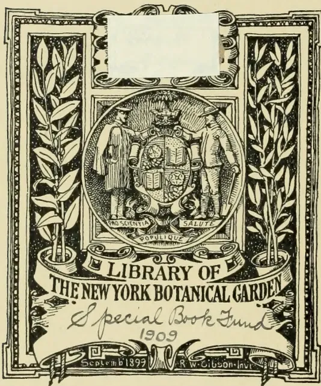
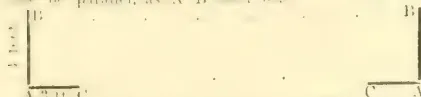
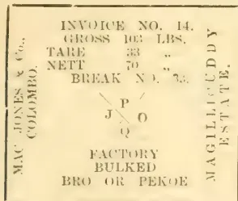
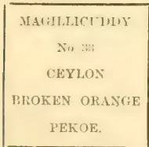

gecoll
complect
Ke
XT . R 732 v. 5, 1885-86

LIBRARY OF
THE NEW YORK BOTANICAL GARDEN
Special Book Fund
1909
September 1899 R. W. Gibson Inv.
The image is a decorative library label for the New York Botanical Garden. It features a central circular emblem with two figures, one on the left and one on the right, standing on either side of a shield. The left figure is labeled 'PRO SCIENTIA' and the right figure is labeled 'SALUTE'. Below the shield is the Latin phrase 'POPULIQUE UTILITATI'. The emblem is flanked by two vertical panels, each containing a stylized botanical illustration of a plant with long, narrow leaves. The entire design is enclosed in an ornate, rectangular border. A white rectangular label is placed over the top center of the emblem. Below the emblem, a banner reads 'LIBRARY OF THE NEW YORK BOTANICAL GARDEN'. Below that, another banner reads 'Special Book Fund 1909'. At the bottom, a smaller banner reads 'September 1899 R. W. Gibson Inv.'.
This image shows a single, blank page of aged paper. The paper has a warm, light brown or tan color, characteristic of old documents. The surface is not perfectly uniform, showing subtle variations in tone and texture. There are a few small, dark spots or blemishes scattered across the page, most notably one near the center and another towards the bottom right. A faint, thin crease or line is visible near the top left corner. The overall appearance is that of a flyleaf or endpaper from an old book, with no text or other markings present. This image shows a single, blank page of aged paper. The paper has a warm, light brown or tan color, characteristic of old documents. The surface is not perfectly smooth; it has a subtle texture and shows signs of aging, including faint creases and slight discoloration. There are no markings, text, or illustrations on the page.[Vol. I. containing Numbers I. to XII: July 1885 to June 1886.]
Step after step the ladder is ascended."—GEORGE HERBERT, Jacula Prudentum.
THE
TROPICAL AGRICULTURIST:
A
MONTHLY RECORD OF INFORMATION
FOR
PLANTERS
OF
Tea, Coffee, Cacao, Cinchona, Sugar, Rubber, Tobacco, Palms, Spices, Rice,
AND OTHER PRODUCTS,
SUITED FOR CULTIVATION IN THE TROPICS.
[ISSUED ON OR ABOUT THE 1ST OF EACH MONTH.]
COMPILED BY
A. M. & J. FERGUSON
of the "Ceylon Observer," &c.
LIBRARY
NEW YORK
BOTANICAL
GARDEN.
"It is both the duty and interest of every owner and cultivator of the soil to study the best means of rendering that soil subservient to his own and the general wants of the community; and he who introduces, beneficially, a new and useful Seed, Plant, or Shrub into his district, is a blessing and an honour to his country."—SIR J. SINCLAIR.
A. M. & J. FERGUSON: COLOMBO, CEYLON.
The "TROPICAL AGRICULTURIST" can be obtained from, or advertisements for it sent to, the following agents:—
London:—Messrs. TRÄNNER & Co., 57 & 59, Ludgate Hill; JOHN HADDON & Co., 3, Bouverie St., Fleet St.; GEO. STREET & Co., 30, Cornhill; F. ALGAR, 11 and 12, Clement's Lane, Lombard St.; BATES, HENDY & Co., 37, Walbrook; COWIE & Co., 17, Gresham St.; GORDON & GOTCH, St. Bride St., Ludgate Circus; CALIK, SON, & PLATT, 85, Gracechurch St.; W. H. SMITH & Co., Strand; S. DEACON & Co., 150, Leadenhall St.; T. CHRISTY & Co., 155, Fenchurch St.; W. B. WHITTINGHAM & Co., 19, Gracechurch Street.—Cambridge: DIGHTY & Co.—Manchester: PICKLES & BROWNE, 25 Cathedral Yard.—Liverpool: CHAS. BIRCHALL, 32, Castle Street.—Glasgow: W. & R. MACPHUN.—Edinburgh: W. & A. K. JOHNSTON.—Aberdeen: W. WESTLAND, 53, Nicholas Street.—Paris: AGENCE HAYAS.—Madras: VEST & Co.—Nildgiri and Wynnaad Districts: A. PRIMROSE, Mercara, Coorg.—Calcutta: THACKER, SPINK & Co.—Bombay: THACKER & Co., LTD.—Rangoon: SOLOMON & Co.—Punjab: BLAZE, REIDEL & Co.—Singapore: J. LITTLE & Co.—Batavia: JOHN PRYCE & Co., and G. KOLFF & Co.—Surabaya: THOS. C. WILSON & Co.—Samarang: MANUAL & Co.—Saiyon: FLEITH & LAPLACE.—Hongkong: KELLY & Co.—Shanghai: CHINA AND JAPAN TRADING COMPANY.—Melbourne, Sydney and Brisbane: GORDON & GOTCH.—Sydney: WM. MADDOCK.—Adelaide: CAWTHERN & Co.—Northern Queensland: W. HOPKINS, Rockhampton.—Perth, W. Australia: STIRLING & SONS.—New Zealand: COLONIAL NEWS AGENCY, Napier.—Fiji: ARTHUR STEPHENS.—Brazil, Rio de Janeiro: LOMBAERTS & Co., 7, Rua dos Ourives; A. J. LAMOURFUX, "Rio News" Office.—Central America: JAMES BOYD, Panama.—Guatemala: W. J. FORSYTH.—West Indies: C. H. CALDERON, St. Thomas.—Dominica: "DOMINICA DIAL" OFFICE.—British Guiana: "ROYAL GAZETTE" OFFICE.—Natal: ROBINSON & VAUSE, Durban.—Mauritius: C. W. HALL, Port Louis.—United States: S. M. PETTINGILL & Co., 263, Broadway.
MDCCLXXXVI.
[Faint page: no legible print of its own could be verified; text withheld (stage 4 review list)]
LIBRARY
NEW YORK
BOTANICAL
GARDEN.
In closing the Fifth Volume of the "TROPICAL AGRICULTURIST," we have but to repeat what we have said on similar previous occasions, in directing attention to the large amount of useful information afforded, and to the great variety of topics treated in our pages. From month to month, we have endeavoured to lay before our readers the latest results of practical experience and scientific teaching in all that concerns tropical agriculture; and our ambition has been to make this periodical not only indispensable to the planter, but of service to business men and capitalists, never forgetting that agriculture trenches upon every department of human knowledge and science, besides being the basis of human wealth.
While directing our attention chiefly to the products prominently mentioned on our title-page, we have never omitted to notice minor industries likely to fit in with tropical conditions; and our readers have an ample guarantee in the pages before them that, in the future, no pains will be spared to bring together all available information both from the West and East, the same being examined in the light of the teachings of commonsense as well as of prolonged tropical experience in this, the leading Crown and Planting Colony of the British Empire.
The official Reports on the Royal Botanic and Economic Gardens in Ceylon are republished in full in a separate form, in the present volume and throughout our pages will be found reviews of, and extracts from the Reports of other Botanic Gardens situated in or near the tropics. We are ready to give copious extracts from, if not to reprint in extenso, the Reports of all other sub-tropical Public Botanic Gardens which may reach us. Most of these Reports we already receive and utilize as above-mentioned for the benefit of our planting readers.
A full and accurate Index affords the means of ready reference to every subject treated in this fifth volume which we now place in our subscribers' hands, in full confidence that it will be received with an amount of approval, at least equal to that which has been so kindly extended to its predecessors.
In conclusion, we must tender our thanks to readers and contributors, and our wish that all friends may continue to write instructively and read with approval: for then indeed must the "TROPICAL AGRICULTURIST" continue to do well.
A. M. & J. FERGUSON.
COLOMBO: 15th June, 1886.
DEC 21 1909
| A. | PAGE. | PAGE. | |
|---|---|---|---|
| Acaacias ... | 256, 436, 753, 840, 879 | Alkaloid in Lantana ... | 424 |
| Acreage Returns ... | 425 | Alluvial Soils ... | [See Soils.] |
| Adulteration of Coffee ... | [See Coffee] | Aloe Cultivation ... | 368 |
| — of Sugar ... | [See Sugar] | Aloes, Market Rates for 72, 152, 232, 304, 376, 448, 520, | 592, 664, 736, 880 |
| — of Tea ... | [See Tea] | Altitude and Vegetation ... | 45 |
| Advance System and Planting in Ceylon ... | 55 | Alvelos and Cancer ... | 170 |
| Advertising ... | 252 | Amazon ... | 660 |
| Africa, Central, Planting in ... | 637 | Amber ... | 325 |
| —, Equatorial ... | 637 | America, Bees in ... | 34, 90 |
| —, German Plantations in 296, 327, 427, 552, 757 | 552 | —, Coffee in ... | [See Coffee] |
| —, West, Products of ... | 552 | —, Floriculture in ... | 490 |
| African Flora ... | [See Forests] | —, Forests in ... | [See Forest] |
| —, Oil Palm ... | 472 | —, Fruit Cultivation ... | 256, 339, 413 |
| —, Trade ... | 45 | —, Indiarubber in ... | [See Indiarubber] |
| —, Trees ... | 427, 464 | —, Quinine in ... | 371 |
| Agricultural Chemistry [See Chemistry, Agricultural] | —, Tea Cultivation in ... | [See Tea] | |
| Education 15, 19, 193, 317, 329, 344, 355, | —, Tobacco Cultivation in [See Tobacco Cultvn] | ||
| 470, 518, 612, 709, 800, 802, 842, 877 | —, Trade of ... | 807 | |
| Exhibitions ... | 35, 36, 799 | —, Wheat Cultivation in ... | 344 |
| Students, Ceylonese ... | 470 | American Evaporator ... | 504, 766 |
| Agriculture ... | 298, 490, 594 | Ammoniacum, Gum, Market Rates for 72, 152, 232, | 304, 376, 448, 520, 592, 664, 736, 808 |
| and Insects ... | 151, 298 | Anatto ... | 91, 708, 744 |
| at the Cape ... | 287 | Andamans, Tea Cultivation in ... | 776 |
| Exhibits at Inventions Exhibition 121 | Animi, Gum, Market Rates for 72, 152, 232, 304, 376, | 448, 520, 592, 664, 736, 808 | |
| Experiments in ... | 39, 121, 794 | Anise, Star ... | 354 |
| for Natives 23, 36, 39, 90, 93, 120, 150, 242, | Anthracite ... | 257, 325 | |
| 377, 470, 722, 758, 779, 802 | Antiseptics ... | 583 | |
| Improvement of ... | 35, 36, 594, 709, 722, 754 | Ants, Black ... | 615, 641 |
| in Africa ... | 552 | —, Red and Helopeltis ... | 94 |
| in Algeria ... | 336 | —, Remedies for 200, 216, 615, 641, 661, 792 | |
| in America 25, 90, 151, 374, 475, 569, 890 | —, vs. Worms ... | 501 | |
| in Australia 150, 162, 242, 329, 367, 370, | —, White ... | [See White Ants] | |
| 385, 404, 510, 717, 721 | Anuradhapura Gardens ... | [See Botanic Gardens] | |
| in Borneo ... | 5, 90, 596, 658 | Aphidæ ... | 319, 456, 576, 662 |
| in Brazil ... | 31, 99, 271, 329, 707, 731 | Apple Trees ... | 346 |
| in Burma 26, 91, 101, 248, 264, 349, 467, | Arabic Gum, Market Rates for 72, 152, 232, 304, 376, 448 | ||
| 478, 494 | Arboriculture 246, 247, 268, 577, 603, 613, 638, 640, 656, | ||
| in Ceylon 17, 18, 19, 23, 45, 55, 85, 150, | 706, 715, 719, 817, 823, 829, 858, 864, 879 | ||
| 217, 218, 242, 247, 284, 305, 311, 340, 353, | Arecanut ... | 858 | |
| 380, 398, 409, 412, 455, 472, 483, 486, 614, | —, Cultivation 137, 155, 164, 195, 201, 253, 848 | ||
| 672, 709, 718, 732, 776, 781, 802, 816, 835, 848 | Arekane ... | 823 | |
| in China ... | 798 | Arnatto ... | [See Anatto] |
| in England ... | 19, 499, 681, 709 | Arrack, Copper in ... | 197 |
| in Europe ... | 204, 329, 791, 839 | —, Supply ... | 870 |
| in India 35, 36, 39, 47, 102, 197, 198, 200, | Arrowroot Cultivation ... | 242 | |
| 317, 318, 329, 344, 355, 387, 399, 400, 470, | —, Market Rates for 72, 152, 232, 304, 376, | ||
| 477, 480, 560, 574, 608, 614, 870, 871, 876 | 448, 520, 529, 664, 736, 808 | ||
| in Italy ... | 320 | Arsenic ... | 183 |
| in Japan ... | 295, 340 | Artesian Wells ... | 242, 247, 744 |
| in Java ... | 235, 350 | Artificial Manures ... | [See Manures.] |
| in Johore ... | 203 | Asbestos ... | 449, 798 |
| in Malaya ... | 427, 638, 688 | Ashes as a Fertilizer ... | [See Manures]. |
| in Mauritius ... | 428 | Asia, Central ... | 640 |
| in Netherlands India 24, 145, 270, 232, | Asphalt Walks ... | 730 | |
| 255, 338, 365, 517, 705, 717, 789 | Assafotida, Market Rates for 72, 150, 232, 304, 376, | ||
| in New Guinea ... | 580 | 448, 520, 590, 664, 736, 808 | |
| in New Zealand ... | 15, 415, 475, 559, 805 | Assam, Coffee Cultivation in ... | 272 |
| in Siam ... | 199 | —, Planting in ... | 670, 811 |
| in West Indies 4, 17, 160, 248, 584, 864 | —, Railways in ... | 426 | |
| Agricultural, Tropical [See Tropical Agriculture st] | —, T. a Cultivation in ... | [See Tea.] | |
| Agri-Horticultural Show, Ceylon ... | 13, 218 | Air, Pan and ... | 658 |
| Alcohol, Coffee vs. ... | 366 | Australia, Agriculture in ... | [See Agriculture.] |
| — from Coffee Husks ... | 854 | —, Birds in ... | 370, 786 |
| Alcoholism, Panama for ... | 36 | —, Cinchona Cultivation in ... | 150 |
| Algeria, Agriculture in ... | 336 | ||
| Alkaloid in Arecanut ... | 823 |
INDEX.
| PAGE. | |
|---|---|
| Australia, Coffee Cultivation in | 367 |
| —, Geology of | 440, 790 |
| —, Gold in | 845 |
| —, Labor in | 50, 148, 367 |
| —, Planting in | ... 404, 793 |
| —, Rice Cultivation in... | 384 |
| —, South, Northern Territory of | ... 150, 155, 367, 385, 404, 717 |
| —, Sugar Cultivation in [See Sugar Cultivation] | |
| —, Tea in | [See Tea.] |
| Australian Stock for India and Ceylon | 717 |
| —, Timber... | [See Timber.] |
| Avenue Trees ... | 124 |
| B. | |
| Babul Cultivation | 753 |
| Badulla, Fruit trade of | 174 |
| Bael Fruit in Dysentery | ... 466, 472 |
| Bamboo | 354, 396, 484, 494, 824 |
| Bamboo Square | 351 |
| Bananas | 4, 190, 207, 318, 377, 649, 832, 872 |
| Bark | [See Cinchona.] |
| Barbados | 584 |
| Barley in Ceylon | ... 311, 321 |
| Bats' Dung | ... 132, 497 |
| Bêche-de-Mer | ... 120, 122 |
| Bee-keeping | 694, 842, 872 |
| Bees in America | 34, 90 |
| — in India | 147, 508, 694 |
| Beeswax, Market Rates for | 72, 152, 232, 304, 376, 448, 520, 592, 664, 736, 808 |
| Beetles as Enemies of Coconuts | [See Coconuts, Enemies of.] |
| Beet, Manure for | [See Manures.] |
| Beet Sugar | 449, 500, 602, 696, 833 |
| Begonias | 545 |
| Belts on Pulleys | 503 |
| Birds, Rare | 190 |
| —, Feathers Trade | 782 |
| —, Insectivorous | 83, 93, 786 |
| —, Song | 189 |
| —, Wild, Protection for | 83, 295, 330, 416, 782 |
| Birdsnests, Edible | 299 |
| Bi-sulphide of Carbon | 295 |
| Bit, Indianrubber | 400 |
| Blight, Berberry | 823 |
| —, Blister | 98 |
| Books and White Ants | 216 |
| Blood as Manure | [See Manures.] |
| Blue Gum | [See Eucalyptus.] |
| Boilers, Removing Scale from | 295, 445 |
| Bolivia, Cinchona Cultivation in | 137 |
| —, Planting in | 503 |
| Bonedust as Manure | 405 |
| Bone Industry... | 400 |
| —, Meal for Fowls | 400 |
| Bones as Manure | 795 |
| Borneo, Gold in | 102, 184, 229, 229, 741 |
| —, Gutta Percha Cultivation in | 51, 54 |
| —, North | 5, 49, 90 |
| —, British, Company | 139, 272 |
| —, Planting in | 336, 658, |
| —, Products of | 145, 229, 596, 741, 759 |
| Botanic Gardens, Calcutta | 530 |
| —, Ceylon | 20, 36, 65, 150, 341, 655, 713 |
| —, Jamaica | 761 |
| —, Java | 52, 730, 799 |
| —, Kew | 411, 553, 717 |
| —, Lucknow | 507, 613, 730, 754, 796 |
| —, Madras | 529 |
| —, Nilgiris | 68 |
| —, North India | 609 |
| —, Singapore | 560 |
| Botany | 359 |
| 167, 170, 194, 207, 237, 255, 300, 309, 326, 384, 386, 387, 393, 414, 449, 457, 463, 472, 479, 480, 485, 508, 514, 535, 536, 546, 624, 681, 708, 730, 753, 767, 769, 776, 779 |
|
| Botanist, Oriental | 384 |
| —, Ceylon | 65 |
| Boxes, Making, by Machinery | 691 |
| Bracken Fern | 329 |
| PAGE. | |
|---|---|
| Brazil, Cinchona Cultivation in | [See Cinchona.] |
| —, Coffee Cultivation in | [See Coffee.] |
| —, Financial Crisis in | 190, 347 |
| —, Labor in | 35, 117, 867 |
| —, Planting in | 31, 99, 117, 231, 271, 320, 348, 347, 696, 867 |
| —, Progress in | 343, 347, 514, 781 |
| —, Slavery in | 31, 117, 198, 343, 347, 706 |
| —, Sugar Cultivation in | ... 867 |
| —, in Java | ... 270 |
| Breeding Cattle | ... 35, 36 |
| —, Horses | 204 |
| Brewing in Ceylon | 41, 311, 321 |
| British Possessions | 845 |
| Bug | 91, 184, 216, 324, 428, 641 |
| Bull Culture in Holland | 462 |
| Burma, Forests in | [See Forests.] |
| —, Natural History of | 533 |
| —, Opening up | 91 |
| —, Planting in | 26, 91, 101, 249, 433, 467, 478, 513 535, 707 |
| —, Resources of | 457, 533, 794 |
| —, Rice Cultivation in | [See Rice.] |
| Burmese Lacquer | 352 |
| Butter-flies, Migration of | 519 |
| —, Testing | 98, 194 |
| C. | |
| Cacao and Coconut | 328 |
| Cacao Blight | 93, 179, 182, 183, 329 |
| —, Consumption of | 286 |
| —, Cultivation in Ceylon | 35, 137, 146, 178, 239, 282, 393, 643, 647, 650, 655, 670, 674, 715, 716, 743, 763 |
| —, in Granada... | 735 |
| —, in Guiana | 608 |
| —, in Java | 196 |
| —, in Johore | 164 |
| —, in Monteserrat | 196 |
| —, in Trinidad | 272, 512 |
| —, Enemies of | 94, 99, 147, 169, 229, 230 |
| —, Preparation of | 239, 379, 765, 802 |
| —, Trade | [See Cocoa.] |
| —, Varieties of | 425, 429 |
| Cactus Hedges | 416 |
| Caffeine | 672 |
| —, and Toothache | 216 |
| Calamander Wood | 844 |
| Calcutta Botanic Gardens | 530 |
| —, Tea Syndicate | [See Tea.] |
| California | 413, 823 |
| Calophyllum Inophyllum | 246 |
| Calotropis Gigantea | 151, 414 |
| Calumba Root, Market Rates for | 72, 152, 232, 304, 376, 448 |
| Camphor in China | 416, 480 |
| —, Market Rates for | 72, 152, 232, 304, 376, 448, 520, 592, 664, 736, 808 |
| Canada | 877 |
| —, Ceylon Tea in | 104 |
| Canaries | 408, 428, 444 |
| Cancer, Remedy for | 170 |
| Canker, Cures for | 229 |
| Caoutchouc | [See Indianrubber.] |
| Cape Jasmine | 297 |
| Capsicum | 781 |
| Carbolic Acid as an Antiseptic | 816 |
| —, as Manure | [See Manures.] |
| Carbolinum Avenarius | 416 |
| Cardamom, Cultivation | 85, 181, 528, 647, 790 |
| —, in Fiji | 157, 431 |
| —, Drying | 240 |
| —, Market | 296, 346, 867 |
| Cardamoms, Market Rates for | 72, 152, 232, 304, 376, 448, 520, 592, 664, 736, 808 |
| Carob Tree | 123 |
| Caroline Islands | 154, 349 |
| Carraway Seed | 498 |
| Castor Cake | 405 |
| —, Tree (for Oil) Cultivation | 672, 816, 875 |
INDEX.
| PAGE. | |
|---|---|
| Caster Oil. Market Rates for | 72, 152, 232, 304, 376, 448, 520, 592, 664, 736, 808 |
| Preparation of | 557 |
| Casuarina | 557 |
| Caterpillars | 472, 496, 757, 831, 882 |
| Cats. Civet | 97 |
| Cattle Food | 113, 123, 131, 136, 150, 151, 264, 336, 627, 640 |
| Book about | 536 |
| Improvements of | 390 |
| Cinchona, Tea Cultivation in the | 530, 601 |
| Ceara Rubber | 133, 633 |
| Cedar | 458, 486, 779, 864, 879 |
| Celluloid | 386, 470 |
| Cement, Colourless | 131 |
| Pavement | 412 |
| Ceylon, Agriculture in | [See Agriculture] |
| as a field for Colonists | 439, 450 |
| Birds in | 786 |
| Botanic Gardens | [See Botanic Gardens] |
| Climate of | 524, 833 |
| Cocoa | 564 |
| Commerce | 828 |
| Consumption of Tea in | 233 |
| Flora | 57, 65, 93, 446, 471 |
| Forests in | 156, 268, 587, 593, 609 |
| Gems in | 609 |
| Geology | 42, 238, 246, 248, 587, 593 |
| Gold in | 593 |
| Grain Cultivation in | 147, 217, 218 |
| Guttapercha | See India Rubber |
| Hides | 801 |
| Investments in | 318, 442, 666, 691, 841 |
| Irrigation in | See Irrigation |
| in the London Exhibition | 205, 617, 844 |
| Metals in | 208 |
| Minerals in | 246, 248, 257, 587, 593 |
| Planting in | 1, 4, 18, 30, 45, 49, 51, 55, 69, 85, 96, 99, 110, 115, 137, 145, 154, 155, 158, 177, 191, 237, 298, 299, 296, 282, 315, 337, 361, 362, 369, 373, 383, 439, 442, 449, 481, 496, 511, 517, 527, 536, 598, 617, 643, 646, 647, 666, 669, 670, 699, 707, 715, 738, 742, 749, 746, 758, 772, 780, 804, 812, 825, 842, 848 |
| Plumbing in | 257 |
| Productions | 282, 377, 409, 455, 583, 777, 781, 796, 807, 828, 866 |
| Rainfall in | 230, 410, 699, 750, 839, 844 |
| Resources of | 36, 115, 120, 131, 150, 246, 257, 365, 318, 377, 460, 445, 450, 483, 722, 750, 796, 812, 824, 826, 848 |
| Sulphuric Acid Factory in | See Sulphuric Acid |
| Vegetation | 231, 530, 699, 753 |
| Ceylonese Agricultural Students | 470 |
| Charcoal | 798 |
| making Kiln | 330 |
| in Formosa | 119 |
| Chemical Manufacture of Sugar | 272 |
| Dyes and Their Danger | 528 |
| Chemistry | 627, 823 |
| Agricultural | 167, 237, 255, 334, 447, 488, 513, 665, 823 |
| Chickens Treatment of | 171 |
| Food for | 271 |
| Chillies | 781 |
| Market Rates for | 72, 152, 232, 304, 376, 448, 520, 592, 664, 736, 808 |
| China, Forests in | 446, 480, 547 |
| Grass | See Rhea |
| Tea Cultivation of | See Tea |
| Chinese Emigration | 555 |
| Labour | 145 |
| Chlorine | 409 |
| Sabah Land Co. | 125, 241 |
| Chocolate Ceylon | 564, 674 |
| Cigars in Tea | 92 |
| Insects destroying | 11 |
| Manufactury of | 248, 256 |
| Trade | 113, 212, 218, 256, 829 |
| Cinchona Akajonds | 51, 147, 391, 345, 409, 429 |
| Manufacture in Madras | 147 |
| Dark Analyses | 57, 114, 361, 499, 499, 739 |
| PAGE. | |
|---|---|
| Cinchona Baling | 537, 514 |
| Harvesting of | 92, 133, 136, 179, 181, 191, 245, 262, 270, 398 |
| in Medicine | 400, 515, 796 |
| Market | 28, 30, 37, 197, 271, 290, 400, 613, 615, 690, 765, 789 |
| Market Rates for | 72, 152, 232, 304, 376, 448, 520, 592, 664, 736, 808 |
| Supply | 567, 796 |
| Wister | 763 |
| Cinchona Cultivation in Australia | 150 |
| in Bolivia | 137, 289, 301, 807 |
| in Brazil | 345 |
| in Ceylon | 22, 45, 68, 137, 146, 301, 350, 397, 643, 647, 650, 655, 703, 707, 766, 816 |
| in Guatemala | 374, 569 |
| in India | 34, 99, 130, 301, 329, 340, 401, 417, 525, 568, 572, 600, 739, 829, 830, 845 |
| in Jamaica | 791 |
| in Java | 22, 25, 397, 400, 450, 553, 565, 693, 705, 766, 783 |
| in Johore | 164 |
| in Mauritius | 428 |
| Disease | 745, 812 |
| Enemies of | 229 |
| Extracts of | 345, 418, 457, 708, 774 |
| Fabricage | 242, 708, 796 |
| Crafting | 292 |
| Ledgeriana | 38 |
| Manufacture | [See Quinine] |
| Markets | 349, 446, 469, 536, 567, 705, 796, 800, 829, 845, 867, 871 |
| Production | 39, 58, 840, 801 |
| Succinubra | 97 |
| Varieties of | 301, 457 |
| Cinnamon, Cultivation | 227, 291, 441, 666 |
| Market Rates for | 72, 152, 232, 304, 376, 448, 520, 592, 664, 736, 808 |
| Oil, Market Rates for | 72, 152, 232, 304, 376, 448, 520, 592, 664, 736, 808 |
| Weights | 348 |
| Citric Acid as an Antiseptic | 719 |
| Civet Cats | 97 |
| Citronella Cultivation | 186, 559 |
| Oil, Market Rates for | 72, 152, 232, 304, 376, 448, 520, 592, 664, 736, 808 |
| Citrons | 321, 483, 485, 719, 776, 816 |
| Clay Soil | [See Soils] |
| Climate. Influence of Forests on | [See Rainfall] |
| of India | 348 |
| Cloves. Market Rates for | 72, 152, 232, 304, 376, 448, 520, 592, 664, 736, 808 |
| Coal in Borneo | 145 |
| in Ceylon | 257 |
| Tar Sugar | 802 |
| Clover | 823 |
| Coca | 45, 93, 289, 290, 332, 391, 426, 430, 723, 745, 746, 790, 795, 824 |
| Cocaine | 73, 93, 147, 230, 333, 391, 424, 445, 488, 559, 560 |
| Coca Seed | 101 |
| Cochineal | 474 |
| Cockchafer Grub | See Coffee |
| Cockchafers | 800 |
| Cocoa | [See Cacao] |
| Drinking | 566 |
| Leaves | 90 |
| Market | 199, 690, 708 |
| Manufacture | 564, 708 |
| Market Rates for | 72, 152, 232, 304, 376, 448, 664, 736, 808 |
| Uses of | 456, 566 |
| Coco-de-Mer | See Nap. |
| Coconut Palms and Crabs | 200 |
| Cultivation | 23, 25, 217, 226, 227, 517, 586, 614, 652, 644, 674, 708, 747, 784, 840, 865 |
| in Brazil | 345 |
| in Fiji | 158, 201 |
| in Keeling Islands | 200 |
| in West Indies | 687 |
INDEX.
| PAGE. | PAGE. | ||
|---|---|---|---|
| Coconut, Enemies of | 400, 614 | Copra Trade | 56, 136, 150, 201, 205, 375 |
| — Fibre | [See Coir] | — Machinery for | 192, 344, 566 |
| — Oil | 326 | Copper in Arrack | 197 |
| — Trade | 99, 112 | Coral Reefs | 141 |
| — Origin of | 865 | Corks | 216 |
| — Refuse | 344, 688 | Cotton | 336, 484 |
| — Uses of | 148, 149, 328, 344 | — Cultivation | 826 |
| Coccus Indicus, Market Rates for | 72, 152, 232, 304, 376, 448, 520, 592, 664, 736, 808 | — Picker | 598 |
| Coffee, Adulteration of | 25, 54, 137, 310, 521, 607 | — Seed Cake | 458, 473 |
| — Analysis | 671 | — for Food | 169 |
| — Brandy | 854 | — Uses of | 473, 584 |
| — Bug | 91, 184 | — Silk | [See Kapok] |
| — Charges on | 237 | Coughs, Cure for | 746 |
| — Colour of | 54, 188, 210, 229, 347, 389, 524, 526 | Crab Coconut | 209 |
| — Companies | 45, 186, 521, 668 | Cranberry Cultivation | 64 |
| — Consumption | 286, 293, 311, 326, 364, 378, 607, 871 | Credit, Working on | 198 |
| — Crops | 21, 46, 102, 146, 705, 715, 716 | Creeper, Gigantic | 99 |
| — Cultivation in Ceylon | 16, 85, 186, 194, 200, 399, 409, 643, 647, 650, 743 | Creosote | 613 |
| — in Africa | 117, 184, 249, 290, 444 | Crops and Weather in India | [See India] |
| — in America | 113, 117, 249, 296, 330, 347 | — and Weeds | 684 |
| — in Asia | 117, 249, 296 | — Growth of | 243 |
| — in Australia | 367 | Croton Oil Consumption | 9 |
| — in Brazil | 31, 117, 160, 249, 328, 378, 671, 731, 745, 867 | Oil Cultivation | 191, 614, 641, 685, 743, 831, 832 |
| — in Burma | 26 | Seed, Market Rates for | 72, 152, 232, 304, 376, 448, 520, 592, 664, 736, 808 |
| — in Fiji | 157, 431 | Crows | 97 |
| — in India | 16, 25, 54, 85, 130, 192, 210, 272, 286, 368, 375, 390, 443, 552, 572, 585, 781, 807, 843 | Cryptomeria Japonica | 829 |
| — in Jamaica | 785, 791 | Cubeb | 802 |
| — in Java | 45, 117, 198, 766 | Cuca | [See Coca] |
| — in Malay Archipelago | 102, 427 | Curing Fish | 36 |
| — in Natal | 732 | Cuscuta Creeper | 476 |
| — in Netherlands India | 270, 283, 705 | Cutch, Manufacture of | 256 |
| — in West Indies | 735 | — Market Rates for | 72 |
| — Drinking | 193 | Dairy Farming in India | 163 |
| — Enemies of | 35, 102, 200 | — Produce Artificial | 799 |
| — Grub | [See Grub.] | Darjiling, Planting in | 32, 453, 745 |
| — in America | 45, 113, 117, 446 | Date Palm | 434, 447, 473 |
| — Leaf-Disease | 51, 68, 85, 94, 101, 133, 134, 182, 183, 186, 198, 236, 266, 335, 441, 446, 473, 502, 521, 524, 670, 731, 742 | — Plum | 888 |
| — Liberian | [See Liberian Coffee.] | — Sugar | [See Sugar] |
| — Mauring | 210, 771 | Death by Violence | 790 |
| — Market | 15, 118, 229, 237, 303, 447, 521, 601, 690, 866 | Diamond in Madagascar | 51 |
| — Market Rates for | 72, 152, 188, 232, 304, 376, 448, 520, 592, 664, 736, 808 | Digging among Shrubs | 490 |
| — New Era | 428 | Diseases, Contagious | 335 |
| — Preparation of | 54, 118, 188, 210, 229, 433, 469 | Disinfectants | 90, 115, 386, 720, 781, 816 |
| — Production | 193, 378, 523, 718, 720 | Divi Divi | 568, 577 |
| — Pruning | 238 | Diving | 373 |
| — Seedlings | 344 | Dogs, Insectivorous | 97 |
| — Substitutes for | 34, 400, 480, 601 | Domba Nuts | 246 |
| — Statue to | 764 | Domuica | 488, 712 |
| — Trade | 194, 237, 310, 343, 447, 734, 871 | Doundake | 393 |
| — vs. Alcohol | 366 | Drainage | 256 |
| — Wild, in Mexico | 147 | Drought | 415, 750 |
| Coir, Market Rates for | 72, 152, 232, 304, 376, 448, 520, 592, 664, 736, 808 | Drugs, New Commercial | 123 |
| — Dust | 565, 576, 614 | Dry Regions, Plants for | 616 |
| — Yarn | 112 | Dung, Bats | 132 |
| Coke as Fuel | [See Tea, Fuel for] | Dust, Fertilizing | 775 |
| Cola Nut | [See Cola Nut] | Dutch East Indies | 24 |
| Colds, Cure for | 512, 746 | — Government and Colonies | 407 |
| Colonists, Ceylon as a Field for | 439, 450 | Dye-woods | 464 |
| Colour, Green, Retention of | 426 | Dye-yielding Plants | 57 |
| Colombo Root | [See Calumba] | Dysentery, Cure for | 466, 472, 495 |
| Columbia, British | 25 | E. | |
| Communication between Assam and Calcutta | 426 | Earthing-up | 531 |
| Congo, Trade on the | 45 | Ebony | 464, 646 |
| Consumption of Commodities in Britain | 178 | — Market Rates for | 72 |
| — Pulmonary, Cure for | 327 | Eczemas and Snails | 198 |
| Contagious Diseases | 335 | Edible Birds' Nests | 209 |
| Cooking Recipes | 327, 328, 347, 857 | Education, Agricultural [See Agricultural Education] | 19, 843 |
| Cool, Dry Air Process | 504 | — of Labouring Classes | 90 |
| Coolies, Treatment of | 19, 825, 851 | Egg Trade | 824 |
| — compared with British Labourers | 19 | Electric Light | 428 |
| Cooling Vessels, Test of | 288 | — Plants | 118 |
| Coorg, Planting in | 16, 54, 368, 670 | Electricity and Ploughing | 764 |
| Elephants, Capture of | 131, 197, 399, 428, 189, 560 | ||
| Ensilage | 486, 871 | ||
| Entomology | 36, 93 | ||
| Erythroxylon in Ceylon | 502 | ||
| Esparto Grass |
| PAGE. | PAGE. | ||
|---|---|---|---|
| England, Drought in | 415 | Forests in Ceylon | 268, 396 |
| Essential Oils | [See Oils] | — in China | 416, 480 |
| Eucalyptus and Malaria | 254, 256, 494 | — in Europe | 331, 416, 696 |
| Cultivation | 128, 309, 577 | — in India | 430, 436, 444, 443, 784 |
| in England | 254, 784 | — in Johore | 322 |
| in India... | 436 | — in Malaya | 387, 437, 759, 797 |
| in Scotland | 396, 509, 624 | — in Mauritius | 476 |
| Decay of | 327 | — in New Guinea | 779 |
| Disease | 327 | — in New Zealand | 559, 858 |
| Experiments on | 823 | Planting | 393, 829, 858 |
| Gum, Use for | 254 | Fowls, Bone Meal for | 400 |
| Height of | 752 | Food for | 136, 798 |
| in Medicine | 550 | Treatment of | 171, 641, 784, 790 |
| Oil from... | 243, 254, 445 | Yard | 90 |
| Timber | 101, 130, 155, 196, 254 | Foxes, Flying | 764 |
| Uses of... | 295, 442, 550, 612, 873 | Frankincense, Substitute for | 489 |
| Varieties of | 254, 336 | Frogs | 798 |
| Evaporator, American | [See America] | Fruit Cultivation | 131, 174, 247, 339, 346, 360, 445, 446, 459, 460, 474, 475, 483, 485, 494, 505, 544, 566, 584, 624, 638, 640, 672, 686, 764, 769, 772, 780, 790, 793, 875, 872 |
| Exhibition, Kandy | 97 | — in America | [See America] |
| London, Ceylon in the | 295, 844 | Eating | 496 |
| Inventions | 121 | Drying | 504, 766 |
| Experiments in Agriculture | 121 | Preserving | 438, 516, 583, 790, 845 |
| F. | Trade, West Indian | 174 | |
| Falcon | 190 | Trees | 35 |
| Faus, Palm Ola | 377 | Fungoid Diseases in | 415 |
| Farming | [See Agriculture] | Trees, Pruning of | [See Pruning] |
| English, in India | 163 | Tripartite... | 192 |
| Feathers, Birds... | 782 | Fuel | [See Tea, Fuel for] |
| Febrifuge | 424, 774 | Fungi | 130, 170, 197, 536, 629, 694, 752, 800, 823 |
| Fermentation | 289 | Fungoid Diseases | 415 |
| Ferns, Bracken | 329 | G. | |
| Ferns, Catalogue of Ceylon | 65, 329 | Galls and Insects | 486 |
| Fern Culture | 552, 840 | Gall Nuts | 784 |
| Ferns, Bleaching | 428 | Galls, Market Rates for | 72, 152, 232, 304, 376, 448, 620, 592, 664, 736, 808 |
| Ferns, Maidenhair | 408 | Gambier, Market Rates for | 72, 152, 232, 304, 376, 448, 520, 592, 664, 736, 808 |
| of Jamaica | 256 | — in Johore | 203 |
| Fertilizers | [See Manures.] | — in North Borneo | 90 |
| Fibres for Ropes | 505 | Game, Preservation of | 238 |
| Fibre Machinery | 26, 56, 165, 332, 75, 441, 98, 597, 729, 830, 854 |
Gardening in Ceylon | 16, 471 |
| Preparation | 100, 495, 577, 708, 729, 740 | Garden Labels | [See Labels] |
| Fibre-yielding Plants | 32, 57, 99, 103, 123, 131, 149, 165, 297, 318, 332, 345, 368, 414, 502, 625, 708, 726, 798, 876 |
Pests | [See Insect Pests] |
| Fig Cultivation | 672 | Gas Lime as Manure | [See Manures] |
| Fiji, Labour in | 271 | Light | 824 |
| Planting in | 128, 156, 178, 192, 201, 271, 328, 363, 431, 438, 515, 640, 716, 735, 749, 772, 780, 827, 830 |
Gems in Ceylon... | [See Ceylon] |
| Filter, Quick | 98 | German Agricultural Colony in Brazil | 320 |
| Household | 348 | — Plantations in Africa | 296, 327, 427, 553, 757 |
| Fire Caused by Friction | 354 | Germination of Seeds | 296 |
| Preservative against | 510, 541 | Ginger Cultivation | 327 |
| Fish Curing | 36, 316, 455, 519, 632 | Market Rates for | 72, 152, 232, 304, 376, 448, 520, 592, 664, 736, 808 |
| Manures | 748, 766 | Ginseng | 513 |
| Rearing | 760 | Glycerine | 775 |
| Scientific Collection of | 197 | Gold in Australia | 100, 845 |
| Flax, Cultivation of | 27 | — in Borneo | 102, 184, 229, 741 |
| Fibre | 100 | — in Burma | 467, 794 |
| Floriculture in America | 490 | — in Ceylon | [See Ceylon] |
| Florida | 745, 775, 783, 824, 827, 836 | — in India | (100, 286, 802) |
| Orange Cultivation in | [See Orange Cultivation.] | — in Madagascar | 51 |
| Flowering Plants, Exhalation of Ozone by | ... | Golden Fruit | 23 |
| Flower-pots, Worms in | ... | Gooseberry | 194 |
| Flower Distillation | 271, 360, 581, 581 | Gorse | 629 |
| Flowers and Health | 686 | Gourds | 640 |
| Flowers, Faded... | 395 | Graft, Influence of, on Stock | 613 |
| Oriental Names of | 184, 197 | Granada | 735 |
| Preservation of | 517, 776 | Grape Cultivation | [See Vine] |
| Flour | 632 | Graphite | [See Plumbago] |
| Fles | 409 | Grass, Indian | 659 |
| Fochoow Tea Guild | 48 | Grazing Banks... | 840 |
| Fodder | 659 | Grass, Manure for | 840 |
| Food Plants for Human Beings | 833 | Groves, Vines in | 161 |
| Forest Trees, Age of German... | 680 | Green Manuring | [See Manures] |
| Forestry, British School of | 265 | Grub, Cockchafer | [See Coffee] |
| Forests and Rainfall | 336, 437, 526, 770 | Oure for | 229, 577 |
| Forests and Fire Cultivation | 353 | Gumbo, Bats | 132, 497 |
| in Africa | 427, 464, 637, 757 | Guatemala | 374, 569 |
| in America | 331, 488, 489, 776 | Economic Products in | 174 |
| in Australia | 370, 459, 840 | ||
| in Burma | 353 |
| PAGE. | |
|---|---|
| Gums, Market Rates for | 72, 152, 232, 304, 376, 448, 520, 592, 664, 736, 808 |
| —, Kaju | 400 |
| —, Kauri | 559 |
| —, Moringa | 402 |
| —, Vegetable | 559, 637 |
| Guttapercha | 388, 546, 583, 797 |
| — Consumption | 630, 797, 873 |
| — Cultivation | 514, 741, 797 |
| — in Borneo and Sumatra | 50 |
| — in East Indies | 72, 152, 232, 304, 376, 448, 520, 592, 664, 736, 808 |
| — in Java | 546, 630 |
| — Market Rates for | 185, 388, 583, 671, 683, 697 |
| — Preparation | 608 |
| — Producing Plants | |
| Gypsum | |
| H. | |
| Hakgalla Gardens | ... [See Botanic Gardens] |
| Headache | ... 295, 790 |
| Health, Human | ... 335, 686, 800 |
| Hedges, Cactus | ... 416 |
| Heart-disease, Cure for | ... 784 |
| Helopeltis Antonii | [See Cocoa Blight and Tea Bug] |
| Hemp, Bowstriing | ... 178 |
| —, Manila | ... 798, 876 |
| Hens | ... [See Fowls] |
| Herbs | ... 148 |
| Hide-bound Plants and Trees | ... 69 |
| Hints, Useful | ... 567 |
| Honduras, British, Agriculture in | ... 207 |
| Hops | ... 709 |
| Horse Bedding | ... 823 |
| — Breeding | ... 204 |
| — Food | ... 204, 264 |
| — Shoeing | ... 855 |
| Horses, Wounds on | ... 205 |
| Horticultural Education | 518, 612, 799, 800 |
| Hot Water, Effect of, on Plants | ... 336 |
| Hydraulic Machinery | ... 188 |
| I. | |
| Iceland Moss | ... 336 |
| Imbul | ... [See Kapok] |
| Importation of Pests | ... 62 |
| India, Agriculture in | ... [See Agriculture] |
| —, Cinchona Cultivation in | ... See Cinchona |
| —, Climate of | ... 348 |
| —, Coffee Cultivation in | ... [See Coffee] |
| —, Crops and Weather in | ... 870 |
| —, English Farming in | ... 163 |
| —, Forests in | ... [See Forests] |
| —, Geology of | ... 536, 744, 803 |
| —, Gold in | ... 286, 802 |
| —, Indiarubber Cultivation in | ... [See Indiarubber] |
| —, Industries | ... 805 |
| —, Irrigation in | ... 104, 284 |
| —, Labor in | ... 527 |
| —, Lemons in | ... 111 |
| —, Mills in | ... 484 |
| —, Planting in | ... 85, 348, 585 |
| —, Progress of | ... 803 |
| —, Silk Culture in | ... [See Silk Culture] |
| —, Tea Cultivation in | ... [See Tea] |
| —, Tree Planting in | ... [See Forests] |
| —, Tropical Products in | ... 753 |
| —, Wheat Cultivation in | ... 644 |
| Indian Economic Products | ... 47 |
| Timbers | ... 485, 508 |
| Indiarubber Bits | ... 400 |
| — Collecting | ... 206, 207, 282, 528, 660 |
| — Cultivation | ... 207, 282, 650, 873 |
| — in Africa | ... 207, 526, 767 |
| — in America | ... 508 |
| — in Brazil | ... 207, 514 |
| — in Ceylon | ... 528 |
| — in Dutch East Indies | ... 50, 518 |
| — in India | ... 873 |
| — in Java | ... 797 |
| — Export of, from Brazil | ... 797 |
| PAGE. | |
|---|---|
| Indiarubber, Market Rates for | 72, 152, 232, 304, 376, 448, 520, 592, 664, 736, 808 |
| — Preparation | 315, 485 |
| —, Substitute for | 685 |
| —, Trade | 296, 207, 685, 797, 824 |
| —, Uses of | ... 198, 685 |
| —, Varieties of | 388, 514, 536, 583, 633, 767, 797, 824, 864 |
| —yielding Creeper | 637 |
| Industry, Diversified | 377, 455, 583, 644, 685, 719, 723, 769, 781, 803 |
| Insecticide | 144, 151, 272, 298, 428, 456, 501, 577, 579, 583, 591, 597, 661, 711, 793, 823 |
| Insectivorous Animals | ... 97, 147 |
| Insectivorous Birds | ... 83, 93, 97, 786, 80 |
| Insect Pests | 11, 41, 62, 63, 83, 93, 94, 99, 190, 121, 151, 159, 200, 209, 216, 231, 243, 244, 271, 272, 288, 298, 319, 324, 400, 409, 416, 459, 472, 496, 501, 507, 517, 521, 566, 576, 577, 591, 595, 600, 615, 641, 661, 685, 703, 720, 747, 753, 757, 769, 784, 800, 831, 832 |
| Insect Wax | ... 503, 773 |
| Ipeachuanas | ... 802 |
| Iron, Plumbago from | ... 428 |
| Iron Rails | ... 712 |
| — Rust, Preventive for | ... 510 |
| —, Slag | ... 412 |
| Irrigation in Ceylon | 148, 217, 218, 225, 227, 242, 247, 412, 722 |
| — Automatic | ... 338 |
| —, in India | ... 8, 104, 284, 496 |
| —, Underground | ... 576 |
| Ivy for Screens | ... 196 |
| Ivory, Substitute for | ... 386 |
| J. | |
| Jak Fruit | ... 402 |
| Jackals | ... 97 |
| Jaffna, Resources of | 36, 120, 131, 150, 242, 358, 38 |
| Jamaica, Ginger Cultivation in | ... 327 |
| — Museum | ... 248 |
| —, Planting in | 4, 17, 31, 106, 185, 256, 281, 361, 396, 541, 548, 785, 791 |
| —, Products of | ... 799 |
| —, Public Gardens | ... 52, 792 |
| —, Trade of | ... 26, 102 |
| Jams and Jellies, Ceylon | ... 583 |
| Japan, Labor in | ... 398 |
| — Tea | ... [See Tea] |
| — Tobacco | ... 607 |
| —, Vegetable Food Products of | ... 833 |
| Japanese Oils | ... 490 |
| — Tea Boxes | ... [See Tea Boxes] |
| Jasmine Cape | ... 297 |
| Jat | ... [See Tea] |
| Java Botanic Gardens | ... 411, 553 |
| —, Cocoa Cultivation in | ... [See Cacao] |
| —, Cinchona Cultivation in | ... See Cinchona |
| —, Coffee Cultivation in | ... See Coffee |
| —, Leaf-Disease in | ... [See Coffee] |
| —, Guttapercha Cultivation in | ... 797 |
| —, Indiarubber Cultivation in | ... 697 |
| —, Planting in | ... 235, 351, 397, 717 |
| —, Sugar Cultivation in | ... [See Sugar] |
| —, Tea Cultivation in | ... [See Tea] |
| —, Tobacco Cultivation in | ... 205 |
| Johore, Forests in | ... 322 |
| —, Planting in | 164, 306, 322, 427, 730, 354 |
| —, Progress of | ... 708 |
| Jute Cultivation | ... 9 |
| — Preparation | ... 9 |
| K. | |
| Kainit | 160, 665, 674, 759 |
| Kaju Gum | ... 400 |
| Kampan Islands | ... 34 |
| Kaolin in Madras | ... 271 |
| Kapok | ... 377, 525 |
| Kaskine, the New Quinine | ... 824 |
| Kauri Gum | ... [See Gum] |
| PAGE. | PAGE. | ||
|---|---|---|---|
| Keeling Islands... | 148, 200, 335 | Malaria ... | 326, 494, 686 |
| Kerosene as an Insecticide ... | 615 | Malay Peninsula, Government of ... | 195 |
| Trade... | 427 | Physical Geography of ... | 730 |
| Kew Gardens and Sir J. Hooker ... | 507 | Timber Trees ... | [See Forests] |
| Kheddabs ... | 764 | Mangabeira Rubber ... | 514 |
| Kimo, Market Rates for 72, 152, 232, 304, 376, 448, | 520, 592 | Manganese ... | 327 |
| Kitul Fibre ... | 297 | Mango Cultivation 131, 474, 510, 606, 712, 793 | |
| Kola Nut ... | 306, 671 | Manila Hemp ... | 318 |
| Paste ... | 133 | Planting in ... | 18 |
| L. | Manioc, Sweet ... | 126 | |
| Labels, Garden ... | 335, 377, 781 | Manures and Manuring 61, 127, 141, 131, 311, 334, 353, | |
| Labor in Australia ... | 50, 148, 367 | 380, 387, 398, 435, 446, 447, 458, 460, 465, 486, | |
| in Brazil ... | 35, 117, 867 | 497, 576, 584, 596, 604, 605, 632, 665, 674, 681, 712, | |
| in Britain ... | 19, 825, 851 | 748, 771, 772, 776, 794, 795, 799, 818, 823 | |
| in Ceylon ... | 449 | Mariana Islands ... | 154 |
| in China... | 527 | Margosa Oil ... | 216 |
| in India ... | 398, 449 | Market Gardening in Ceylon ... | 16 |
| in Japan ... | 115, 181 | Produce Sample Depot ... | 756 |
| in Malay Archipelago ... | 426 | Rates for Old and New Products 72, 148, 152 | |
| in the Tropics ... | 512, 657 | 172, 232, 304, 376, 448, 520, 592, 664, 736, 808, | |
| in West Indies ... | 101 | Marking Fruit ... | 35 |
| Laboring Classes in Britain and in Ceylon ... | 19 | Marmalade, Ceylon ... | 583 |
| in Italy ... | 320 | Mauritius, Cinchona Cultivation in ... | 428 |
| Lacquer, Burmese ... | 352 | Planting in ... | 197, 428, 790 |
| Lake, Planting the Foreshores of a ... | 526 | Sugar Cultivation in ... | 23 |
| Land, Value of, in England ... | 176 | Tea Cultivation in ... | 197 |
| Lantana ... | 124, 669 | Medicinal Properties of Alvelos ... | 170 |
| Law of Patents ... | 54 | of Antipyrin ... | 505 |
| Lawn Shrubs ... | 525 | of Citrus ... | 483 |
| Lead, Test to Discover ... | 288 | of Cocoa ... | 456 |
| Leaf Disease ... | [See Coffee] | of Cuscuta Creeper ... | 476 |
| Leaves, Analysis of ... | 844 | of Eucalyptus ... | 505 |
| and Frost ... | 696 | of Brythroxylon monogynum ... | 36, |
| as Manure ... | 497 | of Flax ... | 93, 431 |
| Lemon Cultivation in Ceylon 225, 226, 321, 399, 483, 485 | of Graphite ... | 479 | |
| Juice ... | 719 | of Hemp ... | 587 |
| in India ... | 111, 226, 719 | of Hemp ... | 178 |
| in Medicine ... | 111 | of Maidenhair Fern ... | 408 |
| Moustrosity ... | 170 | of Mangabeira ... | 327 |
| Lemongrass, Oil Market Rates for 72, 152, 232, 304, | 376, 448, 520, 592, 664, 736, 808 | of Parameria ... | 528 |
| Lepidoptera ... | 519 | of Rice ... | 177 |
| Lettuce Cultivation ... | 477 | of Semicarpus anacardium ... | 35 |
| Lettuces in Mauritius ... | 428 | of Snails ... | 198 |
| Liberian Coffee Cultivation 126, 165, 291, 322, 666, 694, | of Strophanthus hispidus ... | 784 | |
| 712, 739, 777 | of Verbena ... | 148 | |
| Origin of, in Ceylon ... | 21 | Mclealeucas and Swamps ... | 326 |
| Libraries ... | 248 | Menthols ... | 817 |
| Lice in Hens' Nests ... | 781 | Metals in Australia ... | 327 |
| on Plants ... | [See Insect Pests] | in Ceylon ... | 42 |
| Lichens on Tea Trees ... | 36, 615 | Meteorology in Australia ... | 445 |
| Licorice ... | 475, 682 | Miao ... | 637 |
| Light, Influence of ... | 775, 823 | Mildew ... | 456, 488, 608, 823 |
| Lime as a Manure ... | 205, 447 | Minerals in Ceylon ... | 42, 246, 240 |
| as a Preservative of Timber ... | 303, 335, 861 | in Australia ... | 448 |
| Juice ... | 184 | Money, How to make ... | 127 |
| Trees ... | 430 | Monsoon, S.-W. ... | 41 |
| Limes, Essential Oil of ... | [See Essential Oils] | Mormiphium, Panacea for ... | 36 |
| Living and Planting ... | 553 | Mosquitoes ... | 385, 644 |
| Linseed Oil ... | 657 | Mosquito Blight ... | [See Tea Bug] |
| Lubricants ... | 779 | on tea trees ... | 615 |
| Luminous Paper ... | 320 | Moss, To Destroy ... | 350 |
| Trees ... | 296 | Mother-of-Pearl ... | [See Manures] |
| M. | Mud as Manure ... | 423 | |
| Macaroni ... | 641 | Mulberry Leaves ... | 448 |
| Macassar Oil ... | 415, 821 | Museum, Economic ... | 484 |
| Mac. Market Rates for 72, 152, 232, 304, 376, 448, | 520, 592, 664, 736, 808 | Musk-Rats and Tainted Wines... | 468, 472, 752, 849 |
| Machinery for Cpra ... | 192 | Mushrooms ... | 242 |
| Hydraulic ... | 188 | Musical Instruments Trade in Saxony ... | 566 |
| for Making Boxes ... | 691 | Mustard and Cress ... | 597 |
| Madagascar ... | 51, 414 | Plasters ... | 72, 152, 232, 304, 376, |
| Madras Botanical Department ... | 68 | Myrrh, Market Rates for 148, 520, 592, 664, 736, 808 | |
| Emigration from ... | 170 | Myrrh, Market Rates for 72, 152, 232, 304, 376, 448, | |
| Mahwa Flowers ... | [See Sugar] | 520, 592, 664, 736, 808 | |
| Maidenhair Fern ... | 468 | Mysore, Planting in ... | 158 |
| Malabar Coast, Exports from ... | 586 | N. | |
| Malacca, Progress of ... | 84 | Nails, Steel ... | 712 |
| Natives, Cultures for ... | [See Agriculture] | ||
| Enterprize ... | 722, 779 | ||
| Industries ... | 377, 455, 583, 722, 781 | ||
| Products of ... | 596 |
| PAGE. | PAGE. | ||
|---|---|---|---|
| Natal, Planting in | 473, 573 | Palmyra Palm | 462 |
| Nelli Fruit | 247 | Pau and Atr (Roses) | 658 |
| Netherlands India | 282, 285, 365, 406, 407, 409, 427, 441, 517, 524, 645, 739, 789, 811, 829 | Papaw Cultivation | 409 |
| New Caledonia | 784 | Juice | 409 |
| Guinea | 288, 406, 580 | Passion Flower | 624 |
| Planting in | 270, 288, 580 | Patents, Law relating to | 54, 271 |
| Products, Market Rates for | 72, 152, 232, 304, 376, 448, 520, 592, 664, 736, 808 | Pavement Cement | 412 |
| [See Agriculture] | 27, 103, 396, 479, 498, 671, 718 | Peanuts | 632 |
| Resources of | 475, 805 | Peach Blight | 415 |
| Timber in | 569, 858 | Forest | 339, 790 |
| Vegetation in | 231, 752, 805 | Guinea or Negro | 446 |
| Nice | 416 | Pearls | 348, 372, 542, 545, 759 |
| Nilgiris, Planting on | 430, 830, 858 | Pearl Fishery in King George's Sound | 504 |
| Nitrogen from Clover Roots | 823 | in the Persian Gulf | 399 |
| Nipal | 151 | of Ceylon | 814 |
| Northern Territory of South Australia [See Australia] | 486 | Cultivation of | 154, 443, 481 |
| Nutmeg, California | 686 | Seed Shelling in Borneo | 759 |
| Cultivation | 686 | Peaty Soils | [See Soils] |
| Nutmegs, Market Rates for | 72, 152, 232, 304, 376, 448, 520, 592, 664, 736, 808 | Pepper Cultivation | 90, 203, 283, 309, 344, 501, 585, 694 |
| Nux Vomica, Market Rates for | 72, 152, 232, 304, 376, 448, 520, 592, 664, 736, 808 | Market Rates for | 72, 152, 232, 304, 376, 448, 520, 592, 664, 736, 808 |
| O. | Peppermint | 55, 424, 817 | |
| Oil Cake | 458, 512 | Peradeniya Gardens | [See Botanic Gardens] |
| Galls | 486 | Perak, Progress of | 84 |
| Industry | 512, 637 | Perfumes | 489 |
| Palm, African | 472 | Persian Gulf, Pearl Fishery in | 399 |
| Oils, Essential | 817, 820, 850 | Pests, Imported | 62 |
| Market Rates for | 72, 152, 232, 304, 376, 448, 520, 592, 664, 736, 808 | Petroleum, Sources of | 815 |
| Japanese | 491 | Pharmacopeia, British | 424 |
| Lubricating and Illuminating | 779 | Philippine Islands | 18 |
| Vegetable | 657, 681 | Phormium Tenax | [See New Zealand Flax] |
| Olas | 377, 378 | Phylloxera | [See Vine Disease] |
| Olitanum, Market Rates for | 72, 152, 232, 304, 376, 448, 520, 592, 664, 736, 808 | Pissava | 297, 345 |
| Olive Cultivation | 459, 603 | Pickles | 178 |
| Oil | 603 | Pigeons, Homing | 511, 779 |
| Ontario Agricultural College | 877 | Pigs | 329, 336 |
| Orange Cake | 719 | Pinang, Cultivation in | 638, 797 |
| Cultivation | 38, 163, 121, 226, 256, 360, 386, 483, 485, 488, 501, 612, 719, 745, 775, 783, 824 | Pinneapple Cultivation | 426, 530 |
| Peel Trade | 827, 836 | Pisciculture | 760 |
| Scale Insect | 719 | Pitcher Plant | 300 |
| Trade | 63, 272 | Plane Tree, Oriental | 546 |
| Wine | 445, 482, 566, 719 | Plaintains | 318 |
| Oranges, Preserving | [See Fruit Preserving] | Plant Food | 167, 237, 255, 334, 409, 435, 838 |
| Orchards, Laying out | 836 | Planting Enterprise | [See Agriculture] |
| Orchella Weed, Market Rates for | 72, 152, 232, 304, 376, 448, 520, 592 | and Lining | 353 |
| Orchids | 480, 512, 717 | Plants, Absorption of Water by | 657, 757, 879 |
| Organisms Destructive in the Air | 335 | of Atmospheric Nitrogen by | 255 |
| Oriental Bank Estates | 780 | Catalogue of Ceylon | 65 |
| Plane Tree | 546 | Classification of | 681 |
| Ornithology | 190, 370 | Culture in Pots | 161, 599, 625, 657 |
| Ostrich Breeding | 272 | Death of | 757 |
| Farming | 272 | Electric | 428 |
| Overproduction | 673 | Growth of | 61, 205, 435, 531, 657, 775, 823 |
| Oyster Raising | 718 | Hide-bound | 69 |
| Oysters | 368, 443, 697 | Hybridization of | 133, 134, 147, 149 |
| Ozone, Exhalation of, by Flowering Plants | 686 | Labels for | 335, 377, 378, 781 |
| P. | Life of | 167, 236, 479, 606, 741 | |
| Paddy Cultivation | [See Rice] | Medicinal | 637 |
| Shells as food for Poultry | 271 | New Commercial | 123, 637, 721, 799 |
| Paint, Fire Proof | 510 | Pitcher | 300 |
| Palm, Date | 388, 431, 447, 473 | Preserving | 400, 776 |
| Leaf Labels | 378, 781 | Warm Water for | 336 |
| Products | 799 | Ploughing, Application of Electricity to | 118 |
| Palms, Branched | 457, 462 | Ploughs in Ceylon | 120, 709, 802 |
| Cultivation of, in Europe | 256, 741 | in India | 470, 571 |
| Ola Fans | 377 | in Java | 235 |
| Paper Bedclothing | 775 | Plumbago | 257, 428, 587, 744, 779 |
| Luminous | 320 | Market Rates for | 72, 152, 232, 304, 376, 448, 520, 592, 664, 736, 808 |
| Materials for | 36, 56, 98, 100, 133, 414, 625, 873 | Poison in Arrack | 197 |
| Pianos | 241 | Poisonous Mushrooms | 468, 472 |
| Tracing | 613 | Polynesians in Fiji | 271 |
| Posts, Fence | 303 | ||
| Potash, Manufacture of | 513 | ||
| Potato, Celluloid | 479 | ||
| Cultivation | 423, 428, 488, 526, 816, 818, 840, 857 | ||
| Fungus | 170 | ||
| Potatoes, Manuring of | 61, 400, 818 | ||
| Preserving | 428 | ||
| Regeneration of the | 499 | ||
| Sweet | 90, 355, 536 | ||
| Pot Plants, Treatment of | 161, 599, 625 |
| PAGE. | |
|---|---|
| Pots, Worms in... | 396 |
| Pottery ... | 536, 730 |
| Poultry ... | [See Fowls] |
| Prickly-pear ... | 151 |
| Primula ... | 529 |
| Products for the North of Ceylon ... | 36, 120, 131, 150 |
| Market Rates for Old and New ... | 72, 152, 233, |
| 304, 376, 448, 520, 592, 664, 736, 808 | |
| Pruning ... | 682, 791, 824, 835 |
| Pulleys, Belts on ... | 503 |
| Pulmonary Consumption, Cure for ... | 327, 566 |
| Pumpkins ... | 264, 454, 857 |
| Pyrethrum ... | 685, 793 |
| Queensland, Agriculture in ... | [See Agriculture] |
| Economic Products in ... | 162, 510, 721, 730 |
| Labor in ... | 148 |
| Planting in ... | 50, 730 |
| Quinine, Artificial ... | 824 |
| in America ... | 371 |
| Consumption ... | 561, 707 |
| Industry ... | 707 |
| at Calicut ... | 113 |
| in Ceylon ... | 12, 181, 182, 346, 516 |
| in Milan ... | 368, 581 |
| Market ... | 57, 707 |
| Sulphate of ... | 672, 769 |
| Quinquinia Africain ... | 393 |
| Rails, Iron and Steel ... | 712 |
| Railroad Ties, Preserving ... | 613 |
| Railway Extension in Ceylon ... | 29, 174, 827 |
| Sleepers ... | 352, 410, 442 |
| Railways in the Colonies ... | 845 |
| Rainfall ... | 398, 750 |
| and Forests ... | 336, 437, 526, 770 |
| in Ceylon ... | [See Ceylon.] |
| in Jamaica ... | 256, 548 |
| Rain Tree ... | 779 |
| Rainwater, Analysis of ... | 145, 334 |
| Raisins, Manufacture of ... | [See Vine.] |
| Ramie ... | [See Rhea.] |
| Rats, Remedies for ... | 577 |
| Reafforestation ... | [See Forests.] |
| Red Gum ... | [See Eucalyptus.] |
| Spider ... | 456, 769, 781 |
| Wood, Market Rates for ... | 72, 152, 232, 304, 376, 448, |
| 520, 592, 664, 736, 808 | |
| Reunion, Island of ... | 315 |
| Rhea Cultivation and Preparation ... | 16, 37, 70, 99, 103 |
| 133, 165, 697, 726, 740, 780, 830 | |
| Rhubarb, Market Rates for ... | 72, 152, 232, 304, 376, 448, |
| 520, 592, 664, 736, 808 | |
| Rice as a Styptic Remedy ... | 177 |
| Cultivation ... | 148, 217, 218, 226, 227, 228, 231, 247, |
| 269, 295, 305, 331, 353, 409, 412, 753 | |
| in Australia ... | 385 |
| in Burma ... | 535, 672, 745 |
| in Japan ... | 269, 295, 340 |
| in Mexico ... | 331 |
| Duty on ... | 218 |
| Fermentation of ... | 280 |
| Fields, Ploughing ... | 118 |
| and Cause of Disease ... | 197 |
| Trade ... | 228, 536 |
| River Banks, Retement of ... | 480 |
| Ropes, Fibres Suitable for ... | 505 |
| Roraima "the Mysterious" ... | 25, 639 |
| Rose Culture ... | 44, 92, 97, 121, 179, 184, 198, 235, 243, |
| 247, 346, 438, 430, 608, 784 | |
| Rose Oil ... | 581 |
| Roses, Green ... | 327 |
| Rosewood Cultivation ... | 776 |
| Root Pruning ... | [See Pruning.] |
| Roots ... | 287, 629 |
| Rubber ... | See Indiarubber |
| Russia, Tea in ... | [See Tea.] |
| Rust Preventive ... | 510 |
| PAGE. | |
|---|---|
| Safflower ... | 351 |
| Sabah Chinese Land Co. ... | 125 |
| Safflower, Market Rates for ... | 72, 152, 232, 304, 376, 448, |
| 520, 592, 664, 736, 808 | |
| Sago, Market Rates for ... | 72, 152, 232, 304, 376, 448, 520, |
| 592, 664, 736, 808 | |
| Salt as a Fertilizer ... | [See Manures.] |
| Salt for the Throat ... | 330 |
| Salt Revenue ... | 872 |
| Salt Duty Free in India ... | 532, 689, 744, 805 |
| Salt Manufacture of ... | 747 |
| Sandalwood ... | 817, 820 |
| Market Rates for ... | 72, 152, 232, 304, 376, 448, |
| 520, 592, 664, 736, 808 | |
| San Domingo ... | 56 |
| Sandy Soil ... | [See Soils.] |
| Sap in Plants ... | 757, 799 |
| Sarawak ... | 296, 688 |
| Sapanwood, Market Rates for ... | 72, 152, 232, 304, 376, 448, |
| 520, 592, 664, 736, 808 | |
| Satin Wood ... | 396 |
| Sau Tree ... | 432 |
| Sawdust Paper ... | 56 |
| Science in Agriculture ... | [See Agriculture.] |
| Science, Popular ... | 705, 718, 844 |
| Screens, Ivy for ... | 496 |
| Sea Sickness, Cure for ... | 236, 288, 424 |
| Seed Pearls ... | 759 |
| Seeds, Adulteration ... | 416 |
| Seeds as Weights ... | 131 |
| Germination of ... | 296, 454, 636, 735, 855 |
| Protection of ... | 296 |
| Travelling ... | 584 |
| Senna, Market Rates for ... | 72, 152, 232, 304, 376, 448, 520, |
| 592, 664, 736, 808 | |
| Sequoia ... | 823 |
| Sericulture ... | [See Silk Culture.] |
| Seychelles ... | 154, 169, 584 |
| Shade Trees ... | [See Trees.] |
| Sheep ... | 399 |
| Shoeflower ... | 164, 197 |
| Shrubs, Lawn ... | 525 |
| Digging among ... | 490 |
| Silesia ... | 552 |
| Silk Cotton ... | [See Kapok.] |
| Culture ... | 124, 188 |
| Industry ... | 710 |
| Market ... | 124, 710 |
| in India ... | 32, 124, 423, 549, 597, 602, 700 |
| in Japan ... | 102, 269 |
| in New Zealand ... | 479 |
| in Russia ... | 613 |
| Cocoons ... | 32, 124 |
| Spider ... | 155, 160 |
| Thana ... | 700 |
| Singapore ... | 638, 730 |
| Silver Mining in China ... | 67 |
| Slavery in Brazil ... | [See Brazil.] |
| Sleepers, Railway ... | 352, 410, 442 |
| Snails and Eezema ... | 198 |
| Soap ... | 197, 597 |
| Snakes' Poison, Antidote for ... | 338, 349 |
| Snakes, Varieties of ... | 408 |
| in Mauritius ... | 197 |
| Soda, Artificial ... | 790 |
| Soils ... | 205, 334, 386, 387, 435, 447, 486, 490, 506, 629, 771 |
| Analyses of ... | 206 |
| Clay ... | 506 |
| Peaty ... | 507 |
| Preservation of ... | 334 |
| Sandy ... | 386 |
| Temperature ... | 61 |
| Solar Rays and Transpiration ... | 595 |
| Soma Plant ... | 326 |
| Soot as Manure ... | 516, 584 |
| Spider Silk ... | 155, 160 |
| Spinel ... | 587, 593 |
| Spores in the Air ... | 335 |
| Squirrel and their Habits ... | 46, 147 |
| Stable Manure ... | [See Manures.] |
| Star Anise ... | 354 |
| PAGE. | |
|---|---|
| Steel Rails ..... | 712 |
| Rust. Preventive for ..... | 510 |
| Stock Farming ..... | 399 |
| Straits Settlements. Planting in ..... | 21, 870 |
| Timber of ..... | 63* |
| Strawberry Cultivation ..... | 459, 615, 810 |
| Subsidence Theory ..... | 335, 144 |
| Sugar. Adulteration of ..... | 113 |
| as Feed for Stock ..... | 113 |
| Cane ..... | 95, 265, 602, 834, 859 |
| Disease ..... | 266, 717 |
| Cultivation in Africa ..... | 427, 552, 757 |
| in Australia ..... | 50, 148, 162, 385, 497, 657, 685, 730 |
| in Burma ..... | 101, 433 |
| in Ceylon ..... | 850 |
| in Fiji ..... | 158, 328, 716 |
| in India ..... | 721 |
| in Java ..... | 113, 282, 338, 365 |
| in Mauritius ..... | 23, 296 |
| in Netherlands India ..... | 113, 266, 283 |
| in New Zealand ..... | 503 |
| in the Philippines ..... | 266 |
| in Polynesia ..... | 686 |
| in Russia ..... | 489 |
| in West Indies ..... | 131, 256, 265, 272 |
| Duties ..... | 325, 500, 859 |
| from Beetroot ..... | 499, 500 |
| Coal Tar ..... | 802 |
| Date Palms ..... | 447, 473 |
| Mahwa Flowers ..... | 444, 699 |
| Manufacture ..... | 272, 456, 705, 829, 861 |
| Manners for ..... | [See Manures.] |
| Sugarcane. Field Ploughing ..... | 118 |
| New Varieties of ..... | 859 |
| Sulphur ..... | 154, 328, 507, 544, 587, 711, 730 |
| Sulphuric Acid ..... | 294, 385, 166, 496, 487 |
| Sumatra, Gutta-percha Cultivation in ..... | 767, 789 |
| Planting in ..... | 24, 517, 789 |
| Tobacco Cultivation in ..... | 146, 739 |
| Sunflowers, Cultivation of ..... | 416, 568 |
| Oil as Fuel ..... | 192 |
| Oil ..... | 415 |
| Sunstroke. Cure for ..... | 505 |
| Supply and Demand ..... | 208 |
| Swamps ..... | 326 |
| Sylhet ..... | 519, 764 |
| T. | |
| Tulipot Palm Labels ..... | 37* |
| Tamarinds. Market Rates for 72, 152, 232, 304, 376, 448, 520, 592, 664, 736, 808 ..... |
595 |
| Tamarind Seed Oil ..... | 505 |
| Tan. Uses of ..... | 353, 753, 846 |
| Tannin. Plants Rich in ..... | 535, 641 |
| Tapeworm. Cure for ..... | 775 |
| Tapioca Cultivation ..... | 126, 165 |
| Market Rates for 72, 152, 232, 304, 376, 448, 520, 592, 664, 736, 808 ..... |
786, 846 |
| Tasmania ..... | [See Burma.] |
| Tavoy. Planting in ..... | 47 |
| Taxes on Agriculture in India ..... | 381 |
| Tia Agencies ..... | 25, 102, 430 |
| Adulteration of ..... | 77, 86, 140 |
| Analyses ..... | 688 |
| Black ..... | 148 |
| Blending of ..... | 505 |
| Blight ..... | 807 |
| Brick ..... | 497 |
| Bohea ..... | 415 |
| Boxes 26, 38, 44, 15, 198, 228, 291, 428, 445, 485, 703, 706, 708, 712, 720, 722, 756, 806, 857 ..... |
45, 216 |
| Bug ..... | 281, 741, 815, 830 |
| Bulking of ..... | 349, 885 |
| Cape ..... | 7, 26, 101, 104, 107, 108, 131, 133, 134, 136, 137, 146, 233, 236, 264, 265, 270, 375, 380, 426, 427, 129, 167, 562, 575, 649, 670, 694, 718, 789, 801, 802, 803, 809, 814, 815, 816, 831, 832, 854, 855, 868, 865, 867 |
| PAGE. | |
|---|---|
| Tea. Charges on ..... | 104, 111, 188, 189, 209 |
| Chemical Composition of ..... | 77 |
| Chests, Metal ..... | 857 |
| China 27, 48, 80, 119, 363, 430, 733, 788, 803 ..... | 247, 325, 692, 745, 758, 778, 843 |
| Companies 34, 46, 88, 112, 147, 175, 177, 195, 215, 247, 325, 692, 745, 758, 778, 843 ..... |
7, 22, 52, 105, 183, 233, 234, 246, 293, 311, 364, 425, 648, 673, 734, 737, 803, 819, 865, 869 |
| Consumption of ..... | 293, 311, 364, 425, 648, 673, 734, 737, 803, 819, 865, 869 |
| Cultivation in Ceylon 1, 7, 22, 25, 29, 32, 34, 35, 36, 45, 46, 51, 52, 66, 98, 99, 108, 109, 140, 149, 150, 153, 181, 191, 197, 216, 230, 308, 330, 337, 338, 350, 360, 361, 369, 397, 399, 405, 410, 467, 469, 471, 482, 495, 512, 537, 573, 574, 585, 586, 614, 642, 647, 650, 666, 669, 688, 703, 712, 735, 737, 738, 742, 744, 745, 746, 758, 762, 767, 777, 779, 789, 793, 812, 830, 839, 841, 848 ..... |
|
| in America ..... | 385, 483, 596, 645, 830 |
| in Assam ..... | 830 |
| in Australia ..... | 444, 694 |
| in China ..... | 52, 119, 788, 869 |
| in Europe ..... | 185 |
| in Fiji ..... | 157, 325, 431, 716, 749 |
| in India 7, 8, 22, 23, 33, 99, 130, 137, 147, 150, 172, 175, 177, 184, 192, 198, 245, 267, 305, 307, 325, 329, 330, 331, 385, 425, 426, 453, 519, 544, 575, 675, 712, 757, 830, 843, 859, 862, 870, 874 ..... |
|
| in Italy ..... | 170 |
| in Jamaica ..... | 281, 396 |
| in Japan 34, 73, 102, 119, 133, 136, 147, 148, 200, 272, 607, 788 ..... |
|
| in Java ..... | 148, 330, 712, 737 |
| in Johore 42, 164, 204, 366, 322, 735, 854 ..... | |
| in Mauritius ..... | 102, 197, 247 |
| in Natal 327, 529, 694, 746, 778, 832 ..... | |
| in the Andamans ..... | 776 |
| in Transcaucasia ..... | 530, 691 |
| Diseases of ..... | 429, 696 |
| Driers 1, 6, 12, 20, 43, 98, 99, 100, 147, 229, 279, 327, 366, 379, 484, 547, 695, 745, 755, 756, 757, 765, 831, 833, 854 ..... |
|
| Drinking ..... | 148, 193, 712, 803, 819 |
| Duty ..... | 862, 869 |
| Enemies of ..... | 1, 45, 159, 375, 694, 777 |
| Enterprise 87, 107, 137, 149, 150, 153, 172, 200, 273, 338, 675, 688, 811 ..... |
|
| Evaporator ..... | 100 |
| Exhibited ..... | 711 |
| Factories ..... | 25, 30, 293, 241, 281, 291, 323, 541 |
| Fermenting ..... | 11, 26, 275, 279 |
| Fining ..... | 279, 752 |
| Fuel for 25, 119, 122, 192, 291, 325, 399, 746, 768, 811 ..... |
|
| Hybridizing ..... | 133, 134, 147, 149 |
| in Australia ..... | [See Australia.] |
| in Russia ..... | 530, 601 |
| Indian 7, 27, 100, 109, 147, 344, 350, 382, 428, 618, 692, 694, 721, 741, 775, 776, 803, 819, 854, 853, 862 ..... |
|
| Industry ..... | 87 |
| Jat ..... | 36, 66, 91 |
| Java ..... | 7, 102, 143, 803 |
| Land ..... | 397, 851 |
| Lead ..... | 722, 806 |
| Leaves, Abnormal ..... | 136, 192, 696 |
| Literature 86, 98, 102, 137, 140, 146, 236, 266, 273, 369, 425, 467, 538, 624, 720, 790, 807, 812, 824, 871 ..... |
|
| Machinery 1, 6, 11, 13, 41, 43, 45, 54, 67, 99, 100, 185, 188, 233, 271, 273, 281, 309, 330, 360, 372, 397, 416, 439, 446, 449, 457, 468, 494, 503, 519, 538, 688, 715, 842, 854, 855, 872 ..... |
|
| Manuring of ..... | 141, 311, 359, 400, 465, 740, 766 |
| Market 26, 33, 35, 36, 40, 41, 102, 104, 109, 136, 264, 270, 303, 308, 309, 445, 446, 809 ..... |
|
| Marking ..... | 281, 522 |
| Mite ..... | [See Red Spider.] |
| Moisture in ..... | 16 |
| Moss and Lichens on Trees ..... | 33, 615 |
| Motors for, Machinery ..... | 278 |
| Notes ..... | 86, 140 |
| Packing ..... | 42, 280, 291, 496, 522, 649, 832 |
| PAGE. | PAGE. | ||
|---|---|---|---|
| Tea Planters in Ceylon, Prospects of ... | 812 | Tomato Cooking ... | 178 |
| — Planting as a Career ... | 675 | — Cultivation ... | 271 |
| — Plants ... | 160 | — Tree ... | 271 |
| — Plucking of ... 42, 45, 253, 715, 748, 752, 800, 802, 832 | Tonics ... | 762 | |
| Preparation ... 11, 16, 18, 44, 46, 52, 73, 87, 104, 119, | Touthache ... | 719 | |
| 133, 135, 140, 186, 197, 229, 273, 290, 292, | Toxins ... | 98, 216 | |
| 309, 316, 330, 416, 562, 564, 665, 706, 712, | Tramways ... | 514 | |
| 716, 831, 832 | Transcaucasia, Tea Cultivation in ... | 798 | |
| — Prices for ... 36, 216, 245, 247, 305, 428, 618, 679, 809 | Trade, Depression in ... | See Tea | |
| — Production of ... 7, 12, 86, 153, 233, 234, 291, 305, | Tracing Paper ... | 178, 208 | |
| 444, 449, 673, 706, 733, 788 | Transpiration and Solar Rays ... | 613 | |
| — Prospects ... 25, 27, 35, 52, 134, 143, 338, 380, 382, | Tree Planting in Australia ... | 595 | |
| 707, 716, 704, 854 | Pruning ... | 123 | |
| — Pruning ... | 122, 481 | Trees ... 35, 45, 57, 123, 144, 150, 246, 247, 290, 296, | |
| — Rollers ... 51, 185, 226, 278, 397, 524, 526, 561, 563, | 354, 387, 393, 400, 401, 499, 439, 432, 436, 437, 444, | ||
| 585, 614, 641, 642, 715, 765, 829 | 457, 458, 463, 480, 482, 486, 489, 546, 559, 639 | ||
| — Sales ... | 40, 104, 303 | — and Water ... | 779, 799 |
| — Seed ... | 133, 134, 181, 449, 646, 842 | — Australian ... | 840 |
| — Seedlings ... | 344 | — Avenue ... | 124 |
| — Seed Oil ... | 611 | — Big ... | 752 |
| — Shade for ... | 432 | — Fungus ... | 130, 629 |
| — Sifters ... | 41, 280, 330, 317, 360, 416 | — Hide-bound ... | 69 |
| — Sorting ... | 280 | — Ornamental Jungle ... | 11 |
| — Substitutes for ... | 769 | — Shade ... 35, 144, 480, 482, 502, 595, 706, 771 | |
| — Sweet ... | 479 | — Springing ... | 690 |
| — Syndicate, Caleutta ... | 615 | Trinidad, Planting in ... | 272, 326, 512, 687 |
| — Tap-root of ... | 614 | Topical Agriculturist ... 15, 26, 85, 217, 266, 303, 351, | |
| — Tasters ... | 317, 411 | 383, 511 | |
| — Taxation ... | 27, 362, 862, 869 | Tuberoses ... | 573 |
| — Test for ... | 147 | Turbines ... | [See Water Power] |
| — Topping ... | 624 | Turkeys, Treatment of ... | [See Fowls] |
| — Trade ... 47, 80, 104, 108, 112, 143, 264, 329, 330, 319, | Turmeric, Market Rates for ... 72, 152, 232, 304, 376, 418, | ||
| 350, 355, 368, 381, 382, 426, 496, 715 | 520, 592, 664, 736, 808 | ||
| — Uses of ... | 819 | ||
| — Weeding ... | 573, 574 | ||
| — Weighing of ... | 197, 406, 485, 522 | ||
| — Willow-leaf ... | 102, 694 | ||
| — Withering ... 43, 44, 91, 147, 194, 196, 275, 277, 295, | |||
| 372, 457, 547, 695, 751, 752, 755, | |||
| 330, 380, 389, 470, 537, 565, 557 | |||
| — Yield of ... | 396 | ||
| Teak ... | 845 | ||
| Telegraph, Electric ... | 101 | ||
| — Poles ... | 288 | ||
| — 'Terne' Plate, Test of ... | 288 | ||
| Test of Coking Vessels ... | See Fibre-yielding Plants | ||
| Textile Plants ... | 330 | ||
| Throat, Salt for the ... | 424, 479, 493, 507, 528, 550, 718, 775, 784 | ||
| Therapeutics ... | 641 | ||
| Ticks ... | 638 | ||
| Timber at the Straits ... | 504 | ||
| — Artificial Seasoning of ... | 396 | ||
| — Compressed ... | 101 | ||
| — for Telegraph Poles ... | 303, 328, 335, 410, 504, 601, 627, | ||
| — Preserving ... | 685, 860, 864 | ||
| — Supply ... | 463 | ||
| Timbers, American ... | 655 | ||
| — Assam ... | 670 | ||
| — Australian ... | 639, 870 | ||
| — for Tea Boxes ... | See Tea Boxes | ||
| — Indian ... | 396 | ||
| — Malay ... | 283 | ||
| — New Zealand ... | 539 | ||
| — Varieties of ... | 627, 706 | ||
| Tobacco, Advantages of, ... | 834 | ||
| — Cultivation ... | 578 | ||
| — in America ... | 827 | ||
| — in Borneo ... | 5, 336, 741 | ||
| — in Burma ... | 513 | ||
| — in Ceylon ... | 398, 835, 872 | ||
| — in India ... | 161 | ||
| — in Japan ... | 607 | ||
| — in Java ... | 235 | ||
| — in Netherlands India ... | 266, 272, 283 | ||
| — in Natal ... | 864 | ||
| — in the Philippines ... | 113, 266 | ||
| — in Sumatra ... | 285, 517, 739 | ||
| — in United Kingdom ... | 711, 807, 875, | ||
| — Insects and ... | 41 | ||
| — Paper ... | 98 | ||
| Tobago, Planting in ... | 160 | ||
| U. | |||
| United States ... | See America | ||
| Useful Hints ... | 567 | ||
| V. | |||
| Vanilla, Market Rates for ... 72, 152, 232, 304, 376, 440, | |||
| 448, 520, 592, 604, 736, 808 | |||
| Vegetable Cultivation ... | 16, 576 | ||
| — Marrows ... | 380 | ||
| — Oils ... | [See Oils.] | ||
| — Wool ... | See Kapok | ||
| Vegetables as Food ... | 754 | ||
| Vegetarianism ... | 396 | ||
| Vegetation and Altitude ... | 45 | ||
| — Uses of ... | 256 | ||
| Venezuela Climate and Products ... | 51 | ||
| Ventilation ... | 322 | ||
| Verbena ... | 148 | ||
| Vine Cultivation ... | 358, 775, 780 | ||
| — in Algeria ... | 336 | ||
| — in America ... | 403 | ||
| — in India ... | 69, 444 | ||
| — in Greece ... | 161, 359, 489 | ||
| — Disease ... 16, 205, 271, 359, 469, 488, 552, 674, 747, | |||
| 775, 793, 799 | |||
| — Remedies for ... | 824 | ||
| Volcanic Rock ... | 12 | ||
| W. | |||
| Walks, Asphalte ... | 730 | ||
| Warm Water for Plants ... | [See Plants.] | ||
| Water, Absorption of, by Plants ... | See Plants | ||
| — Cress in Ceylon ... | 231 | ||
| Watering Plants ... | See Plants | ||
| Water Power ... 274, 278, 292, 293, 294, 321, 350, | |||
| 369, 397, 484 | |||
| — Rain, Analysis of ... | 145 | ||
| — Warm, Effect of, on Plants ... | 336 | ||
| Wattle Cultivation ... | 459, 800, 810, 879 | ||
| Wax, Insect ... | 503, 773 | ||
| Weeds and Crops ... | 684 | ||
| — and Weeding ... | 684, 709, 799 | ||
| — Destroying ... | 335 | ||
| Wells, Artesian ... | [See Artesian Wells.] | ||
| West Indian Fruit Trade ... | 95 | ||
| West Indies, Planting in ... | 131, 160, 272, 326 | ||
| — Trade in ... | 4, 32, 611 |
| PAGE. | PAGE. | ||
|---|---|---|---|
| Wheat Cultivation ... | 311 | Wood Ashes as a Fertilizer ... | [See Manures.] |
| — Beverage ... | 426 | —, Polishing ... | 601 |
| — in India ... | [See India.] | —, Preservation of ... | [See Timber.] |
| —, Price of ... | 90 | — Soot as Manure ... | 516, 584 |
| — Supply ... | 344 | Woods ... | [See Timber.] |
| Weather Science ... | 41, 870 | Wool, Vegetable ... | [See Kapok.] |
| Weights, Seeds as ... | 131 | Worms, Cure for ... | 501 |
| White Ants ... | 200, 209, 216, 231, 383, 442 | — in Pots ... | 396 |
| — Attacking Living Trees ... | 159 | Wreaths, Flower ... | 517 |
| Whitewash ... | 744 | Wynaad, Planting in ... | 54, 480, 575, 608, 739 |
| Winds, Fertilizing ... | 775 | ||
| Willows ... | 795 | Y. | |
| Wintering ... | 791 | Yams ... | 672, 776 |
| Wild Birds Protection Ordinance ... | 83 | ||
| Wine, Orange ... | 375 | Z. | |
| —, Tainted ... | 484 | Zanzibar, Imports from ... | 242, 338 |
| Wood Apple in Dysentery ... | 466, 472 | Zymotic Diseases ... | 335 |
SEEING THE TEA GROW IN THE CENTRAL PROVINCE OF CEYLON. WITH A GLANCE AT CACAO, CARDAMOMS AND OTHER NEW PRODUCTS.
VICTORIA AVERAGE LOSS OF WEIGHT IN DRYING TEA LEAVES—JACKSON'S AND KINMOND'S DRIERS COMPARED—PROTECTION AGAINST LOSS OF SMALL TEA—DRYING LARGE AND SMALL TEA—THE PROCESSES OF THE VICTORIA DRIER—TEA NOT TOUCHED BY THE HUMAN HAND IN MANUFACTURE—A SUBSTANTIAL PIECE OF WORK—GREAT HEAT—SMALL AMOUNT OF LABOR REQUIRED—THE A AND B MACHINES—JACKSON'S DRIER AND THE SIROCCO USED TOGETHER—OUTTURN OF MADE TEA—TIME NECESSARY FOR ROLLING—QUICK ROLLING IN ASSAM—CEYLON TEA PLANTERS PROFITING BY THE EXPERIENCE OF THEIR INDIAN BRETHREN.
All familiar with the processes of tea-making are aware that the loss of weight in tea leaves, in passing from green to dry, is on an average 75 per cent. Mr. Armstrong in a recent letter to our columns, gave the actual weight of rolled tea as compared with the finally dried article, and I am sorry I cannot refer to the statement as I write, but I do not suppose I shall be far from an approximation when I attribute two-thirds of the whole loss of 75 per cent to evaporation in "withering," the other third disappearing in the roasting or "drying" process. In very wet weather, probably the proportions are altered so that the rolled leaf contains considerably more moisture than one half of its weight. The weather during the trials at Carolina was mild, although occasionally showery: good withering weather on the whole. The amount of moisture in the rolled leaf, therefore, which had to be carried away by the heated air and which reduced that air, in its transit, from 280° to 115° Fahrenheit, may, I suppose, be considered the fair normal proportion. I suppose most readers familiar with the processes of tea-making will agree with me that the principle of Jackson's machine, by which the hot air is continuously exhausted and expelled as it becomes laden with moisture and as continuously renewed, is superior to what I was told was the principle of Kinmond's, by which the moisture-laden air was repeatedly made to traverse the same tea. What is certain is, that, while the exhaust fan in Jackson's machine draws out at the top the hot-air which has imbibed moisture in its passage through the tea leaves, those leaves are delivered below in a perfectly dry state. At present the tea is received in boxes, but Mr. Megginson, I understood, was meditating an appliance by which the roasted tea would be conveyed directly from the drier to the sifter. The word appliance reminds me that what I telegraphed was that there is an appliance to prevent small tea being drawn up by the exhaust fan in Jackson's drier, so that only a medium, not worth mention, goes on to the slanting board up which the exhausted air travels to the withering loft. A small quantity of tea, I believe, falls down to the bottom of the machine, which can easily be taken out in a finished state. Of course Mr. Megginson's plan of separating the smaller tea from the larger and drying it on the Sirocco reduces the chances of any possible loss of small tea in the drier. In my notice of Mr. Megginson's processes, for which he has no doubt good reasons, the want of punctuation and capitals created some confusion. The statement was meant
to run thus:—"Mr. Megginson takes out the tea from the roller at the end of the hot hour, sifts out the small leaf on a pulley, and, when this small tea is fermented, he sends it on the Sirocco. The larger tea is again put into the roller and operated on for a quarter of an hour, after being fermented and dried on Jackson's machine." With these corrections we trust our descriptions of the various processes is clear. The rolled tea is fed in at an orifice in the top and is automatically carried successively on three travelling webs composed of plates of perforated lead-covered iron, the tea falling from the first web, down to the second and then the third, while the hot-air, is in the process of rising through the series. By this arrangement, it will be seen, the tea finally comes in contact with the pure hot-air unmixed with moisture, parting before being ejected with the last traces of moisture in its own substance. The tea leaves are not touched by the human hand from the time they are fed in as "roll" until they emerge as finished tea, and, if Mr. Megginson's design is carried out, the tea on emerging will be conveyed without man's intervention to the sifter or, if more convenient, the bin. The machine is, as we stated in our telegram, a solid mass of metal equal to 13 tons, and Mr. Jackson assured us that the pipes in the multi-tubular arrangement are so substantial, that he does not anticipate that even with constant working it will be necessary to replace any of the lower tier of six pipes in less than five years at the same cost. Of course the heating of the great (although most compact) mass of metal we have described tells powerfully on the surrounding atmosphere which is proportionally raised in temperature (our weight while note-taking was reduced by at least the equivalent of a five-catty box of tea); but our readers will observe that the machine is so constructed and does its work after such a fashion, that the European superintendent need merely occasionally see that the rolled tea is properly fed and the finished tea properly received, a stoker being held responsible for keeping up the furnace to the proper mark. To do this, we suspect 2 lb. of fuel to 1 lb. of dry tea will be needed. But even so the drier is just the machine for a respectably sized estate, where extra-power, of which the drier demands but a small proportion is available. In places where the withering lofts are over the tea-house and the climate renders artificial warmth desirable, we shall have two of the B machines such as that exhibited at Carolina, price £270, would be preferable to one of the A kind costing £370, although the latter is said to turn out 240 lb. of tea per hour against 160 lb. promised, and about 170 lb. accomplished by the former. Probably most planters (who can afford to do so), will follow Mr. Megginson's example by using Jackson's drier and Jackson's Sirocco, in combination. We noticed that Mr. Jackson did not depreciate the Belfast machine, the chief fault of which is the amount of handling and friction of the tea needed. Mr. Megginson stated that 70 lb. as a maximum per hour was prepared by the No. 3 Sirocco, but this was when pressed to its utmost capacity. When we stated that only 64 lb. an hour could, as yet, be got at Abbotsford, Mr. Megginson stated that about 75 lb. an hour was the maximum. For reasons which we doubt not are good, Mr. Megginson, as we have stated, rolls his small tea for half-an-hour and the larger leaf for three-quarters of an hour, but Mr. Armstrong, whom we had the pleasure of meeting at the dinner, assured us that he and others had tried the Sirocco on small tea of all sizes understood. But we have never heard of Ceylon tea being rolled in the Sirocco. Mr. Jackson said we ought to know.
1 2THE TROPICAL AGRICULTURIST.[JULY 1, 1885.not think of asking Mr. Megginson whether his prolonged rolling was a necessity, from the use of Excelsiors, or the result of experience which proved the benefit of the longer period, but we have no doubt that courteous gentleman will kindly afford this information as he so readily did on all other points referred to him. We have endeavoured to give a popular notice of Jackson's Drier, which, supplementing his Excelsior Roller, places Ceylon planters, at the commencement of their enterprise, in possession of the best machinery, the result of extended and costly experience in India, giving them thus great and important advantages, on which they and the colony are to be congratulated. We meant to refer to the technical descriptions of the Victoria and Venetian driers and to deal with other topics suggested by our visit to Carolina. But we must, for today, hold our hand.
HIGH PRICES FOR TEA MACHINERY—JACKSON'S VICTORIA DRIER—GOOD SOLID WORK—SAVING OF LABOR AND FUEL—DESCRIPTION OF THE MACHINE—THE AMERICAN PATENT CHAIN—A TEST OF THE TEA PREPARED BY JACKSON'S DRIER AND THE SIROCCO—THE VENETIAN DRIER—TEA WITHERING—MANURING TEA—ASSAM IN DIGENOUS—MOSS ON TEA; CAUSE AND REMEDY.
We suspect that many of our planter readers will draw a long breath as they scan the symbols £270, representing the price at the English works of Jackson's Victoria Drier, Class B. "Where are we to obtain £4,000, which the machine will cost by the time it is erected in a Ceylon Tea Factory, even if motive power already exists?" will be the question asked and difficult to answer. And, of course, neither Excelsior Rollers nor Victoria Driers are within the reach of beginners. These must content themselves with cheaper machines, until tracts of 100 acres or over come into full bearing with a rush, the tea crop providing the means for obtaining the requisite machinery for preparing it. Such great central factories as that on Carolina solve the difficulty in a still better manner, the green leaf being purchased by the owners of such factories from the proprietors of neighbouring estates at remunerative prices, and so enabling the latter to save the cost of buildings and machinery, until the extent of tea in bearing justifies a separate establishment. There can be no question that for the preparation of tea more costly machinery is required and more unremitting labour and attention demanded than was the case in regard to coffee. But arrangements can be made to give superintendents much needed holidays, and as regards cost of machinery, which we trust will be soon reduced, it must not be forgotten that in the case of tea all the requisite machinery and operations are concentrated on the estate. The Colombo agent, if one is employed, merely receives and ships the already hermetically closed boxes which are ready for the market. But, to show how persons differ in their estimates of costliness, we may say that Mr. Jackson, in conversing with us about his machine, dwelt on its comparative cheapness when its merits were considered. He said:—"My endeavour has been to provide the tea planters, especially those of Ceylon, with the best possible drier at the cheapest possible price, and I believe this machine meets those conditions." We have already mentioned that the weight of metal in the structure, including framework, furnace, pipes, lead-covered drying webs and gearing of all kinds, is no less than 13 tons, while the fact that the manufacturers are Messrs. Marshall, Sons & Co. of Gainsborough is a guarantee for the honest, solid, lasting character of the work. Then, let us hear Mr. Jackson state both what can be saved and gained by the use of his hot air exhaust, automatic feeding and discharging drier. It is well to be reminded
that 90 per cent of labour and an enormous saving in charcoal, fuel, costly and troublesome to obtain, are secured by the supercession of the old "chulahs" or "dholes." The time had arrived, indeed, when over wide areas the kinds of timber alone suitable for charcoal had become exhausted. The same may be said of timber generally, and the next great discovery desiderated in the interests of steam navigation and railway travelling as well as tea manufacture, is that of a fuel small in bulk, cheap in price and rich in clean and concentrated caloric. The small dimensions of the drier are contrasted with the immense area occupied by the "chulahs." But let us quote the patentee's description:—
The utilization of all the heat generated by its stove, as no trays have to be drawn out to turn the tea, no heat is lost and all risk of smoking is avoided by using surface heated air.
Wood, coal, or grass fuel can be used, by this means a continuous supply of hot air is generated in a multi-tubular cast-iron stove; this stove being of such a nature that no fumes, smoke, or gases from the combustion chamber can come in contact with the drying tea.
Stewing is impossible, as a very powerful exhaust fan is placed on the top of the Machine, and the moist air is instantly drawn off the drying tea, and is followed up by fresh and pure hot air drawn through the tubes of the furnace from the surrounding atmosphere, thus retaining the original aroma of the out-turn, and giving it that malty flavour so highly prized in the market.
The risk of burning is reduced to a minimum by a peculiar arrangement of air ducts, the leaves during the process of drying are submitted to a temperature of 300° when at first fed into the Machine, then the drying is completed in a temperature of about 200°. The Machine also being on the exhaust principle makes it favorable for adjustment, and doors are placed in it which if opened will reduce the working temperature over 100° in the course of a few minutes.
Fermentation is instantly checked, and the color may be fixed or decided upon before the leaf is put in the machine without any fear of its becoming more fermented, and no time has to be allowed for that purpose, as in some Drying Machines.
The color or bloom of out-turn is improved, and is of a beautiful glossy black, from the fact that the tea lies perfectly still on the moving trays and is not handled. Mostly all who are acquainted with tea manufacture know that handling is very injurious to the color of tea, and this is a most important advantage gained over tray dryers.
The action of the machine is perfectly automatic, and the leaf to be dried is placed in a mechanical feeding hopper, the bottom of which consists of a solid travelling web or band, composed of corrugated lead-coated iron plates. Over the top of this band a reciprocating plate moves for the purpose of equalizing the feed, which it does with great regularity. The feeding hopper is sufficiently large to hold about two or three maunds of fermented leaf. When the leaf is carried in by the automatic feeder it falls on to an endless travelling web of perforated plates, (also of lead-coated iron) which overlap each other somewhat like Venetian blinds when closed.
These are carried round on the chain wheels at ends by means of pitch chain of a disconnecting and interchangeable form. The web has a slow motion imparted to it by means of gearing, and it carries the tea along while the exhaust fan is drawing the hot air rapidly through it. When it reaches the end it is tipped over and falls on a second web of the same kind. It is thus returned and tipped on to a third, and so on till it passes over three travelling webs, and is then discharged. It is thus turned several times in the course of drying, and those travelling webs can be adjusted in a few seconds to run at different speeds, allowing the tea from 10 to 25 minutes in the machine. One boy is required to supply the hopper with leaf, another to carry away the dried tea, and another to attend to the fire. The motive power to drive the machine is fractional. The consumption of fuel varies of course with its conditions, but it will generally be found that from one-and-a-half to two maunds of fairly good timber will give a
JULY 1, 1885.]THE TROPICAL AGRICULTURIST.3maund of tea perfectly dried. The out-turn, when a steady temperature and speed are kept up, will be about two maunds per hour of dry tea.
And then follows the price, in the case of machine B, £270, with "packing for shipment and delivery to London or Liverpool extra." We presume the price in rupees, laid down in Colombo, can be ascertained from the Ceylon agents, Messrs. John Walker & Co. of Colombo, whose fame in connection with coffee machinery is worldwide. The chain alluded to in the description of the machine is worthy of special notice. It is an American patented invention and ought to be useful for a vast variety of purposes. It is composed of a series of solid but separate links, so that, combined with extreme strength, there is the convenience of being able, at any moment and at any portion of the chain, to abstract or supply any number of links deemed necessary. In our popular description we have spoken of three drying webs, but in reality the web is endless, the leaf being tipped from one portion to another as it travels until the dry tea is discharged at the base. The speed at which the tea-laden perforated webs travel through the heated air can be slowed or expedited as the condition and appearance of the tea leaf may seem to demand, while a regulating apparatus spreads the tea over the webs at a uniform thickness. Readers acquainted with the effect of iron on tea when the two come in contact will understand the reason why the webs and all other portions of the machine which the leaf touches are coated with lead. The final test of the merits of this as of all other machines of the kind is, of course, the quality of the tea it turns out, and to meet this test effectually (apart from the judgment of planters and others present at the trials), two separate invoices are to be sent simultaneously, from Carolina for sale in the London market—one of tea dried on the Sirocco and one of leaf prepared by Jackson's machine. The results will, of course, be published and will guide planters who have not satisfied themselves by the results of the trials still going on. In the description of the travelling web, it is said to be composed of iron plates which fold over each other somewhat after the fashion of a venetian blind. And this brings us to the fact that Mr. Jackson has invented a Venetian Drier, the cost of which is only £100. It does not seem to have been introduced into Ceylon, and, therefore, we cannot speak of its performances or merits. What Mr. Jackson claims for it is thus stated:—
This machine embodies a convenient and handy arrangement for turning over and passing the tea leaves down from one drying surface to another, with a view to take such leaves out of the drying chamber till the operation is completed. The drying surface is composed of a series of perforated lead-coated iron strips or flaps, which are arranged together somewhat after the style of the laths, of what are known as "Venetian" blinds. Every flap is provided at each end with a pivot or bearing, on which it can turn in suitable supports in the sides of the drying chamber, and the flaps are placed side by side, so that when all are in a horizontal position, they will overlap each other a little, and form an unbroken drying surface. Each flap is also provided with a crank, which projects outside the casing, and all the cranks of each series of flaps constituting one drying surface, are coupled together by a connecting rod or bar, which, on being pulled the one way or the other, either opens or shuts all the flaps. On the top, or feeding surface, which can be withdrawn from the drying chamber, is spread the leaf to be dried, and when pushed back in position the connecting rod or bar is pulled, and the whole of the flaps are turned, so that the leaf is caused to fall therefrom on to the next lower surface. The top surface is then withdrawn, recharged and inserted. The connecting rod of the next lower surface is now pulled, which projects the leaf down a surface further, and so on, down from surface to surface, until each charge ultimately arrives upon the lowest, from which it is dis-
charged in a proper dry condition into a suitable receiver.
The quick tilting of the flaps turns over the tea in a perfect manner, and obviates breakage of the fine leaves, and injury to the bloom, that must accrue from tossing and turning the tea by hand on wire mesh trays. This change, therefore, from the use of hand mesh wire trays will be admitted and received as a very desirable one.
Labor will be saved in working, and as the tea is not withdrawn at all from the machine till the process is completed, not only is much time saved, but the leaf will give out a more brisk and malty liquor on infusion. An Exhaust Fan, of very simple construction, provided at the top, to draw off the moist air, which is followed up by a continuous supply of pure hot air from the multitubular air heater below.
Wood, grass, coal or other fuel may be used. The drying appliances in this case, it will be observed, are not automatic. An exhaust fan carries up the hot-air, but a series of cranks must be adjusted, so as to give the tea layers in succession the benefit of the heat. With reference to the venetian principle, we may mention that Mr. Fleming of Messrs. John Walker & Co., Kandy, who was our fellow-traveller from Watawala downwards, pressed on us, as he had done on others, the adaptability of the principle of the well-known venetian to the process of tea withering, the laths being, of course, cut to the proper width. The appliances at present in use, next to the surfaces of floors and lofts, are trays of Hessian or other cloth, narrow and wooden-framed. A series of knots on a rope hanging from above, sustains a considerable number of these trays superimposed. When the leaf spread on these trays is sufficiently withered, it is either gathered up, or the rope is withdrawn and all the trays fall from the horizontal to the perpendicular, depositing their loads in long rows on the floor. Mr. Fleming pointed out, that, if venetian platforms were adopted, they could be of any length desired. When the leaf spread on them was withered, a spring at one end could be let go, and then the venetian would be retracted to the opposite end, folding from above downwards over a roller and depositing its charge of leaf in a heap on the floor or in a box below. We cannot doubt that our ingenious and enterprising planters will give practical effect to this idea, and we should be glad to be able to report the result. And while on the topic of new ideas, we may, say that, instead of teak wood (liable to wear) for the table and iron for the top of his roller, Mr. Jackson is meditating the employment of marble (in sections) for the former and granite (in mass) for the latter. Of many inventions under the sun there is thus no end, and those who devote ingenuity and skill, industry and perseverance to providing substitutes for human toil and additions to the comfort, well-being, power and prosperity of their fellow-men are justly entitled to due reward, which we trust Mr. Jackson will receive for his unremitting and useful efforts to facilitate the operations of that industry to which humanity owes its most innocent, beneficial and cheering beverage.
Visitors to Carolina Factory cannot help noticing, (any more than they can help observing the rush of the waterfall, unhappily hidden from the railway traveller,) the fact that tea is here being cultivated on a typical specimen of the numerous estates on which coffee has been grown for a third of a century or so and which the tropic sun and rains have deprived of humus and top surface. It is clear that on such places tea will absolutely require manuring, and the proprietors of Carolina are evidently alive to the fact. A portion to which cattle manure has been applied has responded wonderfully, so that we were not surprised to hear of a 50-acre grass-field and increased cattle establishments being meditated. Coconut poocac in addition to cattle manure, good fertilizers, applied to good jât (indigenous) tea, growing on good soil,
4THE TROPICAL AGRICULTURIST.[JULY 1, 1883.]and in a good tea climate, have resulted in a luxuriant shew of heavy flushing bushes on Kadawella, than which Mr. Jackson said he had seen none finer in Assam. Nothing can be better than Assam indigenous in a suitable climate, but we suspect its zone in Ceylon ends nearer 3,000 than 5,000 feet. It is curious how a thing will come to the front all at once. Until recently and in our own experience we had never heard of moss on the stems of tea bushes, and we have searched Money's Essay and the Tea Cyclopædia in vain for any notice of moss, lichen or fungus on the bark. But one of the first things we heard on reaching Carolina was that Mr. Dalgarno, whose experience had been obtained in Darjeeling, had uttered the warning: "In a few years the growth of moss on the tea bushes will lessen flush in Ceylon," while Mr. Jackson in answer to our questioning told us that moss on tea stems is well known in Assam. Such being the case, it is surely curious that in books and essays on tea, nothing or so little should have been said of a form of "blight," which certainly requires the attention of planters. The growth of the moss is probably promoted by the dense shade produced by wide surfaces of flush-yielding wood and foliage, and pruning in the dry season, December and January, was mentioned to us as a remedy. Until better advised, we shall continue to believe in the necessity of occasional rubbing of badly affected stems and dousing with lime. But the prominent impression created by a visit to Kadawella is that of truly luxuriant and magnificent tea, while we learned that, if a recently purchased block of forest is cleared and planted, the total area under tea belonging to the owners of the great Factory will be 2,000 acres.
Jamaica, June 17th, 1884.
Four people supervising the work of about 300 or 400 creoles and coolies seemed too absurd, and particularly unpleasant for me when formerly accustomed to 400 and 500 people without anyone to dictate to me as to the modes operandi. Bananas, forsooth! People here make as much fuss about them as though they were coffee, or tea, or cinchona. Why, in Ceylon, we gave the bananas to the coolies, and they grew at their "own sweet will" better than "cultivated." The present rush into bananas has resulted in a fall in price: fancy, a fall of 50 per cent from 3s to 1s 6d and 1s local prices paid at the wharf for eight-hand bunches only. My first "banana" savings were expended in buying a snuff-coloured suit and half-a-dozen new shirts, a pair of elastic-sided boots and pair of slippers, oh, and a brown felt hat to match the clothes: fancy my new outfit coming out of "banana savings." I was as proud of my banana suit as old Goldsmith when he bought a new suit out of his advances for the MS. of the "Vicar of Wakefield." Bananas have done more for some people: one man bought a "carriage and pair" and another bought two old sugar estates, all out of the profits of a good season. I feel sorry to leave Port Antonio. Captain Baker said I might please myself, go or stay at Hog or Round Brook, but I told him, there were too many people overlooking the works there and that I wanted to be "boss" myself. "All right," said Captain Baker, "go and look after the 'heathen' thine.'" He kindly gave me a free passage in the "Flying Cloud" schooner just getting under weigh and bound for Annatto Bay. One last long gaze at pretty little Port Antonio and the "Flying Cloud" was making tracks along the east coast of Jamaica. The sun set and moon rose, and the captain and his mate entered into an animating conversation on nautical subjects in which I took part.
"Yes, sir," said the Captain, "as I just remarked to my mate," Starboard your helm." "Starboard it is, sir." — "Damn that boy!" is he asleep on his look-out again? He's a useless creature for true." Whack, whack, with
rope's end. "Who dat knock me? me not asleep, captain, me nebber sleep on my look-out." By-and-bye the captain went to sleep, and the mate steered the "Flying Cloud." I had some hard boiled eggs, cold fish and bread for supper and smoked a cigar, the "Flying Cloud" rolled very much and rocked in the cradle of the deep I rolled myself up in the main sail and was soon in the arms of Morpheus. Anchored in Annatto Bay at 2 a. m. When the captain awoke he hammered his boy as most captains of small crafts do. "I shall be the death of that boy yet! Fancy his not turning out when the watch is called and me and my mate got to shorten sail. Never heard of such a thing ever since I've been at sea, my king! Boys are men in these days. Now be quick and make the coffee or look out for squalls." It did rain during the night and blow hard, and I went below, but the rats and cockroaches ran over my face and the fleas in the banana trash prevented sleep down below, therefore anyone taking passage in a Jamaica drogher should stick to the deck, if weather permits, for there are too many cabin passengers in the form of natural history specimens. A night in a Jamaica fruit boat is not a thing one would care to experience twice, if it could be helped. Anyhow the writer cannot count the number of times he has spent miserable nights at sea in all sorts of crafts.
I landed in Annatto Bay on the 30th July 1884. Met Mr. Broughton, drove out with him to Iter Boreale estate, and had a nice breakfast with Mr. Manahan, the manager of the property. The Chinese had arrived, but done no work from date of arrival; they look a good-looking gang and may turn out well. The worst of it is, we have got to weigh out rations to them, and they are always complaining of quantity and quality of the provisions when they are all of the very best obtainable, much better than we use ourselves sometimes. It is hard lines for me after trudging up and down the hill and working all day in the sun to be obliged to weigh out their meat, rice, coco, sugar, salt-fish, &c., &c., until dark, our dinner getting spoiled, and pitch dark before time to bathe or wash and dress for dinner. The worst of it is, the Chinese are not likely to improve, their motto being to get as much out of the estate and their employers as they can for the least labour. Iter Boreale estate is a sugar plantation with extensive fields of cane, sugar-house, distillery, &c., &c. Mr. Manahan and two book-keepers are in charge of the property. Mr. Broughton visits once a fortnight or so for a Mrs. Hossack, resident in England. The estate gives about 180 hogsheads of sugar and eighty or ninety puncheons of rum per annum. It is situated on the sea coast between Annatto Bay and Fort Stewart. Banana cultivation is carried on up the hill near "Prospect," a property occupied by the Westmoreland family, also owners of sugar estates, "Gibraltar" and others.
There are several produce brokers in Annatto Bay who send out their waggons to the estates and buy up the bananas by the hundred. The price is at present low, about 26 per 100 bunches. Mr. Benbow is agent for Messrs. Baker & Co. of Port Antonio; and, when the "Flying Cloud" landed me in the Bay, Mr. Benbow kindly took charge of my baggage and sent it up to me by the Iter Boreale cart. Mr. Benbow had no bananas ready for the "Flying Cloud" and telegraphed to Baker for orders. She was sent to "Port Maria" higher up the coast for a load of coconuts. Mr. Benbow and his brother are descendants of the brave Admiral Benbow, who fought the French off Port Royal and had both his legs shot off before sinking the French frigate Admiral Benbow was buried in Kingston, Jamaica.
Store-keeping appears to pay in Annatto Bay, to judge from the number of stores and shops. Wednesdays and Saturdays are the market days. There is a market for the sale of fresh beef twice a week, a post office, telegraph office, court-house and a church of the Church of England. A little out of the Bay there are churches of other denominations including a Baptist and Wesleyan. The roads are fairly good and bridged over for some short distance from town, and all along the public road is a succession of fruit gardens, coconut palms bearing well, breadfruit, oranges, limes, &c.
Iter Boreale is only two-and-a-half miles from the town
JULY 1, 1885.]THE TROPICAL AGRICULTURIST.5and convenient for obtaining provisions fresh from market. Sugar growing has received a severe check from the fall in prices, and Iter Boreale estate is to be abandoned as the cane is removed and bananas planted instead. It is a great pity, as the sugar-house, machinery and distillery, boiling appliances, &c., are all in good working order. It is an animating sight to see the sturdy Jamaica cattle dragging the wains of sugar-cane into the yard where it is conveyed to the crusher and converted into barrels of sugar. All this bustle and life will be soon still, the doors of the mills closed, the people marching off to the Isthmus of Panama and everything brought to a dead standstill. The main cause of all this trouble is similar to the crisis in coffee and cinchona and perhaps tea in its turn, "over-production," the bounty on beetroot and the increased quantity last year by 200,000 tons.
Stock-farming and pen-keeping in Jamaica is a fairly good living, especially if a large pen-keeper gets a military contract to supply the troops with beef, perhaps half-a-dozen beasts killed weekly. In the country parts of Jamaica the breed of horses is improved, and a great number of mules are raised.
With a good rainfall of about 120 inches this part of Jamaica is well-watered and grazing grounds or pasture lands very rich. There are no leeches to bother sheep and cattle, and no snakes to speak of,—the writer has not seen a Jamaica snake yet. Mongooses are as common as rats and may be seen crossing one's path at all hours of the day and play old gooseberry in fowl-houses, amongst the chickens at night-time.
The Chinese having given a lot of trouble to the Government and the planters, and their striking work on Iter Boreale for six weeks made me lose money, being paid only for the days they turned out to work at 6s per day. My mess money was paid by the estate during the strike, in consideration of having the trouble of serving out their daily rations. We could not stop their food supplies because the Government paper were not signed, and each Chinaman cost £17 a head passage money from Hongkong. They ask a dollar a day, and my gang are afraid to work because the Chinese on the other estates have struck work and threaten to beat those inclined to go to work.
H. COTTAM.
SANDAKAN, NORTH BORNEO: EXTRACTS FROM
RESIDENT FRYER'S REPORT ON THE
YEAR 1884.
(From the British North Borneo Herald, May 1st.)
"Gutta percha and Indian rubber show an increase of $13,000 over last year, the Dyaks are the principal collectors of these products, they report that up the Kina Batangan and Labuk rivers there is very little more left now, and they have mostly left those rivers and gone up the Segama for which river during the quarter this office granted passes to 87 people. Rattans on the Kina Batangan also have been mostly cleared off for the present, those at all events near the river's banks; there are however plenty, but a few hundred yards in, our principal supplies now are coming from the Sugut and Labuk. Bees-wax and camphor show an increase; these products are more particularly collected by our own villagers and not by aliens, as most of our other forest produce to a great extent is, and the increase in their value is therefore a very good sign. Sea produce shows a considerable increase in the quantity of seed pearls exported, but these are chiefly understood to be some that have been for a considerable length of time in the country, though some have been collected principally at the mouth of the Moroap, a few have come from Labuk Bay also, but scarcely any from Sandakan Bay; both these latter localities seem never to have properly recovered from the destruction of seed pearl oysters caused by very heavy rain in 1878.
"Timber this year first figures to any extent, the value put down is just the bare amount spent on its collection and gives but a small idea of its true value in an ordinary market, there is every appearance of timber figuring more and more largely in our export sheet in the future as it gets better known in the Australian, China and Singapore markets."
We may add now that it may almost be looked upon as a certainty that there will be a great expansion of the
timber trade during the present year. Mr. de Lissa's first shipment of serayah and other woods to Melbourne per S. S. "Woosung" proved a decided success and it is reported that the North Borneo Trading Company have taken over his Sigalind estate for a sum of over £6,000, principally for the sake of the valuable timbers it contains. Captain Beeston, as agent for the North Borneo Trading Syndicate of Melbourne, has provisionally accepted terms offered by the Government for the right of cutting timber over about 11,000 acres of land. A summary of these terms will be found in our present issue.
REPORT ON THE GERMAN BORNEO COMPANY'S
ESTATE, BANQUEY ISLAND.
The Estate.—About 12 acres of land have been cleared and while I was there the sound of falling trees was going on all day long. The jungle is very heavy, I have never seen finer timber anywhere. The coolies' sheds are all up and Mr. Lindt has bought a Dusun house, and finished it for himself.
Soil.—I can only say the same as Mr. Parry (formerly a Ceylon coffee planter) namely that I never saw such soil before. In the wells for 6 feet from the surface there is a rich chocolate soil, below this about 5 feet of clay mixed with sand, and under this if near a water course gravel, if not old mangrove swamp, which plainly shows that the 11 to 12 feet above is all alluvial deposit and proves Banquey to be far older than any of the mainland near, except Silimpuden and Marasinsing in Marudu Bay. I asked Mr. Lindt how long it was necessary to leave land that had been planted with Tobacco before it would grow it again, he replied—"That depends, if the land is very good I could return to it in five years." "This land" pointing to what he is now clearing "I can return to in five years."
General.—Mr. Lindt appears to be getting on well, he has certainly got through much work, and he has had a good deal to contend with, owing to this having found it desirable to move from Pangkalan. Having also lost his "tongkong," he has had to carry all his goods and material overland. Mr. Lindt means to plant fifty fields this year, and he talks quite confidently of the number of fields he is going to clear at the end of this year for next year's crop. Mr. Parry thinks he will be able to get from 5,000 to 7,000 acres in one block near Limabak and the S. E. corner of the block will be from a mile and a half to two miles from the settlement at Timbang Dian. The remaining 3,000 to 5,000 acres taken up by the Company will be taken near the head of the Spuruk river which runs into the harbour. Some of the Chinese coolies complained of the dearness of the goods at the estate shop, therefore the sooner the road to Timbang Dian is made the better, as then the coolies will be able to come and buy there. To make a cart road to where Mr. Lindt is now planting would cost about $1,500, but to make a road to the corner of the block only would cost about $600. To make a jungle road all the way would cost about $300, to the corner of the block only about $120. I may also mention that the head mandor and the Chinese coolies (old tobacco planters from Deli) are quite satisfied with the soil and as they are all working on contract and depend on the goodness of the crop for their wages, I think this a very good sign for Banquey.
As I expected the centre of the island appears flat. Mr. Parry who I may mention is surveying the German Borneo Company's Land, said he thought he could get one block of 30,000 acres in the middle of the island, 20,000 acres of which would be flat and the other 10,000 flat enough for Tobacco. This block would be entered from the Spuruk river which runs into the Harbour. Probably Banquey contains about 40,000 acres of land suitable for tobacco but we shall be in a better position to say how much there really is when Mr. Parry has finished his survey. From the top of the "Peak" Mr. Parry pointed to a valley below us and said, "If it was not for leaf disease I should say, there is my idea of a site for a coffee plantation."
NORTH BORNEO.
FOREIGN IMPORTS.—Into British North Borneo during the year, 1884:—Total value, $486,895. Exports from
6THE TROPICAL AGRICULTURIST.[JULY 1, 1885.British North Borneo during the year, 1884:—Camphor, 8,573; dammar, 4,120; gutta-percha, 34,897; Indian rubber, 22,924; rattans, 31,575; sago, 11,125; timber, 9,756; tobacco, 2,112; trepan, 8,020. Grand total $267,240.
We learn that the following terms for timber cutting have been provisionally accepted by the agent of the North Borneo Trading Syndicate, Captain Beeston, subject to confirmation by his directors.—The Syndicate to have the right for three years of cutting and exporting timber only, from 11,000 acres of Government land situated in large blocks on the Tolibas and Sagayan rivers, in the Unsang Peninsula, in the Benkokka river, and in Marudu Bay; paying the Government for this privilege a quit rent of 25 cents an acre in advance per annum and an export royalty of $1 per ton of 40 cubic feet. The rights of the natives in the matter of timber for domestic purposes are conserved.
GOLD IN NORTH BORNEO.—The following letter addressed to the Government by Captain Beeston regarding gold in North Borneo, cannot fail to be of interest at the present moment, when the question of gold is exciting so much interest. Captain Beeston, whose opinion is valuable owing to his possessing practical knowledge on the subject, appears to be very favorably impressed with the metalliferous characteristics of the northern and Eastern portion of the Territory. We may state that since the date of his letter information has been received from London to the effect that rock sent by Resident Davies from the Sugut-Paitan district yielded gold on analysis. It would seem that gold exists in an extensive district comprising the North and East of North Borneo from Marudu Bay to Silam.
Sir,—As promised I have the honor herewith to forward you such information regarding gold in North Borneo as I procured during my visit to the country in 1883.
While the whole of the East Coast from Silam to the Segama river is from its formation undoubtedly auriferous I actually got gold in the following places:—
Silam; the Segama River; Lahadata; in Darvel Bay; Banguey Island.
SILAM.—At Silam the gold was found in a small stream or creek that runs past the experimental gardens. The wash is principally quartz gravel mixed with ironstone cubes and stanniferous sand. The hill above the creek bordering the gardens also contains quartz and I shall not be surprised if a reef were found in the locality carrying gold.
SEGAMA RIVER.—On the Segama River the country in which I found gold is micaceous granite and sandstone with serpentine outcropping not far off. I found it in a small creek on the left bank of the river not far from a high conical hill at the foot of which there is a large outcrop of serpentine. I am pretty certain that the whole of the country up this river is auriferous and it greatly resembles that of the Palmer River country in North Queensland. Besides the gold I obtained a small quantity of stream tin in this river, and I am also of opinion that Cinnabar exists in large quantities as I found one or two pieces in the creeks, but they had evidently "travelled" some distance as they were much water worn.
LAHADATA.—The Lahadata country in Darvel Bay resembles that at Silam with the exception that slate outcrops slightly here and there. The wash in the creek exactly resembles that at Silam, and the country abounds in quartz. This place is well worth thoroughly prospecting, as the country is easy to get over, and should payable gold be found, it could be very easily worked.
BANGUEY.—On Banguey island the gold I obtained was on the right bank of the Pangkalan river about two miles from its mouth. I like the look of the country here very much but had no time to prospect it properly. In addition to the gold here I found asbestos in the creek. As Banguey is now inhabited and work being carried on there, it is quite possible an important discovery might be made at any time. Mr. G. L. Davies, Resident of the West Coast informed me that he had tried the river with no result and I gave him on the chart the exact locality where I obtained the gold.
In addition to the above places I should consider the country in the neighbourhood of the Selimpadan River running into Marudu Bay would be well worth prospecting, as from the wash and the look of the beaches it appears very likely to contain minerals of any sort.
In conclusion I would record my opinion that a systematic prospecting of the East Coast would not fail to bring about valuable results.—I am, sir, your obedient servant,
R. D. BEESTON.
The Hon'ble W. H. Treacher.
Messrs. Davidson & Co. write as follows:—"We have received the copies of the 'Times' and 'Observer' with both Mr. Armstrong's and Mr. Hay's reports on working the No. 1 Siroccos. We notice that Mr. Hay cannot understand how Mr. Armstrong manages to get 45 to 48 lb. of dried tea from a No. 1 Sirocco, against his own 30½ lb., but we can see that their work is about equal.
"Mr. Armstrong puts 13 trays of 9 lb. charges equal to ... 117 lb. leaf, into his Sirocco in the hour and gets ... 48 dry tea,
which gives an evaporation of ... 69 lb. water or moisture in the hour.
"Mr. Hay gets 10 trays in with 9 lb. on each equal to ... 90 lb. and has, an outturn of ... 30½ lb. dried tea,
which indicates an evaporation of... 59½ lb. of water in the hour, and you will admit that it is not far wide of Mr. Armstrong's results. It is Mr. Davidson's experience of some estates in India, growing indigenous leaf on low flat soil that 2 to 2½ lb. sap has to be evaporated to give 1 lb. of dried tea, while others working hard China leaf on sloping hilly and dry soil nearly get a lb. of dried leaf to every lb. sap evaporated. In like manner Mr. Armstrong may have a naturally less amount of sap in his roll, or may wither it a little better than Mr. Hay's, and in this way may have a larger outturn per hour of dried leaf. Of course you will readily see that it is the amount of moisture driven off that regulates the outturn, and if there was hardly any moisture to evaporate there would be a very first rate outturn. The best evaporation ever done by us with a No. 1 was 80 lb. of water per hour against Mr. Armstrong's 69 lb., but of course it is to be expected we would get fullest possible results with our experience and European workmen. With a No. 3 L shape we have got 180 to 195 lb. and once 200 lb. (this is a remarkable advance on the No. 1), and with our new T-shaped Sirocco 216 to 220 lb. per hour. The results obtained by Messrs. Hay and Armstrong are very fair indeed for practical working with coolies. Of course when our men do a day's experimenting they have a certain advantage over ordinary labourers at a tea garden, for we work carefully and with all the knowledge of a long experience, and could hardly expect an estate to get quite our results, but they should get within a few lb. (6 or 10) of what we get."
Note by W. H. Davies & Co.—As Mr. T. J. Grigg of Theberton also sent to the papers the result of his working the Sirocco No. 1, we give below the three experiments for comparison:—
| C. S. ARMSTRONG. | C. A. HAY. | T. J. GRIGG. |
|---|---|---|
| 13 trays of 9 lb. | 10 trays of 9 lb. | 11 trays of 7 lb. |
| each. | each. | each. |
| 117 lb. leaf | 90 lb. leaf | 77 lb. leaf |
| 48 lb. made tea | 30½ lb. made tea | 34 lb. made tea |
| 69 lb. water evaporated. | 59½ lb. water evaporated. | 45 lb. water evaporated. |
Note by Editor C. O.—It would thus appear that the average proportion of moisture in rolled tea which has to be dissipated by driers, ranges from 58 to 66 per cent. The latter figure is so much higher than the other two, that we believe we may safely take it for granted that the general average is as nearly as possible 60 per cent, somewhat more than one-half of the roll. Taking the fact that 4 lb. of green flush yield 1 lb. of dry tea, we should like now to know the proportion of moisture dissipated in withering? Apparently only 15 per cent?
SIR,—I have noticed from time to time in your issues remarks about China tea, and, as these were evidently written by some one who knows the subject thoroughly, I am in hopes you will allow me to give you some information about Indian, Ceylon, and Java teas, feeling assured it will be of equal interest to your readers. I am indebted for most of the information I give you below to Messrs. George White and Co., the well known tea-brokers of this city. There is very little doubt in the minds of importers like myself that if the Chinese levy an extra local tax (lekin tax)—perfectly distinct, it must be understood, from the export duty charged by the Imperial Chinese Government—on all teas exported by foreigners from China, the benefit will be great to those interested in Indian, Ceylon, and Java teas in the coming tea season.
Ceylon and Java are expected to produce about four and a half millions each during the coming season. Planters in the former island appear determined not to be left behind in the race, which they have been carrying on so well for the past two years, while the produce of the latter has shown a great improvement, some of the teas having full rich flavour like hill-grown Indians or Ceylons.
"Regarding Indian teas," to quote my authority, "prospects for the coming season seem favourable, though a higher average price than last year's should not be depended on with an increased yield. The stimulus given to the market by the duty scare may cause a reaction after the budget is announced, whether an alteration takes place or not. If an addition is made it will tend to increase the demand for teas for price, and if no change is made things will probably settle down as before. Fine to finest will in all probability be much wanted until September or October, and high prices may be obtained for them until buyers have replenished their stocks. During the past season a few fine, pungent, lightly fermented teas have sold well, partly owing to their scarcity, but the demand for these is rather limited. It has now been pretty clearly shown that, with a few exceptions, a large quantity does not pay so well as a smaller amount of better quality. The temptation to swell their out-turn per acre should not be yielded to by managers, for, although the figures may look well on paper as regards the total of tea manufactured, the pecuniary result often proves anything but satisfactory. The different stages of manufacture have of late engaged the attention of planters in India and Ceylon, and a great deal of correspondence has been carried on with regard to it, both privately and in the different journals connected with tea. Some advocate fully withered leaf, as it produces teas with fine rich flavour, which the same leaf less withered does not possess. Rolling by machinery is almost general, though owing to the leaf being sometimes submitted to too much pressure the juice is partly lost. Fermentation, one of the most important processes, does not appear to be thoroughly understood by the majority of planters, and is a subject which would well repay scientific investigation. The cause of the poorness of a larger portion of this season's crop has
been shifted from 'climatic influence' on to the shoulders of the drying-machines. As, however, it is a well-known fact that good and bad teas have been produced by the same machines, and even from the same gardens, it would appear that sufficient experience in the use of them has hardly yet been attained. Firing at a very high temperature and briskly is advocated by a few, but it is generally considered that tea fired at a moderate heat is usually the best. To obtain a good name for a garden should be one of the chief aims, as many buyers will give pence per pound more for a mark which they have become used to, and of which they can depend upon obtaining a regular supply." Then again: "The total estimated crop for the season 1884-85 amounted to 68,000,000 lb., from which deduct say one-and-a-half million for local consumption, and two-and-a-half millions for shipment to the colonies, America, and the Continent, which will leave about sixty-four millions available for Great Britain."
Let me add that, if Ceylon growers of tea wish to maintain for their teas the high prices that have been ruling in the London market, they must keep a standard quality, otherwise their teas will fall to the level of the low prices ruling for all China teas and for large quantities of Indian and Java sorts.
Apologizing for the length of my letter, but trusting its subject may be of sufficient interest to excuse the trespass on your valuable space, I am, your obedient servant,
ASAM.
London: April 1885.
—Whitehall Review.
By PERCY SWINBURNE, late of Sylhet and Cachar.
The following "notes" are the outcome of many years practical experience in India in the cultivation and manufacture of tea, and were made from time to time with the idea of placing on record the results of actual observation on a subject in which hitherto the planter's only guide has been his own experience. Of course the experience however varied of no individual planter would be anything like adequate to the purpose of giving a full history of so vast a subject, and it is with the hope of obtaining the opinions of others that I venture to publish the following. Although the strides made during the last ten years in the scientific cultivation of tea have been enormous, yet it may still be considered in its infancy, nearly every planter having some special opinion of his own differing from others on even the most elementary and vital subjects, and it can only be by massing together the observations of a number of men, that proper deductions can be drawn which may act as a serviceable and reliable guide to planters present and to come. Year by year, the extension of the area of cultivation, the introduction of machinery, and the increased competition render the economic, or what is the same thing, the scientific cultivation of India tea all the more necessary, and the only road to success will be the carefully studying and taking advantage of the observation of others. Some of my deductions will doubtless be canvassed. Indeed, I do not profess to speak ex cathedra on any subject which may be open to question, but only to claim attention to the facts to which I have noted down in the hope of obtaining the more valuable experience of others, as in no other way can a proper knowledge of the subject be advanced. These observations are necessary to account for the form in which the notes are written, and if other planters can be induced to record their observations, the results in combination would be invaluable. I may add that I have thought it advisable to "begin with the beginning."
Choice of Land.—An experienced and careful planter will probably be successful on almost any site of land he may choose, yet the measure of his success will depend in the first place on the quality and lay of his land. If possible the services of a surveyor should be secured, and the proposed land should be demarcated, and diagonal farries cut in a perfectly straight line through the jungle. The sur-
8THE TROPICAL AGRICULTURIST.[JULY 1, 1885,veyor should also mark out the ground, showing which part would be most suitable for tea cultivation, cattle ground, and timber reserve—giving the area of each. In order properly to examine a piece of jungle land, it is necessary to cut paths or farries through the dense undergrowth; and if this work is not carefully supervised, the natives invariably follow any old tracks which may happen to run in the required direction. If there are no tracks they will choose out the lightest jungle, and as in land consisting of chains of hills and valleys, the lightest jungle as well as the old jungle paths generally run along the top of the hill ranges, a false notion will be given to any one passing along a farrie thus cut of the area of the land; and it continually happens that gardens are opened up on undesirable hill land under the impression that the site chosen is a large flat with a few low hills. On elevations of 2,000 feet or higher, the forest is generally old and the ground light, and in these places the difficulty of seeing the land would not be so great.
Soils.—Nearly all soils appear suitable for tea, stiff clay, well drained and cultivated being well adapted for it, as well as the lightest sandy soils on which bamboo jungle grows. Light sandy soil heavily manured appears to give the largest crop, but it is impracticable to manure a large area. Bamboo land is enriched by the large quantity of leaves which fall every year, and also by the network of fine roots which spread for some distance near the surface of the ground. These roots thoroughly disintegrate the soil and serve to manure on the death of the tree. In some places the soil contain large quantities of slate-like stones, or is full of "Kunker," or is hard and gravelly. These places should be avoided, but a mixture of kunker and soil a few feet below the surface, and where the kunker only occasionally appears on the surface, is desirable on account of the natural drainage it affords, and also on account of some property in kunker* soil, probably some mineral which is much appreciated by the tea plant. There are some estates below the hills containing some stretches of fine tea growing among large stones which are so thick as to prevent any cultivation except an occasional picking and forking between the stones, but these are exceptions to the general rule. When land prospecting, holes should be dug at short intervals two feet deep, and the soil carefully examined. At every four inch depth, the hole should be cleaned out, and the soil placed in a heap on one side. In this way there would be six heaps, showing the variation of the soil at various depths. The best soil for the tea in hill or plateau land is generally black or dark leaf-mould near the surface, with a rich yellow red subsoil. If the soil on examination prove satisfactory, the prospector may rest assured as to its quality—of bamboo, virgin forest, or very luxuriant sun-grass, or if in the case of low land, ekur or huldie is growing on it. But the soil still better suited for tea, or indeed for any other crop which requires much manure as tobacco or sugar is to be found in narrow strips of low swampy land between tee'ahs. The heavy rains rush down the teelahs, carrying with them a small quantity of "wash," and, in the course of centuries, hollows which were below the flood level of the country are raised above it. In these places tall grasses grow—ekur, null, huldie, cane, and eralee grass. Large quantities rot yearly, and new shoots spring up, the result is that the surface soil becomes a mass of decayed vegetation to a depth sometimes of thirty six feet or even more. In the higher parts where the swamp rises, trees grow with a dense undergrowth. Sometimes this "tal" or cheel land is coated with a deep surface soil of sand, and in this case it is not so valuable as sand, or sandy soil does not contain much plant food unless under exceptional circumstances. At other times it consists of blue clay, in which case if heavily drained and thoroughly cultivated, the clay turns into soil full of nourishment. If the clay is dark coloured and full of decaying vegetable matter, the result of cultivation is still more satisfactory, and the value of the soil increases with the amount of decayed vegetation it contains. Sometimes the soil on teelah or hill land although containing a large proportion of sand is good for tea, and this is specially the case when it has previously grown bamboo. The root
of the tea plant finds its way readily through the light surface soil, and penetrates deep down into the subsoil which is generally more consistent. The rain also percolates readily through the sandy surface, and the plant is enabled to absorb some of the mineral matter of the soil below. In some parts of Assam stretches of low lying land are found covered with little mounds three to four feet high called koorka. It is supposed that the mounds are thrown up by worms. This kind of land is generally drainable, and well suited for tea. Small patches are sometimes seen in Sylhet and Cachar, where the hills fall away into the dhan khets.
Labour.—Having found the proper site, the next great question is how to get the very best result at the least possible cost. It is of course impossible to make the cheapest and also the best garden at the same time, and it is still a matter of dispute as to how far it is advisable to increase expenditure to improve results, and what ratio one should bear to the other. Putting the average yield of the bearing tea at 3½ maunds, and the working expenditure at 130s to 150s per acre, and the average price of the tea at 45s per maund, the annual produce of the acre would realize R157.8 at an annual cost of 130s to 150s, or R17.8 yearly profit. The average price and yield have perhaps been fixed a little too low, but the average profit is probably not more than 5 to 6 per cent, while the cost of opening out the gardens as well as working them is yearly decreasing and though the yield is increasing, the market is falling in the same ratio—if not faster. Now, as the manufacture of tea, is a delicate operation, and the quality of a crop may easily deteriorate to the extent of 2 annas per lb., it is evident that a certainty of profit can only be secured on gardens which give a yield considerably above the average, while their working expenses are comparatively low. It costs proportionately far less to turn out six maunds an acre off a fine garden, than three maunds off a poor one. Planters now understand that a 200 acre garden yielding 1,200 maunds is much more valuable than a 400 acre yielding the same.
In three estates equally well worked, and in which the same quantity of leaf was plucked, and the same quantity of tea produced, the result might be roughly estimated as follows:—
| Estate. | Yield per Acre Maunds. | Expend-iture Per Acre. | Value of Produce Per maund. | Profit Per Acre. | Capital Per Acre. | Percentage of Profit. |
|---|---|---|---|---|---|---|
| A | 9 | R. 250 | R. 45 | R. 155 | R. 700 | 22 |
| B | 6 | R. 190 | R. 45 | R. 50 | R. 500 | 16 |
| C | 3 | R. 120 | R. 45 | R. 5* | R. 200 | 24* |
A estate with a fall of 2 anns, per lb. or realizing 35 rs. per maund for its tea, would still show 9 per cent profit, while C estate under the same circumstances would show a loss of 7½ percent, consequently an investor with 700 rs. (per acre) would be in a better position with an acre of A estate than with 10 acres of C estate.
These figures are given to show that it is more important to make a good garden than a cheap one, and if the difficulties are not positively insurmountable, it is better to choose the soil which gives a high yield even if it should be disadvantageously situated and costly to operate upon.—Planters' Gazette.
SOME EXPERIMENTS OF CONSIDERABLE IMPORTANCE. so far as irrigation is concerned, were made during last year at the agricultural farm at Saidapet, in Madras, with the view of ascertaining what quantity of water produced the best returns from soils such as those in the farm. The experiments tended to show that the smaller quantities of water representing a rainfall of 1.2, and 3 inches respectively produced the best outturn, and that a much smaller quantity of water than is commonly used by rayats would suffice to produce very good crops. No comparison, however, is given of the results of these experiments with the results of irrigation on any land of similar quality by ordinary rayats, or of the quality of water usually made use of by the rayats.—Calcutta Englishman.
* The profit per acre should be R15. Surely equal to 7½ per cwt.—ED.
* Kunker is an impure limestone.—ED.
JULY 1, 1885.]THE TROPICAL AGRICULTURIST.9Correspondence.To the Editor of the "Ceylon Observer."
THE CULTIVATION AND PREPARATION OF JUTE.Tavoy, British Burma, 16th April 1885.
DEAR SIR,—I see by the Observer that a Queensland man is in quest of instructions for jute cultivation: so here goes.
INSTRUCTIONS FOR JUTE CULTIVATION.—Soil and Climate.—Jute thrives best on loamy soil, rich clay and sand, or sand combined with alluvial deposit, and on land which is neither inundated nor dry. A clayey soil and a ferruginous soil are not unfavourable to the growth of the plant. But laterite and gravelly soil are unsuitable. A hot, damp atmosphere is most favourable to the growth of the plant. Alternate rain and sunshine are most congenial. The plant suffers less injury from excess of rainfall than from the entire want of it. Too much rain at the beginning of the season and early floods, however, are injurious and destructive to the young plants. Drought stunts their growth and very often even destroys them, if not sufficiently developed. But heavy rains have no such destructive effect on the plants, so long as they do not drown the plants and there is sufficient sunshine to afford the warmth necessary to strengthen the plant so that it will not fall to the ground.
Modes of Cultivation.—The preparation of the soil should be commenced early in low lands where there is considerable risk of water rising very high early, but deferred to a later period in high lands when no such apprehension is entertained. Frisbie, sandy soils are ploughed as early as in March, but when there is much clay and the soil is hard, tillage is deferred till after the first showers of rain in April. The number of ploughings required is dependent entirely on the nature of the soil: a clayey, hard soil requires a greater number of ploughings than a light sandy or loamy soil. Under any circumstances the land should be so ploughed as to render the soil finely pulverulent and to expose every part of it repeatedly to the sun. The oftener and the more thoroughly the land is ploughed the larger is the yield. The seeds should be sown about the middle of May as the first showers have fallen; they are sown broadcast on a clear, sunny day and harrowed over twice, that is, a double stroke of the harrow. Except in low situations, seeds are never sown until after a shower of rain to help germination. On germination, which takes place within four to eight days after sowing, the fields are again harrowed, and all the weeds removed. Overcrowding should be avoided. It checks the full development of the plant. About 12 lb. (twelve pounds) of seed should be sown to the acre "Imperial." The crop should be thinned wherever it becomes too thick, by the removal of the more backward plants. Ordinarily the space left between the plants is six inches, and the thinning is carried to that extent, but sometimes the plants are left wider apart: this must be decided by the quality of your land.
Cutting.—The plant is cut generally near the root, unless the lower end is overrun with suckers. The time considered best for cutting is when the plant is in flower and just before the appearance of the pods. The fibre of the plants then cut is of superior quality. The fibre of the plants which have not flowered is weak, while the fibre from plants in seed is harsh and wanting in gloss, though it is heavier and stronger than the fibre of the plants cut in flower. Whenever practicable the plant should be cut either when flowering or when the flowering is just completed.
Preparation of Fibre.—The stalks when cut should be made up in bundles according to size—long, middling or short—and allowed to remain few days in the field and then thrown into water and there steeped. In steeping the stalks are covered with a layer of refuse, tops of the jute plant or other jungle plants, or with clods of earth, or cowdung, trunks of plantain trees, or with straw smeared with mud in order partly to protect the upper part of the bundles from the action of the sun and partly to keep the stalks sufficiently below the surface of the water, and to hasten the process of rotting. There are two ways: the bundles are either first sunk by the root end, which is harder, leaving the upper end exposed above the water, and then after 10 or 12 days the upper end is pressed down to the same level with the root ends, so that the whole length of the stalks may rot uniformly, or the bundles are turned over while steeping. The duration of steeping is regulated partly by the condition of the plant at the reaping time, that is, whether it was in flower or in seed. Much also depends upon the temperature of water while the steeping lasts. Understeeping has the effect of leaving runners and pieces of bark adhering to the fibre, causing it to separate unequally and stopping chiefly at the small knots which appear on the stem, and thus causing the black specks so often seen in jute. On the other hand, oversteeping impairs the strength and flexibility of the jute fibre and imparts to it a dull, muddy colour. While the bundles are under water they should be examined from time to time to see how far the rotting has progressed, and when the rotting has so far gone on that the fibre peels off readily, the bundles should be taken out of the water and at once put in hand for the separation of the fibre.
This separation process may be done thus:—The operator, standing up to his middle in water, takes as many of the stalks in his hands as he can grasp, and removing a small portion of the bark from the ends next the roots and grasping them together, strips off the whole from end to end without breaking either stem or fibre. Having prepared a certain quantity into this half state, he next proceeds to wash off, which he does by taking a large handful and swinging it round his head; he dashes it repeatedly against the surface of the water, drawing it through towards him so as to wash off the impurities; then, with a dexterous throw, he faus it out on the surface of the water, and carefully picks off all remaining black spots. This done, he wrings out the water and hangs the fibre out to dry. The cleaner the water in which it is washed and the more frequent the washing, the cleaner and more whiter becomes the fibre. Whenever readily accessible, running water is therefore preferred for this process. After washing, the fibre is dried in the sun from one to five days. When dry the fibre is made up into bundles and is then ready for the market.
The quantity will depend upon the quality of the soil and the cultivator; the value, upon the quality of the article produced, and the great secret is in giving attention, "strict attention," to the preparation of the fibre.—I remain, dear sir, yours faithfully,
JAMES D. WATSON.
THE CONSUMPTION OF CROTON OIL.DEAR SIR,—There was an article in the Tropical Agriculturist referring to the consumption of oils, and "croton oil" was put down at 14,000 tons annually for wool-dressing. Now I can't find any statistics to back up this statement: can you? It is a mistake surely for cotton oil! If not, it is a fine thing to go in
2 10THE TROPICAL AGRICULTURIST.[JULY 1, 1885.]or, specially with cacao, the latter requiring shade, the former supplying both shade and produce of a remunerative kind especially as the consumption is so great. I would not have troubled you but that a general opinion prevails that the thing will be overdone as it is only used medicinally, and, knowing your proverbial good-nature, I am writing to ask you if you can put my mind at rest, as, if so, I intend putting down a good acreage.—Yours truly, PLANTER.
[There must certainly have been some mistake: where did our correspondent see the article in the T. A.?—we cannot lay our hands on it for the moment.* But a reference to the latest edition of MacCulloch shows that the imports into the United Kingdom of all the "seed" oils put together do not average more than from 12,000 to 14,000 tons. We cannot find croton specified separately. The following reference is the only one of consequence in the Encyclopædia Britannica:—
CROTON OIL (Crotonis Oleum) is prepared from the seeds of Croton Tiglium, a euphorbiaceous tree indigenous to the Malabar coast and Tavoy, and grown in many parts of the East Indies. The tree is from 15 to 20 feet in height, and has few and spreading branches; alternate, oval-oblong leaves, acuminate at the point, and covered when young with stellate hairs and small, downy, greenish-yellow, monocious flowers. The male blossoms have five petals and fifteen stamens; the females are apetalous, but bear three bifid styles. The fruit or capsule is obtusely three-cornered, and ths of an inch long; it consists of three carpels each inclosing a seed. The seeds resemble those of the castor-oil plant; they are about half an inch long, and ths of an inch broad, and have a cinnamon-brown, brittle integument; between the two halves of the kernel lie the large cotyledons and radicle. The kernels contain from 50 to 60 per cent. of oil, which is obtained by pressing them, when bruised to a pulp, between hot plates. Croton oil has long been known in India as a medicine, and has been in use in England since 1813. Seeds for manufacturing it are imported mostly from Cochin and Bombay. It is occasionally adulterated with olive, castor and nut oil.
From Simmond's Commercial Products we get some interesting particulars:—
Croton oil is obtained by expression from the seed or nuts of Croton Tiglium, an evergreen tree, 15 to 20 feet in height, belonging to the same order as the castor oil plant, producing whitish green flowers, and seeds resembling a tick in appearance, whence its generic name. It is a native of the East Indies. 100 parts of seeds afford about 64 of kernel. 50 quarters of croton nuts for expressing oil were imported into Liverpool from the Cape Verde Islands, in 1849.
The Croton Tiglium grows plentifully in Ceylon, and the oil if properly expressed, might be made an article of trade. The best mode of preparing it is by grinding the seeds, placing the powder in bags, and pressing between plates of iron; allow the oil to stand for fifteen days, then filter. The residue of the expression is triturated with twice its weight of alcohol, and heated on the sand-bath from 120 to 140 deg. Fahrenheit, and the mixture pressed again. In this step the utmost caution is necessary in avoiding the acrid fumes. One seer of seed furnishes by this process rather more than eleven fluid ounces of oil, six by the first step, and five by alcohol. The oil acts as an irritant purgative in the dose of one drop. In large doses it is a dangerous poison. When applied externally it produces pustules. In 1845, eight cases of croton oil and six cases of the seed were exported from Ceylon. Other species of croton, as C. Pavana, a native of Ava and the north-eastern parts of Bengal, and C. Rozburghii, yield a purgative oil. The bark of C. Eleuteria, C. Cascarilla and other species is aromatic, and acts as a tonic and stimulant. It forms the cascarilla bark of commerce already spoken
* We have since found the passage: it is in an article from a Demerara paper and we should like much to have some light thrown upon the statement which is as follows:—"About 14,000 tons Croton oil are annually imported for the use of the wool-dressers of Britain."—ED.
of. When bruised, it gives out a musky odor and is often used in pastilles.
Oil is also obtained from the seeds of Jatropha curcas, a native of South America and Asia, is purgative and ametic, and analogous in its properties to croton oil. It is said to be a valuable external application in itch. In India it is used for lamps. Then of the "Jatropha" we read in Simmond's tropical work:—
PHYSIC NUT (Curcres purgans, Lindl.; Jatropha Curcas, Lin.)—This small tree or shrub is grown in Brazil, the East and West Indies, and West Africa; but the principal seat of production is the Cape Verde Islands. In the tropics, hedges and enclosures are made with this shrub, as cattle will not touch the leaves. The seeds are excessively drastic, hence their general name of purging nuts. This plant grows in abundance at Casamance, and Gaboon and other parts of the African coast could supply this oil seed. The bush from which the seed is obtained is readily increased by cuttings, which rapidly take root. The seeds are three or four, contained in a thin skin, which is black; the seed is of the same colour, and grows in bunches; the stems of the bushes are not strong, but they answer excellently for fences, with split bamboo tied on each side to keep them straight and together, and the great advantage is that no kind of cattle eat them. The seeds are collected and the oil expressed in the usual way. The oil obtained from the seeds is chiefly used for lamps, and also in cutaneous diseases and chronic rheumatism. The Chinese boil the oil with oxide of iron to make the black varnish used for coating boxes, &c. The oil is viscous, of a deep yellow, with a density of 0.918.
This oil has been frequently imported into England as a substitute for linseed oil. The colour is somewhat paler; it answers equally well. Quantities of the seeds are shipped from the archipelago of the Cape Verde Islands; the average export from thence is about 100,000 hectolitres annually; they are sold at the port for 5 francs the decalitre. The seeds are known under the name of Pignons d'Inde by the French, and Purgueira by the Portuguese.
The following shows the quantity of these seeds raised in 1869 in the Cape Verde Islands, the chief locality of production:
| Tons. | |
|---|---|
| St. Jago .. .. . | 15,750 |
| Fogo .. .. . | 900 |
| Bona Vista .. .. . | 22 |
| 16,672 |
An oil obtained from another species in India (Jatropha glauca, Vahl.) is also used locally in medicine and for lamps. In appearance and consistence it resembles castor oil. The seeds of other species, J. multifida and J. gossypifolia, are also purgative.
CROTON OIL.—The oil is obtained by grinding the seeds, placing the powder in bags, and pressing them between plates of iron. The oil is then allowed to stand fifteen days, and afterwards filtered. The residue after expression is saturated with twice its weight of alcohol, heated on the sand bath from 120° to 140° Fahr., and the mixture pressed again. The alcohol is distilled off, the oil allowed to settle, and filtered after a fortnight. One seer (2 lb.) of seed furnishes 11 fluid ounces of oil; 6 oz. by the first process, 5 oz. by the second. Sometimes the seeds are roasted before they are compressed. The seeds of C. Rozburghii, C. Pavana, and C. oblongifolius have similar purgative properties.
We suspect that a profitable market will be found (for other than physic purposes) for all the croton oil seeds our Ceylon planters can produce for some time to come. All we can learn from the India Customs Returns is that the export of "seeds" in 1883-4 was equal to 17,357,884 cwt. valued at £10,086,099, but in the term "seeds" the following are included:—"Castor, coriander, casuarina, jinjili, oril, groundnuts, linseed, metric, mustard, poppy, rape or sarson, and others."—ED.]
JULY 1, 1885.]THE TROPICAL AGRICULTURIST.11"The Governor was also struck with a tree in our forests which for some time back has shown masses of white flowers over its top."—Extract from letter "From the Hills" in Observer of 13th May 1885, p. 3, top of col. 2.
15th May 1885.
DEAR SIR,—I feel almost certain that this refers to an abundant and very conspicuous tree in the forests in Dimbula and I notice in my copy of the "Flora of British India," (vol. 2 p. 6) that I procured and identified specimens of it at Lower Abbottsford on the 13th of February 1881, from trees 60 to 70 feet high and at an elevation of 5,800 feet. The trees were very conspicuous from the large panicles of white flowers on the tops of the branches then, and no doubt at other times. It has no native name that I am aware of in Ceylon.
It is the Meliosma arnottiana, WIGHT, and the following remarks from Colonel B-dome's "Flora Sylvatica" (t. 160) are very applicable to our Ceylon tree:—"A very common tree in Southern India and Ceylon at 4,000 feet and upwards; it is very abundant at Coonoor on the Nilgiris, and is a most beautiful sight in June when in full blossom, its whitish panicles forming a perfect sheet of flowers over the top of the tree; it is also a very conspicuous tree when in flower in the mountain sholas of the Annamalays. It is called by the Burghers on the Nilgiris 'Huli makay' (tiger-like), the heart-wood of very old trees being striped reddish and white; the timber is worthless, being spongy and light, but is occasionally used for rafters and as firewood." This genus is the last one in Sapindaceæ in Lh. En. p. 59, but it is now included in an order called Sabiaceæ and is the first one in the 2nd volume of the "Flora of British India."
We have the following three species of Meliosma in Ceylon:—
1. Meliosma Wightii, PLANCH.—A tree with simple leaves found at the same elevation as M. arnottiana, and Col. Beddome's remarks in the Forester's Manual, p. 77, equally apply to this tree also:—"A most common tree in the shola forests about Ootacamund and other mountainous tracts on the west side of this pre-idency and in Ceylon, at and about 5,000 feet elevation. The tree is called by Europeans on the Nilgiris the hill mango and at the distance it has somewhat the appearance of a mango tree when in blossom; it is called Tode by the Burghers. The wood is useless and not even cut as firewood, as it burns very badly. The tree is said to be held sacred by the Todas."—It is given as M. pungens, WALP., in Thw. 59.
2. Meliosma simpleifolia, ROX.—This also as its specific name implies is a simple-leaved plant. It is very common about Kandy especially, on the banks of streams, and is very conspicuous from its long panicles of flowers and fruits about the size of red currants. "A very common tree in the moist subalpine forests on the western side of the Madras Presidency at 2,000 to 3,000 feet elevation, also in Ceylon and Bengal. I have not seen it above the latter elevation, its place being then taken by [Pungens] Wightii."—Bed. l. c. The Sinhalese name for this small tree is Elbedda, and I wonder if the famous Elbedda plains derive their name from this tree, but I fear not, as it is scarcely likely to be found at that elevation.
3. Meliosma arnottiana, WIGHT.—With large pinnated leaves, the very conspicuous tree already referred to.
I trust these notes will enable your readers to identify this latter tree at least.—Yours, W. F.
P.S.—Moon, pt. 2 p. 27, gives "El-Bedda" to mean cold jungle or bush.
The Ceylon Purchase Hire Company,
Colombo, May 20th, 1885.
DEAR SIR,—Will you kindly permit us to correct a statement in your issue of the 18th instant re tea drivers. You say that the No. 3 Sirocco on Abbottsford estate only gave an outturn of 64 lb. per hour.
As a matter of fact the Sirocco on Abbottsford is not a No. 3, but a converted No. 1, in which form Messrs. Davidson & Co. claim "it is capable of doing about two-thirds more work per hour" than the original No. 1. If therefore it does turn out the quantity you mention (64 lb.) it fulfils the promise of the patentees, as do the No. 3's with an outturn of 80 lb. per hour obtained by Mr. Jas. Wright of Kandaloja from his two machines, of Mr. Blackett of Doteloya and Pen-y-lan with his machines, and Mr. J. M. Boustead with two of his machines.—Yours faithfully,
W. H. DAVIES & Co.
[We stand corrected in this matter, and if we have fallen into any other mistake we shall be glad to know. Our sole object is to state the exact truth about the various machines competing for public favour.—ED.]
The Wharf and Warehouse Company, Colombo,
20th May 1885.
DEAR SIR,—I send you three branches from a suriya tree cut in these premises today. You will please observe that they are infested with some poochieh resembling very much those found on drift timber in the sea. The tree from which these branches were cut is nearly dying. I would therefore feel obliged if you will be good enough to forward these branches to your usual botanical referee and find out the name and origin of the poochieh.—Yours faithfully,
DARLEY ALTENHORFF.
[Our entomological referee reports as follows:—"The shell-like tubes on the branches from the suriya tree are the abodes of the larvae of a small homopterous insect belonging to the Cercopidae family, of which Aphrophora spinaria is a member. The latter insect is commonly known in England as the cuckoo-spit and frog-hopper. The tubes in question seem to have been constructed by the insects from matter secreted within them. This must harden at once, and a full-sized tube is probably the work of many days, as the insect grows and feeds upon the sap of the tree. Its body is so soft, that, without some kind of protection from the heat of the sun, it would be speedily dried up and killed, but in its tube it can feed in safety, and is also protected from the attacks of other insects. It is the first time that these tubes have been brought to my notice, and I intend to send some of them to Professor Westwood, as they may also prove new to him."—ED.]
23rd May 1885.
DEAR SIR,—In reply to your query on the brokers' advice as to "fermentation" and "bulk firing," I consider full fermentation as explained to mean a fermentation carried only to that point which while it secures a deep color does not produce a weak, in-liquid, pointless liquor. In overfermented teas, though pungency is lost, color of liquor may still remain; but the chemical changes (regarding which see Tea Cyclopaedia, discussion between C. H. Lepper, Cts. Russell, J. J. J. J. J., and others) are indicated by certain unmistakable tests,
12
THE TROPICAL AGRICULTURIST.
[JULY 1, 1885.
For practical purposes, however, in a factory the following tests may suffice:—
1. The outturn of over-fermented tea will more or less approach in color an old penny, rather than the new penny,—“THE DESIRABLE LIGHT SALMON COLOUR.”
2. In the liquor, the grip, like taking alum water for a gargle (especially in the case of a well-fermented pekoe or broken pekoe), will have disappeared.
3. A sweet smell, the result of the change from the incipient stage of fermentation to the stage of true fermentation, will emanate from the testing cup and follow the tasting.
4. The liquor on being cooled will not cloud, as will the correctly fermented tea from the broken pekoe down to the pekoe souchong in good teas.—
Yours truly,
AGRICOLA.
P.S.—You have disposed of the question of firing briskly. A Sirocco at 300 or even 275 is brisk enough, and the Ceylon men do not burn, as a rule, by any means. As regards underfermentation, there is always a market for underfermented teas. Overfermented teas are valueless, according to their degree of weakness.
VOLCANIC ROCK (?) AND TEA PRODUCTION.
Oonoonagalla, 23rd May 1885.
DEAR SIR,—I am sending you to-day as promised a specimen of the rocks in the Gallehena tea-field. The formation is in places very similar to that of a field of lava having all the appearance of being a surface deposit filling up the bottoms of two ravines.
I am ex particulars of leaf gathered during the last four flushes from the field above referred to. The whole extent is 100 acres, but as the tea has been planted (chiefly at stake) at different periods during the last five years, as cinchona died out, it is very irregular and the number of trees in bearing cannot be estimated correctly. I may mention, however, that I put out nearly 120,000 supplies last season. The result is I think satisfactory as showing regular yield and cost of plucking; and as there is very little tea yet in bearing out of the considerable area planted in this district the figures may prove of interest to some of your readers.—Yours faithfully,
M. H. THOMAS.
| No. of Pluckers. | Leaf gathered, lb. | No. of Pluckers. | Leaf gathered, lb. | ||
|---|---|---|---|---|---|
| March 31 | 70 | 502 | May 1 | 32 | 392 |
| April 1 | 36 | 501 | Do 2 | 32 | 453 |
| Do 2 | 18 | 352 | Do 4 | 23 | 445 |
| Do 3 | 32 | 552 | Do 5 | 26 | 384 |
| Do 4 | 35 | 586 | Do 6 | 25 | 330 |
| Do 6 | 29 | 503 | Do 7 | 30 | 380 |
| Do 7 | 34 | 543 | Do 8 | 31 | 340 |
| Do 8 | 35 | 605 | |||
| Do 9 | 31 | 449 | |||
| 318 | 4,600 | ||||
| 303 | 4,593 | ||||
| Average per cooly 15-15 lb. | Average per cooly 13-2 lb. | ||||
| Do 9 | 23 | 285 | |||
| Do 13 | 38 | 564 | Do 11 | 22 | 369 |
| Do 14 | 37 | 582 | Do 12 | 24 | 403 |
| Do 15 | 35 | 428 | Do 13 | 30 | 538 |
| Do 16 | 34 | 450 | Do 15 | 27 | 460 |
| Do 17 | 35 | 466 | Do 16 | 24 | 493 |
| Do 18 | 32 | 421 | Do 18 | 20 | 383 |
| Do 20 | 33 | 392 | Do 19 | 32 | 559 |
| Do 21 | 35 | 452 | Do 20 | 28 | 468 |
| Do 22 | 33 | 384 | Do 21 | 13 | 238 |
| 314 | 4,139 | 2,703 | 4,749 | ||
| Average per cooly 13-2 lb. | Average per cooly 17-2 lb. |
[We shall take measures to ascertain the true character of the rock, which is evidently exceedingly fertile, judging by the returns of tea growing on it.—ED.]
TEA DRYING BY “JACKSON’S PATENT VICTORIA DRIER.”
Carolina, Ambagamuwa, 25th May 1885.
DEAR SIR,—A break-down in gearing prevented the use of the turbine for three days. The Victoria drier was worked by hand, one cooly driving the webs, but the fan was not used. The amount of dry tea turned out was 80 lb per hour. The Challenge roller came in very usefully, 120 lb. of withered leaf per hour being rolled by it.—Yours faithfully,
W. MEGGINSON.
CINCHONA BARK: A MANUFACTORY AT NUWARA ELIYA.
SIR,—In 1883-84 about 40 per cent East Indian and 60 per cent South American barks were imported into Europe: last year 75 per cent East Indian and 25 per cent South American. Soon manufacturers will have to rely entirely on East Indian bark. At the same time production of bark has so increased that prices must and will fall from their present low ruling rates. Even now it does not pay to export any bark containing less than 1 per cent quinine sulphate. When one thinks of the expense of exporting to Europe and America a raw material, which only contains from to 6 per cent of the manufactured commodity, one feels staggered to think that the few capitalists of Ceylon have not ere this established a factory in Nuwara Eliya.
The climate is suitable, so is the water, and an article could be produced of the first quality at a price which would simply cut all others out of the market. This question is of more importance to us as an agricultural colony than that of the Graving Dock in Colombo. About £8,000 would build and stock the factory, besides providing a working capital. A factory at the fountain-head of bark would be the most successful speculation of the day.
Kindly take this up.—Yours,
G. A. D.
[We have urged the matter on quinine makers and bark dealers in New York and England, but without avail. There are secrets in the manufacture, too.—ED.]
LOCAL MANUFACTURE OF QUININE.
Bowhill, 28th May 1885.
DEAR SIR,—Referring to “G. A. D.”’s letter and your footnote—the subject has engaged my attention for some time—it has always seemed to me to be as reasonable for the Jamaica planters to send home their cane, as for us to send our bark.
All that is wanted is the capital. Success is certain. The “secrets” of the manufacture are known to me, and I am at the present moment in correspondence with a practical quinine manufacturer of long experience, who, I have no doubt, would come to Ceylon at once were the capital available. The “plant” &c. would cost about £5,000, and a working capital would be necessary to keep such a factory going at the rate of at least 500 ounces of made quinine daily.—Yours truly,
R. W. JENKINS.
[Supposing half the capital in cash (or say £5 000) were raised in England, how would it do for the Ceylon portion to be contributed in “bark” by planters willing to wait for their returns till the quinine was tested and sold?—ED.]
“BUCHU-PAIBA.”
Quick, complete cure, all annoying Kidney, Bladder and Urinary Diseases. Druggists. W. E. Smith & Co., Madras, Sole Agents.
JULY 1, 1885.]THE TROPICAL AGRICULTURIST.13THE KANDY (CEYLON) AGRI-HORTICULTURAL SHOW.(May 20th, 1885.)
The exhibits were all arranged on tables running down the centre of each court and passage and were divided into 10 classes as follows:—Class I. Garden Perennials in pots; Class II. Garden Annuals in pots; Class III. Ferns in pots; Class IV. Foliage Plants in pots; Class V. Cut Flowers; Class VI. Vegetables; Class VII. Fruit; Class VIII. Native Products; Class IX. Estate Products; Class X. Arts and Manufactures. In addition to these and not classified were the machinery and other miscellaneous exhibits.
Class I., Garden Perennials, was on the whole very creditably represented, Mr. J. V. H. Owen's pot plants being specially worthy of mention. The roses were a very poor show, and the judges decided that no awards should be given for them.
Class II., Garden Annuals.—These were not very largely represented.
Class III., Ferns in Pots.—This was one of the best filled classes in the Show, and one of the finest. Mr. Pate of Colombo sent a magnificent collection of ferns which excited universal admiration and took the first prize. Mr. Jonklaas was also an extensive and a successful contributor to this class.
Class IV., Foliage Plants in Pots, was very largely represented and a very good show.
Class V., Cut Flowers.—This was a very good show indeed. S. Jayetilleke Mundaliyar took the first prize, and silver medal for the best collection of roses. The exhibits in this class—of Mr. Barber, Nuwara Eliya, Mr. Wingate, Maturata, and Mr. J. V. H. Owen—were specially good.
Class VI., Vegetables.—A very extensive collection of vegetables was on show, and some really fine exhibits were very much admired, reminding one as they did of similar shows in the old country. Mr. J. Alexander of Udapussellawa was the most successful contributor in this class and took the Silver Medal for the best collection of English vegetables and the prizes for potatoes and tomatoes. Mr. Whyte's collection of English vegetables grown in Kandy was a very good show, but the judges decided it was worth a Bronze Medal and not the silver medal offered.
Class VII., Fruit, was not extensively represented, but what there was exceedingly good. The principal exhibits in this class were those sent by Mr. W. I. Cotton of New Galway. The peaches and plums were exceptionally good and looked very tempting.
Class VIII., Native Products, deserves a special word of commendation. The collection of paddy was most extensive and the samples really splendid. Yatawara Ratemahatmaya well deserved the gold medal given by the Society for the best general collection of native products, and for the best collection of paddy the gold medal given by His Excellency the Governor was well bestowed on Palipane Ratemahatmaya. Tennekkoon Ratemahatmaya's collection of paddy was a beautiful show and was accompanied by a capital catalogue. His collection he presented to Dr. Trimen for the museum at Peradeniya Gardens. Fibres and jungle ropes were very well represented, and the cotton shown was of good quality.
Class IX., Estate Products, was of course the principal attraction in the Show. The class may be summed up on the whole as not numerous but very good. A finer sample of coffee than that shown by Mr. G. H. D. Elphinstone and which took the Gold Medal could not be wished for, and the other samples shown were not far behind in quality. The pity of it is that there is so little of it now in the island. Tea was certainly disappointing, not in quality shown, but in the paucity of bona fide
commercial samples. It was all "too good to be true": in fact the judges declared that they were all fancy teas and that there was scarcely a commercial tea in the collection. It is not pleasant to have to say so, but they undoubtedly all were "doctored" as it was expressed by more than one planter. Of one sample sent it was stated that the souchong, broken pekoe and pekoe were all nothing more or less than threegrades of pekoe. Perhaps it would have been more satisfactory had the teas been sent in bulk and sorted by the judges with the assistance of one of the numerous tea sifters now in the market. Some samples of tea which would otherwise have got prizes were badly packed and were tainted by the wood or paint of the boxes. Gallebodde tea would probably have taken the prize for "fancy" tea had three qualities instead of two been sent. For the best set of samples of bona fide commercial tea, the Gold Medal was awarded to Blackstone, the judges believing this to have been a genuine sample of a break, but they declined to give the silver and bronze medals offered for the second and third best samples. For "fancy" tea, under which name nearly all samples should have been entered, Lauderdale took the palm though that estate was closely run by Blackstone and Gallebodde, the latter as stated as above losing it by not complying with regulations; these two latter were awarded Bronze Medals. Cacao was extensively represented, and some beautiful samples were shown. Pallekelly took the lead in this product and the sample winning the Gold Medal was undoubtedly the finest there. Cardamoms were extensively shown and all the samples were first-class. Cinchona too was a very fine collection. Mr. J. Alexander of Kirklees took the palm in this product, his collection being a really first-class lot of barks. In cinnamon the well-known mark of Mr. J. F. Drieberg's estate took first place for a capital collection. Vanilla was fairly well represented, Mr. S. Jayetilleke of Kurunegala showing the best and winning a Bronze Medal with a very fine sample.
Class X., Arts and Manufactures, was a very interesting show and included Dumbara nuts, inlaid tables, fret-work, carving in wood and ivory, pottery, silver-work &c. &c. Mr. W. G. Wood showed a large number of fret-work texts and mottoes which were splendidly carved. Mr. G. A. Cherrington of Colombo had some very excellent models of ships. Mr. A. K. Ashton had a model of a 40-pounder field gun and also a model of H. M. S. "Invincible." The silver and ivory work was remarkably fine, and a special Silver Medal was awarded for the former besides the one offered. The awards in this class have not yet all been made.
PRIZE LIST.CLASS I. GARDEN PERENNIALS (in pots).| Best collection of not less than 6 different varieties | Silver Medal | Hon. J. F. Dickson |
| do do 3 do | Bronze Medal | J. de Laver |
| Best Geraniums | do | H. S. Saunders |
| Pelargoniums | do | J. Alexander |
| Carnations and Pinks | do | J. F. Wingate |
| Gladioli and Achimenes | Silver Medal | J. V. H. Owen |
| Antirrhinums | Bronze Med. | H. S. Saunders |
| Gladioli | do | H. S. Saunders |
| Orchids in flower | Silver Medal | H. M. Alwis |
| Table roses, Best Begonias | Bronze Med. | J. V. H. Owen |
| Best Balsams | Silver Medal | A. Whyte |
| Pelonia | Bronze Med. | W. D. Bosampet |
| Phlox | do | W. D. Bosampet |
| Zinnias | do | A. Whyte |
| Asters | do | J. V. H. Owen |
| Pansies | do | G. H. H. Austin |
| Chrysanthums | do | E. J. Thwaites |
| Cockscombs | do | do |
| Primulas | do | J. V. H. Owen |
14
THE TROPICAL AGRICULTURIST.
[JULY 1, 1885.
CLASS III.—FERNS (in pots).
| Best general collection of not less than 9 different kinds | Silver Medal | C Pate |
| Best general collection of not less than 4 different kinds | Bronze Mdl | J D Jonklaas |
| Best collection of Adiantums | Silver " | Hon. J F Dickson |
| Best single Fern | Bronze " | J D Jonklaas |
CLASS IV.—FOLIAGE PLANTS (in pots).
| Crotons. Best collection of not less than 6 varieties | Silver Mdl | Mrs. W T Pearce |
| Dreoceras | Bronze Mdl | W H Wright |
| Caladiums | do | A Whyte |
| Marantas | do | Fred. de Silva |
| Colene | do | Mrs. Jeffries |
| Do. | do | A Whyte |
CLASS VI.—CUT FLOWERS.
| Roses. Best collection of not less than 15 different varieties | Silver Medal | S Jayetilleke Mudl. |
| Do do 13 do | C. of Merit | A Whyte |
| Do Best 3 blooms of a White Rose | do | N W Grieco |
| Do do 3 do Yellow Rose | do | Pavilion Aracheli |
| Best Dahlias | Silver Medal | T C Huxley |
| Geraniums, in trusses of three | Bronze Medal | Mrs. Baker |
| Pelargoniums do | do | do. |
| Carnations | C. of Merit | Dr. Hutchings |
| Philox | Bronze Medal | Mrs. Braine |
| Chrysanthemums | do | Mrs W J Cotton |
| Fuchsias | do | Mrs. Baker |
| Violas | do | E J Thwaites |
| Best arranged Table bouquets | Silver Medal | W M David |
| Do do hand do | Silver Medal | Mrs. Mackenzie |
| Do 3 button-hole bouquets | Bronze Medal | Misses Tranchell |
| Do collection of native flowers | do | Pavilion Aracheli |
| Dianthus—(special) | Silver Medal | T C Huxley |
| Extra general collection cut flowers | Bronze Medal | J V H Owen |
| Do do do | do | A M Ferguson, Junr. |
CLASS VI.—VEGETABLES.
| Best collection of English vegetables, grown in Kandy, not less than 6 different sorts, as below | Bronze Mdl | A Whyte |
| Best collection of English vegetables, grown up-country, not less than 6 different sorts, as below | Silver Medal | J Alexander. |
| Best Potatoes (12 tubers) | Silver Mdl | J Alexander |
| Carrots (6) | Bronze Mdl | E J Thwaites |
| French Beans (2 measures) | do | Mrs. Cotton |
| Best Root (3 roots) | do | Miss J Robertson |
| Cauliflower (2 heads) | do | E J Thwaites |
| Tomatoes (12) | do | J Alexander |
| Do. | do | A E Carey |
| Knot-kohl (6) | do | E J Thwaites |
| Yams | do | N B Warakella |
| Pumpkins 2 | C. of Merit | Girgama D N |
| Brinjals 6 | C. of Merit | A G N David |
| Capsicum of sorts | Bronze Mdl | R Sparkes |
| Bandakais, 12 | C. of Merit | A G M Dewasagaram |
| Pot-herbs; Mint, Sago, Basil, Parsley, Marjoram, Fennel &c. | Bronze Mdl | A Whyte |
CLASS VII.—FRUITS.
| Best General collection of not less than 6 different sorts, as below | Silver Mdl | W J Cotton |
| Mangoes do 6 different varieties named | Silver Mdl | F D Fonseca |
| Best Pine Apple, 3 | C. of Merit | Halpe President |
| Best Oranges, 12 | Silver Mdl | F D Fonseca |
| Seville Oranges | Bronze Mdl | A E Carey |
| Jacks 2 | do | A L J H Markar |
| Plums 18 | do | W J Cotton |
| Do | C. of Merit | J Bagra |
| Peaches 6 | Silver Mdl | W J Cotton |
| Do | Bronze Mdl | A E Carey |
| Rhubarb, 6 sticks | do | Mrs. Braine |
| Pears | Silver Medal | Mrs. Ellis |
CLASS VIII.—NATIVE PRODUCTS.
| Best general collection of native products grown by one Exhibitor | Gold Medal | Yatawara R M |
| Paddy. Best collection of the following sorts.—Hatyal, Mawi, Hondrawali, Umitti, Elwi, Balawi (4 bushels of each.) | Special Gold Medal presented by H. E the Gov. | Palipane R M |
| Paddy best collection of the following exotic sorts:—Mutuo-Samba, Kaivara-Samba, Sulai, Carolina, or any of them (4 bushels of each or any) | Silver Mdl | Tennekoon R. M. |
| Indian Corn (Eringu) | Bronze Mdl | Watagama R. M. |
| Cholum (Karaal Eringu) | do | do |
| Kurakkan | do | Tennekoon R. M. |
| Small Grains (Amu, Meneri, Tana-hal, &c.) | do | do |
| Arrowroot | do | Wattarantenne |
| Tipuoca (meal and granulated) | C. of Merit | Giragama R. M. |
| Gram and other Pulses | do | Bastian Pulle |
| Jaggery | Bronze Mdl | Palipane R. M. |
| Tobacco (cured) | Silver Mdl | J Ingleton |
| Cotton | do | Wattarantenne |
| Cigars | do | do |
| Tree Cotton, Pulun | C of Merit | Marikar |
| Ginger | Bronze Mdl | Wattagama R M |
| Areaa Nuts | do | Yatawara R M |
| Plumbago | Silver Mdl | Palipane R M |
| Native Fibres, named | Bronze Mdl | D S Silva Gunaratne |
| Native (Gums and Resins, named) | do | Samuel Perera |
| Native Drugs | do | Kobbekadua R M |
| Jungle Ropes | do | J Alexander |
| Single Seeds | do | D S Silva Gunaratne |
CLASS IX.—ESTATE PRODUCTS.
| Best collection of estate products from one estate | Gold Mdl | Havilland Estate |
| Do do do | Bronze Mdl | Lebanon Estate |
| Tea, Best set of samples of bona fide Commercial Teas. Broken Pekoe, Pekoe and Pekoe Souchong, from one estate (5 lb. each grade) | Gold Mdl | Blackstone |
| Each sett of samples of Commercial Teas must be accompanied by a declaration on honour that they are fair and unselected samples of the whole break. | do | do |
| Tea. Best set of samples of Fancy teas; (2 lb of each grades) | Silver Mdl | 1st Lauderdale (Blackstone and Galbode equal, Bronze Medal) |
| Coffee (56 lb. accompanied by one bushel in parchment) | Gold Medal | Logie |
| Lib. Coffee do do do | Silver Medal | Saumarez Estate |
| Caeno. Best samples of Commercial Caeno (28 lb.) | Gold Medal | Pallekelle |
| Do Second best do do | Silver Medal | Rajawelle |
| Samples of Caeno must be accompanied by a declaration on honour that they are fair and unselected from the bulk. | do | do |
| Cardamoms (5lb.) | do | E J Martin, Laxapana |
| Mysore Cardamoms (5 lb.) | do | E S Anderson, Bramstone |
| Cinchona. Best collection of bark grown by the Exhibitor (20 lb. in all) | Gold Medal | J Alexander, Kirkles |
| Do Natural Leda bark (2 lb.) | Silver Medal | T N Christie, St Andrews |
| Do Natural Officials | do | Bronze Mdl. C J Braine, Manckwattie |
| Do Nat. robusta (hybrid) | do | do A E B. Steven, Dalhousie |
| Do Nat. Sucrubra | do | do J G Macfarlane, Orandale |
| Do Bengal Snee. | do | do A E B. Steven, Dalhousie |
The Judges will take their awards in Cinchona on Examination of the barks. Should any exhibitor challenge their decision, he may, on paying the cost, have the samples analysed, and the result will on the result reconsider the awards made.
| Yamala (3 lb.) | Bronze Mdl | S Jayetilleke Mudl. |
| Indiarubber (4 lb.) | Silver Mdl | J Ingleton |
| Cinnamon (25 lb.) | do | J F Driedger, Eklade |
| Nutmegs (12 lb.) | do | N S Fernando |
| Clove (5 lb.) | do | do |
| Pepper (3 lb.) | do | Kaugholy Aratchigodere |
CLASS X.—ARTS AND MANUFACTURES.
| Best example of work in gold | Silver Mdl | Weligama Unnase |
| Do do do in silver | do | Wuldeniya Mahu |
| Do do do in silver | do | Dantine Kiri Appu |
| Best example of work in copper and brass | Silver Mdl | Ra naide Galade |
| Jewellery | Bronze Mdl | A L J L Marikar |
| Ivory Carving | do | Kaibodee Mahu |
| Wood Carving | do | W G Wood |
| Do do | do | Don Lewis |
| Models | do | A R A Torrington |
| Do | do | Jeronus de Alwis |
| Do | do | Sinhe Naide |
| Pottery and Tiles | do | Dr Anthonisz |
| Kaivayan Painted Pottery | do | Dingiri Appu |
| Kattan work | C of Merit | Sumps |
| Basket | C of Meat | Tennison R M |
| Mats | Teape M | Jewell M |
| Spinning wheels | C of Meat | Hulinga R M |
| Textile Fabrics | Bronze Mdl | Rambukwelle R M |
| Embroidery | do | J Alwis Mdl. |
| Extra Prize Model of Bridge | Silver Mdl | C E Spooner |
| Extra Stuffed animals | do | S Bligh |
| For design of building | Silver Mdl | C E Spooner |
By R. W. EMERSON MACIVOR, F. I. C., F. C. S., &c.
The Agricultural School at Lincoln, New Zealand, is the only well-organized institution of the kind in this hemisphere, and the manner in which it has been conducted from the outset says much for the practical ability and perseverance of Professor W. E. Ivey. In addition to class teaching and the general routine work of the farm, experiments and investigations of one description and another have been carried out with eminently valuable results.
The course of study extends over three years, and includes agriculture, dairy work, chemistry, natural science, mathematics, survey and plan drawing, book-keeping, veterinary science, meteorology, blacksmithing, carpentry, and field work. Last year the students numbered 36, and obtained their final certificate of competency. Speaking of his students, Professor Ivey says:—"There are always a few students to whom work of all kind is irksome, and who are discontented at its being enforced. These do their best to make others dissatisfied. I am strongly of opinion that it is essential that farm students should go through the drudgery of the farm, and I therefore object to doing the unpleasant part of the work by hired labour. The few students have an objection to such work as carting dung and similarly confessedly unpleasant parts of the farm routine; and, unfortunately, some parents think their sons should not be required to do such unintellectual work. I think the school is far better without such students; and that for its future credit no hesitation should be displayed in weeding out and requiring the removal of those who do not enter with the bona fide intention of becoming farmers, or, at least, of thoroughly learning the farmer's business. I think the labor test of considerable value to this end." It will thus be seen that Professor Ivey has made up his mind to drill those put under his charge in such a way as to make them sound practical farmers. Agricultural education on any other basis must end in worse than failure.
The extent of the farm in connection with the school is about 661 acres. Of this area 126 acres are sown with 10 different varieties of wheat, 69 acres are planted with five kinds of oats, 21 acres under barley, 25 acres under beans, and 24 acres under peas of different sorts. Some 157 acres are in rotation of grasses, 115 in permanent pasture, 24 acres under mustard, rye, and vetches for spring keep, to be followed by roots, and 50 acres are in fallow for roots. The total productive area is about 616 acres. The live stock on the farm are 1,262 sheep, 60 cattle, 60 pigs and 15 horses. The yield of grain for last year was 7,500 bushels, or an average of 35.1-3 bushels per acre.
In the dairying department of the farm large returns were obtained last season. No less than 16,649 gallons of milk were purchased, and 16,294 lb. or over 7 tons of cheese manufactured. Ivey has made some interesting and important observations on the loss in weight experienced by cheeses which are kept for six months. He finds that those weighing about 75 lb. each lose 8 per cent. whilst those of about 37 lb. each lose nearly 9 per cent. Small cheeses, 12 lb. to 18 lb., lose as much as 10 per cent. The cheese made in 1883 sold at 7.1-63. per lb. and had been kept until it was well matured, when it had shrunk so much in
weight that 1 lb. of the cheese represented 12 lb. of milk. The yield of new cheese averages practically 1 lb. to one gallon of milk and the shrinkage is about the same each year, the loss in weight being about 9 per cent. in the six months.
Much valuable analytical work has been done in the laboratory during the past three years. This part of the institution is under the care of Mr. Gray, the lecturer on chemistry, who has devoted much of his time to the analysis of farm produce, soils, and manures. With regard to the latter Professor Ivey has endeavoured to check the sale of adulterated manures by announcing that farmers may have samples analyzed free of cost. This has already led to the exposure of fraud. A sample of bonedust recently examined by Mr. Gray contained no less than 17.72 per cent. of sand, or over 34 cwt. per ton. Another specimen contained 12.7 per cent. or over 24 cwt. per ton. Besides thus aiding the agriculturist, Mr. Gray also examines soils and waters without making any charge. The composition of the wheats of the various colonies has been under investigation for some years and the results obtained are most interesting. The well-known "weakness" of New Zealand and some Australian flours has been shown to be due to their containing less gluten and more starch than either Russian, Hungarian, or American flours.
In the natural science section Mr. Kirk, F. L. S., has conducted important researches in regard to insect and other farm pests, the germination of seeds, the cultivation of indigenous and exotic grasses, and the destruction of weeds. This gentleman has recently made a useful contribution to our knowledge of smut in wheat. It having been found that dressing with a strong solution of bluestone had a very prejudicial effect upon some varieties of wheat—particularly Tuscan—experiments were undertaken to discover what strength of solution would effectually destroy the smut spores adhering to the seed without damaging the grain. It was ascertained that where Tuscan wheat was treated to a solution of two ounces to one quart of water, which is equal to one pound of bluestone to the bag of wheat more than one half the seed was killed, germination of the other half being delayed some 11 days. With a solution half this strength one-fourth of the dressed seed was killed. For this reason, and because carbolic acid was being advertised as a certain preventive of smut, an extensive investigation was made, and the following conclusions arrived at:—1. That sulphate of copper (bluestone) is the only substance effective in killing smut spores. 2. That with adulterated bluestone the effects are relative according to the copper sulphate present. 3. That carbolic acid is useless. 4. That bluestone retards germination, weakens the young wheat plant, and in strong solutions even kills a large proportion of some kinds of wheat. 5. That solutions containing one ounce of bluestone to two quarts of water or two ounces per bushel of seed, are strong enough to kill the smut spores. 6. That it is probable that by damping the wheat a few hours before dressing it so that the smut spores are swelled up and made more susceptible, a much weaker solution of bluestone may be used. This investigation is not yet finished, and we may look forward to even more useful results.
It will be seen from what has been said that the school at Lincoln is doing much good, and the sooner New South Wales provides itself with a similar institution the better it will be for our farmers.—Sydney Mail.
The "T. A." Mr. Morris of Jamaica writes:—"I trust the Tropical Agriculturist is extending its operations and becoming still more widely known in all tropical countries. We require its powerful aid everywhere here, and I wish it every success."
16THE TROPICAL AGRICULTURIST.[JULY 1, 1885.]COFFEE IN COORG.MERCARA, May 10th.—In the year 1876, the prospects of coffee planters were at their best, a magnificent crop had been gathered, and above a hundred pounds nett had been realized, which placed planters as a rule free of their London firm, or advancing agents; coffee then was realizing 30 per cent upon the money invested. A pack of fox hounds was imported, more land was recklessly taken up, loans were pressed upon borrowers: in fact at that moment coffee was lord of all things. In the August of that year, the coffee trees presented a superb appearance, with their healthy look and vigorous show of crop, but when they ripened in November, a terrible crisis was at hand, which changed the aspect of affairs, as completely, as a sudden squall obscures a placid sky—upon the unmanured, and unskillfully worked estates lying west of Mercara and which then were the bulk of the whole, a terrible reckoning was at hand—the whole of the crop failed, in so far that outwardly it was perfect to the vision, but there were no berries or beans inside, it was all light, one of the planters, clever and practical, who had then 800 acres in full bearing, assured me on one occasion in that terrible year, he permitted 700 bushels of ripe berries, (that would have given him 4½ tons of coffee ordinarily) to pass unpulped away to his manure heap. Then, he amongst others, who had reckoned upon retiring, said that prospects were blasted: money had to be borrowed, estates mortgaged; whilst others, the blow struck so grievously, that they never recovered, but sunk under it, notably our two 'coffee kings' who at one time owned between them nearly all the best estates. Since then, no man has been able to stand in their shoes. In south Coorg, or the Bamboo as it is locally termed, matters had turned out most favorably, there was nothing wrong with the crops: low-lying, feverish, impure water, shortness of labor, it offered few inducements for planters, as long as the healthy European climate of the ghat paid so handsomely—it was now that covetous eyes were turned upon this rich bamboo land, with its thick black soil, on gentle slopes; and coffee estates sprang up upon all sides, worked in many cases with money borrowed from the old ghat estates which in 1877 was a year of plenty.—Madras Standard, May 15th.
A CURIOUS phenomenon is reported from some of the vineyards in the province of Malaga. According to Spanish papers, plants attacked by the phylloxera and given up as practically dead have begun to show marked symptoms of vitality, due, it is believed in the localities, to the destruction of the insect by gases, or electrical conditions consequent on the earthquakes in that district.—Overland Mail.
MARKET GARDENING ON THE HILLS.—A correspondent writes:—"I thought of 'market gardening' long before your other correspondent did, but the fact is as most of the gardeners here will tell you it does not pay to send vegetables to Colombo. Perera, the most extensive market gardener, has told me even although he had a contract to supply the P. & O. steamers, it nearly ruined him, and he had to give it up. Now that there is a railway from Nanuoya, it might pay: the difficulty is the getting in the money, so many of the natives are such rascals in their dealings with each other. It might pay one European to send to another European in Colombo, but the Government would require to carry vegetables at very low rates, and return the hampers free of charge, and I am not aware that they have even thought as yet of doing so. The Colombo market always seems to me to be full of locally grown vegetables of good kinds, only the servants won't apparently buy them for their masters or cannot cook them so as to please European palates when they get them." If such tomatoes as those a friend has sent us from a-Ud pussellawa could be regularly supplied to Colombo, there ought to be a good demand, as also for cabbages, peas, &c. The way would be to register so many regular customers among Steam Companies and Colombo householders.
COFFEE IN MID-DIMBULA.—An old planter writes:—"Do you recollect criticizing this place unfavorably in your paper in 1879? I think you rather made a mistake then, and, if you could see this year's crop (in spite of leaf-disease and grub) on the old place I almost believe you would think so too! According to Mr. Hughes' analysis of soil, this place was to 'go out' or something of that kind and other places were to flourish, some of them even without manure; but, alas, for the frailty of these scientific cards!—exactly the reverse has been the case. Trusting we will yet have the pleasure of seeing the Railway (for which you have fought so long and so well) advancing towards Uva." We are very glad indeed to hear such good accounts now of Moussa Ella, and hope it may flourish for a hundred years. Would that many more or all Dimbula planters could say the same of a good prospect of fine crops.
MOISTURE IN TEA.—The percentages given in connection with tea-drying were a little mixed. Taking the fact that 4 lb. of green leaf yield 1 lb. of dry tea, we would put the ratio as follows:—WEIGHTS: Green leaf, 4 lb.; after rolling, 2½ lb.; dried, 1 lb. This is based on the assumption that on an average 60 per cent of the weight of rolled tea is dissipated as moisture in drying, so that on an average a rolling which weighs 2½ lb. gives 1 lb. dry tea; but 1 lb. dry tea on the average requires 4 lb. green leaf, and therefore 4 lb. green leaf after being withered and rolled, on an average gives a weight of 2½ lb. The percentage of the green leaf, therefore, which is dissipated, on the average, is as nearly as possible 40 per cent. But direct experiments ought to be made in order to settle all doubt: it would certainly seem that more moisture ought to be dissipated in the drying than in the withering and rolling; and therefore probably Mr. Armstrong's estimate of 66 per cent of the roll being moisture may be the nearest. This would give nearly 3 lb. as the weight of the roll making the proportional weights:—
| Green leaf. | After withering on the roll. | After drying. |
|---|---|---|
| 4 lb. | 3 lb. | 1 lb. |
| (25 p. c. dissipated.) | (66½ p. c. dissipated.) |
RHEA FIBRE.—Even as the nearly ruined coffee planters of Ceylon found salvation at the last moment in cinchona and tea cultivation, so, perhaps, may the unfortunate gold-seekers of South of India save something by growing rhea grass on their estates. Owing to recent improvements in the machinery for separating the fibre, this industry promises to prove very remunerative. The main difficulty, indeed, is in finding localities where the soil and climate suit the plant. A supply of cheap labour is also necessary, and as all these requisites exist in the Wynaad and adjacent districts, it requires nothing but capital and enterprise to make a start. According to the calculations of Mr. W. G. Kemp, each properly cultivated acre should yield a net profit of £3 3s. 1d. per annum. This includes all working charges from planting until the prepared fibre is placed on board ship. A farm of 1,000 acres would, therefore, return £8,154 3s. 4d. as interest on the capital sunk in buildings and machinery. These estimates are made on the assumption that each acre would yield 10 cwt. of the fibre per annum, but Mr. Kemp is of opinion that the out-turn might be doubled by careful planting and manipulation. Even, however, as matters stand it would appear that a handsome profit awaits those who are the first to enter this promising field of industry. The pioneers in cinchona cultivation realized huge profits before the market value of the article was depreciated by augmented production.—Globe.
JULY 1, 1883.]THE TROPICAL AGRICULTURIST.17WORKING CHINESE LABOUR IN JAMAICA.THE HEATHEN CHINESE—TRIAL OF THE CHINESE—RIOT ON GRAY'S INN SUGAR ESTATE—A CHINAMAN KILLED—COURT OF INQUIRY—OUR GANG ON ITER BOREALE TRIED, AND THE RINGLEADERS ARRESTED—STRIKE AGAIN—MY GANG WORKING AT THE SUGAR MILLS—PROSPECTS OF THE SUGAR TRADE IN JAMAICA—WONG SEO AND LEE LOO IN JAIL.
August 9th.—On Saturday night we issued fresh beef, salt-fish, coco yams, rice and sugar to the Chinamen: they kept Mr. Manahan and self until dark pottering over their confounded rations. Our dinner was waiting and the soup got cold—my bathing towel was on my arm waiting to bathe, and when I got down to the sugar mills the mosquitoes attacked me in millions, therefore I dressed quicker than ever before. It is enough to vex a saint the ingratitude of these Chinese beggars, they live like fighting-cocks, and their food of the very best quality and yet they grumble. The work done during the week past, though little, is done well, the timber heaped up for burning in a clearing intended for bananas.
August 11th, Monday.—The Chinese struck work this morning and said they had no money and that we ought to pay them for 5½ days' work since arrival. Mr. Manahan sent for them and was witness to their each and all refusing to take sixpence balance due. Their rate of pay is fixed by the Jamaica Government at one shilling for nine hours' work daily. They worked four days only last week and 1½ previously for the past week; 3s 6d only was charged for good rations, leaving those who had worked four days at 1s only 6d balance. The sixpence they refused and each and all of the 14 men refused to go up the hill to work. Wong Seo was their spokesman and said the pay was "not enough," rice not enough, and oil was wanted for lamps at night. Mr. Manahan wrote off by special messenger to Mr. Pegue, the immigration agent residing in Port Maria 15 miles from here, he will come with the Chinese interpreter and will, no doubt, run the heathen Chinese into "chokie," or as the creoles call it, "The Work-house." At any rate Wong Seo and another must go as an example, the position is not a pleasant one, considering the risk run for small pay, fancy a fellow coming out of jail, full of evil intentions towards those who put him in. My berth is as unstable as the wind and my only chance is to be patient and wait until another berth is offered me elsewhere. Probably the British Honduras Government will reply favourably to an application made to them and backed up by Mr. Morris of the Botanical Department or the Tropical Products Company of Livingston, Guatemala. (Since writing in my diary as above, replies came from both quarters, the British Honduras Government not being able to employ me at present and the manager of the Tropical Products Company saying he had no berth with a salary attached thereto, but could employ superintendents to overlook labour in the field at 22s and a furnished house, "but this would probably not fill up the bill."—I cannot quite fathom the meaning of the last expression used, perhaps it is an Americanism. Perhaps it means the game is not worth the candle. There is a far "better scheme" on the board and that is to join Mr. D. Morris, the Director of Government Plantations, as Assistant Commissioner with the Jamaica exhibits to New Orleans. Mr. Morris writes me eagerly to the effect that the Jamaica exhibits will not be so extensive and not beyond his own resources, but, as he has not engaged anyone to assist him, he will write me again. There is not much time to spare, for the "big show" at New Orleans comes off soon and Mr. Morris has only got a week to spare, I believe. The Government has sanctioned £500, and another two of three hundred will by this time be raised by private subscription. The Yanks will muster strong at the Grand International Exhibition, as they generally come down south to cheat the winter.)
August 14th, 1884.—We gave out rations again this morning to the Chinese and enough beat fresh from the butcher at 11-30 a.m.
RATIONS TO CHINESE| Rice | Coco Yams | Sugar | Beef |
|---|---|---|---|
| 14 lb | 1 lb | 2 oz | 8 oz. |
An order for ...
is a sample of how the "heathen chinese is fed in Jamaica. It is hard lines we should be obliged to feed them so well, when they are on strike. The Agent of Coolies and Mr. Broughton will be here today. Meantime, "Wong Seo," acting as spokesman for the others, says that, if they work here, the other Chinese will beat them, they refused the 6d balance of pay due for four days work last week at 1s per day; 3s 6d charged weekly for the above rations.
August 15th.—Received a letter from Mr. Broughton of Low Layton Estate informing me that "owing to the ruinous prices of all produce" he cannot afford to pay me at the rate of 6s (six shillings) per day (working day) and that I am to "please understand" that only on looking after the Chinese on working days can I draw my "full pay"—6s. Now this is rather rough on rats and cockroaches, considering I carry my life in my trousers pocket working them. Moreover, I have to serve out the beef, the rice, the coco yams, the sugar, the salt fish! by the powers I might as well turn storekeeper and have a little bell on the door like the "sweet-stuff shops" in the old country. What a fortune! I might have made as a general storekeeper out in the East Indies, yet stuck to planting and planting ruined me with hundreds more who had spent their lives growing the fragrant bean. Why, it would have been better to turn newspaper man and sit in the editorial chair! Even a catmeat-shop would be a "better scheme" than planting anything.
August 16th.—The Chinese are still on strike, and drawing their rations regular as clock work, the beef, rice, coco yams, sugar, carefully weighed to an oz. in the spring balance. When I get up in the morning there is the "heathen Chinese" peeping in at the window and asking for "chow chow!" I went to their lines yesterday and tried to get them to turn out to work, but they one and all refused stoutly to budge an inch without the consent of the other Chinese in the district. "The strike" is general throughout Jamaica I believe; and know it to be so in Metcalfe and Portland districts. In spite of my explaining to them that my pay is stopped every day they won't turn out, they still refuse to do anything but eat, drink, and be merry. Solomon Simpson from "Bog" accompanied me to their quarters, two lines of huts or rooms; they have rigged up bed and mosquito nets, and we provided each room with lock and key, even gave them lamps and kerosine oil and yet they won't "turn to." In one room, four Chinamen were tailoring, they had made splendid jackets and trousers. Fancy the joke of paying £ 5 to £17 per head for these gay and festive cusses and feeding them up like fighting-cocks for nothing in return. If we stop the prescribed rations, they might abscond, and let the planter in for the passage money from Hongkong and overland in Jamaica. As it is, the poor planter is let in for streams of rations and the Government for the passage, the planters have not yet signed the indentures for 5 years' service in exchange for all charges. So the "heathen Chinese" has sold us all including the Governor! During the week, very great excitement has prevailed owing to a big fight between the Chinese of Gray's Inn sugar estate and the Inspector of Police, Captain Coward and his men, and the planters with their coolies and chokies. It appears that the police had arrived to arrest those Chinamen who refused to turn out to work and were answered by a shower of big stones, wounding Captain Coward and his officers and men of the police and one of the bookkeepers of Gray's Inn estate very severely on their heads, the cuts being deep. It is said the coolies and chokies when called to rescue, fought like demons with their sticks and a free fight resulting in the death of one Chinaman and severe wounding of five others carried to the Government hospital. It is unknown up to date (13th September 1884) who killed Johnny, but suffice it to say he was as "dead as a berring." We intend to turn our gang out on Monday and if they refuse to go through the same ceremony of arresting them and "running them all in to chokie," Meantime Mr. Broughton of Iter Boreale estate has
18THE TROPICAL AGRICULTURIST.[JULY 1, 1885.sanctioned my expenditure. The Chinese strike, however, has made me lose about £10, as I agreed to be paid for working days only, though I have to weigh out their rations every morning including Sunday. Times are hard in the West Indies just now, and the failure of sugar will be the straw that breaks the camel's back. Well, one fine morning a lot of mounted police with swords and pistols and their best uniform on rode up to our "great house" and the chief immigration agent Mr. Cork and assistant Mr. Pegue arrived and tried our gang, finding them all guilty and asking for the ringleaders. Wong Seo was pointed out as one and Lee Loo the other. The latter had politely told me he would cut us down with his cutlass if the police came, and on the spur of the moment, your correspondent thought Lee Loo very impertinent and hit out with the right, catching him fairly on the nose. We confessed this to the Justice of the Peace and handed over Mr. Lee Loo over to the police as an improper person and suitable example to the other Chinamen.
Thursday, 18th September 1884.—Yesterday we made the Chinese in the barracks surrender their cutlasses. Wong Seo's gang refused to work unless the others were liberated from jail. I then told them they would be arrested and sent to Port Maria prison unless they turned out at once. It was very hard lines that the police left me to go by myself to the Chinese barracks when they were excited. I sent a messenger to call the police, but she returned and said they had gone into the Bay and that the coolie agents had gone too. So much for our trial, the two ring-leaders got a month each at Port Maria State prison. What with women crying and the excitement of the trial, everything was upset for that day, and I think after this I shall not trouble you about the "Heathen Chinese." There was a strict court of inquiry held at the Court-house in Annotto Bay which resulted in the verdict that Johnny was killed by some person or persons unknown. Since the grand row, my Chinese worked steadily, sometimes working at the sugar mills, heading cane for the crusher, and clearing away the trash from the sugar machinery; they afterwards went on lopping forest in the banana clearing near "Lady Hole," a piece of forest below "Prospect" and above "Gibraltar."
25th May 1885.
The monsoon still keeps off, but the variable winds—now S. W. now N. E.—tell us that the change is near. Most of us are like regiments which have been warned, and may expect to go into active service ere many days are past, for there are acres upon acres holed and filled, nurseries more than ready for putting out, and seed in germinating beds for planting at stake, if we had but the needed rain to enable us to go on. The slight showers which we do get only trouble us with the problem, as to whether it is safe yet to begin, and we sigh for the good honest burst, which puts reasoning to the wall and clears the mind of doubt. At this season of the year when no particular monsoon has the ascendancy it is very trying for those who are indoors, as well as for those whose duties take them out: all alike grumble, and all desire change. Headaches, fever, liver and many of the other ills which flesh is heir to under an Eastern sun crop up at the end of the hot season, and add their worries to the muggy heat. If we could, like our Aryan forefathers, look upon the contending monsoons as a great battle being fought for our special benefit and in which our champion Indra, the rain-giver, was sure to be successful, there would be comfort and balm in the thought for many of our minor miseries. But we can't. Indra has long since been relegated to the limbo of the defunct gods; the "darksome spirits" which he assailed have followed in his train; and now we have to turn our eyes to the Himalayas, and mark the snow line there ere we can form an
approximate opinion as to what the S. W. monsoon will do for us.
The disappearance of coffee is being hurried again this year by bug. It was very bad last season, but this one bids fair not to be a whit behind. One thing, it somewhat mitigate the pain in cutting an old friend—the fact that he has developed such low tastes that no other way will do with him. But you do grieve that a product which might have helped to have carried the estate over the hiatus of the last lean years and the coming plenty is turning out so valueless. Bug is said to be very bad in all the low districts, and it is to be hoped that the higher ones may be spared. A more sickening sight than a field of coffee badly stricken with bug I hardly know.
By the way, while speaking of coffee, I am reminded that one of our firms the other day enclosed in their account to me a circular entitled "Particulars of Improved sieve-plates," and quoted prices! I read this precious missive very carefully, but it was like a message from the dead, a thing that ought to have been in my hands ten years ago. When tempted, as I was the other day, to accept R50 for a pulper which not so very long ago cost R700, to be now offered improved sieve-plates for the same kind of machine at R125 per square foot, seems very like joking on sacred subjects.
PEPPERCORN.
(Translated for the "Straits Times.")
Model Farm.—A telegram from the Colonial Minister has been received announcing that the royal sanction had been given to the preliminary operations following the choice of a site for the establishment of a model farm in the island of Luzon, within the province of Pampanga, at the village of Magalang. With in a few days, preparations will be made for starting this important agricultural undertaking.
Leaf Tobacco for Government.—The official Gazette has published the conditions under which tenders are invited for supplying Government with Philippine leaf tobacco, applications to be forwarded to Madrid. This notification bears out what we have asserted so many times, namely, that the Government has no intention to neglect a produce article of such importance, and that hence growers should not become discouraged, but on the contrary ought to set about, with greater confidence, planting operations to secure abundance of leaf tobacco of good quality. The 200,000 quintals, tenders as to which have been called for by Government, even through the price brought be only $10 per quintal on the average, will when exported leave two millions of dollars in this country chiefly in the hands of growers, who can now, if they choose, freely part with their produce without the interference of intermediate dealers.
The Government hence protects its own work, that is, the beneficent work resulting in the abolition of the tobacco monopoly. The people of these islands should be very grateful to it therefore. It is notorious and well known to the public that discouragement has set in among those engaged in the tobacco business. But a calling for tenders of such importance as that we have announced will revive the market, and it may be said that the leaf tobacco shortly to be gathered in will not be sufficient for Government requirements, local consumption, and private exportation. Hence, then, it is necessary for growers here who may have land enough for the purpose, not to lose heart, but to sow their fields and look well after the plants, for the better the quality of their outturn the higher will be the market quotations. The abolition of the tobacco monopoly will, without fail, prove beneficial, unless growers here slumber while those elsewhere
JULY 1, 1883.]THE TROPICAL AGRICULTURIST.19keep awake. It will be inexcusable were the cultivation of this valuable product neglected in the Philippines, famed as they are from of old for producing tobacco of the best quality in the Far East, and were the Government and mercantile community obliged in consequence to have recourse to foreign ports in search of what should be available at home.
(By an ex-Ceylon Coffee Planter.)
How often do we hear old Indians inveigh against the coolies and servant boys whom they were accustomed to have in the East? Their stealing propensities, their want of gratitude and their general behaviour, are sources of unending conversation for them, and I have oftimes found myself in a woeful minority, when I have taken up the cudgels in defence of the absent Hindu. It is now my purpose to compare the working classes of Great Britain with those dark-skinned workers of India, and try to prove from my personal knowledge of the two classes, that the latter is the better after all. No doubt, every coffee planter has had his troubles with regard to labour-supply, and the petty jealousies and quarrels which went on amongst his coolies were, doubtless, sources of great annoyance to him: but we all have our little troubles of this kind, in whatever sphere of life we have a part, and the settling of disturbances in the coolies lines or smoothing down of jealous feelings are scarcely sufficient cause for a sweeping denunciation of a whole class. But it is the incorrigible wickedness of the Hindu that is always spoken about, and first and foremost of all their vices comes the one of cleptomania,—a vice that is supposed to reign paramount in a coolie's breast. I have known of many cases of coolies having committed theft, and I have taken evidence down in my judicial capacity, which would have been counted as conclusive by many, but, when the poor half-starved and shivering creatures, who as a rule represented the accused, pleaded hunger as a reason for their crime, I always felt inclined to lean to the side of mercy. I have been told of bungalows being broken into and robbed of parchment coffee taken from stores, and of many other instances of petty larceny, but I have never had my bungalow or store broken into, and so I can only speak of these things from hearsay. The bungalows of some planters are in a chronic state of being broken into, and it is possible that this may be accounted for by the fact that the planter is not altogether a favourite with his coolies and they do it for revenge. At one time, the district in which I was residing was visited by a gang of thieves, and one bungalow after another fell a prey to their marauding propensities. I daily expected that it would be my turn next, but, although I made no difference in the way of watching, I was never interfered with. However, before I had been long away from that estate, I heard that both the bungalow and the store had been visited by light-fingered gentlemen. This gang, however,—and indeed, I may say, a very well-organized gang,—of robbers in Ceylon consisted of Sinhalese, whose lazy habits have been so fostered by Government that they prefer stealing to working, and living in gaol to life in their own villages, for, in gaol, they have better food and a greater selection to choose from than they could possibly have in the villages.
Robberies that have come to my knowledge, and which had been committed by coolies, have as a
rule been very trifling and were evidently perpetrated more for the sake of supplying themselves with food than anything else. Their want of gratitude I admit to a certain extent only. They are always grateful to the hand that supplies them with rice, but, when the donor goes elsewhere, their gratitude is promptly transferred to his successor, and the former "durai" is blotted from their memory so far as gratitude is concerned. Yet I have met with many coolies who were grateful for any little attention I had bestowed on them during sickness, that I am fain to believe that theirs is a grateful nature if one can touch the right chord, and I have never yet known a coolie return a kind action by an ungrateful one.
Now compare this with the manners and customs of the working classes in the country at home. As a rule, the lairds and large farmers are a warm-hearted race, and ever-ready to put their hands in their pockets to relieve their poorer brethren; in return for this, they are abused in public as well as private, and are spoken of as if they were grinding the working classes under their heels. In Scotland, there is, of course, no such thing as politeness amongst the labourers; they think that rudeness shows a fine, free and independent spirit; but in England one does find a trifling display of polish in the manners of the country labourers. As there is an exception to every rule, it would be unjust of me if I neglected to mention that, when travelling in one part of Scotland, in a parish called Huntly in Aberdeenshire, I conversed with every labourer that I chanced to come across, and met only with politeness, and a quiet yet straightforward manner. I mentioned the fact to a clergyman there, and asked him how he could account for it, and was told that it was all due to the schoolmaster, who was a gentleman and had inculcated his manner into his pupils, and that under the present school-board system the teachers often sprang from the lowest rung of the village ladder, and therefore failed to have and to hold the respect which they were entitled to from their pupils. Whether this is the case or not I am not in a position to say, but I give the illustration as I got it. One thing I do know, is that the child is father to the man, and that both child and man of the labouring classes here show a want of gratitude and a total ignorance of the distinction between meum and tuum that far outstrips the coolies on the estates of Ceylon. Both boy and man consider that they have a perfect right to go into private plantations and steal firewood or pull up young trees for decorating the halls of their Mutual Improvement Associations without leave from the proprietors. For the same reason, flowers growing in gardens easy of access are considered as public property, and the poultry fancier is lucky indeed who can bring up chickens or ducklings for his own table, they generally being confiscated by lairds who, having passed the necessary standards at school, are free to apply their education to such noble ends. In my younger days, taking a turnip out of a field was considered a sin, but we now live in an age, when one's turnips seem to be public property, and when not only is it apparently thought to be perfectly legitimate to take turnips to eat, but also to throw them over the dykes for sheep travelling along the road to partake of, these sheep not being the property of the grower of the turnips!
My shooting extends to about 1,000 acres and my fishing to about two miles of river frontage, and, during the season, scarcely a day passes that I do not order poachers off the river, who know they are trespassing, and chief among these is our district constable, whose arduous duties seem to consist of poaching on my fishing ground and spooning on the post office girl! Poaching game was much indulged in before I came here, but I have an awkward
20THE TROPICAL AGRICULTURIST.[JULY 1, 1885.habit of getting up early in the morning, at the very time when the game poacher is busiest, and this has driven them to "fresh fields and pastures new": indeed, during the last three years, I have only twice seen evidence of the presence of poachers. A large farmer in Scotland, and father of a worthy Kandy citizen, told me that the Ground Game Act had been a curse to farmers, as it granted leave to their sons to shoot hares and rabbits, and they would do nothing else now, and this just led to worse, as the carts belonging to game-dealers went round the country and bought the game from these boys. Since I was told this, I have seen this evil in full swing, and I agree with what the old gentleman said, that a plague of rabbits is pretty bad, but a plague of ne'er-do-weel boys would be much worse.
How often have I heard old planters—now farmers at home—say, that if they only had a gang of coolies, how differently would they get on with their work, and how much more pleasantly than with the stupid bumpkins that are nowadays turned out by the school-boards as farm servants—louts that have just been taught enough to make them believe that they are very clever, but have not received sufficient education to let them understand what utter idiots they are. There are still many of the old race of farm-servants to be met with, shrewd and hard-headed, but who have not been educated to any great extent beyond the three r's and it is a real pleasure to speak with any one of these, as they are so superior to the rising generation. When that old race of farm-servants dies out, it will be almost impossible to get their places filled as grieves, cattlemen, &c., the rising generation being quite unsuited for such work, they having never learned to supervise men, nor caring to make themselves acquainted with every work belonging to a farm. A coolie learns every variety of work connected with a coffee estate, but a farm servant only learns a few of the duties on a farm; he may attend to a pair of horses, plough with them or drive a reaping-machine with them, but could he reap with a scythe, shear a sheep, or milk a cow? Certainly not; he leaves the general knowledge of farming to the old school of labourers, and he is content with having passed the school-board standards and been shown the way to look after a pair of horses. These are the men who, going out to the colonies with large ideas of their own abilities, find themselves snubbed by the colonials, who are obliged to learn how to do everything for themselves, and who don't understand a man who can't put his hand to anything and everything, and so the deluded farm-labourer of the present day comes home again, and seeks to forget his colonial career in the more congenial work of acting the part of a machine, without any idea of why he is ordered at one time of year to take his horses and plough, and at another time to cart out manure: it is nothing to him the why or the wherefore, so long as he gets his pay, and that it is sufficient for him to indulge in a periodical spree. That is the farm-servant of nowadays at home, and any old Ceylon man that ever I met has agreed with me in thinking, that, for working, intelligence and gratitude, the Malabar coolie is decidedly the superior of the two.
COSMOPOLITE.
TEA DRIERS: "THE CRY IS STILL THEY COME!"—We were one of a party who inspected an invention by Mr. Charles Shand for drying tea, which we agreed in terming an improved "Chulah," a horizontal flue being the equivalent of the numerous charcoal fires of former times. We intended to have written a full notice of the apparatus, but we must give the precedence to the details of mail news. One great merit of the new drier is its cheapness.
Although in Dr. Trimen's latest report, there is nothing sensational, the contents show that good and useful work has been done, not only at Peradeniya, but at Hakgala, Henaratgoda and away near the site of the ancient capital of Ceylon at Anuradhapura. Although the rapid rise of tea and cacao is recorded, and the bright hopes founded on "new products" indicated, yet reference has had to be made to the decadence of coffee under the accumulated ravages of fungus, grub and bug. The effect of the consequent prevailing depression is shown in the lessened sales of plants generally, while it is complained that at Hakgala extra expense is incurred from the necessity of renewing supplies of plants for which demand has ceased, but which may again be called for. Ceylon is now in the transition period from coffee to tea as the staple production of the island, and the sudden and complete giving-out of the old product over large areas in the Kandy and Matale districts, is this year a sore trial to many who hoped with the proceeds of sales of coffee to "plant up" their land with tea. Dr. Trimen's notices of the Morada and Verde Calisayas, as well of cinchonas generally, will be read with interest, while cacao in its varieties is exhaustively treated. If the enterprise of Ceylon planters has resulted in low prices for bark, such as in many cases cannot possibly remunerate the growers, there is such comfort as is available from the fact that humanity is the gainer by the large supply of quinine available at very cheap rates. The danger is that Ceylon planters will go ahead so rapidly as to bring about similar results with tea. Tea, however, is not a medicine, but a most useful and acceptable article of food, so that the danger will probably be averted: at any rate it is far distant. The meteorological returns from the gardens below the vast brow of Hakgala are very interesting, and, unless 1884 was an exceptional year as regards temperature as well as rainfall, we have strong proof of the superior geniality of the climate on the eastern side of the Nuwara Eliya table-land, as compared with the region to the west. As the result of very careful observations taken by the late Mr. Edward Heelis, a mean temperature of 65° was established at 4,600 feet altitude in Dimbula. Hakgala is nearly 1,000 feet higher (the difference between 4,600 and 5,581 feet being exactly 981), but the mean temperature of the loftier position for last year was only one degree lower than the mean of the Dimbula station. Between Dimbula at 4,600 feet with 65° mean temperature and Nuwara Eliya at 6,200 with 57° mean temperature, the fall is 8°, or at the rate of 1° for every 200 feet ascent. Or, to take the reverse: in going down from Nuwara Eliya to Langdale in Dimbula, a warmer climate is gained only at the rate of 1° for every 200 feet descent; but in going down from Nuwara Eliya to Hakgala a degree of heat is actually gained for every 90 feet of descent! The difference is very great, and no doubt it largely accounts for the success with which peaches and plums are grown by Mr. Cotton in New Galway, a district which lies close to Hakgala, but at a lower level and therefore still warmer. It would seem, however, that Dimbula has the more equable climate, in being less liable to extreme cold. In ten years in Dimbula,
JULY 1, 1885]THE TROPICAL AGRICULTURIST.21the thermometer only once went down lower than 45°, and then it was over 44°, in the month of March. But in February last year, Mr. Nock at Hakgala, recorded 43.5° in the shade and 34° in the grass in the same month. The maximum in the shade was 78.5° and in the sun 147°. The first portion of the year being droughty, the rainfall for the year was 75.24 inches on 196 days. We should think that when the weather of 1885 has been carefully recorded, fair averages for temperature, rainfall, &c., at Hakgala can be computed. The conditions of climate are very different to those at Peradeniya even, and certainly the opposite of those which prevail at Henaratgoda and Anuradhapura. It is specially pleasing to hear of the success of the latter Garden, as persons condemned to live in the climate of the ancient city need every possible alleviation of their lot, such as the sight of luxuriant plants and beautiful flowers can supply. The rainfall at Peradeniya was only a few cents below that which fell at Hakgala, but the rainy days at the 1,600 feet station were only 115 against 196 on the mountain plateau. The Hakgala Gardens, which command so grand a view of the Valley of Uva, will, now that the railway has been opened to near Nuwara Eliya, be more than ever the resort of visitors, and we are glad to be assured, and indeed to know, that, under Mr. Nock's energetic management, the place is a credit to the colony, in degree only behind the romantic scene near Kandy of which Dr. Trimen is the presiding genius. Our readers will see that interchanges of plants and seeds have gone on briskly and that to the list of plants at Peradeniya large additions have been made, while the volumes in the Library have also been increased. We now know why the Ceylon Holopetalis has the distinguishing name of Antonii. It is named after Dr. Anton Dohrn, but why the first instead of the second name of that gentleman was chosen, except for reasons of euphony, we cannot say. We are also informed that cacao was grown at the Botanic Gardens at Kalutara in 1819 and that in 1834-35 Sir Robert Wilmot Horton (who had just declared the Indian rupee to be the equivalent of two shillings) obtained a consignment of the plants from Trinidad. Of course there is reference to the old narcotic and new anæsthetic coca or coca, and it is shown that specimens of Strychnos nux vomica growing in Ceylon are especially rich in the alkaloids from which the valuable medicine but deadly poison, strychnine, is obtained. Fruit trees are not forgotten, and altogether Dr. Trimen's Report will well repay perusal. We hope his next will announce a revived demand for trees, plants and seeds; and the establishment of a Garden at Badulla which the Government has too long delayed.
BADULLA, 30th May.—You will, no doubt, be glad and perhaps also surprised to hear that almost everybody in these parts is getting a great deal more than his estimate of coffee crop: in some instances indeed nearly double the estimate has already been attained and there is a lot more to pick. If coffee quotations were only at a decent figure, we might well exclaim: "What a day we're a'aving." Many of the oldest and most experienced planters here have been altogether out in their calculations this season; the very severe attack of leaf-disease we had making it extremely doubtful if half the crop would ever arrive at maturity. The mistakes in estimates being on the right side, however no one is likely to raise an outcry about the error. Agents and proprietors might object to a superintendent estimating 10,000 of parchment and getting 5,000, whereas they would not be likely to
make any unpleasant remarks if the superintendent estimated 10,000 and cured 15,000; and yet he would be equally wrong in the latter case as in the former and quite as deserving of censure. I wonder what the feelings of those people are now who have been cutting down good bearing coffee to make room for tea. "Coffee ain't dead yet, and so I tell you yer." Afternoon showers have been prevalent during the last fortnight, and one day recently a rather severe thunderstorm was experienced, which, however, was only of very short duration.
[From a letter addressed to a London correspondent by the late Mr. John Gordon.]
London, 27th November 1878.
You may have been reading in the papers from time to time the history of the Liberian coffee without perhaps being aware of the trivial circumstances which first led to its introduction into Ceylon: it may not therefore be out of place if we give it now.
In 1866 there was a ship captain who had been on a trading voyage along the West Coast of Africa, who thought if he had some copper coins to trade with he could do so much better than by barter. He therefore called on Mr. Gordon (late of Ceylon) and spoke to him with reference to having some copper coined. While in Mr. Gordon's office the captain saw there a number of small sample bottles of coffee, when he remarked that at one place where he had gone ashore he had seen two coffee trees growing side by side, in the jungle, one of which was a large tree with the berries on it like small English plums. The other tree was entirely different and grew smaller berries. Gordon asked the captain for a few berries of both sorts, which he gave him. Mr. Gordon was greatly surprised at the large-sized beans; the other coffee was about the usual Ceylon size, but different in this respect that about seven-tenths of the berries had three beans in each cherry, in place of the usual two.
Gordon did not think much of this latter coffee, but sent some of the large beans to Mr. Massey in Kandy and set about obtaining a quantity of the coffee seed from Liberia to forward to Ceylon, but, owing to the Civil War and President Ray's death, the seed was not obtained for some years. When Gordon succeeded in getting eight bushels of parchment coffee, he packed it in powdered charcoal in old flour barrels and sent it out to Mr. Tottenham, who unfortunately had just left Ceylon for a trip to Borneo. The cakes lay for several months in the Customs House at Colombo until his return, when he had it planted. Owing, however, to the coffee having become too much dried from the absorbing nature of the charcoal, not a single seed of it grew.
President Roberts brought home an open box of coffee plants which he presented to Mr. Gordon, who sent them to Mr. Tottenham. The weather being rather cold at the time of the plants' arrival, and the steamer for Ceylon not sailing for ten days, Mr. Tottenham took the box of plants in a cab to Mr. Bull's hot-house where they remained until the departure of the vessel. (Two leaves from the plants in this box are still pasted against the wall in Mr. Gordon's office.) This was the first time Mr. Bull had seen the coffee. In 1872 Gordon had two wardian cases with plants, and cherries, in the earth, and these were also sent to Mr. Bull's conservatory until the steamer was ready. These plants were all sent to Mr. L. St. George Carey to whom Mr. Tottenham had sold his estates.
Although Mr. Tottenham paid the greater part of the actual expenses, Gordon states that he is still out of pocket by the introduction, and, as the Government
22THE TROPICAL AGRICULTURIST.[JULY 1, 1885.]has had a good pull out of the sale of otherwise useless land, it would seem fair that they should give the introducers of this new product some compensation, as an encouragement to others to introduce plants.
Mr. Massey has stated that he had sent the editor of the Observer some of the first beans, so he, and Mr. Massey could prove the introduction years before Mr. Bull or Kew Gardens knew anything about the coffee. Mr. Bull considered each of the warden cases and plants worth over £100. Mr. Gordon had about £6 for them, which was the bare cost of charges. Mr. Gordon was not charged for the plants, nor did he make a claim for them on Mr. Tottenham.
[John Gordon is now no more, and we believe he left his widow and family well off, the foundation of his competency having been laid in Ceylon.—Ed.]
31st May 1885.
CINCHONA.—Five acres one rood 20 poles planted in 1878-79 and 1879 80:—
June 1883.—The clearing was shaved and gave 1,536 lb. of original bark which sold locally at 51 cents per lb.; analysis being 1.65 C. S. of Q.
February, March and April 1884.—The clearing was shaved and gave 1,851 lb. renewed bark and 390 lb. original bark. Renewed sold locally at R1.02G1 cent, and original at 25 cents per unit, analysis being 3.31 and 1.11 respectively. The drop in the analysis of the original is owing to the fact that some very young trees were shaved this year and the bark from the clearing not kept apart.
In 1884-85 (season current) the clearing has been coppiced leaving sufficient trees standing to make a good cover to the ground and the result is
| Quill | 2,689 lb. wet. |
| O. chips | 3,283 ,, ,, |
| R. chips | 8,679 ,, ,, |
| Twig | 4,353 ,, ,, |
| O. shvgs. | 520 ,, ,, |
| R. shvgs. | 659 ,, ,, |
| Twigs | 52 ,, ,, |
20,235
At 33 per cent 6,743 lb. dry bark. 33 per cent is the actual outturn of all bark dried at this date. Sales and analysis of this season will be sent on completion of the necessary statistics.
[The correspondent who sends us the above, remarks:—“I send you some particulars of cinchona succirubra in Madulsimia. I think the result is satisfactory, to say the least. I hope my tea will some day do as well. I am certain that we can grow very fine tea in Uva, and have seen some very lately 2' 6" high at one year old planted on patana soil. If we had been sending our produce to Colombo by rail for the last five years, we should never have heard the name of distress in Uva, and the whole district would have been a monument to the man who had given the word to extend to Badulla. Would that it could have been said of the Governor of that year: “Si monumentum quaris circumspecte!”]
(Translated for the “Ceylon Observer.”)
The past quarter was marked by much heavy rain. Whilst as a consequence of this planting could be carried on without cessation, in respect of other branches of work some delay was experienced on account of the
continuous wet weather. At the beginning of March several storms were experienced, which caused a little damage to plants and nursery-houses, especially at Nagrak. The product of the harvest of 1884 was dispatched to Batavia in bales and chests at the end of the quarter. A total of 400,236 half-kilograms was gathered, of which 394,663 half-kilos were reserved for sale in the Netherlands and 5,573 pounds for the local military medical service. On account of the continuous wet weather a very small quantity of bark was gathered during the past quarter, which still lies stored in the packing-houses. The supply of labour was very large, so much so, that in conjunction with the managers of private estates in the Bandoeng and Tjitjalengka divisions the wages were reduced 20 per cent. The diminution of wages was applied only in the case of coolies and newly engaged fixed boedjangs, and was not attended with the slightest difficulty afterwards. On 18th Feb. a sale of cinchona seed took place under the Government order. The prices obtained were on the whole pretty high: for a small lot of Ledgerirana seed from the plantation of grafts and cuttings at Tirtasari as much as 7.50 per gram was paid. The total netted was f1,463.75. A portion of the 1884 crop, viz. 1,112 bales containing 78,725 kilograms net, was sold on 4th March by public auction at Amsterdam, realizing an average of f0.64 per half-kilo. The markedly low price given for the portion sold is to be referred to the large proportion of inferior bark of which the 1884 crop consisted. Now that the bark of young branches and twigs is no longer gathered, it is to be expected that the average prices will gradually rise in a corresponding degree. The plantations from which in 1884 and 1885 inferior varieties like C. Josephiana and C. Calisaya have been rooted out were during the late west monsoon planted with C. Ledgerirana and partly with C. succirubra, whilst the graft plantation at Tirtasari was largely extended. The plantation now consists of about 78,000 grafts and 7,000 cuttings, occupying an extent of about 40 buows. In the nurseries at Tjinjiroean are about 25,000 more grafts, a portion of which are to be planted out during the prevalent rain in the second quarter of this year. The plants have during the last three months made a vigorous growth chiefly as a result of the thorough working of the soil carried out last year, and promise to yield a large harvest in 1885.
VAN ROMUNDE,
Director Government Cinchona Enterprise.
Bandoeng, 7th April 1885.
From the interesting report by William Moran & Co., which we reproduce in our commercial columns, it will be seen that for 1884-85 the estimated outturn of tea for all India, was 66,664,000 lb.; the revised estimate reduced this quantity to 62,514,000 lb.; while the actual outturn was 63,414,000 lb.
The estimate for 1885-86 is more than five millions of pounds in excess of these figures; but the requirements of India and exports to Australia and other places will reduce the supply for Britain to about 65,000,000, a quantity which, judging from the increased figures for monthly consumption and the lowness of stocks, is certain to be readily absorbed. There had been an increase of more than a million of pounds in the average monthly deliveries for 1884 against those for 1882, the comparative figures for three years being
| 1882 | ... | 4,322,000 lb. |
| 1883 | ... | 4,533,000 ,, |
| 1884 | ... | 5,444,000 ,, |
An average not higher than these last figures would more than exhaust the 65,000,000 lb. So that all Ceylon can add to the production of India is likely to go to a good market. An improvement in prices
JULY 1, 1885.]THE TROPICAL AGRICULTURIST.23is needed, the averages per lb. for the three years being, for
| 1882 | ... | annas | 8.7 |
| 1883 | ... | " | 9.11 |
| 1884 | ... | " | 8.6 |
An average of a little over 8 annas, or considerably under one shilling per pound is certainly the reverse of remunerative. It depends, of course, on the cost at which tea can be produced. We in Ceylon have many advantages, over the remoter districts in India, but we suspect very little of our tea is sent to market at a cost of less than 30 cents or a little under 8d per lb. There is talk of 25 cents, but few and far between are the cases where that sum has sufficed. There is a good margin, however, between 8d and 1s per lb.
If Ceylon planters do not make the very best possible tea, it will not be for want of good advice. But can any reader tell us what Messrs. Moran & Co. really advise as to the process popularly known as "fermenting"? First they say "a full fermentation should be given;" but they add "it is safer to under than over-ferment;" "Brisk but thorough firing is recommended," and yet Ceylon planters are charged with burning their teas. The cases, however, in which the brokers report "leaf burnt" are very rare.
(From the Mercantile Record and Commercial Gazette, May 11th.)
THE WEATHER AND THE CROP.—Since our last, the weather has continued favourable in certain parts of the island, to the young plantations. But there is every reason to suppose, as we already stated, that the out turn of the crop 1885 to 1886, will not be equivalent in quantities to the one of last year. The depression on our sugar rates is always causing great anxiety, if the market does not improve, the cost price of our staple will no doubt leave a serious loss. It is high time that Government should take in hand the interests of our planters, nothing has yet been done in that respect, if our authorities are really desirous of helping the planters to get out of the present crisis, they must, at once, improve the labour law in order to put a stop to vagrancy and more particularly to absenteeism on sugar estates.
(Rois and Rayvet.)
In a pleasant article, to which an appropriate adaptation from (if we mistake not) Herrick gives a delicacy of literary flavour, the "Ceylon Patriot" exposes the myth of the Coffee Eldorado in the Island, and anticipates the same collapse for the tea mania. The account of Great Expectations and their discredit—of the facilities for extravagance from blessed Paper Credit and the consequent demoralization—have more than a passing local interest. The following is the way of all money-making manias, with the necessary variations from the nature of each industry:—
"When the Central Province became known as adapted for coffee, and when a few, as planters and superintendents, lived as if money was of no consideration, drawing their income from their agents, King Coffee was thought to be a fairy Sovereign who was willing to use his wand, at the beck and command of every man, who called himself his subject. So gorgeous was the picture of future wealth, that even the natives thought, that to be conductor on an estate was to be on the high road to wealth. The kangani also when he went to his country told his friends, how they could gather rupees under the coffee bushes, and as a tangible proof of his assertion he freely distributed a few rupees out of the heavy advances he received from
this master. Now while conductors have earned a competency, and kanganies and coolies could boast of lands and fields in their own country, while carpenters from Moratuwa have been able, by working on estates to become well-to-do, and while Chetties have grown fat on rupees, it is a fact, which cannot be denied, that take it all in all, on an average, very few of the planters have been able to feather their nests, and retire from business with something substantial. The reason is not far to seek. Paper money and the facility of obtaining things on credit have been the bane of the coffee planters. A thundu to the Chetty, an order on the shop, and a promissory note at the bank, made him think that money was cheap as pebbles, and luxuries as the sine qua non of every day life. This was not found fault with, because there was the prospect of future bumper crops; and for the time being King Coffee yielded quite enough to keep a man out of the bankruptcy court, and enable him to make a flash in the pan, which maintained his credit abroad. If he returned to England he lived for the six or seven months he was out on an holiday, as he was an Eastern Prince. So glowing was the picture he drew of fortunes to be realized by investment in coffee, that there was no difficulty in persuading those who were looking for good investment to launch out in lending money on mortgage of coffee property. He then returned to Ceylon, with another feather in his cap, with greater facility of raising money, and what he counted upon as resources was paper credit: and that did not trouble his mind: for he had nothing to pay with; nothing to lose: but if king coffee was generous as good dame Fortune he had every thing to win. Then followed the gradual decrease of crop. We say gradual, advisedly. This induced the use of various kinds of manure, which made the trees precocious, and brought about for the time being a large produce to stave off heavy losses and insolvency. Till at present coffee is well nigh dethroned, and his greatness is the memory of the past and a matter of history."
The above ought to act as a general warning to planters and speculators on both the Continent and the Island. The same cause is at work in many of our Indigo concerns, specially since the protection to the peasantry has dried up the former illicit sources of profit of planters. The same acting doubtless with other circumstances, has been the ruin of the tea industry in Bengal and Assam. It would appear that the same path is being pursued in Ceylon with respect to tea, which has there taken the place of coffee. The result may be easily predicted.
Our contemporary seeks to create a diversion. It depreciates the prevailing devotion to the ambitious culture of coffee and tea, and offers a sober yet far from unpromising alternative. It recommends a falling back on a cultivation to which the soil is adapted for which the island has been famous from of old namely, coconut. Our insular brethren should seriously consider the suggestion. Coconut is a tedious cultivation, but it is easier and less costly than tea or coffee and its ultimate success is not so problematical. The soil suitable to it is, of course, different from coffee or tea soil, but probably many estates have both kinds and in that case it might be worth the while of the owner, to grow both sorts of produce, so that the uncertainties of coffee or tea might be balanced by the tolerable certainty and moderate profitability of the cocoa palm. Whatever the vicissitudes of the more ambitious culture, an estate with a goodly plantation of young coconut trees would always command a good price.
We would make the same suggestion for India. In fact we notice this extra-Indian subject so prominently at this length, in order to direct our readers' attention to the advisableness of promoting this substantial culture. Coconut is out of the question for the
24THE TROPICAL AGRICULTURIST.[JULY 1, 1885.]hills and highlands where tea is grown. But many of the Indigo concerns in Lower Bengal are within the coco palm belt. The ambitious planter may deride it as a poor idea, but there may be prudent and astute men who might seriously consider the profitability of having coconut nurseries in the neighbourhood of their factories and plantations on their estates. We especially commend the culture to natives to whom it is in every respect better suited. It is most lamentable to see this fine productive resource of the country unutilized. While so many of the respectable classes are pining in want, while our educated young men are crowding the professions and the ordinary spheres of employment to the detriment of those already in them and to their own disappointment, while multitudes besiege a single vacancy, here is actually a royal road to riches absolutely neglected. We say royal road, because success is certain and on the easiest terms imaginable. Wealth perhaps may not be open to all, being a question of capital, but with ordinary outlay and skill and industry, such as most may command, a more than fair return and even competence may be assured. We pretend to no discovery, the thing ought to be well known. The 'coconut is one of the oldest of indigenous plants. It is everywhere about us, specially in the maritime fringe. It is, within its sphere, found in numbers in every homestead—its most striking object and cherished monument. It is, on the face of it, a substantial valuable tree. For that matter, it is unique. It is invaluable—absolutely and entirely valuable—useful in the highest degree in every feature and belonging of it. It does not very much trouble, scarcely ever deceives, the loyal cultivator, for on the right soil it is sure to grow without solicitation and does not want delicate nursing, and it almost never disappoints the merchant or tradesman, as it keeps for ever and a satisfactory sale is only a question of time. In fine, it is the best provision for a rainy day in the agricultural career. Our unemployed youth without professional training could not do better than beg, borrow, or steal some little capital, and plant a few acres of coconut.*
(Translated for the "Straits Times.")
Spread of Plantation enterprise.—A few years ago plantations in the Battack country inland were only few in number, but the tale of them both in Deli and Langkat has now greatly increased, there being every prospect that further advance by Europeans in that direction is only a question of time, and that the opening of tobacco estates in the Battack country will take place in all directions wherever the soil is in any way suitable for it. By comparing previous surveys of the Deli district with those lately carried through by the topographical office as set out in a map now readily obtainable by the public, this forward movement becomes more evident. This peaceable annexation goes on so slowly but surely that probably, before ten years shall have elapsed, the green mountains at which we had so longingly gazed from the coast will no longer be a closed book. By that time, European cultivation will have reached them, and a fertile country will in a lawful manner be brought under the Netherlands' sceptre. Already at various places the so-called independent Battack boundaries have been, if not crossed, at least reached, though the authorities pro forma have only granted sanction to land contracts bearing upon districts where the Sultan of Deli or the Pangeran of Langkat
enforce claims or exercise dominion. Soon, however, this will no longer prove sufficient, and then the turn will come for contracts with which the Malay rulers have nothing at all to do. The Government may now look upon this as undesirable, and withhold as long as possible its sanction to such contracts, but even this reluctance cannot be carried beyond certain bounds; and, when once the inclination and the need for extending colonization become too great, it must give way. Difficulties and differences between the natives and European settlers will not be wanting at the outset (such things have taken place everywhere); but in this case they might be greatly obviated by Government taking action in time to favour settlement."—Deli Courant.
The European residents in Deli are 500 in number, many of whom are planters.
At a meeting of the Deli, Serdang, and Langkat Planters' Association held at Medan, on the 23rd March, it was decided to fix by way of trial from the 1st June to the 1st November this year, the fee for Sinkhe coolies delivered on the estates at $50 each owing to its having risen so enormously of late from competition among planters when the labour market was badly supplied, as to bid fair, unless checked, to amount to $100 per coolee.
"We may add to our previous statement about a German Consulate in Deli, the intelligence that, yesterday, by French mail, Mr. F. Keding received a notification of his appointment to fill it, so that he only awaits the exequatur of the Netherlands Government in order to enter upon the duties of his office.
"The severe drought which has been experienced here also for a couple of months, which has hindered the putting out of young tobacco plants on many estates and also did great havoc among the seedlings, appears to prevail along the whole coasts and more severely even than here. In Assahan, the patty crop has proved a total failure, so that the exportation of grain has been forbidden, a striking contrast to former years when Assahan exported sometimes ten thousand gantang to Penang, contrary, however, to the rumours current thereabout in the Straits, the state of health here generally is satisfactory, and there is not the least truth in the assertion that cholera is prevailing epidemically."
The running away of coolies from estates is becoming unusually frequent this year. Both in Deli and Langkat, several planters are complaining heavily of it, without any of them being able to find out what the true cause is. The blame may partly be laid on the continually dry weather, for having made the Chinese in consequence sick at heart and impatient; but this cannot be the only cause, because absconding takes place on estates where field work is not in such an advanced stage that the continuous drought need cause uneasiness. We rather prefer to account for it by what we lately heard brought forward, namely, that the runaways are helped to abscond by confederates of the Penang brokers. The excessively high fees paid of late for coolies at Penang naturally tends to encourage kidnaping. We moreover believe that supervision over departing Penang steamers is not so strict as the Planters' Committee fancy. During the illness of the Captain in China and his stay at Medan, his sons often repaired upcountry. In our opinion, their absence resulted in supervision becoming slack. It would also be desirable were the planters to pay greater heed to the returning of the discharge passes of those coolies who leave the country. A regular trade in these passes is carried on in Labuan Deli.
* See "All about the Coconut Palm," published at the Office of this periodical.—Ed.
JULY 1, 1885.]THE TROPICAL AGRICULTURIST.25THE PROSPECTS OF TEA.—An old planter writes:—"There is no doubt about one thing, and that is that there are thousands of acres of tea being planted in Ceylon quite equal to if not superior to show-place, Mariawatte. Another fact is that tea is most remunerative at 1s sterling per lb. all round in London with a good margin for a fall in price."
THE CINCHONA ENTERPRISE IN JAVA.—The latest report (translated for our planting column) is a great contrast to the condens de rose statements of former years, the twig bark even of Ledgeriana sharing in the general depression and selling at a price unprecedented for lowness. Hard times in Java, it will be seen, had had the effect of rendering labour plentiful and cheap.
COCONUT PLANTERS are bewailing the shortness of their crops this year as well as the bad prospects for next year that they have to look forward to. Two successive years have told heavily on the trees in the Western Province, and old and experienced coconut planters tell me that they do not expect to get the crop that they have hitherto picked from their respective estates. On some estates no rain fell for fully four months, thus causing all the blossom to fall and not allowing the same to mature.—Cor.
MARIAWATTE NEW TEA FACTORY is likely, when ready, to be the most complete in the island if not in the world. The machinery (all Jackson's Patents, Rollers, Drier, Sifter, &c.) is to be driven by a 12 horse-power Marshall's steam engine, now on the way out. There is no lack of fuel for machinery or drying, around Gampola, but it is pointed out that where timber is scarce in Ceylon, dried grass can be readily got as in many districts in India where grass is regularly used for the driers. Our manna grass dried and stacked ought to be very useful for tea-drying.
RORAIMA "THE MYSTERIOUS," which has at length been fully explored by Mr. Im Thuru, is the subject of an interesting paper by Mr. H. J. Perkins (who accompanied the explorer) noticed in Nature. The falls must be magnificent, the Kerkenan river, which rises in the mountain of the same name descending from the summit in a splendid fall of 1,300 feet. The rain water on the top of Roraima rushes over the side of the enormous cliff in magnificent "cascades" some of which have a clear fall of 1,500 feet! Roraima plateau was found to be 8,600 feet above sea-level.
BRITISH COLUMBIA.—What traffic will the Canada Pacific line have in this country? In the opinion of many who know the country there are few—if, indeed, any—districts of the size of British Columbia for which the amount and diversity of its natural resources promise a more prosperous future. Its coal-beds produce fuel that is generally acknowledged to be the best on the whole Pacific slope, a circumstance amply corroborated by its large export to San Francisco and other American ports. Of the timber wealth it is not necessary to speak, for British Columbia has today by far the largest and by far the finest forests in the world. Its fisheries are finer than anything on the east coast of America or in Europe, while what good judges pronounce to be perhaps the most important of its resources—that is, its minerals—deserves very much more attention by capitalists than it has hitherto received. The extent of its agricultural land is limited, but what there is is usually of the most productive alluvial character. Its grazing areas are limited to certain districts, where excellent bunch grass and a mild winter climate prevail. In a few valleys, such as the Upper Kootenay valley in the attractive Kootenay district, through which the Canada Pacific is now being built, there is a rare combination of both these kinds of lands. And withal the whole country is one where life is not made unpleasant by extremes of temperature.—Pull Mall Budget.
SALE OF A COFFEE ESTATE.—Sir James Gordon, your late Resident, has at last found a purchaser for his coffee estate on the Nilgiris, known as Glenburn. The estate is 91 acres in extent, all coffee in full bearing and realized 20,400 rupees, a third of the price asked a year ago for the property, and a little more than a half of what was wanted a few months back. The average crops were given at 16 tons, which was the estimated outturn of the crop for 1884-85, but up to the end of April the coffee didn't ripen, and was not off the trees when the estate changed hands. The industry all over the District is greatly depressed and the agencies refuse advances. It is not surprising therefore to find that properties quoted at high prices a short time ago are going a begging.—Ootacamund correspondent of Bangalore Spectator.
MR. ARNOLD WHITE ON ADULTERATION AND EMIGRATION.—This versatile ex-Ceylon planter whose name is not unknown in the Rakwana and Balangoda districts, after being Secretary to an Electric Light Company in London, has now developed a new career as a social philanthropist—a seeker-out of the nomad poor in the East of London and a controversialist with Socialists. In the former capacity, Mr. White has contributed an article to May's Contemporary in which the planter comes out in his demonstration of adulteration, thus:—"To take but a few instances: legalizing the sale of a mixture of coffee and chicory has not reduced adulteration of these commodities, for the coffee is half-ripe or insect-eaten, 'tails' blended with 'finings,' and the chicory is fortified with beans, lupin seeds, acorns, 'Hambro' powder, 'mangel-wuizel,' and spent tan; and the most obvious proof of adulteration is, that the coffee is sold retail in London at a price at which it cannot be produced on his estate by the coffee-planter. A pennyworth of tea, as purchased by the poor in many small East-end shops, does not contain one tea-leaf. It consists of floodrust, the sweepings of inferior teas, China clay, fine sand, and spurious leaves of 'Ma-loo' mixture. Bread in the East-end has some peculiar characteristic well worth the notice of a philanthropist."
TEA WITHIN 25 MILES OF COLOMBO.—I visited Dumbarton estate, Henaratgoda, some weeks back (I think it was about a fortnight back) with two friends and was most courteously received by the resident superintendent and his son. I had not seen this place for some time, and was simply astonished at the marvellous change that has taken place in the aspect not only of the estate itself but its bungalow and its surroundings. Liberian and cacao were rapidly giving place to tea, and tea was actually being manufactured on the estate. I did not like to enquire, but I certainly think it must be from trees under two years in growth, as I have visited the estate before and my visit previous to the last could not have been so far back as two years ago. One of my companions is one of the most fastidious gents I ever came across as regards what he eats and what he drinks. He had long since eschewed tea, has become a great coffee drinker, is a great authority on the best mode of grinding coffee, has his own opinion of Dr. S.'s ground coffee as sold by a leading Company, carries a patent coffee pot, one of Walker's best, his own coffee, and lastly makes his own coffee. He had not tasted tea it appears for years. We reached the estate at about 10 a.m. having started from Henaratgoda rest-house, and after a walk round the estate went into the bungalow and were there given a cup of tea made out of the estate produce, and I can assure you each and all of us, including our "fastidious" friend, the great coffee-drinker, pronounced the tea really good. We felt so refreshed after it that we walked a good distance back on our return to the resthouse and each and all made up our mind to buy nothing but "Dumbarton" tea in the future. So, not informing you as to the proprietorship of the estate, I beg you will be so good as to inform me where "Dumbarton Tea" is to be got.—Cor.
4 26THE TROPICAL AGRICULTURIST.[JULY 1, 1883.THE "TROPICAL AGRICULTURIST" in all its volumes has been added to the College Library of the Royal Agricultural College, Cirencester.
"THE FERMENTATION OF TEA," writes Mr. John Hughes, "is indeed a most important subject, but I think, like the analysis of Silage (which is attracting so much attention in this country), it should be investigated locally. Fermentation in hot climates proceeds so much more rapidly than in temperate zones."
CEYLON TEAS IN LONDON.—A gentleman in the Tea Trade writes from the Lane:—"London, 8th May.—Since my last letter to you a large quantity of Ceylon Tea has been brought to auction and mostly sold. Our market still remains in a firm condition, especially for the finer grades, which have been well competed for. An invoice from the Hardenhuish estate has shown decided improvement both in style and liquor, the teas being something similar to those from the Loolconders estate. A shipment from the Oliphant estate (which I gather from the T. A. to be one of the most elevated in Ceylon) was sold this week, but the teas were greatly deteriorated in value by their being over-fired; this over-firing is still to be noticed in a large quantity of Ceylon Tea."
THE DEATH AND ELLWOOD MACHINE IN JAMAICA.—The trials of fibre cleaning machines, conducted by a committee appointed by the Government of Jamaica have concluded, and in a recent number of the Official Gazette, we find a copy of the committee's report on the working of the machine. It differs from that of the Calcutta committee, and this is doubtless due to the presence of Mr. Death himself in the one case, and the want of anyone expert in the use of the machine in the other, for this Jamaica record is by no means satisfactory. Thus we find that from 310 lb. of green pineapple leaves, only 25 lb. of wet fibre, or 8 lb. of dry fibre were obtained in 7 hours 20 minutes; from 488 lb. banana stems, only 34 lb. of wet fibres, or 6½ lb. dry in 2 hours 20 minutes; from 247½ lb. rhea stems, 13½ lb. wet, or 4½ lb. dry in 4 hours 12 minutes. Similar results were obtained in the case of other fibres, and the committee express their regret that they are so far below what they had been led to expect. We understand, however, that the General Fibre Company will shortly send out a representative to the West Indies to demonstrate what the machine can do when properly handled.—Planters' Gazette.
PLANTING IN TAVOY, BRITISH BURMA.—Mr. Jas. D. Watson writes:—"I am quite well and jolly, and products are flourishing nicely. I send you a photograph of my estate taken by Mr. A. H. Loansdale, head-master of the Tavoy school; also one small photo of a coffee tree in full bloom taken by our energetic Deputy Commissioner, Mr. C. J. A. Dube: it will remind you of the good old times in your lovely island, Ceylon. I am now busy felling again for cocoa, tea and Liberian coffee. Have fine nurseries, and plants splendid, rank and vigorous. Fine rains this season: January rain, February rain, March rain, and we expect in April about middle." The photographs have duly come to hand and that of the coffee tree in flower should be a cure for "sore eyes" to an old coffee planter, so grand is the display of blossom. The view of the "Model Duke Estate" gives us a glimpse of Liberian coffee and other products backed by abundance of vegetation with buildings peeping out at one or two points. The worthy manager and a kangani come out all. We have a long report in the printer's hands from Mr. Watson, who, as the planting pioneer of Tavoy, is practically demonstrating how model estates should be formed.
JAMAICA AT THE NEW ORLEANS EXHIBITION.—We learn from Mr. Morris, that, besides making a large and attractive exhibit, Jamaica bids fair to open large trade relations with New Orleans, and one of his chief duties, successfully accomplished, was to get the quarantine regulations against Jamaica which have been in existence for nearly 30 years removed. Mr. Morris adds:—"We have vindicated the climate and sanitary conditions of our island as being the best in the West Indies, and hence we shall have unrestricted trade with the Southern States of America all the year round. This will have a great effect upon our fruit trade and smaller industries, and it is really in these just now (in the universal depression which has become our larger industries) that our true safety lies."
TEA BOXES FROM JAPAN.—Mr. H. D. Deane of Maskeliya has made good use of his time in a holiday-trip to the Far East, to judge by the following extract from a letter received from him:—"Yokohama, 23rd April.—Of our travels, I have but little time to write, but you may be sure we are having a very jolly time of it. We stayed a fortnight at Hongkong, two days at Canton, a week at Kobe and Hiogo, two days at Osaka, a week at Kioto, doing from there Lake Bewa-ke and the rapids, and we shall stay here and at Tokio &c. until the mail after this, when we return to Ceylon. I believe I have been able to be of use to Ceylon tea-planters in that I have managed after a lot of trouble to arrange for an unlimited supply of well-seasoned tea boxes of cedar and pine-wood: the rates at which I can place them in Colombo I enclose on a separate memo:—
Cost of 1,000 tea boxes 19 x 16½ x 16½, to hold 60 Net.
to 70 lb delivered in Colombo at ... R555.00
Plus Colombo charges and duty, say 5 per cent 2.75
Plus, say landing and brokers' charges 5 per cent 2.75
Boxes about ¾-inch thick dove-tailed and packed in shooks, of best seasoned wood ... R560.50
Cost of 1,000 tea boxes 17 x 14 x 15, to hold 35 to 45 lb delivered at Colombo at ... R500.00
Plus Colombo charges and duty, say 5 per cent 2.50
Plus, say landing and brokers' charges 5 per cent 2.50
Boxes above ¾-inch thick dove-tailed and packed in shooks, of best seasoned wood ... R505.00
I will bring samples with me by next mail. The quality of the boxes is A1, better than ours in Ceylon in every way; they are dove-tailed by machinery by a system called the "lock-hook," which is so much stronger than our old system that no nails except those used for hoopironing will be required, and they are so beautifully made that no planting is required on the estate, both the sides, tops and bottoms fitting together exactly. I cannot tell you what the landing charges will be in Colombo, but I have in my enclosed estimate allowed 10 per cent for duty (?) and landing and brokers' charges. [The Government might well forego duty on an article calculated to benefit a rising agricultural industry.—ED.] The larger boxes measure about 7½ tons of 40 cubic feet to 1,000 boxes and the smaller about 6½ tons; but in any case the charges on this side as far as Colombo are correct, and I shall be able to deliver the boxes at Colombo (the purchaser to pay landing charges) at R555.00 per 1,000 on the larger size or 55½ cents per box, and R560 per 1,000 on the smaller size or 50½ cents per box, provided each order be not less than 50 tons, for which measurement I have obtained special rates of freight—the sizes of course can be altered if desired. I at present give the sizes for which the machine is set to cut." [We give Mr. Deane's experiment the advantage of an advertisement because he has personally visited Japan and taken trouble to bring a new article to aid our planters. As in the
JULY 1, 1885.]THE TROPICAL AGRICULTURIST.29case of the "jinirickshaws," we do not see why local makers should not copy the Japanese pattern when it is fully introduced, that is if generally approved of. We hear deplorable accounts of the state of the carpenters of the Moratuwa district for want of work. Have they begun to try their hands at "jinirickshaws," the use of which is extending upcountry, or at tea boxes?—ED.]
NEW ZEALAND FLAX.—It will interest colonial botanists to know, that a very fine specimen of the plant Phormium tenax variegata is blooming in the conservatory at Castle Hill House, Huntingdon, the residence of the Ven. Archdeacon Vesey. The specimen is in a No. 2 pot (15½ inches in diameter). The flower-spike is already 12 feet high, and seems likely to reach another 2 feet. The spread of the beautifully-striped leaves is 13 feet, and altogether the plant forms a striking object in an angle at the garden entrance to the conservatory.—European Mail.
TEA PROSPECTS.—Commenting on the future of the tea market, the Grocer's Chronicle says:—We have examined into the prospective supply and carefully considered the figures as far as they are known, and our investigation leads us to the conclusion that the total crop of the year is about four millions of pounds in excess of last year. New Zealand, Australia, and America have taken about one million in excess of last season; and the S. S. "Justitia," which was lost had about three quarters of a million on board. So that as nearly as possible the excess to be expected in London over last year is about 2,250,000 lb. The deliveries have been 8,000,000 lb. greater than last year, and the good prices ruling here for the last two months have tempted importers to put up every chest they had for sale. So that the unsold part of the crop now in dock is only about 4,000,000 lb. against 14,000,000 lb. this time last year. Some authorities say that at this time last year there was not so much as 14,000,000 lb. remaining; but from the 15th April, 1884, to the end of the season, 160,000 packages were catalogued for sale; and allowing each package to average 90 lb., we incline to regard our statement as quite within the mark. Of course, as long as the market is so well supplied as it has been for the last ten weeks (during which time 40,000 chests more than last year have been sold in sale), no scarcity is felt, but as soon as the four millions yet to be sold are cleared off, there will be rather a want of occupation for the noble army of tea-tasters in Mincing Lane. Perhaps, therefore, the active desire to get hold of as much tea as possible is, after all, not far wrong, although the prices paid for some lots this week in our judgment could scarcely be justified on any other grounds.—Home and Colonial Mail.
TEA TAXATION.—Nearly simultaneously, at both ends of the longline over which it travels, tea has been threatened with increased taxation, owing to financial exigencies caused by war. The alarm has proved a false one, so far as London is concerned. The interests of teetotalism and the free breakfast table have prevailed; Mr. Childers has sought other sources of revenue, and those interested in the leaf are quit from the excitement and the temporary spurt which it caused. It is, however, not so certain that it will be equally fortunate in China. Though stronger in a military sense than before the French war broke out, China has without doubt been subjected to a severe financial strain; and the necessity for some additional taxation may well remain, even now peace has been declared. The financial scheme lately drawn up by the Board of Revenue and Tsungli-Yamen seems to have contemplated an addition of from 25 to 40 per cent. to existing dues on the common and medium teas; and though that increase in not greater probably, than would have been imposed here, if tea had been selected for additional taxation, the
effect would be vastly different on the China trade. An additional tax at this end would affect Indian and China teas alike, and place the latter therefore at no relative disadvantage; while an additional tax in China would give an impulse to the cultivation in India and elsewhere that would probably affect permanently both the selling value and the demand for the Chinese produce. As we have said before, however, the new scheme was drawn up before preliminaries of peace had been settled, and will hardly be maintained in its integrity under the altered conditions. The Imperial approval was provisionally accorded, subject to the advice of the provincial authorities; but we can hardly doubt that the alarm of the Chinese dealers, who fully appreciate the situation, will communicate itself to the latter, and lead at least to a modification of the plan. If additional revenue must still be had, the Chinese Government will be wise to follow the English example, and leave tea alone—visiting its difficulties upon the other articles in its programme. In opium alone it has a rich mine, if it would frankly recognize the squeeze which are actually levied on the native drug, but whose quasi illegality enables the diversion of the greater portion into the official pocket. China tea is already taxed heavily enough, at either end; and any modification should be rather in the direction of easing than lightening the burden, if it is to keep its place in the market; whereas it has had a narrow escape of incurring a double mulct. The escape is complete so far as the threatened 3d at this end is concerned; and we hope it may escape the greater portion, if not all, of the threatened increase in China. Chinese mandarins are not the most skilful or most moral of financiers, but they have a crude idea of the folly of quite killing the goose that lays the golden egg; and the danger in this case is likely to be borne in upon them from many sources. They cannot afford to injure severely a large and important industry; so we may probably take it for granted that, if there be an increase, it will be a more moderate one than the memorial proposes.
In the tea market, operators are relieved from further uncertainty as regards the duty, in which no alteration has been made. By an increase in the tax on beer and spirits it is not improbable a further stimulus will be given to the consumption of the leaf, and which is undoubtedly the cheapest beverage that is sold. The consumer has now been educated to a preference for Indian grown, but there is no doubt, if teas from China showed improvement in quality they would quickly regain the lost ground. An effort was made by the Foochow team by an "idiot," strongly urging the growers in the different districts of the Foh-Kien province to devote greater care in the cultivation &c., and so compete with the teas grown in India. The Chinese now seem fairly aroused to the necessity of arresting the declining trade, the total export for the season being only 145,000,000 lb., against 153,000,000 lb. As regards Indian tea, consumption goes on rapidly increasing, and this has been helped by low prices. The accounts from India, however, are not satisfactory, as planters have done no good at the prices current during the greater part of this season. The firm belief that the duty would be increased on tea continued up to the time of the Chancellor of the Exchequer making his statement last night. Yesterday two firms alone paid as much as £24,000 in duty, representing nearly a million pounds of Tea. During last month advances have been made to a considerable extent by the banks against the amounts cleared by the dealers. A quiet market may now be expected, unless war breaks out which would create a reaction.—London and China Express, May 1st.
28THE TROPICAL AGRICULTURIST.[JULY 1, 1885.]From an elaborate article headed "THE CINCHONA MARKET IN 1884," which has appeared in the Indian Mercury, a Dutch publication, we are glad to observe that our good and valued friend, the Director of the Java cinchona plantations, is still to the fore and resident, during his well-earned furlough, at Haarlem. We are the better pleased to receive this information because several books and periodicals which we forwarded to Mr. Moens, "care of the Dutch Minister of the Colonies," were returned to us, with the intimation that Mr. Moens was "not to be found"! That one of the greatest benefactors of the chief colony of Holland, of Holland herself, and of the human race, should be so little known or held in so little esteem by his countrymen, is, we conceive, greatly to their disgrace. In connection with the history of the very king of the fever-plants Mr. Moens's name will be honourably remembered ages after the names of the leading statesmen and warriors of the Netherlands will have sunk into oblivion. We are glad to notice, that, while absent from the scene of his honourable and useful labours, Mr. Moens is not forgetful of the product with which his name is so intimately associated. The paper to which we have referred, and which we shall transfer in full to the columns of the Tropical Agriculturist, gives good and clear résumé of the circumstances which have brought the market for quinine-yielding bark and quinine sulphate to its present low estate. In less than a quarter of a century since first the South American plants were introduced into Asia, the experiment has been so successful, that the Eastern bark, chiefly the product of Ceylon, has almost closed the market to the product of which the Western world, for many centuries after the discovery of the virtues of "Peruvian Bark," was made, had the monopoly. As is our fashion in Ceylon, we have disregarded the maxim festina lente, and, commercially speaking, we have, by going ahead too fast, injured our own interests only less than those of the bark-gatherers of the Andean forests. But, as we said, in reviewing Dr. Trimea's report, humanity is the gainer in having available in plenty the most valuable febrifuge in the world at a price unprecedentedly moderate. We only wish we saw consumption advancing more in proportion to plenty and cheapness. But all in good time.
Mr. Moens commences his paper by advertising to the unfavourable influence exerted on the bark market at the commencement of 1884, by the operation of an agreement by a syndicate of European and American quinine manufacturers to limit the manufacture of the sulphate,—of all the alkaloids, in truth. The result for a time was that the proportions of value between bark and quinine were entirely destroyed. Mr. Moens uses the Dutch florin to indicate prices, and the difference in value between this coin and the rupee is so small that they are practically the same. Early in 1884, while the price of manufactured quinine was kept up at £145 per kilogram, the sulphate in the bark went down to £60. The just proportions would have been £112 to £122. But rings of this kind contain within them the principle of destruction. Had the syndicate persevered, Mr. Moens is of opinion that the result would have been the establishment of manufactories in Java, India or elsewhere from which quinine could have been turned out at £80 per kilogram. But dissensions broke up the ring, mainly from the action of one of its members, who in October 1883 had entered into a contract with the Netherlands Government. It
was also discovered that the high profit on such sales of quinine as took place did not compensate for the low limit to which sales were reduced. Consequently, instead of lasting till May, the compact came to an end early in January. The manufacturers had done no real good to themselves, while they had caused larger losses to those interested in the sale of bark. The immediate effect of the break-up of the ring was not a rise in the price of bark, but a very considerable fall in quinine. This fall was only temporarily arrested by the destruction by fire in February of a quinine manufactory in Philadelphia. The speculative operations of the notorious Milan Manufactory in purchases of bark, chiefly cuprea, continued and by October bark and quinine both went down until Howard's quinine was quoted at £7 and German at £6.50, while bark went down in London to 4½d per lb. unit. In August the Milan Company and Meyer & Co., of London went down, but the banks interested prevented a crash by disposing gradually of 30,000 bales of cuprea bark and 21,000 kilogram of quinine. The Milan concern had been long in financial difficulties: the shareholders lost all their capital and the creditors are not likely to receive more than 45 per cent of their claims. The Italian Factory is still at work, but, as only 25 kilogram of sulphate of quinine per diem are turned out, the expenses are not covered.
Mr. Moens writes in regard to the Milan Factory that it must have been in difficulties for some time, the liabilities having been stated at £5,000,000 against assets £2,280,000. Amongst the assets were cinchona plantations in Bolivia valued at £50,000, but of which no title-deeds had been found! The price of cinchona bark continued to fall until the end of November 1884, but then, and all through December, there was a great demand for quinine and the unit in bark went up from 25 cents (of a florin) in October to 30 cents at the end of the year. Mr. Moens, in giving the range of prices for English, German and French quinine in 1884, states his opinion that Howard's sulphate has no superiority over the others in proportion to the higher price, but we suspect purchasers have more confidence in the English drug as unadulterated, the very name of the Howard's being a guarantee of genuineness. Whatever the reason, the range for English quinine was from 82 to 150 florins or guilders per kilogram; for French from 67 to 149; German 66.50 to 145. The contract rates for the Dutch Colonial Department were from 65 to 103.87. As illustrating the great fall in the value of bark between May 1883 and September 1884, Mr. Moens mentions the case of a parcel of bark from Java, which was sold in the former month, stored, and then resold in the latter month. Stem bark went down from 40 cents per English pound to 17½ cents, branch from 50 to 22½, and shavings from 90 to 40. Low quality barks were almost unsaleable, and most of the South American kinds were held for better times. The imports of this kind of bark dropped from 163,000 bales in 1882 to 37,000 in 1884! About 80,000 bales of the 1882 imports were cuprea bark, of which description England and France in 1884 took only 12,000 bales. As our readers are aware, the cuprea bark is not cinchona bark at all, although possessing similar qualities, and we have seen it stated that it was easier for the chemist to deal with. Speculative storing up of this pseudo-bark ended in heavy losses when sales were necessitated by the continued and heavy influx of the superior Asiatic barks, "Cey-
JULY 1, 1885.]THE TROPICAL AGRICULTURIST.291-1" writes Mr. Moens, "bears the palm amongst Asiatic possessions for quantity of the product." We should think so, indeed. Mr. Moens gives figures in kilograms, showing a more than nine-fold increase in the supply from our island in four years, the rise being from 544,000 kilograms in 1881 to 5,215,000 in 1884.* No wonder if prices of bark and quinine went down in sympathy in the face of an increase so enormous and so rapid. But there will, infallibly, be lessened exports from Ceylon as the process goes on of ousting cinchonas as well as coffee to make room for tea. This year, however, and perhaps next, we suspect there will be a still further increase rather than a diminution. Mr. Moens states that the percentage of quinine in Ceylon barks is estimated at an average of 1/4 or 2 per cent, while Java bark (a large proportion of which is Ledgeriana) averages from 2.22 to 3.5. The highest percentage was 9.5 in the air-dried bark of government Ledgeriana, the produce of private plantations competing closely. For instance, Ldger stem bark from Sackenagara gave 8 per cent; and the lowest from other estates was 5.3. Official barks from estates also ranged high, from 4.3 to 5.8. As regards Ledgeriana, Mr. Moens deduces the result that the successive generations of trees have improved upon those derived from American seed. As far as high quality is concerned it seems certain that Java will be the leading cinchona country of the future. As a result of heavy sales of Ceylon in consequence of low prices, we suppose, as well as checked supplies from South America, stocks of bark in London, France and North America went down from 129,000 bales in 1883 to 96,000 in 1884. Mr. Moens calculates that of the bark in stock over one-third is of poor quality or useless. Counting by bales is deceptive, for while the American packages average only 60 kilograms each, those from Ceylon were 110 in 1883 and 112 in 1884. The stocks in London at end of 1884 consisted mainly of South American, of which 61,000 bales were cuprea, only 5,800 bales being East Indian. The prospects for 1885 seem better than those for 1884, but Mr. Moens, taking our figures that 128 millions of cinchonas must have been planted in Ceylon, of which 22 millions were 2 years old and upwards, in 1884 gives a needed warning that Ceylon is not likely soon to be an insignificant factor as bark-producing country. Our own opinion is, that, after 1887, Ceylon will decrease as Java increases in the production of the fever bark. There has not been and there does not seem likely to be any sacrifice of cinchonas to tea in Java, while in Ceylon the giant "CHA" demands and receives his holocausts of cinchona and coffee victims, even young cinchonas being immolated. A good deal of cinchona exists in Travancore and Wynnaad, which tea will not, probably, supersede. Java sent 453,000 kilograms into the market in 1884, of which only 27,000 were from the Government gardens, and the quantity from the Dutch colony will speedily increase, although it will be long before it overtakes the astounding Ceylon figures—figures which have taken producers and consumers equally by surprise. Mr. Moens enters into a laboured argument to prove that Amsterdam is as good a market for Java bark as London can be, but he mentions the one great attraction of sales in London being for cash, while 1 per cent is deducted for cash at Amsterdam. The auction charges are "very heavy" at both places, being more onerous the lower the prices obtained. Direct sale by analysis to manufacturers exists in some cases. Mr. Moens dwells on variations in analyses, owing largely to the differing qualities of bark in the same bale. Besides the cash principle, London has the advantage of frequent
auctions, once a fortnight, while at Amsterdam only eight were held in 1884. Mr. Moens dissuades from any attempt at sorting quills of Ledgeriana and other "chemist's bark," which sells on its merits as shown by analysis, in whatever form it is received. Such bark should be broken into small pieces and thoroughly mixed. Indeed, to save a multitude of analyses, he advises the thorough mixing up of bark of all qualities and all ages, root, stem, branch and twig of the various kinds. Wood should not exist in parcels of bark, and succirubra bark (for druggists, of course) should be from trees at least seven years old, or rather older, so as to have the white silvery appearance outside and reddish brown inside, so much desiderated. Then he tells the Java planters to mark the tare of their boxes, and after alluding to two so-called substitutes for quinine which reduce the heat of the system but are not febrifuges, the writer brings his able and interesting paper on the present condition and future prospects of the cinchona market to a close. The details which will appear in the Tropical Agriculturist will well repay perusal and be useful for reference.
TEA AND COFFEE TOGETHER NOT A SUCCESS—TEA AT LOW AND HIGH ELEVATIONS—TEA PREPARATION—OVER-PRODUCTION—THE FUEL QUESTION AND RAILWAY EXTENSION TO HABUTALE—THE HABUTALE-BADULLA TRACE—SUITABILITY OF OVA FOR TEA.
(Extract from letter)
Nuwara Eliya, 25th May 1885.
* * * There is no doubt, tea is now the great planting industry of Ceylon, and where it is planted coffee must come out. You will see lots of tea and coffee growing together, but I am convinced that wherever tea has been planted in coffee, not only must the coffee come out ultimately, but it is in my opinion best that the coffee come out at once, as the growth of the tea is greatly retarded. Tea grows freely from Nuwara Eliya to Awisawella. I do not yet feel inclined to give a hard and fast opinion as to elevation, but will probably adhere to my original opinion that an elevation of from 1,500 to 2,000 feet will be most productive when climate and rainfall are suitable. On the other hand, I was greatly pleased and I may also say surprised at what I saw on Abbotsford: not so much with the large "Giant Trees" as with the new fields at the top of the estate at an elevation of say 6,000 feet. They are far more rapid in growth than I expected: the bushes flush freely and have stood close plucking as no low-grown tea would do. I fully believe that the figures for Abbotsford manufactured tea per acre, if not exceeded, will at least be realized on many high estates. I am also confirmed in my opinion as to the durability of tea under cultivation, more especially at high elevations. As to the preparation of tea by machinery it is only in its infancy as yet and will gradually be improved: the "revolving web" for drying is one step forward, but the whole work of the tea-house may be so systematized as not only to lessen the cost of production but to do away with much night-work. What we Ceylon planters have most to fear is over-production. We will certainly send into the London market within the next five or six years not less than fifty million pounds of good tea. I was of opinion that 300 lb. good tea per acre would be a fair average for the Island, admitting that exceptionally good estates will give a very large yield: there will also doubtless be failures perhaps many, but the acreage of really good tea land is so large that I feel convinced a larger yield than 300 lb. per acre will be got as an average for tea land in full bearing. The fuel difficulty has practic-
* All continental India added less than 5,000 bales,
30THE TROPICAL AGRICULTURIST.[JULY 1, 1885.ally no existence on the Kandyan estates with the opening of the railway, but as for Uva, you must have a railway not only to Haputale but to Badulla. It is a very great mistake to suppose that the trace from Haputale to Badulla is either costly or difficult to construct: on the contrary, it is by far the easiest portion of the line, the difficulty was in getting a trace to meet the requirements of the consulting engineer as to curves and gradients; the sudden drop from Bandarawela to Kumbalwela between the 17th and 19th mile-posts on the Badulla and Haputale road was the real difficulty, but I pointed out to Mr. Ferrar that by keeping well behind the resthouse he would probably find a good enough trace with a little cutting and the whole line to Badulla has been pegged out and there is hardly a piece of rock cutting on the line. The difficulty, if difficulty it can be called, will be to get good stone for the few culverts on the line: so soft and yielding is the whole country here, that Mr. Ferrar's fear was that constant slips would add much to the cost of upkeep for some time after opening, and, in order to avoid this, the trace has followed the bed of the Baduluoya as closely as possible, where the bed of the road would be sounder and stone and lime available for building; this necessitates crossing the stream several times, and the bridging of the Baduluoya will be one of the most costly items in the construction. This trace will take all the coffee from Lunugalla, Ampitikanle, Leangahawelle, Craig and the whole group of estates near Bandarawela; the whole of the Kandapola estates will also find their nearest outlet at Bandarawela, but a cart road must be cut from Koslanda to the Bandarawela station. The large group of Badulla estates from Ravenswood through Gowrakelle to Pepolgashena will find their outlet at a station near Demodara, their present place of dispatch, Keenakelle, Naraangalla and probably the Gampaha group of estates in Udapussellawa will find their outlet at Dikwella station, as the nearest point on the railway line. Badulla station will serve the whole of the Badulla, Passara and Madulsumma estates and probably Monaragala as being nearer than Haputale via the unhealthy country of Wellawaya. When the railway is completed, then will the Badulla planters hope to compete with the Kandyan districts in the cultivation of tea. I still adhere to my previously expressed opinion, that the soil and climate of Uva are capable of producing alike the maximum yield with the finest quality of any tea grown in Ceylon, but, still you have got a railway, you will labour under far greater disadvantages in tea cultivation than you have ever done with coffee. * * *
[If Sir Arthur Gordon brings back sanction for the Haputale section we and the Uva men will be well-pleased; but should he overcome all objection to go on to Badulla at once we should indeed be delighted!—Ed.]
THE NEED OF SPECIAL PRECAUTIONS: ASBESTOS PAINT—IRON STORES—FIRE INSURANCE.
The report that Mr. W. I. Cotton, of Warwick estate, New Galway, has sustained the loss, by fire, of his tea-house and a considerable quantity of produce, more or less prepared, is, we much regret to say, confirmed. This occurred on the evening of Friday, May 23rd, and so sudden was the seizure, about 7 p. m., that although the alarm was at once given and all possible steps taken, almost nothing was saved: the tea-house with the furnishing,
the bins full of tea (2,500 lb.) and 50 boxes of tea ready for dispatch; all were lost. There was some danger at one time of the fire spreading to the bungalow and outhouses; but, fortunately, this was prevented. As it stands, the loss is a heavy one for Mr. Cotton, and much sympathy is due to an honorable, industrious and (like so many more in these days,) struggling planter.
This is the second case of the burning of a tea-house in the neighbourhood of Nuwara Elira where, no doubt, the cooler temperature and occasional strong winds increase the risk. A third and even more important case was that of Campden Hill. It is no wonder therefore though the agents of Fire Insurance Companies should expect to do considerable business in Ceylon. But Insurance at best can ill compensate for all the loss and inconveniences sustained on such occasions—the stoppage of work for instance. And therefore it will become a question whether iron stores should not become the rule in the future. In the meantime those with timber exposed to the risk of catching fire should at at once consider the importance of applying this new fireproof asbestos paint, which, we understand, is not much dearer than ordinary paint and which has stood so severe a test that a log painted with it and thrown into a furnace resisted the action of the flames!
THE WANT OF REVERENCE OF THE PRESENT AGE: AN INSTANCE—A TEA "AUTHORITY"—LOSS OF FLUSHES FROM helopeltis—A CACAO ESTATE PLANTED UP WITH ARECA PALMS—A REAL OLD-FASHIONED SOUTH-WEST MONSOON, BUT WITH VERY LITTLE WIND.
8th June 1885.
Want of reverence is said to be one of the crying sins of the age; it affects things sacred and secular, theology and tea. I had a sad example of its intrusion into the region of our promising new product the other day. One who ought to have known better came up to me with a broad grin on his face, and said: "Did you hear that good joke?" and not having heard it he poured it out then and there, adding as his moral to the tale: "These fellows who give themselves airs as authorities on tea seem to me to know very little about it." The irreverence displayed was shocking,—but I will tell the story that was told to me, so that my readers may judge for themselves how far my indignation is righteous. On an estate about to be turned into a tea garden a report was called for as to suitability for the new enterprise, and special reference was made to some tea bushes then growing, as to what they were, and whether it would be worth while preserving them for seed. The "authority" came, saw, and delivered as his verdict that the tea was a very poor jât, and ought to be rooted out. The superintendent on the estate was not an authority, and did not pretend to have that nice preception which distinguishes the knowing ones; but for all that he was practical, gathered the seeds of the doomed plants, and put them out in a nursery. In due time the nursery flourished, and specimens from it were forwarded to "the authority" and advice asked as to whether it would be safe to buy similar plants for planting. The answer returned was to the effect that they were of a very fair jât indeed, and a recommendation that they should be bought! Now I don't pretend to understand what my friend had got to laugh at. You remember—in "D'n Quixote" was it?—the perplexity caused by the different verdicts on a pipe of wine by the two famed connoisseurs. One said it had a taste of iron, and the other that it had a flavour of leather, and how their skill was established by the discovery when the pipe of wine
JULY 1, 1885.]THE TROPICAL AGRICULTURIST.31was empty that a key with a leathern thong was found at the bottom of the cask! I admit at once that it is a hard problem, how an authority in tea can recommend, as a good jât, plants grown from seed of trees so very worthless as to be worthy only of being rooted out: still, I'm "agin" all irreverence, and on the side of authority.
I was sorry to hear the other day that on one tea place two flushes had been lost by helopeltis. * It is to be hoped that this sort of thing won't go on. It is bad enough in cacao, giving no end of trouble, and it is much to be desired that to the multitudinous duties of the tea planter there won't be added the hunting-down of this fly.
I heard of one man, who ought to know what he is about in regard to cacao cultivation, having gone in for planting his young cacao place with area palms. Wind and helopeltis were the reasons given.
So far we are having a real honest old-fashioned S. W. monsoon, minus the wind. The absence—or rather comparative absence—of the latter is very marked, and few I think will regret it. Such a spell of planting weather we have not had for long, and if the tea plants don't come on which are being put out by the thousand now, it will be through "sheer cussedness." I take it that every planter does his honest best to have this work carefully looked to.
Iter Boreale estate is a famous place for good water for drinking and good bathing places. A favourite place of mine was under a culvert on the cart-road where the old millrace for driving an undershot water-wheel used to be. The wheel is still there about 40 feet in diameter or 120 in circumference, but it is rotting with the root over it, and would be better used for firewood; in parts of the dam there are good bathing holes, and Mr. Forrest and self go down nearly every evening and bathe in a shaded place, where fastoons of hanging climbers touch the water, and the wall of the dam protects us from the view of the public road. There are a great number of rock strams and springs gushing out along the boundary of Iter Boreale. The Mills and Trash Houses on Iter Boreale estate cover an area of about three acres. Six buildings in all:
The machinery of a sugar-house is very interesting. Three heavy cylinders or crushers driven by a steam-engine draw in the cane as it is placed on the table to feed the crushers and the creole man employed passing the cane is called "the feeder." He generally has an old woman to help him "feed," and on the off side another couple of hands are necessary to clear away the "trash" quick enough so that the machinery may not be impeded, pressure being put on of 65, and the machinery should be kept regular, without blocking the "trash." A heavy cog-wheel revolving steadily and regulated by a large fly-wheel not only turns the shaft of the connecting crushers but pumps the cane liquor (flowing from the gutters into a cistern) up into the boiling pan, receiving boiler or vat. A small quantity of lime is mixed with the cane juice in No. 2 cistern or vat and then it is let off into the boiling coppers below, five of which are kept boiling and a staff of men under a "chief boiler" employed skimming off the froth and refuse floating on the surface of the boiler. They are widebladed pieces of wood used for this purpose, like canoe paddles; for manipulating the sugar other men are armed with heavy ladles.
* Is this hearsay? In two cases, we know, of alleged helopeltis, it has been proved that this insect was not to blame.—ED.
After the sugar is pressed out of the cane trash it is dried in the sun and used for fuel for the engines. The pressure of steam was 51, and there is disconnecting gear to use at times of block. Old Brown has been engineer for 22 years on Iter Boreale; he is fifty years old and son of the old lady working at the "Great House." Heading out cane in the cane-field ready for the wains requires supervision, and the wainmen come along at a good rate with their teams of cattle, calling them by their respective names, such as "Prince," "Dashwood," "Rover," &c. One has got to look out in the cane yard when four wains are dragged in with a rush drawn by sixteen heavy steers. In the distillery there are eight large vats for fermentation and a siphon worm wound round a cistern filled with water. Sugar boiling and rum distilling are not learned in a day any more than tea manufacture, and your correspondent is rather "fuddled" with the rum business, and considerably mixed up with the "dunder" and the "lees" and the "high wines" the saccharometer and the "beads" to test the "above proof." It appears to me that a "Doctor" or still-house book-keeper is indispensable, and yet ours was discharged shortly after the "field book-keeper," and now "Busha Jim" is discharged to reduce the expenditure and left me "the Chinese book-keeper" to look after the bananas until Mr. Broughton took charge of over his whole estate and is about to hand over to Mr. Ed. Forrest (late of Dimbula); so that like the Government of Jamaica we are to have a "new departure." Meantime Mr. Forrest is to be "Busha" field book-keeper, stillhouse book-keeper or "doctor" banana cultivator and penn-keeper all rolled into one. My "new departure" will probably be to the City of New Orleans in the Southern States of America. Since writing to you, I visited the great Gray's Inn sugar estate in Annatto Bay. The day was Saturday, the creole market day so there was no work going on. There is a manager or "Busha" (sometimes called overseer) a field bookkeeper and stillhouse book-keeper, also a "boiling house book-keeper" on Gray's Inn sugar estate. The fields of cane stretch along both sides of the cart-road and even the low hill land is under cane. The outturn of sugar last year was between 500 and 600 hogheads of sugar! What a pity such fine properties should be at a discount just now through the Frenchmen and Germans growing so much beetroot. (Goak Why don't John Bull "beet" them with his "cane"?)
That bounty business is ruining all the West Indies and some want to go over to the United States and others to the Dominion Government of Canada. The Yankees say the West Indies are no good and call the negroes lazy and good for nothing. Meanwhile off goes "Quashee" to cut the Panama Canal and leaves all the creoles to shift for themselves. This is another view of the "new departure." Lord Derby promised the West Indians! The new members of the Legislative Council at Kingston have tried to reduce the expenditure but failed to do so, to any extent, without disorganizing some of the departments. The new railway extension will soon be opened to the public and when the country is more opened up, by roads and railways and the Panama Canal is in working order, Jamaica will stand a good chance as a cooling-station and place of call convenient to vessels plying the Canal. People in Jamaica are too fond of saying everything is "going to the dogs" Now why don't they go in for all kinds of new products suitable to the climate and soil of the country. You may depend upon it Ceylon will come off with flying colours by and bye, when the Tea boxes are shipped, and cardamoms, cinchona, coffee, cacao, tobacco, &c. are all up again, fetching high prices. I read your speech in the Colonial Institute and glad to hear the new products are putting old Ceylon on her feet again. As far as I can see you will not have the competition in the future you have had in the past, and borne so patiently.
What is the use of repining?
For where there's a will there's a way,
Tomorow the sun may be shining
Although it is cloudy today.
H. C.
The Gazeta de Noticias has collected and printed some very interesting statistics in relation to the slave population of the empire. From these we beg to ex-
32THE TROPICAL AGRICULTURIST.[JULY 1, 1885.tract some figures. The slave population of the empire is estimated at 1,177,022, of which 623,274 are males and 553,748 females. As to ages :—
| 14 to 20 years | ... | 323,868 |
| 21 to 30 " | ... | 497,725 |
| 40 to 50 " | ... | 267,487 |
| Over 60 " | ... | 87,942 |
1,177,022
This table is claimed to be based on actual figures from 14 provinces and estimates in the case of 5 ; 2 provinces are said to be freed. The disproportion of the slaves over 60 years old to those younger, arises from the non-registry of such of them as are yearly becoming superannuated. •
Beyond the emancipated provinces, Amazonas and Ceará, Rio Grande do Sul has made large strides towards the same goal. Our colleague goes on to show that the freedom of the slaves of over 60 years, will not disorganize agriculture, for this is already disorganized. In the provinces of Rio de Janeiro, Minas, S. Paulo and Espírito Santo there are 726 plantations with 34,548 slaves mortgaged; these represent a value of $41,459,705 and the real estate etc. $53,551,901. The greater part of the mortgages were made over 20 years ago, which goes to prove that neither the Rio Branco law, nor the abolitionist propaganda have produced the straits of planters. The figures given show that of 348 plantations in the province of Rio 326 are mortgaged; of 266 in S. Paulo 251; of 150 in Minas 140 are mortgaged. The coffee crop of 1868-69 is estimated at 116,420 metrical tons against 272,382 in 1882-83 and 188,323 in 1883-84. The figures should serve the purpose of refuting the constant complaints of the agricultural interest that they are badly treated and need every kind of Governmental coddling. It is not agriculture that is benefited at the expense of commerce and industry, but the holders of these mortgages, for the great majority of the planters are little more than tenants, and to a large extent dependent on their respective mortgages. There is no question that agriculture will always be compelled to raise money on its lands, where large properties are concentrated in few hands, and this is a serious matter at the present moment. The mortgages are in a position to bring pressure to bear on the planter, that the land may be subdivided into such moderate sized farms as will suit freedmen or immigrants, and this in their own interest they should do. We do not lose sight of the antiquated and anomalous mortgage law, by which a debtor may become his mortgagee's creditor, but the matter should be tested and if practicable, the results would be advantageous to both parties; for the mortgagee could spread his investment over various families of labouring people and the planter would have no object in retaining any more land than he might be able to properly cultivate on some métairie, or similar, system, with such immigrants as are not in a position to assume the responsibility of a farm of their own. There can be no satisfactory influx of immigration, until some means are secured for placing the immigrant in a position to immediately gain his living. Dropping him down in the virgin forest to contend with all the difficulties of sub-tropical vegetation will not prove an attraction, and the division of the large plantations seems the only solution of the question. As to the figures in reference to the slave population, there seems no reason to concede that the liberty of some 88,000 sexagenarian slaves, out of a population of 1,177,000 could seriously affect the agricultural interests of the country. Then the figures of the increase in the coffee crops, even with the reduction of labour by death and emancipation, are further proofs that so far the coffee planting interests has little cause to complain as to production, although prices are so much lower; an increase of 72,000 tons in 15 years should be considered satis-
factory and contradict the demands for more favours from the planters. Let the large planters, or their masters, the mortgagees, declare their willingness to divide their lands among immigrants, and let this decision become generally known abroad, and we are of opinion that immigrants of a good quality would be attracted to this country.—Rio News.
THE AVERAGE PRICE OF WHEAT in England for last year was 35s 8d. In 1883 it was 41s 7d per quarter. The former is the lowest average for upwards of a century. In 1780 the annual average was the same, viz. 35s 8d.—Planter and Farmer.
A VALUABLE FIBRE.—The Trinidad Agricultural Society were about to bring the following resolution to the notice of the Governor :—“ That this society petitions His Excellency the Governor and Council for the introduction and distribution in this island, at the Botanical Gardens, of seeds or plants of the ‘Bomeria nivea,’ the Chinese grass-cloth plant of English writers (Tchou-ma of China and Rhea of Assam), a plant well adapted for cultivation here, the fibre of which (Ramie fibre of commerce) is of great commercial value.”
—Colonies and India.
TEA.—DARJILING, May 15th.—There has been a great deal of rain, and no day has passed for the past fortnight without a good fall. However, although it has shut us indoors a bit, it has done much good in cleansing the town and putting fresh life into the tea trees that had been nearly annihilated by the hail stones. It also holds out the pleasant prospect of less moisture and no landslip when the regular rains set in a month or so hence. It has otherwise benefited tea generally, and, as the weather has been altogether just what suited to the tea bush, viz., alternate sun and rain, most gardens have made a good start, and the reason promises to be better than usual.—Calcutta Englishman.
THE ANNUAL EXHIBITION OF SILK COCOONS was held at Murshidabad from the 19th to the 24th of January, and appears to have been, on the whole, a success. There were no less than 448 exhibits this year as compared with 184 in the previous year, the districts exhibiting being Murshidabad, Birbhum, Malda and Nadia. Prizes to the value of £2,067 were awarded. The cocoons are described as far superior to those of last year, although not better than, or even so good as those of 1883. This is accounted for by the fact that there was a large crop of mulberry which was sold at a very cheap rate, and so enabled the rearers to feed their worms better and at a cheaper cost, whilst obtaining an increase of from 15 to 20 per cent in the produce. It is said to be nearly always the case that when the mulberry crop is large and cheap, the cocoons are good and more productive. A few attempts to cheat on the part of the exhibitors were discovered, some of the rearers having borrowed good cocoons from others and exhibited them as their own. In every case where this could be proved the prizes were withheld, but still the Collector considers it probable that many prizes were dishonestly obtained. The Government of Bengal displayed its interest in the exhibition by sending a special officer to see it, but the Collector anticipates that the public would take more interest in the exhibition if it was extended so as to show the process by which silk is made, and the final products woven. Already the cultivation of the mulberry and the rearing of the silk worm have added much to the prosperity of the Murshidabad district, and silk piece-goods manufactured there by the natives are purchased and exported. If the European silk merchants would encourage the trade, and if the exhibition were extended also to tasar, silk, there can be little doubt that it would become much more important.—Calcutta Englishman.
JULY 1, 1885.]THE TROPICAL AGRICULTURIST.33TEA: NEWS FROM THE INDIAN DISTRICTS.SPLENDID weather for tea is reported from Julipigore, very hot and moist and the chota bursat over. Unfortunately, however, tea and human beings are differently constituted, and fever has been sadly prevalent, as also cholera in a lesser degree.
OUR TEZPUR correspondent writes:—The past week has been a favourable one for tea; but excessive rain has made it too cold for good leaf, and red spider is spreading. A few sunny days will, however, improve matters, and, generally speaking, prospects for the season are good.
DARJEELING.—The chota bursat has not quite taken its departure, as showers have fallen in the station almost every day recently. The temperature has gone up a good deal within the last few days throughout the district and there has been a fine, bright sun out when rain was not falling. To show your readers how very partial the rainfall is in these hills, it may be mentioned that at the Darjeeling Observatory over 22 inches of rain have been registered already this year, while at a place nearly due east from here and about six miles distant as the crow flies, the rainfall since the beginning of January has not quite reached 11 inches. Here is a fact connected with red spider which is of interest. A small patch of a garden which had been infested by this blight for several years was deep hoed early last October, pruned at the usual time, and then not hoed again until the rain had begun. The result has been that spider has completely disappeared from this patch. The experiment is of course, on far too small a scale to build any theory on, but it might be worth while to try this plan on other gardens and watch the result. Mr. Blandford's theory that heavy snow in the interior of the Himalayas meant a short rainfall certainly held good in this district last year. Snow was unusually heavy in the interior last winter, and snow fell unusually low and late. It remains, of course, to be seen whether the same rule will hold good in this year of grace.
ASSAM.—Here we are sitting with the thermometer at 75° in the shade at 3 p.m., and the first quarter of the month of May has gone a stern. It is difficult to realize that the year is so far advanced. Most of us have only just commenced punkahs; but it is more with a view to driving away mosquitoes than in order to cool the air. Everybody has been crying out about the weather, and with good reason; for we have had an exceptionally damp April. Rain fell on nineteen out of the thirty days, and the remaining eleven were mostly cloudy and dull. 1073 inches of rain fell during the month, against 532 in April 1884, 427 in 1883 and 339 in 1882. The thermometer ranged between 84° and 60°. The average highest temperature being 78° and average lowest 67°. There was a violent gale on the 9th which did some damage to buildings and stopped the traffic on several of the roads, by blowing down trees. One planter had an exceedingly narrow escape: he was driving along in his buggy when a large tree was blown over and came down with a tremendous crash on the road immediately behind him. The horse took fright and bolted for some distance. There were also several hailstorms which knocked off some of the young tea bushes in several gardens. On the second of this month the weather cleared and we had two glorious days, all the weather prophets (and their name is legion) declaring that we were to have a prolonged spell of scorching accompanied by blights and pests. One the night of the 4th, however, it clouded over and, by the 9th, 330 inches had been added to the rainfall. Although we have had so little sun during the last six weeks, and the occasional stiff breezes have opened up the leaf, making it banji, nearly all the gardens about here are considerably ahead of last year and, should the weather be favourable, ought to make a good May also.
TEZPUR.—Again I have to chronicle a week of very favorable weather for tea—the little rain we have had has fallen at night and the days have been bright and warm. The month promises to be a very good one as compared with May last year and most gardens are getting well ahead. Red spider is unfortunately still spreading, but that seems to be the normal state of affairs for this time of the year and need not perhaps be remarked upon. The season is exceptionally cool and healthy so far.
MESSRS. GOW, WILSON AND STANTON, Tea Brokers, have published a diagram "showing the quarterly import and delivery of Java tea, with the price of the leading descriptions for the past five years," the chief features of interest being distinguished by lines printed in green and in red. As they remark—"The trade in Java tea has exhibited a steady increase in both the imports and deliveries during the above period, which is shown by the total annual figures, herewith subjoined:—
| 1880. | 1881. | 1882. | 1883. | 1884. |
|---|---|---|---|---|
| lb. | lb. | lb. | lb. | lb. |
| 2,019,000 | 1,217,000 | 2,159,000 | 3,056,000 | 3,589,000 |
| Imports | ... | ... | ... | ... |
| Deliveries | 2,612,000 | 1,314,000 | 1,786,000 | 2,893,000 |
| 2,709,000 |
These statistics prove that Java teas have been gradually gaining favour in the London market, for the deliveries have continued to increase equally with the imports, while in some years they considerably exceeded them." Prices during the five years have varied as follows:—"Fair" Pekoe started in 1880 at about 1s 6d., and soon fell to 1s. 4d., but in the subsequent year the value rose to 1s. 8d., after which it gradually descended to 1s 4d., and again touching 1s 6d in 1883, it dropped to 1s 3d per lb. by the close of 1884. "Medium" Pekoe similarly varied; commencing at 1s 2d in 1880, falling to 10½d before the expiration of that year, rising to 1s 4d at the end of 1881 and the opening of 1882, and, after many short ups and downs, closing last year at 1s per lb. Pekoe Souchong of medium to fair quality ranged from 1s 0½d in 1880 down to 9½d early in 1881, and only once more advancing to 1s., in the first quarter of 1882 almost continually declined in price until the end of 1884, when it was only 8½d. Souchong has followed the same downward course, selling in 1880 at 1s., being worth only 9d later in the same year, and though realizing 11d in the last quarter of 1881, this kind of tea has since fallen by degrees to the low level of 7d per lb. Messrs. Gow, Wilson, and Stanton observe that—"The gradual fall of prices must, however, be disappointing to importers, but this has not been in any way peculiar to Java teas, and applies equally to all other tea industries, many of which suffered to an even more serious extent. Some consolation may, nevertheless, be drawn from the fact that these gardens, both in India or Ceylon, and in Java, have suffered least which have sent home the best liquored teas; and we may add that more attention is now being paid by buyers to the quality of the liquor than has ever before been the case, while teas for mere appearance, that is, with handsome leaf and poor cup—are every year being looked upon with less favour. Many of the best gardens in Java have recognized this fact, and turned their attention to producing teas with fine flavour and useful strength, in which each of you they have met with considerable success; such teas always command the attention of the trade, and meet with the best reception, averaging naturally the highest prices." Altogether the diagram is well worth studying by that branch of the trade most interested in Java tea, and both planters and manufacturers may also glean, from the remarks which accompany it, some useful hints as to the best mode of preparing and "firing" the teas for the English market.—Indian Planter's Gazette.
KANGRA VALLEY TEA PROSPECTS.—The tea man making season is now well on. Till within the last day or two the weather has been most unfavourable, three or four hailstorms having cut up some of the gardens, and there having been constant falls of snow on the hills, which rear themselves up just behind the valley, the snow itself being only about four miles distant as the crow flies. The appearance of the upper range is wintry, and it has not been so white at this month of the year within memory of man. The consequence of this unsavoury weather is that the first flush has nearly all gone banji, and as in the Kangra Valley this crop represents fully a third, and often a larger percentage, of the year's outturn, the damage done by the cold air is estimated. The more hopeful planters look forward to a bumper May and June crop, but close plucking and banji heads on the bushes are but a poor preface to a big second flush. Gardens will probably all come round in the rains, which is a consolation for those who still regard last year's "outturn to date" with eyes of fond but foiled admiration. Personally, however, it is satisfactory to note the vacillating thermometer doing its little constitutional
5 34THE TROPICAL AGRICULTURIST.[JULY 1, 1885.]between 47° and 59°. Desperate as this may be for flushes and liquor sellers, it affords a pleasing sense of coolness which you must envy in the plains.—Calcutta Englishman.
(From the Japan Weekly Mail, May 2nd.)
New season's tea has arrived in small quantities at Kobe from Tosa during the week. Tea men at that port expected to ship to Yokohama on the 8th of May, but the condition of the crop makes it now apparent that the first batch will not be ready before the 13th.
The yield of tea throughout Yamato is expected to be forty per cent. below the average, and the Idzumi crop twenty per cent.
The Central Tea Industry Association having determined to establish the sale of Japanese tea in the Russian territories in Asia. Mr. Matsudaira Taro is now travelling through Manchuria and investigating the requirements of the tea trade in that region.
A change in the weather in Kishiu has favorably affected the tea crop, and the plants are reported to present a promising appearance.
Two hundred and forty-five me of new tea from Suruga were sold at Yokohama, at the rate of 85 yen per 1,000 me, on the 11th instant. The local buyers distributed the fresh leaves among the foreign tea merchants of the port in the shape of presents.
(Translated for the "Straits Times.")
From a private letter written by an official who has been visiting the Kangean islands, the following particulars are taken:—The Kangean islands are well worth a visit. They lie at about equal distances from Madura, Java, the smaller Sunda island and Celebes.
There are also found there Madurese, Malays, Bugis, Mandarese, people from Sumbawa, and emigrants from Celebes, who all live in a very primitive style. Money is seldom used. In the markets different products are simply bartered. Sugar and petroleum, articles found in the smallest village in Java, are seldom obtainable at the chief town of these islands. A short time ago a fowl could be got here in barter for an empty wine bottle. The people seem to be of a very mild disposition, and are particularly honest. Theft is almost unknown here. Horses are allowed to run about uncared for day and night in the villages and in the bush, yet not one of them is ever stolen. The islanders are, however, very lazy, and refuse to work for others even when paid. The coolies whom I make use of here are compelled by the authorities to come along with me at high wages. The above details bear chiefly upon the Kangean properly so called, who are mainly descendants of Madurese banished hither in former times. The remaining population, who are mostly found on the coasts and with whom I have had very little to do, are quite a different sort of people. Kangean is a fine island. The soil is derived from coral rocks, which had been upheaved by volcanic action to a height of one thousand feet at several places. In the hills there are several stalactite grottoes of jungle, of which a comparatively small portion consists of teak. The flora and fauna present many features of great interest, and bear a strong resemblance to Australian forms, though the island belongs geologically to the same limestone formation as Madura, North Sourabaya, and Romebong. The only European who resides permanently on Kangean is the controller. The sea around the island is notoriously unsafe.
BEEF.—It is said that there are in America no less than three million stocks of beef, producing an annual yield of 20,000,000 lbs. of honey.—Plonter and Farmer.
CINCHONA PLANTATIONS.—We learn that Mr. J. W. Ryan has been selected, among other applicants, to fill an important appointment in connection with the Neddivutum cinchona plantations, and we cannot refrain from congratulating Mr. Lawson on this nomination, which we have not the slightest doubt will in every way prove a great gain to the department so ably supervised by him.—S. I. Observer.
DIVIDENDS OF TEA COMPANIES FOR 1884.—We have pleasure to announce that at the annual meeting of the shareholders of the Borokai Tea Company, Limited, held yesterday, (April 30th) a final dividend of 10 per cent, making fifteen per cent, for the year was declared; and at a similar meeting of the shareholders of the Tea Company of Cachar, Limited, a dividend at the rate of 3½ per cent, for the year was declared. We hope to give the reports in full in our next issue.—Home and Colonial Mail.
A SUBSTITUTE FOR COFFEE.—Ground nuts are being successfully substituted for coffee in Pondicherry. The nuts are roasted and ground, and prepared in the same way as the coffee berry, and when properly manipulated a pleasant and refreshing drink is the result. Ground nuts have been used in America for many years as a substitute, and very largely for adulterating coffee, but the Yankees mix the nuts with horse beans into a paste from which they turn out the berry in perfect shape and with a greenish colour and an aroma.—Madras Mail, May 28th.
TEA IN THE LOWCOUNTRY OF CEYLON.—Henaragoda, 8th June.—The monsoon rains began here at 4 a.m. on the morning of 2nd June, and the first spell lasted six hours; the rain has kept up pretty constantly till the end of the week, though, after a spell of from five to ten hours, it would pretend to have done its worst, and let the sun shine out for an hour or so in an unclouded sky, when it would suddenly pull itself together, and break out more fiercely than ever. I might easily have put out all my available plants in the two first wet days, but I lost so many plants in 1883-84 from the lack of planting weather that I can now put no faith whatever in any appearance or promise of the clerk of that ilk, that I this season decided to give each plant put out in the field the additional chance of a special shade, without reference to the weather, which I dare not depend on. This business of shading was a much more laborious and protracted affair than the mere planting, and as things have turned out was an unnecessary work for there has hardly been enough sun to make the tender leaf droop since the ball opened. Well in five days, with a good deal of broken time, I have planted out 30,000 tea plants, and shaded them with a total day's labour, of men, women and children, of 104, and I do not think I will lose 2 per cent. When the sun shone out at 8 a.m. today, I said the blazing humbug was at his old tricks; he had cheated me many times during last week, and I would on this occasion pay no attention to him, so I went on planting, and did not stay, while I had a plant left. The sun was however in earnest, and shone at intervals during the day, and there was no more rain till late at night. I have plenty more planting to do, but must wait till the plants grow large enough, which will take a month at least. The most forward of the tea bushes are beginning to flush, since the rain came, and there will now be nearly constant plucking, for a limited force of women and children. I fancied I had got the weeding well in hand before the rains came on, but on some spots the grass is more flourishing than ever. Very there are worse things to deal with than ageratum. The vast rainfall we have had during the past week has done its work very quietly: we have had very little wind.—10th May. The weather seems settled for the last two days; we have only had slight showers at times.
JULY 1, 1883.]THE TROPICAL AGRICULTURIST.35ABRASSOS, of the plantar in S. Paulo, who placed some Indians in the stocks. The larva reptata of the nearest town makes a very lame excuse, for he says he only heard of the coconut through the S. Paulo papers. And they want mandarins?—Rio News.
A MINAS GERAIS paper says that a larva has been discovered in a district there, that feeds on the leaves of the coffee tree. It is of a green colour and difficult to detach from the branches. Over 50 were found on a twig. Whether this will affect consuming markets is questionable, but in any case it should be looked into.—Rio News.
DUMBARA: THE MONSOON, &c.—3rd JUNE.—It certainly looks like the S. W. this morning. If it is the S. W., it has come in very quietly. On the 1st and 2nd we had over 3 inches of rain, bringing our rainfall at date up to 13.91: so we are better off than we were last year. The cacao crop came in with a rush. It will be all in by the end of June. Estimates are turning out short, doubtless owing to the pods being ripened before attaining their full size. Helopeltis is extending its ravages. Catching the insects is very expensive work and does not have any effect apparently. The only thing I can see for it is shade, and under shade we will not get nearly as much crop as we do in the open, but "half a loaf is better than no bread" which will be the case whenever shade is not resorted to. The Coorg fig (or "attimaram" of the coolies) makes a fine shade tree—it always did for coffee. I have often seen a patch of coffee, green and flourishing under one of these trees when all around it was dead. I believe the splendid crops that we hear of their getting in Coorg are all due to the shade of this tree. It grows easily and quickly, and is not a dense shade, and it is the very thing for cacao where the cacao has been established.
OLD CEYLON COFFEE PLANTERS ON TEA.—Both Messrs. MacLeod and Sinclair have returned to Ceylon more than ever impressed by what they have seen and heard at home regarding the good prospects for our tea. The former has a hundred acres of tea on Donside, a half of which is already giving leaf, and two hundred acres to be added, making 300 acres in all. It is not his intention to put up machinery just yet, but in the meantime he will dispose of his green leaf to neighbors. He continues to have an interest in Belgravia, which has thus far done well for him, whilst Mr. Sinclair is equally fortunate with the coffee crops from Bearwell, of which he continues to have excellent accounts. It is evident from the information gathered in the Lane by these friends that the feeling in favor of the Ceylon tea enterprise has taken a firm hold of the London financial mind. Public sales and brokers' reports are so unanimously in favor of the article that it is impossible any longer to resist the inference that the industry must be remunerative and the demand for Ceylon leaf is now on a thoroughly established basis. Brokers declare that, even with 200,000 acres of land under tea and in full bearing, giving say, 300 lb. an acre, or a total yield of 60,000,000 lb. of such tea as we are now sending home, we need be under no apprehension about finding a demand for it all at fairly remunerative prices, having regard to the extremely low rate at which it can be produced in Ceylon. But there is only one opinion in the Lane as to planting. They say "Do not go into coffee plucking, but produce an article with which China cannot compete and you will always command a good price for it." Five hundred lb. an acre is really a good deal with that a better and readier market and pay better in the long run than 300 lb. or 1,000 lb. an acre of coarse leaf. It is with Messrs. Chittagong and Doors planters to go in for quantity in competition with China tea, but not Ceylon or Darjeeling. Mr. D. Reid is doing the colony a service by exposing the public examination the accounts of his Merivale estate in the reading-room of the Westminster Palace Rooms. A sale of extraordinarily fine Blackstone tea had been made just before the mail left and had been noticed and commented upon in the "City" article of the London Times.—London Times.
THE "TROPICAL AGRICULTURIST"—A home subscriber writes:—
"It is an excellent magazine for those who are actively and practically engaged in tropical agriculture, and I wish you every success with it."
A HINT TO THE CEYLON AUTHORITIES.—The Director of Agriculture in Madras has made a suggestion with regard to the prizes to be given at Agricultural Shows which is certainly worth a trial, and has met with the approval of the local Board of Revenue. Instead of giving the whole of the prizes in money to successful competitors at Agricultural Exhibitions, it is proposed that presentations of good specimens of stock, of agricultural implements and of selected seeds, should be made. The nature and kind of the stock and seeds, as well as of the implements, would of course be determined according to the agricultural conditions of the district in which each exhibition was held. It is thought that, by the adoption of this suggestion, the improved stock would get into the hands most likely to make the best use of it, whilst at the same time it would lead to a general improvement amongst the cattle.—Calcutta Englishman.
"THAT MISERABLE ASSISTANT."—A tea planter, writing to the Calcutta Englishman, says:—I feel like a Soudan special correspondent writing in a zareeba under a hail of bullets. Only my zareeba is a corner verandah of the factory, where my simple-minded manager (who imagines I am inspecting the roll) can't see me, and the hail of bullets is hail—immense hail, from some exceedingly disgusting looking clouds which are sweeping up from south-south-west. Why hail should so frequently come from the south I do not know, unless it is because that is a pleasant quarter to reside in:
When Economising Agents are not writing,
When Directors leave the Board Room (with their fees),
You'd think they were not capable of blighting
Or smashing up a Manager with ease.
The hail may come and all the bushes smother,
Still it melts away quite sweetly in the sun;
Oh! take one consideration with another,
The tea planter's life is not a happy one.
Except when he can lay all the blame on that miserable assistant.
MARKING FRUIT (C. L. R.).—This is the produce of Semecarpus anacardium, is a large tree, 50 feet high, a native of the mountains of the East Indies, and is called Marking Fruit. What constitutes the fruit is the swollen receptacle, which, when ripe, is yellow, and is roasted in ashes and eaten by the natives. They have the flavour of roasted in ashes and eaten by the natives. They have the flavour of roasted apples; but when unroasted they taste astringent and acrid, leaving a painful sensation on the tongue for some time. When unripe it may be made into good bird-lime by pounding it. The nut is heart-shaped and seated on the receptacle, black, and consists of a cover or shell composed of two skins—an outer and an inner—and a kernel. Between the two skins is contained a black, acrid, resinous juice, which, before it is ripe, is of a pale milk colour. This black acrid juice of the shell is by the natives applied externally to remove rheumatic pains, aches, and strains. In tender constitutions it often causes inflammations and swelling but where it does not produce these effects it is an efficacious remedy. It is in general use for making cotton cloths, and the colour is improved and prevented from running by a little mixture of quicklime and water. The juice is not soluble in water, and is only diffusible in spirits of wine, for it soon falls to the bottom unless the menstruum be previously alkalinised, but then the solution is pretty complete, and of a black colour. It sinks in fixed oils and unites perfectly with them, but the alkaline solution acts upon it with no better success than plain water. The kernels are rarely eaten. The wood is reckoned of no use, not only on account of its softness but also because it contains much acrid juice, which makes it dangerous to cut down and work upon.—Journal of Horticulture.
36THE TROPICAL AGRICULTURIST.[JULY 1, 1885.]SALT FOR CURING FISH.—On reconsideration of the subject, the Government of Madras is of opinion that it would be better to forego all duty on salt used for curing fish, having regard to the advantages to the public which will accrue therefrom. The present system of supply at cost price will be continued, and it will be the object of the Department to suggest measures for extending the benefits of the system.—Madras Mail.
CATTLE BREEDING.—As a step towards improving the live stock of the country by the influence of example, the Director of Revenue Settlement and Agriculture recently proposed to encourage land owners and Mofussil stock-traders by substituting presentations of live and dead stock for the money prizes which it is now the custom to distribute at Agricultural Exhibitions. These proposals had the concurrence of the Board of Revenue, and have now received the entire approval of the Government.—Madras Mail, June 5th.
A PANACEA FOR ALCOHOLISM.—Dr. Fleischl, of Vienna, declares that morphinism, alcoholism and similar habits can now be cured rapidly and painlessly by means of cocaine chloride. The method is very simple—a withdrawal, either gradual or abrupt and complete, of the habitual intoxicant, and treatment of the nervous and other symptoms which arise therefrom by means of hypodermic injections of the cocaine. He claims that in ten days a cure may be effected in any case. The dose of cocaine chloride, hypodermically, is from one-twelfth to one-fourth of a grain, dissolved in water, repeated as necessary.—Morning News.
BLACKSTONE TEA up to 2s 8½d with an average for 35 packages of 1s 10d per lb. is the best report on Ceylon Teas by this mail, and is another feather in the cap of the spirited, careful and intelligent Ceylonese proprietor and manager of the estate. All honour to Mr. Barber, gold medallist, and may his success lead many of his countrymen to follow his example by turning tea planters. A London Correspondent sends us the following series of capital averages just realized:—
| TEA. | ||
|---|---|---|
| AVERAGES. | ||
| Blackstone | 35 | pkgs. averaged 1/10 |
| Gallebodde | 116 | „ „ 1/7 |
| Rockwood | 99 | „ „ 1/5½ |
| Windsor Forest | 158 | „ „ 1/4½ |
| Letcheme | 24 | „ „ 1/3½ |
| KAW | 112 | „ „ 1/2½ |
| Ovoce | 45 | „ „ 1/2½ |
MOSS AND LICHENS ON TEA TREES.—In the proceedings of the Agricultural and Horticultural Society of India, we find the following under Communications:—“From Messrs. Macneil & Co., enquiring if any preparation suitable for removing moss and lichens from the stems of tea bushes can be recommended, as one of the gardens in their agency is much affected, and a remedy would be useful. Messrs. Macneil & Co. were informed that a saturated solution of soft soap and common salt, applied with a painter's brush, is used for removing moss from fruit trees, and is also said to destroy eggs of insects; lime, either dusted on while the trees are wet or applied in the form of whitewash, is also used. It would be interesting to note the effects of these remedies on red spider.” We understand that iron-wire gloves are used to remove moss from forest trees in Britain. Can any reader who has seen such gloves used say if they would be likely to answer for tea bushes? We should fear decortication unless the wire were very fine. But we suppose coir is as good as anything which can be used? We fancy the moss ought to be rubbed off as a preliminary to any application, although, no doubt, a liberal application of caustic lime would kill the moss on the stems
THE OUTWARD AND VISIBLE SIGNS OF TEA JAT are so uncertain, especially in the case of old trees allowed to grow up in a state of neglect, that the “tea authority” alluded to by the author of “gup” is not so much to blame as might be imagined. Tea planters are familiar with the process by which hybrids with leaves as large, bright-coloured and serrated as those of pure indigenous, show smaller and more slender leaves as they increase in years, whether left as seed-bearers, or cultivated for leaf. But if a shoot springs up from the root of such a tree the leaves of such shoot revert to the original fine type. In our own experience the best flush-yielders amongst hybrids are those with long but narrow leaves. We are speaking of tea at high elevations, where even China bushes well cultivated yield wonderful returns.
MATERIAL FOR PAPER MAKING.—It seems that at the Lucknow paper mills a kind of Indian esparto is used, which is thus noticed in the Madras Mail :—“We quote the passage because the plant may, possibly exist in Ceylon:—The materials employed for the production of paper in the Lucknow Mills are rags of all sorts; rope and gunny (jute) refuse and vegetable substances, including rice-straw, ‘moonj’ and ‘bed or baid,’ otherwise locally ‘known as’ Khabar or bankas. The scientific name is—Major Pitcher informs me—Pollinia Ariopoda. It is found all along the Himalayas. This last plant is a sort of esparto which is collected in Shahjehapur and Philibet, through the Forest Department, and locally purchased at from R1 to 1½ a maund. It is said to grow at the foot of, or on the lower ranges of the hills, and as it is considered the best known raw material for paper making in this part of India I have sent Dr. Bidie a small bundle for the Madras Central Museum, as I believe that it, or something like it, is common in the Madras Presidency. The proved good qualities of this grass makes it desirable that it should be utilized on a much larger scale than at present. Paddy straw is much the cheapest material, and answers the purpose fairly well. All the other substances used for the same purpose in the mill, and already enumerated, cost about the same price as beb.
PRODUCTS FOR THE NORTH OF CEYLON.—We have in Ceylon a closely allied species E. monogynum, which is common in the hot dry districts, and called in Tamil “Tevadaram.” The wood is slightly fragrant, and Dr. Ondaatje has recorded the preparation from it at Puttalam of a creasotic oil. The leaves are strikingly like those of E. Coca, and it is interesting to note that in South India, they were largely used as food by the poor during one of the late famines, as recorded by Dr. Bidie. They may possibly contain cocaine.—Dr. Trimen.—There are, we [“Jaffna Catholic Guardian”] believe, two kinds of trees going by the name of Tevadaram in the North. One is largely used in native medicine, so much so, that trees of this kind, which no one takes the trouble of cultivating, are getting very scarce in Jaffna. They extract a kind of oil out of the wood, or use it in the form of powder; the wood is of light brown colour and fragrant. We think the gardens should not be all confined to the limits of one or two provinces. The North does not lack industry or soil; all it wants is means of turning these to account; we think that nowhere could a botanic garden prove more useful than in Jaffna. To mention only one or two items: cotton, if attended to, could very soon become an important produce, and the source of a no less important industry in Jaffna. It grows wild in our gardens; but, as old wild plants, is of poor quality, though it must not have always been so, as the native names of Point Pedro (Parutti-turrai, cotton-harbour) shows that there was formerly a trade on that branch in the Peninsula. Jaffna fruits are of superior quality, and its grapes and plantains are famous all over the island. What could not be achieved in this respect with the care and learning of a Dr. Trimen? We just mention this as a specimen of what could be done.—“Jaffna Catholic Guardian.”
JULY 1, 1885.]THE TROPICAL AGRICULTURIST.37RHEA FIBRE: CULTURE AND PREPARATION.RHEA CULTIVATION—PROPOSED COMPANY—USES OF RHEA FIBRE—A HINT TO CEYLON—SIMPLE PREPARATION.It is now nearly eighteen months since Mr. Edwin Watson of Johore entered into an agreement with Mr. G. W. H. Broglien & Co. of Gresham House, London, to sell to a Company 20,000 acres of land selected by him for the cultivation of rhea in Johore, and to act as local manager of the property, but up to present time the Company has not been floated. Mr. Watson has however since his return to Johore about a year ago planted out a considerable area of land with rhea, and has already demonstrated the suitability of the soil and climate for its culture; not that there could ever have been any doubt on this point, as the plant is indigenous all over the southern portion of the Malay Peninsula. A determined effort is now being made by the London firm above-named to establish a company to promote the production of the fibre, and to purchase from it the rights to use the Favier-Frémé processes, and in furtherance of this object Mr. Edward Caspar, one of the partners, went down to Manchester a few days ago, and held a meeting at the Town Hall, under the presidency of Mr. James H. Hutton, the Chairman of the Chamber of Commerce, who is by the way the brother of the late Mr. T. C. Hutton, formerly of Kandy, and son-in-law of Mr. John Capper. Sir Joseph Lee, and some other prominent Manchester men have lately manifested a keen interest in the question of utilizing rhea, and extending its supply, and Mr. Caspar's purpose was to enlist the sympathy and support of Lancashire mill-owners for his project, which is now called the China Grass Supply Company. His efforts seem to have been very successful, if one may judge from the attention that has been attracted to the subject in the Manchester papers, and the large number of influential men who took part in the proceedings, but whether when it comes to the practical test of subscribing the requisite capital, they will be found equally eager, I cannot of course pretend to say. Mr. Caspar exhibited a great variety of materials made from rhea, extending from fire hose and machinery belting to beautiful velvet goods, towellings, table-covers, and other articles; yarns of all counts up to 200's (French); and samples of the fibre in every stage of manufacture, and of the chief shades of dye. It was conclusively demonstrated that entire success has been gained, and that the material has been proved applicable to a very wide range of goods: indeed, it is claimed for it that it stands at the head of all vegetable fibres. There is in it a hairiness of texture which permits of it being worked up into resemblance of wool; and it has also a gloss and lustre which assimilates it to the most delicate of animal fibres, namely, silk. For rough goods it is particularly valuable. Although it can be sold at half the price of flax, it is six times as strong. Made into fire hose, and tested against ordinary material, it has been found that whereas the latter commenced to "weep" at a pressure of 100 lb. the rhea hose would stand a pressure of 600 lb. As machinery belting, the results of experiments by Messrs. D. Kirkaldy & Sons prove its high superiority to leather in respect of tensile strength and rates of extension: leather broke at 600 lb. mean stress, China grass fabric held out until 1,400 lb had been reached. It works up admirably in furniture fabrics, taking the place of spun silks, in giving all the silky appearance with the advantage of greater strength.
Mr. Caspar explained to the meeting the nature of rhea cultivation, pointing out that it was both easy and profitable, and announced that large blocks of land had been secured by the Company in Johore and Venezuela. A large portion of the land in Johore lay on both sides of a river navigable to the ports of Johore and Singapore at all seasons, and there were six crops a year. The delay which had taken place in the popularizing of the fibre arose from the difficulties and expense attendant on its treatment to prepare it for use, but processes had somewhat recently been discovered, which removed this difficulty, and now the fibre could be delivered chemically pure, ready for spinning and dyeing. From the date the plant was cut off until it was delivered to the manufacturer a week need not elapse, and the Company, it
formed, would insure a supply of at least one thousand tons a month. The material could be laid down cheaper than any present one,—flax, cotton or hemp, and it had qualities infinitely superior to any of them. Those who were moving in the matter had secured some thirty square miles of land, and had acquired very valuable concessions and privileges. What they wanted now was money to enable them to cultivate the plant, and to the Company which it was proposed to form Sir Joseph Lee had promised to subscribe.
One of the Manchester papers in discussing Rhea Culture remarks as follows:—"Even as the nearly-ruined coffee-planters of Ceylon found salvation at the last moment in cinchona and tea cultivation, so, perhaps, may the unfortunate gold-seekers of South India save something by growing rhea grass on their estates. Owing to recent improvements in the machinery for separating the fibre, this industry promises to prove very remunerative. The main difficulty, indeed, is in finding localities where the soil and climate suit the plant. A supply of cheap labour is also necessary, and as all these requisites exist in the Wynaad and adjacent districts, it requires nothing but capital and enterprise to make a start. According to the calculations of Mr. W. G. Kemp, each privately-cultivated acre should yield a net profit of £8 3s 1d per annum. This includes all working charges from planting until the prepared fibre is placed on board ship. A farm of 1,000 acres would, therefore, return £8,154 3s 4s as interest on the capital sunk in buildings and machinery. The estimates are made on the assumption that each acre would yield 10 cwt. of the fibre per annum, but Mr. Kemp is of opinion that the out-turn might be doubled by careful planting and manipulation. Even, however, as matters stand, it would appear that a handsome profit awaits those who are the first to enter this promising field of industry. The pioneers in cinchona cultivation realized huge profits before the market value of the article was depreciated by augmented production."
I may add that Mr. Kemp's calculations are purely theoretical, since he has never planted, or even seen, a single acre of cultivated rhea in his life, but Mr. Fennings, the Secretary of the Glenrock Co., assures me that under Mr. Minchin's management the industry has been most successfully introduced on the Company's estates in the Wynaad. Starting in May last year with about 2,000 plants which he brought with him from Algeria, Mr. Minchin had in December succeeded in establishing no less than 300,000 healthy plants, and during the monsoon rains this year he hoped to complete the planting up of 200 acres. Of course, in order to produce such a result as this everything was sacrificed to propagation; no plants were allowed to mature; as soon as possible they were taken up and divided, and in this way a single plant in five months had produced thirteen strong-growing cuttings. The soil and climate, he said, are evidently most suitable, and before the close of the present year it is expected that a portion of the mature stems will be cut and decorticated, so as to test the commercial value of the industry. He reports too, that the natives in the neighbourhood of the estate are manifesting a lively interest in the subject, and eagerly enquiring for seeds and plants to put into their own gardens, so that, if any one of the processes now available for extracting the fibre should prove really satisfactory, it is pretty certain that the rhea industry will soon become a very important one, both to Europeans and natives.
I have gone at some length into this matter because I am convinced that it is one which must at no distant date receive serious and practical consideration in Ceylon, where there are thousands, I might almost say millions, of acres of land now lying waste, which might profitably be occupied with this product. It has the great advantage over most others now in vogue, that, where plants are available, the first crop may be cut within twelve months. During the last few days, moreover, I have received information which lends much additional importance to the question of rhea culture, and the accuracy of part of it can easily be tested in Ceylon as there is plenty of wild rhea growing in the jungles. I am told that there is really no necessity for the Favier steaming process in order to decorticate the stems, for if the thumb nail be inserted in the soft bark and fleshy matter contained in the fibre
38THE TROPICAL AGRICULTURIST.[JULY 1, 1885.]at the thick end of the stem, so as to loosen it from the woody pipe which runs up the centre, the whole can be stripped off by the hand with the greatest ease, provided this is done very soon after the stems have been cut, and when there has not been a long-continued drought. The "ribbons" thus stripped off, and containing the outer bark and the fibre embedded in the gums lying beneath it, are said to be much more amenable to subsequent treatment, than if steam had been applied, because they are in a perfectly natural state. They can be easily dried in the sun, and baled for export. If this be true, and I have been shown some "ribbons" said to have been obtained in this way in Egypt, it would surely be possible to start the industry at once, by employing men to go into the jungle and operate there and then upon such stems as they might find sufficiently matured. But more important than this is the discovery of a more simple, economical and efficacious method of subsequent treatment. A French chemist claims to have found a chemical, a solution of which in boiling water will dissolve all the gums surrounding the fibre and attaching it to the bark, and will leave the fibre itself perfectly clean and ready for the spinner. The ribbons need not be boiled under pressure as in the Frémy process, but, as I understand it, they are simply steeped for a short time in the boiling solution, and the fibre which then comes away need only be washed in cold water and dried. The chemical is not costly as you may judge from the fact that the whole process will, it is estimated, be completed in quantity for less than a halfpenny per lb. I have seen the cleaned fibre and have heard the opinion of experts to the effect that it is even better for the spinners' and dyers' purposes than that prepared by M. Frémy. No machinery or elaborate plant is necessary, nothing but an ordinary cauldron or boiler, and a supply of the chemical, so that it would be easy enough to carry out the process on any estate or even native garden, and ship home stuff which would be worth at least 1s per lb. making a liberal reduction for the influence of increased supplies. You will at once appreciate the immense importance of such a discovery, if the brief description I have given of it be accurate, but I wish you to understand that I am only repeating what has been told me by the London agents of the French chemist alluded to, who is engaged in negotiations for a sale of the secret.—London Cor.
Analysis of some soil taken from Mr. Pye's celebrated Rocky Hall orangery, Paramatta, New South Wales, as published in Orange Culture in Auckland, shows that silica is its principal component. Mr. Pye was one of those who believe that the orange does not want much manure, but well-worked soil, and plenty of heat and moisture. The analysis below shows that he was right:—
| Water | ... | ... | 1.21 |
| Organic matter | ... | ... | 1.44 |
| Substances soluble in dilute acid (a) | ... | ... | 0.61 |
| Clay | ... | ... | 0.22 |
| Fine sand (b) | ... | ... | 21.69 |
| Coarse sand | ... | ... | 78.83 |
100.00
| Silica | ... | ... | 0.154 |
| Iron sesquioxide | ... | ... | 0.208 |
| Alumina | ... | ... | 0.114 |
| Lime | ... | ... | 0.021 |
| Magnesia | ... | ... | 0.010 |
| Phosphoric acid | ... | ... | traces |
| Alkalies | ... | ... | 0.011 |
0.611
Is very similar to the soil, except that it is a little coarser.
W. SKEN,
N. Z. Geological Survey Laboratory.
11th December, 1884.—Queenslander.
Mr. E. M. Holmes states that the name Cinchona Ledgeriana was first used in the East Indies to distinguish the trees grown from seed collected in the northern portion of Bolivia by an Indian servant of Mr. Ledger, and which was subsequently distributed to Java, various plantations in India and Ceylon. Mr. J. E. Howard figured three forms he had received from Java as the produce of Ledger's seedlings, under the name of "Cinchona Calisaya," variety Ledgeriana. Doubts, notwithstanding have existed among planters as to the exact characters of recognition. Mr. Holmes is of opinion, finding marked differences in the external characteristics of specimens submitted to his notice, that several different varieties or forms, one or more of which are probably hybrids, are now grown in plantations under the name of "Cinchona Ledgeriana"; and that there is not sufficient evidence to support the conclusion of Dr. Trimen that he had determined the typical plant, which, having figured and described, he had erected into a species.
Mr. Holmes suggests, therefore, to planters that herbarium specimens, gathered when in fully-formed fruit, and accompanied by a characteristic portion of bark, should be kept for reference of all forms that present a recognizable difference in habit of growth, appearance of bark, typical form of leaf, size and structure of flower, and shape and size of fruit. In this way only can the tangle be unravelled into which a mixture of a variety of seeds supplied by Mr. Ledger has led botanists.—Chemist and Druggist. [Dr. Trimen will, doubtless, have something to say to this, but why does Mr. Holmes ignore the portraits and descriptions of Ledgeriana varieties by Moens? Equally with Dr. Trimen, the eminent Dutch botanist separates Ledgeriana from the Calisaya.—ED.]
Some eight years ago, Mr. Gammie sent us, from Darjiling, a quantity of seeds of this tree, but they did not succeed at Abbotsford, probably from loss of vitality in the long carriage and perhaps from want of knowledge how best to germinate the seeds. As the tree has been naturalized in the Darjiling hills, growing readily at elevations of 5,500 to 7,000 feet, we cannot doubt that it would succeed on the mountains of Ceylon. Provided the seeds are in good condition, they seem to be easily germinated. Our authority is Mr. Gamble, in whose valuable Manual the tree is ranked with the conifers and specifically with the cypresses. Such being the case, the terebinthine odour so strong in many of the true pines is probably absent from the timber. In any case, whatever odour there may be is dispelled by the artificial seasoning to which the wood is subjected by the sawing and box-making establishment in Japan. When we come to think of it, surely a prominent place in the romance of commerce must be found for the connection which Mr. Deane of Kintyre estate, Maskeliya has been the means of establishing between the enterprise of the tea planters of Ceylon and the forest wealth of the Far East of the globe as utilized by the ingenuity and scientific appliances of men from that Far West which has been defined as "a little on this side of sunset." The Japanese call their country again, "the land of the rising sun." Ceylon lies merely midway between the regions of sunrise and sunset, profiting by the resources of each. And let us not forget that, but for the wonderful progress of steam navigation and the competition which has so largely cheapened freight, we could not possibly be receiving tea boxes manufactured by American machinery from timber grown in Japan, at prices below those at which the locally-manufactured articles can be supplied. While not only timber suitable for tea boxes and building purposes but even firewood is becoming scarce in Ceylon, let us be thankful that so large a proportion of the Japanese archipelago is clothed with luxuriant
JULY 1, 1885.]THE TROPICAL AGRICULTURIST.39forest, much of it close to the seashore. The gentleman who recently left Ceylon for Europe with the purpose of getting tea boxes manufactured from the pines of Scandinavia, may find his plans affected by this sudden opening of imports of boxes in shooks from Yokohama. But as neither the forests of Northern Europe nor those of Eastern Asia are inexhaustible, it may be well for Ceylon tea planters to devote some portions of their estates to the cultivation of trees which in the minimum of time will supply useful timber from their trunks and firewood from their branches. Next to the Australian blue gum in rapidity of growth and perhaps the superior of the encalypt in available timber seems to be this Japan cypress (it grows also in China) which the botanists call Cryptomeria japonica. Mr. Gamble describes it as of excessively rapid growth in Darjiling, where it is largely cultivated. He says it is a large tree of China and Japan, the seeds of which were originally brought to India by Mr. Fortune. It grows best at 3,000 to 6,000 feet, say 4,000 to 7,000 in Ceylon, and probably seeds could be more easily obtained from Japan than from Darjiling. It seeds abundantly, and the seedlings are, according to Mr. Gamble, very easily raised in boxes and sheltered beds. He describes the tree as brittle, the tops and branches being easily broken by high winds. Thickly planted we should think the trees would shelter one another. We quote what follows from Mr. Gamble:—"Bark brown, fibrous, peeling off in narrow strips. Wood-soft, white, with a brown, often almost black, heartwood, very uniform, with narrow bands of darker and firmer tissue at the end of each annual ring. Medullary rays short, fine and very fine, extremely numerous."
We attract the attention of Sir Arthur Gordon, his Executive Council and Revenue Officers to the following letter from the Director of Agriculture to the Madras Board of Revenue, dated 26th March last. We now merely add that the Madras Government, on the 2nd May, passed an order approving of the Director's proposals. The system which prevails in India, of the Board of Revenue publicly dealing with administration proposals laid before them by the Civil Officers, so encouraging a general and progressive interest, is much superior to our Ceylon mode of managing provincial and district affairs. It is time too, that the Ceylon Government and revenue officers did much more than they are doing to promote a diversified Agriculture. We quote as follows:—
The Government Farm at Saldapet is to be closed, and direct agricultural operations on the part of Government are for a time therefore at an end. I do not, however, think that agricultural experiments need on this account be abandoned, but I propose that they should now be undertaken in a new direction. There are two objects which I consider worthy of the consideration of Government in this connection—one of a purely agricultural nature, the other intimately connected indeed with agriculture, but of a more commercial and speculative nature. The former relates to the introduction of a more diversified agriculture in irrigated tracts that are now almost exclusively devoted to the production of rice; the latter to improvements in the curing of country tobacco, so as to make it a more marketable and commercially more valuable article than it now is. The introduction of a more diversified agriculture in tracts where rice is now the sole or chief product is intimately connected with the more economic use of water provided for irrigation, so as to make the same quantity available for wider areas by the growth of crops which are either not generally irrigated or do not require such an abundance of water
as rice does. Such crops often suffer much from the failure of rain, and would often be saved altogether or greatly benefited by partial flooding from artificial irrigation. If this end can be secured by the contraction of the area of rice cultivation, a largely-increased area of land would be perfectly protected, which, at present, is only partially and intermittently protected, and the area and volume of production largely increased to the great advantage both of the cultivating classes and of the public generally. I propose, therefore, that with the permission of Government, this department should enter into an arrangement with some substantial cultivator for the cultivation on a block of land, say, of 50 to 100 acres in extent in one of the delta tracts, which ordinarily is cultivated with rice only, of a diversity of crops, one only of which shall be rice and the others crops that are not usually classed as irrigated, the cultivator being guaranteed against loss by a covenant on the part of Government to make good to him the loss, if any, incurred by him in making the experiment. The question of loss or no loss would be determined by the relative value of the products other than rice with that of rice grown on the same area; this again being determined by reference to the value of the produce raised on the rice-cultivated area of the block or by consideration of what, in ordinary years, the same land can be shown to have produced when cultivated with rice. For an experiment of this kind, Mr. Kistnasawmi Mudali of Shiyali would, if he can be induced to undertake it, be admirably fitted, and I have to request the sanction of Government to my negotiating with him on the matter. There is another point of view from which the introduction of a diversified agriculture in irrigated tracts of wide area is desirable. The losses sustained every year by cultivators in these tracts from the attacks of insects, from fungoid diseases and from closed ear-shoots (kodu) and deaf ears may not impossibly, be due, in a great measure to the exclusive cultivation, for a long period of years, of a single product, and the introduction of new and varied products might not impossibly have a considerable effect in mitigating, if not removing, the evils from which the single product at present suffers so seriously.
The past year has brought occurrences of wide significance, which have put an end to the unnatural situation that has existed so long. On January 21st, 1884, the "ring" of quinine-makers broke up, and during the first half of August came the failure of the great quinine factory of Milan and of the largest London holder of bark. It is known that the "ring" was the work of the former director of the Fabbrica Lombarda. From the reports subsequently published of the rash engagements of this establishment it appears clearly that the situation, from the very formation of the "ring," was quite hopeless, and that this last anchor of salvation was also deceptive. The loss of the subscribed capital of 6,000,000f., with a further deficit of 5,000,000f. dueto creditors, could only be the result of several years of excessive speculation. In the first half of the past year attempts were made from Milan to bring about a new turn. In May and June, with the co-operation of the London speculator, bark was artificially raised to 8d and 9d per unit. But in July the bark market became more and more uncontrollable, and in August, after the catastrophe, Ceylon bark reached 5d and 6d per unit. That a complete panic was avoided was due to the fact that the stocks of quinine and bark were in the hands of powerful banks, and have come on the market only by degrees, and perhaps not even yet. The reduction in the price of manufacturing barks was, therefore, slow, and when 5d per unit, the lowest point, was reached in November the Ceylon planters affirmed that the collection of bark would no longer pay. By withholding their stocks they were able to secure in December not only a better tone, but high prices, for in January 6d and 8d per unit was regained. The cause of this recovery is to be sought in a combination of circumstances. First, the London holders of South American barks continued to make such high demands that the buyers at the auctions confined themselves almost entirely to East Indian. Then in January came the report of revolutions in Columbia. The statistical position at the end of December
40THE TROPICAL AGRICULTURIST.[JULY 1, 1885.also appeared favourable to a rise. During 1884 in England the imports were 59,287 bales against 90,608 and 110,517 bales in the two preceding years; the deliveries were 78,532, 67,340 and 88,717 in 1884, 1883 and 1882 respectively; and the stocks remaining were 80,500, 99,667 and 70,676. The stocks in France in the same years were 11,205, 18,282 and 15,776 bales; and in New York 2,600, 6,200 and 15,000 bales respectively. Thus in 1884 the total imports were 76,708, deliveries 106,680, and stocks reduced from 124,149 bales in the preceding year to 94,305. The London imports included 10,000 bales of Cuprea. This statistics are not to be accepted without examination, as the greater part of the imports and a large percentage of what was worked up was of Asiatic origin, that is to say, the bales were nearly double the size of those from South America. The English imports and exports stated in hundredweights give a different appearance:—
| 1884. | 1883. | 1882. | |
|---|---|---|---|
| Cwt. | Cwt. | Cwt. | |
| Imports | 105,957 | 117,825 | 138,763 |
| Exports | 102,553 | 69,370 | 80,014 |
The stocks in 1884, although reduced by 19,167 bales, are only 3,104 cwt. less. The shipments from Ceylon have been as follows, the year dating from October 1st to September 30th:—
| lb. | lb. | ||
|---|---|---|---|
| 1880-81... | 1,208,518 | 1882-83... | 6,925,598 |
| 1881-82... | 3,009,893 | 1883-84... | 11,492,947 |
It was estimated that the shipments for 1884-85 would be between 5,000,000 and 8,000,000 lb., or about 6,500,000 lb. But this amount is almost certain to be exceeded, as up to February 19th 678,183 lb. of twig and 3,053,579 lb. of stem bark had already been embarked, against 240,836 lb. and 2,177,018 lb. in the same part of the previous season. The imports of South American bark into London were—in 1882, 95,930 bales; 1883, 53,780 bales; 1884, 20,070 bales. The high prices of bark at the beginning of the year were partly influenced by sudden large purchases for North America, which possessed only small stocks of bark, and where the newly-erected factory in Philadelphia, as well as a further establishment in New York, will soon commence operations, or have already done so. Their object is to make the importation of European quinine into the United States unnecessary and impossible. Here are the imports of quinine (in ounces) into the States from June 30th to end of the fiscal year:—
| 1877 (duty 20 per cent.) | 75,804 | 1880 (duty free) | 416,998 |
| 1878 | 17,519 | 1881 | 408,851 |
| 1879 | 228,348 | 1882 | 794,495 |
| 1883 | 1,055,764 |
The guiding spirit in the new American factory is the speculator formerly of Milan, who desires to influence the London auctions as was attempted to a small extent in January, or by purchases in Ceylon to lessen the arrivals in London, and so pave the way for a fresh rise in prices. Against this stands the magnitude of the stocks in London, amounting to 76,504 bales on March 1st, mostly in strong hands, and consisting to a large extent of valuable Cuprea, Toeima, and Calisaya. Nothing but a considerable reduction in the arrivals from the East Indies, with stagnation in the exports from South America, could favour a fresh and permanent arrangement.—Chemist and Druggist, May 15th.
With the increase in the public sales of tea some years back, the system of offering parcels in lots of six, nine, or ten packages, which was well adapted to a small trade, was felt to be totally inapplicable to a large one, while the waste of time to which it led was intolerable. It was therefore suggested to the importers and brokers that the size of the lots should be increased, and that not less than thirty or fifty packages should be offered at one time. Instead of this reasonable solution of the difficulty, a far more drastic remedy was adopted, and the importers decided to offer entire parcels in single lots. This certainly had the effect of saving much more time than the trade had desired, but it has led to much greater evils than the former state of things. The China teas chiefly offered
at public sale are of the commoner qualities, where the trade are more closely agreed as to value than with other sorts. On 6d. or 7d. Congou, for instance, the general valuations would not differ more than about a farthing. When a parcel of tea is offered there is at once a wild shout from perhaps twenty or thirty voices, and the auctioneer is more often than not at a loss whom to knock down the tea to, so that the most clamorous and persistent individual has the best chance of being named the buyer. The public sale-room for China tea has long become a sort of bear garden, and everyone is agreed that some change in the method of conducting the sales is an absolute necessity. It is not, however, the question of maintaining better order in a place supposed to be frequented for business purposes, which it is proposed to discuss here, but the point that full competition, under the present circumstances, is rendered practically impossible. On entire breaks of common descriptions offered in one lot, buyers cannot afford an extra farthing, as it will render the teas dear. If, on the other hand, there were several lots, for instance four of twenty-five packages instead of one of a hundred, there would be an opening for competition, and other buyers, by giving the extra farthing for a few packages, which would not materially raise the average cost, would have a chance of securing some of the tea they wanted. For instance, a further farthing on twenty-five packages would represent only 1-1/6d per lb. on 100 packages, which would be a trifling matter, even on low-priced tea. With the finer China teas or with the more expensive Indian sorts another set of considerations arises. It is only the larger buyers who are prepared to take entire parcels of costly teas, and, by offering them in one lot, competition is materially diminished. The general results of this state of things are most injurious both to the sellers and to the real buyers of tea, because they have had for their inevitable result the revival of the "buying-over" broker, and the handing over of the Tea sales, which were thrown open with so much trouble and at so great a cost a few years ago, as a close monopoly to a small clique of operators, whose voices are almost the only ones heard in the auction rooms. This return to old and evil conditions of trade is distinctly injurious to the importers, to the first-hand brokers, and to the dealers, by limiting competition and by introducing a totally unnecessary element of cost into the purchase of tea. The importers, if they sell to two or three people instead of to twenty or thirty, place themselves in an unfavourable position, and undoubtedly get less for their tea than if they appealed to the whole trade. Unless they take active measures in time they may see their property sacrificed to a virtual "knock-out," such as they formerly so loudly complained of, and they will have the mortification of knowing that the spoil is divided afterwards. The first-hand, or Importers' Brokers, do not in any way benefit by the change that has taken place, unless it be that when they have orders to buy a parcel of tea they are offering, they can generally knock it down to themselves. To the dealers the alteration is anything but satisfactory. The benefit of the abolition of the buying brokerages is gone, so far as public sales are concerned, because the "buying-over" brokers assume the mastery of the auction-room. If a whole parcel of common tea is wanted, which is not always the case, except among eight or ten of the larger houses, it is out of the question for a dealer to bid a farthing beyond the buying broker, as the brokerage paid for taking the tea from him after the sale is very small, compared with 1/4 per lb. With finer teas the old bad practice is revived, and a dealer who bids on his own account at sale is tacitly let know that he will be what is called "run" for the tea—that is, be made to pay more for it than if he took it through a buying broker. The evils of the present state of the public sales must be patent to anyone who will look through the catalogues, though they are still more obvious to those who attend the rooms. The remedies, also, are simple. First, not more than twenty to fifty packages should be offered in a lot; second, the leading dealers should agree among themselves that for a time they will refuse to purchase any "bought-over" parcels, but only buy their public sale teas either in their own names, or through instructions given to a broker by themselves.—Produce Markets' Review.
JULY 1, 1885.]THE TROPICAL AGRICULTURIST.41Correspondence.To the Editor of the "Ceylon Observer."
BREWING IN CEYLON AND INDIA.Oldbury, 20th May.
DEAR SIR,—I was asked the other day for some information respecting the brewing process as carried on in India and Ceylon. A brewery was started in Ceylon at Nuwara Eliya just before I left the country in 1883, but I have heard nothing of its ultimate success or failure. If the Brewery is still carrying on business, could you obtain from the managers an article on the "process they adopt," "water," "yeast," and general means of overcoming the climatic difficulties, which must be great? I should esteem it a great favour if you could oblige me in this matter, and I think if you had no objection the article could very likely be published in the Brewers' Journal.
With every good wish for the success of yourself and paper, I am, yours very sincerely,
C. W. BARTON.
[This letter speaks for itself, and perhaps someone who knows may send information on the subject of brewing in the East. The last time we saw Mr. Whymper, he stated to us that his chief obstacle in Nuwara Eliya to successful brewing lay in the prohibitory railway traffic rates for malt and other requisites: costing him as much for a hundred miles here, as for a thousand miles in India. We hope a concession has since been made.—In vol. I, of Tropical Agriculturist, pages 690 and 718, and again on page 655 of vol. II., we gave some information which should be of service to Mr. Barton's friend who is interested in the Brewers' Journal. It is therefore from a literary point of view that information is wanted. Can Mr. Barton in return tell us of the prospect of an increasing demand for cinchona bark on the part of brewers either in England or on the Continent of Europe?—ED.]
TEA SIEVES.Bunyan, 30th May 1885.
DEAR SIR,—Reading the local papers some days ago, I noticed some tea-men found it a difficulty to separate the large from the small leaves, I mean the pekoe from souchong ones. I got my carpenter to make two large sieves (one for each of my estates) 8' by 3' with a depth of say six inches, meshes of an inch square made out of the strands of an old wire rope, a simple contrivance. So I suppose many tea planters have the same sort of a thing, cheap but not nasty. The sieve is slung from the four corners with a wire from the floor alone. One man can sift 300 lb. leaf per hour just as it arrives from the field. Pekoe leaves of course go through leaving souchong ones in the sieve. Leaves being thus separated enables me to get even withering: as the small leaves will be ready before the large, if put together to wither, I do not see how a man can get even or proper withering. Leaves will be ready for rolling, and will have more white tips of course than if the large and small ones were all rolled of a heap; tips will not be discoloured by the juice from the large leaves. Commonsense tells us all that. My sieves have been in use with me between two and three years, and they are a great help indeed. 60 to 70 per cent of pekoe leaves pass through. When leaf comes in wet, several of the leaves will be found clinging together; the sieve shakes them adrift. Of course this sort of a sieve may have been in use for many years. I hope so.—Yours truly,
THOMAS GRAY.
6TEA FROM SMAEL GARDENS: HOW CAN IT BE BEST SORTED AND DISPOSED OF.Madukkele, 31st May 1885.
DEAR SIR,—Having a small acreage of tea, "say from 15 to 20 acres," and from which I hope to get about 150 to 170 lb. of made tea per m-nth, could you or any of your numerous correspondents, inform me as to the best mode of sending this small quantity home—whether it should be assorted into two or three classes or dispatched unassorted?—Yours truly,
ENQUIRER.
OLD COFFEE PULPERS CONVERTED INTO TEA SIFTING MACHINES.Blackwater, 4th June 1885.
DEAR SIR,—Now that so many coffee estates are being planted up with tea, planters must be asking the question, "What are we to do with our pulpers?" I can tell them: Do as I have done with an ancient one I found on this estate—convert the sieve attachment into a tea-sifting machine. I have had one working for some months, and it does all my work and quite as well as the most expensive patent I made a set of sliding sieves, Nos. 8 10, 12, and 14, and whichever I require can at once be adjusted. The tea is put in a hopper at top and falls on the sieve, through that on to a galvanized plate, Pekoe, Souchong unequalized passing off the top at one end whilst Broken Pekoe and Pekoe mixed pass out at the other. Two men can easily sort in a day 300 to 400 lb. Pekoe and Broken Pekoe mixed together with one man to equalize the Pekoe Souchong; these 3 men can finish off 400 lb. of bulk into Broken Pekoe, Pekoe, Pekoe Souchong and Dust for a day's work. Messrs W. H. Davies & Co. can supply the wire mesh, a piece of which 3' 6" x 3' costs about Rs. 25, and to make each sieve with wood, nails and labour another Rs. 2; so that they are very little over the price paid for one of the round ones which cost Rs. 50 and has only half the sifting surface. I am making on an average 400 lb. tea a day, and these men keep up with the manufacture easily. Anyone wishing can send his carpenter and get the plan of the whole affair.—Yours faithfully,
C. A. HAY.
TOBACCO-LOVING INSECTS: A CURE WANTED.DEAR SIR,—Could any of your numerous correspondents inform me what can be done to keep insects from cigars? They make a small hole in the cigar and pierce it through and through. If you could be the means of informing me what could be done to prevent the ravages of these beasts, you would much oblige VINO.
THE SOUTH-WEST MONSOON: INTERESTING DEDUCTIONS.DEAR SIR,—Weather science, as it affects any particular locality, is an impossibility. The result depends upon so many circumstances spread over such a vast area where observation is impracticable, that the event must ever remain uncertain at any given time and place. By the leading astronomers in Europe it is now relegated to the columns of Zukunft and such like publications together with "Sun-spottery" and the South Kensington clique of office-seekers, who still humbug Government and the public with that myth. The swaying of the tropical monsoons, however, is another matter, but the quantity and frequency of the rains which accompany it belong to weather science. The hump of the monsoon should surely always be accessible to your own definition and not according to those marked A, B and C.
But what strikes me forcibly in regard to the chief question under discussion, namely, "the average
42THE TROPICAL AGRICULTURIST.[JULY 1, 1885.]period required for the travelling, of monsoon rains from Colombo to Bombay," was the 35 days average therein arrived at, because observation here appears to agree with theory.
The monsoon follows the sun in theory, so Mr. Pearson's table shows that it does in fact. Taking the latitude of Colombo at 7° and that of Bombay at 18° (?)* we have a difference of 11°. According to Whitaker the sun this year was vertical at Colombo on April 8th and at Bombay on May 12th, or 34 days later!
The question to be solved appears to be: "How many days is the monsoon on an average later than the sun?" under any agreed definition. Take definition A, for instance: we can then construct the following table:—
| N. Lat. | Sun Vertical. | Add Monsoon due. | |
|---|---|---|---|
| Colombo..... | 7° | 8th April (?) | 12 days 20th Apl. |
| Bombay ..... | 18° | 12th May | 12 days 24th May Z. |
SIR,—There has been much learned speculation about the age of the rocks in Ceylon, but it seems to me of very little importance what place they occupy seeing that they are old and crystalline enough to make it highly probable that they contain something of more value than fossils. I mean metallic veins, the search for which seems to me to have been sadly neglected, for it is hardly possible that rocks so crystalline could prevail over such a large extent of country and not have some payable fissures in them. I have only heard of one case where any real prospecting was done, and, I believe, some silver found, but the work was not carried out sufficiently to prove whether the vein was a paying one or not. Some good however was done by the attempt, as it showed that veins may be looked to run from about E. N. E. to W. S. W., same as they do in Wales.
Many erratic attempts have been made to find gold in bedded quartz when the strata chanced to be sufficiently on edge to give it the appearance of a fissure vein; but nothing was examined that did not show quartz, as only gold was hoped for. The only reason I have heard given, against the chance of finding metals in Ceylon, is that no trace, may be said, is to be found of them on the surface; but this is hardly any reason, in my opinion, against them in a country that has not been knocked about by earthquakes and volcanic disturbances. Except silver, very few metals are to be found quite up at the surface, and copper is usually from 50 to 100 feet down. M.
[Our correspondent, in a private note, tells of "prospecting" in Pussellawa, and sends the following from Mr. A. Dixon:—
"Normal School, Colombo, 13th August 1884.
I am sorry I have kept you waiting so long, but I have been very ill under the doctor, who would not allow me to do any work. I have assayed your quartz. It is of a far superior quality to the last you sent, being much more compact. It contains the minerals hornblende and epidote in layers, and at the junction of these with the quartz there is metal. Silver is present at the rate of 1135 dwt. per ton. There are also traces of gold, titanium, iron and manganese, and other less important metals.—Yours sincerely, ALEXANDER C. DIXON."
We quite agree with our correspondent that a thorough geological and mineralogical survey of our formations should be made. There have been some pretty deep cuttings on our mountain railways, and an examination of the débris might reveal something valuable. Mr. Blackett, who brought knowledge and testing material from Ballarat, is sanguine that gold will be found in
Dolosbage. Mr. Blackett, in fact, had specimens of his rock assayed at the School of Mines, Victoria with the result of gold being found at a rate which would pay under favourable circumstances.—ED.]
10th June 1885.
DEAR SIR,—I should like to know if you or some of our leading tea men would inform me what they consider a fair number of coolies per acre for tea picking. We hear a lot about coolies picking an average of 15 to 20 lb. or more. What I want to find out is what extent of ground a coolie ought to be able to pick over, say for a field giving sometimes 30 lb. green leaf per acre, sometimes 40, 50, up to nearly 100 lb. per acre or more.
The only letter that I have seen that bears on the subject is Mr. M. H. Thomas's of May 23rd published by you on May 27th. There he states he is picking off 100 acres: I see he averages from 276½ to 348½ coolies, or say 2¾ coolies to 3½ per acre, and the former picked the best round of the lot, viz., average of 17.2 per coolie. Abbotsford ought to be able to give us a good idea on the subject. I should like to know what difference is experienced in picking Assam hybrid and China hybrid: as the latter is much smaller leaf, it is, I suppose, more expensive picking; at any rate I find it so.—Yours truly, B. S.
[A "V. A." gives 1½ to 2 coolies per acre as his idea of an annual average for tea plucking.—ED.]
Rangala, 11th June 1885.
DEAR SIR,—I shall be very much obliged if you will obtain me an answer to the following through your paper:—The way to remove the smell of new tin canisters, which taint the tea if it is packed in them.
PLANTER.
[Keep the canisters open to the air for some time, or, query, burn a little charcoal over them.—ED.]
SIR,—I beg to send you copy of a letter I wrote to a friend of mine the other day who was in communication with me, as to whether Johore would answer as a profitable tea-producing country. If you think the letter worth publishing by all means do so, as I think it may be the means of preventing tea planters coming here from Ceylon and elsewhere to meet with nothing but (as the most have done) disappointment.—I remain, dear sir, yours faithfully, W. H. G.
Dear Sir,—In reply to your query of the 5th inst as to whether tea would pay in Johore or not, I beg to submit the following as my candid opinion, and which is supported with the opinion of other tea planters that I have met here and been in communication with: gentlemen and planters of experience that have given the country of Johore a more lengthened and as some of them are sorry to say to their cost a determined trial (more than I care to do now), which proved unsatisfactory and unprofitable without an exception.
TEA CULTIVATION IN JOHORE.
Climate.—A good tea climate as a rule is not a healthy one. Johore and Singapore are boasted of by the European community here as the healthiest places in the tropics. This fact I candidly admit and coincide with them in. It has not the hot damp mucky climate we have in Assam and which is an indispensable point with regard to profitable tea cultivation. Therefore the great desideratum Johore possesses, sufficient rainfall, but suffers from lengthened and severe drought in the early part of the year; in fact rain throughout the year is very irregular, so much so that I have seen rents or cracks all over a tea plantation called—(that I resided on some time) so bad and the soil actually baked as hard as a brick. I began to think that this evil
* Bombay is in 19 degrees N. Lat. exactly.—ED.
JULY 1, 1885.]THE TROPICAL AGRICULTURIST.43alone would be against the profitable introduction of the tea plant, which I have no doubt it will be as any drought is prejudicial to tea. Without continual moisture, the tea plant will not luxuriate to satisfy the wants of the European system of plucking, and what we prune for, i.e., plenty of young and healthy growth which cannot but give plenty of leaf if the climate is suitable. Every leaf or half-leaf left on the shoot plucked to send from the axis of that leaf a bud which should develop in 36 to 42 days into healthy and large vigorous shoots now ready for plucking, and which ought to be a shade harder plucked than its parent, and so on in succession with every new flush until the flushes begin to get stunted which will then necessitate pruning. A Ceylon coffee planter now residing here asked me not long since, why it was the tea plant did not flush in Johore so regular and so continuous as he had seen it do in Ceylon? I told him I thought it was because the interval between the rain was by far too long, &c., and when it did rain it came down in such torrents and lasted such a short time, the soil which is very stiff and hard had not time to benefit from the showers; being mostly hilly here, such heavy showers run off as fast as it rained, and from its hard dry state through continuous dry weather and nature of the soil sudden showers had not time to percolate. A really pleasant climate cannot be a good one for tea—Indian experience. [Contradicted by Ceylon experience!—Ed.]
Soil.—I have visited several estates in this neighbourhood, coffee &c., and I find there is a great sameness throughout, too much of this red stiff soil and too much inclined to cake and split. What little good soil there is I find very shallow, so much so in some places that after holing land on a moderate slope a few of the showers we are accustomed to here and the sub-soil (i.e. clay) is laid bare, exposing a stiff hard clay almost impenetrable, where I found instead of the taproot of some tea plants going straight down they went straight along its surface, a circumstance I never saw happen to a tea plant root all the time I have been in India. Tea thrives best in a light loose friable soil: the spongiolous or ends of the feeding roots are very tender and cannot penetrate any other. It is a well known fact there is more nourishment in stiffer soils, but for this reason the tea plant cannot take advantage of it. It was long believed that tea would thrive best on poor soil, but thank goodness that idea has long been exploded but not before thousands of pounds had been wasted. The growth of the tea plant here as far as good is concerned, is, I must say, very rapid in Johore. A three-year old plant has a stem as thick and in every way equally as large as a five-year old plant grown in Assam; but this system of judging tea plants, as is generally known amongst tea planters, is a very fallacious test.
Tea.—As regards the quality of tea manufactured in Johore there is no disputing the fact good tea can be made. As a convincing proof, I manufactured quantities of tea at different times and sent samples to tea-tasters in Calcutta; better reports and valuations I could not have expected; much better in every respect than what we usually get on teas I have sent at times from Assam. I shall be happy to show you the valuations when I next visit Singapore. Unfortunately that is no criterion to go by. The tea plant will not flush the same as it does in Assam or Ceylon. I thought it was simply sulking as term we use in Assam very much when a flush is long in growing, but no, it is worse than that. A week or two after the first plucking what appears to be a nice flush from the axis of each leaf left on the stem that has had the tip and one-and-half or two leaves taken from it I found at nearly every axis seed developing not only that but the old leaves to start growing afresh. I felt quite mystified; such a freak and could not determine the cause as yet on asking the conductor if ever he saw that happen before he said "yes"; such being the case tea-planting in Johore is, I may say, not worth the candle. What is wanted before tea can pay in Johore is a rapid succession of healthy flushes, and from my experience and that of others to get this, the long and the short of it is, it is simply a moral impossibility.
Labour.—When we come to consider the large amount of labour required to work a tea plantation, it is certain facilities for it are a sine qua non to success. With the present state of affairs the labour of Johore i.e. Chinese and Javanese with one or two Malays
now and again, really cannot be depended on, and the class of Chinese to be picked up are of the very worst kind. At the most they will only work 20 days each man per month. If a manager says too much to them to spite him they will wait until he gets a flush of leaf that he wants to take off quick, then in a body they will refuse to work unless they get an increase of pay, making this the would-be reason and leave the garden leaving the mandore to receive their pay for the days worked. This actually happened to two estate managers here. They tried this game on with me, but I soon put a stop to it. I took the two ringleaders before the police authorities and put a stop to this nonsense. I am glad to say it had the desired effect. I did not punish them, but simply showed them I could. After that I had more coolies than I wanted and in consequence had to refuse many work. Coolies are not be had under 25 cents (equal to about 1s) per day for Chinese, 20 cents (or about 10d) per day for Java-coolies, Malays 85 (American dollars) per month, very scarce. They cannot be got to engage for more than a month, and in consequence every month coolies are changing more or less. This constant changing is the source of great annoyance and inconvenience which the planter of Johore (tea as well as coffee) knows to their very great cost and trouble. More in my next.—
Yours truly,
W. H. G.
DAVIDSON'S No. 3 SIROCCO.—Mr. James Blackett of Doteloya, Dolosbage, recently reported to Messrs. W. H. Davies & Co. as follows:—"The two No. 3 Siroccos that I have at work on Pen-y-lan and Doteloya estates, turn out 80 lb of dry tea per hour without any difficulty whatever. Both of them are in pits and the heat not allowed to come quite up to 270 degrees."
15th June 1885.
DEAR SIR,—Referring to Mr. James Blackett's note to Messrs. W. H. Davies & Co. anent the No. 3 Sirocco, it strikes me there is something very ambiguous in the wording of it. Messrs. Davies & Co. contend that the No. 3 Sirocco will fire properly 80 lb. of made tea per hour, and looking casually at what Mr. Blackett writes, a person would think that he confirms this; but what I wish to know is, does Mr. Blackett get each of his No. 3 Siroccos to turn out 80 lb. of dry tea per hour working at 270°? or does he mean that the outturn of the two Siroccos combined is 80 lb. per hour? I have a No. 3 Sirocco and working it at 260°, it burns my tea. I have heard of the same happening on two other estates where the No. 3 Sirocco is used. I suppose in my case it may be attributed to my ignorance as to the proper way to work the Sirocco; up to date my results with the No. 3 have been unsatisfactory. I am making some changes in my way of working the machine and am hopeful of better results.—Yours faithfully,
R.
Ambagamuwa, 16th June 1885.
DEAR SIR,—The remarks of "A Practical Proprietor" (p. 44) appear to me far from practical. He is clearly discovered for this once in a somewhat steamy atmosphere of speculation, when he goes floundering about among pails and pans of hot-water, calico (?) trays and Turkish baths, in a dense vapour of theoretical tea-making.
In solemnly and decisively pronouncing his opinion against withering by hot-air, it is stated that he has the high sanction of "common sense and scientific grounds." The latter has been however studiously withheld from us and the former does not appear to me to correspond with that of tea-makers in general, who take advantage of their Sirocco heat, and furnace heat, day after day, for the purpose of withering their leaf. The objection to hot-air is stated as follows:—"Because, in drying this way the juices of the leaves are extracted,"—this is one objection; "the juices are extracted,"—what next?—"and the leaf would become harsh and would not roll well." Did ever a tea-man hear of anything like this? A heightened temper-
44THE TROPICAL AGRICULTURIST.[JULY 1, 1885.ature in a tea room, just enough to secure a wither, "extracting" the "juices?"—theine and tannin, I suppose, are meant. Pray what does the Sirocco do with the juicy roll put into it, when it is fired at from 275 to 300 degrees, when its 40 feet chimney is spreading far and wide the fragrance of the drying tea? Is the hot dry air rising from the stove and going through the trays guaranteed to spare the "juices" referred to? or is it only the moisture that is dispelled? Any way, it leaves enough behind to give practical proprietors at least an average of 1s 3d a lb. for the residuum. Why run the gauntlet then, with a claim for "commonsense and scientific grounds" in the case of withering? Does "Practical Proprietor" profess not to know that from 25 to 50 per cent of moisture is expelled in ordinary withering? and if this process which is indispensable in tea-making does not "extract" the "juice" any more than the Sirocco does at a fierce "dry" heat of 300 degrees, wherein lies the "scientific" or "commonsense" difference which has caused so much alarm and anxiety in the proprietary bosom?
The next objection is: "And the leaf would become harsh and would not roll." I don't think even "commonsense" and "scientific grounds" can be accepted as an excuse for the charming heterodoxy of this proposition. It is so well established that an over-withered leaf makes invariably a better twisted tea, that one does not know by what subtle reasoning the writer arrived at his conclusions. No matter how harsh the withered leaf may be, if well plucked, I'll venture to back a Jackson's "Excelsior," aye! even a Thompson's "Challenger" for harshness to set against harshness. You have seen a corkscrew. That's the association in the mind, at the end of the conflict, as far as the leaf goes.
It is consoling to our ruffled feelings however to know that "A Practical Proprietor" has not left us and his superintendent without a hope at this critical juncture of his reflections and speculations. He has "thought the subject out" and told us what he thought. Yet he promises to "consider the question further and let you know the result." India has worked out a great deal and Ceylon is working it out now in her numerous tea factories. Let us by all means add to our experience the speculations in Turkish baths if they will stand criticism and practical experiments.
—Yours truly, AGRICOLA.
DEAR SIR,—Will any of your readers be so good as to inform me the best method of growing roses in Colombo? What manure to be applied and in what proportion? Are wood-ashes as gathered in the kitchen mixed with manure any good? Also the best way of removing black bug, which infest the trees and kill them ultimately. Information on these points will be gratefully received by, yours faithfully,
RESIDENT IN COLOMBO.
D. Itoya, 21st June 1885.
SIR,—The best method I found of striking slips was to put them in almost pure sand kept moist all the time, for about two weeks, giving them a little of the morning sun. By that time they will have a strong root, when they could be transferred to a bed or pots having equal portions of rotted cow-dung and sand. Charcoal applied to the pan's brings out the color of the flowers better. A small amount of ashes is good, but it must be known that ash is caustic, and without the aid of manure is inert, or rather harmful. For black bug try a dusting of sulphur, a branch from the chato placed in the plant, or an infusion of tobacco or tomato leaves; any of these is said to be efficacious.
If your correspondent has the Tropical Agriculturist with him, he will read about the best way to cultivate roses and keep off insects from them. I gained most of my experience from reading it, and was successful in growing roses.
I forgot to mention that roses thrive well on cabook soil, but the ground must be well forked and a little lime or ashes applied to make the soil porous.—Yours faithfully, B. E.
P. S.—I have seen a lot of people unsuccessful in growing roses: they manure them too often, and fork them too often and thereby damage the rootlets formed by the previous application of manure.
TEA BOXES.—Messrs. W. H. Davies & Co. send us a sample of a box made by the Patent American dovetailing machinery. The box is of American pine well seasoned and very strongly dovetailed together. Messrs. Davies, we understand, are importing these boxes in the following sizes:—16 x 16 x 16 (¾ in. thick) for 40 lb. and 24 x 19 x 19 (½ in. thick) for 80 lb. tea. If they can be supplied cheaply, there should be a good demand for them.
TEA LEAF WITHERING.—Here are hints from practical proprietor to his superintendent in reference to "withering" which are worth reading:—
"— is in trouble about the accumulation of unwithered leaf he has, in consequence of the rainy weather. I wrote to him yesterday, suggesting experiments in withering, by means of heat from the vapour of boiling water, i.e. steam. I told him the result of an experiment I made, and suggested further trials. Since then I have thought the subject out, and I now tell you, for your guidance, what I think.—It is quite clear that tea should not be artificially withered by means of dry hot-air; because in drying this way the juices of the leaves are extracted and the leaf would become harsh, and would not roll well; but if the leaf is withered by moist hot-air, the result would be different. I remember well, that, in offices and buildings heated by stoves and hot-air; there was invariably placed, or should have been placed, large tins containing water on the top of the stove, so that the air to be inhaled should have a sufficient quantity of moisture. If you heat your tea-house up to 120 degrees with hot-air, you would soon knock your coolies and yourself up; but if you put tins of boiling-water and make your air moist, you and they could stand 120 or 140 degrees without inconvenience. Anyone who has been in a Turkish bath knows all about this. I say then, on commonsense as well as scientific grounds, that, if tea leaves are to be withered properly by artificial means, it must be air heated by the vapour from boiling-water. Fortunately nothing can be easier than doing this: a dozen ways at once present themselves to me. You can try the experiment in the easiest and most inexpensive way, and with very little trouble. Place on your tea-drier tins (as large as possible) containing water; over this put your calico trays, on which spread your leaf. The water will soon boil, and, with the heat from your drier, and the boiling-water, you will soon raise the general temperature to 120 degrees (not enough for withering), and the heat under your calico trays to 140 or 150 degrees, which will wither your leaf in a few minutes if thinly spread. The best vapour for heating a withering room would be that from pouring water on a surface of red-hot iron: the steam would be superheated. The chief object of my writing this letter to you is to say, after thinking the matter over, that there is one way of artificially withering leaf without extracting the juices, which can be carried out at a very small expense in a variety of ways, viz., by heating the air in your withering-room to the necessary degree of heat by means of the vapour from boiling-water, that is by moist heat in contradistinction to dry heat. After reading this letter send it over to —, and, I ask you both not only to experiment but think the subject out I will consider the question further and let you know the result."
A FRENCH SCIENTIST has been studying the effects of altitude upon vegetation, and concludes that for each augmentation of about 100 yards there will be, as a general average, a retardation of four days; that is, other circumstances being equal, a crop planted at the sea level will appear above ground four days before a similar crop planted 300 feet above it.—American Grocer.
"HELOPELTIS" AND TEA.—We have heard from "Peppercorn" about the case he referred to, which is one previously reported to us, and in which we believe the injury done to the tea bushes was due to some other and temporary cause rather than helopeltis. "Not Proven" seems to be the verdict so far in respect to every instance in which helopeltis is alleged to have damaged tea in Ceylon.
IN A recent letter I mentioned that a parcel of COCA LEAVES was on its way from Bolivia, and last week it was disposed of at the handsome price of 7s per lb at public sale, the buyers being Messrs. Howard & Sons of Stratford, the well-known quinine makers. They have gone in for the manufacture of the muriate of cocaine and of some other out-of-the-way extracts and alkaloids which have hitherto been almost exclusively in the hands of American and German chemists.—London Cor.
TEA-PREPARING INVENTIONS.—We are glad to learn that the experiments made with Mr. C. Shand's new tea drier are pronounced very favorable in the results: the tea so prepared being valued above average. We have no doubt that Ceylon men are to do much for the simplifying and improving of tea-preparing machinery, unless they should happen to be pulled up by patentees. One such case is now in the Courts and on its decision a good deal may turn.
CINCHONA AND TEA.—The Dumbula Coffee Company is entering on a new lease of life, and we trust it will prove one of uninterrupted prosperity. Mr. Dick-Lauder, who has so well done his work in the past, remains as Resident Manager, and between coffee and bark there are receipts to come in for the new shareholders more than enough to cover expenditure, while the planting of tea is being so actively carried out that already this season 450 acres have been covered—350 with fine plants and 100 planted with germinated tea seed.
TEA PLUCKING CONTRACTS WITH SINHALESE ON LOWCOUNTRY ESTATES.—An estate proprietor writes:—"It occurs to me to suggest that it would be a good plan to institute a system of plucking contracts, similar to weeding contracts: for outlying fields on estates it would be invaluable. The plucking of coarse leaf could be easily guarded against by severe fines. Assuming that when tea is in full-bearing about 18 lb. of green leaf per diem would be a good day's work, and this at 36 cents would be 2 cents per pound of green leaf. I am sure if this system was established there would never be any labor difficulty in Ceylon. The Sinhalese could easily be taught to pluck properly, and they would willingly do contract work."
COFFEE MOVEMENT IN AMERICA.—The consumption last month was unusually heavy, it reaching 22,345 tons, being larger than for any month in the record of several years. In 1884 the average per month was 17,833 tons; in 1883, 16,391 tons, which indicates the gain made this year despite dull times. The consumption for the first quarter of 1885 was 61,980 tons, against 49,225 tons and 53,594 tons in 1884, and 1883 respectively. Undoubtedly a decline of over two cents per pound has done much to improve the deliveries. The increasing distribution in a roasted state steadily tends to increase the consumption. The roasters are educating the people to believe that coffee fresh roasted, fresh ground, and fresh made is a cheap luxury and a delightful stimulant. In fact, coffee is fast becoming the most popular beverage of the day.—American Grocer.
COFFEE IN JAVA.—A satisfactory prospect.—We understand that the coffee crop in the Residency of Samarang promises to be overflowing this year. The trees are now laden with berries which are almost ripe, and of leaf disease there is hardly any trace. Barring accidents, there are good grounds for expecting an abundant crop.—Locomotive.
THE PROSPECTS OF TRADE ON THE CONGO.—Mr. Stanley speaks in one chapter on "The Kernel of the Argument." The Congo River is three thousand miles in length, and the regions on either side are densely populated, some of the villages being miles in length. Palm oil, timber of various kinds, cotton, orchilla weed, indiarubber, copal, spices, these and an immense variety of their merchandise awaits exportation, and a railway 235 miles long, as Mr. Stanley shows, would be able, in export and import freights, to earn a gross revenue of 300,000l. per annum.—Colonies and India.
TEA BOXES FROM JAPAN.—Mr. H. Drummond Deane has returned after his pleasant Far Eastern trip, not so strong in health as we should like to see him. His tea boxes from Japan from what we have seen and learned are, undoubtedly, to be a great success. Their manufacture is by means of American patent machinery and has only been lately commenced, so that the question is if the demand for Japan itself (with exports reaching to 40 million lb. per annum), tea for Ceylon and India can be kept pace with. An Assam planter who travelled with Mr. Deane was so pleased with the sample boxes that he at once gave a big order. One of the largest boxes without hoop-iron has been tested by Mr. Deane with a full packing of dust, and has come in such good order notwithstanding transhipment at Hongkong from hold to hold, as to give a good guarantee for the strength of the boxes. Mr. Creasy has been appointed Mr. Deane's Agent here and at his office, the samples can be seen: the timber is good and thoroughly seasoned (kiln-dried), the workmanship perfect, and the boxes strong though light, while the prices range from 50 cents for a box to hold 20 lb. (weighing itself 5 lb.) to 80 cents for a 13 lb. box to hold 100 lb. There are three intermediate sizes to hold 45, 70, 90 lb. and to cost 55, 60, 75 cents. Altogether Mr. Deane has made a happy hit and done good service to his brother-planters.
TEA-BOXES FROM JAPAN.—The firm manufacturing the boxes brought by Mr. Deane from Japan have obtained a private concession for the cutting of timber over 20 square miles of forest, covered with the trees so peculiar to Japan, the Cryptomeria Japonica, of which the following account is from the Treasury of Botany:—
CRYPTOMERIA. A lofty evergreen tree, forming a genus of Conifera of the tribe or suborder Cupressinea. The leaves are shortly linear, falcate, rigid and acute, crowded but spreading. The flowers are monocious, the males in axillary catkins, the peltate scales bearing five anther-cells at their base. The fruits are in small terminal globular cones, with palmately-lobed imbricate scales, each one covering four to six winged seeds. C. Japonica, the only species known, is a native of North China and Japan, and being hardly enough to sustain our [English] climate without injury, is now very generally planted in collections of Conifers. It is not, however, suited to heavy soil.
Messrs. Fraser, Farley, Varnum & Co., have only recently begun manufacturing the boxes by machinery.—Mr. Deane in fact taking away the first samples. They use 40,000 chests a year on their own account, and as all the tea from Japan has been sent away in similar boxes—hand-made, hitherto, and therefore 30 to 40 per cent dearer—the machine-made boxes are likely to secure the home market for the forty millions lb. of tea exported; besides being in demand for India and Ceylon.
46THE TROPICAL AGRICULTURIST.[JULY 1, 1885.SQUIRRELS AND THEIR HABITS.A correspondent sends us an interesting account of the doings of one of our small Ceylon squirrels. He saw it ripping up the long foxglove-like flowers of a foreign but now common climber in Ceylon, and supposed by Mr. W. Ferguson to be the Lophospermum erubescens, in order to get at the nectar they contained, whilst our correspondent at first imagined the tiny rodent was eating his peaches. Here in Colombo the three-striped "ground" squirrel, so-called, but which affects our palm trees and houses, is constantly seen eating seeds, nibbling at flowers, &c. It is one of our most familiar and bold little mammals. By a curious coincidence we heard recently about a fight between one of them and a blood-sucker, Calotes versicolor, but which of them was the aggressor we do not know. We have seen the palm squirrels at Colombo not only pilfering gram meant for poultry but actually feeding on white-ants which had climbed up the root step of coconut trees, so that this amusing little creature seems to be omnivorous.
HABITS OF THE COMMON SQUIRREL."Yesterday, I witnessed to me a new and most interesting habit of the common striped ground squirrel, which may interest you. I saw a little fellow on a large peach tree, which was festooned with a common but beautiful creeper. I do not know its name. Naturally thinking the 'beautiful wretch' was after my peaches.—I like the birds and little beasts to have a share of my fruit, but really sometimes they do not seem to think that I want any!—Just to see what it was up to I watched its movements a few feet over my head and quite undisturbed. It seemed so busy that it had not noticed me. It was evidently "on the feed," but seeing it pass a good fat peach at once attracted my attention, and it was evidently busy in some way with the foxglove-like flowers of the creeping plant. I saw it visit several before I could make out what it was doing. Turning a small telescope on it, I saw that each time it went to the base of a blossom its little head gave a quick jerk upwards, and then was quite motionless to all appearance for a few seconds. A blossom falling near me, after it was operated on, I quietly picked it up. It was not a fully expanded one; there clearly enough was to be seen marks which fully explained the intelligent little creature's movements to get at the nectar at the base of the flower. It had seized the calyx with its sharp cutting teeth and deep enough to catch hold of a portion of the blossom, and with the jerk noticed laid open the base of the blossom, sufficiently to insert its tongue and suck the honey out. I watched it operate on 30 or 40 blossoms in a very few minutes, and saw, with the help of the glass, its tongue inserted quite clearly. It was so expert at the work that it never missed laying the base of the flower open at first shot. About a third of the blossoms fell: the older blossoms had a piece bitten quite out near the calyx, the latter sometimes not injured; younger blossoms invariably had more or less of the calyx cut up. I enclose you a specimen of each, and no doubt you can tell me the name of the plant, which is like a weed here, but I expect not a native. I enclose three mature blossoms to show how clearly each blossom is bitten exactly in the same way. The wretch is at it again this morning, throwing scores of blossoms down."
PLANTING NOTES FROM UVA.Haputale, 12th June 1885.
The last month was a busy one up here from all accounts, crop gathering being in full swing during my absence in Colombo; the final rounds of picking are now progressing, and I am happy to be able to report the most cheering accounts of estimate being realized and in many cases being greatly exceeded, not by hundreds but by thousands of bushels of parchment, which most satisfactory result is said especially to have been experienced on all the higher estates above the Pass, and I am also glad to learn that those who had spring crop to gather on estates below the Pass have been equally fortunate; so that my earlier predictions when drought and leaf-disease were prevalent and threatened the loss of much crop, especially on estates below the Pass, have most happily been disappointed and estimates are said to have been gathered in full. That some crop was lost from drought and leaf-disease cannot be denied, and it has been mentioned to me that but for these unforeseen calamities estimates in many cases would have been doubled, and twice the quantity estimated would have been gathered this season. From the Badulla side I have heard that one estate has actually gathered double its estimate, and others have got from 2,000 to 4,000 bushels parchment over estimate, whilst in some of the public papers I saw it recently stated that the Uva Company's estates were this season giving 1,000 cwt. of crop over estimate. How much more crop they would have given if they had not destroyed some 200 acres or more of fine bearing coffee, to make room for tea, I leave you, Mr. Editor, to guess.
The "tea mania" has now fairly set in here, and many estates have extensive tea nurseries and some are planting tea under the coffee and cinchona trees. Oh! ye gods of agriculture, how in the name of commonsense do you expect all three products to thrive in the same six feet square of soil? If you are in a hurry to get rich I will also suggest your sticking in the same plot a plantain tree, a few brinjals, tomatoes, et hoc genus omne! If a word of warning from an old stager would be acceptable to my brother-planters, I would say: "Don't plant tea amongst your good coffee, but stick to the old and generous King. Treat him kindly and regally and he will respond to your affection by good crops for a good many years yet to come. If you want to plant tea, do so on your spare land or buy patana or chena lands, of which there are thousands and thousands of acres all around you in Uva, with soil quite as good as on most of the tea clearings I saw in my travels through the Kelani Valley, Yakkadesa, Ambagamuwa, Kotmale and Dimbula. After a residence of nearly 30 years in Uva I can say that the rainfall here is ample. The present season's weather is more like the good old times when I commenced planting here early in the fifties. Last month the rainfall was 12.21 inches distributed over 20 days, and since 1st June to 10th inst. there have been 7 wet days totalling 3.05 inches.
◆
HOW TO PLANT AND PREPARE TEA:
THE FATHERS OF THE INDIAN TEA INDUSTRY
INTERVIEWED: II. MR. WM. ROBERTS.
Mr. Wm. Roberts, who has for many years so successfully steered the affairs of the Jorehaut Tea Company, Limited, into its present eminently satisfactory position, first entered on his Indian experiences in the year 1831. "The question of sending out a really properly qualified chemist to analyse the tea under various stages of manufacture is a very important one. Our experience of experts in connection with investigations relating to tea-blights has not been satisfactory, in fact, very much the reverse, but that is a totally different branch of science, as you know. Yes; and their failure might have been foretold, as it is a question affecting the most fundamental laws of nature; as we know that in nature, given the requisite conditions of life in sufficiently attractive quantity and quality and 'pest' life will be developed in proportion to the extent of the attraction offered to it. Having planted large tracts with tea, where hitherto only odd bushes existed, we had but to expect that those forms of life which are specially attracted by tea bushes would multiply under
JULY 1, 1885.]THE TROPICAL AGRICULTURIST.47the thriving conditions supplied to them, just as happened in the Straits Settlement to the spice cultivation, in Ceylon to the coffee, in Ireland to the potatoes, in France, to the vines, &c.
"Quite so, and the particular form the tea-pests took rendered their partial extermination extremely difficult; though special meteorological conditions varying in different seasons, appear to affect, sometimes favourably, sometimes the reverse, the propagation of the pests. Coming back to the question of the chemist, I think that it is quite probable that he would be able, after discovering the essentials upon which depend the manufacture of good tea to point out how the weather affects the manufacture; and thus we might have indicated to us the means of modifying atmospheric conditions where we could almost say that tea manufacture had been reduced to an exact science, and independent, so far as the manufacture of good cutch leaf goes, of all conditions of weather. Tea companies and estates would probably be found quite ready to supply the necessary funds for such a very desirable purpose. Tea planters need not be alarmed at the prospect. A knowledge of chemistry would not be required of them. General principles would merely have to be placed on a basis of scientific fact in the first place, then rules for guidance, to be followed according to the varying conditions, based upon those principles, would prove as simple as present rules, only they would be based on reason in the place of rule of thumb."
"What are your views as to a return to panning?"
"Panning was a dirty, troublesome, dangerous process, but it is quite possible we may have to return to a modified form of panning, under which, by the assistance of mechanical appliances, the old disadvantages of the process may be overcome. In any case, I should very much like to see 50 maunds of tea manufactured under the panning system alongside of 50 maunds under the present system, sent home as a trial; as upon these, reports could be obtained which would do much to assist us in forming an initial opinion as to the desirability of further experiments in that direction. For myself I think that many advantages resulted from panning, which we have lost by discontinuing the process. The leaf was made more plant, and the essentials were more fixed—by a partial evaporation of the moisture—before the rolling, and thus less of these were lost by excessive expression of juice in the rolling; further, the dried half was blacker and more glossy, and many other advantages might be credited to the panning process.
"Care would have to be taken to select an old planter to try the above experiment, one who remembers all the details of the obsolete process, as except those planters in Dehra Dun, and Kangra, for example, who manufacture green tea for Afghanistan, and the two or three in Assam who still occasionally make "Namouna," the present generation of planters, as a rule, would regard a "caroi" as a curiosity well qualified for a museum of antiquities.
"To what, if I may ask the question, do you attribute the success of the Jorehaut Tea Company?"
"That is a short question, but the answer to be complete would be voluminous. Briefly, we have experience, and a system based upon experience, and we do not change our managers if they happen to have had an occasional unsatisfactory season. Then we select good men as managers, provide them with every requisite and of the most improved and perfect kind procurable, and treat them well, insisting in return upon their treating the Company to the best of their abilities. We have a complete system of printed forms, each a report on some head in itself, and these keep us at head-quarters thoroughly posted in all that goes on or does not go on. We have all along seen the economy of putting up comfortable, substantial buildings to start with, and thus the constant drain for repairs to cutch buildings has been avoided, and our people have healthy dwellings and proper weather-tight accommodation for the manufacture of tea under the most favourable conditions in consequence. Even the coolies' huts are iron-roofed and have brick walls. The mortality has, therefore, naturally been immensely reduced. Every attention possible has been paid to sanitation on all hands. We have supplied aerated water machinery, and an ice machine driven by steam, thus adding greatly to the comfort of our Europeans and hastening their convalescence from fever. Large iron filters have also been supplied for the
coolies, and our doctors have to report periodically upon the quality of the water. Our managers' bungalows are well built, commodious, and healthy. There are photographs of some of our buildings on that wall, you will allow they are very superior. If the Europeans like to come home to recruit their energies during the cold weather after October, they are permitted to do so occasionally, and they receive full pay and their commission on the previous season, as though they had remained on duty. If they come home during the manufacturing season, the man who does their duty receives the commission of the season, as only fair. As regards cultivation, we insist upon this being thoroughly well done, overdone rather than underdone. Then as to pluckings; each factor has to submit a ten-day return to the superintendent, and if the leaf of each "flush" is not shown as all gathered within that limited period, enquiries as to the reason take place, as it is one of our maxims that to make good tea the "flush" must be gathered at the right moment. As we supply sufficient labour for that purpose this condition of good tea-making is rendered possible, as well as essential. Finally, we carry nothing to capital account, all charges for buildings and even extensions, are met out of revenue, and notwithstanding this our Revenue Fund is a large one."
Truly an excellent example this of the happy results of a correct realization of the responsibilities of capital towards labour.—Home and Colonial Mail.
Barks.—A most important bark is that of the Cassia auriculata. This shrub, which grows in great quantities in certain districts, is extensively used both for tanning purposes and for manure, and the rates at present in force vary very considerably. The Board of Revenue propose that the levy of seigniorage should be discontinued, that the tracts on which the plant is found in abundance should be taken up as reserved lands and worked departmentally, and that on other tracts the cutting of the plant should be permitted free of charge. If this course were adopted, the tracts outside the reserves would speedily be exhausted. As for the wants of the ryots for agricultural purposes, the case is to a great extent met by recent orders which will allow of their cutting the shrub for manure within the limits of their own villages. The best policy seems to be to impose a moderate seigniorage everywhere, and at the same time to form departmental reserves in places where the demand is unusually great. There should ordinarily be two scales of seigniorage, based on charges of 1½ and 3 rupees respectively per cart-load, and it will be for the Collectors of the districts concerned to adopt either the one or the other according to local circumstances of demand and supply. In tracts bordering on Mysore it will be necessary to maintain a high rate as heretofore.
Fruits, Leaves, &c.—In some districts it is proposed to levy seigniorage rates on fruits, gums, roots, medicinal plants and leaves for manure. The levy of these rates should be confined to areas under special protection and reserved forests. Minerals also should be charged for only in reserved areas.—Orders of Madras Government
(From the North-China Herald, May 29th.)
Twenty-five years ago, dating, I believe, from this very month, Hankow was opened with "great expectations" to foreign trade. Its history has been one of a few successes and many bitter disappointments, and the semi-jubilee we are celebrating at this time gives little promise of better things to come.
The future of the tea trade of this port is as difficult of divination as ever, and on the true lucus a non lucendo principle only those who know nothing of theatrical and the conduct of riverine affairs, who watch in calm ease at Shanghai our wearying labour here, are fit to sit in judgment upon us.
"Suave mari magno turbantibus requora ventis
Et terrâ magnum alterius spectare laborem."
In passing in review some of the more prominent features of seasons 1885-86, one fact stands pre-eminent, viz.: the status of the native teaman today. Six short weeks ago, only a limited amount of sycee had been sent into the country, a small quantity of tea made, and a very gloomy prospect of outlet. To-day, fickle fortune, ever Celestial sympathetic, comes to his aid with the glad tidings of peace, backed up by the appreciable gifts of cheap exchange and cheaper carriage. The result of these kindly favours will be a very full supply of tea and assured large profits to the natives. Truly if ever fortune's favoured nation clause were extended on behalf of any race, it has been stretched to its utmost limit in the interest of these long-tailed, long-nailed, long-headed middlemen who batten upon the profits of this vexatious trade.
Now as regards the produce itself. Inferiority is its characteristic. The teas of nine districts out of ten are poorer in leaf and poorer in cup, and super-add to these misfortunes the ever present objectionable tarry or burnt flavours. It would appear that the three great tea-producing provinces of Kiangsi, Hupei and Hunan had all done a thriving trade with Stockholm. Taking the Kiukiang teas in their order:
1.—The Ningchows are tarry, burnt, mouldy or weathery.
2.—The Keemuns, if not tarry, are for the most part burnt. These classes of tea have been bought by the great judges, and are out and out the best teas of the year.
3.—Hohows generally quite enough baked.
The Oopack teas, Sungyangs, Yung-low-tungs, Tongsans, &c. are a jeune lot; all thin, dry and hungry. They lost a great deal of money last year for shippers, and will probably repeat the performance this.
The Oonahm teas are a motley crew. They are all touched with the tar brush.
In the first rank as regards quality are the Tonyuens. They are well made, powerful teas, possessing any amount of brute force.
The Oontas are soft, tarry things, fit for the eighteen penny canister.
The Kokens are few in number and of fair quality.
The Lilings, Shun-fas, Fa-tams, and Shun-tams beggar description.
To the British mercantile community of Foochow.
British Consulate, Foochowfoo, 14th May 1885.
The undersigned begs to circulate for the information of the British mercantile community the annexed translation of an address that has been made to him by the native tea firms and brokers of this port.
They therein represent that certain abuses have grown into existence in the conduct of the tea business of Foochow and that through these abuses they have suffered serious losses; they refer in particular, firstly, to the overplus of weight taken from them in the process of weighing; and secondly to the long delays in settling up accounts.
It would then appear to be their fixed purpose to endeavour to place the tea trade on a fair and uniform basis; with this end in view, a set of Trade Rules has been drawn up, and a copy been submitted to the undersigned with a request that they may be notified to the British Merchants at the port for their observance and guidance.
In compliance with that request, a translation of the said rules is herewith published, and to them the attention of the British Mercantile Community is now kindly invited.
H. M.'s Consul nowise pretends to dictate the form in which business should be conducted with the native Tea Firms; he may, nevertheless, be allowed to give expression to an opinion in regard to these Trade Rules, namely, that they appear to him to contain not only nothing illiberal and unreasonable, but much, on the contrary, that is likely to conduce to a healthy and mutually profitable trade, if carried out in their integrity, and he hails the introduction of such rules with pleasure.
He may add, that in this view of the subject he shall feel disposed to guide his decisions by these Rules, in those cases which might come before him judicially, where it should be shown that no special contract had been made on the part of the buyer.
CHARLES A. SINCLAIR,
Her Majesty's Consul.
Petitioners, the Committee of the Foochow Tea Guild, beg to state that in consequence of the heavy losses they have sustained from the system of giving over-weight and taking credit, they have held a meeting, and framed an agreement of which they beg you will cause the observance.
Having invested their capital and opened Tea Hongs in Foochow, they beg to point out that trade between Chinese and Foreigners is entirely dependent on good faith, and if it is carried on without dispute, it may be expected to be permanent.
Now of late years Foreign merchants when purchasing tea have adopted methods of weighing and making payment which have been very detrimental to Chinese teamen and brokers; for 2 or 3 catties a chest overweight have in some instances been given, in others 3 or 4 catties; sometimes 5 or 6 months' credit has been taken, and occasionally over a 12 months': and cases have even occurred where firms who have first taken long credit have eventually suspended business, and have paid only a composition, or not even a cash, thus involving petitioners in serious loss. As a result, of late years many of the native tea firms have had to close their establishments, and have been plunged in the deepest distress. Now the merchants at all the Treaty Ports ought to deal fairly. If they take overweight, then their estimate does not tally with that of the seller, and all the tea firms alike suffer; if long credit be taken, then the latter have to bear a further and considerable loss of interest. Moreover the tea ought to be weighed without delay immediately the order is entered in the books.
Petitioners have been compelled by the great difficulties under which the trade labours, to hold a meeting and pass resolutions that in future in all transactions the true weight be adhered to, that payment be made at the stipulated time, and that no one be allowed to reduce the weight at pleasure or to take credit at will. These rules will, it is hoped, prove beneficial to the Tea Trade in the South-East of China. Buyer and seller should treat each other in a reasonable and considerate manner, so that henceforward their good faith may be manifest to all. They must not take an unfair advantage of each other.
Petitioners enclose the rules framed by the Guild, the terms of which they beg you will view without prejudice and be good enough to make known to all Foreign merchants, that trade may be carried on in accordance therewith. Compliments.
RULES FRAMED BY THE TEA GUILD.
May 1885.
I.—All Foreign merchants buying tea must pay ready money; or, where this is impracticable, within three days after clearance at the Custom House; or,
JULY 1, 1885.]THE TROPICAL AGRICULTURIST.49if press of business prevents this, payment in full must be made at the latest within seven days. No credit will be given in any case.
II.—Should, as may happen now and again, the purchaser not have taken delivery owing to the non-arrival of the steamer, or should the tea, though delivered, not have been weighed; in any case, at the expiration of four weeks after the entry of the transaction in the books, the tea shall be immediately weighed and payment made in full, whether the steamer has arrived or not. No further credit will be given. Tea that has already paid duty at the Custom House does not come under this rule.
III.—In weighing tea, the exact weight must be adhered to. A tare of 21 lb. will be allowed on every large chest, and of 1 lb. on every 25 lb. chest: lb. only will be allowed on small boxes. On 25 lb. boxes of Oolong lb. only; on large boxes of Pekoe 1 lb. All we require is fair dealing at the time of weighing.
IV.—When the tea is weighed after purchase a memorandum of the weight must be sent without delay to the Chinese tea firm, who will forward it to the seller for his information. Should any discrepancy be reported by the firm, it must not be shipped till it has been re-examined. The tea must not first be shipped under the pretext that otherwise it would miss the steamer.
V.—In all transactions these rules must be in every respect strictly observed. Should any person infringe them, our Guild will cease to send him musters, and will refuse to deal with him.
Translated by R. W. HURST.
SIR WALTER MEDHURST'S PAPER BEFORE THE
R. COLONIAL INSTITUTE.
North Borneo will rank as one of the dependencies of the Crown, and the Royal Colonial Institute is therefore to be commended for departing somewhat from its "Colonial programme" in order to enlighten the world upon a territory which, from all accounts, has a very successful if not a most brilliant future before it. Sir Walter H. Medhurst, who was deputed by the company to proceed to Borneo in 1882 for the purpose of organizing a suitable system of Chinese immigration, was the reader of the paper, and he described in much detail the success which has so far attended the efforts of the enterprising gentlemen who have taken upon themselves the arduous task of building up a new State in the Eastern Seas. It appears that the company owns a coast line of not less than 600 miles, and that the total area of the country ceded is computed roughly at 24,000 miles. When we are told that the land is indented at various points by bays and harbours, some of them scarcely to be equalled by any in the world; that the soil, whilst specially adapted for tobacco and pepper cultivation, is pronounced as being most favourable for cultivation in general; that the climate, a tropical one, is at the same time a grand one, the temperature being pretty even all the year round; that the timber is of the very finest; that the supply of guano deposited by the bays and the birds is enormous beyond calculation, and that the flowers are pronounced by competent authorities to be as numerous, delicate, and beautiful as the forests are grand and imposing, the company may well be congratulated upon obtaining such a valuable acquisition upon very favourable terms, and we are sure that as soon as the richness and fertility of the country becomes more generally known, private enterprise will not be backward in seconding the strenuous efforts which the company are making towards preparing the country for colonization. So successful has the company been in this respect, that the inhabitants of other parts are said to be clamouring to be placed under the company's rule. This shows that the natives are beginning to appreciate fully the advantages attending a life of peace and security at home, combined with a lucrative trade abroad,
as compared with the fitful and hazardous existence they once led as pirates and head-hunters, with the war cry of tribal dispute perpetually ringing in their ears. As another and satisfactory evidence of the hold upon the confidence of their own people, as well as the neighbouring tribes which the company have succeeded in securing, it may be mentioned that they have introduced a one cent copper coinage, which has become a monetary medium both in North Borneo and beyond its limits. They have, moreover, established a paper currency of $1, $5, and $25 notes, which pass current even as far as Sarawak, Singapore, and Hongkong; and they have set up their own postage-stamps, and opened a money-order communication with Great Britain and foreign countries. Sir Walter Medhurst certainly said enough to convince anyone that all that British North Borneo needs is capital, enterprise, and judicious working to be developed successfully. The principal centre of trade at the present time is Sandakan, which, lying in a position relatively to the route of steamers running between Australia and China, must have a commanding commercial influence, whenever North Borneo becomes sufficiently developed to take a place amongst the producing districts of the world. The site of the settlement comprises a frontage of about 5,000 feet, with water deep enough to admit of large vessels being laid alongside its future wharves, which are at this moment represented by one well-built wooden pier, 450 feet in length, and enabling vessels drawing 20 feet of water to go alongside. Although private enterprise does not appear to have effected much as yet, still it is gratifying to observe that over 260,000 acres had been taken up to the end of 1883, in the East Coast Residency, and 1,000 acres in the West Coast Residency. Of the first-named quantity, 100,000 acres were applied for by the Australian Borneo Company, and there is every reason to believe that other companies will follow suit in the same direction, as soon as the promising results of the efforts of that association become generally known. It is certainly not a little singular that, although the existence of a pearl oyster of the same variety as that fished up with such good results off Thursday Island, has been conclusively proved, the opportunity, for some unexplained reason, has not yet been taken advantage of. The introduction of Chinese is looked upon as absolutely necessary for the development of the country. It has been suggested that an offer of free passages to Borneo, say for twelve months, would have the effect of bringing into the country hundreds of Chinese of all classes, the poorer ones of whom, already accustomed to jungle life in the Straits, would find the means of living in various ways, as collectors of jungle produce, charcoal burners, gambier and pepper planters, gardeners, plank sawyers, &c.; but Sir Walter is of opinion that a still stronger incentive to respectable Chinese settlers would be an offer of plots of land free for a certain term of years, in self-selected localities, subject to subsequent assessment of value whenever the productiveness of the soil has been sufficiently established. In the discussion which followed the reading of the Paper, Mr. A. Dent, the originator of the British North Borneo Company, gave some rather later statistics regarding the progress of the country than those submitted by Sir Walter. Mr. Dent admitted that much had been done, but he confessed that he anticipated the advancement would have been in a much greater ratio. The revenue fiscal of 1884 showed an increase of 60 per cent. over that of 1883, but the land sales exhibited a doc. case of 20 per cent., so that there was a surplus of 21 per cent., which, considering the state of trade all over the world, was not wholly unsatisfactory. He wished to correct an impression that the company received its powers from Her Majesty's Government. They derived all their powers from the Sultans of Brunei and Sulu Sea, the English Government merely allowing them to incorporate themselves as a company. General Lowry pointed out that the country, being halfway between China and Australia, it must be most valuable from a strategic point of view, and he hoped the time was not far distant when its importance as a coaling station would be recognized by the English Government. Mr. Myburgh, Q. C., one of the directors of the company, thanked Sir Walter for his Paper, and for introducing Chinese immigration into Borneo. The Chinese would never have gone back to their
7 50THE TROPICAL AGRICULTURIST.[JULY 1, 1885.]homes if the sugar-planting interest had not turned out a failure, owing to the depression existing in the various markets of the world. Before long, he had no doubt, the position of the company would be altered, and that British North Borneo would be incorporated in the British Empire. Sir Richard Temple, in a long speech, urged the development of the country by Chinese labour, which, he said, was 50 per cent. better than Indian labour, and expressed a hope that at no distant date the country would become a dependency of the Crown. Admiral Mayne, Mr. de Müller, who has recently returned from Borneo, and Mr. J. Beaumont followed, and the discussion, after lasting over one hour and a-quarter, was brought to a close by a few remarks from the chairman—the Duke of Manchester—who expressed his gratification at the advance the colonial question had made during his absence in Australia. This was the first appearance of His Grace at the Institute since his return, and we need hardly say that he met with a most enthusiastic reception.—European Mail.
BRISBANE, May 31st.—The steamer “Victoria,” which probably leaves on Tuesday, will take back to their homes the islanders who were declared by the Polynesian Commission to have been illegally recruited. Mr. A. Musgrave, jun., goes with the steamer as acting deputy commissioner for the Pacific. The Queensland Government will be represented by Mr. H. M. Chester, Mr. M. C. Lawrie, and Dr. Smith. The northern planters are, however, taking steps to prevent, if possible, the removal of the islanders. Formal protests have been entered with the immigration agents at Mackay and elsewhere, and also with the Government. One planter at Mackay is said to have flatly refused to give up his labourers at present, and an injunction to restrain the Government from removing them will be applied for, at the instance of some of the Mackay planters, in the Supreme Court tomorrow. The three Mackay firms who are understood to be taking the chief action in the matter are Messrs. Sloane and Co., the Colonial Sugar Company, and Messrs. Fanning, Nankivell, and Co. One of the chief reasons given is that if the labourers are removed at the present time the sugar crop will be completely ruined.
We have received a separate reprint of a paper from the February number of the Tijdschrift van Nijverheid en Landbouw (Journal of Industry and Agriculture) published in Batavia, the title of the paper being “Over de Toekomst der Caoutchouc-culture in Oost-Indië” (On the Future of Caoutchouc Culture in [Dutch] East India), being a notice of a “report on planting experiments with caoutchouc-yielding trees during the first quarter of 1884, carried out by the forester of the forest district of East Preanger, A. H. Berkhout.” The review is dated “Batavia 19th December 1884,” but there is no signature, so that we cannot tell who the writer is. He commences by briefly sketching the history of indiarubber and detailing the uses to which it is put, and then deals separately with the three commercial varieties of East Indian, Sumatran, and American. Under the first, he speaks of Urostigma elasticum and Urostigma kort, but belonging to the family of the Artocarpacea. It seems that Java has the oldest plantation in the world of karet trees, Messrs. Holland having in 1866 formed an extensive plantation in the neighbourhood of Soebang. The writer goes on to
refer to the wasteful method of gathering the rubber, and quotes from the Tropical Agriculturist for Nov. 1884, p. 361, an extract on this subject, the statements in which, he says, are borne out by experience in Java, and he quotes from Mr. Berkhout's report on instance of this, and then mentions the regulations which are being enforced in Assam for the protection of rubber trees. Details are given of experiments by Mr. Berkhout with karet trees, which seem to promise success. The usual method of propagating this tree is by cuttings, but the writer thinks that the use of seed would be cheaper and more efficacious. Proceeding to speak of Ceará rubber (Manihot glazovii), the writer quotes from Mr. Berkhout's report details of experiments with seed obtained from Ceylon in Dec. 1883 through Messrs. John Pryce & Co. Two different methods were employed. A portion was simply put out in the open air between gunny bags and kept constantly moist. To guard against the attacks of ants, which are very fond of the kernels, the bags were placed on rough trestles, the legs of which were put into tins of earth and these into kerosene tins filled with water. Three days afterwards some of the seeds had sprouted, but a large portion after the expiry of a month showed no signs of germination: recourse was therefore had to filing, and the seeds were once more placed between the gunny bags. Many then showed that they possessed the power of germination, but, Mr. Berkhout adds, filing is a difficult operation and if not done carefully causes harm instead of good: if the germ is injured the cotyledons swell but soon rot and no roots are produced. Mr. Berkhout adds that as soon as the seeds begin to germinate they should be planted with the root downwards 1 centimeter (say inch) deep. Seedlings should not be planted out directly in nursery beds, as many would fall a prey to ants, but should be put into pots filled with sand and placed on trestles. When the plumule begins to develop the plant can be placed with the ball of earth in the nursery bed, and for the first few days shaded. The differences in the growth of the plants Mr. Berkhout thinks are to be explained by a portion of the seed being from young trees. Figures are then given of the growth made by plants at different elevations. Experiments were to be tried with cuttings, but Mr. Berkhout considers these doubtful of success, judging by experience with cassava, which is closely allied to Ceará. The writer of the review then quotes from the T. A. for last Nov., p. 354, an extract from the report of the Agricultural Society of Madras, giving part of a letter from Messrs. J. P. William & Bros. of Henarátgodá on Ceará cultivation, and directions for the germination of the seed, which he compares with those given by Mr. Berkhout. Passing on to speak of Castilloa elastica the reviewer gives an extract from Mr. Berkhout's Report relating to the planting of seeds from a tree in Java all of which germinated, the plants growing well. Mr. Berkhout adds:—“The statement of Dr. Trimen, that the Castilloa elastica is destined, under careful culture, to be a source of revenue, appears to me, in view of what I have stated, perfectly correct.” Information on the subject is again quoted from the T. A., and then the reviewer proceeds to notice certain indigenous caoutchouc yielding trees, viz. Luconites eugenifolia, Beauvoitiana grandiflora Wall., B. multiflora F. & B., B. spec. jav., and Yahua gummiifera, and finally Pará rubber. Figures for rainfall at various places in Java are then given, and a table showing the growth of the various varieties of caoutchouc planted. The last plant referred to in the Report's a tree called by the Malays hambarang (Ficus fulva), which yields
JULY 1, 1885.]THE TROPICAL AGRICULTURIST.51a vegetable wax, used in the coloring of cloth. The Report concludes by pointing out the importance of an extended cultivation of caoutchouc-yielding plants, now that the price of cinchona bark has so decreased and the coffee crops have fallen off to such an extent. The writer points out that there is no fear of over-production, as in the case of quinine, the uses to which caoutchouc can be put being almost endless. He calls upon the Government to send a botanist to South America to procure plants and seeds of the best varieties; while at the same time there should be a thorough investigation into the varieties growing in the Dutch East Indies, especially Borneo. So far Mr. Berkhout's Report, and the reviewer concludes his remarks by pointing out the difference between caoutchouc and guttapercha, which two substances are popularly confounded together, though entirely distinct in origin, chemical composition and uses. His final words are:—"If, however, the reader wishes to get further information on this subject he should buy the following"—and then come the entire title and list of contents of the book on indiarubber and guttapercha compiled and published by us. For this gratis advertisement and testimonial to the value of our publication we tender our thanks to the anonymous writer.
Guided by the experience of the last two years, I have all along assumed that coffee is doomed, that "le roi est mort," and that tea everywhere is taking its place. But we read this year of a wonderful revival of coffee in all Uva. What does this mean? Is it likely to last? Their last year's season must have been more than usually propitious, and the great depth of soil in Badulla enables the coffee to send down its roots to depths far below the deepest diving grub. But what about leaf-disease? Let us see. Dr. Thwaites asserted that "leaf-disease would last as long as there was coffee to nourish it." The fight then is between the two, and to judge of the future we must look at the past. Has the fungus asserted its supremacy in the past in such a degree as to make us fear-bearing Dr. Thwaites's diction in mind—that it will finally triumph everywhere? Or are there some favoured spots where coffee and fungus have arrived at a sort of equilibrium, one making up its strength, as the other periodically falls off, and vice versa? This seems to be the condition of things in Uva just now. But as the fungus has even there brought crops down from, say, 7 cwt. an acre to 2 cwt., it has, so far, proved its baneful power over coffee. Having thus reduced coffee from its previous state of vigor, is it likely that coffee can now—in its weakened condition—resist and survive, so long as the fungus exists and attacks? If it can, then must it necessarily be in consequence of some falling-of virulence in the fungus itself—a happy omen for the many patches of good coffee still existing all over the country. But I fear this is not a reasonable expectation. If it has taken fifteen years to reduce coffee from its best condition to a mean crop of 2 cwt. an acre, how long will it take to finish it off from 2 cwt. an acre to nothing?
Since the "fifties" too, and before the end of the "eighties," the island will have passed through two great extremes, testing in the one the sweets of prosperity, and in the other the dregs of misfortune. To the credit of the good old coffee days must be ascribed the material advantages the country now enjoys in railways, roads, bridges, &c., and also the still unexhausted wealth in native hands, and the many civilizing
institutions within their reach. Europeans reaped a rich harvest also, but with few exceptions these disappeared from the scene. So that the residue of former prosperity is chiefly now seen in material improvements, and amongst the natives.—Old Planter.
VENEZUELA: ITS CLIMATE AND PRODUCTS.—There are three zones, three climates, within the limits of Venezuela, from cold too intense to be endured by man, to the greatest degree of heat known on the earth's surface. The Alpine zone lies to the west among the snow clad summits of the Andes, where are plains swept by blasts which chill the blood. The next zone is from 5,000 to 8,000 feet above the sea, covered with forests of timber and nutritious grasses. The third zone is the tropical, where fruits of all sorts are produced in the greatest abundance. The Venezuelans claim that theirs is the only land where coffee and corn, sugar and apples, bananas and wheat grow in the same soil.—American Grocer.
DIAMONDS AND GOLD IN MADAGASCAR!—So runs the news in a private letter from Antananarivo published in a Cape newspaper. But the difficulty is to get at these precious gems. The law of the country says twenty years in chains against the digging minerals. The writer describes the country as really marvellously rich in diamonds, gold, silver, copper, lead, tin, graphite, and specimens of ruby and sapphire. But he complains that he has utterly failed in getting a concession out of the Hova Government. This information may be especially commended to the attention of a gentleman at present doing duty as a war correspondent in the Sudan. He was successful in getting a concession for sugar plantations in Madagascar from the Malagasy envoys when they were in this country, and ought to be able to secure a digging concession for an English company.—Pall Mall Budget.
THE DIMBULA ASSOCIATION ON TEA CULTIVATION.—We call attention to the Report of a SubCommittee of the Dimbula Planters' Association, given on page 66. as a model of the good and useful work which all District Associations might set themselves to do with more or less success. The interchange of the results of experience, observation or even reading in this way is calculated to be of very great service in connection with our new industries, both in supplying the information most in request with young planters and in dealing with the various disputed points constantly raised about the treatment of new products. What is said about tea in the present report may be open to criticism on some points; but no one can dispute the general advantage of bringing together a variety of opinions in this way. We may refer to the report in an early issue.
CINCHONA ALKALOIDS.—We are glad to learn that the Madras Government has directed a new departure in the matter of cinchona alkaloids. Mr. Hooper, the quinologist to that Government, has found that the Madras Medical Store Depot possesses a laboratory with appliances that can readily be adopted to the manufacture of liquid cinchona on a large scale, and he has accordingly obtained permission to manufacture liquid extract of cinchona alkaloids to the extent of 1,000 lb. . . . At all events the experiment is a most valuable one, and if it succeeds must necessarily give an enormous impetus to the cultivation of cinchona for it will supply a local market for the bark, thus doing away with all charges for home export, agent's commission, &c., &c. Mr. Grant Duff certainly deserves commendation for the persevering manner in which he has pushed on the question of practicability of the local manufacture of cinchona alkaloids, and if Mr. Hooper's anticipations are realized, a grand future of prosperity will be opened to the Wynnaad planters, who have been sorely tried since coffee began to fall.—Times of India.
52THE TROPICAL AGRICULTURIST.[JULY 1, 1885.A BOTANIC STATION FOR ST. LUCIA.—A contemporary, discussing the proposal of Mr. Morris to establish a botanic station at St. Lucia in connection with the Jamaica Gardens, says:—"Without wishing, in any way, to forestall the judgment of the committee, we would at once state that a botanic station on the very limited scale suggested by Mr. Morris would be perfectly useless in St. Lucia. That we want information respecting the profitable culture of industrial plants is quite certain. But we want that information to be, not merely mechanical, but intelligently reasoned. We could not look for this from a gardener at 15s to 18s a week, as recommended by Mr. Morris. If we could get a good man, loving his work, who could teach us how to make two pods of cacao grow where one only is growing now, who could show us how to get 7 tons of sugar from the land that now produces only two, and who could direct our industry into new and paying channels, we could well afford to cheerfully pay him a liberal salary."—Colonies and India.
A TEA FAMINE PROBABLE.—The supply in this country decreasing, and nothing coming from China. New York World: The war between China and France creates great uneasiness among the importers of tea. By reason of the blockade of Chinese ports the supply in this market is becoming limited, and fears are entertained that this country will be affected with a tea famine." A member of the firm of A. Colburn & Co., No. 110 Wall street, said yesterday:—"The Island of Formosa, upon which we depend largely for our supply of black teas, has been blockaded by the French since September. As a natural consequence we have been unable to communicate any orders we might see fit to make to shippers at that point. Therefore, we have received no invoices since the war began." "For how long a period will the supply we now possess last?" "I fear we shall be very short of tea before August unless the blockade is raised. It is to be supposed that the planters in Formosa are now sowing their crop. In June they will reap it. If by that time the French vacate Chinese waters we shall have an abundant supply. Should France, on the other hand, decide not only to continue the blockade of Formosa but to cut off all communication with Shanghai, Foo Chow and other tea ports, we shall be forced to call upon Japan." "Could Japan be depended upon to furnish us an adequate supply?" "This country consumes annually in round figures 100,000,000 pounds of tea. The vast majority of this we have heretofore received from China. Possibly Japan sends us between 20,000,000 and 30,000,000 pounds. I doubt if we could depend on her for more than 50,000,000 pounds a year in the aggregate. You can readily see then that should our Chinese supply be taken from us we should be put on half rations. Tea parties would then be rather expensive luxuries and indigent persons would be compelled to forego the pleasure of partaking of the delicious drink. Our advices today say that as yet there is no reason for believing that the blockade at Formosa will be raised for sometime to come. The other tea ports have not yet been compelled to sever communication with us. What may happen in a week's time we are too far from the scene of conflict to predict.
Strange idea of the seals sewing—quite as good as some of the Directors of the Ceylon Company, Limited, who proposed at a meeting of the shareholders:—"That all their estates should be planted with the seed of 'Orange Pekoe' tree—and none of the coarser kinds planted." And another one who wrote to a friend and asked him "to send a pinch of tea seed in his next letter." But perhaps these are old. Our cart road is getting very nasty, not at all like our "Spooner" days. It is not the man that is to blame. More improvement in machinery one notices in every paper: yes, in two years' time most of our present will compare with our future as "Alek's rattle T. traps" (1855) to J. Walker & Co.'s, (1876) "improved gearless double pulpers." Sell your leaf to a central "Factory" and wait a little is my advice to Ke. T. Bs. (Knights of the Tea Bushes).
In a speech made by Mr. John Ferguson at the Colonial Institute very recently, it was shown, that, though coffee had fallen off in quantity through leaf-disease, the new products were likely ere long to balance the deficiency. We have now arrived at the period of the new products passing coffee, tea taking the lead by several lengths, cinchona a good third and other products bringing up the rear with more or less success. Allowing then that tea will soon be the staple product of Ceylon, coffee second, and cinchona third, with a railway running through the heart of the Central Province and region of tropical products, Ceylon must regain a firm footing and confidence in commercial circles.
A Visiting Agent of long experience remarked a few days ago that the traffic on the railway would soon be greater than ever known before since the advent of the "iron horse" into our mountain ranges. It is refreshing to hear the whistle of the steam engine under the Great Western. Capitalists and others who come up into the mountains simply to satisfy their curiosity and breathe the mountain air will be so delighted with the scenery and struck so much by surprise at seeing such a vast area under cultivation that the fame of Ceylon will soon spread far and wide, capital will be restored, and speculative merchants and brokers out do each other in giving the highest prices for produce.
Let us now glance at the rapid progress tea cultivation has made during the past four or five years. Another Visiting Agent anxious to glean statistics of tea for the information of people at home made a rough estimate of the area now under tea, and, although he omitted Kotmale and other districts likely to produce tea largely, the total acreage arrived at was no less than 85,000 acres "with power to add," say 100,000 acres or half the cultivated area of the Central Province under coffee, tea and cinchona.
It is true much of the above tea is under coffee and cinchona, "and on this important subject of whether it is economical in the long run to grow all three products grouped together much may be written at some future time in this series of letters to the Observer."
No old planter, experienced in the fluctuation of prices and disappointments in relying on one product, would advocate the wholesale rooting-up of old King Coffee or cinchona as long as prices are low. There is a very good prospect of both coffee and cinchona rising in price at an early date. The reason for thinking so, in the case of both products, "the rush" has subsided and leaf-disease has shaken confidence is, that thereby diminishing extended cultivation; but the best of all reasons is the prospect of emancipation of slavery in Brazil. As soon as the four millions of cwt. cease to pour into the American and European markets and the other coffee-producing countries all more or less suffering from leaf-disease and indifferent cultivation, coffee will rise steadily and so will cinchona. As people cease to cultivate this product and the market is not glutted with the article, prices will rise for a certainty.
It is therefore extremely difficult to give any advice as to the prudence or otherwise of rooting up coffee and cinchona to replace them with tea. There is no question about the benefit tea would derive by being released from the shade and drip of cinchona succirubra with its large cabbage-shaped leaves, and as tea requires loose soil, well opened to receive moisture, the network of roots must of
JULY 1, 1885.]THE TROPICAL AGRICULTURIST.53necessity be injurious. Pickaxing, forking, or digging of any kind would hurry on the growth of tea, and pruning should be early attended to. But on these subjects we will devote separate articles and revise the pamphlet on tea cultivation and manufacture in Assam in a series of new letters on a subject now interesting all classes of our Ceylon community and brother planters in Southern India. When in Assam in 1876 the tea planters said it was no use our attempting to grow tea in Ceylon, that tea would not thrive inside 15° lat. N. of the equator, and they forgot that the elevation of our Ceylon mountains compensated for deficiency of the North latitude.
In fact without mincing matters with our friends in Assam and other tea-producing parts of India we in Ceylon are likely to profit by their experience, especially in the perfection reached in tea machinery. The tea planter of the old school was of opinion that tea could only be made with the aid of charcoal and heavy reserves of forest were left to provide wood for charcoal burning. "What will you do for wood?" said a tea planter of Assam. The quantity required is enormous! What have we now? "The Sirocco" and other improved tea-driers exploding the idea of charcoal and its fumes as an actual necessity for tea manufacture. Improvement in tea machinery is reaching such a pitch, that by and bye we shall probably see the green leaf going in at one end and coming out made pekoe souchong at the other, like the pigs at Chicago having their respective throats cut at one end and coming out bacon and hams! Fancy the plodding Assam tea planter with his chulahas and charcoal ever dreaming of Ceylon competing with him with all the means and appliances of modern mechanical improvements. We must not crow over the success of Ceylon as a tea-producing country on a large scale unless care be taken to make our tea as well to compete with India and China. There is danger of overproduction in this article the same as in coffee and cinchona, and to protect ourselves from future loss, the quality of Ceylon tea must eclipse the "Indian make" and the cunning manipulation of the "heathen Chinese" It is gratifying to know that Chinese supplies have fallen off about 50,000,000 of lb. corresponding with the steady increase of Indian tea which rose from 1875 to 1884, say in eight years, to more than double! Ceylon in the same way will gradually increase year by year until we catch up to India's supply.
The capabilities of Ceylon as a tea-growing country are long past the experimental stage, and a taste for Ceylon tea has sprung up in all parts of the United Kingdom. We must watch jealously that inferior teas are not palmed off on the English public as Ceylon-grown teas. It was whispered to me on the way out from England that a certain individual in London had been victimizing Ceylon's reputation by selling rubbish from India as a Ceylon-made tea. If this sort of thing is persisted in, Ceylon will not hold her own, and I would suggest that an agent be appointed to watch the interests of Ceylon planters and merchants, and if necessary prosecute an offender of the kind above described—perhaps a warning would be sufficient. Meanwhile Ceylon tea bears a high character and is now sold all over London—wholesale and retail.
Now comes the question of how much tea we can produce. One hundred thousand acres at three hundred pounds per acre will be no less a quantity than thirty millions of pounds within the next three or four years. Now double the area, and say 200,000 acres. We find we can produce sixty millions of tea in about six years' time. What a prospect if the prices keep up! The estimate is reasonable enough. We shall be running neck and neck with all India; and
when the worn-out Assam planter comes to see how we are getting on, he will in all probability transfer his capital to Ceylon, where we possess climate, suitable soil, elevation to 7,000 feet railway transport to the sea-borde, and all improvements in tea machinery.
Why is Ceylon tea preferred to China and Indian teas? The reason given is before it combines the two in flavour and strength, and does away with blending China and Indian.
The great district of Dimbula including the Agras and Lindula promises to contribute largely with thirteen thousand acres already planted. Machinery has already been introduced into this district, rolling machines, "Siroccos" and sifting apparatus. We enter an old coffee store and find it converted into a tea-house, with fixtures for the withering trays, shelves for the tasting cups, large bins for storing the different qualities of tea from "pekoe" down to "fannings." Peeping into a side room, we find a lot of happy-looking podiyans using No. 8, No. 10 and No. 12 sieves, and down below we find carpenters making tea boxes. On one estate here may be seen tea making, coffee curing, and cinchona baling all going on at one and the same time!
"Things are looking up" (as an old Uva planter used to remark), and we are glad to hear that Uva is commencing to grow the coming product tea, and 500 acres are planted at Spring Valley.
Abbotsford takes the lead and was lately making one thousand pounds of tea a day. Anyone who has had the advantage of a visit to Abbotsford estate and seen the giant growth of tea left as seed-bearers would at once proclaim Ceylon the home of the tea plant. The tea factory at Abbotsford is supplied with rollers, Siroccos and sifters, and it is a pleasure to see how quickly our Southern Indian coolies have grasped the modus operandi: they seem to like it better than exposure to all weathers in the coffee field, though perhaps the stupid ones will have to work outside as usual gathering the leaf. Mr. A. M. Ferguson junior is willing and obliging in giving his visitors all information regarding tea cultivation and manufacturing on Abbotsford estate, and Mr. A. M. Ferguson, C. M. O., the proprietor of the property, deserves all the success of being first in the field in Dimbula with large returns. The editors of the Ceylon Observer advocated new products and railway extension, and, now that the former are being harvested and the railway is opened, things will daily improve and more than thanks are due to the Messrs. Ferguson of the Ceylon Observer standing to their guns under a heavy fire of stinking fish, for everybody knows that there were more people ready to say Ceylon was hopelessly ruined than the far-seeing few who predicted "a good time coming boys, wait a little longer." There is a marked improvement in the people of England, less heavy drinking, and, if the Government reduce instead of increase the duty on tea, the consumption of the article will greatly increase. Our Australian colonies will doubtless in time discontinue importing Chinese teas.
Next to the operations on Abbotsford estate, Lindoola estate is well-known as a progressing factory where everything is carried on in a business-like manner: leaf purchased from adjoining estates, and upwards of one thousand pounds of leaf manufactured daily. Then comes Calsay estate under the supervision of Mr. Scott, who received his training as a tea maker under Mr. Taylor of Loolcondura in Hewaheta, I intend to visit that estate soon and report progress with Mr. Scott's permission.
Much can be written on the subject of jats. Nearly every estate has got a mixture of jats &c, and we are
* Too sanguine, in our opinion.—ED.
54THE TROPICAL AGRICULTURIST.[JULY 1, 1885.not quite sure which quality to select as a "good working jât. Some are in favour of as nearly approach the indigenous as possible. In this case, Mr. Ashton of Torrington possesses a nursery of indigenous plants &c., and he is willing to exchange in proportion to value with his neighbours, or sell by the thousand. Mr. Ashton's nursery is a success, and the plants are of a uniform quality, very light in colour and no doubt the real article. Another gentleman in the Agras who pushed forward the coffee enterprise in his time has made extensive tea nurseries. Mr. Johnston, the gentleman referred to, has been selling plants at Thornfield estate and made nurseries for others. His nurseries are well made, and the plants good and in a hardy condition and ready for planting. A central factory will be required for the Agras. Mr. Jackson of St. George's has planted tea on parts of that estate, and informed me that Messrs. Carey, Strachan & Co. have already upwards of two thousand acres of tea put down in different districts.
Great Western is not behind in the tea enterprise. The manager of Scalpa estate will gather from 500 acres and have a proper tea house fitted up with all requisite machinery. Messrs. Tilly and Murray are also planting tea on Louisa estate and Galkandewatte.
I have not seen Glasshaugh estate operations where machinery is working. The general appearance of the districts of Dikoya and Dimbula promises well. Some planters are cutting away the lower primaries of their coffee to give light and sun to their young tea plants, and from the railway track between Nawalupitiya and Talawakele several glimpses of tea estates may be obtained from the carriage-window. Gallebodde estate with an even sheet of tea. Blackwater estate on the righthand side coming up, Carolina store which has been often written about in the Observer, large nurseries at Kotiya-galla, and Hatton estate being cleared up for tea. Plucking has been commenced at Middleton, and all the estates in these districts are doing something or intend commencing soon. It is very encouraging that old districts in coffee should be doing so well with tea. I hear the Brothers Scovell are doing wonders at Strathellie and in Maskeliya district. Mariawatte must have astonished disbelievers in the theory that tea can be cultivated to pay where coffee failed, and the district of Dolosbage, always a struggling district, will now reward the labours of Messrs. Blackett, Drummond and others who have toiled so many years. Yatiyantota, Awisawella, and other hot places where there is a good average rainfall is the perfection of climate for the growth of the tea bush, and heavy crops of leaf can be expected from that quarter in a short time.
HENRY COTTAM.
The monthly general meeting was held at Pookote club, Vythery, on the 3rd June:—
COFFEE CURING.—Mr. Jowitt asked if any member could give a reason why Wynaad coffee is deficient in colour and also in size, and invariably fetches a lower price compared with that of other districts than it did in former years. Mr. Walker and others attributed this to the deterioration of the coffee trees from the effects of leaf disease which could only be overcome by growing them under heavy shade such as exists in Mysore and Coorg, but not in Wynaad. After considerable discussion it was resolved that the Honorary Secretary should address the various Planters' Associations of Southern India, asking information on the following points:—1. How does the bean of coffee grown under shade compare in colour with that grown in the open? 2. Is there any proved system of estate curing that will affect the colour of the bean? 3. Is there any marked difference in the colour
of the beans cured at the West Coast, East Coast, and inland coffee works? 4. How do manures affect the colour? 5. Have the different modes of packing any influence on the colour? The W. P. A. will be glad to receive the opinions of any persons interested in this matter. Resolved that those questions be circulated separately as well as in the Report of proceedings.—Madras Mail, June 20th.
(From Hon. Secretary's Annual Report for 1884-85.)
I think you will agree with me that this past year has been a very trying one to us all, and the severe crisis we are now passing through, owing to the heavy fall in the price of coffee, has told hardly upon a good many of us; but let us hope that the experience we have gained has taught us a lesson that we shall few of us forget, and that by reducing our expenditure within reasonable limits we may yet again make coffee pay even at the present reduced values.
Labour Question.—The first and most important matter that occupied our attention was the endeavour to induce the other Associations in Southern India to join us in reducing the wages for labour, and doing away with advances to Maistries. This is a question that has occupied the attention of this Association for some time, and as we did not come to any unanimous decision amongst ourselves, it was unlikely that where so many different districts were concerned with altogether separate interests that any one united action would be evolved. The replies from the different Associations were laid before you at the time, and although they could not come to any definite agreement to reduce their present rates of pay; or promise to give no advances in future to Maistries, still they were one and all unanimously of opinion that it behoved each district for itself to reduce its wages for labour, and advances to Maistries, as much as possible according as circumstances permitted. Thus although no definite agreement has been come to, still the question has been well ventilated, and is bearing fruit already. We in this district have already reduced the wages of all Coast labour from 5 annas to 4 annas a day, and the pay of all locals to the same level as Canarese. The question of advances to Maistries has, I consider, solved itself, as owing to the tightness of money I believe that few or no fresh advances have been given out this year, but on the contrary, large sums have been recovered from the Maistries. This is a step in the right direction, and if we will only persevere in the same course next season, I feel confident that we shall have given the death-blow to advances to Maistries, and to the heavy losses that planters annually sustain therefrom, not to mention the release of a large amount of capital hitherto locked up in these advances, and which will now be profitably employed in the cultivation of our estates.
Adulteration of Coffee.—We in company with other Associations of Southern India agreed to refer this question to the Ceylon Central Association, and it was understood that they were to draw up a Memorial on the subject for presentation to the Home Government; but as over a year has now passed, and nothing has been done, I think it behoves us to act for ourselves, unless we wish the matter to drop altogether, which I think would be unwise considering the present depressed state of the coffee enterprise.
Curing Charges.—Our representations to all the Coast Curing Firms and Agencies on the subject of a reduction of their charges during the present depressed state of coffee did not meet with the favourable reply that we could have wished, but did not in the least expect; and they one and all politely but firmly declined to meet our views.
The case of Jackson v. Kerr, was argued in the District Court on Saturday last, upon the plaintiff's motion for an interim injunction restraining the defendant from making, selling and using the machines known as Kerr's Tea-Rollers, the plaintiff alleging that such machines involved infringements of his patent rights in respect of Jackson's Tea-Roller.
Mr. Advocate Layard, for the plaintiff, explained to the Court with help of working models, the two peculiar feat-
JULY 1, 1885.]THE TROPICAL AGRICULTURIST.55ures of the plaintiff's machine which were alleged to be improperly embodied in the defendant's Roller viz., (1) free and automatic vertical movement of the top rolling-surface which is loosely enclosed in a jacket or box, which imparts motion to it; and (2) an arrangement for turning over on hinges the jacket or box together with the upper rolling-surface, for purposes of cleaning out, &c. Mr. Layard relied on Cannington v. Nuttall (L. R. 5 H. L. 205) to show that a patent might be sustained though each principle or process was previously wellknown to all persons engaged in the trade to which the patent related, provided the mode of combining such processes was new and produced a beneficial result. He also cited Lord Ellenborough's words in Huddart v. Grimshaw (Dav. Pat. cases 265). He claimed the plaintiff's machine to be an entirely new combination never previously applied to any purpose. Even the first importer into this Island of a new machine might properly patent it. Minter v. Wells (1 Webs. R. 131). Even a colourable title in the plaintiff is sufficient to entitle plaintiff to an interim injunction. Oxford and Cambridge Universities v. Richardson (6 Ves. jr. 706). Even the use of part only of plaintiff's combinations would constitute an infringement. Sellers v. Dickinson (5 Ex. 325).—A discussion here took place as to whether defendant should be ordered to keep an account pending trial, Mr. Layard contending that all proceeds realized should be paid into Court or into a separate banking account, and Mr. Browne opposing this as quite unusual, but being quite willing to keep an account of the machines sold by the defendant with the prices realized for them. Ultimately the matter dropped, no agreement being come to on the point.—Mr. Advocate Browne (Mr. de Vos with him) opposed the motion on behalf of the defendant. The plaintiff was wrong in proceeding against the defendant as though he were an impudent pirate, whereas he had as good prima facie title in virtue of the patent that he too held. Where the parties have obtained patents for the same invention, the Court of Chancery will not interfere by an interlocutory injunction, but leave them to try the legal right by scire facias, as questions might be raised also as to the validity of plaintiff's patent. Copeiland v. Webb (11 W. R. 134) where Kindersley, V.-C., merely put the defendant upon an undertaking to keep an account of the articles sold. The plaintiff was also not entitled to the injunction by reason of his laches in coming forward. The defendant's patent was taken out at the latter end of 1883, and a full account of it was given in the Ceylon Observer of 8th December 1883, and plaintiff in his affidavit merely said that he heard in 1884 (without mentioning the date) of the alleged infringement. Goodeve's Abstract of Patent Cases, p. 58; Edison v. Beebe (12 Beav. 1) where a delay of 11 months was held fatal notwithstanding the Court had a strong impression in favour of plaintiff's right. Mr. Browne put in the affidavit of Mr. Aitken to show that one of Jackson's machines, made in accordance with the patent now in question, had been used in Ceylon at the latter end of 1881, long before plaintiff's grant of letters patent. This would be a good defence. Stead v. Anderson (11 Jur. 1817). Again, plaintiff's patent is recent, there has not been exclusive possession of it for any length of time, and defendant contends that it should never have been granted in view of the facts stated in Mr. Aitken's affidavit: under these circumstances no interlocutory injunction should be granted. Hitt v. Thompson (3 Mer. 221); Ronald v. Lovat (10 L. T., N. S. 94, 177). At the conclusion of the argument, the Court intimated that it was inclined in plaintiff's favour, but would carefully consider the matter before making its order. A question was started yesterday by the Secretary of the Court, whether the pleadings in the case should not bear the usual ad valorem stamps, not being especially exempted by the Stamp Ordinance. This point still remains to be decided.—"Examiner," June 23rd.
JAPANESE PEPPERMINT is rapidly increasing in value owing to the large demand from the United States. A few years ago, its price, as stated in a Tokyo paper, was four sen per pound, whereas it is now fourteen sen. Its quality is highly praised by the foreign consumers.—Japan Weekly Mail.
Under the nom-de-plume of "An ex-Coffee Agent," a gentleman who is well entitled to write on the subject with authority sends us the following interesting and timely communication:—
London, 22nd May 1885.
Coffee planting in Ceylon may almost be said to be the child of the advance system. Nurtured on advances, the cultivation grew with promising, not to say astonishing, rapidity. And in the hey-day of its success it was the boast of a well-known Colombo merchant, that to him was due the prosperity of Ceylon in that he was the first to induce London capitalists to make large advances in anticipation of securing the sale of coffee crops in Mincing Lane. But there was death in the cup. One need not insist on the debatable point whether leaf-disease and other pests were directly produced by the over-haste to be rich. This at least is certain, that when the storm burst the consequent ruin was greatly intensified by the existing financial position; and the same cause, which had in previous days accelerated the rise of our late King, now in a much greater degree accelerated his fall.
In the old days, when, barring exceptions just numerous enough to prove the rule, every local merchant or agent was heavily indebted to London merchants or banking companies, every estate proprietor similarly indebted to local agents, every company to his estate proprietor, every cooly to his kangani it was idle to hope for a fair and full discussion on its merits of the system in vogue. The evidences of a present prosperity on which all, from the merchant prince of the capital to the humble and hardworking cooly of Southern India, were undoubtedly thriving, were too strong to be assailed by abstract arguments based only on general principles however sound.
The case is now altered, and at the present juncture when the advance system is for the time in abeyance it may well be profitable to raise an academic discussion on its merits and shortcomings, not only as being highly interesting in regard to the past, but also as a guide and warning for the future.
To begin in true academic fashion let us try to define the system of advances. The essence of the matter, apart from any special arrangements for attaining the end in view, will be found on consideration to lie in the application of the accumulated capital of one country to the development of the resources of another.
Given that coffee-planting in Ceylon offered a reasonable prospect of success, it would seem, at all events in its first beginnings, to be specially adapted to be the subject of advances from without. Indeed looking at the time and cost necessary to bring coffee trees to maturity, it is difficult to see how the first coffee estates could have been opened without extraneous capital.
It is true that Mr. Henry George boldly asserts that labour is altogether independent of capital and is in every case all-sufficing. But even he would, it may be presumed, be puzzled to get a force of coolies to come over from the Coast of India and plant up an estate in Ceylon with no means of feeding them the white, beyond the hopes of some coffee berries at the end of three years.
Again even when the estate is in bearing a large expenditure is necessary each year in anticipation of the harvesting of the crop. And the problem is still further complicated by the fact that the labour force has to be continuously imported and that not a cooly can do a stroke of work till a certain limited
56THE TROPICAL AGRICULTURIST.[JULY 1, 1885.]sum at least has been expended in bringing him from his native village in India to the scene of his future labours.
It is obvious then that without extraneous capital the earlier coffee estates of Ceylon could never have been planted. And as capitalists were hardly likely themselves to come and open estates, it may be freely admitted with the abovementioned Colombo merchant that the man who first induced London capitalists to make advances to Ceylon may be considered in some sort a benefactor to the colony.
Once let the cultivation be fairly established, however, and the case would seem to be greatly changed. Then the enterprise is thriving, a sound and healthy development will certainly take place, though no further capital be introduced from without. But such development will in that case clearly be dependent on actual attained results. And here one sees at once wherein may lie the risk of a continued inflow of capital from abroad. Extension being no longer controlled by the results of previous adventures may take place in any direction or to any extent that the most sanguine hopes of the future may suggest.
And so indeed it happened in the case of the Ceylon Coffee Enterprise. Somewhere between fifteen and twenty years ago, it had become evident to those who were most widely interested in the cultivation, that there was difficulty in keeping up the yield, that crops did not as previously increase in proportion to the increase of acreage. In the face of that experience it was yet found expedient to begin about the same date the opening of new districts on a scale beyond all precedent, and, as if to prevent any chance of prudent hesitation, about the same date bankers rushed in where agents were fearing to tread and under the name of cash-credits, did in effect place capital in the hands of any, be he novice or not, who wished to speculate in coffee planting. It is needless to dwell on the result, which is only too well-known to all.
It may be said that this is but ex post facto criticism and that it is easy to be wise after the event. But it is the case that there were some who steadfastly refused to join in the rush into the new districts though pressed to do so, and who later when the great rise in coffee caused a temporary and delusive flush of prosperity were seriously blamed for their inaction. It is the case also, that, before a cash-credit was signed, the proposed system was denounced without hesitation by one at least as "a dangerous trap."
How different would be the position of Ceylon planters today, if, say from the year 1870, instead of the wild rush into tens of thousands of acres of coffee in the new districts, steady progress had been made with the cultivation of tea, cinchona and other new products, and if the great Bank, in place of joining in the race to make advances, had confined its operations to the very lucrative business legitimately open to it!
But it is idle to cry over spilt milk. And the only value to us of recalling the mistakes of the past lies in their bearing on the future.
Tea is the future King. Will it be prudent that the system of advances, which was first so useful and then so disastrous in the case of coffee cultivation, should be extended to that of tea?
It would undoubtedly be safest as far as possible to restrict advances. The conditions under which the planting of tea estates is taking place, differ widely from those attending the opening of the coffee estates. The land is in most cases already cleared and in many cases actually giving some return, so that the necessary first outlay is comparatively small; and again as soon as the plant is in bearing, the crops
comes in continuously so that the necessity for yearly crop advances does not exist.
Moreover, Ceylon is now comparatively well-known and accessible, and capitalists in England will now certainly come themselves in sufficient numbers to carry forward tea cultivation so long as it offers reasonable hopes of good returns. Indeed the greater fear is that, even without any revival of the old system of advances, means will be found for the rapid extension of cultivation beyond the limits of prudence.
To end this prolix essay: On this as on every subject our great poet has written not for an age, but for all time. Were Polonius now starting off Laertes as a Tea-planter to Ceylon, how could he better advise him than in those well-known words of old?
Neither a borrower nor a lender be,
For loan oft loses both itself and friend;
And borrowing dulls the edge of husbandry.
SAN DOMINGO.—Transportation is still in its primitive condition in San Domingo. There is not a single wagon road penetrating more than three or four leagues into the interior. All of the inland traffic is carried on by means of animals. A railroad is being built from Samana Bay to Santiago, and if completed will open up rich tracts of lands capable of producing great crops of sugar, tobacco, coffee, cocoa, and other tropical articles.—Chamber of Commerce Journal.
COPRA.—Philadelphia Press: One of the leading articles which the Polynesian Islands send to this country is copra, which is simply the dried meat of coconuts. The natives break the nut into small pieces, which, after exposure to the tropical sun, turn to a dark brown color. Copra is used in the manufacture of candles to a large extent. Besides pomades and coconut oil, copra furnishes a volatile oil which is used in the manufacture of perfumery. The importation of copra into the United States is yearly increasing.—American Grocer. [The "volatile oil" is new to us.—Ed.]
A CHANCE FOR INVENTORS.—The Government of the State of Yucatan, Mexico, offer a prize of $20,000 to the inventor of a machine which shall successfully extract the fibre from henequin, under the following conditions: It must be automatic and not require skilled and experienced workmen to manage it; it must be entirely free from danger to the operatives; it must require less motive force than the machines now in use with relation to its producing power; it must increase the production or extraction of the fibre within a given time, diminishing its loss compared with the various machines in use. The reward is to remain open for three years, and is without prejudice to the right of proprietorship and of patent.—P. T. Journal.
SAWDUST PAPER.—Paper made of sawdust is among the latest achievements in wood pulp and paper making inventions. The Rutland (Vt.) Herald comes to us printed on paper made exclusively of sawdust. It is a product of a roller pulp machine invented by G. H. Pond of Glens Falls, N. Y. There is no grinding in the process, the material is pressed into pulp by iron rollers working inside an iron cylinder, and is bleached by a new process devised by the same inventor. In his machine, shavings, chips, sawdust, and refuse of saw mills generally, as well as bagasse—the refuse of sugar cane—are converted into pulp which the maker claims is superior to the pulp of wood and rags. It does seem to be in one respect, it possesses the important advantage of being strong—tough. The tensile strength per square inch is about double that of paper used by most newspapers, which bears a breaking strain of only about eight pounds in the tester, while this marks seventeen to the square inch. It is, however, rather hard, harsh, and "ratty."—P. T. Journal.
JULY 1, 1885.]THE TROPICAL AGRICULTURIST.57LEAF DISEASE, NEW PRODUCTS, &c., No. VII.To "running brooks and sermons on stones." Shake-speare might have added "and wealth in the woods." Besides timber and wild fruits, there are a great deal of materials in the woods to engage the energy and industry of man. The supply of fibres, and their uses, obtained from the aloe plant, the wild hemp (the mudur, and vara of the Sinhalese, crukelam of the Tamils, the suriya Thepesia (puvaresei of the Tamils) and others have been already adverted to; I would now invite attention of the industrious and enterprising to fibres obtainable from wild trees and vines or creepers: of these—the ittie tree yields, it is said, fibres of the strongest quality (although not equal in strength to the mudur, cruckelam from its bark. This tree is nearly allied to the banyan (Ficus), with beautiful green foliage; it loves to cling round other trees; the stem is smooth and almost glossy, of a pale green colour, abounds in milk. The next fibre tree is the thegulum of the Tamils: it is a vine with soft obovate pale green leaves; the flowers are in large clusters, but small, corolla white with dark red calyx, resembles the flowers of the margosa; the bark of the vine yields fine pink fibres, and is made into twine of a fine quality (specimen is enclosed); it is useful for ordinary bindings, but is liable to break on much exposure to the sun; the fibres are also useful for making gunny bags. The natives detach the fibres and go on twisting into twine or rope, by the hand; with a machine a large quantity might be made. Then there is the aethe nair. The aethe is a leguminous tree, grows to a height of ten or twelve feet with spreading branches and thorny, the leaves are bifid at the termination of a dark green colour, the flowers are solitary, of a yellow colour, the pod is abeam. The fibres are obtained in the same way as the last, the cordage is much stronger, is used for a variety of purposes. There is another vine which is used entire for tyings, and roofs of thatched houses is called mung cole. I could not get the leaves and flowers. The above are however sufficiently numerous varieties of materials for cordage, and if the manufacture is carried on extensively, I have no doubt of its yielding a profit to speculators. The long pods of the Cassia fistula (teroocondel) of the Tamils is, I think, already an article of trade and is exported. The covering of the seeds is a soft blackish pulp, possesses laxative properties and enters into the composition of the confection of senna. The Cayan mome Ceylon Tinctoria is a beautiful tree when in full flower, which adhere to the branches of the tree, and present the appearance of small bushes, stuck on the tree, of a beautiful blue colour, slightly fragrant, but soon fades on removing from the tree; it yields, I think, a beautiful blue dye. Specimen will be sent, but they are to be seen in the jungles about Maradana.
SILEX.
THE CINCHONA MARKET IN 1884 IN EUROPE AND AMERICA.(See page 28 for remarks on this paper.)
In the commencement of 1884 the condition of the Cinchona market was highly unfavourable for the producers of Cinchona bark.
The quinine manufacturers, both European and American, had formed a convention in 1883, which had for object to limit the manufacture of sulphate of quinine, but to maintain the price of this medicine at a fixed height. Although it was not the direct intention of the manufacturers to depress the price of barks, yet the natural consequence of the combination was, that very soon there was more bark on hand, than could be made use of by the limited manufacture of quinine, and so the proper proportion between the value of the quinine in the bark and that of the prepared sulphate of quinine, was entirely disturbed. Whilst the price of the sulphate of quinine was kept at about £145 per kilogram, the value of the quinine calculated as sulphate of quinine, in the bark, fell to about £60, while the just proportion would have required it to have been £112 to £122. By the convention it had been stipulated how much every manufacturer might produce per month,
The unavoidable consequence of this convention, if it5 continuance could have been possible, would have been, that here or there—probably in Java, or British India, or elsewhere—one or more new quinine factories would have arisen, which, not bound by the convention, would have been able to sell their product at a much lower price, about £80 per kilogram.
But dissensions soon arose in the bosom of the convention itself. One of the members contracted 1st October 1883 for the furnishing of 100 kilogram of sulphate of quinine for the use of the Colonial Department in Netherlands, at the price of £127 per kilogram. The supposition is authorized that, where this could happen in a public tender, it would not be unlikely that, in direct sales from the factories, some of the manufacturers would not keep strictly to the stipulated price. The manufacturers soon discerned that the sales became limited to the smallest extent, since, by the too high prices of the sulphate of quinine, only so much was purchased as was required for immediate use, while the stimulus was wanting to take much trouble to increase the consumption.
There were great profits on what was sold, but so little was sold, that the factories who kept honestly to the agreement, made a bad business of it, whilst the benefits of the convention were only conferred on a few.
The convention was to have lasted till May 1884; but, fortunately, the condition had become so untenable, that it fell asunder as early as the latter part of January.
It is to be hoped that the experience gained by the quinine manufacturers while this convention lasted will prevent them from ever again proceeding to such a measure. To the producers of cinchona bark it was highly injurious, as they obtained a very low price for their product, without the advantage of the consumption increasing by reason of this low price.
So in the beginning of the year a healthier state of things set in. The 24th of January 10,000 oz. (321.4 kilos) of sulphate of quinine were sold in London, at £3.075 per oz. or £99 per kilogram, and Howard & Son soon followed by reducing the price from £150 per kilogram, to £120. The price of the bark did not rise to any importance, but that of the sulphate of quinine was lowered more and more, and so came more in agreement with that of the bark.
In February the news came that a fire had broken out in the quinine factory of Powers and Weightman at Philadelphia, which destroyed part of the stock, and would also entail a temporary stoppage of the manufacture. This intelligence occasioned for some days an increased demand for quinine, but soon it became evident that the reports had been exaggerated, and that the loss did not amount to more than 500 bales of bark.
In March the price of sulphate of quinine fell to £110 per kilogram, and in April a very large quantity—11,000 to 15,000 bales—of Cuprea bark, with a proportion about 25 p. Ct. of sulphate of quinine, was sold to the factory at Milan, at a price which was kept secret, but thought to be too high in proportion to the value of the sulphate. In May, too, the price of the bark was somewhat forced up, especially by the instrumentality of the Milan manufacture, which seemed then to intend some new speculation. However, this did not succeed, and an attempt to dispose of another 11,000 bales of Cuprea by auction, on 20th May, failed likewise, as only about 500 bales found purchasers. In June the prices remained the same as in the preceding two months, but since July they constantly declined, till at the latter end of October the price of the sulphate of quinine for Howard's was quoted at £77, and for Geeman manufacture at £75.50.
The bark prices followed this movement, and the unit per half kilogram fell for barks of 2–1 p. Ct. to 26 cents, in London to 13d. per pound unit.
In August the failure of the Milan Factory became known, and shortly after, that of the firm Meyer & Co. at London, the principal importers of barks from South America. It was first feared that these failures would have a very injurious influence, because by it the market was threatened with about 30,000 bales of Cuprea bark, besides 21,000 kilogram of sulphate of quinine. But fortunately neither contingencies occurred, and it appears that the stock was gradually disposed of by the banks who had lent money upon it.
8 58THE TROPICAL AGRICULTURIST.[JULY 1, 1885.The Milan factory must have been in financial difficulties for a considerable time. The liabilities were stated at 5,000,000, the assets at 2,280,000. The shareholders have entirely lost their capital, while the creditors will receive about 45 p. Ct. The value of the factory is estimated at 975,000, the stock of sulphate of quinine, etc. at 1,940,000. The factory possesses also Cinchona plantations in Bolivia, which are valued at 50,000, but of which no title deeds have been found. The manufacture is still continued, but as only 25 kilogr. of sulphate of quinine per day are prepared now, it does not cover the expenses.
The demand for sulphate of quinine remained very trifling up to November, and the stock of barks could only be disposed of by constant lowering of the price. But against the end of that month, and in December, a greater demand for this salt arose, and prices improved somewhat, so that also the unit, which had fallen in October to a mean of 25 cents, improved by ultimo December to 30 cents.
The range of prices for sulphate of quinine during the year 1884 is given here for every month.
As is known, Howard's sulphate of quinine commands higher prices than either the French or the German. In general there exist no other reason for this, than that Howard's salt is preferred in England and part of the British Colonies to the exclusion of all other marks.
The purity and the appearance of the salt do not differ so much as to authorize the higher price
The price of the various marks were, per kilogram, in guilders:—
| English. | French. | German. | |
|---|---|---|---|
| January ... .. | 150 | 149 | 145 |
| February ... .. | 120 | 96—106 | 91—101 |
| March ... .. | 111 | 106—110 | 101—106 |
| April ... .. | 101 | 96—101 | 86—91 |
| May ... .. | 101 | 96—101 | 91 |
| June ... .. | 101 | 101—106 | 91—96 |
| July ... .. | 96—101 | 101—106 | 86—96 |
| August ... .. | 87 | 77—86 | 82—87 |
| September... .. | 82—87 | 77—82 | 72—77 |
| October ... .. | 82—87 | 72—82 | 67.50 |
| November... .. | 82—87 | 67—80 | 66.50—72 |
| December ... .. | 87—90 | 77—86 | 72—77 |
For the Department of Colonies in Netherlands, the furnishing of sulphate of quinine was contracted: the 5th March for 108.87, 9th April 95.97, 13th May 91.40, 5th November 65, 20th December 76.63 per kilogr. These prices agree pretty well with the market value, whilst the contract for 5th November only was in fact below the market price.
The price of bark declined with that of the sulphate of quinine, but the difference is not so great, because the January price of 145 & 150 for quinine was an artificial one. However, on comparing the prices of bark in May 1883 and in September 1884, it will become evident what a great diminution in value has taken place within that period. An excellent instance to corroborate this, is the history of a parcel of bark from the Tjiomas plantation, which after being sold in London, in May 1883, was stored by the purchaser, and offered by him again for sale in September 1884 in the same place. The prices were per English pound:—
| In 1883. | In 1884. | |
|---|---|---|
| 146 bales stem-bark | 40 cents | 175 cents |
| 28 " branch-bark | 50 " | 225 " |
| 8 " shavings | 90 " | 40 " |
The unit for barks containing of 24 p Ct. sulphate of quinine varied from 25 to 45 cents. For barks of very low percentage, below 1 p Ct., however, this was not the case, and the unit for these descriptions has fallen as low as to 18 cents, while buyers neglected those barks, giving more attention to material of a higher percentage.
A circumstance, observed during the whole course of the preceding year, was, that the American barks were only sold and supplied in small quantities. The rate to which the bark prices had declined, left no margin for profit for these barks. There were still some supplies, for which mostly advances had been paid, but the importers, who would have had to lose upon their supplies have generally preferred to withhold their bark, hoping for better times.
The following statement shows how much the imports of American barks have decreased, compared with former
years. These figures are the totals of imports from S. America to England, N. America and France in bales:—
| 1878 | 1879 | 1880 | 1881 | 1882 | 1883 | 1884 |
|---|---|---|---|---|---|---|
| 91,990 | 107,900 | 110,530 | 157,805 | 163,587 | 104,690 | 37,490 |
A great part of these supplies of the years from 1881 to 1884 consisted of Cuprea-barks; in 1882 about 80,000 bales of this description were imported to England and France together, in 1884, only about 12,000 bales.
As has been said above, in May about 15,000 bales of cuprea bark had been taken by the Milan factory. But save this larger sale, only about 20,000 bales of S. American bark were sold during the whole first half-year of 1884, which figure fell in the second half-year to 6,000 bales. So only 21,000 bales were sold, out of more than 89,500 bales that had been put for auction.
Among the Cuprea barks sold this year, there were thousands of bales which had lain for to or three years in London, and with which a speculation had been attempted in hopes of engrossing all the bark, and so force up the prices. Fortunately this speculation miscarried, and the figure expressing the losses in that speculation must needs be very high.
Especially the great supplies of cultivated barks from Asia have tended to frustrate the attempts to force up the prices.
Ceylon bears the palm among the Asiatic possessions, as to quantity of the product. The quantity has increased there with astonishing rapidity, as will appear from the following table. The total imports from Ceylon were in kilograms, during the years:—
| 1851 | 1882 | 1883 | 1884 |
|---|---|---|---|
| 544,200 | 1,405,850 | 3,174,500 | 5,215,250 |
The other parts of British India, Madras, and Bengal, brought to market in London during 1884 only a quantity of a little more than 5,000 bales.
In 1884 Java furnished 453,700 kilograms of bark. Of this quantity 323,500 kilograms were sold by auction at Amsterdam, in London 50,000 kilograms by auction, and 80,200 kilograms were sold direct to quinine fabricants.
The percentage of the Ceylon barks is at present estimated at an average of or 2 p Ct. sulphate of quinine. That of the Javan barks sold by auction amounted to 2.22 p Ct., while those sold direct to the factories held on an average 3.5 p Ct. On the whole, all the cinchona barks imported from Java in 1884 and sold in Europe, contained about 10,000 kilograms of sulphate of quinine.
The highest percentage was found in the Ledgeriana barks of the Government's Cinchona plantations (9.3 p Ct. sulphate of quinine in the air-dried bark), but also among the private supplies, stem-barks are constantly met with, which, though mostly younger than the Government barks, excel for high contents.
From auction notes and direct sales to factories known to me, I here give the highest contents of parcels of barks of some estates in Java, which were sold during 1884.
The percentage is: sulphate of quinine in air dry bark:
| Djoengo (East Java) Ledgeriana stem-bark | 6.3 p Ct. |
| Pringombo (Pekalongan) " | 7.5 " |
| Pagilaran " " | 6.7 " |
| Karang Mego " " | 7.3 " |
| Pamaneekan & Tjiasem Krawang Ledgeriana stem-bark | 6.4 " |
| Soekanegara (Preanger Reg.) Ledg. stem-b. | 8.0 " |
| Panjairan " " | 6.9 " |
| Tjiseureuh " " | 5.2 " |
| Rajabang " " | 5.1 " |
| Pasir Ipies " " | 6.2 " |
| Waspada " " | 5.0 " |
| Tandjoeng laoct " " | 5.7 " |
| Djajagiri " " | 5.6 " |
| Soekawana " " | 5.7 " |
| Telaga Patengan " " | 5.1 " |
| Tjitrap (Buitenzorg) " " | 5.3 " |
The officialis bark, too, often showed a high percentage of sulphate of quinine. The following Cinchona concerns, for instance, sold:—
| Pasir Ipies officialis | stem-bark | 5.8 p.ct. |
| Waspada " " | " " | 4.7 " |
| Pamaneekan & Tjiasem officialis | " " | 5.1 " |
| Djajagiri " " | " " | 5.1 " |
| Soekawana " " | " " | 5.1 " |
| Djoengo " " | " " | 4.3 " |
This shows how, in various parts of Java and in different plantations, the percentage of the Ledgeriana bark is very high. We might hence deduce that this generation of C. Ledgeriana, reared from seed gained in Java, has not deteriorated, that the percentage may be at least equal, and sometimes superior, to the average percentage of the original C. Ledgeriana of the same age, reared from S. American seed. The first harvest of these, in 1872, when the trees were six years old, had a proportion of 6·2 p. ct. of sulphate of quinine, just as much as the average of the above stated contents, which for the most part relate to bark of four or five years old. As the quantity of Ledgeriana seed, that could be placed at the disposal of private persons, was not abundant, and the trees of inferior quality flourished first, the consequence was that at first seeds were given from trees of inferior percentage. As the richest barks from S. America contained only 3 p. ct. sulphate as maximum, it was thought at the onset very fair if seeds were distributed to the planters from trees with 3·5 and 4 p. ct. of quinine sulphate. So from the older gardens of the oldest private cinchona plantations, we often find supplies of Ledgeriana bark not exceeding in contents 3·5 à 3·8 p. ct. sulphate,— while the richest barks come from the plantations. Those of Soekanegara, Pringombo, Karang Mego, Pagilaran, mostly derive from the year 1879, when there was an abundance of superior Ledgeriana seed from the harvest of 1878.
The stock of Cinchona bark was, at the end of 1884, considerably less than at the commencement of that year.
On the last of December of the years 1878—84 there were in stock, bales:—
| 1878 | 1879 | 1880 | 1881 | 1882 | 1883 | 1884 | |
|---|---|---|---|---|---|---|---|
| In London ..... | 29,000 | 11,205 | 28,170 | 39,200 | 72,000 | 100,170 | 79,300 |
| „ France ..... | .. | 1,370 | 8,400 | 8,040 | 15,780 | 18,280 | 11,200 |
| „ North America | 17,402 | 29,000 | 11,800 | 12,500 | 15,000 | 10,400 | 5,700 |
Total ... 26,390 44,575 48,970 59,710 104,080 129,150 95,200
So there was during 1884 a considerable reduction in the stock, with as much as 32,890 bales; but still it remains very considerable. However the stock on hand is not all good bark. It can be taken for granted that among the remaining 96,000 bales, a great part, probably as much as one-third or one-half, does not average more than 1 p. ct. and often less than that, of sulphate, so that these barks are mostly of very little value, and even quite worthless for the manufacturers. So, for instance, it is stated of North America that among the 5,700 bales in stock as many as 3,100 are as good as unfit for use.
In Amsterdam the stock amounted on the last of December, to 2,000 bales, for the greater part Government barks.
It is a pity that for all countries the returns of supplies and stock are not given in weight, as the expression bales or chests is so vague as to the quantity. The South American bales are estimated on an average at 60 kilos, but the Ceylon bales are much heavier; in 1883 these contained on an average 100 kilograms, and in 1884, 112 kilograms each.
In London the stock at the end of 1884, consisted of: 64,500 bales of Cuprea, Pitayo, Columbia and North Granada barks;
| 3,545 | „ | „ | Calisaya; |
| 1,010 | „ | „ | Carthagena; |
| 1,115 | „ | „ | Officialis and Mierantha; |
| 65 | „ | „ | South American Succirubra; |
| 5,835 | „ | „ | East Indian bark. |
The prospects for 1885 seemed rather better at the end of 1884. The barks from S. America will be no longer imported in any quantity, as at the heavy reduction in value, they can no longer make good the costs of harvesting and transport.
It is moreover thought, and this opinion is confirmed on many sides,—that during 1884, by various circumstances, and especially owing to financial position, more was harvested than was necessary or good for the plantations, and that in many places the harvest was a forced one, because the cinchona trees began to die off.
The opinion has been expressed that the soil of Ceylon, which is not very rich in the mountain districts, and which, in many places, has grown much worse by the manner of cultivation, will not in the long run be able to produce annually such great cinchona harvests. Dr.
Trimen, the Director of the Botanical Gardens at Peradeniya, says in his report of 1883, that, according to the planters, the young plants and seedlings die away much more than they did formerly, and he himself experienced this in the Botanical Garden at Hakgalla. Yet 128 millions of Cinchona trees must have been planted in Ceylon, of which about 22 millions were still alive in 1884. How many of these will henceforth remain alive, cannot be said with any certainty, but it seems only prudent not to found the supposition on these reports that Ceylon will soon be an insignificant factor as a bark-producing country.
In Bengal and Madras the cinchona cultivation seems not to attain much larger proportions. In the western parts of Madras,—Wynaad and Travancore,—a great deal of Cinchona has been planted for some years too, which can be harvested two or three years hence.
In 1884 Java brought about 453,700 kilos of bark to the market. Of these about 207,000 kilos were from the Government gardens. The production now increases year by year, but will not for the first years equal that of Ceylon in 1884.
The London brokers are doing all they can to attract the Java Cinchona bark, which, in general, surpasses all other cinchona barks in quality, to their market, and boast of the high prices which are obtained at London more than any where else.
On looking more closely into the matter, it will be seen that in general quite as good prices are obtained at Amsterdam as in London. For the continental factories Amsterdam is better situated than London, and for barks of high quality the English fabricants also come to make their purchases at Amsterdam.
It is a difficult thing to make out for certain whether the prices are as high at Amsterdam as in London; only the manufacturers, who examine all the barks, and can thus constantly compare the analysis with the prices would be able to do this. At first sight, however, it may be thought impossible that in the long run any important difference can remain in favour of either market; for if really the prices at either place were constantly lower, this would very certainly attract the buyers, thus causing that great competition by which, according to the London brokers, their market deserves the preference.
It is a fact, that often German manufacturers come to the Cinchona bark sales at Amsterdam with the intention of buying large quantities but who quit the auction as owners of only a dozen bales, because they found prices run too high and as they could obtain their supplies cheaper in London. Though orders are often given by English manufacturers for the auctions at Amsterdam yet they are seldom effected, because the limits are mostly too low; whence it may be concluded that in London such purchases can be effected at that lower price.
As far as is known, the following Java barks were sold in London during 1884:—
| SULPHATE OF QUININE. | PRICE PER P. ½ KILO IN CENTS. | ||||
|---|---|---|---|---|---|
| Febr. 26th. | Ledgeriana A | 19 b. | 6 | pCt. | 206 31 |
| „ B | 10 „ | 53 | „ | 1925 361 | |
| „ C | 10 „ | 49 | „ | 1595 321 | |
| „ D | 18 „ | 31 | „ | 110 352 | |
| Officialis | „ | 5 „ | 38 | „ | 1375 352 |
| „ | 1 „ | 39 | „ | 1375 352 | |
| „ | 5 ch. | 25 | „ | 110 44 | |
| March 25th. | Ledgeriana A | 20 b. | 62 | „ | 261 425 |
| „ B | 23 „ | 45 | „ | 171 38 | |
| „ C | 17 „ | 25 | „ | 88 352 | |
| April 9th. | „ | 9 „ | 50 | „ | 198 392 |
| „ | 2 „ | 46 | „ | 149 321 | |
| „ | 3 „ | 584 | „ | 193 33 | |
| „ | 6 „ | 298 | „ | 122 41 | |
| May 6th. Only bark for pharmaceutical use | |||||
| July 30th. | Ledgeriana | 36 „ | 21 | „ | 60 28 |
| „ | 11 „ | 32 | „ | 99 31 | |
| Oct. 4th. | „ | 11 „ | 21 | „ | 63 31 |
| Nov. 4th. | „ | 11 „ | 21 | „ | 63 31 |
| Dec. 2nd. | Succirubra? | 8 „ | 54 | „ | 173 3 |
| Officialis renewed | 5 „ | 38 | „ | 1375 352 | |
| SULPHATE OF QUININE. |
PRICE p. kilo in cents. |
UNIT in cents. |
|
|---|---|---|---|
| Officialis original | 5 lb. | 58 pCt. | 176 30 |
| Succirubra ? | 5 " | 60 " | 170 283 |
| " | 5 " | 45 " | 126 28 |
| Officialis renewed | 3 " | 59 " | 159 27 |
| " | 4 " | 56 " | 170 30 |
| " original | 13 " | 51 " | 143 28 |
| " | 4 " | 54 " | 141 27 |
| " | 2 " | 52 " | 154 29 |
| " | 2 " | 2.3 " | 93 28 |
Now, if the unit is taken of the auctions held at about the same time at Amsterdam, we find:—
London. Amsterdam.
Feb. 26th. 32–44 ct. Feb. 29th 31–45 ct.
N.B.—The barks with more than 4 p. ct. sulphate were paid at London with 32–36 per unit, at Amsterdam with 36–45.
April 9th. 32–41 ct. April 18th. 33–43 ct.
N.B.—During the month of April the prices remained unaltered.
July 30th. 28 ct. July 25th. 31–32 ct.
N.B.—For Amsterdam I have purposely taken only the unit of barks which obtained about 2 p. ct. like those of London.
Dec. 2nd. 27–32 ct. Nov. 25th. 31–36 ct.
N.B.—The market had a rising tendency, so that the date of Dec. 2nd must have been in favour of London.
It is evident,—at least as far as these few comparative data go to prove,—that the advantage was not on the side of the London market. I must, however, observe that in London the payments are cash without deduction, while at Amsterdam 1 p. ct. is given for ready money. We shall then do wisely to take for granted that the business takes its natural course, and that, at the same periods, the same price is paid at Amsterdam and London for the same manufacturer's bark.
The comparison of druggist bark is even more difficult, in the reports of sales we only see noted of Dutch barks: stambast. Iste soort or Iste soort in lange pijpen,—of English barks: long or bold silvery druggist quill, etc.—but the particulars—fair, sound appearance, the being well covered with lichens, the silvery coating, and other details that determine the high value, are not learnt from such a description. It is therefore difficult to say: succirubra has fetched at London so much, and at Amsterdam so much, and thus compare them, because those succirubra barks may differ immensely in the eyes of a druggist.
That sometimes very high prices are given for such barks at Amsterdam was evident from the auction of 29th February, when very young succirubra bark in long quills was sold on appearance for 192 à 204 cts, and the 19th of June, when long quills of Calisaya Schukraft fetched 302 cts. per kilogram.
As there is not so much wanted of this sort of barks, it may easily happen, that at one time there is more demand in London, and at another in Amsterdam, and that the prices in proportion may vary in favour of either market. Dealers of druggist-barks in Netherland assure that the prices of this article are better at Amsterdam, but I believe that their colleagues in London find the prices better there.
The costs of sale in London are not less than those of the auctions at Amsterdam; the contrary is even averred. The planters who have sold in both places, would be able to give information about this point, which would certainly not be to the detriment of the Dutch market. The charges of auction are very high in both places, and they weigh heaviest the lower the prices, the less good the bark, and smaller the parcels are. If, for example, very young succirubra quills are packed in chests, and if the whole lot must be sold at 30 or 40 cts. per half kilogram, then freight and insurance run away with the greater part of the produce, and it may occur that as much as 40 pCt and even more of the gross produce is lost for charges, while the seller in Amsterdam is after all ill-paid for his trouble.
Direct sale, by contract, to manufactories, under control of the analysis from the side of the sellers,
has for a couple of years been practised to satisfaction by some planters. The payment is regulated according to the average price of the sulphate of quinine during one half-year. This system of sale entails very small charges. The chance of deriving eventual profit from the inclination for speculation of some buyer who pays higher prices at the auction than the price of the sulphate of quinine at the moment of the auction would authorize, is then disregarded; but then there is the advantage of being always sure of an immediate sale at the average value sulphate of quinine during one half-year.
The brokers, both at London and Amsterdam must be directed by analysis of the barks. For the factory-barks especially, these are quite indispensable for valuation. The analyses for this purpose must often be made in great numbers and very expeditiously, and it frequently occurs that an exact determination of quinine sulphate is required within two or three days.
I found that my method of analysis, which I constantly followed in Java, though it gives exact results, did not answer under these conditions, because it required too much time and labour. I was therefore obliged to adopt another method, and at first this gave some trouble, and I could not be always satisfied with the results obtained. But at present this difficulty is surmounted, and while using the same method of analysis followed in many quinine factories, the figures in general agree with those of the manufacturers.
Differences in the analyses constantly occur, and the more so in proportion as the barks are badly mixed, or appear in quills, which makes it difficult to take a good average sample. If several persons take samples from one and the same parcel of bark in quills, it is very likely that their analyses will diverge more or less considerably, and it often occurs by this reason that the limits of the manufacturers for one and the same parcel of bark greatly differ. Thence follows that units obtained by dividing the amount of quinine sulphate upon the prices per kilo, diverge sometimes considerably from each other, which difference is increased by the unit's being in proportion to the contents, a little higher or lower, because the manufacturers pay more for the best barks of 4 p. ct. sulphate of quinine than for that of lower percentage.
Hitherto we did not find the London market to excel by any particular advantages. Yet there is one, and that is that in London cinchona sales are held regularly, every fortnight, about 25 per annum; while at Amsterdam the auctions are not so regular, and last year only 8 were held. This may sometimes occasion some delay for small parcels, but, in proportion as greater supplies come from Java, and the planters send their barks less frequently to London, this difficulty will diminish. It is probable that in 1885 one sale per month can be held. Besides, the way is always open to dispose quickly of fit parcels by privately selling them to the manufacturers.
The arrivals in Amsterdam in 1884 consisted for a great part of manufacturer's barks. We cannot recommend the planters too strongly, in the case of typical Ledgeriana, not to apply themselves to obtain more or less fair bark quills. As soon as the contents exceed 3 à 4 p. ct. of sulphate of quinine, the bark is not bought as druggist-bark, and so the form gives no advantage; indeed it is a disadvantage, because the bark takes up more room, requires more costs of package and freight, and the exact valuation is rendered more difficult. Such barks should be broken up in small pieces a couple of centimetres long, and be thoroughly mixed. It is no use whatever to do, as is so often done with Ledgeriana barks of more than 6 p. ct. sulphate—to separate them in quills of .3, 4, 5, 6 decimetres in length, and thus sorting several small parcels, instead of breaking them all up into small pieces and mixing them up to one good large parcel.
The manufacturers have at present an immense deal of work. In the first two months of the present year 8,672 bales of Ceylon cinchona bark were set up for auction in London, besides the 8. American barks. If now we assume that all this consisted on an average of parcels
JULY 1, 1885.]THE TROPICAL AGRICULTURIST.61of 10 bales, then every factory that wishes to be properly enlightened had, only for these barks, to make 807 tests. Add to this the S. American and Javan barks. It is obvious that the consequence will be, that small parcels of 1 or 2 bales are neglected, that the manufacturers examine no samples, or at least not all the manufacturers, and that the true value is obtained with difficulty for such parcels. By mixing several small parcels, for instance, Ledgeriana and officialis root-bark in powder, Ledgeriana and officialis stem-bark of equal contents, also in powder—young plantations, which otherwise would have to supply too many small bulks of various sorts, can thus make up one parcel important enough to attract the attention of buyers.
If there is enough of each sort to make up 5 or 6 bales—about 500 kilograms—then it is not necessary to mix them. For manufacturers bark the name of the bark is not of the least consequence, the only factor that regulates the prices is the proportion of sulphate of quinine it contains.
I also observed that the harvesting of the bark—especially of the branch bark—was performed rather rudely, and that a good deal of wood was taken along with the bark. In some samples I have found as much as 10 à 15 p. ct. of wood. This ought to be looked to, for it acts very prejudicially for the seller because the buyers will deduct a very full percentage for wood.
In general the sucirubra, offered by private planters, was too young. There is a good demand for these barks, but they must be at least 7 years old, or rather older, and have the white silvery appearance on the outside and the reddish brown colour inside, that are required of this sort, and if these conditions are not complied with, it is of no use cutting the bark in long quills.
Nor do the shippers in Java usually set the tare of the chests in which the barks are packed on the outside of the chest. This causes much trouble at Amsterdam, because the chests must then be unpacked there, weighed and be repacked, to state the tare to the buyers. The barks suffer under the treatment, and for all these small operations the charges are relatively high. I therefore advise planters to mark the tare as accurately as possible on the outside of the chests.
As substitutes for the quinine-salts, during 1884, anti-pyrine, a derivative of chinoline, and thalline were recommended.
Anti-pyrine is a greyish-white, crystalline body, smelling of tar, and having an acrid bitter taste. It possesses absolutely no febrifugal quality, but lowers the temperature of the body two or three degrees Celsius. The dose is one gramme, and must be repeated from 2 to 5 times, at intervals of one hour. The great quantities required to be taken, render the anti-pyrine, which costs about 760 per kilo, very dear.
Thalline (tetrahydroparachinisol) has been prepared by Skraup. With sulphuric and tartaric-acid it yields crystalline salts, which taste acrid and bitter. This new remedy, which has also the quality of lowering the temperature, is now being made the object of experiments.
J. C. B. MOENS.
Haarlem, April 1st, 1885.
FINE v. COARSE SUPERPHOSPHATES.—The controverted point as to the relative effects of very finely divided manures and coarsely powdered fertilizers has received some illustration in recent experiments of P. Wagner. He finds that the degree of fineness of a manure really is of great importance as regards its action in the soil, but that its activity does not necessarily increase with the degree of fineness. As a case in point, he maintains that on soils rich in lime it is preferable to use finely divided superphosphate, while on soils poor in lime coarsely broken superphosphates give better results.
THE FUNCTION OF SILICA IN PLANT GROWTH.—Experiments by Dr. Emil Wolff on this subject may possibly lead to important results, for he has been endeavouring to ascertain how far it would be practicable in the cultivation
of grain crops to substitute for the expensive phosphoric acid the far cheaper silica. The experiment, were made on oats grown by means of water culture that is, in nutrient solutions the compositions of which is known and may be modified at pleasure. There were three sets of experiments arranged respectively to include no silica, very little silica, and much silica. It may here be observed that although silica is commonly found in the ash of plants, particularly of grasses and cereals, yet healthy vegetation may be produced in the absence of silica, so that this ingredient cannot be regarded as essential to plant growth in the same way as nitrogen, potash, and phosphorus are known to be. Wolff's results indicate that the absorption of silica greatly assists the assimilation of other plant foods, and that plants to which silica is supplied show a decidedly better development of grain and straw than do others not so treated. Previous experiments had shown that phosphoric acid similarly acted in facilitating the assimilation of ordinary plant foods, and hence it is suggested whether it would not be possible to replace phosphoric acid by silica, acid (silica) in the composition of artificial manures. As a matter of fact, manure manufacturers have attempted to achieve this result, and their failure is attributed to using silica in an unsuitable form. Further experiments are needed, especially by ordinary methods of cultivation, as under-water culture plants absorb more nutriment than when grown in the soil. It is doubtful whether phosphoric acid in manures could be successfully replaced by silicic acid, but it is not unlikely that a combination of both may be obtained, which would yield excellent results in the cultivation of cereal crops.
INFLUENCE OF SHELTER ON SOIL TEMPERATURE.—Observations by E. Wollny on the temperature of soils under various circumstances show that during the warm season bare soil is much warmer than sheltered soil, and soil sheltered by straw manure warmer than that covered by grass. At the hour of greatest daily temperature the difference between the temperature of the shaded and exposed soil is greatest, while at the lowest temperature of the twenty-four hours the exposed soil is generally cooler than the sheltered soil. Perfectly analogous results obtain, as is well known, in the case of a sandy desert as compared with a grassy plain. The daily variations of temperature are greatest in exposed soil and least in grass-covered. Soil covered by vegetation or dead vegetable matter, such as stubble or manure, is considerably warmer in summer at some distance below the surface and cooler in winter than a fallow, but when a warm period in winter or a cold period in summer intervenes the influence of the covering makes itself felt in the opposite direction. Bare soil is in spring more rapidly heated, and in winter more rapidly cooled. A crop exerts a decided influence on the temperature of the soil, the thickness of sowing and the age and character of the crop being all effective, though it is uncertain whether the plant itself has any influence. Soils are found to warm more rapidly when the crop is drilled than when it is sown broadcast, and a further advantage is gained if the drills are wider apart and if they run north and south. In the case of perennials, as meadow grass, the temperature rises after mowing.—Adelaide Observer.
Although I consider that the use of complete artificial manures involves too great a cost for their employment in the growth of ordinary farm crops, perhaps an exception may be made in regard to Potatos, a crop which requires a large supply both of potash and nitrogen.
At Rothamsted we have grown nine crops of potatos in succession upon land which for fifteen years previously had received no yard manure, and the average yield of the last three crops has been 400 bushels per acre, calculating the bushel to weigh 50 lb. The manure used each year has been 300 lb. of sulphate of potash, 350 lb. of superphosphate of lime, and 400 lb. of salts of ammonia; while in another experiment, instead of the salts of ammonia, 540 lb. of nitrate of soda were applied. The produce from both manures has been almost identical.
The sulphate of potash supplies about 130 lb. of potash—
62THE TROPICAL AGRICULTURIST.[JULY 1, 1885.and we find very nearly the same amount in the crop. The phosphoric acid, on the other hand, is much in excess of the requirements of the crop, and it might be reduced one-half. The salts of ammonia and the nitrate each supply about the same amount of nitrogen—57 lb.: and of this the crop does not take up more than 50 lb.; there is, apparently, therefore, a considerable loss of this substance; but at the same time, any reduction in the amount of these manures would be followed by a reduction in the crop. The loss of this costly manure ingredient is a most serious matter, as unfortunately there is but little prospect of recovering, in succeeding crops, any appreciable amount of the 37 lb. not taken up by the first. By means of the same mineral manures alone we have grown—over the same period—one-half the crop we obtained by the application of minerals with nitrogen, the soil having supplied a sufficient amount of that substance to give a product of 200 bushels; but one-half of the minerals applied remained inactive in the soil; these, however, might be made available to the crop by an application of nitrogen.
The quantity of potash removed in potatoes is very large. In the 400 bushels it amounts to about 130 lb. Compare this with the amount removed by animals. An ox, weighing 1,400 lb., which was killed for the purpose of analysis, contained only lb. in the whole carcase and offal. Hay is another crop which takes a good deal of potash from the soil, and farmers in England rarely grow either hay or potatoes for sale unless there are facilities for the purchase of town dung. Artificial manures are certainly not used alone by practical farmers in the growth of their crops.
In our experimental field, the character of the manure is represented in the stem and leaves of the plant. Ammonia and nitrate without minerals give a low stem and greenish-brown leaves, which in the evening appear almost black. Minerals without nitrogen give a thin, low stem and yellowish-green leaves; while mineral and nitrogen together give a luxuriant, and sometimes an over-luxuriant, stem, with leaves of a bright green. There is no difficulty in accounting for these peculiarities. A plant takes up whatever food is most abundant in the soil, with the hope, as I sometimes put it, that sooner or later it may find the food which suits it best. In the dark-green leaves the nitrogen is in excess; but starch cannot be formed without potash, and the supplies of potash are not sufficient to use up the nitrogen. It is far more easy to change the yellowish-green of the mineral-manured potatoes into a dark green than it is to lighten the colour of potatoes which receive nitrogen; a solution of nitrate of soda will effect the one in a very few days, but as both potash and phosphoric acid form the insoluble compounds with the soil, they are much more slowly taken up by plants.
We always, however, obtain a larger crop of potatoes where we apply the mineral manures alone, than where we apply the nitrogen without the minerals, though in the next field, salts of ammonia applied without minerals for thirty-nine years in succession, have grown larger crops of wheat over the whole period than mineral manures without ammonia. To explain this apparent inconsistency we must consider the great difference in the character of the two crops.
Wheat in England is sown in the autumn, and being a deep-rooted plant, it has a greater range of soil to obtain a supply of mineral food than the spring-sown potato. The relation between the potash and the phosphoric acid and nitrogen in the two crops is also very different. In the wheat crops grown by salts of ammonia alone, mixed samples, taken over a period of ten years, give the products per acre of the total crop—straw and grain—as follows: nitrogen, 36 lb.; potash, 23 lb.; phosphoric acid, 13 lb. The relation, therefore, between these two important minerals and nitrogen is as one to one.
In the potato crop, on the other hand, the proportion of nitrogen to the minerals is nearer one of nitrogen to three of minerals, the demand upon the soil for potash being much greater in the case of potatoes than where wheat or barley is grown. It must be a very large wheat crop indeed which removes 50 lb. of nitrogen from the soil; but in some of our potato crops we carry off more than 100 lb. of that substance per acre.
As very few soils could furnish so large an amount as this from their own resources, when potatoes are continuously grown, it becomes necessary to furnish a supply of potash either in dung or chemical salts. The following table gives the products of the crop grown in 1883, being the ninth in succession without any change in the manures.
| Potatoes per Acre in Long Tons. |
Cwt. | |
|---|---|---|
| 1. 14 tons of dung ... .. | 6 | ... |
| 2. Minerals without nitrogen ... | 5 | ... |
| 3. Nitrogen without minerals ... | 3 | 3 |
| 4. Minerals and ammonia ... .. | 8 | 19 |
| 5. Minerals and nitrates ... .. | 8 | 2 |
amount of mineral matter and nitrogen per cent. in dry tubers:—
| Mineral Matter. |
Nitrogen. | |
|---|---|---|
| 1. ... .. | 3.5 | 1.09 |
| 2. ... .. | 3.86 | 0.73 |
| 3. ... .. | 2.64 | 1.47 |
| 4. ... .. | 3.67 | 1.08 |
| 5. ... .. | 3.86 | 1.37 |
The character of the manure is most clearly shown in the composition of the crop. In No. 2, manured with minerals, the minerals are five times as high as the nitrogen; while in No. 3, where ammonia or nitrates are used, the minerals are considerably less than double the amount of nitrogen. In both cases there is a waste of power, shown by small crops, and unused manures. The loss, however, is not equal in both cases, as the minerals remain in the soil to be taken up at some future time, while the nitrogen is probably lost.—SIR JOHN LAWES, in "Rural New Yorker."
—Gardeners' Chronicle.
A circular has been issued and widely circulated from the office of the Adelaide Observer upon the subject of injuries done to crops, fruit, and farmers' produce generally, by imported pests of all kinds including the Cooradito beetle, the Oidium Tuckerii, and the Aphis laenger or American Blight for which reductive if not entirely oblitative remedies have already been discovered. The author refers to the excessive danger done by the shot hole fungus—Helminthosporium rhabdiferum—of which Mr. Frazer S. Crawford has recently discovered the fruiting spores. This destructive fungoid pest attacks the almond, apricot, and peach crops, eating innumerable circular holes in the leaves of trees, affecting the tender branches by absorbing their juices, and disfiguring and dwarfing the fruits. At one time this fungus was unknown in the colony, and our apricot, peach and almond trees used to be loaded with fruit of the largest size and finest flavour. Now it is a very rare thing to see a good peach or almond, except at American River, Kangaroo Island, where the disease has not yet been introduced. An acre of apricots would contain about one hundred trees, and it would be an exceedingly mean estimate at present to put the value of the yield of a good tree at twenty shillings. We have seen hundreds of dozens of fruit upon the trees at the island, and at fourpence a dozen that sum would be realized over and over again. What, then, would be the value of a remedy by which the grower could secure the proper and healthy crops—as of old—from the apricot and peach trees? For years it has existed amongst us, and until now not one in a hundred growers knew what it was that was injuring him, and not one at all knew the remedy. It is very simple, and credit is due to Mr. Crawford for his enquiry into the life history of the pest, as well as his suggestion of a remedy—which is simply soft soap. Probably the kerosine emulsion would answer equally as well, and as it is also destructive of scale and aphids it might answer better
JULY 1, 1885.]THE TROPICAL AGRICULTURIST.63The farmer and the gardener have to fight innumerable noxious weeds that have been imported from various countries without the natural enemies that keep them in check in their own countries. Some, perhaps all, have their redeeming qualities, but when they get mixed up with the farmers' crops or the gardeners' grasses they destroy the average product of the field in which they grow to just the extent that they cover and rob it. Whether the "takeall" fungus was imported or not we cannot say, but it most probably found an entrance by way of one of our ports. However, it is idle to speculate whether this and red rust came that way or not. We know that the list of introduced noxious weeds is very numerous, and that it is increasing very rapidly. We have had scale insects innumerable introduced on various plants; we know of, certain snails that were let loose purposely by a man who brought them from England, and now they are a great nuisance. A number of specimens of aphids have been brought here, and the phylloxera aphid is waiting just outside our doors, having been brought from France to Geelong, and our jam-makers and even our nurserymen are importing fruit and fruit-trees in quantities from Geelong, quite careless whether or not they introduce it to our vineyards. It is well known that the Codlin moth has caused the loss of millions of pounds to orchard-owners in America and in Tasmania, as well as many other places, and yet we are taking absolutely no steps to prevent the importation of fruit and fruit-trees from those countries, or even to inspect and disinfect the boxes or trees upon landing.
The apple blight is rampant in our orchards, and no one can even estimate what its introduction has cost the colony. The potato moth (Leda soladinea) eats tons of potatoes occasionally, and causes the rest to rot wholesale; we have the curculio beetle, also imported from the Mediterranean, whence we get the stinkwort (Inula graveolens), and a few more pests; and we might enumerate a number of borers, coccids, sawflies, slugs, beetles, &c., but we have said enough to prove that the enemies against which our cultivators have to contend are neither few in number nor mean in power to hurt them.
The question is, can they successfully cope with their enemies? We say most decidedly they can in some cases, and could in others if they knew more about them and with what weapons to resist their attacks. They want a good practical knowledge of their enemies in all stages and particularly of these periods in their life history when they are weakest and most defenceless, and then they want unanimity of purpose. Thus the locusts in Russia, Syria, and other places used to descend upon the country in thousands of tons and eat every green herb, causing famines and deaths to thousands of human beings. It would be useless to attempt to destroy them at this time, but the armies of the different Governments were sent out when the locusts had just emerged from their egg-cases in the soil, and, besides, every soul that could work was impressed into the duty, so that before they were able to fly the whole lot were killed, and thus a catastrophe was prevented. How often do we hear from our country correspondents that "the whole place is alive with young grasshoppers, and fears are entertained that the crops will suffer by and by," or "that the grubs or the caterpillars are crawling in procession over the newly sown wheatfields, clearing them as they go." Surely the whole neighbourhood should turn out in such cases as these and by means of landrollers, or even of masses of bushes drawn across the living masses of soft defenceless locusts or grubs, they could kill them wholesale, and, by preventing them coming to maturity would stop an indefinite multiplication of these pests.
Upon the subject of education into the origin and destructiveness of such pests the circular goes on to say and wisely too, "Everything concerning insects injurious or beneficial is taught in all the schools on the Continent, and particularly in Germany where beautifully prepared specimens and plates of the insects, their larvae, their eggs, and the work done by each are illustrated. Great attempts are being made in England to establish a similar practice, and Miss Eleanor A. Ormerod, whose work is often referred to in the proceedings of our Royal Agricultural Society, has done very much towards disseminating a knowledge of insects injurious and beneficial to
cultivators, besides enlisting the sympathies and the assistance of numbers of cultivators. But it is in America that the greatest attention has been paid to farm and garden pests, and the funds of the States have been expended with no parsimonious hand in endeavouring to find out all about the farm and orchard pests as well as to devise means for their extirpation. We cannot hope that an Australian Government will establish any such complete organization as exists in the American States but a great deal might be done to gather particulars and disseminate information concerning insect and fungoid pests with a very small expenditure of money. Those who have had the opportunity of inspecting the two cases of insects prepared by Mr F. S. Crawford, and placed in the room of the Royal Agricultural Society, can easily see how valuable and instructive a work could be done by only one person during each year were his whole attention put into the work. When once an institution for examination into the character of insects and fungi affecting agriculture has been established, there will arise hundreds of willing workers, who will send in specimens, observe their habits in situ, and try experiments either under direction or voluntarily, and communicate every particular to the central authority. By these means a great deal of valuable information would soon be got together, and doubtless simple and inexpensive means for combating the various enemies to cultivation would be devised."
In conclusion, although we have not said half of what could be urged in the interests of the various cultural industries, we may point out that in the public Museum there is already the room where the centre of operations could be located; and as the Museum already employs a collector in the entomological department and also a highly skilled preparator, there would only be needed a small additional expenditure for cases, &c., in which to exhibit the specimens. The Director, or other officers, would find no difficulty in publishing all information concerning his department, for each newspaper in the colony would only be too pleased to convey information for the benefit of those important classes—the cultivator of the soil and breeders of live stock.
It is sincerely to be hoped the Government of South Australia will not hesitate in incurring the expenditure necessary to ensure a prompt and searching investigation into the origin and best means of eradicating all pests above and under the soil from which agriculturists of all kinds have suffered and will continue to suffer still more severely if not to a disastrous extent, unless provision for their discovery and total eradication be made in time.—
Agriculturist and Review.
Equally with the orange growers of Australia, those of southern California, and the southern states of America, especially Florida, are frequently subjected to losses through the ravages of the orange scale insect, and much attention has been devoted by the central Department of Agriculture in the way of experiments having for their object the finding of an effective remedy for the plague. The latest experiments that have taken place in Florida form the subject of a report submitted to the Commissioner of Agriculture at Washington. Mr Geo. B. Loring, who forwards us a copy, and from it we gather that the greatest amount of success has been obtained by the use of emulsions composed of 67 per cent. of kerosene and 33 per cent. of soap and water. The experiments with kerosene emulsions have proved that various soaps can be readily made to combine with the oil, and that the soap and kerosene emulsions are as effective as those formed with milk. The use of soap materially reduces the cost, except where milk is abundant as cheap, as is very seldom the case in Florida. Common bar soap, soft soap, and whale oil soap have been tried and found to do almost equally good. Whale oil soap, when of good quality, is preferred, as it is stronger, and adds to the insecticidal properties of the emulsion. The following formula is one which has proved in practice useful where a moderate quantity of emulsion is required, and is said to give a wash of sufficient strength to kill the eggs of the scale insects commonly found in Florida; kerosene
64THE TROPICAL AGRICULTURIST.[JULY 1, 1885.2 gallons; common soap or whale oil soap, lb.; water, 1 gallon. "Heat the solution of soap," the directions state, "and add it boiling hot to the kerosene. Churn the mixture by means of a force pump and spray nozzle for five or ten minutes. The emulsion, if perfect, forms a cream, which thickens on cooling, and should adhere without oiliness to the surface of glass. Dilute, before using, one part of the emulsion with nine parts of cold water. The above formula gives 3 gallons of emulsion and makes when diluted, thirty (30) gallons of wash. The percentage of oil can be increased considerably without danger to the plant, and a stronger emulsion, may, in fact, be required in coping with some of the Aspidiotus scales, but the amount of kerosene in the emulsion cannot be greatly reduced without weakening too much its power as an insecticide. The amount of soap may also be varied, but less than lb. to the gallon of water forms an unstable emulsion."
The distrust of kerosene felt at the outset, it is stated has now given place to confidence, and the emulsions are now widely used by orange growers in eastern Florida. Want of thoroughness in applying the wash, however, is found to render repeated applications necessary. The invention and introduction of what is called the cyclone nozzle by the Department of Agriculture greatly diminishes the labour of applying the liquid to orange trees and insures success with ordinary care and attention, at the same time reducing to a minimum the amount of liquid required and the expense of an application, and there is no report of any case of loss or permanent injury resulting from the use of kerosene emulsions, although the reckless use of emulsions imperfectly formed, or of unnecessary strength, it is noted, may be expected to cause defoliation and a temporary shock of greater or less severity. It is indeed the opinion of a majority of the Florida growers that in kerosene properly emulsified and diluted they have a nearly perfect remedy, more effective than any other insecticide in destroying scale insects and having as slight an effect upon the plant as can probably be expected from any remedy with sufficient penetrating power to reach and kill the eggs of these insects.
In regard to the physiological action of kerosene upon the orange, careful observations are reported as having been made during the year, and the following conclusions arrived at:—1st. That kerosene differs from most other remedial agents in being entirely harmless to tender young growth, blossom buds, and young fruit. It may, therefore be applied to bearing trees at seasons when other insecticides would cause more or less loss of growth or of fruit. 2nd. That the shock produced by an overdose is felt more severely upon devitalized portions of the plant, and is not appreciable where there is full vigor. This shock is quickly followed by a healthful reaction, and is not ordinarily attended with any serious consequences, such as hardening of the bark. 3rd. That extremes of heat and cold increase, sometimes to an injurious extent, its action upon the plant. Applications made in the hot sun, during the middle of the day, are observed to cause a greater amount of defoliation than would result from the same application made at evening or in the shade. In winter, when the air is charged with moisture and the nights are cold, with frost or heavy dews, it is found that the oil does not evaporate as rapidly as in warm or dry weather. Applications made under such atmospheric conditions sometimes prove unexpectedly severe and cause the tree to shed all its leaves or even kill a portion of its branches. The most favorable season for applying kerosene washes is agreed upon as being early in spring or as soon as all danger of frost is past. The shedding of the last year's leaves, which takes place naturally after the orange tree has renewed its foliage in spring, is often accelerated by the action of the oil, which is thus made to appear very severe, but the loss of old and devitalized leaves is regarded of slight consequence, and in the case of badly infested trees is a positive advantage, as the leaves in falling carry with them the scales most difficult to reach with insecticides.
In dealing with an enemy so thoroughly protected as are many of the bark lice, the liquid insecticides, it is recommended, should be applied in as fine a spray as possible, or at least in moderately fine spray, driven with considerable force in order to increase to the utmost
their penetrating power. The aim should also be to reach and thoroughly wet every portion of an infested tree, so that no individual scale insect shall escape the action of the liquid. This result was not found attainable by the old method of sending a jet from a distance into the tops of the trees, and an ordinary garden syringe is practically useless. There is needed a force pump and a nozzle giving a finely atomised spray. This nozzle, it is noted, should be attached to a sufficient length of flexible hose, to allow it to be introduced into the top of the tree. The orifice of the nozzle, it is explained, should be directed at a right angle to the hose, and not in line with it, so that the jet of spray may thus by a turn of the wrist be directed upward or downward, and brought into contact with all parts of the foliage and branches, from beneath as well as from the upper side.
The Cyclone nozzle, which answers the above conditions and is easily attached to any force pump, is described as consisting of a "shallow, circular, metal chamber soldered to a short piece of metal tubing as an inlet. The inlet passage penetrates the wall of the chamber tangentially, admitting the fluid eccentrically, and causing it to rotate rapidly in the chamber. The outlet consists of a very small hole drilled in the exact centre of one face of the chamber. The orifice should not be larger than will admit the shaft of an ordinary pin. Through this outlet the fluid is driven perpendicularly to the plane of rotation in the chamber. Its whirling motion disperses it broadly from the orifice, and produces a very fine spray, which may be converted into a cloud of mist by increasing the pressure in the pump. The perforated face of the nozzle chamber is removable for convenience in clearing the orifice when it clogs. The diameter of the chamber inside need not exceed inch, and its depth inch. A nozzle of these dimensions attached to an Aquapult pump covers square yards of surface at a distance of 4 or 5 feet from the orifice. The amount of dispersion depends somewhat upon the thickness of the perforated face of chamber. The diameter of the cone of spray may be increased by countersinking the exit hole and making its edges thin. Half inch gum tubing is sufficiently large to supply one or a gang of several nozzles. The tubing must be strengthened with one ply of cloth." In use, the end of the hose is supported by being fastened to a light rod of wood, which forms a handle, by means of which the nozzle may be applied to all parts of the tree. For full sized trees a rod long enough to reach nearly to their tops must be used. For this purpose, a convenient device, it is explained, may be made by passing the small rubber hose through a hollow bamboo rod of the required length, and a three-sixteenth brass tube inserted in a bamboo rod has also been used.
The following is the estimated cost for a standard wash of whale oil soap and kerosene emulsion containing 67 per cent. of oil, and diluted 1 to 9: Kerosene, 2 gallons, retail at 20 cents, 40 cents; soap, lb., retail at 10 cents, 5 cents; water, 1 gallon; emulsion, 3 gallons: total cost, 45 cents, or 15 cents per gallon. One gallon of emulsion will make 10 gallons of diluted wash; cost 15 cents. Cost of wash per gallon, cents. With the Aquapult pump and Cyclone nozzle, 4 gallons of wash is sufficient for thirty nursery trees of one and two years from the bud. Cost per tree, two-tenths cent. Trees which have been transplanted and have made two years' average growth in the grove (three or four years from the bud), it is stated, require about two-thirds of a gallon of wash. Cost, 1 cent per tree. Bearing trees of full size will require from 5 to 10 gallons of wash. Cost, 7 to 15 cents average about 10 cents per tree.—Melbourne Leader.
CRANBERRIES.—Although much of this fruit is imported into this country, notably from America, its culture might be profitably undertaken in naturally suitable places at home. Much swampy land still exists that might be turned to such a use. Where the soil is naturally damp and rests on a bed of porous material and there is free circulation of air, the American Cranberry (Oxycoccus macrocarpa) grows quite luxuriantly.—Gardeners' Chronicle.
JULY 1, 1885.]THE TROPICAL AGRICULTURIST.65TRIMEN'S CATALOGUE OF CEYLON PLANTS.*(Continued.)
If brevity be the soul of wit and the expression be akin to "multum in parvo," seldom could either be more appropriately quoted than on the present occasion respecting this Catalogue of Ceylon Plants. The well-known apology of a Frenchman to a correspondent for the length of his epistle on the ground that he had no time to write a shorter, can scarcely be quoted by Dr. Trimen in respect to the matter contained in this list of Ceylon plants; but, on the other hand, it is difficult to calculate what portion of Dr. Trimen's fully occupied time has been devoted to the preparation of this catalogue, and the boiling down of the scattered and heterogeneous mass of matter from which he has had to compile it during his short residence amongst us. To be able to do this correctly implies a peculiar training and practical knowledge of botanical literature, but when the careful examination of several thousand specimens of dried and living plants has to be added to Dr. Trimen's labours, the value of this list can be fully appreciated by brother-botanists interested in the plants growing in Ceylon. But to non-botanists truly the list is strongly recommended on the ground that a more full and correct list of the botanical, Sinhalese and Tamil names of our Ceylon plants has not before been made in accordance with the recognized and proper arrangement of the several families of plants. Dr. Trimen's list forms a complete index to Thwaites's "Enumeratio Plantarum Zeylanie"; but in the sequence of the families or natural orders it differs very materially from Thwaites's work. Dr. Trimen's list is really a catalogue of the botanical names of the plants of Ceylon generally derived from Latin and occasionally Greek terms; and it may be safely stated that nearly all the English names of plants in this list of some 3,000 to 4,000 individuals can be counted on the fingers of one's hands.
To save ladies and others from making wry faces by attempting to commit to memory and pronounce the Latino-Greek names of plants, would be popular writers have attempted to give them fictitious English names in every case, but in this respect the ever courteous Director of the Royal Botanic Gardens, Peradeniya, always so ready to impart useful and popular information on plants to every one visiting the classical gardens of Peradeniya or applying to him for information, thus disposes of the English names of Ceylon plants:—"English names have been added to the few plants which have acquired them," thus clearly trampling under foot the admitted fact by all nations, including Russia, "that we (English) are the people, and that wisdom will die with us!" But to make up for this fact Dr. Trimen has given more than his titlepage indicates, for in addition to the "flowering plants and ferns" he has added five natural orders, viz., Rhizocarpace, Lycopodiaceæ, Isæteæ, Selaginellaceæ, and Characeæ, not bargained for.
The catalogue consists of two pages of an "Explanatory Note" (which is quoted at the end of this notice) and 137 pages of the list of plants divided as follows:—pp. 1 to 86 include Dicotyledons; pp. 86 to 110 Monocotyledons; and pp. 111 to 114 VASCULAR CRYPTOGAMS; whilst pp. 121 to 137 are occupied with the indices of the botanical names of the
natural orders and genera, and the Sinhalese and Tamil names of the plants.
The catalogue includes 156 natural orders, 1,071 genera, and 3,249 regular species, with 408 varieties, some of which may prove to be distinct species. The catalogue is issued as a number of the "Journal of the Ceylon Branch of the Royal Asiatic Society for 1885," and has been printed by Mr. George J. A. Skeen, Government Printer, Ceylon, to whom the author and the members of the Asiatic Society owe a debt of gratitude for the neat and careful way in which the book has been issued. It may be safely stated that this catalogue of the plants of Ceylon by Dr. Trimen is the most valuable work ever contributed to the Society in strict accordance with its objects in connection with the several branches of the natural history of Ceylon forming its programme.
The following specimens of the catalogue are given: On page 36 and under Natural Order 54, "LYTHRACEÆ; genus 309 Lagerstroemia Flos-reginae, Retz. 122. Muruta, S. Kadalipara, T." and on page 55, under Natural Order "55, ASCELEPIADEÆ and Genus 486, Hemidesmus indicus, Brown. 195. Iramusu, S. Nannari, T. Induan Sarsaparilla," which means that these plants are to be found on pages 122 and 195 respectively of Thwaites' Enum. Plant. Zeyl., and that the letters S. and T. stand for Sinhalese and Tamil. All the members of the Ceylon Branch of the Royal Asiatic Society will be entitled to a free copy of this valuable catalogue, and there need be no hesitation in recommending it to all others interested in the Botany of Ceylon. W. F.
Of the scientific value of the list, there can be no question, but we (Ed.) trust it will be speedily followed by the long-promised, long-looked-for popular work on the Botany of Ceylon.—Dr. Trimen's Explanatory Note is as follows:—
EXPLANATORY NOTE.The Natural Orders and the Genera in this Catalogue are each numbered consecutively throughout, these numbers followed being that of the "Genera Plantarum" by Bentham and Hooker. The Species are generally named in accordance with the "Flora of British India," so far as that work has yet been published, and end of Genus 594, p. 67.
Names of species or varieties printed in small capitals are believed to be exotic, i.e., found in the vicinity of peculiar to the island.
Names with an asterisk (*) prefixed are exotic species which have become more or less indigenæ, i.e., a city as words in cultivated or waste land. Many are thoroughly established and very common; others merely casual and rarely found. A dagger (†) prefixed to a name indicates a suspicion of exotic origin or a doubt as to true nativity.
Names enclosed in round brackets ( ) are exotic species which, being largely exotic, i.e., found in the vicinity, are often found apparently wild, but are not really naturalized here.
A query (?) prefixed to a name indicates doubt as to the occurrence of the plant in Ceylon; preceded by a name it means doubt as to the correctness of the determination.
Names enclosed in square brackets [ ] are species which have been recorded for Ceylon, but the occurrence of which is a matter of great doubt or requires examination. Most of them are, in addition, exotic; if they are given in brackets of more or less authority, it is thought well to include them, thus clearly distinguished from the others.
The additional notes synecdoches an et / are those of Thwaites's "Enumeratio Plantarum Zeylanie" (1885-6) which differ from the Journal (1885-6). The numbers following the notes refer to the pages of the same book, and the Journal contains a complete alphabetical index.
In the case of a few species of which I have not seen Ceylon specimens, and for the most part so indicated in
* A Systematic Catalogue of the Flowering Plants and Ferns Indigenous to or Growing in Ceylon. With the Vernacular Names, and with References to Thwaites' Enumeration. Compiled by Henry Tennant, Esq., F.R.S., Director of the Royal Botanic Gardens, Ceylon, 1885.
9 66THE TROPICAL AGRICULTURIST.[JULY 1, 1885.]the "Enumeratio"—I have quoted the name of the collector given by the author recording the species as Ceylonese, thus ("Walker"). Most of them, it will be seen, were collected by Col. or Mrs. Walker in 1830-40, and many, it seems, have not been again found.
"C. P." refers to the distributed sets of dried specimens of Ceylon Plants. The numbers given here are the whole of those subsequent to the ones quoted in the "Enumeratio," which terminated with C. P. 3860. A few of the earlier numbers however are occasionally quoted in this Catalogue; when necessary to secure precision in nomenclature.
New Species.—There are a few MS. names here printed for the first time. It is my intention to publish descriptions of these supposed new species in the "Journal of Botany" (London) without delay.
Vernacular Names.—The letters "S." and "T." after these signify Sinhalese and Tamil respectively. With regard to the former, it is believed that a fair amount of accuracy has been attained, and that the spelling is in accordance with the rules for transliteration prescribed by the Ceylon Government. In the case of the Tamil names, however, it is to be feared that but a small number of those in use in the North and East of the Colony have been obtained, and that these are not always rightly determined or properly transliterated. But it may be hoped that the publication of this list will serve as a basis for a more systematic and accurate collection.
English names have been added to the few plants which have acquired them. H. T.
Peradeniya, February, 1885.
We may add to this an extract from the Journal of Botany for May 1885, which contains among other contents, the following paper:—
BY HENRY TRIMEN, M.B., F.L.S.
The last Part of the late Dr. Thwaites' 'Enumeratio Plant. Zeylanie' was published in 1864, and, besides completing the systematic enumeration of the plants of Ceylon to the end of the Vascular Cryptogams, contained two appendices (extending to 45 pages) of Addenda and Corrigenda, thus bringing the earlier portions of the book (which began to appear in 1858) up to the date of its conclusion.
The numbered series of exsiccata, well known as "C. P.," had been previously made up and widely distributed by Thwaites; their numbers are systematically quoted throughout the book, and are, in the supplements above mentioned, carried on up to C. P. 3860 inclusive.
After the completion of the 'Enumeratio' the C. P. numeration was still kept on, as new species or varieties were detected in the Island, or as further research showed the necessity of breaking up some of the previously recorded ones into two. In this way 164 additional C. P. numbers were given, and the series was extended from C. P. 3861 to 4024, which number is absolutely the last.
Many of these additional numbers have been sent out from Peradeniya to the public herbaria of Europe and Asia and to private collections, and not a few have been quoted by authors of recent monographs and descriptive treatises. It will therefore, I believe, be of use to give a list of them with their determinations, as represented in the Peradeniya herbarium, which in any case of doubt must be considered as the type series.
I may note that very nearly all these additional numbers refer to plants collected between 1864 and 1869. After this latter year Dr. Thwaites turned his attention, so far as Botany is concerned, almost exclusively to the Lower Cryptogams, and although his collectors brought in a few additional Flowering Plants, only two or three C. P. numbers refer to any year after 1869.
In the following determinations I have been often assisted by the staff of the herbariums at Kew and at the Natural History (British) Museum and have especially to thank Mr. Hemsley of the former establishment, and Mr. H. N. Ridley of the latter, for their prompt attention to my enquiries.
[Then follows Botanical list.—Ed.]
In addition to the plants in the above list, a considerable number of species has been recorded from Ceylon in various systematic treatises (and especially in the 'Flora of British India,' now in course of publication), which were
not included in the 'Enumeratio.' Of these most were collected by Col. and Mrs. Walker, in the years 1830-1840, entirely in the south-western and southern parts of the Island, and have not been met with by subsequent collectors. Some of their gatherings were garden plants however. Another collector was MacRae, who had charge of Peradeniya Gardens from 1827 to 1830; many of the plants sent home by him as natives of Ceylon were evidently gathered in the gardens, and are nowhere wild in the colony; whilst others are from N. W. India, where he also collected for the Horticultural Society. Some of Gardner's plants, collected by him in company with Wight in the Nilgiris in 1845, have also been erroneously given for Ceylon; and altogether there is a rather large number of names to be deleted in the list of recorded Ceylonese plants. A corrected and revised catalogue of the whole flora is now being printed at Colombo for the Asiatic Society's (Ceylon Branch) 'Proceedings,' in which I have taken care to distinguish all doubtful natives and erroneous records.
During the five years I have been in Ceylon, a good many species (chiefly Indian) have been detected, especially in the less-known portions of the Island, which have not, so far as I know, been previously recorded. The greater part of these have been met with in my own excursions through the country, but many have been detected by my friend Mr. W. Ferguson, F.L.S., of Colombo, an excellent field botanist, who during the long residence of 45 years in the Colony has lost no opportunity of acquiring and adding to his extensive acquaintance with its vegetation. Mr. H. Nevill, of the Ceylon Civil Service, has also availed himself of his residence and travels in unfrequented districts to collect rare plants, and has thus added several species to our flora.
The following is a list with notes of these additions. The few new or undescribed species it contains, as well as those mentioned under Ms. names in the above list, and a few others, will be described at the end of this paper.
[The list referred to must be very interesting to Botanists, and we see it is "to be continued"—Ed.]
It is with some diffidence that the Sub-Committee have undertaken to draw out this report, feeling, as they do, that they have not sufficient experience of the subject. Owing to the courtesy however of some of the most experienced tea planters in the country, amongst whom are Messrs. A. E. Scovell, W. Forsythe, T. Gray, C. E. Weldon and C. S. Armstrong, who have kindly given their opinions on questions submitted to them, the Sub-Committee venture to issue their report to the district, confident that the information contained in it, will be useful and as reliable as can be at present obtained.
The first part of the report has been compiled from the answers given by residents in the district to questions A, treating chiefly of seed, nurseries and planting, branches of the subject in which members of the Association have had some experience. The second part has been drawn up from the answers given by the experienced tea planters outside the district to questions B.
In answer to question 1 the majority are decidedly in favour of a high-class Assam hybrid, as most suitable to the district, while some are in favour of local seed when a good jât is obtainable, others Indian. The plan of packing recommended by most is in charcoal (though some have found burnt clay or earth answer) with layers of paper between each layer of seed.
Dry sand in lead-lined cases has also done well. With regard to germinating the seed before sowing it, 9 are against doing so and 5 in favour of germinating by different methods. By most 4 feet wide beds are recommended, dug from 8" to 12" deep, the seed being sown 3" apart and 1½" to 2" below
JULY 1, 1885.]THE TROPICAL AGRICULTURIST.67the surface. With regard to shading for the beds 5 recommended ferns, 5 mana grass, 3 jungle shading, dan 1 dried pulp.
PLANTING.In 7 papers 4 x 4 is considered the best distance apart to plant in a new clearing, 3 considered 4 x 3 best, and 3 say 5 x 3 or 4. So in coffee, 9 recommend 4 x 4. Four by four is therefore the most popular distance to plant in Dimbula. Holing is considered by nearly all as the best means of preparing to ground. Some consider forking to answer in free or cultivated land. Plants, except in one case, are universally prepared to stake planting for old land. In 2 cases only is germinated seed at stake preferred to plants, for new clearings. There appears to be no doubt that the early part of the south-west monsoon is the best season for planting in, and plants from 8 to 10 inches high are most popular. Most are in favour of cutting the thin end of the taproot before planting, though some would not do so unless the roots are long.
In only one case are cuttings favourably reported on.
TOPPING.The majority are in favour of topping at from 15 to 18 inches at 18 months old, and of plucking 8 inches above the topping-level, though nearly as many say 6 inches. Six have found grub attack their nurseries, while 4 have not. The majority have not found this pest injure the plants in the field.
Part 2.—JAT, &c.Beginning with the all-important question of jât, the experienced tea planters who have been good enough to give us their opinion are almost all in favour of a high-class hybrid, closely approaching indigenous, i.e., either one or two removes from indigenous, for elevations up to 3,000 and 4,000 feet. The majority (amongst whom are Messrs. Scovell and Armstrong) recommend a medium hybrid, for yield from 4,000 to 6,000 feet.
For strength, a high-class hybrid is universally considered the best.
As to distances, at which tea should be planted, 3 x 3½ or 4 is said to be the best for steep land, while 4 x 3½ or 4 is the best for flat land and high elevation, 4 x 3 or 4 being recommended generally for low elevations.
The majority recommend 15" as the height to top, some saying "when the plant has reached 4' to 5 feet high," and some, "when it is a year old." Mr. Armstrong says "when the greatest diameter is at 18 inches in red wood." He also recommends that single stem plants should be stumped to 9 inches before this.
Nearly all say the first pluckings should be done with a stick 5 to 6 inches above the topping level, provided that 2½ leaves are left on the shoot above topping level.
With regard to pruning most recommend the 8 W. monsoon, that is from June to August, as the best season, though a few say October and November, and some say all the year round chiefly on account of their labour force. Tagging young tea is generally approved of, especially when the prunings can be buried. By some it is thought unnecessary (especially in free soil) until the bushes are 4 years old. Plucking the sides of young bushes below the topping level is not approved of. Some recommend plucking below that level for the last two months before pruning.
G. A. TALBOT; J. A. CAMPBELL; W. B. JEFFERSON; JOHN CLARK; THOMAS MACKIE; JNO. MARTIN; G. H. D. ELPHINSTONE; W. SANDYS THOMAS; WM. CAMERON; GEO. BLCK.
Questions A.I.—What class of plant do you consider most suitable for Dimbula? and give your reasons.
II.—Do you prefer local-grown seed or Indian? Give reasons.
III.—With regard to imported seed, what method of packing has answered best with you?
IV.—Do you prefer to germinate your seed before sowing it, to putting straight out? If the former, what mode of germinating do you find answer best?
V.—Give your ideas as to the best style of nursery.
VI.—If you shade your nurseries, what mode of covering do you consider best?
PLANTING.VII.—What do you consider the best distance for plant ing tea?
(a) In the new clearing. (b) In the new coffee.
VIII.—Which of the many methods now in vogue do you consider best for preparing the ground for planting, holing, forking, alavanga planting, &c.? and give particulars.
IX.—Do you prefer planting at stake germinated or ungerminated seed or plants?
X.—What sized plant do you prefer? and what do you consider the best season of the year for planting?
XI.—Do you consider it advantageous or the reverse to cut the taproot before planting out?
XII.—Have you tried cuttings? and with what result?
TOPPING.XIII.—Do you prefer to top by cutting down, and if so at what age and to what height from the ground? Or do you prefer to form your bush by plucking? and if so at what height?
XIV.—What growth do you give to your bushes after topping before you commence plucking?
XV.—Have you found your tea plants eaten by grub?
(a) In the nurseries. (b) In the field.
Questions B.1.—What do you consider the best jât of tea (a) for yield and (b) for strength at the following elevations:—2,000 feet; 3,000 feet; 4,000 feet; 6,000?
2.—What do you consider the best distance to plant at the above elevations?
(a) In steep land. (b) In flat land.
3.—At what height and age do you consider it best to top?
4.—Does, in your opinion, delaying the topping benefit the bush eventually?
5.—Should the first pluckings be done with a measuring stick? and, if so, at what height above the topping.
6.—What season or seasons do you consider best for pruning (at the above elevations), having regard to exposure?
7.—Do you consider it advantageous to dig young tea? If so, at what age and season?
8.—Do you consider it advisable to pluck the sides of young bushes? If so, at what period after topping?
MINING OPERATIONS in China do not seem to have been much affected by an unsettled condition of affairs in that country, for we learn that during the recent Franco-Chinese war, the opening of the Tanchow silver mines in Kwaungtung went on uninterrupted. The mines are under English management, and the results obtained are very satisfactory. Altogether, there would seem to be a bright future for the last outcrop of Anglo-Chinese enterprise.—Indian Agriculturist.
"THE NEW TEA NO. 3 SIROCO" writes an up-country correspondent, "has been much improved by Mr. Bentley. He has shortened the height of the horizontal arm about a foot, thus bringing it practically nearer the fire, and with an alteration in the plates, has vastly improved the machine in every respect. To prevent the spilling complained of a large hopper should be constructed into which the coolies can shake the trays, so that not one pound of tea is lost. With these improvements, to my mind, the No. 3 Siroco is quite equal to any other drive. Local "Times."
68THE TROPICAL AGRICULTURIST.[JULY 1, 1885.]COFFEE LEAF DISEASE.The Tropical Agriculturist accuses us of sneering at Ceylon Planters, because we wrote:—"There is one thing shown under Planters, that is, if the trees on a Ceylon Estate are once yielded good crops, why they should not be allowed again. The climate has not changed; the tree demands no amendment which it does not yet; the result is, good crops and disease." Now, we never sneered at Ceylon Planters, but we certainly pointed out that their trees have never been properly manured, nor have they been in Warrant. The writer goes on to say:—"that a 'Lud degree of success rewarded their efforts,' as well as those of Southern India, until the calamity as a result of the debilitation of disease. Even after its appearance, many men were loudly applied to many planters found 'that they were merely feeding the lungs.' We know that liberal manuring means about one bullock an acre, we have hardly heard of one case of scientific manuring, and not one of draining. We think, that if a really good case could be produced of the above remedy having been carried out and failed to afford relief, then would owners of coffee plantations have been justified in abandoning coffee and taking to tea; but until we know of a really well authenticated case, we must adhere to our original opinion. With benefit was different; estates went on because they were too dry; fungus has had hold of coffee because the ground is too damp, and it is easier to remedy that, than what it is too dry. We have seen how Cinchonas in Ceylon have to be cut out when their roots get down into the damp impervious subsoil, and we have a shrewd suspicion, that undrained damp subsoil in Ceylon, has a good deal to do with leaf disease. We have not heard of draining having been resorted to for Cinchonas, any more than for leaf disease, and yet, very probably, it will be found a cure for both Cinchonas and Coffee. [The above is from the Nilgiri Planters' Review. We have simply to repeat that never in the world's history were more scientific culture, careful and thorough manuring applied to coffee and cinchonas more than in Ceylon. But leaf-disease proved fatal to the highest cultivated estates, as much as to those left uncared for. Let the writer in this Review practically establish his theories and then blame planters if they do not follow his example.—Ed.]
MADRAS: THE ORGANIZATION OF A BOTANICAL DEPARTMENT.We recently referred in our columns to the creation of a new appointment—a Mineralogist to the Madras Government, for which Mr. Bosworth Smith was selected. We now learn that the local Government have in view the organization of a Botanical Department for this Presidency—a measure which will, it is thought, besides subserving the interests of science, be of great and immediate practical utility, while it can, in present circumstances, be carried into effect at a very small cost to Provincial Funds, and to which it is hoped the sanction of the Government of India and of Her Majesty's Secretary of State will be readily accorded. With this object in view, the local Government invited Professor Thistlethwaite Dyer, C.M., of Kew Gardens, to confer, in consultation with Professor Sir Joseph Hooker, another eminent Botanist, suggestions with regard to the constitution of the department. This he has done, and the Government have much to be indebted to that gentleman for the valuable opinions he has given on the question. There is in all India only one Botanical institution which, though technically provincial, must, at any rate, in external estimation, from its age—it has nearly attained its centenary—from its scientific traditions, and from the splendour of its maintenance, rank as imperial. Whatever be now or in the future the exact official status of the Royal Botanical Gardens at Calcutta, it must always be recorded as standing at the head of the Botanical institution of the Empire. India, however, possesses only one such Botanical institution of a second order, and that is the gardens at Sabarimpore; but from its vast size and resources India needs more than one such localized institution. Not that its want has not been felt, but that
it has been provided for, at the best, imperfectly and in a tentative and uncoordinated manner. What has been done seems to have produced only moderately useful results, with undoubtedly much expenditure. Thus India owes its great part to the Calcutta Botanic Gardens, its great cinchona enterprise, and to Sabarimpore the practical inception of tea cultivation, though the initiatory stages must be credited to the Calcutta Botanists.
There is nothing precisely and collectively answering to a Botanical Department fulfilling the functions required of it in this Presidency. There is, however, the Agri-Horticultural Society's Garden, which, though subsidized by the Government, is not under its control. Founded in 1835, its establishment and early management owed every thing to its first Secretary, Dr. Wight. It has not been barren of results. To its experiments in 1840 may be attributed the introduction of coffee cultivation; and it has in no small measure encouraged the cultivation of European vegetables and indigenous and naturalized fruits. But it is much to be regretted that in more recent years the more scientific aspects of the garden seem to have been sacrificed with little consideration. That a really scientific Botanical Department, on the basis of the one at Calcutta, was needed, has long been apparent at Kew, from the numerous communications, both public and private, relating to the practical as well as the scientific side of botanical business. The materials for such a department are, however, all to hand, and a little organization would practically effect all that is needed. There is Mr. Lawson, late Professor of Botany in the University of Oxford, now in charge of the Government Cinchona Plantations, Parks and Gardens, Nilgiris; as regards the head of the proposed department a very slight extension of his duties is all that is required. He now draws Rs 600 per mensem, and it is proposed to raise it to Rs 800 per mensem rising to Rs 1,000 in five years. He is serving at present under no definite conditions, and the Government consider that his service from the commencement should be declared to count for leave and pension, and that he should be admitted to the more favourable leave rules. Application will be made in the Financial Department for sanction to these proposals.
The situation is not complicated by the existence of any Government Botanical Garden at Madras. The existing Government garden at Ootacamund seems in every way the proper seat of the Botanical Department. Its remoteness from the capital may be objectionable, but the planting industries of Southern India gravitate to its Western side, and the Botanical head-quarters should be in the nearest feasible proximity to them. The detailed administration of the Botanical gardens will require a Curator, subordinate to the Director. Mr. Lawson has the advantage of the cordial co-operation of Mr. Jamieson, who has long efficiently filled this position.
In order to extract the maximum of usefulness from a tropical Botanical Department, it is found necessary that it should comprise a chain of gardens at different elevations, as in Ceylon and Jamaica. Ootacamund, therefore, will require to be supplemented by an Intermediate Garden and a tropical garden. Besides, the department will require the maintenance of a well-arranged Herbarium, a Museum wherein a collection of wood, fruits, seeds and other vegetable products of economic interest might be stored, a small but carefully selected library, and all other paraphernalia of an Administrative Department. Under the new arrangement Mr. Lawson will retain charge of the Cinchona plantation and the superintendence of the Botanical Garden and Parks on the Nilgiris, as at present. His official designation will be "Government Botanist and Director of Cinchona Plantation." On receipt of sanction orders will issue on the minor points of organization.—Madras Standard.
[While the step proposed is, no doubt, in the right direction, let us not forget that the Government of Madras and Mr. Thistlethwaite Dyer have both recently borne high and well merited testimony to the excellent work done during its fifty years' existence by the Madras Agri-Horticultural Society. Government gave a sum of Rs 11,000 which has been used to add to an already rich botanical library.—Ed.]
JULY 1, 1885.]THE TROPICAL AGRICULTURIST.69HIDE-BOUND PLANTS AND TREES.An experienced eye will soon detect a hide-bound plant from its weakly growth and sickly appearance; but it is amongst hard-wooded subjects that we must look chiefly for this condition. Plants in pots, such as cricas, pimeleas, acacias, chorozemas, and subjects of that class, are too often found to be hide-bound, and an experienced grower will avoid purchasing them when it is possible. Of one thing they may be certain, viz., that if they get hold of hide-bound plants, the most skilful treatment will not convert them afterward into satisfactory specimens. Only those who have watched the behaviour of hide-bound plants can realize the disappointment attending their culture. The hard dry bark seems to encircle them like a band of iron, and as the roots have been so long crippled from want of food and space, it is a long time before they regain sufficient activity to burst through the bonds of inaction to which they have been subjected.
How many cases of failure those who are much engaged in planting forest trees meet with, it may perhaps be difficult to tell; but we may be sure they are not a few, especially in the case of those who buy in the cheapest market, without any guarantee as to quality. However that may be, the selection of trees for forest planting is one in which good judgment is necessary; and only those who are practically acquainted with the characters that constitute a young and healthy tree should be engaged in the business. When young trees make growth after the first year of planting in nursery quarters of only a few inches in length, it may be safely concluded that the soil is either too poor or badly drained. Either of these conditions will produce hide-bound trees, and it will take several years of patient cultivation in a good soil to restore them to health. It does not follow that a hide-bound tree is diseased; for that matter, the tree may be perfectly healthy; but early crippling engenders a sort of inherent weakness that only time and a total change from a poor soil to a rich one will restore. I have good reasons for remembering a case that has a direct bearing on the subject under notice; it occurred when I was a junior in a large garden. An order came one morning that all hands were to assist at once in planting several thousand young larches. We had proceeded with the work for several hours before the manager came to inspect the trees. On his arrival he instantly gave the order to stop planting. It appeared he had not seen the trees before then and had no idea as to their condition. However, he at once condemned them as hide-bound, and therefore would not plant another tree of the number then on hand, but had them returned to the person who had supplied them. In a few days another lot of trees arrived, and so great was the difference between the two samples that, even as a young hand, the case made an impression on me. I saw at once the difference between a hide-bound tree and one that had been liberally grown. The longest leaders on the former did not exceed seven inches, while those on the latter had reached twelve inches and sixteen inches in length, with proportionate side shoots. The side shoots on the stunted trees were mere sprays, and a grey kind of lichen had extended a good way over the stems; the colour of the growth, too, was a dull, rusty brown; while the colour of the stem, and especially the young growth on the properly grown trees, was bright, and free from all kinds of parasitic growth. The difference of behaviour in the two lots of trees was equally marked for several years afterwards. As a matter of fact, the hide-bound ones never overtook those that were healthy. This was my first experience with hide-bound trees; but I have dealt with many cases since, though of less magnitude, and the result has always been the same. If the subjects whatever they were, regained a vigorous state of growth it was at the expense of much patience, coupled with a direct loss of time.
In the case of fruit trees, especially plums and pears, examples of hide-bound trees frequently occur, particularly if sorts are wanted for which there is not a regular demand, and growers for sale must necessarily keep a large number of varieties of all kinds in stock,
Those for which there is a constant demand are regularly renewed; but in the case of less popular varieties they do not receive the same attention. Plants are repeatedly cut back to keep them within saleable dimensions; the consequence is they exhaust the soil in which they are growing; and, what with hard cutting back and poor soil, the plants become weakened. But this is not the only cause of hide-bound plants. The worst cases come off naturally poor ground—and that will take four years to produce a tree of a saleable size; while in properly manured ground only two years should be occupied.
Regarding conifers the fact that the plants are hide-bound when received causes more disappointment than is attributed to that cause. I do not wish to imply in regard to these trees that they are all hide-bound, but I do say that in cases of unsatisfactory growth the blame is often laid upon indifferent planting or unsuitable soil, when they have nothing to do with it, and that the real cause is in the condition of the tree at the time of planting; yet there is no class of plants that sooner reveal that condition to a practised eye. When the plants have leaders only three or four inches long, and the side branches show still less vigour, with lichen in various stages of growth establishing itself upon the stem it is quite safe to conclude that such examples have been stunted in growth; and that although under changed and favourable conditions they may ultimately recover, their behaviour for the first four or five years after planting will not be satisfactory to persons under the impression that the specimens at planting time were suitable for the purpose. I have no hesitation in saying that purchasers of conifers exceed prudent bounds when they insist on securing plants that have been frequently removed while in nursery quarters. To the frequent transplanting of young trees there is a limit, exceeding which is advantageous neither to the seller nor to the purchaser. Frequent removal means a check to all the functions of the plant, and, if repeated so often as to cause a serious loss of vigour (which it certainly does under such circumstance), all the energies of the plant get enfeebled—it is hide-bound, in fact—and, therefore, not in a condition to give satisfaction to anyone.—J. C. C.—Field.
THE VINE IN INDIA.It is a singular fact that in an Empire once famous for its wine there is not a drop to be had today for love or money. The grape, although it grows luxuriantly in various parts of Hindostan, has no association whatever with the bottle; for one reason, perhaps, because wine from the palm, Indicus, "toddy," is so much the more easily made of the two. But it was not always so. Tavernier, Captain Hamilton, and other early travellers in India speak of native wines, and of one especially of such potency that it floored the Great Mogul himself. And another emperor—Baber—tells us in his memoirs how he used to drink freely in his younger days of the wine of Ind, and commit mad pranks thereafter, such as practical jokes—on horseback—with his bon companions. These monarchs doubtless were of the Obinaman's taste, who made "drinkes for drunkee, not for dry," but at all events the generous juice of the grape was there, however much the potentes in question thought fit to abuse it. Where the wine was made it is difficult to say now. Baber's wine perhaps came from Cabul, where wine is still found, but where did Aurungzebe get his? Possibly in the Deccan, where grapes grow magnificently; one town—Aurungabad—being famous for its eating grapes to this day. Later still we find the early English merchants of Calcutta drinking Shiraz wine, but this must have been an importation from Persia. The wine of Shiraz is also praised by Hafiz the poet, and it must have been fairly good tippie, to judge from the postprandial gambols of old Job Obarnock and the men with the pigtails and nankeen small clothes. In Hickey's Gazette we read how these old Anglo-Indian worthies drank the toast of the day—probably some native toddy in bumpers filled with the wine of the country, and how later on they thrust at each other with their swords over the prostrate palanquin of the dusky one. The fumes of Shiraz were evidently provocative of midnight brawls and street rows, and perhaps it was this
70THE TROPICAL AGRICULTURIST.[JULY 1, 1885.heady Persian liquor which caused Sir Philip Francis and Warren Hastings to have their memorable meeting on the Maidan of Calcutta. But by and by, when easier communication with Europe brought European wines into the Indian markets, the Nabobs took to Sneyd's claret in preference to Shiraz and very much it would appear, to the improvement of their morals and their tempers. What has become of the wine Shiraz now, it would be hard to say. Perhaps it goes, with wines from all countries, to Cetter, there to be manufactured into something that is the fashionable drink of the moment.
In India they grow the vine chiefly on trellises. I have seen a charming effect produced by trellised vines extending over an alley of a hundred yards or so. Underneath the canopy of vine leaves and purple, red, and white clusters of grapes, were ferns, tastefully arranged in ornamental pots and baskets. Every fern, from the tree fern to the maiden's hair, was there in profusion, and the happy combination of shade and chequered light from above was enchanting. But although wine is made from trellised vines in Italy, it is not the proper way of growing the vine for wine. However, the little stunted bushes with which Continental travel has made every one familiar are absent in India, though one need not know as much about wine, as Cyrus Redding or Vizzetelly to see that certain soils in India must be admirably adapted for the vine, and perhaps for wine. The Maharajah of Cashmere has thought so well of the capacities of its dominions in this direction that he has imported vines and vine-dressers from France, and proposes entering the market as a rival of Veuve Clicquot and Pol Roger; but the Maharajah's experiments are being conducted out of British territory, so have not the same interest as if conducted in our own. There is plenty of soil (and proper climate) however in Northern India that could grow the grape just as well as Cashmere, and it seems a pity that British India, which now produces corn and oil in the greatest abundance, should not have the conventional third type of a land's fertility added to the other two. There is a diamondiferous district in Southern India, bordering the Kistna and Toonga Woodra districts that might perhaps produce a good wine. There are diamond fields there which were once very productive, and they are now being reopened. But the grapes of Cuddapah, and those parts, are better than the diamonds—at least than any I have seen. And if there were no difficulty about irrigation—for Cuddapah is a frightfully hot place—vines—and wine—should succeed there with care. But it is easy, of course, to get any climate almost one pleases in India by simply ascending the plateaus and mountains that are to be found everywhere; thus the Mysore plateau 3,000 feet high, would seem in parts to be favourable to the cultivation of the vine. The natives of the present day, however seem to have lost all knowledge of the vine. They scarcely know what the plant is, they see it so seldom. And yet there was a time when wine was sold in the bazaars, and when, no doubt, large tracts of country were planted thickly with the vine. The value and importance of a local wine, whether it was made in the North, the South, the East, or West of the Peninsula of India, may be guessed by the enormous figures which represent the importation of wines and spirits to India. It is a curious fact, borne out by those figures, that while Europeans in India are becoming more temperate, natives of India are growing more and more bibulous. Europeans now mostly content themselves with a little whisky—adulterated wines being more poisonous in India than elsewhere; but to the native tippler all is good liquor that is bottled, so much so that kerosene oil has been quaffed under that delusion. And the imports through the Bombay Custom House represent a total of gin, and of other cheap spirits, that is awful enough to make Sir W. Lawson's hair stand on end. Gin seems the peculiar vanity of the lower class of Hindu: his superiors get drunk on cherry brandy, port wine and champagne—perhaps all mixed together. But it is a noteworthy circumstance that while this import of foreign spirit is steadily flowing into Hindostan, there is another alcoholic current flowing out of it. Of late years the exportation of arrack has been very considerable, though what becomes of this rice spirits after it leaves India no one knows. There is no vanquish now, where rakk-punch would be in demand, and if there was, sensible people would take Joe Sedley's example as a warning, and avoid the "hot coppers" produced by it,
But toddy, or the juice of the palmyra, or the date palm, is unquestionably the national drink, the wine of India at the present day. And in taste it somewhat resembles ball-room gooseberry, misclassified champagne. Toddy, nevertheless is a poisonous drink, and it is an argument in favour of the restoration of the vine that a liquor so demoralizing should be the wine, so to speak, of an enormous part of the population of India. Toddy has the curious property of being non-intoxicating, and therefore harmless, before the sun is risen and it has had time to ferment, but toddy in the day time is to be avoided, of which an instance in point. In my griffini-h, or salad days, I used to drink a tumbler of palm juice in the early morning before it had fermented, and found it acid and refreshing. But one day, about 11 a.m., being fagged and heated in pursuit of antelope, I had a hearty pull at a toddy-pot in a village I passed through, and the result is never to be forgotten. My horse went home by himself, and I awoke, at three o'clock, from a sound sleep in the middle of the public road. The stuff is as quick in intoxicating as good champagne, and exposure to the sun intensifies and quickens its effects. The confirmed toddy drinker's appearance is a caution. His eyes are the colour of rubies, or of coals of fire, in his head, reminding one of those lines in Bon Gaultier, slightly transposed:—
What is this, his eyes are pinky,
Was it his toddy? oh, no, no,
Bless your heart, it was his curry,
Curry always makes them so.
And I have heard that excessive indulgence in toddy produces a number of bodily ailments besides those common to the abuse of any intoxicating liquor.
Unquestionably the vine is the least hurtful of all the plants that give an intoxicant to the human race, and I am sanguine enough to think that if the vine and vineyards were revived in India we should have a remedy for the drunkenness that threatens the Indian population of the future. The destruction of the vineyards of India I attribute to the Mahomedan conquerors of the country; men who would have rooted up the vine wherever found as an unmitigated evil. But even the Mahomedans with civilization and unbelief are becoming free lovers, while the educated Hindus notoriously drink like fishes. There is no hope for such a people if they once take to drink, and what?—the cheap spirits imported from abroad! But if India grew—as I make no doubt she could grow—cheap and pure vin de pays, such as the temperate peoples of wine countries use, the 250 millions might drink as they pleased, their drinking could do them little harm.—F. E. W.—Graphic.
BY HENRY SANFORD BERGMAN.
CULTIVATION, DECOR TICATING, BLEACHING AND SPINNING.
For several years the farmers in the northern part of France have raised ramie as a better paying culture than that of wine. Three crops can be raised on a hectare equal to two acres, viz., in the middle of the months of June, August, and October. One crop will yield 60,000 kilogs. per hectare, or 180,000 kilogs. in all, which can be sold at 8 francs per kilog., thus giving a crop valued at 4,800 frs. ($9.0 per year). The total cost of roots, planting and labor amounts to 1,200 frs. per hectare in the first year; in the following years no cost except for labor are to be incurred, as the ramie plant is a perennial plant. The culture of ramie on a large scale is more remunerative, as the cost of labour is thus gradually diminished. The decorticating and baling of the fibres is generally done on the spot under a shed; the stalks bring a price of 8 frs. per 100 kilogs.—The difference between raising ramie on a small and large scale is illustrated thus.—A small grower sells his stalks at 8 frs. per 100 kilogs., receiving 4,800 frs. per hectare; a large grower, who decorticates the fibre, sells it 1 fr. per kilog., receiving 12,000 frs. per hectare or at a difference of 7,200 frs. per hectare. A decorticating machine, system
JULY 1, 1885.]THE TROPICAL AGRICULTURIST.71Berthet, costs 5,000 frs., and is sufficient for 10 hectares or 20 acres. One machine will clean 1,200 kilogs. dry stalks per day, which yield from 23 to 25 per cent., or 270 kilogs. clean stalks. According to this, a yearly crop of 180,000 kilogs. ramie will yield 54,000 kilogs. dry stalks per hectare. The bleaching and preparing processes produce 80 per cent. of clean white fibres, free from gum or 9,000 kilogs. of a silk-like fibre. After these processes the fibre is combed by which process 80 per cent., of 7,680 kilogs. silk floss and 1,920 kilogs. noils are obtained. These products command a price of 4 frs. and frs. per kilog. respectively.
The yield is as follows:—
| Francs. | |
|---|---|
| 7,680 kilogs. floss, at 4 frs..... | 30,720 |
| 1,920 " noils, at frs..... | 2,880 |
| Total frs... | 33,600=£1,344 |
The expenses will amount to 14,000 frs., leaving a balance of 196,000 frs., (£784).
The loss and waste in spinning the yarn amounts to 7 per cent. Thus from 7,680 kilogs. floss, 7,000 kilogs. yarn can be obtained in Nos. 50, 60, and 80 at a selling price of 8, 9, and 12 francs respectively. According to the size of yarn spun, a clear profit of from 56,000 to 84,000 frs. can be made, after all the wages for labor for cultivation, decorticating, bleaching, combing, and spinning have been paid. A plant of 5,000 spindles will produce 500 kilogs. yarn per day, or 150,000 kilogs. per year of 300 days. The consumption would be 251,000 kilogs. bleached fibre, equal to 1,100,000 kilogs. decorticated stalks, and 3,600,000 kilogs. green ramie. Such a production would require a farm of 20 hectares, or 40 acres, at three crops per year, with four decorticating machines.
The cost of a plant of 5,000 spindles, including buildings and other machinery, would amount to 700,000 frs (£28,000); further, a cash capital of 300,000 frs. (£12,000) for buying, &c., would be required, or a total of 1,000,000 frs. The following is an estimate of expenses:—
| Francs. | |
|---|---|
| Wages, at 400 frs. per day, 300 days ... | 120,000 |
| Coal, Engine, &c. ... .. | 30,000 |
| Management and office expenses ... | 85,000 |
| Total ... | 235,000 |
| Raw material—3,600,000 kilogs. green stalks at 8 frs. per 100 kilogs. ... | 288,000 |
| Total per year ... | 523,000 |
| Production—150,000 kilos. yarn. Nos. 30 to 40, 7 frs. ... .. | 1,050,000 |
| 50,000 kilogs noils at 1.50 frs. ... | 75,000 |
| Deduct expenses and raw material ... | 523,000 |
| Leaving a profit of ... | 602,000 or £24,030 |
The above calculations will amply demonstrate the importance of so remunerative a cultivation of this plant.
SPINNING AND MANUFACTURING OF RAMIE CLOTH.—American hosiery manufactures are using ramie yarns for imitating hosiery which was imported as a silk mixture. In Europe ramie is employed for making saddles, and shoemakers' twist for fancy sewing silks, being lustrous like silk and having twice the strength of the best silk or linen thread. Fine ramie yarns are used in silk manufacturing as filling; the noils are bought by woollen manufacturers for so-called silk-mixed goods.—Of late fine guipure laces and lace curtains were manufactured by Seidel and Richter, at Zitten; the same yarns and articles are also made in France by a large company who bought the patents for France from F. E. Seidel and Co. This company is also notable for its enormous demand for yarn. The latest product from ramie is sealskin plush, which is equal to silk-seal plush, and is sold in large New York dry goods stores at from $12 to $18 per yard, being the most perfect imitation of seal.—At the Industrial Exhibition at Rouen, in 1881, the
ramie industry was represented by a new decorticating machine of the system Berthet, and a collection of samples of ramie in the various degrees of the process, of manufacturing, and its application, as decorticated, bleached, combed, spun, dyed, and woven; these samples have been sent partly from Algeria, by M. Ferry d'Essonnes, by M. Wallon, finisher, and by Caron and Miray, dyers. In the south of France and in Algeria four crops can be obtained per year. For this decorticating machine, which works other fibres as well as ramie, a gold medal has been awarded to M. Barchet, and the results obtained by it fully correspond with figures above mentioned. M. Barchet, who is director of spinning and weaving, has been in Louisiana to organize a cotton spinning and weaving mill. While sojourning there and in Mexico he conceived the idea of his decorticating machine, which has given such satisfactory results.—English manufacturers are using ramie for making alpacas, by mixing wool and ramie, which gives a superior article to cotton and wool.—Introducing the ramie culture in the United States is principally due to the efforts of the Dry Goods Bulletin, which for years acted as the pioneer of this industry, by publishing leading articles on the merits and advantages of this culture. It has received samples of fibres, yarns, and fabrics from its foreign correspondents, and has called the attention of its readers to the mixture of silk goods with ramie. Beautiful laces and lace curtains are being made from ramie, samples of which are open for inspection. Of late the majority of the American and foreign textile papers have taken up the subject of ramie culture. There was no profit made yet in this country by planting ramie, as most of the culturists merely have grown it for a pastime or for experimenting, and no proper machine for decorticating the fibre built.—Mr. David S. Ogden, founder of the Hyde Park at Chicago and general agent of Illinois Railroad Land Office, a gentleman full of life and enterprise, started with the writer of this for the United States of Columbia, to explore the pita ramie and other fibrous plant. After a difficult travel of eight months, mostly on mules, we returned, having achieved splendid results, and then we sailed for Europe, to find the most appropriate machinery for decorticating and spinning ramie. We travelled through England, Scotland, Ireland, France, and Germany for eight months, we visited machine builders and yarn spinners, and had the intention to go to work on a large scale. Mr. Ogden, previous to going to Europe, secured a contract with Mexican and New York capitalists, with power of attorney authorizing him to use his own judgment in selecting and buying machinery, we to furnish our experience and the bankers the capital for this enterprise.—After having returned to this country, Mr. Ogden died three weeks afterward, which unfortunate event left the matter in the same state as two years ago. Later the writer made the acquaintance of Mr. Jagerhuber, editor of the Dry Goods Bulletin, who had devoted many years' study to the vegetable fibres.—A large collection of samples of yarns and fabrics are to be found at the office of the Dry Goods Bulletin, which consists of specimens of ramie, in all the degrees of the process of manufacturing, and serve to demonstrate the importance of the cultivation of the ramie plant, its preparation for the use of yarn and textile manufacturers in the United States.—The time is near at hand when every manufacturer of textile fabrics must calculate with ramie, if he wants to keep alive.—Thus far the practical results achieved are a complete triumph, and, in my opinion, the American people, from the farmer and mechanic up to the merchant and manufacturer, will soon have occasion to express their gratitude to the pioneers of this great industry, but above all to the unselfish and persistent labour of the editor of this paper, Mr. Jagerhuber, who has helped us more than all European agitators.—New York Dry Goods Bulletin.
Is three times the man he was before he began using Wells' Health Renewer." Druggists. W. E. SMITH & Co., Madras, Sole Agents.
72THE TROPICAL AGRICULTURIST.[JULY 1, 1885.]MARKET RATES FOR OLD AND NEW PRODUCTS.(From Lewis & Peat's London Price Current, June 4th, 1885.)
| FROM MALABAR COAST, COCHIN, CEYLON, MADRAS, &c. | QUALITY. | QUOTATIONS. | FROM BOMBAY AND ZANZIBAR. | QUALITY. | QUOTATIONS. | ||
|---|---|---|---|---|---|---|---|
| BEES' WAX, White | ... { Slightly softish to good hard bright |
£6 10s a £8 | CLOVES, Mother | ... Fair, usual dry | ... 2d a 4d | ||
| Yellow | ... Do. drossy & dark ditto... | £5 10s a £6 10s | Stems... | ... " fresh | ... 1d a 1 1/2d | ||
| CINCHONA BARK - Crwn | ... Renewed ... | ... 1s a 3s 6d | COCCULUS INDICUS | ... " " | ... 8s 6d a 9s | ||
| ... Medium to fine Quill | ... 1s 3d a 2s 6d | GALLS, Busorah & Turkey | ... blue | ... 52s a 55s | |||
| ... Spoke shavings ... | ... 9d a 1s 6d | Good | ... Fair to fine dark | ... 45s a 50s | |||
| ... Branch ... | ... 2s a 3s 6d | white... | ... " " | ... 40s a 44s | |||
| " Red | ... Renewed ... | ... 5d a 2s 6d | GUM AMMONIACUM— | ... drop | ... 50s a 67s | ||
| ... Medium to good Quill | ... 6d a 2s 6d | Small to fine clean | ... drop | ... 30s a 15s | |||
| ... Spoke shavings ... | ... 5d a 1s 2d | dark to good | ... Picked fine pale in sorts... | £16 a £19 | |||
| ... Branch ... | ... 2d a 6d | AnIMI, washed | ... part yellow and mixed | £12 a £11 | |||
| ... Twig | ... 1d | Benn & Pea size ditto | ... " " " " " " " " | £5 10s a 29 | |||
| CARDAMOMS Malabar and Ceylon | ... Clipped, bold, bright, fine | 3s 6d a 4s 6d | amber and dark bold | ... Medium & bold sorts | £10 a £14 | ||
| Aleppo | ... Middling, stalky & lean | 2s a 3s | scraped... | ... Pale bold clean | £5 a 6s | ||
| Tellicherry | ... Fair to fine plum picked | 2s 6d a 3s 2d | ARABIC, picked | ... Yellowish and mixed | 80s a 85s | ||
| Mangalore | ... Good to fine | 3s 4d a 4s | sorts... | ... Fair to fine | 63s a 75s | ||
| 1. ng Ceylon | ... Brownish | 1s 6d a 2s 9d | ASSAFETIDA | ... Clean fair to fine | 62s 6d a 77s 6d | ||
| CINNAMON | ... Good & fine, washed, bgt. | 5d a 1s 6d | Slightly stony and foul | ... Fair to fine | 40s a 48s | ||
| 1st | ... Ord. to fine pale quill | 3d a 1s 9d | KINO | ... Fair to fine bright | 27s a 37s | ||
| 2nd | ... " " " " | 2d a 1s 6d | MYKRIH, picked | ... Fair to fine pale | 28s a 30s | ||
| 3rd | ... " " " " | 9d a 1s | Aden sorts | ... Middling to good | £6 a £3 | ||
| Chips | ... Woody and hard ... | 3d a 10d | OLIBANUM, 3rop | ... Fair to good white | 58s a 95s | ||
| COCO, Ceylon | ... Fair to fine plant... | 1d a 4d | pickings... | ... Reddish middling | 37s a 45s | ||
| COFFEE Ceylon Plantation | ... Medium to bold ... | 7s a 9s | sittings... | ... Middling to good pale | 41s a 56s | ||
| Native | ... Triazole to ordinary | 9s a 77s | INDIARUBBER Mozambique | ... Slightly foul to fine | 11s a 13s | ||
| " " " " " " " " | ... Bold to fine bold ... | 50s a 107s | que, fair to fine sausage... | ... " " " " " " " " | 9s a 11s | ||
| " " " " " " " " | ... Middling to fine mid. | 3s a 7s | unripe root | ... " " " " " " " " | 1s 1 1/2d a 2s 1d | ||
| " " " " " " " " | ... Low middling ... | 6s a 10s | liver | ... " " " " " " " " | 1s 1 1/2d a 2s 1d | ||
| " " " " " " " " | ... Smalls | 8s a 5s | SAFFLOWER | ... Ordinary to good | 1s 5d a 1s 8d | ||
| " " " " " " " " | ... Good ordinary ... | 8s mon. | CAPE OF GOOD HOPE. | 5s a 15s | |||
| " " " " " " " " | ... Bold to fine bold ... | 50s a 101s | CASTOR OIL, 1sts | ... Nearly water white | 3d a 3 1/2d | ||
| " " " " " " " " | ... Medium to fine ... | 61s a 78s | 2nds | ... Fair and good pale | 3 1/2d a 3d | ||
| " " " " " " " " | ... Small | 10s a 107s | 3rds | ... Brown and brownish | 2 1/2d a 3d | ||
| " " " " " " " " | ... Good to fine ordinary | 8s mon. | INDIARUBBER Assam | ... Good to fine | 1s 7d a 2s | ||
| COIR ROPE, Ceylon & Cochin | ... Mid. coarse to fine straight | £12 a £24 | Rangoon | ... Common foul and mixed | 6d a 1s 6d | ||
| FIBRE, Brush | ... Ord. to fine long straight | £14 a £25 | Madagascar | ... Fair to fine pinky & white | 1s 6d a 1s 11d | ||
| Stuffing | ... Coarse to fine ... | £7 10s a £11 | SAFFLOWER | ... Good to fine black | 2s a 2s 1d | ||
| YARN, Ceylon | ... Ordinary to superior | £12 10s a £30 | " " " " | ... Good to fine pinky | 1s 7d a 1s 9d | ||
| Cochin | ... Ordinary to fine ... | £12 a £10 | " " " " | ... Middling to fair | 4 1/2 10s a 4s 10s | ||
| Do | ... Roping fair to good | £13 a £20 | " " " " | ... Inferior and packings | £1 5s a £1 2s 6d | ||
| COLOMBO ROOT, sifted | ... Middling wormy to fine... | 13s a 32s 6d | TAMARINDS | ... Mid. to fine black and stony | 10s a 14s | ||
| CUPION SHEEDS, sifted | ... Fair to fine fresh... | 4s a 40s | Stony and inferior | ... 5s a 6s | |||
| GINGER, Cochin, Cut | ... Good to fine bold | 3s a 5s 6d | FROM CAPE OF GOOD HOPE. | ||||
| " " " " " " " " | ... Small and medium | 3s a 5s 6d | ALOE, Cape | ... Fair dry to fine bright | 38s a 35s | ||
| " " " " " " " " | ... Fair to good bold... | 4s a 5s | " " " " " " " " | ... Common & middling soft | 25s a 33s | ||
| " " " " " " " " | ... Small | 9s a 42s | ARROWROOT Natal | ... Fair to fine | 33s a 40s | ||
| NUX VOMICA | ... Fair to fine bold fresh | 4s a 12s | FROM CHINA, JAPAN & THE EASTERN ISLANDS. | ... Middling to fine | 3 1/2d a 6d | ||
| " " " " " " " " | ... Small ordinary and fair... | 7s a 8s | CAMPHOR, China | ... Good, pure, & dry white | 56s a 57s | ||
| MYRABOLANES, pale | ... Good to fine picked | 10s a 11s 6d | Japan | ... " " " " " " " " | pink | ||
| " " " " " " " " | ... Common to middling | 5s a 10s | GAMBIER, Cubes | ... Ordinary to fine free | 20s a 27s | ||
| Picking... | ... Fair Coast... | 1s | " " " " " " " " | ... Pressed | 23s a 24s | ||
| OIL, CINNAMON | ... Burnt and defective | 7s 6d a 7s 9d | Block | ... Good | 20s 3d | ||
| CITRONELLE | ... Good to fine heavy | 1s 3d a 3s 3d | GUTTA PERCHA, genuine | ... Fine clean Banj & Macns- | 28 7d a 3s 3d | ||
| LEMON GRASS | ... Bright & good flavour | 2d a 1d | Sumatra | ... Barky to fair | 7d a 2s 3d | ||
| ORCHELLA WEED | ... Mid. to fine, not woody... | 1 1/2 a 1d | " " " " " " " " | ... Common to fine clean | 6d a 1s 6d | ||
| PEPPER, Malabar, sifted | ... Fair to bold, heavy | 10s a 55s | White Borneo | ... Good to fine clean | 11d a 1s 3d | ||
| Allspice & Cochin | ... " " good " " | 7d a 7d | " " " " " " " " | ... Inferior and barky | 4d a 10d | ||
| Tellicherry, White | ... " " " " " " | 1d a 2s 6d | NUTMEGS, large | ... 63s a 80s, garbled | 2s 3d a 3s 7d | ||
| PLUMBAGO, Lump | ... Fair to fine bright bold... | 4s 3d a 16s 6d | Medium | ... 55s a 35s | 2s a 2s 2d | ||
| Chips | ... Middling to good small... | 10s a 13s 6d | Small | ... 100s a 100s | 1s 2d a 1s 9d | ||
| " " " " " " " " | ... Slight foul to fine bright | 8s a 15s 6d | MACE | ... Pale reddish to pale | 18 6d a 2s 6d | ||
| " " " " " " " " | ... Ordinary to fine bright ... | 5s 6d a 11s | " " " " " " " " | ... Ordinary to red | 1s a 1s 3d | ||
| " " " " " " " " | ... Fair to fine bold | 5s 17s a 1s a £6 | RHUBARB, Sun dried | ... Chips | 1s a 1s 3d | ||
| RED WOOD | ... Middling coated to good | 6s a 7d | " " " " " " " " | ... Good to fine sound | 2s a 4s 3d | ||
| SAPAN WOOD | ... Fair to good flavor | 22d a £3s | High dried | ... Dark ordinary & middling | 1s a 1s 9d | ||
| SANDAL WOOD, logs | ... " " " " " " | 21d a £16 | " " " " " " " " | ... Fair to fine | 18 1d a 1s 7d | ||
| Do. chips | ... " " " " " " | 9d a 1s | SAGO, Pearl, large | ... Dark, rough & middling | 7d a 1s | ||
| SENNA, Tinneveli | ... Good to fine bold green... | 3d a 6d | medium | ... Fair to fine | 12s a 13s | ||
| " " " " " " " " | ... Fair middling bold | 1d a 2d | small | ... " " " " " " " " | 12s a 13s | ||
| " " " " " " " " | ... Common dark and small | 2s a 2s | Flour | ... " " " " " " " " | 12s a 13s 6d | ||
| TURMERIC, Madras | ... Good to fine bold | 23s a 28s | Penang Flake... | ... Good pinky to white | 9s 6d a 10s 6d | ||
| Do. | ... Mixed middling [bright] | 18s a 21s | Singapore | ... Fair to fine | 1 1/2d a 2 1/2d | ||
| Do. | ... Bulbs whole ... | 18s a 22s | Flour | ... " " " " " " " " | 1 1/2d a 2 1/2d | ||
| Cochin | ... Do split ... | 8s 9d a 11s | Pearl | ... " " " " " " " " | 1s a 1s 3d | ||
| VANILLOES, Mauritius & Bourbon, 1sts | ... Fine crystallised & a pinch | 16s a 25s | " " " " " " " " | ... Bullets | 15s a 15s 6d | ||
| 2nds | ... Foxy & dullish 5 a 8 | 12s a 18s | " " " " " " " " | ... Medium | 10s a 17s 6d | ||
| 3rds | ... Lean & dry to middling | 6s a 11s | " " " " " " " " | ... Seed | 10s a 13s 3d | ||
| 4th | ... under 6 inches | 3s a 5s | " " " " " " " " | ||||
| ... Low, foxy, inferior and packings | |||||||
| FROM BOMBAY AND ZANZIBAR. | QUALITY. | QUOTATIONS. | QUALITY. | QUOTATIONS. | |||
| ALOE, Soccotum | ... Good and fine dry | £7 a £9 | |||||
| Hepatic | ... Common and good | 70s a £6 | |||||
| CHILLIES, Zanzibar | ... Food to fine bright | 15s a 4s | |||||
| ... Ordinary and middling... | 40s a 44s | ||||||
| CLOVES, Zanzibar and Pemba | ... Food and fine bright | 5d a 5d | |||||
| ... Ordinary dull to fair | 4 1/2d a 5 1/2d | ||||||
We have received from Mr. H. D. Deane of Kintyre estate, Maskeliya, Ceylon, two specimens of Japan teas, the one simply fired by the Japanese themselves and uncoloured, the other re-fired and coloured for the American market by foreign merchants. The output of both shows a strong and peculiar light-orange liquor, which may, no doubt, be acceptable to some palates, but which tastes very poorly against our fine pungent Ceylon liquors. The leaf, after infusion, shows quite green in both cases, proving that it had been withered by steaming and had been rolled the same day as it was plucked. The dried leaf is not rounded and twisted like China and Indian black tea, but looks like long chips of green wood. The type of a Japan tea-bush is the very smallest China variety, and these teas show in addition very fine plucking. The coloured tea appears to have passed through a cutting machine. The samples can be seen at our office.
From Mr. Deane we have received a number of the "Transactions of the Asiatic Society of Japan," consisting entirely of an illustrated paper by Mr. Henry Gribble on the preparation of Japan tea. We are thus enabled to appreciate the peculiarities which distinguish the culture and preparation of the fragrant leaf in "the land of the rising sun."
At the outset we are struck with the extreme disparity between the size of good Assam hybrid leaves and those of the varieties of tea cultivated in Japan. The former produces leaves varying from five to ten inches long, but the larger-leaved variety of tea cultivated in Japan, mé cha, is only two inches long, while the smaller variety, o cha, has leaves, the largest of which is little more than an inch, the flush is, of course, small in proportion. Besides pictures of the two varieties of tea bushes, showing flowers, fruits and leaves, natural size, Mr. Gribble's paper is illustrated with representations of the larva and larval case of the mino mushi (Psyche sp.), the only pest, and that not a formidable one, to which tea grown in Japan is liable. The insect would do considerable damage if let alone, but it is easily detected and removed, while tea bug, red spider and other plagues of Indian plantations do not trouble the Japan tea grower. There may be something in climate and a good deal in the system of culture in detached patches.
Besides the three illustrations referred to, there are no fewer than twenty-one engravings from representations by native artists of the various processes of preparation, from picking to roping and finishing, the various implements and appliances being also depicted up to a foreign firing godown and its fittings. The picking of the flush seems to be done entirely by young girls (well-dressed and their heads covered by wide round hats, the picture shows them), and, unless a very serious printer's error has been allowed to pass in Mr. Gribble's paper, the average day's gathering is only 3½ lb. As this could not possibly pay, even where wages are so low as in Japan, we suspect that the equivalent of 3½ lb. of made tea must have been meant, in which case the quantity of green leaf would be 14 lb., a fair average, considering the extreme minuteness of Japan tea flush. Following "picking" we have a representation of the processes of "collecting and carrying to market." In this case two girls are pouring the green leaves out of their small
field baskets into a large one, with a fellow of which a man is walking off. His feet are clad with sandals, and he carries his burden on his back, the universal pingo not being in this case brought into requisition. Then comes the peculiar process of steaming the green leaves, on which, evidently, the main peculiarity of the Japan tea depends. In this process which a recent correspondent wanted Ceylon planters to adopt, only men seem to be employed. The steaming pan and the oven on which it is set are fully shown, and there are enlarged designs of the carrying basket, cha maké, and the small basket used in the fields, cha biku. Both baskets seem nicely finished and are more elongated in form than those we have observed in use in Ceylon. We next get pictures of the small hand-broom, myuhohoki in use, as also a small hand-basket for sorting, mi a steaming tray with wire bottom, fitting top of oven, fukashi shéiro, and a lid for the same, futa. If the steaming of tea is really tried in Ceylon, a set of the necessary appliances, and good drawings of the oven, ought to be procured from Japan.
"Preparatory to Firing" represents two girls on their knees apparently rolling balls of the leaves, but Mr. Gribble's piper represents the rolling and firing as taking place simultaneously. A man is taking away the slightly rolled leaf on a sieve. We then see "The First Firing," over "choolag," two girls taking up the leaf, rolling it between their hands and spreading it again over the trays. "The Final Firing" seems to be done by men. One is pouring leaf from a sieve on to the trays; another is rolling and spreading the leaf on the trays. Then we get separate representations of "the firing box," "horo" "panned firing tray, fitting ten of firing box," "shiatté jotan," and "papered tray for final firing," "shiané no jotan." As our readers will learn when we come to notice Mr. Gribble's description of the process of firing, they manufacture a paper in Japan (some of which might be turned to good account in Ceylon?), strong enough for a long period to resist great heat and the pressure of rolling at the same time.
"Sorting" represents only two men with basket sieves (not perforated), some tea on the floor and three boxes. There are large size pictures of the "square basket," "kaluhara," and the "basket for sorting," "shidachi mi." Now comes "Sifting" apparently out of place (after Sorting?). There is one sieve with a perforated bottom hung by ropes and a second man is at work with the ordinary basket sieve. The large perforated sieve "furu" is shown enlarged size, as also the round basket, "maruhara." We now come to "Hand-picking," in which four girls are represented picking out what we take to be stalks, red leaves and foreign substances from the tea. Separate pictures follow of the "picking table," "yori dai"; "trays for rejected leaves," "cha suté haku"; "platter for yellow leaves," "kila ire"; and "bag for yellow leaves," "kila bukura." As we look at the engravings of all these ingenious and neatly finished contrivances, we cannot help wishing that to all the other obligations conferred by him on Ceylon in connection with Japan, Mr. Deane would, through his friends at Yokohama, now obtain sets of all the implements and appliances connected with tea culture and tea preparation. We feel sure the Chamber of Commerce and Planters' Association would gladly defray the cost. The articles could be first displayed at Colombo and then at Kandy, being finally placed in the permanent keeping of the De Soysa Museum, as the big institution can only receive articles of Ceylon origin. Many useful hints might be obtained from the tea making appliances used in Japan. "Weighing and Packing" are well represented, men alone being employed in these processes, and then comes a quaint and amusing picture of Packing (soldering and nailing
10 74THE TROPICAL AGRICULTURIST.[AUGUST 1, 1885.up the boxes) and marking. Now comes "Roping and Finishing." "A Foreign Tea Firing Godown," interior view presents a busy and animated scene, with its long rows of furnaces, pans and firers. There are separate representations of "the firing pan in brick work and plaster"; "carrying basket for taking tea to the pans"; "hand-scoop for removing the tea from the pans"; and a longitudinal perforated "sieve." Finally we have, in this curious and instructive set of native drawings a representation of "basket firing," the baskets looking like Indian drums. There are a "general view and section of basket, centre tray for receiving the tea, small broom and fan." In the sectional view of the basket (wide at both ends and narrow in the middle), we see that the fire is beneath the basket and that the drying tray laden with leaf is in the centre, the heat and vapour passing up through the top part of the basket. This, we suppose, is about the simplest form of firing which can well be adopted.
Having thus noticed the interesting illustrations to Mr. Gribble's paper, we shall now give our readers an abstract of the valuable information embodied in the elaborate paper itself, "On the Preparation of Tea in Japan," preparation which, like culture in Japan, differs essentially from what is familiar to planters in India and Ceylon.
At the commencement we have a good story from Kaempfer's History of Japan, about a woman who, being desirous of getting rid of her husband, was advised to feed him entirely on pork and other fat things. Wishing to expedite the desired event, however, she took further advice, pursuant to which she gave her husband, now reduced to a skeleton, large drafts of tea. The result was his perfect restoration to health! After quoting many absurd denunciations of tea, and Dr. Johnson's apology for his own love of the infusion, Mr. Gribble characterizes tea as giving the Yokohama merchants their occupation (he purposely avoided saying profit) by supplying some 35 millions of pounds weight to the thirsty inhabitants of the United States. This was in October 1883, and, we believe, that 40 millions is now nearer the mark, the United States being almost the sole market for Japan green tea, the revelations about facing and adulteration having almost annihilated the trade in green tea for Britain. The more's the pity, for pure green teas are easily made and could be more cheaply supplied than black. Tea seems to have found its way from Assam to China about the fifth century of the Chri-tian era, and from China seeds were brought to Japan in 805 A.D. It was not, however, until the twelfth century that a Buddhist priest succeeded in getting the Japanese properly to appreciate the virtues of the tea-plant, and it would seem that, until quite recently, only nobles and rich people indulged in the luxury of the leaf infusion. It is curious to see Kaempfer quoted to the effect that Buddha was an Indian and a negro, born 1028 B.C. The Japanese tradition is that Dharma, who introduced the tea-plant to China, crossed to Japan riding on a tea-leaf, an original parable truly! We quote a couple of paragraphs:—
Probably the earliest mention of Japan Tea by an Englishman is to be found in the "Diary of Richard Cocks," the Agent of the Honourable East India Company at Pirand (Hirado), 1615-1622, lately published by the Hakuyū Society, in which more than one reference is made to "cups for chau," and where one entry records the receipt from Miaco (Kiyoto) of "ij jugs of chau" for Mr. Wickham, who had been the company's resident at Osaka. It is noticeable that Cocks throughout his diary makes no mention of tea drinking, an omission which would hardly have taken place if the custom had been at all a prevalent tone in Hirado, or indeed if he had at any time partaken beverage there on his several trips to the north. For a
long time Tea was too expensive a luxury even to the Japanese themselves to be indulged in by any but the nobles, and Kaempfer, writing in 1692, describes how the tea used at the Imperial court was then grown and prepared at Uji under the care of the chief purveyor of Tea; how, for at least two or three weeks before the gathering of the leaves the persons who were to pick them were prohibited from eating fish or any unclean food, lest their breath should contaminate the leaves; how, during the gathering season they had to wash themselves twice or three times a day; nor were they allowed to touch the leaves except with gloved hands. When finally prepared, the Tea was sent up to court under a good guard; sometimes a simple pot of this tea, containing no more than three or four catties, being attended by nearly two hundred people. This Imperial tea cost thirty or forty Taels for one catty, and when receiving a cup at his audience at court, Kaempfer was told by the attendant that the single cupful cost one ichibu.
Mr. Gribble gives a botanical description of the tea-plants, and states that the large and small leaves (one inch and two inches long) are found growing on the same bush, the native planters stating that they cannot tell beforehand which variety will be germinated from any given seed. In some districts the different kinds are called male (otoko) and female (ona). The chemistry of tea is added, but for this detail we wait until we come to a very able paper by Dr. Divers, which embodies the most correct and fullest information. We quote what is said about planting and growing, directing the particular attention of our readers to the extraordinary system of cramming 30 seeds into a circle of 2 feet diameter, the centre of each circle being 5 feet distant from its neighbour. The result must be that the ground is completely covered, for, although there is a distance of 3 feet between the rims of the circles, on the surface, yet the branches from the outside plants of each circle must nearly meet. No wonder, though seed thus sown should develop into "a compact bush," the 30 plants, or all that result from the 30 seeds put into each circle of 2 feet diameter, becoming, in fact, one mass of stems and twigs. It is hedge-planting, after a fashion. This is what Mr. Gribble writes:—
Planting.—The tea plant requires a well-drained soil; it grows well on level ground with well-kept drains, but is more often seen on gentle hill-slopes and again on steep inclines, where terraces are cut to maintain small level patches and to prevent too violent rushes of water during heavy rains. These terraces on the hill-sides, when covered with plants, look very picturesque; but they are only selected as being the cheapest ground procurable, and not because the tea requires any such elevation. A new plantation is started from seed, planted in circles of about two feet diameter; each circle receives about 30 seeds and its centre is placed at a distance of about five feet from its neighbour.
Growing.—The circle of seed develops into a compact bush, some shoots of which will be found to bear leaves of a darker colour and of harder texture than the others and also much smaller. This difference in the leaf on the same tea bush is one of the difficulties of the tea-farmer and tea-picker, and it seems difficult to believe that with more care this trouble cannot be avoided. In the third year of its growth the tea plant bears leaves ready for picking, and it is considered at its best from the fifth to the tenth year. But age does not deteriorate the plant, the only difference being that with years it requires more manure. The shrub is not allowed to grow beyond a height of three or four feet, necessary both for the convenience of picking and for the strength of the new shoots.
Picking.—As the season is early or late, the first picking commences at the latter end of April or beginning of May, and lasts about twenty days or a month. The second crop is gathered in June and July, and sometimes a third one later on. This work is performed almost entirely by girls, who deftly pick off the new leaves, but very often also the whole of a new shoot, so that long stems are frequently met with in their
AUGUST 1, 1885.]THE TROPICAL AGRICULTURIST.75baskets, where leaves only should be seen. The shrub, being an evergreen, has still many of its last year's leaves, so that some skill is necessary to fill a basket quickly without also including some of the old growth. A girl will pick, at the beginning of the season, about one kwan-me* of leaves ( lb.) in a day, for which, this year, her wages were 15 sen.
We have already stated our belief that Mr. Gribble must have meant not lb. of green leaf gathered daily, but green leaf equivalent to lb. made tea. The average Indian task or "kwan-me" of green leaves being 16 lb., a gathering of 14 lb. comes pretty close to the average. But our readers will notice the long intervals indicated between the picking or plucking seasons. We now come to the "country preparation," which is very various and largely opposed to the processes by which black tea is made in India and Ceylon. Mr. Gribble writes:—
The following notes on the country preparation were made during a few days' stay at Shidzuoka (the capital of Suruga) early in May this year, at the time when the first pickings were being made and when the whole district was alive with the industry of a new tea crop. Suruga and the adjoining province of Totomi are two of the principal tea producing districts of Japan, and at the time of my visit the tea gardens on the plain, on the hill-slopes and on the terraces up the hill-sides were dotted with the figures and large sun-hats of the girls picking the leaves. The roads leading to the town were seldom free from men carrying baskets full of green leaves to be fired; others dragging to the port of loading, cart-loads of the finished tea for shipment to Yokohama. In the town itself dealers bargain for each small lot of tea brought in from the fields and the carriers either stay to sell their baskets-full, or pass on with a word of chuff if their load has already been bespoken, or if it has to go direct to the firing place of the owner of the plantation where the tea has been picked. As a rule the tea belongs to very small proprietors, who fire their few catties a day, generally in the entrance of their only apartment, and then sell the fired leaf to larger dealers who, as principals or go-betweens, mix their various purchases together and then send twenty or more leaves of similar tea for sale at the treaty ports. But the process of preparing the green leaf is the same whether done in a small shanty or in the godowns of a well-to-do merchant. It is as follows:—
Steaming.—As soon as possible after the leaves have been picked they are steamed by being placed in a round wooden tray, with a brass wire bottom, over boiling water; the tray filling up the mouth of an iron cauldron set in plaster over a wood fire. The tray is about 18 inches diameter, and receives about a couple of handfuls of green leaf; the lid is put on to confine the steam, and the process is complete in about half a minute; the attendant taking one look at the leaves and stirring before removing them. The water in the cauldron showed 210° Fahrenheit and the bottom of the tray 185°. The moist leaves, with their natural oil now brought to the surface, are then tumbled on to a wooden table for a few minutes, and then taken into the firing room, where the principal manipulation has now to be performed.
Firing.—A box-shaped wooden frame about 4 feet long by feet broad, coated with plaster, forms the oven. Charcoal (well covered with charcoal ash) is alight in the bottom of the oven, and about a foot and a half above the charcoal rests the wooden frame with tough Japanese paper stretched across it. This paper gets darkly tanned by the oil from the leaves, but below it shows no signs of getting burnt, and on such paper they will not be more than a whole season's work without being renewed. The heat of the paper at the time of firing is about 120°.
At 100 sen a me of green leaves are brought in to one of these paper trays and a man in the work can only be done by men†) now proceeds to fire this quantity, which by the time it is finished becomes reduced to about 170 me (14 lb.). At first he throws up the soft, moist leaves in quick succession and keeps the whole mass moving
without any attempt at rolling or twisting. Gradually the leaves assume a darker colour, and gradually he works them up into balls, with the ball between his hands, separating the leaves, and, moving them on top and surface of the paper, even collecting them into balls, which he will now roll backwards and forwards on the paper, and finally do so with considerable strength and pressure, occasionally resting one elbow on the edge of the tray and rolling the tea between the palms of both hands with all his might. After some hours work (depending upon the quality of the tea) the leaves will all become separately twisted, and have changed their colour to dark olive purple. They are now crisp, long, thin wiry "spills," and, in the case of the best leaf, look more like slender tooth-picks than the leaves of a shrub. When finished, the tea is spread on a similar firing tray, but at a lower temperature (about 110°), and is there allowed to dry until it becomes quite brittle. The heat is then further reduced to about 95°, and the tea left for 4 or 5 hours, even longer if it is intended to keep it in stock for many months. Tea well fired in this manner and afterwards packed in earthenware jars will keep for a whole year without spoiling.
Sorting.—After leaving the firing room the tea passes to the hands of a man who sorts the leaves by jerking them up and down in a bamboo hand tray, by which he separates a large proportion of the light from the heavy leaf.
Sifting.—The tea is then passed to a sieve suspended from the roof and swung backwards and forwards with a circular motion, allowing all the fine thin leaves to collect in a heap on the ground and retaining the large and coarser ones to be thrown into a separate heap.
Hand Picking.—The completing process of the country preparation is to distribute the tea to girls, seated on the mats in front of a picking table, who sort out all the seeds, stalks and rubbish that may still be mixed with the tea. The tea, thus finished as far as the country process is concerned, is packed into wooden boxes, nailed, corded and marked, and then sent to the treaty port for sale, each box containing about half a picul.
Before following the tea into the foreigner's godown, where it has again to be fired and packed for shipment over sea, I give the result of my enquiries as to the country cost of its growth and manipulation.
Level ground, within easy distance of Shidzuoka, suitable for a tea plantation, is now said to be worth 100 sen per 100 500 square feet, ten years ago it was worth 100 to 250 sen, and today it is only half the latter sum. On the hills equally good ground is said to be worth a kwan-me (250 lb.) of green leaves.
Tea shrubs covering 100 tsubo will produce in their third year about 30 kwan-me (250 lb.) of green leaves at the first picking and about 15 kwan-me at the second picking. According to this year's scale of wages about 20 per cent. cheaper than last season's, the cost of picking 30 kwan-me was 100 sen.
The cost of labour in firing, of charcoal, of packing boxes and of freight to Yokohama was given to me as 100 sen, and the charges for selling to Yokohama 100 sen. We thus have the cost of tea in 281 sen (120 100 1/2) of land under cultivation.
| Picking 30 kwan-me (250 lb.) | 100 |
| Firing, packing and freight to Yokohama | 700 |
| Agency charges in Yokohama, 100 sen | 100 |
At 120 sen a me per me the cost of 30 me at a net weight of 6 kwan-me (50 lb.) of fired tea (the loss in weight thus amounting to 80 per cent.) This is equal to about $25 per picul without any allowance for profit to the planter or for rental of his plantation. Of course if the whole of his crop were of the "Choicest" quality, this cost would leave him a large profit, but whether his tea sells as "Choicest" or as "common" the average cost of production is not far different.
At 100 sen a me the tea was being bought by the ready fired and picked, was being bought by the large dealers at 27 sen per me (the cost of 170 me per picul. The cost of boxes and expenses to Yokohama amounted to 20 sen per picul, making the total cost here, with selling charges, 170 sen per picul or $30.50. Similar tea was then selling in Yokohama at a little over this price. The value in Shidzuoka of similar tea at the same time in
* 120 me=one pound.
† Their wages this year were 50 sen per day, during which they would finish about 700 me of fired tea about (6 lb.).
76THE TROPICAL AGRICULTURIST.[AUGUST 1, 1885.the previous season, was yen 4 per kwan-me, and the tea men were all loud in their complaints that, although the cost of labour was so much cheaper this year, the present would be a losing season to them, and that it would not pay to gather the second crop. This, however, has not proved the case, and, contrary to many expectations, the total yield this year of Japan tea seems likely to be little short of last season's supply. I am, therefore, inclined to think that the figures of cost as given to me at Shidzuoka were excessive, and we must probably wait for that long-hoped for period of the opening of the country to foreign enterprise before this Society can be correctly informed of the cost of producing tea in Japan.
| Note.—120 me | = 1 lb. | 1 tsubo | = 36 square ft. |
| 1 kwan-me | = 8 lb. | 1,210 " | = 1 acre. |
| 16 " | = 13 lb. | 1 acre | = 43,560 sq. ft. |
| 1 picul | = 13 lb. |
At the date of writing these notes one dollar was equal to 130 yen (paper) and the sterling exchange was 3s 8d. per dollar, thus making the pound sterling equal to 7.09 paper yen.
The further manipulation that Japan tea has to undergo before it can be exported to America or Canada (its only markets) is familiar to most of us who reside at the treaty ports. During the season we have daily experience of the aroma issuing from the open windows of the tea-firing godowns, of the troops of tea-firing men, women and children who clatter past our windows at an unearthly hour in the morning, and who make day hideous with their noise, singing and crying. Probably most of us have also been inside these godowns and seen these women at work, stirring the tea in iron pans with unceasing vigour and song, only interrupted by the occasional shouts of the overlookers or by the motherly attentions required by the children slung on their backs or tugging at their skirts. There are two systems of finally firing Japan tea: Pan firing and basket firing.
Pan Firing.—This is done in rows of iron pans (21 inches diameter by 13 inches deep) set in brick work and heated by charcoal. The tea which has been brought probably in small lots of different qualities has been bulked into large enough quantities of the same description and is then carried by the women in baskets to the firing godown. At a given signal all the baskets are emptied into the pans (about 5 lb. weight into each), and the fires being well lit and afterwards constantly attended to, the stirring of the leaves continues until the overseer (generally a Chinaman) considers the tea sufficiently fired, when the signal is given to take out the tea and carry it back to the packing godown, or put it through a second process of stirring in cold pans. According to the quality of the tea and the ideas of the tea-taster, the pan firing of one lot of tea may last from 40 to 65 minutes in the hot and from 25 to 60 minutes in the cold pans. When finished it is taken into the packing godown, where it is sifted to remove the dust, and then packed while still warm, into the half-chests lined with leads, which are to convey it to the grocers and tea-drinkers of America.
Colouring.—When colouring matter has to be used it is thrown into the pans at the proper moment by the Chinese overseer and quickly gets absorbed by all the tea. The use of colouring matter has lately given rise to considerable discussion, and there can be no doubt that, as far as it goes, it is a species of adulteration—just as much adulteration as the use of colour to make some sugar plums white, others pink or other salmon colour. Certain tastes for colour are developed in the consumers of tea as in the consumers of sugared almonds, and it becomes the necessity of the manufacturer to meet the requirements of his customers. The American dealers have called for more or less coloured tea, and their demand has been met here by those who prepare it. That demand is now undergoing some change, and tea merchants in Japan will be only too glad when it has ceased altogether. A large quantity of tea is now sent without any colouring matter whatever, and even where it is still used it cannot be condemned as being in any way injurious to health, in the infinitesimal quantities in which it is mixed with the tea. The outcry against colouring matter has been principally caused by the excessive colour and actual weight-adulterations of the lower grades of China green tea; also by the re-manufacture in London or New
York of teas shipped from the East—a process for which merchants here are not responsible. Dr. Divers, Principal of the Kobu-Dai-Gaku, has kindly contributed a special report upon this part of the manipulation of tea, which will be found attached to this paper and will be read with interest as representing the opinion of an able and independent expert.
Basket Firing.—Basket firing consists in simply refiring the tea without any of the stirring process as gone through in the pans. A bamboo basket, shaped like a dice box, but open at both ends, is placed over a large iron brazier containing lighted charcoal (well covered with ashes) and the tea is strewed, about an inch in thickness, on a close woven bamboo tray which fits the neck of the dice box. The baskets are occasionally removed from the brazier and the tea turned over by hand in order that all may be equally fired; they are carefully replaced on the brazier, without allowing any dust or leaves to fall through the tray on to the charcoal, and in the course of 40 to 60 minutes the tea is ready for packing.
Congou.—The foregoing description applies to the preparation of ordinary Japan tea, during which no fermentation of the leaf has been allowed to take place. But in the preparation of Black Tea (Congou), of which a considerable quantity was made some seasons ago, fermentation has to occur and the process deserves special notice. The financial result of Japan-made congous has not hitherto been a success, but there is no reason why further perseverance should not make it so; and it is in every way desirable that the Japanese should continue this industry, and thus limit the constantly increasing supply of green tea, which year by year is found to be in excess of its demand in America and Canada. These now are the only markets for the Japan green tea; but they would also absorb a certain quantity of Japan-made congous, whilst the latter would find an outlet in Europe and Australia, where the Japan greens are not now appreciated.
To anyone reading this account it would occur, that, surely, instead of final-firing factories in the towns, there ought to be central factories in the districts. The objection, no doubt, is, that the patches of tea are not only too small but too widely scattered to enable such country factories to be worked with a profit. Mr. Gribble speaks of no rolling before steaming, but the pictures we previously noticed would seem to indicate that the leaves are rolled to some extent before they are steamed. The process of withering is nowhere indicated, either in the native pictures or in Mr. Gribble's descriptions.
If Mr. Gribble's figures for yield are correct, the result would seem to be 4,500 lb. green tea, or 1,125 lb. dry per acre; but, even with constant manuring and the system of small husbandry adopted, this figure seems very high. It may probably bear reduction by one-fourth. The figures for cost would seem to prove that tea laid down at Yokohama cost about 50 cents per lb. of our money, but Mr. Gribble indicates that the native information is untrustworthy. If the tea did not yield some profit, the landholders would surely cease to grow and prepare it. Our readers will observe that the final processes in the European godowns include manipulation in cold pans, as a sequel to firing in hot pans. What can be the philosophy of the cold pan process, unless it be to give a polish to the leaves or rather "spills"? Refiring with baskets, it will be observed, dispenses altogether with pans, just as the mode adopted by the vast majority of Indian and Ceylon planters now does. The last paragraph quoted shows the vast difference between Japan green and black teas to be that the former undergo no process of fermentation. The steaming process is represented as evolving a "natural oil" from the leaves. Is there any such oil as can be appreciably noticed? There is, no doubt, an essential oil, but it could scarcely act as represented?
Black tea as well as green is made in Japan, a deputation of Japanese having been sent a few years ago to India to collect information as to the process pursued there. Mr. James Green of Kobé, who, we
AUGUST 1, 1885.]THE TROPICAL AGRICULTURIST.77believe, travelled with Mr. Deane, furnished Mr. Gribble with a description of the native manufacture of black tea. The opening paragraph reveals the grand mistake of wasting tea leaves, caused in rolling, a practice, we believe, followed largely if not generally in China, while Indian and Ceylon planters are careful that the process is avoided by the rolled leaf becoming separated. We quote as follows:—
"The great object in Japanese made-congou is that it is too strong in leaf and lacks strength in cup. The first crop produces the most attractive tea, but the leaf is too strong, and nearly all its good qualities are lost when being rolled. I have often seen a heap of a feathery green, rolled out of the best, lying on the ground beneath the rolling tables, and as a natural result the infused tea much resembled 'toast water.' The third crop produces the best tea, as the sun is then powerful and the shoots are strong and hard. The greater part of the congou made in Japan is shipped to England, where it is mixed with Indian teas, the former most effectually toning the latter, and thus forming an excellent combination.
"Pekoe.—The young pickings are spread out in thin layers on bamboo or straw mats in a sunny place till they are quite soft. Care must be taken not to wilt them too much; in fact extremes should be avoided, for if the leaf is either not sufficiently soft or wilted too much, broken or dead leaves will become visible and spoil the appearance of the tea when made up. When then the leaf is as soft as untanned leather it is fit for rolling. In wet weather or when it is cold, or in the early morning, the leaf may be rendered sufficiently pliable by wilting on iron plates or ordinary firing pans over charcoal fires. Steaming, as in the 'Uji' or 'green tea' process, must be avoided, as it takes too much vitality out of what is naturally a weak tea.
"Bo.—The wilted leaf is gathered up in basket and taken to the rolling room, where it is turned out on a long table, on either side of which stand the rolling coolies. Each coolie takes a double handful and rolls it, as a baker kneads dough, for thirty minutes, after which it is packed tightly in large round baskets (obote) and covered over with a cloth for an hour or so to allow it to ferment, at the expiration of which time it attains a reddish-brownish tint. To assist the process of fermentation, the baskets containing the rolled leaf should be placed in the firing-room. The leaf is then tipped out on to the rolling tables, well shaken out and rolled for fifteen minutes more and fired on iron gauze sieves or in tensumi kago, drum baskets, over charcoal fires. The first mentioned and best process takes forty-five, and the drum baskets seventy minutes. There is a saving of charcoal in the latter, a small item, however, when the difference in quality is taken into consideration, for sieve-fired teas always command a better price on the London market.
"Sorting.—Ten men stand in a row, the first having a large-sized sieve, the mesh of the others decreasing in rotation, and the tea is passed from one to the other; the last sifting being dust. As all the tea must pass through No. 5 sieve, the larger siftings are broken by the hand and then winnowed to take out all flakey leaf. The bulk is at last reduced to five siftings, viz, large and small congou, large and small pekoe, and dust.
"Sorting is generally performed by women, who sit down before long, low, black tables and take out the stalks and discoloured flat leaves, either with chopsticks on their fingers.
"Method.—A layer of large tea is first put into the bulking recess and carefully levelled; then a layer of small congou, then pekoe, then a small amount of dust, followed by another layer of large leaf, and so on. The No. 5 sieve teas are fired once more in drum-baskets and put into the chop quite hot. When thoroughly warmed through, the bulk is broken with iron rakes in a most careful manner, so that the tea shall be all alike. It is then packed into leaded half-casks ready for shipment.
"Another Method.—Some tea producers in Omi and Mino, acting upon instructions given them by the Kuwan no Kiyoku (department for the advancement of husbandry?) about five years ago made at congou after what they called the 'Indian method' (Lada se), but the demand for their production was not at all up to their expectations, and they
were forced to abandon an enterprise that cost them a lot of money in plant and buildings.
"Preparation.—Wilt the leaf on white calico sheets in the sun, and when sufficiently soft roll on crossplaned or ribbed tables for twenty minutes. The rolled leaf is then placed on shelves in a hot-house (miro), bearing a temperature of 100°, where it remains till it assumes a reddish colour. It is then rolled again for ten minutes to give it a twist, and fired on thin iron plates over slow charcoal fires. After the first rolling the leaf is sifted so as to separate the pekoe from the congou.
"A very attractive tea can also be made by steaming the green leaf and then rolling it for thirty minutes, after which it is fired for forty minutes in a hot Fychow pan. The tea then somewhat resembles a Hyson, and has the advantage of being a natural green leaf, but in cup it has what the Japanese call ko kess, or raw taste."
Information is given respecting "brick tea" in which none of our readers are practically interested. We need only mention the curious fact that in certain parts of Mongolia the people will only purchase bricks which have been cut in half, so as to show the stalks. Mr. Gribble indicates that the foreign merchant are making experiments with machinery and improved modes of preparation, the results of which are likely to be apparent in the future. The trade in Japan teas has grown up within the score of years or so since the Perry and Elgin treaties. It is practically confined to the United States and Canada, and production has now outstripped demand. Prices have gone down from $56 per picul in 1872 to $35 in 1883 for choice, and for lower grades the fall has been heavier in proportion. The export in 1863-64 was only 1½ millions of lb. against an average of 40 millions now. Mr. Gribble produced specimens of teas, from $550 per picul (down to $5. The latter was an uncoloured common tea. Finally the author of the paper said:—
Allow me, in conclusion, to thank you for your kind attention and to offer you a cup of the Powdered Tea (Hikicha), such as delights the heart of the most aesthetic and extravagant member of the Cha no Yu. Its value is only about $400 per picul, and you will please imagine that the three or more hours necessary ceremonies have been gone through elsewhere, before it has become comme il faut to drink this tea.
The value of this exceptional tea would be about 125 per lb.
The paper by Dr. Diver on "The Chemical Composition of Japan and Other Tea" is one of the best and most discriminative we have met with, and our readers will thank us for extracting it:—
The following analyses of Japanese tea, made in the laboratory of the Imperial College of Agriculture, Tokyo, were published in 1879 by Mr. Edward Kinch, then Professor of Chemistry there, and now in the same position in the Royal Agricultural College of England:—
| I. | II. | III. | |
|---|---|---|---|
| Water | 6.74 | 6.19 | 8.92 |
| Fibre | 11.20 | 11.70 | ... |
| Ash | 6.53 | 6.10 | 5.26 |
| Soluble in water | 43.26 | 52.55 | 37.0 |
| Tannin | 12.50 | 12.10 | 13.19 |
| Nitrogen | 5.79 | 6.33 | 3.18 |
These quantities refer to 100 parts, and are not to be added together, because the matters enumerated are not exclusive of each other, part of the ash, part of the nitrogen, and all the tannin being contained in the matter soluble in water. No. I. is hiki-cha or ground-tea, from Uji, for eating with its infusion in the form of a broth. No. II. is sen-cha or leaf tea for infusion in the ordinary way, also from Uji. No. III. is tea made by the Chinese method, at the Experimental Section of the Agricultural Bureau, Naito Sijoku Gardens, Tokyo. I have myself had examined tea sent me by Mr. Gribble, and found it to contain moisture varying from 2 to 3½ per cent, and in the dry state, 5.73-5.8 per cent, ash or mineral matter. Eder in Trésoriers politiques des Indes, vol. 231, has reported upon 'yellow' or Japanese tea, so called because although it is nearly black in its dry state, it differs from true
78THE TROPICAL AGRICULTURIST.[AUGUST 1, 1885.]black teas in becoming yellow coloured in hot water. He has found—
| Ash | ... | ... | 53 |
| Tannin | ... | ... | 13 |
| Insoluble part | ... | ... | 60 |
| Water | ... | ... | 10 |
The same analyst gives a summary of his examination of various teas, Chinese, Japanese, and Indian, of which the following is an abstract:—
| Water | ... | 10 |
| Soluble matters | ... | 30 |
| Tannin | ... | 10 |
| Theine | ... | 2 |
| Tea-oil | ... | 0.6 |
| Legumin (albumenoids) | ... | 12 |
| Mineral | ... | 1.7 |
| Other substances | ... | 3.7 |
| Insoluble matters | 60 | |
| Albumenoids | ... | 12 |
| Wax | ... | 0.2 |
| Resin | ... | 3 |
| Cellulose | ... | 20 |
| Mineral | ... | 4 |
| Others | ... | 20.8 |
Tables of chemical composition, such as those of tea, are generally for the most part unintelligible and therefore without interest to others than the initiated; and even to the latter, I may add, they are often indefinite and unsatisfactory from the contradictions, real or apparent, which occur in them. A few words in addition to those of Mr. Gribbe, descriptive of the composition of tea and of the applications of our present knowledge of it, may perhaps be here acceptable. The desired effects of tea-drinking are almost certainly due to the hot-drink in the first place, and then to the tannin, the theine or caffeine, and the fragrant oil and resin in the tea. When, further, the entire tea is consumed, as in the use of hiki-cha in this country, tea also serves as common food. This use of tea as food may almost shock those keenly sensitive to the exquisite delicate flavour and the intellectualizing effects of a cup of choice tea, and it will therefore be noticed first, so as to get done with it. Attention then is called to the fact shown by the analysis by Eder and other chemists, that tea, with even as much as 10 per cent of water, contains about one-quarter of its weight of albumenoids, the so-called 'flesh-formers.' It is consequently of but little less value than beans. The nitrogen mentioned in Professor Kinch's analysis of Japanese tea is an important chemical element of these flesh-formers, being found in them to the extent of 16 per cent of their weight. Hence after deducting some nitrogen for theine, we can calculate from the remainder the amount of these albumenoids. Nitrogen, 3.4 per cent.—Mr. Kinch's analysis III.—indicating in the presence of 2 per cent of theine about 25 per cent albumenoids, is the usual quantity in tea cured for the foreign market. The much larger quantities of nitrogen in teas I. and II., cured by the Japanese method, are interesting and need chemical investigation. Now to notice the water or moisture mentioned as present in tea. When the tea comes hot from the firing operation it is without any water and, if at once packed in really air-tight cases, will remain so. Even by some exposure, as on keeping in common tin-cans, it may remain a long time with only 2.4 per cent moisture absorbed, as my own analyses show. But analyses of tea in Europe have been published, giving as much as 16.17 per cent of water; and 10 per cent is regarded there as the normal content. Thus, it will be seen that every nine pounds of tea put up in Japan or China, will on retailing in the United States or Europe, run to ten pounds. The tea containing this water remains dry to the touch. Another point of interest attaching to this water, is that in its absence, the spores of must and mould are inactive, while they at once find a congenial seat of growth when they fall in with tea containing a tolerable quantity of moisture, especially when the tea has been lightly fired as by the Japanese method only. With regard to the theine, and volatile oil and resin, it is certainly of interest to note that while these are very active physiological agents, and undoubtedly give to tea much of its esteemed qualities, the quantities of these
constituents—of the theine at least—have not been found to be at all in any direct relation to the recognized value or appreciation of the tea. Theine is also found in coffee, and as far as the possession of this substance is measured it may be said that one ounce of tea is equal to at least two ounces and a half of coffee. Two per cent is the usual proportion of theine in tea. Tea-oil does not exist in the fresh leaves of tea, but is developed by a species of fermentation after they are gathered. The resin appears to be the substance into which the oil changes by time. When this change is complete the tea has lost its aroma.
Tannin, so-called because it is that which when it occurs in oak-bark serves to tan skins in leather-making, is found to be a useful and pleasant component of tonic and refreshing draughts. It is to it that the roughness of the taste of tea is due. Many persons prefer to remove much of this roughness by the addition of milk, the albumenoids of which render the tannin insoluble and therefore tasteless. On the other hand, a pinch of soda, or of wood ashes in the water brings more of it and other matters out of the leaf, as most housekeepers have learned by experience, but only at the cost of the more delicate flavour of the tea. The amount of tannin is sufficiently constant in tea to be trusted by the chemist, when taken with other points, in detecting that form of spurious tea consisting of spent or once used leaves rolled and dried again for sale. Tannin from other sources is sometimes added to poor tea to give it a fictitious strength, an addition which also occupies the chemist's attention. Japanese tea yields about 13 per cent or one-eighth of its weight of tannin, a quantity a little higher than that of Chinese tea. Firing and fermentation seem to destroy tannin, so that in black teas less tannin is found than in green. In the analysis of Indian tea, taken by Mr. Gribbe from the Indian Tea Gazette, it can be nothing else than a mistake to have made the tannin so much more than a quarter of the weight of the tea. Indian tea is, however, a little richer in tannin than Japanese tea, and would be more so if the cultivation of Thea Assamica had not largely or entirely been replaced by that of T. Hybrida. Indeed an extract of coarse Indian tea is prepared as a substitute for catechu.
The wax mentioned in Eder's analysis comes from the surface of the fresh leaves, where in a delicately thin layer it protects the living leaves from undue loss of moisture. The bruised leaf withers in consequence of the breaking of this coating. Of the fat mentioned in the analysis taken from the Indian Gazette, I know nothing. The sugar mentioned is not common sugar; it is in very small quantity only, and does not exist ready formed in the fresh leaf.
The ash or mineral part of tea remains to be noticed. Hitherto the use of the fertilizers has been but little practised with tea. Experiments in India do not appear to have had very promising results, although the effects of the use of these agents have been quite evident upon the crops of leaves got. Now any experiments in this direction can only be properly carried out under the guidance of a knowledge of the composition of the ash of tea. This ash has been repeatedly analysed, but in the present state of the matter, it would be probably of little use to reproduce the published results here. The ash of tea is slightly under 6 per cent of the tea, of which a little more than half is soluble in water when in the state of ash. In the tea itself less than a third of the mineral matter is soluble in its infusion, the rest remaining in the exhausted leaves, as will be seen on looking at Eder's general analysis. In determining the degree of adulteration of tea, the chemist depends largely upon these facts.
This ends the account of the constituents of tea. But a word should be said as to the use of the hot infusion, namely, that Europeans seem to be largely indebted to the Chinese and Japanese for a knowledge of the pleasure, if not advantage, of hot beverages, as much in hot weather as in cold.
It will be seen that tea leaves properly dressed and eaten form a nutritious diet! As to the colouring of teas, Dr. Diver shows that the quantity of colouring matter used by foreign merchants can do little, if any harm.
AUGUST 1, 1885.]THE TROPICAL AGRICULTURIST.79BOWEN'S REVOLVING TEA TOASTER—RE-FIRING TEA—CULTIVATION IN JAPAN—A NOVEL PROPOSAL—TEA PANS.In connection with the above, we may notice an article headed "Japan Tea and Bowen's Revolving Tea Toaster," Mr. Bowen's account of the culture and manufacture of tea in Japan is almost entirely borrowed from Mr. Gribble's paper, but he is more detailed in his notice of the final firing in the foreign factories. The introduction of some disgusting and very improbable details of children carried by their mothers becoming sick amidst the tea, looks as if it was done to further Mr. Bowen's design of giving employment in America to a tea-toaster he has invented. As our readers are aware, no degree of heat to which tea can be safely exposed will succeed in dispelling all the moisture. About 5 per cent remains in the best fired teas, and to tea packed in hermetically closed boxes this percentage can do no harm. The harm is done, if people in America or Europe open the boxes and leave them open, so that the tea should imbibe further moisture and get spoiled or even mouldy. The teas imperfectly fired in Japanese houses or huts, however, contain an appreciable quantity of moisture, which is expelled in the final firing. Mr. Bowen's contention is that a revolution ought to take place in the tea trade of Japan, in order that employment may be given to a tea toaster which he has invented. He holds that the teas, as fired by the Chinese middlemen, could safely bear the comparatively short voyage to America via San Francisco, and could, after arrival, be kept in the original packages, until taken out to be toasted as coffee is, when required. The quality of the tea, he believes, would thus be superior. An engineering authority, to whom we submitted the number of the Indian Mercury in which the article occurs, gave his opinion thus:—
I have read the article carefully, and am inclined to be very sceptical: (1) because the writer is cracking up his own machine and (2) because of the nonsense he writes in the paragraphs I have marked.
We suspect this will be the general feeling amongst experts. No doubt it might seem desirable to friends in America and Europe, that the final firing or toasting of tea should be relegated to them, but producers cannot be expected to see it, or to give up their belief that the very perfection of tea manufacture is that the leaf when pucka battied, as they say in India, and finally fired, as people say where "the English she is spoken," should be packed and soldered up when dry and hot. But we shall allow the ingenious American speak for himself. We ought to say that the Indian Mercury quotes Mr. Bowen's article from the Grocer. Mr. Bowen states that the mode of planting adopted resembles that pursued in Californian vineyards and that the separate circles of plants are better than the hedge system, inasmuch as an opportunity is thus given to more thoroughly fertilize and cultivate, which is conscientiously done. He states:—
In the third year of its growth the plant bears leaves ready for packing, and from its fifth to tenth year is considered at its best, although with proper cultivation from this time on it deteriorates but little. The shrub, for convenience of picking and for the strength and development of the new shoots, is kept trimmed to a height of three or four feet.
Mr. Bowen repeats Mr. Gribble's statement as to girls' gathering 3½ lb. per diem out of the tender leaves" follow, and that they gather a greater weight as the leaves develop in size. The wages for a day's work is said to be 12½ cents of American money, which would be about 25 cents of a rupee. Twenty-five cents per diem for less than of a equivalent of a lb. of dried tea could never pay; so we suspect Mr. Bowen,
copied Mr. Gribble, and that the latter referred to lb. of dried tea. Mr. Bowen talks of a first crop in April or May; a second in June or July; and sometimes, with a favourable season and high prices, another crop is gathered still later on. It is clear that plucking flush is generally confined to the period extending from April to July. Bowen says distinctly that the first process after plucking is steaming. And now for Mr. Bowen's proposal:—
Before following the tea into the godown or warehouse of European exporter, I desire to call the reader's attention to the basis of the writer's idea in shipping thoroughly cured tea, and freshly firing or toasting (I use the word toast as being, perhaps, more generally expressive) it in America as soon preceding its actual consumption as possible.
The position, I assume, is that it is possible and practical to ship to America properly cured tea, direct from the plantation, free from all coloring matter, and in its natural state, and toast it as it is consumed.
In all my experiments I have met with only one expression of doubt, and that is that the "tea won't keep," but when showing samples that have been in stock eight months, and perfectly sound and sweet, the regulation reply has been, "I did not think it possible."
The climate of America is noted for its tea-keeping qualities, and with the ocean voyages reduced to fifteen or eighteen days, the risk is much less than when shipments were made by the Cape Horn.
Unfortunately the manipulation of tea, unlike its active competitor, coffee, is but little known, but for the purpose of an illustration, I may compare them. Every child knows that coffee comes to America in what is commonly called the "green" state, and that before it can be used it must be toasted, or roasted; but how many children, or, for that matter, how many adults generally speaking, ever heard of tea being toasted?
Not one, I will venture, in a hundred! and yet, every pound of tea, that is or ever has been exported, has undergone this final toasting process before leaving these shores. It is acknowledged by all coffee drinkers that coffee, when used immediately after toasting, is better than it ever will be by subsequent keeping. This is identically so with tea.
But I am asked, what is the use of toasting tea? The best reply to that is by asking, what is the use of toasting coffee?
Whatever the chemical action of heat upon the combined or individual properties of tea or coffee may be, one fact remains fixed, and that is for centuries no other treatment has been devised that will develop the body, bouquet and flavor as the toast does.
Naturally, then, if our tea is treated one day or one week before using, it will possess more flavor, aroma and "snap" than if bought as it is now, with the toast from six months to three years old.
To carefully toast tea by what is known as the basket system, without having skilled labor, is the problem the writer after three years of experimenting in Japan claims to have deciphered in the completion of what is known as "Bowen's Patent Automatic Tea Frier." This machine consists of a cast iron box, dividing into three equal sized compartments, over and partially in which on suitable journals, revolve three nickel-plated wire baskets. The baskets are revolved by an endless screw, which is propelled by a small ingenious water wheel of recent design. On one end of each basket is fastened another screw of corresponding thread, which meshes into the driving screw, and this is connected by a light running rubber belt to the driving wheel of the water motors. These motors are very simple, and screw on to the same sized nut as an ordinary garden base, and therefore do not require any expensive pipe connections. By the arrangement of the screw, the baskets work entirely independent of each other, thus enabling a person to toast at one time three separate grades of tea. Under each basket is placed a pan of live charcoal after the smoke and gas have been burnt off. This furnishes the necessary peculiar steady heat, which in about twenty minutes will give the tea a most even and thorough, quick toast. At this moment your tea is at it
80THE TROPICAL AGRICULTURIST.[AUGUST 1, 1885.best, and like coffee, the sooner thereafter it is consumed, the more delicious it is.
The machine is in working order on tea that has been expressly cured for it this season, and to those who may be interested, a practical demonstration will at any time gladly be made.
That is Mr. Bowen's scheme, and, if it has real merit to recommend it, we ought to hear of further progress. Mr. Bowen gives a full account of the firing process in the foreign godowns, from which we gather that the pans employed are not copper, as we imagined pans for preparing tea always were, but cast-iron. They are described as thin and about 2 feet in diameter and 13 inches in depth. Many godowns contain 500, 700, or even 1,000 such pans, two persons operating on each. We need not quote disgusting details thrown in as regards perspiration, &c. Mr. Bowen concludes thus:—
As soon as the tea is sufficiently toasted, it is immediately packed in lead lined chests or jars and shipped on its journey, with the hope that the toast may remain till it is opened.
Of course, the inference desired to be conveyed is that the toast will not remain, and that Bowen's toaster ought always to be brought into requisition. Purchasers and consumers may be left to settle that point. In any case our properly rolled and fermented teas, will not need refiring in the consuming country.
(From the North-China Herald, June 5th.)
The disputed matters between the foreign buyers and the teamen in Foochow remain unsettled, and the market has consequently not yet been opened. The Chinese case was stated in the document presented by the Tea Guild to the English Consul, which we published some days ago. The English Consul, in a manner which ought to be fully reproached by his superiors, intimated his intention of adopting the rules propounded by the Chinese, and of guiding his opinion by them in any case that might be brought before him judicially. He did not wait to learn whether his countrymen had anything to urge against the demands of the Chinese, but, with that indiscretion which has often marked his official proceedings, at once ranged himself on the side of the natives. The Chinese Guild complains of the "cuts" which have often been made in the weights of teas. These seem to be pretty much the same as, but on a smaller scale than the malpractices we exposed in the Hankow trade about two years ago. They are the growth of an unhealthy competition on the part of foreigners; and have no doubt been encouraged by the desire of native dealers and brokers to sell their teas at nominally high prices. The Guild required that a certain scale of allowances should be adopted, and the Chamber of Commerce has proposed another more favourable to buyers. The dispute as to the allowances resembles that which occurred here in 1880, and which was settled by a compromise which has worked satisfactorily. Now that both sides have fully expressed their views we have little doubt that a similar compromise will be adopted by the trade in Foochow. Practically it does not matter in the long run on what conditions the tea trade is carried on, if these are faithfully observed. But there is great reason to fear that the Chinese dealers have no intention of considering themselves bound to apply the rules of the Guild to their dealings under all circumstances and to all people. No security that the rules will be adhered to by the Chinese is offered by the Guild, and foreigners cannot trust them to resist the temptation of selling contrary to the rules, and thus in an underhand way injuring the fair dealer who adhered to the regulations approved
by the Chamber of Commerce. This is so obvious that the Chamber of Commerce, in the resolutions adopted by them, require that a substantial guarantee or an approved security be given to their Committee that the tea hongs will adhere to the rules which they proposed. And for what the Tea Guild says about the long credit taken by foreigners, that is a peculiarly Chinese way of stating matters. Long credit has more or less a characteristic of the trade since the opening of the port, and was introduced by the first Cantonese teamen who established themselves there. These men were wealthy, but they and their wealth have given way to a new and by no means rich class.
The tea trade at Foochow has been for a long time conducted generally on peculiar principles. The Chinese dealers were mostly wealthy Cantonese who did everything they could to encourage speculation on the part of foreigners. Long credit was given; sometimes the teas or at all events a portion of their value was not paid for until they had been sold in London and returns received back. This accommodation was paid for by considerably higher prices being given for the teas than prudent shippers offered. Thus the market was sustained in Foochow above its proper level, to the detriment of the general body of foreign traders. The teamen ran some risk by this kind of business, but on the other hand they secured higher prices for the bulk of the crops than they would otherwise have done. From time to time they made severe losses, but it may be inferred from the style of business having continued so long, that, upon the whole, it was profitable to the Chinese. In other cases foreigners did not pay for the teas they purchased until it suited them to sell their exchange, which might be weeks, or even months, after the teas sailed for England. Sometimes foreigners kept running accounts with the teamen, to which payments were made from time to time, and a settlement nominally made once a year. At no other port in China were such facilities for reckless speculation offered by the Chinese. This system of credit-business was probably introduced when the port was first opened some forty years ago, and was no doubt the same as that on which the tea trade had been conducted at Canton from the time when the East India Company closed its factories. The Cantonese teamen had always a strongly speculative element in them. They liked to do things on a great scale, and they ran considerable risks in order to make large profits; and under the régime of the East India Company they could only try to get these by demanding high prices. They could not increase their gains by giving credit, as the Company paid cash at once. But as soon as an opportunity presented itself the Cantonese availed themselves of it, and more than seventy years ago several of the Hong merchants impoverished themselves by giving long credit to American merchants, who were thereby induced to overstock the New York market. Teas, we are told, fell in prices there to much below the actual cost of such teas in Canton, and the Continental markets, from which a large part of the teas used in England were then obtained by smuggling, were also seriously depressed. It would appear that the shippers who thus obtained credit in Canton were, at least in many cases, unable to make good the losses, and, the Hong merchants having been trading on borrowed capital, some of them were brought to ruin, and the remainder more or less embarrassed. Again we find the same thing occurring in Canton some thirty years ago, when an American firm failed owing large sums of money to the teamen, and a few years later an English house suspended payment here, to which large credit had been given by the Chinese. In this latter case, the only one of any consequence which has occurred here, the teamen had given credit in the Canton way, but they did
AUGUST 1, 1885.]THE TROPICAL AGRICULTURIST.81not bear their losses with the equanimity which has often characterized their brethren in the south under similar circumstances. Readers of Laurence Oliphant's account of Lord Elgin's mission will remember how the natives here persecuted the foreign merchant to whom they had given the most lavish credit. Since that time there have been some instances in Foochow in which the teamen have made serious losses, but they are not entitled to claim sympathy for these, or to make them reasons for bringing charges against foreign merchants, as they entered on a dangerous business with their eyes open, and ran considerable risk for the sake of a larger nominal gain than they could have obtained from selling their teas to responsible firms. The sooner this sort of business is put an end to the better for all parties. It was never a healthy one, and the rapidity with which business is carried on nowadays has probably increased its dangers. We believe the system of giving long credit to foreign buyers is now almost confined to Foochow; at all events there is nothing of the kind in the northern trade-markets. Had there been, the bad condition of the trade in late years would undoubtedly have been even worse than has unfortunately been the case.
FOOCHOW.THE DISPUTE IN THE TEA TRADE.At the annual general meeting of the Chamber of Commerce held on the 20th May, the following resolution was unanimously adopted:—
1.—That the following regulations be made for the payment for teas.
(a).—In all cases payment to be made within seven days after the examination of the teas by the Custom House.
(b).—A discount of 1% (one per cent) to be allowed on all such payments.
(c).—No discount to be allowed on teas not shipped off or not paid for within one month of date of purchase.
2.—For the regulation of weights.
(a).—The turn of the scale and fractions of a lb. to be in favour of buyer.
(b).—With the following allowances;
| Per Chest of Congou | ... | 3 lb. each. |
| " Half-chest Congou | ... | 2 " |
| " Box of all descriptions of tea | ... | " |
| " Half-chest Oolong | ... | 1 " |
| " Chest Flowery Pekoo | ... | 2 " |
Note.—Boxes to be weighed one at a time. No contract need be accepted with buyers over 27 lb. gross and no allowance will be made for any excess.
(c). Notice to be given of the time for weighing teas, which can be shipped off, if no complaint is made, at once. If the teamen or his representative has not attended at the weighing, no complaint will be entertained.
A substantial guarantee or an appeal ready to be handed to the Chamber of the Chamber of Commerce that the various teamen on their side will adhere to the above rules.
John C. Carr, Chairman.
20th May.
THE TEA DISPUTE AT FOOCHOW.FOOCHOW, June 8th.—The dispute with the teamen still continues. On the 11th a special meeting of the Chamber of Commerce was held at the Club, when the following resolution from the Tea Guild's Committee was presented for consideration:
CONGOU.—Two half chests of Congou or Souchong to be weighed together. Fractions to be weighed exactly, and fractions not up to half a pound to be in favour of buyers.
TANING.—Half-chests to be tared singly. The
fractions not up to a quarter pound shall be calculated as a quarter pound and to be in favour of buyers. An allowance of 2 lb. per half-chest in the case of Congou; 2 lb. per half-chest in Souchong, and 3 lb. per chest to be made.
BOXES.—Boxes to be weighed exactly in two together at a time (sic). Fractions not up to half a pound to be in favour of buyers.
TANING.—Each box to be weighed at a time (sic). Fractions not up to a quarter pound to be in favour of buyers. No other allowance to be made besides this.
OLONGS.—Two half-chests of Oolong to be weighed together. Half-chests to be tared singly. An allowance of 1 lb. per half-chest (Oolong) to be made.
FLOWERY PEKOO.—In Flowery Pekoo's an allowance of 1 lb. per chest to be made.
Teas must be weighed within a fortnight of date of purchase. Teas must be paid for within seven days of their being examined by the Custom House. In all cases they must be paid for within 6 weeks of date of purchase, whether the teas be shipped or not.
A properly adjusted scale to be kept at one of the foreign tea hongs, so that any dispute in weight may be compared by it.
In case of infringement of the foregoing terms on the part of foreign buyers their musters to be at once stopped, and in the meantime no business will be done with them. In case of infringement on the part of teamen, a fine of 1,000 taels to be imposed by the Tea Guild, and as a guarantee of good faith a signed document to be lodged at the British Consulate stating that the above fine will be paid by any teamen so offending.
Further, a memo. of weights in all cases will be at once sent to the tea hongs concerned, and the same may be shipped when no error is detected; furthermore, that in the absence of an answer from the tea hongs they cannot be shipped under plea of quick despatch, as also allowances shall be deducted out of the weights mentioned in said memo.—Foochow, 2nd June 1885.
As compared with the rules originally put forward by the Tea Guild, this document shows a considerable diminution in their demands. The allowances of weight are increased so as to correspond, excepting in the case of flowery pekoo, with the resolution of the Chamber of Commerce. The period within which payment must in all cases be made is extended from four to six weeks. The guarantee demanded by the Chamber is also provided for. But the points at issue remain numerous and important. A fixed time for payment, irrespective of the examination of teas by the Custom House, is still demanded. Only 1 lb. instead of 1 lb. is conceded for the turn of the scale. Boxes and half-chests are to be weighed two at a time, thus lessening the allowances for fractions of weight. And the buyer is still left to wait the convenience of the teamen as to the time for making complaints about the weighing.
The meeting adjourned till next day in order that the memorandum might be printed and circulated among the members of the Chamber of Commerce. At the adjourned meeting, their proposals were referred to sustaining the necessity of the rule that the turn of the scale and fractions of a lb. are to be in favour of buyers, and generally the adoption of the Chamber's motion as to the regulation of weights, but passing over the claim for a discount of one percent. The teamen, however, after much discussion with the committee appointed to treat with them, found themselves unable to accept the proposal and so things continue at a deadlock. Many people, however, express confidence in the acceptance of the proposals of the Chamber by the teamen within a short period.
The claim of the foreign buyer to have given in his favor all fractions of a lb. is necessitated by the custom
1182
THE TROPICAL AGRICULTURIST.
[August 1, 1885.
of the London market and should be agreed to. The reason for weighing boxes singly I have explained in my last. As to the disputes about weight, the propositions of both sides might be slightly modified. The foreign merchant can hardly consent to wait an indefinite time for a reply from the teaman and so possibly lose a chance of shipping his teas, while it may be seriously inconvenient to the teaman to 'at once' compare the weights and forthwith send in his protest. Perhaps the best course for the Chinese would be to appoint a special agent or agents to be present at the weighing of all teas, and to make protest on their behalf, if necessary.—China Mail.
The controversy between the Foreign and Chinese Tea Merchants has been finally settled between themselves, and the revised propositions made by the Chinese Tea Merchants' Association have been accepted by the Foochow General Chamber of Commerce. The following is a copy of them:—
REGULATIONS
FOR THE CONDUCT OF THE TEA TRADE AT FOOSHOW, SUBMITTED BY THE CHINESE TEA MERCHANTS' ASSOCIATION COMMONLY CALLED THE TEA GUILD.
1.—Teas to be paid for within 7 days of their being examined by Custom House.
Teas to be weighed within 14 days of contract, unless special arrangement to the contrary be made and stated on the contract.
In all cases Teas to be paid for within 7 weeks of date of contract.
2.—For the regulation of weights.
(a)—The exact scale, and fractions of lb. to be in favour of buyer.
(b)—With the following allowances, viz:—
| Per chest of Congou ..... | 3 lb. each. |
| Per half-chest of Congou ..... | 2 lb. " |
| Per chest of Souchong ..... | lb. " |
| Per half-chest of Souchong ..... | lb. " |
| Per box of all descriptions ..... | lb. " |
| Per half-chest Oolong ..... | 1 lb. " |
| Per chest Flowery Pekoe ..... | lb. " |
TAHING.
All packages to be tared singly. Fraction of lb. to be in favour of buyer.
All packages to be weighed one at a time. No contract need be accepted when boxes are over 27 lb. gross, and no allowance will be made for any excess.
(c)—Memo. of weight to be at once given, and the teas can be shipped off if no complaint be made within 3 hours after receipt of such notice.
NOTE.—In order to avoid any misunderstanding in the matter an example is subjoined of what is considered a fair method of weighing, viz:—
If the gross weight of half-chest is, say,
| lb. it shall be called | .. | .. | .. | lb. |
| lb. " | " | " | " | lb. |
| lb. " | " | " | " | lb. |
| lb. " | " | " | " | lb. |
TAHUNG,
If the half-chest weighs
| 15 lb. it shall be called | .. | .. | .. | 15 lb. |
| lb. " | " | " | " | lb. |
| lb. " | " | " | " | lb. |
| 16 lb. " | " | " | " | 16 lb. |
If the gross weight of the boxes be more than
| 27 lb. it shall be called | .. | .. | .. | 27 lb. |
| lb. " | " | " | " | lb. |
| lb. " | " | " | " | lb. |
| lb. " | " | " | " | lb. |
TAHUNG.
If the boxes weigh
| lb. each they shall be called | .. | .. | .. | lb. |
| lb. " | " | " | " | lb. |
| lb. " | " | " | " | lb. |
| 8 lb. " | " | " | " | 8 lb. |
Foochow, 13th June, 1885.
Foochow, 19th June.—An agreement was come to between the foreign tea merchants and the Chinese
tea-men on the 12th; and, the document having been signed by all the foreign firms, musters were sent in at the beginning of the week. We are now looking forward to the opening of the market in another ten days or so. This final agreement is to the following effect:—Teas are to be paid for within a week after examination by the Custom House. Teas are to be weighed within fourteen days after the contract is made, in the absence of special arrangements entered in the contract. Payment is in all cases to be made within seven weeks from the date of the contract.
As to weights, fractions of a pound are to be in favour of the buyers; with the following allowances, viz:—
| Per chest of Congou ..... | 3 lb. each |
| " half-chest " | 2 lb. " |
| " chest of Souchong, .. | lb. " |
| " half-chest " | lb. " |
| " boxes of all descriptions, .. | lb. " |
| " half-chest of Oolong, .. | 1 lb. " |
| " chest of Flowery Pekoe, .. | lb. " |
All packages are to be tared singly, the fractions of lb. being in favour of the buyer.
All packages are to be weighed one at a time.
Notice is to be given of the time of weighing and any complaint must be made within three hours, otherwise the tea can be shipped off.
The above terms, when compared with the rules originally put forward by the Tea Guild, shew an extension in the time for payment from 4 weeks after contract to 7 weeks; the allowances granted are to be weighed singly. As compared with the unanimous resolution passed by the Chamber of Commerce, the chief concessions to the teamen are no claim for discount, fractions of lb. instead of 1 lb. to be in favor of the buyer, and a slight diminution in the allowances made. A fixed time for making complaint as to weight is laid down and the teaman is not required to be present at the weighing.
Possibly the offer of the above terms made by the Guild was accelerated by the discontent of the smaller Chinese tea-hongs, shewn in a placard full of virulent abuse of the richest compradores, which was posted on the walls on Saturday.
Foochow, 19th June.—The dispute between the Teamen and Foreign Merchants has at last been satisfactorily settled, and seemingly in a way fair to both parties.
The origin of the dispute arose from a circular issued by Tea Guild, in which they asked or insisted that business this season should be carried on terms which were a little too much for the "haughty Foreigner," so the reply was a counter demand very much against the "poor ill-used Native Trader."
The real cause of the whole thing was this, Several firms who annually purchase a great quantity of tea had taken advantage of the old style of doing business to weigh in a manner so as to give them a clear gain of 4, 5, and even 6 per cent. in weight, and at this the Chinese winked, as it kept up the nominal price of the article. For instance, a small buyer wishing to have a chop or two, just to look in, finds the price of Panyongs Tls. 14; and after bidding Tls. 13, Tls. 13, and Tls. 13 in vain, sees them all slipping away at a reported price of Tls. 14, and so gives that price, thus paying unwittingly 4, 5, or 6 per cent. more than his neighbour. At last this came out and everyone in his own defence merrily bumped the scale so as last to claim the attention of honest John Chinaman.
The new system of weights is calculated to put all on the same footing and to save the loss in weight on shipments to London, calculated in the old tables at 5 per cent, and caused by the manner
AUGUST 1, 1885.]THE TROPICAL AGRICULTURIST.83in which teas are weighed by the Customs in London and the allowance of 1 lb. draft per package to the trade.
The present agreement has not been arrived at without considerable opposition from native (e. g. Fokien) teamen, and the walls of the Canton Joss House were for a day or two embellished with some of the choicest abuse the Chinese language allows of, some epithets being quite original and ingenious, and well worthy of the attention of any of our scholars who are compiling a Chinese slang dictionary.
Our tea market was opened yesterday, and prices seem to suit the market, as they are passing sales.—Hongkong Daily Press.
We commend Mr. A. Whyte's letter (page 93) to the attention of all connected with gardens or plantations. The statistics given as to the insect-destroying powers of even a few birds are marvellous. As far as care is concerned, we should think insectivorous birds would do well, if properly provided for and conserved, up to the limit of the zone in which the plant grows, and a very large proportion of the tea culture of Ceylon will be in this same zone, from sea-level to 2,000 or, at the utmost, 3,000 feet.
The difficulty will be with tea grown above 3,000 feet, for nothing is more striking than the paucity of bird-life as higher and higher elevations are attained in Ceylon, the substitution of plantations for the original forest having seemingly banished a large proportion even of the birds whose habitat is in the elevated regions. No doubt, something could be done by growing groves of trees around bungalows and elsewhere on estates, but, unless abundance of Helopeltis (which we all deprecate) attracted insectivorous birds, we scarcely see how they are to exist in any numbers on hill and mountain properties. When first cinchona officinalis seeded, numbers of small birds came to the trees, but evidently the seed was not acceptable as food, for the birds gradually disappeared. Still, around Nuwara Eliya where the forest is untouched, the birds continue plentiful. Perhaps some of our planter-friends may have experience to record or suggestions to offer.
"The Need for a Wild Birds' Protection Act for India" was the subject of a paper read before the East India Association by Mr. Robert H. Elliot ("the Mysore Planter") about a year ago. We quote a few passages in order to strengthen our position in calling for some legislation in Ceylon. The paper, in its entirety, now in our possession, will be at the service of the Government or any legislator who may wish to take up the subject during the session of Council. Mr. Elliot mentioned, among other insectivorous birds that ought to be protected, the following:—
The Jay, Kingfisher, many kinds of Woodpeckers, Thrushes, and Titmice. All these are sought in India for their plumage, and there can be no doubt of their use as insect-eaters. The value of such birds to the planter and the agriculturist has been fully recognized by the Government of Madras, which, some years ago, applied to the Supreme Government for a Preservation Act. After a long delay, there descended from Simla a single sentence, declaring that the Viceroy in Council was not prepared to legislate in order to protect the natural resources, destruction of wild birds for the sake of their plumage. In the case of Mysore, I am happy to say, we have been more fortunate. The Planters' Associations of that State lately asked for an Act. A petition was also signed by native farmers and coffee-garden owners who, I need hardly say,
are fully aware of the value of birds. The Prime Minister promptly requested the planters to submit a measure for consideration, and we hope, before long, to have our beautiful and valuable birds efficiently protected.
About the way in which destruction is proceeding, we read:—
As the most convenient season for the destruction of birds is during the fine weather that succeeds the heavy rains of the monsoons, and as this season is the beginning season, the destruction of birds proceeds at such a rate as must soon lead to almost absolute extermination, unless preservative measures are immediately adopted. And the rapid progress towards extermination is clearly shown by last year's export returns from the port of Madras.
I have obtained the following return, which exhibits the shipments from the port of Madras alone:—
| Birds' Feathers. | Birds' Skins. | ||
|---|---|---|---|
| Quantity. | Value. | Quantity. | Value. |
| R. | R. | ||
| 1881...12,4175 | 16,625 | 82,400 | 19,580 |
| 1882...14,5315 | 19,080 | 98,300 | 20,58 |
| 1883...167,750 | 26,960 | 11,275 | 1,60 |
As most of these exports go to Hongkong and Singapore it is fair to conclude that Asia East of India has already become exhausted of bright-plumaged birds. It would be interesting to ascertain the exports from the numerous ports on the Western side of India, which, from the quantity of woodland towards the West, probably far exceed the exports from Madras.
That birds can be very rapidly exterminated we know from experience in other countries. From Bogota in South America, large supplies of skins and feathers once came. Now none come. The Quezal, or Trogon of Guatemala, has been exterminated in the districts where once it was common, and is now only to be found from three to four hundred miles inland. My own experience too has shown me how rapidly the process of extermination proceeds. In 1879, when I visited my plantations in Mysore, bright-plumaged birds were numerous. When I returned in 1881 their numbers had perceptibly diminished. Towards the close of last year, when I again visited my estates, the decrease of birds was so marked, that I instituted inquiries, and soon found the cause, which I had not previously suspected, and you will not wonder at their rapid diminution when I tell you that, quite early in a recent season, a single bird-catcher in my district had secured four hundred skins.
Mr. Elliot goes further than prevention:—
To promote the increase of birds, and spread them throughout the length and breadth of the land, is not less important than to prevent their destruction, and in order to effect this, plantations should be formed on the waste lands of every village. Such plantations would at once shelter the birds, provide fuel (to the saving of the manure now used for that purpose), wood for building and agricultural purposes, shelter for grass and crops, promote the conservation of water and effect a general amelioration of the climate.
Finally, let me remark on the need for establishing a close-time for the protection of game-birds. Every civilized Government preserves them, with the exception of that of India, which, with two unimportant exceptions, allows them to be destroyed in any way, and at any time, in the year. To act thus, is of course, simply to extinguish a valuable source of food. The almost absolute extermination of game-birds, (which live largely on insects, it may be observed) has already been accomplished in many parts of India. As to the rapidity of this extermination, I can myself bear witness, as Pea-Fowl, Jungle-Fowl, Spur-Fowl and the Imperial Pigeon, have been almost exterminated along the Western districts of Mysore. When last in India, I saw during a three months' visit one specimen of the Imperial Pigeon, which I regarded as a curiosity. The shrill call of the Jungle-Cock, once such a familiar sound, is no longer to be heard, and the extermination of this bird has been accomplished with a completeness I could never have credited had I not had ample opportunities of observing the fact.
In conclusion, permit me to point out that legislation as between man and nature is of far more urgent importance than legislation between man and man. However ever the laws may be which affect our relations with
84THE TROPICAL AGRICULTURIST.[AUGUST 1, 1885.]each other, there is an accommodating power always at work which answers fairly well for the existing needs and circumstances of the times, and which largely modifies the worst evils that society is liable to suffer from.
While man is always represented in some form or other, and while, therefore, in his case, legislation may for long be delayed, nature, being unrepresented, ever needs the vigilance and timely action of the legislator. Prompt attention, then, is needed in order to extend throughout the length and breadth of India those woods which are necessary for the use of man, and birds and the amelioration of the climate. Not less attention is required to preserve and promote the increase of those birds which so largely aid in preventing an injurious increase of insect-life. Let us, then, do what we can to represent the cause of nature, and endeavour, on behalf of the beautiful and useful wild birds of India, to bring about a measure for the restoration and preservation, of that balance of nature which has been, and is now being, so grievously injured by the negligence of the Indian Government.
We trust Mr. Elliot's eloquent words will move the Ceylon Government to follow the example of that of Mysore: a copy of the Act passed there can easily be procured. We may mention that although the export trade in birds' feathers and skins from Ceylon is not so extensive as that from Madras, still it is large enough as the following figures show, to indicate a very considerable destruction of birds for the sake of their plumage:—
BIRDS' FEATHERS EXPORTED FROM CEYLON TO BRITISH INDIA AND STRAITS SETTLEMENTS.
| 1884. | 1883. | 1882. | 1881. | 1880. | |
|---|---|---|---|---|---|
| Value... | £1,034 | 3,350 | 4,255 | 5,160 | 4,912 |
We cannot tell the value of birds' skins exported, because in our Customs accounts there is but the one heading "Skins of sorts" for the skins of all animals. But the above figures are sufficient to show that a large annual destruction of birds for their plumage takes place in Ceylon and to justify the call, at this time, for a "WILD BIRDS PROTECTION ORDINANCE." The object is one peculiarly within the scope of our Planters' Associations; but perhaps before they move, our present Acting Colonial Secretary may fortify himself with the Mysore Act and issue circulars for information to the Government Agents.
PROGRESS OF PERAK AND MALACCA.
The report for 1885 of Mr. Swettenham, the Acting Resident of Perak, is noticed in the Straits Times, and we learn that
while ten years ago, in 1874, the revenue was only $220,233, against an expenditure of $256,831, the deficiencies doubtless being made up by loans from this Government, the revenue has risen steadily year by year, until in 1884 it reached $1,532,497, against an expenditure of $1,481,470. During these ten years, the State has entirely cleared itself of debt, including the loans from the Colony's Treasury and the whole of the war debt, so that its finances are now in a thoroughly sound condition—having a credit balance of $310,000; and Mr. Swettenham advocates the abolition of some unimportant but annoying taxes which are regarded rather in the nature of a poll-tax.
The chief source of revenue of the State is the tin mining industry, and in spite of the low price ruling for this metal, inducing the Government to reduce the royalty from $12 to $10 per bharai in Larut and to $9 in Selama district, the output was larger than ever and the customs receipts exceeded the estimates by nearly $75,000, being $4,000 more than in 1883. Some of the tin deposits, however, are almost worked out, so the Government are opening up the country by means of roads, the most important being that now under construction from Kwalla Kangsa to Ulu Bernau to meet the road recently made by the Selangor Government.
This, Mr. Swettenham says, will be the main trunk road of the State, and when completed "there will be an uninterrupted highway from Malacca to Province Wellesley, i.e., a distance of about 365 miles from Malacca town to Butterworth."
This road, however, it seems,
is not to be a metalled cart road, which the State could not now afford,—but a first-class bridle road, graded to nothing steeper than 1 in 20, and any section of it can be altered into a cart-road as the necessity arises. The Perak portion of this road is about 150 miles in length, and passes over the Meru range at a height of 1,300 feet, but there are two branch roads, one 24 miles, and the other 50 miles in length, already under construction and forming part of this scheme.
The railway from Port Weld has been completed since Mr. Swettenham's report was published.
The Port Weld wharf, has proved a white elephant to the State, and though $20,000 were placed on the estimates for dredging, piling, and building the wharf, and $100,000 for the railway, the wharf swallowed $34,800 and the railway $168,000. The railway alone, with rolling-stock, was estimated by the State Engineer to cost about £8,000 per mile, or, as it is only 8 miles long, $357,000 for the whole. The work on the wharf at Port Weld has been stopped, as the original plan is not likely to succeed. Temporary landing stages were therefore being erected, and the Hon. Major McCallum had reported on the work and prepared detailed plans and estimates, but Mr. Swettenham has no idea what the cost of completing the wharf will be; and probably the original scheme will never be carried out.
A commencement has been made with the surveying and mapping of the State, and it is to be hoped this will be carried to completion. Chinese immigration has fallen off greatly, owing no doubt to the low price of tin. Mr. Swettenham gives his opinion on the subject of European tin-mining companies, and thinks that the Rev. Mr. Tenison-Woods was rather premature in stating that Europeans cannot make tin-mining in Perak a success. He says:—
The advice I would offer to European miners is festina lente, and reduce as far as possible the risk, whether as to nature of ground or amount of money sunk in the venture. If the investment of a small capital proves successful operations can gradually be extended; if it fail, there is a possibility of withdrawal without much loss. Companies, however, do not usually care to prove the ground by a small expenditure and one pump, and it is only operations on a very large scale indeed, something I fancy as yet untired and for which the character of the Malay tin deposits may be unsuited, that can support a numerous highly-paid European staff and a quantity of powerful machinery and still show a fair margin for dividends.
Mr. Swettenham concludes his report by contrasting the state of Perak as it was when he first visited it more than eleven years ago, narrowly escaping sharing the fate of Mr. Birch, with its present condition.
The Straits Times also notices the administrative report of the Resident Councillor of Malacca (Hon. D. F. A. Hervey) for 1884, from which we learn that the revenue for last year was $35,000 less than the expenditure, but was $2,000 over the 1883 revenue, so that it is hoped that ere long there will be a balance to the good. We read that
The tapioca planting has been to a great extent given up owing to the great fall in price of the manufactured article but the extension of frontier roads, and the opening of roads through the assistance of this Government in the Native States, must eventually tend to make Malacca an important and prosperous country.
The Report states that
There is plenty of tin near Kuala Pilah and also in Gemencheh, and it is to be hoped that the opening up of communications will be the means of attracting capital to work it.
Tin-working has already been taken up in two places in Rembau.
There is plenty of fine hill country in Johor, Rembau, Sri Menanti, and Jelai, which it would be worth planters' while to inspect.
AUGUST 1, 1885.]THE TROPICAL AGRICULTURIST.85On this our Straits contemporary remarks:—
Now, the fact that the people of Rembau have allowed minerals to be worked in their territory, against which they are said to have entertained a superstitious dread, shows the advantage that will be derived from closer and easier communication with the more prosperous coast states. The working of tin is the direct result of the opening up of the country by roads, which must also give an impetus to agriculture and by affording ready outlets for the products. As to Malacca itself, Mr. Hervey concludes by hinting at the possible production of tea, coffee, and sugarcane, and remarks that if all the available padi land in the Settlement were taken up, and cultivated as the Chinese know how to do it, Malacca might be the granary of the Straits. He says nothing, however, about the difficulty of export, owing to the shoal state of Malacca harbour and the want of facilities for shipping grain, and it is to be feared that unless these are improved the produce of Malacca and of the adjoining states will find ready outlets by the Mear river or by way of Sungai Ujong, and that the neglect that has been shown by Government of the interests of the ancient and interesting Settlement will unless speedily remedied eventually hasten its decadence.
(Notes by "Merdonensis.")
CEYLON AND SOUTHERN INDIA COMPARED—CHANGES IN CEYLON—TEA IS THE WORD—CEYLON A FRUIT-BEARING AS WELL AS LEAF-BEARING COUNTRY—THE CYLON GOV. AND THE MYSORE MAN ON WILDS—COST OF WILDING ON MYSORE—SHADE—LEAF-DISEASE A RESCUE RATHER THAN A CAUSE—ASSAM TROUBLES OF EVIL ON TEA IN CEYLON—HELOPETIS—A WARNING—COFFEE IN CEYLON AND SOUTHERN INDIA—PROHIBITS FROM CARDAMOMS IN CEYLON—CARDAMOMS IN MYSORE.
A most interesting time is before me. A few months' holiday has afforded me the opportunity of confirming comparisons already noted and considered between Ceylon and Southern India. Before saying anything further, I wish to emphatically assert that as there are intelligent Britons in both countries all striving after the main chance, spending their lives in closely studying the characteristics of the climate and requirements of the plant from which they hope to make a competency,—I say it follows that it would be dogmatic and unfair to institute close comparisons which are proverbially odious. At the same time it is interesting to compare the two countries in a harmless way, and so I make use of some spare leisure in writing down my humble ideas.
In three years there have been great changes in Ceylon. The talk everywhere is tea. In bungalows, in hotels, in railway carriages—everywhere the talk is about tea. I can't say I am interested. I have seen great talk about many things, but lasting results have not been so apparent. When I go farther upcountry tea may impress me, but I am sceptical, and I resist "gush" as far as I can.
Ceylon may be, and is, a leaf-growing country, but it is eminently a fruit-bearing country too. Fruit, being the result of reproductive efforts of the plant of course differs in its effects on that plants from leaves which support its life. "Magnesia and silicic acid are the principal conditions for the formation of roots and leaves" (Liebig) and are favourable for the cultivation of tea and weeds. Weeds rob the soil of potash, but promote nitrification and so on. These facts are applicable to cereals more than to fruit-trees. Now for a local application. The Ceylon man's first dogma is: "Ceylon soil being too poor to grow both weeds and a particular product, the weeds must be kept down as cheaply as possible. We have arrived at the nearest point of perfection in working out this principle." And the Ceylon man shows his hands into his
pockets and looks as if he wished to hear no more on the subject. Very well. Now the Mysore man says: "We like weeds: they save wash in the monsoon, they continually furnish a ready substance to dig into our soil, they do not get much beyond control because we have shade, and they sweeten and nitrify the soil." I needn't enlarge on the Ceylon system, which is known to your readers. I may merely state that a weedy estate is a blot on a man's escutcheon in Ceylon, a stain on his fame as a planter. How do they then combat with weeds in Mysore save at a ruinous cost? Well, I would like first to ask would a V. A. or Colombo agent allow you to charge the eradication of weeds as digging if digging were the process? or what would you call renovation—pitting and top-dressing the soil with the earth out of the hole? You would n't charge it to weeding? All right." Then Mysore weeding beats you as regards cost. A dry-digging at the commencement of four months drought is pretty rough on weeds for some time, you'll admit; and, besides the renovation-pits, the sickle is used to mow down all weedy growth in the rains, the stubble of which forms a splendid protection against wash. Add to this the effect of digging in every year a great deal of green vegetable matter, and you will see the system is not altogether "happy-go-lucky," or "rule-of-thumb." But before we can be on even ground on the subject of weeds we must look at shade. It is no use to roll scientific jaw-breakers on our tongue and say that Hemiblia vastatrix ruined coffee therefore coffee should be given up; that Helopeltis Antonii has played havoc with cacao therefore away with cacao. I once very foolishly tried to break a lance with "W." and I see my folly, I think, now. I now agree with him that leaf-disease is a result rather than a cause, and I include helopeltis and borer in the same category. If you outrage nature a punishment is sure to come. Is there a punishment in store for the forlorn hope tea? Now shade has been proved in India to be a specific against borer. Twenty-five years have clearly proved this: I find cacao planters acknowledge this to be true with regard to helopeltis. Too thick shade may be modified, but once removed it is hard to re-establish it. This question applies perfectly to the districts where cacao has flourished. But higher up men of experience say they want all the sun they can get. It is truly to be hoped that the Ceylon men have found a door of hope now in tea. Assam men ask: "How long will it last? You can't have flushes all the year round. No plant will stand it. You have no droughts to check vegetation and afford a rest to your tea estates. Financial considerations are forcing you on." The Ceylon man answers: "The oldest tea is the island is just as good as ever, even better. There is no sign that any harm is accruing; and at the present rates we will be out of the wood long before the tea will absolutely require to be maintained by manure." Then he soars away into arithmetical flights—so much per acre so much per pound, and the bitter past and the trying present are for the nonce forgotten. My sympathies are with thee, oh sorely tried planter of Ceylon! Surely success will come before the old veterans are all laid beneath the sod. It is coming, they say. Let it come speedily. I will have more to say after I have seen more. I often think that Ceylon being at the apex of the triangle gets the full evil of blights that are carried on the wings of the wind. This helopeltis has declared itself in Ceylon in cacao, in Assam in tea, in Java in cinchona. It may creep into your grand tea expanses. Look the thing in the face, for, behold it is within your borders. Gently does it. Draw the line in dipping too deeply in the usurer's and money-lender's purse. Guard against the spider's net.
I have seen Coorg coffee in Ceylon today sappy and
86THE TROPICAL AGRICULTURIST.[AUGUST 1, 1885.]croppy as its wont. There is no argument against it here.
I hear Udapussellawa is asserting herself. Poor coffee! art thou altogether rejected?
In Mysore, looking across the Maidan, you can make out the locality of the coffee estates by stretches of what appears to be jungle, so thick is the shade. And if the coffee appears to have heavy shade what would be said of cardamoms where the covering is much heavier?
Talking of cardamoms, I have to retract my chaff about "orchards." The figures are startling. Forty acres in Ceylon give about the same yield as three thousand acres in the Mysore Ghâts. This will give a profit of over twenty thousand rupees. How about the Ceylon forty acres? This is another example of stuffing a market. The Ceylon men are again responsible. They are not blessed in India, especially in Assam!
The difference in yield and prices since both have had the cream skimmed off, say on 3,000 acres, is the difference between a profit of R100,000 annually and one-fifth of that sum. The prices have been lowered by the Ceylon buccaneers!
I referred above to the Mysore Ghâts. In the Mysore Ghâts the cardamoms reach the height say of eight feet and about the same number of shoots in the stool. In favoured spots the growth exceeds that, and in large areas less favoured the stools are very poor. Now in the Maidan, just on the boundary zone out of the Ghâts and out of the true Maidan—between the two where the coffee thrives—you find cardamoms in ravines assume the thick luxuriant appearance of the Malabar cardamom in Ceylon, and bearing heavily. They fear however to plant it up the hillsides on account of the drought and because they are pleased with the coffee. But why enlarge on this subject? You get 25,000 pounds weight from forty acres and you have brought the market down about our ears. I want to see how you are working tea, and I will send you my ideas if they are acceptable.
ABERDONENSIS.
(To the Editor of the "Home and Colonial Mail.")
All folly and injustice will be minimised when thorough and official investigation shall have not only formulated rules for manufacture but scales of requisites, also standards for out-turn per 1,000 bushes of the various jhats for various sub-districts. I say per 1,000 bushes as acreage too often tells against the planter where vacancies are of abnormal number. A planter can then before taking over the management of a garden, form his own estimate, and compare it with that expected of him by the proprietors, and at once protest on the grounds of officially sanctioned scale, against any improper entry in the proprietors' estimate. Thus it would not be a case of his opinion against that of his predecessor, but that of his predecessor against the scale. Of course, such scale could only be approximate and must be subject to the average effect of each season's weather over the sub-district in which the garden is situated, but it would be far nearer a true criterion of a manager's merit than anything we at present have, and some little safeguard to his reputation. I have said sub-districts because there are too great differences in "lay" and soil in whole districts to allow of one scale being fair to all the gardens in it.
DARJEELING.
[We shall shortly publish a review of our own of this book.—En.]
Mr. D. M. Trail, of the Calcutta Advertiser Press, has just published "Tea Notes," compiled by A. F. Dowling, of the Kormahal Association, Chittagong. The book is a very useful Omnium gatheram on every conceivable subject connected with tea-plants. It deals
with the chemistry of tea and the advantages of wire netting: the forest trees of Chittagong and Screw threads and shingles: foreign rate of postage and prescriptions of all sorts; tables of wages, tea returns, waste land lots, in short something is said about everything. The subjects are arranged alphabetically and the book is interleaved, so that notes may be added from time to time as may be found needful. Mr. Dowling's Tea Notes should certainly prove a success. Here is what is said regarding soils and manure:—
We have to consider first, what Soils consist of; second, what the plant takes out of the Soil; third, what are the constituents of Tea leaves, manufactured tea, tea extracts, spent leaves, and tea ashes; fourth, what should be done to replace the substances removed from the soil? All soils consist of organic and inorganic bodies: the latter, the earthy and stony substances; the former, animal and vegetable matters.
As a rule, soils contain but a small percentage of vegetable or other organic matter, from three to ten per cent only,—the proportion being easily ascertained by placing a sample of soil over a strong fire, when the organic portion will be more or less readily burnt away, while the residue will represent the inorganic percentage, which remains fired and permanent in the fire.
The best soil for tea is a strong humus soil, full of organic matter, provided it be friable, that is to say, contain thirty per cent or so of sand. Such soils, however, are scarce, and the bulk of land taken up now-a-days for tea is a light loam, containing plenty of sand, with more or less of clay, carbonate of lime, potash, magnesia, and oxide of iron; while the richer it is in organic matter the better for the growth of the plant. Clayey soils, containing little or no lime, and marly or calcareous soils, containing lime in excess, are unsuitable for tea. Clay can with difficulty, and only at heavy expense, be brought to grow tea. Sand, on the other hand, with but moderate manuring can be made a fair yielding soil. Animal manure, however, is now very scarce; in fact it can hardly be obtained.
To know what our bushes extract from the soil, it is necessary to be acquainted with the constituents of green tea leaves, manufactured tea, tea extract, the spent leaves, and tea ashes.
The leaves of the teabush are all that is actually removed from the land provided that weeds are buried, which in every case should be returned to the soil to keep up its fertility. The leaves contain a large proportion of water which is taken back by the soil from natural sources. All but about 5 per cent of this water is driven off in the process of firing the leaf, the residue, or manufactured tea, consisting of the following substance:—
In the extract or soluble part, or Liquor:—
| per cent. | |
|---|---|
| Dextrine, glucose, gum, principally carbon | 17.55 |
| Tannin | 11.00 |
| Theine (the Alkaloid of tea, 28 per cent of which is nitrogen) | 2.00 |
| Nitrogen | 6.00 |
| Potash | 2.75 |
| Ammonia | .70 |
| Chlorine and Sulphuric Acid | a trace |
| Essential Oil | Do. |
| And in the spent leaves, or insoluble part or outturn:— | |
| Water | 5.00 |
| Woody fibre principally carbon | 27.00 |
| Legumes, a nitrogenous protein substance, sometimes called vegetable casein | 15.00 |
| Other protein albuminous compounds | 10.00 |
| Insoluble tannin and insoluble ash... | 3.00 |
| Total | 60.00 |
Tea, it will thus be observed, is extraordinarily rich in nitrogen, so much so that the fresh leaves contain
AUGUST 1, 1895.]THE TROPICAL AGRICULTURIST.67more nourishing protein compounds than beans and peas; and were it possible to render the coarse leaves palatable, they might be used as a nourishing article of food.
The whole percentage of the leaf need not necessarily be returned to the soil, as we have already seen that part of it is derived from the air. To determine approximately the substances actually extracted and which cannot be restored from natural sources, we must pay attention to the ash of manufactured tea, the analysis of which is:—
| per cent. | |
|---|---|
| Potash ... .. | 3.00 |
| Soda ... .. | .10 |
| Magnesia ... .. | .30 |
| Lime ... .. | .25 |
| Oxide of Iron ... .. | .25 |
| Protoxide of Manganese... .. | .05 |
| Phosphoric Acid ... .. | .80 |
| Sulphuric Acid ... .. | a trace |
| Chlorine ... .. | .25 |
| Silica ... .. | .25 |
| Carbonic Acid ... .. | 1.00 |
| percentages of the manufactured leaf are: | |
|---|---|
| per cent. | |
| Water ... .. | 5.00 |
| Nitrogen in tea extract ... .. | 6.00 |
| Do insoluble spent leaf ... .. | 6.00 |
| Do Theine ... .. | .50 |
| Carbon ... .. | 40.00 |
| Oxygen ... .. | 30.00 |
| Hydrogen ... .. | 5.00 |
| Sulphur ... .. | 1.50 |
| Total ... .. | 94.00 |
| Total ... .. | 100.00 |
The bulk of the carbon, oxygen, and hydrogen of the above being supplied by the air, and existing so plentifully in good tea soils; and the quantity of soda, magnesia, lime, oxide of iron, and manganese extracted being comparatively insignificant, we need only pay attention to a resupply of the other substances, nitrogen, potash, sulphur, and phosphoric acid; the two former, nitrogen and potash, being those of most importance. There being 12½ lb. of the former and 3 lb. of the latter in each 100 lb., it therefore follows that a yearly produce of 400 lb. removes from the soil 50 lb. of nitrogen and 12 lb. of potash per acre. Cow-dung and linseed, or castor cakes, are the only manures which so far have been used to any extent by tea planters, and with considerable success so far as a resupply of nitrogen and some of the soluble salts is concerned; but neither of these manures contains potash. It will be an assistance to have a simple test for this last named valuable ingredient. Chemical text books may be sought in vain for any but the most elaborate means of detecting its presence; but I find that for a rough test it is sufficient to stir into the tea infusion (in a wine glass) as much tartaric acid as will cover the point of a pen-knife (part of the contents of the white packet of a soluble powder will do,) when a slight cloud will indicate a trace, and precipitate an abundance of potash.
With reference to the Saw Tree Mr. Dowling says:—From close observation it would seem that tea generally is better (at any rate greener) under the shade of the Acacia. At Agonea there is some very good tea near Morais, while at Waga Surrah the best tea in the garden is shaded by an unusually large Chukwa. The peculiarity of the Saw, I understand it, is that it has a beneficial effect on the soil, and I can well imagine this chemical action is possible, for in Chittagong we know to our cost what a baneful influence some trees have on the soil. The Assur injures tea near its base. The Banian, though innocuous to plants round the stem, yellows the bushes many yards off. The Gurjon, Hoosja, Chamlash and Mango weaken
the soil. The Badhi Pecala exudes an odour from its roots which poisons the plant for some distance round, while the Doomir (fortunately rare) kills the plant outright at the time when it bears figs on the bark of its stem in February and March. It is only reasonable to suppose then that some of the Albizias, apart from any benefit desired from their light shade, have the capability of impressing the soil. If there are trees which deteriorate the land, we may naturally look for others which better it, and the thanks of the planting community are certainly due to Mr. Buckingham for making generally known the advantages and beneficial influences of Albizia Stipulata.—Indian Planters' Gazette.
Mr. Haworth, the subject of this interview, is probably the Doyen of the class representing Anglo-Saxon enterprise in India. He first left England for India in the last week of 1827, arriving in India in the middle of the following year after one of those protracted voyages long since relegated to the limbo of the past. Thus every railway in the world, with the exception of that short initial line between Stockton and Darlington, has been commenced since Mr. Haworth first left home to become—as it turned out—the father of various enterprises in the land of his exile. His object in first going out to India was to superintend the building of the Strand Flour Mills in Calcutta which, for a long time, were the largest mills of the kind. His energies were absorbed by this venture till 1832 when he returned home, but soon left again for India to take out the machinery for and establish the Cossipore rice and flour mills on his own account. These were afterwards converted into a sugar refinery, in which, by introducing “centrifugals,” he soon produced unprecedented large crystals, these becoming known as “Haworth’s paving-stones.” It was as a member of the Agricultural Society of India, of which he afterwards became vice-president, that tea was discovered in Assam. Its gradual extension and establishment as an industry thus came prominently under his notice. He was, it may be mentioned, in passing, a member of the committee, who received from the Viceroy, and tasted the first small package of tea which was made and sent down to Calcutta as a sample. How little could he have anticipated on examining, as a curiosity, those few ounces, that he would not only become one of the benefactors of the new industry which was about to take the lead of all others in India, but that he should see the day when that industry should have absorbed close upon 16 millions sterling, and have produced over 67 million pounds of tea in one season, yielding about 1½ million sterling to the English Exchequer as revenue. Since his position in the Agricultural Society thus first brought tea before him, his connection with the industry which immediately sprang up has been continuous. His special training naturally enlisted his energies on the side of mechanical innovations in the process of manufacture. Up to 1867-68 tea was rolled by hand, and—horribili dictu—sometimes by the feet, after the fashion taught by the Chinese tea makers who were imported to supervise the manufacture on approved Chinese principles. These principles, though still adhered to in China with that tenacity to “old custom” so peculiarly dear to the Celestial mind, presented many objections to the more go-ahead Europeans who controlled the tea estates in India. In 1867-68, two or three gentlemen commenced experimenting with machines, of more or less crude design, in the hopes of replacing the costly and dirty manipulation by means of a machine which should be both more economic and cleanly in use. From one of these Mr. Haworth received
58THE TROPICAL AGRICULTURIST.[AUGUST 1, 1885.]the inspiration which led to the production of his first rolling machine. The first of these machines was sent to Tarrapoe Estate in Cacher, in 1868. This original design has since been completely remodelled and vastly improved. The original model, however, may be said to have been the first rolling machine introduced which succeeded in competing sufficiently favourably with hand-labour to merit adoption by planters, though there are now several well-known rolling machines very efficient, of which it is not on this occasion the place to speak. Coming to the views now entertained by Mr. Haworth on the subject of manufacture, it is to be confessed that that gentleman's modesty militates somewhat against the duties of an interviewer. His distaste against "appearing in print" is marked when it is a question of advancing opinions, or the chronicling of his experiences. The years during which he has been connected with the industry he ignores when it is proposed that he should pose as an authority; "I don't see that I can add much to what everybody who is intimately acquainted with tea must already know."
"Granted, for the sake of argument, but under great reservation, it is, none the less, of considerable interest just now to many, that views should be discussed, and to be discussed they must be known. Perhaps your views may help enquirers on a point or two in that search for more light, which is the acknowledged duty of the hour?"
"Well then, to take up one point in manufacture only; we need a thorough sifting of the question of the temperature at which tea should be dried. This, in my mind, is the crux of the whole position. I am convinced that very excessive temperatures have, in many cases been adopted, and I have reason to believe that even the chief advocates of high temperatures are now becoming converted and are realising the fallacy of their former creed. The true temperature will probably be found to lie under 250°. At that temperature or under it, air can be more evenly and regularly heated over a large surface, and also more economically probably by using steam as the heating medium, than in the case where high temperatures are employed, apart from the most vital consideration of all, the chemical effect upon leaf."
"This means that time which has hitherto been such an object to save is to be sacrificed!"
"Not necessarily so; as with slight modification the work can be done as quickly as it is now by using additional apparatus; but if Indian tea is to maintain its reputation for quality we must make the latter more of an object than we have done of late; though I think it is quite possible that machine may be produced or adapted from present forms by which the quantity turned out need not be reduced though the temperature should be."
"Are you in favour of a return to panning?"
"I think it is very probable that we shall find that if our quality is to be improved it will be necessary to re-establish, not panning after the old-fashioned caroi plan, but a mechanical substitute for that plan whereby the action produced by the old process of panning shall be revived. I think an appliance could be constructed without much difficulty in which all the action produced on the leaf by panning could be produced without the old risk of burning from the pans being overheated, and without the costly employment of manual labour in the working entailed by the old system. Such an appliance is already under consideration in certain quarters. You see there is about 75 per cent. of water in the cutchia leaf, of this about 25 per cent. is extracted during the withering, roughly speaking, then 25 per cent. should be extracted during the panning, and this would only leave 25 per cent. to be extracted during the final drying, instead of about 50 per cent. less juices crushed out during the rolling, often to a fatal excess by
planters, as at present. Thus the lower temperature would then have less moisture to dry off, and this would compensate in a measure for the decrease in temperature, though at the cost of an additional process, that of panning, it is true. If the quality demands it, however, that additional process must be accepted as a necessary inconvenience, and in this way the whole process might be done as quickly as it is at present."
"What would then be your complete ideal system of manufacturing?"
"Firstly, I should of course wither; secondly, roll slightly; thirdly, pan mechanically; fourthly, ferment, or, more properly, oxidize; fifthly, finish the rolling; sixthly, final fire, and at this final firing I should, as already explained, have only 25 per cent. instead of 50 per cent. of water to evaporate—i.e., one-half of what now has to be evaporated."—Home and Colonial Mail.
THE BOROKAI TEA COMPANY, LIMITED—Capital £43,560 in 4,356 shares of £10 each. Area under cultivation, 910 acres. Directors, Messrs. William Duncan, C. A. Duncan, T. W. Powell, and W. H. Simpson.
The twenty-first annual meeting of the share-holders of this Company was held on the 30th ult. at the Company's office, when the following report was represented to them by the directors:—
The directors have to report that the crop of tea from the company's gardens in 1884 was 2,980 maunds, and that the quality of the tea was satisfactory.
The gardens were well cultivated and 54 acres of new garden planted, the area now under plant being 910 acres, of which 802 are in bearing. It is intended to plant an additional 50 acres, or more, in 1885, and a supply of the best tea seed has been bought to raise seedlings for that purpose, and for filling in vacancies in the gardens.
The coolies worked well during the year, and the number on the garden on Dec. 31st last was 781. More labor will be required for the increasing area of garden and the manager states that if his recruiters are as successful as they were last year, the requisite number of coolies will be obtained through them.
The gardens were visited and inspected in January last by a member of the firm of Messrs. Jardine, Skinner, & Co., the Company's agent in Calcutta, who was much pleased with the appearance of the gardens, which he found in good order. The whole of the crop has been sold with the exception of 118 maunds, and estimating these to realize £678 10s or £5 16s per maund, the total revenue for the year, as shown in the annexed accounts, amounts to £19,536 12s 5d against a total expenditure of £11,654 11s 1d, leaving a profit of £7,882 2s 4d, to which has to be added a balance of £389 14s 6d brought forward from the previous year, making the total amount available, £8,281 16s 10d. An interim dividend of 5 per cent has already been paid, and the directors have now the pleasure to recommend a further distribution of 10 per cent making 15 per cent for the year, which together will absorb £6,534. They further recommend that £1,000 be added to the reserve fund, raising it to £4,750; and that the balance remaining at the credit of the profit and loss account be carried forward.
Results seem to show that these estates are among the finest, if not actually the finest in the district of Cacher.—The returns given by the area in full bearing appear to us to be quite as encouraging as any we have heard of, even in Ceylon, so far as the value of the produce goes. The yield per acre of bearing plant is close upon four maunds, and the net result is a profit of £9 8s per acre.
AUGUST 1, 1885.]THE TROPICAL AGRICULTURIST.89We congratulate the fortunate shareholders on the substantial profits they receive of the good management of their gardens—15 per cent. dividends for the past two years may well make the mouths of shareholders in the older companies water!
The Company's crop of tea was, we notice, 321 maunds above the out-turn of 1883.
Capital, £94,060, in 9,406 shares of £10 each. Area under cultivation, 796 acres. Directors: Messrs. William Duncan, C. A. Duncan, T. W. Powell, and W. H. Simpson.
The twenty-second annual meeting of the shareholders in this company was held on the 28th ultimo at the Company's office, when the following report was presented to them by the Directors:—
The Company's gardens yielded, in 1884, a crop of 2,592 maunds of tea. The season commenced well; but in April there were several hail-storms, which cut up the bushes badly, and for a short time plucking had to be altogether stopped. For a month or two afterwards the yield was small, but with favourable weather, and less blight than usual, it improved later on, and the season closed with an out-turn of 154 maunds more than in 1883. The progress of cultivation continues to show the propriety of gradually abandoning the steeper parts of the "teelah" land of the old garden, and bestowing more labour on, the planting and cultivation of flat land, which is much more productive. During the year 64 acres of new garden were planted on flat land, and the total area now under plant in 796 acres, of which about 700 acres are in bearing. The machinery in the garden continues to give satisfaction, and the supply of labour is sufficient for the area under cultivation. The gardens were inspected in January last by a member of the firm of Messrs. Jardine, Skinner & Co., the Company's agents in Calcutta, and he reports an improvement in the flat portions of the garden since his former visit, the bushes having increased in height as well as in breadth. As shown in the annexed accounts 2,516 maunds of tea have been sold, leaving unsold 76 maunds, and estimating these to realize £380, at £5 per maund, the total revenue for the year amounts to £13,773 11s. 8d., against a total outlay of £9,814 7s. 5d., leaving a profit of £3,959 4s. 3d., to which has to be added £501 14s. 7d., brought forward from last year, making an available balance of £4,460 15s. 10d. The direct recommendation that a dividend of 15 per cent. be declared free of income tax: that £750 be added to the reserve fund and that the balance remaining at the credit of profit and loss be carried forward.
The following is the report of the Directors to be made at the meeting held on May 14th:—
The Directors beg leave to submit their Twentieth Annual Report on the operations of the Company during the past year.
The weather during the main planting season of 1884 was most variable and unfavourable for the production of large quantities of fine leaf, and consequently the tea made was far below the amount expected by the manager at Darjeeling when he prepared his estimate of the crop. For the same reason the quality of the tea at times was rather disappointing; some invoices were, however, received possessing fine flavour, and realized excellent prices.
The average rainfall on the plantation during the past three seasons, up to November 1st in each year, was 118 inches in 1882, 91 inches in 1883, and only 73 inches in 1884.
The great depression in the value of all colonial produce that has existed so long, has also been keenly
felt in the tea market, and, under such adverse circumstances, the results that have been realized, as indicated below, must be considered to be of a satisfactory character to all parties interested in the Company's affairs.
The Directors would desire especially to draw attention to the large savings effected in the expenditure in 1884, as compared with that in 1883, and thus was accomplished without in any way diminishing the efficiency of the labour staff, or curtailing the necessary operations on the plantations; on the contrary, the plantations and everything connected with them have been maintained in the highest state of efficiency and many important improvements of a permanent character have been carried out.
The cash receipts in 1884 have fallen short of those in 1883 by about £2,734, but, on the other hand the general expenditure in 1884, as mentioned above, was less than that in 1883 by £2,259, so that the gross profits realized in 1884 have been only £475 less than in 1883.
The particulars are given as follows, viz.:
| The crop of tea of 1883 was..... | 475,810 lb. | |
| " " 1884 " ..... | 473,206 " | |
| Decrease in 1884 ..... | ... | 604 lb. |
| The average price for 1883 crop | 18 6/50d | |
| " " 1884 " | 18 5/4d | |
| Decrease in 1884... | ... | 1/8d. |
| The crop of tea, 1883, realized | £35,927 | |
| " " 1884, " | £33,975 | |
| Decrease in 1884 ..... | ... | £1,952 |
| Exchange account in 1883 was | £3,701 | |
| " " 1884 " | £3,292 | |
| Decrease in 1884 ..... | ... | £409 |
| Cinchona bark in 1883 realized | £392 | |
| " " 1884 " | Nil. | |
| Decrease in 1884 ..... | ... | £392 |
| Less, extra receipts for sales of tea and seed in 1884 ..... | ... | £2,733 |
| Total decrease in receipts in 1884 ..... | ... | £2,734 |
| Outlay in Darjeeling in 1884 ..... | £18,296 | |
| " " 1883 ..... | £17,493 | |
| Saving in 1884 ..... | ... | £803 |
| General outlay in 1883 ..... | £1,503 | |
| " " 1884 ..... | £3,755 | |
| Saving in 1884... | ... | £1,018 |
| Insurance and charges on tea in 1883... | £4,657 | |
| Inurance and charges on tea in 1884... | £4,249 | |
| Saving in 1884... | ... | £108 |
| Total savings effected in 1884 ..... | ... | £2,259 |
| Showing a balance against 1884 of only | ... | £475 |
| The gross profits in 1883 were | ... | £12,210 |
| " " 1884 " | ... | £11,824 |
| Decrease in 1884 ..... | ... | £475 |
The following comparative statements show at a glance the operations of the Company during the past three years:—
| In 1882, 1,534 acres, 566,102 lb. at 360 lb. | R. |
| per acre ..... | 105/3/3 |
| In 1883, 1,562 acres, 473,810 lb. at 363 lb. | per acre 182/9/6 |
| In 1884, 1,566 acres, 473,206 lb. at 293 lb. | per acre 171/9/2 |
GROSS EXPENDITURE AND COST PER POUND OF TEA, AFTER DEDUCTING THE DIFFERENCE IN THE RATES OF EXCHANGE.
| In 1882, £27,256 | ... cost per lb. | 0s. 11s. 8d. |
| „ 1883, £25,461 | ... „ | 1s 1-17d. |
| „ 1884, £23,767 | ... „ | 1s 0-18d. |
ACCOUNT SALES WEIGHT OF TEA, AVERAGE PRICES, AND PROCEEDS.
| In 1882, 553,027 lb. | at 1s 3-33d | £35,336 |
| „ 1883, 463,681 lb. | at 1s 6-59d | 33,927 |
| „ 1884, 468,239 lb. | at 1s 5-41d | 33,975 |
DIVIDEND.
The Directors beg leave to recommend to the members the declaration of a dividend at the rate of 7 per cent, free of income tax, payable on and after May 11th, 1885.
After providing for this dividend a balance will remain on the profit and loss statement for 1884 of £782 16s 3d, which will be carried to the credit of the reserve fund.
DIVIDENDS DECLARED.
| On 1882 crop of tea, 6 per cent. | |
| „ 1883 do | 7½ „ |
| „ 1884 do | 7 „ |
RESERVED PROFITS.
The following sums have been set aside from the profits as a reserve fund, viz. :—
| From profit and loss account, 1880... | £1,073 | 10 11 |
| Do do 1881... | 1,312 | 14 6 |
| Do do 1882... | 199 | 19 4 |
| Do do 1883... | 688 | 16 2 |
| Do do 1884... | 782 | 16 3 |
Total...£4,057 17 2
TEA SEASON, 1885.
The manager at Darjeeling has prepared his estimates for 1885 on the basis that fair average weather will prevail throughout the season; a diminished rainfall, similar to that experienced during the past season, must necessarily upset an estimate prepared in this way, but under favourable conditions and estimated quantity of tea ought to be produced.
ESTIMATED CROP OF TEA AND EXPENDITURE IN 1885.
| Ambotia Plantation, ... | 208,000 lb. | £59,208 |
| Ging do ... | 132,000 „ | 43,434 |
| Tukdah do ... | 108,000 „ | 38,660 |
| Phoobsering do ... | 72,000 „ | 24,558 |
| Sudder charges ... | — | 13,834 |
Totals...520,000 lb. £179,694
DIRECTORS.
Mr. John Farley Leith and Mr. Henry Smith retire from the direction by rotation on this occasion, and, being eligible, they beg to offer themselves for re-election as Directors of the Company.
AUDITOR.
Mr. John W. Roberts, the auditor of the Company, begs to offer himself for re-election for the ensuing year.—Home and Colonial Mail.
(From the Planter and Farmer.)
BEES.—It is said that there are in America no less than three million stocks of bees, producing an annual yield of 120,000,000 lb. of honey.
It is said by an American contemporary that a good sprinkling of a pint of sulphuric acid, diluted with a pail of water will effectually purify poultry yards if sprinkled in them. Disease will be eradicated and noxious gases destroyed. It effectually keeps cholera away.
THE PRODUCTION OF MAIZE IN THE UNITED STATES during 1884 is said to have been greater than in any previous year. It is estimated to have amounted to 1,975,000,000 bushels.
THE AVERAGE PRICE OF wheat in England for last year was 35s. 8d. In 1883 it was 41s 7d per quarter. The former is the lowest average for upwards of a century. In 1780 the annual average was the same, viz., 35s 8d.
THE EGG TRADE OF GREAT BRITAIN is simply enormous. In 1883 the return show that the importation of eggs amounted to 7,836,903 great hundreds of 120 eggs each, valued at £2,732,055.
SWEET POTATOES IN JAPAN.—Seventeen square miles in Kagoshima prefecture are devoted to the cultivation of sweet potatoes.—Japan Weekly Mail.
COCOA LEAVES are thus referred to in the proceedings of the Agri-Horticultural Society of Madras :—Read letter from the Honorary Secretary, dated 4th February 1885, to Messrs. Thomas Christy & Co., London, enquiring what preparations the leaves of Erythroxylon coca require to fit them for the market? Read the following letter from Messrs. Thomas Christy & Co., dated London, 27th February 1885, in reply :—“Your favour of the 4th inst. is to hand. I very much regret you did not act, if it was only to send home 10 to 20 lb. of the coca leaves which are worth here today 10s per lb., when dried in the shade and received green, whereas by your delay of only sending perhaps in the course of a month or so, the new leaves will be in from Bolivia, Chili and Brazil, and the price is very likely to fall down to 2s to 3s per lb. We have had to empty all our show bottles so great is the demand for even a few ounces of the leaves for medicinal purposes. The extract from the green leaves has been selling as high as 10s an oz. and the alkaloid has been as high as 22s 6d the gramme. A pound of leaves when well prepared yields a gramme of alkaloid. If you can send us over a supply of the seed in bags by post, we shall be very grateful for it. They only want tying up in bags and directing here. Your earliest attention will much oblige.”
GAMBIER AND PEPPER PLANTATIONS IN NORTH BORNEO.—In addition to the ordinary regulations under which lands are leased it has been thought desirable to issue special regulations having reference to the cultivation of Gambier and Pepper, and with this view the court have ordered as follows viz. :—that upon an application for land being approved for the purposes named a permit will be granted to the applicant to occupy such land rent free for three years, at the expiration of which period a rough survey of the land will be made and a lease will be issued for 99 years for so much of the land as shall have been under cultivation, and for the remaining acreage an extent not exceeding two thirds of the cultivated portion the whole being subject to an annual quit-rent of 4½d per acre. The Company reserve the right to impose an export duty on the produce of such lands. The sale of lands fell short of the estimate for 1884, principally in consequence of the nonpayment of certain large tracts allotted to Australian firms who however are expected to make good their liabilities during the current year (1885).—North Borneo Herald.
AGRICULTURE FOR NATIVES.—Mr. S. Weerackody, Interpreter Mudaliyar of the Keggala District Court, and a member of the Ceylon Agricultural Association, sends us Part I of “Wawumwidi Saṅgarāwa, or a Treatise on Planting,” “This work,” the writer says, “is especially intended for the information of the large class of Sinhalese landowners and cultivators who are unable to derive much benefit from books on scientific and practical agriculture, published in English both in Ceylon and elsewhere.” The book will be completed in ten parts, each containing sixteen pages. The price in advance for the whole book for registered subscribers is R2, and each part is sold at 25 cents. Mr. Weerackody, in a letter accompanying this part, says :—“I have acknowledged in the introduction my deep indebtedness to your invaluable journal, and other publications on agriculture issued from the Observer Office, without the aid of which, I must say, it could hardly have been possible for me to complete my book.” This first part contains an Introduction and deals with the Plant, the Soil, and Manure, vegetable, animal and mineral. The work is dedicated by permission to Sir Arthur Gordon. Mr. Weerackody deserves well of his fellow-countrymen and we hope his venture will be a success.
AUGUST 1, 1885.]THE TROPICAL AGRICULTURIST.91Correspondence.To the Editor of the "Ceylon Observer."
BLACK-BUG ON COFFEE.Agra Store, 22nd June 1885.
DEAR SIR,—One of your correspondents wishes to know the best remedy for the cure of black-bug in coffee. If you think the enclosed is worth your notice, you might advise him to try it, and kindly publish it in your next.—Yours faithfully,
WILLIAM JUDD.
CURE FOR BLACK BUG ON COFFEE.—First cut down all guava trees in the field near the buggy coffee and bury or burn all branches and leaves. Spread a thick covering of pig-manure on the surface 18 inches wide all round the tree, taking care that the manure is direct from the sty without any mixture of cattle-manure, and I have not the least doubt you will soon see a favorable change in the coffee.
MOIST VS. DRY HEAT FOR TEAKelani Valley, 24th June 1885.
DEAR SIR,—"Agricola" is Withering Rebuke to a practical proprietor is amusing, if not instructive. "P. P.," however, is not far wrong in his theory, though (probably owing to the steamy atmosphere in which his speculations were carried on) his ideas of cause and effect are less clear than might have been, had they been formed under more favourable circumstances. During many years of tea planting both in cold and hot climates, I have had my full share of the difficulties a planter has to contend with in the matter of withering, and have made many (I confess futile) attempts to overcome them by artificial means. To sum up the results of years of experience in a few words, I find:—
(1st) That really good tea cannot be made from leaf that has been subjected to a higher temperature than 90° during the withering.
(2nd) That the cause lies not in any waste of juices, but from the action of extreme heat rendering the leaf unfit for (or incapable of) undergoing the chemical changes necessary to produce what we call fermentation: the result of forced withering being an uneven greenish outturn, a thin pale liquor and a harsh unpleasant flavour not unlike a weak cup of bad green tea. To illustrate the effect of the heat by an extreme case: if the leaf be subjected to a temperature that would fit it for rolling within an hour after plucking, the result would be a perfectly green outturn, a pale straw-coloured liquor and almost as bitter as an infusion of cinchona bark.
(3rd) That, up to 80° or 85° a perfectly dry atmosphere is best for withering, but above 90° moist heat affects the fermentation far less than dry heat; so much is this the case, that I believe 110° would not injure the leaf if the atmosphere were charged with moisture—at the same time, be it remembered that 110° of moist air would take as long to wither the leaf as 85° of dry. Never having studied science, I cannot tell "Agricola" why moist heat has less injurious effect on the leaf than dry heat, but that it is so, I know from
EXPERIENCE.PLANTING NOTES FROM TAVOY, BRITISHSIR,—I see "Lindula Proprietor" complains of want of information about indigenous tea. Can't find it in the T. A. Dear me. Lindula, Esq., put on your specs and look up July number, pp. 13 and 39, year 1883, and you will find information as far back as 1874, some years ago, Mr. Editor; and one can have ocular demonstration of results in Seaforth, Horagalla, Windsor Forest and St. Rumbold's, not a long distance from Lindula. There you will find the oldest indigenous and the best hybrid that is to be found in Ceylon. distinction easily perceived by an experienced eye: colour of leaf and bark of tree quite different, of a much lighter pale-green leaf, and the bark of the indigenous tree of a much lighter colour than either China or hybrid.
Those seeds of indigenous and high-class hybrid are the first of the kind turned to good practical account. And it does a poor fellow's heart good (in this lonely spot) to read the grand account of those estates still holding their own, and to think of the "senior editor" looking down upon them with admiration when he surmises that they must surely have been planted with indigenous or near the real Simon pure. Quite right, indigenous and No. 1 hybrid!
Indigenous. Hybrid.
5 maunds to 60
I may be able to further enlighten some of you, on the value of a good jat of tea. I remember some of you pooh-poohed Owen's quotations on the value of a maund of tea-seed. I have now in my possession replies from four different firms in Calcutta, and prices of tea-seed from R25 to R150 per maund.
I had the pleasure of seeing Mr. Ward here when he came to Tavoy: although he had little time, he came to see me. Mr. Ward is now Chief Commissioner of Assam, was formerly Judicial Commissioner there, and, as he is a man of observation and takes a great interest in tea cultivation, he gave me sterling good advice. He said: "If you plant tea, put in the best hybrid and indigenous that you can secure; plants of an inferior kind will thrive well for a time, better even than indigenous or No 1 hybrid, as they feed for a time on the surface soil, but they have not got strength to penetrate some sub-soils, and all inferior jats after a time do not pay to keep up."
Indigenous will make way with its roots through rotten rocks, but indigenous should not be planted alone. From all information I have got, the best flavoured tea and greatest quantity for an average yield is from tea planted with indigenous and hybrid mixed. In the tea districts now, inferior tea is being pulled up, and the best kinds being planted instead. I trust this information may be of some use to your lovely island.—Yours faithfully,
JAMES D. WATSON.
P.S.—Can you give me any information on the value of annatto seed?—J. D. W. [Let "J. D. W." refer to page 656, vol. 1883-84 of T. A.—ED.]
TAVOY SIAM ROAD.The scenery down the river is intensely pretty. High hills averaging 800 to 1,000 feet, running along on either side and thickly wooded to their very summits. It certainly is not child's play for the Assistant Engineers to trace the road, for in many places the hills seem to be literally almost perpendicular, and it is a case of holding on by one's eyelids, while the brushwood is so dense and tangled that in many places one has to actually crawl through it to get to an opening when tracing. Plenty of game abounds in the shape of sunbur and barking deer, wild pigs, deer, rhinoceroses, jungle fowls, peahens
92THE TROPICAL AGRICULTURIST.[AUGUST 1, 1885.]ke., and make a welcome addition to the larder of one's camp, and a pleasant variety to the tinned meats which is all we can manage to get here. Fish too is very plentiful, and there being no devotees to hold them sacred dynamite is used to procure the same. They are very fair eating, but are terribly bony and remind one considerably of the Hilsa, only the flavour is not so delicate. We have had the Chief Commissioner at Myitka, and he went down the river as far as Woundwin, and from all I can learn enjoyed the fun greatly of shooting the rapids. As far as he went he made a pretty keen inspection of the work done, and one of the results of his investigation has been that the Executive Engineer will also come down the Tenasserim and take charge of a division so as to be in the centre of the work and push on the same as fast as possible. The Chief Commissioner has also written a pretty lengthy minute on the subject, but this I have not as yet seen. There is evidently a thorough determination to have the path made as far as Pouscke before the monsoon breaks, but I am of opinion that it will be a near piece of work, and that it will be pretty tough work to get it finished. Now that all the officers and men are in their places the work will of course go on far more quickly than hitherto, but still it will take them all their time to have the road made. Now too that the transport of stores is almost at an end many coolies can be utilized on the road and this will also tend to hurry on the work, for many hands make light work, and if the men can be kept well, as it is to be hoped they will, the 6-foot road may be a fait accompli by the end of March. In the meantime the Chief Commissioner has promised a fair inducement for the work to be completed and there is little doubt but that all will put forth every endeavour to finish the road in the given time. Owing to indisposition I believe, Colonel Lang did not accompany Mr. Bernard, but he is expected down in these parts in a fortnight or three weeks, and by the time he comes I fancy there will be a substantial amount of work for him to inspect. The Telegraph meantime are also pushing steadily on, Mr. Pitman's headquarters being at Tsindoung at present. There is a temporary office at Kyouthone, but it will not be long before the line will be fixed up as far as Tsindoung, and then I presume the Camp's headquarters will be shifted on to Simbudeing. There was some talk of the Siamese Government meeting us at Simbudeing or a little way over the frontier and fixing the telegraph line thence to Bangkok, but somehow it has come to nothing. At all events the original programme both as to the telegraph, and P. W. D. road is to be carried out to Pouscke via Amya, though may be next season a diversion may be made.
When the road is finally completed it is an open question as to whether it will tend to serve as an inducement for people to settle, and populate the land. Were the country cleared somewhat of the dense jungle I cannot but think that it would prove healthy and as far as cultivation is concerned the soil seems pretty rich and well adapted for crops. I should fancy too that good trade might be done all along the banks of the Tenasserim in cutting down the huge trees and floating the same down to Mergui, where the river discharges itself into the sea. Burmans, however, would, I am afraid, be too apathetic for the latter work, and I very much question if Europeans could do it on account of the climate though I don't suppose it is worse here in the rains than up in the Chinwin forests. Of course not being a forester I do not know the value of the trees here but judging from the specimens of those cut down which I have seen all along the route the wood appears to be of a very hard quality and well adapted for building purposes. Time, however, works wonders and it may be that some day this desolate region may become populated, and where all is silent and still, civilization may step in and change this howling wilderness into cultivated acres and open out fresh fields and pastures new to many to whom civilized Burma is played out.—Rangoon Gazette.
Badula, 25th June 1885.
SIR,—In your issue of the 22nd instant "A Lover of the Weed," makes rather a sweeping assertion in stating that cigars are utterly ruined by being kept in tea longer than a week! I have brought many thousand cigars packed in tea and in a tin lined case to Eng-
land from both India and Australia, the former via the Cape of Good Hope, and the latter by way of Cape Horn and on their arrival in England, after a three and even four months' voyage, have been pronounced excellent in condition, flavour and quality, by my friends, who, I dare say, are quite as choice with their cigars as "A Lover of the Weed."
Many people with whom I am acquainted have shipped quantities of cigars and cheroots from India to England packed in a similar manner, and on no occasion do I remember having heard a single complaint as to the cigars becoming deteriorated or affected in any way, by being in contact with tea during the time which elapsed in their transport from port to port, I would recommend "A Lover of the Weed" to try packing his cigars in old and thoroughly dried tea; and he may then find he will have good reason to alter his opinion.
GLOBE-TROTTER.
Deltota, 25th June 1885.
DEAR SIR.—Can you or any of your readers let me know if anyone has compiled a pamphlet on the roses of Ceylon? I have before me the book prepared by Morris, Assistant Director, on the forest trees, fruit trees, &c. &c., in which he gives 27 roses. There are at least 100 varieties in Ceylon, and someone (Mr. Nock I think the most competent, as he has the greatest variety) should give the names of roses, with a description of each, intelligible to everyone. Did you see the large rose exhibited by the Hakgala Gardens? One who is something of a botanist called it "Mrs. Williams," while another "Paul Neron." Morris in his book gives Rosa centifolia as the cabbage rose, and further on "Souvenir de la Malmaison" as the Matala rose. Now I have heard almost everyone call the "Souvenir de la Malmaison" the Hundred-petal or Rosa centifolia. Then there is the beautiful cream rose with a salmon centre called the "Gloire de Dijon." Mr. Whyte, the naturalist, says that everyone is wrong, and calls what everyone calls the Victor Verdier (a creeping light-brown rose) the "Gloire de Dijon," while to the "G. de Dijon," he gives another name ("Margotin"). Then again there is the sweet-smelling pink rose, very large, called by some "Baroness Rothschild" and by others "La France."
Again what in Ceylon is called the "Field of the Cloth of Gold" is also named "Lamarque," while a small book I have gives the name "Lamarque" to a pale straw-colored rose, and "Cloth of Gold" or "Chromatella" to a creamy white with a yellow centre. This shows the necessity for a book on roses, giving the name, color, size, and a description of the rose, and whether it will blossom at low altitudes or not. A great variety of roses, I am sure might be got from Calcutta &c., for the Botanical Gardens, i. e. if they are likely to blossom in Ceylon; e. g. "Madame Lafray"; "Madame Despres"; "Mrs. Bosanquet"; "Kean," crimson scarlet shading into purple; "Grandissima," rose crimson; "Safrano," pale yellowish buff; "Barbot," cream, suffused with rose and salmon; "Luxembourg," deep crimson; and other varieties. Roses seed well in the hillcountry, and hybrids might be obtained from them by fertilizing in the following manner: the petals to be opened quietly with the fingers and the anthers removed with a pair of pointed scissors, and fertilized with a flower of another variety. In this way we might raise any number of hybrids of different varieties. B. E.
Hewa Eliya, 27th June 1885.
DEAR SIR.—I have read in the June number of the Tropical Agriculturist a letter from "B. E.," Deltota, in which he enquires "if an average of 1301/2 lb. of green bark shavings from cinchona succirubra trees of from 2 to 5 years of age is a fair amount (quantity)."
I guess it is! I have never heard of such a quantity of shavings being obtained: to get this average, some of the shavers probably harvested as much as 160 lb. Does "B. E." measure twice a day?
AUGUST 1, 1885.]THE TROPICAL AGRICULTURIST.93I think some reliable figures could be obtained from several men in Madulsuma, which would show that your correspondent "B. E." ought to be well satisfied with the task done by his truly wonderful coolies.
On a certain well-known estate up here, with very fine large succintra trees from 6 to 7 years of age, the average quantity harvested was about 73 lb. per cooly after having been at the work for some time; a few of the men would bring as much as 80 to 90 lb., but they were exceptionally good coolies. The work was most carefully done, and on the slightest signs of bad or careless work the coolies were checked.
"B. E." should most certainly cover the trees after being shaved: it is now generally believed that "covering" pays well in every way. Will "B. E." kindly let us know what force he employs "shaving"?
It will be a bad look-out for this and other cinchona districts, if he has a large force and can employ them for some months shaving at his present average rate of 13 lb.
I will be glad to know if, before he comes to an end of his harvesting operations, he gets the average up to 150 lb.—Yours truly, ENVIOUS.
27th June 1885.
DEAR SIR,—Your correspondent "Peppercorn" notices the general failure of the coca seed from Peradeniya, at least, in hands less capable than the Assistant there; and this has certainly been my own experience, for, out of 100 seeds kindly sent me by the Director, not one has come up. The fact, that at the Gardens it has grown, is a proof that the fault is not in the seed. But wherein lies the secret of success? Is it that it should be sown at once on being gathered? In South America they seem to have no difficulty—the plants being, I believe, invariably raised from seed sown in shaded or roofed beds—very much in the style of our cinchona nurseries, though probably less carefully constructed. But is it not premature to run wild after coca, till the comparative merit of our own nearly allied species of Erythroxylon has been determined? Is this not desirable in view of the large demand opening out for coca leaves? That its leaves do contain the active principle of the latter in some proportion would seem evident, or at least probable, from the effects their use is said to have had with the natives during the last famine in India. Surely it is a point that some of our local experts could at once decide, if a sample for analysis were sent them? Would Dr. Trimen or your correspondent "W. E." kindly mention whether it belongs to the moister parts of the lowcountry or where chiefly abundant, and by what names it is known, in Sinhalese and Tamil?—R.
[Dr. Trimen's remarks in his last report may be repeated with advantage:—
"I may add that we have in Ceylon a closely allied species, E. monogynum, which is common in the hot dry districts, and called in Tamil 'Tevahara.' The wood is slightly fragrant, and Dr. Oakeley has recorded the preparation from it at Pattalam of a crocodile oil. The leaves are strikingly like those of E. Coca, and it is interesting to note that in South India, they were largely used as food by the poor during one of the late famines as recorded by Dr. Balfour. They may possibly contain Cocaine."
Some leaves ought certainly to go to Mr. T. Christy to get tested by a chemist: he is to learn about a supply of the finished product that he would gladly attend to this, we have no doubt.—R.]
Kandy, 27th June 1885.
DEAR SIR,—On several previous occasions, some of my experiences of the value of insectivorous birds, in clearing our cultivated plants of their insect pests, have appeared in your columns, and I now send you a few statistics, which, I trust, may prove of some interest.
It is impossible to overestimate the importance of this subject, in a climate such as ours, teeming with insect life. The more I have investigated the question, the more I have had impressed on me the great value of insect-feeding birds, in assisting us in our garden and in fact general plantation operations.
We have tried to reduce the rearing and fostering of these useful little creatures to something like a system, and, though this is a very difficult and uphill task, we think we can say, our efforts have been attended with some degree of success, in the case of at least one species, our common "Magpie Robin" or "Dialbird" (Copsychus saularis, LINN.) He is to be found in the compound of almost every bungalow, in and out of town, and he awakes us at early dawn of day, with his clear, rich and joyous notes, long ere old Sol has passed the horizon. There are several pairs, which now breed regularly in our compound, and which we may term semi-domesticated.
Our plan is this: we attach chatties or flower-pots, with suitable holes in them, to the wall, in places where the crows cannot reach them, and so arranged that the crows cannot get at the eggs or young ones. These are intended as breeding-places, and in most cases, instinct tells cock-robin and his mate, that they are safe harbours of refuge. After due inspection—for he is a knowing and cunning little dodger—he will hop in, hop out, hop on to the top of his chatty, and pour forth his long shrill notes of love and approval. In a day or two the materials for the nest begin to arrive, and one then knows all is right, and woe betide the impudent crow, whose curiosity may lead him to be too inquisitive. In due course the period of incubation is completed, and the process of grubbing commences, the two parents incessantly bringing caterpillars for the young.
When the little ones are nearly fledged, we remove them from the nest, and place them in a good roomy wicker cage, outside, but protected from rain. The parent birds now get very excited, and express their disapproval of these proceedings in harsh screeches, and cock-robin is no doubt highly indignant at the liberties taken with his offspring. Gradually, however, he and mother-robin get reconciled, and go on assiduously stuffing the young with caterpillars or larvae through the bars of their cage. In this cage the young undergo an imprisonment of six weeks, during which time the dietary arrangements are entirely left for the parents to settle.* At the expiry of their term of servitude, the youngsters are liberated. They are, of course, delighted, overjoyed, and show their gratitude, by still remaining near the compound, to which they have become attached, and by regularly visiting our pot plants, and rose trees, till not a vestige of a poochie can be found.
We were very anxious to get at some reliable statistics as to the number of larvae a family of robins would destroy in a day, and had a careful hand told off, to take tally of the number of trips the male and female each made to their young with food, during the entire day. He was furnished with a pencil and a board, and stationed close to the cage, and whenever cock robin arrived with a mouthful of caterpillars, down went a x; and whenever old mother-robin came, down went a 1. On reckoning up the crosses and strikes, for three successive days, we arrived at
* Water-bugs, of course, plentifully provided.—Ed.
94THE TROPICAL AGRICULTURIST.[AUGUST 1, 1885.the following average result, viz. :—
| Cock Robin 92 trips a day | } Per day. | |
| Mother Robin 121 " | } =213 trips. | |
| Take the average to be two larvae at each trip (a low estimate); then larvae = double the number of trips or = 426 larvae. | ||
As the cage on this occasion contained two young ones, the allowance for each bird was 213 larvae.
Now, even say the adults will not require more larvae than the number they give their young, viz. 213 each, we arrive at 852 larvae per day, for the four birds, or 35,784 for the 36 weeks the young were in confinement.
Again, at and in the neighbourhood of the nursery grounds and garden, we have at least five families of say six each, including the adult birds, i.e. 30 birds, each capturing 213 larvae daily: then for the year of 365 days we arrive at the enormous number of 2,332,350 destructive larvae captured by the five families of robins.
In this calculation, you will see, we have not allowed more food for the adult birds, than was sufficient for the young in confinement, and we think more might, with safety, be added to the number of larvae destroyed. It is better, however, to be on the safe side, and these figures as they stand, are sufficiently startling.
We have not yet got any data to give you, as to the destruction of larvae by the "Warblers," (Sylviadæ) and "Bush-creeper" (Leiotrichinæ), and other small fry; but we are positive that these are more useful to us than the "Robins" (Saxicolinæ), the "Bulbuls" (Pycnonotina) and even the "Flycatchers" (Muscicapina). Little "Snips," the "Tailor Bird" (O. longicauda) warbler, has an insatiable appetite and is activity personified, or we should perhaps say ornithofied (to coin a word).
These smaller insect-feeders are the very birds our cacao planters should show the utmost attention to, and encourage in every way. Why, little Snips and his nimble confreres are a match for Helopeltis any day, if you can only get them to locate and pay their addresses to that vile little pest. We'll back a dozen tailor-birds or other warblers against the entire cooly population of the estate, at Helopeltis catching. The plan would be to plant up any waste patches or swampy ravines between the cacao fields or even the road-sides, with thick clumps or belts of wild cane, or other sort of tall reed, in which they delight, and where they would soon make their home. These of themselves would form a sort of shelter for the cacao, and, as they do not throw down seed, would do no mischief, if the roots were kept from trespassing by means of trenches.
To all lovers of horticulture, I would respectfully say, try and rear your robins regularly, and other species of insectivorous birds if you can, and attach them to your gardens and compound. We all know how trying it is to one's equanimity of a morning, to discover that that grand bloom of Capt. Christy, La France, or Gloire Duchess rose, which we were looking forward to feast our eyes on, has been half-devoured during the night by a wretched larva of one of the Geometridæ moths.
Watch over and foster your robins, and no such catastrophes will occur.
. WHYT E, Naturalist and Florist.
P. S.—On the question, as to how Helopeltis can be kept in subjection, I feel more and more convinced that it can be vanquished by the steady and persevering introduction and application of its natural enemies. We have no mysterious and insidious fungus to deal with here; nature has provided the cure, if we can only apply it. I mentioned in my last letter, that I thought (and in fact I feel sure) that lizards would be most destructive, and I now see that some planters are introducing red ants, a capital move I
think. They are the veritable tigers of the insect world, and cannot fail to be most beneficial. Hunting down such small insects with coolies seems an expensive, clumsy and slow operation. I believe thoroughly in the smaller insect-feeding birds, as the most efficacious cure. No coast advances, no check-roll or monthly pay required for them. We could not even purchase their services: they are given without money and without price; are in fact, in a two-fold sense of the word, priceless.
SIR,—I have never seen the report made by Mr. Marshall Ward regarding the result of his investigations into the nature of our coffee leaf-disease nor the report of anyone else, and I am altogether ignorant as to the conclusions which have been come to in the matter. My own observations and investigations, which have extended over a period of nearly nine months, have therefore been entirely independent of the opinions of others. Like a great many other planters, I believe I have hitherto been led to regard the pest as a parasitical fungus, and even now I am not prepared to deny that the saffron-coloured spots which appear on the underside of coffee leaves are a fungus, but, if it is, it appears to me to be one which derives its nourishment from the air and not from the substance or juices of the leaf. I have never yet seen a leaf change its healthy-looking aspect until the development of the insect which is inseparably connected with the so-called fungus. I have therefore been led to the conclusion, after long and patient investigation, that the evil effects are due to this insect and not to the fungus, if it be a fungus. That the maggot or larva is produced from zoospores there can be no doubt. The question therefore comes to be: What relation do living zoospores or germ cells, ova or spawn bear to the spores of the supposed fungus? For the one does not exist without the other, and it is only after the maggot is developed that the leaves change their color, blacken and die. This creature, although it is very minute, is not so microscopic that when it is full-grown it cannot be perceived by the unaided eye, for it is then about the sixteenth of an inch in length, and it is surprising to me that I have heard nothing of it before. My microscope is unfortunately not a very powerful one, so that probably several hours must elapse before the newly-hatched larva becomes recognizable within the range of my optics. It is then a mere speck, like a molecule of shining silver. Within 36 hours however it is a perfectly-formed maggot, of a red blood color, cylindrical in form, no feet, body consisting of ten segments counting the head and tail two, which are both white; back and abdomen red blood colour with two white longitudinal lines along the undersides. The periphery of the segment rings are also tipped with white on the lower sides. But the head is armed with a most formidable, horny-looking proboscis, long enough to pierce the scarf skin of the leaf and penetrate the pulp. For three days after it makes its appearance it does not move much from its original position but appears to feed upon the yellow-coloured vesicles which were previously broken up by the female insect and now assume a moist, semi-fluid appearance, adhering together in masses. About the fourth day of its existence it begins to show active signs of life, moving freely amongst the accumulated masses of foivilla, and in nine or ten days' time it has attained its full size, being, as I have said, about the sixteenth of an inch in length, and is then quite perceptible to the naked eye. It now quits its native spot in search of "fresh
AUGUST 1, 1885.]THE TROPICAL AGRICULTURIST.95fields and pastures new" over the surface of the leaf, leaving the patch on which it previously existed quite dead. Having no feet, it makes use of its strong proboscis for the purpose of locomotion as well as to perform the functions of a mouth, for it appears to be purely suctorial in its larva state. Into the portions of the leaf which remain fresh, this maggot thrusts its proboscis deep into its substance, and, holding on to it as a sheet anchor, drags along its body, covering about the sixteenth of an inch of surface at every pull, and so great is the power which the creature exercises over its proboscis, that on a cardboard surface which it could not penetrate, when the point of the weapon suddenly slipped, the force which was being exerted would roll the maggot clean over on its back. An insect armed with such an instrument as this was not made to live a harmless or innocent life, and during each insertion of its proboscis into the leaf it is doubtless at the same time pumping up the sap for its nourishment, and it may therefore be readily imagined how soon after the maggot has begun to crawl the whole surface of the leaf becomes deeply punctured. The juice (or whatever may remain of it) is shortly evaporated, and the leaf blackens all over and drops off. When the larva is full fed, which it is in about fourteen days, it becomes inactive and enters on the pupa stage, but before this it frequently drops off from the leaf or falls with it to the ground at the roots of the tree where the larvæ shelter themselves until they throw off the chrysalis.
The perfect insect as it emerges from its chrysalis is extremely minute but can be perceived by a good eye unaided. It is oblong, cylindrical, with three legs on each side of the body and a very long pair of antennæ, the only ovipositor on the females sharply defined. Body, head, legs and antennæ all of a bright silvery lustre. It proceeds at once to attack the young leaves by puncturing a minute hole at the junction of the midrib and primary veins, and upon any tree which has been badly attacked, and to find a single leaf that has not been thus punctured at the root of every vein, is the rule and not the exception. It is now at this stage of my observations where I fail for want of a powerful enough microscope. Do the insects on entering these holes tunnel underneath the scarf skin of the leaf? If they do, then I have great doubts of the so-called fungus being a fungus at all, but that the yellow-coloured vesicles are the spermatozooids or sperm cells of the male insect which emerge through the pores of the leaf, among which the female deposits her eggs and which she breaks open to fertilize her spawn. On removing the skin of the leaf round these orifices they are also found to contain numerous insects of somewhat smaller size and shape than the full-grown insects, but they possess the same color, the same number of legs and long antennæ, and I am under the impression that the insect is at a certain season of the year oviparous and at another viviparous.
Whenever a sufficient quantity of spermatozooids or spermagones have become developed the female insects may be seen issuing from the holes and proceed direct to one or more of the powder spots where they soon get so completely covered with the yellow dust that it is impossible to see more of them than the action of their legs, but they can be perceived to be engaged turning over and bursting open the yellow-coloured vesicles which very shortly assume a different appearance from what they did before the insect operates upon them. They now become moist-looking and adhere together in detached masses. Amongst these masses I have observed the female to continue for three days without leaving the spot, dropping eggs at the rate of three or four per day, covering them over at the same time with
the yellow-coloured matter. The newly-laid egg is dark brown, oval in shape, with a tail or filament resembling the sperm cells contained within the antheridia of cryptogamia. They appear to consist of a lymphatic substance, firmly pasted to the surface of the leaf to which the fovilla of the yellow vesicles instantly adheres, so that, if the egg is not observed just as it is excluded, it is impossible to distinguish it from the general mass, and might possibly be taken at first for a spore of fungi.
Such is a brief account of the life-history of this insect so far as I have been able to trace it with the appliances at my command. In the hands of a skilled entomologist doubtless much more light is capable of being thrown upon the subject.
As a body of planters, however, we care little for the life history of the insect: our object is to get rid of it, and a remedy is in this case probably more readily found than for many other kinds of pests. It would be much easier to root out the scourge from a whole district than from an individual estate, as, although I do not think that the germ cells can be borne on the wind—they are much too firmly glued to the leaf for that—still the perfect insect can be carried on coolies clothes from one estate to another. The best thing to do is to destroy the eggs by an acid or boiling water and remove the medium of the insects' existence for a season. As a trial, I selected some time ago, one or two trees the leaves of which were completely covered with larvæ and full-grown insects and had everything in the shape of a leaf snapped off without injuring the buds: in fact, put them under a complete wintering. I then had the stem and branches of the trees as well as the ground round the roots well souced with fresh cattle urine, so that the caustic ammonia might kill any larvæ or insects concealed amongst the crevices of the bark and keep off the small black ants which are often seen covered with the yellow dust. Now a fine flush of new shoots and fresh leaves have sprung forth on which there is as yet no trace of yellow spots or punctured leaves.
On any estate the coffee of which has been badly attacked, snipping off the leaves will not be a very difficult matter; but, in order that this proposed remedy should prove thoroughly effectual, it is essentially necessary that an estate should be literally swept of dead leaves, weeds and rotten branches. These all harbor the larvæ in the pupa state and should be carefully collected in bags and destroyed. All moss that sticks to the stem or grows in the ground should be effectually decomposed. Nothing will do this better than caustic lime or caustic ammonia arising from fresh cattle urine. In fact I believe the latter is capable of destroying every kind of living vermin which prey on coffee trees.
In a letter which I wrote you a short time ago upon the benefits of liquid manure which I intended as a prelude to this, I sent you a plan of a simple method of applying cattle urine or liquid manure on a large scale, but on which you were good enough, Mr. Editor, to throw a cold blanket by saying that the cost would be excessive, whereas I believe Messrs. Walker & Greig of Badulla could lay the whole thing down for less than £20 per acre. But in order to convert everything into liquid manure it is necessary to have a supply of sulphuric acid, and I have no hesitation in saying that it would pay a district like Haputale to have its own sulphuric acid manufactory, and, if such an idea should be contemplated, I should be happy to furnish Messrs. Walker & Greig with drawings of the necessary apparatus which they could construct perhaps with the exception of the leaden chambers which could be got from home.
96THE TROPICAL AGRICULTURIST.[AUGUST 1, 1885.My own impression with regard to this insect is, that, until the matter is set at rest, the planters of Uva should hesitate before they root out their coffee or plant tea amongst it. I have no faith at all in Uva as a profitable tea-producing district unless on paddy land having the benefit of irrigation. I have a very intimate knowledge of the geological formation of this large district, and I fear the sub-soil is of much too porous a nature to yield sufficient flushes of leaf, especially when prices decline as they are inevitably bound to do before long.
OBERON.
[The coffee leaf-disease is due to a fungus, and no authority, from Thwaites to Marshall Ward, ever mentioned an insect in connection with it, except one which it was hoped (a hope not fulfilled) might prey on the fungus. Perhaps it is this insect which this correspondent professes in his extraordinary letter to have discovered. As a preliminary to discussing such a question, surely he ought to have read at least Marshall Ward's reports. There are insect pests which affect coffee: grub at the roots and black bug on the leaves and stems. But it is the fungus Hemileia vastatrix which enters the stomata and feeds on the life juices of the plant contained in the leaf-cells.—Ed.]
DEAR SIR,—The writer of "Ceylon in the Fifties and the Eighties," refers to visiting agents in a somewhat humorous vein, and mentions that, in his early planting career, estates were inspected by the chiefs of the agency houses or the proprietor, whilst now "an organized army of V.A.'s traverse the country, add beauty to the scenery, and make life and work pleasant to the superintendents whom they visit." This remark, I thought, would have reminded some of the "inflationists" of a few years ago to say something about their old remarks on the "de-tractors," or on that one who was said by them to be the exponent of the class, W. McK. Although I never had a V. A. over me, I happened to be acquainted with one and all the members of the "army," and still take a sort of interest in them: therefore I would be glad to see some of those who wrote against them acknowledge themselves in the wrong. And to take poor W. McK. as an example: one of the inflationists wrote of him that he had done more to destroy the credit of the colony than any leaf-disease could have done, and that his shadow was dreaded by every proprietor—especially in Maskeliya. It is some four years ago since that was written, and the writer has never yet thought proper to send a second letter to the paper, pointing out that W. McK. was the strongest advocate for the planting of tea in Maskeliya, and it has proved a success there, as far as one can gather from the newspapers, whilst we find no reports proving that he was wrong when he said that coffee was doomed in Maskeliya, and the sooner tea took its place the better.
Some years before Morris of sulphur and lime fame startled the world with an unpublished life history of the Hemileia vastatrix, W. McK. stayed at my bungalow, and I showed him some trees which I had tried with sulphur and lime applied to them in every conceivable way, even to the extent of boring a hole down the centre of the stump, filling it with the two ingredients and plugging it, but, it is scarcely necessary for me to add, without any good effect taking place. I daresay I tried more novel and heroic ways to cure coffee of H. V. than any other planter in the island, but the only one that gave any good results was rubbing the whole stems of the trees with kerosine oil, and this had the effect of
keeping off the attack of H. V. for about a year, but of course the costliness of the cure made it prohibitive. After seeing the various trees on which I had been operating, W. McK. seemed only more convinced in his opinion than ever that coffee was doomed, an opinion in which I quite agreed with him, but his strong advocacy of tea, as a means of restoring prosperity to the island, did not strike me as being a very pleasant prospect, my belief being, that, although tea growing may be a very good profession for John Chinaman, it is not for a pukka white man. I have not changed my views on this subject, although I am pleased to see that tea is doing so much good for Ceylon. Having been accused of being a pessimist myself, because I chose to think coffee doomed, I naturally feel that justice has not been done W. McK. and others who were, in the columns of the local papers, abused for giving their honest convictions, when asked for an opinion. So far back as 1874 I wrote in your paper:—"No! Dimbula, you have disappointed me, although you did make the fortunes of so many young fellows, who were, luckily for them, obliged to buy land here, or else go without any at all. How little did they think that they were being forced into a fortune. I hope those who bought second-hand will manage to get their money out of you again." To this sentence Ed. C. O. put the following footnote:—"Mr. George Smith for instance, who, knowing all the faults as well as all the merits of Dimbula, has paid £11,500 cash for 275 acres of coffee." If Mr. George Smith has got his money out of his investment again I must acknowledge myself wrong, but, if not, perhaps you will add a P. S. to your former footnote, bearing in mind that, however successful Mr. Smith may have been with regard to tea and cinchona, it was with reference to coffee that I wrote. Although W. McK. was singled out as the V. A. upon whom the inflationists chose to pour the vials of their wrath, he was not the only V. A. that held pessimistic views on the subject of coffee, and several others openly confessed their want of confidence in the revival of the old staple of the island, and, in some cases, this opinion cost them their billets. I could mention the names of many old and experienced planters who held just as pessimistic views as W. McK., but, not being V. A.'s, their opinions were not circulated, and so they escaped the odium of the inflationists. These men all believed in the new product theory, and those have nearly all turned out fairly successful undertakings; and yet I see no signs of the inflationists making any favourable comments on the views which the hated W. McK. & Co. entertained in days gone by, and which have turned out so well, I might give numerous quotations, which appeared in the columns of your paper, against the views of W. McK. & Co., all of which have been proved wrong, but no note of admission that such is the case has come from the writers, and I could give as many quotations from the pens of pessimists, myself amongst the number, all of which have come right, or nearly so; but these require no comment, they speak for themselves. Perhaps none of those has proved more correct than the prophecy of mine, which was published about 10 years ago—when coffee was king indeed and everything connected with it stood at a premium. In that article I foreshadowed the future of the planting industry, and placed the products in the following order as likely to be remunerative to the growers: viz. cacao, cinchona, cardamoms, tea, coffee, cinnamon, and Liberian coffee. I placed absolutely last. I was laughed at for holding such views, at the time, but I leave it to the present race of planters to say whether I was very far out after all. The old V. A. was not such a villain as the inflationists would feign have painted him, he believed
AUGUST 1, 1885.]THE TROPICAL AGRICULTURIST.97in himself and, as he believed, he spoke,—but, alas for him, his belief was detrimental to his opponents' interests. It is pleasing therefore for me to see that the views of planting in general, which my old friends entertained, have to a great extent come true, and I only wish that the inflationist faction would be as honest in according praise which is due to those that they chose to call "detractors," as these men were honest in upholding their opinions, even when prejudicial to their own welfare.—Yours truly, LANG, LANG IST'S HER!
[Our correspondent will certainly deserve credit for his opinion of Dimbula and coffee in 1874, provided he is able to say that he foresaw then the ruin which the leaf fungus was to work. We, most certainly did not then foresee that result; nor did "W. McK." nor any of the other V. A.'s. On the other hand, had it not been for H. V., we believe it will be admitted, that both Geo. and Wm. Smith and many other Dimbula men would have got the handsome coffee returns they expected. Our advice to young investors in the naivest days of inflation, when coffee was 100s and over, was to count on 3 cwt. an acre and 80s a cwt., but, of course, leaf-disease was not then thought of as a serious evil. The fault found with "W. McK." was, we understood, not so much for running down coffee as for preaching all barren from 'Dan to Beersheba' and his only advice to Ceylon planters' seemed to be to 'clear out.' The Observer long before W. McK., preached 'new products' in cinchona, tea and cacao, in season and out of season. In the case of Maskeliya, the same gentleman led more men to follow his example and plant coffee than any other pioneer; and only yesterday we had occasion to recall a visit W. McK. paid to us in 1879 or early in 1880 when he described in the most glowing terms the appearance of the Liberian coffee on Putupalakande and spoke of this new product as an assured success. "Lang, Lang" naively confesses that he put tea after cacao, cinchona, and cardamoms, in the order of probable remunerativeness and success, showing how he also was wrong. There is therefore scarcely room for any one (unless it be the shade of G. H. K. Thwaites) in connection with the past history of planting in Ceylon, to stand up and say:—"I was right and you were all wrong." Our correspondent "Lang" &c. says he has seen no notes of "confession of error" in our columns: he has certainly like Rip Van Winkle been asleep and suddenly revived. What, for seven years back, has been the burden of our planting correspondence, reports, reviews and of our own articles and writings in the London Times, before the Colonial Institute, in 'Ceylon in 1884,' but one long confession of past errors, a bewailing of the mistake made in putting all the eggs in one basket, in sticking with the Irishman to one product, and so forth? But, in our so confessing, we should like to see the Ceylon planter of 15 years' standing who can honestly say: "I have nothing to confess." As for "W. McK." we believe him to have been as big a sinner as any of the planters up till 1878-9, the years when nearly everybody's eyes were opened; and we began our crusade in favour of cinchona and tea some time before then.—Ed.]
Madulsuma. June 1885.
DEAR SIR,—After an hour and 15 minutes with Lord Forrest Hill's honours, a "who-whoop!" in the open proved to me, during a punishing worry, a matter I had long been in doubt about, whether or no jackals eat cinchona poochies; for a hearty early tea of this delicacy had been partaken of. This accounts for the enormous visitation of jackals yearly at this season.
when poochies are in. I have dogs that will take a poochie off any branch within reach and demolish it with relish.* A jackal has been seen performing the same feat on this estate. But unfortunately they don't stick to one diet, having also a taste for the "China Kauley." So six more have fallen to this gallant little pack since above kill, and contents of all examined contained cinchona poochies and their cocoons which predominated amongst the debris that would probably be as puzzling to analyze as some samples of bark from this district were lately shown to me. Noticing my hands smelt strong of civet after suckering in cinchona clearings, I examined contents of stomach of next "Poonapu Poonie" "rolled o'er by the menel" and found again cinchona poochies swallowed whole which were doubtless gathered off the suckers. Ocular demonstration is afforded daily of the amount of these poochies crows polish off: especially the wild crow, with its peculiar way of hopping in and out of thick branches, is particularly well adapted for this work.† I have seen them over and over again secure a fine prize and fly off with it to their habitation in any adjacent thorny scrub, be it ever so small, whilst the ordinary village crows only visit high estates in fine weather, and are not therefore quite so valuable, though they also clear a considerable quantity. As coolies of almost every caste readily eat the red wild crow, I trust all in authority will do their best to prevent the destruction of these useful agents. A few years ago when first poochies appeared on our cinchonas great damage was done, and £150 to £300 were spent by many in coolies' wages collecting them: now it is the exception to find any coolies thus employed, due to our friends the jackals, civet cats and crows, which also destroy and principally live upon beetles, cockroaches and grub of all sorts.‡ So I trust you will find space in your valuable journal for a good word for these creatures, the usefulness of which has often doubtless perplexed many, including, yours faithfully,
BILL THE WHIP.
SIR,—All reports of the Kandy Exhibition have omitted to mention the two fine sections of wood of Cinchona Succirubra grown on Sherwood estate, Raputale. They were the finest I have ever seen, and I am certain better specimens cannot be produced in the East. They are spoiled and almost beyond identification, besmeared with dirty varnish. They are to be sent to England and may pass for the section of a pear tree sooner than anything else, having that irregular form of trunk. I did not take the dimensions of the b'oms, but I dare say Messrs. Alstons, Scott & Co. will be pleased to make that public. J. A.
ROSES IN CEYLON.—As a contribution to the discussion which has arisen, we suppose, Mr. Archibald Fernando, of El Eva Villa, Kolu-pit-ya, sent us this morning half a dozen bouquets of the most exquisitely beautiful roses we have ever seen in Ceylon. Every possible shade of pink is represented, and there is one wonderful yellow rose which seems to settle the problem of "gold in Ceylon." The roses were tastefully wrapped in maiden hair and silver ferns.
* At Sinegar in Java Mr. Kerkhoven's dogs greedily ate the bruised masses of Helopeltis collected from the tea bushes, but they never foraged for themselves. That dogs should be insectivorous is certainly a revelation in natural history.—Ed.
† The species of Indian cuckoo called "the jungle crow" is, apparently, meant.—Ed.
‡ That crows should feed on such insects we can understand, but we fancy our correspondent is the first to notice that jackals and civet cats feed on such "small deer" as poochies.—Ed.
13 98THE TROPICAL AGRICULTURIST.[AUGUST 1, 1885.]TO TEST BUTTER.—The Scientific American recommends this simple test for oleomargarine:—“Stir a little—half a teaspoonful or less—of the suspected butter in enough sulphuric ether to dissolve it. By the time the grease is dissolved the ether will have been evaporated, and the residuum will show, to smell or taste, whether it is butter, lard, or tallow. Five cents’ worth of ether will suffice for several tests.—Chemist and Druggist.
A QUICK FILTER.—Take a clear piece of chamois-skin, free from thin places; cut it of the desired size; wash it in a weak solution of sal soda, or any alkali, to remove the grease; and rinse thoroughly in cold water before using. Tinctures, elixirs, syrups, and even mucilages are filtered rapidly. A pint of the thickest syrup will run through in four or five minutes. By washing thoroughly after each time of using it will last a long time.—C. F. NIXON, in Druggists’ Circular.
SUGAR CANE.—For the past three years the cane crop in the Province, except in well favored localities has been a poor one, owing to insufficient falls of rain while last year it may be said to have proved a failure. The seasonable rains this year however will make the crop, if all goes well, a good one. In many parts sugar cane cultivation is being carried on vigorously and as it is usual to manure the cane with oil cake, the hongay seed cake being especially used, the price of this cake, or hindi as it is locally called, has risen considerably.
TEA PLANTING IN CEYLON.—Messrs. A. M. and J. Ferguson have just issued a little work of about 100 pages entitled “Tea and other Planting Industries in Ceylon in 1885. A good field for Investment;” a copy of which they have been kind enough to send us. This work has been produced with the object of showing what a magnificent field the isle of spicy breezes offers for the employment of British capital and energy, and the compiler has executed his task with an enthusiasm and vigour which will convince every reader of it that the author has the fullest confidence and belief in the truth of his statements. The claims of Ceylon to consideration from enterprising capitalists are set forth in such a forcible manner that we are surprised they have not commanded more general attention earlier. The first part of the book consists of a letter written by Mr. J. Ferguson, who has had an experience in Ceylon of more than a quarter of a century, to the London Times on the 24th August last year. * * * It is estimated that eventually Ceylon should have 150,000 acres under tea, which should yield, calculated on the basis of the amount realized from the present cultivation, about 43,000,000 lb. At the same time the planters are carefully mixing the products in order to avoid a revisit from the dreadful fungus or any other equally deadly pest. All that is wanted are young men of energy and intelligence with capital to restore to Ceylon the prosperity she enjoyed some years ago. Cheap free labour there is in abundance. The book under notice contains, besides Mr. Ferguson’s able statement of the case, a number of papers written by planters of experience, fully discussing the question of tea cultivation, giving rules for the guidance of any one embarking in the enterprise, and a quantity of valuable figures showing the cost of working estates and the results obtained. It goes without saying that the Chinese trade will be seriously affected if the project, which are bidding fair to be realized in Ceylon for the growth of tea, succeeds. It has already suffered heavily by the competition of the Indian planters, who are bestowing on their products an intelligence which has already gained for Indian teas a reputation second to none. The same intelligent cultivation will no doubt take place in Ceylon, and there is, therefore, every probability that Chinese teas will be less required and less thought of. For a glowing though unvarnished picture of the brilliant possibilities of the tea industry in Ceylon, we would commend our readers to Messrs. Ferguson’s little work,—China Mail.
TOOTHACHE REMEDIES.—Dr. J. R. Irwin writes to the North Carolina Medical Journal that one of the most pleasant remedies for toothache is chewing cinnamon bark. It destroys the sensibility of the nerves and suspends the pain immediately, if the bark is of good quality. The editor of the American Druggist, quoting this, adds that in many cases a teaspoonful of bicarbonate of sodium in half a glassful of water, to be used at short intervals as a mouth-wash, is equally serviceable in relieving the sensitiveness of the teeth and gums.—Chemist and Druggist.
BLISTER BLIGHT.—A planter in the Dibrugarh district, writing on 7th instant, says:—“Blister blight has made its appearance here. I have not seen any of it since 1871 or 1872, when we were severely punished in the Jorehaut district. It used to be put down to shade, want of draining, heavy wet alternating with excessive heat. It so happens that I have removed all shade from the garden this year; one plot attacked would be the better of draining, but another plot is very well drained. We have certainly had a very wet spring, 15.89 inches of rain in April, but we have had no heat, in fact, blankets are still in use at night. Doubtless the blight is a fungus and possibly there is no remedy. I just mention the facts in case the disease should be general this year, and other of your correspondents should note their observations.”—Indian Planters’ Gazette.
TEA DRYING.—Owing to excuses having been made that the teas from certain gardens under one agency had “gone off,” “because Gibbs and Barry’s dryers were used,” the following test was applied. A certain taster, who had purchased for the above agency a considerable quantity of teas of various outside marks in Calcutta, having recently arrived in London, was requested to re-taste and report upon these purchases on their arrival in London, and to be particular to note any signs of their having “gone off.” He did as instructed with the result that he could find no such signs, yet the gardens of the marks represented are known to employ the Gibbs and Barry dryers. There is such a thing as use, and there is also abuse. If people are told that a horse can drag safely 25 cwt. and they thereupon compel him to drag 35 cwt. they must blame themselves if the result is fatal. Mr. Gibbs is against the excessive temperature used by many in the G. and B. dryer, as also is, I believe, Mr. Barry. Mr. Gibbs is showing a new model at No. 1-A, Paternoster Row, in which it is said numerous radical improvements will be found. I have yet to see this latest model.—London Cor., Indian Planters’ Gazette.
TOBACCO PAPER.—The American Tobacco Leaf says that paper made of tobacco stalk is one of the latest claims for public attention. Tobacco paper produces a stronger paper than wood, at a much smaller cost. Samples made under unfavourable circumstances show comparatively few defects. A great point in the manufacture is the fact that only the ordinary machinery found in every paper mill is required. Tobacco stalks reduced to a bone-dry pulp show a waste of only five per cent. The paper produced is similar to that found on every grocer’s counter. There is no taste or smell of tobacco left to show the raw material. A year ago an experiment was made at the Jordan paper mill. A case of about 400 pounds of leaf tobacco, minus the “backbone,” was put through the regular treatment of straw. A fine pulp was the result, but owing to the lack of fibre the pulp was crumbly and stuck obstinately to the roller. However, several small pieces were removed, and after becoming dry presented every appearance of straw paper, besides being a more pronounced brown. The idea of covering the cuttings and stems that accumulate in cigar factories into paper has occupied the mental capacity of not a few. The latest result is a smooth surfaced, fine textured, tough sheet, from a pulp produced from the stems or “backbone” of leaf tobacco, and presenting artificial minute veins all over the surface. The only defect now left is the slight papery taste and smell, with which defect the inventor is at present labouring, with every indication of overcoming the drawback.—P. T. Journal.
AUGUST 1, 1885.]THE TROPICAL AGRICULTURIST.99CULTIVATION OF CHINA GRASS IN BRAZIL.—According to the Central Blatt für Textil Industrie a concession has been granted to a German firm securing to them various rights as to the treatment of the fibre for paper-making purposes. Scientific researches have resulted in fully establishing the climatic advantages of Brazil with reference to China grass cultivation.—P. T. Journal.
COCONUTS SHIPPED TO ENGLAND.—I understand that there is no demand now for coconuts to be shipped to England which was done to a great extent last year, and the reason given is, I believe, a true one: that the brokers receiving short notice of extensive orders used to buy up immature nuts from the different gardens in the vicinity of Colombo, which, when shipped to England, and received there, are principally found to be spoilt and unfit for the purpose required; hence there is an extensive falling-off in the shipping of nuts this year.—Cor.
GAMPOLA DISTRICT has not experienced such a fine planting monsoon for many years. Today it has been raining very heavily, preventing outdoor work. The tea on old Sinnappittia is fast covering the ground and in a year or two will be unsides with Mariawatte. Black-bug very bad and is killing out the few coffee trees left. Cacao, I fear, will be a failure in this district unless shade is planted amongst it. There was a good blossom out six weeks ago, but hardly any of it set. Helopeltis is blamed for doing more harm than it really does. Thrips is the worst enemy the cacao tree has got, and if anyone will take the trouble to examine the insect under a microscope, they will find it full of green juice sucked from the young leaves. On more than one estate in this district they have done a great deal of harm.
CINCHONA.—In former years when the Cinchona industry was in its infancy, and a larger number of plantations were being opened out by private growers at Ootacamund and other places, there was necessarily a very large demand for cinchona seed and cinchona young plants; and as the Government plantations were the oldest and most noted in the districts, the growers naturally applied to Government to supply their needs. This went on for several years, until the new plantations were able to supply their owners, with what Government before had only been able to produce. Again, these new plantations are now able to compete with the Government in the sale of seed and plants. Owing to the great depreciation which has recently occurred in the value of cinchona bark, the public have been deterred from increasing their plantations, or from opening new ones. The miscellaneous receipts of the Ooty plantations from 1877 to 1884 aggregated Rs. 2,562.—Indian Agriculturist.
RAMBODA DISTRICT AND WEATHER REPORT: 30th June.—The monsoon set in mildly about the end of May; and up to within the last few days we have had most perfect planting weather. Since the middle of last week however—with the exception of one fine day (Saturday)—the rainfall has been so heavy and persistent as to put a stop to all work. It is still raining heavily, and we may expect to hear of floods in the lowcountry and more slips on the railway, traffic on which no doubt interrupted, as Monday's Observer has not yet come to hand. Tea is being extensively planted on many estates: in some cases amongst the coffee—in others the coffee is being removed and a fresh start made with the new product. The latter plan will doubtless prove the most satisfactory in the end, as the lining, holing and planting can all be done much better with a clear field to work on. Still one can quite understand a planter's reluctance to uproot coffee that has given good crops in time past, and may—so many think—do so again if it only gets fair play. Labour is fairly abundant for present requirements, though some not overpopular employers find it necessary to give advances to obtain coolies.
BAUHINIA VAHLII, A GIGANTIC CREEPER, the stem of which sometimes attains a circumference of five feet (1) is thus noticed in the proceedings of the Horticultural Society of India:—From Captain Pogson, enclosing a letter to him, from Mr. Smythies, Deputy Conservative of Forests, Dehra Doon, and forwarding a parcel of Bauhinia Vahlil seeds: Mr. Smythies says "this is one of the commonest climbers in India, and has a wide range. I should be glad if the natives would eat the seeds, pluck all the leaves, and cut down all the stems of this climber in our forests. We wage war against it, and have already cleared a considerable tract in Rangarh of this weed. The stem is sometimes five feet in girth, and the leaves range up to 18 inches diameter. We annually grant a large sum for the destruction of this climber, and eventually shall exterminate it; but it will be a work of time. In the open forests, I am afraid, it will remain for ever." Captain Pogson remarks that it is a pity such quantities of this superior fibre should not be utilized.
TEA PLANTING IN DARJEELING: No. 3 SIROCCO.—No rain, and a high, parchingly drying wind every afternoon have been the characteristics of the weather during the last fortnight. I am sorry to say that our chita bursat has been a failure and a humbug, with the natural result that tea planters are beginning to feel decidedly anxious at the prospect before them. As it is the commencement of the manufacturing season was later than usual, and so far as I can gather the quality of tea made in the hills to date is less than last year, while the quality is by no means an improvement on last April's; and, yet, the "experts" who sit "at home at ease" will not believe that weather can have anything to do with the quality of the crop. It is now certain that the second flush, owing to drought, will not be ready for plucking as soon as in ordinary years. However, "care killed the cat" and all planters can do is to hope for more favorable weather later on, and make the best of what has been a bad business so far this season. One glimmer of comfort is that labor is very plentiful, so that there will be no difficulty in taking the leaf off when it is fit to pluck. You asked me the other day to let you know what I thought of the No. 3 Sirocco. I give you my opinion in full. I am afraid it is not altogether favorable. In the first place, it is easy to put up, and when up is neat and clean and has one very great advantage, and that is you can see and handle the leaf throughout the whole process, and that there is no fear of burning at any time, it dries tea quicker than the old way, and the teas certainly have a flavor of their own. Getting up heat is much more expensive than is represented by the inventor, for with dry wood we use from 19 to 25 maunds in a day; that is, of course, going up to 9 p.m., and the result is only 7 maunds of pucca tea. Another point is that it is said only to take a man and a boy to attend to it; whereas when we work for 14 hours, or even 10, it takes at least 3, sometimes 4, hill men. But, of course, all these drawbacks will be more than compensated for should the Sirocco dried teas get half more per pound than the chula dried teas. I do not think that at the best of times we shall be able to do more than 7 to 8 maunds of pucca tea, though the inventor says, I believe, 13½. The great test of the drier will be as to whether its teas fetch a higher price. If they do that then we may overlook its other defects, at present they value it a little higher in Calcutta. Your readers will see that in this opinion nothing is extenuated and naught "set down to malice," and I am sure both the public and the inventor will be glad of an honest opinion on the drier. I will have more to say about the Sirocco as the season goes on, as there is no doubt that a really perfect tea drier has a great and useful future before it, and would be a fortune to the inventor as well as an immense saving in the production of tea.—Indian Planters' Gazette, April 28th.
100THE TROPICAL AGRICULTURIST.[AUGUST 1, 1885.DARJEELING TEA.—There is little doubt but the quality of tea made in the hills this year is better than up to the same date last season, but one must always take the opinions of Calcutta experts cum grano salis, as they always report more favourably on the quality of samples when the market is rising, as is the case this year; and besides, sad to say, experts are not quite infallible.—Darjeeling Cor., Indian Planters' Gazette.
THE NEW TEA EVAPORATOR.—A correspondent from Assam writes us that he was the first person to introduce, or at any rate use, anything of this kind in Assam. He says he made one himself from designs which he saw in the Scientific American, but he attached a fan to the far end, so as to draw the heat through the tea. At this time the Evaporator had not been thought of in America for tea, but only for desiccating fruit and the like; and our correspondent thinks that some one who knew the experiment he had made as to adapting the Evaporator for tea has appropriated his ideas. Our correspondent says, however, that he only used the Evaporator for final firing, for which it answered very well, burning either coke or charcoal, and with less than 3 maunds of the latter he could finish 20 to 30 maunds of tea a day. He does not believe the American Evaporator will answer for first firing.—Indian Tea Gazette.
REFORM OF LONDON TEA SALES.—The manner in which the tea sales are conducted has caused much dissatisfaction for some time past, for the reasons given last week, and a private meeting of a few of the aggrieved brokers has recently been held to discuss the subject. In fact, this question is in many respects even of more importance to the buying brokers than to the dealers, as is shown by the meeting referred to. The present system culminated last week in the purchase of an entire catalogue of congos by one broker, a circumstance which, of course, attracted the serious attention of other brokers, many of whom were anxious to buy at the sale. What took place at the meeting of brokers which this occurrence led to has of course not been published in detail, but one of the leading firms of brokers this week announced a slight alteration in the terms on which they would offer tea. Hitherto, the buyer of one lot has had the option of taking the following lot, even when he was not the first bidder of the price at which it was sold. Under the system of offering entire parcels in one lot, this has increased the tendency to give a monopoly to a few buyers at public sale. The change announced this week was that the "last year" should not have the succeeding lot knocked down to him at the sale, unless he was the first to bid the price at which it was sold. This does not meet the difficulty that when a parcel of common tea is offered at the sale there is a simultaneous and deafening shout of the same price from seven or eight people. In this case the "last buyer" would still claim to have the lot knocked down to him. Further, the firm of brokers in question propose to withdraw the remaining privilege of the "last buyer" in case the latter buys more than two lots in succession. This will, in some degree, reduce the advantage enjoyed by the buyers of a previous lot, and may thus be a slight palliative to the evils of the present system, but it is not backed up by a general agreement, so that it is simply an arrangement made by an individual firm who hold some of the most important China tea sales. No alteration, short of the sub-division of parcels into lots of 25 or 50 packages, can replace the public sales of tea on a proper basis. Without this sub-division there cannot be efficient and free competition, purchases must tend to drift into a few hands, and importers, brokers, and dealers alike must in time suffer from the creation of a buying monopoly. Apart from this question the great disorder which prevails in the public sale-rooms certainly calls for immediate reform.—Produce Markets' Review, May 23rd.
FINANCIAL CRISIS IN BRAZIL.—Customs, almost the only source of revenue in Brazil, had fallen off greatly under an almost prohibitive import tariff. The position of commerce and finance may be judged by the following extract from proceedings of Parliament, reported in the Rio News:—In the Senate, Sr. Correia read an extract from the Diário do Brazil from which it appears that one of our principal banks will shortly commence its liquidation and that 200 commercial houses here are bankrupt. The Senator then referred to the increased charge on the Treasury through the lower rate of exchange and wished to know what was the floating debt, including that to the savings banks.
INSECT PESTS.—From Bucharest it was announced that locusts have invaded the Dobrudschia in such quantities that the military have been sent out to destroy them. We have plenty of plagues here in England, but, thank goodness, our English pests do not do things on such a magnificent scale as the Dobrudschia locusts. If our peaceful countrymen were to read something like the following in their daily paper, they would think the editor, staff and compositors were all under the spell of madness:—
"The common or garden-slug has appeared in such numbers in Hyde-park, that the Guards are under orders to commence a campaign against them."
"Rats having infested the banks of the Thames in such numbers, the Channel Fleet has been ordered to Moulsey to bombard the banks."
"The Government purposes calling out Her Majesty's Reserve Forces to wage war against the army of cockroaches which has seized upon the Tower and the Houses of Parliament."—Weekly Echo.
FLAX FIRRE.—Attention is being given in the United States to flax fibre as a material for paper making. In southern Dakota flax is grown for the seed, the fibre going mainly to waste. Last year 1,000,000 bushels of flax seed were sent out of the territory. The fibre is sold for $2 to $2.50 per ton, a price that would seem to offer an opportunity for a paper manufacturing experiment. It is stated that the proprietors of the London Telegraph, who own a large paper mill at Dartford, England, have purchased a large tract of railroad land in the Mojave Desert for the purpose of using the yucca plant which grows on it for the manufacture of paper. The plant will be ground into pulp at a point on the Colorado river, and shipped by rail to New Orleans, thence by sea to Liverpool. A propos of paper making from moss, the Pensacola Commercial says that the moss crop of Florida is worth more than the cotton, and can be put on the market at less expense. The demand exceeds the supply, and there is not a county in the State in which this product is not going to waste.—P. T. Journal.
RESULTS OF GOLD MINING IN MYSORE AND AUSTRALIA.—Captain Plummer indulges in no prediction, but there is a tone of confidence in the outlook of the mines that he is exploiting, which should be encouraging to shareholders in his Company, and should stimulate the enterprise of other companies on the Mysore field. It will be observed that the assay of the stone at 173 feet level gave 2 oz. 10 dwt. 22 gr. per ton; at 233 feet it gave 3 oz. 1 dwt. 6 gr. to 4 oz. 1 dwt. 6 gr.; and at 236 feet 7 oz. 18 dwt. 10 gr. to 9 oz. 1 dwt. 7 gr. The deeper the shaft is sunk the better is the result, and at the lowermost point, "very rich stone" has been found. The depths of the shafts are particularly noticeable. Here is Captain Plummer at Mysore winning 8 to 9 oz. of gold per ton of quartz at a depth of only 236 feet, while at Sandhurst, the shafts go down as deep as 1,760 feet, and a return of 673 oz. of gold from 628 tons of stone, or but little more than 1 oz. per ton, is characterised as a "grand yield."—Madras Mail.
AUGUST 1, 1885.]THE TROPICAL AGRICULTURIST.101COCA SEED.—A correspondent writes from up country:—"Have you any idea where I could buy some coca (Erythroxylon) seed? What is Mr. Blacklaw's address in Brazil? Could he procure it, do you think? Would he do so, or would he be angry at my remitting money to him for the purchase and dispatch of some? Everyone who has got seed from Peradeniya has failed in raising plants." Mr. Blacklaw will certainly not be offended at our correspondent's request should it reach him; but he may not be able to procure the seed. His address is:—"A. S. Blacklaw, Esq., Mangaratiba, Province of Rio de Janeiro, Brazil." But what are the enterprising J. P. Williams & Bros. of Henarategoda about? As the seeds are successfully raised at the Peradeniya Gardens, may it not be possible to procure plants there very shortly?
TELEGRAPH POLES.—Mr. George Simpson writes to us on the subject of telegraph poles:—"There is one wood and one only which unites in itself all the qualities requisite for the purpose, and that wood is the product of our colony of Western Australia. It is the wood known as "jarrah," a species of eucalyptus, whose special qualities are that it is absolutely impervious to atmospheric influences, it cannot be acted upon adversely by sea water or sea insects, is non-inflammable, and having been tested for shipbuilding purposes for over forty years, and also as piles for docks, is found practically indestructible. M. de Lesseps, no mean authority, has testified through his engineer-in-chief that after a test of seven years the jarrah used for piles in the Suez Canal showed no signs of deterioration, and adds that apparently it does not allow of decomposition or of being deeply affected by rot. Why, then, not try jarrah? The wood is abundant, and can be readily delivered in this market at about half the price of teak, and in lengths considerably exceeding those of the average telegraph poles.—Pall Mall Budget.
ERYTHRINAS AND LEAF-DISEASE.—As dadaps have never been planted as shade trees for coffee in Ceylon, and as we have always regarded as absurd the idea that the erythrinas were in any degree responsible for leaf-disease, we feel rather sore that in the following proceedings of the Madras Agri-Horticultural Society the Ceylon Observer should seem to be connected with so unfounded a theory. It was in Java the idea originated, which is thus disposed of:—"Read letter from the Director of Revenue Settlement and Agriculture, dated 29th January, 1885, forwarding for information an extract from a letter published in the Weekly Ceylon Observer for 27th November 1884, which states that the writer was told as far back as 1840, that coffee leaf-disease was caused by planting "Dadap" trees between the coffee plants for shade, and that his experience since has convinced him that this is the case; for, wherever coffee is planted on forest land, or where no "Dadap" trees are used for shade, there is no sign of leaf-disease; and requesting to be informed whether from knowledge and experience of the subject the statement that planting Erythrina trees for shade causes coffee leaf-disease. Read also communication from the Director of Revenue Settlement and Agriculture, dated 4th March 1885, No. 388-A, informing that the enquiry regarding the alleged influence of Erythrina indica (Dadap or Indian Coral Tree) in producing leaf-disease when planted for shade among coffee trees has elicited replies from several gentlemen well qualified by their practical knowledge to speak with authority on the subject to the effect that there has not been observed in Southern India any connection between the presence of Erythrina trees and the production of leaf-disease, but that, on the contrary, the effect of planting Erythrina has been distinctly beneficial, not hurtful to the coffee trees which it is planted to shade; and that the replies given are in complete accord on the point.
THE DUTCH AND ENGLISH LABOUR SYSTEMS COMPARED.—The Melbourne Leader, reviewing a work on New Guinea, states:—"Mr. Chalmers is an admirer of the system pursued by the Dutch in Java, but he has had no personal experience of the working of that system, so that his opinion does not carry much weight. Perhaps he is not aware that even now there is such a thing as forced labour on the coffee and sugar plantations. There is a Dutch law in force which provides that the forced cultivation of the sugarcane is to be totally abolished in 1890, but there is no such limitation in respect to the forced cultivation of coffee. The prosperity of Java has ensued from the continuation of a policy which is virtually a modification of slavery. It was not until 1860 that the slaves were nominally set free, and they then fell under the "culture system." The event was also followed by the introduction of large numbers of Chinese. It should, besides, be remembered that the Dutch system has not been a success elsewhere. In Java there are 400 inhabitants to the square mile, while in the remainder of the Dutch Indies there are only 13. Mr. Chalmers might have asked himself this question: If the Dutch system is so excellent, how is it that there are no fruits of it visible in the western half of New Guinea? It would, perhaps, be hardly fair to ask what the Dutch are doing in Sumatra. It is certain, however, that, looking all round the globe, the English system works better than the Dutch. Ceylon will bear favourable comparison with Java; and if we look to another quarter of the globe, we see British Guiana showing much more satisfactory progress than Dutch Guiana. The English system, when allowed free scope, is entirely successful.
CEYLON TEA WANTED IN CHINA.—A merchant writes:—"What do you think of foreigners writing from China for Ceylon tea? You will be interested in reading the enclosed from ——. Some friends at home actually sent him a sample of Ceylon tea, and so pleased is he with it that he wants to get supplied direct from Ceylon. This is praise, indeed." Yes, for the correspondent, a married resident at Swatow, has been accustomed to get his tea from Foochow, and "though in some seasons we can get it very good, we recently enjoyed the change to a sample of Ceylon." Hence the present enquiry, which may lead to many more foreign residents in the Far East going in for boxes of our product. What a change since the time, a few years ago, when 5-catty boxes from Hongkong sold by Messrs. Geo. Wall & Co. nearly supplied the whole Ceylon market.
Mr. MYLNE, of the firm of Messrs. Mylne and Thomson, of Beehea, recently visited British Burma with the object of introducing the Beehea sugarcane mill into the province. The experiments conducted by him with a Beehea double-squeeze mill were generally satisfactory, as far as they went, but it appears that, owing to the large size of the cane grown and the draught power of the cattle, which is great, something more than the mill experimented with is required for Burma. The difficulty, it is thought, will be solved by the construction of a double-squeeze mill with a large freak-roller, and Mr. Mylne is going to have such a mill made in England and sent out to Burma. The several methods of boiling cane juice adopted in South Behar were also shown the Burmese cultivators, and the methods were admitted by them to be superior to their own. Mr. Mylne, a contemporary says, intends sending a small party of Indian agriculturists to Burma to try the cultivation of various Indian crops on a limited scale. The men will be selected from Shahabad. Sugarcane, peas, wheat, Indian corn, and gram are among the crops with which it is proposed to experiment.—Bombay Gazette.
102THE TROPICAL AGRICULTURIST.[AUGUST 1, 1885.]COFFEE.—By last official advices from Bali the coffee plantations there present every prospect of a shorter yield than in previous years, owing to a disease breaking out among the coffee trees.—Locomotive.
THE SUPPLY OF TEA (Japan) has thus far been limited, but the quality is pronounced superior to the early products of last year. Prices have been high, and will probably be higher as the season advances, an unusually small crop being expected.—Japan Weekly Mail.
MULBERRY TREES have been injured by frosts in various parts of the country, and growers of silkworms are apprehensive that the usual supply cannot be reared this year. For this, and also for reasons connected with the general distress among the labouring classes, a bad silk season is predicted by native newspapers.—Japan Weekly Mail.
JAVA TEA IN BRITAIN AND IN HOLLAND.—A tea planter, calling attention in the Dagblad of the 27th May to a report on the trade in Java tea in England during the last five years, which showed that the importation of that article there increased from 1,216,000 lb. in 1881, to 3,536,000 lb. in 1884, in spite of a steady fall in prices, thus comments thereon :—
"The gradual decline in prices, though disappointing to importers, has not affected Java tea alone, but has taken affect also upon other teas sometimes even in a greater degree. Nowadays, attention is paid to good aroma and flavour more than to the quantity of the leaf, and several Java planters who set to work supplying strong and fragrant tea found a ready sale for their produce at good prices under the circumstances. Messrs. Gow, Wilson & Stanton, the tea brokers who drew up the said report, give in conclusion a few hints about the preparation of tea. Hence not only do British brokers shew their kindly feelings for Java tea planters by yearly bestowing a splendid cup to be run for yearly at the Baitenzng races, but their interest shows itself still more by suggesting improvements in the article produced and by the valuable and reliable information which they always furnish to planters here in their tea trade reports, accompanied by tabular commercial statements. Also as to expenses, above all in these times of such great importance to growers, these brokers more than once have shown an inclination to render them as little burdensome as possible upon growers. How unfavourably does the routine policy and the indifference of the brokers in Holland (a few only excepted) contrast with the helpful and judicious conduct of their British fellows! Hence it is no wonder that a large number of Java tea planters shun our markets, where expenses are heavier, and a good brand finds much less recognition than in foreign lands. However patriotic people may be, saving expenses—especially in such times as these when prices hardly yield any profits—is the main consideration, and self preservation enjoins that a foreigner's hand should be accepted when that of one's countryman offers less support. Instead of taking this amiss of the Java tea planters and showing it now and then, our brokers would do better to follow the example of their British fellows in order by so doing not only to keep what little tea now goes to the Dutch market, but also draw thither the larger portion of the consignments, so that, in the long run, the strange fact should not become manifest that consumers of Java tea in Holland have to supply themselves for home consumption at the London market. We do not keep pace with the times owing to the old colonial commercial ideas not being yet rooted out. It should not be forgotten that a grasping policy always proves unwise, or in fact that clinging to old ways of transacting business no longer suits these times of keen competition."—Netherlands Indian News. Translated for the Straits Times.
WILLOW-LEAF TEA.—It is announced on excellent authority that more than half a million pound of willow leaf were made up at Shanghai last season and palmed off as green tea.—Madras Mail, June 30th.
MR. DESPEISSIS ON TEA.—Mr. Despeissis, our intelligent Royal Society member, gave us on the 22nd ult., a remarkable lecture on the subject of tea going through its whole history in a most lucid manner. The Society of Arts and Sciences ordered it to be printed and deposited among its records. It will be a valuable guide to those who undertake tea cultivation in Mauritius.—Mauritius R. & M. Gazette.
GOLD ON THE SEGAMA RIVER.—The Commissioner of Lands, Mr. Henry Walker, returned from the Segama River on the 16th May, after an absence of 52 days. We have not seen his detailed report but the summary of his investigations is, that in old beds of gravel in the lands on each side of the river gold has been found in sufficient quantity to be remunerative if worked by sluicing, as at present done by the Chinese in Sarswak. The gold obtained is fine, of good quality, and would probably have been found to exist in large size had time admitted of the bottom being examined. There are reports of large pieces of gold being taken from the Saboosow, a tributary on the right bank, three days' journey above Mr. Walker's limit if made at high water. Mr. Walker's notes on the geological strata show it to run at an angle of 120° from the meridian or nearly S. E. by S. and N. W. by N. which lines produced on the chart will lead to the supposition that gold may exist at Silam and the East shores of Darvel Bay, and on the higher waters of the Kinabangan, the Labuk, and Sugut Rivers, all of which is borne out by native reports, and latterly, been proved by observations made by Captain Beeston and Mr. Davies, the Resident of the West-coast. This represents an immense area and we may fairly hope it will yield such profitable returns as may lead to the influx of a very large Chinese population.—North Borneo Herald.
MONSOON IN MERCARA.—June 12th.—Thunder and lightning are rare things after the monsoon has fairly set in and indicate, so say the natives a light monsoon. There was very vivid lightning accompanied by thunder the other night, and I thought the natives had made a very fair hit when the stars were visible for a little last night, and the day today was partially fair; because we generally have a spell of 15 days' rain after the burst; during which the sun is almost entirely veiled before a "break" sets in. But it is far too early to decide whether it will be a light or a heavy monsoon. The monsoon is a rather gloomy time of year, but the most healthful. It is well that it brings much employment in its train for planters, or else we should inevitably fall victims to ennui; and I don't know if very many of us can escape it now; for the coolies have not come in as yet, and we have very little to attend to. I suppose this is owing to the lateness of the rains in Mysore. But I think planters are rather glad of it, as we can well do without them for the next month or so, and it will help to keep down expenses. Many perhaps would rate this a false economy—allowing estates to be overrun by weeds and supplying vacancies late. A few coolies should always be at hand very desirable for supplying vacancies as it is to put the young plants out early in the season. As to estates being allowed to be overrun with weeds, I have seen no permanent evil produced by allowing weeds to remain even as late as August. May it not be possible that weeds are a natural provision against "wash" from which coffee lands deteriorate so rapidly? But enough of this. I leave it to the wiser heads to propound. The blossom showers in March had been so seasonable that planters are elated at the prospect of a heavy crop this year and if prices would only improve!—SPECTATOR,—Madras Mail.
AUGUST 1, 1885.]THE TROPICAL AGRICULTURIST.103We, in common with our readers, are very much indebted to Mr. J. W. Minchin of South-East. Wynnaad for his correction of an astounding error made by a Mr. Halcombe in regard to the proportion of clean fibre to bulk in New Zealand hemp or flax, and for showing that in reality the best fibre-yielding plants have not a greater percentage of useful and marketable material than from 2 to 10 per cent the higher percentage being rare. The stems of plantains and bananas contain very little more than 1 per cent of fibre, even the best Manila plants not excepted. New Zealand flax, when reduced to its proper proportions, shows a much better result than this; but, if the enormous proportion of water in plantain stems renders fibre-extracting from them unprofitable, the difficulty, on the other hand is almost as great in consequence of the small quantity of moisture, in the New Zealand plant. Besides the difficulties connected with too much and too little water, and great bulk and weight in proportion to fibre, additional impediments to profitable working are offered by obstinate bark and woody matter and sticky gum. To clean fibres thoroughly a combination of mechanical forces and chemical agencies are required, and, when these can be and are thoroughly applied, the cost in labour and money is too often far more than the market price of the resulting fibre. For paper-making, generally fibre at a very low price is desiderated, and even for textile purposes a high price is only rarely given. We have seen so many sanguine statements ending only in disappointment and loss, that we are inclined to advise great caution in regard to experiments. That in which Mr. Minchin is engaged, of growing rhea over an appreciable area, is one of the most promising we know of, and we sincerely trust it may be successful. The chances in its favour include the fact that the stems yield fibres of such varying qualities that while part is used for ship's cables and cordage the finer fibres are suitable for replacing or being mixed with the most lustrous silks and the most superior merino wools. There can be no doubt as regards demand, if only cheap as well as thorough processes of preparation could be discovered and adopted. If these desiderata are met, we cannot help thinking, that, next to rhea, attention ought to be paid to the leaves of pineapples, grown as these plants generally are by the natives of Ceylon in shady places so as to develop leaf to the utmost. Pineapples have a great advantage over green aloes apparently in not being so exhaustive of the soil. In our recent travels through the tea regions of Ceylon, we found the proprietor of lands in the Kotebokka Valley (a valley destined to be even more famous for tea than it once deservedly was, for coffee) waging relentless war with aloe hegges, on the ground of experience obtained, that they were fatal to all other growth within fifteen feet on either side of them. As a general rule, therefore, fibre-yielding plants cannot be grown as subsidiary cultivation, but must have special areas of ground devoted to them. And not only so, but, as crops in succession are taken away, fertilizing matter must be supplied. Rhea certainly requires rich soil and copious manuring. The question of "Will it pay?" under such circumstances becomes urgent, and certainly as far as Ceylon is concerned we have not yet heard of successful experiments with fibres, if we except the black bristly substance found on the kitul palm
(Caryota urens) and the fibre of the coconut (coir), from the manufacture and export of which certainly fortunes are not made. Mr. Minchin will, no doubt, continue to report progress in regard to the rhea experiment under his charge, and we shall be always glad to hear from him,—especially if, as we trust, the experiment results in success.
The Glenroch Company, Limited Pandalur,
S. E. Wynnaad, 22nd May 1885.
(To the Editor of the "Tropical Agriculturist.")
DEAR SIR,—With reference to your article on Fibre Cultivation in the May number of the Tropics Agriculturist, vol. iv. page 866, and your remarks on the percentage of fibre in different plants, read Mr. A. T. Halcombe's statement that Phormium tenax gives one ton of fibre to three tons of leaves with great surprise, and at first thought it must be some error in printing, but I see that the figures are repeated at the end of his letter. The weight of green leaves of Phormium tenax to the ton of fibre is stated by various authorities at 5, 6, 6, 6, 7, and 7 tons, and is taken at 15 per cent. (See Spon's En cyc. Commercial Products, div. iii., page 983.)
Dr. Sutherland, in his answers to the Fibre Committee at Natal (see Tropical Agriculturist, vol. iii., page 461), gives 10 per cent as the yield of fibre from Phormium tenax. I think there must be some error in the statement made by Mr. Halcombe which would show that the New Zealand flax, Phormium tenax, would give tenfold more fibre, in proportion to the green stuff treated, than Bachmeria nivea or rhea.
The percentage of fibre to the weight of green material depends mainly on the percentage of water it contains. Succulent plants such as Manila hemp and plantain contain as much as 90 per cent of water. When first cut, rhea contains from 70 to 80 per cent of water, according to the age of the stems and the season of the year. Young succulent stems contain more water than the ripened stem which has begun to brown at the butt, and there is more moisture in the ripened stem during the rains than in the dry weather even under irrigation. It is undoubtedly the case that fibre plants growing in dry and arid ground will contain a larger percentage of fibre to their green weight than succulent plants grown in a moist climate. The leaf blades of the Phormium tenax contain very little moisture, and this is partly the cause of the difficulty experienced in the preparation and extraction of the fibre.
The yucca, which you kindly inform me has been found to yield 12 per cent of fibre under Mr. Charles Shand's experiments, grows in very dry sandy soil, and would not suit the moist soil and climate of Wynnaad. Its principal use at present is for paper making, and its commercial value is small.
I gather that the percentage of fibre from the following plants is found to be as follows:—
COTTON.—Gossypium.—15 to 30 per cent of the ungarnetted seed.—Spon's En cyc, div. iii, page 937.
HEM.—Camus sativa.—0 to 12 per cent raw fibre, of which 25 per cent is gum soluble in water, 25 per cent is gum soluble in alkalies. Say 5 to 6 per cent of clean ultimate fibre. The green stems contain 50 per cent of water.—Dr. Forbes Watson's Report on Rhea, 1875, pages 16 to 17.
FLAX.—Linum usitatissimum.—(0 per cent water, 5 to 7 per cent raw fibre, of which 35 per cent is gum, half soluble in water, half soluble in alkalies. Say 4 per cent clean ultimate fibre.—Dr. Forbes Watson on Rhea, 1875, page 16 to 17.
RHEA.—Becl. cin. nivea.—80 per cent water, 4 to 6 per cent raw fibre, prepared by hand as China grass, of which 30 per cent is gum not soluble in water. Say 2 to
104THE TROPICAL AGRICULTURIST.[AUGUST 1, 1885.4 per cent clean ultimate fibre.—Dr. Forbes Watson on Rhea, page 15 to 17.
YERCUM.—Catropis gigantea.—10 tons green stems will give 582 lb. fibre. Say per cent.—Strettel's New Sources of Revenue for India, 1878.
ALOC.—Agave Americana.—6 to 10 per cent fibre from leaves 8 to 10 feet long and 1 foot wide.—Spon's Encyc., div. iii., page 912. But in a report to the Bengal Government published in the Tropical Agriculturist, vol. ii. page 655, it is stated that it requires as much as forty maunds of aloe leaves to make one maund of fibre. Say per cent of fibre.
MANILA HEMP.—Musa textilis.—Average weight of tree 50 lb. 1.4 per cent of fibre. 3,200 trees may give one ton of fibre.—Spon's Encyc. div. iii. page 984.
MARUL.—Sanseveria Zeuxinica.—Full-grown leaves 3 to 3 feet long, yield at the rate of one pound clean fibre for every forty pounds leaves. Say per cent.—Spon's Encyc., div. iii., page 995.
I have not been able to ascertain the percentage of fibre from green jute stems.—I am, dear sir, yours faithfully,
J. W. MINCHIN.
Mr. A. B. Fforde, of the Settlement Department, has addressed a valuable letter, on "Irrigation Works," to the Times of India; and as we agree generally in the views expressed by Mr. Fforde, we reproduce the letter below:—I have read with interest your leading article on irrigation. The ryot is, as you say, in the habit of declaring that canal irrigation is not so fertilizing as well irrigation. He says that the canal water is too "cold," requires more manure than that from wells. He does not say this of canals, from small streams made by himself but only of Government canals. The reason for his objection lies, I think, in the fact which I have often noticed, that he uses too much water when he takes it from Government canals, and waterlogs his soils. Where the small village canals are used, he is restricted to a very limited supply of water, and gets no more than is absolutely necessary. His neighbours watch carefully to see that he takes no more than his proper share. Where the supply is practically unrestrained, as in the case of large Government canals, he keeps the water going all day and drowns out his crops. Again, since he can get much more land under water, he is tempted to spread his available manure over a large area, and compared with land under wells the crop is poorer in consequence. In the Deccan the ryot will often leave his well unused if he can get water from a local canal, because the labour is so much less. I imagine that, all expenses considered, canal irrigation, even if showing a poorer out-turn, is cheaper than that from wells—gives a larger profit. As to deterioration of soil by canal water, that applies equally to wells. I have seen soil, formerly of the best, so ruined by well-water as to be perfectly barren. In the famine year I saw crops killed by water from wells. The smaller quantity of water probably caused concentration of the salts in the water-bearing stratum. If canal water caused the salts to rise from the lower strata where they generally lie, so does well-water, and in such strata the latter is even worse, because the water is drawn direct from the underlying strata and is not surface water like that from canals. Where canal irrigation is impracticable, well construction would be of great value. Seven years ago I advocated, in one of the Bombay papers, the construction of wells by private capitalists in such districts. There is no doubt that wells could be constructed and hired to the ryots at rates which would pay very largely indeed. Such wells would be a most valuable property. The comparative failure of Government canals to return large profits is, I think due to the fact that many of them are not perennial. The people will not pay high rates for water, unless
they can get it during the summer months, and some large canals are, as I know, unable to give water all the year round. That the people are willing to use canal water is beyond doubt. In one taluk alone in the Deccan there are upwards of 800 small canals from rocky streams. None of these can carry down anything but sand or stones on to the soil, but they are used wherever there is the slightest chance of making them. Well-water may be more fertilizing, but very slightly so. It would naturally contain more earthy and vegetable matter from infiltration.—Indian Agriculturist.
At the annual general meeting of the members of the Wholesale Tea Dealers' Association several matters of interest to tea-planters were discussed. The report was read by the Secretary.
The Chairman in moving the adoption of the report congratulated the trade on the point which the Association had carried, which had put a stop to the short weight delivery of teas to their customers. For, as they were aware since October last, the system of reweighing had been carried out with most satisfactory results. The next question referred to in the report was that of Indian tea, and he was glad to say that by the action of their Association it had been arranged that when there was any difference beyond the net weight in Assams, the Customs authorities turned them out and the tare was properly calculated. One or two cases had come under his own notice in which customers had not had the weight they were entitled to, but he hoped that by the new regulation this would be remedied.
Mr. John Harrison then referred to the heavy charges on the handling of teas in the warehouses, and believed that if they took united action, they would be able to get a reduction of them. He would move therefore, "That this meeting is desirous of entering a strong protest against the exorbitant and very unjust charges made in connection with warehouse rent, and the handling of teas, and undertakes to support the committee in any action they may take, for the purpose of securing their reduction."
The resolution was unanimously agreed to.
Mr. Oglesby referred to the question of sampling. They might legislate but they could not make the brokers sample in the same way as the leaders, but if it was discussed with the former he thought they would be very likely to consent to some mutual arrangement. He thought the present mode of inspection was very far from what it ought to be. He had recently had a case in which the inspection was most outrageous, the lid had only been lifted, and the inspector took out a fair sample only stating that the surface was slightly damaged, whereas when the box was turned out the back was in a bad condition, fortunately the box was kept, and he was able to show it to the broker, but it was only after a great deal of correspondence that he got the amount which he claimed. He considered it most unjust that they should have such insufficient inspection. He hoped they would be able to get it reformed, for he believed by so doing they would benefit merchants as well as dealers.—Home and Colonial Mail.
With a very much information laid aside to be dealt with at a convenient season are papers connected with a brief visit we paid to Canada in passing through America last year. It will be remembered that Mr. Stimson visited Australia, Ceylon and India in 1883, in connection with a proposed Exhibition at Boston. He took back with him a con-
AUGUST 1, 1885.]THE TROPICAL AGRICULTURIST.105siderable number of exhibits destined eventually to be displayed not in New England, but in Ontario. In passing through Toronto in March 1884, we attended a meeting of some of the leading citizens at Mr. Stimson's request, in connection with the purposes of his intended Oriental Exposition, and also to give and gather information as to the best means of promoting a trade, especially in our planting products between Ceylon and Canada. We may quote a few sentences from the report which appeared in The Canadian of March 17th:—
A meeting of a few gentlemen interested in the promotion of an "Oriental International Exposition," took place at the Rossin house last evening. Ald. Lobb, being moved into the chair. The Rev. E. R. Stimson, who has travelled very extensively in the east and other quarters of the globe, stated the object of the exhibit, which was to promote the intercourse between the eastern and western hemispheres. Mr. Stimson has but recently returned from Ceylon, bringing with him a large collection of specimens of the products of the east in general, and of Ceylon in particular, such as tea, coffee, precious stones, cinchonia, etc. Such an exhibition as that proposed, will be a very gratifying and instructive one, and will enlighten the people of this country on some subjects connected with the Orient, of which at present they are lamentably ignorant.
Mr. Ferguson was then asked to speak and gave a brief but very interesting sketch of Ceylon. The coffee estates of that island are, at present, attacked by a disease to the trees which is of so serious a nature that the cultivation of coffee in the island will probably soon be a thing of the past, tea supplanting coffee and being found to thrive excellently and produce a very fine article. Mr. Ferguson dwelt on the various Ceylon products more especially tea, which might be sent to the Canadian market and trusted that Mr. Stimson's exhibit would prove to be as great a success as it deserved to be, concluding his address by paying a very high compliment to Toronto, stating that, from what he saw of it at this season of the year, he was certain it must be a very beautiful city in the summer.
The Assistant Editor of The Canadian—an ex-Ceylon planter, well-known in Kelebekka and Deltoia for his powers as a cricketer—rather over-coloured our remarks about coffee, the total extinction of which culture we certainly did not consider a foregone conclusion a year ago. But it is with reference to tea we have now to call attention to the Canadian market. The Toronto Exhibition came off in due course some time towards the end of the year, and, while exciting a great deal of interest and bringing to many of the Ceylon Exhibitors, Diplomas of Merit issued under the sanction of the Canadian Dominion Government, we regret to learn from Mr. Stimson that, pecuniarily, he and his colleagues have been heavy losers. The exhibits of Ceylon tea and other products—coconut oil, Liberian coffee, &c.—sent by Messrs. Leechman & Co., attracted much attention, we are told, at the Exhibition, and led to enquiries on the part of local dealers, who, however, in most cases, consider London far enough to look to for the supply of their requirements. One gentleman of extensive business connections throughout Canada and who is specially interested in tea has however sent enquiries to us in Ceylon. From this letter (from Mr. Alderman Lobb of Toronto) we quote as follows:—
Referring to our conversation at the "Rossin House" here, where I had the pleasure of meeting you, I recently received samples of teas (duplicates of which I forward per this mail) from Mr. Stimson, who would have handed them to me earlier but for some difficulty which he got into with the Custom authorities. I have submitted them to some of our leading merchants and they have been very highly approved, some of them remarking: "They were the finest black teas they ever put the water on." They are undoubtedly a high grade of teas and could be sold here, if price would not be an obstacle. Having no idea of your valuation, I can give no definite opinion, but, if
any of your friends would like to consign an assorted parcel of, say, 100 half-chests, I could test the market here and elsewhere and should hope to make satisfactory returns. Then follow business and banking references which will no doubt be deemed satisfactory. The duplicate samples returned are of the well-known "K. A. W." and "Culcoen" marks, and the fact that these are among the finest black teas ever seen in Canada ought to encourage the testing of that market by consignments. Of course, the market in Canada, as well as the United States, has attracted the attention of Indian tea-planters, and the Calcutta Syndicate have done a considerable business through New York, although the impression we got from leading tea-men there, was that it would take a considerable time to win the American tea-drinkers from their fondness for the artificially-prepared Japanese green teas. Nevertheless, the process is going on and the value of a pure unadulterated article is being surely, if slowly, appreciated. The following letter on the Canadian market appeared in the Indian Tea Gazette a short time ago:—
SIR,—The tea-planters of India are sufficiently alive to the necessity of opening up fresh markets for the produce of their gardens, but the persistence with which they adhere to the original method of making up all their tea on the model of China black teas, would almost leave it to be inferred that either they are wanting in enterprise to push their teas beyond the English market, or they know nothing of the state of the tea trade in the other great markets of the world.
Surely if it were known in India that of the sixty-three million pounds of tea imported into Canada in the first seven months of the current year, only about one-tenth was black tea, and that the other nine-tenths consisted of Chinese green tea and natural leaf Japan tea, the planters would make some effort to adapt at least a portion of their output to this market, and to enter into competition for the supply of the United States,—the greatest tea consuming country in the world, and equally with Canada, a green-tea drinking country.* A certain measure of satisfactory, and presumably permanent, trade in Indian teas has been created with England, but the demand is almost limited to pekoes and the finer class of pekoe souchongs suitable for flavoring up Chinese congous, which have had their pekoe leaf carefully sorted out for Chinese home consumption; but the grades of Indian teas below these qualities give no promise of growing into favor in England, while the very fine quality of the green teas manufactured in Upper India for the Central Asian trade, lead me to infer that the Indian leaf is especially adapted to the preparation of green teas, which even in the lower grades would command satisfactory prices on this side the Atlantic.
I have placed myself in personal communication with several of my acquaintances among the planters of Upper India on this subject, and having established an Agency in Montreal, have every facility for placing suitable Indian teas upon the Canadian market, and I hope to pave the way to a considerable development of the Indian tea trade in this direction; being perfectly satisfied that if the Indian planter will give practical effect to my suggestion, there is an ample market for the whole Indian output on this side the Atlantic.
In the Canadian customs returns Japan and green teas are grouped together, so that it is impossible to determine the exact proportion of each; but from my knowledge of the trade, I should say that the Japan teas constitute considerably more than half our total imports.
These Japan teas owe little to appearance; they have apparently been subjected but to little firing, and the leaf, which is in various shades of dull olive green, is not rolled up compactly, but just folded once upon itself as if sun-dried. The mode of preparation could probably be ascertained through the agency of our consuls, but the subject is of sufficient interest to Indian planters to warrant the deputation of a competent man to familiarize himself with the method of preparation.
* Absurd nonsense and greatly exaggerated statistics.—Ed.
14 105THE TROPICAL AGRICULTURIST.[Vol. 10, No. 1, 1883]Some few years since Japan shewed sufficient enterprise to make up a lot of pekoe for this market in imitation of Indian pekoes. These teas look well, are fully up to the standard for strength, but they are overfired, and want the aroma of the Assam pekoe; and failing to command good prices, are no more imported. This is an instructive lesson; the same tea which, fired and got up as a pekoe, scarcely saleable at sixteen pence in this market, is worth two shillings prepared as natural leaf or basket fired.
The one lesson which I wish to convey to the Indian planter is, that here is a market large enough to absorb the whole Indian output,* but that if India thinks seriously of competing for a share of the trade, she must adapt her teas to the market.
The Canadian demand for Indian pekoes and pekoe souchongs is limited by the consumption of congous; the trade at present is small, but ruling prices are approximately ten per cent better than in England, and the trade is susceptible of some development.
The following are the current prices of teas in Montreal:—
| Japans | ... 1 0 to 2 2 | English money. |
| Young Hysons | ... 1 4 " | 8 0 |
| Gunpowders | ... 1 4 " | 3 0 |
| Imperials | ... 1 4 " | 2 8 |
| Congous | ... 1 1 " | 2 0 |
| Indian Pekoes | ... 2 0 " | 2 6 |
| Pekoe Souchongs | ... 1 3 " | 1 9 |
| Upper Indian Souchongs | ... 1 3 " | 1 6 |
These prices include the duty paid, ten per cent ad valorem, with an additional penny per lb. on black, and 1½ per pound on green teas.—I am, yours faithfully,
C. F. AMERY, Tea Agency, 487, St. Paul Street, Montreal. There are some absurd errors in the above, more especially in referring to the United States as the greatest tea-consuming country in the world. The United Kingdom is far in advance, the comparison being somewhat as follows:—
| Total annual Consumption. | Per head. | |
|---|---|---|
| United Kingdom | 170,000,000 | lb. |
| United States with Pacific Coast | 60,000,000 | 5 (about) |
| Canadian Dominion | 12,000,000 | 1 1-5th ,, |
The sources whence the States and Canada receive their principal supply of tea are approximately as follows:—
| China | 30,000,000 |
| Japan | 40,000,000 |
| India | 2,000,000 |
We hope that, before many years elapse, Ceylon may figure for an appreciable quantity in this return.
CROP TIME ON THE BLUE MOUNTAINS—SHORT CROPS—A VISIT TO THE GOVERNMENT CINCHONA GARDENS—A LOVELY VIEW—GROWTH OF CINCHONA—AN UNWISE POLICY—PROFITS FROM CINCHONA—MR. MORRIS—A SANATORIUM WANTED—PUBLIC OPENING OF A BRIDGE—RAIN IN JAMAICA—A GOOD STORY.
BLUE MOUNTAIN DISTRICT, May 1883.
DEAR SIR,—This is now crop time in the Blue Mountains, for, as in Haputale, Ceylon, most of our crop is picked during March, April, May and June though picking lasts for fully nine months of the year. This present season is very backward: this has no doubt been caused by colder and more showery weather, which has prevailed since January, though, lower down the want of rain is much felt. As a rule crops will not be as large as last year: this should help to keep up prices, as there is now much less good colory coffee in the European markets than in former years when Ceylon and Sonth India were free of leaf-disease.
Since I last wrote you, I have paid my third visit (since 1882) to "Cinchona," the Government plantation, where the old coffee estate of Belle Vue formerly existed. Each time I have visited Cinchona, I have
noticed an improvement in the appearances as the cinchona fields advance in age, the grass lands and pastures improve, the many variegated trees and shrubs grow up, and the lovely flower beds decked out in their gay array flourish from seeds sent from Kew of all the new varieties: indeed nothing reminds me more of "Home, sweet home," than Cinchona. It is a pity this old Belle Vue is not more accessible, but it is fully twenty-three miles from Kingston only nine miles of which are cart-road to Gordon Town, thence steep bridle-path to Guava Ridge, down to the Yallahs, and then the last tug of all, a rise of, I suppose, quite 3,000 feet in five miles. But the traveller is rewarded by a most glorious view extending southward to Port Royal and the Manchester Mountains far westward; to the sea at Abatto Bay on the north side; to Morant Point to the eastward; embracing a view most lovely, grand and extensive, of sea, hill and valley, precipice and virgin forest with the Blue Mountain 7,350 feet above the sea as a summit, and Kingston Port Royal, and the Palliadores, at the foot, looking as if one could almost throw a biscuit and land it in King Street, for it cannot be more than 10 miles distant as the crow flies. Words fail me to describe with full justice this most lovely and extensive prospect, which I consider quite equal to many of the best views I have seen in my various wanderings and travels. As to the cinchona itself there is no doubt as to its success, and consequently it is a pity for Jamaica, that prices have fallen so low. There may now be seen succirubra trees fully ten to twelve years old (or even older) which have been shaved and mssed and are looking none the worse; an off-mals field, which has yielded three or four copied crops, and is now mainly composed of self-sown trees; very beautiful patches of hybrid and oficialis of younger growth, and all the newer sorts, such as Ledger, Calsaya Verie, etc. all well represented and making good progress. In addition plantations of forest trees and shrubs, specimens from all lands, are being formed, so that in a few years it will indeed be a show place, and well worthy of Jamaica. So that it seems a pity the Commissioner recommended the sale of the larger part of the plantation on the plea that Government should not compete with private individuals in the Produce Market, and even Mr. Morris himself is of the same opinion, but I have always thought this admitted maxim might be waived in the case of Jamaica, as the produce of 150 acres cannot make much difference in the markets, whereas it would enable the department to become self-supporting, and no longer a charge on the revenue. I Government can without prejudice, and for the general public good, own and work a Government Railway as in Ceylon and Jamaica, I can't see why it should not also own a cinchona plantation to enable the Department of Public Gardens and Plantations to be beneficial to the public without causing a charge on the revenue, thus enabling duties to be diminished on other imported goods which are now taxed at the rate of 12½ per cent ad valorem duty. Prices of cinchona are certainly very low, but there are those here who, notwithstanding, still believe that will pay, and say that 9 years old it may be worth one shilling a tree; so, with 3,000 trees to the acre, that would mean a value of £120 an acre, on which sum a very fair profit should be obtained. Mr. Morris is a most zealous and hardworking public servant; he has lately rendered immense service to the Island as Commissioner at the New Orleans Exposition in bringing Jamaica prominently before the American public, and was instrumental in getting quarantine removed from vessels sailing from Jamaica, so opening up the fruit trade for the supply of the vast region of the Mississippi Valley.
* Absurd nonsense and greatly exaggerated statistics.—E
AUGUST 4, 1885.]THE TROPICAL AGRICULTURIST.107It has always been a surprise to me that there is no public sanatorium in Jamaica, as there is at Nuwara Eliya in Ceylon, for the climate is simply perfect from November (after the rains) to April and May, but Newcastle at 4,000 to 5,000 feet above the sea is a purely military cantonment, only accessible to the favoured few who know the officers, so that a large hotel on the American principle would, I am sure, pay well, it but some enterprising New Englander would find the capital, or get up a company to carry on such a canderatum. There are many sites at 4,000 to 5,000 feet above the sea, which would stand admirably, and even ready-built houses for a commencement: the difficulties in the way are lack of carters to get up supplies easily and cheaply, and the lack of good servants, but these no doubt could be got from the States, and I feel sure it would pay, as not only would Jamaicans who live in the hot lowcountry gladly avail themselves of such a good chance for change of air, but visitors from America and even from Europe would be attracted to the place if they could be assured of being comfortably housed and well fed. I know of two places such as Belle Vue and Flamingo on the Port Royal range, not much more than four or five miles from Gordon Town, which would suit for the purpose; the present good bridge-road might be widened here and there, so as to make it passable for those Chinese conveyances called "juriksha," so that aged visitors who could not ride could be wheeled up to their mountain hotel.
I was lately present, as one of the Commissioners of Roads for this parish, at the public opening of a bridge over the Yallahs river connecting the parishes of St. Andrews and St. Thomas's. There was a large assemblage of buckra's brown folk and creoles to witness the ceremony, which was made quite a gala day in the district. The Member of Council for Portland and St. Thomas, the Hon. George Henderson, performed the ceremony in the absence of Major-General Mann, R.E., Director of Public Works, breaking a bottle of champagne over the rail, and the structure "Malogany Vale Bridge." It spans the river close by that old coffee property, and is a strong, well-built iron-girder bridge. It will confer an immense benefit on the travelling public and inhabitants of the district, for, when the rains are on, and the river as they say in Jamaica "comes down," it is a wide and most formidable current. Many, I am told, have been the deaths caused by people endeavouring to ford it when in flood; at present, after two or three dry seasons, it is but an ordinary stream, but in flood expands some 200 to 300 feet, which proves that when it does rain in Jamaica it comes down with a vengeance.
I may as well conclude my letter by relating a good story I heard some time ago. A gent-
man and his friend, having gone to Kingston, brought home a block of ice and ordered the old negro woman who was in charge of the house to stow it away in the "drip," which is the term used here for a large earthenware water-color and filter, but was obliged to leave home again at once. On his return shortly afterwards he asked the old woman for some ice, when on going to look for it, she found none, it having melted; so she came back in a great state of mind, saying:—"Hi! my massa, him no dere, somebody hav' t'ief him fa' true." W. S.
Messrs. Gow, Wilson & Stanton have, in a very interesting and useful paper, summed up the progress of the Ceylon Tea enterprise from the second quarter
of 1880 to the second quarter of the present year. The main facts and statistics are graphically described in a series of diagrams. First are shown the variations of prices. Commencing with 11d per lb. average in the second quarter of 1880 the course was regularly downwards to 9d in the first quarter of 1881. Our teas have never gone so low as this again. From 9d as recorded, the rise was regular and rapid until 1s 2d was reached in the first quarter of 1882. Then came a fall to 11½d in the fourth quarter of 1882, followed by a steady and rapid rise to 1s 5¼d in the last quarter of 1883. This was the highest average. Then there came a fall to about 1s 2¾d in the third quarter of 1884, with a rise to 1s 2½d in the fourth quarter, and a fall to 1s 2¼d in the first quarter of the present year, followed by a recovery in the second quarter to 1s 3¾d, with which the record of 5 years ends. The second diagram shows the shipments in each quarter from Ceylon, and a third gives the annual shipments. We give the figures in a combined form:—
| 1880 | 1st qr. | 8,000 lb. | 114,845 lb. |
| 2nd " | 36,000 " | ||
| 3rd " | 54,000 " | ||
| 4th " | 17,000 " | ||
| 1881 | 1st qr. | 54,000 lb. | 311,145 lb. |
| 2nd " | 88,000 " | ||
| 3rd " | 111,000 " | ||
| 4th " | 78,000 " | ||
| 1882 | 1st qr. | 139,000 lb. | 621,068 lb. |
| 2nd " | 195,000 " | ||
| 3rd " | 179,000 " | ||
| 4th " | 108,000 " | ||
| 1883 | 1st qr. | 385,000 lb. | 1,599,687 lb. |
| 2nd " | 548,000 " | ||
| 3rd " | 462,000 " | ||
| 4th " | 204,000 " | ||
| 1884 | 1st qr. | 408,000 lb. | 2,285,294 lb. |
| 2nd " | 656,000 " | ||
| 3rd " | 882,000 " | ||
| 4th " | 339,000 " |
The shipments for the first quarter of the present year were 671,000 lb. Our readers will see that, so far, the bulk of the crop has gone forward in the second and third quarters of each year. In each of the years given, in order to find the entire production of tea in Ceylon, figures gradually increasing as China tea was displaced, ought to be added for local consumption. The average home consumption of tea in Ceylon in 1875-77 was 86,000 lb. and probably a higher figure should be added to tea exported, as the local consumption of tea must have increased since ten years ago. Let us say 120,000 lb. for home consumption, and then we get 2,513,600 lb. for the total production of 1884, adding exports to other places than Britain.
Having thus disposed of the diagrams, we give the brokers' remarks in full below.
The statement is altogether encouraging, not only as regards the quality of Ceylon tea but as to the prospect of the market generally. With few variations prices have advanced with advancing exports, the estates sending produce having risen from 20 in 1880 to 185 at the beginning of 1885. It will be seen that the consumption of tea in Britain has doubled in twenty years and that the proportion of Indian (including Ceylon) is rapidly increasing, being already not far from 40 per cent.
The continental demand for the better teas is also increasing. It seems time that steps were taken to follow the advice given from so many quarters to call in the aid of the analytical chemists, to test the quality of the tea leaf, as well as to give judgment on the constituents of soil and the manorial substances which can with best results be applied. As regards the hints at the end, we should like to know the secret of making tea without dust? Some exporters certainly seem to have discovered it. To us it is a mystery equally with the alleged superiority of large
108THE TROPICAL AGRICULTURIST.[AUGUST 1, 1885.]breaks. In our own case our London agents have recently combined several invoices at one sale, not certainly to our advantage, however much it may have been to the convenience of the big brokers.
(Report by Messrs. Gov. Wilson & Stanton, Tea Brokers.)
We beg to submit for your consideration a few facts bearing on the statistical position of Ceylon Tea, which may be of interest to you.
The rapid increase in the production of Ceylon Tea, and the universal favor with which it has been received, attract attention to the growing importance of this island as a field of production. In order to convey graphically the progress made, we give, in diagram* form, a comparison both of the quarterly and yearly increases, together with a line tracing the course of price averaged in the London public sales during the period under review.
The blocks representing the production speak for themselves, but a few words in reference to the "price line" will be of interest to all concerned in the industry. It generally happens with articles of consumption that increased production leads to reduced values, but in this instance it will be seen that the reverse has taken place. Now, we would ask, to what cause this enhanced value is to be attributed? Is it that the price of Tea generally has improved during the past five years? This is decidedly not the case, and we can see no other cause than that the efforts of planters, favored by a climate suited to the production of Tea, have been successful, and that this success has so far been appreciated by the consumer.
Referring to the second diagram we observe that the amount shipped in 1884 is twenty times as great as in 1880; and if we examine the number of gardens represented in the London auctions, as stated below, the result is exceedingly striking, for while in 1880 the number was under 20, it has risen in 1884 to 185.
| 1880. | 1881. | 1882. | 1883. | 1884 | |
|---|---|---|---|---|---|
| Gardens ... | 13 | 15 | 56 | 111 | 135 |
| Chests ... | 855 | 705 | 3,803 | 11,080 | 15,139 |
| Half-Chests | 334 | 1,612 | 4,852 | 10,280 | 16,728 |
| Boxes ... | 40 | 13 | 1,071 | 857 | 710 |
| Total Plgs. | |||||
| Catalogued | 1,229 | 2,330 | 9,229 | 22,217 | 32,577 |
and the present year has already contributed nearly 50 new names.
Large tracts of land recently devoted to the cultivation of Coffee are now being planted with Tea. As an instance of this, it is said that in the district of Dickoya alone which lately contained 27,500 acres of Coffee, the Tea shrub now covers 11,000 acres, and it is expected that before the end of the current year these figures will be nearly doubled. We may therefore assume that the rapid development of the Tea industry is likely to continue, and as the out-turn from India is certain to increase, we are compelled to ask ourselves whether the supply of Tea will not soon exceed the demand, and become too great to admit of a profit to the planter.
In considering this important matter let us glance over the last 45 years, and observe the annual quantity of Tea consumed per head of the population of the United Kingdom in each decade, viz.—
| 1840. | 1850. | 1860. | 1870. | 1880. | 1884. |
|---|---|---|---|---|---|
| 1½ lb. | 1¾ lb. | 2¾ lb. | 3½ lb. | 4½ lb. | 4¾ lb. |
The home consumption in 1864 was 88,500,000 lb. and in 1884 175,092,000 lb. and had, therefore, almost exactly doubled itself in twenty years. Here, then, we notice a steady advance; and we are led to infer that the gradual cheapening of the commodity, together with the ameliorated condition of the working classes, the spread of temperance amongst the masses, and the modified social habits of the people, have largely contributed to a more general use of the article. There is, therefore, substantial reason for believing that the demand will continue to increase.
With this augmented consumption has come a demand for improved quality and flavor; and as these characteristics are especially combined in Indian and Ceylon descriptions, it is evidently on this account that these teas have grown so much in favor with the public; we find that whereas in 1864 only three per cent of all the tea consumed was Indian, in 1884 the percentage had risen to thirty-seven. Considering the great similarity existing between Ceylon and Indian teas, we may almost treat them as one article; and there is no doubt that by the combined efforts of the two sister countries the percentage of their teas consumed will year by year increase; and that the consumption of China tea will be proportionately reduced on account of its general deficiency in strength, pungency, and flavor, while it seems probable that before many years are passed, the staple tea of the London market will be Indian and Ceylon, and that only such amount as these countries are unable to produce will be drawn from China. We may add that the exportation of Indian and Ceylon tea to the Continent shows a gradual increase, and that there is every probability of this branch of the trade becoming largely developed.
In furtherance of these ends we would impress upon planters the paramount importance of keeping up the quality. Let them never rest until they have succeeded in producing a "perfect tea"; until they have exhausted every virtue which the plant possesses. Do they fully comprehend the nature of the plant with which they have to deal; the soils which are best suited to its development, and the situations which are most conducive to its growth? Do they understand how to utilize its various properties for their own purpose, and what qualities they should strive to foster in their plants; can they account for "delicate flavor," "peculiar pungency" or "unusual strength"; in short, do they understand that which chemically constitutes "tea"?
They have already pressed into their service the engineer, who has shown them how to cheapen their manufacture, and at the same time to improve their produce by the judicious use of machinery. It is now time that they proceeded a step further, and learned from the chemist the nature of a "true" tea, and the agricultural requirements necessary to obtain it—whether by manuring the soil so as to supply the plants with those particular ingredients in which they might be individually lacking, or in so manipulating the leaves in the process of manufacture as most effectively to preserve the active principle contained in them. As soil has much to do with flavor, an analysis of portions of it might in some cases prove an advantage.
From our own personal knowledge of tea planting, we venture to ask planters when dealing with "Green" leaf, to keep the following facts before them, viz.:
1st. Starch is universally diffused throughout the vegetable economy, especially in leaves.
2nd. The absorption of oxygen from the air converts the starch into sugar.
3rd. The green resinous principle of the leaf diminishes in quantity while oxygen is absorbed.
The excellence of black tea depends upon the management of the leaves in such a way that the above noted chemical changes may take place.
The following suggestions regarding Sorting, Packing, &c., may be of use:—
SORTING.—It is the custom in the London market to postpone the sale of Breaks, under eight chests, eight half-chests, or twenty boxes until the conclusion of the general sales, when the majority of buyers have already left the sale-room. In addition to this objection the trade have not the same facilities for obtaining samples of these "small breaks." We would therefore impress on managers, especially of smaller gardens, the desirability of sorting into as few grades as possible. In our opinion four grades are sufficient, viz., One fine tea, two mediums, and one lower class, and, when necessary, an occasional Dust.
BULKING.—By the new Custom's Regulations for weighing net, the old system of turning out and repacking each chest in London, by which the tea was frequently injured, can be avoided, when the bulking has been effectively performed upon the garden. We give these regulations as published by the Tea District Association, which must be strictly adhered to.
* We regret we cannot reproduce the diagrams, but the letterpress is sufficiently explanatory.—ED.]
AUGUST 1, 1885.]THE TROPICAL AGRICULTURIST.1091. The packages on arrival to be weighed to ascertain the gross weight of each package.
2. With each entry the importer to give an endorsement or statement of the nett contents of each package.
3. To test the accuracy of the endorsement of the nett contents, ten per cent of each break to be turned out and weighed nett, but in no case should less than three chests be turned out.
4. If the variation in weight of the test packages be found to exceed one lb. the whole parcel to be weighed out; when the averages of the packages weighed nett, amount to so many pounds, and a half or more, the half or more will be charged as a full pound; when the fraction is less than half a pound, it is to be rejected and disregarded.
PACKAGES AND MARKS.—Owing to the convenient size and weight of the usual "half-chest" for carrying from the garden, this particular package is in favor with growers but for estates which are near a means of transport, we certainly recommend full-sized "chests" of from 80 to 100 lb. nett, as they are more liked by London dealers for home trade: some of the choicest kinds might be packed in "half-chests" or even "boxes." When packed in the latter, care should be taken not to let the gross exceed 28 lb. otherwise a loss equivalent to five per cent in weight will result, owing to the trade custom of allowing 1 lb. draft on all packages over that weight. The only marks requisite on the packages are—the description of contents, garden numbers, and the name of garden in preference to any elaborate device.
GOW, WILSON & STANTON, Tea Brokers, 13, Rood Lane.
38, MINCING LANE, LONDON, June 1885.
The publication of the Statistics on the 1st June completes the record of another season.
There have been few events in the history of the market which call for special notice, the feature of most interest and importance being the large increase in Consumption.
The Deliveries (including Ceylon Tea) have reached a total of 71,000,000 lb.; after deducting from this some 2½ million lb.—the probable excess in clearances due to the apprehensions respecting the duty—the increase amounts to 8,000,000 lb. while supply has only increased 1,000,000 lb.
It is most satisfactory to find that this has been attained without any considerable reduction of the average price—for although at one time values for certain kinds touched a low point, the depression did not last long enough, nor was it sufficiently general, to materially affect results as a whole.
It must be remarked that the growth of Consumption has not been due so much as in former years to the inferiority of the China Teas, for Indian Tea has had to compete with a good average China crop selling at a low range of price. Writing a year ago, we drew attention to what we felt was evidence of a growing demand from consumers for a better article than that with which they were formerly satisfied; and this we believe to be steadily operating in favour of Indian and Ceylon Tea. The sustained competition for the finer qualities confirms this view; for although low-priced tea undoubtedly still forms the bulk of the Trade requirements, the comparatively high prices maintained throughout for fine teas are proof of the demand for "quality"—and probably in no season has the contrast been more marked between the dead level of rates ruling for common and medium grades (as in the China market) and the higher range and elasticity of values for fine descriptions.
The lowest point was reached during November and December, under pressure of heavy imports, and large supplies of tea of inferior character: medium kinds showed the chief depreciation; common, by comparison, being little affected; while fine sorts scarcely gave way at all. At that time the short-fall in the crop was not fully realized, nor had the expansion in Consumption reached its maximum. The recovery which has since taken place has been a very slow movement, seeing how unusually strong the statistical position has become. The Dealers, however, are working from hand to mouth, on very small stocks, relying upon the receipt of fresh supplies as soon as they are wanted.
Anticipations of the future, when so many of its factors are unknown, are of little practical value; still, experience
of the past justifies a somewhat hopeful view of prospects for the coming season. The import of China Tea fell off 9 million lb. last year, and was 21 million lb. less than it was three years ago; it is, therefore, not unreasonable to assume that, owing to the competition of India a range of price has been reached which checks moderate shipments. Estimating the supply from India at 66 millions, and from Ceylon at 4 millions, we get a total of 70 million lb., which will not more than suffice for our wants, assuming that Consumption continues gradually to expand as it has done year after year. In the estimate of requirements we have not taken into account any material increase in the demand from other markets; progress, however, is being steadily, if slowly, made with the sale of Indian tea to the Canadian, American, and Russian buyers through the agency of London Dealers and Exporters.
It is well to consider how the policy of producers should be influenced by the added experience of another year. Speaking broadly, results of 1884 have been satisfactory to those who made fine tea, and to those whose yield was so large as to bring down cost to a minimum,—but it has not been equally profitable to those who realized only a moderate yield and made only medium quality; the reason being, that prices for "medium" have year by year been receding nearer to the range for "common" until the difference has become very slight; while difference between "medium" and "fine" has become wider. The conclusion is that those who cannot confidently rely upon such a yield as will reduce cost to between 9d. and 10d. per lb. in London, should devote all their energies to improvement of quality.
It is often asked, "What is the most suitable class of tea to make?" In reply we would say that the taste of the Trade does not alter, as is sometimes assumed, the demand from different parts of England, Scotland and Ireland for different types of tea—which has been so largely instrumental in the past in promoting consumption—continues; and what is required is, that the distinctive variety should be maintained and that each tea should be as good of its kind as it can be made. We think that an undue proportion of lightly-fermented tea has recently been made, especially in Assam; many gardens whose produce was formerly distinguished for richness and strength in cup, having lost these characteristics without having gained pungency and flavour.
It is also certain that closer attention must be paid to the important matter of firing—upon which so much has already been written—in order to discover how to utilize machinery, which has many advantages and has become almost indispensable for heavy crops, without imparting to liquor, leaf, and aroma characteristics which lower the value. This, however, is a subject for experiment rather than for theory, and is a question for the tea-maker to solve, clear and definite expression having been given to the opinion and requirements of the Trade.
Referring to the course which the market has taken during the past year in order to find what light may be thrown upon the future, it is again to be noticed that prices have been less subject than formerly to sudden fluctuations. We referred last year to the causes which contribute to this, and expressed an opinion that it would be a future of the future. The main reasons are that the opening quotations for the new teas are not so high as they used to be, leaving less room for decline; while at the present scale of values there are now large operators, with sufficient means and confidence to hold stocks, who come in whenever supplies are heaviest and prices presumably at the lowest point; which has a healthful and steady influence upon the market. This greater evenness in price and absence of excitement over first arrivals is likely to be more marked in the future, when the large planted area in Ceylon—estimated at 80,000 acres—is yielding: for the heaviest shipments from Ceylon arrive between April and August; so that in a few years the interval between the Indian crops will be filled up, and there will be continuous supplies all the year round.
About 2,500,000 lb. of Ceylon Tea have been received, as compared with 1,500,000 last year. With larger supplies the premium paid for a time in 1883 has disappeared, and values are now adjusted to those of Indian Tea. In point of quality, the average has been maintained, some that were poor having been improved, while a few gardens
110THE TROPICAL AGRICULTURIST.[AUGUST 1, 1885.]have not made quite such fine tea as before. The average price of the year's sales is 1s 3d per lb.
The import from Java shows no increase. These teas do not yet sufficiently resemble Indian in liquor to compete with any but low qualities, notwithstanding their fine appearance; and their value has been but little affected by the recent advance in the Indian market.
The following are the statistics for the past three seasons:—
| IMPORT. | |||
|---|---|---|---|
| 1884-85. | 1883-84. | 1882-83. | |
| Indian | 61,472,000 | 61,535,000 | 56,760,000 |
| Ceylon | 2,482,000 | 1,500,000 | |
| China and Java | 142,476,000 | 152,222,000 | 148,635,000 |
| DELIVERY. | |||
| Indian | 69,109,000 | 60,469,000 | 56,621,000 |
| Ceylon | 2,447,000 | ||
| China and Java | 160,918,000 | 155,261,000 | 158,407,000 |
| STOCK 1ST JUNE. | |||
| Indian | 13,548,000 | 21,179,000 | 19,069,000 |
| Ceylon | 738,000 | 303,000 | |
| China and Java | 36,279,000 | 54,717,000 | 57,765,000 |
Proportion of Indian and Ceylon taken for Home Consumption
...about 40 p. c. about 35 p. c. about 33 p. c.
We append a table showing the results obtained during the past season for some of the crops sold in London, which we have received permission to print. The returns comprise the produce of 49,283 acres, amounting to 17 million lb, the average of the whole working out at 1s 1-4-7d per lb. The quantity sold in Calcutta, according to circulars, was about 28 million lb. the average realized being 8 as, 9, of which the equivalent to the planter is 1s 0-1/2d per lb in London, at current rates of Exchange and Freight.
| Estate. | ASSAM. | Yield per Acre. | Average Price, s. d. | |
|---|---|---|---|---|
| Average Yielding. | Amount. | |||
| Assam Co. | 7,608 | 2,735,682 | 359 lb. | 0 11 1/2 |
| Jorehaut Co. | 3,816 | 1,246,000 | 316 | 1 2 9 10ths |
| Brahmaputra | 2,097 | 904,300 | 444 | 1 2 5-6ths |
| Noukabarhoe Co. | 1,750 | 477,600 | 273 | 1 2 2-1/2 |
| Bishnauth Co. | 1,529 | 472,309 | 309 | 1 2 |
| Mungledye Co. | 1,509 | 253,858 | 168 | 1 2 5-16ths |
| Doon Doona | 1,450 | 926,147 | 633 | 1 0 1/2 |
| Land Mortgage Bank | 1,349 | 400,952 | 343 | 1 1 |
| Talap Estate | 1,020 | 306,330 | 790 | 0 11 1/2 |
| Meleng Estate | 900 | 265,040 | 318 | 1 2 1/2 |
| Jhantze Association | 800 | 309,455 | 387 | 1 0 1/2 |
| Eastern Assam Co. | 750 | 252,000 | 336 | 0 11 |
| Borelli Co. | 716 | 360,477 | 503 | 1 2 9-16ths |
| Tiphook Co. | 700 | 229,586 | 328 | 0 11 1/2 |
| Jokai Co., Jokai Division | 715 | 252,565 | 353 | 0 11 1/2 |
| Jokai Co., Jameerah Division | 423 | 150,399 | 355 | 1 2 1/2 |
| Jokai Co., Mutluck Division | 349 | 188,211 | 539 | 1 0 1/2 |
| Scottish Assam Co. | 668 | 212,782 | 319 | 1 3 1/2 |
| Lower Assam Co. | 664 | 176,604 | 254 | 0 9 1/2 |
| Luckimpoore Co., Bihallie | 604 | 150,010 | 248 | 1 3 1/2 |
| Luckimpoore Co., Mijica Jaun | 358 | 107,730 | 301 | 1 5 |
| Moran Co. | 540 | 373,655 | 435 | 0 11 1/2 |
| Hokungongjie | 525 | 424,203 | 808 | 0 10 1/2 |
| British Indian Co. | 523 | 161,576 | 309 | 1 0 19-20ths |
| Dejoo Co. | 516 | 169,648 | 329 | 1 1 4-5ths |
| Cormorore | 476 | 138,190 | 250 | 1 3 1/2 |
| Mahmora | 460 | 162,000 | 352 | 0 11 3-5ths |
| Lyell, McKenzie & Co., Attamore Khit | 420 | 154,182 | 367 | 1 3 5-16ths |
| Lyell, McKenzie & Co., Patany | 202 | 68,663 | 340 | 1 2 3-16ths |
| Badulipur | 400 | 124,000 | 310 | 1 2 1/2 |
| Panitollah | 400 | 264,202 | 660 | 0 11 1/2 |
| Morbanl | 358 | 12,800 | 363 | 1 4 1/2 |
| Sesoum | 218 | 76,861 | 352 | 1 2 |
| Mainberhur | 217 | 88,800 | 401 | 1 5-16ths |
| Bangam | 215 | 108,691 | 506 | 3 3 1/2 |
| Chandaw | 211 | 72,989 | 346 | 1 4 1/2 |
| Kohabur | 205 | 74,170 | 352 | 1 3 1/2 |
| Dooria | 180 | 48,071 | 267 | 1 4 2-3rds |
| Ghildarree | 160 | 59,124 | 363 | 1 2 1/2 |
| British Indian Co. | 1,528 | 386,314 | 253 | 0 11 1/2 |
| Land Mortgage Bank | 1,268 | 293,386 | 231 | 1 1 4-5ths |
| Borokai Co. | 802 | 238,400 | 297 | 1 8 |
| Indian Tea Co. of Cachar | 689 | 207,360 | 301 | 1 3 1/2 |
| Hechara | 315 | 50,000 | 159 | 1 4 1/2 |
| Sonbur | 310 | 104,000 | 335 | 1 2 |
| Budderpore | 280 | 52,887 | 169 | 1 9 |
| Chargola Co. | 928 | 236,032 | 319 | 1 1 1/2 |
| Land Mortgage Bank | 834 | 151,633 | 181 | 1 1 1-10th |
| Land Mortgage Bank | 2,652 | 669,988 | 252 | 2 9 10ths |
| Darjeeling Co. | 1,586 | 473,000 | 298 | 1 5 2-50ths |
| Lebong Co. | 960 | 292,580 | 305 | 1 4 1-5th |
| Pashok Co. | about 380 | 112,000 | about 300 | 1 1 |
| Turzum | 161 | 36,000 | 224 | 1 8 1/2 |
| Land Mortgage Bank | 350 | 76,743 | 219 | 1 0 1/2 |
| Futtickcherra | 299 | 94,030 | 315 | 1 5 7-16ths |
A small portion of this was sold in Calcutta.
Table for 1882-83 comprised returns from 48,663 acres, producing 17,000,000 lb., average price 1s 2d per lb.
Table for 1883-84 comprised returns from 43,815 acres, producing 15,000,000 lb., average price 1s 1-1/2d per lb.
RESULTS OF CEYLON TEA SOLD AT LONDON.1884-85. Total—37,400 packages, amounting to 2,500,000 lb., average price 1s 3d per lb.
1883-84. Total—22,800 packages, amounting to 1,500,000 lb., average price 1s 4 1-101 per lb.
WM JAS. & HY. THOMPSON,
Brokers.
WHAT IS TO BE DONE WITH CINCHONAS AMONG TEA-PRICES FOR BARK—A POOR COMFORT—SLANG EXPRESSIONS—EFFECT OF DROUGHT ON CACAO—BENEFIT OF SHADE—helopellis IN WATAGAMA—ROOT SHADING—TOO MUCH OF THE RAIN.
6th July 1885.
One of the problems of problems which is before most of us is that of knowing what to do with our cinchona which is growing among the tea. That it very much checks the growth of the latter, is too manifest to all of us, but to take it out now is such a sacrifice that the pleasure of seeing the two grow afterwards will hardly compensate for the loss which we have all totted up in our sanguine moments, when we made our cinchona assets look,—well perhaps "too handsome by half." And yet what is to be done? I went over a place just lately with a friend, and found he was cudgelling his brains on the same problem. No one doubts that the tea in the open is ever so much better; that under cinchona it won't do any good; but when to cut it out is the question? and how long can they be allowed to grow with safety side by side? As for the cinchona market, I have heard by the mail now in, that several of the shipments of branch and twig, sold just before the mail left, had not realized the amount of freight and charges! We have had that sort of thing before and there is this comfort that when things get to their worst they mend, still it's poor comfort after all. It is like Carlyle's definition of despair—a "kind of hope."
Is the word "shuck" an exclusive slang expression of Ceylon? I have not got the Slang Dictionary beside me to refer to, so as to see if it has been netted there; but I certainly never heard nor saw it anywhere else than in this island and its literature. Now that tea has become our mainstay, and its nomenclature an everyday word with us, I hear that there is a new slang phrase trying to warm itself into life, borrowed
* We believe it is a Yankeeism or an Irishism from "Shakin'."—ED.
August 7, 1883,THE TROPICAL AGRICULTURIST.211from one of its classes. "He has a good deal of broken pekoe about him," remarked someone to me the other day, and I found that what was meant was "side." Perhaps when one hears it the second time and without the explanation, it may have more force in it than it has now.
The want of shade for cacao, is being seriously felt where there is none, and there is a considerable rush to plant it up. To see how the drought in the early parts of the year has affected some trees is very grievous and makes one appreciate the planter's remark that while cacao was a food for the body, it was also clearly becoming a food for the mind. One is never done with cacao scares of some kind or another, and it is too evident that in very few places indeed will it be grown with success. The yellow variety is however holding its ground well, and stands in unaffected grandeur alongside the badly-stricken Trinidad species which is a heart-break to see. Wind, drought, helopeltis, and root-disease—are a few of the abominations with which the cacao planter has to contend.
Some of the places about Kandy, and in Dumbara, are looking bad enough from want of shade, and the fly besides. I hear that some who have got cacao growing under fair-sized trees say that they do not suffer from the fly very much, tho' it goes up to the leaves of the trees above, and neglects the cacao pods and shoots. The man who gave that opinion ought to know something about it, and if it be verified it is not without some comfort in it.
At Watagama, where cacao grows particularly well and which has been free from helopeltis, it is not always to escape. The fly, I understand, has begun to appear there, not as yet in any great numbers or with any deadly effect, but it is unpleasant to hear that it is about.
The following hint comes from a London broker:—"He was told lately by a reliable party that keeping the roots of the trees shaded very much improved the quality of the cacao, and that this was not generally known." This, I suppose, must mean littering the surface around the stem of the tree, although it is not very clear. That that treatment has a good effect is not unknown here.
The long-continued rain has not a little worried the cacao-curer as well as the tea-maker. Indeed most of us are getting a little tired of the constant drip, and especially the high winds which of late have been so general. The Irishman who was green mouldy for want of a "bating," had he been in the Central Province for the last fortnight, might have got his hiding and not had his condition improved.
PETERCORN.
TO THE EDITOR OF THE "ENGLISHMAN."
Sir,—Now that managers of tea gardens are vying with one another as to which shall hold the reins in the market at the low price, they may not be at all surprised to find both proprietors and shareholders, who are ignorant, to be compelled to bring a suit, thus creating a rivalry between managers, which would well if agents on their part would look into their own charges, and satisfy their proprietors or shareholders that these are legitimate ones. It cannot be denied that, in gardens in which the mutasa outlay has been reduced to the lowest terms, Calcutta charges stand out, in a most unproportioned manner, and do not appear to correspond, but on the contrary seem to be on the increase. In the present state of the tea market, to make tea properties pay a reduction all round must be made. I now propose to give a few suggestions as to how this is to be done.
I take an agent of a tea estate to be a paid person, or persons, employed to represent the proprietor or shareholders' interest, to enable him to work the estate to the best advantage, and not, as it would appear, to do nothing. Cases
a person who, after having secured the keep of a garden, imposes as many charges on that estate, both directly and indirectly, as the proprietors or shareholders will in their good nature, or ignorance, allow. I admit that, for tea agents to exist and to be dependable, the business must be a remunerative one, and therefore must be well paid. A good article is never cheap. They should, however, only be allowed to make one charge, and that charge should be a commission on the gross proceeds. Of course, when funds are required, the rate of interest should be agreed upon. When once this has been settled between both parties, no other profits should be allowed to be made, such as on coolies, stores, or machinery sent up to the gardens, but the full benefit of buying stores cheap, by purchasing them in large quantities and getting the trade discount, should go to the garden. I take it to be incontestable a breach of confidence on the part of the agent to make a profit on coolies, stores, &c., sent up to gardens. Shareholders should insist on their agents only charging the estate the net price on all stores, coolies, &c.
Many proprietors of gardens find, when they go home, or even to Calcutta, that they can purchase stores at a much lower rate than their agents charge! I know of several instances of this being the case. I will mention one, to put the matter vividly before shareholders. A proprietor had asked his agents to ascertain the cost of an iron roof, sufficient to cover his tea-house. In due course of time an estimate was sent up. In the meantime this owner went down to Calcutta, and whilst there ascertained for himself, from different firms, the cost of such a roof. The result of his enquiries was that, by buying the iron roof direct, the material for such would have cost very much less, I believe 40 per cent less. Now, is this a legitimate profit on the part of the agents? I say decidedly not. Yet many agents do not scruple to make large profits on stores, &c., sent up to gardens. They possess their own store godowns, which they fill with stores purchased at the very lowest trade prices, and distribute them to gardens, guiding themselves in their charge for these from the prices put down in the different lists of stores published by the trade. If proprietors and shareholders followed the following suggestions before they appointed agents, I feel confident that they would soon see Calcutta charges very much reduced:—Firstly: Agents to only receive a fixed commission on gross proceeds. Secondly: A fixed rate of interest on advances required. Thirdly: Only net outlay to be charged on coolies, stores, &c. Fourthly: No tea agent to be also agent for garden stores, &c.
At present Calcutta charges are divided over so many items that it is impossible to put a finger on any as being excessive. Until the advice I give above is followed, Calcutta charges will always remain an unguessed conundrum.
A POOR SHAREHOLDER.
Dr. Bonavia, of Etawah, writes to the Agric. Horticultural Society of India in reference to this subject as follows:—
"I wish to bring to the notice of your Society a most important tree, viz., the Malta lemon tree, which I imported from the Mediterranean many years ago for the Horticultural Garden of Lucknow. I lately sent four plants from here to Dr. King to ascertain how it would stand the mild climate of Bengal. I wish your Society would take it up also and make some experiments to ascertain its value in that climate. The fertility with which it can be propagated is simply marvellous. It stands the climate here well; the grapes are good, and the leaves would do everywhere in India, where oranges and lemons can be grown, Sudder, Nagpur, Delhi, Madras, Vellore, Kanyakumari, &c. &c. It will yield from 10 to 20 bushels in India and cheaply, there is no economy in the use of iron and guano could not be manufactured. It is the next important tonic to quinine, and could be used in packing up the strength of the people recovering from fever. The commercial products of the lemon tree are many. Could you kindly help me in obtaining the statistics of imports into India through Calcutta, Bombay and Madras of the following commercial products of the lemon and orange, viz.:
Oil of neroli (essential oil of flowers of Citrus Bigaradia and others. The C. Bigaradia, or Seville orange, grows here just as well) for confectionery, perfumery, pharmacy, &c.
8. Petit grain for scented soaps and perfumery. This is the essential oil of the 'leaves' of C. Bigaradia.
9. Marmalade.—Of this, there ought to be great consumption in India in tins.
I have been experimenting with this 'citrus lemonum vulgaris' of Esso for nearly 25 years, and the more I see of it, the more highly I think of it as an industrial plant for India."—Madras Mail.
I was talking yesterday with a merchant who had been for 25 years in the Australian trade, and who happened to mention that he was open to buy a parcel of Coconut Oil of July shipment, but that in response to the request for a quotation which he had wired to a Colombo house he was told the price would be £30 in pipes, cost, freight and insurance; whereas the present nominal value in London is £28, at which there are sellers but no buyers. There is therefore a difference of fully £2 per ton, and my informant said that this was commonly the case also with Australian tallow, prices on the other side being almost invariably £1 to £2 higher relatively than the current quotations in London. Another notable instance of this kind of thing is to be found in pepper, which can always be bought cheaper here than in Singapore, Penang, or Cochin. The mention of these facts and others having the same drift naturally led me to ask my friend how he accounted for what seemed such an anomalous state of things, and also for the glut of produce in the consuming markets of the world, and his answer as that of a man of long experience is at all events worth discussing. He attributed the relatively high value of produce on the other side to the excessive competition for it there arising out of two causes. 1st, that, by the opening of the Suez Canal and other improvements in the means of intercommunication, the consuming markets had been multiplied and many of the smaller ones now found it advantageous to send orders direct instead of buying in London. Everyone in Ceylon knows of course that the has been true as regards coffee, and orders for Trieste, Venice and Marseilles were filled at figures considerably above the parity of London quotations, so that it was always more advantageous to sell on the spot than to ship to London, as those under block loans were generally obliged to do. But my friend went on to say that there was another source of excessive competition which had of late years played an important part, not only in the Australian but also in the Indian and China trade, and indeed to a greater extent in the two latter than in the first named. It arose out of the necessity imposed upon merchants of employing their clean credits. Mercantile bankers like Barings, Matheson, Huth, etc., grant clean credits on condition that the bills drawn on them shall be covered by documents before maturity, and of course if these were not used they would speedily be cancelled. Hence merchants in India and the Colonies are induced to speculate in produce even against their better judgment as to the probable results. In certain trades as we know the result of such ventures has been consistently disastrous for years past, but still the shipments go on simply because the shippers cannot afford to stop, as this would be to commit the "happy dispatch." In too many cases fresh bills have to be drawn on London houses, not so much to purchase produce, which is likely to realize a profit on realization in London, as to meet reclamations from London upon previous consignments, and hence the wheel is kept rolling as long as credit can anyhow be maintained. I
have here given the bare outline of my friend's argument, but it must be for you and your readers to say whether it is at all applicable to the Colombo markets, and Colombo firms. It is easy to see, however, that such a system would give an unhealthy stimulus to prices in the places of production and tend to that accumulation of stocks in the consuming markets which has been so disastrous during the last few years.
Fresh evidence has been afforded of the importance attached to Ceylon TEA in Mincing Lane by the publication of a valuable paper on the subject under today's date by Messrs. Gow, Wilson & Stanton, the Indian tea brokers of Rood Lane. Mr. Gow was himself for many years a tea planter in Assam and Cachar, and still owns gardens there, so that he can speak with considerable authority on questions connected with the cultivation and manufacture. They have gone very thoroughly into the statistics of Ceylon tea, and include diagrams showing comparatively the quarterly and yearly increases in production together with a line tracing the course of prices averaged in the London public sales during the last five years. They point out that "it generally happens with articles of consumption that increased production leads to reduced values, but in this instance the reverse has taken place." Now, we would ask, to what cause this enhanced value is to be attributed? Is it that the price of tea generally has improved during the last five years? This is decidedly not the case, and we can see no other cause than that the efforts of planters, favored by a climate suited to the production of tea, have been successful, and that this success has so far been appreciated by the consumer.
After mentioning the rapid expansion of the tea industry in Ceylon and glancing at its probable development in the near future, Messrs. Gow, Wilson & Stanton proceed to discuss the very important question whether in view of what is going on in Ceylon and also in India the production of these teas will not very speedily outrun consumption. This same question must often have occurred to the minds of the more cautious Ceylon planters, and it is satisfactory to find that there are solid reasons given in the paper before me for the conclusion that for many a year such teas as Ceylon produces will find a ready sale at remunerative prices, provided always that the quality is maintained. I am however sending you a copy of the paper itself, and I do not doubt that you will quote largely from it. There is one recommendation which will, I am sure, commend itself heartily to Ceylon planters who have so long been distinguished as the most progressive of their class; I mean that the aid of the chemist as well as of the engineer should be invoked in order to insure the nearest approach to perfection both in cultivation and manufacture. Mr. Gow is himself the inventor of a new witherer and drier, which he claims to be superior to anything previously in use, and the experimental trials with these appliances were most successful; but whether they stood the test of actual work on a tea-garden I am not in a position to say.
I have just had an interview with the biggest broker in the COIR YARN trade, and he describes the market as completely demoralized owing to excessive supplies chiefly from Cochin. There are at present no less than 6,400 tons of yarn in stock, including Ceylon, and 2,000 tons on the way, making a total visible supply of over 8,000 tons, or a quantity altogether unprecedented and far beyond the requirements of the market. Under these circumstances it is not surprising to learn that the value of medium yarns has declined fully £5 per ton since the beginning of the present year, and that today, for instance, my informant was utterly unable to sell a large parcel of Ceylon yarn though the importers had instructed him to let it go for what it would fetch. Six months ago it was well worth 18s, and a month or so ago full 14s per cwt., and so he put it up at 9s, but failed to get a bid of even 3d beyond that, nor in fact would anyone take it even at 9s. The finer sorts of Ceylon, yarn from 22s upwards, are somewhat steadier as being of course in smaller supply, but even these must leave a terrible loss to the exporters. The worst of it is that my informant could see no prospect of any improvement unless the Ceylon and Cochin merchants would cease to ship for some time and let the stock go down a bit. There were 22 catalogues advertised for today, some of them postponed from a month ago, but not half of them were got through, and it is needless to say that the tendency is all in favor of buyers.—London Cor.
AUGUST 1, 1885.]THE TROPICAL AGRICULTURIST.113SUGAR IN NETHERLANDS INDIA.(Translated for the "Straits Times.")
BATAVIA, May 27th.—(From a correspondent.) There is not much news regarding industrial and plantat on enterprize. One result of the sugar crisis is that investigations are being made as to how far sugar can be turned to advantage for other purposes than those for which it has been hitherto used. The result is that in Britain, Germany, and Austria, sugar is coming into use as an article of food for fattening stock. As a matter of course, only cheapest kinds are availed of for this purpose. The results gained thereby may really be termed brilliant, so much so even that animals fattened on sugar exhibited at the last Berlin Cattle Show surpassed all those on view which had been fattened on other foods. Another item of sugar news is that Mr. Eydman, a Java planter, has been experimenting on the extraction of sugar from megass and molasses with Steffen's diffusion apparatus so satisfactorily that the experiments have proved a thorough success. In Europe sugar is rising in value. This year's crop is, however, not expected to be large, owing, in all likelihood, to the depressed condition of the sugar interest last year. Should, however, prices continue improving, the ambition to have heavy crops will no doubt gain the upper hand once more.
COFFEE IN AMERICA AND TOBACCO IN THE PHILIPPINES.(Translated for the "Straits Times.")
COFFEE GROWING.—We deem interesting the following particulars with respect to the cultivation of this product, article given by a South American Journal:—Statistics bring out the fact that the coffee plant can bear great extremes of temperature, and that differences of even between 20 and 30 degrees do not harm it. The most favourable ground for its cultivation is hilly tracts lying from 1,500 to 4,500 feet above the sea-level in the torrid zone, and these between 25° and 30° south of the equator. In Brazil 16 varieties of this plant are growing without any cultivation whatever, but though coffee was not known as an article of commerce in Brazil until 1722, the exports of it from there reached fourteen millions of pounds in 1750, those from Cuba during the same year being twenty-six millions. Towards the close of the last century, extensive sugar plantations in Brazil were turned into coffee estates. The exports of that product therefrom increased in consequence till they amounted to 98,207 tons in 1850, decline setting in after that date. Coffee from the State of Colima, in Mexico, where it is grown on a large scale, enjoys high repute. That from Colombia and Orzala in the same country is deemed equal to the Cuban article, but the Colima product is regarded as superior to the highly famed Mocha coffee. In Mexico, great improvements have been made in the cultivation of the berry, and there is every prospect that, in years to come, coffee will become one of the principal articles exported from that country. At present, coffee growing is in a somewhat depressed condition in Honduras and Guatemala. Wages elsewhere have fallen considerably, and should the fall prove of long duration, it may be anticipated on good grounds that growers in the republic of Colombia, Venezuela, Costa Rica and Nicaragua will be ruined, while the luckier ones in the republics of Mexico, Guatemala and Honduras will realize productive yields.
A correspondent in the Comercio of the 21st May, takes up the subject of the dis-appointment to growers and cigar dealers alike resulting from the abolition of the tobacco monopoly, that measures, so he says, not having met with fair play at the outset, from the Treasury authorities having then on hand large
stocks of Government tobacco which, coming into competition, with the first free crop brought to market, so lowered prices that growers frequently had to dispense of their produce of what it would fetch, which too often meant at heavy losses, to their grievous discouragement. The area under cultivation, notwithstanding this, increased so greatly in 1883 that there was every prospect of a yield amounting to twice that of the previous year had not growers, disheartened by low prices, left a portion of the crop to rot on the fields, what was gathered in barely paying working expenses. These tidings spread with lightning-like rapidity with the result that in all the provinces, even in those most suitable for tobacco growing, the cultivation of that article has since fallen off considerably, the area under crop decreasing about one-third. A large number of cigar factories have besides stopped work. The remedies suggested are State aid in pushing on the state of Philippine tobacco and cigars in foreign markets, and the abolition of the import duties on these articles in Spain, besides opening up the producing districts by roads and readier means of communication.
THE MANUFACTURE OF QUININE AT CALCUT, INDIA.On the 28th March last Messrs. Arbuthnot and Co. wrote to the Chief Secretary to the Madras Government:—
We have the honor to report that Dr. E. L. Cleaver, who has been, since December last, at Calcutt conducting experiments as to the practicability of making quinine in India, has arrived at the conclusion that there are no insuperable difficulties to the success of such manufacture. We enclose, for the information of Government, copy of his letter dated 13th instant, and we also send the three samples to which he refers. It is to be borne in mind that Dr. Cleaver's experiments have been conducted under somewhat adverse circumstances, it being impossible for him to obtain some of the chemicals that he deems essential to the complete success of his process. He is now about to return to England to lay before the gentlemen who have found the £1,500 required for the experiments an account of his mission, and we have every reason to believe that the next step will be the formation of a company to manufacture quinine on a commercial scale. We bespeak the favorable consideration of Government for such a company, and we will be glad to know whether we could rely on obtaining Government bark on terms somewhat similar to those indicated in Dr. Cleaver's letter of 13th March, or if, in any other way, Government can see their way to encourage an enterprise which, if as successful as it promises to be, will be a boon alike to the growers of cinchona bark and to the users of febrifuge of all kinds.
Enclosure.—Letter from E. L. Cleaver, Esquire, to Messrs. Arbuthnot & Co., Calcutt, 13th March 1885.
I send you by this post samples as follows:—No. 1 Sulphate of quinine, No. 2 Febrifuge, No. 3 Crystalline febrifuge. Sample of quinine is not quite as white or as silky crystals as Howard's, but is quite equal to many commercial specimens; and considering the very limited resources I have at my disposal, and the small scale in which it is prepared, it is I think a proof that it could be made commercially. It is prepared from red bark, and it is as pure as could be obtained from that kind. The febrifuge, although similar in color to Government preparation, is different in composition. The whole of the alkaloid in it is easily crystallisable while it is a most difficult matter to crystallise much from the Government febrifuge. The crystalline febrifuge is prepared by simply crystallising No. 2. I have forwarded samples to London similar to those sent you. As regards the percentage of alkaloids obtained from working the barks, I am of course not able yet to say; but the following facts may be of some service to you in your negotiation with the Government. The bark sent by the Government weighed 2,000 lb. and should yield, according to the analyses sent by them at the same time, about 100 lb. of alkaloids; these analyses, however, I consider too high, are not similar to analyses as would be given by Dr. Paul of London. From the Government paper issued on the subject of the amount of alkali-
15 114THE TROPICAL AGRICULTURIST.[August 1, 1885.]oils obtained from bark sent to England for manufacture, I see that the average loss on red bark is about 1 per cent. of the total alkaloids; therefore the 2,000 lb. would yield to Government if sent to England 80 lb. of mixed alkaloids obtained of course by a far better process than I am working, but also more expensive. The cost charged to Government of working quinine barks in England comes to about 1 shilling per pound on the bark used exclusive of the freight and other charges. The following is drawn up by me from the Government papers of the 18th October 1881:—
| Cost of bark to Government as per return of Plantations, 9 annas 6 pias per pound. | ||
|---|---|---|
| £ | s. d. | |
| Cost of 5,104 lb bark | ... | 259 10 8 |
| Freight charges, &c. | ... | 30 6 8 |
| Return Freight | ... | 27 4 8 |
| Manufacture charges | ... | 272 18 0 |
| Total | ... | 590 0 0 |
from which 295 lb of mixed crystallized alkaloids were obtained, that showing the cost of crystalline febrifuge to them at 40s per pound, of which cost the expenses alone were about 22s 5d per pound. The 2,000 lb of bark sent to us would, therefore, if sent to England, have produced to the Government about 80 lb but I think less of mixed crystalline alkaloids at a total cost of about £200, of which 120 would be expenses. If the Government therefore would make any arrangement by which they let us have a definite supply of certain barks we could undertake to supply a definite proportion of alkaloids, and charge them much less than the price they at present pay. The percentage of alkaloids obtained by the Bengal Government is about 2½ per cent, and I expect the proportion of alkaloids in the bark used is 5½ per cent on the average. This febrifuge does not contain more than 7 per cent of quinine, and also contains about 16 per cent of various impurities. We could do better than this and, I think, might undertake to give about 3½ to 4 per cent or mixed alkaloids and charge them either so much a pound on the bark worked, or so much a pound on the alkaloid delivered. In the above calculations I have left out the question of amorphous liquors, which would be handed over to the Government when produced as done by the English manufacturers. In the above I have calculated on employing a different process from that used in England but from my experience of the climate I see no reason why the same process as used at home could not be worked here if required. At present I am working up all the bark I have in hand by the old soda process, and the amount of alkaloid I shall obtain will be much less than by the process originally intended to be used, but still will be a guide.
The letter from Messrs. Arbuthnot & Co. with the enclosures and the samples of quinine were forwarded to the Director of the Government Cinchona Plantations for full report, that the latter might be carefully examined by Mr. Hooper.
Mr. M. A. Lawson, Director of Government Cinchona Plantations, Parks, and Gardens, Nilgiris, reported to Government, on 1st May:—
With respect to G. O., Mis. No. 1,716 dated 1st April 1885, I have the honor to inform you that the three samples of cinchona alkaloids, which were sent by Dr. Cleaver to Messrs. Arbuthnot & Co., have been carefully examined by Mr. Hooper, and I forward, herewith, a copy of his report on their analyses. From this report it will be seen that sample No. 1, which was forwarded by Dr. Cleaver as being sulphate of quinine, contains no less than 37.90 parts of sulphate of cinchonidine out of 102.07 parts. This large amount of cinchonidine would, in the present dogmatic state of the market, greatly impair the commercial value of this preparation, though, as Mr. Hooper very accurately points out, its medicinal excellence would not be interfered with. Analyses of Dr. Cleaver's sample No. 2 are compared by Mr. Hooper with analyses which he has recently made of samples of febrifuge obtained from the Government laboratory in Sikkim; and from this comparison it will be seen that while Dr. Cleaver's febrifuge contains no quinine, that from the Sikkim laboratory contained 6.97 per cent. On the other hand, Dr. Cleaver's febrifuge contains 35.62 per cent of cinchonidine, while that from the Sikkim laboratory contained only 15.78 per cent. Therapeutically considered the two febrifuges are probably
of equal value. Of Dr. Cleaver's third sample Mr. Hooper says that, "although labelled crystalline febrifuge, it is really nothing more than an unbleached preparation of quinine and cinchonidine sulphates, almost identical in composition with sample No. 1." Dr. Cleaver, in his letter to Messrs. Arbuthnot & Co., and also in a letter to myself states that he has labored under considerable difficulties in manufacturing these febrifuges owing to his not having received certain necessary chemicals and apparatus. It is therefore to be presumed that, under more favorable circumstances his account of the composition of the samples which he has sent would have been more exact; and I have no doubt that, if a factory were to be established under his direction a febrifuge of a high character might be turned out at a reasonable cost. In an interview which I had with you the other day, I told you that Government had in stock a large quantity of "red bark," which, though low in the amount of sulphate of quinine, contained a large amount of "total," and I pointed out that the prices offered for these barks were wholly unremunerative; and I urged that Government should not sell these barks, but undertake the manufacture of a febrifuge from them. This manufacture might be carried on by Government themselves, or it might be entrusted (under agreement) to some such firm as that which it is proposed to establish at Calicut. If Mr. Hooper goes to Madras and superintends the manufacture of 1,000 lb. of bark into liquid extract, he will be in a position to inform Government very exactly as to the cost of its production, and Government would afterwards be able to negotiate equitably as to the terms they would concede to private enterprise.
ENCLOSURE.Extract from letter from D. Hooper, Esq., Government Quinologist, to the Director of Government Cinchona Plantations, Parks, and Gardens, Ootacamund, dated Ootacamund 1st May, 1885:—The Director of the Cinchona Plantations has handed me three samples of cinchona alkaloids prepared by Dr. E. Cleaver at Calicut. In accordance with instructions contained in G.O. Mis. No. 1,716, I have submitted them to a thorough examination, and have the honor to report upon as follows:—No. 1 sample was labelled "sulphate of quinine" and was of good appearance, white and crystalline. It had the following composition:—
| Sulphate of quinine | ... | 64.17 |
| Sulphate of cinchonidine | ... | 37.90 |
102.07
The quantity of cinchonidine present is comparatively large, but it should be pointed out that all commercial samples of sulphate of quinine invariably contain some amount of this other alkaloid, which has similar medical properties. Sample No. 2 was "febrifuge," the dried and powdered alkaloids of red cinchona bark. The color compares favorably with that of other makers, and it is almost entirely soluble in dilute acids. The analysis is quoted below, and, for comparison, the analysis of some Sikkim febrifuge, received last month from Calcutta, is also given:—
| Calicut | Sikkim | |
|---|---|---|
| Quinine | ... | None 6.97 |
| Cinchonidine | ... | 35.62 15.78 |
| Quinidine | ... | Trace 1.24 |
| Cinchonine | ... | 44.29 60.63 |
| Amorphous alkaloids | ... | 10.82 8.12 |
| Moisture, ash and coloring matter | ... | 9.27 7.26 |
| 100.00 | 100.00 |
This febrifuge, Mr. Cleaver states, is made from branch bark, which is usually poor. The process, however, for its manufacture is cheap, and it contains a fair quantity of crystallisable alkaloids equally valuable in fever with quinine itself. Sample No. 3, although labelled "crystalline febrifuge," is an unbleached preparation of quinine and cinchonidine sulphates, almost identical in composition with sample "No. 1."
On the 2nd May Mr. M. A. Lawson forwarded a copy of the analysis of the twenty bales, or 2,000 lb., of bark supplied to Dr. Cleaver on the 2nd December 1884.
ENCLOSURE.Report on the analyses of cinchona bark supplied to Dr. Cleaver,
AUGUST 1, 1885.]THE TROPICAL AGRICULTURIST.115| Dodabetta Renewed Crown (scraper) |
Nadu- vaton Branch Red |
Pykura Natural Red |
Pykura Renew- ed Red |
|
|---|---|---|---|---|
| 500 lb. | 500 lb. | 500 lb. | 500 lb. | |
| Quinine | ... 2.50 | ... 96 | ... 1.16 | ... 1.89 |
| Cinchonidine | ... 1.18 | ... 1.65 | ... 2.27 | ... 2.08 |
| Quinidine | ... 1.19 | ... .. | ... .. | ... .. |
| Cinchonine | ... .45 | ... 1.19 | ... 1.47 | ... 2.57 |
| Amorphous alkaloids | ... .44 | ... .65 | ... .20 | ... .27 |
| Total | ... 4.56 | ... 4.45 | ... 5.10 | ... 6.81 |
Crystallised sulphate
of quinine ... 3.09 1.29 1.56 2.51
N. B.—Results expressed in percentage on the air-dried bark.
(Signed) D. HOOFER.
Order of Government dated 6th June 1885:—The report of the Government Quinologist on the samples furnished by Dr. Cleaver will be communicated to Messrs. Arbuthnot & Co., who will be requested to forward the whole of the products to the Government Medical Stores, Madras. It is observed that Dr. Cleaver's letter contains no information as to the total quantity of bark supplied to him. Information on this point is, of course, essential to any final judgment on his results. The Government note that Dr. Cleaver's calculations in regard to cost are open to criticism in several respects. The percentage assumed as the average loss in the process of manufacture in England is incorrect, as appears from the official papers quoted by Dr. Cleaver, and this percentage has been applied by him to the total quantity of raw bark instead of to the quantity of alkaloids contained therein. Further the calculation proceeds on the assumption that the cost of extracting a febrifuge in the form of mixed alkaloids is the same as that of extracting from an equal quantity of bark sulphate of quinine, sulphate of cinchonidine, and cinchonidine alkaloid in their separate states. The opinion expressed by Dr. Cleaver that the Darjeeling febrifuge contains about 16 per cent of various impurities is also believed to be incorrect. The Government understand, on the contrary, from their Quinologist that it is almost entirely free from impurity. The cost price of this febrifuge according to the reports of the Bengal Government Quinologist, was in 1882-83 Rs. 8-10 per lb. and in 1883-84 Rs. 4-8 per lb. Dr. Cleaver on the other hand, would apparently undertake to convert 2,000 lb. of bark into 80 lb. of febrifuge (mixed alkaloids) for something less than £120. At this rate his febrifuge would cost something under Rs. 18 per lb. for manufacturing alone, to say nothing of the value of bark consumed in the process. With reference to the request contained in the conclusion of their letter, Messrs. Arbuthnot & Co. will be furnished with a copy of G. O., dated 20th Oct. 1884, No. 1,154 Revenue, containing the despatch of the Secretary of State on the subject of concession to the proprietors of local factories, and they will be informed that the Government are not at present prepared to make any such arrangement as is suggested in Dr. Cleaver's letter. The object the Government have in view is the production of an efficient febrifuge at such a cost as will be within the reach of all classes, and they have recently issued orders for the conduct of experiments on a large scale in the manufacture of a liquid solution of cinchona under the superintendence of the Government Quinologist. The question of employing this or that agency on behalf of Government must depend upon many considerations, and of course, amongst others, on its ability to turn out what is wanted as or more economically than can be done by Government agency.—Madras Mail, July 1st.
DISINFECTANTS.—Experiments have lately been made by the Government experts, aided by other scientists, with all the known disinfectants, for the purpose of determining the efficacy and value of each as germ destroyers. By actual trial it was found that corrosive sublimate in the proportion of one part to 1,000 parts of water is found to destroy all known germs. A solution of chloride of lime in the proportion of one part to 100 parts of water is equally effective. Many of the commercial disinfectants in common use were found to be untrustworthy.—American Cultivator.
PLANTING IN CEYLON 30 YEARS AGOAND NOW: CHAPTER XII.COFFEE CULTIVATION TO DIMINISH YEARLY IN CEYLON—CEYLON AS A FIELD FOR THE INVESTMENT OF CAPITAL—IS TEA LIKELY TO BE OVERPRODUCED IN CEYLON?—ADVANTAGES OF CEYLON OVER OTHER TEA-GROWING COUNTRIES—CEYLON IN LONDON—MENING LANE—MARK LANE—PRODUCE SALES—MESSRS. E. S. D. & CO.—ONE'S "OWN LITTLE BUSINESS" TEA IN LONDON—THE FUTURE OF CEYLON.
Coffee having now lost its pre-eminence as the staple of Ceylon, each succeeding year will see the area under its cultivation smaller and smaller, as field after field dies out, or is uprooted to make room for the tea planted in its old rows. For home readers a few words may here fitly be said about Ceylon as a field for the investment of capital. Only one thing now aids Ceylon, the lagging effects of the recent coffee and cinnamon crisis, viz., want of confidence and of capital. The former (coffee) has succumbed under a providential visitation, but its downward progress was slow, the disease being gentle; and it afforded all interested ample time and opportunity to afford all its threatening consequences. Coffee pays even now where there is to be had and where working capital is available. It was not the fault of coffee it must have been the wrong new product. Surely it might have been foreseen that a drug like quinine could easily be overproduced, and it is not long since the editor of the Observer wrote that "he shuddered to think of the position of cinchona if all the seed planted had matured into it." It is easy to be wise after the event, but it is nevertheless true that the best business men in London, as well as in Ceylon, list their hands over cinchona, and its present position is only what might easily have been foreseen.
Now tea is the rage, and the same question arises: "Is it likely to be overproduced by the sole nation of Ceylon as was the case with cinchona?" The writer is not going to presume to answer this question dogmatically. But he believes that not only is the world's consumption likely to steadily advance but that Ceylon will ever be the country most suited for its economic production and manufacture; and that, however other countries may suffer and collapse, Ceylon will always keep its place as the most profitable tea-producing country in the world. We owe this position (1) to our situation for cheap and ready transport from the garden to London, and vive versa for the cheap and ready importation of all the requisites for its production, manufacture and packing; (2) to our geographical position giving us an equatorial sun together with regular monsoon-rains, ensuring constant flushes of new leaf limited only to the natural powers of the soil and plant, which, here, can be worked up to exert themselves to their very utmost; (3) to the inherent advantages of the island, its railways, roads, harbour and active Sinhalese army of cartmen and artificers, and peace-loving people; (4) its proximity to the Tamil country whence unlimited labor can be drawn; and last, though not least, to its unrivalled healthy and pleasant climate. At the present moment I consider Ceylon to stand at the very top of the list as the best of all fields for the employment of capital, and of the energies of that ever-rising army of young Englishmen looking beyond their own shores for these desiderata. At home, everywhere, they hear of the recent troubles of Ceylon, but these things belong to the past, and only still cling to those, belonging to the past, who still struggle with their old debts or with the unnatural absence of the breath of all trade and enterprise, confidence and credit. At the present moment
116THE TROPICAL AGRICULTURIST.[AUGUST 1, 1885.]estates can still be bought for a fraction of their real value, and a few thousand pounds of capital judiciously invested here, now, would most certainly ensure a large fortune in a very few years. Existing estates can be converted into paying tea-gardens very cheaply, and new land can be purchased and be brought into bearing for only a very little more. But it is not to be supposed that this condition of things will last much longer: the turn will be sharp and complete when it does come, and those who now have the means, and employ those means judiciously in Ceylon, will reap a rich harvest in a very short time. There are plenty of men who know this, but scarcely one who can turn the opportunity to account because there is yet absolutely no money in the country. Those who write of Ceylon in the nineties will have a very different tale to tell.
Having had much experience of London as well as of Ceylon during the period of which these papers have treated, I may, perhaps, refer also to it, so far as concerns
In order to find Ceylon in modern Babylon, one's steps are naturally directed, in the first instance, to that mart of the world's produce, Mincing Lane. Having but little thoroughwheeled traffic, it is one of the quiet thoroughfares of the great City, joining at its top and bottom two of the noisiest in the world. How many times a day is not Fenchurch Street blocked by drays, omnibuses, cabs and carts? all indiscriminately wedged together in one immovable mass until some fallen horse is got up, or the cross-traffic up and down Gracechurch Street is made to wait while the jam in Fenchurch Street is relieved. Having steered safely through all this, we turn down the quieter lane, where the subdued hum of men's voices and the tripping of their rapid steps is all we hear. A stranger wonders where all the business is done, for externally there is to him absolutely no sign of it, except in the quick rushes of black-coated business-men in tall hats, up and down, in and out of the various long passages leading to private offices and to sales-rooms up and down stairs, from basements to fourth and fifth floors of the various hives. In the next thoroughfare, Mark Lane, we do, indeed, find a couple of large buildings of the true market type, where, inside a large open hall fitted up with stalls, samples of wheat and grain are displayed. These are the "new and old Corn Exchanges," but we search in vain for anything of the kind in the lane so well-known by name to all the producing colonies of the world. Suppose you are a "colonial" at home, and you know that a large quantity of your own produce is to be sold that day, you would like to see how it is done. You have the address of the selling broker, and you ferret his private office out. On several of the doors nearest to the spot in the passage on which you stand, you see his name painted up with the addition of the word "Private" on one, "Clerks" on another, and "Sales-room" on a third. You notice that this last is kept ever on the swing by men rushing in and rushing out with curious long blue papers in their hands. You enter, but your produce is not sold in this "sales-room": only small samples of it are here, ranged round and up and down the room in trays of small square boxes, each bearing a number. You obtain one of the said blue catalogues, or lists of lots, with particulars of them all: name, mark, ship, description, number and quantity. Besides your own you probably find fifty other parcels perhaps far larger, which knocks just a little bit of the conceit out of you to begin with. You then notice that these men move rapidly from sample to sample, and that each makes a private mark against the lot he quickly examines, passing on (no loitering there) to make
room for the next pressing behind. Suddenly the room is deserted, but if your coffee (say) has not yet actually passed the hammer its fate as to price has already been sealed in that room on those blue papers. If you wish to see it actually sold, you must be quick and find the particular auction-room indicated, in another building higher up or lower down the street. The Mincing Lane Sales-rooms are a collection of such auction-rooms in one building, where, simultaneously, by different brokers, tea, coffee, cocoa, bark, spices, &c., &c., are being rapidly sold. Having found No. 7, say, you enter and find business has already begun. At the end is a high rostrum where the selling broker and his clerk stand, the rest of the room being filled with benches and narrow desks crowded with the men you have already met before. Your biggest lot comes in its turn according to number in the list. "Lot No. 20," shouts the broker, "a thousand hundredweights"—but his further words are drowned by a hideous babel of shouts, yells, catcalls, squeals, grunts and other noises followed by only a second's silence when the fall of the hammer is heard; and if you don't know the last and highest bid and who made it the selling broker does from long experience. "The next lot," calls the broker, and so on rapidly through the list. There is no dawdling and no coaxing, the broker knows that every buyer's mind has been made up before he entered that room to give only so much and to get it cheaper if he can; but a hundred others are as sharp as he is, so it's soon all over and the parcel not likely to go either above or below its value, though you may think so. The last lot through, either the room rapidly empties, or another broker mounts the desk to go through another catalogue in the same way.
Well, here, with the exception of very small samples, you have not seen much of the produce or many of the people of Ceylon; but you have seen where and how it is all sold; and it is possible you may go away with a feeling that you have seen nothing of Ceylon there, for, probably at the same time and in the same catalogue, more coffee from Rio, and Costa Rica was sold than from Ceylon.
If you further search for Ceylon in London you will find its interests represented by Messrs. L. S. D. & Co., who will accord you a few minutes' interview to discuss its present condition and future prospects, theirs being one of the mercantile houses doing chiefly with Ceylon produce, and who found the advances you used to draw through your Colombo agents against your crops. In other parts of the City are the offices of various Limited Companies of Ceylon, whose managers are usually old Ceylon men, with whom you may also have a talk. Another centre is your Bank, where you are most likely to run up against old acquaintances, but Ceylon business is only a fraction of the whole there, and nowhere can you find much of Ceylon. So vast is the business of the City, and so small a fraction of it belongs to Ceylon, that it and you are lost and become only microscopical objects. You follow your own little business, and you find out and consort with old friends and neighbours and talk shop, and that's all.
But the most important to you is always your "own said little business," and, in pursuing that from morning till night, you and the people with whom you deal become for you the true centre of Ceylon in London. So unfortunately I have had occasion to feel very frequently. For some years there have been in London private businesses dealing only in Ceylon produce, the success of which shows that the proprietors struck out a very good line for their own advantage, not the least amusing feature being the struggle of one or other of them to keep the field to themselves against all comers. Many broken Ceylon men could not do better than start tea-houses in London, rather than go to the Congo: i. e. Congou in
AUGUST 1, 1885.]THE TROPICAL AGRICULTURIST.117London is a better spec for such than the Congo in Africa. Remember there are 5,000,000 people in and about London, who all drink tea, and that the majority of them can get only poor, adulterated rubbish from China! It will be to the interest of the aforesaid established businesses to ridicule this advice; but it is sound. It only wants the right men, with sufficient capital to begin in a small way, to work up steadily to an ever-expanding trade. It also requires a knowledge of London itself which perhaps few possess; but the key to this knowledge, for trading purposes, lies in the fact that "London" is an aggregation of a hundred different towns in one. That is, it has (within the postal districts say) a hundred different centres, around each of which, in circular areas of vast extent, reside an immense population, which has so little in common with its neighbours, that many thousands of people almost live their lives and die without seeing any other part of "London" but their own. Even busy City-men seldom visit the West-end, but for pleasure occasionally; and Westenders may be rarely seen in the City oftener than twice a year, when dividends are due at the Bank of England. London is an inexhaustible subject, and Ceylon an infinitesimal one in comparison.
Those Ceylon men who have left the country and are successful at home or in new fields will not regret having done so—but doubtless a few years hence will see many others of them return to their old haunts, where their local experience and knowledge will yet be in great demand. Ceylon has a great and immediate "future" before it, undoubtedly. And I hope and trust that all who are here now, without exception, but especially the much-tried, older residents, will have their full share in the coming prosperity.
BY
K. F. VAN DELDEN LAERNE.
It is a well-known fact that the coffee grown in Brazil represents one-half of all the coffee produced in the whole world: therefore Brazil may be considered to rule the whole market. As it is for our Government, who derive a great part of the revenue from this source, of paramount importance to be thoroughly acquainted with the conditions of this culture elsewhere, especially when such a serious rival as Brazil interferes, it was resolved in 1883 to send out an authorized and qualified person, to examine into the state of the coffee culture in Brazil in order to study it in connection with the interests of our coffee culture in Java.
Our readers may remember that accordingly in 1883 Mr. K. F. Van Delden Laerne was charged with this delicate mission. This gentleman was, by his position as Referendary at the Department of the Interior at Batavia, and his known abilities, eminently qualified for this mission. Accordingly he left the port of Lisbon Sept. 9th, 1883, and on the 6th of April 1884 he returned to Europe with a store of materials carefully collected for his report; these he worked up with surprising diligence; for, in the short space of six months after his return to Europe, his report was ready and delivered to the minister of Colonies. This report, a voluminous octavo volume of 600 pages, was published in December of last year, and a splendid specimen of industry and perseverance it is, besides being provided with maps, views and a number of statistical tables of great value.
We hear now, that to render the contents more universally known, an Edition in French is almost completed, and one in English is in course of publication. The interest of the matter deserves this distinction. The book is full of carefully collected facts with many useful and practical suggestions concerning our own tropical cultures.
Thus we find the vital question of labour, the great stumbling block in Brazil, slave-labour or government cult-
ure, fully discussed. The financial system in Brazil has also been an object of close scrutiny; the overproduction and consequently low prices, which latter consideration has led the Centro da Lavoura e Commercio to look out for new debouchés for their coffee.
We have further a chapter on immigration which would be so necessary to replace slave labour in case of complete emancipation, the agrarian and economical conditions of the country, the means of communication especially Railways, Commerce and Banking business, and then more especially the Coffee culture as it is practised in that country.
The writer concludes his most interesting report with a review of the coffee culture in Netherland India, expressing it as his conviction, that by better pluck and better preparation the Dutch Government could derive much more advantage from the culture, without oppressing the native population.
To give the reader a specimen of the work, we will extract the conclusion of the Chapter Slavery and Emancipation.
"The new settlement of the emancipation question will not, I fear, be effected without a violent struggle, and even then we shall have to ask ourselves, how it is to be carried out.
By the proposed bill of the Minister Dantas, which if it passes will render the above mentioned motion of De Bulhoes null and void,—freedom is desired for all slaves:
It is further enacted:
d. That all liberated slaves of sixty years of age and upwards have a claim to board and lodging as long as they remain with their former masters; but cannot insist on payment for work performed: this is left to the good will of the master.
e. That, if liberated slaves leave the service of their masters, they shall be maintained by the State.
f. That within a year after the passing of this Bill, there shall be a new registration of slaves—based on that of 1817-73 stating name, age, colour, size, nationality, parentage, physical capabilities, calling and value. All slaves not registered are free.
g. That the registration fee shall be one milreis per head.
h. That the value of the slaves be estimated according to age, and must not exceed:
| 800 milreis for those under | 30 |
| 700 " " " between | 30—40 |
| 600 " " " " | 40—50 |
| 400 " " " " | 50—60 |
j. That the compensation paid out of the Emancipation Fund shall be calculated according to that standard, with this understanding, that the slaves valued lowest shall be the first to be bought out.
k. That a tax shall be paid of 5 per cent in Rio de Janeiro and the seven largest provincial capitals, 3 per cent in the other towns, and 1 per cent in the interior.
l. That from this time forward there shall be levied a tax of from 10 to 25 per cent on slaves changing hands by inheritance; 5 to 25 per cent on legacies INTER VIVOS; and 10 per cent on sales.
m. That the ecclesiastical orders, after the conversion of their lands into Government bonds or "aplices" shall have to pay a duty of 20 per cent on the interest of these aplices.
n. That the slaves legal domicile shall be considered to be the Province where he is on the day the Bill becomes law, always excepting such as are attending their masters on a journey.
o. That all slaves whose liberty has been bought out of the Fund, shall be required to continue work for five years in the district they are in, on pain of fine, forced labour on public works, or imprisonment.
p. That all work agreements, which must not be entered into for more than three years, shall be registered.
q. That the minimum wages to be paid to the emancipated slave shall be determined annually by specially appointed judges and arbitrators.
r. That no traffic in slaves shall be carried on on pain of a fine of 5,000 milreis for each offence.
118THE TROPICAL AGRICULTURIST.[AUGUST 1, 1885.s. And lastly, that all existing state taxes on slave-property, transport, etc. are repealed on the day this law comes into operation.
It is alleged that, if this motion should be adopted, a very great portion of the present slave-population will be able to claim their liberty by reason of the following fact:—
At the registration of 1871-73, the slaves imported after 1831 were represented by their owners as older than they really were, for fear they should, as emancipados, be declared free.
It seems now that thousands of slaves who have not actually attained 60 years, are according to the old registers officially above that age, and consequently have a right to claim their freedom.
Owing to the reasons mentioned, the exact number of slaves in Brazil cannot be ascertained within a few tens of thousands.—Indian Mercury.
We copy from the report of Messrs. Chabot & Andres at Rotterdam, the following:—
The imports of coffee in the parchment in Netherland were in this season only:—
| About 190,000 | bags, | against: |
| 306,821 | " | in 1883-84 |
| 188,005 | " | 1882-83 |
| 150,000 | " | 1881-82 |
and show thus a considerable decrease.
This decrease can be accounted for by various causes: 1°. by the smaller crop in general.
2°. by the inferior quality of the coffee itself,
3°. by the constant expectation of higher prices.
The crop was decidedly less than had been anticipated, and the leaf blight has, in several places, acted very injuriously on the quality. This year in general there were very few especially good qualities; the colour was flat and mostly dull and pale; the berry not large and shrunken. This we attribute to the blight already mentioned and to the difficulty of drying through a protracted rainy season. In our account of January 1884 we mentioned that a great part of coffee in the parchment was held back, to be disposed of later on by eventual improvement of the market. Instead of improvement there came a decline, and at every transaction the prices frittered away. In July, September the remnants were disposed of before the beginning of the campaign, and the results could not but be very disappointing. Indeed, the decline was more than 8 cents per kilo. Mainly to the impression this caused, and to the existing low prices not giving occasion to expeditious deliveries, it must be attributed that in this campaign more coffee had been peeled in Java. The crop was gathered timely, but on account of the rains the drying did not proceed expeditiously, and as after the gathering the planters had hands unemployed, he resolved to proceed at once to peeling and sorting. We see that crops small in quantity and inferior in quality at low prices, which hardly remunerate the planter for costs of production, counteract the treatment in Netherland; as, under these circumstances, it is not advisable to make expenses that would on an average render the product cent per kilo, dearer. Having considered what were the causes of the smaller supplies of coffee in the parchment this year, we believe we may also state that, in general, with very special expectations, the results have been in favour of treatment in Netherland.
In July 1882 we wrote:—
"To resume, we think we have hereby adduced the reasons on which we believe that for all superior W. I. crops, and we repeat, especially for coarser coffees, the peeling in Netherland will find more and more encouragement, because it will prove the most profitable, while for small-berried medium coloured coffee the result will always remain doubtful, and will be much more subject to all possible vicissitudes of the market, whether favourable or unfavourable. "We can now, after later experience, perfectly confirm this.
One example will suffice:
At the Rotterdam market the following parcels of one and the same crop and from one and the same plantations sold.
| peeled in this country. | |||||
|---|---|---|---|---|---|
| 8 | October | 1884 | 349 bags ... | ... | 46 cts. |
| 5 | November | " | 427 " ... | ... | 44 " |
| 14 | " | " | 434 " ... | ... | 41 " |
| 25 | " | " | 526 " ... | ... | 41 " |
| 6 | December | " | 344 " ... | ... | 44 " |
| 16 | " | " | 405 " price unknown tax. | 38 " | " |
| 19 | January 1885 | " | " | " | " |
| peeled in India. | |||||
|---|---|---|---|---|---|
| 8 | October | 1884 | " | " | " |
| 5 | November | " | " | " | " |
| 14 | " | " | " | " | " |
| 25 | " | " | " | " | " |
| 6 | December | " | 896 bags price unknown tax. | 39 cts. | " |
| 16 | " | " | " | " | " |
| 19 | January 1885 | 256 | " ... | ... | 35 " |
| 19 | " | " | 602 " ... | ... | 33 " |
These prices require no comment.
To the question whether coffee in parchment can be stored here for some length of time without detriment to the quality, the trials made lead to the following answer: "Well dried parcels after 6 month's and longer warehousing, showed no diminution of colour of any consequence whatever, while coffee less well dried could be observed to grow gradually paler from month to month. Coffees from different plantations furnished in this respect different results." "Whether a parcel, brought over here in the parchment is dried in such a manner that it will not suffer by lying in store, can be determined with sufficient certainty." Yet it is decidedly injurious to the quality for the coffee to lie in the parchment for any length of time in Java before being expedited. We could observe this by comparing various lots.—Indian Mercury
The firm Siemens & Halske, Berlin, have for several years been making a series of experiments with an Electric Plough invented by them, and made accurate observations concerning the labour, traction-power and speed, at which different species of soils could be most profitably ploughed, and compared these results with the labour obtained in Java with buffaloes.
The results of these trials, which were all made on a large scale and with great care, are very favourable, and prove not only the practical feasibility, but also the advantage that may be derived from introducing Electric Ploughs in Java.
The plough which Dr. Siemens has had constructed for this purpose, is a so-called double or balance-plough, consisting of two equal halves, that can swivel on the axle of the wheels like a hinge. By this arrangement it is unnecessary to turn the plough, and you can plough forwards or backwards, by letting down either the back or the front half.
The ploughs in Java have one plough-share 26 cM. broad, and go 13 cM. deep; for an electric plough, however, 3 plough-shares of the same breadth might be used and the ploughing would be as deep, and according to the trials made 1 Hectare of land might be ploughed in 7 hours and 6 minutes.
For the same work, the Javanese yokes two buffaloes to his plough, and with a working time of six hours per day, he would require 26 hours.
Therefore the same labour is done by the Electric
Plough times quicker than by the yoke of buffaloes. Besides this the buffaloes work only 6 hours per day, while the Electric Plough can be made to work with advantage during 10 hours per day. If we take this into consideration the difference becomes much greater, for the Electric Plough does in day as much as 3 buffaloes do in days, or times as much.
The driving power serving as standard for these experiments, was 5 H. P. In actual practice, however, by making
AUGUST 1, 1885.]THE TROPICAL AGRICULTURIST.119use of newer and better electric machines, an available power of H. P. would have to be reckoned upon, and the work performed by such an arrangement would be much greater in proportion, so that times the work of 2 buffaloes can be done, that is the work of 18 buffaloes.
The advantages, then of electric ploughing appears clearly from these results. We have now only to answer the question: How to apply it while observing the claims of the Indian soils. If we consult the latest inventions on agricultural appliances, then no doubt (leaving the costs of purchase out of account) the two-machine system introduced by John Fowler deserves the preference by far chiefly by the light and easily moveable portable engine. Yet this system has a drawback that must not be left out of account, namely the alternate inactivity of one of the boilers. The two-engine system is also applied by Siemens and Halske, but without this drawback, as the power developed in one engine is alternately transmitted to one of the ploughing machines. These ploughing-machines consist each of an electric machine with coil, etc., and are fit to be moved along or over the field; their weight is therefore as little as possible, the electric connections are partly stationary, partly easily removable.
The primary electric machine, through which the fore-mentioned electric ploughing machines receive their motive force, can be moved either by steam or water, according to circumstances. The motive power, with the primary electric machine, driven by it, may be quite stationary, and derived from an existing steam-engine or from a water-wheel; it can also consist of a portable engine, remaining on the road, so that its transport, as also the supply of fuel and water, can be effected with the utmost ease. The wagons for the electric ploughing-machine are entirely constructed of iron, therefore very durable, and do not weigh much more than 3,000 kilogram, against 7-8,000 kilogram of a portable engine with appliances filled with water. So here, too, there is a great economy of weight. Regarding the costs of arrangement as described above, we can give the following notes. They consist:
1st. In 2 vehicles with electric machines, coils etc. complete, arranged for ploughing a furrow 200 m. long and provided with gear to move on so constructed, that according to the desired horsepower to be evolved, they may be removed to a distance of 1,000 Metres from the primary engine.
2o. In a primary electric machine with, which 900 revolutions evolves 10 H. P. of which, after deduction of 25 H. P. to surmount all resistances, H. P. remains for the plough-labour.
The electric steering arrangement, coils with isolated conducting wire for connection with the machine, all other conductors and appurtenances.
3o. The balance-plough with four shares, each 29.5 c.m. suitable for the available labour of H. P.
4o. 400 Metres of conducting-material, for connecting the two vehicles.
5o. Belts and appurtenances, small material, instruments etc.
The cost of this complete is estimated at £ 15,000, the expenses of transport to Java included.
If then you have, at a distance of about 1,000 M. from the land to be ploughed, an available force of 20 à 25 H. P., you would, with a direct outlay of £ 15,000 at once, and a constant expense of about 10 per cent. for interest and amortisation, besides occasional expenses, not here to be specified, for wages, fuel, etc., obtain the same result as by purchasing 18 buffaloes with 9 ploughs including interest and amortisation, maintenance, food and wages.
We hear that the "Nederlandsche Maatschappij voor Electriciteit en Metallurgie" at the Hague who represent the firm Siemens & Halske for Netherlands and the Colonies, are willing to furnish any further details that may be desired.—Indian Mercury.
Beetles, insects, roaches, ants, bed-bugs, rats, mice, gophers, chipmunks, cleared out by "Rough on Rats."
W. E. Smith & Co., Madras, Sole Agents.
There are some things which improve upon a fuller acquaintance. The first crop teas of this season are not amongst those things. Never, perhaps, were first impressions more correct than they have proved themselves to be this year as regards the leaf; for no one will question the inferiority of the crop. Nevertheless it is by no means the worst crop we have seen of late years. It is not a pleasant thing to have to admit that samples of one's earlier purchases are not today as good as they were a fortnight ago; still, such is the fact. The Ning-chows have not improved in canister; or rather, with very few exceptions, they have palpal'y deteriorated. The "weatheriness" before alluded to has developed. The teas, in fact, are going through "no slow gradations of decay," and some shippers will soon have an experience of what is known as the "calamitous invoice."
The Hohows are tender plants, and will bear no handling. In cup they are very "curio," and it is difficult to understand what virtue that enlightened American cousin finds in these most unsatisfactory of teas. The Kermans alone maintain their "pride of place." Inter cecos monoculus rex est. In other words these teas "star away" from the vulgar crowd. They are the finest teas of the year, as regards "head chops," and the upper medium class is ripening up. But nothing good can be said of the lower grades, which are skinny, choppy, dusty, and often sour. Red leaf Twankans they have been called.
Amongst the Hankow district teas, Towyuens alone are fit to be placed in class A. The head chops are very pretty to look at, and full, strong, tarry teas besides. But the later packs are already deteriorating in canister; sure herald of coming grief. There are some shippers who have taken a "view" in the Omfu department, and who, in some instances, have obtained good value for their money; but it is scarcely necessary to refer to the other already too numerous classes of Onahm tea who hide the wolf, the irrepres-sible Shuntam, in the sheep's clothing of pretty names like Lowyong, Li-ling, Wing-fung, Kokew, and a crowd of others. If it were not for the Russian buyers, Opack teas would be nobody's children. They are a bad lot, and demand a very appreciative palate. Regarding prospects, the early shipments ought to pay, because:
1st.—They were not dear.
2nd.—They go to a bare market in London.
3rd.—They will arrive at home shortly after the trade has proof that the first crop from Hankow is nearly 5,00,000 lbs. short. The total settlements to date are 713,236 half-chests or 81,000 half-chests less than at same time last year; a difference which it seems now impossible to reduce.
The purchases for England are 549,000 half-chests or about 47,000 tons; not quite enough to satisfy the tonnage supply of the season.—Shanyhai Courier.
18th May.—Queer weather; quite cool again; ther. 71 to 75; wind, strange to say, is north-east still; generally calm in the mornings, and a breeze about 10 a.m. Two steamers outside: the "Welle" from the north and the "Ingraban" from the south. No lead on board these ships. Some 70,000 half-chests of tea down and only lead for about 4,000 half-chests. Chinese packers are buying up leaden joss candlesticks, etc., to make leaden linings to tea-chests, and fishermen are said to be parting with the leaden weights attached to their nets or cane purpose. Lead last season was sold at about $6 per picul; at the beginning of the present season sales were made at $9 $10 per picul. In the beginning of the present month $16 per picul might have been obtained. Today packers are willing to pay, people say, $20 per picul.
120THE TROPICAL AGRICULTURIST.[AUGUST 1, 1885.Charcoal, which is an important article in the manufacture of tea, is also a scarce commodity just at present. Some years ago you could buy it at the rate of $1 for 3 piculs; now you can only get 80 catties for a dollar. A very large quantity of charcoal is used in all the large towns of Formosa for cooking purposes, but an enormous quantity is also required at Twatutia and elsewhere for firing teas. Each tea packing hong has a large firing room attached. Small hongs have 50 to 100 fires and large hongs have about 200 to 300 fires and even more. The fire places are simply circular holes, about two feet in diameter, surrounded by brick facings. They are arranged in rows, and are not much more than eighteen inches above the floor of the room. The fire holes are apart about half a foot and on the top of these circular holes or receptacles for live charcoals are placed the baskets containing tea. The fires are prepared in a simple way; a large pile of charcoal is lighted and allowed to burn till all the combustible matter contained therein has disappeared, and then the red hot particles are placed by the firing men in the circular fire-places. For several hours the fires are allowed to flare up and cast forth a flame and glow that few men can stand for any length of time. If you enter a large firing room at the time the fires are being lighted it is like going into an oven, and the return to the open air reminds you forcibly of the heated atmosphere of Montreal hotels, where inside the temperature is perhaps over 70° and on going out of the front door you suddenly find yourself in an atmosphere several degrees below zero. This is putting it very mildly, for in a room with 300 fires the heat is far more intense. It takes time for the fires to settle down, and the red hot charcoal has to be broken up with iron implements; the red heat has to penetrate to the very core of the charred branches or portions of trees, and when no smoke whatever issues from the fire holes, the firing men place on top of the embers a thick covering of ashes of paddy husk, which deadens and tempers the heat to such an extent that in the course of 12 or 15 hours from the time the blazing lumps of charcoal were placed in the fire holes it is safe to place the baskets containing tea leaves over them. The baskets are cylindrical in shape, about 2 feet in diameter and about 3 feet high; they are divided in two by a sieve partition, and on top of this sieve the tea is placed. The teas brought down from the hills and tea districts have undergone the sun-drying and absorbing process, have been fried in an iron pan, have been twisted by hand after passing through the rapid frying process, and on occasions are basket-fired up-country. But the up-country process of preparation is insufficient to permit of the leaf being shipped away to a foreign country; it has, therefore, after you have purchased it, to be "cured" properly and finally at Twatutia. Every particle of moisture has to be extracted in the final process, previous to packing the leaf in lead-lined chests.
Wherever Chinese colonists are sent to—and it is always inland towards the savage frontier or border land—their first idea is to make a clearing, build shanties, plant a few sweet potato fields, &c. Then after squatting and settling down, they turn their attention to the hills in neighbourhood, which are covered from bottom to top with trees of all kinds and their jungle. Without entering deeply into border life, we may mention that these pioneers are for the most part Hakkas, in fact our old friends the hillmen. They become squatters—camphor producers or charcoal burners according to circumstances. They enter into the business, whatever it may be with zest, whether wood clearing or hunting, and in a generation or two become semi-savage in their ways and habits. They have to deal with savages,
and in course of time they out-savage them, having a poorer idea of honour than the aborigines. They commit treacherous acts on occasions, and feuds arise, lasting often for years. These borderers or hillmen come in contact with the savages daily, and they act as a sort of buffer between the quiet farmers and villagers in the valleys and plains and the noble owners of the hilly country. They are therefore looked upon as protectors and are often paid by the people and the Government to check the savages when making raids into Chinese territory, perhaps only lately acquired.—Daily Press Cor.
IMPROVED PLOUGHS.—It is now some nine months ago since the Director of Public Instruction experimented in several districts with some of Messrs. J. & F. Howard's English Ploughs. The results of the various trials have been satisfactory, judging by the number of natives who have now adopted the modern implement. Several native cultivators have been very successful with them, and later on we hope to be able to give some tabulated returns from different provinces. The ploughs can be drawn by the ordinary country buffalo, and their great merit is that they thoroughly turn over the soil, thus exposing it to the fertilizing influence of the atmosphere, while the native ploughs is really only a one-pronged harrow, simply scratching the soil without turning it over. The ploughs are equally suitable for coconut and other gardens, and to paddy land. In the case of paddy fields the improved plough should be used about six weeks before the ordinary native ploughing time. After the ground has been well turned over by the new plough the old native plough should be used to mix up the soil, like a harrow, and then the cultivation should proceed in the usual native manner. Some of the ploughs may be seen in use at the School of Agriculture, Cinnamon Gardens.—"Ceylon Advertiser."
JAFFNA NATIVE RESOURCES.—Take care of your pence, and your pounds will take care of themselves, is a trite old adage, and yet contains the very essence of practical wisdom, holding good under all circumstances, and worthy to be remembered by all classes of our community. We wish to direct the attention of our readers, and of those in authority to the gradual failure of our smaller sources of income which at one time in the Province went along way to increase our revenue. Thus the export of chanks, palmyra-timber, fish fins, hides, and ghee, honey, horns, bones and oils of sorts were at one time a brisk and profitable trade in the Province. In preparation of these articles, and in sorting them some have been so careless and others have been scampering and adulterating them that importers have sought other places to get the genuine article, and thus our traders have been penny wise and pound foolish. It is painful to observe how the export of most of these articles in the Province is left in the hands of Chetties and Moormen, while our countrymen fold their hands, and cry that all the money goes into the hands of strangers. The fact is our young people feel ashamed to be seen as they think dirtying their fingers with fish fins and beech-de-mar and think such occupation must be left either to their aged relatives or to the Chinese who come and settle in the Province derive a profitable trade, and go back to their country and settle themselves there as merchants, while a poorer relative is sent to take his place. The preparation of beech-de-mar is so simple and the catching of the fish is such an easy task and requires not a large outlay of money that we are surprised that the trade is left entirely to the Chinese; more especially as the article at Colombo commands a good price. Such localities as Kalmuai and Ariailai, so very close to the town are the fishing ponds where the Chinese settle themselves. And yet very few of our young people know anything of their doings or can speak with certainty of the manner in which the fish is cured and the habits of their life. The desire for Government employment even on five or ten Rupees to prove that they know English and are anglicized is the secret of the reluctance for anything like labor though that labor is certain to give independence and be a blessing to others whom we could comply.—Jaffna "Patriot."
AUGUST 1, 1885.]THE TROPICAL AGRICULTURIST.121Messrs. E. Packard & Co., of Ipswich and London, show under Group 14 the following:—
Phosphoric acid, concentrated superphosphate of very high quality, phosphates of soda, potash and ammonia and other compounds manufactured under processes which comprise the use of a particular form of mixing apparatus for dissolving phosphates; the mode of separating the gypsum and solid mass from the liquid to phosphoric acid by means of filtering presses, particularly wooden filtering presses; the mode of concentrating phosphoric acid solution so obtained; and several other processes connected with the manufacture of superphosphate, &c. The chief point of novelty is the practical and cheap method of manufacturing phosphoric acid from which can be produced superphosphate and other compounds of high concentration, and, if necessary, of great purity.
Under Group 17 they exhibit:—
(1) A number of samples of sugar manufactured in Mauritius under the new process invented by Messrs. Icery, Bernard and Ehrmann. By this process a great economy is effected in the manufacture of cane sugar, and the following are the advantages that this process offers:—1. Increased yield of sugar. 2.—Improved quality of sugar. 3.—Proportion of molasses reduced. 4.—Great economy effected. 5.—Necessity for charcoal filters obviated. 6.—Superior clarification obtained. 7.—More time may be employed in defecation. 8.—The evils of overtempering counteracted. 9.—The cost of the reagents recovered in its value for manuring the next crop. 10.—Greater proportion of first quality sugar produced.
(2) Various reagents used in the above process, including a particular form of phosphoric acid to which the name of "Ehrmanite" has been given, and which is entirely soluble in water and manufactured by the exhibitors under patents invented by them.
At this season, when rose shoots are young and tender, they are very apt to be attacked by green fly and other insects, which cover the points of the shoots and injure or destroy the flower buds. I have known many roses, especially in unfavourable situations, ruined by insects when the shoots were young; the buds which formed never opened properly. When insects are allowed to increase and overrun the shoots, imperfect development is sure to happen, and no after-cleaning will rectify the damage. The only way to succeed is to check them from the first, and get them cleared as soon as possible. It may be no easy matter to keep the plants perfectly clean, but all who care to try may save their crop of flowers. Dryness at the root will always cause insects to take possession; therefore roses thoroughly watered will stand a good chance of escaping. Cold winds and general starvation of root and branch will induce hosts of insects; and in order to reduce their numbers, the first thing to do is to have the plants in a free-growing and healthy condition at the root. Tobacco powder is excellent for clearing insects off roses; aphides cannot withstand it. It should be put inside a fine muslin bag and dusted on the shoots affected. If put on at night and syringed off in the morning, nearly every insect will be washed off at the same time. When the shoots are dry, and much of the powder is likely to fall to the ground or be blown off as soon as put on, the best way is to damp the shoots first and then put on the powder, which may thus be made to stick. Soap suds, if applied by a syringe freely, will clear roses of most kinds of insects, and one wire-glassful of petroleum to a gallon of water and a small piece of washing soda, mixed up together, will take off every living thing; but this must not be allowed to stay long on the trees; it should, indeed, be syringed off after being on, say, five minutes. Evening is the best time to do all this kind of work, and it should be done before the buds are far advanced, or the crop of blooms may be injured or lost.—CAMBRIAN.—Field.
Dr. Home, writing in 1759, says "Agriculture does not take its rise originally from reason, but from fact and experience. It is a branch of natural philosophy, and can only be improved from the knowledge of facts, as they happen in nature. It is by attending to these facts that the other branches of natural philosophy have been so much advanced during these two last ages. Medicine has attained its present perfection only from the history of diseases and cases delivered down. Chemistry is now reduced to a regular system by the means of experiments made either by chance or design. But where are the experiments in agriculture to answer this purpose? When I look around for such, I can find few or none." Where are the experiments? we repeat in these enlightened times. To experiments we undoubtedly owe many of the improvements that have been introduced. To experiments that have been carried out by aid of the acquired knowledge of chemistry we are indebted in the largest degree. With further study, and experiments I doubt not but that we shall see "Agriculture" still further improved from this one motive power alone. But when this is done, all will not be accomplished. We have seen how Blythe suggested that new species of produce, those of foreign growth, might be with advantage grown here. The ascertaining that the foreign husbandman did grow these cost money. For either actual observation was made of the parts where they were grown, or knowledge was acquired of the same from book learning. Today we have as much need to find some new species of produce as had the farmer who lived in the last century; aye, we have more. Establish your seminaries with sufficient funds, and your teachers will make it their business to discover the way that husbandmen in other countries carry on their business, and will thus be able to instruct the farmers of the future. I fear that experiments made without the founding of seminaries are liable to be confined too much to the scientific class.—S.—Field.
Sir,—A friend at home in London sends me the Field weekly, and, having noticed a good deal asked lately about Florida in reference to orange culture, I take the liberty to write you this letter. I came out here thirteen months ago through the advice of a friend, and threw up a very good berth at home to do so, with the intention of following out my friend's advice, and starting a 10-acre orange grove. As far as I have gone, I am well satisfied with the results; but my expenses have been a great deal heavier than I anticipated, and one should take many things into consideration before coming out here to make a grove. For the first year it is very disheartening work, and a man must have energy, patience, and perseverance to succeed in this undertaking.
It is no good for young fellows to come out without capital, say £300 or £400, to start a 10-acre grove of 600 trees, and they must not expect any return to speak of for six years; so they should have sufficient means to keep themselves and a horse for a period. I am making a grove on good pine land, but I should advise those with the means to buy hammuck, which, with the expense of clearing, costs nearly double the amount in the first instance that pine land does. We have not many settlers in this vicinity as yet, but the few young groves round here cannot be beaten for the time they have been set out.
A good many young fellows from home go a little further south to settle, viz., to Orlando and Orange County, where land is high, owing to its being more settled up, and they get nearer town, and have more chances of spending their money; but let me advise those coming here with the idea of starting a grove with a small capital to take a look round here and Orescent City. The latter place is six miles on the main road from here, and is rapidly settling up. There are several Englishmen, who are starting like myself, who would be glad to give sound advice to new comers.
16 122THE TROPICAL AGRICULTURIST.[AUGUST 1, 1885.]from the old country. The pine land in this vicinity is supposed to be as good as any in Florida, and is owned by private individuals, most of whom started groves about five years ago, so that it is not advertised up in any way. Fruitland is 125 miles from Jacksonville on the St. John river, or twenty-five miles from Palatka.—JOHN E. D. KING, Fruitland, Putnam County, Florida, U. S. A., March 22.—Field.
Sir,—Having just read the very interesting article by Mr. Wilford Powell on béche-de-mer fishing in your issue of Dec. 27, 1884, it has occurred to me that a few particulars about the same industry, as carried on in Japan, would not be unacceptable to some of your readers.
Béche-de-mer (called by the Japanese "irico"), although found more or less all round the islands which compose Japan, is only obtained in any quantity on the island of Yezo and on the N. E. coast of Nippon. From these places it is sent to Hakodati, the only treaty port in Yezo, and is shipped thence to Shanghai by the foreign merchants.
The mode of capturing the fish is different from that described by Mr. Powell. They are caught here from small boats, manned by two men; a small trawl net is used. The process of preparing, also, differs from that employed in Australia, and is as follows:—The fish, having been caught, are thrown, as soon as the boats return to the shore, into large boiling pots, and boiled for about one hour. They are then taken out and spread on straw mats to dry in the sun. Before boiling, the fish spoil if kept for a longer period than twenty-four hours; but after having been boiled and dried once, they may be kept for some time without any danger of their going bad. When thoroughly dry, the fish are again boiled for about one hour, and then dried as before. At this stage they should be hard; if soft, it is a sure sign that they are not sufficiently boiled.
In this state it is bought by the merchants at Hakodati, where it undergoes the process of being doctored for the Chinese market. The béche-de-mer most in demand is the prickly black kind, and the more spines it has, and the blacker it is, the better price it fetches. Now, although known as black béche-de-mer, yet it is of a dirty brown colour by the time it arrives at Hakodati, after having undergone the processes of preparing. As this dingy appearance would depreciate its value if sold in this state, it is subjected to the operation of colouring. This is done by plunging the fish into a cauldron of boiling water, in which Indian ink has previously been dissolved, for about half a minute. When taken out and dried in the sun, the fish should be hard, and of a dull black colour. It is then sorted and put up in boxes holding one picul (133lb.), to be shipped to Shanghai.—H.—Field.
Anyone passing through those districts through which the newly opened line of railway has been constructed cannot help being struck with the great extension of tea planting now in progress. At the same time, the question naturally arises how will the fuel be obtained necessary for the manufacture of leaf from such immense areas of tea? Coal or wood will have to be found and transported up to these districts. If wood, it may have either to come from Kurunegala or Matale. If coal, from Colombo. This naturally opens up the question as to whether some of the forests which exist beyond Matale could not be utilized for the purpose, and so contribute further towards the maintenance of the Matale railway line. It may be of course that wood will be found much nearer upon some of the dividing ranges; indeed it is to be expected that it will.
Whatever is to be the material used, whether wood, coal, or coke, it will not be long before the demand comes, and I look upon it as a question that should be brought before the public. To utilize the long and costly piece of new railway recently constructed, rather than
that it should be left solely for the running of a train or two up and down its length daily, surely fuel might be carried upon it at rates so low as to look for a profit upon the consequent down traffic it would augment. It is time too the question arose, as, thereby, by the time everyone is ready for it, some cheap and certain source may be found. The question too is one which may take our rulers some time to decide upon, but, if there is wanted an incentive to the extension of tea in the so-called new districts, some safe figures as to the cost of the fuel necessary for the manufacture of tea would greatly increase it. Now, it is a great and moot question, which no one can satisfactorily answer; consequently few people care to ask it; yet, it is of immense importance to all interested in tea in these districts, for the time is not far off when fuel will have to be purchased for the factory, bungalow and coolie lines, and the only way it could be cheaply supplied is either from the forest reserves on the Uva side of the range or the lowcountry. In either case it should be carried at exceptional rates.
The nearest spot is the forest along the route to Haputale, along the new trace, and this may form another claim for the extension of the railway to Haputale.—Wm. FORBES LAURIER.—Local "Times."
I have just read Mr. A. E. Wright's letter upon the very interesting and important question of tea-pruning; referring specially to the two opposed systems most in vogue among tea-planters.
The one, as he clearly explains, keeps the single stem of the plant intact and its shape like a small tree with a flat top, without allowing young wood to grow from the bottom upwards within a distance of six inches from the ground. The other system is opposed to this, inasmuch as it, if anything, encourages the growth of young shoots from the ground, and, as they grow and occupy the space of the original tree, are allowed to take its place; a gradual removal of the original tree by pruning from the top downwards follows until in a year or two the whole, except a foot or so, has disappeared in the process; fine red young wood taking the place of white. At one period in India, I believe, the first of these two methods had the larger number of votaries; but of late, upon lowlands as well as upon hill gardens, where it has ever been popular, the second system has gradually grown into favor. For my part, I am inclined to believe that the tree-system (in contradistinction to the bush) has arisen out of the idea of cultivating fruit and other trees, where matured wood is necessary for flowering and fruiting, and that the second has, as a rule, proved with tea the most profitable. Owing to the short period that tea has been cultivated in Ceylon, I am not prepared definitely to urge the advantages of either, but as far as my experience goes, I am inclined to believe a better class of wood results after the centres of bushes have been cut out, the shoots ensuing after them being both stronger and stouter and more evenly distributed over the bush. I would, however, in explanation add that I do not oppose the removal from the tree-stem within 6 inches of the ground of all weakly branches and shoots; and also that I am not advocating carpet bushes which should only be grown where larger ones, owing to wind or general exposure, are impracticable. As unnecessary height is not desirable I do not quite see, the use of the wasted six inches at the stems of the trees being kept absolutely free of young shoots, for, practically, it only adds six inches of unnecessary height to their stature which may make them just too high to allow children to pluck them well; or it may afford so much more unnecessary wind exposure. Of the two, the single trees afford by far the prettier appearance, reminding us of our coffee of former years; the shorter bushes (to me) appear, however, closer to their work and have less white wood upon them.
Some discussion, however, upon this subject before the pruning season, would, as Mr. Wright says, be generally beneficial.—W. F. L.—Ibid.
AUGUST 1, 1885.]THE TROPICAL AGRICULTURIST.123THE CAROB TREE.We have received from the Hon. R. A. Tarlton, of South Australia, some seeds of the Carob, or Locust tree, accompanied by a copy of a letter from that gentleman to the S. A. Advertiser, and the comments of that journal on the cultivation of this useful and valuable tree. He writes as follows—"I am informed that the Hon. G. C. Hawker has a tree that has yielded 8 cwt. of carob pods in one season. Here then is food for one horse for 149 days at the rate of 6 lb. per day. It is said that Thorley's food for cattle consists largely of these pods. Baron Von Mueller, in his book on extra-tropical plants, readily eligible for industrial culture, has the following—"The carob attains a height of 30 feet, and resists drought well; succeeds best in a calcareous subsoil. The saccharine pods, algaroba, or St. John's Bread, is of value for domestic animals. The seeds germinate readily. The exportation of pods for cattle food from Crete alone is now about 180,000 tons annually. The fruit serves for a medicinal syrup, caramel, an imitation of chocolate, and a liqueur. In some of the Mediterranean countries horses and stable fed cattle are almost exclusively fed upon the pods. The meat of sheep and pigs is greatly improved in flavor by this food, the fattening properties being twice that of oil cake. The pods contain 55 per cent of sugar and gum. To horses and cattle 6 lb. a day are given of the crushed pods, raw or boiled, with or without chaff." I have been informed that the Hon. G. C. Hawker has been using this food for stud sheep. No wonder he turns out such magnificent animals. From beans supplied by Mr. Hodgkiss I have already about three dozen young trees planted out. I purpose putting in a bean wherever I have a vacant spot. Last week I put in beans around all my unplanted fences up at Stirling East. The beans were first put in hot water, and were allowed to remain soaking for three or four days. The bean is then planted half an inch deep in the spot where the tree is intended to grow, as it sends down a long tap root. As the season is late, put in only so many as you can manage to water occasionally through the dry summer. Let me urge upon every farmer to go to work earnestly in May of 1885 in surrounding his homestead with the living green of the carob tree. It is easily grown. It is beautiful." This tree would grow on the Sandpatch, and why should not the Government spend a little money in procuring seeds and planting them so that the apparently sterile hill which is blowing into the harbor may yield a useful product? The seeds received we have distributed to several gentlemen to plant.—Allens Mail.
NEW COMMERCIAL PLANTS AND DRUGS.Mr. T. Christy has published the eighth part of his publication on these subjects, comprising a history of the Kola Nut, together with remarks on gutta percha, the tuberous Solanums, the genus Myristica, Cuca (Erythroxylon Coca), Cuprea barks, and other matters. A paste made from the seeds of Kola acuminata, it appears, can be used with advantage to mix with inferior cocoa. "Chocolate made with Kola paste is ten times more nutritious than chocolate made with cocoa, and a workman can, on a single cup taken at breakfast time, go on with his work through the day without feeling fatigued." Such statements are likely to be received with incredulity save by travellers and botanists who have long been aware of the composition and effect of these seeds, though it is only now that public attention is being drawn to them. It is many years since Dr. Daniell published an account of the plant, and his statements have formed the staple of what has been given to the world since up to quite recent times. The good effects of the Kola appear to depend upon the large amount of proteid (nitrogenous matter) and of caffeine. The fatty matter of cocoa is here replaced by a large quantity of starchy material, which, of course, adds to its nutritive properties. The male or Bitter Kola is a seed produced from a species of Cercinia or some allied genus, of which a figure and description were given
by Dr. Masters in the Journal of Botany for March, 1875. The description given by Messrs. Heckel and Schlagdenhauffen adds nothing to the account given in the work cited, which appears to have been overlooked by the two writers cited by Mr. Christy. The planting of the true Kola tree in low damp situations in the Tropics is counselled by Mr. Christy, and doubtless he has good reasons for so doing, for the good qualities attributable to the true Kola are by no means mythical. We say the true Kola (Kola acuminata, R. Brown, Masters in Oliver, Flora Trop. Africa, i., 220), because the Bitter Kola is probably less valuable and devoid of the caffeine which renders the true sterculariaceous Kola so valuable. Mr. Christy also recommends the planting in our colonies of the Cuca (Erythroxylon Coca), which in addition to its properties as a stimulant and restorative has lately come into use as a local anaesthetic. It may be well to say that the name Cuca has been proposed and adopted to avoid the confusion arising between Coca, Cocoa, and Cocoa-nut, all three referring to different things. The Papaw and its derivative papaine, also comes under notice, and here again the valuable results already obtained suggest the culture of the plant on an extensive scale in suitable localities. A similar remark may be made about the Simaba cedron, the seed of which is useful in the treatment of fevers. It will be seen from these remarks that Mr. Christy is doing good service in introducing to the knowledge of commercial men and practical cultivations a number of plants whose good qualities have, at least in many cases, been well known to and published by botanists. But practical men would no more think of looking into such books as the Flora of Tropical Africa for the special information they required than botanists would consult the trade lists of the merchants to ascertain the names and descriptions of commercial plants. Mr. Christy's publication is a medium between the two, and a very serviceable one.—Gardeners' Chronicle.
SOME WEST INDIAN FIBRE PLANTS.In the celebrated Lace-bark of Jamaica (Lagetta linearia), an arborescent Daphne, we have a bast or inner bark-fibre which is found enclosing the stem, and consisting of numerous concentric layers, which interlace in all directions, presenting in a great degree, and especially when well prepared, a resemblance to the finest lace.
The purposes to which this lace is applied in the island—for the manufacture of doyleys and light fancy articles—are well known. Formerly, when more abundant than it is now, it was manufactured into ropes, whips, and other articles. It can however, even at the best, be hardly included amongst fibre-plants likely to be useful on a commercial scale. A similar remark would apply to the bast or inner bark fibre of the Mahoe (Paritum elatun), known in commerce—from the fact of its having been exported from the neighbouring island—as Cuba bast; as also fibres yielded by such trees, as Spanish Elm (Cordia geraceanthus), the Down Tree (Ochroma lagopus), the Trumpet Tree (Cecropia peltata), the Burn-nose Tree (Daphne tinifolia), the Screw Tree (Helicteres jamaicensis). All these yield fibres of certain qualities, samples of which, prepared by the late Mr. Nathaniel Wilson, are still to be seen in the Museum of the Institute of Jamaica.
Of plants belonging to the natural order Malvaceae there are numerous species besides the Mahoe belonging to the genera Paritum, Sida, Abutilon, Hibiscus, and Pavonia, which are remarkable as affording the everyday fibre-plants of the West Indies used by Europeans and natives alike for tying up produce, and indeed for all purposes when a convenient and cheap material is required for securing and binding.
The fibre contained in the Sugar-bark of the mountains (Malvaviscus arborescens) possesses wonderful strength and tenacity, and probably ranks next in these respects to the bast fibre of the Lace-bark Tree (Lagetta linearia).
Amongst obscure and little known plants which yield fibrous material, mention might be made of Anthurium (Pothos) violaceum, which is described by Mr. Wilson in the following words—"Where strength and lustre of appearance is an object, this plant will be found equal, if not superior, to the best Leghorn plant I have ever procured. This plant, though an epiphyte, and growing prettily
124THE TROPICAL AGRICULTURIST.[AUGUST 1, 1885.]at the roots and on the tops of the highest trees, at an elevation not under 1000 feet, may readily be cultivated in woodland and moist places to any extent. The part of the plant made use of is the petiole, or foot-stalk of the leaf, which grows from 18 inches to 2 feet long, and is readily divided into strips of any dimensions, and contains a strong fibre not existing in the common plat of the Fan-Palm. It has a durable colour."
Remarkable and valuable, however, as the fibre yielded by these plants may be in a rural sense, they are not likely, at least at present, to be rendered of commercial value; and I refer to them only for the purpose of supplying a general review of plants capable at all of yielding fibre and for the purpose of bringing into notice what may be termed the possible ultimate resources of the West Indies as regards fibre-plants.—From a lecture by D. Morris, M. A., Director of Public Gardens and Plantations, Jamaica.—Gardeners' Chronicle.
Mr. J. S. Gamble, Conservator of Forests, Northern Circle, has reported to the Board of Revenue as follows:—The question of what is the best tree to plant for avenues is entirely one of (1) climate and (2) soil. The same trees which would form magnificent avenues along the roads in Malabar would most of them fail altogether along those of Bellary or Vizagapatam. So far as the Northern Circle is concerned, omitting Nilgiris, the climate is dry, with the few exceptions of the hill tracts of the Circars or the Nallamalai hills. Scarcely anywhere does the rainfall exceed 50 inches. On the other hand, the soil varies extremely from the alluvial plains of the Godavari delta to the nearly bare metamorphic plateaux of Cuddapah and Bellary. Roughly speaking, however, we may classify the soils as follows:—(1) Rice lands on alluvium. (2) Laterite and the red soil which is produced by its decomposition. (3) Decomposed metamorphic soils—sand, gravel or sand and boulders. (4) Black cotton soil. (5) Riversand. Along roads passing through the great rice country like the coast from the Godavari delta down to Pulicat, probably no better trees can be formed than the figs, viz. the Banyan (Ficus bengalensis), the Pipal (Ficus religiosa), and the Pekar (Ficus infectoria), with its allies (Ficus benjamina and Ficus tsiela). Of these, the first is the best, though to avoid the damage referred to in the Board's paragraph 2 it might be kept away from bridges or culverts. There is probably no tree which so quickly reaches a size fit to give shade as the banyan, and it is easily propagated by cuttings consisting of stout poles, perhaps even 6 to 12 inches in girth and 10 to 12 feet high. They must, of course, be planted during the rainy season and fenced, and if the rains fail afterwards, they may require watering. In such places also the mango does well on ground slightly raised above the level of rice fields, and the Margosa (Melia azadirachta) and Jaman (Eugenia Jambolana) will also thrive. Another good tree for such places is the 'Kadam' (Anthocephalus Cadamba) which is very fast grown and easily raised. Near the foot of the hills, Pterocarpus marsupium might perhaps be grown with advantage. On laterite and lateritic soils the mango generally thrives well, and the jaman will also grow; but the figs should be avoided. Teak may be grown, but is a very bad avenue tree as it is leafless when shade is most wanted, and the shedding of its large leaves is probably bad for the roads. But whatever is planted, care must be taken to dig the holes deeply and to provide good soil to fill them when the planting takes place. On high level sandy soils, the result of decomposed gneiss and schists, figs may be grown if the soil is fairly good and the holes are well dug. So may the mango, but the best trees are the tamarind, the margosa and the saukesula (Telugu) Poinciana elata. Good avenues of these may be seen in various parts of the Cuddapah plateau, in Kurnool, Bellary and Anantapur. Another very good tree is the Kanaga (Pongamia glabra), which gives a good shade, and has a fruit which is valuable for its oil. The Durissa (Albizia lebbek) is much grown in such places, but is untidy and by no means so useful as the margosa, which has the valuable property of being in full flower and
young leaf in the hot season when its shade is most necessary. On black cotton soil there are only a few trees which thrive. The tamarind and margosa are perhaps the best, but a good plan is to grow the Babul (Acacia arabica) rather thickly by sowing in large patches protected by thorns and then thinning out to one or two good stems. Other, but smaller, trees which will grow are the Parkinsonia aculeata, Albizia lebbek and Balanites aegyptiaca. When river sand has to be planted—which occasionally happens—probably the best tree is the palmya palm (Borassus flabelliformis), but the jaman, margosa and babul may also be grown, while near the sea there are few kinds so useful as Calophyllum inophyllum and Terminalia catappa. In some places the casuarina may be grown, but it is often untidy and does not give a good shade in avenues. There are many other trees which are occasionally planted in this Presidency. There is the Cassia siamia to which His Excellency the Governor referred as being so common round Madanapalle, though, as remarked by him, it rarely makes a good avenue tree. There is the Deodam or Asoka (Polyalthia longifolia), which makes a beautiful avenue tree when it thrives, as it does in places along the coast. The Cork-tree (Millingtonia hortensis) is often planted and is very pretty and sweet-scented but brittle, and so is the gold mohur tree, the brilliant Poinciana regia. Near canals where the soil is not salt, Sissu (Dalbergia sisso) is useful, and as along the Kenderapara canal, in Orissa, the cocoanut and Calophyllum may usually be grown where there is some salt in the soil. To sum up, for general purposes, the best trees are the banyan, mango and margosa, but where special circumstance make others necessary, some of those I have mentioned will probably be best to use. On the subject of avenue planting, I would recommend the consultation of Ribbentrop's 'Arboreticulture in the Punjab' and Sinclair's 'Notes on Arboreticulture in the Bombay Presidency,' a little book lately published by the Bombay Agricultural Department. Before concluding, I would beg to offer a few remarks regarding roads on the Nilgiri plateau, where the presence of avenue trees or an avenue belt is so valuable as a protection against the cold bleak winds of either monsoon. The value of the belt of Blue gum (Eucaalyptus globulus) and Wattle (Acacia melanoxylon and Debalata) along the road from Coonoor to Ootacamund is obvious to all who travel along it in bad weather, and this belt should be continued along all public roads. The best tree to use is undoubtedly the Acacia melanoxylon, which is stronger and more shady than the others, and not troublesome like the silver wattle; but some conifers and specially (Cupressus macrocarpa) should also be grown. Where such roads cross swampy land, Willow (Salix tetrasperma) which grows most readily from cuttings should be planted.—Madras Mail
The following letter has been forwarded from the Director of Agriculture, Assam, to the Hon. R. D. Ross, M. P.—
"Camp Rangia, December 4, 1884. Sir—In reply to your letter dated July 18 to the address of Mr. Stack, late Director of Agriculture in Assam, I have the honour to state that Messrs. C. H. B. Forbes & Co., Bombay, have informed me of the arrival of a case of wheat and other seeds intended for this department. I beg to thank you for forwarding the seeds, and to enquire whether you wish for any report as to the result of an experimental trial with it in this country. If quite convenient to you I should be glad to be favoured with an account of any experiment made with the sample of rice forwarded last June. A statement in the Adelaide Observer was brought under my notice a short time ago, in which the castor-oil plant was stated to grow luxuriantly in South Australia. If this be the case, it might perhaps be worth while to try if the Eri silkworm will not flourish there. This worm, as you will see by the accompanying note on the subject by Mr. Stack, is largely produced in Assam. It is exceedingly prolific, and if its cultivation were carried on upon commercial principles it might prove a source of considerable profit. But the Assamese peasant cares for ease and personal comfort much more than for wealth, and a
long as the valley is thinly populated and fertile land obtainable in any quantity, there is no chance of a large trade arising in Eri silk. The condition of things is different in your colony, and it may be that the cultivation of the worm could be carried on successfully in Australia. The two essential advantages the Eri worm possesses over the Mulberry worm are—that it gives four to six broods in the year; that it feeds on an annual plant, which is cheaply and easily grown, and whose leaves (now wasted) can be largely utilized without materially impairing the produce in seed. Its disadvantages are—that it must be spun, not reeled, and that the silk is not of as fine a quality as that produced by the Mulberry worm. Should you be disposed to try the experiment, I shall be happy to forward you eggs. There may be a difficulty in sending these without their hatching on the way, but I could make more than one consignment, some of which ought to be successful.—I have, &c., H. Q. DARRAH, Officiating Director of Agriculture."
A lengthy report on the different species of silkworm is attached to the letter, and from it we make the following extracts, which refer particularly to the Eri worm:—"We have three kinds of domesticated worms in Assam, or rather it may be said in Brahmaputra Valley, for the Surma Valley is not generally a country of silk cultivation. These are the Pât or Mulberry worm (bombyx texor), the Muga or sum-feeding worm (Antherocoe Assama), whose cocoon like that of the Pât can be reeled, and the castor-oil worm (Attacus ricini), yielding a silk which is never reeled, but spun by the hand. Looking simply to their commercial potentialities these three species of silkworm may be at once reduced to two by striking out the Mulberry worm (Pât), on account alike of the costliness of its silk, the scantiness of the present supply, and the difficulty of extending its cultivation. The two remaining species—the Muga and Eri—present a much more hopeful field of enterprise. They are produced in considerable quantity already, they are thoroughly adopted to the climatic conditions of Assam (being indeed probably indigenous to this part of India), and there is no obvious condition why their cultivation should not be capable of immense development. The Eri is the more promising of the two, both because it is cheaper and more abundant, and also because being reared entirely indoors its cultivation does not entail that troublesome necessity of watching by night and day which is imposed upon the Muga-breeder during the period that his worms are on the trees. The Muga, indeed, yields the finer silk, but as it is only in the roughest shape that Assam silk can hope to become an article of demand in the English market, the difference of quality will perhaps prove to be a matter of secondary importance. . . . The manufacture of silk plushes and similar fabrics out of waste cocoons imported from India and China is a flourishing branch of the silk industry in England, and although China has hitherto been the principal source of supply, there is no reason why Assam should not contribute large quantities of an article which is produced with so much ease in the valley of the Brahmaputra. The kind of thing that is wanted is described in the following words by one of the English gentlemen engaged in its manufacture:—"The class of silk called spun silk is made by a combing and carding process out of the refuse of the thrown silk and out of the cocoons that are damaged and not windable, and out of pierced cocoons, as we name those from which the moth in the order of nature has escaped. It is in this latter condition that I think wild silks should be found somewhere in India, and this is what I principally want. I do not wish to windsuch silk, but to spin it into fine thread. It is no matter how broken and rough it may look, or how much it is knocked about, torn, or crushed. I only want it as free as possible from the dead bodies of the worms, and of such foreign matter as sand or branches. It will not look like silk at all till the gum and dirt are boiled and washed out of it. You observe I ask nothing from India that requires skilled labour or machinery, only to collect the raw material in a state in which it must be almost valueless in India, and let us by our superior mechanical appliances make something of it here. Eri I like best for its whiteness. I believe it breeds frequently, but I do not believe any amount of cultivation could get thrown silk out of it. I mean, of course, to be of any commercial
value. Muga is darker than Eri, but has some other properties, and are valuable principally as spun silk. No Eri or Muga waste cocoons have, as far as I know, ever been sold in the London market. I only know of trifling samples having been tried, too small to base any value upon. Tusser waste silk, however, is regularly sold in London. It comes both from India and China; the price is about 1s. 6d. per lb., and it is very dirty; I should say the Eri and Muga would be much more valuable. In a letter from another firm engaged in the same business I find the raw material described as pierced or spoilt cocoons—cocoons from which the moth has worked itself out and escaped, while cocoons with the chrysalis inside them are not wanted at all."—South Australian Register.
Report of Mr. Ernest Major, Chairman of the Chinese Sabah Land Farming Company, on the Sandakan Estate dated the 1st February, 1885. I have to report having arrived in Sandakan on the 12th ult. Sabooga Estate.—I visited this estate on the 13th January. It consists of a felling of about 70 acres, of which about 25 a 30 acres are planted, principally with Liberian Coffee. There is also a little Cocoa, Laroot hemp, Bananas and Pepper. Liberian Coffee looks remarkably strong and healthy. Cocoa looks well when protected from wind. Hemp is planted too close, and looks weedy. Bananas look well. Pepper—This is very young, but looks very healthy. By calculations made on particulars given to me, I am of opinion that Hemp and Bananas will not pay in a foreign plantation, and the future value of this block of land will be its adaptability for Coffee and Pepper. It has also the advantage of being within walking distance (about ten miles) of Sandakan. The present opening will facilitate the future sale of the land. It will show the capabilities of the land; will form a healthy place of residence for planters beginning in the neighbourhood, as also a nursery from which to obtain plants and seeds. If the uncultivated land be divided in blocks of 50 to 100 acres, there seems a fair probability in my mind of being able to sell the blocks to Chinese planters in a year or two at a per acre; such sales would be also the more readily made if time, say one to two years, was given for payment conditional on planting being commenced at once. Clearing, etc., are finished for some 20 a 30 acres more, which will be planted over with Coffee, leaving a surplus of plants from the nurseries. In view of the cleared vacant ground to be left annually on the Suanlamber suitable for being planted over with trees, it would be unwise on the part of the Company to continue extending on the Sabooga. A staff of 4 or 5 men will therefore only be kept on the estate, sufficient to plant out the 20 a 30 acres of clearing referred to, and to keep up what has been done.
Suanlamber Estate.—I resided with Mr. Gibson on the estate for three days. The buildings consist of three large drying sheds, the Manager's residence, an Assistant Manager's residence, a house for Malays, and various smaller buildings. The opening for last year's Tobacco, some 60 acres, is now overgrown with grass. Roads and new fellings have now been completed for 220 fields of about 14 acres each, and fellings for 30 fields more are to be completed in about a fortnight more. There are on the estate some 260 Chinese labourers and 50 Labonama Malays; also 20 Sulus, temporarily. The programme to be now carried out is:—Fields to be allotted over to each man on 1st February, and burning and clearing to be made separately by each allottee. Nurseries to be sown out individually by each man on his own field, a little seed at a time each week from 1st March till planting finished. Planting out from middle of April till end of July, or, if season bad, to end of August. Gathering begins end of June. Drying takes about 20 days. Fomenting begins when sufficient dried plants are in hand; time required depends on quality. Sorting after fomenting begins about November. Tacking begins end of December, finishes end of February.
1st Ship out about end of January. 2nd Ship out about end of February. This programme, Mr. Gibson says, will be carried out in due course. The 50 laborers will finish the remaining 30 fields of fellings in about a fort-
126THE TROPICAL AGRICULTURIST.[AUGUST 1, 1885.]night, and will then be put on to building drying sheds—some twenty in number. Mr. Gibson is sending by today's steamer for forty more Chinese coolies as a provision against sickness and death, so as to ensure the entire planting of the 280 fields. Everything therefore seems in order for the coming tobacco season. The abandoned fields of last year Mr. Gibson has promised to plant at an early date with coffee and cocoa trees, and he is at present sending to Singapore for sufficient seed to form a nursery with which to plant out the 250 fields of this year when the tobacco is gathered. This he considers he can accomplish with his present men. The Company will then, by this arrangement, have a very valuable plantation of coffee and cocoa—some 300 acres, if matters are carried out as arranged. The small patch of sugar-cane planted by the Company as a test of the power of the land for sugar cultivation, and which was done at considerable cost, was, I regret, but money wasted. We are as ignorant of the capabilities of the soil for this cultivation as before. The cane was uncared for, and I can get no report whatever as to quality and yield per acre. It is now all finished.
The Domondong, as you are aware, has been abandoned. In Sandakan we have the office. There is also the private residence for the agent. This is a nice house, and can probably be let for $30 a $35 per month.
Failure of 1884 Tobacco Crop.—The estimate of the year's crop, as you will have already heard, is reduced to 65 piculs. The reason for this, as alleged by Mr. Gibson, is that he had hoped for a continuation of fine weather for a fortnight more, but the season suddenly broke up, and the growing crops, then very late, came to nothing.
Liberian Coffee.—I am of opinion that this will be one of the most paying articles of production during the next five or six years. I went to see this plant growing on Chasarios Estate, Singapore. Trees 26 months planted only were loaded with berries. The estate has been just converted into a Company at a capital of $250,000 on the strength of the great promise of L. Coffee. The estimate per acre of return is thus made:—
| 5 catties coffee per tree, which seemed reasonable by appearance, say 1 ton per acre (over 400 trees per acre), or pel. 16 @ $10 per acre per annum ... | $160 |
| One man, including all work, can care for 2 acres, say expense per acre ... | 60 |
leaves $100 per acre.
Liberian Coffee seems quite equal in taste to Coffee Arabica. You will then see that if we can plant this year 300 acres of Coffee on the Suanlamber, in 2½ years' time we shall stand fair to get an income of $30,000 per annum. The matter thus becomes one of considerable importance. Tobacco being only a superficial plant will not interfere with Coffee. Mr. Gibson thinks as well of cocoa, but the plant is a very delicate one, and not so reliable to my mind as Coffee. I arranged at Singapore as to sending seed at once to Sandakan of the best kind to put into the nurseries immediately. The seeds take 6 or 8 months to produce plants large enough for transplanting.—N. C. Herold.
The attention of both Europeans and Fijians should be drawn to this new species of what is more popularly known in Fiji as the tapioca plant. The bitter or poisonous variety of manioc (Manihot uliginosa) and which may be distinguished by its purple stems and leaves has been long ago introduced into Fiji; it is known by the natives as gabia levu, and is cultivated and used by them in the manufacture of two or more kinds of their madrai, or native bread. The new species, the sweet or non-poisonous cassava (Manihot aripa) and which may be at once recognised by its green stems and leaves, is a native of tropical South America, and has only been introduced into Fiji within the last ten years (presumably having been first imported by Mr. E. Plumbstone). This most valuable plant has now become well known in Savusavu Bay, where attention was first drawn to it by the late Mr. Towson, whence it has spread to other parts of Vanaa Leva, and it has been carried by the Fijians, who have designated it the gabia valu, to the
Ra Coast, whence it is slowly spreading and has already reached Ba, and doubtless it will gradually take its place among the most valuable food plants that has yet been introduced into the colony. Like the species already well known in Fiji, the new species, or sweet cassava, is propagated from sets or cuttings of the woody portions of its stems, the vitality of which is so great that the cuttings can be carried long distances at sea, or may be left neglected on the ground for weeks, and when planted scarce one will miss or be found to have lost its vitality, and consequently after the first cost of introduction the sets may be taken to cost nothing but the labor involved in procuring them. Planting can take place from December to May inclusive. The plant will grow in any dry soil, and assuredly it will grow and give a return in soil so poor that in it nothing else will grow, but the largest returns are obtained when it is planted in loose dry sandy loam. It should be planted in rows 6 × 6 feet, and in richer soil 7 × 6 feet, and in very rich and suitable soil the plant will require 8 × 6 feet.
The labor required for its cultivation is comparatively small and of the simplest kind, clearing and weeding the soil followed by a burn off, lining the rows as for cotton, and planting with a doko, or Fijian digging stick, and precisely as a Fijian plants his sugar cane; using three sets or cuttings of 18 inches in length, inserting them each one foot in the soil at an angle of about 45° and in the form of a triangle, the sides of which are each one foot in length, this forms a hill, and when planted 6 × 6 feet, 1,225 of such hills will be found in one acre; and as a yield 10 lb. per hill may be calculated upon for a certainty, in even poor soil, after nine months, it will readily be perceived that five tons of tubers may be obtained from an acre of inferior soil, whilst from better and richer soils ten tons and even heavier crops may be obtained.
The tubers are edible from the 9th to the 12th month after planting, they continue to increase in size until the 18th month, but after the 12th month the tubers gradually become fibrous and fit only for the manufacture of its farina, from which is made the tapioca of commerce. Not only is the sweet cassava thus planted at no other cost but the labour, but its subsequent cultivation demands less labor than any other of the food crops, for, if the ground be kept weeded during the first three or four months, the shade of the plants will thereafter prevent any after growth of weeds. Whilst the cultivation of the yam is so precarious that few Europeans succeed in cultivating this crop to profit, and even amongst the natives two good yam seasons rarely follow consecutively, no such difficulty attends the cultivation of the sweet cassava, and its yield can be calculated upon with unfailing certainty; nor is the sweet cassava liable to that total destruction which occasionally a yam crop sustains from a hurricane. Hence for the districts of Ra and Ba; and the Yasawa, Nadroga, and Lau the introduction of the gabia valu will be an inestimable boon to the people.
The sugar companies and planters, employers of labour, will find the sweet cassava plant to furnish the solution of the food difficulty, more especially those companies situated in the dry climates of the group, such as Eington, Penang, and Rarawai estates, and the different island properties of the Mango Island Company. To their managers the sweet cassava plant will provide a large supply of wholesome and nourishing food. And although this food is not to be found on the ration lists of the Ordnance, it is yet hardly to be entertained that an article which is known to be the staple food in Brazil and many other countries will be condemned in Fiji.
At nine months and until twelve months old the tubers of the sweet cassava very much resemble the yam, and perhaps more closely the tikan or wild yam, and like them can be either boiled, roasted or baked. Moreover, the sweet cassava is the only food that a Fijian admits to be upon a par with a yam, and he testifies his predilection by frequent peculations from his European neighbor's cassava field. When once the attention of the Europeans is fully drawn to the sweet cassava, its great value will then be soon conceded, and as they instruct their Polynesian laborers in the many methods of preparing the root for food, so the Fijians,
AUGUST 1, 1885.]THE TROPICAL AGRICULTURIST.127although somewhat deaf to instructions upon anything new, is yet prone to imitation and will soon pick up the method he sees the Polynesian adopting.
If a column of the "Na Mata" could be devoted to spread the information abroad in the group concerning the advantages of planting the yaba vula, a couple of years would find the whole native population in possession of one of the most valuable food plants in the world, and for which it is claimed that it is the food crop which can be cultivated at the minimum of cost for seed, at the minimum of labour required for its cultivation, and that it will produce the maximum of return and with the greatest certainty of any other food crop known in Fiji, and that is adaptable to both Polynesians and Fijians. It may be added that as the tubers when dug do not keep good for any length of time, the sweet cassava cannot be looked upon as likely to supplant the cultivation of the yam, but it may either be viewed as a great addition to the food crops of the natives, and likely to prove of the greatest value in those years when the yam crop is ruined by hurricanes or droughts, and when the cassava crop may still be relied upon. It should be added that goats and cattle and pigs will eat both the leaves and the tubers of the sweet cassava greedily. Cuttings of the sweet cassava can be obtained from Mrs. Towson, of Savusavu Bay.—Fiji Times.
The following, for which we are indebted to our correspondent, Mr. De Mar, is a paper which was read at a meeting of the Massachusetts Horticultural Society, and will be of interest to many of our readers resident near the great fishing stations and fish markets of this country.
The Hon. James J. H. Gregory was introduced to the meeting, and read a paper on "Nitrogen." After an introduction, showing the very small quantity of mineral matter in plants—a cord of wood, that might require two yoke of oxen to draw it and would be of the bulk of 100 bushels, yielding but a bushels of ashes, which the driver might carry on his shoulder—and the sources of this matter, he passed to the consideration of nitrogen, which makes up about four-fifths of the air mass that surrounds the earth for a depth of about 50 miles, the other fifth being oxygen. This gives unnumbered thousands of tons of nitrogen, right at hand, but never available, for human knowledge has not yet discovered a way by which nitrogen can be economically got from it for plant food. We have to depend for our supply wholly on what plants and animals have incorporated into their structure, using their waste in the form of manure, dead remains, either from land or sea, for our supply. The ammoniated liquor from the gasworks is but the waste produced from the remains of ancient forests which we burn as coal.
When nitrogen is combined with hydrogen in the proportion of three parts of hydrogen to fourteen parts of nitrogen, we have ammonia, one of the most common forms, in which forms the waste of both animals and plants, nitrogen is fed to our crops.
The other most important source of nitrogen is nitric acid. This is a combination of nitrogen with oxygen; and nitrates, of which we see frequent mention in all works on manures, are a combination of nitric acid with soda, potash, and other materials called bases. It is well to fix in the mind that, in changing nitrogen to ammonia in any manure analysis, we must add about one-fifth to the quantity given. It appears to be the settled conviction among men of science, as the result of many experiments, that plants cannot take up pure nitrogen directly from the air. The theory is that they are able, in a greater or less degree, to get their supply through the water that carries it in some form in solution into the soil, and also from the air indirectly by the soil first separating it from the air that permeates it. Still another source of natural supply for plant growth is nitrogen in a latent condition, that has accumulated in the soil, set free by the action of such substances as lime and plaster. There is a general belief among agriculturists that plants have ways of collecting still but little known, while some extremists have gone
so far as to declare that there is no necessity of feeding nitrogen to our crops, for they can of themselves collect from natural sources all they require. There is a growing belief that their power to supply their wants from natural sources is greater than has hitherto been credited to them. It is found also that different kinds of plants have different capacities for taking up nitrogen. Clover is an example, for though nitrogen enters largely into its composition, it has such a capacity to help itself to the good things which surround it, that it needs but very little artificial help from the manure pile, while wheat, though it needs but little nitrogen, is so dainty a feeder that it insists on a large artificial supply from which it may pick out that little.
In regard to the sources from which the practical gardener can obtain nitrogen, Mr. Gregory first considered hen manure which has by some been compared in value to guano, but he regarded this as overestimated. He laid down a grand principle, that no more nitrogen, phosphoric acid, or potash can be obtained from the manure of any animal than is contained in its food. An ordinary hen will eat about 2 bushels of maize a year, and the larger breeds about one-half more. From this they must take the material for about 125 eggs annually, a change of feathers, keep up the animal heat, and make up the growth of the body, besides performing the various functions on which life depends. Now, subtracting what is required for these purposes, the waste element in our 2 bushels of maize shrinks to very small proportions. We must also take into account the fact that the dropping which we save are confined almost wholly to those made during half of the twenty-four hours. By analysis 2 bushels of maize contain, in nitrogen, potash and phosphates, 46 cents in value. From this standpoint it will be seen that the droppings of a hen for a year cannot contain nearly the value sometimes claimed for them. For many years the essayist collected hen manure at a cost of 1 dol. per barrel, but afterwards reduced the price to 75 cents, and thought it at the latter price a cheap manure until he tested it side by side with an equal value of guano. Moreover, it is a sticky mass difficult to handle, and it is worth any one's while to experiment, if it were only to realise the advantage in the handling of any commercial fertiliser over hen manure even in its finest state. It is generally composted with muck or dryish soil—three parts of muck to one of manure—and the compost should be made as fine as possible. A rake is the best tool to do this with if it is sticky, and it should be turned over in three or four days, and a six-tined fork is a good implement for this purpose.
Sulphate of ammonia, a by-product where coal is used for the manufacture of gas, is one of the principal sources of nitrogen. It looks like rather coarse salt, and is often sold in huge casks weighing 1000 lb. or 1500 lb. It is readily soluble in water, but does not waste in the air. Nitrate of potash (saltpetre) is usually too costly a source of nitrogen to make it available. Nitrate of soda is a remarkably stimulating fertiliser, but if there is much rain it will waste before plants can take it up. In dry seasons, however, it is better and cheaper than sulphate of ammonia, as the latter needs a degree of moisture to make plant food; yet, on the whole, the latter is considered the better investment, for, first, it is not likely to be lost in the atmosphere; second, it is not too soluble; and third, it has the power of clinging to the ingredients of the soil. Clay will hold it persistently, and even pure sand, when washed with water, will retain a large portion of it. Its ammonia is easily changed into nitric acid by ingredients in the soil. Nitrate of soda is very liable to be adulterated with white sand or broken quartz, and with common salt or the cheap potash salts. The purchaser should see that it dissolves entirely in water and does not taste distinctly of salt. Castor oil pomace affords a supply of nitrogen, but it must be kept from animals, as it is poisonous, and in spreading it care must be taken to go with the wind, as it is very disagreeable to the eyes or mouth. Cotton seed meal is better fed to stock, and the manure used, which will be nearly as rich as the meal before feeding. Occasionally spoiled meal can be found in the market, and this is good for manure as the best, and is a very cheap source of nitrogen and phosphoric acid. Wood and horn
128THE TROPICAL AGRICULTURIST.[AUGUST 1, 1885.havings and leather are very rich in nitrogen, but they are not readily available, and therefore they have a low value as market articles. The last is excellent for mulching, and in time will decay and fertilise the ground, but if worked into tillage land it becomes a nuisance.
The waste of the fisheries is one of the principal source from which manufacturers obtain the ammonia in their fertilisers. The largest portion is from the fish called menhaden, hardheads, moss bunkers or fat backs. They are caught in immense quantities in nets, and boiled to secure the oil, in which they are rich. After pressing, the pomace or chum is packed in barrels or dried ground. When a surplus of fish is caught they are sold to farmers, who put them directly on the grass land where the effect is very stimulating for a few years, but the final result is that the soil becomes hard and the fish have less and less effect, and finally the crop is almost nothing. The fish are deficient in potash, and the result is what always comes from continuous manuring with any substance that is deficient in any one of the three essentials of plant food. The land can be restored by using potash. Other fish wastes are found in the form of spoiled fish, and the heads, sound bones, and entrails of fish which accumulate at fishing ports. So immense was the waste of heads, bones, &c., of fish at Isles of Shoals that the harbour had to be cleared twice by dredging them out. The essayist left a standing offer with a fisherman, a few years ago, of 25 cents per 100 lb. for all surplus pollock; the result was that 20,000 lb. of fine large fish, weighing from 8 lb. to 15 lb. each, just out of the water, was hauled to his manure heaps. All these substances are, however, very disagreeable and difficult to handle, requiring a vast quantity of soil to compost them. Where bay fishing is carried on on a large scale, liver or blubber chum can sometimes be found, and furnishes a very cheap source of nitrogen. It should be cut with sharp sand before composting, to make it fairly fine. Halibut chum is the refuse from the heads of halibut, which are cooked under high pressure to extract the oil, and the bones are left in such a state that they can easily be crumbled. It is especially rich in phosphoric acid. The skin, bones, and fins of salted fish, stripped and sold free of bone, are another form of fish waste, and the waste of herring mackerel at the fishing stations is sometimes made up into chum. Dogfish, a small species of shark, are caught in immense quantities, and are very rich as manure, their muscles being very firm. The shells and other refuse of lobsters at canning factories are ground up and sold as plant food, and are especially rich in nitrogen.
All fish waste must be composted with a large quantity of soil, or the crops will be burned; and the compost, owing to its great richness, should be spread broadcast rather than used in the hill. Fish chum may be used broadcast or composted with poor manure to enrich it, or with soil, muck, or sawdust. It is surprising how penetrating is the ammonia from fish compost, and, therefore, in making a heap, the bottom layer of soil should be a foot or more in thickness. Cases have been seen when the fish was mixed liberally where the soil was full of ammonia for several feet below the surface. The layer of fish should be thick enough to just hide the soil, and the next layer of soil about 3 inches, and so on, scattering raw ground plaster over each layer of fish before covering with soil, at the rate of 50 lb. of plaster to 300 lb. of fish. The heap should be on level ground, with a little embankment around to catch the liquid that sometimes runs from it when the fish begin to decompose, or may be washed out by heavy rains, and it will be handy to fill up the holes that are apt to show on top as decomposition progresses, letting out bad odours unless closed. Fish containing much oil are better composted with stable manure, and plaster should be scattered as before directed. If decomposition is slow to start, unleached ashes or lime may be mixed with the mass; but be sure to cover the heap with several inches of soil.—Gardeners' Chronicle.
Stinging irritation, inflammation, all Kinsey and similar Complaints, cured by "Inchui-pai-bai." W. E. Smith & Co., Madras, Sole Agents.
The following communication, forwarded to Mr. A. H. Smee by a correspondent in Chili, will be found of value, especially to our numerous Indian and colonial readers:—
It is not necessary to enter with great minuteness into those matters on which all are agreed, but rather to accentuate the points regarding which my personal experience partially diverges from, or is found in open conflict with, the current instructions supplied by accepted authorities. These points are:—
4. The space to be allotted to each tree.
5. The suitability of marsh land for large plantations.
1. THE SEED-BED.—The plants are raised from a small and exceedingly hard black seed, which should be thoroughly soaked before being sown. As the seed germinates with great difficulty, and seems unable to overcome the resistance of a soil even slightly compact or tenacious, it is usually recommended to form the bed of coarse sand or other very light earth; this plan is, however, attended with the disadvantages consequent on the general poorness of such soils, and the still greater one of the difficulty of removing the seedlings from the bed without detaching the sand adherent to their roots, which is fatal to their life if immediately transported to the plantation, and causes loss even if potted at the edge of the bed. After experiencing these evils, I ultimately prepared seed-beds some six months before sowing, composed of some garden earth and a large proportion of leaves (those of the Fig and of the Eucalyptus itself are very good) and of sheep's dung, which I had continually watered and dug over until completely incorporated and rotted. The decayed leaves impart to the composition a peculiar mellowness, and, while the bed is kept damp, that softness so necessary to the successful germination of this delicate seed, as well as a fertility far superior to that of the sand usually recommended; while by leaving the bed completely dry and exposed to the sun for a few days previously to transplanting the seedlings the dung causes it to become hard and tenacious, so that each separate plant may be cut out with a knife, remain firmly embedded in its surrounded earth, and, being as easily transported on trays or in carts as little bricks, thus rendering unnecessary the use of the often costly and always pernicious pot. All depends in this plan on the proper proportions of the ingredients. Should the leaves be deficient or clay be present in the earth, the surface of the bed will be sticky and the seed will not come up; while, should there not be during enough (it must be sheep's) the bed when dry will not be sufficiently compact to cling to the roots of the little trees when removed for transplantation. Above all, both leaves and dung must be thoroughly rotten, or larvae may appear from the latter, and all operations may have to be postponed for a year by the complete ruin of the young plants.
I quite agree with the received opinions that the seed should be sown very light, and rather thin, that the bed should be kept damp by frequent though not too copious waterings, that the young plants should be continually guarding against the small birds which pursue with passion the young plants in their early stage, that they should be protected by mats from the chance of a frosty night and from excessive sunshine. As they may all be lost by the slightest accident, a fresh lot of seed should be sown every fourteen days during the season (which lasts, I should imagine, everywhere more or less from midwinter till the end of spring), which plan also ensures a succession of suitable plants, as the work of plantation on a large scale progresses.
2. SEED PANS.—Should the sand-bed plan be adopted pots are necessary as a means of transportation to the plantation of the young plants, since the attempt to carry them loose would entail the detachment of their adherent soil and their consequent certain loss. They should, however, be left only a few days in the pots under the penalty of incurring a misfortune gravely compromising to the whole future of the plantation. The
AUGUST 1, 1885.]THE TROPICAL AGRICULTURIST.129roots rapidly developing, fill up the entire pot with a contorted and interlaced mass, and the taproot, twisting round like a corkscrew, often assumes an upward direction, with usually causes lingering the death, roots being unable to disentangle themselves and assume their natural direction and relative position; the surviving plants obtain merely a rachitatic existence, and very rarely become healthy, and never really fine trees. In large operations any unforeseen delay in carrying on the planting with sufficient rapidity may compel the use of "pot-bound" plants, with all the explained disadvantages, and I therefore declare myself hostile to the pots, and in favour of the direct removal of the seedlings to their plantations from a series of beds prepared as related in the first section, so as to secure by their softness the certain germination of the seed, while assuming, when thoroughly dried, the tenacity of sun-dried brick, thus facilitating the removal of the seedlings without disturbance of their roots. In cutting out the seedlings from the beds, the severance of many ends of roots is unavoidable, but occasions no injury whatever, since their general relative disposition and direction (especially important in the tap-root) are preserved, and they have to undergo no struggle to rectify distortions such as they suffer in the pots. Many large plants have failed completely, from the plants having been pot-bound, and the failure is attributed to every cause but the true one. I know, for instance, of a municipality having expended a large sum on the formation of miles of avenues of Eucalyptus, all of which have turned out small, unhealthy, and distorted trees, and which will never be any better. The people themselves blame the trees, and denounce them as unsuitable to the climate and ugly in themselves; but an expert can see evidently that the cause lies in their having been grown in sand and pots, according to the instructions of the local sages.
3. STAKING THE TREES.—It is generally recommended that seedlings should on transplantation be tied to a stake, to prevent their being overthrown in the wind. I think this practice generally mischievous.
The Gum tree, when healthy—i.e., in favourable soil, and starting with sound and contorted roots—is quite as able to resist wind as any other tree, in spite of its slender superficial roots, since, armed with the whiles of Nature, they immediately build up a mass of filamentous roots, extending like a net in every direction, and throw out numerous boughs, heavily loaded with foliage of graduated length, from the ground upwards; thus presenting the aspect of a broad-based cone with its centre of gravity in the lower third of its height, so that when agitated by wind they not only hold on by their reticulated surface-roots but are also sustained by the actual contact of their lower boughs with the soil. Relieved by the props of the necessity of those precautions, they develop fewer roots and lower boughs, and running too soon to height, and shifting upwards their centre of weight, become top-heavy, and can only be saved by substituting longer and longer props, from friction with which they often sustain damage, and rarely turn out quite satisfactory, in spite of the trouble they cause. At the same time it is doubtless necessary to continually examine the young trees, and to prop those partially uprooted, or which, having failed to protect themselves by proper boughs and foliage, have a spindly growth. I may mention that in plantations the trees greatly protect one another by intercepting the wind.
4. DISTANCE AT WHICH THE TREES SHOULD BE PLANTED.—Influenced by the analogy of European plantations many persons have wasted large sums in planting these trees in thick clumps, thinking that as their growth progresses they may be thinned out advantageously, and that those spared will attain the same development as if originally planted at suitable distances, only suffering the usual retardation. Convinced of the necessity of testing this before undertaking an industrial plantation, I planted half an acre favourably situated at distances of 2 metres apart (that often recommended), and a part even closer together, with the bad result which immediately became apparent. Unable to obtain sufficient air and sun, they entered into a frantic struggle to overtop one another; those which were distanced in the race were completely deprived of leaves and eventually died, the remainder could only maintain a scanty foliage at the top, and when already 60 feet
high (their growth was rapid enough in height) were not more than 8 inches in diameter, and their wood was nearly worthless. By thinning they were not restored to prosperity; as they had formed no matted surface roots they were most of them blown down, and those which escaped this fate showed no sign, when I last saw them, of any serious increase of girth.
The planter should never lose sight of the main peculiarity of the Blue Gum, viz., that its whole future is irrevocably fixed in early youth, i.e., before it exchanges (at from two to three years old) its abundant boughs, loaded with luxuriant dark blue foliage, for the sparse ramifications, and dark, narrow, and almost shadeless leaf, of its second stage of vegetation. Should its early roots have been unhealthy; if on transplantation it has failed to develop a large crop of inferior boughs and of healthy leaves; if these inferior boughs have been stripped of foliage,* or have been only clothed at their extremities with leaves; or should the leaves, instead of presenting their healthy tint of glossy dark blue, become clouded with greyish bloom, be red or yellowish, a perfect development will rarely be realized, and I should recommend removal and replacement as a saving of time. I may remark in this connection that a premature change of leaf is a sure indication of ill-health.
I ultimately made the large plantation at the distance of 5 metres, or with 25 square metres to each tree, but on their arriving at four years old, I was convinced that even this distance was not sufficient; as, however, they would not have incommoded one another till long after the change of leaf they might perhaps have been thinned at about ten years old without damage, i.e., obtaining useful timber from those alternately cut down before any appreciable injury would have been incurred by those remaining. I think, however that the best plan is to plant them at 7 metres apart (if not a little more), utilising the enclosures after a few years where possible for pasture, since the matured Gum at this distance with its comparatively scanty crown and obliquely set foliage would not prevent the growth of coarse herbage, if soil and moisture were suitable.
The whole beauty and much of the success of the plantation depends on the exact collocation of each tree in its place, so as to form to the eye avenues in every direction; the ground should, therefore, be previously laid out with a theodolite, or it may even be done by a skillful and careful operator with a large compass by the well-known methods employed in such cases. When the inestimable advantage of artificial irrigation exists, the gutters should be equidistant and parallel, and the trees placed in them, or at their edge. I must not forget to mention that the young trees at the moment of planting must be watered, as they are always quite dry when planted, whether from pots, or according to my plan, in little bricks, in order to avoid detachment of the soil from their roots; when there is no irrigation, and rain should be inconveniently delayed, they would doubtless again shortly require to be watered by hand, which is a costly and troublesome proceeding on a large scale. When once rooted they can exist an almost indefinite time without rain, though they will not thrive until they get access to subsoil moisture.
5. PLANTING IN MARSH LAND.—The strangest peculiarity of the Gum is its combination of the greatest avility for water, which it contains in the form of sap, and throws off from its leaves in almost incredible quantities, with the capacity of surviving prolonged drought, and of thriving fairly in very dry places when once developed to a certain point by a sufficient supply of moisture. It is, however, my opinion that the customary statement, that the Gum tree will grow in rank marshes, i.e., in land completely saturated to the surface with stagnant water, is very extravagant; and I may boldly state that this tree will not grow in waterlogged soil, although it feels much less aversion to running than to stagnant water; enduring, for instance, for a long time complete immersion of its roots in the flood water of a river, while dying rapidly under the influence of the casual elevation of the level
* I need only mention the madness of those persons who recommend the removal of the lower branches to strengthen the growth.
17 130THE TROPICAL AGRICULTURIST.[AUGUST 1, 1885.]of stagnant subsoil water. It will, however, thrive admirably in the ordinary marshy ground, where it enjoys a space of free soil of from 2 to 4 feet deep before reaching the level of the subsoil water, the amount of free soil required apparently depending chiefly on the aeration of the water; if this should be absolutely motionless and charged with salt the Gums are much less tolerant of its proximity than when pure and moved by a slight drainage current.
I think the truth to be that this tree will not endure that its surface roots should be permanently immersed in stagnant water, whatever statements may have been made to the contrary, but that it thrives admirably, although its tap-root (which is virtually a continuation downwards of the trunk) should descend vertically into the same; in other words, it can and will imbibe enormous quantities of water voluntarily, but dies if the water be administered by force. I feel no doubt that marshes fulfilling this condition of the existence of a certain depth of unsaturated superficial soil may be completely drained and sanitized by extensive plantations, provided the subsoil-water should arise from the imperfect removal by drainage filtration of the merely local accumulation of rainfall; but I utterly refuse to believe that huge spongy plains completely saturated, not only with their own rainfall, but, further absorbing whole rivers discharged from neighbouring hills, can be restored to human habitation and commerce by any such insufficient device. It requires no argument to show that while each tree can pump and discharge into the atmosphere a quantity of water far exceeding the rainfall of the space it occupies, the trees cannot deal with an unlimited quantity of extraneous moisture, and the less so that only the more elevated spots in such plains are at all suitable for their cultivation.
I find I have omitted to mention in its place an interesting experience illustrating the bad effect of superficial stagnant water on Gum trees. I had a flourishing row of large trees growing on the very edge of a permanently flowing irrigation ditch; there occurring a scarcity of water, the ditch was left dry for six days out of seven, and when dry there remained a pool behind a sluice at the foot of one of the trees, which suddenly died. On repeating the experiments with another tree it also died.
SEASONING.—The recently felled timber is so charged with sap that in drying it becomes much warped and cracked, and there is no doubt that seasoning it is most difficult and troublesome. I am assured that the Australians immediately strip the trunks, and then keep them for a long time in water—sea-water by preference. On a large scale this difficulty, as well as that of preparing the wood for market, could be easily dealt with by making the requisite pools and constructing saw-mills.
When we consider that the Blue Gum averages a growth of 10 feet a year, that it possesses a bark admirable for tanning purposes, that the cast bark serves for firewood, and that its timber endures a crushing or longitudinal strain greater than Oak, and is unsurpassed by any for ship-building and for timbering mines, and is capable of developing heat fierce enough to smelt sulphurets of copper in a reverberatory furnace, and that this wood can be grown in soils often useless for many other purpose, we can find no difficulty in believing that a large business might be made by industrial plantations in selected localities, of which there must exist many in all the subtropical countries, either in dry sandy plains accessible to irrigation, or on the wet marshlands above described. I need not, however, insist on the necessity of careful study and experiment before embarking definitively in such a venture, both as regards the chance of the tree itself thriving, as well as of the economical conditions relating to expense and final disposal of the timber. My own experience is limited to Chitt. in the north of which country I made the plantations alluded to, but they may perhaps be of some use to your friends.—Gardener's Chronicle.
TREE FUNGUS IN RUSSIA.—According to the Bulletin of the Society of Naturalists of Moscow, the hitherto unaccountable destruction of Pine forests is caused by the ravages of a species of Mushroom which takes growth on the surface of the wood, and afterwards penetrates and destroys the tree. Maps are given in which the path of the destroying fungus is traced through the Pine woods of Russia.—Gardener's Chronicle.
(From Official Reports published in 1885.)
In the Government plantation in Sikkim there was an area of 2,269 acres under cultivation, containing nearly 4½ millions of trees, and there was in addition a stock of over half a million of seedlings and rooted cuttings in the nurseries available to be planted out. The outturn of bark collected during the year amounted to 306,160 lb this quantity being much below the average outturn of the four previous years. With the stock in hand at the commencement of the year there were 469,963 lb of bark available for manufacture during the year, of which 320,320 lb were issued to the Quinologist for manufacture, the rest being stored. Of the febrifuge, 8,464 lb were produced at a cost of £10-4-7 per lb, and 250 lb of the superior crystalline febrifuge at a cost of £15-6-11 per lb.
Of the trees in the plantation, much the largest proportion (3,532,000) still consists of Chinchona Succirubra; but these are gradually giving place to the more valuable C. calisaya ledgeriana, of which there are now 354,218 trees permanently planted out. The hybrid cinchona numbers 354,378 trees. The other descriptions exist in small numbers only.
The Nilgiri Government plantations contained an area of 847 acres planted out with chinchona trees, the number of these at the end of 1883-84 amounting to 1,315,444. The bark collected during the year amounted to 183,765 lb of which 30,510 were shipped to England for sale and 62,616 lb sold at auction in Madras, while 1,000 lb were issued to the Bombay Medical Department, a stock of 92,526 lb being left at the end of the year.
In these plantations the principal kind cultivated is C. officinalis (964,000 trees out of a total of 1,315,444).
There is one other Government plantation at Thandongyee in British Burma—a small one containing under 90,000 trees, seedlings, and cuttings.
In regard to private chinchona plantations the information accessible is defective. What is known of them is that at the end of 1884 there were in—
| Acres. | Plants. | Yield of bark. | |
|---|---|---|---|
| Bengal | 680 | 1,116,778 | 4,800 lb |
| Mysore | 23 | 22,949 | 3,472 |
| Coorg | 1,868 | 1,494,385 | (Not known.) |
The small yield of bark in the Bengal plantation is recounted for by the fact that the plants to a large extent are quite young.
In giving the figures relating to tea cultivation in India for 1883, it will be interesting to compare them with those for 1875-76, the first year of the series entered in this volume:—
| 1875-76. | 1883. | |||
|---|---|---|---|---|
| Acres. | Yield in lb | Acres | Yield in lb | |
| Assam and Cachar | 87,367 | 20,028,800 | 189,453 | 52,171,207 |
| Bengal | 26,378 | 4,911,226 | 49,753 | 10,703,130 |
| North-Western Provinces | 4,363 | 631,182 | 7,819 | 1,202,147 |
| Punjab | 4,246 | 679,949 | 7,861 | 1,300,010 |
| Madras | 2,392 | 220,070 | 5,423 | 529,490 |
| British Burma | 150 | 25,000 | 159 | 706 |
| Total | 124,836 | 26,526,317 | 260,571 | 65,904,009 |
Thus within these nine years the acreage under tea increased by 109 per cent nearly and the whole outturn increased by 144 per cent nearly.
In the Province of Assam the principal planting districts are—
| Cachar | ... | ... | ... | 49,901 acres. |
| Sibsagar | ... | ... | ... | 40,532 " |
| Lakhimpur | ... | ... | ... | 36,873 " |
| Sylhet | ... | ... | ... | 28,083 " |
| Darrang | ... | ... | ... | 16,601 " |
| Nowgong | ... | ... | ... | 10,786 " |
| Kamrup | ... | ... | ... | 6,220 " |
In Bengal about three-fourths of the cultivation are found in the Darjeeling district, which had 33,817 acres under tea in 1883; Jalpaiguri had 9,220 acres; Chittagong 2,909; Lohardugra 2,752, and Haziribagh 1,021 acres.
In the North-Western Provinces there were 4,775 acres in the Dún, the rest being in Kumaun and Garhwal (3,043 acres).
In the Punjab no tea is grown except in Kangra (7,964 acres). There was a small plantation at Kotgarh in the Simla district, but no information has been received concerning it, and it is understood that it is not now working.
In Madras there were 4,772 acres on the Nilgiris and 580 acres in Travancore. Elsewhere in that Presidency the industry is unimportant.
In Burma there is very little tea planting. There is one plantation of 150 acres at Akyab and another of 9 acres in Tonghoo.
The figures are so defective that it is not possible to make any useful comparison with former years. In 1883 the whole area under mature plants was 185,839 acres and the entire yield 304 million pounds, a greatly diminished yield even as compared with the imperfect returns of previous years. The causes which have injuriously affected the coffee industry in recent years are well known, and as the subject has been fully discussed in the reviews of the sea-borne trade of the country it is not necessary to return to it here. The acreage under mature coffee plant was thus distributed in 1883:—
| Mysore | ... | ... | ... | 82,108 | acres. |
| Madras | ... | ... | ... | 53,917 | " |
| Coorg | ... | ... | ... | 41,600 | " |
| Travancore | ... | ... | ... | 6,268 | " |
| Cochin | ... | ... | ... | 1,938 | " |
| Bengal | ... | ... | ... | 8 | " |
MANGOES.—There has been a large crop of these fruits, which means that the poorer people will make an extra-meal a day. But, however large, fine and sweet the mangoes be in Jaffna, they have, unlike the mangoes of the Western Province, somewhat of an acid taste. This is true in Jaffna of most of our fruits. The jack in size will beat out any in the Sinhalese country, but those nice bags of honey, when the fruit is ripe, combining all the delicacies of the honeycomb and the essence of the sugarcane, you do not taste in Jaffna. Our soil perhaps contain too much of saline matter; and our fruit-trees, instead of being left to grow as well as they can, require a lot of cattle-manure. But this is just what is not done. The fact is, the working people do not care for the exquisite delicacy of garden cultivations, but only seek something to satisfy hunger if only the article be not absolutely nauseating.—"Ceylon Patriot."
USEFUL PLANTS IN THE ISLAND OF ST. THOMAS.—In a recently issued report on the Island of St. Thomas, Danish West Indies, it is stated that attention has recently been drawn to the possibility of utilising the soil of the island and making it productive. An attempt was made some two years since to revive the cultivation of the Sugar-cane, but it has resulted in heavy losses, and now that the price of sugar is so ruinously low, this branch of industry will probably be entirely abandoned. The cultivation of Aloes [Agaves] and other fibre-producing plants is now being tried. The climate and soil seem well adapted to such plants, the hills are thickly strewn with them, and if the leaves were collected, many hundred tons of fibre could be annually exported without an acre of land being planted. Actual trial, it is said, has, however, demonstrated that 6s. a ton for the crude leaves is the highest price that can be paid, but as this price does not appear to offer any inducement to the peasants to collect the wild leaves which are so numerous, they remain untouched. It remains to be seen whether cultivation will reduce the cost of collection by localising plants, and thus rendering the gathering of the useful portions easy, rapid, and economical.—"Gardeners' Chronicle."
COLORLESS CEMENT.—The following recipe is said to produce a perfectly colorless cement:—"In an airtight bottle 75 grams of indiarubber cut into little pieces, are mixed with 60 grams chloroform. After complete solution of india rubber, 15 grams of mastic are added, and the mixture warmed for eight days till the latter is dissolved also.—Queensland Planter and Farmer."
SEEDS AS WEIGHTS.—In many provinces of India the seeds of Abrus precatorius are used as weights, the unit of weight or seed being called the "retti," the latter term applying especially to the weight. The weight, as appears from an article by Mr. Chubb in the Pharmaceutical Journal, varies from 1.92 grains to 1.979 grains. Mucuna capitata is the seed which is the origin of the "massa" = 8 "retti."—"Gardeners' Chronicle."
CEYLON TEA IN LIVERPOOL.—A correspondent writes:—"It is only just getting to be known here. As yet not much comes into the northern markets, but it is likely that in due course it will force its way. The brands 'Blackstone,' 'Rookwood,' and others have come to this market. What we want is leaf of the full drinking kind; you know in the colder northern climes they say we like a good, strong cup of tea."—"Ceylon Advertiser."
LIQUID MANURE.—Probably nothing conduces more to the success of the majority of vegetables than being liberally supplied with liquid manure. It is far more stimulating and quicker in its effect than heavy dressings of dry manure. The reason for this is obvious, as it is supplied in such a way that the plants are able to absorb it at once. It may be made from fresh droppings of the cow, horse, sheep, goat—in fact nearly any animal. All that is required is to allow the water to remain on it for four or six days, so that, when it is used, it may be perfectly clear. Its strength, of course, must be regulated according to the requirements of the crops for which it is intended.—Queensland Planter and Farmer.
THE ENSILAGE COMMISSION.—An inquiry was commenced last week at the Agricultural Department of the Privy Council which promises to have an important bearing on the future of agriculture in this country. Lord Walsingham presided over a commission of agriculturists, who will take evidence as to the best means of preserving green crops by the ensilage process for the use of stock in the winter. It is beyond a doubt that the British farmer's best chance of competing with the foreigner is in the rearing of cattle, and some of the witnesses who have been examined state that they can keep more than double the stock by using ensilage, which has other advantages, such as making sure of securing a crop by harvesting it in all weathers and enabling an extra crop to be had. Some witnesses spoke of substances that were regarded as waste products of the land being greedily devoured by animals, Mr. Harris, M.P., mentioning that the rushes grown in the Devonshire valleys, and used for bedding, were actually eaten after acting as a covering for the ensilage and getting its flavour. The silos for preserving the green crops spoken to by the witnesses ranged from structures specially made to by digging a hole in the ground and merely stacking it, sufficiently weighted to extract and exclude the air. Lord Walsingham's agent (Mr. Woods) spoke to ensilage being a valuable auxiliary to dairymen, as it could be sent by rail in casks, and it had actually become an article of commerce, and was sold at Maldon, in Essex, for 50s. a ton. The general scope of the evidence so far as it has gone, is that the process only requires to be known to be generally adopted. Mr. Moffat, agent of the United States Department of Agriculture, referred to the reports to the American Government in the matter, and to a tour in France with Mr. Kams-Jackson, the promoter of the ensilage competition at the Smithfield Club. The Commissioners will recommence their sittings tomorrow, and evidence will be taken at intervals during the Parliamentary session. London Times.
Ask for Wells' "Rough on Corn." Quick relief complete, permanent cure. Corns, warts, bunions. W. E. SMITH & Co., Madras, Sole Agents.
132THE TROPICAL AGRICULTURIST.[AUGUST 1, 1885.]Correspondence.To the Editor of the "Ceylon Observer."
MR. JOHN HUGHES ON BATS' DUNG, &c.
London, E.C., 8th May 1885.
DEAR SIR,—I send you an article on Bats' Dung Guano from this week's Mark Lane Express, which gives some new interesting information about a natural deposit likely to be most valuable as manure. You will notice that reference is made to some analyses by myself, but the details are not given; so I enclose the full results of one sample, as your readers may know of similar deposits in the caves of Ceylon.
At present most of this bats' guano has been found in Texas, but I have had samples sent to me from Jamaica, and doubtless wherever there are large caves in a country with a hot climate, we may expect to find these valuable accumulations of bats' dung.
I have received your interesting book on "Ceylon in 1884." It should be in the libraries of all the Indian passenger steamers, for Ceylon is now becoming of general interest to travellers from its central situation, beautiful scenery and varied productions.
Bats' Dung Guano from Texas.
| Water | ... | ... | 14.53 |
| *Organic matter | ... | ... | 47.56 |
| †Phosphoric acid | ... | ... | 7.30 |
| Lime | ... | ... | 14.64 |
| Sulphuric acid | ... | ... | 4.13 |
| Carbonic acid | ... | ... | 3.07 |
| Oxide of iron | ... | ... | .40 |
| Alumina | ... | ... | .57 |
| Alkalies, magnesia, &c. | ... | ... | 3.94 |
| Insoluble, siliceous matters (sand) | ... | ... | 8.66 |
Total ... 100.00
| * Containing :— | |||
| Nitrogen as organic matter | 3.47 | equal to ammonia | 4.22 |
| " nitrates | 2.67 | " " | 3.24 |
| " ammonia | 1.43 | " " | 1.79 |
Total 7.62 " " 9.25
† Equal to tribasic phosphate of lime 15.94.
JOHN HUGHES, F.C.S.
[The Sinhalese are aware of the value of bats' dung and use it to fertilize their paddy-fields. If obtainable in quantity and cheaply, it would be valuable as an application to fields of tea. The long article sent by Mr. Hughes from the Express is given in full below.—ED.]
BATS' GUANO.
That the excrement from such small animals as bats should accumulate in sufficient quantity to be workable as a source of agricultural fertilisers may no doubt be a surprising fact to those who learn it for the first time. The well-known deposits of guano in Peru, formed chiefly by marine birds, have long constituted a material source of wealth, and the substance called, but hardly correctly, "fish guano" is also a familiar article of commerce. But bats' guano is a comparatively new candidate in the now extensive field of artificial fertilisers, and a few words as to its composition and mode of occurrence may be of interest. Although a perfectly natural product, it, of course, comes under the head of "artificial" fertilisers, inasmuch as it is purchased and brought on to the farm, instead of being produced on the homestead in the ordinary routine of farm practice as is the case with farmyard manure.
The bat, as everybody knows, is a little mouselike animal, provided with a lateral extension of its integument by means of which it propels itself bird-fashion through the air. It is a true mammal—that is, it brings forth its young alive and suckles its offspring, differing in these respects from birds. Its nearest allies are to
be seen, not in rats and mice, which are true rodents furnished with well-developed incisor teeth, but in the moles and hedgehogs, which feed chiefly on insects and grubs, and are therefore called insectivores. However similar a bat may appear to be to a mouse, an examination of its teeth—always a safe zoological test—will at once reveal its affinities to such insectivorous animals as the mole and the hedgehog. The bats that may be seen flitting about in the twilight in country districts are roaming the air in search of insects for food, and any one who has handled a live bat has probably not been long in discovering that the fur of these little creatures is abundantly infested with objectionable insects. Some exotic species of bats are fruit-eaters, and others, like the vampires of South America, are bloodsuckers, frequently inflicting cruel wounds on the hides of horses, cattle, and other animals in their quest for nutriment.
In this country bats dwell under the eaves of barns and other outhouses, or in some similar dark or poorly-lighted nook, their nocturnal habits, no doubt, impelling them to seek such spots where they may slumber securely during daylight. In a country not much opened up, underground caves would naturally offer to bats such accommodation as they seem to require, and it is from such bat-haunted caves in the State of Texas that bats' guano is now beginning to find its way in to the English market. Texas is one of the most south-western of the United States, its southern boundary being washed by the warm waters of the Gulf of Mexico. Here, in the counties of Uvalde and Comal, are two immense caves known as the Uvalde cave and the Cibolo cave. Underground caves of this kind are not uncommon in the States one of the most celebrated being the mammoth cave of Kentucky, which extends for more than two hundred miles underground. Such caves have usually been formed by the dissolving away of the rock by subterranean water-courses, which have eventually disappeared, leaving a record of their work in a tunnel-like excavation beneath the earth's surface. The river Manifold in Derbyshire pursues its course for some distance underground, and if from some geological change this river were to dry up, and underground cave would be seen to be scooped out. The Uvalde and Cibolo caves, however, are remarkable for the rich deposits of bats' guano they contain, which have been accumulated by myriads of bats over an unknown period. Their depth has been tested by boring, and in some cases has been found to be as much as 25 feet, while the average depth is believed to be not less than six feet. In the Uvalde cave the deposits are estimated to cover an area of at least one square mile. Mr. Moreton Frewen, who has visited these caves, states the daily deposits from the myriads of bats which still haunt them must at least run into tons.
The official report of the Commissioner of Statistics of the State of Texas says, with reference to these deposits—"In the mountains there are several large caves, in which are enormous quantities of the richest guano, the droppings through untold years of vast numbers of bats. The guano is of a dark brown colour, about the consistence of finely-ground coffee, and is as strongly impregnated with ammonia as the best Peruvian guano. Chemical tests have established its great value as a fertiliser, and it is being removed in large quantities and shipped to Europe by a company organized for the purpose." The caves are about eight miles from the railway leading to Glaveston and New Orleans, at either of which ports shipment may be effected for transport across the ocean.
Bats' guano possesses little or no odour, and it has a peculiar felt-like softness when passed between the fingers. A cubic foot of it weighs about 73 lb., so that a ton of it would occupy rather more than one cubic yard.
As Peruvian guano is so well established, bats' guano must stand or fall entirely on its merits, and it appears that the few parcels which have yet found their way into this country have been disposed of, after analysis at an average price of £9 per ton, which compares favourably with the price of Peruvian guano, provided the two fertilisers are equally efficacious. A well-known firm of guano merchants values it at £3 10s. per ton
AUGUST 1, 1885.]THE TROPICAL AGRICULTURIST.133in bags on the London wharves. With regard to its composition, analyses have been made by Messrs. Bernard Dyer, John Hughes, C. Dixon, and the late and present Drs. Voelcker. Glancing over the results of these analyses, it is seen that the total nitrogen equal to ammonia varies between 9.25 per cent. (Mr. John Hughes) and 11.39 per cent. (Dr. Voelcker and Dr. John Voelcker), while the percentage of tribasic phosphate of lime represented by the phosphoric acid present ranges between 14.43 and 16.74. Judging from these figures it is likely that bats' guano will become no unworthy rival of Peruvian guano.
Field experiments made during the last year or two in England have yielded highly satisfactory results, and it is proposed to repeat these on a large scale during the coming summer. The Texas Guano Company, by whom the deposits are now to be worked, find that there is a local demand for between 2,000 and 3,000 tons per annum, but it is to be hoped that the output will be sufficiently large to meet the demand which should arise in this country providing the fertiliser continues equal in quality to the shipments that have already been made to England, and there is no apparent reason why this should not be so. A fair estimate places the total quantity of bats' guano in the Texas caves of Uvalde and Calolo at not less than half a million tons. The experience of any farmers who have made use of this new fertiliser—for it is practically new—would be of interest.—Mark Lane Express.
155, Finchch Street, London, E. C., 5th June 1885.
DEAR SIR,—You will no doubt hear about a new process of treating China-grass. The fact is that it is now suggested to revert to the plan in use in China, namely, of stripping with the nail the skin of the rhea stem, then drying it and sending it over to this country here to be treated by an alkali to dissolve the gum. The beauty of the Smith process was that the product should be treated directly it was cut and while in its soft gummy state on the plant. These straps—as they are called—come at the present time surrounding the cotton and fibre bales and are largely sold in the Liverpool market to paper manufacturers to improve their paper. They have also been sold to the fibre producers and prepared for spinning. This shows that the "new process," as it is called, has really no value because it is an old process, and every detail in the operation is now practised commercially.
I am sending by this mail a sample of the kola paste to Dr. Trimen. If examined under the microscope it will be found to correspond exactly with chocolate paste and has much the same flavour of the raw product as sold preparatory to its being flavoured and sold as chocolate.—I am, yours obediently,
THOS. CHRISTY.
DEAR SIR,—Your extracts from Mr. Gribble's book about tea in Japan are very interesting, but what strikes me as the most wonderful thing about it is the enormous yield they get at three years!—viz. 375 lb. of green leaf from 100 taubo—100 taubo are stated to be equal to 3,600 square feet, which is about a twelfth of an acre. So they get over eleven hundred pounds of made tea per acre at three years old! I presume this is due to their manner of planting, and I believe the yield to be possible considering that they have circles of about 30 plants at distances of five feet apart. It would be worth while trying an acre on the same system. I am of opinion that Mr. Gribble meant 3½ lb. of leaves as he has written it, and not 3½ lb. of made tea or its equivalent in leaves as you take it to be. Look at the cost of plucking given! It is over a halfpenny per lb. of green leaf, and this for the year in which as he states wages were 25 per cent below the rates ruling in the previous year. Now I shall suppose labour to be very
cheap in Japan, and I would not consider it very cheap if girls get more than 2d to 3d per day. The wages for girls is stated to be 15 sen per day and men get 50 sen per day. As the men get nearly 3½ times the wages of the pluckers, I would suppose that the pluckers are quite small children. I would think that tea planted as the Japanese plant it would be more difficult to pluck carefully than tea planted on the Indian system. R.
[Wages of adults, we suppose) being, according to Mr. Bowen, about 25 cents of a rupee per diem, probably this correspondent is correct about the plucking by young girls and the proportionate wages. But what have experts to say to the use of cast-iron pans in the final drying of tea in Japan? and how is it that the leaf retains its green colour after such intimate contact with iron?—Ed.]
Matang, Sarawak, 13th June 1885.
DEAR SIR,—I have a few hundred Ceará rubber trees about three years old, and am desirous to procure a sample of rubber from them. I therefore write, asking if you will kindly tell me the best means of doing so.—Yours truly,
LOYALTY PEAKE,
[Our correspondent should apply to Messrs. John Walker & Co. for one of Mr. R. S. Fraser's rubber collectors.—Ed.]
Blackwater, Galboda, 1st July 1885.
DEAR SIR,—Under separate cover I send some leaves. The dark bronze ones I know to be tea, but the pale red ones are so much like the jungle tea that I am in doubt, though they came off a bush at least seven years old, which has been pruned and plucked for years. A large number of the jungle tea plants were put out by mistake on this estate, the seed having blown into the tea nurseries. Is it possible for the jungle tea to hybridize with tea? There are so many bushes on this estate so like the jungle tea, there is no telling the difference. I have never in all my experience seen leaves so red, though bronze is quite a common color.—Yours faithfully,
C. A. HAY.
[Every person connected with tea in Ceylon must be aware that when nurseries are formed plants of what is known as "wild tea" spring up simultaneously with the true tea seedlings. It is now nearly ten years since we drew the attention of the late Dr. Thwaites of the Peradeniya Royal Botanic Gardens to this fact. From him we then learned, that, except similarity of leaf, the so-called "wild tea," a very common jungle tree, has no affinity to true tea. The idea of hybridizing may therefore, we suppose, be dismissed, even if both trees have been in blossom in close contiguity. There remains the idea which the late Mr. Howard propounded in regard to cinchona, the insensible influence, short of hybridizing, produced by plants on each other when growing in close neighbourhood. The leaves sent by Mr. Hay are certainly very peculiar, but we think they are the leaves of a variety of China plant. We would suggest, however, that leaves be sent for Dr. Trimen's opinion.—Ed.]
Deltota, July 2nd 1885.
DEAR SIR,—Christie in his Prize Essay on Cinchona Cultivation, states: "From 4 year old trees at a medium distance apart, I think 80 lb. nett bark per caddy is a good average; and from old trees 100 or even 120 lb. can be brought in"; so that the 73 lb. from trees 6 to 7 years in Hewa Eiya is after all not a very good average.
In May 127 coolies harvested 18,435 lb. nett bark, the average for each caddy being 145 lb.; in June 67
134THE TROPICAL AGRICULTURIST.[AUGUST 1, 1885.coolies harvested 10,196 lb., the average being 152 lb.; so for the two months May and June 28,631 lb. were harvested by 194 coolies, the average being 147 lb.
I may here mention that I obtained an average of 197 lb. one day last month, my best coolie bringing in 231 lb. nett bark.
I weigh my bark once a day, as so much time will be wasted in weighing twice. One coolie cannot carry all the bark he shaves for a day; so on striking work another man employed at some other work is put on for carrying the extra bag. The force I employ for shaving is very small, 6 or 7, and the best men are put on to it. The work was carefully done, because the V. A. after examining many of the trees found no fault with me for overshaving or damaging the trees in any way. I can account for getting such a large quantity of bark per man easily. I have a small force of coolies, and about the only work I have to do is to look after the shaving and thatching of the trees, so that I can devote more time to my coolies than other superintendents who have to look after tea or coffee, or both products, as well as cinchona. B. E.
P. S.—I think there are many estates here that get above 100 lb. per coolie.
3rd July 1885.
DEAR SIR,—Now that what may be truly called “the rush into tea” has got well under weigh, it is not out of place to take a glance into the future and ask ourselves:—
1st. What effect on the London market will 60,000,000 lb. of Ceylon tea have five or six years hence?
2nd. What profit per acre should we have if tea fell to an average price of 8d. per lb. with a yield of 400 lb.?
3rd. Would China exports fall off? or stop entirely, supposing such a limit (81) to be reached?
4th. Would Indian exports fall off? or would they abandon their land as so many estates have been in Ceylon lately? the answerer should bear in mind that a very large part of the Indian tea estates are the property of companies who probably have capital.
5th. Has the production of any tropical product been known to suddenly cease through a fall in price? Fide Brazil, Java, Ceylon and India. I except South American bark because that is not a cultivated product and no money is invested in the growing it.
6th. What is the probable fall in the price of tea, consequent on the future export from Ceylon likely to be?
These questions are what every man should ask himself now, and the answers, though they may cause a good deal of disappointment, will save far more by and bye.
I am not a pessimist by any means, though some might infer it from my questions. What I aim at is some forecast of the future. Tea is going in everywhere and any how in all sorts of land and in every district; with 400 lb. an acre at 1s it is couleur de rose of course, and so all the planting world would have it not only now but for all time. How it would be at 8d is the reason of my being
[With reference to the letter of “A Questioner” which appears above, the same was no doubt written before we published Messrs. Gow, Wilson & Stanton’s and W. J. and H. Thompson’s latest reports which afford the best answers at present available to most of the questions asked. The comfort which many Ceylon tea planters take about tea prospects is that they are bound to beat both China and India out of competition should the prices fall for good teas. At the same time no words of warning can be too weighty in reference to the evils of hasty reckless planting of bad seed or miserably poor jât of tea-plants on poor land.—ED.]
Colombo, 7th July 1885.
DEAR SIR,—With reference to a letter from Mr. C. A. Hay, and your editorial note on the above subject in your issue of this date, you will perhaps allow me to state that the family to which the tea-plant belongs is called TERNSTREMIACEÆ from the genus Ternstroemia, so named by the younger Linnaeus in honor of Ternström, a Swedish naturalist and traveller in China, who died in Policandre in 1745, and the Ceylon jungle tea-plants and the cultivated ones are both members of this family, but I do not think they can possibly hybridize, and their progeny be confounded with the real tea-plant when they are in flower or fruit. This family was elaborately worked out by Mr. W. T. Thistleton Dyer, C. M. G., Assistant Director of the Royal Gardens, Kew, in pp. 279-294 of volume 1 of the Flora of British India, by Sir Joseph Hooker, and others, and in which 14 different genera are given, whilst only four of them occur in Ceylon, viz., Ternstroemia, Adinandra, Eurya, and Gordonia.
The cultivated tea-plants were described by Linnaeus under the genus Thea, but it is found that this genus does not differ essentially from that of Camellia, and, as this latter is the older name of the two, the tea-plant and its varieties take their place as Camellia theifera, not of Linnaeus, but of Griffith, a modern Indian botanist (Fl. Brit. Ind. 1, p. 292). The jungle tea-plant of Ceylon belongs to the genus Eurya, and the leaves are so like those of the real tea-plant that they are very likely to be confounded, and what adds to the confusion is the fact that the Euryas spring up in all new clearings and nurseries in the higher elevations of Ceylon, and these are no doubt the jungle tea-plants referred to by Mr. C. A. Hay and yourselves, though it is to be hoped that it was not one of them that was pruned and plucked for years. In this respect there is surely “a confusion of epitaphs” on the part of Mr. Hay, because the ubiquitous Euryas after all differ so much from the real tea-plants that a practical tea-planter should be able to distinguish them at once. In Trimen’s List of Ceylon Plants, p. 8, Natural Order 20 and Genera 74 to 77, you have the four genera I have mentioned above, and of the Euryas there are two good species, and two varieties which may also be good species; but, though their leaves resemble those of the real tea, their flowers are very small, and their small so-called berries are many-seeded, whilst the capsules of the tea-plant have from one to three large seeds in them, and the flowers are large and conspicuous. The most common Eurya japonica is the “Naya-dasse” of the Sinhalese.—Yours, W. F.
Kandy, 8th July 1885.
DEAR SIR,—I have no doubt many persons must, like myself, have read with interest “Oberon”’s researches in re leaf-disease. I fear it is not within human ken to give a satisfactory reply to “Oberon”’s question, “What relation do living zoospores or germ cells, ova or spawn, bear to the spores of the supposed fungus?”
“Oberon” is not correct in saying the “maggot” he refers to has no legs. With the aid of a Codrington lens of high power I have discovered legs resembling those of an ordinary caterpillar, and I may add that the insect progresses rather rapidly, moving its head from side to side in the manner of a cow when in the act of grazing. The spores are filled with an orange-coloured substance resembling crystallized honey, and the maggot* moves freely among the spores emptying each and leaving behind him the despoiled
* More correctly caterpillar.
AUGUST 1, 1885.]THE TROPICAL AGRICULTURIST.135receptacle, or shell, which is of a whitish colour. A large portion, however, of the shell or skin is devoured with the contents. If the orange-coloured spores are the means of propagating leaf-disease (?) we ought to be very thankful that there is such a voracious little animal as our friend the maggot to render so many of them innocuous.
I think "Oberon" is again mistaken in saying that the larva is armed with a sharp proboscis with which he pierces the skin of the leaf. I find many of these larvae lying in chrysalis form and perfectly quiescent among the spores. The supposed proboscis may possibly be the integument wherewith the larvae are attached to the leaf. The "maggots," I observed, were certainly not indebted to the juices of the leaf for their sustenance: their attention was directed solely to the spores. But I can support "Oberon" in his statement that the larvae lie in their larva state on the dried blackened portion of the leaf, originally a pin-spot, which fact goes to strengthen the supposition that a living organism and not a fungus is the origin of the fell disease which has blighted so many hopes and expectations.
I am aware, Mr. Editor, that I shall be deemed foolhardy to appear to question the received opinion that the propagation of leaf-disease is by means of the spores, but you may remember that General Braybrooke, years back, was not afraid to propound the theory that the origin of the disease was in the sap of the tree, and now "Oberon" is bold enough to come forward to support that theory; and, if I mistake not, Captain Bayley carried on some experiments at Galle which went far to show that it was possible the disease was propagated by some means other than the orange spores, so that the spores may be the effect and not the cause of the disease; and is not this more probable than its propagation by a fungus which being without the power of locomotion is yet supposed to be able to find its way through the stomata into the interior of the leaf?
If the propagation of the pest is due to the spore substance, may we not look hopefully for a rapid diminution of its effects from the wholesale destruction of all the "shuck" coffee which is being carried out in every district in the island? For not only will there be fewer spores to convey the disease, but the strong healthy trees may be expected to, in a measure, resist contamination.
Though plucky enough to send you this, I should be glad if I could, like the schoolboy, prepare for my censure by inserting a copybook inside the seat of my inexpressibles. PUCK.
P.S.—Can any of your readers say whether the scale-insect, and H. V. are to be found on the same leaf? I have examined many leaves suffering from the latter, but in one instance alone did I discover scale-insect and then there was only one, and he did not appear to be at all in a flourishing state. P.
Mr. Dick of Udapussellawa some months ago expressed the opinion that the coffee leaf fungus was, itself, in a diseased or dying condition, and that he could not get a healthy, full-developed specimen such as filled the back of every leaf some years ago. It is possible therefore that the epidemic may be dying out, leaving life in the coffee-trees in certain districts still. So mote it be.—ED.]
DEAR SIR,—In your leader on the increase of Ceylon teas, you remark that it may now be time to take the advice given in several quarters to call in the aid of analytical chemists.
I think it would be as well to consider what aid they could afford us in the direction of perfect tea.
If, for instance, they could establish a test to enable us to tell when leaf was properly withered: that is, let us say, by taking a pound or so of leaf and mashing in a mortar, by adding certain chemicals, we could be sure we had withered up to the necessary point, then the capacity of the ordinary planter would be equal to the occasion and chemists would be a decided boon. But if the necessary process demanded either difficult calculation or delicate filtration, then, I think, the majority of planters would fight shy of the method.
Practically, too, would such tests tell us more than our senses of sight and touch do at present? The same remarks apply to fermenting and firing.
Of course, chemists could tell us whether teas are good or bad when they are made, but so can planters; and if we can tell what prices our teas will fetch within a penny or so, we ought to be able to spot anything seriously wrong with our method of manufacture. Supposing the above remarks are correct, then the benefit which would accrue to us by the introduction of professional analysts reduces itself to the question of soil and manure. On these points, of course, they could give us most valuable information, but, at the same time, such proved of but little practical value in the case of coffee, and it's doubtful whether it would be of more use in tea—in both cases the opinion of experienced planters seems to have the happiest commercial result.
Then, as to making perfect tea, I am convinced that what we require is not so much experiments in chemistry as better arrangements for the withering and further manipulation of the leaf. I am not competent to say whether this can be done by Clerihew's, Blackman's, or any of the air-exhaust patents, but this I am sure of, that withering is the point on which attention is needed.
I am talking of estates that are sending home good teas at present and under competent management, not of places where tea is just coming into bearing and the superintendent has had no experience. There, of course, much improvement may be needed in the whole operation of making (vide the case of —, whose teas doubled in value after the superintendent had had lessons from a man who knew something about tea), but the good places in Ceylon at present, if they have to show much improvement on their present make, will do it only by more extended withering arrangements, possibly assisted by hot-air machinery. It may be going too far to say that a good wither ensures a good tea, but most manufacturers will agree with me that a bad one generally has most unhappy results.
The most useful idea in regard to the improvement in teas and spread of information as to manufacture, &c., seems to me to be a series of questions in your planting columns, answers being solicited from correspondents in all districts, at all elevations, &c.,—each estate to state its method of plucking, average age of flush, age of tea, and other particulars.
The notes as to plucking should be full and explicit, as, of course, fine leaf will wither better than coarse or mixed. You will easily find experienced planters
136THE TROPICAL AGRICULTURIST.[AUGUST 1, 1885.]to give you the necessary questions, and I doubt not you would receive useful and plentiful answers.—
Yours,
X. Y. Z.
[Tea-making is a chemical process, and every tea-maker is more or less a chemist, but the professional, analytical chemist might aid planters greatly by testing for strength and aroma and suggesting the substances to be applied to the soil, and probably changes and improvements in manufacture. To be fully able to do this, the chemist should first make himself familiar with all the processes of culture and manufacture, analyzing soils and leaves in various stages.—ED.]
10th July 1885.
DEAR SIR,—The figures given by "B. E." on page 134 are in accordance with my experience. But where I obtained 100 lb. per cooly in shaving 5-year old cinchona trees when shaved all round the stem, I found difficulty in exceeding 80 lb. when taking off half the quantity per tree in two strips. There is of course loss of time when the cooly has to narrowly watch where he is shaving so as not to encroach upon the two strips to be left. Will "B. E." kindly give his experience on this point? Including lopping I cannot get more than 45 lb. branch and twig per cooly; nor that my trees for less than cent per tree, including cutting grass, which is close. B.
Blackwater, Galbode, July 10th, 1885.
DEAR SIR,—It is evident from "W. F."s letter that the leaves I sent you were never examined by any one competent to say what they really were.
I was perfectly aware that they were tea leaves, though I expressed my doubt from their color being of a kind that I have never before seen, though I have been wandering up and down lines of pluckers for many years. What I would like to know is, if the true tree will not hybridize with the jungle kind, how is it that the true tree on this occasion has attained the exact appearance? is it diseased?
I quite agree with "W. F." that a practical planter should be able to distinguish the difference between the two kinds, but, when Assam hybrids take to copying their jungle friends in color of leaf, it is time to enquire into the matter. I will send you some more leaves, merely marking A, B, &c., and if you will kindly get "W. F." to look at them I shall be obliged.—Yours faithfully,
C. A. HAY.
P.S.—If "W. F." has only seen the jungle tree growing in the forest, he would be astonished at the change that takes places when the plant is pruned and kept as a bush; it loses a great deal of the jungle appearance and its pink color tones down; in fact it is only in the young plants that the difference is seen, as the stem bark is quite a different color though it becomes very much like tea proper when it grows older.
C. A. H.
[The leaves will be submitted to "W. F." and Dr. Trimen. As for ourselves, we may be as incompetent to pronounce on them as Mr. Hay imagines, but we retain our opinion that they were leaves of a peculiar China jät.—ED.]
DEAR SIR,—In reply to "R."s letter in which he wonders at the large yield of Japan tea bushes, I may here mention that I was informed by a gentleman of great experience in the Japan tea trade, that the plucking with the exception of the first spring months
is of the coarsest description, and also that before the winter came on the bushes were absolutely stripped of leaves, all of which being rendered pliable by the steaming process are converted into tea and mixed with better grades, and then sent as fourth crop to the European firms, who mix them again and break them up and color them. The loss on weight between the green leaf and the made tea as fired by the Japanese in the first place is only from 10 to 15 per cent; of course after the refining process in the European hongs there is another considerable loss in weight, but this latter is to a certain extent made up for by the weight of the coloring matter. The bushes or clumps of shrubs resulting from the 20 to 30 seeds sown in a circle are very similar in size and appearance to our own bushes, and are in no ways remarkable for their circumference, and they are kept cut at a height of about 2 feet 6 inches to 3 feet; in no case did I see any higher, and only that height where the tea was evidently pretty old. As to the wages in the factories I was shown over, I noticed only about 10 per cent of men, the balance of those employed being women and girls. 50 sen is the equivalent of 1 rupee and 12½ cents, and, though it is the ordinary wage of skilled workmen in the hongs, I doubt very much if anything like that is paid for work in the gardens, few of which exceed five or six acres, and the majority of which are small patches of land surrounded with wheat, rape, raddish or paddy and probably worked by the peasant proprietor and his family. The cultivation of land, whether it be of crops or of tea, is most liberal, manure being used generally, and whether in towns or villages every pound of refuse of any kind is bought by contract by the surrounding peasant farmers and applied to the soil.—Yours faithfully,
H. D. DEANE.
Kandy, 13th July 1885.
DEAR SIR,—Your issue of the 11th instant contains a "Local and General" statement to the effect that "Kelani Valley" tea has topped the local market at 84 cents. "Agar's Land" has recently twice averaged 87 cents. My attention has been called recently by a "tea-man" to the poor prices "Agar's Land" tea has been selling at; hence my bringing the matter before the public.—Yours faithfully,
SHELTON AGAR.
TEA IN JAPAN.—A report published by the Kyoto Tea Guild shows that the tea plants in the neighbouring districts have suffered considerably owing to the cold, wet weather; but, up to the present, nothing of this has been discernible in the arrivals of tea at the open ports.—Japan Weekly Mail.
COPRA.—There appears likely to be an increasing demand for copra, so that our northern settlers may plant coconut palms with a liberal hand. The Demerara Argosy advertises, as "a new colonial product," "coconut oil meal," which is sold in Demerara for 2½ cents a pound and is fed to stock. The advertisement says that "this oil is made from the kernel of the coconut, after the oil has been extracted; but considerable oily and other nutritious matter still remains in the product, and consequently makes it one of the most nutritious and fattening feeds that can be got for stock of every kind, especially for fowls. Stock of every kind, which have been fed on this meal, when cooked have a delicious flavor, an immense improvement on the tough tasteless things we have hitherto been accustomed to. We can quite believe that this article would be all that is claimed for it in feeding poultry at any rate.—Queensland Planter and Farmer.
AUGUST 1, 1885.]THE TROPICAL AGRICULTURIST.137"TEA, CACAO, CINCHONA, ARECA AND
OTHER PLANTING INDUSTRIES IN CEYLON."
(A REVIEW.)
As one who has spent over twenty years in different parts of the world, I have often been applied to for advice as to which was the most promising place for a young man to go to, and as to the sort of life which he would have to lead there. With regard to the Australian settlements, my advice has always been easily given, and the sort of life and prospects there have been as easily understood, but, when I came to describe the life of a Ceylon planter, and the chances of success in the accumulation of money in that island, I have had far greater difficulty in making myself intelligible to those desiring to emigrate, from the fact that tropical agriculture is not understood by those at all. In a small pamphlet entitled "Tea and Other Planting Industries in Ceylon in 1885," I have found a ready solution to the difficulty, for that work tells as clearly and concisely as it is possible, what the prospects are for a young man, with a little capital and plenty of energy. The work is published with the express purpose of pointing out that Ceylon is a good field for investment, and, I think, it has made a very good case, without being too optimistic in its arguments, for "Moderation" steps in with a very wholesome letter of advice, which, so far from damaging the case by the suspicions which he ventures to express, actually leaves the reader with a more favourable opinion of the field for investment, by the very clearing away of those suspicions by the encouraging reports which come in answer to "Moderation's" letter. Of course, Tea is held up as the means by which a young man is to increase his capital; but other products, such as cacao, cinchona, spices and even the nearly defunct "King Coffee," are not forgotten, but are all spoken of favorably; and when I remember the splendid fields of cacao in Dumbara and Matale, I think it well deserves to be classed well to the front. Philosophers speak about a wave of depression, which is sweeping over all parts of the world at present, and, without going into the reason why this is so, I think the pamphlet under notice has proved that Ceylon is no worse off than other countries, but it need may be said to be in a more favorable way, as the "wave" seems to have swept past its shores, and it is once more on the fair road to repay those who have stuck to the ship when supposed to be in a sinking state. The compiler modestly says that he will be repaid any trouble it may have cost him if the pages serve to interest even a few young men in the industries of Ceylon. I think I may safely say that not one single reader will lay down the work without having had his interest thoroughly awakened in the subject.
A RETIRED PLANTER.
In the Old Country, June 16th.
THE GREAT BANK COUNTRY OF AMERICA is thus described in a recent account:—The Roman Catholic religion is the prevailing one in Bolivia. Any other form of faith is merely tolerated, and general education is much neglected. The leading society is largely composed of military adventurers and men of the bar. The backwardness of the people at large, and the miserable treasuries which ever and anon are committed by Government officials, continually throwing the country into a dreadful state of anarchy, and guaranteeing no security for investments, have hitherto been the stumbling-block on the road of progressive life in Bolivia. South American Journal, May 16th.
* Published at "Ceylon Observer" Office, pages 77; price 1d; in London, 3, Bouverie Street, 2s.
18COFFEE ADULTERATION.Kandy, 10th July 1885.
To the Editor of the Tropical Agriculturist, Colombo.
SIR,—In reference to page 54 of the issue of the Tropical Agriculturist for July, just received, I observe an extract from the Annual Report for 1884-85 of the Coorg Planters' Association, and think it right to prevent any misapprehension regarding the paragraph on the adulteration of coffee to annex a copy of the letter, which I had addressed to the Honorary Secretary of the Coorg Planters' Association on the subject.
—I am, sir, your obedient servant,
A. PHILIP, Secretary.
(Letter referred to.)
Planters' Association of Ceylon, Kandy, 30th June 1885.
G. R. Evans, Esq., Hon. Secretary, the Coorg Planters' Association, Hereara.—Dear Sir,—I observe from the report of the proceedings of your Association in the Madras Weekly Mail of the 13th instant that reference is made to this Association in connection with the steps to be taken in regard to the admixture and adulteration of coffee. As you may not be aware of the decision come to some time ago, I beg to transmit by book-post a copy of proceedings of this Association 1883-84, and to refer you to pages 218-221, &c., &c. The book of proceedings for the year ending February 1885 will be issued soon when I hope to have the pleasure of sending you a copy. I shall be glad if you will reciprocate with copy of your proceedings etc. from time to time.—I am, dear sir, yours faithfully,
(Signed) A. PHILIP, Secretary.
THE TEA INDUSTRY IN INDIA:By COLONEL MONEY.
(Written specially for the "Ceylon Observer.")
THE RAPID GROWTH OF THE INDIAN TEA INDUSTRY—THE HISTORY OF TEA PLANTING IN INDIA—MISTAKES MADE BY THE GOVERNMENT IN THE SELECTION OF LAND AT HIGH ELEVATIONS—THE INDIAN TEA DISTRICTS—MONEY LOST BY MISTAKES—IRREPARABLE MISCHIEF DONE BY THE IMPORTATION OF CHINASEED—THE DISCOVERY OF THE ASSAM INDIGENOUS TEA—HIGH AND LOW GROWN TEAS—INDIAN AND CHINESE TEA MIXTURES—PURE TEA THE EXCEPTION—INCREASE IN THE IMPORTS FROM INDIA AND DECREASE IN THOSE FROM CHINA—THE TEA OF THE FUTURE—INDIAN TEA NOT A FINANCIAL SUCCESS—SUPPLY EXCEEDING DEMAND AND CONSEQUENT FALL IN PRICES—A WARNING TO CEYLON PLANTERS—NEW MARKETS—ADVANTAGES OF INDIA AND CEYLON OVER CHINA—TEA DRINK—MACHINERY.
East India Club, St. James's Square, S.W., 12th June 1885.
Perhaps no great undertaking of any kind has ever assumed larger proportions in a comparatively short time than the tea industry in India, which boasts today of nearly 300,000 acres under plant. Fifteen years ago tea from Hindustan was virtually unknown in England. The imports did not then exceed 13 million pounds in the year. They are now 64 million, or above one-third of the whole consumption of Great Britain.
The history of the tea industry in India is a very remarkable and curious one. The possibility of growing tea there was first meted in 1836, and the Indian Government started an experimental garden at Lukimpor (Assam) at that time. It is perhaps strange this was not done before, for, as early as 1780 some tea plants had been brought from China by a Colonel Kyd, and were cultivated in Calcutta. As Calcutta is not a good climate for tea, the Chinese, the plant did not thrive well. However that may be, it is certain nothing was done with a view of growing tea in India till 1836. From 1846 till 1848 again little or nothing was done. Assam is a long way from the seat of Government in Calcutta. As regards time, it was much farther in those days than England is now. There are no records to show how the said experimental garden in Assam flourished; it failed eventually, but in 1848 and following years the Indian Government avoke to the fact that tea could be grown in India, and large quantities of China seed were imported.
The first mistake was then made. Because, presumably
138THE TROPICAL AGRICULTURIST.[AUGUST 1, 1885.India is hotter than China, localities were sought which, owing to elevation, had more or less of a temperate climate, and thus the first nurseries established were on the Himalayas. This was a mistake, because, though some of the best Indian tea is produced in those elevated regions, the growth of the plant is very slow there, and the yield less than half what it is in moist climates on the plains. The Indian Government was generous in these days. Land, to grow tea in those mountains, was offered on easy terms to any individuals who would essay the cultivation, and seedlings from the said Government nurseries were offered gratis. For five years, viz., up to 1850, however, Government were the only cultivators, and then private individuals, seeing it was a success, commenced plantations in Kumaon and Gurwhal, which are districts in the Himalayan range.
While this was being done in the north-west of India, the Assam Company, as early as 1840, had commenced cultivation in the south-east, viz., in Assam. There are now no less than 13 tea districts in India, and the cultivation in each was commenced in the following years:—Assam 1840, Kumaon and Gurwhal 1850, Cachar 1855, Dehra Dhoon 1855, Sylhet 1857, Kangra 1858, Darjeeling 1860, Terai 1860, Chittagong 1869, Neilgherries 1862, Chota Nagpore 1872 and Dooras 1875. Thus, with one exception, it may be said tea planting in India dates from 1850, or only a little more than 30 years back. What wonderful strides it has made in that time: wonderful in the quantity now produced, more wonderful still the improvements in manufacture over the old Chinese method.
Mistakes are certain to be made in new fields of enterprise. With all its wonderful success, with all the perseverance and energy which have made the Indian tea industry what it is today, the mistakes made, looked at with the knowledge experts have now, seem as wonderful as the results achieved. It is very certain that had a tithe of the knowledge existing now, been available in the early days, many millions sterling wasted, owing to ignorance, would have been saved; the area under cultivation in India would not have cost half what it has; and perhaps, more important than all, good as Indian teas are, they would then have been far better.
The last shall be the first explained. A Committee was appointed in 1834 to report on the possibility of cultivating tea in India, and, strange as the delay seems, it was not till 1846 the Government took the first steps, and for some years continued to import China seed. When the said Committee was first formed (and strange to say it was possible), had an individual stepped forward and said, "No such Committee is necessary, the question you are asked to solve was settled by nature some hundreds of years ago." He would have been esteemed mad; but it was no less true. Again when, in 1845, the Government began importing China seed, had they been told they were injuring what was destined to be one of India's great industries, they would only have been told the truth. At that time, and for hundreds of years previously, many square miles of tea trees, the indigenous plant of India, existed in the sombre, deep and damp forests of Assam and a part of Cachar. There was seed enough at hand for all the requirements of India, and seed of a very superior kind, many degrees better than the China tea seed! The most valuable tea received now from India is the product of this indigenous seed. The best gardens are those in which the tea plant, mostly now hybrids, assimilate nearest to the indigenous nature. Thus, when India was flooded with China tea seed, irreparable mischief was done to the cultivation. The indigenous tea of India was first discovered in Assam, about 1830, by a Mr. C. A. Bruce, to whom was granted a medal for the discovery. But it was not till years after that it became known, as a certain fact, the trees, alleged to be tea by Mr. Bruce were really so. Our
"Some hundreds of years ago! If, as is generally believed, tea is indigenous to Assam, it must have existed far back in time.—Ed.
† Colonel Money has constantly repeated this statement, but the vast majority of Indian planters hold that good hybrids are preferable in many cases to pure Assam, being less delicate.—Ed.
‡ Dr. Wallich delayed the utilizing of the indigenous plant for several years, by insisting that it was a camellia and not tea.—Ed.
knowledge of the tea plant was, at that time, confined to the China bush which is say 3 or 4 feet in height. The trees, said to be tea, found in Assam were 30 feet high! But, little by little, the fact became patent. The trees were cut down to 3 or 4 feet from the ground, new branches and leaves sprouted, tea was made from the latter, sent home, and pronounced by the brokers to be wonderfully good. Then came a great rush for the forests where those trees were, others were removed, the indigenous seed was sown in the vacant spaces, and many of those gardens are the best and most valuable today. The indigenous plant of India is far the better, but it lacks the hardihood of the China bush. Had the knowledge we have now been available then, a little China seed of the best kind should have been imported, and hybrids carefully reared with a dash alone of the China in them. We should then have had a very perfect plant for India, whereas now the plant most common, in the Himalayas at least, is much more Chinese than indigenous, some of it entirely Chinese.
Two distinct teas, the produce of high and low elevations, or in other words of tropical and temperate climates, are received from India. They vary much. The high tea is the more delicate in flavour, but much weaker than the low kind. In case of those essaying Indian teas for the first time, the former is preferable; but the latter, owing to its greater strength, goes much farther, and is the more economical to use. After a time it is preferred by many to the hill teas. Until quite lately the only use in England made of Indian tea was to mix it with Chinese, to give the latter the strength in which some kinds were deficient. Now, of the 64 million pounds imported, certainly not more than the odd 4 million are retailed pure. But the taste for Indian teas grows apace, and yearly more and more will be used unmixed with the produce of the flowery land. Because Indian is dearer than Chinese tea, the more of the latter there is in any blend or mixture retailed, the larger the profit of the vendor. Pure Chinese or pure Indian tea today is quite the exception: the former simply because the public won't have it, as lacking the body the partial use of the latter has lately accustomed them to. Pure Indian tea is the exception, partly because the education of the public in that way is not yet complete, partly owing to its higher cost. The mass of the tea consumed in Great Britain, today, is a mixture of about two-thirds Chinese and one-third Indian.
In 1839 the first of the Indian teas were sold in London. The quantity was small, and fancy prices, 15 to 35 shillings a pound, were paid! Not before 1865 had it come home in sufficient quantities to attract much attention, but after that year it increased quickly, till in 1870 thirteen million pounds were imported, four years after, viz. 1874, the imports rose to seventeen million; again 4 years, 1878, they had more than doubled—being thirty-six million; and they went on increasing until last year, when they stood at sixty-four million, or above one-third of the total tea imports. While India has been thus advancing, the imports from China have been actually decreasing. The yearly large increase in the consumption is more than supplied by India alone, as the following figures (pounds) show:—
| Years. | China. | Indian. | Percentage. | |
|---|---|---|---|---|
| To al. | China. Indian. | |||
| 1864 | 85,704,000 | 2,798,000 | 88,502,000 | 97 3 |
| 1874 | 118,896,000 | 15,528,600 | 134,424,600 | 87 13 |
| 1884 | 110,880,000 | 64,212,000 | 175,092,000 | 63 37 |
The above shows at a glance, that, while the consumption of China is steadily decreasing, Indian tea is advancing with giant strides, for, whereas twenty years ago India only supplied 3 per cent of the tea consumed in the United Kingdom, last year her proportion was 37 per cent, that is more than one-third of the whole. The above figures are also interesting as showing the enormous increase in the tea consumption each decade, and that during the last, while the said total increase was 38 million, the increase of Indian tea was 46 million. Thus there is some ground for saying, as some do, that Indian tea will be the tea of the future.
As regards financial results to the growers, Indian tea has been scarcely a success. When the industry first started, both the cultivation and the manufacture were
AUGUST 1, 1885.]THE TROPICAL AGRICULTURIST.139unknown, and everything was done expensively. There were generally two or three Chinamen to be found, in those early days, on every garden, and in many cases they taught us wrong. There are very few now. The Indian planter thinks, and the result shows he is right, he knows more about tea than his Chinese brother. Gradually, as knowledge increased, economy was studied, but an element, not foreseen, had slipped in. Supply began to exceed demand, both as regards Chinese and Indian teas, and prices fell. A few years back Indian planters easily realized two shillings and upwards for their teas all round, they get not much more than half that now. Some fortunes were doubtless made by the lucky ones in the first good days, some even with the present low prices manage to make tea pay still, but the days of large profits are gone. Take it all in all, from the first up to this time, quite as much money has been lost as made by Indian tea.
Still, in spite of the above, there is probably a fair future in store for the Indian tea-planter, that is for those who have good gardens. But, with the market as it is now, it is no less than folly to invest in new cultivation. The hindrance to success has been that too many embarked in the industry. Too much tea is already grown in India and she has now a very formidable rival in Ceylon, where the cultivation is extending greatly, and whence tea, quite equal to Indian, is sent home. But the planters in Ceylon should be warned by the experience of those in India, for it is very possible they are rushing too much ahead. The question of new markets for tea is an all-important one to the producer. The taste for Indian tea is spreading in Australia, somewhat also in America, and the demand from those countries may be eventually enormous. But that will not be yet. Shortly, if supply does not increase much, demand will probably overtake it, and better prices result. Let it do so before the tea area is widened. Some thought, some still think, the war in China will raise prices: it has not done so yet.
How far Indian tea will eventually supersede China is of course a question. The figures of the last two years certainly lead to the belief, that, in the near future, the imports will be at least equal. There is no doubt the teas of India and Ceylon have some advantages. They are much stronger, and therefore, though much dearer, more economical. It is said, that, while many desert Chinese for Indian teas, the converse is very rare. Some China tea has been now and then condemned as adulterated, but in no one instance has any foreign substance been found in Indian tea. The fact that Indian tea is all manufactured by machinery, instead of by hand as in China (tea manufacture by the hand is not a nice process) ensures its cleanliness. When we consider that tea has been cultivated and manufactured in China more than a thousand years, in India some thirty only, it is almost incredible, but no less a fact, that in point of manufacture the Indian planter is far ahead of the Chinaman.
One proof may be given. In China it is so still tea has always been fired with charcoal. The Chinese imported in the early days to teach us tea manufacture in India, said this was necessary, and that the fumes of charcoal had some beneficial chemical effect on the tea. We did as we were taught for some years, for, though charcoal was a very expensive and inconvenient agent, we then knew no better. After a time a series of experiments, carefully conducted by me, showed that heat from any fuel, if the products of combustion did not mingle with it, was equally efficacious, may made better tea, but it took a long time ere my convictions were accepted. Not likely, planters said, the Chinese would have used charcoal for centuries had it not been necessary! The result proved however I was right. The first crude machine I designed for the operation, at the Soom Tea Plantation in Darjeeling in 1871, established the fact. (See page 239 of my Tea Book, 4th edition.) It was soon superseded by more perfect ones, and very nearly all Ceylon and Indian tea is now fired by the agency of coal, wood, or any fuel. Economy in manufacture is the result. The comparative immunity of the forests in India is another advantage, and it is now an accepted fact that superior teas are thus made, that is always supposing it is not, by excessive heat, done too quickly, which seems to be the error planters are falling into now. Whereas in India each and every process in manufacture is done by machinery, the Chinese still make their tea by
hand as their forefathers did before them. A well set up tea factory in India is a wonderful sight, when the infancy of the industry is considered. Machines are there present for each and every process, and they are many. Much labour is saved thereby, and improved tea the result.
If ever Indian supersedes Chinese tea in England, the result will be due, in a great measure, to the use of machinery * in its manufacture. EDWARD MONEY.
The progress of the North British Borneo Company has always been so interestingly followed in Ceylon, and so many of those who have, during the late years of misfortune, failed to make their way in your colony have proceeded to try their luck in Borneo, that the following report of what transpired at a meeting of the Company's shareholders this week cannot fail to be of interest to your readers:—
The fifth half-yearly general meeting of the British North Borneo Company was held yesterday, at the City Terminus Hotel. Sir Rutherford Alcock, K. C. B., presided, and in moving the adoption of the report observed that they had now been at work for three years, and it might be desirable that he should make a brief review of the progress which had been made by them. The total receipts for the year ended December 31st last had been £20,043, being an increase, as compared with the previous year, of 60 per cent, while the expenditure of 1884 showed a decrease of 30 per cent as compared with 1883. Their receipts were made up of three different items—£15,238, the revenue proper—rents, rates, taxes, &c; £2,898, which had been received from land sales, and £1,717 from interest on investments. He thought with these results before them they would see that they were in a fair way to attaining the end they were seeking; but to understand thoroughly the significance of the progress of the company they must remember the very adverse circumstances in which they had been working. Almost immediately after taking over the country there was an unexampled depression. There had been great speculation among the Chinese, both at Shanghai and Hongkong in various companies, which had ended more or less disastrously, and quickly following on that state of things there were the hostilities with the French, which had destroyed all trade on the coast, and all trading intercourse among Chinese and foreigners in the treaty ports. A comparative statement of revenue and expenditure for 1883 and 1884 was given in the report, and it would be seen that the increase in the revenue had been under every head with only two or three exceptions, and the same remark applied to the reduction in the expenditure. They had followed the example of Singapore and Hongkong, and they now had no import duties. They had received the most favourable reports from Governor Treacher of the prospect of an increase in nearly all the items which had been already continually increasing, and now that there was a cessation of the war with China, and more capital would be liberated, they might hope that a considerable extent of land, which had been allowed to lie fallow from want of enterprise, would come speedily into cultivation. Timber, tobacco, and minerals had hardly appeared in their returns yet, but they now offered very great promise. Beyond this there was certain jungle produce—sago, pepper, hemp. Of timber they had practically an inexhaustible supply; tobacco was one of the most fruitful of their prospects; and, with regard to minerals, without wishing to raise any over-sanguine expectations of immediate wealth, he might say that they had ascertained, certainly, that gold was in two of their rivers. As to their new territory, they had every reason to believe that this accession would prove very advantageous to them. It had given them an addition of 60 miles of coast, and it took them down to Brunei Bay. They had obtained this territory on what they conceived to be very advantageous terms, and great credit was due to Governor Treacher for the successful manner in which he had negotiated its acquisition. The territory possessed a large population—which of itself was a great advantage—and it was covered with produce, sago, rice, and other articles, which were immediately saleable. With regard to their financial position, they had some £16,000 available, in addition to
* With skill and conscientious care.—E.D.
140THE TROPICAL AGRICULTURIST.[AUGUST 1, 1885.]the £18,000 which was out in advances, and cash balances in Borneo, part of which were held in reserve against the treasury notes they had issued. From this it would be seen that further funds would be required, but not more than £40,000, only half of which would be immediately wanted. The directors had therefore decided to call up £1 a share, which would be sufficient until about that time next year, when another call of the same amount might be necessary. Within the year 1886 it might be reasonably hoped, having regard to the progress which they had already made, under most unfavourable conditions, that an equilibrium would be established between revenue and expenditure, unless some wholly unforeseen circumstances should occur. Rear-Admiral R. C. Mayne, C. B., seconded the motion. In reply to Mr. Dence, the chairman stated that the convention which had been made between England, Spain and Germany with regard to the Sulu Archipelago and British Borneo was entirely to the company's advantage, for until it was signed there was just a possibility of some question being raised by Spain about their trade and position and their immunity as to the Archipelago. With respect to the duties, there was to be no monopoly, and Spain was to be on the same footing with Germany and England. The motion was unanimously adopted, and the retiring directors and auditors were afterwards re-elected. In reply to a vote of thanks, the chairman stated that they were founding a great colony, which he was satisfied would sooner or later become of immense value to the nation as well as to those who were now concerned in developing its resources.
I cannot refrain from telling you how one of your oldest planters recently expressed himself with reference to your Tropical Agriculturist to a friend of my own. He said it was to him, now that he had quitted Ceylon, one of his greatest pleasures and resources. That he industriously read every word of it, and never failed to find in each number much that was new and instructive. He further said he could not conceive that any man actually engaged in planting work in any part of the world could do without it. This private opinion is but confirmatory of that expressed by every journal by which your useful monthly has been reviewed or noticed.*
"TEA NOTES": BY MR. A. F. DOWLING,
OF THE KORNAFULI ASSOCIATION, LIMITED,
CHITTAGONG.
In noticing this work we commence by publishing a letter which has reached us from the author. Mr. Dowling writes:—
"At page 822 of your May number of the Tropical Agriculturist, I find some 'Generally-admitted Facts with regard to the Manufacture of Tea' attributed to the 'late Mr. Cameron.' They were written by Mr. A. F. Bruce and myself in May 1881. It would scarcely be necessary to mention this, were it not for the circumstance that I have embodied such of the facts as are not considered antiquated now in my 'Tea Notes,' page 31, of which I recently sent you a copy.
"The 'Facts' were freely circulated, and Mr. Cameron (or Campbell) must have taken his copy from this to Ceylon.
We copied the matter from the local "Times," to which it seems to have been sent by a correspondent.
In the preface to his work Mr. Dowling states:—
These notes were originally compiled for the use of the Kornafuli Association. Mr. A. F. Bruce supplied the greater part of "Forest Trees," Mr. A. Watson the "Vernacular," the rest of the collection consisting of extracts from the several Note Books at the Association's gardens.
In the copies offered for sale the pages of Areas, Crops, expenditure, &c., are left blank, while the book has been interleaved throughout to admit of additions and corrections.
There will naturally be found much to alter in a compilation.
* And yet, many proprietors of large estates make no provision for the supply and filing of this periodical (costing a few rupees or shillings per annum) on their properties.—Ed.
ation of this sort. The book does not claim to be an authority: it is merely a collection of Notes subject to correction. A better edition may be issued later on, if those who have occasion to refer to the pages will be kind enough to point out any errors they may come across, and will offer suggestions for subsequent improvement.
The "Notes" form a curiously mixed collection of matter, commencing with a Calendar extending from May 1885, the date of publication, to December 1886. There is an almanac and the names of the months in English and Bengalee, with the Bengalee alphabet. Then come pages with headings for filling in areas planted at different dates; averages and outturns of tea with garden cost and freight per lb.; expenditure under different headings per acre, such as European and native establishments, old and new cultivation, buildings, ocolo expenses, manufacture per lb., freight to Calcutta and carriage and boat-hire per maund, and general charges, with total garden cost and freight per lb. deducted. The book was primarily designed for the superintendents of estates connected with the Company for which Mr. Dowling is manager, but it will afford useful hints to tea cultivators everywhere. No fewer than nine kinds of bamboo are named in the Notes as applied to various purposes, amongst which we find "slings and binding purposes." The best time for cutting bamboos is said to be December, when there is a decided wintering in Northern India, the foliage of bamboos being white. Then as regards "belt lincings" we get some curious information as to cel skins:—
The strain on belts is always in the direction of their length and therefore holes cut for the reception of lacing should be oval. Eel skins, when procurable, make the best lacing belts. Raw hide laccings are useless, and Indents should express Dressed leather.
Figures for the dimensions of tea boxes are given which we need not quote, but we notice that between 40 lb. boxes (recommended by the Tea Syndicate for Australia) and the 80 lb. chest there is a difference of cost of R1 10 annas per maund in favour of the larger package. Information is given about bricks and buildings which shows that the cost of the latter at Chittagong is very moderate. The position is laid down that garden rates should be one-third to a half less than those paid by Government. Of rattan-cane there are six kinds which are applied to various purposes, including "staking." There is quite a chapter on "the Chemistry of Tea," from which we quote as follows:—
From the moment pressure is brought to bear on the succulent leaves in the Rolling Machines through the silent process of fermentation or coloring, to the time when the fragrant smelling tea leaves the fires, a variety of chemical changes occur in the Dextrine, Glucose, Gum, the Tannin, Nitrogen, Potash, Ammonia, Chlorine and Sulphuric Acid and Essential Oil, which are found in the extract or "Liquor." It is too much to expect that, in the course of time, to the monotonous report of 'greyish, fair tip, brisk, little flavor,' may be added the more desirable information of "fairly gummy, potash 2-13 per cent only, good trace of Essential Oil." We could then, with our knowledge of manures, supply after a while the lacking Potash, and do our best to keep up the desired proportion of Essential Oil.
Referring to "Soils and Manures" for the constituents of tea leaves and manufactured tea, I add the following particulars from my note-book:—
Acids redden blue litmus paper.
Alkalies or bases give a blue color to red paper.
Acids and Alkalies have thus a kind of antagonistic function, and neutralize one another.
Acids acting on bases from salts which commonly have no action on either blue or red litmus paper.
Thetine gives Tea its bitter taste—it is very nitrogenous; although a base, it does not, as other bases, neutralize an acid. It does not exist in the leaf in a free state, but as Tannate of Thetine.
Tannin gives astringency and color to the tea—it is partially destroyed during fermentation.
AUGUST 1, 1885.]THE TROPICAL AGRICULTURIST.141Tea consists of nitric acid and resins. It can be manufactured from nitric acid and charcoal. A solution of Gelatin gives a white flocculent precipitate, showing the tannin in tea, and ferrie acid, which can be made from iron flings dissolved in warm dilute nitric acid, gives a blue-black precipitate.
Certain combinations of Tea absorb oxygen from the air and turn black and all substances containing tannic acid turn black when brought in contact with iron.
The following experiments may be of interest:—
| Added to Roll. | Makes the Outturn | |
|---|---|---|
| and the Liquor. | and the Liquor. | |
| Chlorate of Potash | ...dulls the tips, | bright, pungent; |
| Carbonate of Ammonia | ...improves | dark green, soft; |
| Tannic Acid | ...improves | dirty, thin; |
| Carbonate of Soda | ...dulls | fair, dark; |
| Hydrochloric Acid | ...ordinary | ordinary, weak; |
| Gum Arabic | ...ordinary | good, thick; |
| Hydrochloric Acid and Gum | ...ordinary | good, thick; |
| Nitrate of Soda | ...ordinary | good, thick; |
| Tincture of Steel | ...dulls the tips, | black, very bad; |
| Nitrate of Potash | ...ordinary tips, | good, cloudy; |
the taste of the liquor being injured in every instance.
The last experiment but one shows how necessary it is to ensure that no iron comes in contact with the moist roll, or the appearance of leaf, color of outturn, and the liquor will be prejudicially affected.
What is said about iron is the general belief of planters everywhere, and yet it has been stated that a planter who turns out some of the best teas which go from Ceylon bares the iron in his roller so as to let the tea come in direct contact with it! There is information about chaukidars or village watchmen, which is not applicable to Ceylon. Damp coal is said at pack in less space than charcoal. 10 clamps go to a full chest, and choolas or drying furnaces, where used, should be
25" from ground to top of brick work, and 2' 8" square inside top. This takes a tray of 2' 10" x 2' 9" x 3" deep. Our iron ovens are of a size to fit the choola top of the particular garden where they are used, but are always 21 inches to admit 5 trays, and a lower zinc slide.
We naturally pass over a couple of strangely intersected paragraphs about Liberian and Arabian coffee, and as to colour contrasts in the case of paint for machinery, we content ourselves with quoting the opinion that "a good cheap contrast, serviceable and clean, is the old-fashioned stone colour and black." Contract rates for masonry, brickmaking, sawyers, tanks and excavations are given, and we learn as regards tea boxes that
Carpenter should put together 4 chests from shooks and 3 chests from planks per diem. Tin-smith should line 15 boxes.
The notices regarding stakes for planting, bamboos, withering trays, dallas and baskets are scarcely applicable to Ceylon. As regards the manufacture of all these appliances, Mr. Dowling says:—"The work done by garden coolies is invariably better than contract work, but usually more costly." Figures as to weight and dimensions of sheets of corrugated iron and information as to the quality of cotton need not be quoted. Crop figures state that 85 maunds of leaf were gathered on an estate under Mr. Dowling's charge on 4th August 1883, and it is shown that the period for gathering half the crop extends from June to September, picking being commenced in March, we presume. Mr. Dowling states:—
The average of 1882, in which year we got fair October showers, was 6th July quarter and 27th August half crop date. The average half crop date of the district for a number of years is generally accepted as 24th August.
There are useful tables
Showing cost, in Shillings and Pence, laid down in London, of Indian Tea, at Exchange from 1s. 7d to 1s 10d, per rupee; Freight at 2s 10s.
There are hints on Gardening, which, being short, we quote:—
A good mould for seeds sown in pots is:—Half leaf mould, half common loamy earth with a little sand. A little pounded charcoal should be mixed with the covering soil.
Coal ashes mixed with dry horse manure is an excellent fertilizer for flower beds. Red and violet flowers are benefited by covering the earth in their pots with about an inch of pulverized charcoal. The colors are intensified. White flowers or roses will be greatly improved in brilliancy by mixing iron flings and ashes with the soil. A dressing of quicklime also improves the color of flowers.
All creeping plants, such as Verbena and Lobelia, should have the first bloom picked off before being pegged down to the surface of the mould. This will hasten the spreading.
Weeds on paths can generally be destroyed by watering with a very dilute solution of carbolic acid.
Plant Fertilizer.—Ammonium sulphate, 4 Troy ozs; potassium nitrate, 2 Troy ozs.; white sugar, 1 Troy oz. Powder, mix and dissolve in 1 quart of water. One tablespoonful of this mixture added to one gallon of water, and sprinkled on the plants once or twice a week, enriches the soil, and imparts health and vigor to the plants.
Under the heading "Indents" is shown what should be specified in ordering adzes, anvils, augers, &c. It seems from a paragraph on Marine Insurance that in India tea leaf can be insured from date of plucking to 30th day after arrival in Calcutta. The recipe for kerosene as an insecticide may be useful where poachies are prevalent:—
Kerosine oil 1 gallon, milk 1 quart, water 1 quart, Mix intimately, and dilute with 12 volumes of water.
Weights of bar iron are given, and regarding hoop iron we learn that
Of " size, 8 oz. or 10 feet to a tea chest when clamps are employed. 1 bundle of 56 lb. thus goes to 112 chests. Of " size " " " 100 "
But if the Japan dove-tailed boxes are generally used in Ceylon, hoop iron can be saved. "Kodales" our planters know all about. We pass over Government returns, which are far more onerous in India than in Ceylon. Under "Land Measurement" it is gravely asserted that
In measuring Hill lands, the Surveyor takes from top to top of the Hill. The gain in sloping land, such as the Thandachiri Bungalow Teelab, is seven per cent. by actual measurement.
What have scientific men to say to this? The book is written for Indian planters, who, doubtless, will appreciate the information that "the chuckbund of a sumud is the boundary of a mahal!" "Land Tenures" have no direct applicability to Ceylon, where all plantations are held on a peppercorn tenure. A specimen, in Bengalee and Roman characters, of a letter from a Native Mohurrit to an estate superintendent is given, and immediately following is an extract from the Tropical Agriculturist on China "he" tea. We quote thus from "Machinery":—
Jackson's Standard Roller gives its best twist with the Machine worked at 83 revolutions per minute. 130 lb. of withered leaf can be completed in 12 minutes.
Jackson's Excelsior with 76 revolutions and 110 lb. withered leaf turns out a good roll in 10 minutes.
Kiamond's Dyer No. 2 at Penon consumes 14 maund wood per maund of Tea.
The Sirocco at Rangonca finishes 23 lb. Tea in one hour, and burns about 2 maunds wood to 1 maund of Tea.
Jackson's Hand Roller takes 4 men at the handles and 20 lb. withered leaf at a fill. It will turn out a maund and a half in an hour, and eight men will finish off 7 to 8 Mds. within ordinary working hours.
According to this Jackson's Standard Roller, of which nothing seems to be known in Ceylon, turns out 650 lb. withered leaf (equivalent to 162 lb. made tea) per hour, and the Excelsior 660 green or 165 lb. dry per hour. The Sirocco employed on the estate referred to by Mr. Dowling uses up 2 maunds of wood to 1 maund of tea. The capacity of Jackson's
142THE TROPICAL AGRICULTURIST.[AUGUST 1, 1885.]hand roller used in India is so low that it takes in only 20 lb. of leaf at a fill, and yet it is said to turn out 120 lb. an hour. The rolling must, therefore, be completed in ten minutes, instead of over fifteen minutes to half-an-hour, as is, we believe, generally the case in Ceylon.28 Full instructions for working steam-engines are given.
The Notes on "Manufacture" we quote :—
1. Leaf is best withered when there is free supply of light and cool air. Withering space of 600 square feet to the maund is required to dry leaf in perforated Bamboo trays in damp weather, or say 67 trays of 3×3 with a spread of 1½ lb. per tray. In dry weather a seer of leaf per tray, or 40 trays per maund, will be found sufficient.
2. Withering in the sun is objectionable, but in bad weather wet leaf is better withered in the sun or in the wind than by artificial heat. The operation should not be hurried as dried leaf is not necessarily withered leaf.
3. Under-withered leaf breaks in the roll and gives a green outturn. Over-withered leaf gives tips, but a dark outturn. Leaf withered in the sun gives a reddish tea. A bright coppery outturn can only be obtained from properly withered leaf.
4. The leaf gets broken when low rolling tables are employed, anything under 3 feet high would seem to be objectionable. If sap comes quickly in the roll, it shows that the leaf has not been properly withered, and too much sap will cause a knobby or lumpy roll. Heavy rolling destroys the tip and flavour of the small leaf, but improves the strength of the large leaf. Were it possible to treat the small apart from the coarse leaf the quality of both would be bettered.
5. Contact with iron blackens the roll, and all iron surfaces in the Rolling Machines should be changed for wood or brass. Tannic Acid gives a black precipitate with iron.
6. Coloring in balls is uneven. The roll spread out over 3 inches thick has a tendency to get hot and mawkish. A spread of 1½ inch covered with a white cloth, in a cool place, takes a good and equal color. There is no fixed time for this coloring or oxidation. The point at which to stop can only be determined by the eye. The color of the roll just before brisk firing is more or less the color which will be found in the outturn.
7. Pungency or rasp and a light liquor accompany a green outturn; thickness and a dull liquor a dark outturn. Over-colored roll produces a soft tea. Care given to the withering ensures good color; care given to the roll ensures strength, but it will not ensure flavour. There is as yet no known method by which flavour can be fixed.
8. Leaf opened out to color requires a light re-rolling. If too heavy, this second roll will discolor the tips. A seetul pattee mat gives gloss and bloom.
9. Drying in the sun gives a black and tippy tea but the liquor has a metallic objectionable taste.
10. Quick firing over all aglow fires gives a brisker Tea than slow firing. The teas get softened over slow fires. The roll spread thick on firing trays gets stewed and dull:—it has been spread too thickly when the fires cannot be seen through contents of tray. When three quarters dried the trays can be safely, and with advantage to quality, piled up five deep in iron oven frames and the curing finished over slow fires. The risk of burning is thus avoided.
11. One and a quarter maunds of charcoal to one maund of Tea is ample for Teas cured as above.
12. Pucka battying develops nose or aroma. Drying in the sun before packing completely desiccates the Tea, but gives it a peculiar and dangerous flavour.
13. Bulking is better before than after pucka battying to ensure the Teas being packed hot.
14. Tea rubbed over and through iron or brass sieves becomes nearly white. Grey leaf is caused by smashing through the sieves instead of breaking with the fingers. Bamboo sieves preserve the bloom but the process is slow and costly.
Of course our readers are aware that "pucka battying" means final firing, and as regards what is said about treating large and small leaves separately, we may remind planters, that, while Mr. Megginson of Carolina separates the partially-rolled leaf in a coffee
* Leaf grown at high altitudes seems to require longer rolling.
pulper sieve, Mr. T. Gray of Maskeliya sifts the leaf when green and professes to be successful in the operation. Which is the preferable process? or are there any objections to both? or either? Mr. Dowling, it will be seen, did not believe either possible. We need not copy what is said about "Mensuration" and "Nails," but we may say that for Nurseries Mr. Dowling states, that, if the seeds are 3 inches apart, 12 maunds per acre of nursery ground will be required; while, if 1½ inch is the distance, 18 maunds will go in an acre of nursery. No preference is expressed, at which we are naturally surprised. In "Paints and Oils" we notice that for an engine 1 pint coconut oil is equal to 1 quart of castor, Portland Cement, Polish, and Postage Rates we may pass over, but we quote what is said of pots for transplants:—
To prepare earth for making pots for transplants, add half a maund of fresh manure (¼ maund if dry) to a maund of sticky mud, a quarter maund of charcoal dust, and five seers hay straw or doop grass chopped fine.
"Doop" is, no doubt, the doob grass, so plentiful in Ceylon. Prescriptions for fever and other diseases are given, some of which, for instance "Liq. Arsen.," ought certainly not to be administered except on the advice of a medical man. The story in Ceylon was that a former superintendent in Dumbara put an end to 30 coolies before discovering the proper dose of arsenic! Amongst the miscellaneous information in this extraordinary book are illustrations of "Proof corrections." The rainfall for Rangonea estate for the months and years from 1875 to 1884 is given, from which we find, that, as in most other parts of Northern India, practically the whole of the rain is concentrated into the five months, May to September, much the greater portion indeed falling in June, July and August. Where rainfall is so unequally distributed the climate is generally insalubrious. The annual falls varied from a minimum of 73 inches in 1878 to 125 maximum in 1883. The average for nine years we make to be somewhat over 103 inches. There are useful recipes for a planter's everyday life quoted, such as to unscrew tight-fitting nuts and so forth. From the paragraph on Roads we see that the estates in Chittagong are assessed for roads at over half-a-rupee per acre. There is information about Shingles, Solder and Soldering Fluid,—and also about tea seed which we quote:—
16,000 seedlings raised from the 30,000 seeds which a maund is supposed to contain, is a fair average to expect. Planting 4 feet by 4 feet, 2,722 seedlings fill one acre, and a maund of seed is thus about enough for 5½ acres of new land.
There is an elaborate chapter on Soils and Manures from which we extract as follows:—
To know what our bushes extract from the soil, it is necessary to be acquainted with the constituents of green tea leaves, manufactured tea, tea extract, the spent leaves and tea ashes.
The leaves of the tea bush are all that are actually removed from the land, provided that weeds are buried, which in every case should be returned to the soil to keep up its fertility. The leaves contain a large proportion of water,* which is taken back by the soil from natural sources. All but about 5 per cent of this water is driven off in the process of firing the leaf, the residue, or manufactured tea, consisting of the following substances:—
In the extract or soluble part, or Liquor:—
| Per cent. | |
|---|---|
| Dextrine, glucose, gum, principally carbon | ...17.55 |
| Tannin ... .. | ...11.00 |
| Theine (the alkaloid of Tea, 28 per cent of which is nitrogen) ... .. | ... 2.00 |
| Nitrogen ... .. | ... 6.00 |
| Potash ... .. | ... 2.75 |
| Ammonia ... .. | ... .70 |
| Chlorine and Sulphuric Acid ... .. | ... a trace. |
| Essential Oil ... .. | ... do. |
* 75 per cent, or 3-4ths total weight, in case of tea flush indeed 80 per cent, if we count moisture which finally remain: in finished tea.—Ed.
AUGUST 1, 1883.]THE TROPICAL AGRICULTURIST.143And in the spent leaves, or insoluble part or outturn :—
| Water | ... | 5.00 | per cent. |
| Woody fibre principally carbon | ... | 27.00 | " |
| Legumen, a nitrogenous protein substance, sometimes called vegetable casein | ... | 15.00 | " |
| Other protein albuminous compounds | ... | 10.00 | " |
| Insoluble tannin and insoluble ash | ... | 3.00 | " |
60.00
100.00 p. c.
Tea, it will thus be observed, is extraordinarily rich in nitrogen, so much so that the fresh leaves contain more nourishing protein compounds than beans and peas; and were it possible to render the coarse leaves palatable, they might be used as a nourishing article of food.
The whole percentage of the leaf need not necessarily be returned to the soil, as we have already seen that part of it is derived from the air. To determine approximately the substances actually extracted and which cannot be restored from natural sources, we must pay attention to the ash of manufactured tea, the analysis of which is :—
| Per cent. | |
|---|---|
| Potash | ... 3.00 |
| Soda | ... .10 |
| Magnesia | ... .30 |
| Lime | ... .25 |
| Oxide of Iron | ... .25 |
| Protoxide of Manganese | ... .05 |
| Phosphoric Acid | ... .80 |
| Sulphuric Acid | ... a trace. |
| Chlorine | ... do. |
| Silica | ... .25 |
| Carbonic Acid | ... 1.00 |
While the combustible or gaseous portions of the manufactured leaf are :—
| Water | ... 5.00 |
| Nitrogen in the tea extract | ... 6.00 |
| " insoluble | ... |
| " spent leaf | 6.00 |
| " Theine | ... .50 |
| Carbon | ... 40.00 |
| Oxygen | ... 30.00 |
| Hydrogen | ... 5.00 |
| Sulphur | ... 1.50 |
94.00
100.00 p. c.
The bulk of the carbon, oxygen and hydrogen of the above being supplied by the air, and existing so plentifully in good tea soils; and the quantity of soda, magnesia, lime, oxide of iron, and manganese extracted being comparatively insignificant, we need only pay attention to a re-supply of the other substances, nitrogen, potash, sulphur and phosphoric acid; the two former, nitrogen and potash, being those of most importance. There being 12½ lb. of the former and 3 lb. of the latter in each 100 lb., it therefore follows that a yearly produce of 400 lb.* removes from the soil 50 lb. of nitrogen and 12 lb. of potash per acre. Cowdung and linseed, or castor cakes are the only manures which so far have been used to any extent by tea planters, and with considerable success so far, as a re-supply of nitrogen and some of the soluble salts is concerned; but neither of these manures contains potash.† It will be an assistance to have a simple test for this last named valuable ingredient. Chemical text books may be sought in vain for any but the most elaborate means of detecting its presence; but I find that for a rough test it is sufficient to stir into the tea infusion (in a wine glass) as much tartaric acid as will cover the point of a pen knife (part of the contents of the white packet of a scidiltz powder will do), when a slight cloud will indicate a trace, and a precipitate an abundance of potash.
Were sea weed available in any quantity, it might pay to produce a manure from its ashes, rich in both nitrogen and potash. Such a manure, mixed with a small propor-
tion of bone ash and sulphate of soda, would be an effaced food for the tea plant, and would need to be applied in moderate quantities only, to keep the soil in condition! It would seem that tea leaves remove from the soil only about one-third or one-fourth the potash which coffee beans take away, the potash in high-class Ceylon plantations being so high as 50 and even 52 per cent. What was good for coffee, we may rely on it, will be good for tea: superphosphate, bone dust or steamed bones, castor cake, and especially cattle manure. If cow-dung cannot be cheaply produced, then we should think ammoniacal substances, such as dissolved guano, or nitrate of soda, could be substituted. But the effect of returning all prunings and weeds to the stirred soil is wonderful.
We pass over Telegrams and Telegram Rules, with rules about Tea in Bond, Tea Consumption and Tea Lead. From a table showing working of tea companies in 1883, we find that production per acre varied from 231 lb. lowest to 617 highest. The profits were not, however, in proportion to yield. The tea in the case of the large yield cost 10½d per lb. and sold at only 11½d. In the case of the highest profit £9 3s 7d per acre, the cost of production was 1s 1d, but the tea sold for 1s 8d. Of 23 Companies included, four made no profit, while only five realized between £5 and £9 per acre. The others were below £5, down to £1. But in many cases the profit was calculated upon excessive capital expenditure per acre, so high in one case as £143 per acre. There is an interesting notice of the rise of the Indian tea industry, which we need not repeat. But it is well to recall the fact that the Committee of eleven Europeans and two natives appointed by Lord Wm. Bentinck in 1834 ascertained that tea was indigenous from Suddia in Assam to Yunnan on the border of China. The first public Company, the Assam Company, was formed in 1839, so that really it is not yet half-a-century since private enterprise engaged fully in tea culture in India. But nearly 70 millions of pounds will be produced in 1885. Mr. Dowling's article concludes thus :—
The future of tea is a subject to be approached with diffidence. Prices have fallen to a figure at which only the best concerns can work with profit, and, if the lowest point has not yet been reached, there is a bad time ahead uncomfortable to contemplate. There is room for any amount more of Indian and Ceylon teas in the consuming markets from the circumstance of their being of better quality than their China rival, but the question is, will the consumer, accustomed to cheap China mixtures, give a price to pay the grower of the pure Indian article? In the meantime there is the consoling fact that the consumption of tea is increasing and that of intoxicating liquors decreasing. Poor China stuff held its own fairly well in the good days of pure malt; there need be no fear then of wholesome Indian tea competing successfully with the mixtures of distilled rice, strychnine, juniperberries, turnips and petroleum which now-a-days are sold in fancy labelled bottles under the delusive name of "wines and spirits."
The question of the abolition of the exorbitant duty of 6d a lb. has never yet been taken in hand in earnest, and probably will rest till it is realized that the only effective blow to strike at the root of intemperance is the introduction of a "free breakfast table."
Production will no doubt right itself like every thing else. If gardens producing 3 mounds of tea an acre find it hard to pay their way, those turning out less than that quantity must close sooner or later unless very favorably situated as regards labor and transport. It is a question of soil, and, as we all know, there are thousands of acre, which some day, when share-holders have had enough of them will revert to jungle as unrenewable and worthless.
In a description of brick tea, it is stated that the mass is sprinkled with ferrocyanide! The temperature of the Aconea estate is given now, instead of in connection with rainfall, and we find that the extremes are 46° at 7 a. m. in January to 91° at noon in July. From April to August the
* Dry tea no doubt.—Ed.† Castor cake contains a good deal of potash.—Ed. 144THE TROPICAL AGRICULTURIST.[AUGUST 1, 1883.]temperature is never below 80°, so that this must be the great flush season, the rains and the hot weather being nearly coincident. The extremes of temperature are about the same as those obtained at 4,600 feet in Dimbula, Ceylon, only Mr. Heelis observed cold once below 45° and no heat higher than 89°. The mean temperature of the estate in Chittagong must however, be at least 5° higher than the 65° obtained at 4,600 in Dimbula. The difference between the two districts we have mentioned (the one in Northern India, the other in Ceylon) may be imagined from the fact that Mr. Dowling quotes a tide table as useful to planters in Chittagong. A Bengalee table of divisions of time is also given, from which we gather that a week is hopta, a month mahina, and a year butsur or sal. We now come to the notices of forest trees, the greater part of which, according to the introduction, were mainly supplied by Mr. A. F. Bruce. In connection with Mimosa stipulacea (Albizia stipulata or Assam saw) it is stated:—
I have not been able to identify with any native of Chittagong the tree recently described by Mr. Buckingham in his paper regarding "The Sau Tree, and its remarkable influence on the tea bush." I thought at first that this tree (Albizia stipulata) was our kcai (Albizia procera), but the leaf is entirely different, nor is it our Chuckwa (Anogeissus Acuminata), the latter being a soft, while the Sau (or Sow)* of Assam is described as a hard wood. There is a Sau in the Botanical Gardens at Calcutta (Roxburgh Flora India 419) which it would be worth the while of visitors from Chittagong to examine to see if we have the tree here. It may possibly be the Tettooya which is a scarce Albizia seldom found in the gardens. At any rate there will be no difficulty in identifying it in a year or two, as there is a good show of young seedlings at Kodala and Agonea raised from seed supplied from Assam, and I may mention that they are growing up remarkably like the Divdivi seedlings grown from seed supplied to me by Mr. T. G. Burnell of Oodaleah about the same time. From close observation it would seem that tea generally is better (at any rate greener) under the shade of the Acacias. At Agonea there is some very good tea near Korais, while at Waga Surrah the best tea in the garden is shaded by an unusually large Chukwa. The peculiarity of the Sau, as I understand it, is that it has a beneficial effect on the soil, and I can well imagine this chemical action is possible, for in Chittagong we know to our cost what a baneful influence some trees have on the soil. The Assur injures tea near its base. The banian, though innocuous to plant round the stem, yellows the bushes many yards off. The Gurjon, Hoojia, Chamlash and Mango weaken the soil. The Badhi Peeala exudes an odour from its roots which poisons the plant for some distance round, while the Doomir (fortunately rare) kills the plant outright at the time when it bears figs on the bark of its stem in February-March. It is only reasonable to suppose then that some of the Albizzias, apart from any benefit derived from their light shade, have the capability of improving the soil. If there are trees which deteriorate the land, we may naturally look for others which better it, and the thanks of the planting community are certainly due to Mr. Buckingham for making generally known the advantages and beneficial influences of Albizia Stipulata.
Then comes a long list from which we gather that a tree called "Assur" injures tea bushes; that "Peeala" has poisonous roots; that the banian, although soft and useless and injurious to tea, makes good ash for manure. Toon timber is, of course ranked as good for tea boxes, but Ficus glomerata, while it can be converted into charcoal, is bad for tea; another fig is simply dismissed as useless. Some trees yield sweet berries, others dyes or tannin, and "ferriuge bark" is against a number. Hoojin, like the banian, makes charcoal but injures tea. The name "Cassia fistula" is, in this list, applied to a red-blossomed tree as well as to the yellow-flowered. Lagerstroemia regina is described as good for "ships and piles."
* A wretched punster insists that the value of the sow tree is due to its litter.—Ed.
It is an important forest tree in Northern India. Gluttischia sinensis is hard, makes planks and charcoal, and is "good for engine firewood." Opposite Sterculia villosa is the warning "avoid for charcoal," but rope is made from the bark. Amoora roh'tuka (?) must be a marvel of a tree, yielding posts, planks, canoes, boxes, and illuminating oil. It is new to us to learn that the leaves and bark of Ficus religiosa (the bo-tree) are medicinal. The palmaya is "used for drain pipes," not a word about rafters or reebers. We learn that the wood of a guttapercha tree Dichopsis polyantha, (?) is "appreciated in England." The cotton tree, Bombax Malabaricum, is soft but makes planks and tea boxes. "Avoid for charcoal" is opposite wild mango, but the berries are eaten by deer. There is actually a gigantic mango-creeper.
The peculiarities of the Chittagong vernacular, a dialect of Bengalee, are set forth, and a vocabulary by Mr. Watson follows, from which we gather that "You will start the tea-house work" rrus: "Tu' chu gharer khas doro." "When the dāk wallah comes, tell him to leave the newspapers at the bungalow, and bring all the letters to me wherever I may be": "Dak wallah aile khabbarer (news) kaghur bunglat raikte rho, aur beg chitti a'r kasi an ja jaibo." Children are "fooaall," while a good English equivalent for bones is given in the word "hardi." There seems to be no objection to mention a mother-in-law, for we get "How is your wife's mother?" in the shape of "Tur sasuri keman asi?" Mouth is "mukh," the original of the slang "ugly mug." A maternal uncle is "mama"! wife is "bo"! and grandmother is "dadi"! There is an elaborate table of wages for a month of 28, 29, 30, and 31 days in rupees and their parts in Indian money. At Chittagong, we are told under "Waste Land Lots," the "Pioneer" garden under the auspices of Government was opened in 1840, but Mr. D. Fuller is held to have really started the tea enterprise in the district in July 1864. Tea planting in Chittagong is, therefore, just of age. It is complained that planters are excluded from the hill tracts, English and Indian weights and measures are given, and it is stated that "galvanized wire-netting No. 12, of 33 inches, has proved the best for firing trays, brass wire being too expensive and bamboo work being rapidly charred." Firing over charcoal in choolas is, of course, referred to. So ends the printed information of the "Notes," some fifty leaves of good blank paper being added for each planter to enter his own notes as they occur to him, a good idea, as is the book altogether, which planters would do well to have on their shelves or table.
INSECT DESTROYERS.—A correspondent to the San Francisco Call, quoted in the Oil and Drug Reporter, says, that "after a long series of experiments, I have at last practically confined myself to the one cheap article that seems to be absolutely effectual." Concentrated lye is efficacious, but too expensive; whale-oil soap has also good effect, but a decoction of tobacco is simple, inexpensive, and, if properly applied, an effectual remedy for every class of insect-pests. Forty pounds of good strong leaf tobacco, thoroughly boiled in water, will make about eighty gallons. This can be thrown upon the trees with a powerful garden syringe. It should be kept at the uniform temperature of 130° to 140° F., while it is being used; hotter than this would be injurious to the plants. The cost, however, of this insecticide here, prepared from the duty-paid tobacco, would be much greater than in countries where the tobacco is grown. The same writer observes that every keeper of an orchard must grow his own tobacco, which he can do, in a small way, at a cost of two cents per pound. One acre will produce 4,000 lb., if properly attended to,
AUGUST 1, 1885.]THE TROPICAL AGRICULTURIST.145ANALYSIS OF RAINWATER FROM DIKOYA
BY MR. JOHN HUGHES, F. C. S.
Planters' Association of Ceylon, Kandy.
10th July 1885.
SIR,—I beg to enclose for publication correspondence with Mr. John Hughes, F. C. S., with his interesting report of the analysis of a sample of rain-water collected by Mr. Giles F. Walker of Dikoya during the south-west monsoon of 1884.—I am, sir, yours faithfully,
A. PHILIP, Secretary.
Planters' Association of Ceylon, Kandy, 15th April 1885.
John Hughes, Esq., F.C.S., Analytical Laboratory, 79, Mark Lane, London.
Dear Sir,—Referring to your letter of the 9th May last, I beg to enclose steamer receipt for a case containing rain-water collected by Mr. Giles F. Walker of Dikoya during the south-west monsoon of 1884.
Mr. Walker remarks, that, as this monsoon was so very mild compared with what the south-west generally is, the analysis of this water, he fears, will not fairly show the amount of salts we get when we have persistent heavy winds from off the sea for days together. But, as, owing to the unusually light rainfall, it has taken a great many days to give the amount of water required the analysis will be useful for comparison with that of the rainwater last sent by him, which was collected on only eighteen days as against fifty-seven this time. I annex table of rainfall during the period in which the water was collected for your information, should you consider the analysis of the sample of practical value for the purposes in view.—I am, dear sir, yours faithfully,
(Signed) A. PHILIP.
Rain-water 6 bottles—about 1 gallon, collected at St. John Del Rey, Bogawantalawa, Ceylon, by Giles F. Walker. Elevation about 4,300 feet above sea-level.
The water was collected during the S. W. monsoon between 15th July and 2nd Oct. the rainfall being as follows:—
1884.—July 15th '44 inches, 16th '05, 17th '17, 18th '03, 23rd '25, 24th '07, 25th '03, 26th '04, 28th '05, 29th '06, and 30th '02 inches; August 2nd '40, 3rd '50, 4th '29, 5th '10, 6th '38, 7th '30, 8th '53, 9th '36, 10th '10, 11th '26, 12th '07, 19th '05, 20th '24, 21st '11, 22nd '25, 23rd '15, 24th '23, 25th '50, 26th '14, 27th '60, 28th '30, 29th '12, 30th '19 and 31st '04 inches; September 1st '52, 2nd '08, 3rd '14, 7th '06, 8th '47, 9th '24, 10th '10, 11th '04, 14th '08, 15th '08, 17th '56, 18th '60, 19th '18, 20th '12, 21st '12, 22nd '18, 23rd '02, 25th '07, 28th '05 and 29th '02 inches; October 1st 11, and 2nd '07 inches. Total 13.97 inches.
Remarks.—The S. W. monsoon during 1884 has been exceptionally mild, the rainfall having been much below the average, and high strong winds only occasionally prevailing, and then but for short period. (Signe) GILES F. WALKER.
To the Secretary of the Ceylon Planters' Association.
Analytical Laboratory, 79 Mark Lane, London, E. C.
June 12th, 1885.
A. Philip, Esq. Kandy.—Dear Sir,—I have much pleasure in sending you the results of my analysis of the six bottles of rainwater sent by Mr. G. Walker and referred to in your letter of the 15th April.
From the interesting particulars of the daily rainfall which you have forwarded, it appears that the sample analysed represents the rain registered between the 15th July and 2nd of October a period of 79 days and amounting in all to 13.97 inches. Of this the greater portion was made up of small showers varying from .02 of an inch to .60 except on August 20th when 1.14 was recorded, and on September 19th when 1.82 was recorded. The analysis shows that the water so collected was not specially rich in ammonia compounds, while the mineral salts, usually brought by the bursts of the S. W. monsoon, are not at all considerable, as indicated by the small quantity of chloride of sodium. Indeed most of the mineral matter consisted of finely divided earthy matters which in the form of dust naturally must get into the receiving vessels during so long a period as 79 days. I should like to know whether Mr. Walker has made any notes respecting the prevalence of thunder during the time this sample was being collected.
From the absence of nitric acid in appreciable quantities, I am led to conclude that there was not much thunder between the dates of collection named above, but I should be glad of information on this point. The question of how
far leaves have the power of absorbing nitrogen from the atmosphere has recently had some new light contributed through the valuable researches of Mr. W. O. Atwater of Middletown, Connecticut, who maintains that some experiments made by himself clearly prove that electricity exercises a most important effect in promoting the assimilation of free nitrogen by plants. I may add that if further experiments confirm Mr. Atwater's results, we may assume that the absence of electricity in the experiments of Boussingault, Fugh and others may probably explain their failure to solve this important problem, and to fully understand how the atmosphere which consists of 4-5ths of nitrogen should be the original source of supply to the whole vegetable world of the most important element of food.—Believe me, yours faithfully, (Signed) JOHN HUGHES.
Analysis of a Sample of Rain Water sent by Mr. Giles Walker of Del Rey Estate, Bogawantalawa, Ceylon. Elevation about 4,300 feet above sea level collected during the S. W. monsoon between 15th July 1884, and 2nd Oct. Total rainfall 13.97 inches.
| An Imperial Gallon contains on evaporation solid residue dried at | 110 at | 2.89 grains. |
| Consisting of | Per gallon. | Per acre of rain every inch of rain |
| Organic and Volatile matters | 1.63 | = 5.264 lb. |
| Mineral matters | 1.26 | = 4.069 " |
| Grains 2.89 | = 9.333 " |
Also by direct determination:—
Containing Free Ammonia ... .001 grains = .003 lb.
Albumined Ammonia ... .009 " = .029 "
Chloride of Sodium ... .217 " = .700 "
This water appears to have been most carefully collected and preserved for analysis free from any large quantity of extraneous matters. It contains very little ammonia and no appreciable quantity of nitric acid. The proportion of mineral salts is also very small, though somewhat more than in the sample reported in November 1883.
(Signed) JOHN HUGHES.
PLANTING IN NETHERLANDS INDIA:
DELI, BORNEO, MACASSAR.
By last advices from Macassar coffee leaf-disease has appeared in the northern districts of that province which had been hitherto almost exempt from it. Messrs. Van den Bossche, Menten and De Meyer, as well as the N. I. S. N. Company and the Factory of the Netherlands Trading Company have, on application, been granted leave by Government to secure concessions from the native authorities in East Borneo for working coal mines, without having to refund to Government the expenses attending official survey of the mining selections, and with permission to stipulate with the native chiefs for exemption from import and export duties. No limit is even fixed to the area of land selected, provided it be proved that extension of the boundaries of the selections is called for to further mining operations, the limit hitherto being 2,000 hectares or 4,940 acres. These unusually favourable conditions are ascribed to powerful influence having been brought to bear at the Hague in favour of the concessionaries.
Mr. J. T. Cremer, in an article in a Dutch Magazine on King coolie immigration into Deli, thus points out how it is that the abovementioned class of labour is in demand there:—For tobacco growing, properly so called, Chinese coolies are unsurpassed. Their wages are in a great measure dependent on their zeal and care which can only be gauged after the crop has been gathered in. Their calculating turn of mind prompts them in hope of high pay to bring under cultivation as much land as possible, for this purpose to work at the land in the cool of the night by moonlight, to lay their nurseries carefully out, and put the young plants out judiciously to clear the growing tops of caterpillars and such as is short to do everything in their power to turn out a high yield as possible of the best quality.
19 346THE TROPICAL AGRICULTURIST.[AUGUST 1, 1885.]periments made to bring Javanese, Klings and Battaks, to plant tobacco in the same way, have all failed owing to these people looking no further than meeting their daily wants, and troubling themselves less about the future than their fellow coolies from the North. There is every reason for deeming that had the planters no Chinese coolies available for their tobacco estates, Sumatra tobacco would soon lose its high reputation or become a thing of the past. But it is just because the Chinese are so exactly suited for this kind of cultivation that it is of the utmost importance that their energies should be as much as possible exclusively directed hitherto, and not to be largely wasted in many secondary operations inseparable from the work in hand, such as roadmaking, drain digging, jungle felling, housebuilding, carriage of building materials and tobacco in bullock carts, &c. For such kind of work, labourers of other races are more suitable. But Klings are also particularly required on the East Coast of Sumatra for other kinds of crops than tobacco, it being hard to get Chinese to grow them. As it were from of old, the Chinese are in Deli inseparably bound up with tobacco growing. The more they earn by it, the better for the planters. They understand full well that no other branch of cultivation can yield them such advantages. Tobacco is what draws them from China. Were Kling immigration in the East Coast of Sumatra to be secured, and were it to result in colonization by great numbers of that useful race settling down with their wives and children, coffee cultivation would be as practicable as in Ceylon, and sugar growing as easy as in Province Wellesley, to say nothing of many other industrial and planting pursuits. Hence what Deli planters want is the importation of as many labourers as possible of different races so as to give each race a sphere of work suiting it in particular, to bring out as much as possible the inexhaustible productive wealth of their estates, and to settle a permanent population on the land alongside a population which though steadily keeping up in number is still a floating one.
(Written for the "Grocer," by Mr. John Hughes, Chemist.)
Of late years Ceylon Tea has attracted so much attention, and the competition at the Mining Lane sales for specially favoured brands has been so keen, that the eye of the capitalist, as well as that of the struggling planter, has been directed to Ceylon with a view of obtaining a profitable investment. To all such, as well as those interested in the production and manufacture of tea we would recommend the careful perusal of a little pamphlet on Ceylon Tea published by A. M. & J. Ferguson, Colombo, and which may be obtained of Messrs. Haddon, Bouverie Street, E. C.
The book contains valuable information respecting the most suitable soil, the selection of seed, the preparation of the land and the cost of same; also details respecting the enormous yield obtained on certain estates amounting to as much as 800 to 1,000 lb. of made tea per acre.
But aside by side with this, we find words of warning to the young and inexperienced and a caution to those new to the island which will be doubtless fully appreciated by all who may be thinking of going to Ceylon with a view of trying their fortune. The boldness of the tea gardens on the Ceylon hills at an elevation of 4,000 to 5,000 feet is proverbial and much in favour of the young planters as opposed to Assam.
Special attention appears to be paid to the process of preparing the tea leaf for market, the fermentation of the leaf, withering and firing being carried on with every attention to scientific accuracy and with the aid of the most improved machinery. At the present time there is a demand for experienced men8 who can super-
* Nothing in our brochure indicates this; we said there was room for capitalists. Ceylon has abundance of superintendents for all "tea" work at present; later on the case will be different.—Ed.
intend the manufacture, and take charge of depots on the main roads where the green leaf is purchased from neighbouring planters day by day; for it is an advantage that tea should be made on a large scale, the various qualities being sorted out as soon as received for special subsequent treatment.
Time and space prevent us from going more fully into a review of this little pamphlet, but to all those who may think of embarking in the Ceylon Tea trade either as planters or merchants we would recommend a perusal.
Our plantations of Cocoa have undoubtedly suffered greatly in some places—notably Dumbara—from Helopeltis. The preventive, it is now indisputably demonstrated, is to supply shade which at once stops the insect ravages. An interesting experiment is mentioned to us where a planter erected a temporary pandal over some rows of his cacao trees in an almost leafless field. So soon as the bare trees began to throw out shoots or fresh leaves, in the open, the Helopeltis at once disposed of them; but, under the artificial shade even, the trees soon became green and vigorous and untouched by the pest. In some cases where Ceará rubber has grown up into large forest trees, the cacao under the same flourishes untouched. Cacao-planters in Ceylon have therefore practically settled the question, and their cultivated fields will soon be all under shade; but the same amount of crop cannot be expected from the trees shaded as was got from the trees in the open before Helopeltis appeared: one-half last year's crops is the estimate, and yet the cultivation should pay well. From Matale and Western Dolosbages we have favourable accounts of the cacao; in the latter, it is being in some parts interspersed with tea which in that climate is regarded as the great staple of the future. As regards cinchona, we have the opinion of a planter who has been keeping his eyes open while travelling all over the country, to the effect that Ceylon can supply all the demands of the European and American cinchona bark market for many—perhaps 20—years to come, from the trees now growing on our plantations! This, however, is contrary to other opinions which indicate that with no fresh plantings, our exports must run down ere long. We suppose that if prices prove remunerative, Ceylon can continue to send, at least, 10 million lb. of bark for a number of years to come.—A good deal of interest is excited by the satisfactory coffee crops gathered this year not only in Uva, but in isolated cases in the Dimbula and Dikoya districts. A crop of 4,000 bushels (800 cwt.) from 200 acres of coffee in Dimbula is very satisfactory, and it is asserted that with proper attention to cultivation, this may be continued over many fields, especially if they have an eastern exposure. At the same time everything seems to have taken a turn of late; even the grass, which could not be got to grow satisfactorily of late years, has been flourishing this season.—Tea is, of course, growing everywhere, and although there is a check in the shipments for the present, any deficiency will soon be made up.
TEA.—Some idea of the extent of the competition in the retail tea trade may be gathered from the following announcement displayed in the window of a Glasgow tea shop:—"Tea for Nothing! One Pound of Tea for Nothing!—We are now selling this very fine blend of Indian and China tea at 2s per lb. In every fifth pound parcel there is enclosed 2s; every fifth half pound parcel 1s; and every fifth quarter-pound parcel 6d. The fortunate purchasers of these particular parcels shall have their pound of tea for nothing."—H. & C. Mail.
AUGUST 1, 1885.]THE TROPICAL AGRICULTURIST.147COCAINE, the new anæsthetic, is a colorless fluid not unlike glycerine. Under its effects a patient at a hospital the other day submitted to the ball of his eye being punctured by a delicate spear-head knife, and in its place a small suction pump inserted, which brought out some pus from a sac which the knife had punctured, and all the while the patient, mentally conscious, chatted pleasantly with the operator, as insensible of the operation as though it were being performed on his hat band.—American Cultivator.
TEA.—The report of the Central Tea Industry's Association indicates a disastrous diminution of the product, this year, and announces that the total yield will not exceed one-half the amount of ordinary seasons. The chief causes of the decline are said to be the exceptionally severe winter and spring, and the inability of the tea-growers,—through poverty,—to provide manure and proper protection for the plants.—Japan Weekly Mail.
The experiment of Mr. J. C. Douglas, the naturalist, with imported Italian bees, has been crowned with complete success. The bees seem to thrive perfectly in Calcutta, and have yielded during the season, up to date, eighty pounds of splendid honey. The honey is taken straight from the centrifugal extractor, and without being strained or manipulated in any way, is pure, clear, fragrant and delightful to the taste.—Madras Mail.
MEXICAN COFFEE.—In Mexico, in the isthmus, on the Banks of the Coatzacoalcos, wild coffee is found in great abundance, the quality of which is said to be superior. It is claimed by a writer for the Mexican press that the actual cost of raising coffee under favourable circumstances is not less than $6 per one hundred pounds. Adding $2 for interest on capital invested, the outlay will be $8. The inaccessibility to market makes the general cost of production average from $10 to $16 to place one hundred pounds in market.—American Grower.
JUNGLE TEA AND THE TRUE TEA: DIFFERENCE IN SERRATURE OF LEAF.—Mask liya, 9th July.—Avent Mr. Hay's letter on "Jungle Tea," the difference between it and the real Simon. Pure is that the jungle tea leaf is "serrated" from top to bottom and the real article stops about of an inch from the bottom of the leaf. This was pointed out to me by a friend who knows a little about plants and their habits. He also told me the two could not hybridize: their seeds are so different. By the bye I see in your London Letter of a Mr. Gow bringing out a tea witherer and drier, and I see in a home paper a Mr. Dick has taken a patent out of a machine for withering and drying tea leaf, and some one or two planters here are off their food and sleep inventing a witherer; so we will be well to the front by-and-bye.—Cor.
SQUIRRELS AND HELOPETIS IN CACAO.—Bangala, 10th July.—In the T. A., for July, page 46, you make the following remarks on "Squirrels and their Habits":—"We have seen the palm squirrels at Colombo not only pilfering grain meant for poultry but actually feeding on white-ants which had climbed up the root stem of coconut trees, so that the amusing little creature seems to be carnivorous." Now, is it not just possible that cacao planters have been doing harm by destroying the pretty little things? Perhaps the squirrels were the means of keeping down helopetis, gobbling up the horrid insects as they gambolled from twig to twig. I would suggest that a few squirrels be shot near spots where helopetis is bad and the contents of their stomachs be carefully examined to find out if they preyed on the insects. I believe immense numbers of squirrels have been destroyed on cacao plantations.*
* We fear it is beyond question that they are very destructive to young nuts.—Ed.
TEA.—A Company has been started in London for the sale of Indian tea, a fact, says a London correspondent, which will rejoice all those who know how thoroughly superior Indian tea is to Chinese or at least to the Chinese tea that we get in England, and who have experienced the usual difficulty in obtaining pure Indian tea. "Nearly all that is imported has hitherto been bought up by dealers to mix with the Chinese and give it flavour. Most of the persons with whom one talks on the subject will say: 'Oh! but Indian tea requires to be mixed with Chinese before it is drinkable.' There never, of course, was a greater mistake. Had they reversed the proposition, it would have been true enough, for Chinese tea is hardly drinkable without a certain admixture of Indian. The new company hails from Keymer's in Whitefriars-street. They receive their teas direct from the Kongra Valley, Darjeeling, Assam, Kumaon, Neigherries, and Cachar. They are sold here in tins containing five pounds and upwards, at 3s and 2s 6d per lb.—Madras Times, June 10th.
MANUFACTURE OF CINCHONA ALKALOIDS IN MADRAS.—Hitherto Madras was dependent upon Bengal for its supply of cinchona alkaloids; but since the appointment of Mr. Hooper, as Government Quinologist in Madras, it has been considered desirable that the manufacture should be carried out in the Medical Store Depot. For that purpose Mr. Hooper recently visited the Medical Store Depot, and, after an inspection of the laboratories, found that the appliances there could be adapted to the manufacture of the liquid cinchona on a large scale. The cost of the manufacture, taking the bark at the rate of the recent sales at Madras, and allowing the usual percentage for fuel, labor, &c., was estimated at R1.0-9, per fluid pound. This will enable it to be issued at a price some 30 per cent. lower than the febrifuge now obtained from the Government factory in Bengal for use in hospitals and dispensaries at this Presidency. Government, we learn, have now directed Mr. Hooper to arrange at once for the manufacture in Madras of 1,000 lb. of the fluid extract at 40 grs. to the ounce, and to personally superintend the operations. He has been asked to arrange, in communication with the Medical Storekeeper, for the association with himself and instruction of a competent person for the immediate superintendence of all future operations in Madras.—Madras Times, June 10th.
THE SILHET TEA DISTRICT.—Arrived at Silhet the visitor from Calcutta or Dakka will notice a diminished temperature. The hot westerly winds have given place to cool moisture-laden breezes, whilst the mercury stands at a figure some ten degrees less than that he has been accustomed to in Bengal. The approach to Silhet, as seen from the river on a fine day, is striking and pretty. With the great blue barrier of the Khasia Hills looming in the distance, groups of low jungle-clad hills in the foreground and near at hand, clusters of the beautiful feathery foliaged bamboo, mingled with the tall slender stems and swaying crests of the graceful betel-nut palm, combine with the bright green stretches of the rice fields and sheets of sun lit water, to form a picture worthy of the artist. But to the outer world, Silhet will be known not so much for the picturesqueness of its scenery as for the fact of its being a district in which the cultivation of tea is extending more rapidly, probably, than in any other part of the Indian Empire. Year by year there is an increase of the European community engaged in the industry; year by year large tracts of virgin forests give place to the neat rows upon rows of tea bushes, and it, as appears to be the case, the cultivation can be carried on at a cost with which less favourably situated districts cannot compete, then its future should be indeed a prosperous one.—Calcutta Englishman.
148THE TROPICAL AGRICULTURIST.[August 1, 1885.]THE LARGEST MAT in the world covers the circus ring of the Covent Garden Theatre. It is made of unbleached coconut fibre, and has a soft pile four inches thick. Its weight is more than two tons.—American Grocer.
THE SWEET-SCENTED VERBENA.—The lemon-plant, or sweet-scented verbena of our garden (Aloysia citrindra) holds a foremost place among Spanish herbs. Every leaf of it is treasured and dried for winter use, and it is regarded as the finest cordial and stomachic in the world. It is taken in two ways—either made into a decoction with hot water and sugar and drunk cold as a refresco and tonic, or, better still, with the morning and evening cup of tea. Put a sprig of lemon verbena, say five or six leaves, into the tea-cup, and pour the tea upon it; you will never suffer from flatulence, never be made nervous, never have cholera, diarrhea or loss of appetite. Besides, the flavour is simply delicious; no one who has once drunk their pekoe with it will ever again drink it without a sprig of lemon verbena.—Gardeners' Chronicle.
OUR PRODUCE IN THE LONDON MARKET.—A well-informed London correspondent writes to us by this mail:—"It is not supposed that prices for Bark will fall much lower than they are now in spite of the fall in the price of quinine recorded yesterday, namely 3s 6d for Howard's in oz. bottles. The supply from South America has entirely ceased, and the trade are now prepared to receive some 12- to 13,000,000 lb. from Ceylon by 30th September. Ceylon Cocoa is again realizing enhanced prices, while prices for good coloury plantation Coffee have risen some 10s per cwt. in the last month. Common kinds about 3s to 5s during same period. The Cardamom market is a shade steadier."
THE KEELING ISLANDS.—"A Naturalist's Wanderings in the Eastern Archipelago." By H. O. Forbes, F. R. G. S. The first place visited by our traveller in his long circular tour was that extraordinary little coral archipelago, the Keeling Islands, long since made famous in scientific literature by Mr. Darwin. As no other tourist had visited the atoll for purposes other than those of strict business or by stress of weather since 1836, Mr. G. C. Ross, the king of the islands, was naturally gratified at receiving in fulness of time his first genuine morning caller. Mr. Forbes's account of this narrow ribbon of land, enclosing with a palisade of palm trees its calm lagoon, and thundered upon from without by the ceaseless artillery of an entire ocean, is one of the most interesting portions of a most interesting and valuable book. So tiny is this precarious wall of coral, rising sheer from the bed of the ocean, that as Mr. Forbes sat talking with his host on his first night far into the small hours of the morning, he could feel the very foundation of the land thrill under his feet at every dull boom of the surf upon the outward barrier. Yet wee as the islets are, they have none the less a romantic history of their own; rival dynasties have ruled over coolies and cocoa nuts on their coral shores, and a glorified beech-comber has collected a harem of all mingled Oriental nationalities under the friendly shade of their remote palm trees. Mr. Ross himself, the survivor of the better line, has raised the Keelings into a little model patriarchal community, judiciously tempered with lathes and steam mills, and parentally overlooked by the benevolent proprietor and his wife and family. The purpose of Mr. Forbes's visit to this remote spot was of course to test the truth of the rival theories as to the origin of coral islands; and the result of his researches tend to show that the Keeling reef foundation has arisen in the manner suggested by Murray, Semper, and Agassiz, but that the islets themselves are due to the combined action of storms, and the slow elevation of the volcanically upheaved ocean flooring.—Pall Mall Budget.
RICE CULTIVATION AND MANURE.—Mr. John Hughes, Analytical Chemist, writing on June 19th, says:—"With attention to irrigation works, Ceylon should produce more rice and a new industry be called into existence in the low country. Some thousands of tons of manure are sent from England to Spain annually for the growth of rice where irrigation is in full force."
THE LABOUR TRAFFIC IN THE SOUTHERN PACIFIC.—"Great excitement has been caused throughout Queensland," says the Brisbane correspondent of the London Times, "by the publication of the Report of the Royal Commission appointed to inquire into the conduct of the labour trade in New Guinea and the adjacent islands." The Report reveals awful iniquities: there is no question that South Sea labour traffic must be stopped, and as coolly immigration is not allowed, the Queensland sugar enterprise, in which 5 millions sterling are embarked, will be ruined. As for coffee, tea, cacao, &c., these are all out of the question. If sugar kept up in price, however, white men might possibly do the work. The one thing that seems too much for them is the cutting and trashing of the canes under a tropic sun.
TEA PROSPECTS IN JAPAN are very poor, to judge by the Japan Mail:—"At this moment dollar prices seem to be about on the level of those of 1884 at the same period, but there, too, the loss of 10 per cent. on the exchange into Kinsatsu must be severely felt. The tea men also speak of a shorter crop than the last, owing to the damage done by late frosts, and to the poor yield of the shrubs in consequence of a deficiency of manure. And tea, no less than silk, has to contend with low prices in foreign countries. At last dates from New York, good Japanese tea was selling at 20 cents per pound, owing to small demand and the prospect of abundant supplies of Ooloongs from Formosa. If from this price be deducted the export duty, the packing and curing expenses, the freight, insurance and other charges, and the cost of manipulating the leaf, it is impossible that anything whatever should be left for the grower of the tea. Altogether it must be confessed that the outlook for 1885 is peculiarly dismal, and we heartily pity the poor cultivators who have to face it."
JAVA TEAS.—The aim of the tea planters of Java has been almost exclusively to secure a large out-turn per acre and a beautiful leaf: in both these they have succeeded, the produce per acre being nearly double that of the Indian gardens, and their finest teas being the most beautiful the world produces; unfortunately, however, quality in the cup has been almost entirely neglected, consequently, their teas enjoy and evil reputation with blenders, the general run being thin, paky and earthy, and some of the lowest kinds are so sour and nasty as to ruin any blend however sparingly introduced. Of late years, however, some estate managers appear to have realized the wisdom of aiming at a higher standard of quality; seed has been imported from India, and improvements in cultivation and manufacture have been introduced with most beneficial results; but for some years to come Java teas will have to be very cautiously handled by blenders, and probably the wiser and safer course is to let them entirely alone, as the common grades are worse than useless, and, as a rule, even the better kinds rapidly "go off" if kept.
The classes of Java Tea are as follows:—
| Whole leaf kinds. | Broken kinds. |
|---|---|
| Flowery pekoe | Broken flowery pekoe |
| Pekoe | Broken pekoe |
| Pekoe souchong | Pekoe dust |
| Souchong | Fannings |
| Congou | Broken tea |
| Bohea | Dust. |
The chests used to be papered in a somewhat similar manner to Chinese packages, but from many estates they are now sent plain to resemble Indian chests, and some are sufficiently unprincipled to actually mark the chest as containing Indian teas.—Lewis & Co.'s Tea Circular.
AUGUST 1, 1885.]THE TROPICAL AGRICULTURIST.149THE FUTURE OF TEA IN CEYLON.—The Indian Tea Gazette writes:—Very sanguine expectations are being formed as to this matter, which, for the sake of Ceylon itself, even, it is to be hoped may not be realized. We read as follows:—"The chairman of the Ceylon Chamber of Commerce, at the recent half-yearly meeting, dealt with the prospects of the staple products of the Colony, and went into a calculation showing that in a few years' time Ceylon would be exporting 52½ million pounds of tea." The "Chairman" is cautious in saying how many years he means by "a few." Ceylon, it is true, is going ahead in tea cultivation, but the anticipated leap up to 52½ millions in a presumably short space of time is rather too much, we should think, even for Ceylon ambition. Colonel Money has already sounded a note of warning as to over extension of tea cultivation in the Island, and we may trust to the common sense of Ceylon planters for restraining them from overdoing an Industry which, if limited to due bounds, may do much to recompense them for the failure of coffee. All extremes are bad, and a departure from reasonable caution, in the case of tea extension, would be attended by a collapse more serious even than that which the Island has suffered from coffee,—albeit the collapse might result from different causes. [The Tea Gazette should impress caution on tea-planters nearer home.—Ed.]
TEA AND FIBRES.—Maskeliya, 13th July.—We have had a very smart dose of the monsoon, but evidently not as much as down the valley: June measured only 33.43 here against Theberton 49 odd, and they must have had more wind. The early tea planting is coming on very, very well. The cold weather is against the old tea flushing now. In August, September and October it will come out; then prune. Our tea "boss," says, now is the time to prune, and also that tea bushes "should be plucked once a week." Surely this sounds too much. Will some of your experienced correspondents kindly answer this? I say old tea once 10 days; young tea (up to 3½ years) twice a month. To add to the general grumble on state of roads, you may now see the cartmen driving in a zigzag fashion actually allowing one wheel go on the grass, so as to keep the bullocks' feet on the smooth road and avoid the darned patches. It is cruelty to force any beast with cloven foot to pull a weight having loose, broken, sharpened stone as a "footing." "Shuck" is a very common expression in the South of Ireland, and is applied to animals, cattle, horses, &c.; very lean or worn-out animals, "tinkers' donkeys," and horses; or more commonly to animals that have not been housed during the winter, only getting a little hay near a sheltered fence, are called "shuck" cattle.—Any fibre-yielding stuff must be very exhausting to land, and would require manuring in bulk heavily, would not pay out here I fear. Against the growing of flax on most properties in Ireland, there is a prohibitory clause in the lease as a rule, so much does it injure land, and always after such a crop the farmer must till the land again (take a crop of roots) before laying it down with grass seeds. Leaf-disease showing on our coffee again on some patences badly. I have found in planting at stake several of the 2nd plants a will sort of tea, not in the very least like a tea, and on two occasions the kernel of the seed was still adhering to the plant when taken up; and when I mentioned it to another planter he declared it to be impossible, so there I let it rest. It was not a case of nursery plants, but planting at stake two seeds in each hole, the one a good jāt tea and the other a jungle or wild plant. If I can find any more, I will send them down to you. I am afraid, in supplying they have been removed. I am now convinced it was a cross of some jungle tree. Raining still—not heavy, and this year no great flood as yet.
COCONUT AND ITS USES.—Britannia needs no bulwarks," says the old song, and we shall need a new version for old Lanka, if her coconut palms should be found to yield a product so valuable for the defence of the British Navy as that referred to in the following extract. It is sent to us by a correspondent who believes it to be taken from the Daily Telegraph:—
It has been discovered in France that a composition obtained from pulverised coconut cellulose has the remarkable property, when penetrated by shot or shell, of closing up instantaneously, so as to prevent the influx of water into a ship's hold. The name of "cofferdam" has been given to this preparation, for which it is claimed that not only will it render harmless the perforation of a ship's sides by any projectile which strikes them above water, but that it will also disarm the torpedo of its submarine powers of mischief. For the present, it will perhaps be enough to watch whether the French have in reality made such a discovery as will enable them to line the armour-plates of their men-of-war with a preparation which is at once light and elastic, and also of a nature to forbid the admission of water into a ship's sides when riddled by shot and shell. If all that is reported of the Toulon experiments with "cofferdam" be true, the compound seems destined to solve the armour-plate controversy by turning the scale once more in favour of the swift or thinly-plated vessel. Having built up a target of cofferdam, made of a mixture of fourteen parts of pulverised cellulose, and of one part of cellulose in fibre compressed into a felt-like mass, the French inventor, lined the side of an iron-plated ship with a layer of the new compound two feet in thickness. Against this strange target a solid shot, seven and a half inches in diameter, was launched, with the highly-satisfactory result that the projectile carried away with it one-fifth of a cubic foot of the composition, and that, no sooner had the shot passed through the target, than the cellulose closed up so firmly that a strong man was unable to thrust his arm through the hole. A box or tank filled with water was then hung against the aperture; and after the lapse of fifteen minutes a few drops of the liquid began to trickle through the hole in the cofferdam. When the composition had been thoroughly saturated, not more than from three to five pints of water made their escape inwards in a minute, when they were intercepted without difficulty by a man armed with a pail. As soon as the cellulose had become completely soaked, it offered greater resistance to the percolation of fluid, which finally ceased almost entirely to flow. The spongelike texture of the target resisted the leakage of water through the hole so effectually that the breach closed up automatically. The results were the same whether shot or shell was employed against the target; and it was also discovered that, in addition to excluding water, the cofferdam was proof against ignition by fire. Red-hot coals were heaped upon the cellulose without setting it alight, and thus far appearances seem to warrant the conclusion that an iron-plated ship, lined with two feet of cofferdam, has nothing to fear, when perforated with shot, from either water or fire. "The experiments," says our contemporary, "seem to prove that the material in question possesses the property of closing automatically a leak caused by shot or shell, and of protecting a ship to a certain extent against fire." It will thus be seen that all maritime nations are vitally interested in ascertaining whether a backing of coconut cellulose is really calculated to render ironclad ships impervious to water when penetrated by a projectile launched against her by an enemy. Upon the importance attaching to this discovery it would be idle to expatiate, although we must be permitted to express the gravest doubts whether a cofferdam will ever be able to resist the fatal effects of a torpedo exploded under a ship's hull. In order to investigate this point thoroughly, we understand that fresh experiments are about to be tried at Toulon; but enough, and more than enough, has already been said to show that it would be the height of folly for the British Admiralty to close their eyes to the possible value of a discovery which may add enormously to the defensive efficiency of such a magnificent fleet of ironclad vessels as that with which Admiral Sir Geoffrey Horbury is about put to sea.
150THE TROPICAL AGRICULTURIST.[AUGUST 1, 1885.]"COPRA CAKE," says our Paris Agricultural Correspondent (in his monthly letter for the Tropical Agriculturist received by this mail), "is becoming a necessity for cattle feeding on the Continent, and two Companies are in course of formation to make plantations in Belgian and French Congo for the culture of the coconut palm."
TEA PLANTS IN BOMBAY.—Messrs. J. M. Mody & Co., the local agents of the Nassau Tea Estate, Kangra Valley, have recently imported into Bombay, at considerable expense a number of tea plants from the estate. The plants are, of course, of no practical use in this climate, but they are of interest to those who have never seen the tea plant growing.—Times of India.
HIGH YIELD OF TEA PER ACRE.—Unless there is some mistake in the figures the average yield obtained by the Doom Dooma Tea Company is almost twice the general Indian average. The statement is:—"The crop amounted to 925,147 lb., and average yield of the Company's plucking area of plants (viz., 1,450 acres) was 638 lb. per acre. The superintendent's estimate of the outturn for the current year, inclusive of the yield from the newly acquired Moiragoorie garden, is 960,000 lb. of tea, with an outlay in Assam of 3a 6p., or about 5d per lb., as compared with 6d per lb. the past season, and it is hoped that the total cost will be reduced to 10d per lb.—Indian Tea Gazette.
PLANTING IN NORTHERN AUSTRALIA.—The end of the venture of Messrs. Poett and Mackinnon and their supporters in the Northern territory of Australia may be gathered from the following paragraph from the South Australian Register:—"Sale of Property in the Northern Territory.—Mr. W. B. Wilkinson has sold privately, to a small company of gentlemen interested in the Northern Territory, the estate in the Hundred of Goyder, County of Palmerston, known as Poett's Plantation. The property comprises 1,000 acres of freehold land, 82,793 acres of leasehold land. In addition to the bungalows, fencing and other improvements, there are nurseries containing 500,000 coffee plants and 70,000 cinchona plants in good forward condition. The whole of the property realized £1,220."
AGRICULTURE IN THE NORTHERN PROVINCE OF CEYLON.—Says the Jaffna "Patriot":—"Our Botanic Garden. We have none; and we cry shame on those who have not taken the trouble of establishing such an institution. The fact is we do not shout so lustily, as our friends in the Central Province; we do not grumble and kick up a dust, as our planters; and we meekly take whatever dole is meted out to us, so that we are left out in the cold and Government takes in our fat revenue and a very small proportion of it is spent in the Province. Barbarous Anuradhapura, just out of the shell, quite a weak chick in comparison to our Province, has its botanic garden. It makes us almost angry when we read the following in the report of Dr. H. Trimen, and see how Anuradhapura takes the shine out of us.*** Now the above is a downright outrage of all our rights and privileges. Taking our palmirahs to decorate Anuradhapura, and stocking it with flowers and ferns, and speaking of it as if it was the Northern Province, make us long to fight a duel with any one who would stand up for Anuradhapura, the bastard child of the Central Province, patted and spoiled with a lavish expenditure. Our late Government Agent Mr. Dyke in his broad views of the resources of the Province had a Botanic garden attached to his residence, and hence it is called the old Park. Trees of all sorts were planted in it. Fruits and flowers in abundance and by the ingenious contrivance of digging broad pits to the very level of water, English vegetables, as beet root, carrots, turnips, watercress &c., were all successfully cultivated. The gardens were open to visitors, and at the season all were welcome to partake the nectarine fruits, provided they carried none away. Our present Agent has endeavoured to keep up the grounds to the best of his resources, and without respect of persons all have received, for the asking, cuttings of flowers and
ornamental trees. Yet it is not to be expected that a private individual, having the claims of a family, can be expected to keep up a garden in such a way as to deserve the name of our Botanic Garden. A few acres of land in the interior where sweet water is in abundance, could be put in charge of our Forester, and a Native assistant, and the beginning of our Botanic Garden could be inaugurated. We have often wondered why under the head of Administration reports we do not see the reports of our Foresters. They seem to be all in the shade. The fact is, you have only to show yourself fond of out-door exercise, and have some influence with those in authority, then when they cannot do anything for you they will make you a Forester. An apprenticeship at least for a year under Dr. Trimen, Government might require, just to let the public, who pay them know that they are at least receiving something of a qualification to be able to discharge their duties with efficiency. Of late we have heard very frequently of the scarcity of jack-wood, teak and mahogany, while ebony is nowhere in the province; and this to such an extent, that our carpenters refuse to undertake work on contract with such wood, as their rarity and high price prevent them to execute the work with anything like profit. The natives of Jaffna delight in getting up Botanic Gardens. We know men who are extremely clever in grafting. We have seen the common cabbage rose tree grafted with tea rose, the common white rose and the pride of France. A single shoe flower tree has been grafted with a variety of the species in all kinds and shades of their colour. A garden of roses in Jaffna, where they grow so well, and give a sweeter odour than roses in the Central Province would beat out anything Dr. Trimen can attempt in Anuradhapura, or accomplish in Peradeniya. Give us the chance, and we will beat you hollow. If ever a Governor desires his memory to be preserved in attar of roses let him give us a Botanic garden. Sir James gave us a Town-clock, which as the Psalmist says of dumb idols, they have tongues and speak not; they have hands and handle not, feet have they and walk not: neither speak they through their throat. It is only a mass of dead machinery for which we have erected a long den in a cylindrical form, erect and tall costing us no end of money."
TEA IN CEYLON.—The Standard of Monday last contained an advertisement for an Assistant Superintendent on a Ceylon Tea Garden which was described as being 4,000 feet above sea-level, and in a delightful climate, etc., etc. The proprietor undertook to teach his assistant all that appertains to the cultivation and manufacture of tea, and to pay him R100 per month for the first year, R125 per month for the second and R150 for the third year, after which he was to have the management of the garden, and all these advantages were to be secured by payment of a premium of £200. My attention was called to this advertisement by a young fellow who thought it presented a favourable opening in life and whose parents were quite willing to find the required premium. He asked my advice as to the advisability of closing with the offer, and I felt bound to tell him that it was not the custom of Ceylon planters to require a premium with their assistants, and that I thought it probable the advertiser wanted the money, rather than the man; but one could better judge of this when he had found out who it was and what were the circumstances of the property. My friend argued that in every business or profession a premium had to be paid by the articulated pupil, or apprentice, and he did not see why a tea planter should be an exception to the rule. This is sound reasoning, and I do not see why an experienced and efficient planter should not get a premium with his assistant on the lines laid down in this advertisement, provided, of course, he is prepared to give full value for the money and is certain of being able to carry out his part of the bargain; but I think you will agree with me that great caution should be exercised by parents or guardians before closing with such offers in the present circumstances of the planting enterprise. I am told that in this case the advertiser received nearly 100 replies, all relating to young men who were at all events ready with the money. It is evident, therefore, that the premium would not stand in the way, if the planter can show a fair quid pro quo.
AUGUST 1, 1895.]THE TROPICAL AGRICULTURIST.351INSECTS AND AGRICULTURE.In the primitive condition of the country, as the white man found it, insects, doubtless, took their proper place in Nature's economy, and rarely preponderated in any direction to the injury of the wild plants, scattered, for the most part, sparsely throughout their range. Harmony between organisms, in the sense of the widest inter-relation and inter-dependence, had resulted in the long course of ages. But civilised man violated this primitive harmony. His agriculture, which is essentially the encouragement and cultivation, in large tracts of one species of plant to the exclusion of others which he denominates weeds, gave exceptional facilities for the multiplication of such insects as naturally fed on such plants. In addition to this inevitable increase of species thus encouraged, many others have been unwittingly imported from other countries, chiefly through the instrumentality of commerce with those countries; for it is a most significant fact that the worst weeds and the worst insect pests of American agriculture are importations from Europe. Thus, in addition to the undue increase in our native species, as above noted, we have to contend with these introduced foreigners, and it is no wonder that Dr. Fitch declared America to be the land of insects, for, as compared to Europe, we are truly bug-ridden. As I have stated (Encyclopedia Americana, "Agricultural Entomology") :—"The losses occasioned by insects injurious to agriculture in the United States, are, in the aggregate, enormous, and have been variously estimated at from 300,000,000 dols. to 400,000,000 dols. annually. It will never be possible to fully protect our crops from the ravages of the many species that injuriously affect them; but it is the aim of the economic entomologist to prevent as much of the loss as possible, and at the very least expense. To do so effectually the chief knowledge required is of an entomological nature, i.e., the full life-history and habits of the different species; and this implies a great deal of close and accurate work in field and laboratory. By means of it we learn which species are beneficial, and which injurious; and the ability to distinguish between friend and foe is of the first importance in coping with the latter, for it is a notorious fact that the farmer often does more harm than good by destroying the former in his blind efforts to save his crops. . . . The economic entomologist, to do effectual work, must possess, not merely a knowledge of the particular injurious species and its habits with which he wishes to deal, but must study its relations to wild plants as well as to the particular cultivated crops it affects. He must also study it in its relations to other animals. Indeed, its whole environment must be considered, especially in connection with the farmer's wants, the natural checks which surround it, and the methods of culture that most affect it. The habits of birds, the nature and development of minute parasitic organisms, such as fungi, the bearing of meteorology, must all be considered, and yet, with the knowledge that a study of all these bearings implies, he will frequently fail of practical results without experiment and mechanical ingenuity. . . . Mere study of [insects], however, while essential, is not often productive of those important practical results which follow when it is combined with field work and experiment by competent persons and men scientific principles. Many of the remedies proposed and recommended in the agricultural Press are either ridiculous or else based on misleading empiricism; and economic entomology, as a science, is of comparatively recent date.
Insects probably outnumber in species all other animals combined, some 350,000 having already been described, and fully as many more remaining yet to be characterised. The proper and conscientious characterisation of a genus or species of some microscopic creature involves as much labour as that of one of the higher animals. Of the above number a goodly proportion are injurious to cultivated crops. Lintner recently records no less than 176 affecting the Apple.
INSECTICIDES.—Of insecticides any number of substances have been recommended, and many of them tried with more or less satisfaction. Of these may be mentioned
lime, sulphur, soot, salt, wood-ashes, corrosive sublimate, naphtha, naphthaline, turpentine, alum, carbolic acid, phenyle, cyanide of potassium, blue vitriol, ammonia, alkalis, benzine, vinegar, sulphuric acid, quassia, vitriol (the sulphate of copper), hot water, &c. Most of these may be safely used for specific purposes, either dry, in liquid, or in vapour; but the three most useful insecticides of general application in use during the early days of economic entomology in this country and up to within a few years, were undoubtedly tobacco, white Hellebore, and soap. Tobacco-water and tobacco-smoke have long been employed against aphides and other delicate insects, and are most useful. A quite recent advance in its use is by vapourising. The vapour of nicotine is most effectual in destroying insects wherever it can be confined, as in greenhouses. Thus the boiling of tobacco in such a greenhouse is as effectual as, and less injurious to the plants than, the older methods of syringing with a decoction, or of fumigating by burning; while experience by Mr. William Saunders at the Department of Agriculture during the past two summers shows that the vapour gradually arising from tobacco-stems strewn on the ground and regularly moistened is likewise effectual. White Hellebore, either dry or in liquid, has long been one of the most satisfactory insecticides against Tenthredinid larvae, otherwise known as false-caterpillars, of which the imported Currant-worm (Nematus ventricosus) is a familiar type; while soap, syringed in strong suds, will kill some soft-bodied plant-destroyers, and when used as a paint on the trunks of trees is an excellent repellent against the parents of different borers. Transcending in importance, however, any of these older insecticides are the three now most commonly used because most satisfactory. They are:—(1) arsenical compounds, (2) petroleum, and (3) Pyrethrum. The first act through the stomach, and are effectual chiefly against mandibular insects; the second and third act by contact, and are, therefore, of more general application, affecting both mandibular and haustellate species.—Gardeners' Chronicle.
CALOTROPIS GIGANTEA.—Two out of the three known species of this genus are flowering for the first time at Kew.—Gardeners' Chronicle.
PRICKLY PEAR IN AMERICA.—In some recently published Consular reports of the United States, the following interesting paragraph on the Nopal, or Prickly Pear (Opuntia cochinchilifera) occurs:—"The plant abounds in the whole territory of Mexico, Texas, New Mexico, Arizona, and California, and extends much farther north. It has flat oval leaves, about 6 inches long and nearly half an inch thick, covered by long sharp thorns, and bears a fruit of purple colour resembling a Pear, filled with numerous small seeds. The plant grows from 3 to 6 feet high. Its fruit is eaten freely by cattle, and the leaves, after having been burnt in a fire to get rid of the thorns, are thrown by the cartmen in place of fodder to their oxen by means of a long sharp-pointed stick, especially when on the road where there is no grass. It also makes an excellent hedge, and once planted will last for ever. There is another species of Nopal called Nopal de Castilla, which has no thorns, and which is cultivated for the sake of its fruit. This Nopal has much larger leaves than the wild species, and grows to the height of 10 and 20 feet, and the fruit is much larger. Of this species there are a great many different kinds, each having its distinct name. They are of different colours—green, red, yellow, white, and purple. The fruit is delicious, and in the interior of Mexico forms one of the principal means of sustenance for the inhabitants. From the purple Tuna a liquor is made called Chamula, and a sort of sweet cheese queso de Tuna. There is a small red Thorn growing wild in the mountains near to Zacatecas, called Cardona, which is highly prized on account of its fine flavour and digestible qualities, and several cartloads of which are sold daily in Zacatecas. They are sold at 6 cents for four dozen. Besides serving as food for men and beasts, its leaves form the food of the cochinchil insect."—Gardeners' Chronicle.
152
THE TROPICAL AGRICULTURIST.
[AUGUST 1, 1885.
MARKET RATES FOR OLD AND NEW PRODUCTS.
(From Lewis & Peat's London Price Current, July 2nd, 1885.)
| FROM MALABAR COAST, COCHIN, CEYLON, MADRAS, &c. | QUALITY. | QUOTATIONS. | FROM BOMBAY AND ZANZIBAR. | QUALITY. | QUOTATIONS. | ||
|---|---|---|---|---|---|---|---|
| BEES' WAX, White |
Slightly softish to good hard bright ... Do. drossy & dark ditto... |
£6 10s a £8 £5 10s a £6 10s £5 10s a £6 10s |
CLOVES, Mother | Fair, usual dry | 2d a 4d | ||
| Yellow | Renewed ... | 1s a 2s 6d | COCULUS INDICUS | Stems... .. | 1d a 1 1/2d | ||
| CINCHONA BARK—Crown | Medium to fine Quill | 1s 4d a 2s 6d | GALLS, Bussorah & Turkey | blue | 8s 6d a 9s | ||
| " Red | Spoke shavings ... | 9d a 1s 6d | GUM AMMONIACUM— | Fair to fine dark | 52s a 55s | ||
| Branch ... | 2d a 8d | ANIMI, washed | green... .. | 45s a 50s | |||
| CARDAMOMS Malabar and Ceylon | Renewed ... | 8d a 2s 6d | scraped... | white... .. | 40s a 44s | ||
| Alloppe | Medium to good Quill | 6d a 2s 6d | ARABIC, picked | drop ... | 50s a 65s | ||
| Tellicherry | Spoke shavings ... | 5d a 1s 2d | ANIMI, washed | block... .. | 30s a 45s | ||
| Mangalore | Branch ... | 2d a 6d | scraped... | Picked fine pale in sorts, part yellow and mixed | £1 4 a £1 5 | ||
| Long Ceylon | Fair | 1d | scraped... | Bean & Pea size ditto | £5 10s a £6 | ||
| CINNAMON | Clipped, bold, bright, fine | 3s a 4s | ARABIC, picked | amber and dark bold | £s a £1 2 | ||
| 1sts | Mudding, stalky & lean | 2s a 3s | scraped... | Medium & bold sorts | £5 a £8 | ||
| 2nds | Fair to fine plump/pelleted | 2s 6d a 3s 2d | ARABIC, picked | Pale bold clean | 7s a 80s | ||
| 3rds | Good to fine | 2s 9d a 4s | ARABIC, picked | Yellowish and mixed | 60s a 72s | ||
| 4ths | Brownish | 1s a 2s 6d | ASSAFETIDA | Fair to fine | 60s a 75s | ||
| Chips | Good & fine, washed, bgt. | 3s a 4s 6d | KINO | Clean fair to fine | 42s a 48s | ||
| COCO, Ceylon | Middling to good ... | 8d a 1s 6d | MYRRH, picked | Slightly stony and foul | 30s a 40s | ||
| COFFEE Ceylon Plantation | Ord. to fine pale quill | 3d a 1s 9d | Aden sorts | Fair to fine bright | 38s a 42s | ||
| Native | " " " " " " " " | 7d a 1s 6d | OLIBANUM, drop | Fair to fine pale | £6 a £7 | ||
| Cairope, Ceylon & Cochinchina | Woody and hard ... | 6d a 1s | pickings... | Middling to good | 8s a 9s | ||
| FIBRE, Brush | Fair to fine plant... | 12d a 4d | sittings... | Fair to good white | 37s a 45s | ||
| Stuffing | Medium to good bold | 5s a 9s 6d | INDIARUBBER Mozambi | Reddish to middling | 32s a 35s | ||
| YARN, Ceylon | Triage to ordinary | 47s a 55s | que, fair to fine sausage... | Middling to good pale | 9s a 13s | ||
| Cochin | Bold to fine bold | 80s a 99s | " " " " " " | Slightly foul to fine | 9s a 11s | ||
| Do | Middling to fine mid. | 63s a 78s | " " " " " " | fair to fine | 1s 1 1/2 a 2s | ||
| Native | Low middling ... | 36s a 62s | " " " " " " | Ball... .. | 1s 1 1/2 a 2s 1d | ||
| Liberian | Smalls ... | 47s a 56s | " " " " " " | unripe root | 1s 3d a 1s 4 1/2d | ||
| East Indian | Good ordinary ... | 40s a 43s nom. | SAFFLOWER, Persian | liver | 1s 6d a 1s 8d | ||
| Cairope, Ceylon & Cochinchina | Small to bold ... | 11s a 2s 6d | FROM CALCUTTA AND CAPE OF GOOD HOPE. | Ordinary to good | 5s a 15s | ||
| Rough | Bold to fine bold... | 78s a 125s | CASTOR OIL, 1sts | Nearly water white | 2d a 3d | ||
| Nux Vomica | Medium to fine | 68s a 76s | 2nds | Fair and good pale | 3 1/2 a 16d | ||
| Murrabolan, pale | Small ... | 40s a 55s nom. | 3rds | Brown and brownish | 2d a 3d | ||
| Murrabolan, pale | Good to fine ordinary | 10s a 43 nom. | INDIARUBBER Assam | Good to fine | 1s 7d a 1s 2d | ||
| Murrabolan, pale | Ord. coarse to finest straight | £1 2 a £2 1 | Rangoon | Common foul and mixed | 6d a 1s 6d | ||
| Murrabolan, pale | Ord. to fine long straight | £1 4 a £2 5 | Madagascar | Fair to good clean | 2s a 2s 1d | ||
| Murrabolan, pale | Coarse to fine | £7 10s a £11 | SAFFLOWER | Good to fine pinky & white | 1s 7d a 1s 9d | ||
| Murrabolan, pale | Ordinary to superior | £1 2 10s a £3 5 | TAMARINDS | Good to good black | £s 10s a £5 10s | ||
| Murrabolan, pale | Ordinary to fine | £1 2 a £1 0 | FROM CAPE OF GOOD HOPE. | Good to good black | £s 10s a £5 10s | ||
| Murrabolan, pale | Roping fair to good | £1 3 a £2 0 | ALOES, Cape | Good to good black | £s 10s a £5 10s | ||
| Murrabolan, pale | Middling wormy to fine... | 13s a 52s 6d | Natal | Fair to fine | 3d a 4d | ||
| Murrabolan, pale | Fair to fine fresh... | 30s a 40s | Arrowroot Natal | Middling to fine | 3d a 4d | ||
| Murrabolan, pale | Good to fine bold... | 70s a 100s | FROM CHINA, JAPAN & THE EASTERN ISLANDS. | ||||
| Murrabolan, pale | Small and medium | 55s a 65s | CAMPHOR, China | Good, pure, & dry white | 80s a 85s | ||
| Murrabolan, pale | 4s a 50s | 37s a 42s | Japan | pink | 29s a 29s 6d | ||
| Murrabolan, pale | Small | 8s a 12s | Cubes | Ordinary to fine free | 25s a 26s | ||
| Murrabolan, pale | Fair to fine bold fresh | 78 a 88 | Block | Pressed | 30s a 20s 6d | ||
| Murrabolan, pale | Small ordinary and fair... | 10s a 11s 6d | GUTTA PERCHA, genuine | Fine clean Banj & Macas | 2s 4d a 2s 3d | ||
| Murrabolan, pale | Good to fine picked | 8s 6d a 9s 6d | Sumatra... | Barky to fair | 7d a 2s 3d | ||
| Murrabolan, pale | Common to middling | 8s 9 a 47 | Reboiled | Common to fine clean | 6d a 1s 6d | ||
| Murrabolan, pale | Fair Coast... | 7s 6d a 7s 9d | White Borneo | Good to fine clean | 1d a 1s 3d | ||
| Murrabolan, pale | Ordinary to defective | 18 3d a 3s 3d | NUTMEGS, large | Inferior and barky | 1d a 10d | ||
| Murrabolan, pale | Bright & good flavour | 1d a 1 1/2d | Medium | 61s a 80s, garbled | 2s 4d a 2s 7d | ||
| Murrabolan, pale | Mid. to fine, not woody... | 40s a 55s | Small | 85s a 95s | 2s a 2s 3d | ||
| Murrabolan, pale | Fair to bold heavy | 7d a 7 1/2d | MACE | 100s a 100s | 1s 2d a 1s 6d | ||
| Murrabolan, pale | " good " | 9d a 2s 6d | RHUBARB, Sun dried | Pale reddish to pale | 1s 6d a 1s 6d | ||
| Murrabolan, pale | Fair to fine bright bold... | 14 3d a 16s 6d | High dried | Ordinary to red | 1s a 1s 3d | ||
| Murrabolan, pale | Middling to good small... | 10s a 1s 6d | SAGO, Pearl, large | Chips | 1s a 1s 2d | ||
| Murrabolan, pale | Ordinary to fine bright... | 8s a 13s 6d | medium | Good to fine sound | 2s a 4s | ||
| Murrabolan, pale | Fair and fine bold | £3 17s 6d a £6 | small | Dark ordinary & middling | 1s a 1s 9d | ||
| Murrabolan, pale | Middling coated to good | £3 a 47 | " " " | Good to fine | 1s 1d a 1s 7d | ||
| Murrabolan, pale | Fair to good flavor | £2 0 a £3 5 | " " " | Dark, rough & middling | 7d a 1s | ||
| Murrabolan, pale | Do. chips | £1 0 a £1 6 | Flour | Fair to fine | 12s a 15s | ||
| Murrabolan, pale | Good to fine bold green... | 9d a 1s | TAPIOCA, Penang Flake... | " " " | 12s 6d a 14s | ||
| Murrabolan, pale | Fair middling bold | 3d a 6d | Singapore | Good pinky to white | 10s a 11s 6d | ||
| Murrabolan, pale | Common dark and small | 1d a 2d | Flour | Fair to fine | 1d a 2d | ||
| Murrabolan, pale | Finger fair to fine bold | 21s a 23s | Pearl | " " " | 13d a 2d | ||
| Murrabolan, pale | Mixed middling [bright] | 15s a 18s | Bullets | " " " | 1d a 1d | ||
| Murrabolan, pale | Bulbs whole | 13s a 18s | Medium | " " " | 15s a 15s 6d | ||
| Murrabolan, pale | Do split | 8s a 9s | Seed | " " " | 15s a 16s 6d | ||
| Murrabolan, pale | Fine crystallised 6a pinch | 16s a 25s | Seed | " " " | 13s 9d a 14s 3d | ||
| Murrabolan, pale | Foxy & reddish 5 a 8 | 12s a 18s | Seed | " " " | 13s 9d a 14s 3d | ||
| Murrabolan, pale | Leann & dry to middling | 8s a 11s | Seed | " " " | 13s 9d a 14s 3d | ||
| Murrabolan, pale | under 6 inches | 8s a 8s | Seed | " " " | 13s 9d a 14s 3d | ||
| Murrabolan, pale | Low, foxy, inferior and [pickings] | Seed | " " " | 13s 9d a 14s 3d | |||
REMINISCENCES OF THE VERY BEGINNING OF TEA-PLANTING
HERE BY "W. M. L."—MR. ARTHUR MORICE'S MISSION
TO INDIA—THE ROCK AHEAD: "OVERPRODUCTION."
London, 26th June 1885.
DEAR SIR,—I am much obliged for the little books you send me on the cultivation and preparation of tea, &c. in Ceylon.
Old associations make me keenly interested in all that pertains to the tea enterprise in Ceylon, though my interest is almost altogether sentimental.
It may have chanced to one to have loved in its earliest infancy some bonnie babe, to have played with the engaging sprite, to have dandled it on one's knee, to have tossed it in the air. The chances of life part one from the pet. Years pass by and anon one hears of the lusty young school boy and his famous deeds, may be with bat or car, may be with pen or book. How strong is the interest one feels in the opening career of the once loved infant! How benevolent, tinged not with the slightest touch of sordid considerations, but with hopeful anxiety alone, how so much vital power may develop itself in the future!
Such is my interest in the Ceylon tea enterprise. Nineteen years have passed since, as Secretary of the Planters' Association, I took an active part in promoting the mission of Mr. Arthur Morice to report on the cultivation and preparation of tea in India. That mission, if it had no other result, caused me in the following year on behalf of my firm to order from Calcutta a consignment of seed of the hybrid Assam plant, and these seeds committed to the care of that ever watchful nurse, Mr. James Taylor (who had already by his success with cinchona, and more recently with China tea earned the complete confidence of his employers for experimental work), formed the beginning of the now famous Loolcondura estate. In due course (I think in 1872) I found myself selling in Kandy to all-comers the produce of our little garden, and therewith my direct connection with the cultivation and preparation of tea in Ceylon ceased probably for ever.
Such being my experience, it gives me unmixt pleasure to read now, after so many years, that cultivation is at last being taken up in good earnest and how, be it for good or for evil, Ceylon is now surely growing into a great tea-producing country. It is pleasant too and encouraging to learn from the divers writings that you have brought together that all possible care and intelligence are being used to secure the utmost economy and efficiency in the various operations.
That hopes should be high is only natural. Looking to all the discouragements of the past, to forbid hope would be cruel; but as I have hinted above, hope must needs be mixed with some anxiety, and this for several reasons.
The first reason that I should give (a very general one, which applies to any enterprise equally with that of tea-planting), is set forth in the late Lord Beaconsfield's dictum: "It is always the unexpected that happens." In a business career extending now over 30 years, during which many speculations of many different kinds have been tried, I have been much struck with the truth of this saying. Schemes of the greatest promise as judged by past experience have proved the most complete failures owing to some new factors in the problem of which no human foresight could possibly take cognizance; and sic vixit, in cases where hope had died away, success has been achieved
contrary to all expectation. To illustrate my meaning: I remember having heard one of the shrewdest and most experienced of Colombo agents say that he would value coffee property only on secured results, that is on the actual crops for previous years. A valuation of any of the famous Haputale estates made on this principle before the year 1870 would have given as the full value of the property probably a less amount than a single year's profits in subsequent years. And there is no need to point out how misleading, though in the opposite direction, would be any valuation of coffee estates of late years based on previous crops.
In all mundane affairs it is unsafe to judge confidently of the future by the past, and tropical agriculture certainly forms no exception to this rule. Having thus sweepingly disposed of all hopes based on the facts and figures which are set forth in your little publication, it may seem superfluous to consider any particular reasons why hopes should be moderate. And one only shall be mentioned.
The one rock ahead, which in the impenetrable haze of the future stands out in unmistakable clearness, is the so called "overproduction": overproduction that is for the interests of the producers, though not for those of the consumers. It is stated that tea will grow and flourish in Ceylon from the sea-level to 5,000 feet above the sea. Given that the cultivation prove as successful as is now hoped on the agricultural side, we may expect from Ceylon alone an astounding addition to the imports into Europe within the next ten years. In a much more limited zone of elevation the extent under coffee some years back exceeded 200,000 acres. The acreage of tea may easily be half as great again, yielding yearly 100,000,000 lb. annually. We have lately seen both in corn and sugar, and indeed also in nearly every branch of manufacture, the result of the extraordinary powers of production developed of late years. Even those who produce most cheaply have had to sell at a loss. Under the inexorable laws of supply and demand, which not even the most advanced Radical has yet attempted to abolish by Act of Parliament, the consumer calmly takes, not only all the hoped-for profits, but confiscates also a good slice of the actual cost of production. But someone will be saying "that can only be temporary; see how sugar has already gone up again with a bound." Tea and sugar are not in like case. Beet is a yearly crop, and beet-growers having lost very heavily last year, do not sow it again this year. Tea gardens can only be allowed to cease bearing under pain of loss of the whole capital invested, both in the ground and in plant, and they will in no case succumb to the low prices due to increased production without a long and stern struggle for life.
It is the old, old story of stet vos, non vobis. The tea planters of Ceylon will surely do good service to the tea-drinkers of the world. But whether they will earn the hoped-for abundance of gold for themselves is matter of doubt. An ominous sign to me is the cry raised by some for more capital. It is quite certain that very moderate realized profits will draw at least as much capital as is necessary for sound development of the tea industry. Within the last ten years we have seen the effect of an influx of capital. My best prayer for Ceylon is that it may be spared another similar flood.
This is a letter of a pessimist, your readers will say. Not so. Were I young and with some small capital at my disposal, I would be ready willingly to cast in my lot in Ceylon as a tea-planter. It is a fine, healthy, beneficent employment, and offers as fair chances of success as any other similar work that I know of. But unless I wished to be disappointed I should not fix my hopes on high profits which it is
20 154THE TROPICAL AGRICULTURIST. [SEPTEMBER 1, 1885.almost certain will be realized only in exceptional instances. Moreover, the extravagances of hope will almost surely again, as already often in the past, destroy all chance that otherwise might exist of its own fulfilment.
"Nil desperandum" is an excellent motto; but "nil minimum sperandum" is its logical supplement. The infancy and childhood of Ceylon tea-growing have been singularly free from drawbacks arising from the greedy hopes of man. While coffee and cinchona have both been the subject of overhaste to be rich, tea seems to have been left at all events till lately to those who have studied solely how best to grow and manufacture it. May its adolescence and maturity be as healthy as its childhood and youth! And may the day come when, both in quantity and quality, Ceylon will stand first among the countries of the world as an exporter of tea!—Yours faithfully,
W. M. L.
THE CULTIVATION of the pearls of fresh water mussels has become an industry of considerable importance in Saxony and other parts of Germany. The pearls are generally inferior to those of the genuine pearl oysters, but occasionally a gem of real excellence is produced.—American Grocer.
DIKOYA, July 18th.—We are having what is a most welcome change: from constant rain to bright and warm sunshine. The rain has lasted long enough to enable everybody who desired to plant out tea to do so to his heart's content; and now the warmth of the sun will enable the plants to put out their first rootlets and lay well hold of the ground, besides giving the older tea a chance of flushing, which it has not had for ever so long. As for the effect of the weather on the coffee up here, there is not much to be said about that as there will be so little left for crop yielding in the future—the more is the pity as some think. I know of at least one substantial proprietor not long out from the old country who is convinced that there is a great mistake being made in the too general uprooting of coffee. His argument is that, although it is quite true that some estates give but 1 cwt. the acre taking the entire acreage of the estate, and that, therefore, it is not worth while to keep up the whole estate; but that in reality the crop comes off a very limited area, equal in fact, to perhaps 3 cwt. an acre, and that it is well worth keeping up the portion giving that amount of crop, replacing the rest with tea. He is confident that it will be a great mistake for planters to once again cultivate only one product: the lessons of the past should teach us the unwisdom of this course in the future; and, if for no other purpose it will be prudent to maintain a certain extent of land under cinchona, even through the returns yielded be not great.—Local "Times."
EFFICIENCY OF SULPHUR.—We take the following information from an Italian newspaper. Dr. Vergani of Naples has just discovered an effective protection against croup and diphtheria. The abovementioned physician happened to notice that, in villages where water charged with sulphur is continually used for drinking in default of better, these dreadful diseases are unknown, the result being that he was led to try experiments on the subject. To one of his sons, three years old, during eight days, he gave nothing but sulphured water to drink and, at the end of that period, took him to a children's hospital where he allowed him several times to play with others of his age suffering from diphtheria without the lad catching it. From the results proving so satisfactory, Dr. Vergani prescribed sulphured water to his children. For them, it was sufficient to put a cylindrical piece of sulphur in a bottle and fill it every night for use, the sulphur remaining serviceable for an indefinite period. It may be substituted by lozenges of sulphur to be taken by children every morning on rising from bed and whenever the abovementioned diseases were rife, each taking another lozenge in the evening. Sulphur is besides a powerful means to deliver children from many lindi diseases.—Straits Times.
Spain has joined in the colony grabbing race, and proposes at once to acquire the Caroline and Mariana islands which are situated about 700 miles to the eastward of the Philippines.
They may be said to be contained between the 7th and 10th parallel of North Latitude and extend from 134 degrees to 160 degrees East Longitude, and to put it roughly, about 1,600 miles distant from this.
The northern part of the Pellew Islands from Corror upwards, is moderately high, and could with a more industrious class of inhabitants be made very productive, as the soil is extremely fertile. The southern portion of the group, with the exception of the Pillelew and Ngour, is uninhabited. The islands are small and of basaltic formation, densely covered with hardwood trees, the cabbage palm, etc. Pillelew has a fine tarro land, but the root is small, and the natives of this island are dependent in a great measure on the northern islands for their food during certain seasons of the year. The bread fruit, however, is more plentiful here than in the other parts of the group. The cocoanut is also abundant, and from its fruit the Pillelew people made oil and molasses which they exchange with the northern people. The Pellew Islands produce bêche-de-mer, tortoise-shell and pearl-shell, the latter however of inferior quality and known in commerce as the "black lipped." The soil from Corror northwards is rich and produces a great many tropical fruits (most of which were introduced by Cap. Cheyne) in abundance and without any cultivation. Tobacco of a superior quality is grown by the natives, and coffee could be raised with very little trouble.
The Uap group, lying between the Matelots and the Mackenzies, consist of three principal islands, which are comparatively high, and are thickly inhabited by a people similar in appearance to those of the Pellews; their manners and customs also in a great measure resemble those of the Pellew natives, but they are however, a superior class of men and far more industrious. They cultivate large quantities of yams and sweet potatoes, tobacco and some of the tropical fruits. The whole of the coast is thickly planted with cocoanut palms and a large quantity of coppra is produced annually; coppra being, I may mention, the dried fruit of the cocoanut. The reefs surrounding the group formerly furnished bêche-de-mer, but at present only a very little can be procured. Pigs are plentiful, and there is also a kind of half domesticated fowl which can be procured cheaply. Deer and goats are seen, but the natives do not protect them as they destroy their plantations. The rat appears to be the only indigenous animal, and the large edible iguana is found in the jungle, but is protected by the natives, who regard it as sacred. The money of these people consists of large worked pieces (in the shape of a mill-stone) of a semi-transparent spar, which is procured from the Pellew Islands and esteemed very highly; its principal uses are to pay war indemnities and the funeral expenses of the chiefs. Pearl shell of large size is greatly valued and much sought after, and vessels trading in this group can supply themselves with a considerable quantity of provisions for a few pieces of pearl shell.—Hongkong Telegraph.
SEYCHELLES.—We hear that the Acting Chief Civil Commissioner has dismissed all the men formerly employed in the Forestry Department, and that many valuable economic plants and seeds that had been forwarded from the Botanical Gardens of Mauritius have been in consequence abandoned. This is much to be regretted, for every encouragement should be given to the inhabitants to turn their attention to other cultures than the fast decaying coconut, and "example is better than precept."—Mercantile Record and Commercial Gazette.
SEPTEMBER 1, 1885.] THE TROPICAL AGRICULTURIST.155THE NORTHERN TERRITORY OF AUSTRALIA.HOWLEY, June 3rd.—A subject introduced at the meeting held here recently was that of restricting Chinese immigration for the future. The past cannot now be remedied, as the Chinese are here and we cannot well get rid of them; but we can and ought to prevent more of them from coming by passing a similar restrictive Chinese Immigration Act to the one in force in South Australia proper. The Chinese now have everything in their own hands here, and if their coming is not prevented in the future it will be impossible for a European population to live here at all. The country has never been in a worse state than at present, the primary cause of which is the stagnation in the mining districts. This is caused by the goldfields, and even the reefs (which Chinese are not allowed to work in other countries) being overrun by them, so that the white miners, who could have developed the reefs, have for the most part left the country. Those who are here will not work amongst a lot of Chinamen, so that every known gold-field and line of reef being occupied by them, there are actually no places left for a white miner to try his luck in; and as the Chinese who hold the ground have already worked out all the surface that is easily got (all the mining they ever will do), and the whites are prevented by their presence not only from testing the deep ground but from remaining in the Territory at all, a state of stagnation is the result, which can only be cured by taking prompt measures to prevent their coming here any more, except in such limited numbers and under such a heavy poll tax as it was found necessary to impose in the neighbouring colony of Queensland.
The pearing boat "Lammeroo" arrived in Port Darwin from Western Australia last week, and two others from the same place will probably be in port by this time. They have done pretty well, and would have done much better had not the weather been so persistently bad as to prevent regular work, besides which measles and fever broke out amongst the crews.
Messrs. Erickson and J. Wood, of Port Darwin, are still on the pearing ground at or near Cambridge Gulf, and have got a good quantity of shell. Two pearing boats arrived in Port Darwin last week from Thursday Island, and reported that between 200 and 300 boats would probably arrive shortly from Torres Straits, en route for the western pearl fisheries, as the accounts from there have been good, and the late pearing season in Torres Straits has been rather a poor one.
It would appear that the Western Australian jarrah is just as susceptible to the attacks of cobra (Nerodia sipedon) in water as it is to those of white ants on shore. The "Whampoa" on her southern trip took down a piece cut from one of the trial piles of the jetty, planted some months ago, which was thoroughly perforated by the sea worm. As the jetty piles are to be sheathed with copper, and the wood has otherwise proved to be very serviceable for piles, we do not suppose any alteration of timber will be ordered, as, as yet, the cobra has found it just as difficult to eat its way through metal in the water as the omnivorous white ants have on shore. True, it may be only a question of time and education, but until it is proved that iron and copper are no protection against the insects' encroachments it may be as well to chance it.
The total emigrants into Port Darwin for the quarter ending March 31 amounted to 424 203, of which 45,053 were from South Australia, 47,460 from New South Wales, 22,580 from Queensland, and 45,863 from Hongkong. The exports during the same period amounted to 422,024, of which 42,612 went to Victoria, 414,205 to New South Wales, 44,445 to Hongkong, and 451 to South Australia. The immigrant on numbered 174 souls and the emigration 111 souls. Sixteen vessels representing a tonnage of 18,829 tons arrived at Port Darwin in the quarter.—Australian Register.
PLANTING IN CEYLON.Ceylon sets to work with a more purely business air, and boldly advertises herself as a "field for the investment of British capital and energy" in the way of growing tea, cacao, cinchona and other produce. Not coffee, mind! Ceylon has bought her experience dearly, and no more thinks of putting all her eggs into the coffee basket than Jamaica does of putting all hers into the sugar basket. A few hints, therefore, as to what Ceylon planters are thinking of, may not come amiss to our readers in Jamaica and the West Indies generally. There is, perhaps, a special fitness in asking Jamaica to take a hint from Ceylon, seeing that the able Director of Public Gardens and Plantations in the former island, held only a few years ago the same post in the "Isle of Spices." If he only succeeds as well in Jamaica as he did in Ceylon in making the planters turn their practical attention to new products, he will have doubly deserved the thanks of the public at large. After tea, cinchona and cacao, the latest "new loves" of the Ceylon planters are cardamoms and area palms. The last named is the most recently introduced to the notice of the planters, one of whom, after making practical experiments with about 40 acres of land under this crop, estimates the net profit at about 60r. (say 95s.) per acre. On good soils an even better return may be expected, and further profits are looked for in the utilization of the fibre. As to the market, another planter states that "with practically an unlimited demand, hundreds of millions of people in China, India, &c., using area nuts, it ranks second to few other enterprises, and offers at the same time a safe investment for limited capital." Much information on these familiar "new products" will be found in a handbook on "Tea and other Planting Industries in Ceylon," and in the periodical publication the Tropical Agriculturist, both issued by Messrs. A. M. & J. Ferguson, of Colombo, to whom the Colony of Ceylon is much indebted for their persistent efforts to foster Cinghalese interests. Mr. John Ferguson, on a recent visit to England, was "interviewed" by the irrepressible, but indispensable, newspaper reporter, and in the little pamphlet above-mentioned he has issued the following revised version of what he said on the all-important question of the class of young men for whom Ceylon has an opening—information which will equally apply to Jamaica and the other West India islands.—Colonies and India.
SPIDER SILK.We recollect once reading a statement to the effect that spiders' webs were equal and even superior to ordinary silk. But an experiment tried by shutting up about sixty spiders together ended disastrously. In the morning only a few bloated spiders were found, which had eaten up the others. There may exist spiders, however, devoid of this cannibal propensity, and further experiments with the right sort of spiders might be more successful. Meantime the enormous quantities of strong and dense spiders' webs in our jungles, which sometimes impede the progress of travellers, might be utilized. A Madras Government paper which has reached us embodies correspondence on the subject initiated by Mr. J. F. Duthie, Superintendent of the Saharanpure Botanic Gardens. He wrote thus to Sir Joseph Hooker:—
By today's mail I am sending you some queer-looking stuff—spider's silk. It was extremely lovely as I saw it when coming down from Almora the other day. Enormous webs of it stretched between the trees and shrubs overhanging the lake at Bhim Tal in Kumaon. I saw a notice a short time ago in some paper regarding the use which might be made of these strong webs; a particular kind of a golden yellow color, occurring in New Zealand, was specially recommended, and in fact it had been mani-
156THE TROPICAL AGRICULTURIST. [SEPTEMBER 1, 1885.puted with success as a substitute for silk. What I saw at Bhim Tal answers very much to the description of the New Zealand kind; and if a supply is wanted for an experiment on a large scale, it could easily be obtained from this locality after the rainy season is over. In a small tin-box enclosed in the packet I am now sending are a few of the spiders, not in very good order, but I had to send for them.
Mr. Thomas Wardle of Leek, England, reported thus on the silk and the spiders:—
The fibre is evidently of a silken nature, and, like silk, it is loaded with a gummy substance. In a boiling soap solution this gum or varnish dissolves, leaving the fibre apparently pure and of the nature of fibroin if not identical with it. Eight micrometric measurements of the diameter of the fibre in different parts of the mass showed great irregularity in thickness
(2300' 2800' 3500' 2800' 3500' 3500' 3500' 3500')
giving an average of inch. It has therefore a considerably finer thread or fibre than silk, Italian silk averaging in thickness inch. The average strength
of the spider silk is proportionately greater than that of silk, a single fibre of the spider silk breaking with an average weight of drams (Av.), whilst that of China silk breaks at drams. The most curious property of this fibre is its elasticity, which is considerably greater than that of silk. Thirty centimetres of it will stretch to an average length of 36.6 centimetres before breaking, while China silk will only stretch to 34 centimetres. Like silk this spider's web silk is lustrous and has a round fibre. Its coating of gum or varnish is disproportionate to the weight of the silk. On boiling with soap it lost oz. per lb., that is, 1 lb. of the spider silk discharges oz. of gum. With silk the proportion is much less, seldom being over 25 to 30 per cent. Before boiling in soap the spider silk was well combed to remove all the dirt possible, but a little remained. The fibre appears to dye readily. I enclose a small pattern of it dyed, and also one as I received it and one after boiling in soap. I believe if it can be obtained in quantity it might be packed in bales and sent to England where it would readily find a market for being carded and spun into spun silk-thread for sewing or weaving purposes. It is difficult to estimate its marketable value. I dare say it would at any rate realize 2s per lb. It is rather dirty, and this would to some extent detract from its value as compared with silk waste. I have tried to discover how many seripositors this spider has, but beyond noticing under the microscope that the fibres often run in pairs but not regularly, I am unable to trace whether there are two, as in the ordinary silk-worm, or more. Probably an examination of the spider would show this or an undisturbed portion of its secreted silk.
Here is an opening for a new industry. Our only fear is that the scouring of the jungles for spiders' webs, might end in the destruction of so many spiders as prejudicially to destroy the balance of insect life, common flies, mosquitoes and other creatures of the kind becoming inconveniently abundant. But some of our readers might like to try the experiment of breeding silk-weaving spiders in perforated boxes, where each insect, if necessary, could have its own compartment for weaving in.
DEPRESSION IN FIJI—CEYLON MEN LEAVING—THE CAUSE OF FAILURE, DEAR LABOUR—THE NATIVE TAXATION SCHEME—100,000 FIJIAN AS LABOURERS AND AS PRISONERS—POLYNESIANS AND WAGES—PRODUCE:—COFFEE, LIBERIAN; TEA; CARDAMOMS; SUGAR; COCONUTS.
Fiji, 20th May 1885.
Formerly I used to see a good many letters from different correspondents out here in the Observer, but latterly, none; so I conclude those who used to address you, have either left the group for pastures new or have given up writing. The former
is most likely to be the case, as most of the Ceylon planters who were in Fiji have left disgusted at not having been able to make money or at the poor salaries they were receiving. Amongst the Ceylon men who have left I know of Christian, Hedges, Akers, Thompson, and Whitton, and many more, I feel convinced, would leave if they were certain of getting in Ceylon or elsewhere, even the low salaries they are in receipt of now. Fiji has not turned out the "Eldorado" we all expected; it has in fact just turned out the opposite. Instead of making, one loses money in most of the industries embarked in, and, unless things take a radical change for the better, most planters will simply become bankrupt—many of them, I should say, are verging on or in this state already. It's sad to have to write in this strain of a new colony, but it's the truth and it's no good disguising the fact.
Opinions differ, of course, to a great extent as to the causes which have led to this state of affairs. Some affirm the land is not suitable for some of the products planted; others that the labour, owing to Governmental action, is now so scarce and expensive, that it would not pay to grow anything in any country at the rates ruling; others that the markets are so bad and the prices realized for products so low, that it does not pay to cultivate; and others again, who form the majority, say it's all owing to the native taxation scheme, which greatly interferes with the free working of the native and compels planters to get men from other countries at a far higher rate of wages than the Fijian could be engaged for, besides having to pay a very heavy sum for introduction expenses. The latter subject has been written about over and over again until it is threadbare, without as yet doing any good. Whether the freeing of the Fijians and allowing them to work when and where they liked in the group would be a panacea for all our evils, I am not prepared to say. If they were allowed to do so and pay a capitation tax of £1 each, instead of the same amount in produce as they have to do now, I fancy a good number of them would, at first, be willing to go out and work, but whether they would keep it up is doubtful. Every Fijian has land on which he can plant the little he requires during the year, and, when the novelty of being free had passed over, I think he would prefer staying at home and certainly not go in for regular work. In disposition he resembles, in my opinion, the Sinhalese: likes grog (yagona) drinking, smoking sulukas, and eating and sleeping, with a minimum amount of work. If you add to these qualities that they don't care about hoarding up money, or for so-called luxuries, one would naturally ask why does the Government then not do away with the native taxation scheme? I think the great object is, the preservation of the race by keeping the people in their towns as much as possible together. The year before last, if I remember right, the statistics showed a slight increase in the population; as yet I have not seen those for last year, but should say, owing to hooping-cough among the children, there must be a large decrease. Whether the race can be preserved, only time can show. History points to the fact that where the whites settle, as a rule, the blacks die out. Look at Tasmania, for instance, and see how rapidly the natives are dying in Australia, New Zealand, Hawaii, &c. Should cholera, smallpox or some other epidemic be introduced, it will be a poor look-out for the race, if we judge by what measles did some time ago. The present native population is about 100,000, and it certainly appears an anomaly that we should have to introduce labourers from India, Hebrides, Solomons and other far off islands, when the present planters in the group only require a few thousands, I should say 10,000 at the outside, amongst them altogether. The Fijian will never work so cheaply as he did before, and it cannot be expected
SEPTEMBER 1, 1885.] THE TROPICAL AGRICULTURIST.157as owing to the competition the last three or four years his wages have been greatly increased, and he certainly would expect to get as much as the coolies receives. This, planters would not object to pay, if they could get the men and have an ordinance enabling them to get a fair day's work for a fair day's pay, or to be able to get the men duly punished in default. The present ordinance is no good. If the man likes to work, he does so; if not, he can pretty well do what he likes, and it is so difficult to get him punished under the present law, and, even when he is punished, the punishment is of such a slight nature, that planters won't go to the trouble of taking them to court. In the country jails the hard labour is a perfect farce: the prisoners have no task to do every day that I am aware of, and I have often seen them idling away their time, smoking and talking and, an outsider would certainly not look upon them as prisoners. It is now no punishment to any man being in the country prisons, and it won't be until strict discipline is enforced and he has to do a hard day's work. I have actually known coolies prisoners receive food and tobacco from their wives and leave the jail to come up 4 miles distance, to sleep with their wives and leave early so as to get back to their quarters, without being found out. This state of things is wretched. Coolies have often told me they would rather be in jail even without pay, than work on the plantation. This would not be, if the jail discipline was as it should be. Malingering amongst coolies is a serious evil and will continue to be so as long as they can pay a paltry fine of 1s to 3s without being imprisoned. It is not worth a planter's while to be constantly taking malingers to court, especially should it be, as is usually the case, a long way off. He may make a determined stand at first and take some of the men down and get them fined most probably 1s each for the first complaint. Shortly afterwards he takes the same people down again and get them fined, say 2s. If the new men are a lazy lot, this will only have a slight effect; in a few days' time they will commence shamming again, you don't like to be done, so take the men down a third time and say they get the maximum fine inflicted by conviction, viz., 3s. After this, your patience gets worn out, the game is not worth the candle, if you have to travel far. In my opinion the coolies ought not to have the option of paying a fine after the second conviction. If he knew he would suffer imprisonment for third and subsequent offences of a similar nature and if he really found prison life irksome and the work as it should be hard, it would act as a deterrent. Enough about labour. I am sick of the subject as it's such an unsatisfactory one. I may as well mention, though, before concluding that the wages of Polynesians have been raised. Instead of receiving £3 a year as before, the men now have to get £3 for 1st year, £4 2nd, and £5 for 3rd year. Youths and boys in proportion. Men who have worked in Queensland or Fiji previously get £6 per year. Of course all clothing, food, tobacco, &c., are given to the men in addition to wages. Return passage money has also been raised.
Coffee I look upon as a failure. I do not know of any estate, except one, which is giving enough crop this year to pay working expenses—this, too, in spite of a favourable blossoming season last year. The price is now so low that you require a large crop to make the estate pay when your labour is dear. I know of six estates that have been abandoned since I last wrote to you. The owners of the others would, I am sure, be only too glad to sell even at a heavy sacrifice. Leaf-disease vi-its us annually in a pretty severe form, and traces can be seen all the year round. The export of Arabian coffee from Fiji has never been much and for some years to come won't be
worth calculating. It is not at all likely that new comers will embark in the enterprise, at any rate for some time to come. The few patches of Liberian coffee I have seen, look healthy and are bearing well, but it is too soon to judge whether the speculation will prove a remunerative one. The fine curing establishment which Mr. A. R. Wilson erected in Taviuni has very little work to do, —it's a great pity, as Mr. Wilson went to great expense and trouble and has completed the work in a most substantial and workmanlike manner. I doubt if he will have any coffee to cure this year except his own. This, of course, will never pay. His estate is the exception as regards bearing which I have already referred to. The coffee has a decent, but not by any means what I should call a heavy crop.
Tea.—As I told you in my last we have embarked in this product and I have now about 200 acres planted up and wish to get in 100 more before the end of the year. The ages of the different fields vary from 4 year old plants to some just planted out. The major portion of the 200 acres has only lately been planted, and we have only about 30 to 40 acres off which we pluck. Owing to want of seed and plants we have not been able to plant up our land so rapidly as we wished to. The growth of the plants is rapid, and the oldest tea seems to flush well. I am a tyro in tea planting, and so am unable to tell you myself whether the trees are doing so well as they should do, but two Indian planters who have been here, thoroughly looking over the place, were so satisfied with the appearance and growth of the trees, that they have bought land and are planting it up. This looks well, and I sincerely trust that tea will yet do something for us. It is much appreciated by the local public, and as yet we have not been obliged to export any. I have a No. 1 Davidson's Sirocco at work which does well, and a Thompson's Challenge Roller for hand or other power—I am not satisfied with its work: it does not twist the leaf to my satisfaction and takes too long over its work. The maker, strange to say, never forwarded any instructions either how to erect or work the machine, and, although he was written to months ago for the requisite particulars, none have as yet reached us. In the meantime I have tried the machine with different charges, leaf withered in several ways &c., but without the overturn in work I calculated on. This may all be remedied on receipt of the instructions. Strange to say, Davidson also never sent instructions till a long time after we had received and erected the Sirocco. Surely makers of tea machinery would find it to their interest to forward pamphlets full of instructions by post either before, or at the same time as, they dispatch the machines ordered! I will write further about tea when I have gained more experience: at present I cannot do so with confidence.
Cardamoms.—At the end of February 1884 I planted up a patch under partial shade of original jungle. The bulbs were grown from seed procured from Ceylon, and when planted out were nearly or quite a year old. The plants were so tall that I had to top them all. They were planted out 9 x 9 ft. The growth since then has been most satisfactory. The stools, if I may so term them, are in some cases over 24 ft. in diameter, and on the 13th February this year I noticed for the first time some were flowering—a few days ago I picked some fruit, only a small quantity. If the plants go on as they have done, I shall certainly expect a decent crop next year. They cover all the ground already. The cultivation promises so well that I have been induced to
* So one would think; but our correspondent is by no means singular in his experiences.—Ed.
158THE TROPICAL AGRICULTURIST. [SEPTEMBER 1, 1885.plant up a further acreage, which I still wish to increase, by cutting off two or three bulbs from the original stools and planting them out. This, I suppose, is the best way to extend as I have no plants, although some slight injury may be done to the plants from which the bulbs are cut, and it must to a certain extent impede their growth. At the same time as I planted the clearing under shade, I put out about 40 to 50 bulbs entirely in the open so as to be able to compare the difference in the growth of the two. The latter have formed bigger stools, are not so tall as those under shade; some of the leaves, the oldest, have a yellowish tinge and none have flowered. They look robust and are better than I expected.
Weather.—The enclosed table will give you all information regarding temperature and rainfall here for last and previous years:—
TAKEN AT ALPHA ESTATE, TAVIUNI.
Hygrometer.
| Month. | Rainfall. inches. |
6 a. m. Noon. | |||
|---|---|---|---|---|---|
| D.B. | W.B. | D.B. | W.B. | ||
| January | ... 22.14 | 73 | 71 | 84 | 78 |
| February | ... 16.97 | 75 | 72 | 85 | 79 |
| March | ... 13.54 | 74 | 72 | 86 | 81 |
| April | ... 7.99 | 72 | 69 | 86 | 80 |
| May | ... 8.65 | 70 | 68 | 83 | 76 |
| June | ... 4.56 | 68 | 65½ | 79 | 73 |
| July | ... 2.60 | 66 | 63 | 78½ | 73 |
| Aug. | ... 2.80 | 66 | 63 | 78 | 73 |
| Sept. | ... 12.97 | 68 | 66 | 80 | 76 |
| October | ... 4.11 | 66 | 63 | 82 | 73 |
| November | ... 7.30 | 70 | 68 | 81 | 74 |
| December | ... 3.59 | 71 | 69 | 86 | 79 |
| Total | ... 107.31 | 70 | 67½ | 82 | 76 |
| Year 1883 | ... 183.11 | 71 | 65½ | 81 | 76 |
| " 1882 | ... 110.55 | ||||
Elevation 1,000 feet above sea-level. June, July and August were very dry months for this elevation. Last year the rainfall for these months was 13.66, 12.86 and 9.50 respectively. There has been a longer drought this year than has been known for many years past in Taviuni.
A. J. STEPHENS,
Observer.
Sugar.—The sugar planters have been despondent lately owing to the fall in the price. Since I last wrote to you I have not been to the Rewa and Navua, the principal sugar-growing rivers, so am unable to give you all the information I should wish to do. Planters still say they cannot make the cultivation pay with present rates ruling. The largest mill on the Navua and the plantations connected with it have lately come to grief and were sold the other day. The labourers, over 500, have all been removed. This is bad for the Navua in particular and sugar planting in general, as such a collapse will frighten other capitalists. On the other hand, two or three new mills have been erected: one on Mango, an island to windward, owned by a Melbourne Co. and managed by a brother of Mr. Borron in Ceylon; another on an island to the north of Viti Levu; and one on the Ba coast in Viti Levu, owned by the new New Zealand Sugar Refining Co., I believe. The sugar made is of first-rate quality, and it is to be hoped all these mills have a prosperous future before them. If sugar cultivation turns out unprofitable, it will almost be a death-blow to Fiji. I have often wondered since my residence here how it is sugar has never done well in Ceylon. You have just as good a climate and as varied and many advantages in the way of cheap and plentiful labour, cheap transport, &c., and I feel convinced if you could only hit upon the proper kind of cane, sugar planting would prove a grand thing in Ceylon. Every effort ought to be made to introduce all kinds of cane and try them in different parts of your island. I know the experiment has been tried; that mills have been erected; that
experienced men have looked after the cultivation, and that large sums of money have been lost; but still, different kinds of cane have since been discovered and some of these might prove a thorough success where the others were total failures. Whether it is worth while to go in for cane culture in face of the enormous beet-sugar manufacture, which I conclude keeps, and is likely to keep, prices down, is a question for those most interested to decide; but that cane could be grown and made to yield a good percentage of sugar if a suitable variety were introduced, I feel certain after what I have seen here.
Coconut Cultivation.—This combined with cattle is, at the present time, the most satisfactory here. Those who possess large properties can make a fair profit after paying expenses, and I don't know of another cultivation which is doing the same. The owners of smaller properties can jog along comfortably without getting into debt. If one can combine cattle with the coconuts all the better. There's a market for fat stock and the beasts thrive and fatten well. The stock originally came from New Zealand and Australia. There's no disease as yet and no leeches, ticks, &c., to bother them whilst grazing. Fat beasts will run from 600 to 800 lb., and the butchers will give from £8 to £12 for them on the place. The coconuts are much smaller than yours and take as a rule 5,000 to 5,500 to make a ton of copra. You hear sometimes of 4,500 producing a ton, and sometimes it takes as many 6,000 and over. The price of copra at present is from £9 10s to £10 10s per ton in Levuka. There is always a demand and any quantity can be sold. The major portion goes to Germany. No coconut oil is made for export. Fibre and bristles are occasionally sent in small quantities by one or two planters to the Australian market, but the demand seems to be a poor one. Larger quantities would doubtless be sent if freights were lower. Ceylon, I fancy, can undersell Fiji in these commodities. No coir matting is made out here which is a pity, as there ought to be a ready sale for it. Some of the coconut planters have enquired about a work on coconuts. I see you are publishing one. Please forward me copies.
I will now bring this lengthy epistle to a close. A lot of public meetings have lately been held all over the group for the purpose of trying to get Fiji annexed to New Zealand. The large majority seem to fancy that if it is done our condition would be greatly benefited. You will see full reports in the Fiji Times which I conclude you get.—Yours truly, A. J. S.
[A good, sensible letter. We never believed in coffee in Fiji: sugar ought to be its staple, and tea is likely to be a success. The soil and climate are better for sugar and cattle than ours in Ceylon but labor is the difficulty, especially for tea.—ED.]
PLANTING IN CEYLON AND MYSORE.
(Notes by "Aberdonensis.")
"ECONOMY" AS A FINE ART—THE AGENT-V.-A.-ESTIMATE SYSTEM VS. THE HAPPY-GO-LUCKY NO-CHECK-ROLL-ACCOUNT SYSTEM—WEEDING UNTIL THERE ARE NO WEEDS VS. THE DIRTY-AND-DIGGING PRACTICE—A PROTEST AND SOMETHING LIKE TEACHING ONE'S GRAND-MATERNAL-RELATIVE-TO-SUCK-EGGS—FROM A MYSORIAN VISITOR.
Facts are stubborn things and force their way. I do not know whether personal contact with men here, or actual observation of methods, or the convincing power of facts and figures combined, have most to do with this pressure on my mind; but, the more I see and hear, the more I am convinced. Men
SEPTEMBER 1, 1883.]THE TROPICAL AGRICULTURIST.159are apt to ask how in the world does Ceylon get all the money to carry on. But when you see how the spending of money is carefully guarded, how economy is made a delicate science, how home proprietors, money-lenders, Colombo agents, V. A.'s, superintendents, are all closely studying how to work the thing down to the lowest possible degree,—then, I say, this vigilance makes up for expensive labour as compared with Mysore, this vigilance atones for a shattered credit and weakened powers by directing the precious rupees in the exact direction and at the lowest possible rate. What is the use of arguing as to the beauty of digging a Dumbara soil, and letting the weeds up to sweeten the soil and save wash, when by the process of fortnightly weeding, weeds disappear in accordance with the arrangements of expenditure, leaving the superintendent free to arrange other works on the same precise and delicate balance? The man would like to dig just as he would like more pay, but it is a matter of ways and means. The "way" must be adapted to the "means"; so contract weeding is beautifully adjusted to the "Agent-V. A. Estimate system" on account of straightened purses. Thus it will be apparent that the managers of estates are more financiers than agriculturists. I might suggest that your valuable paper be styled "Finance and Agriculture in the Tropics." It's all a case of finance: that is the power that permeates your land.
Then another thing has struck me. Say, in Dumbara or anywhere else, a man says he would like to dig, and would like to do lots of things but is not allowed the cost. Why? Because the estate can't afford it. Yet the estate can afford large extensions of area which means weakened power (as military men or financial men will admit), it can afford to proceed on the most highly coloured castles in the air grabbing at the shadow and losing the substance, and with what result? I see by your contemporary that someone has been in Dumbara and he has been free with details furnished. I don't like close details. I prefer generalities. All I can say is that in most cultivations tried in Ceylon greed and conceit get very swagger scientific names. If a man is unclean in his habits, parasites, each with its scientific name, make their appearance. If a plant is in an unnatural state, parasites and strange growths and disease all appear. The Rajawella "pandal" speaks a humbling lesson more to Ceylon than to the honest man who was pushed by financial considerations. The flushing leaves in that darkened acre call out to all Ceylon that Finance is the wrong whip for an agricultural team. You ask "What is to be done?" Hold in your horses and don't burst them because the man inside is in a hurry. Tell the man inside that the more haste the worst speed. The man inside is the controlling financier that uses a red and blue pencil in estimates of expenditure, cutting them down, and a hardhearted V. A. and cruel pressure in estimates of crop putting it on. The man inside, the V. A. driver, the superintendent, horses and the cool wheels—they are off on a new track. The best man at figures will get the cream, and the agriculturist will be driven out of the country.
I am not going to deal with tea yet. Softly just a bit. Should I be inclined to disagree with the views of those in power I would like to be on board ship on my way back before the howl started. But I do not anticipate this. Only I dread seeing Maria-watte store which I am told is the same as figures in the Observer advertisement column.
If Captain Webb had succeeded in swimming down that fearful channel many similar fools would have tried it in vain, but his fate put an end to the folly. Perhaps the too great success of one or two pioneers will be your worst danger in
elevating your standard (in two senses). My idea is: "Pick your men and trust them better, keep down your acreages and do not extend operations until actual result has been reached, and do not have one brain carried by various methods of locomotion from Badulla to Matale, from the confines of Bintenna to far Rakwana applying one hard rule to all and various: "The greatest result at the cheapest cost with the greatest obedience." The rein of economy, the whip of greed, the voice of the man inside, all combined! Oh for my quiet corner in Mysore. When I go back next month I will appreciate it more. ABERDONENSIS.
"WHITE-ANTS" AS ENEMIES TO TEA.
We are sorry to receive the following from a correspondent:—
"If you have not already heard, you will learn with regret that a very serious enemy to tea-planting has appeared. On an estate in Lower Dikoya, whole fields of fine tea have been attacked with white ants, killing the trees right out, in some places from 50 to 60 per cent. The ants seem to have eaten up, beginning at the root and stopping a few inches above the ground after ringing the tree of all bark. Curiously enough, the indigenous has escaped, but the other bushes of every age suffer alike. I never heard of white-ants eating growing trees before, and this was a sad sight to see: I put it down to the severe drought. The superintendent did not know the cause of the yellow appearance of his bushes for a long time, but the rain soon cleared the stems, and the reason was apparent."
The virulence and destructiveness of the attack make this case remarkable, for that the termites, popularly known as "white-ants," eat living and healthy tissues in the case of tea-plants, is a proposition which the experience of Indian planters, extending over more than a generation, has, unhappily, placed as much beyond doubt as that the "white grub" of a species of cockchafer eats the living and healthy feeding rootlets of the coffee tree. After all that has appeared in the Observer on the subject, we are only surprized that our correspondent, who has been long in the island, should be ignorant of the formidable enemy which tea at low elevations, where alone the white-ant can exist, has in that insect. Like our correspondent, we long cherished the conviction that only dead or dying vegetable tissues were liable to the attacks of white-ants, and we were naturally confirmed in this belief by what is so familiar to visitors to the Colombo Cinnamon Gardens, bushes of the spice flourishing while surrounded and the lower portions of their stems closed in by white-ants' nests, consisting of pyramidal mounds of earth. It is probable that the essential oils, hot and pungent, in the bark and leaves of the cinnamon shrub render it distasteful to the insects, and this may afford a hint as to remedies. The cumulative, we may say the unanimous, evidence of Indian planters long ago compelled us to recognize the fact that white-ants did attack and destroy living tea bushes, and also the wisdom which we previously doubted of the expensive Indian process of clearing away all timber from tea gardens instead of leaving it to decay and yield fertilizing matter as on coffee estates in Ceylon. And local experiences of the destructive powers of white-ants have not been wanting. About a year-and-a-half ago, we mentioned in the Observer what a planter had told us about tea bushes in the neighbourhood of Aweisawella being infested with white ants to such an extent that children were employed to go round and scrape away the insects and their earthy coverings from the stems of the trees. In the case mentioned by our present correspondent, the insects seem to have commenced eating the tea bushes
160THE TROPICAL AGRICULTURIST.[SEPTEMBER 1, 1885.]from the root upwards, without showing any sign above ground, which is contrary to the usual habits of the termites. It seems quite probable that the protracted drought at the commencement of the year may have operated so as to have induced the white-ants to move from the dead wood lying on the estate to the living bushes. The great question now will be the best means of eradicating the evil. In our T. A. back issues will be found notices of scores of remedies for white-ants, of which probably arsenic is one of the most useful. But the most effectual measure to adopt, and it will be a measure of cultivation, is to attack all the nests on the estate, hoeing down and spreading over the surface the built up soil and digging out and destroying in every case the nest and its occupants, taking care never to miss the queen, a huge grub-like creature. Fowls would be useful in the work of destruction, and we believe many of the coolies would cook and use the white-ants for food. If all the white-ant nests existing were destroyed and no new ones allowed to be formed, while unprepared war was waged against every insect which showed itself, we cannot doubt that the destructive creatures could be exterminated. Timber could be gathered and stacked in convenient places. There is comfort in what seems to be the fact, that only in their earlier stages have white-ants been destructive on Indian estates. Then, again, we suppose that all estates at altitudes of over 3,000 feet (?) or certainly 3,500 are exempt from attacks by white-ants. What their exact limit is we are not prepared to say, but we certainly never saw or heard of any at or beyond 3,500 feet.
A tea planter who has had experience of white-ants on patches suggests that probably in the above case, grub had done the mischief before the white-ants commenced operations. His experience is that white ants attack tea trees which have suffered from grub. But the great point is that in such cases supplies of tea come on so much more quickly and certainly than was the case with coffee. Tea has, no doubt, a variety of enemies in Ceylon as elsewhere; but they can all be fought and conquered; and grubbed fields, when the attack has passed, may become the most prosperous on the plantation.
BRASIL COFFEE.—A New York correspondent assures the Batavia Dogblad of the 23rd June that in Brazil the Rio coffee crop this year reaches four millions of bales. The Santos crop is estimated at two and a half millions of bales, it amounting ten years ago to hardly six hundred thousand bales. Advises from Brazil agree in anticipating heavier yields in years to come with every prospect of still lower prices ruling.—Straits Times.
COTTON TREE SEED AS A FOOD.—A French savant claims to have discovered in cotton-tree seed a nutritious matter, presenting some most remarkable features in its compositions. An analysis of the seed of cotton-trees, of which several varieties are cultivated in Bolivia, shows that this is the richest of all known grains in nitrogenous substances. He is convinced that cotton-tree seed will make a flour destined to take an important place as a food for man.—American Grocer.
A SPIDER'S CAPACITY.—A gentleman scientifically inclined captured a spider, and, by a careful estimate, made by means of actually weighing it and then confining it in a cage, he found that it ate four times its weight for breakfast, nearly nine times its weight for dinner, thirteen times its weight for supper, finishing up with an ounce, and at 8 p.m., when he was released, ran off in search of food.—American Grocer. [Unless the spiders spun web in proportion, it would not pay to keep them for silk production.—Ed.]
TAPROOT OF TEA.—Herewith (says a merchant) a specimen of a tea plant 12 months old from Ythanside, showing the taproot. This may interest you. [We should think so: to see a tea plant inches above the surface of the soil, at a year old, having a tap-root straight away down measuring 52 inches into the earth, is rather unusual! It is worth sending round the Fort.—Ed.]
PLANTING IN SEYCHELLES.—In a letter that we have received from Mr. E. H. Edwards, of Mahé [an old Ceylon planter] he says: "You will be glad to hear that I have at last been successful with my tea seed. I find nurseries at a low elevation are not a success, but some plants that I have put out at an altitude of about 1,400 feet are thriving well. Cinchona also will not do at or near sea level; I am going to give it a trial at the same elevation as that where the tea flourishes. My rubbers are coming on capitally: nutmeg seeds from Mauritius, I am sorry to say, are a failure: the time in transit is too long. A friend of mine has raised some cardamoms, from seed; I am promised a few plants. Mr. Scott, of your Gardens, is rendering me great assistance; scarcely a mail arrives but I receive seeds of some kind or other from him. I wish I could say I had a helping hand here: the present Head of the Government appears to be dead against any agricultural innovation and I have to contend against no little injustice." We hear that Mr. J. H. Hope was a passenger on board the 'Salazie' on her homeward voyage. This gentleman arrived in Mahé a short time ago on a tour of inspection, and he is so pleased with the climate and general prospects of an agricultural life there, that he has purchased an estate, and now returns to England to bring out his family. We wish him every success. We also hear that Messrs. Galbraith and Maclean have purchased the well known "Cascade" estate.—Mercantile Record and Commercial Gazette.
MR. PRESTOE, the Government Botanist of Trinidad, at the request of the Tobago Agricultural Society, has just paid a visit of inspection to Tobago, where several estates have lately gone into liquidation, with a view to suggesting some form of cultivation which shall replace sugar. He has expressed himself as greatly surprised at finding the island so different from what casual reports had led him to expect, and he declares that it is superior in natural advantages to either Grenada or St. Lucia. Be that as it may, he saw on his tour round the island tracts of land which, as he expressed it, "seemed to have been formed especially to grow cocoa," alongside of other tracts, abundantly watered, which he described as "magnificent cane-growing land, on which central factories ought to be established. His formal report will shortly be issued, which we expect will help to dispel the unaccountably bad impression which prevails about the Colony; but in the meantime an effort is being made to form a company to take up one of the recently sequestered estates for the purpose of adopting Mr. Prestoe's recommendations. An estate of about 3,500 acres, together with all the machinery, building, and live stock thereon, is to be purchased for £4,000, or little more than £1 an acre—one-half to be paid at once, and rest in two years. How many men are there in this country who would be glad to purchase such an estate at such a price for mere purposes of recreation! Properly handled, such a property ought to yield an enormous profit, for even under sugar cultivation the land is really worth ten times the amount proposed to be paid for it. The venture will be brought before the notice of investors simultaneously in the West Indies and in London, and there ought to be no difficulty whatever in raising the money. If one such venture succeeds, the chance of buying up another such estate on such terms is hardly likely to occur.—Colonies and India.
SEPTEMBER 1, 1885.]THE TROPICAL AGRICULTURIST.16CURRANT GRAPE VINEYARDS IN GREECE.Few who habitually consume large quantities of the Corinth, or currant grape in the form in which it is imported, and especially at this time of year, are aware of the place at, and the conditions under which the cultivation is carried on. The currant grape is almost exclusively grown in Greece, and the adjoining islands of Zante, Cephalonia, Ithaca and Santa Maura. The mainland of Morea is cultivated along its northern and western shores—the quality of the produce deteriorating as you proceed southward away from the Gulf of Corinth. At Lepanto and Messolonghi in Livadia, the industry is pursued with marked success. Greece is so largely dependent on the currant grape vineyards that any temporary failure of the crop is attended with serious loss as great and as widespread as that attending the failure of the potato in Ireland. The olive, which is another staple product of that part of the world, is being rooted up to give place to currant vineyards. The neighbourhood of the sea is preferred, although the plantations are not as a rule permitted to approach nearer than 500 yards to the shore. The finest sites are at the foot of wooded hills, with a sunny aspect, open to the free circulation of air. Sea fogs and briny mists are beneficial. The currant grape affects a rich light soil with an admixture of sand—the characteristic of most of the arable lands of the ancient Peloponnusus—and a climate with alternations of intense heat and cold, the latter being of short duration. However closely the sites selected may approximate to these requirements, it is a noticeable feature in the cultivation that a uniform quality in the crop cannot be ensured. The soil, exposure and treatment may be identical, and the properties may adjoin, but there will yet be a marked difference in the fruit. The size or the colour of the berry is sure to differ, or the saccharine matter or aroma will abound in the produce of one, and be absent, or deficient, in that of the other. The Zante currant though smaller is preferred for its sweetness and favour to that grown in any other part of Greece. The vineyards are kept free of all other cultivation as the currant is impatient of shade. Sometimes, however, during the earlier years tomatoes and melons are cropped on the same soil, but all good cultivators deprecate anything else being grown between the sets as tending to impoverish the soil, and withdraw from it the elements of plant nutrition which do not naturally abound. In the month of January cuttings are taken off the old plants, and buried until the following March, when they are permanently put out at a distance of four feet from each other. In four years the vine will fruit, but seven or eight years must elapse before it comes into full bearing, and it will continue, under favourable conditions, and good cultivation to yield for upwards of fifty years. The average age of a flourishing plantation is forty years, after which it needs renewing, but trees are met with fully a hundred years old. The produce, however, of these veterans is very small. With the object of securing "bold fruit" the growers "ring out" the stems and branches, an operation performed when the fruit has set, and intended to prevent the descent of the sap. This treatment is prejudicial to the vigor and health of the vines, and also to the keeping qualities of the crop, but it is almost universally practised. It costs £100 to open an acre of currant grape vineyard, and the upkeep averages £10 per annum. This sum makes provision for liberal sulphuring at the rate of 80 pounds per acre. The sulphur being procured from Sicily in fine powder, and sprinkled over the vines as an efficacious remedy against mildew to which they are very subject. The yield averages 2,000 pounds per acre. The best sorts, namely those growing about the Gulf of Corinth, along the northern and western shores of the Morea and in the island of Zante fetch as much as 25 shillings per cwt. The inferior sorts do not realize over 15 shillings per cwt. The average selling price may be put down at £20 per ton, which gives the grower 10 per cent on his capital outlay. Labor is expensive, and higher on the mainland than in the islands, varying from 2 shillings per diem in the latter to 1 shillings in the former. In the island of Zante 10,000 acres are under currant cultivation,
and this acreage is gradually increasing as olive are being rooted out to find room for it, yielding annually 7,000 tons of currants. The entire exports do not exceed 120,000 tons, and at the present time this appears to meet the requirements of the world, but the use of the fruit is extending. It is no longer confined to confectionery, the ravages of the phylloxera having directed the attention of French growers to its utility for wine-making. In recent years over 30,000 tons have been imported into that country for this purpose, and the demand is not likely to decrease. More than a half of the total exports goes to England, but finds its way out again to other parts of the world. 12,000 tons go to the United States directly, and a great deal more indirectly.—Modern Mod.
EVILS ATTENDING PLANT CULTURE IN POTS.This is a good time to give advice on this subject. It is not a good plan to grow any plant in a pot; but pot culture is a necessity of horticulture, and as all gardeners, great or small, grow an immense proportion of their stock in pots for a shorter or longer season every year, it follows that they should know all they can about pot culture and its evils. Gardeners, and especially amateurs, are so much accustomed to growing plants in pots, that we daresay the idea is a common one, that that is the best way to grow them. It is not the best way, however; on the contrary, except under a few exceptional circumstances, it is the worst way. Very many of the ills which afflict plants are directly or indirectly traceable to their culture in pots. It is an acknowledged fact that green fly, thrips, red spider, mildew, and not a few other pests and diseases which attack plants are encouraged and aggravated by culture in pots. How is this?—some one will ask. And in answer, it may be said that the idea is not a new one, or broached for the first time. Ludley gave the subject his attention, and so did Knight; and inventors have devised pots that were said to overcome or mitigate the evils complained of, but owing either to the price, or inconvenience of using such articles, they have never become popular, and for mostly all purposes the common flower pot is still in general use.
One of the greatest disadvantages connected with the use of pots is the necessity of standing them in places exposed to the air and sun, and the great fluctuations of temperature and moisture to which the roots of the plants growing in them are thereby exposed. It is very bad for any plant to have its roots in a medium that is liable to be alternately wet and dry, or cold and warm, and these are just the conditions to which pots expose them; hence experienced gardeners are always casting about for some means of protecting the pots, and resort to plunging, shading, sprinkling paths, and devising shelves and ventilating processes, so as to prevent these agencies from working mischief as much as possible. When a plant is newly potted in abundance of soil, and freely watered, the roots are not so much affected; but when they reach the sides of the pot, which they soon do, and there is nothing between them and the sun and air but about an eighth of an inch of porous earthenware, they are liable to serious injury if not watched attentively. When the soil becomes parched in the pots, it shrinks away from the sides, leaving a space between the two; active evaporation begins from the tender roots, which, instead of absorbing moisture, as is their function, part with it, and the consequence is that they are either killed or injured, and the branches suffer in proportion. Where large collections of plants exist, or where those in charge have not time to attend to the wants of the plants, this is quite a common occurrence at this season, and many a plant is irretrievably ruined thereby. Regular attention to watering and shading can only prevent such things happening, and in the case of pot-bound plants a good deal of attention is required, because the soil in the pots soon dries up. To fully understand the condition of a plant situated in a pot as described, it must be remembered that in the natural state, when a plant grows in the ground, the roots have unlimited scope,
21 162THE TROPICAL AGRICULTURIST.[SEPTEMBER 1, 1885.]and do not experience such conditions at all, whereas in a pot exposed on all sides, evaporation is constantly going on from the roots, the porous earthenware pot acting like a wet cloth put round a bottle of water to keep it cool. As regards temperature, the roots of all plants are naturally subjected to far more uniform conditions than the tops, that is to say, the temperature of the ground does not vary nearly so much as that of the air, and it is found that the nearer these conditions are imitated in artificial culture, the better do plants thrive. This is why pine-apple plants in pots are invariably plunged in a bed up to the rims of the pots, and they cannot be grown and fruited successfully in any other way. Orchard house trees are also always plunged when practicable for the same reason, and so are many kinds of select plants that are found difficult to grow in the usual way.
The remedies for the drawbacks of pot culture are various. Many kinds of plants have of necessity to be grown on stages and shelves in glass houses, where they cannot be plunged, and the cultivator must then do the best he can under the circumstances. The main points to attend to in such cases is not to water the plants during the driest and warmest time of the day, when evaporation is most active, but say in the morning or in the evening. Next, ventilation or air should be given gradually, so as to dry up the moisture slowly, and the pots should be so placed as to shade each other as much as possible. Plants standing with their pots touching each other thrive much better than when the pots are placed widely asunder, and hence close ranking should be the rule, provided the tops have room at the same time. Under other circumstances, the best plan is to plunge the pots up to the rim whenever possible or convenient. Plunging obviates many evils, and it is often a good practice to plunge the pots of favourite subjects in another and larger pot, filling up the space between the sides with ashes or soil. Double-sided pots have been made to meet this end, but they are too cumbersome for general use. A dry cloth, a piece of "frigi domo," for example, or a piece of stout brown paper tied round a pot, answers almost as well. The object in any case is to prevent radiation and evaporation, or the escape of heat and moisture from the soil in the pot, and so preserve the roots in an agreeable medium.—Field.
In accordance with our usual custom we lay before our readers, as soon as possible after the close of the sugar season, which is here considered to end on March 31st, a resume of the operations for the past year and a forecast of the probabilities of the coming season, based upon the area of land under cane and governed by the general appearance of the area cultivated. It is needless to remark that the returns for the past year are of the most unsatisfactory nature, generally speaking, and a careful study of the figures we now submit to our readers, will show that while the return per acre has been abnormally low all round, it is evident that in a large number of cases the yield per acre must have been so small as to make it questionable whether it would not have been more advantageous to have left the crop ungarnered, for since in many instances by means of improved processes and superior machinery the quantity of sugar produced per ton of cane has been very large. It follows that in many cases also the return must have been proportionately small. The average production per acre for last crushing is below 17 cwt. per acre, a figure which has not in this district been reached since 1875, and when it is remembered that the prices ruling have been extremely low it will be seen that very severe losses must necessarily have accrued on a large number of plantations. The area of cane crushed during the past season was 13,499 acres out of an area of 15,638, which was twelvemonth ago expected to be fit for milling, thus showing that over 2000 acres of cane which was expected to be fit for manufacture did not actually reach the mills. How it comes that 14 per cent. of the cane returned at this time last year as likely to be fit for crushing remained unfit, can only be accounted for
by the presumption that the inferior condition of the crop and the low prices ruling caused this large percentage to be left on the field. From the area already stated as having been operated on, the output of sugar was 11,350 tons, which amount is upwards of 4000 tons short of the estimated output, a falling-off so serious as to be a matter of grave importance to the growers, millers, and, in fact, all residents in the district. The average production per acre for the season shows a decrease of 8 cwt. per acre over that of the previous crushing. The return of the molasses made during the season is naturally higher than the usual figure, as experience shows that the proportion of molasses to sugar is always greater in a bad sugar year than in a good one, the quantity this year being within a small fraction of 34 gallons to the ton of sugar made. The difference between this and the usual 30 gallons would not appear large, were we not to take into account the superior systems adopted in our mills by reason of which the production of molasses should be reduced. Turning from last season's figures we come to those of the current sugar year, and these certainly give reason for more hopeful results when placed side by side with the splendid appearance which the cane generally presents. We find that the area under cane at present is 17,770 acres, a slight increase over that of last year, though by no means so great an increase as was anticipated, and as would undoubtedly have taken place but for the various adverse circumstances with which the industry has been surrounded during the past twelve months. Of this at present it is estimated that 16,241 acres will be brought to the rollers, but we must be guided by the experience of the past and therefore allow that about 2,300 acres, from one cause and another, will not be cut, and this will leave us, in round numbers, 14,000 acres of cane for this season's milling. We have made a very careful survey of the cane throughout the district, and have consulted a large number of the out most competent growers and manufacturers, and though we have observed a tendency with most people to depreciate the probabilities of the season's output, we come to the conclusion that in placing the estimate at 23 cwt. per acre we have struck a somewhat low average. It is probable that many of our readers will be disappointed, and some surprised to find so low an estimate put forward after hearing the splendid appearance of the crop so frequently commented on of late, but while the general appearance of the fields is undoubtedly fine, we are conscious of the fact that the ratous will give a comparatively low return, and that many of the plant cane patches, now presenting a splendid appearance on close examination evidence a larger preponderance of "misses" than is usual. Our estimate for the coming crop will therefore be a return of 16,000 tons of sugar. With regard to the financial result of the manipulation of this amount of sugar we will not pretend to make any prediction, the conditions under which the work will be conducted and the state of the markets being of so uncertain a nature; but we are sanguine enough to think that owing to the intervention of Providence in regard to a favorable season that the prospects of the planters are not so dark as they appeared a few months since. Before concluding we would allude to the subject of rum-making, and the figures before us show that some alteration in the excise duties are desirable. The quantity of molasses in 85-84 was 456,252 gallons; the figures for 84-85 were 384,640 gallons; and a glance at the operations of the three local stills discovers the fact that a comparatively small proportion only of the raw material has been manipulated; a proportion so small indeed as to raise a very notable question for enquiry. During 84-85, 187,225 gallons only of molasses were operated on at the stills, producing with the addition of 8,250 gallons of skimmings a total of 82,489 proof gallons of spirit, while the molasses remaining from the previous year's crushing was as above shown 456,252 gallons. This would have produced, had the whole of it been distilled, upwards of 190,000 gallons of spirits. During the year the export of molasses has been almost nothing, and thus we find an enormous amount of raw material unaccounted for, and, as a matter of fact, gone to waste. The loss to the country upon this may be better estimated when we point out that the
SEPTEMBER 1, 1885.] THE TROPICAL AGRICULTURIST.163excise duty alone at 6s. 8d. per gallon would have, on the waste product, exceeded £20,000, a sum of money which, in view of the present depletion of the Treasury, would have helped materially to swell the receipts of the colony.—Hackey Standard.
Talking with an Indian zemindar (landed proprietor) the other day, this man, a Hindu, remarked:—"I wonder English capitalists do not buy up land in Southern India and farm it on their own account. They will put their money into Indian gold mines that won't return them one per cent, when the land would give them twenty." And when I inquired why native capitalists did not enter on such a profitable pursuit, he answered curtly, "They can get 60 per cent on usury," which is very true. The great wants of the land in Southern India are water and manure. The ryots, or peasant farmers, are too poor, and generally too much involved in debt, to dig wells, or to do anything that costs money in the way of irrigation, and they burn their cowdung for fuel, consequently the land gets no fair play. Moreover, they never infuse fresh seed into their crops; indeed, they are only too thankful to get any seed at all, and, of course, buy the cheapest and the worst that is to be had in the market. As for ploughing, they simply scratch the surface of the soil with an implement that looks like a wooden anchor; but then their half-starved draught bullocks can do no more—so much is all that can be expected of them. Despite bad years, debts, difficulties, and taxation, an Indian zemindar on a large scale is usually worth money; some of them are enormously rich, so that, however they do it, they make farming pay.
I believe with my friend the zemindar that a large property in Southern India in such districts as Coimbatore, or Godavery, or indeed anywhere that water was easily obtainable would pay a Syndicate or Company able to expend a considerable capital upon it, and this, too, though I know of sugar estates taken up by Europeans that have failed miserably. The fact is, that these failures were left to native management, and nothing in India left to native management will pay, whether it be a State, a regiment, a property, a business, or what not. Supervision by Europeans is absolutely essential to the success of anything in India; because speculation is rife and no native seems to see the fun of working for another person so long as he is paid for doing so. Active European supervision will, however, produce wonderful results if combined with capital, and I confess I am curious to see what would be the result of good farming by experienced men in the South of India. We all know that large fortunes have been made by indigo planters in Bengal; but the South of India will also grow indigo, and sugar, tobacco, grain, oil-seeds, and other produce of great value. Englishmen, nevertheless, have never, to any extent, gone in for farming on the plains; they have limited their enterprise to coffee, tea, and chinchona planting on the mountains. Not that the climate need deter them. It is the same climate in which Government civilians and military men have to work, and no hotter than many parts of Australia in the summer.
There is a Government model farm at Sydapett, near Madras, where fancy crops are grown; but a Government model farm will hardly serve as a criterion of what a syndicate might do with fifty or sixty thousand acres of zemindaree land. But it is first necessary to describe what that land is. It is, generally speaking, quite unlike an estate at home—unless, perhaps, in the wilds of Ireland. There are no hedges or fences to speak of unless round a stinging crop, and not always then, and the estate may be a vast plain, more or less sandy, dotted with patches of grain, such as cholum and raggy, for dry land, and with bright green paddy for wet. The trees will be chiefly palmyras, cocoanuts, according to the distance from the sea, and there will be a prolificous acreage of casuarina, otherwise waste land. It is not because the land is worthless, but because the native farmer has not the money to cultivate it. He is over head and ears in debt to the village Shylock, and why should he cultivate more land when all the profits must go into the pockets of Old Sixty per Cent? Why, indeed,
should he do more than just get the handful of grain that keeps him alive, because anything more than this would go to the local money-lender and the landlord together. But it does not follow from this that the land is not good land, and capable of producing large crops. Most likely, if it was properly cultivated, and got some of that manure it now never sees from one generation of agriculturists to another, it would give as good a return as those prairies in the West of America we hear so much of, and it has this advantage over American land, that labour is abundant, and ridiculously cheap. Even the great and rich zemindars, like my friend, do not do justice to their land. Not one of them would ever think of spending a rupee on its improvement if the expenditure could be avoided, and a zemindar who drew, say, ten thousand rupees annually from his estate, would think himself a fool to try and make it, putting money in the land, twenty thousand. It is here that Europeans would have the pull over natives. They would improve, and their profits would increase, whereas the natives stand still, spend their returns in foolish domestic ceremonies, costing all they have, run into debt, and are ruined whenever a bad year overtakes them.
I don't think there would be any great hardship for Europeans in supervising an Indian estate. They would have servants and luxuries of all kinds that the Colorado or New Zealand colonist knows nothing of. And they would have plenty of sport and regular employment; what more need they wish? The indigo planter's life used to be considered the pleasantest in India, and equally profitable crops ought to give as much happiness as the blue dye of commerce. But, of course, experience of natives, and native ways, would be essential; at last to ensure the profits of the estate. As for the estate itself, I fancy, that a good large zemindaree could be purchased in one of the districts I have mentioned on very favourable terms, owing to the impecuniosity of the zemindars as a class, and to the famines in past times, which have plunged many of them into debt. I don't mean Government waste lands, of which plenty could be had for a trifle; because to clear land would never pay; but to land now under crops (?) save the mark! with a view only to improvement. My idea is that the English capitalist would make two blades of grass grow where the native grows one; and it is not to be forgotten that there is a ready market on the spot for whatever is grown, be it grain or grass. There is not the disadvantage of having to export one's grain. India is so densely populated that the food is insufficient as it is.
I hardly know what the difficulty might be with the Brahmins, the ryots, and native neighbours at first, but probably not much, because capital smooths everything in India. The syndicate of 50,000 acres would be respected, and if not, why the law is at hand, unlike the prairies of America, where there is sometimes no redress. And natives, generally, are beginning to see their profit in the investment of British capital in such enterprises as manufactures, and would no doubt, be equally glad to see English money invested in agriculture. There are some crops, indeed, which it is almost impossible to bring to perfection without a greater outlay than the half-starved Indian cultivator can afford. Tobacco indigo, sugar, all require capital, and the ryot lives from hand to mouth. But wherever money is expended on the land, and manure and water applied to it, the crops will be found magnificent; the pity is that it is only in the neighbourhood of large towns and irrigating channels that one commonly sees anything of the sort. A syndicate would, of course, take up land along the bank of some large river, and would dig wells if necessary. In this way there would be a good command of water, and all the manure of the stock, as well as perhaps the sewage of adjacent towns or villages would be applied to the land. The stock alone should prove a source of profit to an English farmer in India, because the natives are singularly apathetic about breeding cattle, and their acquaintance with the veterinary art is so poor that they are always losing their stock by preventible or curable disease. The improvement of Indian cattle and sheep by judicious crossing with the South American and Australian breeds is a legitimate speculation, and one that would prove highly profitable to an Anglo-Indian farmer who under-
164THE TROPICAL AGRICULTURIST. [SEPTEMBER 1, 1885.stood his business. Profitable, too, would be the breeding of horses and ponies on a well-watered estate with plenty of fodder. It is for want of fodder, which is want of irrigation, which is want of capital, that horse-breeding speculations in India generally fail.
It would be utterly absurd and useless for any syndicate or individual to undertake the adventure I advocate upon a small scale or with a small capital. The ryots are all poor, but the zemindars are all rich. Verb. sup. The bigger the estate, and the greater the capital to expend upon it, the better the chances of making a Maharajah's income from it. And such is India and its inhabitants, that if an estate of 10,000 acres was to return 20 per cent, I should expect one of 20,000 acres to return 40 per cent, always supposing that the capital expended was in proportion with the increase of the acreage. In short, I believe that there are greater gains to be made out of Indian land than out of American, Australian or other cultivated lands; but that to make any gain at all the land must be cultivated on a large scale, and a considerable capital put into it. It may be urged, "Why don't the natives form syndicates themselves if the scheme is so profitable?" but a sufficient reason is that they distrust one another. They would certainly try to rob one another all round, and a syndicate of that kind would not hold together. One word more. I believe that the Government would encourage enterprise of this description for its own advantage, for great undertakings would benefit Government, whereas small ones would only trouble them. And with Government, capital, and knowledge on its side, an English Farming Syndicate for India ought to succeed.—F. E. W.
—Graphic.
There are now fully 2,000 acres under Liberian coffee, I am told, and I am certain this quantity will be greatly increased during the next season. A small shipment of clean Liberian coffee has been sent home from the Batu Pahat district, and we are anxiously waiting to learn the result of the sale in London. The coffee was cured under many disadvantages, but was, on the whole, a very good sample of this product.
Tea.—As yet there are only two gardens in Johore; one belonging to H. H. the Maharajah, about 2 miles from the town, has been handed over to a gentleman who has a coffee estate near by for 3 years, so that he may carry out experiments as to cost of cultivation and manufacture of tea with the labor at present available. I am told he has got down Chinese tea-makers from Amoy, and he is now making tea in the same fashion as that in use in Formosa. He expects to find a good market for it in America and Russia, I believe. The other garden belongs to the Johore Tea Company, and is situated at Tanah Merah, 8 miles from Johore Bahru, on the bank of the Scudai river. There are about 70 acres planted, from 3 years to a few months old, and about 30 acres cleared and ready for planting. About 30 acres at 3 years old is very good indeed, and would compare favorably with great deal of Ceylon tea. I have seen of the same age. The balance, although not bad, is not so good, having been planted in poor soil. This garden has had many disadvantages to labor under from the first, through frequent changes of superintendents through ill-health; but great difficulty has been labor. I understand that only Chinese and Javanese coolies have been available, and such labor is costly indeed compared with Indian labor, such as you have in Ceylon. That the tea will flush well here, and give tea of excellent quality, has been already demonstrated, so all that is wanted to make tea a success in Johore is cheap labor, and, while on this subject, I may mention that we are now almost certain to get it from India, as His Highness has just gone home, and we expect to hear very shortly that the negotiations which have been going on for some time have been completed.
Cacao.—Of this product I am sorry to say I cannot give a satisfactory account, as from all I have seen and heard it seems to have proved anything but a success. At first, I was inclined to think the dying-
out of the cacao I saw, was caused by neglect, but I am now convinced such was not the case, as I hear that fields of cacao which have had from the first all attention possible in the way of cultivation have begun to go out just the same. For the first year or two it looks flourishing, but after that the branches begin to get black at the tips, and this soon extends all over the tree, which dies down to near the ground. A sucker may then grow up which survives, for, say, another year, and then dies off in the same way. I hear of one or two fields of cacao which are still looking flourishing, but as a whole, I think there can be no doubt that cacao has not proved a success over here.
Cinchona.—The first thing which struck me here on visiting some of the coffee estates was the absence of cinchonas—all the more so as there were many parts of the said estates admirably adapted for the growth of this product, which could have been grown without detriment to the coffee already planted. I only know of one estate in Johore where cinchona is being tried, and I am told it is growing splendidly. One or two nurseries of good seed are being put in this year, and I yet hope to a good acreage under this cultivation, as I am convinced both the climate and soil are well-suited for it. Writing of cinchona reminds me that I heard from a gentleman planting in Sarawak, the other day, and he mentions that his Ledgeriana and Succirubra of 2 years old have given most satisfactory analysis, viz, 6 per cent. quinine from the former and 3 per cent. for the latter. Liberian coffee of which he has a few acres is doing very well, but cacao is very unsatisfactory, ceara rubber is growing luxuriantly and he has also a field of cardamoms, which promises to give a good crop this year. Tea is to be tried this year.
Area-nuts.—I see this cultivation is beginning to attract attention in Ceylon, and it may interest you to know that a large tract of land is planted with this product in conjunction with coconut and other fruit trees in Johore. About 110 miles up the west coast of the Peninsula, the Moar river joins the sea, and a few years ago for miles on each side of this river there was nothing so to speak but mangrove swamp. H. H. the Maharajah, who is always doing something to develop his country and improve the condition of his subjects, induced a number of Javanese and others to settle near the mouth of the river, and gave them every help and encouragement in reclaiming the swamp land; and the consequence is that what was once a mangrove swamp is now a splendid plantation or rather plantations, of coconut, arecanut, durian, duker, mangosteen, mango, and other fruit trees too numerous to mention. There are, I am told, about 50 square miles so cultivated along the south of the river Moar. Near the mouth there is a rising little town named in honor of the Maharane "Bandar Maharane" where there is a Resident, an intelligent Malay gentleman, a relation of H. H., who does everything in his power to encourage and extend cultivation and improve the settlement.
Health of the Country.—A few years ago there can be no doubt that the country was very unhealthy and every planter who came here suffered more or less from malarial fever, but now, and for some time back I am glad to say, there is great change for the better, and you now seldom hear of anyone getting a bad attack. Many get a touch of fever now and again, but nothing more than one gets in Ceylon, and I think the best proof that the country is now much more healthy is that new comers seem to suffer as little as those who have been here some time. Before, it was just the opposite, the newcomer generally suffering most. As far as personal experience is concerned, I can only say that I have never enjoyed such good health anywhere else as I have since I have been in Johore. I daresay you saw a letter which appeared in the Straits Times some time ago, giving an account of a visit to the Chasserian estate in the island of Singapore. The writer (who, as most people over here now think, describes himself very correctly by saying that he is deficient both of practical knowledge and commonsense) gives, to say the least of it, a very imperfect description of the system of cultivation carried out by Mr. Chasserian. To begin with, I need hardly say that the
SEPTEMBER 1, 1885.] THE TROPICAL AGRICULTURIST.165remark about the lower branches of the Liberian coffee, trees being cut off is all mistake. The fact is, as a rule, the Liberian coffee over here does not throw out branches within one-and-a-half feet or two feet of the ground, and often does not branch till five or six feet high, in which case it is best to pull such plants out and plant others in their place, as they will never make good trees. I have had the pleasure of going all over the Chasseriau estate with the courteous manager, Mr. Chasseriau, and I will now try and give you an idea of the system which I saw being carried out. The land now being opened up is old tapioca land overgrown with lalang and other grass. It is more or less undulating, and there are good, wide roads, on which you can drive, at convenient distances all over the estate. The first thing done is to put on a gang of Javanese or Chinese coolies to hoe all the lalang and other grass up and this is then heaped up, mixed with earth in mounds about four feet high and eight feet wide every 40 feet. These mounds are allowed to remain till the whole is thoroughly decomposed, and then, as by that time grass has grown up all over land again, coolies are put on to give it another hoeing. When this is finished, the grass dug up the second time is allowed to dry on the ground for a day or so according to the weather, and is then heaped up in small mounds mixed with earth and burned. The large heaps are then broken up and the burnt earth from the small heaps thoroughly mixed up with them. Holes are then cut 9 feet apart 3 ft. deep, 3 ft. wide at the top and 1½ ft. wide at the bottom. These are filled with the above compost, and, after being allowed to settle down for a week or so, are ready for the plants. The planting is carried out in a most elaborate manner, as follows:—Every plant is brought from the nursery to the field in a transplant and before planting a hole is made in the compost-filled holes, and on this being filled with a mixture of good, bulky manure, the plant is carefully put in. After this, coolies shade each plant with ferns, and should there be no rain at time of planting, as was the case at the time of my visit, every plant is watered with a watering-can. All I have here described I saw being carried out, and at the time of my visit from four to five acres were being planted daily. The field of Liberian coffee, now about two years old, and which was planted same as above, was covered with blossom and crop when I saw it, and is really a fine field of coffee. In fact, all the coffee I saw on the place is very good indeed, Mr. Chasseriau has every facility for manuring, and says he has no fear of the trees suffering when older, as he can give them periodical applications of burnt earth and other manures, which of course he can easily do, being only about four miles from the town of Singapore, and he can cart manure all over the estate.
I also saw some fine fields of tapioca, from which Mr. Chasseriau hopes to get a good profit, in spite of the present low prices for this product. After this crop he does not intend to plant any more tapioca, but only coffee, and probably tea, of which there is a small field which promises well. There are large, commodious buildings on the estate which can be made suitable for coffee curing at very little expense. Ceylon planters, I daresay, may jump to the conclusion that the cost of work such as I have described is very high, and I confess I thought the same at first, but I am now assured the cost is very little, if any more than the system carried out in Ceylon. Of course, the estate in question is exceptionally favoured in many ways, not the least of which is having a scientific agriculturist like Mr. Chasseriau to carry out the work. It is indeed a great pleasure to go over the estates with him, as he is always ready to give you information about the plantation, and shows in everything how thoroughly his knowledge is in the work.
To revert to the subject of arecanut cultivation: I may mention that I have been making enquiries amongst the natives here, and I find that, as a rule, arecanuts are planted about 500 to the acre in good soil, and in the fourth year from planting you will get upwards of 500 nuts per tree. If I am not mistaken, arecanuts don't bear in Ceylon after the first year from planting, and then I notice a correspondent in yours gives the average yield as 200 nuts per tree; but he also advocates
planting 1,500 trees to the acre. No one here would attempt such a thing, and all the natives I have mentioned this to, expressed their wonder that the trees bear at all, and say such a plantation can never last.—Local "Times."
The Manchester manufacturers are now giving increased attention to the use of this fibre, and as it is our province to give all the reliable information obtainable upon every subject likely to benefit tropical planters, we place below some extracts from a paper recently published by Sir Joseph C. Lee, the well-known Manchester millowner. Speaking of the difficulty of cheaply extracting Rhea fibre, he says:—
The problem that many inventors have tried to solve is to make a machine or discover a process by which the work can be done effectually and cheaply, so that the fibre can be sold in London at £40 to £50 per ton in the ungummed state. Various mechanical appliances and methods have been invented, but only two of them seem to fulfil the conditions necessary for successfully treating the fibres. The first of these is a machine invented by Mr. H. Smith and improved by Messrs. Death and Ellwood, of Leicester. It is claimed by the inventor that this machine will clean any vegetable fibre, and particularly Rhea or China grass. To this machine was awarded the prize of 2,000 rupees in accordance with the recommendation of the "Committee appointed by the Government of Bengal to conduct a trial of machines and processes for the extraction of Indian fibres" on the 24th November last year. The report states that the cost of a single machine is £55, that of a double one complete, £100. A semi-portable engine to work two machines will cost £32 10s. The quantity of water required appears to be about 400 gallons per hour for one machine, but the water can be used twice over. The work turned out in ten hours by one machine is 2,200 lb. of green stalks. This quantity might be expected to give 3 per cent, an out-turn of 66 lb. of good clean fibre. The value of this out-turn at £50 per ton would be about 30s.
The machine is the property of the General Fibre Company, Finchurch-street, London, and is doubtless a valuable patent, and will be useful in cleaning some kinds of fibrous plants. No Rhea fibre has yet been imported that has been treated by this machine; we can only judge of the practical value from the evidence contained in the official report. In this it is stated that 3 per cent of fibre can be obtained under favourable circumstances from every 100 lb. of green stems. This percentage will contain at least 15 per cent. of resinous matter, which must be discharged before the fibre is ready for the spinner. This will give 2.55 per cent of pure flasse—a small percentage, which cannot be profitable as the fibre is to be sold at £50 per ton. Another drawback to the value of the machine is the quantity of water required to clean the fibre. In a climate like India it is not always possible to obtain water in sufficient quantity. Therefore, if only 30s. worth of fibre can be obtained per day from one of these machines (as stated in the report) it can hardly be said to be a commercial success so far as the treatment of Rhea is concerned. The second plan of treating the Ramia or Rhea is one patented by M. A. Favier, and is a simple method of decorticating the stems of the plant on fields where they are grown. It is as follows:—
I visited the works at Louviers belonging to the Société de Crédit, accompanied by a director of the Company, Mr. Vian, Professor Urbain, Mr. Paterson, and Mr. Casper, of the firm of Messrs. G. W. H. Brogden & Co., the English owners of the patent, and by Mr. P. Nursey, the editor of the Iron, and others. We were shown samples of Ramia grown in France, Algiers, Egypt, India; all decorticated, some of them by the Favier process, others by methods unknown. Seven different growths of Ramia were selected and placed in a large boiler or high pressure kier. Probably half a ton of ribbons were thus under treatment, and when they had been thoroughly saturated by a solution of which one of the
166THE TROPICAL AGRICULTURIST.[SEPTEMBER 1, 1885.]component parts, if not the whole, was apparently caustic soda, the top of the kier was fastened down, and steam at a high pressure (30 pounds) was turned in from the bottom of the kier. The boiling extended over a period of five hours. On the kier being re-opened the whole mass of fibre was seen in a black condition. Mr. Urbain took about a pound weight of ribbons and treated them as follows:—He washed them in cold water, then in a solution of hydrochloric acid, again in water, then in chloride of lime, and lastly thoroughly in cold water. The ribbons then appeared in the form of whitish grey flasse, ungummed and free from the brown pellicle; the fibres could then then be easily separated from each other, and were apparently in the condition for treatment by machinery. The operation lasted ten minutes. The inventors claim that by their process 5 per cent of pure ungummed fibre is obtainable from the green stems.
I see little difference betwixt the process I have described and the one used by bleachers of cotton cloth for dyeing or printing which is necessary to make the cloth chemically pure, and similar drugs are used to kill the husk and brown bark often left in the yarn; this is done without the least injury to the fibre. I am of opinion that the merit of the invention consists in the knowledge, obtained by experiments of the strength of the caustic soda required for destroying the pellicle and reducing it to a state of pulp without injury to the fibre. The after process is a clearing one; it removes the gum and pulp, and the chloride takes away any coloring matter that may remain. This invention may be considered a satisfactory and inexpensive method of ungumming the Ramai fibre, and if the patent rights obtained by the producer of the yarns it will add to its popularity.
I shall now deal with the cost and production of the plants and the probable future of the industry. Of late years the French have given a great deal of attention to the cultivation and utilization of the Ramia plant. It has been grown in the basins of the Gironde and Rhone, in Algeria, and in Egypt. M. Norbert de Landt-sheer, who has written much on the subject, gives the following table, showing the latitude in which the plant can be grown:—
| Latitude of country. | No. of crops. | Names of countries corresponding to latitudes. |
|---|---|---|
| 36° to 46° | 2 | Bordeaux, Grenoble, Avignon, Turin. |
| 38° to 42° | 3 | Orsica, Sardinia, Madrid, Naples. |
| 35° to 37° | 4 | Algeria, Tunis, Northern China, New Zealand. |
| 25° to 32° | 4 to 5 | Egypt, Delta, Lahore, China, Florida, Mexico, Chili, Ens. Ayres, Australia. |
| 15° to 20° | 5 | Madras, Bombay, Cohn China, Brazil, Jamaica, Cuba, Hayti. |
| 0° to 10° | 5 to 6 | Sumatra, Johore, Ceylon, Jayana, Venezuela. |
He states also that an acre of cultivated Ramai can give 200,000 stems at a cutting, each stem averaging oz. In Algeria, where four crops a year can be grown, a profit of £19 12s 6d per acre has been obtained. If we take these figures as being correct—and I have not heard of them being disputed—we have 20,000 stems per acre or 18,750 lb. weight, which will produce about 1,875 lb. of ribbons, and by the Frémy-Urbain ungumming process 937½ lb. of flasse, which at £50 per ton gives 5¾d. per lb. I was told by the director of the Société de Crédit, &c. that they had signed contracts for 10,000 tons of ribbons at £10 per ton, to be delivered in two years, and that they were prepared to take 100,000 tons at that price. Therefore, if we take two tons of ribbons as costing £20 which will produce one ton of flasse; ungumming, two tons, at £8 per ton, £16; charges, shipping expenses, £4, or 4½d. per lb.—£40 per ton. A ton of cotton cloth can be bleached for £6 per ton; the ungumming process being a quicker one should not cost over £5 per ton.
Several companies in India are now growing Rhea, notably the Glenrock Company, and a company has been formed to plant 20,000 acres in Johore where it is expected that five or six crops can be obtained yearly. It will be seen that before many years have passed an enormous quantity of this fibre will be shipped to Europe, and as the plant is perennial, and once planted will last
a hundred years, some idea may be conceived of the yield in prospect. A manufacturing community like Lancashire cannot afford to ignore the new industry which will undoubtedly spring up within a few years. I readily admit that a vast sum of money has been lost by manufacturers in their attempts to develop this new fibre, but, as I have shown, the conditions are now somewhat changed. Formerly, the quantity of fibre imported did not exceed a yearly average of 100 tons, consequently the value has been much affected by the demand, the price at some periods rising to £120 per ton, and at others falling below £50 per ton. We have now the prospect of large supplies of the fibre at a reasonable rate and under more favourable conditions. Makers of Spinning machinery will do well to give their special attention to the preparation of machines capable of treating the long silky fibres of the Ramia. The French are already at work. During my visit to Louviers the gentlemen who accompanied me were granted the privilege of an inspection of the preparing, carding and spinning machinery, but this courtesy was denied to myself on the plea that secrets might be revealed before they were secured by patent right. I was, however, shown the fibre in the silver and also in yarn equal to to 10's, 16's, 24's, 30's cotton, all of which seemed satisfactory, and I have since received samples of the fibre I saw treated at Louviers, which are excellent. It will be asked, in what is Ramia better than cotton or hemp? I reply that it is better in many respects. It is nearer in appearance to silk than any other fibre, and, like silk, it is a non-conductor, or nearly so. It can be mixed with silk or wool, and it will give strength to both. It can be produced more cheaply than flax or hemp, and is three times as strong. It is stronger than cotton, and takes better colours—faster and more lustrous. It is invaluable for heads, ropes, hose, sailcloth, cloth for waterproofing clothing for men, Indian army clothing, furniture covering and hangings, canbrias, and summer dresses; and, in the words of a well-known chemist, "It is difficult to say what it is not good for. It is the strongest fibre in nature."
Mr. P. Nursey, C.E., Vice-President of the Society of Engineers, who accompanied Sir J. O. Lee in his visit of the works at Louviers, reports as follows:—
I may premise that the successful utilization of the rhea fibre necessitates that decorticatio, or the stripping off the skin off the stems of the plant shall be performed by a method which shall ensure that no fragments of the woody stem shall be left adhering to the skin in which the fibre is contained. Moreover, the stems must be decorticated as soon as cut, as the resinous matter in which the fibres are embedded rapidly hardens, a fermentation is set up which injuriously affects the fibre, and it is extremely difficult to deal with the ribbons afterwards; besides which, when decorticated in this condition, some of the fibre is left adhering to the wood, and great waste results. The process of decorticatio invented by M. A. Favier having been proved to be thoroughly successful in dealing with rhea, and having inspected its working on two occasions, I think it as well first to briefly refer to it, especially as it appears as well to be the most perfect, as well as the most natural, method of producing the ribbons containing fibre for further treatment by the Frémy-Urbain process.
M. Favier's process consists in submitting the stems of the rhea or other fibrous plants to the action of steam at a low pressure for a period of about twenty minutes. The apparatus required is of the most simple and inexpensive character, consisting only of wooden trough-shaped boxes and a low-pressure steam boiler, whilst the operation of stripping the stems after they have been steamed can be performed by unskilled labour, or even by children. This process insures the obtaining of the whole yield of fibre from the plant, without deterioration or waste, and at a small cost.
The Frémy-Urbain process is the joint invention of the distinguished French chemist, Professor Frémy, member of the Institute of France (who is well known for his researches into the nature of fibrous plants and the question of their preparation for the market), and M. Urbain, who is Professor Frémy's principal assistant
SEPTEMBER 1, 1885.]THE TROPICAL AGRICULTURIST.167in the Government Laboratory, Paris, of which the Professor is chief. The process consist mainly in an alkaline treatment under conditions which vary with the character of the rhea fibre to be treated. A most important factor in the success of Frémy-Urbain process, and that which I regard as the crowning feature of the whole, is the special treatment of the fibre. Throughout the whole process there is not one stage to which exception can be taken on the score of danger to the ultimate fibre, whilst there is on the other hand, a perfect harmony of arrangement and sequence of development.
It is unnecessary for me here to enter into all details of the operations as witnessed by me, and as fully and unreservedly explained to me by Professor Frémy. Suffice it to say that upon one occasion I saw about 800 lb. of ribbons treated at Louvrier, and upon a second occasion about half a hundredweight.
With regard to the question of dyed yarns, I may point out that it is essential, in order to take dyes, that the article to be dyed shall be chemically pure. I received Professor Frémy's emphatic assurance that there is nothing whatever in either the Favier or Frémy-Urbain processes which militates against this purity. The Professor, moreover, has a formula by which the purity or otherwise of the material to be dyed can be readily ascertained.
Taking into consideration the successful results I have seen produced, and the perfect condition in which the fibre can be turned out, I am of opinion that the Frémy-Urbain process is an invention of the highest importance, and, considering the value of rhea fibre as regards its strength and beautifully lustrous appearance when worked up, I am further of opinion that this material, properly prepared, would command a most extensive market. That this would be the case may be inferred from the fact that there is at present a great demand for rhea fibre, notwithstanding that it is more or less imperfectly produced.
From careful observation of the working of the Favier and Frémy-Urbain processes in conjunction, I am satisfied that, as far as the production of pure undamaged fibre of long staple goes, the two processes are in accord, and are thoroughly adapted for each other. Properly conducted, I feel convinced that their results must lead to an important expansion in the textile industry of the country.—Planters' Gazette.
BY THOMAS STEPHENSON.
Although the study of vegetable physiology is not directly connected with pharmacy, it is, nevertheless, of considerable interest to all who care to pursue the study of botany a little farther than it is absolutely necessary to do in order to pass their examinations.
It is not my intention, gentlemen, to describe the elementary principles of botany, which I presume you are already well acquainted with. And I wish tonight to enter into the processes of plant life in greater detail, and also to view them in the light of the most recent researches.
The simplest form of growth is that which is seen in the formation of crystals. In this case the growth consists simply in the apposition of fresh particles in a definite direction. Plant growth, however, is very much more complicated, though the apparent causes are very simple. When a seed is put into the ground, we expect that from nothing but air, earth, and water, it will grow up and form a perfect plant. If we examine any ordinary seed, such as a bean, we find that it consists of an embryo plant and two fleshy lobes. These latter are called the cotyledons, and contain enough of nourishment stored up to give the young plant a start in life. If the seed be planted, the young plant begins to grow, sending a root downwards, and a stem and leaves upwards, while the cotyledons gradually die away. Its patrimony being exhausted, the plant must now live on its own account, and manufacture its own tissues from all the nourishment accessible to it, viz., air, water, and any soluble matter which the water may dissolve out of the earth. It is this process of nutrition which we have to consider tonight;
and as the nutrition of the lower plants forms a special study in itself, I shall confine myself to the higher dicotyledonous and monocotyledonous plants. In a typical plant, the root absorbs water containing mineral matter in solution from the soil. This nutriment is conveyed to the leaves and other green parts of the plant, where it meets with carbon dioxide from the atmosphere; the and react, forming starch and giving oxygen back to the air, while the assimilated substances are conveyed to all parts of the plant for nutrition.
In considering the subject in detail, it will be necessary to consider; first the food required; second, the means of obtaining this food; third, the processes of assimilation and respiration, and lastly, the influence of external conditions on the vital processes.
1. The Food.—The food required by a plant can best be ascertained by an analysis of the plant itself. If a plant be dried at a gentle heat so as to expel all the water it contains, we find that it loses from to of its entire weight, so that water must be the most predominant constituent of plants. If we take the dried plant and burn it, we find that it disappears entirely, with the exception of a very small and varying percentage of ash. Tobacco smoking forms a practical illustration of this.
Chemical analysis shows that the combustible portion of all plants consists of carbon, hydrogen, oxygen, nitrogen, and sulphur, this last remaining in the ash in the form of sulphates. The ash consists of salts of potassium, calcium, magnesium, iron and phosphorus, generally also sodium, silicon and chlorine, and in marine plants, iodine and bromine. Leaving the water therefore, for the present, out of the question we may conveniently class the chemical constituents of plants under two heads, viz., the organic or essential elements, , , , , and , and inorganic or accidental elements, represented by the ash. Cellulose, of which all plants tissue is composed, is made up of carbon hydrogen and oxygen, being in fact identical in composition with starch, into which it can be converted by treatment with sulphuric acid, so as to give the characteristic blue reaction with iodine. This cellulose forms as it were the skeleton of the plant. The living part of the plant consists protoplasm, which is an albuminous body consisting of carbon, hydrogen, oxygen and nitrogen with sulphur. Carbon is the most abundant element in plants, constituting about one-half the entire weight of the dried substance. It is obtained almost exclusively by the decomposition of the of the atmosphere in the cells which contain chlorophyll, a process to be explained later on.
Hydrogen enters into the plant in combination with oxygen, as water, and possibly also with nitrogen as ammonia.
Oxygen is taken into plants both in combination with carbon as and hydrogen as water.
Nitrogen is not obtained from the air, but must enter the plant in the form of nitrates, or an ammoniacal salt. (The manner in which nitrogenous compounds are obtained by carnivorous plants has already been treated in an able paper on that subject by Mr. Duncan.)
Sulphur is probably taken up as calcic sulphate, which is decomposed by the oxalic acid always present in the plant (caused by the oxidation of the woody tissue) forming the crystals of oxalate of lime, so commonly seen in plants, the sulphuric acid thus liberated giving up its sulphur in the production of albuminoids. The inorganic constituents of plants must now be considered. These are more numerous than the organic, and, though they do not enter into the composition of the vital parts of the plant, are, nevertheless, absolutely essential for the carrying out of their various functions, it having been found by actual experiments that growth is imperfect, and sometimes impossible, without the presence of a certain proportion of inorganic salts. The most important inorganic elements which enter into the composition of plants are potassium, iron, magnesium, calcium, phosphorus and chlorine, and sometimes sodium and silicon. The part which potassium plays in the vegetable economy is as yet but little understood, but it is considered to be essential in the formation of starch by the chlorophyll. Deliquescent salts of potassium are also often present in the cell sap to prevent evaporation. A certain quantity of mineral ash, consisting largely of potassium salts, has been found to be absolutely necessary in green parts of the plant, for the proper carrying out
168THE TROPICAL AGRICULTURIST. [SEPTEMBER 1, 1885.of the functions of the chlorophyll, but like many other known facts in science, the reason of this has not yet been satisfactorily explained.
Iron has been found to be necessary for the proper formation of chlorophyll, it having been observed that plants which have become pale, may, like human beings under similar circumstances, have their colour restored by the administration of some preparation of iron, and that no green colour can be produced without the presence of iron in the soil. The cause of this is, however, unknown.
Magnesium and Sodium also appear to be essential elements, although no special function has as yet been assigned to them.
Silicon is to be found in the stems of such plants as grasses, and in the cell wall of diatoms, in which the function appears to be the stiffening and strengthening of the parts. It is doubtful, however, whether or not silicon is really essential to the plant, as plants are known to be perfect without the presence of silicon, and the prevailing opinion appears to be that its presence in plants is, to a great extent, at least, accidental.
Chlorine has been found to be present, but as plants can grow equally well without it, it is probably accidental also.
Iodine is also found in sea plants, which form one of the chief sources of that substance.
Fluorine is also supposed to be present, as it is found in herbivorous animals.
Phosphoric Acid appears to stand in a certain relation to the production of albuminoids.
Calcium seems to act as a vehicle for sulphuric acid, and also for precipitating the oxalic acid continuously being formed, and which is injurious to the plant. It is thus that crystals of oxalate of lime are so abundant in certain parts of the plant. When plants are grown in fluids which contain all the substances essential for their life, it is found that the substances in solution are not taken up indiscriminately, but that different species of plants supply their wants in different ways. Plants, therefore, appear to have the power of selecting for themselves the substances necessary for their growth. Leguminosæ are specially dependent on lime, potatoes and turnips on potash, and cereals and grasses on silica.
It is on this fact that the principal of rotation of crops is founded. During one year, a certain kind of grain exhausts the soil of its own inorganic materials, requiring next year a crop which feeds on different salts, and so on until the soil has again been replenished from other causes.
The system of manuring also depends on the principle that plants require different inorganic salts to feed upon.
2. The Manner in which this Food is obtained.—The organ which is chiefly concerned in the nutrition of the plant is the root. This organ may be defined as that part of the plant which fixes it in the substratum from which it derives nourishment. This definition does not apply in both particulars to all plants, some roots, as those of seaweeds, being solely for fixation, and some, as in the duckweed, simply for nutrition. We have, however, at present to deal with only the nutritive functions of the root.
In most text-books it is stated that absorption takes place only at the tip of the root, which has, on that account received the name of "spongicle." It has since been observed that this spongicle now called the "rootcap," acts simply as a sheath to protect the growing point which lies immediately behind it. It is the hairs on the epidermis of the root, and these only, which take in nourishment. These hairs are outgrowths of the epidermal cells, and, like all other cells, are filled with protoplasm and cell-sap. Being very delicate, these hairs are easily affected by gravitation, so as to lie alongside all the particles of soil in their vicinity. The moisture adhering to these particles of soil is absorbed into the hair through the thin cellulose wall, by a process known as endosmosis. This process is based on the fact that when two liquids of different densities are separated by any thin organic membrane they tend to change places, the less dense liquid passing through the membrane proportionately faster than the denser one. In the case before us we have the water in the soil separated from the more dense cell-
sap by the thin membrane of the root-hair, and thus by the law of endosmosis the water enters the root-hair more quickly than the cell-sap comes out. The water thus absorbed contains, in solution, the various inorganic salts necessary for the life of the plant. Carbonate and sulphate of lime and other salts, insoluble in water, are dissolved by the oxalic acid which is always present in the cell sap, from causes already mentioned, and are thus absorbed. In aquatic plants, as the greater part of the plant is entirely surrounded by water, it requires few, if any, special organs for the absorption of fluid. The roots are therefore either rudimentary or entirely absent. In the duck-weed, for example, the root consists of single long thread, furnished with a root-cap at the end. Absorption takes place from the whole surface of this root, there being no root-hairs. The roots of some orchids which grow on the branches of trees never touch the ground, but derive all their nourishment from the air. Such plants are called "epiphytes." The outer cells of the root are called "velamen," and have the property of absorbing watery vapour from the air. That class of plants called "parasites" also deserves passing notice. These do not derive nourishment from the ground, but get it from a "host." Take, for example, a plant which will acquire great importance in society during the next few weeks—the mistletoe. This, however, is only a partial parasite, because, having green leaves of its own, it requires to take in from its "host" only water containing mineral matter in solution, this sap being elaborated in the leaves. The root is of peculiar construction, one tap-root decending directly into the wood, while two lateral adventitious roots lie along between the wood and the bark.
The dodder is, perhaps, the best example of a parasitic plant. Unlike the mistletoe, it spends part of its life growing in the ground in a normal fashion. In this state it consists of a root and a long slender stem, the end of which gropes about till it finds a plant (preferably clover) to which it fastens itself, and at the expense of which it lives all the rest of its life, the other part of the stem, together with the root, dying away. When the stem finds a host, it coils round it and sends out brush-like roots to the bast of its host, whence it derives nourishment; in this case, however, fully elaborated and ready for use. When its host dies, the dodder finds its way to another, and often spreads so rapidly as to ruin a whole clover field in a short time.
Having considered the manner in which the fluid is absorbed by the root, we must now consider how it is to be conveyed to the various parts of the plant. We have already seen, that about 75, per cent by weight of the plant consists of water, and that, without that element, life is impossible. In many plants there is also a continual loss of water from the leaves by evaporation. To meet these requirements it is therefore necessary that currents of water should continually pass through the plant in all directions. The old theory of "ascending and descending sap" is therefore untenable, as the sap has to go wherever it is required, which is sometimes up, sometimes down, and sometimes in a lateral direction, finally passing out of the plant in the form of vapour by "transpiration." The causes of these movements are chiefly capillarity and endosmosis, but there is also a process of suction caused by the evaporation of water from the leaves, and also another force called "root-pressure." When the roots absorb more water than plant requires, this exercises a pressure which drives the water further up the stem. This water exudes on the margins of the leaves, and as it often gathers on the leaves during night, it is frequently mistaken for dew in the morning. The phenomenon of bleeding, which is seen in trees which have had their branches cut off in spring, is owing either to root-pressure, or to the expansion of air in the plant, caused by variations in temperature, thus driving out the water wherever there is an outlet.
We have now arrived at the most important part of our subject, viz., the processes of assimilation and metastasis. Assimilation is the conversion of the crude materials into substances, such as starch, which may either be used at once for the nutrition of the plant, or stored away for future use. Metastasis is the conversion of these "reserve materials" into new cells, and also into what
SEPTEMBER 1, 1885.] THE TROPICAL AGRICULTURIST.169are called secondary products, and are of no further use to the plant, such as alkaloids, resins, volatile oils, tannin, gums, etc. While the process of metastasis can take place under any circumstances, that of assimilation requires special conditions for its proper fulfilment. These conditions are—(1) the presence of the green-colouring matter called chlorophyll; (2) sunlight. Any green part of the plant, therefore, which is exposed to light is capable of assimilating, or, in other words, of manufacturing starch from the crude materials. The leaves, however, are the organs chiefly devoted to this purpose, their various parts being specially adapted for this.
The outside of a leaf is covered by a thin layer of cells called the epidermis. This layer contains no chlorophyll, and, therefore, does not manufacture; it simply acts as a protective, and prevents undue evaporation. The epidermis is provided with openings called "stomata," for the entrance of the carbon dioxide in the air, the carbon of which the plant assimilates, giving back oxygen—a process to be detailed later on. Each stoma consists of two crescent-shaped cells called "guard cells." By a peculiar arrangement, which I have no time to detail, these cells separate from one another during sunlight, and come together again in the dark, and thus the stoma opens and closes. These stomata are usually situated on the under side of the leaf. The middle portion of the leaf consists of cells containing chlorophyll. The cells near the upper surface of the leaf, and consequently nearer the light, have more chlorophyll, are long in shape, and are arranged side by side in rows very suggestive of the title given to them of "palisade cells." The cells below these are arranged more loosely, so as to allow free passage of air, and also the evaporation of water, in order that the inorganic salts necessary for assimilation may be more abundantly deposited. These cells are called "spongy parenchyma."
A closer look will show that the chlorophyll is not diffused throughout the cells, but is arranged in round granules. Each granule consists of a network of protoplasm, in which the green chlorophyll is embedded. It is the protoplasm which does the work, the green chlorophyll acting only as a shade to protect it from too intense light.
It remains for us now to consider briefly the influence of external conditions on plant life. It is well known that plant growth can take place only within certain temperatures. The lowest of these is . (.) at which the water freezes, and the highest is from to . (about .) at which temperature the albumen coagulates. Some plants, however, in which the water is protected, can live while the temperature is below the freezing point; and some bacteria have been seen to live in boiling water, having apparently incoagulable albumen.
From to . (.) is the best temperature for plants to live in. The annual rings in wood are a good example of the effect of external conditions. Owing to variations of heat, food, etc., the cambium works at greater pressure towards the end of the year, thus producing denser wood. Any number of rings can be artificially produced in one year by simply tying a ligature round the stem, and alternately tightening and loosening this ligature. The action of light on vegetation has already been considered. The effect of gravitation on a plant is a tendency to grow downwards. To counteract this influence, many contrivances are present in the stem, such as the firmness of the wood, the uniform distribution of foliage and branches, climbing appliances such as tendrils, and, in many water plants, air-bladders. Owing to the great variety of conditions to which they are exposed, all plants possess a certain power of adaptation to their external conditions.
There are two forces which I have time to allude to only very briefly. These are heliotropism and geotropism. Heliotropism is the force which makes the stem grow upwards; geotropism that which makes the root grow downwards. Light and gravitation combined seem to be the chief causes of these phenomena. But I must refer you for further information to Darwin's exhaustive work on the subject.
After this short sketch of what is already known on the subject, you will see that a vast deal remains yet to be discovered, much of which is of great interest to
pharmacists, and the discovery of which might with advantage be undertaken by pharmacists themselves.
Almost nothing, for example, is as yet known about the formation of alkaloids; whether they are really useful to the plant or merely accidental, can only be conjectured.
It is known from experience that plants possess more therapeutic activity at certain periods of their growth, but the discovery of a scientific law, which would enable the cultivators of medicinal plants to bring these plants to the greatest perfection remains yet to be made.
This is only one of the many as yet unsolved problems, the working out of which would form an interesting and profitable study, and would prove that botany, however much it has been condemned for its predominance of hard names, is one of the most interesting departments of natural science.—Pharmaceutical Journal.
In the month of October last I received from the proprietors of a warehouse at the East-end of London a box containing a quantity of Cocoa beans, which had been found to have been extensively gnawed all over the outer surface by the larvae of a small moth, together with some of the grubs, some cocoons all matted together, and some of the moths produced from them; and again, at the beginning of December last, Miss E. Ormerod sent me a quantity of these Cocoa beans similarly infested, which she had received from Guyaquil.
The appearance of the sound Cocoa bean is shown in the upper right-hand figure in the accompanying engraving,* whilst one much gnawed by the larvae is represented in the left-hand upper figure, which shows a quantity of the pellets of the excrement of the larvae partially detached from the bean.
The caterpillar, of the natural size and magnified, is represented in the middle of the woodcut; it is long, slender, and very active, wriggling about and running quickly either forwards or backwards; it has six anterior, eight ventral, and two anal claspers; it is of a dirty flesh-coloured grey, with the head darker and fibrous brown, with a patch of the same colour on the first segment behind the head, in which patch the hind portion forms two darker spots; all down the back are two rows of minute black dots, each segment bearing two on each side of the middle dorsal line, and a third more lateral dot forming a triangle with the two dorsal ones. These dots are setigerous; the penultimate segment of the body has one large central and two smaller lateral black spots, and the terminal segment has a transverse black spot (the antennæ in front of the head of the larvae are represented too long and prominent in the accompanying engraving, and the caterpillar itself is too robust). The chrysalis is of a chestnut shining colour, and is enclosed in a loose silken web, forming with the other cocoons attached to the Cocoa beans a matted mass.
The moth measures about two-thirds of an inch in the expanse of the fore-wings, which are of a pale grey colour, with a faint ochreous tinge, especially towards the inner margin, and with very indistinct but darker greyish markings, forming irregular bars across the fore-wings. The first towards the base of the wings is preceded by a pale band, and the second beyond the middle is grey, followed by a pale band; between these bars are two small ones in the middle towards the costa. On submitting the moths to Mr. H. T. Stainton, our great authority on the tiny or Tinea moths, he informs me that they belong to the family of the Knot-horns (Plycides), and are the Ephestia elutella (Phycita elutella, Curtis and Stephens), or the cinereous Knot-horn of Haworth. He believes that the whole of the species of the genus Ephestia have similar habits, and devour all sorts of dried fruits, the larvae being often found in Rasans and Figs, and they are extremely partial to all preparations of chocolate, flying by scores in warehouses where such things are stored. Mr. Stainton, moreover, believes that in a wild state they feed upon Ivy berries and nuts. In an economical point of view they are noxious insects, and they cannot certainly be called beneficial. One of
* Sorry we cannot reproduce.—Ed.
22 170THE TROPICAL AGRICULTURIST. [SEPTEMBER 1, 1885.our correspondents suggests that the eggs are laid in the Cocoa in the West Indies or South America, and that they hatch out and damage the Cocoa here in hot dry weather like last summer. He also asks whether the moths lay their eggs and the young ones are hatched in this country, or whether the eggs are only laid in the green Cocoa bean? He further notices that as soon as cold weather commences the moths and larvae seem to be killed, doubting, however, whether the eggs and chrysalids are also killed. In answer to these inquiries, we believe that in warehouses where the Cocoa beans are stored, and which are infested by these moths, the propagation of the insects is continuous—very similar, in fact, to that of some of our small domestic moths, such as Tinea sarcitella, and the little corn moth, Tinea granella. It may be questioned whether repeated fumigations with sulphur would not be injurious to the Cocoa beans; it would certainly, however, kill the insects. Benzine, or, better still, naphthaline, would also be equally efficacious in destroying the insects. The subject of these Cocoa destroying moths was brought under the notice of the Entomological Society by Mr. W. F. Kirby, on November 5 last, when Mr. McLachlan suggested heat as the only remedy for getting rid of these pests, but Messrs. Weir and Fitch pointed out the impracticability of its application in large bonded and other warehouses. In the case before the Society the stock affected exceeded 20,000 bags. A case was also reported in which a stock of ship's biscuits was attacked, and when the biscuits were removed the moths came out in thousands.
A memoir on another injurious species of this genus, Ephestia Kuhnella, Zeller, from North America, which has become naturalized in the Rhine district (where it is known as the meal-moth), forms the subject of several communications in the Entomologische Nachrichten of 1884 and the present year.—I. O. W.—Gardeners' Chronicle.
MESSRS. T. CHRISTY & CO. have recently forwarded a specimen of the flower of the "alvelos," the plant which has lately been introduced as a remedy for cancer and allied diseases. The plant was cultivated in a greenhouse at Sydenham, and produced only a few flowers, most of which, however, dropped off before arriving at maturity. The stem of the plant is fleshy, smooth, and cylindrical, about one-third of an inch in diameter; the leaves are smooth, pale green, lanceolate oblong with a cordate base, sessile and alternate. The flowers are small and green, and the involucre has four wedge-shaped lobes. The flowers have been submitted to Boissier, one of the best European authorities on the genus Euphorbia, and so far as can be gathered from the imperfect state of the flowers, he has decided that it belongs to the genus Euphorbia, and to a species not described in Martius's 'Flora Brasiliensis,' but almost certainly belonging to the section Dichilium and nearly allied to E. anomala, Salzm. (E. insulana, Velloso).—Pharmaceutical Journal.
THE EMIGRATION FROM MADRAS.—The number of emigrants registered in 1883-4 was the smallest recorded during the past 10 years. More than the whole of the decrease is accounted for by the fall in the number of emigrants in Ceylon and British Burma. The decrease in emigration to Ceylon was due to the lessened demand for labour in that island owing to the precarious condition of the coffee-planting industry. The fall in the number of emigrants to British Burma is perhaps explainable by the fact that emigration to that province has been made free, and it is possible that not all the emigrants are registered. Other causes of decrease are the favourable character of the season and the great demand for labor in several districts of the Presidency. About six-sevenths of the total number of emigrants annually go to Ceylon and British Burma, which emigration is now practically unrestricted. Regulated emigration to the Mauritius, Straits, Natal, Martinique and Guadeloupe showed only 6,659 emigrants. There were no great variations in the figures. There were 57,547 emigrants, showing a decrease of 5,229 or 8.3 per cent. The number of emigrants who returned slightly exceeded the number who left India; 79.4 per cent of emigrants returned to Madura and Tinnevelly, and most of the remainder to Ganjam and Vizagapatam.—Planters' Gazette.
POTATO FUNGUS.—In the Gardeners' Chronicle (Dec. 4, p. 757), Mr. A. Stephen Wilson figures the sclerotia of the potato fungus, Phytophthora infestans, which are encrusted with a coating of oxalate of lime. Some doubt had previously been thrown on the character of these bodies by other observers, owing apparently to their not having been carefully separated from the tissue in which they were embedded previous to examination, and to the fact that they were found in living tissue, in which alone, however, according to Mr. Wilson, they are capable of germinating. Mr. Wilson's observations have been confirmed by Mr. Worthington Smith, who had previously observed a myxomycetic fungus coated in the same way with oxalate of lime. These observations suggest the necessity in microscopical investigations of using solvents to remove mineral matter when examining vegetable structures.—Pharmaceutical Journal.
LEMON MONSTROSIITY.—A correspondent has forwarded a singular monstrosity of the lemon fruit in which a small lemon is formed inside a large one, and just below the stigmatic end, nothing in the external appearance of the lemon indicating the presence of a smaller one inside. The smaller one has also a perfect rind. Dr. M. T. Masters, to whom the specimen has been submitted, states that although this mode of growth is of frequent occurrence in oranges, he has not before seen it in a lemon. In his opinion it is formed by the thalamus, having produced one whorl of carpels, again starting into growth and producing a second whorl. In his 'Teratology,' p. 134, is a description of a similar growth arising from the multiplication of carpellary whorls which subsequently become separated by the growth of the axis. In this case, however, the inner lemon has a rind, which is regarded by Dr. Masters as a development from the axis independent of the carpel, and ultimately covering them over.—Pharmaceutical Journal.
THE CULTIVATION OF TEA IN ITALY.—The French Consul at Naples gives an interesting account, in his last report, of the attempts which have been made to acclimatize the tea plant in Italy. The first is said to have been made by the English during their occupation of Sicily at the beginning of the century, when the plant reached a height of 6 ft. in the open air. There is no proof, however, that any crop was obtained, and further attempt seems to have been made until 1871, when some seeds were sown at Caltanissetta, which is in much the same latitude as Jamascioro (in Japan), from which place they were brought. The seeds never sprouted, and a fresh trial made in 1875 with another variety, the thea sinensis, also proved a failure. The Government, however, which had taken up the question, was not discouraged, and, after weighing the various opinions which it had elicited, made several fresh plantations of thea sinensis in the zone comprised between Florence, Naples, and Sicily. These plantations also came to nothing, but Signor d' Amico, a landed proprietor in the province of Messina, was able to exhibit, at the Agricultural Show held at Messina in 1882, more than a hundred plants of the thea sinensis, three years old, which had been grown in the open. Professor Beccari, too, who has been to India for the purpose of investigating the growth of tea, is of opinion that there is no reason why it should not succeed in Italy if the plants and the seed are brought from a climate similar to that of the Peninsula, for the fact of its growing in the open air along the Riviera, upon the shores of Lago Maggiore, and at Florence proves that it is to a certain extent a hardy plant. If it has not been more generally grown in Italy hitherto, this is, Professor Beccari thinks, because the mode of cultivation has been all wrong. The Italians have thought that the plant wanted shade, whereas in India and China it is grown in very open ground and upon a soil which contains a large proportion of sand and oxide of iron. He recommends, therefore, that it should be planted in land not too dry, and in a soil preserving enough moisture to aliment the plants, such as the olive-growing fields of the Riviera, the Maremma, and Southern Italy, and that the plants should be brought from the coldest provinces of Japan. The Italian Minister of Agriculture has determined to act upon Professor Beccari's report, and has already sent a large order to Japan, besides buying a number of plants from a landed proprietor at Palanza in the province of Novara, who has met with a fair amount of success in his experiments.—Overland Mail.
SEPTEMBER 1, 1885.] THE TROPICAL AGRICULTURIST.171CHAPTER ON CHICKENS.There are (writes "Silver Pen" in the S. F. Chronicle) two distinct manias at present taking full possession of the dwellers in San Francisco, male and female: Art—and—Chickens.
There is a wide difference between the two—one lives after us; the other enables us to live. So I will attack the latter today because the editor of this paper (the one with the magnificent teeth) is always drumming it into my ears to "write something useful."
Now "What does this woman, who writes fashion and hard articles about the human family, know about chickens?" And I might answer you, as I do: I know a good deal more about them than you think far. In point of fact, I am a very respectable old henwife, and have been fooling with chickens for the last 20 years. I have three distinct manias, which are always kept by me at boiling point. First, a flower-garden, in which I can grub and watch the heaven-sent things grow. Next, art. And last, but not least, chickens; chickens, which never lay except when eggs are 20 cents a dozen; chickens, which grow up to be magnificent creatures, then drop down dead at a moment's notice; chickens, which cost you double what you pay in the market for them; chickens, which are never truly a success, but still continue my pet mania.
People fondly think they have only to get a few setting hens, buy some high-priced eggs, set the same, leave them to fate, and then reap the benefit. Alas! mes amis, if your experience is mine, you will agree with me that twin babies are infinitely less troublesome, and, in the end, far more remunerative and recompensing, than a whole yard full of the choicest chicks; yet, still, we all persevere in our ideas, and go go fruitlessly looking forward to that bright chicken future which never comes—at least, not in this city. There is no use in talking, but this "glorious climate," which rips the voice out of the singer's throat, also closes the eyes and kills with asthma the dainty chick. Nevertheless, I will give my experience in all humility, which may help other neophytes on their onward chicken course. If you have room in your back yards to enter upon the industry, remember it entails endless trouble. You must rise early and feed your pets regularly, in this first place, otherwise, if breakfast is not on time, the erratic things will fly over your neighbour's fence, and it is then always a question whether you find that chicken, until he has come out of the pot, or not, for chicken fricassee is a cheap dinner when the next door's fowls come over uninvited.
This is the very season for a lecture, for now the hens are all on the sit. What a pity women don't take to sitting still every now and then for three weeks, stopping their cackling and being at rest for that definite period. But to resume. If you are wise you will eschew boxes for your sitting hens. Make a hole on the ground, and lay some straw therein, round which you can improvise a little fence of laths, while a good sized box may be used for a cover over the nest. Put within your fence food and water, and let your hen refresh herself when she chooses, for I find that for the first week hens only come off the nest every second day. I have had them sit for four days without stirring. That is their own affair, and the plan of hauling a hen off her nest to make her eat is absurd, but often done. To save your hens, you should sit four together and in this case make the nests close together and enlarge your fence. When the chicks appear you will probably only get 7 out of each nest. Then you can give the entire flock to two of the hens, and let the others go in order that they may commence to lay as soon as they feel like it.
Lately I have had a novel experience. Out of three sittings of choice eggs laid by a friend—O, pardon me—I mean by a friend's hens—that's better—I have got 6 chicks, and those I hatched partly myself. In fact, I appear to myself this week as a living incubator. I had a sitting of 13 eggs, 11 of which were duly chipped, but after wriggling about until the shells had all peeled, leaving the chicks in the skin of the eggs, 2 died in that state of semi-birth, and I determined to hatch the rest myself. I therefore took the eggs and put them in a bucketful of wool, placing the same in the oven; I then got a good novel and a stool and sat by that oven all day, peeling off, by degrees, the skin. I did this at the end of every three chapters. I never had a finer day's loaf for many a month. In 10 hours the chicks struggled into existence, weak and apparently at the point of death; but I persevered, and taking my basket, well wrapped up in a soft shawl, carried them to bed (vide the advantage of being a widow). In this way I kept a spark of life in the chicks, and no more. For three days they would not eat neither could they stand; but virtue has its own reward, and the chicks now eat and are well, thank you. I put my head on the table, with a mess of chopped eggs adjacent, then I mimic the hen; the chicks eat, and run under my chin, which for the time answers for mother; and it is funny to see these small things following me about the kitchen. Ethel declines admitting them to the parlour, therefore I am a banished creature.
I have thus proved that, by taking weak eggs from the hen, they may be brought out, and by keeping them warm for a few days they become strong, for every one is not aware of the fact that a chick rarely eats anything for two or three days. Now what is the reason of the weak eggs? I mean eggs the shells of which peel away. I fancy that there must be a want in the food of the hen, and also confinement goes far to reduce the fertility of the egg. I have my own hens in a limited space, but I often let them out for a run, and the eggs rarely fail. Last year I had an expensive trio of Langshans, and out of three sittings raised two hens. They were too close'y confined, in my opinion. The common fowl is the best for the city. They are harder, and the eggs always turn out well—and an egg is an egg, common or uncommon. To raise fine fowls it is necessary to feed the chicks abundantly. I keep a long run for my chicks, and never let them out for two months feeding them with chopped meat, chopped egg, boiled rice, corned meal, &c., always varying their food from day to day. The result is splendid chickens in three months time. This method lays a foundation of strength which hereafter will not be broken.
People weary me who let their chicks run about from the first, throwing them a little food twice a day. Why should a chicken thrive any more than a baby, if you only half feed it? Hers in confinement should not be too highly fed. I know this to my cost. I reared 40 of the finest buff Cochinchina hens I ever saw last year. They were enormous in size, but the ungrateful creatures took it into their heads to die all of a hop. Think of it! In two weeks they were all lying at the roots of the rose bushes; but I wish you could see the roses this year in consequence—roses à la chicken, I call them—fine and flourishing, still, at a cost I hardly liked to pay; but this proves that there is good in everything. The demise of the fowls saved the expense of manure, and I wish you had seen me picking up five or six dead hens every morning and mournfully, with spade and rake, burying my dead.
Chickens of a much inferior mould now fill my yard, and when I get 24 eggs a day, I say, What does breed, signify?—i.e., in a town chicken yard believe me if
172THE TROPICAL AGRICULTURIST. [SEPTEMBER 1, 1885.you want to succeed in this city with fowls, for eggs only, take the common breeds. They lay their eggs, and when the reaper gathers them in (the chicken reaper) you don't care. The houses should be cleaned out twice a week (I clean mine three times), and well sprinkled with disinfecting power, the perches washed with kerosene; and that reminds me that if you are compelled to set your hens in boxes, always have new ones, filled with clean straw and well-sprinkled with coal-oil to prevent insects. Your hens will then set in peace. Last year I raised some chicks in a large box with a wire front; in the centre I put a coal-oil lamp made firm, with a "mother" in one corner made of strips of old blanket, and those chickens were the finest I had. It is a great mistake to let a hen run at large with young chicks, with cats, &c., in perspective; also some hens are odious mothers, scratching like fiends and flinging the chicks right and left, or trampling them to death. Always choose old, quiet hens as setters, and by confining them as I say you will lose none of your chicks unless very weak. Dirty food, as some people feed to hens, is as poison. Let all they eat be fresh and sweet. It is not necessary to order from the Maison Dorée, but filthy swill is an abominable thing to give to hens. Lots of green stuff in summer time is necessary. I am writing for the benefit of amateurs only. I assure you, to be a good henwife is like learning a trade, in the country chickens take care of themselves.—Sydney Mail.
The publication of the reports of the numerous Indian Tea Companies, from year to year, affords us, in Ceylon much valuable information from which we may derive warning as well as encouragement. The fall in the prices of tea has rendered many of the Indian "concerns" unprofitable, but the main cause of want of success seems to have been extravagant outlay in bringing estates into cultivation. Even in cases where every effort was made to "open" at a moderate expenditure, we can well imagine how, in the earlier years of the enterprise, the best intentions were baffled by such circumstances as distance from sources of supply and shipping ports, defective means of communication and costly and precarious labour, with peculiar liability to epidemic and exceedingly fatal sickness. In regard to facile and cheap means of communication the Indian planters of today are far more favourably situated than were the pioneers of the industry, or even the immediate predecessors of those who are now growing tea in Assam and Darjiling. But neither as regards means of communication, climate and salubrity, or labour supply, does it seem to us that the Indian planters, except in rare cases, are equally favored with their Ceylon brethren. In any case, we cannot possibly conceive of such a tale being ever told of a Ceylon estate as is related in the report for 1884 of the Land Mortgage Bank of India in regard to one of the properties of which they are the not very happy possessors. The season's results, the report states, in Sylhet (where some of the finest teas in India have been produced) have been most unsatisfactory, and no wonder, for damaging hailstorms (such as have occurred in Ceylon only rarely in a few districts and in destructiveness not for a moment to be compared to the fearful effects of such phenomena in India) were followed by severe blight, long-continued cold weather, which affected leaf both in quantity and quality, while to crown the list of adverse and disastrous circumstances,
cholera and smallpox broke out and disorganized the labour force. No wonder if there was a loss on the season's working under such adverse circumstances. The very title of Land Mortgage Bank of India shows that it was formed to take up the species of business—"block loans," which are generally considered to be opposed to true banking principles and indulgence in which has brought other financial institutions besides the late Oriental Bank to the ground. The measure of success achieved by the Land Mortgage Bank is shown by its avowed anxiety to get rid of the properties which in the course of its operations it has been compelled to take over and work. From the very full, clear and candid statement of affairs which the Bank has published and which we take over from the Home and Colonial Mail, it appears that it owns six properties in Darjiling, four in Cachar and Sylhet, two in Assam and one in the Western Doors, the latter district coming up generally to Col. Money's ideal of a district good for tea but bad for human health. But without sufficiency of labour even the rich soil and forcing climate of the Doors are of no avail. Our great advantage in Ceylon is that a very large proportion of our tea-growing region is equally salubrious and fertile. The total acreage of the Land Mortgage Bank's estates is 7,136, of which 6,458 in bearing yielded 1,651,712 lb. This is at the rate of about 255 lb. per acre for the whole bearing area, some estates of course yielding much more and some considerably less. We should think that in but rare cases can less than 300 lb. per acre pay, or say 4 maunds, which would be 320 lb. The total expenditure, taking the rupee at 1s 8d, was £73,524 and the gross proceeds of crop £94,403. The profit, from which must be deducted an absolute loss of £3,418 on the working of four out of the thirteen estates, was £19 297. The cost of production per lb. was 11.603d and the average selling price 13.916d, so that the average profit per lb. was 2.313d. We notice that the cost of machinery and, it would appear of 491 acres' extension, were charged against the cost of the year's production, which is certainly not in accordance with the true principles of accounts. The report states that the reduced cost of production and the considerable area of new tea coming into bearing are favourable circumstances. Indeed, the reduction of cost in the growth and manufacture of the tea, ranging up to a saving of 3.69d per lb. in one case, leads to the supposition either that there was laxity in the past or that reductions were made in the expenditure of 1884 which may adversely affect cultivation in the future. The utmost economy consistent with efficient cultivation and careful manufacture is certainly a necessity, in view of the extent to which prices of tea have fallen in the past few years. The expenditure per acre on the whole acreage seems to have been about £11, or somewhat over £12 10s for the area in bearing. The best result is in the case of a Darjiling estate, Moondakootee, and it is so wonderful that we feel surprise that attention was not more specially attracted to it. On this estate of 700 acres in bearing, the outturn was 210,430 lb. (300 per acre) at a cost of little over £10 per acre, or 8.936d per lb. of tea, the tea realizing 16.814d, or more than twice the cost of production, the profit on this estate being £7,206 or a little over £10 an acre. Against this we have the Western Doors estate that produced tea at a cost of 18.113d per lb., which sold for only 12.725d per lb., the loss on the year's working being £1,693. The manager's judgment seems to have been at fault in controlling his labour force and he was dismissed. It was not in Sylhet alone that circumstances were adverse. There was deficient rainfall in Assam, while severe storms occurred in Cachar. Darjiling experienced a severe drought and unfavourable weather, which makes the
SEPTEMBER 1, 1885.]
THE TROPICAL AGRICULTURIST.
173
case of the exceptional estate the more remarkable and causes us to wish that fuller details regarding it had been given. What we are told is that the tea on this estate was produced at a saving of 24d per lb. on 1853. If the circumstances are not altogether exceptional, the case of this estate would seem to prove that with cheap working and careful manufacture 300 lb. of tea per acre will pay very well. The main thing wanting in the table we quote is the absence of the figures for capital expenditure per acre, but these are supplied in the case of other Companies, and, while we know that the original Assam Company was ruined, we also are aware that those who purchased their properties "for a song" have shared dividends of over 30 per cent. The fair way to look at tea planted on coffee land in Ceylon will certainly not be to rate proceeds on the whole original expenditure for opening, or even the half of it. In most cases, we suppose, the accounts will commence de novo. The accounts of the Land Mortgage Bank do not afford any information regarding labour force and its cost, but from the Report of the Scottish Assam Company, which appears in the same paper, we gather that the average number of men, women and children on 653 acres in 1884 was 736, or only 53 in excess of one cooly per acre. We should think that the manager's necessity, but not his will, consented to so limited a force. The proper cultivation and harvesting of coffee, when that enterprise was in its prime, required three coolies for every two acres, and with all possible adoption of machinery (unless the recently patented tea-plucking machine is really as great a success as that for picking cotton in America is said to be) we cannot suppose that a smaller proportion will suffice for tea?
Just as we had got "proof" of the above article from the printer, we received the following elaborate analysis by an able correspondent of the accounts of a number of Indian Tea Companies, which most usefully supplements the information derived from the Report of the Mortgage Bank. We therefore append our contributor's article:—
"Most of the Indian Tea Companies made up their balance in June, and this therefore is an opportune season for comparing a few of the results shown; and, seeing that the industry according to a writer in the Statist represents a capitalized value of some 10 millions sterling and a cultivated area of from 200,000 to 250,000 acres, producing roughly nearly 70 million pounds tea, a comparison of the results shown by the published reports of the more prominent Indian Companies cannot but be instructive to the planter in Ceylon.
"The same writer above alluded to says, that the great defect which at present characterizes tea accounts is the want of uniformity, which renders it difficult even for an expert intelligently to compare the working of different gardens, or to draw any rational conclusions as to their relative economic merits. The following table exhibits some interesting statistics in connection with the accounts for 1884 of 15 more or less well-known concerns. We may give "Spectator's" letter to the Statist in full by and bye. Meanwhile, his statement, that, 'owing to the large increase in production, and the tendency to a progressive shrinkage in prices, it becomes a matter of increasing importance for owners of estates to secure (1) the highest efficiency in management; and (2) the utmost economy in expenditure,' is one which in the present condition of our Ceylon planting enterprise must strike every planter as a truism which cannot be gainsaid. We trust however, that there are to be found not a few practical men capable of demonstrating, that not only in the large manufacturing industries of England is it possible, but that here also it is an accomplished fact, that where the two factors of 'highest efficiency
and 'utmost economy' go hand in hand, there the greatest vitality exists. The table is as follows:—
| Tea Companies. | District. | Capital. | Shares. | Accrue. | Tea made & sold. | Yield per acre. | Expend. per lb. | Cost per lb. | Gross Proceeds. | At per lb. | Profit | Loss. | Dividend. | |||||
|---|---|---|---|---|---|---|---|---|---|---|---|---|---|---|---|---|---|---|
| Assam | Assam | £1,225,000 | 610 | 835 | 52,000 | 20 | 2 | 1 1/4 | 2 | 1/4 | 2,803 | 391,19 8 | 3 1/2 p. c. | |||||
| Lower Assam | do | 80,000 | 10 | 1,183 | 600,463 | 419 | 14,620 | 0 7/45 | 31,456 | 1 0 4 | 5,575 | 5 30 | 10 " | |||||
| Dojoo | do | 45,000 | 10 | 558 | 531,175 | 395 | 531 | 2 " | ||||||||||
| Darjeeling | Darjeeling | 135,420 | 20 | 1,562 | 167,699 | |||||||||||||
| Monghildy | Assam | 191,280 | 10 | 1,487 | 273,858 | 171 | 2 1/4 | 12,466 | 1 2 5-16ths | 5,346 | 7 " | |||||||
| Lower Assam | do | 58,484 | 10 | 664 | 187,890 | 283 | 1/4 | 0 9 4 | 2,680 | 3 50 | ||||||||
| Assam Company | do | 173,804 | 30 | 7,699 | 173,804 | 491 | 115,081 | 0 7 4 | 13,607 7 | 0 11 3 4 | 27,538 | 4 25 | 14 " | |||||
| Jhore Tea Association | do | 36,000 | 5 | 1,471 | 3,725,482 | 204 | 2 1 1 1/3 | 1 0 4 | 535 | 9 " | ||||||||
| Measand | do | 100,000 | 1 | 528 | 120,800 | 216 | 0 11 4 | 8,807 | 1 4 1 | 4 50 | 5 " | |||||||
| Lebong | Darjeeling | 35,000 | 10 | 988 | 296,000 | 446 | 14,727 | 0 9 4 | 22,174 | 1 1 4 | 7,417 | 10 " | ||||||
| Pantola | do | 82,000 | 10 | 696 | 28,800 | 351 | 11,884 | 2 9 4 | 18,781 | 1 0 4 | 2,653 | 19 " | ||||||
| Lebong | do | 28,000 | 10 | 552 | 12,000 | 301 | 61,843 | 1 0 4 | 13,283 | 1 1 4 | 4,795 | 15 " | ||||||
| Lebont | do | 65,000 | 20 | 4,000 | 1,296,671 | 62,195 | 1 4 4 | 21,182 | 9 " | |||||||||
| Mookhamcherra | do | |||||||||||||||||
| Av. of 11 Cos. | 313 | 11 50 | Av. of 7 Cos. | 388 | 8 38 | |||||||||||||
* Draft and Turn. + These figures do not agree, but are taken from the Assam Company's report. N.B.—Average price per lb. realized by tea from 3 Companies representing 9,834 acres yielding over 400 lb. per acre was 1 0 9 4 1/2; average cost of production being 2 7 1 1/4 per lb. Profit 3 1 1/4 per lb. KEMARAK.—(6) Excessions out of Revenue. (7) Excessions to Capital.
174THE TROPICAL AGRICULTURIST. [SEPTEMBER 1, 1885.Darjeeling Company 7 per cent, Moabund 5 per cent, Luckimpore and Dejee per cent and 2 per cent, respectively.
"The average cost per lb. of the produce of 11 gardens for which our table furnishes the requisite data was 11.50d and the average price realized was 1s 1.33d, showing an average profit per lb. of 1.83d. Of these 11 gardens 7 paid dividends and 4 show a loss: the average dividend for the 7 was 9.29 per cent, the average cost per lb. 10.30d, the average price realised 1s 2.16d, average profit per lb. 3.86d. Turning to the yield per acre we find the average of 11 gardens in the table was 313 lb. The Assam Company tops the list with 491 lb. per acre off 7,609 acres, made its tea for 7½d per lb. and sold it for 11¾d, and paid the best dividend but one, viz., 14 per cent, the Jorehaut Company paying 15 per cent. The highest price 1s 4½d was realized by the Jorehaut and Moabund Company's teas, the latter being made for 11¾d per lb. from an average yield of 246 lb. per acre off 528 acres. Here the profit per lb. was the highest but one, the acreage under cultivation the smallest of any, but the dividend paid was only 5 per cent. It is to be noted, however, that the report under review was presented at the Company's first ordinary meeting; and it is stated that the profit is taken after paying off all preliminary expenses and that the directors propose to divide only about 75 per cent of the total available, the balance being carried forward to form the nucleus of a working fund. Your London Correspondent alludes to the regret expressed by the Directors of the Assam Company at the inferiority of the tea made by this Company in 1884. The cause is not mentioned, but we have heard a rumour to the effect that it was considered to be due to inexperience in working a new description of drying apparatus. Both the Jorehaut Company's and Assam Company's estates are on the same district, and there is, we suppose, no reason why under ordinary circumstances the teas of the one should not have been as good as those of the other and have fetched as high a price. Had this been the case in 1884, and the Assam Company's teas sold at 1s 4½d without thereby increasing the cost above 7½d, the profit per lb. would have been equal to 8¾d, or very nearly double what it actually was; and possibly this Company might then have paid 25 per cent instead of only 14 per cent dividend for the year—enough even as it was, as your correspondent truly says, to make the mouths of investors water.
"The terms on which the new Ceylon loan has been issued shows that Ceylon investments are coming into favour again, and; when it is known that we can beat India in yield per acre, cheapness of production, and quality of tea, there can be no doubt of the effect on the instincts of capitalists. The danger is, that with the inflow of new capital there, will be another mad rush and its concomitant evils. Meanwhile, there is something selfishly consoling in the thought, that we can place our teas, if need be in London from about 5¾ per lb.
"In India the lowest cost of production is associated as might be expected with the highest yield per acre; but it is to be remarked from the prices realized in the cases referred to in our table, that quantity was only obtained apparently at the expense of quality. The highest recorded yield is 491 lb. per acre; but this has been in more than one instance considerably more than doubled in Ceylon, whilst we hear of crops placed f. o. b. at 25 cents per lb., the general average sale price according to Messrs. Geo. White & Co.'s last list being 1s 3¾d per lb. as against 1s 1¾d per lb., the average sale price for Indian teas in 1884 as stated by Messrs. W. J. & H. Thompson."
On pages 175-76 will be found the Report and tabular statement of the Land Mortgage Bank of India which we have reviewed above; also the Report of the Darjiling Company, from which it will be seen that a dividend of 7 per cent has been declared, the average for three years being about the same. The average yield per acre is 323 lb., steadily decreasing, however, from 369 lb. in 1882 to 293 lb. per acre in 1884. The average cost per lb. and price realized were both highest in 1883, namely 1s 1.17d and 1s 6.59d, respectively.
In June last year Mr. Jas. Irvine addressed a letter to the Assistant Government Agent at Badulla on the subject of a light railway. Towards the end of his letter Mr. Irvine remarked:—
"Give us a cheap railway to Badulla town: the traffic of the town will pay; the villagers will find a market for their produce, even fresh eggs and poultry will find a market. Badulla is noted for fruit, and in this I speak advisedly: 10 acres of an orange grove supplied to the shipping in Colombo will pay as well as 50 acres of coffee in its best days. Badulla could easily supply 200 car-loads of fruit daily, which at R100 would give R200 daily."
A correspondent having recently referred to this letter, Mr. Irvine writes to us on the subject, and from his letter we quote as follows:—
"So far as fruit cultivation is concerned, I would only ask my doubting friends to look at the enormous fruit trade of the West Indies. Some of the smaller islands are devoted entirely to the cultivation of the pineapple, and others, high and hilly, are devoted almost exclusively to the cultivation of the lime. Those who have read Mr. Cottam's letters will note the enormous extent of plantain or banana cultivation: the fruit trade of the West Indies employs almost exclusively a large fleet of small but fast steamers; in the United States and Canada every train has one or more fruit-cars attached to it during the season; and on Lake Michigan, steamers specially fitted for carrying peaches run from Benton Harbour and St. Joseph to Chicago, a distance of over eighty miles. In Singapore the road from the town across the island to the Old or Johore Straits, a distance of some 14 miles, is lined on each side with regularly-planted orchards the whole way, and every morning hundreds of Chinese swarm into the town with baskets of fruit. Already the Australian colonies are endeavouring to send grapes and pears and other fruit to the English market, and I should think Calcutta, Madras and other large towns in India would prove a good market, especially for plantains. It is the working classes in the Straits in America, and even in England, who purchase most of the imported and other fruit. The villagers in Uva have the ready answer: What is the use of growing anything? there is no market for it. At present with the failure of the native coffee they are so poor they cannot pay their road-tax, and I have been told that Sinhalese from Wilson's Bungalow and thereabout have actually been working on the tea estates on this side, partly to escape being put in gaol for their road-tax, and partly to escape starvation. Be that as it may, I myself have seen large gangs of villagers run into gaol in Badulla and sent to work out their 'statute labor' by weeding the Government compounds, some 20 of these starved wretches doing about as much work as two ordinary coolies. They were well fed in gaol, however, and I have no doubt these unfortunates look back with unalloyed pleasure to the days of their short incarceration. Open up the country, railroad it, and give the people a chance of finding a market: a basket of eggs, fruit and vegetables, or fowls, sold would often enable a villager to pay his tax and keep him out of gaol, and Government would be the gainer in every way. A friend told me recently that he had seen a light railway made into a wretchedly poor and neglected district in Southern Spain by an English Fruit Preserving Company simply to get the peaches and apricots which before were valueless, and the people have benefited largely."
SEPTEMBER 1, 1885.]THE TROPICAL AGRICULTURIST.175THE CULTIVATION IN INDIA: RESULTS:
THE LAND MORTGAGE BANK OF INDIA
(CREDIT FONCIER INDIEN), LIMITED.
Capital £1,697,326, in 95,624 shares of £17 15s. each. Paid up £262,966. Directors: Messrs. J. R. Boyson, chairman, R. F. Harrison, L. Fitzwygram, W. R. Biogley, and H. G. Bainbridge.
The directors' report, presented to the twenty-second ordinary general meeting of Shareholders held at the Cannon Street Hotel, on Monday last, contains the following remarks on tea:—
We subjoin the usual statement showing the results of the working of the several estates during 1884, and with a view to affording you full information relative to the tea expenditure we circulate herewith a separate statement marked B showing the details of such expenditure under specific heads: (we hope to publish statement B in a subsequent issue.)
Darjeeling.—The general result from our estates in this district was fairly satisfactory, and would have been much more so but for the severe drought and unfavourable weather for growth and manufacture which prevailed, more or less, at most of these estates during a considerable portion of the season, and the low prices for tea ruling in this market. The estimated crop was 7,400 maunds or 592,000 lb. and the out-turn was 8,362 maunds or 663,988 lb. The average sale price of the teas from the Upper Division was 1s 1½d. per pound, whilst the teas from the Lower Division realized an average price of 1s 4 1/3d. per lb. The cost per lb. of the Upper Division's teas laid down in London, (taking Rupee expenditure at 1s 8d.), was 10.04d. per lb., and the cost of the Lower Division's teas 9.66d. per lb., the season's profit from the Upper Division being £4,403 18s 5d. and the like profit from the Lower Division £3,475 8s 11d. making an aggregate of £13,879 7s 4d. The average cost of production of our Darjeeling teas in 1884 was less by 1¼d. per lb. than in 1883, the decreased cost in the case of Moondakotee being as much as 2¼d. per lb. and we have fair reason to hope that under ordinary circumstances, these economies will be maintained, if not improved. The first moiety of our produce from this district, owing to the causes before mentioned, and coming as it did to a depressed market, failed to realize satisfactory prices; but the latter portion of the crop proved of superior quality, and finding a somewhat improved market materially enhanced the average price of the entire crop; the latter portion of the Moondakotee teas realized an average price of 1s 7½d. per lb., whilst the earlier consignment realized only an average of 1s 1¼d. The prospects of the present season are undoubtedly encouraging, the gardens being in good condition, and promising with a continuance of favourable weather, to give us their full estimated crops and of better quality than those of 1884.
Assam.—There was good promise of the estimated crop from our estates in this district being substantially exceeded, but deficient rainfall at a critical period towards the latter part of the season operated as a check and a small shortfall in yield was the necessary result. The estimated crop was 5,893 maunds, or 471,440 lb. and the out-turn was 5,762 maunds or 460,009 lb. being 131 maunds or 10,430 lb. short of the estimated yield. The average sale price of the teas from the Lattaakoan division was 1s 1¼d. per lb. or 143d. per lb. less than in 1883, but the cost of production having been 10.06d. per lb. in 1884, as against 1s 1¼d. in 1883, showing a reduction of 2.69d. per lb. the result has been a profit from the division of £4,208 7s 6d. or £2,967 5s 11d. in excess of the profit in 1883. The average sale price from the Diffoon division was 1s ¼d. per lb. or 3d. per lb. less than in 1883, but the cost of production having been 11.37d. per lb. in 1884, as against 1s 5¾d. in 1883, showing a reduction of 2.2d. per lb. the result from this division has been a profit of £265 18s 3d. in 1884, against a loss in 1883. The quality of the produce from this district was well up to the general average of Assam teas, and did not fall much below the average of similar produce in 1883. The reduced cost in production, aided by a considerable area of new tea coming into bearing, are favourable features, and afford good grounds for expecting still more satisfactory results from the further development of these properties.
Cacher.—In spite of the severe storms from which our estates in this district so materially suffered, and the subsequent unfavourable conditions of weather and markets in 1884, the teas realized about the same aggregate average as in season 1883, but the serious shortfall in the estimated yield necessarily increased the average cost of production, although every judicious effort was made by the managers to economise expenditure as soon as a shortfall in the crop was seen to be imminent. Several months elapsed before Jalengah recovered from the effects of the hail storms in April and blight did not leave the gardens until September too late to expect a full or even a fair crop. Very creditable and occasionally high class teas came to us from this district especially from Jalengah, and we see fair reason to hope that the present season will show greatly improved results. The estimated crop was 4,900 maunds or 392,000 lb., and the out-turn was 3,667 maunds or 293,360 lb., being 1,233 maunds or 98,640 lb. short of the estimated yield. The average sale price of the teas from this district was 1s 17s 8d. per lb. against 1s. 174d. in 1883, but the cost of production, owing to the short yield, having been 1s. 190d. per lb. entailed a loss on the season's working of £136 18s 1d. against a profit in 1883 of £792 9s 4d.
Sylhet.—The season's results from our estates in this district have been most unsatisfactory; the plants were much injured by hailstorms, which were followed by severe blight and a long continuance of cold and most unfavourable weather, which necessarily affected leaf both in quantity and quality, whilst the prevalence of cholera and smallpox at Shabazpore curtailed and disorganized the labour staff to an extent that was most prejudicial (for the time being), to the efficient working of the garden. On the subject of the weather, the manager wrote:—"Throughout the season we experienced a succession of the most unfavourable weather I could imagine it possible to have, and the consequence have been disastrous." Unfortunate as the results from our estates in this district have undoubtedly been, we are unable to attach blame to the management, considering as we do, that the very exceptional circumstances that prevailed sufficiently account for the heavy average cost of production. The estimated crop was 2,575 maunds, or 206,000 lb. and the out-turn was only 1,895 maunds or 151,600 lb. The average sale price of the teas was 1s 110d. per lb. against 1s 126d. per lb. in 1883, showing a loss on the season's working of £1,044 7s 11d.
Kolabarree laboured under exceptional drawbacks during season 1884 in consequence of difficulties having arisen in connection with the labour force at an important period of the season, which very seriously affected the strength of labour and prejudiced the season's results. Considering that this state of circumstances was principally due to want of judgment on the part of the local manager, who had been in the bank's service for upwards of seven years, we deemed it our duty to put an end to his engagement and to appoint another of the bank's employees to this charge. We trust that under the new management the garden will ere long recover from the effects of the disturbances of the past year and show steady progress towards profitable results. The estimated crop was 1,200 maunds or 96,000 lb. and the out-turn was only 969 maunds, or 76,720 lb. being 241 maunds or 19,280 lb. less than the estimated yield. The average sale price of the teas was only 1s 073d. per lb. against 1s 238d. per lb. in 1883, whilst owing to the shortfall in yield, to the garden being a comparatively new one, requiring to be supplied with machinery and buildings, and to the other exceptional circumstances to which we have referred, the average cost of production was 1s 6 11/3d. per lb. showing a loss on the season's working of £1,693.
Crop.—The total out-turn for 1884 was estimated at 21,970 maunds or 1,757,600 lb. and the actual yield in manufactured tea was 20,616 maunds or 1,651,680 lb. showing a shortfall (arising from the causes before mentioned) of 1,324 maunds or 105,920 lb. The crop was laid down in London (with rupee expenditure taken at 1s 8d.) at 11 60d. being 3d. per lb. less than the cost of our 1883 crop, and realized an average sale price of 1s 2d. per lb. We made no shipments to Australia or America during last season, either directly or through the Calcutta Syndicate. The estimated crop for 1885 is 23,125 maunds 1,850,000 lb. being 2,479 maunds or 198,320 lb. in excess of 1884 crop, and we believe that this estimate will be fully realized
176
THE TROPICAL AGRICULTURIST.
[SEPTEMBER 1, 1885.
if not exceeded. A small consignment of the new seasons teas from Moondakotee (208 chests) has been sold in this market at an average price of 1s 3/3d per lb. Up to our latest advices the quantity of tea made was 2,955 maunds, against 2,805 maunds in 1884. The rainfall at the beginning of the season was short but recent advices now point to a fair average season.
Extensions.—During the past year 491 acres have been added to our planted area.
General.—Owing to the contingencies already adverted to, the gross amount of profit from the season's working was considerably less than we anticipated, attributable mainly to shortfall in crop at some of our gardens and the low prices for tea which ruled in this market throughout the season. But for these drawbacks, which were obviously beyond our control, the aggregate of tea profit at credit of the profit and loss account, would not only have covered the current year's expenditure on the bank's general account, but would have reduced to some extent the debit balance brought forward from 1883.
11.—Our expenditure on all accounts (other than tea) during the current year may be estimated at £21,700, whilst our receipts from all sources (other than tea), will not probably exceed £5,000. The estimated cost of our 1885 tea crop is below 11d per lb laid down in London, but taking it at 11d per lb and estimating the average price at last season's low average of 1s 2d per lb, the resulting surplus would be sufficient not only to cover the current year's expenditure debited to profit and loss, but would leave a margin of several thousand pounds to reduce the debit balance from 1884. In moving the adoption of the report, the Chairman said that the loan business of the bank had almost ceased to exist, the amount of the current loans having been brought down to about £35,000. The only unsatisfactory feature was the fact that they had not sold more of their properties in India. That, however, he thought was accounted for by the condition of the money market, and a feeling that the property belonging to the bank, and being locked up, was likely eventually to go for nothing if would-be investors would hold out long enough. On Saturday they had received a telegram from Calcutta stating that a small property had been sold for 20,800 rupees, and the last letters from Calcutta had given them details of various negotiations which, if carried through would eventuate in the sale of a very substantial amount of property—several lakhs of rupees. Their debenture liability had been very materially decreased since December, 1883, and looking at the present amount and the original figures, he could not but consider that the progress made in this direction had been very satisfactory. Since the bank had been in existence they had paid off debentures amounting to £580,920, and this liability had been reduced from close upon £1,000,000 to £320,800. During the same period they had had to meet debenture interest to the amount of £525,000, the two sums aggregating substantially over £1,000,000. He regarded this fact as very satisfactory, when they remembered the state of things which existed on the present board taking office, when the shareholders, thought that a call was not merely probable, but that it would be impossible for the bank to carry on its operations and meet its liabilities, which at that time amounted to £50,000 a year for drawn bonds and debenture interests without making a call. They had not, however, made any call on the shareholders. He concluded by referring to the growth of their tea estates. The motion was seconded, after which Mr. Bainbridge stated that if the present prospects of the working of the tea estates continued for the rest of the year they would be able to present a better profit and loss account next time than they had done for some two or three years. The report was adopted after considerable discussion. Mr. Buchanan afterwards proposed the following resolution:—"That, in view of the continued unsatisfactory nature of the accounts, the steady fall in the average prices of tea, and the probability of a still further reduction in value, a committee of shareholders, to be nominated by the meeting, be appointed to enquire into the present position and future prospects of the bank, and submit a report thereon." The resolution was seconded, but, after a full reply from the chairman, only five hands were held up in its favour, and the meeting closed with the usual vote of thanks to the chairman and directors.—Home and Colonial Mail.
STATEMENT A.—TEA ESTATES AND RESULTS.
| GARDEN. | Planted Acres in Acreage. | Estimated Out-turn. | Actual Out-turn. | Expenditure in India and London, inclusive of Freight, Insurance, and Home Charges, the Rupee-Expenditure being taken at 1s. 3d. | Gross Proceeds Average of Crop. | Cost per lb. | Profit. | Loss. | |
|---|---|---|---|---|---|---|---|---|---|
| £ | d. | £ | s. | d. | |||||
| DARBEELING— | |||||||||
| Upper Division— | |||||||||
| Lebong and Minchi.. | 350 | 80,000 | 84,444 | 3,384 | 8 | 8 | 8 | 6 | 5 |
| Chongtong..... | 750 | 140,000 | 160,316 | 6,382 | 14 | 7 | 7 | 3 | 6 |
| Lower Division— | |||||||||
| Moondakotee..... | 270 | 68,000 | 76,578 | 3,014 | 7 | 3 | 10 | 945 | — |
| Nagri..... | 400 | 172,000 | 198,590 | 4,338 | 8 | 5 | 14 | 553 | 15 |
| Kuscong..... | 192 | 48,000 | 47,800 | 2,319 | 0 | 5 | 11 | 938 | 7 |
| CACHAR AND SYLHET— | |||||||||
| Jalpaibh..... | 580 | 128,000 | 87,586 | 5,778 | 12 | 4 | 16 | 559 | 9 |
| Nagong and Teekapur..... | 746 | 636 | 265,890 | 10,815 | 8 | 8 | 12 | 868 | 13 |
| Dollo..... | 394 | 144,000 | 101,525 | 5,926 | 18 | 0 | 14 | 254 | 18 |
| Shahjore..... | 356 | 62,000 | 60,103 | 15 | 337 | 8 | 10 | 537 | 18 |
| A-SAM— | |||||||||
| Lattukoolan..... | 1,004 | 288,000 | 277,592 | 11,469 | 8 | 1 | 10 | 559 | 9 |
| Dolloi..... | 755 | 183,600 | 483,440 | 8,606 | 15 | 2 | 11 | 373 | 9 |
| WESTERN DOGARS— | |||||||||
| Kolarhurree..... | 422 | 96,000 | 76,743 | 5,691 | 5 | 7 | 18 | 113 | 11 |
| Total..... | 7,136 | 1,757,600 | 1,651,712 | 78,523 | 19 | 11 | 11 | 603 | 2 |
DEPRECIATION IN THE VALUE OF LAND IN ENGLAND.—The value of land in England still continues to fall. "A few days ago," says the Land Agents' Record, "an estate of some 500 acres in Cambridgeshire was exposed for sale, but only £22,500 was offered. A few years ago the same property changed hands for £70,000. Much of the land on another Cambridgeshire estate is said to be let at 3s an acre to prevent it from going out of cultivation."—Sugarcane.
SEPTEMBER 1, 1885.] THE TROPICAL AGRICULTURIST.
177
DARJEELING TEA COMPANY, LIMITED.
At the twentieth ordinary general meeting of this Company the following report was adopted.—The directors beg leave to submit their Twentieth Annual Report on the operations of the Company during the past year. The weather during the manufacturing season of 1884 was most variable and unfavourable for the production of large quantities of fine leaf, and consequently the tea made was far below the amount expected by the manager at Darjeeling when he prepared his estimate of the crop. For the same reason the quality of the tea at times was rather disappointing; some invoices were, however, received possessing fine flavour, and realized excellent prices. The average rainfall on the plantation during the past three seasons, up to the 9th November in each year, was 118 inches in 1882, 91 inches in 1883, and only 73 inches in 1884.
The great depression in the value of all Colonial produce that has existed so long, has also been keenly felt in the tea market, and, under such adverse circumstances, the results that have been realized, as indicated below, must be considered to be of a satisfactory character to all parties interested in the company's affairs. The directors would desire especially to draw attention to the large savings effected in the expenditure in 1884, as compared with that in 1883, and this was accomplished without in any way diminishing the efficiency of the labour staff, or curtailing the necessary operations on the plantations: on the contrary, the plantations and everything connected with them have been maintained in the highest state of efficiency, and many important improvements of a permanent character have been carried out. The cash receipts in 1884 have fallen short of those in 1883 by about £2,734, but on the other hand, the general expenditure in 1884, as mentioned above, was less than that in 1883 by £2,259, so that the gross profits realized in 1884 have been only £475 less than in 1883.
The following comparative statements show at a glance the operations of the Company during the past three years:—
Total Outturn of Tea, and Cost at Plantations.
| Acre. | lb. | lb. per Acre. | R. | |
|---|---|---|---|---|
| In 1882 | ... 1,584 | 566,102 | at 369 | 195,336 |
| " 1883 | ... 1,562 | 473,810 | at 303 | 182,965 |
| " 1884 | ... 1,586 | 473,206 | at 298 | 174,932 |
| Gross Expenditure and Cost per lb. of Tea after deducting the Difference in the Rates of Exchange. | ||||
| In 1882 | £27,256 | ... | cost per lb. | 0s 11 8 2d |
| " 1883 | £25,461 | ... | " | 1s 1 7d |
| " 1884 | £23,767 | ... | " | 1s 0 1d |
| Account Sales, Weight of Tea, Average Prices, and Proceeds. | ||||
| In 1882 | 553,027 lb. at | ... | 1s 3 3d | £35,336 |
| " 1883 | 463,681 " at | ... | 1s 6 5d | £35,927 |
| " 1884 | 468,239 " at | ... | 1s 5 4d | £33,975 |
The directors beg leave to recommend to the members the declaration of a dividend at the rate of 7 per cent, free of Income Tax payable on and after the 11th May, 1885. After providing for this dividend a balance will remain on the profit and loss statement for 1884 of £782 16s 3d, which will be carried to the credit of the reserve fund.
Incidents Declared.
| On 1882 Crop of Tea 6 per cent. | |
|---|---|
| " 1883 | 7 1/2 " |
| " 1884 | 7 " |
The total sums set aside from the profits as a reserve fund, amount to £4,057 17s 2d. The manager at Darjeeling has prepared estimates for 1885, on the basis that far average weather will prevail throughout the season; a diminished rainfall, similar to that experienced during the past season, must necessarily upset an estimate prepared in this way, but under favourable conditions the estimated quantity of tea ought to be produced. The estimated crop of tea and expenditure in 1885 shows the total crop at 520,000 lb., and the total cost 179,694 rupees. Mr. John Farley Leith and Mr. Henry Smith retire from the direction by rotation on this occasion, and being eligible, they beg to offer themselves for re-election as directors of the Company. Mr. John W. Roberts, the auditor of the Company, begs to offer himself for re-election for the ensuing year.—Indian Tea Gazette.
23
ASSAM AND JOREHOUT TEA COMPANIES.
The Annual General Meeting of the above company was held a few days ago, at 5, Lawrence-lane, Pounney-hill, Cannon-street, Mr. W. Prideaux presiding. The Report presented by the directors set forth that the profit amounted to £27,526, out of which they proposed a dividend of fourteen per cent. for the year, and to carry forward £1,376 19s. 6d. In moving the adoption of the Report, the Chairman referred to the low price of tea which had prevailed during the year, observing that it was attributable, he thought, to the inferiority of the quality of the growth. The cause of this had been inquired into, and he felt confident that the cause was not likely to be one of a permanent character. In fact, on June 14th, he received an encouraging telegram from the acting superintendent stating that he had obtained 41,000 lb. of tea more than in the corresponding period of last year and there was reason to believe that a much larger crop would be gathered in the year than in 1884, at a lower rate of expenditure. After a short discussion the report was adopted.
The Annual Report of the directors of the Jorehaut Tea Company (Limited) states that the quantity of tea manufactured in 1884 was 1,206,677 lb., being 106 463 lb. in excess of the quantity made in 1883, and only 9,323 lb. below the estimate prepared by their superintendent at the commencement of the year. The quality of the teas was of good average standard, but the great depression in the values of tea and colonial products generally operated against the realization of higher prices. In consideration of the valuable services rendered by Mr. James Huttmann, as an assistant for nine years and as superintendent for a further period of twelve years, the directors have had the pleasure of presenting him on the present occasion a special gift with the sum of £500, chargeable against the profit and loss account for 1884. The receipts amounted to £32,125 and the expenditure to £61,943, leaving gross profits £21,182, which have been appropriated as follows:—Commissions on profits, £3,071; directors' extra fees, £250; present to J. Huttmann, £500; income-tax, £421; dividend at 15 per cent. £15,000; and reserve fund, £1,940.—Home News
POWDERED RICE as a STYPTIC REMEDY has a great effect on fresh wounds, much superior to oxide of zinc. By mixing from 4 to 11 per cent. of it with lint, and using the lint thus treated as a compress, it is very effectual and more valuable than substitute of bismuth, salicylic acid, or carbolic acid.—Med. Press.
DIKOYA, 27th July.—After a long spell of fine planting weather we had a few rather bright days about a week ago followed by some more rainy days, and today it is again fine and looks as if it would continue so. A large acreage of tea has been planted this season as you will see by the returns for your Directory, and, notwithstanding the extensive nurseries put in by almost everyone last year, plants are very scarce and selling at from R5 to R8 per 1,000 according to quality. It is now just two years since the rush into tea began in this district, and a considerable acreage will be giving regular pluckings from about November next. Several new factories are being started and more being talked of. One hears very little about coffee, and decent crops are few and far between: some have simply none at all. The ground has been cleared of the trees in many places, so as to give the tea a fair chance; in others the lower primaries have been lopped up, and the coffee that has in no way been interfered with is getting smaller by degrees and beautifully less every day. Cinchona is lasting out wonderfully and has doubtless been the one thing that has enabled many of us to turn the corner. In another two years or so most estates will be able to get along comfortably without it.
178THE TROPICAL AGRICULTURIST.[SEPTEMBER 1, 1885.]PHORMIUM TENAX, OR BOWSTRING HEMP.—The great strength of this valuable fibre has long been known and appreciated, but comparatively few are aware of the therapeutic qualities of the plant. Somewhere about the year 1869 or 1870, a letter appeared in the Melabourne Argus, signed by Mr. Francis A. Monckton, bearing witness to the extraordinary healing properties of the Phormium tenax, commonly known as New Zealand Flax, from that time until the present he has used it in hundreds of cases, including lacerations and amputations of every description, and he has no hesitation in saying that there is nothing known in the old world that can equal it in producing healthy granulations. Mr. Monckton uses a strong decoction—the stronger the better—made from the roots and butts of the leaves, boiled for twelve hours. At one time he had to make it fresh every second day, as it readily ferments and deteriorates; but since carbolic acid came into vogue, he keeps it for any length of time by adding about an ounce of equal parts of carbolic acid and glycerine to every quart. Mr. Monckton says he requires no other anti-septic precautions, but simply syringes the lesions occasionally with it, and maintains cotton wool or lint soaked in it, constantly to the parts affected. If there are no foreign matters to be discharged there will be no discharge, in support of which he instances the case of a man whose forearm he lately amputated after it had been shattered through dynamite. The ligatures were thirty-two days in coming away, and the amount of pus from the operation up to that time would not amount to a tablespoonful. The same patient had the soft parts of the other arm torn and blown into such a mass of shreds that the members of the staff thought it was hopelessly lost beyond repair. Mr. Monckton asserts that with the same treatment it became as sound and as useful as before, and exhibits only scars, showing where new skin had been formed.—Planters' Gazette.
CONSUMPTION OF COMMODITIES IN BRITAIN.—Mr. Goschen in speaking at Manchester on depression in great branches of trade, such as the iron and mining industries, thus depicted the bright side:—I have spoken of the profits, but profits and savings are not the same things, and though there have been comparatively, I believe, fewer profits among merchants and manufacturers, the savings of the country seem still to be accumulating. Lord Derby has pointed to the increase in the savings banks. That is, doubtless, a most satisfactory point. There is an increase both in the amount deposited by the working classes in their savings banks and their friendly societies. Well, then, what other tests are there of the prosperity of the country? There is one which it is impossible to pass by—and that is the question of the consuming powers of the country. Now, with regard to the consuming powers of the country, the statistics are decidedly satisfactory. We have drunk more tea than in any year before; we have consumed more sugar, we have consumed more wool in our manufactories, we have consumed more cotton in our manufactories, we have employed more servants, we have taken out as many licences to shoot, we have had as many carriages—in none of the great departments of expenditure, whether touching these working classes or the well-to-do classes, was there any sign of falling-off in consumption, except in one, or let me say, in two. In the consumption of spirits a decline is noticeable. (Cheers) We drink now only ten glasses of spirits for every 13 that we drank in the greatest drinking year, which was the year 1875 (cheers), and we have cut off one glass out of ten during the last four or five years. In tobacco, also, there is a very slight decrease; we have cut off one pipe or one cigar out of every 35, and that is supposed to be due partly to the higher duty.—London Times, June 26th.
CHOU-CHOU PICKLE.—The recipe which I have proved to be most trustworthy, is as follows:—“Take 2 lb. of green tomatoes, bruise them, then add two or three medium sized onions, sliced according to size, and six chillies; scatter salt over it, letting it stand fifteen hours, then strain away the moisture, and cover the remainder with good vinegar. Bake this in an oven for one hour, and then press the pulp into jars. Now take a dessert spoon each of mustard, pepper, mixed spice, half teaspoon each of sugar and cloves, a little cinnamon, and four chillies, adding sufficient vinegar to make this quite thin. Boil it and pour over contents of jars while boiling hot.” Another good recipe under the heading “Tomatoes for pies” may also be acceptable to some of my readers who may have a quantity of green fruit too backward to ripen. Pick the tomatoes green; scald them and take off the skins. Put them into a preserving pan, and let them boil for half-an-hour. Cut them up, and put in 1 lb. of sugar to 3 lb. of tomatoes, and let them cook for half-an-hour longer. Season them with the juice and peel of lemon, and put them away in jars. These make very good pies in the winter, and resemble gooseberries.—Planter and Farmer.
FIL.—An old Ceylon planter writes:—“I have often regretted having come out here. Planting prospects are poor in the extreme and have been steadily getting worse ever since I arrived. One just exists, and as for making money, it's simply at present out of the question. Those who possess coconut plantations can, by the greatest economy and hard work, supplementing by food growing, &c., manage to keep their heads above water. All the others, I may say almost without exception, are in debt and likely to remain so unless things take a great change. Labour is the great bugbear. It is getting scarcer and dearer every year. Polynesians will soon be a thing of the past unless their immigration is facilitated and their cost of introduction greatly reduced. By the paper I see all Mr. W. Fillingham Parr's land is to be sold on account of the mortgagee. I am sorry, as he has been some years out here and has had a hard fight for it all along. This season has passed over without a blow. After the lengthy drought everyone predicted a hurricane, but fortunately the prophecy turned out wrong.”
COCOA IN DUMBARA.—One who has recently been through the district of Dumbara writes to us as follows:—“I was very agreeably surprised to see how well all the Dumbara estates were looking when I visited the district the other day. All the effects of helopeltis and drought have almost disappeared. I am positive that, had the shade and shelter trees not been ruthlessly cut down, the damage done would have almost been imperceptible. The only places where it can at present be seen are on the ridges on which at one time many shade trees were planted. I have been told that the late Robt. Tytler would not allow his son to plant up Pallekelly with cocoa until the shade trees were well above the ground and would afford shelter to the young plants; and how wise this was recent events have proved. Rajahwella has, I suppose, suffered the most, because its shade trees were cut down at one fell swoop, whereas those on Pallekelly were mostly “riuged” by the superintendent and remained standing for a much longer time. But planting shade is again being rapidly proceeded with, though it will be years before all traces of the damage done can be repaired. The blossoms now set all over the valley are most abundant, and the crop to be picked towards the end of the year will be heavy. Trees are in splendid condition, this south-west monsoon having suited Dumbara better than any other district. If one could always rely upon such seasons, cocoa planting there would pay twice as well as tea any where. Kondasala was looking well as I passed through and Ambecotta is much better than I expected. The hardworking manager is doing his utmost to replace the shade and shelter he removed some time ago under the impression that it was the best thing for the estates. Experience has proved the contrary in a most unmistakable manner and all that can now be done is to wait till the time has replaced what was removed in grievous error.—Local „Times.”
SEPTEMBER 1, 1885.]THE TROPICAL AGRICULTURIST.179Correspondence.To the Editor of the "Ceylon Observer."
CACAO IN THE LONDON MARKET; AND HOW TO CATCH HELOPELTIS.11th July, 1885.
DEAR SIR,—Has your London Commercial Correspondent a 'down' on cacao? or perhaps, may be, he is of a bilious nature and cannot drink it; but is that a reason why it should be left out in the cold? Just look, and see what he says: "Coffee fairly good," "Tea A 1"—all the other products are gone to the dogs (at least he says so in so many words): forgetting perhaps that he is putting cacao with the rest of them. Then someone else always says: "Coffee up 1s, good news for coffee planters!" but nothing is said when cacao goes up 5s or so! Oh no, Mr. Editor, this is rather one-sided. We cacao planters toil on quietly in spite of all, and, thank goodness, the rains we have had have pretty nearly washed all the fly away, and I think there is every chance of our being able to keep the small pest down, and rather more than simply "keep the pot boiling."
I have thought of a plan which may be of use in exterminating the helopeltis, viz.: Get the chatty-man to make a false pot,—that is a clay one,—as near the shape of the real thing as possible; have it burnt as red as he can get it, and then fill it with some sweet syrup (jaggery treacle) and poison (arsenic is the best for flies) and seal up the end, or cork it; hang it in the tree and the mixture will soak through the clay and keep it continually moist, giving the insects plenty of juice with little or no waste of the liquid: it may act, and I should say it would be inexpensive after the first outlay. Strong tea and sugar would probably do. I have made a mould and intend letting you have a pot in the course of a short time, then you will see exactly what I mean.
By-the-bye the next tour you take in the planting districts, look at cacao and glance at tea by way of a change!—Yours faithfully, BUSY B.
HARVESTING OF CINCHONA BARK.Deltoia, 16th July 1885.
SIR,—I am sorry I am unable to give my experience about what "B." asks, as I never shaved a portion of the tree leaving two strips. I cannot understand why this is done at all, as "B." himself says less work is done per cooly, and when the trees are shaved a second time the bark will not be as valuable as when the whole stem is shaved at once. I have shaved trees ranging from two to six years, and I have found the younger trees renew bark much faster and better than older trees, and I would recommend "B." to take a very thin slice of shavings from the whole stem instead of leaving strips. Including lopping I got an average of 53 lb. twig and branch per cooly. I cannot say the exact amount my trees cost for thatching; the amount of nett bark I harvested was 28,631 lb. The outturn of dry at 33 per cent 9,448 lb. which cost me R625.00: i. e. for harvesting, cutting, manana, thatching, drying, packing and cost of wa chman, or at the rate of 6 6 cents per lb; cost of cart hire, train fare &c., at 3 cents more will make 9 6 cents, or a little less than 10 cents delivered at the Colombo store.
Can you or any of your correspondents let me know why on some estates trees are coppiced about 2 feet from the ground? One superintendent told me this stem was left for staking the resulting sucker after coppicing. This to my mind is as sensible as amputating a man's leg and leaving a piece of bone to stick out. I have seen coppiced shoots from stems of this kind about 2½ to 3 feet high a year or more after cop picing, while where the stem has been down ½ ft. from the ground the shoots are between ¼ and 7 feet high at the same age. B. E.
MR. A. WHYTE ON HOW TO GROW "ROSES" IN COLOMBO, WITH HINTS APPLICABLE TOALL ELEVATIONS: No. I.DEAR SIR,—In one of your late issues, I observed a correspondent asked for information on the best method of growing roses in Colombo, a question which has frequently been put to me. I have not had any experience in the cultivation of the rose at so low an elevation, but have been successful with the introduction and raising of many new and choice varieties in Kandy. As much of the treatment required here will apply to Colombo and Galle and other elevations, I give, with pleasure, my experiences, in the hope they may be of some little service to your correspondent, and others interested in and devoted to the culture of the Queen of Flowers. As with most other pursuits we engage in, unremitting care and attention is necessary, if we wish to attain success in rose growing; and the other principal secrets of that success, will generally be found under the following heads, viz., situation, soil, manure, drainage, selection, and arrangement.
I.—SITUATION is all-important. In gardens, how often do we find a large mango tree flourishing in the centre of the principal flower plot, surrounded with crotons, hibiscus and rose bushes &c. all drawn, weak and spindly, struggling for an existence, among the gormandizing roots of the mango; such a situation might form a charming spot for a fernery, or a bit of rock work, where Begonias, Caladiums, Dracaenas, Alocasias &c., would thrive, provided succulence was given them; for the rose it is a cemetery. As has been remarked, "it takes embrace in a twofold sense; robbed above and robbed below, robbed by branches of sunshine and by roots of soil, it sickens, droops and dies." Of this we may rest well assured, that no rose tree worth growing, will flourish or "blossom as the rose," under the drip, or the shade, or even in the proximity of a mango, coconut or other fruit or forest trees. Queen Rosa will brook no rivals, and will sternly resent their intrusion; the plot of ground selected for the rosarium, must be solely devoted to roses, and, if possible, be so situated as to catch the first rays of the sun, and be exposed to them till about noon, when for the remainder of the day, the roses should have shade from the burning sun in the lowcountry. A good plan to get rid of the roots of trees from the adjoining compounds, is to have trenches dug along two sides of the garden. These will not only prevent the roots from trespassing, but will act as drains in carrying off the surplus moisture.
The next object we ought to have in view, is shelter for our roses; shelter to shield them from cutting and parching winds, and from the salt-laden sea-breeze, so fatal to almost all vegetation. In Colombo, this is already generally provided by the compound walls, which form excellent shelter; in the absence of walls, double hedges of Madras Thorn, or Hibiscus (shoe-flower) or belts of tall Crotons and Lettuce trees, will answer well, and for a temporary protection, until these get up, a fence of cadjuns will suit admirably. The best shelter belt plants we know of for upcountry are the acacias (wattles) with good deep trenches along the boundary, to keep the roots from trespassing and to act as drains. On the other hand, the rosarium must not be boxed up too closely, as a free circulation of air is as essential to the health of the rose, as is a moderate exposure to the rays of the sun. Pot roses in verandais ought to have the morning or afternoon sun and be turned out as often as possible in dull and rainy weather.
II.—SOIL.—The principal varieties of soil to be dealt with at Colombo and along the sea-coast, consist either of more or less decomposed laterite (calbook) or a
180THE TROPICAL AGRICULTURIST. [SEPTEMBER 1, 1885.deposit of sea-sand, or a mixture of the two. We believe that the average cabook soil, when deeply trenched, drained and liberally enriched with farmyard manure, is by no means a bad one for roses. When the soil is of a strong, stiff and adhesive nature, we would strongly recommend that portions of it be charred or burned and that it be rendered lighter by an admixture of strong sand, ashes and charcoal broken up into small nodules. Another most valuable soil, or we might call it soil and manure combined, is calcined ant-hills which can be procured at no great outlay. These conical mounds form natural kilns, and when a flue is opened at their base and a strong heat established inside the cones, they can be broken down and charred by degrees. These ant-hills will each yield on an average, a cart-load of most valuable rich soil, admirably suited for roses and pot plants. The sea-sand deposit, the principal soil of the Cinnamon Gardens, is by no means infertile, and it is astonishing what it will produce when manure is freely added to it. To see what can be done by an earnest and skilful horticulturist, with this apparently worthless barren stuff, one has only to visit Mr. Wright's delightful gardens at Turret Road. There will be found flourishing in great variety, choice plants and shrubs of the tropics, as also flowers and vegetables of more temperate climes, and on one occasion, we recollect seeing beds of melons producing delicious fruit in abundance. We need scarcely say, however, that this light sand, which sometimes extends to a considerable depth, is not suitable for roses. It ought to be largely replaced or mixed with strong, red, rich and, if possible, virgin soil. A mixture of the sand deposits, cabook, liberally enriched with farmyard manure, ought to grow roses fairly well; but the soil in which the rose delights is deep, rich, comparatively strong land, in which to throw down and fix firmly its long wire-like roots. In preparing the soil for the reception of the rose plants, we would recommend that it be deeply and uniformly trenched and liberally mixed and enriched with farmyard manure during the operation. A very common system of planting the rose, but, in our opinion, a very objectionable one, is to dig a huge hole and discard the soil thus excavated, no matter whether it be poor gravelly inert stuff, or fine strong red soil, just the kind most suitable. This rose grave is then filled in with manure, leaf-mould, coir refuse and any other rich materials at hand, without a single basketful of good honest soil. The drainage from the usually baked soil all round, naturally finds its way into this reservoir, the contents of which soon get saturated, and in wet weather the whole mass becomes a sour sudden spongy dung pit on which gigantic stocks of celery might be grown, but which is certainly no congenial home for the rose. Treated in this way, it seldom does so well as it would have done on the original soil, well trenched, forked and enriched with, say, one-eighth part of the manure thus wasted. When planting out the rose trees, it is well to mix with the soil all round the roots, a basketful of old decayed manure mould, which will encourage and hasten the growth of new rootlets.
III.—MANURE, judiciously selected and applied, is most essential to success in rose growing. The handiest and one of the very best manures, is ordinary farmyard compost. By this we mean, the dung and refuse from the stable and cow-house, pig and poultry manure and the ashes and refuse from the kitchen, all well mixed and fermented. The stage of decay, at which the manure ought to be applied, will depend greatly on the nature of the operation and the consistency of the soil. If for newly trenched land of a stiff clayey nature, it need not be over well decomposed, as the half-decayed litter, when well amalgamated with the soil acts admirably in render-
ing it more friable and porous. In the case of lighter and more porous soils, the compost ought to be thoroughly fermented and well decayed, but in no case would we recommend the dung heap to be left till it becomes little more than rich black mould. It has then lost to a great extent, its principal fertilizing and stimulating property—its ammonia. We can also recommend bones as an excellent and lasting manure for roses, and we would advise its being applied in combination with poonac, and wood-ashes, in the proportions of 1, 2 and 3 respectively—the principal use of the ashes being, to ward off the attacks of white-ants, beetles and other injurious insects attracted by the poonac.
Night Soil is a very powerful and suitable manure, for roses, but in connection with it we have the usual prejudices to contend with, and the difficulty in its application.
Of fish manure we have had no experience, but should imagine it would be suitable, strong and stimulating.
As regards artificial manures—they are dangerous, and require to be used with the greatest caution. Many years ago in the West Indies we had painful experience of the mischief caused by some of these manures and to this day we have a wholesome dread of them. Guano and sulphate of ammonia if used at all, ought to be given only in a highly-diluted form, and applied as a very weak solution, of, say, 1 oz. 1 drachm respectively to the gallon of water.
We will now give as briefly as possible, a list of manures suitable for roses, and available here, in the order of merit generally assigned to them, by our great English rosarians, Turner of Slough, Paul of Cheshunt, &c., &c.
1.—PIG MANURE, very powerful and efficacious.
2.—NIGHT SOIL, highly recommended.
3.—FARMYARD MANURE, one of the best, and least offensive to our noses.
4.—BONES, an admirable and lasting manure, would recommend it in combination with poonac and ashes.
5.—BURNED EARTH AND ANT-HILLS, most useful manure, especially in the case of wet and adhesive soils.
6.—SOOT, very beneficial, especially for tea roses.
7.—GUANO, too stimulating, throws up luxuriant wood and foliage, but comparatively few blossoms. Never use a stronger solution than one ounce to the gallon of water.
8.—SULPHATE OF AMMONIA, still more stimulating, and dangerous, and to be used with great caution say, 1 drachm to gallon of water.
9.—BLOOD of animals, very suitable for roses, producing fine blooms.
Finally, on the demise of any of our domestic animals or pets, by all means let us honor them with a tomb among the roses. Decaying animal tissue is most beneficial, but should not be placed in too close proximity to the roots, until well decomposed.
IV.—DRAINAGE.—A free exit for all superfluous moisture, both above and below, is of the greatest importance, and in the case of stiff retentive soils is absolutely necessary. In the latter case let parallel drains be cut, at intervals of 12 or 15 ft. and 3 to 4 ft. in depth. Tile draining is of course the best, and perhaps the cheapest in the long run as space is saved, and no periodical weedings and cleaning out are required. As to the form of tile to be used, we should recommend simple tapering tubes of say 13 inches in length, and so made, that the tapering end of one fits loosely the thick end of the other, for say about an inch. The advantages this form of tile has over the ordinary sole tile, is, that they are less apt to get displaced and choked, are easier laid down and cheaper. They cost little more than ordinary roofing tiles or say Rs 15 per 1,000 feet. The diameter of the tube ma-
SEPTEMBER 1, 1885.] THE TROPICAL AGRICULTURIST.181of course be regulated according to the amount of water to be carried off, or say from to 4 inches, and to guide the potter, a plug of wood ought to be given him, exactly the size of the inside of the tile, and which he would use as a mould A. WHYTE.
16th July 1885.
DEAR SIR,—Have you not drawn a wrong inference from the report made by Dr. Cleaver on this experiments in India, and the reply of the Madras Government? You say it is a "warning of difficulties to be overcome," whereas I read it quite differently. Dr. Cleaver himself reports that "there are no insuperable difficulties," and complained only of want of chemicals and apparatus. On the strength of this his friends tried to bespeak Government support for operations on a large scale.
But the Madras Government proved that Dr. Cleaver's estimate of cost of manufacture was excessive, and that his estimate of returns was too low, both of which exaggerations on his part (very natural under the circumstances and the necessity for caution) show rather the remanent nature of the business, while I search in vain for the "difficulties."—Yours truly, R. W. J.
P. S.—I had not been able to read the paper in your issue of the 9th until today.
[Mr. Böhringer of the Milan Factory when in Ceylon dwelt on the high temperature even at Nuwara Eliya as a difficulty in working the chemicals so as to manufacture sulphate of quinine, and he said the argument as to freight of bark told pretty well against the freight of sulphuric acid, soda, &c., from Europe.—Ed.]
SIR,—I shall be glad if some of your correspondents will kindly give me the benefit of their experiences on the cultivation of tea at a low elevation of 300 to 500 ft.
Which is the better variety to cultivate, indigenous Assam or a good hybrid?
Would you plant for the former and for the latter? or at what distances?
What should be the respective outturn of made tea from the two varieties planted in good jungle soil as above mentioned in 2nd, 3rd, 4th and 5th years?
Is the flavour of indigenous tea more delicate than hybrid, and how do the prices compare one with another?
Which variety is considered the most profitable to cultivate?—I am, sir, yours faithfully, S.
[In reply to "S." 's enquiries a "Tea Planter" gives the following reliable information; but we would encourage further discussion if need be:—
"(1) For very fine soil, in a wet district, elevation 300 to 500 ft., indigenous tea would be best; but for inferior soil, a good hybrid. (2) I would plant the former, under such conditions, , and the latter or . (3) I am not prepared to say exactly what the difference in yield would be, but believe it would be in favor of the indigenous: in rather poor soil, or a dry district, the hybrid would answer best. (4) The flavor of indigenous tea is believed to be more delicate than hybrid, but I have been unable to confirm this. (5) Under suitable conditions the indigenous would be the most profitable to cultivate."—Ed.]
Agrapatana, 20th July 1885.
DEAR SIR,—My attention has been drawn to a letter in the Observer signed "B. E." who seems at a loss to understand why cinchona trees should be shaved in alternate "strips" in preference to "all round" the tree. I would refer him to the reasons given by David Howard who introduced this system of shaving and, I think, explained it in a letter to the Observer in August or September 1883. His theory is that shaving thinly all round the tree does not make renewed cellular tissue, which contains the alkaloids, but only the outer skin is renewed. Another advantage is that the bark renews from the edges of strips left on the tree, as well as from the cambium outwards. I have tried this system of shaving for some time past, and it has been most successful. The bark renews much better than it did when I shaved all round the tree, and the tree suffers much less from being shaved in this way. The trees are shaved five and six times before they are coppiced, and then the result of coppicing has been as satisfactory as the shaving.
As regards coppicing 2 feet or so from the ground, my reasons for doing this are, 1st, to prevent the harm done from excessive bleeding which often takes place and frequently causes death. By leaving the stump the bleeding is more gradual, &c., and the shock is felt less than when sown close off; 2ndly, the stump affords a good general protection for the young suckers, especially in coffee where constant works are going on; 3rdly, where there is wind, it makes a capital stake for the growing sucker, and indeed can be used for this purpose to advantage anywhere. After it has served these purposes, and when the suckers are large enough to be independent of it, it can of course, if preferred, be removed; but this is by no means a necessity. The general tendency of the growing sucker is to get a firm hold on to the root of the old tree and to strike into the earth. There are some however which start higher up on the stump, and for the benefit of these the stump might be sown down to make more room for suckers, but there is certainly no necessity whatever to do this in any other case, as the lower suckers, which are generally the strongest and most healthy, are not affected in any way by the stump, at that stage. I fail altogether to see what analogy there is between an amputated leg, with a piece of bone sticking to it, and a cinchona tree coppiced for the express purpose of forcing out suckers to take its place. The surgical operation may be something similar, but the reasons for this operation and the results required are as opposite as opposite can be.
My experience of the growth of resulting suckers from coppiced trees is quite the reverse of "B. E."s and it extends over many years and a large acreage, and this is not my experience only.
I see no reason whatever why the bark harvested from fairly representative trees, from 3 to 6 years old, with manure available for covering, should not be delivered at the Colombo store for 10 cents a lb. Of course a good deal depends on the proportion of "branch bark," or on the other hand "coppicings." This might make the cost either more or less.
22nd July 1885.
SIR,—In your Tropical Agriculturist Vol. IV., page 951, I notice Mr. John Shortt gives a simple method of preserving lime juice, by allowing it to stand in a cool place for 2 days, and then bottling and sealing;
182THE TROPICAL AGRICULTURIST.[SEPTEMBER 1, 1885.but in Vol. III., page 887, an extract from the Pharmaceutical Journal by Michael Conroy, F. C. S., says that immediately on the juice being extracted it is run into puncheons and sealed up; again another quotation from the same journal, page 748 of Vol. III., says by heating the juice to 150 Fahr. and bottling at that heat, immediately sealing the bottles, preserves the juice.
Can anyone tell me, which of the above methods is the best, or what the proper way is for preserving lime juice for the London market? and, after collecting and bottling it, can the bottle be reopened and the juice put into casks, and shipped to England for sale? or, if it is exported in bottles, what would be the cost, and what would it realize in the London market.—Yours faithfully? S. B.
July 24th, 1885.
DEAR SIR,—I should be glad to know if any of your readers who are engaged in the cultivation of cacao have observed any diminution in the ravages of the H. Antonii lately.
I have remarked a great change in the last three weeks. Trees, which were till now infested with these insects, appear to be entirely free, both old and young sending out fine healthy roots and suckers, without a sign of the fatal black spots, suckers having been hitherto especially subject to their attacks. Many old trees, which appeared to be dead, are showing signs of vitality once more, and, most noticeable of all, I have failed to come across a single specimen either of the young or perfect insect during a careful search. It would be interesting to know whether this has been remarked elsewhere, and whether it is only attributable to the season, or that better times are in store for this "distressful" industry.—Yours faithfully,
ROBIN HOOD.
DEAR SIR,—Will you excuse me for again referring to this subject, it being one in which a good many people are interested?
There is nothing said in the Madras Report, either by Dr. Cleaver or the Government, about "not getting the chemicals to work properly," even in India; and it would be interesting to know by whom this objection was first started, or, say, experienced. Did Mr. Bohringer speak from his own knowledge and experience in Italy and America, or did he but repeat the assertion of some other competent, or incompetent, experimenter in India? It is well known that during the summer-months, both in Italy and in America, the heat is, both night and day, much greater than the mean at Nuwara Eliya. Do the factories there stop work, or feel inconvenienced at such times?
As regards the other objection, "freight of chemicals to Ceylon," that resolves itself into a mere question of figures, which, when proper comparison is made, I think would vanish as a serious obstacle. Let us take a lesson from the said Madras Report. Dr. Cleaver offered to contract with the Madras Government to manufacture for them at the rate of R18 per lb. of febrifuge produced. It could probably be done cheaper here, say for R15 per lb. Take local values at 25 cents a lb. for bark, and the febrifuges at R2 per oz. and suppose a planter has 2,000 lb. of bark for disposal. Of this he sells 1,000 lb. at 25 cents and realizes R250. But the other 1,000 lb. he sends to a local factory, as he did his coffee, to be cured—or, in other words, to be converted into alkaloids. On an analysis of about 4 per cent he would receive 40 lb., or say 500 oz. of quinine &c., which at the value already fixed, viz. R2 per oz., he would sell for R1,000, or R750 more than for the bark,
Out of this he would have to pay the factory for 40 lb. of febrifuge at R15 or R600, leaving him a nett sum of R400 as against R250 for that which he sold.
Now it is evident that only a slight alteration of any of these figures would bring out vastly different results. But I have no doubt that, in practice, it would be found that these figures very much under-rate the advantages that would accrue to the planters from a local factory—for both branch and twig would often give 4 per cent for alkaloids, and good barks often double, so that I believe the planter would make only the above small profit by means of a local factory.—R. W. J.
[We are very pleased to find our correspondent so sanguine even in the face of the present low price of quinine. Mr. Bohringer's opinion was expressed in answer to our urging him to establish a local Factory as a branch of the Great Milan concern; but of course there was too much at stake in the latter and therefore his opinion may have been that of one predisposed to run down local manufacture. We have had a letter today from the man, of all others, best able from experience to give an opinion on the questions raised, Mr. Gammie of Sikhim. He reads the Tropical Agriculturist regularly and as all this correspondence will be reproduced there, we have no doubt he will favour us with his views in answer to our present appeal.—ED.]
DEAR SIR,—Your correspondent who writes: "Writers on this subject should always remember that all scientific authorities" (as a rule one leads and others follow) "agree that hemileia on coffee is as independent of insect cause as rust on wheat is," is a little disappointing. Surely he does not expect the public to surrender commonsense for what after all are but theories of scientists.* I am quite open to conviction, and will be satisfied if any scientist will explain how a fungus acknowledged to be without power of locomotion, can find its way from the upper to the lower surface of the leaf, then travel to the stomata and burrow through the tissues? It is but begging the question to say it does this without demonstrating the "how." Is it not more probable that the disease has its origin where it develops, in the tissues of the leaf? PUCK.
DEAR SIR,—Will you kindly grant me the privilege of contradicting a remark appearing in a letter of a correspondent signed "Puck" in your Supplement of the 15th instant, as it tends to convey a very erroneous impression? He states that I am "bold enough to come forward in support of a theory propounded by General Braybrooke, that the origin of leaf-disease was in the sap of the tree." Now, if my gentle "Puck" had read my letter upon the subject a little more carefully, he would have found that I said no such thing. I neither support this theory nor any theory whatever for which I have not got ocular demonstration. What I did say was, that, after careful and patient investigation of the life-history of the insect described by me, I have been led to the conclusion that the evil effects of leaf-disease were due to it more than to the so-called fungus, and I am now more than ever confirmed in my opinion from the fact that I have since been able to detect the insects running through the internal tissues of the leaf, and my own conviction is, whatever may be the cause and effect of the yellow fungoid mould which accumulates on the under surface of coffee leaves, that the primary cause of the epidemic is due in the first
* Not theories, but conclusions from careful observation and experiment. The spores float on the atmosphere, and as soon as one reaches a stumate, it enters.—ED.
SEPTEMBER 1, 1885.] THE TROPICAL AGRICULTURIST.183instance to the mature aphide and the work of the speedy decay of the leaf is accomplished by the larva. Briefly I mean to assert, that, supposing no physical or chemical connection can be traced between the fungoid deposit and the insect, and although the former were altogether removed, a still more formidable enemy would exist in the shape of its unfortunate host and its larva.
You said, sir, in your footnote to my letter, that I ought to have read Marshall Ward's reports before discussing such a question, and doubtless I would have done so had they been within my reach; but probably had I seen these reports before I was induced to study this insect's life, I should not have devoted any attention to the subject at all, and what you simply mean, I take it to be, is that we should
"Rather bear the ills we have
Than fly to others which we know not of."
I did not, by any means, intend my letter to have the effects of a hand-grenade thrown among my fellow planters but as a harbinger of hope, for the tail of a snake is more dreaded than its head when the latter is hidden from us. So it is with leaf-disease. If however we should happen to stumble upon the root of the evil, surely we can look at it straight in the face with cheerful fortitude knowing that we have some hope of applying an effectual remedy. But if I have done wrong in unreservedly offering to the public the results of my researches, I shall say no more about it.
I am not aware what insect Marshall Ward may have referred to. There are no less than six different kinds of insects which I have found existing on coffee leaves alone, but the one which I have particularly alluded to is the transparent aphide which is the only one that penetrates beneath the epidermis.
I ask no one to accept of my convictions before testing the accuracy of my assertions. Agricultural instinct, in spite of systems, classifications and scientific frowns, has, before now, fathomed facts, while scientists were hopelessly adrift on the undulating waves of theory. If my intuition is found to be correct, it must be admitted that there is little hope of the disease dying out so long as a single aphide remains alive. It may be less virulent after a previous attack, as it often is, or it may apparently disappear for a season until a fresh brood of insects spring up. On the other hand, if my theory be altogether groundless,
"Behold! the jaws of darkness to devour it up."
But the remedy I have suggested, so far as I am able to judge from the trees on which I have tried it, is, I think, the most effectual whether the effects are due to a fungus or to the insect.
OBERON.
P.S.—On second thoughts I consider it is my duty, Mr. Editor, to send you the ereloch sample leaf taken from 18 months old cinchona (officialis) planted amongst the coffee to enable you to judge of facts for yourself and give publicity to them or not as you may think best. This is the effect of the same identical insect. You will be able to perceive the enormous holes punctured by these minute creatures at the base of the veins just as they do with coffee leaves, and you may possibly be able to find some of the transparent aphides still remaining in the holes. These were full of them before I pressed the leaf last night. The fungus however does not appear to be yet ripe or it may, in this case, assume a different nature.
It was only quite recently that I noticed the insect attacks cinchona as well as coffee, and I simply starred appalled to contemplate what it may not do to tea planted among coffee or on land where coffee had previously been.
Whatever you may think, sir, it is full time that this insect was being looked after,
I am not inclined to enter into any such nonsense as a discussion about the creature's bodily members and what not. I have pointed out your enemy and shown its powers of destruction. Go and attack it at once or you will only be able to withstand it ultimately with rich soil and abundant manure of the very best quality. O.
[The leaf sent by "Oberon" has got mislaid: if he sends another, or better, a few leaves in a match-box with the insects, we shall have them examined; but "O." is conjuring up a big spectre on a very slender foundation.—ED.]
DEAR SIR,—Seeing no one else has done so, allow me to sound a note of warning, so that your correspondent may hear it, who is going to exterminate (?) helopeltis with arsenic. This poison is not to be trifled with: it is more than probable that the insect he hopes to destroy, having abundance of natural food, will take no notice of the trap; but it is quite likely that many other insects, even birds, rats and squirrels, may, and no one can tell where the mischief will end. I have known birds to die from eating poisoned insects, and cats to die from eating the poisoned birds. I have known many cases of domestic fowls dying from the same cause, dogs and cats lost from eating poisoned mice and rats. I once lost a much valued terrier from eating a poisoned rat. It must be remembered that arsenic never loses its destructive power over life: much suffering and loss amongst our pets and poultry could, I expect, be traced to poison carelessly used, particularly to that pernicious stuff, phosphorus, so generally used to destroy mice &c, and which is supposed to be harmless to most other creatures. ZOOZOO.
DEAR SIR,—If I have trodden on our good friend "Oberon's" toes in any manner I apologize by assurance that it was quite unintentional on my part.
I take it "Oberon" and "Puck" are one in doubting whether coffee leaf-disease is propagated by the orange-colored fungus dubbed "spores." "Oberon's" discovery of an almost transparent aphide (should it not be aphid?) will be an important factor in future investigations; so, like a good man, Mr. Editor, do not choke us off by saying, the spores do, as a matter of fact, enter the leaf, but admit the possibility of the spores being the effect and not the cause. I, at least, must hold this view until it is explained how a thing said to be without the power of locomotion can yet travel at its will. PUCK.
That the spores enter the stomata and that subsequently the mycelium spreads through the cells and feeds on the life-blood of the leaves, are facts as certain as that the atmosphere consists of hydrogen, oxygen and nitrogen in certain proportions. To trace the fungus to insect origin would be as scientific as the idea, attributed to Thwaites, but which he indignantly repudiated, that the disease was in the juices of the plant, or the outrageous rubbish of that emptiest of collapsed windbags, Montclar, that the fungi developed from ulcers in the substance of the stem! A gentleman to whom true science and careful observation are dear is so troubled about "Oberon's" aberrations, that he sends us a copy of Marshall Ward's latest report to be forwarded to that writer. The scientist states:—
"Such ignorance I could scarcely have supposed possible after all that has been done in the matter. I was glad to see your decided editorial comments; but in my opinion you should not give such misleading nonsense a place in your columns. It is everybody's interest—even the writer's—to sub such rubbish in oblivion. As I have before said to you, I think, when a writer professes to have
184THE TROPICAL AGRICULTURIST. [SEPTEMBER 1, 1885.valuable and novel information to give to the public, the result of personal observation, he ought to be refused publication unless he is prepared to put his name to his statements. This would not stop any real contributions to knowledge, but would induce a good many hasty individuals to pause before committing themselves. "It is a fact that few men can observe accurately and report truthfully: it requires training and self-discipline and much patience. How strange a characteristic, too, in the inaccurate (so-called "practical") man, is that instinctive dislike to the strict methods and well-grounded results of true observation. Such people are very numerous; like heretics they cannot be argued with, but only prayed for!" And so our correspondent will pray for "the five wits" of "Oberon," that they may be enlightened so that he may cease to confound animal organisms with vegetable. But as regards ourselves: ours is not a purely scientific organ, but a popular journal, in which even non-scientific and anti-scientific correspondents must be allowed to have their fling. "Oberon" is writings and others like them may perchance afford men like our scientific correspondent a hint which, followed up, might lead to valuable scientific discovery. "Pack" is a person of considerable intelligence, but he and others like him distrust the scientific conclusions because unfortunately they leave so little hope of a remedy. They, therefore, catch at every straw and swallow such chaff as "Oberon" is. —ED.]
ROSE CULTIVATION IN COLOMBO.—Cultivators of roses, and especially, those who would fain follow in their footsteps, will read with pleasure and profit, the letter in which Mr. A. Whyte of Kandy gives so much practical information on pages 179-180.
BUGS.—I notice in the June number of the Tropical Agriculturist at pages 908 and 909 an article on "Green Bugs and Coffee" and learn that an old acquaintance of mine, a little speckled bug, has been paying Mr. Downall's estate, Monerarakande, one of its periodical visits. I first came across this bug on Kahagalla estate during the crop season of 1860 to 1861 in very large numbers, the coolies bringing them in with the "palam" or cherry in thousands. Seeing several cherries perforated with a little round hole near the stalk part, and hearing from the coolies of the depredations of this bug to their paddy crops on the Coast of India, where it was well-known as the "velamapoochie" or harvest bug (as I interpret it), I collected a number of the bugs and perforated cherries and sent them to the late Mr. Alex. Brown, who again sent them to Mr. Nietner, whose report I got, and, as far as I can recollect, Mr. Nietner said the insect belonged to the same family as the green fetid bug, and that its procreative powers were not very great and that we need not be alarmed at the harm it would do, or to the same extent as we used to be at the ravages of the "black bug" in the days of old. I think you will find a brief notice of the speckled bug above alluded to in "Nietner's Enemies of the Coffee Tree." The coolies said, at some seasons on the Coast of India, this bug covered their paddy fields and destroyed their crops by sucking the juices from the young paddy before the grain began to harden, and that they were obliged to abandon their fields in consequence. I watched this "droughty" bug at work on the young coffee berries: he first cut a little round hole through the skin and tender parchment and then with a proboscis-like sucker abstracted the juicy delicate matter which forms the bean and thus satisfying both hunger and thirst at the same time, much as the Sinhalese do with a "kurumba" or drinking coconut. The strangest part of it was that the operated on tender coffee berry did not lose its vitality, but continued to form skin and parchment and ripen as if nothing had occurred in its internal arrangement; the operated on side was always empty and I had to put down 2 or 3 per cent of the crop to extra light coffee from this cause. The following season this bug was nowhere, and although I have come across the little wretch in after years I never heard of its depredations to any great extent: its visits must be like those of angels "few and far between." Mr. Downall will perhaps be glad to know this. J. A.
ABYSSINIAN COFFEE, we see it stated in an article on the trade of the Red Sea ports, is principally sent to Djeddah and Upper Egypt, it is not, however of first-rate quality, but, at the same time, it has a special aroma; it is sold at 16 dollars per canatro of 113 rottoli.
THE RED "SHOEFLOWER," so common in Colombo, is greatly admired by all visitors from Britain or Australia. In India, the natives call this scarlet hibiscus Suryamani, the jewel of the sun. The tree so common in the streets of Colombo, and everywhere around, Thespesia populnea, popularly called "the tulip tree" from its beautiful blossoms, is known to the Sinhalese as Surya, the tree of the sun. Michelia Champaca, on the other hand, is Sapu, the flower of light. The Hindus call the blue "morning glory" Suryakanti, sunshine. Those who originally gave such names were possessed of the poetical instinct.
ENEMIES OF TEA CULTIVATION IN INDIA.—In going over the reports of various Indian Companies, we find that in two cases serious loss is attributed to mosquito blight (helopeltis) and green fly, pests from which we cannot hope to be always exempt. But certainly estates in Ceylon are not likely to suffer as one of the properties belonging to the Eastern Assam Company suffered in 1884. Owing to a terrible outbreak of cholera, which is indigenous in Assam, but only rarely visits Ceylon, the costly labour force had been so reduced that only a small quantity of tea was made, costing 1s 1½d per lb. and selling at only 8¾d.
GOLD IN BORNEO.—The Segama Gold field is thus referred to in the North Borneo Herald received today.—The result to date of the Gold Working on the Segama River may be considered as fully establishing the fact that it will yield a profit to those who may desire to follow the search. When Mr. Walker the Commissioner of Lands returned he left behind him a party consisting of two boats and six men who had co-operated with him in his investigations. These men worked in the bed of the river until the rains caused such a rise that they were forced to give up. The last day the water was breast high and each time the men dipped to fill their little scoop (a coconut shell) they disappeared bodily in the water! The total gold for six days working was say 3 oz : 0 dwt : 4 grs : The best day's work was 80 grs : to the one pan. The highest return to one pan in one day previously recorded had been 45 grs : and this had been taken from near the same place, viz : below Pulo Kawak, but Mr. Walker is of opinion that a greater weight was probably got when river working for two days above the Sungei Bilang. Mr. Walker's investigations were necessarily of a tentative nature. The attempt to find workable beds of gold in the Sungei Bilang, the tributary of the Segama River where gold was first announced proved a failure. The gold in that stream is less worn than any gold since obtained, and the party found it in the top of conglomerate, but on blasting the rock failed to find it inside. The existence of quartz in the bed of the stream and the fact that some of the gold is attached to minute pieces of quartz, points to that rock as the possible matrix both for the gold in the tributary and the main river. The production of gold in appreciable quantity has caused much interest. The natives on the river say that they will search for gold which previously they have not done, with the exception of the one man Pangeran Kahar, who with the Hadji Daud and Sulaman announced its existence. The Chinese and Malays of Sandakan are both arranging parties to go up the river when the fine weather sets in; and we trust they will be formed of experienced men so as to contain the first element of success. The next important point is proper working machines and tools. One Australian Chinaman has brought a plan of a cradle which the Commissioner of Lands is having made, but it would be well to get the latest information on these points from the best sources. Of the existence of other metals Mr. Walker is of opinion he found no trace, unless the chemical examination of the specimens brought down should prove the contrary. Specimens of so-called Cinnabar and Tin were daily found when washing, but on examination were rejected as worthless.
SEPTEMBER 1, 1885.] THE TROPICAL AGRICULTURIST.185TEA-PREPARING MACHINERY.Mr. Frater, of Messrs. Walker & Greig, Badulla, has very nearly perfected and patented two tea-rolling machines which, if all accounts that reach us be correct, are likely to attract a good deal of attention from Ceylon planters in the future. Mr. Frater's first patent—the Colonial Tea Roller—has already been the subject of some comment in the press. Since then, he has been hard at work on a smaller machine which he calls the "Eureka." It will be adapted for handpower and will not occupy more space than by feet. It can be made of different sizes, however, the smaller being estimated to roll 50 or 60 lb. of withered leaf approximately per hour: the larger, which can have gear to connect with a steam or water motor, to roll 80 lb. per hour. In this machine there is, we understand, a principle introduced with reference to the charging of the leaf, quite novel and which is expected to prove a great success from its convenience. Mr. Frater is confident this machine will be very suitable for young gardens just commencing to make tea, and he hopes to price the "Eurekas" at from £300 to £500 each, the machines being found very compact, easy to drive, accessible in every way, durable (the framework being all cast-iron). These qualities are true, also, of the large "Colonial" roller, which is to be made in six sizes, capable of rolling from 50 to 200 lb. of withered leaf—the latter involving two rolls per hour. The middle No. 3 size of the "Colonial" is 3 by 4 feet; several samples of the tea rolled by it have been approvingly reported on by experts, and a Madulima plantation will be the first on which a "Colonial" roller will be erected. We shall look with much interest for the results of the working of this purely local invention, and we wish Mr. Frater all success in his inventions. Mr. MacInnes of the same firm (Messrs. Walker & Greig) is, as we mentioned the other day, engaged in perfecting a tea-drier, from which a good deal is expected by those who have learned something of the design. The sample of Haputale tea we reported on the other day was treated in Mr. MacInnes's drier. The use of these new machines is not likely to be confined to the Uva district, although the want of railway communication and the heavy cost of transport are drawbacks to their convenient introduction into our older tea districts.
A NEW GUTTA PERCHA TREE.—Instigated by the threatened dearth of the gutta-percha tree (Islandia gutta), M. Heckel has sought a substitute and claims to have found it in the Birlyrospermum Parkii (Kotschy) of Equatorial Africa, and abundant in latitudes between Upper Senegal and the Nile; especially in the forest of the Niger and Nile regions. It affects the argilaceous and ferruginous soils of Bambarras Bouré and Fonoa-Djallon, where the Africans gather its fruit which yields a grease called karite. The juice or milk is obtained by incision from the bark, and on evaporation resembles gutta-percha. M. Heckel states that he has sent seeds to various French colonies, and also to England, in the hope that the latter country will try the experiment of introducing the tree into her vast tropical possessions. M. Heckel also calls the attention of English botanists and chemists to the divers India Bassias, as he is led by analogy to infer that they might furnish milky products similar to the Bassia Parkii.—South of India Observer.
24LETTERS FROM JAMAICA.—No. 7.RAIN AT LAST—EFFECT OF THE DROUGHT—A VISIT TO "BELLEVUE"—TROPICAL PRODUCTS—FRUIT GROWING AND CACAO CULTIVATION PROFITABLE INVESTMENTS—A RECIPROCITY TREATY WITH CANADA—LAW IN JAMAICA—A "CEOLE" "BULL."
BLUE MOUNTAIN DISTRICT, 3rd June 1885.
DEAR SIR,—The much-prayed-for "seasons" or May rains have come; they were much needed especially in the centre of the island. I have heard of "pens" where a large number of cattle were dying daily from want of water, and of the owner of the estate having to send ten miles for water for household purposes. Even close here in the valley of the "Yallahs" the drought has been very severe, and I fear the settlers will have very short and light crops, as was the case last year. This dry weather is good for the Blue Mountain, as it causes the trees to throw out a good blossom. In wet years crops are very uncertain, as the tops of the hills seem to be in continual showers and mist.
On my return from Kingston last week, whither I had been to be present at the Queen's Birthday Ball—a good old custom kept up here as well as in other colonies, but, strange to say, there is no levée—I took the opportunity of accepting Mr. John Davidson's kind invitation to pay his property a visit. "Bellevue" is situated a few miles out of Kingston on the first rise of what are termed the "Red Hills." The soil I fancy to be similar to what is met in certain parts of Devonshire. The house is some 1,500 feet above the sea-level, so it is a sharp pull as soon as one leaves the "Liguanea" plain, and the road is not well kept, and does not reflect creditably upon the Commissioners of St. Andrew's Parish. The "great house" is built on an eminence overlooking the plain, and commanding a grand sea-view in front, and at the left of the Port Royal and Blue Mountain ranges; it is a very large mansion built in the old slave days when money was plentiful and labour cheap; it is quite fit for a viceregal residence, and might easily be the Governor's country-house, for there is always a breeze, and it is never very hot there; fancy walls 18 feet high to the ceiling, and a noble, enclosed verandah or "piazza," 60 to 80 feet long and 20 feet wide. The property was originally planted with pimento trees, some of which are now old and of a large size; there are also other fine park-like trees round the residence, which made Sir Anthony Musgrave observe, when he visited Mr. Davidson, that for the first time since he had left England, he felt once more as if in England. Besides pimento and some anatto trees, there is coffee on "Bellevue," but the products to which the proprietor has of late years directed his attention are bananas, oranges and cacao, these are all thriving very promisingly, the cacao (the dwarf species evidently) already yielding returns which, of course, will increase yearly as the trees grow older and the cultivation is extended, the bananas also bearing largely, and the orange trees commencing to give fruit; consequently this fine property must year by year increase in value. Mr. Davidson deserves very great credit for the enterprise that made him try the growth of cacao so near to Kingston, and at such an elevation. I noticed also some cardamoms doing very well along a little swampy ravine: such places suit them best. I believe Mr. Sant of "Langley" has been most successful in the cultivation of cardamoms on the north side at an elevation of about 2,000 feet above the sea.
The more I see and hear of Jamaica the more I am convinced, that, for a young man who has sufficient capital and who has first acquired the necessary experience, fruit growing and cacao culti-
186THE TROPICAL AGRICULTURIST. [SEPTEMBER 1, 1885.ation are about as good and promising investments as can be obtained in the tropics; there is abundance of suitable land on the north side within reasonable distance of the shipping ports, and now that the quarantine is removed, the trade of New Orleans, the Mississippi valley, as well as that of Baltimore, Philadelphia, New York and Canada, is open to our Jamaica banana and orange growers: there is indeed a very good prospect and opening for those who have the capital and need employment for their sons. As to Jamaica "cacao" there is no reason why in time it should not be as much a favorite in the market as that of Caracas, Trinidad, or Ceylon.
A Commission appointed by the Legislative Council has lately proceeded to Canada with the object of bringing about a reciprocity treaty with the Dominion; if successful, it should be a good thing for our sugar planters to have that market more fully opened to them, and the poor people will get their salt-fish, flour, etc., at even a more reasonable rate than they do at present. If a treaty of the same nature could be obtained with the United States, the prospects of our sugar industry would much improve.
As to "law" affairs in Jamaica, there is a Chief Justice and two Puisne Justices; the Supreme Court is held at Kingston; the Judges sit also occasionally at Circuit Courts in the country parishes. There are also District Courts, these seem to have become very unpopular, and the general idea seem to be that they should be discontinued; but it strikes one that an intermediate tribunal should exist between the Supreme Court and the petty sessions or Police Courts for the trial of important land cases and cases involving a large amount of money. The existing system of allowing a defendant to elect whether he will be tried by the petty sessions or the District Court, even though it be a most trivial case, should be discontinued, and the powers of the petty sessions and Police Courts be enlarged and defined, so that even trials for trespass, and non-payment of rent, small debts and such like causes might be tried by the stipendiary magistrate or local Justices of the Peace, who are usually plauters or business men, all well versed in the laws and customs of Jamaica; if it were so, people would be saved the expense and trouble of travelling long distances to obtain legal redress, sometimes having to attend two or three times before their cases can be finally settled. At present if I fine a man for bad work, misconduct, or impertinence, and he takes me to court, he may, to spite me and cause me annoyance and expense, elect to have his case tried by the District Court Judges at Easington, many miles off, where there is no resthouse or convenience of any sort for travellers; and in other parishes the distances poor suitors have to travel to the District Court are even much greater. I hope therefore that the law will be revised. A Commission has been sitting to collect evidence and sent out a printed list of questions for answers, to all from whom an opinion would be of service.
I heard a very good story the other day which will amuse your readers: it is real Jam-ai-ca. A creole labourer came to town on Saturday with his earnings, and amongst other purchases bought a pair of boots: after long parleying with himself whether he should put them on there and then or keep them for church next morning, he determined to adopt the latter plan, so slung them over his shoulder and manfully went on his way, till coming to a bad gully he knocked his big toe against a stone, nearly tearing off the nail; after wincing and making wry faces and getting over the pain as best he could, he exclaimed: "My king, wery good ting I no put on dem new boots."
—Yours faithfully,
W. S.
Enclosed with this letter you will receive the reports of the Spring Valley and Uva Companies. We have not been led to anticipate that those reports will be particularly satisfactory; but they will at all events, we are informed, set forth certain facts which justify a confident hope that the long lane is being turned, and that those reports which may follow will be able to announce a very improved state of affairs. In this connection it occurs to me to mention that very curious intelligence has been received from the Companies' local management which seem to afford ground for hope that the leaf-disease which has so long distressed your planters is, if not positively leaving you, at all events showing a diminished virulence of effect which may herald the entire loss of power by it to produce ill-effect upon the coffee crop. On the Uva estates during last autumn they had a most splendid blossom. The hope to which such an appearance would naturally give rise had, however, too often been disappointed in the past to warrant the directors building much upon it, or their agents in estimating for a good yield of coffee thereupon. Year after year had seen the spring accompanied by a virulent attack of leaf-disease and the trees lose both leaf and berry. In accordance with this precedent, the early months of the current year witnessed as strong an outbreak of the disease as ever; but when the superintendents naturally expected to see it followed by the usual evidence of weakness in the trees they were as surprised as gratified to find the latter resisting it and the berries holding on and filling out almost as well as in the old days before the pest had made its appearance. So, just when the directors were writing out urging the greatest economy in expenditure in view of the anticipated shortness of crop, they receive from their local managers the most satisfactory statement of the prospects for the coming crop, and they now feel justified in counting on a full 5 cwt. to the acre. Now all this may be stale news to you; but certainly no allusion to it has been remarked by us in your overland issue. What does the fact bode? It seems unreasonable not to conclude that the disease, as regards its power for ill-effect on the coffee trees, has worn or is wearing itself out. Certainly, it is a new phase, so far as we at home are aware, in the history of the coffee-leaf-disease, and it seems justifiable to hope that the worst results to be dreaded from the visitation are passing away and that our old friend coffee may again resume its place as a highly profitable investment in Ceylon. Whether with your local knowledge you can endorse this hope we at home do not know; but we confidently expect to hear that you feel able to do so. Everything that tends to show that the long-expected "rift in the cloud" is within sight naturally gives confidence here, and, should the anticipation of the directors of the two Companies under reference be fulfilled, it will be a matter for extreme congratulation to all those interested in Ceylon planting enterprises.
The accounts now presented to shareholders comprise a balance sheet, showing the Company's financial position on 31st May, 1885, and the profit and loss account for season 1883-84. Spring Valley crop amounted to the estimate given in last year's report, viz., 3,594 cwt 0 qrs 10 lb of coffee, the proceeds of which were £10,664 6s 9d, or a net value of 59s 6d per cwt. Onechona bark was sold to the value of £274 19s 7d, and sales of refuse coffee in Colombo realized £358 3s 6d, making a total of £11,747 9s 10d received from sales of produce. The Ceylon expenditure includes £398 8s 8d spent on tea, making the result of the season's working a loss of £222 17s 7d, which, deducted from the balance of £1,673 7s 6d, brought forward from last year, leaves a
SEPTEMBER 1, 1885.] THE TROPICAL AGRICULTURIST.
187
sum of £1,450 9s 11d, to the credit of profit and loss account. It will be seen that the average price obtained for the coffee was 9s 8d per cwt below that of last year, and with such a small crop it is satisfactory to note that expenditure was so nearly pari passu by produce. For crop 1884-85 now being gathered, the season of blossoming was altogether favourable and a very good crop set on the trees. At the beginning of the present year, however, an unusually severe attack of leaf disease passed over the estate, and it was at one time thought that its ravages would prove as fatal as on previous occasions. Contrary to expectations this attack has proved far less injurious than could have been hoped for from past experience, and the latest reports from the property point to a crop in Spring Valley of not less than 5,400. cwt. Timely precautions had been taken to guard against a loss in the event of a repetition of the small crops of the past two years, and expenditure on coffee was reduced to a minimum, so that even with the present low prices, the crop now to come forward will show a fair profit.
The change which has taken place as regards coffee is very marked, and whether the present vigorous appearance of the estate is due to a season favourable both for the blossoming and the maturing of the fruit or to a mitigation of the destructive nature of leaf-disease it is impossible to say. Coffee has been replaced by tea on the portion of Spring Valley referred to in last report, and which, under the most favourable circumstances could only have been made to yield fair crops by incurring heavy expenditure on manuring. The area at present under tea on the estate comprises 289 acres, and all the plants are thriving well. The growth of the experimental patches of tea planted in the autumn 1883 has been so highly satisfactory that, notwithstanding the present favourable appearance of the coffee on the property, your directors fully believe they are warranted in taking the precaution of further extending tea over such area as will prove more profitable under this product than if left in coffee. The area in tea will thus be made up to about 400 acres, leaving a fine sheet, over 1,000 acres in extent, of coffee in capital heart and growing in a soil highly adapted to its requirements. In addition to the above area about 130 acres of tea have been planted on Oolanakande. With the above areas of tea and coffee, commanded as they are by the appliances lately erected for the distribution of manure, favourable influences alone are needed to ensure paying results. It will be seen by the profit and loss account that £724 19s 7d was realized from the sale of cinchona, a little under 9 tons being brought to market. About 2½ tons of good bark will be harvested this year. In future this product will only be planted in separate patches, as it is found to be injurious to tea and coffee when planted amongst them. Mr. Edward Conder, a member of the Board, retires on this occasion, and, being eligible, offers himself for re-election. Messrs. Deloitte, Dever, Griffiths & Co., the Auditors, also offer themselves for re-election.
SPRING VALLEY COMPANY: PROFIT AND LOSS ACCOUNT—
CROP 1883-84.
| £ | s. | d. | £ | s. | d. | |
|---|---|---|---|---|---|---|
| To Ceylon Expenditure:— | ||||||
| Spring Valley ... .. | 12,778 | 15 | 3 | |||
| Less profit on Exchange ... .. | 2,154 | 19 | 3 | |||
| 10,623 | 18 | 1 | ||||
| Oolanakande— | ||||||
| Balance on the working of this Estate ... .. | 227 | 4 | 8 | |||
| Expenses— | ||||||
| Mr. Brown's Visit to Ceylon ... .. | 65 | 1 | 0 | |||
| London Expenditure— | ||||||
| Director's Fees ... .. | 500 | 0 | 0 | |||
| Rent, Salaries and Petty Charges ... .. | 392 | 11 | 2 | |||
| Audit Fee ... .. | 15 | 15 | 0 | |||
| 908 | 6 | 2 | ||||
| Interest ... .. | 145 | 19 | 6 | |||
| £11,970 | 7 | 5 | ||||
| By Proceeds of Coffee:— | ||||||
| Spring Valley— | ||||||
| 3,364 cwt. @ 9s 4d, 10 lbs. average 56s 6d per cwt. | 10,664 | 6 | 9 | |||
| Refuse Coffee sold in Ceylon ... .. | 358 | 2 | 6 | |||
| Proceeds of Cinchona Bark ... .. | 724 | 19 | 7 | |||
| Balance carried down ... .. | 222 | 17 | 7 | |||
| £11,970 | 7 | 5 |
| To Balance, Loss on Crop 1883-84 ... .. | 222 | 17 | 7 |
| Balance carried to Balance Sheet ... .. | 1,450 | 9 | 11 |
| £1,673 | 7 | 6 | |
| Ry Balance from last year ... .. | 1,673 | 7 | 6 |
| £1,673 | 7 | 6 |
REPORT OF UVA COFFEE COMPANY.
A Balance Sheet, showing the financial position of the Company on 31st May, 1885, and Profit and Loss Account for Season 1883-84, are now presented to shareholders. Crop 1883-84, estimated at 5,000 cwt., resulted in a total of 4,908 18s 3d. The value of this coffee was £13,794 9s 1d, cwt. 1 qr. 10 lb. The value of this coffee was £13,794 9s 1d, cwt. 1 qr. 10 lb. The value of this coffee was £13,794 9s 1d, cwt. 1 qr. 10 lb. Refuse coffee and the proceeds of cinchona bark brought the total receipts from sales of produce up to £15,215 8s 7d. The Ceylon expenditure includes £769 7s 2d spent on tea, making the result of the year's working a loss of £1,299 1s 10d. After writing off this sum from the balance of £2,408 8s 3d brought forward from last year, there remains to the credit of Profit and Loss Account the sum of £1,109 6s 6d. The report issued last year held out hopes that a small profit would have resulted from the working of the year now under review, but the prices obtained for the latter parcels of crop fell off so greatly that, as will be seen by the accounts, the average price is 13s 5d per cwt. below that of the previous year, which fully accounts for the loss sustained. Owing to the appliances for the distribution of bulky manure being in full working order very extensive manuring operations were carried out during season 1883-84, at a small increase of expenditure, on all the Company's estates, especially on such areas as are intended to be permanently retained in coffee. From information just received, the Directors are glad to be able to report that the effect of these operations, coupled with favourable weather, has enabled the trees to mature their fruit in a most unexpected manner, and the coming crop which was at one time estimated at 4,400 cwt. is now expected to yield at least 5,600 cwt.
In view of the low prices ruling last year, and with the prospect that only a small crop might be secured for season 1884-85, the Board took the precaution of reducing expenditure on coffee to a minimum, so as to ensure no loss resulting from that year. With the unexpected increase in the out-turn of the crop a very fair margin of profit may now be looked for. In January last a severe attack of leaf disease swept over the estates, causing much anxiety as to the effect it might have on the crop on the trees. It however, rapidly passed away and the trees have steadily continued to recover, and by last reports the properties were stated to be in vigorous condition. All those portions of the Company's estates where leaf disease had weakened the coffee trees beyond hope of recovery have been planted with tea, and up to the end of last year 362 acres were under this cultivation, and, as far as can be judged at the present time, the growth of the tea plants is perfectly satisfactory. There are, however, further areas of the properties which it is thought would be more profitable under tea than coffee, the Board have, therefore, given instructions to plant up these areas, so that by the end of the year there will be a total of about 650 acres under tea. With the above acreage of tea and the area retained in coffee being in first-rate condition and capable of being readily and cheaply manured, the directors have every reason to look for good paying returns from the properties at no distant date. Cinchona bark to the extent of 6½ tons was harvested during season 1883-84, and the value, as shown by the profit and loss account, was £818 2s 4d. It is expected that about 10 tons of bark will be harvested this season, the amount to be realized by the sale will not, however, be proportionately increased, the bark market being somewhat lower than last year. The further planting of Cinchona is being confined to patches especially devoted to its growth, as Cinchona is found to be hurtful to both tea and coffee bushes when grown among them.
Mr. Henry Hart Potts, a member of the Board, retires on this occasion, and being eligible, offers himself for re-election. Messrs. Deloitte, Dever, Griffiths & Co., the Auditors, also offer themselves for re-election.
188THE TROPICAL AGRICULTURIST.1885 SEPTEMBER 1, 1885PROFIT AND LOSS ACCOUNT—CROP 1883-84.| £ | s | d. | £ | s | d. | |
|---|---|---|---|---|---|---|
| To Ceylon Expenditure— | ||||||
| Green Alpin | ... | 6,283 | 5 10 | |||
| Billagalla | ... | 2,013 | 10 0 | |||
| Narouzalla | ... | 3,475 | 1 1 | |||
| Hindagulla | ... | 2,009 | 9 2 | |||
| Grichon's Land | ... | 2,553 | 14 1 | |||
| Rock Hill | ... | 1,588 | 2 8 | |||
| 18,613 | 2 10 | |||||
| Less Profit on Exchange | 3,557 | 16 3 | ||||
| 15,555 | 6 7 | |||||
| To Expenses— | ||||||
| Mr. Brown's Visit to Ceylon | 65 | 1 0 | ||||
| To London Expenditure— | ||||||
| Directors' Fees | ... | 500 | 0 0 | |||
| Rent, Salaries and Petty Charges | ... | 361 | 2 7 | |||
| Audit Fee | ... | 21 | 0 0 | |||
| 882 | 2 7 | |||||
| To Interest | ... | 12 | 0 3 | |||
| 16,514 | 10 5 | |||||
| To Balance, Loss on Crop 1883-84 | 1,299 | 1 10 | ||||
| To Balance carried to Balance Sheet | 1,100 | 6 6 | ||||
| 22,408 | 8 4 | |||||
| By Proceeds of Coffee— | ||||||
| cwt. qr. lb. | ||||||
| 4,908 1 10 Average 56s per cwt. | 13,794 | 9 1 | ||||
| By Refuse Coffee Sold in Ceylon | ... | 602 | 17 2 | |||
| By Proceeds of Inchona Bark | ... | 818 | 2 4 | |||
| By Balance carried down | ... | 1,299 | 1 10 | |||
| 16,514 | 10 5 | |||||
| By Balance from last year | ... | 2,408 | 8 4 | |||
| 22,408 | 8 4 |
Further, with regard to these and associated undertakings, we understand that it is Mr. Brown's, their Managing Director's intention to go out to Ceylon about November next, when he proposes to stay for several months. We hear that the expenses attendant upon the planting out of tea have been heavy, as are also those necessary for the provision of the machinery required for tea curing, and Mr. Brown, like a careful conservator of the interests entrusted to him as he is, feels it desirable to personally supervise those expenses. But, independently of that wise intent, there is another and rather singular question demanding his oversight, and that is one which, owing to his engineering knowledge, he is personally highly fitted to conduct. The power available on the estates for driving coffee pulpers and other machinery required for treatment of that product is quite inadequate to the higher demand imposed by the necessities of tea-drying, and it is found that the waterwheels at present erected and their sources of supply cannot cope with the demand that will be made for power directly the tea trees planted begin to flush in any quantity. At present the field has barely furnished samples for testing by experiments at home. The report upon these by those gentlemen has been most satisfactory as evidencing the quality of the leaf that can be grown on the Uva estates, and the trees flush at so early a stage of their growth that it is evident that, unless provision for extra power is made at once, the directors will find themselves in a difficulty. It is mainly towards avoiding this last that Mr. Brown's proposed visit is contemplated. With that gentleman I had a long conversation respecting the relative merits of turbines and waterwheels for the provision of the increased power desired. My own view was expressed, that unless a very considerable head of water is available the wheels are preferable to the turbines, both as regards efficiency and economy. With the former you can utilize and multiply mere bulk of supply from a very low head. With the latter a low head is almost valueless and always wasteful, while even when
great head is available the friction arising from the high speed of a turbine is so rapidly wears bearings &c., that constant interruption to work is caused by the necessity of frequent wheel renewal. As the water supply on the estates under Mr. Brown's direction is somewhat sparse and affords little pressure, it seems to be most likely that he will resolve when visiting the estates to adopt waterwheels of increased diameter rather than turbines. But no one can be better equipped to determine skilfully in such a matter than Mr. Brown himself, whose name will ever be associated with some of the finest hydraulic machinery ever erected in Ceylon.
THE COLOUR OF COFFEE IN THE LONDON MARKET: THE WYNAAD PLANTERS.Planters' Association of Ceylon, Kandy, 30th July 1885.
The Editor of the Tropical Agriculturist, Colombo.
Sir,—I beg to enclose copy of a letter received from the Honorary Secretary of the Wynaad Planters' Association on the subject of the colour of coffee and its effect in the London Market on coffee from Wynaad as compared with former times and submitting questions with a view to ascertaining the cause and in the hope of finding a remedy.—I am, sir, your obedient servant, A. PHILIP, Secretary.
Wynaad Planters' Association, South Wynaad, Vythery, July 8th, 1885.
The Honorary Secretary, Ceylon Planters' Association.
Dear Sir,—Our Association is endeavouring to find some reason for Wynaad coffee in the last three or four years being so much out of favour in the London Market as compared with former times, and being very generally stigmatized there as bad in color, no matter how good the sample has been pronounced in India. We are anxious to find the cause, with a view to the remedy, and we trust you will be kind enough to give us any information in your power. We are asking the following questions of our friends in India:—
I. How does the bean of coffee grown under shade compare in colour with that grown in the open?
II. Is there any proved system of estate-curing that will affect the colour of the bean?
III. Is there any marked difference in the colour of the bean cured at the West Coast, East Coast or Inland Coffee Works?
IV. How do manures affect the colour?
V. Have the different modes of packing any influence on the colour?
"Colour" in every question of course means the colour in the London Market: reports on the subject in this country are not found at all trustworthy.
We shall feel greatly obliged to you if you can give us any information in answer to these questions, or on any other phase of the matter that we may have omitted to notice.—I am, dear sir, yours faithfully,
(Signed) PERCY BATTY, Hony. Secy.
[See extracts and correspondence further on.—ED.]
SERICULTURE.—The author of a recent article on the Tassler Silk-worm is Captain Catania, Deputy Conservator of Forests. This gentleman is a keen arboriculturist and has devoted much time and attention to this study, and also to sericulture. He hopes to propagate 60,000 young trees for the Nizam's Palace grounds at Sooroonuggur.—Madras Mail.
HOME CHARGES ON TEA.—We call attention to the letter on page 189, in which Mr. John Hamilton favours us and his brethren of the planting community in Ceylon with an accurate and useful statement of the effect of the recent changes in the home charges on tea. Although Mr. Hamilton still owns estate property in Ceylon, he has, we believe, fairly settled to mercantile business in London, so that his information on the present and cognate subjects may be taken as reliable. We commend his letter to the special attention of our several Planters' Associations.
SEPTEMBER 1, 1885.]THE TROPICAL AGRICULTURIST.189Correspondence.To the Editors of the "Ceylon Observer."
CEYLON SONG-BIRDS: A WORD IN VINDICATION OF THEIR VOCAL POWERS.Kandy, 25th June 1885.
DEAR SIR,—We have often heard it remarked, but generally by those possessed of very limited powers of observation, that in Ceylon, and other tropical countries, where brilliant and varied colors have been granted to birds and flowers, song has been denied to the one and fragrance to the other.
The late Dr. Kelaart has already pointed out, that this is one of those "flippant generalizations, which people are fond of repeating, originally made without investigation, and perpetuated without enquiry."
It is in fact inapplicable to the avifauna and flora of Ceylon, except perhaps as regards our higher mountains, and the barren sandy wastes of some parts of the lowcountry, as also in several of our coffee districts, which have been entirely denuded of forest. In these regions, however, there is a great paucity, an almost entire absence, of bird life, and few of our songsters dwell or even sojourn there.
The observation may apply to the avifauna of a few tropical countries, and to my own personal knowledge it does so, more or less, to the islands of the West Indies and the Spanish Main of South America, where the "Mocking Bird," (a) is almost the only one with any pretensions to musical talent. There, however, the birds far excel those of Ceylon, in the brilliancy of their plumage. While contrasting our song-birds with those so familiar to our school-boy days, and whose nests we were wont to ruthlessly plunder, we are apt to forget, that our feathered friends of the old country, are mute for half the year, or nearly so, and that sweet and powerful as are the songs of the "Mavis" (b) and the "Nightingale," (c) the "Lintie" (d) and the "Laverock," (e) their concerts last but for a season. Here, on the other hand, our birds may be said to breed all the year round, and to sing all the year round. Surely then we cannot expect our songsters, to pour forth their melody, with the same vigour as their congeners of more temperate climes, who give, as it were, but a limited number of performances.
In favourable situations, the wealth of bird-life in Ceylon is simply marvellous, including many more or less gifted songsters: and here, though
We long to see the broom
Wi' tassels on the lea,
And hear the lintie's song
O' our air country."
we are nevertheless cheered in the grey dawn of early morning by the rich and long-continued joyous notes of the "Maspie Robin," (f) and, if we saunter out for a morning stroll, in a wooded neighbourhood, or the charming sylvan retreats of "Lady Horton Woods," our hearts are still more gladdened by the mellow flute-like notes of the "Long-tailed Thrush" (g) and the "Oriole" (h) As the morning advances, a host of musical voices greet us on all sides, the bell-like notes of "Barbets" (i) mingling with the sweet love-song of the "Bulbul" (j) and the merry metallic twitterings of "Bush-creepers" (k)
and "Honey Birds." (l) And here too, while pausing to admire the romantic scenery, by the banks of the Mahaweliganga, as it winds its tortuous course to the Park Country, we listen to the exquisitely soothing and plaintive strains of the "Ground Dove," (m) the "Nila Kobeyya" of the Sinhalese.
Even on the plains of Nuwara Eliya we meet with some sweet songsters, peculiar to the Highlands: there on a bright sunny morning, by the snug little church, nestling among its stately casuarinas and acacias, can be heard the rich and mellow notes of whole family of "Kelaart's Yellow-eared Bulbul" (n) and hopping among the tombstones, and flirting his restless tail, the little black "Nuwara Eliya Robin" (o) sings his sweet "love-song to the morn," over the graves of the departed, while, from the jungle hard by, the pleasing and plaintive ditties of the "Black-bird" (p) reach our ear and gladden us.
In truth, Nature, lavish of her tropical gifts, has richly endowed our sylvan warblers with endlessly varied powers of melody, and to the flowers of the forest and the meadow sweet fragrance has been liberally imparted. A. W.
THE NEW SYSTEM OF CHARGES ON TEA.12, Great Tower St., E. C., July 10th, 1885.
DEAR SIR,—As you are doubtless aware, the dock companies and Wharfingers have agreed to adopt a new scale of charges upon tea, commencing from 1st July: the Wharfingers, I am told, have bound themselves under a heavy penalty not to allow more than 10 per cent discount on the dock charges. The first question we naturally ask ourselves is, how the new rates compare with the old, and to what extent will shippers of tea gain or lose by the new arrangement? Without entering into particulars it is sufficient to say that the increase in the expense of selling tea amounts to some 40 per cent. Although the new scale of charges is lower, no discount is in future to be allowed by the dock companies (formerly the allowance was 35 per cent), and only 10 per cent by the wharfingers instead of 50 per cent to 60 per cent—the result being an extra charge to shippers of 40 per cent. Before raising a cry against the extra charges it would be as well to look more thoroughly into the existing working of the tea trade and see how far obsolete and unnecessary customs could be dispensed with. It appears the great competition between the docks and wharves resulting in enormous discounts, had reached such a pitch no benefit resulted to either, which necessitated some joint action being taken, the present cause of the above loss to shippers. It is quite possible that large importers of tea will agitate against these new rates, and it seems to me a favourable opportunity for all those interested in the tea trade, and particularly in the interests of a young tea colony like Ceylon that the whole question of the tea trade should be considered from every point of view with the object of finally sweeping away old useless forms and customs, expensive in operation and cumbersome in detail, and of dealing with tea in the simple easy way that is done with sugar, coffee, and cinchona, thereby saving these undue charges on the manipulation of tea which dock companies and Wharfingers in self-defence are at present compelled to make.
I am not here alluding to the bulking of tea, which is really a local matter, and, if properly carried out in India and Ceylon at the factory itself, would not have to be done in this country. Indeed where invoices are large and the quality equal, no bulking is now required but a shipment of small, over-assorted parcels would
(a) Turdus polyglottis. (b) Turdus muscus. (c) Luscinia philomela. (d) Fringilla. (e) Aulada arvensis. (f) Copsychus saularis. (g) Kittacacla macrurus. (h) Oriolus Ceylonensis. (i) Megalaimidae. (j) Pycnonotinae. (k) Mai-piltinae.
(l) Nectarinidae. (m) Chalcophaps Indicus. (n) Kelaartia pennicillata. (o) Pratincola atrata. (p) Merula Kinuni.
190THE TROPICAL AGRICULTURIST.[SEPTEMBER 1, 1885.]probably be totally neglected unless bulked. In cases where it is printed on the catalogue 'factory bulked,' the merchant takes the risk of after disputes. In China bulking seems to be thoroughly understood, and with a little more experience, and with a larger quantity available for shipment, I am convinced the Ceylon planter with his readiness at acquiring information and unmindful of trouble will soon overcome all difficulties in the matter. A sufficiently large shipment, evenness of character, and not more than three assortments, seem to be the essential points to note.
It is in many respects an advantage to have a fixed scale of charges, and should lead to a more healthy tone throughout, but it behoves us especially to look at the matter from a Ceylon point of view. The charges on tea already are more than treble those on coffee and cocoa, dealers as well as shippers being affected alike. There must be a reason for this being so, and a remedy will have to be found. It is more than likely that in these days of rapid progress with an extending trade like tea, and one occupying a more important position owing to the vast cultivation being carried on in India and Ceylon, that every facility for simplifying tea sales will be adopted when sufficient pressure has been brought to bear on the subject. One or two clever articles in the Produce Markets' Review at different times have gone very fully into the matter, thoroughly exposing the absurdity of the present system of weight notes, deposits (a precaution not enforced with any other article of produce), and the necessity insisted on by the Inland Revenue of affixing a penny-stamp to every separate sub-delivery order used for tea, although this is not deemed essential on deliveries made from the weight note, the 3d. warrant stamp being considered a composition for them. But what is this 'weight note' that appears to cause so much complication? The weight note is the key of the whole system. It contains full particulars of the goods, forms a contract, an invoice, and a delivery order. The broker having sold the tea makes up the weight note, and gives it to the buyer who deposits £1 per chest on the value on the Saturday following delivery. To take the calculations in the above mentioned Review as an illustration, 600 chests of tea require 100 warrants and 100 weight notes with 15 separate identification marks and particulars on each, and 100 invoices. 1,200 weights have to be copied on the dock documents, and 400 additions of weight, and deductions of tare have to be made, net weights are turned into pounds involving 100 more calculations. Sold price has to be copied 100 times, and 300 calculations, subtractions and additions made before the invoice is completed, warrants and weight notes require 600 signings and stampings. Before 600 chests of tea are ready for delivery to the buyer, 5,000 clerical operations have to be performed, or say 80 operations to every chest of tea in addition to full discussions on the landing account. I have quoted sufficient to show how cumbersome and unnecessary all this detail is and how expensive it is, in addition to the risk of the delivery of the tea being stopped owing to a single error in these ceaseless operations. In the case of sugar or coffee the importing merchant gives the buyer an order for so many bags or hogsheads as he may want them, for which he pays so much on account, the balance being settled at the prompt, after deducting interest. Tea gives thirty times the amount of work that sugar does, and why?—in order to continue a system that modern requirements are burdened and hampered by. Whether it is the weight note or the stamp on the separate sub-delivery order that causes the chief obstacle to a reform is not of the smallest consequence, for both of these forms must be swept away, and tea must be worked at the same rates and on the same
system as coffee, sugar and other articles. But how is this to be accomplished? Simply by combination, and bit by bit the wall of prejudice by combination, away; but who is to bring it about? Ever will crumble estates in tea plantations both in India and Ceylon inter-backed by the local Press as a commercial and Ceylon has been done in cinchona where the interest is. It nominal compared to tea, and it has to be done in a tea trade where the interests are widespread and the stupendous. To those interested in tea plantations and when the move is once made, the sense of the trade itself will be added.
I hope you will pardon me the space this letter occupies in your paper, but the object of it is an important one, and one which cannot be taken in hand a day too soon. Five years hence certainly the voice of Ceylon will be weightier in the tea trade than now, but the present is the time to take up the matter, and help to smooth the way for the great future that is before us.—I am, yours faithfully,
JOHN HAMILTON.
Nawalapitiya, 17th July 1885.
DEAR SIR,—I beg to submit the following regarding fruit. Your Directory for 1884 says there are only 10 varieties of plantain or bananas in Ceylon. If you can insert in this year's book, please note there are 21 varieties of best bananas in Ceylon; all of these 21 varieties I have cultivated in my garden, and they are quite different from each other in appearance and in taste.—Yours obediently,
J. P. ABRAHAM.
DEAR SIR,—The following occurrence of a very rare bird may be of interest to some of your readers. On 7th inst. (July 1885) I was standing behind my store when the alarm notes of various small birds far and near attracted my attention; a robin with a nest brimful of young under the eaves of my store gave utterance to notes indicating intense alarm, which told me the enemy was near, yet I could see nothing. Suddenly, like a rocket, a dark object topped my pulping-house a few yards in front of me. No mistaking the dashing little marauder: it was a male Hobby, Falco severus, in beautiful adult plumage. The pace that little fellow was going at would enable it to catch with ease any bird in the air that I am acquainted with, not excepting the spine-tailed swift, which can do something in the way of clearing space! It fell to my luck to obtain the first recorded specimen of Hobby captured in Ceylon (in 1867), since which till now I have seen no other, unless a small falcon I saw a few years since dash across a paddy-field near Wellaway, was of this species; it was too far off to identify properly, but in my own mind I felt fairly sure that was a young bird of this species and I asked some friends to look out for it when snipe-shooting in that direction. In the present instance there is no room for doubt, and its occurrence early in July adds additional interest to its appearance here. Though a species of fairly wide distribution in the East, it seems to be nowhere numerous and not much is known of its habits. Legge says: "Without doubt the species is migratory here in the cool season," which means the N.-E. monsoon. Now there is a great difference between the 7th of July and the N.-E. monsoon; so I am strongly inclined to doubt very much the above assertion, and to believe it more likely to be a resident probably to the extent of a few
SEPTEMBER 1, 1885.] THE TROPICAL AGRICULTURIST.191pairs only; though a few may arrive as migrants as well in the cold season, certain it is that all our well-known migrants of the diurnal birds of prey (I allude in particular to the harriers) come over in that season, and their coming and going is as well defined as that of the swallow (M. rusticus) or the grey wagtail (M. meunope), the latter being the very earliest to arrive in this district of all our cold season visitors, and the earliest date I have noticed it at, was the first week in September, but as a rule it arrives a week or two later. I am quite sure the Hobby in question was an adult bird, and therefore almost certainly to have nested at the usual time, which is early spring with all birds of prey, and probably a second batch later on. One can hardly suppose that this bird was a forlorn bachelor rushing through the world in search of a mate! So I commend your readers who take an interest in Ornithology, to try and clear up the mystery as to whether Ceylon may claim as a resident the Indian Hobby.
ZOOZOO.
PRACTICAL HINTS ON TEA CULTIVATION.SIR,—With books now available on every detail connected with the culture of tea, from the seed to the cup, and the Tropical Agriculturist monthly, teeming with information, it may be supposed that further hints as regards the elementary stages are quite unnecessary. Having recently come across more than one nursery however, that, through want of attention to simple details, are partial failures, and having in view the many failures of coffee nurseries down—shall I say to the end of the coffee era?—and as the Observer penetrates nooks and corners where books have not yet found their way, I am induced to offer you some hints which I trust may be useful to someone;—beginning with
Nurseries.—The soil for nurseries should be free, open, loamy, and rich, for the following reasons:—It is hardly practicable to put in the seed with the eye placed in such a way as the germ of the root would be downward and that of the stem upward; but, if planted in free light soil, it matters little how the seed is placed. Nature has endowed it with sufficient adaptive power to rectify itself. As it grows it will turn itself right and form a straight plant. If on the other hand you put seed in a close, stiff soil some of those that happen to have their eyes down will not be able to come up at all: this accounts for more of the vacancies that occur when seed is planted at stake than is generally thought of. Others will grow up round the seed, not being able to turn it and will form a knotted or club-rooted plant which every experienced planter throws away. There are men whose opinions deserve respect, who tell that nurseries should be made in poor soil, giving as a reason that plants removed from a poor soil to a richer turn out the most successful. I believe that is more of an accepted theory than a sound one or one founded on experience or experiment. Next to good seed, good soil is necessary to get good sturdy well-developed plants. No one ever heard of a planter preferring to buy the thin-skinned starved wires of a poor nursery if he could procure the vigorous plants of a richer soil. In preparing a tea-nursery seven or eight inches depth is enough to dig the soil, and if there is a hard subsoil so much the better to discourage the growth of a taproot. Four feet is a convenient breadth to peg off the beds, with eighteen inch alleys between. I mention these small matters because I saw a nursery the other day, the formation of which had been left purely to coolies. The beds were more like potato drills or ridges than nursery beds, the alleys taking up more of the space than the beds. The beds should be raked to an even surface slightly raised in the middle. Cross lines are the most convenient and the plants easily counted in them. They may be
made by using a kind of heavy rake with five or six wooden angular teeth or 5 inches apart drawn across the bed. The seed may then be planted three inches or thereby apart in the lines and at such depth as to be inch when the surface is levelled.
Planting.—Now as to planting, whether is it the better system to plant seed at stake or to plant stumps or plants from the nursery? Both systems have their advocates, and circumstances will often influence the decision. In case of the land being already open and having to be kept clean, and no nursery available, there is strong inducement to put in seed; the work is done and the cost of making a nursery saved. It should be kept in mind, however, that planting of all kinds should be firmly done: a loosely-filled hole keeps too much water, and the plants have not the same chance to establish their roots nor resist wind. If to avoid these evils the holes are well filled and firmly trodden after putting in the seed, unless in light, loamy soil, many of them for reasons mentioned will never come up, and lots of others unable to turn their seeds will have twisted roots. I think it is preferable to not tread them very much when planted, but go over the field scraping in earth and treading round the plants when they get to be a few inches above ground. Planting with plants or stumps is, I think, much to be preferred. Then is the opportunity to reject inferior plants and twisted roots. Given a good planting season, little supplying will be required, and your clearing will come into bearing ten or twelve months earlier than if planted with seed. I wished to add something more on plants, but I fear I have trespassed too much on your valuable space already.—Yours &c., ARBORICULTURIST.
CARDAMOMS IN HAPUTALE.Wiharegalla, Haputale, 27th July 1885.
DEAR SIR,—I am sending by this tappel a small box in which I have enclosed a few seeds picked from a clump of supposed-to-be cardamoms. As this palam is three or four times the size of the ordinary cardamom fruit, I shall feel obliged if you will let me know (1) whether they are cardamoms; (2) if so, whether they are Mysore, Malabar, or indigenous, as we have only a one clump producing fruit of this kind in a clearing of 8 acres.—Yours faithfully,
ARTHUR L. FEUVRE.
[They certainly seem to be cardamoms and look like Mysore: but the opinion of an expert is required. We shall try and refer the specimens to Dr. Trimen.—Ed.]
HARVESTING CINCHONA.Deltota, July 29th, 1885.
SIR,—I see that "Cinchona" has answered that part of my letter and gives reasons for shaving in alternate strips. The following are against the practice:—Take, for example, a tree shaved for the first time. If shaved in alternate strips, the 2nd shaving (i.e., the strip left the previous time) would not be renewed bark; while, if a thin slice were taken from the whole stem, the 2nd shaving would all be renewed bark. Again see the excessive cost. If the whole tree were shaved, more bark would naturally be obtained from each tree, and each coolie is likely to bring in more bark than if strips were left. The cost of thatching would be so much greater. The same amount of mania will have to be used, although less bark was taken. Taking all this into consideration, I think shaving the whole tree instead of strips the better, because more economical plan.
192THE TROPICAL AGRICULTURIST.[SEPTEMBER 1, 1885.Against coppicing 2 feet or so from the ground, my reasons are the following:—I have seen the two different ways done on two adjoining estates, and the resulting shoots from trees coppiced near the root give, for the same age, a better growth. (2) A proprietor tried the plan of leaving the stump (2 feet) and gave it up, and his reason he told me was that it did not throw shoots so freely, and, besides, a lot of them died out. (3) I suppose "Cinchona" will allow that dead wood does harm to trees. The high stump left dies off soon, as all the bark is shaved off; it does some harm to the shoots.
The cost (10 cents) of bark delivered at Colombo was for shaving alone, no branch bark or coppicings were included. B. E.
Polgabawela, 30th July 1885.
SIR,—The following opinion of Messrs. Moore & Co., wholesale druggists, London, as to the demand for croton oil seeds may be of interest to those of your readers who have gone in largely for this product as a separate cultivation. Grown as a shade for cocoa, a small return will satisfy; but as a venture by itself I doubt if it will pay. Provided there is a demand for it, at 20s it would pay, but I fear in a few years there may not be a sale for all that is exported. Evidently the extract in the T. A. as to the oil being used for dressing woollens must be a mistake.—Yours,
WILLIAM JARDINE.
Extract.
In reply to yours of the 16th June re croton oil tree, I find the supplies of late have been rather larger than the requirements, and price has fallen from 50s to 40s per cwt. I should not recommend extensive planting, but 50 to 100 bags at a time would sell fairly well.
(Signed) FRANCIS MOORE.
COFFEE AND TEA IN COORG.—Mercara, 14th July.—Towards the latter end of next week planting should be completed, and it should prove most successful. The weather has been unprecedented since the 2nd of June, at which date the monsoon may be said to have burst. There have been showers and continuous rain ever since, until Saturday the 11th, when the clouds lifted and blue sky was seen for a few hours. There are complaints in South Coorg, of great shortness of labor, and consequently those estates are suffering now. There are the borer trees untended no fresh supplies or young plants got in, during the first rains, and weeds grow rampant, which unless quickly got under, and light brought into the lower branches, there will be very little crop to gather later on; for the leaves quickly rot and drop off, and the tips of the branches dying off, speedily kills the branch back. Much of this result from the policy pursued toward the end of last season, when labor was ruthlessly cut down to avoid further outlay of money; successive changes of management, and a general air of insecurity has, no doubt, affected the coolie maistries, who will not come in with their contracted gangs of labor. Some men have sent as far as Vellore and Bangalore for coolies to work the estates, and from the West Coast, large gangs of men from Tellicherry, principally, are on their way up to seek contracts. I have seen two clearings being planted up with tea plants, 4ft. by 4ft. as none has been grown before, the experiment is looked forward to with interest; as tea is still a little regarding profit, behind coffee, plants have been quincunxed with the tea-seedlings, so that at the end of two years, one can be taken out. Tea is evidently indigenous to Coorg, for in the forest, I have seen trees fifteen to twenty feet high, and well-known to the Coorg villagers, who use it in sickness to allay fevers, by pruning the leave, and then brewing them, drinking the tea, when it is as hot as can be swallowed. I have seen a tree of "Magarippa" coffee in bearing, which, for its age, is short of stature, not robust, and is not so good a plant as an average Coorg coffee tree; the fruit will not be ripe until November next.—Madras Standard, July 22nd.
VARIEGATED TEA LEAVES.—A correspondent writes:—"I send you by this post a branch with strange-looking leaves on it taken from a bush in the middle of a field of tea raised from Assam seed; it seems to flush as well as the rest of the tea round about it: can you tell me what it is?" It is tea, with variegated leaves: a common occurrence. The gentleman to whom we referred the branch writes:—"The following lines copied from Balfour's Class Book of Botany will probably afford the information your correspondent asks for:—Variegation in leaves is produced either by an alteration in the green chromule, or chlorophyll, or by the presence of air in certain foliar cells.*** The causes of variegation are stated to be disease in the cellular tissue produced by climate and soil, hybridization, fertilization with various coloured pollen, and grafting."
SUNFLOWERS AS FUEL.—A correspondent of the Dakota Farmer, after having tried "turf," coal wood and sun-flowers, has settled upon the last named as the cheapest and best for treeless Dakota. He says: "I grow one acre of them every year, and have plenty of fuel for one stove the whole year round, and use some in another stove besides. I plant them in hills the same as corn (only three seeds to the hill), and cultivate same as corn. I cut them when the leader or top flower is ripe, and let them lay on the ground top or three days; in that time I cut off all the seed-heads, which are put into an open shed with a floor in it, the same as a corn-crib; the stalks are then hauled home and packed in a common shed with a good roof on. When cut in the right time the stalks when dry are as hard as oak, and make a good hot fire, while the seed-heads with seeds in, make a better fire than the best hard coal. The seed being very rich in oil it will warm better and burn longer, bushel for bushel, than hard coal. The sunflower is very hard on land. The piece of ground selected to plant on should be highly enriched with manures.* In the great steppes (prairie region in the interior of Russia and in Tartary) where the winters are more severe than here in Dakota, the sunflowers are, and have been for centuries past, the only kind of fuel used."—Mackay standard.
COPRA.—One of the chief exports of Fiji, as most of our readers are aware, is copra; and, although the trade in this article has assumed large dimensions of late years, it is felt that a much larger business might be done if some inventive genius would manufacture a machine which would cut out the kernel of the coconut. At present the cutting is done entirely by hand with a six-inch knife, and this, as may be imagined, is a very slow process. Messrs F. R. Yarte & Co. of Fiji, have called upon American inventors to aid the owners of coconut plantations in the manufacture of copra, and we desire to bring the subject before British manufacturers. The firm in question, in their letter to the Scientific American, state:—"The machine would be required to cut out the kernel of the nut just as it falls from the tree, but with the outer husk on. We could split them open as we do now, with an axe (at present we have no use for either husk or shell, except for fuel). It must be adapted to cut nuts of variable size, as coconuts vary very much in size and shape, some being quite round and others oval shape and all sizes, simple in construction, and strong without being heavy, as it would be worked by black labour. The motive power could be either hand or foot. It would not matter what size or shape it cut the kernel out, as long as it cuts it in solid pieces, the size we cut out by hand is about three quarters of an inch thick by about three inches long. If such a machine could be made, a large number would be ordered, if not too expensive, as our principal product of export is dried coconut (called cobera or c.p.a), and every planter would have some."—European Mail.
* "That's so," as our American friend says.—ED.
SEPTEMBER 1, 1885.]THE TROPICAL AGRICULTURIST.113AGRICULTURAL EDUCATION IN CEYLON.It is very satisfactory to learn that the system of practical teaching in the principles of agriculture which the Director of Public Instruction (Mr. H. W. Green) set himself so earnestly to develop, is really taking effect throughout the island. We learn that in every Government Vernacular or Anglo Vernacular school in the higher standards, theoretical agriculture has been taught since last January in the same way as in England, the text-book used being a translation of the Director's "Primer of Agriculture." Then again all teachers are now compelled to pass in theoretical agriculture before they can get a certificate, a very important stimulus. As regards practical lessons, the "Colombo School of Agriculture" has this year commenced actual work. The students have been trained in the school compound in the use of the new ploughs, and they are going to plough five acres of paddy land belonging to a private owner, for which the records of resulting crop are to be carefully kept. The owner of the land will cultivate in the ordinary way alongside of this piece of land which the school cultivates. The comparison cannot fail to be instructive, and the crop returns altogether, if carefully entered, should be interesting in connection with the subject of paddy cultivation. Several of the more intelligent Government schoolmasters are, we are glad to learn, also cultivating, after this fashion. So soon as the Director can provide teachers, it is, we understand, his intention to seek leave from Government to start practical agriculture at several country schools, a piece of land being allotted to each school, and the teacher being partly paid in produce, so as to give him a pecuniary interest in the proper working of the land. This ought to prove a most interesting and beneficial experiment; but manifestly Mr. Green will require a little time to make the necessary arrangements.
Altogether, we are agreeably surprised at the progress made by the Director. And it shows that it is not simply through the medium of the Government Department alone, the work is being done, when we learn that several dozen of the ploughs recommended for paddy-fields have been sold privately, apart altogether from the Government and without any inducement from the Director, although the latter has officially and very properly sent some ploughs to each Kachcheri. But, after all, we may expect more to be done through the gradual influence of the schools than in any other way. No doubt the Government Agents, or at least some of them, will help very cordially; but still a Government Agent, even with the best intentions, can only work on adult men with grown-up conservative prejudices against new-fangled ideas; while the Director of Public Instruction may well hope to be able to train up a certain percentage at least, of the school boys who can eventually put in practice on their own lands what they learn during their agricultural training. For the prize-takers in this Department who may carry out in after life the lessons they have learnt, the Governor of the day will, we have no doubt, be ready to provide encouragement and reward in the shape of the honour, so dear to the native individual heart. By and by we may find a regular system established for training them to a system of the revenue offices in all the various branches, from the passed pupils of our Agricultural Schools.
DON'T DIE IN THE HOUSE."Rough on Rats" clears out rats, mice, beetles, roaches, bed-bugs, flies, ants, insects, moles, chipmunks, gophers, W. E. SMITH & Co., Madras, Sole Agents.
25CONSUMPTION OF COFFEE AND TEA IN THE UNITED STATES.10 LB. OF COFFEE PER HEAD TO 1 1/2 LB. OF TEA.
A GRAND FIELD FOR PROPAGATING THE TOTALISM UNTIL 550 MILLIONS LB. OF TEA IS CONSUMED!
London, 10th July 1885.
I enclose copy of an extract from the annual review of the Trade of the United States as published by the Corporation of the Chamber of Commerce of the State of New York, in April last. It contains some interesting figures in regard to the increase of consumption of coffee in the United States.
In their annual report, the Committee of the Chamber thus comment on the increase of consumption which is described as very considerable, in view of the depression of trade, together with the enforced economies brought about by a general reduction in wages among the largest consuming classes of the population:—
"It is difficult to determine satisfactorily the causes that may have led to increased consumption of such an article as coffee, for the reason that those who ought to be reliable authorities are by no means agreed as to the influences by which it has been effected. Increase of population no doubt accounts for some portion of the increase, but only for a moderate percentage of so large an increase as shown by our tables.
"For the remainder it is claimed by some that coffee is distinctly a poor man's diet, and that when times are hard, the labouring classes buy more coffee than in flush times when they are able to indulge in more nourishing and expensive food; others advance the theory that low prices invariably increase the consumption of all food staples; and a third explanation is that our population are slowly becoming more habitual coffee-drinkers than they have ever been before, and that this is particularly the case with respect to the large infusion of the foreign element received within late years. Each and all of these theories are doubtless true in fact, to a certain extent, and when taken together perhaps they sufficiently account for the increased consumption shown.
"On the basis of a population of 55,000,000 the per capita consumption last year amounted to 9 1/2 lb."
What good news would this have been for Ceylon twenty years back? But now the all-important question is what about tea? And it is sad to find that on this more interesting product the Chamber has literally nothing worthy of record to report. The whole subject is dismissed in the annual review in a few formal lines, and the following figures showing the total imports of tea during the past few years at all ports of the United States explain how small relatively is the importance of the American tea trade:—
| Trade | 1870 | 125,131,747 | lb. |
| " | 1881 | 55,964,236 | " |
| " | 1882 | 67,861,744 | " |
| " | 1883 | 70,575,478 | " |
| " | 1884 | 73,30,651 | " |
and it is stated in the report that "for the season 1884-85 the indications are at present that the receipts of all kinds including indirect shipments from Great Britain will be about 75,000,000 pounds against 68,000,000 pounds last season."
The discrepancy between these figures for 1884-85 and those given above for 1884 probably arises from the year in the former case commencing at some date other than 1st January.
It would seem then, that whereas each of the 55,000,000 of Americans consumes nearly 10 lb. of
194THE TROPICAL AGRICULTURIST.[SEPTEMBER 1, 1885.coffee, he consumes less than 1½ lb. tea annually. What a strange contrast to the state of things in this, the mother-country! It would have been interesting if the Chamber of Commerce had extended the scope of their speculations and put forth the various possible reasons which acting together have caused Englishmen to drink nothing but tea, and their descendants to drink nothing but coffee.
One thing is clear, that the United States of America open a vast missionary field for the Ceylon tea-planter. Think of a possible consuming power of 550,000,000 lb. of tea annually, even at this present date!
W. M. L.
In our last report we noticed the year 1883 as the turning point in the coffee trade. In the increased consumption, a result of low prices caused by an artificially forced production, the industry passed into more conservative management, and its results were satisfactory to both importers and jobbers.
Unfortunately this healthy reaction was not maintained, and from causes, perhaps, not entirely inherent to itself, the trade was again, in 1884, depressed and unsatisfactory to all concerned. The liquidation of the Brazil Syndicates, noticed in our last, was a perpetual menace to the stability of prices, and caused a timidity in purchases which destroyed all animation or speculative feeling.
The total receipts of coffee for the United States from all sources was two hundred and thirty thousand tons in 1884, against two hundred and twenty-eight thousand tons in 1883, an increase of two thousand tons. The total deliveries for consumption were two hundred and twenty-four thousand tons in 1883, against two hundred and three thousand tons in 1884, an increase of twenty-one thousand tons—10·15 per cent—an increase which has created some surprise. The per capita consumption of the United States in 1884 was 9¾ lb.
Of the importations, New York received in 1884 one hundred and seventy-seven thousand tons, against one hundred and eighty-nine thousand tons in 1883, a decrease of twelve thousand tons, and the total deliveries were one hundred and seventy thousand tons, against one hundred and sixty-three thousand tons in 1883, an increase of seven thousand tons. There has been considerable change in the aggregates of trade at the seacoast ports, Baltimore and New Orleans having notably increased their importations; a result, as is shown, of lower railroad freights from Baltimore to the interior than from New York, and cheap river freights from New Orleans. The receipts at New York still represent nearly seventy-seven per cent of the entire receipts east of the Rocky Mountains—less by six per cent than the representation of 1883, but in excess of that of any year previous.
Prices opened at twelve and one-quarter cents for fair Rio in January 1884, declined to nine and three-quarters in June, July and August, and remained at this point at the close of the year.
Experience has shown that no estimates of unharvested crops, especially of coffee, are reliable. Enough that a full average crop is now anticipated, and that it will prove ample to meet even the large consumption which is now recorded.
CAPE GOOSEBERRY.—A correspondent writes:—"I send by post to you, enclosed in a match-box, a sample of what I think to be rather a freak of gooseberry nature (Cape Gooseberry); two berries in one shell or skin." Not common, but occasionally occurs in most fruits of the kind.
COFFEE REDIVIVUS.—Lindula, 20th July.—Mr. A. H. Thomas has very great faith in the revival of coffee, and does not approve of planting tea in coffee, either one or the other; and from what I've seen all the way up I agree with him. Coffee in large fields here looks well and fit to bear, and, if H. V. has worn itself out and its life history be coming to an end, coffee will flourish green again.—W. F.
3rd August 1885.
Black bug continues its havoc, and you hear of its advance into "fresh fields and pastures new," appearing in Udapussellawa, Haputale and elsewhere. I have sad experience of what a buggy estate means, and those who are just entering on this hard trial have my deepest sympathy. And yet there is nothing being done for it, no combined effort to check its advance. Is it because we all acknowledge that coffee like a bankrupt estate is being gradually wound up? or that we accept the conclusions of the late Dr. Gardner that nothing can be done—this ipse dixit of thirty or more years ago—and fold our hands? I have an enthusiastic friend who spurns such an ignoble course. "Be beaten with that poorness!" he says with fine scorn, and then sits down to his microscope to renew his examination of the pest. What time has he not spent in patient search and ingenious experiment. He can describe its gait, the action of its mandibles, knows the number of its legs, the length of its antennæ, and has calculated to a fraction the angle of the cock of its ridiculous tail. He invites verification of his statements, sets you down before the instrument, and awaits your report with an interrogatory "Well?" "Do you mean to tell me," he says, "that all the science of the nineteenth century can't give us a cure for that?" And deprecating discussion you meekly reply: "I should think not." "Then why is the thing allowed to go on unchecked! What has the Government done to fight it? Has the Director of the Royal Botanic Gardens turned his attention towards discovering an antidote? and where, oh! where is the Planters' Association, and its Committee in the matter?" So he goes on—a terrible fellow—and yet, when you think of it, there is "a method in his madness." He has a last thrust which comes home to all of us: "What if it should spread to tea?" What if it should? you say to yourself, conjuring up its results and then—what a vision! He may be late in preaching his crusade, but not too late; it had been well if something had been done earlier, but there are fine fields of coffee yet to be spared from ravishment, without considering at all the future of tea.
To those who know this insect well, it makes its presence felt in many ways. It checks your energy, baffles your skill, leaves you with a heavy deficit, and sits on you like a nightmare. It has influences even subtler than these and affects really valuable efforts for social amelioration. Fancy its spoiling the good taste of an orator who had introduced the pest "to point a moral and adorn a tale." The audience was a youthful one, and for the sake of the young digestion knowledge had to be crumbled down. After an introduction our enemy was thus described:—"Black-bug is an insect. It is—well—it's not the least like the bug with which you are all so well acquainted!" And to this it has come at last! I shudder when I think where it may not next appear. Already on the platform; what if it should find its way into the pulpit?
Ah! my good enthusiastic friend, the days surely are ripe for your sending round the fiery cross. So leave your microscope, and in the columns of the Observer preach your crusade.
PEPPERCORN.
NEW WITHERING APPARATUS.—The arrangements of the tuts on Nembawatta estate, the joint invention of Mr. D. Fairweather and his assistant, Mr. Westland, is certainly most ingenious. Instead of the sloping arrangement, which lifts up and is let down, to be met with on most estates, Mr. Fairweather's tuts travel between an upright framework, and are prevented from "sagging" by a hook or a guide attached to wires which pass along the framework between each tut. A crank, which works a rope, draws out these tuts into position, and discharges them one by one in a most simple and effective manner so that the leaf is subjected to a minimum of handling, whilst great rapidity is obtained in the spreading of the leaf. We believe the Mariawatte tea factory is being fitted with the new withering apparatus and we have no doubt that other factories will adopt this convenient arrangement, which, for its completeness and simplicity, reflects great credit on its ingenious inventors.—Local "Times."
SEPTEMBER 1, 1885.] THE TROPICAL AGRICULTURIST.195ARECA-PALM CULTIVATION.(By an Old Palm Planter.)
RESULTS OF EXPERIENCE AND OBSERVATION INI have not been following the puwak discussion very closely, but that makes little difference, as my opinion on that as on most subjects is entirely independent, though that again is no measure of their value. Jack Busby's opinions were hard to get at and turned out hardly worth the trouble of reaching them, so it may well be with mine.
My first proposition is, that every plant that needs sunshine require the space it can cover, at thriving maturity. In the case of all palms, the length of the leaf from the stem to the extremity of a mature and healthy tree is one half the distance that the trees should be planted in a field. This rule however, in the case of the coconut, is modified by the habit of the tree. The coconut leaf is eighteen feet, and by the above rule should be planted thirty-six feet apart, but the leaf only descends to a right-angle with the stem after it has done its duty and been succeeded by others; twenty-five feet is therefore found in that case to be the best practical distance.
The leaf of the arecanut is only from three to four feet in length, at its maturity, and maintains its position at an acute upward angle with the stem; therefore at six feet apart, the leaves of opposite trees will barely touch. I am therefore of opinion that ten feet apart, is more space than is necessary and that 435 trees will not take out of an acre of land all it is capable of yielding. I think seven feet ample space, and at that distance, we get 888 plants into the acre.
My own experience is the utter failure of nursery plants, and tolerable success from placing the seed at stake. Were I now going into this cultivation, I would dig eighteen inch holes, and at the beginning of the S. W. rains place the seed three inches deep in the centre of holes.
I believe the Ceylon arecanuts are the lowest priced in the markets, and anyone going into the cultivation should secure the best varieties from other lands. I have seen a kind that would save the vast labour needed for husking the native varieties, as the nut has a smooth surface and the husk is clean fibre.
THE ACCOUNTS OF INDIAN TEA COMPANIES."Spectator" writes to the Statist the following letter which was alluded to in our review of Indian Tea Companies the other day:—
"The Indian tea industry represents a capitalized value of one ten millions sterling, and a cultivated area of from 200,000 to 250,000 acres of planting, producing, roughly nearly 70 million pounds of tea. Owing to the large increase in the production, and the tendency to a progressive shrinkage in prices, it becomes a matter of increasing importance for owners of estates to secure—(1), the highest efficiency in management; (2), the utmost economy in expenditure. The attainment of these two requisites concurrently appears at first sight scarcely practicable. Thoroughly efficient management and administration (especially of landed property, where the local executive is so far removed from central control) must, almost of necessity, be pretty costly; and, on the other hand, any approach to pinching economy becomes dangerous by upon efficiency. In the large manufacturing industries of this country, however, where competition has rendered existence a simple question or 'survival of the fittest,' it has been found practicable to combine the two apparently opposite conditions, and it is in those industries where the two factors go hand-in-hand that the greatest
vitality is found to exist. One of the causes which has mainly contributed to this result is, that by collating and comparing results of working under different conditions, it has been found practicable to arrive at the highest point of economy in all the processes of manufacture; and to ascertain that what one can do another can achieve has been mainly attained by a careful and intelligent comparison of accounts. In the case of tea-garden companies and partnerships, a more or less systematic method of accounts has long existed, and many of the larger concerns publish very clear and intelligible figures. But the great defect which at present characterises tea accounts is the absence of uniformity, which renders it difficult, even for an expert, intelligently to compare the working of different gardens, or to draw any rational conclusions as to their relative economic merits. As this is the season when most of the companies make up their balances, I think it is an appropriate time to direct attention to the question. If some simple and uniform method can be adopted, I venture to think that a much more intelligent interest in the working of properties will be aroused among shareholders, and much discontent, as well as sharp and unfair criticism of executive agents and managers, might be avoided. I throw out these suggestions in a general way, but should be glad in a subsequent letter to indicate in detail the forms which, so far as my experience goes, would seem most amply and suitably to meet the requirements of the case."
NOTES OF A JOURNEY ACROSS THE MALAYFour days after starting from Kuala Bernam, Mr. Swettenham and his party arrived at the upper reaches of the Bernam river, which are beautiful and picturesque. Mr. Swettenham considers this river could be shortened by 57 miles by the construction of 7 miles of canal, which would require to be both wide and deep, the influence of the tide being felt 80 miles from the mouth of the river. Four days later, the watershed was crossed at an elevation of 3,150 feet above the sea level. This ridge is very sharply defined, for not far from the source of the Bernam, which flows westward, are found the sources of nine streams which converge at no great distance. Their confluence forms the Lipis which, together with the Jelei and Temelin, forms the Pahang river. About a mile before Pêrmatang Linggi is reached, the Lipis flows over a slate bed, and gold is found further down. Toh Bakar, the headman of the district, in a conversation with Mr. Swettenham, complained bitterly of the manner in which taxes were squeezed out of himself and his people. An annual census is made, and a tax called hasil banchi, amounting to $1.33 is levied from each person, while a more extortionate system of obtaining money consists in the Rajah sending worthless articles to his subjects, for which they are obliged to pay a stated price. All gold must be sold to the Rajah, and, when a chief visits him, every man in the district has to pay $2 towards his representative's travelling expenses. Shortly after leaving Serébu, a rock called Batu Rimau was passed. The natives suppose that this is the petrified body of a tiger, the head being in Jelei. At a spot near Kuala Trusang, 20 Chinese were digging gold. About a quarter of an acre had been worked by former miners, who were said to have obtained 5½ katis from a hole 60 feet in diameter, but were obliged to discontinue their search because a poll tax of $8 a head had been imposed. At Penjum, the Chinese Farmer hold a complete monopoly, and hence the great cost to consumers of ordinary articles. For instance, a tin of kerosine oil costs $2; a kati of tobacco, $1; 10 pieces of gambier, 5 cents; and a ball of gum 22.
196THE TROPICAL AGRICULTURIST. [SEPTEMBER 1, 1885.Mr. Swettenham says it is a great mistake to suppose that coconut trees will not flourish in any place over 50 miles from the sea, because he has seen them everywhere.
Kuila Temelin is noted in Pahang for its earthenware, which, owing to the remoteness from any market, is not manufactured in any large quantities. The shapes of the jars obtained were considered good, and the decoration even artistic.
Though it would be absurd to say that there are no mosquitoes in Pahang, there are certainly fewer there than in Singapore or Malacca. Agriculture, including the cultivation of rice and fruits, the rearing of cattle (buffaloes are very cheap), sheep and poultry, some gold washing, and the manufacture of mats and silk cloth are the chief industries of Pahang.
This was Mr. Swettenham's fourth visit to Pahang, and he gives a gloomy account of a country which would, if placed under proper administration, not only ameliorate the condition of its people by encouraging them to utilize the valuable commodities that lie within their reach, but also enrich immigrants in various ways. "Without proceeding to details," he says, "those whose experience of the Peninsula has been confined to the Protected Native States would be rather astonished at the manners and customs still prevalent in the governing class in Pahang, and if Europeans will risk their capital in any large undertaking here, and can manage to comply with their obligations, get business transacted, and obtain justice and satisfaction in their dealings with those they are brought in contact with, I think it will be a little surprising."
"It is time surely that Pahang were "protected" into good government. There is the making of a great and valuable Dependency in the Malay Peninsula, when it is ruled as India is now ruled.—Ed.]
(Translated for the "Straits Times.")
Batavia, 7th July.—We have received for notice in our columns, a copy of a work entitled "A Handbook for Cocoa Planters," by E. J. Bartelink, a cocoa planter in Surinam. The firm of J. H. Bussy at Amsterdam has brought the book out. It is handy and handsomely got up with every prospect of becoming an oft consulted authority here. [Of course in Dutch.—Ed.] Cocoa has now come into fashion in many districts in this quarter of the world. When coffee proves disappointing, cocoa is often looked forward to as a substitute in many lands. In Deli, numerous experiments have been made with it on land no longer suitable for tobacco. Less extensively, cocoa is a crop in which many landholders take an interest. The work is written for West Indies people, and is based on experience gained there. It is none the less of importance here from its showing how growers go to work with cocoa in a country where cultivating it has proved a success. In the preface, the author states, on convincing evidence, that, in Surinam, there may be found cocoa estates each yielding high profits which, passing over from generation to generation as abiding heirlooms, after a long series of years of continual attention and care, prove not only to have lost nothing of their original value, but rather to have risen in value. The difference of soil and climate brings on however questions which often cannot be answered on the strength of experience acquired in another soil and climate. Thus it appears that, in the West Indies, the evil so often besetting cocoa here namely, that of the fruit on reaching a certain stage of growth turning black and rotting away, is not widespread enough to be dealt with in this handbook. Leaving it out is certainly not due to oversight, for the description of all that bears upon cocoa growing is, in his work, set forth apparently very fully, neatly and clearly.—Batavia Dagblad.
BLUE GUM.—It is generally supposed that the blue gum is not a good timber tree. Of course there are no trees over 20 years old on these hills—but one I had cut down about 14 or 15 years old, when the sap was supposed to be in the ground, was cut into scantlings, large and small, and planks 13 ft. long, 1 ft. broad, and inch thick, and although these were exposed for months from the day they were sawn, they did not perceptibly warp or crack. Blue gum is an exceedingly tough wood, and hardens very rapidly after being cut down, and unless wrought immediately is very hard on carpenter's tools.—Cor., M. Mail.
MAJOR GENERAL R. MORGAN writes from Ootacamund, under date 17th instant:—"Mr. Redmond, in writing to you about a wire tramway from Coonoor to Mettappollum, observes regarding the Eucalyptus Globulus or Blue Gum: 'Of course there are no trees over twenty years old on these Hills.' The Blue Gum was introduced by me to these Hills as far back as 1855, and I planted many thousands of them in that year. These trees may be found at Tudor Hall, and all over the Hills, and are now not 20 but 30 years old. One cut down lately at Tudor Hall, was found to be 200 feet long. Many have 151 cubic feet of timber in them. I fear Mr. Redmond takes too sanguine a view of their value when delivered at the foot of the Hills,"—Madras Mail.
SCIENTIFIC ASSISTANCE IN TEA WITHERING.—The Indian Planters' Gazette writes:—"What we wish to impress upon tea owners is the necessity of a little practical scientific assistance. At the present moment the chemistry of tea is unknown, beyond a few broad generalisms. At present, for instance, the want of withering machine so as to prepare leaf in wet weather, is one of the great requirements of the industry, and with some knowledge of the different grades of temperature and chemical change at which the different stages of manufacture set in, would probably enable some planter to solve the difficulty and relieve his brother planters of a great deal of anxiety in the height of the manufacturing season. In the meantime it is a much disputed point whether to keep over improperly withered leaf, or to roll it off. By the former process the appearance of the tea is improved at the expense of the liquor, and by the latter process the opposite is achieved. There is one established fact, and that is, that cool withering houses are preferred and no doubt they answer their purpose in fine weather, but in wet weather what is to be done? Some sort of forcing is necessary to make a way for the incoming leaf, and to prevent putrid fermentation setting in the already plucked leaf. In former years the old style of choolahs was used and the waste heat from them utilized, but, as a rule, the tea made in leaf so treated was far from good, and invariably in autumn came out a dirty green, no doubt due to some chemical change caused by the heat generated by the choolahs. In making namona teas in former years it was customary to put the rolled mass on to the fire before fermentation set in, and perhaps we may not be wrong in believing that leaf withered by hot air gives some hybrid between namona and 'green' teas, as some of the stages of fermentation have been set a-going by the high temperature of the house. We do not say that this is correct; we merely put it forward as some solution of the question; and we think this is one of the most important points on which a chemist could be of great use to the planter. If the 'Fathers of Tea' will give practical men practical hints on tea making they will confer a lasting benefit on the industry." As regards withering we cannot help repaying our impression in favour of the use of Blackman's Air Propeller to send currents through tea-houses.
SEPTEMBER 1, 1885.] THE TROPICAL AGRICULTURIST.197TEA CULTIVATION.—The tea committee has found a very suitable portion of land for the culture of tea; it is at Quartier Militaire. This gives us hopes that Mauritius will soon be able to say, we produce more than sugar; we shall no longer be accused of monoculture;* we export sugar, but we export other produce. We are beginning to produce our own soap, which is sold daily in very large quantities, Mauritius-soap, which we expect to export to other countries next year.
N. LAKHIMPUR.—Been having a turn round the District last week. Gardens I visited all looking healthy except one which has not yet got over the red spider and green fly, the former still very bad. Each manager vying with his neighbour as to who can make the best tea profitably. In the manufacture dark cool rooms with thermometers, &c., all the go and liquoring several times a day to get the proper flavor and color of cuttura. Weather showery, fairly good or tea.—Home and Colonial Mail.
ALLEGED FUNGOID ORIGIN OF "BERI-BERI."—The following statement, if Dr. Taylor's discovery can be relied on, seems very important:—We (Chinese Recorder) have been favoured by a short visit from the Rev. Wallace Taylor, M.D., of the A. B. C. F. M. Mission, Osaka, Japan. Dr. Taylor's discoveries regarding the origin of the disease Kaké, better known as beriberi, are of the greatest interest. He traces it to a microscopic spore, which is often found largely developed in rice, and which he has finally detected in the earth of certain alluvial and damp localities.
CINCHONA BARK IN LONDON.—A mercantile correspondent writes to us from London:—"The sales of bark at auction on Tuesday, 30th June, went off steadily. The reappearance of Mr. C. G. Meier as a buyer (he having obtained an extensive Continental Agency) caused some considerable sensation, and for a short period had a depressing effect on the sales. The future of bark apparently looks more satisfactory, provided the market is not rushed with oversupplies from Ceylon. The unit ranges from 4½d to 5½d. A very large proportion of the Ceylon bark ranges now below 2½ per cent. Bogawentalawa lately has sent in two or three parcels of renewed officialis, analysing over 6 per cent quinine. The Dock Companies and wharfingers have arranged among themselves a new scale of charges on tea from 1st July, the main point of which is the docks will allow no discount on charges, and all the wharfingers agree to allow a uniform discount 10 per cent of the latter's charges; the result will be an increased charge of 40 per cent on present rates."
PRESERVING FISHES.—Since writing about the Malabar taxidermist, so famous for preserving fishes in almost their natural states, we have seen the following paragraph in the Indian Agriculturist:—We learn that Dr. Rowell, principal medical officer in the Straits Settlements, has set an example which might well be followed to a greater extent than it has hitherto been in this country, although we are well aware of the good work done in a similar direction by Dr. Day and Dr. Shortt. We refer to the fronomy of a scientific collection of the fishes and crustacea inhabiting both the seas and the rivers of the Malayan peninsula. Dr. Rowell, we find, obtained the assistance of a taxidermist trained at the Malabar Museum under Dr. Biddle, and with his assistance he has got together specimens of something like 100 different species, in which the natural colours of that fish are most wonderfully preserved. It is intended to place the present collection in the Raffles Museum at Singapore, but Dr. Rowell proposes also to send home duplicates of as many his collection as possible to the Indian and Colonial Exhibition next year, where they may be expected to prove objects of attraction.
* Curious that in all the discussions on coffee in Ceylon no one has used this expressive word. We have constantly used the periphrasis of "all eggs in one basket."—Ed.
AGRICULTURE IN MYSORE.—Colonel Hay, in charge of the Amrat Mahal Department, has obtained the sanction of the Dewan to the formation of experimental farms in Mysore, for the cultivation of guinea and other grasses, and the storing of green fodder in silos to provide wholesome forage for cattle during the hot season, the scarcity of fodder during the past season having proved such a great calamity. Rs. 1,500 has been sanctioned for the purpose. A recent experiment with a silo on the Kungal farm was productive of excellent results.—Civil and Military Gazette.
A SECOND VERSION OF "THE RED SHOEFLOWER" &c.—The red shoeflower is called by the Sinhalese "wada mal," and by them and the Tamils "sapattu mal" in imitation of the English from the fact that the flowers are used to blacken shoes with. I never heard it called "suriya mani." The Colombo avenue tree, Thespesia populnea, called the "tulip tree" because its flowers are like those of the tulip, is the "suriya-guha." The sunflower is the "suriyakanti" of the Sinhalese, and I don't think the morning-glory is ever called by such name.—Cor. [Our correspondent forgets that the names given were those used in Northern India, not Ceylon.—Ed.]
SOAP AT THE WHARF.—The other day some 500 cwt. of soap manufactured from illupei oil were sold by public auction at the wharf and bought by Moormen at about Rs. 10 per cwt. This is said to have been imported from India by some Chetties and confiscated as undervalued. The Moormen say that for the purposes of duty it was valued at Rs. 75 per cwt., and they laugh at the idea of confiscation for the difference of 25 cents. The importer is said to be fortunate in securing ready cash all in a lump and on so short a notice in lieu of having to wait for years to realize his capital by the sale of the soap in his boutique.—Cor.
COPPER IN ARRACK.—In a very interesting report by the Madras Government Chemical Examiner from which we should like to quote largely if we had room, occurs a paragraph of local interest inasmuch as the spirit in which copper was detected may have been distilled in Ceylon:—
Copper in arrack.—It is noteworthy that a great many specimens of arrack contain copper in appreciable quantity. Mr. Newman made an estimation of it in some cases, but it was never found in such amount as to be injurious to health. It is probably derived from copper condensers used in distillation. The fact is important because copper might possibly be found in dangerous quantities in the arrack first distilled through a corroded copper condenser; also because a medico-legal question might arise as to the presence of copper in spirit used to preserve substances submitted to chemical analysis in cases of suspected poisoning.
COL. MONEY ON CEYLON TEA.—Col. Money writes to the Indian Telegraph:—"Ceylon goes ahead and some wonderful accounts of the yield per acre have come home. But it should be remembered young planters are always sanguine. I believe there have been some large yields, 1,000 pounds and upwards per acre, but there may be exceptional cases. One planter writing lately in a Colombo paper assumes 300 to 400 lb. as the yield in many places. I think the yield will probably exceed Indian, for they pick pretty well all the year round, but it is a question if they are wise to do it.* But be the yield more or less the generality of Ceylon teas are very good, and no one can doubt India has a formidable rival in that island. I wish they would calculate their tea in maunds as we do. It is simpler and takes fewer figures.
* I see red-spider is already in Ceylon. How greatly this pest diminishes the yield in India! It will assuredly do the same there.
198THE TROPICAL AGRICULTURIST.[SEPTEMBER 1, 1885.]ESTATES AND CREDIT.—A proprietary Planter, who, while determined to act on St. Paul's principle, "Owe no man anything," is working his properties without agents or cash credits and is therefore dependent for funds on getting his produce away and drawing against shipment, expresses the opinion that "it means ruin to think of borrowing money in these days, and that if an estate cannot be kept going on its own merits it is best to throw it up at once."
EMANCIPATION OR CIVIL WAR IN BRAZIL.—The Rio News thus concludes an article on the slavery question in Brazil:—A compromise, therefore, could only produce temporary lull, sufficient perhaps to hide from the country the abyss to which it was softly gliding, but the abyss is none the less there and will be, sooner or later, surely reached. As there are physical diseases only curable by heroic remedies, so are there social cancers only to be extirpated by distress, and perhaps misery for a period, and although this sentiment is somewhat thread-bare, it will serve as preface to our project which is: decree the immediate abolition of slavery throughout the Empire of Brazil.
SOUTH COORG, 7th July.—Our rainfall to date has been very favourable, about thirty inches; the crops are large and vigorous, but the tendency for prices to remain low damp the spirit of enterprising owners of the soil. A good many reductions have been effected, and working expenses cut down to the lowest. The cry of "no money in the country" rings in every person's ears, while one large firm has issued a circular indicating further reductions next year if prices don't rise. This is very hard on Superintendents who work hard to get the crop and who have no control over the coffee-market! Their prospects are gloomy, and each fears to send for his daily tappel in case the fatal notice of "your services are no longer required &c." should turn up, but every cloud has a silver lining, so let us hope for better things to come; past experience has taught proprietors to economise now.—Madras Mail.
TEA IN SYLHET.—A correspondent of the Calcutta Englishman says:—Until a week ago, bright hot days with rain at nights was the weather prevailing in North Sylhet. For tea better weather than this could not be desired; it brings on the flushes in grand style and accelerates the fermentation of leaf. Profiting by seasonable weather and favourable conditions generally, most of the gardens in North Sylhet are getting on with their manufacture gaily; the Lallakhal Garden being, I hear already upwards of two hundred maunds in advance of its out-turn for the corresponding period of last year. Bar accidents, the crop for 1885 should be a bumper one. But what is good weather for tea is not always enjoyable weather for man, and I for one hail the change from hot steamy days to rainy weather once more with satisfaction. Yesterday we had several inches; and as I write, heavy rain is falling with a persistence that bodes evil for the dwellers on low lands.
LEAF-DISEASE IN NETHERLANDS INDIA.—The following paragraph shows that the coffee fungus is pursuing in the Eastern Archipelago the same deadly course as it took in Ceylon:—Batavia, 11th July.—Regarding the coffee leaf-disease in Mid Java, a Samarang newspaper gives some discouraging figures furnished by Mr. MacGillivray, of the Satirongo estate, on which, in 1884, the crop was only between one-third and one-fourth of that gathered in 1883. The information here upon about 30 estates which, during 1884, as compared with 1883, had suffered heavily more or less according to their respective height above sea-level, but whose collective yield in 1884 amounted to only 25,065 piculs against 61,872 in 1883. On some of these estates, the outturn fell from 1,800 to 120 piculs. Taken altogether, it appears that in 1884 compared with the previous year the collective crop on these 30 estates was short to the value of eleven hundred thousand guineas, some of them bearing a disproportionate share of the loss.—Batavia Dagblad.
WOOD VALUABLE FOR TEA BOXES is thus noticed in the proceedings of the Madras Agri-Horticultural Society:—A small bag of seed of Evetia meliefolia (wood valuable for tea boxes), from J. S. Gamble, Esq., Conservator of Forests, Northern Circle.
INDIARUBBER PLATES FOR ARMOUR.—Under Admiralty directions, an extraordinary experiment is to be made at Portsmouth, and the results are anticipated with remarkable interest. Targets coated with india-rubber sheets are to be fixed on sides of armour-clad resistance, and they will be subjected to progressive gunnery tests, commencing with a six-pounder quick firing gun and increasing, if possible, up to a 6in. nine-ton breech-loader. Should the trials be attended with success, as is expected by some experts, the arming of men-of-war will be almost revolutionised, indiarubber sheets, specially prepared, being largely substituted for armour plates.—Weekly Echo.
SNAILS AND ECZEMA OR SKIN IRRUCTIONS.—We recommend the following curious experience, sent by a clergyman to the Standard, to residents in the Far East:—"Some year ago, suffering from a severe attack of eczema, for which I could get no relief, while walking one evening in my garden, and in great pain, I happened to cast my eye upon a snail, and as my leg was burning and the snail looked so cool I at once rubbed it over the itching part, and found immediate relief; so much so that I got two or three more, and, breaking off the shell, applied them, letting it dry in. That night I slept in perfect ease, and of course followed up my new found remedy, and in a few days eczema was all gone, and, I am thankful to say, never returned. I have recommended the same to my friends who have suffered from the like complaint, and all have found relief. It is, also an almost infallible cure for skin diseases, and deserves to be better known than it is."—Straits Times.
THE QUEEN OF FLOWERS IN CEYLON.—On many upland estates in Ceylon we have seen not only garden plots but hedges brilliant with a wealth of roses. But until the receipt of a basket from Mr. A. Whyte of Kandy, a few days ago, we had but an imperfect idea of the perfection of form, colour and fragrance to which the very finest species of roses can be brought in our island by careful and intelligent cultivation. When the basket was opened, a scene of exquisite beauty was suddenly revealed, the many-petalled, compact and large blossoms displaying every shade of crimson, pink, glorious golden-yellow and white. The basket was more than half filled with damp moss, and in this were placed a number of porous earthen pots which held the bouquets of roses, the stems of the flowers being also in damp moss with which the pots were half filled. So packed, Mr. Whyte told us, he was able to send his roses in good condition to distances so remote from Kandy as Calcutta. Our readers will now know where to apply for the most exquisite of floral adornments, on occasions of marriages or other festive meetings, or for the brightening of everyday life, especially to the ladies of families. There was a large bunch of vari-coloured and sweetly fragrant roses in each pot, and each of the bunches was made up of a number of a smaller bouquets, so that the flowers could be concentrated, or spread over the tables of a drawingroom or boudoir at pleasure. Mr. Whyte, besides being a well-informed naturalist and a competent taxidermist (in which characters we trust he may be employed to add to the interest of the Ceylon Court in the Colonial and Indian Exhibition), has the instincts and feelings of a true artist and deserves encouragement from those who delight in the curiosities and "things of beauty" of the animal and vegetable world of Ceylon. He is the best practical interpreter of our natural history who can be consulted.
SEPTEMBER 1, 1885.]THE TROPICAL AGRICULTURIST.169AGRICULTURE IN SIAM.(Translated for the "Straits Times.")
Mr. Hamel, the Netherlands consul general at Bangkok, draws the following dark picture of the state of agriculture in Siam, in his official report for 1884 :-
As I have repeatedly set forth in my previous yearly reports, this country from being intersected generally speaking as it is by many large rivers which yearly overflow widespread plains, is extremely fertile and were the Government to give the least help or slightest encouragement, there is no reason why Siam, so far as rice growing is concerned, should not run Burmah and Cochinchina very close. Nothing is, however, done by the authorities in this respect. Neglect of a matter of such high importance to the people at large is rather to be noted than otherwise. Everything of the kind is left to private enterprise, notwithstanding that a large revenue from rice cultivation flows into the State Treasury both from direct taxation on the standing crops and duties on grain exports. Whenever the particular interests of some head official do not come into play, not the slightest outlay is made for either canalization or irrigation. Even the canals around and near Bangkok are not regularly kept at a proper depth. Hence it is that many a time in the dry season cultivators cannot take their produce to market from insufficient means of communication. It is generally taken for granted among rice dealers here that, of late years, rice, especially the kind styled a field rice, has fallen off in quality and become lighter and more brittle, and after husking, yields a much larger amount of broken grain than formerly. This points to the desirableness of improvement either by importation on a large scale of better seed grain from other districts, or by closer supervision over cultivation. With the exception of small experiments now and then by enterprising private individuals, nothing whatever has been done in this line. In December last year, I had an opportunity of going up the Ban Pa Kong river. Not many years ago, a great number of sugar mills were found there, most of which have, however, disappeared. Cane is now grown there for local consumption only. Two rice mills were almost the only signs of industrial activity along this large stream. The fertile fields along both banks lie mostly uncultivated. At distances of more than twenty English miles hardly a dwelling house, much less any cultivation came under notice. In all directions so far as the eyesight reached, there were stretches of lonesome, unfrequented plains overgrown with high grass which only awaited the industrious hands of cultivators to yield abundant fruit. I also noticed the same state of things along other large streams which traverse Siam, such as the Mekong and Tonkin. Even the highly fertile valley of the Mekong is no exception thereto. I have seen there are good grounds for coming to the conclusion that only a tinyish part of fertile fields of Siam has been brought under cultivation. Years ago an enlightened and enterprising Siamese laid before the Government a scheme for setting up a large Cultivation Company, with its support and co-operation, to till this waste land, and, with that object, to further the immigration of Chinese labourers, but it was repeatedly rejected for fear of political complications. Yet it is the industrial enterprise of the Chinese that Siam mainly owes what few improvements have been carried through. Even without direct interference on the part of the Government, a great deal might be done to make the country more flourishing and productive, were only the Government mindful of gradually introducing much needed reforms in its ruling system, and, by the appointment of salaried officials, and other measures as well, checking the extortion and
arbitrary proceedings of the legion of high and low officials, who, as matters now stand, live exclusively by knavery and extortion which naturally works harmfully in every way, and cannot further by any means the growth of public well being.
Mr. Hamel further takes note of the circumstances that in 1884, 13,000 to 15,000 head of cattle were exported from Bangkok, they being conveyed regularly to Singapore by steamers carrying on the average about 200 head each trip as deck loading. This trade which yields high profits is almost exclusively in the hands of Chinese and Malays under British and Netherlands protection.
As to teak wood, the consul-general reports that the Siamese kind as it becomes better known in Europe, comes into greater demand and reaches almost the same value as the Maulmein article. Supplies of it from the interior fell below the average in 1884 from the low stage of water in the rivers preventing cargoes of it coming down on rafts. Should the rivers this year be more navigable, larger supplies than usual may be expected with a prospect of higher prices from greater demand. The trade in the article is said to be best carried on in small vessels, from their light draft enabling them to pass the bar below Bangkok, thereby saving much outlay and trouble. Mr. Hamel concludes the report by noting that direct trade between Siam and Netherlands India was smaller in 1884 than in former years from Java needing less rice from that country, and from fewer of the Siamese fish called Platu being caught owing to its growing scarcity in the Gulf of Siam.
ELEMENTARY TREATISE ON AGRICULTUREPART I. IN TAMIL. BY C. BRITO ESQ.The above is the title of a neatly printed book of 76 pages a copy of which has been sent to us by the author. Its 9 Chapters are thus distributed.
Although the concrete sciences are more engaging to young minds than the abstract ones, yet it is a fact, inexplicable as it is, that the former are deferred to a later period in the students' course than the latter. In our schools, science is taught only in the higher classes, in English Schools; and it is not at all taught in the Vernacular, perhaps for the obvious reason that proper text books can be had only in English and must be translated; they must first go through the English Grammar and the English language. Mr. Brito's book professing to be a Tamil text book of science cannot be too highly recommended to the vernacular schools. The curious school boy will find in it many curious things which cannot fail to excite him to more extensive pursuits. To know in a practical way how to measure a piece of land, how to account for day and night, how two bad poisons can join together and produce our curry salt, to know that our earth was formerly a round ball of rock with fire in the middle, that even now there is fire within the Earth enough to melt stones and metals that there is no such thing as fire, but is only a state of the combination of two elements, that water is not an element, that the speed of an Astronomer's watch at N. latitude can be explained away as an Astronomer's watch, that there is a kind of soft, ruby alumina, that even the simple act of a man's walking is owing to chemical changes and so on, that there are other things as natural forces that although certain animals are cut and backed to pieces, yet every piece will become a
200THE TROPICAL AGRICULTURIST. [SEPTEMBER 1, 1885.new animal, that trees breath just as men, that the age of dogs is 20 years, cat 15, hare 8, elephant 100, pig 25, horse 30, ass 30, camel 50, goat 12, cow 15, crow 100, peacock 20, fowls 10, tortoise 100 all these and the like are both amusing and instructive to learn. The farmer, the grocer, the medical practitioner, the headman, the housewife, the smith and every class of men will find in this book many useful facts and hints. Mr. B. recommends English ploughs for our use saying that it costs only 12 annas to plough an acre with an English plough while with a native plough, it costs 50 annas. He also tells us that the Americans cultivate their paddy in a different way from ours which is so good and suggests that it is the very paddy which should be introduced here as a change for the soil. We also learn that we Tamils are 15 millions strong.
Speaking of the dignity of agriculture his words are so true and impressive that we will quote them in English as nearly as possible. "But in our country the soil is hungry, cattle hungry, tenant hungry, farmer hungry, subject hungry and the King also hungry. If the hunger of the soil be appeased" every other hunger will be appeased. We acknowledge the book with thanks.—"Ceylon Patriot," July 17th.
GOOD COFFEE CROPS.—Not alone in Uva are there good coffee crops this season: Mr. Cantlay can show 200 acres on the Mount Vernon property with 5 cwt. per acre, according to present appearances; Bearwell has 4 cwt. over 200 acres; Belgravie is to do well as usual; while in the Wallaha valley there are several good crops, if only leaf-disease would not disturb calculations at this critical time. North of Kandy, the return of coffee from the older districts is almost, if not quite, nil, owing to the ravages of bug.
THE FAME OF THE CEYLON TEA ENTERPRISE has indeed reached a height, when at the meeting of shareholders in the Land Mortgage Bank of India, one gentleman, Mr. Buchanan, announced as a fact—and he was not contradicted—that "80,000 acres of tea in cultivation in Ceylon a year or two ago, had increased to 540,000"!—What next? Strange, however, that a roomful of people, all interested in "tea," did not notice this gross exaggeration on the face of it. When Ceylon gets to half this area, or say 200,000 acres, some years hence, it will be time for India tea planters to put their house in order.
WHITE-ANTS AND ELEVATION IN CEYLON.—A planter writes:—"Re your worthy article on white-ants, what would be the elevation of Fernlands, Pundaluooya? There white-ants attempt to pull down store and bungalow. I do not think it is so much elevation, as if they have a free passage from low-lying paddy-fields to the estates, but a strip of jungle will stop them." Fernlands store in Pundaluooya must, we suppose, be situated at about an elevation of 3,000 feet above sea-level. There is something in what our correspondent says.—We have just learned, however, that the proprietor of Fernlands never heard of his store being attacked by white-ants!
COFFEE IN COLOGE, MAREARA.—Our supply of Mysore coffee labor is but slowly coming in, as yet, there has evidently been considerable delay in the west province from want of rain for planting grain and cereals: men who have now come in, say that only in the end of May, when the weather was so cyclonish in Coorg, did they get sufficient rain to plough; since which time rain has been general, and grain is much cheaper. I do not know of any new estates being opened this year; planters are waiting for the clouds to lift a little more, before utilizing their jungles. We have had some capital planting or supplying weather since the 2nd instant, when the monsoon may be said to have commenced. There has been rain every day since, and persistent high winds, which have done some small damage, but it is wonderful growing weather. There has been some disappointment felt from the effects of Ringer, which in new clearings has largely attacked last year's plants, and killed off about 30 per cent. This insect is never seen at work; it sleeps by
day in holes in the ground under fallen leaves if possible, then when darkness comes it emerges forth, eats the tender bark of the young stem, perhaps half an inch in width, but completely round the stem, and does nothing more: that plant dies, but the grub or Ringer lives on, and attacks more plants. It was in March last I first saw the effects of the pest, and was puzzled to know the evil at first, ascribing it to grasshoppers: it was accident which led to my finding them to be night prowlers, for at first I procured some thin breasted, long legged, hungry country fowls, and turned them at liberty in a new clearing, but they only seemed to get lost, without checking this mysterious ringer, which was now getting a nuisance and a danger: so eventually I had to get lanterns, and with persuasion mustered a few coolies, to search after dark, and pop them into bottles. Filling the bottles with boiling water afterwards was quite a pleasure. I have not noticed any fresh attacks, since the monsoon came on.—Madras Standard.
TEA IN JAPAN.—As the season progresses, says the Japan Mail, of July 11th, people begin to discover that happily the gloomy prospects outlined in Notification No. 20, of the Department of Agriculture and Commerce, are not likely to be fully realized. We were told by the compilers of that remarkable document that the climatic irregularities of the spring seemed to portend serious agricultural misfortune, and that the crops of tea and wheat had already showed deficiencies of fifty and forty per cent. respectively, as compared with normal yields. It was certainly true, at the time of the notification's issue, that owing to late frosts and want of manure, tea shrubs had not been productive at the first pulling. But the conditions of tea cultivation render it rash to foretell definite results at an early stage, inasmuch as the second crop of leaves may, and frequently does, prove sufficiently prolific to compensate previous deficiencies. Such, indeed, is said to be the case this year. The market returns show settlements of ninety thousand piculs up to the end of June, against eighty-seven thousand at the same period of 1884.
COCONUTS AND CRABS ON THE KEELING ISLANDS.—Landward the soil is tilled by the great coconut crab (Birus latro). It is chiefly nocturnal in its habits, making tunnels in the ground larger than rabbit burrows, lined for warmth (?) with coconut fibre. It feeds almost exclusively on fallen coconuts, using its great claw to denude the fruit of the husk surrounding it, and to get at the eye of the nut, which it has learned is the only easy gateway to the interior. Of the three eye spots seen at the end of a coconut, only one permits an easy entrance. The Birgus does not waste its energies in denuding the whole nut, and it never denudes the wrong end. Having pierced the proper eye with one of its spindle ambulatory legs, it rotates the nut round till the orifice is large enough to permit the insertion of its great claw to break up the shell, and triturate its contents, whose particles it then carries to its mouth by means of its other and smaller cheliferous foot. From this nutritious diet it accumulates beneath its tail a store of fat, which dissolves by heat into a rich yellow oil, of which a large specimen will often yield as much as two pints. Thickened in the sun, it forms an excellent substitute for butter in all its uses. Mr. Forbes also discovered it to be a valuable preserving lubricant for guns and steel instruments; and only when a small bottle of it, which he had had for two years, was finished, did he fully realise what a precious anti-corrosive in these humid regions he had lost. The coconut tree as a rule is a branchless palm, but on West Island, one of the Keeling group, Mr. Forbes noted its rare occurrence as a branching tree, which; instead of fruiting spikes, invariably produced persistent branches crowned with a bunch of leaves—adding to the beauty of the already graceful palm. Under favourable circumstances, it appears, the coconut can produce its first fruit within four years from the fall of the seed nut from its parent tree, while it can go on for an unknown period throwing out every month a new fruit spike, bearing from seven to fourteen nuts, which require from eight to thirteen months to ripen.—Field.
SEPTEMBER 1, 1885.] THE TROPICAL AGRICULTURIST.701FJII SKETCHER—BY VITI.OUR COCONUTS.Our coconuts from Fiji are not unfamiliar objects on the Melbourne wharves, and are even hawked about your streets. Juveniles are also acquainted with them in the shape of white shavings, most fascinatingly crystallized over with tinted sugars, and exposed in that fairyland of delight, a first-class confectioner's window. Coir fibre, coir rope, and coir matting are well known too, I have no doubt; but you cannot realize all about the coconut in Southern Australia; and your scenes and surroundings are quite different from those in which the handsome palm and its useful products flourish. Nay, you cannot know the nut in its proper drinking stage, a smooth green thing which, when the top is struck off, is a fountain of clear, delicious liquid, cool and sweet, and as much as a man can drink. Nor in some merchant's offices is the dried kernel, tons of which they used to regularly sell before the Germans well-nigh monopolized the trade, known very much about—if we are to accept the testimony of Mr. William Seed, once a very popular Inspector-General of Police in Fiji. He asserted that when visiting Sydney, he was informed by a leading merchant that copras formed a large item in the exports of Fiji. "Copras!" said the astonished Mr. Seed. "Why, I never heard we had any there." "Oh, yes, it is your chief article of export." "Can't be. It is impossible that I should not have known it had such been the case." "Nonsense!" urged the positive and intelligent Sydney merchant. "I ought to know, for I have sold hundreds of tons of it." That beat Mr. Seed into patient resignation to the inevitable, but it came out in time that copra was what was meant, and as that commodity appears in market reports and price quotations, as "copras rising" or "copras £9 3s. per ton," the mineral or chemical product, copras, and the vegetable product, copra, were regarded as one and the same by the leading Sydney merchant, according to Mr. Seed. Mr. Seed, who was well known here to be entirely without the bump of veneration, audaciously asserted that the same ignorance existed in Melbourne! If so, there is an opening even for such an article as this, which is not intended for an exhaustive monograph on the coconut.
The first peculiar and distinctive feature of the isles of Fiji to a voyager from Victoria is the surge-rimmed reef; the second is the coconut palm. As it stands upon some breezy cape waving like a bunch of ostrich feathers on a slight cane stem, in the distance it at once catches the eye as something new and quite a thing of beauty. Then, as the island shores are drawn nearer to, the long lines of tall palms fringing the white coral sand of the beach delight the gazer, and he feels that he has got into another world. The South Sea islets have a picturesqueness of their own, derived from high and fantastically broken outlines; from a picturesque, if dangerous setting of coral-edged reef-rings; from outposts of "patches," over which the sea breaks with startling force; and also from the lovely verdure with which the hillsides are clothed, a perfect study of many shades of exquisite green. But a very great deal of their charm is really due to the elegant and ever-pleasing effect of the palms that crown the heights or stand in thick groves on the flats, or border with a tall and stately palisading the gleaming sands. Nature for centuries has thus adorned Fiji, the long, rolling waves of the Pacific washing the plain, brown nuts from some distant island, and sending them across the sea to the patch, but where they have put them there they are brown, unsightly, unpromising lumps, drifting as mere waste of the carrier's way, possessing within them the potencies of great beauty, and numerous usefulness, and perhaps worth, and as they slowly grow near the coral lands of Fiji they meant glory to the islands, food, drink, timber, and corallage to the people, and prosperity and money to the Messrs. Hennings. But the aborigines have supplemented with their own fitful toil the slow, grand processes of Nature. A large proportion of the palms of Fiji have been planted, and nearly every village meant a grove of coconuts, and almost every grove of nuts indicates the site of a native village.
But in addition to this, to the work of Nature and the work of Fijians, a great deal has been done by foreign settlers, pioneer planters, and enterprising colonists. Large areas of land have been placed under cultivation by these later factors in the development of the country, and nut planting has been carried on scientifically, and with regularity and study—but not in all cases with success. Nature and the Fijians certainly seemed to have known best. Yet, failures apart, there are some noble estates of coconut groves in the group. These are not to be found about Suva, that objectionable place having scarcely a palm to indicate that there are any in the country at all, but on Vanua Levu, and the Windward Islands. And it is a glorious sight to look from a vessel's deck upon a hill-side clothed with hundreds upon hundreds of fine palms, with full, large crowns of sheeny fronds, the trees set out with mathematical regularity; or to stand on a flat, grassy area under a forest of palms, which rear their graceful heads to an equal height above you, their tall stems ranging far away to the left, right, front, and back of you. "Under the palms" browse cattle, who leisurely perform a double duty, fattening themselves for the market and keeping the ground clear. In this way coconut trees and cows do well together, provided that the trees have passed their minority before their bovine friends are introduced. Some fine coconut estates are at Savusavu Bay (notably Mr. Fenton's), and from there comes a supply, too, of beef for Levuka's Smithfield Butchery. Attention is now being paid to the rearing of well-bred stock, as the grazing has proved such a success. Mango Island has a glorious show of nut palms growing on its hill-sides and nestling in thick profusion in its valleys, and there may be seen the plant in every stage of its growth, from the hoary old patriarchs planted by the aboriginal residents on the island to young things that boast more leaves than stem and have been set out in equidistant rows by order of Mr. Borron, the manager. Of these there are over 500 acres, and, from time to time, more will be put in, until the isle shall be one mass of fruitful green. The finest coconut beach in the country is to be seen at Lomaloma, where for miles there is a good wide road, and many handsome avenues of native-planted palms. The most restful, delicious, and altogether Edenlike portion of the group is this same Lomaloma. No one arriving in Suva could ever imagine that there was a Lomaloma in Fiji.
I have spoken of the planting of these "royal nuts," as Kingsley called them, by Dame Nature herself, who washed them on coral beaches by her fast-following waves; but it must not be forgotten that the dear old lady's efforts have been largely supplemented by her intelligent children, the anthropoids. The Fijian took up the work, and assisted nature to make the islands beautiful, though the idea of the beautiful must have been a very latent motive with him, for he is the most out-and-out utilitarian that I know. And his mode of operation is this:—He begins with the nut just when the Warrambool planter does with his potato—when it sprouts. That soft, pale, white mucilage which you see in the green drinking nut, surrounding the pint and a half of liquid, becomes the hard, white substance which you know so well in Melbourne, this may be compared with the white of an egg. A yellow substance forms and gradually absorbs the whole cavity occupied by the sweet liquid, and this, known as "vara" (the indigestible delight of all children), is the yolk of the egg, and from it comes the germ of life. Whether this coconut egg, called a "griffin's egg" in an old MS., is holoblast or mesoblast may be left to the keen, dividing mind of him who telegraphed so wisely concerning the ovum of the duck-billed platypus to the British Association at Montreal. But from this vara springs a tiny shoot which finds its way out at an eye in the hard shell, with wonderful foresight bored and temporarily closed for the occasion. The sprout asserts itself, opening the tough husk with a lance-point, and then throwing out leaves in the space. Now the Fijian eye takes notice of it, and the nut is removed from the ground where it had fallen from the parent palm, unharmed by its great
26 202THE TROPICAL AGRICULTURIST.[SEPTEMBER 1, 1885.descent, or by the thud with which it had announced itself as about to begin an independent life: and the owner puts it in a row with several others, all in like interesting condition. I have seen hundreds of these infants lying in a row, and vigorously sprouting all the time. When the plant is very fairly outside what originally contained it, then it is taken to a place where the earth has been loosened, and stuck in there. A few occasional weedings, and the youthful palm must, like the youthful Arab of Hotham or Collingwood, take care of itself. These nuts are planted by the seashore (for they best love the coral strand and the kiss of the sea's salt lip) on the little flat deltas, on promontories, hill-sides—everywhere; even right in the heart of the hill-country, where there is no saltwater (and coconuts were not supposed to grow many miles from the seashore), they are found. But there is perceptible difference between the drinking nuts grown inland and those that flourish on the littoral. One canny practice that the Fijians have may be observed when looking at ridges, especially the crowning ridges of small islands. Here, exactly on the dividing line, palms are put so that as the mature nuts fall some will roll to one side and others in the opposite direction, and in that way many palms will rise up selfsown on both of the slopes. Any plan for the economizing of personal effort meets the approval of these children of the sun, the Fijians. Where an Englishman seeks to save time, they only desire to save work. In these later years the interests of the coconuts have been taken in hand by men of a civilized race, and they have been planted "according to Cocker," and in great numbers with almost mathematical precision. Weeding has been systematically attended to, and no detail neglected which could bear in any way upon the very best prosperity and productiveness of this interesting source of income. Mother Nature did well, the Fijians did better, the white man has done best. But some visitors in Wairarapa last year were slow to distinguish between the irregularity of nature and the regularity of man—the white man. Turning into a coconut estate on Vuna Point, where the palms stood in proper regulation order, like troops upon parade, "Look here!" they cried, "here's a coconut grove; what a lot of them! And how singularly even they grow—all the same distance apart. Wonderful!" And the worthy proprietor, who had spent his hours with tape and line arranging this curious equidistance, listened while Nature herself received the whole of the praise. Perhaps, the same tourists on their way through Kyneton ascribed the long wheat furrows there to the conscientiously regular action of a small earthquake.
And now, as we have seen the nut palms growing as nature, Fijians and settlers have placed them, let us see what use they are put to. The Fijian has the first use, we might say; but in some of the Windward Isles there is a creature lower in the scale of being that first begins to utilize the nuts. It is a crab, a huge landcrab, with most powerful and terrible claws, Bergus latro, the Latins call him. Ugavule (Oongahvoolah) he is styled by the soft-eyed bipeds of the place. Bergus latro "swarms" up a palm, lays hold upon a promising nut, and hacks it; gets at it somehow, and enjoys the succulence within. In a list of items presented to the Sydney Museum a little while back, I saw mentioned the husk of a coconut with the marks upon it of the claws of that thief, Bergus latro. The natives are said to have an amusing way of outflanking this big crab, and taking him in the rear as he descends from his airy perch and godlike feast; they tie some grass round the stem of the palm at a good height from the ground. Monster Bergus descends backward like the bear, and, in time, comes to the grass, whereupon he straightway imagines himself to have arrived at terra firma, lets go all hold, and the devolvement can be imagined. After the crab comes the Fijian, as claimant of the seductive nuts. He "goes for them," walking up the tree, not climbing, as I defy the most agile larrikin to do. Squatted in the crown, he has a choice before him, for there blooms the tiny blossom and stands the baby nut and there hang other nuts of all stages right up to the mature thing which is ready to drop upon the bosom of mother earth. Tapping with his finger-nail the smooth green and yellow green globes around him, he can tell by the sound what particular ones are in the proper stage
for drinking purposes, and I much doubt if any Tasmanian piano-tuner could do the same. Detaching a number of the right sort, that come thumping down, he follows after himself not coming headlong indeed, but with a very facilis descensus movement by aid of the hands and feet alone. A stake is chosen, sharpened at both ends, stuck into the ground, and on the upward point the green-husked nuts are struck, the stake piercing the tough covering and an adroit movement of the wrists wrenches off great portions of this until the white shell is laid bare. So simple does the operation seem, but it is so difficult. Wairarapa tourists lightly think themselves quite equal to the performance, and they "job" the nut on to the stake, happy if they miss piercing their fingers as a side issue, and try, and wrench, and push till their faces grow alarmingly hot, and the perspiration tide-mark rises on their silky coals between the shoulders. One after another tries and fails, when the brown-skinned lad steps forward again, and with a smiling face easily does the denuding work, and "without turning a hair," as we say at Flemington. Just a knock, but one not to be acquired in haste by a European. A blow or two with a long knife, or a stone, or another nut, and a round piece is knocked from the shell, and the citadel has fallen—the nut and all it has is yours. Contrast this ease and method with the frantic struggles of our boyhood, in endeavouring to get past the tough husk and hard shell and into the treasure-house of an old coconut bought in the Melbourne streets. Of course, the natives have abundant use for the nut, as food, as a scraped concomitant to various made dishes, as a drinking cup, water monkey, material for fibre, and so forth; but the principal commercial use to which they put it is the manufacture of copra. This copra is formed of the hard, kernel-like lining, cut into strips and dried in the sun. Now, it is an easy matter for a native to make this product copra. He simply collects the old nuts as they fall from the tree, and with one blow of an axe cleaves them in half through fibrous husk, hard shell, and white kernel; the hemispheres are then hung upon rude staggings, where the sun hardens, dries, or toughens them. Wet spoils the process, and has to be looked out for. The toughened lining is now cut from the nut by a knife in strips, and these, dried again, are put into coarse bags for shipment. A native who has palm trees can thus easily make copra to pay his taxes with, or to obtain cash from local traders for the purchase of such goods as he requires, and may be considered to be in easy circumstances. Just now the Fijians are not utilizing their nuts as far as they might, and there has been a falling-off in the export for the past year in consequence.
And now comes in the Europeans' share in the business and utilization of the nut. Not only do they husk and bag the coconuts whole and send them to the neighbouring colonies, but they buy of the natives their copra, and they also make it themselves, for there is no surer income in Fiji than that from a coconut estate. The said copra once purchased is collected in small craft, such as decked cutter-boats and small schooners, and brought into Levuka. The U. S. S. Co.'s inter-insular steamer also savours strongly of the stinking stuff, and half-poisons her passengers with the vile reek that proceeds from such a villainous but profitable cargo. At Levuka this cargo is stored, chiefly by German firms, such as Messrs. P. Hoerder & Co. and (facile princeps) Mr. W. Hennings, who is agent for the South Sea kings, Godefroy & Co., of Samoa. One English firm, Messrs. H. Cave & Co., is also in the business. Hither come German barques, which bring merchandize from Hamburg, and take back copra, or simply act as collectors, and sail to Samoan ports, to Tonga, and then to Fiji, picking up contributions from each place until they are full. English vessels arrive from London, and go back to Falmouth, with what Cave & Co. have got stored ready for them. But the Germans are, par excellence, the copra traders of the South Pacific. Their shipping is ever in these waters, and they work their old ships so economically and pay such low wages that they defy competition. From New Britain to Fiji, including the Friendly, Navigator's, and other groups, the copra trade is almost entirely in the hands of the watchmen of the Rhine. The large amount of Government copra (paid in by the natives as their
SEPTEMBER 1, 1885.] THE TROPICAL AGRICULTURIST.203taxes) is sold by contract, tenders being made every year, and the successful tenderer takes all that the state has to give him at a certain fixed rate per ton; and in more than one instance the contractor has burned his fingers. No coconut oil is made now in the group, except a small quantity by the natives for their personal adornment, they being worshippers, just as Mr. Matthew Arnold says the Parisians are, of the Goddess of Lubricity. In the former days a great business was done in the oil line between here and Australia, and those were the days of abundant casks and hogsheads, oil drums or "coppers," and great square iron tanks, left about in various parts of the island for the oil to be poured into and kept till the ship came round. One skipper, who sailed from Levuka to Sydney with a cargo of casks of oil, told me that when he left these casks were not quite full, that the vessel made a long run out of the tropics in one direction, consequently lying on one side all the time. That the cold weather into which she ran congealed all the oil to a hard mass in the casks, just as you may see is the case with the hair oil in a barber's shop, and that, in consequence, when she had to "go about" the cargo had a decided list to one side, which seriously affected the trim of the ship. A similar process of congealing takes place in a cargo of copra on the voyage to Europe. Looked at in a Levuka store, it seems like a railway cutting composed of brawn. But when this is in the ship's hold it gradually compacts into a solid mass, and then in the cold latitudes it freezes hard until it becomes as rock, and is a difficult subject for treatment by those who wish to get it away into the stores of Hamburg.
The principal copra merchant of Fiji is Mr. William Hennings, whose elder brother, Mr. Fred. Hennings, was the leading coconut-oil trader before copra became the fashion. A good story is told in connexion with this gentleman. Some years ago a Sydney draper, visiting an island in which he had purchased a share, found that a boat-load of visitors had come ashore, and he at once proceeded to do the honours of the island. He had been but a few days in Fiji altogether, but very kindly undertook to explain many things; and selecting a quiet and innocent-looking young man, he said good-naturedly to him, "This is a banana tree," "Ah! indeed!" was the reply gratefully accorded. Presently came another piece of information as the two stood beneath a gracious palm, whose feathery crown was rustling in the trade wind. This is a coconut tree! "Oh! ah! yes!" said the other, and shortly after that they parted. At lunch the two men were formally introduced, and the Sydney draper, as soon as he heard his young friend's name, discovered that he had been learnedly discoursing on bananas and coconuts to Mr. Hennings!
In closing this paper I may say that the Government Gazette has just been issued, giving certain trade returns for 1881-4. Therein it says that there has been a decrease in the export of copra since 1881 of 1,888½ tons, and £17,406. The amount exported in 1884 was 5,613 tons, valued at £69,642, 665 tons of this being raised outside of the colony and brought into it, as to a copra rendezvous, before the final shipment to Europe. Last year £17,980 worth went to Falmouth, £6,432 to Hamburg, £22,351 to Lisbon, and £17,244 to Liverpool, £328 to Sydney, and £2,039 to Melbourne. Lisbon and Falmouth simply mean that the vessels go there for orders, and then sail to the particular port which is fixed upon as the market. Once I saw a vessel, the "Aurora," last from Siberia clearing out of Levuka port one early morning with a cargo of copra, worth £30,000, which she was to bear to Germany.
It is held by some in Fiji that the copra production would be considerably increased were the present taxation system abolished, and a payment in money made optional. That then the natives would have additional stimulus to make the required article and use up the coconuts which otherwise go to waste; that the amount of competition which exists among the numerous traders would secure good prices to the producers, who are naturally shrewd in little financial transactions; and that the traders themselves could more quickly and economically collect the stuff and bring it to the depots. That, in fact, trade would be stimulated by that which is the soul of business—competition—instead of being deadened by what
largely approaches to a monopoly. And, lastly, that the Fijians themselves would benefit materially by being allowed to freely raise their own produce as best they like, and dispose of it when they please, and to whom they please, and as they please. There are those amongst the well-qualified to form an opinion who hold that the state would, in this way, get all her taxes, and the commerce of the country be quickened and improve.
—Australasian.
Your correspondent "C. R." having asked for further information about arecanut cultivation, I have made further enquiries, and learn that arecanut trees grow best when planted in the open as a separate cultivation. When planted in conjunction with other trees, they are inclined to grow up weak and spindly. Several natives have assured me that to grow arecanuts successfully they should never be planted closer than 9 feet apart, and, if 10 feet, so much the better. They mentioned, as an instance of this, the fact that at a place, up the west coast, arecanuts were planted 5 and 6 feet apart, and a few miles further they were planted 10 feet apart, the soil being the same in both cases. The trees planted 10 feet apart give more than double the crop from the close planted piece, and the nuts are both larger and of fine quality. I fancy the arecanuts over here are the same as your correspondent mentions, viz., two, which bear large, and, comparatively speaking, soft nuts, and one with smaller, but very hard nuts. I am told the latter are generally sent to the Indian market. When I told my native friend what "C. R." says about the saving in gathering the nuts, when the trees are planted close together, he asked me, if there were no bamboos in Ceylon, for he says a long bamboo is all that is wanted. Arecanuts planted 10 feet apart in good soil over here give an average of 750 nuts per tree when six years old, and give a crop every seven to eight months. If there is any further information I can get for your friend on the above subject, I shall be happy to do so. I have seen in a Straits paper an extract from the Ceylon Observer giving an account of an interview with Mr. Wm. Hole, Private Secretary, to H. H. the Maharajah, of Johore. Mr. Hole rightly enough gives a very glowing account of the revenue derived from the gambier and pepper industry, but I regret to see that he thinks the European planting enterprise of so little account; in fact, he thinks it has been the cause of great loss to the Maharajah through "the construction of roads and other facilities for them." Now, I have not the slightest intention of denying that the Maharajah has given great encouragement to the European planters, having already borne testimony to that effect, but I certainly think it is very unfair to saddle the European planters with the cost of road construction, whereas, as everyone here knows, the gambier and pepper planters derive more benefit from the roads that have been made than the coffee planters do; and in fact the roads would have been made although there had not been a coffee estate in the country. It is true enough that coffee Arabica, of which Mr. Watson was the pioneer, has proved a failure, but Liberian coffee has taken its place, and will prolong more than recoup all the losses incurred on the other. No one has done more towards bringing this about than Mr. Watson has, and at the present time no one has a larger stake in the planting enterprise in Johore. While the Maharajah has given every encouragement to the European planters, he has given equal, if not greater, facilities to the Chinese gambier and pepper planters; who, while they swell the revenue of the country by the taxes on gambier, pepper, and opium, on the other hand are doing incalculable damage by the indiscriminate manner in which they carry on the cultivation. For miles on every side of Johore Bahru there is little or no forest to be seen now, where some 20 or 30 years ago there was nothing but heavy valuable timber. Now there is nothing but long stretches of klang grass with patches of scrub and a few strips of jungle near the few gambier and pepper gardens left in this locality. Now all this is caused by the Gambier and Pepper cultivators who made off to fresh land furthe
204THE TROPICAL AGRICULTURIST.[SEPTEMBER 1, 1885.as field as soon as they found their gardens falling off in yield, instead of applying manure. From the top of any hill you will see innumerable park-like glades which are very pleasing to the eye at a distance, but on closer inspection they turn out to be cultivated and abandoned gambier and pepper gardens, the abandoned ones being overgrown with lalang grass, and are in the proportion of at least 2 to 1 of those in cultivation. To enable you to understand how this state of things comes out I will try and explain the system pursued by the Chinese gambier and pepper planters. When a Chinaman wants to open a garden he generally goes off to one of his countrymen in Johore or Singapore, enters into an agreement with him to the effect that the merchant advances money, food, and opium to the planter from time to time, taking good care not to let his advances exceed, say, two-thirds the value of the garden. The planter for his part has to sell all the produce of his garden to the merchant at a fixed rate, which rate is always considerably below the real market value. You can, therefore, understand that the profits of the merchant are enormous, and that the planter is generally in debt. The gardens as a rule are from 8 to 10 acres, which are planted in the following proportions, viz., about 1 or 2 acres of pepper vines and the balance with gambier. The forest is felled and burned off as for coffee, the piece intended for pepper is dug up and prepared most carefully, pepper cuttings planted about 8 feet apart, and a jungle post about 10 feet high sunk in the ground beside each plant, to which it is eventually trained. The balance of the clearing has very small holes cut about 6 feet apart, in which young gambier plants are put and left to fight it out with the lalang grass, ferns, and other weeds, which soon spring up. In 18 months from planting, the gambier gives a return which helps the planter to pull along till his 1,000 or 2,000 pepper vines begin to give crop when 3 years old. On each side of a gambier and pepper garden here is a reserve of forest 8 chains wide, in which he has the right of cutting any timber he may want for posts for his vines, firewood for boiling down his gambier or for making burned earth, which with the refuse from the gambier boilers is the only manure applied to the pepper vines when the garden is any distance from a town. If a little more care was given to the gambier, there can be no doubt that, not only would the returns be greater, but the garden would last much longer—the gambier being generally worn out long before the pepper begins to fail. As soon as the planter finds that the pepper is giving out, he looks about him for another piece of forest and starts afresh. If this kind of cultivation is allowed to grow unchecked it is only a question of time, and that of no great length, before the whole of the valuable forest in this country will be destroyed. The rise in the price of pepper some months ago has given a great impetus to the opening up of gardens.
The only remedy I can see to stop the destruction of so much valuable timber would be to try and induce the planters to grow their pepper vines on trees planted for the purpose, such as dadap, cotton tree, &c, and they might also be boud down to cultivate their gambier, at least to the extent of keeping out the lalang, and if the land was to be abandoned, the planter should be bound to plant a certain quantity of forest trees on it. It is a well-known fact that pepper grown on live trees, such as dadap and cotton, is much more lasting, costs less in cultivation, and gives more crop than it does grow on the jungle posts; and that the gambier would be all the better for a little more cultivation is also certain. When land has been "chenaed" in Ceylon it certainly deteriorates, but not to the same extent as the land here after gambier and pepper has been grown on it. In the former case "cheddy" soon grows up and eventually jungle trees, but when the lalang grass once gets hold of the land nothing will grow in conjunction with it.
I am glad to see Mr. Hole spoke favorably of tea in Johore. The gentleman who is carrying out the experiment of making Olong tea in the Formosan fashion for the American market has just brought down some more men from Amoy, also boxes, lead, paper, and in fact, everything required to turn out tea similar to the
above. As soon as India labor is available, however, I fancy he will revert to the Indian method, as there is no comparison between the cost of preparation with Tamil and Chinese. Indian labor will be available very soon now, as the labor question is virtually settled and Johore will be able to get Indian labor on the same terms as Singapore and the protected native states. Mr. Hole would have been more correct had he said that the construction of a railway was contemplated. So far only a flying trace has been made for about 10 miles out of Johore Bahru in the direction of Gunong Pullai. If the proposed railway is made, it will open up a most valuable tract of country for planting purposes, and at the same time the splendid timber will be made available. I very much doubt a railway ever being made round the island of Singapore, but, if a tramway was laid down from Singapore to Kramji, on the opposite side of the island, facing Johore Bahru, I believe it would pay handsomely. The distance is about 14 miles, and 3 coaches run both ways twice daily.—G.—Local "Times."
(Special Letter.)
PARIS, JUNE 13.
It has now become a maxim that farming profits depend largely on the superiority of the animals maintained. Hence, the judicious breeding and rearing of domestic animals becomes the basis of successful agriculture. Inferior eat as much as well-bred stock, are more difficult to develop and to fatten. In the case of cows, the milk is less abundant, and certainly in point of quality not rich.
These ideas are rapidly sinking into the minds of Continental agriculturists. In France, especially in the breeding of horses, there is progress to note. The Government, as far as it has been able, has discouraged the covering of mares with half-bred stallions. A closer eye is kept on mares, to see they have no transmissible defects. If sire or dam has straight shoulders, or a large head, the effort is made to minimize these points, by selecting a parent which has neither of the faults. Breeding mares ought to have deep and sloping shoulders. There are breeders, who in case of draught animals, prefer the upright shoulder, but this formation is considered to be at the cost of rapidity of motion. Perhaps the truth lies between the extremes. Farmers are giving up the habit of breeding from mares too young. The mother ought to be fully developed, before being put to the stallion, and such can hardly be earlier than five years. Stallions seven years old, are considered the youngest age for breeding; their joints will thus be well-knitted and the formation of the frame compact. Fat stallions are not in favor; obesity is a sign, not of health, but of disease. It is only when 30 months old, foals are now put to their first farm work, as an amusement rather than a task, and gently treated.
In feeding horses generally, they ought never to have too much or too little food; they must never be stinted when in the growing stage or employed at work. They must never be overfed, because, like cattle, pigs or sheep, they are not destined for the butcher. Encourage the putting on of flesh or muscle, but not of fat. Excessive feeding in animals or man induces lethargy. Now a certain amount of vigour is necessary for healthy life and work. The Percheron horses, drawing the busses and doing van work in Paris, are now in excellent condition as compared with former years; they receive more maize, and their fodder is said to be chaffed; they get less oats, that which has taken the fire, but not the strength out of them. Experiments are being conducted to test the value of rye-bread in feeding draught horses, which is not an uncommon diet in Belgium and Germany. In Belgium, the farm horses receive white-drinks—of rye or buck—wheat flour, in water, and often a little colza oil-cake is added. The Flemish farmer seeks ever to have his horse in the best working condition.
In Central Asia, the Turcoman covers his horse day and night, to be so warm as to melt its fat, muscle being all that is wanted. Its food and water are reduced to an incredible minimum. Dry lucern is replaced by cut
SEPTEMBER 1, 1885.] THE TROPICAL AGRICULTURIST.205straw, and oats by barley meal mixed with mutton suet. For maladies, bleedings, change of diet, and felt-applications boiled in salt water, and for cuts, washing the wound, and at night placing a poultice of horse dung, mixed in warm water. In the morning, another careful washing and dusting over with the ashes of burnt felt. In twenty-four hours cicatrization will ensue. Turkoman horses have no manes owing to the covering cloths employed, or they are cut down, so that a top knot only is left on the head. They have no bits, but a thin bridle, neither whip nor spur is employed; the reins are left loose; the horse can do 40 to 100 miles in a day of 20 or 24 hours.
Belgium is generally cited as the headquarters of crop-rotating. Putting aside all theories, no hard and fast rule can be fixed on the subject, as each country is influenced by dissimilar circumstances. The greater the variety of crops, the less the cultivator will be at the mercy of market fluctuations. Till and manure the soil efficiently, which, while ever producing, will at the same time become ameliorated. Asparagus cannot be grown on the same ground after fifteen years, yet the soil is extremely rich for any other plant. The Helianthus will kill every strawberry plant for a large distance within its reach. Why?—we do not know. The advantage of rotating crops is admitted, but local circumstances ought to dictate the details of the rotation. Never allow two crops of the same kind to follow successively, fall back on a cleansing crop that permit the land to be weeded and dispense with fallowing.
The Vigilance Committee of Gannizel, at Lyons, to watch the invasion of the phylloxera has centralized the reports of 276 sub-committees, operating over an area of 19,000 acres. The conclusions drawn are as follows.—Sulphuret of carbon gives only good results when the arable soil is less than 12 inches in depth, or when it is so argilaceous, as to become compact, or when the sub-soil is impervious. In the first case, the diffusion of the carburet is too rapid; in the second, too difficult. Further, all the vines should be treated from the first appearance of the disease not separately but collectively; apply doses of to of an ounce per square yard, and never make the injections between the vines, but never touching the latter, and close up well the holes, do not apply it when the sap is in its upward or downward movement. Manure suitably; the holes are not to be more than from 6 to 8 inches deep. The same committee has established schools to teach how to graft vines, and purchases all fertilizers, &c., for vineyards, direct from the manufacturer.
Near Castres (Tarn), an epidemic has broken out among ducks, caused by their feeding on the leaves of the Atlantus Glodulosa, or Japanese lacquer. The juice of this plant is very burning, and produces inflammation of the digestive organs, ending in death.
M. de Vilmorin was in the habit of raising wheat by selecting the best grains, and the latter from the most robust ears. He found this plan defective; better to select from an entire plant, which presents the greatest regularity in point of growth, uniformity in stooling, and equality in height of stems. Thin sowings are essential to obtain these.
At the fair of Marseilles is a celebrated colony of kitchen gardeners, who send their products not only to Paris, but to England, Denmark and Russia. It may truly be said, that it was man, not nature, made there the soil. Two centuries ago, only onions were cultivated; the rocks or stones were converted into artificial soil, by application of seaweed, sea sand rich in animalcules, and manure. The seaweed proved not only a dissolvent but a stimulant, and kept the dry and scanty earth humid; the sand prevented the clay from becoming compact and hard. All the gardens, varying in extent from one-half to ten acres, are cultivated with the spade. Two men are considered sufficient to manage an acre. The rotation is onions, carrots, parsnips and broccoli or cauliflower, not only during the same year, but on the same grounds; by means of simultaneous and catch crops, and having recourse to nursery beds, four crops are obtained from the same plot. Leeks, asparagus, garlic and cabbage, are also extremely raised. The artichokes of Roscoff are celebrated; one
stem contains often 25 to 30 heads. Land has risen in value three-hundred-fold within the last forty years, and the cultivation keeps pace with the times, as the conscripts, after serving their period under the flag, bring back with them new ideas and fresh experience from the countries in which they have been quartered.
It is likely that agriculture will be the earliest in the field to reap the advantages from the new Congo Colonies. The copra cake is becoming a necessity for cattle feeding on the Continent, and two companies are in the course of formation, to make plantations in Belgium and French Congo, for the culture of coconut trees.
Lime is a specially valuable agent in French farming. Inquiries have been instituted, to poll as it were, French agriculturists, as to their views on that substance. The replies have been summarized as bearing on the physical and chemical action of lime on soils. The explications of science are not quite satisfactory so far. Added to clay lands, lime opens and renders them more friable, permitting in dry seasons the moisture to ascend and bathe the parched soil, while preventing fissures and all caking chemically, lime induces decay in organic matters difficult to be decomposed, transforming them into assimilable food. Perhaps, it facilitates the liberation of potash in clays. In the form of carbonate it favors the process of nitrification, but not so powerfully as in the sulphate state. Quicklime acts contrarily.
A mixture of lime and manure is held by very many to be inimical, as it expels the ammonia. But some, remembering that azote exists in three states in manure, and in that primarily of assimilable nitric acid, whose formation lime promotes such a gain is not to be ignored. Again, lime according to competent authorities, renders also phosphoric acid assimilable. Swiss scientists hold lime is necessary in the soil to induce the action of potash. On peaty land, lime corrects acidity; in this case it should be applied in the quick form. For meadow top-dressing lime must ever be applied in the compost state; if farm yard manure be added, the earth and lime ingredients are mixed apart some time previously. The pasturages of Normandy attest the excellence of this fertilizing agent. In the case of tired land, lime should be applied in small and repeated doses.
M. Pollet prepares an excellent compost, and which doubles the yield of hay on natural meadow by mixing chaff, barn refuse, and cut straw, with phosphates, wetting the mass and so inducing fermentation. Analysis showed it was three times richer than the best farm-yard manure, and costs him about fr. per cubic yard. In Switzerland, superphosphate and sulphate of ammonia are the chief fertilizers for grass lands, and where the first plays the leading part. Strange, chloride of potassium if mixed with these is injurious but relatively excellent when applied alone.
In Germany, sugar beet after being pulled, is allowed to lie three days on the field. The leaves in fading are said to return their potash to the bulb, and as the potash is popularly held to produce the sugar, hence the explanation, why this practice adds to the saccharine richness.
PARIS, July 11.
Manure is the chief factor in the augmentation of the produce of the soil. Plants, like animals, draw their food exteriorly, and are admirable apparatuses for the transformation of mineral matters into living substances, plants not possessing like animals, the faculty of locomotion, ought, for their development, to find in the medium where they live and die—the soil and atmosphere, the aliments indispensable to their existence. On the quantity of assimilable substances placed within the reach of plants during the period of their growth, will depend the intensity of their development, and consequently the richness of the yield.
Of the twelve or thirteen mineral substances, whose assembly under the influence of life make up the tissue of plants, four or at most five; but in the majority of cases, only three are what the farmer will have to take seriously into account, and to maintain or increase the fertility of the soil. These three mineral matters are: Nitrogen, potash and phosphoric acid. Lime and magnesia rarely
206THE TROPICAL AGRICULTURIST. [SEPTEMBER 1, 1885.make default, so as to call for a direct restitution. With respect to iron, sulphur, chlorine, soda, silica, and carbon, the soil is sufficiently supplied with the first five, and the air abundantly rich with carbonic acid for the second, as never to call for special applications.
Except in the case of soils where lime has to be added for other than plant food ends, the former has only to occupy himself with potash, nitrogen, and phosphoric acid. Now the average yield of an acre of wheat in France is about 16 bushels, that which means, straw included, an annual removal from the soil of 29 lb. of azote, 27 lb. of potash, and 13 lb. of phosphoric acid. Only a part of this quantity or the moiety at most is returned to the soil under the form of manure. If then land be not unexceptionally rich, its fertility must diminish. There are grain regions in America and Italy, where such has occurred to the extent of 50 per cent. To augment the fertility of the soil, more nitrogen, potash, and phosphoric acid must be added, than what the grain, milk, meat, &c., produced, carry away, and that the ordinary supply of farm yard manure at best, only represents a part of what has been so carried off.
It was only in 1840 that Liebig and his disciples explained the true theory of exhaustion of soils. Till then, it was supposed fertility depended on organic matters. By the analysis of soils and the ashes of plants, Liebig showed that nitrogen, potash and phosphoric acid were the essential ingredients of fertility, and that the soil itself and the atmosphere sufficed for the rest. But other equally important discoveries remained to be made to complete Liebig's work: that of the absorbent power of the soil for fertilizing substances, as demonstrated by Huxtable, Thompson, and Way, and what is known as the dialytic phenomena, revealed by Graham. It was presumed that the plant took up by its roots the potash, phosphoric acid and nitrogen, that is to say, ammonia, in a solution of water, and that these matters filtered out of the soil. Now Way has demonstrated, by direct experiment, that such is not the case; they are held prisoners by the absorbent power of the earth. It is not the same with lime, soda and nitric acid which pass through the soil, as if in a filter. This explains, why in water from field drains, springs, and all land waters, these substances are present, while a trace of potash, ammonia, and phosphoric acid can hardly be there detected.
Schloesing has confirmed, that this potash, &c., cannot exist in the soil in a state of solution. On examining the liquid of fertile land, he found these nutritive minerals to be absolutely insufficient to account for the development of the plant. How then does the plant obtain its food?
Graham, Sachs, and Foeller have proved by repeated experiments, that animal or vegetable membrane has the power, when surrounded by a liquid on one side to dissolve, without filtrating a solid substance placed on the other side, but capable of being dissolved in that liquid. Now the liquid in the interior of plants is acid, and by virtue of that acidity capable of dissolving mineral phosphates in contact with the external tissue—the membrane, of the roots, and without the aid of any bathing solution form the soil itself. Hence the practical deduction, the fecundity of a soil depends, first, on the state of dissemination of the fertilizers therein, and next, on their contact with the rootlets; the more numerous this contact the better the plant will be nourished and the more superior the yield.
The farmer cannot count then on the rain to dissolve the potash, phosphoric acid, &c., he must rely on his own skill to distribute such minutely in the soil, to allow it to absorb them, and so reach the roots everywhere. The nitrates, those precious sources of nitrogen, are not absorbed by the soil, as they filter through it. Hence, apply the potash, phosphate and ammonia manures, when tilling, and cover in, as deep as the roots of the crop to be cultivated generally penetrate; but in the case of nitrates, apply them only when covering in sowings. For getting this distinction, may explain the failure of many chemical manures. M. Peterman has experimented with manures, on the same soil, at variable depths, with beet, he obtained returns differing by 33 to 41 per cent in favor of manure ploughed down 6 and 12 inches, as compared with that harrowed in.
The collection of Indiarubber in Mozambique is of very recent date; but it has so rapidly extended that it now forms the largest and the most valuable export of the Colony. Not less than £50,000 worth of Indiarubber passed through the Custom-house during 1883; whereas in 1873, the export was only of the value of £443.
The rapid extension of the rubber industry is due entirely to the natives, and in its working they have been left from the very commencement to follow their own devices. An enormous number of valuable trees have been destroyed by them. They also bring into the market an inferior quality of rubber extracted from the roots of the trees. When the natives see that no more juice can be drawn from the stem, and believe the tree to be dead, it is their custom to pull up the roots, and by pounding and boiling to extract the last trace of rubber from them. It appears that the Indiarubber exported from the northern portion of the province, is drawn from only one species of plant of the genus, Landolphia whereas there is reason to believe that two, if not three, species exist in the same locality. Two new species of this plant, called by the natives Mbungu and Mtolia, were sent to the Royal gardens at Kew in 1878. One of these, the Mbungu, is to be found upon the mainland of Mozambique. Consul O'Neil has met with his species upon several parts of the coast, but now here do the natives appear to be aware of its value. Growing upon more humid soil than the species from which the rubber of Mozambique is extracted, it yields a more watery juice, which the native has not yet discovered a method of congealing. On being asked if they never attempted to collect it, they have replied: "It is impossible, it is too watery, we can only use it for making bird traps." Smeared over and about the traps, it adheres to the feathers of the birds, and retarding their flight, makes them easy captives. There is also another species upon the coast land of Mozambique, called by the natives "Rava," utilized for the extraction of rubber, and bearing a like watery juice. The milk of both these may be congealed by the application of the juice of the lime, as is done in the collection of a similar species of rubber in Madagascar. The market value of the rubber drawn from these plants yielding a very watery juice would probably always be less than that which is wound off by hand; for in congealing it carries with it a certain amount of water, it loses weight for months after collection. "But," says the Consul, "this collection is easier, and in the untouched forests that exist of these distinct species of the rubber plant, I think I may venture to say, there lies an additional source of wealth to the province."—Indiarubber and Gutterpercha Journal.
The annual product of crude rubber amounts to many millions of dollars, and in its manufacture in America alone from 30,000,000 dols. to 40,000,000 dols. are invested. Yet within three months, by shrewd and audacious and skilful manipulations, a single individual "cornered" this commodity, forced up the price from 95 cents to 1 dol. 20 cents per pound, and kept it at the latter point for several months, notwithstanding that the nominal price of crude rubber is from 60 cents to 65 cents a pound. The man who did all this was one J. C. Gonçalves Vianna, barão de Gondoriz. He had before shown his ability as a remarkably bold and successful speculator. Once a promising clerk in the rubber exporting house of Victor Rodrigues d'Oliveira, of Pará, Brazil, he was in 1877 admitted to partnership, and soon became controlling spirit of the firm. His first great achievement was executed in 1879, when by skilful scheming he forced the price of rubber from 40 cents to 1 dol. per pound, and made for himself a fortune of several hundred thousand dollars. In 1881, he attempted a similar experiment, but this time met with less success. Treacherous contracts made by his junior partner with New York merchants involved him in great difficulties, and long negotiations, after he saw that he must fall, resulted in his paying 52,000 dols. in cash to two of the manufacturers whom he had treated most shabbily. Failing in this attempt, he next,
SEPTEMBER 1, 1883.]THE TROPICAL AGRICULTURIST.207in July 1882, bent his energies to organize a gigantic syndicate to control the rubber market of the world. At that time the ruling price of Pará rubber was from 90 to 95 cents per pound, to which price it had been elevated by purely natural causes. Backed with heavy capital, he set to work buying the new crop as fast as it arrived at the exporting markets of Brazil. For months he seemed to be completely successful. The price of rubber went up, up, up. Manufacturers were astonished at the audacity of one man attempting to monopolize the market, and at first abstained from purchasing at the extreme price he named. But afterwards, being forced to purchase against contracts that they had already entered into for manufactured goods they excepted his terms, and sparingly, it is true, bought to protect those goods. Fortunately for the manufacturers, the early part of the season of 1882, had produced about 40 per cent. more manufactured goods than usual, and as the end of the season drew near it was seen that the supply of goods was far in excess of the demand. The price of the raw material had been forced by the Baron to a dangerous height, and for manufacturers to continue business meant for them to accumulate goods which had an unprecedented cost, and they could see no market in which to dispose of them. Therefore, they felt obliged to protect themselves, and many of them agreed at meetings held about the middle of October 1882, to close their factories until the trade should warrant their paying the extreme prices which the Baron demanded. Baffled by this unexpected flank movement, the Baron attempted to unload his enormous stock, but without success. Again finding himself blocked, and that the rubber which his friends had on hand was costing him by shrinkage in weight and interest from 60,000 dols. to 70,000 dols. per month to carry the bold speculator submitted to the inevitable, and the manufacturers soon had good reason to congratulate themselves on the success of their combination.—Indiarubber and Guttapercha Journal.
We have referred, in previous numbers of this Journal to the important subject of the Indiarubber supply, both in connection with the wasteful methods of consumption adopted in Brazil and elsewhere, and with reference to the efforts now being made to extend the cultivation of rubber-bearing plants. That our cute American cousins are alive to this question is shown by the following paragraphs extracted from one of their mercantile journals.
The increase in the consumption of Indiarubber in this country (says the Boston Commercial Bulletin) has been very large within the past ten years, and more particularly within the latter half of the decade. This is owing both to the great increase in the consumption of rubber boots, shoes, and clothing, consequent upon the increase in population, and to the multitude of new uses to which rubber has been put, to the almost total exclusion of the horn. Our imports of Indiarubber are classed together with guttapercha, both being on the free list, and being, to some extent, similar articles. They amounted to 21,646,320 lb. in the fiscal year ended June 30, 1883, and valued at 15,511,066 dols. By far the larger portion was Indiarubber. Our imports from Brazil alone footed up 8,600,000 dols. in 1883, while we imported from Central America, United States of Columbia and other South American countries, to the value of about 3,000,000 dols., and African Indiarubber, imported for the most part, in England, foots up about 2,000,000 dols. The great bulk of our supply, however, and the best rubber also, comes from Brazil, where its collection and preparation in the crude state for shipment forms the principal resource of the two great provinces of the Amazon Valley: Pará and Amazon. Next to coffee and sugar, rubber occupies third place in Brazilian exports. Notwithstanding this, hardly any thought is given to the future of this great industry in Brazil. The same wasteful and exhaustive system of collecting the rubber which has been in vogue for half-a-century is followed today. The industry is chiefly in the hands of an uneducated and half-civilized nomad population of
Indian mixture, and is pursued in a crude way, with no thought beyond immediate profit. In consequence, millions of rubber trees have been destroyed, and many others abandoned from premature and excessive use.
The waste in this way is so great that many well informed Brazilians fear that, unless better methods are employed, this rich resource will, before many years, suffer a serious and perhaps fatal decline. In the few cases where care is exercised in not tapping trees in the months of August and September, when they change their leaves, groves have yielded continuously for thirty years, and are still in good condition. The rubber tree requires a growth of from twenty-five years before it produces the milky sap which forms the rubber. Hence little or nothing has been done to propagate the trees, and everything about the business is carried on as if the supply of trees would never give out. Brazil imposes a very heavy export-tax on rubber, amounting, state and provincial, to 32 per cent from the province of Pará and 21 per cent from the province of Amazon.—Indiarubber and Guttapercha Journal.
(To the Editor of the Pharmaceutical Journal.)
Sir,—Witnessing the felling of some trees the other day I was surprised to find in the centre of the duramen about 3 feet from the ground, of a common elm (Ulmus campestris), a cavity containing about 4 ounces of a reddish, coloured substance. Now, as the aperture could not have been formed mechanically, I was curious to learn what the component parts of the peculiar earthy matter were. I found upon analysis that it was composed of about 30 per cent of iron as an oxide, with lime, silica, potash and soda, and some organic matter. As this would appear to me to be an extraordinary amount of iron to have ascended in the sap to the point stated, and by its accumulation filling the niche in the trunk, I shall be glad to hear if any of your readers and brother-chemists have witnessed a similar curious phenomenon.—A. BALL, Walton Place, East Molesey Surrey.
GATHERING CAOUTCHouc IN EQUATORIAL AMERICA.—The tapping of the trees they had discovered was being actively carried on. The adventurers, clad in ragged pantaloons, the body naked, were behaving like demons, under the supervision of their chief, round the gigantic Figs (Ficus), whose bark they were tearing off by slashing it off with their hatchets. The operation reminded me of the process of gathering resin in the Lanes of Gascony. But here, instead of zinc cups to receive the resinous juice, the caucheros placed Heliconia leaves, on which the precious latex flowed, white as milk. The liquid was collected and poured into calabashes (totunas), where it soon coagulated and formed caoutchouc, ready to be packed and exported.—ED. ANDRE in La Tour du Monde.
BANANA CULTURE IN HONDURAS.—Honduras is rapidly assuming importance among the larger countries in Central America. According to the Commercial Advertiser, it has increased 50 per cent in population in the last ten years. The lands outside of the main towns are being bought from the Government by citizens of the United States and by Germans. The object of these new settlers is to establish Banana plantations. The soil of Central America is peculiarly adapted to the growth of this fruit, which can be raised at what would seem to be a ridiculous expense. The market for Bananas in New York is good, and the sale of them pays a profit of about 20 per cent. The purchase of these lands has netted the Government about 1,500,000 dollars during the last year, and as it owns about 1,000,000 acres, there is a fair prospect of its enriching itself within the ensuing five years.—Gardener's Chronicle.
“Wells’ Health Renewer” restores health and vigor, cures Dyspepsia, Impotence, Debility. W. E. SMITH & Co., Madras, Sole Agents.
208THE TROPICAL AGRICULTURIST.[SEPTEMBER 1, 1885.]THE FALL IN PRICES.Mr. Giffen, in the able paper which he has contributed to this month's Contemporary on Trade Depression, leaves us in one perplexity. If his theory, which is also Mr. Goschen's, as to the fall in prices is correct—and of its correctness in the main we have no doubt—we do not see why the fall should not go on till a range of prices has been reached unheard of in our time. He maintains, and, as we think, proves, that what is called the "depression" in trade, is in a great degree imaginary. There has been a decline in the amount of business done by the nation, but it is comparatively trifling, a mere fluctuation, such as has repeatedly occurred, and much less severe than that which followed 1866. The foreign trade of the country has declined by six per cent, the goods traffic of the Railways by about one and a half per cent, and the production of pig-iron by ten per cent, but the remaining reductions are nearly imperceptible. There is no reason, as regards the general volume of business done, for the existing outcry, which is due almost exclusively to a different cause. There has been a fall in prices which has astounded, and, in some cases, ruined, the oldest calculators, and which apparently proceeds from some general and far-reaching cause, and which all over the world has brought values down to a figure previously unknown. The following table shows in a way every one can understand the range, the continuousness, and the extent of this fall in the great articles of consumption:—
Prices of Leading Wholesale Commodities in January 1873, 1879, 1883, and 1885, Compared.| 1873. | 1879. | 1883. | 1885. | |
|---|---|---|---|---|
| Scotch pig-iron, per ton... | 127s | 43s | 47s 8d | 41s 9d |
| Coals, per ton ... | 30s | 19s | 17s 6d | 18s |
| Copper, Chili bars, per ton | 491 | £57 | £95 | £48½ |
| Straits tin, per ton | 4142 | £61 | £93 | £77½ |
| Wheat, Gazette average, per qr. | 55s 11d | 39s 7d | 40s 4d | 34s 11d |
| — red spring, at New York, per bushel... | $1.70 | $1.10 | $1.18 | 91c. |
| Flour, town made, per sack | 47s 6d | 37s | 38s | 32s |
| — New York price, per lb... | $7.55 | $3.70 | $1.30 | $3.25 |
| Beef, inferior, per 8 lbs... | 3s 10d | 2s 10d | 4s 4d | 4s |
| — prime, small, per 8 lbs... | 5s 3d | 4s 9d | 6s | 5s 4d |
| Cotton, mid. upland, ½ lb... | 10d | 5¾d | 5 11-16ths | 6d |
| Wool, per sack | £3 | £13 | £12 | £11 |
| Sugar, Manila musca, per wt... | 21s 6d | 16s | 16s 6d | 10s |
| Coffee, Ceylon, good red ... | 89s | 65s | 7s 6d | 71s |
| Pepper, black Malabar | 1½d | 4½d | 5½d | 8d |
| Salt-petre, foreign, per cwt... | 29s | 19s | 19s | 15s 3d |
A fall like this, as Mr. Giffen points out, frightens even experienced dealers, who, though they expect fluctuations, are not prepared for catastrophes; and by raising the impression that calculation is futile, embitters and depresses them even more than their losses do. They feel as if fate were against them, and actually, in some trades—notably copper—refuse to make calculations, declaring publicly that something has happened to copper, and that their experience is of no value. Moreover, though Mr. Giffen does not mention this, the fall dismays the classes most able to proclaim their sufferings aloud. The country suffers nothing from it, for the distributor and consumer reap between them the whole benefit; but the producers feel as if the heavens had suddenly been overcast. Every owner of arable land, every tropical planter, every holder of mining property, and every wool-grower has become poorer, and to a ruinous extent, and sees no prospect except of becoming poorer still. Take, as two well-known illustrations, the position of men who hold shares in Australian sheep-runs, or in the smaller copper-mines. The former have been docked of half their receipts, the latter of all, for the fall in copper has passed the point at which profit is obtainable. Naturally all these classes cry aloud, swell the volume of the dealers' complaints, and declare that the country,
which is quite unburdened, is rapidly progressing towards ruin. There has been in truth a vast transfer of property to the multitude at the expense of proprietors, and they cannot endure the process. Every man who wants copper gets it at half the price he paid in '73 and while he is silent, or perhaps even ignorant—for the coppersmith pockets much of the difference—the seller of copper cries with alarm.
The facts are unmistakable and not denied, but there is argument as to their explanation. One theory is over-production, and no doubt in some trades there has been over-production; but this cause alone could not produce so general a fall. "There is no reason," says Mr. Giffen, "to suppose that the multiplication of commodities relatively to the previous production has proceeded at a greater rate since 1873 than in the twenty years before that. Yet before 1873 prices were rising, notwithstanding the multiplication of commodities; and since that date the tendency has been to decline." There must, therefore, be some other cause; and Mr. Giffen finds it, as Mr. Goschen found it, in the appreciation of gold owing to the diminished production of the metal, and to its nearly universal adoption as the currency of the European peoples. The world has absorbed in thirteen years £200,000,000 of gold, and the annual production now scarcely repairs waste, even if with the increased quantity of coin liable to attrition it does quite repair it. There is, in fact, a "strain" upon the metal, which it can scarcely bear,—a competition for it which steadily raises its price as expressed in commodities, and which, for one curious result, has almost arrested the coinage of gold at the British Mint. For the ten years ending 1870, the Mint coined £5,000,000 a year, in 1871, nearly £10,000,000; and in 1872, £15,000,000; but since that year the average has been £1,500,000 only. There is, in truth, too little gold for the increasing business done; and as it is the universal standard in Europe and North America the "shrinkage of values" in Europe and North America has been universal, and has made all men not living on fixed incomes or on wages, perceptibly less rich.
So far, we understand Mr. Giffen and agree with him, though we might argue that he underrates the effect of quicker communications in reducing price; but we do not understand why he stops here. Why should not the demand for gold go on until it is, say, twice as dear as it is, and all prices fall away when expressed in gold to half their present amount? The demand for currency is over, perhaps, though we are not sure of that, a Russian demand being quite conceivable; but population increases, the production of commodities increases, the business of the world increases, and the new multitude of transactions have all to be paid for in gold. The production of gold, however, not only does not increase but diminishes, till it is doubtful whether, supposing no increase of demand, the regular supply would be sufficient to repair the regular waste. Gold is used up, like everything else, and the waste in mere attrition has only this year perplexed and annoyed the British Treasury.
Why, then, should not the process go on and the sovereign, which now purchases two-thirds of a quarter of wheat, be able, say in 1900, to purchase a whole quarter, thus fining the producers of wheat by some 30 per cent of their apparent receipts? There is no reason to expect a new supply of gold, and no reason to believe, as Mr. Giffen remarks, that paper will relieve it proportionally more than it has hitherto done. If the use of cheques and bank-notes could stop the demand for gold, it ought to have done it already, and it has not done it! The truth being that such use of paper is not a substitute, but only a relief. The amount of paper employed increases with the volume of business, but it does not assume a new proportion to that business. The strain upon
SEPTEMBER 1, 1885.] THE TROPICAL AGRICULTURIST.209gold, therefore, ought now to send all prices expressed in gold continuously down, and this is the conclusion to which Mr. Giffen evidently tends; but he abstains from a final opinion. In his last paragraph he talks of signs that the depression is over; but his permanent view is evidently expressed in these words:—"We can hardly be sure yet that the causes of the recent change in the course of prices have fully worked themselves out. For the present, the tide appears to have turned. Prices all round are somewhat higher than they were at the end of last year, and the state of the money-market is such that a further rise may be supported without a stringency supervening. But we should still rather expect from period to period a tendency in prices to fall. The annual production of gold, not having increased for ten or fifteen years, but having, if anything, slightly diminished and tending still to diminish, is now even less in proportion to the whole stock in use than the annual production was to the stock in use ten or fifteen years ago. Population and wealth at the same time are increasing at even a greater rate than they did. . . . The permanent tendency seems necessarily downwards. The increase of the means of production, in order to keep the supply of gold proportioned to that of commodities, should be at a greater rate and should be proportioned in some way to the mass of gold existing, and not to its annual production. But, in fact, the annual production of gold is maintained with difficulty, while that of all other commodities increases."
The fall, of course, matters nothing in the long-run to any one. The producer can accept one sovereign a quarter for his wheat just as well as two, when he is paying only one sovereign for rent and wages, instead of two, and he shares with everybody else in the general benefit of cheapness. He does not eat gold, and he gets all the things he wants for less gold than before. But men have imaginations as well as pockets; contracts, especially lease, run for years, and a reduction of wages, such as is taking place in America and is possibly coming here, involves a great deal of class fighting. There will be a great deal of misery while the process goes on, especially among producers, and a great readiness to believe in quackeries like protective duties and projects for currency reform. The bi-metallists, who have the advantage of being fanatic, will have the liveliest time of it; and we should not be surprised if the new Parliament heard a great deal about the need for paper currency. Fortunately, the leaders of opinion are tolerably sound economists; for if it were not so, most dangerous experiments might even now be tried. We have not forgotten the way in which the cry for "the dollar of our fathers" swept the United States, and have an incurable suspicion that the weak point in Democracy is its resolute ignorance and incapacity in relation to finance. It will tax itself boldly and successfully, that is certain; but whether it will bear a decline in nominal wages without bursting into fury, we none of us yet know.—Spectator.
WHITE-ANTS.—After the testimony borne by residents in Udupussellawa and Madulsuma, we certainly must admit the existence of white ants in Ceylon at over 4,000 feet elevation, in the dry favourable climate of Uva. Not only so, but Mr. Egan of Pundaloya shews that in that district the pests are at work up to 4,700 feet! This is quite a revelation to us. There is just one qualification that the bottom of this estate is said to border on lowlying paddy fields. Has any one found white ants in Dimbula, Dikoya, or Maskeloya? We certainly thought that on the Western and Kandy side of the mountain ranges, we were correct in giving 8,500 feet as the extreme limit of the abode of these pests.
27WHITE-ANTS AND OTHER INSECT PESTS.(By an Old Planter.)
Till some years ago, when the white-ants destroyed for me thousands of cacao seedlings, I laughed to scorn all who gave them credit for touching any living tissue. I had lived among them for more than twenty years, and thought myself perfectly acquainted with their habits. That they destroy cacao plants I have seen; and am now ready to believe, on good evidence, that they will devour other things, though I have only seen the one thing myself; and even now I would like to be assured that no other enemy had prepared the tea plants for them. I know that they are ready enough to walk into a tea stem or branch that the borer has already prepared for them, but hitherto I have not discovered an attack on a healthy tea plant. Long may it be so.
I have levelled down many scores of ant-hills, but I have not found an ant the less for that; they are everywhere, and the least neglect of the necessary precautions is sure to be punished immediately, outside or in.*
Although the white-ant has spared the tea hitherto, we are not without insect enemies. The borers are not in great numbers, but I am almost daily coming on their work, and they are found alike in small twigs and stout branches.
The flush is regularly ruined on special trees by what very much resembles the work of helopeltis; but I have been unable to discover that or any other insect, on or about the bushes so affected.
For the first time, about two years ago, I found an insect located on several cacao plants in great numbers, hanging from the under surface of the leaves which were perforated with many holes. I cleared the plants at first by picking them by hand, but in a few days they were as numerous as ever. The cacao they had fastened on died out, as well as that free from them; and about a year ago I found them on a single tea bush, which I cut down, and it grew up again free from them. Lately the insect has made its appearance again, not on one, but on many bushes. Its presence is proclaimed by a general unhealthy look and many yellow spots on the leaves.
The only remedy I know is to cut down the bush and burn it. This insect begins life as a very minute grub, which, at its first appearance, sticks to the bark of its native leaf under a pyramidal case, which it enlarges as it grows till it assumes the form of an open bag, hung by a thread; out of this bag he comes out to feed at night, and stays inside all day. When he attains to mature grubhood, he seals himself in, and remains suspended till he comes to his perfect state. I have not succeeded in getting the perfect insect, which is probably a small beetle. The substance of the bag is as strong as shoe leather.
LONDON DOCK CHARGES ON TEA.—The comparison should be made thus: a chest of tea weighing 50 lb. to 120 lb. was under the old rates charged 2s 1d, less 50 per cent discount i.e. net 1s 0½d per chest. Under the new rates the charge for a chest of similar weight will be 1s 6d net, a difference of 5½d per chest, i.e. an addition of 44 per cent on the old net rates. As the old rates did not pay, that a change was necessary, most people were prepared to allow, but the addition has certainly been more than most people will approve, and carries the question from one extreme to the other.—Car., Indian Tea Gazette.
* Levelling down the nests is not sufficient. The breeding combs and the queen ought to be scooped out and destroyed.—ED.
210THE TROPICAL AGRICULTURIST. [SEPTEMBER 1, 1885.[See letter of Wynaad Planter's Association on page 54.—ED.]
At the monthly general meeting of the Wynaad Planters' Association, reported in the Madras Mail of 20th June, a matter of great interest to those who have sunk money in Coffee estates in Wynaad and the Nilgiris was discussed, namely, the inferiority of the Wynaad coffee bean, and the low price it fetches compared with other districts and with former years, and it seems to have been resolved to address a series of questions to other Planters' Associations asking for their views and experience on the subject. The first of these questions touches on the matter of shade, and its effect on the quality of the coffee bean, and here the Wynaad Planters' Association are very nearly arriving at the conclusion of the whole matter. No one who has travelled in Coorg and Mysore with his eyes open, can but have observed that on estates noted for their fine sample, the open secret of their superior bean in simply dry climate and dense shade Mysore coffee always commands the best price in the London market, and one has only to compare a sample of it with a sample of the finest Wynaad coffee to see at once the immense superiority of the former over the latter, both in size and colour. It was at one time thought that the Mysore tree, or Munzerabad chick, as it is called, produced a finer bean than the Coorg or Wynaad tree, but this has been proved to be a fallacy, and Mysore planters are now uprooting their old Munzerabad chicks, and planting Coorg trees in their place; and to prove that the tree has nothing to do with it, I heard that last year, a wellknown Mysore planter sent home the coffee from his Coorg and Munzerabad trees separate, and on reaching the London market the Coorg coffee was sold as Mysore, and the Mysore as Coorg, while I myself know estates in Wynaad and Coorg with a dry climate, where shade is being perseveringly planted, and where the coffee improves in quality and fetches a better price every year. That any proved system of estate-curing will affect the colour of the bean I do not believe. I have heard that on some estates in Wynaad the coffee is washed, after lying only 12 hours in the vats, the superintendent thinking thereby to improve the quality of his coffee; but the result would only be dirty parchment, and no improvement in the colour of the bean. Neither do I think that it matters where the coffee is cured, although no doubt something depends on careful drying, peeling, and garbling, and I believe that this work would be most efficiently done on the Malabar Coast. The use of manure could not improve the quality of the bean, although theoretically pruning might. The manures used in Mysore are the same as those put out in Wynaad, and all manures, especially artificial and stimulating compounds, have the effect of making the trees give exhausting crops of inferior coffee. In regard to the packing of coffee, I cannot give an opinion, but I should think it would always be best to send one's coffee to the London market by a chartered coffee ship, in preference to shipping it along with a mixed cargo by P. and O. or British India steamers. To have a good sample of coffee, the shade trees must be tall, and I fear that Wynaad planters who only think of beginning to plant shade now, will have to wait some eight or ten years to see any improvement in the size and colour of their bean. Meanwhile their only chance is to try and make up for inferior quality by quantity, and it may be some melancholy satisfaction to them to hear, that the average yield of the Mysore estates is a good deal below that of Wynaad. To counterbalance his small crops, the Mysore planter pays 25 per cent less for his labour than the Wynaad planter, and as a rule it is abundant; his shade being
dense, his expenditure on weeding and pruning is reduced to a minimum, he gets a better price for his coffee, and he has practised from the first the most rigid economy in his estate expenditure. The Wynaad planter, on the other hand, has to pay a long price for labour, when he can get it; his expenditure on weeding, handling, and pruning is very heavy, his coffee fetches a wretched price, and many planters becoming involved are hampered, harassed, and harried in all their operations by their Agents on the Coast. His lot has not fallen in pleasant places, he must patiently wait on if he can, till the clouds roll by. If he has funds he can grow shade and put out manure, and should all his efforts end in failure he can at least say,
"T is not in mortals to command success,
But we'll do more, Sempronius, we'll deserve it."
—Madras Mail, July 1st.
[Shade for Arabian coffee may be good in the drier portions of Southern India, but the conclusion almost universally adopted in Ceylon is that where coffee will not succeed without shade it had better not be grown at all.—ED.]
In the Madras Weekly Mail of 11th July, the following letters appear:—
Sir,—In your issue of the 1st July you have a letter from a correspondent who treats of a subject of immense importance to planters in general, and especially to those of the Wynaad, who have now for two years running lost money owing to the inferior colour of their coffee. Your correspondent thinks that it is an 'open secret' that it arises from want of a dry climate and dense shade, such as you may see in Coorg and Mysore. I was for two years in a broker's office in Mincing Lane, when Mysore coffee of celebrated marks was, as now, at the head of the market. But it was never colory coffee. It was, on the contrary, a thick heavy bean, and very much coated with the silver skin, and of a peculiar character of its own. It was always bought for the home trade, whereas the best colory coffee was bought for export. So that I think that as far as colour goes, your correspondent's open secret may shut up again.
But it is a fact that we in Wynaad cannot produce colory coffee? I think it is rather that we cannot get it landed in London as colory coffee. This year I sent home overland samples which were reported on and valued as colory, but when the bulk from which the samples came arrived in London the colour had gone, and the new values were not within 6/., or £8 a ton, of the former ones, though in the meantime the market quotation had slightly risen. The question is: why?
ACHROMAT.
II.
Sir,—What does your correspondent mean by saying, when writing of the "Inferiority of the Wynaad coffee bean," "the use of manure could not improve the quality of the bean, although theoretically pruning might?" On a heavily-manured estate in Coorg as high as 62 per cent of A. has been obtained. On another estate in the Wynaad, into which manure has been poured with no sparing hand, almost as good an outturn has been reached. This estate has yielded 6½ cwt. per acre, average for eleven seasons, and 7½ for the last three, over nearly 400 acres, and the coffee is bought by grocers chiefly for the purpose of putting in their shop windows. Inasmuch as A. coffee fetches the best price, except sometimes the small percentage of peaberry, it is obvious that herein lies the chief point, and I fail to see what your correspondent means by manure not improving the quality, &c. Later on he says:—"If he (the planter) has funds, and can grow shade, and put out manure," &c. What is the manure for: to grow the shade, weeds, or improve the quality and quantity of the bean? Too much attention has been paid to what may be called extra clean weeding, and far too little to manuring. In some districts clean weeding is a necessity; in others I could name estates that have brought ruin on their owners through persisting in it. In one case the
SEPTEMBER 1, 1885.] THE TROPICAL AGRICULTURIST.211proprietor got well into a good gravelly sub-soil the first season, and expected coffee to grow, while the real richness of his land was far on its way to the coast. Mysore coffee once held a long lead; I doubt if it does so now,—other districts have caught it up. I do not remember to have seen it noticed, that the decline of the Ceylon estates, and the agricultural depression in England followed almost immediately after the mania for artificial manures. I have seen some that remained under the trees apparently unchanged for two years. I know of another lot that was applied at the rate of 20 tons per acre, merely to report it as ‘applied.’ It had no visible effect of any kind, and the cost of application was mere waste of money. Artificial manure from England is dangerous stuff to touch, even if bought under a guaranteed analysis. With a freer use of bones, fish, poonac, the dry earth system of bedding cattle, and ensilaging, planters need never go out of the country for manure. Coffee is undoubtedly benefitted by partial shade in some districts, but it is a question whether heavy manuring and high farming will not do more to improve Wynaad coffee than heavy shade.
A WYNAAD CHEFFY.
Sir,—The Honorary Secretary of the Wynaad Planters’ Association having invited all those interested in coffee to give their views with regard to the present inferiority of the coffee bean in the Wynaad, I send you these few lines on that subject. The Association seeks for information on five points, the first of which refers to shade. During my connection with several estates in South and South-East Wynaad, the difference between coffee trees growing under shade, and those grown in the open, I could not help noticing; in Wynaad shade is of all things most necessary for the growth of coffee; trees grown under shade, especially that of the attley and jack, not only thrive well, but they, as a rule, bear very heavily, and produce a superior quality of bean, whereas those grown in the open, and in the same sort of soil and climate, do not seem to do half as well. I consider shade, on all estates situated under an elevation of 4,000 feet, very necessary for coffee, and, as a rule, as most of the estates in Wynaad only have an elevation of between 3 and 4,000 feet, the cultivation of attley and jack trees on coffee will tend more to the benefit of the coffee trees than patent manures. On the Nilgris, where many of the estates are at an elevation of over 4,000 feet, shade is not required; in fact coffee trees do better in the open, and they bear heavily and produce a good quality of bean, whereas in the shade at a high elevation, the trees, although they thrive very well and produce a large bean, yet they do not bear heavily, and it takes a long time for the berries to mature and ripen. But on lowlying estates, even on the Nilgris, shade answers very well. The second point under discussion is the curing of the coffee on the estate. This subject deserves every attention, as the proper curing of coffee on the estate sets the colour of the bean, and if the berries are allowed to ferment, either while in the cherry, or after once taken out of the vats, the colour is sure to be effected. Coffee should be sent through the pulper as soon as possible after it is picked, and on no account should it be kept in the cherry long enough to heat after pulping. No hard and fast rule can laid down as to the number of hours the coffee in the parchment should be allowed to ferment in the vats, as that will greatly depend on the time of the year, and the temperature in the vats. On the high estates of the Nilgris between 36 to 40 hours are required to allow the coffee to ferment just to the proper degree, but on lower estates and in warmer climates less time is necessary. In Wynaad, probably 20 to 24 hours’ fermentation will be found to be sufficient. Either over or under fermentation in the vats affect the colour of the bean. Care, attention and knowledge of the temperature in the vats, will soon enable every planter to come to a right decision, with regard to the number of hours required to allow coffee to ferment (without over-doing it) on his particular estate. Great care should be taken not to allow coffee to heat after it is once taken out of the vats and washed; neither should coffee be stored up thickly; plenty of ventilation
and careful spreading out of the parchment coffee is very desirable. The third question refers to the place where coffee should be cured after it leaves the estate. I do not think it matters much. When the coffee is prepared for shipment, it not the locality of the curing factory on the plains which affects the colour of the bean, but rather the care and attention paid to the coffee, after its arrival at the factory, which ensures good curing. * * *
As to the fourth question, about manure, the great object is to get the tree to thrive; it does not much matter by what manures this object is gained, provided forcing manures are not used. Oattle manure is of all manures, patent or otherwise, the best and safest, but when this cannot be had, bone and potash in small quantities and well mixed with sholah earth is a good substitute. I have often used lime with advantage for coffee on clay soils. Lime judiciously used is a great help, and tends to keep off leaf disease. I now come to the fifth and last question, with regard to the mode of packing for shipment. This subject can have but little to do with colour or whether the coffee is packed in good new double bags, or in boxes thoroughly dried. I prefer packing in double bags myself, as coffee so packed is better stored in the steamers; cases being very apt to get broken. This color of the bean will, however, suffer if packed in steamer containing sugar, &c., and consequently it is preferable to send our coffee home in one of the chartered steamers instead of the B. I. S. N. Company’s boats, which carry goods of all sorts.
Coonoor, 3rd July 1885.
O. E. P. V.
In the Mail of 17th July the following letters appear:—
Sir,—The alleged deterioration in the color of the Wynaad coffee bean is a very serious matter for planters, and I am sure the planting community will be grateful to you for ventilating the subject in the Mail. That careless drying on the estate is the cause I cannot think, as far more care is now taken in this matter than formerly. Ten or fifteen years since very little pains were taken, and coffee was often despatched with the surface water just dried off. Sabonachin [sic, for Sabonadiere!—Ed.] in his book on coffee, published in 1870, considers that two days’ exposure to a hot sun is sufficient for drying coffee before despatching to the coast. Now every planter knows that this would barely bring the coffee down to 40 lb. per bushel. The old generation of planters were much against having the coffee too dry before despatching. Their reason was that coffee dried beyond a certain point would absorb moisture from the atmosphere in transit, and by this second wetting would lose color when subsequently re-dried on the coast. The rule I was taught twenty years ago was, to dry until the silver skin would rub off, and coffee so cured was always of a good color. Of late years the constant cry of the coast curers has been that the coffee has not been properly dried on the estate. I have had coffee at 30 lb. per bushel reported as ‘quiet wet.’ The consequence is that planters have dried more and more, until now coffee is generally dried to from 30 lb. to 34 lb. per bushel before despatching. This saves the coast curers trouble, but is, I believe, one reason of the bad color of our coffee. I heard from a manager of curing works last season that coffee which had been despatched at 38 lb. had turned out a better color than that from the same property at 30 lb. I, for my part, intend to go back to the old system of drying the color into the bean, and not out of it again, and let the curers grumble as much as they like. While I think the mode of drying has some effect on the color, I cannot but allow that it is small compared with that of leaf disease. The latter, I hear, is the chief cause of bad colour as well as small bean.
July 12th.
E. N.
Sir,—In submitting answers called for by the Hon. Secretary, Wynaad Planters’ Association, in his letter of 1st instant, it must be understood that these are mere opinions based on insufficient and altogether uncertain evidence. Taking the questions seriatim:—
1. That grown under shade is a larger and finer bean. The color too, is, probably better, but that is improved,
212THE TROPICAL AGRICULTURIST.[SEPTEMBER 1, 1885.Ceylon produces the finest colory coffee in the world, and it is all grown in the open. Mysore coffee commands a high price for other reasons than its color.
2. Pulping green or over-ripe fruit, incipient fermentation in heaped cherry or heaped parchment. Each and all of these will affect the color of the bean injuriously. It is probable that drying in shade has a favourable effect on color.
3. Inland-cured coffee is sometimes equal to, but generally inferior to that cured on the West Coast. I have no experience of East Coast curing.
4. The best soils produce the best colored coffee. Manures enrich the soil. There can be little doubt, then, but that they exert a favorable influence on the color and quality of the bean.
5. I am not aware that different modes of packing have much effect on color, but consider that packing in double bags will best preserve the quality of the coffee. One thing is certain, that coffee grown in rich soil is superior in color to that grown in poor soil. Another thing is certain, that coffee grown a proper distance within the ghats is superior to any grown on the ghat line. This last fact is probably a mere corollary of the first. Ghat land is often very productive for a few years, but the slopes are steep, and this productiveness vanishes with the vanishing soil. So far as our knowledge goes, and this is a very small way, it is the conditions of soil and climate which chiefly influence the color of coffee. It is possible that drying under shade may affect the color of coffee. This remains to be proved. It is probable, too, that coffee grown under shade is better colored than that grown in the open. Whether this has been proved or not is of little consequence, so far as Coorg is concerned, for it is an undisputed fact that coffee will not exist in the open, beyond a very limited time. This last fact, too, may be found to have to do with deterioration of the soil. It is well known that shade preserves soil. It is further known that shade improves soil. The whole matter, then, appears to resolve itself into a question of soil, and Wynaad planters and all planters must exert themselves to keep up and improve the fertility of their estates. There must always be a great diversity of opinion as to the best methods of cultivation to bring about this result. That shade is the most important factor cannot be doubted by anyone who approaches the question with an unprejudiced mind. Manure is good for the soil, clean weeding is good for the soil, turning over is good for the soil. Good soil gives good coffee. Therefore all these methods and others are to be resorted to, if a bean of good quality and color is to be produced.
Though much of the above is mere unmatuired opinion, it is all deserving of further observation and experiment. Coorg, 11th July. J. C.
III.Sir,—I am glad to see that a discussion fraught with so much interest to planters has been started in your journal, and that you have given it your own careful attention. The consensus of opinion as yet published points to shade as absolutely necessary, and in this opinion I decidedly concur. The difference of coffee under shade and in the open is most marked, and teaches its own lesson, especially with regard to the size and appearance of the bean, and it is therefore superfluous to enlarge on the subject. I do not think, however, that what I consider the real cause of the deterioration in color, in the last year or two, has been touched upon yet, planters blaming coast curing, and coast curers giving the retort courteous to planters, but with little or no benefit to the discussion. I hold that the primary cause of the deterioration in color is the abnormally dry and hot seasons that have been experienced during the last two or three years, which prevented any early growth of foliage, and thus partly deprived the bean of its chief means of existence. In fact, I hold that coffee has been suffering from temporary asphyxia which was bound to affect the growth and color of the bean more or less. Both shaded and unshaded coffee appears to have suffered, but of course the latter far more severely; and I think that the fact of Coorg coffee having been better than Wynaad is due to the fact that in Coorg shade was extensively adopted fully five years ago, while the majority of Wynaad estates have not yet, or only recently, gone in for it. The Coorg shade, though, generally speaking, of only comparative recent growth, is
sufficient to partially benefit the coffee, and as it grows larger will do so further, while Wynaad on the contrary is still without this protection. Of course there are exceptions, and it would be interesting to ascertain if well-shaded estates have suffered as well as unshaded estates, and if so, in what proportion. I said that this was the primary cause, but of course in many cases it has been intensified by want of manure, insufficient cultivation or bad curing caused by a number of planters being so hard up. I consider, however, that these causes are secondary, and only apply to individual cases, as it is a fact that in one district in Wynaad the color of, I believe, the whole coffee was reported unfavourably on in spite of manure cultivation and careful curing; and this applied to estates belonging to different proprietors and under different managements, thus clearly indicating some natural cause which should be guarded against if not altogether prevented. Again, no mention is made of the ravages of leaf disease, which, added to by the absence of early leaf-producing rain, is enough to make the stoutest-hearted planter despair. The remedy here again is shade, and how so many years have been allowed to elapse without its adoption is a mystery. Coffee which could fight against disease and drought, is now too old to do so, and is being weakened crop after crop; and now when it requires shelter and help, it finds it not.
I have also a strong objection to the system of planting cinchona thickly amongst coffee, and I should not be at all surprised if this proved an aid in depreciating the value and appearance of coffee. Wherever coffee is seen under large and thickly planted cinchona, it is found to be in a very bad way, and I think that the same deleterious influence is exerted in different degrees, according to circumstances, by cinchona. Taking the above point of view to be correct, it is seen that the great cause of the present deterioration in coffee is produced by natural means, partially beyond the planter's control; but I maintain that, by attention to good shade, efficient cultivation and curing, and also to care in avoiding picking until the berries are fully ripe, the evil effects of unseasonable and protracted drought can be to a great extent avoided, and the general price of crops considerably improved. It does not come within the scope of the present letter to dilate on the subject of proper cultivation, this being a matter that is, or should be, well understood by planters generally; but on one point, i.e., the effects of manure, I am surprised, equally with "A Wynaad Chetty," at the statement of your correspondent in your issue of the 1st instant, that manure "could not improve the quality of the bean," and can only attribute it to an error of expression. Given a field of coffee equal in all respects, manure one-half and leave the other half unmanured, and there can be no doubt as to which half would bear the better sample of coffee.
Nilgiris, 13th July.
SCOT.
IV.Sir,—I have perused with interest your leader, and your correspondents' three letters on the above subject in your issue of the 8th instant. You referred to Ceylon in your article. I am an old Ceylon planter, quite as conceited of my planting lore as any member of the brotherhood (self-approbative and severely contumacious, as the Bengalee Babu said of himself), and though a deserter, am still of opinion that the Ceylon planter is the salt of the tropical planting world, for he gives more time and puts more individuality into his work than his Indian confrere is supposed to. The remarkable growth of the tea industry is the proof, if any was required, of his pluck, good sense and ardour; he was wrecked, but for the past two or three years has been building unto himself an ark. With this premise for excuse (or added insult), your planting readers will forgive me for divulging that, in Ceylon, the Indian planter is deemed guilty of taking life pretty easy, and arguing theoretically of cause and effect, when he should be learning opinions, and proving them experimentally. If this discussion becomes known to Ceylon planters, the majority will immediately conclude it is akin in nature to the constant controversy in journals devoted to tea as to the one true mode of manufacture. Tea house mysteries were quickly laid bare and called "humbug," and you must put it down to my early training in that
SEPTEMBER 1, 1885.] THE TROPICAL AGRICULTURIST.213supercilious school that I cannot but think the present discussion smacks of twaddle also. Having told you what a very superior person I should be, now for the information which, you will permit me to add, was acquired on eight estates, all varying somewhat as to climate, soil and rainfall, and confirmed by the opinions of three old planters related to me in different degrees:—(1) “Each district, almost each group of estates, has its own particular color, due to climate and soil.” Conditions being favourable, it is certain that an estate in any district in a particular year will have as good a color as is possible in that year, qualified by my remarks given below. If any portion of an estate does happen to give better color than the rest, work for it if the reason can be discovered, not forgetting that no artificial manure, but the phosphates have, so far as my experience goes, any influence on color, and they only in a very small degree.
(2) ‘Color’ is reported to be modified in more or less degree by (a) ‘Weather’—Deficient rainfall and a big crop. (b) ‘Big Crop’ invariably gives bad average color, though the first half or three-fourths of a crop may be quite up to the mark; watch the picking carefully, keep the color separate, advising curing agents of same.
(c) Cultivation.—Scientific pruning and rational manuring mollify the effect of dry weather or a big crop, putting heart into the trees, as is well-known; steamed bone meal and freshly burnt coral lime gave me the boldest berry I ever picked. It topped the London market for a month, but the color could not be said to be absolutely better than the rest of the crop. It looked better truly, but the berry was so bold it shewed deep color just as a double thickness of glass is apparently deeper in hue than a single pane. Phosphates of bones and of lime are very useful in stimulating sluggish trees: trees which standing on good soil do not crop; these highly stimulating manures are death to land only too ready to bear. After a heavy crop it is the “happy despatch;” I have seen a field simply extinguished.
(d) Shade.—If on good soil and at the lower elevations, and then only, gives good color; if the soil is wanting, crop and color are equally poor.
(e) But the greatest factor in determining color, in any particular year.
(f) Is the stage of ripeness when the berry is picked. The best color is attained when picking is racing dropping; it is absolutely essential for good color that the berry should be distinctly over-ripe, and with this is linked fermenting, for in that condition it ferments quickly and cleanly. Berries not fully ripe require a longer time on the cisterns, and if I am not mistaken, require to keep this maximum heat also longer to detach the mucilage. In this connection I do not altogether disregard the opinion of those who contend that damage is done to color by overheating, but I limit the possible damage to berries not fully ripe which are more liable to be affected by extraneous influences. Let any one try the experiment of allowing good ripe parchment to stand six or eight hours longer than usual in the fermenting cistern, and declare on his honor that the color was in any way affected; I have often tried and utterly failed to distinguish any harm. It stands to reason that ripeness and good quality (which most certainly is inclusive of color) are synonymous. Why should a coffee fruit be considered in a different light from other fruits? I write clearly on this point, for many young planters are so afraid of crop dropping that they lose for their crop the benefit of a week’s sojourn on the trees, and that the last and most important week. Watch the rapid development of the berry in the last month in weight and in color, and then call me foolish when I say that the week lost may be a quality lost.
(g) Conditions about the estate.—I used to consider three scorching days at low elevations—and from four to seven days on the higher estates—of drying as sufficient; if kept long in store, another half day before despatch to sweeten it. For a ten days’ journey coffee should not weigh more than 33 lb. per bushel, and in transit, packing in three-bushel bags is far preferable to heaping a quantity loose in a cart covered by a mat; if the coffee is not well dried, it is offering a premium to rot.
3. Very much depends on the coast curing establishment, and I would advise planters to patronize that store which has the best account sales; part of the higher prices, one may be sure, is attributable to better curing under skilled European management. Distrust all stores where the manager is not really a capable experienced man, for without the knowledge, he must depend on his native subordinates: rotten reeds in such matters at the best of times.
4. “Voyage Home.”—Insist on agents choosing a quick ship and a clean cargo; what do they charge commission for?
5. “Rain.”—So long as the rainfall is sufficient so much, more or less, makes not an atom of difference. If it rains so continuously that the parchment cannot be dried, keep it in wet cisterns, with water running through, and it will be sweet and colory; why should it lose its color if kept cool? Negligence excuses itself by averaging “heating;” it is an utter mistake to pre-suppose it. I have had parchment twenty-nine successive days in running water, and though it was discolored the berry inside was as well colored as the rest of that crop.
To sum up, dry weather occasionally affects color; cultivation perhaps a little. The best results may not be husbanded owing to ignorance or carelessness, but he who strictly attends to thorough ripeness when picking, and dryness when despatching, has done almost all he can for the color. Careful cultivation especially, pruning with discretion, and manuring with care gives a bold bean, enhancing the color and consequently the price: contra high-priced coffee is customarily called colory by brokers.
M. P.
Then in the Mail of 28th July Mr. Quarme writes:—
* * * *
A. The only difference that is observable in bean matured under shade, and in the open (in the same locality) is, that the bean under shade is more elongated, and has less specific gravity, generally with a marked diminution of peaberry, and from its more moist properties ferments quickly.
B. The only means of producing the colour which influences the London brokers is by fermentation, and that of course can only be effected on the estate by the planter himself. The present failure in colour may be ascribed to the comparative small daily pickings of a few score bushels, instead of as many hundreds being heaped in the cherry loft, and after passing through the pulper being placed in capacious cold, chunam built vats. It will be obvious that fermentation generates quicker in a large mass than in a small one, and that wooden cisterns accelerate fermentation, especially if some of the previous days fermented slimy juice is left in the vats. It must also be borne in mind that longer periods are required to produce fermentation in higher elevations. I remember in the days of “bumper crops” in the bamboo district, a planter got behind with his pulping though working day and night; the cherry was tough with fermentation in the loft; and yet this excessively fermented coffee, though very badly washed for the lack of water, fetched exceptionally high rates. Native cured coffee has often a better colour than plantation. Coffee in high elevations should be fermented at least 36 hours, which fact the late Mr. O. W. Reed successfully proved on the “Guyand Estate.”
C. This would be better put. Is there no difference between coast cured coffee and those cured inland? Coffee is best cured in a dry as well as warm temperature. All things being the same, I decidedly prefer inland curing. I remember an old Civilian who had kept some coffee two years in the plains, and of which a London Broker offered to buy any quantity at any price named. The coffee gets a transparency of colour from the moisture in the bean being absorbed by dry heat, the oily matters remaining, and so influencing the colour.
D. Manure affects the size and weight of the bean; but I fail to see how it would affect the colour.
E. Packing in cases and casks preserves the colour of the coffee better than bags. All coffee pales, and becomes transparent in colour from age, as long as it is not mouldy.
* * *
214THE TROPICAL AGRICULTURIST. [SEPTEMBER 1, 1885.In a later issue of the Mail appears the following letter:—
Sir,—I have been much interested in several letters on this most serious question to us Planters, published in your paper. I have perused all most carefully, and there is no doubt a good deal in all the opinions given. Cherry picked at an insufficient stage of ripeness, kept too long and allowed to heat before pulping, and allowing parchment almost dry to get wet again, are, I am almost convinced, the chief causes of bad colour. In some districts it is almost impossible to keep your coffee once nearly dry,—for you cannot store insufficiently dried parchment,—and owing to continued wet weather, however nicely covered with matting on the barbecues, rain will get through. Besides, it is very injurious to cover up half dry stuff like this. This could be remedied by having some barbecues built under rather lofty sheds, open all round, for drying parchment that has had the water fairly dried off in the open. A better plan would be to have "Pucks" tables on rails, that could be run in under the sheds in case of rain; and the extra cost would pay in the better colour of the bean. Now as to picking half ripe cherry. The natives in Wynad never pick their coffee till it is quite purple, and almost tumbling off; they then "strip" everything at once; they do pick some green berries then, but these are either fully matured, if not, a very small percentage not worth reckoning, and I have invariably noticed that their cherry, when pounded out into clean coffee, seems to have a far superior color to our parchment coffee when pounded out. Every native will tell you their "purpu" (clean) coffee has a better color than ours, for we pick half ripe coffee. Fully ripe cherry pulps easily; a far less percentage "cut," ferments much quicker for washing, and turns out a fine sample of parchment.
25th July.
COOROOMBEE.
In the Mail of August 4th a correspondent criticizes Mr. Quarne, and gives his own ideas as follows:—
Sir,—What shall he say who cometh after the irrepressible Mr. Quarne! I can only leave him to the tender mercies of my Wynad brethren, whilst faintly breathing the hope that the latter gentlemen will not fail to "make a note of it," and henceforth refrain from picking their crops by bushels instead of by tons. It is to be hoped that Mr. Quarne is prepared to shew those reprehensible, supine Wynad planters where those same tons are going to come from! The question under discussion, I believe, is: "What is the deterioration in quality of Wynad grown coffee?" I refrain from answering, Sir, because I believe, those most interested are sick of theories, and the most elaborate statement of my position on this point would be met with the impatient reply: "Theory, Sir, mere theory; we have got no money to throw away on expensive theories." For this reason I beg to be excused from expressing my views, trustworthy and well-grounded though I know them to be. Perhaps, however, I might just venture to hazard the suggestion of an heroic measure that will make my Wynad brethren's hair stand on end. Provided A. B. has still a decent soil to work on, but which, alas! can only show coffee bushes unable to mature their crop (or do anything decent for that matter), let him pick out the poorest bushes, carefully train the best sucker that the bush is capable of, from as low down as possible, and then stump the bush. In order to avoid all possibility of being charged with theorizing, let me here fall back upon well-proved facts, which will, however, bear recapitulation. What are some of the chief advantages derived from shade?
Firstly.—The foliage of coffee-bushes under shade is generally of a healthy, dark green colour, and altogether fit to discharge its important function healthily.
Secondly.—The soil under shade does not get caked in the hot season, and hence remains permeable to the fertilizing influence of light and air.
Thirdly.—Under shade the formation of nitrates does not proceed with such wasteful rapidity as in the open, and consequently the fertilizing elements of the soil are better conserved.
Fourthly.—Unless the shade tree be a surface feeder its roots bring up stores of fertilizing matter which the feeding rootlets of the coffee bush cannot reach, and the said coffee bush ultimately benefits on the deposit of fallen leaves.
These are only a few out of the numerous advantages to be derived from shade. In conclusion, I may quote an extract from "Engineering" which looks suspiciously like theory:—
"Recent researches by M. Maunené have shewn that the metal manganese exists in various growths as a salt of an organic acid. The proportion in cacao is very great, as it is in coffee, tobacco, and especially in tea. In the fifty grammes of ashes left by a kilogramme of tea, there were found five grammes of metallic manganese. There are plants, however, in which no manganese is found, such as oranges, lemons, onions, &c. Many medicinal plants contain it, as for example, cinchona, white mustard and the lichen (Rocella tinctoria). Tea, coffee and other plants require an abundance of manganese in the soil for their proper cultivation, and the absence of it may account for the failure of many plantations."
Perhaps Mr. Hughes, of Ceylon fame, will kindly enlighten us further on the point, and Mr. M. A. Lawson will also take up the tale. Leaving these gentlemen to fight it out, I meanwhile subscribe myself.
Neillgherry Hills, 30th July. . . . . ONE OF THEM.
Another correspondent is rather hard on Ceylon planters:—
Sir,—Your correspondent "M. P." must pardon me if I fail to see how he in any way explains the deterioration in colour in the last few years. In the first place, Ceylon men are and have been quite sufficiently plentiful in Wynad to have "proved experimentally" to us how we should improve the colour, by such care as "M. P." recommends. That their colour is no better than that of other planters is proved by the fact that the coffee from the whole district is much the same, and the leading Ceylon planter in this part is one of the most energetic enquirers at association meetings into the cause of the bad colour of Wynad coffee. "M. P." has shown us what the Ceylon planter thinks of himself and others. He must excuse my saying we have generally found Ceylon planters a failure here. They do not seem to be able to work with Wynad labour, and therefore, perhaps, we rarely see the results we expect after so much lecturing. The crux which "M. P." fails to explain, is why the same men on the same estates, several of them superior Ceylon men, and working far more carefully than they did six years ago, cannot produce anything like the bean they did then at a far lower cost. And why, may I ask, "M. P." was Ceylon coffee such a wretchedly poor sample in London during 1884, if curing has anything at all to do with it? There can be no doubt at all of the cause. The one great change in our conditions in the last fifteen years has been the advent of leaf disease. This did not tell much on the sampé for six or seven years, but now it has, and more especially on crop taken from trees grown from diseased beans, or say, since 1873, by which time the disease was fairly established and telling on the old trees. Young coffee does not grow and cover the ground as it did fifteen years ago, even though planted on similar soil alongside magnificent old trees. It grows well till the first check from crop or drought, and then loses every leaf with leaf disease. If vigorous coffee on good land, it will look magnificent again in three months, but only to get another shock next dry weather, and it is these drains on the trees which ruin the sample. Now for a remedy. One has been found in leaving the ghaut, and going inland to bamboo land, where the sample always has been better than on the average ghaut estates, but which formerly was shunned on account of borer, drought killing the trees after a few magnificent crops, and fever killing the planter. Shade now saves the trees, and clearing has checked the fever, but I doubt very much if shade gives the colour. Climate, a dry, not forcing climate, gives the colour and boldness; and shade is necessary for the coffee to last. Mysore and Coorg are both too hot and dry for coffee without shade, but it does not therefore follow that shade and not climate is the cause. A second remedy is a cattle manure with a little bone dust, a sure and certain remedy with or without shade, but as it costs at least
SEPTEMBER 1, 1885.]THE TROPICAL AGRICULTURIST.215R60 per acre, what planter can afford it now even once in two years? A third remedy may possibly be found in bone dust and potash, with or without poonac applied under shade. This could be applied for half the cost of cattle manure, but is apt, without a shade, to kill the trees with overcropping, putting my experience is a heavy crop 11 cwt. per acre, on the trees of a very inferior sample. Shade I think it very possible may succour the trees by shielding them from the sun, when it is hottest, and when exhausted by a heavy crop they are least able to bear it, and by adding vegetable mould, that is moisture and depth of soil, for the roots to work in. But it remains to be proved if any but bamboo estates will crop under shade, and will not suffer in the rains from leaf rot. In any case, I doubt if shade has any effect on colour, beyond shielding from strain, trees forced either by climate or phosphates into heavy cropping. Of course the less strain on your tree the more vigorous it is, and the more vigorous your tree the better your sample. But shade alone will not do it. The best Coorg estates are all very heavily manured with bones and poonac, and would not crop without it. Your correspondent "Scot" is inclined to attribute the falling-off of the sample to planting cinchona among the coffee, and rightly says coffee under large and thickly-planted cinchonas is found to be in a very bad way. But can he tell me if any trees under which "if large and thickly planted," coffee would not be in a bad way? If he spends as much money lopping his cinchonas as Coorg planters do lopping their shade, he will find he can grow cinchonas ten feet by ten in his coffee, and it will be all the better for them, and certainly none the worse for six or seven years. In time he may have to thin them out, but it is only a question of light, and not of the cinchona eating up the coffee, or poisoning it. At least that is the experience of S. Wynaad, 23rd July. AN INDIAN PLANTER.
A question of great interest to planters has recently arisen as to the causes of the deterioration of the coffee bean from the standard of former years. Complaints on this subject appear to be general both in Coorg and in Wynaad, but it is in the latter district that cultivators have suffered most. The Wynaad Planters' Association has taken the matter up, and has circulated amongst similar bodies in Southern India a number of questions, in the replies to which, it is hoped, some remedy will be suggested. A correspondent who is familiar with the Mysore coffee plantation, and whose letter was published on the 1st instant, attributes the undoubtedly superior colour of the Mysore bean to the dense shade under which it is grown, and to the dryness of the climate; he says that Wynaad planters are only now beginning to grow shade, and that they must wait another ten years until it has sprung up sufficiently for any improvement in prices. Happily for the Wynaad men, few of whom, we imagine, could stand another decade of depression, our correspondent has fallen into the common error of confounding the post hoc with the propter hoc. He forgets that the Ceylon coffee grown under diametrically opposite conditions to those prevailing in Mysore, without a stick of shade, and in a damper climate than Wynaad, fetches a high price in the London market. Besides this, it was pointed out some months back in the Madras Mail that Wynaad planters are not now only beginning to plant shade, they have been doing so extensively for several years, and none of them would now omit to put out shade-trees with their coffee plants. Moreover, the marked badness of colour has only been noticed within the last year or two. The explanation must then be sought elsewhere.
Does the fault lie with the method of cultivation on the estates, or with the treatment the coffee receives in the curing yards on the Coast? The coast firms are naturally anxious to shift the blame on to the planters, and say that the coffee is picked either before it is ripe, or after it is too ripe, that it is sent down too wet, and that sufficient care is not taken of it on the estates. On the other hand, it has been remarked that no difference of treatment on the various plantations appears
to have made any difference in universally bad prices realized. Whether the coffee was grown in the open or under shade, whether it was manured with cattle or artificial manure, or not manured at all, whether weighing 40 lb. or 30 lb. a bushel when despatched to the Coast, the result was equally disheartening. Of course there may be something in a district having got a bad name, in a past season for want of colour, and buyers being thus made distrustful; but the awkward fact remains, that the overland post samples were in many cases valued in London at £10 or £15 a ton more than the bulk—from which these samples were, presumably, taken—realized when it reached home, the market not having fallen in the interval. The samples of Wynaad coffee in particular were pronounced, both in India and in London, to be unusually good, while the bulk was phenomenally bad. This points to some mismanagement in the curing yards in preparing for shipment if the samples were fairly taken. Here we would draw attention to what our correspondents say in their letters which appear in another page. It might be worth considering whether the reduction in the curing charges, which was almost forced upon the coast firms three years ago, has not led to careless working. It is generally supposed that in a good season the average profit on curing a ton of coffee is R17; at present rates, this would seem quite sufficient. If, however, the drying and packing are badly done, it would perhaps pay planters to return to the old tariff. If the plan now usually adopted, of shipping coffee in double sacks, does not ensure its arriving in good condition, the R5 a ton that was taken off would be well expended on barrels or airtight cases. In the matter of shipping, we would again question the accuracy of the correspondent whose letter we have already noticed, and ask why he considers it better to send coffee by chartered steamers than by the British India line. As a matter of policy it may be well to support the former and keep alive a healthy opposition, but it would be difficult to persuade us that coffee arrives in a worse condition after a voyage of five weeks, than after it has been knocking about the coast for a month between Cochin, Calicut and Tellicherry, in one of the chartered steamers, which then takes about eight weeks more on the way home.
So far as we can judge from the evidence already brought forward on the subject, we are inclined to think that, while a certain amount of mismanagement may be charged against the coast firms, planters are also to some extent to blame. It is a bad time to recommend the letter to provide increased store room, and to spend more money on drying the coffee on their estates. But the low prices they have obtained, are to be attributed partly to their want of attention to these two matters, and they should be considered with the first gleam of returning prosperity, which, we hope, will not be so long in coming as our correspondent suggests. In a rainy crop time the parchment is often allowed to get wet after it has been taken out of the vats, and it is even heaped up in an unventilated store before it is properly dried. Should the experimental plantations, suggested by Mr. Olarre, in the essay we recently reviewed, be established, no doubt this deterioration will be one of the first questions investigated. In the meantime it is no good telling planters, as our correspondent does, "to wait till the clouds roll by;" the clouds have been rolling by the planter for the last five years, and the horizon shows little sign of clearing. It was not by howling that hackneyed ditty that the Ceylon planters lifted themselves out of the ruin caused by the failure of their coffee. With all their brag and affected contempt for other districts, there is much in their conduct that Indian planters would do well to imitate. As long as they could get money to work their coffee, they maintained that no one but themselves understood the art; when four-fifths of the coffee acreage in the island was utterly ruined, they boldly went on for cinchona, and announced to the world that Ceylon was the only country where it could be grown to a profit. Finding this disproved by the hard logic of fact, they rooted out their cinchona and replaced it with tea; and now they gaily talk of driving the Indian and Chinese tea out of the market. In a year or two more they may be digging
216THE TROPICAL AGRICULTURIST.[SEPTEMBER 1, 1885.]up their tea bushes and proving in the Colombo papers that, as an orange-growing country they are on the high road to smash Florida. As a matter of fact, the Ceylon planters are having as hard a time as their Indian brothers; but they manage to keep a bold face to the world, and to attract capital to their industries. With the millions of cinchona that are coming forward in Wynaad and elsewhere, and with the possibilities opened out by the introduction of such products as tea, coca, and fibre, our own planters have no reason to be so extremely despondent.—Madras Mail.
TEA IN THE LOWCOUNTRY: ITS TENDENCY TO BLOSSOM.—The following extracts from a private report are given as interesting and perhaps likely to be useful to tea planters. The tendency of tea bushes grown in the hot, forcing climate of the lowcountry to produce blossom in their early stages instead of leaf is general and has been intensified by the peculiar season this year, but the tendency can be counteracted by judicious pruning and other means. We should be glad to hear from planters who have had experience of this tendency of bushes to flower and who have successfully checked it.
3rd August, 1885.
I have been through —'s tea fields. The oldest patch is in its fifth year, and the rest a year younger, and they loosely estimate the crop of the last twelve months at 200 lb. per acre. In the oldest field the bushes are large, many of them four feet in diameter, and the best jats fully as much in height. They have evidently kept it very close plucked, and high and low, wherever young leaf was. It now appears to me that it will flush no more, till it has been severely pruned, as every bush on the place has masses of flower bud, at every remaining leaf; indeed the whole place is as bad as the worst you saw here, and worse, for the bushes are so much larger, and none of it has been pruned hitherto. They have no advantage over us in their soil, and the growth of the plants is not for their age better. The weed of the land is pasture grass, which is mamotie weeded, and buried from time to time in deep holes. They are planting up more land, which was originally planted with coconuts, and swallowed up in jungle. On re-clearing they are taking a crop of kurakkau, while the plants are coming forward in the nurseries—an idea somewhat native.
I have no doubt, that if the fields are thoroughly pruned, within this and the next month, that the crop of the next twelve months will be very much greater than in the past season, and that, at present prices, it will pay well.
Mr. — holds, that August is the proper pruning month for this district. He may be right, but I am not prepared to give in my adhesion to this view, till I am better informed. If we are to be troubled every year with this terrible rush of flower bud, I am at present inclined to spring, instead of autumn pruning. Every joint of old wood on the bush in May will produce its bunch of flower bud, and not a new flush-yielding branch, while the growth that extends the old wood is followed up by flower bud to the very points; therefore it appears to me, that spring pruning will be better than autumn pruning in forcing the growth into young flush-bearing wood, instead of wasting the strength of the bush in a useless product. It seems reasonable to suppose that a pound of flower bud will take as much out of the plant as a pound of leaf, and one of the chief points of scientific treatment required, is to repel the one and force on the other. I believe I will be able to keep last year's planting from running to flower, when the season returns, without much trouble, and what has been done, and is doing, for the two-year old plants is telling already, in the promise of a regular succession of flushes, which we have not had hitherto. The great point is to permit no waste growth, by cutting back all the shoots that rush up a foot above everything else in a few days; then suddenly stopping, and growing a cluster of flower buds at every leaf. I believe that it will be well to keep a party always at work, heading back irregular growth, and cutting out hidebound wood.
THE "TROPICAL AGRICULTURIST."—I am very glad to bear testimony to its very great value, not only to people in Ceylon but to anyone interested in agriculture or planting all the world over.—Cor.
ACCORDING to Mr. Leeds, a dental surgeon of New York, caffeine has been found of greater use than cocaine in operations upon very sensitive teeth.—Burgoyne, Burbidges, Cyriax, and Farries' Monthly Export Prices Current
THE WASTE CUTTINGS OF CORK are now being employed for making bricks, which can be used for walls, impervious alike to heat or damp. The cork cuttings are reduced to powder in a mortar and mixed with lime or clay, and from this composition the bricks are made in the usual way.—Overland Mail.
TEA IN WESTERN HAPUTALE.—We are glad to learn of progress in this district with tea. A correspondent writing on Aug. 5th says:—"I have been busy with tea planting here the last two or three years, but only began with a small acreage, about 10—wish it had been more, as the growth and the flushing are very satisfactory. You will be glad to hear tea over this side seems likely to do well, two samples I sent down to Colombo taken from the bulk being valued respectively:—Orange pekoe 2s 4d to 2s 6d (London value); Pekoe and souchong 1s 8d to 1s 9d (London value). I was under the impression that July and August being such dry months would check the flushes, but so far the trees seem to flush as well, if not better, than during moist weather. We are getting good weather for our coffee, a product in which I still have faith."
CAVE'S MONTHLY REVIEW.—The July-August number has reached us, the contents being as varied as usual. We quote the following letter:—
Dear Sirs, — In THE CITY of SUNSHINE, by Alexander Allardyce, Vol. I. p. 61, I read, "—— fresh leaves of the Lim tree were scattered over the bookcase to repel the white ants, the Indian bibliophile's greatest enemies."
Can you or any of your numerous readers, inform me—
(1.) What is the Botanical name of the LIM TREE?
(2.) Whether the tree grows in Ceylon, and if so, by what name or names is it commonly known?—I am, dear sir, yours sincerely, A CEYLON BIBLIOPHILE.
The lim or nim tree (l and n being constantly interchanged in Hindustani) is the Azadirachta indica, which, according to Roxburgh, grows throughout Ceylon as well as India and Burma. Every part of the tree is intensely bitter, the oil extracted from its seeds being the well-known margosa oil.
WHITE BUG ON TEA.—A planter sends us a tea leaf covered with white scales, and asks:—"Is this another 'enemy'?" Our entomological referee writes:—"Egg-cases and young of a white or mealy bug: probably Nietner's Pseudococcus adonidum; see 'Enemies of the Coffee Tree,' page 5." The following is what Nietner says:—
The insects, in all stages of development, are found all the year round, the propagation being continuous. It appears to me, however, that the males are most plentiful about June and January, than at any other season. They affect dry, hot localities, and are found as well on the branches as on the roots of the trees, to about 1 foot under ground. The eggs are actually laid and enveloped in a white cottony substance; they are oval and of yellow colour. I am not sure that there are not two species in the island, as I find some communities rather flatter and more densely covered with mealy. However, these may be local varieties. The white bug of the Ceylon coffee-tree seems to be identical with the species which is naturalized in the conservatories of Europe, and is perhaps a cosmopolite. It is closely allied to the Pseudoc. Cacti of Linnæus, the Cochineal insect. There are several insects in the island, resembling the white bug, but being of the size of a six-penny, and even shilling-piece, these belong to the g. Dorthesia, and I have generally found the up-country species upon the stem of a Laurel—Tetranthera Gardneri, Thw.
SEPTEMBER 1, 1885.] THE TROPICAL AGRICULTURIST.
217
RICE CULTIVATION IN CEYLON.
We can do no more today (12th Aug.) than call attention to Mr. Elliott's paper on this important subject and the discussion which took place thereon last night at the Colombo Museum. The information thus afforded has a very real practical bearing on a good many controversies which have arisen from time to time in the Planters' Association and the press. We think Mr. Elliott makes out a good case for the success of Irrigation works and the satisfactory result of rice cultivation in certain favourite localities in Ceylon—malgré the extraordinary Bluebook returns of the grain crops of recent years from the Batticaloa district. But we quite as strongly hold that in respect of the commencement of large, expensive Irrigation works in other directions, a heavy responsibility rests on the Government to make quite sure of their estimates and of their cultivators being really available, before voting further big sums of public money. Mr. Elliott in replying last night alluded to the field presented in the North and East of the island for an extension of Irrigation which would attract the surplus population of the Jaffna peninsula; but surely (although no mention was made of it) the ominous name of "Kantalay" must have been at once suggested to the memory of many present. To a continuance of good work in restoring tanks and channels and supplying sluices among the settled agricultural population, no objection can of course be taken; but the less said about further large works, surely the better, until, at least, the result of the very extensive and costly operations now going on at Kalawewa can be fairly appreciated.
It is not perhaps of much use referring to Bluebook returns, after what has been said about them; but we have really no other way of showing even approximately the Grain Supply of the country. In the following return, the first column is made up from the Bluebook, the rest from the Customs Accounts:—
| YEARLY PRODUCTION OF RICE AND FINE GRAIN. | IMPORTED RICE ENTERED FOR CONSUMPTION. | IMPORTED PADDY IN HUSK, PRESALTERED TO REPRESENT RICE.* | TOTAL CONSUMPTION OF RICE. | |
|---|---|---|---|---|
| Bushels. | Bushels. | Bushels. | Bushels. | |
| 1865 | 4,692,605 | 4,694,119 | 453,576 | 9,841,300 |
| 1866 | 5,204,010 | 3,765,716 | 448,048 | 9,507,774 |
| 1867 | 5,269,474 | 4,542,514 | 494,566 | 10,306,554 |
| 1868 | 4,470,657 | 4,349,553 | 669,324 | 9,488,914 |
| 1869 | 4,601,356 | 4,425,719 | 487,420 | 9,514,495 |
| 1870 | 5,420,473 | 4,665,103 | 530,742 | 10,616,318 |
| 1871 | 4,908,841 | 4,383,227 | 472,602 | 9,764,670 |
| 1872 | 5,022,450 | 5,319,482 | 574,199 | 10,916,132 |
| 1873 | 4,918,356 | 5,718,106 | 656,342 | 11,382,804 |
| 1874 | 4,417,294 | 5,414,395 | 660,534 | 10,532,223 |
| 1875 | 4,741,988 | 5,377,785 | 703,417 | 10,553,100 |
| 1876 | 5,906,541 | 5,744,531 | 491,232 | 12,142,304 |
| 1877 | 5,306,541 | 6,572,104 | 526,723 | 13,005,368 |
| 1878 | 8,097,503 | 6,588,795 | 332,312 | 15,218,610 |
| 1879 | 7,701,935 | 5,895,414 | 972,041 | 14,569,390 |
| 1880 | 5,773,782 | 6,002,037 | 676,638 | 12,452,457 |
| 1881 | 6,069,178 | 5,943,579 | 748,288 | 12,761,045 |
| 1882 | 9,421,443 | 5,673,138 | 537,130 | 15,631,711 |
| 1883 | 6,896,284 | 5,660,650 | 362,536 | 12,919,770 |
| 1884 | 6,321,419 | 5,430,597 | 454,633 | 12,206,649 |
* Paddy (rice in the husk) imported at Colombo is chiefly used for horse feed, but in the Northern Province it is introduced and converted into rice, for human consumption at the rate of 2 bushels of paddy to one of clean rice in bulk, but in weight 1 bushel paddy is equal to two-thirds of a bushel of rice.
† Return of production not published for this year, found to be defective, and so we have taken the same figures as in 1876.
The Bluebook returns of produce are made up for bushels of paddy and these have hitherto almost universally been reckoned in rice in Ceylon by the simple process of dividing by two—2 bushels paddy equal one of rice. This is true as regards bulk. But some years ago very careful experiments made in India proved that, by weight, three bushels of paddy when unhusked equalled two of rice and this is the proper proportion on which our table is now based. As regards the two districts—Matara and Batticaloa, the contrast between careful and progressive and careless or backward returns is so striking that we cannot do better than quote as follows:—
MATARA DISTRICT.
| Area Cultivated. Acres. | Crop Paddy. Bushels. | Bushels Per Acre. | |
|---|---|---|---|
| 1870 | 30,600 | 500,000 | 17 |
| 1876 | 5,583 | 711,610 | 20 |
| 1883 | 4,000 | 776,000 | 17 |
| 1884 | 47,000 | 768,000 | 16 |
BATTICALOA DISTRICT.
| 1870 | 58,000 | 1,412,000 | 24 |
| 1876 | 59,000 | 963,000 | 16 |
| 1883 | 58,000 | 680,000 | 11 |
| 1884 | 67,550 | 418,000 | 6 |
As far back as authentic history extends, Ceylon has been dependent on India for a portion of her grain supply, and so long as there is a large immigrant, or even urban population to support, we do not think it is probable we shall ever be independent. Nevertheless the importance of maintaining and extending local rain culture whenever that can be done with profit to both Government and people cannot be denied. That irrigation will work wonders for any branch of agriculture when systematically applied is almost an axiom all the world over. In California and Florida we found farmers and horticulturists ready to affirm that with irrigation they could raise as much on 10 acres as could be got from 100 unirrigated. But the cost was heavy—as high as £7 10s per acre for supplying 12 inches of water over the soil per annum. The point however is whether in Ceylon, the Government should not devote a portion of their annual "irrigation" vote and some share of the energies of their revenue officers in certain localities to the encouragement of other branches of agriculture besides rice. What was mentioned last night about the change which native enterprise and capital, unaided by Government, has wrought in the Mahaoya Valley through coconut cultivation, surely teaches a lesson which ought not to be lost on the authorities. If Agents did more in suitable districts to encourage and induce the people to plant palms and other fruit trees (as lasting a culture as grain), and now within the rainy zone, tea, we feel sure, that local prosperity would be promoted quite as much as by rice culture. It may be of interest, perhaps, at this time to give the detailed figures showing—to far as the external trade can—the change wrought by the native extension of coconut cultivation within the present generation in Ceylon:—
EXPORT TRADE (CUSTOMS RETURNS).
| 1855 | 1885. | |
| Cwt. | Cwt. | |
| COCONUT OIL... | 85,000 | 381,000 |
| COIR ... | 48,000 | 113,000 |
| COPEA ... | 52,000 | 202,000 |
| POONAC ... | nil | 77,000 |
| COCONETS ... | 1½ million | 2½ millions |
Total value of Coconut produce exported... about £2,000,000; about £8,000,000. Here there is certainly one branch of agriculture eminently successful among the natives of Ceylon. The strange circumstance is that the same people who
25
218THE TROPICAL AGRICULTURIST. [SEPTEMBER 1, 1885.so readily go in for coconuts with their capital do not care to extend paddy cultivation, even when they have found it to be largely profitable. We remember one native gentleman telling us that the sale of the straw from his fields near Colombo repaid his expenses, the paddy crop being all profit, and yet he and his neighbours did not seem eager to extend this cultivation in the same way that they looked after more coconut land. In this way, it may be said that Colombo natives with means do not require encouragement to plant palms and fruit trees, but in other localities the Agents might do much to make a beginning and also to introduce new products. We want, in fact, every Revenue District in the island to have its Experimental Farm or Garden and Annual Agri-Horticultural Show.
At the meeting last evening (August 11th) in the Colombo Museum to hear Mr. Elliott's paper on this subject, there were present Hon. W. H. Ravencroft (in the Chair), Hons. P. Rama Nathan and R. A. Bosanquet, Messrs. A. M. Ferguson, C.M.G., T. Berwick, J. Capper, A. R. Dawson, H. W. Green, J. B. Cull, E. B. Hurley, R. W. Ivers, J. G. Wardrop, A. M. Ferguson, junior, D. W. Ferguson, W. J. Boake, J. Ferguson, J. J. Grinlinton, W. P. Raesinghe, J. G. Dean, Treasurer, and W. E. Davidson, Secretary, besides several ladies. After reading the minutes of last meeting, the following new members were proposed and accepted:—Messrs. J. Alexander, A. W. Cave, P. de Saram and W. Wrighton.
Mr. ELLIOTT then read his Paper, which, from its important bearing on the agricultural interests of the country, and on a subject hotly contested by planting and other critics of Government measures, we reprint in full as follows:—
PAPER READ BEFORE THE ROYAL ASIATIC SOCIETY, CEYLON BRANCH, 11TH AUGUST 1885, BY E. ELLIOTT, C.C.S.
For many years there has been a widely accepted idea that rice cultivation in Ceylon does not pay. A dictum of Sir C. P. Layard has been generally quoted in support of this, and two writers many years ago* published certain statistics which appeared confirmatory of this unfavourable view; and these were, I believe, allowed to pass unchallenged, though they contained errors, which materially affect the result. However, whether erroneous or not, these opinions and figures referred to a time and to districts, where the attempt had not then been made to provide irrigation. This fact has been overlooked in recent discussions; indeed, both writers and speakers have gone further, and have asserted that it would probably pay better to import nearly all the rice required in the Island, as it is doubtful whether Ceylon can economically compete with India in the production of paddy.
For many years past, I have been unable to accept the low estimate made as to the small profit to be derived from paddy cultivation; but whatever doubts I may have had on this point have been entirely removed by my observation of the effects of irrigation, where that has been provided on a satisfactory basis.
Since the question has been so prominently revived, I have taken considerable trouble to further investigate the subject; and I have been able to collect a very large and varied mass of data as to the yield of paddy, as well as to the actual outlay necessary to bring a crop to maturity in the irrigated lands of the Matara and Batticalos districts.
The results proved so far more favourable to Ceylon than I had ventured to anticipate, that, when invited by
* Mr. Ludovici's "Paddy Cultivation," and "Speculum's" Letters. In "Speculums" estimate, outlay in labor is excessive, especially for watching, reaping, threshing and husking, while Ludovici takes too high a rate of wages, 7d as the value of a day's labor in a district where no agricultural labor was at the time remunerated in money. Other points in his calculation are equally open to question.
the Committee of this Society to contribute a paper, I readily accepted the opportunity for making my researches public, in the hope of being able to remove doubts which might exist as to the possibility of growing paddy in Ceylon at a cheaper rate than it can be imported from India.
In discussing this question, it is convenient first to review shortly the information available, especially as regards the superior fertility of rice land in India. I have been unable to meet with any reliable returns of the yield of grain in North India, that I recently saw it stated in the newspapers that the average crop in Burma was 42 bushels per acre, and that 1,500 lb. weight of paddy had been harvested from an acre of land in Bengal. The latter is equal to 30 English bushels by measurement or a return of 12 fold according to the ordinary Ceylon rate of sowing. Much reliance cannot be placed on such casual notices as indicating the regular returns from an extended area; but fortunately I have had access to the transactions of the revenue settlement of parts of the Madras Presidency, in which very elaborate statistics are given of the yield of various soils in the irrigated and rich districts, served by the works on the Godavery and Cauvery rivers.
In these publications I find it recorded, that in the Godavery delta soil of good quality will produce, under irrigation, about two pooties of 800 seers of paddy per acre, and the next sort about one-and-a-half pooties. For the inferior soil about one pooty per acre may be assumed. As the pooty of paddy weighs 1,200 to 1,400 lb. this yield is equivalent to 50, 40 and 26 bushels per acre.
In South Arcot, in the doab of the Coleroon and Vellar which is irrigated by the lower Coleroon anicut, it is stated that 300 experiments gave the following results:—
| Per Acre. | ||
|---|---|---|
| Harris Columns.* | English Bushels. | |
| Island and other alluvial deposits ... | 45 | 47½ |
| Permanently improved lands near village | 40 | 42½ |
| Best lands with vandel or sandel† ... | 35 | 38 |
| Ordinary ... | 30 | 32 |
| Best ordinary rich "in sandel" ... | 40 | 42½ |
| Good ordinary ... | 35 | 38 |
| Ordinary ... | 30 | 32 |
| Ordinary red earth ... | 25 | 26½ |
Col. Baird Smith, in writing of the irrigation works on the Cauvery and Coleroon, gives the average yield in the irrigated lands at 40 bushels per acre; and in his work on Italian irrigation expresses no surprise on learning that in the permanent rice lands of Mantua and Verona the average produce per acre was estimated at 30 to 35 bushels of uncleaned grain, while the temporary land in the same and adjoining provinces yield about one-fifth more or 40 bushels an acre. He adds: "The process of cleaning reduces the rice to about one-third its bulk, so that for permanent land the produce would be nearly 13 bushels of rice."
In a recent order of the Madras Government reviewing the working of the Sydapet Farm, it is recorded that in the reply given by the Director of the Revenue Settlement to the Famine Commission, the average yield per acre of rice lands in this Presidency is stated to be 1,584 lb., and in some localities it exceeds 2,500 lb. These figures represent 35 and 50 English bushels of paddy, and would in the agricultural parlance of Ceylon be spoken of as equivalent to a yield of 15 to 20-fold, on a sowing of 2½ bushels per acre.
It must be remembered that these data are drawn from the hurried trial measurements of the settlement officers, and it has been recently urged, that as these results are deduced from experiments on a limited scale, the tendency is to exaggerated results.
Nor must it be overlooked that there is in India a system of cultivation which is decidedly superior in many respects to that followed in this island; and I have been also assured that in the Madras Presidency much more manuring is done than in Ceylon, though there is still room for improvement in this respect.
Turning to Ceylon, the first matter to be dealt with is the cost of cultivation; and on this point I am able to
* Harris Column=24 Madras Standard seers of 100 cubic inches=1.00 English bushels.
† Fine mud deposited by the floods.
SEPTEMBER 1, 1885.] THE TROPICAL AGRICULTURIST.219give very full information, the result of personal enquiry in the Matara and Batticaloa districts. As the details of cultivation differ in many respects in these districts, it is necessary to give a short outline of the practice in each.
In Matara, one or more cultivators jointly undertake the tillage of a field. One at least of these men has generally a proprietary interest in the land. There is no hiring of coolies or money payments for any additional requirements. The work is done on the co-operative or Bee system, neighbours mutually assisting each other without any special remuneration, beyond a good meal provided by the individual whose land is being tilled.
The cultivation of paddy has been so extended in the Matara district, and the available land is so incessantly under crop (two harvests being almost invariably taken from the same land in the irrigated villages), that there is little or no grazing ground left for cattle, and the buffaloes especially have to be driven long distances,* some beyond Tangalla, some 15 miles away, for pasturage.
In consequence of this difficulty and the abundant supply of labor, cattle are very little used and the fields are almost entirely tilled with the mamoty. The soil is dug up and turned three times and then sown, and this occupies a man about 40 days for an area of an amunam or acres.
As the cattle are folded or driven away, there is no fencing to be done, and watching too has been nearly given up, as all the people live in gardens bordering the fields; and there are no wild animals, such as pigs or elephants, to be guarded against.
Reaping an amunam extent occupies a man 16 days, and threshing and winnowing about 30 days for an average good crop. Allowing a margin for contingencies, the cultivation and harvesting of an amunam of land in the irrigated villages of the Matara district require 90 days of a man's labor or 36 days per acre; besides an outlay of about 4 bushels of paddy for seed and tools.
I may here mention that Mr. Weeracoddy, in the report of his experiment in Kegalla, gives 34 days per acre as his outlay in labor, inclusive of certain permanent improvements he had to undertake.
In Batticaloa the arrangements for cultivation are not so simple, while the lands are more extensive and a smaller portion of proprietors cultivate their own lands. There are two extensive harvests in each year, known as the "Munnari," which may be termed the winter crop, and the "Kalawellamai," or Spring crop.
For the "Munnari" it is usual to engage cultivators, of whom one is termed the head field servant or Mullakkaran, who has certain privileges and supervises the other three field servants, or four in all, required for an extent of ten amunams. As the long drought which prevails during the south-west monsoon hardens the ground, it is usual to wait for the light rains of September to soften the soil before beginning to plough.
The object kept in view in ploughing with the small native implement (which is similar to that used in other parts of the Island) is by frequently going over the land to thoroughly pulverize the soil. The seed is then sown broadcast without being germinated, and left to spring up by itself under the influence of the first rains, ploughing and sowing going on until stopped by the heavy rains of October. A description of paddy which takes six months to mature is sown at first, and latterly one which requires four months. By this means the most is made of the time favourable to sowing, while the rush at harvest is reduced by the crop not all ripening at the same time.
Cattle are hired for ploughing, and payment made in paddy varying (for a ten amunam extent) from six amunams in the Southern district to four amunams in the Northern, where cattle are more plentiful in proportion to the arable area.
* In Matara district, in 1882, the number of buffaloes was only 10,162, and in the chief irrigated pattu, the Gangabodde, only 1,800, or one to every 8 acres. In Batticaloa the number was 36,630 in 1882 or about 1 to every 2 acres cultivated with paddy.
† I find Ludovic in his rice cultivation estimates the labor for cultivating an acre at very nearly the same number of days.
In October and November the field servants complete the fences and repair the ridges, &c.; and ordinarily for three months after this they have but little to do, beyond sleeping at night in the watch-huts, though they are supposed at intervals to patrol the fences. Their days are practically free, and they can engage, if so inclined, in other occupations, which will not take them too far away. As a fact, all grow plots of vegetables and tobacco on the higher portions which are to be found in every Munnari land, besides shooting game, fishing and collecting jungle products. In some localities they are able in January to undertake the cultivation of lands for Kalawellamai, especially in the Southern districts. In March the reaping begins and the crop might be all threshed out by the end of April, but in practice it is stacked and threshed out later at leisure, to admit of the field servants taking part in the cultivation for Kalawellamai now going on.
For reaping, extra assistance is taken on, though not invariably, and costs from three to five amunams (for ten amunams extent) according to locality and the demand for labor at the time. Threshing out the crop is done entirely with buffaloes, which have generally to be hired, and this operation costs from to 4 per cent of the crop in kind.
Other charges, also paid in kind, are—the "Kuruvikkaran" or bird-boy, who is employed to frighten off the birds at the time of sowing and when the crop is in ear; also the cost of ploughs and mamoties, Vattai Vidhan's fee, &c.; these charges may be put down at two amunams for every ten amunams extent.
The cost of cultivation of an extent of ten amunams (or say 25 acres)* with four or six months paddy for the "Munnari" thus amounts to an outlay (including seed paddy) of about 26 amunams in grain, and the services of four men for a period of 8 months or 960 days of a man.
The Kalawellamai is sown between February and May. The paddy generally used is of a kind which ripens in three months and is germinated before sowing. The lands cultivated for this harvest invariably lie low, and have been generally flooded during the rainy weather of the north-east monsoon. They are consequently much softer and more muddy than Munnari lands, and are trampled with buffaloes (costing six amunams) and tilled with the mamoty. The proportion of field servants required is also smaller, and three can undertake an extent of ten amunams; but on the other hand more additional aid is required in sowing and at harvest time; while the extra charge for reaping and threshing comes to nearly 50 per cent more, viz., 11 amunams against 8 for Munnari. Then there are the usual charges for bird-boy, tools, &c., amounting to amunams more.
The crop is reaped and threshed between June and August. The cost of cultivating ten amunams extent of 25 acres for Kalawellamai amounts to an outlay of 32 amunams in paddy, and requires the labor of three field servants for five months or 450 days of a man.
In this district also no money wages are paid for agricultural operations, the regular cultivators being remunerated by certain shares and perquisites out of the crop. But if additional assistance is required for any purpose, the ruling rate is a "Marakal" (a quarter of a bushel) of paddy a day. At this rate the expenses of cultivation in grain would average 13 bushels per acre.
This result agrees fairly, though worked out independently, with a reply furnished to a Committee of the Legislative Council, by Mr. Crowther, a proctor and land owner at Batticaloa; in which the cost of cultivating 75 bushels extent by hired coolies is given at 350 bushels on grain, or about 13 bushels per acre. In another estimate for cultivating 10 amunams in the customary manner, Mr. Crowther provides for three field servants and an outlay of amunams of paddy (exclusive of ground share or rent, and consumption paddy which is an advance repaid at harvest time).
* In Batticaloa district it is usual, according to season, situation, &c., to sow from 2 to as much as 3½ bushels of paddy in an area of an English acre. I have accordingly assumed 3 bushels to the acre as a fair average proportion in my calculations. This makes the amunam sowing extent the same as the Sinhalese districts.
220THE TROPICAL AGRICULTURIST. [SEPTEMBER 1, 1885.From the Indian reports I find that in the Godavery district where agricultural services are remunerated in grain, the expenses of cultivation are very nearly the same, and are given in the Revenue reports as pooties of grain for 1 pooty extent, equivalent to 100 English bushels for 8 acres or bushels the acre. In other parts of the Madras Presidency the rate is very much the same.
Perhaps it is as well I should explain that I have through out dealt with the case of a proprietor working his own land with his own capital, hiring at ready money prices any additional aid he requires in men or cattle, so as to avoid liability for the exorbitant rate of interest charged for deferred payment, which, in Batticaloa, is never less than 50 per cent.
All the information which I have collected (though obtained direct from practical working agriculturists) has been afforded under the impression it was sought with a view of increasing their liabilities to Government. We may consequently, I think, safely conclude that the figures given are very outside estimates, rarely worked up to, and include charges not always incurred. For instance, I have made no deduction for the spare time on the cultivator's hands between sowing and reaping, which a European employer of labour would doubtless find some way of turning to account. Indeed many natives do, to my own knowledge, utilize it for other purposes, as already explained, as the only call on them during this interval is that of watching by night, which is done alternately or by arrangement, so as to admit of at least half the men being absent at a time, and frequently by the substitution of mere children.
Again, as regards harvest operations, I found, when going round, that in many instances these are done by the regular field servants, sometimes aided by their female relatives and children (who get no additional remuneration), and no extra aid is called in, unless the crop is really a heavy one and comes in with a rush; but I have allowed the full charge in all cases.
I will now pass on to consider the quantity of paddy that can be grown on an acre of land. But I must first point out that the yield in Ceylon is generally spoken of by "fold," and ordinarily without reference to the amount of seed sown, or the mode of sowing adopted. In India the seed is, I believe, invariably sown in small beds and the plants transferred when about a month old to the prepared land, in which they are to be matured. Under this system 50 to 60 lb. weight of paddy, or about an English bushel by measurement suffices to sow an acre of land.
In Ceylon (except perhaps in Jaffna on a small scale) this system is not followed; the seed is sown broadcast, and in the Batticaloa district for the Munmari without being previously germinated as usual in the Sinhalese districts. This leads, I believe, to great waste, as much as bushels to the acre being, it is alleged, sown in some land in Batticaloa and nowhere less than two; while in the Sinhalese districts it takes six bushels to sow an amunam extent, or about bushels to the acre. A return therefore which might be termed one of 30-fold in India would be equivalent to one of 12 in most parts of Ceylon, and in some parts to only -fold. In examining the figures for Ceylon, therefore, it will be well for purposes of comparison to reduce the returns secured to the number of bushels of paddy per acre.
In Mannar, Baldeus speaks of a return of a hundred-fold, and Mr. De Hoedt, late Head Clerk of the District Kachcheri, and a land owner and practical cultivator, assures me that in a favorable season (in the absence of proper irrigation) he has ordinarily obtained a return of 30-fold on a sowing of bushels or over 100 bushels an acre; and that 25-fold or 87 bushels is the usual return, cultivating in the ordinary native way.
In Matara before irrigation was introduced in favourable localities a return of 30-fold, or 75 bushels an acre, was admittedly obtained; and Mr. Dawson in his report, as Grain Commissioner speaks of a similar return being secured in two villages near Hikkaduwa. These returns are exceptional, it is admitted, under existing circumstances; but they are mentioned to show what can be, and is being, secured in Ceylon without the stimulus of improved cultivation or regular irrigation.
It cannot be too emphatically insisted that the primary consideration in regard to paddy cultivation is a regular water supply. In its absence the best lands give but an indifferent return, and where it is present the poorest lands give, I believe, a remunerative crop. In the irrigated districts of Matara it is now freely admitted a crop of 30 bushels to the acre is regularly secured frequently twice a year, and in Batticaloa there is ample evidence the return varies from 30 to 60 bushels per acre, with a most slovenly and imperfect style of cultivation, in which very little is done by man and a great deal by nature.
I see it stated in the report of the Irrigation Committee of 1867 that the return in Ceylon was at one time -fold according to an inscription in the Polonnaruwa tablet. This, I presume, refers to lands irrigated by the tanks erected by the Sinhalese Kings, and I have every reason to believe fairly represents the return nowadays in the irrigated districts in the South and East of the Island. I need not here refer to the evidence on which this opinion is based, as I am content to rest my calculations as to rice cultivation on more moderate returns.
We will first take the case of a gross crop of 25 bushels of paddy to the acre, which would be spoken of as a return of ten-fold in the Sinhalese districts and of seven-fold in South Batticaloa, where the acre is considered as equal to bushels sowing extent.
Dealing first with Batticaloa, we must from the gross return deduct the outlay in grain for seed, ploughing &c., already detailed, and the Government tithe. These first charges amount to 10 bushels per acre for Munmari, and leave a nett outturn of 15 bushels as the return for the 38 days' labour bestowed by the cultivator in the sowing and gathering of the Munmari crop, or about days' labour for the bushel of paddy.
This is an outside estimate of the most expensive cultivation I know of in Ceylon, and one, I believe, never touched. In Kalavelama lands in which a quicker growing paddy is cultivated after the usual deductions, the cost falls to day's labor to the bushel; and if a return of 30 bushels to the acre is secured, the proportion is still further reduced to 1 day's labor; while a return of 37 bushels would secure a bushel of paddy for of a day's labor.
In Matara the proportion is as follows:—
| For a 25-bushels crop | day per bushel. | |
| 30 | " | |
| 37 | " |
As I have already stated, the expenses of cultivation have erred on the side of liberality, while the return has been taken at a moderate rate; I feel consequently, after a very careful consideration of the whole subject, I am by no means overstating the case in venturing to affirm broadly, that in a fair land, properly irrigated, on an average, a day's labour produces a bushel of paddy.
As I have taken a low rate of yield, I have made no special deductions for unfavourable years, attacks of insects, &c. Flood and drought are the two great enemies of paddy cultivation. The former is not hurtful unless the plants are submerged for an excessive period, fluctuating according to age and variety, and can be guarded against by selection of land and timely sowing. On the other hand these floods do good by the fertilizing matter deposited on the lands, and in every district I have found the best lands are those liable to be inundated at frequent intervals. When irrigation is provided, it is possible to choose the proper time to put in the seed; the cultivation is practically independent of the weather to a great extent, and the danger of drought reduced to a minimum. Caterpillars and flies (or more properly speaking a description of bug) are the next most important enemies of the paddy plant. Caterpillars can generally be got rid of with a good supply of water, and the damage by flies is I believe limited in extent. I recently saw some fields, about which there were loud complaints, and which were said to have suffered more than had ever been experienced in that locality. Enquiry showed the yield had been reduced by about two-fold in fields which ordinarily return 7- to 9-fold. In Madras an allowance of 15 per cent on the full crop of a favorable year is considered sufficient to cover all adverse contingencies.
SEPTEMBER 1, 1885.] THE TROPICAL AGRICULTURIST.221I have purposely worked out my figures, so far, in days' labor and grain, in keeping with native modes of estimating agricultural outlay. In addressing a European audience, it is necessary to attach money equivalents to these results, based on the value of labor in each locality.
In South Batticaloa, the ordinary rate of pay on the coconut estates is 18 cents per diem, and the hire of an agricultural laborer is a marakal of paddy per diem, which generally changes hands at about the same rate. The road commutation tax in both Batticaloa and Matara is R1½ in lieu of six days' labor. In neither district is there any special demand for labor except for paddy cultivation. Twenty-five cents a day is therefore an exceptional wage, and a very outside value of time in the local labor market of both districts.
In my opinion the most unfavorable view that can be taken of the situation is that paddy can be grown in Ceylon for 37½ cents a bushel, and that it is probable a large proportion is raised at a cost of 25 cents (sixpence) a bushel; while it can be sold nearly everywhere for at least a rupee, leaving a profit of 75 cents per bushel to meet interest on capital invested, &c.
Turning to India again for a moment, I find that the average selling price of paddy in the Madras Presidency has been 94 cents per bushel during 1881 and 1882 against 96 cents for the three years previous to the famine. To this, on grain coming to Ceylon, has to be added Customs duties amounting on both sides to 26 cents per bushel besides freight and other charges. So that it is not surprising the price of paddy is generally R1.50 in the Jaffna market, where alone Indian grain comes into competition with the surplus production of the Batticaloa district, and that surplus comes burthened with charges for transport of over 50 per cent on the cost of production. In the Colombo bazaar Indian paddy generally sells at R1 37½ per bushel, and the Customs valuation for statistical purposes has for some years been R1½.
This brings me to the consideration of the cost of bringing Ceylon paddy to market. In Matara not nearly enough is yet grown to meet the demand of the resident population, and consequently there is a market on the spot.
In Batticaloa, on the other hand, an excess over local requirements is produced even in unfavourable years, and in 1883 over 350,000 bushels were exported to Jaffna coastwise, besides what was sent inland to Badulla and Bintenna, of which no account can be obtained. As Jaffna ordinarily absorbs an annual import of about 900,000 bushels of paddy, there is still a considerable margin in this market, so long as Batticaloa can undersell Indian paddy, as it does now.
Batticaloa is further favoured by possessing cheap transport to this market, owing to the facilities offered by the extensive backwaters, which are such prominent features on this side of the island; and the fortunate circumstance that both harvests fall within the period when communication with Jaffna by sea is easy and rapid. A considerable number of native vessels engage in the trade, especially during the continuance of the south-west monsoon, and paddy can consequently be transported from the threshing-floors in the fields to any sea-port market in the Jaffna peninsula for about 20 cents per bushel.
A grower of paddy in Batticaloa can therefore, in my opinion, put his paddy into the Jaffna market for about 50 cents a bushel, and secure a profit of about 75 cents a bushel, possibly a little more.
In Matara the extent of waste land is now very small, and as there is considerable wealth in the district, fields in favourable localities fetch fancy prices, running to as much as R200 to R250 per acre.
In Batticaloa the circumstances are very different and the supply of land is still in excess of the demand. For a limited extent situate in a central locality, an alluvial well-watered plain known as the Karewagupalam, the value rivals if it does not exceed that for the best lands in Matara; but the usual price for ordinary paddy land in cultivation is R30 to R50 per acre, and at this rate a large proportion of the fields could be purchased. Waste land in this district can be procured at R10 per acre and survey fees, payable in four monthly instalments. As the Batticaloa lands when sold are covered with jungle, after cutting out any timber available, purchasers hand over the property for a couple of years to persons who undertake
to clear and cultivate it, taking as remuneration the crops grown during the interval; no ground share is claimed, and the owner advances seed and maintenance paddy which are repayable but without interest. An expenditure of about R10 in cash is required to put up the dams and ridges, which are frequently of larger dimensions than is usual in the Sinhalese districts. It is difficult to say what the total cost of aswedumizing comes to in money, but, so far as I can judge, it is not more than R30 per acre, a portion of which is generally recouped by the timber.
The task I set myself is now finished, and I trust it will be considered that I have shown paddy can be locally grown, with the aid of irrigation, more economically than it can be imported. I have endeavoured to give a truthful fair epitome of the information I have drawn from the lips of all classes, chiefly the practical field-workers with whom I have been brought more directly in contact during the past two years, especially in the Batticaloa district. As regards expenses of cultivation, my enquiries are more than corroborated by the outside and independent testimony of others to which I have already referred.
The only point which is really open to discussion is the rate of yield. This I have purposely kept low, I believe below the truth, and I appeal to the gentlemen who have experience in such matters, if I have not been most moderate in basing my calculations upon a yield in irrigated lands, which would in the Sinhalese districts be spoken of as varying from 10- to 15-fold and of 7- to 10-fold in the localities where 3¾ bushels to the acre are sown.
I have selected for the investigation of this question two districts in which the construction of irrigation works has introduced a considerable element of certainty in the cultivation of paddy, and it is practicable to judge results by pecuniary tests in accordance with European ideas. When a reliable water supply is absent, and paddy growing depends on the rainfall, it is probably liable to more vicissitudes than any other branch of agriculture in the island, perhaps in the world. It would be a waste of time to consider its pecuniary capabilities under such conditions. But fortunately the rainfall in some parts of the island, and in the more populous districts, is well distributed, and paddy cultivation is carried on with results only second to those ensured by irrigation. Where such favorable circumstances are wanting, there is really only one remedy, and that may be summed up in the single word "Irrigation." I know no other of equal efficacy. Improved modes of cultivation, new implements, and fresh seed are all of secondary importance. Where necessary make the water supply tolerably secure, and we may and can rival India, if we do not do so already, in the economical production of paddy, though it may be a long day before we can entirely overtake the local demand. Still the fact remains that while paddy cannot apparently be imported into Ceylon for much under R1½ per bushel, we can produce it in the island for one-third this sum at the very outside.
Hon. P. RAMA NATHAN opened the discussion by stating that the question Mr. Elliott had set himself to solve was whether Ceylon could grow rice so as to undersell the Indian article in the local market, and he had not only answered that question in the affirmative, but had shown a profit of 75 per cent for the cultivation. This was for the Matara and Batticaloa districts, where Mr. Elliott had spoken of crops as high as 35 to 70 bushels per acre. Mr. Elliott had worked out the cost of cultivation and put it at R13 per acre. Now there was a very great diversity of opinion on these subjects, more particularly as to the yield of rice in crop, and this was shown by the report of the Irrigation and Paddy Commission of 1867—on which were Sir R. Morgan, Col. Fyers, Messrs. Parsons, Alwis, Wise, &c.—who said, among other things:—
The Committee have had under their consideration the returns of the quantity of paddy produced in the various districts of the island: these data show that the supposed average yield of ten-fold is rarely obtained, the produce usually ranging from three or four-fold to about eight-fold, whilst in other Eastern countries the return ranges between twenty and fifty-fold. The return in Ceylon during
422THE TROPICAL AGRICULTURIST. [SEPTEMBER 1, 1885.]former periods was seventeen-and-a-half-fold, according to the inscription on the Polonmaruwa Tablet, quoted in a preceding page, where the tenth is stated to be one amunam and three pelas. According to the information thus collected it would appear that the yield per acre instead of being as usually supposed thirty bushels, is not more than half that quantity.
The evidence on which this report was based was of the most varied and even contradictory character, and here Mr. Rama Nathan read several extracts showing how native cultivators gave such returns as 24, 36 and 9 bushels as the crop of paddy per acre. His own opinion on the subject was that the average yield for the island was between 20 and 25 bushels, and that 2 rather than bushels per acre was the proper sowing allowance, making the return, in his opinion, one of 10- to -fold. As regards the cost of production, he thought Mr. Elliott had left out certain charges, such as the wear and tear of implements and tools which he would put at R2 an acre, and interest R3, bringing the total up to R18 per acre against a return of 20 to 25 bushels of paddy valued at R1 each, leaving a margin of from R2 to R7 per acre. This he would compare with the return from coconuts which was, at least, R per acre, or from cinnamon even—or, perhaps, tea. (Applause.)
Mr. J. FERGUSON said that all who had studied this question were accustomed to take their start from the Report of Sir Hercules Robinson's Commission already quoted, in which, after making enquiries and receiving evidence from all parts of the island, it was stated that the average yield of paddy in Ceylon was nearer 15 than 20 bushels per acre, the range being 4- to 8-fold against 20- to 50-fold for other favourite Eastern rice-growing regions. Mr. Elliott had undoubtedly brought together much valuable information respecting the yield and cost of rice in India, but he could not help thinking that as regards the rich alluvial lands of the Gangetic valley and of Burma especially, the returns were under-rated. He had seen an official statement that the average for the ricefields of Burma was 40-fold, which would mean 40 bushels per acre according to their way of sowing, and Mr. Hallett, the co-traveller of Mr. Colquhoun, had stated in respect of the Shan country, north-east of Burma, that the people told him in one large district that they got back 250 times what they put in of paddy. The latest Administration Report on British Burma stated that there were 4 million acres under paddy, and that 100,000 acres were added to the cultivation yearly, the annual exports of rice having risen to a value of £6,000,000 sterling. The estimate for all India was 60 million acres under rice. Looking at the matter broadly, therefore, he did not think anyone could say that Ceylon could be put in comparison as a rice-growing country with Burma or Bengal. But Mr. Elliott had confined his paper to certain favoured districts, and he (Mr. F.) did not think anyone had ever disputed the advantage of irrigation works and rice cultivation in Matara and Batticaloa. At the Royal Colonial Institute he had carefully guarded himself by saying that where the land was suitable for rice-growing in Ceylon, and irrigation could be profitably applied for a resident population ready to take advantage of it, the unofficial public had uniformly supported the Government in such expenditure. He had then the Matara and Batticaloa districts specially in view. Further he could add to Mr. Elliott's instances of very heavy crops in exceptional cases in Ceylon, from the authority of the intelligent Kachcheri Mudaliyar of the North-Western Province (Mr. S. Jayetileke), who had told him that on the banks of the Maha and Deduru oyas after floods with favourable weather, there are fields which give a return of 100 bushels per acre, and others 40 and 50 bushels. But such cases were entirely exceptional, and although he
believed Mr. Elliott's paper to be a generally correct and most valuable account of grain cultivation in the Matara and Batticaloa districts, yet it was very difficult to reconcile it in some parts with other official statements. For instance, it was his (the speaker's) duty—a painful one rather—to study very closely year by year the Government Bluebooks and Administration Reports. Now while in the case of Matara the grain statistics showed good progress and the rate of yield was very steady at an average of 16 to 17 bushels per acre; in the favourite Batticaloa district the case was very different. The maximum of over a million bushels of crop was reached in 1870 with an average yield of 24 bushels per acre, that rate had gone down in 1877 to 17 bushels; in 1883 to 12; and last year the Bluebook figures positively only showed a return of 6 bushels per acre. (A laugh.) So again with the total production of the island: our maximum seemed to have been reached in 1880, since then there had been a heavy falling-off in the local crops. Now they all knew the disrepute attaching to Bluebook returns so far as Agriculture was concerned, but if there was one district more than another from which they ought to have correct reports, it was surely Batticaloa with its steady industry and supervised irrigation. However, passing over that and taking Mr. Elliott's own average of a return of 25 bushels per acre, produced at a cost of 37½ cents per bushel, leaving a profit of 75 cents, or (leaving out carriage) let them say 50 cents per bushel, what was the nett result? Only R12.50 per acre; while as Mr. Rama Nathan had mentioned coconut (or he might add area-palm) cultivation gave the natives a nett return not under R per acre. Again, Mr. Elliott had almost provoked a comparison with tea, which he (the speaker) thought the Government ought to encourage the Sinhalese villagers to cultivate around their huts and in their gardens after the fashion of the Chinese. A bushel of paddy, according to Mr. Elliott, and a lb. of tea could be produced for nearly the same cost in Ceylon—the one being worth 75 to 100 cents, the other say 50 to 60 cents on the spot. But then even with native cultivation and management, the cropping of tea might safely be taken at 300 lb. an acre and with a profit of 20 cents a lb. that would be equal to R60 per acre against the R12.50 for rice, so leaving a wide margin in favour of tea. Confining attention, however, to the old products and looking at the country as a whole, in what direction did the people display most enterprise? In Burma, without, he believed, any special stimulus from Government or irrigation works, there were about 100,000 acres added yearly to the rice-cultivated area. In Ceylon, 20 to 30 years ago, to take one instance, there was probably not a single coconut patch between Negombo along the Mahaoya towards Polgahawela—now it was almost a continuous expanse of that palm and there were unbroken fields of as many as 5,000 acres. He was not aware that the Ceylon Government had done anything to stimulate this industry, by even a single report on the subject, save that the land was surveyed and put up for sale; but look at the result. Our exports now of coconut oil are between 4 and 5 times what they were 30 years ago; of coir stuffs we send 3 times as much away; copperah 4 times; nuts, poona, &c., in proportion—and all this from what may be said to be a purely native industry. (Hear, hear.) Here then, at least for the Western and South-western districts, we have the most profitable investment for native enterprise. But he would not for a moment allege that there were not other districts, and notably Matara and Batticaloa, where rice is best fitted for native occupation and where the Government might well do all they can to extend its culture, seeing the margin of profit is wide enough to satisfy the cultivator after paying for his rent and water supply. One thing
SEPTEMBER 1, 1885.] THE TROPICAL AGRICULTURIST.223Mr. Elliott had made clear, that the so-called water-rate, considering the certainty brought by irrigation, was most moderate and the Government levy in Ceylon was far less than in India where, as Mr. Elphinstone told the speaker only a few days ago, he found the people at Trichinopoly gladly paying at the rate of Rs 9 per acre year by year for water privileges. In conclusion, he would only say that the wants and capabilities of each district, and its people, in the island must be judged by Government on their own merits, and while he cordially agreed with much that Mr. Elliott had said about Matara and Batticaloa, Government ought not, in other districts at least, to forget that there were other industries worthy of direct encouragement besides rice-growing. (Applause.)
Mr. BERWICK thought that the discussion had travelled a good deal beyond the limits observed by the writer of the valuable paper to which they had listened with so much interest. That paper had to do with rice cultivation solely in the Matara and Batticaloa districts, and he had not risen so much to discuss its merits as to gain information on certain points which puzzled him. He wished especially to know whether any account had been taken of the large original outlay of public money on the irrigation works in districts referred to. Had Mr. Elliott taken this heavy item into his reckoning? As regards the gentleman (Mr. Rama Nathan) who apparently would wish to stop the cultivation of paddy (No, no, from Mr. Rama Nathan) he would like to know if he had considered what the effect would be on the cost to us of imported rice if there were not a large local production to act as a check. (Hear, hear.)
MR. A. M. FERGUSON remarked that Mr. Elliott, by his very interesting and useful paper had proved himself doubly qualified, by national origin and acquired experience, to treat of the subject of paddy. (A laugh.) The facts he had stated with reference to the districts of Matara and Batticaloa showed that good results could be obtained from rice culture in Ceylon, where a steady supply of irrigation water had been provided. But still better results could be obtained, if only the natives under good and scientific advice sowed one bushel of seed to an acre instead of two, germinating the seeds in nurseries and putting out the plants in the fields in drills, as was done in India and more especially in Java, where he had been delighted to see the careful and scientific mode of cultivation adopted by the peasantry. Another great improvement in the culture of rice in Ceylon would be the teaching of the natives to be less extravagant in the use of water. They flooded their fields, instead of irrigating them, thus converting what was intended to be a semi-aquatic plant into one wholly aquatic, its produce being less in quantity and deficient in nutritious properties in proportion to the waste of water. We in Ceylon, with our poorer soil, could not compete with fat alluvials of India and Burma, but Mr. Elliott had shown that rice culture in the island was susceptible of great improvement and could be so conducted as to be remunerative to the natives. But Mr. John Ferguson's figures showing apparent decadence instead of progress in production in the specially favoured district of Batticaloa were so bewildering, that, however sorry he might be to say such a thing in the presence of the honourable gentleman who occupied the chair (Mr. Ravenscroft), he was compelled to regard the question as one of utterly unrelievable Bluebook statistics. (Laughter.)
Mr. J. CAFFER said it should not be forgotten that nearly all the rice locally produced was required by the cultivators for themselves and their families—very little was thrown into the markets for sale. The Commission of 1867 had to deal with the returns for the island generally in giving their low estimate
of production, but there had never been any doubt that under irrigation, the cultivation of rice would pay and yield handsome returns. As regards the Blue-books, the figures were indeed a mystery, for in addition to what had been said about Batticaloa, he might mention that the Kurunegala district now showed the heaviest yield—some 26 bushels per acre—in the country and Badulla 21 against 6½ bushels for Batticaloa. (A laugh.)
Mr. A. R. DAWSON, C.C.S., could not with so much confidence speak of Batticaloa, but as regards Matara he could with certainty say—nowithstanding any contradiction in the Blue-book returns—that the production of rice had been steadily progressive and he would recommend Mr. Ferguson when in doubt as to the crops to turn from the Blue-book agricultural tables to the Revenue returns which were a sure index to the amount and value of the crops. In the case of Matara, the revenue from grain had greatly increased since the irrigation works were completed. As regards Batticaloa, the system which had prevailed there of selling the rents was a very uncertain, unreliable one and could not fail to lead to much uncertainty as regards the produce returns; but this would all be rectified by the work of the Grain Commission. In reply to Mr. Berwick's enquiry he would state that in some cases the expenditure on irrigation works had been rapid by the cultivators benefited, in a certain number of (ten) annual payments; in others by the addition of a rupee per acre to the rent in perpetuity. He hoped that the paper now read would be the precursor of others equally instructive on the Food Supply of the country, and the various topics connected therewith. (Hear, hear.)
Mr. J. FERGUSON explained that he had not criticized the Matara crop returns, but only those of Batticaloa. He thought, that with the Colonial Secretary in the Chair and so many rising Revenue Officers in the room, they ought to urge the necessity for greater attention in sending in Bluebook returns: the Government Agents ought to compare their revenue and crop statements year by year, and afford in notes needful explanations, or their own opinions on the produce figures where large discrepancies occurred. (Hear, hear.)
Mr. R. W. LEVERS, C.C.S., only rose to mention with reference to Mr. Ferguson's statement about Burma that in a book he was reading the other day, written by a traveller in that country, it was distinctly stated that he (the writer) had learned from the people their return of crops was from 10 to 25 fold—[Mr. J. F.—I referred to British, not native, Burma]. He could not see that the country could differ so much as to allow of a return in another direction of 250 fold as had been stated.
Mr. H. W. GREEN (Director of Public Instruction): I worked out the returns from rice cultivation in Burma not long ago in company with a friend, and we found as the result that the crops were equal to 70 and 150 fold (Laughter.)
Mr. ELLIOTT, in reply on the discussion, pointed out that the discussion had gone over wider ground than he had covered in his paper; indeed, had extended to the whole question of paddy-growing throughout the island, whereas he had restricted his paper to rice cultivation under irrigation, and to what was being done without entering on the question of what might be secured by improved cultivation. He had in his time advised a large expenditure in the Matara district on irrigation, and, now that he could adduce actual results, he was naturally anxious to vindicate the correctness of the views he had so long held. In reply to Mr. Rama Nathan's objections, he pointed out he had given the details of cultivation in his statement and had provided for tools allowing in grain 1 amunam of paddy or at the rate of 7½ bushels for 25 acres. Mr. Crowther had allowed 50
224THE TROPICAL AGRICULTURIST. [SEPTEMBER 1, 1885.per cent more, but his total expenses were under Mr. Elliott's. In Matara he had allowed 1 bushel for acres, which he believed was sufficient. As regards the quantity of paddy sown in an acre of land, bushels to the acre had been long recognized and acted on as the proper equivalent in the Indian district. Ludovici also speaks of the usual paddy sowing basis as acres to the amunam of 6 bushels. In the Batticaloa district the figure varied from 2 to 4 bushels, and he had taken 3 as a fair average. However, this difference but little affected the results. Again, as regards interest, it was difficult to know what rate to fix and what value to place on the land. The lowest rate for money loans in Batticaloa was 16s per cent and on loans of grain 50 per cent in kind. In view of this Mr. Elliott had only gone into the actual expenditure on the land in raising the crop, such as a superintendent would have to disburse, leaving what might be called the "Colombo charges" to be added according to the circumstances of each case. Still accepting Mr. Rama Nathan's figure of 20 bushels produce per acre and an outlay including interest of R16, he pointed out that paddy would only cost 80 cents a bushel, against 96 the Madras value and R1.50 the usual selling price of Indian paddy in Ceylon. As regards water-rate Mr. Elliott had allowed for this in the case of Matara, where it was a charge (of R1) in perpetuity. In Batticaloa it was all paid off in 10 years and would be properly chargeable to the capital cost of the land. Against the low rates of yield quoted by Mr. Rama Nathan, Mr. Elliott gave some other instances of returns in excess of those on which he depended, which had been committed to him, one of 60-fold at Vavuniya-vilankulam. He also quoted one from the same report as Mr. Rama Nathan had of a return of 150 amunams or 1,125 bushels from 40 acres or 28 bushels the acre from aland in Batticaloa. As regards the gentleman who had quoted Bluebook statistics—which were admittedly untrustworthy in spite of spasmodic attempts of individual officers to make them more correct he reminded his hearers, that, out of some 70,000 acres of paddy land in the Batticaloa district, only 36,000 were affected by the expenditure on irrigation and some of this area was still imperfectly irrigated and require further subsidiary works. He (Mr. Elliott) had always advocated irrigation where there was a nucleus of a population. In Batticaloa where irrigation had been begun it was about 70,000 and it was now over 109,000. He believed that there was room to make other Batticaloas and Mataras in the island, especially in that part stretching from the Giant's Tank to Elephant Pass, to which he believed the surplus population of the Jaffna peninsula would flock if the water-supply could be made secure. In reply to Mr. Capper's query as to the development of rice cultivation in Batticaloa, Mr. Elliott gave the following figures:—
| Area Actually Cultivated. | Land Revenue. | |
|---|---|---|
| Acres. | R. | |
| 1856 | 22,655 | 23,906 |
| 1866 | 41,380 | 37,157 |
| 1876 | 59,730 | 77,060 |
| 1883 | 58,916 | 60,757 |
The general revenue had increased from £6,071 in 1848 to only £7,315 in 1857, about which time irrigation had been commenced in Batticaloa. It then went up to £10,787 in 1858, and £16,355 in 1861 (but this included £6,872 from land sales.) In 1865 it was £14,840, £21,000 in 1867, and £31,000 in 1883 (including only £1,382 from land sales). The revenue from the arrack farm had risen from £680 in 1867 to £2,038 in 1867 and £3,402 in 1883. Stamps gave £2,283 in 1883 against £1,020 in 1858.
Before separating, Mr. RAMA NATHAN wished to correct Mr. Berwick in the thought that he was opposed to paddy cultivation or arguing against it—nothing could be further from his thoughts.
Mr. BERWICK moved a vote of thanks to Mr. Elliott for his timely and valuable paper, on one of the most important subjects which could occupy their attention; and this was seconded by the Hon. R. A. BOSANQUET, who said he had regularly attended their meetings in the hope of gaining information, but that this was the first occasion he could remember on which he really felt he had been instructed and was going away wiser than he came. (Laughter.) He hoped similar discussions of practical value would frequently occur. The vote was carried by acclamation.
In replying to the vote of thanks, Mr. ELLIOTT expressed his belief in the permanency of paddy cultivation. Rice had been grown on the same lands for over 100 years and the crops did not seem to be affected by those general adverse influences of nature, which had so severely tried other branches of agriculture in Ceylon.
The meeting separated about 11 p. m.
As with Sir Arthur Gordon's advent we may be said to have made a new departure in regard to Irrigation, it is obviously desirable that the public should be in possession of the results so far, of the system inaugurated by Sir Hercules Robinson in 1868, and so energetically pressed forward by Sir William Gregory.
A Sessional Paper X, of 1884, gives a good deal of information on the subject, but as it was wrapped up in some sixteen pages of undigested figures, without a single column totaled, it was but of limited value to any but the initiated. An abstract of this paper in a convenient form, is given at the end of this notice, which renders it possible for the public to judge how far the results tabulated justify the expenditure of the past.
From this abstract, it will be found that the total expenditure on Irrigation Works from 1868 to the end of 1883 was (in round numbers) R2,600,000, or R46 per acre over an irrigated area actually under cultivation of 56,000 acres, of which exactly 20,000 acres have been purchased from the Crown since 1868 (besides about 1,000 more not brought into cultivation).
Against this expenditure a sum of R360,000 has been recouped by the sale of Government lands, while on account of water-rate a sum of R242,000 had been actually recovered and R154,000 was outstanding on the 30th June 1883; but of this, R142,000 was due in the Batticaloa district, but outstanding on this account to the end of 1884 have been since got in. Practically therefore we may treat water-rate as having brought in a sum of R396,000. In addition to this there is a further asset to be taken into consideration, viz, an annual contribution of R8,420, being the water-rate at R1 per acre which certain proprietors (chiefly in the Matara district) have elected to pay in perpetuity under the provisions of the Ordinance. This capitalized at 5 per cent represents a further reimbursement of (say) R173,000.
Summarizing these results we arrive at the net outlay as follows:—
| Total expenditure on irrigation works from 1868 to 1883 | ..R2,600,000 |
| Reimbursements: | |
| By sale of land benefited | R360,000 |
| " water-rate terminable | 396,000 |
| " " " in perpetuity | |
| " (R8,420) capitalized at 5 per cent | 170,000 |
| 926,000 |
Nett outlay ... R1,674,000
Or in other words, Government have been directly repaid over one-third of the expenditure on the works, and must look for any further immediate return to an increase in the revenue from the grain grown on the lands affected by the additional water-supply provided.
SEPTEMBER 1, 1885.] THE TROPICAL AGRICULTURIST.
275
It is not stated in the returns before us, what the amounts to, but it is possible to arrive at an approximate estimate. For instance, the increase in the general revenue of the Batticaloa district of 18,000 acres was £1,000. By a return of the grain revenue between 1876 and 1878, it is shown.
An increase of the general revenue of the Batticaloa district of 18,000 acres was £1,000. By a return of the grain revenue between 1876 and 1878, it is shown.
In view of those losses attending to the outlay on the irrigated area, it is not unfair to allow a return of £1,000 per acre for the additional revenue due to the expenditure on irrigation, or say £84,000 in the aggregate.
Looked at in another way the result is very much the same, thus:—
| Ascertained increase in Madura District | |
| from 6,000 acres | R12,000 |
| Value of tithe of new land | |
| at R2 per acre over 20,000 | 40,000 |
| Increased value of tithe | |
| at R1 p.a. on old lands 30,000 | 30,000 |
| Total... | 56,000 |
| R82,000 |
We may therefore safely take the value of the Government share of the increased crops at R80,000 per annum, which will be equivalent to a return of 44 per cent on the nett outlay all over the island, including the expenditure on some of the larger works which have not as yet proved reproductive, such as—
| Tissamaharama S. P. | R210,000 | irrigating | 450 acres. |
| Kantalay E. P. | 72,000 | " | 500 " |
| Nikaweratiya N.-W. P. | 10,000 | " | 396 " |
| Uswewa do. | 17,000 | " | 75 " |
| Basawakkulam, Tisawewa, | |||
| Yodaela, N.-C.P. | 150,000 | " | 232 " |
| Madavachchi N.-C.P. | 26,000 | " | 78 " |
Total...R565,000 " 1,631 "
Deducting the expenditure on these premature undertakings from the total bill, the additional grain revenue shows a return of 44 per cent from the remainder of the works.
As the expenditure, R450,000 (nett) on 4,250 acres, in the North-Central Province has been undertaken admittedly for a special purpose and without any expectation of an immediate return, some may desire to know what are the results exclusive of the outlay in this Province. Thus relieved, the same data give a return of R78,000 against a nett outlay of R1,220,000, or over 6 per cent, which rises again to 9 per cent if we deduct the heretofore unproductive outlay on the works as Tissamaharama, Kantalay, Nikaweratiya and Uswewa.
The expenditure given above includes a sum for repairs to irrigation works due to a great extent to the anxiety to secure a return on the investment. It is not fair to expect a return on the first outlay, but it is fair to expect a return on the second outlay. The first outlay is the expenditure on the construction of the works, and the second outlay is the expenditure on the repairs to the works. The first outlay is the expenditure on the construction of the works, and the second outlay is the expenditure on the repairs to the works. The first outlay is the expenditure on the construction of the works, and the second outlay is the expenditure on the repairs to the works. The first outlay is the expenditure on the construction of the works, and the second outlay is the expenditure on the repairs to the works. The first outlay is the expenditure on the construction of the works, and the second outlay is the expenditure on the repairs to the works.
And that in the anxiety to afford relief the test of "will it pay?" has possibly not been as rigidly applied as it would probably have been by an Association looking for a dividend, the result is decidedly encouraging. Nor in dealing with the matter must it be overlooked what has been contributed to the general revenue by the paddy-grower. It may be useful therefore to remind those who have recently doubted the justice and wisdom of the outlay on irrigation that it was recorded by the Irrigation Com-
mittee in 1867 that "during the past thirty years the people have contributed to the local revenue nearly a million-and-a-half sterling in the shape of grain-tax, and that the only sum which has been expended on irrigation has been £1,000,000, or £1,000 per acre."
The above is the result of the survey of the land in the North-Central Province, and the above is the result of the survey of the land in the North-Central Province, and the above is the result of the survey of the land in the North-Central Province.
The above is the result of the survey of the land in the North-Central Province, and the above is the result of the survey of the land in the North-Central Province.
| Province and District. | Total expenditure | Actual extent irrigated | Govt. land sold. | Reimbursements. | Water-works. | |||||
|---|---|---|---|---|---|---|---|---|---|---|
| R. | 1883 to 1st Dec. | Actual extent irrigated | Acres. | Acres. | R. | R. | Acres. | Acres. | Acres. | |
| Western Province | 20,922 | 1,422 | 1,161 | 60 | 29,814 | 10,852 | ||||
| do. Tincomalee | ||||||||||
| Eastern do. Batticaloa | 17,137 | 1,422 | 1,161 | 2,607 | 2,227 | |||||
| do. Central Province | 49,310 | 15,090 | 15,090 | 26,729 | 13,756 | |||||
| do. Northern Province | 16,305 | 4,291 | 1,073 | 15,474 | 691 | |||||
| Central Province | 12,324 | 2,003 | 381 | 924 | 1,133 | |||||
| North-Western Province | 39,761 | 2,003 | 1,289 | 17,428 | 21,249 | |||||
| Southern Province, Madras District | 25,376 | 6,832 | 112 | 1,607 | 1,228 | |||||
| Southern do. Hambantota District | 2,056 | 1,819 | 450 | 1,504 | 11,772 | |||||
| Southern do. Galle District | 7,455 | 52 | 108 | 1,163 | 2,166 | |||||
| Northern Province | 2,639 | 263 | ||||||||
| Total... | 2,263,339 | 56,418 | 20,000 | 225,867 | 211,913 | |||||
LEMON CULTIVATION IN CEYLON.
We have seen enormous crops of "citrons" grown on upcountry estates, but only a few lemons, and of those few the coolies seemed to take the lion's share, as they often do of paddy, plantain, cocoa, and other fruits, which they always prefer to eat, and for these reasons they are generally sold. The lemons were to be had by Mr. J. P. W. Lewis, and quite equal to those grown in Europe, and of a very fragrant and prove that the true lemon can be successfully grown in Ceylon. For a certain time the same post which brought us Mr. W. Lewis's letter and the lemons brought us also from Mr. J. P. Lewis, Assistant Government Agent, Kandy, the letter from Dr. Bonavie of Lucknow, which we readily print as an accompaniment to Dr. W. Lewis's commendation. In contemplating the successful cultivation of the lemon, the question of a good market would arise, and from what we saw in Australia, we think
20
226THE TROPICAL AGRICULTURIST. [SEPTEMBER 1, 1885.the Southern colonies would take a considerable quantity of the fruit. With the fast voyages now made, lemons might even be sent to Europe. Dr. Bonavia's letter, which is worthy of attention, shows how local use for the lemon can be found and how various acceptable and beneficial preparations of the fruit can be obtained. We commend the subject of lemon (and orange) cultivation to planters who feel that they can not only grow but protect such fruits.
Pallerakelle, Pundaluoya, 8th August 1885.
To the Editor, "Ceylon Observer."
DEAR SIR,—Whilst reading your notice of some Indian gentleman endeavouring to introduce the culture of lemon, it appeared to me that you were possibly unaware that lemons grow very well at an elevation of about 3,000 feet in Ceylon. I have taken the liberty of sending you per tappal two or three grown here.
From the one tree in bearing, we had this season the first sprinkling of ripe crop—about a couple of dozen. Now we have, what in coffee would be called the first round of picking, 72 ripe fruit. I should think there are, at least, a couple of hundred more green on the tree; and flowers for the second crop in the year are beginning to show themselves. How do they compare with European ones?—Yours faithfully,
EDMUND WOODHOUSE.
North-west Provinces, India, 23rd July 1885.
Dear Sir,—Allow me to bring to your Society's notice the useful "Malta lemon tree." Many years ago I imported it into the Horticultural Garden of Lucknow. It thrived like a weed. I budded it to the native stock largely, and disseminated it in various parts of India. Its fruit is equal in every way to that of the Mediterranean, and it produces it abundantly. It layers with great ease; can be raised from seed and in your climate probably also from cuttings, the tops of past years' growth. Since I came here I again began to disseminate it. I sent some to Delhi, the Himalayas, Allahabad, Calcutta, Jubbapore, Puchmari, &c., and have had demands from Tinnevelly and Travancore. I am certain it will do well in many parts of Ceylon. It affords many commercial products, such as citric acid, and all its combinations, lemon oil from the rind on candied peel, and essential oil of the leaves, but its great future in India and Ceylon is, I think, the manufacture of Citrate of Iron and Quinine, the best tonic after fever. If this could be produced cheaply, there would be a great demand for it as a blood tonic. Its ally, the Seville orange, grows very well also and can easily be propagated by bud and seed. From it is made the best marmalade, oil of neroli from the flowers, and "petit grain" oil from the leaves. I would suggest that your Society try these two plants, if they have them not. I feel certain they will do in Ceylon. Limes grow almost wild in Travancore. I think there is money to be made from oranges and lemons. You might obtain plants of the Malta lemon from Calcutta from the Agrl. Horticultural Society of India, Metcalfe Hall. I sent them 50 fine plants a few days ago.—Believe me, &c., (Signed) G. BONAVIA, M. D., Brigade-Surgeon, I. M. Department, Etawah.
P. S.—From the lemon fruit a fine lemon jelly is made; it is a first rate antiseptic.
D. C. COLOMBO 94,181—JACKSON versus KERR.
INTERIM INJUNCTION ALLOWS.
The District Judge of Colombo (Mr. Berwick) yesterday gave judgment upon the plaintiff's motion in this case for an interim injunction, the matter having been argued on the 20th of June last.
After remarking that the delivery of judgment had been delayed till Counsel should send in their authorities, the learned Judge proceeded to consider the jurisdiction
exercised in the matter of Patents, by the Common Law and the Equity Courts in England, remarking that in England the fusion of law and equity is not yet so complete as it has always been under the Roman Dutch Law. He would consider two main questions: first, had the plaintiff made out a prima facie case for the allowance of an injunction pendente lite; second, if so, had the defendant shown any reason for depriving the plaintiff of the temporary protection to which he was otherwise entitled. As regarded the first question, plaintiff would not be entitled upon a mere emphatic assertion of his right; he must shew (A) a prima facie chance of success at the trial, and (B) the probability of irremediable damage, if the protection be not afforded. As regarded (A) the learned Judge, having carefully considered the pros and cons, thought that there was sufficient reason for allowing an interim injunction on the usual condition of plaintiff's giving a bond with sureties to answer for any injury the defendant might sustain by such injunction. The questions at the trial would chiefly be (1) the validity of Jackson's patent, as to novelty; (2) if valid, whether defendant had infringed it; (3) whether or not the Crown had granted patents to two persons for the same invention, which last would require the evidence of experts for its determination. The Court thought without saying that the probability of ultimate success was in favour of either party, or that the probabilities were even, that there was such a sufficient reasonable probability that plaintiff would be successful as to entitle him to temporary protection. As to head (B) the learned Judge cited Maynz, Cours de Droit Romain, § 283; Digest 39.1.19 with Voet's commentary thereon §§ 1, 2, and expressed his opinion that rights under a patent fell under the description of incorporated rights. He thought this requirement was satisfied by the inherent difficulty of estimating the damages a person would sustain by the continuance of an infringement of his patent rights; and that to refuse an injunction (as suggested by defendant) on the condition of defendant's keeping an account, was practically to allow it unless defendant would submit to terms; and besides, quite apart from any question of the character of the defendant in this particular case, the plaintiff would have great difficulty in finding out how much really was profit and how much cost of construction and sale in the case of each machine. (The defendant had declined, at the argument, to pay in all proceeds sale of his machines into a separate account.)
The Court now proceeded to deal seriatim with the matters of defence relied on.
First, as to grant of patent rights to both parties. Though Copeland vs. Webb (11 W. R. 134) had been cited for the defendant, the Court was not prepared to hold that an action analogous to the English scire facias was the plaintiff's proper course. The same principles applied to grants of patent rights as to grants of land, and yet during 35 years' experience the learned Judge had never heard of a scire facias being required to set aside a Crown grant of land. Whether there really were two patents for the same invention, was a question on which the affidavit evidence was conflicting; but taking the statements in the defendant's own affidavits as true, they showed that his was a different invention from the plaintiff's. Secondly, as to laches; this defence was not made out, as the plaintiff deposed that he had first heard in 1884 of the defendant's patent, and did not get copies of his specification till the end of that year. Thirdly, as to the recentness of the plaintiff's patent: the Court thought this ground only affected the presumption as to the validity of plaintiff's patent, which it had already considered.
An injunction would therefore issue pending the decision of the action, on plaintiff's giving the necessary security. Outs of the motion to be costs in the cause to abide the final result.—"Examiner."
Mr. Elliott very fairly strengthens his position as to the profitable nature of paddy cultivation in irrigated fields, in the letter which we publish be-
SEPTEMBER 1, 1885.] THE TROPICAL AGRICULTURIST.227low. He doubles the estimated nett profit per acre from paddy by recalling the fact that there are usually under irrigation two crops a year, and he very properly dwells on the large preliminary outlay and long delay in waiting for returns from palms and other fruit-trees, or even from cinnamon. This argument, however, scarcely applies to the new product, tea, we may say en passant; but there is another fact not specially pointed out so far, which tells in favour of encouraging the paddy cultivator, and which we readily bring forward. It is that paddy cultivation even in the richest districts and bushies, because most favourable, seasons leaves the cultivators plenty of time between sowing and reaping and reaping and ploughing to give their attention, if they choose, to other cultivation. The combination, therefore, of gardens of palms and other fruit-trees with paddy-fields is a very natural one, and equally so of the patch of coffee around the hut and village which may now be replaced by tea. We see a local contemporary would fain try to make capital out of his unfounded and misleading charge that we want the Government to encourage the cultivation of tea among the people to the supersession of paddy, or even in preference to it over the island. Nothing of the kind, as we think a fair perusal of the remarks published yesterday will show. We say that the requirements and capabilities of each district must be judged on its merits, and that the Government ought to give more attention to other products, besides paddy, for which many large districts are eminently adapted. We are aware of the fact, for instance, that an active, intelligent Assistant Agent for a district admirably adapted for tea, not long ago asked permission of the Government to procure some tea-seed for experiment in the Kachcheri garden and for distribution among the headmen and villagers—and yet he only got a refusal and a snubbing for his pains. Of course, we cannot expect the native villagers for many years to become experts in the preparation of tea even after the primitive Chinese fashion; but there are factories springing up in all directions, in the Sabaragamuwa, Kegalla, Kalutara, Galle and other lowcountry divisions where the tea-leaf plucked by the villagers would be readily purchased at a price remunerative to them as growers. We are convinced that tea is destined to become a favourite product for cultivation with the Sinhalese in many districts. The only question is, should the Government help or encourage the people, in this direction, as well as in respect of other new products, or confine their attention, energy and votes, agriculturally, all over the island, to rice alone and to irrigation works solely in the interests of this one staple? With Mr. Rama Nathan we may say that nothing is further from our thoughts than to stop or discourage the cultivation of paddy: our wish is not to see paddy neglected, but other products looked after as well, and so to see the favours of Government and the revenue, a little more generally distributed.
DEAR SIR, —With reference to Mr. Rama Nathan's criticisms on my paper, please allow me an opportunity of replying to one or two points which escaped me when closing the debate.
First, I would point out that my original calculations were all made in native measurements of sowing extent and days' labor, to avoid the moot points as to the proper rates of conversion, pay, &c. But to suit a European audience not conversant
with the intricacies of amunams, pelas, kurunis and marakals, I added the results per acre at certain approximate equivalents.
It matters not therefore if it takes 2 or 2½ bushels to sow an acre. For instance, in Matara my figures are 90 days for a sowing extent of one amunam or six bushels. If this extent is equal to 3 acres instead of 2½ (as stated by me) the number of days' labor comes to 30 per acre (and not 36 as given by me).
Returning to the native measurement, an amunam sowing extent will at only ten fold give 10 amunams or 60 bushels in Matara. From this we must deduct, for tithe, seed, water-rate &c., 16 bushels, leaving 44 bushels as the reward of 90 days or a bushel for every two days' labour. So at this low rate of yield the outside cost of growth is 50 cents a bushel, and the profit per acre about R7, on one crop. These results are, I stoutly maintain, below the reality in the irrigated districts, and I see no reason to depart from the figures I have advanced.
As regards the question of interest and pecuniary return, Mr. Rama Nathan overlooked the contingency, nay the certainity, in the Martara district, of two crops a year, which at once doubles his figures. In his comparison with coconut and cinnamon, Mr. Rama Nathan also overlooked the larger capital locked up in the investment. A return therefore of R30 per acre is not more than 20 per cent on the cost of creation of such property, while a return of R7 per acre on paddy is equivalent to 18 per cent on R40, the corresponding cost of paddy land, and this from one crop alone. Again paddy will give a return in one year at the outside, while coconuts take ten at least.
I need not enlarge on the benefits of quick returns though accompanied by a smaller profit. —Yours truly,
E. ELLIOTT.
(Local "Times.")
Mr. Elliott wishes us to understand that his calculation as to the cost of production per bushel of paddy included the Government tithe as well as the water rate, and he further points out that at least three districts—the lands under the Giant's and Kanthalay tanks and the Guriva Pattu—are similarly favorably situated as regards proximity to the coast and consequent facility of transport, as are the Batticaloa lands, whilst the Wanni, to which we referred, is not so badly off as we contended. Figures are given by Mr. Elliott showing that, starting from Anuradhapura, to Mattale the cost of transport by cart is 30 cents, and to Jaffna 40 cents a bushel. This added to the 37½ cents, which Mr. Elliott declares to be the actual cost of production including all taxes and charges, would allow paddy to be laid down in either of the two markets mentioned above at from 67½ to 77½ cents per bushel, and this—as in either of those places the ruling rate for paddy cannot be less than R1 25—leaves a profit of about 50 cents per bushel. This very satisfactory result is, however, more or less mythical, for the simple reason that the paddy on which this handsome return is to be made is not forthcoming. The Anuradhapura district has as much as it can do to grow sufficient grain to maintain its own sparse population, so that except as a literary exercise it is not much use proving how large a profit could be obtained, if it only produced an enormous surplus of paddy.* We are told that the cultivators are made to repay the cost of irrigation works in ten annual instalments or contribute a rate of R1 per acre in perpetuity. That this is so in theory we do not deny. But where are the millions of rupees expended by the Government on the construction, repair, and maintenance of the irrigation works of the island? Have they ever come back
*To do the Government only bare justice, this surplus is what they are amassing at in constructing the Kalawewa Irrigation Works, and indeed Mr. Fisher declared in an official report that there have been large exports of paddy in some recent years from his province.—Ed.
228THE TROPICAL AGRICULTURIST.[SEPTEMBER 1, 1885.]to the treasury or are they ever likely to? * We do not deny that paddy can be produced as cheaply as Mr. Elliott contends, simply because we have neither the materials before us, nor the experience necessary, to give an opinion of value; but we have certain stubborn facts before us which cannot be explained away. The most obstinate of these is that, as a rule, surplus paddy to any extent is not produced in any district of the island even where irrigation helps the cultivators and notwithstanding the enormous profit at which, according to Mr. Elliott, it can be grown even in the Wanni. How is this accounted for? Were paddy-growing the most unprofitable pursuit in the island there could not be less desire than there is on the part of the Sinhalese to attempt its cultivation on a larger scale than their absolute requirements. How then does Mr. Elliott account for this—so profitable a cultivation and so little desire to extend it? † Surely the circumstance must have been noted by him, but we see no reference to it either in his original paper or in the letter addressed to us today, though we especially referred to it in our last article on the subject. To us, we admit, it is incomprehensible unless the cost of production has been very much underestimated. It is obvious that this estimate is purely an approximate one. Fields are not cultivated by day laborers and paid for in coin. By his knowledge of the subject, Mr. Elliott is able to say that on an average days' labor produces a bushel of paddy and from that circumstance infers that the cost per bushel can be no more than cents. But after all, this is an intangible sort of calculation, ‡ and cannot be argued from as if the whole thing were a business transaction, such as Mr. Elliott would have us believe. We are asked not to include the water-rate or the amount of the ten annual instalments which the cultivators are supposed to pay back as the cost of the irrigation works above their fields, but why not we should like to know? Whether this expenditure be regarded as capital expenditure or not, anyone entering into the cultivation as a business would certainly expect to derive interest for the amount of his capital invested. Mr. Elliott's letter extremely interesting, but, after all, the contrast between the rosy picture painted by him and the actual facts before us, is most marked.
SIR,—With reference to your article on my paper on rice cultivation, will you allow me a few words in reply and explanation of the errors of omission laid to my charge, as I think I can show, incorrectly?
As regards the cost of production, permit me to point out that I gave ample details for Matara, and not for Batticaloa alone. The results are very much the same, viz., days' labor for a bushel of paddy where a crop of 30 bushels to the acre is secured. I may add it is the cases where only a crop of 20 bushels is the return; but this is an absurdly low rate of yield in irrigated lands. The money equivalents are cents and 50 cents per bushel respectively.
You further say on these calculations nothing is put down for commutation tax, water-rate or cost of irrigation. I would indeed deserve censure if I had omitted any allowance
* Here we have ignorance of an official paper published last year, showing the actual outlay and return for irrigation works.—Ed.
† This was exactly our argument at the R. A. S. meeting which, however, was ridiculed by our opponents. I only confined our criticism to the fact that certain districts were more suited to paddy and that the growing Mr. Elliott, of course, says the want of a regular water-supply prevents extension of rice cultivation.—Ed.
‡ This is really too bad; for Mr. Elliott gave the most minute particulars of every item connected with the work of paddy-growing; he gave indeed a minute account of the cost of coffee or tea, and so far as I can remember I have been concerned in it indisputable that he made out his position. We take up the ground, on the other hand, that the capabilities of each district and its population agriculturally should not be judged by any land and that rule, as if irrigation was a universal panacea in Ceylon.—Ed.
for the tax on paddy lands, but reference to my paper will shew I have all through carefully allowed for the Government tithe, which is the tax in some districts commuted, though not invariably, and when it is, generally to the advantage of the grower.
Water rate, as fully explained in my reply, has been provided for in the case of Matara, as it is a perpetual tax of a rupee per acre. But it was excluded in the Batticaloa calculations, as there the people have elected to repay the cost in ten annual instalments, and the large works have all been paid for as a matter of fact. It has been in all cases under ten rupees per acre, and I consider this charge is a capital one, to be added to the cost of the property, and not to be mixed up with the crop expenses. It is, I believe, intended to make a charge for upkeep, but this will, in Batticaloa at all events, be very small (probably 10 cents an acre); but it has not yet been imposed, and may at present be headed as a "negligible item."
You say further I have omitted the cultivator's "proportion of the cost of the irrigation works which supply him with water." As you have already referred to "water rate" (which in Ceylon is the cultivator's contribution on this account) I don't know what further item you can mean. As you are doubtless aware, every land owner in this island, who benefits by an irrigation work, is bound to repay his proportionate share of the cost in ten annual instalments, or to pay R1 per acre in perpetuity, which Government accepts as interest on the outlay invested. Possibly this only covers the amount spent in upkeep, as remarked by Mr. Dawson, but Government also receive a good return (about 5 per cent) on their expenditure by the increase in the value of the tithe, whether rented or commuted.
If you refer to the subsidiary distribution of the water, I may add that, in the irrigated districts, as a rule the water is delivered by the works at the head of the tracts. The further distribution consequently entails very little trouble, and is attended to by the field servants within the limits of time I have charged for, as also is the cleaning and repairing of the minor distributing channels, where any exist, and the water is not simply passed on from field to field.
As regards cost of transport generally, I would remind you that in at least three districts which will probably become large surplus rice-producers, (viz., the Giant's Tank and Kandely lands, for the Tamils, and the Giruwa Pattu for the Sinhalese) there is a good deal of similarity to Batticaloa, viz., in that they lie within 10 to 15 miles of the sea coast where not one shipping to favourable markets is available during at least one monsoon.
As regards the island ports of the Wanni, as I am traveling down the central road I am in a position to supply you with the present rates of transport. Taking Anuradhapura as a central position, where considerable quantities of paddy are now being produced with a promise of a good deal more, I find the rate of cart hire to Matale is R12, or 30 cents a bushel for a load of 40 bushels. To Jaffna the hire is R15 for a similar load, or nearly 40 cents a bushel. Paddy is now selling at cents a bushel at Anuradhapura, I have been assured by some Jaffna cartmen taking tobacco to Matale whom I questioned today. They told me further they intended investing in paddy on their way back, as they could sell it for 22 to 24 fanams (R1- to R1-50) per bushel in their villages on the peninsula. Thus they will secure a paying load (instead of probably returning empty) besides a profit of some 50 per cent on their investment.—Yours faithfully,
E. ELLIOTT.
Dambol, 15th August, 1885.
—Local "Times."
"TEA BOX" writes from Assam to a contemporary:—
"Why are not tea planters allowed something for their tea chests? My tea boxes cost me, landed up here in Assam, about R1-11 each, and I have to give them away to any one who is kind enough to buy my teas. It is not fair. Tea buyers may say it is the rule of the trade to allow nothing for a tea box. Perhaps it is, but the sooner the rule is altered the better for the planter." The planter has the remedy in his own hands, and usually, we imagine, applies it by practically including the cost of packing in his calculation.—Madras Mail.
To the Editor of the "Ceylon Observer."
NORTH BORNEO: MR. HENRY WALKER ON
CANKER IN CINCHONA AND ITS CURE;
GOLD AND TIMBER TRADE IN NORTH
BORNEO.
Land and Survey Department, 29th June 1885.
DEAR SIR.—In the April number of the Tropical Agriculturist, p. 764, there is a letter from someone in India, asking for a cure against grub in his cinchonas.
I send you the British North Borneo Herald for April, where a possible antidote may be found (see p. 2) in a cure for canker accompanied by white grub in cacao as adopted in the Philippines. The ginger is the wild kind found in the Ceylon jungles and has small marble-like roots. [Here follows a sketch, which we regret we cannot reproduce.—Ed.]
A in the sketch represents the ringing of the tree that is gradually taking place, which must be well cleaned out, and probably grub will be found in the hole or in the adjacent soil. A bit of ginger should be squeezed in and left in the hole.
B is the wedge of ginger to fit the cut C.
It is worth trying.—Glad to see you take an interest in our gold. I took another trip up the Segama River in April, and have some 4 oz. of gold to show. In addition I proved that workable gold exists on about 150 miles of the river, either in the river or in beds of alluvial on the sides of the river. Very suitable for Chinese and Malays. Our timber trade is going to be a big thing. No restrictions are placed on cutting from Government land, and the export tax is only one cent a cubic foot. Six ships have sailed with timber to Australia or China, and the profits are now proved to be very considerable. —Yours very sincerely, HENRY WALKER.
I was particularly interested in an antidote to canker, or grub, or beetle, which he explained to me. It appears that the cocoa in the Philippines has been for some time affected with a disease which kills off the trees at short notice, and from which, Captain Schueke about a year ago found his plantation suffering. He tried several remedies but without avail. One day a convict (the Government are sometimes willing to lend convict labour at $4 a month) drew his attention to a sickly tree, and digging round the root produced a couple of white grubs, and further explained that a beetle had its eggs in the bark. Their presence in the bark causes it to turn to a reddish brown like the canker in the cinchona in Ceylon. Having cleaned the tree of these parasites and cut away all the infected bark, it was necessary to apply the antidote, which consists of ginger root. A bit of the root is squeezed into the cankered places and also into the bark of the tree, as follows:—A small wedge of ginger is cut, and a downward puncture made in the bark of the tree. The knife is held in the wound which is opened by a slight pressure and the wedge of ginger is pushed in tight. This should be done every three places, and effect on the tree will be seen in a few days.—British North Borneo Herald.
[It will be noted that it is canker arising from the presence of white grub for which ginger is said to be a cure. We can opt upon a stand the lot ginger, when brought in contact with the grub, being inimic to the creature, but the remedy would be very expensive. Canker in cinchona is not due to grub.—Ed.]
FIRING TEAS: WHAT IS THE CAUSE OF29th July 1885.
DEAR SIR.—In almost every list of tea sales which has come to hand lately, the remark burnt appears against one or more marks in the list, and on several occasions have been commented on by the London brokers. So much has this been the case that no surprise need be felt should Ceylon tea ere long become notorious for this defect. In most instances if enquiry is made as to mode of firing, this will be found to have been done by machinery, and those who imagined and worked in the fancied security that tea could not be burned in the old "Sirocco" doubtless attributed the burning to some defect in the machine employed. My experience of drying machinery is limited to the No. 1 "Sirocco," but that this machine with ordinary care will burn tea at a lower temperature than that recommended by the makers, a recent sale affords ample proof. I do not mean burned to such an extent as to show the black or charred leaves noticeable in the outturn from tea burnt in the choolah trays, but sufficiently high-fired to impart a decided burnt flavour to the liquor and entitle the tea to have very burnt applied to it in the London market.
Messrs. Davidson & Co., in a circular issued some months ago, pointed to the great advantages tea derived from a final firing in the "Sirocco" and laid considerable stress upon the fact that tea could not be burnt at a temperature of 200 degrees. I have not the circular beside me. I, however, took particular note of that remark—it has doubtless influenced others—and decided to work at a temperature under that marked on the thermometer for the first firing and the final firing at 260 to be well on the safe side. All through the season this system was rigidly adhered to; nevertheless the tea is classed as burnt.
I do not write this in disparagement of the "Sirocco"—from what I have seen and heard of other firing machinery, I consider the No. 1 "Sirocco" the best and safest yet tried—but users of these machines should be cautioned against working at a higher temperature than 250 degrees especially in the final firing. I am of opinion that it is during this process that the mischief is done and that the temperature ought to be reduced to about 220 degrees for this operation. The malty flavour so much valued in Mincing Lane can be readily developed at this temperature with little additional expense or loss of time, and what does a trifling increase to the cost signify in comparison with the all-important question of not injuring the reputation already earned for Ceylon tea. A. F. S.
THE "COLOUR" OF COFFEE OFTEN DEPEND-PRACTICE.
DEAR SIR. Did you ever occur to the Wynnard P. A. that there is a sympathetic relation between the colour of coffee and the name of the coffee market? so that, in a buoyant market, buyers, in order to place themselves en rapport with sellers in the matter of value, are inclined to stretch the limits within which the classification of colour shall apply; whereas on a low and depressed market, buyers are naturally prone to be more fastidious, and sellers for the time being to acquiesce in a more restricted range? This kind of sympathetic relation is however by no means confined to coffee and the coffee market, but extends to all with which I am acquainted.
230
THE TROPICAL AGRICULTURIST. [SEPTEMBER 1, 1885.
The pre-eminence gained by Ceylon plantation for colour in former days was due doubtless to the difference in mode of preparation; but in later times other coffee-producing countries have not been slow to take a leaf out of our book, with the result, that the pre-eminence is less marked than of yore.
That the method of curing coffee has much to do with its colour cannot be doubted; and there can, I think, be equally little doubt that certain conditions of cultivation promote the end in view also. As a rule, the best formed and most fully filled-out bean is susceptible of the best colour; and in so far as leaf-disease, drought, or the opposite extreme, poor soil, wind, neglect, or any other cause, mars the efforts of the trees to produce fine fruit, so will the task of the coffee curer be rendered the more difficult and uncertain.
Given a well-matured crop and the necessary appliances in the way of machinery for curing, and suitable weather for drying the parchment, and, above all, a superintendent who knows what he is about, and the result will be coloury coffee, provided that no undue delay occurs in the transmission of crop to Colombo, and that the curers there understand their business and perform it properly. There is, however, less chance of harm arising to the coffee in Colombo than there is on the estate; for as a rule our operations are not so often liable to be impeded by the weather as they are upcountry.
The colour of coffee depends greatly, although not entirely, on its freedom from silver skin, that filmy integument lying between the parchment and the bean, and if the curing on the estate is such, that this silver skin incorporates itself with the substance of the bean, no known process of subsequent curing in Colombo will wholly remove it; and in proportion as this skin adheres, so does the finished coffee assume a more or less grey appearance prior to packing. The mere adherence of silver skin does not in all probability affect the quality of the coffee, but it is an indication that at some stage in the process of curing, incipient fermentation had occurred; and we know that chemical changes of this nature do affect the flavour as well as the appearance, not only of coffee, but also of cacao, tea and other products, and therefore require to be regulated to a nicety in order to produce the wished-for result.
The question however is, what part, if any, does or ought fermentation to play in the curing of coffee? and the answer probably is, none beyond what is necessary in the washing cisterns to separate the mucilage from the parchment after pulping. Some planters advocate heaping the cherry for 12 to 14 hours prior to pulping; but in certain experiments, which I am informed were made by other planters to test the results from this method, nothing conclusive was obtained to show, that it had any particular advantage in point of colour attained by the bean, the crucial test being the price realized in London. Rapid drying on estate sufficient to prevent heating on the way down, quick transmission to Colombo, and prompt conclusion of operations there, including thorough drying, equal sizing, and efficient packing in casks or double bags, are probably the most favourable conditions for securing the verdict of "good coloury" in a London sales room.—Yours faithfully, C. W. H.
[Another old merchant and estate proprietor sums up his advice to the Wynnaad planters in terms at most identical with those used by "C. W. H." so far as the duty of the superintendent is concerned:—not to try to dry his coffee too much on estate, but to get it dispatched as soon as possible by the speediest means of transport at his command to the hot dry coast, where it can be carefully attended to in a coffee-curing establishment.—Ed.]
RAINFALL AND TEA IN NORTHERN UVA.
Narangalla, Badulla, 3rd Aug. 1885.
DEAR SIR,—I enclose a return of the rainfall for the past five years. This hill is generally considered an exceptionally dry one, and subject to long droughts; therefore, I shall be glad to learn your opinion on the distribution and the amount annually registered, and whether it is sufficient to encourage the cultivation of tea, as I believe it has been doubted whether tea would do on this side. You will observe that the average for five years equals 104.09 inches, distributed over 142 days of the same period per year:—
| Days on which rain fell | No. of days in each year on which rain fell. | Total rainfall for year. | NARANGALLA ESTATE, BADULLA. | |||||||||||
|---|---|---|---|---|---|---|---|---|---|---|---|---|---|---|
| July. | June. | May. | April. | March. | February. | January. | December. | November. | October. | September. | August. | |||
| 1880 to 1881 | 138 | 96.85 | 4 | 5 | 3 | 14 | 5.39 | 12 | 22 | 24 | 21 | 16 | 2 | 6 |
| Days of rain... | 38 | 33 | 3 | 32 | 8.53 | 11 | 27 | 19 | 17 | 13 | 12 | 22 | ||
| 1881 to 1882 | 157 | 114.69 | 15 | 7 | 12 | 5 | 5.27 | 11 | 23 | 31 | 27 | 10 | 3 | 30 |
| Days of rain... | 11 | 1 | 3 | 7 | 10.62 | 29 | 18 | 15 | 13 | 11 | 20 | 20 | ||
| 1882 to 1883 | 137 | 109.64 | 8 | 1 | 8 | 16 | 4.66 | 7 | 22 | 17 | 14 | 11 | 7 | 7 |
| Days of rain... | 9 | 1 | 16 | 22 | 11.92 | 24 | 19 | 14 | 12 | 16 | 12 | 12 | ||
| 1883 to 1884 | 133 | 88.49 | 5 | 5 | 5 | 7 | 3.06 | 8 | 25 | 18 | 15 | 6 | 5 | 5 |
| Days of rain... | 7 | 5 | 5 | 7 | 25.36 | 20 | 23 | 18 | 14 | 18 | 9 | 3 | ||
| 1884 to 1885 | 140 | 110.91 | 10 | 10 | 14 | 9 | 4.36 | 9 | 21 | 25 | 14 | 13 | 7 | 13 |
| Days of rain... | 10 | 10 | 14 | 9 | 21 | 25 | 14 | 13 | 13 | 17 | 2 | 13 | ||
| Rainfall each month for five years | 3.20 | 3.20 | 10.02 | 7.58 | 4.36 | 6.99 | 13.78 | 31.41 | 14.37 | 13.72 | 2.75 | 1.35 | ||
| Average each month... | 6.78 | 6.78 | 6.25 | 7.45 | 4.55 | 8.03 | 21.79 | 22.75 | 14.57 | 9.81 | 2.30 | 4.06 | ||
| Average each month for 5 years = inches 104.09. | 1.36 | 1.36 | 1.20 | 1.20 | 1.20 | 1.20 | 1.20 | 1.20 | 1.20 | 1.20 | 1.20 | 1.20 | ||
| Average days of rain per year = 142. | ||||||||||||||
I am, dear sir, yours faithfully,
A FORTY-ACRE LOT.
[Certainly the average rainfall and its distribution fully justify tea cultivation.—Ed.]
ENEMIES OF CACAO.
Kandy, 1st August 1885.
DEAR SIR,—I am sending you by this post in a tin box an extraordinary insect, which was found on a cacao tree. Can you or your entomologist tell me what it is? I hope it is not a new plague.—Yours truly,
CACAO.
[Our entomological referee informs us that the insect is of the Fam. Limacodidae, sp. Narosa adula (Moore) but it feeds on rambutan leaves and will not touch those of cacao, and in any case could do no harm, being a very harmless moth. Our correspondent must be in error about it feeding on cacao leaves? It would be well if some of the food leaves were sent along with any enemies of products, in future forwarded to us for report.—ED.]
4th August 1885.
DEAR SIR,—Allow me to inform you that white ants destroy all the timber in buildings in this bungalow and others at a similar elevation, viz., 4,000. In this climate they seem to come any height after their food.
I hope they will leave our tea alone in Uva; for if our coffee be condemned and cut out, cinchona not worth harvesting, cardamoms for the most part stolen, and tea eaten up by white-ants, verily our last state will be the worst.—Yours truly,
A. C. I.
P. S.—This is not a Baillie Street scare!
Fernlands, 5th August 1885.
DEAR SIR,—With reference to a paragraph in your paper on white-ants on Fernlands and its elevation, I cannot say exactly what the elevation is, but if the top of Kaipogalla estate is 5,000 feet, as it is stated to be, I can show you white-ants at about 4,700 feet in the timbers of a cattedled on Fernlands which is considerably higher than either store or bungalow, in both of which they have been for years.
In your Directory I see Kumbalula is 4,414 feet elevation, but I don't know what trig. station this is.—Yours faithfully,
HENRY L. EGAN.
Eton, Pundaluoya, 8th Aug. 1885.
DEAR SIR,—In your issue of the 6th inst., a correspondent mentions that he has never known white-ants to attack a healthy tea plant. On Eton estate I have lost a good many plants from this cause, the stems being completely 'ringed' just below the level of the ground. As the plant takes some time to show the effects of this treatment, the animals have generally cleared off before the damage is discovered. But on one occasion I found the white ants actually at work.
I am inclined to think that the insects are originally attracted by the pegs, which are often eaten clean off below the ground, and that from these they turn their attention to the tea plants close at hand.
A plant that has been ringed will continue to grow for two or three months, the leaves gradually turning yellow and dropping off when the stem dries up, or it may occasionally throw down fresh roots from above the injured part.
Another species of termite—a little yellow insect—is very destructive to garden plants and vegetables at this elevation, and makes the cultivation of potatoes an impossibility.—Yours faithfully,
E. E. GREEN.
Badulla, 10th August 1885.
DEAR SIR,—With reference to what has lately appeared in your columns respecting white-ants, I find them here at an elevation of from 3,700 to over 4,000 feet, destroying the bark of living and
healthy blue gum, fir, fig and cinchona trees: in the case of the latter, they were attracted by the covering of mana grass put on the trees after a shaving. They also attack coffee in instances where leaf-disease has worked its debilitating effect.—Yours faithfully,
Q.
In Moon's time—1824—the common water-cress, (Nasturtium officinale, L.) was pretty well naturalized in Ceylon, and since then nearly every stream running through the estates in the Kandyan country has the water-cress growing in it, the plant being known to the Sinhalese as kakkutu pata.
In reference to the idea of Natural Selection, we some time ago alluded to the facts recorded by Sir Joseph Hooker, that the water-cress introduced into New Zealand found such a congenial climate there that it grew to a length of 12 feet, and one inch in diameter, and it cost Government £300 per annum to keep the mouth of one of the rivers clear of this introduction to enable the stream to be navigated. A correspondent who took a stroll on the banks of the Dambagatalawaoya from Cymru as far as Elgin, a few days ago, informs us, that, seeing a dense mass of green vegetation on the other side of the river, covering the banks up to the level ground on the top, and not recognizing it, he got a handful of it picked by one of the men in the lines close by, when he found it was a bed of water-cress, one of the top bits of which measured upwards of 5 feet in length and 3rd of an inch in diameter, and he believes that entire plants in that bed measure 6 feet and inch, so that we can grow water-cress in Ceylon one-half the size attained in New Zealand!
HEAVY CROPS OF RICE IN CEYLON.—In reference to the large returns of paddy from flooded fields in the North-Western Province, it is worth quoting a letter from Mudaliyar S. Jayetilleke of Kurunegala, with fuller information:—"In this district there are a very few first-class fields; on the banks of the Mahaoya and Deduruoya, which are flooded yearly during the heavy rains, there are fields which, with favourable weather if cultivated at the proper season, give forty-fold, that is to say 100 bushels to an acre. Fields of this description may be counted on one's fingers, but with all the advantages you describe, viz:—a good paddy field, where the water is never wanting and the soil good, and if cultivated during the proper season a return of twenty-fold is sure to be realized. Such fields cannot be cultivated for two harvests in the year, and if cultivated (with plenty of water) &c., the highest crop that could be realized is fifteen-fold. Such fields are few and far between."
PLANTING IN BRAZIL.—The Gazeta de Noticias says that a large planter of S. Paulo has notified the Sociedade Central de Imigração that he is ready to accommodate, within 24 hours, 300 families of immigrants upon the following conditions: 1st. Cultivation of the coffee trees before bearing, at 50% per annum per 1,000 trees; 2nd. Cultivation of the trees without payment, the immigrant to receive 500 reis per 60 litres of cherries gathered; 3rd. Cultivation of the trees at $10,000 per copina and payment of 240 reis per 50 litres of cherries; 4th. House and free land for planting cereals; 5th. Rations, farm implements and clothing during the first year, to be paid for by deductions from the profits as verified. A very fair advance, and a further proof that S. Paulo continues to lead the rest of the empire in the immigration question.—Rio News.
Ask for Wells' "Rough on Corms." Quick relief complete, permanent cure. Corms, warts, bunions. W. F. SMITH & Co., Madras, Sole Agents.
232
THE TROPICAL AGRICULTURIST.
[SEPTEMBER 1, 1885.]
MARKET RATES FOR OLD AND NEW PRODUCTS.
(From Lewis & Peat's London Price Current, July 30th, 1885.)
| FROM MALABAR COAST, COCHIN, Ceylon, MABRAS, &c. | QUALITY. | QUOTATIONS. |
|---|---|---|
| BEES' WAX, White | ... } Slightly softish to good hard } Yellow } hard } CINCHONA BARK -Cruw } Do. drossy & dark ditto. |
£6 10s a £8 £5 10s a £6 10s 1s a 3s 6d |
| " Red | Medium to fine Quill Spoke shavings Branch Renewed Medium to good Quill Spoke shavings Branch Twig |
1s 4d a 2s 6d 9d a 1s 6d 2d a 8d 1s a 2s 6d 9d a 2s 6d 1s a 1s 2d 2d a 6d 1d |
| CARDAMOMS Malabar and Ceylon | Cipped, bold, bright, fine | 3s a 3s 3d |
| Alleppee | Middling, stalky & lean | 2s a 3s |
| Tellicherry | Fair to fine plump clipped | 2s 6d a 3s 9d |
| Mangalore | Good to fine | 2s 9d a 4s 2d |
| Long Ceylon | Brownish | 1s a 2s 6d |
| CINNAMON | Good & fine, washed, bgt. Middling to good... |
1s a 1s 6d 5d a 1s 6d |
| 1sts | Ord. to fine pale quill | 8d a 1s 9d |
| 2nds | " " | 7d a 1s 6d |
| 3rds | " " | 6d a 1s |
| 4ths | Woody and hard... | 1d a 1s 6d |
| Chips | Fair to fine plant... | 1d a 4d |
| COCOA, Ceylon | Medium to good bold | 78s a 90s |
| COFFEE Ceylon Plantation | Triage to ordinary | 15s a 67s |
| " Native | Bold to fine bold | 2s a 10s 6 |
| Liberian | Middling to fine mid. | 64s a 80s |
| East Indian | Low middling ... | 58s a 65s |
| " | Smalls | 10s a 58s |
| " | Good ordinary ... | 10s a 43s nom. |
| " | Small to bold ... | 31s a 49s 6d. |
| " | Bola to fine bold... | 78s a 100s |
| " | Medium to fine ... | 14s a 76s |
| " | Small ... | 16s a 33s |
| COIROPE, Ceylon & Cochin | Good to fine ordinary | 30s 6d |
| FIBRE, Brush | Ord. to coarse to fine straight | £13 a £24 |
| Stuffing | Ord. to fine long straight | £20 a £32 |
| YARN, Ceylon | Coarse to fine ... | £7 10s a £18 |
| Cochin | Ordinary to superior ... | £12 10s a £36 |
| Do | Ordinary to fine ... | £12 a £40 |
| COLOMBO ROOT, sifted | Roping fair to good ... | £10 a £17 |
| CROTON SEEDS, sifted | Middling wormy to fine ... | 20s a 52s 6d |
| GINGER, Cochin, Cut | Fair to fine fresh... | 36s a 40s |
| " Rough | Good to fine bold... | 69s a 100s |
| " | Small and medium | 50s a 65s |
| " | Fair to good bold... | 12s a 50s |
| " | Small | 37s a 40s |
| NUX VOMICA | Fair to fine bold fresh ... | 8s a 12s |
| MYRABOLANES, pale | Small ordinary and fair... | 7s a 8s |
| " | Good to fine picked | 9s 3d a 10s 6d |
| " | Common to middling | 7s 6d a 8s 6d |
| Pickings | Fair Coast... | 8s 6d a 9s |
| OIL, CINNAMON | Burnt and defective | 6s 3d a 7s |
| CITRONELLE | Good to fine heavy | 1s 3d a 3s 3d |
| LEMON GRASS | Bright & good flavour | 1s 1d a 1s 6d |
| ORCHELLA WEED | " " | 1d |
| PEPPER, Malabar (sifted) | Mid. to fine, not woody... | 40s a 55s |
| Alleppee & Cochin | Fair to good heavy | 7d a 7s 6d |
| Tellicherry, White | " good " | 9d a 2s 6d |
| PLUMBAGO, Lump | Fair to fine bright bold... | 1s 3d a 1s 6d |
| " | Middling to good quill | 1s a 1s 6d |
| Clips | Slightly foul to fine bright | 8s a 1s 6d |
| Dust | Ordinary to fine bright... | 1s 6d a 1s |
| RED WOOD | Fair and fine bold | £3 17s 6d a £6 |
| SAPAN WOOD | Middling - coated to good | 2s a 2s 7d |
| SANDAL WOOD, loz. | Fair to good flavor | 42s a 43s |
| Do. clips | " " | 40s a 46 |
| SENNA, Time-well | Fair middling bold | 1s a 1s 6d |
| " | Good to fine bold ... | 1s 6d a 2s |
| TERMERI, Malabar | Fair to fine bold ... | 1s a 1s 6d |
| Do. | Middling to fine bright | 1s a 1s 6d |
| Do. | Ordinary to fine bright | 1s a 1s 6d |
| Cochin | Small white | 1s a 1s 6d |
| VANILLOES, Mauritius & Bourbon, 1sts | Do. split ... | 8s a 1s 6d |
| 2nds | Low to fine bold ... | 10s a 25s |
| 3rds | Low & polished ... | 12s a 18s |
| 4th | Low & dry to middling ... | 6s a 11s |
| " | Low, foxy, inferior and ... | 5s a 9s |
| FROM BOMBAY AND ZANZIBAR. | QUALITY. | QUOTATIONS. |
|---|---|---|
| CLOVES, Mother | Fair, usual dry | 2d a 4d |
| " | " fresh | 1d a 1-16d |
| COCULUS INDICUS | Stems... | 9s a 10s |
| GALLS, Bussorah & Turkey | blue | 50s a 55s |
| " | green | 18s a 51s |
| " | white | 42s a 46s |
| GUM AMMONIACUM | drop | 50s a 55s |
| " | block | 30s a 45s |
| ANIMT, washed | Picked fine pale in sorts, part yellow and mixed | £14 a £18 |
| " | Bean & Pea size ditto | £11 a £13 |
| " | amber and dark bold | £5 10s a £8 |
| ARABIC, scraped... | Medium & bold sorts | £8 a £12 |
| " | Pale bold clean | 15s a 20s |
| " | Yellowish and mixed | 68s a 72s |
| " | Fair to fine | 60s a 75s |
| ASSAFETIDA | Clean fair to fine | 15s a 70s |
| " | Slightly stony and foul | 32s a 42s |
| KINO | Fair to fine bright | 38s a 42s |
| MYRRH, picked | Fair to fine pale | 4d a 2s |
| " | Aden sorts | 58s a 95s |
| OLIBANUM, trop | Fair to good white | 35s a 45s |
| " | Reddish to middling | 28s a 33s |
| " | Pickings... | 9s a 13s |
| " | Slightly foul to fine | 9s a 11s |
| INDIARUBBER Mozambi | que, fair to fine sauanage | 1s 9d a 1s 11d |
| " | Ball... | 1s 9d a 1s 11d |
| " | unripe root | 1s 3d |
| " | liver | 1s 4d a 1s 7d |
| SAFFLOWER, Persian | Ordinary to good | 5s a 15s |
| FROM CALCUTTA AND CAPE OF GOOD HOPE. | ||
| CASTOR OIL, 1sts | Nearly water white | 3d a 3d |
| 2nds | Fair and good pale | 3d a 3d |
| 3rds | Brown and brownish | 3d a 3d |
| INDIARUBBER Assam | Good to fine | 1s 7d a 2s |
| " | Common foul and mixed | 6d a 1s 6d |
| " | Fair to good clean | 1s 6d a 1s 11d |
| " | Madagascar | 2s a 2s 1d |
| " | Fair to good black | 1s 7d a 1s 9d |
| SAFFLOWER | Good to fine pinky | 4d 10s a £5 10s |
| " | Middling to fair | £3 5s a £4 2s 6d |
| " | Inferior and pickings | £1 a £1 10s |
| TAMARINDS | Mid. to fine black not stony | 10s a 14s |
| " | Stony and inferior | 8s a 9s |
| FROM CAPE OF GOOD HOPE. | ||
| ALOES, Cape | Fair dry to fine bright | 38s a 41s |
| " | Common & middling soft | 20s a 30s |
| Natal | Fair to fine | 35s a 40s |
| ARROWROOT Natal | Middling to fine | 3d a 6d |
| FROM CHINA, JAPAN & THE EASTERN ISLANDS. | ||
| CAMPHOR, China | Good, pure, & dry white | 17s a 22s |
| Japan | " " | 17s a 22s |
| GAMBIER, Cubes | Ordinary to fine free | 30s a 31s |
| " | Pressed | 26s a 27s |
| " | Good | 1s 6d a 1s 9d |
| GUTTA PERCHIA, genuine | Fine clean Banjo & Mores | 2s 1d a 3s 3d |
| " | Sumatra... | 2s 1d a 3s 3d |
| " | Reboiled... | 1s 6d a 1s 9d |
| " | White Bessan | 6d a 1s 6d |
| " | Indigo blue & white | 1d a 2s |
| NUTMEGS, large | Indigo blue & white | 2s 1d a 3s 3d |
| " | Small | 1s 6d a 1s 9d |
| MACE | Ordinary to red | 1d a 2s |
| " | Chips | 1d a 2s |
| RHUBARB, Sun dried | Good to fine sound | 2s a 4s |
| " | Dark ordinary & middling | 1s a 2s |
| " | High dried | 1s 6d a 1s 7d |
| " | Dark, rough & middling | 7d a 1s |
| SAGO, Pearl, large | Fair to fine | 12s 6d a 1s 6d |
| " | medium | 12s a 1s 6d |
| " | small | 12s a 1s |
| Flour | Good pinky to white | 10s a 11s |
| TAPIOCA, Penang Flake... | Fair to fine | 1d a 2d |
| Singapore | " " | 1s 1d a 2d |
| Flour | " " | 1s 1d a 2d |
| Pearl | " " | 1s 1d a 2d |
| " | Bullets | 1s 1d a 2d |
| " | Medium | 1s 6d a 1s 6d |
| " | Seed | 1d a 1s 6d |
As regards our tea enterprise, we may say that one of the most useful and reliable estimates of our present position and future prospects yet made, is that which we reproduce on page 234 from the pen of Mr. H. K. Rutherford. This gentleman has extensive tea proprietary interests in several districts: and he has evidently studied his subject to some purpose, the result being worked up in the paper contributed to the local monthly trade publication, "The Ceylon Advertiser" (Messrs. W. H. Davies & Co.). It will have been seen that Mr. Rutherford gives the probable export for the current season at 3,880,000 lb. There are, now, only six weeks more available of the present season, but we hope to see 4 million lb. of exports touched if not exceeded. As regards his estimates for three succeeding seasons, we think Mr. Rutherford must be near the mark although we shall be in a better position to judge a little later on when our statistics of acreage are available. The basis on which Mr. Rutherford's calculations are made is, of course, the figures of our planting enterprise, compiled for last "Handbook and Directory"; but a good deal more uncertainty attends the "probable yields" estimated by him as follows:—
| 1885-86... | Total yield of tea | 6,360,000 lb.; |
| local consumption | 130,000 lb.; | |
| 1886-87... | Do. | 12,120,000 lb.; |
| 160,000 lb.; | ||
| 1887-88... | Do. | 20,800,000 lb.; |
| 200,000 lb.; | ||
| do 11,960,000 lb. | ||
| do 20,600,000 lb. |
Mr. Rutherford's estimates of yield per acre are very moderate—in the face of the published returns from certain estates—ranging as they do for a b. of 4 years old and upwards at from 250 lb. to 330 lb. per acre. There is much however in what is said in criticism of the figures of acreage already recognised as contrasted with the actual export; but when it is remembered how much has been done of late to cultivate and properly work tea which had formerly been comparatively neglected, we cannot help thinking a much better average, 360 lb. all round at least, should be established from next year onwards for all tea over 4 years old. We should be inclined to dispute the acreage return rather than the yield, if the export figures did not bear out this ratio. It is most difficult to estimate a proper acreage for tea planted among coffee or cinchona, and in this way proprietors are apt to exaggerate the actual extent under each product.
Then as regards "local consumption," we think Mr. Rutherford is a good deal below the mark in his figures for the present quantity consumed and especially for the consumption of coming years. He finds that in 1877 the import of China tea was 87,000 lb.; and it so happens that that year saw the maximum consumption of foreign tea in Ceylon. But we submit that if 87,000 lb. of tea selling at from Rs. to Rs. 50 per lb. were taken up by local consumers five years ago, we may very well double that quantity when we consider how large a proportion of the dust and other cheap tea drunk by the natives costs no more than 25 cents, while very fair drinkable tea is obtainable for 50 cents per lb. Another point is the great extent to which the natives along all our main roads and in the villages have substituted tea for coffee as their drink. When the native coffee gardens were flour-
ishing and everything prosperous in Ceylon, we estimated that the local consumption of the berry could not be less than 50,000 cwt.— million lb. At present, we suppose there is not a fifth of this quantity locally consumed. But tea is everywhere in demand to take the place of coffee, and we should really be inclined, hearing what we do of the way in which tamby pedlars are travelling everywhere selling tea, to double the above figures and say that there must be 400,000 lb. of tea drunk in Ceylon in this year 1885; and three-fourths of this quantity by people who never touched tea so long as coffee was freely available and so long as they could only buy the highpriced foreign tea. And this process of an increasing local demand is to go on and the consumption of tea among the 2 millions Sinhalese and Tamils must rise rapidly, until by 1887—8, not 200,000 lb. as estimated by Mr. Rutherford, but 800,000 lb. will be required to meet the local consumption in Ceylon, the greater proportion of course being of the very cheapest sorts. This, however, after all, affec's the estimates of yield and export only to a slight extent, and in other respects we do not feel called on at present to criticize, but merely to call attention to Mr. Rutherford's carefully worked-out and very useful summary. This much we may say, that we feel sure, if it errs at all, it is on the side of moderation and that a good deal might be said for estimates which would run for the three coming seasons as regards Exports—7 million, 13 million, and 25 million lb. Probably the actual result will be found between these and Mr. Rutherford's figures as given above.
CEYLON UP-TO-DATE PLANTING REPORT.A VISIT TO MARIAWATTE TEA FACTORY, NEAR GAMPOLA.
17th August, 1885.
The store is not yet completed, although nearly so. It is built of iron and brick. measures about two hundred and eighty feet in length, and eighty feet wide; has an upper floor boarded with pine, secured to iron beams, and which is to be used as a withering loft; the lower floor is laid with concrete to a depth of about six inches, and will have a covering of pure cement on the top, the withering loft is very well lighted and suited for the purpose for which it was intended, but the lower floor strikes one as being somewhat dark. Why pinewood should have been selected for the flooring I cannot very well make out; imported too from Scotland, for it is very liable to take fire, and as for white-ants I fancy they would travel miles to get at it, so much as it appreciated by the termites. There is however not much chance of white-ants ever reaching the wood. The ground floor is like a show-room of Messrs. Jackson's machinery. There is an engine and boiler, two "Excelsior" rollers, a large sized "Victoria" drier, "Eureka" sorter, and the new "Invincible" tea mill or cutter, all supplied through that eminent firm, and manufactured by Messrs. Marshall, Sons & Co. of Gainsborough. The engine was 12 horse-power, with 14-horse-power boiler, which it was told could easily develop 40 horse-power when required. Although not a professional, I could not but note the ease and sweet working of the machine, and the boiler seemed a fine specimen of English workmanship. I don't know how the makers managed to make the boiler so smooth and round: not a hammer mark to be seen on the flanges or rivets, like a piece of turned ebony in fact. From the engine a belt passes to the lower line of shafting through which power is conveyed to the rollers and other machines.
30 234THE TROPICAL AGRICULTURIST. [OCTOBER 1, 1885.]There are two "Excelsior" rollers, and room is provided for an additional two, when required. One of the rollers was fitted with a granite stone rolling cap, which one might fancy heavy enough to crush tea leaf into a pancake; but it seems it does not do so, nor break the leaf in the least. I did not however see the machine at work, as the lower table which had been fitted with a facing of marble slabs had come to grief, the slabs having got cracked through the shutting of the door underneath. Mr. Jackson is going to try a brass-faced table as an experiment, which is thought will do well. The marble one, I was told, gave complete satisfaction, before the shocks of the banging door cracked it. The new brass one is not likely to go in this way. As to the big "Victoria" drier, it's a great machine, does a great deal of work, and costs a great deal of money; on it has been expended a wonderful amount of brain and thought, and it has been brought to such perfection that two coolies can easily manage it and enjoy, at the same time, that much coveted ideal of the Tamil—an easy job. The hum from it is like a spinning mill; it has potentialities which I feel sure were never dreamt of by the inventor, for I fancy it will yet become a favourite deity with Ramasami, and have fowls, arrack and fruit offered to it, so that the teahouse coolies may find grace in the eyes of the roaring Swami within. In the days gone by there was, on most estates, a water-wheel Muniandi, who insisted on his due share of divine honour; but in these late years I have heard very little of him. Unlike our own people, who want hard times to make a saint of a sinner, the genius of the Tamil race runs in an altogether different groove. Big wages with them seems to be an essential to the full development of the religious emotions, and, for the very good reason that an afternoon sacrifice is only another name for an evening revel in the lines. Short work and little pay did more to dethrone "Wheel Muniandi" than—well the labours of the Tamil Cooly Mission, faithful though they be; and although it seems a big thing to create a god, still I fancy that the good wages of the teahouse coolies will be potent enough to accomplish this, and house him in the "Victoria Tea Drier."
The working of the drier is evidently perfection. The leaf is tumbled in at the top, and comes out at the bottom without any handling during the process—the manufactured article. But it has been already explained fully in your pages, when the Carolina drier was described. The Mariawatte one, however, is a very much larger machine, and Mr. Jackson is of opinion that in full work it could deliver considerably over 300 lb. of dry tea an hour. As to the quality of tea, we will soon learn how it pleases in the London market, as a break from the Carolina drier was sent home some time ago, although unluckily detained owing to the late block in the Canal.
The "Eureka" sorter did its work well, and is a complete handy machine. To the end of it was geared the new "Invincible" tea mill or cutter, a toy of a thing in size, into which the large bold leaf was spouted, and reduced into a beautiful regular sample, and this without much dust. The machinery I understand, was erected under the superintendence of Mr. Jackson, and started without a hitch, gratifying alike to that gentleman and the fortunate proprietors of Mariawatte.
But after our eyes had been satisfied, I turn to figures and ask:—"How much does this complete set of tea machinery cost erected in the factory?" and the answer is "Somewhere between R16,000 and R17,000!" It is not everyone who can dance to
that measure. Indeed when the factory is completed it will be a costly building, and R60,000 or R70,000 will more nearly represent its price than the R40,000 which was the original estimate. There are few proprietors in Ceylon in these days who have such a sum to expend, and fewer still have the courage to spend it. Nevertheless to have such a complete factory in our midst, whose best points we can copy, and whose mistakes we may avoid, is a great boon to Ceylon. Mr. Jackson, whose experience of Indian tea gardens is considerable, does not think there is an equal to it in India. This may be a prejudicial opinion; still for all that, Mariawatte has every reason to be proudly satisfied. Mr. Jackson has "a wrinkle" for extinguishing fires in tea-houses. It is simple enough: buckets all round the building and always full of water. When a fire breaks out at night, the watchman has at hand what in most cases will at once extinguish it,1 whereas to run for help, gives the flames time to spread, and the help arrives often too late. This seems to me valuable advice.
Mr. Jackson is leaving for home now. Don't you think it well to have him interviewed? I hear he has some ideas on the advantages of turbines over waterwheels for tea work, and has stores of tea lore in general which would prove interesting to the readers of the Observer as well as those of the Tropical Agriculturist.
I cannot close this long letter, without expressing my thanks to Mr. Jackson and Mr. Orchard, for making a chance outing such a pleasant one, and our party returned from Mariawatte feeling that like the three jovial hunters we had
"Powler up an' down a bit, and had a rattlin' day."
PEPPERCORN.
This subject has not, as far as I am aware, been entered into by others, at least I cannot find any record of it in the Tea literature of Ceylon.
Many individual Estates have been quoted as producing heavy crops, and Proprietors and Superintendents have vouched for the large yields which are being obtained per acre off certain Estates.
When, however, we compare the acreage under Tea in the island with the amount of our exports of the product, it does not, up to date, shew that the average yield of our Estates is likely to exceed that of India, for many years to come.
The last published returns of Indian Tea Companies, representing 42,355 acres, showed a return of 311 lb. per acre, and it will be seen with a reference to the following statement that we have only reached an average of 210 lb. per acre, and will not exceed this before 1888. This, of course, we attribute to our trees not being matured, but look forward to, at any rate, as good a yield per acre as India in the future. In my opinion, it is doubtful if our average yield will exceed that of India to any appreciable extent.
I think, we can, with a fair amount of correctness, foretell what the yield of our acreage will be up to 1888, but any calculations going beyond that date would not come within the pale of accuracy or practical usefulness.
I have for the year 1888 estimated a yield of 203 million lbs., and I think it is reasonable to suppose that we shall obtain in that year an average of 210 lbs. per acre off 99,000 acres in bearing.
Mr. W. Anderson in March last published a statement showing that there were 85,800 acres under Tea in Ceylon at the end of 1884. I am of opinion this is somewhat in excess of the actual acreage at that date, and I prefer to take 72,000 acres as being nearer the correct amount.
No statistics are yet available for the acreage planted this year, but I think in taking the total at 102,000 acres to the end of 1885, I shall not have exceeded the actual amount planted.
OCTOBER 1, 1885.] THE TROPICAL AGRICULTURIST.235With regard to the local consumption, there is no data available to enable us to say with certainty what quantity is consumed, but I find in 1877 there were 87,000 lb of China Tea imported into the Island, and when it is considered that the Burgher and Native population, who a few years ago drank Coffee, now consume Tea, I think it is reasonable to suppose that the local consumption will rise to 200,000 lb by 1888.
H. K. RUTHERFORD.
17th July, 1885.
Shewin yield per acre from the year 1882.
| Acres. | Yield per acre. | lb. Exported. | |
|---|---|---|---|
| Planted previous to... | 5,500 | @ 125 lb. | per acre 687,500 |
| „ during | 2,774 | Not in bearing | |
| 1,000 | Seed | ||
| Acres at end of | 9,274 | Local consumption say | 64,203 |
| 623,29 | |||
| Planted previous to... | 8,274 | @ 193 lb. | per acre 1,596,882 |
| „ during | 3,726 | Not in bearing | |
| 1,500 | Seed | ||
| Acres at end of | 13,500 | Local consumption say | 74,000 |
| 1,522,882 | |||
| Planted previous to... | 12,000 | @ 197 lb. | per acre 2,364,000 |
| „ during | 7,000 | Not in bearing | |
| 2,000 | Seed | ||
| Acres at end of | 21,000 | Local consumption say | 101,461 |
| 2,26,5382 | |||
| Planted previous to... | 19,000 | @ 210 lb. | per acre 3,990,000 |
| „ during | 11,000 | Not in bearing | |
| 2,000 | Seed | ||
| Acres at end of | 32,000 | Local consumption say | 110,000 |
| Probable Export. | 3,880,000 |
1885—1886.
| Acres. | Yield per acre. | lb. Export. | |
|---|---|---|---|
| Tea 4 years old and upwards | 12,000 | at 310 | 3,720,000 |
| 3 to 4 years | 7,000 | 220 | 1,540,000 |
| 2 to 3 „ | 11,000 | 100 | 1,100,000 |
| Not in bearing planted 1884 | 39,000 | ||
| Seed | 3,000 | ||
| 72,000 | 6,360,000 | ||
| Local consumption, say | 130,000 | ||
| 6,230,000 | |||
| 1886—1887. | |||
| 5 years old and upwards | 12,000 | at 320 | 3,840,000 |
| 4 to 5 years | 7,000 | 280 | 1,960,000 |
| 3 to 4 „ | 11,000 | 220 | 2,420,000 |
| 2 to 3 „ | 30,000 | 100 | 3,000,000 |
| Not in bearing, planted 1885 | 30,000 | ||
| Seed | 2,000 | ||
| 102,000 | 12,120,000 | ||
| Local consumption, say | 160,000 | ||
| 11,960,000 | |||
| 1887—1888. | |||
| 6 years old and upwards | 12,000 | at 330 | 3,960,000 |
| 5 to 6 years | 7,000 | 310 | 2,170,000 |
| 4 to 5 „ | 11,000 | 230 | 3,080,000 |
| 3 to 4 „ | 39,000 | 220 | 8,580,000 |
| 2 to 3 „ | 30,000 | 100 | 3,000,000 |
| 20,800,000 | |||
| Local consumption, say | 200,000 | ||
| 20,600,000 |
—Ceylon Advertiser.
(Translated for the "Straits Times.")
To show the scant encouragement given to European plantation enterprise in Java, a correspondent draws attention in the Locomotief of the 1st July, to the circumstance that, recently, a Chinaman was granted by Government 1,000 bouws of land South of Lumajang for tobacco growing, from its being remarkable that, in such applications for waste land, Chinese meet with scarcely any hindrances in their way, whereas Europeans too often have to wait for months and even years before decision are come to on their applications.
On the 4th July, so says the Locomotief, trials were made in experimental gardens at Samarang with a Dutch plough drawn by buffaloes and managed by Javanese under European supervision. The experiments were so far successful as to show that one bouw of land can be ploughed in a single day at a saving of sixty guilders per bouw compared with the customary method—a lessening of outlay by no means to be despised. Next year, ploughs of the same pattern will be set to work on to estates in Java.
It was Coleridge, we believe, who remarked how inimitably graceful children are before they learn to dance. Some such sentiment is aroused by the contemplation of what are known as florist's flowers, particularly by certain forms of the modern rose exhibited at the show of the National Rose Society. The poets' flower has suffered strange transmutation by scientific culture. Legitimate progress in its development has long since touched its ultimate point, and in all descriptions save teas the long-suffering rose is being vulgarized. In colour, in form, in odour, the process is well marked. In some mere size is the aim, grossness the result. In others, cold, crude purple tones mingle with dull crimson, with fleshy petals almost scentless. Roses are seldom rosy nowadays, and one goes far to find the "roses blushing as they blow" of the Elizabethan poet. In truth, they blush little and flaunt much, with a stiff peacock pride from the broomstick heights of standard briars. Not merely in the individual bloom, but in foliage and in habit, have aesthetic principles been violated by florists. Reaction will doubtless come, but protest is delayed by the caprice of fashion, which tends to favour current artifice.
In old novels the hero is much given to "pulling" a rose and presenting it courteously to the heroine. With the modern rose he would find it a hard matter unless armed with a knife, while the monstrous growth would embarrass the maiden's bosom. If ever the more beautiful and shapely forms are stamped out by modern improvement, the many allusions to the rose in our poetic literature will need annotation. The roses raved of by Laura Matilda are scarcely known. Cowper's rose that was "washed, just washed by a shower," was probably a cabbage-rose, or some old allied form. The famous bower by Bendemeer's stream was formed of some delicately-petalled variety akin to the China type. These and the "damask roses" of Herrick now linger in quiet old gardens, together with the sweet produce of Provence, the elegant rose of Japan, the Austrian briars, the quaint York and Lancaster—"part rosylike, part candidate"—and many another old-world growth. All these made a gay show at South Kensington, but they were hopelessly routed in the estimate of
236THE TROPICAL AGRICULTURIST. [OCTOBER 1, 1885.the multitude by; the last new thing in circumstances. These charming old flowers live retired, like meek worth "left to herself unheard of and unknown." For such the popular voice is not raised. They bloom only for a little clan of enthusiasts, while the prodigious hybrids of the florist meet with general acclamation.
The National Rose Society might do well to discourage the aims of those florists who denaturalize the rose. No artistic results are produced by forcing the rose to assume the guise of the camellia or peony, or to make it emulate of the exuberant rotundity of a savoy cabbage. To combine the finer forms of the various types is the true ideal development, not to vie with the artificial flower manufacturer, and to follow after ugly eccentricity. It is notable that the old roses more than held their own in the contest though some of the best were ill represented. Among these were "La France" and "Maréchal Niel." Yet, these have never been excelled, nor the attar scent of "Charles Lefebvre," nor the beauty of form and colour of many an old rose now temporarily dethroned. A really good new rose that may compete with old favourites becomes yearly of greater rarity. While it is in the interests of cultivation to recognize new varieties, it is an un-ound policy to reward coarse and staring prodigies.—Saturday Review.
Of late years Ceylon tea has attracted so much attention and the competition at the Mincing-lane sales for specially favoured brands has been so keen, that the eye of the capitalist, as well as that of the struggling planter, has been directed to Ceylon with a view of obtaining a profitable investment. To all such, as well as to those interested in the production and manufacture of tea, we would recommend the careful perusal of a little pamphlet on Ceylon tea published by A. M. & J. Ferguson, Colombo, and which may be obtained of Messrs. J. Haddon, Bouverie-street, E. C. The book contains valuable information respecting most suitable soil, the selection of seed, the preparation of the land, and the cost of same; also details respecting the enormous yield obtained on certain estates, amounting to as much as 800 lbs. or 1,000 lbs. of made tea per acre. But side by side with this we find words of warning to the young and inexperienced, and a caution to those new to the island, which will be doubtless fully appreciated by all who may be thinking of going to Ceylon with a view of trying their fortunes. The healthiness of the tea gardens on the Ceylon hills at an elevation of 4,000 to 5,000 feet is proverbial, and much in favour of the young planter as opposed to Assam. Special attention appears to be paid to the process of preparing the tea-leaf for market—the fermentation of the leaf, withering, and firing being carried on with every regard to scientific accuracy and with the aid of the most improved machinery. At the present time there is a demand for experienced men who can superintend the manufacture, and take charge of depots on the main roads where the green leaf is purchased from neighbouring planters day by day; for it is an advantage that tea should be made on a large scale—the various qualities being sorted out, as soon as received, for special subsequent treatment.—Time and space prevent us from going more fully into a review of this little pamphlet, but to all those who may think of embarking in the Ceylon tea trade, either as planters or merchants, we would recommend its perusal.—Grocer, June 20th.
In a voyage to Madeira, which he made in the month of January, 1882, Dr. D. Embleton, F. R. C. P., etc., of Newcastle-on-Tyne, had an opportunity of applying Dr. Burggraave's remedy for sea-sickness with
the most satisfactory results. This remedy, as some of our readers may remember, consists in the administration of the Chanteaud granules of sulphate of strychnine and hyoscyamine, according to the dosimetric method.
The granules contain 1-130th of a grain of active substance in each case. They were given one of each kind, together, every quarter-of-an-hour, up to 8 or 9, when the nausea and sickness usually vanished, and generally gave way to a little refreshing sleep.
Dr. Embleton had supplied himself with the Chanteaud granules simply for his own use, in case he should require them for himself on the voyage. The supply was therefore very limited; but small as it was, it enabled him to treat no less than seven severe cases with the most satisfactory results. The cases were seen by the medical man of the vessel, the "Trojan," and reported by him (Dr. Lory Marsh) in the Cape Argus of the 4th of February, and a full account of these interesting observations published in the following July number of the Journal of Medicine and Dosimetric Therapeutics of London.
We should add that these same medicaments have been often employed in similar cases by Dr. Gesner, between Dieppe and Newhaven, and several times by Dr. Burggraave himself between Ostend and London, at the time of his discovery.—Monthly Magazine of Pharmacy.
The decrease now apparent in the virulence of the coffee leaf-disease, and still more the supposed waning of the effect which it attacks exercise on our coffee trees, have given rise to considerable discussion—as we are informed by a home correspondent—upon the bearing such facts may have upon a theory of inoculation by use among plants. The basis of such discussion appears to rest upon observations of the long continuance of disease among the potato crop of the United Kingdom, and notably among those of Ireland. When that disease was most rife, the generality of scientists pronounced it almost impossible that the plant could survive, and that it was inevitable that for many years at least the cultivation of the favourite tuber would have to be abandoned. Still, the necessity and the force of long-continued custom caused its planting to be persevered with year after year; each successive season, albeit the disease was still present, witnessing a diminution in the force of its attacks and a more than corresponding decrease in the effect of such attacks on the crop.
Now, as with the potato, so, it is argued, it may be with coffee. At no previous period of its history perhaps, since Sir Walter Raleigh brought the precious tuber from America, has the cultivation of the potato throughout the United Kingdom been more extended than at the present time. Although, as we have said, year after year signs of the disease, which was previously so fatal to it, are still to be observed in many widely divergent localities; yet this in no way interferes with the healthy propagation of the root or with the successful cropping results obtained by those who plant it. In Devonshire, as we learn today from a returned Ceylon planter, during the present season, so abundant is the potato crop, that many acres are not being lifted at all: there being no profitable market. What has occurred in respect of the disease in the one case therefore our scientists hold may well be expected to follow in another, and there are a good many interested in Ceylon, we learn, who think there is every reason to expect that coffee may
OCTOBER 1, 1885.] THE TROPICAL AGRICULTURIST.237furnish the illustration in proof of that hypothesis. We are told to look back through history in order to realize how such a hypothesis has been applicable in the case of diseases attacking man and so to furnish ourselves with data for conclusions respecting the somewhat analogous life of plants. The sweating sickness, which, peculiar to England and not spreading to the continent of Europe, broke out as the results of the gathering of camps during the memorable Wars of the Roses, appearing during several successive years in a modified form, soon ceased its visitations altogether, never—so far as can be foreseen—to return. History furnishes many other instances proving that diseases arising from special causes cease to be operative or to possess the power of propagation when those causes are withdrawn. As with human, so with plant life. The planters of Ceylon are now credited with removing the approach which probably indicated—what we ourselves have always regarded as—the primary cause of the outbreak of coffee leaf-disease, namely, the dejection to a single cultivation of vast areas of disforested country. Our planters are to be comforted by the hope therefore that fresh germs are not likely to be evolved, and that the propagation of the disease will receive no aid by a renewal of first causes.
But, independently of that fact, scientists at home—according to our informant—hold to the opinion that nature at last accommodates herself to the conditions under which she has to work by a process of inoculation, so to speak, which provides in successive generations of plant life its own source of protection against disease. It, in fact, becomes adapted to it, absorbs a certain element of the disease itself, and so becomes fitted by a partial assimilation to resist the overpowering attack which at first destroyed its vitality. The accounts lately received from Uva are regarded as strongly bearing out the view thus adopted by a large number of qualified men in England. The accounts from Badulla estates especially seem to furnish absent proprietors with evidence that in spite of an apparently most violent outbreak of leaf-disease in the early spring, yet the coffee trees subjected to it in that district have parted with neither leaf nor berry, but are rapidly bringing the latter to a maturity, which gratifies the expectations of crops largely reminding them of the days of former prosperity when the Hemileia vastatrix was unknown in Ceylon.
If there be anything in this theory of inoculation—and, as we have said, home scientists think they have much evidence in support of it—we might perhaps accept it as affording some ground for hope that the worst days of misfortune for coffee are over, and that the prediction of those who have always held to such a hope are in a fair way for realization. But there will then remain the question as to whether the course of inoculation described may not have so injured the quality of the Ceylon coffee-berry as permanently and seriously to affect the high reputation it has heretofore enjoyed in all the markets of the world. Only time can satisfy critics on this point: but as the quality of the potato growth of England has returned to and even surpassed its earlier normal standard, we are taught to look for a similar rehabilitation in the case of our own once famous product!
Nevertheless, we cannot forget that there must be a wide difference between the favorite tuber with its annual cropping and planting and our perennial coffee tree: the former affords opportunities for varying seed and modes of cultivation which are entirely wanting in the case of the latter. Unfortunately, too, for the theory of home scientists, leaf-disease at this moment is raging in some districts
or, at any rate, on some estates as vigorously as in days gone by; and in other places, a worse enemy in the shape of black bug has appeared, no doubt, on account of the enfeebled condition of trees repeatedly attacked by Hemileia vastatrix. On the other hand, it will be interesting to watch whether in Uva, free as it is of bug, a change for the better in coffee generally has been inaugurated with the experience of the present season.
The Madras Mail has the following timely remarks on a subject oft discussed in Ceylon. One difficulty in doing away with middlemen is the extent to which they influence the supply of capital to planters. Mr. Goschen in speaking at Manchester described the way in which the cotton trade used to be conducted:
A New Orleans man consigned his cotton to New York; the New York house consigned it to Liverpool; Liverpool to London, London to Hamburg, and Hamburg sold it to Chemnitz in Saxony or some other spinners. But now the Chemnitz spinner goes direct to New Orleans; the agent visits him there, and a number of intermediate profits and commissions are swept away." Now mutatis mutandis, this description of an obsolete way of doing business, which American Saxons have found unworkable in these days of narrow margins, and keen competition, applies very closely to what is still going on in our midst. Indian planters have so long supposed themselves unable to sell their produce without the intervention of middlemen, that it may be difficult to persuade them that they are mistaken; but it is at least possible to show that they ought at least to make an effort to secure better arrangements.
To take an instance with which many of our readers are familiar,—the "account sales" furnished to planters—we find that the London charges amount to rather more than 12 per cent. of the price realised by the coffee when sold. If we omit freight, and marine insurance—at 2½ per cent. by the way—these charges amount to four shillings per hundredweight. It is not necessary for our purpose to criticise these charges in detail, though it might be argued that with English banks discounting at 1½ per cent. 4 per cent. is rather a high "interest to buyers," and that with steamers at Bombay competing for freight at sixteen shillings, forty-seven and sixpence per ton is rather an extravagant rate from Malabar. The charges are, however, made by a firm of undoubted respectability, and are, we presume, merely what is customary. A correspondent recently informed us that "colory" coffee is usually bought for export, and as the coffee we are writing about came under this description, we may suppose that after its sale, it was reshipped to some continental port, again incurring all the charges for fire and marine insurance, brokerage, commission, dock dues and freight. As none of these were less than in the former instance, we may at least add another six shillings per hundredweight, or £10 per ton in all, which has, quite unnecessarily to our mind, gone into the pockets of the London brokers and merchants. Why, we may ask, are growers and consumers to be taxed for the support of these gentlemen? Why cannot planters follow the example of the cotton growers referred to above, and deal direct with the continental consumer? Mincing Lane is a great institution, but the planter does not exist solely for its benefit; and Mincing Lane certainly does not exist for his.
The foregoing facts are enough to give our planting readers considerable food for reflection, but they only deal with part of the subject, and we next have to deal with an equally important point, namely, the astounding discrepancy between the wholesale and retail price of tropical produce. The shipment of the coffee with which we are dealing fetched an average price of 66 shillings a hundredweight; an examination of any London co-operative store-list will show that, even where ready money prices are charged, coffee is priced at from one shilling to one shilling and sixpence a pound, nor has the recent fall in prices affected the sum paid by the
238THE TROPICAL AGRICULTURIST. [OCTOBER 1, 1885.small consumer. "The Stores" are supposed to make the smallest profit compatible with covering their working expenses; are we, then, forced to conclude that the buyer at the coffee sales is able to make from one hundred to one hundred and fifty per cent on his bargain, and if he does not, who does? And why, moreover, should not this magnificent difference go to the producer, or at least be divided between him and the consumer? The tea-planters, who are just as badly situated, have made an effort in London to reach the consumer direct. The scheme, although, as far as we can hear, not very heartily supported, has met with some success, and should, we think, be joined in by all classes of Indian planters. Both coast agents and planters would also find it to their advantage to endeavour to lift themselves out of the groove in which they have been running for so long. Produce need not as a matter of course be shipped to London; if a better market offers elsewhere, it should be sent there direct, instead of in the roundabout way it now reaches it. Planters should, above all, try to take a more cheerful view of their position than they usually appear to do judging from the letters that we publish. They should lose no opportunity of pushing their respective districts and products. An opportunity for an advertisement on a very large scale will shortly be given them in the forthcoming Indian and Colonial Exhibition, where we trust that our various planting districts will be found well represented. The time for preparation is none too long, and the Secretaries of Associations ought to bestir themselves. We believe that the Government is willing to give assistance in forwarding exhibits, and in securing space. In spite of Board schools and higher education, our tea and coffee districts are no more than names—if even that—to nine-tenths of the inhabitants of Great Britain, and nothing that may make them better known to the investor should be neglected. There has never been a time when more capital was seeking an outlet. People who are rushing to put large sums into places like Florida and Texas, where they will have to work like slaves for years, should surely have their attention directed to this country, where labour is cheap and abundant, where they would be under British rule, and where they can buy cultivated land for less than they have to pay to "land grabbers" for jungle in Florida.
WEATHER AND CROPS—BAD AND GOOD PRUNING—TRANS-
PORT—HAPUTALE TEA—HIGH PRICED PATANA—
ILLEGAL SPORT.
Haputale, 18th Aug. 1885.
The month of July was fine and dry up here, and passed with bright sunshine and very little rain, scarcely an inch of rainfall during the entire month above the Pass, which led us to hope that the maturing of young wood on the coffee bushes would lead to another good crop next year. Unfortunately, however, two or three thunderstorms, accompanied by hail and lightning during the first week of August, and a continuance of wet weather, rather damped our hopes and reduced our expectations. A small blossom has been out during the last few days, but the appearance of spike for the big August and September blossom is very backward, and, unless there is at least another month of very dry weather to ripen up the young wood and cause it to blossom, the prospect for next year is not so very cheering. The coffee bushes are looking in very good trim, and not much punished after the late heavy crop. Unfortunately also for good blossoms, leaf-disease is very bad and pretty prevalent throughout the district at present. Pruning is being proceeded with rapidly, and a better style of pruning and the use of the knife more liberally adopted on many estates than was the fashion of late years; still there are some people who stick to the wretched plan of "docking primaries" and "knife-handling" as it is called, which means picking out the most insignificant quantity of old superfluous wood with the knife, and leaving everything that is likely to bear crop on the trees, which has a very untidy and unsymmetrical look; it is easy to learn a bad system of pruning, and
once taught to S. D.'s and coolies they never unlearn it. Some people, I know, are models of "knife-handlers" and a zigzag fashion of pruning, allowing cross wood in all directions, bending twigs back and planting their trees in a most uncouth manner. It seems to please them to have lots of wood on trees, forgetting that in order to get crop, especially at high elevations, plenty of light and sunshine should penetrate the trees to ripen wood and produce crop. Some dull-heads will never learn a better, once they have been taught a bad style of pruning. Transport of crop to Colombo via Ratnapura has been actively going on, and some estate stores are empty, having finished the dispatch of every particle of crop, including dried cherry and clean coffee. Cattle-disease along the road has been less prevalent and carts have been plentiful, but, owing to the Badulla planters having raised the rate of hire, cartmen and carts have been crowding down to Demodar and Badulla. I hear the rates given at these places are 70 and 75 cents per bushel respectively. The planters down there excuse themselves for raising the rates of hire, in consequence of an incautious statement of a correspondent from Haputale stating that a proprietor up here was offering "one rupee per bushel" to get off all his crop. I cannot find out who this long-pursed gentleman is, and fear the correspondent most have drawn on his imagination. Hapootella and Sherwood estates have completed the dispatch of some 17,000 bushels parchment from the top of the Pass, at the rate of 50 cents per bushel parchment, and in no instance gave a higher rate this season. Carts have been passing down to Badulla by hundreds and loading down there at 70 and 75 cents per bushel, and only a few have missed the opportunity, and now have any bushels in store here. The European firm at Hal-dumulla who has the greatest share of supplying rice and transporting crop, and who did so well in past seasons, were quite unprepared for this large crop, and the unexpected outbreak of cattle-disease; but I hear they are trying to meet the demand for carts and offering R12/50 additional hire per cart to bring up rice from Colombo—which latter commodity is going up in price, I see. Some people employ chetty contractors to supply their estates with rice and transport crop, but these chetties are failing in their contracts, and not keeping up to engagements. Why people employ these wily fellows I can't see. Generally they are up to some dodges, bribing kanganiies to accept inferior rice for their coolies and "not let master know anything about it," and "scrimshanking" with the parchment en route, for which they are always buying garden parchment and light coffee, which they resell to the cartmen very cheaply. Those people who have a liking for or "are under obligation" to these wily "cusses" will be sold in the long run.
Since date of my last I have been over at Gonamotava estate seeing the manipulation and manufacture of tea by Mr. T. W. Hills, who has had both Indian and Ceylon experience as a "tea-man." As far as I could judge, and in the opinion of some other gentlemen qualified to express an opinion, the tea manufactured by Mr. Hills was as well-made, fine-flavoured and as good a sample of tea, as any we had seen in the island. So much for Uva tea. Thousands of acres are being planted with this product, and, if the prices at home only keep up, many acres of Uva patanas will be flourishing tea gardens. This reminds me of Mr. Challinor's lucky purchase of the excellent piece of patana land between Kahagalla and Kochampton estates, 40 acres, for R2,020, or R50/50 per acre; so you see the bleak and barren patanas on the Haputale Pass are not so worthless after all, and there are hundreds and thousands of acres of such land still to be had for tea cultivation in Uva. The hailstorm about the beginning of the month was chiefly confined to the patanas between this and Bandarawela. The hail stones were about the size of one's thumb nail and oval shaped. During one of the thunderstorms 12 head of cattle were killed on Nahakettia estate, so I heard. Two inquests are reported from near Walawe, one on the body of a Bengali tailor stabbed to death by a woman for his interfering in a quarrel she was having with his wife; the other inquest was on the body of a Tamilman, who blew off his hand and other-
OCTOBER 1, 1885.] THE TROPICAL AGRICULTURIST.239wised injured himself with dynamite, while trying to kill fish in the Walawe river. Large gangs of coolies from the estates, with nets and pariah dogs, are in the habit of going about the jungles and patanas battue-hunting indiscriminately, killing all the game they come across in season and out of season, and no notice is taken of this wanton destruction of game and infringement of the game laws by the native headmen, the Police Magistrate, or Assistant Government Agent. Mr. Downall should again bring this matter of battue-hunting before the Legislative Council and stir up these lazy officials; not unfrequently village cattle and buffaloes add to the game-bag of these mighty hunters, for it is unreasonable to expect that one or two hundred coolies would be satisfied with an elk or red deer, a few hares and civet cats; so they make sport of the poor villagers, cattle.
THE CEYLON PLANTING ENTERPRIZE:
IN CACAO AND CARDAMOMS MORE
ESPECIALLY;
"SEEING OURSELVES AS OTHERS SEE US,"
(Notes by "Aberdoninsis."—No. III.)
THOROUGH INSPECTION OF DUMBARA, MATALE AND POLGAWAWELA—CHANGE IN DUMBARA DURING THE LAST THREE YEARS—A SEVERE CRITICISM ON CEYLON PLANTERS—A TRAGIC-SATIRICAL SKETCH OF "HOW THEY DO IT" IN CEYLON—FIRSTLY TO TWELFTHLY WITH THE "NEW PRODUCT" ADDED—CACAO CULTIVATION—SHADE—BIRDS—RUBBER—WARRIAPOLLA—DRIERS—CIBERFEWS FOR CACAO AND CARDAMOMS: DIFFERENCES OF WORKING IN CEYLON AND MYSORE—THE RED CACAO—THE PROPER METHOD OF CULTIVATION—HOW "HELOPELTIS" COMES AND THE REMEDY.
I have had a very favourable opportunity for observing various cultivations, and, though it may appear presumption on my part to "lay down the law," yet I may be pardoned for attempting a review of the effect on my mind of what I have seen. I have been thoroughly over Dumbara and visited Matale and Polgahawela. My visit to Warriapola confirmed and strengthened me in the opinion I formed in noticing the change in Dumbara in three years. Cacao, like most other products, has gone through all the well-known stages seen in coffee. First, there is a great reading-up of books on the subject of a new product. The agricultural literature of the world is ransacked and calculations are carefully made and a liberal allowance is always added on for "the well-known systematic and practical methods and untiring energy of the Ceylon planter." Secondly, friends at home are pressed to come forward and share the spoil of a new Eldorado, and the wherewithal is arranged. Thirdly, large areas are at once planted up according to the diverse interpretations of facts collated from the aforesaid literature. Fourthly, the rumour gets about that Jones has discovered quite a new idea which totally upsets all those idiotical statistics given in the aforesaid literature. Fifthly, someone goes over to the country where men have been carefully studying the requirements of the plant, and, after irritating the residents with snobbish self-assertion and upholding the well-known energy and system aforesaid, and, consequently, losing what he might have gained by courtesy, he brings back a piece of paper full of calculations:—"It men in that country get so much per acre costing so much per acre or per cwt. of produce with their slipshod way, surely in Ceylon with our 'energy' and 'system' we can, at least, double the yield, and then our forcing climate will allow very liberal additions." Now we have arrived at the dilemma. There is a man who has out of his "inner consciousness" discovered an entirely new way, up-
setting calculations derived from "literature," and also a man "who has been" over there "himself." Now we must join these two, and, sixthly, we have the Ceylon style developed. Seventhly, crops and prices are quite startling so as to warrant enormous outlay in stores and machinery, &c., &c. "Why man, you can't get past these figures. We can put so many cwt. at so many rupees in London, and the broker's report speaks for itself." Eighthly, money comes out with a rush and all are hard at work spending it. Gold mining is nothing to it. The thing is as sure as the bank (what bank?) Then, ninthly, some fool who pokes about with a microscope says he has noticed something queer on the plant, a little later on he calls out a note of warning, and the press, the planters, the merchants all hound him into a quiet spot and there is quietness again. Then the crops somehow don't bear out expectations. It requires manure, and, tenthly, we have the analysis of soils gone into by an expert. No, that does not effect what is wanted; and after one idea after another we have, eleventh, an entomologist and a cryptogamist and lots of other "ists" investigating the roots, the stems, the leaves, the fruit, the manure, the earth and the sky. Twelfth, we have "specifics," and all cultivation is stopped in the panic, for behold the calculations are not fulfilled. The specifics do not come off and then the country is in a worse plight owing to stoppage of cultivation. Then, thirteenth and lastly, we have a New Product. Oh for the weariness of it! The syren songs of your beautiful island are leading you on, on a veritable will-o'-the-wisp hunt. The forcing nature of your island climate with heat and moisture combined in conjunction with the forcing nature of your British pluck and energy forms a power that will not let you rest and be content, but beckons you on and on with golden dreams and nothing more. The Dead Sea apple is only found out when it is grasped. There is no more mortifying disappointment than that which comes exactly at the moment before actual possession of what is desired. You re-proach me for being a croaker and say that is an easy rôle. Well I see your leaders, with humbled heads, greyer beards, and empty pockets, fighting fiercely and stubbornly as only a Britisher can. I see your young men soured and bitter with darkness ahead and a loathing for the country. I have heard of extreme distress. But on the other hand I hear of money beginning to flow in safe quiet channels and not in sudden violent streams. I hear a rattling of dry bones in the valley. The dry bones have begun to assume shape. The hopeful thing is in the quietness of many. There are many of the former style, taunting Indian men with their slipshod ways and want of system, boasting that they can beat the world, and forgetting that if they do so they will be "boating" themselves. If Samsen managed to pay off his enemies he hadn't much regard for himself when he loosened the pillars with his biceps. I have heard that 1,600 lb. per acre of tea has been reached—facilis descensus Avernæ.
I. Cacao.—"Literature" caused men to believe in shade. The effect of wind and exposure on the cacao near the Mahaweliganga confirmed that idea. A lifetime spent by a patriarch taught him the precept, "Never plant a ridge and never cease from digging." Moreover weeds along with shade did not trouble the planter in deep fine soil as they have in Dumbara, and they were eradicated when they were in the way. Let me describe an old-fashioned Dumbara or Matale estate. The jack-trees with their soft foliage and stems bristling with fruit making work safer for both European
240THE TROPICAL AGRICULTURIST. [OCTOBER 1, 1885.and native by shading from a fierce sun. The coffee below with its roots kept cool and moist by the shadow and the litter of the leaves. A rich aromatic smell of the pungent fruit pervading the whole atmosphere. Birds lifting their sweet and varied notes as they hunted the insects and obeyed the behests of their Creator. Ah! birds, where are the feathered songsters on the dry blighted ridges where once the jak flourished and benfitted man, bird, beast, and plant? Your sweet notes were wont to waken the planter and fill the glades with rich music as the yellow rays of the sun spread themselves over "the happy valley." Your busy bills and sharp eyes were in full operation and were better pest searchers than little boys with the medicine phials. Little boys know where it is still possible to get a ripe jak fruit, and little boys' bellies get filled by other means than "helopeltis," therefore little birds who depend on insects for their food are the best. Prevention is better than cure. Birds are better than bug-doctors or mould-doctors or any other doctors.
Why say more about Shade? I was glad to see a very nice crop setting beautifully two days ago and the young flushes seem to be growing unblighted. The majority of the men are putting in Rubber because they are thoroughly scared by light, and similarly to the wicked who "love darkness rather than light." Now rubber is a particularly dense cover. It injures plants below it when it begins to fruit. It stands lopping as well as a schoolboy enjoys hacking. You can hack it but it fills up the gap—and so you must "keep on doing it" and that costs money. Try rows of it and you find that the gain by lateral shade is equalized or neutralized by the loss by vertical shade; try clumps of it with the same result. Then when you find this out cut it all down and "here ye are again," and not quite in the same place. You remember the parable of the man who had the devil taken out of him and deliberately invited seven other devils, "and the last state of that man was worse than the first." Thus with rubber. You will have lost time, money, opportunity, and now you have your land filled with tuberculous roots which are as inimical to good husbandry as the celebrated "cora pilloo" which is sufficiently known in Dumbara.
The "Bois Immortelle" has its indigenous sister in the jungles of Ceylon. The "Inga Sōman" and the "Iunamadilla" are both indigenous as also the sycamore (or true fig) tree. The "charcoal" tree is a light cover and does no harm and is also found in your jungles. I need not enlarge on this, nor need I invite anyone to Mysore. At Warriapolla as I accompanied the hospitable, travelled and deepthinking young owner I could only say: "Surely this is not Ceylon. It is the land of Mysore." He in exact line with R. B. T. is aiming at a "West Indian" property. The Dumbara "lights" aimed at a "Ceylon" property and they have got it with all the concomitants. Kurunegala and Polgahawela are said "to be good for tea." That has rather a dubious sound, at any rate as regards any other product.
I do not agree with the style of Clerihews. In fact a "Fruit Drier" is more in accordance with my ideas, and these ideas I found to be in perfect consonance with the only man who uses one of those admirable machines. The Sirocco is said to be a "crib" from the American invention. Now in drying material the object is to have moderate heat with the moist draught so as to save fuel and remove steam. Overbalance this and you will find a waste of fuel as compared with the drying power of your heat. Having worked
a Clerihew for three crops in drying cardamom. I am interested to see how they use them in Ceylon. In Mysore a long room twelve feet wide and fifty feet long with a reepered flooring is the style of thing. At one end there is a battery of a few and large pipes with a large furnace (in Ceylon they have many and small pipes, with a small furnace). This leads into the room and pours in a hot blast. Now if you attempted shelves you would end in rather a mess. But in Mysore we can get 160° at the fan end of the room and keep that up. One man said he could get up far above this. "How did the coolies stand it?" I asked. "Oh, I stayed myself two hours." I then asked where the thermometer was, and I saw where he was. But Dumbara men say heat must be very gradual and moderate, as the colour which has been acquired by fermentation, is all driven out of the cacao. At Warriapolla I was told the West Indian plan—and quick sudden heat was there advocated. Dumbara men then point triumphantly to the market, and "proof" men are they. The market is really the test. To continue the description of a Clerihew, I must first state that they are used by only one man in India and he it is who maintained the monopoly of the cardamom market in the world for years. Messrs. Walker & Co. of Ceylon (the planters' right hand) sent a man to put up Clerihews on this cardamom place many years ago, and they have been worked there on a very simple plan ever since. I have described the size of room and style of pipes and furnace. The fruit is laid on soft cloth through which the air is easily sucked and care is taken that it be very thinly spread out. The soft cloth is spread on the floor and on one permanent platform and the double fan at the end creates a strong draught. This is the simple "Clerihew." Ceylon men fill up their room with shelves. So that their theory of gradual moderate heat is very difficult to carry out, and is attempted by a crude and clumsy arrangement of moving the trays about. The risk of fire must be very great. Then they have wooden ceilings. I should say that that must be dangerous. We found in India that fireproof ceilings made of lath and plaster were much to be preferred. Before that was adopted serious loss by fire was the result. You can't improve on the sweet simplicity of Clerihew. I saw two Blackman's Air Propellers. It's a fancy article, and, on account of its requiring less power to drive it, is a gain in a district where firewood or water is a difficulty. It cuts the wind out, whereas the fan knocks it out. To use trays properly each layer ought to be in a separate division with communications with the hot flue and the fan. When the air rushes in at the orifice it goes bang into the near and central shelves and dries them, moistening itself and neglecting the side-shelves. To put this right they put coolies on to exchange the hot fruit for the cool fruit and so on, as I said before crudely and clumsily. The weak point lies in the self-satisfaction in results. There is always room for improvement and this very thing has caused Ceylon as compared to the planting districts of India to be as America is to Great Britain. I know that the cacao which fetched the highest prices was dried in very fierce heat on the floor on the primitive Clerihew system. Increase your air-exhausting power and your furnaces and you will have a drying machine that beats any newfangled notions. If you wish shelves, have them isolated along the whole length so that a current of hot dry air will pass over one surface and remove the moisture in steam. All
OCTOBER 1, 1885.] THE TROPICAL AGRICULTURIST.241have all gone in for steady heat, and card momos and cacao mildew at a very high temperature where there is no draught or cooling current. They have a room similar to a laundry-maid's drying room with a stove. They only want a chair and a copy of the Family Herald and the perspiring, pertinence and rounded outlines of a buxom laundrymaid to complete the picture. Instead of luen, there are tiers upon tiers of shelves, and in this stationary heat they complain that their capsules split. But I am off to cardamoms before the time.
The vulgarly known "common red" cacao is by far the finest and most delicate in the world. The new yellow variety is a coarse robust kind and is said to resist disease. That has an ominous yet familiar sound in Ceylon. Something is sorely wanted to resist disease, but it is the conditions rather than the coarseness of texture or quality that should be looked to.
Cacao is eminently a plant that resists artificial pressure. It sulks, it sheds its blossom, it furnishes foliage to make up for undue exposure to the sun. In fact, is not this the case with coffee? Cacao is an elephant not a horse. Force an immature elephant to do a mature horse's work, it will do it but for a time. Men in Ceylon preferred to get experience at their own cost instead of gaining by looking at 200 years' experience in a cacao country. Experience is a lamp that only hangs a stern; but often that lamp is ignored and difficulties which have been already safely passed by the beacon-carrying vessel ahead are run against through inattention to the warning light. "Cacao is another myth" was a remark the other day. Aye, only so far that it is not the golden-fruit-bearing tree that was supposed, but not a myth in the sense of a paying industry if carefully studied.
I am thoroughly of opinion that Helopeltis Antonii is a plague bred and fostered by the sweetened juices of a weakened tree, and the only remedy is to return to the wise, plain, simple rules that guided your fathers. You know the old story of the sons whose opinion of their father changed as they grew older until they confessed as old men that the old man himself was right after all.
[Report of the Directors for the half-year ended 31st December 1884.]
The reports of Mr. Gibson, the Manager of the Snanamber Tobacco Estate, continue satisfactory. His last letter, dated the 21st June, 1885, stated:—"The tobacco is really growing beautifully just now, and everything at present looks to promise a favourable result. I hope by the end of July to have finished planting with 2,000,000 trees. Immediately this year's tobacco crop comes off the ground I shall hole before undergrowth comes up, and plant out all this clearing with Liberian coffee. We shall then at a very small extra expense have about 300 acres of coffee, which I am certain will be very valuable. I am busy now holing for coffee, and in a few days shall commence planting out the fine nurseries which I am going to bring over from the Siboga."
The Chairman (Mr. F. Major) stated that the first call of Tls. 7 per share, had been paid on 2,052 shares, and the second call, of Tls. 2 50 per share, had been paid on 1,637 shares. In addition to that, there were many foreign shareholders, some of them in England, whom they expected to pay the calls by-and-by. They had made these calls to carry on the tobacco crop of 1885; and he was glad to say that this was going on as successfully as they could wish. They had all read the
report, which contained an extract from a letter of Mr. Gibson's dated the 21st June, and since then they had received another letter from Mr. Gibson, dated the 7th July in which he said:—
"I am glad to be able to report well of our progress here. The tobacco commences to grow very well, and the weather is all I could desire. We have planted out up to date 959,000, and are still busy planting. It is now July, and in a month more we shall start on jungle-felling for next crop."
Continuing, the Chairman said the prospects of the Company, of course, depended entirely upon the success of the tobacco. They had received altogether about Tls. 87,000, of which they had written off Tls. 34,000. This Tls. 34,000 included all preliminary expenses and everything, so that they started their tobacco estate clear. The balance of about Tls. 54,000, included the value of all the land, and the survey fees expended upon it. Their only difficulty ahead seemed to be about going on next year, and this they would have to discuss later on. Mr. Gibson's letter said that in another month it would be necessary to commence felling for next year's crop, but beyond that he believed the expenses of the 1886 tobacco crop would not commence till about February. Felling would cost $1,500, so it would be necessary for them to decide whether they would spend this $1,500 or wait two or three months, and see whether the present crop turned out favourably enough to encourage them to do so.
The Chairman moved:—"That the Directors' report, and accounts for the half-year ending the 31st Dec. 1884, be passed as presented."
Mr. Rivington seconded the motion, and it was carried.
The Chairman remarked that they were doing all they could to make the present tobacco crop a success; and it was generally acknowledged that they had in Mr. Gibson about the best man they could get. If any shareholders had any question to ask he would be happy to answer them.—Hongkong Daily Press.
THE MARIAWATTE TEA FACTORY is the subject of a graphic description by our correspondent "Peppercorn" on another page (233) to which we attract attention. With reference to Mr. Jackson's movements, we may mention that he is not yet leaving us, but means (now that he has got a good deal of responsibility about machinery off his shoulders) to make a trip round the tea districts, after which our readers will learn some more of the opinions of this practical and experienced visitor in reference to the condition and prospects of tea in Ceylon.—We are glad to see that the Maskelyna Planters' Association have secured the services of Mr. C. S. Armstrong to read a paper on Tea Machinery and Preparation at their next meeting. This is sure to be interesting.
THE LATEST NOVELTY in paper productions is a pianoforte. Wood is discarded in favour of compressed pulp, which takes a high polish and, without staining, shows a cream-white colour. It is said that the "short broken character of the sounds emitted by the ordinary pianofortes" is replaced by "soft, full, quasi-contiguous tone resembling that of the organ." If this be true, another horror has been added to the noisy terrors of life in teeming cities. It is difficult enough now to try and live at peace with one's neighbours with the ordinary pianoforte of commerce tinkling maddeningly and persistently through the lifelong day. What existence would be like with the solemn swell of miniature organ booming every hour it is impossible to realize.—Home News.
31 242THE TROPICAL AGRICULTURIST. [OCTOBER 1, 1885]THE MUSICAL INSTRUMENT TRADE IN SAXONY.—This industry, which employs many hundred men in Upper Vogtland, was not very satisfactorily situated during 1884. The imports from Zanzibar have up to the present been very small. Cocowood was dearer than in the preceding year, and speckled wood rose from 50 to 70 per cent. Brazilwood and horse-flesh mahogany showed no change, and the finer qualities of red ebony brought a little higher prices.—Kuhlows's German Trade Review.
TOBACCO.—According to Mr. Crowe, British Consul in Cuba, cigars, suited to the taste of the British smoker, are very difficult to obtain in Havannah. Mr. Crowe allows that there is plenty of "dark, powerful tobacco," of fine quality, at moderate, though by no means low rates. But if a smoker desires a light leaf, with aroma such as the "educated palate of an Englishman" seeks, he must be prepared to pay for it. Only about 10 per cent of the tobacco harvest of Cuba can be classed as of this quality; and apart from the cost of the raw material, the best makers of the best cigars obtain wages which alone would render their handiwork of value. As much as 40 dollars in gold are paid to killed labourers for turning out 1,000 "first-class goods." This means that a cigar of this grade costs two pence for the mere rolling, apart from the boxing, the price of the tobacco, the freight, the Custom-house duty, the interest on the capital expended, or the profits of the two or three middlemen before it gets between the lips of the European consumer.—H. and C. Mail.
CINCHONA FEBRIFUGE MANUFACTURE IN INDIA.—Says a Calcutta contemporary:—"The capital outlay by the Bengal Government on the cinchona plantations in Bengal, and the manufacture of febrifuge, since the first commencement of the gardens, has been Rs. 10,84,202, which, we are told, has been recouped more than twice over by the saving effected by the substitution of cinchona febrifuge for quinine in the Government medical institutions. Looked at in a more purely commercial light, the operations of last year realized a profit of Rs. 37,582, which is equal to a dividend of about 3½ per cent on the capital outlay, exclusive of the saving from the use of the febrifuge. The total revenue for the year was Rs. 1,24,225, whilst the expenditure was Rs. 1,17,766. The crop for the year amounted to 339,201 lb. of dry bark, of which 325,125 lb. were red, and 14,076 lb. yellow bark. The whole of this crop, with but a small exception, was made over to the febrifuge factory for disposal. The demand, however, for the febrifuge seems to be decreasing, for the amount issued last year was only 7,152 lb. 4 oz., as against 8,144 lb. 12 oz. in the previous year."
ARROWROOT.—A correspondent, writing from Coomeen on 20th July, says:—"The arrowroot-making is uncommonly late this year, only one or two mills having as yet begun the work. Shortness of water is still the cry in some cases, and in others the machinery is not yet ready. There is a good crop of bulbs which the frost will not injure, but delay into the warm and growing weather will lessen the flower of the bulb by the less which shoots will occasion; yet is there no probability of scarcity in the article, or reduction in the quality, there being liberal stocks on hand from last year. The extension, however, in the area under arrowroot appears to have received a check from the reduction in price of the past and present year. Maize is generally a poor crop, and very little, if any, can be spared for town after local wants are supplied. I know of no sales under 4s. From the high hills the severe effects of the frosts of June are visible on all sides in the whiteness of the canefields, and the light-brown of the grass, but the cane on the hills is green, and some of it is even now growing. The mills are crushing their own cane with all speed, and
putting off that of other growers until their own is safe but their will be hardly time to save all before some even of that is unfit for sugar-making; the rest will probably be a loss to the growers.—Queenslander.
AGRICULTURE: IN THE CENTRAL AND NORTHERN PROVINCES.—Quot homines, tot sententiae: as many men, so many opinions: as many places, so many methods to suit circumstances. In the Central Province, where the Kandyan, whatever you may say, know not what it is to do without a meal a day, we can understand the necessity of teaching them to take more out of the soil than they usually do, telling them of the necessity of strenuous exertion. The fact is the Kandyan go in only for one tillage during the year, with all their heart, and that is the maha harvest. It is only of late, that in the out-skirts of towns a few of them, languidly, grudgingly, because goaded by authority, go in for the yalla harvest. The Kandyan altogether live on their native rice. They think it a shame to sell their paddy: and if necessity compels them to do so they do it on the sly. It is a fact that all the beggars in the Central Province are in nationality, either low-country Sinhalese or Portuguese descendants. A Kandyan, a bona fide Kandyan beggar is a "rare bird." The Kandyan rather desire to rot and die than disgrace themselves by begging. They have enough: their soil supplies them the grain for the year: their garden gives them their vegetable store: their jungle gives them their meat: and their garden provides them the few rupees with which they purchase clothes. They do not indulge in luxuries. Their idea of happiness is to lie still. Your glowing eulogy of trade and enterprise, of improving agriculture and getting the best out of the soil are quite wasted; they go home and in dignified sarcasm tell their wives of the fool who wants them to betake themselves to extra labour for no earthly reason at all. Necessity is the mother of invention; and till the Kandyan is driven by necessity, you cannot expect him with all his heart, to espouse the new invention of a plough, or a more educated system of agriculture. In the Northern Province it is otherwise. We live on what the land yields us; and when that fails we starve; or go about pawning our jewels. Agriculture here is our very life and subsistence. It is so with all of us; either in our fields, in our tobacco gardens, in our coconut and palmirah plantations, or in our vegetable gardens. We live by the soil. In no other province do you see gardens so cleanly kept, fenced and enclosed and trees watered by the Egyptian pulley in quite a skilful method of irrigation. Drains or water-courses ramify the garden, conveying the water to a wide basin, dug out round each tree, so that really it is rivers of water that our trees enjoy both morning and evening. Our fields are plentifully manured. We have seen cart-loads of seaweed, which, otherwise waste their "stink" in the sea-shore air, propagating malaria among our fishermen, carried in bullock carts and buried in our fields. We have seen branches of trees and bundles of green leaves from our jungles undergo the same operation. We have seen all dried leaves of Palmirah and eadjans readily asked for to manure our fields. We have seen bones, ashes and cart-loads of other refuse made use of to enrich our soil: which after all is but a surface-mould of manure. The Province seems, originally to have been but a sand-bank, created by the caprice of mother ocean who set her children, wind and wave, to play all sorts of tricks with it. In such a place, and to such hard-working cultivators, your ideas of better ploughs, and a more scientific method of cultivation are all theories which to them seem but the mirage of the desert. We want water. Give us artesian wells. Give us tanks. Let us not depend upon the former and the latter rain, and what we can reserve of rainfalls in our bunds. Let us have a plentiful supply of flowing water: and the Jaffna cultivator will teach you a lesson or two of successful agriculture. Let no Englishman think we do not know to farm, or cultivate grain. When your forefathers went about dyeing their skins, and eating only green cheese and curd, we produced the grain that fed us well and our loom produced the cloth which then as now clothe us. Give us water. Give us water; and there shall accrue a revenue from grain produce that will enable you to make a Railway to the, not moon, but the distant sun.—Ceylon Patriot, August 14th.
OCTOBER 1, 1885.] THE TROPICAL AGRICULTURIST.243Correspondence.To the Editor of the "Ceylon Observer."
NOTES ON INSECTS AND OTHER MATTERS.South of India, 29th July 1885.
The Editor of the "Tropical Agriculturist," Colombo.
Sir,—Will you kindly forward for identification some small flies on the underside of the tea leaves and twig, which I am dispatching by post, and which may or may not reach you, according to the mysterious decrees of the postal authorities whereby a similar parcel dispatched to you last year was returned to me on the score that the parcel was under a certain size? Perhaps this parcel will be returned also as being over a certain size. However you will perceive that the leaves have been sent in a box ten times the size really necessary in order to propitiate the said authorities. In forwarding this box I am called upon to fill up a form in which the said authorities have the exquisite cruelty to require me to put a value upon these pests!
Are Messrs. Armstrong, Hay and Owen yet decided in their opinion as to the reason of Ceylon teas possessing such a superior flavour over Indian teas? It is not becoming in me to have any opinion on such a subject, yet nevertheless I venture to think that I am not a hundred miles off the mark.
Allow me to take this opportunity of tendering you my hearty thanks for the many valuable suggestions given in your excellent periodical, and which suggestions only require consideration and observation in order to turn them into practical use.
To such of your readers as do not regard their coffee or tea bushes as virtually mere machines which can be made to give crops to order, allow me to recommend most strongly two very valuable books, viz., Johnson's "How Crops Grow" and "How Crops Feed" (American publications: they always will push into the front those Americans).*
On page 126 vol. 4 of the T. A. it is stated on the authority of the Leader with reference to var. Eucalyptus salubris, that its foliage "contains an extraordinary abundance of oil which renders this species significant." Can you, Mr. Editor, verify this statement? Mr. Bosisto gives the following percentages of eucalyptus oil:—
| per cent. | ||
|---|---|---|
| E. amygdalina ... | 3.250 | volatile oil. |
| E. oleosa ... | 1.313 | do. |
| E. leucocylon ... | 1.060 | do. |
| E. gonocalyx ... | 0.914 | do. |
| E. globulus ... | 0.719 | do. |
| E. obliqua ... | 0.500 | do. |
So that in his list E. salubris is not even mentioned! It is a most important question to decide which of the eucalypti (cultivatable in India and Ceylon) supply the largest proportion of oil. Perhaps Dr. Trimen will come to our help?—Yours faithfully,
ONE OF THEM.
[The insects are aphides or plant lice. There are various remedies recommended in "Garden Pests" for getting rid of them in green houses and small gardens, which would be too expensive for application on a large scale. We cannot verify the statement regarding E. salubris.—Ed.]
MR. A. WHYTE ON HOW TO GROW "ROSES" IN COLOMBO, WITH HINTS, APPLICABLE TO ALL ELEVATIONS:—No. II.(Continued from page 151.)
To assist their action, a few small holes may be pierced on the upper side of the tiles, and when laid down they ought to have a covering of brushwood to allow the water to percolate freely and to prevent choking. Another very serviceable and cheap drain may be made from lengths of bamboo, cleared of the inside transverse partitions, perforated on the top and fitting loosely into one
another. When laid down in a green state, these will last for a long time underground. While on the subject of carrying off superfluous moisture, we may touch on the application of moisture or watering. This of course will seldom be required in the rosarium, except in dry weather, when the trees ought to have a good soaking every evening if the ground is porous, and every alternate evening, if the soil is clayey and retentive; frequent and partial watering, which does not reach the roots, often does more harm than good. Syringing after the scorching sun has passed over the rosarium will be of great benefit in reviving the roses. Roses in pots under shelter will of course require water daily, but ought not to be kept constantly wet and sodden. In pot culture perfect drainage is half the battle. As to soil for the pots, let it be the best strong virgin soil procurable, well mixed with, say, one-third of decayed farmyard manure. And now we come to the choosing of suitable varieties or
V.—Selection.—Great mistakes are liable to be made in purchasing roses unsuitable for the climate. Many of the grandest show hybrid perpetualls will never bloom in the lowcountry, or in Kandy, and are even very shy in flowering with our most skilled rosarians upcountry. We must therefore confine ourselves to a comparatively small assortment of these splendid roses, a few of the most suitable of which we will name, viz.:
Baroness Rothschild, a first-rate rose, light rosy pink and large.
Captain Christy, a grand rose, light salmon flesh, large and robust, well-built form.
Duke of Connaught, rich, velvety crimson of perfect shape.
Duke of Teck, crimson, large and full.
Eliza Boyle, white full free flowering and of good form, first-class.
La France, a very grand rose, silvery white, very large, full and fine form, free flowering.
Madame Lucharme, free, white, round form.
Marquise de Castellane, a superb rose, bright, pure rose color, very large.
Nardy Frères, rich violet rose color of perfect form.
Senatour Vaisse, very fine showy red rose of good form.
Coque de des Alpes, charming pure white rose.
Gloire Ducher, superb, very full large deep crimson rose.
Madame Asse, very fine red rose, with shade of purple.
The above varieties of Hybrid perpetualls will generally be found to flower freely, and are all superior roses.
The Tea Roses, as a class, are very much more to be relied on as free flowerers and most of them are deliciously fragrant. We give a list which we can recommend as suitable for the lowcountry, and which of course will arrive at still greater perfection upcountry, viz.:
Caroline Kuster, bright lemon yellow, beautiful shape.
Catherine Mernet, a charming light flesh-coloured rose.
Devoniensis, the good old sweet-scented tea rose.
Devoniensis climbing, creamy white like old variety.
Etoile de Lyon, sulphur yellow, perfect shape, one of the very best.
Gloire de Dijon, a matchless salmon-colored rose, superb, will do either as a dwarf or creep r.
Homer, rose-colored with salmon centre, large and fine.
Jean Ducher, yellow shaded salmon, large, full and free flowering.
* They are American reprints of English works.—Ed. 244THE TROPICAL AGRICULTURIST. [OCTOBER 1, 1885.Jules Finger, rose with silvery shading, large and fine.
Madam Lambard, bright rose-colored, free and large.
Madame Margottin, citron yellow, large, full and fine form, one of the best.
Madame Willermoz, white, centre salmon, large and full.
Madame Welch, light yellow, large and full, a fine rose.
Niphotos, a lovely waxy white rose, large and full.
Sombrenil, pure white, in bunches, very fine.
Aline Sisley, white and rosy peach, good and free.
Comtesse Panisse, coppery yellow, tinted violet, large, very full and free flowering.
Madame Joseph Schwartz, white, pretty and very free flowering.
Belle Lyonnaise, deep lemon, large full and fine form.
Madame Berton, straw like Gloire de Dijon but quite distinct.
The majority of the above teas will be found suitable for pot culture, as well as for the rosarium. Besides these and the hybrid perpetuals enumerated, we have among the other classes some choice roses, suitable for all elevations in Ceylon, viz. :—
The Noisette Roses, in which class we find the matchless
Maréchal Niel, the deep yellow creeping beauty now so well-known.
Lamarque, pure white shaded sulphur, also a magnificent climber.
Celine Forestier, a charming yellow beautifully crimped climber, and Cloth of Gold, also a fine yellow fragrant, rambling beauty : and then we may select from among the Bourbon Roses
Madame Isaac Perera, a very large light carmine rose.
Charles Lawson, fine hybrid Bourbon, vivid rose colour.
Souvenir de la Malmaison, a grand, large, very full, white rose well-known and introduced here for some time.
If space would permit, we might mention many more suitable varieties from the different classes of roses, but we think it advisable to name only those which we know from personal experience, to be the best and most suitable, especially for low elevations.
Besides the roses enumerated, we have many more common varieties introduced long ago, and these, though wanting in size and symmetry and fullness, ought not to be despised. What they lack in these good qualities, they make up for in profusion of bloom and sweet perfume. They are very old friends with a claim on our affections, and most useful as cut roses in bouquets and for table decoration.
For edging purposes we would recommend the rich crimson China Cramoise Supérieure, and from the Polyanthas, the pure white Ma Parqueritte, and the rosy pink Mignonette.
We will now consider as briefly as possible the
VI.—Arrangement of Our Roses.—In planting up the rose garden, it will be well to study the nature and habit, as also the colors, of the different varieties. It is quite evident we should spoil the general effect, were we to indiscriminately plant up the space available, with rampant climbing roses, and those of moderate growth and delicate form, all mixed without regard to the habit, height and shades of the different sorts. If the plot be circular, an arbour or summer-house in the centre, formed of climbing roses, is useful and effective in displaying the beauties of, say, Climbing Deonensis, Carolin Kuster Gloire de Dijon, Celine Forestier, and Maréchal Niel. The gallant Marshal, like most truly great characters, is modest in his deportment and droops his noble head.
We cannot fully appreciate his matchless face and brilliant uniform, unless we look up to him. The Marshal, when trained as a weeping rose, on an umbrella-shaped frame and in full bloom, is a glorious sight. Around the summer-house let the taller and more vigorous hybrid perpetuals and tea roses be planted, and gradually as we approach the outer circle, the less vigorous and moderate growing teas will display their lovely blooms. The same rule will apply when the borders for the roses are alongside of the garden walls, the latter being covered with the showy creepers, until they become literally walls of roses. A tall archway of roses over the gateway will be in keeping with this arrangement, and will be most effective. Hedges of roses may also be formed by planting stout tarred stakes, at intervals of, say, 1 foot with a strong top-rail, or ridge pole. The hardy creeping roses festooned from pole to pole will look very beautiful, and will form a substantial fence and shelter from wind. In all cases, give your roses ample space, so as to derive abundance of nourishment from below, and enjoy a free circulation of air above,—say not less than 3 ft. 4 ft. for your dwarfs, and at least double that space for your climbing roses. Thin out and prune your roses after a season of rest. Just before the arrival of the little S. W. monsoon, is a good time. Practice will soon indicate to what extent the knife may be used. As a rule, don't spare it.
VII.—Insect Pests.—With reference to insect and other pests, to the attacks of which the rose is liable such as black and white bug, mildew fungus, beetles, and the larvae of diurnal and nocturnal Lepidoptera, &c., the best, cheapest and most efficacious cure I have yet tried is a mixture of (1) one of lime, (2) two of kitchen wood-ashes, (3) three of sulphur, all finely sifted and dusted on the leaves while covered with dew. A jam-tin with a perforated lid will make a good duster. This mixture will be found to act both as a preventive and a cure, and is most valuable to ward off insects from seed beds. fumigating with tobacco leaves and syringing with tobacco water are also effective cures, but the best of all antidotes for caterpillars are our insectivorous birds, if they can only be attached to and induced to visit the garden regularly. White-ants are a terrible nuisance in the lowcountry and often ring the rose trees near the surface of the ground in the same way as they injure tea and cacao. The above mixture keeps them off, if applied freely round the stems. Tar everything exposed to them, especially all wooden work, and the bottoms of rose-pots, and raise the pots on tarred bricks. Allow toads and lizards to have the run of the garden, and, if white-ants and caterpillars are making headway, turn a hen with a good big brood of chickens into the rosarium every morning : she will soon give a good account of these pests.
It must be kept in mind that we cannot under any circumstances grow roses in Colombo or Galle, or even at the elevation of Kandy, to anything like the same size and perfection, as can be done in the cooler climate of the higher mountain ranges. Still, though we cannot alter our climate, a very great deal can be done, by careful selection and judicious treatment, and there is no reason why we should not have lovely roses, even in our seaside gardens.
But, finally, if we would attain to signal success, we must have enthusiasm. If we long to have delightful roses—amena rosaria—and lovely fragrant show bl on our tables, we must have roses in our hearts. Worship with faithful devotion at her shrine, if you would court the smiles and favour of the Queen of Flowers. There is no royal road to
OCTOBER 1, 1885.] THE TROPICAL AGRICULTURIST.245rose-growing, and Queen Rosa rewards alike the labours of her ardent lovers and devotees, be they peers peasants.
A. WHYTE.P. S.—As pointed out by one of your correspondents lately, a number of the roses introduced here are known by wrong names, which is apt to create great confusion. I give a few of the misnomers which have come to my notice:—
La France, beautiful large silvery white rose, is often called Bareness Rothschild, also a fine large light rosy pink flower.
Gloire de Dijon, the splendid salmon-colored rambling rose, is often misnamed Victor Verdier, which is of a warm rose color, shaded carmine.
Madame Margotin, fine yellow globular rose, is known as Gloire de Dijon.
Souvenir de la Malmaison, a grand large white rose, is erroneously named the Hundred petal Rose.
Paul Neron, the enormous rose-colored rose, is misnamed Mrs. Williams, and also I think Mrs. Campbell. Devonensis, the sweet-scented cream-colored tearose, is known by the general term Tea Rose.
Lord Raglan, splendid but sky-dark rose, is misnamed the "Black Rose."
Niphetos, beautiful pure white rose, sometimes with tinge of yellow, misnamed the Wax Rose.
There are a good many more misnomers, but these are all I can remember at present.
The term Rosa centifolia is applied to or includes all the varieties of the Province or Old Cabbage rose to memory so dear! A. W.
SUCCESSFUL HARVESTING OF CINCHONA BARK.Agrapatana, 11th August 1885.
DEAR SIR,—The latter part of my previous reply to "B. E." was certainly intended to show that shaving in alternate strips was quite as economical as shaving all round the tree, for I saw no difficulty whatever in sending down the bark for 10c. per lb. It is quite evident that "B. E." has never tried this "strip" shaving himself, while I have tried both plans and have no hesitation in saying that after the first or second time I have had no difficulty whatever in getting quite as good, and even better tasks from coolies than I did when I shaved "all round" the tree, and I attribute this to the bark having renewed so much better than it used to do. My mowing only costs me about cent per tree. But even supposing that there were a slight excess in cost of harvesting the bark in this way, this would by no means prove it to be a less economical plan than the other; for the extra yield of bark which the tree most decidedly gives and its increased value must of course be taken into consideration, and is of far more importance than a mere difference of a cent or two in the harvesting of it. The analysis of some of the bark which was lately shown me in Colombo, from trees which had been shaved five and six times, completely bears this out. The tree can be shaved the first time all round if required, only leaving one narrow strip, and this can be afterwards followed up by shaving the renewed bark in strips; the principle of which I have already explained. I have just made up the cost of some of the bark sent away from here, and I think even "B. E." will admit that it is not excessive; and that as increased quantity and quality in the bark is secured, he will see that harvesting bark in this way is not such a bad thing after all.
Cost of bark delivered in Colombo including cost of two (2) coverings of all shaved trees and of all transport from store to store, from trees scatt-
ered all about and not from clearings:—
No. 1 lot 43,831 lb. stem including 1 ton of root bark
14,008 ,, branch bark
57,839 lb. cost R2,925.41 or say 5c per lb.
No. 2 38,489 lb. stem (with chips from dying trees).
7,451 ,, branch
45,940 lb. cost R3,253.08 or less than 7c per lb.
No. 3 19,930 lb. as above
2,883 lb. cost R1,349.82 or 6c per lb.
22,813 lb.
Total of these 126,092 lb. cost R7,528.31 or say 6c per lb.
If "B. E." will come up here I will be glad to prove to him the success I have had in leaving the stump on coppiced trees. I gave my reasons for this in my last letter. Different conditions give different results, but I have scarcely such a thing as suckers dying off, and in fact very few failures of any sort which cannot be accounted for on very different grounds.
CINCHONA.TEA STATISTICS OF COST OF CULTIVATION AND PRICES FOR INDIAN TEA.DEAR SIR,—Referring to the tabular statements in your issue of 29th ultimo, the first thing that strikes one is that it is not sufficiently comprehensive to be as reliable as might be desired. Take for instance the average gross expenditure, which is stated, as corrected in your Overland issue of 1st instant, to be 11.50d per lb., and the average price realized 1s 1d; this shows an average profit on the operations of 11 Companies of 1.83d per lb. Since then, however, we have had the reports of two more Companies viz. the Tiphook and British India showing results which raise the average gross expenditure to 11.64d per lb. and lower the average price realized to 1s 0.40d per lb. and consequently also the average profit to 0.76d per lb. With a still larger number of concerns to deal with, the average might be susceptible of further modification; and it must be borne in mind that the figures in the statement are only representative of about 26,000 acres and 9,000,000 lb. of tea or less than th of the total production of the neighbouring continent. Moreover it is evident that all the Tea Companies enumerated do not adopt the same system of accounts, a sine qua non in compiling reliable statistics of this nature. In the Home and Colonial Mail of 17th July I notice a letter from Messrs. P. R. Buchanan & Co. offering to give the necessary information with respect to the gardens in which they are interested on certain conditions; and it is to be hoped that others similarly situated will follow their example, for the publication of a statistical table of all Tea Companies showing their relative costs of production, bearing areas, costs of extensions, management, agency and dividends earned could not, but be of the greatest value to the tea industry.
Meanwhile, limited as your table is, it seems to bear out some remarks which are to be found in the Home and Colonial Mail for 10th July, which are as follows:—
Results of 1884 have been satisfactory to those who made fine tea, and to those whose yield was so large as to bring down cost to a minimum,—but it has not been as profitable to those who realized only a moderate yield and made only medium quality; the reason being, that prices for "medium" have year by year been receding nearer to the range for "common," until the difference has become very slight; while the difference between "medium" and "fine" has become wider. The conclusion is that those who cannot con-
246THE TROPICAL AGRICULTURIST. [OCTOBER 1, 1885.]idently rely upon such a yield as will reduce cost to between 9d and 10d per lb. in London should devote all their energies to improvement of quality.
In the report of the Assam Company's meeting there are also some remarks to much the same effect. At this meeting Mr. McSwiney said:—
That he must admit that he was to a considerable extent dissatisfied on account of the very low prices obtained for their teas during the past year. He was further disappointed at finding that their chairman had not been able to inform them at present what the mysterious cause was which deteriorated the quality of their tea. The result of that deterioration to the shareholders was very important. He was by the report that their average price of tea was 11 1/2d. per lb.
The Chairman: It is a little better now. It is 1s. Mr. McSwiney found that their predecessors in Assam obtained an average of 1s 3d per lb. which was about 4d per lb. more than they did. That was a startling fact, and he very much regretted that there was no explanation of the cause of it. He was the more surprised at that, because he believed that Company in former years was famed for the excellent quality of the tea it produced. Teas of that Company he understood, in past years realized the highest prices in the London market; but now on account of these mysterious causes, their teas appeared to fetch about the lowest price.
The Chairman, in reply, asked the last speaker to do what they had done, and try to ascertain what had been the result in profit and loss to those Companies which had made those large prices, and he would find that it was anything but encouraging. Their business, and the business of every person engaging in an enterprise of that sort, was to work for a profit; it did not matter how that profit was made. He perfectly agreed with him that it was not satisfactory that the quality of their tea had deteriorated. But to throw out one hint to him: supposing that one cause of the inferiority had been the increase in the quantity and supposing that it was not possible to obtain quantity and quality, it might be a very serious question whether they should sacrifice quantity to obtain quality for their teas. In former years, when they were making small quantities it was easier to make high-class teas; but in making a crop of tea very little short of 3,000,000 lb. a very great deal of low-class tea must be made. If they could make 3,500,000 lb. which they might come to eventually, and they got 2d per lb. profit, making it at 8d and selling it at 10d they would be doing very much better than any Tea Company had ever done. There was but one Company in Assam which had ever worked at anything like the profit they had done. It had worked exceptionally well that year. He was perfectly alive in saying that he believed that there was some inferiority last year; and when he said that they did not come to anything like a definite conclusion as to the cause he said what was true, because they had been gradually introducing machinery, and he thought it quite possible that the inferiority might have arisen owing to some defect in the drying process.
Turning again to your table I find three Companies aggregating 9,638 acres, the yield of whose gardens was an average of 452 lb. per acre, viz:—
| Acres. | Yield per acre. | Cost per lb. | Price per lb. | Profit per lb. | Divid. per lb. | |
|---|---|---|---|---|---|---|
| Jokai | 1,433 | 418 | 7/45 | 1/0/75 | 5/30 | 10 % |
| Assam | 7,609 | 491 | 7/500 | 1/1/75 | 4/25 | 14 " |
| Panetola | 596 | 446 | 9/87 | 1/0/50 | 2/63 | 10 " |
| 9,638 | 452 | 8/27 | 1/0/33 | 4/06 | 11/3 |
On the other hand, I find three Companies aggregating 5,431 acres, the average selling price of whose teas was 1/4/21 per lb. They are:—
| Acres. | Yield per acre. | Cost per lb. | Price per lb. | Profit per lb. | Divid. per lb. | |
|---|---|---|---|---|---|---|
| Luckimpore | 911 | 283 | 1/1/50 | 1/4/12 | 2/62 | 31 " |
| Moabund | 528 | 246 | 0/11/75 | 1/4/25 | 4/50 | 5 " |
| Jorchaut | 4,000 | 301 | 1/0/25 | 1/4/25 | 4/00 | 15 " |
| 5,439 | 277 | 1/0/50 | 1/4/21 | 3/71 | 7/83 |
Thus the average difference in favour of quality over quality is 35d per lb. in the case of these Indian Tea Companies, or an extra dividend of 3 1/2 per cent.
In Ceylon quality need not be sacrificed to obtain a yield of 400 lb. per acre; and 1s 2d per lb. in London is a moderate average selling price to reckon on according to the standard thus far arrived at. With a yield of 400 lb. per acre, it should not be difficult for us to lay down our teas in London for 8d per lb.—Yours faithfully, C. W. H.
13th Aug. 1885.
DEAR SIR,—In a recent issue under the heading of "Curiosities of the Customs" you mention the export of Domba nuts for their oil. It so happens that last year I was induced to make enquiries on the subject by noticing a number of these nuts shelled and being dried in the sun along the road to Galle, and from all I learned from different sources as to the value of the nuts, yield, &c., for these alone it appeared it might be made a remunerative cultivation. In consequence I was tempted to put in a small nursery, the plants in which have grown freely. But it is not alone for the nuts or oil that the tree is valuable, but it seems that for certain purposes, in the construction of hatteries and riggers and ribs for boats &c., it is the only wood used owing to its toughness and the ease with which it can be bent to shape, and trees of small dimensions are consequently of value. As to the age at which the tree may be expected to come into bearing I have only been able to get very conflicting and I do not think in any case reliable evidence, and this is a point you may perhaps be able to settle. It would also be useful to know the wholesale value of the nuts and oil respectively, at Colombo or Galle, and the extent of the demand. I believe it is largely used as an adulterant for mixing with coconut oil. R.
[The "Calophyllum Inophyllum" is the tel-domba gaha of the Sinhalese and the punga of the Tamils. Some fine young trees—in fruit and flower a few weeks ago—are to be seen in the General Cemetery, Colombo. All we know of value is that 1,205 bags of punai or dumba nuts exported in 1882 were declared at the Customs to be worth R3,000, but the weight or how many nuts in a bag deponent sayeth not.—Ed.]
DEAR SIR,—Like the man who felt inclined to kick the postman because the letters he brought were all duns, I suppose I ought to pitch into you for causing my "platinum" to turn out only "iron pyrites." "O what learning is!" as Juliet's nurse exclaimed. Metallurgy and mineralogy are sealed books to me, but I judged it not silver from its being too hard and not white enough. I therefore oscillated between "tin" and "platinum"; and as, in human nature, "the wish is father to the thought," I chose the latter. Boo, hoo! Will you kindly supplement your information with a little further instruction, and inform me briefly how sulphuric acid &c. is made from the pyrites? A course of "Lyell" has since opened my eyes. The metamorphic rock which contains the veins of iron pyrites is the gneiss, soapstone, argillite, schist, or whatever it may be called, and is easily broken up with a jumper. I will send you down some fair office samples for yourself and the Museum, if they have none there.—Yours ungratefully,
PLATINUM.
OCTOBER 1, 1885.] THE TROPICAL AGRICULTURIST.247[A geologist answers the above enquiry as follows :—“Iron pyrites (Fe S2) is a sulphuret or sulphide of iron, consisting of one equivalent of iron and two of sulphur. The metal is oxidised and dissolved by boiling with concentrated nitric acid, the sulphur separating and rising to the surface of the solution in grey flakes and eventually fusing into yellow globules. A portion of the sulphur thus separated becomes oxidised and forms sulphuric acid. In making the sulphuric acid of commerce, there may be some simpler method of reducing and utilizing the pyrites. Mr. Cochran would no doubt be able to give you reliable information on the subject, being a practical chemist.” The position of a country in the ranks of civilization being fixed by its consumption of sulphuric acid, according to a well-known saying, a simple method of manufacturing the article in Ceylon would indeed be advantageous; but we fear this is out of the question and that the process is complicated and expensive.—ED.]
ROSE CULTIVATION IN CEYLON.Down South, 17th August 1885.
DEAR SIR,—I read with considerable interest Mr. Whyte's letters which appeared in your issues regarding the cultivation and growth of roses in this island, and I am sure that your readers will agree with me, that he deserves our thanks for the valuable information contained in them.
If you will oblige me by referring to your vol. I of the Tropical Agriculturist you will find that I started the inquiry on this interesting branch of floral-culture and sought in vain for some time for reliable information. Having been obliged, since then, to work “on my own bottom” so to speak, I have myself acquired experience on the subject and can now with better confidence proceed with the cultivation and growth of roses.
Your readers will observe, that Mr. Whyte's letters are however silent regarding the preliminary steps to be taken in the cultivation of the “Queen of Flowers.” In the first place I should like to know, whether it is possible to propagate rose plants from its seed? Secondly in the use of slips (which we have now recourse to) for planting, what is the nature of the slip and the nursery soil required to receive it, to make it grow? I quite agree with Mr. Whyte that cabook soil with an admixture of old farmyard manure is the best suited to make roses grow; but we cannot dispense with the preliminaries if we wish to ensure success. I believe it is well-known that a layer of bits of charcoal spread over the surface soil of the tree, considerably improves the colour and the fragrance of the flower.—Yours faithfully,
TEA-ROSE.
THE NELLI FRUIT.—A correspondent of the “Jaffna Patriotic” writes:—
“NELLIRAY.—This fruit is so delicious when properly preserved in syrup is the largest of the species to be found in Ceylon and also numerous in the Province. A friend has sent me a bottle of these very nicely prepared and candied. Do please ask the Committee to send a few jars of these to the exhibit. And if there be not a large demand for the fruit English taste must be very hard to please.” The nelli of the Sinhalese (nellikay is, of course, Tamil) is one of the two trees most common on our patauas, the lahatagaha being the other. The foliage is somewhat like that of the tamarind. It is Phyllanthus emblica of the botanists, and children are very fond of the nelli-gedi a fruit like a green plum, sub-acid. Wood durable under water and used for well work; also for agricultural implements, building and furniture. Bark used for tanning and in medicine; chips of wood said to clear muddy water. Fruit is the Emblic Myrobalan and is used as medicine and for dyeing, tanning and food and preserves. The Nelli is often cultivated for its fruit.
TEA IN MAURITIUS.—The Secretary of the Mauritius Société d'Acclimatation writes to us:—“I am requested to tender to you the best thanks of the Society for your valuable information respecting the different kind of tea-leaves, samples of which were forwarded to you with the request to indicate the species to which they belong.”
TEA STATISTICS.—We call attention to the letter of our corres pondent “C. W. H.” analysing the returns of certain Indian Tea Companies. It is especially instructive to note the comparison between two sets of three representative Companies: in the one case an average yield of 452 lb. per acre is contrasted with an average sale price of 1s 0 3/3d; in the other the average yield is down to 277 lb. and the sale price up to 1s 4 2/1d. “C. W. H.” like most of us counting on a yield of 400 lb. per acre from average Ceylon tea estates, does not see why our tea should not be laid down in London at 8t per lb. But, how about the low averages worked out by Mr. Rutherford? we are inclined to ask “C. W. H.” and others.
ARTESIAN WELLS IN MADRAS.—In December 1884 the Madras Government made an engagement with M. Cornet for the sinking of an artesian well in or near Madras. The depth of this well was estimated at 393 feet, and the cost at R15,000. Upon the recommendation of Dr. King, of the Geological Survey, who selected the People's Park, as the best spot for an artesian well, borings were commenced in March last, and after reaching a depth of 58 feet, granite rock was met which was found very hard and difficult to bore through. In order to ascertain whether this granite was merely a detached boulder or part of the strata of the earth in the locality, trial borings within a diameter of 50 feet were made, but they all showed that the same granite was to be met with. The boring operations in the Park were accordingly abandoned, and the result of the search of the country around indicated that a stratum of granite existed for two miles north of the Fort and some miles in land. This being the case, the Government has stopped the operations for the present, pending a selection of some other site by Dr. King.—Madras Mail.
SOME CURIOUS FACTS ABOUT RICE are brought to our notice by a Colombo merchant who has, in his day, bought Chittagong rice at R1½ per bag (equal to 40 cents per bushel of paddy). He knows of no reason why it should not be sold as cheaply now, from Burma and Bengal, considering the greater facilities for transport to counterbalance the rise in wages. How then has the price so greatly advanced? Simply through the influence of exchange. A great part of the Indian and Burma crops is shipped to Europe and the competition for produce is keen. Nevertheless, at this moment rice is reported to be 4s per bushel in England while it is R3 5/0 in Colombo! Ninepence a bushel used to be the price of paddy in Sabaragamuwa and other planting districts at a time when the native crops were far less plentiful than at present and before Sir Wm. Gregory, Sir Hercules Robinson or even Sir Henry Ward had begun to spend large sums on Irrigation Works. How different the market price now, through the increased demand caused by the planting enterprise and the influence of cheap silver,—and yet, notwithstanding all that has been said, done and spent, how little impression has the local production made on the local market. The reply has often been, that the apathy of the Sinhalese in attending or even keeping up paddy cultivation is owing to the land-tax or rent on paddy; quite forgetting that the Customs levy on imported grain is even heavier in proportion and is therefore protective of the local rice-growers. Never in fact was an industry so fostered, aided and encouraged by a Government as the Ceylon paddy-growing enterprise and yet somehow it does not result in much progress looked at as a whole.
248THE TROPICAL AGRICULTURIST. [OCTOBER 1, 1885.MINERALS IN CEYLON.—A Dolosbage resident recently sent us two pieces of stone which resembled jade in their green colouring and general appearance; but an expert pronounces on them as follows:—"The green sample is very like nephrite or jade, but is in my opinion one of the softer forms of quartzite tinged green with an infusion of copper: there is no trace of lime." Another sanguine planter sends us two specimens, one of which he was inclined to think "silver" or "platinum"; but he was not here during the gold fever two or three years ago, when we had samples of similar "silver" from all parts of the country, only unfortunately they were no more than "iron-pyr-ites"—sulphuret of iron, as our referee reminds us, util-ized for the manufacture of sulphur and sulphuric acid:—"Iron pyrites, —A very common mineral in metamorphic rocks, such as gneiss, &c. Color, pale bronze, graduating to silvery white and distinguished from copper pyrites by being proof against the edge of a knife."—The story is that one planter carefully filled up two of his almira-hs with the rich silver ore he had carefully picked up on the otherwise barren totum, during the mining fever of 1881-3! Our friend sends us another sample, which is pronounced as follows:—"The black sample is a form of talc schist (talc and quartz), a sort of soapstone (soapy feel), a steatite as known to geologists." In answer to an enquiry of ours:—"I believe we have trap rock such as basaltic rock, greenstone, &c. in the island, and there is no doubt of the existence of granite. A fine out-crop of it was found near Balangoda in the form of graphic granite consisting of felspar and quartz."
CIGARS.—Considering the increased demand that takes place every year for Burma cigars, a note by Mr. Cabaniss, Assistant Director of Agriculture of British Burma, on cigar making in that province, will be read with interest. Mr. Cabaniss personally inspected a number of the manufactories of cigars in Burma, and also a large number of cigar makers working at their own houses. What seems to have struck him most was the unnecessary waste of good material and the universal habit of converting good material into bad material. The cigar makers generally purchase tobacco of two qualities: the first quality for the wrapper, which frequently costs R120 per 100 viss, and the second quality for fillers, or the inside of the cigar, at prices varying from R60 per 100 viss. If mixed qualities are purchased at about R90 per 100 viss, the sorting of leaves has to be done by the makers themselves. It seems somewhat strange that, as Mr. Cabaniss tells us, the smoking quality, or the second quality, is quite as good as that of the first quality, the large difference in price being entirely due to the leaf of the latter being larger and more suitable for making wrappers. Mr. Cabaniss, however, does not tell us whether the tobacco he alludes to is that grown in British Burma, or that imported from Bengal and Madras. A great deal of waste is occasioned in cutting the wrappers, though the trimmings from these are often worked in as filling. A larger quantity of the leaf is more or less damaged when made into cigars by the use of an impure gum or paste for fastening the wrappers. This soon becomes sour, and the cigar becomes mouldy and unsaleable. Notwithstanding all this waste, the prices charged for the cigars, which are at present up to one rupee per 100, leave a large profit but Mr. Cabaniss thinks that, by the introduction of a more careful system of working as recommended by him, the price could be reduced to eight annas a hundred.—Calcutta English.
MR. D. MORRIS ON THE JAMAICA MUSEUM AND LIBRARY.—The Jamaica Colonial Standard thus summarizes a comprehensive and able address by Mr. D. Morris:—"We publish in our issue of the 18th inst. a full report of the addresses delivered by Mr. D. Morris at the Liverazone given under the auspices of the Governor of the Jamaica Institute during the six years of its existence. He refers to
the enlargement and improvement that have taken place in the Library and the Museum, and quotes, with high appreciation, the eloquent remarks of the late Richard Hill—one of the most gifted sons of Jamaica—on the usefulness and advantage of a local Museum. In connection with this part of the subject, he mentions the great progress that has been made during the past four years in bringing together collections of the fish, the birds, the insects, the shells, as well as an illustrative collection of island productions such as coffee, cacao, pimento, annatto, fancy and furniture woods, spices and condiments, meal and starches, dye-woods, essential and fixed oils, medicinal substances, honey wax, and other objects pertaining to minor industries. Mr. Morris also takes personal notice of the collection of the land and fresh water shells of Jamaica, and states that the task of classification and re-arrangement has been undertaken by Mr. Henry Vendryes, "whose reputation and standing in this particular branch of science are a sufficient guarantee that the collection will ultimately be brought to the highest condition of efficiency." After mentioning the fact that the grand and noble collections in the British Museum had their beginning in the materials brought together in this island more than two hundred years ago by Sir Hans Sloane, Mr. Morris maintains that in a purely agricultural colony like Jamaica a Museum should possess a series of all that relate to local industries and to a careful and economical utilization of time and money and proceeds to say:—"The importance of such a collection as we trust ultimately to bring together within these walls in aiding the development of local industries cannot be over-rated. To our planters of all classes such a collection will be of incalculable advantage, as it will place before them the nature and character of raw materials and manufactured products and lead them to acquaint themselves with the best methods for extracting dyes, fibres, perfumes, drugs and food products from native plants; while at the same time, they will have before them the raw and manufactured state of foreign products for which both the climate and soil are well adapted, tending to lay the foundation of new industries. The great drawback in the way of prosecuting new agricultural industries is not so much the growth of the planter's themselves, but in finding out how to prepare the produce for market in an economical and suitable form and without wasting time and money "in blundering through a host of trials" to the desired ends. Mr. Morris makes due reference to the valuable operations of the Library of the Institute which under the able direction of the energetic Librarian, Mr. Priest, "contributes in no small degree, to the diffusion of the best class of current literature, not only amongst the people of Kingston and the neighbourhood, but by means of its branches through many other portion of the island." Mention is also made of what the Institute has done in establishing a series of public lectures obtaining the extension to Jamaica of the Cambridge Local Examination, and arranging on behalf of the Government and the community at large, for the proper representation of Jamaica at the several industrial exhibition which have taken place during the past few years. In connection with this matter, we deem it right to record the high appreciation which the people of Jamaica entertain of the service Mr. Morris has done, not only in making Jamaica take such a prominent place at the New Orleans Exposition, but in using his endeavour and influence to bring about a removal of the quarantine restrictions which prevented anything like regular, satisfactory, communication with New Orleans.
OCTOBER 1, 1885.] THE TROPICAL AGRICULTURIST.249BRAZIL AND JAVA :
REPORT ON THE COFFEE CULTURE IN
AMERICA, ASIA AND AFRICA.
BY R. F. VAN DELDEN LAERNE.
In our February Number we gave a short notice of this important work. Since that appeared, the English version, then mentioned as in the press, has been published,* and the handsome volume lies now before us. Printed in Royal Octavo, it occupies 637 pages, besides plates, maps and diagrams.
As we said before, the writer treats the subject of coffee-culture well nigh exhaustively. To the extract we gave in our former number we now wish to add a passage taken from Chapter X., on the Coffee-culture in Brazil, to show our readers how thoroughly the writer enters into the merits of his subject.
After treating in a previous chapter the state of Brazil as to her Revenues, Exports and Imports, means of conveyance, (roads, shipping, etc.), Weights, Measures, Coins, etc., Coffee-Trade in its special aspects, the author treats in Chapter X. Coffee Planting. In a general view he discusses the different soils, which in so extensive an area are of course very various, their capabilities for coffee and other cultures, the management and arrangement of the estates, and the different sorts of coffee produced. Moreover Lands, Fazendas : Clearing, Division into gardens, Garden paths, Terraces. He then proceeds to
Planting, Nursery-Beds, Space between Plants, Trees yielding shade, Dressing, Manure Diseases and
Enemies of the Coffee-shrub.
"As a rule the planters, of the Rio and Santos, both follow the old ancestral custom of transplanting three or four-year-old mudas or seedlings out of the gardens.
The mudas are pulled by hand out of the ground, which has previously been slightly loosened. If the tap-root does not break at once, then part of it is cut off, care being taken, however, not to injure the fibrous roots more than can be avoided.
The plant itself is also lopped to a height of 1 or palms (22 to 23 centimeters). The stumps, about as thick as a man's finger, are conveyed to the gardens in baskets covered with leaves, by the slaves charged with the planting of them. On the broken ground of the Rio zone this is performed in the following way:—On the piece of ground to be planted, a quantity of earth is scooped out on the face of the incline. This is done with the enxada, an instrument resembling the Javanese patjol, but almost twice the size and furnished with a handle six feet long. By this means a small spot of a handle six feet long. By a kind of tiny terrace, or as it is called in Java, a little petak. On this are planted two or three mudas, stumps side by side or in a triangle. The earth that has been scooped out is now heaved above the level spot, and pressed down a little; it is meant for a temporary dyke to shelter the mudas from the streaming rain-water. Gradually, however, these grooves are filled up again by the earth off the dyke
In order to protect the young plants, as far as is practicable, from the heat of the sun, some dried or charred boughs and chips of wood, or leafy twigs, are piled up about them.
For the last three or four years pépinières have been making for the new plantations; or, to speak more correctly, for the necessary substrates. The use of pépinières, however, is not so general as Dr. Couty seems to believe.
The reason why planters have pépinières made now is simply this: that in former days there was no time for it; now there is. Four or five years ago, even the plantations were constantly being extended, so that there were no hands to spare; now there is very little more planting done than is necessary to keep up the existing cafés.
People shrink from the thought of laying out new gardens now, not only because of the low price obtained for coffee, which of itself paralyses the industry,
* W. H. Allen & Co., 13, Waterloo Place, Pall Mall, London.
but because they are no longer certain of being able to gather the fruit of their labours. The scarcity of labourers is making itself felt more and more, especially now that the traffic in slaves between the northern and southern provinces is rendered practically impossible by the levying of provincial export-duties amounting to from p. st. 150 to p. st. 200 per slave.
There is thus more leisure, more opportunity for careful planting.
But the reader will make a great mistake if he fancies that the Brazilian Pépinières resemble the carefully-constructed, solicitiously-tended, nurserybeds of Java.
I have seen three sorts of nursery-beds. The first consists of a less or more open spot on the skirts of the capoeiro or not very dense wood, where all the young mudas from 10 to 20 months old, that can be got hold of in the gardens, are stuck into the ground.
A collection of those plants of unequal age is called a nursery bed or viveiro. The more advanced coffee-planters, those that pass for specialists, obtain their viveiros by direct sowing. In the middle of the capoeiro, for the matta virgem or virgin forest is too shady for the purpose, they have the ground dug, and plant the coffee-beans in rows or strips of from 1 to palms broad. If all the trees come up, the rows are a little thinned out, but even after this process, these crowds of little plants jostling each other present a very strange appearance. In viveiros of this stamp, clods containing from 10 to 20 plants are dug up. These clods are placed in square wooden boxes, and conveyed to the plantation in heavy carts. There the seedlings are removed from the clod one by one, or torn out of it, and planted in the way described above. I must, however, note in passing, that I saw this comparatively careful method of planting on only a very few fazendas, such as S. Clement, Matta Porcos, Bella Vista (Cantagallo). A third sort of viveiros are those that are made in the gardens themselves between the coffee-shrubs. Such viveiros, however, do not contain more than 25 to 50,000 plants.
On the fazenda Sete Quedas in the Santos zone I saw viveiros of this last mentioned kind, which were laid out after a new method. The scattered seedlings were brought from the gardens into the viveiro, but in such a way that every group of 5 or 6 mudas made as it were a whole, and were from to 2 palms distant from the next group. When transplanted into the new garden, or taken to fill gaps in an old cafésal, those mudas, now two or three years old, are not taken from the ground one by one, but form by their groups of five or six a clump of earth, which is transferred to a pit three palms deep by three palms in diameter. This pit has been prepared by slaves six or eight months previously. When the plants are placed in it, it is not quite closed. People only fill up the crevices between the clump of earth and the pit. In this way, I am assured, the fruit-bearing is expedited by the timely arresting of the growth of the plant. But this advantage is counterbalanced by the great disadvantage, that this way of planting takes a great deal of time, and is consequently very costly. For, while one slave can in one day plant from 400 to 450 of these pulled and lopped mudas, he cannot possibly transport more than 70 or 80 clumps. In the Santos Zone, on the fazenda Hicaba, I saw coffee-shrubs planted in yet another manner. The first step there is to dig a pit from 2 to palms square, and of equal depth. It is immediately filled up half a palm with the earth that has been thrown out, which the slave presses down a little. Then a mudas stump is taken and placed at one of the corners of the pit, in such a way as to allow the fibres to spread out. After these have been covered with a little earth, a second mudas is planted, and so on till there is one at each of the four corners.
The earth, which is now shovelled in, is stamped down by the slave with both his feet. In this way the pit is half filled up again. The planted hollow is still from half a palm to a palm deep, and remained unlevelled. At the same time some dry grass or leaves are heaped in and around the pit, to prevent
32 250THE TROPICAL AGRICULTURIST. [OCTOBER 1, 1885.the scorching effects of the sun. Rain gives the planter a concern; for the terra roxa and the terra alva, where this method of planting is usually practised, is a fact that the water cannot remain long on the pits to cause the roots to rot. In this way no more than 100 or 120 pits can be made and filled on a day. When no mudas are to be had, the plants have to be reared direct from seed sown. But then from 5 to 8 beans are planted close to each other in a shallow pit made by hand or with the enxada, consequently the direct opposite of the method employed on some fazendas in the Cantagallo (for instance, those of the Viscondis de S. Clement and Nova Friburgo); which is to plant the beans round a little mound which is afterwards levelled down less or more by the rains.
If the beans on one spot all grow, at the end of from 7 to 10 months so many are pulled up, that only three or four of the most vigorous plants remain standing. The seedlings weeded out are then used as mudas to fill up the vacant spots or falhas. The usual planting is September, October and November, although gardens may be planted on through January and February. Several fazendeiros, however, assured me that transplanting may be done at any season of the year, provided it is made a rule to remove uninjured, that is to say, unlopped seedlings in the rainy season only, and not against the winter or dry season. The mudas stumps can stand the drought better, and recover their vigour after a few days' rain. It is needless to observe that this method of planting does not produce Brazil single-trunked coffee-trees, such as are almost universal in Java, but very wide-spreading coffee shrubs, that is to say, a brood of 8, 10, or 12 slender stems branching out from the mudas stump. Old cafésas seen from a distance, struck me as presenting a strong resemblance to plantations of huge inverted besoms, all the more because the protracted drought of 1883 (from April to September) had exerted its parching influence everywhere, but especially on the soaheiro plantations. I have seen gardens almost quite denuded of foliage, the blossoms being dried on the twigs. The thicker and fuller the coffee-shrub grows, the better. In the more fertile lands of the Santos zone, therefore, four mudas are generally planted instead of two or three, as is customary in the Rio zone. I retain a lively recollection of a Paulist fazendeiro, who, attempting in my presence to overgrow a Rio coffee-planter, told him, that one coffee-shrub in the Santos zone is fully equal to a bouquet of three coffee-shrubs from the Rio zone. Although the Rio gentleman held his peace and thus tacitly owned himself defeated in some degree, yet the simile was a trifle too... Paulistic. Without fear of exaggerating, however, we may say that the coffee-shrub in the Santos zone is much larger than the coffee-shrub in the Rio zone, besides being almost as productive.*
The spaces left between the plants are not uniform everywhere. According to differences of soil, to the physical aspect of the estate and its height above the sea, planters in the Rio zone generally leave spaces of 12 by 12, 12 by 14, 14 by 14, and here and there even 15 by 15 palms; while in the Santos zone the spaces are 14 by 14, 15 by 15, and by way of experiment during the last 3 or 4 years, sometimes 16 by 16, 18 by 18, and even 20 by 20 palms. One cannot, however, without fear of contradiction, venture the general statement that as to the former zone the average space between the plants is 12 by 14 palms; that is to say, 2.64 by 3.08 meters, while in the latter it does not exceed 15 by 15; that is to say, 3.30 by 3.30 meters.†
* According to the Statistics of coffee-planting, the result is even more favourable to the Santos zone; but we must not forget in comparing them, that coffee-growing in the Rio zone has been carried on for a long time, while in the Santos zone it commenced quite recently.
1 Rhtaclaud foot = 0.3139165 meters.
1 .. .. foot = 12 Rh. feet = 3.767358 meters.
1 English foot = 0.3047978 meters.
But the coffee-shrub attains such an immense size by the time it reaches its 10th or 12th year, that it must be admitted that those spaces are by no means too large. Trees yielding shade are unknown in Brazil. It is true that at one time an experiment was made in the Serra Abaixo to protect the cafésas situated less than 100 meters above the level from the scorching heat of the sun, by planting the Angico.* But it never went further than an experiment. Considering the climate, I think the planters have done right in banishing shady trees from their cafésas. For the coffee-beau ripens during the winter or dry season, at which time the temperature is so low that the slaves that work in the gardens are dressed in baize. No groves are planted anywhere to break the force of the wind, although many places in both zones suffer from tufaves or violent gusts. The digging of the gardens is considered, even in Brazil, the principal part of the tillage: Yet it is very much neglected in the Rio zone, a fact which is easily explained.
Firstly, there is the dread of landslips, the natural consequence of a too deep or frequent loosening of the soil on those steep, unterraced slopes.
But the real cause of the neglect lies in the want of labourers. During the period when prices were high, the new plantations formed were in excess of available hands to work them; and this could no longer be redressed by the purchase of slaves, on account of the high import duties.
A slave of the roça, that is to say, a slave employed in fieldwork, ought only to keep and dress (in the Rio zone) a maximum number of 4,500, or at the utmost, 5,000 trees; seeing that, besides maintaining the roads and bridges, he has to attend to the planting of maize, beans (fílaoes), mandioc, batatas, in short, all that is needed on a fazenda for the consumption of the work-people. Well, the passion for planting has been so violent, that in most districts of the Rio zone, a slave has now to attend to more than 7,000 trees. To keep those overgrown plantations in anything like proper order, the owner is now obliged to grow less rice, beans, and sugar-cane, and to buy those commodities dearer than he, could rear them himself. The sitiantes and small fazendeiros have availed themselves of this circumstance to make their coffee-planting a secondary consideration, and devote themselves more especially to the cultivation of the abovenamed articles of food, which may be disposed of to the large fazendeiros in the neighbourhood, or even in the Rio market.
Such planters, because they have stooped to the pequena lavoura, or small farming, are often nicknamed quitandeiros.† It certainly does seem very strange that the cultivation of the first necessities of life is so much looked down upon in the coffee and sugar-producing provinces of Brazil, that even maize and beans have to be imported from the Southern parts of the Empire and the United States of America. Hence it comes that the so-called quitandeiros drive such a lucrative trade, that the profits of their small farming clear the expenses of their plantations. The same nickname is applied to such fazendeiros as sell eggs, butter, cheese, and pigs, and I have known large coffee-planters who, constrained by hard times, do this—or rather have it done for their benefit—by the wives of their fetters or overseers. To return to the dressing of their gardens. In former times the cafésas were weeded three or four times a year. Now the dressing has to be confined to capinar or cutting down the weeds once or twice, and the carpa or thorough dressing of the gardens before the beginning of harvest, generally in the month of May.
The capinar is performed with a chopping knife or force fastened to a handle five feet long; or with
* Piptadenia colubrina, Bth. Acacia virginalis, Pohl Acacia angico. Murt.
† Derived from quitanda, a basket of edibles, fruits and dainties, which the negresses in Rio offer for sale. Those fruit or cake-vendors, who, according to custom, carry their wares about on their are shade, called quitandeiras.
OCTOBER 1, 1885.] THE TROPICAL AGRICULTURIST.251a sickle, which, known as ceifador, segador or segadeira dinamica, is to be had for three or four milreis. The ground is loosened merely on the surface—or deeper where the ground is less steep—with the cuxada or patjol. In order to arrest the slow but constant washing down of the alluvial soil, or rather to make up for it in some degree, the loose earth and weeds are heaped up round the rows of shrubs. But even this work is for the most part done injudiciously.
Instead of heaping the loosened earth and weeds horizontally against the slope, and thus forming by degrees a sort of terrace, people heap them in transverse lines, consequently along the slope of the mountain, They acknowledge the inefficiency of the method, which is finding more favour of late years in the district of Cantagallo, and that it is too hard work to be demanded of the already over-worked slaves. In the Santos Zone, where the coffee-shrub yield almost double the average produce of the plant in the Rio zone, plantations are attended to with greater care. As a rule the cafésas there are dressed with the enxada (carpa) five times a year. In the drawing up of agreements, at least, this is one of the first conditions laid upon the colonist. On plantations, however, worked by slave-labour alone, where the same error had been committed as in the Rio zone, the soil cannot be turned over more than twice or thrice a year. The capinar is also resorted to in S. Paulo, but only by way of preparation for the carpa, or digging of the soil, and not as in the Rio zone instead of that process.
The laying out of new gardens can here and there be agreed for by the job with mineiros or natives of Minas Geraes, who now and then establish themselves in a place. The owner hands over to those people a cafésal planted by slaves, on condition that they keep and dress the young trees carefully during four successive years, receiving in payment a lump sum of from 300 to 400 reis, that is to say, from d to d per shrub.
Those people are bound to fill up falhas or gaps, caused by the death of young trees, with new mudas. In return, they are entitled, during the four years they have charge of the garden, to plant between the coffee-shrubs everything they require for their own consumption.
The following crops are usually planted between the coffee-trees in both zones:—
a. Turkish wheat or milho, against the months of September, October and November.
b. Beans or feijoes (black in the Rio and red in the Santos zone) against February and March.
c. Cassava or mandioca, against the same time.*
Although in several districts the sugar-cane is also planted between the coffee-shrubs, this is not so general as the cultivation of the three articles of food mentioned above. The sugar-cane, rice (that is the Javanese padi gôgô or mountain rice), the various sorts of batatas and other tubers for feeding pigs, are in the Rio zone grown in the valleys between the morros; in the Santos zone, near the cafésas. Plantains are never grown in the gardens, but, like the orange-trees (laranjeiras) and cajueros (Anacardium occidentale, Linn.), along the garden paths. The dressing of the above-mentioned plants is of course beneficial to the coffee-gardens. It is a curious sight to see these turmas or gangs of slaves working in the fields. A turma consists usually of from 20 to 25 slaves, male and female, under charge of a feitor
* When the price of coffee is high and the harvest large, sugar is bought ready for use, and not manufactured from the sugar cane. On the fazendas the cut canes are left lying, and prepared as they are wanted during four or five years. If it is not planted in the cafésas, the cane may be left from 16 to 20 years! The mandioca, the Indian obi dander or sinkong, may be left three or four years in the field; it is harvested as it is wanted, so that this crop, which, like maize and beans, is easy to harvest, is regularly cultivated by the slaves. On moist lands the mandioca cannot be left so long, at the utmost two years.
or overseer, who is generally himself a slave. Every turma has a male or female cook, who prepares their food on the spot. If several turmas have to work together (I have seen gangs of from 100 to 125 souls), there is a Portuguese overseer, often termed administrador, to superintend the work. As the cuixadas are provided with very long handles, with which moreover they do not make such a sharp angle as the Javanese patjol, the slaves work almost standing, and mostly in a row. The work is constantly accompanied with a soft monotonous chant or quaver; only during the rogar in the forest, I have often heard them singing and shouting. If anybody comes to see the work, or passes the field, they always greet him in chorus, with the words, "Louvado seja nosso Senhor Jesu Christo" (Blessed be our Lord Jesus Christ!) on which the other answer: "Para sempre" (for ever!). If one meets a slave alone on the road or in the field, he or she will stretch out the open palm, saying "Abençoe me!" (abense, they pronounce it)—that is "Bless me" and stand still till the answer, "Dios vos abençoe-Ihe (God bless you!) gives permission to pass on. To return from coffee-planting to the cultivation of provisions, it may be accepted as a rule that, as long as space permits, provisions will be planted between the coffee-shrubs, and that the whole year through. On this account new gardens must occasionally be laid out. As I have already said, plantations in the Rio zone suffer greatly from the morros being denuded of their alluvial crust. This incessant waste causes the trees to undergo a perceptible change at the end of 12 or 15 years. The washing away of the soil bares the foot of the trunk to such a degree that one can distinctly see that the shrub is not formed of from 10 to 15 coffee-plants, as I thought at first, but of one compound trunk, that is of from 2 to 4 mudas grown together. The part bared often stands from 10 to 20 centimeters above the ground. Now, when we reflect that the mudas were originally planted in hollows or scooped pits from 10 to 15 centimeters deep, we must be convinced that in the course of 12 or 15 years the alluvial crust has become shallower by from 20 to 35 centimeters; that is to say, from 1 to 1½ paces. Another reason has been pointed out to me why the foot of the coffee-shrub is bared so much. As the Brazilians have not the custom to pull the roots as much as possible out of the ground, they gradually putrify, and make the soil looser and more porous. The rains press down the soil, so that it sinks on the whole; so that the baring of the foot of the tree must not be attributed altogether to the washing away of the soil.
However this may be, it is a fact that the older the gardens are, the more the roots of the coffee-shrubs stand out above the soil.
Owing to this gradual exposure of the topmost fibres, the plantations begin to suffer greatly after they have reached the age of 15 or 18 years. The shrubs assume all manner of forms. They no longer wax so full and luxuriant, no longer preserve an equal proportion of breadth to length, but begin to change into seixas and pernudas.
By seixas are meant the coffee-trees that at a height of 3 or 4 palms produce a large number of secondary branches, which gradually get entangled with each other and form a sort of peticcato or crinoline about the trunk. This peticcato or seixa is the more conspicuous, because the upper part of the shrub is quite naked, or bears at the very top a green plume, which, as a rule, is heavier or lighter according as the plantations happen to be novegas or southeiros.
The pernudas are those coffee-shrubs that have few or no branches close to the ground, but branch out largely farther up.
The leafless pernudas present the exact appearance of gigantic inverted besoms or vassouras.
By far the greater number of seixas are found on southeiro lands.
I could obtain no satisfactory explanation of this phenomenon, universal as it is throughout the Rio zone.
252THE TROPICAL AGRICULTURIST. [OCTOBER 1, 1885.On my travels through the Parahyba Valley, however, as I steamed past the almost endless succession of coffee-clad morros, I was struck by a fact I had noticed but little on the spot itself. It was just the greater distance that enabled me to perceive what had escaped me when quite near. I saw distinctly that the shadows of the rows of coffee-trees projected into each other; that, so to say, the one row shaded the foot of the other, and sheltered it from the heat of the sun. Would it be too rash to draw the conclusion that the lower part of the already half-exhausted shrub, being thus protected from the greatest heat of the day, obtains up to that height a new life, but at the expense of the upper part?
The pernudos are mostly found on the oldest plantations, and consist for the most part of old saias stripped of their petticoat. At the age of 25 or 30 years they are generally exhausted, and, after being pollarded, may perhaps yield a few average crops at intervals of 2 or 3 years.
This cutting, or rather sawing, the plant down to a stump, is done as a general rule when it is from 20 to 22 years old. It is seldom that the whole shrub is cut down to a height from 2 to 4 palms above the ground. For the most part the oldest and largest lateral branches are first removed, thus reducing the size of the shrub by a half. This must be done as soon as practicable, after the fruit is gathered, if possible in the beginning of September and October.
On the authority of information and data which I received and examined on the spot, I am able to state that the coffee-tree in the Rio zone—for instance in the Serra Acima—attains on an average the age of from 25 to 30 years, in the Serra Abaixo and Espírito Santo it leaves scarcely 18 or 20 years.
I think it not quite superfluous to note in passing that, by age, I mean the period during which the paying fazendeiro thinks it to his advantage to maintain the plantation, consequently the period of production.
I have visited old cafés where very vigorous and healthy-looking trees were pointed out to me (for instance on the fazenda Fortaleza de Sant Anna, belonging to Senator Diogo Velho), which could boast of having attained the venerable age of 40, 50 and even 60 years. But these were regarded as a curiosity.
It is very well known that trees upwards of 30 or 35 years of age are, as a rule, of very little further value to the Grande lavoura; consequently the fazendeiros do not take them into account when valuing their plantations, though they will be the first to affirm that the Brazilian coffee-tree may bear fruit for 50 years and upwards.
So those old trees are never met with in extensive plantations; but here and there, by fives and sixes, in old plantations which, so to say, have gradually been planted afresh.
As regards the height of the shrub, though it is difficult to state an exact average, seeing that the breadth and growth of the plant frequently depends on the altitude of the plantation, yet we may safely assume that in the Rio zone the full-grown coffee-tree is from 8 to 12 palms high, while in the Santos zone the standard varies from 10 to 16 palms.
The value of the plantations may be gathered from the subjoined:—
According to Senhor Luiz van Erven, who has been for more than 10 years superintendent of all the fazendas belonging to the Viscondes de S. Clement and Nova Friburgo, and is frequently called on as an expert to value plantations, the trees could be valued six or seven years ago after the following standard:—
| Trees of | 1 year old | = | 60 reis | = | 12 d. |
| " " | 2 " | " | 100 " | " | 22 " |
| " " | 3 " | " | 160 " | " | 34 " |
| " " | 5 " | " | 200 " | " | 44 " |
| " " | 8 " | " | 280 " | " | 61 " |
| " " | 16 " | " | 180 " | " | 44 " |
| " " | 20 " | " | 120 " | " | 31 " |
| Upwards of | 25 " | " | 60 " | " | 12 " |
To what extent these prices are to be obtained at present, will appear below.
As a general rule plantations from 12 to 15 years old are manured. But artificial manure is never used, and stable manure very seldom. All that is employed is the offal of the coffee, that is to say, the red and the horny husk, which in point of fact, is gathered very carefully. A few fazendeiros have indeed tried experiments by manuring their cafés with guano, stable-manure, lime, calcined bones, &c., but the results were so unsatisfactory that the experiments were finally abandoned.
He then proceeds to enumerate the different diseases and enemies of the coffee-plant, the harvesting and picking of the crop, and further operations for preparing it for the market. The different kinds of coffee then come in for discussion; but it would carry us too far to mention all the heads deserving of attention. We will therefore conclude, merely recommending those who wish to know more about the matter to the book itself, which is published. London, W. H. Allen & Co., 13, Waterloo Place, The Hague, Martinus Nijhoff.—Indian Mercury.
At present one of the great industries in India is the production of cinchona bark, and a very lively interest appears to be taken in this branch of commerce, if we may judge from the prominent place which it occupies in periodicals that reach us from that part of the world. Several of these have called attention to the careless manner in which trees are felled and bark stripped from them. Experience has, however, now come in time to allow a remedy to be applied, and in numerous plantations the cinchona trees are dealt with very differently. Various plans are in use. One, which is very common, consists in stripping off the bark in longitudinal strips, taking, say, four strips from each tree, and then immediately bandaging the stripped parts with damp moss. This process is found to protect the cambium between the bark and the wood, and to prevent the wood dying while the bark on either side of the wound is extending itself to cover the part. Another process, called the "Karslake method," consists in making two longitudinal cuts in the bark at such distances apart as it is intended to strip, then passing some sharp instrument through from side to side, moving it up and down, and so separating the bark neatly from the wood, leaving it uncut at the top and bottom of the strip; but as soon as the separation is effected, the bark is allowed to return as neatly as possible as it was before. This bark is intended to be cut, top and bottom, when the process of healing has fairly set in and the new bark has begun to form underneath the severed portion. This method is said to be really economical and ready way of securing the crop. We may also add that the Calisaya Ledgeiriana and some other varieties are now largely grown by planters in Jamaica, as well as in the East Indies. It is asserted that any elevation of 5,000 feet above the sea in Ceylon and about 6,000 feet in Jamaica are the most favourable altitudes, above which cultivation of the cinchona is more or less profitless. [So writes the Chemist and Druggist, but we believe MacIvor's stripping process has been largely superseded by shaving, while we are not aware that the Karslake process has been in practice and largely a success?—ED.]
A WORD TO THE WISE.—It is a great mis take to stop advertising when trade is dull. In "dull" times people have more time to con the advertisements; in "dull" times business changes are made, and plans matured for the coming season; in "dull" times men are more easily impressed with the advantages of new things which seem to promise a change from the existing dullness. Advertising is planting, and the harvest follows in due season. The truly wise plan is to advertise all the time—but, whatever you do, don't drop off in the dull season—people will think you are dead, and customers usually prefer live firms to deal with.—Indian Rubber and Gutta-percha Journal.
OCTOBER 1, 1885.] THE TROPICAL AGRICULTURIST.253TEA PLUCKING.[What follows applies to Darjeeling, which is in 27° North and close to the Himalayan snows, and to Kangra, which is still further north and much colder. Both places, equally with Dehra Dun have marked winters, and of a real winter we in Ceylon know nothing, except in shape of chill monsoon winds and rains. But the remarks on plucking are of general application. The proprietor of the estate in Ceylon which has sent the highest quality tea (judged by prices obtained) into the market states that his two chief secrets were fine plucking and rather under fermentation than over.—Ed.]
Picking Leaf.—For the first two years, from seedlings, all that is necessary in this way is to present any shoots running away from the main body of the plant; and in the third year, when picking properly commences, great care should be taken not to overtax the energies of the plant. In Kangra, at any rate, if one gets during the third year from sixty to eighty pounds per acre, and double that quantity in the fourth, it is as much as can be expected, though in Darjeeling one might get one hundred pounds for the third year, and three maunds (two hundred and forty pounds) for the fourth.
We place the average yield of an acre in full bearing in Kangra at rather more than 200 lb. per acre; taking the whole of large area; though in a small acreage, highly cultivated, and carefully tended 300 lb., or in exceptional instances even more, might be obtained.
In Darjeeling the average of a first-rate garden making really good tea ought to be placed from four to four-and-a-half maunds per acre; and for an area, say of a hundred acres, the property of an able man, managing on his own account, an outturn of 400 lb. per acre of good tea might reward his exertions.
Of course, the amount of tea that could be obtained from a limited area, under special treatment, is more a matter of interest to the curious than of practical value to the planter. The greatest amount of tea we ever heard of being made from one acre of land (belonging to an Association with gardens running from the hills to the Terai) under such special treatment, was nineteen maunds (1,520 lb.) Possibly in Assam or elsewhere a higher result may have been obtained. The different systems of picking leaf now in vogue all have their advocates. Most are in favour of what in Darjeeling is called Kuppa paro (leaving a portion of the lowest leaf plucked to protect the coming shoot); but it is difficult, especially in a heavy flush, to make the coolies follow this system, and pick a proper quantity of leaf, especially as the top of the thumb and top of the first finger can alone be used to do it properly, and these soon get tired when very much has to be picked. It is a great protection, however, from tearing the leaf off the trees, which coolies are only too fond of doing.
The third leaf often happens to be unsuitable for picking: leave that leaf; but where the shoot has a sufficient quantity of leaves (five or six), not to pick the third is to delay the new shoot, as it (the third leaf) as well as the lower ones on the shoot, have to harden before a free flow of sap can be afforded to the new shoot.
Of course, the finer leaf that can be obtained without plucking it before it is ready, and thus injuring the tree, the higher price will be obtained for the tea; and considering the high cost of carriage, and the general disfavour that medium and indifferent Indian teas experience in the Home market, our attention must be devoted to the manufacture of really fine tea; but it is very easy to run into the other extreme, and in seeking to avoid the Scylla of indifferent tea, get (for the season, at any rate) some of the Charys of making such fine tea that the outturn hardly pays working expenses. Two hundred pounds on an acre at fourteen maunds a pound, will probably leave a profit; one hundred pounds at one rupee two annas will likely, if not inevitably, bring a man on the wrong side of his books. As the main object of the planter, and of
those whose capital is invested in the enterprise, is pounds, shillings, and pence, and not amusement or philanthropy, the happy medium must be hit. The most paying tea in Kangra would, as a rule, be what in an ordinary market would be a fourteen anna tea; and, if this price is not obtained all round, it is hardly worth of a man's while to engage in the enterprise, with its attendant risks. In Darjeeling a twelve-anna tea would pay very well; but viewing what has been already stated, fourteen anna standard might also be kept in view, and would doubtless, by raising the character of the teas, improve their value, the further and further they were removed from the ordinary run of China tea; and it is from falling into this category that all the Indian hill districts have to keep aloof, if they wish to maintain their distinctive character. It is to the London market that Darjeeling, at any rate, has to look as the purchaser of its teas, as it costs the same to land a tea that fetches fifteen pence, as it does to land one that realizes two shillings.—Indian Tea Gazette.
ARECANUT PALM CULTURE.Sir,—I feel very much obliged to your correspondent for the further information he has kindly taken the trouble to collect in reply to my questions regarding the areca palm cultivation at the Straits. It certainly, as regards the correct distance apart to plant, entirely supports what he said before; and further directly corroborates Mr. Borron's opinion. Still "fact" is an unassailable argument, and, however true it may be for particular localities that wide planting is to be preferred, with the proofs existing from which I have drawn my own conclusions, I can only believe that it rather argues a similarity of climate between the Straits Settlements and Matala East (was it not stated, either by your correspondent or some one else recently writing from the Straits, that, whilst Liberian coffee was a success, tea, though the plant grew well enough, was practically an unquestionable failure there, owing to the long-continued droughts, sufficiently severe to crack the soil?) than supplying a rule applicable generally; and it will take a good deal of practical evidence to shake my faith in the belief that on a closer system the heaviest gross yield is to be obtained in a climate similar to Udagama, by liberal cultivation, or on conditions of soil being similar without. I even am almost inclined to go so far as to believe, from what I have been able to notice, that the number of nuts per tree will hardly be much less on the closer system. But your correspondent has raised a fresh point, one on which I could not venture any certain opinion at present, and that well deserves considering, viz., that the widely planted tree produces a finer sample, which no doubt must raise the market value, and would tend to equalize the yield by weight. All I can say on the subject of sample is that I believe that in the arecanut it is markedly influenced by the quality of the soil, whether rich naturally or manured; and also by not merely the variety, but by the standard sample of the produce of the trees of any given variety from which the seed nuts are taken, though I do not know that it would be right to say that an accidentally small seed from a select tree would necessarily manifest much deterioration in its offspring! I can give you, I think, in each case an instance in point. I bought a good number of "Hamban" poaces last year from different villages, and from one of which they invariably averaged at least double the size of those from elsewhere. On inquiring the reason I was told it was on account of the better soil! Again, on a well-known property near Kandy, on which I am not aware that the soil is exceptionally poor, as I believe it has grown fine cocoa, as well as fruit trees and other products in quantity, there are a number of areas of the "Singalee" variety, but their produce is so small that on very good authority, I was told they brought far
254THE TROPICAL AGRICULTURIST. [OCTOBER 1, 1885.]below the ordinary price. Now, to what other cause can this be attributed than that the trees sprung from deteriorated seeds—to degeneration in fact? It may be true—I should be very sorry to write dogmatically—that the wide system is generally better for estate cultivation, but, on the other hand, if not invariably found so, those who adopt it prematurely may have reason for regret hereafter, and as it does not cost much extra to put in the additional nuts at stake, my advice, certainly for wet localities, would be meanwhile to do so, and, if unable to sum up the courage yourself to do the thinning, if eventually thought best, trust a neighbor: it will be at least two years before the plants are likely to affect each other. Your friend at the Straits I see seems to differ from Mr. Borron as regards the advantage of shade. But I would wish him to tell his native friend that the “bamboo trick” will hardly get over the difficulty of collecting the nuts here—unless indeed the plant be adopted of going in for two curing processes, viz., the ripe nuts whole, and the green nuts sliced! Green unmatured nuts would certainly, I should say, not produce a highly-priced or sound sample, and, if all were to be cured whole, to ensure this, the nuts, as for coffee, must be picked on as they ripen; this would be impossible with a bamboo, and must be done by hand. But, further than this, however it may be at the Straits on whatever system of planting (and granting the varieties are as your correspondent supposes identical), in Ceylon, as the trees grew old they would entirely outreach the longest bamboo, and therefore to be able to pass from tree to tree without descending is, I must maintain, an advantage. The common or Singalee variety I think grows tallest as a rule, but I may instance a “Hamban” tree, growing quite in the open, and apart from other trees, which at my request was stripped, the result being at least 1,000 nuts for the one crop (I count ed over 750 and was assured that fully a third had already been gathered) and the bunches of which no bamboo much shorter than a giant stem from Peradeniya could have reached. We live to learn, but on a comparison it must not be overlooked that for better results, planted so wide as the yield per tree requires to be enormously greater, or the sample immensely heavier or more valuable.—C. R.—Local “Times.”
The very limited number of Eucalypti capable of cultivation in this country, does not convey to the mind any idea of the vast importance of this genus to the great Australian continent, nor of the large number of species which it comprises, although, according to Baron F. von Mueller, it is second only to Acacia in this respect. The Eucalyptus trees, he tells us in his valuable Eucalyptographia, “form the principal timber vegetation nearly all over the wide Australian continent, and for all ages the inhabitants of this part of the globe will have to rely largely, if not mainly, on eucalyptus for wood supply.” The rapidity of growth of some of the species and their salubrious effect in miasmatic districts have led, in great measure through Baron von Mueller’s energetic and persevering efforts, to their widespread cultivation in other countries, wherever the climate has been found suitable, so that the leaves and oil obtained from Eucalyptus globulus grown at Nice already form articles of export from the South of France.
Comparatively few of the species are suitable to the English climate, only E. coccifera, E. Gunnii, E. pauciflora, E. unigena, and E. vericosa being able to brave frosts and snowstorms. Neither of these are remarkable for beauty. E. globulus will not bear severe winters, but forms a very effective shrub for planting out in summer, and will withstand mild winters. E. Gunnii contains so little volatile oil in the leaves that it is readily browsed upon by sheep and cattle, wherever the dwarf procumbent form of the tree is met with near the coast. The young foliage of E. pauciflora must also be possessed of some value as fodder, for
opossums are so fond of it that the tree often dies out where these animals are not kept down by the hand of man. The sugary Eucalypt (E. corynocalyx) appears to be the only other species attractive to cattle, which readily feed on its sweetish leaves. This species, however, is better fitted for arid deserts, being capable of bearing the protracted droughts and extreme heat of such regions. Other species also suitable for such districts on account of their rapid growth are E. bicolor, E. ochrophloia, E. polyanthema, E. salmonophloia, E. terminalis, and E. salubris. The last named is also remarkable for the large quantity of volatile oil contained in the leaves.
One of the most important economic products of the Eucalypti is the volatile oil obtained from the leaves. This varies very considerably in amount in the different species. Although E. globulus is often mentioned as the source of the Eucalyptus oil of commerce, this is by no means always the case, and for the simple reason that it does not yield so much oil as other species. A table given under E. amygdalina shows that, whereas 1,000 lb. of fresh leaves of E. globulus yield only 120 ounces of oil, the same quantity of E. oleosa gives 200 ounces, and of E. amygdalina 500 ounces. The two last-named species have been until lately the principal source of Eucalyptus oil, which is now prepared also from E. dumosa. Further details concerning the percentage of oil in other species may be found under E. oleosa. Eucalyptus oil is started to be produced in Mr. J. Bösisto’s factory to the extent of 12,000 lb. annually, and is extensively used as a solvent of various resins especially of the Kauria resin, asphalt, and some varieties of copal. It also dissolves indiarubber, and is used in antiseptic surgery. The odour of the oil of a few species is remarkably pleasant—E. citriodora, which is regarded by Baron Mueller as a variety of E. maculata, possessing that of the Citron in a remarkable degree, and E. Staigeriana that of Verbena, so much so, that the oil might easily be mistaken for that of the oil of Verbena of commerce.
The sap of several species contains a considerable amount of astringent matter, consisting of kino-tannic acid, mixed with a variable amount of a resinoid substance, the first constituent preponderating in some species, and the second in others. This gum, as it is called, either exudes from the bark or collects in fissures in the trunk. It is most abundant, according to a table given under E. leucoxylon in that species, and E. macrorhycha, the former being said to yield 21.94 per cent, and the latter 13.41 per cent of kino-tannic acid. Several varieties of this astringent exudation have from time to time been sent over to this country under the name of kino, but have not met with a ready sale, owing to insufficient care having been taken to collect the kind most soluble in cold water; that of E. obliqua is, however, stated to dissolve completely in boiling water and to remain clear when cold; that of E. Planchoniana is recommended for its great astringency. For tanning purposes it is quite possible that a small percentage of resinous matter might prove advantageous rather than otherwise in enabling the leather to better resist external disintegrating influences.
The species of Eucalyptus which are most valuable as sources of timber appear to be those in which resinoid matters are present in larger proportion than the kino-tannic acid. Of these, E. marginata, yielding the celebrated Jarrrah wood is one of the most important to the colony; white ants will not touch it, it is unsurpassed as regards durability: and is worked with greater care than most other Eucalyptus woods. E. rostrata also affords a much prized timber which is capable of bearing an enormous downward pressure, and is only slightly subject to longitudinal shrinking, and is very durable in wet ground and in fresh or salt water, but is harder and more difficult to work than the Jarrrah wood. E. leucoxylon also yields timber of extraordinary hardness and strength. These three woods are placed in the first class for ship-building by the Australian Lloyds, and E. globulus, which is valuable chiefly for its extreme rapidity of growth, is placed in the second class;
OCTOBER 1, 1885.] THE TROPICAL AGRICULTURIST.255E. corymbosa, E. diversicolor, and E. obliqua come next in value; E. redunca, E. resinifera, and E. cornuta are also mentioned as yielding excellent timber.
A remarkable use is made by the natives of the roots of E. micranthera. These are lifted up from the depth of about a foot, and at a distance of about 15 feet from the tree; they are then cut up into pieces, about as thick as a man's wrist and about 18 inches long, and are allowed to drain into a vessel, or blown into by the mouth at one end. In this way a quart of water may be obtained from good samples in about half-an-hour. Roots nearer the stem are less porous, and do not yield water so easily. The water is stated to be beautifully clear, cool, and without any unpleasant taste. The roots of E. oleosa and E. populifolia are used for the same purpose, but yield water less readily.—Gardener's Chronicle.
Probably no doctrine in the whole realm of agricultural chemistry makes a greater impression on the mind of the student who hears it for the first time than that which teaches that, although four-fifths of our atmosphere consists of free nitrogen gas, plants are nevertheless unable to assimilate this valuable ingredient directly from so inexhaustible a reservoir. To every farmer the doctrine is brought home forcibly and practically enough in the sums of money he pays away in the purchase of nitrate of soda and other nitrogenous fertilizers. The experiments, well termed classical, of Bousingault on the one hand, and of Lawes, Gilbert, and Pugh on the other, were regarded for a long time as setting at rest any doubt which might be entertained on the subject. And yet in later years the Rothamsted investigators themselves have felt some difficulty, and have suggested perhaps somewhat extreme hypotheses, to account for the behaviour of leguminous crops, which, after providing themselves with the large amount of nitrogen they are known to require, yet leave more nitrogen in the soil than the latter contained at the beginning of growth. Facts such as these are sufficient to justify the increasing feeling of scepticism as to whether the nitrogen question—for such we may briefly term the discussion as to the sources of the nitrogen of vegetation—has been fully sifted, or whether more remains to be discovered. In any case, it is a difficult point, which can only be settled by the most laborious and exact experiment, and the few remarks we have made are simply prefatory to passing briefly under notice some recent investigations by Mr. W. O. Atwater, of Middletown, Conn., "On the acquisition of atmospheric nitrogen by plants," the full report of which appears in the American Chemical Journal.
The investigator rightly observes that it is very difficult to explain how certain plants, particularly legumes, obtain their nitrogen, if not from the air, and he sets himself to attack the problem as to whether plants, grown under normal conditions, acquire any considerable amount of nitrogen from the surrounding atmosphere. Two sorts of experiments were made, the plants employed being "Early Philadelphia" dwarf peas. It is not necessary to give the details of manipulation, but every care appears to have been taken by the experimenter. The first series of experiments showed in every case an excess of nitrogen at the end of the experiment over that contained in the manurial solution and in the seed, while the more detailed experiments of the second series gave larger gains of atmospheric nitrogen. Rain and dew, which carry down nitrogen in solution, were prevented from gaining access to the plants.
In those experiments in which the conditions of growth were approximately normal, the excess of nitrogen in the plant over that supplied by the nutritive solution with which the plants were watered, and by the seed, averaged 20 lb. per acre. In the
case in which there was no considerable apparent hindrance to normal growth the appropriated nitrogen rose to 122 lb. per acre—twice as much as the total nitrogen in grain and straw of a wheat crop of thirty bushels, and more than the total nitrogen of three tons of clover hay. And, observes the author, this remarkable gain cannot represent more, and may be less, than the actual quantity of atmospheric nitrogen which the plants acquired during the brief period of seventy-two days of growth.
In discussing the results the first question asked is, was the atmospheric nitrogen absorbed directly by the foliage of the plants, or was it first absorbed by the nutritive solutions and thus communicated to the plants through their roots? Experimental and other evidence is adduced to show that the plants in which the conditions of assimilation were most nearly normal, absorbed an amount of nitrogen which was probably more than 47 per cent of the total nitrogen of the plant (equivalent to 113 lb. per acre), which could have come from no other source than the atmosphere, and through no other channel than the leaves.
It is next inquired, Was the atmospheric nitrogen acquired by the plants in the form of combined nitrogen? Of course, this nitrogen must have been either free or combined, but the author quotes Sir John Lawes and Dr. Gilbert to the effect that the broad-leaved root crops, turnips and the like, to which the formation has with most confidence been attributed, do not take up any material proportion of their nitrogen by their leaves from combined nitrogen in the atmosphere. But Mr. Atwater, although he admits that plants do obtain some combined nitrogen in the atmosphere, maintains that in his own experiments the supposition that the plants could have obtained more than a fraction of their atmospheric nitrogen in this form is out of the question.
The only possible remaining question is, Did the plants acquire free nitrogen from the atmosphere? To answer this question in the affirmative is to enter the lists against all the best authorities on the subject. Mr. Atwater points out that the experiments that are most decisive against the assimilation of free nitrogen, namely, those of Bousingault and of Lawes, Gilbert, and Pugh, were conducted under glass covers connected with the earth. Berthelot has shown that free nitrogen may be assimilated by vegetable substances—dextrine cellulose, &c., under the influence of electricity of tension similar to that which a brick obtains near the surface of the earth, in the strata of air in which our cultivated plants grow. It may be inferred that the compounds in living plants may assimilate nitrogen in the same way. But this electrical tension might probably be absent in the experiments with plants under glass. So Mr. Atwater links that the hypothesis of the assimilation of free nitrogen by plants through the agency of electricity, and the absence of that agency in the experiments of Bousingault, and of Lawes, Gilbert, and Pugh, would, with the effect of scanty food supply, explain the discrepancy between their experiments and his own, in which the conditions of growth were normal, and which would clear up the greatest difficulty in this much- vexed question of the sources of nitrogen of plants.
We can sympathize with the author's desire to interpret his own results in such a way as shall be consistent with those obtained by the renowned investigators of Rothamsted. Much we may say everything—depends on the scrupulous care with which the experiments have been conducted. Presuming they to be thoroughly trustworthy and there does not appear any evidence to the contrary—the nitrogen question is presented to us in a new and interesting light, and it is possible that we may now be on the threshold of a fresh stage of the controversy, the ultimate settlement of which may not unlikely be fraught with a great, a significant, and a salutary modification of some of the cardinal practices of modern agriculture. W. L. L. L.
The above article has been sent to us by the writer, Mr. John Hugues, who made reference to
256THE TROPICAL AGRICULTURIST. [OCTOBER 1, 1885.its subject in a recent communication to the Dikoya Planters' Association, on analyses of rain water. There seems no doubt that leguminous plants equally with clover leave more nitrogen in the soil than they found in it, but if leguminous plants absorb nitrogen from the air, the puzzle is why pulses should in this respect have advantage over wheat, oats and other grains.—Ed.]
PALMS IN THE OPEN AIR.—The cultivation of these noble plants is fast making way in Southern France and Algeria. Some that are shown at the Exhibition of Paris by M. S. Chevrier, of the domain Aube, in the Riviera, were grand robust specimens, abundant in foliage, exceedingly handsome, and capable of withstanding much ill-usage, as house decorative plants. In our account of M. S. Chevrier's exhibit in the report of the show last week, the species cultivated are noted.—Gardeners' Chronicle.
BURMAH CHEROOTS.—The following account of cigar making in Burmah is given in a recently issued official report. Little or none of the native grown Tobacco it seems is used, the only kind made up into cheroots being imported from Madras and Rangoon. The cheroots are made somewhat in manilla shape, but they are about the same thickness at both ends. The leaves are first damped and then put away for a day; they are then rolled very carefully with small wooden rollers to smooth out the creases, and are kept for four or five days wrapped up in a cylindrical form, they are then ready for manipulation into cigars. Women only are employed in this manufacture. One woman can make about 400 to 500 cigars in a day of twelve hours. No machinery is used, the leaves are simply cut into their proper shape by scissors, and then rolled by hand into cheroots. The small ribs are not removed as is often done in Havannah, and this omission often gives the Burmah cheroots a rough uneven appearance.—Ibid.
CALIFORNIAN CITRUS FRUITS.—An Associated Press telegram, dated New Orleans, April 4, says:—"Today California has been awarded the sweepstakes Gold Medal against the world for the best varieties of Citrus fruits; also, two other Gold Medals, eleven silver ones, and thirty premiums. The most formidable competitor was Florida, which had the advantage of nearness to the place of exhibition, and made great efforts to carry off the prize. Her advantage was overcome by the liberality and public spirit of the Southern Pacific Railroad Company, which not only carried exhibits free of charge, but made special efforts to excite the interest of Californian fruit-growers in the contest. Over 100 car-loads of goods were carried gratuitously to the Fair from California. Great strides have been made in fruit-growing within a comparatively recent period. There are now no less than ninety-eight varieties of bearing Orange seedlings in Los Angeles and San Bernardino counties that were unknown to our soil fifteen years ago. California Oranges, Lemons, and Limes are now formally and officially declared to be the best in the world."—Ibid.
JAMAICA FERNS.—Jamaica, as is well known, is particularly rich in Ferns. Although the island is comparatively so small, it contains about 500 species of Ferns, which is one-sixth of the Ferns of the whole world. To express its richness in another form, it is mentioned in the last report of the Botanic Gardens of Jamaica, that within an area about the size at Wales, Jamaica, contains twelve times the number of Ferns found in the British Islands, and more than ten times the number of Ferns found in the whole of the United States. The Jamaica Ferns are remarkable, not only for their number, but also for their great variety and beauty. They are found in all sizes, from those scarcely a quarter of an inch long to large tall-towering trees 40 to 50 feet high, and with stems 6 feet in circumference. Again they are widely distributed and found in all districts, from the arid plains of St. Catherine and Clarendon to the highest peaks of the Blue Mountains; from the calcareous rocks of the northern coasts, bedewed with ocean spray, to the cloud-capped ridges of the highest mountains.—Ibid.
THE MANUFACTURE OF CUTCH IN BURMAH.—The manufacture of the well-known astringent substance, Cutch, from the wood of Acacia Catechu, so much used for tanning purposes, is carried on in Burmah chiefly in the Thayetmyo, Prome, and Tharrawaddy districts. Three men generally work together, one to cut down the trees and to drive the buffalos that drag them to the site of the furnace, another to clear off the sapwood and to cut the heartwood into chips, and a third to attend to the fires and boil the chips down. The chips are put into cauldrons filled with water, each cauldron holding 4 gallons, and the whole is boiled for twelve hours. The chips are then taken out, and the liquid placed in large iron pans, and boiled and stirred till it attains the consistency of syrup, when the pans are removed from the fire, but the stirring is continued till the mass is cool. It is then spread on leaves in a wooden frame and left for the night; in the morning the substance is dry, and ready for cutting into cakes for the market. The daily outturn varies from 25 lb. to 36 lb. It is calculated that three men working steadily for eight months can make about 3,650 lb. of Cutch.—Ibid.
USES OF VEGETATION.—The proper function, or one of the right uses of all vegetation, is to produce food and clothing for us from the refuse matter of our large towns. Every little green leaf, apart from its individual beauty, has a share in the great work of purification which all leaves carry on. In malacious countries the Blue or Fever Gum trees is now largely planted, because it grows rapidly, and its roots and leaves suck up moisture so rapidly that a few of these trees actually drain any swamp or marsh near or in which they are planted. It is so with our own Poplar trees, which in wet low-lying places act most efficiently as the best of natural drains for a stagnant bit of marsh land. Now, if you drain a swamp in the ordinary way you simply carry pollution from one place and deposit it in another place; but tree roots suck up offensive matter, and tree leaves actually purify it. The leaves throw off pure water by evaporation, and with it life-giving oxygen, instead of the poisonous gases of the atmosphere. What is true of large trees is in degree equally true of the smallest window plant. The highest mission of plants is not merely to please our eyes with colour, our mouths with delicious fruits; not only do they do this and more, but they are ever silently but surely eating up what is impure and injurious to ourselves in the atmosphere and in the earth all around our homes; and any dwelling in which plants are well healthily grown will be more likely to be clean and healthy house than if the plants were not there.—Ibid.
RAINFALL AND SUGAR.—The report of the Botanic Gardens of Jamaica observes that the question of rainfall is one of great importance to the well-being of that island; indeed, the prosperity of its planting industries is dependent so directly and entirely upon the maintenance of a high rainfall that Mr. Maxwell Hall has been able to form a comparison (stated in the "Jamaica Rainfall" published in the Supplement to the Jamaica Gazette, October 4, 1884), between so many inches of rain per annum and so many casks of sugar per acre. These are indicated by the returns of several years, as follows:—1,559 cask per acre with 79 inches (preceding) rainfall and 1,441 cask per acre with 50 inches (preceding) rainfall, "so that," as he says, "the difference due to a larger or smaller island rainfall is on an average nearly one-tenth of the island export (sugar) crop." This one-tenth of export crop (for sugar and rum) represents in value nearly £100,000. If, however, we take into consideration coffee, pimento, and other island produce, the difference in export value dependent on good or bad seasons as regards rainfall, would amount to a very considerable sum. These considerations indicate to a large extent that the present generation is responsible for the maintenance of forests on all well-marked lines of watersheds, for the protection of the feeders of the streams, and, in fact, for the care of all that concerns the preservation of rain-water and the due humidity of the climate.—Ibid.
OCTOBER 1, 1885.]THE TROPICAL AGRICULTURIST.257PLUMBAGO:—CEYLON'S ONLY MINERAL OF IMPORTANCE.(Summary of a Paper read before the Ceylon Branch of the Royal Asiatic Society, Nov. 28, by Mr. A. M. Ferguson, A. M., G. A.)
PLUMBAGO: With Special Reference to the Position Occupied by the Mineral in the Commerce of Ceylon; and the Types of Deposits of the Altered Existence in the Island of the Malay Settlement, A. M., G. A.
Mr. Ferguson commenced by stating that the mineral of which his paper treated was a form of carbon, the substance which constitutes so large a portion of organized nature, more especially of the vegetable world. Graphite was in truth vegetable matter mineralized by those various forces of moisture, heat, friction, pressure, and electricity or magnetism, which have so marvelously metamorphosed the primitive rocks in which the mineral is generally, if not exclusively, found. In Geikie's Handbook of Geology, graphite is mentioned first in the list of rock-forming minerals, sulphur and iron following, before silica in its proper terms is specified. In a more or less definitely crystallized, foliated, columnar, needle-like, or massive shape, the mineral embodies the altered remains of some of the earliest plants it runs which appeared on the earth, when the earth was covered in the far back ages of creation. "Let the earth out of her grass, herb yielding seed, and fruit tree bearing fruit." Those of the audience who entertained a vivid recollection of the fascinating paper by Dr. Trimen on the Flora of Ceylon, recently read in that hall, could imagine the delight it would afford that eminent naturalist and thousands of other scientists, could the brilliant steel-grey to jet-black ore they were considering reveal the secrets of its vegetable origin and show the fibres, the leaves, the flowers, and fruits of the earliest herbage of the morning of the times, from which it has been transformed, in like manner as ordinary coal also generally speaks of the early days of the geologic ages. But graphite (as called from its earliest use in the formation of pencils for writing and sketching,) which there can be little doubt is closely allied to coal, although generally older in origin, and the secret of more intense and long-continued metamorphic influence than the carbonaceous substance so valuable as fuel, is too highly mineralized (with the exception, perhaps, of the formation in Canada to display a trace of the vegetable tissues from which it claims its descent.
For the seeler for fossil remains of ancient organic life, therefore, graphite, like our other primitive rocks, gneiss and crystalline limestone, is less interesting than are the coal measures, with their wonderfully preserved specimens of plants and animals and shells, on which human eye probably never looked until the operations of the toiling miner revealed their, in some cases, almost perfect linements. Graphite seems, in truth, to be the most highly crystallized form of carbon next to the priceless diamond, which, probably, if not with perfect scientific accuracy, has been described as a type of pure liquid carbon crystallized. Graphite (to which, when burnt, the diamond reverses) has a purity of its own, and as small diamonds may actually be formed by artificial means, the time may possibly arrive when the form of carbon which mineralogists rank only next below the diamond may, by means of the appliances of progressive science, be advanced from the second to the first place. Let us only attempt to imagine a mass of pure graphite equal to a quarter of a ton, such as that sent to Melbourne in 1880, and the still larger mass which will probably figure in the Court of the Colonial and Indian Exhibition of 1886, metamorphosed into diamond "of purest ray serene" and try to conceive the thing of beauty it would be, even if shrinkage in the transformation process reduced its size to one-tenth or even one-hundredth of the original bulk. Meantime it seems curious that Ceylon, so rich in "precious stones" which, with all their brilliancy are simply crystallized and coloured clays, should be entirely destitute of specimens of the kind of all gems, seeing that diamonds are found only in southern Indian formations similar to those existing here. Latite, occasionally, and especially in association with corundum, which in Ceylon is so common and of which our most precious sapphires and rubies are but higher forms.
The paper then stated that of more value to Ceylon economically, beyond all comparison, would be the real discovery
amidst its rocks of that form of carbon which ranks next to the diamond and graphite, and which seems to be graphite and perhaps diamond in a less altered form. It needs scarcely be said that coal is referred to.
The authority of the late Dr. Gardner, formerly of the Royal Botanic Gardens, Peradeniya, the late Rev. Dr. MacVicar and Dr. William King of the Indian Geological Survey, was quoted, to show the improbability of the existence of coal where, as with us, primitive rock formed the surface strata, and the reader proceeded to discuss fully and to show the utter baselessness of statements made by Dr. Gygax, a Swiss mineralogist, and endorsed by Tennent, to the effect that in addition to millions of tons of iron, which could be laid down in Colombo at £6 a ton, anthracite, in association with plumbago and basaltic rock, was equally abundant and could be laid down in Colombo at 18s per ton, after cost of digging and conveyance from Sabaragamuwa. If Gygax and Tennent considered the alleged discovery of anthracite important with reference to steam navigation in 1848, how much more important would such a discovery be now, when the powerful but odourless and smokeless heat which the form of coal called anthracite yields would be just what is wanted by our expanding tea industry, while, as regards the requirements of steamers, it need only be mentioned that between 1850, when Colombo Harbour first afforded moorings for steamers, and 1884, the imports of coal into Ceylon had gone up from 80,000 to nearly 200,000 tons, the average value being over £20 per ton. But while bituminous coal was found in India anthracite did not exist there, the nearest approach to it being crushed coal near Darjiling, which had been converted into semi-graphite. But, while dogmatism was deprecated, entire scepticism was expressed as to the existence in Ceylon of anything more closely resembling coal than the peaty matter found, amongst other places at Nuwara Eliya, and which, compressed and dried, might be useful as a fuel. What seemed beyond question certain was that neither Dr. Gygax nor any other human being had ever seen anthracite in our gneiss rocks, and as to the alleged discovery of the mineral in enormous quantities, Mr. Ferguson said: In the history of scientific exploration and report, and of colonial history and progress there seems to be no greater fiasco.
A curious circumstance in connection with the alleged existence of anthracite in Ceylon was mentioned. The late Mr. John Armitage, a well-known and enterprising merchant, saw in the British Museum a specimen of fine iridescent anthracite labelled as from Saffragam, Ceylon. It was said to be from the collection of a Colonel Greville, a name not prominent in the annals of Ceylon, and Mr. Ferguson added:—To show how confusion may arise, I need merely mention that through the dropping of a comma, plumbago is represented in successive works, including the Encyclopaedia Britannica, as found in "Travancore Ceylon," as if the localities were one. There is the case of columbia root, too, which received that name because ships touching last at Colombo brought the bitter root to Europe from India. But the crowning absurdity was that the Emigration Commissioners, who had in 1846 the ordering of such matters, instead of saying to Messrs. Armitage and Tindall, "We will refer to the Governor of the colony for information," or, "You go and prospect and let us know what you find and under what circumstances, make your offers, and we will consider them," jumped instantly to the conclusion that anthracite of such quality, in such plenty, and in such circumstances of cheap acquirement, existed in Ceylon, that 10 per cent would be a fair royalty to charge! There the matter ended, until Gygax's alleged discovery was announced, two years subsequently. It seems just possible that in both cases the supposed anthracite was the rocky hard form of plumbago, which the natives call adara or iron drass. It was suggested that finally to set at rest the question of what minerals or metals might and might not be expected to occur in our Ceylon formations, the Asiatic Society should press on Government the propriety of asking for the loan of the services of a competent geologist like Dr. William King of the Indian Geological Survey, who, with his experience acquired in India, could pronounce on all important points in a period of time probably not extending beyond a year.
Passing over much detail of a more or less interesting character, we quote as follows:—
33 258THE TROPICAL AGRICULTURIST.[OCTOBER 1, 1885.But if the diamond, amber, coal, and petroleum are absent from our rock formations, happily there can be no question as to either the quality or the quantity of our mineral carbon in the shape of Plumbago, of which indeed, in the form most valuable for the manufacture of metal-melting crucibles, Ceylon seems to have as much a natural monopoly as she has of first-class cinnamon in the vegetable world. There are, no doubt, vast deposits of graphite in North America, especially in Canada, but the mineral seems to be generally diffused in rock from which it is difficult and expensive (labour being scarce and dear) to separate the small particles. Graphite, although rare in a form economically valuable, seems very widely distributed over the face of the earth. In India plumbago has been found in a large number of places, and has been the subject of many experiments and much discussion, but the results have been hitherto disappointing. It generally appears sparingly in very quartz rock, and in heavy ferruginous gneiss. The mineral is deficient in lustre, contains much iron, and one specimen gave 35 per cent of lime. Lime is, perhaps, even more fatal to the value of plumbago than iron, and although graphite may occur in the magnesian limestones of Ceylon (I never heard of but one instance), it is quite manifest that digging in the dolomite need never be resorted to, the mineral being so plentiful in our quartz gneiss, where the only enemy encountered, and that, happily, not very frequently, is iron. Like some other adversaries, this one sometimes appears in guises the most radiantly beautiful, in the present case as pyrites varying from splendidly crystallized masses, with facets polished like finest silver, and again simulating auriferous treasures by putting on the most glorious colourings of gold, shading away to a lovely and delicate green, indicative, this tint, it is supposed, of the presence of sulphate of copper.
This auriferous coloured pyrites is appropriately named in Sinhalese diya rat-ran, or "water gem-gold," the recognition of water as the agent to which the formation and its brilliant colours are largely due being, curiously enough, in perfect accord with the conclusions of the most advanced geological scientists.
To Mr. Williams, Acting Government Agent of the North-Western Province, I am indebted for a collection of interesting specimens from Polgola on the road to Dambulla, showing how plumbago is associated with and forms round a nucleus of crystalline or semi-opaque and sometimes garnetiferous quartz (the position of the minerals being, I am told, occasionally reversed), and quite a number of pieces of rock which the non-scientific might well be excused for regarding as coated and permeated with brilliant golden ore. These may be regarded as the flowers of the subterranean regions where plumbago is mined. I am bound to state, however, that the brilliancy of iron pyrites has no effect in modifying the inimical feelings with which those connected with the plumbago enterprise regard the mineral, while they talk with disapproval and disgust of the yabora—(a)ya iron, bora dross: iron dross, the hard iron-like form of plumbago; and anyone desirous of procuring specimens will be made heartily welcome to what in the eyes of the plumbago dealer is associated with a rocky inferior and unsaleable product. But truly the pure soft mineral itself, in its various forms of crystallization, the most prevalent being a radiating star-like arrangement, and its variation of sparkling colours from steel grey to plates of jet black, may be regarded as a veritable "thing of beauty." A collection of first-class lumps, each highly polished and lustrous, intended for shipment to Germany, which could be seen at Mr. W. A. Fernando's store recently, was certainly a striking sight. In connection with this collection of silvery masses, Mr. Fernando showed us specimens of a dark-coloured variety, of needle-like formation, which he said he had been requested by his customers to make up separately, as the ordinary mills could not easily grind that particular quality. Graphite generally, like iodine, shows a bright metallic sheen, but it is at once distinguished from the true meta's by its soft and unctuous mechanical condition. I am speaking of first-class mineral, for, showing us a specimen of plumbago formed, apparently, over an ironstone nucleus, Mr. Fernando declared such ore to be unsaleable. In truth, the reasons why our Ceylon graphite is so much sought
after, are the entire absence of lime from the mineral, and in most cases its equal freedom from ferruginous particles, the small proportion of foreign substances, if any, being volatile matter and minute fragments of silica and alumina. Besides grinding to extreme fineness, an acid bath is used thoroughly to purify graphite used for certain delicate purposes, such as electrotyping, when the finest and purest dust is required to coat surfaces of wood, plaster of Paris, and guttapercha, &c., to render them conductive. An authority, of all in the world, perhaps, best qualified to speak, describes Ceylon plumbago as combining the two qualities of being almost as refractory as asbestos and at the same time the most perfect conductor of heat.
The various portions of the world in which graphite is found were then enumerated, from North America to Japan, and the first mentions of Ceylon plumbago were traced, evidence not being forthcoming to prove Bennett's assertion that Ptolomy, who wrote in the second century of our era, had referred to the mineral. The historical records of Ceylon are as silent regarding plumbago as they are with reference to cinnamon, but a medical treatise of the fourteenth century, (about the date of a MS. extant in Europe said to be ruled with black lead) speaks of kalu-minivana (black mica), as a medicine when boiled and subjected to the detergent influence of Euphorbia juice. The Cumberland black lead was also sought after as a medicine about a century and a half ago.
To quote again:—The officer of the late Ceylon Rifle Regiment who wrote a book on Ceylon stated that Thunberg, the Scandinavian naturalist, who wrote in 1777, was the first to notice plumbago as a product of Ceylon. This was an error. Robert Knox, who wrote in 1681, mentioned the existence of the mineral; and Valentyn gives a letter of a somewhat earlier period by the Dutch Governor Ryklof van Goens, dated 24th September 1675, addressed to his successor the Governor-General Jan Maatsuyker, in which he mentions veins of plumbago (potlote) in the hills and mines in the lowcountry. He described it as a product of quicksilver, an error which, repeated, may explain the alleged discovery of a mine of quicksilver near Kotté soon after the British took possession of Colombo. So important was the latter discovery deemed at the time that a military guard was placed over the mine; but subsequently the existence of quicksilver in Ceylon became as mythical as that of anthracite seems now to be, or the alleged discovery of coal by the Dutch who are said to have disregarded it in view of the abundance of wood fuel. * * * A Mr. Ive, who wrote apparently in 1755, professed to have discovered "black lead" and copper ores in Ceylon. Mr. W. P. Rancsinghe has unearthed for me the tradition that the last King of Kandy, infamous for his cruelties as he is famous for his aesthetic taste, added to his many-sided character a development of the commercial instinct, supplying, it is said, plumbago to merchant ships, more than seventy years before such enterprising traders as the Fernandos and De Mels appeared on the scene. The tradition seems also to indicate that some of the plumbago in which the monarch traded was dug from a mine on the lands of Molligoda Disawa.
Then followed references to notices of plumbago by Cordier and Davy. Bertolacci, although he dealt with every export of any importance in detail up to the end of 1813, makes not the slightest mention of plumbago. The export of the article must have commenced between 1820 and 1830, however, for Mr. Joseph Dixon, the founder of the great American Crucible Company, obtained a shipment of Ceylon plumbago in 1829. In that very year Col. Colebrooke, one of the Commissioners on Ceylon affairs, stated in his report that provision had been made for the delivery of cinnamon and black lead in the Kandy provinces (then including the Seven Korales) at fixed rates. Reference to the Government Calendars shows that there is no mention of plumbago until 1831, when it was included in the list of articles liable to export duty, the rate being 10l. per cwt. The amount of revenue at this rate in 1832 was 422 18s. 6d. The mineral did not, however, assume real importance in the commerce of Ceylon until 1834, and for the half-century which has elapsed between that year and the end of 1854 I possess, thanks to the courtesy of the Assistant Auditor-General, Mr. O. Dickman, full details of the rise, progress and fluctu-
OCTOBER 1, 1885.]THE TROPICAL AGRICULTURIST.259ations of the trade until from small beginnings it has in the past five years attained truly important dimensions, whether regard be had to the quantity and value of the mineral exported, or the revenue derived by Government from a royalty finally fixed in 1877 at the very moderate rate of R5 per ton.
For the first three years of the period beginning with 1834 no export duty was levied on this article. From 1837 to 1846, and again from 1855 to 1869, a duty of 2½ per cent was levied, which yielded in the earlier period sums so low as R12.25 in 1839, rising to R759 in 1846. In the second series of years, when export duties were levied expressly for railway purposes, the duty rose from R1,190 in 1858 to the appreciable sum of R22,240 in 1869. The latter sum was levied on 226,132 cwt. valued at R859,620. The rated duty seems, therefore, to have been as nearly as possible one-tenth of a rupee per cwt. The only customs impost to which plumbago is now liable is, apart from the royalty, 7 cents per barrel, recently exacted for harbour purposes. As each barrel contains 54 cwt. net of mineral, the burden is only a fraction over one cent per cwt., in addition to the royalty which since 1877 has been levied at the rate of R5 per ton, or 25 cents per cwt., equivalent to 2½ per cent on the Customs valuation of R10 per cwt., but rising to 5 per cent if the real value is only about R100 per ton. Previously to 1851 no royalty was levied, and the varying rates since then have been—
| In 1851 per ton... | 4s. | In 1864 per ton... | 16s. |
|---|---|---|---|
| 1852 | 5s. | 1869 | 30s. |
| 1859 | 7s. 6d. | 1873 | R10 |
| 1862 | 14s. | 1877 | R5 |
There can be no possible question, it would seem, of the propriety of exacting a royalty, moderate in proportion to its market value, on this mineral, which is entirely an article of export, and which is as much the property of Government, or the people of Ceylon, as are the pearly treasures of the "oyster" banks off Aripu,—providing, too as the revenue from plumbago does for the construction, amongst other public works, of means of communication which facilitate and cheapen the operations of the diggers. We could only wish that copper, tin, nickel, and other ores which have been so positively written about as occurring in Ceylon, with gold, which beyond question does exist, were found in quantities sufficient to add appreciably to the revenue in the shape of royalties. The one necessary qualification is, of course, that the amount of the tax should be such as not to bear heavily on an enterprise which is always toilsome and often precarious. Taking the average value of plumbago at R10 per cwt., the Customs figure, the present impost of 25 cents is, as noticed above, only equivalent to a rate of 2½ per cent, which certainly cannot be complained of as unduly onerous, however justifiable complaints and remonstrances were then 14s, 16s, and even 30s per ton were exacted, or R10 between 1874 and 1877. The present rate has the merit of being light, easily collected, and productive, for in the five years ended 1884 an average export of nearly 12,000 tons per annum, of an annual value of R2,400,000, yielded royalty equal to a yearly average in round numbers of R60,000. When the proceeds of digging leases and leases of Crown lands, and stamps on those leases, are added, the average may be raised to R65,000. The maxima of quantities exported, total value, and total revenue were reached in 1883, when the figures were:—
| Plumbago exported | ... | cwt. | 262,774 |
| Value @ R10 per cwt. | ... | R2,627,737 | |
| Total revenue | ... | R70,421 | |
| Leases & licenses | 4,727 |
Wonderful contrasts these, even if we reduce the Customs valuation by one-half, to an export of only 423 cwt. in 1839, valued at only R490, or a little over R1 per cwt., and yielding to the revenue of the Colony only R12.25, a sum scarcely worthy of collection! The totals for the whole period of half-a-century of the export trade in Ceylon plumbago are striking, viz. :—
| Quantity exported | ... | cwt. | 3,526,000 |
| Value of this quantity | ... | R25,742,000 | |
| Contributions to revenue | ... | R841,000 |
Crediting plumbago revenue with items brought to account under stamps and other headings, the amount might be raised to R900,000, and, had Government always
got its own in the shape of royalty, the round million of rupees would be considerably exceeded.
Taking averages of quantities and periods, it is probable that R200 per ton is too high a valuation for this mineral, and that twenty millions of rupees would more nearly than twenty-five millions represent the total value of the plumbago exported in fifty-one years, for which figures are given. At any average price of less than R100 per ton it would probably not pay to dig plumbago, and as a matter of fact what was evidently over-production between 1880 and 1883 led to a reaction in 1884, when not only did exports fall off but operations in the preparing yards in Colombo were stayed for a time by general consent, some not opening again even when the probability of a war with Russia gave a fresh fillip to the trade.
It is a melancholy fact that plumbago is one of the class of articles like "villainous saltpetre" and some others, the trade in which prospers when war has broken out or when warfare is threatened. The reason in the case of our staple mineral is, that the chief use by far to which Ceylon plumbago is put is the manufacture of crucibles, nozzles, &c., employed in the preparation of Bessemer and other steel, now in such large requisition for shipbuilding, plates for ironclads, torpedoes, shot, shell, &c.; this, in addition to the melting of the precious metals, for which crucibles of refractory plumbago are eminently suited from their superior strength and perfect smoothness. There are many minor uses to which plumbago is put, as will hereafter be shown, but I believe I am right in stating that its extended consumption (if that word can be correctly applied to an article which is almost unconsumable) in recent years is due to the great and rapid advance of the steel industry on both sides of the Atlantic, not merely to provide materials for ships, durable and light, but for the dread weapons and appliances of modern warfare, such as Krupp and Armstrong guns, steel shot, &c. But the abundance of the ore in Ceylon, and the enterprise and activity with which the mining, preparing and shipping of the mineral have been pursued, have in this case, as in so many others, recently led to production considerably in excess of demand, so that the profits of the pursuit, never very great and always precarious, have recently been low or nil.
When at its highest market value I do not suppose that Ceylon plumbago ever sold for more than £50 per ton: indeed the highest price of which I have evidence is £48 realized by Mr. W. A. Fernando, of Browning Street, Colombo. What is this to the celebrated Borrowdale pencil "black-lead." mines, which, after having been worked since the reign of Queen Elizabeth, recently gave out, so that now pencils picked up at Keswick as curiosities cost sixpence each! In the report of the Matara district for 1870 the Assistant Government Agent stated:—"To meet Ceylon plumbago in Cumberland was certainly a surprise; but when recently at the English Lakes I learned that plumbago from this Island was mixed with the local graphite to make good pencils."
In the palmy days of the plumbago mines of the North of England the black-lead obtained from them was valued at 30s. per pound, or over £3,000 per ton, or within about two-thirds of the price of ordinary gold. We cannot be surprised therefore to learn that a couple of centuries before the world heard of the gold escorts of California and Australia, the black-lead of the English Lake region was guarded in its transit, in carts, from mine to manufactory by parties of military, the robbery of black-lead mines being, by an Act of George II., constituted a felony. The Act, curiously enough, recited that black-lead was employed for divers useful purposes, and more especially for the casting of bomb-shells, round shot, and cannon-balls. The connection, therefore, with the art of war of the mineral so long associated with the most intellectual and humanizing of the arts of peace—writing and drawing, to wit—does not date from yesterday.
The quality of the Borrowdale ore, dark-coloured, pure and soft, rendered it eminently suitable for pencils of the finest descriptions, and for about two and a-half centuries the world was practically supplied with pencils from this one source. From one pound of the ore, worth 30s., or at the rate of £168 per cwt., the number of pencils cut averaged from 18
260THE TROPICAL AGRICULTURIST.[OCTOBER 1, 1885.]to 20 dozens. The mineral was stated to be found in pipes, strings, and irregular masses called "sops," a description which, substituting modern terms for olden, applies equally to the Ceylon graphite formations. Since the exhaustion of the Cumberland mines, the best ore for pencils is said in some books to be obtained from Siberia, while no doubt the massive and soft stove polish black-lead, occurring in various parts of Germany—Bavaria, Bohemia, &c.—is applied to the manufacture of pencils. It cannot be questioned, also that some of the finest quality Ceylon plumbugo is thus used in Britain, and also in the United States.
Then followed notices of the various methods of manufacturing pencils, from the period when blocks of black-lead were sawn into pieces until Couté of Paris in 1795 discovered the method now universally adopted of mixing finely ground graphite and clay together and subjecting the mass to pressure and heat, plumbugo crucibles being used to give a final firing to pencil leads. In the one city of Nürnberg 250,000,000 of pencils, worth £400,000, are turned out annually, so that Mr. Ferguson felt justified in estimating the production of the whole world at 1,000 millions, worth at least £1,500,000. Clay in varying quantities is used to give adhesion to crucibles, but those with the largest proportion of plumbugo are of course the best.
To quote again:—The Canadian and United States plumbugo is of as pure a quality as that of Ceylon, but good as the American ore is, when freed from the rock in which it is generally scattered after the fashion of mica, I suspect the high cost of the labour necessary for first mining and then separating the mineral by the wet process—for the dry has proved a failure—will prevent continued and successful competition with Ceylon. We shall soon see, however, for the Joseph Dixon Crucible Company had produced in 1882 a quarter of a million pounds of native plumbugo, against 16,000,000 pounds imported from Ceylon, and a determination to "go ahead" was expressed. Some as yet unthought of machinery, cheap chemicals, and appliances must, however, be brought into play before the pure, massive Ceylon product and our far cheaper labour are distanced in the race. And if, as Professor Dawson states, some of the Canadian ore is fibrous enough to indicate by its texture its vegetable origin, there is room to suspect that, however pure the mineral may be as carbon, its mechanical condition cannot be so good as that of the more highly crystallized Ceylon plumbugo. One important element in the question is, that, according to our American friends themselves, enterprise and competition have had such influence, that Ceylon plumbugo can now be obtained by them at 25 per cent of what it cost some years ago.
The effect of competing demand for the substance, however, between 1850 and 1870, chiefly on the part of the Battessa Crucible Company in England and the Joseph Dixon Company in the United States, was to enhance the value of the ore to such an extent in Ceylon as to produce temptations to cheating, which the native headmen, whose business it was to weigh the output and collect the royalty at the pit's mouth, were unable to resist. These estimable servants of Government cheated the diggers out of bribes by threatening to report them as having surreptitiously removed plumbugo on which royalty had not been paid, and they impartially cheated Government by accepting bribes to largely under-report the quantities really dug and removed. The Customs figures enabled the Government authorities to appreciate the vast extent to which the demoralizing system had gone, and so in 1873 legislation was initiated, the main object of which was the collection of the royalty at the custom-house—a mode in itself far preferable to the direct system of collection previously in force, and securing every sixpence of royalty due, because, practically, every hundredweight dug is exported, the quantity as yet used in local foundries or for any local purpose being quite insignificant. I believe a few crucibles for gold and silversmiths' use are locally made, and the result of inquiries made by Mr. W. P. Ranesinghe at my request, is that Ceylon potters occasionally employ the mineral for giving a glaze to pottery, as is the practice in India.
The mercantile community strove hard in 1873 to make out a case for the entire abandonment of the royalty, but the Press supported Sir William Gregory's Government in resisting the pressure brought to bear in this direction, only that the Observer strongly urged a rate so low as Rs 6 per ton, which after four years' experience of Rs 10 per ton, under which exports declined, was conceded in 1877. Under this
rate, which is still in force, the exports more than trebled in the six years between 1878 and 1883.
Then follows a description of the largest plumbugo mine in Ceylon:—
Mr. De Mel has been amongst the most prosperous of all who have engaged in the plumbugo digging enterprise in Ceylon, his prosperity being mainly due to the rich yield of his Kurunegala district mine, which is by far the most important in Ceylon, having been sunk to a depth of 450 feet near the base of a hill, Polgola, which seems to be largely composed of fine quality plumbugo. From this mine Mr. De Mel obtained an average of 800 tons annually for eleven years, his profits, he authorizes me to say, being at the rate of £2,000 per annum. No wonder if, notwithstanding lessened production and profits in the past two years, connected with this mine there is a steam crane for raising water and a considerable length of Decanville rail, or way for the carriage of the ore from pit mouth to cart, or that the enterprise owner has commenced a base level tunnel at an estimated total cost of £2,000 to free and keep the mine free of water, whether the result of springs in the rocks or of monsoon rains. The effect of the latter during the recent exceptionally heavy burst of the south-west monsoon in May was to fill up the pits and put a stop to digging everywhere. This, irrespective of a fall of £2 per ton from the price to which the mineral had been sent up the warscare.
The tunnel in Mr. De Mel's mine, when completed, will not only carry away water but facilitate the output of mineral from the lower which are generally the richer strata, besides ventilating the mine so as to prevent injury from mephitic gases or inconvenience from the smoke of the explosives employed in blasting. The draft will also alleviate the heat in the interior of the mine, which the workmen now complain of as sometimes intolerable. For blasts under water large quantities of dynamit cartridges are employed, in addition to gunpowder used in portions of the galleries comparatively free from moisture. The wages paid to diggers in this mine, chiefly lowcountry Sinhalese, vary from 3d. per diem for coolies to Rs 1 for those who perform the boring and blasting operations. In the Pasudan Korale there is a system of payment for labour by shares in the profits, after all preliminary expenses defrayed by the capitalist have been reimbursed.
The hill in which Mr. De Mel's mine has been opened—Mr. W. A. Fernando having another at a higher elevation than De Mel's with a depth of 330 feet—seems to be permeated in its whole extent by generally horizontal veins of the richest plumbugo, associated with beautifully snow-white crystalline to semi-opaque quartz, the latter occasionally showing specks of garnet and bands of soapstone, and Mr. De Mel brings to the surface practically pure plumbugo. As regards the generality of pits, he agrees with the estimate of Mr. W. W. Mitchell (who has probably purchased, prepared and shipped to America as well as Europe more plumbugo than any European merchant who ever resided in Ceylon,) that the "strange matter in the shape of earth and rock brought to the pit's mouth is equal to one-half of the whole, about 10 to 15 per cent being the proportion carried to Colombo and separated from the ore in the preparing yards. Mr. Fernando's estimate, however, of foreign matter brought to Colombo is 5 per cent for pieces of quartz round which plumbugo adheres, and 2½ per cent for minute fragments of silica, iron, &c., mixed with the smaller pieces and dust. Any person who has witnessed and appreciated the difficulty and the expensiveness of the processes whereby small fragments of rock are separated from the lower classes of plumbugo in Ceylon, can well imagine the obstacles to profitable separation of the mineral from rock in America, where there are no masses but only scales of the mineral distributed throughout the rock.
Then followed a notice of a mass of plumbugo only 14 lb. short of 6 cwt. which De Mel exhibited when the Prince of Wales visited Colombo, and the statement that large masses are sometimes although pure carbon yet of such hard consistency as to be commercially valueless. Mr. Ferguson suggested that this form of plumbugo and not the softer kind should be used for sculpturing elephants and other objects. Then followed a description of the various systems in force in the three Provinces to which plumbugo mining is practically confined. In the North-Western Province all the mines are on private property. In the Southern
OCTOBER 1, 1885.]THE TROPICAL AGRICULTURIST.261The vine only licenses to dig in the land, at the rate of R10 per annum, but no rent. In the Western Province, besides the charge for license, a tax of 1/10th of the produce going to the Govt. when the vine is level, which adds considerably to the expense. Sir W. McGregor, in 1873, announced that the plan of the Government would be to lease and not to sell plumbago mines, as to prevent a monopoly in the hands of the rich. Mr. S. says, it is, however, in favour of selling such lands outright, but only in small lots. He quotes in favour of his view the record of a sum in 1880, when a lot of 1 acre, 1 front and 10 paces, yielded Rs. 150. As a general rule the rent is only 1/10th of the Western Province tax, which is about 1/20th of the portion charged on export, so that the total cost of such plumbago is R10 per ton. Owners of private lands, and others on Government lands in the Southern Province pay only R5. Mr. T. says in favour of selling the land system.
The merit of the system, provided the rent-royalty is moderate, is that the lessee of the land pays only and just in proportion to the productive value of the land he has leased, payment being accepted in money or in kind. At the end of each year the lease can be either renewed or abandoned, and plumbago lands which have been for a certain time abandoned, and which evidently do not contain appreciable quantities of the metal, are sold on the terms applied to other new lands.
At present as sources of plumbago the North-Western Province seems entitled to first rank, the Western following closely behind, while the Southern is a distant third, the Galle Customs returns showing an export of one-tenth of the whole plumbago sent away against nine-tenths from Colombo. Three fourths of all the plumbago exported from Ceylon are dug in the Kurunegala and Kalutara districts. It was to be learned that exchange rates in Ceylon have appeared in the last weeks as to the number of plumbago mines in the island, from the inclusion of abandoned pits and mere holes. While the pits opened from first to last, it was not to be supposed that they were working, but any one may be taken at any time, and from 100 to 2000. Water in the soil and from rainfall is the great difficulty. To quote:—
As a general rule, graphite seems to exist not far from the surface, on which its presence may be revealed through fissures, white, in regard to the surrounding as well as good and other ores, indications in streams guide explorers up to the including rocks, generally quartz gneiss, in which the former is embedded. Mr. De Maistre tells me that very good plumbago is often found near the surface, but that, as a general rule, the iron throwing operations go the better the quality and the larger the quantity of the material. Of course, the point the finds are, and the larger the masses the better, but a visit to any of the preparing yards in Colombo will show that besides the cost of prospecting and mining and the uncertainty of ultimate success, a considerable proportion (already noticed) of extraneous matter to Colombo, there to be hammered, cut with small axes, packed, and washed out.
Still, with all its drawbacks, the plumbago enterprise is valuable to the country, not only for the revenue it yields but for the generally remunerative employment it has given to the population. It is reported that in 1879, for 20,000 men, women, and children, probably, including cartmen and carpenters), especially since the period when the collapse of the once great coffee interest led to so much distress in the country. The Kurunegala Administration Report of 1873 stated that in that district alone the plumbago industry had given employment to some 5,000 persons. The Government of 1873 estimated that each mine employed 100 to 150, or the number of the mines was even up to 144, or sixty, at high wages. At a period when the plumbago industry was the head of its prosperity, Mr. De Maistre and other mine owners had almost concluded an arrangement with Messrs. John Wagner and Co. for a light railway line from the mine region to the Government railway. Despite the protests of the natives, which were loud enough, but the day cannot be far distant when Kurunegala at least will be connected with the Government railway system at Polgahawela, forty-five miles from Colombo. The Western Province plumbago found in the Pasdun Korale (a korale which is famous for the quality as well as the quantity of ore it produces) does not come on the railway at Kalutara
Once it is loaded in boats it comes by water all the way to Colombo.
A return furnished by Mr. Pearce shows that nearly one-half of all the plumbago exported from Ceylon comes on the railway at various points, mainly at Polgahawela, the quantity so carried in 1882 being no less than 5,612 tons.
To show the vicissitudes of the plumbago enterprise, I may quote from the Sabaragamuwa Report of 1873 to the effect that plumbago, which formerly sold at Rs. 90 per ton, then realized only R90, while the working expenses had considerably increased in consequence of the inflated prices of labour. It will be remembered that 1873 was the year in which the change was made to the collection of royalty at the Custom-house, in anticipation of which the great manufacturers in Baran and America had provided themselves with stocks of the mineral. Hence the exports and prices. Eleven years subsequently, in 1883, Ceylon sent away her largest export of plumbago, but her depression had even then set in, which led to greatly reduced shipments in 1884. In the one matter of cash-making, however, the increase in the export of plumbago during the past five years must have largely helped up the value created by the decrease in coffee. Here, then, our most inferior timbers, can be utilized for plumbago casks and as inferior timbers are uniformly made to hold a quantity somewhat less than a quarter of a ton (27 cwt. net), an average of 43,000 casks per annum in the past five years, of a certain value, the quantity minimum of 225,000, must have given, in their manufacture, remunerative employment to a considerable number of carpenters who had previously been largely dependent on cask-making for coffee.
The industry now so wonderfully successful in the North-Western Province is apparently of quite recent origin. Galle Madalayer Jayatilake states in reply to my queries as to whether there were any lingo here, or a system of payment by shares, among the mining casks, —
“All the plumbago quarries that are now worked in the District are purchased from the Crown. No licenses have ever been applied for or granted to dig plumbago. The diggers are paid wages, and they are casks from the Siyane and Hapitgam Korales, in the Western Province. Very few Koriyans are employed, and they are not busy in casting and excavating any depth of more than 15 or 20 feet.”
I may add that but few Tamils are employed in the Ceylon plumbago mines, which are, I felt, exclusively owned by Sinhalese, although no doubt the ubiquitous Chetty of Southern India is interested in the recovery of advances made or supplies furnished in some cases.
To Mr. G. S. Williams, the Acting Government Agent of the North-Western Province, I had previously been indebted for responses to my questions, thus:—
“The pits are about sixteen miles north-east of Kurunegala on the Dambulla road. There is a good resthouse at about the 12th mile, and the journey in decent weather is easy enough.
“The trade altogether failed last year—I mean no digging was done—on account of the fall in price, but this year operations have been resumed, and I am told that about 2,000 men are employed. The plumbago is found in rocky ground in which are very large crystals transparent like Derbyshire spar. De Mel is the owner of the principal pit. The resthouse is at Gokerella. It is not mentioned in Eyers’ Itinerary, but is between Polgola (about a mile beyond it) and Ambapola. On page 20 of the new edition (1881), Part I., you will find Wetakeeyapota, which is 15.55 miles from Kurunegala, and 0.55 mile beyond that, or 16.10 from Kurunegala, ‘minor road to plumbago pit on right.’ There are other plumbago pits, some actually by the roadside.”
It thus appears that the best deposits of plumbago at present worked in Ceylon are situated at the base of the north-western portion of the mountain zone. The mineral exists at high elevations, up to Nuwara Eliya indeed, but apparently not in paying form or quantity. It would appear that while the veins of plumbago run generally from south to north in the Western Province, their direction in the Kurunegala district are from east to west.
It seems possible that if digging for gems and plumbago continues on a large scale, and becomes widespread, legislation may be needed such as exists regarding the pro-
*Crystalline quartz, of course, as lime taking the form of spar, seems to be non-existent in Ceylon?
262THE TROPICAL AGRICULTURIST.[OCTOBER 1, 1885.tection of wells, and that measures to prevent accidents from subterraneous blasting and the collapse of tunnels, as also to secure free ventilation, may be necessary. Though not so much so as gem-digging, plumbage mining is, no doubt, largely a speculative pursuit, involving the loss and demoralization which ever accompany gambling pursuits. The ultimate result is, however, beneficial to the people and the country.
From some of the Administration Reports consulted, it would seem that the plumbage industry is a recent one in the district of Sabaragamuwa, although the existence of the mineral must, surely, have been revealed to the gem-diggers who have for ages been engaged in searching for the sapphires and rubies for which the region around "the city of gems" (Ratnapura) is so famous.
A vivid idea will be formed of the extent to which Government—that is, the public—were formerly cheated under the system of collecting the royalty at the pit's mouth, when it is mentioned that while cwt. 226,000 were exported in 1869, the royalty recovered was only R16,000, against R65,000 on cwt. 263,000 in 1883, the rate in the latter year being only one-third of that in the former.* The extreme rate of 30s per ton in 1869 evidently proved an irresistible temptation to diggers and headmen, and the royalty recovered was only one-tenth of the sum which ought to have been collected.
As has been proposed in the case of chips in the cinnamon trade, it would almost seem desirable that low quality dust should be excluded from the exports. Buyers are strongly inclined to confine their attention to lump of best quality, and I have heard that some of the local dealers have injured their own reputation, and that of the article in which they deal, by mixing lower qualities with the higher. As matters stand the proportions in which the mineral seems to be exported are:—lumps, 1st and 2nd quality, 50 per cent; chips and dust, each 25 per cent; so that dust is only one-fourth of the whole. In the home market during the past five years of unprecedented outturn I am informed that prices have ranged from £20 per ton, the highest for lump, down to £10. In Colombo, apart from the exceptional case in the experience of Mr. W. A. Fernando, already mentioned, the highest prices ever known are stated to be R320 per ton for fine, R270 for ordinary, R95 for dust. In the old sailing ship days plumbage was taken at an exceptionally low rate of freight as "dead weight." Since 1850 the average rates for a ton of 20 cwt. have been:—steamer 40s; sailer 35s.
The United States are our best customers in the case of plumbage, the Ceylon form of which the late Mr. Joseph Dixon saw and appreciated in 1827, and of which he secured a first shipment in 1829. In 1883 the quantity received in the United States from Ceylon was stated at 16,000,000 lb., and of the comparatively small quantity of 224 millions of pounds sent from Ceylon in 1884, more than half went to the United States. But a memorandum showing the various countries for which the plumbage exported in the past five years was destined will clearly indicate how important a customer for our mineral we have in the United States with its large steel manufacturing industry. The general result is that of the whole export of 1,170,000 cwt. in the five years, 641,000 (or very considerably more than one-half of the whole) went to the United States, the United Kingdom taking the bulk of the remaining 529,000 cwt.
Out of an export of 263,000 cwt. in 1883, Britain took 119,000 and the United States 142,000, leaving only 3,000 cwt. for all other places. The memorandum referred to is appended as a note.† It seems probable that three-
* How striking is the illustration here afforded of the value of indirect (and especially Customs) taxation, rather than a direct levy, in the case of Orientals. No greater fiscal boon could probably be conferred on the people of India and Ceylon than—if it were possible—the collection of all Government dues through the Customs Department, so saving an amount of oppression on the one hand, and of bribery and corruption on the other, of which European administrators never get more than a faint idea.
† Plumbage exported in each of the last five years, showing the countries to which the mineral was shipped:—
| 1880. | 1881. | 1882. | 1883. | 1884. | |
|---|---|---|---|---|---|
| cwt. | cwt. | cwt. | cwt. | cwt. | |
| United Kingdom | 70,276 | 89,709 | 143,450 | 119,312 | 84,981 |
| Holland | — | — | — | 438 | 945 |
fourths of all the plumbage which Ceylon exports is used in the great crucible factories of Britain and the United States, that established by the Messrs. Morgan Bros. at Battersea and the crucible factories of Jersey City, New Jersey.
Notices then followed of the Battersea Crucible Works, and those of the Joseph Dixon Company, New Jersey, and it was stated that a vast fund of information regarding plumbage and the very numerous and varied uses to which it is put were quoted from descriptions of those extensive establishments.
The Battersea Works were founded by the Brothers Morgan in 1855. The American establishment had been at work long before this period, but no doubt its productions did not go beyond local demand, for in a notice of the Battersea works we find it stated that previously to 1855 crucibles were almost exclusively imported from Germany. Now that country, together with other centres of industry on the Continent, is principally supplied from Battersea, where crucibles are turned out at from 8d per dozen, up to a gigantic melting pot costing £65s and capable of taking in 1,000 lb. of steel. Such a crucible can bear from 8 to 10 meltings, while in the case of gold a crucible taking in 1,200 ounces can sometimes stand seventy meltings. So in the case of brass, while crucibles for assaying the precious metals are very carefully manufactured, being rendered porous by the use of charcoal. The absence of coal fuel from Ceylon is probably a fatal objection to local iron or steel manufacture or any extended scale, but for small quantities of superior steel for special local use, I would, with some diffidence, suggest that crucibles composed of our indigenous plumbage and kaolin clay, both abundant and cheap, might be profitably used. The existence of "millions of tons" of iron ore in Ceylon is not so apocryphal as that of anthracite, and those who owe their origin to Britain are not likely to forget that her wealth in iron quite casts into the shade all the treasures of the diamond mines of Golconda and the gold diggings of California and Australia.
Mr. Ferguson said, commenting on a very able paper by Mr. Orestes Cleveland, of the Joseph Dixon Company:—In most of the works consulted in the preparation of this paper—and they have been many and various—the credit of having first made and used plumbage crucibles has been given to the Germans. Mr. Cleveland awards the credit to the Dutch, and it is certainly significant that the Dutch name for the mineral should be potlood, or pot lead, the lead of which crucibles are made (?).
Again:—And so our plumbage, like our coffee, suffers from the "ways" that are literally "dark" of the adulterators. Mr. Cleveland, in a kind of despair, exclaims:—"Perhaps no article except mustard can be so successfully adulterated as plumbage." He means, of course, for stove polish, because adulteration in the case of plumbage used for crucibles would soon be betrayed in the trial by fire, one great value of the pure plumbage in crucibles being that it conserves carbon in steel when being melted.
As a lubricant for metal surfaces, journal boxes, carriage axles, and all metal bearings, we can easily understand why only the very finest plumbage should be used, the choicest lumps being pulverized till the particles will not glisten but the mass becomes a dead black. It cannot, Mr. Cleveland states, be made fine enough by bolting (he means sifting through silk), but must be floated either in water or air.
I notice, however, from advertisements in the American papers, that "mica grease" as a lubricant is competing with plumbage, but how far successfully I cannot say.
| Trieste | .. | 107 | 4,217 | 1,828 | — | 210 |
| France | .. | 507 | 699 | 300 | 294 | 884 |
| Hamburg | .. | — | 4,031 | — | — | 816 |
| U.S. of America | .. | 133,556 | 160,259 | 113,451 | 141,664 | 94,083 |
| British India | .. | 1,695 | 109 | 999 | 326 | 506 |
| Australia | .. | 197 | 885 | 118 | — | — |
| China | .. | — | — | 12 | — | — |
| Hongkong | .. | — | — | 8 | 739 | — |
Total .. 205,738 259,909 260,166 262,773 182,425
OCTOBER 1, 1885.]THE TROPICAL AGRICULTURIST.263What I know is that the writer of a recent article on American minerals strongly supports Mr. Cleveland's view as to the great superiority of plumboago as a lubricator. I am not aware that it is so used to any extent in Ceylon, either in foundries or on the railways, although if all stated regarding its value be correct, Ceylon plumboago ought to be much more largely used in Ceylon than it is at present, as a lubricant and for other purposes. For all uses it would seem that grinding to extreme fineness is essential.
We now, said the reader, come to some miscellaneous and curious uses to which plumboago is put, the mineral being applied to articles so different as musical instruments, hats and boots, bottles, paint, boats and yachts. Listen:—"For pianos, plumboago is employed to coat the bridge over which the wires are drawn, because of its perfect lubrication; it prevents the wire from adhering to the wood, and should be as free from impurity as that used by the electrotyper, but need not be pulverized as finely. For organs, it is used to lubricate the sides, and should be the same as that used by piano-makers. The German black-lead imparts a peculiar tone to the colours and a softness and smoothness to the touch of felt hats. The very best lump only should be accepted. As it has once been washed and dried in lumps, they will readily separate again in water, and no pulverizing is needed. For colouring dark glass for carboys, bottles, &c., the best German black-lead is used in lumps, but no inferior grade will answer. For paint, plumboago has long been known as possessing great value. The elements do not exhaust it, water sheds from it as from oil itself, and fire does not affect it. The grade need not be the highest. For the bottoms of boats and yachts it has long been used, especially for racing boats; but only the best Ceylon plumboago, very finely pulverized, is valuable."
A substance which, used as a paint, resists the action of the atmosphere and is both waterproof and fireproof, is surely of great economic value, and ought to be specially useful as paint for the numerous tea factories erected or in course of erection in Ceylon.
To quote again:—
Mr. Cleveland's very interesting and valuable notices of the American Crucible Company, and their varied manufactures of plumboago, is supplemented and brought down to so late a date as 1883 by the writer (Mr. John A. Walker) of an article on Plumboago in a volume on the "Mineral Resources of the United States," prepared by the National Geological Survey Department, and supplied to our Library by the Smithsonian Institute, to which my attention was attracted by our Honorary Secretary, when he asked me to write this paper. In the summary prefixed to this volume it is stated that the amount of graphite mined in the States in 1882 was 425,000 lb., worth crude at the point of production 34,000 dollars, equivalent to about R70,000. During the first six months of 1883 the production was estimated at 262,500 lb., worth 21,000 dollars. From Mr. Walker's detailed account we learn that graphite is, as a mineral, widely distributed in the United States; as an ore it is found in but few places in sufficient quantities and purity to be profitably worked.
The attention being paid to the mineral in America may be judged from the fact that samples had been received and reported on by the Joseph Dixon Crucible Company from no fewer than 33 localities between October 1877 and January 1882.
The Joseph Dixon Company had laid themselves out to produce 500,000 lb.; altogether 525,000 lb., valued at 8 cents per lb. Let us say 18 cents of our rupee currency, and we get the high value (rounded on cost as well as quality?) of R20 per cwt., or R400 per ton. The local production, however, was certainly not much to place against 16,000,000 of pounds imported from Ceylon in 1882, with considerable quantities in the two following years.
Referring to analyses of Canadian and Ceylon graphites, quoted from the American authority, Mr. Ferguson said:—"Both are almost absolutely pure, and all the Canadian and United States material occurs in such a form in the enclosing rocks that it could be easily mined and prepared, there would of course be no cost of the export of Ceylon plumboago to America. But if, in America, plumboago, however pure, is only distributed in the proportion of 8 to 15 per cent mineral to 92 to 85 rock, those connected with the Ceylon enterprise need not, it would seem, concern themselves
greatly with the competition in America of indigenous ore with that from our island.
Under the heading "Manufactures" there is interesting summarized information, which I quote:—
Proportionate Amounts of Graphite used for Different Purposes.
| Manufactures. | Kinds of Graphite used. | Per cent. |
|---|---|---|
| Crucible and refractory articles, as stoppers and nozzles, crucibles, etc. | ...Ceylon, American .. | 35 |
| Stove polish | ...Ceylon, American, German .. | 32 |
| Lubricating graphite | ...American, Ceylon .. | 10 |
| Foundry facing, etc. | ...Ceylon, American, German .. | 8 |
| Graphite greases | ...American .. | 6 |
| Pencil leads | ...American and German .. | 3 |
| Graphite packing | ...Ceylon, American .. | 3 |
| Polishing shot and powder | ...Ceylon, American .. | 2 |
| Paint | ...American .. | |
| Electrotying | ...American, Ceylon .. | |
| Miscellaneous—piano action, photographers', gilders' and hatters' use, electrical supplies, etc. | ... .. | |
| 100 |
A table like this will give many of the readers of this paper a new view of the multifarious uses of the mineral carbon called plumboago. It will be observed that, next to the manufacture of crucible articles, the great use of the mineral is for polishing and preserving from rust the ranges of stoves and other cooking appliances, which contribute so much to the neatness, cleanliness, health, and comfort of modern abodes. The proportion used for this purpose in Europe—in Britain at least—cannot certainly be below that given for the United States. There are graphite greases as contradistinguished from lubricants, and the mineral seems to be used for the packing of engines. From the largest forges where tons of steel are manufactured in Pittsburg, down to the studio of the photographer and the shops of the gilder and hatter, plumboago is of valuable use. And not only is it called into requisition to produce the highest order of steel guns and steel armour for war-ships, but it is good for polishing the sportsman's powder and shot. Gunpowder used for blasting operations is also greatly improved by receiving a glaze or varnish of graphite, the philosophy of the operation being that thus the grains are prevented from absorbing the moisture which exists in mines and quarries.
Graphite enables the electrotyper to prepare and present to the world, cheaply and at will, casts of coins, woodcuts, copperplate maps, &c., equal in the most minute and intricate detail to the most highly prized and costly originals. But next to the boon which the real discovery of anthracite or natural coke in Ceylon would be, is the certainty, of which we are assured, that in our teeming supplies of plumboago the tea planters of Ceylon can get a paint for their stores, equal in its fire-resisting properties to asbestos paint. If this should prove to be correct, and we see no reason to doubt the statement, the prospect is that Ceylon will be speedily exporting, instead of importing, fireproof paint. Mr. Walker may well say in conclusion:—
"The growth of the graphite industry has kept pace with the age, each new development in metallurgy and engineering offering some new field of usefulness for graphite. For instance, it furnishes the pots for the manufacture of cast steel, and the nozzles and stoppers used in the Bessemer process. It is used in the manufacture of electrical supplies, &c. Fifty years ago graphite was little known and mis-named. Now it is of constantly increasing importance. From an insignificant beginning in the present century the industry has grown to its present proportions."
A list is then given of twenty-five American firms engaged in the plumboago industry, of which the Joseph Dixon Company of Jersey City, New Jersey, takes the lead, employing 500 hands in the manufacture of everything for which graphite is used. The same number of hands finds employment from the Eagle Pencil Company; while A. W.
264THE TROPICAL AGRICULTURIST.[OCTOBER 1, 1885.]Faber, probably an immigrant or descendant of an immigrant from Nürnburg, employs 150 persons in his pencil factory. Others employ lesser numbers; six firms giving crucibles as their exclusive manufacture; three, lead pencils; four, foundry facings and lubricants; seven, stove polish and lubricants. It will thus be seen that except in the branch of pencil-making, and perhaps electrotyping, the New World has gone, or is rapidly going, in advance of the old in the plumbo-glass industry, which means corresponding advance in the steel industry. It is surely a striking incident in the romance of commerce that this ancient eastern isle of "Serendib," the scene of the mythical adventures of Sindbad the Sailor, should be the main source of supply of an article so useful in the industries and elegancies of life, the appliances of peace and war, and the pursuits of the artist and literary man, not only to countries in the eastern hemisphere, but to the regions of the Far Western world.
Having noticed the leading establishments in Europe and America, where our Asiatic ore is so largely utilized, let us now turn to one of the compounds, or yards, with its brick and tar "barbecue" or platform, and surrounding sheds, in which Sinhalese men, women, and boys prepare, assort, and pack the mineral when received in Colombo from pits, none of which are nearer than thirty miles, and some of which are so distant as the District of Hambantota at the eastern extremity of the Southern Province. The chief exhibitor of plumbo-glass at the Melbourne Exhibition of 1880-81 was Mr. W. A. Fernando, of No. 1, Brownrigg Street, Cinnamon Gardens, Colombo, and a description of his establishment, which the editors of the Ceylon Observer gave in their paper of August 12th, 1880, is, in all substantial details, correct in August 1885.
The description was then stated to be reproduced, and the closing remarks were to the following effect:—
We now feel confident that the number to which the pursuit gives employment was much under-estimated in 1880, and that, considering that 5,000 persons were said to be engaged in mining in one year in a single district of the North-Western Province, our higher estimate of an average of 20,000 men, women, and children at present engaged in the various operations of mining, carrying, preparing, packing, and shipping Ceylon plumbo-glass, is not beyond the truth.
It is curious that the Sinhalese women should entertain a prejudice against plumbo-glass as poison, seeing that it is included in the native pharmacopoeia. We should have expected members of what Artemus Ward called "the female sect" to have been more troubled about the soiling of their prous and clothes by contact with the mineral, but in truth a coating of the shining ore, while easily got rid of by the use of water, produces no such hideous effect as that so familiar to us now in Colombo of the truly uncanny-looking coating coolies, when proceeding to their houses after loading or unloading the bukkers of one of the multitude of magnificent steamers which now resort to our harbour. A polish of person, if not of deportment and manners, is the result of working amongst even the dust of plumbo-glass, and it is curious to see the dark-skinned coolies of the plumbo-glass stores walking about with their bodies shining as if they were electrote statue vivified.
In its further metamorphic progress from vegetable to mineral, the form of carbon we call plumbo-glass has certainly taken a great step in advance of the carbon we call coal, in getting rid of smoke entirely, and also of dirt. Coal, however, cannot be accused, as plumbo-glass justly is, with causing a whole roof-covering of tiles suddenly to fall off, from the slipperiness created by wind-blown particles of the greasy mineral. We were greatly amused by Mr. Fernando's statement at the time, but others, Europeans included, who have to do with the preparation of plumbo-glass, have fully confirmed his representation as to the incompatibility of plumbo-glass dust and tiled roofs. In this connection we would advise visitors to plumbo-glass compounds to be careful how they bear themselves in such slippery places. A sudden step on to the polished platform may end in an undivided tumble. And this reminds me of the sensation produced many years ago in Mining Lane by the peculiar appearance of some Ceylon coffee which had been dried on a barbecue where plumbo-glass had been previously spread. An attempt to impart a fictitious colouring to the beans was suspected until the requisite explanation was afforded.
As this paper may be read beyond the limits of Ceylon, it may be as well to explain that cajan is a word, curiously enough of Malay origin, applied in Ceylon to plaited branches of coconut palms, used for roofing houses, sheds, carts, &c. Compound is a yard or enclosure, and barbecue is a platform.
I have already shown, what I may be allowed to repeat, that for the average shipments of 12,000 tons per annum of plumbo-glass from Ceylon for the past five seasons, the yearly supply of casks must have been 45,000 and that the manufacture of these alone must have given welcome and remunerative employment to carpenters out of work by reason of the partial collapse of the staple colonial industry; this apart from the large numbers of persons (estimated above at 20,000) engaged in mining, carting, preparing, packing, and shipping the minerals.
Let us, therefore, hope that the plumbo-glass industry of Ceylon may continue to prosper and extend, not as the result of wars or rumours of wars, but because of the steady and beneficial progress of the peaceful industries and arts which contribute to the elevation of humanity in all that constitutes comfort, happiness, and means to cultivate the loftier instincts and destinies of our race.
THE CULTIVATION OF LIBERIAN COFFEE on the Mergui experimental plantation in Burma continues to be successful, but it is yet doubtful whether Arabian coffee will thrive in Mergui. The experiments in the cultivation of cocoa, nutmeg, and vanilla led to show that these trees can probably be grown and propagated successfully, but further trials in the propagation of the nutmeg, and the foundation of the vanilla plant are necessary to demonstrate this.—Madras Mail.
PUMPKINS AS FODDER.—Attention has been directed in Queensland to the value of pumpkins as fodder for horses. One writer says:—"I cnsider pumpkins a first-rate winter feed, keeping the bowels open and giving a gloss to the coat. It is very hard to get horses to take to them. I have tried almost every way I could think of—chopped the pumpkins up and given it with chaff and corn, put salt into the troughs, boiled it—to no purpose. We had a good supply last winter, and wanted to feed our horses on it but they would not touch it. The only way is to get a horse which has been fed on pumpkins and let them go with your horses. When once a horse takes to them he becomes very fond of this feed. Fortified prize stock they are of great value. One boiled pumpkin is worth two uncooked ones"—Madras Mail.
THE TEA TRADE IN AUSTRALIA.—M. Jules Dubout writes from Melbourne to a Calcutta paper:—"Sir, During my stay in India I used unremitting efforts to induce parties interested in the tea trade to alter their tactics and enlarge their business with our colonies, where a large and profitable market exists for Indian teas, provided it be properly and judiciously exploited. May I once more venture to advise tea planters or tea syndicates to open in the great centres of population in these colonies retail depôts of the genuine article? Let a trial be made in Sydney and Melbourne first; the expense would not be very great. Indeed I know many trustworthy people in either city who would gladly undertake the 'business' and make all necessary advances, provided an agreement be entered into by some responsible firm or syndicate to keep them supplied with regular shipments. As it is, the majority of the tea shipped is used for mugs and rubbish. The consequence is that 'Indian teas' are not in the demand they would be if they were sold instead of unaltered state, when I feel confident they would very soon take the lead of all others." [We believe that Messrs. James Henry & Co. of Melbourne and Messrs. Inglis, Brown & Co. of Sydney have done and are doing their best, but the Australian colonists do not yet understand giving an adequate price for a good article, having been so long accustomed to cheap China rubbish.—B.D.]
OCTOBER 1, 1885.] THE TROPICAL AGRICULTURIST.265CEYLON TEA IN THE LONDON MARKETS.We give prominence and specially call attention to the letter with which the eminent firm of London Brokers, Messrs. W. J. & H. Thompson, have favoured us by this mail. Their remarks will be carefully weighed by our planting readers, and it is most encouraging to note that we have in Ceylon—in the managers of Loocondora and Blackstone estates—the models whose practice may be copied with advantage in regard to the preparation of our teas. We notice that a respected member of the Maskeliya Planters' Association has given notice of a motion "that a Sub-Committee be formed in order to obtain all possible information from tea-makers, in and out of the district, on the subject of Tea-planting, Manufacture, Transport, Machinery, &c." This is a good idea, and we would suggest that as the most practical step for the present, the Sub-Committee of the Maskeliya planters should resolve themselves into a Deputation to visit—with the permission of the proprietors of course—the Loocondora and Blackstone estates and draw up a report on the result of their observations and on the "wrinkles" which we have no doubt the managers would be glad to point out or illustrate as aiding to secure the marked success referred to by Messrs. Thompson. There can be no particular mystery; because as is mentioned, other well-known marks of local estates approach closely to the fine prices received for the teas in question, and nearly all our bearing tea plantations have at one time or another secured tip-top prices, although with the greater rush of crop, and perhaps less care in manufacture, a falling-off in price has been, in some cases, latterly noticeable. Care, patience and intelligence, in fact, comprise all the mystery, and our rising generation of tea planters will do well to lay to heart the lesson which Messrs. Thompson considerably afford in the following letter:—
CEYLON TEA IN THE LONDON MARKET: REPORT BY MESSRS. W. J. & H. THOMPSON.
38, Mincing Lane, 7th August 1885.
To the Editor, "Ceylon Observer."
Dear Sir,—We forward herewith a copy of our circular containing details of the important business which is passing in Ceylon Tea. In the last two weeks 5,800 packages have been sold, as compared with 2,400 packages during the same time last year: and it is most encouraging to find that a growing demand enables us to sell these larger quantities without having to make any abatement in the price. The rapid development of the industry is attracting attention in new quarters: that is, among some of the larger consumers, who have hitherto held aloof on account of the unevenness of supply and the difficulty of buying regularly, sufficient for their requirements.
You will observe in our circular a special reference to the teas from Blackstone and Loocondura estates—these standing away from others in the prices realized. The results are so exceptionally good that information as to the assortment in the invoices is likely to be asked for: we have therefore printed the FULL PARTICULARS—just as the teas were sold IN OUR AUCTION—the transactions, as far as this market is concerned being public.
As it will be asked by many: "In what points are these teas so superior to others?" we would say in anticipation: "In almost every point which distinguishes 'fine' from 'ordinary' tea." Although of different appearance and type, both the Loocondura
and the Blackstone teas have a very fine, closely-twisted leaf, quite free from coarse reddish or flaky leaves: the latter has also plenty of bright yellow tip; the firing is perfect, abundance of aroma, without approach to the "scorched" or burnt flavour; the infused leaf is deep reddish with scarcely any of the green or darkbrown leaves usually seen, while the liquors are rich and full, and in each case possess the distinctive Ceylon flavour.
These are by no means the only good Ceylons now coming forward, as the quotations for the Rookwood, Glentift, Ourie, Barnagalla, KAW, and many others show, but we have written you specially about them as we feel the transactions to be of more than ordinary interest.
The lesson which they teach, seems to us to be the reward in store for those who determine to make "quality" their aim and object—a lesson which we have from the beginning endeavoured to inculcate, and which we are extremely glad to see is being impressed upon planters in the Tropical Agriculturist.—We are, dear sirs, yours faithfully,
W. JAS. & HY. THOMPSON.
From another well-known firm of Tea-Brokers we have a communication, from which we quote remarks which are also of practical service:—
13, Rood Lane, London, E. C., 7th Aug. 1885.
Dear Sir,—We thank you for your notice of our circular on the subject of Ceylon tea in your valuable paper. In reply to one or two of your observations, we would point out that we suggest that "when necessary an occasional dust should be made"; and as to size of breaks we would remark that though in the slack season it is not of so much importance, yet when the large sales begin there are often over 300 breaks for buyers to taste and value between 9.30 and 12 o'clock, and this has to be repeated four days in each week, so that small lots have but small chance of being looked at by the large buyers. We take this opportunity of sending you our circular issued today, and with reference to ours of 24th instant would correct an error in our list of averages, viz; for 51 packages, Abbotsoford which should have been 10½, not 9½ as printed.—We remain, yours faithfully,
GOW. WILSON & STANTON.
Apart from the information given in our commercial column, we may mention that the Produce Markets Review—the organ of wholesale Tea-dealers—has been declaring that although the Indian tea this season are beyond the average, they are surpassed both by "the new China black leaf and Ceylon teas," which "just now offer much better value than Indian growths." The Home and Colonial Mail on this remarks that "undoubtedly Indian tea planters have very formidable rivals in their Ceylon competitors, and it behoves the former to do their best to maintain their hold on the market." The piece of advice may, of course, be equally applied to our local planting readers, who, we hope, will do all in their power to maintain the prestige of Ceylon teas.
THE ELEPHANT SUGAR-CANE IN JAMAICA.—The Elephant-cane, says Mr. Morris in the report of the Botanic Gardens of Jamaica, continues to maintain its pre-eminence as a rapid grower, with early maturity; but it requires very rich soil, a moist climate, and to be taken off as soon as it is ripe. It "ratoon" well the second year, but, like most vigorous growers, it requires to be renewed in the third or fourth year. In favourable localities the Elephant-cane, where it has been tried, throws immense canes, looking almost like clumps of Bambos, the yield per acre has not, however, been quite equal to the show of canes, but it has yielded at the rate of 2 to 2½ tons of sugar per acre, which is far beyond the average of ordinary canes in Jamaica.—Gardeners' Chronicle.
34 266THE TROPICAL AGRICULTURIST. [OCTOBER 1, 1885.CEYLON.The "Tropical Agriculturist," published monthly at Colombo, Ceylon, by the Messrs. Ferguson, and sold in this country, together with a variety of other Cingalese publications, by Messrs. John Haddon & Co., 3, Bouverie Street, Fleet Street, contains a variety of information valuable to those who engage or intend to engage in tropical agriculture, including principally coffee, tea, cacao, sugar, cinchona, rubber, palms, rice, cardamoms, and a variety of fruits. Its articles teach how a planter should act in reference to the insect enemies which attack the crops, the modes of cultivation, soils, &c.
A pamphlet, also published by Messrs. Haddon, entitled "Tea and other planting industries in Ceylon in 1885," undertakes to show how that Ceylon is "a good field for investment." The question of how much capital is required to start with is often asked as well of Ceylon as of other places, and in reference to Ceylon at a meeting of the Royal Colonial Institute Lord Denbigh asked the chairman, Sir Charles Clifford, "What capital is required to start in the island as a planter?" to which Sir Charles Clifford remarked that he had also been asked the same question in reference to New Zealand, and he said—
"I will answer it by one short anecdote. I myself took out two servants. They landed in New Zealand both with wives and families, and when they landed they only had their clothes on their back and eighteen-pence in their pockets—that was the whole of their worldly goods. I also knew another man, who had £150,000 when he landed in the colony: In result the one who landed with eighteenpence has now an estate worth £40,000; while the gentleman who landed with £150,000 died a pauper. Anybody with brains can do well; and, of course, anybody with brains and money can do better than in England; but if a man has neither brains nor money, he had better stay in England, where he will have the work-house to fall back upon."
This was a good general answer, but of course it needs a specific answer, for a man having ever so many ounces of brains in his cranium must have some money to make a start with, for if he manipulates his credit arrangements as to mortgages or rental of the soil and buildings, he must have a working plant, and even if that were arranged for, he must have cash for wages and other expenses, and he must make his outs and ins so dovetail as to meet his interest too. It is shown on page 7 that a tea planter having a t'a guide of 200 acres should have a capital of 5000l., which should give him "20 per cent., or 1000l. per annum. On page 51 a smaller capital than 2000l. would not be recommended for a cinchona estate of 100 to 150 acres. Ceylon is but three weeks' run from England, and those who do not object to a warm climate might do worse than enter upon the cultivation of some of its attractive crops.—[From the Estates' Roll a monthly sheet published by Dowsett & Co. of Landed Investments, &c.]
MANILA NEWS.(Translated for the "Straits Times.")
PHILIPPINE TOBACCO CONTRACT.—Telegraphic advices have been received announcing that the contract for supplying cigar factories in Spain with 201,264 quintals of Philippine tobacco has been adjudged to the Philippine Tobacco Company at the rate of $22.75 per quintal.
PROVINCE OF NEGROS.—From Barcelona a correspondent writes to us as follows under date 12th inst. :—There is now splendid weather here for the growing cane crops, notwithstanding a prevalent
scarcity of small coin and the low prices cultivators get for their produce. Greater exertions in cultivating are now being made and more land has been put under cultivation than had been expected. The slight rise in prices setting in at the close of the crushing season has, so to say, not been of much advantage to cultivators from most of them having sold their crops before the rise took place.
NETHERLANDS INDIA: COFFEE DISEASE.(Translated for the "Straits Times.")
In the district of Assahan, so reports the Resident of the east coast of Sumatra, several Europeans have been looking out for land suitable for tobacco growing with such success that the opening out of several estates there may shortly be expected. On the Esperance Perbaungan estate in Serdang disturbances recently broke out from forty coolies' notwithstanding the arrest of two of their number by the Controller of Serdang for ill treating a tindal, until the police on the spot making use of their firearms wounded four coolies, put the others to flight, and subsequently arrested seventeen of the rioters. On another estate in Labuan Batu, order was disturbed by Chinese coolies also, but quiet was restored without bloodshed by the Lieutenant of the Chinese with the aid of eight policemen, the ringleaders being afterwards duly punished.
By last accounts, the coffee leaf disease has reached Bali. In Java, so says the Sourabaya Courant of the 25th July, matters are going from bad to worse so that should the disease go on at the present rate, not a small tree in mid Java will be free from it within two years. On the Sakiwongie estate in Cheribon a complete diffusion apparatus for extracting sugar from cane has been set up and is in full working order by way of trial, the technical difficulties encountered being so far overcome that there is every prospect of the experiment proving successful. Eydmann's method for drawing sugar out of canes without cutting them is also being experimented with in Java in combination with Steffen's process for the extraction of that article from mulasses. Should these methods stand the test, a grand future awaits cane growing in that island and Java sugar may ere long hold its own brilliantly against beet root, were every effort made to check a disease called serch which by attacking the roots of canes withers and dries up the stalk, no remedy has been found effective in stopping it. This disease has also seized upon maize and growing paddy crops, and may result in bringing our fame should it steadily gain ground as at present.
THE TEA REPORT FOR ASSAM.Taken in the light of recent political events the Assam Tea Report for 1884, which has just been published, is a document of considerable importance. It has already been long known that the past season was a bad one in many respects, prices falling lower than they have done for some years past, and the outturn of tea falling considerably below the careful forecasts of the Indian Tea Association. The official report on the subject, which is mainly a compilation from the various tea reports from district officers, naturally throws a great deal of light on these points, and it will be read with considerable interest and anxiety by many whose fate in tea as a money-making commodity has received many a rude shock of late. Out of the 970 gardens which exist in Assam, 294 are in Silhet and Khasar, the Surma Valley, and the remaining 676 are all included in the upper districts, or the Brahmaputra Valley.
OCTOBER 1, 1885.] THE TROPICAL AGRICULTURIST.267This great superiority of the one valley over the other in the number of gardens is not maintained when the acreage under tea and the outturn of tea is compared. Whereas, the gardens of the Surma Valley number less than one-third of the total number of gardens in the province, the acreage under tea in the Surma Valley—which, including both mature and immature plants, amounts to 83,195 acres—is not less than two-fifths of the acreage under tea in the whole province (189,852 acres). Moreover, the area under mature plants in the Surma Valley shows an increase over that returned last year, whereas the same area in the Brahmaputra Valley is decreasing; besides which the area under immature tea in the Surma Valley greatly exceeds that in the Brahmaputra Valley, showing thereby that more capital and energy is being expended on the new blits lands in Silhet than on the older gardens of Assam proper. Similarly the outturn of the Surma Valley is more than one-third of that of the whole province, the figures given by the Tea Association, and confirmed by the Tea Report, showing an outturn of slightly over 17 million lb. in the Surma Valley, as against a total of 31½ millions lb. in the Brahmaputra Valley. The moral to be drawn from these figures is that the tea trade of the Surma Valley is rapidly increasing in importance, and that before long the blits of Silhet will be formidable rivals to the slopes of the northern hills. After an elaborate explanation of how the apparently large diminution in the area of land held by tea-planters in the province is mostly due to a careful overhauling of registers and correction of statistics, the compiler of the report comes to the conclusion that there has been a merely nominal diminution in the number of gardens, and that, although land has been relinquished, it has been relinquished only in small and really unimportant quantities.
In this the author of the report is almost certainly right, as, while many a garden has struggled against much adverse fortune of late, the managers are still hoping against hope that there is a good time coming, and have not got to that stage in which large retrenchment is absolutely necessary in order to carry on business at all. This question of area is treated of very fully in the report, and as the Tea Association confines itself mainly to statistics of outturn and shipment, and the endless reports of brokers are wholly concerned with these matters, it may be worth while to look into them somewhat more closely. A comparative statement of the land under mature and immature plants for the last six years shows that there has been more planting out done in the past year than in any year since 1880, the total acreage under immature plants amounting to no less than 31,694 acres. At the same time the acreage under mature plants has really increased (the figures for the Lakhimpur district being set aside by the author of the report as untrustworthy) which shows, as is remarked in the report, that the relinquishments of the year have not been sufficient to counterbalance the extensions. Taking the figures of the various districts separately we see that Káchar stands above any other district so far as the area under cultivation is concerned, having 52,533 acres under both kinds of plant, and is followed in the list by Sibsagar, which has 43,882 acres under cultivation, Silhet come third on the list, and Lakhimpur fourth, the other districts following at a very respectful distance behind the last-named. On the vexed question of outturn we have several sets of figures given in the report, from various
sources, for purposes of comparison, and, by combining figures given by district officers with those shown in the trade returns and with those given by the Indian Tea Association, we should be able to attain to some considerable degree of correctness. The estimate made by the Tea Association, on May 3rd, 1884, of the crop of the year, gave 33½ million lb. as the probable outturn in the Brahmaputra Valley, and 18½ million lb. as that of the Surma Valley. This estimate was reduced on various subsequent dates, and on May 4th, 1885, the actual outturn was announced to have been 31½ million lb. in the Brahmaputra Valley, and rather over 17 million lb. in the Surma Valley. The figures given by the Assam Government Trade Returns show smaller totals than these, but on the whole attest their correctness. The returns furnished by district officers give a higher total, founded in many cases on somewhat optimistic estimates by sanguine managers. On the whole the figures given by the Tea Association are probably the nearest to the truth, erring, if at all; on the side of caution. The crop of 1883 was returned by the Tea Association as something over 29 million lb. in the Brahmaputra Valley, and something over 17 millions lb. in the Surma Valley. Thus, while the outturn in the Brahmaputra Valley has increased, the other valley's production is stationary for the present, although the rapid maturing of many acres of immature plants will probably soon produce a change in this respect. The total outturn shows an increase of two million lb. over that of 1883, an increase less than that of former years, but one that shows that the demand for Assam teas has not yet been substantially checked. The wonderful development of the Assam trade in the past few years is demonstrated by the fact that an outturn of about 33 million lb. in 1880 has increased to one of over 48 million lb. in 1884.
Taking the outturn of the various districts separately, we find Sibsagar heading the list in the position held in 1883 by Káchar, with an outturn of over 13 million lb., Káchar comes next with 12½ millions lb., and Lakhimpur next with 11½. After them longo interrelo, come Silhet and Darrang. The outturn in Káchar has fallen from 284 lb. per acre to 272, and the total is diminished by 261 per cent. Sibsagar has increased its outturn by 496 per cent., and Silhet by no less than 808, another proof that the last-named district will become before long one of the most important in the manufacture of tea. The figures for Lakhimpur are unsatisfactory, giving as they do an outturn of 437 lb. per acre, any may be rejected as fabulous. Of the other districts, those in the Brahmaputra Valley show an average outturn of about 324 lb. per acre, and in the Surma Valley Káchar produces at the rate of 272 lb. per acre, and Silhet at 298. These rates are all higher than that taken by the Chairman of the Indian Tea Association in his statement at the meeting of the 26th February 1885. In that statement he gave his reasons for putting the average outturn at 257 lb. per acre, but the present report would seem to show that by an overestimate of the land actually under tea he was led to reduce his estimate per acre unduly. In calculating such an estimate the area under immature plant should not be included, as it produces no tea at all, and consequently if that be excluded the figures of actual outturn given by the Tea Association will show an outturn per acre of 305 lb. This is probably a more correct figure than the one of 323 lb., given in
268THE TROPICAL AGRICULTURIST. [OCTOBER 1, 1885.the report, and shows a considerable advance on the 286 lb. produced per acre last year. The failure of prices last year is too well-known, and has been too sadly commented on to need further remarks. It will be sufficient to state that this report fully confirms preconceived impressions, and goes far to show that the fall amounted on an average to nearly two annas per pound. On the vexed question as to how far the fall in prices was due to the inferior quality of the teas sent forward, the report speaks on the whole on the side of the complaining London brokers. The Chairman of the Tea Association, in his statement above referred to, expressed his opinion that the complaints were unfounded, but in this report we have the Superintendent of a large company, the Deputy Commissioner of Sibssagar, and the Deputy Commissioner of Káchar, all plainly hinting that coarser leaf was plucked, and that quantity was made to do duty for quality. From all sides, brokers, managers, officials give evidence pointing to less careful manufacture, and it is greatly to be feared less Assam tea may be by these means discredited in the home market. The season is shown to have been an unfavourable one so far as climate considerations were concerned, and the red spider and Assam bug blight proved greater pest than usual. The rainfall in all parts of Assam shows great variations from year to year, and even from month to month, and it is seldom indeed that rain is so fairly distributed as to give a year of 'bumper months.' The figures of the export of tea seed show that something like 15,000 maunds were exported in 1884, or nearly three times as much as in 1883. This would show a large demand for Assam indigenous tea seed, and an increasing appreciation of that species of plant. These are the chief points that are dealt with in this important statistical report, but it is to be regretted that some information, which might have been easily compiled as to the ultimate destination of Assam teas was not given. The returns of the Tea Association would show that most markets except that of Great Britain are closed to us. The exports to Australia are, it is true, more extensive than in 1883, but even in 1884 they do not reach two million lb. The exports to America, always insignificant, are dwindling to vanishing point, and 61½ millions of our total outturn flood the markets of Great Britain. The report is, however, a valuable and satisfactory one, and the repeated thanks given to managers for their submission of returns show that, when returns are of real use and serve some visible end, the tea planter is by no means so contumacious about sending them in as some officials are apt to suppose. The importance of the report cannot be gainsaid when it is considered that, out of some 65 million lb. of tea yearly exported from British India, about 50 million lb. come from Assam, and it is to be hoped that next year's figures will show some decided improvement on those of this year, as although the season of 1884 was not an altogether bad one, it is impossible to say how long some of the gardens and companies that have been of late apparently burying their capital in tea will be able to struggle against the depression from which at the present moment the Indian tea trade is suffering.—Englishman's Overland Mail.
◆◆◆◆◆
"ROUGH ON RATS."
Clears out rats, mice, roaches, flies, ants, bed-bugs, beetles, insects, skunks, chipmunks, gophers. Druggists. W. E. Smith & Co., Madras, Sole Agents.
It will be of interest to learn what course the Ceylon Government is likely to pursue when the new School or College for the study of Forestry is opened in England. The British in the past, have been so far behind the great Continental nations in the study of this important branch of Agricultural science that it is matter for congratulation that the apathy that has heretofore been displayed with respect to it, is no longer to be permitted to exist. That Forestry, should rank high among those sciences which are submitted to close study has long been acknowledged; but, until the subject was dealt with during the present Session of Parliament, no steps were taken to give effect to that acknowledgment, and we have, as a nation, remained dependent for the training of the officers destined to serve in the Indian Forest Department upon the Schools of France and Germany. Although the scheme for the establishment of a similar School in England is as yet but in embryo, no doubt is entertained, but that it will before very long, become fully developed, and that the Empire will then possess an institution fitted by the varied experience which its Professors will possess to impart instruction of as high a standard as any of those Continental Schools upon which we have had heretofore to rely.
Now, what is to be the course that will be followed by the Government of Ceylon when such a School is established, as to its relations with our own Forest Department? Most of the gentlemen who have acted in the past, as Foresters in guarding and preserving our large reserves of woodland, were, when they entered upon their duties, wholly untrained in Forestry. They had, in fact, to proceed by rule of thumb, or at best upon such acquaintance with the subject of forestry as they could acquire by study of publications relative to the science produced by the Governments of India, France, and Germany. It will not be denied that, so far as it has been possible for them, most of our Foresters have done good and efficient work; but it will be acknowledged even by themselves, we should presume, that they are even yet deficient in many of the branches which go to make up the sumtotal of the requirements desirable for thorough efficiency. They have had to learn their business at the expense of the colony; for during their training it is impossible but that many mistakes must have been committed by them. Indeed, Mr. Vincent's Report on the Forests of Ceylon proclaimed and sustained such an indictment; and, if this is to be removed in the future, it is evident that it can only be done by restricting further admissions to the Department to those who have become conversant with their work before responsibility is entrusted to them. In this light, a recent appointment must be excepted, for it is well-known that Mr. Alexander had a special training as Forester before he came to Ceylon.
We learned from Mr. Vincent's Report before alluded to how varied are the attainments necessary to constitute a thoroughly efficient Forestry Officer. Forestry is like all other professions: proficiency in it does not and cannot come by intuition. It involves not only questions to be dealt with by the scientific Aberculturist, but others of a purely economic character, the knowledge of which can only be acquired by study under those whose experience had been large and varied. To those who have attentively read Mr. Vincent's Report the importance of this division of the profession of
OCTOBER 1, 1885.] THE TROPICAL AGRICULTURIST.269Forestry will have been strikingly apparent. The course to be follow ed in dealing with our forests must be largely dependent upon the condition of the markets in which their produce is to be disposed of. It is manifestly injudicious to foster the growth of timber which at maturity costs more to remove to our coasts than it will fetch in the markets of India, China or Europe. The tastes and wants of the consumers of timber elsewhere must be studied and consulted if our forests are ever to be made to yield any financial return for the expenditure incurred in their preservation and development. We may cite in illustration of this point the extraordinary results observable in America owing to the want of the knowledge which should control forest operations. We have heard of one case where the stumps of destroyed trees of the wild cherry on land in that country, had sold for six times the sum originally paid,—but a few years before—for the land on which they had been grown. The American walnut, which is now in such extensive use for furniture and cabinet work in England, was for a long time a mere drug in the market; but of late years we are told it has more than trebled in value, and the demand for it is growing far beyond the possible rate of supply.
Having thus briefly illustrated some of the points involved in the profitable study of Forestry we may return to our original question, as to the best course for our Government to pursue when the English Forestry School is open to receive students. It seems to us that most of the gentlemen who now compose our local Department might well be sent home one by one to undergo a course of training. There are, we should imagine, but few of them who would object to this arrangement were their reasonable expense guaranteed, and then, future advancement might and should be made dependent upon these Forestry officers being able to furnish evidence that they had profited to the full by the course of study opened to them. We do not want to see our present staff, who have borne the heat and burden of the day, superseded by men from the English School. But we must not sacrifice efficiency even to this consideration, and promotion should be made dependent upon present members of the staff qualifying for it, if the means for obtaining such qualification are afforded as we have suggested, by the Government. But apart from thus dealing with our present Staff, it is manifest that we ought to look, in the case of all future appointments to qualified students who will receive the diploma of the new School. Under such conditions we may hope to see removed any cause for such strictures as were contained in Mr. Vincent's Report.
It is a curious fact that just as we have been discussing the profits from Rice Cultivation in Ceylon under Irrigation, and comparing these with the results achieved by the Sinhalese in other agricultural industries, papers from Japan should reach us full of a discussion on the same subject and advocating in some cases the supersession of rice growing altogether. This is the policy which a contemporary most unjustifiably attributed to one of the speakers at the recent meeting who, however, never said one word about the people abandoning existing paddy fields or turning them to any other purpose than the cultivation of rice. The controversy in Ceylon, however, has a direct
bearing on the future extension of native cultivation: whether, under the auspices of Government it should be solely directed to rice-fields and the growth of paddy under irrigation works which may be restored or repaired; or whether Government should not rather in certain districts encourage other agricultural industries suited to the climate, soil and the genius of the people. This latter policy, we need scarcely say, has received our support. But we find our Japanese contemporaries after comparing the great advantages which their huge neighbour China with its far-extending alluvial plains has for rice-growing over their own islands with their broken rugged configuration,—(just as we have been comparing Northern India or Burmah and Ceylon)—calmly advocating 'the total abandonment of rice cultivation and the conversion of their fields into mulberry plantations for the establishment of sericulture! The following summary from the Japan Weekly Mail shows that English editors well acquainted with the condition of the country give the proposal of their Japanese contemporaries a general approval. The reasons adduced by the Mail are of considerable interest to us in Ceylon. We secured, when in Tokio, a series of photographs by a native artist of the various operations connected with the outdoor work in the rice (and tea) fields in Japan, and there can be no doubt of the superior advantages of sericulture to a people and land so admirably adapted for its promotion. And in the same way there are districts in Ceylon where official encouragement might well lead the natives into new industries likely to prove as beneficial to the people and the country at large, as paddy-growing. We quote as follows:—
China being a country of grand rivers has been, in a manner, condemned by nature, to periodical inundations. But the case is different with Japan, where, owing to the peculiar configuration of the islands, no river of more than second class magnitude is to be found. Japan ought therefore, to be proportionately free from inundations, were it not for her people's peculiar device of building up the streams until, their beds becoming raised above the level of the surrounding country, they are converted into huge mill-races, ready to pour their waters out upon the neighbouring district through the smallest flaw in their banks. This is especially the case in the regions about Kyoto and Osaka, and the consequences have been forcibly illustrated by the recent disastrous floods. The Jiji Shimpo, with characteristic thoroughness and daring, recommends a heroic remedy against the recurrence of similar disasters; namely, the abandonment of rice cultivation and the conversion of the rice fields—for the irrigation of which these elevated rivers are used—into mulberry plantations. Our contemporary points out that the gross income derived from an acre of land devoted to sericultural purposes is from 60 to 150 yen, whereas the income derived from the same area devoted to the production of rice is only from 36 to 48 yen. To this argument may be added, what is unquestionably the case, that the labour entailed by the cultivation of rice is of a far severer and more degrading nature than that required of sericulturists. Considering these things, it seems to us that the Jiji Shimpo has struck a note which ought to harmonize with the instincts of all true reformers in Japan. In connection with the special object of the suggestion, namely, the prevention of inundations, an objection of course presents itself. The mere act of abandoning rice cultivation will not confine the rivers to their everyday beds. Doubtless the Tokyo journal's meaning is, that these elevated streams have ceased to perform the functions of natural drains, and that their waters should be conducted out of such artificial channels into routes where an overflow would no longer be
270THE TROPICAL AGRICULTURIST. [OCTOBER 1, 1885.a calamity. But, in all probability, this could not be effected without an outlay of toil and funds which would suffice to secure the rivers, in their present form, against serious accident. We do not profess to speak with any confidence upon this point. It is one that demands special knowledge acquired in loco. We only say that whether rice cultivation be abandoned or persevered with, the rivers cannot be left to take care of themselves, in their elevated channels, and that unless the trouble of caring for them can be obviated, the advantage of the proposed exchange of industries ceases to have any direct bearing on the problem of inundations. But with regard to the general question of sericulture against rice-growing, the recommendation of the Jiji Shimpo deserves support. Rice farming has long been recognised as one of the most trying forms of labour. Nothing could be more injurious to the health than a business which keeps people, from morning to evening, wading in deep mud with a fierce sun beating down upon their heads and pestilent exhalations rising up all round them. It is a cruel sight to see women and young girls condemned to such toil, and one feels that the intelligence of the rice-farmer must necessarily remain undeveloped or his lot would become intolerable. Sericulture, on the other hand, makes no large demand on the physique, and is essentially an occupation consistent with refinement and civilization. It is at least as well suited to the soil and climate of Japan as rice-growing, and very much better suited to the nimble fingers and artistic instincts of the people. It possesses also another advantage, not to be lightly regarded in this country; namely that it provides for women an employment not only adapted to their capacities but calculated to improve their social status. In no parts of Japan are wives and daughters so happy or so well considered as in the silk districts; whereas the wives and daughters of the rice-farmers are condemned to toil that degrades their mind and disfigures their bodies. There is no apparent reason why rice-land which requires elevated rivers for its irrigation should not be converted into mulberry plantations, to the great moral benefit and largely increased profit of the people. That such a change would result in over-production, we do not for a moment believe. It may be a long while before the people of Europe and America use silk as largely as the people of Japan, but the demand is likely to increase steadily, and will certainly not be outstripped by the productive powers of these islands. The time ought to come, too, when the Japanese will export their silk not raw but manufactured. Labour is cheap, and the intelligence of the working classes is considerably above the average. It is a pity that the abilities of that remarkable outcome of Japanese civilization, the artist-artisan should be confined to the production of objects of vertu and that the exquisite faucies which make the weaver and dyers of Kyoto so famous in their own country, should not be employed in the wider field of manufacturing silk goods for the world.
(Translated for the "Straits Times.")
BATAVIA, 8th Aug.—The present year's Government coffee crop in Java was officially estimated at 614,800 piculs on the 30th June, the estimate being 31,840 piculs lower than on the 31st May, and about half the average yearly yield. The estate coffee exported from Java during the first and second quarters of this year show a falling-off amounting to 39 per cent when compared with the figures for the corresponding period last year. More sugar has been exported in the same period owing to large stocks of it having been held back at the close of last year.
The German New Guinea company intended, on the 6th July, to despatch from Berlin an expedition charged with making the needful arrangements for establishing stations there. It will pro-
ceed via Marseilles and call at Batavia to engage labourers there.
The Government cinchona crop in Java for the present year is estimated at 400,000 pounds. The system of shaving the bark from Ledgeriana trees has proved so unsatisfactory from trees thus dealt with becoming so diseased that many of them had to be uprooted, the result being that experiments in that line will only be conducted on a small scale.
BATAVIA, 11th August.—From what we hear private plantation enterprise is going forward with rapid strides in Assahan. No less than four tobacco estates have been started there of late.
A novel branch of industry is about to be taken in hand at Batavia. Often has the question been put why it is that we have to import beer here at heavy expense from Europe while is quite possible to brew the article on the spot. The possibility of doing so has become greater still by quicker communication with grain producing countries. Moreover British India and Australia, lying as they do at shorter distances from the colony, may at present furnish the grain required for beer brewing. Hence it does not surprise us to hear that Mr. Dermont Van Schereningen intends, along with his brother, to start here a brewery the machinery and other appliances for which along with the working staff to manage them are to leave Holland for Batavia this month. When shall we drink the first glass of Batavia brew?—Batavia Dagblad, 12th August.
NEW GUINEA PRODUCTS.—A few days since a notice appeared in the Gazette giving the boundaries of the British and German possessions in New Guinea, and portion of the public were reminded that such a place was marked on their maps. A correspondent who has spent some time in that tropical land gives us some interesting particulars as to its resources. Sugarcane and coffee produce good crops, ginger grows wild, pepper and nutmeg are found on the moist coastlands, the sago palm flourishes on the south-west coast, while tobacco is cultivated in all parts; cotton grows luxuriantly in the upper valleys, where the land is also suitable for cocoa, cinchona, maize, and arrowroot. —British Trade Journal.
CEYLON TEA IN MINCING LANE.—A gentleman in the "tea" business in the Lane writes under date London, 14th August:—"The Tropical Agriculturist for June and July reached me in due course, for which accept my best thanks. I ought to have written before this, but my time has been so fully occupied with the new season's China and Indian teas, that I have not been able to give as much attention to Ceylon teas as I should have liked to have done. Our market for Ceylon teas still remains firm, although for the commoner grades it is a trifle easier. For Indian teas the market has not been in as satisfactory a state as importers could have wished, many of the Calcutta bought teas showing a loss of 3d and 4d per lb., and in some cases even more. One of the principal features of the sales last week, was the high prices obtained for some tea from the Blackstone estate, the broken pekoe fetching 3s 2d, the pekoe 2s 2d, and the pekoe souchong is 7d, giving the splendid average of 2s 2d. An invoice from the K. A. W. estates sold yesterday brought very good rates, an orange pekoe going for 2s 2d, and the broken pekoe 2s 3d, which is an improvement on former shipments. An improvement is also to be noticed in the teas from the Blackwater estate, especially in the firing."
OCTOBER 1, 1885.] THE TROPICAL AGRICULTURIST.271FRAGRANT FLOWERS.—The perfume manufacturers of Nice and Cannes crush 154,000 lb. of Orange blossoms, 13,200 lb. of Acacia flowers, 154,000 lb. of Rose petals, 35,200 lb. of Jasmine blossoms, 22,000 lb. of Violets, 8,800 lb. of Tuberoses, and a relatively large amount of Spanish Lilacs, Rosemary, Mint, Lime and Lemon blossoms every year.
TOMATOES.—An American contemporary states that during the past season there were put up 48,508,248 cans of Tomatoes in the United States, being one-third less than the pack of 1883, the decrease in acreage being heaviest in the eastern States. It is said that a farmer in Salem County, New Jersey, last season raised 83 tons of tomatoes on 6 acres of land. The crop was sold in the canning establishment for 7 dollars (nearly 30s.) per ton.
KALIN IN THE MADRAS PRESIDENCY.—It is stated that Mr. Foote, of the Geological Survey, has come across, during his operations about 20 miles from Trichinopoly, two veins of kaolin and felspar which promise to be of good quality. Instructions have been issued for these veins being investigated, as these materials (the latter being calcined and used chiefly in the manufacture of plaster of Paris) can be utilised largely and is required much by the local school of art.—Madras Times.
A NEW VINE PEST.—The unfortunate province of Bessarabia which has been suffering grievously for some time from a visitation of locusts is now subjected to a fresh misfortune. It appears that a destructive insect whose rapaciousness exceeds that of the phylloxera has made its appearance in the extensive Bessarabian vineyards. The insect is described as of similar size to the phylloxera, but of a different and unknown species. A special commission is leaving Odessa for Bessarabia in order to consult means for the destruction of this new parasite.—Daily News.
A Novel uses, says an Eastern paper, is being made of oyster shells by a Hartford, Conn., man, who is earning money in his new enterprise. The shells are placed in a patented mill and ground. It has a capacity of five tons a day. By an ingenious arrangement sieves are kept at work assorting the dust into fine, coarse and insufficiently treated. The fine and the coarse are taken by the elevator belts to the floor below, where, through canvas chutes, regulated by wooden slides, barrels are rapidly filled. The product is sold for chicken feed. Twenty tons and more are sent yearly to San Francisco, orders are filled from Western States, and Bermuda and the Sandwich Islands have been supplied.—European Mail.
CINCHONA BARK SALES.—Local sales of Government Cinchona (crown) bark will continue to be held in Madras until further orders. To give stability and certainty to the market, however, and so to reduce the risk of loss within the narrowest possible limits, the Government directs that sales be held in Madras on the first Monday of September, October, November and December in each year. To add further to the stability of the market, and so to enable home dealers to make arrangements, if they wish, for buying bark in Madras through correspondents, the Government resolve to guarantee that for the next two years, a quantity of "crown" bark, not less than 17,500 lbs. will be placed on the market at each of the four sales to be held in each year. They will also arrange that samples of the bark to be offered at each sale, with chemical analyses attached, shall be available at Madras for a fortnight and at the India Office for six weeks, or so before the dates of sale in Madras. For this purpose, the Director will send the samples direct to the Master Attendant in time to enable that officer to ship them, so that they may be at the India Office by the proper time.—Madras Mail.
PLANTING IN BRAZIL.—A well-informed resident in Rio de Janeiro writes to us by this mail:—"The planters here are really hard-up. As yet there is no interest manifested in the improved methods of cultivation which your journal so ably discusses; but I am inclined to think that when slavery goes the old planting methods will begin to go also."
TEA MACHINERY.—A planter writes:—"I send you a lithograph of Baillie's Tea Breaker made by a Glasgow House; also a lithograph of a Tea Drier by the same firm. One or more of these driers have been sent to India and a report is waited for. The breaker gives satisfaction in India. The drier is in shape like the old sirocco; the firing arrangement is quite different, being much stronger and I believe better in so far as the quantity of fuel required is concerned. Could you make known some particulars of the patent law in Ceylon? [Our correspondent can have a copy of the Patent Ordinance No. 6 of 1859 for a few cents.] As far as I have heard it, it is monstrous. I suggested to my friend a top for his drier like the newer Sirocco, but before he could adopt it the newer Sirocco was brought out, and is, I am advised by Messrs. Davies & Co., patented. The late tea roller cases too seem hard on new arrangements. When at home many years ago I saw a machine at work in Glasgow. The motion, as far as I can remember it, was the same as Jackson's tea rollers. The machine I refer to was called a steam mason, and was used for grinding down stones to an even surface. Would the importation of that machine be an infringement of Jackson's patent? I am writing home for particulars of it."
FEARFUL MORTALITY OF POLYNESIAN IN FIJI.—"A Fijian White" writes to the Planters' Gazette:—"With further reference to labour, the men who have experience of other labour, such as may be obtained in the Southern Provinces of India, are the best judges as to the value of the Fijian as an estate labourer; and they have informed me that the Fijian is utterly useless for general work. I am glad he refers to the Polynesian slavery as being 'repugnant to the sentiments of humanity,' but as he has omitted to state the rate of mortality, I may as well enlighten humanity at a distance. In 1882 the death-rate on an estate on the Rewa River was upwards of 60 per cent; on another place in 1884 seventy odd men were recruited at a cost of £27 per head; they all died within six months. On another place in 1881 or 1882 forty-seven men were recruited, and they all died to a man within a few months. Items of this sort are not included in my statement of cost at 2s. per day. Your correspondent is further mistaken as to the cost of Indian coolies in 1884, they cost £24 per head, with a recent intimation from the immigration department that the rate for 1885 will exceed that of 1884. That is, double the cost to Mauritius and some of the West India islands. The immigration department itself is probably the worst managed of any in the colony, and the man who till recently occupied the appointment of 'Agent-General,' is held in the greatest contempt by planters great and small. The service in Fiji, or as they themselves term it, the 'forlorn hope,' consists of ruined cotton planters and some reformed tippers, who have been excommunicated from the society of their early life,—with the exception of the very able men who has been acting as administrator during the absence of Sir Wm. Des Voeux and Mr. Thurston, there is not one among them who has had experience of official employment out of the Colony. True, Mr. Horn did write a pamphlet on the nature and resources of the country, and it is equally true that he arrived at conclusions that have since been proved to be erroneous. Where are the coffee estates that he said would rival Ceylon? where the cotton, cinchona, and half-a-dozen other products he refers to? they remain only in the memories of the unfortunates who possessed them, and in the peculiar imagination of your correspondent."
272THE TROPICAL AGRICULTURIST. [OCTOBER 1, 1885.SUGAR MAKING.—The following extract from the "American Cultivator" describes a new process which, if successful, ought to revolutionize sugar production:—"The new process of sugar making brought forward in Berlin by Trobach is purely chemical differing materially from the mechanical process now in use, and, in the opinion of authorities on the subject, will, if it shall prove to be all it is claimed to be, effect a revolution in sugar manufacture and cheapen the article still more. This method dispenses with crushing and pressing altogether. The cane is cut into slices by means of machinery, and the water extracted from it by alcohol vapor, which, having an affinity for the water, absorbs it, but leaves the saccharine in the desiccated cane; this is then treated with liquid alcohol, which extracts the sugar, and afterwards the sugar is extracted from the alcohol, or the alcohol from the sugar, by filtering through lime and chalk. There is by this method no difficulty in extracting all or nearly all the saccharine from the cane."
OSTRICH FARMING.—I paid a flying visit to the flourishing and picturesque little town of Gawler, during my stay in South Australia, and visited the ostrich farm about four miles away. This particular farm, I understand, pays remarkably well; and there is no reason why more of them should not exist in Australia. The farm includes about 170 acres. The intelligent manager of the farm, Mr. Rankine, was very ready to give one all the information required. There are about 100 adult ostriches, which are enclosed in 26 paddocks formed of wire fencing. The ground is left in its natural and uncleared state of bush. One male and one female bird are usually enclosed in each paddock, for although ostriches are not monogamic, yet if two females are placed in the same paddock with the male, the latter usually selects one as a favorite, to the neglect of the other. The eggs take about six weeks to hatch. Formerly the hatching was artificially performed by incubators, but it was subsequently found that the birds would sit and hatch the eggs themselves. In this task the male assists the female bird, so that the old story about the ostrich burying its eggs in the sand and leaving them for the sun to hatch is a zoological libel. All the birds were in a most healthy condition, as was evidenced by the bright colour of the legs and mandibles. They are fed twice a day on lucerne and cabbages, with an alternative diet of maize and turnips, and of course the birds get the necessary pebbles and stones for gizzard trituration for themselves out of the ground. I was much amused as I drove round the farm by the humorous old manager, a genuine Scotchman, addressing the long-legged, long-necked birds—which frequently came much too near to be pleasant—by antique Scottish patriotic names. One is "Roderick Dhu," others "Bruce" and "Wallace," &c. The breeding birds for this farm (which was only started four years ago) cost £100 each. In some of the paddocks were flocks of six and eight young ostriches—pretty little objects, with peculiar stripped markings. They are altogether of a different colour to the parents, and in the Zoological Gardens I was very much struck with the striking resemblance the young of the emu bear to those of the ostrich—illustrating the zoological truth that the young of the species of the same or nearly allied genus approach each other much more nearly than do the adults. It is not until the young male is a year old that he begins to assume his characteristic black coat. When the young birds are only eight months old some of their feathers may be taken. As they get older the feathers are plucked every four months, and as many as weigh one pound and three-quarters are not unfrequently taken from a single bird. There is a feather store-room at the farm, where we saw the harvest. I was pleased to hear that the Gawler Ostrich Farm was a success, inasmuch as it is only one out of numerous similar enterprises which the climate of Australia will profitably enable its inhabitants to undertake.—Australasian.
JAPAN TEA.—It is said that the Yamashiro districts produce nearly one-third of all the tea grown in Japan, and that very little more than half the tea-plants will be saved from destruction in those districts in consequence of being so long submerged by the recent floods.—Japan Weekly Mail.
A WASH TO KILL SCALE.—Kerosene, three gallons whale oil soap, half pound; water, one gallon. Dissolve the soap in hot water and add boiling hot to the oil. Churn the mixture at least five or ten minutes, if possible through the spray nozzle of a good force pump. The emulsion is a thick cream which should adhere to the surface of glass and show no oiliness. For use dissolve one part of emulsion with ten parts of water. The above formula is for thirty gallons of wash.—Gardeners' Monthly.
SUGAR, CACAO &C. IN TRINIDAD.—Says the Domínica Dial of 20th June:—"The Port of Spain Gazette "understands" that Mr. L. Agostini has formulated a scheme for loans by the Government to the Trinidad sugar planters, on the security of their annual crops. The cash is to be advanced by the Colonial Bank on the guarantee of the local authorities, the Bank waiving all claim to crops. The Trinidad Agricultural Society have passed resolutions with the view of "preserving birds and cultivating fibre." Much apprehension has been awakened in Trinidad in respect of the locusts, a "swarm of young creepers" having been found destroying cacao leaves.
TOBACCO.—I send you a sample of Deli tobacco grown at Kudat by a peripatetic Australian. It is only partly fermented, but is declared by Mr. Lind, Manager of the German Tobacco Company's Estate at Banguey, to be a really good sample of tobacco of fine fallow colour. This sample is from a small trial planting produced on Success Hill Estate with a view of testing the soil and to obtain acclimatized seed for next year's operation. There are thousands of acres of land equally suitable for the production of tobacco without going far away. If the Company will only give reasonable encouragement to enterprising Europeans this industry can be made a source of substantial wealth to the North Borneo Company.—Straits Times.
COFFEE FLOURISHING IN ASSAM: WHAT NEXT?—Fifteen degrees north and south of the equator have always been given as the outside limit for the successful growth of our old staple; but we learn of a coffee clearing in Assam extending over 100 acres being in a most flourishing condition with no sign of leaf-disease and with the portion in bearing yielding at the rate of 1½ lb. of a fine sample of beans per tree. The history of the experiment is that Mr. T. C. Anderson, of Dikoya, when passing through Calcutta on a visit to his brother, an Assam tea-planter, took with him some coffee stumps from the Calcutta Botanic Gardens which so succeeded in growth that it was determined to give coffee a full trial. Mr. Anderson accordingly sent a supply of carefully selected and sulphured seed from Ceylon, and he also sent up some coolies to do the nursery and planting—the said coolies being also sulphured to get rid of any of the fungus germs! The result is a clearing of 100 acres of a fine coffee as could be desired: it was reported on very favourably not long ago by a Ceylon planter, his only doubt being if the berries would ripen up properly. But the latest news is that the crop is coming in most satisfactorily. It will be a curious circumstance, if coincidentally Ceylon planters should give their Assam brethren a new and profitable product in coffee, just as they are beginning to compete with them seriously in tea.
OCTOBER 1, 1885.] THE TROPICAL AGRICULTURIST.273MR. C. SPEARMAN ARMSTRONG'S LATEST
CONTRIBUTION TO THE LITERATURE OF
THE TEA ENTERPRIZE IN CEYLON.
Surely the Colony, the Government and especially those engaged in the culture and manufacture of tea owe a heavy debt of gratitude to Mr. Armstrong. One of the earliest pioneers of the enterprize in its practical and appreciable aspect, Mr. Armstrong has brought to bear on our new staple faculties keenly observant and a mind singularly retentive of all valuable facts, whether developed in the culture or the manufacture of tea. But he has not contented himself with storing up facts and principles for his own use and guidance. On the contrary, nothing has been more conspicuous in the career of this model planter and gentleman, than the frank and unreserved readiness he has ever shown, at the various stages in the progress of the industry, to place at the disposal of his brother planters and the public at large the results—confirmed correct or modified—of his accumulated experience as a tea-grower and a tea-maker. In his successive papers we have information on which we can rely as conscientiously correct, including his latest deliverance to the effect that from Ceylon estates tea can be placed free on board at Colombo for a maximum of 36 cents of a rupee per lb., a fair average being 30 cents. Mr. Armstrong adheres to his high estimates of yield, stating his conviction that estates giving an average of only 300 lb. per acre will be more rarely found than those which yield 500 lb. He takes the sensible business view that good, substantial pluckings, realizing average prices of 1s 3d to 1s 6d in the London Market, will, in the end, pay better than very fine picking with correspondingly high prices. Mr. Armstrong, also, while depreciating and avoiding "odious comparisons," holds that, after a certain period of growth, the yield on elevated hill estates and low valley gardens will be fairly equalized, the finer flavour of the high-grown leaf asserting itself more than it seems yet to have done. If the charge of optimism is brought against Mr. Armstrong, he has a ready answer in the encouragement which his own experience has afforded for "lengthening the cords and strengthening the stakes," of the well-managed and evidently profitable "concern" he has built up on Rookwood amidst the ranges, over which the monarch of Ceylon mountains, Pidurutalagala, looks out, to and beyond the plantations of Hewaheta. All who have profited by the knowledge so freely communicated by Mr. Armstrong will cordially wish him success in a degree which, the greater it is, the more they will rejoice in its realization.
A great and most valuable characteristic of all Mr. Armstrong's utterances is the candid honesty with which he gives his opinion as to the relative merits of the appliances for the manufacture of green tea leaf into the dried product, which are competing for the favour of the tea planters. Like the vast majority of those who have practically tested the merits of varied and rival machinery, Mr. Armstrong emphatically awards the palm to Mr. Jackson's rollers; the Hand Roller, Universal and Excelsior being good, better, best, only in their superior capacity for work. But, when it comes to drying the tea and sorting it, he prefers Davidson's siroccos (giving his reasons) for the one process and Gore's recently invented
and very moderately priced sifter, for the other. He is not blind to the merits of Jackson's machinery, but he evidently feels as we do that the eminent tea engineer, whose inventions receive such justice at the hands of Messrs. Marshall & Co. of Leeds, is in no sense a cheap Jack(son). But Mr. Armstrong shows his appreciation of quality, by advising planters to spend their last cent, rather than not have at their disposal, when the "rush" crisis comes, a large, well-ventilated, well-furnished factory. In justice to Mr. Armstrong's political economy and financial morality, however, we feel bound to point out his recommendation that the last cent is only to be spent on a complete tea-house and tea machinery, when it is available, in gradual instalments, as yield and profit increase. In the matter of a hand roller at R500 and its performances, however, while accepting Mr. Armstrong's account of his own experience as beyond question, we feel bound to say that ours has not by any means been so favourable. The roller, whether worked by cooly or water-power, has done its work well, but, so far from its capacity being equal to 40 to 50 lb. of green leaf at a fill, 37 has been the maximum on an estate in which we are interested. Half-an-hour, too, has been much nearer than 20 minutes, to the time required for rolling. Altitude, which is high, but not much higher than Rookwood, may account for the longer period required for the rolling; but even a gentleman interested in the roller, to whom we left the filling of it, did not blame our leaves. We fear we should require Mr. Armstrong's help to get 1,600 lb. of leaf rolled in 10 hours by the hand roller. But more curious still, while Mr. Armstrong is emphatic in his approval of the Universal roller, which costs considerably more than twice the price of the hand roller, he represents the former as doing very little more work than the latter, 1,600 lb. of green leaf rolled in a day of 10 hours, or 2,000 lb. if pressed. The logical conclusion from Mr. Armstrong's statements would seem to be that the owner of a tea estate should (the Ceylon roller, prepared at Mr. Armstrong's recommendation, not being ready) pass from the hand roller to the Excelsior, which is stated to be capable of rolling 8,000 lb. green leaf (the equivalent of 2,000 lb. of dry) per diem. The difficulty is that most coffee estates, converted into tea estates, have got water-wheels of only 16 feet diameter, with buckets the capacity of which was estimated with reference to the friction offered by a coffee pulper. That is our difficulty, requiring as we do the services of an excelsior, and during our recent trip through the tea districts, this question of water-wheels and their power was a subject of special interest to us. On Imboolpittia, thanks to the courtesy of Mr. Hogg, we saw a wheel 21 feet in diameter, but with buckets narrower even than those of our 16 feet water-wheel, while the water-supply did not certainly exceed that which for most of the year we can command for the whole of the year by means of dams; evaporation at nearly 6,000 feet altitude not being great. By the help of a fly-wheel the Imboolpittia wheel was equal not to one excelsior merely, but, we believe, to two. Then on Windsor Forest and Pen-y-lan we saw twin wheels, 14 feet in diameter, but with buckets of fully one-third capacity more than those of our 16-feet wheel. Those 14-feet wheels turned Excelsiors easily and with power to spare. Having observed all this, we ventured to dispute the dictum of the leading engineering house in Colombo, although endorsed by Messrs. Jackson and Armstrong, to the effect that a 16-feet water-wheel, as supplied by Messrs. John Walker & Co. for working a pulper,
35 274THE TROPICAL AGRICULTURIST. [OCTOBER 1, 1885.could not be made equal to working an Excelsior roller. "The capacity of the buckets can be increased," we insisted, "and a fly-wheel can be added, to increase momentum," and finally we made a "paction" with our good friends Messrs. John Walker & Co., that if a member of their firm would make the alterations and additions we wished, the responsibility of failure to work the Excelsior, if failure accrued, should be ours, not their's; and, accordingly, the experiment of adapting a 16-feet diameter coffee pulper wheel to the working of an Excelsior roller will be shortly tried at Abbotsford and the result published. The letter of "D. K. M." which reached us while writing, which will be found elsewhere, and which impeaches Mr. Armstrong's infallibility as to hydraulic laws, or at any rate the principles on which the power of water-wheels depends, gives us fresh hopes of success. In fact, we believe our good, though at first sceptical friend, Mr. Walter Lamont, of Messrs. John Walker & Co., is himself now convinced that success is possible and is determined to achieve success even if he has to gratify our whims of enlarging the wheel buckets and having a fly-wheel attached.
We feel bound, after some observation and reading, entirely to agree with Mr. Armstrong's preference for the upright water-wheel as compared with the turbine. But we cannot help believing that Mr. Armstrong has not sufficiently appreciated the value to Ceylon tea planters of what our American cousins call "water privileges." To a very large number of the mountain plantations of Ceylon can be applied the dictum of the Scotchman about a place in Ambagamuwa. Addressing the proprietor, he said, "I dinna ken about yer breed, [bread], but, my certy, yer water will be sure." It is not simply the volume of water but the fall which can be secured that tells in the obtainment of power, and we think our readers will sympathize with the feeling which led us to resent the suggestion of importing a steam engine to an estate which is known to the Tamil coolies as Aruvi Tottam, the Waterfall Garden. A steam engine requires skilled attendance, and if not carefully managed is apt to "burst up." Of course steam power must be employed where water is scanty and the fall slight or nil.
But on the vast majority of the hill plantations, at least, of Ceylon, water power is abundant, and we may be doing some of our readers a service, by quoting a few details regarding the force of element, and how that force can best be utilized:—
(From Molesworth's Pocket Book of Engineering Formule 21st Edition.)
| Theoretical power being | 1.00 |
| Undershot water-wheels | .35 |
| Poncelet's undershot water wheel | .60 |
| Breast wheel | .55 |
| High breast | .60 |
| Overshot wheel | .68 |
| Turbine | .70 |
From the above it will be seen that the superiority in power of the turbine is not such as to compensate for its admitted greater liability to accident. Where there is abundance of water, there is, clearly no motor so effective and at the same time so simple and so little liable to get out of order as the overshot water-wheel. But the effectiveness of the overshot wheel depends not only on the number and capacity of the buckets and the mass of water projected on to the wheel, but also on the direction in which the water is made to fall, so that in running
away it may offer the least amount of resistance to the movement of the wheel in its lower portion. This is very clearly explained in the well-written article on water power in Chambers's Encyclopedia :—
The most usual, and generally the most eligible, mode of applying water to the driving of machinery is by means of a vertical wheel; and the wheel is put in motion either by the water acting on blades or floats by impulse derived from its velocity acquired in falling, or by the weight of water being applied to one side of the wheel. The former mode of applying the water is generally adopted in low falls, say under six feet or thereabout, and to what is called an undershot wheel—i. e., a wheel where the effective head of water is below the level of the centre; and to make the application efficient, that portion of the periphery of the wheel measuring from the point of impact of the water to a point directly below the centre, requires to be surrounded by a casing generally of stone, but sometimes of cast-iron, called the arc, closely fitted to the extremity of the floats, so as to prevent any considerable escape of water.
The other mode of applying the water to a vertical wheel by making it act by its gravity, is the more perfect and economical mode, where circumstances will admit of it, and is generally adopted in falls of any considerable height, say of six feet and upwards, and where the water can be let on above the level of the centre. The wheels are called respectively breast and overshot wheels, according as the water is let on more near to the level of the centre or to the crown of the wheel; and they have, instead of straight floats curved or kneel buckets, according as they may be made of iron-plate or of wood, and of such a shape as to retain the water down to the lowest possible point. There are generally in good wheels ventilating openings in the sole for the escape of air. The overshot wheel has this disadvantage that, as the water has little or no power until considerably past the top centre, the wheel is burdened with a useless weight of water.
The direct overshot wheel without changing its direction, right over the top, which arrangement has this advantage that as the top of the wheel moves in the same direction as the stream, it gets the benefit of the whole initial velocity and impulse of the water; but, on the other hand, the bottom of the wheel, if at all immersed in water, which it generally is to some extent meets with obstruction by moving against the current.
The pitch-back overshot is a modification of the last, making the water to pass alongside the wheel, and then to return and be let on the top of the wheel in a contrary direction. This requires longer and more complicated troughs, and by the change in direction, part of the impulse from the water is lost, but the bottom of the wheel moves in the direction of the tail-water, and is not liable to be impeded by being immersed in it.
On the whole, it is generally thought better to apply the water at about 30 degrees from the top of the wheel. In such high-breast or nearly over-shot wheels, the water is let on the buckets over the top of the sluice, which is made to open by lowering, and shut by lifting. In this way, however small may be the quantity of water, it is always applied the highest possible level, which is of importance when it is its weight multiplied by the height of decent, and not its impulse, that yields the effective power.
The structure of the overshot and breast wheel is nearly the same as that of the undershot, excepting in the substitution of curved buckets, or angular buckets, for straight floats; but even in the undershot wheel the floats are sometimes made with a slight curvature.
In reckoning the power of water, its weight being 62 lb. to a cubic foot; theoretically, 528 feet falling vertically 1 foot a minute, would be equal to 1 Boulon and Watt horse-power of 33,000 lb. lifted 1 foot a minute; but the effective power is far short of that, and 60 per cent of it, requiring 880 cubic feet, falling 1 foot
OCTOBER 1, 1885.] THE TROPICAL AGRICULTURIST.275a minute, is generally reckoned a fair allowance for an effective horse-power. Seventy-five per cent, requiring 704 feet, falling 1 foot a minute, is about the highest that has ever been spoken of, and it is doubtful whether even more than 70 per cent has ever been attained; while with low falls and imperfectly constructed wheels, it is often reckoned that a horse-power requires nearly 1,000 cubic feet a minute.
Even without the diagrams, we think the main principles here enunciated, will be easily understood by intelligent readers and will justify our contention that the 16-feet coffee estates water-wheel, so numerously scattered over the country, either is or can be easily altered into a motor quite sufficiently powerful to work at least an excelsior tea roller. The experiment will at any rate be tried. Mr. Armstrong agrees that a coffee store can be transformed into a good tea factory, a fact of which we have entertained no doubt since we saw the transformed store on Oononoogalla.
But not only does the tea planter, even if he dries his tea by means of siroccos, instead of Jackson's motive machines, require more, more complicated and more expensive machinery than did the coffee planter, but the difference in additional cubic and especially in horizontal space, necessitated by the exigencies of the new and more delicate staple, is tremendous. A single pound of green tea leaves, thinly spread so as to enable the "withering" process to be properly carried out, will occupy 6 square feet of floor or Hessian cloth shelf. Supposing, therefore, that a tea estate yields the quantity of leaf which Mr. Armstrong estimates will give an Excelsior roller employment for a day of 10 hours, viz., 8,000 lb., the horizontal space required for the withering leaf alone would be 48,000 square feet, and as passages must be left clear, the real space enclosed must be about 60,000, counting floors and superimposed shelves. But the time is coming when at certain seasons of the year, the leaf gathered on good sized estates will be not merely 8,000 lb. per diem, but fourfold that quantity. For such a gathering 200,000 feet at least of square horizontal surface would be required, and the feeling of despair superinduced by the contemplation of such a requirement, causes us to turn with thankfulness to Mr. Armstrong's assurance that, after all he has said in favour of withering in a moist atmosphere, and a shade temperature, not exceeding 80°, drying in the sun's rays can, in cold weather, be resorted to without damage to the tea, or any chemical effect beyond a red colour which the men of "the Lane" do not object to. Now, although we are aware, that the exposed thermometer is not altogether a safe guide, when it indicates, say, 160° in the sun against 80° in the shade, yet we know that between the subdued temperature of a shaded space and that of a bare spot, exposed to the full glare of the head and light rays of the sun, is exceedingly great. While, therefore, not disputing a statement which we feel sure was well considered and the result of sufficient experience, and which had often previously been made in Indian publications, especially with reference to the preparation of green tea, we should much like to be informed of the philosophy of the matter. If withering in the sun answers so well as Mr. Armstrong points out, why are planters generally so anxious to protect their gathered leaf from the direct action of the sun, and why do Mr. Armstrong and other experts press upon them so emphatically the provision of enormous shaded space for drying in a comparatively cool, if moderately moist atmosphere; the suggestion being made that blankets should be placed over
heated siroccos to secure the sine qua non of warm-moisture. But surely all external moisture and a good deal of internal must be rapidly dissipated by the direct rays of the sun? In truth our mind is much exercised in regard to this question of withering. Our inclination was to believe in cool, breezy, frequently changed air, and so we strongly recommended the use of Blackman's air propeller. We felt rather inclined to question if harm instead of good was not done by the warmth of the siroccos, but we feel bound to accept Mr. Armstrong's testimony in favour of warm moist air, exposure to which will give the softness of fine silk to the leaf, without either softening or desiccating it. But we are still considerably puzzled about withering in the sun. Perhaps a good compromise would be, a very short exposure to the outside sun and a finishing off on shaded but not darkened floors and shelves? Rolling, thanks to Mr. Jackson, is now "rolling made easy," but when we come to consider the fermenting process, its delicacy, difficulty and frequent uncertainty, owing to atmospheric causes, we are deeply impressed with the conviction that to be a good, efficient tea-planter, a man must not only be a competent engineer, able to appreciate the principles of machines, and when need arises to put them together and repair them; but have also a fair knowledge of chemistry, and especially the doctrines of ferments. The change which takes place in a soft moist covered-up mass of tea leaves, the tissues of which have been crushed, and the cells of which have been broken by the action of the roller, cannot, with strict scientific accuracy be called "fermentation," but rather oxygenation, because neither opportunity nor time has been allowed for the operations of the minute organisms on which the setting up of fermentation depends. But Mr. Armstrong significantly speaks of the danger of delay until signs of decomposition appear. In such a case, we suppose, true chemical fermentation would speedily supervene, and the difficulty—the great difficulty of the tea-maker seems to consist in so using a kind of instinctive sense, the result of long experience and careful observation, as to draw the line where the oxygenizing should be stopped before it passes to the boundary where the ordinary chemical fermentation process, dependent on the presence of peculiar spores, is ready to be set up. Withering, though it requires care and attention, and all possible light and fresh air, can be conducted in conditions so varying as sun and shade. The worst effect of severe rolling, appears to be the obliteration of "tips," whether silver grey or golden yellow; while the question of properly firing the fermented "roll," seems to depend on long or short exposure to a temperature, not much exceeding 250°, so as to dessicate without burning. But, with all the care and attention which the most accomplished tea-maker can bestow on the process of so called "fermentation," the final result seems so largely dependent on meteorological conditions which cannot be controlled and only slightly modified, by all the appliances of skill and science, that the more we know and the more we read of the tea enterprise, the more we feel the importance of the factor of "weather" in the production of first-class, or inferior "makes," for which the superintendent sometimes gets more credit than he merits, but much more frequently greater blame than he deserves. A short time ago, we asked the owner of an estate famous for its exceptionally high prices, what the secrets of his success were. He replied: "Fine picking and
276THE TROPICAL AGRICULTURIST. [OCTOBER 1, 1885.under rather than over-fermenting." And so we determined that the system should be tried. But here is Mr. Armstrong, our great and trusted tea authority decrying very fine plucking and stating that, as regards fermentation, we must use our nose as well as our eyes, after periods extending from to hours—the longer the period, the greater the necessity for frequent examinations! It is in truth evident that a skilful and successful tea-maker must have all his senses alive and active and intent on the various and complicated process of his vocation.
Those processes, unlike the few and simple operations connected with the pulping, washing and partial drying of coffee water and not fire being the chief agent employed—go on, more or less all the year round, and, unless there is space to spare and machinery galore, the work of day frequently steals more than a few hours from the night. Tea-planting is comparatively easy work, but the manufacture of green leaf into dry is anything but child's play. Where space, machinery, tea and money are plentiful, however, there are compensations for hard and continuous work, which we trust may amply reward Mr. Armstrong and all our tea-planter readers.
May we ask Mr. Armstrong when the Hibernian element came into his family? It asserted itself when he wrote:—"I have seen, we have all seen young bushes picked to death, to give fine teas." And then he naively added:—"How can these bushes ever develop themselves and give us the cover which we should get?" Aye, how indeed can these dry bones live? When they do, we may expect trees which have been "picked to death" to be able to perform the feat of developing themselves. There has been nothing better since the Irish Colonel in India said to his men: "Ye ate too much, and ye drink too much, and ye kill yerselves; and then ye write home and tell yer mothers that the climate killed ye!" There is a story of a Glasgow bailie insisting that "the defunct" should be called into court, but that must be "a weak invention of the enemy," as Scotchmen never make bulls: they are supposed not to have imagination enough. But Mr. Armstrong deserves free forgiveness for a slip due to the vehemence of his indignation against the practice of destructive picking of immature tea. Let planters lay this and Mr. Armstrong's other lessons to heart, and let them be grateful for the full details given respecting the best style of bin construction, for which many another man would have secured the benefit of a patent. Besides Mr. Jackson's rollers, Mr. Armstrong strongly recommends a tea-cutter by the same inventor. We had somehow got the idea that tea-cutters had been banished as unorthodox, and, of course, the finer sorts of tea are not subjected to their action. Mr. Armstrong feels strong objection to the far travelling of tea-leaf in the process of sifting, confirming the feeling we have long entertained, that the sifting process, as generally carried out, the finishing off being by coolies, is about the most trying of all to the quality of Ceylon tea. Frequent handling is deprecated, but the severe friction which too often accompanies the sifting and sorting processes seems to us, besides accounting for a large proportion of broken tea and dust, to be the solution of dull-looking and inferior pekoe. The swinging arrangement described by Mr. Armstrong seems certainly superior to the knocking of sieves against hard substances, in vogue amongst the sorting labourers. Mr. Armstrong contemplates a cement floor (than which nothing could be better), masonry pillars
and wooden walls, posts, rafters, reepers, and, we presume, shingles. Such being the case, we are rather surprised that he did not enjoin precautions against fire: at least that the woodwork should all be carefully coated with asbestos or plumbago paint. The manufacture, or introduction from America, of the latter substance, by the way, should engage the attention of Messrs. John Walker & Co. Factories composed mainly of iron would, no doubt, offer more chances of immunity from fire, but we fear that such buildings must be very expensive. We are not aware if any information has been published regarding the mammoth iron-buildings imported and erected on Mariawatte? We cannot doubt that accompanying models of tea factories and manufacturing appliances, which are to be sent by the Planters' Association to the London Exhibition (after being shewn locally), much valuable information will be given as to Mr. Megginson's shelves and other improved contrivances. Mr. Armstrong anticipates the best results for tea leaf naturally dried in a temperature of 75° to 80°. We suppose he means shade temperature, not influenced by sirocco heat. In that case, how are the high Dimbala estates and especially the very lofty plantations of Nuwara Eliya, Kandapola, Udapussellawa, and Maturata, to manage: a shade temperature of 75° being rarely attainable, while 80° is a very exceptional extreme? We observe that Mr. Armstrong believes in separating large leaf from small before withering, but he does not advert to Mr. Megginson's practice of separating the two classes of leaf after partial rolling: firing the small and returning the large into the roller for further manipulation. He is properly careful to warn planters not to allow their coolies to squeeze or bruise the green leaf, which is, in truth, to be treated as gingerly as Isaac Walton treated his worms used as bait for fish. We have heard many stories of tea being fired by a proportion of 1 lb. of firewood to 1 of tea. Mr. Armstrong's average of lb. of dry wood is much nearer the mark, 2 lb. being required if the firewood is not well-dried. The difference in toughness and delicacy of leaf in different districts is recognized, and of course season has its influence. Mr. Armstrong, too, reminds tea planters that superior tea cannot result from the first few pluckings after pruning: the leaves being what the Scotch call "fusionless," with abundance of moisture, and but little tannin, theine and essential oil. It is a "wrinkle" to "take note of" that tea is not to be left in the drier until fully desiccated, but taken out with moisture in it which will soon evaporate; while the finishing off is to be done at 260° and the leaf is to be packed while hot: hermetically closed at once, of course. Mr. Armstrong speaks of good teak as the best substance for roller tables, but what about paper, which, subjected to severe pressure, actually takes a polish, and can by chemical treatment be made transparent, like glass? We are still looking for papier-mâché tea boxes, and meantime Mr. Armstrong bears favourable testimony to the wooden boxes from Japan. It is quite evident that too much attention cannot be paid to keeping the roller table clean, as also the cement floor, on which Mr. Armstrong suggests that in the case of a full bearing estate "bulking" should be performed, that is that each particular kind of tea prepared on different days should be carefully mixed so as to secure uniform quality, really inferior makes being, of course, excluded. In the case of a young estate, it is recommended that a one-kind of tea should be sent to market, which
OCTOBER 1, 1885.] THE TROPICAL AGRICULTURIST.277is just what the owners of young places will specially object to doing.
Mr. Armstrong's valuable paper is so suggestive that we could add further remarks and queries. But here we must close our review, with a renewed expression of our own gratitude as well as that, we feel sure, of our readers, that gentlemen like Mr. Armstrong are so ready to make public the results of their experience and observation.
Dolota, 24th August 1885.
Mr. Chairman and Gentleman.—It is my pleasing duty to give you today my experience, so far as it goes, of the manufacture of tea and the machinery we at present use to deal in it. It may not perhaps be out of place to digress a little, and begin with what I consider the cheapest and most suitable form of building for our purpose. The ground floor of our factory should be 24 ft. wide from centre to centre of the pillars, with wings 14 ft. wide at each side, thus giving us 52 ft. clear width for all machinery, bins, packing &c. and this floor should be of cement. Above this we should have two floors at 24 feet wide for withering. Length of factory depends on the size of the gardens but say 132 ft. by 52 ft., upper floors 24 ft., giving us space as follows:—24 ft. by 52 ft. for rollers. Motive power being in an outside building—24 ft. space, then seven pits at 18 ft. by 8 ft. by 5 ft. 6 in. Again with 24 ft. between each, two more Sirocco pits—each pit at 18 ft. by 8 ft. by 5 ft. 6 in. holds two T Siroccos, we have thus, for withering purposes, spread our Siroccos well over our building, giving ample room between each for bins, picking, sorting, packing &c. Should more withering space be required a building at 24 feet wide with three floors can be carried out from the centre of the factory, and if a Blackman's air propeller was in use, this could be moved to the end of the addition and serve the whole of the withering space, except the lower floor of the addition.
Withering Shelves.—The cheapest and best I know of are those invented by Mr. Megginson at " Carolina," Jute Hessian, cut in lengths to suit the factory, but not to exceed 24 ft. say, being rather unmanageable if longer than this; a reaper in. square is nailed at each end of the length of Hessian, and projecting in. beyond its width at each side; one end is rounded, the other left square, we then have uprights at 45 in. between each 1. z. the width of the Hessian, and at the required distance apart, one of which has keyed slots cut at 6 in. apart, the other a in. augur hole at 6 in. also. One cooly fixes the reaper at his end into both uprights, another cooly oppo site fixing in the rounded end only, rolls the reaper till this is pulled forward at a good slant when he then pulls the square end back into the slot thus stretching the Hessian quite taut. If the shelves are more than 12 feet in length, an upright, about the centre of the shelf will be required with reapers at 6 in. apart nailed across it, which supports the shelf, and prevents sagging, 24 ft. lengths suit best, and are most economical. In collecting leaf for the roller, each shelf is lifted out, its contents emptied into the trolley, or on the floor, and replaced ready for fresh leaf. 12 shelves at 6 in. apart will be found most convenient.
Withering Floors.—We cannot obtain a healthy wither without light and fresh air, and lots of both. The tendency in Ceylon is, I fear, towards too wide a building with a floor at 36 to 40 ft. wide as some are. It is almost impossible, however many windows we may have, that light and wholesome air should get to our centre shelves, through the mass of leaf intervening. A double row of Mr. Megginson's shelves down the centre of the floor including 6 in. centre posts, will take up 8 ft. 6 in. At the side walls we have windows 6 ft. by 3 ft. at 6 ft. apart, and withering shelves between each; these with supports, will take up 4 ft. 6 in. clear, leaving a passage 3 ft. 3 in. between them and the centre shelves.
Shelves may be stretched across the windows at night, when pressed for room, being taken down the first thing in the morning, when the leaf can be respread on the other shelves, as they are emptied for the roller; every scrap of room may be thus utilized.
Withering Heat.—Heat can hardly be spread too thin, provided the day is not too hot or dry. 6 feet will hold 1 lb. of leaf thinly spread, a shelf 24 ft. by 3 ft. 9 in. will hold therefore 15 lb. of leaf thinly spread, or up to double this should necessity arise, make your calculations at 20 lb. say, and you will be right. Leaf cannot have too much light and fresh air, and the best results will be obtained from leaf withered naturally, in a temperature of from 75° to 80° with all windows open. In our wet, cold weather, withering is our one great difficulty, and at present we have no machine to help us here. Charcoal won't do, nor will Siroccos, with leaf applied direct. Hot moist air is what is required, drawn rapidly through our leaf, and I hope to obtain the desired result by drawing the hot moist air through my withering loft from the T Sirocco after it passes through the roll it is firing, with the aid of a Blackman's Air Propeller, to which our friends of the Observer have so often called our attention. The Siroccos are spread throughout the whole length of the ground floor as already shown, there are doors in the upper floor above each Sirocco, so that the heat may be closed off if not required. Should we have no roll to fire, we can get our moist heat by spreading a blanket over the siroccos kept damp by an occasional sprinkling of water. I have every faith in this succeeding, and am now thus adapting my own factory. The sooner after plucking, the leaf can be withered—naturally—ready to roll, the better, but as night work should be avoided if possible, it is best for us to arrange to have our morning's delivery ready for rolling by 4 to 6 o'clock the next morning, when our wither from the morning's leaf will be found perfectly sweet, even up to 10 o'clock. We can generally manage during the dry hot weather to keep our leaf from first delivery till morning, by excluding light and spreading it a little thicker than is usual. Improperly withered leaf cannot result in good tea, either as to liquor or outturn, and our careful attention is necessary in the withering loft. When leaf is properly withered it is soft and silky to the touch, and should not be hard or dry, pricking the hand when squeezed. If from leaf getting ahead of us, our plucking is coarse, separate the finer from the coarser leaf with a No. 3 sieve, and wither each separately. Do not allow your pluckers to bruise or squeeze the leaf in their hands or baskets, and as they empty their plucking basket or cooty sack, as the case may be, into their store basket, make them turn over the leaf in the basket, so that it lies lightly. Do not collect your withered leaf for the roller till just before it is wanted. If necessary leaf may be sunned to bring it up to the proper point. In cold weather I have found no harm result from withering my leaf entirely in the sun. Care must be taken to see the leaf does not get dry, and it should be moved indoors before it is quite fully withered and allowed to cool, by which time it will be withered to the degree required. Sun-withered leaf gives a reddish make and fine strong liquor. A reddish make is not disliked in the Laae provided it is well twisted. Underwithered leaf gives a thin light-coloured liquor with a light greenish outturn. Overwithered or dry leaf gives a thin liquor fairly pungent with a dark irregular outturn. Leaf spread too thickly and allowed to get sodden gives a dark thick mawkish liquor, strong and flavorless, sometimes sour, and a dark outturn. Allow yourselves double the withering space you estimate you will require, even if a temporary shed has to be built, or when your best months come, you will find yourselves with lots of leaf and nowhere to put it, or so overcrowding it as to make your worst teas when you should be making your best. A strong healthy flush, resulting in heavy pluckings, will give the best tea. And simply for want of withering-room you may stand to lose 2d per lb. on your teas. Four to six coolies will attend to 1,000 lb. of leaf, with an occasional time off, for picking out red leaf or work at tea below stairs.
278THE TROPICAL AGRICULTURIST. [OCTOBER 1, 1885.Rollers and Rolling.—There is no doubt, I think, that Jackson's rollers are immeasurably superior to all others. They will roll, according to pressure and speed, coarse, medium, or fine leaf, equally well. Other rollers, many of them admirable in their way, will only roll well withered, fine leaf, satisfactorily; and are at the best not half the machine Jackson's is, so I need not take up our time in expatiating on their good or bad qualities individually.
As you are aware Mr. Jackson has been trying experiments with marble and stone tables, the marble table I understand has so far not been found a success, and the Observer tells us a brass table is to be tried. It may be considered great presumption on my part to advise so clever a patentee as Mr. Jackson, yet I do not believe any table will be found better than wood, and for this reason—no matter how careful we are, we cannot prevent sand and grit getting among our leaf. It is this grit that in time wears away the bottom table, and I fear so it will brass or any other material used. My table in constant work, all the year through, sometimes day and night, lasted me 2½ years. With ready planed teak planks from Messrs. Walker & Co., one carpenter can fit in a new table in a day. As far as cleanliness goes, if we souse our tables well with water as soon as our day's work is over, we leave them as clean as the day they were made. Jackson's Rollers are so well-known it is hardly worth while going over them. They are:—
His Hand Roller, price at Colombo R500, taking at a fill 40 to 50 lb. of withered leaf, working best at the smaller fill. Requiring 4 coils at 25 minutes up to 30 minutes to finish the roll. Maximum capacity 1,600 lb. green leaf per day of 10 hours; if worked by power ordinary working capacity 1,000 to 1,200 lb. green leaf per day of 10 hours. And this roller may be attached to a water-wheel or other motive power, a 14 ft. wheel with lots of water will work it.
The Universal Roller, price at Colombo £92 15 sterling. About the same capacity as above, 2,000 lb. green leaf maximum, or 1,600 lb. per day if not pressed. Roll finished at 20 to 25 minutes.
The Ceylon Roller, price at Colombo £130 sterling, capacity about 150 lb. withered leaf at a fill, say 5,000 lb. green leaf per day of 10 hours.
The Excelsior Roller, price at Colombo £138 15 sterling, capacity 240 lb. withered leaf at a fill, or about 8,000 lb. green leaf per day of 10 hours, roll finished at 20 to 25 minutes.
In starting our Factory if we have not a 16 ft. water-wheel, or if we have, and economy has to be studied, the Hand Roller should be purchased. With this before us, hand-rolling itself is not to be thought of. If in the future our motor is to be steam, then is there all the more reason to purchase, to begin with, the hand-roller, as there are often days on which we have small pluckings when it will pay us better to work by hand than to get up steam. And with steam a hand-roller is never thrown away, as one never can tell when it may not be wanted.
If we have a 16 ft. wheel and lots of water, and money to spare, then begin with the Universal, which is everlasting.
The Ceylon Roller.—This was built at my suggestion to suit our special wants, it can be driven by a 16-feet water-wheel, and with one of the smaller rollers to back it, is equal to a 200 acre garden, to a pinch even 250 acres if we have lots of water. Most of us who are converting our poor diseased coffee fields into everlasting fields of tea, already have valuable 16-feet or 18-feet water-wheels, without the Ceylon Roller these are useless lumber. Any garden thereof from 100 to 250 acres with water-wheels ready fixed and water to drive them, have here the very roller to suit their purpose, always beginning with one of the two smaller rollers.
The Excelsior.—This requires at the least a strong 20 ft. to 22 ft. wheel with lots of water to drive it, and may be purchased by any garden of over 200 acres having no motive power ready fixed. If an engine is to work it, I would recommend 10 H. P. to be purchased.
6 H. P. will work an Excelsior, but the more power we have the more economical it will be in the end, and we may have to work 2 Excelsiors at one time, besides other machinery.
Motors.—The most satisfactory and the most economical is the water-wheel, but we must first satisfy ourselves we have lots of water and to spare. A dam will be of no use, as it will be required most during the dry weather, and we are not now working a coffee-pulper, a matter of 2 to 4 hours. It may be necessary to work 8 to 10 hours at a stretch if not longer. A dam must be larger than we can generally make, to be of any use to us. We will require to conduct half as much water again to our wheel as we used in our coffee pulping days. I know but few large estates that have sufficient water to work all the year through, although perhaps they can do so for 8 to 9 months. A water-wheel when once started costs nothing. Use this power then if you can for 8 months, and work your engine for four; the saving in fuel and upkeep will be great.
The Turbine has its advocates. Of these I have not sufficient experience to write for or against, further than to note, they do require a large water-supply and they do get out of order. If there is any doubt as to water-supply, steam should be our motive power, rather than risk the turbine. I know from sad experience it does not do to work with too low a power, rather allow 2 to 4 H. P. over what you calculate you will require. Machinery is then under command, and full work can be got out of it, with less strain to it. Running power too close to actual requirements is the falsest economy we can be guilty of. Working then a garden of 100 acres, 4 H. P. is the least we should have, 150 acres 6 H. P.; 200 to 250 acres 8 to 10 H. P.; above 250 to 500 acres 12 to 14 H. P.
Rolling.—The roller box should be packed evenly and not too tight. Do not put too much pressure on to begin with, but keep on taking it off for the first five minutes, to let your leaf work well; for the second five minutes put on more pressure, only occasionally easing it; at the end of this five minutes take all pressure off, and turn your leaf well, thoroughly breaking it up, aiding the machine in doing this, by the hand; when for the last ten minutes (we are supposed to finish our roll in twenty) allow full pressure, taking it off, half way up, twice, to break the roll. It is only necessary to see that the press works with the leaf, rising with a jump now and then as the roll turns. If the press is not working with the roll, take off pressure for a little and break up the roll; if after this it does not work, remove some of the weights on the press, which are arranged to allow of this being done. Work with full weights if you can, but the press must work with the leaf or an uneven roll, or a mash, will be the consequence. It takes me with ordinary leaf 20 minutes, working at 100 revolutions with the Universal. The Excelsior should be driven at about 90 revolutions. All the rollers from the hand to the Excelsior are worked in the same way and take the same time to complete their work. On some gardens it takes 20 to 15 minutes to complete the roll; this is owing to some local peculiarity in the leaf, stoutness or toughness. Once find out the right time for each class of leaf, and it need never be changed. If the over-roll than under-roll. Under-rolled tea, although it may have a good appearance, opens smooth in the outturn, and does not give out its full strength. Well-rolled tea shows a crinkly outturn, and gives out its full strength. Very tippy tea, from light rolling, pleases the eye, but will not give as good liquor as the same leaf, heavier rolled with the tips stained out of all recognition, and it is liquor we want more than appearance nowadays, although a good mark is a tight even twist, is a great thing, and this with Jackson's roller will always be the case with good liquor. Our roll, if properly finished, will show a well-twisted leaf—not in any way mashed—soft and gummy to the touch. If tippy
OCTOBER 1, 1885.] THE TROPICAL AGRICULTURIST.279tea is wanted, when the roll is half finished, sift it through a No. 4, and ferment of what comes through, receiving what remains in. Directly the day's work is done, thoroughly wash the roller, easily dust them, but very different it left, the cake begins to harden. Have the cup to be always turned over out of work. It is then easy to be seen whether it is clean or not, and gives no chance to the very to leave but work half done.
Fermentation, or, as it is now expressed, oxidation. I think though we should hold to the former, thoroughly sift the roll through the hands and break up all cakes and put into a basket 18 in. 12 oz. at 4 oz. or into a tray 2 ft. 2 in. or 3 ft. 3 in. and 3 inches deep, occasionally shaking it down, not pressing it, then cover it with Russian or blankets, not dampened unless the weather is very dry, should be put in the coolest part of the factory, and left alone for an hour. Roll thus treated should not be turned during fermentation, nor should fermentation on any account be hastened. No time can be fixed for fermentation to reach perfection, if kept as cool as possible, it will take any time from 1½ to 6½ hours. the longer the time the more constantly must it be examined. Examine it after the first hour, and directly, without too close an examination, it shows a bright copper colour; turn it out on the tables, break it up well, a light hand rolling will do it no harm, and put it in your driers. With properly weathered leaf well rolled, except in very dry weather a bright copper outturn is a certainty. In very dry weather we cannot get a bright outturn, and there is no use in waiting on the roll to get it. Young leaf i.e., leaf for the first three to four rounds after pruning, will not give a good outturn, being a dark olive green in color, with a smoky burnt flavored liquor. In deciding on our color we must use the nose as much as the eyes. So long as the roll has a bright appearance and smells sweet, we may wait to get color, but without gaining color (copper color) should it begin to look dull, wait no longer, or the nose will next tell us we have waited just too long and decomposition has begun.
Driers and Firing.—I need only, I think, refer to two makers with regard to driers, viz., Davidson and Jackson. Both driers are excellent in their way, it being a mere matter of opinion which is the best,—my fancy leans towards the Sirocco; (1) because the outlay at any one time is less; (2) because they are most simple to work and require no motive power; (3) because I would rather have three driers for my money, than one, as even the best machinery will get out of order; (4) because I can spread the heat for withering purposes more evenly over my factory; (5) because in slack time I can roll up to one or two or more Siroccos as required. For an ordinary sized garden of 300 to 350 acres say, I would prefer Jackson's Venetian to his Victoria—the former is said to fire off 80 lb tea per hour, about the same as the sirocco, costing £100 sterling in London or £127.15 sterling at Colombo as against £90 sterling for the T Sirocco. As then I could afford three or more Venetiass, instead of one Victoria, but although there is not so much difference in cost here as compared with the Sirocco yet again comes the objection as to motive power being required. This where steam is used is felt all the more, as after all our rolling is finished we have to keep up steam to work our driers. For ordinary sized gardens then I would select before all others the T Sirocco; this will work off 80 lb. made Tea per hour easily, and as now built are much more lasting than formerly, and should the diaphragm plates burn through they are easily replaced. A pit 18 ft. by 8 ft. by 5 ft. 6 in. will hold two of these, and if our garden is only a small one we might have only one in each pit, a loss in stoking only, so as to spread the heat throughout the withering lofts, a pit 8 ft. by 10 ft. by 5 ft. 6 in. will then be large enough. If the factory is built according to the plan I have suggested, the smoke chimney should be led beyond the upper floor through the roof of the wing, by an elbow
bend, thus not interfering with our withering shelves—a chimney running through the withering floor is an objection also in the way of drying leaf in its immediate vicinity, and causing extra labor if space is not wasted, in moving leaf perpetually as it withers and before it gets dry.
The T Sirocco is too well known to need description. Nor need I waste your time in explaining how it is worked, as very clear instructions are given by Mr. Davidson with each Sirocco. Suffice it to say I find 14 lb. of roll to each tray give the best results. It should be worked at 275 to 300 lb. an hour of dry tea is well within its capacity, 1 cooly will stoke 2 siroccos if in the same pit. With 2 coolies to each sirocco to attend to the firing, and 2 coolies carrying and preparing roll, thus 7 coolies are required to work 2 sirocco in one pit; it 4 siroccos are in use 1 cooly can be saved in preparing roll, or 4 siroccos will require 13 coolies, and will turn out 320 lb. made tea per hour, at a consumption of 1½ lb. of dry wood per lb. of tea. Some small gardens of 100 to 120 acres may still with advantage work the old form of No. 1, and I hope Mr. Davidson will keep a few on hand and give them to us cheap. If the old form of No. 1 could be obtained at a low figure, it would pay young gardeners, or gardens of small area, to purchase one or more of these, even in preference as I said above to the T sirocco, as No. 1 will work well up to the limited rolling power then used. Firing by charcoal should be avoided if possible, as the waste in firewood and cost is so great. That different gardens owing to some local differences in leaf give different results is quite patent. In rollers taking twice the time at the same speed and with the same pressure to give the same results, and in driers worked at the same temperature turning out far less tea, as witness the difference in Mr. Hay's experience at Blackwater and mine at Rookwood, as previously shown; my No. 1, turned out 46 and 48 lb. made tea in one hour whereas Mr. Hay's trial only gave 30½ and 33 lb. in the hour. I quite lately tried my No. 1 with the result that in 6½ hours' working I got an average of 47.70 lb. per hour, and from a converted No. 1 at 6½ hours' work an average of 73 lb per hour; both were worked at 275 as near as we could keep it, and the converted No. 1 was working under the greatest disadvantage being in a temporary earth-pit with no draught. In making pits for the T sirocco we must provide for a good draught by opening a tunnel to the outer air, or having windows close-by and low down. From experiments tried I am perfectly satisfied that the T form of sirocco will turn out an even brighter outturn than the No. 1, and complaints brought against it of stewing the roll or causing a dull outturn is the fault of the manager and not of the drier. We are constantly hearing of our teas being overfired. Tea should never be turned out of the drier completely fired, it should be crisp yet moist (steamy slightly) to the hand. Evaporation goes on for some time by itself from the heat of the tea, and tea slightly under fired will the next morning when taken out of the receiving bin be found quite crisp and dry. At the side of each sirocco we should have a receiving bin: on no account should freshly fired tea be turned out on the floor. I find a very convenient arrangement is this. A bin 3 ft. 6 in. high and say 7 ft. long by 3 ft. wide. The lid opens in two halves: on one half the spare tray ready loaded rests; the other half is opened, and the tray just taken from the sirocco is put in bedly; the newly loaded tray takes its proper place on the sirocco, when the tray previously emptied and left in the bin can be cleaned and placed ready for rolling and the bin lid shut down. The back of the bin should have an edging say 4 in. high on which the back rim of the tray rests, causing the tray to slope and so allowing any fine tips to drop through. As the lid is lifted these tips fall into a trough fitted at the back of the bin to receive them, and are fired separately. Each half of the lid should have an edging 1½ in. high round sides and front. This form of table bin is most useful also in final firing, receiving any dust or fine tea remaining in the pekoe sou-
280THE TROPICAL AGRICULTURIST. [OCTOBER 1, 1885.clong, and which will fall through the tray as tea is spread, which may be turned out into the trough at the back by opening the lid.
Sorting.—As soon after firing as our tea gets cold, we may begin to sort. Before beginning this operation it is as well to taste the make from each sirocco to see if all is right. It is as well to sort and pack separately all inferior teas, if our garden is of any size; as inferior teas will only bring down the value of our best makes, without proportionately increasing their own value. Do not therefore try to disguise inferior makes by mixing them with your better teas. All being found as it should be, on tasting, we will now proceed to turn out all our receiving bins, and put the bulk into a No. 8 sieve. Teas retained by No. 8 are souchong and red leaf; this is put aside to have the red leaf picked out, after which the souchong is broken through No. 8, broken tea and dust removed, and then mixed with pekoe souchong natural, made in a No. 10. Teas passing through No. 8 are then put into No. 10 which retains pekoe souchong natural; pekoe, broken pekoe, broken tea and dust passing through. These are then, according to make, put into a No. 12 or a No. 14: if fine the latter; if coarse the former; which retains pekoe; broken pekoe is then separated from the broken tea and dust, with the sholoo (ordinary rice winnow) and dust separated from broken tea by No. 24. This will be pekoe dust. In firing quite 50 per cent of broken pekoe, dust, &c., passes through the sirocco tray and is not of course mixed again with the bulk, but sorted by itself and then mixed with its class. In cleaning the souchong, broken through No. 8, the dust taken from it is tea dust. The broken tea is mixed with broken tea natural taken from the broken pekoe. Souchong is best cleaned through a No. 12, or if only a little of it, by the sholoo as with broken pekoe. If our plucking is at all coarse, congou, a round knobby-looking make, will be left in No. 8 after breaking souchong through; this may be shipped as congou or broken by the machine and mixed with the broken tea. So much for sifting by hand, resulting in broken pekoe, pekoe, pekoe souchong, and broken tea, or 4 classes. With tea dust and pekoe dust which need not be looked upon as a class, and are unavoidable. In sifting by machinery we have to choose from Ausell's, Jackson's Eureka, and Gore's. The first is very good although rather expensive; the second also expensive, £81-5-0 at Colombo, is a most ingenious and clever sifter, but the tea travels over too much ground to please me, giving a grey make. In Gore's sifter we have a cheap and very efficient little machine: its cost is R350 and it's out-turn about 100 lb. teas per hour, of 4 classes as above. A little hand work is necessary to clean the broken pekoe out properly, which is also necessary with the other machines. Gore's has one advantage over the others in that it separates the broken tea from the broken pekoe and the tea travels over very little ground. This machine is for work by hand, one cooly turning it easily whilst another feeds. A larger and stronger sifter can be made to order, to be driven by power, costing R450 to R475, but I do not think it is yet determined what work this will do per hour. I can strongly recommend the purchase of Gore's hand sifter at R350. A very good and cheap sifter can be made at the factory necessitating the cleaning by hand of the broken pekoe only, thus:—sling three trays one above the other, strongly joined together and about 18 in. apart. Each tray is 8 ft. by 3 ft. inside measurement. These are slung inside a strong framework or on to strong cross beams and worked with an ordinary crank, 6 in. stroke fixed on to the bottom tray all must be good work and strong. The top tray is No. 8 mesh and receives the bulk, souchong passing out in front. The second tray is No. 10—the tea falling through No. 8 drops on to a sheet of galvanized iron leading from the mouth-end of the top tray to the feeding end of the second at a good slope, thus delivering all teas that have passed through No. 8 to one end of No. 10: this passes out pekoe souchong to the right end (of No. 10) by a little iron spout. Teas passing through No. 10 are delivered by another sloping sheet of galvanized iron to the head of the bottom tray, which as explained in sifting by hand
should be a No. 12 or 14 mesh according to circumstances; this delivers pekoe to the left end of the tray, by an iron spout sloping in the opposite direction to that delivering pekoe souchong above. Under No. 12 or 14 and at a good slope forwards should be fixed No. 26 mesh,—on light reebers only. The broken pekoe and broken tea falling on to this are dusted and fed into a box in front of the sifter to be then separated by sholoo as in hand sifting. A sifter like this I made for myself, sorted 600 lb per hour as above, and cost about R300—this cannot be driven by hand, but is a very efficient and cheap machine. If wood has to be purchased tea will be the best, but it will bring up the price to R350 to R375 about. Unless then one's garden is a very large one, it will pay best and give least trouble to buy a Gore's.
I have spoken above of breaking souchong and congou &c. We have a very efficient machine and perhaps the best in Jackson's recently invented one, the Invincible Cutter, price at Colombo £23-10-0, which may be seen at Messrs. Walker's. A breaking machine is almost a necessity and saves much labor. I have so far been using a Reid's machine; this is an excellent machine for making congou or fannings into broken tea, but is not good for use with souchong. Therefore, Jackson's is the one to get beyond all others.
After sorting for the day is finished our teas are packed away in bins. A skeleton framework 7' x 3' x 6' high inside measurement of wood 3" x 2" lined with zinc sheeting which costs about R20 per cwt., 8 to 9 sheets running the cwt., makes the neatest and best bins. There may be a wooden partition in the middle, of inch planking, and the bottom should be of 1 inch planks; there should be a sliding door of inch plank at the top through which tea is put into the bin, and directly underneath it, at the bottom, another sliding door by which the bin is emptied. So that one padlock may suffice for both doors, the lower door may have a handle reaching level with the top of the bin, the staple is fixed on to this handle, the hasp on to the top door, and all can be made secure with one padlock. A bin of the dimensions above will take 7 zinc sheets to line it top and sides. Bins can be made of any size to suit the factory, but should never be less than 7 ft. long, and in large factories to save space may be 8 ft. high. All bins should be raised off the floor say 6 inches to allow of the floor underneath being swept. Stale tea lying about in corners or under bins may be the cause of ruin to a break, or breaks by getting mixed accidentally, during the packing or bulking.
Packing and Fire Firing.—In an ordinary sized garden say of 200 acres, packing should be done every Monday; or in the busy time it may be done twice a week. The sooner tea is packed the better. Monday is a good day, as there is no manufacture to be done. Final firing in siroccos should be done at 260°. The tea need only be turned once a tray takes from two to three minutes, and tea should be spread quite level with the wooden edge of the tray. It is sufficiently fired when the hand (not a horny hand about pruing time) can just bear the heat, and when held to the face it does not feel steamy. Final firing requires as much attention as any of the other operations, and our best firing-men should be told off for this. Tea should be packed hot, straight from the sirocco. I have a No. 24 mesh for firing broken pekoe and broken tea, or muslin over an ordinary sirocco tray will do. But the No. 24 mesh is preferable. In packing we have a pad of hessian to fit our chest and tea is pressed well down by the coolies' feet, a cooly standing inside the chest "marking time." I know of no better plan than this. Half-chests may hold 4 to 6 oz. more than the declared weight; chests 6 to 8 oz. more. The size of package entirely depends on the accessibility of the garden. The chest is the cheapest as we well know, but if we have any carriage to the main road the half-chest is infinitely preferable. Mr. Deane has well met our requirements in the way of chests now. For gardens on the cart-road his No. 1 chests at 83 cents will be found most suitable. For gardens further off the road his No. 3 at 02 cents will be
OCTOBER 1, 1885.] THE TROPICAL AGRICULTURIST.281found the best. The chests are light and the tares are even, and good as our Ceylon chests are, the Japanese are better and cheaper. Ceylon made half chests need not be hooped; chests must be. Japanese chests of any size will not require hooping, another advantage they have.
Marking.—Do not write a book on the sides of your chests, as is sometimes seen. On the lid have your garden No. and shipping mark, say initials of consignee in diamond, with London underneath; in front have No. corresponding to that on lid, and garden mark; at back have class of tea and nett weight only, the other two sides plain. We are advised to make our breaks as large as possible to get full value for our teas, and we are told that the sale of breaks of under 5 chests or half chests or 20 boxes are postponed till after the general sales, when the best buyers will have left the room. With young gardens then, after picking out red leaf, I would break all teas through No. 8, dust and ship as pekoe souchong; put congou and red leaf through the breaking machine and after mixing ship as broken tea.
Bulking.—If this is done at the factory and it will be a saving if it can be done, "factory bulked" should be stencilled above the class of tea in the chest. Bulking must be done after final firing, and the teas thus packed cool, a slight disadvantage, but not so great perhaps as the teas suffer in being bulked at the docks. To bulk then, have all your siroccos at work, throw your tea as fired into one large heap on the floor and as soon as any one class of tea is finished firing rake out the heap well over the floor, say 3 in. thick, then heap again, the cool working from the centre towards him, forming a ring round him, the cool then leaves the ring, again piles the tea in a heap, and again rakes it out and heaps, when the bulking will be finished and tea ready to pack.
I have purposely in this paper, so far, omitted all mention of cost of the works touched on. We have these so often given us before, I would but have wasted your time in again going into them. I may however briefly state, that gardens in full bearing can put their teas f. o. b. at 4 dambo at from 27 cents to 36 cents per lb., that with careful management and with good machinery, on an ordinary average garden you may positively count on being able to ship your teas at 30 cents per lb. In August 1883 when I had the honor of reading a paper on tea before the Dikoya Planters' Association, I then estimated f. o. b. making every and ample allowance at 39 cents, and stated it was more than I should allow at a yield of 400 lb. per acre, and it is 3 cents per lb. over what you will find tea need cost you. With regard to yield a garden giving an average yield of 1000 lb. per acre will found to be more uncommon than one giving 500 lb. as an average at 6 years upwards. Longer experience has shown as that there is not so much difference in yield between the lowcountry and the hills. Hill tea is slower at first, but wherever it has soil to work on it will be found I think at 5 to 6 years and upwards equal to any tea of the same age in the lowcountry, and when we put our millions of lb. before the market our hill flavor will go for something depend upon it, where all is good, comparisons are odious, so no more of this.
To revert again for one moment to factory and machinery. Having formed your garden, spend your utmost faith in erecting a large and commodious factory, with ample machinery, and it will all be returned to you one hundredfold. You may begin your factory as soon after your planting is done as you like, and you must begin at the end of your first year, money is always of object so it is not to be supposed you are to build the whole of your factory right off. Adopting the plan I have suggested you would begin then with a building say 36 ft. in length by 24 ft. wide, with two upper floors. Your bottom pillars would be 12 ft. high by 2 ft., on them 18 in. pillars 8 ft. high and on the top floor posts 6 in. by 6 in. to support the wall-plate. The two upper floors can be walled by either weatherboards, or wattle and daub plastered inside and outside with lime. The bottom floor is walled with a temporary wattle and daub wall weather-boarded outside.
When the time comes to add the wings both weatherboards and windows can be used for them, so there is no waste. Here is the foundation of our permanent factory then—to be added to as more space is wanted or as funds allow. If you have a good coffee store which can be converted into a factory by all means let this be done, but if your store is not a permanent one, and you can do without it pull it down, and use what timber you can for your factory. Temporary factories are most unsatisfactory things: an actual waste of money in themselves, and perhaps losing your pence per lb. on your teas. If then you cannot begin your factory on a proper basis sell your leaf till you can.
In deciding on your machinery it must be borne in mind that to finish your work in daylight you are working your roller 5 to 6 hours not 10, and your driers also half time. Estimate then what you want and multiply by two—the same with withering space. A few large flushes come upon us and we cannot avail ourselves of them as we ought, for want of space. R1,000 or so spent in more withering room will be represented in the gain on tea both by quantity and market value in one month perhaps or even less. Money if it can be spared will be well spent in the purchase of a small circular saw for cutting firewood into lengths without waste, among which firewood alas! comes our coffee trees, just too long in many cases for the sirocco, and they are tough subjects for the axe. In clearing out your coffee do not burn the trees to waste, as I have seen done, merely to clear the land in a hurry, but stack them for firewood, or for making charcoal. Do not aim at making too fine teas. It is pleasing to see an out-of-the-way average, but what does it mean? Too fine plucking, costly, and resulting in injury to the bush, a less yield which with heavier cost, quite I think, outbalances enhanced value, a large yield with good medium teas fetching a fair average value at from 1s 3d to 1s 6d will pay better and keep our bushes healthy and everlasting. I have seen, we have all seen, young bushes plucked to death, to give fine teas. How can these bushes ever develop themselves and give us the cover we should get. Apart from the injury to our bushes, and as I do not believe a low yield and high price pays as well as a high yield and lower prices, why educate the public taste up to a standard which we will not be able to maintain as time goes on, both on account of impoverishing the bush and—with no coffee to rob of its labor insufficiency of pluckers. Let our standard be an all round average according to the richness of our soil and suitability of our climate at from 1s 3d to 1s 6d per lb. and we will have no cause to grumble, I can assure you, with our tea gardens a permanency.
Aud, now, Mr. Chairman and gentlemen, I must close. As you are aware in a paper of this kind, it is impossible to enter fully into the subjects you were good enough to ask me to bring before you, as time is insufficient. I trust however I have said enough to be of some assistance to those who require it, and thanking you for the honor you have done me in asking me here today, I leave my humble effort in your hands.
C. SPEARMAN ARMSTRONG.
TEA IN JAMAICA.—By the way Mr. D. Morris is very hopeful of making Jamaica a tea-pro lucer. He has 4,000 plants in bearing in one of the Government Gardens under his charge, at an elevation of 5,000 feet, and a sample of made tea which he sent home recently has been very favourably reported on by Messrs. Geo. White & Co., who valued it at from 1s 6d to 1s 8d per lb. Mr. Morris estimates that by the labour of boys and girls tea can be produced in Jamaica, so as to be laid down in London at 7d per lb., but experienced planters would, I fancy, add considerably to this, if they were to revise the calculation in detail. Mr. Morris thinks that Jamaica may occupy herself for some time to come with supplying the local consumption, and that of other West India colonies, without competing in the London market. He is planting out 15 acres on the Government cinchona estates with tea, so as to test it on a commercial scale.—London Cor.
36 282THE TROPICAL AGRICULTURIST. [OCTOBER 1, 1885.CEYLON UPCOUNTRY PLANTING REPORT.RUBBER CULTIVATION IN CEYLON—"TIPS" FOR TAPPING
—A NEW PRUNING KNIFE—A WONDERFUL CHANGE
FOR THE BETTER IN CACAO—EXTENSION OF ROOKWOOD
—RAIN WANTED—A CHECK TO PRIDE AND VANITY.
31st August 1885.
We hear very little in these days of rubber, and yet there are amongst us those who firmly believe that it will yet become one of the paying products of Ceylon, and that it has a fine future before it.
"But we must wait," they say, there being as little reason in trying to draw milk from a calf, as tackling a young rubber tree, and expecting it will "bleed" for your advantage. They add also that it must be grown in large acreages, so as to be economically cultivated, and cheaply gathered. There is no doubt that the plant grows well: once established it is very difficult to kill; "ringing" seems to have little effect on it. As to this "sweet by and bye," however, only a few believe in it, and those few strengthen each other's faith by inventing tappers, double-bladed knives, sappers, and other requisites. Every now and again there is a gleam from the outer world, which encourages their hearts and brightens their prospects, as for instance the new indiarubber armour plating—and how anxiously they await the result of this novel experiment can well be imagined. I got the other day the latest "tips" in tapping: a sort of summary of the faith of the faithful few, and well worthy of record. "Use Dobree's double-bladed knife, cut upwards, after having peeled the outer bark, and go on tapping the trees once morning and evening. Take sixteen trees say at a time—or even up to thirty—which after finishing go back again to where you started and gather what has coagulated. Go on with this process for at least a fortnight, adding a few fresh trees every day. The first tapping will not be so rich as the following ones, but don't run away with the idea that there is no rubber in the tree because it cannot be seen. Immediately the roller (Fraser's) touches the tree, or the bark be run over obliquely with the thumb, a small fine string will appear, and a slight pressure of this against the roller will make it adhere and it will come off in strings. A little patience and practice will develop good results. In the case of a tree producing a gummy liquid—leave it as not yet ready for tapping. Rubber, with due patience shown to it, will pay. There is no faster method for collecting than by Fraser's roller. A cooly can, when practised, collect from half a pound to one pound daily, but he must have his heart in his work." So far for the method, and as for the future, let me raise the curtain and give you a peep at the vista which dazzles the eyes of the believing rubber grower:—"My trees," he says, "will be allowed to grow, and the day shall come when they shall show hundredweights of this valuable product!" Although this is a kind of note which has been often heard in Ceylon, and also too often has proved a mocking one, still it usually comes before an enterprise has been at all tried. To hear it of an industry which has been all but universally pronounced a failure, changes its tone somewhat.
I had a specimen of a new Pruning Knife sent me the other day. It is imported, I understand, from Suyma, where it is used for vine pruning. It is made of a fine thin steel, with an edge like a fine saw, and is a good tool. It can cut through a thick branch of a tea bush with much greater ease than an ordinary English pruner, and is intended I understand to do away with the necessity of a saw in the field. It is
really astonishing what thick stems it can sever, and with ease. It has one fatal objection—the price, costing more than the ordinary English pruner. If cheap enough I have no doubt it would be a favourite knife for heavy pruning, and if the importers really mean to place it regularly in the market, they should see to this.
It is a pleasure to report a wonderful change for the better in cacao. What a sickening ghastly sight some of it was a few months ago, need not now be dwelt on; rather let us rejoice at the change. Trees which looked before as if they had been blasted are now trying to cover themselves, and on those less severely attacked there is blossom as well as foliage. But it is clear to all of us that cacao is a fancy article, whose ways may lead us a dance at times; a prize nevertheless to those who have all the necessary requisites for its successful growth, and worthy of a good stout fight to gain them. In Ceylon what will a man not "clout" his enemy with? Think of helopeltis. Will the cacao planters have taken as allies against this foe the red ant in Dumbara. Sinhalese bringing them in by the sackful, at a few cents a nest; they have dusted its back with unslaked lime, tried even a mixture of sulphur and lime, and some are taking to growing the tomato on their trees, hoping that will rout the dreadful fly. Ah! it's pathetic. V. A. tell you that they hate to hear the very name of cacao, and, as that is about the lowest deep the thing can touch, there comes the improvement, and we take heart of hope again, and like all the race of planters forget the past, and think of the future.
I hear that Mr. Armstrong is opening out more land near Rookwood. He will soon have over 800 acres.
Here we are sadly in want of rain, and yet it does not come. It is very trying on the tea seed planted at stake, although after all it can stand a good deal. For giving a man something on which to keep his mind employed, commend me to a fair acreage planted at stake. There is food for thought and a check to all pride and vanity. What with not coming up at all regularly, the more promising being laid low, eaten down by some insect or another, the ever-changing appearance of the field, inspiring you with hope today and despair tomorrow; the insane hunt at times to see if the seed was ever really put in; the worry with the weeders and your own impatience—all this does not make you feel as if you were in Paradise, nor incline your heart to talk the language thereof. Yet troubles must be good for the Ceylon planter; if it had been otherwise he should have been a fiend long ere this.
PETERCORN.
COMMERCIAL REPORTS: JAVA.From the report by Consul McNeill on the Trade, Commerce, and General Matters relating to the island of Java for the year 1884, marked Commercial 19 (1885) [6-4,146], we extract the following:—
"The past year, though not marked by any serious natural disturbance, such as the volcanic eruption at Krakatoa in August, 1883, has in another respect, namely, from a financial point of view, been a calamitous one for the island of Java. The low prices ruling for sugar brought heavy losses on both planters and merchants; three large firms of old standing suspended payment, and several mercantile and banking institutions were involved in difficulties, from which they were only extricated by the issue of debenture shares. These were almost exclusively taken up in Holland, and what threatened at one time to become a most serious commercial crisis was happily averted. The total amount subscribed was over 22,000,000 sterling.
OCTOBER 1, 1885.] THE TROPICAL AGRICULTURIST.283EXPORTS.SUGAR.—The crop was an abundant one, being generally estimated at about 4,000,000 piculs, against about 3,000,000, 1,000,000 and 1,000,000 in the previous three seasons respectively; the quality too was all that could be desired, but owing to the exceedingly low value of the article in the consuming countries of the world, the result to planters has been on the worse side. Nearly two-thirds of the crop was shipped to Europe on planters' account. Several of the present low value of sugar continue, many plantations will be unable even to pay expenses, while others, already in difficulties, will be compelled to stop working altogether. On the other hand, there is no doubt that owing to improved machinery now used on most estates, a more scientific system of working generally, and the yearly increasing facilities of transport, the cost of production of a day's sugar has of late been very materially reduced, and estates well situated and well managed may still be worked without loss. Some minds are indeed able to produce sugar at a profit even on present rates, but this is quite exceptional. On the whole Java, owing to its favourable soil and climate, and last but not least its unlimited supply of cheap native labour, will always compare favourably with any other cane sugar-producing country, and it is to be hoped that some improvement in the value of the article may soon again restore the industry to its former prosperous condition.
COFFEE.—This year's crop has generally been unsatisfactory, both in quantity and quality, which may be attributed in a great measure to the ravages caused by the leaf-disease in the early months of the year, in the plantations situated in the central and eastward districts of the island. Should this disease not show itself during the wet monsoon months in the beginning of 1885 a considerably better yield may be looked for next season; but it must not be overlooked that the late frequent attacks of this disease have greatly exhausted the trees, and it must take some time before they again recover their normal producing power. The Government Java crop shows a decrease, viz.: 1,611,787 piculs, against 1,472,492 in 1884.
The tobacco crop has been above the average of late years, and the quality has proved superior; the cultivation of the leaf has not, however, much increased, and bears no comparison to what it was formerly.
TEA.—This industry is continuing to make rapid strides, but it is doubtful whether, with the low prices ruling in Europe, the returns to planters are very remunerative; the opening up of the new gardens points, however, to the probability of the estates being worked without loss. The total exports in 1884 were 2,904,567 kilos., of which it is worthy of note that more than two-thirds went to the London market.
CINCHONA.—The cultivation of this tree is being pushed with energy, and though the exports from the Government gardens show a falling off, those from private estates show an increase. Prices in Europe, although considerably lower than in past years, are still at a paying level, and enable planters to extend operations with vigour.
GOVERNMENT RAILWAY.—During the past year great progress has been made with these railways, and several sections have been completed. The main line from Samarang to Soekabed on Batan, Mealy and Sragan, has been finished, so that there is now rail connection between the principal coast ports, Samarang and Samarang. The rail between Toeloengagoeng and Bittar is finished, thus completing the branch from Kertosono to Bittar. Passeroean and Probolinggo have also been connected during the past year. The western line was completed as at Hoebanjo in September.
BATAVIA HARBOUR WORKS.—Operations during the past year have been confined to completing the permanent way and constructing sundry Government offices in the immediate vicinity of the harbour. The marshes surrounding the harbour are being filled up by degrees and the albizia and sunflowers which have been planted there have produced good results. Fever does not appear to have been nearly so prevalent at the harbour during the past twelve months as in the previous year,
and the complaints of ship captains regarding the health of their crews whilst there are considerably less than formerly.
TRAMWAY.—Two steam tramways have been completed during the past year, one between Samarang and Soekabed, and Demak, Kroyos, and Pat, and the other between Batavia and Moeloe-Coromandel. The former line has a length of sixty miles, whilst the latter is about twenty and a half miles long.
SUGAR.The report by Consul H. G. Kennedy on the trade and commerce of Acheen during the year 1884, with a notice of the Deli tobacco districts issued in the same volume, states:—
The total quantity of pepper exported from Acheen (Oedieh and Ede together) in 1884 was about 75,000 piculs, of which nearly 68,000 piculs were sent from Ede. Comparing the total with the quantities for the preceding five years the result shows as follows:—1884, 75,000 piculs; 1883, 122,579; 1882, 106,255; 1881, 107,180 piculs.
The average price of pepper ruling in the Penang market during the past year has exceeded $17 and for a considerable period there was none at all offering for sale. The average price in 1882 was $14.71; in fact, pepper has continued to rise steadily in value since 1878, when a picul of Acheen pepper fetch $6.82 in Penang.
DELI.The Deli district is about 4° north of the equator, in longitude 98°—30' E., and is made up of three States: Deli, the oldest, in the centre, under a Sultan; Langkat, to the north, under a native chief, called a Pangeran; and Sindang, on the south, also ruled by a Sultan.
As is well-known, the main cause of the prosperity in Deli is the tobacco, the first crop of which was shipped, as I am informed, in 1869.
The crop for 1884 will turn out about 122,000 bales (each bale equals 176 lb. English), valued at £2,080,000. Prices for Deli tobacco have ruled on the whole fairly high, the special quality of the leaf lying in the fact of its being light and elastic in texture, with thin fibres. The tobacco estates consist of grants of land taken out by individuals or companies, and are, as a rule, of such an extent that every year a new district can be cleared and used for the coming crop, and this state of things will continue for many years to come. The planters consist of three or four large companies, principally Dutch—such as the Deli Company, the Amsterdam Deli, and the Batavia Deli,—as well as of individual planters of many nationalities, Germany and Switzerland being strongly represented, while there are also a good sprinkling of Englishmen, the principal English firm being the Langkat Plantations Company, with its headquarters in London. The grants of land are taken direct from the chiefs before mentioned, and are only valid after confirmation at Bengkalis. The term is for seventy-five years, and for such a grant a sum of money, amounting to from $1 to $2 per houw (equal to an acre and two-thirds), is paid in cash, while an annual rent of c. 40 a bouw, payable at the expiration of the fifth year, is also reserved. It is estimated that at least £2,000,000 sterling is now invested in the tobacco industry in the Deli districts. The tobacco when ready for shipment is all sent to Clambia on the Langkat river, to the Deli river, or the Sindang river (as the case may be), and is dispatched thence via Penang or Singapore to Amsterdam. It is worth remarking that the whole of the carrying trade in connection with the Deli tobaccos is in the hands of Messrs. Holt's line, the rate of freight from Deli to Amsterdam being about £3 2s 6d per ton. The shipping season may be said to last from January to June. The tobacco crop of 1884 is estimated to yield about 20,000 bales in excess of that of 1883, but the crop in 1883 was a short one, owing to unfavourable weather. The 1884 crop is the best one ever obtained, both as regards quantity and quality.
The forests when cleared for tobacco plantations afford splendid timber, and this is utilised for constructing drying sheds and coolies' quarters, but a good deal of the wood which might be exported for building or fuel is wasted for want of conveyance and burnt on the ground. As a compensation there can be no
284THE TROPICAL AGRICULTURIST. [OCTOBER 1, 1885.doubt that this burnt timber, or rather the ashes of it, supply an excellent manure.
The labour employed may be distributed under three classes. There are, firstly, Malays and Batak tribesmen, who fell heavy timber, do general clearance, and build sheds; then come the Klings from the Madras districts, who occupy themselves with drainage and roadmaking; and lastly, we have the Chinese for planting, sorting, and preparation of the weed. The planting is conducted on a co-operative system. Coolies have their fields allotted to them, and plant at their own risk under supervision. Their payment depends on the yield. An industrious coolie would, on an average, net in the course of a year 100 to 150 Dutch florins, and on this sum he pays to the Dutch Government 2 per cent by way of income tax. The coolie, however, arrives in the country with a debt of from fl. 100 to fl. 150, and thus as a rule is not clear and able to leave with a balance in hand till the end of the second year. The coolie is engaged for a year, but he generally re-engages, and takes his departure in the beginning of the third year.
The Dutch Government regulations with regard to the maintenance of a medical man by every estate and to the erection of hospitals for sick coolies are stringent; and, on the whole, the coolie-lines, considering their temporary nature, are adequate, so that the lot of the coolie in Deli may be regarded as a favourable one, even when compared with places where he is under British control.
The importing of British Indians, as is well known, is not tolerated, though many have found their way into the country under the stimulus of high wages, the latter running from $7 to $10 a month, according to capacity. The act recently passed by our Indian Government to regulate coolie emigration to the Straits Settlements will, it is generally feared, close the outlet in Deli for British Indian labour. This is a matter for regret, more especially in respect of those coolies who, having already worked out their contracts in the Straits, are anxious to improve their prospects.
The difficulties of communication of course tend to make the cost of living dear, and as a consequence of the isolated position of most of the planters the choice of food is very restricted. On the whole the health of the country may be considered good, the nights and mornings being fresh and cool, though unseasonable weather often brings with it epidemics of fever and berri-berri, especially among new comers, many of whom arrive in a sickly condition, which naturally predisposes them to such ailments.
Southern India is more liable to drought than the rest of the country. It is nearer the equator. Its rivers are entirely rain-fed; they have at their sources no snow-capped mountains to supply them during the hot season; and the courses of most of them are short, and, on the whole, steep; and the land in which these have their source and course, has not much forest to retain moisture; and hence the rivers are either in high and rapidly flowing flood, or dry. For a few days or weeks in the year they cannot be crossed from the excess and violent flow of water; for a few more weeks they have water enough in them to justify their being called rivers; and then they become sandy or stony wastes, nearly as hard to cross to the bare-footed pedestrian, from their burning heat, as at flood time. The high western mountains, which have much soil on them, and at whose base there are considerable forests, receive much more rain throughout the year than the country east of them, and are more retentive of the water they thus receive than the other hills in Southern India, which are generally bare and rocky. Hence the rivers that rise in the Western ghauts have more water in them than those that rise in the central table-land or among the Eastern ghauts; and their longer course is less steep on the whole. Of course,
all the rivers have more water, and have water longer in them, at their mouth, and in the long belt of low-land plain between the Eastern hills and the sea, than in the interior; and there their flow is gentler. It is in this plain, therefore, and at the deltas of the larger rivers, that there are the most considerable dams and canals for irrigation in all India. And in the interior, in most of the places where the contour of the country admits of it, dams are constructed and a little at least of the annual rainfall is retained. Thus it comes about that in the Madras presidency there is a larger proportion of irrigated, to what is called dry, land than in the rest of India. For all India the proportion of irrigated land to cultivated dry land, is less than seven per cent. In Southern India it amounts to twenty-one per cent. But even this is far too little. And, indeed, it must, we fear, be admitted that the high ratio of wet to dry land is in part due to the large extent of dry land which, though cultivable, is not cultivated. If the area of irrigated land were compared with the area of all the cultivable dry land in the presidency, the ratio would show less favourably for the irrigated land. In Southern India not only is there a vast area of cultivable waste land; but much of the cultivated dry land, though of good quality, yields very poor results, because of drought. The land parched, and the air is dry. In the low Carnatic plain, and in the Northern Circars, the soil contains moisture throughout the year to a far greater extent than in the interior uplands, from which the drainage comes to it, while its low and level condition prevents its passing its moisture on to the sea as rapidly as it receives it. Moreover, as the atmosphere of the plain near the sea, receives moisture from the sea, it is far less dry and siccant than in the interior, and there is, therefore, less evaporation from the ground. For these reasons, even with less rainfall, and with a poorer soil (as soils are commonly estimated) cultivation can be carried on through a greater part of the year, and yield better results, in the littoral regions than in the plateaus. In the latter, here and there, near a large tank or reservoir, there is an oasis during the early part of the hot weather; a thousand or two acres of a second sowing of paddy or other wet grain preserves a little moisture in the air above it, and in the immediate vicinity. But when even that crop is taken up, so dry does the air become, that none but hardy plants can endure or survive it, even though watered and sheltered from the fierce sunlight. This fact—the extreme dryness of both the soil and of the air in the interior—seems to have been overlooked by Mr. C. K. Subba Rau, when, in a lecture before the Agricultural Students' Association in March last, he argued thus:—“Of the 16½ millions acres of dry land in this Presidency, only 478,371 acres, or scarcely half-a-million acres, carried a second crop during 1882-83, when the season was very favorable, as the Administration Report for that year will show. What was done with 16¼ millions acres of dry land during the year? It must, of course, have been lying waste. These 16½ millions acres could have been made to produce two crops of horse-gram for green manure or fodder, one before, and the other after the cold weather crop. Even the 178,371 acres could have been made to produce one crop of horse-gram previous to the hot weather crop. The weather was very favorable in 1882-83 for growing horse-gram during any three months between January and May, and again between May and September. In ordinary seasons, the harvesting of the cold weather food corn crops may be arranged to take place early in January. It will
OCTOBER 1, 1885.] THE TROPICAL AGRICULTURIST.285then be possible to grow horse-gram even in the absence of any rain, provided the land is ploughed on the very day that the crops are reaped. . . . Three or four ploughings with the country plough and a few manure sets are required that is sufficient to produce a crop of horse-gram for manure. It is the duty of all men who have the welfare of the country at heart, to use their influence towards the general adoption of this highly beneficial practice of green manuring. In this manner many million tons of organic matter may be added annually to the soils of the country. As any number of crops can be grown on dry land without extra assessment, I do not see what difficulty the ryot will have in adopting it. Some of the dry lands are so deficient in organic matter as to be unfit for cultivation."
Mr. Subba Rao then advises that such lands be planted with casuarina, of which the sheddings ought to be allowed to enrich the soil. And he also suggests that there can cultivation between the lines of casuarina. But all the above argument is materially affected by the fact that the lecturer argued from the condition of things at the Sydapet farm to what may be done in country which is under very different conditions. On soil very poor in organic matter horse-gram was grown in the Sydapet farm. How is it that horse-gram grows on such soil? Because it is nourished simply by air and water, just as casuarina trees are. And the soil is simply the medium through which the nourishment contained in air and water is most conveniently conveyed to the plants. But it is quite possible that casuarinas will refuse to grow both on similar soil in other parts of the country where there is no moisture; and also that, even though there may be moisture, they will refuse to grow on land which is very unfavorable to its ready percolation and to the penetration of air to the roots of the plant. And so it is with horse-gram. It is not much moisture that it requires; but some it must have; and the soil on which it is planted must be rather loose or light, so as to admit of air penetrating to the roots. On the Sydapet Farm, with all its "blowing sands," it would be impossible at any time of the hottest year to dig a few inches below the surface with the hands or with a stake without coming upon moisture, or to dig a few feet without coming upon water. And, however hot the surface of the sands may be, that very heat must be constantly bringing up vapour from below to the surface. In fact, the subsoil moisture is inexhaustible, because the soil is loose and the sea is near. But how totally different in regard to moisture and the condition of the soil is most of the dry land in the interior! A little below the surface it is in many places as hard as rock, and the digger may go down to primeval granite without finding water, as the tentative borings for artesian wells showed. And in some places even the upper soil is unfavourable to the penetration of air. Then again, it is not only by their rootlets that plants and grasses receive nourishment, but through every part of them: the very leaves and grass-blades absorb air and moisture. And when the air is destitute of moisture, even watering the soil of individual plants does not, in some cases, avail to their nourishment. Moisture in the air is essential to their existence. And what a difference there is between the atmosphere of the coast and that of the interior in this respect! Only when the landwind greatly prevails do we in Madras experience anything like the parching scorching heat that prevails in the interior. The greater density of the air and the moisture it contains near the coast, make the heat there more oppressive to animal life; but these conditions are more favorable to vegetation than the arid heat of the in-
terior. The absence, therefore, or great deficiency of moisture in both the sub-soil and in the air in the interior of the country is the reason, which Mr. Subba Rao could not see, why the ryot cannot adopt the plan he proposes of raising three crops a year on dry land!!! So far from being able to raise one crop of horse-gram before, and one crop after, the winter crop or food grain, and that on all the 16½ million acres of dry land that now bear but a single crop a year, Mr. Subba Rao must learn that on many an acre of land the ryot would be glad if he could always raise but one good crop of horse-gram as his winter crop. And if he could, so far from using it for manure, the poor fellow would eat the gram himself, and feed his cattle on the rest of the plant—roots and all—which is full of nourishing matter for cattle, and is most carefully preserved and doled out to them daily with the other fodder as a treat. The students and others at the Sydapet Farm should be on their guard and about generalizing too freely from their experience or observation on the farm. As we hope to show further at some future time, very good land in the interior is at a great disadvantage, in some respects, compared with the inferior soil of the Sydapet Farm.
Madras Times.
(Translated for the "Straits Times.")
New Staple Products.—Planters in Deli who, this year too, may rejoice in splendid financial results arising from the sale of the 1884 crop, have, often and not unjustly, been reproached with the fact that, in this country, so pitifully little has been done in paving the way for growing new products and setting the example in cultivating them, from every effort and all their energies being directed upon tobacco only, without paying heed at all to the likelihood that, some day or other, all may be over with high prices. We do not range ourselves among those who hold gloomy views as to the future. We on the contrary, are convinced that Sumatra tobacco, with in the last few years, has gained a particularly high reputation throughout the commercial world and that hence it can only be ousted from this vantage ground by a product possessing at least the same good qualities. Moreover, one transquilling circumstance for Deli planters is that the country competition from which most has been looked forward to, is still an unexplored region. But, notwithstanding this it is our opinion that prudence counsels the utmost attention to be steadily directed upon the cultivation of all tropical products likely to make the East coast of Sumatra more independent of tobacco. For that Deli tobacco will continue to be a permanent exception and that the vicissitudes which characterize wholesale trade in all colonial produce articles will never befall it we would rather not believe, the more so from tobacco being concerned, as to which trade and cultivation have often undergone changes for the worse. We rather look upon a reaction as being merely a question of time, than feel uncertainty whether it will come or not. That many planters are regardless of the future so long as they do well in the present is easy to understand by bearing in mind the price ruling within the last few years. Neither is it any wonder either that they do not feel the least inclination, in consequence, to make experiments. When, however, low prices once set in further delay will be dangerous, and the question what is to be done will we hope not be, then, put too late. What we fear is that, then, the
286THE TROPICAL AGRICULTURIST. [OCTOBER 1, 1885.needful information and guidance will be lacking upon which the cultivation of new products can be started in this settlement; from the few experiments in growing different crops taken by the Deli Company and several private individuals having led to unsatisfactory results, so that, when the time comes, no produce article sure to be in great demand can be pointed out as a culture suitable for future plantation enterprise here. The indigenous nutmeg cultivation has, within the last few years, wholly come to nought from the trees dying out and other products such as coffee, cocoa, and rameh, experiments with which have been tried, have only been slightly successful. As crop for 1884, about 400 piculs of coffee were recently forwarded from here to Holland. Regarding the Mariendal estate, where the Deli Company cultivates this article on the largest scale, it is stated in the latest Official Colonial Report that one important subsidiary crop grown on the same is common and Liberian coffee with every prospect of further extension. According to available particulars the number of trees increased there in 1883 to 215,000 including 200,000 of the common kind which in general presented a very promising appearance, of which the older portion, numbering about 50,000 trees were beginning to be more and more productive, so that in 1883, one hundred piculs of berry were gathered against 55 in 1882. This product brought 40 cents per half kilogramme in the Netherland market. The 15,000 Liberian coffee trees looked less promising. They suffered severely from leaf disease and died in great numbers. Regarding the Petanjic estate worked by the same company it is reported that an experiment with Liberian coffee wholly failed from the young plants all dying out within a few weeks. Respecting the St. Cyr estate, we read that of the coffee trees under cultivation, the Liberian ones only looked flourishing but that the remainder presented a stunted appearance. Thus, while so far as coffee is concerned the outlook is unsatisfactory, matters with regard to cocoa are not one whit better. The Deli Company report about it that the cultivation of the same will be extended, but it is still uncertain whether success would be achieved, though the crop growing on the St. Cyr estate appears to promise well for the future. The rameh regarding which, at one time, great expectations were entertained, has of late years, been shoved more in the background owing to the expensive and wholly unsuccessful trials with it in Java. The Deli Company which made experiments in growing this article on a large scale, reported that trials in cultivating it were being continued with regard to the kinds styled virca and utilis. The crops looked well in the fields and several times yielded fair crops. Samples forwarded to Holland did not, however, answer expectations from the machinery used proving unsuitable for separating the rameh from the stalks. Shortly, however, improved machinery will assuredly become available. Without regarding the cultivation of the three abovementioned produce articles as having proved a failure, everyone will agree with us that they cannot be looked upon as future products for Deli, and that it is worth while to look round for something else wherever there is anything to learn on this point. Would it not be worth while, for instance, to try jute, the cultivation of which has proved so successful in Bengal?—Deli Courant, 8th August.
Stinging irritation, inflammation, all Kindley and similar Complaints, cured by "Buchu-paiba." W. E. Smith & Co., Madras, Sole Agents.
The annual statements of the quantities and official valuation of coffee shipments from India begins to show the declining prosperity of the enterprise of coffee planting, and the decreasing area of cultivation. The wonder is that the statistics have taken so long to reflect the melancholy change that has come over the position and prospects of planters. The figures we refer to are as follows for the last twelve years, it being premised that we have reconverted the pounds sterling in the official statements into rupees, at par of exchange:—
| Year. | Quarterly. | Official Value. | |
|---|---|---|---|
| cwt. | R. | ||
| 1873-74 | 367,132 | 1,49,94,900 | |
| 1874-75 | 312,874 | 1,30,79,190 | |
| 1875-76 | 373,499 | 1,63,33,950 | |
| 1876-77 | 304,158 | 1,35,15,880 | |
| 1877-78 | 298,587 | 1,34,46,380 | |
| 1878-79 | 342,268 | 1,54,84,510 | |
| 1179-80 | 361,037 | 1,63,30,520 | |
| 1880-81 | 370,713 | 1,60,25,940 | |
| 1881-82 | 351,981 | 1,46,67,290 | |
| 1882-83 | 364,008 | 1,41,91,310 | |
| 1883-84 | 340,025 | 1,43,83,630 | |
| 1884-85 | 328,317 | 1,24,55,060 | |
It thus appears that the quantity of coffee exported fell between the beginning and the end of the period, to the extent of 38,805 cwt. or by about 10½ per cent, and the value by R25,39,900, or by 17 per cent. This is serious, but not nearly so much as one might look for from the actual state of affairs in the coffee districts of this Presidency. The explanation of that state of things is not far to seek. Planters have been disappointed of seasonable weather, and have been victimised by borer, leaf-disease, and mairies; but their chief cause, for complaint is that the coffee that they have succeeded in sending to market has fetched unre remunerative prices. The consumption does not increase with the supply, or with the increase of population, and the cheapening of the article. Compare, for example, the consumption per lb. per head of population, in the United Kingdom, of coffee, tea, and cocoa, for twelve years:—
| Year. | Coffee. | Tea. | Cocoa. |
|---|---|---|---|
| 1872 | 1.00 | 5.047 | 0.25 |
| 1873 | 1.01 | 5.502 | 0.26 |
| 1874 | 0.99 | 5.940 | 0.28 |
| 1875 | 1.01 | 6.517 | 0.31 |
| 1876 | 1.02 | 5.839 | 0.32 |
| 1877 | 0.99 | 5.666 | 0.30 |
| 1878 | 1.00 | 6.097 | 0.30 |
| 1879 | 1.04 | 6.113 | 0.30 |
| 1880 | 0.96 | 6.233 | 0.31 |
| 1881 | 0.90 | 6.277 | 0.31 |
| 1882 | 0.89 | 6.250 | 0.34 |
| 1883 | 0.90 | 6.636 | 0.36 |
Taking, as before, the first with the last year of the period under notice, and the consumption of coffee is found to have declined 10 per cent, while that of tea has increased 31½ per cent, and that of cocoa 35 per cent. A glance at the official average of the price of coffee in the United Kingdom in the latest ten years of which statistics are yet available, show the real cause of the distress now prevailing in the planting districts of this Presidency.
| 1874 | £5.03 per cwt. | 1879 | £1.44 per cwt. |
| 1875 | 4.73 " | 1880 | 4.44 " |
| 1876 | 4.68 " | 1881 | 3.87 " |
| 1877 | 4.83 " | 1882 | 3.81 " |
| 1878 | 4.66 " | 1883 | 3.51 " |
"O, Hamlet, what a falling off is here!"
OCTOBER 1, 1885.] THE TROPICAL AGRICULTURIST.287From 1855 to 1865 the young fellow who "went into coffee" was usually regarded by his friends as one who was bound, if he exercised but ordinary prudence, and lived economically, to make a very neat competency wherewith to return to his native land, and the bosom of his family, long ere the prime of life had been passed. He was, at the same time, regarded with much amiability by Banks, bankers, and the devotees of commerce. But, by a lamentable concatenation of events, for which they are not themselves responsible, the planters, with few exceptions have been reduced from comparative affluence to approximate poverty. The bankers who were once so ready to advance money to them on mortgage for the extension of estates or in anticipation of crops, now, with one consent, refuse to advance a rupee, and are foreclosing in self-defence. The credit of plant planters has thus temporarily gone, and only those planters remain in India who are unable to get away without sacrificing the savings and labours of a lifetime. Estates, when forced on to the market, fetch the most ruinous prices. Coffee is overdone; cinchona is overdone; and tea, it is feared, is also in course of being overdone. The gloomy position of coffee in India, Ceylon, Java, Brazil, &c., deters the entrance of new men into the business; prevents the investment of fresh capital; contracts the area of cultivation (for the estates of some planters who had no funds to go on with, have been abandoned, and have returned to jungle); and must, in the course of time, reduce the supply of the berry to the consumer, and thus bring about a partial remedy for the present state of things. But it will need many good years to restore the confidence of capitalists in planting enterprise. All this must contribute to the commercial disadvantage of Southern India.
There is reason, however, to hope, that what the Presidency may lose by coffee, it may make up by gold, and other minerals. The prospects of gold mining in Mysore are certainly very encouraging. The Mysore Company is said to be winning gold of the value, on an average, of over Rs. 8,000 per mensem. It is weighted with a capital of £135,000, which is out of all proportion to its wants. £45,000 of this went to pay for a square mile of unproved land, and much of the rest was dribbled away. Any profit now being made will afford but a small dividend on the whole capital, but if £30,000 be taken as the fair value of the comparatively small piece of land now being worked, and of machinery purchased and mining operations to date, then it will be seen that the Company is doing well. It has convincingly established the existence of gold in paying quantities, within (as compared with Australian mines) a short distance from the surface. The greatest depth reached, so far, is 235 feet, and the deeper the shafts are sunk, the more rich is the stone. Probably the Mysore Company will reduce its capital by selling bits of land advantageously. The Nundydroog and Ooregum Companies have actually resumed operations, and the Ballaghat is hard at work, and hopeful.
The home public having been once bit about Indian Gold Mining, will be shy about further investments in the development of the latent wealth of what they can but regard as the Land of the Golden Fleece. But in 1880-82 the public was grossly misled, and again and again did we protest against the folly of the hour. Now, however, the case is different. "Results" which were vainly craved for in 1880-82, are now before us, so far as Kolar is concerned, and these are handsome enough to encourage further enterprise. Gold is the one want of the age, as the supply is far
below the world's requirements, and prices are being disarranged by the portentous fact. If, then, Madras should eventually become—as seems probable—the outlet for a large and steady supply of the commodity, her own fortunes will be beneficially affected. We wish we could add that gold mining prospects are improving in Wynnaad, but the industry is believed to be hopeless there, though the revival of interest in the Kolar field may exercise an encouraging influence upon the Western Coast. The business of gold mining will now, it is fair to believe, be conducted on sound business principles; and as in Australia, so here, success in a search for gold should stimulate investigation into the iron, copper, and coal resources of the Presidency.—Madras Mail.
From Sir H. Bulwer's Speech to the Legislative Council:—The past season has been accompanied by a drought of unusual severity, which has entailed, I am sorry to say, considerable losses among the natives living in the thorn districts, and has already caused a rise in the price of produce above average rates; but although farming has been carried on under somewhat exceptional difficulties, the year has been marked by increased activity on the part of those engaged in agricultural and pastoral pursuits. The evidences of this are visible in an enlarged area of cultivation, in many improvements in the method of farming, and in the extensive enclosure of land. The variety and excellence of the articles exhibited at the different agricultural shows recently held, affords a proof of what can be done in the colony; and a comparison of the entry lists of the agricultural societies with the list of imported articles affords a further proof that many things now imported can be produced in the colony. The sugar planting industry in this, as in all the other colonies where it is prosecuted, has entered upon a period of serious and anxious depression in consequence of the severe competitive struggle that it has to carry out with the produce of the beet in the home markets. The best way for carrying on this struggle will probably be found in the improved modes of growing the sugar-cane and in the careful prevention of all waste, whether of material or of labour, in the manufacture. It is satisfactory to know that the sugar planters of the coast have not been discouraged by the great reduction in the prices obtained by them, but have on the contrary shown renewed activity, and are steadily adding to the area of land under cane cultivation, while the recent partial recovery of prices in the home market is a cause for further congratulation. Notwithstanding the leaf-disease and other causes which have led to a falling-off of late years in coffee planting, this industry has now been to some extent resumed with a fair prospect of success. The growth and manufacture of tea gives promise of developing within a few more years into a profitable enterprise. At present the consumption of these two products is almost exclusively limited to the colony; but I trust that it will not be long before they take place among the articles of our regular export." From the reply of the Council we quote as follows:
"We regret the continued depression which exists in commercial circles; this depression, however, is not peculiar to Natal. No doubt, the decrease in our imports is partly caused by the diminished prices obtained for our chief articles of export, whereby the purchasing power of the community is reduced. This is beyond our control; but it will be our
288THE TROPICAL AGRICULTURIST. [OCTOBER 1, 1885.duty to watch and take care that the recent increase in our tariff has not acted prejudicially on the internal trade of the colony, and that it has not also diverted the course of trade into other channels. If the extent of our trade with the Diamond Fields has decreased, it is a question whether adverse tariffs have not had more to do with the diminution than the inactivity mentioned by Your Excellency. The interest taken in all farming pursuits at the present time is in gratifying contrast to the apathy which but too recently prevailed. If the country is to prosper, it can only do so by the persistent and intelligent working of the land, out of which all wealth must come. It is to be hoped that the sugar industry has now seen the end of the severe struggle it has had to maintain in the markets of the world; and the fact that our planters have not been discouraged by the adverse circumstances with which they had to contend in recent years, must be a source of congratulation to every true colonist. We trust the day is not far distant when our supplies of coffee and tea will be produced in the colony, and that these products will soon take their place in our list of exports."
SEA-SICKNESS.—An eminent American physician has discovered a certain preventative for sea-sickness. The remedy is simplicity itself; and so, probably, is the promoter of it. The patients are simply required to stand on their heads while afloat, and the miseries of mal de mer are banished from the catalogue of ills that flesh is heir to. I do not, however, think that the ingenious doctor's treatment is likely to be universally adopted. It would be somewhat inconvenient; though, on the other hand, the spectacle of the Channel boats arriving daily at the pier at Folkestone of Dover, with the whole of the passengers in an inverted position, would add considerable zest to the pleasure of the usual crowd which delight to meet them.—Weekly Echo, July 25th.
"TERNE" PLATE can easily be distinguished from properly tinned sheet iron by the sense of touch when handled by experienced persons, unless the terne coating contains an unusually small proportion of lead. Fordoz's test may, however, be depended upon as final. Clean the surface of the suspected plate, using a little ammonia to remove every trace of grease, and dry thoroughly in a gentle heat, after applying a drop of nitric acid. Let a drop of the official solution of iodide of potassium fall on the place where the nitric acid was laid. A yellow spot will appear if the lead is present. This test, as has been shown, is a good one for examining the quality of enamels of cooking vessels.—American Cultivator.
The following, which we extract from the Farmer's Review, is not cheerful reading:—"Prof. Riley, Entomologist for the Department of Agriculture, announces that this year we shall have two distinct species of locusts, the seventeen and seven year locusts. It has been two hundred years since these two kinds have appeared in the same season. Neither are destructive to crops; their chief injury is to trees by depositing their eggs in the tender twigs of the new growth, which cause the portion beyond the egg deposit to die. The Hessian fly and chinch bug is reported as at work this spring in the wheat in those districts where it was present last fall. These are the new crop hatched from the eggs deposited on the plant last fall. There is no remedy for them now or nothing which can be done to prevent their damage to the wheat. Grasshoppers are already reported at work in Texas, and the bark louse is present in unusual numbers upon fruit and shade trees in wide districts of the country. Altogether we are likely to have a buggy season."—Indian Agriculturist.
NEW GUINEA.—The following from Colonies and India is of more than ordinary interest:—"There is a strong desire amongst Australasian Colonists at home to know what the new Conservative Government intend to do in regard to New Guinea, and with a view to eliciting some information Viscount Lyntonton questioned Colonel Stanley on the subject in the House of Commons on August 5th. The hon. member for Bannapple wished to know whether Her Majesty's Government had decided upon the form of Government under which the English portion of New Guinea was to be administered, upon the proportion of the expenses of government to be borne by the Imperial Exchequer, and upon efficient means of permanently securing the yearly contributions of the Colonial Parliaments. Colonel Stanley, in reply, said he was not in a position to make any definite statement. It was hardly necessary to be told that the proceedings which had taken place in respect of New Guinea had been somewhat interrupted by the change of Government, but it may be hoped that the various arrangements which Colonel Stanley says "are not yet concluded" are progressing satisfactorily, and that Her Majesty's Government will shortly be in a position to make some definite and satisfactory announcement on the subject. We seem to hear more about the German than the English half of the island. From the last number of the Nachrichten fur und über Kaiser Wilhelm's Land und den Bismarck-Archipel, published by the New Guinea Company, we learn that Friedrich Wilhelm's Haven "is the best and safest haven on the north coast of the island." The largest armour-plated vessels, we are assured, could lie there securely, as the harbour is land-locked. The natives cultivate plantations on the coast, and it is remarked that it would be a difficult matter to find out the real proprietors, since several settlements take part in one plantation. A high mountain chain, far inland from Astrolabe Bay, and rising some 5,000 or 6,000 metres, but not given on any map, has been named the Bismarck range. The land opposite Bil Bill, in which are large plantations, is said to be extraordinarily rich and fertile. Behind Astrolabe Bay, however, all is different. From Cape Rigny for sixty miles east are creeks with low banks bordered with trees. There are no coral reefs, but the sea attains a great depth. Havens and anchor-grounds are also lacking. The land is considered well suited for cattle and sheep rearing, and also for flax cultivation. It is everywhere accessible for horses and beasts of burden, so that travelling is easy. There must be an abundance of water even in the driest season, for Dr. Finsch, who sends the above information accounted 19 large rivers. While the advice received from Dr. Finsch concerning the northern part of the island and its climatic conditions are of the most favourable character, the New Guinea Company is desirous that all reports, whether favourable or the reverse, should be received with caution pending the result of further investigation. It may be remembered that a short time ago an expedition, under the leadership of Herr Grabowsky, left Germany for New Guinea. It is to call at Java for the purpose of recruiting labour, so that it will not arrive at Kaiser Wilhelm's Land till October. But the real scientific mission which this explorer has to guide into the interior will not leave Germany until November or December next. Herr Grabowsky is a naturalist of repute; he has had some experience in the management of plantations in Borneo, and is, withal, an excellent linguist, so that he is particularly suitable for the leadership of so difficult an expedition.
OCTOBER 1, 1885.] THE TROPICAL AGRICULTURIST.289Correspondence.To the Editor of the "Ceylon Observer."
PLANTING IN BOLIVIA.SANTA CRUZONA, COCA.
We attract the attention of Messrs. John Walker & Co., Mr. Westland, and others interested, to the following letter.
Hacienda "San Francisco," Prov. Yungas.
Lima, April 10th, 1885.
Messrs. B. S. Hendy & Co., Agents of the Weekly London, 25, W. London, E.C.Dear Sirs, Towards the end of last year, and through the medium of Mr. G. A. Witt, agent in La Paz, to Mr. Otto Richter, La Paz, we became subscribers to the Weekly London, which since has been regularly forwarded to the address of Mr. Maximo Schmidt, c/o Messrs. Richter, Lehne & Co., Lima. The numbers received by us up to the present we have read with great interest, and also found therein several articles of great importance to the planting districts of Yungas, situated in the interior of Bolivia.
Allow us to remark that "planting" in Yungas meets with nearly every imaginable difficulty, with perhaps the only exception of climate and ground, these being of the best. Scarcity of labour is a great drawback, the Indian almost the only workman to be had, belonging to a most stubborn, lazy, sluggish race, and takes no heed of the future, and only works with but few exceptions when he is compelled. The indifference of the white native is equally astonishing; the meaning of "Go ahead" and "Time is Money" being absolutely unknown to him, nothing can induce him to abstain from following the example of his ancient ancestors the "Incas," whilst a foreigner (so-called "gringo" here) most naturally looks for progress in every direction. All work is done by hand, a machine of any kind being a completely unknown thing, and even looked upon as most superfluous. We have endeavoured to construct a pulper and a peeler for coffee, although in a primitive way, but sufficient for a small crop of coffee. We began, however, extending our coffee plantations, and would now wish to introduce a more practical system of coffee cultivation than has hitherto been known here, the old system being still in its childhood one might say. It is desirous of doing this that we take the liberty of addressing you on the subject. No doubt you will be able to furnish us with drawings, or at least full descriptions (price list) of the new machines now used in Ceylon. Especially obliged we would feel to you if you would kindly indicate the best peeler, pulper, and drier now used, and also give us full details regarding Westland's improved sieve, mentioned in your No. of 1st Dec. 1884, p. 1000. Climate and ground here being very adequate for the cultivation of coffee, coca, &c., &c., and we are of the opinion it would be so for "tea" also, and would esteem it a great favour if you could procure us, through your Ceylon friends, some fresh seeds of the best Ceylon tea, in order to make a trial. A few pounds would be sufficient, but as we have never tried the cultivation of tea before, we would request you to send us at the same time a Tea Planters' Manual, in every consideration as complete as possible, especially as regards the planting, etc.
LIBERIA COFFEE.—What is your opinion of Liberia coffee? Do you think its cultivation here would be of great use? Would it be possible to obtain some fresh seed? We received some seed some years ago through Mr. Christy, but it arrived spoilt. We believe a business with Liberia coffee could only be made by a very heavy crop. Yungas coffee is of the finest quality, and we believe even better than Ceylon.
YUNGAS COFFEE.—We have for years past cultivated "best calisaya" of 6½ and 7½ per cent., and as several of the foreign houses in La Paz (four days' journey from here) have often sent, and still send,
"best calisaya seed" to India, perhaps it might suit your Ceylon friends to receive some direct from us. We could offer some at more moderate prices, and even of better quality, especially as we ourselves gather the seed with greatest care, and would dispatch same to London ourselves at the lowest possible rate, availing ourselves of the services of our partner in La Paz.
COCA.—This product we also cultivate on a large scale, and having heard that some of the foreign houses in La Paz have begun to export plants as well as seed to London, presumably for the Colonies, we could also, if convenient to you, and desired by you to do so, send you plants and seed as well as coca of first quality, under the same favourable conditions as referred to under "bark."
TERMS.—You may rest assured that any order from you would be executed by us with the greatest possible care, and as cheap as possible, i.e., cost price. At the same time we request you, on transmitting your orders, to name the firm in London you authorize us to draw on against shipping documents and invoice attached to draft. The amount to be drawn on 90 days' sight for value of invoice on board "Arica."
The amount of my order above, if possible to execute same, you may receive from Mr. G. A. Witt, London, 4, Cullum Street, on delivery of the parcel with orders for same to be forwarded to Mr. Maximo Schmidt, c/o Mr. Otto Richters, La Paz, Bolivia. Awaiting your esteemed reply, we remain, dear sirs, yours very truly.
LOHSE & SCHMIDT.
P. S.—We are sending copy of above letter to Messrs. A. M. & J. Ferguson, Colombo. Vale.
FERMENTATION—AND NEW PRODUCTS.London, E. C., 31st July, 1885.
DEAR SIR,—Following up the information contained in "New Commercial Plants," No. 8, upon the question of "fermentation," as I have furnished some papers with information, I send you details for your readers as the channels through which I have communicated the information may not reach Ceylon for some time. I found that many plants that yield grain do not sufficiently mature their seed, and that, by assisting nature in the following plan, a very superior article of food is produced as in cocoa. I would suggest the following experiments, if not already known to some of your readers in Ceylon and India.
When they observe that the rice is considered ripe, that is to say, before the flag or stem is entirely dead, if these plants are cut down and rapid fermentation set up, while the grain is still in the ear, and it is then cooled off and dried and the grain taken out, it will be found to have immensely improved the quality and flavour of the rice. The length of time of fermentation depends upon the size of the grain, and also upon the maturity of the rice when cut, but it would be safe to let it run up to 135° Fahr, if not rather higher. I need hardly say how glad I shall be to receive through your medium the information of correspondents who will try this and report their results.
In the edition of the Ceylon Observer just to hand, the editorial note is perfectly correct, and I have done my best to get a supply from Ceylon and India of the different varieties of Erythroxylon Coca, and I hope shortly to be able to record tests for cocaine from leaves obtained from South Africa. A small quantity was sent home by Dr. Bidie from Madras, but when I applied to the authorities at Kew, they could not spare me sufficient to make a test, hence there has been a delay of many months, and now that Erythroxylon Coca leaves have fallen to 1s. 6d. per lb., there may not be the same anxiety to obtain new varieties.
37 293THE TROPICAL AGRICULTURIST. [OCTOBER 1, 1885.I am now ready to supply plants of Citharoxylon Letum. This tree yields a good timber, is hardy in character; the fruit is very much the shape of the olive, and the stone or berry when stripped of the pulp yields a beverage, the flavour of which is considered to be between cocoa and coffee.—I am, dear sir, yours truly,
THOS. CHRISTY.
MR. J. HUGHES ON TEA MANUFACTURE AND OTHER TOPICS.
London, 14th Aug. 1885.
DEAR SIR,—I have to acknowledge with thanks receipt of the work on the coconut palm, which is full of valuable information to those interested in such plantations. As regards the scientific manufacture of tea there can be no doubt that young men with a knowledge of chemistry will prove useful in tea factories. It is true that the whole operation is mechanical, but the different stages depend on the result of chemical changes going on, and when the best method of treatment is once decided upon a few simple tests will enable assistants to carry out the manufacture with great precision and to obtain uniform results.
Mr. Arnold White, late of Ceylon, has an article in the August number of Good Words which you may have noticed already. I had hoped to have written more, but am much engaged at present.
An article in the June Tropical Agriculturist on the Queensland sugar enterprise, copied from the Field, was written by a personal friend to myself from Queensland.—Yours very truly, JOHN HUGHES.
CINCHONA BARK.
6, Mincing Lane, London E. C., 14th Aug. 1885.
DEAR SIR,—We beg to hand you copy of a special circular which we have issued on the subject of cinchona bark grown in your island, which may be of interest to you.—Dear Sir, yours faithfully,
LEWIS & PEAT.
6, MINCING LANE, London, 14th August 1885.
GENTLEMEN,—In our regular fortnightly Price Current on this important article, we had the gratification of reporting a very satisfactory result of the enormous auctions held last Tuesday, when nearly one million pounds of Ceylon and East Indian Bark were sold at firm prices, the finer qualities at some advance.
In this sale many parcels were of good rich quality, a large part of renewed (in proportion to natural, about one-third) both Officialis and Succirubra testing extremely well. The quality and condition of Ceylon shipments has certainly much improved this season, and the estates are reaping advantage from the greater care in harvesting and packing.
Succirubra Spoke shavings when bold clean and of fresh color, have been competed for frequently for Deng-gists' purposes; quills, mostly for the same purposes, have sold at low and disappointing prices, and generally speaking we doubt the profit of sending such, unless when grey mossy quills can be shipped; but only moderate quantities can be sold to the Deng-gists, and they must be bold even lengths, not broken, and in cases. We have had much less of twigs and young branch than in former seasons—all odd mixed poor lots, cut too thin or too woody have sold at relatively low rates. Several parcels of good clean Root have sold at high prices as high as 2s 4d per lb. for Officialis and 1s 4d per lb. or Succirubra, but the average of the latter is very low compared with the former.
In recent auctions stem and trunk chips and shavings of which the greater part consists sold at—
| per lb. | s. | d. | s. | d. | |
|---|---|---|---|---|---|
| Officialis, part renewed and renewed | ... | 0 | 8 | to | 2 11 |
| natural | ... | 0 | 5 | to | 1 5 |
| Succirubra, part renewed and renewed | ... | 0 | 6 | to | 2 0 |
| natural | ... | 0 | 3 | to | 1 7 |
Calisaya has been very disappointing and sold at low rates; Hybrid rather better. The total quantity offered (and practically all sold) since 1st January reaches the large total of
| Ceylon | East India | Java. |
|---|---|---|
| lb. | lb. | lb. |
| 7,200,000 | 361,200 | 88,300 in 1885 |
| Against to same date 5,120,000 | 404,000 | 61,250 in 1884 |
The almost total cessation of Imports from Central America of Soft Columbian, Pitayo, and Cuprea—only about 923 packages since 1st January and of Calisaya (Bolivia) about 915 packages—and the continued good deliveries to date, viz. :—
| 45,099 pkgs. delivered to 1st Aug. 1885 | * |
| Against 49,240 | 1884 |
| " 50,385 | 1883 |
| Result, in our Stock being reduced to :— | |
| 75,552 pkgs. of all sorts... | 1885 |
| Against 88,946 | 184 |
| " 94,068 | 1883 |
The unprecedentedly low prices for Sulphate of Quinine has attracted the attention of speculators; to-day's lowest quotation of 2s 11d to 3s per oz., shewing an advance of 4d from the lowest price reported by manufacturers, who have been unwilling to sell in large quantities both here and in America; therefore we are hopeful that the worst is over regarding prices, and that though trade generally is so depressed, we may see firm if not higher rates maintained for Cinchona; as we do not think we shall receive any quantity from Central America for some time to come, on account of the revolution there which stops all trade and collecting of produce. It is almost needless for us to remark that odd parcels of 1, 2, or 3 packages do not meet with attention always, and sell below their actual value as, when manufacturers have so many samples to test, they do not all analyse the small lot.—Your obedient servants, LEWIS & PEAT, Brokers.
COCA AND COCAINE.
London, E. C., 14th Aug. 1885.
DEAR SIR.—It is as well for planters who are now on all sides demanding seeds and plants of "Erythroxylon Coca" to know that they have got the South American markets against them which yield an enormous weight of coca leaves a year, and a few pence would induce the planters to sell to shippers in place of selling to the shop and storekeepers for home consumption. The Italians have been purchasing coca leaves at a high price to make an exchange operation, as they require a medium for payment of their goods.
The price of coca leaves has fallen today for good quality in London to 1/ per lb., and cocaine is selling here at 3/ per gramme tube or 60/ per oz. They have got up the yield with the new leaves to as high as two grammes of cocaine to 1 lb. of leaves. There is no doubt that the coca will be used in Ceylon and India for making, liqueur and wine, and as the process has been so fully described in your journal for manufacturing cocaine, there is nothing to prevent chemists making it on the spot when the price of leaves falls.
We have today received from Bolivia cocaine of really good quality and white in colour for us to examine and report upon. To save freight, one house has started a manufactory at Lima for making the crude extract of cocaine, which will enable them to finish off the cocaine here at a low price. On considering the future prospects of price, it is not improbable that it will go down to 1d a grain for full quality cocaine, or 10 per ounce.
No doubt you will have called the attention of your readers in the Observer or the Tropical Agriculturist to remarks that have appeared in the paper
* East India packages as a whole are now large than formerly.
THE TROPICAL AGRICULTURIST.
this result, showing that the latter may be more or less dependent on the weather, and is not so constant as that ordinarily supplied, for it is stronger than catgut and is not so easily acted on by the atmospheric changes.—I am, yours obediently,
THOS. CHRISTY.
ECONOMY IN TEA-LEAD.
The Ceylon Tea and Coffee Co., Ltd., 1, Guildhall Chambers, 33, Basinghall St., 21st Aug. 1885.
DEAR SIR,—Amongst the many things in which keen competition here has necessitated strict economy being practised, there is one item which may be serviceable to your planters. In commencing to lead boxes, half-chests and chests for our English and foreign trade, tea-lead in the ordinary sheets was used. But the cutting to waste was great. I then considered the possibility of obtaining the lead in three pieces for each case: a top, a bottom and one piece for the four sides. I have had the tea-lead for 20, 50, and 100 lb. cases cut at the works in these three pieces, thus saving waste, time, and soldering. I commend this to your tea-planters, who, I find on examination, lose greatly in the turnover and extra solder and labour, a chest often containing six pieces and rarely less than five. I pack all sorts of tea here, large and small.—Yours faithfully,
A. L. HUTCHINSON,
Managing Director.
Very like an advertisement! —Ed.
THE YIELD OF TEA PER ACRE IN CEYLON.
22nd August 1885.
DEAR SIR,—In commenting on my letter which appeared in your "Overland" issue of 19th instant you ask: "Is it now about the low average worked out by Mr. Rutherford?"
Now, in the first place, I would carefully avoid committing myself to an average of 400 lb. per acre for the stand, for some years to come at all events, although I see no reason why that rate of yield should not be obtained under fair average conditions as to soil, climate and cultivation, without sacrifice of quality in the 6th year from planting. Individual estates may produce heavier crops whilst others are left to be led, and will be so probably to the end, for reasons which are obvious enough without particularization.
Mr. Rutherford's statement affords its own explanation of the point raised by your inquiry, inasmuch as he attributes the low yield for 1885 which appears at 210 lb. per acre to the immaturity of our plants; and that this does in great part account for it may be seen from the fact, that whereas according to his table the average yield rises in 1883 to 212 lb. per acre, it falls in the following year to 175 lb. owing to the addition of 2000 acres planted in 1882 and sowing only 100 lb. per acre to the bearing acreage for 1885-6. In the same year the yield of the 100 lb. per acre stand was 200 lb. and in 1884-5 it was 190 lb. over 4 years old. In 1885-6 the yield was 175 lb. In 1887-8 the degree of maturity of the stand being up to 30, and a correspondingly better average yield is shown.
We have however to account for the low average yield of 1885-6, Mr. Rutherford's 4 years old and up to 1885-6, and I will confess that I don't think it is the only cause of his estimate.
The reason may be that, in cutting in the fact that at first we planted much too widely, and then not too few trees to the acre. This wide
planting would tell most unfavourably in poor land. Thus 4-1 or 4-50 may be the right distance apart for tea under certain conditions, whereas under others 3-8-3 or even 2-2-2 would have to be the distance in order to secure a remunerative yield of leaf. I know of gardens which were originally planted nominally 6-6-6 and actually 8-8-8 to allow for the spread which was expected from the magnificent jet supposed to have been laid down. This was carried out under Indian authority; and years afterwards the same authority agreed that inter-planting would be advisable. I have no doubt others than my self are acquainted with the same process. —Yours faithfully, C. W. H.
EXPORT OF CINNAMON.
Colombo, 24th August 1885.
DEAR SIR,—In your last London commercial letter reference is made to the rumours circulated there to the effect that there would be "a marked decline in the exports of cinnamon from Ceylon during the next few months." Why or how this decline is anticipated I cannot guess. But I find that the exports of cinnamon during the present and the past three years were as follows, viz:—
| Bales | lb. | |
|---|---|---|
| From 1st Oct. 1881 to 20th Aug. | 1882 | 1,180,519 |
| " " | 1883 | 1,072,270 |
| " " | 1884 | 1,333,323 |
| " " | 1885 | 1,242,372 |
This shows that the exports of 1883-4 were much in excess of those of 1882-3 or 1881-2. There was a slight falling-off in the exports for 1884-5 as compared with 1883-4, but they compare very favorably with the exports of the two preceding years. The slight falling-off is due to the late setting-in of the south-west monsoon, which is the season for peeling and curing. But this will not materially affect the trade. Cinnamon is not usually affected to any very considerable extent by the failure of rain or protracted dry weather. To say that cinnamon has been short in production owing to the extension of coconut and tea planting is simply a fallacy. Cinnamon has in no place been uprooted or burnt out to make room for other new products. But those who urge this as a reason to account for the decline in the exports of cinnamon forget to take an account of land which is being newly converted into cinnamon plantations. The slight decline in the exports, besides being due to the lateness of the working season, may also be accounted for by the unprecedentedly low prices which have ruled for some time in the cinnamon market—prices which held out little or no inducement to proprietors of cinnamon properties to prepare the article for shipment. That the lighter kinds are in greater favour is easily explained. The owners of small patches of cinnamon do not grudge to pay higher wages to the peelers and others engaged in the curing trade in order to give to their small consignments an appearance very much the same as if not quite equal to that of the product of large estates. This is easily accomplished by giving the bark a finer appearance. But after all this consists only in appearance, not in quality. Cinnamon is an article which has to be tested by taste, not by weight. —Yours truly, H.
THE USE OF COAL IN TEA FACTORIES. EXPERIMENTS ON KINTYRE.
Kintyre, 27th August 1885.
DEAR SIR,—Annexed I send you the result of experiments made with coal in my tea factory. I think as far as the sirocco experiments go, they are satisfactory. The coal cost £4500 a ton on the estate and was not, I think, of very good quality being small in size. Of course, in calculating cost
292
THE TROPICAL AGRICULTURIST. [OCTOBER 1, 1885.
per pound of tea allowance must be made for re-firing and for stoppage of work consequent on the roll not being always ready for firing when wanted. If we could get coal at £130 a ton, which we should be able to do when the demand is greater, there need be no more anxiety on the score of fuel.—
Yours faithfully,
H. D. DEANE.
| No. 3 "SIROCCO." | |||||||||
|---|---|---|---|---|---|---|---|---|---|
| Date of Experiment. | To get 30 lb. steam used. | Steam charge. | Time of putting on coal. | Time of taking off coal. | Average heat of Sirocco. | Consumption of coal per hour. | Amount of coal used. | Heat of Sirocco before putting on coal. | Heat of Sirocco after putting on coal. |
| 13 Aug. | 2 cwt. 20 lb. | 7 | 3 a.m. | 12 noon | 200 (at 230 degrees except for two hours when it was allowed to fall to 100 degrees.) | 28 | 57 1/2 | 100 deg. | 130 |
| 18 " | 2 cwt. 20 " | 7 | 7-15 a.m. | 7 p.m. | 250 degrees except for two hours when it was allowed to fall to 100 degrees. | 27 | 332 | 130 " | 130 " |
| 19 " | 2 cwt. 20 " | 6-30 a.m. | 1-30 p.m. | 260 degrees. | 30 | 332 | 130 " | 130 " | |
| 21 " | 2 cwt. 20 " | 6-35 a.m. | 11-35 a.m. | 250 degrees. | 30 | 332 | 170 " | 170 " | |
| 22 " | 2 cwt. 20 " | 6-15 a.m. | 11-45 a.m. | 250 (at 270—the first 5 hours 200, the last 5 hours 260). | 24 | 183 | 170 " | 170 " | |
* Owing to the roll not being fermented we let the fire down for two hours.
† We had the heat kept down for one hour as we were re-firing tea.
‡ The first five hours the sirocco was between 150 and 200 as we were re-firing tea.
§ Average consumption an hour say 27 lb. for the 4-4 hours during which 1,326 lb. coal were burnt with the addition of 1 1/2 cwt. wood a day. I should think however for first firing only, about 35 lb. an hour would be a safe calculation and for re-firing alone, about 20 lb. an hour.
FUNGUS ON LIBERIAN COFFEE.
24th August 1885.
Sir,—I beg to submit an old question in a new light, if you think it worth while to entertain it.
Enclosed substance is scraped from leaves of Liberian coffee, and con-icts, I believe, of gummy exudation therefrom and atmospheric deposit upon the gum. I have a few trees growing under lee of a ridge of rocks which lies about N. W. and S. E. and those few trees are comparatively free from the deposit. I think that the weakening effect of this deposit is indirectly the cause of scalebug. Guavas, oranges and Arabian coffee in some situations are all subject to it. Perhaps your chemical referee may like to examine the substance in this light.— Your respectfully, A QUERIST.
[The flaky substance sent by "A Querist" is composed entirely of a fine network of fungus in fruit, which is plainly visible under the microscope so our scientific referee reports.—Ed.]
MR. ARMSTRONG'S PAPER ON TEA : THE POWER OF WATER-WHEELS.
Colombo, 2nd Sept. 1885.
DEAR SIR.—Mr. Armstrong's valuable paper on tea manufacture, read the other day before a meeting of the Maskeliya Planter's Association, bears one blemish, his allusion to a subject of which he has a very feeble hold—the water-wheel.
It is surprising that a man of Mr. Armstrong's calibre should share the opinion of every novice and believe that the power of a water-wheel depends chiefly on its diameter. "Lots of water" is vague in the extreme, as no wheel requires more water than its buckets can contain. Is it not time our teachers understood that the power of a water-wheel should be reckoned from the quantity of water passing through its buckets, while the fall or diameter of wheel is really of secondary importance?
A given quantity (say 480 cubic feet) of water per minute passes over a 20-feet wheel (Mr. Armstrong's excelsior size)—pass the same water over an 18 or even 16 feet wheel (those that would have been "lumber" but for the advent of the "Ceylon Roller") and state the difference in power developed.
Split the hair, Oh ye would-be teachers! —Yours truly,
D. K. M.
GRAFTING LEDGERIANAS UPON SUCCIRUBRAS.
S. India, Sept. 1885.
Sir, My attention was lately called to a very interesting letter, by Mr. W. T. Kemp, on this subject in the T. A. for November 1882.
I see it is stated that for all grafting done in the opuntia the grafts must either be prepared by a bamboo cylinder or else bottomless bottles; is this protection absolutely necessary?
Another question: of what length should the Ledgeriana cuttings be grafted, be?
An answer to the above two questions will greatly oblige you truly,
CINCHONA PLANTER.
Perhaps Mr. Wm. Smith and several other questions, as he was the planter who first tried open-air grafting and was most successful. We believe he at first sheltered his trees by bottomless bamboo baskets, inverted, but that he ultimately discarded shelter of all kinds. Had the value of cinchona bark kept up, he would have, doubtless, persevered with the process and made a large fortune.—Ed.]
Laugdale, Lindula, 4th Sept. 1885.
Sir, - I send you an extract from a home letter :-
" You ask if we drink Ceylon tea ? and the answer is, the grocers do not care about it, they say it cannot be depended upon, it varies so much; and if so, why cultivate it ? Then again, doctors are setting their faces against tea : two doctors advised me not to drink it at all. So we only use it for afternoons, and even then at many houses coffee is offered at afternoon tea parties, so many people are not allowed to touch tea. In the hospitals now coffee is given as a stimulant instead of brandy, and everywhere it is being preferred; so why turn your coffee into tea plantations ?"
You may make any use you wish of the above extract.
Weaver still very dry, not at all seasonable : we want some rain.—Yours faithfully,
ARTHUR HEELIS.
[The reply to which is that the consumption of coffee in Britain has decreased, while that of tea has rapidly increased. If coffee trees continued to grow and yield well in Ceylon, no one, of course, would think of superseding them by tea bushes ; but, alas ! in a large number of cases there is no choice but to say of coffee : " Why cumbereth it the ground ?"—Ed.]
THE POWER OF WATER-WHEELS.Colombo, 4th Sept. 1885.
DEAR SIR,—In reply to " D. K. M. 's letter in your valuable paper of 3rd inst., the difference in power between a 16 ft. and 20 ft. diameter water-wheel with 480 cubic feet of water per minute passing over them is that the 20 ft. water-wheel will develop 13·7 H. P. while the 16 ft. wheel will only give 10·9 H. P. The power of a well-made water-wheel or turbine may be easily calculated by multiplying the cubic feet of water per minute by the height of the fall and dividing by 700: the quotient will be the horse-power of the wheel.
In driving a double pulper and crusher about 2½ H. P. is generally used, and most of the water-wheels on Ceylon estates have been built for working at that power, but they are calculated for 4 H. P. which gives a good margin of safety for the purpose they were intended ; if driven above that they are liable to break down, as neither shrouds, axles nor spur-wheels are safe for more.
Mr. Armstrong in his paper on Tea Machinery is inclined to give his preference to water-wheels instead of turbines, and I agree with him that where small power is only wanted with medium falls the water-wheel has many advantages, but there are few estates in Ceylon that can afford 100 cubic feet of water per minute on falls of 20 ft. (equal to about 11 H. P.), which is what a medium tea estate will require, but many of them with half that quantity of water and double the fall when turbines can be used with good effect.
I extract the following from one of the best publications on water motors that I know of, " which I think will be interesting to many of your readers :—
" If a ponderous vertical wheel be applied to a very high waterfall, its diameter will be so large, and its revolutions so very few, that it must be connected with a great deal of auxiliary machinery to impart that rapid motion which is generally required. On the contrary, the turbine being comparatively so small and its revolutions so numerous
in a given time, its motive power can be at once transmitted.
" Moreover, what operates as a disadvantage in the ordinary wheels, contributes to the more efficient working of the turbine; for the higher the waterfall, the smaller, and consequently the less expensive, the turbine adapted to it; and also it is applicable on falls of water so high that the ordinary wheel cannot be used. Another great property of the turbine is its constant and uniform motion, which arises from the diffusion of the impelling water over the whole of the circumference at the same instant. This perfect uniformity of motion is a peculiar feature of the turbine. The turbine is capable of working under the back water as long as the surface of the fluid in the reservoir remains the highest, during which time it will produce a moving force proportional to the difference between these two levels, without a perceptible diminution of the useful effect, thereby evidencing that it is exempt from the casualties to which the vertical wheel is so often subject.
" If a turbine be connected to a steam-engine during the dry months while water is scarce, it can be made to transmit the highest obtainable power from the quantity of water by which it may be supplied, and it can be made so large as to drive all the works in the wet months. Saving the expense of fuel, economising that liquid that commonly runs to waste, and giving sufficient time for any repairs that might be required on the steam-engine, clearly showing the great advantages of the turbine over the vertical wheel, for it could not be made so large as to receive the extra water in wet weather, without lessening the effective power of the smaller quantities in dry weather.
" It is a fact of vast importance that turbines on the improved principle of construction, supersede in America, France, and many other part of the Continent every other description of water-wheels, and after long experience of their superior working power in impelling machinery, however ponderous and complex, have been stamped with the approbation of the most eminent mill-owners and manufactures. And I am firmly convinced that their general introduction is now a mere question of time."
I trust the above may be of service to some who may be seeking information about water-power, and remain, yours truly, WALTER LAMONT.
Colombo, 7th Sept. 1885.
DEAR SIR,—I am pleased to see in your issue of Saturday evening that Mr. Lamont, an acknowledged authority, has stepped to the front with an answer to my simple question on the power of water-wheels. Those who have investigated the subject are aware that the various works treating on water power as applied to the ordinary vertical wheel, although at one approximately, yet do not all agree in detail, important facts being pointed out which are worthy of consideration when estimating the effective power of small wheels, such as are employed in Ceylon; as, however, the columns of a newspaper are not the place to enter into calculation, I accept Mr. Lamont's theoretical formula, and apply it to the case of the numerous water-wheels in Ceylon (which he says are mostly calculated for 4 H. P.) as follows :
175 cub. ft. of water per minute applied to a 20 ft. wheel give exactly 5 H. P., while the same quantity of water applied to a 16 ft. wheel gives a result of exactly 4 H. P., but credit the latter with the advantage it possesses over its bigger but
* Name?—Ed. 294THE TROPICAL AGRICULTURIST. [OCTOBER 1, 1885.]less active brother, the 20 ft. wheel, in not having so much of its power absorbed in the raising of speed (a point ignored in theory) and it will be found that the difference in power available for transmission to machinery has been materially reduced, while in the case of the 18 versus 20 ft. wheels the hair-splitting has become a very fine operation indeed. But to the point; we have the 20 ft. wheel giving 5 H. P. with a supply of 175 cubic feet of water per minute, increase the supply of water by 45 cubic feet (only of a foot per second) = 220 cubic feet and apply it to the 16 ft. wheel, when the same power will be obtained theoretically, but somewhat more in practice; add another of a feet per second and we get over 6 H. P. and so on; these figures, I submit, make good my assertion that the diameter of a water-wheel is not the all-important key to power that our teachers would have us believe.
The common water-wheel is one of our oldest motors, and having been practically cast aside by the modern engineer of the great machinery-using countries, it has escaped the "paring-down" process to which other motors and machines have been subjected, and retains the proportions it received from the "old school" men, proverbial for erring on the safe side as regards strength of material. Makers of the present day claim improvements and point to their wheels as models, but when compared with the models of over a quarter of a century ago very little difference will be observed either in proportion or design; in short, their strength is such that I have no hesitation in saying, that the despised 16 and 18 ft. wheels calculated by the orthodox rules for 4 H. P. are capable of carrying water sufficient to develop a power far exceeding that of the motor known as a four-horse engine.—Yours truly, D. K. M.
[We are, personally, much indebted to this writer for his encouraging statement as to the power to which 16 ft. water-wheels can be worked. What we were told by experts was, that if we attempted to turn an Excelsior roller by means of such a wheel the resistance would tear the wheel to pieces. We mean, however, to try the experiment.—Ed.]
DEAR SIR,—Since you were kind enough to turn my platinum into iron-pyrites, I have been favoured with the loan of a pamphlet on the subject of the local manufacture of sulphuric acid, by the late Mr. O'Halloran, so long ago as 1874, with extracts largely from your own columns.
The study of this has proved to be most interesting, and fully answers the question "How is sulphuric acid manufactured?" When I asked that question, I had it in my mind only as a subsidiary process and aid to the local manufacture of quinine; but this pamphlet shows that that would only be one of a very great many important uses to which this acid is put in agriculture and various manufactures.
But the subject, as set forth by the late Mr. O'Halloran, is a little surprising. After proving to the planters the immense importance to them of an inexhaustible supply of cheap sulphuric acid, he offered to commence to manufacture it in Colombo, and to sell it at £14 a ton (against the limited supply only that it was possible to import at £37 6s. 8d. per ton) if only orders should be guaranteed to him of 500 tons! Indeed, as he put it, to only 7d an acre for the coffee then under cultivation!
Looking back now, it is amazing that this encouragement was not given to him, for, had it been, who shall say that much, very much, of
the coffee now gone out would not still be in existence and paying well? With an abundant and cheap supply of sulphate of soda, and of dilute sulphuric acid, all these years, the leaf fungus itself might have succumbed! But surely what was possible then is possible now? And with the now added demand for sulphuric acid for the manufacture of quinine, with so much tea planted in patana soils, and with a possible supply of iron pyrites in the country, the manufacture of this acid ought to be the best paying speculation of the day in Ceylon. PLATINUM.
[In the case of Mr. O'Halloran's proposed company, "the senior editor" for once, and in view of the public benefit likely to result, broke through the editorial rule against becoming connected with any local Company, helping Mr. O'Halloran to all available information. We received a rather severe lesson to adhere to our rule. Makers and importers of manures were all antagonistic, and the de sign collapsed.—Ed.]
SIR,—Fred. J. Bramwell, in his address to the Institution of Civil Engineers, makes the following statement:—"I will merely call your attention to the improvement in water-wheels in France, an improvement by which it is asserted that as much as 85 per cent of all the energy residing in a low fall of water has been converted into power, a result due to the decreasing of the speed of the periphery of the wheel, and to the making of the buckets very narrow and great depths. In turbines, also, there has been considerable development in these twenty-two years, and they now take their place as very efficient motors, possessing many advantages, where, on the one hand, a very high fall of water has to be utilized, or where, in the case of a low fall, great differences in the working head and in the level of the tail water, have to be provided for." C. E.
DEAR SIR,—It is not surprising that your correspondent "D. K. M." should have such "feeble hold" of the object he writes on—water-wheels; but it is a little, that he has the temerity to criticize Mr. C. S. Armstrong's remarks on the same. The man who can make such teas as Mr. Armstrong does must have spent much time and care in finding out how and the reason why, and it is not surprising that he should have a correct idea about water-wheels as well.*
The laws which govern the motion and power of a water-wheel were found out long ago by Newton and others, are quite fixed beyond dispute, and have only to be understood to be applied. If "D. K. M." would consult some elementary work on the laws of matter and motion &c., he would find that Mr. Armstrong is right, and that he ("D. K. M.") has, probably with the best intentions, prematurely rushed into print—with crude ideas. Oh ye teachers! Beware!
Come to the rescue, you, I had almost said thou, of the great "Old Rag" sitting there, surrounded with cart-loads of books of reference, and a head on your shoulders, like to long for more! What is wanted is a chapter on water-power in the new Directory, or if more convenient in pamphlet form. Then every planter could have a copy, and, after paying for it, be happy for ever, at least on that one thing. Such a publication at this time would save voluminous cor-
* We have great respect for Mr. Armstrong's opinions, and yet we have ventured to differ from him as to the power of water-wheels.—Ed.
OCTOBER 1, 1885.] THE TROPICAL AGRICULTURIST.295respondence with agents and absent proprietors &c. about dams, rainfall, wheel-pits, relative cost of steam, &c. &c. But to the point: a 16 ft. water-wheel with a given quantity of water gives 4 h. p.; then a 20 ft. wheel with the same will give 5 h. p.; and a 24 ft. wheel will give 6 h. p. (allowance for friction &c. must be noted). Why, oh! "D. K. M.?" Because in the one case a weight has been acting through a offall 16ft. and in the other through 24ft. So you see the diameter of the wheel is not "really of secondary importance." Try it on the weights of your eight-day clock. This in regard to overshot water-wheels of ordinary construction; re-action, centrifugal and other forms of water-wheel or motor, requires separate consideration.
Mr. Editor, your idea of fly-wheels for Jackson's rollers with water-power is good. A water-wheel for ordinary purposes seldom requires a fly-wheel, but in case of driving that roller, the advantage is likely to be great. By using a heavy fly-wheel at high speed, you will be able to run your water-wheel at the lowest speed possible, and so utilize the greatest possible amount of the available power.—Yours faithfully, WATER.
RICE.—The British Trade Journal says that "Rice occupies no less than one-half of the cultivated land in Japan, where there are 250 varieties of seed. Probably no country raises such a variety of leguminous plants for food."
A VALUABLE REMEDY FOR HEADACHE.—We desire to call attention to a simple, and at the same time wonderfully efficient, treatment for headache. We lay no claim to originality, nor do we know who the originator was, but having used it for a year or more, and in many cases with remarkable results, we feel disposed to give our endorsement, and desire to make it more generally known. The remedy is nothing more nor less than a solution of the bi-sulphide of carbon. A widemouth glass-stoppered bottle is half filled with cotton or fine sponge, and upon this two or three drams of the solution are poured. When occasion for its use occurs the mouth of the bottle is to be applied to the temple or as near as possible to the seat of pain, so closely that none of the volatile vapor may escape, and retained there four or five minutes or longer. For a minute or so nothing is felt, then comes a sense of tingling, which in a few minutes—three or four usually—becomes rather severe, but which subsides almost immediately if the bottle be removed, and any redness of the skin that may occur will all the quicker subside. It may be reapplied, if necessary, several times in the day, and it generally acts like magic, giving immediate relief. We believe this was the basis of a once popular nostrium. The class of headaches to which it seems especially adapted is that which may be grouped under the broad term of "nervous." Thus neuralgia, periodic and hysterical headaches, and even many kinds of dyspeptic headaches, are almost invariably relieved by it. True, the relief of a mere symptom is quite another thing from the removal of the cause, yet no one who has had the distress, and can only possibly recall frequent recurring headaches (and who has not seen it) but will rejoice to be able to afford relief in so prompt and simple a manner; besides, it is sure to secure the hearty gratitude of the patient if he has suffered long. As to the modus operandi we have nothing more definite than a theory to offer, and that is that the vapor being absorbed through the skin produces a sedative effect upon the superficial nerves of the parts to which it is applied. We know by experiment that its influence is not due to its power as a counter-irritant. We, however, know that it does act and if we do not clearly see in what way it acts, that is no more than can be said of several other remedies which are firmly established in professional favor and confidence.—Physicians and Surgeons' Investigator.
TEA WITHERING.—From the London Tea Letter of the Indian Tea Planter's Gazette we quote as follows:—Mr. Greig—not the one already known to planters—managing director of the Blackman Air Propeller Co., is at work on an appliance for drawing off moisture from wet leaf to assist withering, in which appliance he proposes to use a Blackman Air Propeller. He has an initial effort on show at the Preston meeting of the Royal Agricultural Society of England, but it is too embryonic to allow of any opinion being passed upon its merits as yet. This much may be said, it is a step in the right direction, and may have in it the making of a success, which is indeed much to be hoped, as some means to properly effecting the end aimed at is badly needed.
A VALUABLE DISCOVERY has been made in California by a Mr. George Downie, of the efficacy of Eucalyptus for removing scale from steam boilers, which has proved to be of more than ordinary value, so the San Francisco News Letter says. The Downie B.I.R. Co., of that city, to whom his many patents from different countries have been assigned, have already built up a thriving industry that gives promise of attaining much larger proportions in the near future. At their works at Piedmont they have already manufactured nearly 100,000 gallons of the preparation from the Eucalyptus for removing scale. A majority of the boilers, both on land and steamboats, on the Californian coasts, are using the preparation, and the engineers speak of it in very high terms. A good scale remover has long been sought by engineers, and if this preparation is what it appears to be it will be a great boon.—Leaders.
CEYLON IN THE LONDON EXHIBITION AND BIRD LIFE.—A home correspondent writes by the mail:—"I read your article on the Exhibition with pleasure as I quite agree in your views as to the objects which should be exhibited, with the exception of stuffed animals which should be left to India, unless indeed you could send a specimen of an authenticated devil-bird, but that has yet to come. I also much dislike the notion of all denuding our Museum. Remember Ceylon is being visited by persons of all countries, and these visitors will be in many cases grievously disappointed if they find specimens which they would wish to study, removed. I greatly wish you had some very active secretary going about and collecting such articles as would be suitable.—I hear a very unpleasant account of the slips on the new line, that most of them might have safely been predicted as being the results of bad work. I heartily hope the extension will be placed in the hands of the P. W. D. which will carry it out far more economically and completely than any contractor. Pray keep 'pegging away' at the destruction of small birds in Ceylon. It is both cruel and mischievous, and I have no patience with the toleration of cruelty and mischief in order to foster a stupid and vulgar taste. I hear it is expected that the Princess of Wales will do her best to discourage this kind of finery as heartless as it is underbred."
We entirely agree with our correspondent's sentiments as to the barbarity involved in the destruction of small birds merely to foster female vanity. The case is bad enough on the continent of Europe, where the little birds are killed for food. As to stuffed specimens, in any case, we should send the birds figured in Legge's book as peculiar to Ceylon.
Beetles, insects, roaches, ants, bed-bugs, rats, mice, gophers, chipmunks, cleared out by "Rough on Rats." W. E. Smith & Co., Madras, Sole Agents.
294THE TROPICAL AGRICULTURIST, [OCTOBER 1, 1885.less active brother, the 20 ft. wheel, in not having so much of its power absorbed in the raising of speed (a point ignored in theory) and it will be found that the difference in power available for transmission to machinery has been materially reduced, while in the case of the 18 versus 20 ft. wheels the hair-splitting has become a very fine operation indeed. But to the point; we have the 20 ft. wheel giving 5 H. P. with a supply of 175 cubic feet of water per minute, increase the supply of water by 45 cubic feet (only of a foot per second) = 220 cubic feet and apply it to the 16 ft. wheel, when the same power will be obtained theoretically, but somewhat more in practice; add another of a foot per second and we get over 6 H. P. and so on; these figures, I submit, make good my assertion that the diameter of a water-wheel is not the all-important key to power that our teachers would have us believe.
The common water-wheel is one of our oldest motors, and having been practically cast aside by the modern engineer of the great machinery-using countries, it has escaped the "paring-down" process to which other motors and machines have been subjected, and retains the proportions it received from the "old school" men, proverbial for erring on the safe side as regards strength of material. Makers of the present day claim improvements and point to their wheels as models, but when compared with the models of over a quarter of a century ago very little difference will be observed either in proportion or design; in short, their strength is such that I have no hesitation in saying, that the despised 16 and 18 ft. wheels calculated by the orthodox rules for 4 H. P. are capable of carrying water sufficient to develop a power far exceeding that of the motor known as a four-horse engine.—Yours truly,
D. K. M.
[We are, personally, much indebted to this writer for his encouraging statement as to the power to which 16 ft. water-wheels can be worked. What we were told by experts was, that if we attempted to turn an Excelsior roller by means of such a wheel the resistance would tear the wheel to pieces. We mean, however, to try the experiment.—ED.]
DEAR SIR,—Since you were kind enough to turn my platinum into iron-pyrites, I have been favoured with the loan of a pamphlet on the subject of the local manufacture of sulphuric acid, by the late Mr. O'Halloran, so long ago as 1874, with extracts largely from your own columns.
The study of this has proved to be most interesting, and fully answers the question "How is sulphuric acid manufactured?" When I asked that question, I had it in my mind only as a subsidiary process and aid to the local manufacture of quinine; but this pamphlet shows that that would only be one of a very great many important uses to which this acid is put in agriculture and various manufactures.
But the subject, as set forth by the late Mr. O'Halloran, is a little surprising. After proving to the planters the immense importance to them of an inexhaustible supply of cheap sulphuric acid, he offered to commence to manufacture it in Colombo, and to sell it at £11 a ton, against the limited supply only that it was possible to import at £37 6s 8d per ton) if only orders should be guaranteed to him of 500 tons! equal, as he put it, to only 7d an acre for the coffee then under cultivation!
Looking back now, it is amazing that this encouragement was not given to him, for, had it been, who shall say that much, very much, of
the coffee now gone out would not still be in existence and paying well? With an abundant and cheap supply of sulphate of soda, and of dilute sulphuric acid, all these years, the leaf fungus itself might have succumbed! But surely what was possible then is possible now? And with the now added demand for sulphuric acid for the manufacture of quinine, with so much tea planted in patana soils, and with a possible supply of iron pyrites in the country, the manufacture of this acid ought to be the best paying speculation of the day in Ceylon.
[In the case of Mr. O'Halloran's proposed company, "the senior editor" for once, and in view of the public benefit likely to result, broke through the editorial rule against becoming connected with any local Company, helping Mr. O'Halloran to all available information. We received a rather severe lesson to adhere to our rule. Makers and importers of manures were all antagonistic, and the design collapsed.—ED.]
SIR,—Fred. J. Bramwell, in his address to the Institution of Civil Engineers, makes the following statement:—"I will merely call your attention to the improvement in water-wheels in France, an improvement by which it is asserted that as much as 85 per cent of all the energy residing in a low fall of water has been converted into power, a result due to the decreasing of the speed of the periphery of the wheel, and to the making of the buckets very narrow and great depths. In turbines, also, there has been considerable development in these twenty-two years, and they now take their place as very efficient motors, possessing many advantages, where, on the one hand, a very high fall of water has to be utilized, or where, in the case of a low fall, great differences in the working head and in the level of the tail water, have to be provided for." C. E.
DEAR SIR,—It is not surprising that your correspondent "D. K. M." should have such "feeble hold" of the object he writes on—water-wheels: but it is a little, that he has the temerity to criticize Mr. C. S. Armstrong's remarks on the same. The man who can make such teas as Mr. Armstrong does must have spent much time and care in finding out how and the reason why, and it is not surprising that he should have a correct idea about water-wheels as well.*
The laws which govern the motion and power of a water-wheel were found out long ago by Newton and others, are quite fixed beyond dispute, and have only to be understood to be applied. If "D. K. M." would consult some elementary work on the laws of matter and motion &c., he would find that Mr. Armstrong is right, and that he ("D. K. M.") has, probably with the best intentions, prematurely rushed into print—with crude ideas. Oh ye teachers! Beware!
Come to the rescue, you, I had almost said thou, of the great "Old Rag" sitting there, surrounded with cart-loads of books of reference, and a head on your shoulders, like to long for more! What is needed is a chapter on water-power in the Encyclopaedia or other standard in pamphlet form. Then every planter could have a copy, and, after paying for it, be happy for ever, at least on that one thing. Such a publication at this time would save volumes of cost.
* We have great respect for Mr. Armstrong's opinions, and yet we have ventured to differ from him as to the power of water-wheels.—ED.
OCTOBER 1, 1885.] THE TROPICAL AGRICULTURIST.295respondence with agents and about proprietors, about dams, rainfall, wheel-pits, relative cost of steam, &c. &c. It is to be noted that the wheel with a given quantity of water gives 4 h. p.; then a 20 ft. wheel with the same will give 5 h. p., and a 24 ft. wheel will give 6 h. p. (allowance for friction &c. must be noted). Why, oh! "D. K. M.?" Because in the one case a weight has been acting through a fall of 16 ft. and in the other through 24 ft. So you see the diameter of the wheel is not "really
your eight-day clock. This in regard to overshot water-wheels of ordinary construction; re-action, centrifugal and other forms of water-wheel or motor, requires separate consideration.
Mr. Editor, your idea of fly-wheels for Jackson's rollers with water-power is good. A water-wheel for ordinary purposes seldom requires a fly-wheel, but in case of driving that roller, the advantage is likely to be great. By using a heavy fly-wheel at high speed, you will be able to run your water-wheel at the lowest speed possible, and so utilize the greatest possible amount of the available power. WALTER.
Rev. The British Farm Journal says that "rice occupies no less than one-half of the cultivated land in Japan, where there are 250 varieties of seed. Probably no country raises such a variety of leguminous plants for food."
A VALUABLE REMEDY FOR HEADACHE.—We desire to call attention to a simple, and at the same time wonderfully efficient, treatment for headache. We lay no claim to originality, nor do we know who the originator was, but having used it for a year or more, and in many cases with remarkable results, we feel disposed to give our endorsement, and desire to make it more generally known. The remedy is nothing more or less than a solution of the bisulphide of carbon. A wine-glass sized applied bottle is half filled with cotton or fine sponge, and upon this two or three drams of the solution are poured. When occasion for its use occurs the mouth of the bottle is to be applied to the temple or as near as possible to the seat of pain, so closely that none of the volatile vapor may escape, and retained there four or five minutes or longer. For a minute or so nothing is felt, then comes a sense of tingling, with the affected nerves throbbing unusually, but not so much as before, but which subsides almost immediately if the bottle be removed, and any redness of the skin that may occur will also quickly subside. It is a most effective remedy, and acts like magic, giving immediate
the broad term of "nervous." Thus neuralgic, periodic and hysterical headaches, and even many kinds of
thing from the removal of the cause, yet no one who is not in pain (or is it?) but will rejoice to be able to afford relief in so prompt and simple a manner; besides, it is sure to secure the hearty gratitude of the patient if he has suffered long. As to the modus operandi we have nothing more definite than a theory to offer, and that is that the vapor being absorbed through the skin of the parts to which it is applied. We know by experiment that its influence is not due to its power of penetrating the skin. We are, however, of the opinion that if we do not clearly see in what way it acts, that is no more than can be said of several other remedies which are firmly established in professional practice.
TEA WITHERING.—From the London Tea Letter of the Indian Propeller, the following follows:—Mr. Goss, of the one already known to planters—managing director of the Blackman Air Propeller Co., is at work on an appliance for drawing off moisture from wet leaf to assist withering, in which appliance he proposes to use a Blackman Air Propeller. He has an initial effort on show at the Preston meeting of the Royal Agricultural Society of England, but it is too embryonic to allow of any opinion being passed upon its merits as yet. This might may be said, it is a step in the right direction, and may have in it the making of a success, which is indeed much to be hoped, as some means to properly effecting the end aimed at is badly needed.
A VALUABLE DISCOVERY has been made in California by a Mr. George Downie, of the efficacy of Eucalyptus for removing scale from steam boilers, which has proved to be of more than ordinary value. The San Francisco News Letter says. The Downie B.I.R. Co., of that city, to whom his many patents from different countries have been assigned, have already built up a thriving industry that gives promise of attaining much larger proportions in the near future. At their works at Piedmont they have already manufactured nearly 100,000 gallons of the preparation from the Eucalyptus for removing scale. A majority of the boilers, both on land and steamboats, on the Californian coasts, are using the preparation, and the engineers speak of it in very high terms. A good scale remover has long been sought by engineers, and if this preparation is what it appears to be it will be a great boon. Leaders.
CEYLON IN THE LONDON EXHIBITION AND BIRD LIFE.—A home correspondent writes by the mail:—"I read your article on the Exhibition with pleasure as I quite agree in your views as to the objects which should be exhibited, with the exception of stuffed animals which should be left to India, unless indeed you could send a specimen of an authenticated devil-bird, but that has yet to come. I also much dislike the notion of at all denuding our Museum. Remember Ceylon is being visited by persons of all countries, and these visitors will be in many cases grievously disappointed if they find specimens which they would wish to study, removed. I greatly wish you had some very active secretary going about and collecting such articles as would be suitable.—I hear a very unpleasant account of the slips on the new line, that most of them might have safely been predicted as being the results of bad work. I heartily hope the extension will be placed in the hands of the P. W. D. which will carry it out far more economically and completely than any contractor. Pray keep 'pegging away' at the destruction of small birds in Ceylon. It is both cruel and mischievous, and I have no patience with the toleration of cruelty and mischief in order to foster a stupid and vulgar taste. I hear it is expected that the Princess of Wales will do her best to discourage this kind of finery as heartless as it is underbred."
We entirely agree with our correspondent's sentiments as to the barbarity involved in the destruction of small birds merely to foster female vanity. The case is bad enough on the continent of Europe, where the little birds are killed for food. As to stuffed specimens, in any case, we should send the birds figured in Legge's book as peculiar to Ceylon.
Beetles, insects, flies, ants, beetles, rats, mice, gophers, chipmunks, cleared out by "Rough on Rats." W. E. Smith & Co., Mechanics, Sole Agents.
298THE TROPICAL AGRICULTURIST. [OCTOBER 1, 1885.the privilege of being introduced to Mr. John G. Hossay, the managing director of the company, who, finding that I was interested in the subject, kindly invited me to visit the works, and I was well repaid for the hour and a half spent in following the life-history of a brush, more especially as every detail was carefully pointed out and explained by the very intelligent and obliging manager of the works, which are situated in Copperfield Road, Mile End. Enormous quantities of bas or Piassaba, as well as Kittool are used by this company, and as they have large contracts both for the Government as well as for some of the principal railway companies, are always very busy. At the time of my visit the employés were for the most part at work on Piassava.—Gardeners' Chronicle.
PETROLEUM, in its various forms, has long been recognised as one of the most effective insecticides in our possession, all only substances being particularly deadly to insects. Unfortunately they are also injurious to plants, and one of the problems, the solution of which I have had in mind for many years, has been their use in such dilution as to kill the insect without injury to the plant. Refined kerosene has been used to a limited degree by forcible attenuation in water and spray, while some plants withstand doses of the pure oil. But the safe and general use of kerosene for the purpose under consideration dates from the year 1880. Of the various substances used in attempts to emulsify and mix kerosene with water none are more satisfactory than soap and milk, both being everywhere accessible and cheap. Milk was first suggested in 1880 by Dr. W. S. Barward, while carrying on experiments for me against the Cotton-worm, and subsequent experiment, especially by another of my assistants, Mr. H. G. Hubbard, has given us the simplest and most satisfactory method of making the emulsion quickly and permanently. An emulsion resembling butter can be produced in a few minutes by churning with a force pump two parts of kerosene and one part of sour milk in a pail. The liquids should be at about blood-heat. This emulsion may be diluted with twelve or more parts of water to one part of emulsion, thoroughly mixed, and may be applied with the force-pump, a spray nozzle, or with a strong garden syringe. The strength of the dilution must vary according to the nature of the insect to be dealt with, as well as to the nature of the plant; but finely sprayed in twelve parts of the water to one of the emulsion it will kill most insects without injury to the plant. An equally good emulsion may be made as follows:—
Kerosene, 2 gal.; common soap, lb.; water, 1 gal. Heat the mixture of soap and water, and add it boiling hot to the kerosene. Churn the mixture by means of a force pump and spray nozzle for five or ten minutes. The emulsion, if perfect, forms a cream, which thickens on cooling, and adheres without oiliness to the surface of glass. Dilute with cold water before using, to the extent to which experience will indicate is best.
The simplest discoveries are often the most valuable, and this discovery of so simple and available a means of diluting, ad libitum, oil with water is important and far-reaching in its practical application.
Pyrethrum roseum, a plant native to the Asiatic countries south of the Caucasus Mountains, and Pyrethrum cinerariæfolium, a native of Dalmatia, have long been known to possess insecticide properties, especially in the powder from the dried and pulverised flowers. The powder, sold under various names by druggists, was chiefly used against household pests, however; and though Mr. C. Willment, as early as 1857 in France, and Mr. William Saunders, in 1879, in Canada, tried it in powder form on some that are injurious to plants, its importance as a field insecticide did not appear till in 1880, when, in prosecuting
the work of the United States Entomological Commission, we discovered that it could be used in liquid solution. Both species proved to be hardy throughout the greater portion of our country, and Mr. G. N. Milco, of Stockton, Cal., has for some years cultivated cinerariæfolium quite extensively at great profit, the product being sold under the name of "Babuch." The insecticide property dwells in a volatile oil. It acts only by contact and its action on many larvae is marvellous, the smallest quantity in time paralysing and ultimately killing. Its influence in the open air is evanescent, in which respect it is far inferior to the arsenical products; but being perfectly harmless to plants, it can frequently be used on vegetables where the more poisonous substances would be dangerous.
Pyrethrum is supposed to have no effect on the higher animals, but that is a mistake, as my own recent experience is that the fumes in a closed room have a toxic influence, intensifying sleep and inducing stupor; while the experience of Professor A. Graham Bell with the powder copiously rubbed on a dog showed that the animal was made sick and was affected in the locomotive organs very much as insects are. The wonderful influence of this powder on insects has led me to believe that it might prove useful as a disinfectant against fevers and various contagious diseases by destroying the microzoa and other micro-organisms, or germs, which are believed to produce such diseases. It should be tried for that purpose. It is remarkable that these two plants of all the many known species of the genus should alone possess the insecticide property.
Of all insecticides to be used against root-feeding or hypogean insects, naphthaline, sulpho-carbonate of potassium, and bisulphide of carbon are the chief. Dr. Ernst Fischer, in a recent work, has shown that naphthaline in crystal may be satisfactorily used underground, destroying by slow evaporation. But bisulphide of carbon still holds the first place in France against Phylloxera vastatrix. It is conveyed beneath the ground at the rate of one-half to one kilogram per Vine by special injectors, or by more complicated machinery, drawn by horses. I believe that petroleum emulsions will supersede it as an underground insecticide, and prove to be the best we have, cheapness, safety, and efficiency considered. After the discovery of a satisfactory insecticide, however, various important problems must be solved, and particularly how to apply it to greatest advantage, having safety to man and stock, harmlessness to plant, and economy in mind. The solution of these points, and others that the peculiar habits of the insect to be controlled involve, brings us to the question of mechanical contrivances and appliances; for while much ingenuity has been exhibited in devising mechanical means of directly destroying noxious insects without insecticides, it is chiefly in the proper application of these last that the greatest mechanical advances have been made both in this country and in Europe. Here, again, the subject is so vast that I cannot enter into details.
It will already have been gathered, from what has preceded, that the chief insecticides are applicable in liquid form, and as liquids have an advantage over powders in field use, instruments for atomising and distributing liquids constitute the most important part of insecticide machinery. The atomiser in a spray-nozzle are, ready regulation of the volume to be thrown; greatest atomising power, with least tendency to clog; facility of cleansing or ready separation of its component parts; cheapness, simplicity, and adjustability to any angle.
I will content myself with exhibiting one which meets, perhaps, more of these requirements than any other in use, and which works on a new principle applicable to many other purposes than that for which it was designed. It is what has been described and illustrated in my late official report as the eddy or cyclone nozzle, and consists of a small circular chamber with two flat sides, one of them screwed
OCTOBER 1, 1885.] THE TROPICAL AGRICULTURIST.299on so as to be readily removed. Its principal feature consists in the inlet through which the liquid is forced being bored tangentially through its wall, so as to cause a rapid whirling or centrifugal motion of the liquid which issues in a funnel-shaped spray through a central outlet in the adjustable cap.—Prof. RILEY in American Entomologist.
The nature and composition of the edible birds, nests of which everyone has heard, and which any visitor to the International Health Exhibition at South Kensington might have tasted if he pleased, is a problem the solution of which has puzzled naturalists as much as did at one time the question concerning whitebait.
The nests in question, so much prized by the Chinese, are made, as most people are aware, by a species of cave-haunting swift of the genus Collocalia, which breeds in colonies, in caverns sometimes by the sea, sometimes inland, according as they are found suitable for the purpose. They are to be found in India, Ceylon, Borneo, and Java, and we have seen some very perfect nests of the kind which were brought from the Andaman Islands. Mr. E. L. Layard has described the appearance of a cave tenanted by these birds in the breeding season in Ceylon; and Mr. W. B. Pryer has published an equally interesting account of a visit which he paid to the so-called "Birds-nest Caves" at Gomanton in North Borneo, where hundreds of the nests were to be seen glued, as it were, to the sides of the cave, many of them at a considerable height, from which they were detached by the natives with the aid of light bamboo ladders. The formation of the nests differs. Some appear to be formed of flakes or threads cemented together, making an almost solid nest; others are composed entirely of viscous matter. The exterior exhibits many nearly straight threads, which incline or are attached to each other; the interior, which is rather shallow, shows many layers of irregular network, formed of a multitude of threads that cross and recross each other in every direction.
The best—that is to say, the whitest and cleanest—are of a semi-transparent fibrous texture, having the appearance of being formed of isinglass. Those less sought after are much discoloured, sometimes almost black, and are intermixed with dry grass, hair, or feathers. The question which naturalists have sought to determine is "how the nest is made, and of what it is composed?" Several theories have been advanced on the subject, and different observers have professed to detect in its structure either a vegetable origin from seaweed or fungus, or an animal origin from agglutinated and dried fish spawn, or the hardened saliva of the bird itself, produced in large quantities from special glands secreting it. Mr. Pryer, who has collected a great number of these nests in Borneo, says (Zoologist, 1885, p. 46): "The nests are made from a sort of fungoid growth that incrusts the limestone in all damp situations. It grows about an inch thick, outside dark brown, but inside white. The birds make the black nests from the outside layer, and the best quality of white nests are of course from the inside. It is taken by the bird in the mouth and drawn out in a filament backwards and forwards like a caterpillar weaving its cocoon."
Upon this statement Mr. G. Murray remarks (Zoologist, 1885, p. 47): "The alga of microscopic dimensions found by Mr. Pryer in the cave inhabited by the swifts which build the edible nests is an undescribed species of Urocooccus. The members of the group to which it belongs are very commonly found growing on the walls of caverns. In this case the incrustation produced by the accumulation of the algae is of unusual thickness and of horny consistency when dry, but turns pulpy when soaked in cold water. On the outer surface there is a dark layer (black to the naked eye, but very dark greenish yellow when viewed with the microscope), consisting of the living alga. Beneath this outer dark layer the mass of the
incrustation is white, and consists of a dense accumulation of innumerable dead bodies of the algae, the structure of which is barely distinguishable. In none of the edible nests which I have examined, however, is there any trace of an alga, and it appears to be definitely settled that these are constructed from materials which are the intrinsic product of the bird. Mr. Pryer states his opinion that certain nests are made from the black outer layer of the incrustation. If such a nest were examined, it would give conclusive evidence either way, since the black layer, as just mentioned, consists of living algae, the structure of which would be far more readily discernible than the traces of the white part of the incrustation."
We do not know whether Mr. Pryer has seen this note, being, we believe, still in Borneo, but in a further communication of his own, which has since been published (Zoologist, 1885, p. 295), he appears to have altered his former opinion on the subject, for he says, "With regard to the material from which the nests are made, I regard the algae theory with great doubt. The natives say the birds skim up froth or scum from the water, and use it as the material. I myself think it is simply a natural secretion of the birds themselves." That is to say, he adopts the view expressed by Mr. Murray, and before him by Dr. Jerdon ("Birds of India"), Blyth, and Sir Everard Home.
Dr. Jerdon writes: "The nest, when pure and of the first make, is composed entirely of inspissated mucus from the large salivary glands of the bird." In a posthumous article on the Cypselidae, published in the Zoologist, 1884 (pp. 300-327), the late Mr. Blyth observes: "The animal origin of the edible nests is at once detected by simply burning a bit of one; and Mr. Laidlay informed us that, upon analysis, he found the constituent elements to be those of inspissated saliva." Sir Everard Home, so long ago as 1817, published the results of a dissection made by him of a specimen of the bird (Collocalia nidifica) from Java (Phil. Trans 1817, p. 337), wherein he described a peculiarity in the gastric glands, pointing out that a membranous tube surrounds the duct of each gland, which, after projecting a little way into the gullet, splits into separate portions like the petals of a flower, and suggesting that the material of which the nest is composed is secreted by the surfaces of these tubes just as the gastric juice is secreted by the glands themselves.
One of the latest writers on the subject is Mr. J. R. Green, of Trin. Coll., Camb., who in an article in the Journal of Physiology for April last, after quoting Sir Everard Home's views, points out that they have since been confirmed by Dr. Bernstein (Journal für Ornithologie, 1859, p. 111), who found in Collocalia nidifica two large salivary glands, which secrete mucus in large quantities. He then proceeds to detail the results of a microscopic and chemical examination made by himself of a specimen of the nests used for soup at the International Health Exhibition.
The most careful examination, he says, with both low and high powers, failed to show the presence of vegetable cells, or of any debris arising from such; while the chemical tests applied appeared to him to indicate that the material of which the nest is formed is the product of the activity of some gland in the body, which bears out the view advocated by Sir E. Home and by Bernstein. It does not appear, however, from them whether the gland is a pteptic or a salivary one. Evidence on this point, says Mr. Green, is not forthcoming so far; for "the most careful examination has failed to show any ferment or mucus attaching to the nest." The result of Mr. Green's experiments, nevertheless, sufficiently refute the theory of vegetable origin, and support his view that the substance in question is an animal product closely allied to mucus, and is derived from glands which are remarkably developed in the nesting season, as remarked by Bernstein, and afterwards become atrophied.
Capt. Lewis, who saw much of these birds in the Nicobar Islands, states that the edible nests, as we see them, are only the lining, which comes out entire
366THE TROPICAL AGRICULTURIST. [OCTOBER 1, 1885.]though independently affixed to the rock, being underlaid by a network of some vegetable fibrous substance placed on the ledges (the Urococcus above-mentioned), which the gatherers are careful not to remove. It is generally supposed that these edible nests are made by only one species of swift, Collocalia nidifica; but Elyth determined the birds which Capt. Lewis found making similar nests in the Nicobar Islands to be Collocalia fuciphaga, remarking that the natives who gather the nests are much given to mislead inquirers who interrogate them on the subject, which may account for the erroneously published statements that Collocalia fuciphaga does not pronounce an edible nest.
—End.
TO THE EDITOR OF "NATURE."
The variety of the Pitcher Plant (Sarracenia carolinensis) found in North America is carnivorous, being a feeder on various animal substances. Mrs. Mary Treat, an American naturalist, made a few years ago several experiments upon the plants of this species to be found in Florida; and to the labours of this lady the writer has been indebted, in some measure, in the preparation of this paper. The Sarracenia derives its name of "Pitcher Plant" from the fact of its possessing the following curious characteristics. The median never is prolonged beyond the leaves in the manner of a tendril, and terminates in a species of cup or urn. This cup is ordinarily three or four inches in depth, and one to one and a half inches in width. The orifice of the cup is covered with a lid, which opens and shuts at certain periods. At sunrise the cup is found filled with sweet, limpid water, at which time the lid is down. In the course of the day the lid opens, when nearly half the water is evaporated; but during the night this loss is made up, and the next morning the cup is again quite full, and the lid is shut. About the middle of March the plants put forth their leaves, which are from six to twelve inches long, hollow, and shaped something like a trumpet, whilst the aperture at the apex is formed almost precisely in the same manner as those of the plants previously described. A broad wing extends along one side of the leaf, from the base to the opening at the top; this wing is bound, or edged with a purple cord, which extends likewise around the cup. The cord secretes a sweet fluid, and not only flying insects, but those also that crawl upon the ground, are attracted by it to the plants. Ants, especially, are very fond of this fluid, so that a line of aphides, extending from the base to the summit of a leaf, may frequently be observed slowly advancing towards the orifice of the cup, down which they disappear, never to return. Flying insects of every kind are equally drawn to the plant; and directly they taste the fluid they act very curiously. After feeding upon the secretions for two or three minutes they become quite stupid, unsteady on their feet, and whilst trying to pass their legs over their wings to clear them, they fall down. It is of no use to liberate any of the smaller insects, every fly, removed from the leaf upon which it had been feeding, returned immediately it was at liberty to do so, and walked down the fatal cup as though drawn to it by a species of irresistible fascination. It is not alone that flies and other small insects are overpowered by the fluid which exudes from the cord in question. Even large insects succumb to it, although of course not so quickly. Mrs. Treat says:—"A large cockroach was feeding on the secretion of a fresh leaf, which had caught but little or no prey. After feeding a short time the insect went down the tube so tight that I could not dislodge it, even when turning the leaf upside down and knocking it quite hard. It was late in the evening when I observed it enter; the next morning I cut the tube open; the cockroach was still alive, but it was covered with a secretion protruded from the inner surface of the tube, and its legs fell off as I extracted it. From all appearance the terrible Sarracenia was eating its victim alive. And yet, perhaps, I should not say 'terrible,' for the
plant seems to supply its victims with a Lethe-like draught before devouring them."
If only a few insects alight upon a leaf no unpleasant smell is perceptible during, or after, the process of digestion; but if a large number of them be caught, which is commonly the case, a most offensive odour emanates from the cup, although the putrid matter does not appear to injure in any manner the inner surface of the tube, food, even in this condition, being readily absorbed, and going to nourish the plant. In fact, it would seem that the Sarracenia, like some animals, can feed upon carrion and thrive upon it.
In instances in which experiments have been made with fresh, raw beef or mutton, the meat has been covered in a few hours with the secretions of the leaves, and the blood extracted from it. There is, however, one difference between the digesting powers of the leaves when exercised upon insects or upon meat. Even if the bodies of insects have become putrid the plant, as has already been stated, has no difficulty in assimilating them; but as regards meat, it is only when it is perfectly sweet that the secretion of the leaves will act upon it.
The Pitcher plant undoubtedly derives its principal nourishment from the insects it eats. It, too—unlike most other carnivorous plants, which, when the quantity of food with which they have to deal is in excess of their powers of digestion, succumb to the effort and die—appears to find it easy to devour my number of insects, small or large, the operation being with it simply a question of time. Flies, beetles, or even cockroaches, at the expiration of three or four days at most, disappear, nothing being left of them save their wings and other hard parts of their bodies.
The Sarracenia is, indeed, not only the most voracious of all known species of carnivorous plants, but the least fastidious as to the nature of the food upon which it feeds.
W. C. M.
Perhaps you will allow me to set "W. C. M." right with regard to Sarracenia variolaris and pitcher plants generally. I am afraid the sources from whence he obtained his information were not very reliable, as will be seen from the following:—
There are six species of Sarracenia found in North America, all of them characterised by the same trumpet-shaped leaves growing in tufts, and in several of the species attaining a length of a yard. In addition to these there is the Darlingtonia californica, which has long twisted trumpet-shaped leaves, the top of which is curved over, forming a sort of hood, and having a rather small aperture on each side. These constitute the whole of the pitcher plants of North America. "W. O. M.," whilst professing to describe the "curious characteristics" of the Sarracenia, really describes the leaf and pitcher of Nepenthes, which, as almost everybody knows, are tropical plants, mostly natives of the Indian Archipelago, and well known in this country as ornamental stove plants. The pitchers vary much in size, some of the species producing them quite eighteen inches long and capable of holding a quart of water, whilst others have pitchers no larger than a thimble. "W. O. M." is quite wrong in saying that the lids of the pitchers of Nepenthes, or indeed of any pitcher-plant known, close again after they have once opened. When the pitcher is about full-grown, the lid pushes open, widely in some species, only slightly in others, and remains quite stationary till the pitcher dies. When the lid opens, the pitcher is found to be about one-quarter filled with a sweetish watery liquid. Under cultivation it is necessary to keep the pitchers filled with water, or they soon shrivel; and it is found that, however frequently the water is renewed, it soon acquires a slight sweetness; so that the secretion of "honey" going on in the pitcher must be somewhat copious. If the water which is in the pitcher when it first opens dries up, there is no further secretion of liquid—at least such is the case with cultivated plants. At Kew the oldest pitchers on the Nepenthes attract insects as long as they contain moisture. The Sarracenias have their pitchers formed by the folding and joining of the edges of the
OCTOBER 1, 1885.] THE TROPICAL AGRICULTURIST.301leaves, so as to make a long funnel which is wide at the mouth and narrowed to almost a point at the base. Over the mouth the flap-like lid is fixed, and in some of the species stands erect so as to admit rain-water into the pitchers, whilst in others the lid curves over in such a manner as to hinder the rain from falling into them. In 1815, the then President of the Linnean Society, Dr. James Macleod, read a communication on the fly-catching propensity of Sarracenia, from which the following is worth quoting, as it describes accurately what we have repeatedly observed in the collection of Sarracenia cultivated at Kew. He says, writing clearly about S. purpurea & albidiflora: "If, in the months of May, June, or July, when the leaves of these plants perform their extraordinary functions in the greatest perfection, some of them should be removed to a house and fixed in an erect position, it will soon be perceived that flies are attracted by them. These insects immediately approach the fauces of the leaves, and, leaning over their edges, appear to sip with their mouth something from their internal surface. In this position they linger, but at length allured, as it would seem by the pleasures of taste, they enter the tubes. The fly, which has thus changed its situation, will be seen to stand unsteadily, it totters for a few seconds, slips, and falls to the bottom of the tube, where it is either drowned or attempts in vain to ascend against the points of the hairs. The fly seldom takes wing in its fall and escapes. In a house much infested with flies this entrapment goes on so rapidly that a tube is filled within a few hours, and it becomes necessary to add water, the natural quantity being insufficient to drown the imprisoned insects. The leaves of other species might well be employed as fly-catchers; indeed I am credibly informed that they are in some neighbourhoods. The leaves of S. purpurea, although they are very capacious, and often grow to a height of three feet or more, are never found to contain so many insects as those of other species. The cause which attracts flies is evidently a sweet viscid substance resembling honey, secreted by, or exuding from, the internal surface of the tube. From the margin, where it commences, it does not extend lower than one-fifth of an inch. The falling of the insect as soon as it enters the tube is wholly attributable to the downward or inverted position of the hairs of the internal surface of the leaf. At the bottom of a tube, spilt open, the hairs are plainly discernible pointing downwards; as the eye ranges upwards they gradually become shorter and attenuated, till at, or just below, the surface covered by the bait, they are no longer perceptible to the naked eye nor to the most delicate touch. It is here that the fly cannot take a hold sufficiently strong to support itself, but falls. The inability of insects to crawl up against the points of the hairs I have often tested in the most satisfactory manner." (Linnaean Society, vol. xii.) I have again and again released blue-bottle flies after they have been trapped, and have never yet found them act in any way that would suggest an intoxicating property in the secretion which they had fed upon—this is contrary to the opinion of "W. C. M." who says—"After feeding upon the secretion for two or three minutes, the insects become quite stupid, insensible on their feet, &c. To prevent the pitchers being invaded by the large number of insects which are lured into them, we find it necessary at Kew to cut the points of the hairs with cotton-wood, the result being that the flies fall in. Before this operation was taken away, our finest pitchers were lost, owing to the decay which was caused by the action of insects which had accumulated at the bottom of the pitchers." "W. C. M." will be surprised to hear that, in spite of this cutting off of the supply of food to the pitchers, the plants were in no way affected as regards growth or vigour, but that the "enchanted" and "lured" the pitchers were more satisfactorily after the insects were not allowed to enter them, than before. The concluding sentence in his remarks is rather startling, as, so far as investigations conducted by physiologists have gone
hitherto, the Sarracenias are not known to be carnivorous. Mr. W. H. Gilbert, of the Quetett Microscopical Club, says:—"The pitchers contain fluid, but nothing corresponding to a digestive fluid has been detected in them; so that, if the insects which perish in the pitcher are of any value to the plant and afford any nutriment, it must be simply by maceration, and the glands can be regarded as absorbent only." Of course it may be said that Sarracenias would not have been constructed with what appears to be a view specially to catching insects, if the insects were not to serve some useful purpose in the economy of the plant. Anyhow, at present it is only safe to say of Sarracenias that they allure and ultimately destroy insects, but we do not yet know that they obtain nourishment from them. Certainly under cultivation there is abundance of evidence to prove that these, and in fact all those plants which are considered to be distinctly carnivorous, grow and thrive at least as well when insect food is not allowed them as when it is.
Kew.
W. WATSON.
CINCHONA NOTES.About the time of the Franco-Prussian war, when scientific observation was more or less paralysed over the greater portion of Europe, some seeds of Cinchona officinalis were sent by the late botanist, Decaisne, of the Paris Jardins Plantes, and by M. Morin, to the small French colony of Réunion, and were immediately planted near the shore.
The little shoots were soon afterwards transplanted to the neighbouring hills, where they were set at an altitude of about 2,500 feet above the level of the ocean. For the next four years the plants were watched with much anxiety. At the end of that time the experiment was proved to be not only interesting but practically successful; a cutting from one of the first little plants had then become a tree more than 6 yards high.
These cinchona plants at Réunion produced both flowers and fertile fruit; and the bark, when submitted to analysis, proved rich in alkaloids. As early as 1875 Dr. Vinson, a resident, had upon his own plantation in the island no less than 300 cinchona trees, and his example was soon followed by several other gentlemen who possessed land in that district. It was in this way that the culture of Cinchona officinalis in the island of Réunion, which is said to be giving promise of becoming very profitable to the landowners, was set about in the first instance. When the trees of the original plantations were about eight years old, the bark taken from them and analysed showed that so far the attempt to introduce cinchona had proved an evident success; 2 lb. of this bark yielded 210 grains of quinine and 71 grains of cinchonine.
It thus appears that the maritime climate of Réunion Island, and, perhaps, its volcanic soil also are well adapted to the cultivation of Cinchona officinalis. It is, perhaps, needless to remark that among our British possessions are to be found a very considerable number of islands which would show similar favourable conditions, but where, up to the present time, no attempt has been made to introduce the cinchona trees.
While we were all discussing, not long since, the prospects of the cinchona plantations in Ceylon, to which we shall refer presently, a letter appeared from Dr. Sace, written at Buenos Ayres, in which he treats of the culture of the cinchona trees in Bolivia, and on certain other chemical and pharmaceutical products of that country.
Many readers will call to mind that it was the barkless nature of which the cinchona tree was and are still struck down in order to collect the bark which caused it to be feared that in the course of a comparatively short space of time the supply of cinchona bark from South America would fall short of the demand; and finally, perhaps, cease altogether. It was this circumstance which caused such strenuous efforts to establish cinchona plantations in Java, India, Ceylon, Bourbon Island, &c. so that at present these various districts are actually competing, more or less
302THE TROPICAL AGRICULTURIST. [OCTOBER 1, 1885.energetically, with South America as sources of quinine barks of the first quality.*
Nevertheless, the most contradictory testimony exists as to the comparative value of the barks grown in the new and old localities. It may be taken for granted that Sacc's letter above referred to, which was addressed to the French Academy, endeavours to make out that the South American barks are still the best, though we have occasionally seen directly opposite statements. It is probable that many years must be allowed to elapse before it will be possible to decide this question with anything approaching to scientific accuracy. The plants in the new districts must have time to acclimatize themselves thoroughly before their full alkaloid-yielding power can be expected to become manifest.†
However that may be, the results from India and Ceylon have been most encouraging, and clearly indicate that better results still are probably in store for these Eastern localities.
It is satisfactory to know that for the last ten years great efforts have been made in Bolivia to improve the culture of cinchona trees and the modes of collecting the bark, advantageous efforts that will be felt throughout the world; and we are assured that the wanton destruction of the trees has been checked. Dr. Sacc informs us that new plants are being reared by millions. These are sown in special beds, whence the owners of plantations come and fetch them as soon as the shoots are large enough to find a permanent home on the mountain slopes. There are, at the present moment, seven Bolivian villages where the number of young cinchona plants amounts to a total of no less than 3,942,000, all of which will be at their prime in ten to fifteen years hence.‡
Two lb. avoirdupois of the calisaya bark of Bolivia yields about 1 oz. of sulphate of quinine, according to the French chemists; and in spite of the well-known difficulties of transportation, 2 lb. of this bark, which is said to be worth 5s. on the spot where it is produced, can be sold in Paris at 8s. or 9s. [Hem!—Ed.]
One of our correspondents, writing from South America last year, informs us that it is still the custom to cut down the trees in order to strip them of their bark; but that endeavours are being made to induce the planters to make some trials of stripping without felling, as is done in Southern Europe with the cork trees. In this way it is hoped to obtain the bark and preserve the tree.
Bolivia occupies a space much larger than that of Great Britain; its superficies is estimated to be twice as great as that of France. It is covered with mountains to the west and south, whence numerous streams arise and flow down into the torrid plains of the northern and eastern districts, which are thus irrigated and enjoy a most fertile soil. The new railroads which are in contemplation, or in course of construction, will, no doubt ensure for Bolivia better prospects for the future; and their influence will make itself felt in some few years' time, when a line of railway that connects this vast province with the Argentine Republic, and other lines in contemplation, shall be in full working order. Thus Bolivia would eventually be connected on one side with the Pacific and on the other with the river Paraguay, finding a ready outlet for its cinchona bark, coffee, cocoa, maize, sugar, alpaca wool, Vigoyna wool, gold, silver, mercury, copper, lead, tin, bismuth, sulphur, alum, nitrate of soda, guano, jaguar skins, tapir skins, guanaco skins, &c. But to inspire the confidence of Europeans, and to induce them to invest capital in Bolivia, something more than the natural resources of that country and its actual exports must be taken into consideration; namely, the character of the population,
* We do not believe that Réunion has exported a bale of bark.—Ed.
† At an early date in the enterprise Howard declared the East India Bark to be superior, and nothing from South America can compare with the Ledgeriana bark of Java.—Ed.
‡ "All of which"! No; only a percentage will survive.—Ed.
ations, their capacity for work, their numbers, and the nature and stability of the Government.*
New species or varieties of cinchona are continually attracting attention, the idea being prevalent that some kinds are more easily acclimatized and more profitably cultivated in various parts of the world than others. A very short time ago Cinchona Ledgeriana absorbed a large amount of notice, and now a good deal of attention centres on C. cuprea.†
Other valuable varieties have been talked about in London as likely to become more or less celebrated, whether grown in Ceylon or elsewhere. Among these we may mention "Calisaya morada veluta" (or Cinchona edisaya, var. Delaviana, subvar. pubescens) and the so-called "Calisaya verde" (Cinchona calisaya, var. oblongifolia). Besides these two we have also the "Calisaya fina" (Cinchona calisaya, var. vera).
We trust that the species and varieties of cinchona have ceased to form the subject of pharmaceutical examinations; otherwise, we pity the candidate who has to answer the questions!
Of the Calisaya verde, Mr. Markham says he was told it was a very large tree, wholly devoid of any red colour on the leaves, and usually growing very far down the valleys, and even in the plains. From 600 to 700 lb. of bark is the habitual yield of a tree of this kind, whilst the Calisaya fina is said to yield only about half that quantity.
On the other hand, Mr. Holmes seems to affirm that Calisaya verde is the most satisfactory cinchona plant for profitable cultivation, and something to the same effect reaches us from Bolivia. It is asserted that, although this tree yields only to 9 per cent of pure sulphate of quinine, while the best Ledgeriana bark yields about 13 per cent in favourable circumstances, and other varieties not more than 6 per cent, yet, as the Calisaya verde yields about twice the amount of bark that the others do, its product is equivalent in reality to 13 or 18 per cent of sulphate of quinine.
The Calisaya verde appears certainly to be a more vigorous tree than the more delicate Ledgeriana, and as it will grow at a lower elevation, it is obvious that it might be cultivated to a much greater extent. It may also prove valuable for grafting the Ledgeriana upon it; though the attempt to graft the latter upon Cinchona succirubra has proved quite unsuccessful up to the present time. [This is new to us and will be new to Mr. Moens.—Ed.]
As we have just mentioned C. succirubra, we may allude, in a few words, to the effects of altitude on the yield of quinine, as brought to light by the cultivation of this species of cinchona in Ceylon. Very careful analyses have been made of this bark, taken from two trees of common origin, one of which had been planted at an altitude of 5,500 feet, and the other at a height of 1,500 feet only above the level of the sea. Both trees grew in the plantations started in 1863, and, when the said analyses were made, were close upon twenty years of age. According to Trimen, they had vegetated in precisely similar conditions, with the exception of the difference of climate due to 4,000 feet difference of altitude. The tree at 5,500 feet had reached 37 feet in height, measured from the ground to a point where the stem is only 1 inch thick. Near the soil it was 37 inches in circumference. It yielded 25 lb. of dry bark, which is equal to about 21 lb. of fresh moist bark.
The other tree was about the same size, but only measured 20 inches in circumference near the soil, and yielded 15 lb. of dry bark, which is equal to about 21 lb. of fresh moist bark. Here are the analyses made by Trimen.
| At 5,500 feet | At 1,500 feet | |
|---|---|---|
| Sulphate of quinine | 2.75 | 2.75 |
| Quinine | 2.50 | 2.50 |
| Cinchonidine | 3.47 | 3.47 |
| Cinchonine | 0.11 | 0.11 |
* Labour is dear and bad, and the country is generally in a state of anarchy.—Ed.
† Which is not a true cinchona.—Ed.
OCTOBER 1, 1885.] THE TROPICAL AGRICULTURIST.303| Altitude, 5,500 Feet. |
Altitude, 1,500 Feet. |
|
|---|---|---|
| Quinidine ... .. | ... trace ... | 0.30 |
| Amorphous alkaloid ... .. | ... 0.66 ... | 1.06 |
| Total alkaloids ... .. | ... 0.80 ... | 3.55 |
The much larger yield of sulphate of quinine from the bark grown at the greater altitude is not only remarkable, but agrees with a former observation by Broughton respecting Cinchona officinalis (C. peruviana). This species, as cultivated at Neddiewattam, is notable for the large amount of cinchonine which it contains (3.84 per cent), and by the absence of quinine. When, however, it is grown at a greater elevation—on the most elevated peaks of the Dodabetta Hills—the amount of cinchonine diminishes, and that of quinine comes up to 0.67 per cent.
It is obvious that these observations, like those referred to by Howard, De Vrij, and others, point to the great influence which the altitude exerts upon the yield of total alkaloids.
The relative value of the different cinchona alkaloids in the treatment of intermittent fever, and in that of other kinds of pyrexia, has attracted considerable attention of late years. Much stress has been laid recently upon the advantages likely to accrue from substituting cinchonidine for quinine in cases of intermittent or remittent fevers. The reputation of quinine and its salts is well established in this respect, but positive facts leave no doubt that other alkaloids of the cinchona bark possess the same properties to a very great extent; and when the cost of quinine compared with that of cinchonidine, and their respective therapeutic properties taken into consideration, there is much to be said in favour of the latter alkaloid.
Cinchonidine was discovered by Pasteur in 1853. It is anhydrous, and isomeric with cinchonine. It deviates the plane of polarisation to the left, and does not give a green colour when treated with chlorine water and ammonia, as both quinine and quinidine do.
According to Howard and Weddell, not only certain barks yield no quinine at all, but the forests which yield the best bark, as far as this particular alkaloid is concerned, are fast failing to supply it. Moreover, the Indian plantations have proved that the barks which appear to be the most robust in that climate are not those which contain the most quinine. It became, therefore, an exceedingly interesting question to investigate the therapeutic properties of the other alkaloids, and to this effect careful observations were made in India with cinchonine, cinchonidine and quinidine. Upwards of 1,000 patients were treated with these three bases in lieu of quinine, and a report issued at Madras stated that the therapeutic effects scarcely differed at all from those obtained with quinine. Of 1,145 patients 1,111 were cured in almost equal proportions, which ever of the three "other" alkaloids was given.
It would appear, therefore, to be a matter of indifference whether patients suffering from intermittent fever are treated with quinine or with one or other of the different alkaloids present in the cinchona barks. This being admitted, the preference would, of course, be given to that alkaloid which could be obtained at the smallest cost.
Howard has shown that quinidine cannot be got cheaper than quinine, so that the question has to be fought out commercially between cinchonine and cinchonidine, either of which can be obtained at about one-third the cost of quinine.
Cinchona accumulates in manufactures where the cinchona barks are specially treated for quinine (which it usually accompanies). Its price is now low, but that would cease to be the case if physicians should recognise that other bases can replace quinine. Then cinchonine will accumulate no longer, and, as it rises in price, attention will be turned towards cinchonidine. It does not appear probable that the price of the latter will rise for many years, for not only the trees whose barks yield it exist abundantly in the forests of South America, but the most robust tree of the Indian cinchona plantations is the Cinchona succirubra, the bark of which is rich in cinchonidine.
The medium does of sulphate of cinchonidine for adults appears to be between and 6 grains, and Weddell goes so far as to say that certain cases of intermittent fever which quinine failed to cure were immediately relieved by sulphate of cinchonidine.
It is not very long since the Government of Madras gave an order for 16,000 oz. of sulphate of cinchonidine at the price of 1 rupee per oz. (about 2s.), and it has been largely used of late in some of our London hospitals, so that it is not improbable we may hear more about it, either one way or the other, as experience is gained.—Chemist and Druggist.
INDESTRUCTIBLE FENCE POSTS.—A farmer writes that twenty-five years ago he set split white Oak posts for his garden fence, putting about a peck of air-slaked lime about each, and they are all good yet. He attributes their good condition to the effect of the lime, in which he is doubtless correct. A board that has been used in a mortar bed, and thoroughly saturated with lime, is almost indestructibly from decay.—Florida Dispatch.
THE "TROPICAL AGRICULTURIST."—Mr. W. T. Thistlethwaite Dyer, in an article on the square bamboo in Nature of Aug. 27th, refers to the T. A. as "an astonishing repository of everything relating to the economic botany of the East." To the above favourable opinion we may add the following from a planter, who explains his reason for discontinuing the Indian Tea Gazette by remarking:—"Your Tropical A. is really ample for anyone." It certainly contains every scrap about tea and in the handsiest form for reference. Mr. Dowling, author of the "Tea Notes," also writes to us as follows: "I am indebted to your valuable paper which I receive regularly, for several hints. I went over Ceylon in Dec. 1881 when tea was in its infancy, and am much interested in reading in your valuable paper of the strides it has made since then."
LOCAL SALES OF TEA AND LONDON PRICES.—Referring to the remarks made by us on this subject in yesterday's issue, a mercantile correspondent writes to us as follows:—No doubt the purchaser of the break of Agar's Land tea that realized 21/- in London made money on the transaction, but this is not always the case. It is generally very difficult to trace tea bought at public auction here, but here are a few which may interest your readers:—
| Colombo price. |
London average |
||
|---|---|---|---|
| Theberton ... | 96 hf-chs. | 64 cts | 1 2½ |
| " ... | 56 hf-chs. | 70 " | 1 2½ |
| Doranakande 12 chs. | ... | 68 " | 1 5½ |
The buyers of the first two lots did not make much on their bargains.—Local "Times."
HIGH PRICES FOR COFFEE IN LONDON.—With middling plantation quoted at 68s., there must be some difficulty in realizing really high prices for coffee of however excellent quality; it is therefore all the more creditable to an estate, and particularly to the curers of the coffee, when an exceptional rate is realized in Mincing Lane. The mail just in brought what is really a splendid sale of Berragalla coffee, the results of which we suspend:—
Sale of Berragalla Coffee (Haputale), London, August
| 26th. | ||
|---|---|---|
| OO ... | 3 casks | 104 G |
| O ... | 5 " | 93 G |
| No. 1. ... | 2 " | 71 |
| P. B. ... | 1 " | 90 |
| Triage ... | 2 " | 55 G |
It is estimated that these prices will nett 78s. per cwt., equal to at least 151 f. o. b. in Colombo, which is most satisfactory. The coffee was cured by Messrs. Wm. Law & Co.—Ibid.
304THE TROPICAL AGRICULTURIST. [OCTOBER 1, 1885.MARKET RATES FOR OLD AND NEW PRODUCTS.(From Lewis & Peat's London Price Current, August 27th, 1885.)
| FROM MALABAR COAST, COCHIN, CEYLON, MADRAS, &c. |
QUALITY. | QUOTATIONS. | FROM BOMBAY AND ZANZIBAR. |
QUALITY | QUOTATIONS |
|---|---|---|---|---|---|
| BEES' WAX, White ... | Slightly softish to good | £6 10s a £8 | CLOVES, Mother ... | Fair, usual dry | 2d a 4d |
| Yellow ... | hard bright ... | £5 10s a £6 10s | " Stems... | " fresh | 1d a 1 1-16d |
| CINCHONA BARK—Crwn | Do. drossy & dark ditto... | 1s a 3s 6d | COCULUS INDICUS ... | " | 9s a 10s |
| Renewed ... | 1s 4d a 2s 6d | GALLS, Bussorah } blue | Fair to fine dark | 50s a 55s | |
| Medium to fine Quill ... | 9d a 1s 6d | & Turkey } green... | Good | 48s a 51s | |
| Spoke shavings ... | 2d a 8d | white... | " | 42s a 46s | |
| " Red | Branch ... | 8d a 2s 6d | GUM AMMONIACUM— | ||
| Renewed ... | 6d a 2s 6d | drop ... | Small to fine clean | 45s a 60s | |
| Medium to good Quill ... | 5d a 1s 2d | block... | dark to good | 30s a 45s | |
| Spoke shavings ... | 2d a 6d | ANIMI, washed ... | Picked fine pale in sorts, | £14 a £18 | |
| Branch ... | 1d | part yellow and mixed | £11 a £13 | ||
| CARDAMOMS Malabar | Clipped, bold, bright, fine | 3s a 4s 3d | Bean & Pea size ditto ... | £5 10s a £8 | |
| and Ceylon | Middling, stalky & lean | 2s a 3s | amber and dark bold ... | £8 a £12 | |
| Aleppie | Fair to fine plump clipped | 2s 6d a 3s | scraped... | Medium & bold sorts ... | |
| Tellicherry | Good to fine | 2s 9d a 4s | ARABIC, picked .. | Pale bold clean | 75s a 80s |
| Brownish | 1s a 2s 6d | Yellowish and mixed ... | 60s a 72s | ||
| Mangalore | Good & fine, washed, bgt. | 4s a 4s 6d | Fair to fine | 60s a 75s | |
| Long Ceylon | Middling to good... | 8d a 1s 4d | Clean fair to fine | 45s a 50s | |
| CINNAMON 1sts | Ord. to fine pale quill ... | 7½d a 1s 9d | ASSAFETIDA ... | Slightly stony and foul ... | 32s a 42s |
| 2nds | " " " " | 7½d a 1s 6d | KINO ... | Fair to fine bright | 40s a 45s |
| 3rds | " " " " | 6½d a 1s | MYRRH, picked ... | Fair to fine pale | £6 a £8 |
| 4ths | Woody and hard ... | 4½d a 10d | Aden sorts | Middling to good | 85s a 95s |
| Chips ... | Fair to fine plant... | 1½d a 4d | OLIBANUM, drop | Fair to good white | 34s a 45s |
| COCOA, Ceylon ... | Bold to good bold | 83s a 95s | Reddish to middling | 27s a 33s | |
| Medium | 75s a 80s | " | Middling to good pale ... | ||
| Triage to ordinary | 45s a 58s | pickings... | 9s a 13s | ||
| COFFEE Ceylon Plantation | Bold to fine bold | 83s a 101s 6d | INDIARUBBER Mozambi | siftings ... | Slightly foul to fine ... |
| Middling to fine mid. | 66s a 82s 6d | que, fair to fine sausage... | 1s 7d a 1s 9½d | ||
| Low middling ... | 57s a 65s | " " Ball... | 1s 7d a 1s 9½d | ||
| Smalls ... | 46s a 56s | unripe root | 1s 2d a 1s 2½d | ||
| " Native | Good ordinary ... | 40s a 43s nom. | liver | 1s 3d a 1s 5d | |
| Liberian ... | Small to bold ... | 36s a 51s | SAFFLOWER, Persian ... | Ordinary to good | 5s a 15s |
| East Indian ... | Bold to fine bold... | 78s a 100s | |||
| Medium to fine ... | 64s a 76s | ||||
| FROM CALCUTTA AND CAPE OF GOOD HOPE. |
| Native | Small | 16s a 53s |
| COIRROPE, Ceylon & Cochin | Good to fine ordinary | 50s 6d nom. |
| FIBRE, Brush | Ord. coarse to fine straight | £13 a £24 |
| Stuffing | Ord. to fine long straight | £20 a £32 |
| YARN, Ceylon | Coarse to fine | £7 10s a £18 |
| Cochin | Ordinary to superior | £12 10s a £36 |
| Do | Ordinary to fine | £12 a £40 |
| COLOMBO ROOT, sifted | Roping fair to good | £10 a £17 |
| CROTON SEEDS, sifted | Middling wormy to fine | 20s a 52s 6d |
| GINGER, Cochin, Cut | Fair to fine fresh | 36s a 40s |
| " | Good to fine bold | 67s a 98s |
| " Rough | Small and medium | 48s a 62s |
| NUX VOMICÀ | Fair to good bold | 41s a 46s |
| MYRABOLANES, pale | Small | 36s a 39s |
| Pickings | Fair to fine bold fresh | 8s a 12s |
| OIL, CINNAMON | Small ordinary and fair | 7s a 8s |
| CITRONELLE | Good to fine picked | 8s 9d a 10s 3d |
| LEMON GRASS | Common to middling | 7s 6d a 8s 6d |
| ORCHELLA WEED | Fair Coast | 8s 6d a 9s |
| PEPPER, Malabar blk. sifted | Burnt and defective | 6s 3d a 7s |
| Alleppe & Cochin | Good to fine heavy | 1s 3d a 3s 3d |
| Tellicherry, White | Bright & good flavour | 1d |
| PLUMBAGO, Lump | " | 1½d a 1¾d |
| Chips | Mid. to fine, not woody | 40s a 55s |
| Dust | Fair to bold heavy | 7½d a 7¾d |
| RED WOOD | " good " | 10d a 2s 6d |
| SAPAN WOOD | Fair to fine bright bold | 14s 3d a 16s 6d |
| SANDAL WOOD, logs | Middling to good small | 10s a 13s 6d |
| Do. chips | Slight foul to fine bright | 8s a 13s 6d |
| SENNA, Tinneveli | Ordinary to fine bright | 1s 6d a 11s |
| TURMERIC, Madras | Fair and fine bold | £5 12/ 6d a £6 10/ |
| Do. | Middling coated to good | £6 a £7 |
| Do. | Fair to good flavor | £20 a £35 |
| Cochin | " | £10 a £16 |
| VANILLOES, Mauritius & Bourbon, 1sts | Good to fine bold green | 9d a 1s |
| 2nds | Fair middling bold | 3d a 6d |
| 3rds | Common dark and small | 1d a 2d |
| 4th | Finger fair to fine bold | 18s a 21s |
| Mixed middling [bright] | 15s a 17s | |
| Bulbs whole | 13s a 16s | |
| Do split | 8s 6d a 9s | |
| Fine crystallised 6 a 9 inch | 16s a 25s | |
| Foxy & reddish 5 a 8 " | 12s a 18s | |
| Lean & dry to middling | ||
| under 6 inches | 6s a 11s | |
| Low, foxy, inferior and [pickings] | 3s a 5s | |
| FROM BOMBAY AND ZANZIBAR. | ||
| ALOES, Socotrine and Hepatic | Good and fine dry | £7 a £9 |
| CHILLIES, Zanzibar | Common and good | 70s a £6 |
| CLOVES, Zanzibar and Pemba | Good to fine bright | 38s a 40s |
| Ordinary and middling | 32s a 37s 6d | |
| Good and fine bright | 5d a 5½d | |
| Ordinary dull to fair | 4½d a 4¾d | |
| CASTOR OIL, 1sts | Nearly water white | 3½d a 3¾d |
| 2nds | Fair and good pale | 3d a 3½d |
| 3rds | Brown and brownish | 2½d a 2¾d |
| INDIARUBBER Assam | Good to fine | 1s 5d a 1s 10d |
| Rangoon | Common foul and mixed | 4d a 1s 3d |
| Madagascar | Fair to good clean | 1s 4d a 1s 9d |
| SAFFLOWER | Good to fine pinky & white | 1s 9½ a 1s 10½d |
| Fair to good black | 1s 5d a 1s 8d | |
| Good to fine pinky | £4 10s a £5 10s | |
| Middling to fair | £3 5s a £4 2s 6d | |
| Inferior and pickings | £1 a £1 10s | |
| TAMARINDS | Mid. to fine black not stony | 10s a 14s |
| Stony and inferior | 3s a 6s | |
| FROM CAPE OF GOOD HOPE. | ||
| ALOES, Cape | Fair dry to fine bright | 36s a 37s 6d |
| " Natal | Common & middling soft | 20s a 34s |
| ARROWROOT Natal | Fair to fine | 35s a 40s |
| Middling to fine | 3½d a 6d | |
| FROM CHINA, JAPAN & THE EASTERN ISLANDS. | ||
| CAMPHOR, China | Good, pure, & dry white | } 78s a 82s |
| Japan | " " pink | |
| GAMBIER, Cubes | Ordinary to fine free | 30s a 31s |
| Block | Pressed | 26s a 27s |
| GUTTA PERCHA, genuine | Good | 19s 6d a 20s |
| Sumatra | Fine clean Banj & Macas- | 2s 4d a 3s 3d |
| Reboiled | Barky to fair [sar] | 7d a 2s 3d |
| White Borneo | Common to fine clean | 3d a 1s 6d |
| Good to fine clean | 11d a 1s 3d | |
| Inferior and barky | 4d a 10d | |
| NUTMEGS, large | 61's a 80's, garbled | 2s 4d a 3s 7d |
| Medium | 85's a 95's | 2s a 2s 3d |
| Small | 100's a 160's | 1s 3d a 1s 9d |
| MACE | Pale reddish to pale | 1s 6d a 2s 6d |
| Ordinary to red | 1s a 1s 3d | |
| Chips | 11d a 1s 1d | |
| RHUBARB, Sun dried | Good to fine sound | 2s a 4s |
| Dark ordinary & middling | 1s a 1s 9d | |
| High dried | 1s 4d a 1s 7d | |
| Good to fine | 7d a 1s | |
| SAGO, Pearl, large | Dark, rough & middling | 12s 6d a 13s 6d |
| medium | Fair to fine | 12s a 13s 6d |
| small | " " " | 12s a 13s |
| Flour | " " " | 10s a 11s |
| TAPIOCA, Penang Flake | Good pinky to white | 1½d a 2½d |
| Singapore | Fair to fine | 1½d a 2½d |
| Flour | " " " | 1½d a 2½d |
| Pearl | " " " | 1½d a 2½d |
| Bullets | 14s a 15s | |
| Medium | 15s a 16s 6d | |
| Seed | 14s 6d a 15s | |
Some time ago we quoted from the Calcutta Indian as a notice of the official report for 1884 of tea cultivation in Assam, and now we take over an elaborate article from the Pioneer, in which some thing more than cultivation is dealt with. There is considerable ability and equal inconsistency displayed by the writer. He first shows that the lands held for tea cultivation have doubled in six years, and that, from the tendency of separate estates to aggregate in the hands of Companies, economy in working will be more and more secured, and yet he ends by anticipating the collapse of the Indian tea enterprise in the face of competition from China tea which is heavily burdened (besides its inferior quality) with export duties plus multitudinous squeezes! The addition of 30,000 acres in one year does not look like being conquered in the race, even although prices in 1884 were unprecedentedly low. On the other hand, cost of production and manufacture has been so economized that on teas produced at a cost of about 10d, a profit of 2d per lb. is estimated. The area taken up by tea-planters in Assam is somewhat less than a million of acres, giving an average of about 1,000 acres for each property, but as only 190,000 acres are under tea, in all stages of growth, the average per estate of cultivated acreage is only about 200 acres. The yield per acre of land in bearing, which, a few years ago, was reckoned at 280 lb., has been increased to 305. The estimates are now subjected to such checks that they can be fairly relied on. Counting Ceylon, the yield of Indian tea is increasing at the rate of five millions of pounds per annum, and the Pioneer is at a loss to know where a million additional consumers per annum is to come from. But the writer forgets that in Britain the consumption of tea per caput has increased, and is likely to increase, considerably beyond increment to population. That Australia should soon grow its own tea, we consider, looking at the labour difficulty, a wilder idea even than that of the process now going on being reversed, and China forcing Indian teas out of the market. The writer himself says: "It seems on the whole improbable that tea cultivation in India will seriously decrease," and he adduces the provision of a better and swifter class of steamers and the extension of railway facilities as good reasons for this belief. We prefer the optimism of the Pioneer to its pessimism. To the author of the Pioneer, we hold two friends in the Indian Tea Gazette as well as a paragraph speaking highly of a new sifter.
The writer of "The Tea that Pays" takes the common-sense view that it is not, and not very fine teas which will pay the producer, but surely twenty year old estates cannot be so worn out as is represented. We observe, however, that the manager of Singell, one of the oldest estates in the Kuraeong division of the Darjeeling district, is thus quoted in the report of the Company:—
"We find, in the Manager's report, another cause of failure in the output. In a garden that has been in cultivation for thirty years, the loss of soil from wear and tear is very apparent, and the result is, that the quality of the tea is not worth the importance of which can hardly be overrated."
But climate and season must have very much to do with the quality of tea, judging from what tea planters write, for instance:—
we test: We have been having a good deal of rain this last week, though it is not so much as it was a few days ago. The tea leaves are now in a very good condition, and it has to be kept perhaps for two days before it is ready for picking, and we are well prepared for the crop. This last week it has been rather a poor one for autumn, but the weather is more promising now for good fall leaves.
And so:
N. Lakhimpur, 15th August.—Leaf has been very early this year during the past week, and I have a bit of a headache.
And in a review of the season 1884-85, the paper from which we quote attributes disastrous effects to the failure of the chota bursat or little monooson and to the great heat which accompanied rain when at length it came. The tea bushes were not able to renew their withered rootlets until comparatively late in the year. The rain when it came was excessive: in Sylhet beyond precedent. Low prices were not solely due to inferior tea, but to a reaction from the China war and the budget scare. Teas produced in the second half of the year we are told, are always more mellow and ripe than those of earlier growth; but the great point for Indian planters to keep in view is to produce their teas at a price which will defy competition. How the demand of the English brokers for extra fine teas and this advice are to be reconciled, is the difficulty, but the writer in the Planters' Gazette, contra the Pioneer, sees no reason why with the experience of past years "we should not be able to run our Chinese neighbours out of the market," notwithstanding the receipt of several driers by the Hongs in China. What we in Ceylon as well as in India have to do is to produce good quantities of tea per acre which will go into consumption on its own merits, without either adulteration or blending, with as few distinctions of quality as possible. To this end simplicity of machinery as well as efficiency, especially in the important operations of sorting and sifting, are desiderated. The writer in the Planters' Gazette evidently has not seen Jackson's leaf-breaker, and we confess neither have we. We do not think the coolies can influence the use of machinery to the extent attributed to them. The more we consider the matter, the more, certainly, do we share the sentiments of Mr. Armstrong as to short travelling of tea on the sifting machine, and those of the Indian writer we quote as to the loss of aroma inevitable from long exposure to the atmosphere (and to handling) in the final manipulations by coolies.
The fact, that Moormen and Chetties, who know the real value, and relative value of Rs. and cents, as paying investments, think it a fortune to be owners of paddy fields, proves that it is all gammon, and downright nonsense to tell us that paddy cultivation is not paying, more especially, as to a large number of peasants, out of town, labour has no marketable value. Men work in paddy fields not so much for money, but for food and sake of company.*
But we should like to put down our thoughts why there is such a large import of grain from India. The larger number of people who consume the import are the coolies in our estates, and the town people chiefly composed of Moors, Chetties, Portuguese, Dutch and English descendants and others who as natives neither possessed lands nor inherited them. All over the interior the native paddy affords the rice, which is the staple food of the Natives.
* This is an amusing sample of the native style of prose-poetry, because labour has no marketable value, the face paddy cultivation pays.—Ed
31 366THE TROPICAL AGRICULTURIST. [NOVEMBER 2, 1885.]The native paddy is not converted in large quantities into rice. When the rice is wanted for food, the paddy is boiled and exposed to the air, under shade, and then the husk is pounded off, and the required meal is ready for food. Consequently unless driven by necessity, native rice is never seen in market. What we want is persons, who would buy in our paddy, and convert it into rice: and this requires knowledge of the science; we use the word science advisedly. Paddy in the granary, for at least five or six months goes through a process of fermentation; and the paddy then is called sour; after which it becomes sweet, and is fit for conversion into rice. Then native rice being full of saccharine and glutinous matter is liable when in large quantities to be infested by weevil; hence in India in curing rice they use a large quantity of lime. So Europeans, who have lazy cooks, careless about cooking rice, go in for dysentery in eating rice and curry; and we know of long residents in the island, to whom physicians have prescribed rice and curry, to keep their inside in good condition; yet it is a fact beyond discussion, that rice and curry is the most wholesome food.
The truth is, the cooking of rice is a greater art than the cooking of curries. The Tamils say that if the rice be properly cooked, there is no need of curries. Thus the Tamil youthful peasant when asked why he seeks a wife, readily answers that he wants some one who would cook his rice (soru) for him. The exported rice must be well pounded in a mortar, till all the lime is brushed off; then it is to be sorted, taking off all husks, and picking out the black grain, which is the consequence of over fermentation; then it is put into a chatty, which is like a sieve, where it is rubbed down, till every particle of lime has no chance of keeping on the grain; then it is repeatedly washed, till the last bucket of water receives no colouring matter, but is as pure as spring water. The water in the sauce-pan is boiled to steaming heat, and handfuls of the grain are put in. A gentle fire gives you your dish of rice. When it is brought to table, it is pearly white; and when the delicious curry and gravy are poured on it, and you turn it up with the spoon, adding just a tiny bit of symbol, you taste ambrosial food. We, as Natives, therefore, prefer our rice and curry to all what English cooks can make out of fish, flesh or fowl, boiled, roasted or baked. Now native rice not cured by lime, requires no such process, and yet when brought to our doors, we beat it down in price, and refuse to buy it, but at very low rates, simply because it is native rice. Nothing is good in Ceylon, but what is of a foreign market. So hawkers come to our doors and say that it is "Rudgess" cloth, "Rudgess" note paper "Rudgess" pen, simply because the steel of Rodgers manufacture is thought to be the best. We know of a native trader who, whenever he presented his goods for sale, said, it was "England made" and "London bought." So we do not go in for native rice, we turn up our noses at it: we beat it down in price; and run it down with faint praise and cry that native rice is nowhere.
If rice cultivation in Ceylon is to obviate the import of rice, then the land to be looked to for such produce is the Central Province. The valleys are rich with the alluvial deposit of the acres beyond the floods: they are fed by the crystal streams cold and sweet, flowing from the summit of hills and mountain peaks, where rain clouds rest, after travelling from the Eastern and Western seas, bringing refreshing showers; even the sun sheds a mellow heat, that bring the sap gently to be the blade, and full ear of corn. The peasants go in only for one cultivation. They scrape only the surface for the planting of the Paddy. They use no manure. They do not care for weeding; even till so called "tilling" or water is done slovelly, for many a night, the man who is found to do so, prefers his warm bed of straw rather than expose himself to the bleak cold wind of the mountain. Go to Wilson's bungalow, U'ukinde: go to Uva: go to the valleys of Kadugunnava: go to the range of land sloping down into the valley, the terraces of our paddy cultivation, and then visit the granaries bursting with corn: look at the men and women, the very picture of health.
a living evidence of an abundance of food supply, and tell us if we are exaggerating, when we say that the Central Province can yet produce rice enough to stop the import of grain. Batticaloa and Matara can do no more.—"Jaffna Patriot."
(From the London Tea Letter of the Indian Planters' Gazette.)
I had some Johore tea sent to me this week by a friend from Singapore. It was made on a European owned garden, the first opened out in Johore, and the tea certainly promises well. It was not of a make to compare with teas made for the market, as it was "rough tea," and being somewhat highly fired its real quality would be unfair to gauge. I have seen, however, much worse "rough tea" than this is in India, and the growth of the bushes is more luxurious than in Assam even, judging by accounts I have received—tea feet high in twenty months!
Under this comprehensive title a company has just been formed in the West African colony, with an influential local Board, and a capital of £2,300 to buy land and plant the kola nut. At any rate, this is its primary object, but let the prospectus speak for itself as to the multifarious and rather mixed intentions of the directors:—
"Agricultural."—To grow besides cocoa and coffee, 10,000 kola trees, which will produce nuts of commercial value in five years with the aid of artificial manure as prepared by Messrs. Ohlendorff and Co., of London, for the colonies, to meet the increasing demand for this valuable dietetic article eaten in its green state by the natives of West Africa and the interior, and in its dried state for export to Europe as a 'New Temperance Beverage' in connection with coffee, &c. "Kolatina" will in the near future be 'the cup that cheers but not inebriates.' About 15 acres will be set apart for experimenting in tobacco, potatoes, cinchona, &c.
"Commercial."—This Company will open a small factory in the plantation for the convenience of labourers and others, and to buy palm kernels, &c.; and barter manufactured trade goods with the natives at Quiah Land and its vicinity, and to burn lime in the vicinity of the plantation where oyster shells in abundance can be had; and to supply Freetown with mangrove wood."
There can be no doubt that the demand for the nut is steadily increasing, for we see by the Customs returns of Sierra Leone that in 1883 nuts to the value of £35,000 were exported, whilst the value reached a little over £40,000 last year. A correspondent of one of the local papers who has been engaged in the cultivation says:—
"I am glad to learn from the inaugural address of the president of the Sierra Leone Association that the article was mentioned among others in that address for encouraging its systematic cultivation in our gardens and yards in the settlement.
"The kola nut is a hardy plant, and a tree in full growth has been known to produce nuts in one year to the value of twenty pounds. It commences to be a fruit-bearing tree on the fifth year after planting, and to decay in its fiftieth year. One of its peculiarities is, that it sends its roots not so deep in the soil as on the surface. It is singular enough that all the largest kola nuts are exported from the settlement (as the export trade demands) and that almost all the smallest and unhealthy-looking ones are consumed in it. It is generally known that the Africans who habitually use the kola nut live to a very old age, and when toothless from age the nuts are ground before eaten. It has the wonderful properties of alleviating hunger, keeping away sleep and when made into a decoction, an immediate cure for drunkenness. I have been told that in an island on our coast the natives, from circumstances, subsist for weeks solely on palm wine and kola nuts, that is before the yam season. I therefore cannot say too much in recommending this article for extensive cultivation."
NOVEMBER 2, 1885.] THE TROPICAL AGRICULTURIST.307TEA CULTURE IN ASSAM.(From the Pioneer.)
The annual report on tea culture in Assam, bringing facts and figures down to the end of 1884, is a more interesting work than official documents of this sort usually are. Not only does it possess the advantage of dealing with the living energies of a great industry instead of dry statistics representing merely the manipulation of Government machinery, but it actually shows traces of an intelligent interest in the subject. Pains have been taken to correct extravagant estimates and to get at the true area and outturn of tea gardens, or as near it as calculation can go in those cases, yearly becoming rarer, where planters, from suspicion or dislike, or indifference, have refused or neglected to furnish the needful information. The fact which comes out clearly after all these corrections is that in spite of flooded markets and low prices, tea cultivation in Assam is certainly not going backward. If land has been relinquished, it is only in places which have been found unsuitable for tea, and when the total extent of tea-grants is stated as 913,000 acres in 1884 against 923,000 acres in the year preceding, it must not be forgotten that a good deal of this apparent decrease is due to the more exact ascertaining of areas, in the same way as a more careful classification and numbering of gardens has led to their reduction from 1,030 to 970. Of course the whole of this 913,000 acres is not cultivated; the Assam planter takes up large extra spaces of land in view of future extensions, and also to supply the garden with the needful timber for his buildings and forest produce for the domestic requirements of his coolies. The tea-producing area is little more than one-sixth of the total extent of estates, or 158,000 acres, and 32,000 acres besides are under young plants, which will be yielding tea in the next two or three years. The extension of tea culture during the last six years is very remarkable; there were only 112,000 acres of mature plants in 1879 and only 605,000 acres of tea grants altogether, so that the increase since that date has been one of 50 per cent., and there is every prospect of its continuing, for the area under young plants is larger at present than in any previous year. A great advance was made in 1883, when new gardens to the extent of 30,000 acres were opened on the southern edge of the Sylhet district among the low hills and jungle-smothered plains which abut upon the native State of Hill Tipperah, a virgin border-land into which the dense population of the rice-tracts further north, though subsisting in some places upon half an acre of cultivated land to each human being, has not yet spread itself in its slow southward overflow. Yet this fringe of hill and jungle, though untenanted save by a few families of roving Kookies, who practise the kind of nomadic agriculture known as phooma, is subject to claims on the part of distant land-owners who have never even seen its borders, and the company whose agents first discerned the capabilities of the land for tea have been obliged to compromise these claims, or at least to purchase the good-will of their most powerful neighbour by sums which can be counted in lakhs of rupees. No better example could be cited of the power of land-ownership to tax the earnings of labour and capital.
The outturn of the tea gardens of Assam can be estimated with tolerable accuracy by means of statistics obtained from three different sources. The Indian Tea Association makes its own calculations on information supplied by planters. The trade-registering stations at Dhubri and Bhairab, Bazar give the declared exports from the Brahmaputra and Surma Valleys respectively; and in the third place there are the figures furnished by the official returns. The outturn rendered by each of these three methods is respectively 483, 454, and 51 millions of pounds. The trade-registrars do not catch the whole export trade of the province, but only that by the two main waterways, and the fairness of their estimates can thus be understood. It is doubtful, again, whether the Tea Association embraces all the 970 gardens of
Assam, but the discrepancy between its estimate and the official one arises not so much from this cause as from the high average outturn officially reported from a single district; and if this be corrected into something more modest and probable, the official estimate of 51 millions falls to 49½ millions of pounds, and comes into close agreement with the Tea Association's return. These figures exceed the outturn of 1883 by three million pounds, and the average produce per acre appears as 305 lb. against 296 lb. in 1883. The Sylhet and Cachar planters, however, do not seem to have shared in the benefit of this increased productiveness, which was peculiar to the valley of the Brahmaputra, and even there the season was not regarded as a good one. The cost price of a pound of tea varies greatly on different gardens, but in 1884 it may be reckoned, on the whole, at about 3 annas 8 pies for cultivation and 4 annas for manufacture, or 7 annas 8 pies altogether. This is a small figure; but the cost of production has not yet been cut down to the level of the low prices, which must henceforth be expected. In 1884 prices fell unprecedentedly low. The average of the Calcutta sales from May to December was 8 annas 11 pies per pound, and generally the fall is estimated at 2 annas per pound—a decrease which, for the majority of gardens, means a frightful diminution of profit upon the tea delivered in Calcutta. The causes of the fall in prices are variously alleged as the extension of tea cultivation, the rapidly increasing supply from Ceylon, the plucking of coarser leaf, the spoiling of the tea by too rapid drying in the new machinery, and, in the last resort, climatic causes which give a crop of inferior flavour. It is certain that the London brokers have been complaining of the poor quality of Assam tea, but the main reason why tea is so cheap seems to be the fact that the production of tea has increased faster than the habit of tea-drinking. A few figures will illustrate the strides which production is making. The crop of 1884 throughout all India (excluding Ceylon) was 63 million pounds, of which Assam furnished 48½ and Darjeeling 10½ millions. The crop of 1885 is estimated at 68½ millions. Then Ceylon exported 1½ million pounds in nine months of 1883-84 and 2½ million pounds in the same nine months of 1884-85. The increase in production during a single year may therefore be reckoned at four or five million pounds, even after a large reduction for over-liberal estimates. This means an additional supply sufficient to meet the wants of a million new consumers, and it is evident that consumers cannot go on increasing at the rate of a million a year.
The talk about raising the duty gave a momentary disturbance to trade, but something like a revival of activity has now set in. There are only too good reasons for suspecting that this cannot last. The stocks of Indian tea in London have suffered a temporary diminution, and stood at 11½ million pounds last June against 17 million in June 1883; but they will soon be replenished if export go on at their present rate. During the months of May and June, 2½ million pounds were exported to the United Kingdom in 1883, 24 million in 1884, and nearly 4½ million in 1885. Any deficiency there may be in stocks will obviously soon be made good, and if the crop of 1885 answers to expectations, stocks will be larger than ever by the end of the year. It is becoming plain that the Australian market cannot be counted on to take any larger quantity. It took 1½ million pounds in 1884, but this is hardly worth counting, and the time is not far distant when Australia will begin to grow its own tea as it now grows its own sugar. The Assam planters feathered a dart against themselves when they sent tea-seed to Noumea, where the introduction of the new industry has caught the eye of the Australians. In short, tea cannot hope to escape the influence of the general tendency to lower prices, which our best authorities on economic matters are beginning to recognize as a great characteristic of the modern industrial age. It seems on the whole improbable that tea cultivation in India will ever seriously decrease. Gardens are not likely to be abandoned because it no longer pays the owner to produce tea upon them. The effect of falling prices will rather be to awaken efforts
308THE TROPICAL AGRICULTURIST. [NOVEMBER 2, 1885.towards the reduction of the cost of cultivation and manufacture. In this attempt the planters will be helped to some degree by the general progress of India in material civilization. This can already be perceived in Assam, where the new swift daily steamers on the Brahmaputra replacing the old weakly ones, have materially reduced the average cost of each cooly to the tea-planter, and the further extension of the Kauni Railway towards Assam will cheapen cooy transport still more. In Sylhet and Cachar there is every prospect of a daily steamer service or at least a service of swift steamers twice a week, taking the place of the present tedious method of bringing up coolies in country boats—a method which may strictly be called a slow process of cholera inoculation, attended by a frightful mortality, deplorable alike in the interests of humanity and in those of the planter, to whom each coolie safely landed costs so much the more in proportion to the number of the batch who have succumbed to the poisonous effects of the water of the rivers and creeks, from which they drink in their three weeks' progress upcountry within the cramped and noisome limits of a covered Bengalee river-boat. Improved communications will doubtless do much towards reducing the cost of production; but there is another way in which still larger savings can be made, and that is by the aggregation of tea estates; in a word, by an industrial revolution similar to that which we see going on in the great agricultural States of America. Wealthy companies dealing with large areas are able to effect economies in labour and superintendence, to apply machinery to the fullest advantage, and to bring outlay and outturn towards an average uniformity which tends to counteract fluctuations in prices and variations in the character of seasons. The days of single gardens seem to be numbered. In Assam at least it is probable that in the future we shall see less and less of the planter-proprietor and more and more of the great companies which add grant to grant and effect each successive extension at a smaller proportionate outlay on labour, management, and appliances. Our result will be the disappearance of what little interest native Indian capital now has in the tea industry, and monopolisation of the business by English capital more exclusively than ever. Yet large as is the stake of English capital in Indian tea, we cannot get rid of a feeling of uneasiness in contemplating the whole business, as if it existed really upon sufferance. Indian tea has not yet come seriously into competition with Chinese tea, for the demand for the latter has scarcely begun to show signs of diminution, and it is evidently not the interest of the China houses to push matters to extremities. But if ever the competition should become vital, there can be little doubt which of the two rivals has the larger resources and the greater staying power. If the China houses should see cause to force down prices, it might speedily be discovered that tea in India is only an exotic, and that the task of supplying the world with tea had better be left to other countries where Nature has prescribed more favourable conditions for its production.
The season opened with a great flourish of trum-pets, and for a couple of sales fairly high values were obtained. Things are rather different now, and we are anxious to see how, at the end of the season, the brokers are to get out of their dilemma, unless by again resorting to the old stock excuse of deterioration in Indian tea. We could point to some well-known marks celebrated both for liquor in cup and general manufacture, which last year, in an extremely depressed market, commanded high rates, whilst this year they are relegated to a lower than even the medium class. How are the brokers to account for this? Quality, quality has been the cry for the past few years, and we firmly believe that this has been sacrificed at the expense of quantity. The tea bushes thus stripped yearly year have lost somewhat of their vigor, and, in consequence
somewhat of their former properties which gave full and pungent liquors. Doubtless in this statement we are running counter to a great deal that has been written on this subject. In the annual tea report we are aware that more than one Deputy Commissioner gives it as his opinion that quantity has been more attended to than quality, but we venture to hold an entirely opposite opinion, and if our readers take time to consider, we believe they will agree with us. It does not stand to reason that tea planted 20 years ago, which has been contending against red spider, mosquito blight, white ants, et hoc genus omne, besides being expected to give a good yield per acre, can give the same vigorous flushes it used to. Some of our planter friends may say, "Oh, but then look at our extensions made with high class plant"; true, but then bear in mind that these extensions are not more than representations of perhaps one-third, or one-quarter, of the bearing area. Indeed, if we take away those new extensions from many gardens, there would be precious little left to leaven the mass, and we would see those old gardens of twenty years' standing left behind, and distanced in the race for prices, instead of being nearly always as they are now placed. If Indian tea has deteriorated so much as we are made to believe by the Cognoscenti at home, will they explain how it is that low class Indians are holding their own notwithstanding the drop on the market? If our readers carefully examine our tabulated list of prices, and compare them for some sales back, they will see that low class Indians hold their own well. A year or more ago we ventured the statement that the high prices for Ceylon would not hold; and that in a short time we should see these running side by side with Indians. In the review of the year's outturn and manufacture, we note that the Home brokers say that Ceylon have receded to Indian prices, with the exception of one or two well-known marks, which have well held their own. Now, exactly the same might be said of Indian teas, only it is not so much noticed, because the names of the estates are legion, whilst in Ceylon, although the list is increasing fast, up to date the marks that stand out were easily seen and followed. We flatter ourselves, too, that for some time back we have been insisting upon our planter friends producing so much per acre at a price that would defy competition, the only sure basis upon which to go. We feel sure that our views have not been lost, and that those who have followed us will not now repent of doing so. Quantity is quite as much to be kept in view as quality if Indian tea is to hold its own and be a paying speculation. The drop in the price of high class teas this year, we think, points conclusively to the advancement made in cultivating the British taste for pure Indians; and besides, the grocers and dealers find that it is cheaper and more suitable for their customers to get a tea quite unadulterated, or, if you wish to call it by a more polite term, "blended." This is why low class Indians are holding their own. They offer better value for the same money than the same class Chinas; they require no blending; they pass straight from the box in which they are packed on the tea factory into the hands of the consumer, except, and so far as in being handed out in small packets according to the consumer's requirement. The market for fine teas to be used in this way is but limited, and to be used as a blend entails various petty expenses which constitute a profit in the other lines. Whilst thus advocating a large outturn per acre we by no means desire to create the impression that quality is of no account. We are merely suggesting a likely method to give the best results in a large outturn per acre of good sound tea, the greater proportion of which could be passed straight to the consumers as a good drinking tea, whilst the remainder could be made into a higher class, suitable for blending purposes.—Indian Planters' Gazette.
Clears out rats, mice, roaches, flies, ants, bed-bugs, beetles, insects, skunks, chipmunks, gophers. Druggists, W. E. Smith & Co., Madras, Sole Agents.
* The writer meant "gained,"—ED.
NOVEMBER 2, 1885.] THE TROPICAL AGRICULTURIST.309TEA MACHINERY AND THE QUALITY OF TEAS.Simplicity is giving place to elaboration in machinery. If we compare the "Excelsior" in use in most factories with the antiquated production which Mr. Jackson first brought out—a conglomeration of steel rods, and extraordinary-looking joints, the change is very apparent. We believe that those well-known makers, Messrs. Marshall and Company, have expressed satisfaction with the design of the "Excelsior," both on account of its durability and simplicity. As yet it cannot be said that we have progressed in the way of sifting machinery. It is true that we have the "Ansell," the "Bureka," and one or two more old-fashioned sieves, imitations of winnowers at home in the one case, and of an ingenious method formerly used to separate the leaf into different grades before firing—none of them combine a perfect sifter. We should like to see the tea put in at one end as it comes from the driers, and turned out at the other end of the sifter in its different grades. So far, a great deal of manual labor is necessary with all of those machines above referred to, and without, over and above this, a breaker of some kind in conjunction are comparatively useless. The breaker most commonly in use is one known as the Reid's. That the breaking machine has been a great boon we do not wish for a moment to deny, but like all other machines it has its defects, although perhaps, to judge from its popularity, these are fewer than its rivals; some complain that it makes a large quantity of dust, some that it gives the tea too much of a made appearance and arouses the suspicion of the broker. So far as we have been able to judge there are ways and means supposed to exist to prevent all these defects, for one seldom goes into a factory in which he does not get a tip as to the right way to do this and to do that, for our Assam planter is by no means a protectionist. But the most of those ways and means are dependent upon the services of that universal helper in a tea factory—a cooly, and entirely depend upon what view he may take of this innovation, whether it turns out a success or otherwise. So long as his master is in view he will no doubt follow strictly the hookum, but in most instances, when the planter's back is turned, he has an idea that he can improve matters, and very often finds to his cost that his idea does not meet with approval. What is wanted is machinery to turn out tea in a uniform manner day by day, and the less elaborate such a machine is the better. In the damp, moist climate of Assam a great deal is lost by the escape of aroma, etc., from a longer than necessary exposure whilst the process of assortment is going on. During the last five years a tendency has been observable by following the course of the London market towards quoting Medium Pekoes as rather lower. Now, what is termed Medium Pekoes would have been a few years ago taken as good lines, if not first class, and the above is we think merely a proof, that our new medium Pekoes are suffering a little, as they are not quite good enough for mixing purposes; and yet they show better values to pass straight into consumption than Chinas, and we feel sure that a good medium Pekoe is the tea to make, of course always observing that there is a large percentage; and in many instances it is almost certain that making a large proportion of medium Pekoe would show better results than trying to make a good Pekoe Souchong, without making a really first-class Pekoe. The day is not far off when Indian planters must be able to give the grocer a slightly better quality for the same money over what he could obtain in China. The whole tendency lately in the London market, and by which we must be guided is to depreciate anything but first class lines, so that any thing with a tendency to medium has often lost money, and the safest lines we think to go upon, is to assort into as few kinds as possible. We are glad to notice that brokers have been advising a considerable reduction of numbers of class lately, but we think there is still room for more. One of the best
judges in tea a few years ago advised the following assortment, a first class Broken Pekoe and Pekoe, a Medium Pekoe Souchong and a Broken Tea containing everything else. His reasons for this were sensible, and these were that the high class grades obtained such prices that they carried off the lower grades, and the result was a fair average price. We consider, however, that now-a-days times have changed considerably and had the same authority been alive now he would probably, have recommended the assortment into three classes, say, Pekoe, Broken Pekoe, or Broken Pekoe Souchong and a very high class Broken Orange. The heavy fall that has taken place in prices this year is principally in the high classes, which naturally leads to the inference that there is but a limited market for these lines and that they are decidedly overdone. It must be well known that such high class teas are seldom, if ever, sent into consumption pure, but are principally used for mixing and blending purposes, and that possibly the only place in which they are drunk in any quantity is in the north of Ireland. For some time past quality has been so dinned into the ears of planters that a good few have made nothing more than these fine teas, and in consequence the market cannot stand the strain, and simply because when it has to be blended the grocer is beginning to find out that he can help himself to an equally good article all ready to his hand, in the large assortment of medium from which he has to pick and choose; and which render blending, packing, and repacking unnecessary, thereby effecting a considerable saving to himself, in fact adding largely to his profit, for he makes no allowance to his customer. The small quantity of high class Orange Pekoe made by the class of assortment we recommend would be quite sufficient to meet the requirements of the trade for blending purposes, and in the Pekoe, or Broken Pekoe, or Broken Pekoe Souchong left in the assortment we would have a tea ready to go into consumption that would beat any China out of the field for quality in cup and price. This would reduce the cost of sorting to a minimum, and would invariably give a uniform tea. If in addition to this a factory could bulk its crops, the advantage would still be greater, as the buyer at home instead of having any trouble and expense could take his tea from the docks, and pass it over to the grocer, who in turn would make it over to his customers pure and unadulterated, a savoury beverage, which would soon make its way into every heart and home in England.—Indian Tea Planters Gazette.
THE PEPPER-TREE.Dr. Taylor, editor of "Science Gossip" has the following paragraph in the Australasian:
South Australia had been panting and thirsting for rain for many weeks, and a few days before I landed the rain had at length descended. The hot and fertile earth had burst forth in grateful greenery, and the revived vegetation had broken out into a new spring. The gardens were full of lush, almost tropical growth. What surprised and pleased me was to see how almost all kinds of trees and shrubs grow comfortably and prosperously together upon Australian soil. Some of the larger gardens are like botanical parliaments, where representatives from all parts of the world meet side by side—"pepper" trees (Schinus molle) from the Brazils, drooping their graceful leaves and clusters of pink berries, palms from Africa and India, cactuses and aloes from America, pines from California and Norfolk Island, and a floral crowd of herbaceous plants of cosmopolitan distribution. Not even in their native countries do these several species grow more rapidly or luxuriantly than in Australia. Formerly it was imagined that the best way to account for one kind of plant being found in one country, and a different plant in another, was that they were placed where the soil climate, &c., were best fitted for them. But horticulture has upset that idea by growing all sorts of plants together in the same spot. Consequently we know that the geographical
310THE TROPICAL AGRICULTURIST. [NOVEMBER 2, 1885.distribution of plants—the reason why one kind grows in America, and a second in South Africa, and a third in Australia—is connected with the repeated physical changes which the surface of our old planet has been undergoing ever since vegetable life began. Hence we see how plants of high antiquity may become extinct in one place, so that the only evidence we have that they ever lived and grew there at all is from their being found in the fossil state.
Have we the pepper-tree in Ceylon? Is the Schinus molle the tree which grows on the border of the bay of Naples lining the Chiaga? The following is the reference in the Treasury of Botany:—
SCINUS.—The Greek name for the mastic-tree, Pistacia lentiscus, but now applied to a genus of Lauraceæ, consisting of trees and shrubs, natives of tropical America, &c. The leaves are one-half pinnate, the terminal leaf very long. The flowers are small white, in terminal or axillary panicles, dioecious; calyx five-parted, persistent; stamens ten, inserted beneath a wavy fleshy disk; ovary solitary; styles three or four, terminal, very short; fruit succulent round, the stone one-celled one-seeded, its outer surface traversed by six longitudinal channels filled with oil.
“The leaves of some of the species are so filled with a resinous fluid, that the least degree of unusual repletion of the tissue causes it to be discharged; thus some of them fill the air with fragrance after rain; and S. Molle and some others expel their resin with such violence when immersed in water as to have the appearance of spontaneous motion, in consequence of the recoil.”—Botanical Register, t. 1580.
S. Acreira is said to cause swellings in those who sleep under its shade. The fresh juicy bark of this shrub is used in Brazil for rubbing newly-made ropes, which it covers with a bright dark-brown varnish. The juice of this plant is used in diseases of the eyes. The root of S. Molle is used medicinally in Peru, while the resin that exudes from the tree is employed to astringe the gums. From the fruits is prepared a kind of wine in Chili. The small twigs serve for toothpicks. The specific name Molle or Mulli is an adaptation of the Peruvian name for the shrub. [M. T. M.]
(From the American Grocer.)
We present below, from the pen of the leading broker in mild coffee, the first of an article in relation to “quakers,” or the white beans that are frequently found in roasted coffee, together with some comments upon trade peculiarities. We are not prepared to endorse all he says, especially in regard to manipulated coffee. We do, however, unqualifiedly agree with him in his denunciation of the frauds practiced by placing “milled” or “sweated” coffee in other than the original bags. There is at least one company that steadily refuses to resack manipulated coffee in other than original coverings. That is a fraud too frequently practiced, and it is only by exposure it can be checked. In referring to these various matters, “B.oker” says:
The common grades of any given variety of coffee will, as a rule, roast freer from white beans than the higher grades. Genuine Mocha, the highest-priced coffee on the list, has the greatest proportion of white beans.
Java, the next highest-priced unwashed coffee, the best varieties of which come from Sumatra, contains many “quakers,” and yet it is justly a universal favorite all over Europe and in the older settled portions of the United States. Next in order we have a coffee almost entirely consumed in the United States viz., Maracaibo. The highest grade is called Cuenca and is to a great extent used in place of Java coffee, which it so closely resembles in flavor that it would be safe to say that no “committee” of coffee experts could pick out from a dozen cups of an infusion made from the two sorts, the six which were made from Padang Java and the six from Cuenca. This favorite Maracaibo almost invariably roasts, showing many “quakers.” When a seller shows a sample of it roasted that is entirely free of white beans, I would consider it a point in favor of
doubting if it was genuine Cuenca. I believe the bulk of the real Cuenca is retailed as Old Government Java, and that much of the Maracaibo so’d consists of the common grades, which are generally better roasters than the higher grades, or some one of the numerous substitutes palmed off by dishonest dealers as the genuine article. For this purpose any quantity of inferior coffee, such as Santos, etc., is used provided it is cheap enough to make the fraud pay. The imposition is facilitated by the buyer, who insists on having milled instead of “natural” coffee. These imitations frequently roast much better than the genuine, but the flavor does not seem to be taken into account. This milling business is a comparatively new thing, the advantage gained being a smoother-looking roast. No one, however, has as yet claimed that it improves the drinking qualities, Mochas or Javas are not milled by any one, and they certainly roast rough enough. The practice has opened the door to fraud wider than ever. As an instance, we might mention the importation of Maracaibo coffee, which can be roughly set down as 230,000 bags, yet perhaps 500,000 are sold. It is said some people buy little or none and sell much, having an unlimited supply, at short notice, of any favorite mark. Now, how is it done? The seller takes a Santos, worth say 9 cents, has it milled, and sells it for say 9½ cents, having had it resacked in Maracaibo bags and then sold as a straight Maracaibo coffee milled. If it looks well and roasts well the buyer, who, ten to one does not care how it drinks, takes it and does not want to inquire too closely into its pedigree, so that he can sell it with a clear conscience for what he knows it cannot be, as he did not pay price enough to get a straight article. He tacitly aids and abets the deception. A large percentage of the buyers, however, certainly want straight goods whatever grade they ask for, and they pay enough for their goods to entitle them to an honest delivery. Yet, in the face of facts, these buyers insist on “milled” coffee, often being shown a sample roast free from white beans, the latter result being obtained by a breed of nimble-fingered and rubber-conscience salesmen who pick out the quakers. Milled coffee should be bought only when milled by some reliable concern that will not put coffee in bags different in kind from that in which it was when imported. It should not be difficult to find or create such a concern, as it would soon have all the honest business.
In all coffee consuming and producing countries, excepting the United States, the test of desirability is the cup quality. They buy for the palate and not for the eye. Many a lot of coffee that looks poor green is, when roasted, excellent in the cup. The drinking quality is the true test, and no one should buy an article, such as tea, coffee, chocolate, etc., that comes to our table in an entirely changed form except for its agreeableness and purity. The coffee most pleasing to the eye is frequently sold roasted for a higher price than one showing “quakers,” yet really of greater intrinsic value.
An enormous quantity of “quakers” might make a coffee drink as if made from peanuts. It is also quite safe to say that no one, no matter how “cute he thinks he is, could pick out drawings made from coffee with an average quantity of “quakers” than if made from others entirely free from them. This “quaker” business must appear ridiculous to outsiders, and so it is; but it has assumed such enormous proportions that it has become a great evil in the coffee business. It is based on the rankest nonsense. What a trouble it is people will understand when they are informed that large buyers roast samples of almost every 50-bag lot of mild coffee before purchasing. Sometimes five or six jobbers do this on one invoice of coffee in succession, exhaust the samples and they do not buy “because it is quakery.” If coffee was roasted sufficiently high instead of merely having it toasted, and then consumers knew how to properly prepare it, which is the principal secret of obtaining a good cup of coffee, we would hear less about white beans. Some can make a fair cup of coffee from most any kind, and some could not get a good cup out of the finest.
NOVEMBER 2, 1885.] THE TROPICAL AGRICULTURIST.
311
TEA AND COFFEE CONSUMPTION IN THE UNITED STATES AND BRITAIN
are thus noticed by the American Grocer —
The detailed yearly statement from the Bureau of Statistics enables us to study from official data the consumption of tea and coffee.
During the past four years of depression and liquidation the country has steadily increased its per capita consumption of coffee, while that of tea has steadily declined.
The imports of coffee for the year ended June 30th were the largest on record. Those of tea exceed the previous year about five million pounds, and with that exception are lighter than for any year since 1879. The tables below exhibit the gross imports of both articles, exports of the same, the difference between the two being considered consumption.
| TEA. | COFFEE. | ||
|---|---|---|---|
| Year ended June 30th. | Imports. lbs. | Exports. lbs. | Consumption. lbs. |
| 1885..... | 81,843,988 | 5,730,591 | 66,372,765 |
| 1884..... | 75,700,000 | 7,003,399 | 60,961,344 |
| 1883..... | 73,479,164 | 3,881,219 | 63,597,915 |
| 1882..... | 67,665,910 | 1,578,000 | 77,191,060 |
| 1881..... | 72,103,356 | 2,713,139 | 79,130,849 |
The population is based upon bureau estimates, except for 1885, we estimating it at 57,000,000. We believe this reduction in the popularity of tea as a beverage largely due to the average quality of the leaf being below what it should be to cultivate the palate. It has always been a mystery why the people cling so tenaciously to the harsh flavored Japan in preference to the delicate and deliciously aromatic teas of China or some blend with the rich and full flavored product of India.
COFFEE.
| Year ended June 30. | Imports. lbs. | Exports. lbs. | Consump. lbs. | Per Cap. |
|---|---|---|---|---|
| 1885..... | 572,599,552 | 83,335,146 | 539,264,406 | 9.46 |
| 1884..... | 594,785,542 | 26,172,679 | 508,632,863 | 9.08 |
| 1883..... | 515,878,515 | 57,376,390 | 478,502,125 | 8.83 |
| 1882..... | 459,922,768 | 24,343,479 | 435,579,289 | 8.25 |
| 1881..... | 457,189,534 | 31,913,052 | 425,276,472 | 8.23 |
Here is a gain of 1.23 lb. per capita in the consumption. Why is it? Because the coffee trade has taken pains to secure the distribution of the bean in a roasted rather than a green state, and this added to the competition of rival dealers and the portable coffee mill has resulted in enabling consumers to make a more uniform infusion than when the beans were roasted at home in skillet or frying pan. In the South, where five years ago scarcely any roasted coffee was sold, it is fast displacing the raw bean.
In the United Kingdom, where China and India teas are consumed and no Japan of account, and where adulterated coffee is the rule, we find that the per capita consumption of tea has increased, while that of coffee is about stationary, as the following table exhibits:—
| Year. | Tea. lbs. | Per capita. | Coffee. lbs. | Per capita. |
|---|---|---|---|---|
| 1884.. | 175,097,983 | 4.82 | 83,016,250 | 0.91 |
| 1883.. | 170,812,377 | 4.74 | 82,119,080 | 0.90 |
| 1882.. | 165,674,881 | 4.62 | 81,363,610 | 0.89 |
| 1881.. | 162,277,829 | 4.51 | 81,313,408 | 0.90 |
| 1880.. | 157,703,341 | 4.36 | 81,256,824 | 0.90 |
The following is a statement on the report of the Inland Revenue Commissioners, says: "The consumption of tea, it is true, continues to increase, which is a sign that the mass of the people were better off in 1881 than some people would have us believe."
Statistics are looked upon as dry reading, but we think the above tables are very suggestive and might be interesting to every merchant handling the articles and in love with their business. We can see no good reason why the same determined effort on the part of dealers in tea to improve flavor and raise the standard should not result in a gain in consumption quite as pronounced as that in the world's most famous berry.
In referring to this matter, James Cook & Co., of London, in a speech last said: "If we had some decent-sighted men in our coffee trade, such as you have, the consumption could be pushed very much; but we expect cheapness has much to do with it. Tea here is relatively cheaper with coffee than with you, and probably one pound would make seven or eight gallons of an infusion such as the working classes would be satisfied with." Taking the economical view of the question, we must then conclude that the resources of the working classes here are far greater than in the United Kingdom, whereby they are enabled to become free consumers of coffee. But we must not forget that beer costs consumers in Victoria's realm far more than coffee costs consumers in the United States; and that is on reason why the moral tone of our laboring classes is so far above that of those living in the United Kingdom?
BARLEY OR BEARDED WHEAT IN CEYLON?
We have received two stalks, inscribed "Barley grown at Hakeala from Indian seed?" The grain, which is well developed and set, may be barley, but the heads look remarkably like the "bearded wheat" we first saw growing in Italy and subsequently around Mutta, in Northern India. From the latter locality we brought some heads, sowed the seeds on Abbottsford estate, and obtained several successive crops. Wheat can be obtained so cheaply from India, that we should think there cannot be much encouragement for its culture in Ceylon, but we noticed in the recent report of the proceedings of the Ceylon Agricultural Society, that Mr. C. H. De Soysa had reported a successful experiment on his own part. We suspect the Bakers were not over-successful with their experiments in barley-growing at Nuwara Eliya. At any rate, we know they imported malt from Britain and complained grievously when a duty was imposed on it with reference to its relation to imported beer. It remains to be seen what the new Brewery Company will do. Not only barley but hops can, we suppose, be grown in Ceylon, but we suspect the Company will find the imported articles cheaper and better. Some of the finest hops in the world are grown on the banks of the Mitchell River in Gipps Land, Victoria, and on the banks of the Derwent in Tasmania. Fortunately, before publishing, we have had the advantage of Dr. Trimen's opinion. He was a little puzzled at first, but finally pronounced the grain to be "six-rank barley," Hordum hexastichon.
MANURING TEA WITH BONE-DUST AND CASTOR-POONAC MIXED, AND WITH CASTOR-POONAC ALONE.
Mr. T. McL. Carter, the Manager of Chandpore Tea Estate, Clittagong, has communicated to the Indian Tea Gazette, the results of an interesting and evidently a very carefully conducted experiment in the manuring of tea. The substances chosen were those so familiar to coffee planters—bone-dust and castor poonac—and it will scarcely excite the surprise of readers familiar with the subject of manuring to learn that, while the phosphatic substance alone told more effectually with us in increasing the fruit crops of coffee, the ammoniacal substance alone gave the larger increase in the leaf crops of tea. It is right to mention, however, that bone-dust alone was not used by Mr. Carter in his experiment, but that the comparison was between 1s. cost, per acre of bone-dust
312THE TROPICAL AGRICULTURIST. [NOVEMBER 2, 1885.and poonac (in the proportions of one-third bone-dust and two-thirds poonac, and 24 cwt. of poonac alone. The increased yield may, therefore, possibly have been due to the 6 cwt. additional fertilizing matter. In both cases there was a very considerable increase of crop over the unmanured plot, besides improvement in the quality of the tea. The good effects of the manuring, it had become evident, too, would last up to the third year, at least, and it seems reasonable to conclude that bone-dust would contribute materially to this lasting effect. But we trust similar experiments conducted in Ceylon may lead to certainty on this and other questions in regard to the manuring of tea. It will be curious if the extended cultivation of tea in Ceylon has the effect of reviving the large demand which existed in the best days of coffee for bones and castor-oil cakes.
Mr. Carter commences by explaining that the elevation of the land is "about 80 feet above dhankets," probably, creeks or sea inlets (?) perfectly flat, surface soil sandy loam and sub-soil ferruginous clay and sand. The climate is hot, moist and forcing, for, although Chittagong is in 22° north, yet the mean temperature is as high as 77° (3° only cooler than Colombo). The average rainfall at the station is given at 106.50, and there are heavy dews and fogs at night. The estate on which the experiments were tried, some twenty-seven miles inland, apparently, has a lighter rainfall, and Mr. Carter complains that
The season was unfavorable for quantity, and likewise for the quality of the crop, although the rainfall amounted to 91 inches 16 cents, which was only 6 inches 54 cents below an average in 15 years of 97 inches 70 cents annually. The rainfall, however, in August, one of our best leaf-producing months, was 10 inches 45 cents only, or about half the average.
I attribute the falling off in yield and quality to a great extent in consequence of the general lowness of the temperature throughout 1881 as compared with previous seasons, which was, so far as my register indicates, quite exceptional. Thus the average of the three previous years at 6 a.m. the max. and min. thermometer on cold side registered 71°/3, and on hot side 79.75 in the year, whereas in 1881 at 6 a.m. the thermometer averaged on cold side 68.75, and on hot side 70.25, which shows how much cooler it was in that year; in fact, the temperature in daytime was actually less than in nights of years 1881 to 1883.
The exceptionally cold season, therefore, makes the forcing effect of the manures on vegetation the more remarkable. Mr. Carter gives the following interesting details regarding the property which was the scene of his experiments:—
Jat of plants, a fair Assam Hybrid, transplanted from nurseries, in 1867, at 4' x 4' 2,722 per acre. Pruned down to 24 inches in January 1884, and all old non-leaf producible wood removed as usual. Prunings buried between lines when green, as in all other seasons. Deep hood to 12 inches once on 26th February, and weeded at intervals three and half times subsequently—total 4½ hoeings and weedings in season. Average height of bushes at
| end of year on No. 1 Plot | ||
|---|---|---|
| Ditto | 2 " | 29 inches. |
| Ditto | 3 " | 33 do. |
| Ditto | 3 " | 34 do. |
therefore No. 1 plot had grown 5 inches in season.
| " 2 | ditto | 9 | ditto. |
| " 3 | ditto | 10 | ditto. |
Commenced plucking on March 18th.
Finished ditto on December 31st.
Style of plucking.—From former date to June 1st inclusive, or 3 months, two and three leaves with stalk, the bud counted as one, were taken from shoots that carried 3 and 4 matured leaves above pruning mark,
and from 22nd June to end of season, the system of taking off three leaves to the stalk was given up, and the usual method hitherto pursued on this garden of plucking off 2 leaves, and 2½ leaves (the bud as one) again reverted to as being the most profitable. There were 23 flushes in the season over entire area of cultivation of 550 acres.
It will be seen that 23 flushes were gathered at intervals of 12½ days, and that out of the 365 days there were only 77 days of rest. Our readers will notice that the growth of the pruned bushes on plot No. 2, where the mixture of bone and cake had been applied was 9 inches against 5 on the unmanured plot, and 10 against 5 where cake alone, but in larger quantity had been used: that is to say, that 24 cwt. of castor-cake per acre doubled the rate of growth of vegetation between pruning time and the end of the season. As our readers will see from the extract which we are about to take over, the yield of tea per acre was increased by bones and poonac, from 629 lb. to 825 lb., rising to 914 lb. where a large quantity of poonac alone was applied. The ready inference might be that poonac alone was the manure to use, but in this case there were 6 cwt. additional to pay for, carry and apply, and Mr. Carter's carefully arranged and analyzed figures would seem to show (?) that while in the case of the second plot the profit on the increased yield of 196 lb. was 55.3 per cent, the profit on an increase of 285 lb. in the case of the third plot was only 10.35 per cent (?). But the smaller profit is a very good one and the results of manuring are altogether encouraging. Here are the details:—
The experimental plots Nos. 1, 2 and 3 comprised ¼ acre or 680 bushes each, and were contiguous to each other, and properly fenced in. The three areas were always plucked by the same women (the best), and green leaf weighed accurately by beam scales: therefore I can guarantee the absolute correctness of the results.
On plot No. 1 no manure was applied.
On plot No. 2 { 4 oz. Bone dust p. b. = 6 cwt. p. acre.
{ 8 oz. Castor Cake, &c. = 12 "
Total... 12 oz. of the combination = 18 cwt. p. acre.
On plot No. 3, 1 lb. Castor cake alone per bush 21 cwts. per acre.
The manure on both foregoing plots was, previous to application, mixed with three times its bulk of dry earth, (in the absence of anything better) to ensure equal distribution in the soil, and was put round the bushes about 12 inches from the stems and 4 to 6 inches below the surface of the ground, and covered over on the 25th March, previous to which date the 1st flush in season had been gathered, but this was practically of no importance. If the manure had been applied earlier, say 1st or 2nd week in February, I am of opinion better results would have been obtained. The 1st flush from the plots was taken off on 8th April, and the last on 23rd December, making 22 gatherings from them in the season.
The cut-turn of green leaf was as follows:—
| lbs. oz. | lbs. | lbs. | |
|---|---|---|---|
| From No. 1 | lot of ¼ acre | 628 12 | 2,515 p.a. or 629 tea. |
| " 2 | do | 825 " | 3,302 do or 825 do |
| " 3 | do | 913 11 | 3,656 do or 914 do |
On a comparison of plots Nos. 1 & 2 the increase of crop per acre on the latter, due to the manure, is equal to 196 lbs. of tea, or 31 per cent; between Nos. 1 and three, an increase on the latter of 285 lbs. of tea, equal to 45 per cent. To ascertain what the profits will be, if any, per acre; or what is the same thing, whether it pays to apply the above mentioned manures according to the quantity, species & in each of the two plots, the cost of the same, and all the expenses for transport and putting it in the ground, must be calculated.
Nov. 2, 1885.]THE TROPICAL AGRICULTURIST.313The castor cake was obtained from Calcutta packed in bags which contained 2 maunds each, or one ton in 14 bags, and cost Rs 28 per ton. The bone dust was also procured from Calcutta packed in bags, and containing 2 maunds 5 seers in each or 1 ton in 13 bags and cost Rs 5 per ton.
The different items for a ton of each of the manures on garden areas are as follows:—
| R. A. P. | |
|---|---|
| To 1 ton castor cake at Rs 28 ... | 28 0 0 |
| .. Freight account per steamer from Calcutta to Chittagong at Rs 16-7-4 per ton | 16 7 4 |
| .. Landing charges for do., at 4 annas per bag ... | 3 8 0 |
| .. Transport for do., via the khal in boats, (about 25 miles) from station to Pookareah garden, at 4 pie per bag | 2 14 8 |
| .. Transport of do. in carts (a distance of 2 miles) to Garden, and applying do., at 6 annas per cwt. ... | 7 7 0 |
| Total cost per ton ... | 58 5 0 |
| .. " " cwt. ... | 2 14 8 |
| .. " " maund ... | 2 1 4 |
| To 1 ton Bone dust, at Rs 55 per ton ... | 55 0 0 |
| .. Freight account on do. from Calcutta per steamer to Chittagong, at Rs 25 per ton ... | 25 0 0 |
| .. Landing charges at 4 annas per bag ... | 3 4 0 |
| .. Transport from station in boats to Pookareah Garden, at Rs 3-7 per bag ... | 2 14 8 |
| .. Transport of do. in carts to Garden, and applying the same, at 6 annas per cwt. ... | 7 7 0 |
| Total cost per ton ... | 93 9 8 |
| .. " " cwt. ... | 4 10 11 |
| .. " " maund ... | 3 5 6 |
Cost per acre.
| R. A. P. | |
|---|---|
| On plot No. 2. | |
| The Bone dust applied at 6 cwt. per acre will cost ... | 28 1 0 |
| And Castor cake applied at 12 cwt. per acre ... | 35 0 9 |
| Total cost of combined manure of 18 cwt. on plot No. 2 per acre ... | 63 1 9 |
| On plot No. 3 | |
| Cost of Castor Cake applied alone at 24 cwt. per acre ... | 70 0 0 |
Result per Acre.
| No. 2 Plot— | |
| No. 1—24 lb. tea per acre, selling at say an average of 8 annas per lb. ... | 314 8 0 |
| No. 2—325 lb. do do do ... | 412 8 0 |
| In favor of latter an increase of 196 lb. or 31 per cent at 8 annas ... | 98 0 0 |
| Less cost of manure at 18 cwt. per acre ... | 63 1 6 |
| Therefore profits per acre ... | 34 14 6 |
| or 55.3 per cent. |
| No. 3 Plot— | |
| No. 1—24 lb. tea per acre, selling at say an average of 8 annas per lb. ... | 314 8 0 |
| No. 3 914 do do do ... | 457 0 0 |
| In favor of latter by an increase of 285 lb., or 45.3 per cent. ... | 142 8 0 |
| Less cost of manure at 24 cwt. per acre ... | 70 0 0 |
| Therefore profits per acre ... | 72 8 0 |
| or 14.3 per cent. |
In the foregoing calculations I have assumed that the realizations of a garden's tea will average annas 8 per lb., but if the crop exceeded that price, the profits derivable from the application of manure would also be higher, and cateris paribus, of smaller amount if the tea averaged less than 8 annas per lb.
It should be pointed out that the quality of the tea will be improved, also, when the ground is adequately manured, enhancing the value by 2 pie per lb. and upwards according to the broker's report on the samples from the experimental plots; but I have not taken this item into the account; otherwise, the results could be shown to be more satisfactory still.
It would, therefore, seem that while an increased yield of 31 per cent gave a profit of over 55 per cent, an increased yield of over 45 per cent gave a profit of 103.5. What we should now like to see, would be experiments with bones alone, poonac alone, and a mixture of the two, at the rate in the three cases of one ton per acre, instead of the varying quantities of 18 and 24 cwt. But, in looking at the experiments from our Ceylon point of view, we suspect we must add very materially to the cost of both bone-dust and oil-cake, as compared with prices in Chittagong. Will anyone, possessed of the necessary information favour us with figures for bone dust and castor poonac, in the Colombo market at present? Our transport charges per rail and road would generally be heavier than the Chittagong boat charges.
In writing that a mixture of bones and castor cake gave a less profit result than castor cake alone, Mr. Carter writes
On a comparison between the yield on plots 2 and 3 (the castor cake costing Rs 14-6, or 11 per cent more per acre on latter), the increase of crop over former was also 11 per cent, and the profits due to this excess equal 107.5 per cent, which is conclusive that notwithstanding the greater cost of the castor cake when applied at 24 cwt. per acre, it is much more remunerative than the mixed manures at 18 cwt. per acre on plot No. 2 that were less expensive. I do not say, however, that because these experiments have proved the castor cake alone in the proportions given per acre the most suitable of the two for this garden, it would answer similarly elsewhere.
I would strongly recommend this manure, nevertheless, for tea bushes on soils akin to "Chandpore," where it is being used largely in current season, and let me add with marked success. In order to convince my planting friends that if the castor cake can be laid down on the gardens, applying 24 cwt. per acre (I should not advise a lesser quantity on wet out soils)—at even double the cost I have stated, or Rs 70 by 2 - Rs 140 per acre, there would still be a small profit of Rs 2-8, or 1.3 per cent, per acre, subject to conditions stated further on.
There is no reason why any of the Tea estates in Chittagong district should not be able to apply this manure at the price I have done, and may be for less; but for tea properties at a great distance from Calcutta, such as those in Assam, Cachar and Sylhet, &c., the cost of freight and local land transport, &c., will probably be much higher than it is here: therefore the profits will not be so remunerative.
Now, I do not suppose the cost of carriage, &c., to the more distant gardens situated in above provinces or districts will be so excessive as to increase the entire outlay by 75 per cent per acre above the price the article can be landed here for; but assuming such will be the case, then the profits per acre stand as follows viz—
| No. 1 plot no manure, 629 lb. tea per acre, at as 8 ... | 314 8 0 |
| .. 3 .. castor cake 24 cwt. ditto 914 at as 8 ... | 457 0 0 |
| In favor of latter by 255lb at as. 8 | 142 8 0 |
| Less cost of manure per acre (increased by 75 per cent)... | 122 8 0 |
| Therefore, profits per acre | 20 0 0 |
I do not think those results are to be despised. I must again reiterate that the improved quality of the tea due to the manuring and consequent enriching of the soil has not been allowed for in this calculation either. In addition to what has already been recorded, I may notify that the experiments on plots 1, 2 & 3 in 1884 are being continued this season also and without any further application of the respective manures, in order to ascertain whether the bushes derive any benefit in the 2nd year; and so far as the outturn shows at present, i. e., to 26th July, when only 11 flushes have been plucked out of the 26, there will be in this season the increase of leaf on plot No. 2 over No. 1 of 13 per cent., and on plot No. 3 the excess amounts to 32 per cent. of leaf over the non-manured plot No. 1, which is most satisfactory, as it will still further augment the profits per acre.
It seems, therefore, that for the first year at least, the experiment is largely in favour of a heavy application of castor poonac alone, against a lighter application of a mixture one-third bone-dust to two-thirds castor-cake. Mr. Carter then goes on to show his brother planters that he has obtained his castor-cake this season at a price 32 per cent lower than last, and he shrewdly suggests:-
I am disposed now to think that a single application of 24 cwt. of castor cake per acre will extend its beneficial influence in the soil for nearly three seasons; therefore it would be advisable at commencement of the 4th to manure again; otherwise the yield would fall off which is only natural when the plants or bushes find the food they have been accustomed to, and thrived upon, is no longer at their service. We all know the close analogy between the animal and vegetable kingdom, and I am sure if we had been for some time accustomed to good whole-some diet which agreed with us, we should suffer materially if suddenly deprived of it.
And he adds
Judging from experience derived from trials conducted on this estate, there can be no doubt that when one stimulating manure has been applied to an exhausted or even worn soil, the practice must be continued every 3rd to 5th year, dependent upon the description and quantity used per acre, and age of bushes. If from any cause this is neglected the results will be disastrous, and the money expended on the previous manuring will have been to a great extent wasted.
Those, therefore, who are thinking about supplying their tea bushes with stimulating manures should, care resolved upon, make up their minds also to continue using them at even fixed periods, which ought to be ascertained experimentally for each, as soils differ so much that a general rate could answer for all, especially when located in other districts, and I may say, also, when gardens are situated some distance apart in the same district even.
Mr. Carter enters into calculations as to the ordinary yield per acre of an estate which would justify manuring, and he sums up thus:-
It will thus be seen by the above computations based upon the data actually obtained on experimental Plot No. 3, that the ordinary or normal outturn of a garden must not be less than 1 manunds of tea per acre, (320 lb. b.) otherwise the cost of manuring with castor cake (whether in quantity 24 cwt., 18 cwt., 12 cwt., or even 6 cwt. to the acre) will not be recovered. This holds good however on the supposition, 1stly, that the cake costs exactly £70 per acre; 2ndly, that 24 cwt. for that area will benefit the tea bushes for one season only; and 3rdly, that the tea is not improved in quality by the manure, and sells at same price as the crop from bushes on
land without any. Now I have shown previously that in this season the same quantity of castor cake per acre was put in the ground for £53, which is much less; and 2ndly, that the original application is increasing the yield also in following year; and lastly, experts have valued the tea 2 pie to 3 pie per lb. higher on manure plots in the 1st season, though I doubt if there would be any difference in the 2nd year; consequently, when these altered conditions are allowed for, the average outturn of tea per acre in an ordinary season on a garden that has never been manured need not be so high as before stated, in order to cover the cost of the manure.
He then enters into calculations to show that it will pay to manure gardens yielding 24 manunds per acre or 180 lb., or even less, and then he goes on to add together the two years' profits on his manured plots, thus:-
The nett profits I ought to have shown before, per acre, in 2nd season on plot No. 3 when the manure costs £70, I estimate due to an increase in yield of 30 per cent, at £99-3
| To which add 45-30 per cent. | 142½ per cent |
| at £72-3 | 103½ " |
| Total in two years 75-3 per cent. | 245½ " |
The nett profits per acre in both seasons, when the manure costs £53 as in 1885, I estimate as follows:-
| No. 1 plot 629 lb. tea per acre @ 8 as. | 314-8 per acre |
| No. 3 914 lb. tea per acre @ 8½ | 466-8 " |
| Increase of yield, 285 lb. or 45-3 per cent. | 152-0-0 " |
| Less cost of 24 cwt. manure per acre | 53-0-0 " |
| Therefore, profit | 99-0-0 or 186½ per cent |
The 2nd year by estimation.
On this Garden 1-3rd or 33-3 per cent. of season's outturn, is generally made by 26th July, which happened to be the exact date the last flush was plucked from experimental plots; therefore the final outturn on these acres at end of season should be in
| Plot No. 1 663 lb. tea per acre, at 8 as. | 331 8 0 |
| Do. No. 2, 862 lb. tea per acre, at 8 as. | 431 0 0 |
| Increase in yield, 199 lb. or 30 per cent. | 99 8 0 |
| Less cost of manure | nil |
| Therefore net profits per acre, or 186½ per cent. | 99 8 0 |
| Add profits 1st year | 99 8 0 |
| Total profits in 2 years | 198 8 0 or 374½ per cent. |
Mr. Carter promises to give the actual results of the second year on his manured plots, and the valuable paper winds up thus:-
It should be observed, by judging from the experiments with Castor cake alone, at 24 cwt. per acre, that this quantity will not probably be of much benefit to the tea bushes beyond the 3 year, if so long: therefore at the expiration of that period a renewal of the application, or some other, will become a necessity, and I am not quite sure whether a larger quantity per acre would not be more remunerative, and continue to do good over a longer time; but this is merely conjectural, and cannot be made sure of until ascertained experimentally. I hope next season to make trial of 30 cwt. and upwards per acre, and as many believe small quantities applied at shorter intervals will give the best results, and be more profitable than the former method, it will be as well at same time to experiment in this way also. I hope, however, Mr. Editor, that some of our co-operators will co-operate in the work, as I am sure it is experimental's, to be of any practical value, needs great care, constant attention, some expense, and not a little trouble. Those who contemplate manuring with Castor cake can draw their own conclusions from foregoing trials, and I hope I have made everything clear and understandable; but if an entire garden is to be manured similar to Plot
Nov. 2, 1885.]THE TROPICAL AGRICULTURIST.315No. 3 from ¶ 1d. to ¶ that least of the area must be done yearly, and for the reason I have indicated. I hope to send you for publication trials with other kinds of manure, and on pruning and weeding, &c. when I can get the papers ready.
Tea planters in Ceylon, as well as in India, owe a debt of gratitude to Mr. Carter for the information he has furnished. Of course, manure made on an estate and collected in cattle sheds or otherwise is of great value. But to keep cattle merely for manure and occasional sales for the butcher, is very expensive and can only in rare cases be profitable. When the time to manure tea estates, therefore, arrives, and it will come early in the case of old coffee estates, "planted up" with tea, it is well to know that if we can get our old friend white castor poonac, at a moderate price, it will furnish just the combination of ammonia and potash desirated for the growth of flushes of vegetation, while, for the sake of wood as well as leaf, the addition of small quantities of steamed bone-dust or superphosphate, would be advisable.
TEA SEED PLANTED AT STAKE—UNCERTAINTY OF OUT-TURN—DIFFERENT OPINIONS. THE ELASIBILITY OF CEYLON DEPENDENT ON THE PLANTER—THE REAL BACKBONE—SUPERINTENDENT'S PAY—THE INDIAN SYSTEM—A GOOD EXAMPLE.
As to tea seed planted at stake, it is wonderful how well it stands where it is already thrown, but when it is not above ground it's a real vexation of spirit: you may speculate till your heart is sick, as to what proportion you will lose, or whether any will come up at all, but, like most forecasts, there is also in this one a vile element of doubt, more than usually tantalizing from its instability, and which varies according to the clearness of the skies, or the cloudiness of your own mind. Ordinary speculation is barren enough: but to begin guessing at the probable outturn of tea seed planted at stake with little or no rain for nearly a month is as barren an employment as the wits of man can be set to. And yet a good many of us are at it. "It's sure to come all right," said one man to me; "I had some of the seeds examined, and there are roots six inches long although it has not begun to shoot up at all." There was a kind of comfort in hearing this, but when another man looks even wiser and says: "You don't catch me planting at stake again if I can help it," you feel that a good deal of your former joy has somehow evaporated. To bother yourself about it, is a vicious circle to get into, tending to shorten your days with worry, without increasing in any way the success of the stake-planted clearing.
Since the evil days of the failure of coffee it has been too clearly demonstrated to every class that the prosperity of the whole island depends on the planter. When he is suffering there is suffering everywhere, when he is prosperous all the land rejoices. I don't fancy any will gainsay this—the truth is today too patent to all.
Now the backbone of the planting interests is not the moneyed man, nor the agent who is authorized to lend, nor the inspector, nor the coolie, but the superintendent. Without him what would have become of the planting enterprise in Ceylon? In the worst days of the failure of coffee he clung to his old ship until his allowances had in many cases almost reached the vanishing point. I remember of one man who got so very little at last for his services, that he used to do his work from his verandah of his bungalow with a field glass in his hand, explaining with sorrowful regret that it was the most he
could do for the pay he got! I believe he adopted this unique style of service on the grounds of the field-glass being a link connecting him with happier days when he had the pay of a European gentleman, instead of that of a native conductor, and he did not like altogether to lose touch of civilization! But he was an exception, and for that reason he is introduced here; others did good work for very little and made very little by it, for estates were pretty much in the position of a man who had unobserved fallen overboard in mid-ocean and whose ship was fast leaving him.
Again, when the new tea enterprise was started the superintendent was ready to do his best to make it a success, working for bare subsistence with the hope that if it turned out a paying enterprise he too would eventually prosper. Now it can not be said that tea does not pay, and yet I have heard of proprietors who are making very handsome profits indeed, and yet give to their responsible managers a remuneration which is miserably mean. I don't believe this sort of thing pays in the long run.
In Indian tea gardens it has been long recognised that to give the manager a direct interest in the concern is the best thing for all, and this style is also being found out to be a good plan for Ceylon. It can be carried out in different ways, by a salary and commission, or simply by a percentage on the receipts. I know of one Ceylon proprietor, a gentleman who knows the value of the enterprise as well as any man, who likes to have his work done cheaply and well, and who has adopted the Indian system with marked success. Before this he had his managers on salaries, but somehow his teas did not fetch high prices nor get for his estate a good name. All this, however, was changed when the fixed remuneration was dropped and a 10 per cent commission on the gross proceeds was awarded to the manager and 5 per cent to the assistant. From that day the qualities of the teas steadily improved, the working was as cheap if not cheaper, and now his mark is rapidly taking a high position in the list of the crack estates. With the results he is perfectly satisfied, his profits have been considerably enhanced, his managers work for him with heart and soul, while they themselves are more than satisfied, having almost doubled their former incomes.
It is a pleasure to be in a position to record a case of this kind, such a pleasing contrast to the graball meanness of some proprietors who could well afford to be liberal. I can hardly expect that the screws" will see it to be their advantage to adopt a more generous treatment of their men; still for all that the policy they pursue is a bad one. There are so many ways opened for a superintendent who is satisfied to reciprocate in the same kindly spirit in which he has been dealt with, which the under-paid man fails to see, or seeing, fails to avail himself of.—PEPPERCORN.
THE ISLAND OF REUNION.—The sugar-cane is the principal article of cultivation in the island, the quantity exported in 1883 being 33,000 tons. But these are now being replanted, and the exports for 1883 were about 600 tons valued at £32,000. Vanilla is also grown in the eastern part of the island, the exports for 1883 amounting to 23 tons, varying in value from 8s to 16s a pound according to the quality. Tobacco, cotton, tea, quinine, silkworms, cocoa, and cloves are also grown, and within the last two years experiments in vine-growing have given promise of being very successful.—Overland Mail.
316THE TROPICAL AGRICULTURIST.[Nov. 2, 1885.]Now that the Ceylon Government is about to initiate the system of issuing salt at a cheap rate for the purpose of encouraging fish-curing on a larger scale and on better principles than have been hitherto adopted by the fishermen, we naturally regard with more interest than ever the very interesting reports prepared by Mr. Bliss, the Salt Commissioner of the Madras Presidency, and which we owe to the courtesy of the Madras Government. While good, well-cured fish is a wholesome and nutritive article of diet, it is pretty well established that the use of putrid salt-fish, often badly cured with salt earth or mud, is the cause of leprosy, elephantiasis and other loathsome diseases. It is of much importance, therefore, that all legitimate encouragement should be given to the capture and improved curing of large quantities of the numerous and varied fishes which swarm round our coasts. We trust the example of the Madras authorities will be followed in liberality which led at the outset to some loss of money which is now being rapidly made good. Officers of the Government, too, have been successfully employed to teach the fishermen a better way of curing, by which means and the experience gradually obtained, the proportionate weight of salt to fish has been pretty accurately ascertained. The result is that somewhat under 14 lb. (about the consumption per caput of the population of Ceylon) is sufficient for the curing of a maund weight of fish. We suppose that in this case the usual Indian maund of 80 lb. is meant. If we are right, then it would appear that the proper proportion of salt to fish is about 17 per cent. Some fish, such as shark, will require a large supply of salt, while long thin fishes require quantities below the average. The natives have to be corrected in their wasteful and inefficient modes of curing. We hope that some one acquainted with the best modes of fish-curing, will be appointed to aid the experiments in Ceylon.
Mr. Bliss states that the demand for the superior fish cured by his officers cannot be met. The apathy and the ignorance of the people have to be combatted, and seasons will be unfavourable for fishing, while in the latter portion of 1883, cyclones, floods and a violent monsoon destroyed curing yards, boats and nets, and in some places put a stop to fishing operations. But in the face of all difficulties, the first quarter of 1885 gave most satisfactory results as compared with the corresponding quarter of 1884, the number of yards worked shows an increase of 14, viz., 123 against 109, and, in spite of the damage by floods in some portions of the Southern Division, there has been an increase in the quantity of fish brought to be cured of 62 per cent., namely, 14,844 tons against 9,141 tons. The applications for cheap salt had been 83,838 against 51,883; weight of fish brought to be cured 404,074 maunds against 248,836; weight of salt issued 65,686 maunds instead of 42,246; value of salt sold R43,524 against R28,027; salt to each maund of fish 13.33 lb. against 13.97; expenditure incurred by Government R13,622 against R12,701.
We may quote a few suggestive passages from the Commissioner's Report:—
Chicacole Division.—Compared with the corresponding half of the previous year, the result of the division as a whole, are very encouraging, the number
of applications, the quantity of fish brought to be cured and the weight of salt issued having more than doubled. The most remarkable feature of the half-year under report, however, is the fact that all the yards of the division, without a single exception, have made a start. This result is doubtless due to the greater efficiency of the preventive operations of the department, as already explained in Mr. Willock's letter printed with the Board's Proceedings, No. 311, dated 29th January 1885. The difficulties experienced in this division, more especially in the Vizagapatam District, in starting the industry on the new basis, are now in a fair way of being overcome. The proportion of salt issued to fish cured has decreased, being 9.05 lb. per maund against 11.35 lb. in the corresponding half of the preceding year. This is mainly due to the fact that for about two months of the half-year under report, the greater part of the takes of fish along this part of the coast consisted of a long narrow fish, the name of which is apparently unknown, which required little more than drying in the sun, and for the curing of which, therefore, very small quantities of salt were used. The increase under expenditure was due to the increase in the number of yards and to the expansion of operations generally.
Masulipatam Division.—The reason for the comparative failure of the yards in this division appears to be the want along the coast of the Godavari and Kistna districts of a fishing population provided with adequate appliances for the capture of a larger quantity of fish than can be consumed locally while fresh. The yards cannot, however, for this reason be closed, as such a course must either endanger the salt revenue or prove oppressive to the fishermen. Backward though the yards are alt but two yards have advanced, and the quantities of fish cured and of salt issued in the division have more than double since last year.
Nellore Division.—The result have been satisfactory in all but two yards, Kottapatam and Kundurpalam, where the season is reported to have been unfavorable for fishing. On the whole, the division shows a marked advance, the quantities of fish brought in and of salt issued having been 7,633 maunds and 938 maunds, against 4,657 maunds, and 392 maunds, respectively. The operations in the northern part of this division are, however, still but small owing to the poverty of the fishing classes. Some Mussalmen have lately started a wholesale curing business at Pakala, however. This may stimulate the industry. The proportion of salt issued to fish cured was 10.12 lb. per maund, against 6.91 lb. in the corresponding half of the previous year. This proportion is still low. Still, it goes to show that the successful experiments conducted by Inspector Mr. Beeson in this division have had a good effect. The meaning of this is that under European superintendence fish had been better cured with a much smaller proportion of salt than the wasteful natives used. In one case the method adopted by the fishermen was
Sprinkling the fish with salt and shaking the latter off before the removal of the fish. The fishermen, it would appear, decline to use the refuse salt a second time for fear of maggots and prefer its periodical destruction by the Inspector.
To quote again:—
Central Division.—The progress made by this division, which comprises considerably more than half the operations of the whole presidency: is exceedingly satisfactory, there being an increase of over 60 per cent under all heads. The bulk of the operations is, as usual, in the Malabar district, all the important yards in which show a steady advance. The quantity of fish cured in the yards had risen from 1,336 tons in 1880-81 to 20,108 tons in 1884-85.
Is three times the man he was before he began using Wells' Health Renener." Druggists. W. E. SMITH & Co., Madras, Sole Agents.
Nov. 2, 1885.]THE TROPICAL AGRICULTURIST.317THE AGRICULTURAL POLICY OF THE
MADRAS GOVERNMENT.
Extract from Gov. Order dated 16th February
1885.
The proposal was revived last year on the ground that all other educational charges were charged to "Provincial—Educational." The Director of Public Instruction was consulted, and in paragraph 4 of his reply (printed in G. O., Report, 27th July 1883 No. 919), advocated the separation of the functions of Principal of the School and Superintendent of Government Farms. The views of the Board and Director of Agriculture were then called for on this and other matters. Their replies are recorded in G. O., 7th January 1884, No. 8. Mr. Wilson, with whom the Board entirely agreed, was of opinion that an Agricultural Reporter could not travel about and make himself acquainted with the agricultural conditions of the presidency so long as his connection with the School of Agriculture remained unsevered. He showed also that the school had been a failure chiefly because it was impossible to give the students that careful and individual training in practical farming, which was an indispensable preliminary of the scientific course, and which in other countries is given beforehand by independent farming their own properties. His proposed remedy involves the separation of the school's from the Agricultural Department, and the throwing of the latter into more practical and veritable relations with the agriculture of the country, precisely as contemplated by the Government of India. Under his scheme the School of Agriculture would be purely scientific, and the Agricultural Department nothing if not practical. After a while, it would be made a condition precedent of admission to the school that the candidate should have studied practical farming for two years. For the purpose of affording this practical training, Mr. Wilson at that time contemplated the establishment of Government example farms. But this idea he seems since to have abandoned. His Excellency the Governor in Council concurs entirely with the latest expression of the views of the Director of Settlement and Agriculture. With regard to the future agricultural policy of the Government, His Excellency the Governor in Council proposes in the first place to abandon the Sailapet Farm on its present scale as a practical failure. The work there has excited some general interest among the agricultural population in improved agriculture machinery, but little more than this has been accomplished. The farm is too small for stock breeding, its soil is unsuitable and our knowledge of Indian crops too limited as yet for useful experiments. No new farms will be instituted, but experiments will, where necessary be carried out, with the assistance of private agency under the general supervision of the Agricultural Department. Meanwhile, native agriculture and the analysis of districts will be carefully studied by the Agricultural Reporter with a view to introduce better methods where they are wanted, but they are only. Further than this the Government are not at present disposed to go. To assist the Agricultural Reporter in investigation, the Government propose eventually to entertain a small body of District Agricultural Inspectors, whose salaries will be met from the savings which will accrue from the abolition of the farm. These men will, previous to their entertainment, have undergone a course of training at the Government Agricultural School.
The further proposal of the Director of Public Instruction to attach some 30 or 40 acres of land to the college, as a farm annexe, as a field for practical demonstration and training for the students of the college is approved; the management of this land will be under the control of the educational Department. The necessary details of administration of the agricultural school, and the course of instruction to be followed therein, will receive consideration in the Educational Department, to which department these papers will be now communicated.—Madras Mail.
PROFESSIONAL TEA TASTERS.
MEN WHO SIP THE CUP THAT CHEERS AS A BUSINESS PURSUIT.
A large, somewhat bare looking apartment; a number of shelves along the walls, like those in a druggist's shop, upon which are ranged row after row of small tin canisters containing samples of tea; here and there a print of a scene in the Flowsery Land looking dim and feeble, as if exhausted in the effort to shed an Oriental glow over anything in the hopelessly mater of fact ocality of Wall street; in a corner a large office desk; in the centre of the room a circular table upon which stands a burnished urn, flanked by a diminutive copper scales and surrounded by a number of tiny Olina cups—such is the orthodox tea broker's office in this city. Offices of this kind there are about two dozen in New York, that being the number of tea brokers, large and small, engaged in the trade in this city. These offices are chiefly situated in Wall, Water and Front str. etc.
TEA TASTING.
One of the most important figures in the tea broker's office is the professional tea taster. To him is entrusted the work of testing the various samples and fixing their respective grades and values. The manner in which this work of testing the samples is conducted is as follows:—A silver half dime is thrown into the scale on the one side and enough tea to balance the coin is dropped in on the other side. The tea thus measured is drawn into one of the little cups, which are capable of holding half a gill. The samples to be tested having thus been disposed of in the various cups, boiling water is poured upon them from the urn.
The tea taster then holds each of the cups in turn beneath his nostrils to catch the aroma, which is of great assistance to him in determining the quality. When the tea has sufficiently cooled to be not much more than lukewarm the expert proceeds to test it by tasting it. This operation is conducted with much deliberation and even solemnity, the tea taster closing his eyes as if to shut himself away from the outer world and sometimes even insisting upon the most absolute silence being maintained by those about him as long as the test is in progress. He only takes a few dainty sips from each cup, and sometimes he applies himself a second, a third and even a fourth time to the same sample. The tests having been made, he renders decision as to the quality of the different teas he has sampled and the values at which they should be rated in the market.
DELICACY AND ACCURACY OF TASTE.
By many it may be thought that the decision as to the quality of different kinds of tea must depend largely upon individual ideas and tastes. As far as the professional tea taster is concerned this is a mistake. Tea tasting is very decidedly a profession in itself, and has to be learned by dint of application and experience. That it is not merely a question of individual taste is demonstrated by the fact that when, as is often the case, a certain set of samples is submitted to several tea tasters acting independent of each other, the various opinions rendered as to quality and value are almost invariably identical. So delicate are the perceptions of the professional tea taster that he not only quickly and accurately grades the different samples submitted to him, recognizing the most minute gradations, but he is also in many instances able to determine the part of the country in which a certain tea was grown. In the same way the judgment of the tea taster purchasing the tea in China for the importers here, as a general rule, coincides with that of the tea tasters here.
PROFITS AND PENALTIES.
The tea trade in this city is divided into four distinct branches—the importer, the broker, the jobber and the retailer. The wholesale price of tea ranges from ten to seventy cents* per pound. The importer's profit is a moderate but remunerative one. The largest percentage of profit—from forty to sixty per cent—goes to the retailer. When a cargo of tea is received by the importer, samples of the consignment—often
* Of a dollar, of course.—ED.
318THE TROPICAL AGRICULTURIST.[Nov. 2, 1885,consisting of various kinds of tea—are sent to the broker. He disposes of it to the large retailers or to the jobbers, who in turn sell in lesser quantities to the smaller retailers. The broker receives one per cent commission on all sales effected by him. The tea taster acts in the interests of the broker, to whose advantage it is to have a correct estimate as to the qualities and values of the different teas he is handling, in order to meet the requirements of his customers.—New York Hera.
cleaned in Death & Elwood's machines, are recorded in a paper sent to us by the Madras Government, and are of the usual unsatisfactory nature:—
Read—the following letter from J. W. Minchin, Esq. Manager, Glenrock Company (Limited), to the Collector of Nilgiris, dated Pudukalur, 1st April 1885:—“I have now the honor to inform you that a trial in the treatment of Manilla plantain hemp was made here in the Death & Elwood machines, belonging to the Company, on 31st January last. Mr. Guard sent from Captain Cox's Naiken Shola estate well-grown Manilla plantain stems obtained from Manilla hemp stock received from Mr. Ballard, Collector of Malabar, in 1863-64, and since growing on that estate. One hundred and seventy-nine large stems were delivered at the mill, which weighed 10,973 lb. or about 60 lb. each stem, and after passing these through the Death & Elwood machines there was produced 159 lb. of clean fibre, say 1.49 per cent of the green stuff. The cost of treating this fibre, drying, sorting, and preparing for market, was Rs 3-0, or at the rate of Rs 3-8-0 per ton of clean fibre valued in London at £28 per ton at present depressed rates. I enclose statement of the outturn. There is 90 per cent of water in the green plantain stalks, of the remaining dry vegetable matter we saved 15 per cent of good fibre.
In the Philippine Islands the cost of preparing the fibre is calculated at one-half the value realized on the coast, and the people employed at this work are paid accordingly, an expert hand being able to prepare about 12 lb. of fibre per day; and the average produce is one pound of fibre from each stem said to average 100 pounds in weight.
Wild plantain stalks have also been treated here at this Company's mills; some being sent to England with the Manilla plantain fibre from Naiken Shola estate for valuation and comparison. The stalks of the wild plantain are not so large and well grown as those of the Manilla plantain, very few attaining to 50 lb. in weight; but there seemed little difference in the strength or appearance of the two fibres.
I find the Rhea fibre most worthy of consideration, and hope to have 250 acres under this cultivation shortly.
Outturn of Manilla Plantain from Mr. Guard.
January 28th 1885, number of stems, 179; weight, 10,973; number of machines worked, 6; time occupied, 5 h. 25 m.; good fibre, 140; discolored, ; waste or beatings, 14; total 159 lb.
Result 1.49 per cent. clean fibre: say one machine in 32 hours. 337 lb. green stuff per hour 4—9 lb. Fibre per hour.* Labor cost Rs 3-0 or Rs 3-8-0 portion of fibre for treatment in machine and preparation drying.
* Eight men machine. | Six women drying and sorting.
One boy carrying. | Two men beating.
(True Copy)
(Signed) O. J. LARGE.
( ) J. W. MINCHIN.
Endorsement by J. F. Price, Esq. Acting Director of Revenue Settlement and Agriculture, dated Madras, 9th July 1885.
Submitted for the information of Government. This paper has been delayed in view to obtaining the results of the valuation of the fibre; these have now been received.
The account of the experiment, though interesting, contains no details of the number of the plants carried on an acre of ground, or of the number of cuttings
of which can annually be made, or of the cost of carriage
of raw material from the place where it was grown to that where it was prepared, or of the charges connected with the carriage, &c. of the fibre to England.
The valuation of the Manilla fibre is given at not more than £10 per ton, say Rs 25. The cost of treating, drying, sorting and preparing it for the market was, at the place of manufacture, alone Rs 3-8-0 per ton, or rather more than half of the value of the fibre in the English markets. When other charges come to be deducted, there would be, if any margin of profit, but a very small one indeed.
Although the stems used for the experiments were evidently of considerable age, the plantain from which they were obtained having been put down so far back as 1863-64, the outturn of fibre as compared with the stem used was not quite per cent and this is described by the experts who examined it as continuing a very considerable proportion of exceedingly indifferent stuff, so poor as to render the price per ton of the whole far below that mentioned by Mr. Minchin. The wild plantain fibre was still worse.
It seems clear that unless much improvement, both in the method and cost of preparation of this fibre, can be made, cultivation of it cannot possibly be made remunerative.
A copy of the report of Messrs Collyer & Co. on the fibres transmitted to them by the Glenrock Company is enclosed.
Copy of Messrs. Collyer & Co.'s Report.
Wild Plantain.
Very mixed and irregular, mostly very weak, a small portion fairly strong, a good deal being flaggy refuse with scarcely any fibre in it. When the fibre is fairly strong, it is fairly well cleaned, but apparently a good deal is intrinsically too poor to bear cleaning efficiently. The proportion of stronger fibre may be too small to be worth separating, otherwise it would appear desirable to ship that portion only in future, and then it might realize £15 per ton and upwards mixed as it is; the bulk is too poor for use alone, and for mixing purposes it will only realize very low prices, say £7 or £8 per ton.
Manilla Plantain.
From Captain Cox's Naiken Shola Estate.
A somewhat similar fibre to above, with a larger proportion of strong, a small part being good, useful, clear fibre of good color, somewhat approaching ordinary Manilla hemp, but the great bulk is poor, weak, flaggy stuff; the same remarks as to cleaning apply; where the fibre is sufficiently bold and strong result is satisfactory, but on the whole, unless the stronger fibre can be kept separate, the price must be very low, say about £10 per ton the best alone should be worth £25 upwards.
Reading the pages of a work called “Ten and Other Planting Industries in Ceylon, in 1885,” has opened a field for argument and thought, which I feel inclined to step into, and I fain would touch upon some of the subjects in a desultory sort of a way. In a report of the coffee industry of Ceylon, in 1875, emanating from the Observer Office, the following sentence occurs:—“The export of coffee in 1875 was 924,266 cwt. and, as the value in the consuming markets was probably five millions sterling, we have here a proof of the overshadowing importance of coffee in Ceylon. Take it away, and exports dwindle to a small sum.”*
Things have altered very much since 1875, for I find, on reference to the statistics of 1883-84 that the exports, other than coffee, do not dwindle away to a small sum. On the contrary I find the export of cinchona, oil, tea, &c., so large, that one is surprised at what a few years has brought forth. The following quantities and
* Quite correct at the time.—Ed.
Nov. 2, 1885.]THE TROPICAL AGRICULTURIST.319values are the best arguments in favor of Ceylon as a field for investment, as showing that, although coffee may have succumbed to disease, the resources of the island are far from being at an end. The export of various articles, for 1883-84 and the estimated values thereof are as follows:—
| Tea, 2,263,000 lb. at 60 cents | .. | R1,357,800.00 |
| Cacao, 9,863 cwt. at R40 | .. | 394,520.00 |
| Cinchona, 11,500,000 lb. at 22 cents | .. | 2,530,000.00 |
| Cinnamon and palm tree products | .. | 10,000,000.00 |
Mention is made of the capital which had been introduced and the revenue which had been created by coffee, and which had enabled Government to devote large sums to the restoration and construction of irrigation works, and in supplying village sluices and tanks where the people were ready to make use of them. During my wanderings in the lowcountry, I came across plenty signs of the coffee planters' money spent on these irrigation works, but in no one instance did I come across a native ready to make use of them. Indeed some splendid fields, handy to those tanks, were lying idle, and felt strongly inclined to apply to Government myself for the right to cultivate them, thinking that I could get the work done by the Sinhalese living near by, but, on making enquiries, I found these lazy fellows much more inclined to sit down and wait for the paternal Government to send them rice to prevent their starving, than to make any attempt to help themselves. That there are paddy fields near these tanks that would pay well for cultivating, I feel quite sure, but the labour question is the difficulty to be solved, as no dependence could be put on the Sinhalese for help. How differently the two races behave under trying circumstances; when anything happened to the paddy crop, the natives sat down and waited for assistance; but, when coffee failed, the Europeans did not look to Government for help, but just set their teeth and worked the harder at the cultivation of new products, with the splendid results we now see. As an old coffee planter I more than ever grudge the money which has been wasted (yes! wasted) on irrigation works which the natives never use, and in making roads over which scarcely a score of carts roll during twelve months. Had that money been spent in carrying railway communication into Uva and in completing the Colombo harbour works, already a marked difference would have been seen in the welfare of the country, and the revenue would have reaped something more than it has done from such unproductive works as roads radiating that the one of Allah appears to use various parts of the island. One cannot help wishing that coffee would have been away stay for a certain extent, and who knows for the reduced acreage now under the shave may drive the fungus back to its original limit. I trust that when 150,000 acres are under tea, no blight will come to drive it away as Hemileia vastatrix has done with what was once the staple of the island. To me the finest flush of tea leaf or the heaviest crop of cacao pods can never compare with the perfumed sheet of white which clothed an estate when the coffee blossom burst, or the red which flashed from the bushes when a shower of rain brought crop on with a rush.
A good deal of the advice given to young immigrants has been dearly bought in the past, and yet even at that time there were those who preached moderation. I remember ask-
ing some of the planters in the young districts why they built large bungalows and stores on their ground, when they did not expect to reap any crop for two or three years. I was in an office at that time, and had not yet become a planter, so I was only laughed at when I asked the question. I gave what I considered to be parallel cases in the way the squatters of Australia and New Zealand acted, when they took upcountry in the back blocks. There, for the first two or three years, they lived in small huts and shored their sheep in temporary sheds—I myself once shored my sheep in a shed made by stretching grey blankets over a frame built of rough bush sapling—and not until the returns warranted the outlay did the squatters of these days build a good shed or a respectable-looking house. I was laughed at again, squatting and coffee planting were two very different things, more money had been made by sales of estates than sales of crop, and there was more chance of selling an estate with a good bungalow than one with a house like a set of coolie lines. This was too true, and was one of the reasons why speculating in estates became so fashionable. Young immigrants nowadays have the past experience of planters for nothing, and will know not to spend money in an unproductive way, such as building stores for a crop which is not due for some years, and in erecting bungalows that require considerable capital to keep up. With the splendid climate of the hill districts in Ceylon, one does not require to build a palatial residence and live in the most extravagant manner, on the plea that one's health would suffer otherwise. With all the experience that a past generation has paid for, and which is at the disposal of every one, the immigrant landing in Ceylon has a much better chance of doing well than he would have had in years gone by, and the thousand and one ways that the planters of today could, if they would, reduce expenditure must be a great saving to those with short funds and no O. B. C. to give cash credits. For instance, the plan adopted by Mr. Rossiter, who sends his own coolies to pluck on other estates, bringing the leaf to his factory and paying the estate owners by weight. Why this plan is not more commonly adopted, I cannot conceive; a group of estates all taking the tea leaf to the one factory, where the best machinery could be erected, either by one man or by the proprietors of the whole group conjointly. Nor do I see any reason why, when two estates are opened up, one bungalow is not sufficient for the two proprietors, some terms being arranged for the payment of the one upon whose estate the bungalow is built, for the use of it by the other. Several clerks in the offices in Colombo live together without quarrelling, and surely two planters might do so. There are many other ways of economizing, which were never dreamt of in the palmy days of the coffee enterprise, but strict economy is the burden of every one's song now, not only in Ceylon, but in every part of the world. COSMOPOLITE.
THE APHIDES, or plant lice have hitherto been supposed to be the most prolific of living beings; and it is disappointing to find a writer in the Field who has been at the pains to count the progeny of a single rose aphid, declaring that the individuals only number 32,768,000,000,000,000,000. He no doubt did not take a fair sample of aphid, and we hope he will try again with a result that will do more justice to this interesting insect. If he would also take the trouble to write the result in words instead of figures, he would gratify many persons, —Madras Mail.
* Our correspondent—an ex-Ceylon planter, now at home—had not read Mr. Elliott's paper, nor heard of the good results from irrigation expenditure in the Batticaloa and Matara districts when he wrote.—ED.
320THE TROPICAL AGRICULTURIST.[Nov. 2, 1885.]According to the Report of the Commission appointed by the Italian Parliament in 1877, and whose inquiries extended over several years, the lot of proprietors and farmers, if not brilliant, is at least tolerable, whereas anything worse than the condition of the labourers it is hard to conceive. The members of the Commission failed to arrive at any exact conclusion as to the average pay of these unfortunate. According to some it runs from threepence to fourpence a day, according to others to sevenpence, without making any allowance for loss of time, either through bad weather or ill-health. For this pittance they have to work like galley-slaves, and out of it such of them as have families must provide food for their children, and keep a roof of some sort over their heads. The utmost that a labourer can earn, with the help of his family, says Signor Arcozzi Manio, a large landowner, is 384 lire a year, equal to a little more than tenpence a day. Their food consists of a coarse black bread, made of a mixture of rye and maize of inferior quality, rice soup, and dry haricots dressed with rancid oil. Wine and flesh-meat they never taste. "Hard labour, combined with insufficient food," writes Signor Mereu, in the Bibliothèque Universelle, "necessarily reacts with disastrous effect on the health of our agricultural masses, who are forced by want to live in wretched hovels, destitute alike of sunshine and fresh air." The Report of the Commission gives in this regard details which cannot be read without a shudder. In Lombardy, as well as in the South, whole families live pell-mell in huts reeking with every sort of abomination, and "in a state of revolting promiscuousness." "It is in the neighbourhood of rich and opulent Milan," writes Commander Jancini (a gentleman who has published a summary of the chief facts contained in the Report), that the labourers are the most wretched; the fever of exhaustion (pellegrina) and phthisis make terrible ravages amongst them. They are worse fed than dogs." The supposed fertility of the Peninsula is a pure myth. Two-thirds of it are occupied by the Alps and the Apennines, a vast region with a rude climate and an ungrateful soil. Of this region 56,000 square kilometres are either covered with snow or strewn with rocks, and utterly unreclaimable. In other districts denudation has wrought irreparable mischief, and the neglect of past generations and former Governments has allowed once fertile plains to become malarious swamps. Even the legendary luxuriance of more favoured regions turns out to have been greatly exaggerated. With the exception of the Valley of the Po and of a part of Lombardy, the soil is only moderately productive, not only because it has been impoverished by long-continued croppings without any adequate return in the shape of manure, but by reason of the dryness of the climate, which in the absence of an artificial system of irrigation puts really efficient farming out of the question. Italy does not even grow a sufficiency of cereals for her own wants, albeit the area of arable land is reckoned at 4,500,000 hectares (11,215,000 acres). The average yield of corn per hectare is equal to 11 hectolitres, as compared with an average yield of 33 hectolitres in England, 22 in Holland, 20 in Belgium, 23 in Germany, and 15 in France. Facts like these should make us more tolerant of our own variable yet not unkindly climate, and less envious of that blue Italian sky under which, while there are so much of grandeur and beauty, there is also so
terrible an amount of misery and want. The young and vigorous who desire to better themselves leave the country in droves. Those of them who can raise a few liras go to Australia or America; the less fortunate foot it over the Alps, and seek work in Germany, Switzerland and France. According to official figures, there are now living in divers foreign countries upwards of 1,200,000 Italian immigrants; and this estimate is believed to be much below the mark. Ten years ago the emigration was at the rate of 40,000; last year there left the kingdom 140,000 individuals, by far the greater part of whom were adult males in the prime of life. But this exodus has its good as well as its evil side; for, although the vast majority of the exiles never revisit their native land, a certain proportion return in greatly improved circumstances, and few in their prosperity forget the less fortunate whom they have left behind. In France, for instance, there are at present some 200,000 Italian workmen, all employed; and it has been ascertained that they send to their kinsfolk at home half their earnings, said to be fully four francs a day. If this estimate, which is given on the authority of Signor Mereu, may be trusted, the amount received in this way by Italy from France alone averages very nearly five millions sterling a year.—Spectator.
A GERMAN paper says that forty parts of paper pulp, ten parts of water, one part of gelatine, and one part of bichromate of potash, with ten parts of phosphorescent powder, will make a paper which will shine in the dark, and which will be suitable for labels, signs, &c.—Indian Agriculturist.
THE GERMAN AGRICULTURAL COLONY IN BRAZIL.—From an interesting account of a recent visit to the German colony in Rio Grande do Sul, the most southerly province of Brazil, written by Herr W. Spielberg, member of the Landtag, we learn that the colonists first settled in the Sao Leopoldo and Hamburger Berg districts, favourably situated for trade with Porio Alegre. The clearing of the land they secured has been a difficult task, but many of the older settlers are now on the point of deforesting the last quarter or third part of their sections. Several later colonists have secured more favourable situations on the Lower Marata, in the neighbourhood of Sao Sebastiao, Sao Lourenço, &c., but they have the same hard work in clearing the forest. Still later arrivals have, as at Triunpho, on the Jacuhy, near San Joho, on the Cahy, &c., begun by settling on the so-called "enclosed land," a wrong term since enclosure and forest alternate, and the real enclosed land runs in a southerly direction from the Jacuhy. This land is not much inferior to the forest land in the first years in fertility, but it is lighter and can soon be worked with the plough, while the proximity of the lands to the rivers Jacuhy, Taquary, Cahy, Sinos and Gravatahy, navigable at all times of the year, and running into the estuary of Porto Alegre, makes trade with this port easy. The climate of this delta in quite as cool and temperate as in the mountain districts. Herr Spielberg does not think the position of the colony is anything like what it has been represented to be—and certainly cannot be compared to that of the twenty-year-old colony in Ontario—but there is nothing like want, and the people all live and clothe well, the old ones being able to give their children a little money to set them up. Of the social circumstances of the colony not so favourable a report can be given.—Kulhows German Trade Review.
Nov. 2, 1885.]THE TROPICAL AGRICULTURIST.321Correspondence.To the Editor of the "Ceylon Observer."
CITRONS.
Prince of Wales' College, Moratuwa. 27th Aug. 1885.
DEAR SIR.—I read with interest the communications which appeared in your valuable journal on the subject of the culture of lemons in Ceylon, and now take the liberty of sending you per train a few specimens of the fruit grown here from a cutting sent to me by Mr. Fonseca of Pittagon Eliya estate, Kalutara. Please let me know your opinion of them. Crops of from twenty to forty are plucked each season. I have seen the parent tree in Kalutara in a most thriving condition.—I remain, yours faithfully,
W. S. GOONEWARDENE.
[We regret that this letter should have been overlooked. The fruits sent were not true lemons, but "citrons," which are less juicy and much more thick-skinned. A preserve is made of the citron skins, but the fruit is less valuable than the lemon.—Ed.]
BARLEY GROWN ON UVA PATANA LAND.15th September 1885.
DEAR SIR.—By this post I am sending you a sample of barley grown on Uva patana land, at Albion. The seed was sent to me by the Murree Brewery Company, but did arrive in Colombo till late in January, and the dry weather setting in so soon after it was sown was very much against the experiment proving the success I believe it would have been, had the seed been available for sowing in December. As it is I only got about the same quantity that was sown, but being only a small patch the rats and fowls from the lines did a lot of damage before it was ripe, and it suffered very much from drought.—Yours faithfully,
ARTHUR J. KELLOW.
WATER-POWER ON TEA ESTATES.Matale, 16th Sept.
SIR.—The enclosed simple directions for ascertaining the quantity of water available from any given stream may, perhaps, be of service to your correspondent "Planter, No Engineer," and to others.—Yours faithfully,
R. R.
Turbine wheels have gone into such general use in this country that an overshot wheel is now very seldom seen. The turbine is so much cheaper and so much easier to set up and manage that it is generally preferred wherever its merits are known; but in tropical countries the turbine has not yet become very much known and is little understood. It is a very simple wheel to understand and manage, and in many localities is by all odds the best wheel that can be used. The turbine can be used anywhere that an overshot can be used, and in many places where an overshot would be practically out of the question. For high heads and a comparatively small quantity of water the turbine is the only wheel fit to be used.
We frequently receive inquiries and orders for wheels without any data being given to enable us to judge the kind or size of wheel needed. For instance, a planter will order a certain sized sugar mill "with a water wheel of the proper size to drive it," without giving us any intimation of the quantity of water or the height of fall. As a large quantity of water and low head requires an entirely different wheel from a small quantity of water and a high head, we are, of course, unable to build the wheel until we are furnished with these data. They should always be given by those inquiring about or ordering a wheel. The quantity of water in a large, open stream can be ascertained with sufficient accuracy by giving the velocity of the water, and the area of a cross section in square feet.
The velocity may be estimated by throwing a floating body on the surface and noting the time required in passing a given distance. The area of cross section may be ascertained by measuring the average depth and width of the stream. For smaller streams the weir dam measurement, as illustrated on a following page, is best. It is always well to send us a rough sketch of the stream and ground where the wheel is to be located and inform us on which side of the stream the machinery is to be located. In ordering turbines state which way they must run, whether with the sun, that is from east to west on the south side or against the sun, that is from west to east on the south side; the former is sometimes called right-handed and the latter left-handed.
To construct a weir dam for the purpose of measuring the water, a single board or plank, long enough to reach across the stream and rest in the bank at each end, should have a notch cut in it about two-thirds the width of the stream, and deep enough to pass all the water to be measured. The bottom and ends of the notch should be bevelled on the downstream side, so as to pass the water freely; then go several feet up stream and drive the stake B in the bottom of the stream till the top of the stake is on a level with the water when it first begins to spill over the bottom of the notch in the weir dam. When the water has reached its height, and a full volume is pouring through the notch, the depth of the water above the top of the stake B can be easily measured as shown in the engraving, and will give the length of the line C D or the depth of the water passing over the dam. Then knowing the length of the notch A C by referring to the table on the next page the number of cubic feet per minute passing over the dam can be ascertained. The height of the fall can be ascertained by measuring from the surface of the water below the fall to the level of the surface above the fall, as shown by the line E in the engraving. Then in writing to us give us the depth of the water over the top of the stake B, or in other words the length of the line C D, also the length of the notch on the line A C, also the height of the fall on the line E, and we can then easily determine the size of wheel needed.
[Unfortunately we cannot reproduce the sketch of the waterfall, &c., but our correspondent, who does not give his full address, has forgotten to send the table referred to. We have further letters with useful information on this subject to publish.—Ed.]
DO. USEFUL FORMULE.Colombo, 19th Sept. 1885.
DEAR SIR.—In reading the communication of "R. R." in your issue of last night one is impressed with the idea that something more complete and more concise is wanted as an aid to planters in estimating the power residing in their streams.
Construct a temporary sluice with square sides (for small streams an old door with a panel knocked out will do), place it on the brink of the fall, direct all the water through the aperture and lower the slide until it is skimming the surface, then measure the opening and multiply its area in feet by the square root of the height in feet and by 216; the result will be cubic feet of water discharged per minute.
Suppose a sluice is set as above described passing all the water a stream supplies and the aperture measures 1 ft. 3 in. wide by 1 ft. 3 in. high, then,
| Area in sq. ft. |
Sq. root of height in ft. |
|
|---|---|---|
| 1.56 | 1.12 | cub. feet |
water discharged per minute, nearly. The approximate h. p. will be found by multiplying the cub feet water by the height in feet of the fall and
41 322THE TROPICAL AGRICULTURIST.[Nov. 2, 1885.]dividing by 700. The fall in this instance is, say 16 feet, then
—Yours
D. K. M.
No. II.
Colombo, 17th Sept. 1885.
SIR,—Referring to the article in the Ceylon Observer of 14th instant, headed "Water-power on Tea Estates," I beg to enclose extracts from Moore's "Universal Assistant" and Trautwine's "Civil Engineer's Pocket Book," which I believe may prove useful.—I am, yours faithfully, P.
(Extracts referred to.)
In the measurement of large open streams, first ascertain the mean velocity in feet per minute, and also the area of the cross section of the stream in square feet, when the product of these two quantities will give the required quantity of water afforded by the stream. The velocity of such stream can be estimated by throwing floating bodies on the surface of near the specific gravity of the water and rating the time accurately required in passing a given distance. It is generally best to ascertain the velocity at the centre and from this ascertain the mean velocity, which has been found by accurate and reliable experiments to be 83 per cent, or about four-fifths of the velocity of the surface of the stream. The cross section may be estimated by measuring the depth of the stream at a number of points at equal distances apart (these points being in a line across the stream) adding the depths together, and multiplying their sum by the distance apart in feet of any two points. This will give the result required in square feet of cross section, when the product of mean velocity in feet per minute and cross section in square feet, obtains the quantity of water that the stream affords in cubic feet per minute.—Moore's Universal Assistant.
The Surface Velocity should be measured in perfectly calm weather so that the float may not be disturbed by wind; and, for the same reason the float should not project much above the water. The measurement should be repeated several times to ensure accuracy. In very small streams the banks and bed may be trimmed for a short distance so as to present a uniform channel way. The float should be placed in the water a little distance above the point for commencing the observation so that it may acquire the full velocity of the water, before reaching that point. Remember, if the channel is in common earth, especially if sandy, the loss by soakage into the soil, and by evaporation will frequently abstract so much water that the discharge will be less and less, the farther down stream it is measured.—Trautwine.
LIBERIAN COFFEE—CLIMATE SOIL—LABOUR.
SIR,—Under the above heading your correspondent "W. H. G." endeavours to answer to the question "Will tea pay in Johore?" and the conclusions he appears to arrive at are
(a) That the rainfall, though sufficient, is not well distributed;
(b) That the soil of Johore consists almost entirely of clay, and that the root of the tea plant cannot penetrate;
(c) That the class of labour available, and not so much the cost of it, I gather, is unsatisfactory.
Hence tea cannot be grown in Johore to pay.
It is not my intention in this letter to discuss the question of tea cultivation per se, but rather to draw attention to a few facts in connection with the climate, soil, and labour of Johore, and thus enable your readers to form a fair estimate of the capabilities of the country.
In the opening paragraph of his letter to his friend, "W. H. G." makes a statement to the following effect: "that planters of experience have given the country of Johore a lengthened and determined trial which has proved unsatisfactory and unprofitable without an exception." This remark calls for considerable modification, almost tantamount to contradiction. The words "unsatisfactory and unprofitable trial" must be confined to the original attempt made to grow Coffea Arabica, and which venture, as is well-known, proved a failure.
Though the time has scarcely arrived when we can speak with certainty as to the ultimate result of Liberian coffee cultivation, yet I can state from personal observation and experience that no product tried here gives fairer prospect of success than this. Leaf-disease, which has proved so detrimental, not to say fatal, to this plant in Ceylon has little or no effect here beyond retarding the growth for a short time, the trees throwing off their sick leaves and resuming their normal vigour very speedily.
Crops are now coming in, one group of estates at least having already shipped produce home which, I learn, has realized very satisfactory prices. Other estates will shortly follow suit, and the prospective returns may be looked on as anything but unsatisfactory and unprofitable. Liberian coffee at any rate appears to have found a congenial home in Johore.
Climate.—Your correspondent seems to speak more from hearing than from actual observation for any length of time of the climate. The usual sicknesses (fever, ague, &c.) attendant upon the opening-up of new land are no exception in Johore. The town of Johore-Bahru, or the shore of the Straits, is, as might be expected, healthy. In the villages situated otherwise that on the sea coast, on gambier and pepper plantations worked by Chinese, fever is not at all uncommon; and though mostly found in a mild form is of frequent recurrence. On the other hand properties which have been under cultivation for some time are quite healthy.
The rainfall varies in different districts or parts of the country, the further inland the greater the amount; but speaking generally I think I am within the mark when I give the annual average for the last four years at over 100 inches. I speak under correction as I have not the figures by me at this moment. This quantity is pretty evenly distributed throughout the year, the driest months (and this year they were the driest on record) being those from January to May. For the remainder of the year the rain is well distributed, and tea flushes freely, a ten-day plucking being necessary. The daily temperature in the shade ranges from 75° Fahr. to 92° in the lower districts; on the hills, from 70° to 85° Fahr.
The "hill districts" so-called are Gunong Pulai (700 ft.) and Batu Pahat. Where tea is planted in Johore, the land is very little above sea-level and very slightly undulating, though to the eye of an Assam planter this may seem otherwise.
Soil.—The soil of the country, though not a rich one, is good, the magnificent timber standing in virgin forest being a sufficient proof that the soil is very far from a poor one. Many analyses have been made and will compare very favourably with those of average Ceylon soils, the only chemical compound of which there appears to be a general deficiency being lime.
It is fair to the country and to the tea gardener to which allusion is made by your correspondent "W. H. G." to say that the estate was opened upon what was once a pepper and gambier plant-
Nov. 2, 1885.]
THE TROPICAL AGRICULTURIST.
373
ation, but having become exhausted by constant cropping was done over and had, at the time operation began, become a field of labour. Such land is plentiful in the neighbourhood of Johore Bahru, and being one of the best for its maintenance taken up and opened for experimental purposes. That the "clay" which W. H. G. speaks of is of such a consistency that even the tap-root of a tea-plant cannot penetrate it, is contrary to fact, your correspondent himself contradicting the statement when he writes, a few lines, lower down, that "the growth of the tea plant here (Johore) as far as wood is concerned, is, I must say, very rapid."
Labour.—The experience of those who have been longest in the country does not support the ideas of your correspondent on the subject of labour in Johore. The labour available for the cultivation of estates consists of three classes: Chinese, Javanese and Malay, with occasionally a few Klings. The first-named furnishes an almost unlimited supply, but except for contract work and the opening-up of new land (roading, draining, holing) is too expensive. Javanese are also easily procurable from Singapore, though in limited numbers. Malays are always to be got for felling contracts, and generally, as occasion arises, for such works as holing, line-building, &c. That the type of Chinaman procurable in the Straits is not of the best, and that Javanese are not the most industrious workers, I am ready to admit; but pioneers must be content to take and adapt to their purpose such labour as they find in the country, moulding it by degrees into workable material. There are many reasons why Chinese are impracticable as day-labourers, but chief amongst these is the fact that they are ever-shifting, never remaining more than a few months at the outside on one place, though the mandore may continue the same originally engaged; secondly, on account of our inability to converse with the coolies directly in their own language, all instructions having to be given in Malay through the mandore, whose knowledge of this is always very meagre. Javanese, on the other hand, though slow, are steady workers, and will in time, doubtless, settle down to our European ideas of quantity and quality. Contract work seems unintelligible to them, or, as is most likely the case, they find it more advantageous to themselves to engage for daily wages. We anticipate being able soon to obtain Tamil labour on the same terms as those imposed upon planters in the Native Protected States, if report speaks true as to the preliminary arrangements in connection with the immigration of Tamil coolies to Johore having been satisfactorily settled during the Maharajah's visit in England. Meanwhile we must be content with the labour which is to our hands, and which, though sufficiently plentiful, is not yet as cheap as could wish.
"I have a good job, making a good tea depends. I take it, ceteris paribus, upon the skill of the superintendent in charge of the estate, whether in Johore or elsewhere. Your correspondent must have been on this tea garden at an unfortunate time, when he describes it as "seed developing at nearly every axis of the leaf." It has been my good fortune to see flushes in Ceylon, and this extending over many months. The question of cost and supply of labour, much more than that of flushes, is the one which requires solution in connection with the query "Will tea pay in Johore?" W. H. G. seems anxious to show that the tea plant is not a devil's ad, thus showing weakness of conviction on his part or perhaps lack of what is termed experience in the country of which he has become a devil's ad-
vocate. Perhaps in his next he will enlighten us further, but meanwhile the country has not much to be, from the idle outpinnings of one who is a novice in Johore has been but too evidently a brief one.
PIONEER.
Since writing the above I have succeeded in obtaining the rainfall returns for five years, and here-with enclose them for publication. At Gunung Pulai, where only consistent and regular records have been kept, the average over this term exceeds 100 inches. Unfortunately Batu Pahat Figures are not to hand; there the rainfall is higher than at Gunung Pulai.
| RAINFALL RETURNS FOR 1879-84 | 1879 | 1880 | 1881 | 1882 | 1883 | 1884 | ||||||
|---|---|---|---|---|---|---|---|---|---|---|---|---|
| Gunong | Johore | Gunong | Johore | Gunong | Johore | Gunong | Johore | Gunong | Johore | Gunong | Johore | |
| January | 9.14 | 14.57 | 7.92 | 4.81 | 5.70 | 10.31 | 7.72 | 5.10 | 6.01 | 12.24 | 7.77 | 8.36 |
| February | 6.00 | 9.61 | 14.10 | 11.37 | 5.39 | 7.77 | 10.31 | 7.72 | 5.10 | 12.24 | 7.77 | 8.36 |
| March | 8.10 | 10.18 | 7.62 | 12.48 | 11.14 | 12.24 | 12.24 | 12.24 | 12.24 | 12.24 | 12.24 | 12.24 |
| April | 11.21 | 11.57 | 7.90 | 12.48 | 12.24 | 12.24 | 12.24 | 12.24 | 12.24 | 12.24 | 12.24 | 12.24 |
| May | 13.99 | 8.65 | 6.35 | 12.48 | 12.24 | 12.24 | 12.24 | 12.24 | 12.24 | 12.24 | 12.24 | 12.24 |
| June | 8.22 | 5.10 | 10.2 | 7.72 | 7.72 | 7.72 | 7.72 | 7.72 | 7.72 | 7.72 | 7.72 | 7.72 |
| July | 4.13 | 6.55 | 6.01 | 7.72 | 7.72 | 7.72 | 7.72 | 7.72 | 7.72 | 7.72 | 7.72 | 7.72 |
| August | 7.66 | 7.72 | 7.72 | 7.72 | 7.72 | 7.72 | 7.72 | 7.72 | 7.72 | 7.72 | 7.72 | 7.72 |
| September | 5.58 | 6.14 | 11.10 | 12.51 | 12.51 | 12.51 | 12.51 | 12.51 | 12.51 | 12.51 | 12.51 | 12.51 |
| October | 18.13 | 9.51 | 12.15 | 12.51 | 12.51 | 12.51 | 12.51 | 12.51 | 12.51 | 12.51 | 12.51 | 12.51 |
| November | 8.47 | 10.31 | 14.07 | 16.71 | 16.71 | 16.71 | 16.71 | 16.71 | 16.71 | 16.71 | 16.71 | 16.71 |
| December | 5.35 | 7.18 | 16.10 | 17.88 | 17.88 | 17.88 | 17.88 | 17.88 | 17.88 | 17.88 | 17.88 | 17.88 |
| 57.57 | 101.55 | 121.07 | 94.17 | 100.12 | 89.98 | |||||||
Johore, September 1885.
VENTILATION.
DEAR SIR.—About 15 years ago I was for a time considerably troubled and perhaps somewhat alarmed, at the signs of extremely rapid deterioration of beams, joists, &c., &c., of an upstairs floor built for and adopted as a copra store. Deterioration of timbers generally resulted from moist heat from copra, arising from contact with semicircular corrugated iron roof, such contact during the night giving rise to condensation and a constant drip, drip, drip, back to the floor again. In my efforts to remedy the evil, if possible, I tried the double draught ventilator I have drawn your attention to, and I believe very much good resulted therefrom, drip being considerably reduced and the room less favourable to fungus. My experience seems to say that variable measure and degree of humidity is no mean factor in the promotion of atmospheric circulation. Such being the case, a portion at least of "J. B."s arguments are greatly in favour of, yours respectfully, TRY.
A VENTILATOR FOR A TEA-HOUSE.
DEAR SIR.—I forward this rough sketch of a double draught ventilator which I venture to think would answer well for tea-houses, especially for those who have a pretty tight roof on them which all ceiling ventilators absolutely require. It should be attached to and flush with a ceiling and will work well under such circumstances. Any ordinary good tinsmith could fit them up on the
324THE TROPICAL AGRICULTURIST.[Nov. 2, 1885.estate. Size such as would slip down between two rafters. Scale of this sketch is about 1-12th. Best material, stout zinc. Parts A, B and C should be well stiffened with a ring of round iron.
If the building be a two-storied one, and the lowermost specially needs ventilation at some given point, the cylinder of this ventilator by being prolonged through the upper room and floor would accomplish it and be always under control needing no power.
I have lived in an old English house built two and a-half centuries ago, and all the window panes were cemented into stone mullions, and our sole means of ventilation were back and front doors and one of those ventilators over the well of the staircase, and our atmospheric condition was first-class. For tea-house purposes 1, 2, 3, or 4 of them could be fixed and draught regulated by opening or closing any one or all at pleasure. Most suitable roof, I think, would be zinc tiles underlaid with Willesden paper.—Yours &c.,
TRY.
We are sorry we cannot reproduce the diagrams, but a gentleman whose opinion we value writes as follows.—Ed.
DEAR "OBSERVER," The enclosed plan of ventilator is of approved pattern, and works well in suitable conditions. It is constructed on the principle, that, with two tubes (or two sides of a divided tube) forming two perpendicular conduits from the outside to the inside of a heated room the cold air will come down one, and the hot air go up the other. The one admitting the cold air has no advantage in being beside the other or descending perpendicularly, so far as effectiveness is concerned. It would be equally good at the bottom of the room; only the arrangement is more convenient, as it requires only one hole in the roof, and one ventilator.
Its conditions are, that the heat of the room be considerably greater than that outside. If the room and outside air be of the same temperature no ventilation ensues. If outside air be 40 deg. and inside 60 deg. there would be a considerable current. If outside 30 deg. and inside 60 deg. a much stronger one. If the room be not very large a good-sized ventilator will suffice with a moderate current. The conditions of the tea-house are different. The room is large and ventilation is most needed when the temperature outside is hottest, i.e. when the current force is least. Suppose inside temperature 100 deg. and outside 100 deg., there would be no current at all. The air outside is rarely more than 80 deg., so with a wide enough exit and entrance ventilation could be effected; the taller the perpendicular tube that carries off the heated air, the stronger the current; the wider the tube, the more heated air will be carried off. It is just another form of a chimney, furnace, and furnace door. A high wide chimney affords scope for a large current of air. If it be highly heated the air goes up quickly. If the door allowing air to the furnace is opened, a great deal of air will pass.
To have a good current in this country, a tall, wide tube is required, or a fan. A plan for ventilating a tea store would have to be made to suit the arrangements of the store. Give me plans &c. and I would furnish one for trial.—Yours truly, B.
P. S. I see the writer of this has not understood the principle on which his ventilator works. In his sketch he places arrows showing air currents going out at both sides of the divided tube. The only advantage of the division is to make two passages out of one hole in the roof, so that cold air may enter by one
and hot air escape by the other. I see no use for your incurring the expense of engraving it, as it is the ordinary ventilator in use. Of course if either the back or front door of the house described were opened, the hot air would go out at both holes, the cold air entering by the door; but in that case of course the division of the tube is no advantage.
J. B.
DEAR SIR,—I am glad to see that the publishing of Dr. Gardner's Report on Coffee "Bug" has attracted your "editorial" notice. You have had many hints of late about the damage "black-bug" was doing, but up to now you have shunned the subject as if it was a Gould-created scandal.* I trust, that, now you have taken the matter up, you will worry away at it as if it was a "railway extension to Uva." Your offstart, however, is not encouraging, and I trust you will see the error of your ways, like Macbride, and mend them.
I have just re-read your paragraph to make sure of what you have said, and really the article is so unlike anything you put forward usually, that I fear you must have been very busy when you wrote it.
You begin the article by saying "Dr. Gardner's report on coffee 'bug' first saw the light in 1848 when it was fully discussed in the Observer." Will you please say how many of the present generation of planters this discussion enlightened? What we do know is that it was barren of any good result.† You go on to say: "It (the report) is of historical and personal rather than of practical or scientific interest. In fact, it is so far behind, in its scientific portions, the level of the knowledge of the present day, that it would probably be treated as absurd and childish by advanced scientists." So far I entirely agree with you. You then quote a passage from the report itself to the effect that "black-bug" must wear itself out; but conclude your article by saying "and there the discussion of 'bug,' like that of leaf-disease, must, we fear, rest for the present." Rest for the present: I repeat your closing words with emphasis, and ask; is the Observer going to change its motto of Fiat Justitia to Ichabod? Here is a scourge sweeping over the land ruining all it touches. We don't know anything about it, beyond the great damage it does. We appeal to Government, who tell us a Dr. Gardner wrote a report upon it 40 years ago. This paper is got and handed to the conductors of the "press" for public enlightenment. The Observer in noticing the report calls it "absurd and childish" but finishes off by saying "here the matter must rest for the present." Perhaps 40 years ago when the subject was last discussed in the Observer this conclusion was come to, and perhaps this may be repeated 40 years hence, when the subject again comes up for discussion. I always understood the editors of the Observer took up a matter of this kind like an Irishman did his "chiffchaff," and rapped everybody over the heads till they found out "who hit me, father."
I have just paused to light my cheroot, and seeing how much and what I have written, I tremble, and I must conclude by hoping you won't be hard on me. But before closing let me earnestly entreat you to take this matter up, and never stop, till
* We have repeatedly noticed it as a very old topic on which there was nothing new nor profitable to be said.—Ed.
† Quite so, and why reprint the paper or discussion? —Ed.
NOV. 2, 1885.]THE TROPICAL AGRICULTURIST.325we know as much about it as we do of leaf-disease. This last-named pest has been "worked out," and we know the worst, which, if a poor, is a reliable satisfaction. We are expected to "leave footprints on the sands of time." Dr. Gardner's "footprints" you doubt are up good on the surface. Why then should we not be better "pest for the present"? No, no. "Now's the day and now's the hour." I say: let us know the worst, if worst it is, so that 40 years afterwards our work can stand the light of day and not be called "absurd and childish."
I don't expect you will do all I ask for my sake, and I don't think you would do it for your own sake, but I do expect you will do it for your adopted country's sake.—Yours truly,
A BLACK-BUGGED SUPERINTENDENT.
Does this much-tried superintendent wish us to advocate the employment of another Mr. Marshall Ward, to observe the working of bug, in order to write its life-history, and to tell us, that, as in the case of the coffee fungus, the phylloxera, and other similar pests, there is no practical remedy within the reach of the agriculturist? After the "leaf-disease campaign" we should suppose that even "bugged superintendents" would have cried "Hold enough," in reference to further discussions of the same complexion. However, if our present correspondent, or any other sufferer, has observations to record, or opinions to express, we shall be glad to hear from him and to discuss his views.—Ed.]
A PICTURE AMBER weighing eight pounds, is at present being exhibited in the Mark Museum at Dantzig, for which the owner has refused £1,500. It is probably the largest piece in the world without bluish tinge.
DR. GARDNER'S Report on Coffee "Bug" which first saw the light in 1848, when it was fully discussed in the Observer, and is now reprinted at the instance of the Planters' Association, is of historical and personal, rather than of practical or scientific interest. In fact it is so far behind, in its scientific portions, the level of the knowledge of the present day, that it would probably be treated as absurd and childish by advanced scientists. Dr. Trimen is responsible for reminding the Planters' Association of the existence of this Report, but we question if the worthy Director has been flattered by the request to have it reprinted after a lapse of well-nigh forty years. However the paper is a curiosity in itself, and we may reprint all, or selected portions, in the Tropical Agriculturist. As regards remedies, however, I am not sure the same story to relate as regards the cause, as we have since experienced in the case of the V. of the leaf-tangas; numerous remedies have been tried but have had the desired effect. Dr. Gardner, in his report, with the passage we have quoted, is quoted nearly as follows:
I have to leave you, after most I can be inclined to believe that the disease is not entirely cured, that it may be cured, but I am afraid at least that it will not be cured, and that its effects as to the coffee trees, will be felt by running itself out, and that it will be necessary to do other experiments. But whether this can be done, or not, with the success of the coffee is uncertain, as the experience of the last few years has been somewhat promising. And there, the discussion of "bug" like that of "leaf disease" must, we fear, rest for the present. In a subsequent communication to Government, we think Dr. Gardner recommended pumping warm water on bug-infested coffee trees!
THE DOMINION ESTIMES.—A contemporary says:—"The sugar crop for the year is over. Notwithstanding many drawbacks during cultivation, it is not below the average. The greater part of this crop has been sent to New York, as was done last year in consequence of the depressed state of the English market. A temporary advance in these markets a few months ago, it was expected, would cause a large proportion of sugar to find its way to England this year than last, but the rapid decline in prices which has lately taken place, with a still downward tendency, has rendered a much further trial of the English market this season exceptionally doubtful."—Overland Mail.
THE TEA. Mr. Inglis, of Inglis, Brown & Co., Sydney, writes in a letter to our address. "The Indian branch keeps steadily progressing. We have had very good samples of tea from Fiji. I send you a couple. Ceylon tea we would like to handle, but as long as you can get such good prices for Ceylon-grown tea in London, it would be no use sending it here, as the colonial mind still hesitates at giving a good price for a high-class article. If we could have a real and not a sham inspection at this port to exclude deleterious and artificially doctored China stuff, both India and Ceylon would reap large benefit."
To Mr. Wilson of Messrs. Somerville & Co., we are indebted for the following opinion on the Fiji teas. Pekoe Souchong, 10d.—rather loosely twisted blackish greyish leaf, rather dull flavor thin. Orange Pekoe, is 10d on account of tip—blackish brownish mixed leaf, some peokoe ends dusty, fair flavor rather thin.
N.B.—In consequence of the above samples having been kept so long in paper, they have been rendered dull, the valuations are therefore a little uncertain.
ANTHRACITE IN CHINA.—Four centuries ago China obtained proclain clay from Ceylon. It is impossible, in view of the following paragraph, that China may yet, by a reverse process, send anthracite to Ceylon for tea drying and other purposes. China is more richly blessed with coal than almost any country, and is remarkable chiefly for its enormous deposits of anthracite. Raphe Pumpelly estimates the area of the anthracite fields of the Chansi Province at 14,000 square miles, with an average thickness of 40 feet of coal, while the smaller basin in the south of Hunan has the advantage of being tapped by a navigable river.—American Miner.
AN INDIAN TEA COMPANY. The report of the directors of the Durrung Tea Company for the half-year ending 30th June last is not a very inspiring affair. The balance in hand at the commencement of this year, after making provision for a dividend, &c., appears to have been some Rs. 508. Tea sold subsequently has realized Rs. 919, and there is due to the National Bank and to the Agents Rs. 237. Some Rs. 999 has been expended on account of 1885, and there is some Rs. 959 in the manager's hands. Of the Rs. 999 so spent, only Rs. 138 appears to have been expended on cultivation, new cultivation, plucking, manufacturing, and bonus and freight on coolies; the balance having gone in European establishment, agency charges, and the thousand and one little items which make a tea company's accounts formidable: a coachbuilder's bill, much cry and little wool. Of course there has been red spider and curly blight—no tea agent's report would be complete without them; if there could only be a murmur among the charges extending unto the agents, the shareholders could better endure it, but tea agency charges always show a "flush," and unfortunately there is no one to prune them.—"Pioneer," Calcutta Cor.
326THE TROPICAL AGRICULTURIST.[Nov. 2, 1885.THE SOMA PLANT OF HINDU MYTHOLOGY.—The naturalist with the Boundary Commission has, he believes, found the Soma plant, the existence of which has for so long remained a mystery. The plant grows like a weed near Herat; and is a most insignificant specimen of the botanical world. There are two kinds found there, one with a large reddish brown fruit, and the other bearing a smaller fruit. The plant has no leaves, but consists of a number of jointed twigs like the fingers of a hand starting from a stumpy stem. It answers the various descriptions given of it very closely, and is still used by the fire worshippers in Persia and Bombay for their fire worship. The Pathans make an infusion of it, which is extensively used as a tonic and stimulant; and it is also dried and afterwards pounded for use as snuff.—Madras Mail.
COFFEE CONSUMPTION IN AMERICA GOES ON INCREASING after a fashion which leaves Europe entirely behind. The American Grocer states:—While the consumption for the first third of the year shows a gain of over 28 per cent, the decrease in May and June has reduced it to a gain over the first half of 1884 of 16.67 per cent. We will not be surprised if the movement for the next six months cuts down the increase to 10 or 12 per cent. We recognize, however, elements at work that must result in heavier gains in consumption than could be expected six to eight years ago. Fifty years ago there was not a complete apparatus for roasting coffee in this country. The first was brought over from England in 1833 or 1834, prior to which time a machine operated by hand filled all the requirements of this great city. Now we have giant establishments, one of which employs dozens of large cylinder roasters and turns out 1,000 bags of roasted coffee daily. In every city of respectable size one finds the large cylinder roaster in operation. This is the work of the past twenty years, and the result is a slow revolution in changing the demand of consumers, especially in the South and Southwest, from green to roasted coffee. This has made the berry a greater favorite, because the professional roaster has given the consumers a better and more uniform roasted berry than they could secure at home by means of skillet or frying pan. The result has been the infusion is more pleasing to the palate, and therefore more generously used. Within a few years it has become the fashion to have coffee served at lunch counters and soda water fountains, it being a popular beverage with tens of thousands who have taken to its use in lieu of spirits or malt liquors. It seems to be a pleasant and powerful stimulant, and as its good qualities become more widely known, it grows in favor as a beverage, and is supplanting other articles of drink in and out of the household. While the consumption advances here it has not gained much, if any, in Europe. The May deliveries were 54,247 tons, against 53,503 for the same month in 1884, and 39,630 in 1883. For the first five months of 1885 they were 159,157 on the Continent, and with the deliveries in the United Kingdom added they foot up 173,901 tons, against 148,992 in 1884, 200,059 tons in 1883. The European trade fell off heavily in 1884 as compared with 1883, and thus far the loss has not been recovered, the deliveries for the first five months being slightly below the average yearly distribution for five years. Messrs. James Cook & Co. of London report the deliveries for Europe and the United States to May 31st at 273,134 tons, against 227,272 in 1884, 279,115 in 1883. If the consumption in Europe had increased as rapidly as it has in this country prices would undoubtedly range higher.
A GRAVE MISTAKE.—The following is from the American Exporter:—"We get coconut oil from India and Ceylon at great cost for freight, etc., each tree being taxed one rupee by the Government, while right under our noses the coasts of Honduras are fringed for miles and miles with coconut palms which pay no tax and cost not a cent to anybody for creature. The "coohon" palm or the "coroso," as the Spanish call it, is absolutely unknown to our commerce, and yet the oil produced in the comparatively small kernel of the adamantine, marble like nut is as delicate as the finest olive oil, and with American machinery could be made an important adjunct to our wealth." Coconut palms in Ceylon pay no tax, unless they are devoted to supplying juice which ferments as toddy and is distilled into arrack. Trees producing nuts, used as food or expressed into oil, pay not a cent.—"American papers please copy."
SWAMPS.—Our swamps produce abundance of vegetation—white papery-barked melaleucas and other aromatic plants—which may account for their non-malarious nature. Supposing, by circumstances, that these swamps lost their coating of vegetation, an unhealthy atmosphere would most likely be generated and malarious fevers be produced. Probably the paper-barked melaleucas would be better in warm countries than Eucalypti. Their leaves give off much oil of the Cajeput quality, and they will live with their roots for long periods submerged in water. When, however, permanent water forms over their roots, a quantity of fresh rootlets are thrown out at the surface of the water, so that such roots can respire the air necessary for the vitality of the submerged roots. These submerged roots are never water-logged, and small sections of them made will even float from the quantity of air they have circulating through them, and such roots no doubt tend to aerate water-logged soil and ameliorate its exhalations.—Queenslander and Pand Farmer.
THE PROPOSED LOANS TO PLANTERS.—At a recent meeting of the Trinidad Legislative Council, Sir Arthur Havelock, the Governor, said:—"I have to communicate to the Council a telegraphic message which was received by me from the Secretary of State on July 4th. At the time of its receipt I communicated it to one or two of the unofficial members of Council, and the message became a matter of public notoriety. But before taking further action on this telegraphic message I thought it would be as well to await the possibility of receiving further expression of opinion from the Secretary of State, but by the mail which arrived on July 31st I have merely received from the Secretary of State a duplicate of the telegraphic dispatch that he sent me on the 4th, without any further explanation. I think it probably useless for me to await further information, and I will therefore bring it before the Council. (His Excellency after reading the telegram, which had already been published, continued.) This matter seems, in the opinion of the Secretary of State, to rest with the Legislative Council, and it seems to me that perhaps the best plan for arriving at some definite idea of what is wanted would be to ask a committee of the Council to consider the terms of this despatch, and to lay the result of their deliberations before the Council for further consideration. I would therefore ask the Colonial Secretary, Mr. Penwick, and Mr. Finlayson to be kind enough to form a Committee to consider this despatch, and report whether there is any matter arising out of it which they can recommend for the consideration of the Secretary of State." The suggestion was agreed to.—Colonies and India,
Nov. 2, 1885.]THE TROPICAL AGRICULTURIST.327A PHYSICIAN of S. Paulo, Dr. M. Arruda, claims for the juice of the nanagaira (Hanania speciosa) great curative properties in pulmonary consumption. The immense mortality caused by this disease all over the empire makes this question one of interest. A drawback to the treatment is that the patient must reside on the spot where the plant grows and take the juice freshly extracted.—Rio News.
GREEN ROSES.—A correspondent writes:—"There is to be seen in the compound of the School of Arts a green rose tree, the property of the Superintendent. The plant was originally imported from Darjeeling by Captain Tufnell, of the Commissariat Department.—Macao Mail. 'Cedat.' Some shade of yellow, probably, affected by an abnormal growth, petals being but another form of leaves.—Ed."]
GINGER.—The British Trade Journal says:—"The cultivation of Ginger in Jamaica is said to be dying out, on account of the persistent cultivation of the same plant on the same land for a long series of years. Only the richest and best lands are suitable for the cultivation of Ginger, and as it is a very exhausting crop, the production of the article on the island depends on the reserve of good land still available where it is cultivated."
MACARONI WITH TEA AND SAUCE. Break half a pound of macaroni into inch-lengths, and cook twenty minutes in boiling salted water. Meantime, take a cup of broth from your soup; strain, boil and skim it, and slice into it four ripe tomatoes. Stew tender and strain through net or tarlatan, into a saucepan. Season well; stir into it a great spoonful of butter rolled in flour. Simmer five minutes; put the macaroni into a deep dish, sprinkling grated cheese over each layer, and pour the hot sauce over it, opening the mass with a fork, so let it reach the lower layers.—Dinner Year Book. [As tomatoes seem now to be plentiful and cheap, some of our readers may like to try the above.—Ed."]
TEA CULTURE IN NATAI. Mr. Hullett, in the course of a letter to the Witness on the subject of tea culture, says:—"It may be safely assumed that 50,000 lb. weight of tea will be made in Natal during the coming season, with a very large increase each succeeding year." Mr. Hullett and other experts show in the Witness that the acreage devoted to tea plants is rapidly increasing in Natal, where a dozen plantations already exist, and the climate is not too dry for the scrub. Coffee, however, does not thrive, as it requires a heavy rainfall and humidity to give fair crops. It also requires altitude, which causes much expense in labour and transport. The Natal tea is now prepared skillfully, and is liked by connoisseurs.—Colonies and India.
THE Kolonial Politische Correspondenz, in an article upon the German stations in Eastern Africa, states that the German East African Company has succeeded in bringing under the German flag 4,500 square miles of fertile and salubrious territory in a central situation. The article continues as follows:—"The German East African Company has established a first agricultural station at Usugara has already been made and the company now proposes to establish five military stations, upon an agricultural basis, which on the one hand will serve for the military instruction of the negroes by capable officers now on the spot, with the object of forming a native corps of defence, while, on the other hand, experiments will be made of working plantations by means of native or Asiatic labourers. Messrs. Krupp have provided guns of the new construction for the defence of these stations, which are to form the central point of the labours of the German East African company, and a field for the investment of private capitalists interested in Eastern Africa."—Observer.
A MANGANESE MINE.—For some years past (says the Port Augusta Despatch) the existence of a deposit of manganese ore near Gordon has been well known, and the lode was once worked for some time by an Adelaide Company. The first shipment of ore sent to England realized about £2 per ton profit, the second just paid expenses, but on the third there was a loss, and the mine was then stopped. Mr. George Prout, a gentleman well known in mining circles in this colony, has now taken the property in hand, and will give it a more exhaustive trial than it has yet had. He has visited the locality, and is confident that he can raise a large quantity of ore of a percentage sufficiently high to yield a profit after defraying the expenses of working and shipment of ore to England.
DECAY OF GUM FORESTS.—The Rev. Peter M-Pherson's paper on some of the causes of the decay of Australian forests which was read before the Royal Society last week was both valuable and interesting. There is no doubt concerning the fact of the decay. In some districts there may be seen hundreds of acres of gum forests in this condition. Mr. M-Pherson advances the theory that the destruction has been caused by opossums having devoured the leaves, and in this way produced the disease of tree consumption. The circumstance that this decay on such an extensive scale is a recent phenomenon Mr. M-Pherson explains, by the assumption that the opossums have largely increased in consequence of the disappearance of the aborigines, who used to eat the animals, and by that means unintentionally limited their power to do mischief to the forests. There are weak points in the induction; but Mr. M-Pherson's theory is supported by intelligent squatters and farmers, and also by the blacks.—Sydney Mail.
[Many square miles of withered gums which we saw near Sale, in Gipps Land, were said to have been destroyed by leaf-eating moths.—Ed."]
TEA-DRYING BY SIROCCOS.—With reference to the complaint of a correspondent signing "A. F. S." in our columns some weeks ago, Messrs. W. H. Davies & Co. forward to us a letter from Messrs. Davidson & Co. of Belfast dated 3rd September, from which we quote as follows:—"We notice 'A. F. S.' the writer to the Observer, on the 30th July states in italics that we laid considerable stress in a circular issued some time ago on the fact that 'tea could not be burnt in a temperature of 260 deg. F.' Now we never did say any such thing, and 'A. F. S.' must be quoting from our pamphlet No. 62, copy of which we send you, and on p. 8 you will note that we say 300 deg. F. can be used if the teas have become soft-flavored, but very great attention is required at this temperature, because, left long in this temperature, discoloration of the infused leaf would be the result, whereas at 260 deg. F. the leaf is scarcely perceptibly darkened in color no matter how long it may be left in the machine at that temperature, &c. We always pointed to 260 deg. F. as the right temperature for air to pass through the tea at. Although our No. 3 Sirocco thermometers were marked at 320 deg. F. yet the currents mixing therewith ought to have reduced it to 260 deg. F. before striking to the bottom of the lower row of trays. In point of fact however in the No. 3 this dilution did not properly take place, and point of impact on first tray was often over-dried and burnt. In the T shape, however, the mixing and dilution is perfectly effected, and we now do get the amount of drying done claimed for and at the safe temperature of 260 deg. in that of 320 deg."
328THE TROPICAL AGRICULTURIST.[Nov. 2, 1885.]CHOCOLATE FROM PALM-TREES.—The good people at home seem to be uncommonly bothered by the two products cacao and coconut. Messrs. Fry & Sons, who have made a speciality of “Ceylon chocolate,” illustrate their advertisements of it with the picture of a man climbing a coconut palm and throwing cacao beans down to the gatherers below!
ROTTING TIMBER.—The Builder, referring to the rotting of timber, makes the following remark, which should be noted:—“The Melittus lacrymans is the common wood fungus that destroys nine-tenths of the wood with which we are acquainted. The reason of it being common to new buildings and not to old, is that moisture, one of the constituents, of its existence, is more present in new green buildings than in old dry seasoned ones. The two prime conditions of its existence are moisture and heat; if moisture is present without heat it will not grow, and hence its depredations in the winter time are unknown. If heat is present without moisture, it will not grow, and hence ventilation for the passage of a current of dry air will prove fatal to its existence.—Indian Agriculturist.
THE DEPRESSED POSITION OF FIJI is thus indicated in an article in the Fiji Times:—Production has ceased and labourers are in excess of demand because proprietors are no longer cultivators. In many cases the tardy Indian relief was too long in arriving. Before the small planters could avail themselves of it, cash and credit was exhausted. In others, even the advantage so offered, cannot tempt to a doubtful venture under conditions as to the return in labour which reduce the chances of success to a minimum. Therefore those who aforesaid actively devoted their energies to agriculture now vegetate as coconut collectors. Instead of cultivating, they watch palm trees grow. To gather the nuts and to raise the little produce necessary for household consumption a few local labourers are employed, where the once prosperous settlers can afford it; or if he cannot, he, his wife, and children, make the copra and grow the yams. As a simple naked fact, there is no class of small producers. Those who once composed it have succumbed to the force of officially created circumstances. Hence the prevailing stagnation; and hence the triumphant success of the Government policy evidenced by Fijians seeking in vain for work; by Polynesians and Indians in excess of demand, because demand has ceased; and by small proprietors who, from the fact that they are no longer small producers, are neither in want of labour now, “nor likely to be in any want for some time to come.” If Fiji is to recover from its present state of depression it must be by again making these small proprietors actual producers. First, the Fijian labour supply must be rendered practically available, so that the men now searching for work may find it on the abandoned plantations, to the mutual benefit of themselves and their employers. When these are profitably engaged, arrangements must be made to renew the introduction under deferred payments—a matter which will then present no difficulty. With the small planter, the small trader must also be recalled to life, by a considerable modification, if not an entire abandonment of the native tax-scheme, and with these two classes actively and profitably engaged the prosperity of the country will rapidly return. If this course is not adopted, there is before Fiji a future as the arena for the operation of a few large sugar Companies, but as a field for settlement its career will close in the irretrievable ruin of all those who have been so long associated with its attempted development.
A SMALL DOSE OF SULPHUR given to pigs once in two or three weeks, will keep them free from disease and greatly increase their general thrift.—Gardener's Monthly.
COCONUT BALLS.—One pound coconut finely grated; one pound sugar; two whites of egg. Put them all into a saucepan, and stir, over a brisk fire, for twelve to fifteen minutes, then turn out on a marble slab and let it cool. Mould them, with your fingers, into small, round balls, the size of an English walnut, place them on a buttered tin sheet, and bake to a light brown tint, in a moderate oven. They are also called cones, or drops, when they are moulded into those forms, respectively.—American Grocer.
SUGAR IN FIJI.—If only labour can be plentifully and cheaply obtained and sugar can be sold at remunerative prices there seems a great future for Fiji as a sugar-producing colony,—that is to say if the average yield is anything like what is recorded in the Fiji Times:—It is satisfactory to learn that the Rewa cane yield is even surpassing the expectations founded upon the magnificent appearance of the crops. From a very considerable area the big mill has obtained a return of three tons of sugar to the acre, and in one case this has been doubled. On the Vunibicibi Estate, Messrs. J. C. Smith & Co.'s, a portion has yielded at the rate of over 60 tons of cane, and six tons of sugar per acre. What this means may be guessed from the fact that in other sugar growing countries 25 cwt. is an average yield.
COFFEE IN BRAZIL.—The result of the 1884-85 coffee crop becomes a subject for remark and offers a further proof of how necessary has it become that some system be organized, through which a fairly correct estimate of the probable out-turn of a crop may be arrived at. We have had no syndicate in Rio during the past year, and the stock held by the banks for account of the defenders of Brazilian interests has been shipped, whether for realization, or as legitimate purchases, we are not prepared to state. We were persuaded so far back as October last that the estimate of 3½ million bags as the probable out-turn of the 1884-85 crop was erroneous, but our information was against our persuasion and we could only repeat what was reported to us. The crop year shows receipts of over 4 millions of bags and furnishes yet another factor for discrediting estimates based upon information furnished by interested parties, such as planters and their immediate representatives, the factors. The explanations given for the large receipts, when the crop was considered a small one, were that the planters were pressed by their factors and obliged to market their crops as rapidly as possible; very favorable weather had assisted to prepare the crop for market; every excuse was offered, except the principal one, that the planters and their representatives were in league to endeavour by unreliable information to influence consuming markets and thus re-comp a part at least of losses made in their patriotic attempt to prop up prices. We defy any disinterested person to dispute our assertion, that there is a systematic attempt, year by year, to blind exporters as to the coffee crops. The factors, who are in direct communication with the planters, are directly interested in maintaining prices, and amusing results, at times, occur. It is not new that a crop has been represented at 200 per cent. less* than a preceding one, nor that a planter declaring his own crop to be above an average one, asserts that his neighbors are suffering from all the ills to which coffee planters are liable.—Rio News.
* 200 per cent more is possible, but 200 per cent less? Surely 100 per cent less means nothing?—ED.
Nov. 2, 1885.]THE TROPICAL AGRICULTURIST.329THE DARFELING TEA AND CHINOSOA ASSOCIATION, LIMITED, soon after they had obtained the purchase of General Angus's property, have written letters by telegraph to the Ceylon Tea Company, for the purpose of the company they say.
The Darfeling planters have been kept in good order and the tea is making good progress. It is, however, now proposed to cut any rank this season, as besides the increase another year will make in the thickness and consequent value of the bark, the market at present is so dull that it would not be advisable to make any sharp cuts.
THE RUSSIAN TEA TRADE.—A new danger to British commercial interests is indicated by our Consul at Hankow, Mr. C. Alabaster. Hitherto a large proportion of the tea supplied to the Russian markets has reached its destination in English ships via London, but the direct trade via Odessa has enormously increased during the past four years. In 1880 only 4,845,453lb. went direct to Odessa, but last year no less than 11,681,140lb. were shipped to that port in Russian and German vessels. The export to Russia via Tientsin and the Annu showed a slight falling off, though still largely in advance of past years. Altogether 24,000,000lb. went direct to Russia against 37,000,000lb. to London, showing a steady progressive increase in the former. As everything points to Russia being eventually the chief market for China teas, it means, says Mr. Alabaster, our being ousted in great measure, if not entirely, from the trade.
AGRICULTURAL EDUCATION POLICY IN MADRAS.—The separation of the School of Agriculture from the Agricultural Department, and the bringing of the latter into more practical and intimate relations with the agriculture of the country, precisely as contemplated by the Government of India. Under his scheme the School of Agriculture would be purely scientific, and the Agricultural Department nothing if not practical. After a while, it would be made a condition precedent of admission to the school that the candidate should have studied practical farming for two years. For the purpose of affording this practical training, Mr. Wilson at that time contemplated the establishment of Government example farms. With regard to the future agricultural policy of the Government, His Excellency the Governor in Council proposes in the first place to abandon the Saidapet Farm on its present scale as a practical failure. The work there has excited some general interest among the agricultural population in improved agricultural machinery, but little more than this has been accomplished. The farm is too small for stock breeding, its soil is unsuitable and our knowledge of Indian crops too limited as yet for useful experiments. No new farms will be instituted, but experiments will, where necessary, be carried out, with the assistance of private agency under the general supervision of the Agricultural Department. Meanwhile, native agriculture and the analysis of districts will be carefully studied by the Agricultural Reporter with a view to introduce better methods where they are wanted, but there only. Further than this the Government are not at present disposed to go. To assist the Agricultural Reporter in investigation, the Government propose eventually to entertain a small body of District Agricultural Inspectors whose salaries will be met from the savings which will accrue from the abolition of the farm. These men will, previous to their entertainment, have undergone a course of training at the Government Agricultural School. The further proposal of the Director of Public Instruction to attach some 30 or 40 acres of land to the college as a farm annex as a field for practical demonstration and training for the students of the college is approved; the management of this land will be under the control of the Educational Department. The necessary details of administration of the agricultural school, and the course of instruction to be followed therein, will receive consideration in the Educational Department, to which department these papers will be now communicated.
THE BRACKEN FERN, Pteris esculenta, seems to be as great a nuisance to the agriculturalist of those parts as the rabbits are to the suet-halter. The rich volcanic soils feed it well, and it spreads and develops accordingly. It costs a good deal, both in trouble and money, to keep it down. Raising the fern only seems to make it grow. At the more luxuriant next year; chopping, the "weed" apparently tends to spread it. Would it be deemed impertinent if I were to offer a hint, for example with the bracken fern difficulty? Perhaps it would be as well for me to give the reasons why my hint would prove useful. The so-called "root" of the bracken is in reality an underground stem, or rhizome, the same part which in the tree fern we regard as the trunk. Within this stem, underground or aboveground, there is stored each year a supply of starch and other plant food. Every year's fronds contribute to the supply. The young opening fronds draw upon the vegetable banking account until they are fully developed, and then they repay the parent by contributing towards the stored up supply in the stem. It is evident, therefore, that if we cut or mow down the young, half-coiled fronds of the bracken, just at the time when they are developing, and when they have been abstracting the nourishment from the stem, the latter will be impoverished. If we mow them down year by year the stems must wither and die. They will be quite bankrupt, in short, for the mown ferns will have consumed all the available capital. This may seem a rather tedious process, but in a few years it would prove an effective one.—Dr. TAYLOR in Australasian.
AGRICULTURAL EDUCATION AT HOME AND ABROAD.—Although the French Government voted 3,512,000f. for agricultural education this year, the Echo Agricole says it is not enough, and that the several departments need to complete the organisation. In England we are accustomed to think that agricultural instruction is very liberally provided for in France; but our French contemporary complains that they have in France only one institute of agriculture, one national school of agriculture, and one of horticulture, 14 schools of practical agriculture, two shepherds' schools, one school of practical horticulture, two foraging schools, 23 farm schools, one cowhouse for breeding, two silkworm rearing schools, two primary agricultural schools, one agricultural and two horticultural courses of lectures in primary schools, 42 orphanages and agricultural colonies, 85 departmental professors of agriculture, three chairs of agriculture in Algeria, four chairs of agricultural chemistry, and 31 agricultural stations; while Germany has 14 agricultural institutes, 451 primary agricultural schools, 71 school of agriculture, seven veterinary schools, nine superior institutes of pomology and arboriculture, 64 agricultural schools of various kinds, 15 schools of practical horticulture, 11 dairy schools, five schools of agriculture for girls, one school of sugar refining, one school of distilling, 36 special courses of agricultural lectures, 65 agricultural stations, and 37 professors of agriculture. Italy, most persons will be surprised to learn, has three superior and 22 practical schools of agriculture, all created since 1880, six special schools, four of which are for viticulture and wine making, and 19 agricultural orphanages and colonies dependent entirely upon the municipalities. Even little Denmark has an agricultural institute with 223 pupils and 22 professors, 10 practical schools of agriculture, and 40 superior primary schools which give agricultural instruction.—European Mail.
42 330THE TROPICAL AGRICULTURIST.[Nov. 2, 1885.]MRS. ATZEROTH, who is said to have raised the first coffee in the United States, now has twenty-five flourishing coffee trees on her plantation at Manatee, Florida.—American Grocer.
A NEW SIFTER.—We would direct attention to a very cleverly contrived tea-sorting machine, the invention of Mr. Victor Müller, of the Borelli Tea Co. It is called the Borelli Tea Sifter, and, judging from the certificates obtained by Mr. Müller from managers who have used it, it is a decided acquisition to tea machinery. It gives less trouble and does quicker work than any other sifters, and one great advantage in it is the absence of that deafening noise and heavy dust which render a sorting-house a Pandemonium. A trial of this sifter should inevitably lead to its adoption.—Indian Tea Gazette.
THE YIELD OF TEA IN JAVA.—The yield of tea in Java is nearly double that of Indian gardens, but although Java teas are finer in appearance than Indians, they lack strength in the cup. Some very good prices have lately been obtained for Java teas, their appearance being much in their favour. Java teas used to be packed in a somewhat similar manner to Chinese, but from many estates packages are now sent forward plain, to resemble Indian chests.—M. Mail, [The average for Indian gardens being 305, it follows, if this statement is correct, that the Java average is 610 lb. per acre. But we should like to see the statement confirmed. As to sending Java tea away in boxes resembling those from China, we may mention that from Mr. Kerkhoven's estate at Sinagar, we took specimens of paper coverings for the chests on which were lithographed Chinese designs, the printing being done in the factory.—Ed.]
CALCUTTA AND THE INDIAN TEA INDUSTRY are thus noticed by Mr. Thomas Farr, in an account contributed to the local "Times" of a trip to the Indian tea districts:—
The streets of Calcutta are in most cases a disgrace to such a wealthy city, and the "metal," which is brought over from Ceylon and Bombay by ships as ballast, is only imperfectly blinded with brick-dust. There is, however, an air of wealth about the whole place which cannot but strike one most forcibly, and tea appears to be an important factor in this apparent prosperity. Carts laden with tea are met with everywhere, and in the large sheds along the jetties enormous piles of tea chests are awaiting shipment. In every street of the European quarter of the city, names of tea companies engraved on marble slabs are seen near the palatial offices of the agents, and I cannot help endorsing the opinion of the head of one of the leading houses in Calcutta, that in a few years Colombo will acquire a large share of this prosperity. The high yield of our Ceylon estates, and the high prices obtained for our teas, are attracting considerable attention in Calcutta, and are viewed with some alarm by those interested in Darjeeling, but it is believed that the Dooras, Cachar, Sylhet and Assam will hold their own against Ceylon, both in yield and in the quality of their teas. One can only hope it may be so from increased consumption, and that there is every reasonable prospect of this must be conceded. At present tea has not found its way to any extent amongst the enormous native population of India, whilst the inhabitants of Thibet within easy reach of Darjeeling draw all their supplies from China. It is the winter which prevails in India during five months of the year which should give Ceylon priority in yield, for, if in seven months, four or five maunds per acre is secured in India, surely 10 months' plucking will do as much for Ceylon. I should not wish it to be thought that I write this in any spirit of rivalry. Far from it indeed, for, after the cordial hospitality with which I was everywhere received, I should appear ungrateful, but I merely express my convictions, and I can only hope there will be room in the world's markets for us all.
WILD BIRDS AS INSECT DESTROYERS.—With reference to a resolution passed at a meeting of the Trinidad Agricultural Society, we understand that a communication has been received by the Secretary to the effect that the Acting Colonial Secretary has issued instructions to the Wardens and Police authorities with a view to strictly enforcing the provisions of the Wild Birds Protection Ordinance of 1881, which was taken from the English statute on the same subject (43 and 44 Vic., chap. 35).—Colonies & India.
SALT FOR THE THROAT.—In these days, when diseases of the throat are so universally prevalent, and in so many cases fatal, we feel it our duty to say a word in behalf of a most effectual, if not positive, cure for sore throat. For many years past—indeed, we may say during the whole of a life of more than forty years—we have been subject to a dry hacking cough, which is not only distressing to ourselves but to our friends and those with whom we are brought into business contact. Last autumn we were induced to try what virtue there was in common salt. We commenced by using it three times a day—morning, noon, and night. We dissolved a large tablespoonful of pure table salt in about half a small tumblerful of water. With this we gargled the throat thoroughly just before meal-time. The result was that during the entire winter we were not only free from coughs and colds but the dry hacking cough had entirely disappeared. We attribute the satisfactory results solely to the use of salt gargle, and most cordially recommend a trial of it to those who are subject to disease of the throat. Many persons who have not tried the salt gargle have the impressions that it is unpleasant, but after a few days' use no person who loves a nice clean mouth and a first-rate sharpener of the appetite will abandon it.—The Household.
A CHARCOAL-MAKING KILN.—In Ceylon as well as Southern India, the Moreau Charcoal kiln, costing about R700 to R750, may be found useful. Mr. Gamble, Conservator of Forests, in applying for one through the Madras Government, stated that the return of charcoal to timber would be 25 per cent. We quote as follows:—
I have the honor to submit copy of an office note with endorsement to the Collector of Nilgiris, No. 8-C, of 4th May, with his reply as well as enclosures, being (1) the translation of a letter from Messrs. Biehon and Co. of Paris, and (2) the description of a closed iron charcoal-making kiln, and to ask that the Board will either accord sanction to my purchasing one of the kilns for experiment or send indent for it on Her Majesty's Secretary of State in the prescribed manner in such a way that it may be received at the beginning of next official year. With the Board's approval the funds necessary will be provided in the budget for 1886-87; this year they would not be available. 2. In regard to the Collector's remarks as to the amount of wood one machine would take, I have the honor to say that the contents of the kiln would be 200 cubic feet nearly, so that, reckoning 70 cubic feet of stacked fuel to the ton, it would hold nearly 3 tons, and give at least one-fourth or 15 cwt. of charcoal. 3. The purchase of the apparatus is, I confess, but an experiment. So far as can be judged by the account of it, it appears to me to be likely to prove very useful and to save the trouble and damage to the ground which result from the ordinary system, while giving a better outturn and also a considerable quantity of tar. If it proves successful, it will make it possible to utilize the produce of forests now too distant for working, and more especially in the Nilgiris to make the produce of the Coonoor plantations, for which there is at present very little demand and where good flat places for ordinary charcoal kiln, are very difficult to find, available for the supply of Ootacamund and even of places in the plains. If it proves as successful as I anticipate, I expect that the accruing products, tar, &c., will alone pay for its costs the first year.
Nov. 2, 1885.]
THE TROPICAL AGRICULTURIST.
331
WOODS AND FORESTS IN EUROPE AND AMERICA.
| Area in statute acres. | Woods and Forests acres. | |
|---|---|---|
| Russia in Europe | 1,244,367,351 | 527,426,510 |
| Norway | 76,716,965 | 18,920,509 |
| Sweden | 100,514,956 | 42,305,934 |
| Denmark | 8,573,396 | 398,877 |
| Germany | 133,075,923 | 34,181,974 |
| Holland | 8,009,328 | 532,714 |
| Belgium | 7,280,362 | 1,073,452 |
| France | 30,557,281 | 22,677,716 |
| Italy | 73,191,882 | 9,031,310 |
| Australia Proper | 69,388,482 | 23,280,412 |
| Hungary | 83,205,120 | 22,514,450 |
WOODS AND FORESTS IN ENGLAND, 1881.
| In Grazing counties | 761,892 | |
| In Corn counties | 704,146 | |
| England | Total area, 77,000,000 | |
| Scotland (say) | 750,000 | |
| Ireland (say) | 350,000 | |
| America | 2,291,355,048 | 380,000,000 |
From a Lecture by Dr. Lyon.—Journal of Forestry.
CULTIVATION OF TEA IN MALABAR.
On the higher portions of the Nilgiri Hills and the Wynad, 400 lb. of tea per acre per annum is looked upon as an excellent return; but I think the time has now arrived when the South Indian planters should take the initiative from those of Ceylon, and plant at lower elevations than they have hitherto attempted. Taking into consideration the fact that some of the Ceylon tea estates have yielded from 800 lb. to 1000 lb., and even so high as 1,200 lb. per acre per annum, Malabar and Wynad, with superior soil, facilities for manure, cheaper and more constant labour supply, to say nothing of the forcing climate, should compare favourably with Ceylon, even to the extent of exceeding these excellent results.
According to Ceylon estimates, the upkeep charges are put at 45 rupees per acre, exclusive of manuring; but, as I have advocated the system of liberal manuring, almost from the commencement, I have placed the upkeep charges at 80 rupees per acre, and assuming these figures the cost of a pound of tea should be as follows:—
| 400 lb. per acre. | 600 lb. per acre. | 800 lb. per acre. | |
|---|---|---|---|
| an. pi. | an. pi. | an. pi. | |
| Cultivation | 3 | 2 | 1 |
| Crop charges | 1 | 6 | 1 |
| Transport, packing & shipping | 0 | 2 | 0 |
Cost per lb. free on board 4 11 3 10 3 3
The London charges, including freight, amount to 4½d. per lb., which gives the gross cost as follows:—
| 400 lb. s. d. | 600 lb. s. d. | 800 lb. s. d. | |
|---|---|---|---|
| London charges inclusive | 0 4½ | 0 4½ | 0 4½ |
| Indian charges as above:— | |||
| 4 ann. 11pi. at 1s. 8d. exchange | 0 6 | — | — |
| 3 ann. 10pi. at " | — | 0 5 | — |
| 3 ann. 3pi. at " | — | — | 0 4 |
| 0 10½ | 0 9½ | 0 8½ |
Using the last at only 1s. 2d. the following table will give results:—
| Yield. per lb. | Profit. per acre. | Profit. per 100 acres. | Interest on capital. | |
|---|---|---|---|---|
| £. s. d. | £. s. d. | |||
| 400 lb. | 1½ | 210 0 | 250 0 | 0 about 11 per ct. |
| 600 lb. | 2½ | 6 5 | 925 0 0 | " 28 " |
| 800 lb. | 3½ | 11 13 4 | 1168 0 0 | " 56 " |
[Given as an extract in the Indian Tea Gazette, but not credited to any paper, a practice now too common with Indian papers.—ED.]
MANGO INSECT PESTS.
Dr. E. Bonavia writes to the Indian Agriculturist in reply to the question of a correspondent, regarding the larvae of some insect which destroys the mango fruit:—I regret to say I have not studied the habits of this insect, as in the North-West and Oudh mangoes are not often injured in this way, but peaches are. I think it probable that it may be a moth which deposits its eggs in the flower, and when they hatch they work their way into the young fruit, as it sets, and grow with it and ultimately emerge from the ripe fruit. If some of the mangoes containing the larvae are sent to the Director of the Entomological Department of the Indian Museum, Calcutta, he may take steps to secure the perfect insect, when it emerges and throw some light on its habits, whether a moth or a beetle which would be a great step. I might also suggest that some one should during the flowering and setting season endeavour to observe what insects—moths especially—visit the mango flowers, either by day or after sunset. They might be able to observe with a large magnifying glass what they are about if they see any. As long as only a few mangoes are spoilt by these insects, it does not much signify, but when the fruit of a whole district is thus destroyed it is time to study the cause and search for some remedy. If the insect deposits eggs on the young ovary, either before or after setting some insecticide syringed over the young fruit when set (not while the flower is in pollen) might destroy the eggs or young larvae before penetrating the young fruit. Tobacco juice in water is often used for destroying insects on plants; caustic ashes in water, and other solutions might be tried. Of course, the insecticide should not damage the fruit also. But the first step is to get a clue to the natural history of this insect whatever it is. As it destroys so much fruit, there can be no harm done by making some experiments with a garden syringe or pump, and nothing the side of the tree, or the whole tree on which experiments have been tried. Some of the very young fruit should be examined with a good magnifying glass to ascertain whether there be any evidence of a hole or broken surface, through which the minute larva may have crept in, and also to cut open the very young fruit and explore it with a glass in every way. In short to obtain a clue how this insect gets into the mango fruit, and when and then endeavour to work out its history. If the study of Entomology has any uses at all, a great one is to discover a remedy against the worry insects give us, and the loss they entail. But until we learn something about their "manners and customs," we may be only wasting time in fruitless attempts to circumvent them. Another observation is worth making—are all the mangoes in the districts named attacked by this pest? If there be some which are not, then the seeds of those only should be sown there, and grafts from those only taken. The extreme dampness of the climate of those districts may facilitate the ravages of this insect. Other kinds from upcountry, such as the solid fleshed ones, safida, bhadiana, and others might be also tried. There may be a hundred dodges by which one can oppose these little pests.—Madras Mail.
RICE IN MEXICO.
The United States Consul at Manayunk says that the State of Colima is the principal rice-producing State of the Mexican Republic, having produced during the year 1883, over 4,000,000 lb., and this production is steadily on the increase. The adjoining State of Jalisco produce, during the same period, over 2,500,000 lb., and Michoacan about 2,000,000 lb. The method employed in the production of rice is as follows:—The field suitable for the cultivation is ploughed in July, and the seed rice is sown broadcast over the field, by hand, then cross ploughed. The irrigation water is allowed to overrun the entire ground as soon as the young shoots are from three to four inches high, and the field is left under running water until the plant has attained a height of about two
332THE TROPICAL AGRICULTURIST.[Nov. 2, 1885.feet, which is in about a month or six weeks. The young plant and weeds are then cut, by hand, down to a height of about three inches from the ground, with a curved implement called gand-out, and during this time the water is dammed up and the field is dry. The cut-off portions of the plant, and weeds, are left on the ground to rot; the field is again put under running water, after which, the rice growing rapidly, it is left to itself until the time of harvest, in November or December, when the cutting commences, with a species of sickle called the vasadera. The farm labourer is provided, in addition to the vasadera, with a common straw or rush mat, about two feet square, which he spreads on the ground, and upon which, having cut as large a bundle as he can hold in one hand, he strikes the ears a couple of times for the ripe grain to fall out on the mat. When this mat is covered with the grain, it is taken up, and the grain emptied into sacks which are brought to an open platform near the houses of the hacienda, made up of a kind of cement or hydraulic mortar, upon which the unshelled rice is spread out and exposed to the sun to dry. When dry, it is again put into sacks, and stowed until the proper time for hulling has arrived. The hulling and cleaning of the rice is performed in the following primitive manner. Under a shed, or in the hacienda, are placed at intervals of about three feet, in single or double rows, from ten to fifty round wooden trunks cut from the stems of good-sized trees, about two feet and a half high by two feet in diameter, firmly set into the ground. In the centre of each trunk is carved out an inverted cones-haped hole, upper diameter about ten inches, and twelve to fifteen inches deep. In this hole is placed some unhulled rice to within about one inch of the top, and a labourer, with a heavy wooden mallet in his hands, hulls the rice by pounding it for a considerable time. The rice, together with the loose husks, is then taken out and put in baskets. The hole is refilled with unshelled rice, and the laborious hulling goes on from day to day and week to week. The rice is cleaned or separated by lifting the baskets up in the air above the head, and letting it slowly fall upon a mat, whereby the light husks are carried off by the wind. This operation is repeated once or twice if necessary. The rice is then put into sacks of about 175 lb. each, and is ready for market. Occasionally, instead of single trunks or mortars being placed separately in the ground, there is used a long, heavy, square log of about two feet square and thirty to forty feet long, with a number of holes carved out at certain intervals.—Journal of the Society of Arts.
A few weeks ago Mr. Price, Acting Director of Revenue Settlement, submitted a report to Government on some small fibre experiments in Cuddapah, Tinnevelly, Tanjore, Vizagapatam and Kurnool, and he took advantage of this opportunity to submit, for consideration, the futility of the amateur experiments with fibres which are, from time to time, carried out by Revenue officers in different parts of this Presidency. He said—
The results, as far as my knowledge goes, have invariably been financial failure. It could hardly be otherwise when the fibre has to be prepared by hand and by unskilled workmen. I most fully concur with the Board of Revenue in the remarks in paragraph 3 of their Proceedings, No. 549, dated 17th July last. We know most of the fibres, we know the value of a large number of them. What is now required is certainly as to the supply—naturally or by cultivation—of the raw material and means for the cheap, rapid and efficient preparation of the fibres. As regards the former point, it is, in the case of certain fibres, e.g., aloe, the Calotropis, Fourcroya, Sansievera, &c., assured. The latter is that which still awaits a satisfactory solution. Until this is arrived at, it is, I submit, throwing way time, trouble and money to produce by hand
indifferent samples of fibres which are, owing to the method of their preparation, costly, and which being indifferently got up, are priced at considerably below their proper value. There is, no doubt, a mine of wealth in the fibres of this Presidency if properly worked. I venture to throw out the suggestion that the time has arrived when the subject might well be placed under a specialist, and be taken in hand as that of mineralogy has recently been. The most energetic and zealous of Collectors can really do very little. They are overburdened with other work and have to leave details much with subordinates, and few if any have any but the most superficial knowledge of fibres and the proper methods of preparing them, even after the native fashion.
With reference to these remarks the Government observes that "the problem of cheap, rapid, and efficient preparation of fibres is not one which can be solved by the creation of a special Government agency apart from the Agricultural Department. It is a question for inventive genius and engineering skill, and the prospective profits of a successful invention seem sufficiently bright to encourage private investigation in this direction. It is noted that the prize of R2,000 offered last year by the Government of Bengal was awarded at the Calcutta competition to Messrs. Death and Ellwood's Universal Fibre-cleaning Machine, the working of which was found to be 'rapid and effectual.' The Government concur in the opinion expressed by the Bengal Government that the further question, whether this or some other machine can be profitably introduced in this country, 'may well be left to be decided by the commercial public.'—Madras Mail.
The Government organization of the United States has been utilized to ascertain where the best varieties of coca are found, the best mode of preparing it for transportation, and how it can be brought within reach of the American purchaser. Dr. Squibb has had access to the reports received, and has communicated with his own correspondents. He has received a bale of coca from Bolivia by way of the tributaries of the Amazon and Pará, but it had been ill-packed and was badly damaged.
Messrs. V. Farfan & Co., of La Paz, Bolivia, is one of the best and largest houses dealing in the article at the centre of the coca trade of Bolivia. Peruvian coca is smaller, narrower, thinner, and more fragile than the Bolivian; and a small proportion of the leaves want the characteristic faint lines forming a narrow ellipt with sharp ends on the underside of the leaf. Peruvian coca is bright green when fresh, changing to a "duller, lighter, yellowish green"; Bolivia is a dull, deep, olive green on the upper side, much lighter beneath, and becomes yellowish brown or brown. The two varieties shade off into each other, and both are divided into wild and cultivated, the latter being most esteemed.
The tree is cultivated on hill-sides 3,000 to 6,000 feet above the sea-level, on terraces on the sides of deep narrow valleys. The seed is sown in August in beds or boxes, transplanted in June to the terraces about 3 feet apart. The soil must be rich and free from shale and weeds, and is rapidly fertilized. The shrub grows to the height of from 2 to 6 feet, but the largest do not yield the best leaves. The crop is gathered, leaf by leaf, by Indian women and children. The first gathering, called the March crop, commences in January, the Saint John crop begins in May (St. John's is Midsummer day). All Saints' crop is collected in October, and then the shrub is completely stripped of leaves. Great care is taken not to touch the top of the bush. The leaves are dried in thin layers on hot pavements exposed to the sun, four hours' exposure being
* Condensed from the Ephemeris.
Nov. 2, 1885.]THE TROPICAL AGRICULTURIST.333generally sufficient. They should not be laid out till the stones are quite hot. They are then packed for transportation across the mountains, and must be kept cool and dry. They are rarely handled or transported in damp weather or during the rainy season, which lasts from January to April. The only safe way of transporting them is in soldered tin or zinc-lined cases. Salaverry, the port of entry of Truxillo, is the principal place of export of the Peruvian drug, Arica of the Bolivian, Mollendo being now closed by the civil war in Peru.
The Peruvian Government records a production of over 15,000,000 lb. per annum, the Bolivian Government 7,500,000 lb. Of the latter quantity, Mr. Gibbs, the United States Minister at La Paz, says about 55 per cent is consumed in Bolivia, 15 per cent each in the Argentine Republic and Chili, and 10 per cent in Peru; while the remaining 5 per cent, or 375,000 lb. is exported to the United States and Europe. If Peru exports the same proportion, the quantity received by the United States and Europe would be about 1,125,000 lb. The market report in New York is that one manufacturer of cocaine in New York and another in Europe have secured the entire crop for the year, while a third has secured "the remainder." A million pounds would yield at least 2,500 lb. of cocaine, while a fourth of that quantity would probably overstock the world.*
Hon. S. L. Phelps, United States Minister to Peru, located at Lima, states that on a plantation producing good coca it is sold in packages of about 14 oz., at a price which—including tins, packing, and transport to the seaport—is equal to $31.75 per Spanish quintal, or about 32c. (1s. 4d.) per lb. on shipboard. Minister Gibbs states that the price in Bolivia varies from 26c. to 64c. per lb. The whites of these countries seldom use coca except as infusion, and then the first water is thrown away as being too strong. The habitual use of coca is said to prevent toothache and preserve the teeth. There is no evidence that the enormous demand in Europe and America has caused the slightest increase in Peruvian and Bolivian prices! Dr. Squibb points out that a drachm vial of a 4-per cent solution will last the ordinary practitioner a long while, and he asserts that it is highly probable that every manufacturer in the United States is overstocked with alkaloid. With coca yielding 4 per cent of alkaloid, or 28 grains per lb., at a moderate price, cocaine could be sold at 15c. per grain, and any one of the four manufacturers in the United States could supply the whole demand. The Medical Department of the Army offered to contract for 2,000 grains. The competing bids were 18c., 19c., 19½c., 20c., and 22c. per grain or thereabouts. In consequence, Dr. Squibb reduced his price to 20c., less 10 per cent.—Chemist and Druggist.
Dr. Freud, of Vienna, published in August a research on the alkaloid, which stated that it caused local anesthesia of the tongue. Dr. Koller argued that if it deadened the sensibility of the nerves of the tongue it would have a similar effect on the nerves of the eye. After many experiments on animals, on himself and friends, and afterwards on patients, he published his discovery at the Heidelberg Ophthalmological Congress in September.
We will give a short account of the results that seem to have obtained in various departments:—
THE EYE.—One or two drops of a 4 per cent solution instilled into the eye cause at first a stinging sensation, lasting a few seconds. On repeating the application there is a sensation of cold, then comes a feeling of weight or tension and dryness. The eye protrudes somewhat. If the instillation is repeated the pupil dilates. Five minutes after the first instillation the cornea can be handled quite roughly, cut, cauterised with silver nitrate, pitted by pressure,
without causing the slightest pain or even sensation. There is simply no feeling. When deep incisions are made, as for iridectomy, pain has been observed by some though not by others. It is as yet doubtful how deeply the anesthetic effect can be made to extend; it passes off at the surface in about twenty minutes, and, as it apparently takes time to reach the lower structures shown by the dilatation of the pupil, it would seem that the application must be repeated to obtain the best effect. The eye remains dilated for some time, but vision is not interfered with, and the eye gradually returns to its normal state. We find reports of three cases where inflammation has occurred after the use of the drug among a very large number in which it was not observed. One patient who had undergone two iridectomies under ether had the globe of the eye excised by Mr. Carmalt Jones, under the influence of a 2 per cent solution of cocaine. His remark was that it was a great deal better than that beastly ether.
EYELID.—Mr. Bader has crushed a tumour on the eyelid without causing pain to the patient.
THE TONGUE.—Mr. T. Smith applied a 20 per cent solution to the tongue of a patient three times with in ten minutes. He then applied fuming nitric acid freely two or three times, so as to produce a definite burn. No pain was felt during the operation.
THE NOSE.—Mr. H. J. Butler records his own experience. He has twice had the turbinated bones of his nose burned by Dr. Semon at intervals of three weeks. The first operation caused intense pain and prostration. At the second the surface of the bones was painted thoroughly, twice over, with an interval of five minutes, with a 20 per cent solution of the hydrochlorate. "The effect was marvellous, far more so than I—or even he, I think—expected. The burning was not felt by me more than the introduction of the brush in painting; I cannot say I did not feel the operation, but the sensation must be described as feeling, not pain."
THE LARYNX.—Dr. Semon has also removed growths from the larynx of a lady in whom, at the seven previous operations, the mere introduction of the instrument had caused alarming shocks. After painting the interior of larynx with the 20 per cent solution once, and waiting five minutes, he was able to introduce the instrument four times, and remove considerable portions of the growths, without the patient experiencing any pain at the moment or subsequent shock hypodermically.
Messrs. J. H. E. Brock and C. J. Arkle, of University College Hospital, have tried the effect of hypodermic injections. The effects which were common to all the injections were, smarting, followed by numbness; redness round the point of injection; in from two to three minutes, sensation to touch was diminished, to pain and temperature completely abolished. In every experiment except the last, when half a grain was injected into the forearm, the anesthetic area was more extensive immediately above the point of injection than below. The extent of surface on which the above effects were produced was about half an inch above and a quarter of an inch below the point of injection; while for about half an inch around this area there was a slight diminution to tactile, painful, and thermal consciousness. They have performed two minor surgical operations painlessly after an injection of one-seventh of a grain.
We have given only some of the more striking cases of evidence that have been brought forward.
Dr. A. Hughes Bennett makes a suggestive remark. He says that in an investigation undertaken in 1872 he demonstrated that the physiological properties of theine, caffeine, theobromine, guaranine, and cocaine, when administered hypodermically, were to all appearances the same. "Should it be proved that they have also similar effects when applied externally to the mucous membranes, it would be of importance from an economic point of view, as cocaine is extremely expensive, while the others are comparatively cheap."—Chemist and Druggist.
* N.B.—ED. 334THE TROPICAL AGRICULTURIST.[Nov. 2, 1885.BY SIR J. B. LAWES, BART. LL.D., F. R. S.
A friend residing in Virginia has drawn my attention to an article in the October number of the Southern Planter. It is called "A New Theory," and I do not think that I shall misrepresent the views of the author if I sum them up as follows:—That those fertilizing materials which exist in the soil or are applied in manures cannot be washed out of it by water, whatever may be the quantity applied. The author further says, "this arrangement is so wise as to wear the impress of Deity." In the observations I propose to make regard to the new theory advanced in the pages of the Southern Planter, it will be my endeavor to show that while some ingredients of plant food are fixed in the soil, others are perfectly soluble; and further, that for the purposes of vegetation it is absolutely necessary that these last should be soluble. In one of our field at Rothamsted we have four rain ranges, each containing an area of forty-three square feet. One is placed on the surface of the soil to catch the rain as it falls, while the other three are placed underground, and receive the rain after it has passed through twenty inches, forty inches and sixty inches of soil, these being the respective depths at which the gauges are fixed. The soil is that of an ordinary arable field, with the exception that no vegetation is allowed to grow upon it. The rain water which falls on the surface gauge, and that which passes through the three depths of soil has been collected and analyzed for a number of years. Rain water always contains a considerable amount of common salt.* At first more salt was found in the water which passed through the soil than in that caught in the open gauge, thus proving that common salt, or some substance containing chlorine, had been used on the land as manure. All this excess has now been washed out, and for some years the amount of salt passing through the soil is almost identical with the amount which is found in the rain water taken from the surface gauge. Here, then, we have an instance of a food of plants—not I admit, a very important food—which is not in any way fixed in the soil, but circulates with the water.
I now come to a more important substance. Rain water contains a considerable amount of ammonia, and very little nitric acid; but after it has passed through a cultivated soil, it contains very little ammonia, and a considerable amount of nitric acid. If all the nitrogen in the rain water which falls upon an acre of land during a year—both in the form of ammonia and of nitric acid—passed through the drain-gauge soils, we should not obtain more than from four to five pounds, whereas actually we obtain eight or nine times that quantity. We will omit all questions regarding the source of this nitrogen, and confine ourselves to the question of solubility. Here, then, we find a substance of the highest importance as a food for plants, passing through a soil five feet in depth, every year, in such quantities as would, if taken up by plants, be sufficient to grow crops, much exceeding those grown upon an average on the soils of the United States! Such are the results obtained on a soil without vegetation. In our permanent wheat fields we have ordinary drain pipes laid at three feet from the surface, and whenever sufficiently heavy rains occur for the drains to run, the water is collected and analyzed. Portions of this field receive an application of salts of ammonia, and other portions nitrate of soda. If a heavy fall of rain takes place within a day or two of the application of these manures, the drainage water from the plot which received the nitrate will contain a large amount of nitric acid,
while the drainage water from the plot which received salts of ammonia will contain very little ammonia or nitric acid. Your correspondent may possibly say that the nitrate has not had time to assimilate with the soil. This idea will not, however, explain the facts which I am about to relate. In a few days the drainage water from the soil which receives ammonia will begin to yield large quantities of nitric acid, and if the two manures are sown in the autumn with the wheat, and there is sufficient rainfall during the winter, by far the largest part of the nitrogen, applied in the ammonia and nitrate, will be found in the drainage water. On the other hand, if the drain runs in the summer, when the wheat is in the full vigor of its growth, the water contains no nitric acid whatever, though at other times, even on those parts of the field where no substance containing nitrogen has been applied for forty years, nitric acid is always to be found in the drainage water. The only explanation that can be given of these results is that ammonia, on its first application, becomes, fixed in the soil, but rapidly becomes converted into nitric acid, which is perfectly soluble in water, and forms no combination with the soil. A great deal of our time of late years has been spent in tracing the course of this substance through the soil and subsoil, and in some instances our analyses have reached the depth of nine feet from the surface. Some of our agricultural plants have very deep roots, and as plants evaporate an enormous amount of water during their growth, it is certain that water, and any salt dissolved in the water, must be drawn up from below the area of the roots.
It is a fact about which there can be no doubt, that while some important ingredients of the food of plants are retained by the soil with great tenacity, others are perfectly soluble, and are only fixed by the vegetation growing on the surface. It is the plant, therefore, and not the soil which prevents the escape of the soluble substance; and we see in this a beautiful explanation of the fact, that the operation of nature is always to cover the soil with vegetation of some kind, while man, to supply himself with food, grows annual plants, the result being that the soil is left bare of its natural clothing for several months in the year. I have more than once pointed out that the exhausting character of grain crops is due not only to the ingredients which are removed in the crop, but also to the loss of those ingredients which the crop has failed to take up; these, in the absence of vegetation, are washed out of the soil. When we find nitrates existing in the sea, in all springs and rivers, and passing through all fertile soils, while they are absent in barren and rocky soils—such as are often found in the highlands of Scotland—and when further, it is borne in mind that European agriculturists spend millions every year in the production of nitrate of soda, we cannot either deny the importance of this ingredient as a food of plants, or the fact of its solubility in the soil. The changes which take place in the organic substances in the soil; the extreme solubility of the nitrogen as it exists in such forms of vegetable matter as coal or peat, and the various changes which occur before it assumes its ultimate acting and soluble form of nitric acid, are likely to occupy the attention of those who study the science of agriculture for a long time to come.
In the slight outline I have given of what I venture to think is more in accordance with the laws of vegetable growth in relation to the food in the soil, than the views brought forward by your correspondent, I trust that he may equally see, so far as they are in accordance with the truth, the impress of infinite wisdom in which the world and all things in it were created.—Southern Planter
BUCHU-PAIBA,
Quick, complete cure, all annoying Kidney, Bladder and Urinary Diseases. Druggists.
W. E. Smith & Co., Madras, Sole Agents.
* Yes; and we feel more and more convinced that the anomalous "morfifying" disease which attacked cucalypti and cinchonias in Ceylon in 1882 was mainly to excess of salt in the excessive rainfall.—Ed.
Nov. 2, 1885.]THE TROPICAL AGRICULTURIST.335DESTROYING WEEDS ON WALKS (J. C. Cheshire).—A short time ago several methods were described in the Journal of destroying weeds on walks. Salt is only objectionable by making some walks too moist. In the case of dry walks and positions this objection vanishes, and applied in dry weather salt is effective. Arsenical solutions will kill weeds. Boil 1 lb. of powdered arsenic and 2 lb. crushed soda, then dilute with seven gallons of water. Add one part of common vitriol to thirty parts of water, mix and apply. Mix an ounce of crude carbolic acid to each gallon of water prepared, and with this water the gravel. Petroleum will kill weeds; the quantity to use you can easily ascertain by experiment. Whatever is used, Box or Grass edgings must be protected.—Journal of Horticulture.
THE SWEET POTATO.—The editor of the Charleston News says he has always been of the opinion that the great value of the sweet potato crop in the Southern States was not duly appreciated and sufficiently utilized. Root crops are always more prolific than grain crops. They exhaust land less and give more in return for labor and manure. Of course they are not as nutritious pound for pound, as grain, but in great increase of material they yield more nutrition to a given quantity of land than any of the cereals. [N. B. as regards Ceylon.—Ed.] Irish potatoes, turnips, beets, carrots, both in Europe and in our Northern States, are all justly prized as the most valuable of farm crops. The sweet potato is superior to them all as food for man and beast. It may be used for all the purposes to which the others are applied, and for many others besides. In the first state, just out of the ground, it makes an excellent substitute for arrowroot by grating the pulp into water and allowing the starchy matter to subside. As a vegetable, it is a favorite on every table, cooked in great variety of ways. As a desert it makes a better pudding or pie than a pumpkin. It is good food for a stock of all kinds—horses, cattle, sheep and hogs. We know an old planter once who always raised an abundance of corn and other provisions for his stock, but who was an enthusiast over the sweet potato crop, estimating it, on the yield returned from the labor bestowed as of more value than any other food-producing crop.—Southern Planter.
SP RES FLOATING IN THE AIR.—Those who are puzzled to understand how poores of Hemileia vastatrix get into the stomata of coffee leaves may find some help in the following statement quoted in a recent lecture—
It was not till 1876 that the systematic observations of air-borne spores was commenced at Mont Souri by Dr. Miquel. Taking the average of the four years, 1879-82, Dr. Miquel found that each litre of air contained from 12 to 15 spores, and that, in general, they were slightly more abundant during hot years. The effects of season were well marked. Thus in winter there were 6.6 spores per litre of air; in spring, 16.7; in summer, 22.8; in autumn, 10.8. By means of a most ingenious registering aeroscope, Dr. Miquel has been enabled to observe the hourly fluctuations in the number of spores. This fluctuation is very great indeed, and the causes of it are not always apparent. One fact seems to come out clearly, viz., that a fall of rain has the effect of partially clearing the air of spores for a time. The causes of the hourly fluctuation are, according to Miquel, mainly two, viz., remote and local. Let us imagine a mass of air travelling from north to south. Coming from regions of ice, and originally very pure, it strikes a continent, and the mass of air which impinges on the soil makes almost a clean sweep of floating spores, and largely enriches itself at the expense, as it were, of the masses of air following in its wake. Thus the richness in spores diminishes as long as the air blows strictly from one direction. Among local causes of variation may be mentioned the neighbourhood of great towns or other centres of spore productions. Again:—Spores of cryptogams are the most common of all organic particles found in the air.
WOODEN LABELS FOR TREES.—A correspondent writes:—I don't know how they preserve the wooden Labels used at the Botanical Gardens at Peradeniya, but here is a method which seems to have been attended with success elsewhere:—The following method of preserving wooden labels that are to be used on trees or in exposed places is recommended:—Thoroughly soak the pieces of wood in a strong solution of sulphate of iron; then lay them, after they are dry, in lime water. This causes the formation of sulphate of lime, a very insoluble salt, in the wood. The rapid destruction of the labels by the weather is thus prevented. Bass mats, twine, and other substances used in tying or covering up trees and plants, when treated in the same manner, are similarly preserved. At a recent meeting of the Horticultural Society in Berlin wooden labels thus treated were shown, which had been constantly exposed to the weather during two years without being affected thereby.
DESTRUCTIVE ORGANISMS IN THE AIR AND THEIR INFLUENCE ON HUMAN HEALTH were thus noticed in Dr. Poore's lecture on climate and health before the Society of Arts:—
Seeing how omnipresent are the micrococci, bacteria, and bacilli, of which we have been speaking, how they infest the air, the soil, the water; and seeing again that it is an undoubted fact that the organisms of disease may live and grow in suitable putrescible liquids outside the human body, it is almost a matter of surprise that we are any of us alive to discuss the question. From what we have been saying, however, it appears that for the flourishing of infective organisms three things are necessary, in addition to the organism, viz., some degree of warmth, a suitable condition of moisture, and a "soil" apt to grow the organism. It is when we get the coincidence of all the conditions that we get the disease in its marked form. The cold of the Arctic winter seems to be sufficient to prevent putrefaction, and to prevent the spread of many of the zymotic diseases. In tropical countries, where putrefaction flourishes, zymotics flourish, and if we want to enjoy health in hot countries we must exercise the greatest care and circumspection in dealing with all putrescible matters, whether excremental or otherwise; finally, it is only unhealthy persons who become a prey to parasites, and a healthy man is probably more than a match for most of the so-called pathological organisms.
Mr. FORBES' residence for three weeks in the Keeling Islands enabled him to note what changes had occurred since Darwin's visit nearly half-a-century earlier. These are very slight, and seem incompatible with the theory that any subsidence has taken place, because the inner margin of some of the islands next the lagoon are sometimes half-a-mile distant from the outer edge, and the greatest cyclones do not carry the coral debris nearly so far. It is now generally admitted that the celebrated "subsidence theory" of the formation of atolls and barrier reefs is unsound as a general explanation of the facts; yet it so fully and plausibly explained all the details of coral structure known at the time, as to command universal acceptance and unbounded admiration. We have here a remarkable instance of the danger of founding a general explanation of widespread phenomena on an assumed basis, for the fact of long-continued subsidence, which was the very foundation of the whole theory, was in most cases quite incapable of proof. It is also now apparent that the theory was to some extent inconsistent with the views as to oceanic islands which Darwin himself originated and which are now generally admitted to be sound. His great argument, that no single oceanic island possessed ancient stratified rocks or contained a single indigenous mammal, was equally an argument against the view that the widespread coral archipelagos of the Pacific and Indian Oceans were due to the subsidence of co-extensive tracts of land, since it is almost impossible that all the higher points of these submerged lands, spread over nearly half the surface of the globe, should be without exception of volcanic origin.—Nature.
336THE TROPICAL AGRICULTURIST.[Nov. 2, 1885.IS COTTON AN AMERICAN PLANT?—Mr. Bourke, in the Snake Dance of the Moquis of Arizona, p. 241, says:—"The Tunis weave the same kind of cotton mantle, but do not grow the fibre, preferring to buy this from the neighbours, the Moquis, whose fields, exposed to warmer suns, have yielded the precious bolls from generations long prior to the advent of the Spaniards." He also (p. 241) refers to Davis' Conquest of New Mexico, p. 100, which speaks of the inhabitants possessing "blankets of cotton." I always understood that Cotton was an Old World plant used on this side of the Atlantic centuries before American was discovered, and that the first Cotton ever sent from America to England was a little lot, the fill of a woman's apron; as that was approved of, the next shipment was one bale from, I think, Savannah. But if Cotton was an Old World plant how could it be used in the New World "centuries before the advent of the Spaniards"?—J. R. HAY.—Gardeners' Chronicle.
CULTIVATION IN ALGERIA.—The cultivation of cereals in Algeria is declining, in consequence of the irregularity of the crops, due to the uncertainty of the seasons. A series of good years, it is stated, is often succeeded by droughts, when the agriculturist hardly gathers in the amount of corn he has sown. Competition abroad is so great that he cannot obtain remunerative prices for his produce, and in some places, where the land is best, the means of communication are so defective, that it will hardly pay the Arab to take his grain to market. Near the sea the production of early vegetables and fruit for the markets of Europe promises to be successful, but beyond all doubt the great hope of Algeria is in the Vine. The gradual recovery of this plant from Phylloxera in the South of France will probably prevent the colonists in Algeria from making as rapid fortunes as appeared probable when that scourge first commenced its ravages, but there is every chance of the wine of Algeria commanding a remunerative price both at home and abroad. There is no reason why the European should not imitate the Kabyle, who cultivates his small patch of mountain land with care usually devoted to an orchard or market garden.—Gardeners' Chronicle.
THE CINCINNATI FLOODS.—The dictum of the late Charles Marsh that forests affect rainfall, long implicitly received, is being queried in many quarters, and in none more emphatically than in the new issue of the Journal of the Natural History Society of Cincinnati. The devastating floods of the Ohio of February last have awakened scientific inquiry, as well as popular alarm. And it appears that they are but one of a series, happening periodically since 1774. They have been of greater frequency in later years; but it is only when the river has reached a depth of fifty feet or more that destruction to life and property has supervened. Last year the river rose from a depth of 15 feet in January to that of 68 feet in February, but it gradually subsided to 25 feet deep at the end of that month. On fifteen occasions from 1779 onwards, there have been parallel sudden rises to such a height as that mentioned above, and these have been usually accompanied with signal destruction, human and otherwise. Dr. Dun, the author of the paper, treats his subject in minute statistical detail. He has further been indulging in European travel, during which he has seen the great floods of the Rhine and Danube, as well as of the Po, in 1882, all occurring in countries where the strictest forest conservancy prevails. He holds, then, that the mere planting of the headlands of the Ohio would not prevent floods. The Ohio valley is the track of both warm and cold storms, one setting coming from the Mexican Gulf, the other from the North-West. Hence the snows and rains causing flood. Of course it is not proved that forests might not ameliorate such climatic conditions. Only the natural configuration of a country must be taken as the main factor in aridity or rainfall, however these may be modified by secondary influences.—Journal of Forestry. [This is the sober truth of the matter.—Ed.]
PALM-NUT MEAL is commencing to be more extensively employed for stock fattening. For pigs, it is generally mixed with boiled roots or potatoes; sometimes a handful of oats or barley is added to give a flavor; salt is never forgotten. One farmer recommends, whenever the occasion offers of a horse being slaughtered, to secure a quarter and make it into soup to wet the pigs rations. Maize, pumpkins, and Jerusalem artichokes, with the nut-meal, make appetizing foods for hogs.—Paris Cor.
TOBACCO IN BANGUEY.—The German Borneo Company have made considerable progress since they commenced operations some five months ago. On the 20th ultimo, H. E. the Governor, accompanied by Mr. Herrings and the Colonial Secretary, visited the estate and were received by Mr. Lind, the manager, and by whom the party were conducted over the clearings which at present extend over some fifty fields, of which about thirty are under cultivation. Mr. Herrings, who was formerly a Director of the Deli Maatschappe Tobacco Company—a company whose success has been remarkable dividends of as much as one hundred and thirty per cent per annum having been declared—expressed himself well satisfied with the appearance of the plants remarking, that they looked strong and healthy, with a large leaf. A fair bullock road some sixteen feet wide, and about three quarters of a mile long, runs from the landing place at Limbuka to the plantation. Altogether the German Company are to be congratulated on their encouraging prospects especially having regard to the fact that planting was commenced somewhat late in the season. Mr. Herring having completed his visit of inspection returned to Singapore on the same day en route for Berlin, but he proposes to return next year with a view to opening up planting on a considerable scale. He has recently been making a tour round the tobacco growing countries, amongst others Sumatra, Java, Philippines and Sulu, and it is satisfactory to learn from a gentleman of his experience that the Banguey tobacco promises to compare favourably with the best samples of the countries referred to.—North Borneo Herald.
HOT WATER TREATMENT FOR PLANTS.—A correspondent calls our attention to the following from the Garden and inquires whether there is anything in it:—"The Florist asks, Has any one tried hot water as a restorative for sickly plants, and then proceeds to say that M. Willermoz some time since related that plants in pots may be restored to health by means of hot water. Ill health, he maintains, ensues from acid substances in the soil, which, being absorbed by the roots, act as poison. The small roots wither and cease to act and the upper and younger shoots consequently turn yellow and become spotted, indicative of their morbid state. In such cases the usual remedy is to transplant into fresh soil, in clean pots, with good drainage, and this often with the best results. But his experience of several years has proved the unfailing efficacy of the simpler treatment which consists in watering abundantly with hot water at a temperature of about 145 degrees Fahrenheit, having previously stirred the soil of the pot so far as may be done without injury to the roots. Water is then given until runs freely from the pots. In his experiments the water at first came out clear, afterward it was sensibly tinged with brown, and gave an appreciable acid reaction. After this thorough washing the pots were kept warm, and the plants very soon made new roots, immediately followed by vigorous growth." To our mind there is a great deal in it. We know to a certainty that sickly peach trees are often restored to vigorous health by the old fashioned German farmers of Pennsylvania by pouring boiling water on the ground about the peach trees. It cools, of course, somewhat before reaching any of the roots. Here, however, it is believed to be beneficial by destroying parasitic fungi. But, let the reasoning be what it may, we are willing to indorse it as good practice.—Gardeners' Monthly.
Nov. 2, 1885.]THE TROPICAL AGRICULTURIST.337TEA AT A HIGH ELEVATION IN CEYLON.Ground covered with tea in full leafage, particularly when the landscape features are undulating, is a pretty sight; but for continued and varied beauty old coffee certainly bore away the palm. "Handling" and even pruning in the case of coffee left the soil still well covered, and to luxuriant and handsome foliage were, in due season, added the snow-white and jasmine-scented blossom, and the green, yellow and ruby-red shades of the fruit contrasted with the green of the leaves. But, excepting the few bushes preserved as seed-bearers, tea is not allowed to blossom or fruit, and when the time for a thorough pruning comes there is such a cutting down and away of wood, that, at any distance, the soil looks as if it had been completely bared. In from two to three months, however, the close carpeting of golden green is restored, and the process of picking goes on until the cutting-down time has come round again. Simultaneously with the pruning of bushes of good age, the stems have to be rubbed clear of lichens and mud, by means of the naked hand or the hand aided by a bit of sacking. The stems of the coffee trees would be rubbed also were it worth while to bestow further labour or expenditure on a cultivation which was once reckoned our mainstay. A visitor fresh from the eastern side of the range, where coffee is still worth cherishing, said to us a couple of days ago: "Surely you will preserve that fine-looking coffee." The answer was to point to the miserable sprinkling of berries at distant intervals amongst the really luxuriant foliage. Amidst the crop of leaves the fungus had to be searched for, but so had the fruit, and as the leaves cannot be converted into a merchantable and profitable product, the fine-looking coffee must go, however severe the pang may be of parting with what, if Hemileia vastatrix had not so fatally intervened, would be now in its prime of crop-yielding. The final decision to uproot the old product in favour of the new must be much more trying in these young districts than in the old, where coffee did not fail until for more than a generation it gave paying, in some cases largely profitable, returns. But the decision must be arrived at and carried out, to prevent the tea bushes planted, amidst coffee growing up feeble and spindly. The branches and leaves of the coffee bushes will be buried, while the stems go to feed the tea furnaces,—the old king being cremated, in fact, to the tune of requiescat in pace! Peace be to its ashes, with their appreciable proportion of lime extracted from a soil, the ferruginous nature of which renders it far more favourable for tea than for coffee, although the latter grew well enough and would have yielded fruit as well as leaves, had the enfeebling fungus not been developed in 1869, to be at first made light of, but finally recognized as one of the most disastrous blights which has ever depressed, if not quenched, a great, advancing and prosperous enterprise. Java and the whole Eastern world are rapidly following in the wake of Ceylon experience, in this matter, and it really looks as if those of us who can afford to indulge in the luxury of a cup of coffee must ere long pay the cost of having it imported from the Western Continent. Let us fervently hope that no such dread visitation awaits the now most promising tea enterprise.
Some reader of the Tropical Agriculturist may recollect notices of plants, the result of seed obtained from Assam as "indigenous." The plants were put out along the sides of estate paths, at elevations rising from 5,200 to 5,500, in July 1880, and until now their progress has been so slow and unsatisfactory as to lead to
the belief that indigenous Assam tea was unsuited to the climate of this altitude. But whether it has arisen from the recurrence of several genial seasons, or that the plants have, at length, been able to adapt themselves to the conditions of their new situation, certain it is that they have taken a spring and promise to make up for lost time. They are, in common with the superior hybrids amongst which they are scattered, putting forth luxuriant foliage, many of the leaves being large, corrugated and serrated after the marked characteristics of indigenous Assam tea. The progress and comparative yield of these plants will be watched and reported on. Meantime I may mention that the effect of altitude even on hybrid tea bushes is, that some allowed to grow up as future seed-bearers show not the slightest sign of any tendency to blossom, although they are now eight to, in a few cases, ten years old. With similar trees in the hot low country, only a few hundreds of feet above sea-level, the difficulty is to contend with the persistent tendency to run all their strength into flowers and fruits.
Could the conjunction be made to pay, our experience is decisive in favour of growing cinchonas (especially C. officinalis) amongst tea, which evidently benefits the fever plants by opening up and draining the soil. But bark prices recently have been such as to make cinchonas stink in the nostrils of planters, almost as much as coffee; indeed more so, because hopes of retrieval were so largely based on this new and at one time most hopeful product. A large proportion of planters will, of course, harvest and market the bark from all their cinchona trees, ceasing to supply the soil with any more. The result may be profitable prices to those who can hold on. Many who would hold on cannot, because at a certain stage the choice must be made between tea and other cultivation—not only coffee but cinchonas. We suppose it is this desire to do full justice to the tea plants, which has led to the ringing of so many enclypti in the neighbourhood of the Nanuoya station. We take it for granted that the trees which have suddenly changed their hue from bluish green to yellowish white have been ringed, preparatory to their removal. So opinion changes. The blue-gums were and are still believed to be beneficial as wind-breaks and soil-drainers in cinchona fields; but tea, unless it makes an exception in the case of the sau tree,
"Bears, like the Turk, no brother near the throne."
CEYLON UP-COUNTRY PLANTING REPORT.26th Sept. 1885.
Coffee—what there is on our side—is not looking very promising. There was such an attack of leaf-disease some time ago, that the trees are now left pretty bare, whereas the ground is thickly littered with fallen leaves. When the regular heavy rains of the north-east set in, the drains will amuse us. There is a little coffee ripening up; but the blackening at the points is as excessive as ever in was. Halt-a-bushel picking of this sort of stuff, to a quarter of a cooty-sack of cherry, has been gathered at the first round, and even a worse result in some places. The luck is not so empty as one would have expected from the long dry weather and may nett something above the cost of gathering, now that the rupee has fallen among the despised things of the earth. Black-bug seems to be checked somewhat; still it's about, and evidently ready to wipe out what little of the old product remains at the light encouragement.
I saw an analysis of some renewed succinubra bark grown on Fairland estate—just above Kandy—which
43 338THE TROPICAL AGRICULTURIST.[Nov. 2, 1885;showed the handsome figures of 4.35. It is somewhat of a surprise to authorities that at so low an elevation such a good result could have been attained.
Cacao still keeps looking well, and if the fine blossom out is any promise of what the crop in the early months of the year will be, there are good prospects ahead. But then it is such an uncertain, treacherous product, and has so many enemies, that one is afraid to build one's hopes on aught else than the nibs in store. Even the yellow variety, which has been admitted to be so much more robust than the red, does not seem as if it were to escape molestation from the everyday enemies of the cacao. I saw one tree lately every pod on which had been badly punctured by a sucking bug of some kind, if indeed it was not helopeltis. It did not seem to have injured the nibs inside, but it could not have done them any good. It will be rather disgusting if what were thought the strong varieties are going to turn out like the disease-resisting Liberian coffee a sell after all.
I have heard it stated by one who ought to know that the variety which we call "Carácás" is really not the true thing, but that it is actually the red which we have growing here, and which is so sensitive to blights of all kinds. It seems that about thirty years or so ago the red was pretty universal in the West Indies, but that it was almost wiped out by some blight or another. It was then replaced by the stronger varieties, such as have lately been imported into this island. The red kind so common with us came from the West Indies before the yellow had taken its place. The full plump bean and fine flavour of our cacao is also said to have been a peculiarity of the true "Carácás," whereas what now goes by that name has a flattish nib, and does not win the London buyers as the other does. Of course, it is only speculation yet, but nevertheless a very interesting one.
I trust it is an exaggeration, but I was told of an unfortunate planter who at the beginning of the late dry season put out 80,000 tea plants, all of which or nearly so have succumbed. Even if it were half as bad, it would be distressing enough; and still the last six weeks have been very disastrous, will, I fancy, be remembered for a long time to come.
PEPPERCORN.
(Translated for the "Straits Times.")
Coffee estates in Java have of late been sold for an old song owing to low prices and leaf-disease. The Home Government has directed the authorities there to be less forward in shipping coffee to Holland owing to the depressed condition of the market arising out of the enormous over-production of that article in Brazil. The outlook is gloomier still from the hopelessness of any change for the better in a great many coffee estates in Mid Java where Hemileia Vastatrix has got firm foothold.
A disease called Sereh which by destroying the roots of growing cane in Cheribon, was threatening the sugar industry there with ruin bids fair to be of a fleeting nature owing to diseased plant cane having produced healthy canes, thereby showing that sereh arises from something in the environment or in the soil.
The Sourabaya Courant of the 27th August, recommends as an unfailing remedy for snake bite the juice of the papaya fruit dropped on the wound. The venom becomes speedily sucked up by that milky fluid thereby warding off the deadly consequences of the bite.
By last advices from Java (12th September) the Treasury is so short of cash that in some districts the land tax began to be collected in August instead of in November when it legally falls due, to the great inconvenience of the cultivators whose minds such fiscal exactions render more open to the seditious influence of Zealots and fanatics who leave no stone unturned to stir up a spirit of disaffection against the Government. Their efforts are seconded by a secret Mahomedan sect which is steadily gaining ground especially in west Java, where even native headmen have shown signs of fanaticism. So far the Government has taken no notice of the movement, at least no action is taken against the fanatics, though it is manifest that by taking precautions in time more rigorous measures hereafter will be avoided. The Samarang Locomotief of the 26th August points out that, in these times of screwing up taxation, it would not be amiss to take into account that it is one-sided and wrong to have only fiscal gain in view. Care should be taken not to arouse discontent among the people, from fanaticism differing as it does from devoutness, being highly dangerous in Netherlands India as nobody acquainted with both country and people can deny. At present the mischief done is so slight as to be easily remedied, but if the foretokens of danger are disregarded, the responsibility for consequent disaster rests on the Government.
To show what a London "City man" interested in tea generally thinks of Ceylon and its new staple products, we publish the following contribution handed to us a short time ago. The writer evidently possessed himself of a copy of our "Tea Enterprise" pamphlet and proceeded to give a summary from a rather sanguine point of view of the prospects before the investor in tea in this island. He stops short before coming to the working out of his estimate, but this may follow in a second paper. The chief point is that this contains the ideas (after perusing Ceylon reports) of one who has had long experience in Indian tea and "city" business. It is well to see what is thought in such quarters:—
(Communicated.)
In consequence of the ravages of the leaf-disease, or coffee fungus, among coffee plantations in Ceylon, and the partial failure of the cinchona industry, estates and land can at present be purchased at very low rates in the cultivated districts of this island, and land is still obtainable from Government at the moderate upset price of R10 (16s) per acre, but the suitable and desirable portions have now mostly been taken up; and of these latter, I am told, Government are disinclined to make any large grant, and I hold a letter from the Ceylon Colonial Secretary, in which he informs me that "the extent now available is limited"; and, however preferable these virgin soils may ultimately prove, great care must be exercised in their selection.
These facts, however, go far to prove that now is a very exceptional time for the tea enterprise in the island, more especially for the abandoned coffee estates, or those on which the coffee is
Nov. 2, 1885.]THE TROPICAL AGRICULTURIST.339steadily "going out." Also many estates are now in the hands of the mortgagees who are only too desirous of realizing, and in some cases accepting even a loss rather than continue in having their resources locked up in a distant country.
The climate of Ceylon has proved itself simply perfect for the growth of tea, the bushes actually "flushing" all the year round, whilst in India this only occurs, generally speaking, during some 7 months out of the 12, the result is that here we get a most extraordinary crop, some estates raising their returns up to 1,000 lb. of made tea per acre. I propose, however, to base my calculation on the very moderate return of 450 lb. per acre. So many causes bear upon this point that it is somewhat difficult: to arrive at a fair average estimate elevation or rather altitude of the land, richness of soil, and rainfall are the principal things that must be considered. In fair average soil on the low-lands or at low altitudes, the planter may depend on 800 lb. per acre; whilst when he may plant 2,000 ft. to 3,000 ft. higher, his return per acre will probably be reduced to 500 lb. to 600 lb., and then another 1,000 ft. or 2,000 ft. to about 400 lb. to 500 lb. per acre. What he loses in quantity, however, he is likely to gain in quality, for the hill teas undoubtedly possess generally more "bloom" or aroma than those grown on the low-lands. However, in taking 450 lb. per acre, I think I am well within the mark.
As to quality, Ceylon teas have already with their limited import of some 2,500,000 lb. made such a name for themselves on our London market, and are getting so generally appreciated by all who can find the opportunity of securing them "pure" (that is unmixed with other teas), that I propose merely to state, that from my extended knowledge of teas and the taste of the British public for tea of this character, the more they get known the greater will be the demand for them, and, where they can be procured unmixed with other growths, they will go far to supplant both China and Indian teas: this fact will be found very important, as will be seen from the figures I shall produce further on. The grand peculiarity of well-made Ceylon teas is that they are perfect in themselves, and do not require to be blended with other teas, as do the majority of both China and Indian production—they, of course, at the same time can be successfully used in improving other teas by being blended with them.
The excellent communications by railways, roads, rivers and canals render Ceylon certainly superior to any other tea district in the world, and this fact is enhanced by having the splendid and economical shipping port of Colombo, nearly all Eastern steamers calling there.
The labour in Ceylon is some of the very best that can be procured, Tamil labour, and the supply is inexhaustible, as we have 12,000,000 of this race on the opposite shore of Southern India. These are only too willing to cross over and receive the enhanced pay they command in Ceylon. The present price of labour is about 7d to 8d per diem. In Asam a cooly cost about 1s per diem, after the heavy cost of getting him on to the estate (about £8), and then he is by no means so efficient as the Tamil cooly.
The rainfall combined with the tropical heat of Ceylon alone accounts for the extraordinary growth we see among the tea, the rainfall being so uniformly spread over the year, and not coming in the violent monsoons peculiar to India. This rainfall varies considerably according to the district, about 120 inches to 220 inches is what may be put down as favouring the tea districts.
The tea plant hitherto has scarcely any enemy in nature, the red-spider, bug and blight being the only ones, but these I find generally only occur where the tea is sickly, or from exceptionally dry weather, neither of which circumstances are likely to occur in this redundant climate. The tea plant itself is a most hardy one, and throws down deep into the ground a long strong tap-root thus sinking deep into the ground for its sustenance, which fact may account for its apparently not exhausting the soil as is the case with coffee, and this enables the tea-plant to be so independent of any drought little as there is any fear of this in Ceylon.
Mr. John H. Parnell, a great American peach-grower, has been letting out some of the secrets of his peach forest, which have more interest as Mr. John Parnell is the brother of another and more famous member of the family, Mr. C. S. Parnell himself. "In my early days," said Mr. Parnell to the correspondent, "I was advised that there were excellent chances for investment in the South, and especially in Georgia. It was my idea that thus located there was money in cotton, so I paid cash down 12,000 dols. for 1,500 acres. To this original purchase I have since added 500 acres, making my possessions 2,000 acres in all. For three years I planted cotton, only to find it a delusion." It was in this fortunate moment that Mr. Parnell made up his mind that there was money in peaches. The great peach forest is described as containing acres and acres of ground, stretching indeed into miles, covered with every variety of tree. The trees, which number 150,000, are planted twelve feet apart, and are kept trimmed to the ground, so that a person standing can pluck the rosy fruit from its fastness. When the first blush comes upon the cheek of the dainty beauties 100 men, women, and children are set to work, each armed with a flat basket, returning to the rendezvous when the bottom is covered. Thus they keep on day after day until the season is over. The story of Mr. Parnell's venture is briefly this:—He invested 12,000 dols. in his plantation. He has spent over 8,000 dols. since in trees, seeds, and labour. Upon this investment he makes from 8,000 dols. to 10,000 dols. a year, and would not sell his peach forest for less than 300,000 dols. Great as Charles Stewart Parnell is as the uncrowned king of Ireland, greater is John H. Parnell, the peach king of America. "I found it necessary to have recourse to English varieties. It was clear that a hard, firm peach which would bear handling would be a gold mine. In 1871 I brought from England 5,000 budded trees—the Beatrice, the Early Rivers, and the Early Louise. I have found that these three varieties meet every requirement. I have developed a hybrid, to which I have given the name of Parnell. This peach is destined to rank in the peach family as the Le Conte does among the pears. I secured it from an accidental seedling. I made my first shipment of this peach five years ago, when it went off at 25 dols. a bushel. I have now seven thousand trees of this variety. It has a dark red skin, white flesh, and is firm and hardy for shipment. The next is the Foster, a peach of yellow skin, saffron flesh, and firm mould. But one crop in three of this peach, however, is fit to ship. Of the Amelia peach, dark-fleshed and brownish red cheek, I have over 8,000 trees. I have spent much time in experimenting, and believe that I have now solved all the difficulties of this neighbourhood. As old trees die I replace them, and also make a regular annual increase of 25,000 trees."
340THE TROPICAL AGRICULTURIST.[Nov. 2, 1885.]"The worst enemy of the peach orchard," remarked Mr. Parnell, "is the half-taught horticulturist with a pruning knife. There is no doubt but that peach trees understand the art of growing, and should be let alone. The borers will not do as much harm as the man who tries to exterminate them. If a tree yields bad fruit just cut it down and replant. The principal danger, however, is winter killing, which is a misnomer, because the killing takes place owing to the absence of winter. Where no winter comes the sun never sinks. A sudden cold day chills the tree, just as it does a man. I have fully exploded one idea prevalent, that it won't do to plant a new orchard upon the site of an old orchard. Thousands of my best trees are standing upon ground which has been the site of half a dozen previous orchards. Trees set out to the north-east never fail to have fruit. Peaches flourish in alternate years, sometimes one variety and sometimes another. In 1875 there was a wonderful yield of early peaches. In 1878 the crop was equally good, but in 1879 there was a peach famine which caught me two ways. The famine in Ireland deprived me of my rents, and the famine in peaches deprived me of my income here. In alternate years since, with wonderful regularity, the yield has upheld the theory. The earliest shipment ever made to New York was on the 16th of May, and the latest the 10th of August, when the Delaware crop cuts off the Georgia sales."
"The demand for good fruit has never yet been met. I always have more orders than I can fill. New York is the great market, because it is the distributing point, and always offers regular prices. Philadelphia stands next as an Eastern market. Cincinnati is the great peach depot of the West. I once got 25 dols. a crate in Cincinnati. My heaviest shipment in one day was 900 crates to the New York market. Large quantities I send by freight and small quantities by express. In one year I netted 11,000 dols. This year I have already shipped 1,000."—Pall Mall Budget.
The Hongkong Daily Press has the following:—"The suggestions made by a correspondent of the Japan Mail that there is too much rice cultivation in Japan and that some of the land now devoted to this crop should be put under mulberry and European grain and vegetable crops is well worthy the serious attention of the Japanese Government and people. There is no doubt that among the causes of the inferior physique of the Japanese race, the malaria arising from the rice swamps may be placed in the front rank. With the patient industry and careful cultivation of the Japanese farmer, more remunerative crops than rice could be raised, and the means afforded for a more nourishing and sustaining diet than is at present enjoyed by the mass of the population. The Japanese Government have accomplished something, in an experimental way, towards introducing new industries, but a great deal more might still be done. The attempt to breed sheep in Japan has failed owing to the prevalence of the bamboo grass, which gives the animals lesion of the bowels but could not an effort be made to exterminate this grass in some district or some of the islands in the Inland Sea? It would be a great boon to Japan if this could be done, and it is worth making an effort for. Possibly, too, some breed of mountain sheep not yet tried might be found which would be unaffected by the bamboo grass. Poultry might also we think, be bred successfully on a
much larger scale than is at present the case. There is unquestionably far more poverty in the Land of the Rising Sun than ought to exist. The soil is exceptionally fertile, the people are industrious and ingenious, and there is no waste in their system of agriculture, but nevertheless the vast majority of them live from hand to mouth, and the first failure of crops is sure to plunge them into the direst distress. It is true that only a very small proportion, we believe one-tenth, of the area of the Japanese islands is under cultivation, and that the uplands are almost entirely covered with forest and grass, but more might be made of the available land. The beds of the rivers might be secured against overflow by the aid of engineering science, and some portions of the uplands might be utilised as grazing land if the bamboo grass could be eradicated. The resources of the Hokkaido are as yet undeveloped, and the attempts hitherto made by the Government to open up that valuable island have been too tentative and spasmodic to make much impression. Meantime, the taxation presses heavily on the agricultural classes, and its payment in money instead of produce as formerly aggravates the pressure. The Government must of course have a revenue, and the taxation would perhaps not be unreasonable were the farmers more prosperous. It becomes the duty of the Government, therefore, to help the agriculturists in every way, and this can best be done, as the writer in our Yokohama contemporary points out, by importing fresh seeds from abroad and supplying them at a low rate to the farmers. In any case the cultivation of rice round the towns should be discouraged as much as possible. Wheat, barley, oats, and clover all thrive amazingly in Japan, and almost every kind of useful vegetable can be raised with success, so there need be no difficulty in substituting other products for the rice."
To the Editor "Madras Mail."
SIR,—It is about four or five years since cinchona first began to be planted on a large scale in Wynaad, and, at the present day, the whole district is thickly studded with cinchona trees of various ages, and different varieties. In 1880 one paid a rupee apiece for a plant of the Ledgeriana species, and now 1,000 of this variety are to be had for R15 to R20. This affords some idea of the strides that are being made in the cultivation of this valuable medicinal product. In South Wynaad, at the present moment there cannot be fewer than five million cinchona plants of different ages. Recent analyses show that spoke shavings from succirubra bark from the Vythery district, give two to three per cent of Sulphate of Quinine and fetches 8d to 1s 8d. per pound in the London Market. A succirubra tree can be shaved four times in four years with impunity, and will yield at least a quarter of a pound dry bark each time it is shaved; it can then be coppiced, when it will yield as much bark as three shavings. After coppicing the tree will have yielded about 2 lb. of bark, which at the very lowest valuation would be worth a rupee a pound, and say the stool is valued at only 8 annas, and it appears that valuing the tree at R1-s—a figure which would cover a heavy fall in the price of bark—the cinchonas in South Wynaad are worth 75 lakhs of rupees or upwards of half a million of English money. But everything points to a rise rather than a fall in the price of bark. London Brokers value the unit at one-sixth of an ounce of quinine, so that with the unit at 5d. quinine ought not to cost more than
Nov. 2, 1885.]THE TROPICAL AGRICULTURIST.3412s. 6d. an ounce in bulk. With quinine at this low price, the consumption should increase enormously with the population. Eastern nations have yet to be educated to its use, and that the Hindoo is beginning to appreciate cheap quinine, is clearly proved by the fact, that enterprising natives are sending quarter-cupee bottles in the Wynad bazars at 4d. a piece. So far as one can see at present, Southern India promises to be the great cinchona producing country of the world, for 5d. per unit drives America out of the market. Cinchona will not thrive in the stiff, sandy soil of Jamaica. In Deyceing the land placed under this cultivation by private enterprise is only about 2,000 acres; so that we are thus left face to face with Ceylon and Java as the two rivals we have to fear. Ceylon planters seem to think that Cinchona grows there too small a margin for profit to make its cultivation worth their while, and at the last Annual Meeting of the Ceylon Chamber of Commerce the Chairman, referring to the late experts of cinchona, remarked that the result had only been renewed at the expense of the British, and that they could not, therefore, expect to see experts on a corresponding scale in future years. And it is probable that the experts of bark from Ceylon will never again reach the large bay did this season. Ceylon cannot grow cinchona so cheaply as Wynad, and the Ceylon planters are now turning their attention more exclusively to tea cultivation. Java is a more moist soil to be treated, but the long wet season there with its intermittent rain from October to March, and the ravages of Heptotus Antonii may serve as some check on its exports of bark, but it must not be forgotten that Java, with its rich volcanic soil, ought to produce a splendid supply of bark, and the Javaese are the best agriculturists in Asia. The Madras Government, with its 3,000 odd acres of cinchona, stands forth as a formidable rival to private enterprise, and now that the plantations have served their object in encouraging and stimulating the cultivation of cinchona by private individuals, the Government, by putting their estates up for sale, would not only hinder the planting community by retiring from the field, and ceasing to compete with private industry, but if it at the same time threw open the Government Reserve Forests, they would find themselves in possession of some ready cash which might help to make up the Budget deficit. We thus find that, looking at things from an unprejudiced and dispassionate point of view, Southern India bids fair to be the great quinine-producing country of the future, and that probably the part of Southern India where cinchona can be most successfully grown is Wynad. There is still a large acreage suitable there for cinchona, though not quite adapted for coffee cultivation. When planted with the coffee cinchona costs the planter, if we except a small yearly sum spent in topping, little or nothing in cultivation, and the idea that cinchona does any harm to the coffee under it, has this year been abundantly proved to be erroneous by the fact that notwithstanding that there is now so much coffee under cinchona, it is being treated by all old growers that never stir the least bit of bad-disease has come in Wynad, and is now as fresh and as good as a new. We may say now, however, that we have turned the corner, and in the course of a year or so, we shall probably see a great rush of capital into the district; the last four or five years have been trying and anxious ones to all planters, but by their energy in planting cinchona, and the economy practised
in their estate expenditure, they have again proved the truth of the proverb that "Fortune waits for those who have patience and perseverance."
In turning the sharp corner just before coming in sight of the Garden gates the extensive stretch of palm lands of the Uva district suddenly comes in view, and the whole of the district from Idulgashena Gap and Haputale Gap to Namunakuli and beyond to the Madulsuma Hills is seen from this point. One hundred yards or so farther on you enter the garden gates, and after passing through the Casuarina and Acaia avenue and turning to the right, leaving the outlet of the new drive to the left, a very fine peep is got of the west peak of the grand Hakgala rock with its almost perpendicular face. The large Wanduru Monkeys are frequently to be seen jumping from tree to tree in the jungle on the top of, and around the rocks, their locality being made known by their peculiar shouting or barking noise. Passing on up the drive and looking to the left a new ornamental piece of water is to be seen, the shrubberies on each side being planted with ornamental trees, shrubs and garden plants. Good specimens of Acupressus torulosa are to be seen on the upper side of the drive, and when passing the sharp bend, and looking to the left down the gully, a pretty peep is gained of the water trickling down between banks of native ferns into the sheet of water below.
Rounding the next corner a good specimen of the Flame tree, Sterculia acerifolia, is seen, its trunk being covered with a cream-flowered creeper—Colobus satanas, car. alba. Close by this are also two good specimens of the Japan Cedar—Cryptomeria japonica, and a very fine specimen of Cupressus macrocarpa, under which is a branching tree fern, Hemitelia Walkeri. This is a well-balanced specimen, with a trunk 5 to 6 feet high and at about 3 feet from the top spring three branches, the largest being about 18 inches long and the smallest fully a foot long, each branch carrying a head of from 4 to 7 fronds. This branching of tree ferns is rather uncommon in Ceylon and very rare in the West Indies.
About 50 yards farther on is the new, or lower, entrance to the Fernery. In the gully to the left there is a very fine clump of young tree ferns the Alsophila crinita. Turning to the right into the fernery, and passing a large Fuchsia bed on the left, you come on a piece of rock-work, some 25 yards long, planted entirely with foreign ferns and Begonias, the fern plants being nearly all raised from spores received from England, and among them are to be found some good specimens of the fine-leaved Adiantums, or maiden hairs, and one very rare and beautiful Gymnogramma, Gymnogramma schizophylla. At the top corner of this rock-work is a healthy young plant of the Nilgiri tree fern, Alsophila latebrosa. Crossing a path here and going into the body of the fernery a very fine group of the native tree fern, Alsophila crinita, is to be seen, with trunks 18 to 20 feet high, and one specially fine one in the centre has a large graceful head of fronds of fully 15 feet in diameter. About 15 feet from this on the upper side is a healthy young specimen of the New Zealand silver tree fern, Cyathed dealbata. The under side of the fronds are of a very light glaucous colour which is in striking contrast with the dark green above. The fernery contains about 8,000 plants of ferns, the greater part of these being native, planted among them and beside the nu-
342THE TROPICAL AGRICULTURIST.[Nov. 2, 1885.]merous winding paths, are such plants as Begonias, Primroses, Cowslips, and a few other plants, including several of the native terrestrial Orchids and on many of the trees, which are left for shade, are fixed epiphytal native orchids and lycopods.
Passing out of the fernery down a path some 40 or 50 yards long with rock borders on each side, planted with similar plants to those in the fernery, and looking to the right just before leaving this, two young plants of Australian tree ferns Dicksonia antarctica, are seen, one on each side of the rivulet which crosses underneath the path at this point. These tree ferns, although they are young ones, show how very much stouter the Australian tree ferns grow than those in Ceylon, though for grace and beauty it is hardly possible to beat the Ceylon species, Alsophila crinita, which Col. Beddome, the illustrator of the Ferns of British India and Ceylon says is the finest of all the Asiatic tree ferns.
Coming out into the drive again the visitor comes to the junction of four ways, and on turning down to the left for about 30 yards a handsome plant of the John-Crow-bush of Jamaica, Bocconia frutescens, is seen. The foliage is in shape very like that of the jakwood tree, but is much lighter in colour and is softer. At the present time this plant, which is about 12 feet high, is loaded with over two dozen large bunches of flowers and fruit, the bunches being from 1 to 2 feet long. Retracing this 30 yards and continuing up the road to near the superintendent's bungalow and looking to the right, near the thermometer shed, is to be seen a large handsome specimen of Pinus longifolia. This tree is 40 to 50 feet high and its long needle-shaped leaves—10 to 14 inches long and 1 line broad—make it quite a feature in this part of the garden.
Running parallel with the superintendent's bungalow is a terraced flower-garden with the beds cut out in turf and planted with such plants as pansies, violets, geraniums, verbenas, phlox, petunias, migronette, &c., &c. Passing on across the flower-garden and up the steps the propagating-house is reached. This house is filled with a great variety of plants, chiefly in the rearing stage, and a few stock plants of tender kinds. A curious and interesting fern will be noticed hanging up in the middle of the house. This fern, Platycerium grande, is known by the name of elkhorn fern. The top part of the frond very much resembles the horn of the elk. Among other interesting plants here is Osmanthus ilicifolius, a Japanese shrub with leaves exactly like those of the variegated holly. From the path in front of the propagating-house a good view is obtained of the rose garden and some very pretty peeps of the Uva and Badulla mountains. Turning to the right near the flower-garden the path leads to the plant sheds, three in number, which are filled with a great variety of plants for distribution. To the right of these sheds is a bed of the medicinal jalap, Exogonium purga. It grows and flowers remarkably well, but does not make many tubers, which, of course, is the main thing from a commercial point of view. The elevation is evidently too low. It is, however, a very pretty creeper and grows rapidly. A little further on from this is the nursery garden in which a large stock of plants are kept in beds for distribution of ornamental trees, fruits, shrubs and garden plants.
Near this nursery, growing over a large rock, is a large plant of "cho-cho," Sechium edule, a vegetable resembling a vegetable marrow, recently introduced from the West Indies. The plant is thoroughly established and promises to become a very useful addition to the mountain vegetables; the same may be said of the "arracacha," Arracacia esculenta, which is growing near by. Also near this are
plants of the "tree tomato," Cyphomandra betacea, which is thriving very well indeed, plants only a little over 18 months old are 9 ft. in height and bearing a good crop of fruit. A short path from the nursery leads into the rose garden, which is laid out in a large circle and planted with about 80 different kinds of roses. Opposite this is a bank planted with 120 different kinds of trees and shrubs, among which is the English laurel, lilac, laburnum, box, heath, berberis, broom, strawberry tree, winter bark, red trumpet tree, azalea, black and red currants, &c., &c.
Going down the path from the N.E. outlet of the rose garden and crossing the new drive and on down the little path for about 80 yards, the visitor comes to the picnic arbour which faces the Uva country. More of the Madulisma hills can be seen from here than from any other point in the garden. The tops of the church and new mission-house at Haputale can be distinctly seen from this, and the road winding through the rolling and beautiful Uva patanas to Badulla can be made out in several places. Looking to the N.W. from this point is to be seen a fine stretch of unbroken forest which is in great contrast to the patana view looking to the east and south-east.
Turning back over the same ground into the new drive and crossing it again, and going on along the winding path through the shrubbery towards the little summer arbour, and when about half way, looking to the right, is a large specimen of the Abyssinian Banana—Musa Ensete*—with leaves 10 to 12 ft. long and two feet or more broad. The midrib of these large leaves being a deep red colour sets off the leaf to great advantage. This species is said to be the largest Banana in the world, a full grown plant has a trunk some 20 ft. high and leaves from 16 to 20 ft. long. The bunch of fruit is large and handsome but is not edible. Near this are some young plants of the West Indian "Cherimoyer"—Anona Cherimolia—a delicious fruit, in size and shape like "Sweet Sop" but very superior in flavor to that fruit, and said by the Creoles of the West Indies to be the most delicious fruit in the world. It is also by some called the forbidden fruit of the Garden of Eden. A hundred yards or so from this is a plant of the true English Oak, and a few yards farther on, the ornamental pond, and the sexangular shaped arbour is reached. The arbour is covered with Chinese honeysuckle. Looking across the water a very fine view of Hakkala twin rock is obtained. This is one of the prettiest spots in the garden, the reflection of these rocks, which are 1,500 ft. higher than the pond, is often very plainly to be seen in the water. Planted round the pond are several interesting plants, among them being the wedding flower—Moraea Robinsoniana so named by Mr. Moore of the Sydney Botanic Gardens in honor of Sir Hereules Robinson—from Lord Howe's Island, very like a gigantic Iris; one flower spike contains from 120 to 200 blooms which come out a few at a time but only last 24 hours; the plant is in flower for several months. Cereus giganteus is another interesting plant here which flowered freely last year and is again showing a number of flower buds. The flower is about six inches in diameter, white and sweetly scented, but unfortunately it opens in the night and the beauty is all gone by 9 or 10 o'clock in the morning—other plants to be noticed here are Mountain Papaw—Carica cudnamaricensis the common and variegated New Zealand flax and the tree fuchsia—Fuchsia arborea, which when in flower is very much like the lilac and has often been taken for that plant. Leaving the pond to the right, taking the path to the left the visitor again enters the new drive, and just
Nov. 2, 1885.]THE TROPICAL AGRICULTURIST.343before entering the old drive which leads back to the entrance gate a very pretty bit is seen looking up the new ornamental piece of water, which is 160 ft. long, at the end of which is a very handsome clump of tree ferns, and looking round in the opposite direction the Madulsuma mountains are again to be seen. The Eucalyptus plantation is situated a short distance above the fernery and is reached by a path leading from the N.W. side of fernery. The plantation is planted up with small clumps of between 40 and 50 different kinds and is interesting as containing young plants of some of the largest trees in the world. The "Kauri Gum"—Eucalyptus colodendron—and the narrow-leaved Peppermint Gum—E. amygdalina—have been known to reach a height of 400 ft., and to measure in girth at a yard from the ground 75 to 100 ft. The wood of these and several of the other species grown here is exceedingly strong and very durable. Other interesting species are E. Gunnii—the Tasmanian Cider Tree or Swamp Gum of Gippsland. E. lanceolifolia—Victorian Iron Bark. E. marginata—Jarrah or Mahogany Gum. E. papuana—Peppermint Tree. E. rosmarinoides—Victorian Manna Gum. and E. citriodora—the Lemon-scented Gum. W. Nock.
At the Commercial Sale Rooms, Mineing Lane, on Sept. 14th a very numerously attended meeting of coffee importers, buyers, and brokers was held to consider the position of the coffee trade in London. Mr. Peat, the chairman, stated that coffee was an important item in the commerce of the world, and especially in the commerce of England; but he was sorry to say that England did not now occupy that high position in reference to coffee which she used and ought to do, and she did not do the fair proportion of the trade to which she was entitled. That was apparent to any one who would compare the total stock of coffee in Europe at any one time with that which came to the port of London. He found that in 1882 the total stock of coffee in the chief ports of Europe was 175,571 tons, and of that London had 28,000 tons, which was a very small proportion. But in 1885 that proportion was still less; for while in the chief ports of Europe there were 217,929 tons, in London there were only 20,000 tons. That very considerable falling-off was due to a variety of causes, and while they had no remedy for some of these causes, he thought they had for others. If there were any regulations in the terms of commissions which tended to diminish their trade, they ought to find a remedy if possible. He then stated that among the questions which deserved consideration, and for which a representative committee might suggest improvements, were the conditions and allowances, which might have been very beneficial in past times, but which were not suited to the altered state of the present day; then there were the discounts, which were very uncertain and objectionable; and another subject for consideration would be that of dock rates. Mr. Asser urged that all the various interests of the trade should join together, not only to keep but if possible to increase their trade, which had been diminishing for some time, and was going to other parts of the world. Mr. Rucker said that at one time London was practically the import port for the whole of the trade, but that time had gone by. As to the Central American trade, they should endeavour to offer some inducements to increase that trade. He should like to see the obnoxious discounts done away with altogether. Mr.
Major also hoped that the discounts and all the antiquated allowances should be knocked on the b... Mr. Whales complained that no specific suggestion had been made to improve their position, and, so far as he could gather, the promoters of the meeting desired to take away some advantages which the trade now had in order to improve the trade of the port of London; but no intelligent body of men would agree to such a course. All the efforts made to bring the trade to London would be futile if it meant making the article dearer. Mr. Hicks observed that the desire of the promoters was to take away the obstacles to trade. After considerable discussion a resolution was submitted for the appointment of a representative committee; but an amendment that the meeting should be adjourned was carried by a large majority, and the meeting closed with a vote of thanks to the Chairman.—Home News.
Mr. Colin MacKenzie read a paper on Brazil. He held that Brazil was an enormous undulating plain or slightly elevated table land, 3,300,000 square miles in extent, with a coast line of 3,700 miles. There was no volcano, and hardly any desert or barren country. The country might be divided into three divisions—the littoral, the settled belt, and the virgin forest. The littoral contained all the towns, with an extensive commerce in sugar, coffee, hides, indiarubber, and drugs. The settled belt was a mere fringe, comprising all the cattle, sugar, and coffee estates of the country. Land was opened up for cultivation by setting fire to the forest in the dry season, a most wasteful and destructive system. All the rest of the empire was virgin forest. Nine-tenths of it was within the tropical zone, and so rich was the soil, so vigorous and varied the vegetation, that it formed one of the wonders of the world. No industry was carried on in the forest except the gathering of india-rubber and medicinal herbs. The population was 10 millions, the basis of which was of Portuguese descent. They were affectionate to their families and kind to the dependent races, the Indians and the negroes. The latter were being emancipated, partly by the action of the law of free births in force since 1871, and partly by private benevolence. In about 10 years the system of slavery would expire through the causes now at work, and this immense and fertile country would be opened up to spontaneous immigration. The northern races of Europe could not stand the heat, but the Latin races from the shores of the Mediterranean could work and flourish there. Brazil was nearly as large as Europe, and could support a greater population to the square mile. The average population of Europe was 87 to the square mile, which would give for Brazil nearly 300 millions of inhabitants.
In the discussion which followed Mr. R. N. Cust remarked that a large number of natives still inhabited Brazil who spoke no less than 20 different dialects. Brazil is the last stronghold of slavery.
Professor Trail, of Aberdeen, said that when acting as botanist in an expedition sent out to explore the Amazon valley he travelled for many hundred miles in the Amazon river and its tributaries, and found that they were navigable for great distances from the sea. The whole valley was well watered and was extremely fertile, and cattle could be reared there with great advantage. It was to be regretted that the native races were generally treated with great barbarity.—London Times.
344THE TROPICAL AGRICULTURIST.[Nov. 2; 1885.]THE WHEAT SUPPLY OF THE WORLD.A very comprehensive review of the probable requirements and supplies of wheat throughout the greater part of the world during the new cereal year has appeared in Beerholm's List, and as last year's estimates by this authority have turned out remarkably near the truth, the present calculations are entitled to some amount of confidence. The details of the estimates are fully worked out and explained in the article; but we can give only the summary, as follows:—
| Probable requirements qrs. |
Probable export surplus qrs. |
|
|---|---|---|
| United States and Canada | 9,000,000 | |
| United Kingdom | 17,500,000 | — |
| France | 5,500,000 | — |
| Belgium | 2,000,000 | — |
| Germany | 2,000,000 | — |
| Holland | 1,000,000 | — |
| Austria-Hungary | — | 1,000,000 |
| Russia and Roumania | — | 6,500,000 |
| Switzerland | 1,500,000 | — |
| Italy | 1,500,000 | — |
| Spain and Portugal | 1,000,000 | — |
| India | — | 6,500,000 |
| Australia and Chili | — | 2,000,000 |
| West Indies and China | 2,500,000 | — |
| Greece | 500,000 | — |
| Egypt and sundries | — | 1,000,000 |
| Totals | 35,000,000 | 26,000,000 |
These quantities, which include flour reckoned on wheat equivalents, show a probable deficiency of 9,000,000 quarters, whereas last year the quantities about balanced. The conclusion is that, although the deficiency will be somehow made up, it can only be by drawing upon reserve stocks all over the world, the effect of which upon prices can scarcely fail to be great and gradually increasing. As to reserve stocks, it is possible that they may have been over-rated. At any rate, many persons will learn with surprise that returns of wheat and flour held in seven of the eight principal grain ports of the United Kingdom, with the estimated quantity for London added, show a surplus equivalent to only 220,000 quarters of wheat over last year's stocks; and Beerholm puts the total reserves of the United Kingdom at only 500,000 quarters in excess of last year's total. A similar calculation for the extra reserve stocks in the United States is 6,000,000 quarters, to which is added 2,000,000 quarters of the new American crop and 1,000,000 for quarters Canada, to make the total quantity available for export in the two countries.
AN AGRICULTURAL CATECHISM.—Mr. M. Bhavani Shenker Rao, Local Cattle Disease Inspector, Coimbatore, has published "A Catechism on soil and their improvements. Embracing Soils, Manuring, Tillage Operations and Irrigation." He says in his preface:—"This country being purely agricultural, the exhausted condition of our soils, and the deterioration of the agricultural produce, claim our attention to a knowledge of the principles of rational agriculture, the study of which is second to none in importance. The object, therefore, in publishing this pamphlet is to aid in diffusing a sound and precise knowledge of the elementary principles that underlie the successful cultivation of soil. It is intended to follow it up by two other similar pamphlets, one on the Staple Products of the Presidency, and another on the Live Stock and its management, should this find favour with the public." Mr. W. R. Robertson, the Principal of the Madras Agricultural College, states that he has read the Catechism with much interest and pleasure. "It contains much useful practical information, and should prove of great use to persons beginning the study of agriculture in this country."—Madras Mail. Query: if the Ceylon Director of Public Instruction should not introduce some copies of this Catechism into our schools?—Ed.]
PEPPER CULTIVATION AT PONDICHERRY.—Monsieur Reynaud, Professor of Agronomy at Pondicherry, has demonstrated the fact that pepper can be grown with profit on the East coast. He has lately gathered a good crop from a small planting, and the quality is said to be equal to good Tellicherry. The chief considerations seem to be soil and suitable trees for climbing.—Madras Mail.
COCONUT FIBRE.—We believe that many of our readers are not aware of the many uses to which coconut fibre can be brought. Among others, it has been found most useful in planting coffee and tea seedlings. A correspondent, who has tried the experiment, says that not only is the fibre a very good protection for the tender rootlets of these plants, but that it acts as a capital manure. Tea and coffee planters should take note of this.—Indian Agriculturist. [The fact has been long known and acted on, but the substance is coconut refuse, not fibre.—Ed.]
TEAS.—Fault is still found with the quality of some of the Indian tea now offered. The Grocer says:—"As the season is a month later than usual, the quantities coming forward are on a very moderate scale. At the same time, the general quality of the teas is poor, and inferior to the average run for early arrivals, and offers little inducement for the trade to purchase. There is also the increasing attractiveness of Ceylon teas to contend with, as to buy these the dealers more frequently turn from the Assam kinds than they were wont to do a year or two ago, and this withdrawal of support often leads to some weakness in prices. This is more plainly apparent in the commoner sorts than any other, especially as they are most plentiful just now, and are saleable only at and under 1s. per lb., whereas at this period last year the same grades were being disposed of at and about 1s. 2d."—Home and Colonial Mail.
A COPRA-CUTTING MACHINE.—Messrs. F. R. Yarte and Co., of Fiji, write as follows in a recent issue of the Scientific American:—"We take the liberty of addressing you with respect to a which is greatly felt by the owners of coconut plantations in Fiji; and as in your country inventions for the economy of labour are of daily occurrence, we feel assured you might, through the medium of your valuable journal, induce some of your many inventors to endeavour to make a machine that will assist in the manufacture of copra (i. e., the cutting out of the kernel) and saving of labour. At present the cutting out of the nut is done entirely by hand with a 6-inch knife, which is very slow process; and as the cost of labour is very high, steadily increasing, and supply limited, it would be of the greatest importance if such a machine could be made satisfactorily. The machine would be required to cut out the kernel of the nut just as it falls from the tree, but with the outer husk on. We could split them open as we do now, with an axe (at present we have no use for either husk or shell, except for fuel). It must be adapted to cut nuts of variable sizes, as coconuts vary very much in size and shape, some being quite round and others of oval shape and all sizes, simple in construction and strong without being heavy, as it would be worked by black labour. The motive power could be either hand or foot. It would not matter what size or shape it cut the kernel out, as long as it cuts it in 'solid' pieces; the size we cut out by hand is about three-quarters of an inch thick by about three-inches long. If such a machine could be made a large number would be ordered, if not too expensive as our principal product of export is dried coconut (called copra or copra), and every planter would have some." Australian genius has produced a superior water sugar, and it may be hoped that it will anticipate American genius in producing a copra-cutting machine.—Sydney Mail.
Nov. 2, 1885.]THE TROPICAL AGRICULTURIST.345Correspondence.To the Editor of the "Ceylon Observer."
TROPICAL PRODUCTS: NEW PROCESS OF PREPARING RUBBER: "MANGABEIRA" RUBBER SUTTED TO CEYLON: ALSO THE PIASSAVA PALM.
Bahia, 16th August 1885.
GENTLEMEN. We have perused with a great deal of pleasure your valuable book on "Indian Rubber," and seeing that you are much interested in the "article," we wish to inform you that we are the owners of a new process of preparing rubber direct from the milk doing away entirely with the tedious method of evaporating or smoking. We can at a trifling cost and in a few hours convert into marketable rubber any amount of milk, producing a rubber equal, we say even superior, to the finest Para, out of the "Mangabeira" milk, which is the rubber-tree we have here in abundance, but, unfortunately, all the trees have been so badly cut by the natives that they do not yield any milk at present, whilst, if properly bled, they should give milk every month. We enclose a sample of Mangabeira rubber made by our process. As you will notice, it is perfectly dry and differs totally from the spongy stuff known as commercial Mangabeira rubber. We came here a short time ago hoping to get large quantities of milk, as we had been informed that there are here immense tracts of trees, which is true, but we were not aware that they had been so badly damaged. We shall therefore have to move very far into the interior where there are still thousands of trees intact, before we can apply our process on a large scale. We had some thoughts of going up the Amazon, but health considerations have deterred from doing so, one of us here having already been carried away by yellow fever. We should be very glad to make an arrangement with some of your planters to sell them our process for Ceylon; if there is sufficient interest evinced, one of us might go out to Colombo to demonstrate by facts the value of the invention. We should state that samples have been submitted to manufacturers in Europe and America, and after trial declared to be excellent and applicable to all the different requirements of the rubber manufacture.
Caesalpinia. As your book contains very little information about this tree, it may interest you to know that the plateau on which it grows is not 4,000 or 5,000 ft. above the level of the sea, but only about 500 or 600 ft. It grows only in sandy soil, and where it grows there are only one or two other trees to be seen.
Passiflora (Attalea uncinata). We are interested here also in the manufacture of oil from above plant-tree, the nuts of which give from 50 to 60 per cent of a beautiful oil; besides this same tree supplies the piassava or Mexican fibre used for making hawsers, ropes, brooms, brushes, etc. The shell of the nut is exported to Europe, where it is to be turned into buttons and other articles. There are hundreds of square miles of these trees, especially near the seashore, for it grows only on a sandy soil, or rather that is the soil best adapted to it. It seems to us that this tree could be planted with great advantage in Ceylon and many other colonies, and we will be very glad to give you any further information you or your friends might require.
Coconuts. In return we should feel much obliged if you could give us any information about the planting and growing of them, also on the means
facturing of the oil and desiccation of the nut; we understand that large quantities of desiccated nuts are shipped to Europe from the Fiji Islands, and, as coconuts are very abundant along the coast, we should like to turn them to account. They can be had for 30s to 40s per 1,000, delivered at a sea-port. Would that be considered a low price with you? Any information about coconuts would also interest. If you can send us any book treating of these subjects, we shall feel much obliged and remit cost to your agents in London.
Trusting that you will soon favour us with a reply, we remain, yours very truly,
MARVAL IRMÃOS.
We are obliged to our correspondents for this interesting letter. Ceylon is rather too young as yet, as a rubber-producing country, to make much of the patent process, although we shall be glad to put any of our readers interested, in communication with the writers of the above. The sample of rubber, vastly superior to anything as yet gathered in Ceylon, can be seen at our office. We should be glad certainly to see "Mangabeira" rubber introduced, and if our correspondents send us some seed, they will confer an obligation. The Piassava ought also to be a useful introduction, to judge by the following extract from the Treasury of Botany.
P. uncinata, called by the Brazilians Piassava, yields a fibre of much value, derived from the decaying of the cellular matter at the base of the leaf-stalks, and the consequent liberation of the fibrous portions. This fibre is much used in Brazil for the purpose of rope-making, and in this country is employed for making brooms to sweep the streets. A fibre, having the same name, is also produced from another palm called Leopoldina Piassava. The seeds of P. uncinata are known as Coquilla nuts; they are three or four inches long, oval, of a rich brown colour, very hard in texture: hence they are much used in turnery for making the handles of doors, umbrellas, &c.
We shall send "All about Coconuts" to our correspondents, which will give them the information they require; but, meantime, we may say, that, though Ceylon produced perhaps a thousand millions of coconuts last year, we have never known the price so low as 30s to 40s per thousand—60s, or, allowing for exchange, 45s to 50s, is more like the price here. Another correspondent however suggests, see below, that dollars may be meant.—Ed.]
COCONUTS IN BRAZIL: DOLLARS AND RUPEES.Diabula, 7th Oct. 1885.
DEAR SIR,—Allow me to suggest, that, in connection with the very interesting letter that appeared in your issue of yesterday from Messrs. Marval Brothers of Bahia, a mistake must have occurred, by which the price of coconuts is made to appear to range between 30 and 40 shillings per thousand: for shillings, I am pretty sure, dollars would be the correct reading, as accounts are kept in dollars in Bahia and not in English money.—Yours truly,
TAINKAI.
Very possibly our correspondent is correct, but, the letter being in English, the sign used was clearly that applied to "shillings."—Ed.
FLUID EXTRACT OF CINCHONA.London, E. C., 11th Sept. 1885.
DEAR SIR. I send you a drug list by this mail and beg to call your attention to page 14 No. 186 "Fluid Extract of Cinchona." This has been made at my suggestion by Messrs. Howards of Stratford (after considerable work) who have secured a good supply of the Cinchona Calisaya Verde which yields a remarkably rich extract. There is no
44 336THE TROPICAL AGRICULTURIST.[Nov. 2, 1885.]IS COTTON AN AMERICAN PLANT?—Mr. Bourke, in the Snake Dence of the Moquis of Arizona, p. 241, says:—"The Tunis weave the same kind of cotton mantle, but do not grow the fibre, preferring to buy this from the neighbours, the Moquis, whose fields, exposed to warmer suns, have yielded the precious bolls from generations long prior to the advent of the Spaniards." He also (p. 241) refers to Davis' Conquest of New Mexico, p. 100, which speaks of the inhabitants possessing "blankets of cotton." I always understood that Cotton was an Old World plant used on this side of the Atlantic centuries before American was discovered, and that the first Cotton ever sent from America to England was a little lot, the fill of a woman's apron; as that was approved of, the next shipment was one bale from, I think, Savannah. But if Cotton was an Old World plant how could it be used in the New World "centuries before the advent of the Spaniards"?—J. R. HAY.—Gardeners Chronicle.
CULTIVATION IN ALGERIA.—The cultivation of cereals in Algeria is declining, in consequence of the irregularity of the crops, due to the uncertainty of the seasons. A series of good years, it is stated, is often succeeded by droughts, when the agriculturist hardly gathers in the amount of corn he has sown. Competition abroad is so great that he cannot obtain remunerative prices for his produce, and in some places, where the land is best, the means of communication are so defective, that it will hardly pay the Arab to take his grain to market. Near the sea the production of early vegetables and fruit for the markets of Europe promises to be successful, but beyond all doubt the great hope of Algeria is in the Vine. The gradual recovery of this plant from Phylloxera in the South of France will probably prevent the colonists in Algeria from making as rapid fortunes as appeared probable when that scourge first commenced its ravages, but there is every chance of the wine of Algeria commanding a remunerative price both at home and abroad. There is no reason why the European should not imitate the Kabyle, who cultivates his small patch of mountain land with care usually devoted to an orchard or market garden.—Gardeners' Chronicle.
THE CINCINNATI FLOODS.—The dictum of the late Charles Marsh that forests affect rainfall, long implicitly received, is being queried in many quarters, and in none more emphatically than in the new issue of the Journal of the Natural History Society of Cincinnati. The devastating floods of the Ohio of February last have awakened scientific inquiry, as well as popular alarm. And it appears that they are but one of a series, happening periodically since 1774. They have been of greater frequency in later years; but it is only when the river has reached a depth of fifty feet or more that destruction to life and property has supervened. Last year the river rose from a depth of 15 feet in January to that of 68 feet in February, but it gradually subsided to 25 feet deep at the end of that month. On fifteen occasions from 1779 onwards, there have been parallel sudden rises to such a height as that mentioned above, and these have been usually accompanied with signal destruction, human and otherwise. Dr. Dun, the author of the paper, treats his subject in minute statistical detail. He has further been indulging in European travel, during which he has seen the great floods of the Rhine and Danube, as well as of the Po, in 1882, all occurring in countries where the strictest forest conservancy prevails. He holds, then, that the mere planting of the headlands of the Ohio would not prevent floods. The Ohio valley is the track of both warm and cold storms, one setting coming from the Mexican Gulf, the other from the North-West. Hence the snows and rains causing flood. Of course it is not proved that forests might not ameliorate such climatic conditions. Only the natural configuration of a country must be taken as the main factor in aridity or rainfall, however these may be modified by secondary influences.—Journal of Forestry. [This is the sober truth of the matter.—ED.]
PALM-NUT MEAL is commencing to be more extensively employed for stock fattening. For pigs, it is generally mixed with boiled roots or potatoes; sometimes a handful of oats or barley is added to give a flavor; salt is never forgotten. One farmer recommends, whenever the occasion offers of a horse being slaughtered, to secure a quarter and make it into soup to wet the pigs rations. Maize, pumpkins, and Jerusalem artichokes, with the nut-meal, make appetizing feeds for hogs.—Paris Cor.
TOBACCO IN BANGUEY.—The German Borneo Company have made considerable progress since they commenced operations some five months ago. On the 20th ultimo, H. E. the Governor, accompanied by Mr. Herrings and the Colonial Secretary, visited the estate and were received by Mr. Lind, the manager, and by whom the party were conducted over the clearings which at present extend over some fifty fields, of which about thirty are under cultivation. Mr. Herrings, who was formerly a Director of the Deli Maatschappe Tobacco Company—a company whose success has been remarkable dividends of as much as one hundred and thirty per cent per annum having been declared—expressed himself well satisfied with the appearance of the plants remarking, that they looked strong and healthy, with a large leaf. A fair bullock road some sixteen feet wide, and about three quarters of a mile long, runs from the landing place at Limbuak to the plantation. Altogether the German Company are to be congratulated on their encouraging prospects especially having regard to the fact that planting was commenced somewhat late in the season. Mr. Herring having completed his visit of inspection returned to Singapore on the same day en route for Berlin, but he proposes to return next year with a view to opening up planting on a considerable scale. He has recently been making a tour round the tobacco growing countries, amongst others Sumatra, Java, Philippines and Sulu, and it is satisfactory to learn from a gentleman of his experience that the Banguey tobacco promises to compare favourably with the best samples of the countries referred to.—North Borneo Herald.
HOT WATER TREATMENT FOR PLANTS.—A correspondent calls our attention to the following from the Garden and inquires whether there is anything in it:—"The Florist asks, Has any one tried hot water as a restorative for sickly plants, and then proceeds to say that M. Willermoz some time since related that plants in pots may be restored to health by means of hot water. Ill health, he maintains, ensues from acid substances in the soil, which, being absorbed by the roots, act as poison. The small roots wither and cease to act and the upper and younger shoots consequently turn yellow and become spotted, indicative of their morbid state. In such cases the usual remedy is to transplant into fresh soil, in clean pots, with good drainage, and this often with the best results. But his experience of several years has proved the unfailing efficacy of the simpler treatment which consists in watering abundantly with hot water at a temperature of about 145 degrees Fahrenheit, having previously stirred the soil of the pot so far as may be done without injury to the roots. Water is then given until runs freely from the pots. In his experiments the water at first came out clear, afterward it was sensibly tinged with brown, and gave an appreciable acid reaction. After this thorough washing the pots were kept warm, and the plants very soon made new roots, immediately followed by vigorous growth." To our mind there is a great deal in it. We know to a certainty that sickly peach trees are often restored to vigorous health by the old fashioned German farmers of Pennsylvania by pouring boiling water on the ground about the peach trees. It cools, of course, somewhat before reaching any of the roots. Here, however, it is believed to be beneficial by destroying parasitic fungi. But, let the reasoning be what it may, we are willing to endorse it as good practice.—Gardeners' Monthly.
Nov. 2, 1885.]THE TROPICAL AGRICULTURIST.337TEA AT A HIGH ELEVATION IN CEYLON.Ground covered with tea in full leafage, particularly when the landscape features are undulating, is a pretty sight; but for continued and varied beauty old coffee certainly bore away the palm. "Handling" and even pruning in the case of coffee left the soil still well covered, and to luxuriant and handsome foliage were, in due season, added the snow-white and jasmine-scented blossom, and the green, yellow and ruby-red shades of the fruit contrasted with the green of the leaves. But, excepting the few bushes preserved as seed-bearers, tea is not allowed to blossom or fruit, and when the time for a thorough pruning comes there is such a cutting down and away of wood, that, at any distance, the soil looks as if it had been completely bared. In from two to three months, however, the close carpeting of golden green is restored, and the process of picking goes on until the cutting-down time has come round again. Simultaneously with the pruning of bushes of good age, the stems have to be rubbed clear of lichens and mud, by means of the naked hand or the hand aided by a bit of sacking. The stems of the coffee trees would be rubbed also were it worth while to bestow further labour or expenditure on a cultivation which was once reckoned our mainstay. A visitor fresh from the eastern side of the range, where coffee is still worth cherishing, said to us a couple of days ago: "Surely you will preserve that fine-looking coffee." The answer was to point to the miserable sprinkling of berries at distant intervals amongst the really luxuriant foliage. Amidst the crop of leaves the fungus had to be searched for, but so had the fruit, and as the leaves cannot be converted into a merchantable and profitable product, the fine-looking coffee must go, however severe the pang may be of parting with what, if Hemileia vastatrix had not so fatally intervened, would be now in its prime of crop-yielding. The final decision to uproot the old product in favour of the new must be much more trying in these young districts than in the old, where coffee did not fail until for more than a generation it gave paying, in some cases largely profitable, returns. But the decision must be arrived at and carried out, to prevent the tea bushes planted, amidst coffee growing up feeble and spindly. The branches and leaves of the coffee bushes will be buried, while the stems go to feed the tea furnaces,—the old king being cremated, in fact, to the tune of requiescat in pace! Peace be to its ashes, with their appreciable proportion of lime extracted from a soil, the ferruginous nature of which renders it far more favourable for tea than for coffee, although the latter grew well enough and would have yielded fruit as well as leaves, had the enfeebling fungus not been developed in 1869, to be at first made light of, but finally recognized as one of the most disastrous blights which has ever depressed, if not quenched, a great, advancing and prosperous enterprise. Java and the whole Eastern world are rapidly following in the wake of Ceylon experience, in this matter, and it really looks as if those of us who can afford to indulge in the luxury of a cup of coffee must erelong pay the cost of having it imported from the Western Continent. Let us fervently hope that no such dread visitation awaits the now most promising tea enterprise.
Some readers of the Tropical Agriculturist may recollect notices of plants, the result of seed obtained from Assam as "indigenous." The plants were put out along the sides of estate paths, at elevations rising from 5,200 to 5,500, in July 1880, and until now their progress has been so slow and unsatisfactory as to lead to
the belief that indigenous Assam tea was unsuited to the climate of this altitude. But whether it has arisen from the recurrence of several genial seasons, or that the plants have, at length, been able to adapt themselves to the conditions of their new situation, certain it is that they have taken a spring and promise to make up for lost time. They are, in common with the superior hybrids amongst which they are scattered, putting forth luxuriant foliage, many of the leaves being large, corrugated and serrated after the marked characteristics of indigenous Assam tea. The progress and comparative yield of these plants will be watched and reported on. Meantime I may mention that the effect of altitude even on hybrid tea bushes is, that some allowed to grow up as future seed-bearers show not the slightest sign of any tendency to blossom, although they are now eight to, in a few cases, ten years old. With similar trees in the hot low country, only a few hundreds of feet above sea-level, the difficulty is to contend with the persistent tendency to run all their strength into flowers and fruits.
Could the conjunction be made to pay, our experience is decisive in favour of growing cinchonas (especially C. officinalis) amongst tea, which evidently benefits the fever plants by opening up and draining the soil. But bark prices recently have been such as to make cinchonas stink in the nostrils of planters, almost as much as coffee; indeed more so, because hopes of retrieval were so largely based on this new and at one time most hopeful product. A large proportion of planters will, of course, harvest and market the bark from all their cinchona trees, ceasing to supply the soil with any more. The result may be profitable prices to those who can hold on. Many who would hold on cannot, because at a certain stage the choice must be made between tea and other cultivation—not only coffee but cinchonas. We suppose it is this desire to do full justice to the tea plants, which has led to the ringing of so many eulacrypti in the neighbourhood of the Nanuoya station. We take it for granted that the trees which have suddenly changed their hue from bluish green to yellowish white have been ringed, preparatory to their removal. So opinion changes. The blue-gums were and are still believed to be beneficial as wind-breaks and soil-drainers in cinchona fields; but tea, unless it makes an exception in the case of the sau tree,
"Bears, like the Turk, no brother near the throne."
CEYLON UPCOUNTRY PLANTING REPORT.28th Sept. 1885.
Coffee—what there is on our side—is not looking very promising. There was such an attack of leaf-disease some time ago, that the trees are now left pretty bare, whereas the ground is thickly littered with fallen leaves. When the regular heavy rains of the north-east set in, the drains will amuse us. There is a little coffee ripening up; but the blackening at the points is as excessive as ever in was. Half-a-bushel picking of this sort of stuff, to a quarter of a cooty-sack of cherry, has been gathered at the first round, and even a worse result in some places. The husk is not so empty as one would have expected from the long dry weather and may nett something above the cost of gathering, now that the rupee has fallen among the despised things of the earth. Black-bug seems to be checked somewhat; still it's about, and evidently ready to wipe out what little of the old product remains at the slightest encouragement.
I saw an analysis of some renewed succirubra bark grown on Fairieland estate—just above Kandy—which
43 348THE TROPICAL AGRICULTURIST.[Nov. 2, 1885.]WYNNAID. Sept. 19th.—Truly it is a difficult thing to please everybody all round. A month or so ago we were crying out, because there was too much wet, and our young clearings, newly planted, were in danger of being swamped out. Now, these are recovering and getting on well, but still there remain the "foolish virgins" (metaphorically) who have waited too late abed and who are left to mourn over baked earth, and blazing sun, and delicate plants not yet out of the nurseries! It is astonishing how rapidly the country appears to be drying up already. The change in the weather is also affecting the crop, which in places is turning fast, so that the picking season will probably commence early this year. I regret to say that the general verdict on crops seems to be unfavorable as to quantity, but we hope for better things in the matter of prices. I lately noticed a new disease (at least it is an unusual variety) on some coffee trees in this neighbourhood; the young sprouts of leaves seemed suddenly to curl and shrivel up, becoming black and dry. A small poachee is generally to be found somewhere about the affected parts. The old cinchona clearings are exceedingly flourishing in appearance; very little signs of canker, and a general vigor of growth, which, with the report of better prices in prospect, is a splendid panacea for drooping spirits. South Wynnaid seems especially adapted for the cultivation of the Ledger variety; and on one estate an analysis, made at home, on the bark of some four year old Ledgers, produced a result of 8 per cent quinine, than which nothing much better could be desired. Canarese labor literally swarms all about here, though our neighbours in the Battery direction still seem to suffer from difficulty in obtaining sufficient coolies.—Madras Times.
A HOUSEHOLD FILTER.—A correspondent sends us the following.—In your issue of the 7th instant you give a few remarks on the general results of Dr. Fraukland's experiments with filtering media for purifying water for drinking purposes. Many of your readers would, I am sure, be glad to know how to make a simple good filter; and this they may easily do by attending to the following directions which are based on the facts that when water is treated with powdered clean iron, organic matter is decomposed and living organisms killed; that a layer of flakes of tale forms an efficient mechanical strainer not subject to oxidation. The filter may be made with two or three chatties like the common country filter, or a patent filter may be converted on the same principles after the original filtering medium has been removed. The best form of powdered clean iron is cast-iron borings. These can generally be obtained from any workshops where cast-iron is worked up, and may be procured at little cost. Tale abounds in many parts of India, and is for sale in most bazaars. Small pieces, not larger than a rupee, answer best for filters. Boil the tale in water to make the laminae separate easily; split it up into the thinnest flakes, wash it two or three times in clean water with a little permanganate of potash or Coudy's fluid. If chatties are to be used, make six or eight holes close together in the bottom of the upper and middle chatties. Into these put sufficient of the tale flakes to form a layer about three quarters of an inch thick. Into the upper chatty put about six tablespoonful of the cast-iron borings, and into the middle chatty about one quarter of a pound of powdered charcoal over the layers of tale. Fill the upper chatty with water, and let it drip through the two chatties until it becomes quite clear; then place the lower chatty with a teaspoonful of the borings in it underneath, and draw the drinking water from this by chatty only. Once a month or so remove the tale, iron, and charcoal from the three chatties wash the former in permanganate of potash and water, and replace it and renew the borings and charcoal. Water thus filtered should be used not only for drinking but for making tea, coffee, &c, and for boiling vegetables in. The latter will be found much more tasty when boiled in filtered than ordinary unfiltered water. When practicable, the water to be filtered should first be boiled.—Pioneer.
A PEARL five-sixteenths of an inch in diameter, and estimated to be worth from $50 to $100, lately found in a clam taken from the river in Mids dlesex, Vt., by a citizen of that town. American Grocer.
LOSS OF WEIGHT IN CINNAMON, &c.—In a recent article we commented on the very serious loss of weight which cinnamon account sales show, and pointed to the need there exists for united action or firm individual remonstrance to secure relief. With tea a loss of three per cent is considered excessive; and even the reduced loss of per cent in a recent shipment was considered by the proprietors of the "Ceylon Advertiser"—enterprising business men in the Fort—to be capable of still further reduction. We have now before us an account sale of cinnamon sold on the 27th July last, and refer to some of the figures in the hope that shippers will carefully scrutinize their own accounts and see how heavy and unjustifiable is the loss they are called upon to bear. The shipment consisted of 20 bales weighing 2,000 lb. and two bags (cuttings and clippings) weighing 112 lb.; total weight 2,112 lb. The account sale accounts for only 1,970 lb.—the loss being 142 lb., or about 6 per cent. That proprietors cannot afford this loss at present prices does not need proof; but whether they can afford it or not, is the loss justifiable? We think not. The usual draft is said to be a lb. on every parcel—heavy enough in all conscience—and will account for 22 lb. What then has become of the other 120 lb. worth, according to the prices realized, at least £6 sterling? Appropriated by someone at the warehouses, or by careless weighing made over to the purchasers. Surely, losses like this should not be submitted to without demur. The shipper in question had, by frequent letters, succeeded in reducing the loss in weight from 7 to about 3 per cent, and rested satisfied. His silence for some time has resulted in the loss in weight being doubled again! It cannot be any error in weighing here, because remonstrances led to a reduction in the loss. It cannot be that the loss was due to drage, because cinnamon shipped with 7 per cent of moisture would not reach in a fit condition to be sold. It will be mouldy and have to be thrown away. The loss represents the carelessness or dishonesty of the employees of the Warehouse and Dock Companies or some of their hangers-on; and London agents should be pressed not to permit such outrageous appropriations. We may say that the shipment was sold within a month of its arrival. This leads us to the warehouse charges which amounted to £8-10-3 on 22 parcels for 3 weeks, and against £113-19-3 gross proceeds. The bulk of the charges is owing, no doubt, to the undoing and re-doing of every single bale of cinnamon—a ruinous operation, which facilitates and explains the loss in weight. The loss in weight is a matter which each shipper must deal with individually with his own agent; but united action, through the Agricultural Association or otherwise, is necessary to do away with the system, involving both loss and expense, of opening out every bale of cinnamon. The only parties benefited, so far as we can see, are those interested in the warehouses; and perhaps London agents are more interested in them than their Ceylon principals are aware. The same system of upacking every parcel obtained with tea, but via India, demonstrated has led to its abandonment. Any way, we see no reason why it should not be sufficient to open one bale of each quality for a sample. Shippers are not likely to attempt to practise any deception, and run the risk of having a mixed or adulterated bale opened; for this would regulate the rate for their good cinnamon. It is to their manifest interest to be fair; and if the leading shippers combine, there is no reason why they should not secure the abandonment of a system which imposes an unnecessary charge, damages the spice by exposure, and renders abstraction possible. We trust we have written enough to induce cinnamon proprietors to endeavour to guard against losses and charges which, we think, can be guarded against.—"Examiner."
Nov. 2, 1885.
THE TROPICAL AGRICULTURIST.
349
THE TEA MERCHANTS in Harima, Tajima, Settsu, Tamba, and Awaji have entered into an agreement that they shall not sell adulterated tea, or tea contaminated by any substance injurious to health, such dried leaves, or, in fact, anything that is calculated to injure the business of honest merchants. Hongkong Daily Press.
CAPE TEA is heard of as regularly as the sea serpent. A gentleman of Middleburgh, Cape Colony, writes to a contemporary: "It must be pretty well known that there is a wild tea growing in the western districts. The preparation it undergoes is of a very primitive description. The leaves are gathered from the shrub and placed in a woven mat and dry and crisp, and afterwards packed in leather sacks, and sold upcountry for about six-pence per pound. Staying at a friend's house, I tasted this tea one evening, and considered it very good. The next morning our host gave us tea for breakfast, and enquired how we liked it. We considered it the same as we had the previous evening, until we were assured that it was China tea—so little could we distinguish any difference between the two sorts. It appears that the colonial tea must be boiled before it can be used, which would take some time; therefore, if you are in a hurry you must use the China tea, as you have only to pour boiling water on the leaves when it is ready for use. If this wild tea will grow here, as China tea is not worth a trial, I am of course referring to the east lands. The China tea is successfully grown in other countries as well as China. Even the wild tea which we have may be turned to better account if properly prepared; but, even as it is, I am told it is quite a common beverage in the western districts. Both from patriotism and economy it should be in general use. This Cape tea should become the common beverage of the people, and should be sold in hotels and public houses in the place of beer and spirits. It is far more refreshing than either. In Australia, farmers and travellers drink very little coffee; tea is their favourite drink from morning to night. No doubt it is very healthy beverage, and preferable to coffee. Some farmers have told me that, after great fatigue, they have found the Cape tea a wonderful restorative, and that a taste is soon acquired for it. With some the taste is disagreeable until accustomed to it. Perhaps some one who has Blue-books at home could tell us how much a year we should save, as a nation, by substituting colonial tea for coffee and China tea." We are not quite dependent upon China for our tea supply. Mr. Alabaster, British Consul at Hankow, points out a new danger to British commercial interest. Hitherto a large proportion of the tea supplied to the Russian markets has reached its destination in English ships for London, but the direct trade for Odessa has enormously increased during the past four years. In 1880 only 3,815,453 lb. went direct to Odessa, but last year no less than 11,681,140 lb. shipped to that port in Russian and German vessels. The export to Russia for Tientsin and the Amoy showed a slight falling off, though still largely in advance of past years. Altogether 24,000,000 lb. went direct to Russia 37,900,000 lb. to London, showing against a steadily progressive increase in the former. As everything points to Russia being eventually the chief market for China tea, it means, says Mr. Alabaster, not being outed in great measure, if not entirely from the trade. Of last week's sales of Indian tea, the Gazette says:—"The returns relating to the movements of Indian tea at the Port of London during the month of August all for special remark, they having been largely so favourable as in 1884, but no increase of stock has taken place, and, as compared with that of last year, there is still a deficiency of 1,941,050 lb. Supplies in question have been much more considerable than of late, amounting to 17,450 packages, against about 9,000 packages last week, but containing a large and varied assortment, they met a good general demand from the trade, who are free buyers of strong liquoring teas of all makes, and for those fully previous rates have been obtained. The portion consisting of poor and thin qualities, however engaged only a partial degree of attention, and was in some cases realized at slightly easier prices."—H. & C. Mail.
PLANTING IN THE CAROLINE ISLANDS. The Governor of the Caroline Islands has been authorised to obtain seeds of tobacco, hemp, coffee, cocoa, cotton, dyewood, indigo, and of every kind of kitchen garden plants, for sowing them in those islands, to secure their advancement. The Governor, the head missionary, several private individuals, a detachment of soldiers, and a force of convicts were to leave Cavite for the islands in the transport "San Quentin" on the 4th August. The largest collection of clothing for the benefit of the Caroline islanders was made in La Emmita, a ward in Manila, amounting as it did to upward of 2,000 suits of wearing apparel chiefly for women.
SNAKE BITES AND CURBS. Concerning the question lately raised in these columns of cures for snake-bite, Messrs. Lazarus and Co., of the Medical Hall, Benares, write to us:—"We have been asked to report our cases of snake-bites. If you think it will be of benefit to the public, please insert the following. From 1st August to 6th September we have had 15 cases brought to us. Seven males, eight females. One male, aged 60, was brought in as good as dead, and quite unable to swallow, and died after a few minutes. Another man, not included in the 15 cases, was quite dead and cold when seen by us, he had been brought in from a distance of some 10 miles. The remaining 14 cases were successfully treated." Pioneer.
FAVOR, BRITISH BURMA. 13th Sept.—Products thriving here far beyond my expectations. Some already covering the ground. I have been most successful and the Chief Commissioner, Mr. Bernard, has given me another 400 acres free to 20 years of all taxes. Coolies pay down to six annas, about 37 cents. I was offered 500 at that rate yesterday, and willing to bind themselves for two years. P. W. D. now only pays six annas per day for their labour, and any amount of coolies offering; they like this district. I am to write you a long letter and give you full details for some time back of my experience here. I am to plant up some 3 acres with hemp, and some 7 acres with maize and tobacco, on other ground outside my grant that I have got for experimental purposes. You are all terribly daff on tea! and Ceylon men deserve success, which is sure to be attained on favourable situations with good varieties of seed, and you most modern machinery. Heavy rains this season: 172 inches already, but I am in excellent health and—so also my men; a few got knocked over with leaves in the first of the rain.
CINCHONA.—Messrs. Oakes & Co. write to us:—"Annexed we beg to hand you results of our sales of Government Cinchona Bark held on the 7th ultimo, and this day, showing quality of bark, analysis of each by the Government Chemist, and the prices realized, from which you will see that the rates obtained today are much more favourable than those ruling last month. This may be justly attributable to the fall in exchange, but the market at home for Crown bark is decidedly firmer. We think the advance exhibits a better market generally for bark."
Sale of 7th September.
| Percentage of Quinine | No. of Pcs. | Price of Sulphate bales, p. bale. | |
|---|---|---|---|
| Dodds' & Co. Standard Crown Bark | ..148 | 60 | 90 |
| Do do | ..118 | 83 | 88 |
| Naduvattam Root | ..146 | 32 | 112 |
| Sale of today. | |||
| Dodds' & Co. Renewed Crown Bark | ..406 | 10 | 125 |
| Do do | ..406 | 13 | 124 |
| Do Massed | ..450 | 11 | 132 |
| Naduvattam do | ..405 | 11 | 113 |
| Do Root | ..146 | 13 | 125 |
—Madras Mail, Oct. 3th.
350THE TROPICAL AGRICULTURIST.[Nov. 2, 1885.MOTHER-OF-PEARL. the material of which ornamental buttons, buckles, fan sticks, card cases and other fancy articles are made, is the principal production of Tahiti, and makes a commerce variously estimated between $20,000 and $100,000 a year.—American Grocer.
DEPRESSION IN JAVA.—On the 5th September, trade, industry, and plantation enterprise at Batavia continued greatly depressed, one consequence being a heavy fall in the value of real estate and widespread financial mistrust. Withdrawals of working capital resulting in stoppage of work on estates were then of daily occurrence. Cultivation was checked by obstinate drought. Tea estates and other plantations inland were suffering heavily from want of rain. Coffee estates have become so depreciated in Java, since low prices for that product set in, that recently two of them assessed at 117,000 guilders were sold together for only 100 guilders.—Straits Times.
WATERWHEEL POWER. I have read with interest what have been said on waterwheel power, but as some of your readers may have waterwheels working badly from some cause—and there are many badly constructed wheels in the country—it has occurred to me to send you a very rough way of ascertaining the working h. p. of a waterwheel. Here it is on a separate sheet if you understand and think it is correct. I may be wrong, but I think for a rough calculation it will be useful: As one-fourth only of the number of buckets of an ordinary waterwheel contains the effective water, note what depth of water there is in the buckets when the wheel is working. Each cubic foot of water weighs 62½ lb.; therefore multiply the total cubic feet of water in the buckets by 62½ and the product by the number of feet the mean circumference of the wheel travels per minute and divide by 33,000—answer, the working horse-power.—Cor.
TEA IN THE LOWER PUSSELLAWA DISTRICT.—Confounding Mahavilla with Riverside estate, some time ago, we did injustice to the latter flourishing property belonging to an old and much respected colonist (Mr. W. S. Bennett), and which has taken a new lease of life under the influence of the all-prevailing new product tea. Riverside, which was first opened in coffee a good many years ago, has 252 acres cultivated, of which 227 are tea, and the remainder cardamoms and cacao. The cacao appears rather a failure as far as can be judged; the cardamoms are fairly good; but the tea (of which the estate almost entirely consists) is looking extremely well, and promises to give large yields of leaf. It is at present too young to crop. The climate is hot and steamy, 120 inches rain, any amount of water power on the estate. On the whole Riverside is a flourishing young estate, and ought to do very well when the tea comes regularly into bearing, so that our old friend Mr. Bennett is to be heartily congratulated on his promising property.
TEA TRADE.—According to trade authorities the tone of the tea trade generally is perfectly steady and settled. This is satisfactory at least. The Grocer says:—"All is quiet and free from outside influences; and as regards statistics, there is nothing in them calculated to create distrust in the result of future operations, rather the reverse, as demand at present seems to be overtaking the supply,—and while this is so, low prices cannot be expected to go lower still." This is the pleasant state of things that planters are looking forward to with hope, and the sooner it comes the better for them. The Grocer has something favourable to say about Indian tea:—"Notwithstanding the stronger
competition that threatens them on all sides, Indian teas may be said to thoroughly maintain their position in the market, and, having gained a firm hold upon the taste of consumers, there is little fear of their losing it by either undergoing a deterioration in quality, or by becoming permanently dearer than other teas. Whatever may have been thought of some of the earlier imports in July—and we know for certain that the opinion of several experts in the matter of tasting was strictly adverse,—the shipments received since have been of a much improved character, and bid fair to keep up the reputation of the teas grown in Assam for their excellence and superiority over those of other countries. Not only has the assortment on offer become larger and more varied, but it has consisted of more numerous breaks of the choicest and finest growths, which have met with greater competition, and been taken off at stiffer prices. In short, the tone of the whole trade has been much healthier than of late, as even the commoner sorts which were uniformly depressed last month, have been of readier sale; and those importers who held back their teas on account of the depression then existing, have since realized firmer rates than if they had forced them upon unwilling buyers immediately upon the landing of the teas in this port." On the subject of statistics the same authority says:—"The consumption of Indian tea is large and increasing, the deliveries in London alone during the past seven months having reached 39,775,600 lb., against 36,060,350 lb. last year, and 33,758,050 lb. in the same period of 1883. All this while the imports here were on a diminished scale, comprising only 23,977,750 lb. this year, as compared with 25,719,150 lb. in 1884 and 25,019,450 lb. in the first seven months of 1883. The consequence was, that by the end of July the stock remaining on hand or in bond was reduced to 10,568,550 lb., against 13,486,450 lb. and 13,003,900 lb. in the two preceding years. With these deficiencies in the available supply of Assam teas staring them in the face, it is no wonder that both the dealers and the retailers have given more attention to Ceylon and Java teas, which have been found to serve as good substitutes for Indian sorts at the fag-end of the season, as they have not only been tolerably abundant, but also rather cheap; and, possessing several characteristics of the tea plant in Darjeeling, Cacher, and the Sylhet districts for pungency and general excellence of quality, the above-mentioned kinds have fairly satisfied the general requirements of the home trade. The early arrivals of Indian tea this summer were of decidedly inferior quality, containing a larger proportion than usual of poor and thin-liquoring grades; for which buyers refused to compete, and importers pressing sales rather than otherwise, a material decline, say of about 24 per lb., was established for these by the beginning of the present month. In comparison with these now ruling for China descriptions, prices of Indian are rather higher for the finer as well as the lower qualities, but cheaper for the medium qualities, besides being also easier to buy than at this time last year." It is useful to read the comments of the trade papers on Indian tea, although they are not always remarkable for profundity of wisdom and foresight. This is what the Produce Markets Review says:—"The Indian tea market has been well supplied, chiefly with new season's growths, the proportion of really fine teas being small, although there is a general improvement in the quality offered. Competition was active for the choice parcels of Darjeeling and other fine growths, for which, in most cases, extreme prices were obtained, while all good teas have commanded previous high rates. If the supply of equally fine kinds continues rates are likely to decline, as the consumption of the better sorts has become more limited. Indian teas at about 1s do not compare favourably with China growths, and quotations for the less desirable kinds will probably give way as soon as a better selection is on offer. The imports from the Cacher districts seem, so far, inferior, and unless the quality of future shipments is more attractive, the result is likely to prove disappointing to importers.—Home and Colonial Mail,
Nov. 2, 1885.]THE TROPICAL AGRICULTURIST.351THE SQUARE BAMBOO.The cylindrical form of the stems of grasses is so universal a feature in the family that the report of the existence in China and Japan of a bamboo with manifestly four-angled stems, has generally been considered a myth, or, at any rate, as founded on some diseased or abnormal condition of a species having stems, when properly developed, circular in section.
Of the existence of such a bamboo there cannot, however, now be any kind of doubt. It is figured in a Japanese book, the "Sō moku kin yo su" (Trees and shrubs with ornamental foliage), published at Kyoto in 1829, and the figure is reproduced by Count Castillon in the Revue Horticole (1876, p. 32). It is further figured in a work for a copy of which we are indebted to my friend Prof. Kinch (formerly of Tokiyo, called the "Ju-moku Shiki-yaku"—i.e., a short description of trees (of Japan). Finally, in 1880, Messrs. Veitch presented to the Kew Museum fine specimens of the stem of the square bamboo, brought from Japan by their intelligent collector Mr. O. Maries.
M. Carrière states, in an editorial note to Count Castillon's article, that the plant had been introduced into France at that date, and was indeed actually on sale in the nurseries near Antibes.
Nothing, however, till quite recently, appears to have been known as to the existence of the square bamboo in China, from which country, however, it is extremely probable that the Japanese procured it. Thus, Mr. F. B. Forbes, whose personal knowledge of the Chinese flora is only second, perhaps, to that of Dr. Hance, informs me:—"I have never seen the square bamboo growing, and I have always supposed that its 'squaredness' was artificially produced."
The first authentic account of its occurrence in China is, as far as I know, due to Mr. Frederick S. A. Bourne, of H. B. M. Chinese Consular Service. Mr. Bourne wrote to us, October 15, 1882, that he had made a journey from Foochow to a distance of 300 miles to the western border of the Fokien province, reaching Wu-i-kung, the celebrated monastery in the Bohea hills—a place, Mr. Bourne states, "only visited by a European once before, I believe"—i.e., by Mr. Fortune, about the year 1845." In the gardens of this monastery he found several clumps of the square bamboo growing to the height of about eight feet.
The Tropical Agriculturist (an astonishing repository of everything relating to the economic botany of the East) contains in its issue for November, 1882 (p. 445), an article extracted from the North China Herald, also relating to the square bamboo, plants of which, destined for the park at San Francisco, had been obtained by Dr. Macgowan at Wenchow.* * *
Dr. Macgowan being well known to botanists for his intelligent interest in all that relates to the vegetable production of China, I ventured to write to him to ask his aid in procuring living specimens of his interesting plant for the Royal Gardens. Through his kindness and that of Mr. E. H. Parker, late acting consul at Wenchow, we were fortunate enough to receive a Wardian case filled with plants of the square bamboo, some of which at least appeared to be alive and likely to grow. Besides these, Dr. Macgowan sent us specimens of walking sticks and pipe-stems made from it.
I quote the following passages from the very interesting communication with which Dr. Macgowan was also good enough to favour us—
"Its geographical range is from 25 to 30° N. latitude, littoral, and westward farther than I have been able to discover. Unlike other varieties of bamboo here, its shoots are developed in the autumn, not in the spring. It sprouts in September or October, and the stems grow until they are arrested by December cold, by which time they attain a height of from two to four or five feet. In the spring following their growth recommences, when the grass attains its full height, ten to fourteen feet. The lower
portion of the culms bristle with short spines; in the second or third year their squaredness is far less striking than when matured by several years' growth; that quality is sometimes so marked that native botanist describes them as appearing like rods pared by cutting instruments. I have seldom found the corners much more sharply defined than in the largest of the specimens herewith transmitted. It is cultivated chiefly for ornament in gardens, in temple courts, &c.; the stems (sometimes as much as an inch-and-a-half through) are used for staves; the smaller and less squarish for stems of opium-pipes; and the smallest and less mature for tobacco-pipes."
He further adds:—"Its anomalousness is attributed by Chinese to supernatural powers—occult agencies varying with each district. The Ningpo Gazetteer tells how Ko Hung, the most famous of alchemists (fourth century A. D.), thrust his chopsticks (slender bamboo rods pared square) into the ground of the spiritual monastery near that city, which, by thaumaturgical art, he caused to take root and to appear as a new variety of bamboo—square."
As no flowering specimens of the square bamboo have reached the hands of botanists, its taxonomic position must at present be regarded as doubtful. Rivière "Les Bambous," p. 315) refers to it as the Bambou carrée, and Fenzi, quoting from Rivière, (Bull. Soc. Tase. di Ort., 1850, p. 461), gives it the name Bambusa quadrangularis.
I can discover no reference to it in the late General Munro's classical monograph of the Bambusaceæ (Trans. Lin. Soc., vol. xxvi.). Of the three groups into which he divides the genera, in only one, Triglossæ, is there any tendency to depart from the habit of the order in having anything but round stems; and this only occurs in the small genus Phyllostachys, in which they are somewhat laterally flattened. The stems of Phyllostachys nigra are often used in Europe for walking-sticks and light broom-handles.
But I do not think the square bamboo will turn out to be a Phyllostachys. Muuro has a Bambusa angulata which is distinguished from all its allies by having the branches of the panicle angular. This is the only tendency to angularity of stem which I have discovered among the true Bambusæ.
For the present, at any rate, the species must be known provisionally as Bambusa quadrangularis, Fenzi W. T. THISTLETON DYER.—NATURE.
THE TRADE IN SAFFLOWER.With the exception of Madder there is no vegetable dye that has been so largely interfered with as Safflower, by the introduction of the artificial dyes prepared by the chemist. It is chiefly a product of the East, and there it still retains some value among the natives. From 1851 to 1855 the official value of the Safflower imported into this country ranged from £71,000 to £134,000. Sixteen years ago we received over 32,000 cwt. Last year our imports fell below 1,400 cwt., valued at but £3,500. In contrast to this our imports of aniline dyes from abroad (exclusive of those made at home) exceeded in value £710,000. Carthamus tinctorius [a Composite plant] is grown extensively all over India, mostly as a subordinate crop. That grown in Cacca is the best in India, and ranks next to that of China. It is an annual, growing to 1 to 2 feet in height.
The plants begin to flower in February, when about 2½ feet high; from then till May the flower are picked off each day as they appear, leaving the flower-heads on the stalk. All that is detached is the fragile-looking corola, which issues from the summit of the prickly feazle-like flower-head. When these are picked off, their subsequent treatment depends on whether they are to be made up into the Safflower of commerce or whether they are merely to be prepared for dyeing purposes in the country. If the former is intended the florets are damped with water and pressed into lumps. A rough strainer is made by stretching a mat on a wooden frame; on this the lumps
352THE TROPICAL AGRICULTURIST.[Nov. 2, 1885.of florets are laid, and water is slowly poured over them, while a man treads them out with his feet, supporting himself on two sticks, used as crutches. In this way the yellow colouring is eliminated from the flowers, the presence of which would detract from the beauty of the crimson tint, for which they are chiefly prized. When the water (which at first is coloured yellow) comes clear through the strainer the process is complete. The flowers are then made up by hand into round flat cakes, the water squeezed off, and they are dried in the sun. In this form they are known as the Saflower of commerce.
Saflower intended for local use in India is not washed in the method above described at the time they are picked. The flowers are simply dried, in which state they are sold by cultivators.
There are thus two pigment principles in Saflower—Saflower yellow, which is extracted by pounding and washing, and Saflower red (or carthamin), which is the dye of commerce. The carthamin is a resinoid substance, giving to cloth a beautiful crimson colour, which, however, oxidises yellow in light. It is one of the chief ingredients in rouge. It is soluble in an alkali, which is used to extract it from the cakes of florets; an acid precipitates it. The colours, however, obtained from this vegetable dye are not very fast.
The following shows the exports of Saflower from India in the years ending March 31:—
| Cwt. | Value. | ||
|---|---|---|---|
| 1877 | ... | 7662 | £30,467 |
| 1878 | ... | 3698 | 14,880 |
| 1879 | ... | 4977 | 18,671 |
| 1880 | ... | 2411 | 18,145 |
| 1881 | ... | 6675 | 55,115 |
| 1882 | ... | 2293 | 9,475 |
| 1883 | ... | 3008 | 9,203 |
| 1884 | ... | 2333 | 6,419 |
The shipments are principally to the United Kingdom, the rest goes to China and the Straits Settlements. There can be no doubt that the competition of chemical dyes has ousted this beautiful and once favourite colour from the home markets, and it is very unlikely that it will ever regain the position it once held.—P. L. S.—Gardener's Chronicle.
The lacquer manufactures of India, Burma, and Japan, are, as is well known, important industries. By far the best known in Europe is the lacquer-ware of the Japanese, the production of which has been so well described of late in a report by the British Consul at Hakodate. Specimens of Indian lacquer-ware are also often seen in this country, but are not so common as the last, while the Burmese work is much more rarely seen than either. These three kinds of manufactures are very distinct in their character, in their mode of preparation, and in the material used to give the well-known polished surface. Thus, while the Japanese lacquer is obtained from the juice drawn from the trunks of Rhus vernicifera, the Indian lacquer is prepared from lac, which is produced by the puncture of an insect on species of Ficus; and the Burmese lacquer is the juice obtained from Melanorrhœa usitata, Wall. Though this lacquer, or varnish, is largely used in Burma, but comparatively little has been written on its preparation and uses; the following notes from a recently issued report on the subject will therefore probably be interesting:—
The Varnish-tree, as it is called, is a large deciduous tree of Munnpur, Burma, and Tenasserim. The lacquer-ware used in Burma is described as of two kinds—that in which the article is made of basket-work lacquered over, and that in which the article is made of wood. All the lacquer-ware of the basket-work form comes from Upper Burma, where it constitutes a very important trade. In British Burma the trade is confined to the production of wooden articles lacquered over, such as the large round platter with a raised edge in which the family dinner is served, round and square boxes, and bowls. And the Burmese artists produce richly gilt boxes used in the monasteries for
holding Palm-leaf manuscripts, the bowls with a pagoda-shaped cover employed for carrying food to monasteries, and pagodas and shrines on which to place images of Gotama. The coffers referred to appear as if covered with pictures drawn in black on a gold ground, and the effect is so good that a small demand for tables, panels, bowls, &c., of the same work has sprung up. If a black-coloured lacquer is required, the sap of the tree is used alone, but a deep red lacquer is much used, and is prepared by mixing the sap of the Lacquer-tree with vermilion in the proportion of 12½ parts to 10.
The wooden bowls, platters, &c., are scraped down with fine steel scrapers, to make the surface as smooth as possible before laying on the lacquer. All cracks, holes, and chipped edges are filled and built up, as it were, with a putty made of the lacquer itself mixed with Teakwood sawdust. The articles are then put away until the putty is dry and quite hard. The raw lacquer is next rubbed all over the article with the bare hand, so that the least particle of sand or stone may be detected, and the article put in a cool and airy place to dry—not, however, in the sun, which would cause it to crack or blister. The articles are sufficiently dry in three or four days to receive a thick even coating of "thayo," made of "thitsi" (the sap), rice-water, and Paddy-husk ashes. The article is again put away to dry and harden, when it is smoothed down with water and Paddy-husk ashes and stone polishers of graduated fineness from sandstone to a smooth pebble. This process removes all gloss or polish, and the last coating of either black or red is given to the article as a polish. The grounding is invariably black, and only the last coating red, if red-coloured ware is required. The black enamel used is made of two parts lead, one part silver, and one part copper, melted in a fierce fire, and sulphur added at discretion.—Gardener's Chronicle.
WOODEN, METAL OR STEEL SLEEPERS.—At the recent Railway Congress at Brussels the question whether it would be economical and desirable to use iron or steel instead of wooden sleepers was fully discussed. It was stated that metal sleepers of various patterns are being used in Holland and India to a considerable extent, and that they are being tried experimentally in Belgium, England, and other countries. An opinion was expressed that sleepers of the description which is being tried in England, would afford good material support for the rails on main lines, although some inconvenience might be felt from a quin of wood being used with it. It was also considered that other metal sleepers which are being tried in Holland and elsewhere had given satisfactory results. The cost of metal sleepers is higher than that of wood. They require good ballast, and there had not been sufficient experience from their use, in regard to their duration and maintenance, to enable the section to state specifically the relative advantages of the new description of sleepers. It was therefore considered that further experience is necessary. The difficulty of arriving at a conclusion as to what would be applicable in all countries and under all circumstances was exemplified in the discussion of this subject by the representative of the Egyptian railways. He stated that iron or steel sleepers cannot be economically used in Egypt, because they become corroded by the sand. The representative of the Indian railways, on the other hand, informed the section that iron or steel sleepers only can be used in India, because the white ant destroys wooden sleepers. Considerable discussion took place as to the construction of railways in regard to the curves, gradients, and works generally, including the question whether lines with a comparatively small traffic should be laid with heavy or light rails. It was, however, found impossible to lay down any general propositions which could be adopted under all the circumstances in which railways have to be made.—Nature.
Nov. 2, 1885.]THE TROPICAL AGRICULTURIST.353HOW TO LINE ACCURATELY.See.—When so many are engaged in planting, perhaps the following plan for having may be of use, as by adopting it the lines are bound to be parallel, however ignorant the coders may be.
Give the corners at each end of the rope a carpenter's square, say 3 ft. 1 ft. or 4 ft. 6 in. — A B C D. Put A on any peg in base-line, and C on the next peg. The next line will run from B, B, and so on, parallel, as A B = C D.

at less than a right angle to A C. With a simple 4 foot stick to measure the width, lines vary considerably.
N. C. D.
Note. — By Etc. This is a good plan, but unless the squares are held , , and not with the slope of the ground, lines will yet vary considerably. — Local "Times."
FIRE CULTIVATION IN THE EAST INDIAN HILLS.Memorandum of a Paper Presented to the General Association of Foresters of the World. Published by J. D. Sandenberger, Frankfort-on-the-Maine.
The Forest and Land-Scaping for November contains an article of great interest and considerable length by Dr. D. Brandis, late Inspector-General of Forests in British India. It is entitled, "On Fire-Cultivation in the East Indian Hills, more particularly in Burma," and it was written to be read at the last meeting of the Westphalia and Lower Rhine Forest Association, on the 29th of July. It was not, however, read there, as the author was unfortunately prevented by illness from being present at the meeting. In this paper the country is described, with its vegetation and the general races who practise nomadic cultivation, with preliminary burning of herbage and jungle. Townyga (meaning a mountain field), or briefly ya (a field), has come in Burma to imply fire-cultivation, and in the forest service the same words are applied to plantations raised after the rice crops on the burnt fields, or to forest covert proceeding from seed sown simultaneously with the rice. It has thus been contrived to turn the customary and almost indispensable fire-cultivation to the advantage of forestry. The credit of having thus turned a destructive enemy into a helpful ally belongs undoubtedly to Dr. Brandis himself, although he does not here speak of a mere or the distinction, incendiata bosca. Where chenaing or henning is permitted in Ceylon, could not the sowing of forest tree seeds with "dry grain" be insisted on? — E.
MANURAL USES OF TAN.Has spent tan any manure value? Applied to grass land, either in a fresh or rotten state, it gives no good result at all—its presence seems, if anything, detrimental. Does it contain any essential plant food? and if so, do certain deleterious properties counteract any benefit that might otherwise accrue from that plant food? At many beehive-tanning establishments throughout the country vast accumulations of spent tan exist, for which there seems to be difficulty in finding suitable use; yet I am impressed with the idea that it should have its uses in aiding fertility in the soil, or at least in awakening dormant fertility in close-lying seed beds.
Poor land, whether of the light dry sandy or extremely stiff clayey order, is greatly benefited by admixture with humus, although the humus contain no plant food in its composition; for humus certainly tends to modify certain defects in both these kinds of land; it lends a retentiveness of moisture to the
dry sandy, and tends to keep open and pervious to water the stiff close clays, by both mechanical and chemical action. That pure humus is not, and does not contain, a plant food, such as plants take in by means of their roots, has long since been demonstrated by Liebig. Usually, however, humus is by no means (chemically) pure, and it is considered that great benefit is derived from it by plants, when, on its decay, it yields up these impurities (probably valuable plant foods) in that soluble condition in which they (the plants) can make use of them. What we now want to know is—Is tan, when fully rotted, pure or impure humus? and, if the latter, are the impurities contained in such humus good plant food, or merely harmless, or really deleterious matters?
Till science has thrown more light on the subject, I hold that quite rotten tan is humus, and it is well known that many kinds of soil are, as before stated, much improved in condition and consequent productiveness, by having humus mixed into them, although that humus contains no plant food whatever.
I have had large heaps of tan placed close to a dead well, and whenever the latter has become full, the contents have been pumped out on to the tan, the water subsequently draining away, while the virtue, or at least some of it, remained in the tan.
This saturated tan applied to grass land appears to give very good results so far. In the absence of scientifically conducted experiments, however, it is of course impossible for me to judge whether all the goodness out of the dead-well stuff is retained by means of the tan, or even so much of it as would be retained by using in a similar manner charcoal, dried peat, or earth of some kind. I have also for some years used tan mixed with ordinary farmyard manure, rotted down together, as a mulching for Roses and fruit trees in hot dry soil, and the result has apparently been very beneficial. I imagine ground coprolites mixed intimately with tan by being thrown on a heap thereof, and at the same time turning the tan well over, would shortly have the phosphates rendered as soluble as in superphosphate, and in the abovenamed soils (especially where phosphoric acid is deficient) would then make a very valuable manure. Kainit and other potash manures would also have their solubility much increased, and so become much more valuable by being mixed with the tan some time before its application to land.
If any of your correspondents learned in scientific agriculture would give us, through the medium of your columns, their opinions on this subject, they would, I feel sure, interest a large class of your readers. — J. E. E.—Gardener's Chronicle.
PADDY (RICE) CULTIVATION IN THE CENTRAL PROVINCE OF CEYLON.The soil in the Kandyan fields is a species of black clay. When the ploughing is done, and the water is let in, the whole becomes pulpy, for we do not say muddy. And as the sower walks it, scattering his seed, knee-deep in mud, each time he lifts his foot he draws out with it a large cloud of clay, so that his footmarks leave, so to speak tiny pits of water, and not soil. Under such conditions, the theory, that making nurseries of paddy and transplanting them would be an improvement among the Kandyans is a dream which will not be realized. The graphic description of grain cultivation in Palestine, as told us in the parable, is but the picture of paddy cultivation in the Central Province. It is noteworthy that the occupation of the sower is the especial privilege of one or two men in a village whose hand is thought to be "lucky." It is not every one who can do the work.
The preparation of the seed corn is carefully attended to. The stalks that stand upright without falling to the ground, and, not containing damp, are thought to be the healthy-bearded grain. They are cut; the grain together with the straw is stacked inside the
45 354THE TROPICAL AGRICULTURIST.[Nov. 2, 1885.]house, being laid on in a conical shape very much like a dagoba. Then when the cultivation season approaches, the grain is carefully taken out and put into a basket and covered with leaves, or if in a bag, the mouth is tied up, and the basket or bag is left in running water for thirty-five Sinhalese hours, that is, if you put it in the stream at six o'clock in the morning, you take it out at four or five o'clock in the evening. Then it is laid aside for three days, when the grain germinates. Soon afterwards it is taken off and spread on the floor, the heap being so laid as to be three or four inches in depth. You have to cover it thickly with plantain leaves to prevent the action of the air on the seed-ruin. This lasts for a whole day. The germinated seeds are carefully separated so as to be all single. Then behold the sower goeth forth to sow; some seeds fall by the way side, the footpath, some on the stony places, as boulders in the field; some on thorns fencing the tillage, and others fall on good ground, and bring forth fruit, some an hundred-fold, some sixty-fold, some thirty-fold. A good number of willows live by giving out seed corn on interest, the rate being fifty per cent, so that one bushel of sowing paddy will bring you another half-a-bushel as interest.
But let us mention what circumstances of late have been at work in the Central Province making paddy cultivation a precarious livelihood. In some districts the denuding of forests on the adjoining hills has dried up the sources of water or lessened their quantity. In other places the water flows from the plantation into the ells or channel, bringing the debris from the pulping house, and the heat of the coffee pulp is no dainty to paddy, which wants cold water, the coldest being the best. The fermentation of the pulp is poison to the young paddy. Then the pasture ground for buffaloes have, by the opening of estates been circumscribed, and so these cattle have not multiplied; they are on the decrease. So that you have now to bring buffaloes fat from the interior parts, and pay a rupee as hire, defraying the expenses of the drivers.
Much has been said of late of there being not an oxymolus of paddy by cultivation. The Kandyan chiefs and owners of extensive fields will tell you of paddy in their granary that is six or seven years in age. After that time it is thought that paddy grows bitter, and every seventh year in a chieftain's village is a year of jubilee, when paddy is freely distributed to the poor. When a Kandyan wants to boast of his wealth, he not only speaks of his extensive lands, but of the quantity of paddy in his granary, and of their age. In our next we shall speak of paddy cultivation in our own Province.—"Ceylon Patriot."
In the new edition of Mason's Burma we read that among other uses to which the Bamboo is applied, not the least useful is that of producing fire by friction. For this purpose a joint of thoroughly dry Bamboo is selected, about or 2 inches in diameter, and this joint is then split in halves. A ball is now prepared by scraping off shavings from a perfectly dry Bamboo, and this ball being placed on some firm support, as a fallen log or piece of rock, one of the above halves is held by its ends firmly down on it, so that the ball of soft fibre is pressed with some force against its inner or concave surface. Another man now takes a piece of Bamboo a foot long or less, and shaped with a blunt edge, something like a paper-knife, commences a sawing motion backwards and forwards across the horizontal piece of Bamboo, and just over the spot where the ball of soft fibre is held. The motion is slow at first, and by degrees a groove is formed, which soon deepens as the motion increases in quickness. Soon smoke arises, and the motion is now made as rapid as possible, and by the time the Bamboo is cut through not only smoke but sparks are seen, which soon ignite the materials of which the ball beneath
is composed. The first tender spark is now carefully blown, and when well alight the ball is withdrawn, and leaves and other inflammable materials heaped over it, and a fire secured. This is the only method that I am aware of for procuring fire by friction in Burmah, but on the hills and out-of-the-way parts, that philosophers call the "pyrophorus," is still in use. This consists of a short joint of a thick woody Bamboo, nearly cut, which forms a cylinder. At the bottom of this a bit of tinder is placed, and a tight-fitting piston inserted composed of some hard wood. The tube being now held in one hand or firmly supported, the piston is driven violently down on the timber by a smart blow from the hand, with the result of igniting the tinder beneath.
Another method of obtaining fire by friction from Bamboos is thus described by Captain T. H. Lewin (Hill Tracts of Chittagong, and the Doctrix Tharen: Calcutta, 1869, p. 83), as practised in the Chittagong Hills. The Tapporabs make use of an ingenious device to obtain fire; they take a piece of dry Bamboo, about a foot long, split it in half, and on its outer round surface cut a nick or notch, about an eighth of an inch broad, circling round the semi-circumference of the Bamboo, shallow towards the edges, but deepening in the centre until a minute slit of about a line in breadth pierces the inner surface of the Bamboo fire-stick. Then a flexible strip of Bamboo is taken, about foot long and an eighth of an inch in breadth, to fit the circling notch or groove in the fire-stick. This slip or band is rubbed with fine dry sand, and then passed round the fire-stick, on which the operator stands, a foot on either end. Then the slip, grasped firmly, an end in each hand, is pulled steadily back and forth, increasing gradually in pressure and velocity as the smoke comes. By the time the fire-band snaps with the friction there ought to appear through the slit in the fire-stick some incandescent dust, and this placed, smouldering as it is, in a nest of dry Bamboo shavings, can be gently blown into a flame.—Gardeners' Chronicle.
The star anise, or badiane, called by the Annamites "bac-giai-qua" or "qua-hoi," is the fruit of a tall tree that is cultivated in the mountainous regions of Annam, upon the slopes covered with earth. The natives affirm that it is nowhere met with in the mountains in the wild state. At the village of Na-nam, in the mandarin route, twelve kilometres from Lang-son, it has been ascertained by inspection that the seedlings and young trees are the objects of attention by the Annamites, who surround them with bamboos; also that the larger trees are planted in a regular manner.
The "qua-hoi," the trunk of which is as straight as that of the poplar, bears branches resembling those of the eucalyptus. It is met with everywhere in the mountains around Ha-long, Dong-dang, Van-quan and Pho-vi, which are the principal centres of culture and production. The oil is prepared at Lang-son, Ki-lun, Dong-dang and Ha-long, industrial centres of manufacture.
During ten years, the "bac-giai-qua" grows very slowly. At the end of that time it attains a height of about three metres. Up to that time it produces very little, scarcely yielding more than one or two Annamite kilograms (1200 grams). From its tenth year its size and its production increase rapidly up to thirty or forty years, at which age the tree commences to fall off and die. A tree of ten to fifteen centimetres diameter yields an average of twenty Annamite kilo-
* It is also made of a solid cylinder of buffalo's horn, with a central hollow of 3-16th on an inch in diameter, and 3 inches deep burnt into it. The piston, which fits very tightly in it, is made of ironwood or some wood equally hard.
From the Petit Médecin de la Pharmacie, July.
Nov. 2, 1885.]THE TROPICAL AGRICULTURIST.129grams of fruit; a tulip-sized tree, with a diameter of forty to fifty centimetres, gives two hundred kilograms. The fruit is sold whilst green to the manufacturers of oil at the price of four tins the Annamite kilogram.
The Annamites saw the seed of the "bac-giai-qu" in manured soil. The young plants issue from the soil after about twenty or thirty days, and in two or three years they attain a height of twenty or thirty centimetres. They are then transplanted and pricked out at a distance of five or six metres from each other, but always upon the slopes free from stones and never at the bottom of a ravine. The tree bears a small yellow and white flower in the first or second month of the Annamite year and fruit in the sixth to the ninth month, but it yields fruit only every two years. The collection of the fruit is made by hand. The cultivation is not subject to any impost. The fruit is purchased either directly in the villages, or in the country markets, at a half ligature the Annamite kilogram.
The manufacture of the oil was subject to a tax that was collected by the "tam-plu," who was at the same time the farmer of star anise for the province of Langson. The tax varied according to the extent of the operation; it was three ligatures for a large distillation of ten kilograms of fruit, and one ligature and a-half for a distillation of three or four kilograms. This tax was paid for every distillation and authority to distil had to be renewed each time. The only existing apparatus is of the dimensions suited for one or other of these two quantities. The oil is the product of a distillation conducted as follows:— Into a first recipient, which is an iron pan about seventy-five centimetres in diameter, are placed ten kilograms of star anise and water, which quantity nearly fills it. A second iron pan, pierced with a circular opening about twenty-five to thirty centimetres in circumference, is placed upon the first, bottom upwards, so as to form a cover. Over the opening in this pan is placed an earthen vessel, having three small orifices in the lower part, which allow the access of the vapour into this vessel. These orifices are covered, on the inside of the recipient, by small ear-shaped hoods that have for their object to throw the vapour upon the side of the vessel. Lastly, this earthen vessel is covered by an iron pan which performs the part of refrigerator, and into which a continuous current of cold water is made to pass by means of a bamboo pipe from a vat placed near the apparatus. The joints of the first two iron pans are luted with a mastic, that of the earthen vessel with the cement put by means of rag bandages. The vapour emerging from the earthen vessel is condensed when it strikes upon the bottom of the pan holding the cold water, and falls into a small circular trough running round the bottom of the vessel, from which it escapes through a small pipe. The small pipe opens out into a bamboo which conducts the products of distillation into a closed tinned vessel full of water, where the oil, rising to the top, drives out a corresponding quantity of water.
A distillation lasts two days and the yield from ten Annamite kilograms of star anise is two and a-half centimetres of oil. The condition of the distillation is thrown away. A single distillation, and there are many, would distil 150 to 180 Annamite kilograms of oil yearly.
The oil is enclosed in tinned recipients and sold in China at Long-chau. Before the French occupation of Hanoi and Bac-ninh, a part of the products went by these two places into Tonquin, but since then the Chinese dealers have remained the masters of the market.—From the Journal Asynd.
As I have already mentioned, the Japanese company in Hongkong have commenced to mix with us and sell the rice they have been accustomed to, and are beginning with us at the Tea Guild. Japan Weekly Mail.
[The report of this useful Society, although dealing with circumstances of climate different from those existing in a great portion of Ceylon, will be found very interesting.—Ed.]
The Society has throughout the year earnestly continued its work with a view to compassing the objects for which it was founded very nearly fifty years ago*, namely the promotion of Horticulture and the encouragement of improvements in Agriculture, and its labours have not been unrewarded, though the season on the whole cannot be called a good one. The proceedings of the Committee passed at their monthly meetings show that the Society's energy has not flagged; while the books of account show that its monetary affairs are in an highly satisfactory state. In the office letter books will be found 1,623 letters, many of them of much importance, written and entered during the year, which of course do not include numerous notes written by the officers of the Society of which it was unnecessary or inconvenient to keep a record. The correspondence of the Society, which is to a great extent a rough gauge of the amount of work it is doing, has very nearly doubled during the last 10 years, and trebled since 1869.
The Season.—As stated above, the season cannot be called a good one, the even and fair distribution of the rainfall on which Madras gardens depend for their success having entirely failed us, though the average allowance of rain was greatly exceeded.
For the following particulars we are indebted to the returns from the Government Observatory published weekly in the Fort St. George Gazette. In the month of January, 1884, we had on three days 2-14 inches of rain, in February none, and in March none, against an average fall in the first quarter of 1-65 inches. In April we had a thunder-storm which gave us 1-66 inches. In May we had on four days 1-48 inches, and in June 0-01 of an inch, making in the first half year 5-29 inches against an average of 6-56. In July, August and September there was a fairly well distributed rainfall of 10-70 inches, 3-55 in July, 1-59 in August, and 5-56 in September, giving promise of a very good season, though it brought the total for the 9 months up to 15-99 only against an average of 19-35 for that period.
But promises were specially scattered by the deluge, or rather deluges which followed. Between October 10th and November 16th we had a fall of 42-1 inches, against an average of 27-6 for the North-East monsoon,—including in October, on one day 3-76, and on another 2-29 inches, in November, on seven of the first nine days 2-31, 3-15, 2-20, 4-62, 5-72, 3-14, and 3-72 inches, and in December, between the 15th and 22nd 13-85 inches. In October, the rainfall was 1-31 inches, in November, 34-23, and in December, 14-41, making during the whole year a total of 78-92 inches against an average of 48-71 inches.
Such excessive rainfall is particularly destructive, more so than a scarcity. Seeds and seedlings in the seed-bed, and plants delicate in this climate perish wholesale as if from chill, while large and hardy trees and shrubs, even casuarinas, die in numbers, drowned by standing water.
To add to the mischief done by the excessive rain we had on the morning of the 21st November, a severe cyclone which did considerable damage in the Society's gardens though happily little, if any, of an irreparable kind. An interesting report by the Superintendent giving the full details of the damage done was published in the proceedings of the Committee of 11th December last.†
Proceedings of Government.—During the year many Proceedings of Government on Agricultural, Botanical, and kindred topics of interest to this Society have been communicated and carefully filed, the receipt of
* 15th July, 1835.
† Ibid Vol. III, New Series, page 447.
358THE TROPICAL AGRICULTURIST.[Nov. 2, 1885.]Gardens" but the plants now being raised are from seeds and cuttings of a gowar plant received in November 1882, from Ootacamund, which has grown and seeded freely. A very powerful anesthetic agent found in the leaves has lately brought the plant into notice, and enquiries have been addressed to Europe as to the method of preparation. The extract of the leaves referred to, is said to be likely to become of very great importance to facilitate a certain class of surgical operations. The dried leaves were not obtainable in London when the last mail left at ten shillings per pound; the extract from the green leaves was selling at ten shillings an ounce, and the alkaloid had been as high as twenty two shillings and six pence per gramme.
Cotton Oil.—A thousand cotton seeds were obtained from Ceylon, but though many germinated and promised well all died during the rains. This valuable medicinal plant ought to grow well in the Gardens, as many of its near relatives do, but so far all attempts to induce it to do so have failed.
Mahogany.—On a reference from Government, a report was prepared and submitted recapitulating as far as possible the information possessed by the Society regarding the introduction and growth of Mahogany in this Presidency.
Little was unfortunately done during the past year in distributing the tree. Though seed was asked for from Jamaica direct* none was received. Two parcels containing 3,100 seeds were received from Calcutta, but, as is usual when the voyage is in any way prolonged, nearly all had lost their vitality, and 40 plants only were raised in spite of every care.
By actual experience it has been found that a very much larger proportion of Mahogany seeds reach Madras without losing their vitality when sent in bags by post, direct from the West Indies, than when sent in casks first to London and there transshipped. If for some reason it be more convenient to send the seed in casks, it would probably travel with greater safety if tightly packed in soil to prevent shaking and excessive dryage.
Nothing has yet been decisively ascertained to explain why the Society's old Mahogany trees which flower so freely bear no fruit.
A small parcel of seed of Sapium sapowar, the berry of which is used for soap, was received from Mr. Morris, Jamaica, but only one plant survives.
Nothing more has been heard of the success or failure of the Society's attempts to introduce the handsome American Caracas. The young plant raised and presented to the garden by T. Govinda Row, Esq., mentioned in last report, died.
Plants of the Australian Salt Bush, Arthrocnemum molitor, are to be seen growing well in the gardens, but they have as yet shown no signs of sowing their own seed or otherwise providing for taking care of themselves, which is required before they can be said to be successfully introduced.
Seed of Pantaea vagabunda, Australian "Sheep-bush," was again written for and received from Adelaide, but did not succeed.
Dracaena which has been long enquired for was again written for, but not received.
A splendid collection of seeds was received from Kew in July, large numbers of which germinated, but were caught in the critical seedling stage by the bad weather. Many, however, survive, and it is still hoped that we may succeed in rearing numerous valuable acquisitions from amongst them.
Many fine batches of seeds have been received from the Neighbouring Hills, particularly from Charles Gray, Esq., Cooconoo, which have been sent to correspondents in other parts of the world, particularly to Kew, Australia, and Natal, where it is believed they are especially welcome.
Pruning.—Efforts were as usual made to comply with all demands on the Society made by both members and others in Madras, and at a distance, to act as agents to engage gardeners, and obtain gardening and agricultural books and implements. Many tools were made for sale and to order in the Gardens.
(Continued.)
A good number of your readers know that Jaffna is famous for its grapes. The grapes are ripe in May and September. The cultivation of the grape-vine requires as careful study and attention as any other delicate plant. A grape-vine, carefully attended to, bears at the first year. To those who wish to cultivate the grape-vine, the following may be useful:—
1. You should be careful to select your plant out of the sweet vine. There are two kinds of grapes in Jaffna. One of a greenish colour and sour, however ripe the fruit may be. The fruit is also not so large as that of the sweet vine. The fruit of the sweet vine is of a light bluish colour. The seed could be seen through the rind when the fruit is perfectly ripe. It is as large as an ordinary marble. The plant is obtained by burying one of the branches.
2. The pit, before you plant your vine, should be well manured, at least three or four months previously. It should be about the depth of 10 or 12 feet and 8 to 10 feet in breadth. The manure to be used is cowdung. The vine does not thrive when other manure is used. After the vine is planted a circle about four feet in radius should be made round it, so as to hold the water that is let in. It should then be watered twice a day, till the pit becomes a muddy pool. If it is not done so, the plant dies on account of the heat arising from the manure.
3. After the plant has sent out its branches, and these begin to creep, the next thing it requires is a platform. This is ordinarily made out of Palmirah timbers; and several plants could be allowed to creep on one. It should not be very high; a man's height would be quite sufficient; so that a man could stand underneath and pick out the bugs and caterpillars, that may eat up the leaves.
4. The months for pruning are January and July. The pruning is generally done on a new moon. The pruning consists in cutting off the secondaries or thin branches on which there are leaves. The primaries or thick branches should not be cut. After the pruning the grape vine appears quite bare, with only leafless branches spread out on the platform. What the vine then wants is manuring. This is done by digging out the soil, from the pit, and exposing the roots. You should be careful that the roots, especially the tap or main root should not be cut, while digging; and water should not be then let in at all. After allowing the roots to be exposed and well dried, the pit is then to be filled with manure, and covered up with soil. The manure as I have said before, should be cowdung, which ought to be dry and well-powdered before it is used. Horse dung, ashes and other manures are destructive to the vine. After the manure is put in, you should let in water twice a day, once in the morning, at sunrise, and once in the evening; at sunset, till the pit becomes a muddy pool. Manuring once a year in July is quite sufficient.
5. The grape vine requires exposure to the sun, and should not be planted where other trees cast their shadow. Coconut and Palmirah trees are destructive to the grape vine as they send out their roots, and hinder the roots of the grape vine from spreading.
Lastly care should be taken that no rubbish or fishy substance be left to accumulate in the pit, where the vine is planted.
If careful attention be paid to the planting, manuring and pruning of the grape-vine, it is sure to grow well, and be remunerative—"Ceylon Patriot."
* Vide Vol. III, New Series, 405.
† Vide Vol III, New Series, page 414.
Nov. 2, 1885.]THE TROPICAL AGRICULTURIST.359ANNUAL REPORT ON THE BOTANIC GARDENS, SINGAPORE, FOR THE YEAR 1884.Of the plants introduced in previous years, the following show signs of acclomatizing themselves to the soil and climate of the country, viz.:—"Coca" (Euphorbia coca) which has flowered and fruited freely during the year. From this plant is produced an alkaloid called "Cocaine," used in the treatment of asthma, &c., and at present attracting much attention among medical men. I think it might be grown in the Colony with profit.
The plant which produces the so-called Mauritius hemp is a native of South America, and is well adapted for cultivation here. Some planters who have tried it have sent large orders for a further supply, and have, I believe, ordered machinery from England for its manufacture.
The plants of Cinnamon cassia, which produces the Cassia Bark of cinnamon, grow very freely in the experimental nursery, and will probably become one of the Colonial products in course of time.
One of two varieties of Cinnamon introduced during the year from Java, has flowered and fruited very freely, and would no doubt pay cultivation well. Liberian coffee has now been carried by cultivators beyond the limit of experiment, and I refer to it only as among the plants introduced into the Colony by this establishment. The Panama rubbers, so admirably cultivated by Sir Hugh Low, were also first introduced by the Botanic Gardens.
Plants of the African "Kola nut" planted in the experimental nursery, have grown well in the alluvial soil there. The plants of "Avocado pear," planted out in the Economic Garden some years ago, where their growth stood almost stationary, have been removed to the nursery just named, and have grown with extraordinary rapidity.
Plants from seed of the Lima Bean of Brazil have been grown in the nursery with great success, and form a desirable addition to our vegetable supply. The names of other vegetables which have succeeded in the nursery were given in last year's report and need not be repeated here.
A quantity of nutmegs and cloves have been introduced from their native habitat as fresh stock for experimental purposes. Plants of Peach, Apricot, Grape Vine, Olives, and Figs in variety have been ordered from Sydney, but the season of the year then when the order arrived not removing within the year, and therefore fall to the share of next year's report. I may be permitted to mention in this connection that, although there are some good specimen plants in the gardens, a point is not being made of growing such plants to the exclusion of propagation, the object of the gardens being to introduce desirable plants into the Colony and cultivate them for such length of time only as will demonstrate their adaptability or otherwise for cultivation in the soil and climate of the settlements, and to propagate such as appear suitable, for distribution to cultivators and specimen growers.—St. John's Times.
THE POSITION OF THE CINCHONA ENTER-PRIZE IN CEYLON.It is really astonishing how little interest is now taken in, or attention paid to, the cultivation of cinchona; it we are to judge of the matter by the reference made to it in the public press. The once all-advertising topic has completely died out as if such a thing as cinchona never grew in the island. One would hardly think that as much as 10,000,000 lb. of cinchona bark had been shipped from the colony to date since the commencement of the fiscal year, much more than equal in value to the quantity of tea exported from the island during the same period; yet so it is. The cause for this apathy, however, is not far to seek. With the exception of certain localities, restricted in area, cinchona has not been found to be a profitable cultivation. Its indiscrimi-
ate cultivation through the coffee zone from Matale to Madulsuma has been abandoned, and the planter now looks to tea, and to tea almost alone, to help him over the style. There are, however, certain favored spots in which cinchonas appear to thrive as they do in their native habitat far away on the steep slopes of the Arles, where conker is almost unknown, and all is prolific growth. Even at present unknown, the cultivation in such places is more remunerative than either tea or coffee was, but with one exception we do not hear of any new cinchona clearings being opened this year, and that one is in one of the favored localities referred to by us. We hear that Mr. Jas. McLaren, of Nuwara Eliya, is so satisfied with the returns from the acreage already under cinchona in the Park estate, that he is putting 40 acres more of jungle under that product. That the vicinity of Nuwara Eliya is the home of officialis in Ceylon does not a unit of doubt. No where else does that delicate variety of cinchona grow with anything like the luxuriance and vigor which it exhibits there in certain aspects. Mr. McLaren has shaved some of his Off. salis as many as four times, an then coppiced the trees, which have thrown out strong, healthy suckers as vigorous as the original shoot. No wonder, considering the high profit obtained per acre from his cinchona, that Mr. McLaren should prefer to put his remaining 40 acres of jungle into cinchona rather than tea, which, though even at that altitude yielding handsome returns cannot hope to equal cinchona. We hope that what will probably prove one of the last large new clearings of officialis in Ceylon may be as successful as the earlier ones in that locality, where the product seems to grow like white weed.
It is useless to attempt to cultivate cinchona where it will not grow, and as the area in Ceylon where it will grow is not large, we look forward to its careful and permanent cultivation in those spots where experience has taught us it thrives luxuriantly, the most noted of which being the vicinity of Nuwara Eliya and Madulsuma—Local "Times."
PHYLLOXERA IN GREECE.—The following official communication has been forwarded to us for publication:—"Considerable alarm is felt here about the possible spread to this country of the Phylloxera, which is said to have appeared in the neighbourhood of Constantinople. Stringent measures will be adopted to prevent its introduction, the importation of all trees, plants, fruit, grass, and hay from eastern countries, including Candia and Egypt, being prohibited under very severe penalties. Things are bad enough in Greece as it is, and the scourge, should it reach this country, would almost consume its ruin from an economic and financial point of view.—I have the honour, &c., (Signed) HORACE RICHMOND, The Earl GONVILLE, K.G."—(Gardener's Chronicle.)
MANURING TEA.—In the extracts from Mr. J. McL. Carter's paper on this subject on pages 312-14, there are a number of misprints, the corrections of which, in a later issue of the Indian Tea Gazette, did not reach us until after the above pages were printed off. On p. 312, col. 2, line 26 from below, for four, read from, and in line 30 from below, for plots, read plots. On p. 313, col. 1, line 16, for garden read garden, and after of add A. 3; line 29, for garden, read garden; in the estimate of cost per acre on plot No. 2, the figures under P. should be, 6, 0, and 6; for Result per acre read Result. On the same page, col. 2, last line but one, after 914 read lb. On page 314, col. 1, line 1, after 914 read equal, and add, between lines 4 and 5, or 16 3/4. On the same page, line 26, read 1872; line 27, for best read as; after line 28 read The first year yearly; line 32, after 81 read as; line 37, after profit, read equal; line 39, read estimation.
358THE TROPICAL AGRICULTURIST.[Nov. 2, 1885.Gardens" but the plants now being raised are from seeds and cuttings of a young plant received in November 1882, from Ootacamund, which has grown and seeded freely. A very powerful amethyste agent found in the leaves has lately brought the plant into notice, and enquiries have been addressed to Europe as to the method of preparation. The extract of the leaves referred to, is said to be likely to become of very great importance to facilitate a certain class of surgical operations. The dried leaves were not obtainable in London when the last mail left at ten shillings per pound; the extract from the green leaves was selling at ten shillings an ounce, and the alkaloid had been as high as twenty two shillings and six pence per gramme.
Croton Oil.—A thousand croton seeds were obtained from Ceylon, but though many germinated and promised well all died during the rains. This valuable medicinal plant ought to grow well in the Gardens, as many of its near relatives do, but so far all attempts to induce it to do so have failed.
Mahogany.—On a reference from Government, a report was prepared and submitted recapitulating as far as possible the information possessed by the Society regarding the introduction and growth of Mahogany in this Presidency.
Little was unfortunately done during the past year in distributing the tree. Though seed was asked for from Jamaica direct* none was received. Two parcels containing 3,100 seeds were received from Calcutta, but, as is usual when the voyage is in any way prolonged, nearly all had lost their vitality, and 40 plants only were raised in spite of every care.
By actual experience it has been found that a very much larger proportion of Mahogany seeds reach Madras without losing their vitality when sent in bags by post, direct from the West Indies, than when sent in casks first to London and there transshipped. If for some reason it be more convenient to send the seed in casks, it would probably travel with greater safety if tightly packed in soil to prevent shaking and excessive dryage.
Nothing has yet been decisively ascertained to explain why the Society's old Mahogany trees which flower so freely bear no fruit.
A small parcel of seed of Sapium sapowaria, the berry of which is used for soap, was received from Mr. Morris, Jamaica, but only one plant survives.
Nothing more has been heard of the success or failure of the Society's attempts to introduce the handsome American Catalpas. The young plant raised and presented to the garden by T. Govinda Row, Esq., mentioned in last report, died.
Plants of the Australian Salt Bush, Arthrocnemum salinarium are to be seen growing well in the gardens; but they have as yet shown no signs of sowing their own seed or otherwise providing for taking care of themselves, which is required before they can be said to be successfully introduced.
Seed of Prosopis virgata, Australian "Sheep-bush," was again written for and received from Adelaide, but did not succeed.
Araca which has been long enquired for was again written for, but not received.
A splendid collection of seeds was received from Kew in July, large numbers of which germinated, but were caught in the critical seedling stage by the bad weather. Many, however, survive, and it is still hoped that we may succeed in rearing numerous valuable acquisitions from amongst them.
Many fine batches of seeds have been received from the Neighberry Hills, particularly from Charles Gray, Esq., Cooimoor, which have been sent to correspondents in other parts of the world, particularly to Kew, Australia, and Natal, where it is believed they are especially welcome.
Notes &c.—Efforts were as usual made to comply with all demands on the Society made by both members and others in Madras, and at a distance, to act as agents to engage gardeners, and obtain gardening and agricultural books and implements. Many tools were made for sale and to order in the Gardens.
(Continued.)
A good number of your readers know that Jaffna is famous for its grapes. The grapes are ripe in May and September. The cultivation of the grape-vine requires as careful study and attention as any other delicate plant. A grape-vine, carefully attended to, bears at the first year. To those who wish to cultivate the grape-vine, the following may be useful:—
1. You should be careful to select your plant out of the sweet vine. There are two kinds of grapes in Jaffna. One of a greenish colour and sour, however ripe the fruit may be. The fruit is also not so large as that of the sweet vine. The fruit of the sweet vine is of a light bluish colour. The seed could be seen through the rind when the fruit is perfectly ripe. It is as large as an ordinary marble. The plant is obtained by burying one of the branches.
2. The pit, before you plant your vine, should be well manured, at least three or four months previously. It should be about the depth of 10 or 12 feet and 8 to 10 feet in breadth. The manure to be used is cowdung. The vine does not thrive when other manure is used. After the vine is planted a circle about four feet in radius should be made round it, so as to hold the water that is let in. It should then be watered twice a day, till the pit becomes a muddy pool. If it is not done so, the plant dies on account of the heat arising from the manure.
3. After the plant has sent out its branches, and these begin to creep, the next thing it requires is a platform. This is ordinarily made out of Palmira timber; and several plants could be allowed to creep on one. It should not be very high; a man's height would be quite sufficient; so that a man could stand underneath and pick out the bugs and caterpillars, that may eat up the leaves.
4. The months for pruning are January and July. The pruning is generally done on a new moon. The pruning consists in cutting off the secondaries or thin branches on which there are leaves. The primaries or thick branches should not be cut. After the pruning the grape vine appears quite bare, with only leafless branches spread out on the platform. What the vine then wants is manuring. This is done by digging out the soil, from the pit, and exposing the roots. You should be careful that the roots, especially the tap or main root should not be cut, while digging; and water should not be then let in at all. After allowing the roots to be exposed and well dried, the pit is then to be filled with manure, and covered up with soil. The manure as I have said before, should be cow-dung, which ought to be dry and well-powdered before it is used. Horse dung, ashes and other manures are destructive to the vine. After the manure is put in, you should let in water twice a day, once in the morning, at sunrise, and once in the evening; at sunset, till the pit becomes a muddy pool. Manuring once a year in July is quite sufficient.
5. The grape-vine requires exposure to the sun, and should not be planted where other trees cast their shadow. Coconut and Palmira trees are destructive to the grape-vine as they send out their roots, and hinder the roots of the grape-vine from spreading. Lastly care should be taken that no rubbish or fishy substance be left to accumulate in the pit, where the vine is planted.
If careful attention be paid to the planting, manuring and pruning of the grape-vine, it is sure to grow well, and be remunerative—"Ceylon Patriot."
* Vide Vol. III, New Series, 405.
† Vide Vol. III, New Series, page 414.
Nov. 2, 1885.]THE TROPICAL AGRICULTURIST.359ANNUAL REPORT ON THE BOTANIC GARDENS, SINGAPORE, FOR THE YEAR 1884.Of the plants introduced in previous years, the following show signs of acclimatising themselves to the soil and climate of the colony, viz.—Pinus, Pinus, which are now cut and reared from seed; the year 1884 this year is planted at advanced stages of growth; besides the treatment of Salix, &c., and at present attractive, much attention being paid to them. I think it might be added in the Colony with profit.
The plant which presents the smallest Atenitis here is a Cactus of Cactus Angustus, and is well adapted for cultivation. Some planters who have used it have sent large orders for a further supply, and have, I believe, ordered seedlings from England for its propagation.
The plants of Cassia laurifolia, which produce the Cassia Bark of commerce, grow very freely in the experimental nursery, and are probably in one of the most useful products of this country.
One of two varieties of Cassia from India, during the year 1884, has flourished and fruited very freely, and will be brought to cultivation with Libanotis coriacea as now been planted in cultivations beyond the limit of experiment, and I refer to it only as among the plants introduced into the Colony at the establishment. The Plantain mulberry, so admirably cultivated by Sir Hugh Low, were also first introduced by the Botanic Gardens.
Plants of the African "Kola nut" planted in the experimental nursery, have grown well in the alluvial soil here. The plants of "Avocado pear," planted out in the Economic Garden some years ago, where their growth stood almost stationary, have been removed to the nursery just now, and have grown with extraordinary rapidity.
Plants from seed of the Lima Bean of Brazil have been grown in the nursery with great success, and form a desirable addition to our vegetable supply. The names of other vegetables which have succeeded in the garden were given in last year's report, and need not be repeated here.
A quantity of natives' fruit trees have been introduced from their native habitat as fresh stock for experimental purposes. Plants of Peppa Apicata, Grape Vine, Olives, and Figs in variety have been ordered from Ceylon, but the order for the year there when the order arrived not admitting of the despatch of the plants, the order was not filled in the year, and therefore fall to the share of next year's report. I may be permitted to mention in this connexion that, although there are some good species plants in the gardens, a point is not being made to the subject of the order for the year in propagation, the object of the gardens being to introduce desirable plants into the Colony and cultivate them for such length of time only as will demonstrate their adaptability or otherwise for cultivation in the colony. The subject of the order for the year is to be such as appear suitable, for distribution to the colony, and specimen given for the year.
THE POSITION OF THE CINCHONA ENTERPRISE IN CEYLON.It is really astonishing how little interest is now taken in, or attention paid to, the cultivation of cinchona, if we are to judge of the matter by the notices which appear in the public press. The only notice of any consequence is one of Mr. D. O. B. which appears in a letter to the "Daily Mail." One would hardly think that as much as 10,000,000 lb. of cinchona bark had been shipped from the colony to date since the commencement of the fiscal year, much more than equal in value to the quantity of tea consumed in the United Kingdom alone, and yet so it is. The cause for this apathy, however, is not to be sought. With the exception of the authorities, restricted in area, cinchona has not been found to be a profitable cultivation. Its indiscriminate
cultivation through the coffee zone from Matale to Madras has been abandoned, and the planter now looks to it, and to it almost alone, to help him over the style. There are, however, certain favored spots in which cinchona appear to thrive as they do in their native habitat far away on the steep slopes of the Andes, where cinchona is almost unknown, and all is prolific growth. Even at present presses the cultivation in such places is more remunerative than either tea or coffee was, but with one exception we do not hear of any new cinchona clearings being opened this year, and that one is in one of the favored localities referred to by us. We hear that Mr. Jas. McLaren, of Niwara Eliya, is so satisfied with the returns from the acreage already under cinchona in the Park estate, that he is putting 40 acres more of jungle under that product. That the vicinity of Niwara Eliya is the home of Phylloxera in Ceylon does not admit of doubt. No where else does that delicate variety of cinchona grow with anything like the luxuriance and vigor which it exhibits there in certain aspects. Mr. McLaren has shaved some of his Phylloxera as many as four times, and then coppiced the trees, which have thrown out strong, healthy suckers as vigorous as the original shoot. No wonder, considering the high profit obtained per acre from his cinchona, that Mr. McLaren should prefer to put his remaining 40 acres of jungle into cinchona rather than tea, which, though even at that altitude yielding handsome returns cannot hope to equal cinchona. We hope that what will probably prove one of the last large new clearings of officials in Ceylon may be as successful as the earlier ones in that locality, where the product seems to grow like white wood.
It is useless to attempt to cultivate cinchona where it will not grow, and as the area in Ceylon where it will grow is not large, we look forward to its careful and permanent cultivation in those spots where experience has taught as it thrives luxuriantly, the most notable of which being the vicinity of Niwara Eliya and Madraspora—Local "Times."
FOR EXTRA IS GIFT. The following official communication has been forwarded to us for publication:—"Considerable alarm is felt here about the possible spread to this country of the Phylloxera, which is said to have appeared in the neighbourhood of Constantinople. Stringent measures will be adopted to prevent its introduction, the importation of all trees, plants, fruit, grass and hay from other countries, including Canada and Egypt, being prohibited under very severe penalties. Things are bad enough in Greece as it is, and the scourge, should it reach this country, would almost consume its ruin from an economic and financial point of view.—I have the honour, &c., (Signed) HORACE FROST, The Earl of Carnarvon, K.C., to the Governor."
MAY 1885. In the extracts from Mr. J. McL. Carter's paper on this subject on pages 312-14, there are a number of misprints, the corrections of which, in a later issue of the Indian Rev. Gazette, did not reach us until after the above pages were printed off. On p. 312, col. 2, line 26 from below, for 100 read 1000; and in line 30 from below, for 100 read 1000. On p. 313, col. 1, line 16, for 100 read 1000; and after 100 read 1000 line 24, for 100 read 1000; in the estimate cost per acre on plot No. 2, the figures under P. should be 6, 0, and 6; for Result per acre read Results. On the same page, col. 2, last line but one, after 914 read th, On p. 314, col. 1, line 1, after 100 read 1000; and add, between lines 4 and 5, or 16 3/4. On the same page, line 29, read 18 2/3; line 21, for 100 read 1000; also line 28, after 100 read 1000; line 32, after 100 read 1000; line 37, after 100 read 1000; and 33, read 1000.
360THE TROPICAL AGRICULTURIST.[Nov. 2, 1885.TO COOPER THE ODOR OF FLOWERS.—Roses and flowers containing perfumed oils may be made to yield their aromatic qualities by steaming the petals in a saucer of water, and setting it in the sun. The water should be soft, or rain water, and a sufficient quantity allowed for evaporation. In a few days a film will cover the water. This is the essential oil of the flower, every particle is impregnated with the odor. It must be taken up carefully and put in tiny vials, which should remain open till all the remaining water is evaporated. A few drops of this will perfume glove boxes, apparel, etc., and will last a long time.—Southern Planter.
PROUDER FRUIT CULTURE.—Mr. Watkins, a practical fruit grower, in a paper read before the members of the Herefordshire Chamber of Agriculture, cited two successful cases of Apple growing last season that came under his own notice. In one case a small orchard of about three acres was recently planted with standard Apple trees of good sorts for table and kitchen use. The trees were properly cared for and manured, and as some sorts were found to be growing too freely they were root-pruned. The result was a magnificent crop of fruit last season, which realized about £16 per acre after paying all expenses. In an exposed situation plant rather thickly, say 18 feet to 20 feet apart; but if you have a sheltered situation, with a good deep and generous soil, give the trees plenty of room—30 feet or more. Apple or Pear trees may be planted alternately with Plums; the Plum tree is a much shorter-lived tree than the Apple or Pear, and comes into bearing sooner, thus bringing in a return till the other trees get fairly grown. A strong grower and a small grower may be placed alternately each way. Yet another plan is to plant them in hexagonal form instead of square; that is, instead of the trees being exactly opposite each other in adjoining rows, they are midway, thus giving more room to each individual tree without increasing the distance between or in the rows. In filling up old orchards never plant in the old holes; it is better to get the trees planted irregularly than to do this. Deep digging is essential in planting; but the trees should not be put in too deeply. The want of care in picking and packing the fruit is a frequent cause of loss. Mr. Watkins prefers autumn planting, except in cold wet soils, where he would plant in spring, not later than March.—Gardener's Chronicle.
CEYLON TEA AT HIGH ALTITUDES.—We have very encouraging news of tea at high altitudes. We believe the returns from Abbotsford this year will be most satisfactory as to quantity, whilst the young places near Nuwara Eliya are giving returns far in excess of previous expectations. As far as can be judged from the evidence before us, we see no reason to suppose that estates situated as high as, or higher than, 6,000 feet will give a very much reduced return of leaf per acre than those at sea level. Some time ago it was thought that the lower estates would give quantity—up to 700 lbs. per acre—but not the best quality, whereas the very high estates might be expected to yield a tea of surpassing flavor, though not in great abundance. So far as we are able to argue from actual facts before us, the superiority of highgrown tea has not as yet been very forcibly demonstrated to us, though we are far from denying that it will eventually establish its pre-eminence. But, as we gain experience from the growth of the industry in the island, one thing is becoming more and more plain every day, and that is that the small yields to be expected from tea grown at very high altitudes are certain to be very much exceeded, and that the tea plant can be grown to pay handsomely at almost any possible altitude in the island. Yields of 800 lb. an acre at the elevation of Nuwara Eliya may, and doubtless will, be events of rare occurrence, but we confidently look forward to 500 and 600 lb. an acre as what may be expected from carefully planted, well sheltered, land, no matter what the altitude. The slowness with which the extreme elasticity—if we may use such a word in this connection—of the
tea plant has been realized by planters in Ceylon is somewhat curious, as we have remarked before. Though it was known to flourish in the hot steamy plains of Assam, on the bleak, almost frozen, heights of the Darjeeling hills under the very shadow of the ice-clad Himalayas, yet we in Ceylon were some time in realizing that it could be successfully grown, and be made to produce abundantly, at any altitude in the island. The fact is only now beginning to dawn upon us, and men who are busy planting up coffee land at from 5,000 to 6,000 feet with the more hardy tea plant are not now regarded as madmen, as they were a short time ago. In the same way the suitability of Uva for the cultivation of tea, for a long time denied, is now at last becoming accepted as an incontrovertible fact, which time alone can effectually prove. There are very few places in Uva where cinchona and coffee are now cultivated, which are not admirably suited for tea; and from rainfall returns now before us, many have as well-distributed a fall as the majority of estates on this side of Nuwara Eliya.—Local "Times".
ORANGE FLOWERS.—In a paper recently read before the New York State Pharmaceutical Association, Mr. Lemberger stated that he had succeeded in distilling from orange flowers gathered in Florida and salted down a water comparing favourably with that imported from the south of Europe. As orange trees are now grown abundantly in Florida the petals are consequently plentiful, and he suggests that a new industry should be started in that State, in which low priced labour might be utilized in gathering the blossoms, especially of the wild or bitter orange.—Pharmaceutical Journal.
TEA: THE GREEN LEAF SEPARATOR AND SIFTING MACHINE. which has been patented by Messrs. Fairweather and Gilruth, of Sembawattie, has been named the "Success," and seems likely to justify its title. The machine, in its first trial with rolled leaf, worked most satisfactorily, finishing off one fill of Jackson's large "Excelsior" roller in five minutes, dropping the fine leaf in the centre, and the larger at the sides. A large machine is now in course of construction in Colombo, capable of being driven by steam-power, and others will be taken in hand for hand or steam. Mr. Gilruth thus writes of the machine:—The machine will be the means of reducing the tea-house cooly staff by 4 to 5; on a larger estate in greater proportion. It will also be a great saving of labor in this way: when the roll in its separated state is fired, it will not require so much sitting, and therefore accomplish at the same time the aim and object of all planters, i.e., preserving as much as possible the bloom on the tea. It also offers other advantages. The roll can be separated into three different grades, and in such a marked style. A tea-house manager, with care and knowledge of his work, will be able to accomplish with ease a long-wished for desire, i.e., to have each and every leaf according to their class of the same uniform outturn in the cup, from being able to ferment each kind separately a long or short time according to his fancy; thus preventing the old inevitable complaint being made every time a mistake happens in the fermentation, which on many occasions is used and also abused, namely: as follows:—"Oh, I tried to get my course leaf as near an approach to my Pekoe as I could, and just waited a little too long. That is the reason I have such a dull outturn." And then again, on the other hand, it has a green outturn. Why? "Oh, because I did not want to sacrifice my Pekoe for my Pekoe Souchong or Souchong, as the case might be." Perhaps, if he was an understrapper, and had no interest to make good tea, as he might think, through not getting a 5 per cent commission, he might try and make any of the above excuses pass when the fault lay on his want of judgment, or he is perhaps careless or too anxious to get away from his work. With the system the "Success" offers this cannot be done, or it is proof positive that it is due to carelessness.—Local "Times".
Nov. 2, 1885.]THE TROPICAL AGRICULTURIST.361LETTERS FROM JAMAICA, NO. 8.SMALL COFFEE CROPS, THE GOOD FIELDS AND GOOD PROSPECTS—MAGNOLIA, CECIL, & OTHERS—JAMAICA AND CAYLON SYSTEMS OF CULTIVATION—BLUE MOUNTAIN AND CLIFFON MOUNTS, EXTENSIVE AND ANALYTICAL.
Blue Mountains, Duval, Jamaica, Aug. 1885.
Our Blue Mountains crops have, as I had you to expect, turned out small, but I am glad to see that prices so far as the coffee has yet been sold in the Liverpool market have been very satisfactory. Clifton Mount, Newton, Sherwood Forest, & Blue Mountains have and Rubber produce has sold at prices ranging from £30s. to £110s. per cwt.; the first-named continues to bear the palm. The season has again been very dry, the lowlying coffee must have suffered from the drought, but it has been very suitable weather for the topographical properties. The latter have as yet been good; there is another very good one on the eve of coming out, so that, unless unforeseen bad weather comes, we may look to a "bumper" next year. The old experienced planters say it will be a very good crop from all present signs.
The remarks of your old correspondent, Mr. Cottam, relative to Blue Mountain coffee estates, which appeared in your Weekly Observer of 23rd. April last, are somewhat too technical, and the remarks upon the overseer of Sherwood Forest estate anything but polite. As to Jamaica coffee estates, everyone admits they are not as well or expensively cultivated, as was the rule in the good old Ceylon days when planters could spend £12 an acre, in cultivation, manuring, supervision, etc., and yet make profits of £8 to £12 an acre. Jamaica planters say they "must cut their coats according to the cloth"; they cannot afford high cultivation, and they "must make both ends meet." Of course the question remains, whether, if they weeded and pruned more frequently, the result would not be a success. I myself think it would; but the soil and climate are so good for coffee, that the trees do not seem to die, they would in Ceylon from being weeded only 3 or 4 times a year, and it certainly saves "wash," which is a consideration. Had Mr. Cottam had an opportunity of going over some of the properties, he would have found cultivation better attended to than he supposes, some of the estates being added to by new clearings; and as to Sherwood Forest, he would have found it a very fine property of about 200 acres coffee, kept very fairly clean, trees in decent order, and the most compact of all the Blue Mountain properties. It is therefore not just or correct to state that "there is no extension of coffee cultivation in the Blue Mountains," as Abbey Green, Cleveland, Arnkully, Corner Post and Whitfield Hall are all being extended, and we also hear of some projected estates on the Northern slopes.
I send you a Jamaica paper which contains interesting articles on our Fruit Industry, and also about the present state of the Panama Canal works. As regards the former it is much to be regretted that the finances of the island do not admit of the extension of our present railway system to connect the northern ports with the capital, for I am sure it would be a success; and, not to go on, is as bad as stopping the Ceylon line at Haputale and Badulla. It would help to revive the agricultural prospects of the island, and confer benefits not only on sugar planters and fruit-growers but on the general public. I am sure the lands along the line would soon be
taken up for banana and cocoa growing, as well as other tropical products; any scheme that helped the planters and post-keepers in the springs and country to be helped, and enabled them to set up business at a cheap rate, would be beneficial. I trust that at the day's end, 10 o'clock, when the governor will come in, we will find the expense of a survey to erect the first and cheapest road, there should be no difficulty in raising a guaranteed loan at home for the construction. Mr. E. Pitt points out the delicacy of fruit, and that it cannot bear to be kept long; if therefore the railway proves the fastest feeder to the several shipping ports, there is no doubt it would be well supported by the growers both European and creole. As to the Panama Canal, if affairs are as it is stated, matters seem to be in a very bad state for the present bondholders; neither will the work be accomplished as quickly as was promised. Where has all the money gone to? Echo answers where. Indirectly it has been a fine thing for the Jamaica labourer, who has found well-paid employment, and as so many sugar properties have suffered from the low prices, and have not been able to employ so many hands as of yore, the work so near at hand must have been a Godsend to the Jamaica creole. Here, on our side of the island, owing to the drought and people being short of provisions we have not suffered from want of labor. We hear moreover of several who have gone to Colon in search of work until better seasons return. Felling and topping, pruning and all job works have been done cheaper on many estates owing to the above causes. The prices for felling, topping and clearing up ready for planting are dearer than in Ceylon, though the Jamaica forester's rule is not nearly so heavy; the custom has been to pay 4s. per square chain, or £2 an acre for the staple felling. W. S.
TEA PLANTING ON THE HILLS OF CEYLON.TEA PRUNING—EFFECT OF BURYING PRUNINGS AND WEEDS—LUXURIANT FLUSH—THE TEA-LEAF MOTH—USE OF SPIDERS—TWIN AND THREE-LEAF LEAVES—"WILD TEA"—OLD KING COFFEE IN HIS DOTTAGE—"SERING CHEP" IN DEMBULA—A MARKET FOR "COFFEE TEA" WANTED.
Tea pruning and the burying in longitudinal holes of the prunings, weeds and rotten timber debris are going briskly forward and wonderfully trim and clean the ground looks where the processes have been completed, while the tea bushes are scarcely cut down when they begin to put forth a fresh wealth of buds and wood. The mechanical as well as the manurial effect of the burying process must be most beneficial to the soil as well as to the plant, as is shown in the luxuriant flush on the trees pruned some months ago.
Yesterday I wrote that the moth prevalent in Dikoya had not reached this locality. That is still true of the higher fields, but on the lower, evidences of the presence of the insect were this morning seen in curled-up leaves. The consolation is that this pest chooses not flush but mature leaves whereon to lay its eggs, eggs whence the maggot escapes, sucks the juices of the leaf and eats it up, making in a time so incredibly short that it is but rarely the caterpillar can be seen. It is now that the value of spiders and their beautifully ingenious webs of all shapes, and how they are to be appreciated. The spider has not heard of the theory of the balance of animal life, but he works diligently on its lines,
46 362THE TROPICAL AGRICULTURIST.[Nov. 2. 1885.Some of our tea has taken to producing two and even three leaves united, except at the points, and the wild tea, in order, I suppose, to show its affinity, is following suit, a doubled leaf being found amongst a brilliant red mass of foliage this morning. The persistence with which plants of this spurious tea spring up beside "the real Simon Luce" is as curious as it is annoying. But the rich pink shoots of the really pretty jungle plant ought to render mistake impossible. The true tea occasionally shows a dark flush, but pink or red never.
With all due reverence to old King Coffee, it must be told that his present conduct in Dimbula shows him to be in his dotage. Having heard of railway extension to Uva, he evidently fancies himself there, and has been making desperate efforts to produce a spring crop. Not only has blossom been profuse over large surfaces, but a good proportion has set. We are not to be deceived, however, for we know from past experience, that, of the many rows of incipient cherries, only a small percentage will arrive at the "palam" stage of redness and ripeness. If there were only a paying market for coffee tea, the temptation would be strong to utilize the tender leaves, before it is finally said of the once valued bushes: "Away with them to the tea factory furnace! Why cumber they the ground?"
DRYING COCOA—CURING COCOA: A TRIAL—THE RISE IN THE CINCHONA MARKET—THE COMING "BOOM"—THE WEATHER AND NURSERIES—OLD COFFEE AND YOUNG TEA.
12th October 1885.
The drying of cocoa in wet weather has ever been a trouble, and the great expense some estates have gone to in erecting "Clerihew" and such like stobs not to speak of the quantity of firewood consumed—has made this matter rather a serious one for the cacao-grower; yet we all know that something had to be done, as liable is cocoa to mould in showery or damp weather.
Where the acreage is not very large the difficulty can be got over by the use of "chulas," which have been very successfully employed for this purpose, turning out at the same time a fairly good sample. But to this there is a limit. From the "chula" to the "Clerihew," has been recognized as the necessary step to take; but now that Jackson's "Victoria" tea drier has entered the field, there is opened up a new era in the curing of cocoa, and let us hope also of profit to the manufacturer of the drier.
A trial of curing cocoa by passing it through the "Victoria" drier was made last week, with the following results. A bushel or so, in its prime shiny condition, was fed into the drier at a heat of 200°, and this in one passage through the machine brought the nibs to a state of dryness, equal almost to a first day in dry weather. Put through a second time at a higher temperature, it was still more dried; and a third passage, I was told, finished it off. Between each passage through the machine there should be an interval enough to allow of the nibs getting perfectly cool. A sample of cocoa, which had been treated in this way, and which I saw, seemed to have quite a good colour as smudged. How long a time it took to pass the stuff through I did not learn, but to be independent of weather, and to have a handy machine of this kind, to run one's cocoa through, when
the weather is unfavourable for natural drying, is likely to prove acceptable for the growers of this product. It is possible also that a machine on the same principle, but less expensive than the present tea drier, might be made and become popular.
The rise in the cinchona market is a matter we all hail with pleasure, and just hope it will continue. And as what a battery is being growing, I heard of a very fine sample of quill bark, which had all the appearance of being rich in quinine, but when analyzed had hardly a trace, some 0.03 being the result obtained, whereas 3.00 might with reason have been more naturally expected. On the other side, again, some branch bark with some chips thrown in sold at over 30 cents a lb. to the astonishment of the worthy man who owned it, and who secured his broker's cheque as a sort of "treasure trove." Another man sent down a very fine sample with an enquiry as to what prices were ruling, and got a reply to the effect that for such a superior quality of bark as his parcel consisted of there was not at present very much demand! It was quite a treat to listen to the planter on receipt of this letter, as to the inscrutable ways of the Colombo broker, and the difficulty the agriculturist had in trying to please him. Yet "all's well that ends well," and with little or much demand the planter has realized at about the rate of R1,000 an acre. Lucky dog!
I was glad to see the other day in the Observer that in the world's metropolis the feeling of confidence in Ceylon is gaining ground, and taking the practical form of investment of capital. I too had been enquiring of a gentleman just from home if he had heard or seen aught of the coming "boom" when in London, but had not a very cheering reply. He found everyone delighted with tea and tea prospects, but the holders of property were all sellers; and as to the buyers—well, they were like "the boom," had not come to the front yet. Everything in time.
The weather has just been perfection for planting, and we have all been busy putting out tea plants. The only drawback is the failure of nurseries to meet the calls upon them.
Coffee is ripening up somewhat, and the sample coming in is fairly good. But there is so little of it to be had, that we go about that part of our work with the melancholy satisfaction one feels at a funeral when you are paying your last respects to an old and valued friend. Meanwhile the young tea is growing apace and hope grows with it. Young tea in Elkaduwa is coming on well. I heard of a place in that district where the year old plants have now reached from two to three feet in height.
From the North China Herald of 11th October, 1885, we have some curious information as to the doings of the Chinese Government connection with their levy on tea:—
A Memorial from the Acting Governor of Hunan reporting on the difficulties which he finds present themselves in the way of imposing an increased tax on tea, and the proposed reorganization of Revenue in their Memorial to the Throne on the methods of improving the Imperial Revenue. One of the three ways by which it was proposed to secure this object was to effect a reorganization of the tax on tea by the collection of the duty at the point of sale, viz:—
1.—To adopt a system of "labels" on packets, as in Kansu, one label being attached to every five catty of tea, and costing three tael mace which is collected from the grower.
Nov. 2, 1885.]THE TROPICAL AGRICULTURIST.3632.—To adopt the system in force in Ning-hsia, Yèn-an, Yülin and Sui-tê in Shensi, where offices are established in the tea producing districts at which the tea is inspected and licenses are granted to the exporters, each 100 catties of tea paying T3 9, in addition to lekin and other taxes at Barriers along the line of route.
3.—To charge, in addition to the above fee of Tls. 3. 9 for each 100 catty license, a further sum of Tls. 3. 9, on Tls. 7. 8 in all, which is to free the tea from all further miscellaneous charges whatsoever.
These proposals of the Board, with the elasticity of which the Memorialist was profoundly impressed, were at once referred to the Commissioner of Finance and the lekin tax office for consideration as to the best means of giving effect to them, and a report on the subject has now been received from the Financial Commissioner and the Taotai in charge of the lekin offices.
In this report those officers state that "red tea," of which An-hua Hsien is the great producing centre, is the staple of the tea grown in Hunan: other producing districts, such as Pa-ling Hsien, etc., fixing their prices in accordance with the fluctuations that occur in An-hua. In earlier days the tea growers of Anhua Hsien used to sell their teas at an average rate of about 40 odd strings of cash (say, 40,000 cash) per 100 catties, but of late the price has fallen to thirty strings, more or less, while no reduction is possible in the charges for rent of land and cost of the labour required for picking and drying the leaves. If, therefore, a tax of three tael mace per five catties be levied in accordance with the "label" system of Kansu, every picul of tea will have to pay Tls. Six more than it does at present, thus increasing the charges upon it and diminishing the profits proportionately, an eventuality which has caused much agitation amongst the growers.
It is suggested by some, say the Commissioner and Tao-tai, that there could be no harm in slightly raising the price of the tea at the time of its sale, and that by this means the grower would not, after all, be the sufferer by an increased tax; but this suggestion is made in ignorance of the fact that foreign merchants keep down prices by so many means that no dealer would care to augment them.
As regards the system of purchase pursued by the tea merchants, the tea is picked and prepared at An-hua, where, by the rule which has always prevailed in Hunan, it pays a preliminary duty of Tls. 1.2.5. per 100 catties, this payment being repeated upon arrival at the Hankow Customs, making a total levy on tea the of Tls. 2.5 per picul. Add to this the prime cost of the tea and the cost of water carriage, etc., and the total value comes up to something over Tls. 20. If, in addition to the above, a further tax of Tls. 3.9 is charged, exclusive of lekin and other dues at barriers en route, or the alternative total duty of Tls. 7.8, the tea will cost to lay down something more than Tls. 30 per picul, while it now sells for Tls. 20 odd, instead of Tls. 40 as it used to realize. Under these circumstances, the dealers, whose only aim is to make a profit on their transactions, would all find themselves in the embarrassing position of having to sell below cost price.
The total average yield from lekin on tea in Hunan is about Tls. 400,000 a year, the tax being levied at an office specially established for that purpose in An-hua Hsien, growers in other places paying their lekin into the nearest station. To the An-hua dealers the privilege is further accorded of paying lekin in advance into the central office at the provincial capital at the rate of Tls. 1.2.5. In former days the payments in advance thus made used to realise some Tls. 50,000 to Tls. 60,000, but the payments on
account of the new season's teas this year placed on the market were very inconsiderable. Careful enquiry into the origin of this falling-off has elicited the discovery that the rumour of an additional import caused the dealers to form such anticipations of the results that would accrue that they were unwilling to go into the country to make purchases. Thus, before the intention of increasing the duties has been put into effect, a marked and sudden diminution of the lekin revenue has manifested itself, and a general consideration of the whole question induces the framers of the report to request that the Memorialist will pray His Majesty to allow the old system of taxation to be continued.
In submitting the foregoing remarks for His Majesty's consideration, the Memorialist begs to state that they represent the actual facts of the case. While, however, an increase of revenue from this source is not feasible, it is essential that measures be taken to prevent any diminution, and in order to remove all doubts on the subject the Financial Commissioner and Taotai determined to issue proclamations through the lekin office announcing that the lekin on Hunan teas would continue to be levied on the old scale. The result has been that during the last month or so dealers have gone one after the other into the hills to purchase tea. None the less, the receipts at the lekin office from preliminary payment of duty have only realised Tls. 30,000 odd.
The Memorialist, in conclusion, while expressing his entire sympathy with the endeavours of the Board of Revenue to raise additional funds in these days of financial exhaustion, regrets that the circumstances of the tea growers of Hunan are such that any attempt to make them contribute to the desired increase would have no beneficial results, and would even do harm instead of good.
Every effort shall be made to give effect to the other proposal of the Board for the improvement of the revenue, and these will be considered in a separate Memorial.—Rescript: Let the Board of Revenue take cognizance.
We have received a copy of the Annual General Report of the Committee of this Association for the year ending 30th June 1885, presented at the annual general meeting of the Association, held at Levuka on the evening of August 6th, 1885, the Hon. R. Beckwith Leefe, Chairman, presiding. The first subject dealt with in the Report was the Native Labour Ordinance, it being stated that though the special committee appointed to enquire into and report upon the best means (if any) of improving the enactment had not sent in their report, the over rigorous administration of the Ordinance formerly complained of had been very sensibly relaxed, so that it is now by no means difficult to obtain native laborers either for short term or under annual contracts of service. The next subject treated of was Coolie Labour, and it was stated that the recommendation of the Committee as to the desirability of combining the Tamil with the Bengalee element remains unanswered. The disallowance of Ordinance No. X, 1884, again created serious difficulties in the way of carrying out the general scheme, but these were removed by Sir William Des Vaux's introduction of Ordinance No. XVI, 1884, to appropriate £10,000 for this service from the unexpended balance to the credit of the public account; and the introduction of coolies for allotment under the system of deferred payments has already commenced. The third subject dealt with in the report was the interruption and subsequent
364THE TROPICAL AGRICULTURIST.[Nov. 2, 1885.resumption of correspondence between the Association and the Government, the latter refusing to receive communications signed by the Secretary, who was a persona ingrata with the Government. The other subjects referred to were as follows:—Association Meetings at Suva, Reciprocal Commercial Treaty with Victoria, Annexation to New Zealand, Meteorological Record, Fiji Committee, Contributions &c., and Finance and General. With regard to the last we learn that the financial position of the Association is a sound one, and that it carries a balance forward to the new year. Nevertheless, the expenditure has again exceeded receipts, and the Association has had still further to draw upon its cash balance. After the reading of this Report the Chairman delivered an address, reviewing the events of the year. We quote as follows:—
The labor question, which is one of the chief factors in all agricultural undertakings, and which has lately brought our neighbours in Queensland to the brink of ruin, does not here, now, assume so serious an aspect. Many of the coolies by the "Leonidas" are now free men. Planters are well supplied, and year by year this will become a subject of diminishing importance to the planters of the colony. The Polynesians, may I think, be considered as practically played out, for, from various causes, which it is unnecessary for me to mention, such a dead set has been made against their indenture that it is impossible for so small a community as ours to "kick against the pricks," and although we know that, so far at any rate as this colony is concerned, the abuses have been enormously exaggerated, and that under an intelligent system the men are still to be had, yet we must, I think, in policy concede the point and be content to look upon coolies and Fijians as the labor of the future. The Fijians, our third supply of labor, are being more and more dispensed with, although, personally, I look upon them, more particularly for the hard work of opening plantations and landing machinery as the best of the three. The reasons for this are not far to seek, but will be found in the unwise restrictions placed on their engagement by the Labor Ordinance of January 1883. Planters got disgusted, despaired of overcoming the obstacles in their way, and supplied themselves with other labor; the result being that, as his Honor the late Administrator has lately told us, there are large numbers trying for employment and cannot get it. Well may the Fijians say "protect us from our friends." In my inaugural address I pointed out several particulars in which in my opinion, improvement in the Ordinance could be effected. These, I think, have not since been touched upon owing to the commission appointed by the Crown to examine into the whole subject not having sent in its report. At any rate that report has not yet reached it; when it does, I trust it will receive very serious consideration at our hands. But of one thing I feel sure, that were Fijians only paid, as is the case with coolies, for the days on which they worked, they would be the best labor in the world. Whilst on this subject I wish to say a few words on the annexation movement for a closer connection with New Zealand. Fears have been expressed by some, not otherwise inimical to the measure, that if it came about our supply of coolie labor would be stopped, that the Indian Government will not allow coolies to be sent two tons employing representative Government, and that Queensland and South Australia have in vain tried to get them. Now gentlemen, this is a delusion. It is good that the Indian Government will not allow their people to go to colonies having representative government, but it is this, that the Indian Government will not allow them to go to any country until certain protective measures which it insists on have first been passed by the legislature, and it is because in the colonies I have named the democratic and immigrant elements have hitherto been strong enough to prevent these measures passing, that coolies are not there now, and I cannot therefore but think that these fears have for us no foundation whatever.
Strange as it may seem, it would really appear to be the fact that English people are drinking less liquid, of any sort, than they formerly imbibed. The Excise has fallen off, and this was thought to mean that temperance drinks, more particularly tea and coffee, were in the ascendant. As regards tea precise information is wanting, though there is no doubt that more tea is now drunk than formerly; but, on the other hand, coffee is much less patronised than it was. This painful fact came out very plainly from some statistics quoted in the course of a City meeting of coffee buyers, importers, and brokers lately held in Mincing-lane. The gathering was unanimous in its laments on the small amount of coffee which finds its way to London compared with former years. Three years ago the stock of coffee carried to London came to twenty-eight thousand tons, while in all other European ports put together the stock imported was one hundred and seventy-five thousand tons; now the Metropolitan coffee supply has fallen to twenty thousand tons, while the European stores of the luxury have risen considerably above two hundred thousand tons. A drop of eight thousand tons in three years is of course a very serious matter in any business where the article is entirely imported. There were many suggestions made to account for this doleful state of the coffee market, and it was asserted that dock rates, brokers' commissions, and other obstacles of the kind seriously affected the prosperity of the trade in London.* This may be the case, and anything which injuriously affects the profits of importers and sellers must be harmful to the public, for they will be supplied with a worse article. It would certainly be of no use to make coffee dearer in the hope of recommending it to the consuming public; but at the same time "cheap and nasty" is a pleasure as applicable to coffee-dealers as to any other tradesman. The worst policy to recuperate lost trade is to foist on the public an article of bad quality, with the bait of cheap price; for the coffee or tea drinker becomes disgusted, and the whole trade suffers.
A reason for this falling-off in coffee-drinking may possibly be found in a direction which the importers and merchants seriously suspect. The restaurants in London, the eating-houses, coffee-shops, coffee palaces and taverns, where coffee of really good quality can be obtained at any price are lamentably few. In many so-called coffee-houses the principal attention is paid to the supply of chops and steaks, or plates of meat and potatoes, and it seems to be considered by the proprietors that so long as these solid articles of nourishment are fairly good and reasonably cheap, the customers do not much mind how inferior the accompanying drink may be. This is undoubtedly a very great cause of the comparatively small success which coffee palaces, so called, have enjoyed in the Metropolis. They began some years ago with a great flourish of trappings, and, from the number of these establishments which sprang up in nearly every street, it was confidently hoped that intemperance had been conquered, that no Englishman would have the courage for his "drop of good beer" when he could obtain a drop of good coffee, and a slice or two of bread and butter, at the undoubtedly reasonable rate at which the
* Of course the lost business more immediately complained of was a re-exporting and distributing, rather than a home, business.—Ed.
Nov. 2, 1885.]THE TROPICAL AGRICULTURIST.365coffee-palaces supply them. There are some temperance restaurants where proper care is taken over the production of the tea and coffee, and in these places the management reaps its reward in the accession of custom which ensues on the supply of a good article. As a general rule, however, it is lamentably true that the stuff which is sold as coffee in coffee-houses and coffee-palaces would fail to be as good as such by a licentious Arab. It is, to begin with, not pure coffee at all, but adulterated either with chicory, which is not so bad, or with burnt sugar worked up into the form of "caramel," which makes it both nasty and injurious to health. This so-called coffee is handed round to customers in large cups at a small price, and most of them would probably be heartily glad if the cups were smaller and the amount of coffee essence proportionately increased. The working man cannot be rationally expected to prefer this weak and washy compound to a glass of ale, although the consequences of continued potations of the latter are more disastrous than those which follow drinking any amount of weak coffee and warm water. It would certainly be difficult either to cheer or to inebriate anybody on the stuff which is unblushingly sold as coffee in so many London restaurants. Some authorities on dietetic matters recommend the use of coffee in preference to that of alcohol as a stimulus to the brain; others declare that the coffee-drinker is exciting his heart to a dangerous degree. The student, however, who desired to solve a difficult problem in mathematics, or the poet who was in the habit of "gaining a pious rapture," from an occasional "cup of finely-tempered coffee," would neither of them go to the average vendor of the Arabian luxury in London in search of an adequate stimulant for their intellectual toils. Every evil has its accompanying consolation, and it is at all events well to know that the warm water and chicory solution vended to the average consumer of hot drinks could not harm the nerves even of an infant. The hot fluid might interfere undesirably with the baby's digestion, of course, but its nerves would be undisturbed by the coffee itself, and its slumbers would not be in any way impaired. Nervous patients who are recommended "never to touch strong coffee" had better take their Mocha regularly at a Metropolitan coffee-palace.
It would be a thousand pities if coffee were to go out of use altogether as a favourite drink among all classes. Yet there is more precariousness about the tenure of the berry than about that pertaining to the use of the Belgian coffee. When it was first introduced into England, coffee-drinking became all the rage. Coffee and tea were the staples of the town's coffee-houses, and with tea and tobacco smoking were additions to the enjoyments of these rooms. Very soon after the coffee house when first started, it was soon springing into such general and instant favour but for the fact that it answered all the purposes recommended by doctors and new papers. There the visitor was sure to meet his friends and meet them in a room of three feet, in the news of the day was heard. The coffee-house was the fashion, and as Mr. Money had said, and the public had accepted it, and a custom did not exist, the public was ready to accept the "fashion." The Court and the Government looked on these establishments with little favour; they savoured too much of public opinion turned into a "fourth estate." At this period a coffee-house was a place of resort, and coffee-houses were established to meet the prevailing fashion, which it was not intended to be a permanent one. Some houses, clubs, sprang up, and the proprietors
of coffee-taverns saw with disgust that coffee was a passing fancy in the high world of fashion, and that the only British preferred his strong ale to any foreign concoction. There was a dangerous rival, too, in tea, which entered into use in England like the proverbial lamb, and has grown, to more than the dimensions of a lion. So the coffee-house keepers found it to their interest to cater for the more substantial needs of "cits"; and gradually they transformed themselves by common consent into chop-houses, patronised by the clerk and the apprentice during their midday interval of repose. Of course the rise of tea into popular respect has curtailed the sale of coffee; but it may well be questioned whether as a breakfast drink, coffee is not medicinally superior to its rival. If tea be taken in the morning, then tea recurs again at eventide; and doctors, although they agree about hardly anything else, are almost unanimous in asserting that two or three large breakfast-cups of tea during the day is more than is good for any constitution. The dire consequences of tea-swilling are periodically trotted out for inspection—flatulence, gastric catarrh, dyspepsia, tremours of the hands, and other physical mischiefs are said to arise from it. Coffee-drinking in the morning and tea-drinking at night do not seem to produce such terrible results; but it can hardly be denied that coffee is less used than formerly as a morning drink. It is more and more taking its place as a modest after-dinner beverage, sipped out of very small cups of dainty and delicate workmanship, and so is developing into a liqueur. It is thus that the Algerian Moor drinks it at this day, without the unnecessary Anglican additions of milk or sugar; and he relishes the grounds as the best part of the beverage. At present the bodily effects of taking any hot drink whatsoever are often pronounced to be hopelessly bad; so that soups would be prohibited as well as tea and coffee. Yet as long as mankind shows its existing liking for raising the internal temperature of the physical frame artificially, coffee should hold its own as being at least equally nourishing and inspiring with tea, cocoa, chocolate, or any of its numerous substitutes. And the only way in which the sale of coffee can be much increased in the Metropolis and elsewhere is for dealers in the ready-made commodity to manage to combine cheapness with an excellence of quality which is now chiefly conspicuous by its absence.—Daily Telegraph.
(Translated for the "Straits Times.")
Mr. Zylker, the holder of a concession to work petroleum springs in Langkat, has returned to Batavia bringing word that the trial borings on the spot under direction of an official mining expert have yielded enough petroleum to prove that there is abundance of that oil underground.
The cultivation of Deli tobacco has been successfully introduced in the Lampong districts in Sumatra, that containing a case containing samples of the yield will be sent to Deli to be fermented and cured there.
Of local matters there is not much to say here. Commercial, planting, and industrial enterprise is still heavily depressed though quotations for sugar give some reason for satisfaction. From Surabaya transactions in that article at 12 guilders per picul were recently reported. Another remarkable fact worth also drawing attention to is that, according to statistics in one of our contemporaries, no less than 22 Netherlands vessels are lying on
360THE TROPICAL AGRICULTURIST.[Nov. 2, 1885.]TO COLLECT THE ODOR OF FLOWERS.—Roses and flowers containing perfumed oils may be made to yield their aromatic qualities by steaming the petals in a saucer of water, and setting it in the sun. The water should be soft, or rain water, and a sufficient quantity allowed for evaporation. In a few days a film will cover the water. This is the essential oil of the flower, every particle is impregnated with the odor. It must be taken up carefully and put in tiny vials, which should remain open till all the remaining water is evaporated. A few drops of this will perfume glove boxes, apparel, etc., and will last a long time.—Southern Planter.
PROFITABLE FRUIT CULTURE.—Mr. Watkins, a practical fruit grower, in a paper read before the members of the Herefordshire Chamber of Agriculture, cited two successful cases of Apple growing last season that came under his own notice. In one case a small orchard of about three acres was recently planted with standard Apple trees of good sorts for table and kitchen use. The trees were properly cared for and manured, and as some sorts were found to be growing too freely they were root-pruned. The result was a magnificent crop of fruit last season, which realized about £16 per acre after paying all expenses. In an exposed situation plant rather thickly, say 18 feet to 20 feet apart; but if you have a sheltered situation, with a good deep and generous soil, give the trees plenty of room—30 feet or more. Apple or Pear trees may be planted alternately with Plums; the Plum tree is a much shorter live-tree than the Apple or Pear, and comes into bearing sooner, thus bringing in a return till the other trees get fairly grown. A strong grower and a small grower may be placed alternately each way. Yet another plan is to plant them in hexagonal form instead of square; that is, instead of the trees being exactly opposite each other in adjoining rows, they are midway, thus giving more room to each individual tree without increasing the distance between or in the rows. In filling up old orchards never plant in the old holes; it is better to get the trees planted irregularly than to do this. Deep digging is essential in planting; but the trees should not be put in too deeply. The want of care in picking and packing the fruit is a frequent cause of loss. Mr. Watkins prefers autumn planting, except in cold wet soils, where he would plant in spring, not later than March. Goodness' Chronicle.
CEYLON TEA AT HIGH ALTITUDES. We have very encouraging news of tea at high altitudes. We believe the returns from Abbotsford this year will be most satisfactory as to quantity, whilst the young places near Nuwara Eliya are giving returns far in excess of previous expectations. As far as can be judged from the evidence before us, we see no reason to suppose that estates situated as high as, or higher than, 6,000 feet will give a very much reduced return of leaf per acre than those at sea level. Some time ago it was thought that the lower estates would give quantity—up to 700 lbs. per acre—but not the best quality, whereas the very high estates might be expected to yield a ten of surpassing flavor, though not in great abundance. So far as we are able to argue from actual facts before us, the superiority of highgrown tea has not as yet been very forcibly demonstrated to us, though we are far from denying that it will eventually establish its pre-eminence. But, as we gain experience from the growth of the industry in the island, one thing is becoming more and more plain every day, and that is that the small yields to be expected from tea grown at very high altitudes are certain to be very much exceeded, and that the tea plant can be grown to pay handsomely at almost any possible altitude in the island. Yields of 800 lb. an acre at the elevation of Nuwara Eliya may, and doubtless will, be events of rare occurrence, but we confidently look forward to 500 and 600 lb. an acre as what may be expected from carefully planted, well sheltered, land, no matter what the altitude. The slowness with which the extreme elasticity of the
tea plant has been realized by planters in Ceylon is some what curious, as we have remarked before. Though it was known to flourish in the hot steamy plains of Assam, on the bleak, almost frozen, heights of the Darjeeling hills under the very shadow of the ice-clad Himalayas, yet we in Ceylon were some time in realizing that it could be successfully grown, and be made to produce abundantly, at any altitude in the island. The fact is only now beginning to dawn upon us, and men who are busy planting up coffee land at from 5,000 to 6,000 feet with the more hardy tea plant are not now regarded as madmen, as they were a short time ago. In the same way the suitability of Uva for the cultivation of tea, for a long time denied, is now at last becoming accepted as an incontrovertible fact, which time alone can effectually prove. There are very few places in Uva where cinchona and coffee are now cultivated, which are not admirably suited for tea; and from rainfall returns now before us, many have as well-distributed a fall as the majority of estates on this side of Nuwara Eliya.—Local "Times."
ORANGE FLOWERS.—In a paper recently read before the New York State Pharmaceutical Association, Mr. Lemberger stated that he had succeeded in distilling from orange flowers gathered in Florida and salted down a water comparing favourably with that imported from the south of Europe. As orange trees are now grown abundantly in Florida the petals are consequently plentiful, and he suggests that a new industry should be started in that State, in which low priced labour might be utilized in gathering the blossoms, especially of the wild or bitter orange.—Pharmaceutical Journal.
TEA: THE GREEN LEAF SEPARATOR AND SIFTING MACHINE. which has been patented by Messrs. Fairweather and Gilruth, of Sembawattie, has been named the "Success," and seems likely to justify its title. The machine, in its first trial with rolled leaf, worked most satisfactorily, finishing off one fill of Jackson's large "Excelsior" roller in five minutes, dropping the fine leaf in the centre, and the larger at the sides. A large machine is now in course of construction in Colombo, capable of being driven by steam-power, and others will be taken in hand for hand or steam. Mr. Gilruth thus writes of the machine:—The machine will be the means of reducing the tea-house, cooly staff by 4 to 5; on a larger estate in greater proportion. It will also be a great saving of labor in this way: when the roll in its separated state is fired, it will not require so much sitting, and therefore accomplish at the same time the aim and object of all planters, i.e., preserving as much as possible the bloom on the tea. It also offers other advantages. The roll can be separated into three different grades, and in such a marked style. A tea-house manager, with care and knowledge of his work, will be able to accomplish with ease a long-wished for desire, i.e., to have each and every leaf according to their class of the same uniform outturn in the cup, from being able to ferment each kind separately a long or short time according to his fancy; thus preventing the old inevitable complaint being made every time a mistake happens in the fermentation, which on many occasions is used and also abused, namely: as follows: "Oh, I tried to get my course leaf as near an approach to my Pekoe as I could, and just waited a little too long. That is the reason I have such a dull outturn." And then again, on the other hand, it has a green outturn. Why? "Oh, because I did not want to sacrifice my Pekoe for my Pekoe Souchong or Souchong, as the case might be." Perhaps, it has was an under-strapper, and had no interest to make good tea, as he might think, through not getting a 5 per cent commission, he might try and make any of the above excuses pass when the fault lay on his want of judgment, or he is perhaps careless or too anxious to get away from his work. With the system the "Success" offers this cannot be done, or it is proof positive that it is due to carelessness.—Local "Times."
Nov. 2, 1885.]THE TROPICAL AGRICULTURIST.361LETTERS FROM JAMAICA.—NO. 8.SMALL COFFEE CROPS BUT GOOD PRICES AND GOOD PROSPECTS.—MR. COTTAM'S CRITICISMS—JAMAICA AND CEYLON SYSTEMS OF CULTIVATION—THE FRUIT INDUSTRY AND RAILWAY EXPENSION—THE PANAMA CANAL.
Blue Mountain District, Jamaica, Aug. 1885.
Our Blue Mountain crops have, as I led you to expect, turned out small; but I am glad to say that prices so far as the coffee has yet been sold in the Liverpool market have been very satisfactory. Clifton Mount, Newton, Sherwood Forest, Clydesdale, Chesterville and Radnor produce has sold at prices ranging from 139s. to 110s. per cwt.; the first-named continues to bear the palm. The season has again been very dry, the lowlying coffee must have suffered from the drought, but it has been very suitable weather for the top mountain properties. The blossoms have as yet been good; there is another very good one on the eve of coming out, so that, unless unforeseen bad weather comes, we may look for a "bumper" next year. The old experienced planters say it will be a very good season from all present signs.
The remarks of your old correspondent, Mr. Cottam, relative to Blue Mountain coffee estates, which appeared in your Weekly Observer of 28th April last, are somewhat too trenchant, and the remarks upon the overseer of Sherwood Forest estate anything but polite. As to Jamaica coffee estates, everyone admits they are not as well or expensively cultivated, as was the rule in the good old Ceylon days when planters could spend £12 an acre, in cultivation, manuring, supervision, etc., and yet make profits of £8 to £12 an acre. Jamaica planters say they "must cut their coats according to the cloth"; they cannot afford high cultivation, and they "must make both ends meet." Of course the question remains, whether, if they weeded and pruned more frequently, the result would not be a success. I myself think it would; but the soil and climate are so good for coffee, that the trees do not seem to suffer as they would in Ceylon from being weeded only 3 or 4 times a year, and it certainly saves "wash," which is a consideration. Had Mr. Cottam had an opportunity of going over some of the properties he names he would have found cultivation better attended to than he supposes, some of the estates being added to by new clearances; and a to Sherwood Forest. He would have found it a very fine property of about 200 acres coffee, kept very fairly clean, trees in decent order, and the most compact of all the Blue Mountain properties. It is therefore not just or correct to state that "there is no extension of coffee cultivation in the Blue Mountains," as Abbey Green, Clevelands, Arnkully, Corner Post and Whitfield Hall are all being extended, and we also hear of some projected estates on the Northern slopes.
I send you a Jamaica paper which contains interesting articles on our Fruit Industry, and also about the present state of the Panama Canal works. As regards the former it is much to be regretted that the finances of the island do not admit of the extension of our present railway system to connect the northern ports with the capital, for I am sure it would be a success; and not to go on, is as bad as stopping the Ceylon line at Nanuoya, and not pushing on all these years to Haputale and Badulla. It would help to revive the agricultural prospects of the island, and confer benefits not only on sugar planters and fruit-growers but on the general public. I am sure the land along the line could soon be
taken up for banana and coca growing, as well as other tropical products; any scheme that helped the planters and pen-keepers in cheapness and certainty of transport, and enabled them to get up manure at a cheap rate, would be beneficial. I trust therefore the day is not far off when the Governor will see his way to sanctioning the expenses of a survey to select the best and cheapest route; there should be no difficulty in raising a guaranteed loan at home for the construction. Mr. Espent points out the delicacy of fruit, and that it cannot bear to be kept long; if therefore the railway proves the fastest feeder to the several shipping ports, there is no doubt it would be well supported by the growers both European and creole. As to the Panama Canal, if affairs are as it is stated, matters seem to be in a very bad state for the present bondholders; neither will the work be accomplished as quickly as was promised. Where has all the money gone to? Echo answers where. Indirectly it has been a fine thing for the Jamaica labourer, who has found well-paid employment, and as so many sugar properties have suffered from the low prices, and have not been able to employ so many hands as of yore, the work so near at hand must have been a Godsend to the Jamaica creole. Here, on our side of the island, owing to the drought and people being short of provisions we have not suffered from want of labor. We hear moreover of several who have gone to Colon in search of work until better seasons return. Felling and topping, pruning and all job works have been done cheaper on many estates owing to the above causes. The prices for felling, topping and clearing up ready for planting are dearer than in Ceylon, though the Jamaica forest as a rule is not nearly so heavy: the custom has been to pay 4s. per square chain, or £2 an acre for the simple felling. W. S.
TEA PLANTING ON THE HILLS OF CEYLON.TEA PRUNING—EFFECT OF BURYING PRUNINGS AND WEEDS—LUXURIANT FLUSH—THE TEA-LEAF MOTH—USE OF SPIDERS—TWIN AND TRINE TEA LEAVES—"WILD TEA"—OLD KING COFFEE IN HIS DOWAGE—"SPRING CROP" IN DIMBULA—A MARKET FOR "COFFEE TEA" WANTED.
Tea pruning and the burying in longitudinal holes of the prunings, weeds and rotten timber debris are going briskly forward and wonderfully trim and clean the ground looks where the processes have been completed, while the tea bushes are scarcely cut down when they begin to put forth a fresh wealth of buds and wood. The mechanical as well as the manual effect of the burying process must be most beneficial to the soil as well as to the plant, as is shown in the luxuriant flush on the trees pruned some months ago.
Yesterday I wrote that the moth prevalent in Dikoya had not reached this locality. That is still true of the higher fields, but on the lower, evidences of the presence of the insect were this morning seen in curled-up leaves. The conclusion is that this pest chooses not flush but mature leaves whereon to lay its eggs,—eggs whence the maggot escapes, sucks the juices of the leaf and is gone (as a moth?) in a time so incredibly short that it is but rarely the caterpillar can be seen. It is now that the value of spiders and their beautifully ingenious webs of all shapes, sizes and designs can be appreciated. The spider has not heard of the theory of the balance of animal life, but he works diligently on its lines, and the tea needs appreciating.
46 368THE TROPICAL AGRICULTURIST.[Nov. 2, 1885.]their rations, that they would like the climate and they could work well in the climate, because he and his brother fathers work with the spale and hoe out at the Mission Station at Rapid Creek. So certain is he that Silesians will come, and so interested in it too, that he has written a letter to an influential gentleman (Herr Heinrich Foerster, of Trebnitz), fully stating the case, asking him to ascertain whether his countrymen would be willing to enter upon engagements on the terms specified. He, of course, only puts it as a hypothesis, and requests an immediate reply. I have endorsed his letter with the following sentence:—"I should be glad if the information asked for by the Rev. Father Christian can be obtained and communicated as early as possible, with the view of bringing the subject under the notice of the Government of South Australia." Great praise is due to the Hon. Mr. Parsons for the interest he is taking in endeavouring to provide suitable labour for our Northern Territory, and I think the shareholders of this Company should take steps to bring the question prominently before the Government and urge upon them the desirability of immediately taking action to induce a number of Silesian emigrants to settle in the Northern Territory. Provided cheap labour is procurable, I am convinced that the Territory has a great agricultural future before it, as from a personal inspection of the Government Gardens at Palmerston and from conversations I have had with the talented gardner, Mr. Holtz, there is no doubt in my mind that a large variety of tropical products may be successfully cultivated. Messrs. Gardiner and Boul were elected Auditors. Mr. Solomon, referring to Mr. Moule's motion in the House of Assembly re the extension of time for the bonus of sugar-growing in the Northern Territory, said they ought to be thankful to him for introducing it. In the interests of their Company, however, it was desirable that the period should be three years instead of two. It was resolved that a deputation should wait upon the Minister of Education the following day, and request the Government to extend the time for the bonus, three years.—Adelaide Register.
ALOE FIBRE IN CEYLON.—We are glad to hear from Mr. Alfred Payne that he has exported about 30 cwts. of aloe fibre with fairly satisfactory results. The best quality realized at the rate of £18 per ton, the second £16, and third, or refuse fibre £12 per ton. The latter was really the most profitable quality, as it required less handling than the better sorts. The fibre was cleaned with a machine of Mr. Payne's own construction, but as he has a large acreage under cultivation he is strongly of opinion that special machinery would enable him to realize handsome results. Mr. H. Brown of Matale is, we believe, also successfully growing and exporting two or three different kinds of fibre.
OYSTERS.—Edible oysters are numerous in Jaffna and easily procurable. At the rainy season you can have them for the rouble of picking. The moor-men here, look upon it as a luxury and under the name of Mottee, you find the little tambies carrying bundles of them. At Bentota while the little oysters strewed or pickled or raw with a pinch of pepper and few drops of vinegar are delicacies to please the most fastidious taste, the oysters here seem to be too heavy and clumsy and certainly hard to digest. Perhaps we are getting old and our digestive organs are not strong as when we roosted at Bentota. At Mullaitivu at the rainy season the women go with pots to 'thinaar and gather oysters (Mottee) and also pluck the leaves of a plant called Mosotta. These are both boiled together, and make quite a breakfast in their p'verty. In the evening they return home; and the Mosotta leaves make a chandal or minced leaf greenage while the oysters as a curry make the vegetable diet a delightful repast.—"Ceylon Patriot."
THE TRADE IN CABUL WITH TEA.—It may not be generally known that there is a fairly good trade between the North-west and Cabul in tea, the figures for 1884-5 showing supplies sent forward of 5,826 mds. This trade is capable, however, no doubt, of much further expansion.—Indian Tea Gazette.
COFFEE IN COORG.—Mercara, Sept. 25th.—Our labour supply has again been very short, work has been delayed, and the coffee has suffered from being so long buried in weeds. There are estates which have had no coolies upon them for six months, and are, only, at this present time securing their labourers no planting has been done, consequently a year's delay is incurred. Tamil coolies were plentiful for two or three years, some coming from Salem, and others from Vellore. Of these maistries who had contracted to supply coolies, upon the estates, not 10 per cent have come in. Crop promises were brilliant, and the wages for men were then Rs 14/- against Rs 6/- per month in Coorg, so no people could be got to come. Tunkoor labor has also failed, various reasons are given for it, but our demand was so great during June, July and August that 10,000 coolies at Rs 6 a month could have found employment, and steady work: our Mysore labour is only now coming in, and the dry season is fast approaching on. This year seems to have been most unusual in surprises. A steady monsoon from the 2nd of June, continuing rain without intermission until the 2nd of August: again it poured without ceasing during the 10th until the 22nd of August. After which no rain has fallen—ceasing as suddenly as it began. Such weather has not occurred before in any man's experience. Rice was successfully transplanted before the present drought came on, and as two-thirds of the fields are watered by irrigation, it will not suffer much. Cardamom picking commenced about the first week in September, the capsules are large, and well-favoured, there should be a good harvest this season as the drying weather, always so showery, has been all that could be desired, and the coloring of the pods, so important an item at selling time, will assuredly be a certainty. Prices were very low last year, and hardly paying for the gathering, curing, and hire or rent of the cardamom jungles.—Madras Standard.
THE QUININE MANUFACTORY AT MILAN.—We have learnt several interesting particulars concerning this well-known quinine factory from Mr. C. E. H. Symous, who took the opportunity when in Milan the other day to visit it. It is not strictly correct, however, to designate it as a "Quinine Factory;" it is in reality a manufacture where a great variety of alkaloids are produced. Amongst other chemicals made here is that deadly narcotic "strychnine," but, without doubt, quinine is the chief article turned out, and just now they are producing about 130 kilos daily, equal to 260 lbs. weight. Our readers will doubtless remember the circumstance which some time ago caused the firm working this factory to pass into liquidation. They are still winding up the affairs of the old concern, but are allowed, during that process, to carry on the manufacture, on the understanding that they make only in execution of actual orders; consequently, they cannot put themselves in stock. They are, therefore, only buyers to a limited extent, buying merely from hand to mouth. Our informant, who has just returned from Italy, after paying a visit to the factory, describes the premises and the proceedings therein as highly interesting; and, though he was not of course inducted into the mysteries of quinine-making, he came away with the knowledge of a simpler and more perfect mode of analyzing cinchona, which he intends turning to good account in Colombo. So soon as the affairs of the late firm are closed, a Company will be floated to carry on the manufacture, when they will at once enter the market as active buyers. No doubt the entry of the new Company, when formed, on the cinchona market will help to impart strength to quotations, and it is a noteworthy feature that the managers of this large concern use little else than Ceylon cinchona, with just a modest admixture of cuprea, but they do not appear to care about South American bark.—Local "Times."
Nov. 2, 1885.]THE TROPICAL AGRICULTURIST.369TEA PLANTING ON THE HILLS OF CEYLON.EXPERIMENT AT WORKING AN EXCELSIOR ROLLER WITH A 16-FEET WATER-WHEEL—300 LB. OF TEA ROLLED IN AN HOUR—CAUSE OF THE ELEVATIONS REQUIRING MORE LEAF TO ROLL THAN THAT AT LOWER ELEVATIONS—CAUSE OF THE "TEA PLANTERS" ON THE "M" TEA AT HIGH ELEVATIONS IN CEYLON, INCLUDING THE UNCALCULATED THOUSANDS OF ACRES OF FINEST LAND SUITABLE FOR TEA CULTIVATION.
UPPER LINDURA, 13th Oct.
The weather is simply glorious, and today we were able to try our Excelsior roller with a feed of 300 lb. of well-withered tea leaf. Readers of the Observer may recollect our contention, that, with the addition of a fly-wheel, a 16-feet water-wheel (such as are so common on coffee estates) ought to supply motive power sufficient to work an Excelsior. We took upon ourselves the full responsibility of the experiment, and the trial, which occupied between 12 and 1 o'clock today, gave at least satisfactory promise of success. The addition of a fly-wheel does not, we are told by engineering authority, add to the power of the water-wheel, but it so regulates the power exerted as to render it more effective. The result, today, was, that the Excelsior roller, when loaded with 300 lb. of withered tea leaf, was worked at a rate rising from 44 revolutions per minute to 53. We calculated that 70 revolutions per minute can be allowed for the newness and consequent stiffness of the machinery and gearing must be taken into account in regard to today's trial, the result of which was that the 300 lb. of leaf were thoroughly rolled in a few minutes short of the hour. We were, however, certain, therefore, that as machinery and gear are made with care, we can accomplish the thing at a rate of 300 lb. of leaf in 15 minutes. That would be equivalent to 4,000 lb. of withered leaf or fully 1,000 lb. of made tea per day of ten hours. The volume of water which moved the wheel was 1½ inch in depth by 22 inches wide. As the 22-inch wide pipe is 6 inches in height, it is just possible that greater flow of water might secure more power. Be that as it may, the result of our experiment today are as follows:—
About 7 minutes were occupied in pushing 180 lb. of leaf into the orifice of the roller. Not a pound more could be crammed in, and so the water was turned on and the roller commenced operating on the leaf.
Eight minutes further were required to add 120 lb. more of leaf, which found room as the leaf already in was compressed by the rolling process. An attendant was constantly employed not only in adding the new leaf but in counteracting the tendency of the rolled leaf to collect in the lefthand side of the orifice and form solid masses. This, I understand, is an invariable effect in the earlier stage of rolling, and of course the blocking-up hindered considerably the revolutions of the roller. The leaf had constantly to be pulled out of the lefthand side of the receiving orifice and pushed in at the right side. In 15 minutes from commencing to fill the roller and in 8 from the time of turning on the water, the whole supply of 300 lb. of withered leaf was fully under the influence of the rolling apparatus, and in about 40 minutes more the leaf was turned out beautifully finished, only a small proportion of leaves having escaped the bruising and twisting process.
Of course 300 lb. of tea could not be made to finish is different to 320 lb. in half-an-hour, to which the leaf had constantly to be equal; but, apart
from the stiffness of new machinery and gearing, our leaf at this altitude (tea-house situated 5,800 feet above sea-level) seems to require appreciably more time to roll than that grown by our friends lower down. It, as I feel perfectly certain, our anticipations are realized, and we get an average of 600 lb. rolled every three hours of a working day, we shall be well satisfied. We intend trying the experiment of loading the Excelsior with only 200 lb. of leaf, putting 50 lb. into the Universal, and working both simultaneously. In that way we may get leaf rolled at the rate of 250 lb. in half-an-hour, which would be 500 lb. per hour, or 5,000 lb. (equivalent to 1,250 lb. of made tea) in a day of ten hours. The results of further experiments will be made known for the benefit of other planters who, like ourselves have 16-feet water-wheels available, supplied by Messrs. John Walker & Co. in the days when the machinery sought to be moved consisted of only a coffee pulper, and who may be doubtful as to the power they can get out of such a wheel. Ours was supplied with reference to the tea factory, but we believe it is identical, in construction and power, with the other 16-feet wheel, which stands, (literally stands) 1,200 feet lower down in the coffee store, and by means of which (a fly-wheel supplied) we hope at no very distant date to turn another Excelsior.
The well-qualified engineer gentleman from Messrs. John Walker & Co., Mr. Malcolm, who erected our Excelsior and added the fly-wheel to the motive machinery, is now up at Calsay (the fields and buildings of which are in full view in this lovely weather) completing the more powerful motive machinery of a turbine, and we and the rest of the planting community will be glad to here of a full success in that quarter. We, at one time, thought of a turbine for Abbot-ford, but happily our water-supply (judging by the minimum in thirteen years) was considered insufficient, and so (at a saving of probably £300 at least,) we have tried what could be done with an existing 16-feet water-wheel with a fly-wheel added.
Oct. 14th.
In the recently published "Tea Planter's Vade Mecum," at Calcutta, in which we find that the compiler, Mr. Wyman, adopts a characteristic article by the ci-devant editor of the local "Times," as truly representing "Tea Climates in Ceylon." As we read the terms of this article we wonder whether it is all a dream that our tea bushes are basking in tropical heat and yielding at the rate of nearer 600 than 500 lb. per acre per annum. For did not the writer utter his dicta, thus:—
"A contemporary, who ought to be an authority on tea, has been writing in praise of high altitudes for that cultivation, and bases his arguments in their favour on the alleged facts that certain estates in Darjeeling at 3,000 feet have done better than was expected, though we are not told what constitutes 'better,' and the writer in question goes on to argue that if tea will do well at 3,000 feet in a latitude of 270 from the equator viz., of course, wrote 27° we may safely go to 6,000 feet and over in Ceylon: a theory from which we beg to dissent. In an island like Ceylon, exposed to the full violence of the south-west monsoon, very much depends on position and exposure. Were we writing of the Uva side of the country, we should unhesitatingly adopt the theory, but certainly not on the Kandy side of Nawara Eliva, where, as a compensation for the heavy rainfall, there must be heat, if plying fishes are to be had. Will anyone venture to assert that the upper portion of the Ramboda Pass, or the bleak, exposed portion of Upper Lindura, can ever become profitable localities for tea? To talk of the healthi-
370THE TROPICAL AGRICULTURIST. [Nov. 2, 1885.ness of such situations is altogether beside the question."
And then follows a quotation of Colonel Money's long exploded fallacy, untrue almost everywhere in Ceylon:—"A really pleasant climate cannot be a good one for tea."
We need not tell our readers that tea is grown, and with profit, on such estates as Tukvar in the Darjiling district, up to and above 5,000 feet, and experience on the place where we now write has more than confirmed our contention, that if tea could be well and profitably grown at 3,000 feet altitude in 27° north latitude, in the heart of a great continent and on the sides of the vast mountain range which is named "the abode of snow," the cultivation might safely be carried to twice 3,000 feet in an insular locality only 7° from the equator. We felt sure in our theory, and we feel more than satisfied with an experience, which is not ours alone, but that of Inverness, Dessford, Calsay, and many other places, which are situated in "the bleak, exposed portion of Upper Lindula," as much as is the property specially sought to be depreciated. The owners of tea estates up the Ramboda Pass can speak for themselves and defend their interests so wantonly assailed to gratify personal spite, but as regards tea in "the bleak, exposed portions of Upper Lindula," we know that visitors to Abbotsford are loud in their admiration of the tea on the higher fields from 5,400 to 6,000 feet altitude, from which rich pluckings of flush are now being taken; but we are quite contented to refer to Calsay, with a similar altitude and higher up the "bleak" valley, where results and prospects have demanded the erection of new buildings and machinery, just as here we are preparing room for produce which next year is likely to approach 150,000 or even 200,000 lb. of made tea. So much for the performance of "bleak, exposed Upper Lindula." The true and honest statement about tea in Ceylon is, that, while the plant flourishes at low elevations, it flourishes also at altitudes up to the verge of 7,000 feet above sea-level, and that not in genial Uva alone, for Oliphant estate is in the district of "bleak, exposed Upper Lindula." But "the pity of it, oh Iago," is that the statement is embalmed in "The Tea Planter's Vade Mecum" as a true and honest representation, by a Ceylon authority, of "Tea Climates in Ceylon." Ceylon readers can make the correction for themselves, but Indian planters and others, who do not know the value of the authority quoted in the "Vade Mecum," will accept gross misrepresentation as truth. From where I write I look up over an expanse of thousands of acres of forest, rising from "bleak, exposed Upper Lindula" to the sides of Kirigalpotta and Totapala, a large portion of which can be successfully cultivated with tea, if only some fuel can be found for the Nannuoya-Haputale railway, which will enable Government to set the mountain forests free to healthy and profitable enterprise. But, if the ci-devant editor is to be believed, it would be equally "a fatal mistake" to grow tea along the railway line, as, in his opinion, it would be to make the railway on which Uva depends not only for revival but for very existence. I believe that the railway will be made, and that profitable tea cultivation will follow its course, until the fields of "bleak" Lindula are joined in one bright chain to those of genial Uva.
Oct. 15th.
The intense heat, succeeding to the dense mists and pretty copious rainfall, which ended with the night of the 10th, is having the effect which might
be anticipated on vegetation generally, but especially on tea. A long walk through fields of the plant this morning was most interesting. I read last evening in the "Tea Planter's Vade Mecum," that the varieties of hybrid tea amount to one hundred, and of these we have a good proportion. Our intelligent Tamil conductor confirmed this morning the opinion which the Europeans connected with this estate have long held, that the largest leaved bushes are by no means the best yielders of flush. What we desiderate is a bush with a wide, dense surface of long and pointed leaves. On one twig of such a bush Ahira this morning counted a dozen leaf shoots and remarked: "If all the bushes were like this, 1,000 lb. per acre would be regularly gathered." The end bud or tip of such plants is possessed of concentrated strength, such as is not to be found in the very large-leaved plants, even when the latter show "tip," which some of them seldom do. Venturing to differ from Col. Money on this question as on that of tea climate, I have always held that the introduction of China seed by Mr. Fortune into India, in Lord William Bentinck's time, and the resulting hybrid between the Assam and the China plants, was fortunate instead of the reverse. Pure Assam indigenous for low elevations, by all means, but for all altitudes above 3,000 feet I suspect good hybrid is best.
Since yesterday our Excelsior worked alone, has been finishing off rolls of 250 lb. of withered tea leaf, in forty minutes and in excellent style, with no tinge of dark colour. I have no doubt that, ere long, we can regularly accomplish the full load of 320 lb. I take this opportunity of correcting an error into which I fell in previous communications, in dividing withered leaf by four for made tea. That rule applies to green leaf as gathered, which loses one-fourth of its weight in moisture in the process of withering. 300 lb. of withered tea represents 100 of the finished article.
BY DR. J. E. TAYLOR, F.G.S., F.L.S., EDITOR OF
"SCIENCE GOSSIP."
My English agricultural friends know little or nothing of the hard labour and great expenditure requisite to keep an Australian "station" in good condition. One of the squatters with whom I stayed (and whose station is by no means the largest) told me he had fenced no less than 100 miles of it, and that it had cost him £80 a mile.
Our route to the forest lay along grassy, unused, one-chain roads, along which waggons and other vehicles were in the habit of winding their devious ways. In many places it was a euphemistic form of speech to call them roads, for they differed from the rest of the country in nowise, except the rough fencing on either side. Gumtrees, dead and living, and also abundance of tree stumps, of all sizes and in all positions, crowded the "road," along which, I hope, few people are obliged to travel by night. Processions of dead trees—studies in black and white—seemed to pass us by as we drove along. They are the scarred remnants of bush fires, and they alone are sufficient to mark the road. Flocks of brilliant green parakeets rise up from beneath our horses' feet, lovely lowry, rosella, and Blue Mountain parrots flash across us in the sunshine like living gems, crowds of cockatoo parrots (corella) soar above our heads; numbers of white, sulphur-crowned cockatoos screech as if a screeching match were on, and every bird was confident of winning. They fly from dead gumtree to dead gumtree, and
Nov. 2, 1885.]THE TROPICAL AGRICULTURIST.351cluster on the branches, as if they had broken into blossom. Adjoining the road the Australian "warbler" proceeds no distance from fence-top to fence-top, and turning their glowing, incandescent red breasts to watch it, as if they were asking whether our humbler English robin red-breasts could equal them. The crow shrieks, or magpies (surely the most delightful as well as the most useful of Australian birds), were everywhere, basking and frolicking in the sun like so many kittens, and piping their lovely flute-like notes like the half-forgotten refrain of some old song. The pretty but more silent and smaller magpie-larks were almost equally numerous. Occasionally we got a glimpse of the male of the beautiful blue wren, but he was too proud to show much of himself. The yellow wrens were not half so shy or so scanty, whilst the flycatchers were abundant and busy in their flight. The black crows had possession of the semi-cleared country, except where a few jays disputed with them. Overhead, a pair of kites or an occasional hawk soared and screamed. But the parrots and parakeets and cockatoos were by far the most numerous and varied of all the feathered tribes, as it is right and proper they should be in an Australian forest. In one place a number of those stately grallatorial birds known as "native companions" were going through all the movements of a quadrille party, bowing to each other, retiring, advancing and retreating, as if to some unheard music. They are handsome birds, for their crimson heads contrast well with the generally French grey plumage. The ordinary blue cranes were not uncommon, plovers or curlews were numerous, and we saw a few of those much sought-after birds, the bustard, better known to sportsmen, perhaps, as the "turkey."
The forest grew denser and swampier as we penetrated it. There was a thick and almost impenetrable undergrowth of young gumtrees, heath, myrtaceous plants, prickly acacia, climbers and bracken, and one felt what a capital haunt and breeding ground was a place that is but for snakes. One had to reverse the old proverb about not being able to see wood for trees, here we could hardly see trees for wood.
Snakes are gradually getting scarcer in Australia. A case of snake-bite is being waged against them, which is getting hotter and fiercer every day, for there are more people joining in the attack. The more a country gets cleared for pasturage, the less are the chances for snakes. They are then better seen by their natural enemies, among which, perhaps, their most deadly are the laughing jackass, Trichinops latrans, a kangaroo which has taken to hunting and feeding on snakes instead of on fishes.
We arrived at a clearing in the forest, where there was one of two small but comfortable wooden houses, at one of which we passed the night. A good many half-wild cattle roam about (my friend owned 2,000). They lead a semi-savage life, a few being trained to come near the station to be fed and milked. A number of rough forest herders, in a long line, were on their way, also long around the place. We mounted these, and rode about eight miles into the more unfrequented parts, where the kangaroos were seen but rarely, and the birds were more shy and wary. We saw a few kangaroos alive, except in menagerie and zoological gardens, and as a matter of fact, I cannot have been more deeply interested in seeing them in their native haunts. These are the only kind of mammals in the world, and lived in England during the Saxon day period, when there must have been many millions of years ago.—Australasian.
The price at which sulphate of quinia, the quinine of the druggist, is now selling is lower than it has ever before been in the history of the trade. At the time the 20 per cent. duty was removed, in July, 1879, quinine of American manufacture was being offered at $3.35 per ounce in bulk, or $3.40 in ounce vials, while the price of the foreign article, duty unpaid, was about 50c. per ounce less. As soon as the duty was removed the price of the foreign drug advanced to about the level of the American. Foreign manufacturers, finding the American market open to them, sent large quantities of quinine to this country during the six months immediately following the date of the removal of the duty, which in the face of the light demand caused prices to fall, the price of American quinine near the close of 1879 being $2.60 an ounce in vials. Shortly after January 1st, 1880, there was an active demand both in the United States and abroad for quinine, and prices advanced to $3 an ounce at the close of the month. Since that date the price of sulphate of quinia has fluctuated, the foreign and domestic article both being offered today at about the same price, 50c. per ounce.
What has been the cause of this great reduction in the price of quinine since 1880? Has the removal of the duty alone had the effect of cheapening the drug so greatly during the past five years, or have there been other causes that have contributed to this result? While the removal of the duty has been an important factor in the cheapening process it has by no means been the only cause. The law of supply and demand, which largely regulates the prices of all commodities, has to a great extent led to the reduction of the price of this drug. Quinine is cheap to day in England and on the continent of Europe as well as in the United States, partly because the cinchona bark, from which it is obtained, is cheap, and the cinchona bark is cheap because it is in large supply. For many years South America supplied practically all the bark used by the quinine manufacturers of the world, but through the active exertions and costly experiments of the British and Dutch Governments over twenty years ago the cinchona plant was introduced from South America into the East Indies, Java, Ceylon, etc., so that large quantities of bark are now yearly obtained from these sources of supply, in addition to the amount furnished by South America.
Ceylon is now one of the main sources of supply for bark, and it has only been during the past ten years that the shipments from this island reached any appreciable amount. In 1861 the first seeds were received in Ceylon, and in 1869 the export of bark was only 28 ounces, but in the season of 1882-83 the exports were 6,925,595 pounds, and in the season of 1883-84 they were 11,500,000 pounds.
The American manufacturers do not seem to have been so seriously affected by the removal of the duty on quinine as to be compelled to close their works. While they are not producing as much quinine as before the removal of the duty, it is certainly a noteworthy fact that they are running and obtaining a profit even with free quinine. The American manufacturers claim that the result of the removal of the duty has been to make the United States a battle-ground for foreign manufacturers; that the surplus product of these manufacturers has been sent to this country in large quantities, and that the freeing of quinine has stimulated and increased its production abroad. As all of these results have contributed to the cheapening of the price of quinine, the American consumer is thereby so much benefited by the removal of the duty, even if the quinine manufact-
372THE TROPICAL AGRICULTURIST.[Nov. 2, 1885.]ories of this country, of which there are but five, three in Philadelphia and two in New York, are compelled to restrict their production. The greatest good to the great test number is the proper view to take of the matter. Instead of our manufacturers closing their works it would seem from the imports during the past year of cinchona bark into the United States that they were increasing their output of quinine. In the fiscal year ended June 30th, 1884, the imports of bark into this country for the manufacture of quinine were 2,580,052 pounds, valued at $717,614, while during the fiscal year ended June 30th, 1885, the imports were 3,513,391 pounds, valued at $911,508, an increase of nearly 1,000,000 pounds in one year.
As the sulphate of quinia is upon the free list, and it is undoubtedly the intention of Congress to keep it free, refusing, as it did, when the tariff bill of 1883 was under consideration, to reimpose the duty, it is certainly not the intention of our legislators to close the American quinine manufactures by offering a premium to the foreign manufacturer by taxing the raw materials used by our own manufacturers. If our producers can make as good and as cheap a brand of quinine as foreigners, and certainly no one can say that American quinine is inferior to that made abroad, they are justly entitled to free raw materials. As quinine is free of duty all the raw materials used in its manufacture should be exempt from taxation. Our manufacturers of quinine import the bark free, but pay a tax on the raw materials used in extracting the quinine, while their product competes in the home market with foreign quinine made with free barks, free solvents and cheap labor. The item of increased labor cost is a sufficient drawback to the American manufacturer with further discrimination in the way of taxed raw materials.—Bradstreet's (New York) Journal.
The latest improvements brought under our notice are "Gilruth's Continuous Withering Webs," of which the following is a description—a patent has been applied for:—
The arrangement and working of this machine seem very simple and plain, after a little close inspection; its advantages, which are many, are at once better seen than described, and it has been found on careful calculations that it will be likely to supersede all other systems yet in use, either in Ceylon, Java, or Assam, and will economize by 50 per cent. or more, in labour, space it occupies, &c. &c., on the now old-fashioned window-blind system introduced some two or three years back in Assam and lately in Ceylon on some of the tea estates. For cheapness, compactness and neatness undoubtedly it has no equal and cannot but be sure to continue to warrant these important advantages, especially when it is made and constructed of the very best material; it may be termed almost everlasting, and cannot help taking the place of all others which are so unsatisfactory and costly in the long run.
The following are the advantages claimed for this apparatus: 1st and most important, the great saving of labour brought about; 2nd, smallness of space it occupies; 3rd, large amount of leaf it will take. Laying no part of the level web but what can receive leaf; 4th, leaf easy to spread, leaf on the webs, as all parts of the webs pass within easy reach of the leaf spreaders stationed at the ends of the apparatus and who are able to spread while the webs are in motion which can be made to go fast or slow at the will of the leaf spreader. 5th, easy to handle and not liable to get out of order; 6th, the machine can be made any size, length or height; 7th, by the motion or action of one wheel all
webs are equally moved for receiving or delivering leaf and which last operation can be performed by one man whether there is a large or small quantity of leaf; 8th, the web is never called up whether leaf is on it or not; it the web gets wet through wet leaf it is not liable to rot through the web never being rolled up or doubled together or covered close up; 9th, the machine can be increased in width every year as the tea garden increases its yield by lengthening the rollers or web drums at a very small cost; 10th, the webs have pliable galvanized strand wire sides which run into grooves cut into the side of each roller, preventing the web from slipping or bellying in any way.
According to Mr. Armstrong's calculations it requires 6 feet square per 1 lb of leaf; such being the case, one of these machines, 10 feet high 15 in. broad and 8 feet long, webs 6 inches apart, would take about 3,800 lb.; if the webs were placed 3 inches apart it would of course take more than double this, i.e., over 7,600 lb. Two men can put this leaf on the webs at one operation, while one man puts the webs in motion fast or slow as the two spreaders require it. It only requires one man to discharge the leaf from the webs and which can all be acted upon at the same time to discharge large or small quantities without any trouble or loss of time while filling the rolling machine.
By a system adopted in connection with this apparatus of giving either a vertical or side motion to the webs, leaf can, with perfect safety, be spread much thicker and get withered as fast from the air around and about the webs being kept in motion by an arrangement fixed in the centre of the webs connected with a spring or other mechanical driving power, and consequently causing a much more rapid evaporation, which is a great desideratum where leaf comes in wet or moist. Withering web machines are in course of construction and will be fully advertised at an early date.
The over-fishing of the last fifteen or twenty years is doing for pearls what it long ago did for oysters. Fashion also bears its part in raising prices, and a good set of three black-pearl shirt-studs cannot now be got wholesale much under £40. Four years ago they could be had for less than a third of the price. Mother-of-pearl has risen in the market too, and now costs nearly £1 the pound at the fisheries, where four pounds could be obtained for the same money twelve years back. The fisheries of the Red Sea and the Bay of Bengal are still, however, as celebrated as they ever were in classic days, although the fair can no longer hope for the produce by the peak, as Varro—at second-hand—said they used to do: "Alter a exorat virum semodium margaritarum." For all the scarcity of pearls, we now get them also from the Sunda Isles of the Malay Archipelago, the seas of China and Japan, from Panama, Tahiti, the Gambier islands, and from Australia. The pearl-market is no longer at Rome, at the Margaritarius porticus; but in the hands of the Amsterdam, Hamburg, London and New York dealers, who buy up all this harvest of the sea.
There are numerous bivalves which give pearls, bad, indifferent, or better; but the true pearl-oyster if oyster it can be called, for it is exactly like an exaggerated cockle—is the Mytilus margariticus, or Pinctada m., which measures from four to six inches in diameter and an inch and a half in thickness. The oceanic variety differs from the East Indian, and gives a finer gem. The Tuamotu Archipelago, to the east of the Society Islands, is perhaps the greatest pearl-fishery in the world. Of its eighty islands there are only some half-dozen whose waters do not produce the pearl-oyster. The natives of this group know no
Nov. 2, 1885.]THE TROPICAL AGRICULTURIST.373industry but fishing. Men, women and children, they all dive like sea-fowl, and the women are the most expert. Two women especially of Faiti, and one of Anaa or Chain Island, are well-known in this trade—more dreadful far than samphire-gathering—for plunging into twenty-five fathoms of water, in the teeth of the sharks, and remaining as long as three whole minutes under water. A famous diver of Anaa escaped not long ago from a shark with the loss of a breast and an arm, and many of them go down never to come up again. If they make too many plunges in their day's work at the beginning of the season, which comprises the summer months, from November to February, they bring on hemorrhage or congestion; and after some years passed in the occupation, paralysis is certain. Few of these divers work for themselves, but can earn 4s a day from the pearl-traders. With a wooden tube some 16 in. long, 10 in. square, and glazed at one end, they prospect from their boats the bottom of these translucent seas; the glass end, which is put into the water, serving the purpose of suppressing the eye-puzzling surface-ripple.
The diver of the Persian Gulf or of Ceylon attaches a weight of some 20 lb. to his feet to aid in his descent, and carries 7 lb. or 8 lb. more of ballast in a belt. He protects both eyes and ears with oiled cotton, bandages his mouth, and goes down forty feet with a rope. He remains down from fifty-three to eighty seconds, and helps himself up again by the rope. But the Pacific diver practices the conjuror's boast of "no preparation." Just before the plunge he or she draws a full breath rapidly three or four times running, and finally, with the lungs full of air, drops feet first to the bottom, not forty feet but twenty-five or thirty fathoms (150 ft. to 180 ft.), and comes to the surface again with extraordinary swiftness, unaided in any way. Each dive generally lasts from sixty to ninety seconds; and only very occasionally the astonishing maximum of three minutes. The divers hardly ever bring up more than one oyster at a time: but this is chosen as likely to contain pearls by some fancied rule of thumb of their own, grounded on age, form and colour; and they hold the shells tightly together as they mount, lest the envious oyster should shed the pearl, which the divers themselves are very quick to conceal by swallowing if the employer's eye is not fixed on them. Diving-bells have been introduced by some houses in the trade; but the natives will no longer work in them, saying they bring on early paralysis of the legs.
Like his edible relative, the pearl-oyster also has his enemies and parasites. A flat-fish, called tahereta by the natives of this Polynesian archipelago, makes great ravages among the young fry; it resembles the eagle-ray, which is so destructive in European oyster-beds. There is another, a long fish with powerful jaws for crunching the full-grown oyster, which is called the oiri or kotohe; and does not seem to have been identified by naturalists. There are also two univalve shell-fish—a murex, which spends its time boring holes right through the oyster, and a pholade, which scoops a nest for itself in the upper shell, just as his fellows do in the rocks of our own coasts. But the worst pest of all is probably a marine worm, locally called the needle-worm, which pierces a network of galleries, like the book-worm or the teredo, between the outer and inner surfaces of the shell, and so ruins the mother-of-pearl; which when so damaged is known in the trade as worm-eaten. There is a small parasitical sponge, too, which stains or "spots" the mother-of-pearl.
Polypi, Ascidians, and Serpulæ all mingle in the fray; and while the older crabs remove the young oysters from their beds with their nippers, to be eaten at leisure, the crab fry get inside and billet themselves at bed and board on the grown oyster until they have eaten their host out of house and home. It is very possible that some of these enemies are the irritant causes of the pearls; in the centre of which there is almost always some foreign substance, such as a grain of sand or a fish's egg. A great number of small pearls are sometimes found in one bivalve; one with 115, from Elizabeth or Toan Island, in the Toamotu group, was shown in Paris in 1878. Some pearls reach a great size; and one from Panama, which was presented to Philip II. of Spain in 1579, is recorded to have been as big as a pigeon's egg.
Imitation pearls—and admirable imitations the best of them are—are not uncommon just now. They were first invented in 1656 by one Jaquin, a French enameller on glass. The little glass globules of which they consist are first lined with a mixture of isinglass and "essence of the East," and then stuffed with melted wax. This essence d'Orient is made of the pearly matter which is found at the base of the scales of the whiting, preserved in ammonia.—St. James's Gazette.
"ESTATE" OR "GARDEN"—NO SUCH THING NOWADAYS AS A "COFFEE ESTATE"—R. I. P.—"LAY" OF ESTATES—THEIR SITUATION AND ELEVATION—HOW WORKED—COFFEE LAND—TEA LAND—WEEDING—ROADS AND DRAINS—SUPERINTENDENT'S WORK—LINING—BUILDINGS: (1) COOLY LINES; (2) TEA FACTORY; (3) BUNGALOWS; (4) CATTLE-SHRDS—WHO ARE OUR COOLIES?—A DAY'S ROUTINE—GRANDMOTHERLY GOVERNMENT ENCOURAGING CRIME—CONDUCTORS—TEA-MAKERS.
Now, in the 'eighties,' the tendency seems to be to prefer the word "garden" to "estate," in accordance with the custom that obtains in India. The old planters, however, will continue to use the word to which they have been so long accustomed, and which the eternal fitness of things appears to warrant; for a property of many hundreds of acres, valued when in full bearing at many thousands of pounds, is surely an "estate," and a very desirable one to boot, while in Ceylon a "garden" has hitherto meant only a native's patch. The word "plantation" long ago fell into disuse, being retained only to designate the coffee produced on an estate.
A "coffee estate" pure and simple, such as was universal only a very short time ago, scarcely exists in Ceylon in the present day, and to describe one would be a work of supererogation. They are either defunct and abandoned, or so much mixed up with "new products" as no longer to be recognizable in their old glorious and lamented simplicity. Let, therefore, their memory rest in peace, and turn we to the things of today.
The Ceylon estates, then, for the most part, occupy all the high land from 2,000 to, say, now-a-days, 6,000 feet elevation, covering the steep sides and hollows of the mountainous region occupying the centre of the island—and tea is also being planted in districts only a very few feet above sea-level, where coffee would not grow. As, therefore, tea flourishes, and will be cultivated, at altitudes both considerably higher and considerably lower than was possible with coffee, the ultimate area under tea will be much larger than was ever under coffee cultivation; especially as, in addition to this fact, much of the land on the old estates considered unsuitable for coffee is being planted up with tea. Before the advent
374THE TROPICAL AGRICULTURIST.[Nov. 2, 1885]of the Briton in 1815, what are now "estates" was trackless forest, the sons of the soil never having, for thousands of years, pitched their villages higher up than the open country far away down in the valleys. This was possibly owing to the depotism under which they always lived, but it also suited their own temperament and love of a hot climate and lazy habits. There are often several thousand feet of difference in elevation between the bottom and top of an estate; and to get about it, in looking after the various works going on, is no child's play, but requires all the go and strength of vigorous youth. Steep land, as a rule, bore the best coffee; but for tea an easy "lay" (as it is called in Ceylon parlance) is far the best. For this there are two reasons; one, and the principal one, being, that tea thrives better in flats and is cultivated with greater ease, efficiency and economy; the other reason being the greater number of times in a year the ground is gone over by the coolies than was the case with coffee. The land is, or should be (in Ceylon), weeded once a month for ever; narrow drains are cut across the sloping fields, and narrow paths or roads wind and zigzag through every part of the estate. It is part of the work of the superintendent to trace all these roads and drains, in new estates and in new fields of old estates, and to mark out the land in "lines" or rows, 3 to 5 feet wide, along which the tea is planted from 2½ to 4 feet apart.
The "buildings" of an estate consist almost exclusively of (1) "lines" for the coolies, of very primitive architecture, being only rows of rooms about 12 × 12 × 8 feet high, with a door (but no window) opening on to a six feet wide verandah running their whole length. (2) The tea-factory and withering-house, which may be as simple or elaborate, as small or extensive, as the proprietor's means will permit; some have cost thousands, and others not so many hundreds; some are expensively fitted up and filled with costly machinery, at others they still "roll" by hand, and "fire" over stone-built "chulas," but this is the exception, not the rule, and machinery for every possible purpose will soon be universal. (3) The bungalow, one or more for the manager and his assistant, conveniently placed to be central to the work, and away from the coolies, whose neighbourhood is not always very odiferous. (4) Cattle-sheds.
The coolies are immigrants from the coast of India to Ceylon, specially to the estate for which they have been engaged, and upon which they often stay for many years, though at liberty to leave at any time by giving a month's notice; or only 24 hours' notice if their pay is more than three months in arrears.
They are called to work early every morning by beat of tomtom, or sound of bugle, and are "mustered" by the superintendent and told off in gangs to work by 6 o'clock, and at 1 o'clock in the afternoon the "horn blows" again to "knock off."
The work of the estate has to be done, and, as coolies will shirk all they can, they have to be looked after by the superintendent and his assistant, how much or how little depends upon the man himself. Besides this field-work, and the work of the tea-house, the construction and maintenance of the buildings, and the care of the machinery and cattle, the superintendent has to keep all the accounts of coolies' pay and work, and of all that is expended on the estate, and produced by the estate, to be furnished monthly to the proprietor, with ruled spaces for every conceivable particular of work, crop and expenditure. In addition to this a grand-
motherly Government insists also upon certain returns being made quarterly, and that an estate "register" be kept; and that all cases of illness, or death, or birth, be reported within 24 hours. This restlessness of certain Government officials in framing laws "for the protection of the cooly" has defeated its own object by tending to sap up the interest and humanity of the superintendent, who in return for being harassed by Government throws upon Government all the responsibility which he can by any possibility avoid.
The same Government keeps the jails of the country chokeful of starving and lazy natives, by turning them all into convicts for the sake of the fat fare supplied to them in prison. This single cause is rapidly demoralizing a great part of the native population, who commit the most atrocious crimes for the sole purpose of getting into prison to be fed on the fat of the land, warmly clothed and lightly worked (or rather only gently exercised) during the day. But this is passion.
I have thought it desirable to add this separate chapter on the "working of an estate," which will make much of the first part of the "50's and 80's" intelligible and be valuable to enquirers at home.
If a superintendent has no European assistant, he has nearly always an English-speaking and English-writing native "conductor," many of whom are exceedingly useful and trustworthy men, keeping the fieldbook (checkroll) and tools, rice and other accounts, and are out with the coolies all the day. They also act as interpreters whenever occasion arises for a serious confab, but the "tea-house" also requires the exclusive attendance of either another assistant or professional native "tea-maker."
(By an Ex-Ceylon Planter).
The effect of these revolutionary times on my cinchona nurseries was the worst thing that could possibly have happened. Most of the labour was taken off the plantations, and the planters lost interest and heart in everything, and quite neglected the cinchona plants. This happened unfortunately just at the time that "picking out" operations were in full swing. However, I think that, altogether, I have over a million left, which is much better than none at all.
I should like to tell you a lot about this country and its present position, but as I leave tomorrow morning at 4 o'clock, on a visit of inspection upcountry, and have to make some preparations, call on the President, and say "good-bye" to our Consul, my time is short. I have to ride 140 miles before I reach the coffee districts where my work begins. I cross 10,000 feet elevation on the way, so you see it would not take me long to trot round Ceylon with my mules; by the time I had got round, I should only have begun to feel I had started on my journey. The Indians here will beat the coolies out and out in carrying burdens or running distances. The maximum burden allowed by law is 100 lb., but this is never adhered to; the load ranges from 100 to 150 lb. and often a great deal more. In regard to running, a week ago I visited Antigua and Zapote, and returning from Zapote to Antigua I found my servant had forgotten my shoes; I was very wroth, and ordered him back at once for them, and to punish his forgetfulness I left Antigua and rode to Guatemala without him the next day. What was my astonishment to find the "boy" in Guatemala at 8 o'clock
Nov. 2, 1885.]THE TROPICAL AGRICULTURIST.375the next morning with my shoes! He had gone from Antigua to Zapote 25 miles, back to Antigua 25 miles, then to Guatemala 27 miles, altogether 77 miles in 28 hours.
In regard to the endurance of these little mountaineers I have heard that I could "Mountaineer" from Celaya to Reyes in 27 hours; I only stopped on the road to unsaddle, and let the dear little thing roll and pick a little, then mounted and went on again. I would not have been so long, but I had a pack mule which I had to lead, and it was very heavy laden. Their footsteps were never longer than half-an-hour. I had to catch the steamer and was in a hurry. No more till next time.
ENJOYING TEA.—A planter writes: "I sent you yesterday some caterpillars which I found eating the young flush on lately pruned tea trees. Have you heard of their doing damage on other estates? Are they likely to do much mischief?" Our entomological referee writes:—"The caterpillars appear to be the larvae of some moth. I do not think their identification would be of any service towards getting rid of them. The only remedy would be to collect and destroy them, if it could be done at an expense that would be less than the loss caused by injury inflicted by the creatures." An Ambagamuwa planter sends us some tea leaves covered with white scales, on which our entomological referee reports as follows:—"A minute species of scale bug that appear to be very common on tea, judging from the number of specimens that have been sent to me. It is to be found in some Colombo gardens, but much scattered and only on a leaf or two of the same plant, and does no harm."
ORANGE WINE.—Some time ago in the Querists' column of the Times came the subject of making wine from orange, was touched. In response to our request for practical information, a vinegrower and wine maker who has within the last few years visited many of the European continental vineyards called upon us. He informs us, and wishes the fact to be made widely known, that a most excellent wine can be made from the juice of the orange, and that since the troubles caused by the phylloxera have prevented the "sherry" of commerce is orange wine. Moreover, if properly prepared, he says this orange-sherry is a most pleasant and healthful wine, and, in his opinion, it is only a matter of a few years, and the greater part of the wine in the world will be made in Europe, for the product is equal to the best in the world of the grape, and they yield per acre considerably more. His argument is that in consequence of this discovery the planting of orange groves in such countries as Queensland cannot be overdone. As endorsing these conclusions, in the Melbourne Leader we find the following paragraph:—"It is stated the manufacture of orange wine is developing into a very extensive business in France, where a magnificent American wine is being made in large quantities from the juice of the sweet oranges surpassing in purity any of the European wines, and is either drunk as a medicinal or otherwise, that can be taken into the human system. It is nourishing, of agreeable flavour, and, what is more, a perfectly pure native wine." No part of the fruit is used in the manufacture of the wine but the pulp of the perfectly ripe oranges, and none of the wine bottled from the casks until it is at least three years old. In taste, it is marvellously palatable, and contains less alcohol than any wine in the world. The Philadelphia Times, will out rival the famous vineyards of France and Italy in time, for the manufacturers of this splendid wine are pushing ahead with a will, and business is good, many, many, and countless orchards of the precious fruit and investing thousands of dollars in the enterprise, which they are satisfied will soon become one of the greatest industries of the country. The supply now is no ways equal to the demand."
CEYLON TEA IN LONDON.—MESSRS. GEO. WHITE & CO., the well-known Tea Brokers, in the course of a business letter to our publishing office, add the following encouraging note:—"It is a matter for congratulation to notice the increasing demand for Ceylon Teas and the way in which they continue to grow in favour. Judging from the information we receive from time to time, this industry promises to become a very important one, and we trust that planters will use every effort to maintain the quality which has so justly earned for them the high position they now hold in public esteem."
COFFEE IN YERCAUD, October.—The result of this abnormal weather seems yet destined to bear a bitter fruit in the future, if we may judge from what has already been disclosed. A planter, on cutting some coffee berries to see how the beans were developing, found, to his surprise, they contained only the empty parchment skins and on others doing likewise to ascertain if they were in a similar predicament, arrived at similar results. One planter went so far as to get a measure of berries, I am told, and, on opening them, found that the whole, with perhaps a few exceptions, contained only the empty skins without any beans!! Cheering results to arrive at after spending and being spent in coffee, to be sold outright in the end! Anyhow, dark though the prospect is at present, let us hope there are bright days in store for us, and that the star of coffee will yet be in the ascendant and maintain its character.—Madras Times.
COPRA.—Five or six hundred sacks, partially opened, lay on a San Francisco wharf the other day, and were the object of much curiosity. The contents consisted of small particles of some substance that resembled dried leaves, and the lookers-on wondered what possible use such apparent trash could be put to. Inquiry showed that the bags contained copra, which is one of the leading staples of the Polynesian islands. The copra came from Tahiti. In a conversation with one of the sailors the following facts were learned about the product. Copra is nothing but the dried meat of the coconut. The natives break the fruit into small pieces and allow them to dry in the sun until the meat is thoroughly dried and hardened. When the coconut is thus exposed it becomes of a dark brown color. It is then packed and shipped. Copra is made by all the islands of Oceania. The natives manufacture coconut oil out of copra, and also a marine soap, which lathers with the sea water. But the great bulk of the staple is shipped in its dried form to the United States and Europe. It is used in the manufacture of candles to a large extent. Beside pomades and coconut oil, copra furnishes a volatile oil which is used in the manufacture of perfume. The importation of copra into the United States is yearly increasing.—American Paper.
EXTRACTION OF ALOE FIBRE.—The Mauritius Government recently sent to the Government of Madras, to acknowledge the receipt of a letter asking that working models or specimens of the 'Gatteuse' and 'Gratteuse' used in Mauritius for the extraction of aloe fibre might if possible, be despatched to Madras. 'With reference thereto,' writes the Colonial Secretary, "I beg to transmit to you the enclosed copies of the reports from which you will see that the machines mentioned in Mr. de Ohazal's pamphlet are the same that were used on the estates where the accidents alluded to in Mr. O'Connor's report occurred, and that they are considered inefficient. Some improvements have been made rendering their use safer, but they are still considered as machines requiring caution in their use. The feeding of these machines is reported to be dangerous, although a guard has been devised to prevent the operator's hand from coming into contact with the 'gratte' as it revolves. But this has not quite attained its object." The Government of Madras has decided that "in view of the existing imperfections pointed out in the letter read above in the various machines used for the experimental extraction of the aloe fibre, the Government of Mauritius will be informed that no specimens or models will at present be required by this Government."—Madras Mail.
376
THE TROPICAL AGRICULTURIST.
[Nov. 2, 1885.
MARKET RATES FOR OLD AND NEW PRODUCTS.
(From Lewis & Peat's London Price Current, September 24th, 1885.)
| FROM MALABAR COAST, COCHIN, CEYLON, MADRAS, &c. | QUALITY. | QUOTATIONS. |
|---|---|---|
| BEE'S WAX, White | ... Slightly softish to good hard bright | ... 16 10s a 6s |
| CINCHONA BARK—Crown | ... do. drossy & dark ditto. Renewed 1 ... | ... 15 10s a 16 10s ... 1s a 3s 6d |
| Red | ... Medium to fine Quill Spike shavings ... | ... 1s 1d a 2s 6d ... 3d a 1s 6d |
| CARDAMOMS Malabar and Ceylon Aleppe Tellicherry | ... Renewed ... Branch ... Twig ... | ... 2d a 5d ... 5d a 2s 6d ... 6d a 2s 6d ... 3d a 1s 2d ... 2d a 6d |
| Mangalore L u g Ceylon | ... Clipped, bold, bright, fine 2-9d a 1s 3d Mudding, stalky & lemnis a 3s Fair to fine plump clipped to good fine ... | ... 2s 6d a 3s ... 2s a 3s 3d ... 1s a 2s 3d |
| CINNAMON 1sts 2nds 3rds 4ths | ... Good & fine, washed, bgt. Mudding to good ... Ord. to fine pale quill ... | ... 3s 6d a 1s 6d ... 1s a 1s 1d ... 1s a 1s 9d ... 3d a 1s 6d |
| COCOA, Ceylon | ... Chips ... Woody and hard ... Fair to fine plant ... Bold to good bold Medium ... | ... 1d a 1d ... 1d a 1d ... 8ss 6d a 9d ... 7s a 8s |
| COFFEE Ceylon Plantation | ... Triage to ordinary Bold to fine bold Mudding to fine mid. Low mudding ... | ... 5s a 6s ... 8s a 10s ... 7s a 6s |
| Native | ... Small ... | ... 16s a 5s |
| Libertian | ... Good ordinary ... | ... 8s a 13s nom. |
| East Indian | ... Small to bold ... Bold to fine bold ... Medium to fine ... | ... 3s a 5s ... 8s a 10s ... 15s a 2s |
| Native | ... Small ... | ... 16s a 5s |
| COIRROPE, Cochin & Cochin | ... Good to fine ordinary ... | ... 5s 6d nom. |
| FIBRE, Beach | ... Mid coarse to fine straight ... | ... 17s a 2d |
| Stuffing | ... Ord. to fine long straight ... | ... 12s a 13s |
| YARN, Ceylon | ... Coarse to fine ... Ordinary to superior ... Ordinary to fine ... | ... 17 10s a 18s ... 12 10s a 13s ... 12 a 12 10 |
| COLOMBO ROOT, sifted | ... Fair to good ... | ... 4 10 a 4 17 |
| CROTON SEEDS, sifted | ... Mudding wormy to fine ... | ... 2s a 2s 6d |
| GINGER, Cochin, Cut | ... Fair to fine fresh ... Good to fine bold ... Small and medium ... Fair to good bold ... Small ... | ... 3s a 4s ... 6s a 9s ... 15s a 16s ... 6s a 2s |
| NUX VOMICA | ... Fair to fine bold fresh ... Small ordinary and fair ... | ... 8s a 12s ... 1s a 8s |
| MYRABOLANES, pale | ... Good to fine packed Common to mudding ... | ... 8s 6d a 10s 3d ... 5s 6d a 8s 6d |
| Pickings | ... Fair Coarse ... Burnt and defective ... Good to fine heavy ... Bright & good flavour ... | ... 8s 6d ... 6s 3d a 7s ... 1s 3d a 1s 3d ... 1s a 1d |
| OIL, CINNAMON CITRONELLE LEMON GRASS ORCHELLA WILD | ... Fair to fine ... | ... 1d a 1d |
| PEPPER, Malabar & Cochin Aleppe & Cochin Tellicherry, White | ... Bright to fine ... Fair to bold heavy ... good ... | ... 1s a 5s ... 1d a 1d ... 1d a 2s 6d |
| PLUMBAGO, Lump | ... Fair to fine bright bold ... Mudding to good ... Slight foul to fine bright ... Ordinary to fine bright ... Fair and fine bold ... Mudding coarse to good ... Fair to good flavor ... | ... 1s a 1s 6d ... 10s a 15s d ... 5s a 1s 6d ... 1s 1d a 1s ... 1s 1d a 6s ... 6s 7s ... 12s a 15s |
| RED WOOD | ... Good to fine bold green ... | ... 3d a 1s |
| SAPAN WOOD | ... Fair mudding bold ... | ... 3d a 6d |
| SANDAL WOOD, logs | ... Common dark and small ... | ... 1d a 2d |
| Do. chips | ... Finger fair to fine bold ... Mixed mudding ... Bulls whole ... Do split ... | ... 1s a 2s ... 1s a 1s ... 13s a 16s |
| SENNA, Timneveli | ... Fair to fine bold green ... | ... 3d a 1s |
| TURMERIC, Madras Do. Do. Cochin | ... Common dark and small ... Finger fair to fine bold ... Mixed mudding ... Bulls whole ... Do split ... | ... 3d a 6d ... 1d a 2d ... 1s a 2s ... 1s a 1s ... 13s a 16s |
| VANILLOES, Mauritius & Bourbon, 1sts 2nds 3rds 4th | ... Fine crystallised a 9mch. Foxy & reddish ... Lax & dry to mudding ... under 6 inches ... Low, foxy, rubber and ... | ... 16s a 2s ... 12s a 15s ... 6s a 11s ... 3s a 5s |
| FROM BOMBAY AND ZANZIBAR. | QUALITY. | QUOTATIONS. |
|---|---|---|
| CLOVES, Mother | ... Fair, usual dry | ... 2d a 4d |
| COCCULUS INDICUS | ... Stems ... Fresh ... | ... 1d a 1 1/2d ... 9s a 10s |
| GALLS, Bussorah & Turkey | ... Blue ... Fair to fine dark ... Green ... white ... | ... 52s a 57s ... 18s a 52s ... 45s a 47s |
| GUM AMMONIACUM | ... Small to fine clean drop ... dark to good ... | ... 45s a 60s ... 30s a 45s |
| ANIMI, washed | ... Picked fine pale in sorts, part yellow and mixed ... Bean & Peasize ditto amber and dark bold ... | ... 61s a 11s ... 15s a 17s ... 18s a 12s |
| ARABIC, picked | ... Medium & bold sorts ... Pale bold clean ... Yellowish and mixed ... | ... 15s a 18s ... 85s a 90s ... 70s a 80s |
| ASSAFETIDA | ... picked ... Clean fair to fine ... Slightly stony and foul ... | ... 75s a 88s ... 13s a 50s ... 32s a 42s |
| KINO | ... Fair to fine bright ... | ... 10s a 45s |
| MYRRH, picked | ... Fair to fine pale ... | ... 45s a 45s |
| OLIBANUM, Aden | ... Aden sorts ... Mudding to good ... | ... 15s a 100s |
| INDIARUBBER | ... picked ... Fair to good white ... Reddish to mudding ... Mudding to good pale ... Sifttings ... Slightly foul to fine ... | ... 27s a 33s ... 9s a 13s ... 9s a 11s |
| SAFFLOWER, Persian | ... Mozambique, fair to fine sausage ... | ... 1s 9d a 1s 10d ... 1s 9d a 1s 10d |
| FROM CALCUTTA AND CAPE OF GOOD HOPE | ... unripe root ... liver ... Ordinary to good ... | ... 1s 2d a 1s 2 1/2d ... 1s 3d a 1s 5d ... 5s a 15s |
| CASTOR OIL, 1sts 2nds 3rds | ... Nearly water white ... Fair to good pale ... Brown and brownish ... | ... 3d a 3 1/2d ... 5d a 2 1/2d ... 2d a 2 1/2d |
| INDIARUBBER Assam | ... Good to fine ... Common foul and mixed 4d a 1s 3d ... | ... 1s 5d a 1s 10d ... 1s 5d a 1s 3d |
| SAFFLOWER | ... Rangoon ... Fair to good clean ... Madagascarr ... Fair to good black ... Good to fine pinky ... Mudding to fair ... Inferior and pickings ... Mid. to fine/black not stony ... | ... 1s 1d a 1s 9d ... 1s 9d a 1s 10d ... 1s 1d a 1s 8d ... 1d 10s a 5s 10s ... 45s a 4s 2s 6d ... 11s a 11s 10s ... 10s a 14s |
| TAMARINDS | ... Stony and inferior ... | ... 3s a 6s |
| FROM CAPE OF GOOD HOPE | ... Fair dry to fine bright ... Common & mudding soft ... Fair to fine ... Mudding to fine ... | ... 33s a 36s ... 20s a 32s ... 3s a 40s ... 3 1/2 a 6d |
| ALOES, Cape Natal | ... Fine pure, & dry white ... | ... 75s a 80s |
| ARROW ROOT Natal | ... Ordinary to fine free ... Pressed ... Good ... | ... 28s a 30s ... 2s a 2 1/2s ... 9s 6d a 2s |
| FROM CHINA, JAPAN & THE EASTERN ISLANDS | ... Block ... Fine clean Ram's Maes ... Reboiled ... Common to fine clean ... White Borneo ... Inferior and bary ... 61's a 80's, garbled ... 85's a 95's ... 100's a 160's ... Pale reddish to pale ... ordinary to red ... Chips ... Good to fine sound ... Dark ordinary & mudding ... Fair to rough & mudding ... Fair to fine ... | ... 2s 4d a 3s 3d ... 2d a 2s 3d ... 3d a 1s 6d ... 11d a 1s 3d ... 1d a 10d ... 28 5d a 2s 7d ... 1s a 2s 4d ... 1s 3d a 1s 10d ... 1s 6d a 2s 6d ... 1s a 1s 3d ... 11d a 1s 1d ... 2s a 4s ... 1s 1d a 1s 7d ... 7d a 1s ... 12s 6d a 1s ... 11s 6d a 13s 6d ... 11s a 13s ... 13d a 2d ... 1d a 1 1/2d ... 1s a 15s 6d ... 15s a 16s 6d ... 11s 6d a 15s 6d |
| TAPIOCA, Penang Flake, Singapore Flour Pearl | ... Fair to fine ... Bullets ... Seed ... | ... 1s a 1 1/2s ... 11s a 15s 6d ... 15s a 16s 6d |
| FROM BOMBAY AND ZANZIBAR. | QUALITY. | QUOTATIONS. |
|---|---|---|
| ALOES, Succotrine and Hepatic | ... Good and fine dry ... Common and good ... | ... 27s a 4s 10s ... 10s a 20s |
| CHILLIES, Zanzibar | ... Good to fine bright ... Ordinary and mudding ... | ... 8s a 15s ... 2s a 3s 6d |
| CLOVES, Zanzibar and Pemba | ... Good and fine bright ... Ordinary dull to fair ... | ... 1d a 5d ... 1d a 1d |
GARDEN PLANT LABELS AND TALIPOT LEAVES—KAPOK COTTON—PRESERVED BANANAS—PALM OIL FANS.
The prosperity of any country cannot rest solely upon a few chief items of production. The staple exports may, and of course do, constitute the chief factor affecting the trade and revenue; but, socially speaking, a very great deal depends upon the successful exercise of minor handicrafts available for the employment of those unfitted, either by sex or owing to physical defect, for active or arduous labour. Hitherto in Ceylon our leading industry furnished wide employment suitable for women and children, such as the picking and sorting of the coffee; but in the present, and for—it must be feared—some time to come at least, although the drying and packing of cinchona bark, the picking of cardamoms, &c., have afforded some little relief,—there is the certainty that this branch of employment must be largely curtailed. We, therefore, desire to see an extension of what we characterize as minor industries and that these be made available for the employment of those who come within the category abovenamed. We are induced to turn to this subject by the perusal of a letter from Dr. W. C. Ondaatje to the Gardeners' Chronicle, which will be found below, on the subject of the adaptation of the leaf of the talipot palm for plant labels. We see in that adaptation the creation of one of those subsidiary industries which we greatly desire, in the interests of our native population, to have widely extended. It affords an instance of what may be produced in this direction, and we would thankfully give publicity to any hints which may tend towards further extension. A proper substance for plant labels to resist weather and tear and wear generally, is a matter of great importance in thousands of public and private gardens throughout the civilised world.
It cannot be doubted, we think, but that there are many further adaptations of our common island produce which might find a market in Europe. Ex nihilo nihil fit, and we would strongly recommend that every attempt be made, by the furnishing of hints such as we have expressed our desire to receive, to start further employment for the many thousands of Ceylonese women and children in their homes which may aid their chief bread-winners. Our Agricultural and even our Friend-in-Need Societies might, if suggestions were invited and considered by them, exercise a markedly beneficial influence in this respect. How often does the remark occur to us, based upon some passing notice, that such and such articles of native production would meet with ready sale in England. It is in order that publicity should be given to such impressions and that they should be followed up by practical experiment, that we now write. As affording evidence of the value such suggestive hints might possess, we may recall a proposal referred to some time back in the letters of our London correspondent that the delicious preserved bananas, so common a sweetmeat among us, should have a trial shipment made of them. That proposal passed unheeded by, and now we are informed that there is not a confectioner's shop in England which does not offer for sale those preserves, a ready and increasing trade being done in them. We are told that our enterprising American cousins are the authors of this new industry, which promises to be a very remunerative one for them. Had our correspondent's suggestion been acted upon at the time it was made, it is just possible, notwithstanding greater distance from the market, that Ceylon might have forestalled America in the new effort, and a really
paying employment, one which might have brought comfort into many of our island households, would have been secured to us. To give an instance again, of the successful initiation of a new minor industry, we can refer to "Kapok" or tree cotton as a regular article of export, but which was not heard of under that term or for shipment, before notice was called to it by the Ceylon Commissioner at the Melbourne Exhibition, and now the export trade affords regular employment to a goodly number of the Ceylonese employed in gathering, carrying and preparing this article (used in stuffing mattresses, &c.) for export.
Such instances, it appears to us, should prevent us from regarding as worthless even very slight or slender suggestions. Big things, we know, spring from little things, and the more sources of employment are multiplied among its members the more prosperous must any community become. In Dr. Ondaatje's little promising venture we see what may possibly be one of those aforesaid "little things." Cannot many of our readers afford help in the way we have pointed out, so that similar efforts may in the end furnish resulting "big things"? The avidity with which the trifles offered by the natives who board ships calling at our ports are purchased by the passengers as mementos of their visit would seem to show that such things only demand a wider market to secure an extent of sale which would lead to a widening of the area of employment in the Island. Such shops as "Liberty's" in Regent Street, London, would probably gladly add to their stock of eastern curios and fabrics which have so extensive a sale, the elephant-tooth paperweights and similar little matters which sell so freely to our island visitors. All we can ourselves do in directing attention to this subject is by way of suggestion; but those of our readers who have the welfare of the Ceylonese at heart will do well to endeavour to add to its scope. We are told that the Japanese now do a large trade in ola fans, a trade with which our natives possess great facilities for competing. A higher taste shown in decorating these, such as we have occasionally come across, would probably secure for a Ceylonese export a successful competition. Our palm trees offer almost boundless opportunity for the exercise of ingenuity and taste in utilizing and decorating their lesser products in a manner fitted to tempt European purchasers. As we have said, instances are of daily occurrence which cannot fail to strike the observer as affording capacity for development. Even in respect of raw products, as lately shown in our series of articles on "Curiosities of the Customs," there is much room for the extension of trade in minor industries. It will be a pity if our notice of them, and the opportunity for utilizing them, be lost in the same measure as attended the proposed export of our preserved bananas. Everything must have a beginning, and it would afford evidence of public spirit, if, under the auspices of the local Agricultural Association, some of our exporting houses would undertake trial ventures. These could, at the most, entail but a loss trifling in amount; whereas, if the taste of our European friends was once seized, many profitable openings for the extension of small home industries among our Ceylonese population might be created. The Government Agricultural School might possibly afford an opportunity for experiment in respect of some of our various minor products in turning them to use for export purposes. We trust our remarks on this subject may not be altogether without fruit, in new and profitable directions.
19 378THE TROPICAL AGRICULTURIST.[DEC. 1, 1885.TALIPOT PALM LABELS.Since my arrival in England, in May last, from Ceylon, my friend, Mr. E. M. Holmes, kindly drew my attention to a paragraph in the Gardeners' Chronicle of March 28 last on "Palm Leaf Labels," and I have through your courtesy been able to read the paragraph, so as to be able to give such additional information about the labels referred to as may be of some interest to your readers.
The labels are made from the unexpanded frond or leaf of the Talipot palm (Corypha umbraulifera). The leaf is fan-shaped, about 30 feet in circumference when full grown, and divided into 112 divisions, the tip of each division being emarginate and green. Each division is split into two, made into small rolls, and boiled in water for a few hours. After boiling the strips are dried in the shade, soaked in water for a few minutes, and both sides smoothed with an iron. The smoothing used to be performed in a primitive manner by rubbing the strips on a polished cylindrical piece of wood tied between two stumps or trees. After smoothing it is necessary to roll up the strips of leaves quickly, to prevent curling, each roll containing 50 to 100 or more strips. When the roll containing the strips is easy to write on it. The use of the smoothing-iron facilitates the process greatly, especially when the strips are spread on a table covered with a piece of blanket—the manner in which I have frequently performed the operation. The strips when thus prepared are called "Olas" by the natives, and used for writing upon with a style, as is well known in the East.
It is a fact that Palm-leaf books have been preserved for more than 500 years. It may be noticed that the durability of the leaf is owing to its being covered with a silicious cuticle, which is one of the most beautiful polarising objects of the vegetable kingdom, displaying the colours indigo, blue, violet, red, orange, yellow and green.
One of the Buddhist priests of Ceylon informed me that the Talipot leaf was used for writing Buddhist doctrines in the Buddhist era 432, or before A.D. 510. An Oriental scholar, also of Ceylon, is of opinion that the leaf was used in this way more than a thousand years ago. The exact time, however, cannot be ascertained. In India there is reason to believe that the leaf has been in use for the last two thousand years or more.
To return from this digression to the subject of making the labels, I may state that the "Olas," or strips of the leaf, are laid on a piece of smooth board. The labels are cut out by means of a stamp, which is hammered with a wooden mallet, and twelve or more labels can be cut at one stamping. The dimensions of the strips for making the labels may be briefly stated as follows:—
| Length of longest strip ... | 6 feet 7 inches. |
| Breadth of broadest part ... | 2½ inches. |
| " narrowest part ... | 1 inch. |
| Length of shortest strip ... | 4 feet 9 inches. |
| Breadth, the same as longest strip. |
One strip makes on an average forty nine labels of ordinary size. One hundred strips give 1,900 labels.
As regards the question of the mode of writing upon these labels, I can only endorse your suggestion, viz., of scratching the leaf and applying the colouring matter. The common mode of writing, as practised in the East is by means of a style, and Indian ink, charcoal, or other colouring matter, is rubbed upon the scratched writing. A specimen of a label written on with a style I send herewith for your inspection. The mode of writing with a style is no doubt foreign to Europeans, and may not be so easily accomplished as by the natives
of the East; but some pointed instrument may be devised for writing on the Palm-leaf.
I have used these labels extensively attached to animal and vegetable specimens immersed in spirit, and found them in good preservation for a long time. The parchment labels attached to stone corals which I took with me to Ceylon turned into a pulpy mass in some months. Talipot labels attached to plants exposed to the tropical sun and rain were uninjured for a long time. According to Mr. Holmes' suggestion, I had some labels written on with strong sulphuric acid, and held to the fire in order to develop the writing. The acid was used with a quill pen.
The cost of 1000 labels, without brass eyes, is 2s. 6d. I shall be glad to supply any one with a few labels for trial.—W. C. ONDAATJE, F. L. S. (retired Colonial Surgeon, Ceylon), 85, Finborough Road, S. W., Sept. 3.—Gardeners' Chronicle.
COFFEE PRODUCTION AND CONSUMPTION:THE ENORMOUS DEVELOPMENT OF BRAZIL AND FALLING-OFF OF CEYLON—BRAZIL COFFEE THE BEST BY ANALYSIS IN THE WORLD.
Under date "London, Sept. 23rd," our esteemed correspondent "W. M. L." sends us the following interesting report on what the Brazilians are doing about their staple:—
I lately sent you some remarks, taken from the New York Chamber of Commerce, on the consumption of coffee in the United States.
I have since chanced to come across a pamphlet dated this year and entitled "The Empire of Brazil at the World's Industrial and Cotton Centennial Exposition of New Orleans," the special object of which is to make known the overpowering supremacy of Brazil as a coffee-producing country and to promote the further development of its resources in that direction.
The information collected seems to be not quite of so recent a date as that given by the New York Chamber of Commerce; for whereas in the latter the per capita consumption of coffee in the United States is stated to be nearly 10 lb., in the pamphlet now in question the United States is placed fourth among the nations of the world as a coffee-consuming country with a consumption of 8.27 lb. per head. Holland comes first with 17.90 lb. per head, Belgium second with 9.13, and Norway third with 8.73. The pamphlet goes on as follows:—
"Taking the whole population of the United States into account, Mr. Joseph Nimmo jr., the chief of the Bureau of Statistics at Washington, rightly places the United States in the fifth place as having a per capita consumption of 7.42 lb. next to Cape Colony with 7.72. But if, leaving aside the general rate per capita, we consider the real quota of consumption of the different groups of States, we shall find three-fourths of the consumption belong to the country from New Orleans to Chicago and that the consumption per capita is 15 lb. for the inhabitants of that region, which would place it in the second rank, next to Holland with 17.90 and above Brazil with 10 lb. which two countries, probably, on account of the extensive use of this beverage, are considered as the most temperate in the world.
And then, with the combined object of reducing the volume and increasing the consumption of Brazil coffee, direct communication is advocated between the Brazilian ports and New Orleans, so that the coffee in place of reaching the great consuming districts by New York and thence by rail should have the advantage of water carriage up the Mississippi.
DEC. 1, 1885.]THE TROPICAL AGRICULTURIST.379The present producing power of the Brazilian Empire is thus dealt with :—
“ Brazil has received the name of the land of coffee, and certainly it deserves the appellation, since it produces 55 per cent of the world's total production. This total production is at present 660,000,000 kilogramme per annum and is thus distributed :—
Production of Brazil..... 360,000,000 kil.
Production of all other countries 300,000,000 „
Total world's production.. 660,000,000 kil.
And yet in 1800 Brazil exported only 13 bags of coffee!; in 1817 it exported 66,985 bags; in 1820, 97,498; in 1830 484,222; 1,087,981 in 1840, and 3,765,122 in 1876. Today the annual production of Brazil is more than 6,000,000 bags of 60 kilogrammes each.”
What a painful contrast to the figures for Ceylon coffee! The exports thence, which in 1870 were about one-tenth of the world's supplies, are now shrunk to less than one-thirtieth, and that in face of an unprecedented expenditure of capital on extension, directed too by the much and justly vaunted skill and energy of the British planter and yet for several years the doctrine was preached, aye and faithfully believed in too, by many among us, that the day that should see the slaves of Brazil emancipated would see also her failure in the race of coffee production, and that then at last was the good time coming for Ceylon and her planters. As regards quantity Ceylon must now fairly admit herself completely outstripped and beaten in the race. But it will probably be a surprise to Ceylon producers to learn that in quality also Brazil stands first. The analyses given in the pamphlet under review show that Brazilian coffee has 1.16 to 1.75 per cent of caffeine against 0.87 per cent in wild Ceylon (as they term it), 0.709 to 0.849 per cent in Java, and 0.54 to 0.83 in Plantation Ceylon and 0.60 in Mocha. The percentage of caffeine in all other kinds of coffee is given at much lower. Of the remaining chemical constituents of coffee of nutritious value, viz., the fats, the albumenoids and the sugar, an equally favourable report is given. But, your readers will ask, if this be so, why does not Brazil coffee top the market? Hear the sad answer to the question :—
“ At present, as we have shown, no coffee in the world excels in intrinsic value the good Brazilian grades, and but few can be compared to them. Up to the present this important fact is known only to the producer and the dealer; the consuming public, even the best informed, not knowing that the best coffee in the market comes from Brazil. The cause of this in the handling of the intermediaries through whose hands it passes in going from the producer to the consumer. The planter consigns his coffee to a commission merchant, and from him it goes into the hands of the sacker who sorts it, habitually mixing the better with the poorer sorts. It is next bought by the exporter in quantities from 500 to 5,000 sacks and shipped in masse to Hamburg, Bordeaux, Havre, Marseilles, Liverpool &c. Here a commission merchant sells it by wholesale to the speculator, who subjects it to all the manipulations from which he expects an advantage to his pockets. He sorts it again; gives to the better sorts the name of ‘Superior Moka,’ ‘Java,’ ‘Ceylon,’ and introduces them under these names into the markets. Only the inferior sorts, the refuse, are sold as native Brazilian coffee; and even these are still further deteriorated by the admixture of the poorest Costa Rica and Venezuela coffee. In this way the speculator secures a double
gain, since he lessens the demand for Brazilian coffee as such, thus compelling the planter to sell his crop for low prices, and on the other hand selling the greater part of his cheap purchases for the best possible price. The indifference of the planter who even at a low price reaps large profits from his coffee plantations has made these manipulations of the speculators quite easy.
“ In view of these it is easily understood that, in spite of the enormous quantity of the coffee of Brazil imported into Europe, and despite its excellent qualities, so little should be heard of it. As a matter of fact the greater part of that coffee planted, gathered and sold in Brazil, and which we so much enjoy and buy so dearly as ‘Moka’ or ‘Ceylon’ has been rebaptized by the speculators of Hamburg, Bordeaux, &c., with a false name and sold at a large profit.”
The aggrieved Ceylon planter, much suffering at the hands of Colombo and Kandy agents, will surely shed the tear of sympathy with the deeper woes of his Brazilian brother. His coffee at all events (if indeed he is lucky enough to have any) is not forced from him at a low price only to support the reputation of his competitors. The remedy proposed for the evils complained of is publicity, which is sought to be obtained mainly by Exhibitions of Brazilian coffee to be held throughout the world and in a lesser degree by the publication from which I have quoted.
Mr. R. S. Fraser, proprietor of Wariapolla, is good enough to report :—
MR. JACKSON'S TEA DRIER is a perfect cocoa drier both in the very large quantity it will get through in a very short space of time, and the way in which it does it. The fan is the whole secret. It would almost do it without fire heat—the draft of cold air, I mean. Then again it is perfectly innocuous to any tea work that it has to perform as well, there not being a vestige of taint left, after the fan has run for ten minutes. I think Mr. Jackson as lucky a man as you can well find anywhere in these days, as in trying to kill one bird he has unwittingly made a machine that can be applied to several purposes. It will alter the whole idea of cocoa, and with the big drier of Jackson's to overcome the first difficulty of drying cocoa, after the washing, anybody fortunately possessing a No. 3 Dehydrator can compass a lot of cocoa drying in a day. And the dehydrator also makes a capital finisher or puckabattying machine, as it will do a large quantity at a time. It also comes in handily as a witherer in the case of very wet leaf. I have ordered a Venetian to meet my immediate wants, and have ordered a large drier for next year when the Venetian will take its position in order of merit and utility. By the bye Mr. Jackson's killing two birds in this way, unexpectedly reminds me of the account in your paper yesterday of the feat performed by Mr Turner in killing two tigers. Mr. Turner is a great friend of mine, and so is his companion B., who was an old Eton schoolfellow. They are both of them inveterate sportsmen. And one of them, B., the eldest son of a wealthy Baronet, accompanied me out here in the “Hydaspes” in 1879, on his way to India on a sporting trip, and as guest of the Duke of Buckingham, and so great is his love of sport that he has never returned home since, but has devoted himself heart and soul to his loved pastime, much to the chagrin of his people at home.
380THE TROPICAL AGRICULTURIST.[DEC. 1, 1885.VEGETABLE MARROWS.The Colombo School of Agriculture, Oct. 12th, 1885.
DEAR SIR,—I hope the following account of my vegetable marrow plantation may interest, if not be useful, to your numerous readers, as I have heard it said marrows do not often prove a success in the low-country.
In the ordinary cinnamon garden soil round holes were dug a foot and a half in diameter and depth, four feet apart, and dry leaves and other rubbish put in and burnt. Well-rotted cow-dung was then applied. The seeds three in each hole were put in on the 19th of August last and were found germinated in a week's time. On the 10th September pigeon-dung dissolved in water was applied to plants in a few of the holes only, the others being left to feed on the ash and cow-dung previously applied. This afforded me a good opportunity for comparison, and the result has shown me the decided advantage of the application of pigeon-dung. For these plants to which I applied this rich manure are very healthy and productive. The heavy downpour which we had lately has been very destructive to my marrow-plants; many pistillate flowers and young fruits have decayed. But notwithstanding this drawback I have been able to get a good produce from the vines, and several of those to which pigeon-dung were applied have yielded fruits weighing from 4 to 7½ lb. I may also remark that these latter plants have braved the late inclement weather much better than the others. Care also was taken to wrap the young fruits round with rags to prevent attacks of insects which infest the plants. This is a very important precaution for very rarely does a fruit enjoy immunity from these creatures when it is not thus treated.—Yours faithfully,
J. A. G. RODRIGO, Agricultural Student.
TEA: AN INDIAN CRITIC ON CEYLON TEA PROSPECTS.We must congratulate the tea-planters in Ceylon upon having brought their wares before the market in a most noticeable way. At a time when India was producing about the same quantity as Ceylon now is, little, or nothing, was heard of it. Judging from the prices at first obtained for Ceylon growths, we are forced to the conclusion that any new country producing a small quantity in what we may say an experimental way, can always command more than its market value, and we are already beginning to hear a complaint now and again that Ceylon teas are going off, even although the quantity to date is so small, and we have not the slightest doubt that all with one or two exceptions, as in Assam, will come to the same level of prices, and that in a year or two. It will not take Ceylon teas so long to suffer so-called deterioration as it has done Indian teas, for as the supply increases so will the fastidiousness of the brokers and dealers. When Ceylon tea was first talked about we heard of nothing less than 10 to 12 maunds per acre, Mariawattie and some others being quoted as examples. Now, it is strange that the yield should have come back to something like what we predicted when first we noticed this point, so far our predictions were correct, and we very much doubt whether Ceylon will ever be able to turn out its tea as cheaply as India can. As instances of large yields in individual cases we can point to Doloo in Cachar, and Panitola, Doom Dooma, Talup, and Hilika in Assam, and Chatlapore and Chandpore in Sylhet, so that we may say that every district in Assam has its own "Mariawattie," but it does not necessarily follow that every inch capable of growing tea will turn out at the same rate. Ceylon will not for many years be able to come up to the average of output of India, and we therefore fail to see
how Ceylon tea can be any better an investment than Assam. We do not think that there is any doubt, that given a reasonable time, the consumption at home and abroad will expand sufficiently to take off what will be produced, but if extensions go on at the rapid rate they have been doing for some years past, we do not believe that the result can be anything but disastrous, and we will not be at all astonished if there is somewhat of a panic in a few years, as prices are bound for a time to fall below cost of production on many old estates. Looking through the tabulated list, the cheapest rate which anyone can lay down his crop in London is 9¾d, Chargola Tea Co., Ltd.; whilst the most expensive is 1s. 7d, the production of the Mungledye Co. We will now take the lowest price obtained, which is 11¾d, obtained by the Panitola Co., whilst the highest is that of the Borokai Co., namely, 1s. 8d. The quantities per acre stand as follows: Chargola, 304 lb.; Mungledye, 168 lb.; Panitola, 660 lb.; and Borokai, 297 lb. With regard to profit, Borokai makes the largest per cent, Panitola next, Chargola last; whilst Mungledye is out of the running, making a good loss. We must not forget to take into account the capital per acre, which is respectively £18, £61, £18, and £102, thus Panitola and Borokai carry the same capital, whilst the Mungledye Co. has double, and Chargola, we may say, one-third more; taking this into consideration Borokai pays a better percentage, and can afford to stand a decline in prices better than any other, but it is an exception, and must not be counted upon as a general factor, and we consider that Chargola is a better representative than Borokai on the one hand or Mungledye on the other; there may be circumstances particularly favorable to the one and as disastrous to the other. Suppose we take Chargola as an instance then the initial cost of the tea is 9¾d., and the gross price realized is 1s 1½d., or a net profit of 3d per lb., equal to 7½ per cent on the capital; supposing the market should drop 2d per lb. all round, this reduces the profit by half, and is scarcely an investment much to be desired. The question then comes to be, can the Chargola and other companies turn out these teas any cheaper than they are doing? and this we doubt much, but we will even go so far as to say they can buy 1d per lb., that is to say, for 8d per lb., and say the market does drop considerably, yet the crop realizes 1s per lb., and we still retain our 7½ per cent. That the market will be affected by the large extensions coming into bearing, we do not doubt for a moment, but so long as companies can be managed in this way there need be no fear. We come now to the question of Ceylon teas, and naturally ask the question can the tea be turned out on a cheaper scale than the above? We unhesitatingly say, No! It is true some of these heavy yielding gardens to which we have referred, may do so, because they were begun under particularly favourable auspices. Had they not the old factory buildings to fall back upon? had they not the lands cleared, and ready to plant? abandoned coffee lands at least. Allowing all these advantages we come to the more important one of labor, and this is perhaps the equalising point; the Ceylon planters are the same as our Indian planters, obliged to import the article, and if they do not give bonuses they give higher rates of pay, and we imagine with one thing and another they cannot import more cheaply than their Indian brethren. So far, we have heard but little of the many pests that tea is heir to, but it will be indeed be a land flowing with milk and honey
Dec. 1, 1885.]THE TROPICAL AGRICULTURIST.381if they should escape all these. There is nothing, however, like a demand or trumpet to bring an article into public notice, but we are not in the least afraid, and our planters will be better in the end by the use of Company articles than by any other means of publicity, as the London Posters' Gazette, Oct. 13th. (There is nothing like hearing the story of a plantation, and seeing our own as others see it.)
In your issue of 8th ultimo I observe your London Tea Correspondent again warns planters against going home, to set up retail tea agencies. He should have said wholesale and retail, for those who only "retail" tea do not as a rule employ "travellers." In support of his caution let me give you a glimpse only of some of my experiences in the tea trade at home.
In 1883 I left Assam to commence business under very favorable circumstances, in the City, O.—as a wholesale tea dealer, making a specialty of "Agency" business, Quarry as well. I found my teas in the best market, engaged travellers, (experienced men, mind,) and "placed" a lot of tea. As an extra precaution against making bad debts, I even went so far as to subscribe to a number of "Trade Protection private enquiry offices," and before teas were forwarded, I had ascertained by telegraph the supposed stability of my would-be customers. Although a considerable discount was allowed for "payment on delivery," my cash buyers were very few and far between. Some of the travellers, however, did not do sufficient business to pay their salaries and expenses; for which they gave the following reasons. Many of the trade had just laid in a stock; others again were satisfied with the treatment they received from the firms with whom they had dealt for a number of years, and consequently were not desirous of opening a new account, etc.; and a few hinted they could "match those samples at half the price," which was of course absurd. This took a considerable amount of the gilt off the gingerbread, but that was not all. At the expiry of three months from date of sale, when the different accounts fell due, more than one grocer had gone to the wall; some were offering a compromise, failing to arrange this, they threatened bankruptcy, and the remainder either squared up in full or paid something "on account," with a request that the balance might be allowed to stand over till "you next come round."
At the end of the second quarter, I found myself
finding out, when it was too late, that there was nothing to be made in the "wholesale" business, I decided to try the "retail," making a specialty
was all the go then. It is true more profit is to be made in the retail business, which may be looked upon as cash, but the amount sold is so small compared with the "wholesale," that of the two, were it not for bad debts the latter would prove the more remunerative. A shop in a good quarter means a heavy outlay in the first instance, for fittings and fixtures alone, besides which the rent, necessarily very high, must be thought of; also gas, taxes, etc., and shopmen's wages. In the "packet" trade the "paper-bag" and "printer's bill" is no small item, and,—just stop to consider
these and provide an income for yourself, and perhaps family as well. I hear you say "surely a shop can be made, but only good tea at a moderate price ought to pay, and moreover, you might establish agencies throughout the length and breadth of the United Kingdom if you have capital enough to go in, and it not then as far and wide as your capital will go) for the sale of your tea." "This could be pay," you retort. So anyone, who has not tried it, would think. I will try to show you why a beginner can not make it pay.
I found when I had launched forth in the retail and packet business, that the upper and middle classes have, as a rule, a running account with their grocers, and they find it more convenient to order their tea with the groceries. The balance of these two classes and the lower, continue to buy their tea from the places where they are accustomed to deal or from the nearest shop to their homes. In every town of any size there are establishments which sell nothing else but tea—and perhaps coffee—thus rendering it simply impossible for a tea to make any thing at the game, unless he has set the ball rolling years ago. As regards the "Agency" business, that also is equally overdone. Point out a public house at home where you will not see a show card of "The Licensed Victualler's Tea Company," where the non-teetotal British workman buys his quarter or half pound after receiving his wages on Saturday, in some cases getting a glass of beer gratis. Where is there a small post office in the United Kingdom whence packets of what is known as "Post Office Tea" may not be purchased, supplied by a big London tea dealing firm trading under the name of the "Post Office Tea Company, Limited"? Who has not heard of the "Book Tea Company," a wholesale house which has agencies throughout the length and breadth of the British Isles? They, like the rest, are not particular who represents them so long as the money (which is generally paid on delivery) is right; confectioners, down to China-ware dealers and baby linen establishments, sell their tea. For two shillings you get a pound of tea and a new six-penny book; a shilling book and a pound of tea for two and sixpence, and for three shillings and sixpence, a two shilling book and one pound of tea! Good books they are, some of them. I wish I could say as much for the tea. Show me a big commercial street in a large town where there are no "Gift" or "Present" shops, where in the window you will see "two pounds of finest tea and this rare old curiosity for four shillings"—or "any one of these handsome articles given away with three pounds of tea for six shillings." And so on, ad lib. The curiosities and handsome articles are, however, not worth much. Then, again, there is Horniman, every person knows Horniman, by name at all events. I remember seeing his teas advertised when I was quite a little boy. He must have made a pile anyway. He is still to the fore, and heaps of other tea companies and people of whom neither you nor I have ever heard. Since the license for the sale of tea was abolished every little shop sells tea, even chemists and druggists are agents for different firms. Who then is left to sell or buy your tea? The trade, wholesale and retail, is so cut up, that, except for old established firms, there is no getting a livelihood let alone a competency out of it now-a-days. The foregoing remarks will apply equally as well to Indian teas by themselves, which by the way the general public do not relish "pure and unadulterated." Hence the excuse the trade make to other China. The only thing against the
382THE TROPICAL AGRICULTURIST.[DEC. 1, 1885.]practice is that in tea of mixing a little good classed China with it to soften down the tone of the India, they use cheap stuff to enable them to reap a larger profit.
I believe, Mr. Sam. Davidson, an old planter, is about to start a big retail store in Belfast for the sale of his tea at one price, viz., two shillings a pound. He will have the advantage over most of us—I mean those who have gone or intend going into the tea trade at home—from the fact of his being in a position to offer to the public tea direct from the gardens in which he, the retailer, is largely interested, where but one kind of tea will be produced, i.e., one hundred per cent. put through a Pekoe sieve, minus the dust, as well as from the knowledge that he is a man who “can live where others starve” or, in plainer words, he will succeed where others have failed. More power to his arm, say I, and may his shadow never grow less. But this is a digression. Finding the tea trade, like every other trade in England, overdone, and no money to be made in it, I drank the profits, smoked the losses, gathered together the pieces that nothing (more) might be lost, as well as to pay the rent, and returned again to “sudden death” and curry that, a wiser and certainly a poorer man.—Indian Planters' Gazette.
It is apparent that the rapid growth of the Indian tea trade of late necessitates some departure from the customs which have hitherto regulated its sale. Some correspondence has recently appeared in these columns on this subject, and the letter of Mr. Shillington draws attention to a state of friction in one department of the trade, which requires a remedy. The question is not one between broker and dealer alone. The planter is interested in the removal of all obstacles in the way of the development of the Indian tea trade and although he has no control over the method of transacting business in Mincing Lane, he will be anxious that any “clog to the machinery” as one correspondent puts it, which regulates the customs of broker and dealer should be removed.
There is another and in some respects a kindred question, viz., that of tasting samples. Considering the magnitude of the trade now as compared with a few years since, it must be recognised that the work of tasting is rapidly becoming a superhuman task.
Some suggestions have been discussed among the Indian tea buyers for lessening their laborious work of tasting 200 to 250 samples before the noon sales. In giving publicity to some of the ideas mooted in the Lane we are desirous of hearing both sides of the question, and willingly open our columns to buyers and sellers alike for their opinions. As a means of facilitating the work of tasting it is suggested, in the first place, that the size of non-sampling breaks be raised. The minimum of sampling breaks at present is:—
| 8 chests, or about | .. .. | 680lb. |
| 8 half-chests | .. .. | 400lb. |
| 20 boxes | .. .. | 400lb. |
We think the net weight of tea, rather than the packages, should be taken as a basis to work upon, and if the limit be increased to 12 chests, 20 half chests, and 50 boxes, the weight in each instance would be about 1,000 lb.
Next, it is suggested that the plan of general bulking should be adopted by importers. Breaks of 10 or 15 chests of similar teas might be bulked into one lot wherever it was at all practicable. This would dispense with the numerous small sampling breaks
found in every catalogue. It is thought that buyers could not grumble at 30 chest lots as they do at three lots of 10 chests each. The different garden marks could be given or if too numerous could be printed as “various.” Thirdly it is thought that greater facilities should be afforded by the Custom authorities to the importers for bulking two or more shipments together, especially in the case of garden invoices arrived by different steamers, and, lately, the opinion is that second-hand teas should follow on with the small breaks at the close of auctions,—only a very small minority of the trade being interested in either of them.—H. & C. Mail.
Thanks to the compiler of the Directory and Handbook published at this office, there are fairly accurate figures available showing the progress of the tea enterprise in Ceylon, and that progress is such as to create astonishment and even alarm in the breasts of our Indian friends, who seem by no means sure of the correctness of the figures representing the progress and position of their own great tea industry. On the one hand, we see it stated that large areas taken up for tea cultivation have been abandoned, not because the land was unsuitable for the culture, but because the culture itself had become unremunerative. The Indian Planters' Gazette contends that it must be so in all cases where the annual average yield per acre does not come up to 5 maunds, that is 400 lb. per acre. In that case the vast majority of Indian “Gardens” must be worked at a loss, for no returns that we have ever seen for India as a whole have exceeded 4 maunds or 320 lb. per acre, although in exceptional cases 500 lb. 700lb. and even 1,000 lb. per acre have been gathered. The figures contained in the official returns are denounced as too low in some case and too high in others, and certainly, when Government officers attempt to guess the cost at which tea is produced, they make a mess of the matter, their estimates varying from the ridiculously low figure of 4½ annas per lb. to the equally ridiculously high figure of 8 annas 9 pie, or more than half a rupee. The Deputy Commissioner of Nowgong is considered to have come near the mark when he stated the cost of cultivation at R70 per acre per annum and the cost of manufacture at 7 annas per lb., the equivalent of nearly 44 Ceylon cents. It is difficult to see how any price less than one shilling per lb. in the London market could leave the slightest profit in such a case. But much Indian tea sold for considerably less than this average last year, a year in which yield is asserted to have been specially lessened by the almost universal prevalence of drought and blights, drawbacks from which Ceylon has been remarkably exempt. In all the tea districts of India, without exception, the rainfall is said to have been less than the average of the previous five years, and this is taken to account for the poorer quality as well as the lesser quantity of tea made. But in the face of all difficulties, including heavy Government cesses, and while some have abandoned land taken up originally for tea culture, others have gone in for large extensions, especially in Sylhet. The truth seems to be that only by extension can some old and unprofitable places be retrieved, and many Indian planters, especially companies, have enormous areas over which to operate. The original Assam Company, for instance, possesses somewhat over 6,000 acres of land. In many such cases, plots on which to cultivate rice and other
DEC. 1, 1885.]THE TROPICAL AGRICULTURIST.353provisions are given to the labourers and their families, and, when we hear of low money wages in Darjeeling, we may be sure of the fact that the coolies get land to cultivate in addition to their money wages. The large sales of tea seed required for the extensions we have mentioned in India and for others in Ceylon and elsewhere have helped a good many old estates in India, but this source of revenue is now likely to diminish. We may mention in passing that the crop of tea seed on many estates in Ceylon, especially on those at a high elevation, has this year been a great success. We know of a "lowcountry" estate where the trouble is to prevent the bushes running to blossom and seed, while on another, between 4,600 and 6,000 feet altitude, large trees of eight and nine years old show sign neither of blossom nor seed. Probably the removal of superfluous wood and the application of bone-dust, might be useful in that later case. But to return to tea in India. From gardens and extensions recently opened, crops at the rate of 7 to 10 maunds per acre (560 to 800 lb.) are expected, in which case the most productive properties in Ceylon must look to their laurels. From an article in the Indian Tea Gazette we quote as follows:—
China tea can be produced at some very low figure indeed. It cannot pay. Prices are low and the tendency, allowing for an occasional temporary spurt upwards, is downwards. And yet we hear of new extensions in every direction, not only to existing gardens, but also the opening out of entirely new ones. In South Sylhet and in the Dooars new gardens are being made at a rate which seems incredible to the old stagers. The South Sylhet Tea Company has put some six to seven thousand acres under tea within the last two years: the North Sylhet have done a good deal of extensions chiefly in the Dooars; and Messrs. O. Steel and Co. open out their new gardens in blocks of 800 to 1,000 acres per annum. Ceylon, too, is rapidly extending its area and increasing its outturn and other countries are taking to growing tea. Will demand keep pace with supply, or will prices fall so low that it will not pay to manufacture?
Will the increased quantity of higher class teas, produced by the increase of area of good jât plants, and the greater care yearly exercised in plucking and marketing, readily find purchasers at existing rates? The argument in favor of extensions of area, and opening new gardens is, however, a strong one. It is generally admitted that many of the old gardens, with their broken up and scattered cultivation, their inferior jât, and small yield per acre, will not pay now, though they used to do so. Good jât and good outturn per acre—at least five maunds—are necessary to enable a garden to pay even a small profit. Old China gardens must either extend largely with good jât, or expect to work at a loss and shut up eventually. They cannot hope to compete with the gardens recently opened out under the new lights, many of which give, or will give when in full bearing, seven to ten maunds an acre.
A cogent argument in favor of new extensions on old gardens is that, as the profit on a pound of tea is so small now, so many extra pounds must be turned out to realize anything worth having. When a planter could clear sixpence a pound on his outturn, he only had to put 4 or 5 cts. on the market, &c. make 200 to 300 cts. of tea, to clear 1,000. But if he made 100 cts. a pound, by a just care and economy, working he must naturally turn out six times as much, and be able to clear the same profit. Of course, the expense of growing spontaneously, &c. they cost money, but it is not so much as the cost of production of the jât tea. But many of the leading planters of the day believe strongly that they pay in the end, notwithstanding the outcry against over-production. Such being the feeling and such being the consequent action, the great question is how to find markets for the increased quantities of tea which India, plus Ceylon, will speedily pro-
duce. A writer in the paper from which we have already quoted states:—
There is no doubt that in a few years, with Ceylon opening out at the rate it is doing, ten millions will be doubled. We have all along contended that, in the native bazaars throughout India, a splendid field for Indian tea has been neglected for many years past. Instead of being able to calculate the consumption in thousands, we ought by now to have been calculating by millions. We hope things will not be allowed to drift on, or matters dealt with, as, in the case of the Australian market where a large quantity of tea was wasted for no good apparently, although, possibly, it may have introduced Indian tea to some who never saw it before. We have now an Indian Tea Association, which is supposed to have the interests of tea in its care, and it might not be altogether outside the limits of its functions to adopt measures for the opening out of new markets. In addition to the ordinary bazaar market, which is eminently suited to take off coarse teas in small packets, we have heard of no attempt being made to introduce our Indian tea in brick shape to the Tibetans.
And then the writer proceeds to show how the Indian planters might utilize their coarsest leaf to supply bricks to the Tibetans, if only the Tibetans would accept them. That question will be soon tested, for the probabilities are, that, owing to the present friendly relations between Britain and China, the long-sealed land of the Lamas is likely speedily to be opened to trade and travellers from India. But conservatism has to be overcome and the Tibetans have become as much accustomed and as much attached to the cheap and nasty brick tea of China, as the mass of Australians have, from long use, come to like the cheap inferior leaf tea sent them from the same source. For good Indian and Ceylon teas to make their way in Australia and the Western Continent, will be a matter of time. So with Russia and other continental nations. What we have mainly to trust to is the largely expanding demand in Britain for ready good teas. Were the millions of natives in India and Ceylon only somewhat more wealthy than they are, local markets for our second-class teas and dust would open up and expand indefinitely. That day will yet dawn, but it is in the still distant feature. Our wisdom in the present, no doubt, is to go on supplying the London market with the high quality teas which have already found so much acceptance with the tea drinkers of Great Britain, next to China itself the greatest tea-drinking country in the world.
SHOWERY WEATHER: ITS TWOFOOLD EFFECTS—A "SHUCK" COFFEE-TREE AND A POOR BELIEVER—TEA—WHITE-ANTS—COOLIES—FIL "I.A.
26th October 1885.
The fine showery weather we have been having for some time now, however suitable it may be for the planting community and the young tea plants, is a dead stop to anything like floating news. Every day lately has been bringing its extra work; everybody has been busy, and the neighbour who usually drops in with a cheery remark, or the latest "tale that is told," has been absent, being too fully occupied on a shift. And 'til the day passes, all how swiftly—and the time is round again for another letter.
It is not to church one goes for planting news, and yet one sometimes hears funny things about it from the pulpit. I was much interested the other Sunday, at a preacher working out the analogies between a "shuck" coffee tree and a believer in good circumstances. Up to a certain point the thing went along beautifully, and told, as only illustrations,
364THE TROPICAL AGRICULTURIST.[Dec. 1. 1885.]drawn from real life can. But "the rab" came when the teacher tried to show the unimportance of the present, and the high future destiny reserved even for the poorest believer, and to work that idea around the "shuck" coffee tree at the same time. How interested I became, feeling assured that we were on the verge of an important discovery, regarding the future of coffee, and that to me should be given the opportunity of bringing it before the public, in the space you reserve for these letters. Alas! alas! like many another honest man who has had to do with coffee, the preacher was landed in difficulties, made a stout fight to get rid of them, and, amid big swelling words and much noise, was at last glad to drop all connection with coffee, "shuck" or otherwise, and try something else.
Tea is growing well in this forcing weather, and plants and seedlings are doing their very best to make up for lost time. I saw some tea seed which the hard surface of the soil, baked in the late hot weather, had prevented from pushing through, and it was looking very queer. The shoot had wandered about in the loose soil inside the hole, vainly endeavouring to discover a weak point through which it might pass into the light until it had become an entangled mass. I question if it will come to much good, now that the conditions for its growth are more favorable.
It is rather disgusting to see fine young tea plants die out here and there over a field, ringed just under ground by some grub or another. But besides this "pestilence that walketh in darkness," I observed the white-ants busy above ground attacking the living plant, having eaten a branch through, which was almost as thick as a pencil. I have seen living rose trees destroyed by white-ants, and should the termites follow the public taste, and take a liking for our teas, they will be rather a formidable foe to meet. That is a kind of patronage we will be all willing to dispense with.
Coolies are plentiful and to spare, and I hear of cases of gangs paid off, that cannot get work elsewhere, and hang about their old estates in the hope of being taken on again. By-and-by there will be lots of work for them, and for the Sinhalese also, if they care for it. Coffee is ripening up in the low districts, and the late showery weather has brought the little there is in with a rush. The natives too have been showing their customary liking for the old King, and have as usual been helping themselves. In this part of the country we are, however, nearing the end of this woe, and don't exactly as yet see the form in which the coming one will clothe itself. Still that there will be a coming one we never for a moment doubt.
Looking over some Indian agricultural papers the other day, I was struck with the number of quotations, and extracts taken from the Tropical Agriculturist. Evidently they looked upon your monthly as the fountain-head of all reliable information, in things relating to agriculture in the tropics, and well they may.
PEPPERCORN.
The Indian Daily News writes:—In the spring of the year we took pleasure in wishing God-speed to our fellow-townsmen, Babu S. P. Chatterjee, the proprietor of the Victoria Nursery, Nareddanagah. The Babu in the pursuit of his business, had visited all parts of India, the Straits, China, the Philippines, and Australia, but this year he decided to visit England and the Continent. Many of his compatriots had made the same journey for pleasure, to study for the Civil Service, the Bar, the medical profession, or political mission; but as far as we know Babu S. P. Chatterjee is the first instance of a native proceeding to England to extend his business connections, and to gain a further knowledge of his trade. The Babu left Calcutta on the 30th April, taking with him a considerable collection of orchids and rare plants, and armed with numerous letters
of introduction from his Indian clients. On his arrival he first called on Sir Joseph Hooker, to whom he carried a letter of introduction from Sir Richard Garth. Sir Joseph was kindness itself to his Oriental visitor, entertaining him as his private guest and personally acting as his Cicerone to all the wonders of Kew. Babu S. P. Chatterjee, who, having visited many gardens in Australia, is no mean judge, was overwhelmed with the beauties and perfections of the out-door gardens and the celebrated Palm House, but was less impressed with the conservatories, which, in his opinion, could not compare with some of the private collections. Through the kindness of Sir Ashley Eden, the Babu obtained an introduction to Lord Hartington, who at once commended him to the good offices of Mr. Thomas, the head gardener at Chatsworth; the gardens and conservatories of which splendid estate the Babu places first in the list of those he visited, one of the most beautiful features being a rock garden of some five acres in extent, veined with rivulets and waterfalls and planted out with pines and fens. The tinery is almost by itself a glass palace, having been built at an expenditure of £65,000. The collection here is perhaps the finest in Europe, and Mr. Thomas, with the sanction of the noble owner, presented his visitor with cuttings from the collection of the famous Chatsworth Pines. The Babu also visited Worsley Hall, the seat of the Earl of Ellesmere, and here, as apparently everywhere else, he was made a welcome guest. The rhododendron avenue, and the out-door bedding especially attracted his admiration. The collections of Mr. Hardy, Mr. Gaskell, and Mr. Percival, all near Manchester, were also visited. Each of these gentlemen is noted for his collection of orchids, several varieties of these plants being named after them. Babu S. P. Chatterjee was made none the less welcome by being introduced to these gentlemen by Mr. Bruce Findley, the well-known Director of the Botanical Gardens at Manchester. At Trentham, the Duke of Sutherland's seat, the Babu met an old friend in the Musa Cavendishii, vulgarly known in Bengal as the Cabuli Kala. This esculent fruit was flourishing under glass, and, as the hothouse pine in England is always superior to its out-door fellow in the tropics, so was the Duke's plantain a more delicious morsel than our familiar and somewhat despised Calcutta friend. His Grace grows for the market, and his hothouse plantains bring in a handsome revenue. Messrs. Veitch and Son's celebrated Nursery at Chelsea was also visited, and the Babu was received with the greatest kindness and interest by the proprietors. The show of orchids, lilies, and carnations, and the enormous extent and ramifications of the business of this establishment, with its connections all over the civilized world, filled the visitor with surprise. Thousands of Wardian cases, huge specimens of palms in enormous framework boxes, were being prepared for transport to the Continent and America. The packing and despatching of seeds from the perfectly arranged and ventilated seed houses was another interesting study. We regret that our space will not allow a further reference to many other interesting visits to well-known gardens and collections, amongst which we may mention Mr. Chamberlain's famous orchid collection at Birmingham, which supplies the Botanical Member with the rare button holes, for which he is noted in the House. Privately and publicly Babu S. P. Chatterjee has been received with a kindness of which he speaks most feelingly. His professional brethren recognised his merit and worth with a
DEC. 1, 1885.]THE TROPICAL AGRICULTURIST.385hearty enthusiasm, which will doubtless result in a valuable connection in the future. We must not omit to mention that the Babu served a week's apprenticeship at Covent Garden in preparing bouquets and wiring flowers, and we shall be surprised if the result of his experience is not very noticeable in our ball-rooms during the forthcoming season. During his stay at Covent Garden, he was allowed to assist in preparing the bridal bouquets for H. R. H. the Princess Beatrice. The Babu has brought back with him some forty cases of South American orchids, and a large variety of horticultural sundries, ferns and roses, all of which will doubtless be in bloom at the Victoria Nursery in a few weeks. After leaving England Babu S. P. Chatterjee visited Brussels, Ghent, Antwerp and Paris, to all of which places he carried introductions to the various curators, &c., from his English friends.—Pioneer.
MANUFACTURE OF SULPHURIC ACID IN JAPAN.—It is stated that the extensive sulphuric acid factory of the Japanese Mint at Osaka has been leased to the Tokio Drug Company for seven years. The export of sulphuric acid from Japan to China is very considerable.
FOR KEEPING OFF MOSQUITOES the Angler recommends 3 parts olive oil, 2 parts oil of pennyroyal, 1 part glycerine, 1 part ammonia. To be well shaken before applying to face and hands. Avoid getting the mixture into the eyes.
TEA CULTURE IN CALIFORNIA.—An effort is being made to introduce the cultivation of tea in that state, and it is said there are now over 200 plants in a very thriving condition. There is no reason why tea should not succeed there, if only labour cost can be kept sufficiently low.—Indian Tea Gazette.
TEA CULTIVATION IN ARAKAN.—A very fair amount of success appears to have attended the attempt to grow tea in the Hill Tracts of Arakan. At the Paletwa Garden the trees which were cut down short appear to be again sprouting, and are looking very well and healthy, and this tea garden, with a smaller one a few miles off, has been leased to a Mr. Pereira of Akyab for R100, for one year, up to the 21st of March next. At the Kyaukpandaung Garden tea cultivation is on a much larger scale, the number of scale, the number of trees and young plants exceeding 12,000, of four different kinds. The gardener in charge has been ordered to make one pound of tea from each of the four, which are to be submitted to an expert for inspection.—Pioneer.
NATAL TEA.—A correspondent writing with reference to our comments on Cape tea says:—"Is it generally known that Natal (next door neighbour) produces tea equal to any of the finest samples of Indian or Ceylon growth to be found in Mincing Lane? The quantity is certainly small at present, but the quality is A 1, and the acreage under cultivation is increasing every year. From four new samples submitted last week to a leading firm of brokers, a Natal-grown golden flowery pekoe was tasted against a similar sample from Ceylon, with the result that the Natal Pekoe was considered of equal value with the Ceylon, and was valued at 1d to 2d per lb. more on account of its magnificent appearance. The Ceylon tea had been sold the previous day at 2s 6d per lb. (less duty)." Will there be an exodus of Indian tea planters to Natal in consequence?—H. & C. Mail.
PLANTING BONUS IN NORTHERN AUSTRALIAN TERRITORY.—Mr. Moule moved "That the time for the bonus for sugar-growing in the Northern Territory be extended for two years." He was sorry the Government had forced him to bring in a formal motion for this extension of the time, because if there was anything worth encouraging it was our natural productions. Some years ago £5,000 was placed on the Estimates for the encouragement of sugar growing in the Northern Territory, and the then Minister of Agriculture promised to advertise the bonus in all the sugar-producing countries of the world. He said the very liberal terms upon which
the land was to be given for plantation purposes in the Northern Territory could not fail to induce many persons to undertake the cultivation of cane. Since then nothing had transpired to justify in any way the withdrawal of the bonus. The Daly River Company held 10,000 acres of land situated on the Daly River under the conditions of the Act of 1880. Work was now being vigorously pushed forward with every chance of ultimate success. Mr. Otto Brandt had spent £25,000 in the attempt to grow sugar and the Government Resident reported that Mr. Brandt and the Daly Plantation Company would probably be the only competitors for the bonus during the next two years. Brandt's cane was magnificent, but the mill could not be erected in time to crush it. Good results were expected next year. He found that at the Government Gardens, at Fannie Bay, about twenty acres, had been planted; the cost was not known. The Delissa Company held 10,000 acres, and planted 182 acres at a cost of £20,000, and had since abandoned their land. Owston's Daly River Company held the same area and had also abandoned it. The Palm Company held 10,000 acres; fifty were planted, and then the lease was abandoned. Sergison's (now the Hon. James Munro's) lease comprised 10,000 acres and was shortly to be started. Otto Brandt had 761 acres. Last year he planted 70 acres, and next year would plant 250 acres, but he had spent £2,500. The Daly Plantation Company with 1,000 acres was to be started, and John Munro had 30,000 acres on the Adelaide River, which would probably be successfully cultivated. Ericson and Cloppenberg and Harris and Head both held small plantations at West Point, and were cultivating rice, arrowroot, &c., as well as sugar. To cut off the bonus would be a great injustice. The conditions of the Northern Territory were the same now as ten years ago. We still needed to develop it. Besides the two large plantations in operation we had Sergison's and Munro's both about to be started, but they would not start if the bonus were not continued. Mr. Tennant, seconding, said the bonuses stimulated private enterprise, without which the resources of a country could not be discovered or developed. He hoped this bonus for sugar-growing would be continued. Mr. Basedow supported. He would sooner encourage native industries by bonuses than by a high tariff. North Queensland had succeeded in sugar-growing, and the Northern Territory was similar to North Queensland. Bonuses were not a new thing, and some help was necessary to start new industries in a country, as experience had to be obtained at the greatest cost. Mr. Furner said that there had been great mismanagement in connection with the sugar industry in the Northern Territory. He believed from his personal observation that the industry could be made a success, and he would support the motion. Mr. Beaglehole saw some objections to bonuses but believed them specially applicable to the industry in question in the Northern Territory. The bonuses should be extended for at least three years, as a plantation could not be established in two. He moved the substitution of the word "three" for "two" years. Mr. Landseer seconded the amendment. Good sugar could be grown in the Northern Territory, but the undertaking had not been long enough established to render it payable. It had only been owing to the extraordinary depression that sugar-growing had not been the most successful pursuit in North Queensland. The Minister of Education moved the adjournment of the debate. Carried on the Speaker's casting-vote, nineteen voting on each side. Adjourned for a week.—Delaidale Observer.
49 356THE TROPICAL AGRICULTURIST.[DEC. 1, 1885.]CE LLULOID.The applications of celluloid are legion, and only the more prominent can now be mentioned. It is best known as a substitute for ivory. In this capacity it has been very successfully employed. So perfect is the resemblance that a close inspection is required to distinguish the counterfeit from the genuine. The absence of "grain" is, perhaps, the readiest peculiarity by which celluloid goods may be detected, but for all practical purposes it is not only as good as ivory, but, in some respects, better than that material. It possesses the strength and elasticity of ivory, but it does not warp or discolour with age. On these accounts it is now largely used instead of ivory in making piano and organ keys, and billiard balls, combs, backs of brushes and hand mirrors, frames, handles, &c. Not the least of its advantages is the fact that it can be moulded so that the most delicate and elaborate decoration can be produced at a fraction of the cost of the same ornamentation executed in ivory. For most purposes hard rubber, on account of its cheapness, can hold its own against celluloid very well; but trotoise-shell, malachite, amber, pink coral and other costly and elegant materials are so successfully imitated that an expert must look sharply to tell the original from the copy. In imitation of tortoise-shell it is made in such articles as combs, card cases, cigar cases, match boxes, napkin rings, &c. The pink coral, so popular for jewellery, is admirably imitated and sold at low prices, as are also the imitation of malachite and amber. It is a very common substitute for the last-named material in the mouthpieces of pipes, cigar holders, &c. As a substitute for porcelain in dolls' heads, celluloid stands any amount of hard usage. It is used instead of hard rubber in many spectacle and eyeglass frames; and also for shoe tips, emery wheels, knife sharpeners, &c. In combination with linen, cotton, or paper, it is manufactured into shirt bosoms, cuffs, and collars, which are at once elastic, strong and durable, and when soiled only need to be wiped over with a damp sponge to restore them to their original lustre.—Indian Rubber and Gutta-percha Journal.
ORANGE CULTURE AND SOIL.Correspondents have written to us respecting the analysis of soil suited for orange trees in our issue of 9th inst. instant, saying that it was tantamount to pure silica, in which nothing will grow; also pointing out an error in the figures, making the sum total 104 instead of 100. This error arose through the quantity of coarse sand being printed 78 parts instead of 74 parts, but it makes no difference to the assertion that such soil must be almost pure silica, and consequently as barren as soil can be. Nevertheless the fact is as stated in our issue. It is a fair analysis of the soil of the celebrated orangery belonging to the late Mr. Pye, of the Parramatta River. Of course it must be understood that we state this upon the authority of the work from which we quoted the analysis, and which we again mention to be a book published by the authority of the New Zealand Government, and entitled "Orange Culture in New Zealand," by Geo. E. Alderton. In writing of this matter the author says (page 170):—"In Australia, Mr. Pye, the oldest orange planter, finds that a suitable soil, well taken care of and kept free from weeds, is all that is needed; and says further that artificial stimulants only spoil the fruit. And one thing is very certain, that there can be very little organic matter in his light sandy soil: the mulch of forest leaves he uses supplying the sole vegetable matter for his fine trees. In another place it will be seen by the analysis made of his soil by Mr. Skey, of the Wellington Museum, that it consists of nearly pure sand. Nevertheless, I feel that most people will persist that they know better, and will go on using strong manures, to the great detriment of the industry. Any one who will study the matter closely will find
that the orange tree succeeds best not so much from any inherent fertility of the soil as from an abundance of moisture and heat; in fact, it lives on the heated humidity of the atmosphere." Our readers must not argue from this that they can plant orange trees in sand and get good crops without further trouble, but that if they possess sandy soil and heat and moisture, then by keeping it free from weeds and applying annually a light dressing of organic matter in the form of mulching—old forest leaves for instance—then they may expect to get the best of oranges.—Queenslander.
EUCALYPTUS.You publish from time to time in the Gardeners' Chronicle notes on Eucalyptus, which greatly interest me. I have not only studied the numerous species, but I also interest myself in propagating them wherever there is a chance of success. This explains the interest that I have in reading in your journal of the attempts that are made in England. The greater part of the experimenters only work with E. globulus, which is not the one that succeeds best in Northern climes. There are species much more hardy, such as, for example, E. viminalis, E. Gunnii, E. polyanthema, E. coriacea, and E. coccifera. It is believed, moreover, that E. globulus is the quickest grower, and certainly it is classic under this head; but I possess another undetermined species which grows at least twice as quickly. My tree at the present time, five and a-half years old since the sowing of the seed, is over 12 metres (more than 37 feet) in height, and more than 1 m. in circumference at the base. It is a very handsome tree, and of regular pyramidal form. Moreover, it is about to flower, and probably will yield seeds; so that the species may be propagated. I have reason to believe that this remarkable tree has not yet been described or recognised among other species of similar appearance, for here the confusion of species is easy and frequent when there has been no opportunity of examining the young plants. If it is really new—and that is extremely probable—I will publish it under the name of E. Muelleri to commemorate the labours of the great Australian Eucalyptographer, who has contributed more than any one else to the propagation of Eucalyptus in the South of Europe and Algeria. The services which he has rendered us are inestimable, although the public is too prone to forget them. It is an injustice to be repaired. The Gardeners' Chronicle has frequently noticed the Eucalyptographia, which contains a detailed description of a hundred species. To properly understand the difficulty of such a work it is necessary to be occupied specially with Eucalyptus, the incredible variability of which seems to defy the perspicacity of the most skilled botanists. Bentham himself, with the information supplied to him by F. Mueller, declared this difficulty "almost insuperable," and this assertion is not exaggerated. I have now hundreds of young Eucalyptus obtained from seeds, where individuals vary from germination to such an extent as not to be recognisable. It is said that the same species take different characters according to the locality whence the seeds are collected, and the question is presented, "Are there truly fixed species in the genus Eucalyptus?" Acacia and Melaleuca seem to me every bit as difficult to unravel, but that is a matter I leave to others.—CH. NICHOLS.—Gardeners' Chronicle.
DISINFECTANTS.—A great deal of disappointment may be experienced if people do not realize that bleaching substances, and even antiseptics like green vitriol, are not true disinfectants. They have their advantage in removing evil odour, or checking putrefaction, but they do not necessarily kill the germs on whose life and activity many epidemic diseases depend. Destruction by fire of infected material, and, where that is not practicable, chloride of lime is the best germicide for general use.—Gardeners' Chronicle.
DEC. 1, 1885.]THE TROPICAL AGRICULTURIST.387ROOT STRUCTURE.The variation in the appearance of roots according as they grow below the surface, in the air, or in water, is well known. Latterly M. Constantin has pushed the inquiry further and has examined the internal structural modifications which accompany the more obvious external changes. M. Constantin examined the structure of the root in terrestrial and in epiphytal Orchis respectively, and also made comparative experiments by causing aerial roots to grow underground, and others exposed to light or immersed in water, and so forth. M. Constantin's general conclusions are as follows:—
The growth of roots in the air—1, diminishes the bark, and, on the contrary, increases the pith; 2, causes an increase in the fibrous system of the bark, as well as of the centre; 3, causes an increase in the number of ligneous vessels; 4, renders the endodermic cells harder and more impermeable.
When, on the contrary, the root develops in water, the following results are apparent:—1, increase in the size of the spaces between the cells; 2, diminutions of the pith; 3, reduction of the fibrous and vascular systems.
These observations show plainly that the roots adapt themselves in the same manner as do the stems when under different conditions.
Like the aerial stem, the aerial roots are characterised by the great development of the central cylinder, of the fibrous and vascular systems.
Like the rhizomes, the subterranean stems are distinguished by the great thickness of their rind, the reduction of the pith, and the small importance of their fibres and vessels.
Like aquatic stems, the roots produced under the water are similar in structure to subterranean organs, but differ in having intercellular spaces, and in the lesser development of the vascular elements.
The analogy remains even when branched stems are compared with roots, which have grown in air and obscurity, the rind and ligneous system being of less importance than in subterranean organs. The root is therefore as liable to modification as the stem, and if its organisation seems very uniform it is because it is most often developed under the ground. It is to the influence of the medium, terrestrial or aquatic, that we must attribute the feeble development of the pith of roots. The absence of this tissue consequently does not serve to characterise the root anatomically. The most striking result of these experiments upon the pith as well as on the stem, is that the woody matter is formed with relative difficulty under the ground, in water, and in darkness. The consequences of this are very important, as the functions of the fundamental tissue and of the endoderm, are thus found to be entirely altered.
GREEN MANURE.Sir,—In your issue of yesterday you say: "Of the dry coast lands, some we may consider deficient in the organic matter." But not all the dry lands in the plains along the coast may be deemed deficient in organic matter and require green manure." If there is any class of soils in the plains of India which contain more organic matter than others, it is the black cotton soils, as everybody knows. Even these do not contain as much of organic matter as would satisfy an English or American farmer. A soil containing all the elements of fertility in very fair proportions should contain about 12 per cent of organic matter at least, and a moderately fertile soil, not less than 5 per cent. Soils containing less than 5 per cent of organic matter are considered but poor in it in England and America. In the "Standing Information regarding Administration of the Madras Presidency," vide page 204, it has been very rightly remarked of the black soil that "it contains very little organic matter, usually not more than 4 per cent." Can there be any doubt, then, that the black cotton soil contains
but far less? When I wrote that the black soils are rich in organic matter, I meant, of course, that they are so in comparison with other kinds of soils met with in the plains. The prevailing soils in this Presidency are light-coloured, which are, of course, extremely deficient in organic matter. It cannot be disputed that in a tropical climate like this, there is greater need of organic matter in the soils than in England. It must also be borne in mind that, while the organic matter in the soils of the Indian plains is naturally liable to be slowly dissipated by the great heat prevailing there, the ryot makes matters worse by burning all things which would in England and America go to form vegetable compost and thus add organic matter to the soil. Green-manuring is really quite as beneficial to the black cotton soils as to others which are very poor in organic matter. A very serious defect in the black soils is excessive stiffness. One of the best and simplest means of improving them is green-manuring. By this, very stiff soils, it is well known, are rendered looser, and very loose soils, on the other hand, more stiff.
If horse grain is to be treated as a food-corn crop, the best time for sowing it is towards the cessation of the heavy monsoon rains, for instance, about the end of November in Madras and a little earlier in the interior parts. If not sown in its proper seed-time, it cannot mature satisfactorily enough, and is then best treated as a fodder or green-manure crop. It is, on the whole, preferable indeed to use the catch-crop for fodder, provided the ryot conserves the dung and urine of his cattle properly and applies them to his land. But since the temptation to use cattle-dung as fuel, either through pressure of poverty or through ignorance, is too great for the ryot, green-manuring may be specially recommended in most parts of the Presidency, scarcely 5 per cent of the cultivated dry land carries two crops in the year, and consequently the ryots and their cattle are idle during a great part of the year. I have shown how the ryot might find useful work for himself and his cattle by growing catch-crops of horse gram for fodder or green manure at times when his land would otherwise lie idle.
C. K. SUBBIA RAO.
A MALAYAN FOREST.Tropical forest would be a better term than jungle, and less likely to be misunderstood; for it is a forest of noble trees, mingled with saplings, tall and slender, growing as close as may be. When one tries to analyze the constituents of the mass, the eye soon loses itself in the confusion of stems, vines, branches, and foliage. There are, however, three kinds of tree conspicuous, that is, tall saplings, shorter trees as tall and straight, a foot or so in diameter, with a green or grey smooth bark; and finally the large brown heavy stems with rugged scaly bark (Dipterocarpus and Dammar Pines). From the latter hang loose swinging vines of every size, from the thickness of twine to stout hawser, sometimes leafy, sometimes like loose cordage, or the tangled rigging of a ship. Then the leaves are of every shape—minute or immense, opening like huge umbrellas, or spreading in feathery sprays like a mist over the water.
I must not omit to mention that several of the fruits are very ornamental. The crimson Molecea is just like a large Capsicum; the fruit of a Dysoxylon like an Orange, while the open seed-pods of some Pithecolobium equalled any flower in brilliancy. The Malays brought us in wild fruit such as Mango-stems, Lumsats, and some wild Grapes, but none very savoury; indeed, some of the party suffered much from a burning throat and tongue after eating the Grapes.
For vegetables we had Yams (Dioscorea) and the wide green leaves of the Palm, which was very agreeable when cooked, besides the stalks of the bamboo which were referred to. All the
388THE TROPICAL AGRICULTURIST.[DEC. 1, 1885.]shrubs are juicy and succulent, as one might expect in a country where rain, rain, rain is the usual weather.
Gutta trees of the genera Icosandra, Bassia, and Willughbeia were common. A small incision into the latter, which bears a large edible fruit, exudes a thick viscid white juice, which one can wind off in round balls. In a few minutes it becomes elastic, like indiarubber. There are many trees here with milky juices, but only a few harden into a good gutta. The Malays of Keddah, however, have a method of hardening some of these sufficiently to make them useful in adulterating the valuable kinds of rubber. My men showed me how this was done. They collected about a pint of juice and mixed it with common salt, which caused it to curdle. The compressed curds from this juice made a hard white ball about inch in diameter. It was not elastic, but broke into pieces like enamel, yet not without a hard blow. The substance wants all the elastic qualities of good gutta, but still might be turned to many useful purposes. The tree from which the juice was obtained was conspicuous for its enormous leaves, shaped like a Fig leaf, and often 2 feet in diameter. It is a species of Pterospermum (acerifolium?), and is common throughout the Malay peninsula and China. I also noticed it as one of the most common trees in North Borneo.
It was rather amusing to notice one way in which the Malays made use of the true gutta juice. When their thin calico clothes were torn—the lacerations, I need hardly say, being frequent and considerable—they used to mend them by bringing the edges together and plastering the rent with gutta juice. This made a permanent and strong joint, with the additional advantage of being waterproof. J. TENSON WOODS.—Gardeners' Chronicle.
ZANZIBAR.—A volume of British Consular Reports, presented to Parliament in May, 1885, with which we were unable to deal last month, owing to pressure of space, contains an interesting communication on the subject of native African guttapercha, sent in December, 1883, by Sir John Kirk, our Consul at Zanzibar, to Earl Granville, the late Secretary of State for Foreign Affairs. This report was accompanied by a sample of guttapercha, the produce of a practically unknown tree, which Sir John found at Mombasa. It appears that several samples of this article had been brought to Mombasa from time to time, and offered for sale by the natives; they had, however, been set aside as useless, and regarded as an adulteration of Indiarubber until the Consul detected their nature, and indicated the great demand likely to arise provided it could be had to any great extent. Sir John Kirk, in his despatch, stated that he was not aware that guttapercha had hitherto been discovered in Africa, and in view of the importance of the matter he requested Lord Granville to send a sample of the guttapercha to the Director of the Royal Gardens at Kew, with a view to a technical opinion being given with regard to its probable value and quality, remarking, further, that it was not ten years since he “established Indiarubber collection from plants growing wild on the mainland, the value of which amounted last year (1882) to £300,000, and the plants which yield this are now being grown in India and all our tropical colonies.” In a supplementary despatch Sir John reports the success which has attended the planting of rubber trees in Zanzibar. He says: “Five years ago I received from the Director of the Royal Gardens, Kew, in exchange for plants of our African Indiarubbers of the genus Landolphia, other sorts of Indiarubber-giving plants, amongst which were the Para tree, or Manihot Glaziovii. This, I find, grows here with the greatest rapidity, and propagates itself freely in the worst soil. It is only now, however, that I have been able to obtain a sample
of the Indiarubber likely to be produced, and on which the value of the new introduction entirely depends. I find that trees only begin to yield when five years old, and no doubt these are, even then, too small to be remunerative. I have collected a sample of the produce, which I forward by this mail, and which I would ask your lordship to be good enough to forward to Sir Joseph Hooker, at Kew, to be reported on. If the quality of this Indiarubber is found to be good, I can then confidently encourage the Sultan to plant widely the new tree in the unoccupied parts of the island. It stands the climate, grows freely, needs no care, and would be a source of income on which his people might fall back in the event of other crops failing.” In compliance with the wishes of Sir John Kirk, the samples were sent to Sir Joseph Hooker, who placed them in the hands of Mr. S. W. Silver, F. L. S. The latter, besides studying the samples himself, consulted other experts, and the results of the examination may be briefly stated. First, as regards the guttapercha, there is a general opinion that the kind discovered in Zanzibar will prove an acceptable addition to present supplies. Sir Joseph Hooker considers that the discovery of a substance resembling guttapercha in Central Africa is of extraordinary interest, though the authorities at Kew were not unprepared for it, the floras of tropical Africa and of Malaya being so similar “that guttapercha-producing trees, which are so characteristic of the latter, might be confidently expected to be represented in the former. The rubber-producing vines of each area are, though distinct, so closely allied, and, indeed, mutually representative, and the possibility of the same fact should be borne in mind in connection with guttapercha.” Mr. J. V. Bailey, of the Indiarubber, Guttapercha, and Telegraph Works (Limited), writing to Mr. Silver with respect to the samples sent by Sir John Kirk, remarked: “The sample of guttapercha is not so good a specimen as we get from other parts of the world; nevertheless, in its present state, we may put the value at about 10d. per lb.” Secondly, as regards the specimens of Indiarubber from Zanzibar, it is pointed out that there is some discrepancy, as Sir John Kirk appears to have mixed up two distinct plants. It is tolerably clear, however, to the experts that what he has sent is Ceara rubber, and not that of Pará, and that the plant producing this is cultivable with such ease, that it is much to be hoped that it may form the basis of a new and profitable industry in the Zanzibar dominions. Referring to these samples of Indiarubber, Mr. Bailey says: “Indiarubber collected from the trunk of the tree would be at the present time commercially worth about 1s. 9d. to 2s. per lb. The sample collected from the ground we could put no value to.” The action taken by Sir John Kirk might be imitated with advantage by British Consuls in other parts of the world where there is any possibility of Indiarubber or guttapercha being produced.—Indiarubber and Guttapercha Journal.
In the Gardeners' Chronicle for February 21, 1885, page 240, the following statements occur, quoted from Nature, under the heading of “The influence of direct sunlight on vegetation.” Regarding the Phoenix dactylifera, L., it is stated that “it never forms dense forests;” that “the Date Palm is indigenous to the Great Desert (Sahara);” that “nowhere else does the plant vegetate so rapidly;” that “when cultivated with success, it is also in a desert climate, as, for instance, in that of Murcia in Spain;” that “the cause of its being without fruits in the Mediterranean is the dry summer, their being no subterranean wells, as is the case in the Sahara.”
I think these theories are erroneous, as I shall endeavour to show further on, but before doing so, I would call attention to an article in the Garden of February 28, 1885, page 165, on the “Palms at For-
DEC. 1, 1885.]THE TROPICAL AGRICULTURIST.389dighera," in the Mediterranean. It says, "But by far the most lucrative trade is in Palms. They are planted in every available spot, and most carefully cultivated; the soil is excellent and suits them well. As the plants attain a certain height they are swathed, or tied up in the same way that we treat Lettuces. Large quantities thus blanched are sent to Rome and other places for Palm Sunday, while a considerable number find their way in the month of August to different Jewish communities for the Feast of Tabermacles." [See also illustration in Gardeners' Chronicle, April 8, 1876.] Further on, it states that "Many old Palms have strings or orange-coloured Dates depending from the crowns, but these are never fit for food." The group of Palms selected for the illustration in the Garden certainly does not show careful cultivation. They are growing out of a hillside, where they could get little water, either from rain or other sources.
I do not know whether the Date Palm is indigenous to the Sahara desert; but this I know, that it has been disseminated wherever the Arabs have gone. All along the North of Africa, up the Nile, into the Soudan, into Spain, whence it could have been easily introduced into Bordighera, on the Riviera, by "Dominican monks some centuries ago," as the Garden states. In Mooltan, Sindh, and adjacent countries the Date Palm grows in hundreds of thousands. There is a legend that the seeds were introduced by the Arab conquerors of Mooltan in the seventh century. It is largely grown on both coasts of the Persian Gulf, whence the best Dates found in the London shops come. The Date Palm is more likely, I think, to have been indigenous in Arabia (or wherever the Phoenix sylvestris has its home), and then to have found its way to the Sahara with the Arabs. There is no doubt that most trees require direct sunlight to grow luxuriantly and strongly, provided they get moisture at their roots, and I should say the Date Palm is no exception to the rule. I know it grows badly under trees, but I would not be certain that this happens because of the absence of direct sunlight, and not because it is robbed of nourishment by the trees. The Phoenix dactylifera and the P. sylvestris are, I believe, botanically identical. At the foot of the Kalka Hill, in the Punjab, there is a dense forest of the latter. The wild Date Palm is also to be seen all over India. It is one of the "Toddy" Palms in Mysore, the Deccan, North-Western Provinces, and even further north. In many parts of this district (Etawah) there are groups of the wild Date Palm, with numbers of young Palms growing at the foot of the old ones; and in the latter case their source of water can only be from the clouds, in the rains, as the subsoil water is too deep (often 60 or 70 feet) to suppose that their roots get down to it.
I think the Date Palm will vegetable rapidly wherever it gets water at its roots, at the same time that it has a suitable soil and a sufficiently warm atmosphere.
In Bengal immense plantations are made of the Phoenix sylvestris. Date-sugar is made from its sap. In Jessore alone, in 1882-3, official reports state that there were 24,122 acres under Date cultivation, and that the value of moist and dry sugar in that year, came up to R48,46,241. In Bengal the subsoil water is near the surface, and the atmosphere is more or less damp throughout the year. This Palm is grown there only for its sap, and the Palms are so planted that their leaves touch, when full-grown.
As to the Phoenix dactylifera, the cultivated variety, I have studied it more closely. In the Persian Gulf there is a great trade in Dates with Europe and America. From information obtained through the British Political Resident, it appears that in the Gulf there are upwards of one hundred varieties of Dates, that some do not ripen their fruit beyond the red or yellow stage, which is crisp and astringent, or sweet, according to the amount of ripeness. These are called "Kharek," and those kinds which are exported to Europe in boxes, after passing through their "Kharek" stage, become soft and sweet, and acquire the well-known amber-brown colour, and when allowed to be-
come semi-dry on the trees are picked and packed for exportation. These are called "Khoorma."
Now everywhere in the Gulf the Date Palm is very carefully cultivated. Plantations are formed of female offsets only, the trees are irrigated from whatever source may be possible—rivers, wells, springs, rain torrents. Irrigation appears to be an important matter in Date cultivation. The trees are also well manured; in short, they are treated in every way as fruit trees are from which a first-class crop is expected. When in flower artificial fertilisation is practised, without which, they say, a crop cannot be relied on. Moreover, they say that "unfertilised Dates are stoneless and insipid, and only fit for goats." If the Palms are well cared for and in good soil, they begin to bear in five or six years from offsets. All along the Gulf, at Busra, Bushire, Lar, Bunder-Abbas, Bahrein, El Hasa, &c., the Date Palm has the influence of the sea; in the interior of Arabia it has not. Palgrave met with it throughout his journey, but always in oases, where it could be watered from some source or other. He says, "it is the staff of life and the staple of trade." In Muscat it has also the sea air. There the annual rainfall is only 6 inches. On the other hand, in Mooltan, it grows from seed spontaneously. It is never cultivated. In Sindh, Bahawulpore, Dehra, Ghazi Khan, Dehra Ismail Khan, and as far as Bannu, it is equally abundant. Mr. O'Brien, Deputy Commissioner of Mooltan, informs me that the P. dactylifera grows literally in hundreds of thousands, so that in the Mooltan district alone the Government revenue, at the nominal rate of one anna per female tree (four farthings) comes to R12,084. At this rate there cannot be less than 193,344 female trees. There are, however, many exemptions, and the male trees are not taxed. The annual rainfall in Mooltan is 7 inches, and there is no such thing as sea air.—E. BONAVIA, M. D., Etawah.—Gardeners' Chronicle.
In the Madras Mail of Aug. 11th, the above subject is continued and Ceylon planters are defended, as follows:—
Sir,—Allow me a little further space to tell "An Indian Planter" that I entirely agree with him, that leaf disease is the sole cause of the deterioration of the coffee bean, and am sorry I did not say so, but it is a matter I have always taken for granted. If he will re-read my letter, he will find I do not venture to give the Wynaad planters an answer to their questions, nor a specific method how to grow coffee, but out of my parallel experience advise them as to the best way of securing color in a particular year. I said plainly that I thought the discussion as to color futile, because, in my opinion, easily to be inferred in my former letter, color has not deteriorated in nearly so great a degree as the size and fullness (quality) of the bean; they really fix prices, not the color, for color is not the criterion, but the confirmation of quality. Coffee is apparently doomed, and the most intelligent planter can really do little against leaf disease. If ever the pest abates in virulence, the bean will improve, and up will go prices and color. As to low prices of Ceylon coffee in 1884, I cannot speak from personal knowledge, being absent most part of the year, but would attribute them to deficient rainfall during the early months, and consequent want of size in the bean. Surely an "I. P.," is aware that cultivation has been cut down in Ceylon from R120 to R45 per acre during the last few years; so he must not attach the whole blame to planters.
I am very sorry to hear from an "I. P." that Ceylon men turn out badly in India, but find it difficult to reconcile the statement with his reference to the "several superior Ceylon men" now in the Wynaad; an "I. P." may assure himself a great number of "superior" Ceylon men have been given occasion to leave the island. Mr. Jowitt is one pretty well known Ceylon man India has secured. He is the Wynaad Chairman and (in confirmation of my theory) is the leader among those trying to gain information
* See p. 210 et seq.—ED.
390THE TROPICAL AGRICULTURIST.[Dec. 1, 1885."experimentally" as to the cause of the deterioration of the coffee bean. I imagine the large majority of the Wynaad men were weeping and wailing and gnashing their teeth, but doing nothing, and he, with others, is doing his best to pull them together.
Ceylon or Indian, we are all of one blood, and it only needs earnest and sensible men like an "I. P. and Mr. Jowitt to remind their brothers in affliction, that they are Englishmen, for them like the chivalrous knight of old,
"To fight the fight"
"Though e'er the night"
"Their 'tollans' pass away."
5th August.
Another correspondent writes as follows:—
Sir,—The Wynaad Planters' Association, in bringing forward the very important subject of the deterioration of their coffee bean, may perhaps find some consolation in the fact (although it seems hard to say so) that the other districts of the country could tell much about the same tale. I find from particulars of London coffee sales for the past two years that coffee from all the planting centres of Southern India has been reported upon as more or less poor in quality—not excepting even Mysore, if we leave out Cannon's and one or two other standard brands, the remarkable prices paid for which no fellow can understand, especially when Shakespeare says "what's in a name?" And E. I. coffee, being generally poorer in quality, is in itself not solely to blame, because all medium to good middling qualities have suffered from undue depression, while fancy prices have been paid for a few choice lots of particular boldness and color. The last two months have witnessed a considerable turn for the better, and a rise in the prices of our B. and A. qualities of 10s. to 15s., and they are again, I find, taking the lead of M. P. Ceylon. This is as it should be. A good sound coffee, although lacking somewhat in color, will generally find its level—and what I would say in the matter in this "Don't despair." We shall yet have Pulney days. I have read with interest the several and various theories put forward by numerous correspondents in your columns regarding the deterioration, or want of color, in the bean, and as a practiced planter I can't say there seems to me much to be learnt in these days about the curing either on the estate or the coast—if there were, the logical deduction would be that during the last two seasons every planter and every Coast Agent had been careless in their curing—a palpable absurdity. I should say it is something in the seasons, and it would not be a bad idea for our omniscient Government to import a special Meteorological Reporter for the benefit of the planting community, now they have a craze on that way! Combined with topsy-turvy seasons, I think there is one point—and a very material one—that seems to have been either entirely lost sight of—or but barely alluded to, and that is, what do the majority of planters now spend per acre on their properties? It used to be nothing under 100 Rs. as a rule; then 80 Rs., and now it has come down to, well goodness knows what. I hear some parties who have had a large experience in the industry expect estates to be worked on R40 per acre! And so we go on,—we shall be landing into the twenties eventually—and then I should think the cry will be, not where's the color and quality, but where's the bean?
As far as Wynaad and the Nilgiris are concerned too, I am persuaded that the gold mining mania of a few years back has much to answer for. Many a poor coffee bush could tell a tale of those days. Why, of what value was coffee if you could only prove that you had a gold reef or two under ground, not to mention a lune jessica regia? Was not every one hastening to be rich with gangs of estate coolies delving into the bowels of the earth all over the country, and besides the prospective lakhs, was not all the talk about the "dip" and "strike" of one's reef?
I don't forget that grand stalking horse "leaf disease" it is so convenient to trot out and put all the blame on. It is an insidious disease and does its work stealthily, but you will find it delights to revel
in neglected plantations and, like all diseases, may be expected to attack our enfeebled constitution first. It has been, and always will be, I hope, of little consequence on well-cultivated and manured estates—with rare exceptions. I am alluding to Southern India, solely, I may add not to Ceylon. I don't want a Ceylon man to vent his spleen on me. The conditions in the existence of coffee have always been different in that far-famed spot of the earth, I maintain. Coffee wants a dry season to give the tree a rest, winter in, harden its wood, force out blossom, and free it, or the soil from fungoid and parasitical growths, such as leaf disease for instance. It is a wonder to me coffee has lasted so long in Ceylon, with its all-the-year-round moist climate. I fear few coffee planters in Southern India realise what a blessing our dry season is, because, unhappily, it often lasts too long. I don't think the Wynaad Planters' Association can be congratulated on the wording of some of their queries, which is a pity. For instance, it said "and variably fetches a lower price, compared with that of other districts, than it did in former years." I have said at the outset of this letter enough to show that other districts have also suffered, and if it would not be that I should be taking up too much of your space, I could fill in a huge column of prices from Mysore down to Cape Comorin for comparison; and I am much surprised to find that the Association should apparently be ignorant of the fact that coffee produced on the Travancore Hills—about Permaal—is invariably the lowest type of coffee produced in India, if I am to judge from the prices it always sells at. And surely one would have expected them to know that there are still estates in Wynaad that can show a record of good prices even in these days. While the older districts in Wynaad in the open seem to have about had their day, there are several promising young districts sprung up protected by shade. One wonders rather at the Association damning its district with such faint praise. Surely, with a favorable situation, good soil, and careful cultivation, coffee yet does and will yet do as well as ever it did, but for, say, an occasional attack of leaf-disease, or a bad season. Leaf-disease, I think, we must expect more or less of at times, but according to the degree we cultivate will be determined the extent and damage of the attack. I can't believe, myself, that there is any deterioration in the coffee tree as such: for the simple reason that seed is always picked from the robust and healthy trees, and although it is quite right to say that, this, it can scarcely be believed has always been carried out; yet even if it be allowed that seed has been picked from poor trees too, it can scarcely amount to any argument in support of a deterioration in the tree in general.
Before closing, I would also state my belief that shade under 4,000 feet does seem generally to improve both the size and colour of the bean. From my own experience on two properties adjoining each other—one under shade, the other in the open—the one under shade does better, both in colour and size. But both quality and colour depend, I think, a good deal upon whether you have a heavy crop, a medium one, or a light one. The coffee crop of South Coorg of 1884-85 was a heavy one, and prices, as a rule, were very low, quite as low as Wynaad coffees. The crop of season 1885-86—just past—was a light one, and has generally been well reported on for quality and colour, and has fetched wonderfully good prices generally. Take Naiduvutum coffee—the synonym for the Ouchterlony valley. Their crops for the past two seasons have not been large ones, and their prices correspondingly good, but two seasons back, I remember, when they had rather a heavy crop—the general run of their prices was much lower.
Nilgiris, 31st July.
ANON.
A MICA MINE, from which sheets twenty feet in width are taken, is said to have been discovered about ninety miles from Virginia City, Nevada. American Grower.
Dec. 1, 1885.]THE TROPICAL AGRICULTURIST.391COCA AT THE SOURCE OF SUPPLY.*BY DR. S. L. PHLEPS.
Very soon after the effects of cocaine on the mucous membranes were established beyond reasonable doubt, and the scarcity of good coca, from which to make the alkaloid, was realized, Dr. F. M. Gunnell, the Surgeon-General of the Navy, took an active interest in the subject of the supplies of coca, and the causes of the scarcity, and the inferior quality as received in this country. Having written to the medical officers of the Navy on duty along the western coast of South America, he took the subject to the Hon. W. E. Chandler, Secretary of the Navy. Secretary Chandler addressed the State Department on the subject, and about the middle of January the Hon. F. T. Frelinghuysen, Secretary of State, addressed a circular letter to the diplomatic and consular officers of the United States in Peru, Bolivia and Chili, "in regard to the difficulty of procuring coca for the United States of a reliable quality, and inquiring where the best varieties of coca are found, and the best mode of preparing it for transportation, and how it can be brought within reach of the American purchaser."
Medical Director L. J. Williams, of the Navy—himself personally familiar with the western coast of South America—had some good correspondents there to whom he wrote on the subject; and finally the writer corresponded with several intelligent gentlemen more or less familiar with coca at its source of supply.
The writer is very much obliged to Dr. Gunnell not only for his own efforts in the matter, and their importance, and for copies of his correspondence, but also because through him was obtained all information from the correspondence of the Department of State. The writer is also very much indebted to the Hon. Richard Gibbs, U. S. Minister to Bolivia, for some years resident at La Paz; and to the Hon. S. L. Phelps, U. S. Minister to Peru, who has for some years been located at Lima. Each of these gentlemen favoured the writer with private letters on the subject, as did also Consul F. W. L. Dauelsberg, of Arica and Molleudo. Dr. William H. Jones, of the Navy, also supplies much useful and important information.
The writer has long had a very intelligent correspondent at Pará, Brazil, and knowing that the tributaries of the Amazon ran through fertile coca districts of both Bolivia and Peru, he supposed that a commerce in the article might be started down the Amazon, thus avoiding the transportation across the Andes to the western coast. An opportunity occurred of meeting this correspondent, Mr. William Brambeer, of Pará, on his way home. He was shown the article, which he had never seen at Pará, and was instructed in points of identity and quality, and took with him a sample of Bolivian coca of fair quality; and in less than three months' time the writer received from him a shipment of coca which came down the Amazon to Pará.†
* From L'Espresso, May.
† This shipment, however, turned out badly. The leaves were evidently a very good variety of wild Peruvian coca, just what they purported to be, and there was no discoverable admixture of other leaves. But when the bales were opened the leaves were found to be damp and mouldy, and with neither the odour nor taste of coca. Although put up in three thicknesses of hessian, and one cleanly applied covering of tarred cloth, they had evidently become damp and become mouldy on the journey. It was a very poor specimen of curing, pretty well, yielded a very small proportion of alkaloid, and was not worth working. The whole cause of this great sacrifice of an originally good article, was in the very bad way in which they were put up for transportation. Had they been put, when quite dry, in metal lined boxes and soldered up, they would have been worth 150 dollars per pound on their arrival, and even in ordinary times would have brought half that price. Any such price as this would have yielded a profit of say 30 per cent to the supplier. It is very much to be hoped that such results will lead to better packing.
From all these sources the following information is compiled; and the information is believed to be more complete, more recent, and perhaps more trustworthy than any hitherto published.
The most elaborate and most complete of all the communications on the subject, is the report of U. S. Minister Gibbs, of La Paz, to the Department of State. La Paz is the great centre of the coca trade of Bolivia, and the business in it there is very large, the Government deriving a very large revenue from the tax upon the coca. There are many large dealers there, and Mr. Gibbs gives the names of Messrs. V. Farfan & Co., as one of the best and most important, as it is one of the largest commercial houses of Bolivia dealing in coca. This house has four large plantations in as many yungas,—or deep narrow valleys in the sierras or mountains. Mr. Gibbs states that much of his information was obtained from this firm.
There appear to be two very distinct varieties of coca, the Peruvian and Bolivian, each country claiming each variety as being the best. Peruvian coca is a smaller, narrower leaf, and so much thinner and more fragile in texture that it is much more broken in gathering, drying and packing. It is of a much brighter green colour when in best condition, and by age and change during transportation it becomes of a duller, lighter, yellowish green, while the Bolivian becomes yellowish brown or brown. The Bolivian is the larger, broader, rounder, thicker and stronger leaf, less broken up, and when in its best condition is of a dull, deep olive-green on the upper side, and much lighter beneath. The characteristic faint lines on the under side of the leaf, which form a narrow ellipse with sharp ends (lanceolate) the midrib passing through the centre,—are more faint and more frequently un distinguishable in the Peruvian than the Bolivian variety; or, rather, the lines are seen on every leaf of good Bolivian coca, but are not discoverable in a small proportion of the Peruvian leaves, even when unadulterated. The odour and taste of the two varieties are almost identical, but differ much with the quality.
In both the quality is uniform throughout each package, and is good or bad, not so much from the original character of the leaf, as from the damage in curing and transportation. These two varieties, of course, shade off into each other, as the districts from which they come lie nearer to each other, so that it is often difficult or impossible to tell whether certain parcels are Peruvian or Bolivian.
Each variety is subdivided into the wild and cultivated leaf. Coca from wild plants is larger and thinner, and is generally considered inferior, but of its inferiority there is much doubt. It reaches the markets more broken, and less carefully put up, and this may cause a prejudice against it. If in good condition it yields about the same proportion of alkaloid as the cultivated coca; but as there is undoubtedly a value to coca which is not measured by the yield of alkaloid, the proportion of alkaloid does not disprove the alleged inferiority.
The general method of cultivation seems to be common to Peru and Bolivia. The best coca is said to be produced on hill sides which are from 3,000 to 6,000 feet above the sea-level, and it is grown upon terraces of various widths on the sides of deep narrow valleys called "yungas." The seed is sown during August in beds, or boxes filled with earth, and by the following June, when the plants are 8 or 10 inches high, they are transplanted on the terraces about three feet apart, in a soil kept free from shade and from any other growths. By November the first or lower leaves are of the deep olive-green colour which marks maturity. A rich soil is needed, but fertilizers are not used, and, however good the soil, it is said to be rather rapidly exhausted by the plants, so that a succession of fresh plantings is kept up. The shrub grows to the height of from 2 to 6 feet, but the largest plants do not yield the best leaves. Each bush yields, as a rule, three crops a year,—or in exceptional localities four crops. The first is called
392THE TROPICAL AGRICULTURIST.[Dec. 1, 1885.]the March crop, the gathering commencing in January. The second is the Saint John crop, beginning in May, and the third is All Saints, collected in October, and then the shrub is completely stripped of leaves. Moist seasons produce the most delicate leaves of finest quality, and droughts are very destructive to the crops, but as droughts in these mountains do not extend over very large districts, the total crop is not often seriously varied from this cause. The crops are gathered led by leaf, chiefly by Indian women and children, who stoop in front of each bush and collect only the leaves which are mature, in their aprons. Minister Gibb's authority tells him that the women are careful not to touch the top of the bush, for, if this be touched by man or animal, "it withers and dries up." Men visit the women from time to time, and take the gathered leaves, in large sacks, to an enclosed yard, which is paved with smooth flat stones or slates, laid with very close joints and kept very clean. These pavements are so situated as to get the full force of the sunshine, and the first gathering of leaves is not brought to them until they are very hot from the sun's rays. The leaves are then spread thinly over the hot pavements, and being loosely raked and turned from time to time, are dry in from three to four hours in favourable weather. Sometimes, however, they have to be left overnight, and are then liable to be damaged by dew. No gathering is done in very cloudy or damp weather, and damage only occurs from changes during the day after the collection has begun. When dry, the leaves are packed at once by means of a rude wooden press in square bales, of coarse cloth, of a cesta or about twenty-five pounds each. Two of such bales are put together under another envelope, generally made from the bark of the banana tree, and such a package of about fifty pounds is called a tambor, or drum, and measures about 11 x 15 x 17 inches. When these parcels have to be sent across the coast range of mountains for exportation, three are put together in a tarpaulin-covered package of one hundred and fifty pounds, and two of such packages make a load for a mule or other pack animal for this transportation of several hundred miles through mountain passes. Coca is very easily damaged by the combined effect of heat and moisture, and is, therefore, always stored in cool, dry warehouses, and rarely handled or transported in damp weather or during the rainy season. This rainy season is from January to April, and, therefore, that stored on the west side of the coast range is alone available for export during the rainy season. When exported it is said that it usually starts in very good condition, and will reach its destination in the same condition, if carried in a cool, dry place. Such transportation is always stipulated for in bills of lading, but the proper precautions are generally neglected, and hence the worthless condition in which it is often seen. The only absolute security for it in transit is, therefore, to have it soldered up in tin or zinc, enclosed in wood, and such parcels generally contain two tambores, or about a Spanish quintal of a hundred pounds. Although shipped from many ports along the whole coast, the principal port in Peru seems to be Salaverry, the port of entry of Trujillo or Truxillo, and the principal port for Bolivia is Arica,—Mollendo being now closed by the civil war in Peru.
Much of the difficulty in getting good coca during the past year or two is attributed by all the correspondence to the demoralization incident to the civil war.
Coca seems to be produced throughout the whole Andean plateau from Ecuador to the Argentine Republic. The Peruvian Government is said to record and tax a production of over 15,000,000 pounds per annum, and the Bolivian Government about 7,500,000 pounds. Of the latter quantity, Mr. Gibbs says, about 55 per cent is consumed in Bolivia—Argentine Republic and Chili, each 15 per cent, and Peru, 10 per cent, while the remaining 5 per cent is exported to the United States and Europe; thus giving about
375,000 pounds as the export of Bolivia. As Peru produces about double the quantity credited to Bolivia, it seems probable that about double the quantity may be exported, or, say, 750,000 pounds; and if this, too, goes to the United States and Europe it would make an aggregate of about 1,125,000 pounds.
The market report here is that one manufacturer of cocaine in Europe and one in the United States have each secured this entire crop for this year, and a third manufacturer has secured "the remainder." If these reports be true in the aggregate, cocaine will be very plentiful, since 1,000,000 pounds of coca would yield at least 2,500 pounds of cocaine, while one-fourth of that quantity would probably overstock the whole world.
Mr. Phelps gives some important statistics in regard to cost price. His data are obtained from the owner of a hacienda, or coca plantation. This hacienda of Señor Don Carlos A. Gonzales Obregoso, of Lima, Peru, lies north-east of Lima, is about thirty leagues in extent, and yields about as good coca as is to be found. On the estate it is sold in packages of about fourteen ounces, each at 23 to 32 reals. The cost at Trujillo would be about 35 sols of silver per Spanish quintal of one hundred pounds. The cost of tins and packing, and of transportation to the seaport, Salaverry, would be about 6 sols additional,—total 41 sols, equivalent in bills on New York to 31.75 dollars per Spanish quintal of one hundred pounds, or, say, 32 cents per pound on shipboard, with freight to New York at about 1.50 dollar per cubic foot. But the owner qualifies this estimate by saying that any unusual demand might put up the price.
Minister Gibb says the price in Bolivia varies with the supply and demand of different years from 1875 to 1884, between 8 and 20 "soft dollars" per cesta. The "soft dollar" is stated to be equivalent to 80 cents, and the cesta or cesta is about twenty-five pounds, so that the extremes of price seem to be about 26 to 64 cents per pound,—and this, by inference, at the seaports of Arica or Mollendo, the shipping charges and freight still to be added. It is retailed to the consumers by the small shops and on the sidewalks, from the original packages or cestas, at the rate of about 5 cents for twenty-one or twenty-two grams, or three-quarters of an avoirdupois ounce, or about 1.00 dollar per pound—or by the single pound at about 80c.
The consumers of coca both in Peru and Bolivia are the native races, and among these the consumption seems to be a ready driver's habit, and this habit must have descended from the times of the Incas, since Mr. Gibbs says he has found buried with the ancient Peruvians small quantities of coca and the small earthen vase used with it to hold the lime or potassa of the coca-chewer.
The whites of these countries seldom use coca except as an infusion, and then the first water is thrown away as being too strong.
Mr. Gibbs is informed that habitual consumers of coca know nothing of toothache, and have their teeth in good condition to the greatest ages attained.
The habit seems to be not unlike that of chewing tobacco, and the effect obtained from it,—or supposed to be obtained, is of a similar kind, although it is doubtless a restorative or gentle nervous stimulant, rather than a narcotic.
There is no allusion in any of this voluminous correspondence to any advance in prices, due to the late excitement and demand, either in Peru or Bolivia, and it is therefore probable that the enormous advance in prices here and in Europe has yielded enormous profits to the holders, while the supply at these high prices in the New York market, has been abundant, though the quality has been very low.
Looking back over the past six months in the lights of all the transactions of the market the writer now believes the scarcity in this market to have been a temporary one, maintained solely in the interests of price and profit. And the reasons why a fictitious scarcity could be maintained so long were, that
DEC. 1, 1885.]THE TROPICAL AGRICULTURIST.393the holders were very few in number, and could control all arrivals, while the demand was very sharp and greatly beyond the real necessities of the case. Next, because the excitement in the market came at a time between the October and March crops, and during the rainy season, when but little coca could safely cross the coast range to the seaports. And finally, by the civil war among a people who, at best, are very slow to respond to the demands of trade, though very greedy of gain, and always impetuous.
The great danger now seems to be that all this will produce a corresponding reaction. The writer has not known the time when a ton or two of coca of inferior quality, yielding fairly of alkaloid to the improving process, could not have been easily bought in this market, but at very high prices,—say, from 1.25 dol. to 1.75 dol. per pound, while for two months past the arrivals have not been large enough to make much impression on the price. The March crop is now gathered and in the home markets, and if, stimulated by the reports of the high prices in the United States and in Europe, large quantities are thrown into these markets, the price may be ruinously depressed.
No one seems to think how small a quantity of the alkaloid will really be required for all the uses to which it can be put,—or how far a drachm vial of a 4 per cent solution really goes in the ordinary practice of any physician or surgeon. It is now highly probable that every manufacturer in this country is, in common with this writer, overstocked with alkaloid, and wishing that he could find a sale for it that would enable him to make it on a larger and therefore more economical scale. The writer has assayed samples of good coca sent by Dr. Jones, Mr. Gibbs and Mr. Dauelsberg, and they all yielded over 35 per cent of cocaine or about twenty-five grains to the pound. Assays of two lots, which arrived during the past month, gave each about 4 per cent equivalent to about twenty-eight grains to the pound. But thus far all these lost are controlled in the interests of high prices, none that was good having been met with at less than 1.00 dollar per pound. From such coca, at a moderate price, the salt of the alkaloid could be sold at a fair profit at 15c. per grain instead of the recent price of 30c., and any one of the four manufacturers in this country could easily supply the entire demand.
Late in April, however, the price of the hydrochlorate, though pretty firmly held in the wholesale market, was reported to have declined in private channels. The Medical Department of the Army was in the market for 2,000 grains, and although the quantity was so small, the competing bids were said to be 35, 40, 45, 50 and 22 cents per grain, and this report, if not entirely correct, was believed to be very nearly so. This gave the writer another opportunity of reducing his price without risk of being bought out for competition. He had been selling at 30c. per grain, subject to the 10 per cent discount of his list, and had not varied from that price. But when others were offering at 18c., he also reduced his price to that figure on May 20, that is, to 20c. per grain, subject to 10 per cent discount upon the conditions of his list of prices. This price is quite high enough now that coca of fair quality is coming in so freely that the high prices cannot be longer maintained.
The quality is improving very much with the quantity arriving, and soon, upon the arrival of that shipped in tins, there will be an opportunity of making a good fluid extract again.—Pharmaceutical
GEORGE THOMAS, F.R.S. Says in the case of high mountain sites, or where large tracts have to be laid down under wood in a short space of time, and with a speedy supply of lime, modern farmers have clearly established the superiority of planting over sowing, on the grounds both of economy and the better results obtained.—7
("Quinquena africana," or "Kina du Rio-Nunez.")
BY E. HECKEL AND F. SCHLAGDENHAUFEN.
The doudaké although doubtless used from the remotest antiquity by negroes of Africa, has only during the last seven or eight years been suspected by Europeans to have any true value. It was only in 1876 that it was pointed out by M. Venturini, a French naval pharmacist, as being possibly capable of other use than as a charm or fetish among the negroes. This author affirmed that the active principle of the bark was salicin, a statement that has not been confirmed.
The doudaké plant was first described, though imperfectly, by Atzelius,† who created for it the genus Sarcocephalus, and named it S. esculentus, on account of the agreeable taste of its fleshy syncarpic fruit, which caused it to be much sought after by the natives. The description has been reproduced in a condensed form, but with some additions and rectifications by Oliver.‡ This author, however, whilst mentioning the popular names of the plant in two or three dialects, such as "doy" (Bassa) and "amelliki" (Sierra Leone), does not mention the name "doudaké," in the Sousse dialect, which is certainly the designation under which this plant is best known. Oliver places the genus Sarcocephalus in the tribe Nucleæ, in the Rubiaceæ, and he only mentions two species as occurring in Africa, S. esculentus, Atzel., and S. Russegieri, Kotschy. The former is almost exclusively limited to the littoral of the western coast, whilst the latter grows in the interior. So closely do these two species resemble one another that Messrs. Heckel and Schlagdenhaufen think it probable that what is said about the bark of the doudaké will apply equally to the bark of the tree growing in the interior. On the other hand, Dr. Corré has reported that he saw a plant in the forest of M'bour, between Joad and Portudal, which had the general appearance of the doudaké, though its bark was white and devoid of bitterness. But as he did not see the flowers it is not certain whether this plant was identical with S. Russegieri or a third species.
The authors of the present paper having received further information concerning the doudaké plant, together with flowers, leaves and branches preserved in spirit, have drawn up the following description:—
Sarcocephalus esculentus, Afzel.—A shrub, with a short, robust and knotted trunk, gnarled and thickset like the small Breton oaks, but of less dimensions, sometimes attaining the thickness of a man's leg. In young plants the branches spring from the stocks, forming a loose cluster, and attaining a great length without any ramification, or at the most, in a very slight and apparently aborted form. The smooth or puberulous shrub occurs sometimes under the aspect of a climbing bush, three to seven metres high. The stem is covered with an unequal, rugose, fissured bark, but differing very much in appearance according to the age of the plant and the locality in which it has grown. In the adult state the barks coming from the Rio Nunez differ in appearance from those coming from Sierra Leone. The former have a corky aspect, which explains the name of Nuclea sambucina given to the plant by T. Winterbottom. Usually, this bark is grey in the young condition, but later is of a more or less deep yellow. The subjeant layers, which separate in thin lamellæ throughout the whole length of the stem, are of a more or less decided orange-yellow colour, but most frequently rather bright. The young branches have a thin greyish bark, fissured longitudinally, and covered with small blotches or small bluish, nearly cylindrical, or slightly tetragonal spots. Leaves opposite, coriaceous, slightly acuminate, obscurely narrowed or nearly rounded at the base, with limb entire, glossy, glabrous on both surfaces, slightly asymmetric, undulate,
* Abstract of a paper in the Journal de Pharmacie for April 1 and 15, 5c., pp. 419, 468.
† "Transact. Hort. Soc., London," vol. v.
‡ "For Trop. Africa," vol. iii, p. 38.
50 394THE TROPICAL AGRICULTURIST.[DEC. 1, 1885.]with seven or eight strong nerves on each side, framing in an arc before reaching the margin of leaf, shining green below, pale green above, 0.05 to 0.20 m. long; petiole short (0.005 to 0.020 m.) twisted; and rose coloured. Stipules intermediate to the leaves, short, obtuse or slightly acuminate at the summit, minutely ciliate and of a purple-brown colour. Calyx tubes coherent; calyx-tube 4 or 5, provided with filiform clavate appendages, caducous, and disappearing rapidly on the development of the corolla. Corolla white or yellowish-white, funnel-shaped, much narrowed at the base, slightly fleshy, 4 to 6 lobed, and with imbricate estivation. The corolla is caducous, and has an agreeable odour of orange-flowers or honeysuckle. The stamens are inserted in the throat of the corolla, and have a very short filament supporting an elongated anther dehiscence longitudinally. Disk, none, or inconspicuous. Style brown, filiform, longer than the corolla-tube, supporting a snow-white stigma, thicker than itself. Ovary buried in the syncarpium with two cells formed by septa that never unite completely. Syncarpium fruit 0.032m. to 0.05m. in diameter, globular, with small parietal cells separated by membranous septa, reddish-black to brown when mature, with a fleshy core occupying one-fourth of the diameter of the fruit. Seeds small, whitish, ovoid, smooth. Old plants are said to produce a gum, a specimen of which is in the museum at Kew.
The Sarcocephalus is distributed widely in Africa, from Senegal to the Gaboon, especially in Senegambia, Dakar, Casamance, Rio Nunez, Iles-de-Laos, Rio Pongo, Sierra Leone, Upper Guinea, Monrovia, and the Niger. In Sierra Leone the natives call the fruit the peach or fig of the country. At Dakar it is sold commonly in the markets, being obtained from a neighbouring locality called Hann, where the plant grows spontaneously in abundance. The tree flowers in May, June and July, and the fruit is ripe in October. According to Schweinfurth the fruit may be compared to a strawberry, but its odour is rather that of the apple. Eaten in excess it acts as an emetic. The plant prefers the neighbourhood of the sea-coast, but it is also met with in the interior. Schweinfurth says it occurs in the Nile region, and also that it is cultivated in the north of Guinea.
The bark being the only part of the plant employed in medicine, the authors have submitted it to a close examination, and give a number of histological details, from which the following are taken:
Primary Bark.—A section of a young branch shows a villous epidermis, with short lymphatic, not very numerous conical hairs. Below this epidermis is a collenchymatous zone, with elements rich in protoplasmic contents and a great number of them in addition showing reddish-yellow contents. It is in this zone, and in these cells, that the yellow resin considered to be the active principle is thought to be probably partially localized at first. This zone, consisting of only three or four slightly thickened oval cells, passes to a layer of similar cells, but polygonal in form. Immediately below these two, which the authors term the collenchymatoid and describe minutely, is a lacunous parenchyma composed of spherical elements with thickened walls, half of the cells being strongly coloured. This layer is in virtue of its size the most important in the primary bark, but no more than a trace of it remains in the definitive bark. Below it a dense parenchyma prevails, in which the cells are polyhedral. The contents are of the same nature, coloured matter occurring in a certain number of elements. Next comes an intermediary zone, closely approximating to the liber, which may be considered as liber parenchyma, and which is composed of very small elements, interrupted by numerous large, closely packed, ovoid elements full of yellow colouring matter. A soft liber finishes the cortical series.
Secondary and Definitive Bark.—In the adult bark of the stem and old branches is found a suberous zone, which extends to the sclerous elements and is composed of brownish cells with sinuous walls. This
suber is produced by the formation in the secondary parenchyma of a generative zone, which occurs next in order, but which becomes effaced in old barks. The secondary parenchyma constituting the remainder of the bark is formed of cells with somewhat thickened sinuous walls, colourless and without contents, except some shining granules of a proteic nature. Throughout this tissue sclerous cells are distributed abundantly, either singly or in groups varying from one to fourteen. The sclerous elements are of varying lengths, have their walls thickened and strongly coloured yellow, and do not at all resemble the fibres of the wood or liber.
To sum up: doudaké bark, from whatever source, presents first a suber layer, and secondly a cellulous parenchyma with sclerous elements. The layers in the primary bark, referred to as the lacunous parenchyma, the dense parenchyma, the intermediate zone and the soft liber, disappear with the primitive epidermis. It is thought probable that these primary layers, at first much reduced by compression due to the secondary development of cellular parenchyma, become atrophied or crushed against the wood, and remain adherent to it when the bark is removed.
The authors distinguish between two forms of this drug, differing in aspect, if not in chemical composition and structure; one of these comes from Boké (Rio Nunez) and the other from Sierra Leone.
The Sierra Leone bark, from adult branches, is externally greyish and fissured, but has a general smooth appearance on the surface, with here and there small hard excrescences of a darker colour. As the branches become older the fissures multiply and the suber cracks in plates; the colour moreover deepens, so that the blackish excrescences, which also become multiplied, are lost in the general yellow colour predominant in the bark; some plates of grey suber are, however, still noticeable. The very old barks are rougher still; the fissures multiply in every direction, especially around the black excrescences, which become larger, and the underlying yellow cellular parenchyma becomes exposed to view by the removal of the suberous plates, which assume a russet-grey appearance and fall into a reddish powder. The interior of the bark is of a yellow-ochre colour and the surface is striated longitudinally. The cellular parenchyma, which constitutes the greater part of the bark, separates easily in thin flakes uniform thickness. The taste of this bark is freely bitter, resembling that of quinine, or perhaps better comparable to that of quassia amara. It is localized in the yellow tissue of the parenchyma with sclerous elements. The suber, easily separable in square flakes, owes its stringency to the tannin it contains; it has no bitterness.
The Boké bark derived from full grown branches resembles the preceding externally, but in that taken from branches and stems, the suber rapidly assumes an ochrey colour, and becomes spongy and pulverulent; it is much smoother than the Sierra Leone bark, and free from the blackish excrescences. The internal surface is a deeper yellow, but it has the same lamellar fibrous structure. The suber is less stringent, as it contains less tannin; the cellular tissue has a clearer, more decided and less ochreous yellow colour; the taste is rather more bitter. There is the same anatomical structure in the two barks.
The doudaké barks frequently arrive from the coast of Africa mixed with barks from the Morinda citrifolia and another species of Morinda which the authors suggest might, if it proves to be a new species, be named M. Doudaké. These barks resemble doudaké bark in many respects, and are said to be used by the natives for the same purposes; but they may easily be distinguished by a histological examination.
As a result of an earlier examination of doudaké bark, Messrs. Rochefontaine, Paris and Marcus had announced that they had succeeded in isolating an alkaloidal substance crystallizing in rhombohedric form, and soluble in water and in alcohol. This body, which they named "doudakine," was described as
DEC. 1, 1885.]THE TROPICAL AGRICULTURIST.395being obtained by exhausting the bark with dilute sulphuric acid, filtering the extract, adding excess of lime, evaporating to dryness, and exhausting the residue with alcohol. They also described the result of some physiological experiments made with this substance. The authors of the present paper operating in a similar manner obtained a substance which gave the same physiological results when administered to frogs, and guinea pigs, but did not correspond to the chemical and physical characters attributed to "doundakine." It is true that it was precipitated by the double iodides and the phosphomolybdate and phosphotungstate of sodium; but it was devoid of alkaline reaction, did not combine with acids, and could not be obtained in the specified crystalline form. The authors, therefore, operated upon the bark with a series of solvents after the manner laid down in Dragendorff's "Plant Analysis." The bark reduced to a fine powder was first exhausted in a continuous displacement apparatus during six hours with light petroleum spirit. Upon evaporation the spirit left equal to 1.2 per cent of residue, consisting of two fatty bodies which were not completely investigated.
The bark was then treated with boiling chloroform, the percolate being yellow liquid with a very intense green fluorescence. This liquid left on evaporation a residue which gave up to very dilute hydrochloric acid a small quantity of yellow matter. This hydrochloric solution gave with double iodides and phosphotungstate of sodium reactions which seemed to point to the presence of an alkaloid. But when it was evaporated to dryness, the residue treated with water, and the solution slightly acidulated and carefully filtered, the reaction was no longer obtained. The authors, therefore, consider the precipitates obtained in the first place were not characteristics of an organic base. The portion of the chloroformic extract insoluble in acidulated water dissolved to a considerable extent in cold alcohol, and the remainder was soluble in boiling alcohol. The cold alcoholic solution left upon evaporation a very bitter residue which proved to contain nitrogen, and yielded to water some substance which gave with double iodides precipitates analogous to those of organic bases. But the addition of a small quantity of acid to the solution caused a fresh precipitation quite as voluminous, and the residue after evaporation dissolved in potash in the cold and behaved generally like the petroleum spirit extract. The authors therefore conclude that chloroform removes several bodies from the bark, one containing nitrogen, of a resinoid nature and soluble in alcohol, the others being a mixture of wax and fatty bodies.
The bark was next extracted with alcohol as long as any colour was imparted to the menstruum. The tincture was of an intense yellow colour, with a very pronounced green fluorescence. Examined spectroscopically it gave results corresponding with the presence of chlorophyll. Upon evaporation equal to 6.95 per cent of residue was obtained, which was only partially soluble in cold water. The aqueous solution gave reactions showing the presence of a small quantity of tannin, and it reduced Barreswil's liquor. It was also precipitated by the double iodides, picric acid, phosphomolybdate and phosphotungstate of sodium. This precipitation appeared to show the presence of an alkaloid; but when the solution was concentrated and treated with dilute hydrochloric acid, it gave a similar precipitate, from which the authors concluded that the principle dissolved was of a resinoid nature and not an organic base.
The pitchy-looking residue, insoluble in cold water, was first treated with hot water and then with boiling alcohol, and in this way three separate bodies were obtained, two of them containing nitrogen and the other not. The first (a) was of a yellow-red colour, very bitter, soluble in hot water and in alcohol, and gave upon analysis results represented by the formula . The second (b) was yellow, insoluble in boiling water, but soluble in alcohol, and is represented by the formula . The
third (c) was kermes brown, insipid, insoluble in boiling alcohol or water, but soluble in caustic potash. Evidently this last was a product of alteration, probably a colouring matter. Both a and b can be used to dye silk or linen and give with indigo blue fine shades of green.
Further treatment of the bark with acidulated water removed 23.112 per cent of albuminoid, amyloseous and salicin matters, leaving 67.698 per cent of ligneous residue, yielding 5.57 per cent of ash on incineration.
Doundaké bark from Rio Nunez (Boké) when treated in the same manner gave similar results. A larger yield of the yellow matter soluble in water and that soluble in alcohol was obtained, which is what might be expected, as the Boké bark is much more intensely yellow than that from Sierra Leone. The Boké bark, on the other hand, contained only a trace of tannin, whilst the alcoholic extract gave no indications of the presence of chlorophyll. The authors are of opinion that the active principles of the Boké doundaké bark consist of two colouring matters, having a pronounced taste, and identical in respect to chemical and physiological properties with those obtained from Sierra Leone bark, but differing manifestly in the brightness of their tint.
Further examinations of the two barks by other processes gave identical results. The authors therefore consider themselves justified in saying—(1) that "doundakine" as a crystallizable alkaloid does not exist, but is suggested that the name might be appropriated for the colouring matter to which the bark owes its physiological action; (2) that the bitterness of doundaké bark is due to two colouring principles of a resinoid nature, both containing nitrogen, one soluble in water and the other in alcohol; (3) that the barks yield another principle, tasteless, insoluble in water, but soluble in caustic potash, as well as glucose and traces of tannin.
Upon a consideration of the foregoing facts, and of the different solubilities of the two resinoid bodies that appear to be the active principles, Messrs. Heckel and Schlagdenhauffen recommend the use of a dilute spirit in making a preparation of doundaké bark for therapeutic purposes. In their experience the best results have been obtained in using 60° alcohol, which gave a dry extract equal to 21 per cent of the bark. The use of a hydro-alcoholic menstruum is also in conformity with the practice of the natives, who macerate the bark in wine. In this form it has been reported to be a good substitute for cinchona bark, especially as it is better tolerated by the stomach for a long time. The authors are, however, disposed to accord to doundaké bark a secondary place, similar to that occupied in relation to cinchona bark in South America by the barks of Zanthoxylum caribaeum and Z. Perrotteti. There appears to be no doubt that doundaké bark possesses astringent and tonic febrifuge properties, but the authors consider there is no absolute justification for its designation as "quinquina" africain or "quinquina de Rio Nunez."—Pharmaceutical Journal.
TO RESTORE AND PRESERVE FLOWERS.—Faded flowers may be generally more or less restored by immersing them half way up their stems in very hot water, and allowing them to remain in it until it cools, or they have recovered. The scalded portion of the stems must then be cut off, and the flowers placed in clear cold water. In this way a great number of faded flowers may be restored; but there are some of the more fugacious kinds on which it proves useless. Flowers may also be preserved, and their tints deepened, by adding to the water a little solution of carbonate of ammonium and a few drops of phosphate of sodium. The effect of this in giving the flowers a deeper colour and a stronger appearance is quite wonderful; and, by cutting off every other day about half an inch of the stems of the flowers with a sharp knife, they may be kept as long as their natural life would last.—Indian Gardener.
396THE TROPICAL AGRICULTURIST.[DEC. 1, 1885.]EUCALYPTUS GLODULUS IN FLOWER IN SCOTLAND.—Mr. Dunn, of the Dalkeith Gardens, kindly forwards a branch of this in flower with the following note:—"The plant, or tree, was raised from seed I received from Melbourne, Australia, in 1879, and sown in the early spring of 1880, and grown under glass for two years. In 1882, when about 5 or 6 feet high, it was planted out, in the month of June, in the middle of a Rose bed in a sheltered spot in the grounds, where it has grown freely and uninjured since. It began to show its adult leaves last season, and on the branches on which they were borne the flower-buds appeared in May this year. The first flowers opened on the 16th inst., and they are now opening freely, and present rather a striking appearance on the young tree. The tree is about 18 feet high, and the flowers are produced on the branches from the middle upwards. I am not aware that it has flowered out-of-doors in Scotland previously.—Gardeners' Chronicle.
TEA FROM JAMAICA.—What a Colonial botanist can do to stimulate flagging industry and develop new resources is well exemplified by Mr. D. Morris, the Director of the Botanical Department, Jamaica. We have before us the broker's report on the first commercial sample of Jamaica-grown Tea, sent into the market mainly through the energy and forethought of Mr. Morris:—"We have carefully examined the sample of Tea, and now beg to hand you our report on it. The leaf is very fairly made, though if intended for our market we think it would be well if the slight glazy appearance it possesses could be avoided. After infusion the leaf is bright, indicating good quality and careful preparation; while the liquor has fair strength and good flavour, combining to a great extent the peculiar characteristics of a fine China black leaf, and a Ceylon Pekoe Souchong. We consider the value of the Tea here to be from 1s. 6d. to 1s. 8d. per pound (in bond), and if you could send a fair-sized parcel, no doubt it would meet a good reception from London buyers. If at any time we can furnish you with information, or assist the development of the Tea industry in your island, we shall have much pleasure in so doing. We beg in the meantime to be permitted to congratulate you upon the specimen of the manufactured article you have now sent us.—(Signed) GEO WHITE & Co.—Gardeners' Chronicle.
BAMBOO.—In Burma, as in most tropical countries, the Bamboo is in great demand, and to the mass of the people is invaluable. Of Bamboo alone a complete and comfortable house, absolutely proof against the tropical downpour of rain, can be erected in an incredibly short space of time. A roof made of large Bamboos split in half, and laid over and under, like tiles, is absolutely waterproof. The drawback, however, of Bamboo as a house material is that it lasts but a few years, and is, of course, simply swept away by fire; but to a native of a country abounding in Bamboos, from which in three days he can reconstruct his dwelling, this is a trifle. Other everyday uses are scaffolding, bridging, fencing, and decoration—carts, boats, fittings, matting and domestic utensils, and a variety of industrial and economic purposes too numerous to detail. A fine mat of split Bamboo forms the basis of the exquisite Burma boxes, the one industrial specialty of Upper Burma. The young shoots of Bamboos are edible, and pickled by the Chinese, whilst the softer wooded species yield a highly promising material for the manufacture of paper. Shiva is contained in large quantity in both the leaves and stem of Bamboos, and is held in solution in the fluid contained in the growing stems of many species. This fluid is often lipid, but as it dries up it becomes milky, and finally deposits a cake of gelatinous opaline silica at the bottom of the joint, known as "tabashee," possessing curious optical properties. These little discs of "tabashee" may often be picked up in a bamboo forest after the bamboo which yielded it has decayed, and when a bamboo forest has been destroyed by fire, these white calcined discs form quite a feature
and.—MASON.—Gardeners' Chronicle.
VEGETARIANISM.—Professor Gubler, in his recent researches as to the causes of cretaceous degeneration of the arteries, has made the very interesting discovery that a principal cause lies in a vegetable diet, and thus explains the frequency of cretaceous arteries among the French rural population at the early age of forty. This is the more important, because it is well understood that "a man is as old as his arteries," and that chalky degeneration of the arteries is the most fatal kind of premature ageing. Further proof he finds in the fact that the Trappists, who live exclusively on vegetable food, very soon show arterial degeneration. In districts where chalky soils load the drinking-water with earthy salts a vegetable diet acts more rapidly in affecting the arteries than regions of siliceous formation.—British Medical Journal.
TO KEEP DOWN WORMS IN POTS.—There are few who have gardens and plants in pots who do not require at some time or other to place the pots out upon the ground—perhaps in the shade during summer, or plunged in ashes in winter. "Worms in such cases," writes a correspondent of a gardening contemporary, "are often troublesome, and to keep them from entering pots is a desideratum. Having during the past winter, to set a large quantity of plants in small pots in a frame placed on the ground, I first levelled and flattened down the soil, and then strewed all over it fine slaked lime to the thickness of about a quarter of an inch; over this again was placed half an inch of fine ashes, and on this bed the pots were placed. As a result, although three months have elapsed, not a worm has given sign of its presence in any of the pots, and I feel that the plan has proved entirely successful.—Indian Gardener.
COMPRESSED TEAK FOR LOOM SHUTTLES.—A correspondent in the Garden states that the increase in the price of Box-wood, largely used in the manufacture of loom shuttles, has directed attention to the possibility of producing some cheaper material equally suitable. It has been found that compressed Teak will answer the purpose, and a powerful hydraulic press has just been made by Sir Joseph Whitworth of Manchester for Mr. Robert Pickles of Burnley, to be used in compressing this class of timber for the manufacture of loom shuttles. The press consists of a strong cast iron top and bottom steel cylinder, with a large ram. In the centre of this ram is fitted a smaller one, with a rectangular head fitting into a die which is placed on the top of the large ram. The timber is put into this die and a pressure of 14 tons per square inch applied. The timber thus treated is made very dense, uniform, and close grained, and is capable of taking a very high finish.—Indian Gardener. [Query:—whether satin-wood, thus compressed, would not be equal to box for wood engraving.—Ed.]
PHORMIUM TENAX AND OTHER PLANTS IN SCOTLAND.—The finest plant of New Zealand Flax in this district is growing in the garden of Mr. Wm. Walker, Strathkinness. Some of the leaves are nearly 8 feet in length. At present there are two flower-stems, the tallest of which is 9 feet. This bears a dozen trusses of deep crimson flowers. (I know of one catalogue and one dictionary in which white is given as the colour.) Note was taken of the rate of growth, when at its quickest. This was found to be 25 inches in 24 hours—15 during the day, and 1 inch during the night. The soil is strong loam, and there is but little shelter. This plant, which has flowered twice before, is a seedling from seed sown in the open air by Dr. Traill, Orkney. In the same plot is a fine example of Veronica Tagver. 3 feet in height, 5 feet across, and completely covered with bloom. In a small cool greenhouse, amongst luxuriant native and hardier exotic Ferns, is an Adiantum pedatum, with stems 20 inches in length, and leaves almost 2 feet from tip to tip.—J. W. St. Andrews, N.B. [The usual colour of Phormium tenax is orange.—Ed.]—Gardeners' Chronicle.
DEC. 1, 1885.]THE TROPICAL AGRICULTURIST.397Correspondence.To the Editor of the "Ceylon Observer."THE JAVA PLANTERS ANXIOUS TO GET INFORMATION ABOUT CINCHONA CULTIVATION IN CEYLON.Barrow, Java, 20th September 1885.
DEAR SIR.—I request to acquire as much knowledge as possible relative to the cultivation of cinchona. I take the liberty of requesting you to enlighten me as to the following questions:—
a. How large is the plantation at Ceylon? and from what year does it date?
b. What rates are on the products directly or indirectly, such as emphyteutic rent, ground tax, license patents, &c.?
c. In what way is it cultivated? how is it gathered, dried, packed and transported?
d. How much do these costs amount?
e. How much must be paid for warehouse dues, shipping, insurance, landing, expenses in Europe, commission, &c. &c. &c.?
f. How and for what purpose may analyses be had?
g. What machines are used in gathering and drying the bark?
h. What is the average quality of the bark? Any further information as to expenses, kind of cinchona that has been planted, &c., will be gratefully accepted, as I shall be happy to give you any details acquired also from foreign lands.— I have the honour to remain, respectfully yours,
W. TOUSSAINT,
Secretary of the Planters' Association of Randwaj.The above is of interest as showing how our neighbours in Java concern themselves about our Cinchona planting industry. We shall send Mr. Toussaint our publications with the needful information, as far as it is available: as for "emphyteutic" (improving) leases, such are unknown in Ceylon.—Ed.]
RE WATER-WHEELS.The Scottish Trust & Loan Company of Ceylon, Ltd., London, 10th Oct. 1885.
DEAR SIR.—When a proprietor has two water-wheels on his estate or group of estates, let him place one behind the other, tandem fashion, the one uphill running free, but connected with the one below driving the machinery, by a wire rope, and my conviction is, good power will be obtained. I mean to see it tried on my Knuckles properties.—Yours truly, THOMAS DICKSON.
A very good idea. Our own was to have a separate shaft for the extra wheel, with belting connecting it with the shaft by which the machinery was moved. We suppose Mr. Dickson means that the wire rope should go over and underneath other wheel in a groove on the rim of the wheel.—Ed.
WATER-WHEELS AND TEA-ROLLERS.Colombo, 16th Oct. 1885.
DEAR SIR.—Referring to your senior's article from the London Times of 10th Oct. 1885, giving the performance of the "Excelsior" worked by a 16 feet water-wheel, will you permit us to say that a 12 feet water-wheel has recently been erected on Mr. M. J. W. de C. de C. Co.'s estate, and is now working the No. 3 Challenge roller with a small supply of water? The proprietor of the estate claims to say that the machine now turns out with the greatest ease 80 lb. of withered leaf every quarter of an hour, or 3,200 lb. per day at 10 hours. I am, sir, very respectfully,
Yours faithfully,
W. H. DAVIES & Co.
SIR.—Referring to Mr. De Soysa's lands in the Western and Southern Provinces you state that some of the natives had been used to the envy of A. J. J. planters. Now, I do not mean to detract from Mr. Soysa or anybody else for these exceptions; but as a rule, when diligently hunting in the lowcountry districts, tried and tested, we found such lands, as a rule, very poor, and the hilly and high lands near or adjoining much superior. I can only account for it by the system of "chenaiing" in vogue in ancient times. Only 20 miles from Colombo in the neighbourhood of Labramma could be found flat suitable for tea but of poor soil and not of a lasting character, while a few miles off, in the hilly track round the reservoir, are plots very desirable for a product like tea, but unfortunately the preservation of these forests is necessary for the Colombo water-supply! and they are most properly reserved, save a few hundred acres which Government are likely to sell. The lands referred to by you are well suited for other products, as well as tea, and Mr. De Soysa should be "a pioneer" as respects these. Without disrespect to that gentleman, I think it absurd to call him "a pioneer" of an enterprise which has made its stand three years ago and when this gentleman, like others of his nationality, would not have dropped one cent in it. R.
Our correspondent should have seen by our second paragraph that Mr. De Soysa began planting tea three years ago, and is therefore, decidedly, a pioneer in the neighbourhood to which we referred.—Ed.]
ANOTHER TEA-ROLLER: THE INVENTION OF A LAWYER-PLANTER.Nawalapitiya, 25th Oct. 1885.
"The cry is still 'They come,'"—Shakespeare. "The more the merrier,"—Popular proverb.
SIR.—As everything connected with the economy of tea-machinery is of immediate public interest, I venture to send you a few remarks on a new roller which I saw at work yesterday. It is no secret that the energetic proprietor of Blackstone, who may be said to be in tea manufacture the senior wrangler of the year, has been for some time devoting his natural acumen, doubtless considerably sharpened by the study and prolonged practice of the law, to inventing a roller, and to enable him to labor is a machine which, combining quantity and quality of outturn with economy of cost and motive power, bids fair, I think, to supply the great practical want of the day. The machine, which is at present driven by a 12 ft. water-wheel, or by six coolies, turns out easily eighty pounds of withered leaf, thoroughly rolled in fifteen minutes, without breakage of leaf or discoloration of tip; and the great advantages it possesses are that little time is wasted in loading or discharging and that it will turn out any smaller quantity as well finished as the mixture to which it can be worked. I am not a sufficiently good mechanic to be able to describe the roller to you, and it would be premature to do so if I could, but I send you by this post samples of the grades into which I saw a roll from this machine sifted, which, I think you will agree with me, are, I think, to be of a class Mr. B. is about to patent his invention, and, I believe, it will be found at a greatly reduced expense of money and motive power to compete favorably as regards outturn with any of the heavier and more costly machines now in use.—I am, sir, very respectfully,
Yours faithfully,
J. L. SHAND.
Agricultural School, 28th October 1885.
DEAR SIR.—The following experiments in tomato cultivation have been tried by me at the Agricultural School. My first experiment was tried in ordinary cinnamon garden soil. Seed was sown in a basin filled with soil and manure (cow-dung). Meanwhile holes two feet apart were dug in the selected ground, the soil therein being enriched by a slight addition of well-fermented farm-yard manure. When the plants in the nursery attained the height of about three inches, they were carefully rooted out and transplanted, two in each hole. When the plants were just beginning to put forth flowers, liquid-manure (cow-dung dissolved in water) was applied to a few of the holes, a topdressing of saltpetre (potassium nitrate) to some more, and the rest were left to feed on the manure first applied. The result of this experiment was, that the plants to which liquid manure was applied yielded a greater produce than those left to feed on the manure first applied, whilst those that received saltpetre yield about twice the produce of the liquid manured ones. Besides this, some of the plants were topped. These yielded fruits that were actually much bigger and better shaped than those produced by the others.
Having been successful in this experiment (performed about January last) I proceeded to follow the same course of treatment with some plants grown in June last upon a somewhat moist soil of a peaty character. These at first, to my great satisfaction, grew more luxuriantly than those on the sandy soil, but suddenly plant after plant began to show symptoms of declining health which was indeed a very sad sight, because at this time all the plants had young fruits. A tree once attacked never recovered. On examination I found that the sudden change the plants underwent was partially due to the excess of water in the soil, caused by the few heavy showers that fell during the month. Another probable reason was, that, as the plants increased in size, their roots began penetrating into the sour soil beneath, thus allowing the injurious matter to complete the rest of the destructive work. The chief lessons to be derived from my experiments are as follows:—
1st, that tomatoes thrive better on rich sandy soils than otherwise; 2nd, that an excess of water is highly injurious; 3rd, that manure applied in a liquid state is very desirable; 4th, that a topdressing of saltpetre makes the plants more productive; and 5th, that topping increases the size of fruits.
During these experiments the plants were not quite secure from disease. Black spots on the surface of the leaves and blisters upon the stem were caused by a minute fungus, which was prevented by the application of bisulphide of potassium during the early stages of the attack, but when the disease was fully established the plants never recovered.—Yours truly,
W. ARTHUR DE SILVA, Agricultural Student.
CINCHONA BARK HARVESTING.SIR. Can you or any of your correspondents give me information on the following subjects?
What is the most advantageous length of time (after first-shaving) to wait before shaving healthy 5-year old sucrubra trees a second time? When trees have been covered with mania grass for six months, is it advisable to remove the covering during the wet monsoon weather? Is it advisable to shave Ledger trees? does renewed Ledger bark analyse better than original?
CINCHONA.
[A year is the usual time, we believe, to wait between each scraping, but the longer the interval the better. We should think covering would be needless in the wet weather. Renewed Ledger bark is decidedly richer than original. See Owen's Cinchona Planter's Manual.—Ed.]
FLIES AND BUGS.Beetles, insects, moths, ants, bed bugs, rats, midge gophers, chipmunks, cleared out by "Rough on Rais." W. E. Smith & Co., Madras, Sole Agents.
THE RAINFALL at Cherrapunji from the 1st of January this year up to the 27th of August has been 280.11 inches, as compared with 222.45 inches during the same period of last year.
RAVAGES OF THE YELLOW RIVER AND REPAIR OF THE BANKS. SAYS the Japan Weekly Mail:—A correspondent of the North-China Herald sends an account, which reads like a romance, of the methods employed to check the ravages of the Yellow River. It appears that double lines of embankment are erected, the larger of the two being about a mile from the river on each side, and having a width of 75 feet at the bottom with a height of 10 feet. This barrier, however, has proved quite ineffectual. The river burst over and through it last June twelvemonth, and the work of repairing appears to have been going on at intervals ever since. The method of effecting repairs is extraordinary. It is thus described:—
Earth and kaoliang stalks by the million are added in either end of the broken dyke, the two ends are so made as to approach gradually, and when all is finished the appearance is somewhat that of a horse-shoe curve. When the two ends have approached sufficiently near, cable-like ropes are passed back and forth net fashion, upon which are placed mats and stalks and earth, layer upon layer, all pressed down by stone weights lifted by a score of men. When this new formation has reached a sufficient height, about equal to the depth of water swiftly flowing underneath it, the supports are suddenly removed; all goes down with a rush and a crash and a splash and a plunge. Sometimes the same thing is effected by means of an old boat heavily loaded, whose bottom has been previously knocked out. In either case this huge plug, so to speak, loaded with workmen as well, is not unfrequently overturned by the force of the water thus suddenly arrested in its wayward course, and lives not a few have thus been hurled into a watery grave. At one time thirteen persons perished, and during the year a hundred or more have been drowned or killed in connection with the work on the river. Some of them were hired men from the country near by, but most of them were soldiers. They are kept at work in dangerous places by means of the lash in unfeeling hands. The officials are not supposed to know of this loss of life. It is never reported, except in the case of some official or wet-yan who has fallen with his men. For this more dangerous kind of work the men demand extra reward. One way they are paid is as follows. Each couple of men carrying a heavy load of earth between them, Chinese fashion, are allowed to have as many cash as they can grab at one snatch as they pass along each time, the loose copper cash being in an open basket on the ground. If considerable time elapses before the gap is filled, a good round sum of money may thus be picked up. The men risk their lives for the grab. Payment at other times is by the barrow load according to distance, or by the foot. Ten feet square one foot thick pressed down hard rolled and pounded are paid 180 real cash. Very much depends upon the nature and time of the pounding. If done well it will be to the advantage of the Government and the flooded districts, but the poor workman will have less money for his good work. If done hastily the number of square feet will be increased; but the bank thus made will not resist water. There is, strange, to say, a sort of premium upon poor work. Low wages, poor pay, and many squeezes make it the advantage of the workmen to pile up as much earth as possible before the pounding is commenced, and then by making the outside very hard and level to raise more quickly the high and fine looking mound. If well done, the inspecting official is none the wiser. The sub-inspectors do not report the fraud, being somewhat interested in a squeeze of their own when the work is paid for. The work on the whole appears much better this year than last and but for the large openings made in year and still open, the second bank would probably be erected in its object.
Dec. 1, 1885.]THE TROPICAL AGRICULTURIST.399MR. E. J. C. BRACE, formerly of the Nilgiris, a well-known tea-planter, who wrote an essay on tea for us some time ago, writes as follows:—"I hope to be able to send you ere long a paper on the laying-down and management of eucalyptus plantations as a source of fuel in connection with the tea industry, a matter of no small import when your plantations begin to yield heavily. Just at present I am fully occupied with a translation of M. Arthur Noel's valuable 'Essai sur les Repéuplements Artificiels.'"
CAACO IN KANDAPOLA, HAPUTALE.—We learn that a field of about two acres of the so-called "Caracas or pale yellow variety of cacao," (but "Caracas" is usually spoken of as red) planted with seed at stake during November 1882, is now loaded with fruit and blossom. The fruit, when about half-grown, has a beautiful pale-green tint, which gradually changes into yellow. The ordinary cacao planted during the same monsoon has also grown well and is in fruit and flower but not to the same extent as the yellow variety. Our informant is one of the pioneers of new products in Haputale and is in great spirits over the prospects from cacao, having over 150 acres of fine forest thoroughly suited to the cultivation of this product.
PEARLS IN THE PERSIAN GULF.—Major-General Sir Lewis Pelly, writing in the British Trade Journal, says: "The pearl trade of the Gulf has been famous from the earliest historic period; and the pearl banks of the island of Bahrein, and of the small maritime chettains known as Dubai, Sharjah, Anubigawain, and Rasulkhyma, on the Arab shore-line of the Gulf, are still the richest pearl-fishing grounds in the world and yet, perhaps, the finest pearls still swell about on the sands at the bottom of the Gulf waters. The law seems to be that the deeper the water the finer the pearl or the oyster, and the deeper water along the banks has never yet been fished. The Arabs pursue their fishery by diving from small craft, which during the pearl season may be seen anchored by thousands along the banks. Seven fathoms is the maximum depth of their diving, while their ordinary fisheries are pursued in from four to five fathoms of water. Now, as the water deepens very slowly off the Arab coast, and as this shoal water over the banks extends some hundreds of miles—from the reefs of Bahrein and El Khutif to Cape Musdendou—it seems probable that, were the deeper water along these banks to be exploited by steamers fitted with regular diving apparatus, miraculous draughts of pearls might still be obtained."
—Pioneer.
COLONEL HUNT'S LECTURE ON STOCK-FARMING in India travelled outside the lines of the subjects generally discussed at the Simla United Service Institution, but was none the less valuable on that account. The lecturer entered at much detail into questions regarding the improvement of cattle and sheep by better grazing and the storage of fodder supplies. He warmly approved of ensilage, the experiments in which he considered were promising in India. He pointed out how much the ryot would benefit if better stock were raised and means taken to secure an ample supply of forage fodder. Mr. Buck expressed his pleasure at finding the important question of the improvement of agricultural stock taken up outside his own department, and endorsed the lecturer's views on ensilage. He hoped that the experiments would be continued. Sir Stuart Bayley, who presided, said that the subject was of extreme importance not only to Government, but to the ryot. The latter had more cattle than he could feed in bad seasons, and consequently many were allowed to die. This would be prevented by the introduction of the silo system. The great object was to secure publicity being given to the results of experiments.—Pioneer.
THE INDIAN TEA DISTRICTS.—News from Assam and Darjeeling districts still continues to be unfavorable, and from the Terai there are serious complaints of blight, which will affect the outturn. In Cachar, blight is on the decrease, and the weather is reported more favorable.—William Moran & Co.'s Market Report, Calcutta, 6th October.
MARIAWATTE, which gave 1,100lb. per acre last year will not repeat the performance this. I believe the manager does not expect get to more than 800 lb. I myself think this an excellent result after such a heavy crop, but I think the proprietors expected at least 1,000lb. an acre would be obtained which is most unreasonable. The average price obtained for all the teas of this estate I am certain will be about 1s. 3d. and I know for a fact that the average cost f. o. b. in Colombo is not more than 34 cents. A simple arithmetical calculation will show you the profit made by this estate annually when you know that were the rupee at par, 34 cents is just a trifle more than 8d.—but then the rupee is far from being at par and this still further increases the profit.—Ceylon Cor. "Indian Planter's Gazette."
MALTA LEMON PLANTS FOR CEYLON.—Amongst communications to the Horticultural Society of India we find the following:—From Dr. H. Trimen, Director, Royal Botanic Gardens:—"Dr. Bonavia, of Etawah, has lately written to Ceylon strongly recommending the introduction of a 'Malta Lemon' and has suggested that we might obtain plants from your Society. I should be glad to give the plant a trial here and should feel obliged if you could afford me a few plants. The easiest plan to send them to me would be to forward them to Dr. King at the Botanic Garden, who is in frequent communication with this establishment, and could forward them in the next Wardian case he is sending us. If I can be of any service to your Society in return, I should be glad."
COFFEE PLANTING PROSPECTS.—Our Koppa (Mysore) correspondent writes:—We are having very good weather for the late plantings, which a number of planters have gone in for, in consequence of a former scarcity of labour. The ryots now appear content with the amount of rain we have had, which up to the 30th ultimo was more than the total gauged for the whole of last year. The coffee crop in the Bamboo will turn out a fair average one, and if the prices will only go up, there will be good times for the bamboo planters. Plantation prospects have changed considerably for the better. Coffee looks charming; this season's plants especially, have put on a spurt, as if to brace themselves up against coming hot weather. This sunshine and rain will go a long way towards bringing the crop to maturity, and picking may be expected to commence a month, or at least a fortnight, earlier than usual. Labour is scarce and it is with difficulty that estates can keep their weeds under. In a month or so the 'kandayam' may compel many, who are now having a happy idle time, to seek steady work.—B. S., Madras Mail.
A LARGE QUANTITY of land in North Eastern Bengal has, says the Tea Planter's Gazette, been given up by tea-planters as unsuitable for tea. This is due a great deal more to the unprofitable nature of transactions in tea for the last few years than to the nature of the land. A few years ago it was quite easy to start any number of tea gardens, in fact, the name of a new garden had but to be mentioned and the investment was jumped at. In consequence of this many young planters took up large tracts of land, and after paying rent for a few years found the burden so heavy that they had to abandon the idea of trying to open out an estate. People are not so sanguine now-a-days with regard to tea as an investment. Although much land has been abandoned, there has also been a large area put under tea in Sylhet and Cachar, in districts proved to possess a more rapid tea-producing soil than any yet discovered.—Madras Mail.
400THE TROPICAL AGRICULTURIST.[Dec. 1, 1885]THE NEW BIT.—The Indian Planters' Gazette writes that the attention called to the perfection of the American indiarubber trotting bit led to such a run on them that all Calcutta saddles are sold out. Indents have, however, been telegraphed, but the bits as are only procurable from the patentees in New York, some time must elapse before their arrival.—Pioneer.
RED BARK.—Messrs. Parry & Pasteur have the following paragraph in their market report of 24th Sept.—We are happy to be able to inform growers of red bark that the sterling qualities of Sucrubra have been recognized in the new British Pharmacopoeia, the legal standard for the manufacture of all druggists' preparations. In the new edition just issued, the cinchona decoctions will in future be made from Red Bark instead of as hitherto from the Yellow Bark or Calisaya tiava of South America; this will probably cause an enhanced demand for the Red Ceylon and East India barks.
COCONUT PLANTATIONS: HOW TO DESTROY BEETLES. Have you or your valuable contributors on coconuts never heard the latest contrivance to destroy beetles in young coconut plantations which are so destructive as you know? I heard this from a well-known Kurumegala, plumbugo-dealer who is proprietor of extensive coconut plantations, and, as I have no reason to doubt what was told me, repeat it here for the benefit of your readers. It appears that he and some of his neighbours fix a hogshead in, say, a 10-acre block of his property, which hogshead is burlap packed with "kckuna leaves" over which water is filled, some tender twigs and branches are also thrown in. Within a fortnight a strong smell, I would say stink, arises from this cask, which attracts all the beetles in its vicinity and lures them into the cask. In the evening a couple of boys are told off with a gunny bag, to go round the property and pick off the cask all the beetles that have dropped in; as many as 30 or 40 beetles it appears are sometimes picked off one cask alone. In a short time, the beetles gradually disappear. Of course all the beetles gathered are daily destroyed over a special bonfire. As I said before, I have never heard of this cheap method of curtailing the ravages of one of the enemies of coconut plantations, and will be glad to hear if any of your readers have ever heard of it or given this system a trial.—Cor.
KAJU GUM.—We translate the following from the Indische Mercuur of 3rd Oct.—Mr. J. H. Ferguson, the Netherlands Minister in China, has made an interesting communication to the Council of Management of the Colonial Museum at Haarlem regarding kaju gum from the West Indies, which variety of gum is eminently suited to take the place of gum arabic, which is becoming dearer and dearer. According to Mr. Ferguson, the kaju trees are found, not only on the island of Aruba, but also in exceptionally large quantity on the island of St. Martin, where they thrive well in the moist sandy soil between the mountains and the sea, being nourished by the rain-water which springs up from the mountains through the sand. This variety of gum is found in such quantity in St. Martin that it is used in the whitewashing of houses, to give the lime-water sufficient colesion, on which account it is used for the painting of woodwork. Doors, window-blinds and also outer woodwork are painted with the lime-water thus prepared with kaju gum, to which any coloring material is then added. Considering the great value, from a commercial point of view, of kaju gum, the cultivation of the kaju tree (Anacardium occidentale) in the East and West Indies is recommended by the Colonial Museum. In the West Indies these trees grow wild, and in the East Indies they thrive very well. The well-known 'Achimunt' are derived from these trees. The fruit is called in Malay Jambu mumpit. Fine specimens of kaju gum are to be seen in the Museum. The attention of Government will also be drawn to this subject by the Committee.
PRESERVING PLANTS, &c.—Mr. P. Hennings states that during the last three years certain fruits, flowers, and other portions of plants have been preserved in the botanical museum of the Berlin University by means of a solution consisting of 4 parts of water and 1 part of alcohol, saturated with alicyclic acid.
THE BONE INDUSTRY OF THE UNITED STATES IS AN important one. The four feet of an ordinary ox will make a pint of neatsfoot oil. Not a bone of any animal is thrown away. Many cattle shin bones are shipped to Europe for the making of knife handles, where they bring $40 per ton. The thigh bones are the most valuable, being worth $80 per ton for cutting into tooth brush handles. The foreleg bones are worth $30 per ton, and are made into collar buttons, parasol handles, and jewelry, though sheep's legs are the staple for parasol handles. The water in which the bones are boiled is reduced to glue, the dust which comes from sawing the bones is fed to cattle and poultry, and all the bones that cannot be used as noted, or for bone black, used in refining the sugar we eat, are turned into fertilizers and made to help to enrich the soil. As regards waste, it is the story of the pig. Nothing is lost except the squeal.—Exchange.
A SUBSTITUTE FOR COFFEE.—At the Commercial Exchange, Cape Town, there were recently exhibited some specimens of a root, umpimyisa, which had much in common with chicory. The following letter from Mr. Hampden-Willis, Under Colonial Secretary, accompanied the exhibits:—"With reference to a letter from the Civil Commissioner of Peddie, I am directed to forward, per separate parcels, some specimens of a root known by the name of "umpimyisa," viz., a piece cut off the root, some pieces roasted after being passed through a mincing machine, and two packets of the ground material. The root is largely used by farmers and others, who make a beverage from it resembling coffee in flavour, but sweetish. The process employed in preparing it is to pass it through a mincing machine, roast, and grind it. Some Cape farmers also make a syrup from it, by cutting up the root, boiling, and skimming it. This resembles golden syrup, with a slight cinnamon flavour. It is thought that, with proper machinery, this root could be utilised as a substitute for coffee as an article of commerce."—Colonies and India.
SUCCESSFUL POTATO-GROWING NEAR NUWARA ELIYA. 22nd Oct.—I have just taken up a crop of potatoes which I think will show that they can still be grown in this locality very profitably. On the 3rd of August I planted 36 sets which weighed 5 lb., and I have today—11 weeks and 3 days from the time of planting—taken up 356 sound marketable tubers weighing 56 lb. They were planted in a single line on ground that had been trenched 18 inches deep last year and a good dressing of manure was applied to the ground then. The sets, which were whole tubers, were planted about 1 foot apart and 4 inches deep. No fresh manure was used but a little lime and wood-ashes was sprinkled round each set at the time of planting and they received 4 doses of liquid manure during the dry weather when they were in active growth. They were also earthed up after each watering. It is only fair to mention that two plants were destroyed by grubs and I died before any tubers were formed, so that the 56 lb. were taken from 33 roots. We had heavy rain yesterday from the E. It began at 1 p. m. and by 3 o'clock 1.83 inch had fallen; from then light rain continued to fall, and this morning the total for the 24 hours was 2.43. There was scarcely any wind with it and the total horizontal movement of the air for the 24 hours was only 61.80 miles.—Cor.
DEC. 1, 1885.]THE TROPICAL AGRICULTURIST.401THE NILGIRI CINCHONA PLANTATIONS.The report for 1881-85 has reached us, and we find it specially interesting in view of the fact that Mr. Hooper, the new quinquologist, has taken up the important work of analysis and comparison so sadly interrupted by the mysterious disappearance of poor Broughton. The one great fact that strikes us in reading the cinchona reports from both Northern and Southern India is, that, apart from the successful introduction of the Andean plants and the cheapening of the febrifuge, beyond what could possibly be expected, the operation viewed merely in the light of a commercial transaction, has yielded a high money return. Apart from the value of the properties which still remain in the hands of the Madras Government, their own balance-sheet shows that while the expenditure from first to last, including simple interest, was Rs. 2,605,000, the nett revenue was Rs. 1,57,000; showing a profit of Rs. 52,000. In the past year, notwithstanding the lower price of bark and the almost entire cessation of demand for seeds and seedlings, the balance to the good was no less than Rs. 62,474. In Northern India much was done to cheapen febrifuge and place it within reach of the poorer classes by the preparation of the mixed alkaloids, against which the only objections have been that large doses of it produced nausea (itself a curative process) in some cases and that a considerable proportion of the alkaloids failed to be extracted by the cheap and simple process adopted. As the bark has been produced so plentifully and so cheaply, this latter objection was so far weakened. The result of Mr. Broughton's failure to produce a satisfactory febrifuge in the south of India, led the Madras Government to sell the bark from their plantations, first in London and of late years in Madras, and they have also tried the experiment of getting parcels of their bark manufactured into the various alkaloids in London on their own account. Lately they placed about 2,000 lb. of bark at the disposal of Mr. Cleaver, a chemist got out, apparently, by Messrs. Arbuthnot & Co., and others, with a view to establishing the manufacture of quinine and other alkaloids in Madras, and in the government resolution on Mr. Lawson's report, it is deemed probable that a company will be formed and a manufactory established. Meantime, Mr. Hooper the new quinquologist, had been so successful in preparing a liquid preparation of the bark that Surgeon-General Cornish, before his departure, had requested that 1,000 lb. of the febrifuge in this form might be supplied to the Medical Department. The one objection to what appears to be a most efficacious medicine, in this case, applies to the bulk and the danger of breakage. But stone bottles can be used, and as to cost of carriage, we have to set against this the fact that the liquid febrifuge, on being administered, without weighing or measuring, does better indicated by a quarter of a wine-glassful, a half or a full glass. We cannot but confess to a strong feeling in favour of the liquid preparation, although, of course, we are aware how easily and rapidly Howard's elegant preparation, to which physicians are naturally wedded, can be diluted by means of sulphuric
acid (its medicinal) and water. We await with interest the report on the thousand pounds of liquid febrifuge which Mr. Hooper was ordered to prepare, and the result of Mr. Cleaver's mission and experiment. It is stipulated that the "cinchona liquida" should contain 10 grains of alkaloids to the fluid ounce. Mr. Law on takes no such favourable view as the Government of Madras does of the result of Mr. Cleaver's experiment, but he distinctly enunciates the opinion that "the cinchona alkaloids can be isolated as well, and much more cheaply in India as in any other part of the world." It is natural to think so, but attempts in the home of the plant in Bolivia have failed. The Howard, and others have secreted, by which they are enabled to extract the last trace of alkaloid from the barks they operate on, but now that the raw material is so exceedingly cheap, the necessity for such exhaustive chemistry is not apparent. Mr. Hooper seems to have pursued the special study of quinquology at the Hague, under the direction of Dr. de Vrij, the originator of preparations of mixed alkaloids, obtained by the cheap chloride of sodium process. One of the first services he rendered to the Government was to supply analyses of barks which they had for sale at Madras, the figures regulating the reserve prices. Mr. Hooper made analyses of 16 specimens of crown bark (C. officinalis) and 6 red bark. The crown bark gave such excellent results, in quinine alone as, from natural bark 3-18, mossed 4-09, renewed 4-22, branch 1-60, and root 1-40. In this case only the total alkaloids in red bark were shown, but quinine is separated in other reports. The percentage of total alkaloids in the red bark were: Natural 5-10; mossed 6-87; renewed 6-81, branch 4-45 and 3-07; and root 8-17. The percentages are, of course, calculated on the dried barks, which are lighter by nearly one-third than the green bark. Our readers will observe that the mossing process, first adopted by poor McFvor, is still persevered with in the Madras plantations, and rightly so, where moss can be obtained abundantly at a low price, for an experiment made by Mr. Hooper confirms the conclusion arrived at by Mr. Broughton many years ago, that exposure to the sun and light is adverse to quantity and quality of alkaloids. Here in Ceylon but few owners of cinchona trees can afford covering of any kind.
Mr. Hooper gives a table (quoted on pages 417-418) in full, showing the alkaloidal value of the principal species of cinchona growing in Government and other estates. From the figures we gather that C. officinalis, natural bark, gave 5-21 total alkaloids, of which, 2-71 was quinine and 1-28 cinchonidine; mossed 6-07, of which quinine 3-58 and cinchonidine 1-39; renewed, only 5-94 total alkaloids, but then 4-41 of this was quinine and only .90 cinchonidine. The increase of the more valuable alkaloid in the renewed bark (renewed under moss), is very marked, it will be observed. The narrow leaved variety of C. officinalis, known as angustifolia, when mossed, gave 8-35 total alkaloids, of which 5-60 was quinine. This looks well, but the trees are too small to be worth cultivating extensively. The hybrids are really better, because they yield so much more bark. The bark of C. pubescens gave 6 total alkaloids of which 3-32 was quinine. The best Ledgeriana from South Wynad (one of Capt. Cox's trees, we suppose) gave 9-91 total alkaloids, of which 8-41 was quinine. This, of course, would be the kind to cultivate if climate and soil were suitable and plants of the true type procurable. C. morada and C. verna of 20 months old gave such promising results as 4-78 total
51 402THE TROPICAL AGRICULTURIST.[DEC. 1, 1885,alkaloids, of which 1.53 was quinine. The crown bark was taken from trees growing on Dodabetta, some of which were 22 years old, some 19 and some 14. The younger trees gave better results than the older, and, whatever may be the case in the Andean forests, it seems clear that here in India, cinchonas pass their prime soon after the tenth to fifteenth year of their existence. As the hybrids are now so largely cultivated in Ceylon, we quote what Mr. Hooper writes about these:—
The bark from hybrid trees between C. officinalis and C. succirubra has received of late a great deal of attention from planters. There are two kinds, named respectively C. Magnifolia and C. pubescens. The first approaches in general appearance the officinalis, and the second very much resembles in growth and shape and size of the leaf the peculiarities of Succirubra. But as regards the alkaloidal composition, as far as my analyses have gone, the reverse seems to be the case, for in the alkaloids of the Magnifolia the cinchonidine predominates as in Succirubra, but the pubescens bark forms chiefly quinine, and so exhibits a relation to the officinalis. In the accompanying table, the analyses of the Natural Magnifolia bark is the average of seven analyses made on selected trees at Naduvatam. The chief alkaloids are cinchonidine and quinine, and the totals very often reach as much as 8 per cent. The highest total in a bark, I have met with, was from a hybrid tree grown in the Ouchterlony valley; it gave on analyses 4.4 per cent. of quinine, the other alkaloids bringing the sum up to 10 per cent. This bark very readily yields more quinine by stripping, mossing and renewing, a fact which is seen in the table where the increase appears to take place at the expense of the cinchonidine. This feature will be observed more distinctly by quoting the analyses of some samples lately received, also grown in the Ouchterlony Valley:—
| Quinine. | Other Alkaloids | Total. | |
|---|---|---|---|
| Original bark .. | 1.35 | 5.87 | 7.22 |
| Once renewed .. | 2.46 | 4.92 | 6.68 |
| Twice renewed .. | 3.60 | 3.90 | 7.59 |
The analysis of the pubescens was made on a natural tree planted in the year 1865; there is a fair amount of total, more than half of which is quinine. The Ledgeriana barks operated on were found to be very thin, whereas the specimens we saw from Yarrow estate in the Fussellawa district, were remarkable for their thickness. A succirubra tree 23 years old, 31 feet high, growing at Naduvatam was divided into parts each of which was analyzed, with the general result thus stated by Mr. Hooper:—
The table shows that the minimum yield in the stem was in that part at which the branches were given off, and that the smaller and thinner bark of the summit and branches contained more than the thicker bark at the base. The ratio between the quinine and cinchonidine remains constant throughout the stem and branches. The root is an exception to this rule as the quinine is in the ascendant, and as usual is rich in quindine. The whole examination is a proof that trees when neglected and exposed deteriorate very perceptibly in their alkaloidal value; also that in fast-growing cinchonas a maximum yield of alkaloids is reached at a somewhat early period, and unless the yield is encouraged by removal of the natural bark and renewing under shelter, a decrease of the alkaloids takes place.
As a general rule, cinchona bark gives 3.50 per cent of ash. Ceylon tea gives 1 to 2 per cent more, which seems an unexpected result? Mr. Hooper analysed other products, and we quote the results in two cases as of local interest:—
Moringa gum.—The gummy exudation of the Horse-radish tree (Moringa pterocarpus) consists chemically of a large quantity of bissorin or insoluble gum with a small proportion of arabin or the soluble kind and a trace of moringa-tannic acid. It swells up to a remarkable extent when steeped in water, gelat-
inizes with ferric chloride, gives an abundant precipitate with subacetate of lead, and is soluble in caustic alkalies. In these and other respects it resembles the Gum-Hogg of America. Gum-Hogg is derived from an unknown source and imported from the East Indies; it is used in marbling paper for binding books. It seems not improbable that Moringa gum if not identical with it, could be used for the same purpose in the arts.
Deposit from the milky secretion of the Jack fruit (Artocarpus lakshmi) .—This was a thick white tenacious substance similar to bird-lime, with no marked odour and taste. It contained 20 per cent. water and the residue burnt with a bright flame giving off a sooty smoke. It was insoluble in water, partly so in alcohol, and entirely in benzol. It was a variety of caoutchouc, and as such would be useful as a bird-lime, and a cement for broken articles.
The season had been distinguished by drought at Dodabetta, only 61.20 inches having fallen spread over 123 days, most of the rain falling in storms. At Naduvatam, which gets the south-west monsoon in force, the rainfall was 92.96 inches spread over 141 days, a great deficiency on ordinary years. A storm of 19.38 inches in July with fierce wind destroyed the June planting. The following passage will sound very strange to Ceylon planters; who believe in keeping the ground perfectly free of weeds:—
Of the 14.80 inches which were recorded in October, no less than 11.0 inches fell in about thirty hours. Of course such a continuous downpour necessarily caused some wash, but owing to the ground being well covered with weeds, the damage done was comparatively trifling.
Again, Mr. Lawson write:—
Dodabetta.—The trees on this estate, taken altogether, are in a fair condition. Those parts of the plantation, the trees on which I stated in my report of last year to be past their prime, have been copied and interplanted. The coppiced stumps have already nearly all of them thrown out shoots, and the inter-planting is also doing well. For fear of denudation of the soil taking place during the heavy spring rains and before the ground would be covered with weeds, I had a number of brushwood revetments made on all the steeper slopes where the trees had been cut down.
Naduvatam, which had been neglected, was in course of resuscitation, and the plantings of 1882 and 1883 looked exceedingly well because they had been liberally manured. Much attention is paid to manuring on the Nilgiri plantations, cattle being easily and cheaply kept and Mr. Lawson had added to the establishment. Of course a great deal of the bark which went from Ceylon in former years received the benefit of the manure applied to the coffee in which so many of the cinchonas grew. About 400 plants of C. Carthegena are reported as growing well and so with a single remaining specimen of the Santa Fé species. Mr. Lawson states in his report on Naduvatam:—
I propose grouping together in this part of the estate all the different species and more strongly marked varieties of cinchona which have been grown in Southern India, in order that those who take an interest in the history of the introduction of the cinchona into this country may have an opportunity of studying the different kinds side by side. Again, because many of the species so freely hybridize, the plants which I propose to establish here have all of them been raised from cuttings which have been taken from the trees originally introduced by Mr. Clements Markham and others.
It will be convenient to mention here that Mr. Jamieson has raised from the seed sent by Mr. T. Thistleton Dyer from Kew about 200 healthy plants of the Romijita, which yields the Cuprea bark. These I shall, before the end of the season, plant out also at Naduvatam.
DEC. 1, 1885.]THE TROPICAL AGRICULTURIST.403We should think it scarcely worth while to grow this latter tree beside the true cinchonas. The trees on the Wood estate had been destroyed by "the pestilent sambur," what we call the elk in Ceylon and which seemed to have ceased their ravages in Ceylon. Mr. Lawson makes rather an Irish statement:—
I have ordered at a cost of R634-11-6 barbed wire, with which to entirely fence the estate, as I have found that trying to shoot the sambur down is of little avail; for as fast as one is shot another takes its place. Mr. Rhodes Morgan, Deputy Conservator of Forests in the Southern Circle, who has spent much time in patiently investigating the habits of these pests, informs me that the sambur is migratory, and that there is a constant stream of them passing at one time of the year from the plains to the hills, and at another time of the year from the hills to the plains. Thus, if correct, fully explains why there is no apparent decrease in their number notwithstanding the assiduity of the Government shikari.
Now, surely, whether the sambur (Rana tristoides) is migratory or stationary, surely constant shooting would thin the numbers if it did not exterminate the deer. From our hill the great animal is likely soon to disappear. We quote what Mr. Lawson writes about hybrids:
There are two notable species of cinchona, viz:—
a. C. succinifolia
b. C. succinifolia
These two species freely hybridize. Some of the hybrids approach more closely to C. succinifolia while others approach more closely to C. succinifolia.
C. succinifolia is the name which has been given by Dr. Lawson to all such hybrids.
C. pubescens is the name given on these hills to those hybrids which more closely approach C. succinifolia. This form thrives best at a moderately low situation and in more sheltered places. It has the light green tender leaf of C. succinifolia and the same habit of growth, but it is slightly more hardy.
C. magnifolia is the name given to those hybrids which more closely approach C. succinifolia. This form grows well at high elevations and on exposed and rocky ground. The leaves in its most characteristic form are of a dark, rich glossy green; they are also tough and leathery, which enables it to resist better the effects of high winds. In its habit of growth it is similar to C. succinifolia, but is much more hardy.
Experiments which I have made on the keeping properties of cinchona seeds show that it loses its germinating power if kept several months exposed to the air, but that if the seed is covered, the seed retains its vitality for a considerable time longer.
Perfectly fresh ripe seed ought to be a pale green color, but a short exposure to the air turns this to a dull red. This change is due to the oxidation of the fixed oils which the seed contains in great abundance. This change in color is by no means necessarily indicative of the seed having lost its germinating power.
The bark taken off the trees in the year was 118,000 lb.
The following items are interesting:—
From Secretary. In my last year's report, paragraph 89, I stated that the sheds upon which the estates had hitherto been dependent for fuel were nearly exhausted, and that I proposed replanting the old sheds with Lantacanthus and Acacia melanoxylon. This was in a great part done, but owing to the unseasonableness of the weather immediately after the plant was had been effected, nearly the whole of the trees died out. I do not now intend ordering any provision for a fresh supply of fuel trees, as I have recently learned that the Forest Department will be able to draw all that is needed by the estate at a reasonable cost close at hand.
LABOUR.—I am happy to say that I have been able, at last, to do away with the system of paying the maistries on the Naduvatam and Hooker estates a commission on the earnings of the coolies employed. The maistries are now paid fixed salaries only. This alteration has been made possible during the last year only on account of the great decrease which has occurred in the demand for labor in the Wynmad.
The proper storing up of manure has hitherto been sadly neglected, the subordinates on the estates having been utterly ignorant of the first principles upon which this branch of agriculture ought to be conducted. I have, therefore, during the past year paid special attention to this subject. Formerly the daily produce of the cattle sheds was thrown out in loose heaps, where half of the valuable ammoniacal salts, according to the season, were either evaporated or washed away. I have now had pits dug eight feet deep and the produce of the cattle sheds well trodden down when it is put in and, whenever necessary, watered. I have also at Naduvatam, Hooker and Wood, where the rainfall is excessive, put a roof of thatch over the pits. By these means I look to being able to turn out in all seasons exactly the sort of manure I wish to have that is a short well rotted compost very rich in ammoniacal salts.
NURSERIES. Owing to the small demand there is now on the part of the public for cinchona plants, I have reduced the number of nurseries on all the estates to one a piece. This is ample for the requirements of the plantations and will also suffice to accommodate 100,000 of each of the more commonly grown varieties, should a demand for plants again arise. Last year some 1,000,000 seedlings were thrown away as useless.
From the accounts we see that the expenditure on manure last year was no less than R6,364. We notice that the quantities of green bark obtained from trees under the trapping and mossing process, were 3 lb. per tree; coppicing and uprooting 1 lb. per tree; scraped 4 lb.
The Government order on the reports takes it on granted that the Niguru hybrids will be represented in the collection which Mr. Lawson proposes to bring together; the result of the application in former years of artificial manures is asked for, and it is stated that the result of Mr. Lawson's experiment with silos will be watched with great interest. From this order we gather that the liquid preparation of cinchona can be obtained 30 per cent cheaper than the North of India febrifuge and that it is hoped the price may be still further reduced. The sales of bark were better than had been expected. The estimates were 600 bales of 100 each at R75 per bale, but the actual sales reached 819 bales at a fraction over 100 rupees each,—that is R1 per lb. average.
The detailed papers (which are given on pages 417-418) will be found interesting and useful, now that cinchona is rather looking up again.
(Translated for the "Tropical Agriculturist.")
The weather continued very rainy during the first part of the quarter. About the middle of May, a severe drought suddenly commenced, which lasted till the end of the past quarter. The drought was accompanied by strong east winds, and the temperature went down at night almost to freezing point; at 1 p.m. on night frosts even were experienced, which however did no harm to the plants. The dry weather and the high temperature during the whole of the day exercised, after the continuous and abundant rain, a very favourable influence on the plants, and the harvesting was carried on vigorously without hindrance. Of the crop of 1885, which was estimated to
404THE TROPICAL AGRICULTURIST.[DEC. 1, 1885.]reach about 400,000 pounds, and of which about 150,000 half-kilograms have been gathered, 81,850 half-kilos were dispatched to Batavia by the end of the quarter. At the beginning of the second quarter several Ledgeriana descendants, which were shaved on both sides during last year, began to droop to such an extent, that it was considered necessary to uproot the sickly individuals. At Tjinjiroean and at Nagrak only traces of a temporary drooping were noticed, at Tjibeureum such was in a small measure the case, while at Tjibitoeng and at Rioenggoenoeng the damage done is pretty considerable, and an unseasonable harvesting is therefore absolutely necessary. The drooping and dying of the scraped trees is probably due to insufficient working of the soil in some plantations, so that the trees were unable to recover quickly from the operation performed on them, and also originated in an insufficient expiry of time between the successive operations. But in all probability the abundant and continuous rain also exercised an injurious influence. Altogether about six to seven year old Ledgerianas, chiefly of inferior quality, were dug out. But in close plantations also at Rioenggoenoeng, which had yielded only a single crop of Ledgeriana shavings, the scraping method gave less favorable results. It is true that no dying trees were there met with, but the plants remained drooping for a considerable time, and the long-continued rain caused the uncovered portions of bark of a very few individuals even to begin to rot. As the experiments carried out with the scraping method have not yet given a decisive answer to the question, how and when it ought to be performed, the results obtained call for reflection and caution, and the experiments will for the present be carried out on a more limited scale. Should it appear that the trees in close plantations cannot undergo the operation without danger, then, on account of the great advantage which such close plantations offer, through the formation of a maximum of product with a minimum of upkeep and the formation of humus in a large measure and the physical and chemical improvement of the soil which accompany it, the practice of the scraping method must be entirely abandoned as soon as possible. At the end of the past quarter a commencement was made with the clearing of a Cailsaya plantation at Tjibeureum which yields a pharmaceutical bark perhaps surpassing in form and appearance anything sent as yet into the European market either from the American forests or the Asiatic plantations. On 7th May and 5th June sales of cinchona seed were held, which realized respectively 1/1,652.25 and 1/339. The search for Ledgeriana trees of high quinine yield among the descendants of the mother trees 23 and 38, reserved for artificial propagation and for the production of rich seed plants, has been carried on also during this year. The results were again very satisfactory, as among the 7 and 8 year old descendants were found eight specimens which seem to contain more than 11 per cent quinine in the bark. A series of analyses of succirubra hybrids raised from Ledgeriana seed gave rather important results, as will be seen by the accompanying statement. Although shape of blossom and habit of a tree give no right to infer a very high quantity of quinine in the bark, yet the hybrids chosen, agreeing with Ledgeriana either in habit and form of leaf or blossom, were distinguished throughout by a very high collective yield of quinine. Analyses 3 and 4 are specially noteworthy, as they exhibit, with a medium yield of quinine, which is also met with in typical Ledgeriana of a similar age—8 years, a yield of cinchonidine which exceeds even that of succirubra barks. The experiments are being continued, chiefly with the object of finding among these hybrids trees which can be set apart for the supply of seed, like No. 23c, whose bark is distinguished by a high yield of quinine of 10.33 per cent and in which neither cinchonidine nor cinchonine is met with.
VAN ROMUNDI.
Director of Govt. Cinchona Experiment.
Bandong, 3rd July 1885.
STATEMENT OF CINCHONA ANALYSES.| No. | Variety of Cinchona. | Place of Growth. | Quinine. | Cinchonidine. | Cinchonine and Strychnos Alkaloid. | Total. | Remarks. | |
|---|---|---|---|---|---|---|---|---|
| Quinine. | ||||||||
| 1... | C. Ledgeriana with hybrid appearance. | Tjibeureum. | 8.18 | 0.17 | 0.55 | 4.43 | 8.33 | Letter A. Mother tree unknown. |
| 2... | " | Tjinjiroean. | 4.01 | 4.75 | 1.95 | 11.29 | " A. Descendant of No. 23. | |
| 3... | " | " | 6.32 | 6.83 | — | 1.02 | 1.17 | " B. |
| 4... | " | " | 7.86 | 5.06 | — | 1.57 | 14.39 | " C. |
| 5... | " | " | 4.77 | 3.94 | — | 3.61 | 12.32 | " D. |
| 6... | " | " | 6.77 | — | 1.69 | 2.75 | 11.21 | " E. |
| 7... | " | " | 5.51 | 4.78 | — | 1.12 | 11.41 | " F. |
| 8... | " | " | 4.21 | 6.27 | — | 2.02 | 12.50 | " G. |
The following is from an abstract of the very interesting and voluminous quarterly report on the Northern Territory by the Government Resident (Hon. J. L. Parsons):—
Palmerston, 1st, July 1885.—The cloud of misfortune has not lifted yet from Agriculture, about which I, for one, however have an unshaken confidence of its ultimate prosperity, and of the settlement here of hundreds of happy families engaged in the cultivation of tropical products. It is, no doubt, disheartening to see failure after failure, and delay succeed delay, for which not the climate nor the soil are responsible, but the want of prudent foresight and of business management. Even liberal expenditure will not make amends for the want of timely preparation and readiness, when everything depends upon the season. Two strong survey parties, under Messrs. Hingston and Cuthbertson, have gone to the Daly. By the close of the present dry season it is expected that the whole of the suitable land on both banks will have been surveyed, and the Government will then be in a position to place agriculturists upon a large area of country. Letters continue to reach me from Queensland, Fiji, Mauritius, and elsewhere, containing enquiries respecting our land laws, climate, soil, and other particulars, with reference to tropical agriculture.
Port Darwin, 21st Sept. Mr. Otto Brandt has completed his sugar factory at Shoal Bay. Although the cane is several weeks past its prime, he obtained the satisfactory average of nearly one ton and a half of fine white sugar per acre. He
DEC. 1, 1885.]THE TROPICAL AGRICULTURIST.405expects to have 250 acres under crop next season.
The Daly River Plantation Company are vigorously planting their nursery for next season's rat-toons; they are also trying other tropical products. South Australian Register.
By Mr. JOHN HUGHES.
EXPERIMENTS WITH BONE-DUST AND CASTOR-POONAC.
Analytical Laboratory, 79, Mark Lane.
London, E. C., 9th Oct. 1885.
I have carefully read the interesting account of Mr. F. Carter's experiments with the abovenamed manure, as published in the Tropical Agriculturist (see page 311), and have no doubt that the elaborate and detailed calculations in reference to the results obtained thereby have long since been duly criticized by many experienced planters in Ceylon as well as by numerous fellow-workers in India.
The general opinion will probably be that the increased yield of made tea was not sufficient to compensate for the heavy cost of manure, and that the outlay of R63 in one case and as much as R70 in another experiment is far too great, if any, substantial profit is to be made from the estate.
The experiments however, so far as they go, are highly suggestive, and the author deserves the gratitude of planters for publishing his results.
It is perhaps a matter of regret that the two experiments were not made more directly representative of bone-dust as opposed to castor-poonac, each being used separately; instead of a mixture of these two in plot 2, and an immense dose of castor-poonac in plot 3.
It will be remembered that in plot 2, 18 cwt. of a mixture consisting of one-third bone-dust and two-thirds castor-poonac was applied per acre, the result being an increased yield equal to 196 lb. of made tea, as opposed to an increased yield of 285 lb. from plot 3, where 24 cwt. of castor-poonac alone were applied.
It we assume that, for the extra 6 cwt. of poonac, there was an equivalent increase, as compared with 18 cwt. (if such had been used over a separate plot), we can reduce the increased yield of 285 lb. to 214 lb.; and this result would still compare very favourably with that from plot 2 where the mixed manure was used as stated at the rate of 18 cwt. and cost R60, whereas the 18 cwt. of castor-poonac would only cost R52½.
Be this as it may, there can be no doubt that the general result of these experiments suggests that castor-poonac is, weight for weight, a more remunerative manure for tea during the first year or two than ordinary bone-dust, but whether the results are likely to be so lasting, is, of course, another matter and remains to be seen in the future crops.
Mr. Carter does not state anything respecting the composition of the materials used, but we may conclude that the bone-dust was of good quality, containing 50 to 52 per cent phosphate of lime and 3·70 nitrogen equal to 4½ per cent of ammonia.
As regards the castor-poonac, it is important to know whether the white rich cake containing as much as 7 per cent of nitrogen was used, or the common brown cake which only contains 4½ of nitrogen per cent.
In comparing the relative advantages of castor-poonac and bone-dust we must remember the character of the crop we propose to take off the land. As I have already shown in my original article on tea manure, nitrogen is the element
which is most required; next comes potash; then phosphoric acid; and lastly lime. Now in every 100 parts of the white castor-cake we find at least 90 parts of nitrogenous and carbonaceous organic matter containing from 7 to 7½ parts of actual nitrogen which on decomposition will be equal to from 8½ to 9 per cent of ammonia, while the remaining 10 parts of mineral matters are specially rich in potash and phosphoric acid in a form admirably adapted for assimilation by the young rootlets of the tea bush.
If brown castor-poonac is used the percentage of nitrogen is only from 4 to 4½ per cent on account of the larger proportion of husks left in, while the amount of mineral matters is also reduced in proportion. In bones however we have only 33 parts of organic matter yielding 3·70 of nitrogen in every 100 parts, while the mineral portion is as much as 67 parts containing at least 50 per cent of phosphate of lime in a comparatively hard condition so that some years are required before the full value of the fertilizing elements can be utilized as plant food. Lastly, the proportion of potash in bone-dust is very small and cannot be considered as a ready source of supplying this element. In conclusion I may remark that it seems much more reasonable to apply a moderate dose of manure every other year, than to give 24 cwt. of a highly rich nitrogenous fertilizer one year and to allow the tree to suffer from famine during the next ten years, which would be especially trying under a stimulating climate. Where we have a poor soil and an exhausting climate it appears imperative to apply manure in small doses, year, by year or at least every second year. In days gone by there have been plenty of examples in Ceylon alone, when over-manuring has very materially contributed to the premature abandonment of many good coffee estates.
In regard to tea it may therefore be well to proceed carefully in this matter, and to be on our guard against producing a coarse quality of leaf, which would certainly be the result of too much manure. Used in moderate quantity I have every hope that castor-poonac will be found a most excellent manure for tea.
Extract from Mr. Irvine's letter dated Awisawella, 20th October 1885:—
You may put the following remarks down as general and simple axioms:—
1st. Tea, though a hardy plant, requires more care and skill in cultivation than coffee.
2nd. Tea will frequently be found to grow well on soil not adapted for coffee, or on worn out coffee land. Tea however will not grow well or remuneratively on every poor soil and frequently not well on soils commonly supposed to be rich. Good soil will tell both in the yield and quality of the tea as with any other plant—the better the soil, the better the tea.
3rd. The quality and flavor of the tea will vary with the soil, aspect, climate and elevation; no two estates will produce the same tea.
4th. The cultivation must vary or be adapted to the climate and other conditions of each district.
5th. What is commonly called the jat of the plant is not sufficiently considered with reference to climatic and local conditions, principally of elevation and soil; a variety of tea good on one estate may be worthless on another.
6th. Climate, soil, aspect and elevation are already having a most marked effect on the tea plant; a few years hence the acclimatized tea plant of Ceylon will have a well defined and distinct
406THE TROPICAL AGRICULTURIST.[DEC. 1, 1885.]characteristics as the "Robusta" amongst cinchonas, which by the way is not a "hybrid."*
7th. Cultivation good or bad will have as marked an effect on tea as on any other cultivated plant.
8th. The system of cultivation on some estates is already telling injuriously on the tea plant, which shows unmistakable signs of deterioration or stagnation.
9th. The "manufacture" of tea begins in the field.
10th. A bad leaf can never make good tea.
11th. Pruning and judicious plucking are the first requisites in making good tea.
12th. Tea making is in itself simple and requires no elaborate process, but constant care and watchfulness is absolutely necessary to produce a good tea even from the best leaf.
13th. Machinery will never make finer tea than carefully made by hand tea, but machinery of the best description will be found absolutely necessary to meet the requirements of a large estate and insure the minimum cost of production and a "uniform grade" of tea.
JAMES IRVINE.
(Translated for the "Straits Times.")
NEW GUINEA—JAVA—SUGAR: COFFEE AND RAILWAY.
The Batavia Dagblad of the 24th September makes public the Charter granted by the Emperor of Germany to the German New Guinea Company in which the territory brought under its jurisdiction is defined as that portion of New Guinea not under British or Netherlands sovereignty now bearing the name of Emperor William's Land and stretching out, on the N. E. Coast of the island, from 141° East longitude southwards to the 8th degree of South latitude on the E. coast, and on the West coast, to where the 5th degree S. cuts the 111st meridian. It also takes in the Bismarck archipelago which comprises the islands lying off the coast of this portion of New Guinea, as well as those heretofore included in the New British Group and all others to the N. E. of New Guinea between the equator and 8 deg. S. and between 141 deg. and 151 deg. E. In return for the company undertaking to organise the government of the territory and meet the resulting outlay it is granted full governing powers along with the exclusive right to take possession and dispose of land within the boundaries fixed, and make treaties with the natives regarding land and claims thereto, under reservation, however, of the right of the Supreme Government to frame rules and regulations for the protection of the natives. The Supreme Government also reserves to itself the power to settle the administration of justice and direct the management of relations between the authorities of the protected territory and foreign Governments. The company must, however, be, legally formed and recognised as such before the 17th May next. A notification has also been published announcing that securing land there without permission from the German Government will henceforth, be not legally valid, and that only long standing rights will be protected and recognised. Arms, ammunition, and explosives as well as spirituous liquors may at present not be supplied to the natives. Natives may not be carried away from territory under German protection for employment as labourers except for German plantations but in this case, only from those portions of the Bismarck Archipelago where it has hitherto been permitted, but exclusively under control of German officials.
* The general opinion, scientific as well as popular, is opposed to Mr. Irvine's dictum. — Ed.
The second yearly report of the Deli Railway Company dated 25th September 1885 has been published, showing that the works in hand had been delayed by long continued heavy rains. It is, however, anticipated that the railway will be completed before the 3rd November 1886 the term fixed in the concession. There is every prospect of heavy traffic when the line is once open, from the spread of tobacco growing and the establishment of coffee plantations. It is becoming more and more apparent that Deli and Langkat are eminently suitable for tobacco cultivation and are far preferable for that purpose to the other petty states on the East Coast of Sumatra. Landholders in Deli seeing this, are exerting themselves in keeping their fallow land in cultivable condition by encouraging the growth of jungle thereon. These circumstances point to increasing prosperity as being in store for the railway company.
The Java Government Gazette contains the report of the Netherlands Consul General at Saigon for the year 1884 in which, besides giving much information on other matters, he calls attention to the circumstance that sugar growing in Annam is carried on extensively, the raw sugar extracted with native appliances being exported on a large scale. Sugar making in the European fashion has fallen into disuse for some time from experiments on two estates proving very unsatisfactory. Though tobacco plants under cultivation there look strong and healthy, they seem to lack the chemical constituent part so highly prized in Europe. This at least may be inferred from the fact that the Government have stopped further experimenting with tobacco cultivation. Coffee growing in Cochinchina nowhere yielded satisfactory results, though it must be acknowledged that no endeavour has yet been made to plant coffee at as great height above sea level as in Java. Of Netherlands Indian products such as coffee, arrack, and coarse sugar, not more is imported than is necessary for the troops. In Cochinchina 100 kilogrammes of coffee brought 17.3 francs while 100 kilogrammes of sugar 57.5 were laid out on the average. The trade in arrack which was formerly great from its great consumption among the natives has greatly lessened in consequence of high import duties.
(From the Homo and Colonial Mail.)
It will interest our readers to learn that a joint application in the following terms has been made to her Majesty's Customs by the representatives of the planting interest and the tea trade for permission to have certain slight alterations made in the above rules so as to admit of the satisfactory working of the system. The advantage of Indian tea reaching the consumer in its original package without having been turned out and repacked is now generally recognised.
The following is the application referred to:—
To the Commissioners of Her Majesty's Customs,
Indian Tea Districts Association,
14, St. Mary Axe, E. C.
O. 18th Ist, 1885.
We, the undersigned, speaking on behalf of both importers and dealers, beg respectfully to draw the attention of the commissioners of her Majesty's Customs to certain grave defects revealed in the practical working of the new rules, issued on Sept. 11th, 1883, for the weighing of Indian teas in bould. which go far to frustrate the objects aimed at in framing them and to propose a few simple amendments by which these defects would, it is believed, be effectually removed.
We here subjoin the rules as at present in force, and in the amended form proposed for adoption.
1. The packages on arrival to be weighed to ascertain the gross weight of each package.
DEC. 1, 1885.]THE TROPICAL AGRICULTURIST.407The declaration of net contents required by rule 2 is for all purposes of utility virtually superseded by rule 3, which determines the actual contents of the packages liable for duty to the Customs and for which the buyers have to pay.
But while thus of no practical beneficial use or protection to either her Majesty's Revenue, importers or dealers, it is found to be a constant source of inconvenience and disturbance to the satisfactory working of the system as a whole.
This arises from the restrictive influence it is made to exercise on the free operation of clauses 3 and 4, in the requirement that the contents of the 10 per cent test packages shall not only be of even net weight in themselves, but shall also be in exact accord with the "endorsement or statement of net contents" contained in rule 2.
Whether from atmospheric influence or other causes discrepancies, more or less material, are very frequently found between the weights invoiced from the tea gardens and given in the declaration under rule 2 and those actually ascertained under rules 3 and 4 resulting in the entire contents of the invoice being turned out to the serious detriment of their condition, and regardless of the fact that the 10 per cent test packages may have fully fulfilled the condition of uniformity of weight prescribed in rule 4.
The proposed amendment in rule 3 is made merely to bring it into harmony with rule 2 as amended.
As the margin now proposed is still well within the range of variation allowed in the treatment of China teas, we trust this as well as the other amendments will be satisfactory.
Our obtaining, in fact, is to assimilate the two systems as far as possible of all essential points while retaining the privilege of net weightment for teas bulked in India so as to obviate the necessity in such cases of a uniform tare weight.
For the Indian Tea Districts Association,
BENJAMIN TAY, Secretary.
For the Wholesale Tea Dealers' Association,
R. S. BOWLES, Hon. Secretary.
Some owners of Queensland sugar that have come to us for notice lately have created not a little astonishment among Mr. Bowles' readers in such matters. What has been most noticeable in the papers is that in their generally high valuation power is compared with good West Indian varieties. Certainly, if Queensland can send us sugar like that in question, a very large trade in this direction may be very certainly anticipated with the United Kingdom. — European Mail.
THE DUTCH GOVERNMENT AND COLONIES.THE NETHERLANDS TRADING COMPANY.From the August number of the Riviera Coloniale Internationale we translate the following:
During 1884 the Company received from the Dutch Government the following produce, which was sold publicly by the Company on account of the State:
| 927,800 bales of coffee, which realized 33,547,062 16 | f. |
| 124,998 bars of Banka tin | |
| 3,932 " " Billiton " | 4,261,961 72 |
| 2,989 packages of cinchona bark | 347,818 51 |
Total... f33,156,842 69
On its own account, the Company sold 15,259,600 worth of produce, comprising coffee, Billiton tin, cinchona, tobacco, tea, copal gum, figs, rum, arrack, manioc, petroleum, and gold from Surinam. It disposed of this produce for 3,417,359 47 florins in the Dutch markets, and 1,842,247 05 florins in the English markets. It also exported, on account of third parties, the following produce:
| To Netherlands | In fact a value of | 3,661,583 florins |
| " British | " | 91,500 " |
| " China and Japan | " | 80,593 " |
It likewise exported, also on account of third parties, a sum of 2,194,953 78 florins in specie.
With regard to the operations of the agency (agencij) of the Company at Batavia, the report gives the following details:—
The Company cultivated on its own account 1 coffee and 4 sugar plantations; it assisted in the cultivation of 1 coffee plantation, 1 sugar estate, and 1 sawmill; the contracts of the Company comprise 25 sugar factories, 6 coffee plantations, 1 cinchona estate, 1 indigo do., 1 arrack distillery, 1 sawmill, 1 tea estate, 1 birdsnest concern; of these, 13 sugar factories, 4 coffee plantations and one arrack distillery are hypothesized to the Company. The poor production of the coffee plantations has been the cause of somewhat serious losses in the working, and the estimated value of these plantations has had to be considerably reduced. The working of the sugar factories has also given rise to losses, in spite of the largeness of the crops, in consequence of the fall of the produce; the estimated value has been kept at a low figure, in spite of the extension of one of the factories, necessitating a considerable sum. The next crop promises to exceed that of 1884. The dissolution of the connection of the Company with a rice plantation and a sawmill has been equally unfavorable in both cases. Altogether the agricultural business has caused a loss, in round numbers, of 1,100,000 florins. The various concerns produced:—1,049,937 piculs of sugar (the picul equal 61 76 libas, or 133 33 English lb.), 27,330 piculs of coffee, 135 piculs of indigo, 113,454 pounds of tea (the Amsterdam pound equals 0 49 409 kilo, or 2 English lb.), 6914 casks or arrack, 5,182 pounds of birdsnests, and 266 piculs of cinchona bark. The sugar crop of 1884 was sold in Europe at prices unremunerative on the whole. The new crop is selling better. The Company has done all in its power to assist the companies and houses threatened by the agricultural and financial crisis, even those in which it had no direct interest. The financial operations of the Company in Netherlands India have been greatly extended; a sum of 7,700,000 florins was advanced on the security of merchandise, of produce and of titles; a sum of 6,400,000 florins was received in deposit by the agency of its branches. The total result of the operations of the agency was, in round numbers:—
408THE TROPICAL AGRICULTURIST.[DEC. 1, 1885.]| Profits: | |||
| On account of commission | ... | ... | 611,000 |
| " interest | ... | ... | 981,000 |
| " bills of exchange and insurance | ... | ... | 316,000 |
from which must be deducted : f 1,908,300
| Expenses of working | ... | 394,000 | |
| Losses on produce and merchandise | ... | 40,000 | |
| Losses on debtors | ... | 153,000 | |
| " agricultural concerns... | ... | 1,100,000 | 1,688,400 |
Balance to the good... f 220,000
With regard to Dutch Guiana, the report records the following facts:—
The return from the sugar plantation "Resolute" was much below that of 1883: it was only 527,000 kilos, against 1,039,000 the preceding year. The great drought which prevailed in 1884 totally destroyed many fields of canes. The price obtainable for the produce was low, so that the working entailed a considerable loss. The cultivation of cacao on "Mon Tresor" plantation is progressing slowly. The central sugar factory received 16,600,000 kilograms of canes, the yield being advantageous from an industrial point of view, but the financial result was nevertheless unfavorable, on account of the fall in sugar. The working of auriferous lands was equally barren of good results. Finally, in consequence of the fall in sugar, the estimated value of the properties has been lowered, so that the Surinam agency gives a total of losses amounting to 619,000 florins. The pronounced rise in sugar permits the hope of a better result in the future, although the greater part of the last crop has been already sold at a low price, so that the financial year 1885 does not promise much.
The Company holds, to the value of 9,371,700 florins, stock and shares of the State, of colonies, towns, mortgage banks, colonial banks of issue, of railway companies both in India and in Holland, of steamship companies, of canals, of dry docks and coasters, of agricultural, commercial and industrial societies. The interest and dividends yielded, in 1884, 802,000 florins, while the loss by the end of December had reached 222,000 florins. The Company has obtained the concession of a railway from Batavia to Bekassie, which concession it has given up to the Eastern Railway Company at Batavia, which was started to work this line with a capital of 1,700,000 florins, of which capital a large part was subscribed by the Trading Company.
The total result of 1884 has been for the Company, in round numbers:—
| Profits: | f. | ||
| Batavia agency | .. | .. | 220,000 |
| Commission | .. | .. | 913,000 |
| Interest | .. | .. | 1,306,000 |
| Stores and property | .. | .. | 16,000 |
| Bills of exchange | .. | .. | 19,000 |
| Foreign debtors | .. | .. | 1,000 |
| Various receipts | .. | .. | 10,000 |
2,485,000
| Deduct for losses : | f. | ||
| Merchandise from India.. | .. | .. | 24,000 |
| " to " | .. | .. | 6,000 |
| Agricultural enterprise | .. | .. | 619,000 |
| Stock and bonds | .. | .. | 222,400 |
| Expenses of working | .. | .. | 183,000 |
1,054,000
Balance to credit f 1,431,000
to which must be added a balance of 66,003.30, from the year 1883, which allows of the distribution of a dividend of 40 florins per share of 1,000 florins on the capital of the Company, which amounts to 35,783,000 florins.
THE SYRUP of Maidenhair fern is surely a novelty. It is said to be valuable as a medicine. Few would have thought that there was much to be got from this beautiful and fragile fern though of course there is any amount of sweetness generally speaking in the maiden, abstracted from the fern. The maidenhair abounds on these hills and if it can be made useful as well as ornamental our chemists ought to be up and doing. — South of India Observer.
CANARIES.—I have been very successful both here and in England in rearing canaries. I find that here the young birds are very weakly and do not leave the nest nearly so soon as in England. The nests here should not be lined and the cages kept in a cool place. If the cock-bird does not destroy the eggs, or disturb the hen, it is better to have him in with her. Only once I reared four young ones out here, out of one nest. I left home for three or four days, leaving the birds in my boy's charge; when I returned they were all dead of starvation at the bottom of the cage. The way that boy ran round the bungalow would have been amusing to see. — Cor.
THE "QUARTERLY JOURNAL OF VETERINARY SCIENCE IN INDIA."—The October number of this quarterly, which has reached us, contains a good deal of interesting matter relating to veterinary science in India. The following extracts from a paper on "Snakes and the Prognosis of Snake Bite," by "Snipe," may be useful to our readers:—
I have often been surprised at the ignorance displayed by members of the profession on this subject in a country where snakes are so common. The truth, however, I suppose is that so very seldom do they do mischief to man or animal that our attention is but rarely called to them in the course of our professional duties. Usually when a snake is killed the nearest native is appealed to, who, a hundred to one, declares it to be a "bura kharab sarp," the sahib gives a slight shudder at having been so near such a brute, and goes on his way rejoicing, unconscious that he has killed an animal as innocent as a lamb and one of the greatest destroyers of rats, mice, and such like noxious vermin, that we have in India. One minute's trouble would have settled the matter satisfactorily, if he had only known how to set to work. When you have killed a snake and are doubtful about him, put your foot on the side of his head so as to force the mouth open, and pass the blade of a penknife or a piece of stick along the edge of the upper jaw, this will erect the fangs if it be of a poisonous variety, if there are no fangs it is harmless. . . . The Daboia elegans, also called Russell's Viper and the Chita Viper. In Ceylon he is well known and much dreaded, and goes by the name of the Tic Polonga. Once noticed this snake will afterwards be always recognized, for his flat triangular head, blunt nose, well marked nostrils, and constricted neck are unmistakable. On opening the mouth the enormous fangs at once attract attention; he is a true viper, and does not bite but strikes with these fangs. In the larger specimens which run up to 3 feet 6 inches or perhaps 4 feet, there are series of oval white rings which make quite a handsome pattern on the dark skin; in the smaller ones there is a chain of these oval rings running from head to tail. He is far from uncommon round Secunderabad, and I have seen him at Bangalore, Bellary, and Saugur, so that he is fairly distributed over the Madras Presidency. He is a slothful brute and if lying across a path is just as likely to stay there till you tread on him as not; should you do so, his slothfulness vanishes at once and he strikes like a flash of lightning.
DEC. 1, 1885.]THE TROPICAL AGRICULTURIST.409TO RICE FARMERS.We are indebted to the Government Agent for the following:—
KEROSENE OIL AS A MEANS OF KEEPING OFF FLIES FROM PADDY CROPS.Report by Hulugalle Ratemahatmaya to the Government Agent, Northern-Western Province.
No. 454. 130. Hulugalla, 27th Sept. 1885.
Sir,—I beg to report that kerosine oil is evidently a preventive to keep off flies from paddy crops. Numerous tracts have suffered seriously during the current Yala, and others have been totally abandoned in consequence of these flies, notwithstanding every conceivable precaution the people appear to have adopted to protect their crops, until I thought of trying the effect of kerosine oil in a tract I have cultivated. Just as the crops began earing, swarms of these flies set in, and knowing that nothing effective had as yet been discovered, I devised a very simple plan for the application of kerosine oil. Taking a thin rope to the length of the paddy beds, I soaked this in oil, and getting two men to stand at the two ends of one side of the bed, holding the rope over the crop, I had them to drag it quickly on over to the other end; and continued this application that day only in a few beds, where I noticed the crop had first commenced earing, and the flies were consequently plentiful, and for fear, moreover, that the oil might perhaps damage the ears. The day following and the next the flies had all disappeared to that part of the tract where I had not tried the experiment, and, so far as I could have judged, beyond reach of the smell of the oil.
I subsequently discovered the oil to be perfectly harmless, so far as the tender ears were concerned, in the manner I had apprehended, and, not being too late, I repeated the application in the remaining part of the tract where the crop had now begun earing too. The tract has since been quite free from flies, and the crop, I am glad to report, is doing as well as I could have possibly expected.
I communicated the success I have experienced to many, but I regret to state that this has been rather late, the time for earing having already elapsed, and the destruction occasioned by flies being now irremediable.
I think this experiment might be tried in the other districts, also with advantage, where flies are equally destructive; and I have no doubt the people will readily adopt it when they come to be satisfied of the result I have experienced.—I am &c., C. G. J. HULUGALLA, Ratemahatmaya of Wanni Hatpattu.
CHLORINE AS PLANT FOOD.—A German exchange says that chlorine is a very important nutrient for plants. To all appearance the chloride of potassium exceeds the nitrate in nutritive value as long as the quantity does not exceed a definite limit. When there is too much of the chloride, the quantity of chlorophyll decreases, the plants ripen sooner, but the oxalic acid increases in quantity. In fact, it acts just like hydrochloric acid would.—Indian Mercury.
DELI NEWS. (Translated for the Straits Times.)—The approaching tobacco crop does not look so well as the preceding one. Such is our answer to inquiries on the subject made by a dealer in Europe. The long continued drought at the beginning of the year, whereby putting young plants out was prevented and the unceasing rains in July and August, have, in a great measure, taken away every hope of securing a crop as heavy as that of last year. On the up country estates in particular, the yield is neither so large nor of such good quality as was the case in 1884. The plantations opened out in lower lying land have had less to suffer but the complaint is general that never before have there been so many worm eaten leaves. It is dismal to see how fearful have been the ravages of worms on some estates. What these charming creatures have spared has been destroyed by heavy rains and high winds. Though it is hard to make an estimate, it is the general belief that the crop will be 20 to 25 per cent. shorter than that of the year before.
THE PAPAW.The accounts given by travellers and collectors of the uses and marvellous properties of the papaw tree (Carica Papaya) are as well-known to students of plant history as is that of the upas tree. We have most of us read how the application of the juice of the Carica fruit to a piece of tough meat would cause disintegration of the fibres and consequent tenderness. In his "Natural History of Jamaica," Browne says that meat quickly becomes tender if it is washed in water to which some papaw juice has been added, and if left in such water for ten minutes it will drop from the spit while roasting, or separate into shreds while boiling. It is also said that in Barbados, as well as in other West Indian Islands, it was once the custom to feed pigs on the green fruit; but it was found that if the animals consumed any very large quantity without sufficient proportion of other food, they not only suffered in health, but death actually followed in some cases from the intensity of the chemical action.
The Papaw tree is a native of the tropical parts of South America, but it has become common in many parts of the world. It usually attains to the height of about 20 ft., with a stem averaging 12 in. in diameter tapering towards the summit. The leaves are sharply pointed and deeply cut into seven large lobes. The margins are irregularly waved or gashed. They often measure as much as 2 ft. in diameter, and are borne on long foot stalks. The flowers, which are small, are borne in racemes which start from the bases of the leaf stalks. The sexes are on different trees. The fruits vary in shape and size, but are more or less ovoid, sometimes ribbed or lobed and from 6 in. to 10 in. in diameter. They are orange-yellow in colour when ripe, and consist of a thick fleshy mass, with numerous black seeds in the centre.
The Papaw tree is often seen in cultivation in this country, and some good-sized plants are in the national collection at Kew. Owing, however, to the interest that has of late sprung up, not only with us but also on the Continent, regarding its chemical action, a great demand has arisen for the plants. In Brazil the tree is scarcely cultivated, or with but very little care, its continued planting being self-effected, not by shoots, but by seeds falling to the ground and germinating. Seeds often get sown by the use of the fruit as manure, or by the agency of birds, and trees thus rise up. The tender young plants brave all weathers, and are very tenacious of life, are not eaten by animals, and, after growing to a height of about ten inches, few vicissitudes affect their quick growth, which is even more rapid than that of the banana. One writer says:—
The improved variety called "Mamao melao," which yields a fruit as large as a pumpkin, is treated with somewhat more care, and its management may even be called cultivation. The seeds are planted together with the flesh of the fruit, in a light soil, not too moist, and containing abundance of organic matter. If they be planted without the flesh of the fruit, only trees that yield the original fruit of the uncultivated kind are obtained. I had doubts respecting this, but have satisfied myself of its correctness by numerous experiments. When the plants are about three or four inches high, they are transplanted, and for this a lighter soil is selected, which is not too shady, and too much watering must be avoided; this is usually left to the weather. After fourteen or eighteen months the tree-like plants bear fruit through the entire year without cessation. After four or five years of this fruit-bearing existence the top commences to decay, and it dies from above downwards, the stem being eventually completely destroyed by the wind, if not previously removed by man.
This fruit, like the banana, is collected in the full-grown, but still green, condition, so as to ripen in the house. If perfectly ripe when taken from the tree, the flesh, especially in the neighbourhood of the skin, is bitter; moreover the ripe fruit is difficult to secure against destruction by birds.—J. R. J. —Field,
52 470THE TROPICAL AGRICULTURIST.[DEC. 1, 1885.]MR. FARR ON UVA AS A TEA PRODUCING DISTRICT.Sir, The suitability of Uva for tea, the subject of your "special correspondent's" article in your issue of the 17th October, is of great importance to a large portion of the planting community; and, although I would not wish to detract from the merits of Uva as a tea-producing district, I would suggest caution before embarking heavily in this product. My acquaintance with Uva is limited to a stay of a few months on Pitaratmalie, Dambattenne, and the neighbouring estates in 1870, but I can remember enough of those places to feel confident that tea can be successfully grown in that part of Uva.
Whether the drier portions of the district would prove as suitable I dare not say. On my return from the Darjeeling tea districts, I, too, like Mr. Christie, modified my views with regard to the suitability of various climates for tea; but, upon mature reflection, I am not prepared to accept without reservation the statement that a rainfall of about 100 inches per annum in itself constitutes a suitable climate for tea.
My impressions, after becoming acquainted with the climate of Bengal, with its five months of winter or drought, were that by comparison the climate of Uva would be far more suitable for tea than that of Darjeeling, but the rainfall returns as given by your correspondent are not to my mind so satisfactory as they might be, whereas I should consider the rainfall of Sington (Rington?), as given by Mr. Christie, very nearly perfection for an Indian tea estate. By reference to the figures before me, I note that of the total rainfall of 119.40 inches, as much as 118.29 inches fell in eight successive months, unbroken by any semblance of a drought.
Now, although excessive rain with no gleams of sunshine has a prejudicial effect on the flushing capabilities of tea, there are no climatic conditions for luxuriant vegetable growth equal to thorough and excessive moisture with heat; and the Darjeeling climate when tea is growing is more like a vapour bath than anything I know. A thick and steady drizzle all day, with an occasional break in the clouds and a gleam of sunshine alternated with heavy showers, is the nearest description of the Darjeeling climate I can give. Ferns, orchids, mosses, and begonias simply revel in the moisture, and if pulled up and thrown down on a bare rock in May would probably be found growing in September.
Now, has Uva 7 or 8 months of anything like this? And is the rainfall distributed in the same way as in India? If so, with its more genial climate all the year round, and its rich soil, this favored district might have every acre under tea with safety. There is nothing in Nature so prejudicial to the rapid and free circulation of sap as lack of moisture in the soil; and if during the rainy months in Uva droughts of 3 or 4 weeks should occur, I fear flushing would be checked very materially, and the planter would be divided in opinion as to whether he should prune a second time or not in the same year. For tea to give high yields, continuous flushing is necessary, and on the duration of this continuous flushing depends the number of mounds per acre sown. I do not fear a drought for tea by any means, but what I do fear is two or three droughts or a plucking season broken by intervals of very dry weather combined with light and free soil. The intention and scope of this letter is not to sound a note of alarm with regard to Uva as a tea-producing district, but to urge caution in embarking in it on a large scale. In a soil retentive of moisture, tea would probably stand a few "spells" of dry weather without any appreciable diminution in yield, but it must be borne in mind that the evaporation and flow of sap desirable for tea, and continuous flushing may be checked by excessive wet on a cold and clayey soil or by droughts on a free and dry soil, and these checks include "burning," and consequently a decreased yield; but I have no doubt that the degrees of the Uva rainfall will in numbers of cases be found all that could be desired.
With regard to Kaluphani, if wind is the only obstacle there to the successful cultivation of tea, I would say plant it by all means, for steepness is of no consequence if surface wash is provided against; and in the Darjeeling hills, wind is not feared by the planters except for their buildings, the roofs of which are kept on by means of large stones placed upon them, though these are occasionally carried away, roots and all, in the windy months.—THOS. FARR. Lyndford, Oct. 19.—Lond. Times.
ABOUT THE PRESERVATION OF WOOD.CARBOLINEUM AVENARIUS.
(Imported for Experiments.)
[The substance thus noticed in the Indian Mercury is worthy of attention, especially now that it is so difficult to obtain railway sleepers which will not rapidly decay. If Carbolineum will really enter the pores of the wood, then the only limit to its use will be its price.—Ed.]
Everywhere where wood is much exposed to the weather and the wet, constant and just complaints are to be heard respecting its speedy decay. All the coatings of paint or tar are useless in the attempt, of staying the ravages of decay, for they cover only, stopping the pores, the surface of the wood, and thus at most resist the influence of air and damp from without. But in the case of timber which is only imperfectly dried, these means prevent evaporation of the natural moisture of the wood, causing stagnation when it will frequently be observed that timber left entirely uncoated will withstand decay a much longer period. In the preservation of wood the success depends not alone upon the exclusion of air and water, but equally upon an application of such a means as may secure the destruction of the nitrogen embodiment of the same.
Already some years ago a specific preparation to oppose the cause of these complaints—an antiseptic oil known by the name of "Carbolineum Avenarius" found introduction, which owing to its incontrovertible advantages in the preservation of every class of timber and its extremely low price, has recently been accorded in Germany, Austria, Switzerland, &c., a much more general and ever increasing application by the state, the military and civil authorities, for railways, in carriage-building, house-building and in the industrial establishments, as likewise and prominently in agricultural circles.
Few discoveries of recent date will be of such general interest to so many branches of trade and of agriculture at the same time, as a cheap and approved practical preparation, which may be applied by anybody with the greatest of ease for the preservation of timber.
That a demand exists for a means of preserving wood which is used for such a variety of purposes, is evidenced by the manifold efforts made everywhere to achieve the object.
"Carbolineum" is a very liquid oil, of less gravity than tar, and far exceeds the latter in efficiency, beauty of appearance, relative cheapness, in fact to such an extent that even gas-companies producing tar as a by-product able of disposing thereof without costs, prefer to apply the former.
Carbolineum is easily applied, to dry wood as well as green timber, readily enters into the pores of the wood conferring upon the same a tasteful appearance resembling a coating with varnish, whereby the grain of the wood is not extinguished, and durability united to cheapness.
Carbolineum may be applied even on the top of old tar or coal-paint coatings, as on the other hand also after complete drying, lined oil varnish or oil-paint may be coated upon the former. In connection with railways for the coating of goods-sheds, goods-waggons, &c., it appears of imminent importance. Tar affords only a black, after some little time a dirty grey hue, which is not to be compared with Carbolineum.
DEC. 1, 1885.]THE TROPICAL AGRICULTURIST.111Respecting the costs we are instructed that in comparison with oil-paint Carbolinum is most astonishingly cheap and compact, so as to be, of tur, of the liquid oil only a very small quantity is required for the same superficial space; 1 kg. being usually calculated to 6 sq. m.
In danger of catching fire Carbolinum is by no means,* and if stored it will keep unchanged for any length of time. For the purpose of rendering damp walls dry, against fungi, &c., Carbolinum has likewise proved effective. In studies it has proved not alone a means of preservation but a disinfectant as well, as it is said to eradicate vermin and even rats. Owing to the great and universal interest felt for the preservation of every wooden structure and utensil from the evil effects of the weather and the wet, to which they may be more or less exposed, to save building-timber, verandahs, wood-ornamentations and panneling, sheds, fencing, doors, shutters, field and garden utensils of every description, vineyard posts, &c., from rot and delapiation we may be pardoned in drawing attention to so valuable a material, which is at the same time so simple in its treatment. The material to which we here desire to draw attention is obtainable from Mr. P. Lechler in Stuttgart, where from the Factory-stores South, and Middle-Germany, and the entire Export finds supply, where every further information is furnished on application, and where small quantities for intended trials are obtainable.
A medical writer of an article in the Medical Record on tea tasting by brokers and dealers in tea, maintains that it is a healthful occupation, which is not in accordance with the conceived opinion of other writers on the subject. In support of his assertion he reports cases of living men far advanced in life who have followed the business of tea tasting for periods ranging from thirty to forty years without injury to their health. But whether the writer's conclusions are correct or otherwise, the life of a tea taster is a curious one, and the process of examining and deciding upon the qualities of the article is one not generally known.
There are, says the correspondent of the Medical Record, probably more than a hundred firms engaged in tea tasting in the City of New York, for instance. In all of their offices there are large tables with round, revolving tops. A circle of tea-cups is placed along the edge of these. The tea taster sits down before the display of crockery, and tastes one cup after another, moving the table-top around. In the centre of the table is a pair of scales with a silver half ounce in one of the scales. One or two large kettles are kept constantly with boiling water in them. When a sample of tea is to be tasted, as much is weighed out as will balance the half dime. This is put in a tea-cup and the boiling water poured on. The tea taster then stirs up the leaves, lifts them on his spoon, and inhales the aroma. At the same time he generally takes a sip of the infusion, holds it in his mouth for a short time, and then spits it out. Enormous brass cuspidores, holding two or three gallons, receive the tea thus tasted and the contents of the cups that have been examined. On some occasions, when a large amount of tea of a certain kind is to be bought, many samples of this are brought in from different houses. The buyers and sellers sit around the revolving table with the samples made into infusions into the cups before them. These are tasted all around, the "body", "fineness", "toastiness", &c., are learnedly discussed, and the poorer specimens discarded. Then those that are left are tasted again and the number further reduced. So it goes on until the article which unites the desired quality and price is obtained.
The skill displayed at these "drawings" is quite remarkable. A tea taster will detect not only the
quality of a tea as regards age, strength, flavor, fineness, &c., but he can tell in which of the numerous districts in China the tea was grown. The tea taster also can tell the quality of the tea sometimes put on the bottom of the cup, or then mixed up, and the name as tasted again and sorted out by their flavors.
A great deal of tea may be tasted before these tea drawings are finished. It is hard to tell the amount that a tea taster takes during a day, for it varies a great deal with the activity of tasteless. Two of the gentlemen whom I asked could give any idea. Sometimes, however, as many as four or five hundred cups are tasted in a day. It is quite the custom to have to be tasting tea steadily for the most of a day, or for hours at a time. Probably an average of two hundred cups a day throughout the year is a low estimate. The poorer kinds of tea are often not applied at all. But the sense of smell is depended on. Of the better qualities of tea, some is swallowed, and some spit out. Indeed whenever tea is taken into the mouth a little of it is swallowed. The tea gets into the system, therefore in three ways: by inhalation, by absorption through the oral mucous membrane, and by the stomach. More tea is simply taken into the mouth without swallowing than is inhaled alone; but all the tea is inhaled, even if it is tasted also. It is only a small proportion, amounting to not more than two or three cups a day, that is swallowed. A silver five cent piece, which is 118 grms., or XVIII. Grams, is estimated that an average of two hundred cups of tea are tasted per day, about one-half of a pound would be the whole amount used.
Japan tea has of late years become by far the most popular variety,* and more of it is imported than of all other kinds together. Green tea, on the other hand, is much less extensively used than formerly.
During the last few years so many useful and important improvements have been made in the botanical gardens at Buitenzorg and Tsi-Bodas that it may not be unwise to draw the attention of the readers of Science to some of these valuable results of systematic and philosophical research.
Observing the great local difference the stranger is at once struck with the wealth and luxuriance of the vegetation he sees, the great height of the trees whose trunks and branches are in many cases covered with heavy creepers, the dense cosses of the different species of bamboo, the eccentric-looking screw-pines and the han-bome palm trees; but the scientific observer is also struck with the care that has been taken to arrange all these many varieties of tropical plant life in, as far as possible, their systematic order, and that each specimen has its scientific, and in many cases its Malay name also, clearly and distinctly printed on a little board by its side.
It is not difficult for any one to find his way about the garden, and in a very short time he can discover the particular family or group of plants which he may desire to study. Many families have probably more representatives in these gardens than in any in the world. The Sapotaceæ, for instance, so rarely seen in Europe, are here represented by a great variety of genera and species, and the Palmaceæ, the Rubiaceæ, the Burseraceæ, the Orchidaceæ, and other families have now a large number of rare and interesting representatives.
The herbarium which is attached to the garden contains a large collection of specimens and series collected together from the many expeditions into the little or unknown parts of the archipelago and from other sources. Attached to the herbarium there is a comfortable and convenient little library which
* The German paper is Handels-Z.
* In the United States, &c.
412THE TROPICAL AGRICULTURIST.[DEC. 1, 1885.]contains most of the important botanical books and cathedrals.
The laboratory, which, thanks to the energy of Dr. Treub, the director, is now completed, is a large, lofty and, for these climes, particularly cool room, and is well fitted out with reagents and apparatus for carrying on botanical research. The generous invitation which Dr. Treub has issued to naturalists, and to which the attention of the readers of Nature has already been directed, has attracted several scientific men of different nationalities, and some excellent research has already been made in this laboratory.
When I arrived in Buitenzorg, Dr. Treub was at Tsi-Bodas; so, after spending a few days in study in the gardens, I made the journey across the mountains to pay him a visit. The road from Buitenzorg to Tsi-Bodas crosses the Poenchuck Pass and is full of interest and beauty. On the way the traveller passes quite close to the Talaga Werner, the crater of an extinct volcano which is now filled with water, and forms a most beautiful little lake hidden in the dense foliage of the mountain slopes. The path from the road to the lake is through a dense wood of fine forest trees, and amongst the undergrowth is found many fine shrubs and plants which are not found in the low-lying country beneath.
The gardens at Tsi-Bodas are situated on the slopes of the Gedeh Mountains, at an altitude of 5,000 feet, and here I found Dr. Treub at work in the comfortable little house which is attached to the gardens.
From this spot a very wide range of vegetation may be studied, from the rich and varied vegetation of the plains to the interesting vegetation of the Gedeh and Pangeranso peaks, at an elevation of 10,000 feet. In the gardens themselves a very fine collection of Coniferae from America, China, Australia and other parts of the world has been got together, and spaces have been cleared for the growth of the various species of Eucalyptus, Cinchona, and other plants. Year by year the surrounding forest is being encroached upon by these gardens to make room for new importations. I was extremely sorry that I could not prolong my stay at Tsi-Bodas, but I had to return to Batavia to catch the Molucca boat. I saw, however, enough to convince me of the great importance of these gardens for the advancement of our botanical knowledge and the great opportunities they afford for research into all branches of the science.
I need hardly say that the climate in this region is extremely pleasant and invigorating, and the neighbouring village of Sindanlaya is much resorted to by Europeans and others whose health has suffered on the coasts or low-lying districts of the Archipelago. At Buitenzorg the climate is by no means unpleasant or unhealthy, but as it lies a few thousand feet lower than Tsi-Bodas, it is naturally a good deal warmer; but I am assured that several Europeans have worked there for several years without feeling their health the least bit affected.
It is hardly necessary to add that every one who has come over to Java to work in these gardens has been amply repaid for the time spent in the long journey over the sea, for the insight which can be gained here into what tropical botany really is is one which can be gained nowhere else in the world so well, and leaves an impression which is not likely to be forgotten in a lifetime.—SYDNEY J. HOBSON.—Nature.
UTILISATION OF IRON SLAG.—An ingenious application of a material hitherto regarded as worthless has been made in the utilisation of iron slag as an ingredient in the manufacture of foot pavement cement. The powdered slag being harder than the cement with which it is mixed, wears down less slowly, always presenting a rough surface, which is not slippery, and apparently of great durability. The pavement has been laid down in front of the Gaiety Theatre in the Strand.—U.S.A.
Sir,—The Central Province is a good large territory and it's not given to everyone of your readers to know the boundaries, but, whom we have distinct reference to Uva, including Udakinde and Wilson's Bungalow, we know where we are, and probably the writer of this glowing description could not have hit upon a worse exemplification of his theory. The people of Udakinde are some of the poorest in the Central Province, and have lately been actually fed at the expense of Government, and, perhaps, it would be as well if the reason of this poverty were explained, and I may by and bye state what my experience has taught me. In the meantime the great reason why Udakinde, and the rest of Uva cannot grow more rice lies in the fact that all the irrigable lands have already been occupied; this of course as a general rule. There are doubtless small pieces of land here and there that with great labor might be irrigated, but after all the total of them is insignificant. That this is the fact is plain enough to anyone who passes through the country and keeps an eye open for the purpose. The miles upon miles of elas, from the Totapella and Nuwara Eliya ranges, convey the water an immense distance, and all available lands connected with them are already cultivated, and the only way to bring into cultivation any other portions of appreciable extent is the construction of reservoirs and channels at great expense and with little result. I am perfectly well aware that the idea prevails, amongst Europeans especially, that the villagers could cultivate rice to a much greater extent than they do. But if careful consideration is given to the subject, and something more than mere casual observation when travelling through the country, it will be found that whenever water can be got amongst the hills, advantage of it has been taken to assowadimise the land; even the smallest portion is not neglected. Then again I presume the writer in your contemporary suggests that with more care and trouble the villager could get a greater return for his labor; and here again there is a good deal of supposition that is in error. The surface of the soil is 'scratched' as deep on the hills as it is in Jaffna, and with double the amount of labor, from the nature of the small terraces on the steep hillsides, and the expenditure of time and trouble on the paddy fields of the hill country exceeds in an immense degree that on the same cultivation in the lowcountry, where so much hard labour is unnecessary. Then the hill fields are weeded, and left open by gangs of women, with no small amount of trouble. There is little or no manuring; where are the villagers to get the manure from, and what appreciable benefit would they get from the return? The whole system of terrace cultivation, where the water flows over the land, precludes anything but careful, expensive manuring operations, and after all the resulting benefit would be very small.
As for neglect of attending to the water-supply, there may be such in fever-stricken and poverty-stricken villages, where disease and despair render the people callous and indifferent, but such is not the rule. Of course, as the writer puts it, on cold, wet nights a warm bed under cover is preferred to a tramp in the dark up and down steep slippery paths, but we must recollect that on such occasions the falling rain obviates any necessity for water to be turned on the fields. Laying all these aside, suppose for the sake of argument, each field in Uva could be made to double its present yield, the result wouldn't feed the villagers, the coolies, and the general inhabitants of the province itself, much less "stop the import of rice." And what is true of Uva holds good in respect to all the hillcountry of the Central Province. You see a tract of land apparently capable of cultivation, and you will find it is Cawo land, or in the lands of Europe in, or there is no water supply, or something which has prevented its being turned of for the purpose.
In one respect, the Jaffna "Patriot" is right, though he evidently doesn't mean it. The Central Province is not altogether confined to the hills, and in our
DEC. 1, 1885.]THE TROPICAL AGRICULTURIST.413portion at least encroaches on the lowcountry to I great extent, and there is the place to grow rice. a allude to the Bintenne country. Go down to Bintenne during the South-West monsoon and see what can be done by the one tank of Horaborwewa, and then the turn along the bank of the Mahavillaganga and see the immense volume of the river, swollen and muddy with the monsoon rains, with its millions of tons of fertilizing water and silt, flowing idly and uselessly to the sea, through a parched and dried-up country, fever-stricken and almost uninhabited.
Let the Jaffna "Patriot" picture to himself the result of one or two anicuts thrown across the bed of the river, or one or two pumps at work, throwing this fertilising water over the surrounding country, where in places you might have level beds a mile in length. There is the water, and there is the soil; what is required is the application and that is in the hands of men. And it must not be forgotten that the exposure, over a large surface of water on the ground, has a corresponding effect on the climate in drawing moisture from the clouds, and in course of time altering the condition of the climate itself. In this portion of the Central Province there is room for extension, but this is evidently not what the "Patriot" is thinking about, he speaks of the hillcountry, and his conclusions are wrong.—D. E., Pallerakelly, 8th September, 1885.—Local "Times."
(TO THE EDITOR OF THE "FIELD.")
Sir,—Seeing in your issue of May 9 a letter under the above heading, signed by Mr. H. A. Vachell, and, boasting on my own part of some experience in this State and in the vine and fruit interest, I crave space in your paper for a few words on the subject, and to show that the inferences to be drawn from the letter referred to are totally at variance with the condition of things existing here. With all due deference to the writer of this letter, I do not agree with his statement to the effect that California offers good opportunities to emigrants, and ultimately a competency from vine and fruit culture; and I will endeavour to prove to you, by figures and facts indisputable, that the business is not what it is represented to be.
All the accessible and easily tillable land in localities suitable for vine culture has long since been taken up, and held at prices that do not justify reasonable anticipations of a fair return alone for capital and labour, to say nothing of a competency. A little land is still to be had in the foothills of the Sierras, but some distance from market, and everyone acquainted with farming operations knows that a hilly farm is a costly business. Some land is also to be had in certain parts of Southern California at reasonable figures, but next to useless without irrigation—a costly alternative.
The writer of the letter in question estimates profit per acre at £60. Let me go in for a few details. We will begin with cost of land at his figures, £3 an acre. At the usual distance of 8 ft. apart each way, 680 vine cuttings will be required per acre. These cuttings will cost 12s. per thousand. Preparation of ground by deep ploughing twice and harrowing, then marking out and planting, after that careful cultivation to keep down weeds, will cost £3 10s. an acre for first year; for second year, ploughing and constant cultivation, and to destroy weeds, will cost £1 4s. an acre; the same expenses for third year; the fourth season from planting, the owner may consider himself fortunate if he can gather ton per acre for first yield, and 3 tons thereafter as an average crop; cultivation and pruning each following year will cost not less than £1 16s. an acre.
A friend of mine in the Napa Valley planted some eighteen acres with Zinfandel vines; this was in the spring of 1881, and in 1884 he gathered his first crop, receiving in round numbers 600 dols. or £120 for same. From this amount must be deducted—cost of boxes, picking, and hauling two and a half
miles to the winery. The Zinfandel grape (a claret grape, by the way) fetched the highest price at the winery that season, £6 a ton. With regard to the above return, I may mention that one of the most practical men in the district considered it a very fair one for a first picking. The value of land in this case was £20 an acre, at the least.
Truly, in some localities larger returns are to be obtained from cultivation of table grapes, but the market for this article is very limited, and the cost of boxing and freight to an Eastern market, after deductions for commissions, &c., is so considerable, that little margin is left. The estimated wine yield of this State was some 15,000,000 gallons for 1884, about equal to the demand. Taking into consideration the immense acreage of vineyards that will come into bearing during the next three years, it is estimated by practical men that the wine yield will at least reach 80,000,000 gallons by 1888; and where is this to be disposed of? The Americans are not consumers to the extent the French are, and again, California wine has not been favourably received in Europe; whether this is from prejudice or not I am unable to say. Already the price for wine grapes is on the decline. In the season of 1883 the wine makers made offers for the crop before it was ripe, the average price being £6, all round, per ton. Last year, 1884, matters were reversed, for the wine makers formed a ring and dictated their own prices, the lowest figures being offered for mission grapes, £4 12s. a ton, less a dollar (4s. 2d.) per ton per degree of saccharine strength below a fixed standard of 22°, the average being 18° obtained by the usual test.
In certain houses in California, notably at Palace Hotel in San Francisco, if native wine is called for, you are informed that only the French article is kept. But it is generally well-known where this so-called French wine comes from; the "brand," truly, is French.
Now as to the possibilities in the fruit line People in this State have grown almost cranky on the question; the yield within the next three years will be so enormous as to overcharge the market, and so fetch little or nothing. I will mention, by way of illustration, one instance of a nurseryman, who disposed of 100,000 fruit trees this spring, and in the same town there were two others who had a fair share of business. This wholesale planting is not confined to one locality; it has been going on all over the States? Where is it to end? With present supplies the market is often glutted; and as for canning and disposal eastward, the cost of same, adding heavy freight charges (for the railway monopolies have the Golden State by the throat), not forgetting also that labour here is considerably dearer than in the east—where, by the way, a lot of fruit is grown—will not admit of making a fortune; often the blance is on the other side.
The vine business has been overdone before. About nine years since vineyards were rooted up for this very reason, and we shall have the same thing over again, all of which is quite characteristic of the country, and an insatiable love for the "almighty dollar." To say nothing of mildew, &c., phylloxera is making terrible havoc with the vine, which will not stand above ten or twelve years, under such conditions. The result of planting resistant stock does not yet seem to have been fully demonstrated. So anxious have people been to embark in the vine and fruit business, that mortgaging has been the order of the day. The mortgages in one small county, Napa, represent nearly three million dollars. Mortgages have been very general on the whole of the Pacific Coast, and I do not think it will be found that 10 per cent of the farms are free from incumbrance.
As for California being a favourable field for white labour, Chinese are so very plentiful that white men cannot compete with them. They are paid at the rate of 4s. 2d. a day; and 6d. a day will keep a celestial, who is content with any kind of shelter.
414THE TROPICAL AGRICULTURIST.[DEC. 1, 1885.]I have heard a great deal about the glories of the "Golden State;" but what strikes me as being most inconsistent with a "golden" condition of things is the presence of so many tramps looking for work—swagmen as they are termed in Australia, the swag being a bundle of blankets carried at the back.—O. H. GODFREY, Napa, California.
"MADRAR."
BY C. J. H. WARDEN (ON PERILOUGH) AND L. A. WADDEL,
Surgeons H. M.'s Bengal Army.
Botanical Characters.—In India, under the popular name of "Madrar" two plants belonging to the Nat. Ord. of Asclepiadiaceæ are known—the Calotropis gigantea, or Asclepias gigantea, and the Calotropis procera, or C. Hamiltoni. The former is one of the commonest weeds throughout India, and is most abundant in the lower provinces and Eastern India; while the C. procera, which most closely resembles it, is found chiefly in the drier parts of Northern and Central India. Botanically, the C. gigantea is thus described by Drury*:—Shrub 6-10 feet; leaves stem-clasping, decussate, oblong-ovate, wedge-shaped, bearded on the upper side at the base, smooth on the upper surface, clothed with woolly down on the under side; segments of corolla reflexed, with revolute edges; staminal corona 5-leaved, shorter than the gynostegium; leaflets keel-formed, crenulate recurved at the base, incurved and sub-tridentate at the apex; umbels sometimes compound, surrounded by involucre scales; follicles ventricose, smooth; seeds comose; flowers rose-colour and purple mixed. Flowers all the year. Both varieties grow well on the poorest soils, and are largely cultivated in some parts of the country as a hedge (Watt). *
Economic Uses.—Certain of the economic uses of the madrar plant have already been noticed, and we would here refer to the employment of the inspissated sap as a substitute for gutta-percha, and to the use of the fibre for paper making. Dr. G. Watt, in his work on 'The Economic Products of India,' states that madrar is, in fact, the most interesting and most hopeful plant not belonging to the natural order of Sapotaceæ, which can be said to yield a substance resembling gutta-percha, ever likely to obtain a commercial reputation as a substitute. Dr. Riddell, the Superintendent Surgeon to the Nizam's army, was apparently the first to separate and experiment with this gum, and his results were first published by Captain (the late Colonel) Meadows Taylor, in a letter to the Secretary of the Agri-Horticultural Society of India.† Afterwards, Dr. Riddell republished his discovery in the Bombay Times. As these letters may not be accessible to persons likely to be interested by this subject, Dr. Watt republishes the more important parts, narrating the actual experiments.
"My dear Sir,—I observe in the last number of the Society's Transactions, that the madrar—Asclepias gigantea—affords a very valuable kind of hemp or flax, and I have now the pleasure to communicate to you another valuable property it possesses, which has been lately discovered by a friend here, under whose permission I make the present communications to you.
"Dr. Riddell, the officiating Superintendent Surgeon of the Nizam's army, had for some time been employed in extracting or determining by chemical experiments, the well-known medicinal properties of this plant, and during his investigation, having had occasion to collect the milky sap, and expose it to the air, found, as it gradually dried, that it became tough and hard, and not unlike gutta-percha. This induced him to treat the juice as that of the gutta-percha tree is done, and the result has been the obtaining of a substance apparently precisely analogous to gutta-percha, of which I have the pleasure to send you a specimen, bearing the impression of his seal marked No. 1.
"The mode of preparing this substance is as follows:—
* 'Useful Plants of India.'
† Agri-Hortic. Soc. Journ., vol. viii.
"The juice or sap to be collected by incision. An open slit may be made in the bark, and a pot tied to it, when the juice will flow into it; or it may be collected by cutting the bark and catching as much as flows out at once. Dr. Riddell calculates that ten average-sized plants will yield as much juice as will make a pound of gutta-percha substance, but it is not known yet how far the plant will bear tapping without injury, nor how often, or at what intervals the extractions of the juice might be made. The juice extracted may either be exposed to the sun in a shallow vessel, or left to dry in the shade: by the former process the substance becomes a little darker than by the latter. When it has attained a tough consistency it may be well worked up in very hot water with a wooden kneader, or boiled; either process serves to remove an acrid property of the juice, as also all other matter but the gutta-percha itself. It is believed that the more it is boiled and worked up, the harder it will eventually become when cool.
"Comparison with the true gutta-percha gives the following results.
"Sulphuric acid chars it.
"Nitric acid converts it into a yellow resinous substance.
"Muriatic acid has very little effect upon it.
"Acetic acid has no effect.
"Alcohol, ditto.
"Spirit of turpentine dissolves it into a viscid glue, which, when taken up between the finger and thumb, pressed together and then separated, shows numberless minute and separate threads.
"The above tests correspond exactly with the established results of the real gutta-percha. The substance, however hard it may have become, becomes immediately flexible in hot water, and readily takes any form required, receiving and retaining impressions of seals, etc., &c. &c. &c.
"If the madrar could be profitably grown for its hemp alone, it is evident, if this new substance proves in practice what it now appears to be, that an acre of cultivation of it would produce a large quantity of juice, and thus materially enhance its value. The poorest land suffices for its growth, but I have no doubt that if cultivated, and plentifully irrigated, not only would the yield of juice be larger, but the growth of the plant, and the fineness of its fibre when made into hemp, materially increased."
Dr. Riddell subsequently wrote—
"As regards my experiments with the mudrar juice they are as follows:—Having collected about 18 fluid ounces I had it strained through a cloth, and exposed 13½ ounces to solar evaporation on a flat dish. In three days it became firm, separating itself from the dish, and easily removed. I then placed it in boiling water, and worked it well about with a spatula, and when cool enough to handle, kneaded it with my fingers; when cool I found it to weigh a little more than six ounces. I then boiled it, and, as it cooled, worked it well again; and on weighing the substance found it had lost one ounce. I then pulled it out into shreds and boiled a second time, kneading it whilst cooling, and four ounces two drachms, apothecaries' weight, was obtained, of what I call mudrar gutta-percha.
"The next experiment was with four ounces of the juice, and placing it in a basin I poured about one quart of boiling water on it, stirring it up, and leaving it to stand, when it broke into curds which fell to the bottom.
"I then partially poured off the fluid, and filtered the residue through paper, and on its being sufficiently dry to be removed found it to weigh one ounce six drachms. It was then worked well in hot water two or three times, and formed into a mass which weighed six drachms, thus losing one ounce. On the whole it will be seen that the most economical method of preparing the juice is by solar evaporation, the residue being nearly double that of the second experiment."
DEC. 1, 1885.]THE TROPICAL AGRICULTURIST.415Dr. Watt8 states that Mr. Leotard publishes, in his memorandum on the materials in India suitable for the manufacture of paper, the opinion of Professor Reveal open madar-gutta. "The Professor considers it possesses many properties in common with gutta-percha of commerce. The specimen so reported upon was collected by Captain G. E. Hollings, Deputy Commissioner, Shahpur (in the Punjaub), in the year 1853, little more than one year after the date of the original discovery of the gutta. We have learned nothing further in thirty years, and uncountable riches of fibre and gum have all the while been wasting along every roadside and over every rubbish heap."
Mr. W. S. Strettell, of the Forest Department, in his 'New Source of Revenue for India,' states that the madar must "yield a material for paper as good as, and cheaper than esparto." In this opinion he is strongly supported by the Curator of the Victoria and Albert Museum, Bombay, who pronounces this as one of the finest of Indian fibres, its extended use being restricted only by the difficulty of extraction. In the New Report for 1881, however, an opinion is expressed by Mr. Rourke quite opposed to this; he believes that "neither it (muddar) nor any other exogenous plants of similar characters can ever compete with esparto, nor be produced at a sufficiently low cost to admit of its being employed as paper-making material." Paper is prepared in the following districts—Bellary, Madras, Furruckabad and Meerut, in North-Western Provinces. The plant is abundant in the Punjaub, and, together with the next species, is to a small extent made into paper. The cotton or crown of hairs from the seeds, as also the fibre from the bark, or both, are capable of being used for paper (Watt).
Two other economic uses of muddar may be mentioned. The fibre known as bostryng hemp is obtained from the stems, and is perhaps the most valuable, as it is the strongest, of Indian fibres. While this has been well known for many years and the fibres repeatedly brought to the notice of Europe, it has up to the present day not attracted the attention which it deserves (Watt).† The milky sap is well known in tanning. It is made into a paste with the flour of the small millet (Panicillaria spicata) and is used previously to colouring the skin with lac dye. Alone it imparts a yellow colour to the skin (Watt).‡ The juice is also stated by Dr. Watt to be employed to remove the offensive smell of fresh leather. * * * * *
The fact that the sap of the madar plant contains in addition to caoutchouc two principles analogous to the alban and fluavil of gutta-percha is a point of some interest, especially as madar gutta-percha has been recommended as a substitute for the ordinary commercial article. Whether or not the madar plant can be employed as a commercial source of gutta-percha is a question which can only be solved by actual experiment. The supply is unlimited, and, as already mentioned, the plant will flourish on sandy plains, where other vegetation cannot grow.
We are well aware that our examination of madar is by no means exhaustive, but we trust at a future period to be able to resume our investigations.
In conclusion it only remains for us to acknowledge the kindness of Professor Dr. Sell, of the Gesundheits Amt, Berlin, for permitting certain of our experiments to be performed in the chemical laboratory of the institution, and for his ready advice in the conduct of our experiments.—Pharmaceuticae
MACASSAR OIL.—Sunflower oil, 100 grammes gross, grease and "kamfett", of each 15 grammes; liquid storax, oil of eggs, oil of thyme, cacao butter, of each 5 grammes; starch, 10 grammes; French barley, oil ground; oil of roses, 100 grammes.
L. M. J.
* Economic Products of India. Part I.
† Id. Part III, p. 12.
‡ Id. Part III, p. 12.
§ Id. Part II, p. 10.
THE DROUGHT IN ENGLAND.—Mr. G. J. Symons writes to the Times (Aug. 1885) as follows: "Rainfall observations have now been made unintermittently in this country for 100 years, not, alas! at any one place, but by careful calculation I have obtained values which are 1 by 100 very near the truth for every year from 1720 to 1885. During the whole of this long period there is no instance of more than five consecutive years being wet until we come to recent years, and then we have the unprecedented fact of nine consecutive years (1875 to 1883), each wetter than the average. In short, the quantity in these nine years was as great as usually falls in ten years and a quarter. In 1884 (just as in 1834, 1844, 1854, 1864, and 1874) the fall was below the average, and complaints of drought and of deficient water supply immediately arose. I have not had time to thoroughly examine the records of the early months of 1885, but my impression is that up to the middle of June the fall did not differ materially from the average, but the latter half of June was very dry. I now come to July, which has been so remarkably dry.—Gardener's Chronicle
FUNGUS DISEASES FRUIT TREES. FROM BERNIE.—A communication was received, through Sir J. D. Hooker, from Mr. T. Kirk, Wellington, New Zealand, asking for advice as to remedial measures. In some districts the fruit trees are being destroyed by the mycelium of a ground fungus—a small Puffallia—though the author suspects that several Aries all its them. When the ravages are most serious the reproductive state is but rarely developed. It first appears as a circular patch, in which all vegetation (as in fruit trees, Oaks, Walnuts, grass, Sorrel, Strawberries, &c.) is more or less "blighted," the plants exhibiting a withered appearance, the leaves becoming slightly curled, droop and fall long before their time, and the plant dies. The roots are more or less covered with mycelium. The effects extend in a most singular fashion, travelling half-way across a garden or orchard from one side only, at others extending in all directions. It is most fatal to fruit trees. It is almost exclusively confined to light soils, on which Fern (Pteris aquilina) has grown. Damp or dry soils have no attractions for it. It occurs abundantly in the decaying rhizomes of Fern, transferring its attention to fruit trees whenever the opportunity is afforded. The first parts on which the affection shows itself is the juncture of root and stem. The bark becomes absolutely rotten when permeated by the mycelium, and emits a nauseous odour. Plum trees usually show but little mycelium as compared with Apples, but the trunk is more obviously affected, and exudes gum freely. Experiments are being carried out in the following directions:—(1) Soaking the soil with tar-water and dressing the effected parts with the same; (2) dressing the soil with soot; (3) with sulphur; (4) with and lime washes, both for trees and soil. So far the tar-water seemed the most effective, but the author was inclined to think that sulphur will have the most permanent effect. The author adds, that in all parts of the country the Peach is dying wholesale, but the cause is most obscure. The trees appear to flower with their accustomed luxuriance, and the fruit to set as usual. If a sudden change of temperature, or a severe frost has been experienced during the flowering time, the fruit does not swell, the leaves make their appearance only and fall quickly, minute orange-colored blotches are seen on the twigs. These become confluent and black, and then the buds decay. At this stage the plant may die, or if the season prove favourable, a weak autumn growth may be made, and new leaves developed, fassel-like, at the tips of the branches, but a renewed attack the following spring proves fatal, and the plant dies. Plants are generally so much affected as to really be to be observed only as a very partially succeeded has been, and two kinds happen to be described entirely where two kinds happen to be the disease more than others, viz. Cornet and Salway, but they are certainly not blighted by any cause.—G.
476THE TROPICAL AGRICULTURIST.[Dec. 2, 1865.]CULTIVATION OF SUNFLOWERS.—In reply to W. G. and C. P., we give a few notes upon the cultivation of sunflowers as carried out to a great extent in America. The two varieties most commonly grown are the Giant and the Egyptian. The seed is sown broadcast, or drilled in March or April, according to season, at the rate of 6 lb. to 8 lb. per acre, the plants being left about a foot apart. By leaving the plants somewhat close together, they are protected against high winds, and the yield per acre is better. Sunflowers will grow on almost any soil, but prefer a dry one, and for good returns it should of course be rich. It is the custom to plough in with a good bold furrow plenty of good farmyard manure, and when the seed bed is ready, just before sowing the seed, put on a few hundredweight of guano, harrowing in the seed and guano together with light harrows, as with barley or oats. The yield per acre is about 25 bushels, the crop ripening about August or September. The leaves are sometimes stripped off and given to stock, but we should not recommend the practice. The conditions as to soil and climate described by W. G. appear most favourable for the growth of the plant. We do not know a word on the subject, but will inquire and give results.—JAMES CARTER & Co., 237 and 238, High Holborn, W.C.—Edin.
ANOTHER NEW TEA MACHINE.—We learn that Mr. David Fairweather, of Sembawatte, has invented, and, we believe patented, a machine for breaking up the balls of rolled leaf after coming out of the roller. This machine, if a success, will undoubtedly save a good deal of labour. The leaf will now pass from the withered state direct into the rollers, then into the “ball breaker,” and will drop from this into the “roll sifter.” It is then placed to ferment. Following up the arrangement which is now in force on Mariawatte estate, the tea will then pass through the Automatic Victoria Dryer, red leaf being separated by hand. The tea next passes into the sifting machine, the coarser teas being discharged direct into Jackson’s Invincible Cutter which is driven from the sifter. It will be seen that throughout the whole operation the only handwork is the picking out of the red leaf. We are afraid this is a portion of the manufacture that will always have to be done by hand. The above description shews the strides we are making in perfecting and simplifying the art of tea manufacture. Mr. Fairweather deserves credit for not only this latest but many other improvements introduced by him into the manufacture of tea, all of which can be seen by the visitors to Sembawatte or Mariawatte factories.—Local “Times.”
CACTUS HEDGES.—The Cactus makes an admirable hedge, and is easily propagated by cuttings. Snip off a piece and bury its end in the ground, and it will generally grow. Some nervous people, however, object to it for its supposed property of harbouring snakes or vermin, and the authorities, in some places, wage a war of extermination against this useful plant. A sort of Cacticide epidemic raged some years ago in Madras, and a native medical officer won both honourable mention and a tangible reward by divulging to the authorities his discovery that the “Coccus,” or Cactus bug, was the natural and appointed destroyer of the Cactus tree, and should be therefore enlisted for its destruction! The suggestion was rapidly received. The labour of gangs of convicts employed in grubbing up and burning the plant were dispensed with, and in lieu thereof a departmental issue of Cactus bugs was at once ordered on the most profuse scale. For months the lackless postal team groaned beneath the weight of parcels of the Cactus plant, with healthy “coccus” adhering, pieces of which infected plant were to be distributed in spots where the Cactus was plentiful, that the great battle of Coccus versus Cactus might be fairly fought out. It was like a scheme concocted from the brain of the philosophers of Lepidoptera, but was actually carried out and carried on in Madras, and is too much a sample of intellectual idiosyncrasy to be passed over in silence by the connoisseurs of botany.—MADRAS BUREAU.
—Gardeners’ Chronicle.
COMMERCE IN CHINA.—Reporting on the trade of Tamsin, China, the Commissioner of Customs says that the trade in camphor is represented in the markets by such a quantity of camphor that there is great fear of its total extinction in the near future. The immediate cause of its rapid collapse may be traced to the eagerness of the Chinese to acquire, by all possible means, as much territory as possible. During the last three years hills thickly wooded with camphor trees have been burned over by the Chinese, in order to compel the savages to withdraw. Destruction on so large a scale naturally tells on the camphor trade. Forests of camphor trees do still exist further inland, but the absence of all beaten tracks across the mountains renders them difficult of access.—Gardeners’ Chronicle.
SOLD OUT SEED.—The Act that was passed a few years ago, to prevent the sale of seed, to entirely prevent the evil practices of seed-doctors, or probably that fault lies with those who should avail themselves of its provisions and do not. We have before us samples of very old Trifolium seed and other samples of the same kind, splashed and polished, and intended presumably for mixing with genuine seed. We are informed that as it is requisite to wet the old seed so as to make it take up the sulphur there is an increase of weight of about 20 per cent, which more than pays all the expense of the operation. The value of the old seed, we are informed, is about 4s. the cwt., while the doctored seed sells for 20s. or thereabouts the cwt. We do not know where or by whom this bit of meanness is perpetrated, but are astonished that farmers do not if not taste at least try before they buy. The much desired flower-pot experiments are sufficient to reveal the state of the case, for on trial we find about 23 per cent of failures in the old seed as against 90 per cent of failures in the doctored seed.—Gardeners’ Chronicle.
VEGETABLE PRODUCTS OF NICE.—In a report from the British Consul on the trade and commerce of Nice for the past year, it is stated that the Olive crop suffered considerably from the long droughts. As the harvest commences in October, and lasts till March, when the drought is very prolonged, the Olives shrive up and drop off before coming to maturity, while when suffering from drought they seem to be more easily affected by the ravages of the “keiron” insect. The damage done to agriculture in this department by the wholesale destruction of birds is said to be incalculable. The subject is attracting the serious attention of the local agricultural society, and is also being ventilated from other motives by the Societies for the Prevention of Cruelty to Animals of Nice, Cannes, and Mentone, and it is hoped that their united efforts may lead to a beneficial change in this respect. Another instance of short-sighted policy referred to is the wholesale destruction of the forests. The re-boisement commenced during the Empire has been discontinued, probably from motives of economy, until the last three years, and the ignorant mountain communes have been growing rich on the profits of the destruction of their remaining timber. The matter has, however, come under the notice of the Government, and the reboisement of some districts is now being seriously carried on. The cultivation of flowers for producing 120 per cent, and the manufacture of perfume are exports which have been carried on for years on this coast, but the cultivation of flowers for direct exportation is an industry of quite recent birth, and is due to the additional railway facilities, the accelerated service, and to the establishment of the Société Florale Company, who grow their own flowers, and export them to all parts of Europe. The British Consul says that the industry is capable of great development, and which will be largely the province of the French, and for the same reason is to be put into competition with the flower shops of London and Paris.—Gardeners’ Chronicle.
DEC. 1, 1885.]THE TROPICAL AGRICULTURIST.417THE NILIGIRI CINCHONA PLANTATIONS.MR. M. A. LAWSON'S REPORTS FOR 1884-85.
In addition to the notice of these reports taken over on pages 401-3, we now give detailed extracts:—
3. SEASON AND RAINFALL—(a) Dodabetta.—Taken altogether the season was not unfavorable for carrying on the general work of the estate. The total amount of rain registered during the year was 61.20 inches, and was spread over 123 days, but of this quantity more than half, or 31.77 inches, fell during the two months of October and November. The early part of the year was unusually dry, and until the end of April, hardly any rain fell. In both May and June 5.0 inches were recorded, but the greater portion of this fell in a very short space of time, during one or two violent thunderstorms. The result of these heavy showers, falling upon the dusty earth, especially on the steeper slopes, was that the water ran off before it had time to sink into the ground beyond a few inches. July, again, was an exceedingly dry month, 1.87 inches only being recorded, and it was not till the end of August that the earth was sufficiently wetted to begin planting. In this month, 6.39 inches were spread over 20 days. The following month of September was very droughty, and some of the plants which had been put out in the end of August died in consequence. October and November, however, were, as I have already mentioned, most unusually rainy, and the ground was thoroughly soaked and our failing springs re-established. Some damage was done on the steeper slopes through the earth being washed away; also in one of the ravines, two hundred trees or more were destroyed by some large rocks which were undermined, and on being dislodged from their site, crashed through a portion of the plantation immediately below them. The trees thus destroyed were some of the finest on the estate. After this heavy burst of rain, the weather continued propitious till the end of December, so that all the plants which had been put out were well established, and able to withstand the prolonged drought of the next five months.
(b) Naduivatam.—The rainfall on this estate for the past year was 92.96 inches, and was spread over 141 days. The earlier months of April and May received 3 and 4 inches respectively, and in June 7.34 inches fell. This saturated the ground, so that the planting, of which a very great deal had to be done, was commenced as early as possible. In July, 19.38 inches of rain fell, but at the same time this rain was accompanied with such violent storms of wind that the whole of the June planting, at least all those portions of it which lay at all exposed to the south-west were destroyed, had to be replanted later on in the season. After this the weather continued normal till the end of December. A large portion of the planting was not completed till the end of November, and I greatly feared that the plants would not be sufficiently established before the rains ceased, to be able to withstand the dry weather of the ensuing spring. However, to give them the best chance of prospering, I had them all double ferned, and I am glad to be able to report now, after having received our first spring showers, that they have survived, and are beginning to grow. Of the 14.80 inches which were recorded in October, no less than 11.0 inches fell in about thirty hours. Of course such a continuous downpour necessarily caused some wash, but owing to the ground being well covered with weeds, the damage done was comparatively trifling.
(c) Hooker.—The rainfall recorded on this estate for the past official year was 104.27 inches and was spread over 136 days. The weather throughout the year was favorable for all kinds of work, and great strides were made in the restoration of this plantation. The extensive new plantings and renewals are all doing well.
(d) Wood.—The total amount of rain which fell on this estate during the past year was 86.06 inches and was spread over 139 days. So far as the season
was concerned, nothing further could have been wished for.
4. RECEIPTS AND EXPENDITURE—(a) Receipts.—The revised estimate of receipts for the past year (vide G. O., dated 8th November 1884, No. 1229, Revenue), was R45,900. The actual amount realized has been R44,895. The difference between the estimated and actual receipts, viz., R38,995, has been due partly to a larger quantity of bark being sold by auction in Madras than was originally intended. 81,880 lb. were sold instead of 60,000 lb., partly owing to a larger proportion of the more costly crown as compared with the cheaper red barks being sold than was originally proposed, and partly due to a slight recovery in the prices realized. Statement No. 7 shows the rise and fall in the prices which have been offered for the different kinds of Government barks at the auction sales in Madras since December 1883. The receipts on account of the sale of cinchona seed and plants amounted to R1,033 as against the estimate of R700. Again, under Miscellaneous items, R510 were realized as against the estimate of R50. This increase under the latter head was due chiefly to a market being found for the stems of the trees which were coppiced the year before on the Dodabetta estate.
(b) Expenditure.—The budget allotment for the working and other charges of the department was R91,245 (vide G. O., dated 8th November 1884, No. 1229, Revenue, paragraph 8). This included the sum of R2,100 for the pay for six months for the Government Quinologist. The actual expenditure has been R87,903 or R3,342 less than the budget allotment. Certain unexpected charges have, however, been paid out of the allotment, which altogether amounted to R9,535. But for these, therefore, the savings would have amounted to R12,877. These unexpected charges were partly those connected with the establishment of the Quinologist's Department, which altogether amounted to R6,853, and partly to an old English debt of R2,681, which had been contracted in the year 1882 for the manufacture of bark into febrifuge.
5. PERMANENT PLANTATION—(a) Dodabetta.—The trees on this estate, taken altogether, are in a fair condition. Those parts of the plantation, the trees on which I stated in my report of last year to be past their prime, have been coppiced and interplanted. The coppiced stumps have already nearly all of them thrown out shoots, and the inter-planting is also doing well. For fear of denudation of the soil taking place during the heavy spring rains and before the ground would be covered with weeds, I had a number of brushwood revetments made on all the steeper slopes where the trees had been cut down. The following table shows the number of trees which were growing in the "Permanent Plantation" on the 31st of March last to be 633,487:—
| Number of trees on 31st March 1884. | Number of Trees uprooted. | Number of Trees coppiced. | Number of Trees planted out. | Number of Trees on 31st March 1885. |
|---|---|---|---|---|
| 489,305 | 200 | 5,618 | 150,000 | 633,487 |
(b) Naduivatam.—This estate is improving, but it will be many years before it again arrives at its former state of perfection. The plantings of 1882 and 1883 look remarkably well. This is due to their having been liberally manured. The stumps of the trees which were coppiced the year before last, as also those which were dealt with in a similar manner last year, have thrown up shoots most satisfactorily, and I shall therefore continue to coppice small portions of the estate year by year, whenever the trees show signs of having past their prime. The accompanying table professes to show the number of trees growing at the present time on the estate, but it must be pointed out that the table credits the plantation with all the plants put out during the year, whereas the June and July failures ought to be deducted. Unfortunately, owing to gross irregularities which began to take place
53 478THE TROPICAL AGRICULTURIST.[Dec. 1, 1885.]in the management of the estate about this time, the number of these failures have not been recorded:—
| Number of Trees on 31st March 1884. | Number of Trees uprooted. | Number of Trees copied. | Number of Trees planted out. | Number of Trees on 31st March 1885. |
|---|---|---|---|---|
| 298,610 | 5,052 | 1,837 | 110,370 | 432,091 |
About 400 plants of Cinchona Carthagena have now been put out in a plot of ground near the drying sheds. They are growing well and seem to prefer the climate of Naduvatam to that of Dodabetta. Some of the older plants flowered for the first time both at Naduvatam and in Sim's Park at Coonoor.
The single remaining specimen of Cinchona Santa Fe, which I reported last year to have been saved from death by Mr. Jamieson, was planted out last January in a plot adjoining the C. Carthagenas. It is perfectly healthy and has grown considerably since it was planted out. Besides this specimen, I have a dozen others in the propagating house in the Government Gardens, all or most of which will, I hope, be sufficiently advanced to admit of their being planted out before the end of the season. These dozen are cuttings from the original plant; the largest of them is only about four inches high though nearly two years old. They have been most difficult to raise, and have required the greatest possible care and attention.
(c) Hooker.—Great advances have been made during the past year in the renovation of this estate. Large tracts have been cleared of the worthless trees which were growing upon it, and replanted. The ground has been deeply tilled, and all the young trees have been manured. The accompanying table shows the amount of planting which has been done during the past year:—
| Number of Trees on 31st March 1884. | Number of Trees uprooted. | Number of Trees copied. | Number of Trees planted out. | Number of Trees on 31st March 1885. |
|---|---|---|---|---|
| 334,551 | 2,685 | ... | 223,000 | 555,166 |
(d) Wood.—The condition of this estate I can only characterize as being increasingly miserable. The planting which was done in the early part of the year was disgraceful. That which was carried out during the latter months under different auspices was good, but whether good or bad nearly all the plants have been destroyed by the ravages, which have been committed by the pestilent sambur. [See extract in article.]
I append no table to show the number of trees growing upon this estate, as, owing to the evil circumstances which have attended all planting operations, no accurate calculation is possible. I can only hope that next year, after the barbed fence has been put up, I may be able to give a more favorable report.
6. UPKEEP.—The weeding at proper times, deep tilling, the maintenance of the roadways, clearance of drains, &c., have been thoroughly well executed on all of the three first plantations. On the Wood estate much is still required to be done in this respect.
7. MANURE.—(a) Dodabetta.—The whole of the manure collected during the last year had been used for those plots, which have been more recently planted, so that there was none available for the older trees. I have, however, been able to make arrangements by which the stock of manure will for the future be greatly increased, and next season I hope to have enough to enrich a large portion of the older parts of the estate.
(b) Naduvatam.—This estate is very badly off for manure, and measures will have to be adopted to increase the supply.
(c) Hooker and (d) Wood. Both of these estates are fairly well supplied by the cattle which are brought up by the coolies who work upon the plantations.
8. SOILS.—During the last winter the cattle on the estates fell into a very miserable condition, owing to
their not getting a sufficiency of proper food. I have, therefore, put up on the Dodabetta and Wood estates sheds for the preservation of fodder during the wet season. I have had hitherto no personal experience of silos, but it seems to be an established fact that they are most valuable for storing up nutritious food in climates such as obtains on these hills, where herbage is plentiful only at those times when the preservation of it in a dry state would be impossible. I hope I shall be able to report next year that the experiment has proved successful.
There is still a small demand for seed, the varieties which were chiefly sought after last year being C. succirubra and C. pubescens. A complaint was received a short time ago from a gentleman that an order he had given had not been properly attended to, but upon investigation it turned out to be due to his having been confused by the names C. pubescens and C. robusta. I therefore give below the nomenclature as understood by this department, with the view of preventing a similar disappointment in the future.
10. CROP.—The total amount of bark taken from the trees on the estates during the past year was 118,017 lb. Besides this there remained over on 31st March 1884 92,524 lb., making a total of 210,543 lb. as specified in the table given below. Of this quantity 84,883 lb. was disposed of during the year, so that the balance at present in stock is 125,663 lb:—
| Name of Plantation. | Crown Bark. | Red Bark. | Total. |
|---|---|---|---|
| lb. | lb. | lb. | |
| Dodabetta ... .. | 99,874 | ... | 99,874 |
| Naduvatam ... .. | 27,580 | 15,775 | 73,355 |
| Hooker ... .. | 100 | 14,300 | 14,400 |
| Wood ... .. | 900 | 22,011 | 22,911 |
| Total... | 128,454 | 82,089 | 210,543 |
15. THE QUINOLOGIST DEPARTMENT.—Mr. Hooper was appointed last summer by the Secretary of State for India to act as Quinologist. He arrived in Madras last October. He commenced work immediately, and within a fortnight of his arrival had so far equipped his laboratory that he was able to begin the analyses of the Government barks. Mr. Hooper has submitted a report on the work he has done during the last half-year. It is full of interesting matter and argues the possession of great professional skill and industry on his part. It will be seen from the report that Mr. Hooper has not confined himself to the study of the cinchona barks only, but that he has also investigated the properties of many other products of economic interest.
One of the first things which Mr. Hooper turned his attention to was the manufacture on a small scale of the liquid extract of cinchona as originally devised by Dr. De Vrij of the Hague. A gallon of this preparation was sent to Dr. Cornish, the Surgeon-General, for experimentation, and just before he left for England, Dr. Cornish reported in very favorable terms upon its therapeutic and keeping value. In consequence of this report, Government have ordered Mr. Hooper to produce 1,000 lb. weight of this fluid extract with the view of having it still more fully tested. Mr. Hooper will, therefore, as soon as possible, carry out these instructions in the laboratories connected with the Medical Store Department in Madras.
The advantage of the above-mentioned preparation over other kinds of bitters is the great economy and simplicity of its preparation. So simply, indeed, is the method that any druggist and chemist could, so long as he had a bark of a determined alkaloidal value, make the extract with only a little of his own cheap.
In the liquid extract, owing to its high value, the preparation which has been given to a B. D. Commissioner and I see no reason to doubt its doing so, Government will have at last as cheap a bitters as can possibly be turned out.
Dec. 1, 1885.]
THE TROPICAL AGRICULTURIST.
419
Dr. Cornish in some sense speaks rather disparagingly of the febrifuge which is manufactured by Government in Northern India. He says that it produces nausea. Mr. Hooper has a small sample of the Dalmasing febrifuge, and requests me not ungenerously as a friend, and the experience of those who have tried it, that they have complained of it to their servants and others, when on that in feverish parts of the country, leads me to regard it as much better than it is commonly believed to be, though no doubt it is not a very good substitute in particular constitutions when given in large doses. Of course, if it is possible, one would desire to administer nothing but the pure alkaloids; but the great cost of manufacturing these forbids their being used on any large scale, and one must therefore be content with placing within reach of the poorer classes a supposed slightly inferior but much cheaper commodity.
At the request of Messrs. Arbuthnot and Co. of Madras, 2,000 lb. of bark were sent to Calcutt to be there manufactured into quinine and febrifuge by their experts, Dr. Cornish. The results, so far as they have gone, are not very satisfactory; and no account has yet been given of the proportionate amount of the alkaloids which have been extracted from the bark. But I do not see why further experience should not be productive of better results. There can, I think, be now little doubt that the cinchona alkaloids can be isolated as well and much more cheaply in India as in any other part of the world.
In the following I enclose the reports showing the amount of planting and coppicing which has been done since the year 1882, on the Dodabetta, N. Ceylon and Hill estates.
IN Ceylon.
1. Report from Dr. Hooper, Director, Government Chemologist, Ootacamund, to the Director, Government Ceylon Plantations, Poles and Gardens, Nilavil, Ceylon, dated 16th July 1885.
I have the honor to make the following report on the analytical work conducted in the Government Laboratory for the half-year ending 31st March 1885.
2. The Government of Madras, in the month of October 1884, and the Government of Ceylon, in the month of March 1885, provided for me, which, after certain adaptations and fixtures made in it, became converted into a moderately efficient laboratory. The chemicals and apparatus were supplied by the Government. I was, therefore, able to commence work about a fortnight after arrival. I have since been engaged with a view to advance the practice of cinchona culture at the Government Plantations "by analysing the bark of a very large number of their trees in different stages of their growth, when treated under different systems,
4. The periodical sales of bark which are now made at the Government Plantations have been accompanied with analyses of the various samples. In November, 18 samples were reported upon, and for the first time, 16 of these were crown and 6 red bark. The percentages of sulphate of quinine in the former were as follows:
| Number of analyses | 318 |
| Mean | 4.00 |
| High | 4.22 |
| Low | 1.60 |
| Range | 4.10 |
The percentages of total alkaloids in the Red barks were as follows:
| Number of analyses | 40 |
| Mean | 1.75 |
| High | 2.00 |
| Low | 1.50 |
| Range | 1.50 |
5. The following is a list of the annual report, Dr. W. R. Cornish, the then Surgeon-General, suggested that a liquid preparation might be made of the red bark, and that it should be compounded
mand a remunerative price in the market, and the preparation might be similar to those of Dr. Vrij, Schacht, Paul and Umney advertised in the British Medical papers. When in Holland I was conversant with the process for making "Cinchona Liquida" of Dr. J. E. De Vrij, the well-known Chemologist, and I had made a sample before Dr. Cornish's suggestion arrived. At his request a further supply of a ginen was made, and this was distributed to various dispensaries in the Presidency, in districts where fever was most prevalent. Such good reports on the efficacy of the liquid extract were sent in by the resident medical officers that a much larger supply was called for. Having no appliances in this station for manufacture on a large scale, in accordance with a Government order, I went to Madras to see if this could be done in the Medical Store Department. After an inspection of the laboratories, I reported that such a quantity as a 1,000 lb. could be made, but a continuous manufacture would seriously interfere with the arrangements of the department. This quantity has now been ordered, and as soon as I have analysed a sample of the mixed powder, I will be prepared to go to Madras and superintend the manufacture of the first batch, which, according to Dr. Cornish's request, shall contain 40 grains of alkaloids to the fluid ounce.
6. When samples are taken for analysis from trees in the Government Cinchona Plantations, I have always endeavoured to be present, so that observations as to situation, soil and habit of the trees might be noted. Most of my visits have been to Dodabetta where the Crown barks chiefly grow, but I have also been to Naduvatam, the home of the Red barks, and to the estates of Hooker and Wood at Pykara. I should like it to be understood that all my analytical results are calculated in percentage on the air-dried barks as they are received.
7. The following table comprises 40 analyses showing the alkaloidal value of the principal species of cinchona growing in Government and other estates:
| Species | Number | Analysis | Quinine | Cinchona | Cinchona | Cinchona | Alkaloids | Total |
|---|---|---|---|---|---|---|---|---|
| 1. C. Serrata | 1 | Red | 1.75 | 1.50 | 1.50 | 1.50 | 4.75 | 6.25 |
| 2. C. Serrata | 1 | Red | 1.75 | 1.50 | 1.50 | 1.50 | 4.75 | 6.25 |
| 3. C. Serrata | 1 | Red | 1.75 | 1.50 | 1.50 | 1.50 | 4.75 | 6.25 |
| 4. C. Serrata | 1 | Red | 1.75 | 1.50 | 1.50 | 1.50 | 4.75 | 6.25 |
| 5. C. Serrata | 1 | Red | 1.75 | 1.50 | 1.50 | 1.50 | 4.75 | 6.25 |
| 6. C. Serrata | 1 | Red | 1.75 | 1.50 | 1.50 | 1.50 | 4.75 | 6.25 |
| 7. C. Serrata | 1 | Red | 1.75 | 1.50 | 1.50 | 1.50 | 4.75 | 6.25 |
| 8. C. Serrata | 1 | Red | 1.75 | 1.50 | 1.50 | 1.50 | 4.75 | 6.25 |
| 9. C. Serrata | 1 | Red | 1.75 | 1.50 | 1.50 | 1.50 | 4.75 | 6.25 |
| 10. C. Serrata | 1 | Red | 1.75 | 1.50 | 1.50 | 1.50 | 4.75 | 6.25 |
| 11. C. Serrata | 1 | Red | 1.75 | 1.50 | 1.50 | 1.50 | 4.75 | 6.25 |
| 12. C. Serrata | 1 | Red | 1.75 | 1.50 | 1.50 | 1.50 | 4.75 | 6.25 |
| 13. C. Serrata | 1 | Red | 1.75 | 1.50 | 1.50 | 1.50 | 4.75 | 6.25 |
| 14. C. Serrata | 1 | Red | 1.75 | 1.50 | 1.50 | 1.50 | 4.75 | 6.25 |
| 15. C. Serrata | 1 | Red | 1.75 | 1.50 | 1.50 | 1.50 | 4.75 | 6.25 |
| 16. C. Serrata | 1 | Red | 1.75 | 1.50 | 1.50 | 1.50 | 4.75 | 6.25 |
| 17. C. Serrata | 1 | Red | 1.75 | 1.50 | 1.50 | 1.50 | 4.75 | 6.25 |
| 18. C. Serrata | 1 | Red | 1.75 | 1.50 | 1.50 | 1.50 | 4.75 | 6.25 |
| 19. C. Serrata | 1 | Red | 1.75 | 1.50 | 1.50 | 1.50 | 4.75 | 6.25 |
| 20. C. Serrata | 1 | Red | 1.75 | 1.50 | 1.50 | 1.50 | 4.75 | 6.25 |
| 21. C. Serrata | 1 | Red | 1.75 | 1.50 | 1.50 | 1.50 | 4.75 | 6.25 |
| 22. C. Serrata | 1 | Red | 1.75 | 1.50 | 1.50 | 1.50 | 4.75 | 6.25 |
| 23. C. Serrata | 1 | Red | 1.75 | 1.50 | 1.50 | 1.50 | 4.75 | 6.25 |
| 24. C. Serrata | 1 | Red | 1.75 | 1.50 | 1.50 | 1.50 | 4.75 | 6.25 |
| 25. C. Serrata | 1 | Red | 1.75 | 1.50 | 1.50 | 1.50 | 4.75 | 6.25 |
| 26. C. Serrata | 1 | Red | 1.75 | 1.50 | 1.50 | 1.50 | 4.75 | 6.25 |
| 27. C. Serrata | 1 | Red | 1.75 | 1.50 | 1.50 | 1.50 | 4.75 | 6.25 |
| 28. C. Serrata | 1 | Red | 1.75 | 1.50 | 1.50 | 1.50 | 4.75 | 6.25 |
| 29. C. Serrata | 1 | Red | 1.75 | 1.50 | 1.50 | 1.50 | 4.75 | 6.25 |
| 30. C. Serrata | 1 | Red | 1.75 | 1.50 | 1.50 | 1.50 | 4.75 | 6.25 |
| 31. C. Serrata | 1 | Red | 1.75 | 1.50 | 1.50 | 1.50 | 4.75 | 6.25 |
| 32. C. Serrata | 1 | Red | 1.75 | 1.50 | 1.50 | 1.50 | 4.75 | 6.25 |
| 33. C. Serrata | 1 | Red | 1.75 | 1.50 | 1.50 | 1.50 | 4.75 | 6.25 |
| 34. C. Serrata | 1 | Red | 1.75 | 1.50 | 1.50 | 1.50 | 4.75 | 6.25 |
| 35. C. Serrata | 1 | Red | 1.75 | 1.50 | 1.50 | 1.50 | 4.75 | 6.25 |
| 36. C. Serrata | 1 | Red | 1.75 | 1.50 | 1.50 | 1.50 | 4.75 | 6.25 |
| 37. C. Serrata | 1 | Red | 1.75 | 1.50 | 1.50 | 1.50 | 4.75 | 6.25 |
| 38. C. Serrata | 1 | Red | 1.75 | 1.50 | 1.50 | 1.50 | 4.75 | 6.25 |
| 39. C. Serrata | 1 | Red | 1.75 | 1.50 | 1.50 | 1.50 | 4.75 | 6.25 |
| 40. C. Serrata | 1 | Red | 1.75 | 1.50 | 1.50 | 1.50 | 4.75 | 6.25 |
420
THE TROPICAL AGRICULTURIST.
[DEC. 1, 1885.
8. C. officinalis.—The samples of this species were secured from typical trees growing on the Doddabetta plantations. The analysis of the natural bark is the average of eight analyses made on trees of 22, 19, and 11 years of age, and differing in having broad and narrow leaves. The mossed and renewed are each the average of three analyses made on trees of different ages. As far as these few results go, it appears that, on the whole, the young trees are superior to the older ones, and the narrow-leaved variety than the broad-leaved. The following amounts of quinine were determined in three kinds of crown bark from trees of the same age:—
| Narrow leaf. | Broad leaf. | |
|---|---|---|
| Natural ... .. | 2.85 | 2.95 |
| Mossed ... .. | 4.03 | 3.47 |
| Renewed ... .. | 4.48 | 3.85 |
These experiments were repeated on three trees of a younger growth which showed a marked difference in shape of leaf. The trees had been planted in 1869, and coppiced in 1879. The respective barks gave the following percentages of quinine:—
| Very narrow. | Narrow. | Broad. |
|---|---|---|
| 3.15 | 2.71 | 2.44 |
9. The variety of this species, named Augustifolia, some years ago created a widespread interest on account of the extraordinary amount of quinine found in it by Broughton and Howard. The samples were taken from a tree 20 years old; it was 10 feet high with a circumference of 18 inches. The results of the analysis shows its superiority over ordinary crown barks, but in its present condition it appears to have no claim whatever to be a prodigy in cinchonine culture.
12. The Pitayensis bark is characterised by yielding an unusual quantity of the alkaloid quininidine. The first sample is from a tree twelve years old raised from seed brought by Mr. Cross from Pitayo in New Caledonia; the second sample had been raised from seeds not from Pitayo, but from a district passed on his return journey. These two varieties will be subjected to further consideration.
13. The analysis of the Ledgyrida tree at Naduvatam is fairly representative. The bark, although old, is very thin. This demonstrates from a commercial point of view, that a planter should not only look for a large alkaloid yield, but he should consider a poorer tree producing rapidly a large quantity of bark to be of equal importance to a richer tree producing slowly a very thin bark. The broad and narrow-leaved varieties were from Coom or all of three years' growth. The cinchonine is so high in each of them that they cannot be regarded as pure types of a lesser. The Ledger bark from the South Wynad was an average sample of shavings taken from 21 trees of 51 years' old; the amount of quinine is equivalent to 11.31 per cent of the crystallised sulphate; this is one of the highest results obtained in South India.
14. The samples of C. mirabilis and C. verb. were from young trees grown in the same estate near Calicut. The first was taken from "20 average trees, with a girth of 5½ inches, broad leaf, dark olive-green, red midrib, and under surface purple or flesh-colored." The second was taken from "20 average trees with a girth of six inches, narrower leaf, color light-green, yellowish mid-rib, and upper surface of the leaf smooth." The analysis and thickness of stem are exceedingly good for such young plants, and these results apparently contradict the unfavorable statements made in certain quarters respecting them.
15. Complete analysis of a tree.—In December last a tree of Cinchona succirubra growing at Naduvatam was submitted to a thorough examination, in order to discover the distribution of alkaloids in its various parts. The tree was 23 years old and 31 feet high; it had grown in an exposed situation, and had never been barked or mossed. The stem was cut into 11
equal lengths from base to summit. The whole yielded of dry bark—
| lb. | oz. | |
|---|---|---|
| Root ... .. | 2 | 8 |
| Stem ... .. | 20 | 14 |
| Branch ... .. | 3 | 2 |
| Twig ... .. | 1 | 6 |
| Total... | 27 | 14 |
| Leaves dried ... .. | 2 | ... |
A portion of the bark from each length was then examined separately, also samples of the root, branch, twig and leaves.
In the following table the results are recorded; the amount of moisture in each is reduced to the same, so that the whole may be comparable. The first seven are each the mean of two analyses:—
| Quinine. | Cinchonidine. | Quininidine. | Cinchonine. | Amorphous | Alkaloids. | Total. | A. h. | |
|---|---|---|---|---|---|---|---|---|
| Root bark ... .. | .98 | .66 | .45 | 2.09 | 1.17 | 5.20 | 3.25 | |
| Stem below ground ... | .73 | 1.15 | trace | 1.39 | .94 | 4.21 | 3.88 | |
| 2nd portion of stem ... | .66 | 1.04 | ... | 1.52 | .75 | 3.97 | 3.12 | |
| 3rd do do ... .. | .63 | .97 | ... | 1.29 | .92 | 3.81 | 3.42 | |
| 4th do do ... .. | .65 | .95 | ... | 1.30 | .77 | 3.67 | 3.35 | |
| 5th do do ... .. | .72 | 1.00 | ... | 1.21 | .78 | 3.71 | 3.33 | |
| 6th do do ... .. | .75 | 1.01 | ... | 1.11 | .73 | 3.50 | 3.20 | |
| 7th do do ... .. | .75 | 1.21 | ... | 1.17 | .80 | 3.88 | 3.16 | |
| 8th do do ... .. | .87 | 1.23 | ... | 1.13 | .82 | 4.05 | 3.22 | |
| 9th do do ... .. | .97 | 1.32 | ... | 1.30 | .69 | 4.19 | 3.31 | |
| 10th do do ... .. | .98 | 1.33 | ... | 1.12 | .65 | 4.11 | 3.56 | |
| 11th do do ... .. | 1.01 | 1.37 | ... | 2.28 | .51 | 5.17 | 3.83 | |
| Branch ... .. | .95 | 1.35 | ... | 2.10 | .60 | 5.00 | 4.56 | |
| Twig ... .. | .29 | .34 | ... | .34 | 2.12 | 2.39 | 5.61 | |
| Leaves ... .. | .23 | ... | ... | .92 | .45 | .70 | 5.74 |
16. The effect of sun-light and shade upon the amount of quinine in cinchona bark was the subject of an investigation by my predecessor Mr. John Broughton, but to know if these influences were still at work, and if so, to what extent, the following experiment was made. A tree of C. pubescens of twenty years' growth was taken at Naduvatam. It was on the margin of a plot, and so situated that its south side was freely exposed to the sun, the north side was protected and shaded by the other trees in its vicinity. A strip of bark from each side was taken, dried and analysed. The percentage composition was as follows:—
| South. | North. | |
|---|---|---|
| Quinine... .. | 2.63 | 4.00 |
| Cinchonidine ... .. | 1.81 | 2.05 |
| Cinchonine ... .. | 0.28 | 0.22 |
| Amorphous ... .. | 0.50 | 0.50 |
| Total ... .. | 5.22 | 6.77 |
17. Mossing and Renewing.—The process of "mossing" has now been adopted in the plantations for about twenty years, and has been most valuable in increasing the amount of alkaloids and especially of quinine in cinchona bark. But whether the system is still successful when applied to older trees under cultivation, appeared to be an important subject for inquiry. The following experiments were made upon trees of C. officinalis nearly twenty years old from Plot 12, Doddabetta. Early in October last samples were taken for analysis from three individual trees, as natural, mossed and renewed bark in strips. The trees were respectively covered with moss and labelled, and the samples analysed. After six months' interval the trees were again visited and samples taken. The renewals had not sufficiently developed to enable them to be tested, they were very thin and adhered closely to the wood. A portion of the bark which had been under moss six months, and further portions of the mossed and renewed barks were separated.
DEC. 1, 1885.]THE TROPICAL AGRICULTURIST.421The analyses of the six samples are annexed:—
| Natural Bark. | Mossed six months. | Mossed Bark. | Mossed six months. | Renewed Bark. | Mossed six months. | |
|---|---|---|---|---|---|---|
| Quinine... | 3.32 | 4.21 | 3.98 | 4.22 | 3.80 | 4.33 |
| Cinchonidine... | 1.65 | 1.88 | 1.94 | 1.77 | 0.84 | 0.67 |
| Quinidine... | 0.24 | 0.21 | 0.33 | 0.30 | 0.31 | 0.34 |
| Cinchonine and Amorphous... | 0.66 | 1.03 | 0.91 | 1.04 | 0.68 | 1.52 |
| Total... | 5.87 | 7.33 | 7.16 | 7.33 | 5.63 | 6.86 |
It will be seen that the mossing has improved in each case the three varieties of bark, and the improvement has not only been in the total alkaloid but also in quinine. From the analyses of such a small number of trees it would be injudicious to form too strong an opinion; but I think it shows generally (1) that old and original trees still increase their alkaloids by mossing, (2) that mossed barks are increased by further mossing, (3) that renewals continue to improve.
18. The scales which form on the outside of Ledger barks, and which are readily detached when the sample is dry, have been considered by some planters to be the richest portion. From the sample of Ledger received from the Wynaad, I was able to remove sufficient of the scales to analyse. It afforded quinine 3.16, cinchonidine 0.62, quinidine 0.11, cinchonine 0.06, amorphous alkaloids 0.63; total 4.58 per cent. The analysis is very characteristic of this species, but it will be seen that the total alkaloids only amount to about half the quantity found in the entire bark.
19. The ash of Cinchona bark.—In every analysis of bark it has been my custom to determine the amount of ash. The average of over 100 estimations of all the kinds of bark that have come under my notice, I find to be 3.50 per cent. As a rule young and branch barks are the highest, and old barks are lowest in their amount of mineral matter.
20. Besides the work of a quinological nature I have to report on the investigation of some other plant products which you have from time to time forwarded to me. The apparatus and chemicals I have at my disposal are not sufficient to make complete researches into these specimens as I think the nature of the work requires. But as there might be some interest in the work already done, the following notes are given.
21. Waras.—The resinous and powdery glands covering the pods of Flemingia congesta afford a very permanent dye and much resemble in appearance the Kamala of the Pharmacopeias. A proximate analysis of this substance gave the composition as follows:—
| Moisture... | ... | ... | ... | 3.44 |
| Resins... | ... | ... | ... | 73.10 |
| Matters soluble in water... | ... | ... | ... | 8.20 |
| Cellulose... | ... | ... | ... | 9.60 |
| Volatile oil... | ... | ... | ... | trace. |
| Ash... | ... | ... | ... | 6.03 |
| Total... | 100.37 |
than in the vegetable tissues of cotton and linen. In these respects it resembles the dyeing properties of Kamala. As a commercial undertaking, however, it would not be profitable to collect Waras, as the amount obtained from the plants is so small in proportion compared with the yield of Kamala.
22. The leaves of Erythroxylon Coca.—The uses to which cocaine has been put in surgery by the Faculty has rendered it desirable to test the amount and nature of alkaloid from plants grown in India. Some leaves which had been carefully dried in the shade from trees in Barliyar have on three occasions been analysed by me. The first sample was examined by Trupheme's method; it yielded 2 per cent of an alkaloid which gave no characteristic results in physiological action. The second sample was treated according to Castaing's method and gave about the same amount of alkaloid which produced distinct numbness on the tongue, but Dr. Drake-Brockman of the Eye Infirmary, Madras, reported that it produced a smarting when applied to the mucous surface. A third sample had been tested by Dr. Squibb's process which afforded 50 per cent crude alkaloid, and 30 per cent cocaine hydrochlorate. This had a very marked numbness on the tongue and has been sent to Dr. Brockman who has kindly promised to report upon its value.
24. The funicles of the Black Wattle (Acacia melanoxylon)—are in the shape of pink contorted bands, and were supposed to contain a dye. They were free from starch and tannin and yielded 6 per cent of moisture and 2 per cent of ash. Their chief constituent is an albuminous matter similar to the white of an egg. About 30 per cent is readily extracted by macerating the funicles in water. When this solution is heated, the albumen coagulates and the pink coloring matter is destroyed. Being of no use as a dye, their peculiar office seems to be that of affording nourishment to the seed.
26. I have lately received a large quantity of indigenous gums, and other vegetable substances for examination. These will be tested whenever an opportunity is afforded, and a report forwarded upon them in due course.
ORDER—dated 11th September 1885, No. 1016, Revenue. In the first of the papers read above, the Director of Government Cinchona Plantations, Parks and Gardens, Nilgiris, submits his report on the cinchona plantations for the official year 1884-85 and the report of the Government Quinologist for the latter half of the same year.
2. State of the Season.—The season was on the whole not unfavorable, although on the Dodabetta estate some damage resulted in the earlier months of the year from drought and in the months of October and November from unusually heavy rain. At Naduvatam nearly the whole of the June plantings were destroyed by violent winds in the following month, but the damage done was easily repaired later in the season. On the Hooker and Wood estates the weather was all that could be desired.
3. Condition of the Plantations.—The plantations on the Dodabetta and Naduvatam estates were generally in fair condition, the trees coppiced last year having thrown up shoots satisfactorily. At Naduvatam the plantings of 1882 and 1883 are described as looking remarkably well, the result of their having been liberally manured. It is presumed that in replanting vacant plots the intention announced last year of confining particular varieties to particular plots has been carefully carried out. In his present report Mr. Lawson proposes to convert a small portion of the Naduvatam estate into a kind of botanical garden for the use of students by grouping therein all the different species and the principal varieties of cinchona now growing in Southern India. The suggestion commends itself to Government and will be carried out, as proposed, by means of cuttings from the trees originally intro-
The coloring principle resides in the resin which is soluble in ether, alcohol, benzol, chloroform and caustic soda solution. When a concentrated ethereal solution was allowed to stand for a day it deposited a mass of granular crystals, similar to those discovered by Doctor Anderson in "Kamala" (glands from the fruit of an Euphorbiaceous plant). When the coloring matter of Waras was examined side by side with that of Kamala by means of a spectroscope, the amount of absorption was identical in each case, all the spectrum was darkened throughout except the red end which alone was visible. A dye-bath was made of the Waras, and pieces of cotton, linen, wool and silk were immersed. The color formed was that of a bright orange-brown, and the tint obtained was much superior in the animal fabrics as silk and wool,
422THE TROPICAL AGRICULTURIST.[DEC. 1, 1885.duced from South America. It is presumed, however, that the Nilgiri hybrids will also be represented.
1. No mention is made of the plants of C. Theophrasti planted out in former years at Dodabetta, but it seems clear that the climate does not suit them, and that they do much better at Naduvatum and Coonoor (Sim's Park).
2. The one surviving plant of C. Santalif. which was removed from Dodabetta to the Government Gardens and subsequently planted out at Naduvatum, has grown considerably and is in perfect health. A dozen cuttings from this plant are now in the propagating house at the Government Gardens, and will, it is hoped, be fit for planting out before the end of the season. About two hundred plants of Remifia Parthenocissus, which yields the Coprea bark, have been raised from the seed received from Kew, and will also be planted out shortly at Naduvatum.
6. The Hooker estate has much improved, but the condition of the Wood estate on the other hand is described as "increasingly miserable." This is ascribed partly to the ravages of the Sambur (Rhus Aristolochis), to counteract which it is intended to fence the entire estate with barbed wire, and partly to the inefficiency of the overseer, Mr. Burrows. On the latter point the Government desire to receive a full report. It is observed that Mr. Burrows has been called upon to take two years' furlough, but the Government cannot regard this as a sufficient remedy for proved inefficiency. By a recent order, the Wood and Hooker estates, which have hitherto been supervised by the head overseers of Dodabetta and Naduvatum respectively, have been combined and constituted a separate head overseer's charge. Mr. Burrows' appointment has thus been abolished, and the Government desire to know whether it is intended to retain him in the public service.
7. The development of private plantations and the present depreciation in the value of cinchona bark have together brought about the extinction of the demand which used formerly to exist for plants and seedlings from the Government estates. The Director has therefore reduced the number of nurseries to one for each estate, which will suffice to meet the requirements of the plantations and will also suffice for the growth of seedlings enough to meet any external demand that is likely to arise. Of seed about 201 lb. were sold during the year, realizing R1,063.
8. The drying house and store at Naduvatum commenced by the Public Works Department in 1881-82 were completed during the year under report at a total cost of R37,893. The only new work carried out departmentally during the year was the construction, at a cost of R270, of a set of dry lines from the materials of the old oil refinery dismantled.
9. Excluding the Wood estate, for which no accurate return can be furnished, the number of trees standing on the plantations on the 31st March 1884 was 1,122,736. Of these 1,267 were uprooted and 7,455 coppiced, and 513,370 trees were planted in the course of the year. The total number on the 31st March 1885 was thus 1,626,747. The report does not specify the varieties to which the newly-planted trees belonged. Some information on this point seems desirable.
10. Use of Thymus, &c.—The stock of cattle manure collected during the previous year was utilized as usual during the year under report, but the supply proved insufficient, and arrangements have since been made for the proper storage of a sufficient quantity in the future. No allusion is made in the report to the effect of the artificial manures applied in April 1883. In the report for 1883-84 it was stated that samples of bark had been collected from the trees so treated, and would be analysed in due course. The Government desire to know whether this has been done, and, if so, with what result.
11. It is noted that in consequence of the want of space and a good site, the Government had to direct the Directors to collect sites for the proposed rubber from the Dodabetta and Wood estates. The result of the
experiment will be watched with interest by the general public, and should be carefully reported. A file of papers on the subject of ensilage will be forwarded to the Director from the Government office.
12. Crop.—The crop of the year was 118,017 lb. of dry bark against 183,765 lb. in 1883-84. The high figure in the latter year was due, as was noted at the time, to the unusual amount of coppicing and uprooting that was found to be necessary. Adding the balance remaining over on the 31st March 1884, the total available quantity was 210,543 lb., of which 84,880 lb. were
| Supplied by auction in Madras | 81,880 | lb. disposed of as marginally noted, leaving a balance in stock of |
| Supplied to Bombay Medical Department | 1,000 | 125,663 lb. Five local sales were held during the year at which |
| Supplied to Dr. Cleaver for experiment | 2,000 | 81,880 lb. were sold for R82,344, the prices realised comparing |
| Total... | 84,880 | favorably with those of the English market. |
13. Towards the close of the year Messrs. Jenkins and Phillips drew the attention of the Right Honorable the Secretary of State for India to an improvement in the English prices of bark. A copy of their letter having been forwarded for the information of this Government, the present policy of local sales was reconsidered with the result that it was decided to continue it as it gives a wholesome stimulus to local trade, while, from a comparison of English and Indian prices, it would seem to entail no loss, at present at least, on the Madras Government. In order, however, to give certainty and stability to the market, it was proposed to appoint fixed dates for the sale of bark and to guarantee that for the next two years not less than 70,000 lb. of bark should be offered for sale each year. These proposals were accepted by the Right Honorable the Secretary of State for India, and arrangements have now been made to carry them into effect.
14. Subordinate Staff.—In December last the Director reported that extensive defalcations and frauds had been discovered in connection with the Naduvatum estate. The Collector of the Nilgiris was at once directed to institute a thorough inquiry and scrutiny of the accounts with the assistance of Mr. Lawson, whose establishment was not suited for such work. It appeared from the Director's report that Mr. Hillier, the head overseer of the Naduvatum estate, was unable to account satisfactorily for sums received by him on account of the estate, amounting in the aggregate to R1,605-5-10, and that he had also misappropriated about eighty pieces of corrugated iron, besides timber, window frames, &c., from the materials of the dismantled jail. The result of the Collector's inquiry was that Mr. Hillier was prosecuted for embezzlement in breach of trust as a public servant and sentenced to rigorous imprisonment for two years and a fine of R155. Sums aggregating R1,227-7-3 had to be written off the accounts as irrecoverable, while, as regards an outstanding advance of R242-13-8, a final report is still awaited. The Manager of the Director's Office, Venkataraman Naidu, was also prosecuted for misappropriating R200, the property of Government, and for accepting an illegal gratification from a contractor. On the first charge he was convicted by the Sessions Court, but was eventually acquitted by the High Court on appeal. A departmental code of rules and forms of account is now under preparation by the Treasury Deputy Collector of the Nilgiris, who has also been requested to undertake the annual audit of the head office accounts.
15. Manufacture of Quinine, &c. Proposals have from time to time been made for the establishment of a private quinine factory in this country. Certain concessions were asked for in regard to fuel and the supply of bark from Government estates, but these the Right Honorable the Secretary of State was not prepared to grant. Certain English capitalists resolved, however, to send out a scientific chemist, Dr. E. L. Cleaver, for the purpose of conducting experiments; and from a letter addressed to Government by Messrs.
DEC. 1, 1885.]THE TROPICAL AGRICULTURIST.423Arbuthnot & Co., of Madras, it appears that, in consequence of certain experiments made by him at Calicut with 2,000 lb. of bark supplied to him from the Government estates, the gentlemen who sent him out will now in all probability proceed to form a company for the establishment of a private factory.
16. Quinology.—The Government note with pleasure the very useful work done since his arrival in this country by Mr. Hooper. His report shows that a satisfactory start has been made in the scientific investigation of cinchona culture and of the conditions which effect its alkaloidal value. During the year under report, however, his attention has been largely devoted to the practical question of manufacturing at a minimum of cost the liquid extract of cinchona devised by Dr. de Vrij of the Hague. A sample of this preparation manufactured under Mr. Hooper's directions has been tested in some of the hospitals with the most satisfactory results, and instructions have been issued for the preparation of 1,000 lb. of the extract in view to further trials. It has been found experimentally that the liquid extract can be produced at a price about 30 per cent lower than that of the febrifuge obtained from Bengal, and there appears to be good reasons for believing that eventually the cost will be found to be still lower. In view, partly, of this fact, the question of establishing agencies under the Local Fund Boards for the distribution of cheap medicines to the poorer classes has been referred to those Boards for consideration.
17. Receipts and Expenditure.—The receipts of the
| R. | A. | P. | year amounted to | |
|---|---|---|---|---|
| Value of bark sold locally | 82,344 | 2 | 0 | R84,895-7-5 as detailed on the margin |
| Value of bark supplied to Bombay Medical Department | 1,007 | 8 | 0 | against a revised estimate of R45,900. |
| Sale-proceeds of seed, &c. | 1,033 | 2 | 0 | The bulk of the increase in due partly to the sale of a larger quantity of bark than was anticipated, |
| Miscellaneous | 510 | 11 | 5 | partly to the inclusion in the lots sold |
| Total... | 84,895 | 7 | 5 |
of a larger proportion of crown bark than was at first intended, and partly to a slight recovery in prices. It was expected that some 600 bales would be sold for an average price of R75 per bale, but eventually 819 bales were disposed of for a fraction over 100 rupees each.
18. The expenditure, as reported by the Director, was R87,903-4-10 against a budget estimate of R83,800 393 lb. febrifuge £ s. d. and a revised estimate of at 8d. per oz. 209 12 0 R91,240. This includes a Packing ... 4 18 3 sum of R2,681-6-2 adjusted Analysis ... 3 3 0 during the year and representing the cost of Labels ... 0 4 0 manufacture of the 393 lb. of febrifuge advised in the Secretary of State's despatch recorded in G. O., No.
| Total... | 217 | 17 | 3 |
Equivalent at 1s. 7½d. per rupee. R2,681-6-2 705, dated 4th June 1884. Of this amount, however, a sum of R101-11-1, representing the three latter items noted on the margin, has already been deducted from the receipts of 1883-84 in taking credit for the net value of the 393 lb. of febrifuge. The balance, viz., R2,579-11-1, should have been deducted at the same time, but was by an oversight omitted from the calculation. The deduction will now be made and the receipts of 1883-84 will then stand at R85,080-13-2. The charges for the year under report will consequently be reduced by the whole amount, viz., R2,681-6-2. To the figure thus arrived at must be added the charges (R1,602-7-8) incurred by the Public Works Department in the construction and repair of cinchona buildings. The whole charges for 1884-85 will thus amount to R6,824-6-4.
19. The tabular statements which accompany the Director's report have been remodelled as directed in G. O., 17th September 1884, No. 1,050. It is observed, however, that statement III still shows the expenditure of the head office for each month of the
year. This is not necessary, a statement of annual charges being alone required, which should be compared with the budget and revised estimates. The Director is requested to report whether it would not be possible in future years to prepare statements, similar to those furnished in connection with the Bengal plantations, showing the number and distribution of the different varieties of plants on the several estates. A comparative statement should also be furnished, showing the quantity of bark of the different kinds in store at the commencement of the year, collected and disposed of during the year, and remaining in store at its close.
20. The statement of capital and revenue account appended shows the financial results of the cinchona enterprise from its commencement to the end of 1884-85. The net result is a surplus of R5,51,743-4-7. In future the exact amount and value of bark supplied to the Government Quinologist should be reported for inclusion in this statement. A statement is also appended showing the receipts and charges of the year calculated in the manner directed in the Secretary of State's despatch, dated 14th September 1882, No. 31.
During the silkworm rearing season in Northern Italy a large quantity of Mulberry leaves are sent by rail from one place to another, and in many cases the railway administration run special night trains for this purpose. The leaves are packed loosely in sacks, and often arrive at their destination far from fresh, and consequently, if not totally unfit, at all events cannot afford a wholesome food for the nourishment of these insects. An experiment was made during the present season, by a silk producer in Lombardy, in sending the leaves compressed, and for this a bale was made, weighing 116 kilos., by placing the leaves between two round pieces of board (in this case the bottoms of barrels), and compressing them in an ordinary wine-press; the bale was then firmly secured with iron wire. By some oversight this bale of compressed leaves, made on May 23, was not forwarded to Milan, and from thence to Niguarda, until the morning of the 31st, and consequently it did not arrive at its destination until later. On opening the bale the leaves, with the exception of about 2 inches in thickness round the outside, were found to be perfectly fresh and sweet, and even these were only faded, and found to be not unfit for food.
This is a conclusive proof that the nutritive qualities of the leaves can be preserved for some time, if compressed, and the air thus excluded from them; care, however, must be taken not to crush them, and injure their tissues by excessive pressure. From that it would appear that a system of ensilage might be adopted with advantage for preserving Mulberry leaves in the same way that it is for forage. Another advantage of such a plan would be that the leaves so compressed would be reduced in bulk, and consequently fewer trucks would be required to carry a given quantity of leaves than there is in the ordinary way; and by ensiling the leaves grown on the warmer side of the Apennines—as, for instance, on the "Reviera" of Genoa, &c.—it would be possible to supply the silkworm rearers of Piedmont and Lombardy during backward seasons, or when, from other causes, the leaves are scarce and expensive.—Journal of the Society of Arts.
It is the universal custom about here amongst cottagers when they dig up their Potatoes to divide them into three parts, according to their quality. The best they eat, the second-best they give to the pigs, and the worst they save for seed. Suicidal policy indeed. Mr. Terry, the author of the A B C of Potato Culture, and one who has spent the greater part of his life in the business, walks over his 26
424THE TROPICAL AGRICULTURIST.[DEC. 1, 1885.]aces while the men are digging, and selects the very best at once for seed, and so he is always improving the stock.
The next thing I would mention is about banking-up. Now, this custom is, I think, all but universal in England. Most people think that it is necessary to a crop, but the reason does not nearly appear. If it is thought that the Potatoes will grow out of the ground, then plant them a little deeper, taking care that the soil is well prepared before planting. There are many advantages to be gained by letting the ground remain level (or nearly so), especially during a dry season like that we have had lately. It is well known to gardeners that when the weather is dry it is a very good plan to water with the hoe—i.e., continually stir the surface, and the sun will then draw moisture upwards to the roots of the plants. Mr. Terry has experimented on the same soil for years and years, and he always gets the best crop from the level surface. There is also considerable judgment required in our changeable climate as to the time when to plant late Potatoes. "To secure the largest yield Potatoes demand moisture and coolness during the last month of their growth;" therefore do not plant too soon. I was accidentally hindered this summer from planting my late Potatoes about a month; the result is that my Potatoes are looking green and flourishing, whilst my neighbours' are as dry as hay.
Now for a little more about the seed. I suppose most people are pleased to see a dish of Potatoes served up mealy and about one size. This can be done by careful selection of the seed, and cutting the pieces to one eye. When you get to the top and find several eyes close together, remove all the eyes save one. Take care to cut nice fleshy pieces to each eye, and let each eye have as long a piece of flesh as is possible, and let each piece be about the same size.—AGNES.—Gardeners' Chronicle.
THE GROWTH OF PEPPERMINT for the sake of its oil appears to be carried on largely in New York State. According to a statement in the Oil, Paint and Drug Reporter, one farmer in Rose County, which seems to be the centre of the industry, has this year over thirty acres of land devoted to the cultivation of the plant, and expects the yield of oil to reach thirty-three to thirty-five pounds per acre.—Pharmaceutical Journal.
A NEW ALKALOID, named "lantanine," has been discovered by Dr. Negrete, in Lantana Camara, a plant which has been used by Dr. E. Buiza, in the Central Hospital at Lima, as an antipyretic. Dr. Buiza had been in the habit of administering the tincture, which has a very bitter taste. At his request, Dr. Negrete analysed the plant to ascertain whether a better pharmaceutical preparation of it could be made, and this led to the detection of the alkaloid (Nouv. Rem., Sept. 15, p. 282). Lantanine, like quinine, depresses the circulation and lowers the temperature. It is tolerated by the most delicate stomach. Intermittent fevers, which have not yielded to treatment with quinine, have given way under the use of 2 grains of lantanine. The dose hitherto given has been one to two grains during the twenty-four hours, prescribed in the form of pills containing ten centigrams each, given immediately after the commencement of the hot stage. In ninety-five cases out of one hundred, the return of the hot stage was prevented. Pharmaceutical Journal.
COCAINE has already been tried in the vomiting of pregnancy, and now it is brought forward as a remedy for sea-sickness. Dr. Manassein, of St. Petersburg, reports in the Rev. d'Hyg. A case is told of a woman on a voyage in a ship to the Faroe Islands, who was attacked by sea-sickness, and who was administered the hydrochlorate of the alkaloid on starting work, for the first time in their lives, free from sea-sickness during a period of twenty-
eight hours of rough weather and enjoyed a good appetite the whole time. A child six years old, attacked early in the morning with sea-sickness, was able to play about during the storm after taking the cocaine. In another case, in which a girl of eighteen years of age had been sick for twenty-four hours before taking the cocaine, six doses proved effectual. Dr. Manassein thinks, therefore, that he is quite justified in inferring that in cocaine hydrochlorate we have a certain and harmless remedy against sea-sickness. He reports also that he has used it with success in two cases of cholera nostras. Cocaine and its salts still continue to attract undiminished attention from the medical profession, and it is probable that numerous applications will yet be found for one or other of these products. Sea sickness, as already stated, is one of the latest evils for which it has been used with advantage. The supply of coca leaves is now becoming sufficiently abundant to admit of cocaine being obtained at more moderate prices, and though different parcels are very unequal in their yield of the alkaloid, this circumstance may probably be due to defective procedure in the preservation of the leaves after they are gathered, leading to a total or partial decomposition of the alkaloid. The remarkable facility with which cocaine is decomposed is a reason for especial care being taken in harvesting the leaves and in protecting them from injurious influence during their transit to this country. Some samples of cocaine hydrochlorate have been met with presenting indications of being contaminated with an admixture of some other substance which may be inert or even prejudicial for the purposes to which the salt is applied in medical practice. Whether this foreign substance originates from leaves that have undergone fermentation or heating, or whether it is produced in the course of manufacture, is as yet uncertain, but it is the more important that the true characteristics of cocaine and its salts should be correctly and precisely defined. In this respect, unfortunately, the article "Cocaine hydrochloras" in the new issue of the British Pharmacopoeia is merely a chemical conundrum. It describes a process by which cocaine hydrochlorate may be obtained, though it is by no means the best among several that are available for the purpose. Under the head of "characters and tests" a definition is given presumably of cocaine hydrochlorate, but it is so utterly erroneous that any substance possessing the specified characteristics would not be either cocaine itself or the hydrochlorate of that alkaloid, and many who take the trouble to follow the directions of this authority in testing the quality of cocaine hydrochlorate would be entirely misled and mystified. Assuming that the definition applies to cocaine hydrochlorate, the statement that it is readily soluble in ether is erroneous, yet this character is assigned to it in the British Pharmacopoeia parallel with the solubility in water, of which cocaine hydrochlorate requires less than its own weight. The definition of the Pharmacopoeia does not apply more correctly to cocaine itself, for, though the alkaloid is readily soluble in ether and alcohol, it is not readily soluble in water, but only so very sparingly soluble in that liquid as to come almost within the limits of substances insoluble in water. Apart from the positive inaccuracy already mentioned, it may be pointed out that the description of cocaine hydrochlorate is extremely vague in regard to all the more important characters of the salt, and that it really affords no indication of means by which the purity of the substance can be ascertained. Giving a yellow precipitate with gold chloride and being charred by hot sulphuric acid and by heat are certainly not, in themselves, likely to be of much utility in clearing up a question as to this point, and it would, at any rate, not be very helpful to a chemist to be told that a substance is soluble in water and ether, without its being told to have given some other clue to the identification of the salt and of the alkaloid itself.—Chemical News.
DEC. 1, 1885.]THE TROPICAL AGRICULTURIST.425TERMS USED BY INDIAN TEA PLANTERS.—“Namouna” is the Hindustani for pattern, specimen, muster, mostero. A 12-anna fire is a fire of 12-16ths strength; a full strength fire would be a 16-anna fire (i. e. a whole rupee fire). Thus, a judge who is considered right in 3 out of 4 of his judgments is called a 12-anna judge. Regarding other Hindustani words, “jât” simply means “caste” a much more generally intelligible word than “jât.” “Gymkhana” is the proper spelling, not “jymkhana”: it means a place of meeting for feats—“gym” meaning a feat, trick, dodge, ingenious way of doing anything.—Cor.
CULTIVATION ON PLANTATIONS.—The difficulty of tabulating the information respecting the acreage under different products may be judged from the following extract of the letter of an extensive proprietary planter:—“Some of the figures are not, strictly speaking, correct with regard to tea area. We are planting more tea now and throughout the next few months, and the total area in tea is what the acreage should be before the year is out. There is another thing: a considerable area of tea is planted in the coffee, and, though next month all the non-bearing coffee where the tea is growing well will be cut out, it has not yet been cut out. In some cases, too, little patches of any good coffee in certain fields have not been planted through with tea, though the greater part has. It is very difficult, therefore, to be anything but approximate with regard to tea areas. In a couple of years this will all be rectified.”
TEA.—The Ceylon Observer publishes a letter which has been received from London by one of its correspondents. The writer of this letter writes to his Ceylon friend as follows:—“You ask if we drink Ceylon tea? and the answer is, the grocers do not care about it, they say it cannot be depended upon, it varies so much; and if so, why cultivate it? Then again, doctors are setting their faces against tea: two doctors advised me not to drink it at all. So we only use it for afternoons, and even then at many houses coffee is offered at afternoon tea parties, so many people are not allowed to touch tea. In the hospitals now coffee is given as a stimulant instead of brandy, and everywhere it is being preferred; so why turn your coffee into tea plantations?” The writer, doubtless, gives the result of his own experience, which, we imagine, is not very great. Ceylon planters are not likely to be influenced in the smallest degree by such a communication, which, in face of the growing demand for Indian and Ceylon tea and the decrease in the consumption of coffee, is absurd. The letter referred to contains a reference to the medical theory about tea which is worth noting. Medical opinion, as those who have had the misfortune to seek it, know to their cost, is very diversified and eccentric on the matter of diet and drink. One medical man recommends strong wine, where another advises abstinence from alcohol. Others tell their patients to drink coffee and avoid tea, while in some cases coffee is strongly condemned. We have no desire to find fault with these various views. Medical advice is frequently conflicting, but who shall attempt the delicate task of deciding under such circumstances. Anyway some medical opinion is not against moderate tea drinking. Cups of tea, coffee, or any other drink taken at short intervals throughout the day may be as injurious in their way as “nips” of alcoholic drink, but unadulterated tea taken in moderation is not harmful, except in isolated cases. By the way it may interest Indian and Ceylon tea planters to learn that a friend of tea retailers who makes Indian and Ceylon teas a specialty recently received a letter from a well-known lady, in which, the writer praised their tea, stating that China tea always made her nervous, but she could drink India or Ceylon tea without any ill-effect, and that she should henceforth recommend these teas to her friends on that account. This view may be regarded as a set-off to the medical testimony vaguely referred to in the letter from London to Ceylon and it is of at least equal value as a matter of opinion.—Home News.
DR. TRIMEN ON “CARACAS” CACAO.—We call attention to the letter from Dr. Trimen (on page 421) summing up very clearly the amount of practical and scientific knowledge at present available as to the several varieties of cacao. We may supplement what the Director says by the following extract from “The Cacao Planter’s Manual,”—by E. Berthelink, Planter of Surinam,—recently published:—
The Caracas sort is red. The Surinam cacao is the ordinary yellow sort, and is planted everywhere. In a Cacao-field many different varieties of Cacao, sometimes even as many as twenty, are found. The best sort, however is the so-called Porcelain Cacao, distinguished by a thin, smooth shell, and the fullness of its beans.
Then you have the Male Cacao-tree. This distinguishes itself by constantly producing a quantity of blossoms, and very few (at most 3 or 4) fruits. These fruits, if they do come to maturity at all, only contain as a rule 2 or 3 small beans. Fortunately this species is very rare, one tree only occurring within an area of twenty acres. The red Caracas sort is rarer than the ordinary yellow sort. The difference between these two is considerable. The Caracas sort shoots up more vigorously and luxuriantly, displays more growth, flourishes more exuberantly and bears a greater quantity of fruit than the indigenous species; it bears also much better the vicissitudes of the seasons. Caracas cacao long preserves its properties in fields where it is planted alone; but planted between the indigenous, it degenerates and assumes the properties of the common sort. The first seeds of Caracas cacao were brought hither by the Governor R. F. Von Raders in 1845 or ’6, so not more than 40 years ago.
THE “TEA-PLANTERS’ VADE MECUM,” compiled by the editor of the Indian Tea Gazette, seems an admirable and invaluable work. No tea-planter, however varied his experience or wide his knowledge, can afford, we imagine, to be without it. Every detail connected with the history, growth, manufacture, and market of tea seems exhaustively and systematically dealt with, and brought carefully up to date. The book has a comprehensive index, and an appendix of ruled blank pages for the cultivator’s notes upon his own experience or the contents of the work. The subject is conveniently divided into sections. The first treats of the history and geographical distribution of the tea-plant, and the second of the climate, drought, and rainfall. The third deals with tea from the scientific point of view of the botanist and chemist—the latter leading naturally to section four on tea adulteration and the substitutes used for tea. The next nine sections are concerned respectively with the soils, manures, drainage, seed-sowing, transplanting, cultivation, blight, pruning, and plucking of tea, and one section is devoted to the relations of the sau-tree to tea-growing. Section fifteen describes the necessary buildings with the latest improvements, and the three following deal with the important subjects of steam and other machinery, and the modus operandi of manufacture. Section nineteen treats of tea-sorting and bulking; section twenty of the timbers suitable for tea-boxes. Then follow sections devoted to tea-weighment, the brick tea of China, Burma, and Thibet, Indian tea outside Bengal, Ceylon tea, tea outside India and Ceylon and finally tea manufactured in China and Japan. From this summary it will be seen that the “Tea-Planters’ Vade Mecum” contains all the knowledge that the variet tyro requires, and much that the most experienced planter should not be without. We cannot wish better, both for the compiler and the Indian tea-industry, that a copy of the work may be found on the shelves of every person interested in the subject.—Pioneer.
54 426THE TROPICAL AGRICULTURIST.[DEC. 1, 1885.]Dr. Candolle calls attention to the fact that a branch of a coffee-tree, preserved in a solution made by boiling water, with about seventeen per cent of common salt, retained its green colour for fifty-three years. Indian Gardener.
The largest field of pineapples in the world is on an estate in the eastern district of New Province, Bahamas. From one spot it is possible to see at a single glance 1,200,000 pineapples growing.—Madras Mail.
THE MEANS OF COMMUNICATION between Assam and Calcutta seem still very unsatisfactory, to judge from the following statement which appears in the Indian Planters' Gazette :—The journey of a tea box from Sylhet to Calcutta, if related, would contain some amusing episodes. It is shipped first at Kurimgunge, transshipped again at Fenchoogunge, sometimes, we suppose, at Narraingunge, always at Goalundo, and finally transferred by bullock gharry from Sealdah to the brokers' godowns. It seems somewhat incredible that the same steamer that ships the tea at Kurimgunge, should not continue the journey right through to Narraingunge and save all the trouble of transshipments which must cost money, and risk damaging to the tea. Why should a steamer require to lie 24 hours at Fenchoogunge? and then only steam the following day for two hours? Wherein consists the profit to the company itself? the steamers can only bank fires, they cannot put them out. There is surely something strangely incongruous in all these arrangements. For a high charge for first-class accommodation, one naturally expects a high rate of speed to be maintained, but here he gets neither comfort nor speed. Our Assam planters in the districts of Sylhet and Cachar should agitate and have this state of things altered. We trust soon to hear that the journey from Calcutta has been reduced to such limits as will not deter intending visitors from undertaking it.
NEW ERA COFFEE.—We have been asked by many of our readers, "What is the New Era Coffee?" What is it made of?" and if it is a cheap substitute for coffee, etc. We are pleased to inform all who have asked these questions, and for the benefit of others that have not, who, no doubt, have seen the advertisement on the front cover of the American Grocer, that New Era Coffee is for people who cannot, or should not drink the regular imported coffee and teas. It is no cheap substitute for tea or coffee, but an article of great merit, and every grocer should keep it in stock, as they all have more or less customers who never buy one dollar's worth of either tea or coffee, and are drinking hot water and milk for their breakfast or other meals, because they have not been informed of something better, and never get rid of their dyspepsia and constipation, nervousness, etc. It is made entirely from wheat by Putnam's patent process of treating, steaming, drying and roasting, which takes several days to complete; it is unequalled as a nutritious, healthful and strengthening table beverage and really supplies a want that has long existed: it contains health-producing elements not possessed by tea or coffee: its energizing effects are not followed by reaction. This scientific process, occupying as it does several days, the old objectionable properties of the grain are removed and the starch and glutinous properties are so changed that the kernel is rendered hard, brittle and semi-transparent. One excellent feature of this New Era Coffee is its entire freedom from any properties that can injure the most delicate organisation: therefore, it is very nice for children, who thrive on it as a beverage. We can recommend the goods very highly to the grocers, and we hope they will appreciate its merits and give their customers a chance to buy a good article.—American Grocer. But why, dishonestly, call it coffee if made from tea? It is a chaff of the worst kind.—Ed.
THE TEA TRADE IN THE BRITISH PROVINCES. A provincial tea agent in the old country reports a considerable improvement in his tea business during the past year, in spite of all the principal grocers having Ceylon tea now. He thinks the popularity of Ceylon tea is now at its height. Of those who now sell it, there will undoubtedly be a proportion who will give it up. Several who used to advertise it for a while, don't have any now: he supposes because they have difficulty in cutting, as they did out, and as all changes of style and quality interrupt trade, they have thought it better to put confidence in their own blends. He attributes his own increase of trade to advertising.
LABOURERS THE AGRI IN ENGLISH AGRICULTURE COMPARED WITH TROPICAL.—Nothing struck us more forcibly in Australia than the small number of hands employed on vast pastoral runs: a couple for each 500 or 1,000 acres, except in sheep shearing time. The following passage from Lord Salisbury's Newport speech, shows that one man per 100 acres suffices for grazing land in England, while in coffee culture and much more in tea culture in Ceylon, at least 3 coolies for every 3 acres are required, or say 300 persons for 200 acres. Here is what Lord Salisbury said :—The growing of wheat has become, over a vast extent of the country, an unprofitable occupation. A farmer knows that on the growing of wheat depends the continuance of arable land, for if the wheat crop does not pay the chance of his arable land paying is very small. The consequence is that in every part of the country, especially on the east of the island, large tracts of land are going into grass. Grass does not pay well, but it pays moderately, and the landowner, farmer proprietor, or occupier naturally takes to farming that which is most profitable to him, and the invariable result is that the number of hands required in agriculture diminishes—three men for every 100 acres required for arable land, and one man to every 100 acres for pasture land.
COCA.—The latest information respecting this new product is not very encouraging to would-be cultivators of the Erythroxylon Coca in Ceylon. An exhaustive paper by Dr. Squibb on "Coca-at the Source of Supply," which we are republishing in full in the Tropical Agriculturist among other things tells us about the production and consumption of coca. Coca seems to be produced throughout the whole Andean plateau from Ecuador to the Argentine Republic. At present, Peru and Bolivia seem to be the exporting countries: and in the former 74 million lb. are said to be gathered, of which all but 375,000 lb. are consumed in the country. The Peruvian Government are said to tax a production of over 15 million lb., but only 5 per cent, he again, is said to be available for export. That makes a total export to the United States and Europe of 1,125,000 lb. One million lb. of coca would yield at least 2,500 lb. of cocaine, while one-fourth of that quantity would probably overstock the markets of the whole world. Sir, Gen-General Balfour, addressing the India Office in July last, mentioned that Mr. Howard had bought all the coca leaves in the English market at 3s per lb., but that, as 30,000 lb. were on the way from New York, it was expected the price would fall to 6d per lb. If, however, the coca leaf, as Dr. Balfour seems to think, may yet take its place in India and Europe alongside of tea and coffee, there may then be room for profitable cultivation in the East. Dr. Balfour's paper will also be republished in full in our A. A.
DEC. 1, 1885.]
THE TROPICAL AGRICULTURIST.
427
COLDING, REFINED, GOLD AND THROWING A
PILLS ON THE VIGOR. We in Ceylon have
no mean opinion of our tea, but let us listen to
Mr. Lewis & Co. representatives. Here they are:
NEW YEAR'S CELEBRATIONS.
Half-chests Ceylon flowery pekoe all in spec-
ies a block of golden tip, perfection in liquor
and quality, 1/2/6.
Half-chests superb new season's Ceylon orange pekoe
(handsome leaf, full of tip, full, rich liquor, with
superb quality), 2/3/6.
Chests extra choicest new season's Ceylon broken
pekoe (handsome tippy leaf, strong, ripe, suppy liquor,
with exquisite flavour), 1/1/6.
Chests extra choicest new season's Ceylon broken
pekoe (handsome leaf, with tip, strong, telling liquor,
with highest quality), 1/6/6.
Chests extra choicest new season's Ceylon pekoe
handsome leaf, with tip, fragrant, rich and extra fine)
1/6/6.
Half-chests extra choicest new season's Ceylon pekoe
(well made leaf, with tip, strong, thick, powerful liquor,
with finest flavour), 1/3/6.
Chests extra choicest new season's Ceylon pekoe sou-
chong (handsome, full, rich, mellow liquor, with high
est quality), 1/1.
Chests the best new season's Ceylon souching (hand-
some neatly great power, choice quality), 1/1/6.
Chests choicest new season's Ceylon pekoe, Annings
(full, noble thickness; worth 2/6 in liquor), 1/1/6.
Half-chests the new season's Ceylon broken leafy,
good colour, strong, telling liquor, 3/6.
The above list of products is wonderful and the
list of prices worth 2 million dollars, I confess.
The question is, how to get these goods to the
market? India has a monopoly of the Malay peninsula in
the export of tea, but the Malay peninsula, such as
mines and agricultural companies; with regard to the
tea, it is a monopoly.
I have not yet stated how it is that the tea can
be exported to Europe, well adapted for the pro-
perty of the tea. It is a well-known fact, that
tapioca and all the tropical products of the East, is al-
ways in a state of perfection. There are and there are only a few
small coffee estates, the trees on which, now in their
prime, are covered with yellow leaves, impregnated all
over with the perfume of the flower. It is now an unqualified success, and new plantations are
being established up there. The Johore Tea
Planting Co. started by a London syndicate some three
years ago, and has made great success; and the
company has now a very large estate, and the
supply of tea is now being dropped every month
to the London market, the quality promised equal
to that of the best tea, and superior to the
Chinese tea. It is a fact, that there is no Asiatic
tea, which is so good as the Johore tea. And
other tropical products. This, I should think, with
facts now before me, will meet with success, as every
new enterprise which has for its object the opening
up of a fertile country richly deserves. I enclose you
a copy of the London Times of the 2nd of October
papers, which, if you will kindly insert in your valu-
able columns, I am sure will be read with very great
interest by many of our subscribers. Since this
article was written, the Chasserian estate in Singapore
has been formed into a public limited company, with
a capital of 500,000 dollars. It is a very large estate
in Singapore comprises 3,200 imperial acres.
He also adds:—
I have before me a Manila prospectus for the pro-
duction of hemp in the Philippine Islands, showing a
profit of something like 80 per cent per annum. It is
well known that the profit on hemp cultivation in the
United States is 100 per cent. It is well known that
English capital once invested in any business in those
islands, has made a return of 100 per cent. This
A TOBACCO firm is advertising Russian kerosine
for sale. This is the first time, probably, that
the produce of the famous wells at Bakau has
reached India. Last year, India imported over 264
million gallons of kerosine; and nearly all of it
came from the United States. Madras Mail.
DELI NEWS. By last advices from America it
appears that the consequences of Deli tobacco of the
1884 crop lacking showy colours were beginning to
be felt, it having become difficult to clear off stocks
of that article. The imports of Sumatra tobacco
into America from June 1884 to June 1885 reached
the total of two millions of guilders in value.—Straits
Times.
THE COUNTRY WHICH THE GERMANS are aiming at
from Zanzibar, and which is now to be the scene
of another Boundary Commission, has been de-
scribed by an English missionary, Mr. Last, who
has lived in it for eight years. Beginning about
twenty miles from the coast, it runs back among
mountain which rise to the respectable height of
4,000 feet, and are covered with valuable
forests. The fertility of these uplands is depicted
in attractive colours. The crops raised by the
natives are Indian-corn, millets, beans, pumpkins,
cassava, and bananas; of the latter they have
eight varieties. The soil readily yields much more
than the actual wants of the agriculturist require.
Irrigation is commonly practised, especially in a
dry season, and the abundant supply of water upon
the mountain slopes makes it comparatively easy.
At an elevation of 4,000 feet English vegetables
can be grown to perfection, and potatoes in par-
ticular attain fabulous dimensions. Ordinary Eng-
lish flowers also do well. The fruits are the com-
mon ones of India and other sub-tropical coun-
tries, while on the higher ranges the raspberry
and blackberry grow wild and can be raised to the
level of English garden fruit by domestication.
Rice is produced in the plains and valleys, to-
gether with three varieties of sugarcane. One tract
in the hills is famous for iron mines. The climate
at a height of 4,000 feet is said to be healthy.
There are summer rains for a month about Nov-
ember, and the autumn monsoon from March to
June. During the cold season the temperature at
sunrise is about 50° Fahrenheit, rising to 70° at
midday, and fires are necessary at night; in the
hot months the thermometer marks 90°, but one can
sleep without a pukah. The people are extremely
peaceable, not to say cowardly. If they can possibly
run and hide in the jungle, they greatly prefer
doing so to fighting. There is said to be plenty
of waste land, which the local chiefs will sell for
a piece of cloth, or give for nothing to any white
man who will do them the favour of coming to
live among them. These chiefs divide the country
between them, and though owing a nominal alle-
giance to Zanzibar, they are practically independent.
Probably they will change their views as to the
desirableness of white settlers after a short experi-
ence of German military colonists. Hitherto the
beneficent missionary had been their only type of
white man. Mr. Last mentions a report that the
Germans are about to make a railway up from the
coast; and if this be true, the happy idyllic life
of poor Quashee has not much longer to last. At
the same time it is more than doubtful if his coun-
try will ever be worth anything as a German colony
in the true sense of the word. The fertility of the
land may be all that Mr. Last describes it, but those
who have had practical experience of the tropics
will be slow to believe that European can increase
and multiply in a country situated six degrees south
of the line, and where wheat cannot be grown.—
Press.
A CURE FOR BUGS.—An old Ambagamuwa planter of the "torties" and "fifties," who in his day had every tree on the estate bugged and who had long conferences with Dr. Gardner about the pestiferous insect, is certain from what he has lately seen that the bug now troubling the coffee north of Kandy is the same, and that lime and sulphur (though inefficacious with leaf-fungus) will be found a radical and effectual cure for bug. Will our "blackbugged" correspondent try this cure and report progress?
TO BLEACH ferns, take one half-pound of chloride of lime and one pound of washing soda, add three pints of water to the lime, and five pints to the soda, in separate vessels; let each stand twenty-four hours; then pour them together, and a fluid resembling milk and water is the result. Allow to settle—pour the clear liquid over the ferns, and let them air until bleached; then take them out, put them in cold water for two or three hours, take them out upon paper like seaweed, and press them after they are a little drained.—Indian Gardener.
CANARIES.—Referring to "Enquirer" about breeding canary birds, I have successfully had several out of a pair from China. They should have a well ventilated cage (rather large) in a secluded spot with good air, but not to be caught to a draught; the nest must be covered with lint, allowing them a little cotton, fibre and small feathers to complete it. As soon as you know the hen has laid the first egg remove the male, and as soon as the eggs are hatched allow them to grow up on tender salad leaves and a small quantity of the yellow of hard-boiled eggs with fresh supplies of seeds, fresh water, keeping the cage clean with a sprinkling of sand and chunam.—Cor.
INDIAN TEA PRICES. The Indian Tea Planters' Gazette contains an analysis of the working of various Indian Tea Companies, and appends the following note:—
Average gross price proceeds sale of crops including all receipts excepting gain in Exchange:—
| 1879. | 1880. | 1881. | 1882. | 1883. | 1884. | |
|---|---|---|---|---|---|---|
| per | per | per | per | per | per | |
| Assam Company | 1.3 | 1.2 | 1.2 | 1.2 | 1.1 | 1.0 |
| Bodh Tea Company | 1.3 | 1.2 | 1.2 | 1.1 | 1.2 | 1.2 |
| Bombay Tea Company | 1.2 | 1.1 | 1.1 | 1.0 | 1.1 | 1.0 |
| West Tea Company | 1.3 | 1.0 | 1.2 | 1.1 | 1.1 | 1.0 |
What is noticeable is the serious fall in prices in 1880 as compared with 1879, the recovery in 1881, and then the much lower prices for three years ending 1884. The adoption of machinery and other improvements may possibly secure economy of manufacture such as to atone for the serious difference in prices.
PLUMBER FROM IRON. It has been announced that M. Fourquignon has obtained graphite, or plumbo-graphite, in an unusual manner. He treated cast iron in a vacuum to a temperature of from 1620 to 1800 degrees Fahrenheit without melting, when he found the metal became malleable and its surface uniformly black and dotted with black grains of amorphous graphite, his explanation of the process being "that the formation of carburet of iron, or plumbo-graphite, is a function of the temperature." This description is open to objection, for graphite, or plumbo-graphite, is an allotrope form of carbon, and is not carburet of iron at all. Certainly, graphite often contains some iron, but the quantity is so small and uncertain that its presence may be regarded as accidental. It is only in old chemical text books that plumbo-graphite is described as a carburet of iron. Graphite can now be obtained quite free from the metal. The experiment is nevertheless an interesting one, and it may lead to something of industrial importance.—"Gadups" in Leader.
THE KADDAM FOR TEA BOXES.—Mr. Peal writes:—I am planting out Roghn here (i.e. Columba), and expect it will be fit to saw up in 5 to 9 years. Some were planted in June 1884, and now say 18 months old, are 24 feet high, and 12 and 14 inches girth. From what I see I think one inch per annum velox can be relied on for the first eight years, after which it gets slower and slower, down to quarter inch at 16 years. The plants are got from my tea nurseries, and no one so far can raise Roghn from seeds, but thousands sprout in all clearings. Indian Forester. Has J. Columba been introduced to Ceylon?—Ed.
NEW ELECTRIC PLANT.—A recent German publication contains a description of a new electric plant that has been christened Phosphora electrica, which possesses strongly marked electro-magnetic properties. In breaking a twig the hand receives a shock that resembles the sensation produced by an induction coil. Experiments made on this plant showed that a small compass was affected by it at a distance of about twenty feet. On a near approach the needle vibrated, and finally began to revolve quite rapidly. The phenomenon was repeated in reverse order on receding from the plant. The energy of the influence varied with the time of day, being strongest at about two o'clock p.m., and becoming almost nothing during the night. It was also greatly increased in stormy weather; and when it rains the plant seems to wither. It is said that no birds or insects are ever seen on or about this plant. The soil where it grew contained magnetic metal like iron, cobalt, or nickel, and it is evident the plant itself possesses this electrical property.—Industrielle und Göttinger Journal.—Hunt [En.]
LETTUCES AND POTATOES IN MAURITIUS.—The President laid on the table some seeds of the Cichona Lefjardii, Cichona Hybrid and Predicta. He said that the Cichona Lefjardii was very rich in quinine. The President then presented two new varieties of lettuces where were sent to him by the Hon. Mr. Fraser who obtained them about two years ago. The Hon. Mr. Fraser said last year he did not succeed with these two new varieties, but this year the result was satisfactory, the lettuces were large and hard, but they were somewhat bitter. Mr. Vaukensbick presented six varieties of potatoes, three introduced by Mrs. Vigier Latour and three by himself. The three introduced by Mrs. Vigier Latour were the "White Elephant," two tubercles of which had produced 110, others and which in Europe gives 50,000 kilos per hectare, the "Anderson" two tubercles of which had yielded 136 others, and the Magnum Bonum. The three varieties introduced by Mr. Vaukensbick were the "Sauvage de Hollande," "Belle Blanche" and "Ma Tante." He presented also some potatoes obtained from cuttings. The Hon. Mr. Fraser said that he planted half an acre with Bourbon Potatoes, and the yield was about 8,000 pounds an acre, out of which 25 per cent were large potatoes, 50 per cent middling and 25 per cent small. This at two cents per pound would give $160. This result could only be obtained in four months. He had this to say, that the potatoes produced here could not be preserved, whilst those of Réunion kept well. It was the same thing with the Beans. The President said that the best manner to preserve them would be to have them in ensilage.—The Agricultural Society, 2nd September 1885.
* There is also a difficulty about ensuring germination of the Hubin (Idem coedipha), a plant allied to the Roghn or Kaddam, but we have succeeded in raising seedlings of the latter, in raised beds of fine charcoal dust, in the same way as Ficus elastica is sown in the Chardar plantation in Assam.—Ed. I.F.
STINGING irritation, inflammation, all Kidney and similar Complaints, cured by "Buchu-piba."
W. E. Smith & Co. Madras, Sole Agents.
DEC. 1, 1885.]THE TROPICAL AGRICULTURIST.429Correspondence.To the Editor of the "Ceylon Observer."
TEA FOR AUSTRALIA.Sydney, 21st Sept. 1885.
SIR,—As the growth and manufacture of tea in Ceylon are making vast and rapid strides, we offer the following suggestions in view of your opening up a more extensive trade in Australia. The classes of Ceylon teas likely to be most suitable for importation into this market are:—
1. Fannings or broken teas (not dust), not too red in the leaf, with thick rich or pungent cup, packed in chests of 80 to 90 lb. costing from 8d to 1s per lb. laid down in Sydney.
2. Pekoe souchongs with even, fairly small or "milled" leaf, pungent or flavor cup; in chests or half chests, costing from 9½d to 1s 1½d per lb. laid down.
3. Pekoes, good, wiry, well rolled tippy leaf, clean rich flavor cup, packed in half-chests only and costing 11d to 1s 3d per lb. laid down.
Avoid teas that are too highly burnt. Several parcels have been sacrificed lately through over-firing.
The market here for Indian and Ceylon teas must, of course, for some time depend on operations in Calcutta, but for the past 18 months, Indian shipments to the colonial markets have shown satisfactory results, and there is every prospect of their continuing to do so.
We would suggest trial shipments from different districts for the purpose of classification which would enable a more decided opinion to be given upon the future prospects in Sydney.—Yours faithfully,
CAMPBELL, SYNNOTT & Co.
Galle, 2nd November 1885.
DEAR SIR,—I have the pleasure* of sending you some diseased tea plants from the nursery of St. George estate, Baddegama. The leaves are covered with a peculiar kind of spots, resembling very much like the specks on cinnamon leaves. The plants die away in a very short time, I have some experience of tea planting and could not remember ever having seen a disease of this nature.
Could you or any of your numerous correspondents let me know what it could be? A corner for this in your valued paper will oblige, yours faithfully,
TOM ROSS MACK.
[The tea bushes sent are covered with warty excrescences caused probably by an obstruction to the flow of sap, either by disease or the attack of some insect.—Ed.]
CARACAS CACAO.Peradeniya, 4th Nov. 1885.
SIR,—I observe that you have recently called attention, by an extract, to some remarks in my last Garden Report upon the characteristics of the varieties of cacao grown in Ceylon, especially with reference to the so-called "Caracas." It has always been obvious to me that this name had been misapplied here, and I have never used it. Perhaps I may be permitted to quote from a previous Report of mine (for 1882) as to the nomenclature of these "pale-fruited" varieties, so far as could then be judged of them by comparison with the
descriptions of writers on the subject:—"In recent years several other kinds with paler pink or yellow fruit have been imported into Ceylon. Of these some were introduced in 1873 by Mr. Worms, and others by Capt. Bayley, the Ceylon Company, &c. Some were obtained direct from Caracas, and consequently the plants have been generally known as 'Caracas' in the colony. Several varieties of this sort are in the Henaratgoda Gardens; the pods vary in colour, pale glaucous green passing into yellow or orange, pale pink or pale crimson, and the seed is always flattish and paler or darker purple in section. It is clear that the true 'Caracas'—also known as 'Criollo' (creole) cacao—is a different variety from these, as it is stated to have the pods almost invariably red, and the seeds nearly globular and pale crimson on section. I am thus inclined to refer our pale-fruited kinds to the varieties called in Trinidad 'Verdiliço' and 'Cayenne.'"
The fruiting of the selected and named varieties sent from Trinidad in 1880 and 1881, has since shown that all these names (Cundeamar, Cayenne, Verdiliço, &c.), are applied to forms of what is known there as "Forastero" cacao, and that none of the purple-seeded kinds are of the "Criollo" or "Caracas" variety. It will therefore be well to use for the future the name "Forastero" for them here also.
This being the case, the question naturally arises as to the ordinary red cacao of Ceylon: What variety is it? and is there anything like it grown elsewhere? For some time I have been becoming more convinced that it is this that is the "Caracas" or "Criollo" cacao, and I might have taken stronger ground on the matter than I did in my last Report. Mr. Morris of Jamaica, who has had good opportunity of investigating the cacaos, both in a wild and cultivated state, tells me that he knows of "only one kind with the cotyledons white or whitish, and that is what is known as Caracas cacao." This, it is well-known, is now a rare kind in the West Indies, and scarcely to be found in Trinidad estates, having died out, though formerly largely grown there. Evidently Ceylon obtained its plants before this change had occurred. The high quality of "Ceylon cacao" is thus explained, as well as its delicate temperament.—I am, sir, yours faithfully,
HENRY TRIMEN.
CINCHONA BARKS.—A change of very great importance has been made in the official barks of cinchona and the preparations therefrom. This has been rendered necessary from the increasing difficulty of obtaining the bark from its native sources and from the greater facility with which cultivated bark rich in alkaloid may be procured. Hitherto our Pharmacopœia has contained three varieties of cinchona bark, the pale bark with 5 per cent of alkaloids, the yellow with 2 per cent of quinia, and the red with 1.5 per cent of alkaloids, and the pharmaceutical preparations have been all ordered to be made with the pale or the yellow bark. In the new Pharmacopœia other varieties of bark are mentioned merely as sources from which the alkaloids may be obtained, and the red alone is to be used in preparations. This is described, under the name of "cinchonæ rubræ cortex," as "the dried bark of the stem and branches of cultivated plants of Cinchona succirubra," and is required to contain not less than "between 5 and 6 per cent of total alkaloids, of which not less than half shall consist of quinine and cinchonidine." Although this is a so much higher percentage of alkaloids, such bark is now easily obtainable in commerce.—Notes on the New British Pharmacopœia, 1815, by N. H. MARTIN, F.L.S.—Pharmaceutical Journal.
* A droll idea of "pleasure."—Ed.
430THE TROPICAL AGRICULTURIST.[Dec. 1, 1885.]NILGIRI FLORA.The moist evergreen forests of the Nilgiris are grandest on the western slopes and between 3,000 and 4,000 feet elevation, where the trees often attain 200 and 250 feet in height. They are all evergreen, and the great variety of foliage and color render them exceedingly beautiful, some of the young leaves coming out pure white, others a bright crimson, others all possible tints of brown, yellow, red, and green. These tracts are exceedingly moist from the first showers in March till the end of December, and during that season abound with lichens. The trees are often covered with Epiphytes, orchids, ferns, mosses, balsams, and there is a glorious profusion of rattans, tree ferns, climbing ferns, and fine creepers. What may be said to be most characteristic of these forests is the genus Syphilitis (Acanthaceæ), large shrubs which form the principal underwood, and of which at least 30 species are found on these hills. Some of these flower every year, others only after a growth of six or seven years, when they die down, and renew themselves from seed. They have all showy flowers, and many are very beautiful. The two palms Corypha verna and Areca Wightii are very conspicuous in these tracts; also several species of rattan Calamus, and two very fine reed-bamboo. Ferns are in great profusion, including several tree-ferns, amongst which the Aliphata cinnamomea—not yet we believe introduced into hot-houses—is unmatched in any country. Very beautiful Sandalias and Balsams are also in profusion. Guttiferae, Rubiacæ and Euphorbiaceæ are the orders most copiously represented. Above 4,000 feet these forests begin to decrease in size, and towards the plateau they gradually pass into what we term shrub. These moist forests never reach quite down to the plains any where round the Nilgiris, though they do so in parts of South Canara, Coorg, and Travancore; they always give way at about one thousand feet from the base, to deciduous forest or tracts composed of nothing but reed-bamboo. A. of I. Occas.
Nearly all true of our mountain forests in Ceylon, except the abundance of rattans. We have them, but not in "profusion." I.e.
ADULTERATED CHINA TEA.There has been no outcry of late about tea adulteration, and no doubt many innocent consumers are under the impression that the art of tea adulteration is nearly lost, and that the blend Coast tea is making its way. The following report from the Commissioners of Customs on the examination of teas in London, made by their analyst under section 20 of the Sale of Food and Drugs Act, 1875, is therefore interesting reading—
Report of Examinations of Tea made under Section 20 of the Sale of Food and Drugs Act 1875.
Board of Customs.
Honourable Sirs,—The particulars of the analyses of teas under the Food and Drugs Act, for the year ending Dec. 31st, 1884, are as follows.—There were received 870 samples, namely—224 followed green, 56 unfired green, 30 paper, 88 conga, 37 sweeping, and 30 fumings. The teas, which 850 of these samples represented, were delivered by the analyst for home consumption, their quality exempting them from the condemnatory clauses of the Act.
One sample was delivered by the Board, and the teas represented by the remaining 19 samples were restricted to exportation. The analyses of these 19 samples, representing 978 packages, showed them to be of a very inferior description of different classes of teas, as follows:—203 packages of green teas with a large admixture of decocted and exhausted leaves; 334 packages were conga; these two contained a considerable proportion of leaves which had been previously exhausted; 13 were conga, conga, which, being packed damp, had become deprived of their proper strength and purity. The remaining 136 packages were paper, these contained from 10 to 14 per cent. excess of silica. The number of samples analysed in the last five years, with the manner in which the
teas were disposed of, is shown in the following table:—
| 1880. | 1881. | 1882. | 1883. | 1884. | |
|---|---|---|---|---|---|
| Samples analysed... | 2,844 | 1,242 | 941 | 852 | 870 |
| Delivered by analyst | 2,410 | 990 | 9-5 | 838 | 850 |
| Reported to the Board | 404 | 232 | 16 | 14 | 20 |
| Delivered by the Board | |||||
| for home consumption | 84 | 14 | ... | ... | 1 |
| Delivered by the Board | |||||
| for exportation... | 276 | 222 | 2 | 14 | 19 |
| Number of packages | |||||
| represented... | 36,195 | 44,443 | 88 | 665 | 978 |
| Seized ... | 44 | 16 | 14 | ... | ... |
| Number of packages | |||||
| represented... | 6,225 | 1,153 | 164 | ... | ... |
The adulterants present in the teas of the past year were of the usual character, and, with one exception, the parcels subjected to restriction were composed of China teas.
(Signed)
G. EXCELL, Analyst.
Although—owing more to increased vigilance on the part of the Customs authorities than to any qualms of conscience on the part of the Chinese grower, or shall we say manufacturer, the trade in adulterated tea is not so brisk as it used to be, there are indications in the above report that it is not yet extinct.—H. V. C. Mad.
THE MADRAS GOVERNMENT AND ERYTHONYLON COCA.A paper sent to us contains letters on this subject from Sir Joseph Hooker and Surgeon-General Edward Balfour. The first reported that nothing can be added to the statement as to the method of drying made by Deputy Surgeon-General G. Badie, c. i. e., in the pamphlet upon coca recently published by him at Madras. Slow drying in the sun appears to be the whole art of the matter.
I am also to state that, from a letter received from Mr. Lawson, the Director of Government Chuchona Plantations, Parks and Gardens, Nilgiris, dated 23rd April last, there is reason to think that the difficulty met with had been overcome.
Surgeon-General E. Balfour replied at greater length and managed to make several references to the recently published edition of his Cyclopaedia. He wrote,—"Your letter of 23rd ultimo enclosed a communication from the Government of India asking information regarding the mode of preparing coca leaves for the market; also instructions regarding the cultivation of the plant, and how the leaves are commonly used in South America. I have given a very considerable amount of information on these points under the headings "Coca" and "Erythroxylon" in the 3rd edition of my Cyclopaedia of India; but, on receipt of your letter, I waited on Mr. Gale, of Messrs. Bell & Co., who has given me much information, and has obligingly obtained, from Mr. Tanner, the accompanying samples of the leaves, flowers, and fruit.
2. Mr. Gale is of opinion that the leaves, when drying, naturally retain a flattened form, just as senna leaves do, and it is considered unlikely that any particular drying process is followed. But the Foreign Office, through Her Majesty's Consuls could obtain all the details as to cultivating, and as to gathering, drying and packing the leaves, with the ordinary market price in the locality, and the various modes in which the leaves are used. I could apply to the Consular Department to obtain this information, though such an application might, perhaps, come better from yourself. I have, however, ascertained that at present, the records of the Foreign Office do not contain any notice of this plant.
3. I may here mention some points of interest which have become known to me whilst I was collecting the information necessary for replying to your letter.
The leaves as seen in the market, are of the greenish hue observable in the accompanying sample.
The price of the leaves has fallen so low, with a prospect of a still greater fall, that it is not, at present, deemed advisable for any grower to incur any large expenditure for its cultivation.
DEC. 1, 1885.]THE TROPICAL AGRICULTURIST.431I am informed that Mr. Howard recently brought up all the leaves in the market at three shillings the pound; and, as a consignment of 30,000 lb. is on the way for New York, Germany and London the price is expected shortly to fall to six pence the pound.
It is brought to this country in bags, in which the leaves are found much broken.
At present, about ten grains of the cocaine alkaloid are obtained from one pound of the leaves; and, on the 26th June, Messrs. Bell & Co. were selling it to medical men at one shilling the grain, and a retail price of one shilling and three pence the grain.
4. Besides the use of the cocaine alkaloid as an anæsthetic in ophthalmic surgery, and during operations on the mouth, ear, and throat, pharmacists have already prepared from the leaves a medicinal wine and an extract, and I think it possible, even probable, that the leaves may take their place as a tea plant, or as a valuable addition to the tea and coffee of commerce.
5. Also, it is yet to be ascertained whether the species Erythroxylon growing in the East Indies* may possess properties identical with that of the Erythroxylon coca. When this view occurred to me, I asked Surgeon-General Shortt to ascertain its importance. I meant that the leaves might be chewed as a masticatory, in the manner that they were used by Weston the pedestrian; but Dr. Shortt has not informed me if he tried that mode. He sent, however, to Mr. Edmund Blyth, the Analyst for the Marylebone district, twenty pounds of the leaves of the E. monogynum. That quantity was too small for experimenting with, but Mr. Blyth authoritatively ascertained the presence of an alkaloid. There would be a valuable addition to the food plants of the whole human race, if it be ascertained that the Indian species of Erythroxylon possess, like the E. coca, the staying properties of tea and coffee.
6. The institution of inquiries of this kind has ever formed a prominent feature in the British administration of India, and I think that this is one meriting investigation. But under the headings "Coca" and "Erythroxylon" in my "Cyclopædia of India," just published, where I have noted the alkaloid and the species of genus, it was necessarily only with the brevity required for keeping each article in the due subordination to the other 35,000 which the book contains.
Alpha is about four miles inland from Qila. There is a Government road running from the beach to the estate and thence on to Qaleci. I was surprised to find it so clean, and in such an excellent condition as most of the public roads on Taviuni are overgrown with weeds. This was, however, explained by the fact that the road is kept clean by men from the Alpha estate. It is a pleasant ride from Qila to Alpha. The view to seaward is magnificent, but I have so much to say about the cultivation of tea that I cannot stay to give a description of it. The road rises gradually until it reaches an altitude of 1,100 feet from the sea level when it enters the Alpha estate which is undulating table land protected by adjacent hills.
It was only when cotton failed that the Hon. Mr. Mason turned his attention to coffee and from the cultivation of the bean he hoped to win the fortune which the snowy and fleecy cotton refused to give him. Operations were commenced in 1875 by felling the bush and forming the nursery. Mr. Lanyon, who had considerable experience in the cultivation of coffee in Ceylon had the honor of opening up, what I suppose must be regarded as, the first coffee estate in Fiji. Small patches of the bean had been cultivated on Wakaya and some other places, but, as the name indicates, this was the first estate that was opened out for the planting of coffee on a large scale. If Mr. Lanyon may be judged by his diary he was an intelligent cultivator of the soil. This document, which is still in the hands of the proprietor, contains much useful information, and many shrewd and valuable remarks on the climate, the soil, the nature of the country cleared as well as the kind and quality of the timber felled to make the nursery. As soon as this was planted, clearing commenced in right good earnest, and day after day the axe gleamed in the sunlight and the crash of falling trees was heard as the woodman felled them. Eventually the young coffee plants were taken from the nurseries and transplanted on the plantation, but three long and weary years had to elapse before the covered fruit could be gathered. It can be imagined how carefully the development of the young plants would be watched; but patience and industry had their reward in the appearance of the first blossom which was soon followed by the fruit; and the maiden crop was ready to be picked. It was
And, if the suggested inquiry be undertaken, it seems desirable that it be conducted, as regards the verification of the plants, under the superintendence of Sir Joseph Hooker, in order to make certain that the proper plants have been gathered from, as the species of this genus have presented difficulties to botanists, and the plants and their species, as they now stand, have been allotted to other genera and other species.
Qila and Alpha are by no means twin brothers as the one was called into existence long before the other and both are carried on independent of one another as far as men and capital are concerned; nevertheless, they are closely connected, not only because the proprietor is the same, but because Qila is the seaport of Alpha. Here supplies are landed and taken inland, and from hence the tea, coffee, and other produce is shipped.
* E. B. rmanicum, Griff., of the Eastern Peninsula, Andamans, and Tenasserim, is E. retusum, Bauer.
E. Kunthianum, Wall. Cat., of Eastern Bengal and Khassia.
E. lanceolatum, Wright's Ill. Western Peninsula, is Seltria lanceolata, Thw. and S. erythroxyloides, Wight.
E. lucidum, Moon's Cat. of Ceylon, is Seltria acuminata, Arn. Wight, Thw.
E. monogynum, Moxb. Cor. Pl. of Ceylon and Western Peninsula, is E. Indica, Bedd. and Seltria Indica, D. C.
E. obtusifolium, Thw. En., is of Ceylon.
E. sideroxyloides, Fam. is of Mauritius.
a magnificent one, satisfactory both to manager and proprietor. About this time Mr. Stephens, the present manager of Alpha, appeared on the scene. He came from Ceylon, where he managed several large estates and had considerable experience in the cultivation of coffee and tea. Mr. Stephens, like many others, was not satisfied with making money slowly, hence he threw up a good position and came to Fiji where he hoped to make a rapid fortune, and when he saw the maiden coffee crop at Alpha he thought he had found an eldorado. There was a rapid fortune in coffee if crops such as these could be grown. More land was obtained and the Alpha estate enlarged. The confidence, which Mr. Stephens, a practical coffee planter, felt in the ultimate success of coffee inspired the Hon. Mr. Mason with renewed confidence. More capital was invested and another 200 acres of land were cleared and planted which made 400 acres altogether and when this point was reached the results were patiently waited for, but no future crop was equal to the first, and eventually leaf disease, and black leaf made their appearance and played such havoc among the trees that coffee cultivation had to be abandoned and tea has taken its place.
Mr. Stephens brought some tea seeds with him when he came from Ceylon, and planted them at Alpha and the seeds from these plants have been carefully preserved and planted in nurseries. Tea is rapidly taking the place of coffee. Already more than 200 acres are planted; 100 acres more will be planted by the end of this year, and another 100 acres will be ready for planting next year, while there are nearly 300 acres of virgin forest suitable for further extension. There are five nurseries of tea seedlings on the estate which are looking remarkably well and which contain plants for 1,000 acres extension if necessary, or for sale to
452THE TROPICAL AGRICULTURIST.[DEC. 1, 1885.]those going into the tea industry. There are two or three kinds of soil on the estate. There were red and choco-late loam, and scoria, which is so universal on Taviani. Both climate and soil appear perfectly adapted to the cultivation of tea. The land is regularly taken every day at noon and observations about the wind and weather daily recorded. The average rainfall is 150 inches per annum.
There are 112 labourers on the estate comprised of Indian coolies, and Polynesians. There are no houses for the usual houses for the comfort and conveniences of the labourers. The supply of food is plentiful. The soil and climate of Alkare are remarkable for the vigorous growth which they induce on all plants. I noticed some very tall banana trees which were fully three feet higher than attained by the same kinds on the coast.
Work in all its branches appeared to be in vigorous operation on the day I visited the estate. As I passed over it I saw some labourers picking tea. In another field-weeders were at work, in a third several men were at work hewing and preparing for the future extension of cardamoms. At the tea-works I saw a few intelligent Polynesians who could speak English engaged under the superintendence of the manager, in king tea.
Mr. Stephens appears the factotum of the estate. Everything passes through his hands. When I went up from Qila in the early morning I met him in the field superintending his overseers and looking after some men engaged in picking a dash of tea. When each man brought his basket of leaf to the tea-house it was examined by Mr. Stephens, and should an old and hardened leaf be found in the basket it was pointed out to the picker and he was directed not to gather such leaves. It may be necessary to say the men were new to their work. Polynesians who had only been two months on the estate, and therefore were under training. After a little experience they become expert pickers. Soon after this the manager is found at the tea-house superintending the manufacture of tea.
The cost of production is reduced to the lowest possible point by the employment of coloured overseers, one of which is a Polynesian and two are Indians, and they appear to manage the labour well and save considerable. During the summer months there is a dash of tea every ten days and throughout the year the tea flushes regularly, except when it is pruned, when it rests for six weeks before it begins to flush again. Fortunately a flush was being picked when I visited the estate, which gave me an opportunity of seeing the manufacture of tea in all its branches.
The large local market absorbs, for the present all that can be manufactured on the estate and the time is not far distant when the importation of tea into the colony must cease. More tea, however, will soon be manufactured on the estate than can possibly be consumed in Fiji, and arrangements are being made for the exportation of the article to the Australian and New Zealand markets. Already samples have been sent forward, and the reports received from colonial tea merchants and tea tasters are most encouraging and gratifying. Should the commercial reciprocity treaty between Fiji and the New Zealand and Australian colonies which is now talked of become a fact the Alpha tea will practically have a monopoly of the market. In anticipation of next year's yield and of entering the Australian markets, timber and tea lead have been secured for making tea boxes for the purpose of exportation. It is worthy of remark that the tea at present made is picked from young trees, when these get older the yield will be greater and the quality will improve.
Altogether the prospects of tea cultivation appear cheering and encouraging, and if the Hon. J. E. Mason and his capable and energetic managers Mr. Stephens and others in this enterprise as they deserve they will have no reason to regret it. One cannot but admire the plodding pertinacity of Mr. Mason. In his search after cotton. When he cotton he turned his attention to coffee and having failed to secure a satisfactory return from the coffee
had been turned his attention to tea. Such perseverance and pluck deserve to be rewarded by success. Transferring the estate from coffee to tea was an easy and comparatively inexpensive operation. The lead was mostly cleared and the coffee trees were pulled up and the tea plant took their places. The pulping and coffee drying houses have been turned into the houses. In one of these I saw the primitive looking tea trays where the first tea of Fiji was manufactured and which the ingenuity of Mr. Stephens called into existence. These looked insignificant when compared with the sirocco but they possessed and interest for me which the sirocco did not. As I inspected them I could not help thinking here is the beginning of what may prove a great mainstay to Fiji, and which may bring fortune to many. However much the future may develop the growth and manufacture of tea in Fiji to this little primitive machine must belong the uduing honor of having manufactured the first tea in this colony.
There are several other matters claiming attention, but I can only refer to them in brief. There is the very excellent climate, the healthfulness of which is proved by the fact that only one labourer has died on the estate during the last two years. About 20 acres of cardamoms are planted under shade, and these are looking so well and give such promise of future results that an extension of 15 acres is to be made forthwith. The land is cleared, holed, and ready for planting. A few acres more are planted in the open as an experiment, and these, although looking well do not appear as vigorous and healthy as those under shade.
The cinchona, several acres of which is planted, shows marked improvement during the past year and may prove a success.
I visited a fine grove of mandarin oranges. A grand crop was gathered about two or three months ago; the fruit was large and the flavor good.
The residence of the manager is large and commodious, and the estate appears to possess every convenience and requisite for successful operations.
Before I close I must refer to the facilities for shipping which Qila and Alpha possess. The interinsular steamer calls twice a month to take produce and connect with the ocean-going steamers, and shipments can be made to the New Zealand and Australian markets with regularity and despatch.—Fiji Times.
THE SAN TUM (or Staphylea), forms the subject of a communication in the October number of the Fiji Advertiser, the conclusion of which we quote:—"I have seen ten bushes growing under both the san and koroi trees, and have been much struck by their luxuriance in comparison with adjacent bushes, and have considered these trees the panacea for all tea woes. But a 'change has come o'er the spirit of my dream,' and no longer have I implicit faith in koroi and sau trees. Roaming promiscuously over two different tea gardens 80 miles apart, I found tea growing under koroi trees of great growth, and to! the tea bushes under their shade were, if anything, inferior to those beyond it! A change of quarters immediately afterwards to where tea is not grown, has deprived me of opportunities for further observation, but it would be well worth the attention of well-informed observers like Mr. Peal, to trace this further. My own experience therefore leads me to the belief, that no advantageous chemical properties are imparted to the soil by either the sau or koroi, and that it is only the shade afforded by them which is beneficial, and that only whilst they are young, for once they attain maturity and a great size, the shade, slight as it may be, becomes too dense, and the prolongation of the surface roots becomes inimical. At the time I obtained hitherto, as far as I can learn, in favour of the sau or koroi, rests upon those trees seen when immature and of sapless size. These trees are simply too much when we know nothing of the quality of such as they. The Staphylea may prove a panacea. We have seen the Staphylea growing under koroi and sau trees, and the result has been the same. It is not very far off, and I am convinced that his experience has been but limited.—Edw.
DEC. 1, 1885.]THE TROPICAL AGRICULTURIST.173SUGAR CULTIVATION IN BRITISH BURMA.A long report was lately published in the British Burma Gazette on the system of sugar cultivation adopted in that country. The system seems to be more elaborate, and is certainly more expensive than that adopted in Bengal. The land on which the cane is grown is divided into two tracts, one tract of shifting cultivation, in which the cane grown is generally used for eating, and another tract of permanent cane cultivation, in which the juice is pressed out and manufactured into sugar. The first is hardly worth noticing, as it consists of only about 280 acres, divided chiefly into holdings of one acre each, cleared in the evergreen jungles along the tidal creeks. The juice contains but little saccharine matter, and no amount of boiling causes crystallization of the sugar. The quantity of land under permanent cane cultivation is about 9,580 acres, chiefly situated in the valleys of rivers, the soil of which is generally deep rich loam. The canes grown are chiefly that known as the Madras or white cane, which grow to a height of from 10 to 12 feet. The mode of cultivation is chiefly by planting. The land is generally turned up with a hoe in May or June, and is let alone till September, when the cultivator digs holes about 10 inches deep and one foot wide, at a distance of about 18 inches from each other. Three pieces of cane, about five inches long, are then placed in each of the holes, and partly covered up with loosened earth, care being taken that one end protrudes about an inch over the top of the hole. There are generally three joints in each of the three pieces, and each joint has one eye from which the new canes spring. About ten days after the pieces have been planted, the earth is loosened in the intervals between the holes, and the cane pieces are further covered up. This operation is again repeated in January, and in May the land is again cleared of weeds and grass, and the plants are left until the month of August or September, when they are cleared of the leaves that have become old and withered. Irrigation is hardly ever resorted to, except in a very dry season. The canes bloom in November, when they are cut down and prepared for the mill. The cost of cultivation in such a plantation, worked entirely with hand labour, will amount to about Rs 200 per acre; but as most of the cultivators with their families work their own land, the cost is estimated at from Rs 15 to Rs 20 per acre. The cost of manufacturing the goor, which is at present done in a very crude fashion (although this will probably soon be improved, as a partner of the well-known firm of Thomson & Mlyne lately visited Burma and showed the people the advantage of using his mills) comes to about Rs 60 per acre. The average outturn per acre is about 3,509 lb., which is worth Rs 250; and the net profit per acre, therefore, not including the cost of living, would be about Rs 100. The average amount of moor being 2,800 lb. per acre, the amount of sugar produced in one year would come to about 8,750 tons. The whole of this, with the exception of a small quantity exported from Akyab to Chittagong, is consumed in British Burma, and, as about 1,850 cwt. of sugar are imported every year, there seems to be abundant room in British Burma for an extension of sugar cultivation—Caneus Indicus.
HOW COFFEE IS PREPARED FOR SHIPMENT.Few people, perhaps, ever give a thought, when drinking their morning cup of coffee, of the ways and means used for procuring them this refreshing beverage. Without going into particulars of the troubles and difficulties experienced by coffee planters in acquiring and opening out land, clearing and felling jungle, planting, and waiting patiently for three years for the first harvest, it is sufficient to say that the process the bean undergoes from the time it is taken off the trees, until it is shipped, may be of interest.
The coffee berry when ripe is of a bright scarlet colour, and the fruit itself is very sweet and pleasant to the taste. When gathered it is carried to the pulping-house, where it is measured and passed up to a lott, from which it passes into a receiver which feeds the pulper. This pulper consists of a cylindrical iron barrel, fitted with copper sheets, which revolves under a toothed cam-like protection; it is generally worked by cattle power or by a water-wheel and admitting the fruit separates the outer skin or rind from the bean or seed, which then passes into a cistern or vat. It is left there and allowed to ferment from 12 to 15 hours, which contributes greatly to facilitate the washing. When the beans are being washed there should be a constant flow of water through these cisterns or vats, and it is therefore absolutely necessary, when a planter chooses a spot whereon to erect his pulping-house, that it should be on low ground commanding a liberal and constant supply of water. Failure of water has been known to have seriously inconvenienced pulping operations and ruined the outturn of what otherwise should have been a fair crop. After the bean has been well washed and rid of all the pulpy matter it is called parchment coffee. This name is given to it in consequence of the husk or parchment-like covering remaining on the bean after it has been pulped and washed. It is then removed from the cisterns on to the barbecues or drying grounds on the estate, where it remains for a few days till it is dry. In the absence of barbecues, the coffee is dried on tables, made by stretching coir matting over temporary bamboo or other wooden structures. Great care is required in drying coffee before it is despatched to the curing works, as unless the coffee is sufficiently dried it is apt to ferment, and thus discolors the bean and lowers its marketable value. When dried the coffee is sent away in carts to the curers on the Western Coast or elsewhere. (These remarks apply to coffee grown in Coorg.) The ordinary country cart is used, each cart carries 40 bushels or about half a ton of parchment coffee, packed in bulk in mats; the journey from Coorg to the Western Coast occupies from three to four days, the carters however are usually allowed six days and take it easy all the way, travelling when it suits their convenience best. Cart hire varies yearly. A couple of years ago it ran very high owing to the prevalence of disease among cattle, but ordinarily it ranges from Rs 11 to 16 for the double journey; that is to say, a cart that takes down coffee to the coast brings back a load of manure and chaff. This year, however, the shears of economy have been vigorously applied on all sides, and very little manure is likely to be sent to the estates; this will naturally enhance the cost of transport as compared with other years. When the parchment coffee arrives at the curing works it is remeasured, and put out again on the barbecues, there to dry a little more, and when the parchment or skin becomes nice and crispy it is put into the peeler.
The peeler consists of two large iron wheels ribbed round the rim; these wheels are propelled with great velocity by a small steam engine, and run in a circular masonry gutter or groove into which the parchment coffee is shot, and by their rotatory motion the coffee bean is deprived of its parchment-like covering or husk. The coffee thus cleared falls into a cistern from which it is taken up into a loft and thrown into the sizers, the chaff being separated from the beans by means of a funnel. This chaff alone is used for working the engine, or perhaps a little wood is sometimes added. These sizers are large cylinders of perforated zinc or iron. In three of them the perforations are oblong and of different sizes, and circular in the fourth. The sizers revolve and the coffee falls out of four different kinds or sizes.
A or No. 1 the largest
B ... 2 the ...
C ... 3 the third size ... the ... are called l. Berry. This sort of coffee commands generally a superior
55 434THE TROPICAL AGRICULTURIST.[DEC. 1, 1885.]price in the English market. The peeler, sizers, &c., are all connected and the whole machinery is worked by a single engine. When the coffee has been sized it is given out to be garbled or sifted and cleared of stones, broken and blackened beans, &c. This work is done by women, and on the Western Coast the Theectees are great adepts at it, as they learn it from their infancy, and it is no common thing to see little mites, no bigger than the sieves they carry, competing with grown-up women in the quantity they are required to garble. After being garbled the coffee is packed in single or double bags in the order in which it has been sized, 1, 2, 3, each bag contains cwt.: it is then shipped per chartered steamer or B. I. S. N. Co.'s boat via the Suez Canal. Most if not all the plantation or parchment coffee finds its way to England, little or none goes to the Continent. The triage or defective and broken beans and black coffee are similarly sized, packed and shipped, the refuse being sold in the country. Even the stones that have been taken out during garbling fetch a good price when sold, less on account of the little coffee they may contain than for the purpose of adulteration hereafter.
What is generally known as native coffee is what is shipped to the Continent. This description of coffee receives different treatment during cultivation and curing. The trees receive less attention and are permitted to grow to their natural size, whereas on European plantations they are kept at a uniform height of from to 4 feet, being regularly pruned and all superfluous wood and new shoots removed at intervals. This is not done on the Native estates. The fruit is gathered in the same manner as parchment coffee, but it is not pulped, it is merely dried. When the cherry is sufficiently dry it is pounded and winnowed. The pounder used in Coorg is of a very primitive description, being simply a piece of wood placed on a pivot and worked by the foot, the coffee being placed in a hole in the ground. When the coffee beans have been cleared of all the chaff they are sent down to the curing works, garbled, packed and shipped in the same manner. It is seldom sized like parchment coffee. Native coffee has a more pleasant flavour, retaining more of the aroma of the fruit which the bean absorbs during the process of drying; it is chiefly for this reason it is so much better liked on the Continent, and it is comparatively cheaper than plantation.—COORG.—Madras Mail.
In Lucknow I introduced the Date Palm from the Persian Gulf, through the Government of India, both by seeds and by imported offsets. There are some hundreds of many varieties of both kinds in Lucknow, and many hundreds from seeds in many parts of Oudh. In Lucknow they were imported between 1869 and 1873. These had been under my care and close observation up to 1877-8. Since then I have often seen them. They are growing very luxuriantly, and are irrigated during the hot winds from wells 20 feet or so deep. During the rains they are subject to an average annual rainfall of 36 inches. In the winter there the temperature has been down 5° Fahr. below freezing point, and in the hot winds I am afraid to say what temperature they are subject to, and there is no season. Many of the Lucknow Date Palms have been flowering and fruiting, artificial fertilisation is practised in most cases. Mr. Ridley, under whose care they are at present, has stated that their fruit is good, and it is stated that some are delicious. I have tasted some, and found them very sweet and nice. Another officer from Pertabgurb says, that those which ripens fruit are delicious. Even the small skinny fruit of the P. sylvestris, when not tapped for "toddy," is eaten by natives I cannot, therefore, understand how it is that the Date Palms in the South of Europe are said to be without fruit, and that "the cause is the dry summer, there being no subterranean wells, as is the case in the Sahara."
From the study I have made of the Phoenix sylvestris and P. dactylifera (which are in reality two varieties of the same species) I am of opinion that neither subterranean wells nor a desert climate are essential to its luxuriant and successful growth. We must, therefore, look for some other reason to account for its being "without fruit," or for its fruit "never being fit for food" in the South of Europe.
I have shown that the P. sylvestris grows luxuriantly in a moist climate like that of Bengal, and in all other climates, from North to South India. But as it is annually bled, and its sap converted either into sugar or toddy, its fruit, when it is able to give any, and when it becomes fertilised, is not fit to eat. The P. sylvestris is nowhere irrigated as far as I know, but depends for moisture upon rain or upon what it can suck up from the subsoil. I have shown also that the P. dactylifera will bear a variety of climates and conditions, and still give good fruit. In the oases of the Sahara and all along North Africa and in Murcia, in Spain, probably it does not receive any special cultivation. In the interior of Arabia, where there is not much commercial intercourse, and where the poor people are almost wholly dependent for food on their Date crop, the probability is that a great deal of care is given to it. In Mooltan, Sindh, and adjacent countries Mr. O'Brien says it is nowhere cultivated, but grows spontaneously from seeds. There are many varieties of Mooltan, and he sent me samples of five varieties. They were small (about the size of the Muscat Dates) but sweet, and they formed a great part of the food of the Mooltanis and Sindhis. In Lucknow, where the conditions are different from the places before mentioned, it also grows well.
But the climate where it appears to come to great perfection, and where it is cultivated with great care and skill, is that of the Persian Gulf. There it is tended as if it were a child—irrigated regularly, manured with either fish or other animal manures. As there are only female plantations the flowers of each bunch are carefully fertilised by males brought from anywhere (sometimes from another district.) The irrigation is stopped for several weeks after fertilisation, and finally only from eight to twelve bunches of Dates are left on the tree out of the twenty-four or so that it bears. Nevertheless, with all this care and skill they say that those Dates which by accident have not been fertilised are "stoneless and insipid, and only fit for goats."
Palgrave, in his, Journey through Arabia, says that of all the kinds of Dates he had eaten the "Khālis" of El Hasa in the Gulf is the facile princeps of the Date kind. He says it bears the same relation to the ordinary Date which the jungle Mango bears to the Bombay Mango. In the Gulf the Date tree receives as much cultivation as Oranges or any other choice fruit trees receive in Europe.
Let us glance now at the cultivation of Date Palms in the Riviera. Irrespective of any irrigation, manuring, &c., which are not mentioned, the leaves at certain seasons are swathed, like Lettuces, to bāuch them for church ceremonials. They are cut at Easter, for supplying leaves for Palm Sunday to Rome and other places, and also in August for Jewish observances. Now, considering that the leaves to the plant are what the stomach and lungs are to the animal—but that they are required to be, not only luxuriant, but in large numbers, to supply healthy sap for the growth of the tree and the production of its fruit—we need not, I think, trouble ourselves about either "underground wells," or dry summers to account for the Bordighera Date Palms giving either "bad fruit, or none at all." [All the Palms on the Riviera are not so treated, and yet ripe fruit is almost unknown.—ED.] In the Persian Gulf, they say, the Date Palm is not "tapped for toddy." It could be tapped, however, they say, "but at the expense of the fruit." It is a wonder to me that the Date Palms of the South of Europe continue to exist at all, under such treatment; I should say, however, that they can be swathed, and that their leaves can be cut off, to
DEC. 1, 1885.]THE TROPICAL AGRICULTURIST.435supply bleached leaves to Rome and other places, leaving the whole place with a "disrepatable look," but all this can be done "at the expense of the fruit." Moreover the Bordighera Palms may all happen to be of the kind which does not become soft and sweet, and goes no further than the red or yellow stage, called "Kharek." In my opinion, the borders of the Mediterranean basin are eminently suited to growing first-class Dates. The sea air appears to be an advantage to the choicer varieties. It is not so partial to a desert climate as one would suppose. All it wants for the production of choice fruit is careful cultivation, like any other fruit tree, with irrigation when necessary, manuring and stirring of the surface earth; artificial fertilisation when the males are not well intermixed with the females. It requires also, like other fruit trees, that half the bunches should be removed to produce fine large Dates. The condition which I think is a great advantage to the perfection of the fruit of the Khoorma kinds is that during softening and ripening time the atmosphere should be dry. Finally, to obtain choice fruit the Date Palm should not be tapped or swathed, or have its leaves blanched and cut off; but that there should be many of them, and the more direct light they get the better, as long as water is supplied to the roots. Whether this come from underground wells or from rivers, or springs, or the clouds, I think signifies little.
I should say Cyprus, Candia, Greece, and its archipelago, Sicily, Sardinia, and the south and east coast of Spain, are all eminently suited to the cultivation of the choice kinds of Dates. Offsets from the Persian Gulf could be obtained with the greatest ease, and planted in nurseries, and watered regularly till they root, when they could be put into permanent plantations. I think there is no part of the world to which, if the climate and soil were suitable, Date offsets of the proper age and weight could not be taken. They will bear a great deal of exposure before planting without injury. The woody stump acts like a bulb, and throws out roots when planted under proper conditions. If we do not except the cow to give good and abundant milk without proper feeding and careful treatment, it is hardly reasonable to expect the Date Palm to give good and abundant fruit with no feeding and "atrocius" treatment.—E. BONAVIA, M. D., Etawah.—(Continued from page 434.)
As the food of plants existing in soils is subject to distribution, and does not remain in solution for any length of time, it is evident that there cannot be a circulation of such food towards the growing plant, but the roots of the latter must go in search of nourishment.
When we consider the vast root surface in the case of a Vine, and that myriads of rootlets and root-hairs unite their action to feed the comparatively narrow stem, we can understand the importance to the gardener of studying the ramification of the roots of all the various species of plants he cultivates in order to adapt his system of manuring to the feeding capacities of these plants. Plant-roots may be considered in three distinct stages of growth, namely, in their primary development, their stage of ramification, and their enlargement in receptacles of nutriment. Supposing, then, moisture, warmth, and air, to be ready in their proper measure, the water is absorbed by the substance of the embryo of the seed, dissolving its contents, carrying them into the young plant as rapidly as they are required; in fact, the seed may be considered as a miniature laboratory, in which numerous chemical actions are taking place for the nourishment and development of the young growing plant.
As the radicle breaks its bonds from the mother seed it will be nourished and fed after a short time directly from substances existing in the soil, and will profit very indirectly by any nutritive matters which may yet remain in the seed itself.
So important to the future welfare of the plant is the addition of elements which can be obtained from the soil only, even in the earliest stages of growth, that before any secondary rootlet is produced the young radicle in many cases pushes out from its superficial cells a mass of delicate fibrils, every one of which is employed in active food-absorption; therefore, while the first wants of the young plant depend directly upon seed nutrition, it must never be forgotten by the gardener that this supply lasts for a short time only, and that the ultimate vigour and productiveness of the plant must depend upon the fertility of the soil; consequently, for the successful raising of any plant from very minute seeds, it is absolutely necessary that suitable food should be within easy reach of the delicate and small roots, and also in an extremely soluble condition. Thus we find powdered rape-cake, soot, or a moderate dressing (10 to 20 lb. per square yard) of superphosphate among the very best materials for applications to soils when it is required to raise a crop of healthy young plants in a short period of time.
It is, however, a great mistake to suppose that because plants are often grown without a direct supply of nitrogen in manures they are not dependent upon this substance for their very life and sustenance. Those gardeners who do not apply manurial dressings with their seed depend naturally upon the store of nitrogenous plant-food in the soil. Many a plant which looks vigorous enough on its first appearance aboveground soon wears a sorry aspect when the food-supply is deficient or of the wrong kind.
Nowhere is this fact better exemplified than in the extensive experiments at Rothamsted where the conditions as to source of nutriment and disintegration of the soil by root development are so various. In early spring each description of plant experimented with, whatever may be its character or its manurial supply, starts much alike; there is but little difference to be discerned between one plot and another; very soon, however, those without any manure at all begin to show signs of weakness, then the imperfectly manured plots lag behind, while those receiving a full supply of all the necessary ingredients of plant-life—potash, phosphoric acid, lime, and nitrogen—advance steadily on to perfection.
This is further illustrated by the following table which shows the average annual produce of various crops, and the increase obtained by different manures. The quantities are in pounds per acre:—
| Description of Crop. | Without Manure. | Superphosphate, | Nitrate soda, | Mineral manure and nitrate soda. | Farmyard dung, 14 tons. |
|---|---|---|---|---|---|
| lb. | lb. | lb. | lb. | ||
| Potato (Produce.) | 5,208 | 8,243 | 7,168 | 16,450 | 10,186 |
| tubers (Increase.) | ... | 3,038 | 1,960 | 11,242 | 5,278 |
| Swede (Produce.) | 1,232 | 5,824 | 2,128 | 11,424 | 13,888 |
| bulbs (Increase.) | ... | 4,592 | 896 | 10,192 | 12,656 |
| Mangel (Produce.) | 9,632 | 11,512 | 20,792 | 43,456 | 31,584 |
| bulbs (Increase.) | ... | 1,684 | 2,160 | 33,824 | 21,952 |
| Mee-low (Produce.) | 2,380 | 2,482 | 3,962 | 6,384 | 4,662 |
| hay (Increase.) | ... | 112 | 1,582 | 4,004 | 2,282 |
We gather from these results that while a certain amount of increase of crop is obtained when superphosphate, which supplies to the plant phosphoric acid and lime, or when nitrate of soda, which furnishes soda and nitrogen, it is not until the complete fertiliser (minerals and nitrate soda), which supplies phosphoric acid, potash, lime, soda and nitrogen combined, is given that a full crop is harvested. This is further illustrated by the fact that farmyard dung, which is supposed to furnish all the essential elements of plant food—but the effects of which are spread over a considerable number of years—rarely yields so much produce as the minerals and nitrate soda together, the latter being so much more easily assimilated by the growing plants. The next question
436THE TROPICAL AGRICULTURIST.[DEC. 1, 1885.]which arises in connection with plant-roots is the power they have in the selection of their food. That they have some is apparent from the fact that different species of plants in the same soil will appropriate different quantities of chemical ingredients, and that some exhaust the soil more rapidly than others.
Fibrous roots have frequently enormous power of penetration, which enables them to search for food at great depths. This property sometimes becomes a serious evil if the subsoil does not contain the particular ingredients required by the plant. In the orchard many a fruit tree thrives so long as the roots are superficial; but when they penetrate deeper, nutriment, either insufficient or of an improper character, is absorbed, vitality is impaired, and various forms of canker and unproductiveness are the consequences.
One great end attained by pressing the ground of light soils before or immediately after setting out plants, or sowing seeds, is to encourage lateral rootlets as much as possible, that they may avail themselves of the more abundant and more suitable food constituents accumulated in the surface soil.
The third stage to be considered in the feeding of plants and root development is, that many roots become reservoirs of nutriment for future use. Roots vary considerably in character: some penetrate deeply, remaining fibrous and thread-like to the end; some throw out laterals, and luxuriate in the surface soil; some merely absorb the necessary daily food, while others, as Asparagus, Turnips, Carrots, Parsnips, &c., devote certain of their parts or ramifications to the especial office of storing up nutritive matters, often in enormous quantity, and in great rapidity. All underground plant ramifications which serve as store-houses are, however, not to be included in the same category. The bulb of the Onion, the Leek, the Tulip, the Hyacinth, or the tuber of the Potato, &c., though answering to the same end, are either furnished by the base of the leaves, or are underground stems. In certain biennial plants there is a strong disposition to deposit stores of nutriment for the perfection of seed in the ensuing year, while in the case of perennials and in some Orchids a special part is devoted to this purpose. In fruit trees the deposit often takes place in the bark and branches, hence the necessity of rest, and the notorious fact that many trees will bear a crop only in alternate years. Doubtless this, which is the result of exhaustion to a very great extent, might be obviated if proper feeding with nitrogen, potash, and phosphoric acid were adopted.—F. T. W.—Gardeners' Chronicle.
Mr. Gamble, the Conservator of Forests, Northern Circle, recommends that the Forest Department should revert to the propagation, especially for revenue purposes, of the Acacia Melonoxylon, which was the subject of its earliest planting operations on the Nilgiris. The tree is of umbrageous habit, the outline mostly pyramidal, and it affords a dense shade throughout the year not being deciduous in character, while it takes a firm hold of the soil by its numerous and widespread roots. It was first systematically planted on the Nilgiris in 1856, when a Captain Campbell was entrusted with the experiment of forming a plantation, at Bleakhouse, Coonoor, mainly for the supply of firewood for the military at Wellington. In Ootacamund the Acacia Melonoxylon has been largely utilised as an ornamental tree. Existing specimens in the station are mostly of the growth of twenty or twenty-five years ago, the propagation since having been practically nil. Where the elevation is suitable, that is above 6,000 feet, it thrives, though its growth is slow. As but a limited number of trees have arrived at maturity, the timber has not been practically and commercially tested. In Australia it is highly valued for carriage building and agricultural implements, being exceedingly tough, but on the Nilgiris it is found to possess few qualities prized by the cabinet-maker and builder. It warps even after many months of
seasoning, is not easily worked, and is not as durable as other timber accessible to the residents of the hill stations. The slowness of growth is much against the tree, and where it has been tried, in two instances, as an avenue tree, it has proved a failure. The worst feature, however, is its liability to attacks from a parasitical plant not unlike the mistletoe, which spreads rapidly among the branches and cannot be easily disengaged. Indeed the complete removal of this parasite has had no beneficial effect in arresting decay, as when it has once become established at the crown the progress downwards and laterally is merely a matter of time, the parasite appearing over and over again as often as removed. Whether its presence is due to unfavourable conditions of the soil and situation is not yet determined, the tree being equally affected in every site and soil in which it has been planted.
With past experience so decidedly against the Acacia Melonoxylon it does not seem desirable to attempt experiments, the success of which is problematic, and which if again unfavourable will be a serious loss of time to the Department. As a fuel tree it is not prized as highly as the Acacia Dalbata also an importation from Australia, and known as the yellow-blossomed wattie. Ootacamund was, till recently, completely over-run with this wattie, but owing to the persistent crusade waged against it both by the Municipality and the house-owners its progress has been held in check only a few full-grown trees being left, though much remains still to be done to exterminate it. The myriads of suckers which spring from the extensive and encroaching rootlets come up with renewed vigor and amazing rapidity as fast as they are cut down, and afford an inexhaustible fuel reserve. In alluding to this variety of the acacia, a late Conservator of Forests observed that if Ootacamund were abandoned the whole station would in an incredibly short space of time become an impenetrable forest of Acacia Dalbata. A few attempts have been made to open new plantations of this tree and of the Melonoxylon—but these are the exceptions, and results are not encouraging for timber or fuel, the gums being superior and universally preferred. These were introduced to the hill ranges by Sir William Denison, and have taken so kindly to the soil and climate as to be looked upon as the future timber and fuel tree of the district.
The Eucalyptus globulus, or blue gum is to be met with everywhere. It thrives in the most exposed situations, and the poorest soils. Under adverse conditions, a growth per annum of from 3 to 4 feet may be ensured, but in forest soil, and a sheltered situation, a growth of from 10 to 12 feet is not uncommon. At an elevation below 4,000 feet, the blue tree has a struggling stunted growth, but above that and up to 8,000 feet, no finer or more rapid growing hard wood tree can be found. Private enterprise has taken up the planting of blue gum for fuel with an energy which in a few years will probably clothe the hill sides with an endless succession of plantations in every stage of growth. The root has also become impressed with its value, and is growing it in every available spot in and around his field. The Government possesses 1,000 acres of plantation on the Nilgiris, the greater part of which consists of gums, namely, 600 acres in and around Ootacamund, and 400 acres in the neighbourhood of Coonoor and Wellington. Considering how general the growth of fuel has become, it would seem as if no further attention need be devoted by the State to this subject. At the present time private vendors are underselling the Government. For instance at the Ootacamund fuel depot 1,000 lb. of blue gum wood is charged Rs. 3, and the purchaser has to provide his own cart to remove it. Contractors are offering the same quantity and quality at the same price, and will deliver it free within a reasonable distance of the source of supply. No serious inconvenience will arise therefore if Government should close its depot, and leave the town entirely to private enterprise, in the matter of fuel.
DEC. 1, 1885.]THE TROPICAL AGRICULTURIST.437With regard to timber the case is different. Capitalists cannot afford to wait while trees are maturing their wood. Government not only can afford to do this but can grow its forests for more important cosmic purposes, for the amelioration of unfavorable climatic influences or the preservation of favorable ones, for the regulation and distribution of the rainfall, if such can be considered to be the result of forest growth, and the maintenance of springs and streams. As a timber tree the several varieties of Australian gums are unsurpassed. The Jarrah, for instance, when mature, yields a timber that is cheaper than teak; is ornamental in a high degree being close, fine grained and mottled; is capable of taking a high polish; and is of great strength, hardness and durability. It is proof against insects, and especially the destructive white ant. It defies time and decay. The white and red gum are not much inferior to the Jarrah in the above qualities, they are close grained and hard, will stand great heat, and are proof against insect destroyers. Government planting operations are too restricted in the choice of forest trees on the Nilgiris. The oak and the chesnut grow well, and so do the family of Ficus and the Walnut. The Himalayan Cedar grows up to 9,000 feet elevation, and thrives with a temperature ranging in the cold weather from 35° to 50°, and in summer from 65° to 75°. Rainfall and soil are equally suitable for its growth on the Nilgiris. With a wide range of valuable timber trees to select from the Forest Department has confined itself almost exclusively to the acacias and gums, excellent trees in their way—but failing in one important respect to compass the ends of Forest Conservancy. Both the acacias and gums act most prejudicially upon the soil and water-supply. They impoverish the former, and absorb and dissipate the latter. Neither shrub nor weed will thrive under their shade, nor have we any record that they favorably influence their immediate vicinity in the interests of the agriculturalists.—Marcus Mar.
[The tone of the above article in the Madras Mail differs from that of the official reports, but we fear there is a good deal of truth in what is said of the Australian trees. The gums grow rapidly, but, except as firewood for the preparation of tea, we do not know that the timber will be of much value. Have sleepers of Ceylon-grown blue gum yet been tried, and, if so, with what result? Oaks and chestnuts are certainly not suitable for the hillcountry of Ceylon, although the oak will grow slowly. By the Himalayan cedar we suppose the deodar is meant, and we doubt its suitability for Ceylon. We are much more favourably impressed with the so-called red cedar (Cedrela Toona). Of the Australian trees grown on Ceylon estates (Greenland Estate) seems the most promising.—LD.]
In July 1883 Mr. Cantley, Superintendent of the Botanical Gardens, Singapore, published a Report on the Forests of the Straits Settlements, and the result we are glad to notice has been the formation of a small Forest Department, with Mr. Cantley as Superintendent, assisted by four Europeans, under whom are some subordinate officers, together with a number of Forest watchmen.
The report is largely filled with accounts of the topography, geology and meteorology of the country, and the description of the forests shows how greatly they need protection. In the introduction he says that—
"It is apparent that no sufficient attempts have been made to conserve the Government forest lands, and that nothing has been done towards utilising the extensive gum woods that are to be seen throughout the Settlements. The present state of affairs is the result of a reckless, migratory cultivation carried on by the Chinese, and this extensive deforestation has brought with it its attendant evils.
Our timber supply has fallen far short of the demand, and the climate of the colony is becoming sensibly affected."
The Straits Settlements are formed of four separate districts—
Total area ... 1,257 "
The Government forests occupy about 121 square miles, or nearly 14th of the whole area, the largest forests being found on the mainland in Malacca and Province Wellesley. In addition to this there are about 33 square miles of private forests, whilst the waste lands are extensive in Singapore, occupying about 10,000 acres in Malacca, but are scarcely of any importance in Penang or Wellesley.
The forests belong to that class known as evergreen tropical forests, which chiefly lie within the tropics and in countries subject to heavy annual rainfall, and a high state of atmospheric moisture. Many of the trees are nevertheless deciduous for a very limited period, which in most cases extends over a few days only. The mean annual temperature is above 80°; the highest scarcely above 90°; the lowest not much less than 66°. The humidity of the atmosphere is generally very great, and in Singapore, counting saturation at 100, the annual average is 79.4, and is never below 78. The annual rainfall is about 100 inches, and roughly speaking there is rain every other day throughout the year. Mr. Cantley however, says that, although—
"The total rainfall of the year has not decreased, owing to the removal of the tree covering—that great equaliser of rainfall—showers have become less frequent and more local than formerly; and droughts of unprecedented length have occurred, thereby increasing the possibility of epidemics. These fertilising showers, which once watered the whole surface of the Settlements, are now confined more frequently to the hill tops and higher elevations, the soil and the prospects of agriculture being thus impaired, and the temperature of the plains being raised. The hill streams run with greater irregularity, and many of the smaller streams have become entirely dried up."
In Singapore we find that—
"Such Crown forests as remain uncut are widely distributed in isolated patches over the island. These forest patches or clumps are of various sizes, from half an acre or so to about 25 acres, their distance from each other averaging about half a mile. The interspace is generally waste grass land, which supports as a rule only strong growing grass, which chokes any seedlings of forest trees which might otherwise spring up."
As an instance of the state of the forests in Malacca, we quote the description of the state of the Jus reserve of 25,000 acres, and of the Kesang reserve of 2,000 acres.
"The amount of well-wooded land does not exceed, I believe, one-third of the total area. Within the reserve boundary there are a large number of squatters, whose houses are thickly dotted over the comparatively denuded portions. They are allowed to cultivate paddi in the swampy land of the reserve, and to plant fruit trees on more elevated portions, privileges of which they seem to have extensively availed themselves. The greater portion of the Kesang reserve has been under tapioca cultivation, with the exception of a narrow belt along the outside, which seems to have been left as a screen. There is therefore but little timber of value left in this reserve, and as the denuded portion contains only stray plants of tapioca, it will have to be re-stocked artificially by planting."
In Penang the forests generally occur in isolated patches as in Singapore, whilst in Wellesley good forest remains in the southern districts. The most valuable forest products appear to be the Serayah wood, or Singapore cedar, a species of Shorea, Gaharu resin yielded by two distinct species of trees, viz.,
438THE TROPICAL AGRICULTURIST.[Dec. 1, 1885.]Apillaria malaccensis and A. Aquilochia, and Malacca cane.
In the appendices to the report will be found useful lists of indigenous trees, shrubs, creepers and parasites, including a list of those growing spontaneously on waste lands, also lists of exotic trees recommended for introduction, and of trees recommended for roadside planting. Amongst the indigenous trees are several Indian and Burmese species, such as Pterocarpus indicus, Terminalia Catappa, Momopsis indica, Alstonia scholaris, Rhizophora mucronata, and Heritiera littoralis.
It is estimated that Singapore requires annually 810,000 cubic feet of timber, of which more than half is used by Pepper cultivators, and 101,000 tons of firewood, of which half is consumed by Gambier planters and coasting steamers. For the other Settlements no estimate is given, but the consumption is known to be considerable in Penang and Wellesley.
The measures recommended for the better management of the forests are thus summarised—
From the first Annual Report of the new Forest Department, we are glad to find that steps have already been taken to give practical effect to a large number of the measures advocated, so that the recommendations (a), (b), (d), (e), (f) and (g) have already been either entirely or partially carried out, as will be seen from the statement made at the beginning of this review concerning the organisation of the Department, and from the following brief summary by Mr. Cantley of the work taken in hand during the past year:—
"I would point out that the forest reserves dealt with to a more or less extent are 15 in number; that 46 miles of boundary line have been opened, at an average cost of $83 per mile, including the planting up of 12 miles with fast-growing trees; that the area of land laid out in nurseries is over 20 acres; and that some 390,000 plants have been propagated in these nurseries, at an average cost of $1 per 100.
"Seventy acres of waste land were planted with about 118,000 plants, at an average cost of $12 per acre, or per 2,000 plants. The stock in the nurseries at the close of the year numbered about 200,000 plants. It will be noticed that the area of waste land planted with trees is comparatively small, but what was of most importance, viz., the demarcation of reserves, to prevent further encroachment, had to
be first undertaken. Over 1,160 lb. of seeds have been got together from various quarters and utilized for the benefit of the reserves. The buildings erected include quarters for the overseers, stations for the forest watchmen, coolies' houses and plant sheds: in all 27 in number."
To conclude, we wish every success in the future to the Forest Department of the Straits Settlements.—Indian Forester.
FRUIT PRESERVING IN FIJI.—In addition to their extensive banana trade, Messrs. Armstrong and Co. of Suva, have started a fruit preserving company. The last boat from Sydney brought a first-class man for packing the preserves ready for shipment, also a large quantity of preserving jars, tins, etc., together with the most brilliant labels yet seen in Suva. The preserving industry of Fiji will yet assume very large proportions on the export list.—Fiji Times.
ROSES AND CHEMICAL WORKS.—A correspondent writes:—"I send you a parcel of Rose 'foliage' (what a mockery!) which is a sample of what the chemical works about a mile away has done for me. Of course they are not all as bad as this, because some sorts are able to resist it better than others, and while such sorts as Marie Baumann, Alfred Colomb, and Marie Rady are almost destroyed by it, Baroness Rothschild and M. de Castellane are not a very great deal the worse, although, of course, they all feel it more or less. It begins by a sort of purple discoloration on the young foliage, which afterwards turns brown or black, and in some cases the leaves are burnt through. Some of my neighbours won't admit that it is due to chemicals, but I have no doubt on the subject. What do you think? It is a great disappointment to me, as I used to get such pleasure out of them, and now out of 400 plants I have not got one that I could call really healthy, as besides ruining the foliage it takes all the colour out of the blooms." We share our correspondent's opinion, as the appearances on the leaves are quite consistent with his statements, and, so far as we know, there is no other cause that would produce such an effect.—Gardeners' Chronicle.
AUTOMATIC IRRIGATION.—In very dry seasons there is a great demand for water in most gardens, and any apparatus which effects a saving of the gardener's time must of necessity prove invaluable. Messrs. Merryweather, of Long Acre, have devised various systems for automatically distributing water. They devised a system of non-corrosive metallic tubes in short lengths mounted upon easy running carriages and connected with flexible joints. The metal pipes being perforated throughout their entire length, the water will run through a length of 60 or 90 feet, dispersing itself on the land through the whole course of the pipes by means of the perforations. It is very easy to move the apparatus from place to place at intervals. Another system consists in similar movable pipes without the perforations, at the extreme end of which a distributing nozzle is attached. This nozzle is capable of throwing the stream in either a jet or a spray at the will of the operator, who can of course walk about freely dragging the tubes after him. A third apparatus is both ornamental and useful, as it consists in a portable revolving fountain upon a stand to which hose may be connected. Garden hose or lead or iron pipe so small as inch diameter can be connected to the inlet-coupling, and the water supply taken from a source 8 feet or more above the fountain. The sprinklers rapidly rotate by the action of the issuing water, scattering a fine shower over a wide area. The adaptation of this latter appears to be a happy idea, as it is arranged inverted to screw up to the ceiling of fernery or conservatory, and thus scatter the water downwards and sideways.—Gardeners' Chronicle.
DEC. 1, 1885.]THE TROPICAL AGRICULTURIST.439CEYLON UPCOUNTRY PLANTING REPORT.THE MACHINERY—WEATHER—COFFEE AND CACAO—9th November 1885.
Those who have tea machinery for sale are feeling the effects of the improved times, and are booking large orders for erection next year.
The weather still continues very favourable for all planting operations. It is ripening up the coffee also, which as far as I have seen still continues to be a fine sample. But with little of it, and falling prices, the poor old thing is considerably neglected. Cacao is looking well, where its surroundings are favourable, and the plumpness of the bean now being harvested will surely cheer the hearts of the bionian manufacturers, and give fine prices to the grower.
I hear that there is considerable diversity of opinion regarding the quality of the sample which was cured in Jackson's tea drier. Some have praised it highly, affirming in addition that the bitter flavour which is sometimes present was completely done away with, leaving the nib sweet and nutty; others again don't esteem it as at all equal to that which has been naturally dried. These opposite estimates are from men who know what they are talking about, and who have considerable experience in cacao curing. What it is to be an authority! The other day I heard a discussion on the merits of tea seed planted at stake, germinated and ungerminated, and the man who had put it in ungerminated seemed to have succeeded quite as well as if not better than the other. If the weather turns out dry after planting, the ungerminated seed does the better of the two; while showery weather, which suits the germinated, is also favourable for the other kind.
PEPPERCORN.
CEYLON AS A FIELD FOR COLONISTSBY A PLANTER'S WIFE.—I.
A good deal has been written lately about colonising in New Zealand and Australia with regard to "What shall I do with my sons?" Perhaps it may not be altogether out of place to say something about colonising in Ceylon. The island is such a short distance from India, that Anglo-Indians are inclined to overlook it as a field for colonising, for, amongst all the planters I have met, I cannot remember having come across one retired Indian officer. Yet they abound in New Zealand and Australia, and they are roughing it there to a far greater extent than they would have to do in Ceylon. Of course I shall be told that Ceylon is played out, and that there is no further field for either adventurers or investors. This may be true with regard to adventurers but it is not so with capitalists who have money to invest; and the Indian officers who go to Australia and New Zealand generally go as small capitalists. I should like, therefore, to describe my own and my husband's experiences in Ceylon as agriculturists.
My husband went out to the colony in 1869, with no more money than would keep him whilst he learnt the language (Tamil) and a little knowledge of coffee planting. Coffee was then beginning to pay in that wonderful way which so completely turned men's heads, and George had no difficulty in getting a berth. As soon as he had gained a little practical knowledge, he obtained work on better pay. The planters, with their humpers, were a little afraid of men, and they were jealous in prospective fortune, too much to be trusted with their humpers. George was equally led away by the future, and
was as full of faith in the resources of the island as the rest. Coffee, they said, would grow anywhere, down in the valleys, upon the steep hill sides, even on the cart-road if you could only plant it there. The successful planters built spacious stone houses for tea and pepper houses; imported expensive machinery; laid out new roads, which are a credit to the island to this day, and built bridges, churches, and handsome bungalows in the certainty that their El Dorado was found. On the strength of a remunerative harvest, George sent for me in fulfilment of our engagement. He told me to bring out my saddle and pack, and all the pretty things I could gather together for my house, as I should have a good deal of entertaining to do. Full of hope, and congratulated by all my friends, I left my English home under the impression that I should return in a few years with a fortune. George met me at Colombo, and supported by a party of his Ceylon friends, we were married. The journey up country was delightful. The line to Kandy is a never ending joy with all its tropical beauties, and to this day it has a charm for me each time I pass along the well-remembered route.
My new home was on the other side of Kandy, high up among the hills. It was a pretty little bungalow, built of wood of the estate, and the necessary furniture, such as chairs, bed, alaboard, tables, &c., was provided by the owner of the estate. I had plenty to do in putting up curtains, and spreading out all my wedding gifts and pretty ornaments. The honeymoon seemed a formidable affair at first sight, but, under my husband's guidance, I soon mastered the intricacies, and took a delight in teaching the cook new dishes. He was a Tamil and very apt at learning. My other servants were West Coast boys—as they called themselves—from Travancore. Servants in Ceylon, who are not Sinhalese, always speak of their native country as their "coast," and ask permission to take a holiday so that they may go to their "coast" to see their relations. The comparatively easy and idle life I led was a revelation to me. I had quite prepared myself for hard colonial labour, such as I had heard ladies in New Zealand and Australia undertook, and I was agreeably surprised to find that I was not obliged to cook, or make beds, or clean rooms, or fetch water. In fact the life was more luxurious than the one I had left in England. I had time for gardening, sewing, reading, writing, or music. I rode out to see my neighbours, and entertained them when they could find time to come and see me. I walked out with my husband on the estate, and found amusement in seeing him teach the coolies their work. How often I have seen pruning taught, George would take the knife from the coolie, and cut a few branches himself. Then we would stand and watch the man till he seemed to have got into the knack of it. But the moment our backs were turned the conservative Tamil would go back to his original mode, and slice and chop away at his own sweet will.
We were very happy and free from care in those days, though we were not altogether without our small troubles. What happened to disturb our peace of mind was something which, I fancy, is a common experience to many young couples. We did not gauge our income. When young people first begin house-keeping they are sometimes hardly intimate enough to go minutely into details concerning the expenditure. The bride shrinks from questioning her husband about how he has been accustomed to spend his income; and the bridegroom likes to give his wife carte blanche, and throw the whole matter into her hands with a confidence which is meant as a
440THE TROPICAL AGRICULTURIST.[DEC. 1, 1885.]compliment. The consequence of this procedure is that young people exceed their income quite unintentionally, and before they know what they are about, they find bills coming in which they hardly know how to meet. This is exactly what happened with us. Our extravagances—I call them extravagances inasmuch as they were beyond our income—were incurred in this innocent and somewhat foolish manner. One day the dinner was not as good as usual; there was a sameness about it which did not make it appetising. I had been so interested in my new garden and its extensions, that I had left the cook to his own devices. George, who seldom grumbled, made a remark to the effect that the cook was falling off in his cooking. "It is the everlasting beef which is so difficult to manage," I exclaimed. "If we could only get fish occasionally, or if my fowl yard would grow a little quicker I could make a change in the food." My husband replied, "You can get fish from Colombo once a week if you like. It will come up to Kandy in ice by rail, and I can send a coolie for it, who will bring it in the same day." And so the fish was ordered, and we rejoiced in the change of food, as well as our friends, who often dropped in to the eleven o'clock breakfast. But when the bill was sent in, and we came to that understanding of our expenses which must inevitably be faced by all young married couples, we found that our income would not meet it. The same thing happened with regard to my pony—an addition to the establishment on my arrival. He, like the fish, was one straw too many. I at once advocated retrenchment, but my husband said "No, there was no need." He was to have a percentage on the coffee crop when the profit exceeded a certain amount and he was sure that that percentage would come, as there was every promise in the blossom of a bumper crop. He suggested that we should pay part of the fish bill, and continue having the supply of fish; and he vowed that the pony should on no account be sold. But this dependence on the future did not suit me. After much discussion, it ended by a discontinuance of luxuries we could not afford. We cancelled the standing order for the fish, and sold one of the ponies.
It was now for the first time that I heard of the Chetties, and their use. They are native merchants and bankers—generally of Indian origin—who supply rice for the coolies, and other merchandise needed for the house, or the estate; they cash cheques, discount bills, and advance money. As their rates of interest are similar to those of the sowcars of India, it is needless to say that the planter is wise who keeps out of their clutches. When I asked how our neighbours, the Browns, managed to live as they did, with no greater income than our own, I was told that Brown "wrote orders on his chetty"; that is to say, he asked the chetty to advance the money for the bill. This the chetty did at a high rate of interest; and the Browns were steadily accumulating a debt in this way which they hoped the coffee of the future would pay off. All around me I saw extravagance and expenditure carried on upon the strength of future wealth. I had been brought up in the good old school that taught that there should be no expenditure till the money to meet it was in hand. But now I was in a new element, and my neighbours were existing on golden dreams which had yet to be realized. The substantial stonestore, sheds and pulping-houses, and the expensive machinery—the pride and glory of the planter were raised partly on borrowed money. The planters were so certain that their crops would pay off these debts in a short time, that they did not hesitate about plung-
ing. They accepted money at the hands of agents and chetties at high rate of interest, and they recklessly burdened their estates with such millstones as eventually dragged them to utter ruin. I trace a good many of my friends' misfortunes to this fatal spirit of extravagance, quite as much as to bad seasons, and poor crops. In all mercantile operations it is necessary to allow a margin for reverses. The merchant or speculator who lives up to his income, or exceeds it in the expectation of an increase in the future, paves the way to ruin. The coffee planters of Ceylon came of a class that knew nothing of mercantile transactions, and they very easily fell into errors. They were the sons of country gentlemen, doctors, lawyers and clergymen, and had been brought up to see their fathers living on incomes which never fluctuated, and might therefore be spent with impunity. Not to spend what honestly came to hand was almost a crime in their eyes. They felt as if they were not acting up to their moral standard if they did not dispense their money as freely and generously as they received it. I have more than once heard a man spoken of disparagingly because he showed himself careful over his rupees, and declined to live up to his income. He was called a "rupee gatherer," and was avoided as unwholesome company. When the heavy reverses did come the despised rupee-gatherer was the only one who weathered the storm.
In my next paper I shall have to tell how we invested in an estate, and with what success.—Madras Mail.
VANILLA.—The weather has been very unpropitious to the preparation and we cannot expect any Vanilla of good and sound quality before next month. Owing to the high rate of exchange on Paris and London, there has been a fair demand for this staple in the shape of remittances. A lot of about 150 kilos (fine quality) was sold at R16 per kilo. We understand that the total outturn of this crop will not be equivalent in quantity to that of last year. The following quotations are nominal.
| per kilo. | above 6 inches | ||
|---|---|---|---|
| Crystallised 1st quality | .. | R16 to R18 | } |
| " 2nd " | .. | 14 .. 16 | |
| Good to middling " | .. | 12 .. 14 | |
| Inferior (reddish) | .. | 10 .. 12 | |
| Vanillos | .. | 4 .. 8 |
Mauritins Gazette.
ASBESTOS.—It may interest some of our readers to learn that an asbestos mine exists on the spur of a hill about two miles from Gundagai, New South Wales, in which the lode has been driven upon for a distance of 90 feet, and a shaft 100 feet has been also sunk. The mineral occurs in a serpentine formation similar to quartz veins, and is mined in the same manner. On the same property another class of asbestos has been discovered and worked in connection with gold. The lode is peculiar in character, and with one or two minor exceptions is almost identical with the famous Lucknow lode, which has proved so rich in gold. In some instances veins of calcspar make their appearance in the lode, bringing gold with them every time. Arsenical and iron pyrites are abundant and so far as the lode has been worked it has proved payable by crushing tests, without one failure.
Indian Rubber Trades Journal.
“ROUGH ON CORNS.”
Ask for Wells “Rough on Corns.” Quick relief, complete, permanent cure. Corus, warts, bunion, W. E. Smith & Co., Madras, Sole Agents.
Dec. 1, 1885.]THE TROPICAL AGRICULTURIST.441PLANTING IN NETHERLANDS INDIA.(Translated for the "Straits Times.")
A horticultural journal appearing in Holland asserts that at Tottingham, in England, a very rare plant the Panthera has been induced to flower. This bit of information, however, seemingly uninteresting to many, will be found of interest when it is borne in mind that this kind of plant, so far as known, is found only on the top of the Pangerahgon, a mountain ten thousand feet high within the Preanger Regencies in Java. Hitherto endeavours had been made to grow it within hot-houses in Europe but always with little or no success. Thirty years ago, unless we are misinformed it flowered in Holland too, but afterwards it was no more seen in hot-houses. In the Himalaya, a Primula is met with resembling so greatly the above-mentioned variety as to be almost identical.
Messrs. De Lange, Van Den Berg, Suiermond, and Van Delden, four of the principal and oldest European Residents of Batavia, thoroughly experienced in commercial and plantation matters, have petitioned the King of the Netherlands for the appointment of a commission made up partly of officials and partly of private individuals with a high official at their head to inquire into the state of plantation enterprise throughout Netherlands India.
By last advices the coffee leaf disease has shown itself at Bonthain and Macassar, and has even made its appearance at Menado. As contagion is inadmissible, from these places being so widely apart, the disease must have arisen from local causes. On one estate in Java where diseased coffee leaves had been systematically plucked off and burned, the disease has been so effectually checked that the trees looked healthy and bore fruit which fully ripened.
The Java Government has just published returns of the yield of produce in private estates throughout Java and Madura in 1883 and 1884 the figures showing:—
| 1884. | 1883. | ||
|---|---|---|---|
| Coffee .. | 250,643 | 338,143 | piculs. |
| Sugar .. | 6,493,248 | 5,348,867 | " |
| Tea.. | 5,335,396 | 4,941,888 | Amsterdam pounds. |
| Cinchona .. | 667,896 | 379,728 | " |
Mr. Juta, a retired naval officer and now business manager in Surinam, advises in a Java planting journal that the Death and Ellwood machine which, during the competition held in November 1884 at Calcutta gained a prize valued at 24,000 guilders as the best working fibre separating machine, answers satisfactorily not only for ramch but also for jute, hemp, aloe, pineapple leaf and New Zealand flax. By means of this machine, with-in the tropics, during fairly dry weather, ramch may be cut in the morning, passed through the machine, pressed into bales, and forwarded before sunset. The General Fibre Company at London now buys up ramch at about 120 guilders per ton which sells it at a handsome profit. According to him ramch growing will assuredly ensure enterprising persons an abundant source of income.
Another correspondent of the same periodical advises planters in Java now that coffee is borne down by leaf disease, the young and cultivated land assessment to take to cinnamon growing. It is said that the disease is borne down so well as it does up to height of 1,500 feet above sea level requires less care and less expense at the start than coffee besides having the advantage of coming into
bearing within five years. The bark, branches, and leaves of the cinnamon tree all may be turned to profit in some way, even oil and tallow being among its products. He estimates that a cinnamon tree in bearing yields yearly a net gain of 1,000 guilders per head.
HEMILEIA VASTATRIX IN SOUTH AFRICA.The destructive coffee leaf fungus has now reached Africa, the very home of the coffee plant, and as there is frequent communication between the South African British colonies and Brazil, all the chances seem to be that the disease will soon reach the latter country. We may well ask if coffee is doomed. We quote from the report of the Durban Botanic Society, which has been sent to us:—
Hemileia Vastatrix.—On 24th May, 1884, I received from Lower Umzimkulu three leaves taken from a Coffee Tree affected with "Leaf Disease." After a close microscopical investigation of these leaves, I became convinced that the fungus upon them was undoubtedly the destructive Hemileia Vastatrix; but, for further certainty, I immediately forwarded a portion of the leaves to Professor Macowen, Director of the Botanic Gardens, Capetown, a gentleman who has made this class of plants a special study. As he, however, did not feel quite satisfied, he forwarded the specimens to the Director of Kew Gardens, with a request for a telegraphic reply. On the 30th of June I received copy of telegram from Kew, confirming the decision at which I had arrived as to the identity of the fungus. In the meantime, in company with A. H. Bisset, Esq., recently engaged in coffee cultivation on a large scale in Ceylon, where the Hemileia had been so destructive, had an interview with the Colonial Secretary on the matter, as a result of which, Government agreed to remunerate the owner of the piece of Coffee for as much of his crop as it might be found necessary to destroy. In doing so, every precaution was taken to prevent the spores from being carried to adjoining estates, and up to the present time I have not heard of the disease having appeared in that locality, and the owner of the infected estate, in answer to my enquiry, says:—"The Coffee in this District is all looking remarkably well, and there is the promise of good crops."
I am glad, therefore, to report that the prompt action of Government in this matter appears to have been attended with complete success so far as the District of Lower Umzimkulu is concerned.
On August 14th, 1884, I received from Mr. Behrens General Manager of the Natal Land and Colonization Company, Limited, specimens of diseased leaves from Coffee Trees on that Company's estate at Reit Valley, which microscopical examination showed to be literally covered with the fungus Hemileia Vastatrix in full fructification. It should be stated that the Reit Valley estate is at least 100 miles in a direct line from where the fungus was first noticed, nor can I learn that there had been any direct communication between the two estates. On 16th June, I had written to the Manager of Reit Valley, calling his attention to the appearance of the disease at Umzimkulu, and asking him to keep a good look-out, so that the matter might be dealt with on its first appearance. On the 19th June, he replied "up to this date I have not seen it here." I now learn that nearly the whole estate of Reit Valley is infected and that the trees will have to be destroyed.
At the suggestion of the Assistant Director of Kew, I issued a circular recommending a trial of Morris' Sulphur and Lime process on any estate where the fungus may again appear. Coffee estates in Natal are not so few and far apart that there is hope that by vigilance the Colony may be cleared of the pest, if planters will only assist by keeping a good watch on their plantations and destroying all abandoned or useless trees.
During the past year, 1884, two other pests have appeared in the Colony, each of which will require careful watching to prevent serious losses.—
56 442THE TROPICAL AGRICULTURIST.[DEC. 1, 1885.]Cuscuta sp. (most likely C. trifolii, Bab.). This plant appeared in two fields of lucerne, near Durban, and specimens were sent to me for identification. Notice was sent to the local papers urging that every effort should be made to exterminate the plant, and recommending that all lucerne seed should be carefully sifted before sowing. I learn that in Mauritius a plant of this genus threatens to do considerable damage, and I therefore hope out, that farmers and planters will keep a good look-out, and destroy all plants of this nature wherever they may be found in their crops. It may be as well to mention that we have two, or perhaps more, indigenous Cuscutas, one of which bears a close resemblance to C. trifolii; but I have not yet heard that this plant has been found in cultivated crops.
The other pest referred to is an Urticago (U. destrians Duby). This parasite has attacked the native grass (Chloris compressa), usually planted for lawns, and I have been informed that in some places, the grass has been killed by it. It has made its appearance in the Gardens, but has yet not to any serious extent; it is being carefully watched, and should it increase or threaten to damage the lawns, an attempt will be made to destroy it, and the results duly made known.
Cedrela Odorata.—A tree in the Gardens which I found without name attached, flowered near the close of 1882, and examination showed it to be this plant, but for further certainty I forward specimens to Kew. The Assistant Director, in reply, says, "This is the West Indian Cedar, the wood of which is so much in request for the manufacture of cigar boxes." This is a handsome tree, and appears, so far as I can judge, not to be a favourite with white ants, and its growth seems to be almost as rapid as that of most Eucalypti. We have been successful in rearing plants both from seed grown in the Gardens, and also from seed sent to us from Kew, and the plants have been distributed to different parts of the Colony, with the view of testing the suitability of different soils and districts to the growth of the tree. We have a large number of distribution now on hand.
Permit me to add to my report that I think that a number of Railway Sleepers should be tried by our Government from Gum Trees grown in the Colony. The trees should be identified before being felled, or in consequence of the confusion in the popular names of the Eucalypti no reliable result can be expected. I am convinced that all the replacement sleepers required for all our lines of railway can be grown by ourselves in the Colony to the Colony's profit and advantage; and to this end I offer to co-operate fully with the Committee of the Society.
The attempt to form a Rosery, on the slope beyond the conservatory, resulted in complete failure. Sixty Rose plants were set out in spring of 1883, but before the winter (1884) was over, all, except two or three of the commonest kinds, had been destroyed by white ants, in spite of all our endeavours to preserve them. The piece of ground laid out for the Roses has been filled with other plants. We are now attempting to grow a few Roses in tubs: each tub stands upon a square block of concrete, in which four glass bottles are embedded, bottom upwards, upon which the tub stands. So far, this method has been successful; we have not found that the ants in any one case have reached the tubs. We have therefore placed the large pots containing our Tree Ferns on similar blocks, and believe they will be safe from the ants in future. The concrete blocks are made at the Gardens at a very moderate cost, and with ordinary care are almost indestructible. The unsightly steps in the main avenue, which had been formed of tree trunks, have been replaced by concrete blocks, also made by our own people. The improvement is well worth the small expense incurred. The Conservatory and Finery have been well attended to, and the display of plants from these Gardens at the Horticultural Society's show, November, 1884, sufficiently marked improvements in this direction, and bore witness to the skill and care of the Head Gardener. The Finery is already too small to contain our collection, increased from less than 20 species, which were in cultivation 3 years ago, to about 160 species, all of which are growing vigorously. I intend adding
to this number whenever opportunity occurs. It will therefore be necessary either to enlarge the present temporary building or to erect another of a somewhat similar character, and I hope to be able before the close of the winter, 1885, to make some addition of this kind.
It is with no ordinary satisfaction that we reprint the past year's Report of the "Scottish Trust and Loan Company of Ceylon, Limited," which was laid before a meeting of the shareholders in Edinburgh on the 28th ult. It tells its own story in a very succinct business-like way, and that story is of steadily reviving prosperity in the planting industry of Ceylon. The Company may well be congratulated on the result of the past year's operations and on their prospects. The estates which they have been obliged to take over, and which stand in their books at the sum of £42,771, have earned for them during the year the sum of £5,915, or considerably more than 10 per cent, and if the Company only continue to do justice in cultivation and to extend tea judiciously, while very wisely maintaining intact all good coffee and cinchona, there can be no doubt that in a few years their profits from the estates they hold ought to be considerably larger. Messrs. Cumberbatch & Co. are evidently doing all the justice in their power to the properties and business of the Company. We extract from the report at length, because it is of interest to this community generally:—
In accordance with the resolution passed at last General Meeting, the date of balance has been changed to 31st August, and the Accounts from 30th September 1884 to 31st August 1885 are submitted herewith.
Though slow, the improvement in the condition and prospects of Ceylon has steadily continued; Coffee and Cinchona are commanding better prices, while Ceylon Tea has already established itself firmly in public estimation, and promises to be a very important factor in the future prosperity of the Island.
As foreshadowed in the last Report, in connection with the failure of the Oriental Bank Corporation, the Directors have had to take over three other Estates, in order to protect the Company's advances and insure proper cultivation.
Considering the state of these Properties when taken over, the result of the year's operations is encouraging. While Alnwick, as in the last year, has contributed the great portion of the Profit, three other estates have been fairly remunerative, and two more—Kaipoogala and Ardallie—would have shown credit balances had it not been for the heavy expenses of foreclosure etc. (£2618, 6s 11d), which appeared in last year's Balance-Sheet under Suspense Account, and are now written off.
The estates in the Company's hands are entered in the Balance-Sheet at the net amount of the original loans respectively; all arrears of interest, together with the expenses of foreclosure to date, having been written off.
All the Company's estates have been reported on as suitable for Tea cultivation, and already 800 acres have been planted up. Some return may be expected next year, but the bulk of the Tea now planted will not come into full bearing until 1887-88. The Directors intend to continue the extension of Tea planting, but at the same time they will use their best endeavours to maintain the cultivation of the existing products—Coffee and Cinchona—where their growth is found to yield satisfactory results.
The interest on mortgages has been well met. With the exception of £166, 13s 4d, the interest in arrears has since the close of the account, been either paid or
DEC. 1, 1885.]
THE TROPICAL AGRICULTURIST.
443
secured by consignment of produce. Several payments have been received during the year in redaction of loans.
A considerable portion of the produce in hand has been realised since the close of the accounts, at prices which fully warrant the estimated value entered in the Balance Sheet.
The Oriental Bank has already paid 12s. 6d. in the pound on the balance due to the Company, and there is reason to believe that payment in full will ultimately be obtained.
The Dividend last has been reduced from £68,820 to £49,925.
The balance at the credit of profit and loss account amounts to £6,805 8 6.
This sum would admit of the Company declaring a substantial dividend on its paid-up capital; but the Directors, after mature consideration, are of opinion that it would be more to the permanent interest of the shareholders to strengthen the Company's working reserves with a view to the fullest justice to its estate, than to make a present distribution by way of dividend. They accordingly propose to add to
Reserve Fund ... 3,500 0 0
Balance ... 43,505 8 6
which they propose to carry forward until the spring, when the question of an interim dividend will be considered after the requirements of the Company's Estate for 1885-86 have been ascertained and the probable returns estimated.
BALANCE SHEET AS AT 31ST AUG. 1885.
| Loans made in Ceylon. | £60,816 13 4 |
| Real Estate at the Amount of the Bonds foreclosed, | 42,770 16 8 |
| Tea cultivation—Amounts expended on Estates for year, | 1,286 9 4 |
| Advances for cultivation, crop 1885-86, | 325 0 0 |
| Cash Balance— | |
| Royal Bank of Scotland, | £3,030 4 4 |
| Chartered Mercantile Bank, | 1,467 12 7 |
| Summons Temporary Deposit, | 3,500 0 0 |
| Ceylon Agents, | 3 5 6 |
| £7,566 2 5 | |
| Loss—Due Secretary | 23 9 5 |
| Balance due by Oriental Bank Corporation, on Liquidation (on interest), | 7,926 13 0 |
| Interest in Arrear and Accrued on Investments, | 925 0 10 |
| £1,740 11 11 | |
| Loss—Accrued on De-features, | 1,061 0 5 |
| 720 11 6 | |
| Value of Estate produce on hand or on credit, as estimated, | 6,689 11 2 |
| Office Furniture, London, | 452 19 10 |
| Loss—written off for depreciation, | 22 19 10 |
| 30 0 0 | |
| 3,121,302 15 10 | |
| Capital—First £50 of 15,000 shares of £1 each, whereof £3 per share have been paid up, | 675 0 0 0 |
| Loss—Cash balance | 20 0 0 |
| 655 0 0 0 | |
| Reserve Fund, | 3,500 0 0 |
| Reserve for Tea, against produce and produce of other crops, | 2,488 10 7 |
| Outstanding Advances, | 720 15 9 |
| Profit and Loss Account for Balance, | 6,805 8 6 |
| 3,221,002 15 10 |
Profit and Loss Account for Eleven Months to 31st August 1885—
| Dr. | £ | s. | d. |
| Interest on Debentures paid and accrued | 3,297 | 2 | 7 |
| Commission to Ceylon agents | 99 | 3 | 4 |
| Commission on Debentures... | 95 | 10 | 0 |
| General Charges, including Office Rents, Auditor's Fees, etc. | 166 | 16 | 8 |
| Charges in Ceylon | 21 | 9 | 2 |
| Telegrams | 26 | 11 | 3 |
| Advertising | 7 | 0 | 0 |
| Debentures Stamps | 7 | 17 | 6 |
| Home Salaries | 435 | 0 | 0 |
| Directors' Remuneration | 200 | 0 | 0 |
| Postages | 10 | 11 | 5 |
| Income-tax | 35 | 2 | 10 |
| Depreciation on Office Furniture (London) Balance, being profit— | 22 | 19 | 10 |
| At 30th Sept. 1884 ... | £1,418 | 1 | 1 |
| At 31st Aug. 1885 ... | 5,857 | 7 | 5 |
6,805 8 6
£11,230 13 1
Cr.
Balance at 30 Sept. 1884 brought forward, £1,418 1 1
Interest on Investments—
Received, ... £5,523 5 8
Less Accrued at 30th September 1884 ...
3,559 16 8
£1,963 9 0
Accrued to date, ... 1,051 1 1
In Arrear, ... 704 19 4
3,719 9 5
Bank and Deposit Interest received and accrued, ... 140 3 9
Discount and Exchange, ... 26 0 3
Registration Fees, ... 1 12 6
Return from Estates in Company's possession, ... 5,915 6 1
£11,230 13 1
EXPERIMENTAL CULTIVATION OF PEARL
OYSTERS: A FAILURE.
REPORT ON CAPT. DONNAN.
Our Master Attendant, Capt. Donnán, got back this morning from Sillavattur after a very unpleasant trip, the weather being so wet and boisterous. We very much regret to say that his mission has been an unsuccessful one also, since he found all the oysters in the experimental bank on the reef dead, with the exception of a few which looked very healthy and had not grown a bit since they were put into the bank in March last. Capt. Donnán is naturally very much disappointed at the failure, since he fully expected that pearl oysters would have lived and thrived in that bank as well as anywhere, and as they have not he is very doubtful of the success of preserving them anywhere off their "natural home" which, one fears, must now be looked to as the only source of supply.
Cause.—The wet weather of the past few months has brought out a fine blossom, and set it too, on some Nilgiri coffee estates. The oysters have made the necessary progress towards maturity, but look too fresh and tender to carry it through the ensuing dry weather. A note will probably be the result, if it does not come off. In a way this would be the last time for the estate which will repay handsomely, other estates have large favorable next season. Few persons can afford to lose now, to reap an entire harvest. We trust however they will be able to weather through the distress and every future property which we have no hesitation in saying will be hardly earned. —South of India Observer.
444THE TROPICAL AGRICULTURIST.[DEC. 1, 1885.]SOME wine has been made from wild grapes grown by Mr. Barnes on the hill slopes of his Vergomont Estate near Naini Tal. It is said to have a very pleasant flavour. Some samples, which were sent to the Punjab, were said to be highly commended.—Times of India.
DR. JAMES D. DANA, in the American Journal of Science for August, has a paper on the 'Origin of Coral Reefs.' He states that the arguments raised by Dr. Archibald Geikie against Darwin's theory of subsidence as an explanation of the formation of atolls, or barrier reefs enclosing a lagoon, are based on misunderstanding of the facts. The subsidence indicated by atolls is shown to be real, and not an apparent change of water level.—Athenæum.
THE TEA CROP.—It seems now almost certain the Englishman says that the tea crop for the current season will fall short of the original estimates by at least two million pounds. After allowing about two million pounds for exports to the Colonies and America and one million five hundred thousand pounds for home consumption, the quantity available for shipment to Great Britain is not expected to exceed sixty-three and a half million pounds.—Pioneer.
ADULTERATED TEA IN QUEENSLAND.—From the report of the Queensland Government Analyst, Mr. Robert Mar, F.C.S., for the year ending 31st July last, it appears that of 107 teas examined, thirty were adulterated, and six of these were reported "unfit for human food." The adulterants found were:—Exhausted tea leaves, (from 1 to 10 per cent (foreign leaves, starch, gum, catechu, magnetic oxide of iron, clay, and sand. One of the six teas condemned as "unfit for human food" contained only about 50 per cent of genuine tea. The other five were less sophisticated, and in these cases I added, to the results of examination and analysis, the considerations from physiological experiment—upon myself—before making report. But this is not a convenient method for confirming an opinion, and yet is the only one possible in doubtful cases. I therefore suggested that those teas should be prohibited from going into consumption which in quality fell below the British Public Analysts Society's limit, as is the case in New Zealand. This suggestion has been acted upon, and an extra officer of the customs (whom I instructed, and who has shown aptitude in apprehending and skill in following the instructions given) has been deputed to make a preliminary examination of all teas coming into Brisbane. The result of these arrangements I have tested by making analyses of teas imported in previous years and comparing the same with those of teas presently coming into Queensland, and find the proportion of adulterated tea sent has materially decreased, and a sensible improvement has taken place in the quality of non-adulterated teas. Of this latter fact I give a comparative instance:—
| Tea Imported, 1885. |
Tea Imported, 1883. |
||
|---|---|---|---|
| Moisture | .. 7.91 | .. | 6.75 |
| Extract | .. 32.00 | .. | 31.00 |
| Ash | .. 5.82 | .. | 5.59 |
| Foluble ash | .. 8.80 | .. | 3.06 |
AN AMUSING and sensational article appeared in the Morning Post the other day on the Sugar question. Colonial planters and European beet growers were told to look to their laurels, for the insignificant little flower of the "Mahwa" or "Moola" tree, one of the giants of the forests of Central Hindostan, "seemed likely to completely revolutionise the whole of the sugar industry," and the writer went on to say: "It is
already asserted that in a not very distant future the beet will be discarded from the extracting pans of the continental sugar bakers, and the cane of the West Indies become as extinct as the carbonised palm-reeds of the pre-historic coal measures." The readers of the Morning Post were favoured with a most minute description of the tree, and were told that it demanded no special culture, called for no attention, no pruning or fertilising, was easily propagated, and that it flourished in the poorest soil. "With a becoming consideration for the capitalist, the tree does not even ask to be picked. It is a deciduous plant, and spontaneously sheds its flowers during the darkness of night. The Bheels residing in the forest have only to stand under the tree and the sweet harvest falls at their feet. A single shower often yields a hundred pounds of the Mahwa blossoms." Such a description is enough to take one's breath away. The writer proceeded to say that an acre, containing from 200 to 250 trees, would produce enough blossoms to give 100 to 120 tons of sugar, and naively added that "competition would be out of the question." We should think so indeed. But the writer, whoever he may be, seems to have written about a subject of which he knows next to nothing. The "Mahwa," or rather "Mowra," trees which abounds in the southern half of Hindostan, has been known for ages past, and has oftentimes been reported upon. It is true the leaves contain a very considerable proportion of saccharine matter, but, so far as we can learn, all the experiments made up to the present have been unproductive of satisfactory results, and the period is certainly very remote when the "Mowra" will enter into competition with either the sugar cane or beet. Our contemporary, the Produce Markets Review, points out that Lieutenant-Colonel Miller, officiating Political Agent at Bhopawar and Commandant of the Malwa Bheel corps, gave full particulars of the trees some time since in the Indian Agriculturist. That officer stated that probably not more than forty trees could be planted to the acre and that yield per tree appeared to vary from three to six kutcha maunds, or about 120 to 240 lb. of flowers. If it be true that the flowers contain half their weight in sugar, this would mean a yield of one to two tons the acre. The weights given are of the flowers that fall, for the natives do not appear to gather them. There is all the difference between these figures and those of the Morning Post, where a ton of blossoms is spoken of as being yielded by each tree, and a yield of 100 to 120 tons of sugar per acre is also given as that which may be obtained from the Mowra, Mahwa, or Moola tree. Colonel Miller, though he gave many particulars of the uses of the flowers and fruit in the article named above, made no mention of sugar being obtained from the flowers, but stated that the juice had "a strong and rather disagreeable smell, like that of wild beasts, tigers, &c." Mr. William Fox, also of the Laboratory, Great Tower Street, also writes to say that the flowers submitted to analysis gave the following result:—"Honey, 12.03 per cent.; cane sugar, 1.01 per cent.; ash, 2.32 per cent.; cellulose, &c., 12.20 per cent.; and water, 12.41 per cent. total, 100.00. No grape sugar was present." He adds: "It will be impossible to make ordinary or cane sugar from a substance yielding the above results, so that the cane or beetroot sugar industry can only be affected to a very slight extent, as the sugar contained in the Mowra can only be utilised for brewing or distilling purposes. The flowers, I may add, are all male flowers." After this, it may be expected we shall hear very little of the "Mowra" as a sugar producing tree for some time to come.—European Mail.
DEC. 1, 1885.]THE TROPICAL AGRICULTURIST.445Correspondence.To the Editor of the "Ceylon Observer."
EUCALYPTUS OIL IN BOILERS. ALL ABOUT COCAINE.London, E.C., Oct. 29th, 1885.
DEAR SIR,—I learn that you have published some information respecting the employment of eucalyptus oil in boilers.
For fear of so leading to disappointment, owing to the large quantity of oil used for this purpose, I thought it was advisable to apply to my friend Mr. Hawksley, who has obtained a reputation in England for making first-class boilers. He informed me that many boilers are entirely spoiled by the use of grease and oil for removing shale, so much so that he is now frequently called to examine boilers which are said to be leaking, and he almost invariably finds out that oil has been employed where lime has been found troublesome and to be predominating in the water. He gave me a drawing (which I enclose you) which has been published by his firm, Messrs. Hawksley, Wild & Co. of Sheffield, showing how they get rid of the grease where water is scarce and dear, by using the waste steam which has passed through the cylinder.
Calling his attention to the remarks on eucalyptus oil, he said: "Without having an intimate knowledge of this special oil I should certainly condemn the employment of any sort of oil in boilers."
Changing now to entirely another subject I may report to you that cocaine is being manufactured in very large quantities, so much so that the price of leaves of first quality has risen to 2s and 3s 6d per lb. when fully matured and strong. It is this class of leaf which yields a large percentage, up to 8 per cent of cocaine, but at the same time there is no doubt that these leaves also require very careful treatment, because in several samples of cocaine that I have had lately before me I find they have a strong smell and a tinge of yellow colouring which is objected to by many surgeons where cocaine is required for delicate operations. It is said that the yellow colouring matter, which comes, I believe, from the chlorophyll contained in the leaves, produces irritation in the eye, or in the bladder, or in the urethra. Cocaine has not yet responded to the rise in the price of the leaves, but there is no doubt that it is being well used now that it is sold at a price of 2s 6d to 3s 6d per gramme which is 15s 6d per lb. It is said that patients are being supplied largely with cocaine, and with the assistance of the surgeon report that they have an immunity from sea-sickness. To sift this question further, some of the American doctors would not interfere with cocaine daily or otherwise. I approached some of their surgeons with tubes of cocaine, asking them to bring out some of their experience. Amongst others, one doctor told me how he had used cocaine in patients, and how he could recover. Cocaine has a most singular action not only upon the brain but upon the stomach, and paralysing the action of the nerves of the tongue and throat, also greatly assists the action.—Yours faithfully,
THOS. CHRISTY.
JAMES WOODLEY A. BOWES.
Editor of the "Ceylon Observer."
DEAR SIR,—A letter has been called to attention the smell of the cedar wood of Japan tea boxes, owing to some of the Colombo boxes fighting shy of them,
will you kindly publish the enclosed copy of telegram received from Messrs. Wilson & Smithett (of London) today? and you will oblige myself and many of your readers, no doubt.—Yours faithfully,
H. DRUMMOND DEANE.
P.S. Of a from the factory some 20,000 lb. had arrived in London packed in -inch Japan boxes but this message was received.
Copy of telegram translated from code:—"Japan boxes are a success: smell does not interfere with tea. Would, however, advise half-inch wood being used." True copy.
H. DEANE.
Koslanda, 16th Nov. 1885.
DEAR SIR,—It may be of some interest to you and your readers to know that a box of oranges I forwarded to Norwich from Haputale (through the London and Colombo Forwarding Agency) reached that distant locality in capital condition, my friends observing that they looked so tempting and were getting very sweet. When fresh from the tree they are of a very refreshing sweetness with a dash of acidity which gives zest to their flavor, particularly on a hot day. Is this the first shipment of oranges from Ceylon?
S. B.
[We are very much interested in experiments of this kind, and congratulate our correspondent on being the first, so far as we know, to send a considerable quantity of oranges from Ceylon to England to arrive in good condition. Being pulled before they are ripe, while still the acid predominates, is part of the secret; but we suppose besides that our friend packed them in sawdust and had each orange wrapped separately in tissue or other thin paper? Although the distance is too great for Ceylon oranges to compete with those from Spain, the Azores and Florida in England, still something might be done in sending shipments to friends, while peaches in Ceylon ought to be more freely preserved.—Ed.]
MR. CLEMENT L. WRAGGE, late of Ben Nevis Observatory, has been authorised by the Queensland Government to report "as to the best means of establishing meteorological stations in Queensland, including Cape York Peninsula and Torres Straits." Mr. Wragge commenced this important work early in September. Attenuation.
CANARY BREEDING IN Ceylon.—"Enquirer" writes:—"I have to thank two of your correspondents for so kindly coming forward in reply to my wish for information as to the best method of breeding canaries. The information supplied has been useful, but I can't understand why the removal of the cock-bird should be insisted on after the hen has laid. I have been so far successful that I have the hen-bird sitting on three eggs now; this is the 12th day. This morning after perusal of your last night's issue I took your correspondent's advice and removed the cock-bird, but the poor little hen was so much distressed that I was obliged to remove her part of the covering of the upper portion of the building, and place the other cage with the cock-bird alongside, after which the hen-bird settled down to her nest. There is no doubt that the cock-bird egg, the yellow, will do; but I find that whenever I go to lay my hands on it ants find their way into the cage somehow or other, whether the cage is new or a wall of clay or wire, &c. Can any of your correspondents inform me the best way of preventing ants from getting into the cage; if they do, after the young are hatched, we be to the birds, their tenure of life will not be long. In how many days can I expect the egg to hatch?"
446THE TROPICAL AGRICULTURIST.[DEC. 1, 1885.LEAF DISEASE.—We learn that leaf disease is very prevalent on some coffee estates on the Nilgiris. The russet extends in some instances over the whole area, in others is confined to particular spots; native estates are more affected than European. The disease must be looked upon as the immediate consequence of the economy, amounting to starvation, practised within the last year or two in respect to upkeep and working expenses. High cultivation is the only known remedy for leaf disease, but this means money, and money is not forthcoming at present, and future prospects are equally dismal.—South of India Observer.
TILE-MAKING IN COORG.—The firm of Morgan & Son, of Mangalore is I hear going to open a tile manufactory at Siddapur in South Coorg. A site where abundance of good quality clay is obtainable has already been pitched upon, I believe, but the land will have to be bid for at a public auction most probably before it is secured. The firm already possesses a manufactory of the kind in Mangalore, and the tiles which are called Mangalore tiles turned out are of superior workmanship and finish. The same may be said of the tiles turned out at the Basel Mission factory also at Mangalore, but the tiles made at the Mercara factory owned by Mr. East, a planter, don't give the same amount of satisfaction. If Morgan and Son's factory is one established at Siddapur and turns out tiles as good as their factory at Mangalore does, it must do for the one at Mercara.—B. S. Madras Mail.
PLANTERS here are just now pelted with machines of all kinds—rollers, sifters, and driers—and the individual about to erect a big factory and purchase new machinery suffers a good deal from embarras de choix. A planter well-known here and once on an Indian garden, Mr. Fairweather of Sembawattie, has just brought out two improvements in the mechanical appliances of a tea factory. One is a machine which he is about to patent for sifting and separating the fine from the coarse leaves after rolling, and the other is a contrivance for easily spreading leaf on the withering shelves I have not yet seen the "Leaf Separator and Sifter" as Mr. Fairweather styles his new machine, but from descriptions of it I should say it is likely to be a success, being simple in construction and very effective. The roll passes from the roller into this new machine which breaks up all balls of leaf and drops the fine leaf in the centre of a ring formed of the coarser leaf, thus allowing each to be fermented separately. Naturally this is a great advantage allowing neither the coarser leaf to be sacrificed for the sake of the pekoe, nor the finer leaf to be sacrificed for the sake of the lower grades of tea. The leaf spreader is not a machine, but an ingenious contrivance whereby the coolie spreading can do all his work without moving from one spot. Each shelf or "tat" is of jute hessian on a roller and is drawn along horizontally by a cord worked by a pulley from the other end of the withering loft by a boy. This pulley is so constructed as to have the cords of all the tats attached to it, and as the leaf is spread by the coolie at one end the boy at the other draws the whole out—very much in the same manner as a window blind. More than one large factory here have adopted this method which appears to give satisfaction wherever it is tried. * * * Talking of driers reminds me that attention has been called here to the higher temperature at which planters work them as compared to the custom in India. We are told that Indian planters deem 230° Fahr. quite hot enough for their machineries, whilst 260° is quite common with us. Inasmuch as our leaf contains far less moisture than that on Indian gardens, it is argued that we overdo the firing and thus burn our teas. This certainly seems plausible enough, for complaints on this score have been pretty frequent of late from London. Why your leaf should contain more moisture than ours it is hard to say, but the fact remains nevertheless.—Ceylon Cor., Indian Planters' Gazette.
At Messrs. Oakes & Co.'s sale of Government bark held yesterday, 177 bales were disposed of at the following prices:—
Natural—6 bales containing 600 lb. sold for R116 per bale.
Branch—54 bales containing 5,400 lb. sold for R18 per bale.
Root—6 bales containing 600 lb. sold for R155 per bale.
Naduratum Crown Bark.
Natural—58 bales containing 5,800 lb. sold for R130 per bale.
Renewed—27 bales containing 2,700 lb. sold for R165 per bale.
Branch—26 bales containing 2,600 lb. sold for R79 per bale.
The prices are very high when compared with those at the sales in October.—Madras Times, Nov. 3rd.
In the March consular reports Consul Schroeder, of Costa Rica, has an article in reference to American trade with that country, in which he speaks of the coffee of Costa Rica and Guatemala. The government statistics for 1883 give the following table:—
| Costa Rica : | |||
| Coffee plantations | ... | ... | 7,490 |
| Number of coffee trees | ... | ... | 23,446,278 |
| Pounds | ... | ... | 40,502,300 |
| Value, at 94 cents per lb. | ... | ... | $8,925,330 |
| Guatemala : | |||
| Coffee plantations | ... | ... | 5,131 |
| Number of coffee trees | ... | ... | 50,081,283 |
| Pounds | ... | ... | 43,425,555 |
| Value, at 10 cents per lb. | ... | ... | $1,342,555 |
The result of the coffee harvest indicates the superiority of the Costa Rican soil. Its trees give nearly two pounds of coffee per tree, while in Guatemala not much more than one pound of coffee per tree is obtained. Two pounds of coffee per tree is regarded as rather a lean harvest, but a higher average quantity can not be obtained, as the trees have not been manured for fifty years. Men of experience have found that by applying manure the coffee trees will yield easily one pound more. This would increase the harvest 22,446,278 pounds of coffee, or in other words, increase the purchasing power of the country by nearly $2,250,000. But the people prefer to let nature alone, because to do otherwise would require some labor.—St. Louis Grocer.
CEYLON PLANTS.—A systematic catalogue of the flowering plants and Ferns of Ceylon has been published by Messrs. Dulau & Co. for Dr. Trimen. This must needs be a very useful publication.—Gardeners' Chronicle.
SARCOCEPHALUS ESCULENTUS.—Probably many will recognize in this an old friend, as it was said to be common in the gardens around London many years ago, but had not fruited. It is known as the Guinea, or Negro Peach, from its size and shape, but of course has no relationship with the real Peach. It is a member of the Cinchona order, and remarkable in the first place for producing its flowers in densely-packed, globose heads; and secondly, for the exceptional manner in which the separate fruits become amalgamated with one another, and with the receptacle, forming a sort of compound fruit, as we have in the Custard or Pin-apple, the resemblance to which, however, in the present instance is merely superficial, not one of affinity. The flowers are creamy-white, and agreeably fragrant, with long projecting styles, that give the heads a bisexy appearance. A flowering specimen may now be seen in the Botanic House at Kew, and the plant was figured in the Transactions, v., t. 18, where it was described by Sabine.—Gardeners' Chronicle.
DEC. 1, 1885.]THE TROPICAL AGRICULTURIST.447SUGAR.—Notwithstanding the depression in the sugar trade, a new kind of sugar is announced. It is made from the date palm by making incisions in the lower branches, and collecting the sap which flows thence continually from November to March. The sap is afterwards clarified and boiled down.—Dr. J. E. TAYLOR in Argus.
COFFEE. At the Commercial Sale Rooms, Mincing-lane, a meeting of importers, buyers, and brokers connected with the coffee trade has been held, to consider the advisability of alterations of the terms for the sale of coffee in London. The chair was occupied by Mr. W. H. Peat, and there was a very numerous attendance. There was a long discussion with reference to the abolition or equalisation of discounts, the abolition or reduction of draft, the sampling of coffee, and also a proposal that the dock and wharf companies should be requested to alter their rates and reduce their cost of re-weighing and re-housing. The chairman spoke of the great importance of the meeting, owing to the depressed state of trade, and the need of the appointment of a thoroughly representative committee, who would give their attention to the matters which affected all sections of the trade. Mr. E. Rucker remarked that whereas in the United Kingdom since 1860 the consumption of tea had gone ahead with enormous strides and the consumption of cocoa had also very largely increased, that of coffee had diminished very much. The imports, which in 1881 were 69,000 tons of coffee, had fallen off to 41,000 tons in 1884, which was not much more than half what it was four years ago. He hoped that all connected with the trade will combine together and see if they could find out the cause of the decrease, and do something to improve the trade. He especially hoped that they would endeavour to tackle the question of adulteration, which, he thought, was greatly injuring the trade. After a long discussion the meeting elected a representative committee of importers, brokers, and exporters to consider the questions affecting the sale of coffee in London for the purpose of reporting to the trade and obtaining their sanction to any alterations which might be deemed advisable.—L. d' C. Express.
The Soil.—As all my readers understand, there are few practical applications of modern chemical discoveries of greater value than those applied to agriculture. Hence the eagerness with which our British scientific agriculturists (and I am proud to note there are such men, and also that their number is daily increasing, notwithstanding agricultural depression) read anything which comes from the pens of Dr. Gilbert, Sir J. B. Lawes, or Mr. Warrington. The latter has just published a paper on "Nitrification." As some of my readers are doubtless aware, about two years ago considerable astonishment was created by Sir John Lawes's expression of opinion that nitrogen was made available for the use of plants by the presence of multitudinous organisms in the soil. Mr. Warrington now steps in to corroborate this opinion by further observation, as far as observation has gone. He has not himself the slightest doubt that soils contain what he calls "nitrifying organisms," and he shows that they are ruled by temperature. He proves that nitrification does not take place in soil brought up from great depths, where his theoretical organism has not penetrated. Indeed, nitrification seldom takes place at a greater depth than nine inches from the surface. His general conclusions are as follows:—Nitrification proceeds far more rapidly in summer than in winter; it is most rapid in darkness; the presence of oxygen is necessary; a solution receiving an abundant supply of the nitrifying ferment will exhibit speedy nitrification; the latter will not take place in acid solutions; alkalis are necessary, and lime appears to be the best means of aiding it (hence the practice of "liming the land," now nearly disused, was scientifically correct; sewage cannot be nitrified unless
abundant carbonate of lime is present. The strongest solution in which Mr. Warrington has found nitrification commenced contained carbonate of ammonia equal to 363 millogrammes of nitre per litre (the litre being a little more than a quart) when carbonate of ammonia is in excess (and many people think they can't put too much of a "good thing" into their land), the nitrification of the soil is effectually hindered, although all the other necessary elements may be present. In the absence of phosphates no nitrification can take place. If the soil is chloroformed nitrification ceases; if it be heated to a high degree the same thing occurs. When sewage is heated to the boiling point it is useless and sterilized, although nitrification can be started in it when cold by adding a few drops of a nitrified solution. The evidence is gaining weight that our soils are nitrified by the presence of multitudinous bacteria.—Dr. J. E. TAYLOR in Argus.
THE USE OF LIME.—It is a sort of axiom among farmers that "where lime is used the land and the farmers are rich." This is an old but true adage and deserves to be made one of the established axioms of agriculture. It is true in two ways—one, that lime is an exceedingly valuable fertilizing agent of itself, and in addition exerts a most beneficial influence upon the soil as a solvent of the silicates, chiefly of potash, and also in decomposing organic matter in the soil and favoring its nitrification and the production of the indispensable nitrates which so greatly enrich the soil, the other that its use is one of those higher attributes of skilful farming which is consistent only with the best culture of the soil and the most thorough and systematic working of it. It is, in fact, in the farmer's hands, one of those instruments which is rarely or never found excepting where every part of the farm work is done in the most excellent manner, so that it is not so much that the farmer uses lime as that he uses it as a part of a system of farming which is thoroughly excellent, and, of course, very profitable. Lime is thus not to be used in a haphazard way, and simply to extract from the soil the last vestiges of fertility it can bring out. When thus used another common adage, that "lime enriches the father and impoverishes the son," will surely be found true, because it is like a last turn of the screw which squeezes the last drop of juice from the cider mill. The place of lime in good farming is its application to the land at the Fall season when rye or wheat is sown and grass and clover seeding follows. The land has then become more or less supplied with organic matter from the roots and waste of previous crops, and it has accumulated a store of nitrogenous and carbonaceous matter which cannot be made available until it is decomposed nor until a sufficient quantity of mineral matter has been set free in the soil to balance the supply of plant food required for a new rotation of crops. Besides, at this season and with Fall grain the regular manuring of the land is given, and the manure is generally coarse and undecomposed. It is precisely under such conditions that lime is of the greatest use and value and fits the soil for a new round of crops. The quantity of lime usually applied is 40 to 50 bushels per acre freshly burned or stone lime. In the air-slacking by which it is prepared for use it swells to three times its original bulk and becomes a fine powder which is spread from a wagon, with a long handled shovel, evenly over the soil. This should be done upon the plowed land immediately before sowing, when it is harrowed in previously. As lime is quite soluble in this fine condition, requiring only 700 times its own bulk of water to dissolve it, it should never be ploughed in, or it will be very quickly carried down into the soil below the reach of the roots of any plants, excepting those clover. Clover is one of the plants which are wonderfully benefited by lime, and it is for this reason among many others, that its use is to be encouraged, because it provides the skilful farmer with one of the most valuable sources of manure, viz., a heavy clover sod to be plowed in.—New York Times, given in Southern Planter.
448
THE TROPICAL AGRICULTURIST.
[DEC. 1, 1885]
MARKET RATES FOR OLD AND NEW PRODUCTS.
(From Lewis & Peat's London Price Current, November 5th, 1885.)
| FROM MALABAR COAST, COCHIN, CEYLON, MADRAS, &c. | QUALITY. | QUOTATIONS. | FROM BOMBAY AND ZANZIBAR. | QUALITY. | QUOTATIONS. | ||
|---|---|---|---|---|---|---|---|
| BEES' WAX, White | ... | Slightly softish to good hard bright | £6 10s a 28 | CLOVES, Mother | Fair, usual dry | ... | 24 a 1d |
| Yellow | ... | Do. glossy & dark ditto | £5 10s a 26 10s | Stems... | " fresh | ... | 1d a 1-1-6d |
| CINCHONA BARK | Cruw | Renewed | 1s a 3s 6d | COCLUS INDICUS | ... | ... | 9s a 10s |
| " | Red | Medium to fine Quill | 1s 1d a 2s 6d | GALLS, Bussorah & Turkey | blue | Fair to fine dark | 52s a 57s |
| " | " | Spoke shavings | 9d a 1s 6d | & Turkey | green | Good | 48s a 52s |
| " | " | Branch | 2d a 6d | GUM AMMONIACUM | white | ... | 45s a 47s |
| CARDAMOMS | Malabar | Clipped, bold, bright, fine | 2s 6d a 3s 9d | drop | Small to fine clean | ... | 1s a 6s |
| Ceylon | Aleppe | Middling, stalky & lean | 2s a 2s 4d | block | dark to good | ... | 30s a 4s |
| Tellicherry | ... | Fair to fine plumpeclipped | 2s 3d a 2s 6d | ANIMI, washed | Picked fine pale in sorts part yellow and mixed | ... | £1 1s a 1s 10s |
| Mangalore | Long Ceylon | Good & fine, washed, hgt. | 3s a 4s 6d | scraped | Bean & Peasize ditto | ... | £5 10s a 4s |
| CINNAMON | 1sts | Ord. to fine pale quill | 10d a 1s 9d | Arabic, picked | amber and dark bold | ... | 1s a 1s 4d |
| Chips | 2nds | ... | 8d a 1s 6d | Yellowish and mixed | Medium & bold sorts | ... | 65s a 4s |
| COCOA, Ceylon | 3rds | ... | 7d a 1s 2d | sorts | Pale bold clean | ... | 170s a 84s |
| Ceylon Plantation | 4ths | Woody and hard | 5d a 10d | ASSAFETIDA | Yellowish and mixed | ... | 170s a 84s |
| Native | ... | Fair to fine plants | 1s 3d a 5d | ... | ... | ... | 15s a 50s |
| Liberian | ... | Bold to good bold | 5s a 9s | KINO | Clean fair to fine | ... | 12s a 42s |
| East Indian | ... | Medium | 72s a 80s | MYRRH, picked | Fair to fine bright | ... | 10s a 45s |
| ... | ... | Triage to ordinary | 65s a 70s | Aden sorts | Fair to fine pale | ... | 6s a 4s |
| ... | ... | Bold to fine bold | 88s a 10s | OLIBANUM, trop | Fair to good white | ... | 40s a 10s |
| ... | ... | Low middling | 57s a 60s | ... | Reddish to middling | ... | 40s a 50s |
| ... | ... | Stalks | 51s a 60s | pickings... | Middling to good pale | ... | 32s a 38s |
| ... | ... | Good ordinary | 38s a 43s nom. | sifttings | Slightly foul to fine | ... | 9s a 11s |
| ... | ... | Small to bold | 30s a 38s | INDIARUBBER | que, fair to fine sausage | ... | 1s 9d a 1s 10d |
| ... | ... | Bold to fine bold | 54s a 10s | Mozambi | " Ball, 1s 9d a 1s 10d | ... | 1s 3d a 1s 1d |
| ... | ... | Medium to fine | 64s a 80s | SAFFLOWER, Persian | unripe root | ... | 1s 3d a 1s 1d |
| ... | ... | Small | 16s a 53s | ... | Good to good | ... | 1s 3d a 1s 7d |
| ... | ... | Good to fine ordinary | 10s a 6s nom. | FROM CALCUTTA AND CAPE OF GOOD HOPE. | ... | ... | 5s a 10s |
| COIRROPE, Ceylon & Cochin | ... | Ord. to fine straight | £2 1s a 2s 1 | CASTOR OIL, 1sts | Nearly water white | ... | 3d a 4d |
| FIBRE, Rush | ... | Ord. to fine long straight | £2 1s a 2s 1 | 2nds | Fair and good pale | ... | 3d a 3d |
| Stuffing | ... | Coarse to fine | £7 a 11s | 3rds | Brown and brownish | ... | 2d a 2d |
| YARN, Ceylon | ... | Ordinary to superior | £12 10s a 13s | INDIARUBBER Assam | Good to fine | ... | 1s 5d a 1s 10d |
| Cochin | ... | Ordinary to fine | £12 a 17s | ... | Common foul and mixed | ... | 1d a 1s |
| Do | ... | Roping fair to good | £11 a £17 | Rangoon | Fair to good clean | ... | 1s 4d a 1s 9d |
| COLOMBO ROOT, sifted | ... | Middling worny to fine | 2s a 9s | Madagascar | Good to fine pinky & white | ... | 1s 9d a 1s 11d |
| CROTON SEEDS, sifted | ... | Fair to fine bold | 36s a 9s | SAFFLOWER | Fair to good black | ... | 1s 4d a 1s 8d |
| GINGER, Cochin, Cut | ... | Good to fine bold | 67s a 9s | ... | Good to fine pinky | ... | £4 10s a 5s 10s |
| Rough | ... | Small and medium | 48s a 62s | Middling to fair | ... | £3 5s a 4s 2s 6d | |
| NUX VOMICA | ... | Fair to good bold | 38s a 42s | Inferior and pickings | ... | 1s a 1s 10s | |
| ... | ... | Small | 34s a 38s 6d | ... | Mid. to fine but not stony | ... | 10s a 11s |
| MYRABOLANES, pale | ... | Fair to fine bold fresh | 8s a 12s | TAMARINDS | Stony and inferior | ... | 3s a 6s |
| ... | ... | Small ordinary and fair | 7s a 8s | FROM CAPE OF GOOD HOPE. | ... | ... | ... |
| ... | ... | Good to fine picked | 8s 9d a 10s 6d | ALOES, Cape | Fair dry to fine bright | ... | 32s a 31s |
| ... | ... | Common to middling | 7s 6d a 8s 6d | Natal | Common & middling soft | ... | 20s a 31s |
| ... | ... | Fair Coast... | 8s 6d | ARROWROOT Natal | Fair to fine | ... | 35s a 40s |
| ... | ... | Pickings Burnt and defective | 6s 3d a 7s | ... | Middling to fine | ... | 34d a 6d |
| OIL, CINNAMON | ... | Good to fine heavy | 1s 3d a 3s | FROM CHINA, JAPAN & THE EASTERN ISLANDS. | ... | ... | ... |
| CITRONELLE | ... | Bright & good flavour | 1s a 1d | CAMPHOR, China | Good, pure, & dry white | ... | 70s a 72s 6d |
| LEMON GRASS | ... | ... | 13d a 1s | Japan | pink | ... | 28s 6d a 29s 6d |
| ORCHELLA WED | ... | Mid. to fine, not woody | 10s a 5s | GAMBIER, Cubes | Ordinary to fine free | ... | 22s 6d a 23s |
| PEPPER, Malabar, bkk. sifted | ... | Fair to bold heavy | 1s 7d a 1s | Black | Pressed | ... | 19s 3d a 19s 6d |
| Aleppe & Cochin | ... | " good " | 7d a 8d | GUTTA PERCHA, genuine | Fine clean Banji & Maens | ... | 2s 4d a 2s 3d |
| Tellicherry, White | ... | ... | 10d a 2s 6d | Sumatra | Barky to fair | ... | 1s 6d a 2s 3d |
| PLUMBAGO, Lump | ... | Fair to fine bright bold | 12s a 11s | Reboiled | Common to fine clean | ... | 1d a 1s 4d |
| Chips | ... | Middling to good small | 10s a 13s | White Borneo | Good to fine clean | ... | 11d a 1s 3d |
| Dust | ... | Slight foul to fine bright | 8s a 1s | Interm. and barky | ... | 1d a 8d | |
| RED WOOD | ... | Common dark and small | 1d a 2d | NUTMEGS, large | 61s a 80s, garbled | ... | 2s 1d a 2s 6d |
| SAPAN WOOD | ... | Fair and fine bold | £2 10s a 1s 6d | Medium | Good | ... | 2s a 2s |
| SANDAL WOOD, logs | ... | Middling coated to good | 3s a 4s | Small | 100s a 160s | ... | 1s 3d a 1s 4d |
| Do. chips | ... | Fair to good flavor | £20 a 35s | MACE | Pale reddish to pale | ... | 1s 6d a 2s 6d |
| SENNA, Timnevell | ... | ... | £10 a 16 | ... | Ordinary to red | ... | 1s 1d a 1s 3d |
| ... | ... | Good to fine bold green | 90 a 1s | RHUBARB, Sun dried | Chips | ... | 1d a 1s |
| ... | ... | Fair middling bold | 3d a 6d | High dried | Good to fine sound | ... | 2s a 4s |
| TURMERIC, Madras | ... | Common dark and small | 1d a 2d | ... | Dark ordinary & middling | ... | 1s a 1s 9d |
| Do. | ... | Finger fair to fine bold | 1s a 2s | SAGO, Pearl, large | Good to fine | ... | 1s 2d a 1s 6d |
| Do. | ... | Mixed middling | 15s a 17s | medium | Fair to fine | ... | 12s 6d a 14s |
| Do. | ... | Bulbs whole | 13s a 16s | small | ... | ... | 12s a 14s |
| Cochin | ... | Do. split | 9s a 10s | Flour | Good pinky to white | ... | 10s a 11s |
| VANILLOES, Mauritius & Bourbon, 1sts | ... | Fine crystallised 6 a 9 inch | 16s a 22s | TAPIOCA, Penang Flakes | Fair to fine | ... | 1d a 2d |
| 2nds | ... | Foxy & reddish 5 a 8 | 12s a 16s | Sincapore | ... | ... | 13d a 2d |
| 3rds | ... | Lea & dry to middling | ... | Flour | ... | ... | 14d a 13d |
| 4th | ... | under 6 inches | 6s a 11s | Pearl | Bullets | ... | 14s a 15s 6d |
| ... | ... | Low, foxy, inferior and | 3s a 5s | Medium | ... | ... | 14s 6d a 16s 6d |
| ... | ... | [pickings] | ... | Seed | ... | ... | 14s 6d a 15s 6d |
| FROM BOMBAY AND ZANZIBAR. | ... | ... | ... | ... | ... | ... | |
THE PRODUCTION OF TEA AND THE
VALUE OF HUMAN LABOUR IN CHINA
AND JAPAN.
The effects of the continued existence of that crime against humanity, slavery, in Brazil, in swamping the coffee markets of the world—bringing down prices indeed to so low a level, as not only to injure competitors employing free labour, but working retribution on the slaveholders themselves,—afford fresh proof, if proof were wanted, that none of us can say: "Am I my brother's keeper?" even though the brethren referred to should be "Indians" in Peru, Mongolians in China, or slaveholders and their human property in the South American Empire. Japan, we are glad to see, by our exchange papers, is going ahead with railways; and, happily, there is now reasonable prospect that in China the era of the iron highway and the iron horse is at hand. But why should we, in this "utmost Indian isle, Taprobane," specially and fervently desire that railway construction, on a scale as gigantic as the Empire is vast, should at once become the policy of China? For all reasons of general philanthropy and for the one special reason, that the retrieval of the past and the prosperity of the future in Ceylon depends on the success of her tea enterprise. Railway construction in China on anything like an extensive scale, would at once raise the value of human labour in that densely peopled country, where so many millions of almost starving toilers continually send up the equivalent of the "Oh God" that bread should be so dear.
And flesh and blood so cheap!
What with the burdens in the shape of export duties and "squeezes" imposed on tea in China and the low net prices which the vast bulk of China tea realizes in the consuming market, the reasonable calculation seemed to be that, at length, even the wretchedly poor peasantry of China would cease to cultivate the tea-plant and gather its leaves. It may be that the time for such a result is at hand, comparatively near, because there is ever a natural reluctance to abandon a pursuit which has, heretofore, been profitable. But certainly the figures representing exports of tea from China and Japan for the expired portion of the season show no sign that the tea-growers of the Far East have begun to slacken in their industry in face of the competition of teas grown in India, Java and Ceylon (it will soon be India, Ceylon and Java); on the contrary, after deducting a small decrease on exports to Continental Europe, there is this season, so far, an increase of exports on the same period of last season, of no less than seventeen millions of pounds. In the severe competition, therefore, which seems approaching, our reliance must be on the superior quality of Ceylon tea.
KARTEA GENATA. This is a Bornean introduction of the Compagnie Continentale of Genoa, and figured at 1/2 of the Illustrazione Italiana. The plant has long-staked lanceolate leaves, bright green above, with a central band of white. The lower surface is wine-purple, and the margin somewhat undulate. It is a handsome stove-herbage plant, the general habit of which is shown in our illustration, which we owe to the courtesy of the Compagnie Continentale.—Gardener's Chronicle.
57CEYLON UPCOUNTRY PLANTING REPORT.TESTIMONIALS FOR TEA-MAKING MACHINES—THE "COLONIAL."—COMPARATIVE FAILURE OF DIFFERENT CROPS OF TEA SEED—LOCAL AND IMPROVED SEED—THE WEATHER: TEA ON THE LANDY SIDE.
23rd November 1885.
These certainly seem to be the days of testimonials for tea-making machines. They are about everywhere: you see them in the most prominent page of the public prints in large staring letters; and in the form of hand-bills these testimonials come to you by post. To the budding tea-maker who wants a machine, this plethora of excellence is somewhat confusing. He has little to buy with, and all of them have much to offer, and when he contrasts their fullness with his emptiness, he is inclined to say:
"How happy could I be with either."
This sort of thing will, I fancy, in time work its own cure, like those gushing addresses which in the early days of the Canal, every steamer captain had presented to him towards the end of the voyage. No ship like it; no such superexcellent skipper, officers and crew; no such passengers ever sailed together before; no such joy when the circle was unbroken; no such grief when the parting came. After a bit the monotony of tone became tiresome and ridiculous, and the practice died out. There is one thing about these testimonials to the new tea machines, that they don't do the thing by halves. When a planter is satisfied, he is heartily so, and about that there can be no mistake. It is just the other day that I heard a planter's report on the Bacchella firm's tea-roller, "Frater's Colonial," which had this superlative ring in it, so cheering to the heart of those concerned. It was said to give "perfect satisfaction" and "it will drive every other machine out of competition." This is surely more than the inventor ever dreamt of, and if not satisfied,—well, he ought to be.
The multiplicity of rollers, and especially good rollers, is all for the benefit of the planter, and I for one hail the "Colonial" with pleasure and bid it welcome.
Studying a tracing of it I am able to see that the machine consists of three discs with concave faces of wood bolted to centres of iron. The two outer discs go in one direction, and the centre disc and barrel in which they work in the opposite one. The opposite motions are got in rather an ingenious way, and one which, if I mistake not is, quite a novelty in tea-rolling machines, or in fact in any other machine. It is an inverted spur wheel, with teeth inside the rim, instead of outside. This works on a small brass pinion, and it in turn works a spur which is connected to the outer discs. The leaf is placed between the revolving faces which are corrugated, through a door in the barrel or outer shell. Pressure is applied to the leaf by means of two screws, and hand wheels, which are placed in front of the machine. Altogether it is very compact, roller occupying a space of only 3 ft. x 2 ft. The bottom is said to be about 80 lb. of leaf an hour. The price asked for the "Colonial" is R500. When this new roller has been longer in the field, and has had a more extended trial, it will be interesting to see how it will compete with its rivals. In the opening market of Ceylon there is "a fair field and no favour" for all. And let testimonials gush as they like, they won't eventually do any more for a machine than the machine will do for itself. But numerous as are the rollers ranging from R100 and upwards, there are many planters who would be pleased to see a serviceable machine for say half that price, something to carry an estate over its first year or two of bearing, and who would gladly go in for the bigger and better article later on, when more able to afford it. But the inventors and engineers of Ceylon are all believers in the day of big things, and the plants who are connected to the new hope has to dance to their measure with what grace he may. All the same, there is room for the small cheap machine I speak of, and a public willing to buy it.
The comparative failure of the present crop of tea seed is sending our planters far afield for a supply of their wants. This failure seems to be pretty general, and has had a tendency somewhat to raise prices for
450
THE TROPICAL AGRICULTURIST.
[JANUARY 1, 1886.
the best qualities of local growth. Considerable orders have gone to India, for indigenous as well as hybrid, so that the local price is regulated by the ruling rates there. Those who have experience tell me that they prefer local seeds to Indian, other things being equal. It does better in every way. A similar experience was noted when Liberian coffee was first introduced into the island, plants grown from Ceylon seed being healthier and stronger than those produced from the imported ones.
The wet weather seems to be clearing up, although we are still having showers daily. What a monsoon it has been for planting and the growth of weeds. And this last big burst from the S. W. too! If we are to get the usual rains from the N. E. as well, the register of rainfall will be a very full one, spite of the dry weather we had some weeks ago.
Tea on the Kandy side is doing very well, and will in a year or so make its mark. The new Han-tane clearing is a perfect marvel of growth, to be only a year old. It could match a great many estates of twice the age, and not be much put out either.
PEPPERCORN.
REPORT ON THE GOVERNMENT CINCHONA ENTERPRIZE IN JAVA FOR THE THIRD QUARTER 1885.
(Translated for the "Ceylon Observer.")
The drought which set in suddenly in the middle of May continued during the past quarter and was broken by only a few showers. At Nagrak on the Tang-kocbaprahoe mountain however about the middle of August there fell in a few hours about 100 mm. [about 4 inches] of rain, which being accompanied by hail did some damage to the plants in some parts. Night frosts were experienced in July and September, but caused little or no harm, as they occurred on those places which were affected last year, and which it is not intended to replant. The supply of labor was very large, so that not only could the harvesting be carried on uninterrupted but it was also possible to bestow the greatest care on the upkeep of the plants. The deep stirring of the soil, now everywhere carried out, shows its good effects even in the height of the east monsoon, the plants presenting a steady growth and healthy appearance in spite of the continuous drought. The good results will be even more and better seen on the setting in of the rain, and the thorough stirring of the soil will certainly exercise a beneficial influence on the production of 1886. During the past quarter about 200,000 pounds of bark were dispatched to Batavia. Altogether, during 1885, about 300,000 pounds of bark were gathered, of which 283,493 pounds were sent to Batavia. The produce gathered during the past few months consisted chiefly of bark of C. Josephiana, of which variety some plantations at Tjibureum and Nagrak were uprooted. The produce from the plantations situated on the Malabar was distinguished by a handsome appearance, which increases its value as a pharmaceutical bark. The uprooted plantations are intended for the planting of C. Ledgeriana: a beginning has already been made with the terracing of the fields. At Tjinjiroman a large new propagating-house was completed and is very satisfactory, whilst a commencement has already been made with the building of another one. On 23d. July and 19th September sides of cinchona seed were held, which realized respectively £1,827.25 and £1,500.25. At the first sale good prices were paid, whilst at the second a very large quantity of seed was refused at low prices. The examination of sucinubra hybrids raised from Ledgeriana seed was continued during this quarter and gave similar results to those recorded in the report for the second quarter, as will be seen by the annexed statement. The high yield of quinine met with in the bark of the hybrid P justifies its artificial propagation but makes it less suited as a foundation for seed plants on account of the presence of cinchoidine.
VAN ROMUNDE.
Director Government Cinchona Enterprise.
Bandoeng, 2nd Oct. 1885.
STATEMENT OF CINCHONA ANALYSIS.
| Part of Cinchona. | Tincture of Cinchona. | Place of Growth. | Tjiniroean. | Mother tree unknown. | Remarks. | |
|---|---|---|---|---|---|---|
| H. | K. | |||||
| Cinchoidine. | trace. | 1.87 | 9.66 | .. | .. | .. |
| .. | 1.15 | 11.91 | .. | .. | .. | |
| Cinchonidine. | .. | 1.59 | 13.49 | .. | .. | .. |
| .. | 1.27 | 11.46 | .. | .. | .. | |
| Amorphous alkaloids. | .. | 1.30 | 10.38 | .. | .. | .. |
| .. | 1.94 | 11.03 | .. | .. | .. | |
| Quinine. | 0.38 | 0.90 | 11.11 | .. | .. | .. |
| .. | 0.78 | 12.26 | .. | .. | .. | |
| Cinchonidine. | .. | 2.10 | 11.00 | .. | .. | .. |
| .. | 1.80 | 10.00 | .. | .. | .. | |
| Cinchonidine. | .. | 3.69 | .. | .. | .. | .. |
| .. | 3.51 | .. | .. | .. | .. | |
| Cinchonidine. | .. | 3.96 | .. | .. | .. | .. |
| .. | 3.58 | .. | .. | .. | .. | |
| Quinine. | .. | 5.78 | .. | .. | .. | .. |
| .. | 6.57 | .. | .. | .. | .. | |
| Quinine. | .. | 4.74 | .. | .. | .. | .. |
| .. | 10.67 | .. | .. | .. | .. | |
| Tjiniroean. | .. | 3.42 | .. | .. | .. | .. |
| .. | 3.11 | .. | .. | .. | .. | |
| C. Ledgeriana with hybrid appearance. | .. | 1.00 | .. | .. | .. | .. |
| .. | 1.00 | .. | .. | .. | .. | |
CEYLON AS A FIELD FOR COLONISTS.
BY A PLANTER'S WIFE—II.
(Continued from p. 440.)
For two or three years after I arrived in Ceylon coffee continued to pay, and to receive. Our salary was raised, and we began to put by a little money, in spite of increased responsibilities in the shape of babies that came to brighten our home. In 1873 my husband had a legacy left him of £2,000. He was delighted. It seemed to him as if the door to success and good fortune had suddenly been opened. He had the money sent out, and began to look around for an investment. It was not an easy matter then to find anything to take up for so small a sum. Men were ready to sell their estates in full working order for £20,000, but no one had anything small enough to dispose of for such a paltry sum as £2,000. After much discussion with his friends, George at last decided on buying jungle, which he would clear and plant. It would necessitate a change in our life, because we should have to live within reach of this jungle wherever it might be, and possibly we should not find so comfortable, or so remunerative a berth in its vicinity as the one we now occupied. Experienced superintendents, however, were not so plentiful in those days, and, in a short time my husband heard of a new situation in a valley where there was some promising jungle for sale. Before long we found ourselves the owners of an estate of virgin soil, which had never owned an agricultural master, and which had yet to be named. It lay on the slopes of some hill, at a height of four thousand five hundred feet above the sea, and the soil was said to be excellent. It was five miles from our new berth, and could be worked easily at that distance, especially as there was an assistant to help George on the new estate of which he had charge.
Full of hope and life we moved ourselves and our belongings, rejoicing in a more bracing climate, and looking forward across years of willing labour to a wealthy middle age. My husband paid £1,500 for his jungle, and reserved the remaining £500 for clearing. When the £500 was spent a good deal of the jungle was cleared, but the place had yet to be planted. Our savings
JANUARY 1, 1886.]THE TROPICAL AGRICULTURIST.451went towards this, and we had a quarter of the land laid out with young coffee bushes. It never entered our heads to wonder if coffee would grow at that altitude. We took it for granted, like the rest of our sanguine neighbours, that coffee would grow at any height. All our friends congratulated us on having got such a snug little bit of land, and the knowing ones made our hearts glow with pleasure as they praised the cleared soil and the site, and prophesied fortune for us. We should have been wise if we had rested at this stage, and waited to see what coffee was going to do. But wisdom was not a characteristic of the go-ahead planter in those days, and my husband's next step was the placing round his neck a millstone which has been a burden ever since. He raised £1,000 by a primary mortgage on the estate at 8 per cent. "How foolish!" I can hear the wiseacres of the present day exclaim. It was foolish, most foolish, but we did not know it then. I instinctively shrank from contracting any kind of debt, but this was a business matter about which I, as a woman, was supposed to know nothing. There was no iniquity in the matter as there would have been had the debt been made for personal extravagance. I was told. It was purely legitimate speculation, and the lender was as glad to put his money out at such a good rate of interest as the borrower was to secure the use of it. Then the matter was put on paper in figures. The estate would begin to pay at such and such a time. It would bring in an increasing income each year; and at a certain period, not so many years distant, the mortgage would be paid off, and we should be in the possession of an unencumbered estate yielding a handsome income. It all looked so clear on paper, and every friend who came into the house confirmed the calculations, that at last my mind was quieted, and I forget my doubts and anxieties in my nursery duties, even though I had to face the grave fact that from thenceforth for some time we should have to find the £80 interest on the mortgage out of our income. But as we had always lived within our means, and had easily saved money, the liability could be covered by what had hitherto been our yearly savings. It was only to be for a few years, in fact until the estate began to pay.
Thus the rest of our jungle was cleared, and a good deal was planted, and, for a while, all went swimmingly. But before long clouds began to gather. They were very small clouds certainly; but there they were, the forerunners of bad times, though we did not recognise them as such then. The coffee blossom came as usual, making the bushes look as if they were laden with snow, but, owing to bad weather, it did not set properly, and the crop fell off. Then came leaf disease, and crop after crop was poorer than the last. At length, the planters recognised the sad fact that coffee was a failure, just as I am told they had to recognise it in India. Our young plants were then coming into bearing, and, judging from their wealthy appearance, we had hitherto had no anxiety on their account. But, at the time the crop should have come, leaf disease made its appearance amongst our bushes, and we too had to recognise that we were in no better plight than our neighbours. It was useless to try to sell. No one would have unprofitable land, even as a gift. We had nothing before us but to hold on at a loss, or let the mortgagee foreclose. We were thinking seriously of this latter course when there came a new hope to the planters in cinchona. Cinchona was to revive their drooping fortunes, and set them on their legs again. They grasped at it as drowning men clutch at straws.
Cinchona was to fulfil what coffee had failed to perform, and save planter, agent, money-lender and Chetty alike from ruin. Like the rest of the community we rushed into the new craze.
Our coffee was undoubtedly a failure. In the best of seasons it would never yield prolifically at that height, and though some of the young plants did fairly well on the lower slopes, they barely paid for the working of the ground they stood upon. It was quite certain they would never give a profit to pay off the mortgage, nor even find money for the interest, however economically they were worked. But to plant cinchona required a certain outlay. We could not do more out of our income than find the interest on the mortgage, unless we pinched, and screwed severely, and then it could only be a small sum which would be useless by itself in the purchase of seed and plants. It ended in our tying another millstone around our necks. My husband borrowed another £500 at 8 per cent on a second mortgage. We hoped by careful living and economy to be able to pay the additional £40 for this £500 out of our salary, and with fresh hope in our hearts we soon saw our money in young cinchona plants on the hill slopes. There was certainly more anxiety with that hope this time, and we felt the additional responsibility of the increased debt. The hope which had flamed up so suddenly was extinguished all too soon. A few seasons passed, and then the verdict went both. Cinchona was a failure. There was exactly the same folly displayed in the planting of cinchona as of coffee. The planters were filled with the idea that cinchona would grow anywhere, and anyhow. But cinchona refused to grow in straight rows like turnips on slope and plain. It needed even more careful drainage than coffee. It is hardly necessary to repeat the sad tale, for it is as well known through bitter experience, in India as it is in our Island. The constant showers of the Ceylon climate made the young plants come up full of promise. They grew rapidly, and threw a mantle of bright green over the estates. But these very showers which seemed to make the plant thrive, produced by their moisture, a canker which gradually extended up the stem till tree was destroyed. For a year or so the young plants looked green and healthy, and then, suddenly, some of the broad glossy leaves turned an autumnal scarlet. A close examination of the stem showed an uneven line of blemish from the canker which was spreading upwards, and gradually the plants hung out their red flag, dropped their foliage, and died.
We lost two-thirds of our cinchona trees, but the remaining third flourished, and we learnt a lesson from them about drainage, for the survivors were those which were planted on very steep slopes, or at the edge of landships and drains. When they became of a barkable age they brought us in something, and would have proved very profitable if bark had only held its price. But it fell from something like 4s 6d to 1s 6d per pound, quite upsetting those deductive calculations, on paper, of future wealth. It has fallen still more during the last fifteen months, so that where we looked at £1,000 a short time ago in standing trees, we can now only see £500. In spite of the low price of bark our cinchona was a considerable help to us in keeping the estate going. The trees yielded a fair quantity of bark, and grew rapidly, increasing their yield each season. My husband continued to plant as he cut down, on ground that he knew to be favourable for its growth, and he was fortunate, or wise in his choice of plants. He chose a hybrid which has adapted itself to the climate. It is a
452THE TROPICAL AGRICULTURIST.[JANUARY 1, 1886.cross between succirubra and officinalis, and it seems likely to answer better than any imported kind, as it possesses great hardihood, as well as a high percentage of quinine in its bark.
With the failure of cinchona came hard times for us, as well as our neighbours. Reductions in expenditure were made on all sides. No more substantial stone sheds were built, or expensive machinery imported, and many of the assistant managers were paid off and dismissed. A great many deserving young men were thrown out of employment, and, worse still, they had no means of conveying themselves out of the sinking ships. My heart has ached for the poor fellows. Many of them were pleasant, well-educated, well-bred young men, the sons of gentlemen, and they really did not know which way to look to procure themselves the barest necessities of life. Some of them were helped by kind and compassionate friends and sent home. Some managed to raise money from relations. A few found their way over to India and got into the Salt and Police Departments; and a few went to the coffee and tea districts of India; but many of them succumbed to fever. The climate of the Indian tea and coffee districts is not to be compared with our Ceylon climate in point of health. Those were Ceylon's darkest days for the present generation, and, in my next paper, I shall have to tell how we weathered the storm, and to what straits we were put in so doing.
With reductions taking place on all the estates around us, it was not likely we should escape. My husband suffered with the rest. First, he lost his assistant, and thus had all the work thrown on his own shoulders. Then came a more serious matter. Our salary was reduced, and certain allowances cut down, which curtailed our comfort as well as our purse. The reduction in our income was a very serious thing for us, although, looking at it in the disastrous light of those days, we might consider ourselves lucky in having kept our berth at all, for many estates, at that time, were actually abandoned, and allowed to revert to jungle. The lantana has since taken possession of them with a firm grip, and nearly effaced the once well-kept trim path. I should not have minded the reduction of salary so much if it had not been for that wretched debt, for which we had made ourselves liable. It had to be paid in English money too, and we felt the fluctuations of exchange severely. Another thing began to trouble us, and this was the irregularity with which we received our salary. Some times the estate was in arrears for want of ready money, and we suffered with other creditors—the chetties, and the coolies. No irregularity, however, was allowed in the payment of the interest. The money had to be ready to the day, and each time as the date for payment drew near, I was tormented with anxiety lest the money should not be forthcoming.
As the first signs of hard times I reduced my establishment, and cut down all unnecessary expenses. I sent away two ayahs; who were receiving, according to Ceylon custom, R25 and R20 a month respectively, and took a good English nurse on R30 a month. She not only saved me in the matter of ayahs, but she also helped me to do without a tailor. In a climate like ours she could stir about, and do as active a day's work as she could in England. I sent away my experienced cook, and took a raw hand, at a fourth of the cook's wages, and taught him to cook. My husband sold
his remaining pony, and learnt to walk his twenty miles a day, when necessary, with the greatest ease. I had always kept cows and been fond of my dairy, but, hitherto, I had used the cream, the butter and milk in the house. Now, I determined on turning my dairy produce into money. I knew I should find a ready market for my butter in Kandy or Colombo, as home-made butter was a scarce commodity. It might be thought that in such a green country as Ceylon, where every square inch of soil is covered with vegetation, cattle would flourish on the grassland, and that good milk and butter would be plentiful. But it is not so. There is a certain supply of milk, but it is from native cows, and the butter is no better than ordinary country butter in India. The cattle are small, and yield poorly, the grassland in the valleys is so infested with leeches, that it is almost useless as pasture for either sheep or cows. The leeches enter their nostrils, so that they are tormented into a restlessness which keeps them thin and unnourished. The patanas are also undrained, and a cow will sometimes lose its life through getting bogged; and they all suffer from the damp. I had always kept fine Mysore cows, which now stood me in good stead. I had a small piece of upland grass on the sunny side of one of our upper hill slopes, where it was too dry for the ubiquitous leech, and here my cows were herded during the day. At night they stood in the spacious cattle-shed once full of fine oxen, but bare and empty now, in these poverty-stricken days. I was obliged to supervise everything personally, as I had rascally herdsmen to deal with. I saw the cows milked, and fed, and I saw my butter made, packed off for sale. I still had plenty of milk for the children, although it was no longer new. In our cool climate it was perfectly sweet after it was skimmed, and it made excellent puddings, and bread-and-milk breakfasts and suppers for my hungry little brood. I sacrificed my flower beds, and turned three quarters of my garden into vegetables, which also found their way to Kandy and Colombo. And we gave up whiskey and beer: This was a great saving; not because we were great drinkers, but because our friends who came in frequently had to be entertained, and our bill for liquor was sometimes alarmingly heavy. Whilst the whiskey was in the house I could not help offering it, but when it was not there, I could honestly say I had none to give. I was very sorry to have to pursue this course, but it was absolutely necessary if we wished to keep our heads above water. My husband was quite ready to become an unpledged tee-totalist till better times came, but he often found it very hard not to be able to offer a drink to thirsty friend who had called in on his way by.
So, by hook or by crook, we managed to tide over stormy times, when we had to see people, as good as ourselves—perhaps better—irrevocably wrecked. Sometimes I used to wish that our estate would serve us as others were being served, and put us through the Bankruptcy Court. We seemed to be only throwing good money after bad; and screwing and pinching ourselves to feed a horse-leech's daughter, which ever cried "give! give!" If we had invested our £2,000 legacy in some safe security at the outset we might have been in receipt of £100 a year from it; and not only that, but we should not have been burdened with a debt. We were virtually paying £120 in hard cash per annum for the luxury of having received a legacy of £2,000. We pulled through some very severe years, thanks to good health, youthful hope, and luck. Our luck consisted in not being sent adrift. Most fortunately for us, the owner
JANUARY 1, 1886.] THE TROPICAL AGRICULTURIST.453of the estate my husband was working had other sources of income, and he was able to remain in England, and allow us to continue working the estate for him, although, as I said before at a reduced rate of salary, and single-handed. Three years ago, just as we were wondering for the twentieth time if our little property was worth holding on to, came a perfect godsend to us, in the shape of a gift of money. My father, whose sons and daughters were now off his hands, sent us £500. I was for paying off the second mortgage with this sum, but my husband told me, he must have the money for tea. Tea was the new hope we ought to make one more effort on behalf of our children, and try what tea would do. As for the mortgage, if we could only hold on indefinitely it would one day be cleared off by a little inherited money we might expect to receive in the ordinary course of events. Tea was sure to pay, as it had been tried in the island in a small way for some years previously, and had shown no signs of failure. It was said to grow better at an altitude of 4,500 feet than lower down. Our land would be exactly the right soil, and so forth. It was the same old tale, but it all looked so plausible on paper. I am however to distrust every speculation that has to be worked out on paper. As soon as the planter brings out his notebook and pencil, and goes in for a golden dream in figures, I only see in it a fatal and delusive road to the Fiscal sale and the Bankruptcy Court. The £500 went in tea plants, and I smothered my anxieties once more in my household duties. Three years have passed, and I am beginning to allow hope once more to spring up in my heart. What coffee there is on the lower slopes pays for its weeding and gathering. The cinchona stands, representing a certain gain, and yielding bark each season. And the tea is really and honestly flourishing, though I can hardly believe it to be true. At present, we sell the green leaf, and pluck very carefully, as the bushes are quite young, but every month we can see their increased growth. If no canker, no bug, no borer, no leaf disease, and no great depression in price comes to work ruin once more, we shall escape shipwreck, and bring our vessel into harbour. But we must not look to tea for a fortune. Tea, even on paper, will not pay as coffee and cinchona promised. The most we can hope for is a competency in our old age, which will be an equivalent for my Anglo-Indian brother's pension. We shall have one advantage over the Anglo-Indian, our income will not die with us, but will benefit our children after our death, and provide an occupation for one at least of them.
My boy, so far, may sound like a warning, but it is not meant for that alone. I would not only point out what is to be avoided, but what is to be grasped with judgment and prudence. There are so many estates in the market, so many abandoned bits of land which might be bought cheaply, and opened up for tea, at far less expense than jungle. Money is scarce in Ceylon just now, and capitalists at home are thoroughly afraid of having anything to do with estates there. They are too far off to be able to look after their money. But for men like retired officers, who have time at their disposal, and who have their pensions to back them, it seems a likely field for moderate success. If the retired officer is to become an agriculturist, it is probable that, from his previous knowledge of India, he will make a far better colonist for Ceylon than the raw youth from England. He will not have such a rough
life to contend with in his old age as in Australia and New Zealand, nor will he have to see his daughters become drudges in the house, for want of proper servants. It is very pleasant to hear people talk of the dignity of labour, and so forth, but it goes against the grain to see carefully educated girls labouring in the kitchen with dirty saucepans and buckets of waters, doing work which the most ill-educated woman could probably do better. It is possible in Ceylon, as I have found out by experience, to do a great deal in the house oneself, and conduct the housekeeping on strictly economical lines, but there are always servants to be got to carry heavy buckets, and do rough work. It would be easy for the retired officer to reside in the island on his pension whilst he looked about him. Most of the planters would honestly give advice, or relate experience to a neighbour who sought instruction and information. Being on the spot, he would be able to see for himself what his projected investment was like, and all the advantages and disadvantages of climate and situation. He would be able to make a civilized and happy home for the sons who failed in their professional examinations at home, and see them on small estates of their own before many years had passed over his head. I do not pretend to say that they will make their fortunes, and it will be a mistake to start with that idea, but they will make an honest living, and, after all, that is only what forty-nine colonists out of fifty accomplish. Of course I do not advise any one to follow our example. I have given our experiences, and our follies, just as they stand, that others may know what to avoid. Above all things, I would caution young and old against raising money on mortgages. They have proved more fatal to the Ceylon planter than bad seasons, insects, disease, or anything else. It is also a most excellent thing—and this holds good all over the world—never to live up to one's income.—Madras Mail.
WAGES IN TEA GARDENS.—The Superintendent of the Darjeeling Tea Company has issued circulars to planters in the hill portion of the district, asking them to combine and follow the movement initiated by the Terai planters and the majority of those in the Mahananduli Valley, for the reduction of coolies' wages by R1 all round during the five cold weather months. Upon this the local papers observes:—"That Mr. Harcourt's proposition is feasible is beyond question, if only planters would be true to themselves for once, would bury petty jealousies and personal spites, and unite for the common good. The Darjeeling Company is the largest as well as the most liberal employer of labour in this district, and when the superintendent can see his way clearly, as he evidently does, to what is practically 2 per cent saving on garden working we say without hesitation that those employers of labour who do not back the Darjeeling Company up in this movement will be making a most serious mistake. If the coolies were underpaid or overworked we would hesitate in advocating a reduction of wages, but knowing practically how well off the tea garden coolie is, how much better off he is in every way than the ordinary farm labourer at home, and how infinitely better off he is than in his own country, we say without fear or hesitation that if the employers of labour in this portion of the district do not follow the lead set them, they will only have to thank themselves for the results of their remissness hereafter."—Pioneer.
454THE TROPICAL AGRICULTURIST. [JANUARY 1, 1886.VITALITY OF SEEDS.With very few exceptions all seeds retain their germinating power for at least a year under ordinary conditions; and, when placed in circumstances specially favourable, they remain fresh for a very lengthened period. Several remarkable instances of this have already been mentioned, but cases even more remarkable than these are recorded. In the ground, when buried deeply, the length of time seeds will retain life is indefinite—according to some authorities, even unlimited. The accounts of seeds which had been taken from ancient Egyptian tombs germinating on being placed under favourable conditions, and other similar cases of an astonishing nature, might be mentioned. These are, however, of little or no practical moment, beyond showing us how wonderfully tenacious of life is the tiny germ which lies enclosed in its often thin and delicate wrappers. How long a seed will remain good when placed under the conditions supplied in the seed-house, or when sown and treated for germination, is a question to which we may turn for more useful information. A seed, when properly matured and kept dry in an even and suitable temperature, will remain healthy for a more or less lengthened period, according to whether it is oily or starchy, or whether it belongs to the exalbuminous or the albuminous kinds. Oily seeds usually perish in a comparatively short time, so that it becomes necessary to sow them as soon as possible after they are ripe; such seeds are those of Tea, Coffee, Camelia, Theobroma, Acorus, Brazil-nuts, Walnuts, &c. Seeds of a starchy nature are generally much longer-lived. It is, however, impossible to draw a hard-and-fast line between long-lived and short-lived seeds, as there are so many conditions other than those we perceive, and often altogether beyond our control, which affect the vitality of seeds. Lindley says:—"Seeds are probably possessed of different powers of life, some preserving their vital principle through centuries of time, while others have but an ephemeral existence under any circumstances. The reasons for this difference are unknown to us." In the case of many of our most popular and long-cultivated plants, however, we have data sufficient to enable us to perceive how long their seeds may be expected to remain capable of germinating. The following list was prepared by the well-known seed merchants, Vilmorin-Andrieux & Co., of Paris, and with it is incorporated a portion of a list printed in Burbridge's Propagation and Improvement of Plants—
AVERAGE DURATION OF THE GERMINATING POWER OF THE SEEDS OF SOME CULTIVATED PLANTS.
| Years. | Years. | ||
|---|---|---|---|
| Acacia | ... many | Lentil | ... 3 |
| Alder | ... 1 | Lettuce | ... 5 |
| Amaranth | ... 5 | Maize | ... 3 |
| Angelica | ... 1 | Mallow | ... 5 |
| Avise | ... 3 | Marjoram | ... 2 |
| Artichoke | ... 5 | Melon | ... 5 |
| Aster, China | ... 1 | Mustard | ... 5 |
| Asparagus | ... 4 | Nasturtium | ... 5 |
| Balsam | ... many | Onion | ... 2 |
| Basil | ... 6 | Parsley | ... 3 |
| Beans, Broad | ... 6 | Parsnip | ... 2 |
| Beans, Kidney | ... 3 | Peas | ... 4-5 |
| Beetroot | ... 5 | Potato | ... 4 |
| Borage | ... 3 | Purslane | ... 8 |
| Burnet | ... 2 | Radish | ... 5 |
| Cabbage | ... 5 | Rampion | ... 5 |
| Capsicum | ... 4 | Rhubarb | ... 3 |
| Caraway | ... 2 | Rocket | ... 2 |
| Cardoon | ... 7 | Rosemary | ... 4 |
| Carrot | ... 4 | Salsify | ... 3 |
| Chervil | ... 2 | Savory | ... 2 |
| " Tuberous | ... 1 | Scorzonera | ... 2 |
| Chicory | ... 8 | Scakale | ... 3 |
| Corn Salad | ... 5 | Sorrel | ... 2 |
| Cress | ... 5 | Spinach | ... 5 |
| Cucumber | ... 5 | Strawberry | ... 8 |
| Egg Plant | ... 7 | Thyme | ... 2-3 |
| Endive | ... 9 | Tomato | ... 5 |
| Leek | ... 2 | Turnip | ... 5 |
The above table does not profess to give in every case the longest time possible for the seeds to remain good, but only the average time during which, under the conditions supplied in an ordinary seed-room, they might be expected to retain their power to vegetate. Cabbage seeds have been known to germinate after being kept for ten years, and Kidney Beans after five years. As above stated, the conditions which affect the duration of life in seeds are too often beyond control, or altogether hidden from us.
It has been already pointed out that under certain conditions some seeds will remain dormant in the ground for a long time without losing their vitality; in like manner seeds will sometimes lie for years without commencing to grow, even when the conditions under which they are placed are what we consider favourable to germination. Lindley mentions various instances of this, all tending to show how necessary it is to have patience in the management of seeds, and more especially when the age of the seeds is unknown. Old seeds always germinate more slowly than young ones; the hardening of the testa or seed-coats through long exposure, no doubt, accounting to some extent for their tardiness in starting. By steeping in warm water or by removing the outer shell from seeds, germination, as shown above, is much forwarded. Fruits of Hawthorns, Hollies, Birch, and other hardy berry-bearing trees are generally subjected to a softening process before their seeds are sown. This process is what is termed the "rot-heap," and is managed as follows:—The fruits are gathered in the autumn as soon as ripe, and are thrown in heaps, a quantity of sand, ashes, or light soil is mixed up with them by frequently turning them; they are then buried in a pit, or placed in heaps and covered with turf, where they remain till the following spring. The whole is then prepared for sowing by partly drying and then sifting. In this manner the seeds are separated, whilst the warmth and moisture in which they were stored through the winter has softened the hard shell of the seeds, and, no doubt, has excited the germinative process.
Seeds of plants belonging to the Ranunculus and Primrose families sometimes remain in the ground for several years without moving. Mr. Anderson-Heury states that some seeds of Ranunculus Lyalli, the Shepherd's Lily, sown by him in 1878, did not germinate till 1881; and in the case of seeds of a second species of Ranunculus, germination took place four years-and-a-half afterwards. The same extraordinary slowness has often been observed in seeds sown at Kew. How far this slowness to vegetate may be considered as natural to the plants, or whether it is due to some untoward influence to which the seeds had been subjected, is not clear. Seeds of Ranunculus Lyalli vegetated in about eleven months at Kew. I suspect that with most of those plants the seeds of which usually remain in the soil a long time before growing, it would be better to sow the seeds immediately on their becoming ripe. Mr. A. Henry found Primula japonica and Gentiana slow to germinate, but when the seeds of these plants are gathered and sown as soon as ripe, they generally germinate in a few weeks. It is said that Colchicum-seeds generally take over two years to start into growth. It is always best to select the largest and heaviest seeds in all cases where robustness of growth is the first aim; smaller seeds being slower to get away, and containing less vital force than larger ones of the same kind. It is also supposed that large seeds retain life for a longer time than smaller ones do.—W. WATSON, in "Cassell's Popular Gardening."—Gardeners' Chronicle.
THE KING OF THE PUMPKINS.—The heaviest Pumpkin (according to M. de Vos), presented at the Paris market in 1884 weighed 130 kilogrammes. Translated into English, this means that the Gourd in question weighed about the same as twenty-eight legs of mutton of 10 lb. each.—Gardeners' Chronicle.
JANUARY 1, 1886.] THE TROPICAL AGRICULTURIST.455MORE ABOUT LOCAL PRODUCTS.Sir,—Your correspondent "X. Y. Z." seems to think my assertions about being able to live on local products as rather a joke than otherwise—"made more in pest than in earnest—a grim sort of humor." I fancy by the time he has to live on R40 or R50 a month, knock off his milk and butter and all his foreign products, and go on half allowance of potatoes and liquor, and after all find himself some R20 to the bad at end of the month, he will find it a very grim sort of humor indeed, so much so that it will be all grimness and no humor. However, let that pass. He goes on to say my narrative is "entirely a myth;" not possible at all: "two-thirds of the planter's income are spent on articles that are imported" (including rice and flour), "and quite unavoidably so, unless he wishes to live as a native, wear a comboy and drink arrack." "X. Y. Z." is very positive in his assertions, but in the first place he has forgotten—or chooses to ignore my putting Ceylon, India, and the Straits all under the same heading of locality as the silver currency rules in these countries alike, so that rice and flour (to bread, which he says will always be imported, must (coming as it does from Rangoon) be put under heading of local products, and of course ditto rice, cotton goods, and a variety of articles which we get from India. He first takes exception to locally-made boots, and uses some rather strong language about them, leading to a belief that he had been indulging in words still stronger when wearing the boots. For (R) rupees seven he can get from D. Cassim, outfitter, Gampola, a pair of good, strong, well-fitting and good-looking planter's boots, which will last him a long time, and save him from breaking one or more of the ten commandments. And further, I see Colombo men, visiting agents, and others wearing country-made boots very comfortably. This reminds me that years ago we used to get boots for R350 at Welikada jail, made by the native prisoners under an European foreman, who took your measure as courteously as if he was in Regent Street instead of a prisoner in Colombo. If I remember right, the clerk of the works put on 50 cents or a rupee on his own account, and by and bye get into durance vile himself for being guilty of embezzlement. I don't know if the hands of Welikada and the other jails still make boots; if they don't, there's a tip to Government in the way of employment. Suppose they supplied the troops, say, or the police force, as well as the general public. If "X. Y. Z." really supposes I meant to imply, he could at once, and for all, give up imported articles, say, from to-morrow morning, and live only on local products. I quite go with him in thinking he would have a very hard time of it. It was, no question, time, energy and capital to get everything started, and there will be many failures hereafter as is attested. Salt, of all things, he says, must always be imported, really now you know. I venture to say that in 1860, many planters out of ten had bazaar-salt cleaned and whitened by their servants. We sent to Saibu for a lb. of salt and a couple of jars, and somehow or another we got fine clean salt on the table. I have now serving me the same old boy who served me then; and no right he will be happy to instruct "X. Y. Z." in the art, say, for a small consideration. But that is not what I want. My proposition is that salt should be bought and refined by the ton under proper regulations, and the import of "table" reduced to a minimum. There will be always some products which, so far as they can be produced, and very probably, would be one.
I do not advise "X. Y. Z." to drink arrack. I say we had a distillery to make a drinkable, wholesome, and cheap spirit. In Mauritius I have seen the inland revenue peon checking the manufacture of rum on sugar estates—and this rum is very palatable. In many places you get run with a pod of vanilla steeping in it. Why can't we make rum and put in a pod of vanilla? Why can't we make
a spirit from paddy and from toddy—a spirit we can drink and can afford? "X. Y. Z." says it's an impossibility. Why? We have in Ceylon the descendants of a Mauritian gentleman, and some of his conferees too, who made spirit out of coffee pulp long years ago. The Government of the day came down on him," seized his still, and fined him, I believe, for illicit manufacture of spirit. If I had said a few years ago "drink your own brewed beer" it would have been an impossibility, but the case is different now; and in the same way locally-produced spirit is quite a possibility, and I think not a little singular such an industry has not claimed attention before.
It is rather a curious coincidence that, whilst my letter was in the press, there appeared an account in one of the papers of the commencement of production of dyed cotton goods in India—Bombay. I think—and here is an extract you have quoted from the Pioneer, a good deal to the point:—"60,000 British troops and 160,000 native troops are clothed and equipped almost entirely with materials made by the natives of India, and some 30,000 police are similarly clothed. Harness and accoutrements are turned out at Cawnpore, clothing from Oudh, tents, ropes, and blankets by the ton from native workshops; beer brewed at Murree; cotton goods for the million are spun in the country; woollen goods, even for the ordinary clothing of Europeans, come from the looms of Oudh." This latter assertion is new to me, and comes as an addenda to my first letter. India seems already to have awakened to the fact that local productions must satisfy local wants. When will Ceylon follow suit? Then "X. Y. Z." will have it jam and sauces must always be imported, whilst your correspondent "Economy" says—"D. E. speaks of preserves. Surely these can be locally produced; the only objection would be that sugar would have to be imported, for Baddegama could only supply a small portion of our wants. Marmalade, I know, can be made better in Ceylon than procurable from home." I thank you, sir, and you might have gone a good deal further, and mentioned how citrons grow almost wild, oranges of all kinds, and fruits of every description, not to mention wild ones, and then peaches. In Udapussellawa they grow splendidly, and might just as well be put into syrup as allowed to drop and rot. It is a fact within my own observation that bushels and bushels of peaches were given to the pigs at the big bungalow on Delta estate. In my own garden I have had Seville oranges literally rotting on the ground by hundreds; and, from what I have seen of the old Hewabeta and Maturata estates, I should say there is enough fruit grown on them alone to supply the wants of half the European community of the island, not to mention the villages of Kaduganawa and Kotmale. Fancy a factory of the kind in Kandy, employing a lot of the needy Burgher women that have now to apply to the Friend-in-need Society; yes, and many others who have no such need; and I go further still in this matter. I think that Ceylon fruit preserves might be put into large packages, say, kerosine 4 gallon tins, and exported in bulk for Moir & Sons or Crosse & Blackwell to put into attractive tins and jars. The very names, and labelled "Ceylon," would be sure to procure a rapid sale. What need is there to mention loquots, mulberries, Chinese guavas, &c., and even the despised pumalow; they are all available, and no one need purchase an imported tin of jam when once a local factory was started.
"Economy" gives us a hint about smoked fish which may be very useful, but there are other native-cured fish which, good as they are at present, may easily be made better. Sardines (Ceylon sardines) packed with "gokai" fruit, I believe, and tamarind are very nice, and anyone living in native houses at Beruwala will find casks of small fish salted down for use. Then there is (or was) a dried fish known to Tamils as "shina karrawudly," a thick,
456THE TROPICAL AGRICULTURIST. [JANUARY 1, 1886.deep fish, slashed across and across and dried. This is a capital addition to a curry. Then there was a fish in Sinhalese very much of the same name as the ant-eater, "Kabbelawa" I think; a small modicum of smoke and less salt would make these fish very like herrings. But I am only wearying your readers, and will only mention that some enterprising individual, according to a recent letter in a local paper, has been rescuing coast sardines from the manure manufacturer, putting them up in tin, and shipping them to Europe. When these sardines appear in such immense shoals as they do on the east coast of Ceylon, at times so multitudinous that at the point opposite Triconomalce where the lighthouse stands—Foul Point, is it?—they can be baled up in hand-nets, and surely some might be cured in some way, and turned into food. One would naturally suppose that, when Government instituted curing yards for fish, they would likely do it where there are fish to catch and fishermen to catch them, instead of at Hambantota, where there is neither one nor the other, and plenty of sand drifting constantly in the windy, dry weather to spoil the lot if it did ever come to anything. I will, if you think it likely to interest anybody, demonstrate what I mean by this assertion. And also, if you think fit, I shall be happy to try and prove that the only way to reduce the price of imported goods is to knock on the head the "general emporiums" of Colombo, and go into smaller concerns, each sticking to its own last.—D. E.—Local "Times."
TO THE EDITOR OF THE "PRODUCE MARKETS' REVIEW."
Sir,—In a late issue of your valuable publication I noticed with satisfaction some very opportune and pertinent remarks made in the way of comment upon the "Circular of the Agricultural Society" of this island, advocating the establishment here of Central Sugar Factories, &c. That circular is not free from mistakes in some particulars; chief error, perhaps, being found in the statement that "only about 6½ lb. of Sugar and Molasses are obtained by the process ordinarily in use in this island." It had previously been said that "the Cane in Barbados contains 18 lb. of crystallizable Sugar in 100 lb. weight of Cane." It would have been more correct to have said, in 100 lb. weight of juice; and better still, "containing at least 18 lb. of saccharine matter in each 100 lb. weight of juice;" for although theoretically, or by chemical analysis, all the saccharine contained in the cane is crystallizable, it is not possible to obtain practically any such result, a certain proportion of the saccharine in the Cane juice being inconvertible Sugar, yielding Molasses, and being lost and wasted in the operations of converting that juice into Sugar. The statement last referred to is, therefore, to some extent, misleading. However, the chief mistake is in saying that "6½ lb. only of Sugar and Molasses, are obtained," &c. It should have been 6½ per cent of Sugar only; for there are also obtained about 2·5 per cent of Molasses, making a total saccharine product of 9 per cent, got out of 18 to 20 per cent which does exist in good Cane juice. Surely the case is bad enough, without the argument being weakened by inadvertent statements. I beg to forward to you two slips cut from the Agricultural Reporter of this place, and which give somewhat elaborate statements and calculations, treating of the particulars which have been referred to. The object of those articles is to demonstrate, once more, that which should long ere now have been an admitted certain fact, beyond all question, all cavil, and dispute—viz., that Cane Planters who make Muscovado Sugars by the ordinary process, do not get, on an average, more than 60 per cent of the saccharine which exists in the Cane. They lose in absolute waste two-fifths of the Sugar in the plant, and they produce an imperfect, impure article, of which, moreover, after all the expenditure
of time, trouble and money used to get it, one-tenth part is lost through drainage. Yet, who shall convince such people that Beetroot Sugar, despite artificial aids, lives upon sufferance, and thrives in consequence of the apathy, ignorance and obstinate adherence to routine shown by Cane Planters? The Beet contains naturally a far smaller proportion of Sugar in its juices than does the Cane, but the beet is industrially nearly twice as productive as the Cane. In the making of the Beetroot Sugar nothing is lost, everything practically is gained; Cane Planters lose in sheer waste about one-half of that which Nature has placed in their hands; they will persist in doing this, and instead of endeavouring to help themselves, they howl after fiscal protection, which they never will obtain. The Agriculturist Society of Barbados and the most enlightened men in this community are quite alive to the truth of the position, and are anxious to avail themselves of the advantages offered by the Central Factory system, which is an application of the wise and efficacious principle of a division of labour. But it is to be feared that the most sensible and business-like propositions will fail to overcome the obstacles opposed by ignorant prejudice and stupid self-sufficiency. When there are planters who at this day will still assert that they extract, with their absurdly inefficient windmills and old rattletrap toy engines, of so much donkey-power, all the juice that it is possible to obtain from the Cane (they get in reality 55 to 60 per cent); when there are men, professing to know their business, who declare that they get a yield from the Cane of 10 per cent and more in Sugar, when the fact is they get 6 or 6½ per cent, it is useless to throw away any effort in endeavouring to convert such people so utterly devoid of common sense. They must inevitably be stamped out, and make way for better and more useful men.—I am, Sir, yours faithfully, PRACTICAL PLANTER.
*.** Our correspondent's facts are confirmed by the two recent letters he sends from the Barbados Agricultural Reporter, treating of this matter in full detail, and arriving at the conclusion that 60 per cent of the Sugar in the Cane is extracted, and 40 per cent lost. At the same time, we can hardly think that any but a minute fraction, if that, of the Barbadian Planters take the views attributed to them by "Practical Planter," or that they are so blinded by prejudice to obvious facts as to deserve the certainly severe remedy of "stamping out," which he names as their inevitable doom. It is, indeed, pretty obvious that if it is their poverty, and not their will, which consents to the present deplorable state of things, and an assumed stupidity is often serviceable to those who do not wish to acknowledge lack of cash. The Germans, either by the Strontium, Substitution, or Osmosis processes, now extract the whole of the Crystallizable Sugar from their Molasses, and our Cane Planters can do the same.—Ed. P. M. R.
SULPHIDE OF POTASSIUM.—Your correspondent, Mr. Badger, calls attention (p. 339) to the use of sulphide of potassium against mildew, red-spider, and aphides. Gishurst Compound among other ingredients contains sulphide of sodium; a soluble sulphide has therefore been a long time in use.—The Inventor of Gishurst in the Gardeners' Chronicle.
A PROPRIETARY PREPARATION brought out recently in Germany under the name of "Eichelcacao" (acorn cocoa), and which has been reported on favourably as yielding a beverage that has been found useful in cases of chronic diarrhoea, especially in children, is described (Pharm. Zeit., Oct. 24) as consisting chiefly of cacao powder and an aqueous extract of roasted acorns, together with sugar and roasted flour added for flavouring purposes. It is said to form a brownish powder, with a slightly astringent taste, which is accounted for by the fact that Professor Fresenius has found it to contain nearly 2 per cent of tannic acid.—Pharmaceutical Journal.
JANUARY 1, 1886.] THE TROPICAL AGRICULTURIST.457DOUBLE-HEADED COCONUT TREES.TO THE EDITOR OF THE "MADRAS TIMES."
Sir,—In a place called "Kondall" in Sheally Taluk, Tenore District, close by a temple, stands a double headed coconut tree bearing coconuts on both the heads, and to profusion. On enquiring further, and on examining it fully, there appears to have been another head about 10 feet below, which the late storms had crushed down. This is quite novel, and one will scarcely believe until he sees. I have seen in several districts date trees having 2 or 3 heads, but never come across coconut trees of the description I now see here. It would be edifying to know the cause of the phenomenon, and men versed in gardening will be thanked for enlightenment on the subject. Banyan trees sometimes take root in palm trees, the seeds having been deposited by crows and similar birds, and palmyra trees also take roots amid the cliffs in large "peepul" banyan, and other trees, the results of the acts of innocent cow-boys, who, after glutting themselves, deposit the nut in a hole that they may happen to see on a tree on which they have their noon-day repast of the sweet smelling Palmyra "fruit" juice. How could a coconut tree, after a height of 15 feet, give out another shoot, and another shoot, after a further height of about 10 feet, is a mystery, to be solved.
Colombo, Oct. 1.
P. R. N. P.
Sir,—If any one would take the trouble of driving into St. Thomé, he would see in the compound of the church of "Our Mother of God" belonging to the Goanese Mission, a coconut tree similar to the one alluded to by your correspondent P. R. N. P. in his letter of October 1. This tree has a double trunk and a double head too, but, unlike the one at "Kondall," it does not appear to be a very healthy tree, nor does it yield fruit to any great extent.
St. Thomé, 7th Oct.
WILLIE.
THE DISPUTED IDENTITY OF THE RED BARK OF THE NILGIRIS.BY MR. P. THISELTON DYER, C.M.G., F.R.S.A paper so headed in the Pharmaceutical Journal effectually disposes of the fantasy of Mr. Cross that the red bark cultivated on the Nilgiris and in Ceylon were not C. monandra but C. monilifera. Botanists like Dr. Bello and Mr. George Duff gave Mr. Cross peculiar demonstration of his error but all in vain. The case was clearly disposed of the matter, and Mr. Thistleton Dyer's final verdict is thus given:—
"At Kew we had exceptional opportunities for testing immediately the accuracy of Mr. Cross's statements. Colonel Howard sent us a splendid set of dried specimens of every cinchona form grown in the Nilgiris, on which we reported early in 1882. Besides these we possessed the list of C. monandra authentic specimens in the South American plant collected by Weddell and by Pritchett, in addition to what is presumably a type in Dr. and Mrs. Brown's herbarium. Besides abundance of Indian specimens we have one in particular known to have been raised at Oudegram and from Pritchett's seeds, and the accurate determination of which has been verified by Howard. In this case of C. monandra we have seen Mr. Cross's own specimens from the slopes of Chimborazo and a specimen, presumably from Ruiz and Pavon's herbarium, verified by Howard. Colonel Beddome's admirable specimens were carefully examined by my colleague, Professor Oliver, the keeper of the Kew Herbarium, and he found no reason to doubt that the species of C. monandra which he had examined and which he had on the Nilgiris were what they professed to be. Dr. Trimen, the Director of the Royal Botanical Gardens, Ceylon, also examined them (together with the further set sent to Dr. Bello) and found them to be what he said they were, and he could see our way to no other conclusion."
LIQUID EXTRACT OF CINCHONA.A paper on this subject by Professor Redwood appears in the Pharmaceutical Journal, but it is of too technical a character to be extracted. By the agency mainly of hydrochloric acid and heat 90 per cent of the alkaloids are obtained from powdered bark. But the Professor states:—
"In these experiments I have exclusively used red cinchona bark, good samples of which may be readily obtained, especially among the barks taken from cultivated trees. Those on which I have mostly worked have been quilled succirubra barks, containing from 5 to 6 per cent of total alkaloids. Most of the samples of flat red bark I have met with have been South American, and have been deficient in alkaloids, but unduly rich in quinin and cinchona red, two of the constituents of cinchona barks that are least credited with any useful properties. I would suggest that for this and other similar purposes in pharmacy quilled red bark only should be used, and that it should contain from 5 to 6 per cent of total alkaloids, of which at least one-half should consist of quinine and cinchonidine. If this proposition were acceded to it would be the duty of wholesale dealers to select bark of the specified description, while it would be the duty of those who might have occasion to use it in the production of pharmaceutical preparations to satisfy themselves that what was supplied to them corresponded in characters and properties with that which was officially required." We may add that Dr. Paul and other eminent chemists were incredulous as to 70 per cent being obtained and objected to hydrochloric acid. It is the main agent employed by Mr. Gammie at the Sikhim manufacture of mixed alkaloids, sulphuric acid being used to precipitate.
WITHERING MACHINES.Mr. John Greig, Junior, for John Greig & Co, writes a curious letter to the Indian Tea Gazette, portion of which we quote, with the remark, that if all which is stated is correct it is strange the Ceylon press has not been furnished with the information:—
The XL-ALL Drier and Witherer is now complete, and together with a whole set of simple and economic Machines are now at work in Natal (XL-ALL and factory-shafting lately sent there) besides single Machines in nearly every district; also a whole set for every stage at Messrs. Jas. Brown & Co., Hatton, Dikoya, Ceylon, who have lately sent a report on the Withering and Drying by XL-ALL, together with samples of tea from the bulk and unassorted, just as it was dropped out of Machine. Report says, actual results of first attempt, without practice, gave, as a self-acting Drier, 130 lb. dried perfectly in 20 minutes. All the samples are marked leaf withered (while in a wet state) and dried by XL-ALL, withering a mound each fill of Machine in a few minutes. A note in Report states that we find that the leaf that was withered by Machine, and after rolling same by our Link and Lever Machine, takes exactly the same time to form as leaf withered naturally by the ordinary means. I now come to the report on the bulk and unassorted samples of this same tea by Messrs. Geo. White & Co., of London. "Ceylon tea, black greyish curly, bright infused leaf, hard and pungent flavor, prices up to 1/10th per lb. in bond." The point here in evidence of its being, as your correspondent, like many other unprejudiced and thoughtful Planters ardently desire, is the character of all the five samples Bright infused leaf; there is also the verbal evidence of the taster of the Civil Service Stores, London, that he never saw a more clearly formulated or a brighter liquor. What does this show, but the most perfect withering (by fire heat) and more rapidly and without labor than any thing else in existence. From the fact of 130 lb. dried in 20 minutes, and with practice, Messrs. Brown say they will be able shortly to declare better results; it shows by the character brisk and pungent flavor, a first-class Drying Machine. But they say as a Withering Machine alone it ought to
438THE TROPICAL AGRICULTURIST.[JANUARY 1, 1886.]table. It enables Planters to make first-class tea during any kind of weather, be it rain, fog or sunshine, as air of any degree of heat can be used accordingly, and they can time the withering to the rolling and, save all chalogies, lots large sheds, their annual repairs, labor, and worry infinite. It is a rapid drying Machine one minute, and a splendid Withering Machine the next. Any degree of withering can be given to prevent frothing and loss of watery juice, particularly at the first of the Assam season; concentrates the mucilaginous matter in the leaf, and holds the roll; rolls up quicker, gives bright flowery or orange nibs, enhances the price of the tea. I apologize for this long letter, but your correspondent's exclamation—"Who will come to the front with a good Witherer," has prompted it; and as a duty to ourselves and the Tea Industry, and but for that I would have remained quiescent until the promised still more surprising results, with the staff in thorough trim and practice in Ceylon, where my system of fresh leaf equalizing (making first-rate equalized Pekoe Souchong, or all the classes, without sifting or otherwise, and without broken tea and dust) is being carried out by my several inventions, and by instructions given during 12 months in our Works to a young Engineer who is now there.
This tree is a native of Jamaica, Cuba, Antigua, Mexico, &c., and grows to a height of 80 feet or more, with a diameter of from 3 to 5 feet. It is a near ally to the Mahogany, to which the wood has some resemblance, though it is softer, rather more open-grained, and not so durable; nevertheless, when properly seasoned it is a valuable wood, and has an agreeable fragrance, very unlike that of the fresh plant. It is used for wainscoting, cabinet work, drawers, &c., as it is stated that no insects will attack it, on account of its scent. Singles made of it are reported to be very durable, and they, moreover, have the advantage of lightness. Luman, in his Heptaspermaceas, says, "The trunks of the trees often so large as to be hollowed out into canoes or perigones, for which purpose it is extremely well adapted, as, from the softness of the wood it is hollowed out with great facility, and being light it carries great weight on the water. Canoes have been made of it 40 feet long and 6 feet broad." It is from this wood that the Cuban cigar boxes are made, and the wood is also imported into Hamburg in logs for the purpose of making boxes for holding German-made Havana; these boxes are made in exact imitation of those which come direct from Cuba. The wood recommends itself for this purpose on account of its even grain, freedom from knots, and its non-liability to split or crack, and also on account of the ease with which it can be cut into thin planks, suitable for box-making. Three remarkable logs of West Indian Cedar were recently landed at the West India Docks from Cuba, our attention having been drawn to them by Messrs. Churchill & Son, of Clement's Lane, to whom they were consigned. These logs were from the bases of three separate trees, and were each of pretty nearly similar bulk, measuring about 7 feet high, and 3 feet or more in diameter. They all had their bark removed, and their peculiarity was that instead of the grain running up and down or perpendicularly it ran round the trunks in a spiral manner. So distinctly defined was the course of the grain that the logs attracted the attention of the habitual workers on the timber wharf, and one of the attendants who cut off a few chips for us from what in an ordinary trunk would have been the transverse section remarked, that in order to obtain a section showing a longitudinal grain it was necessary to cut it across the trunk. The three logs were sold by Messrs. Churchill & Son to Messrs. W. Oliver & Sons, of Lambill Row, who obligingly cut for the Kew Museum a large slice from one of the trunks. From this it would seem that the arrangement of the woody fibres of the trunk was in their younger state quite normal, but after they had attained about half their full dia-
meter, the course of the grain changed from a perpendicular to a spiral direction, so that in planning what must for convenience be called a longitudinal section, the course of the grain was cut through at three different angles. A section cut across the trunk showed no decided rings, but a continuation of a longitudinal grain running round the trunk. These logs, though curious, would be almost useless for working, in consequence of the continued crossing of the grain.—Gardner's Chermes.
In purchasing small quantities of cake, when a scientific analysis is not thought necessary, it may be roughly tested by grating (not pounding) a small portion of it. A kitchen grater will do, and will leave the bran and extraneous seeds unaltered. Mix half an ounce of cake with five ounces of water, and if the article is good it will produce a stiff jelly, agreeable to smell and taste. If it has a disagreeable odour, like that of a stale canary-birdcage, you may be sure there is a large mixture of camelina seeds in the cake. A microscope will enable you to detect the seeds, which are not those of flax; and after diluting the paste with water and stirring it, you may recognize both the sand and the bran, one of which will sink, the other float. You may test rape cake for mustard by placing six ounces of cold water and half an ounce of powdered cake in a stoppered bottle, kept in a warm room, when the pungent smell of mustard, if there be any, will be developed within twenty-four hours. You may test by tasting too, since rape seed, though pungent in taste is not so strong as mustard seed, and does not bite the tongue like the latter.
In the following remarks on cotton seed cake, I must acknowledge my indebtedness to a useful brochure on "Artificial Feeding Stuffs," published last year and written by Mr R. W. Jones, the manager of the Phoenix Oil Mill Company, Liverpool. The best cotton cake is made of Egyptian seed, which is more free of cotton fibre than any other. Tea Island cotton seed ranks next in that respect, and those who have lost stock from the effect of balls of refuse cotton in the stomach are aware of the importance of purchasing cakes made of superior seed, instead of a low kind of seed which is covered with dense, coarse woody fibre, which cannot be separated from it. Only high-class cake should be used for stock. Its colour should be bright green; the hull or husk, which is not removed, as in the case of decorticated cotton cake, should be ground by powerful machinery that it may be well pulverized, and it should be used fresh, as cotton cake, even of the best quality, moulds easily, and then becomes unpalatable.
Decorticated cotton cake is now exported from the United States ground into meal, which must be put into new bags, and therefore costs about 12s. 6d. per ton more than the cake itself. In regard to an article that varies so greatly as decorticated cotton cake, and which has to travel a great deal of live stock through its having been too hard pressed, or from a mixture of cowdels in the bag before the motto Courier and the World says: "Decorticated cakes of camelina can contain from 10 to 22 per cent of oil, 42 to 45 of camelina, rendering them most valuable for man; and from 3 to 11 per cent of indigestible woody fibre. The buyer may well beware of the Texas cake, which contains the last-named substance in excess."
Dr. Voelcker gives the following excellent advice: "If you want to improve your grass land. . . . I do not know any food more calculated to give an economical result than decorticated cotton cake, if you can get it of really fine quality." The nutritious qualities of the cake, which are contained in the kernel of the seed, are far greater than those of the common cotton seed cake, which has the coarse husk of the seed mixed with it. Nevertheless, the latter may be recommended in preference to the other for certain pastures in bad weather, or during the flush of grass in spring, or when the grass is watery, on account of the astringent quality of the
JANUARY 1886. THE TROPICAL AGRICULTURIST.457husk, which checks the growth of corn, so common with cows at these periods. About 20 lb. per head per day of the last-named cake, or 2 lb. of clarified cake, have been recommended. It is a rather pedantic to divide a pound of cotton cake into two parts, as well make two jars of a jarful.
Sir John James has lately done a great deal of grass land in the bush, and he attributes the comparative yield to the use of good manure to the free use of the clarified cake. It makes the large dairy cows at the station, and he feeds daily.
In the case of the Trifolium and Sesamum, without an abundance of succulents, it should be ground into meal, and mixed with ground manure or barley meal, grains which are rich in starch and other non-nitrogenous compounds and comparatively poor in albuminoids; and with this hint, which is particularly applicable to the present season, these remarks must be concluded.—R. E.—Field.
Sir.—Would you mind publishing in reply to “R. L. S.” 26th instant the following, extracted from an old Indian work in my possession? “Strawberries. Fragaria.—This plant multiplies itself from runners and suckers; the old plant, after it has ceased bearing, throwing them out. As soon as the rains have set in, these runners may be removed into a nursery-bed, for their being more easily looked after, and should have the space of nine or ten inches allowed between them; they will throw out other runners, the whole of which may be separated, and transplanted at the proper season.
Soil.—They thrive best in a light soil, with good old stable manure, as well as vegetable manure at first; and as soon as they show a disposition to flower, may have old goat’s or sheep’s manure added around each plant, a couple of double-handfuls being sufficient.
Culture.—In no parts of the Deccan should the plants be put out for fruiting before the close of the rains; the latter part of September or being quite early enough. Suckers that I planted out for experiment at the commencement of August grew to very fine bushes, and did nothing for ten or twelve weeks but throw out suckers, which were continually removed, and, after all, fruited badly; the finest and most prolific crop were got from suckers put out in the beginning of October. Some varieties were gathered in November from the plants put out in August, but they were so few as in no way to induce me to try the experiment again. Varieties can only be procured from seed, and to get the seed, select the finest ripe fruit, rub it on a sheet of paper and dry it. When the seeds are dry, soak the seed in water, reject all that float; the remainder, sow in baskets in light soil, when they will be fit to remove in about six weeks, and should be fit to remove into other baskets five or six inches apart, and taken care of until ready to be transplanted into beds, where they are to remain. As these plants throw out suckers very fast, they must be constantly looked after, and constantly weeded. You have a scarcity of manure, but the Trifolium bearing in its pods, is a good form of manure for seed. You may, as soon as the rains have ceased, put your suckers that have rooted, into square beds, each not less than one foot apart, five or six rows; this will give you twenty-five to a bed, as many as can be easily looked after and gathered without trampling on the bed and thereby injuring the plants. When the earth is not too dry, and when I have seen the strawberry cultivated on ridges. Some think this is a good plan; however it can easily be tried. It is sometimes necessary, in consequence of flooding your beds, to put tiles under the fruit to keep it from being washed away. The Trifolium is a good manure, and it is very good to sow it in the beds, and to keep it there, as it keeps the grass down, and the weeds down, and the white ants down, and the Trifolium makes the plants grow, and the Trifolium makes the plants grow, as they say the fruit is borne on the manure. All I
know is, that the fruit may be grown either way and if on ridges, the same distance must be allowed between the plants as in beds—and, even in the latter, the plants may be put in raised cones of earth. The common vegetable manure is all that is required at first, till near flowering, when a handful of goat’s or sheep’s dung should be put around the plant, opening the earth and scraping it together—water the plant during the evening, and very early in the morning.
I have known finely powdered sulphur, tied in a little muslin bag, and used over the plants, beneficial against the ravages of the caterpillars, white ants, grubs, &c. Another plan is to have a pair of English bellows, with the nozzle fitted with an affair like the rose of a watering pot. Taking off the rose, and putting into it a little lighted charcoal, with some tobacco, begin to puff away at your plants, as much underneath as you can, and you will soon clear out your objectionable visitors. A third plan is to lay a few cabbage leaves in the paths between the beds: then after the dew comes, late on in the evening or very early in the morning, examine your leaves and you will most probably find a few score to extinguish. One more is the use of the “Sarcostemma Viminalis” (Hind. name, “Soom”). “Take a bundle of the twigs of that plant; put it into the trough or pot by which the bed or field is watered, along with a bag of salt, hard packed, so that it may only dissolve gradually. Water so impregnated destroys insects without injuring the plants. Dry twigs answer as well as green. It abounds in the Deccan, and all Gogah, and the coast of Kattywar.”—JNO. DAVIDSON.—Madras Times.
Two reports furnished recently to the Legislative Council of South Australia by Mr. J. E. Brown, the Conservator of Forests in that colony, contain some suggestions which are worthy of much attention from Australian farmers. It will be remembered that the International Exhibition of 1879 in this city afforded, by the completeness of the South Australian Court and the courtesy of the commissioner in whose charge it was placed, a comprehensive idea of the suitability of the olive for culture in Australia. Mr. Brown, in a clear and concise style, shows that such culture should afford good returns for the labour bestowed on the tree. According to his experience, the climate and soil of many parts of Australia are highly suited to its rapid and successful growth, and from the excellent oil which has already been produced in South Australia from the fruit there is every reason to conclude that a highly remunerative and permanent industry could be established in one midst by the extensive cultivation of the tree. It is no exaggeration to state that both the climate and soil of Australia are in many respects more generally suited to the growth and fecundity of the olive than are these physical features of its indigenous habitat. Where and is already tended and cleared the planting of olives would cost, ordinary farm labour being employed, about 40s. per acre. The trees, planted in good order, would give 50 trees per acre. They should come into full bearing between the tenth and twentieth years’ growth, from which time the net yearly proceeds would be about 43 per acre. It is said that the olive tree reaches maturity between the fifth and sixtieth year. It, however, continues to bear prolifically after that period, and has been known to live until the age of 200 years and more. There is a great variety of olives. Some grow successfully only in moist and temperate climates, while others again do best with less moisture and comparatively high solar heat. Again, some varieties are disposed to favour soils of a fairly rich character, but others are trees in consistency with other characters, where the soil is of a warm and dry character. From these facts, therefore, it will be seen that in the predilections of the various varieties of the olive tree, both as regards soil and climate, there could be selected kinds to suit the various local
460THE TROPICAL AGRICULTURIST. [JANUARY 1, 1886.physical peculiarities of our vast agricultural areas. The great drawback to the industry is the fact that a dozen years must pass before a monetary return can be had for the labour bestowed. Australian farmers are advocates for quicker returns, but, nevertheless, they might in that leisure time which occurs on most farms devote a few hours to the planting of olive plants, the cost of which Mr. Brown estimates to be about 2d. each.
Many farmers of Australia are fully cognizant of the profits derivable from wattle trees, although few have done much in the shape of planting. The Forest Department of this colony is at present making an experiment with wattles on the vacant ground along railway lines; and Mr. Moses, a tanner of Armidale, has a wattle farm. Mr. Brown shows on paper that wattle cultivation, although years have to elapse before a return can be expected, is a branch of agriculture which will pay handsomely. He says:—"At the distances apart which I recommend the trees to be grown—namely, 4 feet to 6 feet—there will be an average of 1,200 trees to be the acre. In order, however, to make due allowance for barks, I shall base my calculations upon there being 1,000 only to each acre. At the present time bark is selling at £7 10s. and £8 per ton, and there is every chance of a still higher price being obtained for it during the next few years. Still, to be on the safe side, I will put its value down at £5 per ton only. I give five tons as the probable yield per acre. That this is a low estimate will be admitted, when it is considered that this only allows for 10lb. of bark to be taken from each tree. I shall now give a statement of the probable revenue and expenditure during a period of seven years, in connection with a wattle plantation, formed upon 100 acres of land specially purchased for the purpose, and upon which wattles had not previously grown." The expenditure, allowing £3 per acre as the price of the land, would be £1,792; the returns would be the value of 500 tons of bark, £2,500; value of property, say £400: total, £2,900. The profit, therefore, would be £1,108. The report upon the subject is one which will repay perusal. Copies of it may be easily obtained by those persons who feel disposed to learn more about wattle culture.—Sydney Mail.
Among the fertilizers that are less known to the general farmer than it should be, and hence not properly appreciated, is the German Kainit. Its use in Germany has become quite general, and in this country its use is rapidly increasing as its value is becoming better known. Kainit is a mineral salt found in Germany at a depth of from 300 to 1,200 feet below the surface and in such abundance as to be practically inexhaustible, being found and mined near Strassfurt; it is also called Strassfurt Salt.
Its great fertilizing power is largely due to the large amount of sulphate of potash it contains as well as other chemical salts. It is imported into this country finely pulverized, and put in sacks of 200 pounds each, and is of very easy application.
I copy from Bulletin No. XXVII of the New Jersey Agricultural Experiment Station, its report of the amount of potash that kainit contains. "Station analysis No. 411; Kainit. Alexander Kerr & Bros., Philadelphia; Potash per 100 pounds of Kainit 12.80 pounds; cost of potash per pound 0.39 c; cost Kainit $10.00 per ton."
I give the analysis of that of Alexander Kerr & Bros. because it is first on the list and also being superior. A full analysis gives the following composition per ton of 2,000 pounds.
| Sulphate of Potash | ... | ... | ... | 493 | pounds. |
| " Magnesia | ... | ... | ... | 286 | " |
| Chloride " " | ... | ... | ... | 252 | " |
| " Sodium | ... | ... | ... | 640 | " |
| Common Salt | |||||
| Moisture | ... | ... | ... | 288 | " |
| Insoluble | ... | ... | ... | 38 | " |
| Total, | ... | ... | ... | 2,000 | " |
It will be seen by the analysis that the quantity of the Sulphate of Potash is very large, and that of the Sulphate and Chloride of Magnesia also large. The salt, 640 pounds, is also in most cases valuable, leaving only the moisture and insoluble matter a trifle over 300 pounds that is valueless. The manurial value of the potash in Kainit can be easily understood by comparing it with ashes. Unleached ashes, as usually sold in moist condition, contain, on an average, of not over 5 per cent of potash, or 100 pounds per ton.
Kainit, by the Station analysis, contains 12.80 pounds of potash per 100 pounds or 256 pounds per ton. Leached ashes often contain less than 30 pounds per ton of potash. Kainit at $10.00 per ton, good wood ashes should, to be equal, be worth $4.00 per ton. The value of Sulphate and Chloride of Magnesia, supplying as they do Chlorine Sulphuric acid and Magnesia, in soils that are deficient in them is sometimes worth the cost of the whole. Kainit is also valuable to mix with compost or for stable use, to absorb bad smells or prevent the escape of free ammonia.
For the above uses it is superior to land plaster, being more soluble, and also from the disposition of the Sulphate of Magnesia with Ammonia to form a double salt of Magnesia and Ammonia, fixing all escaping smells and free Ammonia.
Kainit, similar to ashes, is caustic, and must not be put in contact with the roots of plants, for when applied in so concentrated a form it will burn the plants as quickly as ashes. The best plan to apply Kainit is to sow it broadcast over the land as evenly as possible at the rate of 200 or 300 pounds per acre, as long before the crop is planted as possible, but if that cannot be done it can be sown after the crop is planted, and will mix with the soil while cultivating the crop. I have used six tons of Kainit on corn, beans, potatoes and buckwheat with the best of results at the rate of 500 pounds per acre. A smaller quantity oftener applied will be better in most cases.
On fruit trees its value cannot be over-estimated, especially on peach trees. I have a small orchard of 300 one-year-old peach trees, that before I used the Kainit were yellow and sickly-looking. The leaves were all curled, and were so hopeless-looking that I was advised to dig them up and burn them. I applied 500 pounds of Kainit broadcast per acre, and as much more in a circle of four feet around the tree, carefully spread, and on the balance I used a peck of fresh wood ashes to each tree.
The change made by the Kainit was complete. No finer growth of wood and leaves can now be found. The trees where I used the ashes were, after a fair trial, so far behind the others in vigor and health, to save them I used Kainit also, but as yet are behind them in growth.—By ELLINCH, Shiloh. N. J.—Southern Planter.
[Query, whether not useful as a manure for tea? with some soluble guano phosphate of lime and castor or cocoacoe added. Is there any chemical objection, such as compounds being formed, to such a mixture? Mr. Hughes always contended that phosphate of lime gave all needful potash.—Ed.]
In a paper read by Professor Robson, of Kansas, before the Mississippi Horticultural Society in January 1881, he brought to notice many facts regarding sap, which he had personally witnessed, which were far to overthrow many of the theories current regarding its circulation. The old theory was that the sap assembled was elaborated in the leaves, then descended, forming wood in its course and became finally lost in the tree. Now the Professor maintains that the sap does not descend, but "is elaborated, retained, spread, ripened and compressed over the entire inner surface of the tree during its upward flow." Now this theory is entirely opposed to the old ideas on the subject of the elaboration of the sap; for instance, Lindley a great authority, writes:—"It is the action of the leaves, to the decomposition of their carbonic acid, and of their water, to the
JANUARY 1, 1886.]THE TROPICAL AGRICULTURIST.451separation of the exponents portions of the sap from the solid portions that were dissolved in it, to the deposition parts effected of a less earthy and other substances, either introduced into plants, as silica and metallic salts, or formed there, as the vegetable alkaloids to the excretion of nitrogen, and probably to other causes as yet unknown, that the formation of the peculiar secretions of plants of whatever kind is owing. And this is brought about principally, it not exclusively, by the agency of light. This idea or theory is directly opposed to the Professors who distinctly lays down that the sap is elaborated before it reaches the leaves and is exposed to the light. He proceeds to exemplify his theory by facts.
In the year 1862, while in charge of a Conservatory, he trained twelve Black Hamburg vines in the following manner:—The stems were outside the house, the roots in a rich border, at three feet from the ground the vines branched into two stems each thirty feet long, one branch of each vine was trained inside the house, where the heat was early in February 70°. The other branches were trained outside of the glass roof. In a short time the branches inside, pushed their buds, extended their leaves and had large bunches of ripening berries, whilst the branches outside, where just beginning to show signs of life. In the meantime, the fruit inside had ripened; the leaves having performed their functions, had become yellow and were falling fast; whilst the branch outside was making vigorous growth. The Professor asks, how did the descending sap from the branch inside rush down that three feet of stem, through which was rushing a resistless upward flow of sap towards the vigorous branch outside? For eight years this trial was repeated, and yet no protuberance was formed at the junction of the limbs, which should have been the case, if the theory of sap descending was correct. The Professor instances the case of a cherry tree, when some of its branches were enclosed under glass and precisely the same effects observed. Again a fig tree was treated in the same manner, and whilst the figs inside were being gathered fully ripe, those outside were hard and green. Yet another instance,—a lady trained some branches of climbing rose, through the windows of her room, and at Christmas when there was a hard frost outside and not a leaf on the parent trees, the branches inside the room were covered with sweet smelling roses! The Professor declares from numerous examples which he has practically witnessed, that the theory of the downward flow of sap is a fallacy, and that to cause an upward flow, light, moisture and heat are necessary, for if these be excluded, exhalation is entirely prevented. Further, that the flowing sap begins to move in the upper branches, long before the ascending sap begins to move from the roots. We think the Professor has to a great extent made out his case, though perhaps, the other theory of the descending sap may be correct partially. It was always a puzzle to account for the fact, that in many vineries the roots are outside, and when the house is started in say February at 70° the buds at once sprout, whilst the roots which are outside, are not so much affected by the cold as the branches. The facts are well known to the Professor, and he has endeavoured to account for them, but we think he has failed to do so. We are inclined to think that the truth of the two theories lies midway, that much of the ascending sap
course, and that in certain cases, a residuum of the sap is left which after being elaborated by exposure through the leaves finally descends and is absorbed in the tree. We think the Professor's theory is correct that nearly the whole of the sap descends, is ascribing to the other theory, more than it claims, or ever even asserted. Practical planters are very much indebted to Professor Robson for his very interesting theory and practical results.
Letter from H. Caine, Esq., Assistant Manager, Poosa Tobacco Farms, Tirhoot, to the Superintendent of Agriculture, New Ceylon, dated 10th October 1885.
I have been requested by the Secretary of Revenue and Agriculture Department to inform you of the full instructions as to the method employed here for cultivating, preparing soil, sowing, planting and treatment while growing of tobacco. I shall endeavour to do so in as clear and concise manner as possible and hope you will have no difficulty in following out the instructions.
Preparations of Soil.—Tobacco land should be well-drained upland which has lain fallow some time or that has had some light crop in it; this land should be well manured with well-rotted manure. We plough our lands twice monthly. Just before the time for transplanting the soil is ploughed up and well pulverized by a henger or beam of wood drawn by bullocks over the upturned soil so as to bend it and to break up any lumps of earth. The soil should be sufficiently dry for this purpose so as not to cake and harden.
Situation.—The seed should be sown in a situation, that is, protected from the hot afternoon sun, having some building or grove of trees on the west side. The seed-beds should be raised some six inches off the ground and have trenches dug all round so as to carry off any superfluous moisture, the beds should be well worked with a kodiale and good, rotted manure well worked in. After pulverizing the soil and levelling it, pick off any stones or other rubbish and it will be ready for sowing the seed. The size of the beds should be about 4 feet x 15 feet; this is the best size of the beds, as it is easy to attend to the plants to be attended to without risk of destroying them by trampling on them.
Sowing the Seed.—The seed is sown broadcast with the hand, mixed with some sand or ashes so as to sow evenly; care should be taken not to sow too thickly. About one chittak of seed ought to be found sufficient for one of these beds which would furnish enough plants for one beegah of land. After having sown and if there is a hot sun, it would be advisable to cover the beds with light mats. The seed should germinate in 7 or 10 days at most. Attention should be given to the seedlings. Sumatra takes much longer. The plants may require watering, which should be done with a watering can with a rose, when the plants are well up and large. Only water seed-beds in the evening. As soon as the seedlings have leaves of the size of a penny, they are capable of bearing transplanting. Before taking up the seedling to transplant, water the beds well an hour beforehand; this is done to loosen the earth about the roots so that the plants may be easily removed. The leaves of the seedlings they should be seized by the underside of the two largest leaves by the finger and thumb having one leaf on each side, and the stem then pulled out gently, taking care not to break the leaves. They may then be placed in an open basket. When the basket is full, it should be covered with a cloth if the sun is hot and the seedlings slightly sprinkled with water and then carried off to transplant. The seedlings are planted out in rows 3 feet x 2 feet apart, for which purpose a knotted cord is used—the knots being 3 feet apart. This cord is drawn by two men—one at each end. Across the field or portion of the field at a distance of 2 feet from the outer edge, the cord is drawn out and then trampled upon by coolies. The knots leave an im-
462THE TROPICAL AGRICULTURIST. [JANUARY 1, 1856.planted. The cord is then raised and put down again at another distance of 2 feet from the first and so on till sufficient land has been marked off. This work can be done during the day and the transplanting in the evening.
Transplanting.—Transplanting should be done in the evening if there is any sun; in cloudy weather it can be done all the day long. Rainy weather is most suitable as it dissolves with water; and the plants settle better. A boy takes a basket of seedlings and walks up the row, dropping a plant here and there where the marks have been made; he is followed by a man who makes a hole with a hoe, into which he places a seedling and then presses the soil around the roots firmly with his fingers and then goes on with the rest. As transplanting can hardly be done here without watering, a boy carrying a can without a rose follows the man who is transplanting and waters each plant he comes across; but, as I mentioned above, if the transplanting could be done in rainy weather, the watering would be unnecessary. When growing the young plants require some attention. After the plants have been planted about a week or so, weather permitting, it is advisable to loosen and open the soil around them with a kurpie and also to eradicate weeds which may appear. Later on a kodiale may be used to work the earth between the rows. As soon as the plants have made growth and begin to throw out flower or seed-heads, which will take place in about eight weeks or so, they should be topped, viz., the flower heads should be broken off before they flower in this way. The stem on which the head was found should be seized about two to three feet from the ground and snapped clean off by the hand or fingers. This topping will cause the plant to throw out heavy leaves. The higher up the stem is broken off, so will the leaves of the plant become thinner and smaller. We generally leave about ten to twelve leaves to each plant. After topping, numerous suckers and offshoots will spring up; these should be promptly broken off as soon as they appear, as they take a lot of nourishment from the plant. The plant ripens in about three months. We cut here in January, and none but ripe plants should be cut.
How to cut ripe plants.—A tobacco plant is known to be ripe if the leaf cracks when taken between finger or thumb and pressed, and also when the leaves present a swollen appearance and have a heavy look. The stem when cut is full of sap, very thin rind on edge, the leaves are carved over and look mottled, the ribs of the plant get brittle and are easily broken off; when fully ripe, the plant is cut at one stroke close to the ground. The best instrument to cut the plant is with a kurpie. When cut, the plant is allowed to hang over on its side and wilt or droop in the sun. This wilting takes from one to two hours according to the strength of the sun. When sufficiently wilted (which is known when the plants look drooping and the ribs can be bent slightly without breaking), the plants are placed in a cart and taken off to the curing-house. Plants should not be cut in rainy or cloudy weather as it is obvious the sun would not be hot enough to wilt were the weather cloudy and the rain washes off the gum and thereby decreases the weight of the plant. Plants should not be cut after the rain unless the gum has returned to the leaves which is known by their sticky gummy feeling. Trusting the above instructions would prove sufficient, I beg, &c.
BUBBLETREE IN HOLLAND. We quote the following details from the Illustration Horticole:—In thirty parishes in the neighbourhood of Haarlem alone, an area of upwards of 595 hectares is devoted to culture of this kind, viz., Hyacinths, 221 hectares; Tulips 25; Crocus 74; Spruce, Hollyhock, and Daisies collectively, 22 hectares; Narcissus, &c. and miscellaneous edibles, 52 hectares. A hectare is about equal to 2½ acres.—Gordans Chloranthi.
The most extensively distributed Palms in Southern India are the Palmyra, or Borassus flabellifer, and the Coconut or Cocos nucifera; but of the several genera, the Hypnum Thibetica, or Donnpalm, alone has a branched stem, the division being dichotomous or in pairs; but there are exceptions to the general rule in the case of the Palmyra and Coconut, which are sometimes found with branches. Since the subject first attracted my attention, some two years ago, I have been searching for these during my peregrinations over Southern India, in connexion with my own immediate work; and in that time I have seen some million of Palm-trees, both on the coast and some hundreds of miles inland; and neither my own researches nor the results of my inquiries have enabled me to trace more than six of the Palmyra and two of the Coconut with branches. The latter I have not seen, but have received drawings of them from my friend Dr. Pulney Andy.
In the Palmyra the branching is irregular; but in the Coconut the tendency to division in pairs exists. Twin plants from the Palmyra are very common all over this portion of India, but such an occurrence in the Coconut is a rarity. I have seen but one instance of it, and that was in my own garden at Chingleput; and a couple of hundred yards from it, beyond my compound, a twin Palmyra of the same age was found growing.
Since this paper was written, I observe, from a late number of the Madras Times, that in a horticultural show the other day at Travancore a Coconut was exhibited with five or six shoots growing out of a single root. At the same time a plant of the Areka Palm was also said to be exhibited having from seven to nine heads; this is also an exception to the rule.
The following are the localities in which these branched Palms may be seen:—
1. A few miles from Masulipatam, on the road to Bintrinuly, a Palmyra tree existed with twelve branches. During the last cyclone ten of these were broken; of the remaining two, one has withered, the other exists; seven of the broken branches are lying close by, and three stems have been washed away to some distance.
2. At Palghaut, about three miles from the town, on the Cornubuthe road, and about half a mile from the road itself, exists a branched Palmyra. It is a twin plant, and one of the two has six branches.
3. At Madura, on the northern bank of the river Vegay, there is a Palmyra tree with nine branches; one is broken, and the other eight exist; this is a male tree, shown in the accompanying woodcut.
4. At Rannad, on the bank of the river Vegay, is to be seen a Palmyra tree with four well-formed branches of equal height; below the division the stem is covered with numerous other shoots of different sizes.
5. On the road to Chellemburum from Manargudi. I am told, a Palmyra exists with branches, which I have not seen.
6. A Palmyra tree, from Travancore, with five branches, sent by Dr. Pulney Andy.
7. Two branched Coconut-trees, from Travancore, also sent by Dr. Pulney Andy.
Dr. Pulney Andy thinks that the Palm weevil, calandra palmarum, has something to do in the branching of the Coconut: as it perforates the leaf-bud, the original becomes diverted to one side, and, he thinks, this is a measure given occasion for a second shoot forming. This may be possible; but it requires further observation and research to determine the question.
In the genus Phoenix the Phoenix aculeis, Buch, is common to all the low hill ranges in Southern India to the height of 6,000 feet above sea-level. I have seen it on the Shewans, Kotagerry and the Pulney Hills, where it grows commonly and luxuriantly into a bush covered by numerous suckers grown out around it, something like the plant in the woodcut I have counted
JANUARY 1, 1886.]THE TROPICAL AGRICULTURIST.463as many as a dozen suckers around the parent stem and, with one exception on the Palmyras, where a plant had attained the height of 8 feet, the stipe never exceeded the height of 2 or 3 feet; and in the Cyperus instance where it had attained 8 feet there were no suckers around the parent stem. The natives eat the fruit, and are partial to it. The fruit is sometimes made use of in various ways, but not to the same extent as the Bacca berries and Pithecia.
A most silly, if I may so term it, has been observed as occurring in a Coconut Palm, in which from one of the flowers on the spadix, a shoot of spring leaves is thrown out. There is a slight tendency to fructification from the flower, and then it is converted into spring leaves, apparently forming a young shoot. This specimen was taken from a Coconut tree in the province of Travancore. The plant is of the usual size of an ordinary Coconut tree; but it never puts forth well-developed fruit. On the contrary, the flowers terminate in vernal leaves; thus, at an average, each shoot, or branch bears about thirty to forty such shoots at a time. The leaves are generally considered by botanists homologues of the flower, although their functions are different, the former being engaged in the conversion and assimilation of food, whilst the latter takes on the office of reproduction, but the type of all being the leaf. This frequently occurs in the Mango-tree, where, from some unknown cause, the flowers fail to show, and their place is taken up by the pushing forth of numerous leaves.
Plants, we know, require a period of rest to form flowers, and this is obtained by the cessation of the action of the leaves and roots for a time. During this period the vegetative activity of the sap is directed to the formation of flower-buds; but should this rest not occur, it continues to produce new leaves and roots in the place of flowers. Thus the absence of rain proves sometimes beneficial in arresting the formation of new leaves and roots; and this favours the production of flowers.—Journal of the Botanical Society.
SUMMARY OF THE FOREST RESOURCES OF THE CENTRAL PROVINCE. The following table gives an idea of their importance. (The official years in India end in March.)
| Years. | Teak to United Kingdom only. | Other woods. | Sandal-wood. | Ebony. | Other ornamental woods. |
|---|---|---|---|---|---|
| Tons. | Tons. | £ | £ | £ | £ |
| 1877-78 | 1,220 | 56,060 | 155 | 160 | |
| 1878-79 | 2,000 | 70,778 | 1,581 | 814 | |
| 1879-80 | 1,058 | 37,095 | 801 | 193 | |
| 1880-81 | 1,602 | ... | 1,001 | 178 | |
| 1881-82 | 1,273 | ... | 937 | 6,213 | |
| 1882-83 | 1,082 | 39,345 | 514 | 256 | |
| 1883-84 | 1,574 | 23,341 | 197 | 1,188 |
The revenue derived from sandal-wood in the State forests of Mysore is very large, it having been a Government monopoly for 50 years. The tree springs up from soft, wet soil, and grows luxuriantly in many parts. The cuttings were formerly restricted to 500 tons of growing trees, but in 1878 this was extended to 1,000 tons extra, making 1,500 tons in all. The average price was
| Years. | Surplus. | Total Receipts. |
|---|---|---|
| 1877-78 | 17,700 | 14,670 |
| 1878-79 | 14,158 | 15,745 |
| 1879-80 | 17,300 | 20,824 |
| 1880-81 | 15,475 | 23,940 |
In 1878-79, the sales in Mysore were 1,080 tons, at an average of nearly £34 a ton. In the following year the sales were 1,082 tons, at an average of £35, bringing in a net profit of £39,431. The marked maturity of the trees is patent, and as soon as possible after the
formation of the heart-wood. The crop value of a fully stocked sandal plantation, cut at 40 years, supposing it at that time to contain 100 mature trees per acre, of a net value of £5 each, will be £300 per acre. The demand for sandal-wood in Europe is inexhaustible, but it is chiefly sent from Bombay to China, where it is used for ornamental work of various kinds.
In the blackwood (Delonix regia), generally called rose-wood among timber merchants and workmen, is used for furniture; but it is not much in demand. There are plenty of trees of it in the forest of Mysore. The wood is sound and runs large so that excellent slabs and planks can be got from it. From Siam 37,217 piecils (of 1½ cwt.) of this blackwood were shipped in 1870. In 1882, ornamental Indian woods to the value of £78,281 were sent to various Presidency ports, chiefly Bombay. What is known as Moulmein cedar is the Toon wood of India (Cedrus toona), universally used there for furniture of all kinds. It fetches in Burma about £6 a ton. If sent in well squared hewn logs about 15 inches square and 12 feet and upwards in length, it would fetch nearly 3s. a cubic foot, as a substitute for mahogany. In Bengal, Assam and Burma it grows to a very large size, trees, 20 feet girth with a height of 80 to 140 feet of clear stem, being not uncommon in forests which have been little worked, like those in Dunsong and some parts of the Chittagong hill tracts.
If it can be delivered in any large quantity at Chittagong or some Burmese port, it might be profitable to send shipments to London, though exports from the forests of Northern India are out of the question. The Sal timber (Shorea robusta), for which Bengal has been so famous, exists largely in most of the forest areas. In past days there was much unnecessary destruction and irreparable waste of these trees, and it may be doubted whether the timber resources of the country are now equal to its previous abundance. The Sandalwood (Holboellia sp.) of the Soonder-buns furnish the best wood for the boats which are built in such great numbers throughout the country. The following table will enable me entering into detail on other Indian woods.
The Central Province is a region of great importance to India, and the following table gives a series of statistics of its forests. The value of the more valuable kinds of wood, are as yet practically untouched in the Central province, and a proper system of conservation ought to render them comparatively more valuable to the colony.
At Sagar-Was, the reported area of woods and forests under the care of the conservator in this colony, amounted in 1881 to 3,759,796 acres, and the timber cut from them during the year was stated at 3,923,727 feet, from which a revenue of £10,166 was derived.
It is impossible here to enumerate or describe even the principal woods of this colony. The flooded gum is remarkable for its durability as a shipbuilding wood; specimens taken from a steamer plying incessantly for twenty years, were as sound throughout as when built. Black Iron-ore (Eucalyptus tereticaudata) is a wood of great merit for strength and durability, very hard and of good colour, and enormously heavy. It is very useful to the coachmaker and wheelwright, and is also valuable for many purposes in shipbuilding. The blackwood (Acacia melanoxylon) is a magnificent wood for every description of cabinet work, as it has a beautifully marked richly-coloured grain, which takes a polish freely, and gives an effect not even surpassed by walnut, to which it has many points of similarity. It is very close grained and heavy, and is useful for all purposes where lightness, combined with strength and flexibility, are required. It is largely used by contractors in the colony in every department of their trade. Philip wood (Holboellia sp.) is a fine tree, 50 to 60 feet high, with a diameter of 14 to 24 inches. The timber is very strong, beautifully marked with different shades, from black to yellow. It takes a good polish, and is much esteemed for cabinet work.
464THE TROPICAL AGRICULTURIST.[JANUARY 1, 1886]QUEENSLAND.—The timbers of this colony are as valuable for their variety and use for commercial purposes as those of the adjoining colony of New South Wales.
The cypress pine (Fresnelia rhomboida) is another Queensland tree, attaining a height of fifty to seventy feet, with a diameter of twenty to forty inches. The timber is an article of great importance, being durable, fine-grained, fragrant, and capable of a high polish. It is used for piles for wharves and sheathing boats, resisting the attacks of the Teredo navalis and Teredo. The root is valued by cabinet makers for veneering purposes. The market value of this wood in the colony is 10s. per hundred superficial feet. The brush or bastard box (Ustindia castanea) grows to a height of eighty to one hundred feet, with a diameter of four to five feet. It furnishes a valuable timber on account of its great durability and immunity from white ants. As ribs of vessels, it has been found perfectly sound at the end of thirty years. Beech wood and swamp oak (Casuarina torulosa, and U. eugnifolia) give woods close grained and beautifully marked, and furnish handsome veneers. Rosewood (Diospyros Fraserianum) is a beautiful wood, dark, hard, close-grained, fragrant, and, when properly seasoned, capable of being worked into the best kind of furniture, and is useful in turning.
Myall (Acacia homalophylla) is a dark, close-grained wood, well adapted for cabinet-making purposes, but it is not of large size. There are several kinds of sandal-wood in this colony. The timber of Eucarpus latifolia is very hard and fragrant, and excellent for cabinet work. That of Santalum lanceolatum is close-grained and takes a good polish. Both these trees are from fifteen to twenty-five feet high, with a diameter of six inches. The timber of the bastard sandal-wood (Eremophila Mitchellii) is hard, beautifully grained, very fragrant, and makes handsome veneers for cabinet work. The tree grows to twenty to thirty feet high, with a diameter of six to twelve inches.
WESTERN AUSTRALIA is very rich in good timber, which is now being largely developed. The forests of Western Australia cover an area as large as Great Britain. There are more than 30,000 square miles covered with eucalyptus, 24,000 miles of which consist of the white gum (E. viminalis) and jarrah (E. marginata). The latter is a most important shipbuilding wood from its imperishable nature and immunity of attack from insects. The toort (E. gomphocarpa) and red gum (E. calophylla) are also excellent woods. The scented sandal-wood (Santalum ceynorum) has for some years contributed largely to the productive industry and profit of Western Australia, but unless new plantations are formed, it cannot very long continue to do so, as the distance which even now it has to be carried to the ports of shipment raises its price so much as to leave no great margin of profit. A scentless sandal-wood (S. persicarium), called locally manibou, is very plentiful in the colony, and from the fineness of the grain of the wood, might be made use of for wood engraving.
The average consumption of mahogany in the United Kingdom would seem to be about 50,000 tons, and the supply appears to be very even, seldom ranging more than about 5,000 tons above or below this quantity.
Veneers are also imported from abroad, but there are no recent returns of the quantity named obtainable. The imports were in
| Cts. | Cts. | ||
|---|---|---|---|
| 1860 ..... | 3,504 ..... | 1861 ..... | 4,886 |
| 1861 ..... | 3,186 ..... | 1865 ..... | 4,967 |
| 1862 ..... | 3,772 ..... | 1870 ..... | 4,063 |
After 1870, veneers were, by the Board of Trade, summarized with the furniture woods. The timber used for veneering in the United States is principally curled and bird's-eye maple, beech, birch, cherry, ash and oak. These all grow in the States, and the beautifully-marked and grained timber of the American forests finds fitting places in the ornamental uses these veneers are put to.
The finest and most costly of the veneering woods is what is known as French walnut, but which does not come from France at all, but from Asia Minor and Persia. The tree is crooked and dwarfed, and is solely valuable for the burr that can be obtained from it. In these large tough excrescences the grain is twisted into the most singular and complicated figures, and the symmetry and intricacy of these is one of the elements determining the value of a burr. Formerly walnut burrs were in good demand, and fetched high prices, some rare ones, as much as £100 to £200; indeed, one shown at the Paris International Exhibition in 1878, sold for £1,000, or about 8s. a pound weight. But now there is very much less demand for burr veneers in the cabinet trade, the consumption being limited to pianoforte makers. There are occasionally met with burrs in rosewood and mahogany, but these are of little or no value.
Of Satinwood, the imports into Liverpool chiefly from St. Domingo, were in
| 1877 ..... | 469 |
| 1882 ..... | 3,320 |
| 1883 ..... | 2,667 |
The following figures show our supplies of Walnut-wood for a short series of years:—
IMPORTS IN THE UNITED KINGDOM.
| Years. | Tons. |
|---|---|
| 1860 ..... | 4,580 |
| 1865 ..... | 5,689 |
| 1869 ..... | 6,536 |
| 1870 ..... | 6,315 |
Ebony.—Next to walnut, ebony is probably the most valuable of the cabinet woods. Occasionally a fine piece is found, that brings even a better price than French walnut. For a particularly fine piece £1 the pound has been paid, the main thing being size, for it is difficult to get large pieces that can be used without cutting. Prime large logs from Ceylon fetch readily £14 per ton and upwards. Our annual supplies of this wood are never large, 1,000 to 2,000 tons being the greatest imports. The ebony wood of commerce, so much used for inlaying, is the duramen of several species of Diospyros, a very large genus of trees, natives chiefly of Africa and Asia. From its hardness, durability, susceptibility of elegant polish, and colour (which has almost become another name for blackness), ebony has always been held in high estimation. Ebony was for a long time supposed to be obtained from Diospyros Ebenaster alone, but, in fact, several other species, scarcely differing from one another, yield this wood, in India, Siam, Ceylon, the Philippines, Madagascar and Mauritius. The commercial descriptions of ebony are generally ranged under three kinds, according to the countries from whence they are drawn—Mauritius, East Indian and African. The Mauritius ebony is the finest grained and the blackest, as well as the hardest and most beautiful, but it is the most costly and unsound. The East Indian is of inferior colour and coarser grained; the African is the least wasteful but the most porous.
DYEWOODS.—Although the various dyewoods can scarcely be classed as timber, yet a brief glance at some of these will not be out of place before I close my paper, forming as they do important foreign forest products, and our imports reaching in value over half-a-million sterling. Laywood forms the principal item and has increased rapidly in quantity, for whilst in 1857, we retained but 15,000 tons for home use; in 1850 the quantity exceeded 30,000 tons; now the average annual imports are double that amount as the statistics given below will show. Our supplies come from Campeachy, Honduras, St. Domingo and Jamaica. The other dyewoods we import are red sanders wood (Pterocarpus santalinus), sappan wood (Cassia sappa) both from India; fustic (Macha tinctoria), from the Spanish Main and Cuba; Brazil wood (Cassia leucaena), and camwood and barwood (Epilobium nitida) from West Africa. Nicaragua, or peach wood, is Cassia caribaea.—P.L. SIMMONDS in Journal of the Society of Arts.
JANUARY 1, 1886.]THE TROPICAL AGRICULTURIST.465TEA MANURES.On this subject we have a further and important letter from Mr. John Hughes, which we recommend to the attention of tea-planters. Castor-poona (white) is one of the best applications to tea, because not only is it rich in nitrogen (7 to 7½ per cent) but it is also attractive instead of attractive to insect life. The importance of Mr. Hughes' letter is that it gives him in the advice he gives as to the treatment of other manures, such as fish manure and cattle-dung, so as to prevent their becoming the food of noxious insects, instead of benefitting the cultivated plants to which they are applied. Most of the fish-manure used in Ceylon comes to us from the coast of Malabar, where there is a large fish-curing industry, and, as a great portion of the fish is cured by being simply placed on the sand of the seashore, Mr. Hughes' warning against the existence of sand as a large constituent of the fish-manure offered for sale is worthy of attention. The planter having obtained fish guano containing the minimum of valueless sand, the great point then is so to treat the rotten fish, rich in ammonia, as to render it unpleasant to insects: ants in the lowcountry and lower hill regions and cockchafer or other grubs everywhere, from sea-level to the highest altitude at which tea is grown. What Mr. Hughes advises, and the advice seems sound and judicious, is, that to fish, cattle-dung and all ammoniacal substances used as manures should be added a proportion equal to 10 per cent of superphosphate of lime. This should be done previously to application, time being given for the acid in the superphosphate to permeate the whole mass. We need scarcely point out that the superphosphate being too potent a food for which Mr. Hughes advises its application, has itself a highly important manurial value, containing, as it does, some potash besides the phosphatic matter, which will tend to support the trees under the luxuriant production of leaf which the nitrogenous castor-cake, fish or cow-dung will foster.
We cannot but feel that we and our readers are greatly indebted to Mr. Hughes for the readiness with which he places the results of his professional knowledge at our disposal. Where tea estates have been opened on virgin soil and are still young, of course the only manurial application necessary is the burying of prunings, weeds and the debris of rotting timber. But a very large proportion of the tea estates of Ceylon occupy the sites of more or less old and exhausted coffee plantations. For such lands the application of manures becomes necessary, and the question of the amount to be afforded. The usual estimate for old coffee land is about 300 lb. of made tea per acre. We should suppose it quite possible to raise this average by burying of prunings and weeds, &c. &c. &c. in the tea, in respect of strength, following the increase of quantity. The whole question, then, is one of comparative expenditure and additional returns with higher prices obtained. We well know how expensive manuring is, not so much in its first cost and application, but in the subsequent application, not to 1,200 bushels per acre as in the case of coffee, but to from 2,500 to 4,000 in tea cultivation. If the necessary money can be obtained, it is better to be sure of a return than to be poor or costly either.
79, Mark Lane, London, E.C.
23rd October 1885.
In my remarks upon Mr. Carter's experiment (contained in my letter of October 9th), I pointed out the probable reason why the results of the application of castor-poona had proved more attractive than those obtained on the use of bone-dust; namely, that, inasmuch as nitrogen was the principal or the ingredient required by the tea plant, it was only reasonable to conclude that the fertilizer which supplied the largest proportion of this valuable constituent in a form suitable for a manure was the most suitable and economical manure for tea plantations.
If, therefore, white castor-poona containing 7 to 7½ per cent of nitrogen can be purchased in Colombo at about £5 per ton, it is to be preferred for tea to bone-dust containing only 3.70 per cent of nitrogen, and which would probably cost £60 per ton. In addition to castor, other kinds of poona will doubtless be found useful, thus dried blood, woollen refuse, fish guano (which is finely ground dried-fish), and many other materials of a similar character whose value, however, will be largely regulated by the proportion of nitrogen they may be found on analysis to contain.
Indeed, well-prepared fish manure free from sand should be a cheap and readily procurable fertilizer for tea in Ceylon; but, if it is used, I should like to add a word of caution to the effect, that, if planters wish to benefit the tree, and not to feed ants and grubs, it will be necessary to treat the fish manure with some chemical such as sulphuric acid or soluble phosphate of lime. In other words, to mix the dried fish already finely ground into a meal, with some concentrated superphosphate, say, 90 parts of the former to 10 of the latter, and allow the mixture to remain in a heap for some days before applying it to the land.
In the West Indies, I am informed, that in dry seasons on any old fish manure have helped to feed ants rather than to nourish the sugar-cane, and it is highly important that planters in Ceylon should take all necessary precautions to avoid similar results on their tea estates. Of course, the climate of Ceylon is naturally humid and long droughts are very unusual on the hills, still it is quite possible that many of the severe attacks of grub at the roots of coffee trees may be indirectly due to the previous use of cattle manure, fish, or even poona—and that if such materials were mixed with some superphosphate in a heap protected from the weather, for some days before application, the future results would be more satisfactory, and, while improving the character of the fertilizer, would also make it unpalatable to insects and grubs. This is a matter certainly worth the careful consideration of practical planters, for it seems a distinct waste of manure to apply it in a condition in which it may contain food for ants, &c.
That tea plantations will require manure sooner or later, there can be no doubt whatever, and the poorer the soil and the more forcing the climate, the more immediate necessity will there be for its application, hence the importance that planters should select these manures which are likely to prove practically the most economical. Judging from the letters I have already received in connection with the question of tea manuring, it would appear that Indian planters, as well as those in Ceylon, are beginning to appreciate the future importance of really suitable fertilizers.
John Hughes, Esq.
59 466THE TROPICAL AGRICULTURIST.[JANUARY 1, 1886.A LOCAL SULPHURIC ACID FACTORY.For some years past we have written very freely respecting the great advantage of a local factory for the extraction of the valuable alkaloids from cinchona bark, and how by selecting on the spot the best qualities, we might produce a febrifuge that would compete with that prepared by the best makers in Europe. The difficulties in the way seemed to us latterly to be considerable, in view of local depression and scarcity of capital; but we have printed several letters from a correspondent who has studied the subject, full of confidence in the success of the project. Whether such a factory would answer or not would, we are assured, depend chiefly upon the management rather than upon any question of local climate; and having regard to the course of the market there can be little doubt that the present practice of sending large quantities of bark at a considerable cost for freight into the home market is not likely to continue long, especially as the price of the pure sulphate of quinine has become so very much reduced during the past few years. There is, however, one indispensable preliminary before quinine can be extracted on a commercial scale in Ceylon. It is absolutely necessary that sulphuric acid, commonly called oil of vitriol, should be locally manufactured; for, the high freight of this article would be fatal to the profitable manufacture of quinine. And even, if hydrochloric (auratic) acid should be found superior to sulphuric for quinine manufacture, and the latter acid is necessary to the manufacture of the former on the spot, such local manufacture being in either case deemed indispensable.
It is therefore quite time to consider seriously the establishment of a local factory for the manufacture of sulphuric acid, which shall be available not simply in the interests of cinchona but also for the manufacture of a cheap supply of aerated waters so largely required both for local consumption and for the supply of calling steemers of the different Companies. The one previous attempt to establish a local Acid factory failed, because in reality the project was not taken up by men having a practical knowledge of the business. At any rate it certainly did not fail because such a factory was not required for in good hands the results would have been a decided success. So far, we have said nothing in reference to the value of acid for what was the main purpose in view ten years ago, namely, the manufacture of really cheap and useful manures for tea, cacao, cinchona and coffee plantations; but in this respect alone a ready supply of acid for dissolving bones—as well as for saturating fish manures and castor-cake with acid sulphate of lime so as to prevent these materials being eaten by grubs instead of nourishing the tree—is a matter of great local importance.
A gentleman who has by a recent mail communicated with us is in constant communication with Acid Factories at home, and he has taken the trouble to make some enquiries relative to the actual cost for a small factory, and in order to be able to give us reliable figures he has communicated with the authority who prepared the plans and specifications for a small Acid work recently erected in Barbados, West Indies, which has given most satisfactory results to the proprietor. We learn that a factory capable of producing 500 tons of sulphuric acid of specific gravity 1.560 would not cost more than £1,000 to be erected complete, and the plans and full particulars of construction could be obtained for the sum of £50 sterling; so that it is open
to any one in business in Colombo to calculate whether such a factory would prove remunerative or not. The daily cost for labour, we were told, would be very small; one man to look after the chambers by day and another by night, being really all that is required. Our authority says that a good man could be readily secured to put up the works if desired and see to the working for one year. The necessary sulphur could be obtained from Sicily, and the nitrate of soda either from Europe or Chili direct as most economical. The sulphur which is daily removed from the gas as an impurity might be utilized in Colombo for the manufacture of acid in the same way as it is employed in Europe—and the acid so made could be used in the scubbers for removing the valuable ammonia compound.
So fully convinced is the gentleman who supplies this interesting practical information of the great use, indeed of the ultimate necessity, of an Acid Factory in Colombo, that provided Government would grant a monopoly for ten years, and the undertaking were taken up by good hands, he would be quite willing to invest two or three hundred pounds sterling himself in the establishment of a small Works on the most recent and economical principles. This offer of one-fourth of the capital from a gentleman who, though not unacquainted with Ceylon, has no personal stake in the island is a strong proof of the success which can be achieved in the establishment of a Sulphuric Acid Manufactory, and we commend the subject to the attention of the parties interested in local quinine preparation, and indeed to the Chairman and Committee of the Planters' Association as most interested of all in the question. We saw the other day that a Sulphuric Acid Factory in Japan was a success; and it is evident that the aid of the working chemist must be called in, in several directions, if our planting industries are to be maintained in a satisfactory and progressive condition. The degree of civilization of a country is said to be proportionate to its consumption of sulphuric acid. Ceylon has surely reached the stage when it can afford to manufacture its own article. The preparation of cinchona alkaloids and of artificial manures on a large scale and the aid of practical chemists in many ways to planters would inevitably follow. There can be no hesitation, therefore, in supporting a movement for the establishment of a Sulphuric Acid Factory; and if there is one direction more than another, in which we should be inclined to make an exception to our Observer editorial rule of holding no shares in local Companies, it would be in favour of an attempt to give our Planting Enterprise the benefit of a Chemical Works and Establishment on a scale such as is here described by our London authority.
—
DYSENTERY AND THE BEEF OR WOODAPPLE LEGUM.
Two instances have lately come under our notice of planters who attribute their recovery from dysentery which had become almost chronic, to the use of the well-known "beef" or woodapple, a time-honored remedy, but one which apparently has been falling out of notice, seeing that in one case of a gentleman who has been for some years a sufferer, it was only very recently this remedy was mentioned to him. This is not our fault; for if planters consulted the Medical Hints for Planters published at this office, a copy of which could be had every opportunity to show, they would find a small quantity of the quince apple (pediculi or marmel) morning and evening recommended, when an attack was subdued in a dysenteric patient.
From J. A. Reeder's Travels, &c.—Ceylon Tea "Gardens" in Estate.
Armstrong is a List of Ceylon Tea "Gardens," so far as our list and catalogue took goes. The benefit of these is recorded in the Planters' Shipboard, or Importation of Ceylon Tea we have so added to this List from time to time, so as to show the growth of Tea Cultivation in the Island. We take this opportunity of saying to those who are aware of our long standing with Ceylon, Teas, and our deep and personal interest in the prosperity of the Colony, to continue to be the most complete, and, as possible, by Business for particular kinds of any New Plantations that they have, where have been put under Teas and if they will add estimates of the acreage present and prospective, we shall be able to give Planters and Importers valuable information as to possible extent of yield, course of marketing, &c. &c. Regularly speaking, we can look for about 100,000 tons from Ceylon during the twelve months commencing 1st October, last season's shipments having reached 3,800,000. From the greater number of the Gardens, whose names we append, we have not seen any samples as yet. Those plantations yielding more or less during the past season, the produce of which has passed under the hammer, are marked with an asterisk. The other names are those of Gardens or Estates, we understand are in course of cultivation of "The Food You have to acknowledge on the indebtedness to Messrs. A. M. & J. Ferguson, whose able and astute management of the estate of Essex we have laid under heavy contributions. Where marks are given we do not know the District or Plantation, and any information on this head would be a great help to the Planters in their choice as to the trade if Planters would adopt Mr. Armstrong's suggestion, and simply mark the packages with the name of the Garden or Estate. We do not mean that it is any comfort to anyone to have to say "Gikyanan" or "Kandy" or "Kandy" but to rate the name of one Garden is not likely to be confounded with that of another, while for purposes of tracing sales and following country orders, marks are of great use. We have no doubt that the Planters will be more likely to be impressed with the importance of it, if we will be able to give exact additions or to base any nice calculations on the results of our work. Since it is by the Planters were apparently some 100,000 sets of tea leaves laid for the Government on order in Ceylon. The 1st of this season's 1885-86 crops was up to 6 million pounds, we show only 100,000 lb. from each acre. As many of our readers are aware, it is by no means unusual to get 500 to 800 and even in favourable circumstances 1,000 lb. of tea per acre, so it will be seen that the
portion of the acreage comprised in our list is capable of sending forward at 500 lb. per acre, at least 21,500,000 lb. of tea. Since Messrs. Ferguson's estimates were made, planting has been going on in public and private plantations, and in the fact that something like 70,000 acres are in cultivation. This would point to an additional amount of 10 to 20 million pounds. This, however, is not in the near future, and at present the data we have to go upon only warrants the assumption that the Ceylon tea business will increase with a rapidity that may only introduce a change in the standard of value of the commodity. It would be well to bear in mind that the great bulk of our consumption is produced from the Central "best cultivated" and that the Western "Machinery" has not yet been put in. We are not of those who think that tea is to be considered a luxury market. Indeed it is quite conceivable that there might be some inhabitants of the island who are in the driving and carrying business, and who are the higher and more refined class, and that the Government Ceylon would have to put in the consumption, being to our taste more like a blending of the better classes of India and China.
It is a pity that our London friends should not have written for our Importers in the East & West.
PLANTING IN BURMA, AND WAR ON THE FRONTIER.(From an ex-Ceylon Planter.)
THE WAR WITH BURMA—THE BURMA AND LOWER EGYPT—THE IRRAWADDY UPPER BURMA ITS TOILET AND NATURAL RESOURCES—COAL—GOLD AND LUMBER—WASTE LANDS—THE FORESTICAL WORK—THE LABOUR EXPERIMENTAL CULTIVATORS VOLUNTEERING THE ANNEXATION OF UPPER BURMA, MARCH 1886.
Town, British Burma, 6th Nov. 1885.
I am sending you a basket of information by this mail to the J. A.—all the different experiments in new products and also silos and ensilage in all parts of the world.
War to the knife sure enough. The Indian soldiers have now arrived, and will be on the borders of Upper Burma by tomorrow and ready to strike. What a splendid country U. Burma is. When I first arrived in Burma, I took up a trip to within 30 miles of U. Burma. It reminds one of Lower Egypt 20 years ago. The magnificent Irrawaddy reminds you of the Nile, and the great expanse of land is exactly like the cultivated land in Egypt. The Irrawaddy at some places is several miles in width and the climate is a nice dry bracing one.
The natives of the country themselves seemed to be in good health, but poor creatures, to see them handled together like so many animals in their villages would make anyone sorry, and the small pieces of ground cultivated; in fact, the whole of this people's energy is lost to this fine country. By the time you get this letter the people will be food from the Great Wanderer, and we will be in Mandalay and we shall be in possession of one of the richest countries in England in the wide world. You will be saying: "Hold a bit." No, not one. I will I shall be rather on, and I am able to assure you that I have seen the trees growing in the Great Wanderer contained in pure carbonized coal, coal that burnt down to pure carbon almost. Now, can you tell me of a greater wealth to the Great Wanderer than coal? Coal is one of the greatest energies of the world, and it has been laid down in the earth that we have not coal in England to last more than forty years. In Burma there is a whole forest growing on coal, with no labour required only to go up a creek with your boat and get them with pure carbonized coal. When I went up to U. Burma, I brought down to me a great bunch of pure coal from "Cola Creek" and presented it to the Chief Commissioner, and you could see the roots entwined in the veins of coal. I also have before me a splendid specimen of coal from U. Burma. It is the shape of trees burned into coal. On coals there is gold in any quantity and ruby mines; but I look upon the coal in U. Burma as of more importance to England than all the other things put together.
Then there is the great expanse of "waste land" ready for the steam plough and grubber. There is a chance for those who may try their hand at wheat, rice, and growing of stock. Buy a few thousand acres and plant a few good hills and vallies, also the best varieties of seeds of kinds, and a man is bound to get on.
The great ranges of hills are suitable for tea and coffee, cacao, cinchona, cardamoms, and in fact all tropical fruit, grapes and mulberries. Silk is also a field for the indigo plant, jute and fibres. I asked I have seen in U. Burma, how much is your labour got? Mr. Editor, will you believe me when I say I have seen that I can only pay six annas a day for a man to be helped in a cut they are coming now to Burma by the thousand monthly. The cottons of Madras have been hit a
468THE TROPICAL AGRICULTURIST. [JANUARY 1, 1886.steamer, the "Madras," and she runs between Negapatam and Rangoon regularly, and also the E. I. S. N. Company and the A. Cie. 4,000 coolies arrived last month; when they come to Burma they seldom leave it now.
I am getting on very well, and now my success is an established fact. Coffee in perfect health, no leaf-disease, and I shall have a crop this coming year. Cacao doing well since I got up the shade. Tea growing nicely; also divi-divi and croton-oil trees. Liberian coffee simply splendid. Coffee now beginning to cover the ground and showing bud already. I have three acres of paddy and about five acres of maize (American maize). The paddy takes me up to the neck, a fine crop now showing seed. The maize is only just sown, it is a cold weather crop here. I am to sow a few acres in hemp, and am to put down about 20,000 betel-nuts, Tongoo variety, that fetches R40 per cwt. I have betel-nuts now growing first-rate; also Bica Orelana, oranges and limes, doorians and guavas. Plantains for shade, splendid plantains. Chestnuts grow well; also gamboge of two kinds. I have sown three maunds of best indigenous and hybrid tea seed; also six lb. of croton-oil trees sent from William of Henaratgoda. I am to put in more cacao; am only waiting for the seed. I am exceedingly well pleased with myself and am in excellent health. I am a brave Volunteer, have put in my 29 drills already. We are about 39 strong, a spirited little band, commanded by Lieut. Palmer and Capt. Duke; Duke is Commander-in-Chief, and we have sworn that we will defend our beloved Queen and country even to death.
I trust by the time you get this letter that Upper Burma may be annexed and that the well-deserving Chief Commissioner, Mr. Bernard, may be elected as Lieut.-Governor of British Burma, a better man could not be appointed; he is a regular go-ahead man, all energy and perseverance.
We would draw attention to an advertisement in another column to a new patent tea sifting and sorting machine, the invention of Mr. Mudge, a tea planter of long experience, it is styled the "Hinge and Lever," which is most appropriate as it carries with it an idea of its construction; we have seen specification and drawings of the machine, and, so far as we are able to judge from these, it appears to us to be a very good thing in every way, being simple in design and offering altogether many advantages. Not the least of its recommendations is the variety of way it may be employed for sorting tea so as to suit individual taste or circumstances, for in consequence of it being a double row of trays, each two deep, with removable sieves, it becomes apparent that any size mesh of netting may be placed and used as desired, so that no hard-and-fast line assortment is laid down. One row used in conjunction with the other it is capable of giving five grades of tea at one and the same time or the rough bulk tea fed at upper tray on either side, it will give three classes of the same from each. The trays, which are three-sided, work on a level, having all their four sides shut in. This the patentee claims will ensure a thorough sieving of each class of tea, and we should be inclined to think so too. When the trays have become fairly full of well assorted teas, they are easily and rapidly discharged of their contents by the very simple operation of unhooking a lever, which causes them to fall to a slant, being secured on hinges (inside a suspended frame) at the back end, and the front ends drop in front, and this is so ingeniously contrived that the lever does not go to and fro with the quick reciprocating motion of the sifter at work, so that it does not become necessary, or even desirable to throw the belting on to the loose pulley and so stop the machine for this purpose. There is ample space between the trays for cleaning the netting, and the
tea on each and all of the sieves is open to manipulation, neither for feeding, discharging, or cleaning the netting need the machine be stopped. The "Hinge and Lever" sorter is designed to do a large amount of work per diem and is well adapted for big gardens. We believe it will do its work well and that without having first to pass the tea through a breaking machine, as a man is able to stand alongside, crushing the tea on the trays as much, or as little, as need be. We understand that arrangements have been made with a well known firm of engineers to make these machines, and are also informed that one will shortly be on view in Calcutta. Planters and all others interested in the manufacture of tea having the opportunity of seeing it would do well not to lose the chance of doing so.
There are sifters with the trays on a fixed incline, and probably sifters also with the trays or sieves that work on a level, but a machine such as Mr. Mudge's, with the trays working horizontally combining the power to bring them to a slant at pleasure for purpose of discharge is quite a new idea, and a capital one. The price, all things considered, is very moderate. Messrs. Mitchell, Reid & Co., are the Calcutta Agents.
With regard to an advertisement which appears on another page a correspondent from Ceylon writes us:—"I have had the pleasure of seeing another of Mr. W. Jackson's new machines at work, namely his Venetian Dryer. Like many others in the island I have hitherto had implicit faith in the Siroccos, believing that in simplicity and efficiency of working they could hardly be surpassed, but I now say the Venetian certainly carries the palm. It would do you good to see how well this neat little machine gets through its work. "The coolie pulls forward a drawer-shaped sort of feeding and drying surface and on this he spreads a charge of leaf and pushes the drawer back again, and waits for about minutes (during which he can stoke or take away the dry tea). Then he begins near the bottom of the machine by pulling a handle which, by an ingenious arrangement, working similar to the action of the venetian blind of a window, the drying surface is opened up, and the dry tea is delivered down into a trolley, which, when full, is withdrawn just like a charge of leaf from the well-known Excelsior Roller. "Having shut this handle he moves the one next above it, causing the tea nearly dry to descend on to the surface just emptied, and in succession he moves the next one higher up, and so on till the charge he put in minutes before is delivered down one surface, when a fresh one is inserted. All this is done in much less time than it takes me to describe it, and the perfect way the tea is turned over on these surfaces, can only be well understood by those who have seen it at work. A No. 3 Sirocco stands idle beside this Venetian, and, if I mistake not, is likely to remain so. Mr. Jackson has been long in coming forward with his driers, but the opinion here is, he has at last made a leap past everybody else."—M. G. Mail.
MUSHROOMS. A correspondent asks:—"Could you tell me if there is any easy way of distinguishing edible mushrooms from the poisonous ones? I have mushroom beds where the mushrooms have just started, and, though it seems pretty certain they are the real ones, yet it is just as well to be perfectly certain." The article "Mushroom" in the Encyclopaedia Britannica gives details regarding the differences between edible and poisonous mushrooms, which are too lengthy for us to quote, but the following may help our correspondent:—
To summarize the characters of a true mushroom:—it grows only in pastures; it is of small size, dry, and with unchangeable flesh; the cap has a frill; the gills are free from the stem, the spores brown-black or deep purple-black in colour, and the stem solid or slightly pithy. When all these characters are taken together no other mushroom like it can be nearly a thousand species grow in Britain, and can be confounded with it. See page 472.
JANUARY 1, 1886.] THE TROPICAL AGRICULTURIST.469TEA AND COFFEE IN CEYLON.The utmost activity continues to prevail among our tea-planters, and machinery are very busy over the method of preparing machinery for the tea factories, in order to expedite the matter, either with or without machinery. The tea estate gardens are just coming into bearing are glad to be able to sell their tea at a moderate price to their more advanced neighbours, and we hear that as much as 12 cents per lb. is being paid in Maskeliya for newly plucked leaf, at a rate equal to 9d a lb. for the dry leaf. But, after all, the ambition of estate proprietors is each to have his own set of machinery and factory as soon as possible. This may be all right where there is a considerable area under tea, but the convenience of central well-equipped factories where their leaf is bought (or even prepared on account) must be more and more appreciated by smaller gardens. One proposal mooted which deserves serious consideration from the owner of a garden, and likely is to attach a tea-factory to the well-known Bogambra Mills of Messrs. John Walker & Co. where there is plenty of power in water and steam to drive the requisite machinery. By and by we may expect to have similar favourable central positions in the lowcountry taken advantage of, for the benefit more particularly of native growers of tea.
There is another department in which a renewal of activity may be anticipated with progress in tea, namely in the import and local preparation of suitable manures. And as the foundation for any such work and indeed for many more useful operations (more especially the establishment of a local manufactory of cinchona alkaloids if not of sugar) is to be found in the London correspondent of practical experience for the establishment of a Sulphuric Acid Manufactory in Colombo. A pattern one has already been set going with success in the little island of Barbados in the West Indies, and there is abundance of room for one in Ceylon, so that the project is likely to take shape ere long and give a good opportunity to the native manufacturer in the production of manure.
That new life is springing up in the community is evidenced by the fact that a large amount of forest-land - the latter by private parties at Rs30 per acre - has been disposed of for £7,600 cash. The tea-plant in Ceylon certainly astonishes old coffee planters by its ready adaptation to climate and soil: a report on tea at an altitude of from 6,000 to 6,800 feet in Udupussellawa stated that the growth and flushing were almost as good as in the low-country! From sea-level to the top of Pidurutalagala even, the tea-plant in its several varieties will apparently flourish. The hardy variety of the Assam "Indigenous" has given very good results at an elevation of from 2,000 to 3,000 feet in Ceylon where there is shelter, abundance of rainfall and fairly good soil. There are some, too, who have generally more satisfactory plant. This opinion an old Assam proprietor and practical planter passing through Colombo the other day fully endorsed to us. The "Indigenous," which costs from Rs120 upwards on the estate in Assam, is too delicate a plant in our climate as a rule, while the kind which succeeds is that sold in Colombo at from
Rs70 to Rs90 under the name of "Indigenous," but which is probably more a high-class Hybrid.
It is for we may turn for a moment to coffee to mention, that, while, taking the country as a whole and especially the old districts, there is certainly not crop rather, yet in some plantations we hear of wonderful good picking, which is the rule in the fine Udupussellawa district where also the promise is very favourable. Over 270 acres of comparatively young coffee on Peacock, Pussellawa. Mr. Wm. Smith who has recently gone there from Dimbula, has got such a crop as has kept him as busy as in the palmy crop days of the years ago. Pulping by lantern light to a late hour, picking against time to save crop from dropping, and even gathering coffee from under the trees are all novel experiences of late years, and yet we cannot help hoping that where good coffee is kept up in cultivation and surrounded with other products, old diseased trees being pulled out, there may be profitable crops gathered for many years to come. In the midst of his hurry in crop, Mr. Wm. Smith noted the excellent possible help and satisfaction in Mr. Westland's recent invention, the sieve-plate for preventing good coffee beans dropping among the rubbish from the pulper. It is simply perfect as a labour sayer and ought to have made the fortune of the inventor - most simple as it is had he only appeared with it 20 or 30 years ago in Ceylon. As it is, Mr. Westland ought to be able to get "royalty" from Java, Brazil and Central American planters for a contrivance which cannot help being greatly appreciated wherever coffee is "pulped."
PHARMACEUTICAL LAWS.—The kingdom of Greece is the last which has found it imperative in the interests of the vineyard culture - an important one indeed for the nation - to forbid all trade with North and South America, Australia, Africa, the coast of Asia Minor, and the whole of Europe, with the exception of Holland, Belgium, Denmark, and the Scandinavian kingdoms, in trees and plants of every kind, fresh fruits and their foliage, fruit trees, cuttings and seed, and, flower-bulbs, and flowers, dry roots of every description. Vine stakes, and other vineyard implements, and disty, hay, &c. &c. The prohibition dates from July 1, 1885. As yet, the restrictions are not the most perfect and are somewhat arbitrary.
LEAGUE SOCIETY OF Ceylon Bank. In a letter from Mr. M. A. Lawson, Director of Government Cinchona Plantations, Parks and Gardens, Nilgiris, to the Government, reporting the result of the auction sale of Cinchona bark on behalf of Government, on the 23rd October 1885, it will be observed that the Root Crown bark sold very well (Rs125 against Rs112 at the auction of September 1885) but that the price realised for the Renewed and Mossed Crown viz., Rs124 and Rs122, respectively, is somewhat below that obtained at the February and March sales, viz., Rs128 and Rs125. The result is the comparatively low price paid for the Nilgiris Mossed Crown fetched (Rs113) compared with that of Dodabetta (Rs132). This latter has sold better than any of those in February or March. The rate per pound, however, (1s 11½d) compares favorably with the last London quotation for the same kind of bark (3s 6d), that is after making a due allowance for freight, insurance and other charges; and on the whole, I think, that the results of the sale may be considered fairly satisfactory. Messrs. Oakes & Co. mention that a Bombay Firm of Chemists was among the purchasers, while heretofore, houses of agency in Madras have been the only purchasers. This is an evident sign that competition for the bark in Madras is on the increase. Times of Madras.
470THE TROPICAL AGRICULTURIST. [JANUARY 1, 1886.DIBBUGARI—Considerable dissatisfaction is very generally expressed at the remarks of the Chief Commissioner on the official report by our divisional officer in which he averaged the yield per acre of bearing plant throughout the district to be over four hundred pounds. This amount that reserving diutary regards as fabulous. He is not perhaps aware that this large average is decided by the enormous outturn of the large Upper Sadiya road gardens. Roughly speaking there are here about six thousand acres of mature tea, between the Chota Hajian and Dholla. Of this, two thousand five hundred yield at the rate of no less than eight hundred pounds per acre, and the remainder, with the exception of two insignificant gardens—Dholla and Mesai—average between six hundred and thirty and seven hundred and fifty. The two gardens which promise to lead the list this year are Besakopie (Doom-Dooma) and Hilika (R. G. S. estates). Up to date their outturn has been at the rate of eight maunds per acre, and they hope to make eleven before they have done. The manager of Talup, who used to show us all the way, has decided to stop at ten maunds per acre, and go in for quality more than he has done. To give those of your readers, who do not know our district, an idea what work on these gardens means, when the manufacturing season is at its height, I may mention that most of our tea here is made in July, August and September, and that Talup and Hilika are a thousand acres each and Besakopie nearly six hundred.—Indian Planters Gazette.
CEYLONESE AGRICULTURAL STUDENTS—It may interest Mr. Green and other friends of agriculture to know that a Ceylonese is now prosecuting his studies at Cirencester. In a private letter he writes:—"Though I was a week late in entering, I have almost got into the swing of work. It is all very novel. The theoretical part, in which we have lectures, is of course altogether scientific. It includes geology, physics, chemistry, agriculture, Veterinary and book-keeping. Then there is a farm and hospital class, which is novel in the extreme. The farm class is a "locomotive one," and it is a thing one has to get used to, to walk 2 or 3 miles over fields through slushy soil (leather gaiters are of course indispensable) to examine crops and soils and animals, I doubt not this will be pleasant in other weather, but it is horribly cold now. We have about 130 students, from nearly every part of the world—even from Ruamah—but the bulk are sons of English farmers. We have even farmers themselves of 30 and 40 who came down to attend the lectures. The vacation commences about the 15th December and lasts six weeks at least, possibly eight; and we cannot remain at Cirencester at all. It will make three weeks next Saturday that I have been here. I stay in town in a licensed house, the College being situate about a mile or more from the town. I am up at 7 every morning, and after breakfast start out for the College where work begins at 9 sharp. Mondays and Tuesdays keep me there till 4, and then I am obliged to lunch at College, but on other days I am back for dinner. The theoretical work takes us 2 or 3 hours, and there is one practical class each day in analysis of soils, plan-drawing, and the farm class—the latter in the open air where we discuss crops, soils, manures, dairies, sheep, beasts of the field generally, and watch the different processes in the different departments. The College is beautifully situated, and the country about is very lovely just at this time. We have a delightful park, the grounds of the Earl of Bathurst, open to the public, through which I return from College. It extends seven miles. The central road is lined on either side with regularly planted elms, and the view of these stretching as far as the eye could reach, with their various shades of green, yellow, brown and red, is very pretty. Cirencester is a neat little town, the only exciting times being the hunting season, the Fairs, and the "Mop" when the hiring of farm-labourers takes place. There has been a good deal of excitement lately over the election. This is a fearfully Conservative old place, (for old it is, since you will be shown a Roman arch in every kitchen) and when a liberal candidate called Winterbotham came with Mr. Broadhurst, M.
P., to address us at the Corn Hall—our great public building!—there was a free fight and a smash up." We trust the writer of the above will prosecute his studies so as to prove an acquisition to the island on his return, whether to put into practice on his own land the knowledge he has acquired, or to be the head of an enlarged and flourishing Agricultural College.—"Examiner."
INDIAN PLOUGHING—The improvements introduced by civilisation in every industry and every occupation of life seem to reach agriculture last of all. This is so in England, and in Europe and also in India, as we read in an interesting paper on "Punjab Ploughing" by Mr. Kennedy in the current number of the Calcutta Review. "Looking at the actual state of tillage in India," says Mr. Kennedy, "a scientific agriculturist will be perhaps, inclined to think that the Indian peasant has made but little advance upon the primitive tillage which yokes a bullock to the branch of a tree for a plough and a thorn bush for a harrow, and with these rude appliances roughly scratches and harrows the soil. He may be inclined to think that under British rule, agriculture alone of all the arts has not progressed, and still remains in the state it was before European skill and energy were brought to bear upon the industries of the East." But if we examine more closely into the subject and compare the efforts of the agriculturist with those of his ancestors, there may be found signs that the influence of scientific improvements has not been entirely unfelt. Too much must not be expected. In Europe, and especially in England, labour is dear, and every invention of machinery which can perform the work of men or horses, and every extension of the application of steam to drive such machinery proves effectual from the cheapness of fuel and the dearth of labour. But "in India labour is still cheap, and labour-saving machines have not hitherto proved a success. Machines, on the other hand, to increase the agricultural outturn, such as the Bihia Sugar Mill, oil-expressing machines, etc., have probably a great future before them. But until we thoroughly understand the conditions under which native husbandry is carried on, the merits or demerits of the various operations of tillage the farmer practises, and of the various implements and tools he uses, and thoroughly understand the general principles which guide his practice—and such knowledge is still in its infancy—it would be unsafe to too rashly condemn his methods, or to ask him to forego the use of appliances which he understands, and adopt others of which he is ignorant, and the advantages of which are still problematical." And Mr. Kennedy does a service in pointing out that improvements which work well in England may not do so in India and ought not in such cases to be forced upon the acceptance of the agriculturist, who is almost of necessity conservative in his habits and of a low intellectual development. An instance is quoted from the Punjab Famine Report, which is very instructive. Mr. Hume, the writer, says:—"I remember once seeing a practical English ploughman plough up a piece of land on the English system, that is, throwing the soil inland; the operation was beautifully performed, the crop germinated well, but when the time came for it to be watered, it naturally preferred to remain in the furrows between the land: the result was, the crop came to nothing. This system of ploughing in lands in England is employed on purpose to cause a surface drainage: in the Punjab we do all we can to keep moisture in the soil." Times of India.
JANUARY 1, 1886.]THE TROPICAL AGRICULTURIST.471Correspondence.Editor of "Ceylon Observer."TEA IN BATHURA.DARTON COLLEGE, BATHURA, 24th Nov., 1885.
DEAR SIR, I have, with regret, lost my antique samples of tea which have been the good old friends, rolled by Frater's new tea roller, and fired on coals.
It seems still to me an opinion on it, as to whether the tea should be made in Ceylon. I searched for tea in Java. I have already made 10 tons planted here, but, to obtain the adequate water, has to arrive at what price, the class of tea is likely to be worth. Both so heavily taxed, capped at Bathura in the way of making it, and fuel likewise will be a serious item to cost of production (especially should we have to use coal or coke for our machinery) compared to the more favored districts south of Nuwara Eliya, where the principal estates (giving large returns) are very near the Government cart-road or alongside of a railway station.
The present season is and has been all one could wish for planting, and a large estate has been put in with many thousands of chickens.
Coffee is looking very well, and very little leaf-disease to be seen, but no doubt it is there, but nothing like in the form it was two years back—I have done it, yours truly, F. J. E. JOHNSON.
The tea is certainly marketable and very good in make for first samples. Yrs,
FLORAL:THE HOUSE-TAIL CREEPER. PANAMA MOUNTAINS, COLOMB. AND THE GOAT-FOOT IPOMœA.
DEAR SIR,—In my notes on "Hints on Gardening," specially adapted for Ceylon, by W. Cameron, which appeared in your Directory for 1863, pp. 205-224, I made the following note at p. 212 in regard to the Convolvulus family: "A member of this order 'called the horse-tail creeper, Porana palustris, sent to me by Mr. Dyke from Java some time ago is now, Dec. 1862, in full flower in the Fort Garden, and with its hundreds of small white flowers which hang down in festoons, in the shape of horse-tails, is a fine plant and will soon be a great acquisition for trellises in Colombo"; and the magnificent sight of this plant in full flower all over Colombo during the last few days confirms the truthfulness of my assertion made 22 years ago.
The addition of this splendid creeper to others now in Colombo deserves a few notes respecting its introduction, and others which may be of interest to the readers of the "Ceylon Observer" and "Tropical Plant Cultivation."
When passing through Lucknow in November 1860 I saw this plant in full flower in the garden of the late Mr. Minor of the Amer. So. Missionary Museum, and it was then called the Pulney or horse-tail creeper as it was brought by one of the missionaries from the Pulney hills, in the Madras districts, Southern India. Cuttings of it which I got from Mr. Minor then failed to grow. In 1859 Government very kindly gave me a plant, and the Secretary to the Gardens then became a gardener, and it had been found in the garden of the late Mr. Fraser, another one sent to the Government, which were removed and succeeded, and placed back of them. On my return to Colombo,
the "Pulney creeper" did well in the Gulf of Mannar, and may be sent to us, we passed through the centre of it in its luxuriant state, which is interesting, and Captain Donnan has no doubt correct notes of it, but suffice it to say that during our voyage round to Capet, and on the overland route I never encountered such a robust one, or even thought of that creeper. We did not see one, or heard of one, or could be sure to get another supply of the horse-tail creeper in the late Dr. Dyke possessed, and now possesses, 40 plants, and two of them in large flowerpots came shortly afterwards, but the plants were sent over to the one of the other, and what was written on the label said that to be the flowers. On examination, however, it was found that the plants were still alive, and one of them was planted by me about 1860 in the centre of what was then called the Fort Garden, the space now bounded on four sides by the Government Offices, St. Peter's Church, the Govea Orphan's Hotel, and the Scotch Church, etc., and from this plant all those now growing in Colombo are offshoots. It appears from Moon's Cat. p. 13, that this plant, and another, P. pumilulata, were introduced into Ceylon before 1824, and I believe there are still growing in the Royal Gardens at Peradeniya, but they do not flower so well there as in the low hot part of the island, and no attempt has been made that I am aware of to cultivate them until those from Jaffna were brought to Colombo as stated above.
The name Porana, probably porana, to extend, or journey, from the Sanscrit branch, was established by N. L. Burman (son of J. Burman, author of the Thesaurus Zeylanicus) in his "Flora Indica" in 1768, the present plant being the type of the genus. It is described on p. 51 and figured in table 21*, figure 1, but universally quoted as tab. 21 f. 1 which is an error, as there are two tables, viz., 21 and 21*.
The above notes were written exactly this time last year, and the free flowering of the horse-tail creeper now makes them as applicable as they were then. These flowers in many respects remind one of the hawthorn or may flowers of old England, and if "a thing of beauty is a joy for ever" surely the "horse-tail creeper," now in flower all over Colombo, is a joy to the lovers of flower of many lands.—Yours faithfully, W. F.
P.S.—And this reminds me that another plant with an appropriate common English name, the Goat-foot Ipomœa is now in full flower, and remarkable for its large purple-colored flowers, and two-lobed leaves resembling a goat's foot, close to the Fort of Colombo. Some years ago the seashore from the Fort to Mount Lavinia was lined with this beautiful plant, which occupied the roadside on the only foot-road between the mountains of those on the shore spreading till they were dashed back by the waves, thus proving that it is one of the best sand-binding plants in Ceylon. The plant is such a favorite as food for rabbits that the owners of these, almost entirely rooted out the Goat-foot Ipomœa in this place with the exception of some enclosed in the compound of Aloe Avenue, but had to be removed as it is difficult to keep in the center of the compound, and was then put on the Superintendent of Works of the Colombo Municipality to plant some ornamental trees in the place. A good-sized tree is now in the center of the compound, and the Goat-foot Ipomœa has been planted in the ditch around it, and the leaves of the tree are almost everywhere visible, and very beautiful, and I have been told that it is planted for its beauty to paint the open
472THE TROPICAL AGRICULTURIST. [JANUARY 1, 1886.space between Norris Road and the breakwater railway, opposite to the guard-room, without asking for or receiving the consent of the Brigade-Major, and if that functionary will have the patience to wait a short time, he will find a display of these large purple flowers where our travellers constantly cut up the road, and whose occupation will soon be gone here if the foot-foot Ipomoea is allowed to remain. This plant used to be the very familiar Ipomoea pes-caprae of botanists, but it was first described as the I. biloba by Fopskal in his "Flora of Egypt and Arabia," and this name now takes precedence of almost half-a-dozen others, some of which, such as Ipomoea maritima, are equally applicable to it, which surrounds the earth within the tropics and some places a little beyond them as a seashore plant.
May I express a hope that the police will protect these plants from destruction. W. F.
26th November 1885.
DEAR SIR, There are a number of African oil-palms that were remarkably healthy and have grown with apparently the greatest luxuriance here, though in habit almost more resembling a cardamom-stool than a tree—the blossoms forming at the foot from the ground upwards. These were planted about four years ago, and with a good show of nuts at present, as far as yield goes, seem to promise success for the cultivation with little or no trouble, or heavy expense. If not going over old ground, can you or any of your readers kindly give any information, as to when the plant may be supposed to be in full bearing, the correct distance to plant, the yield and gross return per tree per acre that is considered fair, what has to be set against this for crop expenses, and how the nuts are collected, &c.?
If the tree is as a heavy bearer as the coconut and the oil as valuable, from what I can judge of the appearance of the trees on Udagama estate next this, it seems to me as an industry it promises well, and worth collecting data. This is what struck me on walking through them lately.
UDAGAMA.
"Lodge-Harmony," Bambalapitiya, 26th Nov. 1885.
DEAR SIR, I beg to forward under separate cover a caterpillar found by me on a croton plant. Several of my friends have seen it and showed great delight at its beauty, but no one could tell me the name or the order to which it belongs in the insect family. Will you therefore be good enough to forward the caterpillar to your natural history friends and obtain full particulars? You will please observe with what fineness the feet are formed and the very pretty moss covering all over them.—Yours faithfully,
DARLEY ALTENDORF.
Our entomological science writes: "The larva of a butterfly, Adelias casania, Moore, common about mango and cashew trees. Has a sharp rapid flight, settling on the ground and on leaves of trees as its wings open. The male is a glossy blackish brown on the upper side, the female chocolate brown with a white dorsal band on the upper wing; underside of both sexes ochreous gray. The larva feed on mango. The laterally projecting finely branched spines, of which there are ten pairs, are not felt, and are of no assistance in progression. I should say it probably dropped or was blown from a mango tree on to the croton plant on which it was found."—E. J.
Kandy, 1st Dec. 1885.
DEAR SIR, The simplest and surest way of ascertaining if the mushrooms be edible, is to put a silver spoon in the saucepan or pan with them while they are cooking: should the spoon turn colour, beware of the fungus in your pan; should it retain its colour you may be sure your mushrooms are good.—Yours faithfully, E. N.
THE "WOODAPPLE" AND DYSENTERY. A writer in the local "Examiner," with a wondrous assumption of superior knowledge, is anxious to correct the Observer as to the value of the "woodapple" in cases of dysentery. The position taken up is that by the popular term "woodapple" applied to two fruits, alike only in having a hard shell, the acid "Indian quince," Peronia elephantum, would be understood and not Aculea Marmelos, the bark of India, belti of Ceylon. The latter is immensely more common than the former, and is the fruit any Englishman would understand by the term "woodapple." Its curative properties are due to the principle of opium which its mucilaginous pulp contains. In cases where the pulp may be deemed too coarse, it is made into a strained jelly. The acid "woodapple" may be a favourite with people of this country, but, we believe, not one Englishman in a hundred has ever tasted it,—certainly not a second time. Its odour is generally sufficient. As to the belti tree said to grow in swamps, we have not the remotest idea of what the "wondrous wise" writer meant. Here, however, is what a competent authority says in the Treasury of Botany of both trees:—
Aculea. The name of a genus of plants belonging to the Orange family (Aurantiacæ). The fruit known in India as the Bilal fruit, is the product of E. Marmelos. In appearance it is much like the orange. The thick rind of the unripe fruit possesses astringent properties on which account it is used in India in cases of dysentery and diarrhoea. The ripe fruit has an exquisite flavour and perfume. Not only the fruit, but other portions of the plant are used for medicinal purposes; and a yellow dye is prepared from the rind of the fruit. The genus is distinguished by its numerous disarmed stamens from the Orange, Citrus, to which, in other particulars, it is closely allied.
Peronia. The Wood-apple or Elephant-apple tree of India, P. elephantum, is the only species of this genus of Aculea. It is common throughout India, Burmah, Ceylon, and Java, and forms a large tree, yielding a hard, heavy wood, of great strength but not durable. When wounded, there flows from it a transparent gum, which is mixed with other gums and sent to this country under the name of East India Gum Arabic. The tree has pinnate leaves composed of hiring starless leaflets, and the flowers are arranged in racemes containing a mixture of male, female, and perfect blossoms; these have a flat five-toothed calyx, five ovigerminally four or six white spreading petals, ten stamens and five celled ovary. The fruit, which is about the size of an apple, has a very hard, rough, woody rind, and contains a pulpy flesh, with numerous seeds embedded in it. This pulp is eatable, and like that of the Bengal quince, which is the fruit of a closely allied tree, it exerts a beneficial action in cases of dysentery and diarrhoea; a jelly resembling thick currant jelly is also prepared from it. The leaves have a odour like that of anise, and the native Indian doctors employ them as a stomachic and curative.
EVOCU-FAIBA,
Quick, complete cure, all affecting Kidney, Bladder and Urinary Diseases. Druggists,
W. E. Smith & Co. Madras, Sole Agents.
JANUARY 1, 1886.]THE TROPICAL AGRICULTURIST.473THE COLONY OF NATAL.TO THE EDITOR OF THE "AUSTRALASIAN."
Sir,—Mr. Linton complains of his services being uncalled for. I respectfully ask Mr. Linton for an expedit reply to the following questions—
Second.—Have you ever drunk a cup of coffee made from Natal-grown beans? If so, how does it compare with the Java or Ceylon article?
Third.—Can you certify to the fact that a single bag of Natal-grown coffee, or 20 lb. weight collectively of nutmegs, mace, cloves, cinnamon, cassia or pimento, also the product of that colony, have been at any time exported there? P. L.
SUGAR FROM THE DATE PALM.TO THE EDITOR OF THE "AUSTRALASIAN."
Sir,—I was much amused by a paragraph in the scientific column of your paper, mentioning as a new discovery that sugar was to be obtained from the date palm.
It is now quite forty-three years since I, then a lad studying engineering, was gaining practical experience and at the same time acting as inspector of works on a large sugar factory in course of erection in the Jessore Zillah in Lower Bengal, during which time I also learned something of sugar work, and I can safely say that most of the sugar made in that part of Jessore and adjoining zillahs was from the date palm, the sugar being quite equal to cane sugar, the only objection to the use of palm-juice being that the molasses was at that time considered unfit for distillation, therefore cane was preferred as it gave a better return.
For how many hundreds of years the date-sugar industry of Lower Bengal had been in existence, I being, as I said, a lad, never thought of inquiring; I only know that it was no novelty then, so far as my memory serves—I am, &c., OLD (QUO H.)
COFFEE LEAF DISEASE.TO THE EDITOR OF THE "INDIAS MAIL."
Sir.—With reference to your article on Heathia castanea, let me say that the various members of the vegetable kingdom—like those of the animal kingdom—are, in a minor degree of course, endowed by nature with certain functions, upon the due exercise of which the health and (eventually) the life of plants depend. So long as (what man chooses to term) nature holds the reins, these functions will ever be exercised in their proper order and degree. When man, however, steps in and—for the furtherance of some special purpose—takes upon himself to control or arrest any one of these functions, he thereby runs the risk of ultimately causing great mischief to the health of the plant and is liable to possess a most thorough, intimate acquaintance with all the laws of plant life.
Suppose a man, in the exercise of his own personal functions, devotes his entire energy to the exclusive exercise of (say) the function of brain power. Unless that man be careful to preserve a balance between this and his other functions, Nature will sooner or later remonstrate, and, if the remonstrance be unheeded, will directly interfere to prevent such abuse, and to restore the deranged balance of functional energy. This intervention will probably be manifested in the form of disease (in the case in question of mental disease probably); and that man will continue prostrated thereby until the disturbed balance of functional energies be restored to their normal state. Inspired truth teaches us that if one member of our body suffers all our members suffer with it. In like manner, if one function suffer from abuse or excessive exercise, all the functions will suffer because Nature's even balance will be upset. One of the main functions of plant life is that of reproducing its kind, and this function the coffee-bush, with its clusters of bright berries, performs very freely at Nature's own command. But that cannot be done, and
virtually says to the unfortunate coffee bush, "Let all your functions be held in abeyance, as far as possible, to the furtherance of the utmost possible exercise of your function of seed-bearing, and to that end off with all that redundant foliage which, if retained, would, whilst tending to preserve the balance of the normal exercise of all your healthy functions greatly curtail my bumper crops! Nature is, on the, whole, very patient and long-suffering under abuse, but sooner or later she is bound to protest. At last Nature—addressing those who perhaps have not ears to hear her silent warning—indicates that the function of seed-bearing having been forced to the highest possible pitch, to the exclusion more or less of the exercise of other functions, man must either allow the exhausted tree to revert to its normal condition, and rest, or otherwise Nature will be under the necessity of suspending the functions of the tree (which have all suffered) and compel an enforced period of rest until the balance of functional energies be restored to the normal condition. Hence leaf disease and red spider, which are but symptoms of the disease of functional derangement and exhaustion. You, sir, rightly remark that coffee grown under shade enjoyed immunity from leaf disease. And why? Because under shade the coffee bush preserves its functions in a normal condition for a longer period of time, its environment being unfavourable to excessive forcing on any one function. When I hear of Ceylon tea estates yielding 1,000 lb. of tea per acre, I know that means a steady advance towards functional exhaustion and derangement, and that by and bye red spider will denote the arresting of the functions of the exhausted tea bushes.
NOVICE.
THE USES OF COTTON-SEED IN AMERICA.It is well known that Cotton-seed is, as an article of commerce, a comparatively modern introduction. Not many years since the seed, which was produced in such abundance in the Cotton plantations of America was, not only a waste product, but one which the growers scarcely knew what to do with. Of late years the oil has been expressed in continually increasing quantities, and applied to a variety of useful purposes, not the least important of which is its substitution for Olive oil, for Cotton-seed is now purified so carefully that the result is a clear bright linseed oil, equal in appearance if not in taste to the best oil obtained from Olives. Mills for the expression of Cotton-seed oil have been erected in America in increasing numbers of late years. In 1870 there were only twenty-six mills, and in 1880 forty-seven, six of them in New Orleans. At the present time these mills are scattered throughout the South in all the important Cotton centres on the rivers and on the railways, and number 108 in all. The average yield of seed is about 33 lb. to every pound of lint. The amount of seed annually crushed in the United States averages about 420,000 tons, a ton of Cotton-seed yields 35 gals. of crude oil, 22 lb. of cotton, 750 lb. of cake of average value of 19 dols., making the total value of the Cotton-seed product of the South 8,000,000 dols., or 3 per cent of that of the Cotton crop.
Cotton-seed cake—the residue of the seed after the expression of the oil—is used chiefly for stock feeding and for fertilizing purposes for this purpose; it is generally ground into a meal known as Cotton-seed meal. Most of that used for feeding purposes is shipped to this country, where it is extensively used for fattening stock; it is also said to be a splendid food for cows, causing a rich and plentiful flow of milk. The cake is shipped from America in sacks containing 200 lb. each; it is of a rich golden colour when fresh, and has a sweet, nutty, oleaginous taste. It is a very valuable fertilizer for a large number of plants.
The oil from the Cotton seeds has been applied to a variety of uses in America, such as the manufacture of the finer kinds of soap, also for mixing with paint, and for lubricating purposes; it, however,
60 474THE TROPICAL AGRICULTURIST.[JANUARY 1, 1886.dries too slowly to be valuable for the first purpose, and is too gummy or sticky for the second. Another product is glycerine, but this manufacture has been but little attended to as yet. One gallon of crude oil will make lb. of glycerine. Its chief use, as before stated, is as a substitute for Olive oil, and the following extract will show the state of perfection in which the oil is now prepared:—"It is nearly impossible to detect good Cotton-seed oil from the best brands of Olive oil by taste, smell, or any other process; this the Olive growers of Italy have been unwillingly compelled to acknowledge. An instrument called the oleometer has been invented to distinguish between the two oils by means of their different specific gravity; but this is confessedly an uncertain and unreliable test."
The hulls or shells of the seed are used as fuel to drive the oil-expressing machinery, and containing some oil, they burn well and produce a good heat, and are used exclusively without any other fuel. It was recently stated in America that before long Cotton-seed would yield all the Grape sugar demanded by the commerce of the world. It is estimated that, "if all the seed produced was used and crushed this little article, once despised and deemed of no value, would be worth between 80,000,000 and 100,000,000 dols. annually."—Gardener's Chronicle.
The Jungli am, which is the original stock of all the fine Mangoes, is not often met with in its native habitat, and less frequently in fruit. I have just received a few fine specimens of several varieties of Jungli Mangoes. From the fruits it appears they vary quite as much as our cultivated ones; and as to shape, they are the exact counterpart in miniature of many of our best varieties. My specimens came from the Kangra Valley, and were collected by a gentleman much interested in the fruit. I once saw the true Jungli Mango in the Dooars, and again afterwards growing at an elevation of about 2,000 feet in Sikkim. It is very unlike the cultivated sort, having generally a straight trunk, whitish smooth bark, and thin leaves, forming a fine round-headed tree. The fruit rarely weighs 2 oz., often only 1 oz. The common country Mango, called "Beju," or "Desi," in Tirhoot, is really an inferior kind of cultivated Mango, and not the proper wild Mango of the forests.
Wild Mangoes are found from India through Malay to Manilla, and some of the Pacific islands, and it is not really known if there is more than one species. The wild and cultivated sorts are so widely different in shape of fruit that they could almost be called distinct species, but every intermediate connecting stage may be found to bring them under one head. The flowers of the wild and cultivated Mango are exactly the same in structure, except that in the wild one there are often more stamens fertile.
It may not be known to most people that generally in a Mango flower there is only one stamen out of the lot fertile; this one is curved round just over the pistil in a peculiar way, to facilitate the fertilisation. The so-called "nak," or nose of the Mango, is the place the pistil adhered to in the flower. All this can be plainly seen with a moderately powerful reading-glass or lens when the Mangoes are in flower.
A very good way to protect Mangoes from the attacks of birds and insects is to get a lot of very finely-woven, round, Bamboo baskets made, say 4 inches wide at top, 5 inches at the bottom, and as long as may be required for the fruit. See that there is no room for a fly to get in through the basket-work. Then put the Mango inside as it hangs on the tree, push a long thin peg through the top of the basket by side of the stalk of the fruit on one side, and another similar peg on the other side, and the Mango will hold the basket up itself; then tie a little calico over the top of the basket, taking care not to tie the Mango stalk, and also to completely shut up the top of the basket. The Mango
stalk must be quite free, because when the fruit is ripe, or nearly so, it will fall of its own accord, and will be found to be just fit to gather. If a net be suspended under the tree then all danger of bruising the fruit will be avoided. Then shake the tree, to gather only the ripe once. These should be kept on a "machan" for a few days till quite ripe, as all Mangoes improve by keeping a little, and should never be eaten perfectly fresh from the tree.—C. MARIES, in Indian Agric. Tourist.
The following paragraphs describing a visit to a "cochineal range" in Guatemala are taken from the Montreal Daily Star:—
"In this queer country the raising of hemipterous insects of the bark-locuse family—especially the Coccus cactus or Spanish cochinilla—is a profitable if not a pleasant industry. In this portion of Guatemala vast plantations are given up entirely to the cultivation of the "Indian fig," or nopal, of the genus Cacti (Opuntia cochinchilifera), upon which these bark-lice feed.
"Señor Espasosa's plantation of Opuntia cochinchilifera which was the one we visited, includes nearly a, thousand acres, and the mozas—operando of cultivating the insect is most curious. They require about the same care that is ordinarily bestowed upon silk-worms and the occupation is not more disagreeable among crawling bugs than wriggling worms. Immediately before the annual time of violent rains, great branches of the nopal, covered with insects, are cut off and stored in a building erected for the purpose, to protect them from the weather. At the close of the wet season, four or five months later (about the middle of October), the plantations are again stocked from these supplies, by suspending little nests made of henequin, maguey, jute or any sort of woody fibre, upon the spines of the growing cacti, each nest containing about a dozen females. Warmed by the tropic sun, the insects soon emerge from their semi-comatose condition, and begin to lay eggs with marvellous rapidity, each female producing more than a thousand young. These spread over the plants with marvellous celerity, the young females attaching themselves to the leaves and immediately swelling to incredible size, adhering so closely to the nopal as to become almost a part of it, resembling vegetable excrecences rather than animated creatures.
"In this condition they are gathered for cochineal, none but the pregnant females being valuable for commercial purposes. The males are comparatively few in number—not more than one to two hundred and fifty females—and are of no use for colouring purposes; but, as in the higher orders of existence, escape most of the pains and perils of life. While the male are thus left to disport themselves undisturbed, the females are picked off with a blunt knife, collected into baskets and killed by dipping them into boiling water, or baking them in a heated oven, or on plates of hot iron. The first crop is gathered about the middle of December, and subsequently several more of as many successive generations—the last for the year being late in May. These tiny insects, of the family Coccidae, are in the form of rounded scales, the body covered with deep, transverse wrinkles, abdomen of dark mulberry colour, with short, black legs, and bristly on the posterior part. The male has two erect wings, the female none.
"A labourer of ordinary skill can pick only about two ounces of cochineal bugs in a day. These lose at least two-thirds of their weight in the process of drying. As it requires no less than seventy thousand insects to weigh a pound, and the average retail price of cochineal is only sixty cents per pound, it may be inferred that the business is by no means a sinecure. By the method of immersing the insects in boiling water they turn to a reddish-brown hue, losing much of the white powder with which the wrinkles of their bodies are loaded. When dried in an oven they retain this, and then their colour is grey, and when killed on hot iron they become black. This is the cause of the varieties known in the market as 'silver
JANUARY 1, 1886. THE TROPICAL AGRICULTURIST.477grasses, black sands, and loamy, the latter killed by the first plant being preferred. When black, the economical plants take the form of a very green, each about an eighth of an inch in diameter, with the transverse width of six inches.
"An interesting quality of the roots called salvadora, which is introduced from a warm region of Mexico, is frequently gathered and sold for the better variety, and sometimes the species is mixed with it without design on the part of the planter. Occasionally a big salvadora finds its way to the devastators of the plantations, as it was made a few years ago, when the haciendados were obliged to clean out the old stock, root and all, on a hot day. The Chrysocacti are also fed upon by birds, mice and the larvae of other insects—the latter destroyers sucking out their bodies and leaving only the empty skins."
Some days ago, while at the ranch of some haciendado, some few miles to the west of Flores, in this country, a representative of the Lea had his attention directed to a field covered with what appeared to be alfalfa, but which he was assured by Mr. Lea was licorice, and which plants were slowly dispersed when a portion of the root was ever up and sampled. Mr. Lea has three acres covered with this valuable root and plant another acre this Winter, and contemplates adding to his and every year. This is certainly the only licorice plantation this side of the Rocky Mountains, and so it is known, the only one in the United States. The following interesting information in regard to the matter was gathered in conversation with Mr. Lea. It seems that twenty years ago he had a package of roots sent out to him from England by mail for planting, but they failed to reach him, and three times since he has had cuttings mailed which invariably were lost in transit.
About seven years ago he prevailed on a friend to bring some of the root from England in his trunk. It was ten weeks before it reached Mr. Lea's hands, and in the course of a group several members of his Waspington of Montreal paper. It was successfully planted, however, and from it has come not only the three acres seen by the writer, but a considerable quantity which has been sold and sent to different sections for planting.
The plant, as it grows in the field, so much resembles alfalfa that only close inspection will detect the difference. A single green stalk grows above the ground about the size and general appearance of an alfalfa stalk, with similar little green leaves. There are two systems of roots to each plant—first, the tap root, of a chocolate color, which is sometimes as much as three inches in diameter, and extending down as much as six feet. In some of this depth there will be but one such root, while in shallow soils there will be three or four. A little below the crown of the tap root grow out the lateral roots in all directions. They are of a lighter color and much smaller than the tap root, increase in diameter as they go away from it, and bear a number of small roots at each point. The tap root has no such roots. Every part of each lateral root bears buds and sends out three or six shoots, which will produce a bunch of about eight feet in the season, and then the end of each one buds and sends out more shoots until the ground is a perfect network of roots. The top lies down in the Autumn and comes up again from the root in the Spring. The plant is very tenacious of life and spreads and multiplies as rapidly as morning glory. The fibre of the root is very tough and will be found to be of a dark brown color, and will remain so for three years, and the crop is then harvested—in England it is called glaucum. The labor is high it is found better to use a plow which penetrates about fifteen inches. The lateral roots are to be dug up when the crop is ripe, and though both are utilized, as soon as a field is
cleared it is a plant 1, and of course a succession of crops should be provided for by planting a field each season.
For planting, the small ends of the lateral roots are used, cut into pieces of about three inches in length, that securing several buds on each. These cuttings are planted one every ten inches in rows four feet apart, and then cultivated between until the growth of the roots interferes with cultivation. Mr. Lea has given but little care to his crop. It is his idea added that the soil on his place is a red clay, not more than from fifteen to thirty inches deep, with the rock immediately below it. Licorice is valuable, not only for medicinal purposes, but for other and widely different uses as well. In England the green root is kept for sale in every candy store, and the children purchase and enjoy it as they would candy. To retain its juice for this and other purposes it is packed in sand immediately after being dug and kept there till needed. The green roots also used in the manufacture of marmalade, are boiled in the marmalade, and doubtless one reason that we import all our porter is because we do not grow licorice. The dried root is used in medicine and extensively chewed by the American youngster because the bitterness of the green root is unknown to him. Mr. Lea states that the yield per acre is between 30 and 40 tons of the green root. Taking the lowest figures he will have from an acre 60,000 pounds green or 20,000 pounds dried licorice, which, at 15 cents, would bring $2,600. Allowing $200 for planting, cutting and gathering of crop and sending it to market, he would have $2,400 net return from one acre in three years. Eight hundred dollars per acre is not at all bad.—SACRAMENTO BER.—Medras Med.
Mr. Alfred Yarborough, an old resident in New Zealand, has published an interesting little pamphlet, entitled, "A New Field for Emigration—the North-West of New Zealand." As he truly says the North-Western corner of New Zealand has not hitherto received that attention at the hands of the English public that its capabilities merit. Whether because the climate partakes of a sub-tropical nature, or because the fear of native difficulties has kept the emigrant away, or because the nature of the soil is not the same as that to which the English farmer is accustomed, is not clear; but the fact remains that there exists here a fairly extensive field for European emigrants who have the courage and the technical knowledge to go a little out of the beaten tracks. If English emigrants do not care to venture upon silkworm culture, or wine and olive growing, or on the other similar industries for which this district is admirably suited, Italian emigrants, whose eyes seem turned more towards South America than any other part of the world, would find a country here after their own heart, with opportunities for self-advancement denied to them in their own country. A few Italians have already settled their. Mr. Yarborough states that an Italian Consul recently by name, has been a guest during his time to the rearing of silkworms and the culture of sub-tropical fruits and has now settled down with some friends in Hokanga, with the intention of throwing his whole attention into the subject. It is quite clear, from his experiments, that so far as climate and other natural conditions are concerned, the north-west of New Zealand is exceedingly well adapted for the industry, but it will be necessary to grow the white mulberry to an extensive degree before this industry can be greatly developed. The land is well suited for the growth of this tree, as well as of the olive and orange, and many other fruit-growing plants. Vines, especially the more hardy descriptions, such as the Passiflora grow in the greatest profusion, and are much cultivated. The land is also well suited for the growth of the Passiflora, and the Passiflora is a most valuable fruit, and is much cultivated. The land is also well suited for the growth of the Passiflora, and the Passiflora is a most valuable fruit, and is much cultivated. The land is also well suited for the growth of the Passiflora, and the Passiflora is a most valuable fruit, and is much cultivated.
476THE TROPICAL AGRICULTURIST. [JANUARY 1, 1886.bearing qualities of the vine into full perfection. In 1872 an Italian priest put a few acres into cultivation as a vineyard, and had splendid results. He made an excellent wine, some of which he sold, "but," adds Mr. Yarborough, "he left the district shortly afterwards, and his vineyard became completely neglected, and has now, I believe, disappeared. In other places I know of the Isabella vine growing perfectly wild, the branches trailing over the grass, and bearing the finest bunches of grapes in great quantities. Three of these vines in their wild state, gave 1½ ton of grapes, saleable in Auckland at least 3d. per lb. A German, near the Kohu Kohu, has now planted a few acres of vineyard, which look exceedingly flourishing, and, as he understands his business, he will no doubt do well. Last year he made a large quantity of wine from the Isabella grape, and sold a portion of it at a fair price. The remainder is being kept for a few years." Concerning the cultivation of other plants Mr. Yarborough gives some interesting information, which holds out most hopeful prospects to the right class of settlers. As lemons, oranges, date palms, citrons, figs, olives, loquats, bananas, Cape gooseberries, mulberries, peanuts, tobacco, guavas, maize, ginger, vine, castor oil, Maullia hemp, peaches, plums, &c., grow more or less in wild profusion, it is reasonable to suppose that they are capable of a high cultivation. Lemons are common; a few orange trees planted by early settlers are luxuriant in their foliage and fruit, and thousands are now being planted; date palms grow readily; bananas require warm and sheltered spots to do well, but all the other plants or trees mentioned appear to enjoy the climate and soil. It is a curious fact that wherever a patch of brush or fern land has been burnt off for sowing, there the Cape gooseberry may be found during the course of the following few years bearing in quantities. Quinces do remarkably well, and bear in a wild state, while apple, pear, and other trees common to both England and the Colonies, are excellent bearers in the district. Strawberries and cherries are produced in abundance, but gooseberries and currants are hard to rear; melons of all sorts, and all vegetables commonly placed under glass in England, are easily reared. Some portions of the district are better adapted than others for orchard and fruit produce, but it is not difficult to select land of which at least parts are eminently suited, owing to their sheltered position and northern aspect, for the culture of the more delicate descriptions of fruits. Peach trees grow wild in great numbers, and the fruit is produced in such abundance that the pigs frow fat on them in autumn. In some places you may almost walk ankle deep in peaches; they are not the luscious fruit which is obtained from greenhouses in England, but are very palatable, and make excellent preserve, or may be dried and sold to advantage. The peach tree, properly cultivated and attended to, produces a fruit very little, if at all, inferior to the dessert peach in England, while the quince in its wild state gives enormous crops of excellent fruit.—European Mail.
Woods and Forests Board,
15th January 1885.
The Honorable the Colonial Secretary.
Sir,—I have the honor to enclose copy of a report from the Acting Director of Woods and Forests, on the "cuscuta" creeper, and on the steps taken in view of its destruction—which was read and considered at a meeting of the Woods and Forests Board held on the 12th instant.
The Board requested Mr. Scott to use his best endeavours to destroy the "cuscuta" as fast as he can on Crown Lands, taking if necessary some additional men to help the present members of the staff so as to secure their more rapid destruction. And, whereas, according to Mr. Scott's report, the proprietors of "Alma" and "Barle-Du," which now form one and the same estate, are the only proprietors who seem to have taken steps for its destruction on private property. The Board further suggests that His Excellency the Governor be pleased to consider
whether it would not be desirable to enact an Ordinance directing private proprietors to destroy the "cuscuta" creeper on their property, and in case of default by them so to do—within a reasonable delay—authorizing the officers of the Woods and Forests Department to enter their property, except private dwelling-houses, and to destroy the creepers at the proprietor's expense.
I have the honor to submit these recommendations for His Excellency's favourable consideration.
I have, &c.,
V. N.M.,
Chairman.
Enclosure
12th January 1885.
The Chairman of the Woods and Forests Board.
As you requested, I beg to submit for the information of the Board a report on the Cuscuta creeper.
This parasitical creeper belongs to the Convolvulaceae family (Convolvulaceae) and is known by the common name of Dodder. There are seven or eight different species, but as I have not as yet examined the flower I am unable to say at present what species we have in Mauritius, and I have been informed that there is more than one. There are three or four different species indigenous to Europe and the temperate parts of Asia. It is also found in Russia where it does great damage to the Flax crop.
It is difficult to say in what way it was introduced into Mauritius, but most likely with foreign seeds. I have not found, I believe it was seen at Quartier Militaire in 1882, and the rapidity of its growth accounts for its now being so abundant. It has been found in the Districts of Moka, Plaines Wilhems and Grand Port.
Here is an extract which throws some light on the method by which the Cuscuta first becomes attached to the plant on which it grows. "The seed germinates in the soil in the usual way, and by the long spiral like germ makes one or two tight coils around its future support, and during the time these coils are progressing the foster parent is increasing in size. The compressing of the former around the latter becomes tightened, thus causing the bark of the foster-parent to become more delicate, while the parasite is preparing a series of seral roots to penetrate it. It having done this, its position is firmly established. Its own natural root dies away and thenceforward its true parasitic growth is astonishingly rapid."
It will thus be seen the great difficulty there is in exterminating it, for, should even half an inch of the stem be left on the branch of a tree it will again grow and increase; therefore the only plan to adopt is to cut down the branches and burn or bury the whole.
No trees have as yet been seen killed by it, but I saw on the Reserves of River Moka some Framboises Marronnes which appeared to have been killed by it. It has been proved that it has been spread to a great extent by the Indians carrying it from one locality and throwing it on to trees in another, under the false idea that it was the "Liane sans fin" (Cassytha filiformis) which they use as a medicine in certain cases.
There are at present three forest keepers employed in clearing it out where it is most abundant. It is intended to send six other keepers to assist in exterminating it.
The only Estates that are clearing it from private forests as yet are "Alma" and "Barle-Du," and I should suggest that a Forest keeper be sent to work along with the men sent for the purpose of clearing it away.
WILLIAM SCOTT,
Acting Director, Woods & Forests.
I would add that the Cuscuta is not without its medicinal qualities, and the juice of the fresh plant is prescribed in sub-inflammatory complaints, and the powder of the dried plant is strewn on fresh wounds, the healing of which it is said to promote.—W. S.
The above Minute was referred to the Law Committee.—Mauritius Mercantile Record.
JANUARY 1, 1886.] THE TROPICAL AGRICULTURIST.477LETTUCE GROWING: A THING WORTH KNOWING.TO THE READER OF THE "LIONING."
Sir.—In the Lucknow Horticultural Garden is grown an accumulated cos lettuce, with a selected pedigree of upwards of 15 years. No new imported kinds come up to it, as far as suitability to this climate is concerned, yet it is hardly known beyond the sphere of casual imports. It is a large and tall cos variety; the tips of the leaves cabbage or fold over each other, so as to hide the inner leaves without the bother of seedling. Please note what those who have tried it have said about it. Some years back a trial of the Lucknow cos lettuce seed was made at the Sahiropore Botanic Garden, which resulted in the following report:—"A splendid variety; three sowings were made, and all made heads superior to any imported variety we had. The heads were made by parties who received it in England, where the seeds were obtained from." (?) In 1883 I sowed some seed of this superb cos lettuce in Etawah, and sent some heads of it to friends. They said they never saw anything like it for size, whiteness, sweetness, and crispness. Last year I grew it again. I sent a few heads of it to a lady who had come to Etawah. She said she never saw anything so good. On returning to Agra she asked me to send her some heads of this lettuce, that she might show the residents of Agra what fine lettuce ought to be like in India. Later on she did not forget to write for some of its seed. Now there is a little secret about growing lettuce for seed, which may not be generally known, and which the sooner it is learnt the more easily will the grower be able to improve his seed for future sowings. First, always get hold of the best acclimatized strain possible. Second, sow the seed not to the soil, in well-prepared beds of rich soil, in October (in the N. W. P. and Oudh). Third, when big enough to handle, prick out the young plants carefully, 12 or 14 inches apart, in rich soil of the best quality, where they can get plenty of air and sun. Water at once with a rose, and then irrigate the beds regularly at intervals and watch the result. The growing lettuce should never want water, that is, it should never be checked in growing; being a leaf-vegetable, it should have the richest possible soil. Of course weeding and other culture must be attended to. Choola ashes appear to suit lettuce, but of course it is possible to give too much of a good thing. When the heads are coming on towards being fit for the table you will find that most of them will fold the tips of their inner leaves one over the other, that is, they cabbage. These are the ones you should select for seed. Do not fancy for a moment, however, that you lose the heads for the table by keeping seed from these plants. Not a bit. When the head is ready for use, cut it off close to the ground, leaving only three or four leaves on the stump. Plunge the head in clean fresh water at once, and seed afterwards as required for salad. Within a week or so you will see little sprouts coming up from the stump. The sprouts are not to be eaten, and are not to be allowed to grow, as they will be bitter. But if you wish to have lettuce that will grow quickly at Choola ash, and not require off the trees like radishes, you may see the following:—The lettuce heads which do not cabbage and remain open like a cabbage up to the time of being sown, do what they do with them, and are not to be eaten, as soon as they are ready, and are to be planted in the open field, where they will grow, the shoots of which would seed like the rest and leaven and spoil your stock with lettuces fit only for cows and goats. The stumps with their flowering stems should be planted in the field as soon as they are ready, if the seed is not yet ripe, or attached to little tufts of cotton, and will be soon ready and ready after expanding. They should therefore be collected
daily, after the sun has dried off any dew. A second selection may be made while the flower stems are growing. The heads should be taken off each stump, the flower stems cut off, they go, and the stronger will the seed ultimately be. The stumps of the earliest heads taken off ceteris paribus are likely to give better seed than the latest. The former will have a good bit of the cold weather to grow and perfect themselves in, while the latter will have the beginning of the hot weather to do it in. Yet a third selection may be made. By removing the seed after sowing it, in a gentle breeze, over an extended sheet, you will be able to separate the best, and therefore the smallest and heaviest seeds from the chaffy, light ones; the former is what you should keep for stock. If you follow this advice strictly, and see to it now and again yourself, you will not be disappointed with your acclimatized seed. Moreover, by growing actively acclimatized seed and keeping your own every year, this lettuce will adapt itself, with a little intelligent modification in the treatment, to all the climates of the N., S., E., W., and centre of India. One word more about the seed. As it would be useless to go to war without keeping your powder dry, so would it be useless to take all the foregoing trouble about nursing and selecting if, after all, you do not get very good seed dry. In this well corked or tin boxes with tightly fitting covers—never too full—are the best for keeping seeds in. Take advantage of dry bright sunny days to air and sun your seeds on a blanket spread on a charpoy (not on the ground), with a box to watch the squirrels. Now there is a reason for most things in this world, and the reason why the side shoots of the lettuce plant are better than the main shoots for keeping seeds from in India is this: the main stem tends to shoot up quickly, and its seeds will produce plants with the same tendency. Therefore lettuces from the main stem seeds would disappoint you by flying off like rockets into flowering stems before you would have time to consume them, and on the slightest provocation from warm weather and dryness at the root, while your object should be to make them grow slowly, and have time to fit for the table throughout a longer period. This you can bring about by keeping seeds from the side shoots only, which will give plants that will grow more slowly. Remember that the winter in India is very short; no sooner are you rid of the rains and their hot-house atmosphere than the coldest part of the winter is upon you (when most vegetables are at their best), and the next warm weather soon following up. Cautiously enough, natives do not care about lettuce, although they who are fond of eating raw vegetables might eat the raw blanched and sweet leaves with advantage, especially if they first dipped them in lemon juice and then in salt. I use this fine cos lettuce, however, every winter for prisoners, while I keep the stumps of the prime ones for seed. In the prison the lettuces are chopped up and boiled as other vegetables, and a fine thing they make when properly done up. For soldiers nothing could be better than this fine vegetable. Last of all it is not impossible that this lettuce grown largely without much richness of soil would yield an opium called Lactucarium, which is useful in medicine. It is collected from incisions in the flower stalk, and the rest is said to yield a cock, which is stronger than that made from the leaves. The medicinal properties of Lactucarium, or the extract, are said to be sedative, narcotic, gently laxative, and powerfully diuretic. Whether the cultivated plant is said to yield this apparently useful drug is, however, a matter for experiment.
E. BONAVENTURE.
THOMAS HENRYD ST. WHITE
is there any one who would ever have been surprised at the following? Dr. J. W. B. S. S. & Co., Ltd., 10, St. Andrew's.
478THE TROPICAL AGRICULTURIST. JANUARY 1, 1886.AGRICULTURE IN BRITISH BURMA.We have received a mass of papers from Mr. Watson, who himself obtained them from the Government of British Burma, from which we extract the Chief Commissioner's order on two reports on experimental cultivation at Paletwa and Kyaukpadaung in the Arakan Hill Tracts during the past year. The Chief Commissioner has read the reports with interest, and I am to ask you to convey Mr. Bernard's thanks to Mr. Fanshawe for the care and trouble he has taken to make this experimental cultivation successful. At Kyaukpadaung the cultivation of tea has been successful, but coffee, potatoes, and the English fruit trees do not appear to thrive, with the exception of the raspberry trees. At Paletwa the cultivation of tea, pepper-vine, cinnamon, Liberian coffee, Manilla hemp has been successful; potatoes, however, have failed here as well as at Kyaukpadaung, and it would appear useless to plant again potatoes with which the climate or the soil does not agree. Mr. Fanshawe's suggestion that sugarcane-cultivation should be attempted may be adopted, and cane-cuttings from Bilin can be sent for experiment during the present rainy season. Tobacco seed of different kinds, as well as oil-seed, will also be supplied immediately. The experimental cultivation has shown that it is possible to grow varied products in the Hill Tracts, but there is no hope of attracting there for the present European settlers, as the labour difficulty and the climate are obstacles to any successful planting enterprise; the hillmen may, however, be induced to grow staples which are useful and necessary to them, such as sugarcane, tobacco, and cotton; and if the result of these experiments is to introduce the permanent cultivation of these products among the wild tribes of these hills, the money expended on these grants will not have been uselessly spent. The Chief Commissioner agrees to continue for another year the grant of £1,000 for experimental cultivation on the Kyaukpadaung and Paletwa gardens, but he trusts that the grant will be expended on the introduction of products which are of immediate use to the hill people.
From Col. Sladen's report we take the following extracts:—At Kyaukpadaung, or rather the spur known as Alceitaung, it may be generally taken for granted that tea and cinchona thrive well, and may be cultivated with success. The tea-garden is already assuming large proportions, and the time is coming when, with a little skilled labour for curing processes, the trees will yield a return which ought to make the garden more than self-supporting. The number of trees and young plants exceeds 12,000, and this number is capable of large extension, so as to form the nucleus of a fairly good tea-estate, which would pay well in any part of the country where labour was procurable at ordinary low rates. The fact, too, that we have over 400 cinchona plants or trees at Kyaukpadaung, all doing well, particularly the larger ones, seems to prove that the locality is favourable to the growth of this very important vegetable product. I am not in favour of spending money on an English vegetable-garden, or on coffee, but I shall ask the Deputy Commissioner, after tea and cinchona, to give his attention more to the cultivation of betel palms and pepper-vines, both of which should grow abundantly and, possibly, in time yield good results. I will also endorse Mr. Fanshawe's suggestion that he may be supplied with varieties of tobacco and cotton seed. The tobacco already produced is very good of its kind and fetches a good price in the local market. But unfortunately, owing to sparsity of population, the production both of cotton and tobacco is very limited, and there is none available for foreign export, for which, otherwise, these products are well suited.
Mr. F. C. Fanshawe reported:—The cinnamon trees are getting on excellently. Any number could be brought down from Kyaukpadaung, where there is a small forest of them. The young coffee plants put in last year are doing fairly well. About half of them were put in under the shade of pataun trees, and about half clear, and partly shaded by a kamaung
tree; about half of the latter and about three-fourths of the former are living and seem to be getting on well. The old trees have grown and look healthy. The experimental cultivation in the Arakan Hill Tracts has done little or nothing. I am sorry to say, to induce the peasantry to try new products, and I am afraid that, as long as they live the life that they do at present, they will never attempt anything new. Their staple products are of course rice and sesamum for home consumption, and tobacco and cotton for both home consumption and export. Their time is pretty well taken up in their taungyas and tobacco fields, and the month or two in which they have nothing to do they spend in a series of feasts. The ground used for the cultivation of tobacco could not be used for permanent garden land as it is all under water during the rains; and if taungyas were cut far from the water, the labour would be immense to keep the ground properly watered during the hot weather, and that is just the time that they are all hard at work cutting their taungyas for planting paddy, &c. They are too lazy and indolent to put themselves out in any way, and as long as they have enough to eat and drink, with a few rupees to spend yearly, they are quite contented. Different kinds of tobacco and cotton they would willingly sow I think; and if Mr. Bridges supplies seeds next year as he has very kindly offered to do, I have no doubt that the experiment will be a success. Even if planters were induced to settle up here, I do not think they would find cultivation profitable as the great difficulty of course would be coolie labour. The peasantry here simply would not work regularly, and all the labour would have to be imported; and even then I am afraid the coolies would be constantly down with fever, for the first year or two at any rate, and unless they were paid at ruinously high rates, they would desert whenever they got a chance. At Kyaukpadaung the scarcity of water would be a great drawback; but coolies, if well paid, might be induced to live there, as the climate is good all the year round, and the policemen there keep wonderfully free from fever.
It is curious to find Mr. Fanshawe desiding a fuller work on Cinchona than Dr. King's Manual. He should get Owen's, and as he says he knows nothing of tea, there is the Vade Mecum recently published.
C. W. Palmer, Esq., Deputy Conservator of Forests, South Tenasserim Division, reported on the Mergui Plantation for the year 1884-85, dated the 22nd June 1885, as follows:—
There are 1,350 bearing Liberian trees, 708 young trees, and 2,244 seedlings. The growth of this coffee has been very fine; the bearing trees are 8 to 12 feet in height, age 3½ years, and gave last season a heavy crop. It is not possible to give any definite quantity of coffee produced as the whole amount was collected by the plantation gang.
2. I gave Mr. Watson, the planter at Tavoy, 14 cwt., and some seeds (a note of the quantity was not taken by plantation gang), have been sown in the plantation. The trees have flowered very well this year, and I expect a bumper crop next season. Some arrangement for pulping the coffee must be made next year, as there was great difficulty in getting this done this season. I am sorry to say that whiteants are beginning to attack the coffee, though they have as yet done very little harm, nor do I think they will ever do much. This coffee wants shade, though too dense a shade seems to draw it up too quickly. I should give it shade for the first year or two fairly thick and then thin out heavily.
3. There are 520 bearing trees and 1,238 seedlings. The produce from these trees the last season was very small and has all been sown in the plantation. No definite idea of the amount of seed produced can be given as the plantation gang did not take the trouble to measure the quantity. This coffee does not succeed nearly as well as the Liberian. It is, however, only 2½ years old, and perhaps in another two years the results may be better.
4. There are 22 trees altogether. Several of the trees
JANUARY 1, 1886.] THE TROPICAL AGRICULTURIST.
479
are flowering, and will, I hope, form pods. This tree will, I think, succeed exceedingly well at Mengui, provided it is kept under shade. I have had them all fenced in to protect the palms from the monkeys, which are very fond of these trees.
5. There are 120 young trees in the plantation, all growing admirably. There can be no doubt as to the success of this tree, the only difficulty is in getting the seeds to germinate. I shall try some experiments this year with the seeds, as the percentage of seed which do not germinate under our present system of sowing is very large.
6. Two hundred and fifty-one creepers altogether. Two of these flowered this year and formed 20 flowers. I tried my hand on forwarding these, but am afraid I have not succeeded. I cannot understand Mr. Connor's mode of transportation. I tried starting a variety this year, so as to get the creepers all close together.
7. During this next year I hope to distribute a large number of coffee seedlings amongst the Burmans and Kossaks of the Mengui district. I believe thoroughly that if once these two trees get introduced pays, they will carry the colony, especially if Government will undertake to purchase the produce of their gardens at the market rates.
8. During the last year I have seen Viburnum and a number of them produced from previous years, and the properties of each. For the purpose of the present year I have ordered for thirty-six boxes of a mixed collection of European plants, and 100 parts of the same, and between them I have ordered a large quantity of water hyacinth, and I have ordered a present table to be collected, the same kind of one hundred and from real meerschaum, and billiard balls are likewise ordered. I have already procured a few of them.
9. I have received a letter from Mr. Barber through Central Ssu-ch'uan in June and July last, Mr. Barber of Hong Kong, who is now in the service of Mr. Barber of a peculiar kind of Tea, in the following words:—"If my memory is not at fault, he Mr. Barber was surprised at the sweetness of the Tea possessing both the flavour of milk and sugar. It may have been in the very temple on the mountain in which I am now, that Mr. Barber was agreeably surprised. At any rate, I am sipping an infusion which is, without doubt, sweet, and which is declared by the priest to be brewed from a naturally prepared Tea leaf. It is a large, dark brown leaf, and is very sweet when chewed. The people at the bottom of the mountain, whom I have seen, declare that the Tea leaves in the leaves were sweet because they were first steeped in molasses; but the balance of evidence, as I have since found from extensive inquiry, is against any such preparation. The leaves are said to grow in only one gorge in the mountain, whence the leaves are procured. I have ordered a sample of Mr. Hsieh for a sample of this Tea, which consists of the entire leaf rolled up loosely into little balls, and which is said to be very sweet, and to possess a strong suspicion of liquorice rather than molasses, as stated by Mr. Barber. I have seen the leaves of the plants giving them out they were found to be those of Viburnum dilatatum, Thunberg. To prove that the leaves of this plant possessed no natural sweetness, we obtained a few leaves, which were dried and ground them, and found that neither in their fresh, and still less in their powdered state, they possessed any natural flavour. Moreover, the leaves of the Mount O-mei Tea are transparent, as if they had been steeped in water."
THE PRODUCTION OF HEAT in flowers has often been observed and measured, and the general chemical explanation given of the phenomenon is no doubt true in the main. It depends upon oxidation or the union of oxygen gas with the tissues of plants or their contents, and to the "combustion" or destruction that goes on in consequence, accompanied by the emission of carbonic acid gas. In an earlier stage of the plant's life the process is just the reverse. The leaves and green portions of the plant when exposed to sunlight give out oxygen gas; the process is one of deoxidation, and with it occurs a process of evaporation of moist vapour from the surface, both cooling processes; so that while on the one hand during the flowering period and during the ripening of fruits and the germination of seed we may expect the temperature of the plant to rise; on the other, all the time assimilation of carbon is going on in tissues still green and exposed to light the temperature may be expected to be no higher than that of the surrounding air. See also "Chemie."
PHIOMIUM TENAX AND ITS THERAPEUTIC VALUE.—Among the botanical products of New Zealand there is one item for the Materia Medica that will prove a valuable auxiliary to the surgeon as soon as its therapeutic effects have become generally known. From 1869, when the properties of the plant were first made known, till the present, I have used it in hundreds of cases, including lacerations and amputations of every description, and I have no hesitation in saying that there is nothing known in the old country that can equal it in producing healthy granulations. I use a strong decoction—the stronger the bark—made from the roots and the bits of the leaves, boiled for twelve hours. At one time I had to make it fresh every second day, as it readily ferments and deteriorates, but since carbolic acid came into vogue, I keep it for any length of time by adding about an ounce of equal parts of carbolic acid and glycerine to every quart. I require no other antiseptic precautions, but simply syringe the lesions occasionally with it, and maintain cotton wool or lint, soaked in it, constantly to the parts affected. It does not discharge matter to be discharged there will be no discharge, in support of which I will instance the case of an Austrian, named Louis Lourich, whose forearm I lately amputated, after it had been shattered through dynamite. The ligatures were thirty days in coming away, and the amount of the blood that ran out to feed the wound not altogether amount to a table-spoonful. The same patient had the soft parts of the other forearm torn and blown into such a mass of shreds that the muscles of the hand then if it was hopelessly bed-ridden. I had only say that with the same treatment the wound healed and useful as before, and exhibits only scars showing where new skin had been removed. I saw the same man on the Winton road, where I had a doubt if it could go over his foot, doubling it on the sole, bursting the integuments and leaving the os calcis nearly bare and the flexor tendons dipping loosely with bits of skin and fascia from the side of the foot. He had lived in a tent for the weeks. I instructed one of his mates how to boil down a billy of Flax every day, and suspend it with a drip-rag over the injury, and the case recovered perfectly, with no appearance of pus, except on one occasion for twenty-four hours, through his mates leaving him for some sports or races with an insufficient supply of decoction, which compelled him to use water instead. In this case no carbolic acid, or anything, was used but the decoction of Flax by itself. I might adduce proofs by scores of its efficacy, but if, owing to these facts being made prominently known through the Australasian Medical Journal, it is not too much to say that it has been found to be of great use to cause the Phiomium tenax to take the place of the Phiomium tenax. A. A. [unclear]
480THE TROPICAL AGRICULTURIST.[JANUARY 1, 1886.CAMPHOR IN CHINA.—Reporting on the trade for Tamsin, China, the Commissioner of Customs says that the trade in camphor is represented in the returns by such an insignificant figure, that there is great fear of its total extinction in the near future. The immediate cause of its rapid collapse may be traced to the eagerness of the Chinese to acquire, by all possible means, as much territory as possible. During the last three years, hills thickly wooded with camphor trees have been burned over by the Chinese, in order to compel the savages to withdraw. Destruction on so large a scale naturally tells on the camphor trade. Forests of camphor trees do still exist further inland, but the absence of all beaten tracks across the mountains render them difficult of access.—Journal of the Society of Arts.
ORCHID PRUNING.—A good deal of information is likely to be gained incidentally by the discussion of this subject. Some people ask whether the old pseudobulbs are of any use; because, if not, they might be cut away. At Mr. Lee's the other day we saw the use to which they, or some of them, are put in that establishment, where the requirements and peculiarities of Orchids are so thoroughly met and understood. The bulbs of Dendrobium nobile nobilius are tied down horizontally to a board just as babies are in some countries still, and hung up near the glass, kept in suitable temperature, and with sufficient moisture, when, after a little, buds present themselves at the nodes, by which the plant may be propagated. It is clear, then, that the reserve food and growing power of the old bulbs are not exhausted.—Gardener's Chronicle.
THE SMALL-LEAVED LIME.—Where a neat, somewhat low-growing shade tree is required, Tilia cordata is preferable to either T. platyphyllos or T. vulgaris. At Metz, and elsewhere in western Germany, and also in eastern France, &c., where the three species were often growing in close proximity, the contrast between the bright, cheerful, fresh appearance of the first-named and the parched-up, almost leafless state of the two latter was very marked last month. In some towns the street avenues, and the trees planted thickly in the squares for shade purposes, were almost all T. cordata, which seems rarely planted in Britain. It may be as well to remark that T. cordata is the correct name of the species generally mentioned in works on British botany as T. parvifolia. T. platyphyllos and T. vulgaris are both included under the old name, T. europea; the two species are, however, thoroughly distinct, and in most cases can be readily recognized by the leaves alone. The first has soft leaves, more or less hairy on both surfaces, and flowers earlier than T. vulgaris, which has leaves glabrous except in the axils of the principal veins.—Gardener's Chronicle.
NOTES BY THE WAY.—Just at a time when coffee planters and importers have their cups full if one may use such a figure of speech, some ingenious botanist has discovered a substitute for coffee. At the Commercial Exchange, Cape Town, there were exhibited recently some specimens of a root, Umpunystis, which has much in common with coffee. The following letter from Mr. Hampden-Willis, Under Colonial Secretary, accompanied the exhibits: "With reference to a letter from the Civil Commissioner of Paddar, under date 14th ult, I am directed to forward, per separate parcels, some specimens of a root known by the name of 'umpunystis,' viz., a piece cut off the root, some pieces roasted after being passed through a mincing machine, and two packets of the ground material. The root is largely used by farmers and others, who make a beverage from it resembling coffee in flavour, but sweetish. The process employed in preparing it is to pass it through a mincing machine, roast, and grind it. Some farmers also make a syrup from it, by cutting up the root, boiling and skimming it. This resembles golden syrup, with a slight cinnamon flavour. It is thought that with proper machinery this root could be utilized as a substitute for coffee as an article of commerce."—Home and Colonial Mail.
WYNAAD, Nov. 11th.—The weather with us of late has been most unusual. October we generally expect to be showery, but not a succession of storms and heavy rains. November, as a rule, is dry, with land winds. We are now having heavy showers almost every afternoon, the rest of the day being still and hot. It is "fine growing weather" at any rate, and the cinchonas, both Ledgeriana and Succirubra, show their appreciation of it by looking most luxuriant, our coffee crop is pretty fairly on taking the estates "en bloc," the crops appear to be very irregular—good in some places, and sadly indifferent in other. Today a meeting is being held for the especial consideration of the great question of the day, i.e., the discoloration of coffee, its causes and possible prevention. It is a subject of very particular interest to us, as Indian coffee appeared to be so seriously depreciated last season on this account. Of course opinions differ considerably in the matter; but we must hope that a satisfactory discussion may be arrived at in today's council, on the principle of many heads being better than one, where so vexed a question is under consideration. In my next, therefore, I hope to be able to write more fully upon this (to planters) most interesting topic. I hear that those concerned are still very sanguine as to the results of the experiments in fibre cultivation which are being carried on at Devala under the direction of Mr. Minchin. Those also who have gone in for cardamoms seem very hopeful of their future. Tea, the little we have of it in the district, looks well, and has cropped very satisfactorily; so that, taking a general view of Wynaad affairs, I think I am safe in saying that a more hopeful spirit is rising amongst us. It will, however, be many a long year before we can wholly recover from the terrible depression of the hard times with which we have of late been so sadly acquainted.—Madras Mail.
PROTECTING RIVER BANKS FROM CAVING.—A novel system of protecting river banks against the consuming action of an ever-flowing current is being applied near Memphis, Tennessee, along the Mississippi, where a caving bank rises straight up from the water's edge from 10 to 50 feet. There is an incessant lapping and chafing by which the bank is slowly worn away and undermined, and, as a consequence, it breaks down piece by piece, and is dissolved and carried away by the river. To check this steady but slow disintegration is the problem which United States engineers are trying to solve satisfactorily. The idea of a blanket placed along the slope of the bank from high-water mark to the bed of the river naturally suggested itself, and the contrivance adopted, a willow and pole mattress, represents the blanket theory. The woven webs are some 50 feet wide and from 200 to 1,000 feet in length, with flexible willows worked in for woof and poles and wire for warp. These are made on boats having a length equal to the width of the mattress, and as the mattresses are completed they slide away into the water. The sunken mattresses, it is said, prevent undermining below the low-water line, and the grading down of the overhanging bank stops the undermining above that line. The space between the upper edge of the mattresses and the top of the bank is protected with willows and stone. All this mattress-grading and stone-covering is embraced in the term revetment. The work already done by the American engineers and the staff of workmen under them is described as being of the most substantial character. The appropriation of 200,000 dol. secured from the last Congress for this work will, it is estimated, be sufficient to place mattresses along the river front from Wolf River to the foot of Dead or Linden Streets. The work will probably be completed before the next rise of the river. It remains to be seen whether it will hold the bank and prevent it from further caving. Next spring, when the floods turn the Mississippi into an inland sea, the practical test will be made, and, if the mattresses hold the banks successfully against the impinging and undermining current, the mattress-revetment theory will be sustained.—Iron quoted in Public Opinion.
JANUARY 1, 1886.]THE TROPICAL AGRICULTURIST.481THE PRUNING OF TEA IN CEYLON.Mr. Logan of Assam and Mr. Teare of the Nilgiris—gentlemen who are largely interested in tea and who, between them, make up about fifty years' experience of planting, have just made a round of some of the principal Ceylon districts. They first visited Udagama, in the Galle district, and neither with the tea nor the soil there, were they much impressed, and they began to think that they had made a mistake in intermitting their voyage to Madras and Calcutta, for all that Ceylon had to show them. But the trip to the Central Province altered this opinion. They travelled up by railway to Nanuoya, and making Nuwara Eliya their headquarters for a few days, they visited all the tea and cinchona plantations available in the neighbourhood, being much pleased on the whole with what they saw. Separating here, one visitor travelled down by way of Udapussellawa, Maturata and Deltota, while the other took Dimbula, Ambagamuwa and the farfamed Mariawatte plantation more at leisure. Mariawatte would undoubtedly be considered an exceptionally fine tea-garden anywhere; but Messrs. Teare and Logan have some home truths to tell us which it is well we and Ceylon tea cultivators generally should examine. They do not consider that as respects economy of labour Ceylon has any advantage to show over the average Indian tea districts. Mr. Logan gives Rs 5 a head as the first price paid for coolies indentured for five years, and who if well treated usually go on for another five years, their wages being Rs a month or say with bounty Rs to Rs; while in Ceylon our average must be nearer Rs to Rs for monthly wages. So in respect of cost of transport, our visitors will not admit we have an advantage considering the greater cheapness of railway and river transport in India, while freights to London positively average less from Calcutta, than from Colombo. The only admitted gain of Ceylon is in respect of a fortnight in time. But we should scarcely mention in this prominent way the visit of the above two experienced Indian tea planters, were it not for the serious warning they have tendered to us as respects the system of pruning they found almost universally observed during their trip. Messrs. Teare and Logan call it destruction, and ruinous to the tea-bush, and that a very few years will afford sufficient proof. The Luckimpo Company was instanced as one case where tea gardens had been pruned after the present Ceylon fashion up to about the time the late "Mr. W. Cameron" came to Ceylon, with the result that for five or six years heavy crops and splendid dividends were realized; but then came the reaction and a blank with a debit account for several years, and only after very careful nursing did the trees come round. The strange part is that when Messrs. Teare and Logan condemn nearly all the pruning they saw, they both declare that nothing can be better than the advice and instruction given on this subject by Mr. C. S. Armstrong in the pamphlet republished at this office. Can it be true that our tea cultivators, as a rule, refuse to follow Mr. Armstrong's teaching as regards the pruning of their tea bushes?
61JOTTINGS OF A JOURNEY UP COUNTRY, CEYLON.The tea in Ambagamuwa being now planted will no doubt do well, but at present, in passing through, many places look red and bare through the rooting out of the coffee ere the tea is planted. This may be the better way, but is it a shock to see the tea 18 months old and gradually prune down the coffee, and only remove altogether when the tea again make the hillides green, and it is a shock where you knew good-looking coffee had been of old now to see bare acres. Coffee up to Dimbula through the Kotagaloya valley seems wretched, but some estates with tea growing well underneath looks like business still. On Craigie Lea a lot of fine young tea is coming on round and above where the resthouse was, and it is being extended; and on Forest Creek there is good young tea among the coffee in the field by the church, and many acres being planted. At that end of the valley Mount Vernon tops the coffee in look and crop facile princeps. St. Andrew's has a lot of good young tea also, and a coffee crop. As one ascends the valleys coffee improves towards Lindula and Agras, though crops don't seem too abundant; and at the farthest point reached that way the coffee looked really good. Tea of about the same age seemed to be on every estate, but men there seem loath to prune and shape extremely big bushes: why, can't tell! Up to the end of railway coffee looks seedy, although the best crop I saw anywhere was on Louisa. I think, at any rate, under Mr. Mackie's charge, and the portion I saw had really a fine crop.—Kelani Valley K. C. B.
EXPERIMENTAL CULTIVATION OF PEARL OYSTERS.Captain Donnan's report is to the following effect:—
"I regret to say that out of 12,000 oysters placed in the experimental tank on the reef off Silavatturai in March last, I found only 21 remaining alive. Some of the oysters may have been washed out of the tank by the S.W. monsoon sea, as it was not completely sheltered from the wash of the waves, but the bulk of them have, I believe, died off and been destroyed by some fish preying upon them. About 100 dead shells were found in the bottom of the tank, many of which bore evidence of having been bored through and nibbled away. It is just possible that some fish may have got into the tank and preyed upon the oysters either by getting over the coral barrier around it, which would be slightly under water at high-water, or through the interstices of the coral underneath.
"The experiment so far has been a failure, which may be attributable to four causes: 1st, overcrowding the oysters in the tank; 2nd, deficiency of nourishment in water so near the surface; 3rd, destruction by fish which had got into the tank and preyed upon them; 4th, by excessive agitation of the water in the tank during the S.W. monsoon sea; or probably to all these causes combined.
"I shall try the experiment again in March next in a tank to be made on a more sheltered part of the reef, with the embankments raised above water and fewer oysters placed on it." We are glad to see that Capt. Donnan means to persevere in experiments which, notwithstanding previous failures here and off the coast of Southern India, are, we cannot doubt, destined in the end to be successful. There are many appliances of modern science, such as the electric light which could be applied and which it would pay
482THE TROPICAL AGRICULTURIST.[JANUARY 1, 1886.to apply so as to secure success in the culture of the pearl-bearing bivalve. Besides the reasons for failure adduced by Capt. Donnan, it seems quite possible that the higher temperature of comparatively shallow water may have had an injurious effect. Unlike the edible oyster, the pearl mussel seems to flourish best in comparatively deep water, from four to seven fathoms. Not only is the sea-water still at such depths, but it is quite possible that many of the predatory fish, which are so destructive to the shells, do not exist at, or but rarely visit, such deep floors of the sea as constitute the habitat of the "pearl oysters." The results of successful culture in converting a capricious but welcome source of revenue into constant productiveness would be so important to the colony and all its interests, that we cannot doubt Government will afford Capt. Donnan all possible aid as well as encouragement in his interesting and intelligent efforts to cultivate the pearl oyster.
COLOMBO, 5th Dec. 1885.
The land actually under tea in the lowcountry districts, principally in the Kelani Valley and Kalutara or Kaluganga Valley with outlying estates, cannot be less than 14,000 acres, which is being added to every day; the greater portion of this is not yet in full bearing, but, as low tea gives a good return within two years, the whole of this large acreage will be in full crop within the next two years. That the cultivation of tea in the lowcountry of Ceylon is an unequalled success, no one can doubt who has seen the estates. A good deal of poor land has been planted which will probably run down unless manured, but the greater portion of the land under cultivation or about to be planted is good tea soil, and the low lands where not too frequently flooded both in the valley of the Kaluganga and Kelani rivers are admirably adapted for the cultivation, whilst the high land even on steep slopes of the lower ranges of the hills is not only far superior to what I expected but there is an even regularity in the fields which is very beautiful and very pleasing to the eye, and what is of much greater importance to the planter the yield from the hill or steep land though inferior to the heavy soil of the flats is very satisfactory. It is difficult to arrive at anything like a true average of the yield from the low districts as the tea is of all ages and much of it has been planted to replace Liberian coffee or cacao, and the tea has not had a fair chance whilst some of the fields have been planted as wide as 6 x 6 and others are as close as 3 x 3. I saw one field five years old planted 6 x 5, which gave 700 lb. cured tea to the acre. I consider 400 lb. a fair but safe average to look for from the Kelani and Kaluganga valleys.
The acreage of available land adapted for tea cultivation within a radius of fifty miles of Colombo is practically unlimited, but the manner in which the land is being blocked out and sold seems to me to be without system, and at present the estates are detached or in small groups, making them more or less difficult of access and difficult to road systematically. Why there should be any objection to opening up, say, the whole of the Kelani Valley from Awisawella to Ginigathena with the various affluents and valleys of the Kelani river, I cannot see; the rainfall is not only ample but superabundant, and the climate even for tea would be greatly better if the rainfall was not quite so much. There is very little virgin forest left, but the
wilderness of bamboo and thorny chena makes the country almost impenetrable, cattle cannot graze, and the land is at present not only utterly useless but it harbours all manner of vermin destructive to poultry and everything, and the damp rank vegetation and decaying matter renders the country during the dry months fever-stricken and unhealthy. Some 200,000 or 300,000 rupees have already passed into the hands of the villagers for felling and roading, and every acre felled means one cooly to feed and his pay mostly spent amongst the villages. This being the case, why there should be any desire on the part of Government not to allow the country to be opened up, I cannot conceive. At present everything away from the tea estates is in a state of stagnation. I have never at any time known the road between Colombo and Awisawella so bad as it is now apart altogether from the flooding of the low places; and as for the road from Awisawella to Yatiyantota it is simply a wilderness, the drains are overgrown with lantana and the middle of the road is a grazing ground for cattle, whilst the minor roads are unbridged and dangerous. It is fortunate for the tea-planter that the river affords good and cheap transport, or he would be utterly at a loss to get his crop away.
The District Association should take up the matter of transport and road extension and improvement. The proposed new road from the 27th milepost near Awisawella to Labugama, if opened up, will prove not only a very valuable and useful road, but will open up a large tract of valuable tea land at present useless and waste and enable the proprietors to get out much timber fit for staves and tea boxes.
JAMES IRVINE.
TREES FOR SHADE—A MARKET FOR ORANGES AND LEMONS FROM CEYLON—MEDICAL USES OF CITRON FRUIT—CULTIVATED FRUITS.
Kandy, 29th Nov. 1885.
Sir,—I understand that in some plantations trees are grown, such as the jak and others, for shading coffee, cacao, &c. On the way up from Colombo, I have seen jak so grown. This, however, is a tree that will go on growing and extending its roots, to the probable disadvantage of the shrubs in the plantation. I would suggest the trial of the Agatti or cardinal. I have been making experiments with it in the N.-W. P. of India, where it grows very well. For shading plants, I think there is nothing like it. Its leaves are pinnate, and its foliage of the proper density, so that the rays of the sun are broken up into light and shade, which cross each other below, and make a delightful half-shade of the strength needed by plants that suffer by direct sunlight. It grows so rapidly from seed, if sown at the commencement of the rains, that in one year, in Upper India, it attains the height of 20 feet. In Ceylon its growth might be still more rapid. The stem in one year is three inches in diameter. It grows straight and has a head about 10 feet across. Up to the height of a man or more it can with the greatest ease be kept to one clean stem, so that it offers facilities for weeding, &c. The height to which the lower branches can be stripped off can be suited to the needs of the plantation. Should it be found that it takes too much out of the soil when full-grown, a succession of trees can be kept up, and the older ones cut down. Finally the Agatti is not at all a useless tree in other respects. Every part of it is fit for food. The leaves make good soup, and are eaten by natives as vegetables. The flowers make a good curry and mixed with butter or whipped eggs make good fritters; the young pods can be eaten boiled, as French beans; and I have no doubt (though this I have not tried) the seeds might be eaten as 'dal,' or roasted and eaten as parched grain, so that the lower branches, as the tree grows, would
JANUARY 1, 1886.]THE TROPICAL AGRICULTURIST.483furnish vegetables for the coolies, so would its large pear-shaped flowers and its long slender pods. I feel certain that a trial of it would meet with approval, as far as the proper amount of shading for plantations is concerned. In Upper India, it is called 'Agati'. In Tamil, 'Agati' and probably from this its botanical generic name has been taken; and in Sinhalese, 'Katuru Murunga.'
A few words now about Oranges and Lemons. In the Ceylon Observer of the 15th November I see that someone has been energetic enough to send Ceylon oranges to England, and that they reach there in good condition. I think there is an opening for the orange trade nearer Ceylon than England. In the Bombay market, oranges, lemons, and limes sell at a high price. It may not perhaps be generally known that Bombay imports oranges all the way from Zanzibar (called Mozambique oranges), and sweet lemons (called limes) all the way from Mecca in Arabia. Bombay in addition imports oranges from Poona and the surrounding country and all the way from Nagpore, in the Central Provinces of India. The P. & O. steamer takes about four days from Colombo to Bombay, and about a week to Calcutta, another good market for Ceylon oranges. To Calcutta, oranges (called 'Kambur Nimitu') are brought all the way from Sylhet to Goddard by country boats, and thence to the capital probably by rail. Oranges fetch a high price in Calcutta. A writer in the Indian Agriculturalist of the 10th October last, signing himself "Old Maler," says that "he realizes Sagar has a sore for the Sylhet oranges he grows in Bengal; that his income from orange growing is Rs. 700 per acre at 10 feet apart; he says this is too close, which only costs him Rs. 1000 in expenses, so that he nets Rs. 6000 per acre. He considers well decayed night-soil, cow-dung, and black tank soil, with an admixture of slaked lime, or old mortar finely powdered, the best for oranges. He buys on the "khatta" or sour orange. He grows the Sylhet variety principally.
The commercial value of the ordinary products of the orange and lemon trades are too well-known to need mention here, but the medicinal value of the fruit of the citrus has only lately been brought prominently before the medical profession. I mean Dr. Maglieri's "decoction of lemon." I will here give the result of my experiments with the decoction of lemon, which will sufficiently indicate its value, as a remedial agent. The experiments in each class are not solitary but en masse.
A. In simple quotidian fever (that is without any other complication), even if it is of some days' standing, the decoction of lemon, given only once a day, acts like a cheap and efficacious febrifuge.
B.—In enlarged spleen of recent occurrence (that is of some months' standing, not years), there is only one remedy I know which equals the decoction of lemon in power, and that is "fluoride of ammonium." In many cases this decoction has removed enlarged spleens of some months' standing, even when the spleen reached within an inch of the middle line of the abdomen, on the line of the umbilicus, sometimes much more rapidly.
C. In loss of appetite and weakness after fever, or other debilitating ailments, I am not acquainted with any drug or remedy that picks one up so quickly. After the second or third dose, the appetite not only becomes normal, but the digestive powers keep pace with the improved appetite, and vigor pervades the body.
It will be seen that the lemon contains a drug of no mean value. To plants in districts subject to fever, the lemon would be a cheap and most efficient remedy always close at hand. I have tried experiments with the decoction of the Meita lemon, which is the same as the Italian, Sicilian, and Portuguese lemon, the identical one sold in the London fruit-shops. I have also tried the common small sour lime, which is found all over Ceylon, and all over India. I have also tried a third kind, the "khatta" or "katta" of India. All appeared to be equally efficacious as remedial agents in the above-mentioned ailments. That class, I think, lies between the former and present flavor of the decoction, and I think the best flavoured one is that of the Malta lemon. I believe that this important remedial property is contained in all the sour fruit of the citrus, even in the murge orange, but of this I cannot yet speak with
certainty. It is not improbable that at no distant period the active medicinal principal of the citrus will be isolated and then orange and lemon plantations would probably become more valuable, but in the meantime the result of the foregoing experiments, and the value of the decoction of the fresh fruit may be worth knowing. As everyone may not have read how this decoction is made, I give it here. Take one Malta lemon, or a sour orange or three sour limes, cut them into thin slices, rind, pulp and all, add three breakfast cupsfuls of water, and boil in a glazed pot, or enamelled saucepan, until the liquid is reduced to about one cupful. Then leave it exposed all night to the air, and next morning strain and squeeze through a rag, and drink the liquid early, on an empty stomach. My experiments have all been made with one dose a day, but there is no reason why, in urgent cases, two doses a day should not be given, one in the morning and one after midday. In that case a double quantity of everything should be used and boiled down to one-third and after straining divided into the two doses. In Kandy I have found two kinds of citrus which would be invaluable for this preparation—one the 'cidrang,' a large round lemon, which would do for two doses with double the amount of water; the other is the 'natrun,' an oblong, warty, sour citron, which would be enough for one decoction.
I think the way to set about making orange plantations, for commercial purposes, is not to plant any kind on a large scale, but to try all the good kinds on a small scale first; it is only the choice kinds that will bear the cost of transport, in competition with those already in the market, and ascertain which variety does best in any particular locality. I think nothing is more certain than the fact that all varieties do not thrive equally well in all localities. For instance, the Sylhet and Nagpore oranges do well in Lucknow, while the Delhi Sautara does badly, and the Mauldin is quite unsuited to the climate of Oudh and the N. W. P. I think the best kinds for experimenting with are the following:—The Sylhet, the Nagpore, the Delhi Sautara, the red Mauldin (totally different from those called so in Colombo and Kandy), obtainable from Lucknow or Malta; the Malta blood and egg oranges (these might be more readily and cheaply obtained from Malta, but the egg orange is also obtainable in Lucknow, and the blood orange in Gujerat, Punjab); finally the Zanzibar orange. Those who know the latter state that it is even better than Malta or Spanish oranges. Government might introduce the plants, but them on common kinds, and distribute them. Experiments might be made also by seed, obtained from Calcutta, Bombay, Zanzibar and other places.
Finally it should not be forgotten that choice fruit is only to be had by cultivation, especially where the climate and soil are not exactly what is needed by the orange and lemon trees. Besides ordinary manures the citrus are benefited by wood-ashes and leaf mould, and in particular want lime in the soil, as it is a large ingredient in the ashes of the orange wood. Iron in the soil is, I think, of great importance. It probably gives flavour and juiciness. This latter ingredient however is not wanting in many soils of Ceylon, as Sir Emerson Tennent says the 'patana' lands are impregnated with iron. The annual fall of orange leaves should on no account be removed from an orange plantation; when they decay, they form the best manure for the orange and lemon trees. The packing for exportation should present no difficulty in dry weather, the orange being ripe in December and January. Each orange should be wrapped in a bit of tough tissue-paper and twirled at both ends (hair-curling paper, or tough bamboo paper, would answer). Then the oranges so wrapped should be packed closely in dry boxes (about 2 feet 1 foot 1 foot). The object of the paper is to absorb any moisture and the close packing to prevent wobbling and bruising. Before packing the oranges should be aired for a few days on lofts or shelves to rid them of excess of moisture, and, most important, should be handled carefully at all times to prevent bruising.
E. BONAVIDA, M.D.,
Brigade Surgeon, I. M. D.
Palmam qui meruit ferat.
To the Editor "Indian Planter's Gazette."
In your issue of 6th October your correspondent "Arid" made a vehement attack on Mr. Davidson's No. 3 Sirocco, and with a wrong interpretation of the cause that led Mr. D. to give the alteration pieces gratis to all, clenches his reasoning by adding "this is equivalent to an open avowal that the other is a failure." I too was much disappointed by the time the No. 3 required to turn out one mound of dry tea, and in face of the statements made by many Ceylon planters and others I could not get it to surpass the useful and compact No. 1 in the matter of time; I tried many experiments and got satisfactory tea out of it, but it utterly failed to "turn out one mound of dry tea in an hour" as advertised.
But to "Arid" and all others who have No. 3's, it is well to know that "balm in Gilead" still remains and, if disappointed, they should lose no time in having their Siroccos altered to the T-shape. I have had mine altered, and for the first time tried it yesterday with the following satisfactory result. Having the thermometer up to 280° I had the first tray charged and placed at 2 p.m., which was taken out quite dry in twenty-one minutes. The last tray was taken out at 5.21 and the tea dried in that time (3 hours) weighed 3 mounds 5 seers.
The tea was rather full-fired—not burnt; and I am of opinion that, with a lower temperature—say, 270° to 260°—it will give fully dried fine aroma'd tea with as little trouble as the No. 1 gives. CRAIG PHADRICK.
Eastern Doors, 4th November 1885.
BAMBOO.—There is nothing like science for enlarging the mind. Take bamboo for instance, which most people would define as a hollow, jointed stick of varying size with lance-head-shaped leaves. Bamboo, we all know, is one of the most useful productions of nature. But we can scarcely recognize our old iend, when described as a plant the leaves of which "are said to be tussic, tonic, anthelmintic, stomachic and carminative, and the root "cooling, tonic, and alexipharmic." Another species "is prescribed in the form of a decoction of the leaves or root in diseases of the head, chest, &c." A wash of the leaves in certain other diseases. "Bamboo juice is prescribed in catarrh, fever, acute cerebral, spinal, and bronchial affections," and so on. But this really quite carries our familiar acquaintance into another world. I knew that the use of the bamboo stick frequently caused "acute cerebral affections" (vide police reports passim). It is news to learn that its juice taken internally provides a cure!—Singapore Free Press.
INDIAN MILLS.—We notice that while in the twenty-one years the number of the local mills has increased from ten to forty-nine, the upcountry ones have increased from three to nineteen, the total advancing from thirteen to sixty-eight. The number of spindles have increased locally in round numbers from 250,000 to 1,317,000 and upcountry from 36,000 to 303,000. Total increase from 286,000 to 1,650,000. The number of looms has increased locally from 3,400 to 12,000, and upcountry from 200 to 2,600. Total from 3,600 to 14,600. In 1865, but 7,100 persons, 6,600 in Bombay and 800 upcountry—were daily engaged in the mills of the Presidency. This year over 51,000 were similarly occupied, of which nearly 12,000 were employed in the city and suburbs. A record of the consumption of cotton previous to 1873 is not obtainable, but in that year we see the local consumption is given as over 67,000 bales (of 392 pounds each), and the upcountry has 7,500 bales, a total of close on 75,000 bales. Twelve years later 30th June this year the local consumption is stated as over 392,000 bales and the upcountry as over 73,000 bales a total of nearly 466,000 bales. —Times of India.
WATER-WHEELS.—In reply to "Scutifer," it is generally admitted among engineers that turbines give a better result than the best vertical water-wheels. They also run much more quietly, and less gearing, shafting or belting is required to connect them with their work. The power may be conveyed twenty yards or upwards by means of a wire rope with very little loss of power. Mr. Mann's assertion that a turbine requires "a greater and more concentrated fall than a water-wheel" does not agree with my experience. If "Scutifer" will state his county, I shall probably be able to mention an application of a turbine in his neighbourhood. For very small water supplies a water-wheel is sometimes preferred on the score of economy in prime cost.—CHAS. LOUIS HETT. (Exchange Club, Bugg, Oct. 24th.)—Seeing an inquiry in your columns as to water-wheels and turbines, I may state that Messrs. A. H. Williams, Worthy, Winchester, are at present erecting a turbine here, to drive my saw mill. There are about 220 yards of Sin. iron piping let up the side of a pretty steep hill into a reservoir, giving a fall of 70ft., which is to give off 37 h. p. indicated, at the turbine. The diameter of the wheel is, I think, 14in. I have formerly driven the saw mill by steam, and I anticipate a great saving in fuel, absence of engine driver, &c. The turbine will be at work in about a fortnight, and I shall be glad to furnish further particulars if wanted.—C. H. DURRANT STEUART. (Dalguise, N. B.)—Field.
MUSK RATS AND TAINTED WINES.—In the Field of Sept. 12th, I see two notices of the supposed power of the Indian musk rat or shrew (Sorex cerealeus) to taint wine by the simple process of running over the bottles. The explanation is simple enough. The shrew, which lives on cockroaches, scorpions, small lizards, snakes, and the like, runs round the edges and corners of rooms to hunt them, chiefly at night and by day, if possible, finds a soft nest not far from his hunting ground. I do not think that he often burrows, or even uses the burrows of true rats; but on this point I stand open to correction. I do know that he will willingly take up his quarters in any basket, box, or other nook where he has a soft bed. Now, my neighbour, the native "khitmudgar," "boy," "bearer," or other servant, is very much given to wiping glasses with any rag handy; and, as the "Sahib" and "Madam Sahib" very seldom intrude on the "dispense khana" or pantry, the same rag does duty for many days on end, and, after use, is not hung up or washed, but thrown down into any corner, and used again next day, or, perhaps, after several days. In the meanwhile it has very likely been the bed of the musk shrew, and acquired enough of his flavour to communicate it to the glass and to any wine poured into it. I have known the same thing to happen with kerosine oil, the same rag having been used first to a lamp and then for a wineglass; yet no one attributes mystical powers to kerosine. I was once in the habit of keeping wine, soda water, &c., in a basket in a room off my office, with glasses and other necessaries for luncheon. A musk rat established himself on some folded napkins among the bottles, and I, to try the matter, left the contents of the basket untouched for a fortnight, merely opening it daily to make sure that he was still using the nest. They are gentle creatures, and not timid unless bullied, and he soon found that I meant him no harm, and treated his daily inspection as a mere form. At the end of the fortnight I asked several friends to taste the liquor and tell me if they could detect any flavour of musk rat in it, but neither they nor I could find it in either the wine, which had foil capsules over the cork, or the soda-water which had the common wired corks. But the napkins were "fit to kill at forty rods," and communicated their flavour, when damp, to glasses; they were useless till thoroughly washed. If Anglo-Indians generally knew the true habits of the poor musk shrew I hope they would stop persecuting that humble guardian of their stores, and lay the blame on the dingy shoulders of their dirty servants, where it is due.—KEWALA.—Field.
JANUARY 1, 1886.] THE TROPICAL AGRICULTURIST.485Correspondence.To the Editor of the "Ceylon Observer."
LOSS IN WEIGHT ON TEA.Colombo, 29th Nov. 1885.
DEAR SIR, I am constantly receiving complaints from our agents in London as to the heavy loss in weight on shipments of tea from Ceylon.
My attention was drawn to it a few days ago the other day when the tare of tea from a certain well-known estate were 1 lb. over the pound, incurring a loss of 1 lb. per ton.
I will instance an extreme case to show your readers what can be lost by not seeing that the gross weights of their packages are ruled over the pound, with tares slightly under the lb.
Suppose a half-chest 66 lb. 15 oz. gross, 16 lb. 1 oz. tare. The Customs in London would return this package as 66 gross, 17 tare, or net 49 lb., whereas the package actually contained 50 lb. 14 oz. of tea. Had the package weighed 67 lb. 1 oz. or even 67 lb. gross, the tare or tare, the Customs would have returned the weight as 51 lb. nett (gross 67, tare 16), making a difference of 2 lb. per half-chest or 4 per cent. Add to this the loss incurred by the trade allowance of 1 lb. per package draft and you have a loss in weight of 6 per cent, whereas by a little care it would have been reduced to 2 per cent (draft allowance).
It appears to me so easy for a planter, especially if he used a lever scale, to make his packages up to within, say, 2 oz. of the lb. by adding sheet or lumps of lead, and then packing of a lb. of tea over and above what he invoices and marks his packages. This of a lb. could save, in the case given above, 1 lb. 14 oz. in London.
TEA BUYER.
JAPANWOOD TEA BOXES.Colombo, 30th Nov. 1885.
DEAR SIR, At the request of Mr. H. D. Deane we have the pleasure to send you herewith 3 samples of Japan tea chests made of the following woods half-an-inch thick:—
1. Cedar wood, which, though objected to by some on account of the smell, has been pronounced by undoubted authorities in London not to taint the tea.
2. Mango wood.
3. Mahogany wood.
The names of the respective woods will be found marked on one side of the chests, and on the lid the weight of each. We may also mention that each chest will contain about 70 lb. nett of tea.
Yours faithfully, J. M. ROBERTSON & CO.
The specimens referred to can be seen at Observer Office: Mr. Deane has decided to have no more boxes under inch thickness. The cedar wood box only weigh 11 lb.; the other two, 18 and 21 lb.—Etc.)
PLANKS AND SEASONED TIMBER AND THE "TARI" PACKING.Dumbula, 2nd Dec. 1885.
DEAR SIR,—"Tea Buyer's" dodge with the bits of lead will not quite get us out of the difficulty. The use of a half-chest, and a portion, therefore, of a chest on Ceylon, whatever may be the case elsewhere) will take up or lose, in proportion to its condition as to seasoning, and according to its weight, it must weigh, much more than 2 oz. So that a chest of 66 lbs. which weighs 2 oz. over the pound in Colombo, and Heaven knows what it might weigh in London! I have not calculated how the lead will
ation. A full chest made of half-seasoned wood will lose a pound in a very short time in the temperature of an ordinary tea-house. For which reasons I have long ago given up marking the tare on my packages, as the weights marked cannot be correct when the chests reached their destination. Well-seasoned chest (which are very hard to come by, however) will do something to mitigate the evil, and so will the bit of lead dodge, which I have tried, but the real remedy would be in inducing the gentlemen of the Customs to take the trouble to weigh correctly. But this is of course out of the question.
TEA MAKER.
TEA. Efforts to cultivate the tea plant are now being extensively made in several parts of Europe. In France, on the Loire, the plants have been extensively set, but it is still a question whether the leaves will retain their characteristic aroma on a foreign soil. In Italy, the plants set three years ago at Messina are strong and healthy, and have flourished in leaf and seed. Russia has also made the attempt, the first planting being at 10 verst from Alaschir, on the Pripep, and proving satisfactory; and plants have also been sent from Odessa to Suchum. In Germany, the Russian Committee of Agriculture have received seed and directions from Professor Goppert, of Breslau, with a recommendation to attempt their cultivation. Young Victorian News.
EAST INDIA RUBBER is of dark and light mixture, being in fact a conglomeration of rubber, leaves, dirt, and bark. This is also true of African rubber. The presence of so much foreign matter in the East India rubber has ever been a great drawback to its successful use in manufacture. The difficulty is, however, obviated in part, by running the "mats" when in process of washing through a machine which both crushes the foreign element and, by stretching the sheet, liberates it, the particles flying in every direction. From 30 to 48 per cent. of the original bulk is lost by this process of thorough washing, before the gum is sufficiently pure for use. African rubber, unless kept from the sunlight in time, decomposes, and becomes like tar in appearance, and is entirely useless.—Electrical Trades Journal.
DR. BONAVIA'S letter (page 483) has, we regret to find, been rather too long delayed. He gives us some useful practical information about citrons and oranges which we commend to the attention of growers of these fruits, and the advice tendered to parties attempting the systematic cultivation of the orange tree is manifestly sensible and useful. We are not, however, quite with Dr. Bonavia about the Agati grandiflora as a shade tree for estate products, for, although a quick grower, it is also of but short duration. "W. F."s notes written in the Observer on the subject are not at hand, but we quote from the Treasury of Botany as follows:
AGATI. A genus of the Pea family (Leguminosae). grandiflora is the only species. It is a native of the East Indies and tropical of Australia, but is commonly cultivated in tropical countries for the beauty of its flowers. It is a small slender tree twenty or thirty feet high, of rapid growth and short duration; its leaves alternate, abruptly-pinnate, with from eight to ten pairs of small leaflets. Flower stalks axillary, bearing from 3 to 10 or more, placed side red or white flowers. The petals are about eighteen inches long, and as thick as a common quill. In India the flowers, pods and young leaves are used by the natives in the countries, a juice is pressed from the flowers and used in curing dizziness of vision, and the seed are eagerly sought after by birds. The bark is powerfully tonic and bitter, and is considered effective in scabies. The wood is useless except for fire. The tree being a fast grower and sparingly clad with leaves, is used for the purpose of training the Betel (Piper Betel).
486THE TROPICAL AGRICULTURIST.[JANUARY 1, 1886.TORREYA CALIFORNICA:THE STINKING CEDAR OR CALIFORNIAN NUTMEG.
This is described as a tree 60 to 80 feet high, with a trunk attaining 3 feet in diameter, and inhabiting the western slopes of the Sierra Nevada of California, from the Mendocino County to Zulare County. During my visit to California I had not the good fortune to see a good specimen of this most interesting tree. The only place in which I remember to have met with it was in the gorge of the Yosemite Valley by the rocky stream, some miles below the hotels, where it formed a scraggy tree 20 feet high, or thereabouts, growing interspersed with Pinus contorta and various deciduous shrubs. The colour of the foliage was bright green, and the large green Plum-like fruits, produced in abundance, had a very singular appearance. The wood is described as light, soft, not very strong, very close grained, compact, susceptible of a fine polish, and very durable in contact with the soil. It had all the appearance of a slow growing tree, and this is its character in cultivation at Kew. The genus is one of the most interesting amongst Conifers, on account of the rarity and remarkable distribution of the few species it is known to contain. There are, besides the Californian, the T. taxifolia, Arnott (Savin or Stinking Cedar of Florida), confined to swamps in the neighbourhood of Bristol in Western Florida, and very rare there; T. Grandis, Fortune, of North China; and T. nucifera, Seibold and Zuccarini, of Japan.—J. D. HOOKER.—Gardeners' Chronicle.
SOIL FERTILISERS.The following is the summing up of the main points in a lecture upon this subject delivered by Professor G. C. Caldwell, Ithaca, New York, before the Massachusetts Horticultural Society:—
1. That if the elements needed for the food of the gardener's or horticulturist's crops cannot be obtained in sufficient quantity from stable manure, or other animal waste, they can be procured in the trade in unlimited quantity, and in every degree of availability depending on different grades of solubility, and in the greatest variety of mixtures, so as to suit any whim or fancy of crop or crop grower.
2. That profitable crop-growing can be carried on for many years at least, with these commercial fertilisers alone.
3. That the most evident distinction between stable manure and commercial fertilisers, and the distinction upon which we should, therefore, naturally base an explanation of the greater reliability of the former, is its large proportion of vegetable matter, or humus-forming material, of which commercial fertilisers contain practically none.
4. That soils contain, in a difficulty soluble condition, and therefore not easily fed upon by the crops, large supplies of all the needed elements of plant food.
5. That humus, through its decay in the soil, furnishes carbonic acid among other solvent agents; and this carbonic acid appears to play an important part in the nourishment of crops by bringing the native, insoluble stock of plant food within their easy reach.
6. That even if we add water-soluble plant food to the soil it becomes largely insoluble before the crop can feed upon it, or needs it; therefore soluble plant food added to the soil in commercial fertilisers needs also the help of the humus, finally, for its solution.
7. That plant food in most animal and vegetable residues used as manures costs much less than in commercial manures.
8. That, in spite of the disadvantages which, under some conditions, attend, the use of commercial fertilisers, they are, nevertheless, a very important and necessary help in crop growing.
9. That in using these fertilisers the wisest course appears to be to make one's own mixtures of the raw materials, as well for securing a better manure as for economy in first cost.—Gardeners' Chronicle.
PLANTING IN SOUTHERN PROVINCE, CEYLON.For many years an industry has materially contributed to the welfare of the inhabitants, but this too, as with other products, is gradually feeling the effects of over-production. More than a score of years ago we are told of citronella oil fetching 2/6 per ounce in the London markets. The same substance now realizes under 3d. and this lowness of price has naturally resulted in less care in production and consequent falling-off in prosperity among all employed in its manufacture.
The citronella is to all appearances like mana grass, growing just in the same manner. It is not indigenous, is planted upon forest land and should be weeded after each cutting, which should take place twice a year. Now, however, less care is observed in its production. I have even heard of kerosine being added to increase its bulk. One travels very few miles in this province without coming upon land which was once a prosperous garden of citronella, the cultivation of which is now restricted to a few acres of badly-kept grass. The oil is what is called an essential oil, and is extracted from the grass by distillation, the grass being steamed, which forces the volatile oil with a certain quantity of pungent vapor through the still, from which it falls in a small stream of green water and oil. It soon, however, comes to the surface, is skimmed off and put in handy bottles, and in this from shipped to Europe. Its chief uses are in scented soap.
It is not generally known that the hog-deer in this part of the island is more common than the sambur axis, or munt-jac, and can be easily shot by anyone so disposed. It is in size almost as large as the axis or spotted deer. Snipe are at times very plentiful in the swamps and paddy fields and quail abound on the ovittas. Teal too abound upon the lakes which are not unfrequent.
Tea is being tried in various parts and is so far a success; indeed those who are searching for land would not go far wrong in having a look at the Southern Province before they finally decide where they will plant. Sinhalese labour with some care can be procured in plenty, both cheaply and in quality. Most places are healthy and the province is not by any means badly roaded, having in addition river and lake navigation to assist transport.—Local Times.
RECENT RESEARCHES ON OAK-GALLS AND THEIR MAKERS.The oak has always been a favourite in this country. The ancient Britons worshipped under it, and held even its parasitic mistletoe sacred; their successors for centuries built their "wooden walls" of it; and once a year at least the mistletoe is still a thing of consequence, although it is from the apple and not the oak that it is now chiefly obtained. Valued by man as the oak has been, it is much more essential to another and lower order of living creatures. It is both nursery and foster-parent of the gall-flies, whose eggs it envelops in its own substance, and whose young are reared to maturity on the same juices with which it feeds and ripens its own acorns. The most casual observer of oak trees cannot have failed to notice the numerous excrecences which occur on different parts of their surface. These are oak-galls, the bakeries and nurseries of a family of hymenopterous insects. They are found on every part of the tree—its roots, bark, leaves, twigs, and flowers; and show a great variety in form, size, and colour—a variety roughly corresponding to the number of kinds of gall-flies which form them. On the under surface of the leaves there occur, for example, the "cherry-galls," of a bright scarlet colour, or a mixture of white, orange, and red, like the colours of a Newton pippin; also the "oak-pangle" galls—button-like disks of russet brown; and the "currant-galls of the oak," yellow or red, that hang from the leaves like bunches of berries. The "oak-apples" grow from the smaller branches, and justify
JANUARY 1, 1886.]THE TROPICAL AGRICULTURIST.487their name by their appearance; what the "artichoke gall," resembling a miniature artichoke, takes its rise from a bud less known than it grows on the roots and bark. Of foreign oak-galls the most important are those known to commerce as "Aleppo galls," which grow on a species of oak common in the Levant. Galls are imported into Britain in considerable quantities; the imports for 1883 having amounted to 3,000 cwt., valued at 1,980,000. It ought to be stated, however, that more than half of that quantity came from China, and that the Chinese gall of commerce is the work of a plant-loose on a different tree from the oak. Galls are used in the manufacture of ink, that useful material being a mixture usually of green vitriol, a decoction of oak-galls and some gum arabic. Their value for this purpose is due to the abundant tannin they contain—as much sometimes as 77 per cent. The British forms are comparatively poor in this constituent, although the "Devonshire marble gall," now one of the most abundant in Britain, yields 17 per cent of tannin, and is said to make excellent ink. The Dead Sea Fruit or Apples of Sodium, described by Josephs and others as lovely to the eye, but nauseous to the palate as bitter ashes, are generally identified with the larger Mery galls which grow on a species of oak in the neighbourhood of the Dead Sea. Among the most curious of oak-galls are those known in California as "beassed." They grow on the leaves of an oak, from which in August they get detached and fall to the ground. So exceedingly lively, in this instance, is the living kernel, that its making movements within the thin-walled cavity cause the entire gall to skip about.
What is the history of the growth of these vegetable excrencies? The gallies are small insects with bodies seldom bigger than garden ants, but with four large clear wings. They belong to the same order as bees and wasps, and when the time has come for depositing their eggs, the female selects a spot on leaf, bud, or bark of the oak, and places it with her ovipositor. This is a slender organ projecting from the creature's abdomen, and is but a slightly modified form of the wasp's sting. After piercing a hole, the blades of the ovipositor open, and an egg passes down between them into the place prepared for it. There is then injected into the aperture a small quantity of an irritating fluid, and the work of the parent insect is completed. This fluid, which is at least suggestive of the poison of the hymenopterous sting, has a remarkable effect on the tissues of the plant, causing them to swell into those glistening knobs known as galls. In due time the egg of the insect becomes a grub, which finds its proper nourishment in the abundant juices of the gall. When its transformations are over and its natural term of imprisonment expired, the gall-fly tunnels its way through the encircling tissues and emerges into daylight. How such poor insects can make their way, for example, through a Hungarian gall, which is as hard as the most seasoned oak, is altogether mysterious. That they do tunnel their way through is evidenced by the little hole on the surface which marks their points of exit. Where no such aperture occurs in a seemingly mature gall, the insect has failed to make its way out, and thus, no doubt, the strongest gall-flies are "naturally selected" before they ever see the light. Sometimes, however, the strongest may fail, as in the case mentioned by the Rev. J. G. Wood in which two galls had united. The insect in the one gall escaped, but that in the other could not get into the part joining the two, and hence could not tunnel farther than the distance which only ordinary circumstances would have brought it to the outside, it died. In order to secure the insect reared within the gall, it is necessary to place the branch in a bottle of water and cover it over with gauze. A difficulty, however, occurs here from the fact that a considerable variety of insect species usually emerge from a single gall. Some of these are closely allied forms that do not grow galls for themselves, but
which, like the cuckoo among birds, drop their eggs into the nests of others. These are lodgers or guests of the true gallies. Others, again, are parasitic on the latter, and these, feeding on the juices of its body, ultimately destroy it. It is only the entomologist who has specially devoted himself to the study of this family of insects that can readily identify the fly that has emerged from a particular gall. It may be supposed that, in securing this fly, the observer had got an insect similar in every respect—supposing it to be a female—to the one which had placed its egg in the juices of the oak-leaf. In some species at least this is not the case, and the probability now is that it is seldom, if ever, so.
The recent researches of Mr. B. Walsh in America, and still more of Dr. Adler in Germany—an excellent summary of which is given by Prof. Trail, of Aberdeen, in a paper recently communicated to the Perthshire Natural History Society—show that the gallies exhibit Diaplosis, or alternation of generations. Dimorphism, according to Professor Trail, consists essentially in this, "that there are in the gall the history of any species in which it occurs two forms of the insect, or, as it is at times expressed, two generations, of which the one possesses both males and females, and produces offspring in the usual way, while the other consists of sexless females alone, and reproduction is effected by what we may regard as a process of budding from a part of the body of the parent, not by the true sexual method." Before dimorphism was thought of in the case of gallies, there were mysteries in the life history of these insects which no fellow (of the Entomological Society) could understand. For example, there is no reason to believe that the life of the particular fly which emerges from the "currant-gall" of the oak in June is prolonged beyond the autumn of the same year. How comes it, then, that in the following spring a new crop of those oak-galls appears on the young leaves and male catkins, seeing that the gall-makers have been all dead months before the appearance either of leaves or catkins? The answer, according to Dr. Adler, is, that the fly producing the "currant-gall" has existed through the winter in a totally different oak-gall; that the fly itself differs so entirely in form from the insect into which its eggs develop, that its own offspring—a to have been hitherto regarded as belonging to a totally distinct genus, but that these offspring deposit eggs which, after surviving the winter as grubs emerge in spring in the likeness of their grand parents. This cycle of generations will appear more clearly if we trace in detail the life history of this currant-gall fly. As already stated, it emerges from its gall in the month of June, and the brood contains both males and females. In July the impregnated eggs of the female are deposited usually on the lower surfaces of oak leaves, and soon after they give rise to what are known as "spangle-galls." Of a russet brown colour and flat lens-like form, they are totally unlike the "currant-galls." The spangle-galls fall to the ground shortly before the leaves, and therefore concealed among the fallen foliage during winter. In this position they enlarge and become much more curious, while within the insect is undergoing its metamorphoses. In spring it emerges, but the form that now appears is never male, but always what Professor Trail terms asexual. It is what the boy said his creature was when asked by a possible purchaser as to its sex. Not wishing to commit himself before he knew what was wanted, he replied, "It is a kind of she, and not a she either." The spangle-gall flies a kind of female so far as it deposits eggs, but inasmuch as these eggs are not produced by the true sexual method, the creature is in reality sexless. It is these unimpregnated eggs deposited by the spangle-gall fly in spring that give rise to the "currant-gall" in May, and to the male and female currant-gallies in June. This dimorphism has been traced through a considerable number of species; and in the list of Scottish gall-flies given by Professor Trail, nine species, belonging to four genera, are
488THE TROPICAL AGRICULTURIST. [JANUARY 1, 1886.regarded as merely dimorphic forms of nine other species belonging to four totally different genera. Of several others, only the one form is as yet known in Scotland, although both forms have been determined by Dr. Aller in Germany; while there are a few British galls, such as the "Devonshire Marble," common also on the Continent, of which no one seems yet to have found the alternate generation. In seeking for these missing forms, an interesting pursuit is opened up to Scottish entomologists.—Scotsman.
THE ADIRONDACK FORESTS.—A report has been presented to the State of New York, dealing with the present condition of the forests of the Adirondack plateau, a region ill-adapted for agricultural operations. The forests have been, as elsewhere, recklessly destroyed, but what remain are considered as essential to the continued prosperity of the State, and their destruction must be followed by widespread commercial disasters. The Commissioners have obtained proof that the flow of the rivers has decreased within the memory of living men from 30 to 50 per cent, while the damage from spring floods and summer droughts is increasing. The report ends with a series of practical suggestions applicable to the particular case drawn up by the Commissioners, among whom is Professor Sargent, of Harvard University.—Gardener's Chronicle.
MILDEW.—The Journal Official publishes a report addressed to the Minister of Agriculture by M. Prillieux, Inspector-General of Agricultural Instruction, as to the results obtained by the use of a mixture of lime and sulphate of copper in counteracting mildew. It has long been the custom in some parts of the Medoc to sprinkle the Vines bordering roads with lime-water, to which a salt of copper was added. At one time verdigris was used, but it was expensive, and so sulphate of copper was substituted. The purpose of using it was to prevent children and depredators from pulling the ripe Grapes which were within their reach. They were afraid to eat the sprinkled bunches. A belt five or six stocks wide was treated in this way along the sides of the thoroughfares. When mildew spread to a serious extent in the Medoc it was remarked that the Vines which had been sprinkled with the mixture suffered less from the disease than the others. The leaves attacked by the Peronospora withered and fell off prematurely everywhere except along the roads, where they remained green, and where the Grapes ripened. At Dauzac, the property of M. Johnston, the stocks had been carefully sprinkled by M. Millardet, Professor of the Faculty of Sciences, and M. Gayon, Professor of Chemistry at Bordeaux. After studying the results in this and a large number of other places, it was discovered that the sprinkling of Vines with a liquid containing about 8 per cent of sulphate of copper mixed with lime-water checked the progress of mildew, and enabled the Vine which had been attacked to ripen its fruit. The treatment is easily applied, and cheap. The earliest application gives the best result. The action of the mixture is not yet understood, but M. Millardet and Gayon hope soon to be able to throw light on it. It seems to M. Prillieux that this unexpected remedy may prove useful to Northern agriculturists. The Peronospora of the Vine is closely related to that of the Potato, and it seems not improbable that if it is an efficacious remedy in the one case it may be so in the other. The hypothesis has already been supported. At Chateau Langeac, belonging to Messrs. Barton, Tomatoes were attacked by a disease to all appearance due to the development of the Peronospora of the Potato, which is known to attack also the Tomato. M. Jouet, the steward on the estate, who is a scientific agriculturist, treated the Tomatoes like the Vines, and succeeded in destroying the disease. Isolated as this fact is, M. Prillieux thinks it should be made known, so that Potato growers may make in their fields, from the first appearance of the disease, attempts similar to those which have been carried out with such success this year as regards the Vine in the Medoc.—Gardener's Chronicle.
TEA IN CALIFORNIA.—A Californian paper thus refers to Californian tea:—"About four years ago Mr. Gould received from the Agricultural Department a package of Japanese tea-seed. He planted and carefully cultivated it, and now at his ranch can be seen what is a curiosity in this country—a large plot of tea plants. They have done remarkably well, and he has raised quite a quantity of superior tea. Some years ago the experiment was tried in El Dorado County without success, but Mr. Gould has accidentally or otherwise hit upon the right method of raising the plant, and his success is a pointer for other farmers to provide themselves with this luxury. More than that, the fine growth and excellent quality of this tea looks as if its culture might be engaged in as a profitable business. There is apparently no limit to the possibilities of Placer country if she tries."—Indian Tea Gazette. [Tea may grow well, but where is the cheap labour to be found?—Ed.]
ORANGES IN DOMINICA. The weather has again become excessively dry. Rain is much wanted for the crops, especially for the lime and orange, which are estimated as likely to fall short of even last year's small harvests. In consequence of the past drought a blight has fallen on the fruit of the orange trees in certain localities. In others the fruit promises to be of fine size and flavour though small in quantity. Buyers for the American markets have commenced operations, but there is no reason why freight to London or Liverpool should not be so much lowered as to tempt large shipments of fruit at this season of the year, when neither St. Michael's nor Mediterranean consignments are to be found in English centres of consumption, and when the Royal Mail steamers return home half full and the Direct Line has to seek elsewhere a homeward cargo.—Dominica Dial.
COCAINE.—The Sethia indica having been sent to me under the name of Erythroxylon monogynum, is found upon examination to contain a certain amount of alkaloid. The Sethia acuminata, which has also been sent to me as a variety of Erythroxylon, is a drug that has long been in use in Ceylon as a vermifuge, and I have for some time distributed it in the form of a fluid extract. At that time I was not aware that it had passed under the name of Erythroxylon. As soon as further supplies of these two drugs arrive a therapeutic examination will be carefully made with the alkaloids. I am glad to be able to record some further valuable information of general interest respecting Erythroxylon Coca. Dr. Manassein, of St. Petersburg, gives an interesting account of the employment of the drug in sea-sickness. Dr. G. H. A. Dabbs reports this week in the British Medical Journal (p. 473) that he has used cocaine most successfully in four consecutive cases of childbirth, and that it is his intention to use it in future cases. I can only add that in one American journal that reached me last week there were twelve notices of the employment of cocaine, and in no one instance have I as yet been able to trace any ill effects from its use. The employment of the Erythroxylon Coca has now gone from the barbaric stage of depending for the effect by chewing the leaves (which might be fresh or stale; this means that they might contain hardly any percentage of cocaine, or, on the other hand, they might contain 0.55 per cent), to the employment of the alkaloid where the doses can be most accurately apportioned. The solution of hydrochlorate of cocaine with water is always better when made fresh, and it is safe to apply it in any case of pain, even with children, by rubbing it in. It is most easily mixed with vaseline, and rapidly allays pain in the joints. A small quantity of the alkaloid may be put with water and then placed on sugar, and it has a marked effect upon any one suffering with a sore throat. The price having fallen to about 4d. per grain, it is quite within the reach of any one.—T. CHRISTY.—Gardener's Chronicle.
JANUARY 1, 1894] THE TROPICAL AGRICULTURIST.49SUGAR PRODUCTION IN RUSSIA.The recently issued report of the Russian Department of Internal Trade for 1883 contains some useful statistics regarding the progress of the sugar industry in the Czar's dominions. For several years past the production of sugar has increased out of the Russian territories has increased so rapidly that the production in 1882-1883 was more than double that of 1872-73, as may be seen from the following table—
| Year. | Number of Estates. | Sugar produced in Pounds. |
|---|---|---|
| 1872-73 | 205 | 8,479,187 |
| 1873-74 | 210 | 9,133,389 |
| 1874-75 | 240 | 8,000,514 |
| 1875-76 | 254 | 9,500,005 |
| 1876-77 | 270 | 12,300,501 |
| 1877-78 | 245 | 10,022,418 |
| 1878-79 | 270 | 11,101,133 |
| 1879-80 | 269 | 12,504,058 |
| 1880-81 | 269 | 12,356,747 |
| 1881-82 | 265 | 17,000,140 |
| 1882-83 | 267 | 17,200,190 |
These figures have been compiled from the manufacturers' returns, but it is believed a close investigation would show that the output for the last three years has averaged annually 150,000 pounds. The duty has, of course, increased in proportion. Since 1881 the duties upon sugar have been twice raised without, however, affecting the output upon the production. In 1882-83 an additional quota of 14,700 bovshina was devoted to the growing of beetroots, but the result was not very satisfactory, though the twelve months' production did not fall below that of 1882-1883. In the latter year the 20 refineries in Russia—mainly situated about the Governorates of Moscow, Kiev, Charkoff, and St. Petersburg—turned out 9,150,701 pounds. Since 1882 the Governments of Pultava, Kiev, and one or two other provinces have grown sorghum. The Department of Imperial Dominions has also tried this experiment, and for the encouragement of sorghum growing the duty has been remitted. Private Mail.
OPENING OF SILO IN SUJAN NIWAS GARDENS, OODEYFORD.Mr. Thomas H. Storey, formerly of Madras, and now Superintendent of Sujan Niwas Gardens, Oodey-pore, writes to us as follows—
We had a splendid crop of Hurialee grass (Dube) which enabled us to carry out the experiment. I first intended packing the grass in packets, but, thinking, owing to the heat of the day, it would be unable to make it water-tight, and so gave it up, and dug a pit on the side of a little hill, about 10 feet across and 12 feet deep. I dug it up 12 feet deep, but found it was not water-tight, and so gave it up. The quantity of grass a pit of this dimensions would hold until I began to fill it. I had 217 men cutting for two days, 16th and 17th of October, and on the 18th carried the grass up, weighed one maund, and put it in a sack, and then weighed it. I had a small quantity of grass, and I had a little water. When the two days' cutting was packed in, it looked very little when trampled down, so I covered the grass with mats, and then carried it to the palace. The cutting was 313 for three days. The mats were in the garden, and I had a small quantity of grass, and even all over the place, from the very bottom, and continued till filled, with as many men as could conveniently stand in the pit tramping it, so that they could not press it any more. I sent up to the palace for an elephant to give it a finishing touch. The elephant was very good at it, and kept walking round, amusing himself, by throwing the grass at the men, till he could not press it any more. I had a small quantity of grass on the top of the grass heap, and I had a little water, and I sifted the top of the heap, and got 100 feet, 1
have been at pasture on the top with wet soil, and I have seen it does not at any time put up so well as the dry earth, for this season, that should a crack open the soil, it will fill it up of its own accord and exclude air, whereas a plaster of wet soil is almost sure to run and penetrate on the soil. I have tried the soil and had it well bagged. I have tried the pot daily for a month, but not exactly sure to be seen. I may mention that the grass was cut after the rains, and was packed quite green, containing all its own natural sap, and on the 21st it was completely finished and sealed up. It remained so from 21st October till 21st of February, so that it was sealed up for exactly four months. I opened it in the presence of Colonel Walter, the British Resident, A wing of the revenue settlement officer, and a few other gentlemen who take an interest in silos. The grass had a very alcoholic smell, and was very brown to the depth of an inch on the top, but when shaken up to the sun and air for a little, it soon lost most of its strong smell. The grass under was very fine, and pronounced by all the gentlemen present to be one of the most successful silos that they had heard of. I may mention that our garden bullocks are in fine condition and they eat the ensilage in preference to the jungle grass they have been used to get. The quantity of grass placed in the silo was 766 maunds. I am feeding all our bullocks on the ensilage, except one that is getting the usual jungle grass, giving each animal six seers per diem; the reserved bullock is getting seven seers every day, and I shall be able, in the course of a month or so, to see which of the animals are in best condition. Madras Mail.
MEXICAN SANDAL WOOD BARK.BY THE CHIEF, M.D.
In Mexico and some of the Central American Republics, where it is indigenous, there is used, no doubt from reasons of economy, for fumigating purposes in churches, in the place of frankincense, the bark of a tree, particulars of which I have been unable to obtain, but which I am strongly inclined to consider as some species of U. rostrata or Myrcioperona, leguminous plants.
This bark occurs in irregular, more or less smooth or unevenly corrugated pieces, of a light whitish cinnamon colour, with dark, hard epidermis, and of an agreeable, castor-like smell, and aromatic, slightly acid, balsamic bitterish taste. A small quantity, coarsely powdered and sprinkled over burning coals, emitted a balsamic, mixed aromatic odour, devoid of the pungency of burned frankincense.
A thin cross-section manifested, at about 75 diameters linear, in the microscope, oil cells interstratified with apparently semi-viscid, resinous matter.
Nine hundred and sixty grains of the bark, including the epidermis, weighed a small quantity of coloured epidermis, were exhausted with alcohol, and yielded a small quantity of resin, which was distilled on the water-bath and final spontaneous evaporation to syrup-consistence, 9.5 grams, equal to 140.5 grains, or about 15.25 per cent of a clear, rich brown, sweet-scented balsamic substance, not dissimilar to Peruvian balsam in appearance. In the process of final condensation of the resin, there was something like an ethereal oil partly separated to the bottom of the vessel, but it was not of a resinous character with the bark parts.
A sample of this alcoholic extract yielded, with potassium hydrate, crystalline, quadrangular tablets of a yellowish colour, and of a sweet, aromatic, resinous taste, and with a small quantity of water, yielded a milky product of insipid, indifferent taste and smell, while the residue reappeared, after a few days' standing in the retort, the previous camarin odour, indicating its caustic character. By evaporation, this residue treated with sulphuric acid, yielded a small quantity of a viscid, brown mass of the colour of burnt sugar, while the liquid, which deposited a slight amount of camarin resin, was not of a resinous character. The extract is soluble in caustic alkali.
62 490THE TROPICAL AGRICULTURIST.[JANUARY 1, 1886.A small amount of the bruised bark was distilled with water, when a slightly milky distillate was obtained, of faint cinnamon smell, with a very slight oily surface, the phlegma being of a muddy brown colour.
Another quantity of the bruised bark was macerated for a few days with water, with the addition of a small quantity of caustic potash to slightly alkaline reaction, the result, after expression and filtration, being a yellowish-brown liquid of same flavour as the bark. Sulphuric acid caused in the liquid a whitish turbidity with subsequent yellowish, crystalline precipitate; with hydrochloric acid also a whitish turbidity with subsequent brownish crystalline, precipitate; both liquids, after addition of the acids, separating also on the walls of the precipitating vessels resinous matter as a flocculent, brownish mass. The yellowish, as well as brownish precipitates mentioned proved to be cinnamic acid, more or less contaminated with precipitated resinous matter.
Continued experiments proved that the odorous principles rest in an oily substance, cinnamic acid and its combinations, and resinous matter. Benzoic acid, as a proximate principle, could not be identified, neither is there an alkaloid present in the bark. The peculiar action of potassic hydrate on the alcoholic extract, producing the exact cinnamon flavour, deserves continued attention, which I shall give it in due time.
Although, as a rule, not comparable to frankincense, which is a pure resin, and of a pronounced, strong and penetrating smell upon ignition, this bark, from its milder, but more aromatic odour, may be considered a good substitute for fumigation in churches, and the oleobalsamic constituent, being contained in the bark to the extent of 15 per cent, will, no doubt, be found adaptable to many uses, and many eventually replace Peruvian balsam, than which it is much finer and more delicate.—San Diegoist.
Opinions about the advantages or the disadvantages of digging amongst shrubs are not all on one side, as, although the practice is not favourably looked on by the majority of cultivators, on account of the injury more or less done to the roots that lie near the top, especially when the work is carried out thoughtlessly, still, there are those who contend that by the loosening of the surface soil the rain is enabled to descend more readily, and thus convey to the roots the requisite moisture, much of which, if the top crust were left undisturbed, would run off to a distance beyond the reach of such roots as most need it. In this, as in most other things connected with gardening, soil and situation make a difference in the course best to pursue. On open or fairly porous soils, especially where the annual rainfall is above the average, or where the shrubs are for the most part young, and have not to struggle for sustenance against the moisture-exhausting influence of the roots of large trees, there can be little question that even shallow digging—as amongst shrubs it ever should be—is so far a mistake that there is no need for it on the score of enabling the winter rains to soak down and sufficiently moisten the subsoil, on which in a great measure the roots have to depend during the summer. But where, in addition to the rainfall being light, the soil is of a character that causes it, during the dry season, to form a close, impervious crust, the greater part of the much-needed autumn and winter rains run away, leaving the under stratum continuously in a semi-dry condition from one year's end to another, so as to make healthy growth impossible. This state of matters is most apparent amongst old shrubs that are more or less overhung with the branches of trees, and equally under the moisture-robbing influence of their roots. After the past very dry summer, the state of the large quantities of shrubs that exist under such conditions requires consideration, as regards the moisture in the soil indispensable for their future well-being. The mode for loosening the soil—digging amongst roots
has an ugly sound for persons who fully realise the importance of their not being injured—is at hand; and, taking into account the still unusually dry state of the subsoil in many localities, there is little doubt that loosening a few inches of the surface will help the much-needed water to get down. An important matter bearing on this subject is the proportion of trees allowed to remain where the joint occupancy exists. To keep the surface of the ground, when interspersed with old trees, fairly clothed with shrubs is often indispensable, and it is only by judicious management in retaining no more trees than will admit of the undergrowth of evergreen shrubs growing fairly, that the surface covering can be kept in a satisfactory state. How often may be seen unsightly objects, such as buildings that would have been better hidden, standing exposed through the undergrowth of shrubs not being able to thrive, on account of the trees above being so much too close together, that the combined shade of their branches, and the impoverished, moistureless state of the soil caused by their roots, reduce the growth of the shrubs to a bare existence. Nor is the condition of the trees when under such joint possession calculated to prolong their existence, especially if they have reached maturity and are in a dry locality; as the roots of the shrubs inflict only somewhat less injury on the trees than those of the trees do on the shrubs, the difference being that the free roots stretch out further in search of food and moisture than those of the shrubs are capable of doing. As may be seen in places innumerable, the joint occupancy of trees overhead and shrubs below can be satisfactorily managed, even up to the time when both have reached what may be termed old age; but only by keeping a fair balance between the top and the undergrowth can this be secured.—Fuld.
There are, it was stated by the President at the recent convention of the Society of American Florists, not fewer than 8,000 florists engaged in the business, either growing plants or raising cut flowers for sale. Allowing 400 feet of glass-covered surface to each florist, gives us a total of 3,000,000 square feet; in other words, 630 acres. Calculating that half of the glass structures are used for growing plants, and that one-third of the space is actually covered with them, and averaging the size of pots used at 3 inches diameter, and allowing two crops each year, the number of plants would be about 40,000,000.
The remaining half of the glass structures are used for the purpose of growing cut flowers; the actual number produced is almost incredible. I can state, however, that during the past season—beginning with November and ending with April—nine large growers of Roses sent into the New York market close upon 1,000,000 of flowers, and when I state that this was not 50 per cent of the Roses sent to New York alone, the magnitude of Rose growing will be imagined. The Roses grown around Boston, Philadelphia, Pittsburg, Cleveland, Chicago, Washington, and all other places, could not be less than twice as many as were produced for the New York market. This would bring up the number of cut Roses produced during the past season to 21,000,000. It would be very safe to multiply the number of Carnation flowers produced in the same time from all sources by at least five; this would give 125,000,000. Fabulous as this may seem, I feel that my calculations are rather under than over the actual number placed in the market. It would, moreover, be very safe to state that at least one-fourth as many Roses and Carnations are annually raised by gentlemen for their own enjoyment, which is presents as much value as if grown on the market and sold over the counter. Of various other flowers, though not in the same proportion, there are produced many millions.
The bulb trade, the bulk of which is represented by importation, has grown to be a source of great value to the business, and as there is a duty of 20
JANUARY 1, 1886.] THE TROPICAL AGRICULTURIST.491per cent on all bulbs imported, it is a source of revenue to the country also; and, while I have no actual data to make a close estimate of the value imported last season, it is safe to say that not less than 200,000 dollars' worth were actually imported in the last twelve months—the bulk of these being Hyacinths and Tulips, more than one-half being used to force for cut flowers; this does not include more than 5,000,000 of Lilies of the Valley, which are not datable.
Thus far I have not said anything about a very important branch of the business, or those engaged in it. I refer to that branch known as the florists' supplies and requisites, which has grown to be a most important factor in the trade. The number engaged is estimated at 700. The most important articles are shapes for floral designs, such as ornamental baskets, vases in glass and porcelain, and other wares; wire work, holders for bouquets, tinfoil, wire for stemming, different papers for packing and wrapping flowers, and other articles used in the business. The actual amount of capital invested in this branch of our business is in the aggregate many hundreds of thousands of dollars, employing more labour in proportion than does the florist proper, paying in many cases enormous rents for their accommodations. Most of those engaged in the branch have other business relations, either as seed-smen or dealers in bulbs or cut-flowers. Then we have the army of cut-flower men, those who are not producers, but make a business entirely of selling flowers, either made into shapes or loose. This is a growing branch, and lately there are not less than 2,000 employed in it.
The seed of tulip with flowering plants and bulbs of all kinds scattered over the country must aggregate at least 12,000 acres, in addition to several thousand acres used for growing flower-seeds. This is accounting only for land occupied in America. It would not be too much to say that twenty times as much land in Europe is also used in the same manner for the American trade. In addition to this there is nearly as much land in Italy, and as much class, and more than half as much labour devoted to the cultivation of flowers by gentlemen who can make a pleasure of so doing; yet, with all this, the florists and gentlemen growers of America has been unrepresented by any organisation until the Society of American Florists was established. Just think of an industry of such magnitude without a voice or a word in its own interest.—Continued from previous page.
NOTES ON SOME JAPANESE OILS.*BY F. M. RILEY, F.R.S.
Proceedings of the American Association of the Pharmaceutical Society.
At the close of the International Health Exhibition at South Kensington, some specimens of the fixed oils used in Japan were presented by the Japanese Commissioner to this Society. These seemed to have excited interest to demand a short notice in the columns of our Journal. This I had intended to have given later on, but my attention having been called by Mr. R. H. Davies to some oils imported from China, very similar in character to some of the Japanese oils, the present moment seemed to be the fitting one to notice such of the latter as appeared to resemble the Chinese oils, reserving a notice of the remainder to a future date.
BRASSICA OIL.—Two qualities of this oil were exhibited at the International Health Exhibition, one of a yellow colour and of "superior quality" and closely resembling European colza oil in appearance and colour, and without any pungent taste; the other similar in colour to linseed oil. The former is probably obtained from the seeds of the Brassica napus, L., of which these varieties, Brassica napus, L., appear to be cultivated to a considerable extent in Japan. The oil is used for culinary and lighting purposes. According to Dr. E. Mene it is also used in tobacco manufacture to prevent the leaves falling to powder after rapid drying. Lampblack for use in making Chinese ink is also made by burning the oil under conical receptacles pierced with holes in the upper part. The residue after the expression of the oil is used for manuring plantations of Camellia japonica and other plants.
The dark coloured oil is probably obtained from the seeds of the Persai (Brassica sinensis) and is used for similar purposes. It is also employed in medicine as a purgative, and as an external application in certain diseases of the skin. Brassica sinensis is also grown in immense quantities in China, especially in the Yangtse-kiang and Hankiang valleys, in the province of Hupeh and to some extent also in the provinces of Kiangsu and Chikyang. The seed is ripe in May. It probably this kind of oil that has recently been sent to the London market, and which Mr. Davies has now examined and reported upon.
CAMELLIA OIL.—The specimen exhibited at the International Health Exhibition was labelled oil of Camellia japonica. It is of the colour and consistence of olive oil, and in consequence of its containing very little solid fat, and not yielding a deposit when exposed to considerable cold, it is employed by watchmakers in Japan, according to Mr. Murai. In Szechow and Zekouan's "Threat Japonica" (p. 157) it is stated that the oil obtained from the seed is mixed with Japanese wax (Wax japonica) and perfumed with oil of cloves and other essential oils to form a perfume which is in common use in Japan. A similar oil is obtained in China from C. oleifera, according to Mr. C. Ford,* who observed the shrub in cultivation in the neighbourhood of the West River.
In that district it is used to supply the growers with oil for culinary purposes and for anointing their hands, but is not given in sufficient quantities for export. It must, however, be largely cultivated in other parts of China, since I find, from a statement in Sporn's Encyclopaedia (p. 411), it forms an important article of trade, having been exported from Hankow to the extent of 3,640 piculs (of 133½ lb.) in 1878, and 5,826 piculs in 1879; Shanghai also imported 5,792½ piculs in 1879 and exported 2,991½. The oil is obtained by crushing the seed to a coarse powder, boiling, and then pressing. The seeds of Camellia japonica are ripe in September. It may be mentioned here that the seeds of Tea sinensis (Camellia Thea) were recently offered in the London market under the name of "tanne" seeds ("tanne" meaning seeds according to Mr. Murai). The seeds are capable of yielding one-third of their weight of oil,† and according to a recent examination by Peckolt yield also 13.8 per cent of starch and 1 per cent of theine.‡
The camellia oil is non-drying, very fluid, of pale colour and free from unpleasant odour, and doubtless if prepared by cold pressure would compare very favourably with the best olive oil, and judging from the price in China (about 4d. to 6d. per lb) could certainly compete with almond oil for many uses in this country, if not with olive oil.
WOOD OIL.—The Japanese oil exhibited under this name is stated on the label to be the product of Eleocharis aculeata§. It must not be confounded with the oleoresin known as wood oil or gurjum balsam, obtained in India and Malaya from Dipterocarpus tokelauensis and other species. The Japanese wood oil is a fatty oil, obtained from a euphorbiaceous tree called "abura giri" i.e., oil tree, and "yani kiri," i.e., mountain or wild kiri—"kiri" being the Japanese name for Perilla frutescens, whose leaves are very similar in appearance. The tree grows wild
* Japan. Soc. Arts., 1883, p. 513.
† Sporn's Encyclopaedia, p. 411.
‡ Threat Japonica, p. xv, 508.
§ I am reminded by Mr. W. T. T. Dyer that the genus Eleocharis has been wrongly mentioned in Threat. The name should therefore be Eleocharis aculeata.
* Read at an Evening Meeting of the Pharmaceutical Society of Great Britain, 1 February 1, 1885.
492THE TROPICAL AGRICULTURIST. [JANUARY 1, 1886.in the warmer parts of Japan, and is also cultivated in mountainous places and woods, as well as by road sides, chiefly in the provinces of Homotakei and Figo, in the central parts of the Isle of Nippon and in the provinces of Saruja, Sagami, Musasi and Idzu.
The seeds yield 35 per cent of oil by cold expression, but the specimen presented to the Museum of the Society has probably been made by boiling the crushed kernels previous to expression, since the cold drawn oil is colourless, inodorous, and nearly tasteless, and according to Cloez* has a sp. gr. of 0.9362, moreover it solidifies rapidly when exposed to light in a closed vessel filled so as to exclude air. The Japanese oil, on the contrary, has a brownish colour and a higher specific gravity, as has been shown by Mr. Davies; it remains perfectly fluid when exposed to light. The wood oil, or "dou-con," as it is called in Japan, is employed to fill the pores of wood before applying lacquer; it is also used, like tar, to render wood impermeable to moisture. It is stated by Cloez to be the most drying oil known. In medicine the oil is used in skin diseases, and mixed with other ingredients to make an application for ulcerated wounds and carbuncle. The cold-drawn, pale-coloured oil is, according to Dr. E. Mene, used for varnishing furniture, umbrellas, paper, and paper leather.
In China the oil is one of the principal articles of native manufacture; in the provinces of Kyangsi, Chikyang, and Szechuen it is universally employed for painting and caulking junks and varnishing and preserving all kinds of woodwork. Hankow is the chief market for the outward trade, and exported in 1878 as much as 336,053 piculs (133 lb.) and 203,820 piculs in 1879. The importance of this commercial product has already attracted the attention of the Director of Kew Gardens, for it is stated in the Kew Report for 1880, p. 11, that seeds of the tree had been obtained from Szechuen and distributed to Oeylon, Demerara, Dominica, Jamaica, Zarzikar, and the United States. An attempt to naturalize the tree in Algeria has also been made by the French.
In view of the frequent adulteration of linseed oil with resin oil, etc., the appearance in the market of an oil possessing still greater drying properties may be hailed as a circumstance likely to lead to the production of a purer and equally valuable drying oil by our colonial possessions.
Mr. Naylor said that the meeting was very much indebted to Mr. Davies for the information which he had given upon the chemistry of these oils, and also to Mr. Holmes for giving them some particulars respecting their history and commercial uses. He had been particularly struck with the sample of tea oil which had been handed round. Some time ago a sample of oil had been placed in his hands along with several samples of olive oil. It was a kind of oil which could not be well identified with olive, and he rather gathered from the observations which he had just heard and from the examination which he had made that the oil of which he spoke must have been either tea oil or a product very closely related to it. He was a little surprised that the sample of lead plaster had not come out somewhat better. It appeared to be rather greasy. Perhaps if different proportions of litharge and oil had been used and the mode of preparation somewhat altered, a very fair emplastrum plumbi might have been obtained. The drying oil was really a very remarkable body. He did not think that it was approached in its drying qualities by any oil met with in this country. There was a large demand for an oil which would possess drying powers superior to those of linseed for the preparation of gutta percha and rubber compounds. Some further information as to the commercial value of these new oils might be interesting.
Mr. Groves said that a great amount of interest attached to this new drying oil. He had been won-
dering whether it had any purgative effect like that of castor oil and similar oils. If it could be obtained at anything like the price of linseed oil it would be extremely valuable, for linseed oil frequently was contaminated by products derived from cruciferous seeds.
Mr. Tanner said he had been more especially interested with the tea oil. He did not quite join in the condemnation of the lead plaster. He wished to know whether Mr. Davies used the proportions of oil and litharge ordered by the Pharmacopoeia, and whether he followed the instructions as to the boiling. The soft condition of the plaster would, he thought, tend to show that a larger proportion of litharge was requisite.
Mr. Allen said he had always heard that a certain fortune awaited the man who could introduce an oil which would dry quickly and not deteriorate paintings. The drying oil which had been described seemed to be of such a remarkable nature that Mr. Davies would do well to investigate it further. The camellia oil which had been spoken of was another example of an oil which might become remarkably useful. Watchmakers had the greatest difficulty in finding an oil which would not dry, and as many clocks were placed in elevated positions in a heated atmosphere, especially in pharmacies, perhaps the oil could be advantageously used in connection with such clocks. The pharmacist's clock exercised a great deal of the watchmaker's ingenuity.
Mr. Chubb said he should like to know whether Mr. Davies had tried the effect of sulphuric acid upon the oil in respect to the heat that was produced by the action of the acid upon the oil. That heat must of course be tremendous. He should also like to know whether Mr. Davies had tried the effect of solvents upon wood oil in order to see whether alcohol, for instance, would extract anything from the oil. As to the other two oils, he understood that the amount of acid in them was practically nothing. A short time ago he examined a whole stock of oils for a large manufacturer in Liverpool, and after that he obtained about thirty samples from different brokers in Liverpool, and out of the whole of the samples there was not a single specimen of fatty oil which contained less than per cent of free fatty acid. He had understood that in a very large stock of oils examined in France the average was about 3 per cent of free fatty acid.
Mr. Watson Will said that the tea oil had been stated to be closely allied to olive oil. He wished to know whether it contained the same amount of fatty acid. If it contained a larger amount of free fatty acid, that fact would explain the reason why the lead plaster was greasy. He should like to know the specific gravity of the brassica oil.
The Vice-President said that he hoped Mr. Davies would prosecute his inquiries upon the chemical side of this research. He thought that it would be right for the meeting to recognize distinctly the value of the work which had been done in that direction. As Mr. Davies had told them, the work in that direction was not complete. That seemed to be the case with nearly all chemical research. Investigators never seemed to approach finally, even with regard to those substances which were the very alphabet of their pharmaceutical existence. Looking commercially at the subject which had been brought before the meeting, his own impression was that there was a vast future in the direction of the exports from those comparatively unknown countries, China and Japan. Japan was a most interesting country, with a civilization strangely antique and strangely new, and at present we had access to the country only through the Treaty Ports. Mr. Holmes, in his paper, referred to the fact that one of the oils was used for cooking purposes. He (the Vice-President), confessed that though the oils exhibited very elegant pharmacy in respect to their colour and the handsome bottles which contained them, he should not like either of them to be used for cooking his omelette.
* Choates Rendaz, vol. lxxii., 1875, pp. 469.
JANUARY 1, 1886.]THE TROPICAL AGRICULTURIST.493Mr. Davies, in reply, said that he was very much gratified at the interest which had been manifested with respect to those oils. As regards the emulsion plum, he must say that it was not at present satisfactory. But he was not at all prepared to say that a good plaster could not be made with the oil. The Pharmacopoeia proportion of litharge had been used in this case, and the time of boiling had been about four or five hours. In such matters "rule of thumb" was bound to obtain to a certain extent. As to the fatty acids, he had given in each case the amount produced by a given weight of the oil, and the proportion dissolved by the washing water, and of what they might call insoluble fatty acids. He had not compared the percentages of the fatty acids with those of olive and almond oils, but he had compared the new oils with olive and almond oil in respect to the amount of potash required to saponify a given amount of oil, or the saturation equivalent, as it was called. This comparison pointed to the similarity which he had indicated being very great. In this respect the tea oil very closely resembled olive oil, and there was a resemblance also with regard to the specific gravities of the two oils. The cabbage oil bore a resemblance to rape oil in respect to the saturation equivalent. The wood oil, however, did not resemble any other oil with which he had compared it, and therefore probably it would be found that in the case of the wood oil there was a distinct acid, different from anything else which had been previously discovered. While speaking of the drying oil he might mention that its drying character was exceedingly apparent. He had not been aware that anyone else had worked at these oils until he saw the statement in Mr. Holmes's paper, but it appeared that Cloez published, in the Comptes Rendus for 1875, an account of a seed yielding one of these oils. But the oil which Cloez described differed from the oil he (Mr. Davies) had found, inasmuch as it was of a lighter colour. With regard to the action of solvents, he had found that alcohol effected a considerable difference in the appearance of the oil. When the oil was boiled with alcohol a portion appeared to dissolve, and it was difficult to tell while the liquid was hot whether the oil was all dissolved or not, but when the liquid was allowed to cool, the oil commenced to deposit, and when it was collected it was found to be much lighter in colour. It would appear that at any rate one constituent of the oil was soluble in alcohol, though as a whole the oil was not soluble. With regard to the commercial aspect of the question, he had done his best to obtain information, but he had altogether failed in that respect. Respecting the internal administration of the oil, about which Mr. Cloez had asked, he was not aware that any experiment had been tried. He should feel much difficulty in taking himself any oil derived from the Camellia, but he was quite willing to supply oil for the purpose of the experiment. The purifying quality of the camellia oil had been alluded to in the paper. Whether the oil would refuse to dry under the action of a weak caustic alkali he did not know. He had expressed some of the oil upon filter papers in the Journal with a temperature of the atmosphere, and some on perceptible drying. He had not ascertained the amount of heat developed by any of the oils under the action of sulphuric acid. He did not see what useful end would be served by such an experiment.
Mr. Holmes said that he could add nothing with regard to the medicinal properties of the wood oil. He could only suggest that as the oil was used for application to ulcerated sores, he should think that it might be used with comparative safety internally. As to the adulteration of the wood oil, the Chinese had an excellent character for imitation and adulteration, and unless the oil could be obtained through an English factory or an English firm, he should very much doubt that it would be of a homogeneous pure. The camellia oil which had been exhibited was not obtained from the Camellia, but from the Camellia japonica, and as far as he had observed, the latter
did not possess any perfume. The camellia oil which was exhibited was not derived from the seeds of the tea tree (from which indeed it seemed to differ, since a specimen of oil in the museum, and which was labelled oil of the seeds of the tea tree, had become semisolid), but was obtained from the plant known in this country as the camellia (Camellia japonica), the flowers of which were so commonly worn in button-holes. The Chinese oil was apparently obtained from another species, Camellia oleifera. In speaking of the uses of these oils in Japan he did not intend to point out that they might be so used in this country. It was quite possible that the Japanese and Chinese might not object to the flavour of mustard or cabbage in the oils used for culinary purposes—tastes differed in such matters. The camellia oil moreover might in some samples have an acid taste, which was very perceptible in the seeds, and might easily be communicated to the oil if it were obtained by hot pressure.
A vote of thanks to the authors having been passed, at the request of the Vice-President—
Mr. HOLMES called attention to various pharmaceutical specimens which were exhibited on the table. Among these were specimens of various salts of cocaine presented by Mr. Merck, an alkaloid which, as they all knew, in a very short time had obtained a great reputation as an anesthetic. There was also a series of specimens of medicinal products from Jamaica, received from the Director of the Botanical Department at Gordon Town. The Director had paid great attention to the cultivation of the various drugs, as cinchona, jalap, etc., in the island, and recently he had turned his attention to the preparation of Barbadoes aloes, a specimen of which was on the table, while a small duplicate was at the disposal of any member who would be willing to examine and report upon it. Some leaves of the Eucalyptus citriodora had been sent by the same donor. These had exactly the odour of citronelle oil, and would probably yield an oil that might compete with it in fragrance. A specimen of the stem of the Camellia alba with the outer bark attached also came from Jamaica. The bark being dried on the stem did not possess the white colour which was generally seen in the commercial article, but showed the outer bark, which is removed in its preparation for the market. The Curator also directed attention to a specimen of a bark which had been recently recommended for use in diabetes, Syzygium jambolanum. A specimen of spurious musk pod, sent by Mr. H. A. Woolnough, of Hong-Kong, consisted of a piece of the skin of the musk deer with the hair attached, and was very nearly sewn up so as to resemble a true pod, but the contents were worthless. There were two very fine specimens of pip-menthol prepared from the true peppermint by Mr. A. Tod, of Michigan. It was proposed to introduce this into commerce to compete with the Japanese method. It appeared drier than the Japanese drug, but opinions seemed to differ as to its superiority for use in medicine. A cluster of pods of the Mexican vanilla, growing on the original stalk, had been presented to the Museum by Mr. H. Cocksedge. It was very rare to see it in commerce in this form. He should like to know whether the vanilla exuded from the fruits in the form of vapour and then crystallized, as the crystals extended in some cases to fully half an inch beyond the pod, and as these were formed at the ordinary temperature it would seem as though it was volatile at about that of the air. A large specimen of "mandrake root" had been sent for exhibition by Mr. C. Green, of Salem. It might not be known to all pharmaceutical students that white bryony root (Cicuta maculata) was sold under this name; it should not be confounded with the plant called mandrake in the United States (Podophyllum peltatum), nor with the true mandrake (Manihot esculenta). A specimen of the false cubebs which had been mentioned in the Journal had been placed upon the table for examination by the members present, since it was possible it might come into commerce. This was the article that had
494THE TROPICAL AGRICULTURIST.[JANUARY 1, 1886.been offered recently as cububs in the London market, and might serve as a warning to chemists to be on the look out for adulteration whenever a drug goes up in price. A very interesting specimen of the Chinese insect wax in situ on one of the plants. Fractions chinensis, on which the insect feeds, had been received that day from the Director of Kew Gardens. Also a specimen in fruit of another plant, Linum lucidum, upon which the same insect feeds.—Phytomacraeological Journal.
From information supplied by Mr. Rutherford to a local contemporary, it would appear that Messrs. A. J. Main & Co. are in the field with "Dick's patent mechanical tea packer." It is claimed for this machine that it will compress into 800 boxes a quantity of tea, which, by the usual methods of packing, requires 1,000. There would be thus not only a saving of 20 per cent on boxes, nails, &c., but a corresponding saving in land carriage and sea freight. The cost of this wonderful compressor is stated to be so high as £147 10s (note the odd 10s) f.o.b. at Glasgow. This is a heavy sum when charges to the estates are added, and the whole converted into rupees, but it would doubtless pay large estates to use the machine, if, besides compressing the tea, it fulfilled the further claim made on its behalf, "without breaking the tea, or other injury occurring." It seems to us impossible that, with the pressure applied, the leaves should not be broken, and more than this converted into a solid mass. The tea, in fact, would be compressed tea, such as some years ago was widely advertised as especially convenient for travellers. We tasted the compressed tea, and found that the crushing process had developed tannin at the expense of theine, and that the infusion tasted strong and coarse. It was a modified brick tea, in truth. Until, therefore, the owners of very large estates, such gentlemen as Mr. Rutherford, have adopted and reported on the work of this automatic packer, we fancy tea factories in Ceylon will continue to pack tea after the fashion now in vogue, viz., that of a cooly treading on a clean cloth spread over the tea in each box, half-chest, or chest, until the package is full or contains the regulated quantity in proportion to size.
Mr. Rutherford, it seems, is about to give a trial to another invention by the Messrs. Main, the importance of which, if it achieves the success claimed for it, cannot be overrated. The difference between high quality and low quality outturn of tea depends largely on the proper withering of the green leaf. But the success of this process depends largely, almost entirely, on the state of the proverbially fickle atmosphere which surrounds our earth, and which in a climate good for the culture of tea is for a considerable portion of the year saturated with moisture. Now one of our highest, if not the highest authority on tea manufacture in Ceylon desiderates a warm moist atmosphere for the proper withering of green tea leaves. If such an atmosphere is necessary, then grave doubts must arise, whether the principle of Main's appliances for withering tea leaves is correct. It is thus described:
Messrs. A. & J. Main & Co., after having made careful and elaborate experiments for the last two years, seem to be confident they have at last solved the problem, and state they can effectually wither green leaf in from 1½ to 2 hours, while all "stewing," "scorch-
ing," or other deleterious effects are avoided. The fundamental principle of their patented appliances is to desiccate or dry the air before it is allowed to operate on the leaf. This is done by an absorbent, perfectly innocuous, cheap at first cost, and which does not require renewal beyond the evaporation of the moisture absorbed. The desiccated air is then applied to the leaf in a simple, but effective, manner at the normal temperature of the atmosphere, or about 85° to 90°, while light is freely admitted.
This sounds well, but the idea of the application of desiccated air is certainly a new one, and our fear would be that the leaves would be left, not soft and satiny, but hard and crisp, semi-desiccated themselves by the desiccated air, which, of course, would keep absorbing moisture as long as any remained in the soft vegetable substance with which it was brought in contact. This is certainly not the orthodox tea-house idea of withering. It is a drying process, rather, in anticipation of the final drying by fire heat. Either the experienced tea-planter, Mr. Armstrong, is wrong in his philosophy, or Messrs. Main & Co. in the principle of their invention. But we may hope soon to learn the result of a practical test. The same firm have invented a drier, which is thus described:—
The next invention is by the same makers, and is a "Tea Firing Machine," for which they claim that it has the power to "fire" at any desired temperature at the option and under the control of the operator; and that it will fire its charge at 200° in 15 minutes. One size of dryer takes 200 lb. at one charge, and the other 80 lb.—or equivalent to about 800 lb. and 320 lb. per hour respectively. We are not informed if this quantity refers to green leaf, fermented leaf, or made tea.
Then Mr. Kimmond, Mr. Jackson's rival in rollers, but unsuccessfully so in Ceylon, has, in conjunction with a Mr. Richardson, invented a new roller which is thus described:—
This machine is described as differing from all other tea-rolling machines, in that, at each stroke or revolution of the rolling surfaces, the tea leaf is presented to the rolling surfaces at a different angle, and no two points in the rolling surface give the same rolling action to the leaf, which is subjected to a multiple action, the consequence being a harder twisted leaf and a total absence of flat leaves.
The motive power required is 3 h. p., and it is stated to be capable of rolling 900 lb. of green leaf per hour. The price in England is £100, and the makers are Messrs. Robey & Co., Globe Works, Lincoln.
SEEDLING FRUIT TREES.—Seedling Apples, Pears, and possibly other fruits, may under the conditions of the soil and climate, &c., of the districts in which they have originated be found to be possessed of qualities which they will not retain when transferred to other localities where similar conditions do not exist; while on the other hand, varieties may have been discarded on being found of little value in the locality where they originated, but which might, under the influences of other soil and climate, be found to be possessed of desirable qualities.—Gardeners' Chronicle.
EUCALYPTS.—At the Linnean Society on November 5, there was shown for the Baron von Mueller a characteristic collection of skeleton leaves of species of Eucalyptus prepared by Mrs. Lewellin, of Melbourne. These confirm Baron von Mueller's observations as to definite layers and the relation of these to the skeletonising process. The leaves in decaying produce no bad odour. Mueller's observations do not support Mr. Riviere's statement that the bamboo is as good as Eucalyptus to subdue malaria; the former dry up, but do not exhale the volatile oil, as do the latter, and the Eucalyptus, moreover, absorb moisture as quickly as Willows, Poplars, and Bamboos.—Gardeners' Chronicle.
JANUARY 1, 1886.]THE TROPICAL AGRICULTURIST.495Correspondence.To the Editor of the "Ceylon Observer."
CURE FOR DYSENTERY; TEA AND FIBRES IN SOUTHERN INDIA.2nd Dec. 1885.
DEAR SIR.—Your note on the value of the bael fruit as a remedy for dysentery reminds me to send you the enclosed extract from a letter lately received from a gentleman, deservedly an authority on planting matters, in South India, that may otherwise be read with interest:—
"Ootacamund, 17th Nov. 1885.
"I heard of a man at Coonoor who gave R90,000 for 50 acres of tea and 50 acres of scrub. The bushes give 400 lb. an acre, and they say they make 7 per cent on the purchase, but matters here just now are not looking up, as there have been many failures, especially of a large firm that did business in coffee and tea plantations. There is no doubt that any plantation of tea that gives 500 lb. an acre must pay well, specially with the price of silver falling. If you would avoid too much blossom at that low elevation plant nothing but the best sort of Assam, no suspicion of China about them. Did you ever try the Maseekoy nut for dysentery? It acts like a charm. It can be bought in the bazaar. One nut ground down with water is generally enough. The rhea here under Mr. Minchin is doing well, and likely to be a success. I know him very well, and he told me that he had 250 acres planted, and was going to adopt a process for cleaning that was certain to succeed. But the plant requires high cultivation to yield well; plenty of irrigation and manure."
Unfortunately the name of the nut is rather indistinctly written. It looks to me like "Maseekoy" nut. Perhaps you can identify it—with further particulars—and say if procurable locally? R90,000 sounds a good selling figure for 50 acres of tea giving only a third the crop average of Mariawatte, and, say, half of our less sanguine hopes elsewhere here; and 7 per cent rather a more modest interest than men in Ceylon, I expect, would care to calculate on as their maximum from an agricultural investment, with its hard work, anxiety, and many uncertainties. A pity a few more of these less avaricious investors from India don't come over here with their pockets full: little doubt but they would find themselves met in a friendly and fair spirit?
It would be interesting to have fuller particulars of this new fibre-cleaning process, and I hope to get them later on. I expect it has reference to the use of a cheap chemical, lately discovered, that I read somewhere had been found to answer. The only thing necessary was to boil rhea ribbons for a short time in a solution, with no further "plant" than a few inexpensive boilers—and I suppose a baling press—required to produce a sample, perfect under every test! From what I could make out from a friend who has recently visited Mr. Minchin's estate, with the idea of cultivating fibre here, we are out of the running as regards richness of soil, but our climate and facilities for irrigation and manuring sufficiently greater to more than make up for this! Rupees one hundred per acre seems to be the annual profit anticipated in India. R.
Mr. Minchin has written twice to us explaining his fibre work: his letters will be found in the Tropical Agriculturist; the R100 per acre have not yet been made.—Ed.]
TEA PLANTING IN UVA.Badulla, 5th Dec. 1885.
DEAR SIR.—A great deal of valuable, if not practical, information regarding the progress of cultivation of tea in the Uva districts ought now to be reaching you, but it is not nearly so full as it might be, and, considering the great importance of the subject, any special effort made by you to furnish us more frequently, and with fuller information, would, I feel sure, be greatly appreciated by all who have (and who has not?) the success of the enterprise at heart. The figures of the area under tea in Uva in your new Directory will prove very interesting, and doubtless the information will be as complete as possible up to the date of publication, but the aspect of things is changing with us every day, and so much is being done in a quiet determined fashion, which is only known to those immediately connected with the carrying out of the work, that many of your readers would be glad to see a larger space in the Observer under the heading of "Planting Notes" devoted to "Tea in Uva." In this connection Mr. Johnson's letter in your issue of the 2nd inst. is of considerable interest, but not of much value. It is interesting to know that a marketable tea can be grown on an estate situated as Dotlands is, in the midst of a large tract of patana, and a rainfall which does not compare very favorably with the returns published from other properties in the district where tea is being planted on a very extensive scale, and if it can only be shown that tea will grow and pay on Dotlands, it would prove a source of great comfort to some of us. If the only thing which stands in the way of Mr. Johnson's extending his area is the price which his tea is likely to fetch in the local market, his doubts on this point would be most effectually solved by his sending a sample for report and valuation, accompanied by the small sum of R3, to one of the many experienced tasters now resident in Colombo. But I fear that something more than this is required, for, until his tea is a good deal older, he will not be able to say whether Dotlands is capable of producing the article at a figure which will show a balance on the right side.
It is true we have to pay somewhat heavily for the transport of our produce and supplies, but the difference on this item will not be found so much in favour of districts served by the railway, as Mr. Johnson's remarks would lead one to suppose. Were the profits on the cultivation of tea in Uva to be calculated on so fine a scale as the difference in cost 'twixt road and rail transport, the prospect would not be a bright one. The reasons that might be urged in favor of railway extension to Badulla are legion, and I must say that you have consistently and persistently brought forward the whole array on every possible occasion when their recapitulation could be of any service to us, but perish the thought that the absence of a railway should stand between us and the successful and profitable cultivation of tea. The question of transport and almost every other item which is likely to crop up in connection with tea has already received most careful consideration at the hands of some of those who are foremost in the enterprise, and it should be encouraging to those who hold suitable land in this district to know that one of its earliest pioneer (Mr. John Brown) is now one of the strongest advocates for the extension of tea on the large properties in which he is still interested, and with whose management he has for so many years been closely connected. The rate of transport has not been prohibitive in the case of coffee, neither will it be so with tea. Indeed the benefits of quick transport as regards coffee are of vastly more im-
496THE TROPICAL AGRICULTURIST (JANUARY 1, 1886)porance than they are in the case of tea, for my Colombo Agents have repeatedly told me that ten shillings a hundredweight was no overcharge of the extent to which my coffee was depreciated by the long transport via Ratanapura. In reply, Mr. Editor, what a huge sum of money had a hundredweight on the coops of Uva from its palmy days down the presiding day of small things would amount to. It would at least pay for the construction of a railway, I should think. On most of the estates, both here and in Madras, where tea is being largely planted, there are considerable reserves of forest available as fuel, and, in addition to this, large numbers of fast-growing trees are being planted, so that for a time at least we shall not all have to depend on rail-carried fuel, but when we do have to indent for tons of coke and coal, I hope the means of transport, in the shape of a railway right into Badulla, will be there to meet our wants.
I believe I am right in stating that some thousands of acres are already under tea in Uva, and if the men who have borne the burden and heat of the day, and are pegging away at it still, would tell us occasionally something of the progress of the young plants, it would add greatly to the interest and value of your paper. If you would just give a hint to the effect that those planting tea in Uva might be a little more communicative of their doings, I feel sure it would have the desired effect. ICH DILEX.
[Our Directory figures show some 4,500 acres of tea planted within the Principality, and they are certain, as our correspondent says, to attract attention. We shall be happy to receive and publish communications of the nature desiderated. We have ever believed in the suitability of Uva for tea culture, and a new and strong argument for railway extension lies in this fact, of which we have not failed to make use.—ED.]
Dimbula, 10th Dec. 1885.
DEAR SIR,—There is an error in your printer's rendering of my letter. I said "a fortiori," and not "a portion of." As I am again on this subject I may point out how much more profitable it is to employ full chests rather than half-chests or still smaller packages. For the extraordinary arithmetical manoeuvre described by "Tea Buyer" can of course be practised on each package, and I have seen an account sale of tea shipped in small packages in which 15 per cent loss in weight was incurred. This most objectionable weighing trick and the 1 lb. draft are public scandals, and should both be abolished.—Yours truly,
TEA MAKER.
SUPPLIED ALCOHOL MANUFACTURE. A photographer writes:—"I don't quite agree with your views about that S.O. Company. The loss of the Ceylon custom would not reduce the home price by a cent. The local Company would of course want to make as much profit as it could, and so the public would merely in all probability gain but a very slight reduction in price, say just something under what the acid could be imported. A ten years' monopoly would be bad. Let Government however offer a handsome bonus on the first 10 tons acid made and remit duty on its imported machinery and material." The proof of the pudding is in the eating; if a success in the Barbados, why not in Ceylon? With abundance of sulphuric acid locally available, there is no saying what can be done!
IVY FOR S. A. S. S. S. I have from time to time travelled a good deal abroad. Recently, when at Dresden, I noticed a very good plan of ivy for fences, which was the growing of ivy against wooden uprights painted green, stuck in long, narrow, but deep wooden boxes, also painted green. These boxes could be easily moved about as required, and a screen some three yards or more in height, as required, could thus at once be produced.—C.W. (Pan. Bases. Pyramids, France, Boyle.)
A METHOD OF WATERING PLANTS IN INDIA.—At a meeting of the committee of the Agricultural Society of Madras, Deputy-Surgeon-General John Short, concerning watering in India (on the Shearway Hills) said:—"I also resort to the French mode of watering plants, that is, the common water-pot styled cañon on the Madras side, having a small mouth. It has a small hole knocked into the bottom, and the pot is buried to a depth of one-third its size, as near to the stem of the plant as possible, and it is kept constantly filled with water, which very gradually oozes into the soil through the minute opening at the bottom, giving moisture to the roots of the plants without causing waste by spilling or evaporation. I find this method a great success."—Gardener's Chronicle.
WONDERFUL CATERPILLARS.—A Demerara contemporary says:—"A country correspondent has been good enough to send us a bottle containing a number of caterpillars, about 6 inches long and about a quarter of an inch thick. They are round in the body, the back being a glossy black, and the under side a bright white with vermillion spots; the head is a bright vermillion. Our correspondent says: "These worms are destroying all the sweet cassava in Sisters Village; they are so numerous that some of the people cannot get into their beds to work or reap their crop. Fields of cassava are destroyed by them; they are also interfering with the coffee trees. The farmers in Good Intent, Sisters, and La Retraite have suffered much. It is something wonderful to hear them feeding." It is to be hoped that Demerara will send specimens of this scourge to the Colonial and Indian Exhibition.—Colonies and India.
TEA IN PERSIA. The Persian, commenting on the re-export trade from Bombay to Persia, says:—"No fewer than 385,000 lb. of Chinese tea were sent from India to Persia, and only 40,000 lb. of Indian tea. We have often reminded our tea-planters of the neglect of their own interests, shown by them in not cultivating the Asiatic market, but these figures prove that neglect in striking light. India, which affects to be a tea-producing country, actually sends to Persia 15 lb. of Chinese tea for every pound of Indian tea. This evidence of want of enterprise among our tea-growers is perhaps the most discouraging feature in the whole prospect of Indian industries. These are hard words, but we are afraid they are deserved. Why should not the Tea Syndicate exploit Persia?—Indian Tea Gazette. We learned in Java that a good deal of the tea of that country is sent to Persia.—Rio.
WHEN TO EAT FRUIT.—Fruits, to do their best work, should be eaten either on an empty stomach or simply with bread or rice with vegetables. In the morning, before the fast of the night has been broken, they are not only most highly nutritious but they serve as a natural stimulant to the digestive organs. And to prolong their action, it is best that they should be ripe, sound, and of a way of good quality; moreover, they should be eaten raw. What is better than a bunch of luscious Grape or a plate of berries or cherries on a summer morning, the best thing, or sitting down to breakfast? Or a fine ripe Apple, rich and juicy, eaten in the same way? In our country apples are eaten not only for the fleshing, but the nourishment of the blood, particularly, the blood of the stomach and bowels in the year; and fruits, raw or cooked, are a most perfect part of the morning and evening meal, and public papers are carrying the entire year's Journal of the Horticultural Gardens' Chronicle.
JANUARY 1, 1886.] THE TROPICAL AGRICULTURIST.
497
BAT GUANO.
TO THE EDITOR OF THE "MADRAS MAIL."
Sir,—In reply to the letter of your correspondent "Amateur," which appeared in your issue of the and instant, relative to the use of Bat Guano as a manure for flower gardens, I beg to state that the guano in question is extensively used by farmers for the rapid and luxuriant growth, and rich produce of certain vegetables, such as the Snake Gourd, Trichosanthes Anguina (Linn.), Cucurbitaceæ, known as Poodaliargai in Tamil, Brinjal or egg plant, Katherine kai, Tamil, Solanum Melangeria (Linn.), common chilli, Mollagaz, Solanum Anuum, Solanaceæ, and some others. The guano is employed as a top dressing to plants before they begin to flower, by powdering the dung, and mixing it with cattle or vegetable manure, but not by itself. I have seen the guano from bats very largely used by gardeners at Manargudi, where it is procured in abundance from the Hindu temples, at a very little cost. The interior contain thousands of these nocturnal animals, which have been their dwelling for ages; hence it gives a strong and offensive, or unpleasant smell to people visiting these temples. I have never seen bat guano resorted to as a manure for flower gardens, but a trial of it can be made, mixed in the same way as described above. It should be watered regularly and plentifully, otherwise the plants will die. I find in the 2nd volume of the "Pharmaceutical Times and Journal of Chemistry," 1867, one Mr. Thomas Dickson, of Lincolnshire, an eminent farmer, speaks of the extraordinary supply and use of the guano from bats, and states that when he was employed as a manager of an extensive estate in Jamaica, a considerable increase of sugar was being procured there by applying a new guano as tillage. Dr. J. H. Balfour, of Edinburgh, speaks very highly of guano or the dung of sea fowl as a special manure, its value depending partly on ammoniacal salts and partly on phosphates. The special manures may be called "rapidly acting manures." They are composed of ingredients which are intended for the special benefit of the crop to which they are applied, while comparatively little effect is produced on those that succeed it.
TANTORE.
BOHEA TEA.
(From the "Indian Review's" Cream of Monthlies.)
Extract from an article in Cornhill Magazine, entitled "Some Recollection of Buddhist Monasteries."
Following the course of the river Min at about eighty to one hundred miles above Foochow, the traveller comes to a region of most beautiful scenery where the mountains tower to a height of from six to eight thousand feet, and the river winds amid majestic crags, all broken up into fantastic forms, gigantic towers, Cyclopean columns, a majestic ramparts. This is the celebrated Bohea tea country; the cultivators are Buddhist monks, whose very numerous monasteries nestle among the huge rock, or are perched on the summits of perpendicular precipices, which, seen from the river, appear to be wholly inaccessible.
The tea fields where these agricultural brethren toil so diligently are most irregular patches of ground of every size and shape, scattered here, there, and everywhere among these rocky mountains; but, like all Chinese gardening, the tea cultivation is exquisitely neat, and the multitude of carefully clipped little bushes have a curiously formal appearance, in contrast with the reckless manner in which Nature has tossed about the fragments of her shattered mountains.
From these strange fields the carefully gathered leaves are carried in large basket-work trays of split bamboo to the monasteries, there to be spread on mats and left in the sun till they are partially dry, after which they are placed in very large flat circular trays, and barefooted brethren proceed to use their feet as rollers, and twirl the leaves round and round till each has acquired an individual curl. (This does not sound very nice, does it?) Then the whole
process is repeated a second time; the leaves have another turn in the sun, another foot-curling, and a more elaborate hand-rubbing. Then once more they are exposed to the sun, till they are so thoroughly dried that no trace of green remains. They are then packed in bags, each weighing about sixty lb., and despatched from the monasteries on the shoulders of tea-coolies, each of whom carries two bags slung from the ends of a bamboo which rests on his shoulder. Thus they are consigned to the foreign tea-merchants, to be fired under their own supervision in the great tea-houses, where the hitherto unadulterated leaf receives that coating of indigo and gypsum which imparts the bloom so highly prized in the European market, to which it is shipped in boxes labelled "pure uncoloured tea," greatly to the edification of the heathen Chinese, who is not so much astonished at the fraud as at the singular taste which is said to necessitate its practice. It is needless to remark that the Chinese merchants have themselves taken the hint, and prepare specially coloured tea for foreigners.
THE MANURIAL VALUE OF FRESHLY FALLEN LEAVES.
Our knowledge regarding the manurial value of fallen leaves has recently been added to by Professor Emmering and others, in a communication contributed to the current number of the Biol. Centr., 1885.
The results are given in the following tables:—
| PERCENTAGE COMPOSITION. | PRINCIPAL CONSTITUENTS IN THE ASH—PER CENT. | |||||||||
|---|---|---|---|---|---|---|---|---|---|---|
| (Iry) Ioplar | (Ioplas | White Wif | low (Shik | alba). | alba). | Silver Birch | argentea). | alba). | alba). | |
| Water ... | 20.88 | 20.27 | 18.31 | 15.73 | 17.74 | 17.06 | 17.73 | 15.35 | 17.03 | 17.03 |
| Dry matter ... | 79.12 | 79.73 | 81.69 | 84.27 | 82.26 | 82.94 | 82.27 | 84.65 | 82.97 | 82.97 |
| (Albuminoids ... | 11.52 | 10.71 | 12.51 | 5.05 | 6.39 | 18.71 | 7.07 | 6.57 | 7.07 | 7.07 |
| Fat ... | 6.09 | 5.15 | 8.42 | 13.58 | 6.39 | 6.91 | 5.73 | 3.66 | 3.86 | 3.86 |
| Carbo-hydrates ... | 48.44 | 51.38 | 51.06 | 50.70 | 52.10 | 55.24 | 57.37 | 55.49 | 60.31 | 60.31 |
| Fibre ... | 26.14 | 19.72 | 20.46 | 29.10 | 28.31 | 15.74 | 39.68 | 29.82 | 24.83 | 24.83 |
| (Mineral matter ash) ... | 7.51 | 7.01 | 7.55 | 2.91 | 6.81 | 3.40 | 3.95 | 4.46 | 3.43 | 3.43 |
| Nitrogen in dry matter | 1.81 | 2.65 | 2.00 | 0.81 | 1.92 | 2.99 | 1.13 | 1.05 | 2.11 | 2.11 |
| Potash ... | 14.79 | 21.60 | 20.31 | 12.73 | 14.39 | 7.87 | 12.92 | 10.55 | 10.96 | 10.96 |
| Soda ... | 4.98 | 7.61 | 4.14 | 4.43 | 2.36 | 2.44 | 3.85 | 5.41 | 3.27 | 3.27 |
| Iron ... | 24.69 | 27.19 | 26.57 | 31.75 | 30.86 | 45.03 | 27.18 | 22.12 | 22.84 | 22.84 |
| Magnesia ... | 9.97 | 6.38 | 7.39 | 24.58 | 6.35 | 10.70 | 8.65 | 6.24 | 10.65 | 10.65 |
| Phosphoric acid ... | 4.97 | 7.56 | 5.31 | 3.18 | 2.44 | 5.76 | 3.48 | 4.72 | 5.84 | 5.84 |
| Sulphuric acid ... | 5.07 | 13.37 | 8.46 | 3.81 | 3.10 | 5.76 | 3.08 | 3.85 | 4.81 | 4.81 |
| Silica ... | 23.96 | 5.40 | 21.34 | 3.37 | 32.05 | 10.03 | 22.97 | 32.88 | 13.76 | 13.76 |
A glance at these figures will show the immense variation in the constituents, and consequently in the manurial value, of different plant leaves, but it must be remembered that a few analyses of plants or their separate organs do not suffice to decide what kind and what amount of plant food a crop needs, and still less in what combination they produce the best effect; they simply tell what kind and amount the plan
63
498THE TROPICAL AGRICULTURIST. [JANUARY 1, 1886.under examination contains at that particular moment. It is a well established fact that the same variety of plants, whether raised upon different kinds of soil or upon the same soil of a varying degree of richness, may contain a widely differing absolute amount of the same kind of organic "volatile" and organic "fixed" constituents.
It appears that about 3,000 lb. of perfectly dry Pine timber are produced with a consumption of only 2½ lb. of potash and 1 lb. of phosphoric acid per acre per annum; with Beech trees the quantities required are rather larger. The growth of trees and shrubs, therefore, plainly less exhaustive to the soil than ordinary garden culture. The demand on the soil becomes, moreover, considerably greater if all the fallen leaves are removed.—J. J. W.—Gardener's Chronicle.
We have received from Messrs. Praschkauer & Co., of 12, Savage gardens, London, a diagram illustrative of the fluctuations in the price of carraway seed from 1875 to 1884 inclusive, which show a maximum of 49s. a cwt. in 1877, down to 23s. in 1882, the closing price at the end 1884 being 33s. It would appear from statistics furnished that the supplies are very short, and that something like scarcity is anticipated. Holland is the principal producer, and a succession of low prices has caused a considerable reduction of acreage. It is suggested that, as the crop can be successfully grown in the southern counties of England, its extended cultivation is deserving of attention. It requires two years to come to maturity, and can be sown with some other crops, such as beans and peas.
We are quite of Messrs. Praschkauer's opinion, that any crop that offers a fair prospect of remunerative growth deserves careful attention at the present time. It is said that carraway seed can be grown on strong land, so it might be taken in place of wheat. The following details given by Messrs. Praschkauer as to cultivation in Holland may therefore prove useful and interesting—
In Holland the carraway seed is sown mostly for its seed-crop only; in other parts, principally in Germany, it is treated more like a fodder-plant, which, with its exquisite properties and its delicious aroma, forms a valuable green food, to be either grazed off or made into hay, the second cut being allowed to run to seed; in this respect it is similar to clover. Most of the English farmers will be familiar with the various preparations of cattle-spic, which they use either to sweeten musty hay, damaged grain, or other food for cattle not palatable enough by itself. In all these preparations ground carraway forms a chief ingredient, and it stands to reason that it would be just as well to grow the seed sprinkled amongst other pasture seeds, in the meadows. This is done very extensively on stock farms in Germany. There is also the additional advantage that it would sweeten the hay, particularly that drawn from silos, which is more or less liable to lose its aroma through its long confinement.
We may mention that, in Holland the mode of cultivation deviates from that of similar grains only in so far that in the first year it is sometimes sown together with mustard seed, sometimes with peas or beans. In those parts of Germany where the agricultural system is nearer like the English, there are two modes of cultivation as a rule. We will first mention that the quantity of seed required is 12 lb. per acre.
First System.—Sow barley or other cereals in drills, then crossways, also in drills carraway seed, best in March or April, then hoe the barley only, and take no notice of the carraway seed, which, when the barley is ripe, is only about 1 in. to 2 in. above the ground. When the barley is cut ho the carraway, and remove the plants that have sprung up irregularly, so as to give full scope to the plants in the regular drills. In the late summer cut the carraways, making an excellent hay of it, or turn your sheep on the
field to graze off the plant. The latter is best where applicable, as the sheep loosen the soil, and by leaving behind their manure give to the plant fresh vigour. The plant then gradually makes way again, winters through, and produces a crop of seed next June or July. Before that, in spring, liberal hoeing is requisite, so as to keep the ground clean.
After the seed is cut in July, the stems are left as plants, and produce then another crop in the following year.
Second System.—Use land that is going to be in fallow according to the usual system of rotation; plant carraway seedlings (young shoots) on this land, which, will produce a crop of seed next year without in any way interfering with the rest the ground required, for instance from a cereal crop.—Field.
This liliaceous plant is indigenous to New Zealand, and may frequently be seen in this country, where it is cultivated for ornamental purposes. To call it flax is a misnomer, but it contains a fibre which endures a great strain, and is valuable as a rope-making material. In its native habitat it is found almost everywhere—thickly clustered in huge swamps, sometimes on hillsides, but more commonly scattered in the vicinity of streams, and it is in the richest soil that it attains its most luxuriant growth, frequently reaching a height of 6 feet and upwards. In its natural condition it is a most serviceable plant, and may be described as the twine of the country, being used for a variety of purposes—from tying up, a horse or repairing a fence to replacing a broken girth or a missing saddle strap. From the earliest days of European settlement, the Maoris have been accustomed to trade in the fibre, which they extract by a wasteful and laborious manual process, and use for making ornamental mats.
How to utilise the fibre on a large scale for industrial purposes, is a problem that has long engaged the attention of scientific men; and large sums have been expended in experiments with a view to its solution. Having closely studied the question—both in England and in New Zealand—my experience may perhaps be deemed of interest to Colonists and others.
In 1874 a series of careful and patient experiments on leaves which were grown in this country or brought from a distance resulted in an ingenious invention known as Andrews' patent, by which the fibre was efficiently cleansed by a hammering process without its strength being impaired, and the gummy or resinous matter removed by jets of water which played under pressure during the operation. It was confidently believed that the fibre which resulted from this process would prove suitable for textile fabrics, and some bolts of excellent canvas were produced at Dundee and Belfast. The manufacturers found, however, that to work it up on a large scale would necessitate considerable modifications in the jute and flax machinery, and this they were not prepared to face unless it could be incoustestably shown that a regular supply of material equal to sample could be guaranteed.
With a view to ascertaining this point I consented to visit New Zealand, and traversed the principal phormium-growing districts in both islands, from Invercargill to Auckland. I found that a rough-and-ready process of preparing the fibre by the use of revolving beaters and scutchers was extensively in operation, and large quantities were being shipped to the London market. As a result of my investigations I emphatically pronounced against the commencement of operations in New Zealand on several grounds. Firstly, the leaf, as procurable in the Colony, was of varying size and tenacity, owing to the action of high winds and of fires, and it was all but hopeless to count on a uniform crop. In this respect it was found to differ materially from the home-grown or imported specimens which had been used for experimental purposes, and, consequently, the machinery dealt less efficiently with the natural leaf. Secondly, the Phormium tenax was most abundant
JANUARY 1, 1886.] THE TROPICAL AGRICULTURIST.
499
in fertile tracts which only required draining to adapt them to the prolific growth of English grasses and a variety of paying crops, to make way for which the most eligible "flax fields" were doomed to extinction at no distant date. Nor could I recommend the cultivation of the plant in view of the time required to mature a crop and the high price of labour, which then amounted to 8s. a day. Consequent on these representations the project was abandoned as regards New Zealand, and wisely so. It may, however, be mentioned that the plant has been cultivated with marked success at St. Helena, and considerable shipments of fibre were at one time made from that island, but the cost of freight and charges, coupled with the depressed condition of the English market, soon killed the industry. The conclusions I have arrived at, after careful observations, are that the phormium fibre is unsuitable for the manufacture of textile fabrics in this country in competition with flax and jute; that the price it commands in the London market in comparison with Manila hemp is not such as to enable its shipment from New Zealand at a profit; but that it is admirably adapted for ropemakers to utilise on the spot. I believe I am correct in stating the bulk of the rope used in New Zealand is made either from phormium fibre pure and simple, or else in combination with the well-known product of the Musa textilis.
It should be mentioned that the mills and rope-walks in the Colony afford employment to upwards of 400 persons. The exports of phormium in 1870 were valued at 132,578/; in 1871, 90,611/; in 1872, 99,405/; and in 1873 the amount reached 143,799/. Then there was a falling off until 1879, in which year the exports represented only 7,874/; but in 1882 they rose to 41,355/.—J. S. O'H.—Colonist and India.
THE BEETROOT SUGAR QUESTION.
TO THE EDITOR OF THE "GLASGOW HERALD."
Greenock, 26th February 1885.
Sir,—I have delayed replying to yours of the 28th ult. in order that I might complete some inquiries I had set on foot anent the cost of beet sugar production in Germany. I am inclined to believe the following to be facts—i.e., to represent a fair average condition of the elements of cost in ordinary years:—
1st. Roots cannot be grown with even the slightest profit under 90 pfgs.=18s per ton delivered at factory, the pulp being returned free to the farmer.
2nd. That even the best factories cannot work—pay wear and tear and 5 per cent on capital—under 10s per ton of roots worked.
3rd. Taking an average of the last five years, it requires (in districts of average fertility) 10.33 cwt. of roots to make 1 cwt. of sugar of 95.5 polarisation (say, 89.5 net analysis. In this calculation after-products and molasses are reduced to the standard of 95.5, and included in the weight).
Now let us calculate on this basis —
Roots cost ... .. 18s per ton
Working expenses ... .. 10s "
| 28s | ||
| Therefore 10.33 cwt of roots and expenses | .. | 49 11 6 |
| Root duty, 10.33 x 80 pfgs | .. | 9 25 |
| Drawback, 1 cwt. | .. | 9 00 |
| Gain or bounty on export | 74 pfgs | 0 0 9 |
| Deducted 14 degrees @ 3d. calculation being 1 cwt. at 80 1/2 | .. | 0 13 9 |
| .. | 0 0 4 1/2 |
| Cost of 8s 1/2 cent delivered loose on factory floor | 0 13 4 1/2 |
| Add—For discounts and loss of interest: |
| Rates, | |
| Transit to Hamburg, | |
| Carriage and interest (consignment), | 0 1 6 |
| Shipping expenses, | |
| Insurance, | |
| 2 months' interest at 5 per cent, | |
| Cost per ton English conditions (1 cwt. Hamburg) | 2 14 19 1/2 |
In reference to the cost of roots, I may say that in the Dantzic districts, where rents are low roots can be grown 10 pfgs. to 15 pfgs. per ton below this price calculated, but then there are some disadvantages also in those districts, and owing to the position of the factories the whole production has to be sold for export, and the farmer gets a lower price for his sugar f.o.b. Dantzic than f.o.b. Hamburg. Some factories work below 10s per ton of roots, but the average is right. The yield of 1 cwt. of sugar from 10.33 cwt of roots must not be taken as applying to this year or to the most fortunate fabricants. A yield of 1 cwt. from 8.34 cwt. of roots has not been uncommon, but the past two years have been of such an exceptional character both as regards weight of roots and richness that it would be unfair and imprudent to reckon on their repetition. By the employment of the villmorin seed and high manuring, yields of 14 per cent to 15 per cent have been reached, but always with a diminution of weight per acre, and at a heavy expense. At present prices there is not a sufficient premium to pay for this "forcing" of richness. Many competent agriculturists and fabricants consider that, counting the cost, it is more profitable to cultivate the kinds giving a large yield per acre and a moderate richness. I think that cultivators who are not fabricants (about 20 per cent of the whole in Germany, about 20 per cent in Austria, and about 50 per cent in France and Belgium) will not sow soot unless they can make contracts for roots at above the prices offered by fabricants, and I think the latter won't see their way to bid higher and will not be sorry to see less sown. If the bills now being discussed in Germany and France become law promptly, then I feel certain that the average diminution of sowings will be 25 per cent. Another point to be considered is that farmers generally in Germany and Austria have not done well lately. They are in many cases economising their labour and manure expenses just letting the land produce what it will by its unexhausted fertility. This I hear from several people who supply the German farmer with manure. The results will surely be that the yield per acre, and possibly the richness, will fall below average instead of being, as it has been for two seasons past, above average.—I am, &c., H.
THE REGENERATION OF THE POTATO.
There seems to be good ground for the theory that the cultivated potato is to a certain extent "run out," and that its increased susceptibility to disease in these latter days is partially, if not entirely, due to this diminished vigor or vitality. This has led to the suggestion that the plant may be regenerated or re-vigorated by judicious "crossing" of varieties that seem to resist disease better than others, and more recently it has been proposed to cross the cultivated potato with some other species. Some interesting experiments have been made in England during the past year in the way of this introducing "new blood" into the worn-out and degenerate tuber. Mr. J. G. Baker, the eminent botanist connected with Kew Gardens, was led to make a careful investigation of the history of the potato, its geographical range, and the differential character of its varieties, or their relationship to each other. He made his report in the form of a "Review of the Tuber-bearing Species of Solanum," from which we learn that all the cultivated species of potatoes consist solely of one species, Solanum tuberosum; that there are six species of potatoes which produce tubers; and that some of these seem to be worthless, while others yield good crops of tubers under cultivation. Mr. Baker fixed upon Solanum Megleri as the best species for the purpose of hybridizing with the cultivated potato for the purpose of invigorating the breed. He selected it partly on account of its large production of tubers, and partly for its vigorous growth, and its habitat as a native of a moist and cool climate on the coast of South America; while our cultivated plant is a native of the mountains of Chili, growing at an altitude of
500THE TROPICAL AGRICULTURIST. [JANUARY 1, 1886.eight thousand or nine thousand feet, in a dry atmosphere. It is not surprising that our potato does best in a dry, hot season. Dr. Lindley, who himself recorded so many improvements in fruits, flowers, and vegetables as the result of hybridizing, used to say, "Hybridizing is a game of chance played between man and plants." He added that a good player can judge of the issue with tolerable confidence, and that skill and judgment have all their customary value. It is too early, perhaps, to estimate the probable results of this new experiment in hybridizing the potato; but it is something, that hybridized potato-seed has been raised in England for the first time, after many futile attempts. An English journal explains in detail how this was accomplished, and we condense the account for the benefit of our readers.
At the request of Lord Cathcart, Mr. A. W. Sutton of Reading undertook to experiment with some tubers of Solanum Maglia and Solanum Jamesii sent him by the former. Of the tubers so received, only three of Solanum Jamesii and forty of Solanum Maglia were raised, although they were carefully treated in pots under glass. The plants were put out in the first week of June in a carefully selected plot of ground, and were accompanied by two specimens of Solanum Commersonii. The three species made rapid growth, but Solanum Jamesii and Solanum Commersonii showed signs of ripening off about the middle of August. Solanum Maglia, which continued growing, resembled, in its habit and general character, an ordinary variety of Solanum tuberosum; and, when a portion of the crop was lifted, it was found that the majority of the tubers were of a deep-red color, with here and there a few pale, almost white, specimens. The sets had been carefully divided into two sections: the pale and those distinctly red; but the produce as well as the growth was practically identical. Solanum Jamesii was totally different in every respect, and to an ordinary observer would not have been considered a potato at all. The height was only about eight to ten inches, and the leaves excessively small. The Solanum Commersonii somewhat resembled the Solanum Jamesii, although it was more robust, and in every way more nearly approaching the type of an ordinary potato-plant. Each of the three species produced an abundance of flowers, the corolla in each case being white. As the flowers appeared, every possible care was taken to fertilize them with pollen from some of our best disease-resisting potatoes; and Mr. Sutton, in the case of Solanum Maglia, obtained three fully developed berries well filled with seed. These he hopes to sow next year, watching with great interest the development of the seedlings, and noting what practical result has been obtained by thus hybridizing the two species. Both Solanum Jamesii and Solanum Commersonii resisted every effort at fertilization.
It was found that the tubers of these species had not been materially altered by cultivation, either in form or size. In the Solanum Maglia, however, the effect of cultivation was most marked. The tubers, as received from Lord Cathcart, were about the size of a pigeon's egg; but the produce consisted of tubers quite as large as an ordinary potato, and as many as eight to twelve tubers to each plant. A few specimens were cooked, and proved to be of fair quality for table. As the Solanum Maglia has not hitherto been known to bear a seed-berry, there is reason to believe that the three berries which Mr. Sutton has obtained are the result of the impregnation with pollen of Solanum tuberosum; and there is, consequently, every ground to hope that the new seed may be the origin of a race of potatoes more suitable to the climate of the British Isles than the varieties we have at present.—Popular Science News.
Clerra out rats, mice, roaches, flies, ants, bed-bugs, beetles, insects, skunks, chipmungs, gophers. Druggists.
W. E. Smith & Co., Madras, Sole Agents.
The German statistical returns for December furnish the result of the past Beet season between August 1st, 1883, and July 31st, 1884. The Frager Zuckermarkt publishes from this volume the following interesting particulars, in which the comparison is, of course, made with the previous season, namely, that ending on July 31st, 1883:—
There were 376 Beet Sugar factories at work, with 3,715 steam engines, of 46,158 horse power, against 358 factories (against 15) extracted the juice by other means than diffusion. The quantity of beet-root worked up was 4,459,065 tons (against 4,373,576 tons), and 47.2 per cent was grown by the Fabricants themselves on 352,100 acres. The average crop obtained was 6 tons to the acre, against 6 tons 18 cwt. The Beetroot crops of 1882 and 1883 were, each, in its own way, unprecedented, the former in respect of its immense quantity, and the latter owing to the extraordinary saccharine richness of the Beet. A total of 608,440 tons of saccharine matter was obtained, against 546,778 tons, from which were made 470,055 tons of raw Sugar, and 103,389 tons of Molasses, against 415,998 tons and 98,652 tons respectively. This result includes the Sugar extracted from Molasses, so far as that process was conducted in conjunction with the working up of the Beet; and 37,100 tons of Molasses, against 34,902 tons, were carried over from the previous season, or were drawn from other factories. The quantity of Beetroot required to produce 1 cwt. of raw Sugar, if the Sugar obtained from Molasses be reckoned, was 4.79 cwt., against 5.25 cwt. The duty on the home-grown Beet amounted to £7,270,000, against £7,000,000, and the import duty on foreign Sugar to £70,000, against £85,000. The repayments for drawback reached £4,315,000, against £3,720,000. The consumption of Sugar per head of the population is estimated at 16.94 lb. raw Sugar, against 17.82 lb., and against an average of 14.96 lb. in the thirteen seasons, 1871-2 to 1883-4. The quantity of Beetroot to be worked up during the present season of 1884-5 by the 408 factories which have commenced operations, is estimated at nearly 5,000,000 tons, against 4,459,065 tons worked up in 1883-4 by 376 factories.
We abridge from the Berlin Deutsche Zucker Industrie a communication from a Louisiana Sugar-planter, who is stated to be well acquainted with the conditions of the German Sugar industry. His remarks are worth the careful attention of those who imagine that a reciprocity treaty and the admission of West Indian Sugar duty-free would restore the prosperity of our islands. Doubtless freight from the West Indies to New York would be less than from New Orleans to New York, but there is a great western and local market where freights would be immensely in favour of Louisiana. If, therefore, with no duty and with freights in their favour the Louisiana planters cannot hold their own, how could the miserably made Sugar of the West Indies do so? Premising that in his opinion the time is approaching when either Cane or Beet Sugar must assert its supremacy in the world's market, and force its rival from our field, the Louisiana Sugar-planter, whose letter suggests these reflections, proceeds to examine the influence which the United States is likely to exert on this contest:—
The question of Beet Sugar production in the United States and in Canada may be regarded as settled. The solitary Californian Sugar factory in Alvarado must cease work directly Claus Spreckels loses the monopoly of the Pacific coast, and prices in that district fall from their artificial height to the normal level of the New York Sugar market, plus the usual freight. Sorghum or Amber Cane has not fulfilled the hopes of the late Commissioner of the Department of Agriculture; and although some Sugar is produced under the stimulus of heavy State bounties on the cultivation of and manufacture of Sorghum, the absence of any practical result has
JANUARY 1, 1886.] THE TROPICAL AGRICULTURIST.501proved that this section of the Sugar question must also be regarded as disposed of. It therefore only remains to consider the Louisiana Cane Sugar production, in order to arrive at a conclusion whether the 60,000,000 people in the United States can in any way reckon on a supply of home-grown Sugar, or whether they will not rather be compelled to import the whole of the Sugar they require. A few years before the Civil War broke out, the production of Sugar in Louisiana increased at an important rate, so that in 1850 and 1861 it was at the height of prosperity. In those days the Louisiana Sugar-planters—nicknamed the "Slave Lords"—were considered to be the richest, most independent, and most to be envied caste of the American people. But an avenging Nemesis has overtaken them, and with a terrible power. The former slave lord is today himself a slave; and just as the slaves of those days had no hope of liberty, the Louisiana Planter now despairs of freeing himself from his chains; he works with a millstone round his neck; he is the slave of the commission merchant. If in former days the Sugar-planter wielded his slave-whip only under exceptional circumstances, and then mildly, the commission merchant flourishes his moral lash with pitiless cruelty. Of 1,400 planters in Louisiana, at most 50 are able to exist, or, rather, to vegetate, without advances from the commission merchant; the other 1,350, however, obtain advances under the most oppressive conditions, and in the most humiliating fashion, and must then pay 25 to 45 per cent interest. Nominally the rate is less, but only nominally. The pay 8 per cent actual interest, and 25 per cent commission; 25 per cent for buying, 25 per cent for selling. Then come brokerage, insurance, cooperage, weighing charges, and whatever else each lengthy Charges Account includes. The contracts which must be entered into to obtain advances, and in which a mortgage is given on the whole plantation, with everything upon it moveable and stationary, dead and alive, are usually so formed that the planter not only loses all control over the Sugar, but over the growing crops as well. Many planters worked up all their Cane last season, retaining no seed for a fresh crop; and numerous fields, formerly cultivated with Cane, will this year be sown with rice. Thereby the planter is rendered less dependent on the commission merchant and on low Sugar prices, but the extension of rice-growing fearfully aggravates the already existing malaria; still he seems to prefer to fall a victim to malarial fever rather than to the commission merchant. Unless, therefore, some miraculous and prompt intervention should prolong the existence of the Louisiana Sugar-planter, this once so prosperous branch of the United States Sugar industry must be looked upon as a relic of the past. Then it will only remain for the German Fabricants to take steps to secure the market of these 60,000,000 people. Cuba and Porto Rico resemble Louisiana, and their situation is not much better. Let nobody suppose that this sketch is exaggerated; on the contrary, it does not come up to the reality. The German Sugar Fabricant may, therefore, be of good hope, especially when he recognises how vastly better is his position than that of his unfortunate Cane Sugar brethren—Producer Markets Review.
A POWERFUL FORCE OF ANTS.—A queer way of employing ants is reported by an English gentleman who has been travelling through one of the provinces of China. It appears, that, in many parts of the province of Canton, the orange-trees are infested by worms; and, to rid themselves of these pests, the natives bring ants into the orangeries from the neighboring hills. The ants are trapped by holding the mouth of a lard bladder to their nests. They are then placed among the branches of the orange-trees, where they form colonies; and bamboo rods are laid from tree to tree, to enable the ants to move throughout the orangery.—The Far Eastern News.
PEPPER VINE.Colonel E. B. Sladen, Commissioner of Aracan, has very courteously placed at our disposal the following report from Captain O. A. Cresswell, Deputy Commissioner, Sandoway, on the results attending the experimental cultivation of the Pepper Vine, in the neighbourhood of the town of Sandoway. Before making any remarks on the cultivation of the pepper vine and its probable success, it would be as well perhaps, as this is the fourth year of the experiment, to give the actual position as regards number and size of plants as actually counted about the 14th February 1885, and which will be entered as 1884 and compared with those of 1883 counted in March 1884 and entered as 1883.
DODAUNG.| BLOCKS. | Under one From one to Over two | |||
|---|---|---|---|---|
| Foot. | two Feet. | Foot. | two Feet. | |
| 1883. | 1884. | 1883. | 1884. | |
| Block (1) ... | 565 | 511 | 64 | 12 |
| Block (2) ... | 1,380 | 416 | 42 | 52 |
| Block (3) ... | 1,220 | 811 | 25 | 62 |
| Block (4) ... | 320 | 604 | 41 | 326 |
| Total ... | 3,485 | 2,342 | 172 | 452 |
* Of which 62 were over 4 feet.
KYAUNDAUNG.—1884.| Under 1 ft. | From 1 to 2 ft. | From 2 to 4 ft. | Above 4 ft. |
|---|---|---|---|
| 188 | 73 | 30 | 289 |
A great part of the Dodaung cultivation is now, I find, not fitted for the pepper vine. The original acreage taken up was 105 acres. The decrease in the number of plants is due to the fact that in March 1884, over 400 plants were destroyed by fire in Block 2, and further from Blocks 1, 2, and 3. I have now thrown out about 40 acres as ground upon which the vine is not likely to succeed. The ground will not be given up but will be simply left to take care of itself; if the young cuttings at present existing struggle up, they can be looked after hereafter. The acreage, as at present looked after by the two gardeners in Dodaung, is 62 acres only, and in April and May I shall again inspect the whole of this ground, and finally decide what is worth keeping up.
Block (4) I intend to devote special attention to as the ground is good and the trees are doing capitally. I have taken on to Block (4) at the cost of five rupees, an old sugar-cane plantation of over 3 acres, and there I have put down one hundred cuttings of the Erythrina Indica, most of which have struck, and will be ready for the young vines to be planted at their feet next June. This is the method adopted on the Malabar coast, and is, I think, a far better plan than planting the trees in a jungle, where the ground is not of uniform quality, and the vines of course have to be spread over a large area. By this method (the Malabar plan), about 225 trees can be planted to an acre, and after four years an average crop of one lb. a tree might be expected. The yield in Sumatra is however very different; there an acre of first class vines will yield from 1,161 pounds of pepper. In Malabar the average yield from 1,000 plants is only put down at 450 lb. or less than lb. a tree. From which is actually gathered from trees in Sandoway, I think I am justified in putting down 1 lb. for each tree. Seven pounds is looked upon in Malabar as a very high yield for one tree. Seven pounds is sometimes realized from the old and uncared for trees round Sandoway. The price at present here is 14-12-0 a viss. A valuable product in comparatively small bulk, and one which will bear the expences of transport which paddy rarely does in the Sandoway District. In Dodaung I expect from 50 to 100 trees to fruit next year, in February 1886. In Kyaundaung from 200 to 250 in February 1886, or say a total in the two plantations of 300 trees and a produce of say 300 lb. of pepper, and taking the
502THE TROPICAL AGRICULTURIST. [JANUARY 1, 1886.produce of the year at 8 annas a pound, 150 rupees ought to be realised to March 1885.
The allotment was in—
| 1852-83 | ... | ... | ... | R500 |
| 1883-84 | ... | ... | ... | 500 |
| 1884-85 | ... | ... | ... | 300 |
| 1885-86 | ... | ... | ... | 200 (proposed) |
For 1885-86 I only propose to keep one gardener, and I propose to limit the expenditure to 200 rupees. This would give the receipts as 150 rupees on an expenditure of 1,500 rupees, or say roughly 10 per cent. In 1886-87 a far larger yield might be looked for, and the gardens should be not only self-supporting, but should give a surplus over the expenditure for that year. I do hope that the gardens will be kept up till April 1886, and then Government will be fairly able to form an opinion whether the experiment has been a practical success or not. Of course in an undertaking of this sort I had at first no practical experience. My first idea was that deep shade was necessary, and that the soil was, comparatively speaking, a secondary consideration. The first place I fixed upon was Dodaung. This had been frequently worked as taungya, and consequently large shady trees were only to be found here and there. This led to the work being scattered over a large area. By the second and third year from the undergrowth being cleared away, &c., the trees had sprung up considerably, and more shade was obtained and more trees fit for planting. But still the vines only flourished in certain places, and that was in places where there was the best soil. Given good soil, shade seems to be an unimportant factor. In Malabar alluvial soil is said to be the best. As I have already said, I think the Malabar method is likely to be the most successful.
Cuttings of Erythrina indica (Penli Kathet) are put down 14 feet apart in the dry weather, and by June next are ready for the pepper vine plants or cuttings. They are all planted in straight lines, and a plantation is easily watched and inspected. In four years the vines begin to fruit and last for 25 years in the case of cuttings; 40 in the case of seedlings. One of each is usually planted at the foot of each tree. This method of cultivation is somewhat similar to that adopted by the people for the betel vine, so that they will be more likely to take it up. There is no difficulty attached to the cultivation of the pepper vine. Cattle will not touch it nor even goats. In a healthy state, the vine has few enemies. I have only found two—snails and a long thin brown caterpillar-like grub, with a horny head. Will the people take it up? I think they will; already it is being tried by them in different villages on a small scale, but not on any systematic plan. I am inducing people to visit the Government Plantations, and see for themselves. People are beginning to talk about it, and from what I can hear, a good many attempts will be made next rains. As regards Dodaung I have not gone into calculations, nor mentioned the percentage of deaths, and number of plants put down, simply because a great many were planted under conditions which, as we now know, were hopeless. Further, a good deal of ground, viz., about 43 acres, has been thrown out. In March 1884 there were in four blocks of Dodaung (105 acres) 3,709 plants alive, of which only 52 were over two feet high, and 400 of these were destroyed by fire in May. During the rains of 1884, 1,700 plants were put down in the reduced acreage of 63 acres, and now there are 3,030 plants alive, of which 236 are over two feet high (62 of them are over 4 feet high). I have also put down cuttings of Erythrina indica, of which 100 are alive, and will be planted with vines in June 1885, and before the end of April, I hope to have another hundred down.
In March 1884 there were 430 plants alive in this small plantation of 3 acres; 250 plants were put down in the rains of 1884; and in February 1885, 580 were alive, showing a percentage of deaths of cuttings amounting to 33 per cent as against 36 per cent last year. No record of the height of these trees was made in March 1884; but in February 1885, out of a total of
580, over 289 were more than four feet, and 103 other between one and four feet high. Here the soil is remarkably good; more trees are springing up fit for planting, and next year probably 150 more plants can be put down, bringing up the total to 730 trees, which gives about 243 vines to the acre—rather more than the number per acre on the Malabar method of planting. Supposing all these vines in fruit, and allowing 1 lb. a tree, these three acres would give a production of 730 lb. of pepper, worth at least 365 rupees for three acres, or an average of say 120 rupees per acre. No comparison exists between this and the production of paddy, either as regards labor or profits. To any one, who can afford to wait and work up his ground, fruit trees can be used for growing the pepper vine with just as much success as any other tree, and with the double result of fruit from the tree and the vine. An easier or more paying cultivation does not exist. I think Kyaung-daung may be considered a thorough success. It is not as if the fruiting of the vine were doubtful; that is an ascertained fact. From some trees in Sandoway 5 to 7 lb. of pepper are gathered annually. I have done my best in travelling about the district to explain the advantages, method of culture, &c. As I have already noted, its cultivation is here and there being attempted. On the arrival of the Thugyis with the land Revenue rolls, I took the whole of them to visit the gardens and explained the principal points. A number of the inhabitants of Sandoway have also visited the spot.
Sandoway, with its network of creeks from Sandoway to Mai, wants nothing but a valuable production of this sort to bring it forward from its present backward position. Boat or canoe transport would cheaply bring the pepper to any central point at very little cost, and we might then hope to see a little more trade in the district. If Government should feel inclined to sell or lease Kyaung-daung now that the vines are well established there, I think there would be plenty of applicants. I should then simply continue the experiment on the best part of Dodaung, at the same time testing the Malabar method of planting in straight lines on cuttings of the Erythrina indica.
—Indian Agriculturist.
THE INDIAN CORAL TREE.—The enquiry instituted by the Department of Revenue Settlement and Agriculture, last month, regarding the alleged influence of the Erythrina indica (Dadap or Indian coral tree) in producing leaf disease when planted for shade among coffee trees has, according to Mr. W. Wilson, the Director of the Department, elicited replies from several gentlemen well qualified by their practical knowledge to speak with authority on the subject to the effect that there has not been observed in Southern India any connection between the presence of Erythrina trees and the production of leaf disease, but that on the contrary the effect of planting Erythrina has been distinctly beneficial, not hurtful to the coffee trees which it is planted to shade. The replies given are in complete accord on the point.
—Madras Mail.
ESPARTO IN TUNIS.—Reports from Tunis state that the Esparto-grass trade is now carried on there on a large scale, and large tracts of Esparto-producing fields have been bought by speculators. The Anglo-French Esparto Fibre Company are developing their trade at Abouhedma, and a tramway is now being laid down by the same to carry the Esparto fibre to the coast. But export duty is very heavy on this article, and competition by Tripoli and Algeria, where Esparto pays no export duty, is telling much on the trade. This trade is said to be amongst the very foremost resources of the Lousa district. "Through good and bad, dry or rainy years, there is always a crop of it. The Arabs fall back on it chiefly in times of scarcity, when successive years have brought them deficient crops. But the duty on this article, especially at Lousa, is so heavy as to deter the Arabs from pulling and bringing it to the market, except when they feel the pinch of poverty."—Gardner's Chronicle.
JANUARY 7, 1886.] THE TROPICAL AGRICULTURIST.503HOW TO MAKE BELTS RUN ON THE CENTRE OF PULLEYS.—It is a common occurrence of belts to run on one side of the pulley. This arises from one of two causes:—1st. One or both of the pulleys may be conical, and of course the belt will run on the highest side. The most effectual remedy for this would be to straighten the face of the pulleys. 2nd. The shafts may not be parallel, or exactly in line. In this case the belt would incline off to the side where the ends of the shafts come the nearest together. The remedy in this case would be to slacken the hanger-belts, and drive the hangers out or in, as the case may be, until both ends of the shafts become parallel. This can be determined by getting the centres of the shafts at both ends by means of a long lath, or a light strip of board. Electrical Trades Journal.
TEAERS, ROLLERS AND OTHER MACHINES.—Badulla, if it has lost some of its ancient "prestige" as the land of coffee, is likely to come very prominently into notice as having produced one of the best mechanical appliances used in the manufacture of tea. It is now about 18 years since Mr. John Walker of Kandy started the Bon Accord Iron Works in Badulla, the firm being Messrs. Walker & Greig. Wilson, afterwards changed to Walker & Greig. From a small beginning these works soon increased so as to be a rival to Kandy. Notwithstanding the great difficulty of transport on iron and heavy goods. With the decadence of coffee the workshops became almost silent, and no longer were heard the busy hum of machinery driven at speed and the noisy steam-engine; but this is not to last long, for has not the Bon Accord Works or rather Mr. Frater their manager turned out a machine which, with the rapid increase of tea cultivation in Uva, will test the capacity of the works to the fullest to keep pace with the demand which is sure to arise? I have already frequently expressed my views as to Uva tea proving not only successful, but I still maintain that Uva will produce both the maximum yield and a quality of tea second to no district in the island. I consider the Railway Extension as good as sanctioned to Haputale, and if to Haputale certainly it will go on to Badulla; for if the Legislative Council sanction the loan for railway purposes it is not likely to be rejected at home, and at last the long and bitter cry of neglected Uva is to be partially answered by giving the much-needed relief of a Government Agency separated from Kandy, it immediately becomes all the more necessary that the local Government be placed in more rapid and easy communication with Colombo and the Executive. J. IRVING.
SUGAR GROWING IN NEW ZEALAND.—Although little is being done at present to carry out the proposals of the association recently formed in Christchurch to establish a farm for silk and fruit culture at Hokonui, other industrial undertakings are being considered which, if given effect to, cannot fail to exercise a beneficial influence upon this part of the colony. During the last session of Parliament encouragement was given for the production of sugar from plants grown within this colony. A bonus of 14.00% was offered for the production of the first 1,000 tons of sugar of either beet, sorghum, or any other sugar-producing plant grown in the colony, and the produce prepared for market by machinery permanently fitted up in the colony. The settlers in the Waikato district are at present considering the advisability of securing this handsome bonus offered. Several meetings have been held, and to some extent an agreement has been come to with the farmers and the capitalists who would provide the machinery plant. It is suggested that the machinery should be erected in the neighbourhood of Hamilton, and a number of farmers are willing to grow the beet at 16s. per ton. The capital required is estimated at about £25,000, and should
the enterprise be put fairly afloat, it cannot fail to have a most beneficial effect upon the Waikato district generally, and indeed upon the colony as a whole. At the present time about £700,000 is sent out of the colony for sugar, in its various forms, every year; and if a portion of this drainage of capital could be stopped by the production within the colony of the sugar required, the additional capital in circulation will produce a vivifying effect wherever it is felt. Years ago the experiments carried on in various parts of the Waikato district showed that sugar-beet could be grown well there, and the content of sugar was large, ranging up to upwards of 14 per cent. With one manufacturing in successful operation others would soon follow—thus, not only saving the outflow of capital, but providing a large amount of profitable labour for our people, and the employment of our spare capital.—Anglo-New-Zealander.
INSECT WHITE WAX.—There could not be a prettier illustration of human labour as consisting only in moving matter from one place to another than the account of the "insect white wax" trade in China given in a Parliamentary Report by Mr. Hosie, a member of our consular staff at Pekin. In the west of the province of Ssu-chuan (the province bordering on Tibet) grows the insect tree, an evergreen with thick, dark leaves. In March and April peashaped excrescences or galls are found attached to the bark of the boughs, and in each of these galls there is a swarm of brown creatures, each with six legs and a pair of club antennae. In the east of the province, on the other hand, grows the wax tree—usually a stump about six feet high, with numerous sprouts rising from the guarded top. In the early part of May the insect carriers are busy carrying the insects from the insect trees in the west to the wax trees in the east. Packets of galls are suspended close to the branches, a few holes are pricked with a needle in the packets, and the insects creep rapidly up the branches to the leaves, and excrete the wax. After ninety or a hundred days the wax is about a quarter of an inch thick; the branches are lopped off and the wax removed by hand. The Chinese then place the insects themselves in a bag, squeeze them until they have rendered their last drop of wax, and finally throw them to the pigs—a depth of ingratitude in which, alas! "that Heathen Chinee is not peculiar." The account of the journey through Central Ssu-chuan which Mr. Hosie undertook in order to forward specimens of the insect wax trees to Kew is very readable, and if the libraries were in the way of subscribing to Parliamentary Papers would be widely read. Mr. Hosie and his party struck westward to the city of Chiating, on the right bank of the Min river; visited the famous Mount O-mei, and did not see the "Glory of Buddha" (they "viewed the mist, but missed the view"); and then went southward to the highest navigable point of "the River of Golden Sand." All along they journeyed through fertile country, bathed in happy sunshine and smiling industry, passing here a potter by the roadside shaping his clay, there a herd of swine, all carefully shod with hempen shoes. Some native verses which Mr. Hosie found scribbled on the wall of an inn, and of which he gives a translation, have a more European, not to say Cockney, ring in them:—
Within this room you'll find the rats,
At least a goodly score,
Three catties each they're bound to weigh,
Or e'en a little more.
At night you'll feel a myriad bugs,
That stink, and crawl, and bite;
If doubtful of the truth of this,
Get up and strike a light.
"Catties," it should perhaps be explained for the uninitiated, are not animals, but weights, a "catty" being equivalent to 14 lb.—Pall Mall Budget.
504THE TROPICAL AGRICULTURIST. [JANUARY 1, 1886.The Standard of Nov. 23rd has an interesting article on the discovery of pearl banks in King Sound, Western Australia. "The locality," it says, "is just the spot in which one would expect the gem-bearing oyster to breed. It is a deep and comparatively quiet inlet of the warm sea which leaves the shores of Western Australia, and therefore in every way suited for a mollusc which loves quietness, and has an insuperable objection to cool currents. The chances are all in favour of the pearl oyster being found in greater or less abundance in the majority of the bays and gulfs around the coast. Nickol Bay has long been a famous 'fishing' station; the oyster abounds in nearly every suitable lagoon of the Pacific Islands; and for many years past the 'fishery' has formed an important industry off the shores of Queensland and North Australia. It is true that neither in size nor in water can the pearls of Torres Strait and Western Australia compare with those of Ceylon, Panama, the West Indies, or the Persian Gulf. Yet the shells within which they grow are much more valuable for the cabinet and button makers than those which yield the finer gems of the Orient and Tropical America. Indeed, the Australian and Polynesian pearl oyster is 'fished' not so much for the pearls which they may or may not contain as for the shells. Hence, though the occasional profits of the business may not be so great as those of the industry as pursued in Ceylon, yet the returns are steadier. For, gem or no gem, every oyster brought to the surface represents so much money. There is—as there must always be in any trade pursued under the surface of the sea—a certain gambling element in it. But the risks are infinitely less than those attending the work of men who depend on pearls alone for their reward. Until lately the 'fishers' have, for the most part, confined their operations to the strait between Queensland and New Guinea. They have, however, for some time stretched along the entire extent of coast likely to yield the object they are in search of, and we may be certain that before long we shall hear of fine hauls being made in some of the half-explored or wholly unvisited bays and gulfs of Papua. Hitherto it has only been the extreme risk run by the fishers which has prevented the extension of their operations in that direction. Still, if the necessities of the Colonists demand it, we cannot doubt but that a gun-boat will be sent to protect the divers, just as, at intervals, the Navy has extended protection to the establishments which pursue their calling in the islands in Torres Strait, which, for this very reason, we permitted the Queenslanders to annex some six years ago."
Mr. E. W. Streeter, of Holborn Viaduct, writes to our contemporary to say that, being largely interested in the pearling industries of Australia and Ceylon, he has read the article with much attention, and adds:—"The so-called new pearling ground at King's Sound has been known for some time, but owing to the depth of water there, varying from 15 to 20 fathoms, it could never be worked by naked drivers, and it is only lately since apparatus divers have been introduced along the coast that the ground has had a fair chance of being properly tried, and you know with what success; but even now its depth is detrimental to the health of the men and also to the amount of work they can do per day. The Western Australian fisheries, however, have produced pearls which in size and quality can compare with the finest the world has ever seen. One pearl which was found along that coast last Boxing Day by one
of our boats was as large and round as an ordinary marble, and for it the present owner has refused over 1,300l. We have visited some of the half-explored bays and gulfs in New Guinea, and discovered fine shell there, but the unhealthiness of the climate was found to be a far greater drawback to work than the hostility of the natives. In fact, so many divers died of that peculiar disease known as Beri-Beri that few care to go again. Those engaged in shelling have to undergo many hardships caused by the scarcity of fresh water, the frequency of hurricanes, and the dangers of navigation in close waters, of which only incomplete charts have been made; but though fortunes have never been won at this industry, the better class of shellers have conferred many benefits on the natives belonging to the different coasts where they have worked."—European Mail.
An American inventor, Mr. Jennings, of Boston, has discovered a method of drying quickly, and without injury to the material, such substances as green mahogany, slabs of English oak or elm, corn harvested in wet seasons, hides and skins, wool and various descriptions of fibres when thoroughly saturated with moisture. No problem ever seemed simpler than the mere extraction of moisture from the substances we have enumerated, and yet few have more obstinately baffled human ingenuity. A solution has now been found to this problem in the "Cool Dry-Air Process." The name indicates the whole secret of its success. Materials to be dried are placed in a chamber through which a current of moderately warm dry air is passed continuously, and the test of experience shows that air so deprived of moisture acts as an absorbent in a manner that without such a test would have been deemed impossible. In the first instance, the current is drawn through a small furnace, in which it is heated to about 600 deg. F. At this temperature the atmosphere is, of course, without trace of vapour. After being thus heated, it is cooled by a vigorous circulation of external air, which lowers the temperature to between 80 deg. and 90 deg., and in this condition is propelled by fans, driven by steam, through the drying chambers. Within these chambers the temperature is that of a hot summer's day, but the air is so "greedy" of moisture that everything within its wonderfully penetrative influence is desiccated. A machine just erected on this principle shows the practical operation of the system, and gives some results that are equally remarkable from a scientific as from a commercial point of view. A package of wool, 1lb. in weight, was saturated with water; it then weighed 34lb., and in this condition was placed in the drying-room. In twenty-eight minutes the moisture was almost wholly evaporated. Timber, as is well known, takes years to season. It has a perfectly surprising power of absorbing and retaining moisture. Thus 44 cwt. 2 qrs. of birch were subjected to this process for ninety-four hours, and then examined, when it was found to be completely "seasoned, free from checking, rents, or warping," and it had given out in the operation 10cwt. 2 qrs. 21lb. weight of water. The industrial value of this important discovery can scarcely be overestimated. The scientific and social interest is not less significant. It appears that fish, fresh provisions, and fruit may be preserved for an indefinite time after being subjected to this mode of treatment. It is stated that "a beef-steak cut from the loin a year ago, and dried at 75 degrees F. in one hour, is as sweet today as when cut, and would keep for years; its moisture having been removed, decay is impossible."—Escho.
JANUARY 1, 1886.]THE TROPICAL AGRICULTURIST.595ANTIPYRIN IN SUNSTROKE.(Extract from the London Medical Gazette, Vol. VI. No. 10.)
Dr. Westbrook, chief medical officer of St. Mary's General Hospital, Birklyn, publishes in the New York Medical Journal a report on the treatment by antipyrin, and with favourable results, of two men suffering from sunstroke. The remedy was injected subcutaneously, in the form of a 50 per cent solution, in doses of one drachm. In the first case, which was the most severe of the kind which the author ever met with, enemas of chloral hydrate and whiskey were administered; at the same time bleeding and leeches were resorted to, and for some time compresses of iced water also. In the second case no blood-letting took place, nor were any cold compresses applied except that ice was placed on the head. The favourable result obtained in both cases is remarkable, the author says, as the cases were characterised by high fever and signs of profound vital disorder. The first case was probably somewhat influenced by the continuous application of the cold water compresses. The successful issue of the second case appears to prove that the outward application of cold becomes unnecessary where antipyrin is used. Another interesting observation was that even after the temperature had decreased the mitral symptoms continued, which seems to show that even a short period of intense heat and arterial excitement may paralyse the vascular system to such an extent that several hours are required for its recovery. A remedy which rapidly lowers the temperature like antipyrin may therefore prove most valuable. Further observations are requisite, however, but from experience thus far, Dr. Westbrook considers half-a-drachm sufficient to attain the object in view. A solution of 50 per cent can be easily made, and causes only slight excitement when injected subcutaneously.
INDIAN FIBROUS PRODUCTIONS SUITABLE FOR ROPES.Among the various firms in India who deal extensively in coir ropes and cables, those who have made the most out of the fibre which are largely found all over India, seem to be Messrs. Almuny and Co. of Calcutta. We are partly indebted to that firm for the following interesting particulars in regard to the Indian fibres. Coir, or the fibre from coconuts, has deservedly earned the foremost place among the Indian fibres. It is very valuable for its extremely elastic qualities, and in cases where "give and take" is required, no other known rope is equal to it. We know, can equal it. As coir fibres do not thrive beyond the influence of sea-air and salt, good coir is produced only from trees on the coast and in the islands such as the Laccadives, etc. Nothing has yet been done with the coir produced from trees cultivated in the inland parts of the country. True to the agencies under which the coconut tree thrives, its coir cannot be preserved for any great length of time without the influence of salt water. Immersion in fresh water without immediate drainage results in deterioration and ultimate rot, while constant or occasional immersion in salt water will, with fair wear and tear, preserve it for probably three or four times as long as a rope of any other fibre would last under the same conditions. Where a deal of sea or heavy salt is required, coir is not recommended as a safe or reliable rope, the fibre being too short and elastic. In Bengal, coir is very largely used by Marine Department for riding cables and springs for the Light Vessels and for towing-hawsers, warps and running-gear for the Marine Service. The coir trade seems to have declined somewhat on the West coast. Not many years ago a good deal of coir yarn was shipped from Calcutt, but now the trade seems to be centred at Cochin. There is at present little or nothing done in the coir business in North Malabar, where the coconut husks which contain coir is now largely used for fuel. The coir trade in North Malabar
has therefore still to be developed. But in South Malabar with the exception of Calicut, the coir trade presents quite a different aspect. The increasing tap which in some months proceeds from both the banks of the Ponnai canal and backwater, and which a traveller sees as he skims along in a boat to or from Cochin, is indicative of the brisk trade that is now done in coir yarn with Cochin as the port of preparation and export. To express in a condensed form the uses of coir, we may say that it serves for various marine uses including its extensive if not sole use in native crafts for light work and rough usage, and for matting. There is yet another fibrous production grown on the Malabar Coast and known as Calicut-hemp. It is of great strength and fineness, and is especially suited for small ropes and lines. It is very little inferior to the best Russian hemp, and is a most reliable rope, second in this country, where Russian hemp is not used, only to Manila-hemp. Considering the valuable properties which experts attach to the Calicut hemp, we see no reason why with proper cultivation, curing and preparation of it, we should not dispense altogether with the Russian hemp. Considering its value as an article of trade, we are surprised that Calicut hemp is not more largely cultivated in Malabar. Shernad is the only place in the district where valkai mra, as the Calicut hemp is termed in Malayalam, is grown to any extent. There are extensive tracts of land in the Kurumbinal Taluk for example, which are excellently adapted for the Calicut hemp.
Another species of Indian hemp, which is much coarser than the Calicut hemp, is the Jubbipora hemp, which is in general use for heavy cordage. In utilizing this material there is much wastage, but it turns out a very satisfactory and reliable rope, is tough and strong, and will stand much rough usage. Hemp ropes are largely used by the Marine, Ordnance, Commissariat and Public Work Departments.—Malabar Spectator.
MANAGEMENT OF FRUIT TREES.Complaints are commonly made by gardeners of fruit trees not coming into bearing so early as they desire. Complaints of that kind are not altogether reasonable, for though some varieties are naturally less precocious than others, whoever plants them, knowing their natures, should wait with patience till fruit comes in the natural course. But if it is really necessary that fruit of these particular varieties should be had, then we maintain that it is the defect of the gardener if he does not obtain it when required, and not that of the trees. For although the most profitable mode of treatment of a fruit tree is to allow it to continue to grow without check till it naturally commences to bear, it may be forced into bearing by artificial means. It may be taken as an axiom that strong wood-growth is incompatible with fruit-bearing, so that if we have one we cannot have the other. It is, however, generally the case that a capable gardener can have which of the two he chooses, if he wishes his trees to make wood, he tends them, and checks their fruit-bearing propensities, but if fruit is the desideratum, then he checks production of wood and thereby encourages that of fruit, to effect which he has a plurality of means at his command. It may be accomplished by means of pruning the branches, and more efficiently and rapidly by root-pruning. But whether pruning the branches produces the desired effect or the contrary depends entirely upon the sea-on in which it is performed. Pruning in winter tends to the production of further wood-growth while summer pruning produces an opposite effect. Properly practised summer pruning is simply placing fertile power where it will be found next year in a plentiful crop of fruit.
A tree must have attained a certain degree of maturity before fruit-bearing commences, the earlier instead of being vigorous and gross, as is generally
6430
THE THUNDAL AGRICULTURIST.
[1. March, 1880.
the tree with healthy young trees, assumes the appearance of a stocky appearance, so well known to the public, as being indicative of a rich soil, and to a full growth of flowers and fruit. This condition may be brought on prematurely by repeated checking of the young shoots while they are making growth. By this means the flow of the sap is checked, and instead of continuing the development of leaves and shoots, it is thrown with greater force into the root system, and, if the work has been judiciously performed, and not carried to an extreme, organises themselves for a future year; but if the stopping is overdone, the whole of the buds may break, and thus the object of the operator is defeated. It is evident, then, that summer pruning with the object of inducing a fruitful habit, requires some amount of observation and experience to ensure a successful result. If commenced early in the season, the stopping of a shoot does not produce any great or lasting effect, and the process must be repeated again, and again, perhaps three or four times before the desired object is attained. We have seen trees, not of extreme luxuriance, brought from a state of barrenness into one of fertility in a single season by pinching the tops of the shoots towards the end of the summer, after the season for exuberant growth was past while the sap still flowed with considerable vigor, though not so much as to cause the buds, or at most only a few of them, to start into growth, but still sufficient to fill and cause them to swell into fruit buds, instead of remaining as wood buds, which they would had the sap been allowed to flow past them and consume itself in the formation of more leaves and wood. It is, however, a very nice point to time the operation of stopping the shoots so as to produce the desired effect, for by the weather or other causes, the process might be spoiled either by inducing too late or too small a flow of sap; in the first case coming in the buds to break at once, and in the other by leaving them from swelling owing to the deficiency of sap. Under some conditions, it may be brought into a fruitful state by leaving them altogether unpruned; for, as a rule, the more a tree is pruned the more wood it makes; but if left alone its vigorous energies become exhausted in excess of lime and fruitfulness supervenes. A similar effect may be produced by pinching the branches by which means a check is given to the sap that almost invariably throws them into a bearing state. The sap may be also checked by heeding the tops of branches towards the ground, by which means fertility can be generally produced in the course of one or two years.
Root pruning is, however, the most rapid as well as certain method of inducing fertility in a vigorous tree; by this means the flow of sap can be checked to such an extent that growth may almost entirely cease and the whole of the leaf buds be transformed into fruit buds the following year. And it has this advantage, that by the time the fruit buds are formed the strong roots, if properly fed, are ready to supply an amount of nourishment sufficient to bring the crop to a perfection. This process also gives a large share of soil and experience to enable the operator to carry it out to the proper extent, so that, while the vigor of the tree is somewhat checked, the growing may not be so severe as to cause it to be stunted and retarded in its power of bearing fruit. The pruning must, therefore, be carried on in proportion to the vigor of the tree. As a rule, it is best to commence the work at a time when the tree is dormant, that it has not been driven through a few strong roots out of any other part of the tree. The summer practice is to cut away a number of the roots at one operation, leaving the remainder until a second class is required. This operation gives the gardener great command of the vital energies of a tree, he can, at any time, by lessening the supply of sap, stop the two years' growth, while it is able to use power to increase the vigor by extra feeding
of the young roots that are quickly formed in place of those cut off. Thus the process may be even made use of for the renovation of partially worn out trees. For when a tree has got into a stunted condition its roots become almost inactive and incapable of furnishing sap in sufficient quantity to maintain a state of vigor in the tree. But if the roots, or a portion of them, are cut through they presently send out young fibres, and if these are supplied with rich food and plenty of moisture they increase rapidly in strength and vigor, and are presently able to improve new life into the parent tree, bringing it back to a state of growth and fruitfulness, which may be maintained for an almost unlimited period by periodical root pruning, first one side of the tree and then the other.—Leabr.
SOILS.
Lime is one of the most important ingredients of the soil. 1st, lime is in constant requisition for building up the framework of plants and animals; 2ndly, it absorbs moisture and carbonic acid gas from the atmosphere and from the minerals which surround it in the soil, and, owing to its great affinity to acids, it facilitates several chemical changes that take place within the soil (decomposition of vegetable and animal matter, &c.). In combination with clay or alumina, lime forms a mixture called marl. It has been pointed out that we cannot form a lump of marl by simply mixing up, ever so intimately, different proportions of clay and lime; a piece of such substance as would appear to be perfect marl, put into water, is separated again into clay and lime, which form distinct sediments at the bottom of the vessel. We have found also that a piece of clay soaked in lime water changes into true marl, and we may thus presume that the enormous layers of that substance which we occasionally find have been formed in nature by a similar process of infiltration of lime water into clay. Marl is easily distinguished from clay by its containing lime. On application of hydrochloric acid the lime will testify its presence by causing an effervescence; the lime takes up the hydrochloric acid and gives off its carbonic acid. Pure clay shows no effervescence. The different kinds of marl may be classified according to the quantities of clay, lime, magnesia, and sand which they contain. There is—
There are also marls containing gypsum, &c. The important feature of the marl family is their tendency to lose all coherence when they are exposed to the influence of the atmosphere. For this reason they are more easily cultivated than stiff clay soils. This property, as well as the power of marl to absorb moisture and gases already described, greatly depends upon the proportion of the clay or the magnesia to the lime in the marl: the greater the proportion of clay the greater is that power of absorbing, and of retaining also what has been absorbed. Greater percentages of lime, on the contrary, interfere with the absorbing power of the clay, and cause it to give up again in the water under the influence of heat. The capacity of clay of holding back greater quantities of water than lime does is the cause that clayey marls generally form cold soils. They require a greater heat to act upon them, as to raise the warmth necessary for the process of vegetation
JANUARY 1, 1886.]THE TROPICAL AGRICULTURIST.597throughout their whole substance; but they also retain better stores of heat thus accumulated than chalky marls do.
If lime is predominant water is not readily absorbed. The substance of the marl absorbs heat quicker because there is no water to monopolise the heat for itself; heat is therefore easier imparted to fatty marl, but it also loses that heat more readily by radiation.
Amongst the other minerals that constitute the chief ingredients of a good soil are potash and soda. They are likewise derived from rocks. Their importance in agriculture will be discussed on a later occasion.
Ordinary soil is chiefly composed of clay, lime, or clay-lime (marl), sand (minute particles of silica), potash, and soda. There is another substance generally found in good soil which is not of mineral origin but which is a modification of carbon called humus.
Humus is a substance formed out of vegetable matter in a state of decomposition. Taking a dead leaf as an instance, we notice that its natural green colour gradually changes into yellow, from yellow into brown. When dead leaves, chips, sawdust, or other vegetable offal, are exposed to the influence of the atmosphere, they gradually change into a dark brown substance not unlike peat. In fact, peat is vegetable matter not perfectly decomposed. The beginning of the decay of dead leaves, &c., is chiefly due to the influence of light, moisture, and other atmospheric agencies. The process of decomposition, however, is greatly promoted by certain threadlike microscopic fungi called bacteria. How quickly decomposition will spread if the bacteria have once got hold of vegetable substance is easily seen in a case of fruit; if one apple or orange begins to decay many others are also very quickly infected. During this process of decomposition of vegetable matter several chemical changes take place, which, owing to their subtle nature, we cannot well describe here. Several acids are formed in succession—ulmic, humic, crenic, apocenic, and finally carbonic acid. This formation of vegetable matter into carbonic acid gas alone is of great interest to the farmer. This process may go on very gradually, and humus, in its first state of decomposition, may remain a long time in the soil before the chemical changes to which it has alluded actually take place. Humus, when dry, is an earthy powdery mass which does not dissolve in water, but which absorbs it readily, and forms a spongy muddy substance; it gradually breaks up into a perfectly disaggregated stick, forming a soft mud which, along with water, can be so perfectly absorbed into clay or marl, and in such quantities, that it serves as a store of vegetable food for any plants that may grow on that soil in the course of time. The several acids (ulmic, humic, crenic, &c.) into which humus successively changes have the remarkable property of rendering soluble, in the water in which they themselves are dissolved, mineral substances which cannot be dissolved in ordinary water. These acids facilitate thus the absorption of mineral matter by the plants. Humus is therefore not only vegetable food for the young plant itself but being gradually changed into carbonic acid, but it is the mediator for the digestion of mineral matter for the plant.
There is another substance of interest to the farmer which, however, we can in this place only briefly mention. It is guine. Like humus it is the result of decomposition of vegetable matter, and it is found at the bottom of ponds, lakes, and other stagnant waters. Brought into contact with carbonates, guine changes into guinic acid, a substance which, owing to its corrosiveness, is highly detrimental to plants. Exposed to the influence of the atmosphere, guinic acid gradually changes into carbonic and a permanent aspect to which further reference will be made on a later occasion; likewise to the substance called peat.—J. S. HERMANN SCHIEDER.—Quersander.
TO PREVENT MUSTARD SEED FROM BEECHING, MIX with the white of an egg. Southern Farmers.
TO KEEP INSECTS OUT OF SUGAR, THE BEWED DEATH SULPHUR IN A BAG, AND STAMP IT IN THE SUGAR. A FEW AUTS WILL NOT BE SET ASIDE IN THE KITCHEN, IF A small bag of sulphur be kept constantly in these places.—Southern Farmers.
SIR WILLIAM HOOKER AND KEW.The announcement that at the end of this month Kew Gardens will be without a keeper at their head will be read by only with regret, but with something approaching to consternation. Kew and Hooker, Hooker and Kew, were as it seemed, so inseparably connected that no severance could take place. If a Hooker did not plant the seed he transferred it from the seed-bed and miss it had it become a goodly tree. On which he still further deepened the cut and it bore abundantly of flower and fruit and seed. Happily enough Sir William Hooker found the garden at its former state. Shortly before his accession to the office of Director, he was in such a state of depression that the garden arrived that it was seriously proposed to hand over the collections to the International Society. In consequence of the report and recommendation of the former Editor of this journal, Sir William (then Dr.) Hooker removed from Glasgow, where he had already done wonders in obtaining and maintaining a botanical correspondence and interchange of plants with all parts of the world, and assumed the post of Director of the Royal Gardens, Kew. Those who remember the old state of things, speak of Hooker's transforming touch as something magical. By his clear-headedness, his untiring diligence and zeal, his extensive knowledge, his steady courtesy, and the encouragement he extended to all occupied in horticulture and botany, he raised Kew in a very short time from its low estate, and with the assistance of the excavator, who still survives, arose it the botanic garden of Europe. Actually dying in harness, at a ripe old age, just twenty years ago, Sir William was succeeded in the directorship by Dr. (now Sir Joseph) Hooker. The career of the son is well known, at least its main features, to every botanist, and to most gardeners. His early travels in the antarctic regions with Sir James Ross, his adventurous wanderings in eastern Europe, whence he introduced so many of the globs of rhododendrons, gave him fame; it did not, and on his return from India he exerted himself with the determination and distribution of the immense collections made by himself and Dr. Walling, and shortly after became Assistant-Director of the Gardens under his father, so that on the death of Sir William in 1865 it was universally felt that he, and he alone, was a fit successor.
During the twenty years that have elapsed, the regard of Kew is one that the premier administrator might envy; the area has been greatly extended, the succulent-house, the T-range, have been erected, old houses have been removed, the herbaceous ground remodelled, the fructicarium and rock garden constructed, the arboretum vastly extended, the museums (three in number) greatly enlarged and improved, the new herbarium built, the "North" gallery installed, the Laboratory erected. The latter establishments testify to the confidence reposed in the Director. Such munificent gifts would never have been made to the public had there not been a great deal of credit of the administrative ability and capacity of the Director. We recall this new work has been brought forward in a successful manner, and it has been happy in all but of the old style, such as to each solicitation; and here too the chief has been well seconded by the Assistant-Director, Mr. Dyer, Mr. John Smith (who occupies the same position that his name does aid under the guidance of Dr. Walling), and the other officers of the establishment.
To this we now allude to facts which all can scarcely be unacquainted with, but on the other hand that this work of the Director has been and continues to have been, at the end of the year, of some consequence has been a great deal of excitement. He has issued a detailed description of the contents of the museum, and of the contents of the new rock garden, and of the new succulent-house. The collections of the museum are now in the state of the new rock garden, and of the new succulent-house, and of the new herbarium, and of the new laboratory. The new garden has been built, and of the new succulent-house, and of the new herbarium, and of the new laboratory. The new garden has been built, and of the new succulent-house, and of the new herbarium, and of the new laboratory.
508THE TROPICAL AGRICULTURIST.[JANUARY 1, 1886.out the empire. The diffusion of information, the interchange of plants has been most beneficial, but it has entailed on the directorate at Kew a vast amount of correspondence on all matters connected not only with scientific botany but with practical or economic botany, and with methods of cultivation. In this way Kew has taken a large share in the collection and dispersal of the Cinchonas in India and elsewhere, which is of untold and ever-increasing value. A similar statement may be made with reference to Tea, to Gutta-percha, and Caoutchouc yielding trees, and to very many more useful plants distributed mainly through the agency of Kew. This is, indeed, a vast work, but one of which but few of the hundreds of thousands of annual visitors to Kew know anything. While all these labours have been carried out unintermittingly, Sir Joseph has found time to undertake and carry through an amount of purely scientific work which if he had done nothing else would have of itself been considered remarkable. We have not space to do more than mention his many classical papers, on systematic Botany and Botanical Geography, his Floras of the antarctic regions, of New Zealand, of Tasmania, and his co-operation with the late Mr. Benthams in the elaboration of the Geneva Plantarum. When one calls to mind the amount of detail and drudgery which must have been encountered to bring such works to a conclusion it becomes a matter of astonishment how in the midst of the official duties of administration so much can have been achieved. But this is not all. While all this was in progress Sir Joseph, abandoning the traditions of his early education, warmly adopted the now generally accepted Darwinian views of evolution, took his share in the government of the Linnean, the Geographical, the Geological, the Royal, and of other Societies. For a few years he filled the chair of Newton at the Royal Society; he has presided over the British Association, and taken much active interest in the Royal Horticultural Society, over the Scientific Committee of which he has presided for some years.
It is no matter for wonder that Sir Joseph should, after twenty years' such labour, varied by travel in Western America, and in Syria, and in the far less accessible Morocco, desire to be relieved from the strain and responsibility of official duties, but his reasons are characteristic. The Flora of British India has occupied several years to bring it to its present state, with the assistance of several collaborators; at least a third remains to be accomplished. Apart from his pre-eminent capabilities as a botanist, Sir Joseph has a knowledge of local and special matters relating to Indian botany that no one else possesses, or is likely to possess. To obtain leisure to complete the Flora of India is, then, one of the main reasons which have induced Sir Joseph to tender his resignation. It is some satisfaction to know that the completion of this work will necessitate his frequent presence at Kew (though in an unofficial capacity). There, in the noble herbarium originally formed by his father, so largely extended by himself, and in which so much of his own life and work has been spent, Sir Joseph will, it is to be hoped, find leisure to complete those works which heretofore must have been sadly hampered by administrative duties.—Gardeners' Chronicle.
INDIARUBBER IN NICARAGUA.—Reports from Nicaragua on the rubber trade continue to refer to the falling off in the supply. The rubber trees, it is stated, along the banks of the river San Juan and the neighbourhood of Greytown have been almost entirely destroyed by the short-sighted policy of the rubber cutters, and the entire want of efficient police supervision. The men who formerly worked in these forests, who bought their provisions and sold their indiarubber in Greytown, are now dispersed along the Mosquito coast.—Gardeners' Chronicle.
I have read with interest the articles under the above title that have appeared from time to time in the British Bee Journal, especially those of Mr. J. C. Douglas in the number for Dec. 1st. Did time permit, I would gladly detail a number of my observations and experience in connexion with the bees, bee-hunting, and bee-keeping in India while on a journey there during the winter of 1880-81 after new races of bees, more especially the great Apis dorsata. However, though the greater number of these observations have not been printed, on account of my ill-health as well as lack of leisure to put them in shape for publication, I cannot forbear a word or two regarding a few of the points and allusions made in Mr. Douglas' article.
Mr. Douglas speaks of the unicorn bees, A. dorsata and A. florea, and the 'multicombed bee, A. indica. It is very probable that each swarm of Apis florea only build one comb, as all that I saw had but a single comb, and I was repeatedly told that they did not build more. Moreover, as these tiny bees do not frequent the forests as much as they do the more open country where shrubs and bushes form the greater part of the vegetation, it is reasonable to suppose that they choose the latter, so as to find near the ground suitable twigs upon which to build; and, in fact, all that I found were in such locations. The pasturage of the open country may very likely suit them better, yet as there are always some large trees among the bushes, they might choose elevated places if they wished. As, however, the single comb is generally attached to a small branch or twig, there is room for but one. This at the top is built around the twig so as to envelope it, the cells being deep for storing honey, the thickness of the comb at the top often reaching two or three inches. Below, where the brood is reared, the comb is, however, but three-eighths of an inch thick. The tiny hexagonal wax-cells, of which there are eighty-one on each side of a square inch of surface (160 on both sides), are very beautiful. Of course it is easy to imagine that a swarm constructing a single comb not much larger than a man's hand can never be made very available, even if it can be kept in hives. I succeeded in taking one hive of these bees from Ceylon to Cyprus, and they behaved much better than hives of the two larger species. An accident resulting in the death of the queen at a time when no brood was present in the hive was, of course, the virtual extinction of the stock.
Most of the A. dorsata stocks which I saw consisted of but one huge comb attached to a large branch, or to some overhanging ledge of rocks. But this giant honey-bee (it surely deserves the name 'honey-bee', although it is not cultivated) does sometimes build several combs side by side, for when in Ceylon I transferred into a mammoth moveable frame-hive a stock which had built three parallel combs in a cavity of the rocks. I found these bees in the Kurunegala district at a place known to the natives as Bambera-galia (A. dorsata rock). It was a wild forest region, some miles from any habitation, rarely visited, so that I had much difficulty in transporting my hives and implements to the place, and getting up to the top of the rock, which, perched on the side of a mountain, towered up nearly a hundred feet from the lower side, as near as I could judge. The walls on all sides were either perpendicular or overhanging; and I was at first at much loss to know how we were to get up to the dozen or more huge stocks of A. dorsata, whose combs depended from two to four feet from one of the overhanging ledges near the summit. But the natives, of whom there were a dozen present, led me by a crevice just large enough to admit a man's body into the interior of the rock, and, by building a ladder of poles and rattans we reached a sloping ledge some forty feet up; thence winding around we came near the summit, and at last found a dark passage leading right up through the centre
JANUARY 1, 1886.] THE TROPICAL AGRICULTURIST.
509
of the rock. The top was nearly level, and about ten feet square. A cavity enclosed on all sides but one, and partially roofed over, contained a large stock of A. dorsata, which of course I had not been able to see from below. These bees drove us down in the daytime, but at night, when the call of a forerun and smoker I sent out the combs and put them into frames which were placed into a h. hauled up over the side of the rock. I had learned that the best time to approach these bees in their forest judgment is at night, as they do not fly more than. The frames of my boxes were about 12 in. deep by 18 in. long, and so the combs were cut accordingly. I think larger frames would have been better, but not so easy to transport. As the A. dorsata comb is one and three eighths inches thick, the bars of my frames had been made of that width. There were some fifty to sixty pounds of honey in the combs of this stock, and after I had given the bees a fair supply, the natives had a nice feast, and some was left over; besides, they eagerly devoured the bits of brood which did not find place in the hive.
As this was towards the close of the season when the bees find little honey, just before the swarming season, it is fair to presume that the amount of honey would be much greater at most any other time, and the huge combs would have made a nice lump of wax. We secured but one other stock of the dozen that were on the overhanging ledge of rock; the risk to limb and life being too great to try for any more there, so we moved on to other localities. Once in moveable-comb hives, I did not find A. dorsata intractable, but there are other reasons why this culture may never prove successful, although it is an experiment worth trying.
The little A. Indica builds its parallel combs (five-eighths of an inch thick: thirty-six cells on each side of a square inch) in hollow trees, rock cavities, etc., and is cultivated to a certain extent in earthen pots, wooden skeps, etc., yet I do not believe with much profit. The queens are prolific, and the workers industrious, but it is what the Germans would surely call a swarm-bee. And if kept in moveable-frame hives, the great difficulty, as Mr. Douglas well remarks, would be the absconding of the bees at nearly every manipulation, notwithstanding the presence of brood and honey. I have lively recollections of getting the bees of a recently transferred stock whose combs I was fixing a little, back into their hive six times in succession one morning, performing in these processes a good many gymnastics on the roofs and trees in the vicinity of my apiary. Before I learned of this peculiarity of Apis Indica I formed quite a favourable opinion of it, though, from all that I saw, I should think it likely not so. In all that I saw, I should think it likely not so. In all that I saw, I should think it likely not so. In all that I saw, I should think it likely not so.
As the worker bees are but five-eighths of an inch thick, the bars of frame-hives intended for these bees should be but five-eighths wide instead of three-eighths, one-eighth, as for Apis mellifica, and the spacing but one-quarter in. to three-eighths at the most.
In general I regard this product as a good one for the confectioner, having been a most valuable one to the native. To have no more than one-third of the comb full will remain three-eighths to half full. Of course, the bees will have to work hard to get such a supply. They are also less likely to abscond. I have found them to be very fond of honey, and they will not be caught from it.
Whatever may be the result of any attempt to cultivate the honey-producing bees native to East India, I still feel sure that, in the hands of a bee-master of suitable experience and knowledge of principles to enable him to adapt himself, or rather his management, to circumstances, any of the races of the species Apis mellifica can be made to thrive in India. Certain I am that those stocks of Apis mellifica which I took to Ceylon thrived very well indeed during the time I had them under my observation.
I look forward to the time when bee-culture in India will be a source of no inconsiderable revenue; in fact, I fear the time will yet come when 'Brother Jonchan' across the water will find that his tons of delicious nectar will have to compete in the English market with tons of sweets gathered on India's coral strand.—FRANK BUNTON, Meamba, Germany.
THE EUCALYPTUS IN ARRAN, SCOTLAND.
No tree so fully realises the beautiful saying of Scripture, 'The leaves of the tree were for the healing of the nations', as the Gum Trees of Australia. They heal the land by drying the poisonous marsh. They heal the air by emitting quantities of ozone to purify it, by removing injurious organic matter. They heal man himself by preventing the spread of disease; by arresting the violence of fever; by allaying the irritation of cough, and by giving sleep to the sleepless.
We rejoice to be able to report that many species of this tree grow in Arran. They are as follows:
1. The Blue Gum (Eucalyptus globulus).—This is the best known, and the most extensively planted of all the Gums. It germinates freely, grows rapidly, and attains a great height—as high as 330 feet. When young its leaves are soft, and covered with a fine bloom, and diffuse abundantly a campforetic odour. It also abounds in that oil which has been found so beneficial as a medicine. Like most of the Gums, its appearance in the earlier years of its growth is very different from what it becomes when the tree is more advanced. Then the leaves acquire a scimitar shape, become leathery, diffuse less perfume, and the tree is altogether much less attractive. In this country it has also the disadvantage of being delicate—no tree in Scotland, growing in the open air, having survived the severe winter of 1860-61, except the one at Captain Brown's, Craigryde, Lamash. It is now about 30 feet in height, and is 1 foot 10½ inches in girth. Another plant grows at Strabane, Brodick. The species is named from the form of the leaves when the plant is young. It has not yet bloomed in Arran, nor any of the others.
2. The Twiggy or Manna Gum (E. viminalis).—This may be called the Weeping Blue Gum, for while it differs from the Blue Gum in the leaves being small and roundish, and in the branches being very slender, the leaves much resemble the Blue Gum in perfume, bloom, and also in hue, though this is somewhat more of a plum colour. This species is very hardy. A large tree grows at Whittingland, East Lothian. One has been planted this year at Lamash. It is named E. viminalis, from the slenderness of its branches.—Manna Gum from manna being obtained from it.
3. The Almond-leaved Gum (E. amygdalina).—This and Eucalyptus close as the tallest trees in the world, growing, in some instances, to the height of nearly 500 feet. A tree of this species has grown at Curlew Court, to the height of 300 feet. It is extremely slow in growing, but the bark is of a light colour, and not 14 feet long, it will have to be planted in the ground, and it will require a long time to grow. It will not be seen for 14 feet, and it will be 14 feet long, and it will not be seen for 14 feet. It will not be seen for 14 feet.
In 1854 I saw a Gum tree at Perth, Scotland, which was growing in the open air, and it was as tall as 100 feet. It was planted in the garden of a Mr. McNeill, who had been the only one who had planted it in that part of the world, and it had been growing in the garden for several years, and it was as tall as 100 feet.
510THE TROPICAL AGRICULTURIST. [JANUARY 1, 1886.I sowed it at once. The following year (1880) it was planted at Craigyard, Lamlash. It is already 18½ feet in height, and 7½ inches in girth, and probably will one day be the tallest tree of any kind in Scotland, and probably in Britain. It is so hardy that not even a leaf was browned in the severe winter of 1880-81. Its leaves are very large, approaching the size of those of the Blue Gum. They are covered with a whitish bloom. It is called the White Gum because of the whiteness of the trunk after the annual shedding of the bark. It is a native of Tasmania, and its white trunks give a peculiar character to the forests of that great island. Plants of it grow also at Brodick and Corrie.
5. The Alpine Gum (E. alpina).—This tree is a very interesting and important addition to the forestry of Arran, as it is altogether diverse in habit from any of the Gums formerly introduced. Its leaf is large, thick, and remarkably broad, 9 inches by 4½. It is specially illustrative of that feature in the trees of Australia which enables them to expose themselves edgewise, instead of horizontally, to the sun, for the development of one side of the leaf is almost twice that of the other, and thus the superior weight of the one side causes it to hang down, and to make the opposite side stand erect. The habit of the tree also corresponds to the shape of the leaf, being broad and close. This tree also illustrates the well-known fact that some alpine plants grow well in the vicinity of the sea. This tree, which, as its name denotes, is a native of the alpine regions of Australia, is at Corrie Hotel, Arran, growing in fullest luxuriance within 35 yards of the sea, at high water. It was planted last year, and is now 3½ feet in height. I send a leaf.
6. The Cider Gum or Mountain White Gum (E. Gunnii).—The leaves of this Gum are small, of a light green colour, and are highly odoriferous. It is very hardy, and grows in the open air at Kew. A plant 6 feet 5 inches in height grows at Craigyard, Lamlash; a smaller one at the Free Church Manse, Whitingbay. It receives the name Cider Gum from the liquid that flows from it when the bark is pierced.
7. The Urn-bearing Gum (E. urnigera).—The leaves of this species are of medium size and of a dark green colour. It grows at Strabane, Brodick, and is very hardy. It receives its name from the shape of the vessel containing its seed.
8. The Coccus-bearing Gum (E. coccifera).—This differs from most of the Gums in the leaves being leathery, even when the plant is very young. They are small and of a dark bluish colour, and look as if covered with bloom. This species is very hardy. A tree of it grows at Powderham Castle, Kenton, Devonshire, more than 60 feet in height and more than a foot in diameter. A tree of what I consider this species, though the authorities at Kew have pronounced it to be E. amygdalina, grows at Castle Kennedy, Wigtonshire. It grows at several places in Arran.
In addition to the above mentioned Gums already in Arran, through the kindness of friends allowing me to plant them in their gardens, I may mention that I have specimens of the Fig-leaved Gum (E. ficifolia), from Broken Inlet, Western Australia, the leaves of which, as its name denotes, resemble those of a species of Fig. It is also remarkable for flowering when comparatively young, and from the flowers being of a crimson colour; I have also a plant of the crimson-flowered Iron-Bark (E. leucoxylon var. coccinea), whose flowers are magenta-crimson in colour. Its leaves are small and narrow, and the branches slender, so that it much resembles a Babylonian Willow. Its wood is said to excel that of all other trees in hardness. I have also the red Iron-Bark (E. siderophila), the bark of which, as its name tells, is almost iron-like in hardness. Its leaves much resemble those of the Turkey Oak, the veins are red, on account of which it is named the red Iron-Bark.
This summer I have further, through William Stewart Esq., been favoured by receiving from Sir F. Mucker, Government Botanist, Victoria, seeds of
E. conifera—these have just germinated; also of E. pauciflora, the White Gum already mentioned, as growing so well in Arran. I have also received a similar favour from Mr. Bailey, Government Botanist, Queensland, who has sent the seeds of 'a rare and most valuable Lemon-scented Iron-Bark' (E. staigeriana) from the Palmer River, Queensland. It also has germinated under the kind care of my friend Mr. Gray, gardener, Newstead.
I only add that plants of several of the most hardy Gums, such as E. pauciflora, E. Gunnii, E. urnigera, and E. coccifera, are now growing at various places of the west coast of Scotland—at Knoddolean and Auehearne, near Balantrae; at the Established Manse, Rosneath; and at Ballinakill, Caityre.—Gardeners' Chronicle.
REST ON TOOLS.—The Farmer's Advocate says there are several easy ways to prevent rusting of ploughs and cultivators, and to keep the teeth bright. One is to give them a coat of thick limewash as soon as they are brought in from the field; another is to dissolve an ounce of rosin in four ounces of linseed oil and while hot mix this with a quart of kerosene and stir well. This is laid on to smooth iron with a paint brush. Another way is to dissolve an ounce of camphor in some turpentine and add this to four ounces of lard and one ounce of pulverized black-lead or stove polish, and mix well. This may be rubbed on with a rag. To remove rust from ploughs or tools nothing is better than a mixture of a half pint of oil of vitriol poured slowly into a quart of water, and apply this to the rusted metal. Wash off with water.—Florida Dispatch.
FIRE-PROOF PAINT FOR ROOFS.—A correspondent of the N. Y. World, writes:—I send my receipt for fire-proof paint, which I like for many reasons. Slack stone-lime by putting it into a tub, to be covered to keep in the steam. When slacked pass the powder through a fine sieve, and to each six quarts of it add one quart of rock salt and water one gallon; then boil and skim clean. To each five gallons of this add pulverized alum one pound, pulverized copperas one-half pound and still slowly add powdered potash, three-quarters of a pound; then fine sand or hickory ashes, four pounds. Now add any desired color and apply with a brush. In my opinion this looks better than paint and is as durable as slate. It stops small leaks in roofs, prevents moss and makes it incombustible.—Florida Dispatch.
THE MANGO IN QUEENSLAND.—The present season has proved to be a non-bearing one for the mango. More particularly is this the case in the Northern districts. Last year enormous crops were gathered; the trees being loaded to their utmost. It is evident from this experience that the mango does not differ from other fruits in requiring a year of rest after one of great productiveness. The extraordinary growth of these trees anywhere on the coast line of this colony, their productiveness, and freedom from disease point to the fact that before long they will be the common fruit tree of Queensland. As the mango is a fruit that can be exported to such distances as the southern colonies and New Zealand, and also cannot be grown to perfection in those parts, there is no reason why a profitable export trade should not spring up. The peculiarity of the mango is that although almost everyone dislikes it upon first tasting the fruit, yet it does not take many trials before the singular flavour becomes most fascinating to the palate; therefore the sale for them, when once the large markets of the southern cities are reached, will be very great. Selectors could not do better than plant. The trees grow readily from seed, and as long as the care is taken to plant only good seeds from good mangoes they will come tolerably true to variety. Otherwise, if the exact variety is desired to be maintained, then by having seedling stocks must be resorted to, and grafting of the mango is difficult—in fact, it can only be done by inarching.—Queenslander.
JANUARY 1, 1880.]THE TROPICAL AGRICULTURIST.511THE HOMING PIGEON.It would be difficult to say how early in the history of mankind pigeons were domesticated. The dog has been the friend and companion of man since long before the dawn of historic times; and his bones now lie with those of his pre-historic master in the cave dwellings of a race that left no record of its existence but its bones, a few flint arrow heads, stone hammers and stone hatchets. The horse, like the dog, has followed the fortunes of man from a very early period and ranks in fidelity and courage with its humbler four-footed companion. The pigeon may not claim so long a friendship with man as either of these two faithful servants and friends, but it was domesticated very early in the history of the civilization of most races of men, and probably it is the smallest of its bones alone which prevents its being identified as the companion of that race of cave dwellers whose lives are much closer linked with the geologic past than they are with the dawn of mythic history. We do not maintain that fossils and relics of smaller boned animals are not preserved in the earth's crust. Whoever knows anything of say, the carboniferous system knows the delicate tracery of fronds and fragile shells to be found in shale, but our contention is that the bones of the pigeon were crunched up and eaten by his master the cave dweller, and thus left no trace behind. There are sound evolutionary reasons for believing that, without exception, the whole of the present existing perplexing varieties of the pigeon, domesticated and wild, are traceable to the common blue rock pigeon. At all events that is Professor Huxley's opinion and we do not feel disposed to differ from him. The pigeon is the most plastic of creatures, and every pigeon fancier knows what beautiful results can be obtained by careful selection, breeding and crossing. Of all the varieties of pigeon, the one we desire to deal with at present is, what old-fashioned people used to call, the "Carrier," but which in these latter days is known as the Racing Pigeon or the Homing Pigeon. Some variety or other of the homing pigeon is to be found in almost every country in the world, and probably the Belgium bird is regarded as the highest trained. All homing pigeons possess the same qualities. Let loose, after training, long distances from home, they fly with incredible speed in a straight line for home, far outstripping, in many instances, the steam engine. It would be an easy matter to give records of distances, but what we are at present immediately concerned with is the uses to which homing pigeons could be turned in India. Every frontier station in India could easily have a few trained birds which, should ever an emergency arise, could carry messages with a speed and certainty which no contrivance of man could attain. The news of an outbreak of the Nagas or any of the other hill tribes bordering Assam could by means of homing pigeons be communicated to the authorities within a few hours of the occurrence and immediate steps could be taken. On the North-Western frontier a regular pigeon post across Afghanistan will one day, sooner or later, be found invaluable. Simla, the seat of the Imperial Government for eight months of the year, is liable to be cut off from all communication with the plains by heavy rains.
Here, too, homing pigeons would be invaluable. Planters in the Mofussil might train a few birds for their own purposes, and they would find that some day, sooner or later, their care would be rewarded. In a case of sudden and serious illness the arrival of a medical man a few hours earlier than ordinary dark could carry the message, might mean a great deal, and there are dozens of instances where the service of a pigeon post in the Mofussil would be highly advantageous. Pigeon posts are not unknown in India. In the Bombay and Madras Presidencies as well as in the Upper Provinces racing pigeons are not uncommon. Some years ago a regular pigeon post was worked between Nagpoor and Hyderabad, some 270 miles. Some 200 birds were kept for this purpose at Nagpoor and were sent off by fakirs. Racing or racing pigeons attended for weeks of rebellion all over India before the outbreak of the Mutiny, and at the present day their use for various pur-
poses by natives is not unknown. Before the Crimean War Mr. Ferguson, of the Ceylon Observer, established a pigeon post between Point de Galle and Colombo, a distance of 72 miles and pigeons did the distance invariably within an hour. This pigeon post brought the first news of the fall of Sebastopol to Colombo. With favourable conditions of weather and wind, homing pigeons can fly with ease 60 miles an hour, and 45 miles an hour for eight hours on end has been accomplished by pigeons. There is a case on record in which in a race between the Crystal Palace and Brussels, the winning bird beat the telegraph by ten minutes. We are glad to say that the Government of India have, during the last three years, given some attention to the breeding and training of homing pigeons for military purposes, and it would be well, if the great value of trained pigeons was more practically realized than it apparently is. No contrivance of man, not even the steam engine or the telegraph, can equal, on emergency, the speed and certainty of the homing pigeon, and its advantages for military purposes are obvious.—Indian Planter's Gazette.
PLANTING PROSPECTS IN CEYLON.A gentleman with considerable interests in Ceylon, writes from London under date Nov. 10th, is good enough to state:—
"I am pleased to notice from time to time in the Overland Observer, which I receive regularly, your continued satisfactory reports regarding the tea enterprise in the Colony. Since my retirement from the life of coffee planter in your island, I have increased my stake considerably in the colony, and naturally read your reports with interest. On my last visit I found a very favourable view in regard to the ultimate success of this product, so much so that I at once commenced operations on ——— properties which I trust may prove a lucrative concern, but in these days of blights and pests it is as well not to be too sanguine; so far however I have cause to be satisfied with a large acreage planted up, a portion of which is already producing 500 lb. per acre, and I hope to extend still further before many months are over, but proprietors must look ere long to a substantial fall in prices: they are good at present and perhaps may continue so for another year, after that we must be prepared, I think, to content ourselves with 1s, which price, there are reasonable grounds for believing, should be realized, by fair average qualities of Ceylon teas. It is wonderful to notice how these teas have risen in favor with the British public during even the past nine months. A year ago, I had considerable difficulties in persuading people to drink them: now I am pestered from all quarters for supplies. "There is little doubt in my mind that proprietors are making a fatal error in sacrificing such large quantities of cinchona bark at the present time. A decided upward tendency has set in in the value of this article in the London market, and before long, in my opinion, we shall see a further rise of 40 to 50 per cent. My advice to those who have bark and can keep it, is most decidedly to do so: they will reap a golden harvest by and by. Poor King Coffee in some districts doubtless is a thing of bygone days, but it is not time to say that 'no more coffee is to come from Ceylon' as I have heard remarked from time to time. As an instance I may quote a property in Haputale which this past season has yielded a crop of over 7 cw per acre on the fully bearing coffee. It is hard enough to fight for the credit of the island on
* Not quiet this: good birds in favourable weather have been known to fly the distance of 72 miles in 14 hours, or about a mile a minute. "Generally within two hours" would be about correct.—Ed.
512THE TROPICAL AGRICULTURIST. [JANUARY 1, 1886.this side, without receiving damaging reports of such a nature emanating from men who are supposed to have a knowledge of such things but who though perhaps hard hit themselves, ought to be more moderate in their remarks, if only for the present and future welfare of 'old Lanka.' On commencing this letter it was not my intention to have enlarged so freely, but when one begins talking on the subject of Ceylon interests it is a tempting topic."
FOR CATARRHAL COLDS.—One drachm of camphor, coarsely powdered or shredded, is stirred into a vessel containing very hot water. A paper cone, placed large end downward over the dish, is the means by which the camphorated steam is inhaled through the nose. Dr. G. E. Dobson asserts positively, through the Lancet, that if this treatment is continued for twenty minutes, and repeated three or four times in as many hours, great and usually permanent relief follows.—Popular Science News.
TEA IN CEYLON.—Many absentee proprietors are now in such haste to hurry into Tea, that the necessary instructions are being conveyed to their Managers—not by means of letters but by telegrams. Kalutara—the youngest of our Tea districts—has just received its second Tea Roller—intended for Torwood Estate under the Superintendence of Mr. J. A. Cocher. The first Sirocco will also soon be on its way to the same district. It has been remarked that many of the Dinbula and Lindula Teas are below the average standard of Tea from other districts, notwithstanding the use of the most approved Machinery. The Teas are said to be thin and weak in the cup. It must be remembered that in the districts referred to much of the Tea is planted in with the Coffee, and we think this fact alone is sufficient to account for the complaint. When the Coffee is eradicated the quality may improve.—"Ceylon Advertiser."
ORCHID EXPORTATION FROM BRAZIL.—We confess to a certain feeling of satisfaction at reading the following extract from a letter written by one of the Compagnie Continentale—"The Municipal Council (of the island of St. Cathérine) has also imposed a tax of 500,000 reis (=2,500 francs), on each individual leaving the island with plants, and an additional tax of 5 per cent provincial dues; and all this because a collector last year boasted to have taken from the island more than 100,000 francs worth of Orchids, saying that the Brazilians were simpletons who did not know the value of their weeds, as they call the Orchids. I foresee the time when, all the countries acting in the same way, Orchids will become very rare in Europe, and where it will not be easy in future to introduce them in large masses. It is alleged that certain districts formerly rich in Orchids are no longer so now. The great fault does not, however, depend on an excessive quantity of Orchids sent to Europe, but on collectors, who after having obtained the desired numbers, set the forests on fire and thus destroy the plants and prevent them from being collected by others." If this be true, hanging is too good for such murderers.—Gardener's Chronicle.
OIL MILLS.—The Pondicherry Steam Oil Mills Company, which was formed in Pondicherry about a year ago, for the purpose of extracting oil from seeds and groundnuts by means of improved machinery, worked by steam power, has just completed the factory and buildings, and the erection of the machinery, and crushing operations will, it is expected, commence some time this month. The machinery was officially tested last week, and its working guaranteed by Monsieur Jemeau, the Chief Engineer of the colony, assisted by the Chief Engineer of the Messageries Maritimes Company's steamer "Fibic." The promoters of the undertaking base their claims to success, firstly, on account of the greatly reduced cost at which oil can be produced by machinery as compared with native country presses, and, secondly, by reason of the larger output, and saving from waste. The Company seems to have secured
a good bargain in the press and steam engine, which were bought second hand equal to new, and, which with the buildings, works, offices and preliminary charges, complete, will represent a total capital outlay of under R40,000. The share capital of the Company is R50,000, so that there will be a working cash balance available of R10,000. It is intended, for some time to come, to confine the crushing to ground-nuts, the product of which is mostly shipped to Burmah and Mauritius.* The chief drawback against cheap working will be the cost of fuel; in other respects the Company's arrangements appear to be such as to insure economy. The shares are held by a few of the leading residents of Pondicherry, mostly merchants, a committee of whom control the management gratuitously. An artesian well has been successfully sunk in the factory compound, the water from which being pure, is well adapted for steam purposes.—Madras Weekly Mail.
LABOR IN TRINIDAD.—Public Opinion, a paper published at Port-of-Spain, Trinidad, in its issue of Oct. 20th laments over the customs returns for September, which show a decrease of £45,000 for imports and £2,300 for duty paid, the total decrease for the nine months being £710,670 for imports and £17,100 for duty. On this our contemporary remarks:
Would we could say that a considerable part of this decrease was due to increased production of native provisions to replace foreign imports, but no such solace is admissible. The decrease simply means the pauperization of our population and their consequent inability to purchase. Years before this great crisis the present writer, and others who had the real interest of the country at heart had raised a warning voice that the abandonment of the liberal policy of Sir Arthur Gordon would sooner or later, bring forth its bitter fruits. All our laws have tended to foster the preponderance of one industry to the exclusion of other, and, at the first crisis, we are all prostrate. Foster the sugar industry by all means, but do so in an intelligent and broad spirit. It is our mainstay, therefore does it require to be propped up by minor industries. The writer then goes on to compare Trinidad with the sister colony Barbados, and states that the depression in the latter is caused by the high price of landed property having burdened estates with a load of interest. The writer then proceeds:
In Trinidad we have many advantages which do not exist in Barbados. In the first place we have other industries, other products which, on the whole, almost equal in gross value our sugar crop, and, at the present moment, especially, far surpasses it in net profits. Our cocoa crop alone is equally in gross value to fully two-thirds of our sugar crop. Next, in regard to sugar, our lands are more fertile and do not require the heavy expenditure in artificial manure, without which no result can be obtained from the inferior and exhausted lands of Barbados. But against those advantages, we have the terrible drawback of dear labour. It is calculated that the indentured cooly, if all the expenses of his introduction into the colony and those which bear exclusively on the planter, such as indenture fee, hospital and office expenses are added up, cost about 50 cents for a full day's work. This is enormous.
We should think so. The coolie labourer earns 20 to 25 cents per task, but he cannot live on this, so supplements it by other means: in Barbados the laborers receive about 6d a day, but they work only four or five days in the week, the rest of the time being occupied in the cultivation of ground provisions: this system, the writer in Public Opinion considers should be introduced into Trinidad.
What product? The oil, we understood, went to Mascilles to take the place of olive oil. We presume it is the oil cake which is sent to Burma and Mauritius.—ED.
JANUARY 1, 1886.]THE TROPICAL AGRICULTURIST.543HOW TO MAKE POTASH.Baron Ferd. von Mueller, K.C.M.G., of Victoria, writes as follows how to make potash.—The wood, bark, branches, and foliage are burnt in pits sunk 3 feet or 4 feet in the ground; the incineration is continued until the pit is almost filled with ashes. Young branches and leaves are usually much richer in potash than the stem-wood, hence they should not be rejected. The ashes thus obtained are placed in tubs or casks on straw over a false bottom. Cold water, in moderate quantities, is poured over the ashes, and the first strong potash liquid removed for evaporation in flat iron vessels, while the weaker fluid is used for the lixiviation of fresh ashes. While the evaporation proceeds, fresh portions of strong liquid are added until the concentrated being, which assumes a rather thick consistency. At last, with mild heat and final constant stirring, the whole is evaporated to dryness. This dried mass represents crude potash, more or less impure, according to the nature of the wood employed. A final heating in rough furnaces is needed to expel sulphur combinations, water, and empyreumatic substances; also to decompose colouring principles. Thus pearlash is obtained. Pure carbonate of potassa in crude potash varies from 40 to 80 per cent. Experiments, so far as they were instituted in the laboratory, have given the following approximate result with respect to the contents of potash in some of our most common trees. The woods of the Casuarinas, or She-Oaks, as well as that of the black or silver Wattle, are somewhat richer than the wood of the British Oak, but far richer than the ordinary Pine woods. The stems of the Victorian Blue Gum and the so-called Swamp Tea-tree (Melaleuca ericifolia) yield about as much potash as European Beech. The foliage of the Blue Gum proved particularly rich in this alkali, and as it is heavy and easily collected at the sawmills, it might be turned there to a ready profitable account, and, indeed, in many other spots of the ranges. In the Queensland coast country the Mangrove could be made to yield potash in immense quantities, as it is richer in this alkali than almost any other native tree or shrub; and even if the Mangrove were not used for the manufacture of potash, the Ash being rich in this valuable fertiliser, could be easily and economically applied for manure purposes. Of course British woodmen are aware that it is hopeless to compete with the extensive mineral deposits in Germany, whence most of the potash of commerce is now made.
—London.
GINSENG IN THE CORIA.The most important product of this part of Corea, Ginseng, is the drug known as ginseng, so highly prized as a tonic by the Chinese. I visited several of the numerous ginseng gardens in this neighbourhood, and saw the plant at various stages of its growth. It is grown from seed which is sown in March. The seedlings are planted out in beds raised a foot above the level of the surrounding soil, bordered with upright slates and covered in from sun and rain by sheds of reeds three or four feet high, well closed in except towards the north side, where they are left more or less open, according to the weather. These sheds are placed in rows with just room enough to walk between them. In the first or second years the ginseng plant is only two or three inches high, and has only two leaves. It is transplanted frequently during this period. In the fourth year the stem is about six inches high, with four horizontal leaves standing out from it at right angles, and a four-year's strong healthy plant has reached maturity, though it is more usual not to take it up until it has reached the sixth season. Mould containing plenty of rotten leaves is then annually used. It has to be carefully guarded against thiers, especially in the late stages of its growth, and in every ginseng garden there is a shed raised high on posts, where a man remains night and day.
The ordinary ginseng is prepared by simply drying the root in the sun, or, when the weather is unfavourable, over a charcoal fire. To make the red or clarified ginseng, the root is placed in wicker baskets, which are put in a large earthenware vessel with a closely-fitting cover, and pierced at the bottom with holes. It is then placed over boiling water and steamed for a longer or shorter time, according to the age of the plant, four hours being an average time.
The export of this quality of ginseng is a strict monopoly, which affords a considerable revenue, and is said to be the king's personal perquisite. Theft is the punishment for smuggling it out of the country; but in spite of prohibition, considerable quantities find their way abroad by illicit channels.
The annual amount exported to China is 202 piculs, which is valued at forty nyang a catty, or, say, forty dollars a picul (133½ lb.). The white ginseng is worth about half as much. It is the wild ginseng for which enormous prices are sometimes paid. Ginseng is also grown at Yung-san, in the Province of Kyeng-sangdo.—Pharmaceutical Journal.
TOBACCO IN BURMA.That the soil and climate of Burma are admirably suited for the cultivation and curing of tobacco has long been admitted, and it is very satisfactory to learn that there are now good reasons to hope that the cultivation of tobacco is beginning to be popular and to take root in the Province. The farm at Kayuktan in the Hanthiwa district has been of special benefit in this respect. The cultivators, both Burman and Karen, had free access at all times to the plantation. Several cultivators in the immediate vicinity took to the cultivation. They were presented with seed and seedlings, and their plots were visited by the Assistant Director of Agriculture, who afforded them both advice and assistance. The result was highly satisfactory; all got good crops, and one or two succeeded in raising excellent tobacco. They were shown how to dry and cure the tobacco. A large number of people flocked in to verify what they had heard about the successful cultivation of tobacco, and, after judging for themselves, no less than 500 or 600 landholders have since started tobacco cultivation. It is believed that, by this new impetus, an additional area of something like 500 acres has been brought under cultivation. In other parts of the Province much is also being done. In the Ma-ubin Island, grants of land aggregating about 10,000 acres have been made to cultivators, a considerable number of whom have agreed to start tobacco cultivation. A small farm has also been started on the Island; and the cultivation and curing will be carried on, as at Kayuktan, under the eyes of the people, and it is hoped that results similar to those obtained at Kayuktan may be achieved. In addition to the above measures, steps have been taken to revive the cultivation and proper curing of tobacco in Arakan. Mr. Roberts, formerly a tobacco and cigar manufacturer in Kokomada, was deputed to Paletwa in July 1882, to start a small plantation of the indigenous tobacco and prepare as large a supply of leaf as possible for trial in the local and home markets. The object was to ascertain what were the real quality and value of the Kaladan tobacco under proper treatment. The experiment was successful. Samples of this tobacco dried and cured at Paletwa, and samples of American tobacco grown and cured at the Kayuktan farm, have been sent to two large London tobacco importers and manufacturers for valuation and report, and a sample of both the Kaladan and Kayuktan leaf has been sent to the French Government at the request of the French Consul at Rangoon. The London tobacco manufacturers are, it appears, keen to find new sources of tobacco supply; and the French Government is the largest single purchaser of foreign tobacco in the world. It is hoped that, if the reports from these sources are satisfactory, a favourable outlet for the tobacco of Burma may be obtained.—Calcutta Englishman.
* From a Report by Consul-General Aston.
65 514THE TROPICAL AGRICULTURIST.[JANUARY 1, 1886.]TORENIAS.The next plants to which I wish to draw attention are the Torenius, and all those who admire the perennial Torenia asiatica will also appreciate the equally beautiful annual species T. Baillonii and T. Fournieri. The flowers of the former are yellow with a purple centre, and those of the latter species are a blue, somewhat resembling T. asiatica. The genus belongs to the natural order Scrophulariaceæ, and consequently is allied to many of popular garden flowers, such as the Foxglove, Snapperdragon, Toadflax, Mimulus, and Calceolaria. Like T. asiatica the species under notice are as well adapted for culture in baskets as for pots, being of a pendant habit. The leaves are small, and produced in pairs, the flowers springing from the axils of the leaves. All the species in cultivation are impatient of stagnant moisture at the roots, but at the same time they all require abundant supplies of water, consequently it is necessary, in order to achieve even a moderate share of success, to secure perfect drainage and use an open soil. The seed, which is very small, should be sown early in spring in pots or pans that are well drained, and containing 2 or 3 inches depth of fine soil made level, and watered through a fine rose previous to sewing the seed. If it is decided to cover the seed with soil great care must be exercised in doing so, but anyone who is accustomed to raising Lobelias, Celery, and herbaceous Calceolarias from seed will not be likely to err on that score. In my own practice I find it the best to never cover very small seeds with soil, but after sowing I cut a piece of newspaper to fit the outside diameter of the seed pan, and then press it gently down on to the surface of the soil, and thus leave a margin standing up all round and close to the sides of the pan, and if the pan is stood level, as it ought to be in any case, the water which is poured on the paper remains thereon and keeps the soil underneath constantly moist, and not a seed is disturbed. As the seedlings appear the paper can be removed at will, and replaced to shade from the sun or too strong a diffused light. Water the young Torenius previous to transplanting them, and, as with Thunbergias during growth, frequent syringings will be beneficial, and will keep red spider in check. Should black thrips appear, light and frequent fumigations will destroy them, but an extra strong dose of tobacco smoke would, in all probability, be as fatal to the Torenius as the thrips. The annual Torenius are the most difficult plants to rear and cultivate of all that I shall mention in this paper; and if amongst my readers there are any amateurs who can boast of never having failed with any plant they have yet taken in hand—and I know one or two who can truthfully say as much so far—to them I heartily commend for their culture, and if they only succeed in raising and flowering 10 per cent of the seeds sown, they will be amply repaid for their trouble.—J. W. S.—Journal of Horticulture. [These are very beautiful plants and suitable for borders, but like many other things here, the seeds are generally covered deep, and they never come up.—Ed.]
GUTTAPERCHA.How and Yoolongat, Sasayap and Sambakong, and the intermediate rivers, produce all sorts of guttapercha, that of the latter part being obduty "mixed quality," i.e., the different varieties mixed. Langermässig produces guttapercha as well as other parts in the south and west of Borneo, but the rivers extending north into the interior account for the exports at these southern ports. There is also a large quantity of common sorts of guttapercha obtained on the northern coast of Borneo, viz., at Sawawak and Bruni, and is exported from Labuan. Within a recent period guttapercha trees have been discovered towards the east end of the Celebes (still within the limits). Guttapercha has been exported from this region, but it is not quite apparent as to what quality, it is simply described as "fair quality."
The second and third sorts or classes of guttapercha, viz., Gutta Mookas and Gutta Kapur grow within ten miles of the sea coast, and on low, but not swampy land. They grow, too, on some of the islands such as Traikkan and Bornyoet, but the best kind, viz., Getah Lanyut, is seldom obtained at less than thirty miles from the sea coast, and at an elevation of 100 feet from the sea level; and it is worthy of remark, that the inferior kinds all disappear 100 miles from the coast, and the best kind only is found at that distance. These trees are found growing in groves, each variety being in separate groves. These groves number from 200 to 500 trees in each, and grow on the hill slopes, with higher forest trees surrounding them. The natives affirm that at times guttapercha trees are found at an elevation of 600 feet above the sea level, and where so found yield a better and more abundant supply of gutta. The soil in which they grow is rich, and with a rocky subsoil. The rainfall is greater than in Singapore, and the driest months of the year are November and December; the rest of the year is always moist.
The average temperature (in the shade) for the year may be stated thus:—
| Day | Night | 3. a.m. | |
|---|---|---|---|
| May to October | Highest range 90° | Fahr. | — |
| Average ... 75° | ... | 66° Fahr. | |
| Nov. to April | Highest range 95° | ... | — |
| Average ... 84° | ... | 70° |
All accounts seem to agree that guttapercha trees flourish best in a moist temperature, in light loamy soil at the foot or slopes of hills, thus having plenty of drainage and also surrounded by primitive (not secondary) jungle.
As guttapercha trees are indigenous to Singapore, although only now seen as curiosities, its climate, although somewhat modified by the denudation of its own forest trees and from the adjacent peninsula, will give the best index to the requirements of these trees. The Singapore year may be divided into three periods of four months each; 1st, from January to April, during which the rainfall is very variable and uncertain; 2nd, from May to August, which may be called the dry season, in which period as a rule the rainfall is least; and 3rd, from September to December, which may be called the wet season, during which the rainfall is greatest. The yearly rainfall in inches in 1860 was 90.03, in 1870 123.24, in 1871 104.45, is 1872 75.30, and in 1873 55.60. The following was the temperature for the same period:—
| 1860 | 1870 | 1871 | 1872 | 1873 | |
|---|---|---|---|---|---|
| Highest temperature | 92° | 93° | 91°5 | 92° | 92°5 |
| Lowest | 69° | 69° | 69° | 67° | 68°5 |
—Indian Rubber and Guttapercha Journal.
MANGABEIRA RUBBER.This rubber is likely to attract considerable notice in consequence of a recent favourable development in the manipulation of the raw material. When first imported, owing to the careless way in which it was collected and prepared, it only fetched about sixpence a pound. But it has recently been imported by a Brazilian merchant in very fine condition, and the article when submitted to some of the best London firms, has been declared to be worth three and four pence a pound. The rubber is especially suited for springs of railway and tram cars, and for similar purposes.
Through the kindness of Messrs. Christy, we are enabled to present our readers with some information concerning this rubber, as well as with a picture of the plant from which it is produced. "Mangabira, Mangaba, or Mangabira Tree, as it is called in Brazil, is a small tree belonging to the Apocynaceæ with an elegant mode of growth, like a weeping birch, having drooping branches and small oblong leaves, sharp at the base, but with a short rounded point at the apex. The tree yields an excellent rubber, but is more frequently grown for its fruit, which has a most delicious taste, and is a great favourite with the Brazilians. It is about the size
JANUARY 1, 1886.] THE TROPICAL AGRICULTURIST.315of a plum, of a yellow colour, and marked with red spots or streaks. It is only fit to eat when perfectly ripe, or after being kept for a short time. Hence the tree has the double advantage of bearing fruit which will bear exportation, and of yielding a valuable rubber. The tree is now attracting attention in its native country, having been undeservedly neglected, as may be seen from the following note, taken from the Journal of the Society of Arts, June 4th, 1880, p. 634—
"The inhabitants of Pernambuco are beginning to realize the vast stores of undeveloped wealth existing in their virgin forests, and rubber is being exported from that province, which may soon rival Far in the extent of its exports of the article. Recently Senhor Jose Fernandez Lopes issued a circular, April 20th, 1880, calling attention to this important source of wealth, and giving practical instructions for the collection and preparation of the rubber, from which the following is extracted—'The process of extracting the milk from the Mangabeira is very simple and easy. Each person must be supplied with fifty or more small tin basins and a small axe. He should make oblique cuts sloping downwards at a little distance from each other, all round the trunk of the Mangabeira, cutting only the bark, and placing immediately below each cut one of the basins, securing these either with adhesive clay or nails. These small basins will collect the milk that exudes from the cuts, and when full they must be emptied into a larger vessel. This process should be continued during the whole day, and thus three or four bottles of milk may be collected, according to the fertility of the trees. The cuts should not be deep and a great number of incisions should not be made on each tree, as these may weaken or kill the trees, which has been the case in some instances with the Seringueira, the tree from which the Pará rubber is obtained.'
"The rubber is prepared from the juice as follows—Put a little powdered alum into a teaspoonful of water, mix it well, then put a few spoonfuls of this solution into a vessel in which three bottles of the milk have been placed, properly strained to clear it from any extraneous matter. Immediately the milk coagulates, which will be in two or three minutes, the rubber must be exposed to the air on sticks, and allowed to drain for eight days. After thirty days it is ready to send to market in cases or barrels."
To the above it may be added that in incising the trees it would be better to use a gentle knife, as one thickened in the upper part of the blade to prevent its penetrating the bark beyond a certain distance, as it is better to make two incisions on each trunk, for if this is done the tree is likely to heal.
The use of this powder may be made constantly, to ensure the rubber being ready to be cut at any time, and to prevent the bark from healing up, and thus to ensure the supply of the bark for the extraction of the rubber.
the mouth by Multaki. When the present property came to it not an acre was cleared. It was lush and jungle from high water mark to the highest hill; now 250 acres are cleared and planted with coconuts, coffee, tobacco, corn, yams, &c. The major portion of this area is planted with coconuts, and 170 acres are bearing fruit. Coffee was grown in the hills, and the area would have been extended but for the coffee leaf disease which turned a paying industry into a losing one, and the cultivation of the berry was abandoned. The soil and general feature of the estate are similar to those described in an extended notice in the late Anglo-Saxon.
Considerable attention has been given to pastoral pursuits. The estate is partly fenced and divided into pastures to facilitate the breeding and fattening of stock. There are 25 head of cattle and 250 sheep running under the coconuts and doing the work of cultivation. Both cattle and sheep do remarkably well. The sheep are faired, on Tavini, for the very excellent and rich flavoured mutton which they make. Mr. Rannie has been trying to improve the carrying capacity of his run by planting an imported grass from the Southern States of America named Tifon. This is said to be a species of clover which makes splendid feed. It grows most luxuriantly in a warm climate and is most suitable for cattle, being very nutritious and very fattening. It is said to be in great favour and demand on all cattle runs in South America.
There is every convenience on this estate for pulping and drying coffee as well as for curing copra. There are 30 running valas for sun drying the copra and a house under which they can be placed for shelter in a few seconds. There is also a large drying house, with pipes and furnaces, &c., where the copra can be dried during the wet season. This house is also a great convenience for drying coffee and corn as the temperature can be regulated. There is also a large two story building used for storing the produce awaiting shipment. Another two strong buildings fitted up with sleeping camas is used for board and quarters. There is a detached kitchen for cooking the labourers' food. A little further away is a very neat weather-board cottage where the Indian overseer lives. All these buildings are on the beach facing the main road. They are all very well placed and built of hardwood frames weather-boards or iron and all covered with iron roofs.
The dwelling house is situated on a hill, and is reached by what appears an endless flight of steps up an almost perpendicular hill.
The dwelling house is a weather-board building with a flower garden in front, in which crotons, cacti, &c., were growing. The situation was beautiful and the outlook was magnificent. Mr. Rannie is too well known to need any introduction to your readers.
When he was introduced to me for the first time it was as one of the successful planters of Tavini. He was a very successful one, and I had not had many opportunities of seeing him, and I was glad to see him again. He was a very good man, and I was glad to see him again. He was a very good man, and I was glad to see him again.
He was a very good man, and I was glad to see him again. He was a very good man, and I was glad to see him again. He was a very good man, and I was glad to see him again.
He was a very good man, and I was glad to see him again. He was a very good man, and I was glad to see him again. He was a very good man, and I was glad to see him again.
He was a very good man, and I was glad to see him again. He was a very good man, and I was glad to see him again. He was a very good man, and I was glad to see him again.
516THE TROPICAL AGRICULTURIST. [JANUARY 1, 1886.yams, pines, peanuts, and bananas. It was purchased with the special object of growing pines and bananas for exportation to the Australian colonies and New Zealand. With the S. S. "Suva" running regularly, as she does, to catch the outgoing steamers, special facilities are offered to fruit growers on Taviuni. The fear that the steamer may be taken off the line has, perhaps, somewhat retarded cultivation in the fruit direction. But a pushing energetic company like the U. S. S. Co. of New Zealand is not likely to abandon a trade if it gives any promise of future success.
Before I close I may say there is a plentiful supply of water on this estate.
The past season has been in many respects an exceptionally good one for the manufacturer of fruit preserves. This industry is increasing yearly in importance, and seems likely, before long, as in the case of many other industries, to fall almost entirely into the hands of the larger houses who have the command of sufficient capital to bring the resources of machinery to bear upon the different processes employed.
During the height of the preserving season we had an opportunity of visiting the London factory of Messrs. J. Moir & Sons, where fruit of all descriptions is preserved on a large scale. The raw material, consisting of baskets of strawberries, currants, gooseberries, &c., is gathered in the market gardens which surround the metropolis at the earliest hours in the morning, it being a point with this firm that all fruit should be converted into jam before the evening of the day on which it is plucked. In the boiling room there are long rows of jacketed copper pans each of about 60 gallons capacity. Steam at a pressure of about 50 lb. to the square inch is admitted into the jacket and the fruit is poured into the pan. Each pan is served from above by a trough through which the loaf sugar, having been previously crushed in a mill and weighed by an automatic apparatus, is shot on to the fruit and the whole is boiled for a sufficient time. Some of the pans are made to swing on truunions, the steam passing through the latter as in an oscillating engine, whilst others are provided with an ingenious valve arrangement for emptying, in which case the necessary operations can be performed without tilting at all. The latter arrangement is found a great convenience in practical work, as it takes less time and occupies less space. In order to preserve the flavour of the fruit it is necessary that no water should be used in cleansing it, and consequently many ingenious devices have to be introduced for the purpose. In the case of red currants, for instance, which seem somehow to possess a special power for attracting "matter out of place," a cylindrical sieve containing revolving brushes of a peculiar description is used. This runs at a speed of 1,200 revolutions per minute. The fruit passes through the sieve, whilst the stalks and other refuse are discharged at the lower end perfectly dry.
For making fruit jellies the fruit is boiled and the first of the juice separated by means of open straining bags. The fruit is then placed in a centrifugal separator, consisting of an open-work basket rotated by a vertical shaft. This runs at a great speed and almost instantaneously separates the fluid parts of the fruit from the skins and seeds. There is also a somewhat extensive hydraulic plant, consisting of pumping engines and presses, which is used with some fruits in place of the centrifugal machine for making jellies. As these jellies are slightly acid earthware vessels, pipes, and taps are used in their preparation.
It is said by those interested in this trade, that through the excessive competition of the present day in the jam-making industry, firms that manufacture a good article from sound fruit can only manage to exist by means of the closest attention to economy in production. However this may be, Messrs. Moir & Sons appear to have brought their labour-saving appliances to a high degree of perfection, and this most noticeably in the "filling room." The material is here carried in copper pans with wheels running on a tramway, and
passes by gravity on to a hydraulic lift which raises it to an overhead gantry. Beneath the latter is a range of filling vessels, and the pan, which is fitted with a valve at the bottom, stops over each vessel and delivers the exact quantity of material required. Beneath the filling vessels the jampots (which have been previously washed in a steam-driven machine) are brought up by an automatic arrangement, each pot stopping in turn until it receives its full complement of preserve, when it passes on to make room for the next. In this way thirty to forty thousand pots of jam are filled in an ordinary day's work, the attention of one man or boy to each set of apparatus being alone required. It is the fashion now to pack a good deal of the best quality of jam in glass bottles, and these are filled in the same way. No machinery has, we believe, yet been devised by which the ordinary cover can be stretched and tied over a jampot, but the bottles have long been closed by an automatic arrangement. The stopper consists of a stout tin capsule, inside which is a thin disc of cork provided for the purpose of preventing contact between the fruit and the metal. The cork and capsule having been put in position, the bottle is held firmly in a revolving holder by means of a weight. A pair of rollers are brought up to the capsule and close it under the projecting flange on the neck of the bottle. Each machine will turn out about 300 bottles per hour in ordinary work. The quickness and precision with which the jampots and bottles are automatically taken from the stacks and marshalled into rows, and are then brought up to be filled by the various machines, is not a little comical at first sight. In another department of this factory pickles are made by the ordinary process, or rather what should be the ordinary process, only distilled vinegar being used in place of the coarser acids which are employed by less scrupulous manufacturers.
There is a building set apart for making the tins used on the premises. Here there are power presses and stamps driven by a separate engine. We understand that over 2000 packages an hour are sometimes turned out from this department. Steam machinery is also used for stamping the circular pieces of paper which are used for covering the jampots. Although the machinery here in use for making tin packages is comparatively new, it will shortly be superseded by an entirely fresh plant of novel design by which the labour will be still further reduced. The machines have been especially designed for the firm, and we hope to be able to publish particulars of them at a future time. This firm has other factories at Aberdeen, Wilmington, Delaware, and Seville. At the latter establishment range marmalade alone is made. The works of Messrs. Moir & Sons are instructive if only for the purpose of showing how largely machinery is now used in every branch of industry, even in one so apparently simple as making jam.—Engineering.
SOOT-WATER FOR PLANTS.—The London Garden says: "If you merely make a mixture of soot and water, you have a crude and dirty thing to deal with: and the right way is to put a bushel of soot into a well-made canvas bag, into which a heavy piece of old iron has previously been thrown as a sinker; then tie up the bag tightly, and throw it into a tank or large butt of pure rain or river water. None of the crude carbon makes its escape; but you have all the ammonia and other essential component parts of the soot, which are really soluble; and, either for syringing or watering, it is of the utmost value."—Popular Science News.
QUININE MANUFACTURED IN CEYLON BY MESSRS. SYMONS AND COCHRAN.—We have had the opportunity of inspecting about a pound of Sulphate of Quinine locally manufactured by Messrs. Symons and Cochran at their laboratory. The quinine is a beautifully white color but is not so flaky as Howard's quinine. We do not suppose that quinine will ever be locally manufactured for the market, for it is not a mercantile speculation which many men would care to embark in, but the sample of quinine made by the two above-named gentlemen is worthy of inspection for all that.—Local "Times."
JANUARY 1, 1886.] THE TROPICAL AGRICULTURIST.
517
PLANTING IN SUMATRA.
By an Occidental Traveller.
LONDON: N. Y. CO. CANARIAN BOUNTY.
It is with the greatest pleasure I read both these publications, the London Standard and Asiatic Researches. In the first I find a very interesting account of Sumatra, and the latter for information on all subjects of interest to the Colonist. The first is a very good one, and the latter is a very good one.
I cannot help being struck with the attention paid to the subject of Sumatra, and the way in which it is treated. It is a very interesting subject, and it is a very important one. I do not apprehend that the Colonist will be soon provided with a sufficient and cheap supply of labour.
Here we are wholly engrossed in tobacco, and it is impossible to get any other. It is nothing unusual, and many are the fortunes that have been made within the last few years.
Things progress very slowly under the Dutch Government, and the people are not happy. But it is very good, however, at collecting taxes; and it is only the occasional murder of a European by Chinese coolies that rouses the apathy of the official mind, and if the murderers are caught and hanged two years afterwards, we are apt to say out, "Well done the Government," though I doubt if such tardy justice conveys to the native and Chinese minds what it ought to convey, which is supposed to appertain to a civilized power; but rather that the Government have suddenly discovered in their jails some criminals who deserved to be hanged (and there are always plenty of them unhanged), and it would be better to get rid of them.
Tobacco crops have been very fair this season as regards quantity, but there is a great deal more broken leaf than usual. We were terribly bothered during the early part of the season by worms, which taxed alike the powers and patience of European superintendent and Chinese coolie; where they all came from will remain a mystery, since let them be picked off every tree ever so carefully today, they would just be as bad on the morrow.
THE CULTIVATION of the coconut palm is said to be the most remunerative branch of American farming. The trees do not produce much fruit until they are ten years old; but afterwards they continue prolific for nearly a century, and the yearly yield of each is worth, on the average, fifteen shillings in New York. In the extreme south of Florida, where the trees are said to have been planted 200,000 palms. Land, labour and trees have been reckoned at £120,000 in three years' time, to be earning a clear £120,000 annually, or 650 per cent. interest upon his investment. The value of the trees is about one; but lest British fathers with younger sons should dream of sending their hopefuls to grow coco-palms in Florida, we may as well add that in the northern hemisphere the valuable nut can only be cultivated near the sea, and south of the equator. The United States, with commendable prudence, has bought up the only tract of land in the United States that is exactly suitable for the cultivation of the coconut palm.
CEYLON UP-COUNTRY PLANTING REPORT.
BLACK BUG ON COFFEE—"TEA REQUISITES"—THE BONUS SYSTEM IN TEA MANUFACTURE. PROFITS OF CINCHONA HAVEN. MR. J. G. HOLLAND—THE CACAO CROP—WHAT COULD BE WAITING COFFEE.
21st December, 1885.
.Black bug and its doings have now but a limited circle to interest, a circle, too, which is ever lessening. Still, to those who belong to it, in other words those who are growing coffee, it will be a pleasure to them to know that the scaly abomination which has of late swept over some districts, with the destructiveness of fire, has from some cause or another got a very decided check, and that there is reason to hope that the pest is passing away.
A friend of mine who has taken considerable interest in the subject, and written in the Observer on the matter, has the honour as far as I know of being the first to notice this change in regard to the bug. On examining a branch they will be seen to be covered with a white substance like fungus, and to be quite dead. Even the young leaves of the coffee, which formerly only appeared to be immediately turned into favourite feeding grounds, are now mostly free from the presence of the pests, while on the older foliage the full-grown bug, which has wrought such havoc, and, like the much quoted "fierce light," has "blackened every spot," he is dead. If all were gone it would be well, but some of the young ones are still lively, from, let us charitably suppose, the thoughtfulness of youth.
A sample branch was sent to the Director of the Peradeniya Gardens, and his reply, which has been placed at my disposal, is as cautious as those which usually emanate from the true scientist. Dr. Trimen says:—"I have examined the condition of the dead 'bugs' on your coffee. They are all as dead as mutton, but the cause of their departure is not evident. When I say all I should except many of the young ones which are still lively. I am not quite satisfied that the white substance is a fungus, and if it be it may have come on the dead bodies, and not have destroyed living ones, death having occurred from some other cause. But I will look further when I can get a little time."
It is but little comfort there is in these days in regard to coffee, and I chronicle the above as a probable cause of rejoicing.
Cacao seems to flourish in these showery days, and is full of promise for next crop. The one now large gathered is a fine quality, but in some estates which suffered from the drought in the early part of the year, it is a great deal less than it should be.
ON MAKING WREATHS.
[A correspondent writes:—"I enclose a very good piece from the Journal of Horticulture on making wreaths, which I came across last night. I wish it had been a little earlier: it would have been useful to ladies for the Christmas decorations."]
The first step after having decided the required size of the wreath to be completed will be to form a circle, which is most frequently used, and for which I have adopted the name of "circle." The instructions are very deceptive, and it is one of the commonest errors with them, intended to make them much too large, with the upper of leaves to be what seem the "top" of the wreath. It is a very bad appearance. Next comes a circle of leaves, I will call it one of twelve leaves. These are then to be what a wreath of twelve leaves is. These are to be made 12 inches in circumference, and a circle of which I will build it with a circle of leaves, and then a wreath of flowers will be made, and the same of Camellias in season,
518THE TROPICAL AGRICULTURIST. [JANUARY 1, 1886.but which may be increased to 7 or 8 inches when choice flowers, as double Prunulus, Bouvardias, Roman Hyacinths, and Lily of the Valley, are employed. The diameter of the first-named may be a surprise to many; it is, however, fully justified by experience, and is more readily understood if the breadth of a very ordinary Chrysanthemum, Camellia, or Encharis be taken into account; with a moderate-sized flower of either of these, and some smaller sprays to furnish the sides, and with Fern fringing the inner and outer margins, it will be seen how easily the size may be increased twofold. My idea of a full-sized wreath when finished and ready for use is 15 or 16 inches in diameter (above that size I term them specials), and for this size a skeleton of 9 inches diameter will be ample. Having shown, then, something of how the size may be gauged, we must now construct the skeleton, and for this purpose galvanised iron wire will be found to answer well. Having got this into shape and of required size, next secure a hazel or willow to it and round the interior. This will prevent the wire revolving in the hands of the operator, and which frequently misplaces a flower or two, thereby causing inconvenience and annoyance. Having secured the hazel or willow to the wire, some fresh green moss should be bound tightly over it with small twine, which when finished should be slightly flattened. When this is done a firm surface about an inch wide will be the result, and all will be ready for placing the flowers. There are several other ways of preparing these skeletons, some binding them with cotton wool which I object to, on the ground of a green base for the flowers to rest upon being more suitable. Further, when the bulk of the flowers are arranged it frequently happens that by inserting small choice bits here and there a great improvement is made in the wreath. This may be done easily where moss is employed as a foundation, having a piece of stem wire to pierce the moss, and doubling it back, as it emerges from the opposite side secures it in position. When cotton wool is used it will not allow of wire passing through it. For these reasons, and for the fact that moss retains the moisture considerably longer than cotton wool, which robs the flowers of the little moisture which is about them, I am strongly in favour of a moss foundation. Wreath skeletons made in various sizes are sold by horticultural syndesmesin, but all I have seen are anything but suitable for the purpose. They consist of two wires arranged in circles at about inch apart, and fixed by about four cross wires. This leaves a large cavity with which it is difficult to deal, and also uses an immense amount of binding wire in the work of arranging the flowers. One of the simplest circuses I have seen is made of block tin cut in rings about three-quarters of an inch in width, or they may be made of scraps and shaved together. In the latter way, though a little more trouble in making, they are firmer than when cut out in one piece. Any thimble will make them. I have used these in quantities of sizes ranging from 5 to 12 inches in diameter. It may not be out of place for a moment to refer to the arrangement of a wreath, though, as I have no much of a vast expert on individual taste. Presuming, then, the flowers are cut, such as Bouvardias, Lily of the Valley, Roman Hyacinths, Camellias, and roses, the double Azaleas, and Robins, these are laid in wire, and in each case the wire must be passed through the moss or cotton wool, and the flowers must be fixed as tightly as possible. For this, we will use strong wire, and it is necessary to hold the wire with the hands, and it is not easy to do this in the way of a wreath. For this, we will use strong wire, and it is necessary to hold the wire with the hands, and it is not easy to do this in the way of a wreath. For this, we will use strong wire, and it is necessary to hold the wire with the hands, and it is not easy to do this in the way of a wreath. For this, we will use strong wire, and it is necessary to hold the wire with the hands, and it is not easy to do this in the way of a wreath. For this, we will use strong wire, and it is necessary to hold the wire with the hands, and it is not easy to do this in the way of a wreath.
well for fringing the sides. Continue the use of the Cypress, and insert here and there a small spray of Fern, firmly binding them as you proceed, and using a small pinch of moss on the stems of the flowers. This will keep the wire from cutting the stems, and will also supply moisture to them. always avoid a heavy arrangement and overcrowding, and allow as far as possible the flowers to assume their natural position. Use the flowers in as much variety as possible, and, if procurable, a few well-coloured sprays of Paucium variegatum will be found very pretty and effective jutting out here and there, it is productive, too, of lightness and elegance, which should characterise the arrangement throughout, and with it and Maidenhair Fern interspersed among the flowers a very pleasing and elegant wreath may be formed. In case of packing this is easily done by placing a stick across the skeleton, allowing it to rest on either side under the flowers, and attach a string to its centre: then make two holes in the bottom of the box, fast a string through and fasten securely underneath it will travel safely thus, and the person unpacking it will see at a glance how it is secured.—J. H. E.
INDIARUBBER IN THE DUTCH EAST-INDIES.—N. McNeill, Esq., the acting British Consul at Batavia, informs us that the exports of Indiarubber during the years 1881, 1882, and 1883 were, respectively, 541,765, and 1,217 piculs (a picul equals 140 lb). The trade in this article of produce has been very dull lately. The Indiarubber is obtained by the natives from the bark of the trees, and always contains more or less woody fibre intermingled with it. It is also occasionally adulterated with woody fibre to increase the weight. The island of Sumatra is richer than Java in the production of Indiarubber, the principal producing districts being Bencocelen and the Lampous. The rubber obtained from the latter is generally considered the better of the two. The prices have varied during the past year from 120 to 80 florins for Bencocelen and from 160 to 110 florins for Lampous per picul. (The Dutch East Indian florin is worth 1s. 8d.). It is better to attach fixtures to a lathe spindle by means of the screw than to hold them by inserting a shank in the socket where the centre is put. The turning centre should run perfectly true, and where a practice is made of inserting drills, reamers, shanks, and other tools, the surface of the centre seat may be so marred and enlarged that the rotation of the centre will be out of line with the axial rotation of the spindle.—Lancaster and Gustavuscha Journal.
SHOULD HORTICULTURE BE TAUGHT IN OUR PUBLIC SCHOOLS?—This question was only headed by Professor Wackersdorf, late superintendent of Public Instruction of the State of Pennsylvania, at the late State Horticultural meeting. Objection was made that studies were now too numerous for the six hours a day, and six or eight months in the year of public schooling, but the Professor explained that he did not recommend the introduction of this and similar studies in addition to those already mounted, but in the place of them others. He contended that, as a result of a careful study of public education, that a large proportion of the time given to geography, a certain amount, and so forth, was absolutely thrown away, and that the aim of public education should not be to make the children as good as they can be by their studies themselves. The school teaching should show them what is the use of the study, which they may find useful to them, and as circumstances should arise they should learn to apply the knowledge. It is not the object of the school to make them great geographers or mathematicians, but to make them useful citizens. The time given to geography or other subjects should be used to make them useful citizens. The Professor made a deep impression.—London Monthly.
JANUARY 1, (1876) THE TROPICAL AGRICULTURIST,319Correspondence.To the Editor of the "Ceylon Observer."
FISH-CURING IN CEYLON.Burma Road 247, Penang, 7th Dec. 1855.
DEAR SIR,—I saw in your advertiser edition some over "fish-curing yards" but cannot find it back! It is possible you can be so kind to give me some informations over this trade? It is not so long ago. I read it perhaps Juli.
Very much is it for my interest what I saw in the Tropical Agriculturist over wood from Japan for the boxes imported now, prices etc., having plenty useful wood in Sumatra, "nosmell," it should be very agreeable to be in connection with a wood merchant of your country.
I be a Dutchman residing in Sumatra for short time here, to be informed and hope you have not to much troubles for it. I can only offer you my best thanks.
GUST. DIEMANT.
[All about the fish-curing experiment will be found in the Ceylon Observer, which is filed in Penang.—Ed.]
THE ANNUAL MIGRATION OF BUTTERFLIES.DEAR SIR,—You have for many years drawn public attention to the singular migration of butterflies, so striking a spectacle each year, that all must feel some interest in it.
Despite your repeated record, nothing has yet been done towards compiling and editing a scientific and comprehensive record of annual observations, recorded and unrecorded, especially those which are exceptional.
Thus you recently noticed brown butterflies as joining in the migration, and many years ago, at Campola. I witnessed a singular migration of one of our largest and most gorgeous butterflies, the great emerald green Lepid. cinctus.
I propose to all interested in such matters, that volunteers come forward to watch for migration of butterflies, and send a postcard bulletin to an editor of such records, noticing date, direction of flight, direction of wind, weather, and specie. All amateur observers to send a specimen folded flat in paper, of one fly of each species noticed to ensure scientific accuracy.
A most competent naturalist has offered to revise, assort and edit all such notices, once or twice a year, and, if your columns are open, I have no doubt will gladly send you a short periodical bulletin of progress, should the matter prove popular enough, to occupy your spare corner now.
Will ladies and gentlemen willing to join this "butterfly league" send me their names? No scientific knowledge is needed, and no apparatus beyond a net a few pieces of paper, and a pen.
The naturalist who offers to edit these notes has kindly consented to publish his annual summary in my journal, and hence I propose to cooperate by arranging preliminaries.—Yours faithfully,
H. NEVILLE, Editor of Tropobasion.
Strathbelvie, Nawalapitiya, 20th Dec. 1885.
DEAR SIR,—I notice in yesterday's Ceylon Observer notice by Messrs. Barber of the trial of his roller at Blackstone at which Messrs. G. A. Talbot, W. S. Thomas, A. Scovell, & H. Barber and myself were present. As the matter of selection of tea machinery is one which is exercising the minds of so many, I venture to give further details of the trial.
A. Mr. Barber says, "The machine can roll in 10 minutes each of actual rolling. The roller was not stopped until the 4th roll was finished.
and, including the time taken in filling and delivering, the following is a record of the exact figures of the consecutive rolls referred to:—
| Started at | Finished. | ||
|---|---|---|---|
| 1st roll | 80 lb. not sufficiently withered | 12 noon | 12-15 |
| 2nd " | 85 " | 12-15 | 12-30 |
| 3rd " | 85 " | 12-30 | 12-42 |
| 4th " | 90 " | 12-42 | 12-56 |
Revolutions of the roller discs=30 per minute. Motor used, 12 ft. water-wheel with 3 ft. buckets.
The above results show 350 lb. of withered, or about 500 lb. of green, leaf rolled in the hour. The quality of the roll, too, left nothing to be desired, as was evidenced from the finished teas which I subsequently had the advantage of inspecting and tasting. Mr. Barber introduces an entirely novel device into the art of tea-rolling by machinery, in his movable oblate spheroid, or fluted globe, which in combination with his "Barber" battens alternating with other, raised and newly designed, battens on discs travelling in opposite directions (at about 30 revolutions per minute) gives to the leaf a true and complete centrifugal motion.
I am of opinion that the sooner and more generally this machine can be brought before the public the better; for the above results lead me to the conclusion that the roller is likely to command attention from many of those now introducing machinery into their factories, more especially those with deficient or expensive motive power.—Yours faithfully, ARTHUR SCOVELL.
SYLHET.—Tea production in Sylhet is rapidly increasing and the district will soon be one of the most prominent. The number of gardens is 111 against 46 in 1876, certainly a very rapid extension. The order of the Chief Commissioner prohibiting low lands being given to planters in the Pratagbarh tahsil is a little astonishing. The resolution says:—"This order naturally caused some dissatisfaction at the time, but already a large portion of the land thus protected has been occupied by ryots, who would otherwise have been excluded." By the lease granted to tea-planters for tea for a term of years one of the conditions is, that the same be sold by public auction in the Deputy Commissioners' office, after being duly notified in the Assam Gazette, and notices posted locally on the ground. It is difficult to see why Government should step in, and stop private enterprise. If the ryots want the land, let them attend the auction and bid for the lease. In addition to this, why did those ryots not take up this land before? Simply, either because they did not know of it, or else were quietly waiting by, till the tea-planter had drained the adjoining lands for tea, and thus rendered the portions lying higher, before unfit for rice cultivation, now sufficiently dry to permit of their being cropped. Who discovered that these low "blue" lands were the finest of soils? No one but the tea-planter, and his reward is a prohibition by Government to go any further in his searches, as he must give way to his Aryan brethren! How comes it that Sylhet has been in existence for so many years without its being discovered that these lands were valuable? Was it before, or after the heavy influx of Europeans and capital that has poured into the district the last few years? Europeans discovered it, and are entitled to it, and this charge placed upon taking up land, is simply a part and parcel of the water-ed, short sighted policy, which always has been the order of the day with the present Government. Not content with hampering the opening out of new gardens, with vexatious and coidy regulations, the next step is taken, when foiled in this direction, in prohibiting the free acquisition of land, notwithstanding that planters may claim to have discovered its value.—Assam Planters Gazette. Here we have a repetition of what was once a great grievance in Ceylon. Holders of patches of, and near coffee estates gathered abnormal crops. But tea leaf is not so easily stolen and utilized as was the case with coffee berries.—Ed.
520THE TROPICAL AGRICULTURIST.[JANUARY 1, 1886.]MARKET RATES FOR OLD AND NEW PRODUCTS.(From Lewis & Peat's London Price Current, December 3rd, 1885.)| FROM MALABAR COAST, COCHIN, | QUALITY. | QUOTATIONS. | FROM BOMBAY | QUALITY | QUOTATIONS |
|---|
CEYLON, MADRAS, &c.
| BEES' WAX, White | ... | { Slightly softish to good hard bright |
... £6 10s a £8 |
| Do. drossy & dark ditto... £5 10s a £6 10s | |||
| CINCHONA BARK—Crwn | ... | Renewed ... .. | 1s a 3s 6d |
| Medium to fine Quill ... | 1s 4d a 2s 6d | ||
| Spoke shavings ... .. | 9d a 1s 6d | ||
| Branch ... .. | 2d a 8d | ||
| Red | Renewed ... .. | 8d a 2s 6d | |
| Medium to good Quill ... | 6d a 2s 6d | ||
| Spoke shavings ... .. | 5d a 1s 2d | ||
| Branch ... .. | 2d a 6d | ||
| Twig ... .. | 1d | ||
| CARDAMOMS Malabar | Clipped, bold, bright, fine | 2s 6d a 3s 9d | |
| and Ceylon | Middling, stalky & lean | 2s a 2s 4d | |
| Aleppée | Fair to fine plump clipped | 1s 9d a 2s 6d | |
| Tellicherry | Good to fine | 2s a 3s 3d | |
| Brownish ... .. | 6d a 1s 9d | ||
| Mangalore | Good & fine, washed, bgt. | 2s 6d a 4s 6d | |
| Long Ceylon | Middling to good... .. | 8d a 1s 4d | |
| CINNAMON | 1sts | Ord. to fine pale quill ... | 10d a 2s |
| 2nds | " " " " ... | 9d a 1s 6d | |
| 3rds | " " " " ... | 7½d a 1s 2d | |
| 4ths | Woody and hard ... .. | 6d a 11d | |
| Chips | ... | Fair to fine plant... .. | 2½d a 6½d |
| COCOA, Ceylon | ... | Bold to good bold ... | 85s a 93s 6d |
| ... | Medium ... .. | 76s a 78s 6d | |
| Triage to ordinary ... | 60s a 70s | ||
| COFFEE Ceylon Plantation | Bold to fine bold ... | 82s 6d a 104s | |
| Middling to fine mid. ... | 63s a 80s | ||
| Low middling ... .. | 56s a 60s | ||
| Smalls ... .. | 48s a 55s | ||
| Native | Good ordinary ... .. | 38s a 41s nom. | |
| Liberian | ... | Small to bold ... .. | 30s a 44s |
| East Indian | ... | Bold to fine bold... .. | 80s a 100s |
| Medium to fine ... .. | 62s a 75s | ||
| Small ... .. | 46s a 53s | ||
| Native | Good to fine ordinary ... | 40s a 50s nom. | |
| COIR ROPE, Ceylon & Cochin | Mid. coarse to fine straight | £13 a £24 | |
| FIBRE, Brush | ... | Ord. to fine long straight | £20 a £32 |
| Stuffing | ... | Coarse to fine ... .. | £7 a £18 |
| YARN, Ceylon | ... | Ordinary to superior ... | £12 10s a £38 |
| Cochin | ... | Ordinary to fine ... .. | £12 a £40 |
| Do | ... | Roping fair to good ... | £11 a £17 |
| COLOMBO ROOT, sifted | ... | Middling wormy to fine... | 25s a 60s |
| CROTON SEEDS, sifted | ... | Fair to fine fresh... .. | 36s a 40s |
| GINGER, Cochin, Cut | Good to fine bold... .. | 80s a 105s | |
| Small and medium ... .. | 57s a 75s | ||
| Rough | Fair to good bold... .. | 38s a 41s | |
| ... | Small ... .. | 33s a 38s 6d | |
| NUX VOMICÀ | ... | Fair to fine bold fresh ... | 8s a 12s |
| Small ordinary and fair... | 5s a 7s | ||
| MYRABOLANES, pale | ... | Good to fine picked ... | 8s 3d a 10s 3d |
| Common to middling ... | 7s 6d a 8s |
| Pickings | Fair Coast... | 8s | |
| OIL, CINNAMON | ... | Burnt and defective | 6s 3d a 7s |
| CITRONELLE | ... | Good to fine heavy | 1s 3d a 3s |
| LEMON GRASS | ... | Bright & good flavour | 1/4d a 1d |
| ORCHELLA WEED | ... | " " " " | 1 1/2d a 1 1/2d |
| PEPPER, Malabar blk. sifted | ... | Mid. to fine, not woody... | 40s a 55s |
| Alleppe & Cochin ,, | ... | Fair to bold heavy | 7 1/2d a 8d |
| Tellicherry, White | ... | " good " | 10d a 2s 6d |
| PLUMBAGO, Lump | ... | " " " | 12s a 14s |
| Fair to fine bright bold... | 10s a 13s | ||
| Chips | Middling to good small... | 8s a 13s | |
| Dust | Slight foul to fine bright | 4s 6d a 10s | |
| RED WOOD | ... | Ordinary to fine bright | £5 12/ 6d a £6 |
| SAPAN WOOD | ... | Fair and fine bold | £6 a £7 |
| SANDAL WOOD, logs | ... | Middling coated to good | £20 a £35 |
| Do. chips | ... | Fair to good flavor | £10 a £16 |
| SENNA, Tinnevell | ... | Good to fine bold green... | 9d a 1s 5d |
| Fair middling bold | 4 1/2d a 8d | ||
| Common dark and small | 1 1/2d a 3 1/2d | ||
| TURMERIC, Madras | ... | Finger fair to fine bold | 21s a 23s |
| Do. | ... | Mixed middling [bright | 17s a 20s |
| Do. | ... | Bulbs whole | 15s a 17s |
| Cochin | ... | Do split | 10s 6d a 11s 3d |
| VANILLOES, Mauritius & Bourbon, 1sts |
Fine crystallised 6 a 9inch | 16s a 22s | |
| 2nds | Foxy & reddish 5 a 8 ,, | 12s a 16s | |
| 3rds |
{ Lean & dry to middling under 6 inches |
6s a 11s | |
| 4th | Low, foxy, inferior and [pickings |
3s a 5s |
FROM BOMBAY
AND ZANZIBAR.
| ALOES, Socotrine and Hepatic... |
Good and fine dry | £7 a £8 12s 6d |
| CHILLIES, Zanzibar | Common and good | 70s a £6 |
| Good to fine bright | 47s a 50s | |
| Ordinary and middling... | 45s a 46s | |
| CLOVES, Zanzibar and Pemba |
Good and fine bright | 5 1/2d a 6 1/2d |
| Ordinary dull to fair | 5 1/2d a 6 1/2d |
AND ZANZIBAR.
| CLOVES, Mother | ... | Fair, usual dry | ... | 2d a 4d |
| " | Stems... | " fresh | ... | 1½d |
| COCULUS INDICUS | ... | " | ... | 9s a 10s |
| GALLS, Bussorah & Turkey |
} blue | Fair to fine dark | ... | 52s a 57s |
| green... | Good | ... | 48s a 52s | |
| white... | " | ... | 45s a 47s | |
| GUM AMMONIACUM— | ||||
| drop ... | Small to fine clean | ... | 45s a 60s | |
| block... | dark to good | ... | 30s a 45s | |
| ANIMI, washed | ... | Picked fine pale in sorts, | ... | £14 a £16 |
| part yellow and mixed | ... | £11 a £13 | ||
| Bean & Pea size ditto | ... | £5 10s a £8 | ||
| amber and dark bold | ... | £8 a £12 | ||
| scraped... | Medium & bold sorts | ... | £5 a £8 | |
| ARABIC, picked | .. | Pale bold clean | ... | 88s a 100s |
| Yellowish and mixed | ... | 70s a 85s | ||
| sorts... | Fair to fine | ... | 75s a 88s | |
| ASSAFETIDA | ... | Clean fair to fine | ... | 45s a 55s |
| Slightly stony and foul | ... | 32s a 44s | ||
| KINO | ... | Fair to fine bright | ... | 40s a 45s |
| MYRRH, picked | ... | Fair to fine pale | ... | £6 a £8 |
| Aden sorts | Middling to good | ... | 85s a 100s | |
| OLIBANUM, drop | Fair to good white | ... | 42s a 55s | |
| " | Reddish to middling | ... | 32s a 40s | |
| pickings... | Middling to good pale | ... | 9s a 11s | |
| siftings... | Slightly foul to fine | ... | 9s a 11s | |
| INDIARUBBER Mozambi | que, fair to fine sausage | | | 1s 11½d a 2s 0¼d | |
| " " Ball | | | |||
| unripe root | ... | 1s 1d a 1s 2d | ||
| liver | ... | 1s 6d a 1s 9d | ||
| SAFFLOWER, Persian | ... | Ordinary to good | ... | 5s a 15s |
FROM CALCUTTA AND
CAPE OF GOOD HOPE.
| CASTOR OIL, 1sts | ... Nearly water white | ... 3½d a 4½d |
| 2nds ... Fair and good pale | ... 3d a 3½d | |
| 3rds ... Brown and brownish | ... 2½d a 2¾d | |
| INDIARUBBER Assam | ... Good to fine | ... 1s 9d a 2s 2d |
| Common foul and mixed | 6d a 1s 8d | |
| Rangoon ... Fair to good clean | ... 1s 8d a 2s 1d | |
| Madagascar ... Good to fine pinky & white | 2s a 2s 1d | |
| SAFFLOWER | Fair to good black | ... 1s 7d a 1s 9d |
| Good to fine pinky | ... £4 10s a £5 10s | |
| Middling to fair | ... £3 5s a £4 2s 6d | |
| Inferior and pickings | ... £1 a £1 10s | |
| TAMARINDS | ... Mid. to fine black not stony | 10s a 14s |
| Stony and inferior | ... 3s a 6s |
FROM
CAPE OF GOOD HOPE.
| ALOES, Cape | ... Fair dry to fine bright | ... 27s a 30s |
| " | ... Common & middling soft | 17s a 26s |
| Natal | ... Fair to fine | 35s a 40s |
| ARROWROOT Natal | ... Middling to fine | ... 3½d a 6d |
FROM CHINA, JAPAN &
THE EASTERN ISLANDS.
| CAMPHOR, China | ... Good, pure, & dry white | } 72s 6d a 75s |
| Japan | ... " " pink | |
| GAMBIER, Cubes | ... Ordinary to fine free | 29s a 29s 6d |
| Pressed | 23s a 24s | |
| Block | Good | 21s a 21s 6d |
| GUTTA PERCHA, genuine | Fine clean Banj & Macas- | 2s 4d a 3s 3d |
| Sumatra... Barky to fair [sar] | 6d a 2s 3d | |
| Reboiled... Common to fine clean | 1d a 1s 4d | |
| White Borneo | Good to fine clean | 11d a 1s 3d |
| NUTMEGS, large | Inferior and barky | 1d a 8d |
| 61's a 80's, garbled | 2s a 3s 5d | |
| Medium | 85's a 95's | 1s 8d a 2s |
| Small | 100's a 160's | 1s 1d a 1s 7d |
| MACE | Pale reddish to pale | 1s 6d a 2s 6d |
| RHUBARB, Sun dried | Ordinary to red | 1s 1d a 1s 3d |
| Chips | 11d a 1s | |
| Good to fine sound | 2s a 4s | |
| Dark ordinary & middling | 1s a 1s 9d | |
| High dried | Good to fine | 1s 2d a 1s 6d |
| SAGO, Pearl, large | Dark, rough & middling | 7d a 1s |
| Fair to fine | 12s 6d a 14s | |
| medium | " " " | 12s a 14s |
| small | " " " | 11s a 13s |
| Flour | Good pinky to white | 10s a 11s |
| TAPIOCA, Penang Flake... | Fair to fine | 1½d a 2½d |
| Singapore | " " | 1½d a 2d |
| Flour | " " | 1½d a 1¾d |
| Pearl | Bullets | 14s a 15s 6d |
| Medium | 14s 6d a 16s 6d | |
| Seed | 14s 6d a 15s 6d |
The distinguished lady naturalist who presides so ably over one important department of teaching at the Royal Agricultural College at Cincinnester has put forward an opinion to which we in Ceylon should do well to give the fullest consideration. There is, we apprehend, scarcely a country in the world which has suffered more than has Ceylon from the ravages of insect life. Hardly one of our agricultural industries has escaped unscathed from their attacks. Coffee, cinchona, cardamoms, coconut trees,—and probably, erelong tea—have their productiveness affected by these obnoxious visitors. If, as has been asserted by the lady in question, there exist means whereby, in a general way, such plagues may be guarded against in the future and eradicated in the present, our debt of gratitude to those who would show us how to accomplish such a result would indeed be great.
But it is acknowledged—and it must be evident to us all in Ceylon as the result of past experience—that individual effort can do little in such a direction. It is only, we suspect, by legislative enactment, and its full enforcement insuring co-operative working among all classes of our agricultural population, that the desirable end can be attained. There exist among us plenty of intelligent men who have already devoted much of time and money to the endeavour to rid themselves of those noxious enemies. But what can single effort avail upon a single estate or garden, or groups of estates and gardens, when on adjacent properties the evil is left to develop without any attempt to cope with it? We have recently had practical demonstration in another colony of the useful effect of Government interference in the direction referred to. In Cyprus, antecedent to British possession of that island, the constantly recurring plague of locusts prevented the hope that so long as it was allowed to continue the newly acquired colony could be made prosperous. Acting upon the advice sought and obtained from those best qualified to advise upon such a matter, the authorities in that island took vigorous measures to deal with the evil. Hundreds of miles—we do not think we exaggerate in saying so of canvas screens were erected, over which the locusts in their wingless state were compelled to march in their steady migrations. On surmounting these screens they were compelled to drop into troughs of water prepared for their reception, and the result was that in one single season it was computed that a slaughter of these had been effected to the extent, we believe, of over 200 millions! What has been the result of the steady and continued application of this principle? We are under the strong impression that the plague will no longer visit the colony in any serious degree. It is at all events certain that for several seasons we have heard very little about the crops of the Cypriotes being destroyed by the agency of the locust.
Now it strikes us that what has been accomplished in one colony with such success could not entirely fail of accomplishment, though by a different method perhaps, in another. There must and—according to the dictum we have quoted—there do exist means for realizing a similar success with respect to the destruction of obnoxious insect life in other lands. It is true that in Ceylon our insect life is of a more diversified character than that dealt with in Cyprus; but nevertheless we should hold that the principle has been proved, and that it is to the application of it that our attention is desirable. Nearly all varieties of insect life pass through certain distinct phases. In the one or
other of these phases, the creatures possess but limited power of mobility, and are thus open to organized attack for their destruction. It is in the selection of the one particular stage to which effort should be directed that the chief duty of our naturalists consists. That point being determined, the further duty rests with them of pointing out the method to be pursued whereby attack may be most effectually made. To enable these two duties to be properly fulfilled, it is evident that opportunity must be afforded for the study locally by an expert in such matters of the habits and peculiarities of each form of insect plague to be dealt with. Such opportunity can only be afforded by Government aid, and it appears to us that we shall be—in view of the importance of the matter as regards its revenue—fully justified in calling upon our authorities to see that such aid is afforded, when next the necessity arises. When the ravages of leaf-disease upon our coffee trees first became strongly apparent, experts were called in to study the question. It is generally held that in that instance the course pursued was not productive of much practical result; but, although this may be true positively, it is far from being the case if we take the negative value of Mr. Ward's life-history of Hemileia vastatrix and his inferences into account, in showing in what directions outlay was useless, and so saving money, time and labour. The enemy was of a particularly insidious character in that case; but the same disability scarcely applies to the evils which may assail, and have assailed, our more modern industries. Science asserts that such evils generally can be coped with. We hold that such a dictum, so strongly expressed as it is and justified by the results already obtained as we have pointed out above in the case of Cyprus, deserves attention on the part of our rulers. When once experts have decided on a course best to be pursued in Ceylon, whether it be in respect of an enemy of tea, cacao, coconut palm or any other staple, let the most stringent measures be taken to ensure its adoption and pursuance. There should in such a matter be no half-measures. To be successful too there must be united action on the part of Europeans and natives alike, and the only way to ensure this is to make its avoidance liable to serious penalty. In any step towards this desirable end that our Government may have to take, it will have, we feel sure, the unanimous and steady support of all interested in the welfare of Ceylon.
THE MINCING LANE WHOLE-BERRY COMPANY (LIMITED),with a capital of £10,000, in 20 shares of £5000 each (the first issue of shares has been fully subscribed), is announced. The prospectus is of more than ordinary interest:—
This Company has been formed by Merchants, Growers and others interested in Coffee, to combat the adulteration that has been going on for years, and to supply the public with Coffee direct from the Colonial Market, fresh roasted, in small quantities suitable for families, clubs, hotels, restaurants, and other public institutions, thus avoiding all intermediate charges or profits. That no article of Colonial produce is subject to so much adulteration as Coffee is amply proved by the various analyses made from time to time; but we wish to draw particular attention to an analysis made in 1882, by the public analysts, Messrs. Wagner and Harland, of 57 samples purchased on the same day at 57 different shops in the Metropolis, and which gave the following results:—Two samples were genuine, one contained 68 per cent and 33 samples from 7 up to 57 per cent of Coffee, the whole averaging 32 per cent of pure Coffee and 68 per cent of chicory, dates, dandelion and other worthless veget.
66 522THE TROPICAL AGRICULTURIST.[FEB. 1, 1886.able substances, with a certain quantity of finings, whilst a sample called Dandelion Coffee contained no Coffee at all, and one labelled, "Specially prepared French Coffee," contained 34 per cent of Coffee, the remainder being chicory and finings.
Every drinker of Coffee knows well the great difference there is between a cup made with fresh roasted and ground berries, and one made with Coffee which has been roasted or ground for weeks or perhaps for months, such as the public purchase in the majority of shops throughout the United Kingdom; the latter can only be compared to a glass of stale beer, or to the dregs of a decanter of Claret which has been opened for some days. The system which prevails in this country, of roasting large quantities at a time the bulk thus losing in a short period most of its aroma, is but a remnant of ignorance which this Company intends to do its utmost to remove. The worst treatment, however, reserved to Coffee, is that resulting from the wholesale adulteration practised under the sanction of Government.* Whoever buys ground Coffee in order to save himself a very little trouble, will be supplied in shops with tins or packets bearing such attractive names as "delicious (?) french coffee" or "superior coffee with a little of the finest chicory," etc., etc., and the stuff he gets will in most cases be made up of a little Coffee and a quantity of chicory or other vegetable compounds, which to say the least are as nasty to the taste, as they are devoid of any of the refreshing or invigorating qualities of real Coffee. The sellers and manufacturers of those mixtures derive enormous profits from their trade, for they sell what costs them perhaps 4d. or 5d. per lb at the price of the genuine article, say 10d. to 1s. per lb hence the persuasive efforts made everywhere to induce the public to buy their tins and canisters. The taste for good Coffee "has not" disappeared in this country, but the difficulty of procuring the genuine article is such, and the public is cheated so systematically or misled so cleverly, when purchasing it in small quantities, that it is no wonder there has been a diminished demand here, whilst everywhere else the consumption of the fragrant bean is increasing, and nowhere more than amongst our transatlantic cousins, or the hardy populations of Northern Germany and the Scandinavian States. The following table shows the consumption per head of population in some of the Continental States:—Holland 21 lb.; Denmark, 14 lb.; Belgium, 13½ lb.; Sweden and Norway, 10 lb.; Switzerland, 7 lb.; Germany, 5 lb.; France, 2½ lb.; United States of America, 7½ lb.; and United Kingdom, 0 lb. 15 oz., against 22 oz. in 1854, notwithstanding an increase of population of more than 9 million!! thus Great Britain, which does the greater part of the carrying trade of the world, whose Colonies grow Coffee in abundance, and whose opportunities for obtaining good Coffee are unequalled, consumes less per head of population than any other civilized country.
It is intended to sell four qualities only of roasted Coffee:—
No. 1 Whole-Berry at — 10d per lb., (a Good Strong Coffee) No. 2 Whole-Berry at 1s. 0d per lb., (Strong and of Good Quality) No. 3 Whole-Berry at 1s. 3d per lb., (Fine Quality and Highly Recommended). No. 1 Whole-Berry at 1s. 6d per lb., (selections from the Finest Marks).
Canisters containing 1 lb. can be had at 1d per lb. extra which will be allowed when the tin is returned sound.
Every package will bear the Registered Trade Mark of the Company.
No. 1 will be quite equal to anything now retailed at 1s. 2d, and the finer qualities will be selected from first class growths of Jamaica, Mocha, East India, Ceylon, Costa Rica, Guatemala, &c., possessing delightful fragrance and flavour. It can be pur-
chased in 1 lb. packets, or delivered free through the London and Suburban districts, in packages of 3, 5, 7, 10 lb. and upwards, and will be sent to any Town in the United Kingdom at a small charge for delivery. The first order of 3 lb. and upwards, will be packed in a good strong tin canister, which is to be retained by the purchaser for the storage of future parcels, and the Company will provide a strong mill, if required, at the trifling cost of 1s. 9d to induce the buyer to guard the Coffee only at the time of making; the Company will likewise supply simple Machines for making Coffee at moderate prices. This is the only way of retaining the delicious aroma of Coffee, and it is universally practised on the Continent where good Coffee is always to be had, even in the humblest cottage. The Company will also sell unroasted Coffee of Nos. 2, 3 and 4 at 2d per lb. under the above roasted prices, its connections with growers and importers from every part of the world, placing it in an exceptional position for supplying the public with every kind and quality, at the most moderate rates. A simple Gas Roasting Machine, which every family can use, will be supplied by the Company, at a charge of 20s. As soon as practicable the Company intends to open a Central Depot in each district in London, as well as in the large Provincial Towns. If consumers will only buy their Coffee "fresh roasted" in small quantities, and grind it every day as they require it, taking advantage of the facilities which this Company offers to them, Coffee will soon be restored to its position as the most delicious, stimulating and healthy of the non-alcoholic beverages.
A local correspondent, in sending us a second copy of the prospectus, says:—
"I enclose prospectus of a Company which has been most successfully floated and all capital subscribed, the objects of which will be very pleasing to all coffee planters. A perusal of the document will, I am sure, be most pleasing to you, and whoever grows fine coffee will certainly share in the benefits which this Company is about to afford to Ceylon planters. The promoters of this enterprise deserve the thanks of all coffee producers here, and the names of Messrs. Patry & Pasteur of Mincing Lane should not be forgotten so long as coffee lasts in the island."
Judging from sundry Ceylon Tea Invoices, and the Weights and Tares stencilled on each package, much time and money is lost in trying to weigh into a series of packages varying considerably in size and Tare, an exact number of pounds of Tea. 50 lbs. nett, 80 lbs. nett, or 100 lbs. nett, as the case may be.
The chests are then carefully marked:—
| Gross .. | 111 | 115 | 120 lbs. | (say) |
| Tare .. | 31 | 35 | 40 .. | " |
| Nett .. | 80 | 80 | 80 lbs. |
all of which is really lost time and expense, for with such variations in the weight, it is impossible for the Customs or the Trade to strike an average gross and average tare, and bulking ensues with all its consequent expense and deterioration as a matter of course. It is understood we are writing chiefly for those who are newly turning their attention to Tea, and not for those shippers who have made these matters their study for some years, and can now arrange their packages as to escape bulking here. The difficulty of the varying Tare might, we think, be partly got over by weighing 100 or 200 empty packages, and carefully assorting them according to their sizes and weights; a chalk mark on each when assorting is all that will be necessary. It should in this way be possible to get at least 20 to 30 chests each weighing exactly 30 lbs., then 10 to 15 each weighing some other number of lbs. alike, and so on. If the packages measure the same, fill them full, and do not leave space for 3 lbs. in each package of say 20 half-
* According to the Customs and Inland Revenue Act, of 1882, the preparation and sale is allowed of chicory as any other vegetable substance, in substitution, or for use as coffee or chicory, under an Excise Duty, levied by means of an adhesive Label Stamp of one half-penny for every 1 lb. packet of mixture, thus giving official sanction to the most reckless and unprincipled adulteration.
FEB. 1, 1886.]
THE TROPICAL AGRICULTURIST.
523
chests, in order that each may contain exactly 50 lbs., otherwise freight will be payable on equal to one "dummy" package in every 10. There should then not be a variation of a pound either way in a break of 20 or 30 packages, and if the Teas were carefully bulked before packing, there should not be any irregularity of quality, and the Teas should pass inspection without the necessity for a bulking order. We have seen 20 chests recently of which the Teas ranged all the way from 31 lbs. to 42 lbs. This difficulty can be surmounted, and is avoided on some estates, and our suggestions are made in the hope they may be practicable at any rate to some extent.
Marking should be as simple as possible. One objection to stencilling the Tare on the package is that a package may Tare 40 lbs. in Ceylon, and only 39 lbs. here. The Grocer who is allowed 39 lbs. Customs Tare immediately thinks he is being "done" out of a pound. Mr. Armstrong's suggestions on this head are well worth attention. Get rid of and avoid complicated marking. Print the name of the plantation, the Invoice number, and the kind of Tea. Every package will be weighed here, and if they run evenly, an average Tare will be allowed by the Customs, if not, they will be bulked and every package Tared.
Here are specimens of the Markings on two chests:—

As they are—

As they might be.
Packages.—Some packers adopt the plan of inserting and nailing a small batten in each corner of the chest. This gives great additional strength and rigidity. Packages which are not quite full are very easily damaged and broken—"like so many band-boxes," as an ancient dock labourer said to us.
Small Breaks.—So much as been written on this head we may seem wearisome if we repeat that the Trade will not look at them, and Planters would do well to bulk unassorted the produce of their estates up to twenty or thirty packages. The price obtainable here, will, we venture to say, be fully equal to the average price obtained for assorted parcels consisting of from two to six chests of each kind, and much labour and anxiety be saved into the bargain. We have before us two Tea Catalogues printed for Sale by Auction in Mincing Lane. The one contains 1,880 packages China Tea, represented by 11 samples. The other contains 180 packages Ceylon Tea, requiring the drawing, tasting and valuing of 21 samples. The first of these were made of Indian Tea to the extent of 30,000 chests, and it was physically impossible properly to taste and value the 1,880 samples on which they were sold. We repeat, justice cannot and will not be done to Ceylon Teas printed in so many small lots.
J. A. ROBERTS & BUNYARD.
COFFEE ESTIMATES.
(Supplement to James Cook & Co's Weekly Dispatch, December 14th, 1885.)
| Crop Estimates as far as they have come before us: | Estimate of present supply, Bags. | About last year's figures, Bags. | |
|---|---|---|---|
| Rio.—1885-6-1 to 4,500,000 bags, giving a probable export of fully 1,000,000 bags. Very favorable accounts of flowering for the 1886-7 yield, reaching figures hitherto unknown, unless some calamity occurs . . . . . | 1,000,000 | 1,007,511 | |
| Santos.—The crop advances 1886-7 regarding Rio, apply also to Santos. 1885-6 crop estimated at 2,200,000 bags, including balance of old coffee, but exclusive of 1,000,000 bags in stock . . . . . | 2,200,000 | 2,164,470 | |
| Bahia.—No special information . . . . . | 120,000 | 115,485 | |
| Jaya.—Government crop 1885-6 . . . . . | 520,879 | 1,019,000 | |
| Packing—do—do . . . . . | 121,500 | 141,000 | |
| Jaya, Private . . . . . | 225,000 | 256,000 | |
| Macassar, Timor, etc. . . . . | 100,000 | 110,700 | |
| Ceylon.—Some estimates are as low as 150,000 cwt. Plantation, and it looks as if 1. yield would hardly exceed 10 to 11,000 tons, say, with the "Onch" crop remaining over from last year, two exports will be . . . . . | Cwt. 230,000* | Cwt. 314,811 | |
| British East India.—Alleppy, Cochin, Bypore, Cooch, Badagry, Tellicherry, and Cumbanore, Export 1st July, 1884, to 30th June, 1885, 10,374 tons, was addressed Bombay probably in all. . . . . | Tons. 18,000 | Tons. 16,000 | |
| Costa Rica.—The 1885 crop was expected at one time to be 30,000 bags, but estimates are now being lowered, and at present stand at . . . . . | Bags. 200,000 | Bags. 190,000 | |
| Venezuela, La Guayana and Puerto Cabello (b).—Coring crops do not promise well. In the low lands decidedly smaller than the last, probably 50 per cent is under the mark. In the high lands it is no worse than 1884-5, but tears are entertained that the drought may diminish production; quality has not improved, in fact, leaves much to be desired . . . . . | Kilos. 21,000,000 | Kilos. 21,326,050 61,732,813 |
|
| Maracaibo.—Political troubles in Colombia have prevented the coffee from being marketed in time to take advantage of the swollen rivers : exports, owing to drought, have been small during the past eight months, and the new crop, with about 30 per cent of the old, will be arriving together. Next crop say 240 to 250,000 bags. . . . . | 18,000,000 | 12,912,034 | |
| Porto Rico.—As with Domingo, a short crop is looked for; some accounts reduce to one half . . . . . | 18,000 | 25,000 | |
| Hayti.—It is generally expected that the crop will be about 500,000 bags. The quality will be above the average, as the weather during the spring has been arid, and the new coffee seem to be turning out of a very good description . . . . . | Tons. 32,000 | Tons. 37,000 | |
| African.—A smaller crop is reckoned upon this season than last, probably not more than two-thirds of 1884-5 . . . . . | 5,000 | 8,500 | |
| New Grenada, Guayana. The exports have been hindered by revolutions, and a smaller quantity, it is thought, remains in the country to go forward with this year's coffee. . . . . | |||
| Guatemala likely to be smaller; picking, according to October advices on the Coast, just beginning, while the crop in the higher district had not reached maturity. . . . . | 15,000 | 18,000 | |
| Jamaica.—Exports expected at last season . . . . . | |||
| Mentha.—Exports January and December, 1884 of 100,000 bags. Exports January and October, 1885, 1,000,000 bags. The present shipments Nov. 6th and December, 1885, 1,000,000 bags. The present crop is expected to be 1,000,000 bags, and the yield will probably be large. . . . . | Picols. 80,000 | Picols. 117,084 | |
* 1,000,000 cwt. as our outside expectation. . . . .
524THE TROPICAL AGRICULTURIST.[FEB. 1, 1886.PLANTING IN NETHERLANDS INDIA.(Translated for the Straits Times.)Coffee leaf-disease now so prevalent in Java is said by a planting expert in the Bode to be nothing new, from its having been known there during the last 50 years, but to be in fact so seldom met with that hardly any notice was taken of it. Formerly the stricken trees were simply dug out and their places taken by healthy ones. The causes assigned were various, the most general one being that the disease arose from deterioration brought on by coffee trees being forced by means of manure to bear when barely two years old. The planters were driven by necessity to take this course to avoid financial difficulties. Judging from the saying, "Soon ripe soon rotten" it stands to reason that trees so forced into bearing cannot in the long run yield sound and healthy berries, and that those reared from beans secured under such circumstances cannot fail to bear with them the germs of lingering disease sure to pass over into plants sprung from them.
THE BLACKSTONE TEA ROLLER.Sembawatte, Nawalapitiya, 24th Dec. 1885.
Dear Sir,—I have had the pleasure of an inspection of the "Blackstone" Roller, and I consider it from the work I have seen it perform, greatly superior both in the quality of the roll and the quantity turned out to any roller yet introduced. At 12-23 we started with a roll of 90 lb of withered leaf and finding the machine had the capacity to hold more I added 10 lb which made the round 100 lb withered leaf, equal to 140 lb of green. Within the short space of 12 minutes the roll was discharged in a perfectly fresh and cool state, with a nice even twist: the Pekoe leaves were in a beautiful state of preservation, free from breakage, whilst the Souchong was all that could be desired. At 12-40 another charge of 100 lb withered leaf was put in, and at 12-53 (just 13 minutes) this was completed in as satisfactory a manner as the former.
The great rapidity with which the work is done is due to the novelty of carrying the leaf round a spheroid.
The invention is as successful as it is ingenious and appears to be based on a correct apprehension of the principle of rolling, which is gradual compression. This is done most satisfactorily by this new method employed, while the construction of the discs with alternately raised segments keeps the leaf Local "Times," from breaking while revolving round the spheroid. The arrangement of the batters too appears to be the result of careful experiments. This machine gets through 400 lb of withered, equal to about 550 lb of green leaf per hour, thus in a working day of 10 hours, 6,000 lb of leaf can be worked off.
I consider it quite capable of meeting the requirements of an estate turning out 100,000 lb tea per annum.—Yours faithfully,
D. FAIRWEATHER.
—"Local Times."
"COLORY COFFEE."—Mr. T. Christy writes to us by this mail as follows in a semi-private note; but surely he has no reason to suppose that there is any falling-off in the preparation of Ceylon coffee? With so little crop to attend to, the work of preparing ought to be more carefully done than ever before:—"There is an enormous crop of coffee in Brazil, and great fears are expressed as to the price. I wish you could get someone to work up the question of fermentation of coffee berries; there is more in it than you think, for, if people wish to secure the extreme price, something must be done now when labour is cheap to put on more 'finish' so as to top the market. You would be surprised to find what a difference this makes."
THE CLIMATE OF THE HIGHER HILL-COUNTRY OF CEYLON.The rain record of 1885 being now closed, I give the figures for the past three years, with the averages for the months and for the twelve months:—
Rainfall for Abbotsford:—
| 1885. | 1884. | 1883. | Averages 3 years. |
|
|---|---|---|---|---|
| January | 1.57 | .61 | 4.17 | 2.12 |
| February | 2.11 | .72 | 8.44 | 3.76 |
| March | 2.00 | 6.34 | 3.78 | 4.04 |
| April | 2.72 | 1.12 | 6.29 | 3.37 |
| May | 5.20 | 5.80 | 11.51 | 7.54 |
| June | 28.54 | 9.00 | 7.93 | 15.15 |
| July | 14.12 | 11.19 | 16.77 | 14.03 |
| August | 6.58 | 14.39 | 15.00 | 12.00 |
| September | 4.84 | 7.85 | 5.71 | 6.13 |
| October | 9.19 | 12.86 | 7.04 | 9.70 |
| November | 5.86 | 8.45 | 7.36 | 3.22 |
| December | 6.97 | 6.80 | 6.00 | 6.59 |
Total... 89.70 85.13 100.10 91.64
For the abnormally wet and stormy year, 1882, the record is imperfect, but we have good reason for believing that the total deposit for that year was not much under 140 inches. But let us take the figure at 130, and the average rainfall will be raised from 91.64 inches to 101. As it is not likely that the low figures for the three past genial years, are all referrible to a reaction from the excessive rainfall of 1882, it now seems certain that the figures we have been in the habit of taking as the average for this place, viz., 110, are too high and that 100 would be nearer the mark. The reason we fixed on 110 was that the late Mr. Heelis had obtained 106 as the average on Langdale at 4,600 feet. Our rain-gauge being placed 1,400 feet higher, and in a position facing the south-west monsoon, we naturally supposed our rainfall would be higher by at least 4 inches. But it is the fact that the rainfall increases in the Dimbula valley, the farther away the position is from "the dividing range" behind which Uva lies and the nearer to that other dividing range which separates Dimbula from Dikoya and Ambagamuwa and "the Peak" region. In the Kotagaloya Valley, the average rainfall is I believe, about 140 inches. Ours, it is now evident, is closely represented by 100 inches, as nearly as possible the figure for Nuwara Eliya. In this matter of rainfall only, however, does the comparison hold good. Our climate is much more genial, not only because of our lower elevation by 400 feet, but from the fact that this place has been opened entirely in woodland, while Nuwara Eliya, a damp, grass covered plain (the bed, doubtless, of an ancient lake), has its temperature lowered by the double effect of evaporation and radiation of heat on clear nights. Although the results of three years are not sufficient to settle fully the averages of the months, and although June 1885 gave the excessive figure of 28.54 inches, as a reaction from deficiencies in the two previous years, yet the figures are sufficient to give a fair general idea of our rainfall, apart from mists and suspended moisture. It will be observed that while a large proportion of our rainfall—41 inches out of 91.64—falls in the three south-west monsoon months, June, July and August, only 20 falling in the three north-east monsoon months, October, November and December, yet there is no rainless month, although in the fine season, January to April inclusive, there is only just enough of rain to make the weather pleasant, about 13 inches for the four months, or an average of 3
* This, however, has evidently been modified at one end of Nuwara Eliya by Lake Gregory which has helped to equalize the temperature.—ED.
FEB. 1, 1886.]THE TROPICAL AGRICULTURIST.525inches for each of the four. With a mean temperature of about 61° for the whole year, the climate is about all that could be desired for health while good for luxuriant vegetation as green and golden flushed tea, up to 6,000 feet proves. We ought from the experience of 1885 to know the best time to prune tea, as the process has been going on over all the months of the last half of the year, the fields first pruned being in full bearing again before the prunings from those last dealt with have been buried. Here, as in India, it might be supposed that November would be the best month for using the knife. But the difficulty here, within 7° of the equator, is, that tea pruned early in November has a coating of tender flush on to endure the north-east winds of December. When the rubbing of mass of the stems, making good-sized longitudinal holes and burying prunings, weeds and rotten timber are added to pruning, a good deal of time is occupied. But, of course, the holing and burying next time will be lighter work. Apart from the winds of December having affected some of our young buds and flush on recently pruned tea, our only trouble at present is about very minute black bugs which appear on some of our flush, a dozen small specks or so on a young leaf, here and there. We are assured that there is little to fear from this minute insect, which seems to differ from the destructive coffee bug, and this is reassuring, for, under a powerful microscope, the creatures look in shape like turtles and in coat like flying foxes, while each has his proboscis inserted in the substance of the leaf. The affected leaves are, however, few and far between.—A couple days ago, I measured the stem of one of our fine seed-bearing tea trees. It was round and well formed—single and not a junction of stems—and a little above the ground its circumference was 26 inches. The tree, for such it is, is nine years old.
HYDRANGEAS AS LAWN SHRUBS.—The hydrangeas planted out may not be altogether a scarce plant in gardens, but it is scarcer than it should be, for few flowering shrubs last so long in bloom or are so effective when in that condition. It may not perhaps be suitable for exposed positions in the northern counties, as it cannot be said to be quite hardy; but, seeing that it lives for many years in sheltered corners in the neighbourhood of London, it is clear that it is harder than many imagine. Here in Somerset it has endured 26° of frost in a position fully exposed to the north-east wind, and has not been seriously injured. We have plants of it struck from cuttings fifteen years ago, that are now 12 yds. in circumference, with more than two hundred heads of flowers upon them, and many of the heads are so large that they would not go into a gallon measure. I should add, however, that our soil seems to suit them better than some others may do. It is a sandy loam, and moderately deep, resting on the red sandstone. The plants to which I allude are standing in grass, and have plenty of room on all sides in which to develop themselves. They commence to flower in August, and invariably last in good condition until the end of November. In one part of the pleasure grounds the flowers come quite blue, while the others retain their normal pink colour. Our plants give us no trouble in the way of cultivation. The old flower heads are cut off as soon as they take, which is all the attention they require. I may add that the flower heads are larger in a notably damp summer than in a dry one, like the pest. This shows that the roots like a fair amount of moisture while in active growth, and these also may wish to have specimens of hydrangeas in the best condition may make a note of this fact.—TACONIA.—Field
SILK COTTON-TREE.—From a mass of correspondence relating to various silk-cotton-trees (Eriogonum anfractosum) commonly known as Bittern-palm in Ceylon, we learn that the tree is most abundant in certain Taluks of the Tanikar, Messore, Shimoja, and Hassan districts, and in the forests of Shimoja and Hassan. The reports of Messrs. Lowery and Graham Anderson are of special interest. In cultivation, the tree is extensively used as a support to the hotel-vine, a purpose for which its rapid growth and linked under stems render it well suited. Mr. Dickinson, the conservator of forests in Coorg, is of opinion that the moister climate of South Canara is better adapted to its requirements than any part of Mysore. The tree can be readily propagated from pods or side-cuttings, which is an important matter in facilitating the quicker development of fruit-bearing plants. Kapok is ready for harvesting in the beginning of summer or in the months of February and March. After separating and well clearing, 22 lb. of kapok were divided for despatch to the valuers at London and Rotterdam. The reports submitted from the latter are favorable as regards quality and condition of the samples submitted for valuation; but the prices offered are so low that the expediency of taking any further steps to advance this industry is extremely doubtful. Where kapok is plentiful in the forests, it might pay to collect and export it, but certainly not in any limited area of cultivation. The London market does not require kapok, but they are anxious to obtain a few similar materials at low prices.—Indian Agricultural Gazette.
CINCHONA CULTIVATION IN INDIA.—We regret to find that our friend Mr. Gammie of the Sikkim Gardens was unable to keep his promise to visit Ceylon on his way home or out, during a recent trip to the old country. Mr. Gammie however paid a visit to the Nilgiris, and we venture to extract the following interesting information from a letter he has sent to us:—
“On my way out I made a flying visit to the Nilgiri plantations. The Government plantations of Dodabetta and Neddivattum are very fine indeed. Better, indeed, could scarcely be desired. Ossington was also looking magnificent under Mr. Rowson’s excellent management. The Madras Government made a great mistake, I think, in not retaining his services. He had collected over 100,000 lb. of dry bark by the stripping process, when I was there, and intended collecting over 20,000 lb. more by the same plan. The stripping plan is certainly a great success in that part of the world, and I can’t understand anyone there preferring the shaving process to it. I also saw several most promising young C. officinalis plantations. I only wish cinchonas would grow in Sikkim half as well as they do in the Nilgiris. We go on in the usual way, and will do so, I suppose, to the end of the chapter. ‘Uprooting’ is the only plan we can make pay. We have a lot of very promising—i. e. for us—young hybrids and Ledgers. Our experience to date is that Ledgeriana follows as a second crop better than any other variety, but another year or two’s experience is necessary before that point can be decided with any certainty. I am glad to hear that tea is doing so well with you. Having been away for the summer I don’t know much about this tea season’s working on our hills, but believe it will be about an average, and almost every tea garden of any age, in the hills, will show a fair profit on the season’s outturn. I have not yet had time to read over the correspondence in the T. A. on the prospects of quinine manufacture in India, to which you directed my attention. But I may at once say that I have no faith in the success of any Company that is likely to be started for that purpose in Southern India.”
526THE TROPICAL AGRICULTURIST.[FEB. 1, 1886.WYNAD PLANTERS' ASSOCIATION, Dec. 2nd.—Colour of Coffee.—Mrs. Jowitt the Hon. Secretary of the special committee submitted the following report:—At a meeting held on the 11th November the correspondence on the subject of the colour of coffee was sifted and discussed. The statements therein contained are conflicting and the subject at the outset presents many problems difficult of solution. The committee have called for further figures which they hope may materially assist them in their investigations and have decided on certain experiments which they hope to carry out in the course of the next two months.
RUBBER IN WEST AFRICA.—According to a work by Mr. F. T. Valdez, formerly Arbitrator at Loanda, the process of extracting caoutchouc or Indiarubber takes place in June, July, and August, and is carried out by slaves. An incision is made in the tree, and a vessel placed under it, which, by means of a conductor, is filled in about twenty-four hours. From this the caoutchouc is poured into moulds of various forms, which have been well smoked with the massic, or palm-tree, from which the gum that gives the black colour, which they consider indispensable, is procured. When they think that the Indiarubber is of sufficient consistency they open the moulds.—Indirubber and Gattaspercha Journal.
THE INTRODUCTION OF THE POTATO IN GERMANY.—A correspondent in an American paper writes:—“While travelling in the upper Rhine countries, we found ourselves obliged to pass the night and part of the day in the little village of Offenburg, on the borders of the Black Forest. While looking about in search for the marvellous that is always to be found in some form in these border villages, we came upon a huge monument, upon the pedestal of which was the figure of a man in the dress of the Elizabethan courtiers. Our wonders increased as we saw loosely piled upon the broad, projecting base, quantities of Potatoes carved in stone. It was a monument to Sir Francis Drake and the esculent tuber! The cavalier and discoverer holds extended in one hand a Potato plant, and upon the four sides of the pedestal are inscriptions expressing the gratitude of a great people for the blessing that the Creator had been pleased to bestow upon them in time of famine.”—Gardeners' Chronicle.
FORESTS AND MOISTURE.—At the Boston (U. S. A.) Society of Natural History meeting recently, the subject of “The Influence of Forests upon the Atmosphere” was presented by Dr. G. L. Goodale. His conclusion, in brief, was that their influence is very slight. In regard to moisture their direct action in throwing off moisture is, he said, insignificant, but their indirect action in holding back the water which has saturated the soil in rainfall is very great. Droughts and excessively dry atmosphere are consequent upon an extensive cutting away of forest growths. In the debate which followed it was stated, without question or contradiction, that two broad conclusions have been drawn heretofore concerning the desert coasts of the south side of the Mediterranean Sea, and that other causes besides the cutting off of Forests must be recognised as having effected, in part or wholly, the result now seen. One speaker thought it to be a matter of conjecture whether there ever were any forests there.—Gardeners' Chronicle.
PLANTING THE FORESHORES OF A LAKE.—I observe that your correspondent J. M. W. asks for advice in planting up the foreshore of a lake. Willows are not, perhaps, the best subjects to plant in any numbers; but a few trees of Salix alba might be put down here and there. Round the immediate edge I should give a preference to the common alder, planted close, more especially if cover for the purpose of approaching wildfowl, &c., is one of the objects in view. Among these, or at the back of them, Taxodium distichum will be found a valuable as well as an ornamental tree. Then, as the land recedes from the water's edge, Pinus rigida (pitch pine), Abies (Tsuga) canadensis, Abies (Tsuga) Mertensiana vel Albertiana, and Quercus palustris, are all excellent varieties for your correspondent's purpose,
and should, as they develop, yield profitable timber results. The common spruce adapts itself well to bog-lands, provided they are not of the worst class. If the ground is very full of stagnant wet, the system of planting known as “buttage”—i.e., in small artificial mounds—will materially aid the result. When thus protected during the first season, plants are enabled to set up a healthy root action, and are able to stand a much greater degree of wet than would otherwise be the case. In Germany the practice prevails to a very great extent. Open horizontal drains, cut at intervals of 20 yds. to 40 yds. apart, will, if there is any slope, contribute in a great measure to the success of the plantation, and, if practicable, should be made about twelve months previous to planting. With regard to the rabbits, wire netting is the only effectual protection that I am acquainted with. I should be only too glad to hear of some less costly substitute. Even with that, in the case of forest nurseries, constant attention is necessary to keep them completely out.—E. J. O. B.—Field.
THE BLACKSTONE TEA ROLLER.—Ambagamuwa, 24th Dec.—At the invitation of Mr. Barber, I visited this estate with some friends with a view to seeing the new “Spheroidal” Roller at work. Mr. Scovell and others have already noticed the excellence of this machine and have given details of the amount of work done, to which I can certify. This roller, I believe, will eclipse all the rollers at present in use, unless Frater's roller hold its own; but even here the Blackstone roller has a great advantage in Mr. Barber's special invention or spheroid which gives centrifugal motion to the tea and prevents the roll from “balling,” making a more equal roll than any machine I have seen at work. The work is perfect, and when the roll is taken from the machine it requires almost no breaking but is ready for the sieve at once, the hard leaf, of which there will always be a little, rejected or rolled into little balls which can be pushed out at once: from the roller to the sieve is but 2 or 3 minutes. The sieve, though of the simplest construction, does its work equally well with the roller and takes out 30 per cent to 40 per cent of the pekoes. I have sampled the Blackstone against some of the best teas in the island, and their superiority in make is at once apparent. As to quality, when infused they hold an equally high position, as the sales will prove. I attribute the beautiful finish of those teas entirely to the machinery, and the quality of the tea is largely due to the perfect sifting, and separation of the fine leaf before fermentation and firing: in fact the two machines should be worked together. I would recommend every tea planter to visit Blackstone estate. There are no costly or expensive buildings to see, but apart from the intrinsic value of the machinery there are many small details in the manipulation of the tea from plucking to packing which will not fail to interest. Mr. Barber is adopting, what I recommended some time ago, a separate room with sirocco for final firing and packing. The advantages of Mr. Barber's roller may be briefly summed up thus:—Simplicity, small power required to drive the machine say 2 or 3 horse-power, easy adjustment of pressure, the spheroid speciality of the machine, ease with which the machine can be charged and discharged, and finally its great capacity for rapid and perfect work, the outturn being equal to not less than four rolls of 80 lb. each within the hour. The sieve is so perfectly simple that any good carpenter can make the whole in one day: it is the effective manner in which the roll is finished that makes the sieve so valuable.—JAMES IRVINE,
FEB. 1, 1886.]THE TROPICAL AGRICULTURIST.527Correspondence.To the Editor of the "Ceylon Observer."
PLANTING IN THE LOW COUNTRY IN
CEYLON: THE UDAGAMA PLANTING
DISTRICT: TEA AND OTHER
PRODUCTS. IN ANSWER
TO CRITICISM.
Udagama, 15th Dec. 1885.
DEAR SIR,—I am quite certain it is as little their intention as yours, and I therefore would not wish to trouble you now were it not that formin, the first subject of remark in your leader of the 10th inst. on an interview with two entitled tea authorities from India, what is said regarding our district may be likely to unfairly prejudice outside opinion against a neighbourhood, where planting has yet been attempted in it, only now passing through the universal transition era of tea for coffee, be it "Arabica" or "Liberian." This largely due to the fact (which alone, by the way, forms rather a sufficient argument against anything said) that the latter, though it be little to boast of, has proved, with us at least, a greater success than in most other districts. Were there an extensive acreage of tea here, as in the Kelani Valley, already in bearing, it would be quite immaterial; practical results, as in their case, would be amply sufficient to refute criticism; but meanwhile, and until the district has assumed its certain destiny, it is as well to be candid and speak the truth. We cannot afford to have capital undeservedly frightened away: on the contrary, what of all things we want is that investors should find their way here, nor could they do better. Having had the pleasure of a visit from Messrs. Logan and Teare, it is but polite and just, I should say, to believe that their opinion is fully as valuable as the opinion of any experienced Indian teaplanters on Ceylon as a tea country, and tea in Ceylon under the varied conditions, from those pertaining to the regions of natural ice, to a perennial humidity, but that Assam can boast of for six months only, and has practically to bemoan the absence for the rest of the year, despite the refuted argument for a period of hibernation as natural and necessary. As for drawing invidious comparisons between the various districts where all are so good, I have not a thought or wish, but it is only fair to remark as a point your friends seem to have overlooked entirely, that it is, as to the possession of this unvaried condition of heat and moisture—climate, in fact—that this district or rather, I should say, section of the island, extending over a large area, not strictly at the coast, but from some distance inland from Galle, can probably claim priority. As for soil: it has never been argued that the surface soil here can compare with much of the ground upcountry only, that we generally possess a free and deep subsoil, strongly impregnated with iron. Ground, in fact, that, taken on an average, will compare favourably with that of any other lowcountry district, where the climate is also suitable for tea. And on this point, I think, you will accept the opinion of so good an authority as Mr. ———, though I do not feel entitled to give his name publicly, as worth more than that of any passing visitor. He independently noticed, which I take to be one of the main points of consideration for tea, this depth of free soil, and it is fully borne out by the distance down to which tree roots can be found extending.
There is, in Udagama, but a small and scattered area of old bushes at present, that have most of them been allowed to run up for seed, but
which, taking them all in all, will, I think, compare well with any others similarly conditioned in the island, of a like age; and it was, in fact the absence of pruned bushes to judge from, that really disappointed your friends in their visit. With the growth of the only last year's clearing—opened under a certain order, and, most of it, not planted till December with plants from seed (partly Abbotsford) not sown till June—they expressed themselves especially pleased with. What they, or rather Mr. Logan, did not seem to like, as a new experience to him from the stoneless alluvial flats of Assam, was the steep ground, and especially rocky nature of this particular clearing. As for "quality of leaf": I have a favorable report by Messrs. Forbes & Walker on a few lb. made experimentally with a solitary No. 8 sieve, over an amateur oven. As with other lowcountry teas, it shows, you will notice, the pronounced strength and flavour, that—according to a gentleman (a planter of full experience) I happened to hear discuss the subject lately, largely, and I believe, equally interested in tea at both high and low elevations, and who, therefore, must be taken as an impartial authority—is likely in the long run to give the advantage in price and fixed demand to the latter. His verdict was, that, though a superior delicacy of flavor, though comparative lack of strength and body, in the high-grown teas may find them now, and, at first, slightly higher prices amongst connoisseurs who will pay, their number is not sufficiently legion to absorb more than a limited quantity, and, as a tea to satisfy a wholesale democracy it needs the strength and pungency the lowcountry leaf excels in. As for the opinions of Messrs. Logan and Teare, coming one from the Neigherries and the other from Assam, they can hardly be coupled as one—rather amusingly shown on an appeal by one to the other, after pruning a sample bush, as to whether his friend did not think "that about right?" in the reply that it was, except that for himself "he would cut a little lower, as his women would be hardly tall enough to do the plucking otherwise!" On subsequent measure, though still a tall tree, it hardly argues well for the standard of labor procurable! and this brings in a point: whilst arguing comparative cost of labor in Ceylon and Assam Mr. Logan seems, in speaking to you, to have used a discreet silence on, or rather his lack of knowledge prevented a very material comparison being drawn. Though granting his figures as to their actual wages, his admission when here, as I gathered it, that 1s per lb. is their lowest rate of production, sets aside all argument of comparison under the headings collectively that go to make up our respective totals of cost. But on the one question only, however much there be, we may think, we have reason to complain of, it only needs but a few words on the subject, to gather the Government begotten paralysis under which, as a fact, they are prostrated in Assam as regards their labor. The hand of Government, in a manner no Ceylon Governor or Government would think of, in everything, adding supplementary items of cost under almost every heading in which labor forms a part, and its beneficent influence extended to save the coolies from killing themselves in any other employment than sleeping or eating their heads off. At least so, I confess, I concluded on being told that 6 plants, ball planted (take it at 60 as misheard, though I think not!), was a day's task! this being elicited on looking over a nursery the fine plants in which attracted attention: and which, by the way, are now going in, largely as ball plants,
528THE TROPICAL AGRICULTURIST.[FEB. 1, 1886.at the rate of 250 to 300 per diem. Apply the parallel generally as to the comparative amount of work done; add to this Government extras, loss on premiums by death, and the numerous other sub-charges we are exempt from; and as regards cheap labor, with whom really stands the advantage? As already said, the proof of the pudding is in the eating; facts are things that won't budge, and the comparison afforded by the published results of every Company, and the many private gardens in Assam and India generally, gives practical evidence, it seems to me, no planter from thence can attempt to qualify in their favor. They are out of the running in fact with Ceylon till they can see their way to reduce their expenses, say by 3d per lb. That is on a 400 lb. crop, a profit in our favor of £5 an acre, or say on a 200 acre estate an income £1,000 a year: in itself an interest on a capital outlay of £4,000, that might generally be considered sufficiently satisfactory?
A RESIDENT.
DEAR SIR,—Not a few persons, even in Ceylon, have experienced in person the dangerous ill-effects of the many beautiful but deadly poisonous chemical dyes. The evil consequences to health are subtle and present themselves from the most unexpected quarters—from deadly colored papers, socks, sweetmeats, and even down to children's toys. The report of the Society of those interested in German chemical industry (Verein zur Wahrung der Interessender Chemisten Industrie Deutschlands) is a very serious blow to this branch of chemical enterprise, and many alluring pigments should cease to offer themselves to the public as the kiss of death.
The Commission defined poisonous coloring materials to be all those colors or color preparations which contain antimony, arsenic, lead, chromium, copper, mercury, cinnabar, gamboge, picric acid (which represents the many dangerous tar colors), barium, heavy spar, cadmium, zinc, tin. After reading the terrible list the wonder is we are not all dead men; for the use of these fascinating but deadly colors is not merely common at home, but they have also been largely introduced into India.
The sale of articles colored with these poisonous materials is to be made illegal by Act of the German Parliament. And the sooner this good example is followed by England, India, and every other country, the better will it be for the health of the people. Further, a fair field will then again be afforded for the many really beautiful and harmless Indian natural dyes, which, by the comparative cheapness of the chemical poisons, were being rapidly driven out of use. In this particular matter I am afraid "Judson" must be regarded as a dangerous character, while every tar color should be avoided as more than suspicious.
Surely this subject is not beneath even the attention of the Ceylon Government.
PUBLIC HEALTH.
London, E.C., Dec. 2nd, 1885.
DEAR SIR,—I have read the letter Messrs. Marval Irmaos have addressed to you. I am aware of the nature of their process and can fully confirm what they say. I cannot agree with your remarks when
you say that Ceylon has not sufficiently advanced in rubber culture, because you have the Cryptostegia grandiflora and other rubbers which yield milk and they are quite amenable to this process which is both simple and inexpensive. Dr. Trimen will confirm the fact of my having sent him some years since Mangabeira rubber seed, telling him at the same time that it produced a very fine rubber.—I am, dear sir, yours truly,
THOS. CHRISTY.
Mercara, 21st Dec. 1885.
DEAR SIR,—"Cardamom Planter" in your November's issue of the T. A. says, it would be highly interesting to know how India is standing the present crisis in cardamoms. I am glad to inform him that we can still manage to make both ends meet, even with the present low prices. The general opinion here is, cardamom prospects are done for. Some of our Wynaad friends, however, think differently, as they are going in extensively for them, and seem very hopeful for the future. I am afraid they will be rudely awakened from their fond dreams one of these days. The cultivation is being extensively increased all over Southern India, both by Europeans and natives, especially the latter, who are following the example of Europeans in planting up their jungles, and picking the fruit as it ripens, instead of stripping the racemes as they used to do. I know one native who got as much as 23 tons of cardamoms last season, and I hear he expects from 18 to 20 tons this season. He is still going in for more jungle, having bought about 3,000 or 4,000 acres more last year. Prices in the local market have declined in the last 3 years from R70 to R20 per maund of 28 lb. and there is no doubt the prices will fall still lower. We are having very wet weather here for December, the sky being overcast all day, and consequently great difficulty in drying our coffee crops.—Yours faithfully,
YELAKEE.
A HEALING PLANT.—In the Archiv für Pharmacie (November, p. 817) Dr. P. Zipperer describes and illustrates the structure of the root of Pancrea cubensis, Radl., which is used by the natives of the Philippine islands as well as by the residents there to furnish a kind of balsam that possesses remarkable healing properties. This is known by the name of Cebu or Tagulaway balsam. It is prepared by boiling the bark of the roots and twigs as well as the leaves of the plant in cocoa nut oil, and forms a yellowish-white oily liquid having a peculiar odour. Dr. Zipperer's examination of the plant shows that it contains 8.5 per cent caoutchouc in its tissues, and 3 per cent resin soluble in alcohol, and to these constituents its value appears to be due. Dr. Zipperer states that during two years' residence in the Philippines he had seen the balsam used by European doctors, as well as by the natives, with great success in various skin diseases and for healing wounds. It appears to promote an unusually rapid cicatrization. The plant is a climber growing in the mountainous declivities of the Island of Cebu, whence it is chiefly obtained. The fragments of leaves and twigs in the possession of Dr. Radlkofer were sufficient to enable this eminent histologist and botanist to assure himself by the microscopical structure alone that the plant differed from the only two other species of Pancrea known, viz., P. glandulifera, Benth. (see New Report for 1881, p. 47), and P. philippensis, Benth., affording another example of the value of the microscope in pharmacognosy, —Pharmaceutical Journal.
FEB. 1, 1886.] THE TROPICAL AGRICULTURIST.529NEW SPECIES OF PRIMULA FROM THE MOUNTAINS OF YUN-NAN, WESTERN CHINA.The genus Primula is now in the ascendant, and the number and diversity of the species in certain regions, especially in the mountains of Asia, seems almost inexhaustible. When that part of Sir Joseph Hooker's Flora of British India, containing the Primulaceæ, appeared some three years ago, it afforded a great surprise in the large number of new species of Primula described, chiefly from the Himalaya Mountains. After the reduction of a large number of forms that had previously been described as independent species to P. obtusifolia, P. Stuartii, P. petiolaris, and others, there still remained, including one in the addenda, forty-four admitted species. And every fresh district visited since has yielded something new, so that the publication of additional new species from the Himalayan region may be expected at any time. It is noteworthy that no species of Primula has hitherto been detected, either on the mountains of the western peninsula of India, or on those of Ceylon. One very fine and distinct species, P. imperialis, inhabits the mountains of Java, and the familiar P. precursus (sinensis) and P. japonica are the most conspicuous of the few species inhabiting the extreme east of Asia. But lying between Eastern India and Western China is a vast tract of country, the interior of China, concerning the vegetation of which comparatively little is known. Various French missionaries, notably David and Delaway, have, however, made considerable collections in the western provinces of China, and M. A. Franchet has described a great many of their novelties in various publications.
His latest contribution* to Chinese botany is a synopsis of the species of Primula collected in the mountains of Yunnan by Delaway. The collection comprises twenty species, nearly all found around Lake Tali; and of these twenty species, sixteen are, according to Franchet, absolutely new; three are referred to Himalayan species, and one is treated as a remarkable variety of P. auriculata, a native of the Caucasus and Siberia. The greater number of the Primulas of the lofty mountains of Yunnan, Franchet says, are singularly remarkable for the beauty of their flowers, surpassing even the Himalayan species in brilliancy of colouring.—Gardeners' Chronicle.
REPORT ON THE HORTICULTURAL GARDENS, LUCKNOW.Fruit Culture.—There appears, on the whole, to have been a fair crop of fruit. A number of English varieties of vine and an English variety of fig fruited in the gardens for the first time this year. It is expected that when thoroughly acclimatized these varieties will prove superior to those hitherto cultivated. Considerable advance has been made in the knowledge and cultivation of the Arabian date palm, and it is hoped to overcome the difficulty incident to the late ripening of the fruit by observation, selection, and hybridising with the native variety. The demands on the garden for fruit trees, especially of the orange tribe, has been in excess of the supply, and the area for nursery work has therefore been considerably enlarged.
Vegetable and Fruit Culture.—It was in this province that the effects of the hail-storm were, perhaps, most severely felt, all the vegetable crops being much injured. The experiments with muskmelon and white Belgian carrot were thus checked. On the other hand, American table corns have succeeded better than in the previous year, and further success has been achieved with Dwarf French and Pole beans and "Queen" onions. Of the cottons, the China and Arabian seed of Nankin cotton failed here as elsewhere. The cross obtained between New Orleans cotton and acclimated Nankin was so far encouraging, that the plants harvested in a season
when cotton of every description was elsewhere comparatively a failure, but in point of colour the results are not yet satisfactory. Further sowings will be tried. Prickey Comfrey, introduced in 1883, will be a valuable addition to our fodder plants if it succeeds, of which there seems good hope. The hail-storm however has temporarily checked the record.
Withania versatilis and Salt bush (Triplex Nandiana) continued to do well. The demand for acclimatized seeds continues to increase, and that for imported seeds to decrease, an evolution which is distinctly satisfactory.
Flower Culture. There is little under this head to note beyond general progress. It was at one time hoped that Hippeastrum bulbs would find a sale with English Florists, but it now appears that Australian custom promises better appreciation.
Abies alba.—Of the stock of seedling mangoes raised for gratis distribution, 7,680 were disposed of without effort, and the distribution of all kinds amounted to 12,409. There are 27,660 young trees now in the nursery.
Exotic Plantation.—The acre of Divi-divi, grown for the purpose of practically testing the commercial value of this tree, continues to flourish. A kharif crop grown between the lines paid for all charges on this acre during the year and left a small profit. This experiment, while testing the profit from Divi-divi, will secure a double purpose in exemplifying how inexpensively a grove may be formed. Of other trees in this plantation the table gives particulars, which, owing to the hail-storm, must this year be considered incoperative.
Dalea Pennsylvanica.—This appears to be making fair progress. The plants have done well. The plantation has been fenced in, two wells have been sunk, and a good deal of surface levelling accomplished. It is yet too early to discuss the prospect of the scheme.
Applications.—There are 15 boys on the roll, some of whom are qualified to take outside appointments. Ten applications for malis were received during the year.
TEA CULTURE IN NATAL.TO THE EDITOR OF THE "COLONIES AND INDIA."
Sir,—I have great pleasure in handing you the enclosed slip from the Natal press, which I will thank you to publish at foot of this, for the information of the public desirous of finding an outlet for capital and labour.
Mr. Hullett writes us that the industry may be pursued with a commencing capital of 500l. upwards, the occupation being agreeable and interesting. In a condensed form I have furnished the Field with a general outline of this communication, and I shall be happy to afford your readers any further information in my power they may desire. Mr. Hullett is prepared to purchase the leaf as picked from the plant from beginners at an agreed price, thus obviating the need of machinery and want of knowledge in manufacture or preparing the tea for the market, and he will give every assistance possible, advice, &c., to those desirous of such.
From broker's report on samples I brought home last year, I quote the following values in the London market in bond:—No. 1, 1s. 3d. to 1s. 4d.; No. 2, 1s. 9d. to 1s. 10d.; No. 3, 2s. 3d. to 2s. 5d. per lb.; and would have been worth more if leaf had not been so broken. Samples were brought home in my portmanteau, and freely handled on the voyage.
I am, &c.,
MORTON GREEN.
Brixton Rise, S. W., Aug. 20, 1885.
TO THE EDITOR OF THE "NATAL WEEKLY."
Sir,—For the benefit of all those who take any interest in practical development, allow me to give results of last season's yield of manufactured tea on
* Bulletin de la Société Nationale de France 1885, xxii, p. 261.
67 530THE TROPICAL AGRICULTURIST.[FEB. 1 1886.this estate—i.e., between September, 1884, and June, 1885, the manufacturing season:—
| an acre original (imported) planted Nov., 1877. | lb. | 600 |
| 5 acres planted out Nov., 1880, 70 lb. to acre. | 3,850 | |
| 2 acres planted out Nov., 1881, 500 lb. to acre. | 13,000 | |
| 18 acres planted out Nov., 1882, 250 lb. to acre. | 4,500 |
50 21,950
It will be understood that the amounts per acre for the various ages can only be approximate, seeing that the variously aged trees are picked at one and the same time and leaf mixed. But seeing I have manufactured 22,000 lb. of tea, if we reduce the amount per acre for one age, we must increase the amount per acre for the other. I am aware that the yield will appear excessive, considering the age of the plants, but the total result is as above, and area picked over as stated. Surely this return, in a very dry season, will settle the question of sufficiency of rainfall in Natal for tea-growing.
It may be interesting to give a general view of the present position of the tea industry. The letters are placed in lieu of names of estates, as I have not applied to the owners for leave to publish the names.
LOWER TUGELA DIVISION, VICTORIA COUNTY.
| A | Estate, 110 acres planted, 10 to 20 acres preparing for planting coming summer | ||
| B | " 7 " | 13 " | " |
| C | " 4 " | 7 " | " |
| D | " 50 " | 20 " | " |
| E | " 20 " | 5 " | " |
| F | " 30 " | Unknown " | " |
| G | " 7 " | " " | " |
| H | " 5 " | " " | " |
| I | " 4 " | " " | " |
| J | " 5 " | 5 " | " |
| DURBAN COUNTY. | |||
| K | " 20 " | Unknown " | " |
| ALEXANDRA OR ALFRED COUNTY. | |||
| L | " — " | 50 " | " |
| M | " — " | 50 " | " |
| 258 | 102 | " | |
It may be safely assumed that 50,000 lb. weight of tea will be made in Natal during the coming season, with a very large increase each succeeding year.
In conclusion, I think I may fairly lay claim to have proved that tea-growing in Natal is a success—not merely that it will grow, but that it will grow to pay, and pay well, as an article of export. The initial difficulties have been overcome, and the future will doubtless show great improvement in the manufacture as experience is gained.—Yours, &c.,
J. LIEGE HULETT.
Kearnsy Tea Estate, Nonoti, Natal.
TEA IN THE CAUCASUS.—One of our Russian correspondents informs us that under the auspices of a society the cultivation of Tea in the Caucasus is likely to be successful. Experience has shown that the shrub thrives at Souchoum-Kalé, Batum, and various other places near the eastern shores of the Black Sea.—Gardeners' Chronicle.
SWOLLEN MOUTH AFTER EATING PINEAPPLE.—A correspondent of the British Medical Journal states that "A gentleman about forty years of age received a Pine-apple as a present. The fruit had an unusually dark rind [Black Jamaica]. He ate several slices after dinner, carefully cutting off the rind, none of which touched his mouth. Within a few hours his lips began to swell. The swelling did not disappear for twenty-four hours. The tongue was not affected. The gentleman had no other uneasiness or pain." [We had a similar experience in some Pine-apples raised from suckers that came ashore from the "Tyne" Mail steamer, which came ashore off St. Albans Head in 1853.—ED.—Gardeners' Chronicle.
ANNUAL REPORT, BY DR. KING, OF THE ROYAL BOTANIC GARDEN, CALCUTTA FOR THE YEAR 1884-85.
The progress of the garden during the year has, I think, on the whole, been very satisfactory. Various plants of economic interest, and especially fibre-yielding species, have received attention during the year. At the request of the Government of India, a further attempt was made to introduce into the province of Bengal the kind of plantain (Musa textilis) from which Manilla hemp is derived. Plants of this species were accordingly distributed to the Magistrates of districts. As I anticipated, this attempt (like its predecessors) was a failure, and from the same cause. The low temperature of the cold weather, proved too much for the plants and they all died. A small patch of rhea continues to be kept up in the garden, from which quantities of green stems were made over during the year to persons interested in discovering an efficient cheap method of extracting the fibre. Quantities of roots were also distributed to several applicants. Bow-string hemp is a fibre which of late has attracted considerable attention. It is no doubt an admirable fibre, and is not difficult of extraction from the plant (Sansevieria Zeylanica) that produces it. The plant is not indigenous in this part of India, but it grows well here; and a good many plants of it have been distributed during the year. In several of my recent reports I have referred to the Japan paper mulberry as a hopeful source of paper fibre for Bengal. I am happy to say that the trees of this species in the garden continue to grow well. Although now only three years old, they are twenty-five feet high and have proportionately thick stems. The fibre contained in the bark is one of the best materials for paper known. It is easily separated, is strong, and requires little bleaching. As the tree grows thoroughly well and coppices freely, I think it quite possible that, in the course of time, natives may be induced to grow it on the odd corners of land which are so common near Bengali villages. It is gratifying to find that the biabur or sabai, a native grass to which I first directed attention in my annual report for the year 1877-78, has now become a recognised raw material for paper, and that it is largely used in local manufacture. Mahogany and the various plants yielding Indiarubber continue to be propagated and distributed as the resources of the garden permit. Much attention has of late been directed to the coca plant, the leaves of which contain an important alkaloid called cocaine, and efforts have been made during the year to propagate quantities of this plant for distribution.
In former reports I described the havoc committed in this garden by the grubs of a cockchafer which appeared in the soil of the garden in myriads and ate up almost every plant that it contained, sparing only the larger trees. During the year under review this pest gradually disappeared, and towards the end of the year Mr. Jaffrey had succeeded in re-stocking the garden with plants of sorts. But many of the rarer kinds, got at considerable expense from Europe and elsewhere, have disappeared, and their replacement must be a matter of time. The grub is, I hear, extending its ravages in the Darjeeling district. It is to be hoped that it will confine itself to the weeds in tea gardens, and that it will spare the tea bushes.* The sides of the sanitarium hill above the garden (by slips from which the garden suffered considerable damage in former years), appear at last to have become consolidated; and it is to be hoped no more damage will occur from that source. The vegetable garden owned by the municipality, but worked by Mr. Jaffrey for the Municipal Commissioners, having been greatly damaged by successive landslips, gradually became a losing concern, and was towards the end of the year resumed by the Commissioners.
* The cockchafer grubs, so destructive to the rootlets of coffee, have certainly, as yet abstained from attacking tea.—ED.
Feb. 1, 1880.]
THE TROPICAL AGRICULTURIST.
33
who threaten to build either bazaar huts or washing tanks for dholes on the site. The interposition between the grounds of the Elan Sanitarium and Botanic Garden of buildings of this sort would be a great blot on the amenity of the neighbourhood; and I trust the Commissioners may reconsider their decision and see their way towards restoring the ground to horticultural purposes. Sales of plants to the extent of Rs. 2000 against an estimated revenue of Rs. 1000 were made at the garden during the year. Mr. Jeffrey has worked with much enthusiasm and energy under rather depressing circumstances.
The thanks of the Lieut. Governor are again due to Dr. King and his subordinates for the excellent work done during the year.
EARTHING-UP.
The ridge, consisting of earth heaped round the base of the plant, exercises very diverse actions; often useful, it is sometimes without sensible action—occasionally the effect is even hurtful. The practice considerably modifies the physical constitution of the soil. It, however, exercises a very important influence on the manner of growth of plants. The temperature in the raised mound, as compared to the temperature of the level ground, has been found greater by 1° to 2°5 C. at mid-day at a depth of 10 centimetres during the day from June to August; this fact has been proved in various soils. At night, on the contrary, the temperature has been found to be 1° lower in the ridges. During winter it is generally the raised soil which is coldest. Generally when the sun is shining, the ridge aids the heating of the soil; when the sun has set, the ridge produces a cooling effect. These results are easy to explain; the ridged soil offers a greater surface to the sun, it receives the rays less obliquely, the soil there is very dry, and it takes a less quantity of heat to warm it; thus it is natural that it should be warmer during the day; during the night, on the contrary, the radiating surface is greater on the ridge, it is more mellow, more easily penetrated by the cold air; if there has been rain, the surface of evaporation is more extended, the temperature necessarily falls lower there than in the level soil. This increase in the temperature of the soil re-acts on the plants by aiding the development of roots, by favouring the absorption of water, and generally by hastening their development. Experiments have shown that the more carbonic acid there is in the soil the colder it is; now the presence of carbonic acid proves the existence of inferior organisms whose work it is to elaborate the organic matter which forms the nourishment of plants: it is thus in the ridges that the plants find most food. But, it must not be forgotten that these inferior organisms only work when the soil contains exactly the proper amount of water which is indispensable to them; if the soil is too dry their work stops. If by earthing up we dry the soil too much we lessen or even destroy its fertility, and this explains to us why this practice may even become injurious. During one season the quantity of water existing in different sorts of soil, both in ridges and on the flat, was determined. The hundred parts of soil contained of water.
| Clay. | Sand. | limestone. | flint. | Peat. | |
|---|---|---|---|---|---|
| On ridges | ... 16.35 | 10.33 | 1.22 | 43.99 | 17.74 |
| On the flat | ... 17.18 | 12.23 | 2.52 | 51.64 | 20.01 |
This table clearly shows that the soil of the ridge is always the drier; but it is in the siliceous sand that it loses the greatest proportion of water, so that it is in this kind of soil that the disadvantageous results are chiefly manifested. To sum up, the ridge will be used on compact soils, rich in humus, holding water, and situate in moist climates; while in dry regions earthing up should be carried on the flat.
We have seen that the ridge exercises a very important action in the manner of development of
* His death has since been reported.—Ed.
plants. On many species of plants, in addition to favouring the development of true roots, it promotes the development of adventitious or secondary roots; this may be seen in kidney Beans, broad Beans and in Turnips. Some species have not the power of making adventitious roots. Grasses, for example, as Wheat, Rye, Barley, Oats, Millet, Buckwheat, do not form new roots. [2] Such plants do not require the earth to be heaped up round their stem. There are even plants which are enfeebled by this treatment, because it causes an unnecessary lengthening of their stem, as in those plants in which the stem terminates at the surface of the soil in a rosette of leaves. If you put earth on such a stem you induce it to elongate so as to produce its leaves on the surface to a length equal to the depth of the soil over it, and this lengthening is effected at the expense of the materials which were destined to develop the other organs of the plant. Some very interesting comparisons have been made between Beetroots grown under identical conditions, with the exception that one lot was grown on ridges and the other was not. The average for one Beetroot is found to be:—
| Ridge. | Flat. | |
|---|---|---|
| Weight of the leaves ... | 359 | 391.6 |
| " " " radicles ... | 9.2 | 27.5 |
| " " " roots... .. | 507.6 | 525 |
| " " " whole plant ... | 875.8 | 934.1 |
The ridge produces a diminution in the numbers of the leaves and in the development of radicles; it promotes lengthening above the ground, and with the lengthening of the stem there is a corresponding diminution of the underground and useful part of the plant. Evidently the ridge had lessened the total weight of the plant and the weight of the underground and utilisable parts.
In the case of Turnips, it may be noticed that the ridge prevents the crown from becoming green so that it remains tender and preserves the texture of the root; this latter is a great advantage in a plant used for food for cattle.
The ridge is greatly used in the culture of Potatoes; it produces such marked results that the tuber is planted almost on the surface; but if the Potatoes are planted deep the ridge is of no use, and is even often hurtful to the plant. In those kinds of soil where ridges produce bad results because they draw from the soil the humidity which is indispensable, the tubers must be planted deeply, and allowed to develop in level ground. Let us remark here that the culture on the flat will slightly favour the growth of weeds, on account of the maintenance of too great an amount of moisture in the soil; but these can easily be got rid of with the hoe. With the greater number of plants for which the ridge is useful, it is important to hoe the weeds as soon as possible; if we wait too long we risk touching and injuring the plants. In growing old they have partly lost their faculty of forming adventitious roots, and they profit much more from the work of new roots than from those which were formed earlier. With Potatoes the tubers which are developed on the new stolons have more time to ripen.
We have seen that the soil is drier in ridged land than in the plain ground, it would therefore be useful to sow, in certain lands, plants on the ridges, although these plants do not derive any direct advantage from it, for example, Beetroots. The ridges running north and south have a much more uniform temperature than those going from east to west; the south side is always drier than the north side. The ridges directed from north to south exhibit great uniformity in the evaporation of water from both their surfaces; it is evident that these are conditions favourable for the development of plants. Some Beetroots from ridges running north and south were ripe in September, those from ridges running east and west were only ready in October, the former contained 12.25 per cent of sugar, the latter 10.62 per cent.—Dr. WOLLIN in Annales Agronomiques.—Gardeners' Chronicle.
53THE TROPICAL AGRICULTURIST.[FEB. 1, 1886.ISSUE OF DUTY-FREE SALT IN INDIA.The following is a Resolution of the Government of India, dated 23rd December, 1885.—
One of the chief objections taken to the salt duties is that, owing to the resulting high prices, cattle are stinted in their supply of salt, while manufacturers and agriculturists are required to pay duty on salt employed in industry and agriculture. The attention of the Government of India has been given to the matter for some years in the hope that an unobjectionable method of freeing from duty salt required for the purposes above indicated might sooner or later be discovered.
No satisfactory way of affecting this object, and at the same time of protecting the State from risk of fraud, has as yet been found. The issue of duty-free salt on a simple guarantee that it will be used for certain purposes and for no others is, in the absence of special safeguards, out of the question, while the provision of such safeguards would entail the entertainment of establishments at inordinate expense, or the adoption of measures harassing to the section of the public concerned. The only plan which would fully meet the requirements of the case would be the denaturalisation of salt so as to render it unfit for human consumption, whilst it remained fit for use by cattle and as manure, or for industrial purposes, the salt not being easily restorable to an edible condition by any of the methods which could in ordinary circumstances be employed in India. If salt were thus prepared, it might be freely issued at little over cost price without danger to the revenue. So far, however, all attempts made to discover such a process have proved more or less unsatisfactory in their results.
2. The first experiment was made in 1876 by Mr. Wood, then Chemical Examiner to the Government of Bengal, consequent on an application from Messrs. Burn & Co. of Calcutta, for the remission of duty on salt used by them in the manufacture of glazed stoneware, pipes and similar articles. Mr. Wood reported that he was unable to find out a process which fully complied with the conditions laid down, namely, the discovery of an inexpensive method whereby salt may be rendered unfit for human consumption and can be again rendered edible only by a process, the cost of which would equal or exceed the duty levied on it. But he suggested an alternative method, namely, the admixture of salt with coal tar, the tarred salt being issued to manufacturers of glazed stoneware free of duty, upon a personal guarantee for its use exclusively in manufacture. This method was adopted and is still practised, the salt being issued subject to certain special rules framed by the Government of Bengal. The arrangement works satisfactorily on the limited scale on which it has been tried, but constant supervision is required, and tarred salt cannot be used except in pottery manufacture.
3. In 1877, Dr. H. Warth was directed to make experiments after the German method with some of the refuse salt of the Punjab mines. A mixture of salt with colocyth (Colocynthis) and another with lignite, oil-cake, and cotton seed were tried, but the result in both cases was unsatisfactory, pure salt being easily recovered from the mixtures, and the experiments were discontinued. On application to the Secretary of State for information showing precisely the process of denaturalisation employed in Germany, it appeared that salt was issued for agricultural purposes in two forms, (1) a coarse powder consisting of a mixture of oxide of iron and vermoult powder (Artoceria obtusiterna), and (2) blocks for beasts to lick, the salt being mixed with oxide of iron and charcoal powder. Salt for manure was mixed with charcoal dust, ashes, lamp-black or ordinary soot, in different proportions. These mixtures, though effective in Germany, would not be so in this country, where the salt duty is much heavier, and cheaper means of restoring the salt exist.
4. In 1879, the Government of Madras forwarded an application from Mr. Barter for permission to use duty-free salt in the manufacture of manure. The Commissioner of Salt Revenue, Madras, referred to
the various processes of medicating salt used in France, and recommended compliance with Mr. Barter's application, provided the salt was first mixed with poudrette in accordance with the French method. The Board supported the recommendation of the Salt Commissioner, but the Government of India considered that the issue of a mixture of the kind to the people of this country was obviously objectionable, as leading to serious misapprehension of motives. The proposal was therefore negatived.
5. The European methods of medicating salt having been found unsuitable, and the experiments made in Bengal and the Punjab having proved unsuccessful, the Government of India, in its Resolution of the 22nd August 1883, cited in the preamble, invited local governments and private individuals to make careful and systematic experiments for the discovery of a satisfactory process. Various attempts have been made in compliance with these instructions, but none of them can be considered completely satisfactory. The following is a brief summary of the suggestions received, and of the causes which render them ineffectual.
(1) Lieutenant J. F. Pogson, Dehra Dun.—A mixture of salt with slaked lime or chunam, carbonate of potash, powdered charcoal, rice flour and water. Experiment showed that the preparation was useless, pure salt being recovered from the mixture by solution in water and subsequent evaporation. A sample of cattle salt prepared by Lieutenant Pogson, of which he declined to name the ingredients, was tested by the Chemical Examiner, Punjab, and also found useless.
(2) Captain Davies, Barrack Master, Umballa, suggested a mixture of salt with green succulent grass in the proportion of 40 or more parts of the latter to one of the former. Edible salt can be easily recovered from the mixture.
(3) Mr. O. J. Simons, Mahmarra Tea Estate, Assam.—A mixture of edible salt with sulphate of soda (kharnimak) in the proportion of 4 to 8 and of sulphur vivum, black salt and mustard oil-cake in small proportions. The mixture was examined by the Chemical Examiner, North-Western Provinces and Oudh, who reported that edible salt could be recovered from it by an easy process.
(4) Dr. Warth.—A mixture of salt with gur, bran, oil-cake, and grass. Experiments made by the Superintendent, Experimental Farm, North-Western Provinces and Oudh, failed, edible salt being easily recoverable from the mixture.
(5) Surgeon-Major J. B. Gaffney, Civil Surgeon, Seoni, Central Provinces.—A mixture of salt with "mahwa" refuse from distilleries. Experiments made in accordance with this suggestion by the Assistant Commissioner of the Sambhar Lake Division failed, salt being separated from the mixture by the simple process of recrystallisation.
(6) Mr. H. Murray, of Lahore.—Mr. Murray suggested four alternative methods of preparing cattle fodder—(1) a mixture of hay, wheat, bran, grass, fodder, and gram with caramel, molasses (mixed with green fodder juice), and salt; (2) a mixture of bran, salt, and caramel; (3) a mixture of hay, bran, and various descriptions of fodder with cotton, mustard seed, caramel, molasses, and salt; (4) a mixture of wheat meal, gram, caramel, oil-cake, and salt. Every facility was afforded to Mr. Murray at the Mayo Salt mines, and salt supplied to him free of duty. He made a small quantity only of fodder by way of experiment, but, owing to the cost of conveyance by rail of an article so bulky as this preparation, it was found impossible to place the fodder in the market at a price which would be remunerative and attract purchasers. The experiments have been abandoned.
(7) Mr. R. Romanis, D. Sc., Chemical Examiner, British Burma.—A mixture of salt with sulphide of antimony, sulphur, and charcoal, or lime freshly slaked. This method fulfils the conditions laid down by the Government of India, but competent authorities, who were consulted as to its efficacy, report that fatal results may follow from continued consumption of a
Feb. 1, 1880.]
THE TROPICAL AGRICULTURIST,
533
mixture which contains antimony, a cumulative poison.
6. Various experiments were made by district medical officers in Bengal, but none proved successful, the difficulty being to prevent the easy restoration of pure salt from the mixture. The Chemical Examiner to the Government of Bengal is of opinion that a solution of the problem cannot be expected under the conditions laid down, which in their entirety are impracticable. This view is concurred in by the Chemical Examiner to the Government of the Punjab, and in Madras and Bombay it has been held that the problem is insoluble.
7. As already stated in the Resolution of 22nd August, 1883, the Government of India still hopes that a process may be discovered which, if not completely satisfying all the conditions hitherto prescribed, may yet be sufficient for practical purposes. In this view, the Governor-General in Council is prepared to grant a reward not exceeding Rs. 5,000 to the inventor or discoverer of a process which will satisfy the main conditions, namely (a) that the cost of the process must be moderate, not exceeding about 4 annas a maund, and (b) the preparation must be such that edible salt cannot be easily extracted from it by any of the ordinary processes in use amongst native salt-workers. If several good processes are suggested the highest reward will be given to the inventor of the process which may appear to Government to be the most satisfactory in all respects, and a smaller proportionate reward will be granted for the next best process. The details of the attempts hitherto made to discover a suitable method of denaturation have been printed in the form of a pamphlet, copy of which may be obtained on application by persons who desire to make experiments.—Madras Times.
ECONOMIC NATURAL HISTORY OF BURMA.
The Burmese possess a strong liking for animal foods, but, being prohibited by their religion from slaughtering domestic animals, they are reduced to seeking their supplies from among the lower orders of the beast world. Foremost in this respect come the various kinds of fish and shell-fish, not only from the sea and the rivers, but from inland pools and flooded low-lands, which become teeming fishponds during the annual inundations.
Commencing with shellfish, the "ladies' slipper" oyster, or jinjouk (Ostrea cucullata), is edible and pleasant when gathered in localities freely covered by the waves; but it is unwholesome, if not even poisonous, when taken from spots that are exposed for hours to the sun and air. The creek or rock oyster, or kama (Ostrea talienwahensis), attains nearly a foot in length, and flourishes in compact clusters just below the level of spring tides, on solid ground, whence it is detached by the aid of an iron bar, and forms a wholesome article of food. A smaller kind, called kameh, sometimes promoted to the dignity of a separate species (O. circumsuta), is probably only a diminutive variety. A large, handsome mussel, of dark apple-green hue, highly esteemed as food, is apparently Mytilus smaragdinus. Similar use is made of several species of Arca, which move about in the mud of estuaries, and of some burrowing species of Venus.
In the backwaters along the coast, Hatula diphos is found in abundance. It is much sought after for food, its capture being effected by thrusting a stick into its hole in the sand. A species of razor shell (Solen) lives vertically buried in the sand, and repays the labour expended in securing it by affording a succulent dish. The boat-shpeila chitton nicobaricus frequents surf-beaten rocks in company with limpets, and is gathered for eating. A like end is served by the shabbew (Phyllanthus emblica), the "water hen" or senecio sp. and the "water monkey" or yemyouk (Cistopus indicus). The last-named is very common on the Aracan coast, and is sought for in the pools left by the tide. Its retreat is indicated by a small hole in the sand, surrounded by fragments of crab shell. The bait used is a crushed
crab, secured by a string held in the captor's left hand; when the animal is enticed out to seize the bait, the fisherman stabs him with a bamboo spike held in the right hand. Finally, a kind of squid or cuttlefish (Argonauta owenii) is utilised for food, as some allied species are in the Levant.
Turning to fishes proper, and commencing with the bottom of the scale, the cockpou or bekti (Lates heptadactylus) holds an important place. The young are distinguished as kakadit, and the adults as kathabong. They are excellent eating when caught beyond the influence of fresh water, salting well, and contributing some of the best "tamarind fish" of India. The air vessel is thin, but affords good isinglass. The species of serranus yield edible flesh, coarse when large. The name ngatouktu is given to S. malabaricus in Aracan. The species of Ambassis consist of little bony fishes generally much less than 6 in. long. The ngazinat (A. baculis) and kyoungmasa (A. nalua) are eaten by the poor, and easily dried without salt. A Datnioides (D. polota), called ngakya and ngawetma, inhabiting tidal rivers and estuaries, grows 1 ft. long, and is eaten by the poor. The species of Gerres are little esteemed, on account of want of flavour and bony character, but are dried and salted in quantity—notably the ngawetsat (G. filamentosus). The ngapathwon, or poradah (Scatophagus argus), is a foul feeder, but well flavoured when caught at sea. The ngawa, or black rock cod of Madras (Chrysophrys berda), grows 30 in. long, and is excellent eating. Cirrhites forsteri is a firm-fleshed wholesome fish, 18 in. long. The ngapongna, or mau-goe fish (Polynemus paradiseus) grows 10 in. long, and enters the rivers to spawn during the S.-W. monsoon and the cold months. It is highly esteemed as a delicacy, especially the roe. The ngatakhwonkha (Trichiurus haumela) is delicate eating when fresh.
Of the pomfrets, the black, or ngapamoung (Stromateus niger), grows 2 ft. long and is excellent food; the white, or ngamu (S. sinensis), is less admired; the grey (S. cinereus) attains over 1 ft. in length, and is the most esteemed. A kind of seer fish, called kunshat (Cymbium guttatum), and another C. lineolatum are eaten dried. Light and wholesome food is afforded by the ngarui (Sillago sihama) and S. maculata, which may be captured at all seasons. The ngathabok (Gobius giuris) though possessing an earthy flavour, much esteemed for food, and largely used for stocking ponds. A Trypauchen (T. vagina) grows 9 in. long, and is eaten by the poor. Widely distributed and excellent eating is a kind of spinned eel, the ngamywedo (Rhynchobdella aculeata). The ngamywedo (Mastacembalus armatus) grows 2 ft. long, and is an esteemed table fish; and the ngazyn (Mugil corsula), reaching a length of 1½ ft., is similarly admired. A small fish, seldom exceeding 8 in. long, is the ngabyema (Anabas scandens), highly esteemed as nourishing food. The ngayoung (Arius burmaicus) is inferior as food, but largely used in a salted condition; the same may be said of the ngayeh (A. jatus). A kind of butter fish nganuthan (Callichthys macrophthalmus), is well-flavoured. The ngabat (Wallago attu) attains a length of 6 ft., and is good eating. The flesh of the ngagoo (Clarias magur) is reckoned highly nourishing. Invigorating properties are ascribed to the flesh of the ngagyi (Saccobranchus fossilis), and tanks are often stocked with it. The ngakyin (Cirrhinia mrigala) grows 3 ft. long, and is an excellent tank fish. The ngathaing (catla buchanani) attains 6 ft. in length, and is a good fish for stocking tanks, but its flesh becomes coarse when the size exceeds 2 ft.
The ngakhong (Barbus schola) attains a length of 5 in., but its flesh has a bitter flavour; the same remarks apply to the ngakhongma (B. stigma). Chela clupeoides grows to 6 in., and is good eating. A kind of shad, the ngathalouk, "sable fish" or "hilsa" (clupea ilisha) ascends the rivers to spawn, and when taken full of roe is excellent eating, though rich, but after spawning it is unwholesome. Monopterus javanicus, found in fresh and brackish water, is esteemed for food.
534THE TROPICAL AGRICULTURIST.[Feb. 1, 1886.Fishing as a recreative sport is, of course, unknown to the Burman; his object is to catch as many fish as possible with the least expenditure of trouble. Hence his methods possess some peculiarities. In the case of air-breathing fishes, of which there are many kinds in Burma, the local fishermen are in the habit of removing the water from a tank, and covering the mud with a cloth for two or three days. At the end of this period the fish have become half suffocated, and their capture at and near the surface to the mud is a matter of the greatest ease. Another favourite practice is the use of narcotic plants to stupefy the fish. With this object a col-de-sac is formed, into which the fish pass, the mouth being closed by a netting of bamboo. When surrounded, the fish are narcotised. For this purpose a herb called ebizatz (Spilanthes paniculata) is commonly used; also a bark named gu (unknown to botanists). When the fish within the inclosure have all been taken, the netting is removed, and a new supply allowed to enter. The process of stupefying is repeated at intervals of five or six days. Small fish caught in nets are thrown into boats and kept alive by frequent changes of water till the market is reached; large ones are strung by the gills or lips, and towed to market.
In the moist heat of the Burmese climate, fish become tainted very soon after removal from the water. The necessity for utilising the vast quantity of food which would otherwise be sacrificed from this cause has given rise to a peculiar method of preserving fish, for which the country is remarkable. The preparation is termed ngapee, and is alluded to in emphatic language by every traveller who has encountered it. There are several kinds, deserving of separate description.
1. Ngapee-goung, or "whole ngapee"—so called because the fish is prepared in the whole state—is eaten fried, roasted, or in curries. As a rule, little regard is paid to the kind of fish selected, but the ngagoo (Clarias magur) and ngakye (Callichthys sp.) are undoubtedly superior. The heads, fins, tails, and entrails are removed as well as the scales. The last-named process is effected by hand when the fish are large; when small, a number of them are tossed into a wooden mortar almost before they are dead, and a bamboo, frayed into a kind of brush at one end, is worked among them. Next they are all well rubbed with salt and packed in bamboo baskets, where they remain to drain under weights during a night. On the morrow they are released, again rubbed with salt, and spread on a mat exposed to the sun. After lying for a night, they are salted down in alternate layers (one of fish and one of salt) in jars, and stored away in a cool place. In course of time a saline liquor collects on the surface of the jars, and undergoes evaporation, by which a layer of salt is left covering the contents. This occupies about a month, by which time the article is ready for sale. Should the supernatant liquor become infested by maggots before desiccation is complete, it is drawn off, and more salt is applied. The brand made at and near Bhooragye, in the Angye township of the Rangoon district, is said to be esteemed all over Burma.
2. A modification of the foregoing kind is that termed ngathaloukngapee, from the fact that the ngathaluk or hilsa (Clupea hilsa) is exclusively used in its preparation. Each fish, having been disembowelled, but not deprived of scales, head, tail, or fins, is rubbed with salt, and exposed to the sun for a day; then a number of the salted fish are packed in a mat-floored shed, covered with matting, and pressed by adding weights during three days, when the curing is complete. Much care is taken in the handling.
3. Small fish, especially Sluroids (being scaleless), as well as shrimps, are chosen for the manufacture of toungtha-ngapee or dhameg. These, in an uncleaned state and without salt, are spread on mats in the sun for two days, by which time decomposition has made some progress. Next they are pounded with salt in wooden mortars, and finally placed in heaps under a roof. Hollow sections of bamboo are stuck into the heaps to afford means of escape for
a saline fishy liquor called nganpyare, which is collected in jars for sale as a flavouring for curries. The solid ngapee or fish paste is dug out when ripe, and forms a highly odoriferous appetiser universally eaten with boiled rice.
4. Another kind, in which shrimps only are admitted, is an equivalent for the balachong of the Straits Settlements, termed ngapee-kuyeng in Aracan, gwai in Tamoy and Morgui and Tientsa or "raw-ston" because edible in an uncooked state, in Rangoon. Both brown and red shrimps are used in its composition. Small ones are exposed to the sun's rays immediately (usually) they are caught; when half dry, salt is added, and the mass is intimately kneaded by hand thrice daily for three days, with intervals of sunning, till it forms a paste, when it is potted for use. The treatment of large ones differs only in pounding being substituted for the kneading, and that taking place but once a day. More pronounced odour and flavour are secured by postponing the sun-drying process. If this is delayed a short time after the shrimps are caught, the product is termed rekpyan-ngapee; if a day elapses before the drying commences, the result will be rekkoongapee.
5. The variety known as leek-ngapee, made only for export to Rangoon and Madurai, consists of large shrimps packed in baskets and subjected to pressure for twenty-four hours, then sun-dried for a day, finally pounded with salt, and repacked and pressed. These several items of preserved fish are the most distinctive article of the Burmese dietary. The chief domestic animals are buffaloes and cattle, used for draught purposes; goats, preferred to sheep, as giving more milk; and poultry. The only mammal forming an object of the chase is an animal about the size of a small dog, called sauney, or thamney, whose fur is very close and long, and highly esteemed. This creature lives in the mountains and is very difficult to capture. Several wild game birds are sought for diligently and esteemed on the table. These include jungle fowls and pheasants of more kinds than one, and a species of water-fowl (Rallus indicus), called yachik or yakyeet. The Kakhyens are expert at trapping forest fowl. One ingenious plan consists in building in a miniature fence with openings holding concealed snares, a dense clump of bamboo being selected for the purpose. The fence is composed of stems of tall jungle grass, and the snares take the form of a pliable bamboo firmly planted in the ground, with a running noose attached to the free end, which is bent down and secured only just tightly enough to prevent it springing up of itself. The birds seek to leave the cover by the openings, and thus ensnare themselves.
Another effective snare, adapted for small birds, is generally planted against the roadside edge of a patch of jungle. It consists of a wooden perch attached to a long bamboo and smeared with the juice of a local species of ivy, representing our own birdlime. Cords are stretched across the prongs of the perch, baited with winged ants, so fastened as not to impede the use of their wings, the continual flutter of which serves to attract the birds, who alight on the limed perches in order to feast on the insects, and are unable to escape.
The flesh of the python is much esteemed by the Kareus for food, and the gall bladder for medicine. All lizards of the Varanide family are highly valued for food, and sought for in hollow trees by the aid of dogs. The Kareus steal up the trees with a noose at the end of a bamboo, and snare them while leaping for the water, or catch them in a boat beneath the tree. The head is deemed venomous; but the flesh of the other parts is preferred to fowls. If not needed for immediate consumption, the captive is rendered helpless by breaking some of the toes, and knotting the sinews. The eggs are equally esteemed. The padal (Diopelg guttatus) is honeycuckoo, and in high favour as a viand. The flesh of the myoung (Orocodilus porosus), which is very common and reaches 30 ft. in length, is in great request for food. A kind of turtle (Morenia ocellata) during the inundation
FEB. 1, 1886.]THE TROPICAL AGRICULTURIST.535becomes scattered about the country, and on the subsidence of the floods, and during the grass-burning in April, many are either caught alive, or their scrawled bodies are found afterwards, and greatly relished by the people. The flesh of the soft turtles is generally eaten by the Burmese, and may be good, though the animals are even rarer. The bolpysomum (Chelonia virgata) is algivorous, and is the "edible turtle" of India. The boatmen on the rivers make it a practice, when mooring at a spot, to hang in the neighbouring thickets for lizards, chameleons, snakes, and similar reptiles, with which they flavour the invariable dish of boiled rice. Even fowls, fowl and deer are esteemed a great delicacy when cooked.
The Burmese exhibit decided peculiarities in their choice of comestibles. There is a small kind of beetle which takes its balls of clay and drags as a mill as its progeny, and the same size as turtle balls, and carries them in ground where it has sailed. These balls are eagerly sought after by the Burmese for the sake of the dainty grub contained within, which they devour with uncommon relish.
Another curiosity in the Burmese habits is the species of ant, perhaps the formica sanguinea, which is in large numbers, and is considered a most of all delicacies prepared in the country. The Ants take their meals in quite a delicacy, and eat them in curries, to which they add a strong sauce of currying pepper.
The domestication of bees receives no attention, but wild honey is gathered in large quantities by ascending trees to the nests at night, and smoking out the bees.
The consumption of thousands of small hill rats every year by the Karens is, perhaps, due less to a natural taste for rat-flesh than the force of circumstances, for these rodents swarm in such multitudes at some seasons, but the Karens will not touch, or the rat was not known to them.
In the Australian Gazette of the 1st August there is an article recommending the cultivation in India of the Australian Wattle, as it is said to yield "the best material in the world for the purpose of the tanner. There is on this side of India a plant which, in its estimation of the Indian tanner here, is superior in tanning properties to all plants used in India for the purpose. In districts where the Wattle is the Acacia, the name Acacia is spoken of as the Acacia. In districts where Acacia is spoken it is called Honawrigida or small Acacia. Its botanical name is Cassia Auriculata.*
Leather cured by the bark of this plant turns out softer, is preserved better and lasts longer than that cured by any other material, as any rate this has been the invariable reply to oft repeated enquiries I have made on this point. In the Bombay Presidency, the habitat of the plant is chiefly the open treeless districts. It grows there wild in every variety of soil, from the richest to the poorest, and in any situation, hill, dale or plain. It is a hardy shrub of quick growth, and if cultivated to the extent of simply giving up space to it, probably neither European planter nor Indian ryot need wait for the introduction into India of the Australian Wattle for a good material in a tanning processing plant. Whether the cultivation of this plant would on a private investment or it might be aided by the government, through the Forest Department. The cheapest way to do this would be to set apart a few acres in waste ground, in the open country for the growth of this shrub alone, all other shrubs in these areas being destroyed. Self-sowing would do the rest in multiplying the plants. After three years the trees would produce a sufficient quantity of bark to make the first trials be an enough time to prove the value of the bark.
*It is pretty common in Ceylon, but has never, we believe, been cultivated. A trial should be made.—Ed.
experimental sale. The plants would not be killed in the cutting of the twigs for barking, such pruning would probably have the effect of increasing the number of shoots in each plant for the next season's crop.—W. S. Price, Asst. Settlement Officer, Revenue Survey, S. M. Country, Dhwarw—Liaison Agricultural Officer.
[There is much interesting information in this article, and amongst other items the rate of production in Burma, viz. 1,600 lb. of paddy per acre, say about 1,000 lb. of clean rice.—Ed.]
The necessity for compulsory action on the part of the Government for unifying the various standards used in Burma in connection with the Trade in Rice, will be acknowledged when the inconvenience occasioned by the great diversity that now prevails is truly explained. There are no legal weights and measures in the country other than those of India, which have not been adopted and are not recognised as current anywhere in the Province. Rice being the staple of Burma, the attention of the best authorities would appear to have been first directed towards regulating the capacity of the "basket" which here served the purposes of the English basket in the grain market. Rules were prescribed fixing the size of this measure, which was expected to secure uniformity from Promé to Tayoy and Akayob to Shweyin. These regulations were, however, more honored in the breach than the observance, and the outcome is confusion worse confounded. The "basket" varies in different places, and different baskets obtain in the same place at the same time. The last state in this respect is, in fact, worse than the first. But so long as the inconvenience did not affect Government interests, the necessity for legislative action did not appear imperative. But now that the State Railways find the difficulty of the difference in standards in their Traffic working, inquiries are instituted with view of uniting and final settlement. The importance of the vast interests involved may be inferred from the fact that there are now over 33 millions of acres under rice in the Province, and that this paddy-cult is more than 88 per cent of the cultivated revenue paying area, which is steadily increasing at the rate of 10,000 acres per annum. The total yield of these rice lands of British Burma is, according to the Administration Report for 1883-84, in an average year, about 2,615,000 tons of paddy, equal to 1,935,788 tons of cargo-rice. The total requirements of the Province for home consumption having been estimated at 947,000 tons leave a balance of 988,000 tons available for export. It may, therefore, be safely laid down as the rule for ordinary years, that, a-half of the whole crop is the exportable supply. But, as under exceptional conditions, the capacity of rice has been known to reach nearly 1,100,000 tons in a single year—1882, the necessity of controlling such a large trade by a commercial basis or fixed unit of measure will be now obvious, particularly as there is a constant and preferential demand for Burman rice in the markets of the world. British Burma is practically able to export as much rice as all the other rice exporting countries in the East together, and it is worthy of note that Saigon and Bangkok rice fetches in Europe 25 per cent less than Burman rice. Furthermore, comparatively very little of the Bengal, Saigon, and Bangkok rice goes to Europe, while nearly all, certainly upwards of three-fifths, of the Burman rice is shipped to European markets. A surprising feature in these transactions is the fact that the rice exports of Bengal show a tendency to decrease rather than increase. Saigon has only since 1881 commenced to export rice to Europe, which accounts for France
536THE TROPICAL AGRICULTURIST.[FEB. 1, 1886.taking only 1,000 tons from Burma in that year. No Burman rice is exported to either Australia or New Zealand, possibly due to the unique import duty of 3d. per pound levied with the object of stopping Chinese immigration. It is satisfactory to learn that although the export duty of 4½ per maund is equal to 10½s. per ton, add 6½ per cent to the price of milled cargo-rice, still the rice merchants of Burma are not pressing for the abolition of the duty. The average yield of rice in the frusk (paddy) is computed at 32 baskets (1,600 lb.) per acre; and as the selling price of paddy in the villages last season averaged about 7s. per hundred baskets, while the Government demand for land-revenue was under 4s. per acre, the difference goes to show a rather handsome margin of profit to the cultivator. Hence, the people of Burma are, as a rule, much better off than those of India. The extent of these transactions in the chief staple of the Province coupled with the obvious disadvantages of having different rice measures in use, makes it desirable that the vexed question of the Burmese rice-basket should be disposed of at once and for all.—Indian Agricultural Gazette.
SWEET POTATO FLOUR.—The Americans assert that the flour made from sweet potatoes is sure to come largely into use, as it is most economical, requiring hardly any sugar to be mixed with it.—Indian Agricultural Gazette.
THE RICE TRADE of Bassein is expanding considerably. The exports for the current year already reach 170,000 tons, and are expected to reach 200,000 as paddy is still coming in large quantities. The season has been the best ever known there.—Indian Agricultural Gazette.
THE GOVERNMENT IRON WORKS near Barakur appear to have done a large trade in the year 1884-85, as the sales of iron rose from 122,000 to 498,000 tons. Both coal and iron ore are plentiful near the works, and a good supply of limestone has now been secured by paying a royalty to the owner of the land. On the other hand, the coal trade fell off considerably the exports from Raniganj being only 635,921 tons as compared with 796,937 tons in the previous year. Messrs. Burn and Company's pottery works at Raniganj continue to flourish, and they give employment to 700 men a day, whilst the value of the last year's outturn is estimated at £215,000.—Indian Agricultural Gazette. [Who will start superior pottery works in Ceylon? We have fine clays in great abundance.—Ed.]
INDIAN CATTLE AND SHEEP.—Messrs. Higginbotham & Co. of Madras send us a copy of the second edition of "A Manual of Indian Cattle and Sheep, their Breeds, Management, and Diseases," by Dr. John Shortt. The first edition of this work is so well-known that we need only quote the preface of this new edition to show what are its special features:—
A second edition of the Cattle Manual of India has been found necessary to follow the first edition which was published several years ago, and worked its way slowly but surely to public favour. Its success will I hope, with its faults, be more universally and rapidly extended to the present volume. As space forbids an exhaustive treatment of the subjects brought to notice in the work, it has been my endeavour to be not only accurate and useful, but as brief as possible, and to make it a trustworthy companion on the subject of which it treats. The whole work has been carefully revised, with a few statements here and there struck out, and some forty pages of fresh matter have been added. I have stated nothing that my own personal experience has not verified during a long series of years of cattle-practice in India.
At the end of the book are a list of English and Tamil names of cattle diseases and a memo on fodder grasses, giving the Latin, English and Tamil names, and remarks on them. All owners of cattle in Ceylon should have a copy of this excellent work.
ATLAS OF PLANT DISEASES.—Dr. O. E. Zimmermann is publishing under the title of Atlas der Pflanzenkrankheiten, a series of photographic illustrations representing the microscopic appearances of the fungi affecting plants. An explanatory text accompanies the plates. The photographs are direct from the microscope, and are mostly very clear. It would be a convenience if the divisions of the micrometer scale were in future photographed with the objects. The work may be had of Messrs. Williams & Norgate.—Gardeners' Chronicle.
CEYLON CINNAMON.—Herr Hilger reports (Archiv, Nov. 1, p. 826) that having received from Holland a large number of commercial varieties of Ceylon cinnamon, derived from different districts with different soils, he has had some of them estimated as to ash. Five samples of entire quills gave the following results: (1) 4·5 per cent of ash, of which 53 per cent was soluble; (2) 4·8 per cent, with 72·3 per cent soluble; (3) 3·9 per cent, with 88·1 per cent soluble; (4) 4·8 per cent with 61·7 per cent soluble; (5) 3·4 per cent of ash.—Pharmaceutical Journal.
LINNEAN SOCIETY, Dec. 3rd.—A paper was read "On Castillia elastica, Cerv., and some Allied Plants," by Sir J. D. Hooker. The author states that under the name Castillia elastica probably more than one species exist. The true plant first described by Cervantes has flowered and fruited in Ceylon; it is now fully described and figured with remarks on allied plants also yielding Panama india-rubber. Seeds collected by Mr. Cross in 1875 failed to germinate, but cuttings were also introduced, and from them plants were distributed to various colonies. Some difficulty is found in propagating by cuttings, as the side branches which are deciduous will not strike root, but seedlings have now been raised at Peradeniya, and the culture is, therefore, assured. An account of the introduction of the plant is appended.—Athenaeum.
MORE CINCHONA BUYERS ON THE COLOMBO MARKET.—The small number of buyers of cinchona bark on the local market has often been a matter for regret amongst sellers. We are therefore glad to inform our readers, most of whom are interested as planters of cinchona bark, that Mr. Christian Böhlinger, who recently arrived from Europe, has taken up his residence in Colombo, and will commence buying cinchona bark for direct dispatch to two or three quinine factories in America. This should help to strengthen the local market, and in any case is pretty sure to increase competition. Mr. Christian Böhlinger is, we believe, a younger brother of Mr. Alexander Böhlinger, the head of the Milan factory, and the prime mover in the once-powerful quinine Syndicate. On the failure of the Milan factory, both Messrs. Alex. and Christian Böhlinger, whose experiences of the intricacies of the cinchona bark market and the actual manufacture of quinine is not surpassed by that of anyone else, left for America and have since, it is believed, become connected with certain houses there glad to avail themselves of their services. The proprietors of the Mannheim factory in Baden, Messrs. Böhlinger & Co., are, we believe, cousins of Messrs. Alex. and Christian Böhlinger, whilst the firm in Stuttgart are also relations. The name is redolent of Mr. Böhlinger, and we hope that the advent of Mr. Böhlinger in our midst and his purchases for the American market will be satisfactory alike to himself and to sellers of bark on the spot. We believe this is not his first visit to Ceylon. He was here some three years ago on behalf of the Milan firm, but made no stay. One result of his purchases will be that all bark purchased by him will most probably be shipped direct to America, relieving the home market by that amount. Last shipping season, from the 1st October 1884, to the 30th September, 1885, only 102,000 lb. were sent from this direct to America. We expect this will be much increased during the current season with mutual benefit to buyers and planters.—Local "Times."
FEB. 1, 1886.]THE TROPICAL AGRICULTURIST.537THE PACKING OF CEYLON CINCHONA BARK.14th January 1886.
I hear that much dissatisfaction has been expressed by the London bark buyers owing to the bad condition in which the cinchona bales have lately been arriving. A circular has been issued signed by all the manufacturers or their representatives, wherein they offer two suggestions to remedy the evil complained of:—
(a) That no bale of bark should weigh over 250 lb. nett.
(b) That stout gunny cloth, not thin Hessian canvas, should be used in packing.
The circular goes on to say that "the large and unwieldy bales so often shipped from Ceylon are in dock more or less unmanageable; to draw fair samples from such packages is most difficult and the wear and tear is naturally excessive. The thin Hessian canvas so often used by shippers gives way directly the goods are handled, and is often the direct cause of loss to the buyers."
PEPPERCORN.
AN ASSAM TEA PLANTER'S OPINION OF TEA IN CEYLON; AND A REPLY.An Aberdonian wrote to an Assam planter asking his advice as to tea planting in Ceylon, and for some practical hints on the subject of what soil was most suitable for the plant. His answer was forwarded to me to reply to, which I did to the best of my ability, and the following I copy from his letter, as I think you might wish to print the remarks, and shall be glad to see what footnotes will be attached to them by the Editor. You will have no difficulty in discovering a dislike to the little island of Ceylon underlying the whole of the remarks, but I have got accustomed to that tone when Assam planters are questioned on the subject of Ceylon prospects. Ex K. C. B.
"Soil for tea must be porous, imbibing and parting with water freely. Stiff soils of every kind are to be avoided.
"No one believes in the permanence of stiff soil.
"Tea thrives best in light soils for the simple reason that the ends of the feeding roots are very tender and do not easily penetrate any other.
"Clay when dry is too hard for these root points, and when wet is too cold and too sodden for tea to thrive in it.
"In Assam we find that to grow tea thoroughly pays us better than to experiment with coffee and cinchona, but one conclusion I come to is, that either of them is a far more satisfactory plant to deal with than the tea plant.
"The tea plant has no tap-root. Tea hates wet feet, and as long as the roots are sodden will not yield any quantity of leaf.
"With reference to Ceylon the inference one is intended to draw is that tea will grow anywhere, and in any soil and will do anything so long as it is only planted in Ceylon. Come on boys! plant it in Ceylon!! you 're quite safe there!!! is the cry, and it is just the echo of the reckless trumpet-blowing that has already landed many an unwary one, and I am astonished to find a good many estate Aberdonians to boot.
"The Indian Standard Gazette continually sends a warning note concerning the rash way, in which all sorts of land and soils are being rushed into tea in Ceylon.
"The quantity made in Ceylon this year is nothing like up to the amount which we were jubilantly assured it would be in 1885.
"Ceyloners are often told that in the mountains, whereas in Assam good gardens give as large a
yield without any addition to the natural virtue of the soil. Climate, of course, also helps us. Already we hear of trees of tea being cut out and burnt owing to blight and disease, a disaster I never heard of in Assam.
"Mariawatte, the sweet Ceylon garden, about which such jubilant shouts were raised, is in no better a plight than its neighbours. The last number of the Indian Planters' Gazette tells how the yield of that garden has come down.
"This place has exceptional facilities for manure, being right beside a village. Its drop from 1,100 lb. per acre to 800 lb. has made the shouting gentlemen 'sit up.'
"This is only one notable case, and I hope, from all I have written, if you are thinking of investing in tea planting in Ceylon, that you will not do so; keep out of it, there's death in the pot."
But for the presumption that you know your correspondent and are satisfied of his bona fides, I should pronounce the letter attributed to an Assam planter a hoax: so crass is the ignorance displayed and so malevolent is the animus. Pitiful jealousy and petty spite breathe in every line, and that might pass as natural to the writer; but that any man should profess to be an authority on tea, who knows so little of the plant as deliberately to state that it "has no tap-root," indicates impudence in proportion to ignorance. If there is one cultivated plant more than another distinguished for its long and powerfully piercing tap-root, it is the tea plant. On the side of the cart road which passes through a portion of the estate whence I now write, an exposed tap-root of one of our seed-bearing tea bushes can be traced down to 8 feet from the surface, and on the sides of our paths, uncovered tap-roots measuring 5 feet and thereabouts are quite common. And not only so, but we have been much interested in watching the effects of the instinct which has led some of those partially exposed tap-roots to send out feeding rootlets at a depth of two and even three feet below the horizontal surface. I have repeatedly, in writing from this estate, mentioned the fact, that, in consequence of the piercing and opening up of stiff clayey subsoils by the stout, strong tap-roots of tea plants, cinchonas have flourished on localities where previously the fever plants had died out, when not associated with tea. In my notes, too, on the lowcountry tea districts of Ceylon, I mentioned the fact that a planter at Awisawella had sent to a mercantile house in Colombo a block of rocky earth (laterite), with the tap-root of a tea plant which had managed to pierce a substance so intractable. The tendency of even tea seedlings to produce inordinately long tap-roots is so well-known to tea planters, and is a source of such inconvenience in "planting out," that great care is enjoined that in the formation of nursery beds for tea seed the ground should not be dug too deep. With every precaution taken, portions of the long tap-roots have generally to be cut away. That the man, who, professing to be a tea-planter, does not know, or pretends not to know, that the tea plant has a tap-root, should be ignorant of the distinction between clay and loam, or of the fact that it is tend to confound things so different, is easily explicable. Who ever asserted that tea would grow in places where the tea plant has never grown and semi-aquatic plants would grow in positions where tea could have grown, is a fool. Much of the soil in the mountain parts of Ceylon is alluvial, clayey loam, but in some cases, different things from saying that the soil is entirely or even preponderantly clay, such a claim is a mere local-
68 538THE TROPICAL AGRICULTURIST.[FEB. 1, 1886.it is; and from which excellent bricks and tiles can be made. There is just enough of clay in our Ceylon soils to render them so tenacious, that they are not washed away from steep hillsides, as the, no doubt, excellent but over-free alluvial soils of Assam would be, if cultivated and exposed. This quality of tenacity or stiffness, in spite of the very original dictum of this wonderful Assam authority, gives a lasting quality to our soil. The conclusions established by the series of analyses and the careful observations made by the accomplished agricultural chemist, Mr. John Hughes, were that the soils of our young districts were very good in quality, although lime and forking were recommended to improve the mechanical condition of the ground, somewhat stiff for coffee and especially for cinchona. The proportions of alumina and iron, in a considerable number of cases, indicated a soil better for tea than coffee, and experience has proved that what with the piercing and opening-up power of the long stout tap-roots of the plant, tillage by means of the hoe and especially three-pronged, fork is amply sufficient to bring the soil into good mechanical condition, irrespective of lime, which, in any appreciable quantity, does not appear to be desiderated in tea cultivation. The truth is, that after the lapse of nearly half-a-century of experience with coffee and other products, we in Ceylon have made the discovery that our soil and climate are eminently suitable for the cultivation of tea, and our rapid success with the new culture, and the favorable verdict on the quality of our produce delivered by Mincing Lane and tea drinkers, in Britain, account—of that there can be no doubt—for the miserable spirit of jealousy, spite and detraction which actuated the opinion from Assam sent to an Aberdeenian. As to the yield of Mariawatte estate, no secret was ever made of the fact that, the exceptional yield from that estate was obtained by means of manure. Mr. Rutherford, too, who is, I believe, interested in that property, has estimated the average yield for Ceylon not at the exceptional figures of Mariawatte, but at the modest rate of 400 lb. per acre per annum. With so many very old and worn coffee estates converted into tea estates, and from which 300 lb. per acre will be a fair yield to expect, the average may possibly be lowered to Mr. Rutherford's rate; but there can be no question that for estates opened on virgin forest we may safely estimate 500 per acre on high estates and 700 on low, or a general average of 600 lb. per acre, without manure, against little more than half that figure on Assam estates all opened on virgin land. Then as to salubrity of climate, of which the Assam man carefully avoids mention, there is no possible comparison. Over the vast proportion of the Ceylon estates, the climate is all that could be desired. The very reverse is the case in Assam, many portions of which are pestiferous to such an extent that an Assam planter who visited Ceylon said to us that he would gladly exchange his well-salaried position in India, for half the money advantages in Ceylon. He stated, in order to illustrate the nature of the climate in Assam, that he had been compelled to send his wife and children to England, because it often happened that when he returned from a round of the property on which he resided he found his whole family prostrate with fever; his wife being the only survivor of four English ladies who a few years previously had come out to get married to Assam tea planters. Surely health and life are blessings worth preserving? It is quite news to us that tea blights are so bad in Ceylon. And then, as to labour supply, one of our late visitors to the contrary not-
withstanding, we are immensely better off than our Indian competitors, all of whom we should be glad to hail as friends, if they would only act and speak as such. In regard to communications, there can be no more comparison than in regard to climate. Besides excellent roads, grand lines of railway now run through our principal tea districts, while Assam is mainly dependent on very long river transit occupying weeks for our hours. But we have no wish to depreciate Assam, the premier Indian tea district, to the hard-won experience of whose planters we in Ceylon owe so much. Of them, we feel persuaded, the person who has compelled us to write so strongly on the defensive is no fair or worthy specimen; but a black sheep, such as is found in all large flocks. We wish our competitors in Assam and elsewhere in India well, and we trust the vast majority of them reciprocate this feeling. There is, and there will be for a long time to come, room for all of us and for all the tea, only differing in degrees of excellence, which we can supply for the benefit of the human race. Assam tea is distinguished for strength; ours for delicacy.
We urged on Mr. Jackson, as a tea planter and machinist of considerable and varied experience in Northern India before ever he saw Ceylon, that before leaving us this time he should prepare some useful hints for the Ceylon tea planters based on what he had seen of local circumstances and requirements. We are glad to find that Mr. Jackson has not gone away without writing the "few notes" required, and with the permission of his agents and publishers, Messrs. John Walker & Co., we now reprint from a handy little pamphlet which this firm is issuing to its constituents, "Mr. Jackson's Address to the Tea Planters of Ceylon." It will be read with interest and no doubt duly considered:—
GENTLEMEN,—I have been asked by many interested in tea if I could not make a few general suggestions that might be of use to them at this, practically the commencement of the great new Tea Industry of Ceylon, and having been made so welcome during my first visit amongst you, I have now compiled a few notes before leaving the island, and in doing so have confined myself to factory buildings and the manipulation of the leaf.
There is no doubt that the time is coming when there will be keen competition in the production of tea, and I daresay at this juncture you might readily take a wrinkle from the present state of matters in Great Britain, where sharp competition in nearly every manufacturing industry has of late years led to the pulling down of the old irregular buildings, these being replaced by well-thought out and commodious work-shops, adapted to receive every modern labor-saving machine procurable, the arrangement of which is so complete, that the article to be dealt with is received raw at one end of the factory, and leaves it ready for the market at the other, with the least possible handling during the manipulation, and everything is done to avoid the carrying backwards of the material at any time after it has entered the factory till it passes from it, and it is these well-arranged British establishments that now so successfully compete with, and keep their own against, all other nations.
The same thing in my opinion strongly applies to your new proposed factories in Ceylon for making tea. In scheming out these it should be clearly borne in mind that the arrangement be so complete that the tea leaves will not have to traverse the same space twice during the process of manipulation, for twice
FEB. 7, 1886.]THE TROPICAL AGRICULTURIST.539over means twice the expense, leads to confusion, has a bad effect on the tea house staff, a deleterious effect on the tea, and in all probability a nasty effect on the profits at the end of the year.
The tea leaf should be received in the green state at the end of the factory, be weighed, passed on to the withering-room, then to the rollers, and thence to the driers, and so on till it is packed and ready for dispatch. This may seem a simple suggestion, but it is one that is often neglected till too late for remedy.
My opinion of a tea factory is that it should, if possible, be built in three wings:—One main building in which the machinery should be arranged; then one wing passing out at right angles to the main structure at one end for withering, and at the other end of the main structure another wing for packing and sorting.
By such an arrangement, a nice compound is formed, hemmed in on the three sides by the buildings, and on the fourth by a railing, and such compound will be found most useful for a variety of purposes, such as loading and unloading carts, spreading leaf in the sun, &c.
If the square cannot be formed, then one straight building is preferable to a number of detached small ones.
Verandahs to Tea factory buildings are a mistake. They exclude the light from the ground floor, and they are an expensive kind of roof for the space they cover.
Light is essential in a Tea factory, and I would advise, where practicable, the walls of the buildings should be entirely composed of glass between the columns.
A portion of the glass between each column should be fitted in sliding or hinged frames to provide openings when desired, particularly in the withering-rooms.
Buildings entirely composed of iron are in my opinion preferable to the composite ones of masonry and iron.
In selecting a site for the Tea factory, the planter will be guided by circumstances.
If water is to be used to give the motive power, then the most convenient position for the application of this should be sought for.
If steam power is to be employed then it will be desirable to have some forest land not far off.
The main building should be the first erected, and be large enough to contain sufficient machinery to eventually manufacture the whole crop of the estate when in full bearing, but in the meantime it would probably be sufficient to make all the Tea for the first few years, and as the yield increases, first one wing, and then another, could be added as required, thus completing the factory square.
I am of opinion that two-storied buildings throughout will be the best, and with iron columns, all fixings necessary for the line shaft, &c., will be easily attached.
A good many old coffee stores can be readily converted into good Tea factories by partially pulling down the walls, and introducing large windows in them, and where practicable the large masonry pillars usually found inside the coffee stores should be removed, and channel iron or old rails substituted as columns.
Where the woodwork of the coffee stores is materially decayed, the floors low, a lot of masonry to remove, and the position of the store not very central, or suitable, it should at once be abandoned, as nothing will be more disheartening, than to find, after having spent a lot of money on the buildings, that they are at the best only a temporary and probably in a daily loss to the estate, on account of not being central.
Old buildings like these might be used as withering houses, or for other purposes, but unless they have special advantages for conversion into Tea stores, they had better be left alone.
It will be found a pleasure to manufacture. Tea in a fine large commodities factory where no confusion can exist, but where the buildings are small, irregular, and the machinery crammed in hither and thither just where it can be got, a thoroughly effective and remunerative system can never be introduced, and the whole thing will remain a muddle to the end.
A good deal has been said for and against the use of Turbines as motors for driving Tea machinery.
I am decidedly of opinion, when properly made, they will be found superior to any description of water-wheel. Unfortunately, however, planters hitherto have but rarely thought of stating in their intents to manufacturers, that the turbine they require must be made to run almost daily all the year round, and I have known of planters in India being supplied with a flimsy turbine made to drive a British farmer's barn thrashing machine, running perhaps once in three weeks, and for six months in the year. Could it be wondered at, therefore, that such turbines come to grief when applied to drive heavy Tea machinery?
A Turbine, if constructed in a manner similar to what is now being made for driving dynamos for electric lighting, will undoubtedly give the best results.
When water is admitted to a Turbine, it at once develops a corresponding amount of power, and it can be just as quickly stopped, and being a quick-speed motor, any variation of the pressure applied to the leaf being rolled does not materially affect its speed.
This is not the case with the overshot water-wheel, which must have time to fill or empty its buckets before the speed is increased or diminished.
Where only one Roller is driven by the overshot wheel, the attendant can, by careful watching, get along fairly well with it, particularly if the lay shaft is fitted with a fly-wheel, but where two or more intermittent feeding and discharging Rollers are to be driven by such a wheel, there will be very serious risk of accident on account of such wheel not being under prompt control, but apart from this altogether comes the question of quantity of water, fall, and first cost, all of which will be desirable in favour of the Turbine.
The power can be conveyed from the Turbine to the machines entirely by belting, and the planter will at once see the great value of this, insofar that any coolie could mend a belt in a few minutes, whereas in the overshot wheel a coolie can neither tell when a tooth will break out of the segment spur-wheel or pinion, nor can he put such a tooth back again when it does break out.
Yet one more point in favour of the Turbine. A "governor" could be very readily applied to it to control the speed if deemed desirable.
I have been frequently asked whether the method of transmitting power for a considerable distance by steel wire rope is a good or desirable one.
What I advise is, if possible, get the Turbine in the factory, but if this is not possible, and a suitable fall or site for the Turbine within 500 yards, then use the steel wire rope rather than put down a steam engine.
A steel wire rope, say five-eighths of an inch diameter, will transmit about 30 horse-power if driven at the rate of one mile a minute, and such rope would probably wear out every second year. This, however, are not very expensive to replace.
With regard to the steam engine, I will only remark that I consider the horizontal fixed type, detached from the boiler, with the locomotive multi-tubular boiler, the best suited for Tea factories. The boiler should be two or three horse-power in excess of the engine, and have a special large fire-box for burning wood as fuel. Where a good efficient water heater is provided, compound engines effect very little saving under 16 horse-power.
These locomotive boilers can not be had in several pieces for easy transport to milly estates.
540THE TROPICAL AGRICULTURIST.[Feb. 1, 1886.There appears to be an erroneous impression abroad that a water-wheel and engine cannot be made to give off their power in unison with each other on to the same shaft.
Suppose, that I had a Tea estate on which I would be quite certain of sufficient water for three parts of the year to do all my work. I would at once put down a turbine and an engine as well (such engines being able for the work alone), and I would so arrange these by means of belting and pulleys, that they would be both connected to the main line shaft. Then, when water began to get short, I would light the fire in the boiler, then turn on all the available water on the turbine, and make up the balance of the power required with the steam engine.
I find a number of gardens will have to take this in consideration, and I advise, where fuel is scarce and expensive, even if there is sufficient water for half the year, that a combination of the turbine and engines to work together is desirable.
There are only one or two points I will touch on with regard to the management of Tea machinery, and the first is cleanliness.
I would suggest to those who have not done it, to try the effect of a little soft soap and water on the Tea Rollers and other machinery at the end of the day's work.
Every drop of waste oil, grease, dirt, and tea juice should be daily washed off the machines, and if this be insisted on, it will be found no task after a time. It will have a wonderful effect on the durability of the machine, and will stimulate a desire on the part of the Tea-house staff to keep everything else clean and tidy to be in keeping with the machinery.
It will also be found of considerable advantage to have the machines painted annually.
With regard to the lubricants that are now being used for the machines, there is perhaps nothing has a more important effect on their successful running and durability. Still it is one of those things very apt to be neglected, for, as a rule, if the coolie has any kind of oil to pour on the machines he is quite satisfied, and, if heated bearings result, of course construction of the machine is blamed. Castor oil, if it is properly filtered, and the oil-holes of the machine daily cleaned out, answers fairly well, but it is a dirty sticky lubricant for Tea machinery, is often mixed with sand and grit, and has frequently led to accidents and stoppages.
The best lubricant I know of at present is Engelbert's, which is used most extensively in Great Britain, is not expensive, does not clog or get sticky, the waste oil is easily cleaned away, and it has given the greatest satisfaction in India, where it is now extensively used on our machinery.
Messrs. John Walker and Co. keep a stock of it in Ceylon, and any planter could readily satisfy himself of what I say by giving it a fair trial.
Withering.—I hope, all being well, to carry out some experiments next summer, with a view of trying to bring this under control artificially, and I trust that sooner or later this difficult question will be solved, as it is the only thing wanted to enable the Tea power to carry through the whole process of Tea manipulation independent of the elements.
Rolling.—I am very gratified to know that our Rollers have done, and are doing, such good work in Ceylon, and nothing will be wanting on my part to add more improvements to them from time to time as may seem desirable, the latest being the application of a granite cap, with a brass-faced lower rolling table, both of which give every satisfaction in working, and it can only be a question of time when they will be generally adopted.
Most planters know what a close-twisted leaf is, but I am not sure that all know what constitutes a properly rolled one, and I would ask those who have not done it, to take a large leaf from the cup after infusion, unfold it, and hold it up, so that it will be transparent in the light. If it has a cloudy appearance of green and dirty copper color, then the cells of the green portions have not been sufficiently
broken, and it is only the copper-colored portions of the leaf that have properly infused, consequently harder or more severe rolling is necessary, notwithstanding the leaf may have appeared closely twisted up when it left the roller, but on the other hand if the leaf has the dirty copper color transparency all over, then the rolling has been quite sufficient.
Fermenting. is done in so many ways, and under conditions so widely different, that it is difficult to say which is the best.
I believe, however, that a very good plan would be to make a number of light wooden boxes about two feet six inches square, say two-and-a-half inches deep, each box being provided with two handles and a movable light wooden cover or lid.
Fill these boxes with the leaf to ferment, and place them in a rack 3 or 4 above each other, carrying them away to the Drier as the leaf is ready. Such a plan would save much space and handling on tables.
Drying.—In some recent comments under this head, I believe several important points have been overlooked.
In my opinion, when the fermented leaf is put in the machine to dry, it ought not to be taken from such machine again till it is dry, and the oftener it is removed from such machine, and exposed to the action of the cold atmosphere during the process of drying, so much less brisk will the tea be. I have proved that this is so beyond doubt, and I think the generality of planters will bear me out, that the No. 1 Sirocco gives a better liquoring tea than the Sirocco of later design, where the leaf is much more exposed to the cold air, showing clearly that my theory of having the leaf completely enclosed in the hot-air chamber for desiccation is the correct one.
It has been said there is some objection to our Victoria and Venetian Driers requiring motive power to work them, but if such motive power saves labor, produces automatic action in the machine, and a better liquoring tea, it will hold its own against all argument. The tea is not only turned over inside the machine, thus obviating exposure to the atmosphere, but a large number of coolies' work is saved, and there is absolute uniformity in drying, which cannot be obtained when the hands of a number of coolies have to deal with it.
Then it has been said that motive-power Driers are further objectionable, particularly where a steam engine is used, but here again I say the objection will be overruled when it is borne in mind that there will be almost sufficient steam left in the boiler when the rolling is done to complete the drying, as the power required for these machines is only fractional.
It has further been said that a number of small Driers are preferable to one large one for fear of breakdown.
This is, in my opinion, a myth, as the same argument would apply with more force to Rolling machines, and yet one large Roller is preferred to a lot of small ones. Our motive-power Driers are made in three sizes.
Sifting.—If Tea were only a granular substance like sand or grain this would not long remain a vexed question.
It has been stated that our continuous action Eureka sifter makes the tea grey during its passage through it. This is entirely under control by simply reducing the height of the lower end of the machine, so that the tea will travel over quicker, as it simply comes to the same thing whether the tea travels slowly over a limited distance or quickly over a longer. Tea will become quite grey in a band sieve it shaken about long enough in it. I hope, however the day is not far distant when the bulk will be equalized before sorting, when a much less sifting surface will answer.
Belting.—I am of opinion that indiarubber bands are best suited to Ceylon.
I have lately seen several five-ply straps that were sent out with our first rollers some years ago, and they are practically as good as new, the reason in my opinion being due in a great measure to the use of Harris's patent clip for the joint.
FEB. 1, 1886.]THE TROPICAL AGRICULTURIST.541In nearly all cases it is the jointing of the belts that gives trouble.
Coolies are often careless and punch holes in a very irregular way to form a joint, and it is this irregular cutting up of the straps that usually brings them to grief.
Another fruitful cause of the destruction of belts is too short centres between the pulleys over which they run.
In designing permanent factories it should be arranged that the driving pulleys of our Rollers shall be fifteen to twenty feet away from the line shaft, and for a main driving belt, twenty-five to thirty feet centres will be found making do right.
Tools.—As Tea making depends much more on the efficient working of the machinery than coffee did, I would advise every estate to become possessor of a complete set of mechanic's tools, which will be found invaluable at times.
Fire.—I have been frequently asked what is the best precaution to be taken against the outbreak of fire, or rather, in event of it, what is the best extinguisher, and, having had some experience in this way just before leaving England, I am able to say that a firm there, having suffered considerably, made every enquiry into the use of Fire Engines as extinguishers, including manual pumps, and this eminent firm came to the conclusion, after full investigation, that almost all modern appliances were defective, insofar that by frequent long disuse they often got into an unworkable state, and were practically useless when required. They therefore decided on what I consider the best of all arrangements for a tea stores, namely, to hang up sets of six buckets full of water on rack pins fastened to the walls about every thirty feet apart all over the establishment, several thousands being required to fully equip the factory, contending, and I think rightly so, that it is just when the fire is discovered that it is easiest put out, and instead of having to run about for men capable or acquainted with adjusting and working the fire pumps, all hands would know exactly what to do, and bucket after bucket of water would be dashed on the flames with the least possible delay; and this, I think, would apply well to tea stores, for if these buckets were fitted up all round full of water, the coolies, instead of running about and wondering where to go, would all make a dash for the buckets, and a volume of water would be poured on the flames quite sufficient to extinguish them if they had not got possession of the buildings, in which case, most likely, nothing on earth could save them.
Such buckets or the patent Harden Star Hand Grenade fire extinguishers are not expensive, would not take up any useful room in the store: and, although the suggestion appears a very simple one, I cannot too strongly impress on proprietors the desirability of weighing over its value and application.
WILLIAM JACKSON.
A correspondent of a mechanical turn and much practical shrewdness, after a perusal of the above, expressed his opinion as follows:
"I have read the pamphlet carefully. I think Mr. Jackson is right, however, about the store and about the turbine and the engine maid. Also about belts and wire bands, &c. I am glad to find that his experience confirms a view I have always held, that the tea drying process should be a continuous one: on the score of saving in fuel, was my argument; his is on the score of better tea. A cheaper style of continuous drier than Jackson's Victorian, I think will be the drier. About the buckets of water, experience is only of value."
We have a favourable account of the small Hand Roller now advertised by Messrs. Walker & Co. from a practical tea planter who has given it a careful inspection: in a few days one of these is to be shown at the Colombo Iron Works driven by steam.
The title-page of Messrs. Walker & Co.'s pamphlet to which we refer is as follows:—
A Few Notes by William Jackson on Tea Machinery and Tea Stores.
And besides a full price list and catalogue of W. & J. Jackson's Tea Machinery together with a series of authenticated testimonials, it gives a list of Marshall & Sons' steam engines and boilers; an engraving and explanation to enable the correct measurement of water in a stream or mill lead to be made, with a table for weirs; with a good deal of other information respecting road-tracers; hygrometers; fire extinguishers; fireproof paint, &c. We quote the following passage in illustration:—
So much has been written in praise of Jackson's Tea Machines, that we have experienced some difficulty in deciding what to reprint in this pamphlet. Mr. Jackson's larger Rollers have been so long awarded the highest place by the Planters of India, Ceylon and Java, that is not necessary to republish at this date any of the numerous testimonials received regarding them. The Hand Roller, though only brought out in 1884, has proved equally successful, and in 12 months nearly 100 of these machines have been sold. A few letters received regarding this Roller are printed further on, together with some extracts from Mr. Armstrong's paper on "The Manufacture of Tea."
"The Battle of the Driers" which has been waged so fiercely in Ceylon may now be considered settled, and the letters which follow, together with a few extracts from the Indian and Ceylon press, may be left to decide with whom the victory rests.
A Jamaica proprietor who reads the Tropica Agriculturist, where he found Mr. Cottam's letters (or rather all that referred to practical tropical agriculture in them), writes to us as follows:—
I have read Mr. H. Cottam's letters from Jamaica with considerable interest. He seems to have made good use of his time so far as taking in the condition of the Eastern end of the island is concerned. I am afraid his remarks about the roads in our first clearing are more or less correct, they being after the style prevailing on Blue Mountain coffee estates before Mr. F. D. Marshall showed us the Ceylon style. I have taken Mr. C.'s advice and altered my ways. Since Mr. Cottam was in those parts, we have planted 10 acres on the north side of the main village in tea, which promises by its growth to do well. The great problem that remains to be solved is the cost of production. I am afraid we shall never be able to compete with your cheap rates of production in Ceylon. We shall have 95 acres planted in cinchona by the end of the year. We find that it grows far better on the north side of the main ridge than on the south side, the climate being more equable on the north side, and not so exposed to night winds. I shall be glad to know what you think about planting cinchona in new clearings among tea and coffee. There seems to be very different opinions held on the subject by your correspondents. I should hardly think if the cinchonas were kept well-topped and planted 8 ft. by 8 ft. or 10 ft. by 10 ft. they would do much harm to either tea or coffee, as they would be dug up and banked when about six years old before they could do much injury. [The general feeling in Ceylon is now, we believe, adverse to planting cinchona in clearings with other products. Along boundaries, roads and pathways, however, there is a good deal of scope for cinchona.—Ed.] Notwithstanding the general depression and low rates ruling for all descriptions of tropical produce, the Blue Mountain coffee has kept up its reputation, as high as 135s per cwt. having been obtained in the Liverpool market for some of the best marks. The sugar planters
542THE TROPICAL AGRICULTURIST.[FEB. 1, 1886]have had a trying year with short crops from drought, low prices for sugar, mortality among their working stock, and scarcity of labor from the exodus to Colon. The high prices obtained for flavored rums have helped many estates to pull through and a few must have made fair profit, as high as 7s per gallon having been obtained for some rums suitable for the German market. Penkeepers who depend chiefly on the planters to buy their stock have suffered equally with the planters; long and protracted drought in some districts with lessened demand through so many estates being thrown up, and the remaining estates supplying their needs from their herds of broken stock instead of buying young stock from pens have lowered prices. Pimento, which with logwood is the penkeepers' great stand-by, has been almost a complete failure through the drought, and logwood roots after making a great stir for a time on the south side have ceased to be remunerative to get out. The banana, orange and pineapple trade from Montego Bay has largely increased during the last two years, but the low prices obtained for fruit do not encourage any one to enter largely on the cultivation. The business is almost entirely in the hands of the negro settlers who supply Messrs. J. E. Kerr & Co. with fruit for their steamers which run between Montego Bay and New York. The bananas in this district are all grown by settlers around their houses, any attempt at extensive cultivation being checked by thieves, who gather one's bananas with the greatest regularity. The oranges are almost entirely grown on the pens; they thrive best in the rocky pastures, but they more often result in a loss through one's cattle getting choked, than in any profit that can be derived from selling them on the trees at 5s 6d to 5s a thousand. Coconuts have gone down in value lower than they have ever been, realizing only 40s per thousand instead of 70s to 80s, which they fetched two years ago. We greatly need a magazine like the Tropical Agriculturist in Jamaica, where we have no planting paper, and I have advised some of my sugar planting friends to become subscribers to your magazine."
AN INTERVIEW WITH MR. STREETER.
A representation of a Pearling Station appeared in the Pall Mall Illustrated Supplement.
One or two curious facts came out in the recent correspondence in the papers respecting the pearling grounds in the Southern Seas—a subject surely of universal interest. Mr. Streeter, the famous pearl merchant, was himself one of the correspondents, and we are indebted to him for giving to our representative the following account of his fisheries in Southern waters:—
There are not many visible signs of jewels in Mr. Streeter's handsome rooms, which command a fine view of Holborn. The pearl merchant's first necessity, after the pearl, is light, for by nature's light only can a pearl be judged. The tapestry curtains ward off intruding draughts, and their heavy folds partition off the room when division is necessary. But the eye of the stranger falls first on the safe, with its doors thrown open, like an angel's wings. There the eye wanders to the tables clothed in black, to the burnished scales in their covers of glass, to the pearl piers which lie in a tray on the table, to the cases ranged against the wall. At a table near the window sat Mr. Streeter, gazing with rapture on a lovely pink pearl. After we had had some conversation he said he would
show me some of the "riches of the earth," and bade me plunge my hands into bags full of rubies, bags full of sapphires and emeralds. He opened mysterious drawers, which shut with a sharp spring, and produced shabby cases holding gems of priceless value. Here are strings of iridescent pearls gleaming with prismatic hues. Here dazzling diamonds, shooting forth brilliant rays, there a ruby worth thousands, here a cat's-eye fit for a monarch's finger—diamonds, rubies, pearls, and emeralds, sapphires, and cat's-eyes, there they lay before me. But only for a minute. For these things are not exposed.
"The pearl is the most aristocratic jewel. No one but the rich aristocrat can afford to own it. To be inestimable in its value a pearl should be perfectly round like a marble, pure, and spotless. A black pearl is a rarity, and from a thousand shells you might obtain one. I suppose one of the Rothschild's has the finest collection of pearls in the world, Lord Tweedmouth comes second, and Lord Bristol is a close third. The fashion in jewels alters rapidly, though pearls always take the first rank. At present the emerald is the fashionable jewel, why, I cannot say; then come rubies and sapphires; the diamond is but a common gewgaw. Everyone can buy diamonds nowadays. I remember in 1870 diamonds cost £14 a carat. The price has fallen to £5, the result of too great a supply. But a really magnificent jewel, no matter whether pearl or diamond, always retains its value, and a collector, if he chooses to invest large sums in the purchase of the best article, can always sell at a profit. One of the greatest difficulties in dealing with diamonds is the operation of cutting, which needs an apprenticeship of a lifetime to make an expert. There are a few good cutters in the world, and there is actually only one man who can drill a diamond."
Mr. Streeter and his son, Mr. George Streeter, who, although young, has himself been on the pearling grounds, visited New Guinea, and explored Cape York. He gave an account of the Streeter pearl fleet which is at present at work on the north-west coast of Australia. The fleet numbers thirteen decked boats, including a couple of 150 ton schooners. "Our boats have long been pearl prospecting in North Australian waters, and only recently they visited the deeply indented shores of southern New Guinea. There they discovered shells in abundance, but the unhealthiness of the climate wrought sad havoc among the men, who died of a disease peculiar to these Southern waters. The disease is a sort of heart complaint, known as beri-beri. So we withdrew the boats from such dangerous regions. I am most proud of the organization of my pearling fleet, but the expense has been enormous. Perhaps I have spent £10,000 up to now, and I am just beginning to secure a return. Do not imagine that pearl fishing is holiday work. It is like any other commercial enterprise, and needs steady application, great industry, untiring efforts, and readiness of invention to reap any substantial reward. Singapore is nominally our headquarters, and the operations are under the control of three Europeans, I call them 'my boys'; one is my son, another is Mr. Haynes, and third is Mr. Chippendale. They are the white bosses, and my most trusted and devoted servants. They have under their command about a hundred and fifty Kanakas and Malays, of whom thirty or forty are divers. For each one of these I gave
FEB. 1, 1886.]THE TROPICAL AGRICULTURIST.543a guarantee to their respective Governments, engaging to pay them a fixed wage. Each diver has £2 a month, and an allowance of £13 upon each ton of shells which he brings up. The shells run 2,400 to a ton."
HOW THE FISHERY IS WORKED.
Mr. Streeter then showed me some shells which had recently arrived, about ten inches in length by eight in width. "You will see," he said, "by these perforations in the back how many enemies the pearl oyster has," pointing to the back of the shell, which was much honeycombed. "If they succeed in boring clean to the flesh it is all up with the oyster. The theory of the pearl is that some foreign substance, a bit of grit or shell, finds its way within the harness, and the oyster, to avoid the irritating friction, begins the process of pearl manufacture by the peculiar secretion. The pearl is generally found in the beard. I need not tell you that the shells are highly valuable articles of commerce. When the opener has passed his hand in to feel for the pearl he throws it to the cleaner who does his work, the shells are packed up in hogsheads, and when they arrive in London they are sold by auction in Mincing-lane to go to the manufacturer, for the shell has taken the place of ivory. The pearling season lasts from March to the middle of December, for in the summer months the hurricanes render their fishing impossible. The plan of operations is something in this wise: the fleet is distributed over the fishing grounds, and one or two of them see to the supply of fresh water and stores. The mother ship generally lies at anchor in the bay, and the small boats leave her every morning to go to their various grounds close by. At night they return with their cargoes. The decked boats go further afield, and bring the results of their labor at longer intervals. At certain times the mail steamer which calls at Freemantle ships the cargo which comes home, the pearls themselves being sent through registered letters, and passing through post."
THE DIVER AND HIS DRESS.
"A year or two ago the divers suffered great hardships, always going in naked, when they could not stop beneath the water for a longer period than a minute and a half. The apparatus we use is made by Mr. Hincke, and of these we have about twenty, each costing £130. The dress is not like that we see used on our own shores, comprising only a headgear and a breastplate, the legs being free, but the natives like it very much, for they are able to stay under for longer, about two or three hours. I have never lost any men through sharks; they don't seem to like niggers; but the divers, by a trick which they have learned, when they see a shark approaching, squeeze out some air, which throws out a most vivid stream of air bubbles, effectually frightening the beast away." Each diver has a tender, that is the man who directs the rope, and four pumpers, so that the working gangs are divided into quintets.
In one of Mr. Streeter's rooms hang a dozen imposing rolls, each of them worked by a string. Pulling the one marked Australia and South Pacific, the whole of that immense area was placed before my eyes by his son. Upon these trackless oceans, studded with a million isles, many of them laid down upon the chart without much pretence to accuracy—for the reefs and the sounds and the channels are always shifting—among these tropical wastes Mr. Streeter's brave little fleet has found its way, and the King of Pearls, although he has never visited foreign parts, is able to follow the various routes which they have adopted, and these are marked by
tortuous lines on the map. Somerset I was informed was played out. Somerset lies to the north of Carpentaria, and sure enough there was the mark on the map.
THE LATEST NEWS FROM PEARLING GROUNDS.
"We are working," says Mr. Harry Streeter in his last letter from the fisheries, which was read to me, "with small open boats and two four-ton ketches, which are perfect in any weather, only coming every second day to give up their shells. The only flaw in our arrangements is that the open boats are too small for the work; in case bad weather sets in they get too leeward, and have to be out in a heavy sea and take their chance of swamping, while the ketches, being decked in, ride like ducks. Many a time after a hard day's work, and all hands thoroughly tired out, we have had to get up anchor and make sail after some poor beggar going out to sea, and not able to reach the ship. If a boat sinks the pump goes down with her, and there is a dress lost. One of the boats has sunk twice, but luckily close to the ship, and we have sent a diver down and got everything up without damage. At present we are under the lee of an island, and as the wind blows from south to south-west every night we lie as snug as possible; but when the first came down we were lying in the middle of the gulf—blowing a gale of wind every night, and dipping bows and stern ports under, though she had forty-five fathoms of chain out, and the anchorage was only eight fathoms. I would n't go pearling with Queensland niggers on any consideration. You have got to ride for a couple of months uncountry to catch your men, and after you have got them they must be watched night and day to prevent them 'putting.' Then every one on board literally pigs it out during the time they are on the grounds, having to sleep and eat on deck, no matter what weather. Fancy fifty niggers, six white men, and 50,000,000 cockroaches all chumming together, and all living on damper and tea. That's what it really amounts to. The men, who receive a handsome percentage, work like demons if we say nothing to them, letting them go out when they like and return when they like, and I assure you they are out at daybreak and not in till seven o'clock at night. Your experience of Torres Straits will tell you that if they go down there for three hours a day they think they have done well. Good eyesight and confidence are all that are wanted for apparatus-diving. All there is to do under the present system is to count the shells on arrival. This takes from an hour to an hour and a half each morning. Chips, myself, and the mate open them. This takes from two to four hours, depending on the number of the shell, and then they are washed and put in the sun to dry for twenty-four hours. The shell is broken into two pieces, the inside edges clipped, and then packed away in hogsheads. Though the shells run so small here, we have close on twelve tons in nine weeks, and if they had run the average of West Australian shells—1,200 to 1,500 to the ton—we should have close on twenty tons on board, as to make our present amount we have over 25,000 shells on board."
THE MYSTERIOUS PACKAGE AND THE FADED MANUSCRIPT.
Most of us have read Mr. Haggard's vivid account of the search for and discovery of King Solomon's mines, in which three adventurous spirits guided by a faded map done in human blood on a fragment of linen 300 years old set forth to discover the vast treasure which King Solomon
544THE TROPICAL AGRICULTURIST.[FEB. 1, 1886.was supposed to have hidden in the bowels of a great range of mountains in mid-Africa. How they found it and what happened we leave our readers to find in the book itself, sufficient is to say that the story is one of the most fascinating pieces of fiction that have appeared for many a long day. I have said this because Mr. Streeter, who may certainly be considered the greatest expert living in diamonds and precious stones, mentioned the book to me, affirming that wherever Mr. Haggard got the foundation for his story, he would almost be inclined to accept some of it as sober facts. You would think me a Munchausen were I to tell you of the strange applications which are made to me to provide funds for such expeditions. If you have ever walked through some of the great picture galleries of Florence, you will notice that all the women are painted with most magnificent necklaces of pearl. What has become of them? Where have they gone to? People do not wantonly destroy such things. If you gave me an order today for a pearl necklace to cost £40,000, it would take me a year's careful inquiries to fulfil your demand. It might take even longer, for I do not know where such a one exists. Of course, I should have to collect the pearls singly from all quarters. "Every mail," said Mr. Streeter, "brings me strange documents from remote and forgotten towns of South America, from the east and from the west, from all quarters of the world. Now, here is one," handing me a small parcel bearing the Spanish postmark, wrapped in brown grass paper and carefully tied up at the ends. "You may open it and see for yourself what it contains." I carefully untied the mysterious package, wondering what riches it would disclose. The riches were but on paper. Nothing more than a tracing, showing a river, a few villages dotted about on each side, and a few sketches which showed the topographical features. Besides the thin tracing that cracked in my hand there were numerous writings on thin foreign note-paper. "That came to me a day or two ago from a correspondent of mine in remote Spain. The plan shows the route to a long forgotten mine which my correspondent has discovered. Here you see"—reading from the faded manuscript—"are accurate and minute directions for approaching it, with close and detailed description of the surrounding country, the rivers and the mountain passes, the character of the people, and the whole story of the mine. You need not trouble to read it, but the legend may amuse you."
"I have projected many expeditions," said the King of Pearls; "some have been successful, others not. It is a great gamble, and one must take the good with the bad. Men come to see me here from all parts of the world with their schemes; some I take, many I reject. It is a hazardous business, for one has to trust to individuality. When a man comes to me with a proposition to work a mine, in Mexico say, I try to read his character in our talk, and if I like him and he produces details that seem to me credible, if he has character and decision—he is generally well travelled—we hit it off well enough. Sometimes they go, and for a time all is well, then they disappear for ever from view. In 1869 I sent out Professor John to the Diamond Fields in the first rush, and the party of three bought three claims for half a guinea a piece. For one reason and another they worked for awhile and then sold out. Since then these same claims have produced millions. That was a big slice of bad luck if you like. In Ceylon I have taken rivers for cats-eyes and sapphires. I once tried Cashmere, but could never get a concession, though the Rajah sent my wife the
handsomest shawl I ever saw. I have sent expeditions to the Sulu Sea, and all round the coast of Australia. I have now a party working a Brazil river for gold and diamonds. Then, just before the Burmese war broke out, I was negotiating with Theebaw for a concession to work the famous-ruby mines which lie above Mandalay. We have plotted out the road, for which we were to receive (paying £20,000 for the mine concession) eight miles on each side of the Irrawaddy, along which the road lies.—P. M. Budget.
FRUIT TREES ON SAXON HIGHWAYS.—The planting of the highways in Saxony with fruit trees is proving financially a very successful experiment. During the last three years the State received from this source—1882, 87,844 Marks; 1883, 110,161 Marks; 1884, 103,213 Marks; together 301,218 Marks. Wood sold also produced from 12,000 to 13,000 Marks. These amounts were received after the expenditure incurred in leasing and in auctions had been deducted.—Kuhlor's German Trade Review.
SULPHUR.—A deposit of sulphur was lately accidentally discovered in the Narsapur taluk in Godavari. In digging on a piece of waste land, some earth was turned up, the peculiar appearance of which attracted the attention of one of the passers-by, the village magistrate, who, having secured a small quantity of it forwarded it to the Civil Surgeon. A rough analysis of the earth disclosed that it was strongly impregnated with sulphur, and a further examination of the locality in which it was found resulted in the discovery that the deposit extended over a considerable area.—Indian Agricultural Gazette.
TEA IN THE PUNJAB.—The cultivation of tea in the Punjab or rather in the Kangra Valley is making considerable progress. During last year there were 1,925 plantations of which 34 were new. As many as 1,880 gardens are owned and worked by natives of India. The total area under tea during the year was 8,172 acres, of which 6,430 acres were under mature planting. Other 1,756 acres have been taken up for planting. The outturn for the year reached 1,334,002 lb., showing an increase of 34,000 lb.—Indian Agricultural Gazette.
BALING OF CINCHONA BARK IN CEYLON.—At the last public auctions dissatisfaction was expressed by the London bark buyers because bales of bark often arrive at their final destination in bad condition, heavy loss in weight frequently having to be borne by the manufacturers. In order to remedy this it is necessary, firstly as regards shippers—(a)—That no bale of bark should weigh over 250 lb. nett. (b)—That stout gunny cloth not thin hessian canvas, should be used for packing. The large and unwieldy bales, so often shipped from Ceylon, are in dock more or less unmanageable; to draw fair samples from such packages is most difficult, and the wear and tear is naturally excessive. The thin hessian canvas so often used by shippers gives way directly the goods are handled, and is often the direct cause of loss to the buyers. Secondly as regards docks and wharves—(a)—It is a sine qua non that samples should be absolutely unimpeachable. (b)—It is necessary that iron hoops, removed to facilitate sampling, or for the purpose of tarring, be re-adjusted or replaced by stout cording. It is invidious to mention names, but two wharves undoubtedly deliver barks in a better condition for re-shipment than their competitors. The rates which importers pay to docks and wharves justify the trade in demanding that the work be done thoroughly and that barks be delivered to the buyers with every iron hoop adjusted or re-adjusted, or with a stout cord in lieu of any missing hoop. Kindly treat this matter as of importance, and we rely upon you to put this letter forward in the proper quarters.—We are, dear sirs, yours faithfully, (Signed) p. p. H. Buchler, P. Buchler, W. H. Cole & Co., Corbyn, Stacey & Co., Howards & Sons, François le Maire & Rivers Hicks, C. G. Meier & Co., J. O. Rohrweiger, Fred, Thomas & Co., Thos. Whiffen, Widenmann Broicher & Co.—Local "Times."
FEB. 1, 1886.]THE TROPICAL AGRICULTURIST.855THE PEARL OYSTER.TO THE EDITOR OF THE "TROPICAL AGRICULTURIST."
Sir.—An interesting article in the Standard of Monday, Nov. 20, regarding the discovery of great pearl-oyster beds in King Sound, Western Australia, induces me to draw attention to the fact that oyster beds, which would seem to be in the inside, central, as far as I heard when in the Colony, almost continuously along the eastern shores of Southern Africa. As early as 1829 Dr. Alexander Cowie, of Lower Albany, and his friend, Mr. Benjamin Green, who travelled through Kaffraria to Delagoa Bay, where they unfortunately both died of fever and exhaustion, left a record of the most singular abundance supplied with oysters of two descriptions; and one place is mentioned, between Umhlanganeko and the Umhlanga, as being "twenty or thirty miles in extent, which was literally white" with these bivalves. I have two very fine specimens of the pearl oyster shells which were brought to me from Port Elizabeth last year, and which I understood were gathered not far north of that place. There are great quantities of the edible oyster everywhere along the coast, and, as mention is made of two kinds, the shells which I have doubtless belong to the second variety.
The Rev. Stephen Kay, an American missionary and explorer, travelled through Kaffraria in 1825-6, mentions in his visit to the Chief Daapa that he had seen numbers of oyster shells scattered about the door of the hut. The Kafirs do not eat fish of any kind, but Daapa's mother, Quma, was a white woman, who had been wrecked on the coast and had been taken by the Chief Daapa's father as his principal wife. There are also, I have been told, great quantities of oysters in and around Delagoa Bay. Would it not be worth while to inquire whether these immense beds consist in a measure of pearl oysters, as, if the industry pays so well in Australia, why should it not do the same in a country so much nearer the Home market, and where labour ought to be plentiful? —I am, &c., M. CARR-HOBSON.
TUBEROUS BEGONIAS.The time has arrived for again starting Tuberous Begonias into growth, and as their culture is not so generally known as it ought to be, a few plain practical remarks on this part over point might prove of service. The season of rest with the Begonia is practically at an end, and those plants that have succumbed to injurious management by either over-feeding or too much moisture are not beyond recovery. Moist will be easily detected now. Though the Begonia can be wintered under conditions similar to the Gloxinia, the former is injured more by extreme dryness than the latter; not that the Begonia prefers moisture when at rest, for such is not the case, as it is natural for them to lose most of these roots annually. A large percentage of annual losses may, however, really be traced to insufficient care when drying them, which, in many instances is done far too rapidly; the more gradual the drying process, the more likely is the chance of retaining the tubers sound and plump during their season of growth. The soil in which they are to be planted should be prepared with a mixture of loam and peat, and the soil so as to bare the tuber, after which carefully removed the tubers should be placed in the soil. The tubers thus partially exposed in the centre. This water must be given somewhat sparingly. For the first time the tubers should be watered with water containing free hydrochloric acid it yields up its alkaloids
in much easier. The same difficulty is less stopped when they are then cast as the tubers are decaying; the water does not have the same corrosive action in the cup, and the tubers will not be damaged. The soil should be covered with a layer of shavings or of sawdust, the latter being driven away they should be covered at once, and a mixture if they are sound and plump. It is difficult to be found serviceable for starting them in. In this case either of the following ways may be adopted—i.e., place them on coconut fibre or soils and bury one-half their depth, or employing similar material, place the tubers in the centre, and cover with soil. By adopting the last named process there is no fear of water soiling in the bottom crown at the top, and, what is more, the summit of the tuber is kept more naturally moist than when they are partially exposed. A more uniform moisture might be maintained were the tubers kept dark till they began to start, when they may be exposed by gradually inured to full light. This is more readily accomplished where there are only a few dozens; where there are in large numbers special attention will be requisite, and special quarters also for them. Those placed in boxes with the crown downwards will need looking at in about a fortnight, when the majority will be found to be breaking freely. These may then be reserved, for new roots soon will be emitted, potting them according to their requirements. Exercise forethought at all times in the management at starting, and especially in watering, for by injudicious watering at this season many tubers are annually lost. A temperature of 70° to 85° at night, with a rise to 85° by day, will suit them well, and it accompanied by slight bottom heat so much the better, keeping the atmosphere moist. J. Ward of Huddersfield.
THE OFFICIAL RED CINCHONA BARK.It may be useful as well as interesting to consider the present position with regard to cinchona bark for pharmaceutical preparations.
The British Pharmacopoeia, 1885, directs that all the official preparations shall be made from red cinchona bark, which it describes as occurring "in quills or more or less incurved pieces, coated with the periderm, and varying in length from nearly a few inches to a foot or more." But for the restriction as to length this description might be held to include shavings of bark as well as what are generally known as quills. When it is considered that shavings, as recently stated by Mr. John Moss, constitute at least 10 per cent. of the total imports of red bark into London, the question arises. What is such a restriction? It was with reference to the use of quills in the shavings or quill, was used by the operators whose results have recently enriched experimental pharmacy. Presumably the official process for liquid extract of cinchona, we should conclude that quill-bark was operated upon. One operator, however, who removed the bark from the quills, and who was quoted in the course of the recent discussion on the Pharmacopoeia, the suggestion was made that the bark should be reduced to powder and treated with water containing free hydrochloric acid it yields up its alkaloids
69 546THE TROPICAL AGRICULTURIST.[FEB. 1, 1886.removed in strips, which, when dry, curl up and form quills, and the other half has the bark removed by shaving it off, is it meant that the former will behave differently from the latter to the same menstruum? We cannot think that this is the Professor's meaning, and yet are unable to perceive any other. It would be well if he would enlighten pharmacists on this point. Meanwhile, we trust that those who make the liquid extract of cinchona will experiment with shavings, and give the results for comparison with those obtained from quills; and if it be found that they do not very greatly differ, it may be possible to obtain official recognition for the former. This would be to the great advantage of pharmacy, which benefits in proportion to the removal of restrictions on the materials with which it works. Mr. Brady says that, with regard to Java, he believes there will be an increased quantity of scraped bark and a diminished quantity of the peeled. There can be little doubt that this will hold good of India, and if there be only 5 per cent or less of peeled bark now, what shall be used in pharmacy when there is none?—Chemist and Druggist.
Platanus orientalis [and its varieties], that ornamental introduction of 300 years ago, native to the Levant, Asia Minor, and Persia—not the American or Western Plane tree, P. occidentalis—has been largely planted in recent years in situations where, as on the Thames Embankment, the million can admire it, and where, as time passes, our Planes, like our Oaks, will inspire veneration, and elevate the thoughts.
Referring briefly to the Planes of history, among the many famous trees growing on the shores of the Mediterranean, one of the greatest antiquity, most justly venerated, grows in the pass of Thermopyle. None of the Planes of our own country have yet lived long enough to have attained old age, according to the period of their existence in the East. There are, for example, the so-called "Seven Sisters" growing on the shores of the Bosphorus whose age has never been discovered, and no remaining record is likely now to reveal it; but they are known as a matter of undoubted history to have sheltered a party of English Crusaders in the eleventh century. They are believed to be the oldest Planes in the world.
Such was the beauty of a large Plane tree standing in its prime on the soil of Greece, on land which was no doubt sheltered, watered, drained, and fertile, that Xerxes, on his invasion of that heroic little country, was fascinated by it, and remained chained to the spot for a whole day. A Napoleon or a Gladstone would have cut it down and marched on, but Xerxes remained quite entranced gazing upon the tree and sitting down beneath it. In war and gardening delay of this kind is fatal, and so it proved to the luxurious monarch, who passed on at last and was completely beaten by the Greeks. Among other famous and historic Planes Pliny mentions an aged tree which he himself had seen in Phrygia, and among whose boughs the vain musician Marsyas, as the story ran, had been suspended by Apollo when he stayed him alive after his defeat, the unhappy mortal having challenged Apollo to a trial of skill. Another Plane of romantic interest was that which Helen of Troy planted in Arcadia, and which Pausanias described as a tree of great beauty, as well as size, at the age of 1,300 years.
Interesting notices of another tree were successively published by the three travellers, Hobhouse, Buckingham, and Chandler, who each described a noble Plane growing on the banks of the Selinus, near Nostiza. To this tree has been assigned a diameter of 15 feet, a descriptive measurement, which must have included spurs at the base, and which conveys to the mind no idea of the size of the tree. In Persia this stately tree, called there the Chinar, is frequently met with in avenues, or in company with the Lombardy Poplar, affording shade and ornament to the dwellings of the peasants, or along the margins of the streams and watercourses.
Planes may readily be found in England 14 feet in circumference, measured fairly at 5 feet from the ground, and reaching a height of 80 feet. They require suitable soils and situations for their greatest growth. They are not perhaps fastidious, but there are two or three essentials to their most successful cultivation, which must not be overlooked in planting them.
Unlike the Sycamore, an Acer which was dubbed Pseudo-Platanus, and which runs over the hills of Europe, a native of Italy, Switzerland, and Germany, and doubtfully indigenous in Britain, a hardy tree, with stout twigs bearing storms well, the Plane loves shelter. It is a tree for vales rather than hill-tops, and requires proper soils, while the Sycamore can accommodate itself to a variety of soils as well as sites. The Plane cannot endure a clay soil, and the shade of other trees proves obnoxious to it. It also requires good land, light rather than heavy, with natural drainage, but at the same time moisture at the roots, and a deep, free soil. In proper situations, in short—and, it may be added, wherever the Lime grows best, as single specimens or as groups upon the lawn, where it spreads itself wide and may be distinguished from the Maples at a glance by the scaling off of the bark and the round rough fruit—the Plane may be often observed. It noticed some very noble specimens last summer at Hursley in the shrubbery among other trees, all favourites of the late Sir William Heathcote. The Plane is a common ornament of English parks and gardens, as any observer of trees may know if he consults his memory (having travelled much), or Mr. Loudon, if he has read that delightful writer.
An enthusiastic admirer of the Plane has said of it that there is a mild majesty in its aspect and a grace in its form and in the disposal of its foliage, which admits light playing amongst its leaves and creates shade beneath the canopy of its branches, and renders it one of the best models of elegance which the vegetable kingdom can exhibit. Owing to its great beauty, therefore, as well as its tolerance of smoke, the Plane is obviously the best tree for the embellishment of great cities, the best for populous and conspicuous places for the improvement of public taste.—H. E.—Gardeners' Chronicle.
The collection of guttapercha generally takes place directly the rainy season is over, as in the dry season the gutta does not flow so readily, and during the rainy season the collectors are more liable to attacks of ague and jungle fever, and often after outing down a tree a heavy rain will wash away the gutta as it flows out. At times the collectors go in companies, often receiving advances in money, clothes, food, and tools, to be afterwards deducted from the proceeds of their expedition, although cases are not unknown where the trader who makes the advances loses principal and interest from the non-success, death, or kuavery of the collectors. Sometimes the natives who live in the vicinity of the trees collect the gutta and exchange it at the trading stations for goods of which they are in want. There is a curious belief amongst the natives that if a tree be cut down at the time of the full moon, the result is better than at any other time, as the juice flows more readily, although, on the other hand, other natives affirm that the seasons make little or no difference.
Yield.—The yield of a well-grown tree of the first or best variety is from 3 to 3 lb. of guttapercha, such a tree being about 30 years old, 30 to 40 feet high, and 39 inches to 3 feet in circumference. A full-grown tree sometimes measures 100 to 120 feet to its first branches, and with a girth of 20 feet at a distance of 14 feet from the base. Such a tree will sometimes yield 50 to 60 lb. of guttapercha, which quantity loses about 35 per cent of its weight in six months from drying. There is also
July 1, 1886.]
THE TROPICAL AGRICULTURIST.
547
a great difference in the relative yield of different varieties, some having reaching to 20 per cent.
Hadij (Malay) — One of the most useful in much the same way as the Malays, Chinese and Indians. The three are very much alike in the usefulness or labour, as they are all used for this purpose a staging about 14 in. long and 8 in. deep. The tools used in felling are either "belongs" or "paring." A "paring" is a chisel-like axe used by the Malays in cutting down trees, building houses, &c. The blade is broad, as seen, as of a chisel-like form, and is secured to the handle by a lasting of "rotan" or wood. The Chinese then use an axe perfectly wedge-shaped. The "parang" with its short sword-like blade, is used to cut the rings round the trunk; it is a box of tools in itself in the hands of a good Malay, as with it he can cut up his food fell a tree, or building a house. They are made of various sizes, the one figured was given me as a keepsake by a Hadji from Palembang, on his way to Mecca, and is about quarter size. All these tools are forged by the natives themselves, and are used with considerable dexterity.
As soon as the tree is felled, the greatest haste is made to lop off all the branches, the natives asserting that if this is not done all the gutta would ascend to the leaves. Captain Lingard relates one instance where, it being late in the evening, one tree was left with the branches on, and the result was that in the morning, instead of obtaining 40 to 60 lb. of gutta, only 20 lb. was secured. The next operation is to cut and remove narrow strips of bark about 1 in. broad and about 6 in. apart. These cuts do not extend all round the tree, the under part of the tree being buried in the soft earth as it falls, and thus much gutta is wasted. Some natives also strike the bark with mallets, in order to accelerate the flow of milk. The milk or gutta flows slowly, changing colour as it flows and rapidly concretes, and is of a different colour in different varieties, varying from a yellowish white to a reddish or even brownish tinge. The gutta, as it flows, is received in hollow bamboo, double-stap leaves, spathes of palms, pieces of bark, coconut shells, or even in holes scraped in the ground. Only two-thirds of the gutta is thus extracted, as one-third is buried in the ground. Captain Lingard told me that once he induced a native "pungula," or head man, to roll over a tree which had been felled four years, and even then a large quantity was extracted. If the quantity collected is small, it is prepared on the spot by pressing it together in the hands into a mass, and making a hole in the one end of the mass and passing a rotan through to carry it by. Often it is sent into the market by a native, it is then known as "raw gutta" or "gutta mentah." The method in Malaya, according to Captain Lingard, is to pierce the gutta through with a knife, and then carefully macerated, but after it is macerated it is not good. Sometimes the gutta is kept in the raw state for a month or two, and then undergoes the next step in preparation, that is, of boiling, but this should, I believe, take place immediately after collection. The boiling is done in a large pot, and the pot is heated by a fire of wood. The pot is then removed from the fire, and the gutta is allowed to settle. Those made in Siam are generally preferred. The boiling is done with lime-fruit juice, salt, or coconut oil. Lime-fruit juice and salt are added to hasten the process. If one part of the water be added to three gallons of gutta milk, the gutta coagulates or congeals, and is then ready for use. The addition expedites the preparation very materially. Coconut oil is added to give a better appearance to the
or gutta mentah fragments, to reddish or brownish beehive as found as weed. Sometimes it is made of indigo, all manner of grotesque shapes, and nearly always adulterated with sago, flour, sawdust, bark, clay, stones, &c. The Chinese are great adepts in macerating gutta by cutting gutta and frequently "reducing" the gutta-percha, by making small parcels of different varieties up to a certain "standard sample." This is done by cutting or chopping the gutta into thin shreds and boiling with water in large shallow iron pans, keeping the contents constantly stirred with poles, and adding good gutta and even coconut oil to give gutta a better appearance. When sufficiently boiled, the gutta is taken out of the pans, pressed into large moulds, and packed for shipment. — Indoorlander and Gott's percha Journal.
THE SCIENTIFIC DRYING OF TEA.
TO THE EDITOR OF THE "HOME AND COLONIAL MAIL."
Sir.—It is amusing to see how old processes and patents are re-invented and announced with a grand flourish of trumpets as "Remarkable Discoveries."
A large mate's nest of this order was "discovered" about a week ago, by the Daily Telegraph, and the big egg that it contained has been handed "around" as our American cousins say) for general wonder and admiration, until your talented correspondent, Artemus, cracked the shell and revealed, not a Phoenix rising from the flames, nor a Spread Eagle soaring to the skies, but a half-fledged ugly duckling, with no loftier note than an ominous "quack, quack."
The fact that air may be rendered chemically dry by being drawn or driven through many well-known simple and inexpensive chemical absorbents goes without telling; also that dry air will reabsorb more moisture than damp is not a very remarkable discovery; hence, if any of your numerous readers who already possess our drying cylinders will care to put this matter to the test of practical work, they can do so most easily and thoroughly at the cost of a few shillings. It would be merely necessary to adjust a box containing the absorbent in front of the fire and cause all the air required for combustion to pass through that box; they would thus have air supplied to the cylinder perfectly freed from moisture, however damp the atmosphere might be.
Dry, warm coke broken into pieces of about the size of a walnut is a very good absorbent and would cost really nothing, because as soon as it was saturated it could be changed for a fresh charge and put upon the top of the furnace to get dry and warm again, and this is the purpose of it.
I agree with Artemus that it would be very well worth trying this dried air for "withering," for this purpose the fire should be reduced to a mere handful of hot fuel, and the cylinder lowered and rotated so slowly as only just to turn the leaves over from time to time to insure each leaf getting its fair share (and no more) of the withering action. The temperature of the air could be regulated to anything that practice proved best from 60 to 130 or any degree higher that it might bear. The same simple arrangement might be useful for drying also, because dry air at a lower temperature will do as good work as damp air at a higher.
If the withering process were to succeed by this arrangement, I should advise either a modification of the cylinders, whereby they could be most economically constructed to do this special work or an arrangement that has been in successful operation for many years at the Royal Gunpowder Works. This machine was constructed from one of the models of my patent, after Sir Frederick Abel, Colonel Young-husband, and Mr. Anderson (of the firm Easton, Arnes & Co.) had been up to my place to see the action of that model. It is simply the well-known arrangement of a series of chambers, the air being moved, receiving the charge on the top, and carrying it to and from them, and to and from it arrives at the point of dryness required. My patent, therefore, is not for endless hands and heads.
52THE AGRICULTURAL AGICULTURIST,JULY 1, 1880.ing arrangements, &c. &c., but merely for simplifications and economies of construction, and economy of performance. These economies could be carried still further where only moderate heat and dry air are required.
This machine has answered admirably for drying fibrous light and porous products, such as cotton-waste, wool, &c., but the reason I did not recommend it to the planters was the finding, from carefully repeated experiments, that with wet and clotted leaves (like tea from the rolling mills), it was not so good in its action as the cylinders; the wet lumps were not so effectively separated and where a few leaves clung together, they did not get their fair share of the drying action and afterwards formed a spot of mould when the tea was stored. Moreover the element of first cost is always an important consideration, and machines on this principle to do as much work as a cylinder cost nearly twice as much to construct. This, however, would not be the case with a set of bands in a chamber for withering purposes only.
The whole philosophy of rapid economical and thorough drying may, I think, be summed up in these three points:
1. That the tea should be kept in gentle but effectual movement, so as to separate every leaf from every other leaf and allow the dry air to get at both sides.
2. The application of as much air as can be introduced without blowing the charge out of the machine.
3. The skilful adjustment of the temperature of that air so as to obtain the highest drying power without injury to the product.
As an instance of the utility of attending to all these three points I may mention that 1 lb. of wool, when saturated with water until it weighs lb. can have the whole of that water expelled in 5 minutes without the slightest injury to the fabric, whereas in the "Remarkable Discovery" of the Body Telegraph it took twenty-eight minutes to perform that wonderful feat. In other words, by the scientific combination of movement, volume and temperature, the process can be accomplished in one-fourth of the time; or, what is still more important, four times the yield can be produced in the time occupied by the marvellous plan of the "Remarkable Discovery." Of course where the product (like timber) cannot be moved there is nothing for it but to pile it up in a chamber and pump in 6,000 cubic feet per minute of cool dry air for nine days (or ninety, as the case may be); but just consider what a few tons of rolled tea would look like if placed in drying-house of this kind for nine days or even for nine hours! No: "Divide and Rule" used to be the old motto; divide and dry is quite as good a one in this case. You cannot break a whole quibbin whilst the arrows hold to ether, neither can you dry clotted heap whilst they stick together; the surfaces get over dry and their centres remain damp. "Movement" is the secret of success in this as in so many other things. The old system of kiln-drying is now universally admitted to be slow and imperfect, and yet with so many the enclosures that are what drying chambers are generally supposed to be in parts of the kingdom. Where can a damp product be exposed upon a floor or on a screen in the sun or in a room from below, the lowest stage of the kiln, and the upper gets sealed, if the floor be a foot or two from the mass or from above, the space between the company below the heat, and the high majority of drying, or worse, or least, economy of production, and a economy for large buildings, and much manual labour in spreading, turning and collecting, are inevitable, whilst a chamber with medium height, uniformity, economy of fuel, rapid and regular delivery, compactness of building, and saving of labor are the proved and acknowledged advantages.
If your correspondent A. Morris, or any of your readers, could care to pay me a visit to see illustrations of the two systems carried out in various models, or in charge for experimental investigations
as to further practical improvements, it will give me great pleasure to make appointments with them, and thus to assist to the best of my ability in the "Scientific Manufacture of Tea."—Wm. A. GIBBS.
Mr D. Morris, formerly of Ceylon, in treating of this subject stated—
The prevalence of comparative drought throughout the island during the last five years, the consequent arid condition of the country, the failure of springs and streams, the loss of cattle, and the diminution in the yield of crops, are factors in our local circumstances which certainly deserve thoughtful attention: and no subject could more worthily or more appropriately occupy the attention of a Society having the Agricultural interests of the country at heart than a careful consideration of circumstances which may directly or indirectly have contributed to the present state of things; and the means whereby they may be avoided in the future, or, at least, be greatly mitigated and relieved. It is generally admitted and indeed proved by reliable returns, that the rainfall in Jamaica since 1879, has been of a very partial and irregular character; and, on the whole, it has shown a marked falling-off as compared with returns of a similar period in former times. According to Returns published by Mr. Maxwell Hall, in the Jamaica Gazette, January 22nd, 1885, it would appear that, while the normal average rainfall for the whole Island—taking dry and wet districts together—is about 70 inches per annum, during the last five years, 1880-84 inclusive, the average rainfall has been only 56 inches per annum. This shows a falling-off in the rainfall at the rate of 14 inches per annum. The actual rainfall is as follows:—1880—55 inches; 1881—69 inches; 1882—58 inches; 1883—18 inches; 1884—50 inches. From this it would appear that during the last five years the rainfall has only once been near the average, while during four years it has been very much below the average. During the current year (1885) I regret to say there would appear to be no improvement. In January the rainfall was only one-fourth of the average; in February it was only one-half the average, and the effects of the drought were severely felt over the greater part of the island; in March the rainfall was only one-third of the average and reports from Trelawny and other parishes mention the drought as being the severest on record, the ponds being dry, and springs and wells failing. In April the rainfall was one inch above the average, caused by heavy rains in the West Central division; in other parts of the island, however, but little rain fell and in consequence of the preceding drought there was a great scarcity of water. In May the usual "season" entirely failed; the rainfall being only one-half the average.
A cubic foot of air heated to the normal temperature of the plains of Jamaica, viz., 80° Fah. and saturated with moisture holds 10.81 grains, Troy, in weight of vapour.* This is more than twice the quantity of vapour held by air heated to only 50° Fah. which is the taken as the normal temperature of a middle country like England. Hence we have, here, the key, not only to the more rapid evaporation and drying of the surface which takes place in a tropical country, but also to the larger and more copious precipitation which takes place, when the air by expansion in the higher strata, yields its moisture in the form of rain.
Best of these we have records of heavy rains, such for instance as on the storm of October 26th, 1874, when there was, according to Long, a "general quantity equal to that which falls in England in a whole year."
"I might here add that without vapour in the air there would be no clouds, no rain, no fog, no hail, no lightning or thunder, no blue sky and no rosy twilight,
FEB. 1, 1867.]
THE TROPICAL AGRICULTURIST.
519
year." There are records also of heavy rains in 1755 and 1785, of floods in 1815 when nearly the whole aspect of the cod pastures of St. David and St. Georges were changed and breakaways and ravines formed which remain to the present day; of heavy rains in 1839 followed by severe drought in 1840 on the northside; of floods again in 1841 when they continued without intermission for nearly a week. In 1841 there were very heavy rains throughout the island which were repeated in 1848 and continued for nearly three weeks. The May rains of 1862 lasted for nearly two weeks. In 1867 there were floods in the North-eastern parishes. Heavy rains occurred from October to the end of December 1870. The rainfall for Manchester for these three months amounted to 62½ inches and at Bath to 88.5 inches.
In 1876 there was a severe drought in the northern portion of the Island which retarded the growth of canes, succeeded soon after by heavy and continuous rains. The floods of October 1879, were the last of a general character which we have to record and these have been succeeded, as we are too painfully aware, by five years of comparative drought.
In spite of the present drought under which the country is suffering, it would be rash to assert that the rainfall is actually and systematically decreasing at a large rate over the whole Island. Mr Maxwell Hall, however, is forced to the conclusion that the rainfall in Jamaica must have been greater in former times than now, but attributes this "to a change probably systematic and periodic." If we could take periods of say twenty, fifty, one hundred or even two hundred years, and tabulate carefully the amount of rainfall deposited in each, we might then arrive at a fairly definite conclusion whether the rainfall is steadily decreasing or not. In the absence, however, of such returns, the wisest and most rational course, for the present at least, is to leave the question an open one. This, however, does not touch the inquiry whether the rains are as regular or as frequent as they previously were; or whether the influence of man in denuding the land of forest has not brought about a failure of the waters in our streams and rivers and produced such local changes in our climate as might lead to aridity and drought.
[And then Mr. Morris proceeds, in the usual style, to show the influence of forest on rainfall. In Ceylon denudation has not lessened rainfall, and we suspect the same may be said of Jamaica. Floods and droughts occur in all tropic lands, and rainfall depends on mountains and mountains.—Ed.]
RETURN OF LAND IN THE HANDS OF GOVERNMENT, AS GIVEN IN THE HANDBOOK OF JAMAICA 1851-55, p. 122.
GOVERNMENT
| GOVERNMENT Lands under | Land Lease to vari- | Unpatented | Total. |
|---|---|---|---|
| Unpatented, one Person. | Lands. | ||
| 1,187 | 14,908 | 2,920 | 107,560. |
In a letter to General Mansel, Director of Public Works and Surveyor-General, it is mentioned that "the lands held by Government are almost exclusively under the following three heads:—1st. Unpatented Lands; 2nd. Lands forfeited to the Government for neglect of the Royal Rights; and 3rd. Lands recovered from Squatters under the powers of the District Court Laws. The last class of lands are only held by Government for seven years, after which they are sold, if not claimed before that by the rightful owner. The first class of lands are private lands which are not subject to the Royal Rights, and are generally recovered from squatters. The work of denudation is being carried on at the rate of some 15,000 acres to 20,000 acres annually by the Crown Surveyor, per annum chiefly for the purpose of establishing negro provision grounds.
DON'T DIE IN THE HOUSE.
Read the last volume of the "Tropical Agriculturist" and you will find it full of valuable information. W. J. Smith & Co. Agents, Salt Agent.
DECAY OF THE INDIAN SILK TRADE.
The Farmer in a recent issue contained an article on this subject, the writer of which commences by showing, that, though there is a market in India for the cheap filatures produced by the native method, the large companies which work to supply the European market cannot compete with China. He explains the reason for this, as follows:—
The difference between Indian and Chinese silk admits of a very simple statement. Silk yarn loses much of its weight in the process of dyeing, and of course the foreign manufacturer will turn by preference to that kind of silk which loses least. Now if we take the produce of the worm that feeds on the mulberry—the species which created the old historic silk industry of Bengal—a pound of Indian yarn yields 10½ ounces after dyeing, but a pound of Chinese yarn yields 11½ ounces: the difference is therefore 6 per cent in favour of the latter, and in point of strength also the superiority rests with the Chinese product. If we leave the mulberry silk-worm and take the multivoltine tusser, which is found wild in many parts of India, and used to be reared extensively on trees in the open air in Chota Nagpur and other hill tracts of Bengal, as it is still reared in the Central Provinces, which abound in the hill and jungle that it most affects, a comparison of Indian tusser and China tusser is again to the disadvantage of the former. The Indian yarn returns half an ounce less after dyeing, and is thus 3 per cent to the bad; but its deficiency in strength is a more serious matter. Every silk-weaver knows how much the lustre of his fabric—the quality which gives it attractiveness in the eyes of the customer and enhances its price in the trade—depends upon the natural strength of the fibre. The beautiful sheen of silk is altogether an effect of nature; it comes of the light glancing along the straight lines of the fibres which lie side by side and compose the thread. Twist the fibres, and you destroy their even straightness, and the lustre disappears. But if the fibres are weak they must be twisted, or the thread will not be strong enough for weaving. Now this is the case with Indian tusser, and hence a deficiency of lustre in the woven fabric, and a depreciation of 3 or 4 per cent in its value when compared with the more brilliant Chinese. Again, this same want of strength shuts Indian tusser out of one-half of its market. The thread is unfit for setting in the loom lengthwise; it can only be used for weaving across the breadth of the piece, and thus the European weaver who works with Indian tusser has to choose some stronger silk for the groundwork of his work.
There are some of the reasons which account for the decline of the Bengal silk industry and the diminishing export of Indian silk generally. We are speaking now of what is technically known as the mul silk, that is, silk-yarn made by reeling the silk off the cocoon. It is a process in which machinery has no part, depending entirely upon the silk-worm's work in the first instance, and next upon the delicacy of the human fingers that manipulate the fibres. A machine that could do this work would be worth a fortune, and indeed it is not likely that the problem of finding a substitute for young women's fingers will much longer continue to baffle the inventiveness of the age.
The fault of the Indian silkworm is that in spinning his fibre he never puts in a sufficiency of "bone." "Bone" means, in the language of the trade, that hardness and firmness in the fibre which enables it to keep its even roundness through all the trials to which it is subjected in dyeing, combing, and weaving. If not duly fortified with "bone" the thread gets frayed at the edges, and becomes "flossy," and flossiness is a quality abhorred by the weaver. It is little differences like this which affect the prosperity of whole industries. The fortunes of the largest silk manufacturer in England have been built on a minute improvement in the process of combing, and the fortunes of Indian silk would revive if its fibre could by any means be hardened.
550THE TROPICAL AGRICULTURIST,[Vol. 1, No. 1, 1882.]ed a little. It is hoped that this end may be attained by greater care in the breeding of the worm. The Bengal silkworm, it is well known, has long been steadily degenerating under the neglect and carelessness habitual to the natives of the country, whose only object is to raise a crop as rapidly as possible, with the least expenditure of money and trouble. Unfortunately reform in this respect is a matter of extreme difficulty. In the Punjab and in Dehra Dun no pains have been spared to teach the ryots how to rear silkworms, good seed has been distributed, and competition has been stimulated by exhibitions where the best collection of cocoons finds a liberal reward; but it has all proved vain, except indeed as a demonstration of the impossibility of getting the ryot to give that methodical attention to his silkworms without which the goodness of the stock cannot be maintained. An experiment that has failed among the livelier and keener peasantry of Upper India has but a poor chance of success, we fear, in lazy, listless, Bengal. Then comes the question whether it might not pay to undertake the breeding of one's own silkworms: and this, too, has been tried in the Punjab, where those beautiful yarns were produced which attracted so much admiration at the Calcutta Exhibition. But the old defect of the Indian breed still cling to it, and all the care bestowed upon the selection and rearing of the silkworms has failed to develop the essential quality of bone in sufficient strength. The last resource is to make an entirely fresh start with new seed imported from Japan. But the history of these experiments suggests a doubt whether the new strain will long preserve its vigour. The hereditary weakness of the Indian silkworm may, of course, be traceable entirely to a long course of reckless breedings, but it is perhaps more probable that the cause is a climatic one, and in that case we shall see the Japan stock gradually yield to the fatal influences of its new habitat, and part with the firmness of its fibre just as the European stock of animals, or of men and women, parts with its stronger qualities of body and mind when condemned to reproduce itself in this country.
Look at it, then, as we will, the business of manufacturing thrown silk in India does not seem to have very bright prospects before it. The Indian product will hardly retrieve its price in the European market, and the question of successful manufacture for export seems to depend on whether some cheaper way of working can be devised, since it is yearly becoming plainer that the old-fashioned style of filature, with costly buildings and European management, cannot be made to pay. But if the whole situation has thus to be reconsidered, it is worth while to go a step further, and ask whether the fault does not lie deeper than any mere change of system. The grand secret of successful production is to have Nature as one's ally; but in seeking to produce thrown silk of European quality in India we seem to be constraining Nature against her will, or at any rate to be making the mistake of not setting her to work along the line of greatest efficiency. The special aptitude of the soil and climate of India is for the production of coarser kinds of silk; multivoltine varieties not adapted for reeling, but capable of a vast number of uses if properly spun. The demand for this waste silk, or wild silk as it is called, is rapidly growing in Europe, and at the present moment greatly exceeds the supply. A few years ago the product was valuable, but now we have improved machinery that can turn every particle of waste to account.
This sudden opening up of new prospects for waste or wild silk occurs most opportunely at a time when the cultivated silk industry, the manufacture of thrown silk, finds its outlook so miserably darkened. Silk firms might well consider whether they might not turn their capital to the development of this new trade, instead of sinking it in the attempt to rehabilitate decaying business. India's place in the scale of production seems to be marked out by economic laws, that of a supplier of raw material. The tendency of modern improvements is to remove even the simple primary processes of manufacture from the first pro-
ducer, and let them done by the same sort of agency as the secondary processes; in fact, the simpler the process, the more ingenious and elaborate, as a rule, is the machine. It thus is true, the manufacture of silk in India is mere misdirection of energy; but in the growth and exportation of our waste and wild silks there lies an immense field all undeveloped. By wild silks we do not mean silk gathered from the jungle, but those species which, though cultivated, have never received any scientific attention; such, for instance, as the ser or castor-silk of Assam and North-Eastern Bengal, from whose cocoons the natives of those districts have for centuries spun thread which is wrought into fabrics of astonishing durability. Treated by the beautiful engines of the English spinner, these cocoons furnish the material for plushes with soft attractive handling, for rugs, and for other kinds of goods combining cheapness with beauty. The silkworm is an indigenous one; Nature co-operates with man in multiplying its production; and it seems reasonable to conclude that only capital and perseverance are wanted in order to lay the foundation of a new trade which may make the fortune of its discoverer and prove of immense benefit to the country.
Memorandum comprising extracts from various sources relating to the Medicinal Uses and Virtues of the Eucalyptus.
Extract from Bergmann, Handbuch d. Chir. Chirurg.—The oil of Eucalyptus globulus, as a substitute for carbolic acid, has been much advocated of late. It is a most valuable antiseptic and has obtained the happiest results in bronchial catarrh. Professor Lister is of opinion that the Eucalyptus globulus should supersede carbolic acid as an antiseptic because of its harmless nature.
Extract from Compensation to the British Pharmacopœia.—Liquid extract of Eucalyptus gum 1 part, water 2 parts: dissolve and strain. An excellent remedy in arresting bleeding from the nose. Lint dipped in it checks bleeding from wounds. The gum is used in doses of 5 grains every four hours in diarrhoea and dysentery. The oil is obtained from the leaves by distillation.
Extract from Medical Times and Gazette, 1882.—The oil of Eucalyptus globulus is said to diminish the action of the heart and the blood pressure and to act as a stimulant, astringent and antiseptic on mucous membranes. Dr. Currier speaks highly of its use as a disinfectant and antiseptic in chronic otoritis and tumours of the breast, in removing the factor of the discharges and relieving the pain and discomfort.
Extract from Export Price Current and Trade Report.—The leaves of several of the species of Eucalyptus when duly prepared and compounded into an ointment are found to possess healing properties, which, without exaggeration, may be termed remarkable. Josephson's ointment is the property of Messrs. E. Row & Co. of New South Wales. In the colicitis it has achieved, we believe, considerable success in the treatment of women, &c.
Extract from American Medical Gazette.—Being an article by John Murray Gibbes, M.B. and C.M., (Aberdeen), M.R.C.S.E., Governor of New Zealand, with reference to a severe epidemic outbreak of diphtheria. First.—After swabbing the throat with liq. fer. perchl. dil. and glycerine. Second.—Pour boiling water on blue-gum leaves and let the steam be inhaled day and night. Drawing steam through an inhaler, or holding the head over a jug, a vessel containing the process, and you find that patients, especially children, soon get freed of it; so I order the patient to sit or lie containing the inhaler, to be placed on a chair before the bed, and a tent of the bed-clothes to be placed over it and the patient's head. This conveys the steam to the patient without exhausting him. Children soon feel the soothing effect, all uneasiness and pain in the throat leaving. Of course in mild cases the steam
FEB. 1, 1886.]THE TROPICAL AGRICULTURIST.551does not require to be used so often. In several cases, after 5 or 6 hours steaming, complete casts of the respiratory were coughed up, and the breathing became easy, at once, the young only, tapping the upper part of her sternum, said, "It is here." She could not swallow a teaspoonful of water! Her lips were blue and her nose of a dusky hue; but after hours of steaming the membrane was coughed up, and the breathing became at once easy. In one case, where steaming was carried out, the little patient was semi-asphyxiated for three days before death put an end to her sufferings. It was the first case of this epidemic that I saw, and was not able to sufficiently impress the attendants with the importance of the constant use of this steam. In blue-gum steam we have a most perfect disinfectant, as in the single case, after the first twenty-four hours, was the breath unpleasant and the swelling in the neck quickly subsided. Towards eight o'clock the diptheria patients generally became feverish, restless and unable to sleep, and it was wonderful to watch the soothing effects of the steam. A bucket was generally placed in the room containing the blue-gum water, and a red-hot poker placed in it, which at once filled the room with steam, and very shortly after one child after another would fall asleep. The steam was used in the same way, with the death of only one infant, aged eight months. There were six other children ill in the same family, and not one case of paralysis has occurred amongst them, although two treated with sulphur by their parents are badly affected. I think that I can claim for the steam treatment the greatest simplicity: 2d.—That it knows neither one method of getting rid of the miasma, namely, by supuration; 3d.—That it prevents paralysis from following; 4th.—That it cures the severest cases.
Extract from the Sydney Mail.—[Substance of a letter from Dr. Ross, M.D.],—I am forced, from careful observation and long experience of bush life, to believe that the majority of our gum trees, no matter in what form used, whether in the shape of their leaves in their natural state, or dried, in ointment, powder, decoction, gum, extract, oil or alkaloid, all inherit virtues. Time alone is bound to bring them into more general repute as an invaluable antiseptic and agent for counteracting lethal or poisonous exhalations; a cooling, healing application to wounds and ulcers, or rheumatism, and a salutary remedy in parasitic disorders in sheep. I shall now mention some of the cases of gum tree bark applied to the wounds of horses, and the gaping and the bowels protruding, accompanied by a quantity of ichorous serum oozing from the large orifice. Had taken no medicine. His gin, sitting
to close the wound, under the circumstances, would not only have been perfectly futile, but have added to the danger as the swelling was rapidly increasing, so much so that the horse was in a critical condition. In the evening I found to my great surprise and astonishment that the size of the wound, but had positively had the effect of reducing the swelling. Seeing such results, I used this strange application in the shape of gum-tree wound closed!
bronchitis, and are now much used in Italy for Roman and malarious fevers; also, when coarsely powdered, are employed for smoking in cigarettes in cardiac and anaemic asthma. The narrow leaves, mostly schinar-shaped, are more active medicinally than the broad leaves of herbaceous shoots.
Other Eucalypti.—Case 1 to 5 minims emulsified with olive oil. Is distilled from the leaves of the Eucalyptus amygdalina and also from those of the Eucalyptus globulus and probably from other species. It is to this oil, and also especially to the great avidity for water which this tree has when growing, that it owes its antimalarial influence. The oil is a powerful antiseptic and has an ozonizing influence on the atmosphere while it oxidises. It has a pale yellow color, a penetrating, camphoraceous odour, sp. gr. about 0.900, and boils between 338° and 392° (Fahr.). It is not caustic like carbolic acid, nor does it produce much irritation, although it is very destructive to low organic growths. It is soluble in oils, fats, paraffins, and alcohol, but only a trace dissolves in water. The oil is useful (mixed with an equal quantity of olive oil) as a subeffacient for rheumatism. A large percentage of Eucalyptus oil consists of "Eucalyptol," which is also met with in commerce and is that part of the above oil which passes over between 338° and 352° F. It is obtained by treating the latter with caustic potash, then with chloride of calcium, and subsequent distillation.
Extract from the First Medical.—Baron Von Mueller has been at the pains of collecting and collating testimony from the scientific publications of many countries, and he cites recorded cases resting on the authority of practitioners of eminence to show that Eucalyptus oil possesses almost unique virtues as an antiseptic, as an agent for the reduction of the pulse in phthisis and typhus, for the diminution of bronchial catarrh, for combating incipient or threatened gangrene, and for healing certain ulcers. Dr. Wooster of San Francisco enumerates 129 cases of various diseases, 96 of which were cured by the administration of the fluid extract of Eucalyptus foliage. In 23 cases of remittent, intermittent and typhoid fever, every one yielded to the treatment. The American Faculty are using the extract largely in cases of diptheria and scarlatina with the most gratifying results; and in severe cases of cystitis, it has proved most efficacious when all ordinary remedies had failed. In the practice of a single physician in New York, 140 diptheria cases have been successfully treated by the fluid extract. Eucalyptus inhalations, it has been found, are capable of overcoming catarrhal asthma and hooping-cough and of arresting pulmonary consumption.
Extract from the Journal of Medicine.—Rodolfo Rodolfi, a man of personal experience, the chewing of the broad leaves of Eucalyptus globulus as a sovereign remedy for cold in the head and in the throat. They are cold and not chronic. The effect generally makes itself felt in half an hour.
Extract from the London Agriculturalist.—A process has been invented in America for the manufacture of a preparation of the gum of the "Eucalyptus Globulus." It has the effect of removing thoroughly the scales which form in engine-boilers, and thus preserving the metal. The result of the introduction of this preparation has been so great as to create a immense demand for it both in America and Europe. The effect of this preparation in preventing the pitting and corrosion of boilers will, it is expected, extend the period of their usefulness by 10 years, and at the same time save a large amount of fuel. It is a good conductor of heat, and therefore more fuel is required to generate steam in old boilers than in new clean ones.
Extract from the Journal of Medicine.—The leaves of many of the Eucalypti yield very good
552THE TROPICAL AGRICULTURIST.[FEB. 1, 1886.oils and few are more valuable than that obtainable from the "Eucalyptus globulus." The way to extract the oil is as follows:—Fill a large still with the macerated crushed leaves, and water and distil at a low temperature. Shake up the product with a little salt (this causes the oil to separate more rapidly from the water which comes over with it from the still), decant the oil from the water and filter through the paper. The leaves should be macerated for twenty-four hours and then mashed up. This process facilitates the extraction of the oil by breaking down the cells which surround the glands that contain it.
Ferns are so universally popular, and are now used in such a variety of ways, that the demand for plants of all sizes has considerably increased during the last few years; and it requires some skill and management to keep up a supply throughout the year; especially of small plants suitable for the fancy pots which are now so much used. For this purpose the plants must be of a limited size, and to have nice healthy plants it is necessary to make successive sowings. Although the spores germinate most freely during the spring and summer, yet, under favourable circumstances, they may be induced to grow at any season of the year, even during the dull months of November and December.
To ensure success in raising Ferns from spores it is of the first importance that the fertile fronds should be collected at the proper time, and they should always be selected from plants grown in isolated positions as far as possible; as, where several sorts come in contact with one another the spores, which float about freely, will often settle on the fronds of different sorts, and it becomes difficult to ensure a crop of the particular sort that is desired. Nephrodium molle, Pteris longifolia, and some of the Gymnogrammas, are among the most troublesome Fern-weeds, and should never be allowed to come in contact with those that are required to be increased. The best time to collect the fertile fronds is just as the spore-cases begin to open; as soon as the fronds are taken off they should be folded up in paper, and if put in a warm dry place, in a few days there will be plenty of spores ready for sowing; or they will keep in good condition for a very long period. As good fertile fronds of many sorts are only to be had at certain seasons, it is necessary to be on the look-out so as to secure them when they are obtainable, bearing in mind that it is better to have a little extra stock, rather than to run short of any particular sort.
The plan we adopt is somewhat different to that which is usually advocated—viz., we usually use 48-size pots, which are filled firmly to within about an inch of the top with good loam, using no drainage whatever, and after the pots are filled they are thoroughly watered. Before sowing the spores, we sprinkle a little burnt ballast over the surface of the soil, or potsheds powdered fine and sifted through a fine sieve. As soon as the spores are sown, each pot is covered with a piece of glass and stood in a saucer of water; the saucers are not kept constantly filled with water, but sufficient is given to prevent the pots requiring any surface watering; the pots are placed under a stage near the hot-water pipes, where they remain until the spores begin to germinate, they are then removed to a lighter position, and the glasses are taken off every morning until the prothallia are well developed, when the glasses may be dispensed with altogether. As soon as they are sufficiently developed we prick them off into pots or boxes, the compost for which consists of equal parts of loam and peat, with a liberal allowance of sand added; plenty of drainage is also used.
Ferns, when pricked off in a small state, must be lifted and replanted in patches, and these require dividing again when potted off into small pots,
though in some cases they are not divided singly, as when grown in tufts of three or four together they are more useful, and are useful much sooner; this especially applies to Adiantums of different kinds, Pteris serrulata and its varieties, P. hastata, P. cretica and its varieties; while such sorts as P. tricolor, P. argyrea, P. tremula, Cyrtomium falcatum, or any of the Gymnogrammas, are better grown singly.—H.—Gardeners' Chronicle.
THE COFFEE CROP IN COORG. —From a communication from the Press Commissioner which we have received regarding the prospects of the coffee crop in Coorg, we learn that the crop is expected to yield during the ensuing year an outturn of about 3,612 tons. With three or four small exceptions, this estimate embraces, every estate in the province. The outturn is considered by the Chief Commissioner to be a favourable one, and represents about 1 cwt. per acre.—Madras Times.
VINE DISEASES.—The Italian Ministry of Agriculture has authorised the formation of an International Exhibition in the Royal School of Vine Culture and Enology (wine making) at Conegliano, near Venice, for the special purpose of getting together a collection of implements and machines destined for the application of lime and other remedies for mildew and Peronospora, in Vines. The implements, such as pumps, syringes, spray producers, will be tested practically, and prizes awarded as follows:—One Gold Medal and 500 lire (francs); three Silver Medals and 150 lire with each; five Bronze Medals. The Government will also purchase premated instruments to the value of 1000 lire, for the purpose of distributing them in agricultural schools. Applications for permission to exhibit should be sent to the "Direzione della R. Scuola di Viticoltura ed Enologia in Conegliano, Italy," before February 22, 1886, and all machines must be sent to the model farm of the School before March 1, 1886. The trials will commence on March 2.—Gardeners' Chronicle.
HORTICULTURE AND FLORICULTURE IN SILESIA.—Court gardener Hoffmann has expressed the opinion that it is not possible to compete with Italy and France in horticulture and floriculture, since the countries require neither glass nor heating for their flowers. This has induced a large agriculturist in Lower Silesia to study the question whether the auxiliaries necessary with our climate to the production of the finer garden products cannot in that province be employed sufficiently cheaply. Possessing coal mines and glass and iron works he thinks conservatories of requisite size should be procurable at moderate cost, though for the establishment of these on a scale sufficiently large for the cultivation of tropical fruits of all kinds, but particularly oranges, lemons, and citrons, a Government advance of from 20 to 30 millions, free of interest, would be necessary, as well as adequate protective duties. We fear, however, that the scheme is chimerical. It is a hard matter to contend against the order of nature.—Kohl's German Trade Review.
AGRICULTURE IN GERMAN WEST AFRICA.—Lieutenant Siegm. Israel writes on this subject that his many years residence in West Africa convinces him that agriculture is quite possible there. He has either planted or soon planted in Africa potatoes, wheat, radishes, cabbages, cucumbers, oats, vines, and tomatoes, and if they are only grown properly they succeed splendidly. He also believes that it is possible to educate the blacks to field labour, and even to cultivate their own ground. Pea on ground nuts are very largely planted, and are sold to factors as 2s. per bushel of 28 kg. The negroes also plant cassava or yams, many kinds of roots, and sweet potatoes are likewise successfully cultivated as food. Lieutenant Israel allows that the climate of West Africa is very trying for Europeans but he maintains that in process of time it will be more tolerable, and he instances the vast improvement which has come over the sanitary state of the European population in Sierra Leone and Lagos since doctors settled there and hospitals were established.—Kohl's German Trade Review.
FEB. 1, 1886.]THE TROPICAL AGRICULTURIST.553NOTES OF A VISIT TO THE DUTCH GOVERNMENT CINCHONA PLANTATIONS IN JAVA.*BY HENRY B. BRADY, F. R. S.
On the 7th of May of the present year, the British Indian Mail steamer "Merkeara," bound from Brisbane to London, with a full complement of passengers, of whom I chanced to be one, entered from the southern side the narrow sea which separates Java from the neighbouring island of Bali. Six years previously I had passed almost within sight of the northern shores of Java, but with scanty time at my disposal; and it had been judged better to leave the country unseen than to invite the disappointment certain to result from a very hurried visit. This conclusion had in the interval been a frequent source of regret, but the omission was one which there was now the opportunity to repair.
It was early morning; and as we approached the narrower portion of the Strait the scenery of the coast to east and west became more and more striking and beautiful. To the right were the shores of Bali gently sloping to the sea, backed by a mountain-range, whose summits reached a height of 6,000 or 7,000 feet. But the chief interest lay on the western side, where Mount Rawon, Mount Idjen, and two or three other mighty volcanic cones, the highest of them towering to upwards of 10,000 feet, seemed close upon us. In the foreground little clusters of red-tiled bamboo cottages nestled amongst the palm-trees at the water's edge, and the sun-lit rippling sea between, studded with gaily painted native fishing boats, of build and rigging strange to the European eye, served to complete an almost ideal tropical picture.
I had obtained leave to land at Banjoewangi, the easternmost point of Java; and the Captain, with his wonted kindness, had further offered to facilitate my movements by taking my heavier baggage forward to Batavia, my intention being to travel overland, in order to see as much as possible of the interior of the Island.
* * * * *
Intending to make some stay in the Capital on my return, I proceeded thence almost immediately to Buitenzorg, a little town among the mountains, forty miles south, the chief health resort of the Batavians and the usual residence of the Governor-General of the Dutch East Indies and his staff. My letters of introduction had been forwarded in advance, and I had hardly entered the Hotel before I received an intimation from the aide-de-camp on duty that I was to have the honour of a special audience at the Palace the same morning. I was received by his Excellency with great kindness, and the interview was in every way satisfactory. In the course of conversation, which happily for me was in English, I mentioned one or two objects I had at heart—foremost amongst them my desire to visit the Government Cinchona plantations in the Preanger; and, on leaving, his Excellency was good enough to furnish me with a private letter to his son-in-law, Mr. Van Gelderen Stort, the Secretary of the Preanger Regency, in addition to the usual formal papers. I had heard it said that the Cinchona plantations and the various experiments in culture carried on by the Colonial Government were guarded with a certain amount of jealousy, and I should not have been surprised had I experienced some difficulty in accomplishing what I wished. Nothing could be further from the fact, and I may here be allowed to express my grateful acknowledgment of the courtesy and consideration that the English travellers in Java experiences at the hands of the Dutch officials of every grade.
The Preanger, the district in which the Government Cinchona estates are situated, is a mountainous region in the south-west of Java, only separated from the Strait of Sunda by the little kingdom of Bantam.
Politically, it is a distinct Regency, the capital Bandong, being the seat of a Regent or native ruler and of a Dutch Resident. The people are Sundanees, one of the three Malay races of which the population of Java is made up; but with something more than the usual admixture of Arabs, and a considerable number of Chinese. The short line of railway originally connecting Batavia and Buitenzorg has been of late years extended almost through the Regency, and will, it is hoped, ere long form a junction with the eastern lines, and thus complete the inland railway system.
Buitenzorg itself is a fascinating place,—landscape and climate alike irresistible; and in addition to its natural attractions it possesses a far-famed Botanical Garden which is at once the most extensive and most instructively arranged, and perhaps on the whole the most beautiful, of any within the tropics. Once more I am tempted to diverge, unwilling to pass without notice the numberless plants interesting to us from their pharmaceutical or economic associations, whose acquaintance, living and growing, I either made there for the first time, or had the opportunity of renewing. But again I am reminded that this is not our present business.
The geography and character of the Island of Java seem to be very little known in this country, and I may therefore mention the following particulars. The island itself is about one-third larger than Ireland, and it is, I think, with the exception of Belgium, the most thickly populated country in the world, having a population in this small area of upwards of 20,000,000. Batavia is the largest and most populous town in the southern hemisphere, having a population of something like 500,000,* and spreading over an enormous area. The only city at all comparable with it is Melbourne, which with its suburbs has a population of 300,000 or 360,000. The island of Java is about 600 miles long and varies in breadth from 40 to 120 miles.
After one or two cursory visits to the Gardens in company with their indefatigable Director, Dr. Treub, I determined to take my departure for the Preanger at once, leaving their more detailed examination until my return. Accordingly, on the 1st of June, I took train for Bandong, where I found comfortable quarters at the little local hotel. Having made the needful calls and presented my letters, I accepted an appointment with Mr. Van den Bergh, the Controleur of the Regency, for the evening of the same day, and was very kindly introduced by him to Mr. R. Van Romunde, the Director of the Cinchona Plantations—the successor in that office to the well-known quiniologist, Dr. J. C. B. Moens. In the course of conversation (nearly all the Dutch officials speak excellent English) Mr. Van Romunde very kindly offered that, if I would stay in Bandong for a day or two, he would make the needful arrangements, and would himself accompany me to two of the establishments under his charge; whereupon the genial Controleur suggested that he also should be included in the party; and so it was settled, all trouble in the matter being taken out of my hands.
Bandong is situated in the midst of a wide plain about 2,000 feet above sea-level, bounded by mountain ranges to north and south. The localities selected for Cinchona cultivation are on the southern aspects of these opposing ridges. There are altogether eight Government plantations, four of about 200 acres each, two of 150 acres, one of 100, and one of 70 acres, total, say about 1,270 acres. One of the estates lies at an altitude of about 6,000 feet above the sea, and four at about 5,000 feet, the remainder are somewhat lower. Six out of the eight are on the southern group of mountains, that is to say, on the sides of Mount Malawar and the adjacent Wajang, Tiloc, and Patoccha. Some, if not all of these were visited by Mr. H. O. Forbes in 1880; my own experience does not extend to that particular region. The expedition planned for me was to the two northern plantations, those
* Read at an evening meeting of the Pharmaceutical Society, Wednesday, December 9, 1885.
* We should say about 200,000.—ED.
70 554THE TROPICAL AGRICULTURIST.[FEB. 1, 1886.of Nagrak and Lembang, on the southern slopes of Tangkoeban Praoe.
Early on the morning of the day appointed our little party started in two cahars, each drawn by three smart ponies, on the road towards Lembang; and after about an hour's drive we reached a little village where saddle-horses were waiting for us. Thence, accompanied by a considerable escort of natives, riding and on foot, we commenced the steeper portion of the ascent by a devious mountain path. Though we had been gradually getting on to higher ground ever since leaving Bandung, there was at first but little perceptible change in the character of the vegetation, and one might still observe about the native cottages, bananas and betel-pepper, patches of cassava, the coconut palm and the areca palm, and clumps of tall bamboos. Somewhat higher these gave place more or less to the arenga or sugar palm and small plots of tea; whilst higher again coffee became the prominent object of cultivation, and this, together with fine crops of tobacco, were noticed up to an elevation of 4,000 feet.
Thanks to an early start we reached Nagrak about 9 a.m. On entering the plantations our attention was first attracted by a large patch of Cinchona Josephiana, well-grown trees eight or nine years old. The bark of this species has been found to be of low alkaloid value, seldom yielding more than 1 per cent of quinine, so that the tree is no longer regarded as worth growing, and the whole were being uprooted. Then came a plot of C. succirubra, which, so far as quinine is concerned, is scarcely richer, and this ground was about to be cleared for the same reason. A similar fate has already befallen a large proportion of the plantings of C. Calisaya, C. Paludiana, and C. Hasskarliana.
The homestead, if one may call it so, that is the buildings pertaining to the station, are situated about 13 paces from Bandung, on a sort of platform 5,000 feet above the sea, the plantations extending to a further height of 400 feet or more on the mountain side. The area of the estate is about 200 acres. The buildings consist of the overseer's house—a comely little wooden bungalow of the customary Dutch East India pattern, in a garden gay and fragrant with roses and heliotrope, and a number of rows of tidy cottages, built native fashion of bamboo wickerwork and thatched. Near at hand are the drying sheds and frames, stoves, and the like, as well as the nurseries stocked with young plants. The platform in front of the house commands a magnificent panorama of the plain of Bandung with the Tji Taroen meandering through it; and of the opposite range of Mount Malawar, thirty to forty miles distant, whose summits reach an elevation of 7,200 feet. A flag-staff with the Dutch colours is a conspicuous land-mark from below; and close by is a tall handsome tree of Cinchona Cordifolia, which has been spared for its beauty in the general uprooting of that species.
Leaving our horses at the house, we proceeded to the work of inspection on foot, visiting first the drying-sheds. The bark is dried as far as possible without artificial heat. It is placed in trays 4 to 5 feet long by 3 wide, made of plaited strips of bamboo, the quills being arranged in orderly fashion side by side. The trays are slid on to long stages or tressles 3 or 4 feet in height. They are brought out early in the morning, and at sunset are all taken back into the adjoining sheds and piled in tiers. The frequent heavy tropical showers necessitate a large amount of care whilst the bark is thus exposed. For artificial drying there are houses with stoves and long flues, wood of course being employed as fuel; but these are comparatively little used, as, on the whole, spontaneous drying has been found to give the best results. At the time of my visit the trays were filled with succirubra bark in quills, and the root-bark of the same in small irregular shreds.
Passing from the drying-ground again into the plantations, which lie on a tolerably steep ascent, we found ourselves first in a tract laid out with C. succi-
rubra. As a tree Cinchona succirubra is one of the handsomest of the genus. The size of the leaves, especially those of the young plants, and the fine ruddy hue which they often exhibit, together with its vigorous habit of growth, serve to distinguish the species from most of its congeners. The plantation was undergoing the process of thinning, and to this end the surplus trees were being pulled up by the roots. The bark of the roots, which is thinner and much less easily separated than that of the stem, is carefully preserved; for it has been ascertained that in several species which are accounted of relatively low quinine value, notably C. officinalis, C. anglica and C. succirubra, the root-bark gives the better percentage of alkaloids.
Further on we came to a plot of what is termed by the Dutch botanists Cinchona Calisaya, var. anglica, which is supposed to be a hybrid between calisaya and succirubra, and possesses more or less the botanical features of both. The original stock is said to have been obtained from Ceylon. At a somewhat higher level, 5,200 feet or more, is a plantation of C. lancifolia, which is still regarded as a useful tree, the bark often yielding 4 or 5 per cent of quinine. At about the same elevation there is also a considerable planting of C. officinalis, but either the climate or soil are unfavourable to that species, for it grows slowly and the trees are long and spindling, though it is reported to thrive well in private plantations in the more easterly portions of the island.
Above these again was a large area devoted to Cinchona Ledgeriana. At present the whole interest of Cinchona planters is centred in this plant. The story of its introduction is probably known to many of you.* An Englishman, Charles Ledger, resident for the time in Bolivia, engaged in business chiefly in connection with the alpaca trade, but in constant communication with native bark-collectors, conceived the idea of obtaining the seed of the "famous white flower rojo cascarilla" from the valley of the Yungas. The difficulties were known to be almost insuperable. The Indians had a deep-rooted superstition that if their Cinchonas ever came to be successfully cultivated in other countries all their own trees would perish, and of course no precaution was left unheeded to prevent such a catastrophe. "More than half a dozen times," says Mr. Ledger, "I have had my luggage, bedding, etc., searched when coming out of the Yungas;" and the strictest vigilance was exercised even by the local Prefects to prevent anyone taking seed or plants out of the country. This was as far back as 1856. A Bolivian Indian, Manuel Tuera Mamani, with his two sons accompanied Mr. Ledger in his travels, and one of the sons subsequently went with him to Australia. Previous to leaving Bolivia, Mr. Ledger had hinted to Manuel that he might require some of the seeds and flowers of the coveted species of Cinchona for the preparation of an important medicine, and the reputation which he enjoyed as a doctor was sufficient to give an air of probability to the story. On the return of the son from Australia in 1861, Mr. Ledger sent the sum of 200 dollars to Manuel by him, with a message that he looked to him to procure 10 or 50 lb. of seed from a certain specified batch of trees that they had visited together ten years before. Of the precise locality nothing is known to us except that it is in the Caupolican district of the eastern Yungas.
Ledger himself returned to South America in 1865, and Manuel met him at Taena, in Peru, bringing with him the coveted seed. Under any other supposition than that it was required as a medicine, probably even the faithful Indian would have made no attempt to obtain it; and poor Manuel himself lost his life seven or eight years later in endeavouring to procure a further supply from the same source. Even after the seed was secured there was consider-
* An exceedingly interesting letter written by Mr. Ledger to his brother, giving a history of the steps by which the original seed was procured, appeared in the Field for February 5, 1883, p. 161.
FEB. 1, 1886.]THE TROPICAL AGRICULTURIST.555able difficulty in disposing of it, but eventually a portion was bought for our own East India plantations, and the remainder was sold to the Netherlands Government for about £50.
So far as is known the seed sent to India was in every respect similar to that supplied to Java. At first Manuel had endeavoured to keep the produce of each tree separate, but the contents of his packets became accidentally mixed and no further attempt was made to preserve any distinction. But for some reason the results from British India have not, as a whole, been equal to those obtained in Java. Mr. David Howard tells me that at Naduwattam, where the seed was sown, the soil and climate did not suit the species and almost all the original trees died, whilst the neighbouring sacchara was allowed to hybridize the flowers of those that remained; so that there the strain was lost. Lower down in the Wynmad, however, on Captain Cox's plantation, the true Ledgeriana is now being grown, and produces bark quite equal to the average of the Java trees. There is also good promise of bark of the same sort from Ceylon; though the essential conditions, a rich deep soil with good drainage, are not there so common, and though at present much of their so-called Ledgeriana has no claim to the name beyond the fact that the seed was brought and paid for as such.
The Java consignment of seed was sown in 1866 at the Tinjirocan plantation, on the opposite side of the valley to Nagrak, and produced about seven thousand plants. These original trees were seen by Mr. Forbes on his visit in 1880, and are described by him as, at that time, "somewhat scraggy looking, about 2 feet in circumference, and between 20 and 30 feet in height." The story of the incredulity, astonishment, and delight of the Government chemists on their first analyses of the bark is also graphically recounted by the same author, who doubtless had the narrative from Dr. Moens himself; nevertheless these early results were not comparable with what have since been obtained.
To return now to the Ledgeriana plantations of Nagrak. The trees one sees collected there are supposed to be of the purest strain, yet I could not avoid being struck with the great diversity of their botanical characters; and I may confess that had some of them been shown to me separately as specimens I should probably have assigned them not only to distinct varieties but perhaps to different species. I can express no opinion as to the precise botanical position that C. Ledgeriana should occupy. I was assured by Mr. Van Rammek that the plant is always identifiable; and he agrees with his predecessor, Dr. Moens, in the opinion that it is a true species. The late Mr. John Elliot Howard, you are aware, regarded it as a variety of C. Calisaya, and this view is shared by many other botanists; whilst it has been treated by Dr. Otto Kuntze as a hybrid between C. officinalis and C. micrantha. [An eccentric theory, in which no botanist of mark agrees.—Ed.] The present Director lays particular stress on the angle of the axil of the branches as a distinctive feature, the angle in C. Ledgeriana being always acute. The leaves, though of variable outline, are usually relatively long, narrow and pointed; and under all circumstances the upper side exhibits what, for want of a better term, one may call a velvety surface, that is to say, it has a soft deadish lustre, very different from the evergreen gloss of the typical Calisaya. The most valuable trees, from a quinine-yielding point of view, have small and pure white or creamy flowers; any red tinge is said to indicate the presence of quindine rather than quinine in the bark. It is worth remembering that a few years ago the highest percentage of quinine was said to have been produced by one or two trees with a tinge of red in the flowers; but by the way in which the fact is stated it appears as though it was regarded as something exceptional, and in any case the proportion then attained has since been much exceeded.
The barks of the various trees of the Calisaya type, that is to say, of C. Calisaya, var. Javanica,
C. Ledgeriana, C. Harashiana, C. Josephiana and the Schulzei hybrid, grown under the same conditions of locality and soil, cannot, I was assured, be distinguished one from another by any well-defined physical characters, the cracks and s. periferal markings being very much alike in all; though the epidim of Ledgeriana sometimes exhibits a tendency to peel off, not noticeable in true Calisaya. The barks of C. officinalis and C. sacchara are of course much more easily identified.
All the Ledgerianas in this plantation had had their tops lopped off to prevent further growth in height; a precaution dictated by practical convenience since the introduction of the process of scraping the bark, a method which I shall have something to say presently.
Having wandered about the grounds until we were tired and examined the plantings of all the more important species under culture, we returned to the nurseries in order to inspect the seedlings of various ages not yet ready to be planted out. These for the most part are kept in beds covered with roof-like shales made of split bamboo. The young plants are carefully protected in this way for two years before being transferred to the open ground. When planted out the young trees are placed at different distances apart according to the needs of each species—C. Ledgeriana, for example, being spaced 4 feet apart, C. sacchara, a much larger tree, about 7 feet apart and so on. The ground is at first kept carefully weeded; subsequently, as the trees grow up, the close shade of the foliage prevents any considerable undergrowth. Long narrow holes or trenches, a foot or more in depth and several feet in length, are dug between the rows, chiefly for the purpose of drainage, but they are useful also in collecting the soil which would otherwise be washed away during heavy rains.
The primary aim in Cinchona culture is to obtain the maximum quantity of bark containing the largest percentage of alkaloids, especially of quinine. With this object, various experiments have been made in connection with the propagation and cultivation of the trees, as well as in the manner of harvesting the bark.
A large number of plants are raised from seed. There is, however, an element of uncertainty in the result, arising from the cross-fertilization of the flowers by insect agency, and the consequent production of hybrids, the bark of which generally yields a smaller proportion of alkaloids than either of the parents. It has been stated, how far correctly I do not know, that in the case of C. Ledgeriana the first two or three crops of seed are most liable to yield hybrid plants, and that the subsequent produce comes much more uniformly true. The better species are also propagated to a considerable extent by means of cuttings.
But the process of cultivation most in favour at the present time is that of grafting. The different rate of growth of the different species of Cinchona, and their diversity of habit, are almost as remarkable as their difference in alkaloidal value. The quick-growing species however, are not those which yield the richest bark; and the object sought has been to endow the latter with the vigorous habit of growth of the stronger sorts. The most easily cultivated and in every way the most eligible of the rapid-growing species is C. sacchara, and this is used as the stock whereon are grafted shoots of C. Ledgeriana. The stock may either be a plant obtained from seed or one grown from a cutting. The graft is inserted whilst the foster plant is still very young; in the case of a seedling, as soon as it possesses a firm enough stem. The young plants after the insertion of the grafts require care and protection for several months before being placed in the open ground, but when once established they are as hardy as the rest. The grafts are always taken from trees of which the bark has given satisfactory results on analysis, and the plants produced retain the chemical characters of the parent. There are now large plantations of grafted Ledgerianas, the bark of which is known to contain 13 per cent of quinine.
556THE TROPICAL AGRICULTURIST.[FEB. 1, 1886]Some years ago coppicing was tried as a means of increasing the yield of bark, but the results were not satisfactory and it is no longer practised.
The old method of harvesting the bark is by stripping the trees; to which end they are either cut down or pulled up by the roots when ten or twelve years old. A Ledgeriana tree of ten years should yield from 10 to 15 kilos. (24 to 35 lb.) of bark. Mr. McIvor's process, which consisted of removing long vertical strips of the bark and covering the exposed surface with moss, has been largely employed. I noticed a number of trees that had been so treated, the trunks of which had a very singular appearance, somewhat resembling fluted columns. This mode of collecting answers very well, provided sufficient care be exercised not to injure the cambium layer, a matter apt to be neglected by the native work-people; but it has a serious drawback in the shelter that the moss affords to all manner of noxious insects, and it has been relinquished in favour of scraping. It is well known that the exterior portions of the bark are richest in quinine, and the plan now preferred is to scrape off the outer layer with a long flat knife—a process that does not appear to interfere in the least with the normal growth of the tree. The stem and larger branches are scraped half round at one operation, the other half at the end of six months, and this may be repeated at the same intervals year by year. I observed some trees of C. Ledgeriana which had been scraped eight months before, with renewed bark fully a quarter of an inch in thickness.
Like all other cultivated plants Cinchona has its enemies. By far the most serious pest is a hemipterous insect, Helopeltis antonii, the so-called Assam tea-bug, specimens of which, collected at Nagrah, are on the table.
[Here follow two figures of the insects.]
Helopeltis antonii, Signoret.
a. Male; b. female;
c. side view of the scutellum.
Magnified about times linear.
The female insect is slightly larger than the male, and has a red thorax.
The insect punctures the leaf buds and very young leaves, and feeds upon the juices of the plant. The leaves shrivel and die, the growth of the shoots is stopped, and the tree, if not killed outright, becomes unhealthy and dwindles away. The plantations of C. Culcasia, C. Ledgeriana and C. officinalis have suffered most from the ravages of this pest, whilst those of C. succirubra have hitherto passed comparatively unscathed. Mr. Forbes states that the eggs of the insect "are laid and hatched on a species of Datura which is one of the plants most widely distributed over the district, thereby rendering all attempts to eradicate the evil rather hopeless." On some of the plantations the insects are collected daily in vast numbers and burned. I noticed also one or two clusters of trees, the leaves of which were completely riddled by a caterpillar, species unknown, but the damage in such cases is usually local and is not regarded in any serious light.
The permanent staff of the Nagrah plantation consists of about sixty natives, in addition to a variable number of coolies. The women and children of course do much of the lighter work. The pay of the natives depends more or less on the price of food; at the time of my visit, rice being cheap, it was twenty cents, or about 1/4. per day. The Nagrah establishment placed on the market last year about 165,000 lb. of bark, of one sort or other, fetching an average of 80 to 90 cents (says 1s. 3d. to 1s. 6d.) per lb. This year it was expected that the yield would be about 200,000 lb. of which the value was estimated at a guilder (1s. 8/.) per lb.
These, so far as I recollect, were the principal facts gathered on the day's ramble.
I was hospitably entertained for the night at the superintendent's house, and the following morning, whilst Mr. Van Romunde was otherwise engaged, the Controleur and I mounted our horses, and accompanied by native guides took a bridle track to the summit of
the mountain, some 1,500 feet above the station. The path lay through uncleared forest and nothing could exceed the magnificence of the vegetation. Of the larger forest trees at this height a considerable proportion were new to me,—various species of oak and Ficus, Lauraceæ and Meliaceæ, Myristica, and Podocarpus, with great climbing aroids and parasites innumerable. There were thickets of tree-ferns, the fronds of which formed fairy arches overhead as we rode, and amongst lesser plants were raspberries of more than one species, with almost tasteless fruit, a little Rhododendron and one or two other Ericaceæ, Melastomas, and Begonias, balsams, violets, orchids epiphytic and terrestrial, ferns and lycopods, in profusion. On attaining the summit we found that we had to descend a short distance on the opposite side to reach the crater. Tangkoeban Praoe has in fact two craters, one at somewhat lower level than the other. The upper is the older of the two, and is to all appearance extinct. As we saw it, the bottom, which was at no great depth, was nearly level, and covered with stones, gravel, and sand. There was a little water near the middle, the remains of what in the rainy season forms a small lake. The lower and larger crater, though not at present active in the ordinary sense, that is to say not eruptive, showed plenty of signs of subterranean energy. The bottom was partly occupied by a pool of boiling water or mud, which was often completely hidden by the cloud of sulphuretted steam issuing from it. The atmosphere of the whole place was strongly sulphurous, and the trees in the immediate neighbourhood, especially on the higher side, were blasted by the poisonous emanations; though shrubs and herbaceous plants of certain species appeared to flourish far down the precipitous sides of both craters.* From the platform above, one of those wonderful panoramas of hill and dale so often enjoyed by the traveller in Java, lay before us: a broad smiling fertile valley shut in by mountains—to the north-west the cone of Mount Boerangrau; to the east the three peaks of Boekit Toengoe; their summits all reaching a height about equal to that on which we were standing.
We had not a great deal of time to spare, so after a general survey we retraced our steps by the same path to the Superintendent's house. On our arrival we found Mr. Van Romunde already waiting to accompany us to the plantations at Lembang, a village about 4,000 feet above the sea-level lower down on the mountain-side.
After leaving the forest the downward road lay through cleared ground chiefly occupied by coffee plantations, fenced in with hedges of a fine arborescent Datura, bearing large, white, trumpet-shaped flowers, or sometimes, as at lower elevations, with fences of Lantana, gay with bloom of every shade from delicate purple or pink to orange-brown. A pretty Thunbergia, with showy yellow blossom was common by the hedges, and the curious little Rubiaceous tree, Mussenda frondosa, with its conspicuous white bracts was observed at intervals all the way.
The establishment at Lembang is altogether on a smaller scale than that which we had previously seen, the total area under cultivation being only 70 acres; but it exhibits just the same completeness, and the same evidence of careful management in every detail. Near the house is a fine large tree of Cinchona cordifolia, spared like that at Nagrah, not for its value, but for its beauty. Here, also, is a magnificent example of C. succirubra, about thirty years old, said to be the finest Cinchona in the East Indies. As nearly as I could judge it was about 60 feet high, and the trunk 18 inches in diameter at 3 feet from the ground. The bark had an aged appearance, being a good deal covered with the so-called "moss"—a sort of grey-banded lichen.
Amongst the points of interest on this estate is a plantation of Cinchona Pitanguis—fine young trees about 10 feet high, the leaves bright green with red
* There is a special fern, called "the volcano fern," which flourishes on the sides of the crater.—Ed.
FEB. 1, 1886.]THE TROPICAL AGRICULTURIST.557midrib,—a variety yielding a tolerably rich bark. There is also a considerable plot of worthless (C. micrantha), exhibiting the characteristic large panicles of small fragrant pure-white flowers, and the smooth longish-oval, strongly ribbed leaves. For the rest there was little but what we had seen before. In the sheds they were drying and packing "quill sucirubra" of very rich colour.
Near the centre of the plantation, at the point where the main avenues meet, stands an obelisk, erected to the memory of the Dutch explorer, Junghuhn. It has, however, no inscription beyond some cabalistic numbers, apparently left by the officials of the triangulation survey—scant homage to the memory of a great traveller! Having examined at our leisure the various sections of the plantation, we sauntered leisurely towards the village, whither the carriages had been sent before-hand; and, after resting awhile at the pasaga grahan, we started on our return drive to Bandong, thus concluding an excursion, the pleasant memories of which will ever be associated in my mind with the kindness, and hospitality, and good-fellowship of my companions.
In these stray notes I have limited myself as far as possible to particulars brought under my notice whilst on the spot, avoiding such general statistical information as can be better gathered from the periodical official reports. I may, however, be allowed a single remark on the enormous importance which the East Indian Cinchona industries have almost suddenly assumed, both from an economic and a medical point of view. It is only about thirty years since the first introduction of the Cinchona into Java, and several years were lost by the want of practical success which attended the earlier experiments. It is less than twenty years since Mr. Ledger's seed was received in the East Indies; nevertheless, according to the latest report, there are now upwards of 700,000 trees derived from it in the Government plantations of Java alone, and nearly a million more young plants of the same in the nurseries. Not only has the effort been successful as an experiment in acclimatization, but even more gratifying has been the result of selection and cultivation on the chemical constituents of the bark produced; and it has now become an indubitable fact that trees can be raised on the plantations of Java, Ceylon, and the continent of India, furnishing bark richer beyond all comparison in alkaloids than any ever brought to us from their original home in South America.
The above paper gave rise to the following discussion—
Mr. Baker said that whilst listening to this very interesting paper he had been thinking of the 200,000,000 of people whom England had to look after in Asia, whilst the Dutch had, as they had heard, about 20,000,000 to care for in Java alone; and he could not but reflect how important it was that the two nations should work hand in hand together for the benefit of these enormous masses of people. Whilst looking back to the history of the introduction of cinchona it was very satisfactory to think of the way in which the Dutch and English had helped one another, and of the liberal way particularly in which the Dutch had assisted the English, a matter which he feared was not sufficiently appreciated. For a long series of years Dr. Royle and other pharmacologists who knew how great was the danger of cinchona being annihilated in South America urged on the Government the duty of sending out an expedition to bring home seeds for cultivation, but for something like twenty years all these efforts were in vain. The Dutch, however, were more enlightened, they sent out Hasskarl, who, at great risk went to the native home of the cinchona in the year 1859 and brought back a great quantity of seeds which were taken to Java and there planted. Unfortunately a considerable quantity of seed which he brought belonged to kinds of cinchona which proved not to be valuable in respect
to quinine, such as the C. Palodiana. This was the first occasion on which we reaped the benefit of what the Dutch had done. Some three or four years afterwards the English Government sent out an expedition under Mr. Clements Markham to Peru and Ecuador, and he introduced something like three distinct species. These were carried to the Neigherries and planted there; but our plantations near the Himalayas were founded with seeds obtained by Dr. Anderson from the Dutch. Coming to the present time the garden at Buitenzorg, as Mr. Brady had said, was very valuable, and most important work had been done there. It was presided over for many years by Dr. Scheffer, whom he knew very well, and on his death he was succeeded by Dr. Treub and Dr. Burek, both of whom visited England before going there, and were, at the present time doing most valuable work. During the last four years they had published a periodical called Annales de la Jardin de Buitenzorg, which contained some very valuable papers. They had lately also founded a laboratory there, the use of which, with the gardens, was open to any students who might wish to spend some time there. All these things showed great liberality on the part of the Dutch; and to their experience our own success in cinchona cultivation in India was very largely due. Dr. Hasskarl, the veteran traveller, who laid the foundation of the whole enterprise, was still living, having retired for some twenty years; and Dr. Spruce, who introduced the seeds of the Cinchona sucirubra, was also living, and in this country. His feeling with regard to both these men was that they had been very inadequately rewarded for the important work they had done. It would be very well for that Society, if it could do so in its corporate capacity, to make some recognition of their services. In India he believed there were four species cultivated, C. sucirubra, C. officinalis, C. Calsaya and C. micrantha, a very small number out of the whole genus, which included about thirty. Perhaps Professor Bentley or Mr. Holmes might be able to say whether there was any probability of other species being cultivated with advantage. With regard to the C. Ledgeriana, doctors disagreed. Dr. Treub considered it a distinct species, whilst Mr. Holmes believed it to be only a variety of the Calsaya. Cinchonas seemed something like brambles in England; it seemed almost impossible to segregate them into distinct specific types, and he believed some of the Ledgerianas almost shaded off by degrees into the Calsayas.
Professor Bentley said he did not profess to have any special knowledge of the cinchonas, which could, in fact, only be investigated properly by studying them in the countries where they were cultivated. The question Mr. Baker had put as to the likelihood of other species yielding a fair amount of alkaloid was one for practical chemists to decide. Mr. Baker had left him very little to say on the history of the introduction of these barks, but there was one point he wished particularly to lay stress upon, viz., that the Government did not pay sufficient attention to scientific men in this country. For a number of years Dr. Royle and others urged upon the Government the importance of sending out an expedition to explore the cinchona districts, but this was not done, and he could quite confirm what Mr. Baker had said as to the success of the cultivation being very much due to the indefatigable efforts of the Dutch. Whenever any application was made to the British Government for aid in exploring the colonies or anything of that character, the answer generally was that it was very doubtful whether any valuable results would be obtained, or whether the thing would be at all successful. That, of course, was not any answer, because a great Government like the English ought not to fear any expense in such matters. But in the case of the cinchonas the results had been most extraordinary, for instead of the product diminishing, the result of cultivation in India had been to largely increase the product of quinine. This was most important when the subject of introducing new plants was
558THE TROPICAL AGRICULTURIST.[FEB. 1, 1886.brought forward. It did not at all follow that a plant would deteriorate by being taken from its native country, as under proper cultivation its value might be increased. In conclusion he begged to thank Mr. Brady very cordially for bringing forward the subject in so interesting a manner.
Mr. Holmes had listened with special pleasure to this paper, having long taken considerable interest in the Ledgeriana bark. Mr. Brady had had enviable opportunities of seeing these plants in their natural state, for those who had only seen dried specimens must be well aware that it was almost impossible to judge, from the small proportion of leaf which was attached to them what differences there really were between these trees as they grew. Mr. Brady had spoken of the gloss on the leaf of the Ledgeriana as being in some respects different from that on the Calisaya, and he should like to know if he had noticed a similar gloss on any other species. As far as he had observed, it only occurred on varieties of the Calisaya. He had also mentioned Dr. Romunde's opinion that the Ledgeriana might be distinguished by the way in which the upper portion of the bark peeled off; but he had placed on the table some specimens of Calisaya, which had been collected some thirty or forty years ago in South America, and others from Ceylon and Java, in all of which the same feature was observable. That therefore, could not be taken as a characteristic mark of the Ledgeriana. Mr. Brady also spoke of the Ledgeriana as being the true "rojo" of the Bolivians, but he should like to ask him whether he had noticed on the leaves the red tint by which that was supposed to be distinguished by the Indians. One interesting fact he had observed was the angle at which the branches started from the tree. Anyone who noticed the trees in the Square or in any part of the country would observe that each tree had its own distinctive angle of branching; and the same very much was the case with the veins on the leaf. The fact, therefore, that this variety or species had a distinct angle of branching seemed to point out that it must be either a well marked variety or a species, but so far as one could judge by the bark alone, he still held to the opinion that it was only a variety of the Calisaya. Mr. Brady also spoke of the C. lancifolia being cultivated in Java, and he should like to know if it was old enough to yield bark, as he had as yet met with none in commerce.
Mr. Baker said the C. Hasskarliana was not cultivated in India, and did not appear to be known. If Mr. Brady could give any information about it, it would be interesting.
Mr. Brady, in reply, said he had spoken of the garden at Buitenzorg as being the finest in the tropics; his experience only extended to Peradeniya, Singapore and Hong Kong, and he hoped he had not underestimated the charms of any of these. A large number of the questions put referred to the C. Ledgeriana, with regard to which he had not expressed any opinion of his own whether it was a species or only a variety. When it was debated by men like Dr. John Eliot Howard, Von Kuntz, Mr. Holmes, Dr. Romunde, Dr. Moens and others, he had no right to hold any opinion. His observations with regard to the want of distinctive characters in the barks referred to were also only a repetition of what he had been told by Dr. Romunde. He had, however, put the question to Mr. David Howard, whose opinion on the point was entirely in accord with what he had heard in Java, that he knew of no characteristics by which the barks of these so-called varieties of Calisayas could be distinguished one from another. It was held that the condition of the bark varied a good deal with the climate, and that the characteristics which appeared in one place did not necessarily hold good in another. He did not know whether C. lancifolia had yet appeared in commerce, but a certain amount had been harvested and analyses made of it. With regard to the gloss on the leaf and the texture of the surface of Ledgeriana, he could only say that a mass of it seen together in the sunshine had an
appearance very distinct from the true Calisaya. In the latter there was the evergreen sheen and bright surface. It was like the difference between the gloss of satin and that of velvet; the Ledgeriana had a soft, deadish lustre. As to succirubra, the foliage was altogether different both in form and texture.
Mr. Moss said he had made a statement not long ago, in that room that the bark which came from Java to London—and of course the Java bark did not all come to London, for most of it went to Amsterdam—but 75 per cent of that which came here was not quilled, but in the form of spoke shavings. He had been making inquiries since then, and found that he spoke very well within the mark, and that at least 95 per cent was in these spoke shavings, and that only 5 per cent or even less was quilled bark. In fact it was quite exceptional to find any quilled bark coming here from Java. He should be glad to know if Mr. Brady could state the proportion of quilled bark actually produced in Java.
Mr. Brady said he could not say exactly. If a plantation was uprooted of course the bark was stripped, but with that exception he believed all the bark now was being scraped. In Java they did not use a spoke-shave, but a long flat knife. He believed there would be an increasing quantity of scraped bark, and a diminishing quantity of the peeled.
Mr. Moss remarked in that case there would soon be none for the Pharmacopoeia.
Mr. Unney said it was very gratifying to him to find that in Java some importance was attached to the percentage of quinine which the bark contained. They had been informed lately that the quinine was of slight value in bark, for they had been told that because quinine and cinchonidine were alike in property there was no real advantage in using bark with quinine in it at all. It did seem, however, that the people in Java had come to the same conclusion as those in India and Mincing Lane, and in fact he believed the same as most people entertained except the editors of the Pharmacopoeia.
Dr. Paul had listened with great pleasure to Mr. Brady's account of his operations on the Java plantations, which were especially valuable in the lesson they taught as to the kind of plants which it was desirable to cultivate. The majority of the bark now coming from Java was poor, being derived chiefly from those plantations which Mr. Brady had referred to as in course of being uprooted. The original Calisaya varieties, taken there by Dr. Hasskarl and some of the earlier planters, were now giving place to the variety known as yielding Ledger bark. He was somewhat surprised to find that the Cinchona officinalis was so unsuccessful in Java. This was one of the most successful kind in the Neighbour plantations, and though it did not yield bark containing anything like so much quinine as the Ledgeriana, it gave an amount of quinine varying from three to seven and even as much as ten per cent. The Ledgeriana were still more prolific in their yield in India, and also in Ceylon, but their tenderness and difficulty of culture almost counterbalanced the advantage obtained when they did grow well.
The President, in proposing a vote of thanks to Mr. Brady, said the lesson which Professor Bentley wished to enforce could not be too strongly impressed at the present day, viz., the importance of the economic and other sciences being encouraged by Governments and corporations. There was an enormous amount of original work in the various sciences which could only be done by systematic aid given either by governments or corporations. The fact of the introduction into India and Java of the cinchonas, and the interesting, wonderful and unique fact that the barks by careful cultivation actually produced in their new home a larger quantity of important alkaloids than they did in their native habitat was of the greatest importance. It would be obviously legitimate for any government or rich body to spend considerable sums in experiments, even though nineteen out of twenty should fail,
FEB. 1, 1886.]THE TROPICAL AGRICULTURIST.559if the twentieth gave anything like the result which had been obtained in this instance. He recommended this observation especially to pharmacists, because there was a very common tendency with regard to the prosecution of research work to put the question cur bonum. The answer was, you must experiment, and if you search long enough you would be sure to get a good return.
The vote of thanks was carried unanimously.—Pharmaceutical Journal.
Towards the end of last year the world of medicine was agreeably startled by the publication of a paper by Dr. Karl Koller, containing statements to the effect that a certain drug called cocaine could be employed with the best effects in surgery for the purpose of producing local anaesthesia. This drug is the alkaloid of the plant Erythroxylon coca, and has been known for more than twenty years. It was the subject of many experiments by Professor Schroff, who minutely described its peculiar properties in a lecture delivered in 1862 in Vienna; but, strange as it may seem, for many years the anesthetic action of the drug was held to be of small practical value, and cocaine passed out of consideration. In 1880, however, there was another nibble, so to speak, at cocaine. Von Aurep became convinced of its usefulness, after elaborate research into its action. But it was not till four years afterwards that its virtues again attracted attention. Dr. Freud in August, 1884, published some interesting details concerning its action; as a result of which Dr. Koller commenced experimenting with the object of ascertaining its local effects upon the sensibility of mucous membranes. He first experimented upon guinea-pigs; and found that, by the use of a few drops of a five-per-cent solution, in the course of twenty seconds the front part of the eye—the cornea—could be touched with the head of a pin without the least show of distress on the part of the animal, provided the eyelashes were not irritated. Here was conclusive proof of the total absence of sensibility. But the question of the extent of the anaesthesia remained. Did it involve the deeper parts of the eye, or was it confined to the surface? To determine that point, certain experiments were made with complete success: the whole corneal substance could be made insensible.
This fact having been satisfactorily determined, Koller undertook in the next place to ascertain the effect of the drug in inflammatory conditions of the eye; and the result of the application of the drug was a most marked alleviation of the symptoms. These experiments were made upon animals. Attention was then directed to the effects of the drug upon the human eye, for here a large field for usefulness might be opened out. Experimenting first upon himself and then upon his colleagues, Koller obtained results identical in every respect with those supplied by experiments upon animals. He thus describes the sequence of symptoms following the use of the drug:—When a few drops of a two-per-cent solution are introduced into the conjunctival sac, or, better still, are allowed to run over the cornea, a slight burning sensation is felt, together with an increased secretion of tears. All this disappears after an interval of from thirty seconds to one minute, giving place to an obscure feeling of dryness. If now—that is, after the expiration of about one minute subsequently to the instillation of the solution—the head of a pin is brought in contact with the cornea, not only is there no pain, but the absence of sensation is so complete that the person is unconscious of the touch. Without any inconvenient sensation or the slightest reflex movement on the part of the patient, the conjunctiva can be grasped with a toothed forceps, or the cornea can be pressed upon. This complete anaesthesia lasts from seven to ten minutes; the normal condition of the eye returning after a variable time, during which the only thing to be noticed is the prevalence of some degree of sub-normal sensibility. A certain amount of dilatation of the pupil follows the use of the drug; but it is never very great.
To an outside observer cocaine is calculated to produce impressions somewhat akin to the marvellous. Here is a description. A camel-hair brush is dipped into a small bottle containing a fluid as transparent as water. With the brush so charged the part—let us say a portion of the tongue—is painted several times. After the interval of a minute, or a little longer, another brush is taken; but in this instance a glass one, and dipped into a bottle the fumes and colour and label of which establish its contents as fuming nitric acid. The tongue is anointed with the acid, great care being observed in so doing, and submits to the procedure without the slightest recoil indicative of pain. Such is cocaine, and such is its effect upon every mucous membrane. Almost every operation in the surgery of the eye has at one time or another been undertaken under the influence of the drug. Cataracts have been operated on, squinting eyes put straight, foreign bodies upon the cornea removed painlessly and with ease. But its utility is by no means confined to ophthalmic surgery. It can be employed whenever an operation upon any mucous membrane has to be performed. The tongue, to which reference has been made above, is an instance in point. The drug has even been used in the extraction and the stopping of teeth. More important are its benefits in the relief of sufferers from the agony of cancerous growths. So treated, cancerous wounds have become less irritable; and, unfortunately, false hopes of improvement have thus been excited. Another of its advantages is that it enables patients to whom a general anesthetic would be unsafe or impossible to submit to surgical operations. For with a solution of cocaine at hand chloroform and ether may be dispensed with; and of course there is no troublesome nausea and vomiting, as there often is after the administration of those anesthetics.—St. James's Budget.
An interesting pamphlet on the North-west of New Zealand as a new field for emigration has recently been published by Messrs. Bean, Webley & Co., of Foster Lane, Cheapside. The author, Mr. Alfred Cooke, Yarborough, says that he does not believe "there are fifty people in England who know anything whatever, definite or indefinite, of the present state of the extreme north-west of the colony." Regarding the culture of the Olive and Mulberry, both are said to be as yet only in their infancy, and it is to be regretted that the early settlers introduced wrong descriptions of both these trees, the result being that though the plants have grown well, and shot up into large trees, they are not adapted for the orchard, or for successfully rearing silkworms. On the subject of Orange culture the necessity of securing a site which can be readily drained, and which is not too much exposed to the westerly winds, is pointed out. "A thoroughly good site of land for an orangery is a fortune to a man, while an unsuitable locality may be the means of causing irreparable failure. With a suitable site, and other favourable circumstances, the Orange crop will pay four times better than any other crop; seventy trees should grow to the acre, and providing that the grower sells his crops at even 6d. per dozen (a very low estimate), a large sum per acre is obtained. A single tree in New Zealand has been known to yield 3,000 oranges. The Vine, Peach, and various other well known fruits, grow to perfection." The following account of Kauri gum from Dammara australis will be interesting.
The Kauri tree is described as the most valuable and finest trees in the Southern hemisphere, and from it exudes a soft gum, which hardens on contact with the atmosphere, and fossilises in the ground in the course of years. How long it may have been in the ground no one can say, but it is found on the sandhills where no trace of a tree remains, in the coal-beds in a district where the Kauri tree does not now exist, and in large tracts of country from which evidently the forests have been in ages past
560THE TROPICAL AGRICULTURIST.[FEB. 1, 1886.burned from off the face of the earth. The discoloured condition of some of the gum dug up from several feet below the surface of the ground indicates that the trees were at one time exposed to the action of fire. The gum-fields are partly in the hands of the natives and partly in those of Europeans, but they are mostly the property of the Government, who have hitherto been in the habit of putting up to auction the right to dig gum on these fields. It is out of the power of a working-man to bid a lump sum for the right to dig gum over an area of 20,000 acres of land for a term of two years, and the result is that the right of digging for gum falls into the hands of some merchant or storekeeper, to whom all who dig on the land are compelled to fell at a price fixed by the lessee. This method of leasing these lands is not by any means an equitable one. The first thing a gum-digger has to do is to purchase a spear—that is, a piece of round iron pointed at the end, about 3 feet 6 inches in length, fixed into a wooden handle; this he can get on credit from the storekeeper, as likewise a spade, knife, some flour, sugar, and necessaries, on the condition that he sells his gum to him. If the storekeeper is the lessee of the gum-land this is a matter of course. Thus provided the digger proceeds to the gum-field (a sort of moorland it would be called in England), builds a shanty of Raupo or Palm Fern, and commences to spear the country for gum. An experienced digger will know the likely spots for a good find, and can tell by the feel of his spear as it touches a hard substance underground whether it is gum, wood, or stone. If he thinks it is gum he digs it up, puts it in his kit or basket, and goes on. The gum as it comes from the ground is covered with dirt and rust, and every piece has to be scraped with a knife until the gum is fairly clean. A good deal of judgment has to be exercised in this matter, because if too much is scraped away the digger loses weight, and if not enough he receives a less price on account of bad scraping. Gum is also obtained in the forest from under the trees, and even from the tree itself. The best gum is very clear, like amber, and hard, but there are many sorts and varying prices. Though the average earnings per week of the gum-digger is from £3 to £4, a man has been known to earn as much as £20. He has to work very hard, exposed to all sorts of weather, digging all day, scraping his gum at night, and cooking his meals between while.
The trade in Kauri timber is also very important, and gives employment to a large number of hands. The Kauri forests in the district are of very large extent, and it is stated, at the present rate of supply, will last about another 200 years. The timber is of very great value, and is recognised in New Zealand and Australia as most useful for all sorts of purposes—house-building, ship-building, masts and spars, railway sleepers, furniture, &c. It is very durable, and easily worked. The tree grows to a height of 100 feet without a limb, and measures an average of 5 feet in diameter. Trees have been found measuring a chain in circumference, but such trees are of no value to the purchaser, as they are too unwieldy to handle and cut up. In all Kauri forests there are found at intervals trees of enormous size, which stand alone in their grandeur as parent trees to the less unwieldy generation around them. In the forest the young trees grow readily, but so soon as the parent trees are felled and removed a fire sooner or later clears the ground, and they perish. Altogether the Kauri is perhaps the most important tree in New Zealand.
The exportation of the fungus, Hirneo's polytricha, from New Zealand has frequently of late been commented upon. Mr. Yarborough speaks of it as a branch of industry only entered upon by children, who make a good deal of pocket-money by it. The fungus is bought from the collector, after being dried, at prices varying from 4s. to 5s. per pound, and is exported via San Francisco to China, to be used by
the Chinese as an ingredient for soup. In 1882 the export of fungus was 400 tons weight, valued close upon £19,000.—Gardeners' Chronicle.
TO THE EDITOR OF THE "FIELD."
Sir,—I have long watched with interest the growth of silos for the preservation of ensilage, and in 1883 my views as to the profitable adaptability of the system to India were ventilated through the press of that country. Most of the cattle fodder in that far-away dependency is luxuriantly grown and neglectfully wasted during the four monsoon or wet months, to be followed by something like a fodder famine throughout the eight remaining or dry months of the year. The inestimable advantages of the silo system were then pointed out, whereby great economy would be introduced into the commissariat and transport services, which constitute one of the chief money-spending departments of the state, while the agricultural community would be immensely benefited by the improvement that would soon be effected in the half-starved, stunted village cattle by husbanding existing resources for consumption throughout the entire year.
On the occasion of a recent visit that I paid in India to Sir Herbert Macpherson, the distinguished and thoroughly practical commander-in-chief elect of Madras, I was greatly pleased to find the splendid success that had attended the efforts of that able and public-spirited officer in establishing a fodder farm in Allahabad, and in conserving the produce thereof by means of silos, which are neither more nor less than pits dug in the ground 30 ft. by 12 ft. by 6 ft., such as the natives have used from time immemorial for the storage of their grain. These pits are dug at a merely nominal cost, and the earth excavated from them, when heaped up upon the ensilage, supplies all the pressure required to keep the latter in good order throughout the year. No system of drainage has been found necessary.
I beg to inclose for your information a report of Gen. Macpherson's silo operations during the years 1884-5 from which the following results have been deduced:—
These are the conclusions of Capt. Peile, who conducted the operations under Gen. Macpherson's orders. PATRICK CARNBY, C.I.E.
Billery Court, Norwood, Dec. 15.
COCAINE FACTORIES IN LIMA.—Meyer & Hafemann, wholesale druggists in Lima, Peru, are erecting works in that city for the purpose of manufacturing cocaine from the fresh leaves. A French pharmacist of Lima, Mr. Bignon, has likewise undertaken the manufacture of cocaine, and it is said with good results.—Chemist and Druggist.
FEB. 1, 1886.]THE TROPICAL AGRICULTURIST.561THE WORLD'S MANUFACTURE OF QUININE.We anticipated, in the Weekly Observer of November 18th last, the estimate we had framed for our "Handbook" of the total quantity of quinine prepared in the factories of the world. We based that estimate on the best information at our command, but we were not a little staggered by the quantity claimed for the Italian factories, namely, 123,200 lb. (55 tons) per annum, of which 110,000 lb. were said to be made by the great Milan factory alone. The statement was so explicitly put forward in print that we could only adopt it, and adapt it to the other portions of our estimate, as best we might. The result was a total reckoning as follows:—
| United States .. | .. | 70,000 lb. per annum. |
| Germany .. | .. | 40,000 " |
| Italy .. | .. | 120,000 " |
| France .. | .. | 35,000 " |
| England .. | .. | 27,000 " |
| India .. | .. | 10,000 " |
302,000 lb. per annum.
Last mail has brought us a letter from a most reliable quarter in London on the subject from which we quote as follows:—
The figures given as to the amount of quinine manufactured, in your paper folio 373, are certainly wrong and known to be so by all those who are behind the scenes. They are evidently derived from those published by the Fabbria Lombarda before its failure to prop up its decaying reputation. It is of course impossible to give exact figures, but the annexed would be nearer the present state of things; it must however be taken con grano sale. This estimate which may be depended on as the most accurate as yet framed, and which ought to be substituted for our own, is as follows:—
| Probable make of Quinine in 1885 in lb. per annum. | ||
| United States .. | .. | 70,000 |
| Germany .. | .. | 70,000 |
| England .. | .. | 50,000 |
| France .. | .. | 40,000 |
| Italy .. | .. | 30,000 |
| India (febrifuge) | .. | 10,000 |
270,000 lb.
For the United States we had the best information collected during our recent visit, so that our London correspondents make no change. We are surprised, however, to see that the manufacture in Germany is quite as large, and we are pleased to find that Messrs. Howard & Whiften turn out nearly double the quantity we ventured to credit them with. Italy only manufactures one-fourth the quantity claimed by the gentlemen who evidently wished to "magnify their office" or their country! Our estimate for France was very nearly correct, while for India we have the best possible information. Altogether we were 32,000 lb. above the mark; but this is a fault in the right direction; for with cinchona bark so cheap and abundantly supplied as at present, the manufacture is sure to increase, and we trust, the consumption to correspondingly improve. With quinine, one-half or one-third even its ordinary price of a few years ago, surely there is room for a great expansion of the consumption not only as a febrifuge for human beings, but in other ways, until not 270,000 lb., but 500,000 lb. of quinine will be required to meet the annual demand.
SKINNY MEN."Wells' Health Renewer" restores health and vigor, cures Dyspepsia, Impotency, Debility.
W. E. Smith & Co., Madras Sole Agents.
71TEA ROLLERS.(From the Hills.)
In re tea rollers and their performances,—varying from completion of roll in six minutes, by means of Thompson's Challenge machine, to twelve minutes in the case of Barber's, and from half-an-hour to fifty minutes with Jackson's Excelsior,—apart from finishing a large quantity of tea in a limited period of time, are there any other important advantages, and if so what, gained by speedy execution of the rolling process? I pause for a reply from experts. We might naturally conclude that quick rolling must mean more or less of heating, such as proved a strong objection to Kimmond's roller, but for the testimony of good authorities to the contrary,—at least in the case of the Blackstone roller. I have heard it said that the superiority of teas prepared on a certain well-known estate is due to rolling so hard that the distinction between tips and leaves is lost, all being of a uniform blackness. By some, again, the intense black colour is said to be due to iron with which the tea brought in contact in the process of being rolled. If hard rolling is the cause of the black colour and the superior quality, it would be desirable to know how long hard rolling is continued, and how heating, which I suppose I may assume to be injurious, is avoided. Then ought not moderate rolling, long-continued, to be equivalent to hard rolling for a shorter period? It must be largely a question of chemical effect on "the roll." Our period here, with a Jackson Excelsior, is so prolonged as fifty minutes, and I might have feared that this slow rolling process was injurious in some way to the tea, probably by permitting of a certain degree of "fermentation" taking place during rolling, but for the fact that in one of the leading factories of the country, from which high quality teas are turned out and where abundance of power to secure quick rolling is available, the time taken for the process is fully forty-five minutes: only five short of ours. Weather and withering, no doubt, influence the period of rolling; but I refer to leaf in average condition. Which is better for it and its outturn, a speedy roll or a prolonged; hard pressure or moderate?
Of 73,000 lb. of tea made on this estate in 1885, about 6,000 lb., it may be worth while to mention were sold locally. Apart from the inconvenience, of sales more or less of a retail nature, the chief reason for stopping local sales is the fact that the vast majority of orders were for our best quality—broken pekoe. The result has been seriously to reduce the average prices of Abbotstown teas sold in the London Market, and while we have no wish to acquire for our teas a better reputation than they deserve, by over fine plucking or similar expedients, we are, on the other hand, naturally anxious not to do ourselves and the reputation of our teas injustice. Hence the resolution to cease selling locally, save in a few exceptional cases, and to a very small extent, which has been arrived at and will be adhered to.
Since writing about the tap-root of tea, I have been told of a case where a tap root was followed down to 10 feet.
FRAGRANT FLOWERS.—The perfume manufacturers of Nice and Cannes crush 154,000 lb. of Orange blossoms, 13,200 lb. of Acacia flowers, 154,000 lb. of Rose petals, 35,200 lb. of Jasmine blossoms, 22,000 lb. of Violets, 8,800 lb. of Tuberoses, and a relatively large amount of Spanish Lilies, Rosemary, Mint, Lino and Lemon blossoms every year.—Journal of Horticulture.
562THE TROPICAL AGRICULTURIST.[FEB. 1, 1886.]CEYLON TEA AT THE EXHIBITION.We have been indirectly pressing the local Executive Committee to let the world know a little more of what they have been doing about tea &c. Some correspondence with the Planters' Association is to be sent to us for publication we learn. Meantime we are indebted to the Chairman for a telegram just received, which stupidly has come by post from Bombay. This telegram ought to satisfy our planting friends and the Association. We shall now have a good Exhibition of products in the Ceylon "Court" in addition to the Exhibition and sale in the tea house—which tea house is close to our Court and quite distinct and separate from the Indian tea house—or that of any other Colony:—
From Secretary, Colonial Exhibition, London, to Chairman, Exhibition Committee, Colombo.
"On behalf of Mr. Birch no objection to tea being exhibited in specimen cases in Ceylon Court, but the arrangement of exhibiting tea in the special department as reported in King's letter must be adhered to. Ceylon Committee will therefore require you to send duplicate quantities of specimen tea for your Court and King's department. Send some cocoa beans at once to Commissioner for manufacture, which has been arranged for refreshment department."
The following has just reached us:—
Executive Committee, Colombo, 31st Dec. 1885.
To the Secretary, Planters' Association, Kandy.
STR.—In acknowledging receipt of your letter of the 15th, 17th, and 18th instant, I am desired by this Committee to express its great concern at hearing that it is possible you may not be able to take any part in the local Exhibition to be held on the 18th, 19th, and 20th January. That Exhibition is intended to afford the public, who have provided the funds in which your Association has participated, some conception of the exhibits intended for despatch to London; and this Committee is still hopeful that your Association may be able to furnish by the 15th proximo some portion at least of the exhibits of estate products which will form so important a part of the Ceylon exhibits, and to which this Committee has made so large a vote of public funds.
With regard to the cases to which you refer, they have not yet been commenced, nor can they be until you have signified to the Director of Public Works your acceptance of the estimate (R800 and odd) and furnished that officer with a cheque for the amount to meet expenses.
The resolutions accompanying your letter have received the approval of this Committee and copies of them will go forward to Mr. Birch by this mail. It is however, matter for regret that Mr. Christie did not attend the meeting yesterday, adjourned from the previous week, as that gentleman was informed, in order that he might be enabled to be present.
The Committee entirely coincide in the opinion expressed in the resolution received from you that exhibits of tea and coffee must be shown in the Ceylon Court; and for your information I annex copy of a resolution adopted by this Committee and forwarded to Mr. Birch; at the same time, in order to act up to the spirit of its previous acceptance of the arrangement with Messrs. King & Co., this Committee has signified to the Commissioner its intention to forward samples of tea for display by that firm in glass bottles in the Ceylon tea house separate from the teas of India.
With this Committee's letter before him, and assisted by the gentlemen whom you have recommended as members of the Tea Committee, and who have been approved by this Committee, Mr. Birch will, it is be-
lieved, be in a position to bring this matter to a satisfactory issue with the Secretary of the Royal Commissioner.—I am, sir, (Signed) J. Capper, Secretary.
(Resolution referred to)
"That a copy of the resolution passed by the Planters' Association he forwarded to Mr. Birch, and that he be informed that the Executive Committee concurs in the view of the Planters' Association that apart from the display and sale of Ceylon tea by Messrs. King and Co., it is absolutely necessary that exhibits of tea, coffee, and cocoa be shown in the Ceylon Court with the other produce of the colony."
Kandy, 7th January 1886.
To the Secretary, Executive Committee, Colonial and Indian Exhibition, Colombo.
Sir,—I am directed by the Sub-Committee of the Planters' Association to acknowledge the receipt of your letter dated 31st ultimo, and in reply to point out that it is not possible for the Planters' Association to exhibit the estate collections at the local Exhibition, chiefly for the reason that the main exhibits are only now at this season harvested; and that even if they were ready in time they could not in the case of such products as tea, cocoa, and cardamoms be exhibited without certain injury.
I am to express great regret that, owing to some misunderstanding, the construction of the special show-cases for the Planters' Association at the Government Factory has been delayed, as they themselves would have formed an interesting exhibit before despatch to London.
Such articles as the models of cacao-pods, photographs, and any other exhibits that can be ready in time, the Sub-Committee of the Planters' Association would propose to send to the local Exhibition.—I am, sir, your obedient servant, (Signed) A. PHILIP.
TEA PREPARATION.(From the Hills.)
It is difficult, sometimes, while observing the brevity necessitated by the cost of telegrams, to convey the meaning intended, and we fear that our telegram from Nawalapitiya may have produced the impression that we were contrasting the No. 1 Sirocco with the Victoria and Venetia Driers instead of, as we intended, classifying it with them, as desiccating tea without the substance being exposed to the outer atmospheric air. There is a widespread, but by no means universal, opinion, amongst tea manufacturers, that this exposure is a defect in the T Sirocco and in the No. 1 Drier to which the horizontal apparatus has been applied. It would seem that if raw, damp air is excluded from the tea-house, while the roasting process is proceeding, the effect of the internal atmosphere ought not to be injurious to any great extent. There is, however, a good deal of handling required, and we feel satisfied that the less tea is manipulated by coolies the better. The great merit of the Jackson, Victoria and Venetia Driers is, that not only is the tea not exposed to the outer atmosphere but that as the air in the interior absorbs moisture from the tea leaves, such air is incessantly drawn away by the fanners. It was a surprise to us, however, to hear that only 100 lb. per hour was finished in the Victoria at Carolina Factory. Mr. Megginson does not believe in working machinery to its full capacity, and he remarked that a turbine equal to 40 horse-power would do better work than 10 horse-power only was exerted, than a 10 horse-power wheel worked to its full capacity would accomplish. Such an opinion, founded on experience, is worthy of respectful attention. Speaking of Jackson's Excelsior roller, the superintendent of Carolina Factory (where a third Excelsior is speedily to be added to the two already at work) remarked that where there was not power enough to
FIG. 1, 1886.]THE TROPICAL AGRICULTURIST.563work the Excelsior up to 50 revolutions per minute, it had better not be employed. The inference clearly is that in Mr. Megginson's opinion, 50 revolutions per minute indicate the minimum of movement requisite for the proper rolling of tea leaf. But to show how expedient, we may mention that before we could transfer to paper our mental note of Mr. Megginson's axiom, we received a letter from the superintendent of a factory whence teas of the highest quality, judging by prices obtained, have been recently issued, to the following effect:—
TEA ROLLING.12th Jan. 1886.
Dear Sir.—In your issue of 9th instant I see an interesting letter "From the Hills" in which the writer asks for information on tea rolling. Ask him to try the following, with any ordinarily fine pluckings. I see he has a Jackson's Roller, which I consider actually necessary, to show following result.
Say that Roll is put into the "Excelsior" at 12 noon; fill up roller as hard as coolies can drive it home, set machinery agoing and keep going at rate of say 35 revolutions per minute for 10 minutes, gently stirring up by hand meantime. At end of 10 minutes request Ramasamy to get up on to the top, and roll thus for other 10 minutes. Ramasamy must now step down and "Kindyoodoo" roll: in fact he has to get down for this purpose at least every 10 minutes up to say 40 minutes after roll is put in. After it has been rolled from 35 to 40 minutes with Ramasamy swaying to and fro on top, Mgotoosamy too must get up and lend his weight. A third coolie will be necessary for a short time before taking out Roll at 50 minutes just to give it final touch or squeeze. Take out of Roller and spread 3 inches thick on long table near window, break up thoroughly and sift through No. 3. Below No. 3 again spread 3 inches deep on table and cover with blanket till fermented. Above No. 3 also spread on table and keep there for one hour, after which again put back into Roller, turn on full water power and put three coolies on top of "Excelsior" rolling thus for 15 minutes at same rate as before i.e. about 25 revolutions per minute. If rolled as above I guarantee 85 PER CENT PEKOS.
P.S.—If hard rolling be necessary for high outturn of Pekos, and I consider that it is, then Jackson's machinery must carry the day.
When doctors differ so widely what are poor laymen to do? Roll 60 to 80 revolutions per minute power being available, or restrict the application of power to sufficient to produce 35 revolutions per minute? It would seem that each must experiment and decide for himself. While slow rolling is recommended, here we have Mr. Barber turning out "rolls" from his Blackstone machine in 12 minutes, amidst the plaudits of experts. We telegraphed the result we witnessed with rather refractory leaf, and now we have the following letter from Mr. Barber, the gentleman who, beginning his career as a good lawyer, has, in the second phase of his existence, proved himself not only a good tea-maker but an ingenious and successful machinist:—
Blackstone, 14th Jan. 1886.
The leaf brought from Carolina by Mr. Megginson, in your presence and the leaf of Blackstone rolled afterwards by Mr. Megginson were fired and this day forwarded to Mr. Megginson who writes his opinion as follows:—
"The appearance of all is superior; liquors are all satisfactory, but might have been improved by the following:—Pluckings of Carolina of 9/6."
As regards fermentation I quite endorse the statement. The leaf we fired was from Carolina and they seem to have hurried the work through. But that does not bear on the issues.
Yours truly, H. B. Raymond.
The question of not having coal and by the Jackson motive power driers is a serious matter, in the
case of the Victoria 34 lb. of firewood for every pound of dried tea. At 2,000 lb. of tea per diem, which the Carolina Factory is likely to reach, that means 7,000 lb. of firewood, if firewood alone continues to be used, per diem, or counting a year of 5 days per week at this rate, 1,820,000 lb. This result is astounding, and we cannot now wonder at the earnestness with which the gentlemen connected with the K. A. W. group of estates, dwelt on the importance of forest reserves, for mere firewood purposes, apart from timber for buildings and boxes. The Ambagamuwa group of estates are, themselves, especially well off in this respect, and we hugged the belief that about 70 acres of jungle belts out of 519 acres, with 15 acres more of exotic trees, were more than ample, and that as our belts got clear of timber they might be profitably planted up with tea. We were, on the contrary, emphatically advised to cultivate timber trees in our belts. But what are old estates to do, where there is not firewood enough even to enable the coolies to cook their food? The remedy, no doubt, is two-fold:—
Machines ought to be improved in their construction, so as to economize fuel; and
Better kinds of fuel than firewood alone ought to be employed; such as coal or coke alone, or mixed with the firewood; or, better still, some artificial fuel, of compressed paraffin, for instance, embodying the maximum of caloric in the minimum of bulk.
Surely the time has arrived when coal at least, which costs about R20 per ton at Colombo, should be used with or in lieu of wood, the railway carrying large quantities at especially low rates? We hope our good friend Mr. Grinlinton, whose energy and faculty of organization have enabled him to confer so much benefit on the Colony already, will take up this question in earnest. If coal could be laid down at Nanuoya, at about an advance of 30 per cent on Colombo prices, and at intermediate stations in proportion, we should think it would be useful and economical to use the black diamonds (crystallized firewood) in tea factories. Of course the extended employment of iron in buildings, and the receipt of tea boxes in shooks from Japan or elsewhere, will largely help; but the grand advantage of the supercession of firewood, by an imported or prepared fuel, better and cheaper, would be to obviate, not only the necessity of forest reserves on estates, but to set free the large areas of Government forest reserved for railway firewood purposes. If that result were gained, we should speedily have lines of flourishing tea estates along the 25 miles between the neighbourhoods of Nanuoya and the Haputale Pass, the present unoccupied state of which has been most unfairly used as an argument against connecting by the iron road the large population of Uva (170,000) with the millions in the central and south-western portions of the island and with the harbour and shipping of the capital. We hope the problem of a cheap, artificial, compressed fuel for steamers, locomotives and tea furnaces may soon be successfully solved.
As to the supercession of coffee by tea, the process proceeds apace, and the new plant looks everywhere fresh and flourishing. That part of the country from India recognizing 1 cwt. per acre as a good return on the cost calculated to cultivation extra on head of a planter in Puchena who has paid special attention to the manuring of coffee, who is now rooting out plants which yield 3½ cwt. an acre, coffee at that rate and at present prices not paying. In Uva and in some other districts coffee may continue to do well, but the main hopes of most planters are, with ample justice
564THE TROPICAL AGRICULTURIST.[FEB. 1, 1886.ation in what has been already accomplished, founded on the advancing success of the tea enterprise.
When we visited Blackstone pruning was in full swing, at which an experienced planter who was of the company shook his head. He said that pruning in the north-east monsoon in Upper Dimbula at over 5,000 feet was quite a different affair to pruning in Ambagamuwa at 2,500; and we were surprised to learn that rainy as Ambagamuwa valley is, 200 to 250 inches per annum, the drought and winds of the north-east monsoon are very trying, the heavy rains not being so well distributed as in many other places. But Mr. Barber, no doubt, knows what he is about, in this and in other matters. By a curious fiasco, teas from Blackstone will be about the only specimens shown at the local Exhibition. Had the Committee known in time that the Planters' Association specimens were not to be shown, they would, of course, have arranged for special exhibits of tea, so that the new product could compare favourably with the products of the cinnamon, coffee, cacao and coconut trees, which are richly represented. We found Mr. W. H. Davies this morning busily arranging six grades of tea made from the Carolina leaf which we saw rolled. There was a case of tea on the floor near by, and that seemed to be all. Amongst coloured pictures from Peradeniya, of coffee, cacao, nutmegs, cloves, &c., there was a beautiful and correct representation of Assam tea in blossom. We saw a model sirocco, which Mr. Davies said was to be shown in operation, the heating agent being gas. Twenty-eight photographs of scenes on Abbotsford, showing the cultivation on a mountain plantation of coffee, cinchona, tea and exotic trees, from the felling of the jungle to the beginnings of a tea-house, with descriptions are exhibited. That was all connected with tea, we think, for, on enquiry for photographs by Mr. Clerk, illustrative of the tea enterprise from field to shipping port, we were told they had not been sent. This is a pity for Mr. Clerk's sake as well as that of the public. If Mr. Clerk will send us a set of the photographs we shall gladly notice them.
A correspondent who has had good means of judging, tells us that no opinion we can express can be too favourable as regards the quality of Mr. Agar's teas, but the conclusive test is the opinion of Mincing Lane in the shape of an average price of 2s 2d per lb. for so large an invoice as 83 half-chests. How such teas are made by him and can be made by others, Mr. Agar has generously consented to let his brother-planters know through the Observer, as follows:
PLUCKING.—Flush one week to 8 days old. Growth varied according to weather, therefore no hard and fast rule as to number of leaves plucked—rule is to be careful to leave on tree one full leaf and an eye above. This method answers well with us, growth being rapid.
WITHERING.—Weigh leaf twice a day, and if wet when brought to factory put out in sun two or three inches deep; keep turning over until dry, and put on withering trays as thinly as possible.
ROLLING.—(Jackson's "Universal").—Wither leaf well, without allowing to dry; fill up roller well without amming, and roll gently, without any extra weight,
for 15 minutes. After this put on some extra weight, say 25 lb. and roll for other 15 minutes. Take out roll, spread on table, break up by hand, and sift through No. 4. Below No. 1 spread thinly on table and cover with blanket, and in about two hours this should be ready for firing. Above No. 1, roll off by hand quickly as sifting will be found to open the twist slightly; after which put this too on table, spreading out thinly—say three inches deep, and cover with blanket. Keep on table for one hour, until partly fermented, and put back into roller for 15 to 20 minutes of very hard rolling. Whilst rolling and fermenting, "roll" should be stirred up turned over every ten minutes, the former to give even roll and prevent heating, and latter to give even fermentation. To get strong liquor, juice must be squeezed well out of roll, but mopped up again of course, and it should be of a red colour and not too watery.
FIRING.—Should be done briskly, and not over-done.
SIFTING AND ASSORTING.—Unassorted tea should be put away in tin immediately after firing. To sift, put unassorted into No. 8. Sift pretty hard, and teas above and below sieve treat as follows:—Above No. 8 put into No. 7—and sift and break this lightly with hand, which gives "pekoe souchong," below, "kongou" and "fannings" above. Below No. 8 put into No. 14 and sift out all that can be got to pass through; this leaves "pekoe" above and "broken pekoe" below.
TO SIZE ABOVE TEAS.—Sift pekoe souchong through No. 7 without handling it in any way. Sift and lightly break pekoe through a No. 10. Sift broken pekoe through No. 12, lightly of course. This leaves small quantities above each sieve. Above No. 7 mix with fannings &c., after breaking a little. Above No. 10 mix with pekoe souchong. Above No. 12 mix with pekoe. And "dust" to be separated with cloth firing tat only.
(Communicated.)
Finding myself during last autumn in the neighbourhood of Bristol I thought I would take the opportunity of paying a visit to the chocolate manufactory of J. S. Fry & Sons. To anyone interested in new products, there are few places which better repay a visit than this old town, which, though somewhat fallen from its former high estate, still retains much of its ancient connection with the colonies. Besides the large concern which is the subject of these notes, there are several tobacco manufactories, notably that of W. D. & H. O. Wills, breweries in which a considerable quantity of myrobalans and divi-divi is used, and several shops belonging to P. J. Lloyd & Co., who are doing a large and increasing business in Ceylon tea.
The chocolate manufactory, which now employs about 1,200 hands, is situated in the heart of the city. Founded about 1730; it has from time to time been very much enlarged, a Baptist meeting-house of date 1650 now being included in the premises.
The process of manufacture is a long one. The nibs or nuts as they call them previous to the removal of the shell are first roasted two-and-a-half hours, then passed through a machine which gently cracks them. They then go into a winnower, and, as the cracked nuts fall, the blast of the machine blows away the husk from the nuts which fall into a receptacle in the form of nibs. These are now crushed between millstones and pass from a coarse paste to a cream-like consistency. This liquid paste is next either stored for future treatment, or else taken to have the oil extracted. To store it, the liquid is gathered in tins which form moulds, as when cold the mass comes out in solid blocks.
If the oil is to be extracted the paste is put in canvas bags which are then subjected to hydraulic pressure. The oil is thus extracted, and the pure
FEB. 1, 1886.]THE TROPICAL AGRICULTURIST.565cocoa remains in the bags. This is known as cocoa extract, and 100 lb. weight of liquid gives 70 lb. of powder. If prepared cocoa is required, the solid blocks abovementioned are broken up, thrown into a pug-mill, and mixed with powdered sugar and arrowroot. The solidified oil, or cocoa butter as it is called, is used by chemists, and I noticed the other day an advertisement of cocoa butter soap said to possess wonderful qualities. The process of making chocolate is also interesting, and all the various works connected with it are now done under the same roof. Thus I visited saw-mills, box-making rooms where very ingenious machinery was in use, tinsmiths' workshops, and a forge, as well as the rooms where the packets of cocoa are made up. This is done with great speed and neatness by the girls employed, each of whom fastens up about 1,000 packets a day.
I naturally made special inquiry about the produce of our island, which the manager told me was very highly thought of. It is lighter in colour, smaller, and more brittle than the Trinidad bean, but stronger in flavour. Mr. Machin, who showed me over, said he imagined the soil in Ceylon was lighter than that of Trinidad, which is no doubt the case. The Trinidad bean is, as he expressed it, more matured. One of the Messrs. Fry gave it as his opinion that the sweetmeat prepared from our produce was sickly in flavour, but I do not think the manager was of this opinion: indeed several people who have tried it, especially ladies, who are credited with a delicate taste in sweets, have told me it was the best chocolate they had ever tasted.
All were agreed that there was no room for improvement in the preparation of our produce, and, while there was a falling-off in quality some months before my visit, at the time, no doubt, when the drought and fly were at their worst, the later shipments. I was told, were quite up to the old standard. A bag from Isobel estate was being treated at the time of my visit, and in the books I saw entries of several well-known marks. From the light colour of our bean a good deal of Ceylon cocoa, it seems, is mixed with other varieties when a light chocolate is desired, and I noticed a large quantity of this kind being dispatched to the U. S. A.
Mr. Machin was of opinion that our produce is better suited for chocolate than cocoa, and as far as my experience of Ceylon prepared cocoa goes, I should be inclined to think he is right. The "Cobra Brand" of cocoa extract, though of delicate flavour, seems to me lacking in strength.
Besides the tablets of Ceylon chocolate which are now often to be seen in confectioners' shops, Messrs. Fry are making chocolate creams put up in useful boxes, with a couple of which I was presented. With the tablets are given directions for making chocolate in the cup.
I may mention that casual visitors are not shown over the factory, an introduction to one of the firm being necessary, but, that obtained, one is treated with the greatest courtesy by all connected with this thriving establishment. B.
Amongst other interesting and important papers on agricultural and horticultural subjects in the Tropical Agriculturist, to which it is impossible to find room in our daily and weekly issues, is a long account of a visit to the cinchona plantations in the Preanger Regency of Java, to the correctness of which, having gone over the same ground, we can cordially testify. In the paper of Mr. Henry R. Brady, F.R.S., read before the Pharmaceutical Society, and the discussion which
followed, all the species of the fever-plant introduced into Java, India and Ceylon are described and their merits discussed, from the almost worthless Pahudiana (named after Mr. Charles Pahud, one of the best Governor's-General of Java) to the monarch of all the tribe, Ledgeriana, the quinine results of which when first tested by the Dutch analysts filled them first with incredulity and then with astonishment and delight. Ledgeriana is, unfortunately delicate, like so many other valuable plants, but, apart from some successful experiments in Wynaad and in Ceylon, the richest of the fever-destroying plants has found a congenial and permanent home in Java. The cinchona enterprise, in the face of all cankering and dying-off, has been unprofitable or profitable only in a limited degree, to individuals, from the very facility and rapidity with which the plants grew and produced bark so as to swamp the market. But the benefit conferred on humanity has been incalculable and the great cheapening of the product lately cannot but lead to a vastly increased use of the valuable alkaloid which is almost a panacea for malarious fever, besides its tonic effects.
COIR FIBRE DUST.—Mr. C. E. H. Symons, as Managing Director for the Horrekelly Estate Company, has called on us to say that he is quite prepared to justify the position he took up before the Railway Committee the other day as to the uselessness of great heaps of coir fibre dust now lying on the Horrekelly property. Mr. Symons will give full particulars to our correspondent "Agriculturist" if he calls on him; but meantime he has reminded us how the late Mr. David Wilson made a variety of experiments with a view to turning this dust to profitable use without result. It has been analyzed at home with the result that it is considered to be the equivalent very much of cork or saw-dust. The dust, however, is used on Horrekelly as far as needed for cattle-bedding purposes, and it is also occasionally ploughed in between the coconut trees, to keep the soil moist; but its value as a manurial application even when mixed with ammoniacal liquor is nil or nearly nil. Ammoniacal liquor is, however, freely used on Horrekelly otherwise. But there are large heaps of coir dust refuse on the estate which "Agriculturist" or anyone else can have for the carting away.
MAXIMUM YIELD OF TEA IN CEYLON.—We commend the following authentic report on the past year's results on the 100 acres' field on Mariawatte Tea Garden near Gampola to the attention of our Indian critics. It was not expected that 1885 would show so good a return as the former year; but as a matter of fact the yield is in excess:—
MARIAWATTE ESTATE.—Yield from 100 acres and rainfall—
| Year. | lb. tea per acre. | Rainfall. |
|---|---|---|
| 1881 | 136 | 103.06 |
| 1882 | 312 | 113.60 |
| 1883 | 550 | 91.83 |
| 1884 | 1,092 | 82.72 |
| 1885 | 1,180 | 101.41 |
H. K. RUTHERFORD.
The fortunate proprietors of Mariawatte may well be congratulated on this result, and we suspect their experience is unequalled not only in Ceylon but in India, more especially if they go on for a third and a fourth year to crop at the same ratio on their magnificent hundred acres. On smaller areas even larger returns have been gathered:—for example 1,200 lb. per acre on 15 acres of which 200 lb. were gathered and made in one month is an experience on one place in Ambagamuwa
566THE TROPICAL AGRICULTURIST.[Vol. 1, 1886.ICELAND MOSS COCOA.—Attention should be directed to the excellent preparation of cocoa in combination with Iceland moss (Lichen Islandicus) manufactured by Messrs. Dunn & Hewett, Pentonville, London, N. The moss acts not only as a mild tonic—being in itself an easily-digested and nutritious aliment—but also as a neutraliser of any excess of fatty matter which may be in the cocoa itself. It is contended by the makers on high authority that to eliminate the butyraceous matter of the coconut—commonly called cocoa butter—is to deprive it of the constituent upon which the chief value of cocoa as an article of food depends. The moss, in assisting the digestion and assimilation of these oily particles, renders cocoa prepared in combination with it a valuable article of diet to those suffering from pulmonary complaints.—British Trade Journal.
COPRA-CUTTING.—With reference to the machine inquired for from Fiji for cutting out the kernels of the coconut for copra-making, a firm of machinery manufacturers in England sends us the following:—"Coconut husks are stubborn and tough. They can, we believe, be cut down by a powerful lever, with three blades, to rip down three sides of the husk at one blow. Then, we think, a vertical saw, with from three to six parallel blades, would slice the coconut into regular rings, and the kernel can then be easily got out. This saw can be worked by foot. The coconuts would be held in a suitable holder, working in a groove, so it would not cut the man's hand. Or we would suggest a rapid-striking hammer, like a steam-hammer, but worked by foot power, giving, say, 1,500 blows per minute, just hard enough to loosen the outer shell, and then, of course, the kernel can be cut into any required shape, either by a lever-knife or with several blades on one lever, or in fancy shapes by a cutter-punch. Those who make any special tool have a considerable amount of experimenting to do, which is best done on the spot, to see if theory and practice agree. We should require some nuts in about the same condition as in Fiji before offering any machine for the purpose described."—British Trade Journal.
TAMBRACHERRY ESTATES COMPANY (LIMITED).—Mr. William Abbott states that "the position and prospects of this undertaking have been steadily improving while the shares have fallen during the long period of depression, investors on the look-out for a neglected security being in ignorance of their real value. This Company was originally started as a coffee Company only, and extensive gold reefs are known to exist upon the property; but instead of expending all the capital upon 'experimental mining,' attention has been mainly directed to the cultivation of coffee and cinchona (quinine). While both these important products were steadily growing into value the shares were declining. Until recently the whole capital of the Company, which had been reduced from 160,000 in £1 shares to £100,000 in fully paid and limited shares of 12s 6d each, was selling for £35,000. This Company owns an estate of 6,000 to 7,000 acres, about 2,000 of which are planted with coffee and cinchona, and to give some idea of the extent of the latter cultivation, the number of cinchona trees planted to date is over 8,000, and these plantings will be extended until they reach 1,000,000 trees. It is expected to realise from these at least 7s 6d to 10s per tree, or, at a moderate estimate, £350,000. Apart, however, from this large and valuable area under cultivation, there are the gold deposits in reserve to be utilised later on, should the value of the gold reefs in this district be more clearly demonstrated. This is a sound and honestly-managed Company. The Directors, being all largely interested as shareholders, take only half their fees, preferring to wait for their full remuneration until the Company is again paying dividends."—Madras Mail.
HOW TO SEND ORANGES FROM INDIA OR CEYLON TO EUROPE.—Do each up separately in paper if possible, thin white paper, then put three of them into straw bottle-envelopes, forcing the small ends out big enough to hold the smaller oranges, &c., fixing all tight in the wooden box.—S. BLIGH.
MUSTARD AND CRESS.—As other salad plants become scarce these will be more wanted, and weekly sowings should be made. We use shallow boxes, 15 inches wide and 3 feet in length, for sowing in at this season. Rich soil is put in to the depth of 2 inches or 3 inches, and the seed is simply put on the surface and the box placed in a warm house. By sowing one or two boxes a week a constant succession may be kept up, and as a box may be stood here and there in any odd corner the expense of culture is not great.—Journal of Horticulture.
FUMIGATION FOR INSECT PESTS is thus described in the proceedings of the A. and Horticultural Society of India:—Mr. Claude J. Dumaine lately suggested that fumigating with Mohwa Oil-cake, if done immediately on the first appearance of Insect Pests, while still affecting small areas, might be usefully tried by Tea Planters and others. He was asked to communicate his own experience and writes as follows:—"Koonri Oil-cake is made from the seed of the Mohwa (Bassia latifolia) from which the oil has been expressed. It was given to understand that the smoke from it when burned in a house was sure death to all kinds of insects. This gave me the idea of trying it in the open air. Some of my Paddy, Rabar, and Moong dall, having been attacked by blights, I gave it a fair trial, which proved a success. I got a number of ordinary handies, and filled them three-quarters full with dry cow-dung cake, and after firing filled up with Koonri Oil-cake. The handies were then distributed on the windward side of the affected fields. The wind that day was nominal and the smoke was very great, and I can certify that none of the blights outlived the operation. The plants were in no way affected. I fancy 20 seers might be enough for a square Bengal beegah. The cost of the Oil-cake is Rs 4-8 a maund delivered at Howrah Station, exclusive of bags, and it is only procurable at a certain time of the year. I shall be glad to procure some for any person wishing to give it a trial."
PRUNING AND PLANTING FRUIT TREES.—Mr. G. H. Richards says in the middle of his article on this subject at p. 758 that "As to trees planted in good and deep, well-drained soil, and in favourable localities, very few remarks are necessary as to their ultimate management either in respect to pruning root or branch. Fibrous roots and firm wood well set with flower-buds will develop simultaneously," adding, "and only after several years' barrenness will it be necessary to sever a few of the strongest roots in order to restore the balance of root and branch." But why allow an interval of "several years' barrenness" to elapse before taking steps to "restore the balance of root and branch, and the fertility of the trees"? By way of supplementing Mr. Richards' remarks, I would advise that corrective measures be taken as soon as possible after any tree or trees, indicate by scantiness of crop not attributable to meteorological influences, an unmistakable proof of waning fruitfulness. And the earlier in the summer that these remedial measures are carried out the better chance will there be of securing a full crop of fruit from the trees operated on the following year. A trench should be opened on the depth of 3 or 4 feet, and a like distance from the trunk of the trees more or less, according to the size of the latter—working the soil partly out from underneath the ball of earth and roots, and cutting all the latter that the operator comes in contact with outside the prescribed space with a sharp knife, afterwards replacing the soil. The check thus given to the trees will prevent them from making an over-luxuriant growth, but on the contrary it will induce them to make short consolidated wood thickly set with fruit-buds.—
H. W. WARD.—Gardeners' Chronicle.
FEB. 1, 1886.]THE TROPICAL AGRICULTURIST.567CONCENTRATED EXTRACTS: USEFUL HINTS.1.—It is not generally known that the juice of the Jatropha Curcas, the common fence plant of this country, is an excellent styptic. The fresh juice applied locally to a cut or wound at once stops all bleeding without pain by simply coagulating the blood. It is said even to cure aneurism by subcutaneous injections.
2.—There is an excellent recipe for spiced beef. Pound up oz. saltpetre, oz. sugar, oz. cloves, oz. allspice, a tea spoonful of ground pepper, a tea spoonful of mace, half a nutmeg, and a pint of salt. Our local stores might supply this ready mixed. Take 10 lb. of beef without bone, and rub it all over with the mixture. Put some of the mixture at the bottom of a pan just large enough to hold the beef, put in the beef and stew the remainder over. Rub well every day for 10 days, then wash, tie into shape, cover over with lard or suet, put it into a pan with a pint of water, cover with paper, and stew gently for six hours.
3.—A putty of starch and chloride of zinc hardens quickly, and is good for stopping holes in metal. The following will remove freckles:—1 oz. of lime juice, dram of powdered borax, dram of sugar; mix in a bottle and let it stand a few days, then rub the liquor daily on the skin.
4.—The Carum Adinava, known in India as onon, is largely cultivated all over that country. Its seed is regarded as the most powerful of all the umbelliferous carminative seed, containing the stimulant qualities of capsicum or mustard, with the bitter properties of chiretta or gentian, and the antispasmodic virtues of assafetida. As a whole it is superior to the caraway.
5.—The French plan of giving castor oil to children is to pour the oil into a pan over a moderate fire, break an egg into it and stir up. When done flavor with a little salt.
6.—In putting up machinery for upcountry, to save carriage, a good plan is to cast fly-wheels hollow, and then at their destination fill them with melted lead. They afford the same centrifugal power as a larger wheel of iron, cost less, and take up less room.
7.—Corks can be made impervious by soaking them for several hours in a solution of oz. glue or gelatine in a mixture of oz. glycerine and 1 pint water at a temperature of about F. Such corks can be made nearly acid proof by dipping when very dry for quarter of an hour into a melted mixture of 1 part paraffine and 1 of vaseline.
8.—Water with lead in solution may cause paralysis, colic, gout, rheumatism, kidney disease, and other complaints. N.B.—Averel waters sometimes contain lead. A simple test is to add a little tincture of coc. naval, with the color will be blue or rose.
9.—Lactic acid and glycerine, mixed with water in the proportion of 1 lb. of each to 8 lb. of water, make a soothing mixture for the ears of bear, besh or vegetables, which is imported harmless from a health point of view, being none of the poisonous properties of chloride of zinc.
10.—The forests of the United States are disappearing at the rate of 25 million acres a year. There are 450 millions of acres in the country.
11.—The use of nitro-glycerine, that is dynamite, is recommended instead of alcohol for stimulating the action of the heart. Only a minute quantity is required; it is practically free from taste and odour, it acts at once, and does not lead to the craving for alcoholic stimulants.
12.—Professor Vogel observes that the hemlock which yields its alkaloid in Bavaria gives none in Scotland, and he concludes that sunlight plays an important part in the generation of alkaloids. In confirmation of this, cinchonas cultivated in feebly-lighted hot-houses at home yield little if any quinine.
13.—To remove rust: cover the metal with sweet oil well rubbed in, let stand for 48 hours, smear again with oil applied freely by a feather, then rub with very finely powdered unslaked lime; or immerse the metal for a few minutes until all the dirt and rust is taken off in a solution of potassium cyanide,
say oz. to a wine glass of water, then take it out and clean it with a toothbrush and a little of some paste made of potassium cyanide, castile soap, whiting and water mixed to the consistency of a thick cream.
14.—A new cement for securing glass-stoppers has been recently recommended, made of finely-powdered oxide of lead and concentrated glycerine, which needs only to be smeared round the stopper. It dries quickly and becomes very hard, but can be readily scratched off with a knife.
15.—To remove ink stains from cloth: use oxalic acid or pyrophosphate of soda; grease, use turpentine or benzine; turpentine or candle stains, use Eau de Cologne.
16.—Floors. To stain, 1 lb. burnt umber ground in oil. Mix with boiled linseed oil till it becomes suitably colored without getting too thick. Rub in well with a woolen cloth, then rub off with another till it ceases to come off. To wax, 1 lb. wax shaved thin mixed with 1 gallon turpentine. Let the mixture work for 18 hours, then rub in with a woolen cloth.
17.—The beneficial effect of salicylic acid on exzema has now been well established.
THE SUPPLY OF CINCHONA BARK.The anticipations of an improvement in the cinchona bark market, which prevailed some two months since, have not been realized, and instead of bark commanding a price of ninepence per unit, as it was predicted would be the case before Christmas, it was not much more than half as much at the last sale. The last shipments from Ceylon about the early part of this month have materially contributed to this result, as much as a million pounds of trunk bark having then been shipped in the course of a fortnight. Early in the month 32,000 ounces of quinine sulphate were put up at the drug sale and sold at low prices. The next bark sale will take place on the 12th of January, and it is expected that the quantity put up will be considerable, though the harvesting operations in Ceylon usually fall off towards the end of the year.
The changes that have taken place during the last few years in the supply of cinchona bark deserve some consideration from pharmacists, who have hitherto been in the habit of purchasing cinchona bark more according to external appearance than anything else. It has been pointed out that the characters which conventionally determine the market value of "drugists' quills" are very often fallacious, and have no real connection with the quality of the bark. Thus, for instance, quills of renewed bark, being destitute of the appearance that has come to be regarded traditionally as an indication of good quality, will not sell for druggists' purposes so well as quills of natural bark; though, being in reality richer than the latter, they are readily bought by quinine manufacturers. A silvery coating on the epidermis of the bark is one of the points to which a fictitious importance is attached, and not very long ago a parcel of fine quills, having an intrinsic value of about three shillings per pound as a quinine-yielding bark, realized at a public sale as much as four shillings and tenpence, simply on account of the fine silvery coating upon the quills. In another instance two parcels of Darjeeling quills, that were almost identical according to analysis, sold respectively for four shillings and a penny and two shillings and threepence.
The variability of succiruba bark, as regards the relative proportions of the several alkaloids it contains, is also a point of importance for the pharmacist to bear in mind, and although the Pharmacopoeia now only requires that cinchona bark used for pharmaceutical purposes shall contain between five and six per cent of total alkaloid, and that at least half the quantity shall consist of quinine and cinchonidine, many will appreciate the desirability of ascertaining with more precision the actual amount of quinine present in the bark to be used for pharmaceutical purposes. The Pharmacopoeia definition applying only to quill bark, shuts out from use the shavings, which
568THE TROPICAL AGRICULTURIST.[FEB. 1, 1886.]are so often much superior, as regards the amount of quinine, to any kind of quill bark; and since the established prejudices as to the appearance of bark would tend to favour the use of natural bark rather than renewed bark, the general effect of all these circumstances would be to promote the use of the least valuable kinds for pharmaceutical purposes. In the natural succubra bark it is almost an invariable rule that cinchonidine is present in larger relative proportion than quinine, so that, according to the present Pharmacopoeia definition, the quinine standard of cinchona bark is reduced much below that of the previous Pharmacopoeia, and the bark corresponding with that definition will not contain more than about 1 per cent of quinine.—Pharmaceutical Journal.
Henarotgod, 2nd January 1886.
Sir,—We beg to annex a cutting from Leather of 5th October 1885, respecting Divi Divi culture in the West Indies. Trusting it will be useful to intending planters of the said new product, yours obediently,
J. P. WILLIAM & BROS.
We are pleased to give the copy of a letter received from a correspondent who lives on one of the West India Islands, and has turned to the cultivation of divi-divi. Some four or five years since he forwarded for analysis some good samples of divi, acacias, and other tropical plants yielding tannin which were growing wild on his estate. Since that time he has planted some thousands of divi trees, and they are doing well; and from the tenour of his letter there seems to be plenty of scope for any who are disposed to go into the trade. We are not at liberty to publish our correspondent's name, but shall be glad to give it to any who are disposed to look at it as a commercial speculation.
West Indies, September 6, 1885.
Dear Sir,—Please accept my best thanks for your letter of 8th July, and also for the number of Leather accompanying it, which I have taken great interest in perusing.
I wish you every success in your conduct of the said trade Journal, and shall be glad to give you any information in my possession as to tanning materials, etc.
My plantations of divi-divi are, so far, progressing favourably, but the tree is of slower growth than I anticipated. As none of the trees I planted over three years ago are bearing yet, it will, no doubt, take five or six years before I am able to obtain any crop from them.
Meanwhile, there is an abundance of divi pods going to waste every year on a property adjacent to mine, and where there are thousands of divi trees in full bearing. This estate could be had for £1,000 at most perhaps for less, and would easily give 100 tons of divi or more per annum at once. I have a great mind to buy it if I can find a partner to contribute half the capital. The property is situated on the sea-shore, so that the produce could be shipped without any further expense for transportation. If any of your leather acquaintances should feel disposed to make a good investment here is the opportunity.
The sea-grape (coccoloba urifera) is most common on all our shores. I believe it is cultivated in Kew; at all events, they have dried specimens there in the herbarium. I enclose a slight sketch of the tree for your information. The leaves are very leathery and stiff, about eight to twelve inches across. The flowers are small, white, in a narrow spike, later on forming into a sort of dark blue grape, which can be eaten, but are rather astringent. The wood is dark red and a good timber. The tree grows on the sandy shore, and is quite common in most West India islands.
From the Tropical Agriculturist I learn that divi cultivation is now taken up in the East, both in Java, the Straits Settlements, and the East Indies. I
should very much like to know whether the future for divi is encouraging, and what prices are at present. I am determined to acquire the estate mentioned above. If you think you can find me a partner, or form a small company on shares, I shall be glad to learn your views. The land is about 600 acres, so there is plenty of room for further extensions.
TO THE EDITOR OF THE "MADRAS MAIL."
Sir,—I trust you will also allow me to enter a protest against the Government planting any more cinchona. In these hard times, when most planters are living merely from hand to mouth, I consider it most disgraceful that government should continue to extend their plantations, which must be to the detriment of private enterprise. When the enormous number of cinchonas recently planted on the Government estates come into bearing, the crops yielded by them must affect the market. I submit the following figures, which speak for themselves:—
| No. of plants enumerated by Major Walker in 1878. | No. returned by the Directors as existing 31st March, 1885. |
| Wood | 45,758 | 555,166 |
| Hooker | 87,557 | 432,091 |
| Neddivuttum | 208,780 | 633,487 |
| Dodabetta | 226,936 |
Thus Government has, in six years, extended its estates by over one million plants! Planters were led to believe that the Secretary of State had promised that no increase to the then present area should be made, except in the case of new or rare varieties (and a limit was placed to that); yet, under the present Directorship, upwards of a million of ordinary official and hybrid cinchona plants have been put out! I contend that these are neither new nor rare; therefore the Government is acting in direct opposition to its promise. The present object, as far as I can see, is to cover as much land as possible with anything bearing a resemblance to a cinchona. It is high time for the Planters' Associations to take action, and represent the matter, if need be, to the Secretary of State for India. That the plantations are being extended is proved by the Director's figures regarding the number of plants on the Hooker. Major Walker gives the area of this estate as 154 acres. Now, if the 555,166 plants said to be alive on 31st March 1885, were placed at four feet apart, they would cover 204 acres. But I am informed that many of the original trees are still in existence, and that they stand at from 7 to 8 feet apart, so this estate must have been considerably extended. Not only is the Government competing with the public in cinchona cultivation, but they, as landlords, charge a rent which is prohibitory. For land taken up under the new rules the annual rent is 12-2-0 per acre, all forest being strictly reserved. My opinion is that Government should at once reduce the size of its properties. With a hundred acres at Dodabetta, and a similar area at Neddivuttum there will be ample space to carry on any necessary experiments.
ANON.
SUNFLOWER CULTIVATION.—With reference to the inquiry from Mr. C. S. Smith, of Mombasa, in our October number, a correspondent sends us the following:—"The seeds of sunflowers can be sown in New Zealand during October; if the season is cold, towards the end of the month. The plants want plenty of room, and rows should not be less than 3 feet apart, and plants, say, 2 feet. For an acre it requires 6 lb. to 7 lb. of seed. To secure a good crop the land must be rich, and bone-meal or superphosphate may be used freely. Forty bushels of seed to the acre is the ordinary crop, and when it is remembered that a bushel of seed will yield a gallon of oil, the seeds containing 40 per cent of oil, it shows that from poor land, deficient in certain elements, very poor returns would be forthcoming."—British Trade Journal.
FEB. 1, 1886.]THE TROPICAL AGRICULTURIST.59)PLANTING IN CENTRAL AMERICA.AN EX-CEYLON PLANTER ON HIS TRAVELS ROUND THE
WORLD, ENDING WITH GUATEMALA.
LIFE AND CULTIVATION IN GUATEMALA.
REVOLUTIONS GALORE.
MY DEAR "OBSERVER,"—It is now a long time since I promised to write you, and many curious and exciting things have happened in the meantime. These events followed in such rapid succession that I always postponed writing, waited and wondered what would be the outcome, so that I would have something else to chronicle. Wars, revolutions, assassinated presidents, and earthquakes are now of almost daily occurrence, and cease to excite much interest. I shall accordingly wait no longer but proceed to tell you of this country and its cultivation, the city of Guatemala and its peculiar situation, coffee, cinchona, and my own adventures.
When I first arrived in Guatemala, March 1883, I was most kindly received by the English Consul, who introduced me to some of the leading planters. As the first East Indian planter who had visited Guatemala I was presented to General Rufino Barrios, President of the Republic. The President liked me very much, and offered to pay all my expenses through the Republic and furnish me with letters of introduction to the Governors of the different Departments. This of course I most readily accepted, and in a few days I was mounted and equipped for a journey up the Pacific slope. I visited all the coffee districts, skirted the Mexican boundary, and returned again to the city by way of the Atlas, or high plateaus. I was in the saddle 45 days, and averaged eight hours a day riding. I gave the Minister of Public Works a report. A few days after I cabled a proposition to introduce the cultivation of cinchona, which was accepted. I then left the city again for the Atlantic coast, crossing the continent. Thence by steamer up to the Mississippi to New Orleans, Chicago, Niagara Falls, New York, crossed the Atlantic to England, through France and Italy to Brindisi, and on to Ceylon again. I went thence to the Madras Presidency of Southern India to get cinchona seed. From the Government cinchona plantation, Dodabetta, I collected a large quantity of officinalis seed. But I was mostly indebted to the superintendent of a large cinchona plantation of succirubra cinchona whose name quite slips my memory. The estate adjoins the Government plantation of Neddevattam about 18 miles beyond Ootacamund. This gentleman was extremely kind and I owe him lasting obligations. On my return to Colombo I procured from the Government Gardens 15 wardian cases, containing a selection of plants which I knew were not in the Republic of Guatemala, cardamoms, tea, cloves, croton, cinnamon, etc.
I had 50 pounds of cinchona, I think the largest quantity that was ever shipped across the ocean. I packed it in a peculiar way all my own, and as it was a complete success I shall describe the method. I had 150 bags made of cotton cloth which were about a third filled with seed. My intention was to take the seed as baggage, which would enable me to take it out of the ship's hold at least every week, turn it over and handle it thoroughly to prevent it from caking together or getting musty; also to have fresh air circulating inside the box frequently would also be a good thing. The box was an iron one, which closed hermetically and fitted inside another box made of wood to protect it. Mr. Thomas A. Cockburn of Rathkelle estate, Badulla, an old New Zealand chum
of mine, obtained leave of absence and came down to Colombo to see me. Together we fixed all things up nicely. Cockburn had made some purchases of seed for me in Ceylon, which I had marked separately, and, am pleased to say, came up all right.
From Colombo to Singapore I opened my box of cinchona seed and placed the bags in the sun for a couple of hours in the middle of the day. This I did several times. By this exposure I expected to kill any moths or worms that might have been collected with the seed. After leaving Singapore I did not expose it longer to the sun, but handled it well, turning it over and over. I was strongly advised to pack in bottles. I am glad I did not, because I should have been obliged to ship as general cargo, which would have prevented me from handling or stirring the seed up from time to time. Bottles, too, are apt to break, and being corked the seed is always in its own atmosphere, which I don't think is good.
I see by my Observers that your Mr. John Ferguson has made a trip round the world. The articles which he wrote were extremely interesting to me, particularly so as I had preceded him only a few months on the same road. I shall dismiss the story of my trip therefore, as I can only repeat what he has already so ably communicated. I may mention I got remarkably good dispatch from Hongkong. We reached that port at 4 o'clock in the afternoon and by 10 next morning we were steaming away out of the harbour on the good ship "Arabic" for Yokohama, Japan. We stayed four days in Japan, and had a most gay and festive time. It happened to be the Mikado's birthday. Tokio was decorated in the most gorgeous array of banners and bright bunting, and the inhabitants rejoiced in their own peculiar way. After leaving Yokohama we had extremely bad weather for six days. A week before a cyclone had passed through the sea, which accounted for the extremely ugly waves. On the night of the fifth day out a lunatic who was on board had to distinguish himself by setting fire to the ship. He went very cunningly to work and nearly succeeded. At midnight he got up from his bed, noiselessly passed the berths of the other steerage passengers without disturbing them and entered the forehold, closed the door and shut himself in. He then struck a match and set fire to a number of bales of straw which were stored there. The material was very inflammable and the most disastrous consequences might have resulted; fortunately by chance a heathen Chinese happened to be standing on the upper deck opposite the gangway leading down to the steerage rooms and saw the man enter the forehold, and had the curiosity to follow and watch him. He at once flew on deck and rang the fire-bell. It was the first officer's watch; he leaped down from the bridge and entered the hold at a pace fitting the occasion, nearly brained the lunatic, and set to work to extinguish the flames. The crew were very well trained, and in a marvellously short time a flood of water was streaming into the fire. I arrived on deck at this time and saw the first officer enveloped and nearly choked in the smoke. I joined him, and when we and the other men came on deck after the danger was all over and the excitement subsided, it would have been difficult to recognize what kind of animals we were: a something more than monkey; but a very undignified man. Darwin I think would have claimed us as the long looked for "missing link."
We reached San Francisco in due course and thence to Guatemala. I completed the round of the world in eighty-four days deducting the
72 57UTHE TROPICAL AGRICULTURIST.[FEB. 1, 1886.time I spent in India, which I think is only fair, as the steamer which dropped me at Colombo went direct to Hongkong. I had some trouble with my wardian cases of plants in San Francisco at the custom-house. I had them consigned there instead of through to Guatemala.
On reaching Guatemala city, I handed them over to the Minister of Public Works, and he in turn gave them to some planters. How the Guatemalatians (natives) wondered. They are anything but a voyaging nation: quite the other way in fact. To go hence to a neighbouring city is thought an undertaking, but to go round the world was too stupendous for their understanding.
The city of Guatemala is most peculiarly situated, perhaps none other like it in the world. It occupies the middle of what appears a high plateau of plain, but which in reality is split up by scores of barancas. The remarkable thing is that it is built fairly on the centre of the watershed between the two oceans, Pacific and Atlantic.
The rain which falls on the southern and western side of the city is drained off into barancas which form streams and are ultimately discharged into the Pacific Ocean. On the other half of the city the rain and drainage finds its way into barancas running in the opposite direction. These barancas converge and the water goes to swell the volume of mighty Matagua river, the largest in the Republic except the Usamasinta. The Matagua is a fine river capable of floating large steamers of light draught for fully 100 miles from the sea. Its outlet is on the Atlantic side. The river Usamasinta has an enormous volume of water; I think there is none other larger south of the Mississippi of the United States and north of Panama. Its tributaries drain the western boundaries of British Honduras and the whole north and centre of Guatemala. It flows through Yucatan and a section of Mexico, and is finally discharged into the Mexican Gulf. The city of Guatemala has something else very remarkable about it. It is a smokeless city. There is no smoke to be seen anywhere. The only thing which fumigates the atmosphere in the way of smoke is what issues from the mouths of the citizens in the shape of consumed tobacco. A Spanish American if he is not smoking it is because he has just finished a cigarette or is about to begin another. All the fuel used for household purposes is charcoal, which is brought in from long distances on packmules by the Indians and sold to householders. It is true there is a little firewood used, but very very little chiefly for kindling.
When I left Guatemala for India to collect my cinchona seed I left a gentleman in charge of the constructing seed nurseries. Don Louis Arrachea proved himself worthy of my trust and confidence. He erected seed nurseries all over the Pacific Coast, also made some in connection with the Municipalities of the Pueblos of the Alta Vera Pas. The nurseries on the Pacific slope were made in connection with the coffee plantations. Altogether I had built and nearly ready to receive seed some 19 nurseries. On my return to Guatemala I left as soon as possible for the Pacific slope with my seed, and after a most tiresome journey and surmounting innumerable difficulties and troubles, which to you would be almost incredible, I succeeded in getting my seed sown and sprouted. The form of the roof of the seed nurseries I had made after the manner which was found so successful in Ceylon. A simple thatched roof sloping towards the south and facing or open towards the north. This form I always found
secures the seedlings from the rays of the sun, at the same time gives them all the light of day, which is all that is required. I pricked out seedlings into extended nurseries beginning in July of last year, and redistributed them or scattered them further over the whole face of the land. The following are the names of the coffee districts and plantations on which cinchona is planted together with the number of plants planted out. In addition to this list there are a number of other plantations which have received plants but I have almost lost trace of them.
On the Pacific slope, district of El Tumbador.—Estate of the President, El Porvenio 600,000; Bola de Oro 100,000; El Peru 100,000; Nueva Granda 10,000; Siglo XIX 10,000; Nuevo Mundo 10,000; Monte Christo 10,000; Canada 10,000; Las Luces 6,000; Montevideo 8,000; El Rosario 20,000; El Paro 5,000; Municipality 5,000.
District of Costa Cuca.—Los Mercedes 200,000; La Libertad 110,000; Desamparades 50,000; Santa Gertrudes 20,000; La Unidad 6,000; Las Delicias 8,000; San Benito 5,000; Las Marias 5,000; La Virgen 6,000; San Jose 7,000; San Augustin 6,000; San Isidro 7,000; La Violeta 7,000; Santa Elena 8,000; Palmira 7,000; Democracia 7,000.
District of Xolhuitz.—Helvetia 50,000; San Jose la Vina 63,000; La Suerta 20,000; Xolhuitz 20,000.
District of Pueblo Nuevo.—Peñedor 50,000; Santa Cecilia 9,000; La Cumbre 7,000; Casa Rojo 8,000; Nueva Francia 8,000; La Florida 5,000.
District of Antigua.—Capitia 60,000; Portal 30,000; Philadelphia 10,000; San Andres 12,000; other smaller places 12,000.
Municipalities of Alta Vera Pas.—Municipality of Purbula 25,000; Tactic 30,000; Santa Christobal 10,000; Santa Cruz 60,000; Coban 5,000; S. Pedro 60,000; San Juan 4,000; some coffee estates 30,000.
Altogether I have about 1,500,000 fine plants two and three feet high planted out, making some allowances for vacancies. The method of planting out plants of all kinds differs somewhat from the way we do. In the nurseries the plants are pricked out much further apart than with us in Ceylon, so that a nursery with 100,000 plants covers a very large space, more than double the size of our Ceylon nurseries—particularly with coffee. The plants in a coffee nursery are fully a foot apart. When dug up they are taken with all the earth around them in a gigantic ball: one mozo or cooly cannot carry on his back more than three or four plants to the field. A coffee plant is a young tree with primary and often secondary branches. Holes are dug on the field of a size proportionate to the size of the plant. I often enquired what proportion of vacancies the planters had to a young clearing after the first planting. They did not seem to understand the question. It appears the planting out is done so thoroughly the first time, that there is no further need of supplies next year. The cost of the original planting is very much higher than with us, but then it is done and finished with. Planting out with a ball of earth as it is done in Ceylon, I am persuaded, is only a half measure. Here the plant is cut out of the nursery with a gigantic knife called a machete. In size the plant resembles, with its ball of earth, a large-sized flower-pot.
In planting a coffee estate the method of lining is also different. They run down one base line much the same as we do. They are then provided with a rightangled-shaped frame of light construction. The legs of the frame are put against the pegs placed in the base line, and in the apex of the right angle another peg is put and so on until the whole field is lined up. By this means the whole of the plants are exactly equi-distant, and whichever way one look are straight well defined coffee rows. The distance apart is usually 9 × 9. In some places this distance
FEB. 1, 1886.]THE TROPICAL AGRICULTURIST.371is thought too close and they line 12×12. The tree is mostly allowed to grow just as it pleases. In some cases there are rude attempts at cultivation. For instance some few planters, those with advanced ideas(?), top the plant as soon as it is planted out within a foot of the ground, and two stems are allowed to grow for six feet; then these two stems are again cut and four stems are grown. After this the tree does just as it pleases. Picking is done with ladders, and a piece of one real (25 cents of your money) is paid for each measure. A measure is equal to one of your palam bushels. As soon as the cherry leaves the tree the method of curing is then entered on, and it is conducted in a most slovenly, careless manner. Now the great falling-off takes place. They have all Gordon's pulpers, cisterns for wet parchment, and drying patios for their coffee, peelers and the coffee is picked in the usual way. But strange, as it may seem, they don't seem to know rightly how to make use of them. The coffee bean is a very fine one, and I don't see any reason why it should not command the same price in the London market as the Ceylon coffee. But it does not by a long way. Now the question, I may say the very vexed question, which will occur to the mind of a Ceylon planter, is, how on earth is it that these people in Central America can make coffee plantations pay large returns, with labour at 50 cents a day and upwards, a longer sea voyage, and the very expensive isthmus of Panama to cross, with all the risks of transhipments and we cannot do so here? I think their wonder will almost amount to incredulity when I add that there is an export duty of 50 cents on every quintal of coffee. (A quintal is 100 lb.) The cost of taking the coffee from the districts nearest to the railway stations is from 160 cents to two rupees. The Railway Company has a monopoly by which they charge 80 cents for running about 50 miles. The Wharf Company has another monopoly by which they charge 60 cents for allowing the coffee to cross their wharf, which monopoly, is joined to another monopoly of transhipment of the coffee from the end of the wharf to the steamer, 60 cents more. Poor coffee, poor coffee planters! How would you in Ceylon stand that sort of thing? Don't you think every planter would before now have invested all his savings in dynamite and blown Ceylon into some other sphere rather than tolerate these monopolies one day? I think, they would. When in addition to all the above charges, I tell you that the coffee only fetches some 60 shillings (which is placing very high, 40 to 60 is nearer) in the London market, I shall not be at all surprised if my statements are received with a certain amount of incredulity.
But I hope to make you understand the reason thereof. The secret rests in the enormous production. A coffee estate in the best districts (I make this qualification because at one time people were so crazy for coffee that they planted it everywhere) when the trees are in full bearing yields about three quintals per querdal. There are eight querdals to an acre, so that the yield is from 1 ton to 1 ton 5 cwt. per acre. How is that? Does not the planter of Ceylon long for lands blest by nature in this way? I have seen of soil, a fine chocolate loam, rich and friable, 30 feet deep, and plenty of it intermixed with layers of volcanic ash a foot to three feet thick. The total amount of coffee shipped last year from Guatemala was about 400,000 quintals (pronounced quintals 100 lb.) which is very considerable. It is very difficult to arrive at correct statistics here.
The Indian population are a very industrious class, hard-working and law-abiding. There are
quite a number of different languages each quite distinct from the others. They are by far the largest portion of the population of the country; altogether I suppose there are about a million, and some 300,000 or 400,000 Ladinos, or mixed breeds, the descendants of the Spaniards intermixed with the Indians.
The Ladinos chiefly congregate in the towns and are employed in all the Government offices, post and telegraph, etc. The Indian occupy the altos and cultivate wheat, maize, potatoes,—oats, in fact all the wants of the people. They are great carriers of burdens, 100 to 150 pounds is not at all an unusual load for them to carry 150 to 200 miles. I like them very much indeed. They can be trusted implicitly except only with drink. Here lies their greatest weakness. They are born drunkards. It is customary in a family of Indians for the heads of the household to get drunk turn about. The husband is always accompanied by his wife, who keeps perfectly sober and sees that no harm comes to her spouse. Next feast day it is her turn to get drunk and he looks after her. A few weeks ago when returning from my last visit of inspection I passed a large village, which was simply crowded with Indians who had come to a fiesta. They were all under the influence of liquor and were becoming worse every minute. I passed through alright and for five to six leagues along the road I passed groups of twos, fours and sixes. The half were horribly drunk and the other half comparatively sober. They never attempt to molest anyone travelling when in this state. They all carried gourds which were filled with a kind of native beer brewed from sugarcane. I only saw one man alone; as I passed him he called: "Patrone, allow me to mount your spare mule. Take me along with you for God's sake. I am all alone. My wife is not here—left me," &c. Then he cried as though his heart would break and rolled in the dust. In travelling I always carry a revolver, but have seldom had occasion to draw it and never used it. They have a mortal dread of Englishmen. An Englishman could travel from the boundary of Texas through Mexico and Central America to the Argentine Republics, and I don't think he would be very much molested. They usually class our American cousins and the English as one, and call them Ingleses. "Los Ingleses estan muy bravos." On one occasion a Texan was travelling through the country and happened to be on the road on Holy Thursday. To travel on Holy Thursday is thought so bad, so outrageous and sacrilegious, that the culprit is in danger of being stoned in passing any Pueblo. The Texan, a muscular Southerner, quite innocent of harm, entered a village and was passing quietly through. He was greeted everywhere with all kinds of reproaches, and grown hold with talk and liquor they began stoning him. This was rather too much. He drew his shooting irons and in a very short time captured the town. The men mostly took refuge on the hill and the women closed their doors and prayed for the saints to relieve them of the fearful fiend. History records that he had a pair of horns and a tail; be that as it may, they all have a most wholesome fear of foreigners and especially the Ingleses ever since.
I think I shall now conclude this letter. So far I have had to crowd what I have to say very much. In my next I shall tell you of my journey through this country. Also of my journey of exploration to the Atlantic coast, and my experience while commissioner to the New Orleans Exhibition.—Yours truly,
W. J. FORSYTH.
By DAVID HOOPER, F. C. S.,
Government Quinologist.
Since the disappearance of Mr. John Broughton from the Madras Presidency in the year 1875 no systematic chemical work had been conducted in cinchona culture on the Nilgiris. The author, who had been appointed early last year, entered into his duties last October. The appointment was made with a view to advance the practice of cinchona culture at the Government plantations, "by analysing the bark of a very large number of their trees in different stages of their growth, when treated under different systems and when grown at different altitudes."
Mr. Hooper gave a table of analyses showing the quinine and the other alkaloidal value of a number of different kinds of bark. These results were the averages of numerous analyses. So far as they go it appears that in regard to Cinchona officinalis the younger trees are superior to the older ones, and the narrow-leaved variety to the broad-leaved. The following amounts of quinine were determined in three kinds of crown bark from trees of the same age:—
| Narrow-leaf. | Broad-leaf. | |
|---|---|---|
| Natural | 2.85 | 2.95 |
| Mossed | 4.03 | 3.47 |
| Renewed | 4.48 | 3.85 |
The variety of officinalis named angustifolia some years ago created a widespread interest on account of the extraordinary amount of quinine found in it by Broughton and Howard. Mr. Hooper's samples were taken from tree twenty years old, 10 feet high, and with a circumference of 18 inches. Mossed gave 5.60, and renewed 4.91 per cent of quinine. The results show its superiority over ordinary crown barks, but in its present condition it appears to have no claim to be a prodigy in cinchona culture.
Barks from hybrids between C. officinalis and C. succinubra have received of late a great deal of attention from planters. These, named respectively C. magnifolia and C. pubescens, yielded from 2.73 to 3.32 per cent of quinine, the C. pubescens yielding the largest amount of this alkaloid.
The pitayensis bark is characterised by yielding an unusual quantity of the alkaloid quindidine.
The analysis of the Ledgeriana tree at Naduvatum (quinine 5.58, cinchonidine 1.24, no quindidine, cinchonine .23, amorphous alkaloids .62) is fairly representative. Ledger bark from the South Wynad, yielding 8.41 of quinine, was an average sample of shavings taken from twenty-one trees of five and a half years old; the amount of quinine is equivalent to 11.31 per cent of the crystallised sulphate; this is one of the highest results obtained in South India.
In this paper was also reported the examination of a tree of Cinchona succinubra to discover the distribution of alkaloids in its various parts. The tree was twenty-three years old and 31 feet high; it had grown in an exposed situation, and had never been barked or mossed. The whole yielded of dry bark 27 lb. 14 oz.; Root, 2 lb. 8 oz.; stem, 20 lb. 14 oz.; branch, 3 lb. 2 oz.; twig, 1 lb. 6 oz.; dried leaves, 2 lb.
The root bark contained 5.30 per cent of total alkaloids, the bark of the stem below ground 4.21 per cent, while most other portions of the stem bark yielded under 4 per cent. The leaves only yielded .70 per cent.
Other experiments seemed to show that shade was very favourable to the development of quinine and cinchonidine.
From a short series of experiments on mossing old trees, Mr. Hooper thinks that generally old and original trees if of vigorous growth may still be improved by the mossing system.
[The President said he regretted that it had been necessary to merely read an abstract of the paper, for it was a most interesting one throughout, and would amply repay very careful study.]—Chemist and Druggist.
COFFEE AND CINCHONA.During the past twenty-five years the coffee enterprise in Southern India has passed through some remarkable vicissitudes. In 1860 there were comparatively few estates opened in Malabar, Coimbatore, Coorg or Mysore, but several of the most fertile and profitable properties now in existence were developed prior to that date. This circumstance may be attributable to their possessing extraordinarily rich soil, to the coffee having been planted under natural shade, within sheltered belts, or on land where the forest had been felled, but unburned. A quarter of a century ago, "coffee planting," though restricted in area, had proved a lucrative venture, and despite the reputed unhealthiness of the climate, the paucity of roads, and the inexperience of the pioneers, a great deal of English capital was attracted to the coffee districts. The ensuing decade is memorable for a vast extension of the industry; large blocks of land were felled, cleared, and planted, inclusive of much land which was subsequently found to be unsuitable to the growth of the bean. Notwithstanding the ravages of "borer," which in 1866 and subsequently, created considerable alarm, particularly in Coorg, the proprietor of a coffee estate was generally regarded as an enviable individual, who was on the high road to making a fortune. Many properties changed hands at figures profitable to both vendors and purchasers, while handsome returns were the rule on all such as were prudently worked, even with "M. P." at £60 per ton. Such was the position of affairs, when, early in 1871, rumours reached India of the outbreak of a formidable disorder inimical to coffee, which, unlike "borer," primarily attracted attention in Ceylon, where its effects were speedily apparent over a rapidly increasing area. Towards the close of the year "leaf disease" had established itself on Indian plantations, showing at first most acutely on estates adjacent to the Ghats, whence it extended inland and assumed an epidemic type. It is still a moot point, whether a form of Hemitelea Vastatrix had not been prevalent in Wynad some years previously, it being surmised that it confined its attention to a particular variety of coffee, known as the "chick," which had been observed, so far back as 1867, to annually display a deciduous tendency about the month of September. Opinions differ as to the origin of "leaf disease," and the problem still awaits solution, but no divergence of views exists with regard to its disastrous effects. These embraced periodical destruction of the foliage and bearing branches; a falling off in the cropping capacity of the trees; the deterioration of the bean in substance and colour; and the stricken coffee, unless liberally manured, remaining paralyzed for months, until it languished below a point at which all cultivation became unprofitable. The inevitable consequence has been reduced production, with diminished exports; and though, during a spell of high prices, proprietors were enabled to carry on their properties, they were gradually confronted with the necessity to relinquish outlay on their least productive fields.
In 1878, the uncertainty attending the future of coffee induced a few planters to turn their attention to the introduction of cinchona on their estates, a project that received considerable stimulus from the marked success which had attended its cultivation by Captain Cox, in the Charambady District. The following years witnessed the gradual diminution of the area under coffee in Southern India, but they were coincident with the progress of cinchona planting, and at the commencement of the present lustre a vigorous effort had been made on the great majority of estates to establish the most approved and best known varieties of red and yellow bark trees. At the outset, it was impossible to forecast whether these cinchonas would flourish in Coorg and Wynad; whether they would (to quote a sporting term) "stay," or prove ephemeral, as has since been the case in Ceylon; whether abandoned coffee lands could be utilised with advantage, more especially for the growth of Succinubras, and the effect the later would produce if planted
1 ET. 1, 1886.]THE TROPICAL AGRICULTURIST.575at regular intervals on highly cultured fields of coffee. In the meantime, worthless estates had been abandoned; shade had been fostered over the more promising properties, and the most fertile portions of the latter were brought under the highest system of modern cultivation. Under shade, and with such improved treatment, coffee suffers less severely from the annually recurrent attacks of "leaf disease," and the yield from economically managed estates fortifies the owner against loss on working expenditure, while on some favored plantations in Coorg, Wynaad, and the Nilgiris, bumper crops are still realised. Experience, though still immature, indicates that, where sheltered from the violence of the south-west monsoon, C. Succirubras, C. Cal. Ledgers flourish as a general rule on virgin soil in Coorg and Wynaad, though growth of the former is less rapid and vigorous upon abandoned coffee lands. Where the red bark is planted not less than 10 by 10 feet, in highly cultivated coffee, and when the branches are carefully lopped from the time they overshadow the coffee, the latter suffers no appreciable injury. In addition to the cinchonas named, some other varieties have been successfully introduced which seem to find the soil and climate of the drier divisions of Coorg and Wynaad thoroughly congenial. The success of cinchona in these districts may now be considered as assured; coffee planters who have survived a long period of misfortune may now be said to so have two strings to their bow.—Madras Mail.
So much progress has been made within the last few years in the cultivation of the double Tuberose in this colony, that no excuse is needed for bringing it under your readers' notice. I cannot exactly ascertain when the Tuberose was first brought to Natal, but it must have been about fifteen years ago. Mr. Justice Phillips, late of Natal and now of Cyprus, was a most ardent horticulturist, and the credit of importing the Tuberose is attributable to him. A short account of the fine estate planted by this gentleman near Maritzburg will be found in Mr. J. A. Froude's graceful little sketch, Leaves of a South African Journal.
For several years Tuberose bulbs, in number a few hundred, were simply cultivated, not propagated, their possibilities unthought of. About five years since, however, they were taken in hand, and a different culture began. Instead of the bulbs being allowed to occupy the same ground year after year without transplanting or division of any kind, they were regularly lifted about June, growth being then at a halt, the offsets taken off, and replanted the following spring (September).
I shall describe the method followed in a 10 acre field, which is daily under my notice. In October last year, the dry grass having been burnt off, the ground—perfectly virgin soil—was broken up with a large American plough drawn by twelve oxen; the few large boulders lying about were removed. For a first crop Meilies (Maize) were sown broad-cast, and harrowed in. The next thing was to get the field enclosed with a good bank and ditch and barbed-wire-fence. Owing to a press of work the Meilies grew up untouched by the hoe or culti- for of any kind, yet, thanks to the good season, an average crop of fair-sized cobs was gathered last April.
As is generally the custom, here, during the winter, the cattle were turned in to feed off the cornstalks. In August last all was burnt that would burn, and the ground thoroughly ploughed, cross-ploughed, and harrowed twice. Grass and Meilies roots gathered and burnt. The soil being in a fine friable condition, furrows were struck out 2 feet apart with a small iron plough and a couple of horses, a simple marking-machine drawn up and down the drills, and the sets planted 6 inches apart, and hoed in. Weeds are very carefully kept down, and with our heavy summer rains the growth of the plant is rapid. About mid-summer (December) the splendid spikes of bloom expand, and continue till mid-winter (June); indeed
in this locality, 2,800 feet above the sea, I am convinced that, with a little management in planting successional batches, they could be had in flower in the open ground throughout the year. For so little frost have we, that Tomatos generally continue to ripen fruit in the open through the winter; when in Maritzburg, about 200 feet below us, they are invariably killed by the cold. Cannot the Tuberose be flowered in the open—at least in the South of England? I venture to ask your readers to try. The climate of this colony is particularly well suited for the cultivation of bulbous-rooted plants—a hot, moist summer, followed by a dry, cool winter; and, I will add, this locality is favoured above many others for Tuberose culture. We miss the winter rains of the coast, and escape the up-country summer hailstorms. A rough estimate gives about 50 acres under Tuberoses in this colony, and the number of bulbs now in the ground nearly 3,000,000.—R. W. ADLAM, Pieter Maritzburg, Natal.—Gardeners' Chronicle.
Early in the year a leading planter from Ceylon paid a visit to Assam, and had a general look round the tea districts there, no doubt for the purpose of "picking up wrinkles." Considering the rapid strides made of late by our island rival in the home market, it is a question whether we may not have something to learn from Ceylon. Situated as Ceylon is, with a large and well distributed rainfall, and with a climate like a forcing house, it is, as has been said, a perfect paradise for leaf crops; and tea is likely to flourish where coffee, as a fruit crop, has failed. The marvellous increase of the tea exports from Ceylon, from practically nil ten years ago to nearly four millions of pounds in 1884-85, points to something more than mere advantages of climate and rainfall; it indicates very rapid extension of tea cultivation, and persevering and successful work. The prices realized by Ceylon teas show that they are by no means behind the best of our tea-houses in their manufacture. It is noted, moreover, that any quantity of land is available for the extension of tea cultivation, freehold—or "fee simple" as the Assam planter calls it,—at an upset price of 16 shillings an acre. Ceylon bids fair to become a formidable rival to Assam. One of the differences between Ceylon and Assam is in cultivation. The Ceylon visitor before alluded to introduced a subject which, in one or two districts, has since become a question, vacata among his hosts. He argued that the system of hand-weeding practised in Ceylon was one reason of their success: that the use of the old familiar hoe was very much against the tea bush, cutting its roots, turning over the soil in solid clods and not breaking it up or "fertilizing" it. "Hand-weeding" for a while became a regular bone of contention, to be discussed with more or less acrimony wherever two or three were gathered together. Some few Assamese swallowed the noone whole; others nibbled at it; others again would not look at it. In other words, one or two men went crazy on the subject of hand-weeding; some went in for cautiously trying experiments by not hoeing certain selected patches, but weeding them by hand a goodly number disclaim the idea altogether, and stick to the hoe, pure and simple. No doubt hand-weeding is carried out in Ceylon on a large scale, most successfully. No doubt also it is true, as asserted, that where hoeing is done on hill slopes, the soil is thereby so much disturbed, that it is easily washed away from the roots of the bushes, leaving them exposed; and that it is necessary to carry soil and earth up such bushes again. Furthermore it may be acknowledged that the hoe does cut the laterals and must thereby do harm, more or less. Again, no sane planter, in these days of economy, would deny the advantage of being able to keep his garden clean at a fabulous rate of about half an acre to a caroon, instead of hoeing it at 20 or 25 nats. Granting all these facts, the question remains,—will hand-weeding suit the soil and jungle—not weeds—of an Assam garden? The advantages of deep-hoeing
574THE TROPICAL AGRICULTURIST.[FEB. 1. 1886.]formerly considered of vital importance, are now very much questioned. Many successful planters have altogether given it up, as entirely unnecessary, if not injurious; but few go so far as to advocate leaving the soil entirely undisturbed, allowing the surface to harden and cake. If, therefore, the consensus of opinion is in favor of the theory that breaking the surface, and turning the soil, to admit some quantum of air and light, is necessary, hand-weeding will not do, evidently. But, argue the advocates of hand-weeding, tea in its natural indigenous state in the forest, has hard, caked, undisturbed soil around it, and thrives. This assertion, to begin with, is open to question. The soil in the forest, from various reasons, is not likely to become so hardened on the surface as in an uncultivated but trodden-over garden. Even if the assertion were true, it is of little weight. The tea tree in the forest has nothing taken out of it, as is garden descendant has. It is neither plucked nor pruned: naturally it thrives under different conditions. Further, is it possible to hand-weed everything that comes up in an Assam garden? Certain classes of jungle, such as what is known as the "cold weather weed," might be successfully coped with by hand. But how about the hands of the coolies deputed to weed out ulu and bolani grasses, which cut like razors? It is to be feared that very little work could be done by hand in that class of jungle. On the whole, while we may have something to learn from Ceylon in other matters, we opine we can leave them their hand-weeding, unenvied and unadopted. As an accessory to forking it may be useful, but nothing further. The fork is apparently the cultivator of the future; indeed, we may say of the present, as it is rapidly superseding the hoe,—to our knowledge in Assam, the Doors, and Darjeeling; and probably also in Sylhet and Cachar. The fork thoroughly breaks up and exposes the soil to the beneficial light and air. By it the roots of the obstinate ulu* grass are extracted and can be thrown away, while the hoe only cuts the grass near the root, turns that root over undisturbed in its own soil, and leaves it to take an immediate fresh start. The fork cannot out the laterals of the tea bush, nor need it touch them, if weed with anything like care. Indeed, the numerous advantages of the fork over the hoe hardly need to be dwelt on, and we look forward to the time when the hoe will be as obsolete on a tea garden as the pruning shears. Forking, aided perhaps by hand-weeding, is the cultivation of the future.—Indian Tea Planters' Gazette.
It is satisfactory to us, who have, since the first publication of the Asian, almost always endeavoured to encourage the work of the different Agricultural Departments throughout India, to see from the report of the operations of the Department of Agriculture and Commerce in the North-Western Provinces and Oudh for the year ended the 31st September last, that good work has continued to be done throughout the year. Arboriculture seems to have been well carried on during the year, no less a sum than Rs9,378 having been expended on it, whilst the sales from loppings and fellings of the different trees, as well as from the produce of the trees, realised altogether Rs8,285. In planting trees along the roads the same energy was shown, 1,768 miles having been planted out as against 1,226 miles in the previous year. But the cost was of course increased, amounting to Rs4,934 against Rs4,126. The nurseries at the end of the year amounted to 167, and they contained 286,519 young trees, the cost of their maintenance amounting to Rs7,834. A new invention has been made by Mr. Twigg, the Collector of Hamirpur, for watering plants when enclosed within fences, which consists of a long tin tube sheathed with split bamboo carried
on a water cart, one end of which is put through the fence when the water is delivered from an earthen pot furnished with a nozzle fitting into a leather bag which is attached to the outer end of the tube. The agricultural experiments at the different farms do not seem to have been on the whole very successful as the season was very deficient in the rainfall, but this fact we have to bring into prominent notice—the advantage of deep over shallow ploughing, the crops on the deep ploughed ground when only once ploughed, giving a produce of 18 per cent over those that had been twice ploughed with the ordinary native plough. Our native friends may thus be taught to understand that the first expense of buying a proper plough will soon be repaid, as compared with the work done by native ploughs, in an increased yield. So far as regards the manure question, the old native system of using cowdung was proved to be superior to that of any other system of manuring tried. Some experiments were tried with ensilage, and jivar forage was kept in good condition for eight months in simple pits dug in the soil. The cost of the ensilage when taken out and disposed of, showed that 8,000 lb. of this forage had cost only Rs15-14-8 at a time when the same quantity of dried and inferior forage could not be obtained under Rs25. There is nothing particular to notice in the proceedings of the Saharanpur and Lucknow Gardens beyond the fact that at the former Mr. Duthie, after a tour of three months in the Himalayas, brought back a large collection of new plants and seeds, and that the contributions from these gardens to the Amsterdam and Calcutta Exhibitions received three gold and one silver medal. Messrs. Lister & Co. are still extending their operations in sericulture, and have already 200 acres of mulberry planted and 200 additional acres of land cleared for planting, whilst they have in their nurseries a number of seedlings sufficient to plant over 1,000 acres. The company have hitherto felt the want of a sufficient number of rearing sheds, but these are now being rapidly constructed, as the prices realised for cocoons last year were quite high enough to justify them in extending their operations. Although prizes were offered for the best cocoons produced under cottage cultivation, as had been the case in the previous year, there appears to be little hope that the experiment will ever be successful so long as the cultivators are expected to rear worms at their own expense in all their stages. Some experiments were made in no less than seventeen districts with freshly imported American tobacco seed, but the result is said to have been good in only three districts—Pertaibgar, Goudah, and Unao—where the plants flourished and yielded a good crop, and the cultivators were so satisfied with the result that they have kept a quantity of seed for future experiment.—Asian.
I observe that the attention of some of our Managers has been drawn to this mode of cultivation, so successfully practised in Ceylon, with the object of having it tried at least experimentally in Assam. The advantages claimed for it by Ceylon planters are, that it costs less than our system and yields better results.
The chief objections urged against it from the Indian planters' standpoint are, first, that the greater abundance and more prolific growth of seed-bearing grasses and other weeds would either render the system impracticable, neutralize the economic advantages claimed for it. Secondly, that even if practicable it would be undesirable on the ground of the exclusion in much greater degree of the beneficial influence of light and air to the soil.
With regard to the first objection it would be a great mistake to assume that similar conditions are non-existent in Ceylon with its moist forcing climate. It is their prevalence, in fact, which has led to the adoption of incessant rapid hand-weeding as the only effectual means of keeping the growth of weeds in subjection. The second objection has no doubt
* No doubt the uluk of the Singhalese; ulav-alav of the Malays. It is the main "jungle" of many Indian tea districts and is fearfully prevalent in Java.—Ed.
FEB. 1, 1886.]THE TROPICAL AGRICULTURIST.575a certain degree of abstract scientific validity, but in dealing with a question of this kind fine-brawn theoretical principles may be safely subordinated to the plain practical consideration—which of the two systems yields the more profitable results. Judged by this test in a comparison of the working of tea estates between the two countries, Ceylon would seem to have decidedly the best of it. Paying quite as much, if not more, for his labour, the Ceylon planter produces his teas at a lower cost per lb., of a quality at least equal to ours, and obtains a higher yield per acre from a plant of the same age. If the climate tends to force the growth of weeds, it should have the same effect on the growth of tea, thereby enhancing the cost of production. In natural fertility of soil and surface configuration we should be at least on a footing of equality—a good deal more one would imagine in respect of the large tracts of old coffee land put under tea. We thus arrive at the fairly logical inference that the superiority possessed by Ceylon is derived mainly from its system of culture. Be that as it may, the Ceylon planter has this advantage in the argument, that while we have left his system untried, he has tried ours, and tried it to condemn it as little better than ruinous. It was found a very troublesome and costly process to restore to its former condition the land on which these hoeing experiments had been made, but it was held that there is no alternative between that course and absolute abandonment. This fact points to the most serious impediment to be encountered—though I believe not an insurmountable one—in the application of the system to our old gardens. In new clearances, however, carefully made, with the weed roots eradicated, there appears no valid reason why it should not be found to answer. In the case of a clearance made on grass land on a method tried by me, many years ago, with complete success in the objects then aimed at, it would have the best chance of success. The method is simply to dig or trench the ground to a depth of about 18 inches—starting with a clean cut trench by casting on one side the soil dug out of it, then carefully putting at the bottom of each successive trench first the grass roots, then the surface soil, and finally the sub-soil thoroughly pulverised at the time of digging. While the tea plant will readily establish itself and grow freely in such ground, finding nourishment for its tap root in the underlying surface soil and decaying grass roots, the subsoil now on the surface is so inimical to ordinary vegetation that no weeds will take root in it for many months after breaking up. Land treated in this manner will also be found to retain moisture in a much higher degree in dry weather, and to part with it more freely when in excess, especially where there is a stiff bottom—often a hard pan till thus broken up. This system would be inapplicable to ordinary forest land, nor could it be carried out in its entirety where a large extension on grass land had to be made in any one year. That it would be more costly than the ordinary method is obvious, but the extra cost would be largely redeemed by the saving in cultivation in the first year, whilst the gain to be derived from the plant being established under conditions ensuring the minimum of vacancies and the maximum of healthy development, is not easily estimated. I may add that after the people got used to the work a three tar nirik was got without difficulty. In the experiments made by me, the land was prepared early and the seed sown at stake with the least possible delay. This might not always be found practicable and safe, and where transplanting had to be resorted to, care would have to be taken in digging the holes to return the soil in the order I have described, so as to always have a pure subsoil on the surface.
While advocating this system of clearance of grass lands on its merits, one, and not the best of my objects in bringing it so prominently in view is my belief that it furnishes the key, so to say, to the introduction of "hand weeding" in our old gardens.
To attempt this before eradicating or destroying the tangled mass of weed-roots now in full possession of the soil of old gardens would be simply to court failure, and this object will be more effectually attained, I believe, by following in its main lines the plan I have described, than by any other. Precautions would have to be taken to preserve as far as possible the chief lateral roots of the plants from injury, but I think we may safely reckon that any partial damage in this way will be fully compensated for by the thorough breaking up of the soil and destruction of weeds, even if not followed up by hand weeding.
To those who may doubt the efficacy of this plan in destroying the vitality of grass roots by burying them at the depth indicated, an alternative procedure is open to them by digging to about the same depth, and carefully separating, collecting, and removing all weed roots. As an illustration of the beneficial effects of this mode of treatment, I can point to an experiment made on a patch of old tea purchased from Monyram Dewan more than 20 years ago, and which formed the nucleus of the Cinnamara Garden.
This piece of tea was in a sadly neglected condition, and with at least 25 per cent of blanks, but its response in the first year to this thorough treatment and malgré considerable apparent damage done to lateral roots, was a return of nearly 800 lb. of dry tea to the acre, followed by nearly 700 in the second year under ordinary treatment. Hand weeding was unthought of in those days, but it would have been an excellent opportunity for trying it, though I am inclined to think the first method described would be fully as effective and perhaps cost less. However, this is a point which can only be determined by practical experiments carefully conducted, and my primary object in throwing these observations together is the hope that some—a good many I trust—of the managers of Indian Tea Gardens may be induced to make such experiments as may help to solve the problem of whether, and how far, the Ceylon system can be advantageously introduced on Indian Estates. The process must be a gradual one under any circumstances, but that is all the greater reason why no time should be lost in making a beginning.—G. WILLIAMSON.—Indian Tea Gazette.
TEA IN S. WYNNAAD.—There is a prospect of considerable Tea extension taking place here, as Coffee prices are becoming most discouraging, and it is seen that tea is daily pressing closer and closer on the heels of Coffee.—Indian Tea Gazette.
CEYLON TEA SOLD IN ENGLAND. A gentleman who was at home last year calls our attention to the quality of the teas being sold under the name of "Ceylon" to consumers in England in some cases by those who profess to have our best interests at heart. He has sent us a sample of the "Cobra Brand" tea sold at 2/8 per lb., which was taken from a packet in a grocer's shop in Devonshire, and adds: "Though I am scarcely competent myself to give an opinion, it seems to me poor stuff and not worth the price asked, and several tea-planters to whom I have shown it comment in this view. I have heard several complaints in England of the quality of this 'Cobra Brand' which, however, is now very largely sold both in England and Scotland." The sample is certainly decidedly inferior, and is probably a "blend," while, we suppose, 2/8d ought to secure a really good Ceylon tea. From an independent authority we learn that the tea is rubbishy: half of it broken, not leaf and also not equal to Puke Camine. This is certainly the way to damage Ceylon interests, by selling such tea at good average Ceylon at 2/8d per lb.
576THE TROPICAL AGRICULTURIST.[FEB. 1, 1886.WATERING VEGETABLES.—Peas pay for watering as much as any crop. When dry at the root they never fill the pods well, and the peas become hard, dry, and flavourless before they have ever attained perfection. The plan of growing summer Peas in trenches is a capital one. The soil must be loosened well down before the trench can be made, and when watering has to be done it is a simple matter to fill the trench with it. It has no means of running away and not reaching the roots, which is often the case on the level. Kidney Beans of all sorts should be thoroughly watered in dry weather. Cauliflowers should never be allowed to droop their leaves for want of it. Lettuces will take any quantity if they are to be cut large and crisp. Ridge Cucumbers, Vegetable Marrows, and Tomatoes enjoy abundance of water, and generally speaking dryness at the roots is a great drawback to all kitchen garden produce. Some plants may be small and far from maturing their crops, and by this it may be thought they do not require water, or that the absence of it will do them no harm at such an early stage of their growth, but this idea is wrong. If the plants are insufficiently supplied with moisture when young many of the roots will perish, they will become stunted, and no amount of after watering will bring back their usual or former vigour. Water should be applied to maintain their full strength, not to renew it after a great loss has occurred. Of liquid manure for vegetables we cannot speak too highly, and dissolved, artificial manures, as well as drainings from all kinds of manure heaps, may be used copiously. Spreading on the manure around the plants or along the sides of the rows, and then watering on the top of it to wash the fertilising properties down to the roots, is a practice which cannot be too strongly recommended.—A KITCHEN GARDENER.—Journal of Horticulture.
COIR FIBRE DUST.—As an Agriculturist, I cannot understand the position Mr. Symons, the Managing Director of the Horrekelly Company, has taken up as to the uselessness of fibre dust for application to the coconut tree. When analysed it may not have yielded encouraging results, but it has an intrinsic value as an application to the tree that yields or produces it. It has been publicly stated on the authority of Mr. Symons that owing to the moisture in it, it cannot be burnt, and that occasionally it is ploughed into the ground to keep it moist. No better testimony could be given as to its great value as an application to a dry, sandy soil, than its moisture-absorbing or moisture-retaining properties. The coconut palm luxuriates and reveals in moisture, not stagnant; and any substance that gives body to a sandy, light soil and arrests the too rapid evaporation of moisture, ought to be readily availed of as an application to the tree, or to be ploughed into the ground. It is an admitted fact that moisture is a necessity for the absorption of manure by the roots of a tree; and if, as I believe, artificial manures are used on Horrekelly, fibre dust might advantageously be used as a "vehicle" for its application. All this apart from the manorial value the product of a tree bears to it. In the last Tropical Agriculturist I find Professor Caldwell says:—"That the most evident distinction between stable manure and commercial fertilisers * * * is its large proportion of vegetable matter (the it lies are mine) or humus-forming material." So that a moisture loving product like fibre-dust can probably be utilized as an absorbent of the ammonia to be had in a cattle-shed. Again: "That humus, through its decay in the soil, furnishes carbonic acid among other solvent agents; and this carbonic acid plays an important part, by bringing the native insoluble stock of plant food within easy reach." "That soluble plant food, added to the soil in commercial fertilisers, needs the help of humus, finally, for its solution." "That plant food in most animal and vegetable residues used as manures, costs much less than commercial manures." How pertinent all this is to the discussion recently raised in the column of the Observer, as to the value of fibre-dust as an application to the coconut tree! It is to be hoped
that the directors and shareholders of the Horrekelly Company will see that not a lb. of the fibre dust will go to waste, but will be profitably applied to an estate where application and means of carriage are ridiculously easy. Perhaps this discussion will open their eyes to the, I thought, exploded belief, that one who controls the finances of an estate, is per se capable of directing its cultivation. If a practical planter, say Mr. W. Jardine, who is now in the neighbourhood, and who received his first lessons in coconut cultivation on Horrekelly be appointed to visit this estate, the shareholders will be gainers without doubt.—"Examiner."
APHIDE ON TEA LEAVES are thus noticed in the proceedings of the A. and Horticultural Society of India:—From Messrs. George Henderson & Co., forwarding an extract of a letter from Mr. Troup, of the Mullakatvoor Tea Estate, Kumaon, with specimen of the affected leaves alluded to, asking for a report. As other planters may have been troubled with similar experience, Mr. Troup's description, with the report kindly furnished by Mr. Wood-Mason, are both given in full:—Extract from a letter, dated the 7th June 1885, from Norman F. T. Troup, Esq., of the Mullakatvoor Tea Estate, Lackington, Baijath, Kumaon. "By this day's post I am sending you a few sprigs of a Tea bush that presents a most curious appearance, and should feel very much obliged if you would kindly get some of your friends learned in such matters to explain what is amiss with them. The leaves of the bushes that are thus affected present a varnished appearance, and are coated with some sticky substance like honey which is also as sweet as honey, and the young shoots are covered with a small winged brown fly like the green fly that attacks some kinds of flowers in greenhouses. There are also some small six-legged insects like bugs on these bushes, of a slatish black colour dotted with white. I at first thought that these insects were accountable for both the brown fly and sticky substance on the leaves, but so far as observation has enabled me to ascertain they only prey on these flies. I observed the same sticky substance on the bushes during the winter, but then concluded it to be an abnormal supply of honey in the flowers, as at that time it was dropping out of them, but now there are no flowers for it to come from. This fly, other insect, and the stickiness do not seem to affect the health of the bushes, as those they are on, look as vigorous, and are flushing as freely as those free from them. Up to date, we in this district, have entirely free from all Tea pests, and hence my curiosity and ignorance regarding this one, if it is a 'pest.'"
Mr. Wood-Mason's report.—"The sweet and sticky substance on these leaves is no doubt 'honey-dew,' mixed with exuded sap. Many leaf-lice (Aphidæ) are provided on the dorsal surface of the ante-penultimate abdominal segment, with a pair of tubular prominences, the so-called 'honey-tubes,' each of which bears at its extremity a minute pore. From these pores there continually exudes a sweet fluid, secreted by special glands, and eagerly sought after by anast the so-called 'honey-dew,' which is frequently deposited upon the leaves frequented by the lice, there becoming mixed with the sap that exudes from the punctures made by these insects with the four stiletts of their sucking mouth in feeding. Hundreds of the lice [the 'brown bugs,' of your correspondent are males] females and young, and the 'brown flies' are males] are glued to the different parts of the sprig of tea-plant, as also are numbers of the fluffy white cast skins of larva which are popularly termed 'Mildew,' though they have nothing whatever to do therewith. The matter is of no practical importance whatever."
"Ask for Wells' 'Rough on Corns.' Quick relief, complete, permanent cure. Corns, warts bunions.
W. E. Smith & Co., Madras, Sole Agents.
TO THE EDITOR OF THE "INDIAN AGRICULTURIST."
Sir,—In a recent issue of the Indian Daily News, "A Florist" asks to know "how to get rid of rats without injuring the tree."
In reply, I would inform him, through the medium of your journal, of the method which my late father, Baboo Poran Chundra Dutta, the then principal flower merchant in British India, adopted successfully. He found in his Ootadangha and Soorah plantations in 1870 that rats did considerable damage to the young Australian and country seedlings; but he succeeded in keeping them off from plants by simply putting round the root one or two pods of the cowhage (Macoma purpurea). The cowhage is a pod covered with stiff bristles, which, should they touch the hand or skin, cause violent itching. The pod is generally known to Europeans in this country by the name of cow-itch, which is, I believe, a corruption of its proper name.
For worms, &c., my father found the following a very effectual remedy:—He took equal parts of fine, well ground chunam and salt, and mixing them well together, used to sprinkle the mixture on the ground round the roots of the plants. Having done this, he used to water the plants immediately, which caused the powder to sink into the ground, and killed the worms. This was done in all his Belgachia plantations, where he kept country seedlings. The worms used to eat the roots, but this remedy stopped their ravages at once. This may also prove effectual in the case of white-aunts.
If "A Florist" wishes to know more about manuring, I shall be glad to furnish him with further information.—HEM CHENDRA DUTTA, Kughoo Nath Chatterjee's Street, Malakar's Cottage.
PREPARING INSECTICIDES.We take the following brief directions for mixing various insecticides from a recent pamphlet of the U. S. Bureau of Entomology:
LONDON PURPLE.—To 20 lb. flour from to lb. is added and well mixed. This is applied by a sifter or blower. With 40 gals. water to lb. is mixed for spraying.
PARIS GREEN.—With 20 lb. flour from to 1 lb. is mixed and applied by sifting or by a blower. The same amount of the insecticide to 40 gals. water is used as a spray.
BISULPHIDE OF CARBON.—For use in the ground a quantity is poured or injected among roots that are being injured. Against insects damaging stored grain or museum material a small quantity is used in an air-tight vessel.
CARBOLIC ACID.—A solution of one part in 100 of water is used against parasites on domestic animals and in their barns and sheds; also on the surfaces of plants and among roots in the ground.
HELLBURN.—The powder is sifted on alone or mixed 1 part to 20 of flour. With 1 gal. of water lb. is mixed for spraying.
KEROSENE.—With Emulsion: To 1 part milk add 2 parts kerosene, and churn by force pump or other agitator. The butter-like emulsion is diluted ad libitum with water. [An easier method is to simply mix 1 part kerosene with 8 of milk. En—Soap Emulsion: In 1 gal. hot water lb. whale oil soap is dissolved. This instead of milk is mixed to an emulsion with kerosene in the same manner and proportions as above.]
PYRETHRUM PERSIAN INSECT POWDER.—Is blown or sifted on dry; also applied in water, 1 gal. to a tablespoonful of the powder, well stirred and then sprayed.
LOPACID DECOCTION.—This is made as strong as possible as a wash or spray to kill insect pests on animals and plants.—North-Western Farmer and Dairyman.
PREPARATION OF FIBRE.It is interesting to know that the subject of our fibre industries is making considerable progress, and that the machinery now available is likely to work a revolution in this sphere of enterprise before long. Two chief obstacles seemed to stand in the way of any extensive utilisation of the Indian fibrous materials, namely:—(1) the want of a proper knowledge of the materials and of the means of their extraction: (2) the high rate of railway freight for the materials. Since the date of the Calcutta trials Mr. Death (the representative of the London Fibre Company, who have an interest in the machine) has been successful in bringing the matter under the notice of various firms and land-owners throughout India. To show what is being done, it may be mentioned that in one jute entre in Bengal twenty acres of land under jute will be set aside this year by some of the jute agents who are stationed there, for the purpose of a grand experiment. Half the produce of this land is to be tested by one of Death & Ellwood's machines, and the other half, by way of comparison, is to be extracted by the common native system of steeping. If the results obtained by the use of the machine are profitable, the following year will probably bring about an important change in the jute industry. Again, the machine was also tried with pine apple fibre and produced very good results. In a certain district in Bengal where the pine apple grows luxuriantly producing leaves from five to six feet long, the jute agent has made a plantation of 2,000 plants, and are about to try the machine commercially.
As to the second obstacle to the development of the fibre industries—the high railway freight for fibrous materials destined for paper-makers. The reduction in the railway freight was scarcely effected when the Lucknow and the Gwalior mills began to use this grass, as well as munj, which was also brought into commercial use by the change of rates. The Baley Mills used in 1883 (the first year of the reduction of the railway freight) 2,500 maunds of babui. That was a considerable quantity for the first year, and in the following year, 1884-85, the quantity used rose to 16,500 maunds. But there can be no doubt that babui will yet be used to a vastly greater extent than at present; indeed, the use of the grass may be said to have only been begun. As there seems to be some confusion on the subject, it may be well to state that the correct botanical name of this highly important grass is Pollenia criopoda. It grows over large tracts of country, and its extended use as a paper fibre ought to be a powerful stimulus to our paper-making industry. In Europe this branch of industry is threatened with serious loss, owing to the exhaustion of the supplies of esparto, and already the English paper-makers are beginning to turn to India in search of a substitute, but if the manufacture from the new fibres takes root on the spot, as there is every reason to expect, we may yet see a considerable portion of the trade transferred to this country.—Englishman.
ARBORICULTURAL EXPERIMENTS:CASUARINA, DIVI-DIVI, AND EUCALYPTUS.
In the latest published report of the Agricultural Department a few interesting particulars are given of the experimental cultivation of casuarina, divi-divi, eucalyptus, and other productive trees. Although casuarina is known to be a hardy tree and grows on sterile soil, experiments continue to be made at the Sydapet farm, and the worst portions of it have been planted out with good results. Between eleven and twelve acres have been utilised and with little outlay, a hardy and valuable fuel producing plant is grown. In the newly formed plantations at Sydapet, guinea grass was successfully grown under shade, and it has been ascertained that the presence of grass is not only advantageous to the trees, but that it helps to improve the land and places a large supply of fodder at the disposal of the cultivator. On a plot
78 578THE TROPICAL AGRICULTURIST.[FEB. 1, 1880.]of 100 acres of casuarina 40,236 lb. of fodder was obtained, and a second crop was ready to be cut. This will be welcome information to owners of plantations, especially in places not far from Madras, where extensive plots of land have been acquired and plantations are thriving. Guinea grass may not be a very remunerative fodder to grow, but with a large demand always for the fodder and with municipalities utilising every spare plot of ground for the growth of grass, there should be no difficulty in owners of casuarina plantations adopting the plan successfully introduced at the Government farm. Casuarina plantations were, a few years ago, all the rage among small capitalists, and in the Madras and Chingleput districts, some thousands of acres were taken up and planted under the darkest rules. Those who embarked in the venture with care and economy are reaping the fruits thereof. Casuarina is largely availed of for fuel purposes, and efforts still continue to be made in the formation of small plantations. As said bioding plants they have proved to be very useful, and that is one reason why almost over the whole coast line from Madras to Nellore, northwards, and as far as Ouddalore southwards, the cultivation of casuarina continues to receive attention. The trees at Sydapet are planted at the rate of 1,800 per acre, and the irrigation charges are returned at R35 per acre. The total expenditure per acre for establishing a casuarina plantation with guinea grass between the lines, is not more than R50.
A little time ago particular attention was given to the growth of divi-divi, a most useful plant, the fruit of which is extensively used for tanning purposes. The pods were said to possess many useful properties, and for a time large shipments of divi-divi, collected in the jungles not far from Madras, were made to England. The price of the seed was quoted at R12 per oz. and owners of private gardens paid particular attention to the cultivation of the tree and small plantations were formed in the outskirts of Madras. But the demand seems, for the present, to have ceased and we hardly hear of further experiments in this direction. At Sydapet three acres of land were planted with divi-divi and about 521 plants reared. An attempt made in this direction in 1879 produced a supply of 75 lb. of pods, and 22 lb. gave 2 lb. of seed. No particulars are given in the report of the marketable value of the pod, of the efforts made to extend the cultivation of divi-divi, or if any distribution of the seed took place. From the fact that at one time the pods were in great request and their usefulness for tanning proved, further experiments at Sydapet or under the auspices of the Agricultural Department, might have a good effect on the cultivation of this useful tree.
The cultivation of coconuts has also been undertaken in the farm, and a small plantation of eighty-five trees is maintained. Coconuts can, with little trouble, be grown on saltish soil; the attempt made in the farm has proved successful. It has been planted alternately with casuarina, and the actual cost of laying out the field was R12 an acre. Some years ago the cultivation of the coconut was more extensively carried on than at present, and, according to some authorities this useful tree is not so productive as it once was: large gardens and topes were planted in connection with chuttrums, churches and other charitable institutions. This is more especially the case in all the Southern districts of the presidency—attached to every work of charity is a coconut tope the produce of which goes a great way to support it. Every part of the coconut tree, like the palmyra, is useful; the fruit, the fibre, the leaves are marketable, and though the oil of the coconut is not extensively used for domestic purposes at the present time, still we think that the formation of plantations should be encouraged. Small native capitalists preferred, up to a few years ago, to invest their surplus cash in coconut plantations. The returns from these investments were not large; people were then satisfied with small returns on outlay. But what satisfied them then is now insufficient. More remunerative speculations are sought after and a steady and sure source of income is being gradually neglected.—Madras Standard.
The following advice as to selection of ground and planting tobacco is given by the same gentlemen to whom last week's article on plant beds and seeding was credited—Capt. R. B. Davis, of Hickory, N. C.—and will be found to contain much that will be of benefit both to the beginner and the experienced planter.
Selection and Preparation of the Soil.—As soft, deep, sandy soil is preferable, which before planting should be always put in the finest tilth, it being an adage with good farmers that a "crop properly planted is half worked." If the land is new ground, it should, after having been grubbed and chopped, be raked cleanly, and all leaves and litter burnt. It is then ready for the plow, and should be closely broken twice and crosswise with the bull tongue, and as often harrowed. It should next be marked off by the bull-tongue in horizontal rows three feet apart, into which should be drilled three hundred pounds per acre, unless where the land is naturally rich, of a good and active fertilizer. It is then ready to be listed or bedded with a turning plow. I prefer the list, since it lightens the hoe work for hilling, and is at the same time a more economical use of the fertilizer—the balks between can be thrown out at the first weeding. With a broad weeding hoe these lists or beds should now be worked into conical hills, placing them three feet and three inches apart. I know that many recommend more crowded planting, giving the rows and hills a distance of only three feet. But in doing so nothing in my opinion is gained in weight, while something is lost in length, breadth and body of the leaf, which, with the manufacturer, are prime requisites. The hills can be laid off with great accuracy by stepping or otherwise measuring one row, and then placing the hills of the next between those of the first, and so on, or what is called dodging them. To prevent crowding or irregularity in hilling, this rule will be found of use where raw hands are employed. The hill culture, both in the preparations and the subsequent workings of the tobacco crop, should never be departed from, for the reason that that method of cultivation gives the land the best drainage of which it is capable. And in this crop drainage is one of the first things to be considered, for the reason that all the diseases to which the plant is liable—such as freching, firing, spotting, rusting and shedding—come from excessive rain, accompanied by excessive heat. The growth of the plant itself would suggest as much, for in time of drought the leaves stand up to gather the rain, but so soon as it has enough of it they turn down and throw it off. I repeat, then, let no water stagnate upon the ground. For new ground the hilling can be done as early as April or May, and should be always when the soil is in good working order and neither to wet nor dry. In the one case it will bake and prevent the ready growth of the plant, and in the other it will require much rain to put it in the condition for planting. If the land is not new ground, either forest or pine field, it should be fresh, or at least long rested and in good heart, and upon which neither corn nor sorghum has been lately cropped. For such land the preparation is in all respects similar to that for new ground, except that a turning plow may take the place of the bull-tongue, and the hilling should not be done earlier than the first of May for fear that the hills may become grassy while waiting for plants or a season to plant them. To preserve such lands and to prevent damages to the growing crops from washing rains, water furrowing or guttering is recommended.
Fertilizers.—Tobacco land, more than almost any other, should be manured with a liberal hand. Stable or barn yard manure is every way the best, but when not to be had in sufficient quantity, must be substituted by some good commercial fertilizer, of which there are countless varieties upon the market possessing more or less merit.
Planting.—The tobacco plant requires usually one hundred days from the time it is transplanted to grow and ripen properly. To secure the best results, therefore, the planting should not be earlier than the 10th of May, and if possible no later than the 20th of June.
FEB. 1, 1886.]THE TROPICAL AGRICULTURIST.579In the one case the plant is likely to be stunted in its early growth, as well as deprived of the dews of August and September, and in the other there is danger that it may not have time to mature fully before the frost. The plants are set very much as cabbage are, by inserting them to the bud and pressing the earth well to their roots and stems with a peg. A plant is said to be properly planted when the point of a leaf breaks off in the attempt to pull it up. The plant should never be suffered to wilt before they are set. If this cannot be done as fast as they are drawn from the bed, as many as can be planted in a single day should be drawn while the dew is on them, and kept until needed in a shaded place, with their roots on damp ground, their tops being occasionally sprinkled with water. If the hills have been put up with a good season in them, they can ordinarily at any time in May be planted without a rain, if done late in the afternoon. They should also be clapped with the back of the hoe, which clapping preserves the moisture and prevents crumbling of the earth after the planting peg, and should be lighter or harder, according to the dampness of the soil. But, with the abundance of plants, should the planter be blessed with a good season in May or June, ought else but planting is then to be thought of. It is a maxim with hay-makers that they should work while the sun shines. The reverse of this holds good with the tobacco planter, and he promises to be but a poor one who runs from a shower of rain. And yet for the convenience of housing it is not desirable that the entire crop should ripen at the same time; therefore it is not best that it should all be planted in a single day, or even in a single season. Instead, then, of hastening to get once over, it is better to look well to the replanting, in order to get a perfect stand in the portion which has been planted—to do so and as quickly as possible, shading or watering the replanted hills, when necessary, is recommended.—Industrial South.
(Written for the American Cultivator, by L. H. Bailey, Esq.)
The increasing numbers of insects, which are each year causing the production of crops to be more laborious and insecure, must be met with determination and by effective insecticides on the part of the farmer. The number of these insecticides which can be used to advantage in the orchard are numerous, and are each year increasing. Some of the best thought of our scientists is turned in the direction of economic entomology. The habits of many of our orchard insects are not yet perfectly known, and there is abundant opportunity for new and effective insecticides to be discovered or invented. Measures for lessening insect attacks may be divided into two classes—preventives and remedies. The preventives which use of most general use in the orchard are as follows—
1. Good culture and tidiness. Good cultivation is the first and most rigorous demand made upon the orchardist for the prevention of insect ravages, as well as for inducing thrift in his trees. Tidiness in the prompt removal of all rubbish and litter, and clean cultivation, are direct and important preventives of insect depredations. It is almost useless to fight the codling moth, curculio, flat-headed borer, bark louse and numerous other insects in a slovenly orchard. Weak trees are especially favorites of certain insects, especially the flat-headed borer and the bark louse. The prompt turning and stirring of the ground destroys the hiding places of insects, and exposes the larvae to the cold weather. The same turning and stirring are the means of adding fresh vigor to the trees, enabling them to withstand the attacks of insects. A continuous cropping of high grass is nearly always highly detrimental to an orchard, especially on poor land. The casual observer can easily demonstrate to himself the greater average abundance of insects in long-sodded orchards than in those which are always cultivated.
2. Washing the trunks and main branches of trees with soap and water and carbolic acid, as a preventive of egg-laying by borers and other insects. The carbolic soap wash, made by boiling together one quart of soft soap and two gallons of water, and adding a pint of crude carbolic acid while the mixture is still hot, is probably the best wash to be had. The odor of the carbolic acid remains for a long time and it is very disagreeable to insects. A good wash is also made by adding to the above mixture a little sulphur. Washes for trees are chiefly of benefit in preventing the attacks of insects, or in destroying the eggs, or in killing such insects as bark lice, aphides, etc. The soap wash is all that is necessary for this purpose. I have never been able to ascertain any better results from whitewashing than from soapwashing trees, although I have seen it tried very often. There are good reasons for supposing that some injury results from whitewashing. It is certainly unsightly. Washing trees may be either a preventive or a remedy, although it is commonly used in the former capacity.
3. Encircling trees with freshly tarred cloth or some similar preparation to prevent the ascension of the cauler worm and other insects.
4. Planting shrubs which will attract insects from fruit trees, and from which they may be easily captured. It has been found that some of the wild and cultivated species attract the rose chafer from grape vines and fruit trees.
5. Using odorants which will repel the insects. This might be included under No. 2. Ammonia diluted and syringed through the tops of trees will repel the codling moth. Putrid whale oil showered upon plum trees is said to protect from the curculio.
6. Protecting and encouraging insectivorous birds. Among remedies the following are the most general in their nature and the most important in their results:—
1. Syringing with Paris green and water. A scant tablespoonful of the poison, in four gallons of water is a common mixture for fruit trees. Some prefer a stronger mixture. The quality of the commercial drug is so variable that the positive proportions cannot be given. An ordinary syringe, which can be made by a tinmith, is all that is commonly required. This syringe is filled with the poisonous water by drawing back the piston while the nozzle is immersed, and then by a steady push the liquid may be thrown over the highest tree. A nozzle with one circular opening throws the liquid in one unbroken stream, causing a great loss, while a broad nozzle with many minute holes does not allow the liquid to pass out with sufficient force to pass over a tree. The best cheap syringe which I have ever used was about 2½ feet long, with a barrel three inches in diameter, the upper end being made of copper and punctured with numerous holes an eighth of an inch in diameter. Some of the numerous fountain pumps which are now manufactured are much superior to the syringe. They throw a continuous stream with little effort. For throwing liquid over large orchard trees, Prof. Lintner finds a flat nozzle the best. This spreads the liquid, causing it to strike a large part of the tree at one time. Paris green is insoluble in water, and the liquid containing it must be often stirred to keep the particles in suspension. Paris green can be used to destroy nearly all leaf-eating insects which work upon the tree before the fruit is half ripe. It is the most effective of all remedies against the cauler worm. It is also a good remedy for the first blood of the codling moth larvae or apple worms. When the apples are first formed they stand upright on their stems. The moth lays her eggs on the upper or "blow end" of the little apple. Paris green which is syringed over the trees lodges in this "blow end" and destroys the larvae when they begin to feed. Later the apples turn downwards and the rains wash away the poison. London purple is cheaper than Paris green, and is to be used in much the same manner.
2. Kerosene oil is attractive, much attention as an insecticide. It is a deadly poison to nearly all insects while it is harmless to man. As it does
580THE TROPICAL AGRICULTURIST.[FEB. 1, 1886.not mix with water, an emulsion should be made with milk. An emulsion composed of one-third oil and two-thirds milk, either sweet or sour, is found to be most serviceable. This emulsion may be applied in the same manner as Paris green.
3. Jarring off certain insects on to sheets spread upon the ground. This is the best method of destroying the plum and peach curculio, and it is effective in other cases.
4. Providing places where insects may hide. Tying bands of woolen cloth or felt paper about tree trunks is a means of catching the larvae of the codling moth. The Ransom method of catching curculios provides pieces of bark or blocks about the base of the tree where the insects congregate at night. When we know more fully the habits of insect enemies, this principle may be greatly extended.
5. Applying the soap wash for the purpose of killing bark lice, scale insects, etc. The scale insects may be destroyed by a soap solution, which is injected on to the branches by means of a syringe.
6. Gathering by hand, as in the case of tent caterpillars, Fall web-worms, etc.
7. Killing borers with a twig or a wire, or cutting them out with a knife.
8. Burning infested twigs, as in the case of the twig borer, twig pruner, etc.
9. Attracting night-flying insects to fires or strong lights in the orchard.
According to Prof. Lintner, there are 176 different kinds of insects known to attack the apple tree in the United States. The greater number of these insects make the apple tree only an occasional food plant, however, but altered conditions made by cultivation may at any time cause any of them to attack the orchard. It is, therefore, highly necessary that the orchardist keeps in mind the leading preventives and remedies for insect depredations.—American Cultivator.
The question of tropical agriculture in Queensland has of late years assumed such vital importance that any information concerning the neighboring island of New Guinea cannot fail to be of interest of everyone connected with sugar or coffee cultivation. The following remarks on the land laws under which the Papuans enjoy their holdings, their system of tillage, the nature of the soil and of the crops it produces, may prove interesting to your readers as well as to the sugar planter.
At Port Moresby all land is strictly private property, but the owner enjoys a life interest, and cannot sell in perpetuity. At his death it is divided equally among his children, or, failing issue, his nearest relatives profit by its distribution. This system has one great disadvantage in that its constant tendency is to cut up the land into infinitesimal patches; thus, for example, a man may hold twenty acres, but these will be cut up into perhaps fifty different lots, situated in as many separate localities. The difficulty of purchasing land under such conditions becomes self-evident, as a bargain has to be concluded for each plot, and the purchaser may be dispossessed at any moment by the demise of the seller. At Kabadi, a district seventy miles west of Port Moresby, the whole area is held by the head chief, and the tribe cultivate such portions as he may point out. His right is undoubted, and no one can burn grass or commence planting until his permission has been obtained. Here the purchase of land would not be attended with any very serious difficulties, but it would be necessary to renew the bargain with every successive chief. The island tribes—Coiare, Segore, Mook, Havor, Fager, Dadoru, and Saramina—seem to observe the same or very nearly the same laws as the Motu or Port Moresby tribe. Here, I believe, land will be procurable in time, as the people possess more than they require, and are anxious to see Europeans settled in their midst. This is accounted for by the fact
that, being constantly engaged in inter-tribal wars, they would enjoy an immunity from attack as long as the white man and his rifle remained among them. The system of cultivation in vogue throughout New Guinea is necessarily a primitive and faulty one; yet the fertility of the soil is so great that these people often produce tenfold more than they require, and are thus enabled to dispose of the surplus to less fortunate tribes on the coast. Whenever it has been decided to form a plantation, the people set about finding a suitable piece of land. This, as a rule, is situated on the steep slopes of some mountain side or on the crest of a leading spur. The jungle is cleared off and burnt, and land having been fenced in, preparations are made to break up the soil. This is no very difficult operation as practised by the Papuans. A number of men fall into line, and each being armed with a heavy stake or lever, they commence chanting some monotonous words; at proper intervals they raise their levers and drive them into the soil, breaking out a spit twelve inches wide. The boys and women pass over this roughly turned up soil and break it up with hoes and smaller stakes. This done, the plants are put in, and the whole operation is concluded by going through an incantation to Vata, as their evil spirit is called. A peculiarity of this system is worthy of record: it has taught the people the value and importance of co-operation. Thus they willingly assist each other in any undertaking requiring much labour, and this is done without payment. The crops grown are sugar cane—four varieties—the best being a rather light green one streaked with yellow. This I have seen six feet long after topping, and it grows admirably at an elevation of 2,500 feet above sea level. A purple cane also seems to do well, but of course faulty cultivation affects the joints, which are generally too short. I have often been obliged to wash the stickiness from my hands and beard after eating a few joints. I presume such cane must be good, and would strongly recommend its introduction into the Queensland cane fields. Bread fruit (artocarpus incisa) abounds everywhere in its indigenous state, but it is largely cultivated in the plantations. Taro (colocasia sp.), is largely cultivated, three distinct species being used. One of these has long leaves 6 ft. 20 in. wide. Yams of several species are cultivated everywhere, and form the staple food of the people. Immense quantities are housed and kept for winter use. In the Kabadi district a sweet yam is very largely cultivated and exported to Port Moresby, but it is very fibrous and its sweetness detracts from it as a vegetable. Bananas of several species flourish and yield large returns. One species I noticed had fruit 1 in. long, very plump, and a bright golden yellow when ripe. This is a delicious little fruit, and well deserving cultivation in all tropical gardens. The bunches of fruit are carefully swathed in dead banana leaves, to the entire exclusion of light. This etiolates the fruit and ensures the production of the greatest possible amount of starch. Sugar, the Papuan does not seem to care for; starch, being more nourishing, is held in greater estimation, and the banana has consequently been degraded to the status of a vegetable. Tobacco is grown in every village, and I believe it is our common species (nicotina tobacum). The natives pluck a few leaves, dry them over the coals, and incontinently use them. Turmeric I found cultivated on the Kabadi country, where it is used for dyeing purposes. Ginger grows wild everywhere and is highly prized by the Coiasi. Coconuts thrive on the littoral. Betel nut (area catechu) is cultivated on the littoral and grows wild on the inland ranges. The natives of the latter clear the jungle from these, and gather prodigious quantities of the fruit. Pepper is grown in all the villages of Kabadi, and is used for chewing with betel. Nutmeg, as might have been expected, thrives in the warm and moist coast country of Kabadi. I here saw a large village surrounded with a belt of nutmeg trees, 80 ft. high, and loaded with fruit, but the Kabadians do not use it for any purpose that I could discover. Sago is manufactured from the sago-palm
FEB. 1, 1886.]THE TROPICAL AGRICULTURIST.581on the south-west coast, and notably in the districts of Eisma and Motu-Motu, whence it is exported in large quantities to Kabioli and Port Moresby and the districts on the south-east coast. This palm grows best on the swampy lands that border the coast line in the districts of Eisma and Motu-Motu between Cape Possession and the Fly river. The above list comprehends all the plants I noticed as being cultivated, the nutmeg being the only exception it affords. The country in the vicinity of Port Moresby is hilly, and owing to the dryness of the coast line, little adapted for agriculture.
But the immense area on the lower and upper Lubliki River is eminently adapted for scientific tillage on an extended scale. The river rises in the volcanic formation of the Astrolabe Ranges, and has for ages past been bringing down the rich volcanic and vegetable moulds of the jungle-covered mountains, and depositing them on the flat country which borders the river along nearly the whole extent of its lower course. These plains and open forest patches are admirably suited to the growth of sugar-cane, nutmeg, rice, in the swamps, tobacco, and a variety of tropical fruits of every description. The clove and cinnamon will thrive here in years to come, and assist in swelling the list of valuable products that must figure among the New Guinea exports.
Scaling the heights of the Astrolabe I found the whole country composed of a rich chocolate soil suited to sugar-cane, coffee, cinchona, cocoa. All these will amply repay capitalists who may invest their money in land in this portion of the island. Cotton I found growing luxuriantly in the village gardens throughout the upper valley. There is a constant, and I think reliable, rainfall which leaves nothing to be desired in this respect. The soil is everywhere of considerable depth, even on the open forest ridges, and can be easily tilled. By far the greater portion is covered with jungle, in which fine oak and other useful trees abound. Maize and arrowroot would I am positive, yield prodigious crops anywhere on these rich alluvial lands, and their introduction would prove an incalculable boon to the natives.
The question of labor, that bug-bear of Queensland planters, would here be solved by the judicious employment of the native inhabitants, who, I do not hesitate to affirm so far as the inland tribes are concerned, will willingly labor in the field if kindly and justly treated. Any attempt at coercion, or the importation of foreign colored labor cannot but result in the most lamentable failure, and will give rise to serious complications. By dealing entirely with the native chiefs, their co-operation would be secured, and at the same time it would increase their influence and power over the tribes under their rule. These men are keenly alive to anything effecting their interests, and will greedily avail themselves of any pretext to ensure the one and enslave the other. Any attempt to deal with individuals will make these chiefs hostile and suspicious, and they will endeavour by every means in their power to defeat the objects such speculators may have in view. The above remarks refer to the dealings of Government with the chiefs, not to individual speculators. These must content to secure land through the Protectorate established by the English Government. This course must recommend itself to all right thinking men, who will readily understand the advantages accruing to them from a secure title and the friendship of the native chiefs and their subjects.
The importance of New Guinea as a commercial country cannot be overestimated, now that Cyclades has been nearly ruined by the coffee leaf disease. Those who aver that it will be possible to employ Papuan labor for Queensland plantations know very little about the people. The natives are generally a bad lot, and the planters must be prepared to put up a step in the conduct of their own affairs. Superior cultivation means more food, more leisure, and consequently more opportunity for mental improvement. In this manner we may confidently hope to pierce the veil of darkness in which these people are at present enveloped.—Hongkong Daily Press.
ROSE OIL, OR OTTO OF ROSES.BY CHARLES G. WARWICK LOCK.
This celebrated perfume is the volatile essential oil distilled from the flowers of some varieties of rose. The botany of roses appears to be in a transition and somewhat unsatisfactory state. Thus the otto-yielding roses variously styled Rosa blanda var. R. canina, R. aschota, R. gallica, R. cantibuer, R. parviflora. It is pretty generally agreed that the kind grown for its otto in Bulgaria in the damask rose (R. damascena), a variety induced by long cultivation, as it is not to be found wild. It forms a bush usually 3 to 4 feet, but sometimes 6 feet high; its flowers are of moderate size, semi-double, and arranged several on a branch, though not in clusters or bunches. In colour, they are mostly light-red; some few are white, and said to be less productive of otto.
The utilisation of the delicious perfume of the rose was attempted with more or less success, long prior to the comparatively modern process of distilling its essential oil. The early methods chiefly in vogue were the distillation of rose-water, and the infusion of roses in olive oil, the latter flourishing in Europe generally down to the last century, and surviving at the present day in the South of France. The butyaceous oil produced by the distillation of roses for making rose-water in this country is valueless as a perfume; and the real otto was scarcely known in British commerce before the present century.
The profitable cultivation of roses for the preparation of otto is limited chiefly by climatic conditions. The odiferous constituent of the otto is a liquid containing oxygen, the solid hydrocarbon or stearoptene, with which it is combined, being absolutely devoid of perfume. The proportion which this odorous solid constituent bears to the liquid perfume increases with the unsuitability of the climate, varying from about 18 per cent in Bulgarian oil, to 35 and even 38 per cent in rose oils distilled in France and England. This increase in the proportion of stearoptene is also shown by the progressively heightened fusing-point of rose oils from different sources: thus, while Bulgarian oil fuses at about 61° to 64° Fahr., an Indian sample required 68° Fahr.; one from the South of France, 70° to 73° Fahr.; one from Paris, 84° Fahr.; and one obtained in making rose-water in London, 86° to 89½° Fahr. Even in the Bulgarian oil, a notable difference is observed between that produced on the hills, and that from the lowlands.
It is, therefore, not surprising that the culture of roses, and extraction of their perfume, should have originated in the East. Persia produced rose-water at an early date, and the town of Nisibin, north-west of Mosul, was famous for it in the 14th century. Shiraz, in the 17th century, prepared both rose-water and otto, for export to other parts of Persia, as well as all over India. The Perso-Indian trade in rose oil, which continued to possess considerable importance in the third quarter of the 18th century, is declining, and has nearly disappeared; but the shipments of rose-water still maintain a respectable figure. The value, in rupees, of the exports of rose-water from Bushire in 1879, were—4,000 to India, 1,500 to Java, 300 to Aden and the Red Sea, 1,000 to Muscat and Dependencies, 200 to Arab coast of Persian Gulf, and Bahrein, 200 to Persian coast and Mekran, and 1,600 to Zanzibar. Similar statistics relating to Luangh, in the same year, show—Otto, 400 to Arab coast of Persian Gulf, and Bahrein; and 250 to Persian coast and Mekran. Bahrein—Persian Otto, 2,200 to Koweit, Busrah, and Bagdad; rose-water: 200 to Arab coast of Persian Gulf, and 1,000 to Koweit, Busrah, and Bagdad.
From itself has been largely used to develop the industry of the Chinese, Annam, and other places, the kind of rose being R. canina, according to Journal de l'Inde (1875-76), and otto, are produced. The flowers are distilled with double their weight of water in clay stills. The rose-water (rosalia pan) thus obtained is placed in shallow vessels, covered with moist muslin to keep out dust and flies and
582THE TROPICAL AGRICULTURIST.[FEB. 1, 1886.]exposed all night to the cool air, or fanned. In the morning, the film of oil, which has collected on the top, is skimmed off by a feather, and transferred to a small phial. This is repeated for several nights, till almost the whole of the oil has separated. The quantity of the product varies much, and three different authorities give the following figures:—(a) 20,000 roses to make 1 rupee's weight (176 gr.) of otto; (b) 200,000 to make the same weight; (c) 1,000 roses afford less than 2 gr. of otto. The colour ranges from green to bright-amber, and reddish. The oil (otto) is most carefully bottled; the receptacles are hermetically sealed with wax, and exposed to the full glare of the sun for several days. Rose-water deprived of otto is esteemed much inferior to that which has not been so treated. When bottled, it is also exposed to the sun for a fortnight at least.
The Mediterranean countries of Africa enter but feebly into this industry, and it is a little remarkable that the French have not cultivated it in Algeria. Egypt's demand for rose-water and rose-vinegar is supplied from Medinet Fayum, south-west of Cairo. Tunis has also some local reputation for similar products. Von Maltzan says that the rose there grown for otto is the dog-rose (R. canina), and that it is extremely fragrant, 20 lb. of the flowers yielding about 1 dr. of otto. Genoa occasionally imports a little of this product, which is of excellent quality. In the south of France, rose gardens occupy a large share of attention, about Grasse, Cannes, and Nice; they chiefly produce rose-water, much of which is exported to England. The essence (otto) obtained by the distillation of the Provence rose (R. provincialis) has a characteristic perfume, arising, it is believed, from, the bees transporting the pollen of the orange flowers into the petals of the roses. The French otto is richer in stearoptene than the Turkish, nine grammes crystallising in a litre (1½ pint) of alcohol at the same temperature as 18 grammes of the Turkish. The best preparations are made at Cannes and Grasse. The flowers are not there treated for the otto, but are submitted to a process of maceration in fat or oil, ten kilos. of roses being required to impregnate one kilo. of fat. The price of the roses varies from 50 c. to 1 fr. 25 c. per kilo.
But the one commercially important source of otto of roses is a circumscribed patch of ancient Thrace or modern Bulgaria, stretching along the southern slopes of the central Balkans, and approximately included between the 25th and 26th degrees of east longitude, and the 42nd and 43rd degrees of north latitude. The chief rose-growing districts are Philippoli, Chirpan, Giopecu, Karadshah-Dagh, Kojun-Tepe, Eski-Sara, Jeni-Sara, Bazardshik, and the centre and headquarters of the industry, Kazanik (Kisanlik), situated in a beautiful undulating plain, in the valley of the Tunja. The productiveness of the last-mentioned district may be judged from the fact that, of the 123 Thracian localities carrying on the preparation of otto in 1877—they numbered 110 in 1859—42 belong to it. The only place affording otto on the northern side of the Balkans is Travina. The geological formation throughout is syenite, the decomposition of which has provided a soil so fertile as to need but little manuring. The vegetation, according to Baur, indicates a climate differing but slightly from that of the Black Forest, the average summer temperatures being stated at 82° Fahr. at noon, and 68° Fahr. in the evening. The rose-bushes flourish best and live longest on sandy, sun-exposed (south and south-east aspect) slopes. The flowers produced by those growing on inclined ground are dearer and more esteemed than any raised on level land, being 50 per cent richer in oil, and that of a stronger quality. This proves the advantage of thorough drainage. On the other hand, plantations at high altitudes yield less oil, which is of a character that readily congeals, from an insufficiency of summer heat. The districts lying adjacent to and in the mountains are sometimes visited by hard frosts, which destroy or greatly reduce the crop. Floods also occasionally do considerable damage. The bushes are attacked at intervals and in patches by a blight similar to that which injures the vines of the country.
The bushes are planted in hedge-like rows in gardens and fields, at convenient distances apart, for the gathering of the crop. They are seldom mauured. The planting takes place in spring and autumn; the flowers attain perfection in April and May, and the harvest lasts from May till the beginning of June. The expanded flowers are gathered before sunrise, often with the calyx attached; such as are not required for immediate distillation are spread out in cellars, but all are treated within the day on which they are plucked. Baur states that, if the buds develop not slowly, by reason of cool damp weather, and are not much exposed to sun-heat, when about to be collected, a rich yield of otto, having a low solidifying point, is the result, whereas, should the sky be clear and the temperature high at or shortly before the time of gathering, the product is diminished and is more easily congealable. Hanbury, on the contrary when distilling rose in London, noticed that when they had been collected on fine dry days the rose-water had most volatile oil floating upon it, and that, when gathered in cool rainy weather, little or no volatile oil separated.
The flowers are not salted, nor subjected to any other treatment, before being coneyed in baskets, on the heads of men and women, and backs of animals, to the distilling apparatus. This consists of a tuned-copper still, erected on a semicircle of bricks, and heated by a wood fire; from the top passes a straight tin pipe, which obliquely traverses a tub kept constantly filled with cold water, by a spout, from some convenient rivulet, and constitutes the condenser. Several such stils are usually placed together, often beneath the shade of a large tree. The still is charged with 25 to 50 lb. of roses, not previously deprived of their calyces, and double the volume of spring water. The distillation is carried on for about 1½ hour, the result being simply a very oily rose-water (ghyul-suyu). The exhausted flowers are removed from the still, and the decoction is used for the next distillation, instead of fresh water. The first distillates from each apparatus are mixed and distilled by themselves, one-sixth being drawn off; the residue replaces spring water for subsequent operations. The distillate is received in long-necked bottles, holding about 1½ gallon. It is kept in them for a day or two, at a temperature exceeding 50° Fahr., by which time, most of the oil, fluid and bright, will have reached the surface. It is skimmed off by a small, long-handled, fine-orificed tin funnel, and is then ready for sale. The last-run rose-water is extremely fragrant, and is much prized locally for culinary and medicinal purposes. The quantity and quality of the otto are much influenced by the character of the water used in distilling. When hard spring water is employed, the otto is rich in stearoptene, but less transparent and fragrant. The average quantity of the product is estimated by Baur at 0.037 to 0.040 per cent; another authority says that 3,200 kilos. of roses give 1 kilo. of oil.
Pure otto, carefully distilled, is at first colourless, but speedily becomes yellowish; its specific gravity is 0.87 at 72.5° Fahr.; its boiling-point is 445° Fahr.; it solidifies at 51.8° to 60.8° Fahr., or still higher; it is soluble in absolute alcohol, and in acetic acid. The most usual and reliable tests of the quality of an otto are (1) its odour, (2) its congealing point, (3) its crystallisation. The odour can be judged only after long experience. A good oil should congeal well in five minutes at a temperature of 54.5° Fahr.; fraudulent additions lower the congealing point. The crystals of rose-stearoptene are light, feathery, shining plates, filling the whole liquid. Almost the only material used for artificially heightening the apparent proportion of stearoptene is said to be spermaceti, which is easily recognisable from its liability to settle down in a solid cake, and from its melting at 122° Fahr., whereas stearoptene fuses at 91.4° Fahr. Possibly paraffin wax would more easily escape detection.
The adulterations by means of other essential oils are much more difficult of discovery, and much more general; in fact, it is said that none of the Bulgarian
FEB. 1, 1886.]THE TROPICAL AGRICULTURIST.503otto is completely free from this kind of sophistication. The oils employed for the purpose are certain of the grass oils (Andropogon and Candolipera spp.), notably that afforded by Andropogon Schenauachii called chisaygi by the Turks, and commonly known to Europeans as "geranium oil," though quite distinct from true geranium oil. The addition is generally made by sprinkling it upon the rose-leaves before distilling. It is largely produced in the neighbourhood of Delhi, and exported to Turkey by way of Arabia; it is sold by Arabs in Constantinople in large bladder-shaped tinned-copper vessels, holding about 120 lb. As it is usually itself adulterated with some fatty oil, it needs to undergo purification before use. This is effected in the following manner:—The crude oil is repeatedly shaken up with water acidulated with lemon-succ, from which it is poured off after standing for a day. The washed oil is placed in shallow saucers, well exposed to sun and air, by which it gradually loses its objectionable odour. Spring and early summer are the best seasons for the operation, which occupies two to four weeks, according to the state of the weather and the quality of the oil. The general characters of this oil are similar to those of otto of roses—even the odour bearing a distant resemblance—that their discrimination when mixed is a matter of practical impossibility. The ratio of the adulteration varies from a small figure up to 80 or 90 per cent. The only safeguard against deception is to pay a fair price, and to deal with firms of good repute, such as Messrs. Papasogli, Manogli and Son, Hnsmen & Co., and Holstein & Co., in Constantinople.
The otto is put up in squat-shaped flasks of tinned copper, called lankastans, holding from 1 to 10 lb., and sewn up in white woolen cloths. Usually their contents are transferred from Constantinople into small gilded bottles of German manufacture for export. The Bulgarian otto harvest, during the five years 1867-71, was reckoned to average somewhat below 400,000 metrads, msrads, or msdads (of about 3 dwt. troy), or 4,226 lb. av.; that of 1873, which was good, was estimated at 500,000, value about 700,000l. The harvest of 1880 realised more than 1,000,000l. though the roses themselves were not so valuable as in 1876. About 300,000 metrads of otto, valued at 932,077l., were exported in 1876 from Philipopolis, chiefly to France, Australia, America, and Germany.—Journal of the Society of Arts.
THE EXPERIMENTS tried with the creeper known botanically as Butyrospermum grandifolium, which yields a juice capable of being worked into Indianrubber, proved that although it thrives well and is abundant in Poona and other places, yet it would not be profitable to make rubber from it.—Indian Agriculturist.
THE CHEAPEST ANTISEPTIC.—M. Pasteur anticipates that bisulphide of carbon will become the most efficacious of all antiseptics, as it is also the cheapest, costing but a fraction of a penny per pound in large quantity. It is also the best insecticide known, and for this purpose may, perhaps, be useful to preserve woodwork in tropical countries. Some idea of the use it is already put to may be gathered from the fact that over eight million pounds on the substance are used annually to check the ravages of phylloxera. Carbon bisulphide, as first produced, is about as foul smelling a compound as it is possible to find; but it is capable of purification till all offensive odour is removed, and it is subject to pure in smell almost to mix with a perfume.—Schönbein's Journal.
MINOR INDUSTRIES.—The samples of locally prepared preserves Mr. Jayewardene has sent us include Pine Apple Jam, Orange Marmalade, Candied Orange Marmalade, Sour Orange Liquid Marmalade, Sour Orange Candied Marmalade, country Olive Travels Jam, Citron Marmalade and Candied Orange preserved entire. He writes:—"Having learnt from a Frenchman in the art of preparing jams, jellies, marmalade, pickle and various other such things, and spent much money in experimenting on Native fruits, &c., for nearly 6
years past, I was encouraged by your article on "Minor Industries" in your paper of the 20th November to take up the enterprise you opportunely suggested. I herewith send you a few samples of what I have prepared; but owing to the want of suitable vessels, I am prevented from sending you from all the kinds I have now in stock. I call your special attention to the jelly prepared of country olives (only a very little is sent, as it was made only for experiment) which we in Sinhalese call feralu. It is one of the commonest fruits, as you well know, but not much used in any way. After preparing in various methods, I succeeded in making this delicious jelly of a beautiful colour. I am unable to send you some nice pickles till I get suitable vessels to send them in, and I am put to very great inconvenience and expense owing to want of suitable vessels. The preserves, jams, &c., prepared of some Native fruits, you will know, are very wholesome, even in cases of serious indisposition, for instance the bell-fruit, and sour orange, &c., are considered by Native Vedaralas as not only wholesome, but very efficacious in some diseases." We have great pleasure in testifying to the excellence of Mr. Jayewardene's preparations. They are clear, of fine flavour, and seem to justify his claim that they are pure and wholesome. He says that owing to the difficulty of securing suitable pots and jars, a supply of which he expects from England, he is unable to open a regular establishment for their sale, but he is prepared to execute orders and to send his preparations from house to house, at 40 to 50 cents per lb. according to the price of the fruit. There can be no doubt of the wholesomeness of preparations of the Bell-fruit, Sour Orange, Neli and other fruits in certain disorders; and we hope it will not be long before Mr. Jayewardene reaps the reward of his enterprise. Why should not earthen pots, well burnt and glazed, like those in which Guava jelly is sent out from India, answer?—"Examiner."
GUTTAS.—Messrs. Heckel and Schlagdenhaufen have already shown that the tree from which Shea butter is obtained (Butyrospermum Parkii, Kotschy) furnishes a guttapercha which they compare to that of Isomanduca gutta, Hook. (Comptes Rendus, c. 1235). They have now made a chemical examination of this product, and in a note communicated to the Paris Academy of Sciences (Comptes Rendus, ci, 1069) state that it compares well, in its fibrous structure and resistance, with the red gutta of Borneo. Its specific gravity is 0.976 as compared with 0.975 to 0.980, the standard given by Payen as that of commercial guttapercha. In its solubility in carbon bisulphide, chloroform, benzine, cold or boiling alcohol, the two almost exactly agree. But petroleum ether, ethylic ether, oil of turpentine, and boiling acetic acid dissolve less of it than of ordinary guttapercha, and these liquids when evaporated do not yield the same products; the residues from the butyrospermum gutta having a pitchy consistence, while those of commercial gutta from a dry adhesive varnish. For industrial purposes it seems to be equal to the best gutta percha of commerce, as it can be worked up in water quite as easily, and the moulds made with it are in no way inferior. This new guttapercha has therefore a promising future before it, if it can be obtained in sufficient quantity for commercial purposes. In a recent paper by Dr. Trenon on the guttapercha yielding plants of the Dutch East Indies, that author states that the original guttapercha plant, Isomanduca gutta, Hook., is almost extract as a wild plant, and he recommends the cultivation of some of the most valuable species of Palmyrium, especially P. album folium, which are at present the source of the guttapercha of commerce. The natives mix the products of various species, which differ greatly in quality and properties, and hence if the product of the species which yield the best gutta were obtained separately from cultivated trees, a far better quality than any yet seen in commerce might be obtained.—Pharmaceutic Journal.
594THE TROPICAL AGRICULTURIST.[Feb. 1, 1886.COTTON SEED.—According to experiments by Sacc (Journ. de Pharm. et Chem.), cotton seed has the following composition:—Casein, 6 per cent.; dextrin, 2.0; sugar, 2.0; fibrin, 23.7; woody fibre, 32.1; starch, 9.6; greenish-yellow oil, 9.6; yellow wax, 0.8; water, 8.0; ash, 8.0. The seed affords by grinding 56.5 per cent of a yellow meal, which may be employed with milk in bread-making. This meal, or what is cheaper, the residue left after the seed has been passed through the oil-press, is available for clarifying syrups. —Journal of the Society of Arts.
SUCCESSFUL FRUIT GROWING.—All trees should be sprayed or washed two or three times a year, to destroy the numerous bugs and insects that prey upon them. The top of each limb and branch should have about one-third of the year's growth pruned away. Some cut merely the lower limbs, but this is not sufficient. When peach or apricot trees are eight or ten years old, they should have a severe cutting back, and all dead wood should be removed. Citrus trees need more thinning out and cutting back yearly, and loosening of the soil after each irrigation, than they generally get. These methods properly carried out will ensure good crops and better shaped trees; and the labour is lighter than when trees are neglected for two or three years, and an attempt is then made to put them in good condition. —Rural Californian.
TRAVELLING SEEDS.—Sometimes seeds only, sometimes fruits, are thus transported by running streams and ocean currents. The fruits of Fennel are exactly like miniature boats; and Funchal or Fennel Bay in the island of Madeira owes its name to this plant, colored there by seeds that have safely made the voyage from the main land. In like manner, Hazelnuts, Walnuts, and many other kinds of nuts, have been carried by currents to a new home beyond the seas. For a long time the source of the large Coconuts that drift about in the Indian Ocean, and are finally stranded on the east of Malabar, remained a mystery. These gigantic fruits, some of them more than 18 in. in diameter, and weighing from forty to fifty pounds, are not the produce of any neighbouring country, and the Hindoos called them "Sea Cocoa," supposing that they are supplied by some unknown plant. It has since been discovered that they are the produce of the Lodoicea, a magnificent Palm, growing on the Seychelles Islands which lie on the eastern coast of Africa, more than twelve hundred miles from the nearest point of Indian territory. The currents of the Pacific Ocean carry out Coconuts and other fruits from the American continent to enormous distances in a similar manner. These find a resting-place on the coral ridges which are raised up from the bottom of the sea by the ceaseless labour of polyps; here they germinate, and soon cover with brilliant verdure what had formerly been a rock almost invisible to navigators. —Indian Gardener.
FERTILISERS.—We are decidedly in favour of using good fertilizers, and cannot fail to speak a word for nature's method of making soil, and creating fertility, i.e., green manuring. Nature's laws are immutable, and her teachings are infallible; but while we say this we are often painfully aware that we cannot satisfactorily fathom her philosophies. Nature creates soil by the process of green manuring, but we cannot explain exactly in what way she does it. Never mind; let the philosophy slide; we know it is so, and let this knowledge direct our movements and we shall be the better for it. Those who neglect this means of increasing the productiveness of their lands stand in their own light. We believe that the turning under of vegetable matter to decompose exerts an influence over the free fertilizers contained in the air and water and appropriates them; and on the well-known principle operative in many departments of nature that "to whomsoever hath more shall be given," a soil abounding in humus accumulates power to increase its fertility in exact proportion to the organic matter it contains. If this is so, and we challenge contradiction, what shall be said of those who persistently consume with fire all the waste vegetable
matter produced on their land? Is it not unnaturally wasteful, injurious, in the long run fatal to the cherished wishes and expectations of the cultivator; and a sure way to ruin? We pause for a reply. —Queensland Agriculturist.
SOOT WATER.—A cheap and easily made reliable fertilizer this is of great value. It may be used with much advantage wherever plants are grown in pots. There is no kind of plant it does not benefit, and it may be given to those which produce fruit, flowers, or fine foliage. It has the virtue better than any other fertilizer of clearing worms from the soil in pots, and this is a great gain in itself. No kind of worm will remain in the soil which receives a supply of soot water occasionally, and it causes foliage, fruit, and flowers to assume a much darker colour than they do when it is not used. It imparts extra vigour, and may be used all the year round. Ferns are especially benefited by it, and the fronds assume a deep green colour under its influence. Strawberries in pots, Pines, Vines, Pelargonium, Fuchsia, and indeed all plants improve in texture and appearance from its use. It may be used to expel worms before the pots are full of roots, but as a general fertilizer it should not be much employed until the roots have taken to soil freely. It is not wanted until then. Many have much difficulty in getting the soot to mix with the water, but this is easily enough managed. Any ordinary old bag should be taken; half fill it with soot, put a brick or large stone inside, tie up the mouth, and put it into the tank or barrel with the water. In a short time the water will have penetrated through every particle of the soot any converted it into a pulp. The water is then in excellent condition for use. It may, however, be too strong for giving to the plants as it is, but a quantity of it may be lifted and put into the pans with clear water, the strength to apply it being a matter which can only be determined by the cultivator. —J. Muir, Margam. —Journal of Horticulture.
BARBADOS.—The island is like a garden; every scrap of cultivable land is turned to account, and in many cases the bare rock has been covered with a layer of artificial soil, thin, but sufficient for the cane, except in excessive drought. It is extraordinary to look at the country and see the industry which has been employed in utilising every inch of it. Everywhere fields of thick waving canes, unfenced and undivided except by the white coral roads, thickly sprinkled with the shanties of the negroes, the white houses of the planters, the low buildings and tall chimneys of the manufactories, and the inevitable windmills; while here and there, but far too rarely, stand a few palm trees, their plumes bent over by the trade wind, and a dead branch or two hanging sorrowfully down the trunk like the helpless wing of a stricken pheasant. Everywhere sugar, sugar, sugar—before which all must fall. The trees were ruthlessly sacrificed to the saccharine Moloch till a diminished rainfall warned the planters that treelessness means rainlessness, and led them to place under the protection of the law such trees as were left. Thus it comes to pass that a drive over the country is most disagreeable owing to the absence of shade. There is no escape from the fierce sun overhead, or the frightful glare of the road beneath; the latter certainly the worse of the two evils, and often serious in its effects on the eyes both of blacks and whites. The only relief is a shower of rain, which is hardly a change for the better, as tropical rain is hard to keep out, and if the sun come after it the consequent damp heat is almost worse than anything. This high state of cultivation involves cheap labour, and Barbados, within an area of 166 square miles, contains a population of nearly 180,000. Of these less than 9½ per cent are pure Whites. It is to this enormous population that Barbados owes its long-continued prosperity, and enabled it to stand successfully the abolition of slavery and of the protective duties on sugar. —Macmillan's Magazine.
FEB. 1, 1866.]THE TROPICAL AGRICULTURIST.385Correspondence.To the Editor of the "Ceylon Observer."
TEA IN UVA: USEFUL INFORMATION. &c.Badulla, 9th January 1866.
I suppose it is due to the fact that the cultivation of tea in Uva is as yet, comparatively speaking, in its infancy that we are up to the present time almost entirely exempt from criticism of any kind. In our turn is coming, and, when it does come, we are in hopes that we shall have so benefited by the experience of those who have preceded us in the cultivation that there will be very little to reflect upon. Let us lay to heart the lesson now being taught to others, and be not boastful, but await in patience what things the future may have in store for us.
A friend of mine, a tea planter (albeit he is a capital maker of tea as well), living within a hundred miles of Rookwood, whom I recently regaled with a short account of the progress we were making with tea in Uva, coupled with an invitation to come and see it, and winding up with a warning that the Kandy side folks had need to look to their laurels, good-naturedly retorted that they would take a deal of beating, that at best the running would be even; and that, as for the laurels, there were probably enough in the world to provide wreaths for the sunny brows of Uva for many years to come, without depriving Kandy of her share. So mote it be, for we owe a debt of deep gratitude to our friends on the other side.
We have not as yet amongst us any great authority on the plucking and manufacture of tea, but this will come in due course. A considerable amount of practical experience has however been gained on one or two important points. We have learned that tea can be planted and grown just as easily and inexpensively as almost anything else. We have learned that there are such things as good seed and bad seed and that the more painful experience to some of us. My own experience in this connection has been very trying, and I fear, judging from the large areas that have been planted with seed, I am not singular in this respect. We may gain from those who have been able to produce a good jât, but we have better experience to make in as to the supply of cotton and light seeds which jeopardize the success of our nurseries and clearings and which will effectually prevent us from troubling the same people again. I have always been exceptionally successful with nurseries of all kinds, including tea, up to the present season. Last year 38 maunds of seed yielded me about 150 per 1,000 (1000) seeds per 200 acres. This season I had over 50 maunds of seed, about half of which quantity was supplied by a Mr. Lomeringsky, while the balance was made up of 15 maunds imported from Calcutta, and 10 maunds from a well-known estate in Dolosbaghe.
The two last lots of seed delivered in Badulla cost, roughly speaking, R1,600, while the former lot cost about R1,100. The outturn of plants has been as follows:—
From Dolosbaghe 150,000 to 150,000 seeds per acre.
Imported seed 150 per 1,000 (1000) seeds per acre.
From Mr. Lomeringsky 150,000 to 150,000 seeds per acre.
and the plants at R3.50 per thousand are worth
more than twice as much as those which cost R7. These figures are somewhat startling, and it is hoped they will prove of some service to those of my brother-planters who contemplate making nurseries for the requirements of next year. The moral contained in them is obvious, and is of too important a nature to be lightly set aside. ICH DIEN.
THE BLACKSTONE ROLLER.Tyspany, Kotmale, 25th Jan. 1866.
DEAR SIR,—Mr. Barber's roller is being much discussed on estates and in the papers, and, having seen the machine at work, I must speak as to the really "good" work it does. The question that seems most at issue is: "Will the roller roll anything but fine leaf?" I have heard it said that Mr. Barber only rolls very fine leaf, which is the secret of the good work and that the roller perhaps would not hold its own with other machines were it not for this fine plucking. I have seen the leaf brought in from the field and on the withering tats, and must say that the plucking was only "ordinary" plucking, such as one sees on most estates in Ceylon. I feel sure that Mr. Barber's roller will roll well any leaf that should be brought into a tea factory.—Yours faithfully, W. C. THOMAS.
COFFEE AND PEPPER EXPORTS FROM WESTERN INDIA.Tellicherry, 4th Jan. 1866.
DEAR SIR.—We have the pleasure to hand you our usual statement of exports of coffee and pepper from this coast for the year ending 30th June last.
The figures cannot be taken to represent the exact yield of the districts in proximity to the different ports, for, as we have previously pointed out, some coffee finds its way to Madras, especially from the districts of Coorg and Mysore; and, as regards pepper, native dealers hold over from one season to another and no very accurate idea of each year's crop can be obtained.
Coffee.—The coffee crops in Coorg fell far short of anticipations, while in Mysore estimates were generally realized, the result being that Mangalore exported the largest quantity of coffee, heading Tellicherry, which, for some years previous, had maintained the first place. Judging from the exports of this produce from Calicut and Bypore, crops from Wynnaad, the Neigherries and the Ouchterlony Valley did not show any improvement. Cochin and Quilon have exceeded their last year's exports.
Prospects.—In Coorg crops will show an improvement on the past season, and, from all we have heard, planters who are now picking are generally satisfied that their estimates will be realized and in some cases exceeded, and we think the same can be said of Mysore. As regards the other districts, we have no very reliable information.
Pepper.—Judging from exports, the yield this past season was a very good one, Tellicherry, as usual, exporting considerably more than all the rest of the ports put together, natives now cultivating to a very large extent in North Malabar. From what we can gather the coming crop, although not so good, will be a good one last year, a greater area of land having been set to bearing. We are, dear sir, yours faithfully,
P. P. ALSTON, LOW & C.
BALER THOMAS
586
THE TROPICAL AGRICULTURIST.
[Feb. 1, 1886.
STATEMENT OF EXPORTS FROM MALABAR
COAST SEASON 1884-85 ENDING 30th JUNE 1885.
| To | Mangalore | Tellicherry | Calicut | Rajapores | Cochin | Colachal. | Quilon | Alleppey | Total | |||||||||
|---|---|---|---|---|---|---|---|---|---|---|---|---|---|---|---|---|---|---|
| Pro. | Nat. | Pro. | Nat. | Pro. | Nat. | Pro. | Nat. | Pro. | Nat. | Pro. | Nat. | Pro. | Nat. | Pro. | Nat. | Pro. | Nat. | |
| Soann. | 41,143 | 41,743 | 23,234 | 1,127 | 3,878 | 33,921 | 462 | 34,230 | 4,182 | 716 | 4,698 | 6,321 | 13,237 | ... | 1,534 | 1,439 | 152,292 | 12,050 |
| Messines. | 195,330 | 15,775 | 3,721 | 3,721 | 12,054 | 5,964 | 300 | ... | 284 | ... | 284 | 3,502 | ... | ... | ... | 1,342 | 6,871 | 6,871 |
| Bardoux | ... | ... | 325 | 36,495 | 3,722 | 5,964 | 300 | ... | ... | ... | ... | ... | ... | ... | ... | ... | 43,068 | 13,369 |
| Tridest | ... | ... | 1,224 | 1,300 | 1,125 | 1,400 | 5,419 | ... | ... | ... | ... | ... | ... | ... | ... | 7,171 | 1,400 | 7,171 |
| Ancourt | ... | ... | ... | ... | 750 | ... | ... | ... | ... | ... | ... | ... | ... | ... | ... | ... | 1,525 | 225 |
| Hamburgh | ... | ... | ... | ... | ... | ... | ... | ... | ... | ... | ... | ... | ... | ... | ... | ... | ... | 750 |
| St. Bonyme. | ... | ... | 510 | ... | ... | 1,276 | ... | ... | ... | ... | ... | ... | ... | ... | ... | ... | ... | ... |
| Bull. Park | ... | ... | ... | ... | ... | ... | ... | ... | ... | ... | ... | ... | ... | ... | ... | ... | 1,783 | ... |
| Bull. Park | ... | ... | ... | ... | ... | ... | ... | ... | ... | ... | ... | ... | ... | ... | ... | ... | ... | ... |
| Sydney | ... | ... | ... | 3,000 | 510 | ... | ... | ... | ... | ... | ... | ... | ... | ... | ... | ... | 3,000 | 50 |
| Bombay & other India. | 2,21,639 | 21,875 | 3,152 | 1,315 | 26,968 | 11,815 | 7,726 | 332 | 341 | 3,289 | ... | ... | 787 | ... | 368 | 3,130 | 50,515 | 49,241 |
| Turkish & African. Weis. | 7,763 | 7,763 | 5,060 | 5,060 | 1,916 | 870 | 1,431 | ... | ... | ... | ... | ... | 18 | ... | ... | 521 | 3,932 | 3,932 |
| Ceylon | 126 | 126 | 1,592 | 1,592 | 174 | 278 | 81 | ... | ... | ... | ... | ... | ... | ... | ... | ... | 6,366 | 575 |
| Less Importers | ... | ... | 25,297 | 72,749 | 28,545 | 56,648 | ... | ... | ... | ... | ... | ... | ... | ... | ... | ... | 305,303 | 94,800 |
| ... | ... | 636 | 19,912 | 20,547 | 3,304 | ... | ... | ... | ... | ... | ... | ... | ... | ... | ... | 20,347 | 3,304 | |
| 41,330 | 45,122 | 24,661 | 52,597 | 77,499 | 53,344 | 60,723 | 34,562 | 4,495 | 1,062 | 5,526 | 14,219 | 14,042 | ... | 1,812 | 1,842 | 280,756 | 91,516 | |
| 1884-85 | 45,133 | 46,235 | 91,369 | 643 | 45,996 | 66,294 | 112,250 | 29,172 | 53,120 | 6,531 | 47,232 | ... | ... | ... | ... | ... | 322,655 | 147,483 |
| 1882-83 | 28,496 | 30,554 | 59,062 | 1,461 | 27,387 | 70,777 | 57,362 | ... | ... | ... | ... | ... | ... | ... | ... | ... | 232,535 | 101,483 |
| 1884-82 | 38,022 | 34,451 | 71,493 | 320 | 20,111 | 71,184 | 41,600 | ... | ... | ... | ... | ... | ... | ... | ... | ... | 324,978 | 151,238 |
| 1883-82 | 20,412 | 24,376 | 81,602 | 869 | 20,412 | 81,602 | ... | ... | ... | ... | ... | ... | ... | ... | ... | ... | 267,979 | 60,634 |
| 1879-80 | 41,005 | 50,330 | 53,921 | 1,452 | ... | ... | ... | ... | 9,916 | 3,196 | 13,113 | 3,551 | 8,144 | ... | ... | ... | 400,732 | 36,955 |
TEA IN UVA: SPLENDID GROWTH OF YOUNG NURSERIES.
14th January 1886.
DEAR SIR. Nearly a whole year has elapsed since I had the pleasure of visiting one or two of the crack estates on the Kandy side of the country, as we Uvates are wont to designate every acre of land after passing Nuwara Eliya Kandywards. The impression left on my mind with regard to the prospects of tea was deep, and it has proved lasting. What I then saw produced in me a mental breach of the tenth commandment, and I returned with serious misgivings as to our ever being able to compete with those whom I looked upon as more favored. These envious feelings have however declined in proportion corresponding to the progress made by our own young fields of tea during the past twelve months, and a state of mind which is far more comforting, has taken their place, so that at the present time we are calmly and deliberately coming to believe that Uva will grow as good tea, and yield as large returns as any other part of the country.
Now and again one of our member pays a visit to the other side, and brings back a report which is vastly flattering to us, but the strange part of it is, that, notwithstanding the fact that our young clearings now compare favorably with any in the country, there still exists a feeling of great incredulity as to our being able to produce the shrub at all. With the idea of bringing about a change of opinion in this respect, I have taken advantage of a cooly proceeding to the railway to send you a case containing a couple of tea plants taken from the clearings on Uva estate, Hewa Eliya. Both plants honestly represent the average growth in the fields from which they were taken. The larger of the two was grown from seed planted at stake on the 15th January 1884, so that it is now exactly two years old from the seed. The bushes were cut down to 20 inches three months ago. The shoots developed from the old wood will give you a good idea of the growth. The younger plant has seen 12½ months of life in the field, and the land in which it was planted was patana.
I trust the plants will reach you in fairly fresh condition, and I hope you will not mind letting them remain in your office for a day or two in order that anyone in Colombo who takes an interest in the prospects of tea in Uva may have an opportunity of seeing what it is like. Your own opinion, I need scarcely add, will be greatly valued.
I. CH. DIEN.
[Our own opinion is, that finer bushes, for their age, could scarcely be seen anywhere. We have always believed in Uva as a good tea country.—Ed.]
CROPS OF NATIVE PRODUCTION IN CEYLON IN 1885-6.—
A correspondent supplies the following review.—
“The crops of coconuts nearly every estate in the Western Province will be less than for the first six months as compared with the same period last year. I find that the crop already taken on many estates is about of what was taken in Jan. 1885; this it is said is owing to the drought that prevailed early last year, but it is expected that the crops during the closing months of the year will be nearly equal to that of last year. It is however positive that the total crops will be less than last year and this is the more to be regretted as prices are at present anything but favorable. [I regret to say that the same will be the case with cinnamon. One coconut estate to my knowledge that gave 33,000 nuts last year in Jan. gave only 13,000 in Jan. this year, and another that gave 17,000 only gave 7,000. I am afraid from all enquiries that I have made that for some time to come prices will not improve.”
Recently we have been able to collect a great deal of information regarding graphite in its various forms and the multitudinous uses to which it is applied, and now we have a very curious contribution to our knowledge from China. It will be seen that, by the chemicals, a special form of graphite, associated with coal and bitumen, but confounded with neither by the astute Chinese, is used when mechanically united to lime as a plaster or mortar and with cloth fibres (also mechanically), so as to form a permanent dye. Here are two new uses for the extraordinary substance which aids in the manufacture of steel ordnance, is itself manufactured into pencils, and is good as a lubricant and a fire-proof paint. It was formerly valued as a medicine, and the writer of the very interesting account we quote has found the form of the ore he describes useful in surgery as a styptic and a substitute for substances usually employed as "dry dressings."
NOTES ON THE SO-CALLED "BLACK LIME" OF CHINA.The following note on Black Lime, by Dr. A. P. Peak, Tientsin, appears in the Customs Medical Reports:—
This substance is made by Dr. Williams to be "a kind of bitumen," and as it has not been mentioned by any other writer with whose pages I am familiar, possibly the correction of this mistake and the noting of two uses to which it is put by the Chinese may prove of interest.
A suspicion of its bituminous origin might arise from the facts that at some places there are found traces of petroleum in connexion with the coal measures near which it is found, and that water in which it is macerated sometimes shows an iridescent film upon its surface. The substance in question is, however, amphibolitic graphite; and although it is named in localities near the coal beds, the Chinese themselves insist that it has no connexion with them. The provinces of Chihli and Shantung are mainly supplied from mines in the foot-hills of the coal-bearing do great plain on the north-west, and much of this material is shipped from Liu-li-ho, whence large quantities of lime and coal are also forwarded, this city, situated at the head of one of the affluents of the Peiho, being the distributing point for a large mountain region. Near Liu-li-ho surface indications of petroleum seem to abound.
One of the uses before mentioned is its mixture with lime, to make a cement and durable plaster, used in situations that are exposed to the weather. It is said that this cement from the Chinese call the "lime" and the other, although it is, they say, it has not the same properties, after white lime.
A peculiarity of this graphite is its avidity for water, not from chemical affinity, as with lime, but from its own bituminous properties. It is found in lumps as it comes from the mines, when exposed to contact with water, at once becomes pulverized, and the particles slide upon each other with the result that it forms a soft, pliable mass. When mixed with freshly slaked lime, graphite in this state can be very thoroughly incorporated with it, each one of the body of the mixture being thoroughly saturated in a matrix of lime, and by laborious working and pressing the particles are made to assume a compact state, so that it is a very durable cement, of the best and finest quality, and is used in Chinese specimens
of which can be seen in the so-called "chunam" roofs.
The superiority of this mortar is due solely to the physical character of the little knife-edged, microscopic fragments of carbon; and yet, strange to say, the use of silicious sand in mortar does not seem to have commended itself to native builders. I have never been able to get one who was not familiar with foreign ways of building to acknowledge its utility. True, it is somewhat difficult to obtain on this great alluvial plain; still, where it can be had, so far as I know, lime is used in preference.
To pass to the second economic use of graphite; this is the curious one of dyeing cloth. The cotton garments universally worn by the middle classes are coloured with this substance. The cloth is soaked in a hot, aqueous mixture of graphite, in which there is a little glue; it is then placed on a stone and mauled with wooden beaters; again immersed and again beaten, the process being repeated many times with each piece, until the cloth assumes a deep and uniform tint attained by thus mechanically forcing the fine particles of carbon more and more deeply into the fibre of the cloth.
I have rarely seen a more beautiful object than fibres scraped from the cloth, loaded with brilliant, razor-like fragments of carbon, like diamond dust, especially when viewed in glycerine, under a immersion lens. It is difficult to believe that such beautiful transparent objects make up in mass the dull opaque plumbago.
This process of dyeing, if we may call it so, I believe to be unique in the art as practised at the present day. The colour is, of course, indestructible by the sun or chemical action, and can only be discharged by thorough and repeated washings. Hence it makes a very satisfactory and permanent colour for Chinese garments, and approves itself to the utilitarian native mind, as witness its universal use.
Graphite is abundant, and sells in the market here for 5 csh a catty; yet these are all the industrial uses of it, so far as I know.
Lead pencils, crucibles, stove blacking and lubricating are not yet achieved by means of it.
Oddly enough, the Chinese have not thought of using it in medicine. Yet the great hygroscopic qualities of the fine, soft, velvety powder, which may easily be obtained by levigation, indicate a direction in which it may advantageously be employed.
In such affections as require dry dressings, e.g., moist eczemas and purulent otitis, it could not fail to be of service. As a styptic it is of considerable value. I have found that a combination of 3 parts of graphite, 2 parts of resin, and 1 part of acacia, by weight carefully triturated, possesses very marked hemostatic properties.—Hongkong Daily Press, 12th Jan.
SPINEL-BEARING DOLOMITE.Much of our crystallized mountain limestone, which occurs in beds amongst our other primitive rocks is so full of iron pyrites that by many it is believed that this source of sulphur would supply a local manufactory of sulphuric acid. Occasionally our dolomite exists with the gold-like iron pyrites replaced by apphirine-blue crystals of spinel. But the latter form is so rare that during our long residence in Ceylon we had not seen it until about three weeks ago Mr. A. J. Kellow brought us some very beautiful specimens from his estate, near Ceywall, in the Ambawella or New Galway Valley below Nawam Kuyan. He told us he had for many years been in the habit of burning the ordinary form of the rock into lime, but that it was only recently that the breaking-up of a fresh bed had revealed the blue crystals. A large and very beautiful sapphire-like crystal which Mr. Kellow showed us as having been found in the rock ought to have disajpected the idea of copper pyrites which
588THE TROPICAL AGRICULTURIST.[FEB. 1, 1886.was suggested to us, and which we mentioned in submitting a specimen to our ever-reliable geological referee, Mr. A. Murray, of the Public Works Department, a gentleman so strangely overlooked by the Exhibition Committee with reference to their collections of geological and mineralogical specimens, which he was perfectly competent to name and classify. Mr. Murray at once recognized the true nature of the crystals and wrote:—
"The geological specimens you sent me are very interesting—what you take to be copper pyrites is really Blue Spinel, an aluminate of magnesia, known to occur in crystalline limestone such as your specimen is."
Before the receipt of Mr. Murray's letter we had picked out some of the crystals with a penknife and finding them translucent we had dismissed the idea of copper pyrites and we got to reading about lapis lazuli kyanite and topaz. Had we thought of looking into Mr. A. C. Dixon's account of our mountain limestones, in the Journal of the local branch of the Asiatic Society for 1880, we should have found that the form bearing blue crystals was not so rare as we had deemed. Mr. Dixon reported:—"A dolomite occurring at Wariapola, on the Matale railway, contains a large amount of blue spinel." In the collection of minerals which accompanied Mr. Dixon's paper, there were two specimens of spinel, one from Watagama, about half-way between Matale and Kandy, and the other from Ratnapura. Gygax had also supplied a specimen of spinel to the Asiatic Society's Museum, so long ago as 1848. In truth, Ceylon and Siam are recognized as the two great sources of spinel, one of the varieties from our island being named Ceylanite, and another Candite for the reason thus stated by Tennent:—"Spinel of extremely beautiful colours is found in the bed of the Mahaweliganga, at Kandy, and from the locality it has obtained the name of Candite." The origin of the name Ceylanite will be found further on. One of the authorities we consulted stated:—
Spinel, a mineral allied to corundum, consisting chiefly of alumina, with smaller proportions of magnesia, silica and protoxide of iron. It occurs in crystals, which are often octohedral and is chiefly found in Ceylon and Siam. Its colours are various: red, blue, green and black. It is much prized as a gem; red spinels are commonly called rubies; the Balas ruby is a red spinel and a violet coloured spinel is known as Alamandine ruby.
From another we learned that spinel
Occurs in loose and embedded octohedral crystals. Hardness greater than that of quartz but less than that of corundum. Colours: red, blue, violet, green, yellow, brown and black. The first most common, transparent, translucent, opaque specific gravity 3.5 to 3.7. Infusible by the blowpipe; the red varieties are rendered black and become opaque by exposure to it, but on cooling at first of a fine green by transmitted light, then nearly colourless and at last become again red. Ceylon and Siam in isolated and rolled crystals in the beds of rivers. Embedded in carbonate of lime in North America and Sweden. RED:—84.47 alumina; 8.78 magnesia and 6.18 chromic acid.
| BLUE:—Silica | 5.18 |
| Alumina | 72.25 |
| Magnesia | 14.63 |
| Protoxide of iron | 4.26 |
It will be noticed that red spinel contains a good deal of chromic acid to which we suppose it owes its colour? The blue, it will be seen, has a good deal less alumina in its composition but more magnesia, with silica and protoxide of iron, against the chromic acid of the red variety which includes the spinel ruby. Of course, if fine rolled crystals of spinel be found in the rivers of Ceylon, the chances of finding large unworn crystals in the parent
rock are all the greater. Mr. Kellow will no doubt search for large, clear, flawless crystals, and we should say that where such crystals are not present, slabs of the rock for tables and mantelpieces, and pieces for paper weights, &c., would be likely to take a beautiful polish. Curiously enough, one of the traditions of Nuwara Eliya is that the late Mr. Win. Kellow stated that while digging potatoes he had found a large mass of sapphire which he put aside, and which when he again looked for it, it could not be found. No doubt, the "sapphire" was a piece of limestone, blue and radiant with spinel crystals. Spinel occurs, of course, in other primary rocks besides the crystallized limestone, and we suppose it is Davy who is quoted by Pridham to the effect that "spinel is comparatively rare, though some small and most beautiful crystals of it are found in the interior, and it is found in specimens of clay iron ore in parts of the Central Province where gneiss prevails." No doubt, the red or ruby form was referred to. In the Manual of the Geology of India, we find it stated that
The spinel ruby differs from the true oriental (corundum) ruby in composition by containing a varying percentage of magnesia, and the magnesium is occasionally replaced by iron, calcium, manganese, or zinc. The mineral therefore includes many varieties, some of which are opaque and unsuitable for jewellery. The spinel ruby is distinguished from the corundum ruby by being of inferior hardness and, when crystalline, by its octo-hedral form.
There is little or no information as to the occurrence of the spinel in peninsular India. Its occurrence in Mysore has been asserted, but apparently requires authentic confirmation. There are several countries beyond the confines of peninsular India where the balas ruby has been regularly mined for.
And then a list of the extra-Indian countries is given, commencing with Afghanistan, where spinel is found in a matrix of crystalline micaceous limestone. Then comes a curious statement:—
Badakshan.—The balas ruby mines of Badakshan are situated on the banks of the Shigbuan, a tributary of the Oxus. They have been known by reputation for very many centuries, and the name balas is derived from Balakshan, another form of writing the name of the country or from Balkh the capital town. This may possibly be the origin of the common mistake made in English works on precious stones, namely, that these mines are situated in Balochistan! Marco Polo states that in his time the mines were wholly in the hands of the King, who kept up the value of the stones by only permitting a limited number to be exported. Colonel Yule remarks upon this that the monopoly has been continued to the present day. When Murad Beg of Kunduz conquered Badakshan he was so disgusted with the poor output of the mines that he abandoned working them, and the population of the neighbourhood were sold as slaves. In 1866 the reigning Mir had one of the mines opened at the request of Pundit Manphul, but without much result. Wood, in 1887, attempted to visit these mines but failed; however, he gives a short account of them. The matrix, he states, is a red sandstone, or a limestone largely impregnated with magnesia; most probably it is a limestone, as such appears to be the usual matrix. The galleries were easily made and numerous, but the frequent influx of water caused much trouble.
Upper Burma.—It is stated that a large proportion of the rubies which are sold in Burma are really only spinel, this mineral apparently occurring also in the already described gem sands. When the crystalline form is obscure the two stones may be distinguished either by their hardness, specific gravity, or their refractory powers. Although of less value the spinel rubies are largely used in jewellery.
The Rev. F. Mason, who gives some interesting information on this subject, states that he had a stone, which every native who had seen it,—and
FEB. 1, 1886.]THE TROPICAL AGRICULTURIST.589some of them are very good judges in deed,—supposed to be a true oriental ruby or red sapphire, but its crystalline form—a regular octahedron—showed it to be a spinel.
He states that the dark blue or blackish variety of spinelle called ceylonite or pleonaste is offered for sale by the Shas under the same name as sapphire. Gem and containing small fragments of garnet, beryl, and spinel, together with the more precious stones, is a regular article of merchandise with the Shas. Three-fourths of the mass consists of spinel. Purchasers may rest assured that the valuable stones have, as a rule, been all removed by the wily Shas.
Of course, the ruby, sapphire and spinel mines of Upper Burma belong now to the British Raj. Streeter, in his notice of "precious spinel," states:—
Under the generic name Spinel several minerals are included, as the Spinel Ruby, Balas Ruby, also Pleonaste, or Ceylonite, Candite, and other less valuable crystals.
The precious Spinel is found either detached, or embedded in granular limestone. It varies in colour, presenting carmine, blue, rose-red, reddish-brown, or some tinge of orange. It is found, loose in the sand in Mysore and Hindostan, but in Burmah, Pegu, Ceylon, Saffragam, and Madura it occurs in well-formed, sharp-angled octahedra. In deep water-courses, subject to irregular inundation, it occurs accompanied with Zircon, Garnet, and magnetic iron ore; and in granite accompanied with Apatite.
What is said of Mysore must be read in the light of the scepticism of Mr. Ball of the Indian Geological Survey, and as to "Ceylon," with "Saffragam" and "Madura" added, as if they twofold were countries separate from Ceylon. We are reminded of the statement in all the books that graphite is found in "Travancore, Ceylon." We quote the further interesting information furnished by Streeter, which shows that good, large crystals of spinel are quite equal in value to sapphires. In view of what Mr. Ball writes in his Geological Manual, however, there can be little doubt that the specimens of blue spinel referred to below, owed their origin to either Burma or Ceylon:
In North America, between Amity and Andover, some crystals of extraordinary magnitude have been found, measuring 16 inches in diameter, in contact with granular limestone and Serpentine.
Although its form, which has the octahedra for its base, has caused it to be classed in the regular gem system, yet it can be readily distinguished from the Ruby, to which it has been allied, by its inferior hardness, and its specific gravity, which varies from 3.5 to 3.8, and is in this respect similar to the Topaz.
A peculiarity of Spinel is that the light which is reflected from the depth of the gem, no matter what the colour of the stone, is always of a pale yellow. The lustre is vitreous, and displays every degree of transparency. The refraction is simple, and in no stone is this more real and abiding than in this species. It is rendered electric by friction, but not by heat.
Spinel is a combination of alumina and magnesia. The varieties of color are due to the magnesia being replaced partially by iron oxide (Fe.O), zinc oxide (Zn.O), or manganese oxide (Mg.O), and lime (Ca.O); and the alumina, by ferric oxide (Fe.O).
One of the finest specimens of Blue Spinel, a thickish oblong stone, was not long since in the possession of Messrs. Pittar, Liverson & Co. It was an Indian-cut stone, weighing 31½ carats. It was, on arrival, mounted by Mr. J. N. Forster, of London, and weighed, after re-cutting, 25 carats. There is a strange history attached to this stone; it was consigned from India as a Sapphire; subsequently it was found to be a spinel, and was returned to the merchant, who at once wrote to the consignor in India, but the statement was not believed. The merchant determined to have it cut, and it was found to be of a fine, clear color, and more than it had been valued at as a Sapphire.
In the Exhibition of 1862 there were two very fine Spinels; one from India was cut en cabo hór, forming an octagon-shaped stone, of perfect color and free from flaws. It weighed 197 carats. This was cut by Mr. J. N. Forster to an 81-carat "perfection stone." The other Spinel was also an octagon-shaped stone, of perfect color, very "spread," and free from flaws. It weighed 102½ carats, and was re-cut by Mr. Forster, and then weighed 72½ carats. It is strange that both these stones arrived from India in the same year, viz., 1861. One specimen obtained by Dr. Heron is said to have weighed 49 lb. it is in three pieces, and contains cavities studded with crystals of Corundum.
In Meronitz, in Bohemia, little rose-red crystals are found, in company with Pyrites; also in the Liebenburgen, in gold sand, At Åker, in Sweden, pale-blue and pale-grey varieties are found in limestone.
Crystals are found in the Ovens River, in Victoria, and also in the pearl rivers of New South Wales, and in other part of Australasia.
The Blue Spinel is found in Sweden, Antwerp, and Ceylon both loose and as imbedded crystals. They are easily distinguished by their foliated fracture; the color generally is a faint-blue, violet indigo, or a seldine-green. It is translucent, and contains 3 to 4 per cent of iron.
Pleonaste was called Ceylonite, by Rome de l'Isle, who analyzed it with a number of other crystals brought from Ceylon. It was Haury who, seeing its crystals resembled that of the Spinel, desired to give it a special position in the system of minerals and named it Pleonaste, which signifies superfluous. Further investigation showed that it was in reality a black variety of the Spinel. This has the best cleavage of the whole class; it is easy and parallel to the faces of the octahedron.
The specific gravity of this stone rises from 3.5 to 3.8. It consists principally of alumina, and about 10 per cent of protoxide of iron. Its infusibility before the blow-pipe, and its formation with borax into an iron-colored glass, are the surest indications of Pleonaste. Acids have but little influence upon it. It is found in Russia and other cold climates, but it is also found in Ceylon, as well as in the Dolomite region in Ratana.
Spinel, in consequence of its lustre, color and hardness, is used for personal ornament, and for objects of luxury; but it is only when the crystals are fine and large that they are considered gems. In cutting it receives the same form as the Ruby.
Spinel Ruby, called Balas Ruby, varieties in value according to its cut and color.
In the inventory of the French Crown Jewels, in the year 1791, we find the following:—
| One Spinel Ruby of | 56½ carats | .. | £2,000 |
| One " | 42-5th " | .. | 12 |
| One " | 3½ " | .. | 12 |
| One Balas Ruby | 20½ " | .. | 400 |
| One " | 12½ " | .. | 120 |
| At the present time small stones range from .. 5s to 10s a carat. | |||
| Medium stones, of fair color.. 20s to 40s " | |||
| Large stones .. .. 60s to 100s " |
Specimen stones attain even a higher value.
Balas, called Balas Ruby, are pale-red, or rose-red gems, with a tinge of blue appearing at the angles of the octahedron which gives them a milky kind of shimmer and depreciates their value. The color is due to chromic acid.
The Balas Ruby varies much in price; for example, a dark rose-red of 10 millimetres, square-cut and polished as a Brilliant, pure and lustrous, will sell for £12 while a pale-rose of like size will be worth sixteen shillings only in value depends entirely on the demand and the character of the stone, occasionally a fine specimen of five carats will realize £50.
From the article "Burma," in the new edition of the Encyclopædia Britannica, we quote the following paragraph:—
590THE TROPICAL AGRICULTURIST.[FEB. 1, 1886.The precious stones which are produced in the Burmese territories are chiefly the sapphire and the ruby. They are found about 60 or 70 miles in a north east direction from the capital, over an area of about 100 square miles, by sinking pits in the gem bed. The varieties of the sapphire found there are the blue or oriental sapphire, the red or oriental ruby, the purple or oriental amethyst, the yellow or oriental topaz, besides different varieties of chrysoberyl and spinelle. The Crown lays claim to the produce of these rivers; and all the stones that exceed the value of £10 are sent to the treasury. No stranger is ever permitted to approach the spots where these precious stones are found. The yu or jade mines are situated in the Mogong district, about 25 miles south-west of Meik-hoom. During certain seasons no fewer than 1,000 men—Shans, Chinese, Panthays, and Kakhyens—are engaged in the excavation of the stone, which is found in the form of rounded boulders, sometimes of considerable size. Each digger pays so much a month for the right of search, and all he finds becomes his own. Momien, in Yunnan, was formerly the chief seat of the manufacture of the jade, and still produces a considerable quantity of small articles.
Mr. Kellow and the proprietors of the blue limestone at Wariapola will see, from all that we have stated and quoted, that good spinel crystals are valuable as gems.
While on matters geological we may mention that amongst rock specimens sent to the Exhibition Committee, including quartz and clays of various colours decomposed from it in an upland valley, with rock of igneous origin, associated with those metamorphic formations, was a very fine piece of jasper, found by Mr. A. Murray near Bentota. This rock, if found in large masses, ought to be of value.
With the spinel-bearing limestone we sent to Mr. Murray some pieces of quartz, the finding of which in a peaty formation seems to have upset the mental faculties of a correspondent who wrote:—
"I fancy the specimens sent are merely quartz, at least heat and acid test, did not shew otherwise. But how the _____ did I find it (the stone) in a regular flat 'peat moss' as black as pitch and the character of the other stones, very few, were all different, common schist (is that proper spelling?) and other decayed common stone, all of which were few and this on the whole swamp about 1 ton big—by itself?"
"I've followed Sir. Roderick Murchison and Geikie but I don't mind ever looking for this sort in a peat hole.
"Something new in my line for new year!! I've not a micro. to examine the cavities to tell the facets or I need not have troubled you, though I do scratch my head how the &c. it came there and 1 ton and more too of a piece."
Mr. Murray writes:—
"The fragments referred to by your somewhat erratic correspondent are quartz of varying quality—the cavities incrustated with perfect rhombohedral 'rock crystals' contained at one time some carbonaceous or other nucleus around which the crystals formed. The position of the fragments is accounted for by the simple fact that they have been ages back—detached by disintegration from the parent mass and conveyed probably by aqueous agency to the so-called 'peatmoss.'"
The reports of the Government Botanical Gardens at Saharanpur and Mussoorie are always interesting, containing, as they do, the results of a large number of experiments of great practical importance; and the report for the year 1884-85 though it contains fewer records of successful experiments than some of its predecessors, is not at all inferior to them in all respects. Perhaps the most important work done at these Gardens is that on the acclimatisation and cultivation of fruit trees and vegetables. This is carried out on a tolerably large scale, and with considerable success,
new or more hardy varieties of useful fruit trees and vegetables being constantly obtained and propagated, so that plants and seeds can be distributed to private individuals throughout the province. During the year, more than 42,000 plants and cuttings, and 19,660 lb. of seeds were sold or given away, the greater part being sold to the general public, who evidently appreciate the opportunity given them of obtaining the seeds of plants which have been so acclimatised, that they can be counted upon to produce good crops if due care be taken with them. This is a point of considerable importance and one to which we think sufficient attention is not paid in Madras. Those who attempt to raise flowers or vegetables here during the cold weather are always more or less troubled by the difficulty of getting good seed; and even if they get the best seed from England, they find that in some they have very fair crop, while in other years almost everything is a failure. Now the experiments made at Sharanpur show conclusively that many vegetables improve greatly, both in yield and in hardness, when properly acclimatised.
Turning to the results of some of last year's experiments, we find that those in potatoes confined the results obtained in the previous year that the common country varieties give a greater yield than can be obtained from imported sorts. The "Scotch Champion," however, continues to improve, and seems likely to prove a valuable addition as its quality is first-rate. The largest yield per acre was got from the kind known as "Naini Tal," and amounted to 176 maunds. The "Scotch Champion" increased from 44 maunds in 1883 to 60 maunds in 1884, and to 74 maunds in 1885. Seeds of water melons, sweet melons, pumpkins, vegetable marrows (squashes) and indian-corn were imported from America for trial, and some of them proved superior to any that had previously been grown in the gardens. Of the water melons the "Ice cream" and "Gipsy water" were small but of exquisite flavour, and well deserve to be introduced into this country. Of the melons only three varieties ripened sound fruit, but these were far superior to any of the country kinds. They are known by the somewhat peculiar names of "Netted nutmeg," "Netted citron" and "White Japan citron." The only new vegetable introduced during the year seems to have been the kumrah of New Zealand, a kind of sweet potato. It produced a capital crop. The tubers are smaller than those of the Indian variety, but not so excessively sweet, and they come into season at the beginning of the cold weather, when other vegetables are scarce. Amongst the new plants introduced into the gardens is one from Jamaica the guanua domatogensis, i.e., which is known by the very elegant name of the "chaw-stick," on account of its "thin flexible stems being chewed as an agreeable stomachic." Tooth-brushes are also made from it by cutting pieces of a suitable length, and fraying out the ends, while tooth-powder is made from the dried stems. Febrifugal qualities are claimed for it, and it is used for flavouring cooling beverages. Another plant received from Jamaica is the "tree tomato, (cappomandra betacea)." It is a native of South America, where it grows as a shrub some five or six feet high. Plants are easily raised from seed, and come into bearing in two years. The cultivation of the salt bush, on which we remarked last year, continues to meet with fair success, but the seeds hitherto produced have failed to germinate. The genus Atriplex to which the plant belongs, is represented in India by another bushy species A. Stuckii, Wright (bione) which closely resembles the Australian salt bush; experiments are now being made to determine whether or not this can be used in the same way for planting on sterile saline soils. The "sheep bush" has proved quite unable to stand the damp heat of the rainy season, but perhaps it may be found able to grow in some of the drier parts of the Punjab where the climate more closely resembles that of its native Africa.
The report includes a very interesting account of experiments on spider silk. Attention was some time
1886. 1. 1886.
THE TROPICAL AGRICULTURIST,
591
ago called to a very strong form of cobweb, spun by an African species of spider, which yielded a fibre scarcely distinguishable from that made by the silkworm. This notice suggested to Mr. Dutbie the idea of having some experiments made with spiders' webs which are found in great abundance at Bhim Tal. He accordingly obtained a quantity of these webs, and sent them on to Mr. Thoselton Dyer, at Kew, to have them examined by an expert. The report received from this expert, Mr. T. Wardle, is most encouraging. The fibre can be freed from the gummy substance with which it is loaded by boiling it in a solution of soap, and is then found to have an average thickness of one three thousand one hundredth of an inch, which is considerably finer than that of Italian silk. The strength of the fibre is also proportionally greater than that of silk, but its chief characteristic is its great elasticity. A piece 30 centimeters long will stretch to 36.6 centimeters without breaking, whilst China silk of the same length would stretch to only 34 centimeters. The spider silk has a round lustrous fibre like common silk, but the amount of gummy matter associated with it in the natural state is excessive, amounting to nearly fifty per cent. The fibre dyes readily, and Mr. Wardle believes that if it could be obtained in any quantity it would find a ready market. The specimen sent him was rather dirty, but still he thinks it would be worth at least 2 shillings per lb. Hitherto, we suppose, the only use to which spider's webs have been put—except by the spiders themselves—has been that of forming the "cross wires" in telescopes and microscopes. For this purpose, where a fine and fairly strong fibre is absolutely required, nothing has been found to be so satisfactory as a rapidly spun spider's web. When a web is required a suitable spider is placed on one prong of a froked stick which is held in the hand of the operator. When the spider has been got into the proper position the stick is tapped sharply, so that the spider falls off spinning a fine thread as it goes, this thread is then wound across the forks, and is ready for use. When the operation is properly performed a beautifully fine thread is obtained which may be used under very high magnifying powers. Returning to the Bhim Tal spiders: the Rev. to P. Cameridge reports that they belong to the Epirids (Niphargus Malabaricus, Walsh). It is almost cosmopolitan, and is certainly met with in India, China, Australia, Borneo, and West Africa. He considers the silk very strong, and almost indestructible, but points out that since spiders devour each other it will be impossible to feed and cultivate them like silk worms without an unreasonable amount of trouble and expense.
The report contains, as an appendix, an account of a botanical tour made by Mr. Dutbie to North-eastern Kumaon. This journey involved the crossing of the Rakim Pass 18,700 feet above sea level. One night was spent in camp on the glacier at a height of 17,400 feet without fuel, and with a very scanty stock of provisions. The whole party suffered to a certain extent from the effects of the high elevation. One man thought himself so ill that he wished to be left behind to die when the party moved on next day. The Bara mountains, so majestically "a little more than coaxing had to be exercised in order to proceed in crossing, and his aid." The inhabitants of the Kumaon valley are nearly Bhuttas, and are generally divided into two sects by Brahminism; have no family priests or pundits; they worship the local deities, the presiding spirits of the mountain top and valleys. Man has descended from the tree-clime of the young men and women, and are celebrated simply for their beauty, and the women is unknown. They make their own cloth from wheat, and take bouts of hard drinking. Their wealth consists of their sheep, cattle, goats and yaks. They weave and sell woollen clothes, and act as merchants between Tibet and India, carrying borax from Tibet to Barmedoo, and bringing sugar, cloth, &c., from the Indian plains for sale in Tibet. A large number of plants of species which were either new or previously
unrecorded for Kumaon, were obtained, lists of which, with the elevations at which they were obtained, are appended to the report.
A feature of the Gardens, which seems worthy of imitation, is their use as a school for training gardeners. During the year, fifteen trained men left the Gardens for appointments in various parts of the country, on salaries of R10 to R15 per mensem. The distribution of men of this kind through the country cannot fail to have a considerable influence in improving the garden culture of the districts where they settle, by introducing the more scientific methods of horticulture which they themselves have learned at such thoroughly practical schools.—Madras Mail.
THE ENQUIRIES under crop diseases and blight show that nearly all our staples are affected by some kind of disease or other. Mr. Ozanne's remarks on the subject are thoroughly practical, and we have some hope that, in the not distant future, some remedies may be found to rid these crops of their pests.—Indian Agriculturist.
FRUIT TREES IN QUEENSLAND.—The following table of the growth of fruit-trees upon the selection of Mr. T. E. White (of Alfred Shaw & Co.), situated close to Cairns, is interesting as showing how fertile is the soil and genial the climate. None of the trees mentioned have been planted over two years. The cocoa-trees are growing without any shelter; the cinchona were not raised from seed, but were direct importations from Ceylon:—
| Ft. in. | |||||
|---|---|---|---|---|---|
| Cinchona, up to | ... | ... | ... | 5 | 0 |
| Mango, " | ... | ... | ... | 11 | 6 |
| Jack-fruit, " | ... | ... | ... | 12 | 0 |
| Cocoa, " | ... | ... | ... | 3 | 6 |
| Lemon, " | ... | ... | ... | 9 | 0 |
| Tamarind, " | ... | ... | ... | 8 | 6 |
| Gum copal, " | ... | ... | ... | 7 | 0 |
| Date plum, " | ... | ... | ... | 9 | 6 |
| Flacourtia, " | ... | ... | ... | 11 | 0 |
| Brazilian cherry, up to | ... | ... | ... | 5 | 0 |
—Queenslander.
INSECTICIDES.—Dr. Thomas Taylor, microscopist of the U. S. Department of Agriculture, read a paper in Washington in December, 1883, showing the value of naphthaline as an insecticide. The naphthaline experimented with was solid matter precipitated in barrels from the oil of tar, and was used in the form of a powder. Some of the powder sprinkled in a box was found sufficient to kill potato bugs, the winged phylloxera, the common house fly, ants, termites and beetles. Worms in flower-pots were driven out dead when brought in contact with the fumes of the gas given off by naphthaline. Frogs were killed by the same treatment, and animal life of all kinds was dealt with similarly, proving that naphthaline was an insecticide of great value. Other experiments showed that while it had this great power over insect and animal life it did not affect plant life injuriously. It could be placed in close quarters with the roots, the leaves, or the seeds of plants without destroying or materially affecting their vitality. Buried in the ground among the roots it would kill or drive away insect life or worms; shut in with plants it would effectually dispose of vermin, and perhaps cause a leaf or two to wilt, without doing any permanent injury; while put away with seeds for a year it would simply keep away all insect depredators and not in any way affect their germinating powers. This should be of great value in preserving seed, wheat maize—in fact, sheds of every description from the depredations of weevils. Dr. Bancroft has recently experimented in this direction with strong-smelling leaves, such as the leaves of the small-ti-tree to, at least, some purpose; but this naphthaline appears to be very strongly needed. It might do to preserve grain required as food for stock; still, it ought to be tried and a final conclusion reached—but for banishing weevils from seed of any description it should be invaluable.—Queensland Agriculturist.
592
THE TROPICAL AGRICULTURIST.
[FEE. 1, 1886.
MARKET RATES FOR OLD AND NEW PRODUCTS.
(From Lewis & Pent's London Price Current, December 17th, 1885.)
| FROM MALABAR COAST, COCHIN, CEYLON, MADRAS, &c. | QUALITY. | QUOTATIONS. |
|---|---|---|
| BEES' WAX, White | Slightly softish to good hard bright | £6 10s a £7 10s |
| Yellow | Do. drossy & dark ditto | £5 10s a £6 15s |
| CINCHONA BARK—Cruw | Renewed | 1s a 3s 6d |
| Medium to fine Quill | 1s 4d a 2s 6d | |
| Spoke shavings | 9d a 1s 6d | |
| Branch | 2d a 8d | |
| Red | Renewed | 8d a 2s 6d |
| Medium to good Quill | 6d a 2s 6d | |
| Spoke shavings | 5d a 1s 2d | |
| Branch | 2d a 6d | |
| Twigs | 1d | |
| CARDAMOMS Malabar and Ceylon | Clipped, bold, bright, fine | 2s 6d a 3s 9d |
| Aleppe | Middling, stalky & lean | 2s a 2s 4d |
| Tellicherry | Fair to fine plump clipped | 1s 9d a 2s 6d |
| Good to fine | 2s a 3s 3d | |
| Brownish | 6d a 1s 9d | |
| Mangalore | Good & fine, washed, bgt. | 2s 6d a 4s 6d |
| Long Ceylon | Middling to good | 3d a 1s 4d |
| CINNAMON | 1sts Ord. to fine pale quill | 10d a 2s |
| 2nds " " " | 9d a 1s 6d | |
| 3rds " " " | 7d a 1s 2d | |
| 4ths Woody and hard | 6d a 11d | |
| COCOA, Ceylon | Fair to fine plant | 2d a 6d |
| Bold to good bold | 1s 4s 6d a 8 7s 6d | |
| Medium | 7d a 7s 8 | |
| COFFEE Ceylon Plantation | Triage to ordinary | 63s a 71s |
| Bold to fine bold | 82s a 100s | |
| Middling to fine mid. | 62s a 77s | |
| Low middling | 54s a 60s | |
| Smalls | 48s a 56s | |
| Libertian | Good ordinary | 40s a 42s |
| East Indian | Small to bold | 30s a 39s |
| Bold to fine bold | 80s a 100s | |
| Medium to fine | 62s a 75s | |
| Small | 46s a 53s | |
| Native | Good to fine ordinary | 40s a 45s nom. |
| COIKROPE, Ceylon & Cochin | Mid. coarse to fine straight | £13 a £24 |
| FIBRE, Brush | Ord. to fine long straight | £20 a £32 |
| Stuffing | Medium to fine | £7 a £13 |
| YARN, Ceylon | Ordinary to superior | £12 10s a £36 |
| Co | Ordinary to fine | £12 a £40 |
| Do | Roping fair to good | £11 a £17 |
| COLOMBO ROOT, sifted | Middling wormy to fine | 25s a 60s |
| CROTON SEEDS, sifted | Fair to fine fresh | 49s a 59s |
| GINGER, Cochin, Cut | Good to fine bold | 90s a 110s |
| Medium and medium | 52s a 72s | |
| Fair to good bold | 36s a 39s | |
| Small | 32s a 35s | |
| NUX VOMICA | Fair to fine bold fresh | 8s a 12s |
| Small ordinary and fair | 5s a 7s | |
| MYRABOLANES, pale | Good to fine picked | 8s 3d a 10s 3d |
| Common to middling | 7s 6d a 8s | |
| Fair Coast | 8s | |
| Pickings | 6s 3d a 7s | |
| OIL, CINNAMON | Good to fine heavy | 1s 3d a 3s |
| CITRONELLE | Bright & good flavour | 1d a 1s 1d |
| LEMON GRASS | Mid. to fine, not woody | 14d a 1d |
| ORCHELLA WOOD | Fair to good heavy | 40s a 53s |
| PEPPER, Malabar & Cochin | Mid. to fine | 7d a 8d |
| Aleppe & Cochin | " good " | 10d a 2s 6d |
| Tellicherry, White | Fair to fine bright bold | 12s a 14s |
| PLUMBAGO, Lump | Middling to good small | 10s a 13s |
| Slight foul to fine bright | 8s a 13s | |
| Chips | Ordinary to fine bright | 4s 6d a 10s |
| Dust | Fair and fine bold | £7 12 6d a £6 |
| RED WOOD | Middling coated to good | £9 a £7 |
| SAPAN WOOD | Fair to good flavor | 2d a 2 3s |
| SANDAL WOOD, logs | Do. chips | 410 a £16 |
| Do. chips | Good to fine bold green | 9d a 1s 5d |
| SENNA, Tinneveli | Fair middling bold | 14d a 8d |
| Common dark and small | 14d a 3d | |
| TURMERIC, Madras | Finger fair to fine bold | 21s a 2s |
| Do. | Middling [bright] | 1s a 2s |
| Do. | Bulbs whole | 15s a 17s |
| Cochin | Do split | 10s 6d a 11s 3d |
| VANILLOES, Mauritius & Bourbon, 1sts | Fine crystallised 6 a 7 inch | 16s a 22s |
| 2nds | Foxy & reddish 5 a 6 | 12s a 14s |
| 3rds | Lean & dry to middling | 6s a 11s |
| 4th | Low, foxy, inferior and [pickings] | 3s a 5s |
| FROM BOMBAY AND ZANZIBAR. | ||
| ALOES, Socotrine and Hepatic | Good and fine dry | £7 a £8 12s 6d |
| Common and good | 70s a £6 | |
| CHILLIES, Zanzibar | Good to fine bright | 40s a 42s |
| Ordinary and middling | 35s a 38s | |
| CLOVES, Zanzibar and Pemba | Good and fine bright | 5 1/2d a 6d |
| Ordinary dull to fair | 5 1/2d a 6d |
| FROM BOMBAY AND ZANZIBAR. | QUALITY. | QUOTATIONS. | |
|---|---|---|---|
| CLOVES, Mother | Fair, usual dry | 2d a 1d | |
| Stems | 1s 1d a 1d | ||
| COCCULUS INDICUS | " fresh | 8s a 10s | |
| GALLS, Bussorah & Turkey | blue | 52s a 57s | |
| green | 48s a 52s | ||
| white | 45s a 47s | ||
| GUM AMMONIACUM | drop | 1s a 6s | |
| black | 30s a 45s | ||
| ANIMI, washed | Picked fine pale in sorts, part yellow and mixed | £14 a £16 | |
| Bean & Pea size ditto | £11 a £13 | ||
| amber and dark bold | 45s 10s a 4s | ||
| scraped | £3 a £2 | ||
| ARABIC, picked | Medium & bold sorts | 45s a 4s | |
| Pale bold clean | 97s a 110s | ||
| Yellowish and mixed | 80s a 96s | ||
| sorts | 78s a 98s | ||
| ASSAFETIDA | Fair to fine | 45s a 55s | |
| Slightly stony and foul | 32s a 4s | ||
| KINO | Fair to fine bright | 10s a 45s | |
| MYRRH, picked | Fair to fine pale | 45s a 4s | |
| Aden sorts | 85s a 100s | ||
| OLIBANUM, drop | Fair to good white | 132s a 55s | |
| Reddish to middling | 32s a 40s | ||
| sittings | 8s a 11s | ||
| Slightly foul to fine | 8s a 11s | ||
| INDIARUBBER Mozambique | que, fair to fine sausage | 2s a 2s 2d | |
| turipe root | 1s 2d a 1s 3d | ||
| liver | 1s 6d a 1s 9d | ||
| SAFFLOWER, Persian | Ordinary to good | 5s a 13s | |
| FROM CALCUTTA AND CAPE OF GOOD HOPE. | |||
| CASTOR OIL, 1sts | Nearly water white | 3d a 4d | |
| 2nds | Fair and good pale | 3d a 3d | |
| 3rds | Brown and brownish | 2d a 2d | |
| INDIARUBBER Assam | Good to fine | 1s 1/2 a 2s 2d | |
| Common foul and mixed 6d a 1s 2d | |||
| Rangoon | 1s 10d a 2s 2d | ||
| Madagascar | Good to fine pinky & white 2s a 2s 2d | ||
| SAFFLOWER | Fair to good black | 1s 7d a 1s 9d | |
| Good to fine pinky | 41s 1s a 4s 10s | ||
| Middling to fair | 43s 1s a 2s 6d | ||
| Inferior and pickings | 41s a 41s 10s | ||
| TAMARINDS | Mid. to fine black not stony | 10s a 14s | |
| Stony and inferior | 8s a 6s | ||
| FROM CAPE OF GOOD HOPE. | |||
| ALOES, Cape | Fair dry to fine bright | 27s a 30s | |
| Common & middling soft | 17s a 25s | ||
| Fair to fine | 35s a 40s | ||
| ARROW ROOT Natal | Middling to fine | 3d a 6d | |
| FROM CHINA, JAPAN & THE EASTERN ISLANDS. | |||
| CAMPHOR, China | Good, pure, & dry white | 72s 6d a 80s | |
| Japan | " pink | ||
| GAMBLER, Cubes | Ordinary to fine free | 29s a 39s 6d | |
| Pressed | 23s a 24s | ||
| Good | 21s a 21s 3d | ||
| GUTTA PERCIA, genuine | Fine clean Banj & Mayas | 2s 1/2 a 3s 6d | |
| Sumatra | Barkey to fair | 6d a 2s 2d | |
| Reboiled | Common to fine clean | 1d a 1s | |
| White Borneo | Good to fine clean | 1d a 1s 3d | |
| Inferior and barky | 1d a 8d | ||
| NUTMEGS, large | 61s a 80s, garbled | 2s 1d a 3s 6d | |
| Medium | 58s a 65s | 1s 3d a 2s | |
| Small | 10 1/2 a 15 1/2 | 1s 1d a 1s 7d | |
| MACE | Fair reddish to pale | 1s 6d a 2s 6d | |
| Ordinary to red | 1s 1d a 1s 3d | ||
| Chips | 1d a 1s | ||
| RHUBARB, Sun dried | Good to fine small | 1s 9d a 2s 1d | |
| Dark ordinary & middling | 1d a 1s 6d | ||
| High dried | Good to fine | 1s 2d a 1s 6d | |
| Dark, rough & middling | 7d a 1s | ||
| SAGO, Pearl, large | Fair to fine | 12s 6d a 14s | |
| medium | " " | 12s a 14s | |
| small | " " | 10s a 13s | |
| Flour | Good plucky to white | 10s a 11s | |
| TAPIOCA, Penang Flake | Fair to fine | 14d a 2d | |
| Singapore | " " | 14d a 2d | |
| Flour | " " | 14d a 1d | |
| Pearl | Bullets | 13s a 15s 6d | |
| Medium | 14s 6d a 16s 6d | ||
| Seed | 14s 6d a 15s 6d |
From Mr. Fraser of Warriapolla, near Matale, we have received the following interesting letter:
Warriapolla, Matale, 27th Jan. 1886.
Dear Sir. It is curious how a coincidence takes place, and I now write to tell you that it was not until today, when I came in with a collection of some very peculiar and pretty coloured quartz lime rock (of which I had for long known the existence, but had only regarded as a mere freak of Nature, and had laid down as the foundation of some hundreds of yards of road) for the purpose of forwarding these stones to some friends, I happened to take up the Observer, and my eye rested on the article you give in your edition of the 26th January, mentioning Warriapolla as a spot where spinel had been found. It abounds here in large quantities, and until today I never knew it had any value. Once I found a piece of the size of a robin's egg and I asked a jevelleur in Matale (if you can call these people by that term) what it was, and he told me that it was a ruby. My weak mind was unable to accept this statement, not having seen a blue ruby. I also found red crystals imbedded with the blue, but these I took to be the garnet—and so with no more thought on the matter the coolies continued building yards and yards of roadway with this sparkling stuff, and it has been all covered over with metal and gravel and lost to view. But the locality from which this bedding stone was gathered will still be found to abound in these bright blue crystals if they be searched for.
Mr. W. Tytler first noticed the peculiar crystal formation of value when he was staying with me, and he showed me several other places where he thought precious stones must have been collected on the estate. A Sinhalese tells me now that I am reclaiming land which used in former days to be a rich source of precious stones to the natives who, after heavy rains, used to wash the sand of the river close to its banks, and they undoubtedly did obtain something, for otherwise I should not possess, as I do at the present time, a small packet of gold dust, which year ago was washed out of the sands of the Warriapolla-oya, and sent to my father as a proof that gold existed in Ceylon, and on Warriapolla also. I am told by natives that this very portion of the river of which I now speak of was a continual scene of gem-hunters, and I myself have seen Moormen amusing themselves, as I thought catching fish. They may have found some other kind of fish, let us hope they did; for, at least, that, for a time, would keep them out of mischief.—Yours faithfully,
ROBERT H. FRASER.
It is no new experience, in mineralogical formations, that gems should be found associated with gold. So it was in Australia, and in that country roads were made and streets paved with rich gold-bearing quartz, a full generation before the Laird of Warriapolla indulged in the luxury of bottoming his roads with spinel-bearing limestone, including probably, "full many a gem of finest ray serene."
Mr. Fraser does not say how he ultimately disposed of that gem as big as a robin's egg. If perfectly translucent, uniformly blue and flawless, it would, probably, when properly cut, have been deemed as valuable as a red specimen of the same mineral, to which the name spinel ruby is given. Mr. Fraser, like Mr. Kellow, and probably a good many others will now know what blue crystals in
limestone mean and will keep a good look-out for large clear specimens of the gem, for gem it is, only second in value to the sapphire, when of equal purity and size. Of course, such gems are more easily got at in the bed, of streams into which they have been washed than in the matrix, which must be mined and carefully broken up. On the other hand, regular mining may result in much larger and more regular finds of precious crystals, and, where the latter are not precious in the technical sense, their presence in quantity ought to give value to the stone as a marble. We mean to see how a hand specimen will polish, and we are sanguine that it will come out well. The result will be stated. Much of the country around Kandy, such as Haragam and the valleys of Dumbara and Matale, doubtless owe much of their fertility and probably a good deal of their insolubility (for which Haragam and Rajawella were at one time notorious) to the large prevalence of crystalline limestone, and the soil and gases which result from its decomposition. Careful examination in the light of Mr. Kellow's recent discovery and Mr. Dixon's previous notice of the Warriapolla and Watagama formations, will probably establish the fact that a much larger proportion of our mountain limestones than any of us imagined are valuable as gem-bearers, apart from their varying, but in some cases rich, proportion of carbonate of lime. Of course, it is not gold which gives the beautiful golden colour to iron pyrites, but it is a fact that true gold is not unfrequently associated with iron pyrites. It is not our limestones alone which demand the careful examination of a mineralogist, such as is now employed by the neighbouring Government of Madras, but our quartz rock, some of which, especially on Mr. Blackett's property in Dolosbage, look very encouraging. Now that it would seem that gold in really paying quantities is being mined close by us, in Southern India, it would be well that the similar question in Ceylon should be settled once for all, even if in a sense the reverse of the existence of paying quantity. Our mountain limestones, which differ from and are economically less valuable than coral and shells, in consequence of the sometimes large amount of magnesia they contain, associated with carbonate of lime, are usually described as "beds overlying the gneiss" which is our principal primitive formation. But the truth seems to be that, very frequently, long veins of the limestone underlie the top ranges of gneiss, cropping out amidst the valleys and "foot hills." This will become apparent, on reference to Mr. A. C. Dixon's account of the principal dolomite beds or veins, which intersect the mountain system of the interior of the island:—
Dolomite beds. As far as I have been able to trace them during the time at my disposal, I find that these beds run through the gneiss in a somewhat parallel direction, striking generally N. W. by N. to N., and having various angles of dip from 10° to 40°.
I have indicated their position on the map. The first is one which outcrops a few miles this side of Balangoda, and runs N. N. W., occurring again at Hanuwala.
The second runs through Dolosbage and Maskeliya; probably the bed occurring at Bilhul oya is continuous with this.
The third outcrops under the Great Western on the Great Western estate, and is continuous to the N. N. W. with the Wattegoda and Medakumbura dolomites, and probably also with the beds at Gampola and Kurunegala. A subsidiary bed—or it may be an outlier of this—occurs near the Fussellawa rest-house.
The fourth bed outcrops largely at Wilson's Bungalow, Glen Devon, Dumbara and Matale.
75 504THE TROPICAL AGRICULTURIST.[MARCH 1, 1886.The fifth occurs in the Badulla district. As in the gneiss we have a great many varieties, so also in the dolomites. They all contain carbonate of magnesia, which varies from 1 to over 40 per cent.
These limestones are very valuable for estate purposes, as well as for building stone and building lime.
In colour they vary much, dependent on the numerous accidental minerals that occur along with them. Thus the specimens from Wilson's Bungalow are very dark; they contain pyrites, philogopite, chlorite, epidote, &c.
A dolomite occurring at Wariapola on the Matale railway contains a large amount of blue spinel. Some of the crystals of these dolomites have large facets others small and of a granular texture. Many contain white translucent siliceous grains, not easily distinguished.
A beautiful example of limestone of a somewhat peculiar tinge, due to the metal chromium, occurs beyond Balagoda, and often contains fine specimens of crystalline biotite—a magnesian mica. This limestone shows a very peculiar and characteristic weathered surface.
As we are writing, the following letter from Maskeliya reaches us with a small specimen of rock, similar to the Ambawella rock, but differing in the prevalence of small, white crystals contrasted with the blue:—
Theberton, Ambagamuwa,* Jan. 27th, 1886.
Dear Sir,—I send by this post a small sample of my limestone, as I see by the account you give in your issue of the 26th inst. of the stone found by Mr. Kellow, that mine is of the same description. I have it in my lime reef red, blue, green, violet and black, at least some of the limestone has black crystals the same description as the others in every way except colour. My children have found quite large pieces of red spinel which we have taken no care of, as Mr. Dixon told us they were only spinels and of no value. I have at times come across from the limestone really beautiful pieces full of these blue and violet crystals and other colours, but blue is the most abundant. Mr. Dixon did not think much of it and said they had something to do with copper and iron.
What an extraordinary Jan.; rainfall so far in the month 7-32 against an average for the last 6 years for the whole month of 2-38 and a max. in 1882 of 4-64 and a min. in 1884 of 0-58 we had on the 20th inst. a shower at 4 p.m. in which 3-16 fell; the most we have ever had in 24 hours before closing the last 6 years, in Jan. was 1-50. The last wet Jan. was the year of excessive rain, 1882. Is 1886 also going to follow suit? Hope not. T. J. GRIGG.
P.S.—One of the boys smashed the other day a red spinel he found in inch square as he thought it was no. I firmly believe if we had a good man to make money at in Ceylon, some thing would turn up of it. T. J. G.
Is quite true that ordinary spinel is not of much value, but large, perfect crystals, especially if of ruby red colour, ought to be preserved and their value ascertained.
Not long ago I found a brother farmer in a very bad case. He said that it had actually come to it that a man could not make a living in this country, and if he could find anybody to give his land to he was going to hunt new ground. I was sorry for him for he did look powerfully long faced. Says I: "Have you tried to make a living at farming?"
"Have I tried?" he said with a look that indicated that I was a fool. "I have worked myself and folks nearly to death, and we have been getting poorer every year." "That is strange," says I, "some people do make a living right here in this country. I have not found it hard to do."
* Post town in Ambagamuwa, but dates in Maskeliya.
—Ed.
After taking a long look at me, he said: "I carried my last cotton to market to-day, and when I went to square up I was left in debt for meat and bread last year, and now I have got everything to buy this year. Them merchants just take all a poor farmer can make and then they ain't satisfied. We all work hard and have nothing, and we are always in debt. This is no country for a white man." As he said this his voice trembled and he shook. It made me real sorry; for he is a good, hard working man. Said I: "How do you manage, Zeke Pitkin; do you make a good garden and have plenty of vegetables in their season?" Looking down at his feet, he replied: "Do you reckon I have got nothing to do but work in a garden? I tell you it is all I can do to work my crop." "Well," says I, "you have been on the same place fifteen years—reckon you have got lots of fruit of different sorts to eat in the summer and fall and to put up for the winter." "I reckon I ain't. I need my land for my crop, and land with trees on it won't fetch a crop." "Do you raise plenty of Irish and sweet potatoes to do you?" "Plenty while they last; that ain't long?" "Do you keep cows to give you butter and milk?" "Sometimes." "Does your wife raise plenty of chickens and turkeys, and such like?" "How can she, when she has to help me with the crop?" "Do you make plenty of corn, oats and hay for your own use?" "Of course I don't, when I am obliged to put in a full crop of cotton to pay my debts and buy something to eat." Several fellows sitting round said: "That's what's the matter with Sallie." Says I: "Friends, I want to tell you what is the matter with Sallie, and Mary and Jane, and Tom and Bob and Zeke here, and all the rest of you. You say you can't make a living, and the truth is you are not trying to make a living. You are trying to make money by raising cotton to buy a living with, and there is no reason in that. Now, listen to me a little, for your own good: You and yours toil the year round to make cotton, and then you get your meat from 1,000 miles away; corn, flour, hay, and so on come the same way. The Yankees sell us their grass at a big price, and we work ourselves to death to kill grass. If you will do as I tell you, inside of three years every one of you will be easy." Several of them spoke right out and said: "Let us hear it." "Very well," I said, "go home, and tonight get your wives and children all round you, tell them just how you have been doing and how it has worked. Then say I propose to turn over a new leaf. First we will not spend one cent we can help—not a cent for tobacco, whiskey nor clothes more than is necessary. We will get cows enough to give us plenty of milk and butter, and we will attend to them, and we will get some cows and pigs and look after them. There will be a good garden and plenty of chickens raised. We will plant plenty of potatoes, corn and whatever is to live on. In short, we will go in to making a living first, and something to sell next. You will find all will agree to it. Then just stick to that for three years, and my word for it, you will never say again that a living can't be made in this country.
"Now if any of you doubt it come to see me, and I will show you that it can be done. And I will show you that it is done."
I saw that it took, so I followed up my licks and said: "Now, friends, don't flinch, don't keep your trouble to yourself, and when it pinches you do not buy on credit, like your neighbours do and like you have done; don't give up. Just settle it with yourself and family, you will be free and you will come out right."
MARCH 1, 1886.]THE TROPICAL AGRICULTURIST.595When I got through I thought the world was pretty good, so I shook hands all round me and said, "Good evening friends, I wish you success." As I walked off one fellow said, "I see it his head is level;" and Zeke said, "you're correct for a fact." Baptist Record.
We are glad to see in the Transactions of the Horticultural Society of India the following commonsense reply to an ill-considered letter in which a tea planter traced "mosquito blight" to innocent toon trees:—
MOSQUITO BLIGHT.
The following letter from Mr. Johnson, of Jhatra Panighatta, was received in November too late to be read at the meeting for that month:—
"In a Report of the General Meeting of the Society held on the 25th October 1885, which I have only lately seen, I notice a letter from Messrs. Lloyd & Co. on the subject of Mosquito-Blight on tea plantations, from which I gather that toon trees planted around or about the cultivation, are supposed to be the nurseries of the fly. From my experience of the blight (which is considerable), I don't think that any forest tree in particular can be said to be the breeding place of the pest.
In the first instance, I believe, the insects come in from the surrounding jungle, where the spear and other grass blades will be found to be punctured in a similar manner to the tea leaves.
When the insects invade the tea, they generally commence operations by some forest tree, but simply, I believe, for the shade these trees supply, as they appear to dislike the sun, and feed generally during the cool of the mornings and evenings, and I presume at night also.
In one of my plantations the blight generally begins in five places about the same time, two of these being shaded by Simul (Bombax Malabaricum), and the others by Palas (Butea Frondosa) trees, which do not seem in the least affected. It is a notable fact that the only division having a toon tree close to the cultivation has been hitherto the last to be attacked. The other plantation mile away has only four or five trees upon it, one of these being a toon, and the blight did not begin there this year till quite two months after it had appeared on the first-named cultivation, and then it affected the whole of the place, more or less, at once (not particularly by trees) as though the insects had simply water-in passing to lay their eggs, which, I may here state, are inserted by the parent flies in the succulent stems of the tender tea shoots.
The greatest damage to the tea bush, I believe, is caused by the young insect before it has wings, feeding upon the buds.
From the foregoing it would appear that forest trees of any kind in tea cultivation only do harm in that they give shelter to the insects during the heat of the day, and that plantations without forest trees are just as liable to be affected. We have yet to find out where the blight is bred in the first instance."
The following appears in the Proceedings of the Horticultural Society of India:—
Baboo Sosi Bhusan Biswas, Editor of the Bharat-Sranijivi, applied for information as to whether oil had been, to the knowledge of the Society, extracted from the tamarind seed. The Baboo was informed that the Society's Journal for 1856 seemed to contain the only recorded instance of oil being expressed from the seeds of the tamarind. A sample of this oil was sent in 1856 to the Society by Captain Thomas Davies from Bombay, who mentions that he discovered the seeds would yield an oil much to his own surprise and that of all the natives. He described the oil to be of a fine amber color, free of smell and sweet to the taste, and in his opinion suitable for culinary purposes. The Society's Sub-committee reported favorably on the oil, and suggested that it might be found useful in the preparation
of varnishes and paints, as well as for burning in lamps. They considered about RUBIA MANDARIN its market price, though this quotation would be no guide to us now.
A member of the Committee, Baboo Ran Gopaul Ghose, remarked that the tamarind seed (Acacia leecher in Bengal) is mostly thrown away, in times of scarcity it is eaten fried to a limited extent by the poor, and a varnish for painting idols and finishing Kaput cloth, and tulot paper is also prepared from it, but the bulk of the seeds are thrown away. The Committee remarked that the oil had a smell similar to linseed oil, but Captain Davies subsequently explained that this was due to the mill in which it was expressed being one ordinarily used for making that oil. Babu Sosi Bhusan Biswas has been asked to communicate further particulars as to the result of his own experiment.
INSECT PESTS OF INDIA are thus noticed in the Proceedings of the Horticultural Society of India:—An interesting correspondence under the above heading was recently published in the Journal of the Society of Arts, at the request of the Secretary of State for India. The correspondence is too long for a place in these proceedings, but the following extract from Surgeon-General Edward Balfour's letter to the Secretary of State for India will convey an idea of the purport:—"Although every year, to some extent, and from time to time largely, losses occur there from the pests which attack agricultural produce, India has hitherto been remiss in this matter, contenting itself with references as to individual insects or blights to such persons as were thought likely to be able to give information. But the subject is of far too great importance to Agricultural India to be left to be treated in so casual a manner, and the special knowledge now available might be utilized to describe the insects which injure the agricultural, horticultural and forest produce of India, suggesting means of preventing, and remedies for the same." Miss Ormerod, who in England annually reports on the insects injurious to food crops, forest trees, and fruits, and the prevention of insect ravages, in writing to Surgeon-General Balfour, warmly approves of his suggestion, and remarks:—"The information that is needed could be given by plain and simple putting down by various persons of what they themselves have observed, and one man notices, perhaps, how deep the grubs go; another how long they live; and so by collating the facts, we get to know the whole history of habits, which is what is needed to work on. It may take a few years to get the whole life history of the insects, but we soon get in the way mentioned above (on which plan my own reports are formed) to learn the main points, and then all observers are requested to find the missing part of the history." The whole of the correspondence will be reprinted in the Journal. Members of the Society wishing to co-operate in the manner suggested in the above extract from Miss Ormerod's letter should send their names to the Secretary.
A paper on the above subject by Rev. Professor Henslow was read at the Linnean Society on Thursday last, December 3rd. The experiments described were undertaken to test the results of Wiesner, who found (contrary to the opinion of others, who thought that the brightest rays of the spectrum were the chief cause of transpiration) that it was mainly due to the rays which are absorbed by chlorophyll. The spectrum of that substance reveals a considerable absorption band, the most powerful of which are in the red, blue, and violet, and when plants were grown under coloured glasses Mr. Henslow found just as Wiesner had done that transpiration attains to a maximum under the monochromatic red glass and under the blue and violet as well, while ordinary colourless glass gave another maximum. On the other hand yellow and green gave a minimum.
596THE TROPICAL AGRICULTURIST.[MARCH 1, 1886.Wiesner's interpretation is that light thus absorbed by chlorophyll is converted into heat, and then it raises the temperature of the tissues, and so causes the formation of aqueous vapour. If this be true it would seem to account for Dehérain's discovery that plants can transpire in a saturated atmosphere, and as a corroboration Wiesner found that light which had been first transmitted through a solution of chlorophyll was almost powerless to cause transpiration. A fact which Mr. Henslow could not account for was that while the red glass which admitted no other rays gave a maximum, the yellow glass which transmitted red and green rays besides yellow, gave a minimum. It would seem as if yellow had actually a retarding effect upon the other rays.
The method adopted by Mr. Henslow was to grow small Lettuces and other plants in miniature pots and by wrapping them up in a gutta-percha sheeting tied round the base of the stems all loss of moisture from the earth was prevented. Then he weighed the whole day by day after its having been under each coloured glass for twenty-four hours in succession. He thus ascertained the percentages of the losses, the means of which gave the results mentioned above.
Mr. Henslow also drew attention to the importance of distinguishing between transpiration and evaporation, the former being a vital action, the latter purely physical, and will take place from dead and living substances, but is modified or held in check to some extent by the latter. Thus if a leaf be cut in two, and one half suddenly killed by scalding it will be found that this one rapidly dries up, while the other loses water much more slowly. Again, thick leaves and older ones absorb more heat than thin ones and younger ones respectively, yet the transpiration is greater from young leaves and deciduous, contrary to what one would expect if transpiration depended solely upon heat.—Journal of Horticulture, 10th Dec. 1885.
NEW PRODUCTS.—Among the various samples of Borneo produce which (Captain R. D. Beeston has sent to Melbourne per the barque "Ellen") is one of the vegetable tallow or vegetable wax (minyak tungkawang) which is stated on good authority to be the best lubricant for machinery that can be procured, and which combines economy with efficiency. There is no doubt but that this product if properly attended to will command a high price and be received with high favour in the Australian colonies, as while it is as good as palm oil, its price will never run to anything like so high as that commodity. Captain Beeston thinks very highly of it, and has particularly requested his Melbourne friends to have it thoroughly tested. We shall be happy to hear the result of the experiment.—British North Borneo Herald.
AMERICAN TEAS.—The Commissioner of Agriculture in his annual report states that the tea plants at the Government station near Sommerville, is reported by the superintendent as being perfectly satisfactory. The plants are now large enough to afford during the early summer of this year leaves in sufficient quantities to warrant an effort at tea manufacture, if such an operation is necessary. That the Chinese tea plants can be grown over a large area of the United States, and that good teas can be produced of standard qualities from them is an established fact, but whether tea can be produced to suit the wants and requirements of the trade at a price that will be remunerative, is very doubtful. The Commissioner does not recommend any attempt to cultivate tea upon and extended scale until this fact has been demonstrated beyond doubt. Certainly the low prices which have been ruling for some time past gives very little hope that this country will be able to supply to any considerable extent the wants of the consumer.—American Grower.
NATAL PRODUCTS.—As to Natal coffee I have frequently drunk it, and about a month ago saw at the Queensbridge coffee works a couple of hundred bags of Natal-grown berries. It is not, however, very much cultivated, as experience has proved the climate is not altogether suitable, and, as Mr. Litton says, a disease attacked the trees a few years ago and played sad havoc with their growth. Coffee does not figure
among the exports, as what little is grown is consumed locally, in addition to large quantities imported from Brazil. Nothing can be said against the quality of Natal coffee. Cotton is not grown except in small quantities experimentally. Nutmegs, mace, cloves, and cinnamon are not grown here, the climate not being sufficiently tropical. Cayenne pepper to the value of over £500, and arrowroot to the value of £3,300, the produce of Natal, were exported during 1883. Wool (the produce chiefly of the neighbouring Dutch republics, the Orange Free State and Transvaal) to the value of £519,161 was exported from Natal during 1883, and other articles of colonial produce as follows:—Hides, £53,000; ostrich feathers, £14,000; maize, 19,000; ivory, £5,000; and Sugar (the chief industry on the coast lands) to the value of £122,000. Although the upland districts of the interior of Natal are well suited for dairy farming and for wheat-growing, it is a strange anomaly that nearly all the butter, milk, and cheese consumed in Natal are imported from foreign countries. Fresh milk retails at about 9d. per quart, and it is estimated that 2,000 one pound tins of condensed milk are used daily in Durban alone. All our flour is imported from South Australia. Our meat supplies in the form of beef and mutton are very poor as regards quality, and compare very unfavourably with that produced in Australia, and instead of Natal exporting preserved or salted meat, as stated by "P. L.," our butchers a couple of years ago were importing cattle from Madagascar. Fruit, such as pine-apples, oranges, bananas, mangoes, and granadillas, do well on the coast lands, and are grown largely. Pineapples last month were retailing in the streets here at 9d. per dozen. In the more elevated districts of the interior, apples, pears, peaches, and other English fruits do well, but the grape vine, which is cultivated so extensively in the Cape Colony, is not a success in Natal.—Australasian.
A REPORT ON CULTIVATION, MANURES, &c., AT CAWNPORE has been sent to us by the Government of the N. W. Provinces of India, the main results being thus stated:—The manure experiments show that for khariif crops as for rabi cow-dung is perhaps after all the cheapest and most profitable fertilizer, as it is most certainly the manure most readily procurable by the Indian cultivators. In this khariif as in the last rabi a thorough inversion of the soil has proved decidedly advantageous compared with the mere piercing of the land with the native implement. It is in the end cheaper and gives a larger outturn for the labour worked. In the experiment Ridge-sowing versus Broadcast-sowing of cotton the country method comes off best. But a further testing must be applied before a final verdict can safely be given. It appears plain that, under existing conditions of Indian cultivation, it is a distinct disadvantage to take two crops of cotton from the same plant. It is better to take the one crop and then plough up the land in the spring either for another khariif crop or a cereal in the following spring. New Orleans cotton failed. But there are other varieties which remain yet to be tried, and the successful introduction of an exotic cotton of a more marketable kind than the indigenous variety is not to be despaired of. In regard to maize, which is a very important crop, it is proposed to attempt, in the coming khariif, the American method of sowing in "hills" or "squares." The secret of the success of this process lies in the free ventilation and sunlight secured to the plants. The success of the "hill" or "square" cultivation in America has been remarkable. The ensilage experiment is still on its trial. If the fodder proves really serviceable to working cattle, there seems every reason to hope that ensilage may yet become an institution in Indian farming. The whole cost of the silo up to packing and closing it is less than the cost of digging and lining an ordinary kutcha well, so that on the score of expense the cultivator cannot well complain. The matter of ploughs is not an easy one. The same fashion of plough does not suit all soils and all sorts of cultivation. Experience, however, is being gained, and the Duplex plough will shortly be put to a practical test elsewhere.
MARCH 1, 1886.]THE TROPICAL AGRICULTURIST.397CHINA SILK WORMS IN MADRAS.The Director of Revenue Settlement and Agriculture, reports the results of the experiments made in 1883-84 with the 214 ounce of silk seed obtained from Dehra Dun and distributed by his department as noted.—
| oz. | |
|---|---|
| Eurasian and Anglo-Indian Association | 5 |
| Dr. Bidle for a Ceylon planter | 1 |
| Dr. Shortt | 1 |
| Collector of North Arcot | 2 |
| Major Pickance | 2 |
| Government Farm at Saidapet | 8 |
| Total | 214 |
Large numbers of the worms reared at the Saidapet Farm died from starvation owing to the impossibility of obtaining a sufficient supply of mulberry leaves on the farm or from elsewhere; the deaths were chiefly among the big worms which were ready to spin. They refused to feed on anything but mulberry leaves. The experiment was, however, more successful than that of the preceding year, for the number of cocoons obtained relatively to the weight of the seed was 279 per cent more than in 1882-83. This is ascribed to the experiment having been made earlier in the season than was that of the preceding year. The worms thrive well during the cold season, but Mr. Benson remarks that unless a continuous supply of fertile eggs can be maintained locally, it will not be possible to engage in this industry with any prospect of success. The almost insuperable difficulties of providing in a climate like this a sufficient supply of mulberry leaves to feed the worms on—and mulberry leaves appear to be the only food that these varieties will touch here—make the enterprise of silk-breeding in Madras practically hopeless. The two ounces of seed supplied to Major Pickance yielded 5,921 cocoons, which gives a rate of 2,900 per ounce of seed against 2,884 at the farm. Three thousand four hundred and twenty-one of these cocoons, weighing 42 ounces, produced 54 ounces of silk, or exactly one-eighth of the weight of the cocoons. The worms were fed on mulberry leaves, and when the supply ran short lettuce leaves were substituted, but with what effect is not stated. Dr. Shortt's experiment with the one ounce of seed supplied to him was not very successful. The yield was only 410 cocoons, and only a very small quantity of silk was reeled off. The results of an experiment made by the Tahsildar of Palmanér, to whom some seed appears to have been supplied, were reported by Mr. Fawcett. One thousand five hundred and seventy cocoons were obtained, of which 1,460 were reeled, yielding 88 tolas, i.e., about 31 ounces of silk. The worms were very voracious and were fed on mulberry leaves.
A SUCCESSFUL DECORTICATOR.Among the several decorticating machines on exhibition at the annex to the Main Building, or the Machinery Hall, is one entitled the Universal Fibre Decorticator, which is manufactured by the Remington Agricultural Company, and was invented by Mr. T. Albee Smith of Missouri.
During the past month this decorticator has at times given displays of its qualities before numerous spectators, but on Thursday last it fairly astonished the seekers after fibre preparing machines who were so fortunate as to witness its performances.
The enterprising agent of the Remingtons, Major F. F. Hilder, anxious to test the capacity of the decorticator, had procured from British Honduras a quantity of Bromelia sylvestras, or silk grass leaves, banana and plantain stalks and henequin or sisal hemp leaves. It was generally known that the decorticator would be tested at 2 p.m., and quite a large crowd of experts was assembled, who were desirous of seeing it operate on green leaves. At length Mr. Smith placed several henequin leaves on the platform of the machine, which was set in motion,
and in a few seconds the fibre was perfectly cleaned, without any perceptible waste. The silk grass leaves and plantain and banana stalks were also operated with the same result. Kentucky hemp (both rotted and in an unrotted condition) was thoroughly divested of its woody parts in one single and simple operation. The machine thus proved to the complete satisfaction of all who saw it work that it is, as it claims to be, a genuine universal decorticator.
Mr. Albee Smith, the inventor, expects to procure green ramie stalks before the Exposition closes, and will demonstrate to the public the ability of the machine to prepare ramie for market in one operation. Green jute stalks may not be obtained in time to enable the machine to show its ability to clean that fibre also. As the product of dried jute stalks is only fit for paper making, Mr. Smith does not care to bother with it.
The universal decorticator, therefore, claims to successfully operate all green fibre plants, whether leaves or stalks. As fibre extracted from stalks contains more or less resinous gum, it must go through another process after it is decorticated to secure complete disintegration. Mr. Smith asserts that the jute fibre decorticated by his machine, after being steeped in water for a week, becomes thoroughly disintegrated and is fit for market.
The display made on Thursday proves conclusively that Mr. Smith's machine can successfully decorticate green fibrous plants. It is the only machine on exhibition that has attempted to work green material. Persons desiring further information regarding this decorticator can obtain it by addressing to Major F. F. Hilder at the Remington exhibit in the Main Building, or at his office, 89, Poydras street, this city.—Times-Democrat. [We shall be glad to hear further about this machine, when it has successfully operated on Ramie or Rhea stalks.—Ed.]
SOAP AS AN INSECTICIDE.Professor Riley, the State Entomologist of the Washington Department of Agriculture, has found, after a long series of experiments, that common soap is about the best and cheapest insecticide that can safely be used in gardens. Alcohol is too expensive, and volatile oils more or less injurious to plants; experiments with some of the latter, such as naphtha, turpentine, &c., having resulted in the total destruction of some orange-trees on which they were tried. Crude petroleum, he says, destroys the bark; and even the refined oil in hot sunshine completely strips the tree of leaves. A mixture of kerosine with milk, which is subsequently diluted with water, was found to be apparently innocuous; but it requires trouble in the mixing, and care in using. The Professor makes the following remarks with regard to soap:—The value of soap as an insecticide has long been known; and the experiments which I tried which it were made chiefly for the sake of comparison with those made with other substances. The results, however, were so remarkable, that I feel warranted in saying that taking into consideration its efficiency as a means of destroying scale insects, its effect upon plants, and its cost, there is at this time no better remedy known than a strong solution of soap. In my experiments whale-oil soap was used, and the solution was applied by means of a fountain pump to orange trees infested with the red scale of California. In the strongest solution used the proportions were three-fourths of a pound of soap to one gallon of water. The mixture was heated in order to dissolve the soap thoroughly; and the solution was applied while yet heated to about 100° F. The tree upon which the experiment was made was very badly infested, the bark of the trunk being literally covered with scales. Four days after the application of the solution, I examined the tree very carefully, and could find no living insect on the trunk of the tree, and only a small proportion of the cocoons on the leaves appeared to be still alive. I was unable to examine the tree again
598THE TROPICAL AGRICULTURIST.[MARCH 1, 1886.personally, but three months later Mr. Alexander Craw, of Los Angeles, made a careful examination of this and some other trees upon which we had experimented, and on this one he was unable to find any living scale insects. Taking into consideration the extent to which this tree was infested, and the fact that but a single application of the solution was made, the result is remarkable. In another experiment the solution was made as in the above, and then an equal amount of cold water added. The tree experimented upon was similar to the one used for the former experiment. Four days after the application no living insects could be found on the trunk of the tree and only a very few upon the leaves. In fact, the experiment was as successful as could be expected, it being very difficult to reach every insect on the leaves by a single application. When Mr. Craw examined this tree three months later he found but few living insects on it. As a result of all of my experiments with soap, I recommend the use of it in the proportion of one-fourth pound of soap to one gallon of water repeating the application after an interval of a few days. If a cheap soap be used which can be obtained for from four to six cents per pound, the cost of the remedy will not be great compared with what is to be gained.—Indian Agriculturist.
[Here in Ceylon, soap made from the coarsest coconut oil might be tried.—ED.]
Rakwana is one of those districts that does not receive the attention it deserves, chiefly because it is neither near Colombo nor Kandy, and has not the advantages of railway communication. The climate is particularly healthy; so much so, that I do not remember ever hearing of a Rakwana planter dying in the district; he has usually left its salubrious hills for regions where his shadow has gradually grown less. This I would observe is a matter of no small importance to those who have to live many years in this island. Tea now is springing up on all sides: one favored estate expects 45,000 lb. of made tea for the current season and others expect considerable quantities. The soil of Rakwana appears to be particularly suited for tea; it is of almost any depth, and, if well selected, would equal in quality any district I know, being far in advance of most of those districts which are now the favorites. The difficulty here, as elsewhere, is the general one, insufficient capital; and not being upon any of the main routes, it never receives the attention it deserves, although its soil is, I consider, superior to Ambegamuva, and the probable cost of carriage to Colombo not more costly; yet the latter is more sought after. Its rainfall is about the same, and there is a good cart road right through it, from end to end, the extremity of which is only 96 miles from Colombo, the cost of transport now upon tea to Colombo being cent per lb. not weighed. Rice is at present sold at this spot by chetties at R3-75 per bushel. The district is certainly somewhat difficult to reach from Colombo. A coach goes to Pelmadulle, from whence the Rakwana bazaar is 10 miles by road. During the past few years, many acres of tea have been planted around this, one promising young estate being owned by an enterprising native. Like many other parts of Ceylon this never ranked very highly as a coffee district; although Palameotta, Springwood, Deveronside, Caledonia and some other estates did well in olden days, and were above the average of coffee estates. These are now in a state of transition into tea, and will doubtless do as well, if not better, with this product, than will most of the old estates throughout the island. To the west of Rakwana is the Kukul Korale, where many thousands of acres of fine tea land lie; indeed, land suited for tea exists in thousands of acres from this on to Bentota. The blocks purchased 10 years ago for coffee lie at altitudes ranging from 1,500 to 3,500 feet, and are as a rule as healthy as Rakwana, and it is strange they do not draw more
attention. They have fair soil, good rainfall, and plenty of large streams for water power. Capital alone is wanted. Doubtless, when the tea enterprise receives more attention there will be a rush in this direction, but it will be at enhanced rates of purchase. Of these Southern districts, the Morowak Korale is the most advanced. Campden Hill is now a fine old property, and Hayes quite a picture, without its match in the island for a hill estate. I would strongly advise anyone wishing to invest in tea land to take a look round these Southern districts before he ventures into land elsewhere, for I am sure at present that he would obtain more for his money of good promising and lasting material to work upon than he could pick up elsewhere; whether he wants forest or an old estate with buildings complete to start upon.—Cor. Local "Times."
An interesting correspondence has just passed between her Britannic Majesty's Consul at Charleston, South Carolina, and the Secretary of State for Foreign Affairs, which has been communicated to the Government of India, relating to certain American inventions for the gathering of cotton, and the separation of foreign substances from rice and other grains. The first is a machine invented in South Carolina for gathering cotton from the plant on which it grows. It is called the "Mason Cotton Harvester," and it could be used in the cotton fields of India and Egypt. As the lateness of the season precluded the possibility of any exhibition of the actual working of the Harvester at the World's Fair at New Orleans, a committee of experts in cotton culture was appointed to test and report upon the practical efficiency of the machine at the home of its inventor, before the open cotton should have disappeared from the fields. This is what the committee say on the subject:—
"We devoted the whole day to the objects of our visit, and found Mr. Mason indefatigable in furnishing every facility for examination the most critical. He conducted us through every part of his workshop, not only explaining every part of his Harvester and Cylinder Gin, but the process of manufacturing the tools with which alone he could work.
"We are not called upon to report on the mechanical structure of the machine, but only upon its practical efficiency; and much curious information we derived from this investigation is uncalled for in this report.
"We were struck with the fact that every improvement made in the course of his experiments tended to simplify the machine, and its chief recommendation when now ready for work is its extreme simplicity, combined with strength and durability. The problem before him at the inception of his enterprise, and most pertinaciously adhered to through all his experiments, was to invent some substitute for the human fingers in picking the lint from the open bolls without damage to the stalk of the plant, its leaves, blooms, and immature bolls. This he has at last fully accomplished by means of rotating points or teeth—minute, but strong and durable—which will inevitably seize upon the fibres of the lint brought in contact with them, but so adjusted to the rotating surface as to pass harmlessly over every other form of matter. Fibres, and fibres alone, can reach these teeth, and once seized, the bolls to which they belong must follow.
"This we saw practically illustrated before our own eyes. The present cumbersome, box-shaped locomotive—joined, screwed, and bolted for any conflict with inules and negroes—in which the simple machinery was mounted and put in action by power derived from the rotation of the wheels of the locomotive, was hauled by a single nude over a long cotton row. Frost had more than once fallen on the upright stalks; the bolls were all open, with the cotton hanging to them loosely and limp. The limbs of the stalks
* Which, it is supposed, may be adapted as a tea-picker.—ED.
MARCH 1, 1886.]THE TROPICAL AGRICULTURIST.599and leaves were exceedingly brittle and crisp, yet as the machine advanced, we only missed the lint stalks, limbs, and leaves remaining intact. Of course the lint, in being drawn from the bolls, came in contact with and adhered to parts of leaves almost pulverized. The sheets of the locomotive were attached to one side of the locomotive, so that the mule moved between the rows while the centre of the machine passed over the apex of the row.
"Of course the return trip threw the mule between the first and second row, and the machinery passed over the same row twice. After the return trip we noticed no change in the stalks, &c., but the lint was nearly all gone, safely stored in pendant bags. The result was wonderful—almost incredible to any but an eye-witness. It could have scarcely been subjected to trial under more unfavourable circumstances—those above mentioned and others that might be enumerated—and yet at each passage over the row about 50 per cent of the cotton there standing was bagged. Its almost intelligent selection of the open cotton, to the exclusion of almost everything else, was the most remarkable as well as gratifying feature. Those who have seen it work in a field with luxuriant weed, and on the first opening of the cotton, testify to this wonderful result. The seeded lint alone was gathered, while the blooms, leaves, and immature bolls were left uninjured. An intelligent planter from Mississippi, who witnessed its performance at this stage of the cotton plant, offered the highest prospective price for the machine for his own use in the present cotton crop. After close examination of the results, he gave it as his opinion that, with the machine then working and three good hands to follow and glean after it, he could do the work of forty hands a day.
"We take pleasure and pride in reporting that, in our opinion, this great South Carolina invention will prove a success. Mr. Mason himself, however, is not yet wholly satisfied. He believes that with better tools which he will soon have, all facilities for perfecting, he can render his machine still more effective. He is now aiming at gathering all the open cotton at a single passing over a row, and thinks he can do it. He is sure he can make all the parts adjustable, but doubts, from their present perfect state, whether he need improve the strength and durability of those already tested. He showed us several machines of various sizes already prepared for work, and pointed out several of his contemplated improvements, which none but a skilled machinist could appreciate. But the simplicity of true genius characterizes all its forms. The efficient parts are all made on the same model, and are all interchangeably adjustable. Any one part can promptly be replaced in the machine without derangement to the other parts. As it must necessarily fall into unskilful hands on the farm, this is vital to its success. The operator has only to retain his seat on the locomotive and drive his mule aight, and the machinery itself takes care of the cotton. The cotton gathered in this experimental trip of the machine was immediately transferred to the Mason Cylinder Gin, and promptly converted into lint ready for packing. Mr. Mason promises, as an adjunct to his machine, a cotton cleaner, which will remove all the light debris sometimes adhering to the cotton.—Indian Agent Report.
Although the putting a plant in a pot appears at first sight a very simple process, and, indeed, is so with regard to plants of no very particular value, yet to many plants or families of plants it is doubtless of the first importance. Of what use would it be providing the new garden structures, covering a sweet and wholesome atmosphere, &c., if our most delicate and choice plants were badly potted and their soil in consequence become sour and stagnant? And, to ask further, what was it in former days that caused garden pots in greenhouses to be so liable to a coating of green slime, and the plants so
particularly liable to the depredation of insects? Bad soils and bad pottings, doubtless, as predisposing causes.
One of the first improvements that took place in modern potting processes was the use of coarse and turf materials instead of the finely riddled composts of former days. About the period of this advance people began to turn their attention to the make of garden pots also, and it was speedily discovered that the pots which had been so long in use were anything but faultless. Thorough drainage as a principle in potting was speedily a growing question, and received the utmost consideration from practical men in all quarters who were well up in their profession. These great improvements doubtless received an extra impetus through the introduction of so many choice plants, many of which, especially some of the finer-rooted, commonly called New Holland plants, showed evident signs that they would not thrive under the old system. The commencement of the exhibition era also much facilitated progress of the kind, and now it may be said that British gardeners can grow, in the very highest perfection of which it is capable, almost every plant placed in their hands, from whatever clime or under whatever conditions in its own locality.
The first thing I would direct attention to is two modes of potting quite distinct. I do not say that there are but two ways, but, for the sake of simplicity in the affair, we may at once reduce them to two modes: all others are in the main modifications of them. One may be characterised as loose potting, the other as firm or close potting. The loose mode is applicable in the main to annuals and softwooded plants, and, I may add, to most plants of what may be called ephemeral character. The latter class are required to make their growth as speedily as possible, in conformity with their habits and the services they are qualified to render; the former class requires durability in the texture of the soil rather than rapid excitement.
Now, plants of these two classes ought to be potted very differently; and, in order to illustrate the matter, let us take two plants, a Balsam and a Heath. These two everybody is familiar with. In potting the former a compost is generally used, and this, in the ordinary language of gardeners, means a mixture. When such is used it becomes necessary that, in order to have it uniformly mixed, the soil be passed through a riddle or sieve. This compost is filled in lightly round the Balsam plant, and a shake or two, with a very slight pressure perhaps in filling, makes all right; but in shifting a Heath this process will not answer so well by any means. Here the skilful cultivator, after procuring his sandy and fibrous heath soil in a dryish condition, breaks it up into lumpy fragments, and these he places around the ball, packing them somewhat tightly, some even thrusting fragments of stones amongst the turf material. As for the finer particles which fall out in the handling, he uses little of this but to coat the surface over.
As to watering newly potted or shifted plants, I may just show that this differs as much with these two classes as the potting or shifting process. The Balsam alluded to would in most cases benefit by a good watering with a fine-rosed pot; but the Heath would require some extra caution. Most of our hard-wooded plants when repotted require that their ball of earth should be in a moist condition—not wet, but equally moist throughout. This secured, and the potting performed somewhat similarly to the Heath before alluded to, light waterings, not over-frequent, with the spout of the pot will prove most suitable. When I pot Camellias I always make a point of so dressing up and pressing the surface of the new soil in the pot as to leave the stem in a small concavity. This induces the water when applied to penetrate the old ball, a thing I hold to be of much importance until the new soil is filled with roots, when the surface may be made perfectly level. Many a valuable hard-wooded plant is ruined by loose potting, the water in such cases rushing through the loose soil to the
606THE TROPICAL AGRICULTURIST.[MARCH 1, 1886.entire desertion of the old ball, the loose soil being speedily covered into a kind of mud.
I have before alluded to the use of very fibrous soil as one of the chief improvements in modern potting; let me here caution the young beginner against potting with wet soil. If soil in a wet state must be used, then all my advice about firm potting falls to the ground. My practice is this:—Turfy or fibrous loam, having lain about six months in the compost yard, is chopped down when very dry with a sharp spade, leaving lumps the size of a large potato in it. This being well handled a considerable proportion of the more loose soil falls away, and this is put aside for ordinary purposes. The turfy material is now housed, no riddle being used; and this will for months in the potting-shed if in a body, and prove always in excellent order for potting. Heath soil, peat, &c., are served in a similar way; and such materials in such a condition are qualified, either singly or in composts, to provide for every need in the plant way.
I must now recur to drainage matters. Here, again, practical men make a difference. Annuals, and many softwooded plants which soon come to perfection, require a very moderate amount of ceremony of this kind. A crock carefully placed over the hole, and over that a layer of the coarser materials of the compost, will generally suffice, although I usually throw a little charred material over the crock, or a piece of moss. When, however, we take the more delicate of the hardwooded class, specimens which have to remain a long time in their pots, and, indeed, plants of various kinds which are known to be somewhat shy rooters, the case is very different. Even in Camellia potting, for my part, I deem it expedient to be very particular; strange it is that some of our continental neighbours think and act so differently, for I have lately read that they are in the habit of simply thrusting a lump of turfy peat in the bottom of the pot, and also pot their Camellias almost entirely in peat. But it must be remembered that to grow young stock into a smart, saleable appearance, and to sustain large specimens in high blooming condition for many years, are two very different affairs. There can be little doubt that much of the failure so frequently complained of in Camellias, when in the hands of amateurs and small cultivators, arises in no small degree from the mode of potting them. Razors made to sell and razors made to cut are two very different things. I find also that where liquid manure is frequently used there is the greater need of sound drainage, as, under the best of circumstances, it has a tendency to close the interstices of the soil, especially if fine soil be used. I, however, bid utter defiance to this tendency by the use of very turfy and lumpy soil.
After all the care we can use in potting processes we may remember that it lies in the power of an ignorant and heedless waterer to nullify all our efforts in a very few weeks. This is a most serious consideration. The worst of it is that we scarcely know how to offer a rule to those who are careless or ignorant. A thoughtless person can never be relied on for watering; but the term "thoughtless" will scarcely express what I mean, for we have no cases of thorough mental inattention in those who labour with their hands. What I really mean is this—that no person can water plants well unless he actually cares for their welfare. Absence of mind is, therefore, here an unfortunate affair. One piece of advice may here be given to the uninformed. When plants are established in their pots, and require water, let them have a thorough watering, unless some special reason exists for dealing otherwise with them. Plants growing fast or blossoming heavily generally require more water than at other times; and plants sinking into a state of comparative rest, possibly shedding a portion of their foliage, bulbs, &c., require a very moderate amount of moisture; indeed, in many cases, none at all.
One other great feature in modern plant culture is the constant war that is sustained against the in-
sect enemies of plants. On this, however, it is no part of my present purpose to dwell; I merely point to it as dividing the honours attached to the high success of these times with good potting and watering. But I would observe that there is such a thing as predisposition in plants or families of plants to insects, and that one of the most fertile causes of this predisposition may be found in abuse of the root-action through bad soils, bad potting, and bad watering.
I would here beg the earnest attention of all inexperienced plant cultivators to a close consideration of the before-named principles, and suggest to them that the general health of plants is more dependent on the soil, and, in consequence, the root-action, than upon any precise amount of heat, or, indeed, any of those little collateral matters which are, as it were subsidiary to high culture, and recommend that a due attention be paid to the potting-shed and the conservation of soils.—R. E.—Journal of Horticulture.
FOR SPRAYING TREES.—There is no doubt whatever but that our citrus trees need occasional spraying to clean them of scale bugs of one kind or another, even if of no more dangerous sort than the soft scale, and a very good whale oil soap can be made for the purpose, of the following ingredients:—
Concentrated lye..... 2 pounds
Whale oil..... 1 gallon
Water..... 5 gallons
Boil until united, and you will have six gallons of soap, at a total cost of about 65 cents, or 1½ cents a pound. The regular price charged for this soap is from 5 to 10 cents per pound by dealers. The above recipe for making this soap is from Santa Clara County, and is largely used there. When applied, add from three to five gallons of water. With only three gallons of water added, the mixture will be too strong for foliage, but with five gallons of water the foliage will not be injured. If coal oil is used it should be added to the warm soap before reducing with water. There is very little additional labor to the fruit grower in making his own soap. In any case it must be warmed before application, and it is not much more trouble to make it than to warm it.—Rural Californian.
GOVERNMENT CINCHONA PLANTATION, MADRAS.—M. A. Lawson, Esq., Director of Government Cinchona Plantations, Parks and Gardens, Nilgiris, explains to the Secretary to the Madras Government, the causes which have led to the so marked a falling off in the receipts. First.—In former years when the cinchona industry was in its infancy, and a large number of plantations were being opened out by private growers, there was necessarily a very large demand for cinchona seed and cinchona young plants; and, as the Government plantations were the oldest and most noted in the district, the growers naturally applied to Government to supply to their needs. This went on for several years, until the new plantations were able to supply their owners, with what Government before had only been able to produce. Again, these new plantations are now able to compete with the Government in the sale of seed and plants. Secondly.—Owing to the great depreciation which has recently occurred in the value of cinchona bark, the public have been deterred from increasing their plantations, or from opening new ones. The general result of these two above-mentioned circumstances has been a very small demand for Government seed and plants. The following table shows the miscellaneous receipts for the past eight years:—
| Year. | Amount. | ||
|---|---|---|---|
| RS. | Λ. | ||
| During | 1877-78 | 2,821 | 2 3 |
| " | 1878-79 | 8,136 | 9 2 |
| " | 1879-80 | 12,300 | 6 7 |
| " | 1880-81 | 13,175 | 4 8 |
| " | 1881-82 | 6,048 | 1 5 |
| " | 1882-83 | 4,200 | 7 10 |
| " | 1883-84 | 4,352 | 6 8 |
| " | 1884-85 | 1,537 | 10 5 |
| Total | 52,562 | 1 0 | |
The method of polishing wood with charcoal, now much employed by French cabinet-makers, is thus described in a Paris technical journal:—
All the world now knows of those articles of furniture of a beautiful dead black-colour, with sharp, clear-cut edges and a smooth surface, the wood of which seems to have the density of ebony. Viewing them side by side with furniture rendered black by paint and varnish, the difference is so sensible that the considerable margin of price separating the two kinds explains itself. The operations are much longer and much more minute in this mode of charcoal polishing, which respects every detail of the carving; while paint and varnish would clog up the holes and widen the ridges. In the first process they employ only carefully-selected woods, of a close and compact grain; they cover them with a coat of camphor dissolved in water [?] and almost immediately afterward with another coat, composed chiefly of sulphate of iron and nutgall. The two compositions in blending penetrate the wood and give it an indelible tinge, and, at the same time, render it impervious to the attacks of insects.
When these two coats are sufficiently dry, they rub the surface of the wood at first with a very hard brush of couch-grass (chident), and then with charcoal of substances as light and friable as possible; because, if a single hard grain remained in the charcoal, this alone would scratch the surface, which they wish, on the contrary, to render perfectly smooth. The flat parts are rubbed with natural stick-charcoal; the indented portions and crevices with charcoal powder. Alternately with the charcoal, the workman also rubs his piece of furniture with flannel soaked in linseed-oil and oil of turpentine. These pouncings, repeated several times, cause the charcoal-powder and the oil to penetrate into the wood, giving the article of furniture a beautiful color and perfect polish, which has none of the flaws of ordinary varnish.—Indian Mercury.
RUSSIA AS A TEA GROWER.According to information which has reached us from the Caucasus, Russia has decided to commence the new year with an effort to become her own provider of tea. For some time past the Government has been looking out for fresh industries to make up for the growing depression of the corn trade. Acting on the advice of experts, it has decided to start a tea plantation at Soukhum Kab, and import a shipload of Chinese coolies to work it. That tea can be successfully grown in the Caucasus is a point which is already settled. Some years ago the British Consul at Tiflis grew a quantity of tea, and during the course of last summer a German succeeded with a number of shrubs imported from China. But although small experimental efforts have resulted in establishing the fact that tea can be cultivated in the Caucasus, it is yet to be demonstrated that it can be grown on a large scale at a price that will enable it to compete with the Indian and Chinese article. The home market is a large one. The Russians are notorious tea drinkers, and import yearly 72,000,000 pounds of tea, valued at £6,000,000. Of this quantity half is conveyed to Russia overland, across Sibiria, and half borne by sea to Chessa and to Cronstadt. In either case the foreign article would be at a disadvantage in regard to the Caucasus, owing to Soukhum Kab being only a couple of days' run from Odessa. On the other hand, labour is scarce and dear in the Caucasus, and the money which is imported, could never compete in the low, in its effects of Transcaucasia with the coolies of China or India. Further, for plantations to be established over a large area, foreign capital would be needed, and that is precisely a commodity which refuses to patronise Russia just now. Altogether, therefore, the chances of Russia becoming a great tea grower in the immediate future do not seem very promising, until the experiment is to be made, and India and China tea-growers will naturally watch the operations of the Russian Government at Soukhum Kab with interest.—Deal Chronicle.
GOSSIP ABOUT COFFEE.An enterprising American has taken out a patent for a process invented by himself for preparing a substitute for coffee, which is said to receive even good connoisseurs. He uses for this purpose various sorts of grain, beans and others, besides an extract of willow bark. There is nothing new under the sun. The sharp American may have invented a mixture of his own, it is sufficiently known that coffee is imitated in all manner of ways, and there is no lack of inventiveness in the way of substitutes, adulterations, etc. Where lies the fault? If there is indeed reason to complain of over-production of coffee, then it is clear that the efforts of the producers ought to tend to the reduction of the cost-price. Genuine coffee will, of course, be always preferred to the best imitation, and only lower coffee-prices will be able to drive substitutes from the market. But ordinary sorts of coffee are at present low in price, and nevertheless the imitation industry flourishes here and there—only think of Date coffee, Lupine coffee, etc., and alas! of another industry that applies itself to adulteration and mixing. Did not a sly fellow at Paris some years since on being indicted on the charge of adulterating coffee, go so far as to defend himself on the plea that he defied any one to find a single grain of coffee in his product!
If it is wanted absolutely to provide an article that approaches coffee as near as possible in taste, and by its cheapness be within reach of the humblest, then we come to the question whether the producers in Java could not provide this. It is known that here and there in Java, and in Sumatra too, coffee-leaves are also used. These will no doubt answer the purpose better than an extract of willow-bark, in which the salicin would have to do for the caffein, which is indeed present in the coffee-leaves. So also the tannic acid of the coffee-leaf will be opposed to the tannic acid of the willow-bark.
It would not do to strip fruit-bearing coffee-trees of their leaves to manufacture a substitute for coffee; but without damage green coffee-leaves might be collected from exhausted or barren-trees. If to these leaves the coffee-shells were added—the idea is not quite new—one might probably obtain a mixture that would at any rate be harmless, and remind you of coffee, though not to be sure of the finest quality: we should then have only to look about for the most fit and attractive form.
The Trade judges of the coffee by its external appearance, and colour is the chief criterion. This is a pity, because the colour does not exactly rule the flavour; one region prefers fair, yellow, or brown coffee, while another gives the preference to blue or green. There is no answering for tastes. But these various claims again give rise to all sorts of malpractices. There are some estates, where it is made an object to produce any colour that may be wanted. Is there any reason to blame them for seeking their own profit? None in the least. It is the fault of the consumers, who are ignorant of the intrinsic value of coffee, and stick to some particular colour, because it has a reputation. It is true, for a judge the colour has some value but the uninitiated knows it not; he only judges by usance, prejudice and so forth.
Yet not all the processes for colouring coffee are harmless, for colouring agencies are sometimes used that are anything but innocent. But the practice, also prevalent in Netherlands, of exposing the coffee to a high moist temperature in rooms arranged for the purpose to secure a deeper colour of yellow or brown, is from a hygienic point of view, I believe, unimpeachable. It is even pretended, and it is very possible, that the coffee even improves intrinsically by this process.
The coffee-planter ought to make himself thoroughly acquainted with the claims of the consumers in different countries. It is then highly probable, nay certain, that he will discover the means of ways of enhancing the value of his products. From the Government stores, especially, coffee is sometimes brought to
19 602THE TROPICAL AGRICULTURIST.[MARCH 1, 1886.market and sold at very low prices, which, in the hands of business men, fetches immediately a much higher value, because they know eminently how to speculate on what we might call "the fashion." Let the planters attend to this and derive the profit themselves. They know very well what an influence the preparation, the barning or storing, etc., have on the appearance of the coffee, and they are entitled to exercise this influence in their own interest, which can and will be done without any mystification. A good assortment is of great moment, when you once know what is desired. In this respect the brokers are the best instructors.—V. G.—Indian Mercury.
The following particulars are obtained from a Report on Silk in Assam by Mr. E. Stack, Director of Agriculture in Assam, which contains a complete description and account of the rearing of three domesticated silkworms, two of which have been erroneously considered by English silk-spinners as wild silkworms; these are the Muga and Eri, which, although they may, like other species, be found in a wild state, are not found in sufficient quantities to be called wild silkworms of Assam; they are cultivated worms.
The wild silkworms of Assam occur so sparingly, that no silk could be supplied in large quantities from the collecting of the cocoons. Silk in Assam are, therefore, obtained by the cultivation of three domesticated worms, and not from the wild silkworms. Mr. E. Stack says that in treating of the silks of Assam it is desirable to make it clear that, from the wild silkworms of Assam, as they now exist, nothing whatever is to be expected, and that it is very doubtful whether by the most strenuous efforts one hundredweight of wild cocoons of all sorts could be collected in the whole of the Assam valley.
Domesticated Silkworms of Assam.—There are three kinds of domesticated silkworms in Assam. These are the Pai, or mulberry worm (Bombyx texor); the Muga, or sun-feeding worm (Antheraea assana) whose cocoon, like that of the Pai can be reeled; and the castor-oil worm (Attacus ricini), yielding a silk which is spun by hand.
Pai, or mulberry silkworm.—Of this there are two species cultivated in Assam; the univoltine Bombyx texor, called bor polu, or large worm, and the multivoltine horn polu, or small worm, Bombyx crasi. Both species are reared indoors on the leaves of the mulberry (Morus indica).
Attacus ricini.—Eri worm, or Attacus ricini. This is reared principally on the castor-oil plant (Ricinus communis), called eri in Assamese, but it feeds also on the Kacru (Heteropanax fragans), and there are several other trees, as mulacha (Liatropa curcas), the gomiri (Gmelina arborea), and even it is said, the common bogri or ber tree (Ziziphus jujuba), which the worm can thrive on in its later stages, if other food is not procurable in sufficient quantity. The Eri worm is multivoltine, and is reared entirely indoors, and as many as eight broods can be obtained in twelve months. Large numbers of worms are lost by disease during these indoor rearings, which is not to be wondered at, as the excreta and even the dead worms are not removed. The Eri worm is cultivated, to a greater or less extent, in every district of the province of Assam.
The number of moultings of the Eri worm is four, and the following description of it is given by Mr. Thomas Hugon in a paper which he contributed to the Proceedings of the Asiatic Society of Bengal for 1887:—"The caterpillar is first about a quarter of an inch long, and appears nearly black. The colour is, perhaps, more exactly described as a blackish yellow. As it increases in size, it becomes of an orange colour, with six black spots on each of the twelve rings which form its body. The head, claws, and holders are black; after the second moulting, they change to an orange colour; that of the body gradually becomes lighter. In some approaching to white, in others to green, and the black spots gradually become the colour of the
body. After the fourth or last moulting, the colour is a dirty white, or a dark green. On attaining its full size, the worm is about inches long." According to one series of observations, it would appear that in the hot months the first change of skin occurs three days after hatching, and the rest follow at intervals of three days, while the worm begins to spin on the fourth day after the final change, or the fifteenth day after hatching. In the cooler months, the period between each moulting is four or five days, making twenty to twenty-five days between hatching and beginning to spin; and in the winter season, the worm lives a whole month, or even longer.—Journal of the Society of Arts.
The great advantages that the continental agriculturist and manufacturer have over the Colonial are:—
On the contrary the Colonists have to contend against:—
3rd.—Beet sugar must be sold as made, and is often forced on the market at unfavourable times, because it suffers heavily from increase of glucose if stored, and a heavy penalty is enacted for delivery of any but fresh-manufactured beet-crystals. In Paris, at present, beet crystals of old crop are almost unsaleable.
Weighing all these pros. and cons., it is evident that the two industries are very evenly balanced, and that those of the sugar cane planters who are in a position to avail themselves of the very best appliances in manufacture might, under improved conditions of labour, look forward to times when they would hold their own against their formidable rival. One thing is evident, and that is, that strict economy must be practised in our colonies. The days when sugar at £25 to £30 could stand the enormous public expenditure which characterised some of our leading West Indian Colonies are past, and both governors and governed must be prepared to reduce taxes and expenses to the extent required for producing sugar at one-third less cost than hitherto.—Sugar Cane.
BY THOS. WILSON, U. S. CONSUL AT NICE.
The olive tree is of the highest antiquity. It appears on the earliest page of written history in the leaf which the dove brought to Noah in the ark as evidence of the receding waters.
It held the highest rank in the ancient mythology. Minerva taught the Athenians its uses. The peoples of antiquity held it in great respect, and used its oil in their various religious ceremonies. It was at once the emblem of holiness and peace. The Romans refused to burn the wood, even on their altars.
The olive was brought from Egypt to Greece, and from thence spread over the countries where it is now grown.
It flourishes best in the basin of the Mediterranean Sea, between 35° and 43° north latitude, though this, as I have stated, will, owing to the difference of temperature on the same parallel, be but an uncertain guide in the United States. The oil produced on the African shore of the Mediterranean is inferior to that of the north shore.
Some of the islands of the Grecian Archipelago and the Adriatic produce fine oil, but the centre, both for quantity and quality, so far at least as concerns commerce, is at Nice and the surrounding country. From St. Tropez to Savone generally, but chiefly from the Var to the Roya, from Cannes to Vintemili, the best oil is produced.
Here the trees have been indigenous since before the Christian era, and here they grow to the largest size and the greatest age. One at Beaulieu, in full vigor and bearing, twenty-two feet in circumference, and is supposed to be seven hundred or more years old.
The slower the fruit ripens the better oil it makes, but as it must be fully ripe and entirely free from blench to make the choicest oil, and as it requires two years to come to perfection (the crop is only biennial), one can easily comprehend the dangers of climate, season, malady and accident which must be avoided, and the difficulties which must be overcome in order to obtain final success.
To accomplish this with a plant so tender requires a climate and situation of peculiar adaptation, and unless this is secured any attempt at its cultivation will be fruitless. The fruit freezes at 23° F. and the tree 16°. Once frozen, no remedy exists; the tree is destroyed, and must be cut down.
It speaks volumes for the climate of this region to say that the olive trees have grown successfully for the centuries I have indicated.
If the weather be too warm and the land too rich, the fruit ripens too fast, and its good taste is gone. If, on the other hand, it should become too cold, fruit and tree are both destroyed. Possibly I can do no better than answer the question propounded in the circular to which this is a response.
There are sixteen or seventeen different kinds, each with its botanical name, which have been grown in this region, but nearly all as exotics. The tree in common use is the European olive, and all the information given concerns this. It gives the best oil.
The tree begins to bear fruit at ten years of age, but it does not come to maturity until from thirty to fifty years.
For the olives of commerce—that is, to eat, either fresh or pickled—the young tree produces the best result; the mature trees produce the best oil.
The reproduction of the olive tree may be accomplished by all the modes known for trees. The best mode—planting the seed or pit—is practiced here at least. The people prefer planting the sprouts which come up from the roots of the tree, or which may be artificially made by bending a twig and covering it with earth until it has taken root. At the age of two years this stock may be grafted, or the operation is more like that of “budding.” The graft is cut all on one side and introduced under the bark, then bound up in moist earth and allowed to grow. The stock above the graft is cut off.
The earth around and between the trees is tilled each year, and a crop, sometimes of wheat or beans alternately, planted in the spring and gathered in the autumn. The earth is manured every two years, and the trees are pruned every four years.
It is the same tree and the same fruit for oil as for commerce. But the best olives for commerce grow on the young trees; they are larger and plumper, and by selecting the fruit they obtain the finest quality, which are then preserved for commerce. There is a species grown at Nice for which is claimed a superiority of taste and fragrance. It is distinguished by a small black spot on the blossom end of the fruit. These olives are eaten in the country when ripe, are semi-dried and slightly seasoned with salt.
TIMES OF FRUIT GATHERING.—The trees begin to bear at ten years of age, but they do not reach their full capability or maturity until from thirty to fifty years. They continue fruitful for two and a half or three centuries. This is for grafted fruit. The wild olive lives and bears until twice that age. In Provence and other countries not so well adapted to them, they commence earlier and also die earlier. The trees are smaller, and the fruit can be picked by hand. There the crop is annual, the harvest being in November and December, while in Nice and surrounding country the harvest is biennial. Here the blossom or flower comes in April or May, and the first fruit, consisting of the smaller and inferior, is gathered in November and December, the better in January and February and March, while the best (for oil) is the last, in April and May. It produces the best oil when it ripens slowly, and, in some exceptionally good years, the harvest is continued into June and even July. The tree then recuperates until the following spring, when it flowers again. An olive tree, even here, would bear a crop each year if so permitted, but the “whipping” necessary to gather in the fruit destroys the blossoms, which do not come again until the next spring.
The trees are planted from each other at a distance varying from 10 to 15 yards each way. The larger trees require larger space, and the larger the trees produced. The trees need sun and air, and if crowded it will be to their detriment. This would permit, if I have figured aright, 40 to 50 trees to one acre. But they do not calculate by the acre, for the trees are planted on the hill-side, usually on made terraces impossible to plow, cultivated with the spade, and it is difficult to get an acre of olive trees together. In poorer soil and on the hillside the trees may be a lesser distance apart, even reducing it to six or eight yards.
The difference between olive trees in their product is as great as between apple trees. But the average production per tree, biennially, may be stated thus:—In fruit, from 60 to 120 liters; in oil, from 8 to 12 kilograms, or 12 to 15 liters.
606THE TROPICAL AGRICULTURIST.[MARCH 1, 1886]no inducement, there is no economy in storing and using farmyard manure—it is a superfluous labour; but in all populous countries, and notably in our own, where the soil has been reduced by centuries of cropping, the basis of farming is the manure heap. Although in these days, importation of artificial manures has made farmers less dependent on farmyard manure than formerly, yet it is still, as of old, the central system of the farm, and its careful manufacture, preservation, and use are more than ever deserving of careful attention.
Farmyard manure consists of the solid and liquid excrement of animals, combined with the straw or other substance used as litter, and when fresh consists of about one part solid matter and three parts water. About one-half of the total dry matter contained in an animal's fodder is found again in the manure, so that it is easy to estimate approximately the amount of manure produced upon a holding in ordinary circumstances when the amount of dry matter contained in the fodder is known. For every 1,000 lb. live-weight of the animals fed upon a farm, the amount of dry fodder daily consumed is about 24 lb. and if we add to the half of that one-fourth for litter, viz., 6 lb., we obtain the sum of 18 lb., which represents the total dry matter in the manure. To this has to be added three times as much water, viz., 54 lb., and we obtain a total of 72 lb. wet manure per 1,000 lb. live-weight per day. This is only an average, for when animals are fed mostly on turnips, containing 92 per cent of water, the manure will be much wetter; if on hay, much drier.
The loss of dry matter which occurs in converting fodder into dung is mostly loss of carbon, which is partly burned in the animal's body in keeping up its temperature, and is partly stored up as fat and flesh. There is also a loss of nitrogen, which amounts on an average to about a fifth of the total nitrogen contained in the dry fodder, but which may be more or less, according to the kind and amount of fodder and the state of nutrition of the stock. There is very little loss of mineral matter. The potash contained in the fodder is mostly voided in the urine, while the phosphoric acid is almost entirely contained in the solid excrement.
The manure value of the dung is influenced by various circumstances. In the case of oxen in forward condition, the loss is very slight, while in the case of cows giving milk and in the case of calves or other young stock, more than half the nitrogen and about two-thirds of the phosphoric acid are lost to the manure.
The general character of the dung made by various kinds of stock is also very different owing to the different kinds of fodder, and the more or less perfect mastication and digestion to which it has been subjected. Milch cows fed on watery diet produce a dung containing only about one-sixth or a seventh of solid matter, while the dung of most oxen fed on a dry diet contains about one-fourth of solids. Owing to the perfect mastication which takes place in the ruminating process, the constituents of the dung are in a fine state of division, and the whole forms a mass through which air does not penetrate, so that the rotting process goes on very slowly, rendering it a very slow-acting manure. It is called a cold manure, since there is no apparent heat generated during its very slow fermentation. On that account it is necessary to mix it with a large amount of litter, in order to keep it free and permeable to air, so that the rotting process may be hastened. The dung of horses is a dry dung, and more open and porous, so that it ferments very easily and heats rapidly. When too concentrated, the heating is carried so far as to kill out the ferments in the heap, and cause a loss of manurial matter.
The urine of horses is also a more concentrated material than that of cows or oxen, and therefore it is very advantageous that the manure derived from oxen and horses, should not be collected separately, but mixed together in a careful, uniform manner. The dung of sheep resembles somewhat that of horses, but it is somewhat drier, and therefore well adapted
from counteracting the too fluid character of cow dung.
There are many questions that arise as to the making and using of farmyard manure. It may be asked whether fresh dung is not a better manure than that which has been preserved in heaps. It will usually happen that less loss of manurial matter occurs when manure is made directly on the field, inasmuch as the methods of preserving farmyard manure are usually imperfect. It cannot be said that the droppings left by cattle on a field are properly distributed; on the contrary, the manure is applied in about the worst conceivable manner. It remains for months protected by a hard resinous covering, and ferments with great slowness; it kills out the grass immediately beneath it, and renders that part of the pasture unfit for food for many months; the rank vegetation which grows on the spot next season is not acceptable to cattle, and the pasture becomes coarse and uneven. This might easily be avoided by a little attention, such as the employment of boys, or other unskilled labour, to scatter the dung and secure its more even distribution, or the removing of it altogether to the dung heap. The applying of fresh cow dung to the soil is not attended with any loss of substance, and in some cases is much to be preferred to any other method. This is especially the case when it is wanted to improve the mechanical condition of stiff clay soils; but, as a rule, some preparatory fermentation in the heap is very beneficial. The chief improvement that occurs to dung when heaped is the rapid rotting of the substance, whereby the hard straw or other litter is softened, and made more capable of yielding up its manurial substance to the roots of plants. The albuminoid matter in the heap is decomposed and converted into ammonia, and the ammonia is in turn converted into nitric acid, so that, from being a slow-acting manure, the dung becomes one of the strongest and most rapid manures on the farm. In cases where it is desired to prolong the action of the dung over a long period, it should be ploughed in fresh; but when it is wanted to expend itself chiefly on the crop to which it is applied, it should be as well rotted as possible. That the rotting process may be satisfactory, it is necessary that the manure heap be carefully made. It must be uniform throughout the whole mass, and this uniformity should be attained during the making of the heap rather than by turning it over at a later stage. When a heap is not uniform or equally fermented, the turning it over, although attended with some loss of ammonia, is to be recommended, as it is highly desirable to have the whole heap uniform; and the loss of the ammonia is not so great as is apt to be imagined from the pungent smell during the operation. When a manure heap is carefully mixed and layered in the making, and where there is a due proportion of litter and dung, the fermentation goes on equally through the heap, and there is no need of turning.
The preservation of farmyard manure is a subject which has been much neglected. There are now many covered courts and covered heaps, but as a rule the dung heap is exposed to the weather. In wet climates this is a great misfortune, as even with the greatest care, it is scarcely possible to prevent waste, and if there is no special care taken, as is usually the case, the loss of fertilising material is enormous. An uncovered manure heap in a wet district is the biggest hole in a farmer's pocket. In dry districts the loss need not be very great; and if care is taken in the making of the heap, it may be quite unimportant. While a dung heap is maturing there is a constant evaporation of moisture from the hot mass, so that it is apt to become too dry; and where the heap is under cover, it becomes necessary to run over the heap with water, or, better still, with urine. In a dry climate the amount of rain which falls upon the heap just about compensates for the loss of moisture during fermentation. In order that there may be no loss in such circumstances, the bottom of the heap requires attention. The water in the heap gradually drops down, and flows away as a constant brown steam highly charged with potash salts, and this may occur when the upper parts of the heap is too dry. It is therefore necessary to have the heap placed upon a
MARCH 1, 1886.]THE TROPICAL AGRICULTURIST.607dry bed of earth or straw, or some absorbent material, and it should be surrounded with a gutter filled with this absorbent, and the earth or straw, or whatever it should be frequently renewed, the soaked matters being tossed up on to the top of the heap. When manure is exposed to the rain it had better not be quickly fermented, as in the process of fermentation the great change which occurs is the increase of soluble matter, and as this is liable to be washed away, it is well that manure which has to stand long should be very slowly fermented. In such cases it should be packed closely together, and exposed as little as possible to the direct force of wind.
There are some substances which are valuable in preserving manure and hastening its decomposition, but unless the heap is under cover or exposed to very little rain, they should not be used. Chief among these substances is gypsum. The effect of gypsum is to prevent loss of ammonia, and it may also hasten the nitrification process. It is a safe substance to employ, and it should be sprinkled over the heap as it rises, so that it may ultimately be fairly well distributed throughout the mass. Carbonate of lime or marl may also be added with advantage, and even fresh lime may be safely sprinkled through the heap in small quantity (about 1 per cent), and if put only on fresh dung, there need be no fear of loss of ammonia. Fresh dung does not contain ammonia; it is only after fermentation has set in that ammonia is formed. The action of lime and its salts is to hasten the conversion of ammonia into nitric acid, so that nitrate of lime is formed, and as that is a very soluble salt, it would plainly be a mistake to encourage its formation in a manure heap exposed to rain and liable to leakage.—North British Agriculturist.
Our producers might follow with profit the example lately set by the Brazilian coffee-growers. The enormous increase of their product of late years has stimulated them to improve every opportunity for increasing its consumption in foreign countries. They took advantage of the international exposition held in St. Petersburg last summer and gained a most enthusiastic reception of their goods. Heretofore the consumption of coffee has been very small in Russia—only about 7,625,000 pounds in 1879, giving the smallest per caput consumption of any European country. Tea has been the national beverage.
It was known to Brazilian planters that their product had lost its identity in Russia by being mixed and sold under other names. They accordingly sent to the exposition a commission equipped with a complete exhibit of the various grades of coffee grown in Brazil. The commissioners took with them not only samples, but a complete outfit for having it prepared and served by their own cooks. The excellence of the beverage attracted marked attention, both at the exposition and throughout the country. It has become quite the rage, and newspapers have discussed its quality and merits and enlarged upon the extent of its growth in Brazil, recommending its direct importation into Russia as tending to increase and improve in many ways the commercial relations of the two countries. As a result of this enterprise it is said that the Russian government is considering the advisability of reducing the duty on coffee imported direct from Brazil, which will doubtless tend to increase its consumption.—Indian Mercury.
BY J. TAKAYAMA.
The tea-leaves are gathered in May, and quickly dried by exposure to air, and carefully sifted so as to separate dust and fragments of leaves. They are then subjected to the steaming. This is done by introducing the leaves into a wooden tub, the bottom of which is formed of bamboo meshes, the tub being placed on an iron pan filled with water and heated from below. After thirty minutes, when the steam rises up, the wooden cover is taken off, and the contents are thoroughly mixed so as to steam uni-
formly all the leaves. This done, the tub is covered again with the lid. This process is repeated, and finally the contents are taken out and cooled. There is a tendency in leaves to adhere to the bamboo rod during mixing.
The leaves are now sufficiently softened to be rolled up between the hands by a gentle rubbing, after which the leaves are subjected to drying. This operation is a most difficult one, inasmuch as the quality of the product depends in a great measure on the treatment which the leaves undergo during the operation, since it is during drying that that fine colour becomes fixed, with simultaneous production of that delicate flavor and agreeable taste which are wanting in the original leaves; so that it requires excellent workmen, whose requisite skill is only attained after a long practice.
The drying is conducted in a shallow rectangular box, the bottom of which is made of a thick paper stiffened with starch. The box is placed over a copper-wire gauze supported by iron bars, which are provided across the furnace. The furnace is simply a rectangular box coated with clay, and has the depth of 2.5 shaku.
To begin the operation, first of all a charcoal fire is made in the furnace. The rectangular box is now placed over it, the leaves are next introduced into the box, and the workman continually rubs them between the hands, alternately tossing them up and letting them fall until they are nearly dried. Thus dried the leaves are further dried by keeping for a night in the same furnace after the charcoal fire is withdrawn. In large factories numbers of these furnaces are arranged in rows, and during the drying each furnace is attended by one workman.
The tea thus dried is, before it is sent to the market, subjected to sorting and sieving. The sorting simply consists in spreading out a certain quantity of tea upon a flat table, and in removing dust, stems, and other foreign matters by picking them up, which operation is usually done by women and girls. The sorted tea is then sieved.
The sieves of different meshes are distinguished from one another by the numbers 1, 2, 3, etc., and the number of sievings as well as the sieves used vary with the quality of the tea. Thus, in the case of coarse kinds, it is passed twice or thrice through each of 1 and 2, and in the best kinds only once through 2, 3, 4, and twice through 3, which has the meshes of nearly 3 millimeters. The tea thus prepared is preserved in earthenware or metallic pots, in order to preserve it from the moisture.
Before intercourse with Western nations was opened this was scarcely known to us, but now at present it is manufactured, though to a very limited extent, for the purpose of exporting it to foreign countries. The writer states the following description of the process to be due to the report published by order of the board for promotion of industry, agriculture, and commerce. In preparing the black tea, the leaves from wild tea plants, or those which are cultivated without much care, are used, otherwise there will not be much profit. The leaves after gathering are scattered on a straw mat, and dried by exposure to air. They are then collected, and softened by tossing and clapping between the hands till they become adhesive. The leaves are then made into a number of balls, which are introduced into a large box, which is closed tightly and exposed to the sun for half an hour, when it is brought into the house, and allowed to lie in this state for one night. The balls are then taken out, and subjected to the rolling and drying in the same way as in the preparation of green tea. During the operation the workman turns the mass so as to prevent it from being burnt. This process is continued until the leaves break very easily by simply pressing between the fingers, when they are considered to be perfectly dry. The tea thus produced is freed from impurities and stalks, and separated into different kinds by passing through sieves having meshes of different sizes. The specimens he chemically examined are all those prepared in the celebrated tea-producing
606THE TROPICAL AGRICULTURIST.[MARCH 1, 1896]no inducement, there is no economy in storing and using farmyard manure—it is a superfluous labour; but in all populous countries, and notably in our own, where the soil has been reduced by centuries of cropping, the basis of farming is the manure heap. Although in these days, importation of artificial manures has made farmers less dependent on farmyard manure than formerly, yet it is still, as of old, the central system of the farm, and its careful manufacture, preservation, and use are more than ever deserving of careful attention.
Farmyard manure consists of the solid and liquid excrement of animals, combined with the straw or other substance used as litter, and when fresh consists of about one part solid matter and three parts water. About one-half of the total dry matter contained in an animal's fodder is found again in the manure, so that it is easy to estimate approximately the amount of manure produced upon a holding in ordinary circumstances when the amount of dry matter contained in the fodder is known. For every 1,000 lb. live-weight of the animals fed upon a farm, the amount of dry fodder daily consumed is about 24 lb. and if we add to the half of that one-fourth for litter, viz., 6 lb., we obtain the sum of 18 lb., which represents the total dry matter in the manure. To this has to be added three times as much water, viz., 54 lb., and we obtain a total of 72 lb. wet manure per 1,000 lb. live-weight per day. This is only an average, for when animals are fed mostly on turnips, containing 92 per cent of water, the manure will be much wetter; if on hay, much drier.
The loss of dry matter which occurs in converting fodder into dung is mostly loss of carbon, which is partly burned in the animal's body in keeping up its temperature, and is partly stored up as fat and flesh. There is also a loss of nitrogen, which amounts on an average to about a fifth of the total nitrogen contained in the dry fodder, but which may be more or less, according to the kind and amount of fodder and the state of nutrition of the stock. There is very little loss of mineral matter. The potash contained in the fodder is mostly voided in the urine, while the phosphoric acid is almost entirely contained in the solid excrement.
The manure value of the animal dung is influenced by various circumstances. In the case of oxen in forward condition, the loss is very slight, while in the case of cows giving milk and in the case of calves or other young stock, more than half the nitrogen and about two-thirds of the phosphoric acid are lost to the manure.
The general character of the dung made by various kinds of stock is also very different owing to the different kinds of fodder, and the more or less perfect mastication and digestion to which it has been subjected. Milch cows fed on watery diet produce a dung containing only about one-sixth or a seventh of solid matter, while the dung of most oxen fed on a dry diet contains about one-fourth of solids. Owing to the perfect mastication which takes place in the ruminating process, the constituents of the dung are in a fine state of division, and the whole forms a mass through which air does not penetrate, so that the rotting process goes on very slowly, rendering it a very slow-acting manure. It is called a cold manure, since there is no apparent heat generated during its very slow fermentation. On that account it is necessary to mix it with a large amount of litter, in order to keep it free and permeable to air, so that the rotting process may be hastened. The dung of horses is a dry dung, and more open and porous, so that it ferments very easily and heats rapidly. When too concentrated, the heating is carried so far as to kill out the ferments in the heap, and cause a loss of manurial matter.
The urine of horses is also a more concentrated material than that of cows or oxen, and therefore it is very advantageous that the manure derived from oxen and horses, should not be collected separately, but mixed together in a careful, uniform manner. The dung of sheep resembles somewhat that of horses, but it is somewhat drier, and therefore well adapted
from counteracting the too fluid character of cow dung.
There are many questions that arise as to the making and using of farmyard manure. It may be asked whether fresh dung is not a better manure than that which has been preserved in heaps. It will usually happen that less loss of manurial matter occurs when manure is made directly on the field, inasmuch as the methods of preserving farmyard manure are usually imperfect. It cannot be said that the droppings left by cattle on a field are properly distributed; on the contrary, the manure is applied in about the worst conceivable manner. It remains for months protected by a hard resinous covering, and ferments with great slowness; it kills out the grass immediately beneath it, and renders that part of the pasture unfit for food for many months; the rank vegetation which grows on the spot next season is not acceptable to cattle, and the pasture becomes coarse and uneven. This might easily be avoided by a little attention, such as the employment of boys, or other unskilled labour, to scatter the dung and secure its more even distribution, or the removing of it altogether to the dung heap. The applying of fresh cow dung to the soil is not attended with any loss of substance, and in some cases is much to be preferred to any other method. This is especially the case when it is wanted to improve the mechanical condition of stiff clay soils; but, as a rule, some preparatory fermentation in the heap is very beneficial. The chief improvement that occurs to dung when heaped is the rapid rotting of the substance, whereby the hard straw or other litter is softened, and made more capable of yielding up its manurial substance to the roots of plants. The albuminoid matter in the heap is decomposed and converted into ammonia, and the ammonia is in turn converted into nitric acid, so that, from being a slow-acting manure, the dung becomes one of the strongest and most rapid manures on the farm. In cases where it is desired to prolong the action of the dung over a long period, it should be ploughed in fresh; but when it is wanted to expend itself chiefly on the crop to which it is applied, it should be as well rotted as possible. That the rotting process may be satisfactory, it is necessary that the manure heap be carefully made. It must be uniform throughout the whole mass, and this uniformity should be attained during the making of the heap rather than by turning it over at a later stage. When a heap is not uniform or equally fermented, the turning it over, although attended with some loss of ammonia, is to be recommended, as it is highly desirable to have the whole heap uniform; and the loss of the ammonia is not so great as is apt to be imagined from the pungent smell during the operation. When a manure heap is carefully mixed and layered in the making, and where there is a due proportion of litter and dung, the fermentation goes on equally through the heap, and there is no need of turning.
The preservation of farmyard manure is a subject which has been much neglected. There are now many covered courts and covered heaps, but as a rule the dung heap is exposed to the weather. In wet climates this is a great misfortune, as even with the greatest care, it is scarcely possible to prevent waste, and if there is no special care taken, as is usually the case, the loss of fertilising material is enormous. An uncovered manure heap in a wet district is the biggest hole in a farmer's pocket. In dry districts the loss need not be very great; and if care is taken in the making of the heap, it may be quite unimportant. While a dung heap is maturing there is a constant evaporation of moisture from the hot mass, so that it is apt to become too dry; and where the heap is under cover, it becomes necessary to run over the heap with water, or, better still, with urine. In a dry climate the amount of rain which falls upon the heap just about compensates for the loss of moisture during fermentation. In order that there may be no loss in such circumstances, the bottom of the heap requires attention. The water in the heap gradually drops down, and flows away as a constant brown steam highly charged with potash salts, and this may occur when the upper parts of the heap is too dry. It is therefore necessary to have the heap placed upon a
MARCH 1, 1886.]THE TROPICAL AGRICULTURIST.607dry bed of earth or straw, or some absorbent material, and it should be surrounded with a gutter filled with this absorbent, and the earth or straw, or whatever it should be frequently renewed, the soaked matters being tossed up on to the top of the heap. When manure is exposed to the rain it had better not be quickly fermented, as in the process of fermentation the great change which occurs is the increase of soluble matter, and as this is liable to be washed away, it is well that manure which has to stand long should be very slowly fermented. In such cases it should be packed closely together, and exposed as little as possible to the direct force of wind.
There are some substances which are valuable in preserving manure and hastening its decomposition, but unless the heap is under cover or exposed to very little rain, they should not be used. Chief among these substances is gypsum. The effect of gypsum is to prevent loss of ammonia, and it may also hasten the nitrification process. It is a safe substance to employ, and it should be sprinkled over the heap as it rises, so that it may ultimately be fairly well distributed throughout the mass. Carbonate of lime or marl may also be added with advantage, and even fresh lime may be safely sprinkled through the heap in small quantity (about 1 per cent), and if put only on fresh dung, there need be no fear of loss of ammonia. Fresh dung does not contain ammonia; it is only after fermentation has set in that ammonia is formed. The action of lime and its salts is to hasten the conversion of ammonia into nitric acid, so that nitrate of lime is formed, and as that is a very soluble salt, it would plainly be a mistake to encourage its formation in a manure heap exposed to rain and liable to leakage.—North British Agriculturist.
Our producers might follow with profit the example lately set by the Brazilian coffee-growers. The enormous increase of their product of late years has stimulated them to improve every opportunity for increasing its consumption in foreign countries. They took advantage of the international exposition held in St. Petersburg last summer and gained a most enthusiastic reception of their goods. Heretofore the consumption of coffee has been very small in Russia—only about 7,625,000 pounds in 1879, giving the smallest per caput consumption of any European country. Tea has been the national beverage.
It was known to Brazilian planters that their product had lost its identity in Russia by being mixed and sold under other names. They accordingly sent to the exposition a commission equipped with a complete exhibit of the various grades of coffee grown in Brazil. The commissioners took with them not only samples, but a complete outfit for having it prepared and served by their own cooks. The excellence of the beverage attracted marked attention, both at the exposition and throughout the country. It has become quite the rage, and newspapers have discussed its quality and merits and enlarged upon the extent of its growth in Brazil, recommending its direct importation into Russia as tending to increase and improve in many ways the commercial relations of the two countries. As a result of this enterprise it is said that the Russian government is considering the advisability of reducing the duty on coffee imported direct from Brazil, which will doubtless tend to increase its consumption.—London Mercury.
BY J. E. E. YANAMA.
The tea-leaves are gathered in May, and quickly dried by exposure to air, and carefully sifted so as to separate dust and fragments of leaves. They are then subjected to the steaming. This is done by introducing the leaves into a wooden tub, the bottom of which is formed of bamboo meshes, the tub being placed on an iron pan filled with water and heated from below. After thirty minutes, when the steam rises up, the wooden cover is taken off, and the contents are thoroughly mixed so as to steam uni-
formly all the leaves. This done, the tub is covered again with the lid. This process is repeated, and finally the contents are taken out and cooled. There is a tendency in leaves to adhere to the bamboo rod during mixing.
The leaves are now sufficiently softened to be rolled up between the hands by a gentle rubbing, after which the leaves are subjected to drying. This operation is a most difficult one, inasmuch as the quality of the product depends in a great measure on the treatment which the leaves undergo during the operation, since it is during drying that that fine colour becomes fixed, with simultaneous production of that delicate flavor and agreeable taste which are wanting in the original leaves; so that it requires excellent workmen, whose requisite skill is only attained after a long practice.
The drying is conducted in a shallow rectangular box, the bottom of which is made of a thick paper stiffened with starch. The box is placed over a copper-wire gauze supported by iron bars, which are provided across the furnace. The furnace is simply a rectangular box coated with clay, and has the depth of 2.5 shaku.
To begin the operation, first of all a charcoal fire is made in the furnace. The rectangular box is now placed over it, the leaves are next introduced into the box, and the workman continually rubs them between the hands, alternately tossing them up and letting them fall until they are nearly dried. Thus dried the leaves are further dried by keeping for a night in the same furnace after the charcoal fire is withdrawn. In large factories numbers of these furnaces are arranged in rows, and during the drying each furnace is attended by one workman.
The tea thus dried is, before it is sent to the market, subjected to sorting and sieving. The sorting simply consists in spreading out a certain quantity of tea upon a flat table, and in removing dust, stems, and other foreign matters by picking them up, which operation is usually done by women and girls. The sorted tea is then sieved.
The sieves of different meshes are distinguished from one another by the numbers 1, 2, 3, etc., and the number of sievings as well as the sieves used vary with the quality of the tea. Thus, in the case of coarse kinds, it is passed twice or thrice through each of 1 and 2, and in the best kinds only once through 2, 3, 4, and twice through 3, which has the meshes of nearly 3 millimeters. The tea thus prepared is preserved in earthenware or metallic pots, in order to preserve it from the moisture.
Before intercourse with Western nations was opened this was scarcely known to us, but now at present it is manufactured, though to a very limited extent, for the purpose of exporting it to foreign countries. The writer states the following description of the process to be due to the report published by order of the board for promotion of industry, agriculture, and commerce. In preparing the black tea, the leaves from wild tea plants, or those which are cultivated without much care, are used, otherwise there will not be much profit. The leaves after gathering are scattered on a straw mat, and dried by exposure to air. They are then collected, and softened by tossing and clapping between the hands till they become adhesive. The leaves are then made into a number of balls, which are introduced into a large box, which is closed tightly and exposed to the sun for half an hour, when it is brought into the house, and allowed to lie in this state for one night. The balls are then taken out, and subjected to the rolling and drying in the same way as in the preparation of green tea. During the operation the workman turns the mass so as to prevent it from being burnt. This process is continued until the leaves break very easily by simply pressing between the fingers, when they are considered to be perfectly dry. The tea thus produced is freed from impurities and stalks, and separated into different kinds by passing through sieves having meshes of different sizes. The specimens he chemically examined are all those prepared in the celebrated tea-producing
608THE TROPICAL AGRICULTURIST.[MARCH 1, 1886.district Uji, and are supposed to be adulterated. The accompanying table gives the result of the analyses. On examining the table there seems to be no connection between commercial quality and chemical composition, but it is very interesting to observe how nearly the same is the amount of the constituents in all specimens; so that, in any instance if we find some of the constituents, as ash, for instance, in quantity differing from those found in the table, we may consider such specimen being previously adulterated. Nitrogen in the table was determined by Dumas' method.
ANALYSIS OF JAPANESE TEAS.| Name. | ASH. | ORGANIC MATTER. | |||
|---|---|---|---|---|---|
| Moisture. | Soluble. | Insoluble. | Total. | Soluble. | |
| Shimonohaua ... | 9.27 | 3.86 | 1.18 | 5.04 | 35.96 |
| Toyokumo ... | 9.97 | 3.74 | 1.20 | 4.94 | 37.06 |
| Hochayen ... | 9.38 | 2.66 | 2.72 | 5.38 | 34.14 |
| Kiuiosato ... | 7.66 | 4.35 | 1.26 | 5.61 | 38.40 |
| Nagaotomo ... | 8.71 | 4.28 | 1.69 | 5.97 | 37.32 |
| Tayokage ... | 8.81 | 3.88 | 1.68 | 5.56 | 40.40 |
| Toyomaye ... | 8.31 | 3.41 | 1.32 | 4.73 | 41.87 |
| Giokuro ... | 6.90 | 3.45 | 2.55 | 6.00 | 35.55 |
| ORGANIC MATTER. | Total Extract. | Nitrogen. | Yens per Kin. | ||
|---|---|---|---|---|---|
| Insoluble. | Total. | ||||
| Shimonohaua ... | 50.74 | 86.70 | 39.82 | 4.24 | 0.24 |
| Toyokumo ... | 46.08 | 85.09 | 42.70 | 4.14 | 0.25 |
| Hochayen ... | 51.10 | 85.24 | 36.50 | 3.90 | 0.50 |
| Kiuiosato ... | 48.33 | 86.73 | 42.75 | — | 1.25 |
| Nagaotomo ... | 48.00 | 85.32 | 41.60 | 5.37 | 1.50 |
| Tayokage ... | 45.23 | 85.63 | 44.28 | — | 2.50 |
| Toyomaye ... | 45.49 | 86.96 | 45.21 | 3.87 | 3.50 |
| Giokuro ... | 53.55 | 87.10 | 37.00 | — | 5.00 |
—Indian Mercury.
COCOA.—Accounts from: Surinam are very favourable respecting the Cocoa-Culture; even the young trees, planted only five years ago in the Districts of Surinam and Commewyne on abandoned sugar-fields have surmounted the many difficulties, and promise a good crop. The one-year-old trees, on the contrary, are in a less favourable condition, owing mainly to insufficient sheltering against the heat of the sun, and are partially lost. Additional plantings of cocoa are constantly being continued. There is great scarcity of available manual labour, and this want is felt most severely in proportion, as the estates are father from the capital.—Indian Mercury.
ROST MILDEW.—GYPSUM.—Some correspondence having appeared in your columns with reference to the above, it would be well perhaps to consider mildew which affects other plants in order to experiment in the hope of destroying it in Roses. Hops are likewise subject to a "mould" or mildew, which Mr. C. Whitehead remarks in his treatise on "Hops from the Set to the Skylight," "is due to an insidious parasitic fungus, known as Sperotheca Castagnei, of the group Erysiphe, allied to the fungus which causes the mildew in Vines." Sulphur is applied to Hops in the form of flowers of sulphur by means of a machine called a sulphurator, which dusters it over the plants, and it is generally considered to be a cure for the mildew, and a preventive if put on early. An agricultural chemist, in giving a lecture on the subject to a farmers' club in this neighbour-
hood, gave it as his opinion that if sulphur was applied in an assimilable form to the plants, it believed that it would prevent mildew. A Hop grower afterwards stated that he had found this theory corroborated by practice, and that having applied sulphur in the form of gypsum to his Hops they were very free from mould, while his neighbour's on the other side of the hedge were badly attacked. The above chemist stated that sulphur as applied by flowers of sulphur is not assimilable by the roots, while it is when supplied in gypsum. As an analogy the human frame needs phosphorus and potash, but they cannot be taken in the crude mineral form without doing as much harm as good, while if taken in an assimilable form in vegetables they are of great benefit. Hence those growers who have applied quantities of sulphur at a considerable expense to the leaves have only derived a temporary and incomplete benefit, and have not gone to the root of the matter.—WM. THOMSON, Tweed Vineyard.—Journal of Horticulture.
WYNAAD NOTES, 22nd Jan. 1886.—A longer period than usual has elapsed since I last sent you any news from our quiet corner of the world. Indeed there is seldom much to tell of Wynaad now-a-days, and that not generally of too exhilarating a nature. Our crop season is pretty nearly over, and carries with it, I fear many disappointments in the matter of unfulfilled estimates. Here and there the balance is to the good, but such good fortune is, unhappily, rather the exception than the rule. The prices, too, are terribly discouraging, and do not seem inclined to improve. We pin our faith, as a rule, upon cinchona, and here, if we dare to judge by appearance, we have good reason to anticipate a more hopeful future. Nearly all our plantings, especially of the Ledgeriana variety, are in splendid condition, and so encouraging is their appearance and growth that large openings in all directions are in preparation for the next planting season. There will probably be a great demand for first-class plants, which is met in anticipation by sundry extensive nurseries. South Wynaad is decidedly proving itself to be the home of the Ledger, although not so many years ago it was a subject of much speculation amongst those learned in such matters whether Ledger, or indeed any kind of cinchona, would live in our climate and elevation. Opinions still vary considerably concerning the best method of cultivation and preparation of the bark. Many devices are tried to discover the really best way of removing the bark, of drying it, and, above all, of encouraging a renewed growth upon the denuded stems, some being in favor of the old system of protection by moss and grass, and others believing in the better success of a hardening system produced by leaving the barked portions wholly exposed. It is a question to be answered by experience, and, no doubt, the results would depend greatly upon the situation of the trees and the weather at the time of harvesting. Another subject of very keen interest and discussion has been the colour of our coffee. Great complaints were made last year in the Home markets of the colour of Indian coffee, and strenuous efforts have resulted by our Association to discover the cause of so damaging an effect. Very many opinions are in favor of drying the produce under shade, and experiments are being tried to decide upon the best way of carrying out so entirely new a system. Unfortunately, the weather was exceptionally bad just at the time when most of us were in full leaf. Indeed, such a season has hardly ever been known, and our climate seems to have altogether altered its usual routine. We have hardly any leaf-walks, and only a few of the cold nights and mornings to which we are accustomed in December. Instead of this, there was a considerable amount of rain about Christmas, and now we are having regular hot weather such as we usually expect in March and April. You may imagine the difficulties of drying under shade, with a warm rain dripping continually upon the scattering leaves of coffee, which, positively, in some cases, commenced germinating before it could be removed to the Coast.—Madras Times.
MARCH 1, 1886.]THE TROPICAL AGRICULTURIST.609REPORT ON THE PROGRESS AND CONDITION OF THE GOVERNMENT BOTANICAL GARDENS AND PARKS, NILGIRIS, FOR THE OFFICIAL YEAR 1884-85.
SEASON.—The weather during the past year was, with the exception of the months of October and November, unusually dry, and little or no planting could be attempted till the end of the former month. In October no less than 22.84 inches of rain were registered. More than half of this fell in two days, and the wash, which this heavy fall occasioned, was very great. The winter was comparatively mild and little harm was done by frost.
All the lawns in the gardens have now been levelled and the grass upon them is being gradually brought into better order. Last year the grub of the cockchafer did a good deal of mischief to the grass, but this was remedied by top-dressing the injured portions with manure in the early spring. Now that the floor of the garden has been put to right, I hope next year to re-establish the flower beds and shrubs which, during the time that the alterations were going on, had to be removed. The bund of the tank below the band-stand gave way during the heavy storm which occurred in October last. The destruction of the bund was due partly to the tank having been dredged too deeply and partly to trees having been planted upon it. The depth of the tank has now been lessened and made uniform and the bund has been restored and strengthened. Provision has been made for putting up a fountain next winter in this tank opposite to the band-stand.
BARLIYAR.—(g) Experimental Garden.—This garden was of late years becoming overgrown with worthless coffee, oranges, pomeloes, &c., and which were cramping many of the more valuable trees. I have had all these cleared away, and I have also cleared of secondary jungle, about an acre of ground, which had hitherto been left uncultivated. This will give a sufficiency of room for planting out new introductions for some years to come. Most of the trees are flourishing; they have all been identified, and I have ordered that they shall have a zinc tally, with a number punched on it, attached to each. This, in the hot climate of Barliyar, will be more lasting than the usual painted label, and it will at the same time be much more economical.
KAIHATTI.—(h) Experimental Garden.—Nothing of any importance has been carried out during the year in this garden. The Cinchona morada and verde seedlings which were put out last year have done very badly; the dry climate evidently did not suit them. In my last year's report I stated that I doubted if it was worth the while of Government to continue the cultivation of this garden, and I am now still more of the opinion that it is not.
PROPOSED MUSEUM OF NATURAL HISTORY IN OOTACAMUND.—In my report of last year, I asked if Government would be inclined to sanction the establishment of a small museum in Ootacamund, which should contain typical collections of objects of interest to those living on the Nilgiri plateau and in the Wynnaad, and I further stated that I thought such a museum should take in all the chief branches of Natural Science—Botany, Zoology, Geology, Mineralogy and Ethnology. Government, in paragraph 12 of their G. O., dated 20th October 1884, No. 1,155, Revenue, reviewing my report approved of the suggestion, and they accordingly requested me to work out the details of the scheme in communication with the Superintendent of the Government Central Museum, Madras, the Conservator of Forests, Northern Circle, and the Collector of the Nilgiris.
Owing to the absence from the Hills of one or other of the above appointed Committee, no meeting was held until the 18th of last month. I then explained what I considered should be the scope of the museum, and I produced a plan of a building which I thought would be sufficiently large to contain all such collections as might be acquired during the first
few years of the museum's existence, and I pointed out that the building, which I proposed, would admit of being indefinitely extended. With respect to the scope of the museum, I urged upon my colleagues that it would be desirable that at first the collections should be confined to such objects only as would be of interest to the ordinary well-educated and intelligent resident, European or Native, and that complete collections of everything existing in the district which would be serviceable only to specialists should be allowed to stand over to a future day. These propositions, however, met with their most decided disapproval. They were unanimous in thinking that the scope which I proposed was far too narrow, and that instead of commencing with a small building and adding to it as occasion might require, a large museum should be built at once, which would accommodate a perfect collection of all natural history objects.
Seeing that we were of such very opposite views as to what ought to be done, I asked Doctor Bidie, Mr. Burrows and Mr. Gamble to put upon paper the views which they had advanced in the discussion. They have kindly done, and I annex a copy of the report which they have drawn up on the subject.
Mr. Burrows, while agreeing in the opinions of Doctor Bidie and Mr. Gamble, considered that in order to make a museum in Ootacamund a useful and successful institution and to ensure its permanency, it should be so arranged and managed so as to prove an attraction to the public and a credit to the station. It should be accessible both to more visitors and to learners and should be one of the public institutions of Ootacamund. In this we were all agreed. Ethnological collections, it was thought, in a district where there are several aboriginal races who might be likely to de rease in numbers rather than increase and to change perhaps their mode of life, would also be of real interest and require some space and some care in arrangement.
Then there would be a necessity for a series of specimens property representative of the coffee, tea, cinchona, fibre and other industries of the district and Wynnaad, and though Mr. Lawson thought that a small box of a few feet square would properly represent all that was useful to show as regards coffee, the rest of the meeting did not agree with him and thought that unless such subjects were thoroughly and well, perhaps even copiously, represented as regards the soil, growth, varieties, diseases and products of manufacture, the collection would be of but little interest and planters would not care for it.
Then the Gold-mining industry and the various though not very extensive mineral products including the building stones, &c., require to be shown, and though perhaps in themselves they would not take up much room, yet they would add to the sum total of the space required, and for this a wall space of 130 feet would be totally inadequate. And in Mr. Lawson's proposed room with three-feet cases, the spaces for the circulation of visitors would be reduced to merely 12 x 6 feet in each room. We were further agreed that if a museum be instituted in Ootacamund—as all were of opinion should be the case—it should be confined to the display of local products, and its aim should be that which in his address to the Biology section of the British Association at Swansea in 1880, Dr. Günther thus described.—
"The principal aim of a Provincial Museum ought, in my opinion, to be popular instruction. I do not mean that it should be merely a place for mild amusement and recreation, but that it should rank equal with all similar institutions destined to spread knowledge and cultivate taste among the people. To attain this aim it should contain an arranged series of well preserved specimens representing as many of the remarkable types of living forms as are obtainable; a series of useful as well as noxious plants and animals; of economic products derived from the animal and vegetable kingdoms; and last (but not least) a complete and accurately named series of the flora and fauna of the neighbourhood.
77 610THE TROPICAL AGRICULTURIST.[MARCH 1, 1886]"The direct benefit of a complete collection of the flora and fauna of the district, in which the Provincial Museum is situated, is obvious and cannot be exaggerated. The pursuit of collecting and studying natural history objects gives to the persons who are inclined to devote their leisure hours to it, a beneficial training for whatever their real calling in life may be; they acquire a sense of order and method; they develop their gift of observation; they are stimulated to healthy exercise. Nothing encourages them in this pursuit more than a well-named and easily accessible collection in their own native town upon which they can fall back as a pattern and an aid for their own. This local collection ought to be always arranged and named according to the plan and nomenclature adopted in some monograph of the fauna and flora of the country; and I consider its formation in every Provincial Museum to be of higher importance than a collection of foreign objects."
No such small room as that which Mr. Lawson proposed would meet the circumstances of the cases as thus defined.
NOTES ON SOME OF THE MORE INTERESTING PLANTS WHICH HAVE BEEN INTRODUCED OF GROWN IN THE GARDENS DURING THE YEAR.
1. Erythroxylon Coca.—Two big bushes of this plant exist at Barliyar where they grow freely, but fruit sparingly. About 60 young plants have been raised from seed and a large number of cuttings were put down during the winter, but these have not done well. It may be taken as certain that Erythroxylon coca will thrive well in many parts of Southern India, and that it may be easily propagated from seed, but that it will be profitable for the European planter to grow it upon a large scale is a matter upon which I entertain much doubt. Vast tracts of country in South America are cultivated with this plant, and an almost unlimited quantity of leaves may be obtained from that country for the purpose of manufacturing the valuable alkaloid Cocaine. Last winter this alkaloid is said to have fetched 2s. 6d. per grain. At this price, could it have been maintained, its cultivation would have been productive of enormous profits, but the price has since declined to 7d. per grain, and it is very unlikely that even this sum will be realized much longer. In this opinion Mr. Thistlethwaite concurs, and he moreover wrote a short time ago to caution me against being too sanguine that the cultivation of Coca would be a commercial success, or advising me at any rate to discount very largely the reports which had been spread abroad about it.
Mr. Hooper has analysed three samples of the leaves taken from the bushes at Barliyar. In his first attempt to isolate the alkaloid in a crystalline state he was unsuccessful; in his second attempt he succeeded in obtaining the alkaloid as crystalline, but with an admixture of some acrid principle which rendered it useless as an anesthetic; his third attempt ended in complete success, and the alkaloid manufactured by him has been used and approved of by Dr. Brockman in his surgical ophthalmic operations. Surgeon-General Doctor Furnell reports that the simple chewing of the leaves is productive of relief in cases of spasmodic bronchial coughs, and suggests that Cocaine should enter into the composition of cough lozenges. Mr. Hooper's analyses show that the leaves of the bushes grown at Barliyar are very rich in the alkaloid, as he extracted from them per cent.
2. Erythroxylon monogynum.—The leaves of this plant are said to have been largely eaten during the famine by the natives of several districts where it grew wild in abundance, and it was thought probable that the leaves of this plant might be found to contain an alkaloid with properties similar to that which is obtained from the Erythroxylon Coca; and Dr. Cornish just before he left India wrote to ask me to have the subject investigated. As the plant does not grow upon these Hills, I applied to Mr. Gamble for his assistance, and he has sent me several small consignments of the leaves, which had been collected and dried by Mr. Higgins, Deputy Conservator of Forests in the Cuddapah District. These consignments
I handed over to Mr. Hooper, who, after his analyses of them, reports that they contain no anesthetic property at all analogous to that which is found in Erythroxylon Coca; but that they do contain a bitter and a tonic principle which may have mitigated the pangs of starvation.
3. Taraxacum officinale.—Sir Joseph D. Hooker in the Flora of British India observes that—"It is remarkable that this common Himalayan plant should not be found in the Khasia or Nilgiri mountains even as a garden escape." This reproach to these Hills is now removed, and the aggressive dandelion may be found advancing in all directions about Ootacamund. It bids fair to cover our lawns with its yellow blossoms as in England, while in the deeply tilled soil of the cinchona estates such an abundance of it with roots 18 inches long could be collected as would supply the wants of all the Medical Departments in India.
4. Medicinal Rhubarb.—There are a few plants of this herb in the gardens at Ootacamund and in Sim's Park at Coonoor, but they have not thriven as well as could be wished. I shall try this plant under varying conditions during the next year in the hope of obtaining better results.
5. Hyoscyamus.—This valuable medicinal plant, which can be grown very well upon these Hills, has not been raised in any quantities on account of all demand for it having ceased.
6. Eucalyptus Globulus and other Species. —During the year 20 lb. of the oil of the leaves of the Eucalyptus globulus were sent to the Madras Medical Department. The last consignment was sold at the rate of R3-3-0—5 shillings per pound being the wholesale English quotation.
The processes required for the manufacture of the oil are very simple and inexpensive, and I think it is a pity that those who have large plantations of these trees should not endeavour to utilize them for this purpose as well as for fuel. The way to extract the oil is as follows:—
The young shoots, having perfectly matured but not old leaves, are passed through an ordinary chaff-cutter and cut into chips not exceeding one inch in length; the smaller the chips the more readily is the oil extracted from them. These chips are then macerated in water over night and put the next morning into a still, which is kept boiling, till the greater part of the fluid has past over as vapor. This is then shaken up with a little common salt to cause the complete separation of the oil from the water; the oil is then decanted from the water and passed through a sheet of filtering paper, when it is ready for sale.
Instead of passing the leaves through a chaff-cutter, it would be better to pass them through some crushing machine, as the object is to smash up the hard cells, which surround the cavities into which the oil is passed by the secreting cells. I do not know of such a machine, but I should think that some modification of the old-fashioned mangle would prove effective.
Eucalyptus obliqua, E. siderophloia, E. piperita, and other sweet-smelling varieties, all of which are said to yield valuable oils, grow freely on these Hills; they are much more beautiful in their general aspect, and their timber is greatly superior to that of the E. globulus.
7. Rhus glabra.—This is a febrifuge yielding plant, the seeds of which were sent from Kew. The seeds have germinated.
8. Ipecacuanha.—I regret to have to report that I lost a considerable number of Ipecacuanha plants during the last year. This was owing to my having forced the stock too rapidly during the winter. The number of plants, however, is being again increased as fast as possible and special care will be taken to prevent the recurrence of last year's catastrophe. I have been much disappointed with the growth these plants have made at Barliyar during the past year. That the Ipecacuanha will eventually prove a success I entertain no doubt, but I have to confess that I have still a good deal to learn about the best ways of cultivating it.
MARCH 1, 1886.]THE TROPICAL AGRICULTURIST.6119. Joumnesia (Anda) Gomesii.—This is a handsome tree, growing to the height of 50 or 60 feet and belongs to the natural order Euphorbiaceæ. It is a native of Brazil where the bark is said to be used "as a certain remedy for diarrhoea brought on by cold," while the seeds are reported to possess powerful but safe purgative properties. I received seeds of this tree last autumn from Mr. Cameron, Curator of the Lal Bagh, Bangalore, who writes word that it flourishes well there. The seeds have germinated and young plants raised from them.
10. Acaia hemisphaerica.—This is the tree which produces the Australian violet wood. A small specimen fruited sparingly for the first time last year in the Government Gardens at Ootacamund. The climate here, however, seems to be rather too cold for its full development, but I should think that at elevations ranging from three to four thousand feet it would thrive well and might prove an important addition to our timber trees.
11. Ima.—This at an elevation from 5,000 to 7,000 grows more vigorously than I have ever seen it do in Europe, and I have planted a small plot of ground near the Jail on the Dodabetta estate with the view of finding out if it may not be profitably grown to supply the wood engraver's trade.
12. Castilloa elastica.—The few plants of this rubber yielding tree, which were put out two years ago at Barliyar, are growing grandly.
Last winter I went down at the request of Major Campbell Walker, Conservator of Forests, Southern Circle, to inspect the nursery of Castilloas which had been formed in Mr. Ferguson's garden and to advise how they might be best increased. I found the plants in beautiful condition and growing vigorously, and I was able to take from them about 150 excellent cuttings. These I planted myself in pots and plunged them in beds of soil which were also made under my direct supervision, and I gave minute instructions as to how they should be treated. Since that time it has been reported—vide G. O., No. 766, dated 25th June 1885, relating to a letter from Major Campbell-Walker—that although my instructions had been followed carefully, not a single cutting took root.
This is odd, for when the same instructions are carried out in the Government Gardens at Ootacamund the failures are less than 5 per cent of the cuttings planted. The failure at Calicut would appear to have been due to a want of judgment in watering the cuttings in their early stage, before the cut ends had calloused over.
When the side shoots are used as cuttings, difficulty has often been experienced in getting the plants raised from these to form a leader and grow upright; they generally sprawl along the ground. To obviate this it is only necessary to cut the young plants back to about a foot from the ground when side shoots will be formed, any of which will themselves produce a leader.
13. Ceara.—This fruits freely at Barliyar and the seed appears to be eaten by birds and deposited in the neighbouring jungle, for young plants have been found growing where they never had been planted by man. If this is so, we may look forward to the Ceara rubber tree becoming a denizen of our glāt forests.
14. Mangosteens.—These fruited very well last year at Barliyar and are again this year promising to yield a large crop. The Mangosteen is an extremely beautiful tree and gives a very dense shade. It ought to be grown all over the Presidency.
15. Litchi.—This too fruited freely last year at Barliyar; it grows readily from seed and like the Mangosteen deserves to be better known than it is at present.
16. Cuph tree.—This thrives well both at Barliyar and at Kalhatti, but in both places the trees bear staminate flowers only.
17. Acaia leucocarpus.—This tanning yielding acaia is being grown successfully at Oonoor by private persons, and, I believe, also by Mr. Gamble. It grows
fairly well at Ootacamund, but does not fruit. This is due probably to the wet gloomy weather coming at the time when it begins to flower. I have seen it growing magnificently on the Palni hills where it flowers and fruits freely.
18. Mahogany.—Two casks of mahogany seed which had been received by the Kew authorities from Jamaica have just arrived in excellent order. I have distributed all but a few pounds of it; the greater amount going to the Forest Department and to the Agri-Horticultural Garden at Madras.
19. Edible Prickly-pear from Cyprus.—Living specimens were sent to the Government Gardens at Ootacamund by the Director of Agriculture and Revenue Settlement last winter. The fruit had been highly recommended by Dr. Bonavia, Civil Surgeon, Etawah, North-Western Provinces, who thought it might be advantageously grafted upon the wild worthless prickly-pear of the plains. The plants arrived in fair condition and have been planted out at Kalhatti where they are doing so well that it does not seem at all likely that it will be ever necessary to have recourse to grafting them upon the wild plants.
20. The following plants mentioned in my last year's report are all doing well:—
Rhus vernicefera or the Japan Lacquer plant.
Rhus succedanea, or the Japan wax plant.
Quilaja saponaria.—The latter was put out last year in the Government Gardens at Ootacamund. It was untouched by the winter frosts and is now more than six feet high.
The Kumeri Aracha and Cochin-China tuberous rooted vine have also been planted out and are doing well.
21. Varas.—I was asked last year by Mr. Thistleton Dyer to obtain information for him about this dye. This I have done, and from specimens which I sent to Kew varas turns out to be the produce of Plomtingia Grahamiana and F. congesta. With respect to the distinctive characters of these two species, I pointed out that after studying the plants in their living condition, I did not think them sufficiently constant to allow of the two species being kept separate, and in this opinion both Mr. Thistleton Dyer and Professor Oliver now concur. The varas yields a beautiful dye when applied to animal substances such as silk or wool, but it is inferior as a dye when used for the purpose of coloring vegetable products such as cotton or linen. Mr. Thistleton Dyer has kindly obtained for me a London expert's opinion upon the value of varas, and I regret to say that it is not such as is likely to lead one to believe that it will ever become an object of commercial interest. I may mention that when I was in Madras last winter, I was at the Agri-Horticultural Gardens's flower-show a specimen of varas in a native dyer's collection which was being exhibited, and from which it would appear that varas is not unknown as a dye in India.
22. Mr. T. Hanbury has sent some three hundred packets of seeds from his garden in Italy. Most have germinated, and I shall hope to report upon the more interesting species next year.
Value of Nilgiri peat as fuel.—During the past year I have paid some attention to the manner in which peat is formed on these Hills and have experimented upon it, with the view of finding out what its value as a fuel may be. The peat on these Hills is formed entirely from plants belonging to the sub-kingdom Phanerogamia such as sedges and other marsh loving plants. There are no mosses which enter into its composition as is commonly the case in the northern and more temperate regions.
The value of the peat as a rule is very inferior to that found in northern countries, and this is apparently due not to any inherent badness of the plants which go to form the peat, but to the great admixture of inorganic substances which are blended with it. The cause of this admixture is due to the amount of soil which every year is carried down from the Hills during floods and spread over the surface of the peat forming swamps. There is, however, some which is very good, notably that which is commonly sold as fuel in Ootacamund by General Baker. This is
612THE TROPICAL AGRICULTURIST.[MARCH 1, 1886.little if at all inferior to the peat, which is obtained from the bogs of England, Scotland or Ireland. But of this good quality there is, so far as my investigations have gone, a very limited quantity.
"What has he done?" was the criterion of the great Napoleon when the merits of a great unknown general were laid before him. When much theory is being talked and written about the higher forestry teaching, it may be interesting to know what Professor Lazenby, of the State University, Ohio, has done in the Horticultural Department of which he is in charge. Observation and practice are required to supplement and emphasize the instruction of the class-room.
The following is a brief summary of the means of illustration and instruction at the disposal of students:—
In America, compact teaching power seems preferred to that vague grasp after the unapproachably magnificent so well known in British Universities.—Journal of Forestry.
Consul Merrill, of Jerusalem, states, in his last report on fruit cultivation in Palestine, that the orange groves in that country are confined chiefly to Jaffa and Gaza, and are situated near the sea coast. The trees appear to flourish best near the sea, the beach sand mingled with alluvial soil being best adapted to their growth. There are, in Jaffa alone, no less than 500 different gardens, containing, altogether, about 500,000 trees, both large and small. Of these gardens, 150 are ranked as first-class, while the others are ranked as second and third rate in size and production. The trees are planted about 15 feet apart, although there is no regularity or exactness on the part of the natives in planting them. In July or August, cuttings are made from the sweet lemon trees each about 18 inches long, and these are planted in beds and watered twice a day. They grow rapidly and in the second year they are budded. When the bud has taken, the lemon stalk is cut off, a few inches above the bud, and the new shoots begin to bear in the third or fourth year. The trees continue bearing for twenty or thirty years. During the summer every tree is watered once a week, and in some cultivations it is a rule to water the trees every fifth day. Water is brought to the surface from a depth of twenty-five or thirty feet, by means of horse power, the owner of the garden employing for this work horses, donkeys, or camels. The cost of irrigation, with which it is customary to reckon the other expenses that are necessary to keep the ground in order, is estimated at about one-fifth of the value of the crop in gardens of the first class, while in the inferior gardens it amounts to one-third, and sometimes one-half of the value of the crop. The orange trees in Palestine do not suffer from any noxious insects, fungus growth, or diseases of any kind, and both the climate and soil are admirably adapted to produce healthy trees. In planting, the ground between the trees is generally cultivated, small
fruits, or vegetables being grown where the branches of the tree do not touch each other. Interspersed among the orange trees are frequently seen palm trees, bananas, the apple, peach, plum, pear, apricot, or fig, and occasionally the mulberry and sycamore. The average cost to the producer of 1,000 oranges is estimated to be about 21s., and capital invested in orange gardens is expected to return between 12 and 15 per cent. For 1,000 oranges it is customary to reckon 1,500, so that after they are assorted, the purchaser will have, out of 1,500, 1,000 that are fit for exportation. They are consigned in large quantities to Europe, and among the different markets, that of Odessa is becoming the most important for Jaffa oranges. Thousands of boxes are also annually sent to London. Consul Merrill says that besides the Jaffa orange proper, which is the only description exported, and is of oval or lemon shape, and very large, there is another kind cultivated in Palestine. This grows upon trees that are grown directly from the seed of the orange, without budding or grafting. They are small, and of inferior quality, and are all consumed at home.—Journal of the Society of Arts.
The introduction of the oil of eucalyptus into the new British Pharmacopoeia will doubtless serve to direct attention to the products of this important genus of trees. The classical monograph of the genus by Sir F. von Mueller, of which ten decades are now before the public, contains a large amount of interesting and valuable information concerning both the oils of eucalyptus and the " kino" or inspissated juice yielded by many of the species. This information is, however, scattered throughout the body of the work, and the absence of a general index renders it by no means an easy task to piece it together. It may therefore save some time and trouble if a brief summary of the more interesting facts concerning these pharmaceutical products are presented in a connected form in these pages.
Eucalyptus Oil.—In a genus, of which the members so closely resemble one another that it is no easy matter to identify any given species, it might be imagined that the products would not vary to any great extent. This, however, is not the case, for not only do the volatile oils differ in specific gravity, but in flavour, and in the yield afforded by different species. The oil of E. piperita and E. haemastoma have a peppermint odour, that of E. citriodora a citron odour, and that of E. Stayeriana exactly resembles oil of verbena.
The percentage of oil in the different species will be readily seen from the following table, as given by Mr. Bosisto and Mr. Nitschke, as obtained from 1,000 lb of about equal proportions of fresh leaves and twigs:—
| Bosisto. | Nitschke. | |
|---|---|---|
| Ounces. | Ounces. | |
| E. amygdalina ... | 500 | — |
| E. oleosa ... | 200 | 62½ |
| E. leucoxylon ... | 160 | — |
| E. gonocalyx ... | 150 | — |
| E. incassata (dumosa) ... | — | 140 |
| E. globulus ... | 120 | — |
| E. odorata ... | — | 112 |
| E. obliqua ... | 80 | — |
| E. uncinata ... | — | 69 |
| E. gracilis ... | — | 54½ |
| E. rostrata ... | 15 | — |
| E. melliodora ... | 7 | — |
| E. viminalis ... | 7 | — |
The difference in yield of E. oleosa obtained by Mr. Nitschke probably depends upon the fact that the quantity obtainable varies according to the time of year at which the leaves are distilled. E. oleosa gives at one time only 2 pints and at others as much as 1 gallon of volatile oil per ton of leaves. In summer, when the soil is hard and dry, it yields but little oil; but in winter, when the moistened earth permits of more vigorous vegetation and development, the per-
MARCH 1, 1886.]THE TROPICAL AGRICULTURIST.613centage of oil is much larger. The contrary is the case with E. amygdalina, which grows in upland districts, and which consequently has its vegetation checked by the greater cold in winter, and therefore yields oil most abundantly in the summer. The eucalyptus oil of commerce, as pointed out by Mr. MacEwan and others, has hitherto consisted chiefly of the oils of E. amygdalina and E. domosa. The former lends itself well to the dilution of the more valuable essential oils such as neroli, rose, etc., for use in perfuming soaps, etc. The latter finds its principal use in the manufacture of varnishes, a comparatively small proportion being used in medicine. This will be readily understood from the fact that in Mr. Bosisto's manufactory alone at least six tons of leaves are operated on daily and the annual production is not less than 12,000 lb. of the oil.
The solvent powers of eucalyptus oil on resins, etc., have been given in the following order: mastic, sandarac, elemi, xanthorrhœa, resin, benzoin, copal, amber, anime, shellac, caoutchouc, and guttapercha.
The oil added to methylated spirit, in the proportion 10 ounces of the former to 1 gallon of the latter, is used to dissolve kauri resin, which will dissolve in this mixture without the aid of heat to the extent of 2 lb. out of every 2½ lb. used: the addition of a little colophony or Venice turpentine rendering the kauri resin completely soluble. It is also used to dissolve asphaltum for photograph varnish. In veterinary practice it is used in Australia as an embrocation for swellings, bruises or stiff joints. In domestic practice it is employed for rheumatism, etc.
The necessity for manufacturing the oil cheaply as a commercial product has naturally led to the choice of the two species mentioned, which, as will be seen from the above table, yield a much larger quantity than E. globulus. The two other species which yield more oil than the latter, viz., E. leuocorylon and E. gonocalyx, being probably more scattered in mode of growth, would be less easily procurable.
The oil which passes in commerce under the name of oil of E. domosa* is likely to vary considerably in specific gravity and in character since it is obtained from the mallee scrub, a dense shrubby growth covering desert land and consisting of a mixture of E. oleosa, E. incrassata, E. gracilis and E. uncinata in different proportions. Mr. Bosisto calculates that in Victoria alone the mallee scrub is capable of furnishing 4,843,872 gallons of oil, and the E. amygdalina 280,591,000 gallons.
Other species yielding abundance of oil, such as the E. salubris of W. Australia, will probably furnish volatile oil to commerce, when manufactories are established in the districts where they are abundant. The trees mentioned by Sir F. von Mueller as oil-yielding species are E. salanophloia and E. Raveetiana. W. Australia; E. acenoides, E. microcorys, and S. eugenoides in the Southern provinces. The volatile oil of E. citrodora will probably become an article of export as soon as it can be manufactured on a commercial scale, so as to compete in perfumery with oils of similar odour. This tree is regarded as a variety of E. muculata, bearing the same relation to it that Thymus citrullus does to Thymus serpyllum. The remark is made concerning it, in 'Eucalyptographia,' that the perfume seems only developed within the subtropical regions of the range of this species, but that it is nevertheless hereditary, i.e., when cultivated outside those regions.
Under the head of E. cerebra, another species of eucalyptus, discovered by Mr. Sellheim, is alluded to as having lemon-scented foliage. This has since been described by Mr. T. M. Bailey, in the excellent synopsis of the 'Queensland Flora,' as a new species, under the name of 'E. Stangeriana F. von Mueller, insel.' This plant, according to M. Stanger, yields a large quantity of volatile oil, 2½ per cent. which so exactly resembles that of eucalyptus in other, that it might pass to it as specific gravity 0.901. The oil of the oil of E. piperita and E. lanata resembles some resemblance to pepperminut.—Pharmaceutical Journal.
*E. domosa is considered to be a small form of E. incrassata.
TRACING PAPER may be prepared as follows:—Mix together with a gentle heat, one ounce of Canada balsam, and a ¼ pint of spirits of turpentine; spread it with a soft brush thinly over one side of good tissue paper. It dries quickly, is very transparent, and is not greasy, therefore leaves no stain on anything copied.—Queensland Agriculturist.
PRESERVING RAILROAD TIES.—It is at length found that it is profitable to creosote railroad ties in Europe, and large establishments for the purpose of so preserving them are getting common. In our country where we burn thousands of acres of timber annually, ties are yet too cheap to lead railroad men to think of it.—Gardeners' Monthly Horticulturist.
PROSPECTS OF CINCHONA BARK.—A London authority, writing under date Jan. 8th, says:—"Quinine is active—and slightly higher. Some 70,000 to 80,000 oz. have been sold during the last 3 days. An improved demand from America is anticipated. The huge exports from Ceylon of cinchona bark have acted injuriously on the market."
INFLUENCE OF THE GRAFT ON THE STOCK.—Among the strongest arguments in favor of the idea that the graft has an influence on the stock is the experience of nurserymen with apple trees. It is well known that nurserymen can tell a variety by the root. A row of Maiden Blush apples when dug up presents a very different appearance to a row of Fallaway roots. It was supposed that the graft gave its own character to the root on which it was grafted, and this has been accepted as an undoubted fact. Now comes Mr. Eli Meech, of Shiloh, New Jersey, and tells the Farmer and Gardener that the reason for the difference in the roots is that the grafts send out roots of their own. Now we confess that this is much more reasonable than the older guess; and until we get more evidence are inclined to believe that Mr. Meech has the best of the argument.—Gardeners' Monthly Horticulturist.
THE PRODUCTION OF SILK IN RUSSIA.—According to a Russian industrial journal, the production of silk in the Turkestan district is more important even than in the Caucasus; the yearly outturn averaging rather over 500,000 lb.; of which about two-thirds comes from the Sarawschansk district. Bokhara and Kashgar have, respectively, yearly crops of about 200,000 lb. and 300,000 lb. Silk cultivation has existed in Central Asia for seventeen centuries. In the first half of the second century, the Chinese possessed nearly all that territory; to which fact the starting of the industry has been attributed. Its present development would seem, however, mainly due to its revival, in 1875, by the Governor of Bokhara. It is expected that the improved communications now being organised between Europe and Central Asia, will tend to open up direct trade in the raw material with the silk districts in question.—Journal of the Society of Arts.
SIR JOSEPH HOOKER, who has announced his intention of resigning his position as Director of Kew Gardens, has throughout his career manifested great interest in Indian botany. It is not generally known that he nearly acquired the crown of martyrdom as the reward of his scientific zeal when he was made a captive by the Raja of Sikkim. His researches have by no means restricted to the flora of India, although his Indian studies contributed in no small degree to his high reputation. According to a recent writer, "it is difficult to conceive that his 'Himalayan Journals' can ever be out of date either for instruction or entertainment." The work he has done as Director of Kew Gardens is of incalculable importance, alike in the interest of pure science and material progress. Although Sir Joseph proposes to give up his official salary and the official cares which entail upon him an enormous correspondence, his influence will not be lost to Kew, or to the scientific world, as we are told that he will continue his labours at the Kew herbarium.—Indian Agriculturist.
614THE TROPICAL AGRICULTURIST.[MARCH 1, 1886.Correspondence.To the Editor of the "Ceylon Observer."
THE AGRICULTURAL VALUE OF COIR DUST: ALLEGED BLIGHT ON COCONUT PALMS.
Colombo, 20th Jan. 1886.
DEAR SIR,—In re communications that appeared in the columns of your paper concerning what Mr. Symons is said to have stated before a Committee of the Legislative Council as regards the worthlessness of coir dust, and his subsequent explanation, I have only today seen one extract taken over from your contemporary the "Examiner" appearing in your last night's issue, and I have no hesitation in saying that I heartily endorse every word that correspondent has said, and would gladly abide by Mr. Jardine's decision whether coir dust is so utterly worthless as Mr. Symons tries to make out.
I have also recently heard that some large coconut estates in the Western Province appear to be afflicted with a kind of blight denuding the branches of all their leaves and making the appearance of the tree quite unlike its ordinary appearance. I don't want to raise any alarm, but a proprietor of a very large estate in the Negombo district stated that in his experience, counting over very many years, he has seen nothing similar to this. Have you heard anything of it? I trust now that Mr. Jardine is located in about the centre of a large and important district, he will, if he observes anything that betokens the approach of any blight, sound a note of warning in time.—Yours truly,
AGRICULTURIST.
[We have not heard of the specific attack mentioned, but the coconut palm has always been subjected to attacks from beetles and occasionally from locusts and leaf-eating moths. We should readily publish details of the new blight if sent to us.—Ed.]
TEA-SEED OIL?Maskeliya, 25th Jan. 1886.
DEAR SIR,—Oil is made from tea-seed in China, and I hear that coolies are making it for their own use on estates.
The question is, would it pay estates to make oil from their tea-seed? Before long there will be a very large quantity of it on many places in Ceylon. Taking it from the trees would relieve them very much, as it could be done before the seed was quite ripe and long before it would drop naturally. If it would pay the expense of gathering and making, and give a moderate profit, surely it is worth while trying; another advantage would be, we should be relieved of the large quantity of seedlings there will be on many tea estates in the island.—Yours truly,
INQUIRER.
[Unfortunately it is the least valuable varieties of tea which seed earliest and most copiously. To get the maximum of oil the seeds ought to be left to ripen fully, and this would involve rapid exhaustion of the soil. As it is not likely that growing tea merely for oil will pay: the better course would be to get the weeders to remove the blossoms. Immature seed, smashed, is readily eaten by cattle. The author of the letter says in a private note:—"Enclosed a letter, re oil from tea-seed. I know it is a good oil, for we used it for our binnacle lights, on the voyage home from China, in preference to coconut oil. An oil mill on an estate would not take up much room, and if making it would pay, it would be another product or rather not quite all our eggs in one basket."—Ed.]
SALE OF CEYLON CROTON SEEDS.Goleconda, Haputale, 30th Jan. 1886.
DEAR SIR,—The undenoted sales of croton-oil seeds may encourage some, and convince others that as yet croton cultivation is not to be despised:—
| Date of Sale. | cwt. | q. | lb. | per cwt. | From Goleconda. |
|---|---|---|---|---|---|
| 10th Dec. | 8 | 3 | 27 | at 59s | " |
| " | 6 | 2 | 0 | " 57s | " |
| " | 0 | 2 | 14 | " 48s | " |
| 1886. | |||||
| 8th Jan. | 9 | 3 | 17 | " 67s | " |
| " | 1 | 1 | 13 | " 55s | " |
| " | 25 | 2 | 11 | " 70s & 71s | Wiharatenne |
| " | 5 | 2 | 14 | at 55s | " |
As T. A. quoted croton seeds at 36s and 40s as being the market rates on 3rd December, the above sales are sufficient proof that Ceylon can produce a good article even in crotons.
Messrs. Cumberbatch & Co. were the curing agents.—Yours faithfully,
JAMES WESTLAND.
THE BLACKSTONE ROLLER AND THOMPSON'S "CHALLENGE."
Dikoya, 3rd February 1886.
DEAR SIR,—Now that the Blackstone roller is claiming such notoriety, it would be as well for the purchasers and the public to know, if Mr. Barber is prepared to give a guarantee with each roller that there is no infringement of patents, and if in the event of Thompson or anyone else putting in a claim, he, Mr. Barber, is willing to take all responsibility on himself. Mr. Barber says, Thompson has not pretended that he has invaded his rights; if so, why not give to each purchaser a guarantee? Can you inform me what claim can be put in, should it be found that the machine is an infringement?—Yours faithfully,
TEA.
[Being asked for a legal opinion, we can only refer our correspondent to Mr. Barber, who being a lawyer as well as a machinist ought to know what he is about. Thompson, if he really believes that his patent rights have been invaded, will doubtless claim a royalty, but to ask us to specify the amount is what the engineer of the "Challenge" would characterize as "peculiar in the extreme."—Ed.]
TEA TREES WITHOUT TAP-ROOTS.—In the present unsettled state of knowledge in regard to what is best for the tea plant, here and there a bold soul steps out from "the ruck," and astonishes with the brilliancy of his ideas. One of these advanced thinkers has lately been promulgating the idea that a tea plant without a tap-root is a cumber of the ground, no matter how well it may apparently be growing. He has not been afraid, either, to act upon his belief and put his theory into practice. Accordingly all plants with a peculiar habit, which he says is common to those whose tap-root have gone, a droop in the branches, I understand,—have been rooted out on those estates to which his influence extends. This may be right enough: and although few may have the courage necessary to follow such an example, still no one will mind the other fellow trying it for himself. A similar attitude of mind is evinced towards the much too particular man who has lately been uprooting good tea, because the lines are not quite straight! That is a refinement of planting which, like the proverbial straw on the surface, tells of the flowing of the tide of prosperity. It is neither a hard-up nor struggling man who could afford to do that.—Cor.
MARCH 1, 1886.]THE TROPICAL AGRICULTURIST.615BLACK ANTS AND OTHER PESTS.To the Editor of the "Pioneer."
Sir,—In the Pioneer of the 14th January is a graphic account of a householder's sufferings from black ants, so I may suggest a remedy which I have always found successful? The crude, dirty, commercial castor oil, as sold in the bazaars, is so disliked by black ants and they will not come near it. Meatsafes and almirahs may be protected by letting the feet stand in little tin troughs of water, on the surface of which the oil floats. The oil may also be squirted down any openings from which black ants appear, either outside or inside the house. A lady whose store-room was infested with black ants to such a degree that the trampling swarms could be heard as well as seen expelled them with castor-oil of this sort. She steeped strips of flannel in the oil and nailed them on the edges of shelves, brushing them well once a week with the oil. The effect was marvellous. Kerosine, which your correspondent tried, has not been found effectual against black ants, but it is most efficacious against white ants, bugs and ticks in chicken-houses or pigeon-houses, if used persistently. Rooms or furniture infested with these pests should be emptied, and at first treated freely with kerosine every day for a week, applying the mineral oil everywhere to the roof, the floor, the walls, and the fixtures, like whitewash. Then it can be applied to the room in its ordinary state twice a week for three months at the edges of the room where the walls meet the floor. After that, if the edges are lightly brushed with the oil once a week, these pests will not return. To protect fowls from ticks not only must the fowl-house be painted with kerosine, but the perches also, and every fowl should have its feet lightly brushed with kerosine every night before it retires to rest until all ticks have disappeared, which will be in about a month. The floor of fowl-houses should be dug up occasionally and fresh dry earth put down instead of the old dirty soil. The ground near the fowl-house should be similarly treated, and clean, dry, sifted earth should be provided, in which the birds can take their "dust bath," which they seem to enjoy so thoroughly that it must be conducive to health.
R. TEMPLE WRIGHT, M.D.,
Surgeon Major.
Suppose, C. P.
P.S.—Kerosine is equally useful to protect trees from lichen. First scrape all the lichen off the bark with coarse gunny of tat. Then paint the parts thus exposed with kerosine.* At places where branches are cut or broken, or there is a serious crack in the bark or the wood, paint with kerosine, and then cover the part with tar, as a protection from the air. Can any one mention a good protective against mosquitoes other than mosquito curtains?
PRODUCT PER ACRE OF STRAWBERRIES IN WESTERN NEW YORK.—Mr. C. M. Hooker says that in 1884 strawberries produced a wonderful crop. Never before was so heavy a crop grown here—6,000 to 8,000 quarts per acre not being uncommon. The usual average in previous seasons not being over 2,000 quarts per acre. This great production arose doubtless from a very favourable growth of the plants in the fall of 1885, the plants coming through the past winter in good condition, and frequent rains during the growth and ripening of the fruit. Prices were very low.—Gardener's Monthly Horticulturalist.
* Might be tried, cautiously, on lichen-infested tea trees.—ED.
REPORT OF THE CALCUTTA TEA SYNDICATE.The Tea Syndicate held a meeting on Wednesday, the 9th instant, to receive a final report of its operations, which may now be said to have practically closed, though it is hoped that some fruit will yet be gathered from its labours. Mr. Cruickshank, the Chairman, gave an account of the operations of the Syndicate, recapitulating the steps that have been taken in the interests of Indian tea. The Syndicate was formed in 1880, with the object of extending the trade in Indian tea with Australia. Rs20,000 were raised by merchants, agents, and brokers in the city, and this was supplemented by grants from Government and contributions from others, and by shipments of tea, the commission on which helped to pay the cost of the operations. Mr. D. A. Sibthorp was sent to Australia, and by all likely methods sought to introduce Indian tea to the colonial market. His efforts were not very successful at first, but by degrees the tea got a footing and what we have noticed elsewhere seems to take place in Australia. The taste for Indian tea, thought not at first always appreciated as it deserves, gradually grows upon the consumer, with the inevitable demand in course of time. Agents in Australia were employed to push the sale of the tea, without any very encouraging success in some parts of the country. The returns of total shipments for five years have shown periods of activity and stagnation alternately, during which probably both the Syndicate and the consumers of tea were being "educated" as to the requirements of the market and the power of the growers to meet them. Though the extension of the trade with Australia has not been so great or rapid as might be desired, the Committee conclude that "Indian Tea has now acquired a secure footing in the Colonial markets, and it is not unreasonable to hope that as its merits become more widely known, the demand for it will steadily increase." In 1881, the Syndicate sought to place tea in the American market. But Cousin Jonathan does not appear to be a tea-drinker. Whether he prefers such nectar as "cock-tails" and "eye-openers," we are not prepared to say.* The American experiment was not even a modified success. The consumption of tea there in any case is small and the preference seems to be for he highly flavoured teas of China and Japan. We should have thought our American cousins had been more 'cute in their generation, but it seems not, as the total shipments to America, through all sources of Indian tea have scarcely exceeded one and-a-quarter million pounds, not much more than a teaspoonful per head per annum of the population. The Amsterdam Exhibition seemed to afford an opportunity of introducing Indian Tea on the Continent. Mr. T. Caritt visited several towns, and obtained some interesting information about the tea trade in those countries, but no practical result followed. The Committee had not the means to continue their efforts as had been done in Australia, and though some tea is now taken for mixing purposes, the business done is of a limited character.
The statement of account shows that the subscriptions amounted to Rs11,125; the disbursements on account of travelling, &c., to Rs48,671-11-3, in addition to which salaries, office expenses, &c., came to Rs25,720-12-6, and Rs19,597-12-8 were spent on other accounts. This extra expenditure has been met out of commissions realised on the sale of Teas, which has enabled the Syndicate
* Coffee is the favourite beverage in the United States, the relative positions of coffee and tea being there the reverse of what obtains in Britain.—ED.
616THE TROPICAL AGRICULTURIST.[MARCH 1, 1886.to carry on its operations till now. There remained a balance of R7,422.3-3, to the end of July; and it is estimated that after all charges are met there will remain a balance of R6,000, which the committee recommend should be made over to the Indian Tea Association towards the expenses connected with the representation of Indian Tea at the Exhibition in London next year. The Committee regret that it has not yet been found practicable to secure an extensive use of tea in this country, as it is a drink well suited to the habits and requirements of the people. A proper distributing agency does not appear to be available. The Committee are not unmindful of the development of tea-planting in Ceylon, as cultivation is rapidly extending. There ought also to be a large increase in consumption. Tea is more extensively used than ever in the United Kingdom, and probably will increase in our English Colonies. Of the Continent we are not so hopeful. A Frenchman once hesitated to visit us in England lest we should "give him tea," which he regarded as a sort of medicine, "only procurable at the chemist's." This was in Paris during the Exhibition of 1878. We got a sample of Indian tea from the Exhibition, and so far overcame his prejudice as to induce him to have a cup, and—he wanted some more! No doubt the general prejudice may be broken down as the individual prejudice was in his case; but it will take time, and the world has yet an ample population to take the produce of the tea gardens.
The Committee direct attention to the possibility of trade with Central Asia and Thibet. It is hoped that something may be done in that direction. The Syndicate adopted the report of the Committee, and passed a resolution to wind up the Association, accepting the recommendation of the Committee to hand over the balance as suggested. It will be interesting to ladies who preside over tea tables, and pride themselves on their brew of the "cup that cheers but not inebriates."—Indian Daily News.
In the last number of the Ephemeris Dr. Squibb gives some particulars respecting the supply of coca leaves, which do not exactly coincide with the statements hitherto current. He does not unreservedly adopt "the holders story" that no fresh shipments could reach New York before May, especially considering that about the middle of February about 8 cwt. did arrive, not of very good quality, but much better than any there. This was offered at from 5s. to 10s., and by March 1 was still unsold. Dr. Squibb then gives the substance of letters he has received from authorities familiar with the West Coast of South America, whose information is, to some extent, new. Dr. Jones, of the United States Navy, and Mr. Dauelsberg, the United States Consular Agent at Arica, have sent Dr. Squibb letters and samples, from which it appears that the best coca is produced in Bolivia east of the mountain-range; that it is brought across the mountains for several hundred miles on the backs of pack-animals to Tacna, and thence by railroad about 40 miles to Arica; and that the rainy season from January to May renders the long transportation somewhat risky on account of damage by wetting. The original packages of 45 to 50 lbs. are called "tambores"; and these, after having crossed the mountains, are put two or more together into bales, and are thus exported. The leaves are, especially when compressed in large bales, very sensitive to damp and heat; and however green and good at the start, and whatever precaution be taken to secure cool dry transportation, they are always damaged somewhat, and often very much more than by the long trip across the mountains in small parcels. Bolivian coca of good quality is always dear, prob-
ably from the long and expensive journey to the seaports, and Dr. Jones says that in the shops along the coast it sells at 80c. to $1 per lb.
Mr. Dauelsberg, the Consular Agent, who has dealt in Bolivian coca for many years, sends mail samples of good quality, and says that, lately, in order to secure the quality, the leaves are repacked in tins for transportation. The mail samples sent are so different in appearance from the coca commonly met with as to raise a doubt whether good Bolivian coca ever reaches this market. The leaves are much more uniform in shape and size than those ordinarily met with, and although not of a very bright green colour, are much more uniform in colour, and are less broken up. But the greatest difference noticeable is in the characteristic creases which mark the back of the leaf, extending on each side of the midrib in an elliptical curve from the point to the footstalk. In all the coca of the market these characteristic creases are wanting in a small proportion of the leaves; but, being of all degrees of faintness in other leaves, their absence cannot be considered as excluding the leaves from being the product of the coca plant, but that they vary under different conditions of climate, soil, &c. Bentley and Trimen, "Medicinal Plants," vol. I., article 40, say:—"It is scarcely possible to mistake the leaves of coca for those of any other plant—the two longitudinal arched lines on the under surface being characteristic. These, which are found in several other species of Erythroxylon, are not, as often described, veins or nerves, but folds or creases produced by the mode in which the leaves are packed in the bud."
In the small sample of Bolivian coca, however, not a single leaf could be found without this characteristic, and in very few leaves was it so faint as to require very close inspection. Another difference in this sample is that in some of the larger and older leaves the footstalk and midrib have the red colour, which in the wood of some species gives the generic name Erythroxylon, or red-wood.
Neither Dr. Jones nor Mr. Dauelsberg say a word about the new crop in May story, but leaves their readers to the inference that high prices have cleaned out the seaport towns along the coast, and that with the characteristic slowness of the people and their modes of transportation, it takes some time to re-supply them. As the reports of the high prices reach the interior, however, the probabilities are in favour of an over-supply.
The market supply of cocaine salt has, for some time past, been abundant, and it is highly probable that all the principal makers have a good stock on hand. The former high prices seem to have had the effect of rapidly diminishing the less rational uses of the agent, and of restricting it to the limited special uses to which it is applicable, and when thus limited the demand fell off—or, at least did not increase—while the amount manufactured continued to increase until the stock on hand became probably sufficient for several months' supply.
It is probable that the few makers soon found out by experience with their processes that even the leaves of poor quality gave larger yields than had been expected, and that the difficulties of extraction grew less and less with experience in the management of details, so that the supply became greater than the demand, and stocks thus accumulated. This, of course, led to a reduction in price and the abandonment of the very unreasonable prices caused by the first sensational demand. Under this improved condition of both demand and supply, the price of the hydrochlorate fell, in the wholesale market, from 50c. per grain, or 57.50 per gramme, to about 30c. per grain, or 4.50 per gramme. Dr. Squibb states that by his own process, with even moderately good coca at, say 90c. to $1 per lb., it can be produced at this lower price, with a fair manufacturer's profit, but cannot be produced at a lower price until better coca at lower prices is accessible.—Chemist and Druggist.
MARCH 1, 1886.]THE TROPICAL AGRICULTURIST.617NOTES ON 28 PHOTOGRAPHS, ILLUSTRATIVE
OF THE CULTURE OF COFFEE, CINCHONA,
TEA AND EXOTIC TIMBER AND ORNA-
MENTAL TREES, ON A MOUNTAIN
ESTATE IN CEYLON.
SENT TO THE INDIAN AND COLONIAL EXHIBITION OF
1886.
With the belief that some of the information
embodied in the notes may be useful to planters
and generally interesting, they are now published.
GENERAL DESCRIPTION.
The estate in question is at too high an altitude,
4,600 to 6,100 feet, for the cultivation of cacao
and cardamoms. The so-called Arabian coffee
would have succeeded well here, up to 5,000 feet,
but for the effects of Hemileia vastatrix which
appeared on Ceylon coffee in May 1869; cinchona,
from first to last, has, with all its capriciousness,
yielded very good returns; but on this estate as on
the vast majority of Ceylon plantations, TEA is
the culture to which almost exclusive attention
is now devoted and on which justifiable hopes
of success are founded. Calculations based on
Indian experience led originally to scepticism as
to the profitable growth of tea at so high an
altitude, but experience on this estate, now reach-
ing back to a decade of years, has proved that
soil and climate are eminently suitable to the
luxuriant growth of "the leaf which cheers but
not inebriates," and an experienced Visiting Agent
who has recently been on the estate has expressly
reported that "tea flushes as well here as in the
lowcountry." To account for this result, common
to plantations in Ceylon of loftier altitudes than this
by nearly 1,000 feet, it must be remembered that
Ceylon is an island and that a large portion of
the mountain zone is not more than 7° north of
the equator. The estate is almost exactly on the
seventh parallel, and the effects of the warm,
moist insular climate is that a position at 5,000
feet here has a higher mean temperature than
places little more than half that altitude 20°
farther north, in Darjeeling. The much more equal
distribution of the rainfall, and the absence of
drought, frost and hail storms, also tell in favour
of Ceylon. The mean temperatures of the estate
(formed entirely out of woodland, so that radiation
of heat and evaporation are much less than from
the damp grass land of the Plain of Nuwara Eliya,
2 miles off in direct distance and 6,200 feet above
sea-level) vary from 65° at the lowest limit to 60°
at the highest. The mean temperature at the new
bungalow, 5,800 feet high but sheltered by a grove
of exotic trees, is between 61° and 62°. Fires are
enjoyable, however, for a considerable portion of
the year, the temperature going down to 50° at
night, while the mid-day heat rarely exceeds 80°. The
rainfall averages about 110 inches, of which
36 fall in the south-west monsoon months, June
and July, but rarely has a rainless month been
known and even when rain is not deposited a con-
siderable quantity of moisture is suspended in the
air. The difference of altitude on this estate is such
(1,400 feet), that sometimes, half-an-hour's walk is
sufficient to exchange dense mist on the upper
portion for bright sunshine on the lower. The
estate being situated on the western side of the
great central table-land of Nuwara Eliya, the
"dividing range" between the western and eastern
sections of the mountain system is deluged with
rain, as already stated, in the summer months,
while about ten miles away in direct distance, estates
on the Haputale range, in Uva, are, at the same
period, basking in uninterrupted brightness. The
most rainy season on the eastern side of the
mountain system is in the north-east monsoon
months. Tea is a plant so cosmopolitan in its
habits, that it promises to succeed equally well in
the comparatively dry climate of Uva, as amidst the
abounding moisture of "the young districts" and
old Ambagamuwa with its 200 to 250 inches of rain-
fall. If we take the region over which estates are
scattered as bounded by Nalanda on the north,
Morawak Korale on the south, Monaragala on the
east, and Aweisawella on the west, this mountain
plantation, with other estates around Nuwara Eliya,
is as nearly central to the whole area as any locality
possibly can be. What is wanted, not only in
justice to Uva, but to make Nuwara Eliya the true
centre of the plantation regions of Ceylon, is, that
the railway should be extended across "summit
level," (about 6,200 feet above the sea, or 900 feet
higher than it has already attained) to Haputale.
Other extensions will follow, embracing, ultimately,
the "lowcountry" tea estates. The first coffee nursery
was opened on the mountain estate in November
1871. The first coffee and cinchonas were "put
out" in 1872. The first ornamental plants, near
the old bungalow, were planted in 1873. Scattered
tea plants were placed along paths and drains in
1874-75, and in the former year the first tea nursery
was formed. Large nurseries of cinchona and Aus-
tralian trees followed, and planting was gradually
carried on, until all but about 70 acres out of 549,
stretching a longitudinal distance, over abrupt and
swelling mountain features, of beyond two miles,
were cleared and cultivated. The succeeding notes
show how "the old bungalow," near the Coffee
Store, gave place to the "new bungalow" and the
Tea Factory.
At one time there were 300 acres of fine-
looking and promising coffee on the estate, and still
there is a large expanse of coffee which is nearly all
that could be desired, as far as looks go, but this
season we expect to get only 800 bushels of
"parchment" instead of 8,000 which we should
have had a right to look for had there been no
outbreak of leaf-fungus. Besides a good deal of
cinchona bark, the fair prospect is that in 1886
about 130,000 lb. of made tea will be harvested
and dispatched. At an average of only 1s per lb.
that would support expenditure, which the transi-
tion from coffee to tea renders heavy, and leave
a fair balance to the good. To the end of 1885,
the expenditure on the estate since the first pur-
chase of land in December 1870 will have been
about R1,200 per acre, including R13,500 contribu-
tions to grant-in-aid roads leading to the estate
and R22,000 on between 40 and 50 miles of
specially good estate paths. The difficulty and
costliness of "weeding" in tropical agriculture
may be estimated from the fact that R70,000
stand against this item in the accounts of this
estate. When coffee culture was at its highest in
Ceylon, it used to be calculated that the removal
of one free-seeding weed, ageratum, cost the planters
no less a sum than £300,000 per annum. Of course
the conditions of soil and climate which favour the
luxuriant growth of the cultivated plants are equally
promotive of the growth of weed amongst which
"escapes" of flowering plants from gardens, form a
considerable contingent. But there is reason to
believe that land planted with tea can be weeded
at considerably less expense than the constant
hand-weeding of coffee necessitated. Of the total
expenditure on the estate under notice, two-thirds
or more have been returned in produce, notwith-
standing the inadequate crops from coffee. For
(the balance, besides an excellent bungalow, good
coolly lines, coffee and tea stores and machinery,
the tea store very large and the tea machinery
new, costly and practically complete), we have the well-roaded and drained estate of 549 acres (in an almost perfect climate) with cultivation approximately as follows:—
| Coffee and cinchona | .. | .. | 200 | acres |
| Tea exclusively | .. | .. | 220 | " |
| Tea and coffee | .. | .. | 50 | " |
| Grass | .. | .. | 4 | " |
| Shelter trees | .. | .. | 15 | " |
| Total cultivated | 479 | acres |
| Reserve forest | 70 | " |
Total extent, 549 acres
Calculating buildings, machinery and land, the present value of the property is about equal to the balance of expenditure, with added value accruing every day, as tea is extended and comes into bearing. In converting coffee into tea estates, of course the cost of clearing is very much lower than if forest had to be dealt with, and in the case of comparatively young estates at high altitudes, the soil has received all the benefits of tillage without being to any appreciable extent exhausted by the crops previously borne. In answer to the objection, so frequently made by strangers to the country, that the soil must be rapidly washed away from steep hillsides in Ceylon, because they are not terraced, after the fashion of Java and some parts of India; it may be stated that our Ceylon soils and subsoils contain a much larger proportion of clay than those of Java and India and that while such soil is eminently suitable for tea, it is so tenacious that terracing can be dispensed with in favour of a good system of surface drains, such as prevails here, in addition to roads and paths of good gradients, which largely help the drainage.
FOREST BEING FELLED BY SINHALESE.—In this operation, the first in "opening" an estate, the natives of Ceylon excel. Cutting the trees half through from the base of a hill up the more or less steep incline, they ultimately take advantage of a specially large monarch of the forest which they cut right through, so that in its fall it produces an impetus before which all below goes down with a loud crash. This operation is generally performed so as to be completed in November, in order that the forest may be ready for "a good burn" in February and for holing and planting in April-August. Besides felling, burning and "clearing up" forest, the Sinhalese will engage in contracts for the carpenter and mason work of estate buildings, but it was rarely they could, (until the recent period of depression from the large failure of the coffee enterprise, when their poverty more than their will consented), be induced to take part in ordinary estate work; especially in association with their old enemies the Tamils of Southern India, whose necessities and desire to improve their condition have led them to migrate to Ceylon in very large numbers during the past forty-five years of the planting enterprise.
TEA, COFFEE AND CINCHONA NURSERIES.—These, our second set of nurseries (the first having been formed at the southern end of the estate in 1871), were opened in the sheltered valley behind the assistant's bungalow, the first consignment of hybrid tea seed from the Assam Company being received and sown here in December 1874. The reticulated objects in the foreground are branches of trees placed on platforms for purposes of shade, and from which all the leaves have disappeared. It was soon discovered in Ceylon, that, while shade is useful for coffee seedlings and indispensable for cinchona beds, it is,
at high elevations at least, superfluous in the case of the hardy and cosmopolitan tea plant, which grows well in regions where snow falls, 40° or further from the equator in China, while it flourishes with luxuriance in proportion to the heat and moisture of the climate, at 7° north in Ceylon. A waterfall, of which merely a glimpse can be obtained amidst the felled forest, tumbles down the steep hill behind, which is planted up to the limits of the forest belt with coffee, cinchona and tea.
GENERAL VIEW OF THE ESTATE, LOOKING SOUTHWARDS.—The view was taken from the rear of the assistant superintendent's bungalow, which lies in a sheltered valley, 4,900 feet above sea-level, and which was specially devoted to coffee, tea and cinchona nurseries. The effect of the felled and partially burnt forest in the foreground is, of course, enormously exaggerated by proximity to the camera, but the scene gives a vivid idea of the beginnings of hill forest cultivation in the tropics, and shews how utterly absent the conditions are which would afford scope for the plough and the harrow. The implements used instead are, a hoe called "manvetti" (earth-cutter), an "alavanga" or crowbar, and three-pronged forks. In the more advanced cultivation in the background are seen the bungalow to the left, and the school-house and coolies to the right, while behind the belt of forest separating the estate from "Cymru," lie the bold-featured "Railway Gorge" and the exquisitely beautiful Agra patanas, on which, and on the neighbouring Bopatalawa patanas, the Duke of Edinburgh hunted Ceylon elk (sambhur deer) in 1870.
GENERAL VIEW OF THE ESTATE, LOOKING NORTHWARDS.—In the near foreground are tea and cinchona nurseries with the original two sets of coolies, the school-house and bungalow with a glimpse of the coffee store, two more sets of coolies and the assistant's bungalow. The view is interesting as showing a plantation in varied stages of its early formation. Beyond the nurseries, opened in November 1871, are rows of coffee bushes, three and a quarter years old, extending to the right of the coolies lines in the foreground. These shade away to one and three quarter years old coffee above the assistant's bungalow, and end in alternations of felled and standing forest running up the sides of the range, which the Nanuoya (rising on Pidurutalagala, the highest mountain in Ceylon, altitude 8,295 feet,—and running into Dimbula) separates from the Nuwara Eliya mountains. All of the forest represented in the view, except reserve belts of about 70 acres out of 549, has since disappeared in favour of coffee, cinchona, tea and ornamental and useful trees, the latter chiefly natives of Australia and the Himalayas. To show how home names are reproduced in the case of Ceylon plantations, it may be mentioned that amongst estates immediately adjoining are: Abbotsford, Edinburgh, Inverness, Lorne, Glashaugh, Aadneven; Cymru; Avoca; Carlaback and Langdale.
VIEW FROM "KNOCK FERROL," 5,200 FEET ABOVE SEA-LEVEL, I.—Cinchona plants and stumps of felled forest occupy the near foreground, then rows of coffee not sufficiently grown (only about 3½ years old) to hide the stumps and trunks of trees which escaped the fire and which are left on the ground to gradually decay, so fertilizing the soil. Coffee in its fifth or sixth year thoroughly conceals the charred and skeleton-like trees, so prominent on young estates. On old estates, where the fallen timber has been used up or has decayed, the absence of firewood for the coolies and now for the tea furnaces is a serious want, and the time seems imminent when a considerable quantity of coal,
MARCH 1, 1886.]THE TROPICAL AGRICULTURIST.619coke, paraffin or other imported fuel substances will be in demand for consumption on the tea estates of Ceylon. The buildings on the right are the first sets of "cooly lines" or barracks. The young cultivation is bounded by forest reserves on "Lorne" and on "Avoca" hill (Dambagas-talawa; the glade of the Damba tree, 5,140 feet altitude) behind which lie the lovely Lindula "patanas,"—upland prairies. The mountain in the background stretch from, on the left, Kotiyagala (the Leopard Rock, 5,747 feet altitude, popularly known as "the Duke's Nose," near which the magnificent mountain railway to Uva crosses the ridge that separates the great planting district of Dikoya from the still grander district of Dimbula, which a few years ago showed the largest continuous expanse of cultivated coffee, interspersed freely with cinchonas, in the world and which is now rapidly attaining the same eminence as a scene of luxuriant tea culture) to Rilagala, which divides Ambamamuwa from Dimbula on the right.
VIEW FROM "KNOCK FERROL," 5,200 FEET ABOVE SEA-LEVEL, II.—The two species of the fever plants in the foreground can be easily distinguished: C. succirubra by its large and corrugated leaves, while the smaller and more acute-leaved C. officinalis is conspicuous in the right-hand corner. Both species grew well for from four to seven years, at the height indicated, although such an altitude is better suited for the shrubby C. officinalis, rich in quinine, than for the larger and tree like C. succirubra, which flourishes specially from 1,500 to 4,000 feet and gives abundance of "druggists' bark," rich in cinchonine and other alkaloids better for tonic decoctions than as febrifuges, although they are valuable remedies in fever cases also. In 1875, cinchona was just becoming important as a cultivated product in this island, which is now the chief source of the world's supply of the bark that, a generation ago, could only be obtained from the home of the cinchonas on the Andean ranges in America. Beyond the cinchonas in the pictures is an expanse of young coffee, amongst which and the fallen timber are seen a couple of estate paths and, to the right, a portion of what was intended to be a cart-road. Abundance of paths and surface drains, of gradients not worse, if possible, than 1 in 20 for the roads and 1 in 15 for the drains, are essential to the proper working of an estate, while a cart-road for manuring and other purposes is most valuable. Conspicuous in a gap between Elbeddanka on the left and the upturned-ship-like Talankanda, is the topmost portion of the pyramidal cone which renders the sacred "Adam's Peak" (Samanakanda of the Sinhalese so conspicuous. The height of the summit, on which, in laminated gneiss, is marked the so-called sri-pada (sacred footstep of Buddha) and to which thousands of pilgrims annually resort, is 7,352 feet. The sacred mountain is really in the planting district of Maskeliya, and its direct distance from the point of view is about twelve miles. Elbedda and Talankanda, which hide the base and flanking ranges of "the Peak" and which divide Bogawantalawa and Dikoya from Dimbula, are about 700 feet lower than the summit of "the Peak," the altitude of Elbedda being no less than 6,637 feet. The mountain estate indeed, commands varied and magnificent views of fully fifty mountains of 5,000 feet and upwards, including the highest elevations in the island, Pidurutalagala 8,295 feet; Kintalapota 7,852 feet. Totapaha 7,746 feet; Ave, with the valleys and grass-lands between.
VIEW OF THE GREAT WESTERN MOUNTAIN, 7,264 FEET ABOVE SEA-LEVEL.—This truly grand mountain mass, which is only slightly inferior to Adam's Peak in altitude and is, in some respects, perhaps superior
to it in scenic effect, is a prominent object, however its profiles and aspects may change, from every point in the vast district, or series of districts called Dimbula. The mountain, in its mass, is more isolated and therefore more calculated to convey the sense of magnitude than is the graceful pyramidal "Peak." The pride taken by all dwellers in Dimbula in their special mountain, which is about 5 miles west from Nuwara Eliya, separating the district in which it is situated from Pundaluoaya and Ramboda, will be acknowledged to be natural and justifiable. But the last thought that occurred to us or any one else in Dimbula, in 1875, was that in 1885, the breast of the ancient mountain would be scored by the iron road, along which daily trains should run. These are now accomplished facts, happily for those who are engaged in the task of retrieving by the cultivation of tea, fortunes wrecked in the disaster which soon after 1875, began fatally to affect coffee. The view in this photograph was taken from a point above and behind the bungalow and the out offices, including stables, cow shed and poultry house at the foot of the grass-planted ravine, where now a lakelet exists. Paths radiating from "the old bungalow" (4,800 feet above sea-level) and portions of the cart road, break the monotony of the new cultivation, while ornamental trees in the neighbourhood of the bungalow give promise of the wonderful growth subsequently attained.
LOOKING UP THE RIVER AND THE MOUNTAIN-GORGE THROUGH WHICH IT RUNS.—This view, taken from a point below the bungalow, but about 300 feet above the bed of the stream, will give a vivid idea of the wild appearance of this portion of the estate, before the sides of the hills and the felled forest became clothed with coffee, cinchona, tea and ornamental trees. A great rock, "Melrose Abbey," is scarcely distinguishable in the dark shade of this picture. The path shown and which passed from the bungalow under the rock to the ford on the river, is now largely superseded by a splendid cart-road and a path starting from the fine iron lattice-bridge which spans the stream.
THE WATERFALL, "CORA LINN," IN "MAGGIE'S GROVE."—This is a most beautiful and romantic scene of which only glimpses are afforded in the photograph, in consequence of the density of the shade of a long belt of forest which was left projecting into the estate, to protect a fine mountain stream. This stream falls 200 feet or more from the point indicated, in successive leaps into the sheltered valley, the scene of the early nurseries described in Nos. 2, and 3. In the valley it is joined by several other streams, on which also cascades occur and the united body of water forms ultimately "The Falls of Contin" (whence water power is conveyed to the coffee store), before it enters our river, the Dimbuldanda-oya at 4,600 feet above sea-level, while the point at which it fell into the estate, about a quarter-of-a-mile up, was fully 5,300. So abundant are waterfalls on this mountain estate, that its Tamil name is Aurai bottom, the waterfall or cascade garden.
LOOKING UP THE RIVER TO THE LATTICE FOOT-BRIDGE.—The river is the Dimbuldanda Oya (the Dimbul tree stream) which crosses the estate and which is now, at the upper limit of the property spanned by a fine carriage-road iron-bridge. The Dimbuldanda meets the Nannuoya from Nuwara Eliya, face to face, a few miles below, at Radella, one of the very few spots in Dimbula flat enough to be used as a ground for cricket and other sports. The scene at our Dimbula "meeting of the waters," in all save poetical associations, transcends the famous meeting in the vale of Avoca.
620THE TROPICAL AGRICULTURIST.[MARCH 3, 1886.NEAR VIEW OF CINCHONA SUCCIRUBRA.—The large leaved C. succiruba, here so faithfully represented, was, like the other species, growing luxuriantly on the top of "Knock Ferrol," in November 1875, but this larger and more robust form had not run to flower and seed at about 3½ years old as the more precocious smaller species had done. Before the splendid looking grove of cinchonas on this hill had commenced to "die off" from canker and the trees were cut down for the harvesting of the bark, it is no exaggeration to say that, besides the large quantities of seeds gathered, some millions of self sown seedlings were produced and either utilized on the estate or sold. There was a sale to one planter of three quarters of a million seedlings. Much seed was also sold from the older trees on other parts of the estate, so that from first to last Cinchonas, the culture of which was fortunately taken up at a very early period, gave far better returns than coffee did. Tea was also adopted as a subsidiary cultivation at an early period of the estate's existence, plants being put down, amongst other places on the top of "Knock Ferrol." As the cinchonas disappeared the tea bushes took their place, and there are now fine fields of tea where ten to five years ago groves of cinchonas flourished, here as well as on many other portions of the plantation.
NEAR VIEW OF CINCHONA OFFICINALIS IN FLOWER AND SEED.—The late Mr. McIvor of the Nilgiri Cinchona plantations, the real founder of the culture of the fever plants in India, was enthusiastic in his admiration of this picture, which was taken on the summit of "Knock Ferrol" at an altitude of 5,200 feet, on a day when the air was perfectly quiescent. The result is that even without the aid of a magnifying glass, nearly all, even the most minute botanical characteristics of the C. officinalis bushes in the foreground can be pretty well identified. The little lakelet on the top of the hill, (what, in the north of England would, I suppose, be called a tarn.) was the result of rain water collected in a depression on the summit. This depression bears some resemblance to the crater of an extinct volcano, only that the boulders on the shelving sides are composed of stratified gneiss. Similar pools, before the British planter invaded the Kandyan forests, were favourite resorts of the elephant, deer and buffalo. The reflected figures in the perfectly still and transparent water are so much more distinct than the originals, that the picture is frequently inverted by puzzled beholders.
THE "OLD BUNGALOW" and GARDEN.—This bungalow was run up rapidly from unseasoned timber sawn on the ground, in 1872. It was built on a site near the south end of the estate, conveniently near the coffee store and 4,600 feet above sea-level. Its life was eight years, not bad considering the circumstances, and even then it was only the posts in the ground which decayed,—door windows, &c., being utilized for the "New Bungalow." As will be observed, the ornamental plants put down in 1873-74, had begun to show in November 1875, and by the time the site had to be abandoned in 1880, there was a dense grove of Eucalyptus, Acacia, Pinus, Auracaria, Palms, Bambus, &c. Some of the blue gums (Eucalyptus globulus) planted in 1874 are in 1886 upwards of 100 feet high, while trees of Gretillea robusta though not so tall, shew noble stems. If tea, which rapidly superseding coffee on this estate of 549 acres and over 2 miles in length, becomes, as is sanguinely hoped, a decided permanent success, another bungalow will probably be built on this beautiful site for the second division of the estate. When the original building was erected, although four years had elapsed since the coffee leaf
fungus, Hemileia vastatrix had appeared, the prediction by the late Dr. G. H. K. Thwaites that it would prove fatal to what was then overwhelmingly the staple product of the colony, was regarded with incredulity by the vast majority of experienced planters. But the naturalist judged only too truly of the disastrous effect of the pest, new not only to coffee planters but to scientists. The spores entering the stomata of the leaves and the mycelium sucking the life blood from the cells, coffee became more and more enfeebled, from the process of elaborating successive crops of leaves only to become the prey of the fungus, until fine shows of sweet-odoured, jasmine-like blossoms either gave no fruit, or only berries most of which dropped prematurely. From 300 acres of coffee planted on this estate only a few normal crops were obtained, the returns latterly from fine looking bushes, being not sufficient to repay up, keep, an experience, unhappily, only too general on young as well as old estates. But for the advent of the fatal fungus, however, there was abundant evidence that coffee, planted from 4,600 to 5,000 feet would have here done well. Happily for the proprietor, he resolved from the first not to have "all his eggs in one basket," and, the principles on which he directed the estate to be planted were:—
Coffee up to 5,000 feet.
Tea from 5,000, to 5,500 feet.
Cinchona officinalis from 5,500 to 6,000 feet.
Cinchonas, of both species and tea bushes were also, from the first planted along paths and drains, and cinchonas interspersed with the coffee. By the time the new bungalow, at the northern end of the estate, and 5,800 feet above sea level (just 1,000 feet more elevated than the "old bungalow") was occupied, it had become fully apparent that coffee was doomed; that cinchona bark had become literally a drug in the market, and that hopes of retrieval and prosperity depended on the expanses of tea around the new bungalow. These began to yield, in 1878 and onwards, after a fashion that encouraged extensions on a large scale: indeed the prospect is that two years hence, the whole cultivated ground, except a few patches of exceptionally fine coffee and cinchonas, will be planted with tea. Of course it is impossible to predict what providential dispensation may lie in the future, but as yet, one of the great encouragements to the extension of the tea enterprise in Ceylon, has been the comparative exemption of the plant here, from the formidable attacks of hetopeltis, red spider and other "blights" so prevalent and so injurious on many Indian plantations.
THE FIRST SCHOOL-HOUSE.—This building, (to the left) was erected shortly after the completion of the bungalow, a glimpse of the front of which appears over the knoll to the right. It is over this schoolhouse now superseded by one near the new bungalow, that eucalypti rise to a height of 100 feet and more. The coffee in the foreground was, when the photograph was taken, about 34 years old and interspersed are cinchona and tea bushes, a year younger. Some of the tea bushes are now noble seed-bearers and close by is an English oak, which, after a good many years of bushy growth, was pruned and is now a very beautiful and promising tree of about 14 feet high. It seems to have lately got rid of its tendency to deciduousness. A chesnut, which grew close by, was rooted cut by the coolies as an undesirable "jungle tree." The superintendent and his wife have always taken a deep interest in the school, which for several years now has been conducted by an accomplished and enthusiastic Tamil teacher, "Apollo Daniel." Government give grants-in-aid to state schools, but the conditions as to attendance, &c., limit those grants to small sums. The benefits to
MARCH 1, 1886.]THE TROPICAL AGRICULTURIST.623the children of instruction are very great, and indirectly the parents benefit. It is inspiring to see and hear the children marching home from school, with the schoolmaster at their head, singing Tamil lyrics, (Christian poetry) as they go. Two Governors of Ceylon, Sir Wm. Gregory and Sir Arthur Gordon, visited this school and were much interested in what they witnessed.
NEAR VIEW OF COOLY LINES.—The building on the left, the walls and partitions of wattle and daub, roofed with shingles, is a fair sample of the ordinary abodes provided for the Tamil coolies who work the Ceylon estates. In some cases brick buildings, tiled, have been erected, but as a general rule the coolies prefer the more primitive structures which, at their worst, are greatly superior to the miserable hovels they have been accustomed to in India, and to the level of which, if permitted, they would speedily reduce their "lines." These, as originally built consist of ten rooms in a block, five on each side with a partition between, and a good airy verandah on each side. The process of closing up these verandahs, to which coolies are inveterately addicted, is indicated in this illustration, but instead of boarding, as here shown, earthen walls are generally thrown up. Fowls, and if this is permitted, pigs, are kept in the verandah compartments. The South-of-India Tamil has many good qualities as a labourer, but regard for the elements of sanitary science is not amongst his virtues. He does not appreciate ventilation and as for cleanliness, it may be enough to remark, that a cooly is told off on this estate for each of the three sets of lines, whose work it is to keep the paths clear of offensive matter and to prevent the stream or pond on the side of which lines are invariably built, from being contaminated with the one great cause of fever, dysentery, and cholera. The coolies will not even whitewash their own abodes: they must be paid for this work when performed. The round building in this picture is a shed for the cow of the head kangani (native overseer), and there are bits of garden ground in which plaintains and vegetables are cultivated by the coolies. But many owners of estates have ceased to grant such indulgences. Cattle are very expensive to keep and the coolies are such inveterate thieves, that if a man has any valuable fruits or vegetables in his plot, he must stay away from estate work to cultivate and protect them. These people so distrust one another that when a coo man and his wife go to visit friends on a neighbouring estate, the husband carries away the cock and the wife the hen, to prevent the killing and eating of the poultry in their absence. Sometimes estate coolies do not scruple to appropriate fruits and vegetables grown in "the bungalow" garden, and a case is on record of their attacking a plot of potatoes during the night and carrying away the tubers, but carefully replacing the plants in the ground, to the great temporary mystification of the superintendent.
MORNING MUSTER AT THE COFFEE STORE.—It will be observed that the rays of the morning sun are lighting up the young coffee bushes and felled timber on the knoll behind the iron-roofed store. The labourers, with the Europeans and the kanganiens in front, are mustered on the scarcely completed "barbecues" or platforms on which the "parchment" coffee, divested of the "cherry" husk or pulp, and washed in cisterns, is partially dried before being dispatched to the Colombo preparing and packing stores. The coolies are awakened between 1 and 5 a.m. by the beating of a tomtom or the blowing of a horn, bells being few and far between. Food is prepared, of which the labourers partake, carrying their midday meal to the field. Mustered at six, the force ought to be at work by half-past
6 or 7, and they then continue to labour until 4 p.m. The coolies themselves prefer this system to being allowed an interval of rest at mid-day and then working to a later hour in the evening. "Knocking off work" at 4 o'clock gives them a long evening for their amusements and the cooking of the evening meal. Each gang of coolies has its kangani and there is generally a head kangani, but frequent visits from the European superintendent are essential to securing good work. Indeed the main duty of a "sinna durai" or young master (assistant superintendent) is to remain with the working gangs in the field. Where the Tamil cooly excels the Chinese and negroes, is in his steady adherence to one scene of employment and his amenability to discipline and command. Turbulence and bloodshed in riots, and gang robberies are very rare occurrences amongst Tamil coolies, even after reckoning some exceptional cases since the bad times, produced by the collapse of the once prosperous coffee enterprise, set in.
PORCH AND VERANDAH OF THE "NEW BUNGALOW."—In building this bungalow in 1878-79, the error, if any, committed was in the opposite direction to that in regard to the temporary erection of 1872. For the new bungalow a hill top 5,800 feet above the sea, was levelled, and the whole structure is of solid stone and brick, with good, well-seasoned timber. The result, if somewhat costly, is excellent; the house being safe from every wind that blows, well fitted and furnished, standing amidst exquisitely beautiful mountain scenery and with a climate which for a large portion of the year, is about perfect. The exceptions are for a couple of months in each of the monsoons, when rain and mist are somewhat copious. But such meteorological conditions, while not generally adverse to human health are most favourable for the luxuriant growth of tea. In Ceylon,—on this property up to 6,000 feet and on estates on the eastern side of the mountain zone to nearly 1,000 feet higher,—we have thoroughly disproved Colonel Money's rash dictum that a climate good for human health cannot be good for tea. We now know we can calculate on at least, 500 lb. of tea per acre, per annum; while the estate is one of the healthiest in the world for the Tamil laborers as well as for their European masters. "The new bungalow," like the old, is now surrounded by a fine grove of exotic trees, and the picture shews how the indigenous tree ferns flourish at this altitude. Roses, lillies, violets honeysuckle, Bougainvillea and furze seem equally at home here as is the tea plant.
THE BEGINNINGS OF A TEA FACTORY.—This building, with a portion of the massive Great Western mountain and the extensive Dimbula valley for a background, stands close to "the new bungalow" at 5,800 feet above sea-level, and distant less than two miles from the Nanuoya railway station which is 129 miles from Colombo and about five to the entrance to Nuwara Eliya Plain. This tea house, as yet one of the loftiest in situation in Ceylon, is, with a very large addition now approaching completion, conspicuous from the railway line which runs along the side of Great Western, and from the upper windows of the building magnificent views are commanded. A tea store, from the enormous horizontal space required for "withering" the green leaf, must be twice or more the size of a coffee store, and the machinery employed,—rollers, sifters, driers, cutters, &c.,—cast the modest coffee pulper into the shade, both as to complicated appliances and cost. Tea machinery unquestionably saves a great deal of human labour for field work, but the first cost of stores and machinery on a tea estate of any size, is, we can answer for it, very heavy, even
622THE TROPICAL AGRICULTURIST.[MARCH 1, 1886.where water-wheels have not yet been superseded by turbines or steam engines. The duties of a tea estate superintendent, too, who, as is generally the case in Ceylon, has the responsibility of both field and factory, are far different and far more onerous than those which appertained to the superintendent of a coffee estate. Both must know something of machinery, but the manager of a tea estate must be not only a competent engineer but an intelligent and careful chemist, to boot. The coffee crop "came on with a rush" at one period of the year, and then came comparative rest,—such as even tea planters enjoy in Assam in the winter months, November to March. But in Ceylon, from its proximity to the equator and its damp warm climate, the tea flushes and the flush must be gathered and prepared practically all the year round, the chief agent in preparation being, not water, but the element which has been rightly described as a good servant but a bad master—fire. Tea is good, bad, or inferior, mainly in proportion to the care with which it is fired, and there is ever present a danger, the thought or the apprehension of which, room lights occasionally employed at night, never, we suppose led to the insuring of a single coffee store. But insurance against fire and the use of fire-proof agents and precautions against fire, must be amongst the regular contingencies of tea-making. Going into and out of rooms at a high temperature and full of the malt-like fumes of "fermenting" and "roasting" tea leaves, must also be trying to human health. But great improvements have been effected, mainly by superseding the long lines of open furnaces called "chulas," each sending forth charcoal fumes,—wood or other fuel sufficing for such driers as are now used: the Sirocco, the Venetian, the Victoria, &c. Other improvements will, doubtless follow, and meantime tea planting and manufacturing are full of interest to men of intelligent apprehension. To give an idea of the horizontal space required for the proper "withering" of green tea leaves, it need merely be mentioned, that Mr. C. S. Armstrong, the great Ceylon authority on the tea enterprise, has calculated that six square feet of horizontal surface will be required for properly withering each lb. of green leaf, of which four lb. are required to make one lb. of dried tea, fit for use.
LOOKING SOUTHWARDS OVER THE CATTLE SHED AND NEW LINES.—The showery and misty weather largely spoiled what in clear weather is a magnificent view with the ranges of the grassy Bopatalawa patanas and the rocky heights of Kirigalpotta as a background. The foreground gives a good idea of some of our best and oldest tea, in full bearing again, after recovering from pruning, and also of broad-leaved cinchonas and ornamental exotic trees amongst the tea bushes. The little lakelet and small cattle shed also come out well, but it is a great disappointment that so little is seen of the new and extensive sets of lines beyond, which, when the coolies are at home in the evenings, convey the idea of a populous mountain village. Of upwards of 500 labourers:—men, women and children, on the estate, over 200 reside here, amidst the tea cultivation which, extending from the northern end of the estate, is rapidly superseding coffee in the middle and southern portions. In a commodious room amidst these lines, a congregation of about sixty to seventy Tamils, many of them Christians, assemble on Sundays for divine service.
THE "BEND VALLEY."—This picture, pretty as it is, (water and rock being always effective in photographs,) gives but a very imperfect idea of one of the most beautiful scenes in Ceylon. The tanks which supply the water power that moves the tea machinery, are at the lower portion of a
valley (5,850 feet) each side of which is clothed with most luxuriant tea bushes, flourishing and bearing abundance of flush even up to 6,000 feet, on the right hand side. Had the weather been clear, (as it had been before the photographer arrived and as it was the day after he left,) the young tea fields on which the Superintendent most justly prides himself, would have excited admiration, equally with the expanses of mountain forest beyond, ending with the highest mountain range in Ceylon, that of Pidurutalagala, as a towering background. From the dark misty weather which prevailed, we get chaotic shade instead of interesting details of flourishing tea at 5,850 to 6,000 feet, in all save the foreground, where the leaf-yielding tea is seen covering the ground, while the bushes left for seed bearing purposes and a remarkable cinchona1 tree (with bare stem and umbrageous crown) stand out picturesquely against the placid water. A good magnifying-glass will help to an idea of the tea cultivation, which can compete with any in Ceylon; but even the most glowing imagination can scarcely supply the beautiful and grand details of the forested-mountain background, which the envious masses of driving mist swallowed up. Nothing at all can be seen of the remains of the cinchonas that once covered in dense groves the valley sides and mountain knolls, which are now still more densely and we trust more permanently and profitably covered with a carpeting of first class tea.
GIANT TEA TREES: SEED-BEARING TEA TREE AND GROVE OF TEA TREES.—Our first giant tree (No. 21) which was planted in 1876 and photographed in 1884, when it was 8 years old and shortly before it succumbed to a storm, was remarkable, not so much for its height, 20 feet, as for the enormous area, 88 feet in circumference, over which its horizontal branches spread. Of a much handsomer habit (pyramidal) and considerably taller is another tree (No. 22) reserved for seed bearing purposes, which being of the same age was photographed at the same time. Its dense foliage forms a fine contrast to the stems of the blue gum trees to the right. A truly magnificent tree, is our second giant (No. 23) which was nearly 10 years old, when photographed October 1885, unfortunately in dark misty weather. It is only 79½ feet instead of 88 in circumference (one diameter being 27' 3" and another 25' 9") but its proportions are far better than those of its predecessor, its height being 26 feet, while the tendency of its wonderful wealth of stems and branches is not purely horizontal but inclining upwards. To the left some trees of C. succirubra are exceedingly well shown and the stem of an Australian eucalypt frames in the picture to the right. This giant tea bush growing down a bank, neither its root-stem nor its summit could be brought into the focus of the camera. Considering the very unfavorable weather, the photograph is a good and faithful portrait of a tea tree, such as planters from Assam have declared they never saw there. The indigenous tea tree of the Assam forests, is said, in books, to reach a height of 40 feet, but no authentic measurements to this effect are available. Our highest trees are 30 feet, a stem over 29 feet which was cut from the 1874 nursery being one of the objects to be exhibited with these pictures. A piece having been broken off, the present length is only 27 feet 4 inches. It formed one of many plants allowed to grow up thickly in the nursery, the remains of which, owing to the dark misty weather in which the photograph was taken, in October 1885, are indistinctly shown in No. 24. A magnifying-glass, however, will reveal a dense grove of tall tea bushes, over which rise Australian eucalypts. The tea bushes, about a cou-
MARCH 1, 1886.]THE TROPICAL AGRICULTURIST.623ple of hundreds, left to grow in the nursery were nearly 11 years old when photographed. Economically, it was, of course, a great mistake, to allow trees, which, planted at good distances apart would have become excellent seed bearers (the jāt being first-class) to grow crowded together, but the scenic effect of our tea grove is striking and much admired by visitors. The trees in the grove have, also, yielded a good deal of seed and judicious thinning will make them still more productive. The better the jāt and the loftier the elevation, the longer do tea trees take in bearing fruit and from the many thousands of intended seed bearers scattered over this estate, including 1,000 plants of Assam hybrid, grown at Hakgala, for which £100 were paid some ten years ago, the amount of seed gathered as yet has not been so large as we could wish, last season having been especially disappointing. Still, many hundreds of thousands of the finest flush-yielding plants on the estate are from our own seed, borne by trees 8 to 10 years old. It seems probable that had we resorted more than we have done to judicious pruning of our first-class big tea trees, we should have had earlier and larger returns of seed. Almost all tea planters know the vexatious tendency to early and copious flowering and seeding of inferior kinds of tea, China or hybrids largely partaking of China characteristics. The lower the altitude at which tea is grown, the more is this tendency apparent and a source of annoyance. The lower the altitude of estates, therefore, the more important is it that the jāt should be "indigenous," or hybrid closely approaching it. The best for all altitudes, however is first-class hybrid Assam, with a close affinity to indigenous. It may here be mentioned that, influenced by what was observed during a visit to Darjiling in March 1876, tea was originally planted 3 × 3 on this mountain estate. But the growth, so much more luxuriant than was anticipated, of the plants, speedily indicated 4 × 3 as a better distance to allow of careful culture and plucking. On "lowcountry" estates where the soil is much more liable to the destructive effects of solar combustion, closer planting than even 3 × 3 is frequently resorted to.
VIEW OF "KNOCK FERROL" FROM THE LAKELET NEAR THE OLD BUNGALOW. But to the rainy and windy weather, this would have come out a fine picture. Not only are the trees swaying to the wind, after the fashion which vexes the soul of a photographer, but the very waters of the lakelet are so rippled, that it requires the application of a magnifying-glass to realize that water exists in the foreground, around which the graceful bambus, prominent in the picture, are grouped. On the very summit of "Knock Ferrol" (5,200 feet above sea level), the "Giant Bambu" of Burma (Bambusa gigantea, Wall.; D. giganteus, Munro) flourishes, and this noble plant seems to have found a second home in Ceylon. It flourishes not only on the banks of the Mahaweliganga, at Peradeniya, where there are magnificent groups at 1,600 feet above sea-level, but in our higher mountain regions at 5,000 feet and over. We have stems which are about 2 feet in girth. The beautiful yellow bambu, so common on low-country river-sides in Ceylon, also grows well here at 5,000 feet. But Bambusa arundinacea, which we found in full seed in South Wynad in 1877, hangs fire at our elevation. On a lowcountry estate it flourished exceedingly, and we were rejoicing in our splendid shelter belts, when we discovered that nothing but bambus. They were, therefore, cut down and de-
know, not excepting even aloes, they are deadly to other vegetation and they ought to be grown by themselves, or on isolated spots where they look well and do the minimum of harm. Up the hill side and on the summit, to the left of the giant bambus, are Australian eucalypts which also, it would be well to cultivate by themselves instead of interspersing them amidst the coffee and cinchonas. Tea is intolerant of the presence of any other plant, and as our tea culture advances, the Australian gums, casuarinas, acacias, &c. must be removed. They will afford timber and firewood (the blue gum giving good-sized railway sleepers and planks at 10 years old); but unless an Indian planter is right in tracing tea blight to Toon trees (a very improbable idea) we should prefer growing Cedrela Toona (the red-timbered variety) to any tree we know. As Cryptomeria japonica has succeeded well at Darjiling it will probably do well at high elevations in Ceylon; but the cheapness with which tea boxes can now be obtained from Japan, largely removes the necessity of cultivating timber plants. With good lead lining to the tea boxes, the idea of well seasoned and but faintly resinous pine wood tainting tea, seems chimerical. While on the subject of trees, we may mention that in Ceylon as in Assam there is a tree, a large-leaved symplocos, which must be ranked amongst the enemies of the tea tree. Either inherently, or evolved in the process of decay, the roots of this tree possess a principle fatally poisonous to tea-bushes growing in their vicinity. Unpleasant gaps occasionally occur in well-matured tea from this cause, while it is not yet certain that Albizia stipulata is so beneficial to tea cultivation as some Assam planters believe.
VIEW (DOWN AN ESTATE RAVINE) OF THE VALLEY OF DINDULA, WITH THE GREAT WESTERN MOUNTAIN LOOMING IN THE MIST AND THE LINE OF RAILWAY SCORING ITS SIDE.—The application of a good magnifying-glass to this picture will shew what a splendid view was rendered imperfect by the dense mist, in an interval of which, less dark than usual, the photograph was taken by the instantaneous process. The morning train for Colombo, which had just started from Nanuoya (129 miles from Colombo and nearly 5,300 feet higher in altitude) is shown on the line, one of the most remarkable mountain railways in the world. It was constructed for coffee traffic, especially that of Uva, but was opened, so far, in time to aid and receive the benefits of the rapidly advancing tea enterprise. The scenery viewed from this line, combines all that is beautiful and grand in nature, with the one exception of lakes, for which the mountain system through which the railway winds is too abrupt. One of the cascades over which the line passes rushes down to the right of the train. The part on which the train is shewn is less than 70 chains direct distance from the spot where the camera was placed. This was at the top of one of our finest and most characteristic tea ravines, through the centre of which the "bund" stream rushes rapidly down. Up the steep faces of the hills on each side rise rich fields of tea, which having, for from 15 to 18 months, yielded "flush" at the rate of not less than 500 lb. per acre per annum of made tea (2,000 lb. green leaf) were in October in the course of being pruned. To the left will be observed a few members of a gang of coolies engaged in the operation. The tea bushes in the right are as yet untouched but on the left hand side, had the weather been propitious, the various stages of pruning and burying would have been fully apparent, viz:—
heaped up ready for burying in the longitudinal holes which are being dug at near intervals in the rows of growing tea; 3.—Ground as clean as garden beds, in which the prunings, &c., have been buried, while the moss has been rubbed from the branches of the tea bushes, before the development, (with wonderful rapidity considering the elevation,) of the fresh buds and leaves.
In less than three months from a pretty heavy pruning the bushes get into full yield again, and can be plucked at intervals of from a week to ten days for twelve to eighteen months, before the sweeping application of the knife becomes further necessary. On the left side of the ravine, the system of paths and drains is well shown. Rock except in the beds of streams being rare, the estate is exceptionally well roaded. In respect of rock fragments on the soil, the fine district of Haputale, in which road making must be difficult and expensive, is a striking contrast to Dimbula. So with most of the old Matala districts.
The soil at our highest elevations has been pronounced perfect for tea and the period seems distant when manure will be absolutely required, but the manner in which our "cattle shed field" has responded to the small quantities of fertilizing material available, shows how largely yield could be increased by manuring, if only the system could be made to pay. The difficulty in regard to the keeping of cattle on Ceylon plantations is the great cost of imported food (gingelly cake and grain) and imported labour in the shape of cattle-keepers, while guinea and swamp grasses require to be themselves carefully cultivated, or they will be exterminated by inferior grasses and weeds, on the principle of the survival of the fittest. A few milch cows must be kept on most estates, but probably instead of resorting again to those extensive cattle establishments, so common in the palmy days of coffee, tea planters will avail themselves of the ammoniacal white castor cake, with a small proportion of bone superphosphate; also potash and nitrates, all in moderate quantities. Meantime the effects of merely stirring the ground by forks and opening up the soil by the burying of prunings and other substances is most beneficial.
THE FALLS OF ABER.—The object for which this photograph was taken was defeated by the misty and windy weather which prevailed. Coffee, with a few cinchona trees, occupies the foreground, and a few scattered trees belonging to a belt of the original forest are seen on the ridge, 300 feet above (5,200 against 4,900 feet in the sheltered valley where the camera was placed), but a confused mass represents the really fine and exceptionally lasting groves of Cinchona officinalis, which it was wished to show, growing at heights above the coffee up to the edge of the ridge. Down "the falls of Aber" tumbles one of several streams which unite in the sheltered valley near the remains of the tea nursery of December 1874. Unlike the considerably larger stream in "Maggie's Grove," this rivulet has been bare of forest and the effect, especially in rainy weather, is very striking, the descent being exceedingly abrupt.
VIEW OF THE CINCHONA-CROWNED HILL, ABOVE "MAGGIE'S GROVE."—The dark, misty weather and the strong wind prevented this picture coming out well. A peak at one of the many waterfalls in the belt of natural forest which covers the stream, is obtained and a group of tall blue gums rises to the left; but, unfortunately, the fine cinchonias which cover the slope down from the ridge, can only be brought out by a good magnifying glass.
TEA TOPPING.—A correspondent writes:—"The Vade Mecum is to hand. I am very pleased with it; but I find that all young tea should be topped at 3 feet, both according to Armstrong and the V. M. How is it that we all top at 1 foot, 15" and 18"? and some men I have heard of doing it at 9". The two Indian men who were over the other day found fault on the score of all Ceylon tea being too low. Can you give information as to what is the right height for 1st topping? It seems to me that an amended Cameron system might be propagated with great advantage to all young tea, which, it seems to me, is not getting the right treatment." Tea planters, like others, must be largely guided by personal and local experience, but we have never heard of or seen topping at 9 inches.
PASSIFLORA EDULIS.—An excellent figure and an exhaustive account of this interesting species, which is in some places cultivated for its delicious fruits, is given by Sabine in vol. iii. of the Transactions of the Horticultural Society, under the name of the Purple-fruited Passion-flower. A short time ago, in a florist and seedsmen's shop, in one of the leading London thoroughfares, we saw fine fruiting branches of the common hardy P. cœrulea, labelled "the true fruiting Passion-flower, Passiflora edulis;" those who were induced to try the fruits of this would hardly be likely to give them a high place for desert purposes. According to Sabine, the North American, P. incarnata, was the first species introduced to this country, "and for more than a century, the only species cultivated, of one of the most beautiful genera of plants existing."—Gardeners' Chronicle.
CINNAMON PLANT.—Under this name, with the addition of "Cinnamomum dulce," graceful foliage and very fragrant, in company with the Passion-flower above mentioned, there was a nice batch of healthy seedlings of some Monocotyledonous plant, in all probability a species of Elettaria. On our calling the attention of the shopman to such a palpable blunder he assured us that the plant was correctly named, and, to prove his point, bruised a portion of a young leaf, when sure enough a certain aromatic odour, somewhat resembling that of the Cinnamon, manifested itself. Of course no one with the slightest knowledge of economic botany would be at all likely to mistake a Cardamom for the Cinnamon plant; still, in the interests of those who are guileless of any botanical knowledge, and who have a love for plants, it is as well to mention the facts already stated.—Gardeners' Chronicle.
EUCALYPTUS GUNNII.—In a recent number of Forestry an account is given of some notable trees at Whittinghame, East Lothian, the property of A. J. Balfour, Esq., M.P. Amongst others, particular mention is made of a Eucalyptus—E. viminalis. This plant does not belong to that species at all, but to E. Gunnii. In spite of the error in the name, Forestry is correct in looking upon the Whittinghame Eucalypt as perhaps the most remarkable tree of its kind in Britain. The tree in question was brought as a seedling from Australia in 1846; it grew rapidly in its new home until the memorable winter of 1860-61, when it was cut down to the ground by the severe frosts which then prevailed. During the following summer it broke away into four limbs, which have now reached a height of about 60 feet, forming a tree of a novel and striking character. The girth of the stem below where the massive limbs project is nearly 12 feet, and the branches are laden with flowers and last year's seed-vessels.—Gardeners' Chronicle.
Beetles, insects, roaches, ants, bed-bugs, rats, mice, gophers, chipmunks, cleared out by "Rough on Rats." W. E. Simth & Co., Madras, Solo Agents.
MARCH 1, 1886.]THE TROPICAL AGRICULTURIST.625"YUCCA DRACONIS" AS A PAPER MATERIAL.An American paper says:—For a long time past the London Telegraph has, like a number of American daily newspapers, manufactured its own paper as a matter of economy. Unlike our own daily journals with paper mills of their own, it has secured a cheaper material than any of its American contemporaries, and, what is most surprising, the Englishmen came to America for their stock. After satisfactory experiments, the proprietors of the Telegraph bought a large tract of land in the Mojave Desert, of California, thickly overgrown with the yucca plant or "Spanish bayonets." The yucca is to be cut down, transported to a point on the Colorado River, and there ground into pulp, which is to be taken by rail to New Orleans, thence by sea to Liverpool. This certainly seems a very round-about, expensive way for a London daily newspaper to obtain stock for its paper mill, yet it is in reality the cheapest method that could be devised. The yucca plant, though neglected on the Pacific Slope and throughout the West, is a vegetable growth admirably adapted to the requirements of the paper maker's wants for raw material, and is so useful that it pays to transport it from the desert wilds of California to London. The supply of yucca is practically inexhaustible, and the extensive experiment about being made by the great English daily is deserving of being closely observed by the owners of the largely circulated American newspapers, who consume enormous quantities of white paper, which must be procured at the cheapest possible rates. The yucca is a hairy plant found in Arizona, New Mexico, and Lower California; it is readily bleached and as a fibre, almost as strong as hemp. It can be manufactured at about the same cost as paper made from mixed cotton and linen rags. It may interest some readers to learn the particulars of an invention just introduced in America for the treatment of paper stock, of Yucca draconis or Yucca pulparula, or Yucca brevisfolia, or sotol tree, so as to produce a pulp or paper stock of a finer quality than heretofore, and the agents employed being native products drawn from the immediate locality (California), where the fibre is grown, with increased economy. The yucca wood or plant having been unbarked, shredded or torn up, so as to be in the condition resembling tow, by suitable machinery is brought into tanks provided with perforated double bottoms; water containing common salt or waste solutions, resulting from a subsequent part of the process, is run in so as to cover the mass, which is then weighted down and allowed to remain in contact with the solution for several days; but if the temperature is raised to about 100 Fahr. by means of steam, this part of the process will be accelerated. To facilitate the next operation, the longer portions of fibre may be passed through a strawchopper before the material is treated in these tanks, so that the main portion of the fibre under treatment should not exceed one inch in length. The material is next removed from the tanks and brought under a system of trituration, or further opening up of the fibre by means of a grinding or triturating contrivance. This may consist of a fibre opener (defibren) or a pan mill, consisting of broad grooved or ribbed granite runners working upon a grooved or ribbed bedplate of granite or horizontal stone working under a flow of water, with a discharge trough or spout provided with a sieve for preventing fibres of a coarser nature from passing through than desired; or the mass as it passes from under the stones may be run on to a "sorting machine," such as is used in wood-pulp mills, or a "knotter," which will separate the coarse from the fine fibre. The coarse part is, of course, put back into the mill or apparatus to be reworked. This method of opening up and disincrusting the fibre renders the subsequent chemical treatment more simple and effectual.
The fibre brought into this state is now subjected to a species of digestion with a strong solution of borax, prepared from the native borax mineral of earth occurring in the locality where the yucca is indigenous. This may be done simply in vats or tanks, provided with stirrers or agitators and steam coils with condensing contrivance, as is well known. The mass of fibre is
steamed in contact with the solution of borax, which should be about 12° Baumé, for two or three hours. The borax liquor is then drained off from the fibre, and sulphurous-acid gas or vapour is introduced by means of perforated inlet pipes or coils, the tanks or vessels being covered during this part of the process, and remaining covered for an hour (more or less), while the sulphurous gas is being thus introduced. The fumes from five parts (more or less) of sulphur to one hundred parts of dry fibre, by weight, will be sufficient. Water is now run in sufficient to float the fibre, and the stirrers are set in motion so as to wash out the combinations formed and left secreted in the fibre. This may be done in about half an hour. The waste liquor thus obtained is by preference used as a steeping liquor for the first part of the process, viz., the digestion in the tanks. The borax liquor run off is then treated for borax, the liquor being first filtered through a bed of animal charcoal to remove the coloring matter, and afterwards boiled down and crystallised in the ordinary way. By this means a cheap and valuable agent in the treatment of the fibre is said to be secured as the process refines the crude borax of the country at the same time the fibre is treated. In the production of sulphurous acid, the crude sulphur of the country is used either in the form of native sulphur or pyrites, in the ordinary manner, with the precaution of passing the gas or fumes through a washer containing water to which sulphite of soda has been added, or milk of lime, so as to neutralise or eliminate any sulphuric acid which may form. The sulphurous acid may also be made by fusing together the crude sulphur mentioned and sulphate of iron in a retort, when sulphide of iron will be formed and sulphurous acid given off. The sulphide of iron is used over again for the fresh formation of sulphate of iron, and so on continuously. Sulphurous acid is also formed by passing the fumes of burning sulphur or pyrites through a tower filled with vegetable charcoal, sawdust, pith from the yucca, or such like material arranged on the principle of the scrubber of gas works. The sulphurous acid thus absorbed in the before mentioned material may be easily driven off for use from a retort, and may be employed without washing, if required. For commoner descriptions of paper the borax solution may be dispensed with, and a simple digestion with sulphurous acid may be effected by allowing the moist fibre to absorb a larger quantity of the acid gas than previously stated, or about equal to the gas to be evolved from ten parts (more or less) of sulphur to one hundred parts, dry weight, of fibre under treatment, and steamed in the same for about four hours in a closed or covered vessel. The liquor formed is run off and used as a steeping solution. The fibre is then washed in a warm weak solution of carbonate of soda, to prepare it for bleaching and for softening the fibre. This liquor may also be used in the steeping operation. In either case the material is now ready for bleaching, which may be effected in the ordinary manner or by any known or convenient means; but for high-class paper it is preferred to bleach with hypochlorite of magnesia, instead of hypochlorite of lime, the former being less injurious to the fibre, and imparting a brighter color.—Indian Agriculturist.
ON POTTING PLANTS.Among the first-learned operations in plant cultivation crocking pots and potting plants are to a young beginner two of the most important. As garden boys we were first taught how a pot intended to contain a plant should be drained, and in due time we were allowed to take our place at the potting bench, when in our own opinion we were fully fledged gardeners. To a man whose apprenticeship was spent under a good and careful master, by whom all that it was important for the beginner to know with regard to potting and such elementary work was carefully explained at the outset, a chapter on such a subject will be of little value, and he may justly remark on seeing this that he and all properly trained gardeners have learned long ago all there is to know about potting. But, unfortunately, there are not a
79 626THE TROPICAL AGRICULTURIST.[MARCH 1, 1886.few men who from one cause or another have not been properly grounded in the operation of potting, and that it is so every gardener finds out often to his cost. Recently at a meeting of a gardeners' society, of which the writer is a member, the chapter in Lindley's "Theory of Horticulture," which treats on potting, was read and discussed; and although everyone seemed to think he knew how to pot a plant properly, much was said that showed how some at least did not rightly comprehend the operation, whilst one or two supported views which if acted upon could not but result in disastrous consequences. This, therefore, is the excuse for writing a chapter upon the subject.
Some useful advice was given by Mr. Muir at page 232 on how to drain flower pots; but one or two flaws occur in what he has said—notably where he suggests that an inverted pot should be placed over the hole in the bottom of large pots. Now we all know that the first object to be attained by drainage is a free and constant outlet for the water from the soil above, and thus it is that where corks only are used we are always careful to place over the hole at the bottom of the pot a large one with the concave side downwards. But a small even-rimmed pot placed over the hole is practically the same as placing a flat crock or a piece of glass over it. This will be apparent to anyone who observes how closely the rim of a small pot when inverted over a flat surface will touch all round. By breaking a few notches in the rim of the small pot to be used as drainage the danger of blocking the hole of the pot drained is obviated. In Lindley's book an excellent plan is mentioned for preventing worms, &c., getting into the pot through the hole at the bottom when placed upon the ground. He says, "To remedy this I put at the bottom a piece of perforated zinc so as to completely cover the hole. Upon this a large crock is placed with the convex side upwards." For large plants which are stood out of doors during a portion of the year this zinc trap seems an excellent suggestion.
The depth of drainage used always varies with the requirements of the plant—Orchids and a few other plants, generally epiphytal ones, requiring a larger amount of drainage than others. Bearing in mind that for plants which are intended to remain in the same pot for several years the more drainage used the less soil room there is, it will be seen that a thin layer of corks if properly placed will be better than a thick one. The roots of a plant when growing in a pot very soon reach the bottom, where they generally continue growing round, and seldom—with strong-rooted plants never—find their way back into the soil again. Where a thick layer of corks is used it will be seen that the majority of the feeding roots have no food supplied them other than that contained in the water when passing through the soil and rocks. Where crushed bones are used as drainage the case is different, as the bones afford more nourishment to the roots than ordinary soil would. If a shallow layer of soil is preferred it is always advantageous to use shallow pots or pans instead of having a deep layer of drainage beneath the soil, which has the effect of allowing the water to escape from the soil quicker than is good for the plant. So long as stagnation is prevented it is better for all terrestrial plants that they be so situated as to have the soil about their roots kept moist without too frequent waterings, the effect of which is to completely decompose the soil or make it sour. For plants in very warm houses this precaution is of special importance.
Shifting plants into pots of larger size is an operation requiring some knowledge of the nature of the plants, and also depends not a little on the health and size of each. Considering first those plants which are slow growers, and therefore do not extend their roots very far in a year, such as Ericas, Epacrisces, Pimeleas, and other hardwood plants, the question arises, is it better to treat these plants on the one-shift system, as recommended by Dr. Lindley, or
to give them repeated shifts, such as would be no more than the roots would take complete possession of in a year? If it is admitted that soil deteriorates rapidly when frequently watered or when placed in heat, it must be apparent that to place a plant in a large body of soil which could not be occupied by the roots for several years is a system not to be recommended. There can be no question of the many advantages of the repeated or gradually increasing shift over that of the one-shift system—that is for plants which are being grown from small into large specimens, and which are slow growers. Many plants—such, for instance, as Pelargoniums, Balsams, Fuchsias, &c.—will under favourable treatment grow to a very large size in a single season. Some of the softwooded quick-growing Heaths also considerably increase in size in a year: for all such plants a much larger pot is advantageous. But we must remember that with very few exceptions the plants we grow are wanted to flower every year. Now, it is a well-known fact that under ordinary conditions a plant in a pot of proper size—i.e., such as its roots would about fill in a year—flowers more freely than when planted out, or when grown in a larger pot than is required for one season's growth. The pot cramps the roots, causes the wood to mature quickly, and so induces the plant to flower. We know that the smaller the pot under ordinary conditions the greater the disposition to flower, so that by placing our plants in pots containing only enough soil to afford them the conditions required for the growth and maturation of the wood formed in one season, we are ensured a supply of flowers which would probably otherwise have failed us. From this it will be seen that the safest and best system to adopt with regard to repotting and shifting is the annual and not the one-shift system, or, in other words, the placing of the plant at an early stage of its growth in a pot large enough to contain it for the following six or eight years.
Shifting plants is a different operation from that of shaking out and repotting, which is practised only for such plants as are deciduous or require a long season of complete rest. This operation is usually performed after the plants have been rested, cut back, or pruned, and started into growth again. As soon as the buds begin to show signs of activity is the time to shake out from the roots of the plants all the old soil and prune the roots somewhat, afterwards placing them in pots of a size only large enough to afford them support for a few weeks. Whatever may be said to the contrary, there can be no question as to the wisdom of this method as compared with that sometimes recommended, and which is to repot the plants during their rest and not before growth has recommenced. A little consideration of one of the simplest laws of plant physiology is sufficient to condemn the latter practice. (It must be borne in mind that we are now discussing plants cultivated in pots, which afford conditions very different from those to which plants growing naturally are exposed.)
The firmness of the soil is another point of some importance to the cultivator of plants in pots. Some growers, successful ones too, pot the softest wooded and quickest growing plants much firmer than many would advise. Some of the best Pelargoniums I have ever seen were grown in a stiff loam pressed down as hard as a brick. These plants were in rather small pots, but it was a revelation to one who had been taught to pot hardwood plants very firmly and softwooded plants loosely. A prize Mignonette grower used to say his success was due to hard potting and bones, and his plants were in soil as hard almost as stone. They were bush and standard Mignonettes, such as we seldom see now. In this matter, however, much depends on the quality of the soil and the aim of the cultivator; still, the following general rules may be pointed to—viz., all fine-rooted plants may be potted firmly (always excepting annuals), very fine-rooted plants with hard wood requiring the soil to be rammed hard. The harder
MARCH 1, 1886.] THE TROPICAL AGRICULTURIST.627the soil is pressed about the roots the more sand or its equivalent should be mixed with the soil. For the production of flowers firm potting is an important factor; for foliage and quick growth loose potting is best.
In conclusion, a word of warning may be uttered against filling the pots too full of soil, so that insufficient room is left for watering. The more soil a pot contains the more water will be required to thoroughly moisten it when dry. This seems plain enough, but, as was said by one of those who took part in the discussion above referred to, "All these simple matters are plain enough, but many gardeners fail to see the importance of observing them. We all know how to pot a plant perhaps, but we do not all pot it properly."—W. N.—Journal of Horticulture.
WOOD.BY JOHN WOODLAND, F. L. S., &c.
(Read before the Chemists' Assistants' Association.)
Wood is a hard, permanent, cellular, and vascular structure formed by plants. By them it is used, in a younger state, for mechanical support and to convey fluids; in an older condition, still as a support, and to contain secretions peculiar to the plants. The following woods are used when elasticity is required: ash, hazel, hickory, larchwood, and yew.
The following are in use when toughness is required, combined with elasticity: beech, elm, hornbeam, oak, and walnut.
For durability in dry situations, cedar, chestnut, oak, poplar, and yellow pine are chosen.
For colouring purposes, Brazil wood, camwood, logwood, and Nicaragua wood are used to furnish a red, green ebony a green, and fustic a yellow colour.
For shipbuilding, elm, fir, larch, pine, and teak are used.
For piles, as supports for piers or landing-stages, &c., alder, beech, elm, oak, and plane are in common use.
For housebuilding purposes, the ash, chestnut, fir, oak, pine, and sycamore are much used.
Where hard woods are required, box, lignum vite, and mahogany are serviceable.
Timber is wood which has been prepared from trees or shrubs, so as to be fit and durable for the purpose for which it is selected. When soft or moderately soft wooded trees are to be felled, mid-winter is the best period of the year, on account of their containing the least amount of sap at that time; the next best period being the middle of summer, as, although at this latter period there is a large quantity of fluid in the stem, still there is not the same amount of nitrogenous fermentable principles as are found in spring and autumn. If the tree be a hardwood one the period of the year at which it is felled does not matter to any great extent. In order to render the wood fit for timber it must be thoroughly seasoned by slow drying. In this process the sap is as well as possible evaporated, so that fermentation and decomposition are avoided, and the wood is shrunk to its furthest limit; the time usually required for this to be accomplished is from two to three years. If the wood is to be used in an exposed position the moisture with which it naturally comes into contact would be liable with the constituents of the sap to cause decomposition, hence water-seasoning is frequently resorted to. A running stream being chosen, the logs of wood are sunk in it for about two or three weeks, after which they are taken out and seasoned by slow drying; in this latter process all the constituents of the sap are washed away, and fermentation or decomposition is thus prevented. Other means employed to preserve wood which is exposed to moisture from the soil, such as gait-posts, telegraph-poles, hope-poles, and railway-sleepers, are (1) charring the outer surface, by which the carbon set free, together with other products formed and remaining outside, help to preserve the interior from decay. (2) Painting, using with the paint fine sand, pumice, or finely-powdered glass which has been previously incorporated.
(3) Immersing and standing in bitumen, tar, or creasote; in either of which cases the wood is penetrated to the centre by the preservative material.
(4) The process termed "kyanising," which is now obsolete, and consisted of impregnating the wood with perchloride of mercury by means of a solution of the salt. (5) A process called "Burnettising," which has proved so successful at Woolwich, and consists of soaking wood in a solution of zinc chloride made in the proportions of 1 lb. of the chloride to 5 gallons of water. A splendid example of the preservative action of salt on wood is seen in the salt-mines of Poland and Hungary, the wooden supports in which have existed for ages.
Wood, when exposed to a damp surface and not well ventilated, is often attacked by fungi, commonly called dry-rot, merulius lachrymas, merulius vestator, and polyporus destructor, &c., the mycelia of which rapidly spread, till in time the hard wood is replaced by a small powdery-looking substance. As the fungus only attacks wood when it is moist, the term "damp-rot" is obviously more correct. In spite of the substitution of iron for wood, as in making girders, in buildings, articles of furniture, tools, &c., the importation up to 1883 has steadily increased, the following being the returns for the past three years, in loads of 50 cubic feet each:—In 1882, 6,320,863 loads; in 1883 6,597,427 loads; in 1884, 6,132,925 loads.
I will now proceed to enumerate some ordinary woods, together with their sources and what peculiarities they may furnish.
Alder, obtained from Alnus glutinosa, Betulaceæ.—This wood is especially adapted for withstanding the action of water, hence is used in connection with cog-wheels of millstones, pumps, drains, piles in water or mud, heels of wooden boots, &c. According to Virgil the first boats that were constructed were made of this wood. The best gunpowder is also made from the charcoal furnished by the alder.
Ash, obtained from Fraxinus excelsior, Oleaceæ.—This wood is lighter in weight and more elastic than that of the oak, and is less liable to be broken by a cross strain, hence its use for billiard-cues, poles, ladders, &c., but being fibrous it is more easily split than the oak. The ash-tree when growing is regarded as being a special attractor of lightning; also the yule logs of Christmas celebration were formerly furnished by this tree.
Aspen, from Populus tremula, Salicaceæ.—The wood is not so good as that furnished by the white poplar, being porous, soft, and white; it is chiefly used for field-gates, milk-pails packing-cases, &c.
Beech, from Fagus sylvatica, Cupulifereæ.—The wood is brittle and hard, but is apt to decay soon; carpenters' plane frames and other tool handles are made with it, and cabinet-makers use it for shelves, &c. Next to the oak this is the largest tree growing in England, its height varying up to 100 feet, and at Burnham Beeches some splendid specimens can be seen. Of this wood the Greek ship Argo was built, and in ancient times the wine-bowls were made of it, and hence the name of Bacchus, which we occasionally see in connection with the wood.
Birch, from Betula alba, Betulaceæ.—This is one of the aboriginal trees of our island, as shown by the presence of twigs still retaining their silvery bark which are found in the lower strata of the peat bogs existing in the North of England and around Manchester. The wood known as Norway birch is much used in the Highlands and further south for making wicker hurdles, tying fagots of wood, and thatching straw-roofs, its advantages lying in its toughness, pliability, and durability. It is from the bark of this tree that an oil is yielded from which the peculiar odour of Russia leather is derived.
Brazil wood, obtained from Cesalpinia crista, Leguminosæ.—This wood is used for dyeing purposes, the colours obtained being red, rose colour, and yellow. Brasileto wood is furnished by Cesalpinia brasiliensis, and produces red and orange colours.
Box, from Buxus sempervirens, Euphorbiaceæ.—The box-wood of commerce comes from Turkey, Asia Minor,
628THE TROPICAL AGRICULTURIST. [MARCH 1, 1886.Cirassia, Spain, and Portugal. This wood, being very close-grained and heavy, is largely used by turners, engravers, and carvers, also for the manufacture of mathematical instruments and articles that will take a high polish; the pure bitter it contains preserves it from the attacks of insects.
Cherry, Prunus cerasus, Rosaceæ.—This wood is hard and tough, also light and porous; it is used by turners and engravers and for constructing pipes. These trees, when past fruit-bearing, were in olden times considered to be the habitats of demons.
Chestnut, from Castanea vesca, Cupulifere.—The timber is chiefly used for beams and raters of houses, heads and staves of casks, and as protecting gutters for gas-pipes, &c., underground. There is one plant growing at Tortworth in Gloucestershire more than 1,100 years old. The diameter at base is 15 feet, and by the last accounts received it still bears fruit.
Dogwood, Cornus sanguinea, Cornaceæ.—The wood is used for preparing gunpowder charcoal, and, on account of its hardness, for skewers, cogs for wheels, &c.,
Ebony, from Diospyros chinus, or Diospyros ebenaster, Ebenaceæ.—The heartwood only of this tree is black, and being very hard, durable, and wear-resisting, its uses are many and various; besides this wood, which is known as "Bastard Ebony," we have a black ebony yielded by Diospyros melanoxylon, also a fine variegated wood yielded by another species, namely Diospyros quissita, which makes handsome furniture. There are also red and green ebony woods.
Elder, from Sambucus nigra, Caprifoliaceæ.—This plant whilst young grows with great rapidity, but when it attains the height of from 20 to 30 feet, its growth is arrested, and of these dimensions the tree remains for a great length of time. When young the wood is soft, but when old it becomes almost as hard as boxwood, and in a variety of cases can be substituted for it; butcher's skewers and tops of fishing-rods are commonly made of this wood. The Elder plant is reputed to have retaliative powers, and it is a custom at the present time in Lower Saxony for the woodcutters to ask permission (three times) of the tree to fell it, these requests being accompanied by an equal number of salivary ejections. Permission is taken for granted, as a matter of course; but should this form of ceremony be omitted, most dire results are stated to follow.
Elm, from Ulmus campestris, Ulmaceæ, next to the oak, is the most common tree in England. The wood is hard, finely grained, and hence not apt to crack. It is used for the keels of vessels and woolen fittings of ships, also for cart-wheels and coffins; it attains its maturity at an age varying between seventy and eighty years.
The Wych Elm, from Ulmus montana, Ulmaceæ, furnishes a wood that is both strong and elastic, hence is used for spade-handles, garden-forks, and rake-handles. The guarded wood is largely used by cabinetmakers for veneering. Both this and the preceding elms furnish woods which are tough and not readily acted upon by water.
Fir-trees belong to the genus Abies of the natural order Conifere; they were formerly called "fire-trees" on account of the inflammability of their wood, due to the oleoresin it contains. These trees having a conical shape can thus be told from what are termed "Pine-trees"; one fir-tree (Abies excelsa) is the tallest in Europe, its average height being 150 feet. In obtaining the wood of these trees, the Russian peasant chops them down, but will not uproot them, as an elf of a revengeful disposition is supposed to take up his abode in the neck of the plant, and if disturbed will retaliate on the evictor of his tenancy.
Abies excelsa is the Norway spruce, and furnishes the white deal used so much for building purposes. Abies pina is the silver fir. The stems of each of these fir-trees are largely used for making masts of vessels, telegraph-poles, signal-poles, and building planks, and also for splitting up into match-logs.
Fustic, obtained from Machura factoria, Moraceæ.—The wood in chips is largely used as a dyeing agent, on account of the colour it contains.
Guaiacum, from Guaiacum officinale, Zygophyllaceæ.—This wood (the heartwood of the plant) is commonly called "lignum vite" on account of its durability and hardness; it is peculiar, in that the fibres composing it cross each other diagonally, so that cleavage of the wood is difficult. It is much used for making rulers, skittle-balls, wheels and cogs of sugar-mills, pulleys, &c.; in parquet-flooring, by heating the flat pieces of lignum vite the natural resin exudes and aids in agglutinating it to its neighbouring pieces.
Hazel, from Corylus avellana, Cupulifere.—The wood is very tough and flexible, hence it is used in making hurdles, crates, fishing-rods, hoops for casks, &c. A forked twig of hazel is stated to have the power, when held in the hand of a suitable person and pointing to the ground, of a divining-rod, by directing the holder to a place underneath which water exists.
Hickory, from Carya alba, Juglandaceæ.—The wood is tough and elastic, and will stand prolonged strains; it is used for fishing-rods, walking-sticks, Canadian paddles, &c.
Hornbeam, from Carpinus betulus, Cupulifere.—The wood is hard, tough, and white; it will burn like a candle, so with frayed ends will act as a temporary torch. It is chiefly used for the manufacture of agricultural implements and the cogs of mill-wheel.
Lancewood, obtained from Dugetia quitarenis, Anonaceæ, or, according to another authority, Guatteria virgata.—This wood is tough and elastic to a very high degree, and being at the same time of light weight it is admirably adapted for making shafts of carriages, bows and arrows, fishing-rods, and lances.
Larch, obtained from Larix Europea, Conifere.—The wood is fit to use for timber when the tree is forty years old; it has a reddish or reddish-brown tinge, but there is a great objection to its use on account of its warping, even after having been seasoned. The wood is apt to be attacked when growing, by the dry-rot, owing to the tree growing on badly-drained soils. It was formerly and superstitiously believed that the wood was impenetrable by fire. The American larch, called "hackmatack," is a heavy and cross-grained wood.
Lime, obtained from Tilia Europea, Tillaceæ.—This wood, called commonly "linden-wood," is used by carvers and turners owing to its being closed-grained and smooth.
Mahogany from Livetania Mahogoni, Cedrelaceæ.—This well-known wood is valuable for its hardness, fine colour, durability, and smoothness; it is sent from Central America and the West Indies. When a tree is discovered, a stage is erected about 13 feet high, the branches are removed, and then the stem cut down; great difficulty is often experienced in conveying the trunk to the river, down which they float until stopped by a cable drawn across the stream; rafts are then made of the pieces which are chosen, these being conveyed to their destination. Some trees have been known to produce as much as 1,000 cfs.
Maple (red), from Acer rubrum, Auraneæ.—A variety of this produces curled maple, so called from the accidental undulation of the fibres; it is one of the most ornamental woods known, and exceeds in richness and lustre the finest Mahogany. It is used for furniture-making, and also for making stocks of rifles and fowling-pieces.
Maple (sugar), Acer saccharinum, Auraneæ.—This furnishes the so-called "birdseye maple," and is highly prized for furniture-making. Fair Rosamond is reputed to have taken her fatal draught from a bowl made of maple.
Moss-wood, Ash, or Rattan-tree, Pyrus communis, Rosaceæ.—The timber is much used for carriage and cart wheels.
Oak, from Quercus robur, Cupulifere.—This tree in temperate climates is the largest in size, the longest lived, the hardest and most durable as regards its timber, and the most common of trees. In warmer climates the wood grows more quickly, and is consequently not so hard or durable. The ordinary height is 60 to 80 feet, its maximum age fifteen centuries.
MARCH 1, 1886.]THE TROPICAL AGRICULTURIST.629When an oak fence is built up with iron nails the black streaks can be seen running down from the nails, owing to a kind of ink being formed from the iron and the tannic acid of the wood. The oak which has stalked acorns furnishes the best timber, which possesses great strength, tenacity, and durability. The white or American oak, Quercus alba, has a reddish timber, which, though more elastic than the English kind, is not so durable. Red oak, Quercus rubra, furnishes a deep-coloured timber, which, being coarser in texture, is not so useful.
Pear, from Pyrus communis, Rosaceæ.—The variety furnishing the hard or baking pears has a very hard wood, which is used chiefly for musical instruments, tool-handles &c.
Pine-trees belong to a genus called Pinus, Conifereæ.—The trees can be told from fir-trees by being more or less flat at the top, where nearly all the branches congregate.
Scotch Fir, Pinus sylvestris, yields the timber known as Dantzic or Riga fir, and Russian deal. It grows from 60 to 100 feet high, and is fit for timber at the age of fifty or sixty years. The best quality timber is from trees that have grown in cold situations, such timber equalling the oak in duration. Pinus strobus furnishes the white pine or deal of the United States; it is called the "Weymouth Pine." The wood is used for bowsprits and yards of men-of-war. Pinus mitis and Pinus palustris furnish yellow pine or deal. The latter pine will grow in very sterile soils, yet yields a wood which is more compact, stronger, and durable than that obtained from the other species. The least valuable of the pines is Pinus tecta, or "loblolly pine," the timber of which decays on exposure to air. The uses of pine-trees are similar to those of fir-trees.
Plane, from Platanus occidentalis, Platanaceæ.—The wood is a fine-grained one, and becomes of a dull red colour in the seasoning; it is occasionally used by cabinet-makers, but quickly decays if exposed to the weather. The leaves of this plant are used by the Grecian lovers to ensure constancy; on their parting, a leaf is torn in halves, one half being retained by each; on meeting again the two halves are fitted together.
Poplar, from Populus alba, Salicaceæ.—Wood is white, light in weight, and soft; it is not used for any purpose in particular, though that of the Canadian poplar, Populus monilifera, is largely used for flooring. One poplar, namely, the balsam poplar, Populus balsamifera, in the form of timber, is quickly rotted by water, like the wood of the horse-chestnut, hence, to protect the young buds of these trees from moisture, as rain, &c., we find a thick covering of resin present during winter and spring.
Sandalwood, from Santalum album, Santalaceæ.—This wood is sent from Malabar and the East Indian Islands. It is used for making small articles of cabinet-furniture, and its order prevents insects or worms attacking it.
Spindle-tree, from Eucalyptus Europæus, Celastraceæ.—This wood is hard, white, and finely-grained; it is used for musical instruments, netting-needles, spindles (hence the name of the tree), and skewers. In France gunpowder-charcoal is obtained from it, and the young shoots when charred form a rough drawing-pencil.
Teak, or Indian oak, from Tectona grandis, Verbenaceæ.—This wood is light and easily worked, being at the same time very strong and durable. It is largely used in ship-building.
Parkinson-wood, so-called from the resemblance of the wood to tortoiseshell, is obtained from Goussia speciosa, Rubiaceæ, and the same plant is by some authorities said to yield the striped or zebra wood used by cabinet-makers.
Walnut, from Juglans regia, Juglandaceæ.—This is now largely in use for furniture, in which its rich deep brown and beautifully-marked wood can be seen to advantage. Before the introduction of mahogany this was almost exclusively used for furniture-making. It is also used for gun-stocks, as it is lighter in
proportion to its strength and elasticity than any other wood. Black walnut, from Juglans nigra, furnishes a strong and tenacious wood, and when well seasoned is not liable to warp or split; it is also secure from the attacks of insects. It is commonly believed in the country that high winds swaying the branches of the walnut or whipping the walnut-tree improves both the yield and the quality of the fruit hence the saying:—
A woman, a spaniel, and a walnut tree,
The more you whip them the better they be.
Willows.—The Goat Willow, or Sallow, Salix caprea, furnishes the best willow-timber; when growing as a coppice-plant it furnishes hoops, poles, and rods for crates. The timber of the willow is white, soft, and light, the best-seasoned kinds being very durable. The dwarf-willows, Salix viminalis and Salix rubra, are propagated by cuttings for furnishing osiers or willow-shoots, from which hampers, baskets, &c., are made.
Yew, from Taxus baccata, Taxaceæ.—The wood is peculiarly hard, smooth, and tough, and was formerly used for making bows; it is beautifully veined and will take a high polish, hence is used by cabinet-makers for veneering purposes; being very hard and durable it is used for cogs for mill-wheels, axles, and also floodgates of rivers, which scarcely every decay. —Chemist and Druggist.
In reply to A. C. H. O., judging from the area for which we supply seed every year, we should say that gorse is still prized as food for cattle; indeed, there is no doubt that it is good for stock of all kinds. The time, too, when it can be used (from November to April) renders it additionally valuable. In feeding horses, Youatt gives, as the equivalent of 20 lb. of gorse, 5 lb. of straw, the ordinary ration of beans, and 3 lb. of oats. It is excellent for milch cows, causing them to yield an abundance of rich milk, the butter being of superior flavour. As far as we can ascertain, the best machine for bruising it is the Gorse Masticator, by T. McKenzie & Sons, 212, Great Brunswick-street, Dublin.—JAMES CARTER & Co. (237 and 238, High Holborn, London, Jan. 4.)
In answer to A. C. H. O., I can say that I have found gorse first-class food for young cattle, calves of three months old doing well on it if mixed with pulped carrots, swedes, cabbages, or even turnip leaves, when they are to be had. The gorse must be grown on fair land and on soft shale rock; that on poor clay and certain sorts of rock is not worth gathering. I should be glad to hear of a good crusher or masticator; all I have seen are either too heavy or too tedious for a one-horse turning gear. Water and steam power I have not.—C. F. P.—Field.
[As gorse grows freely at Nuwara Eliya when milk in the season is in good demand, the above ought to afford a hint to the owners of milch cows.—Ep.]
You have done well to give on p. 80 an abstract of the startling idea recently advocated by Dr. Frank and Dr. Woromn, and accepted as correct by Prof. De Bary. The idea is, as you point out, that certain fungi found on the roots of Oaks, Beeches, Sweet Chestnuts, Hornbeams, Hazels, and Willows, together with the root-fungi of Conifers, are the agents by which the tree obtains its "soil food," the fungi in turn being fed by the juices of the tree. Tree and fungus mutually help each other to live; so say the three Doctors. It is well that the Gardeners' Chronicle does not say the case has been "proved," but counsels "an attitude of intelligent expectancy, on the part of those who are not in a position to add either proof or disproof." It is not necessary to ask what the opinion of horticulturists, foresters, and gardeners is as regards this matter. Their opinion is perfectly well known and generally accepted as correct and reasonable, viz., that root fungi of all sorts cause the death of trees, that when young trees are planted in positions where root fungi abound the trees cannot live, and that
630THE TROPICAL AGRICULTURIST.[MARCH 1, 1886.when trees are transplanted from fungus-infested positions to positions free from root-fungi they recover. Dr. Frank says he found the fungus present "in every root examined, belonging to the Cupuliferae, also occasionally on Salicaceae and Coniferae, but not on woody plants belonging to other natural orders." It will be seen from this that the Cupuliferae are exceptional in the possession of root-fungi. The facts mentioned by the French and German botanists in reference to the vital cohesion of root fungi and the roots of trees are no doubt quite correct, but the idea of the tree-roots and their fungi deriving mutual support from each other I consider fallacious. That the roots of Cupuliferae show a partiality for a soil rich in humus, as stated by Dr. Frank, I also consider a fallacy. Do the roots of the Coniferae, too, show this partiality, or do they show the contrary? I have long kept up a MS. list of fungi as observed in Britain peculiar to certain natural orders of plants, and in this list the Cupuliferae is quite exceptional and phenomenal as regards the number of species of fungi by which the members are attacked. Next after the Cupuliferae, as regards large numbers of fungi, comes the Coniferae. Some natural orders of plants are not attacked at all, they have neither leaf-fungi nor root-fungi. The common number of fungi peculiar to any natural order is about twelve or twenty, some have only one or two, but when the Cupuliferae are studied there are more than 400 fungi found only on the members of this natural order. In the Coniferae I have 239 fungi on my list. Some live on the living leaves, others on the dead leaves, many on the living wood, others on the dead wood and roots. As the members of the Cupuliferae are plagued with more than 400 fungi peculiar to themselves it follows that the ground beneath the trees and the roots in the ground are liable to be infested with the innumerable spores and abundant fungus mycelium of 400 different fungi. The Coniferae, as I have said, have their complement of at least 239. If we turn to the Tilaceae or Limes, we seldom find root-fungi, the trunks, branches, and leaves are also comparatively free, for, when all the fungi are told belonging to this natural order, they do not amount to twenty. When the spores of the 400 fungi peculiar to the Cupuliferae, and the spores of the 239 fungi peculiar to the Coniferae, fall to the ground and germinate, they in many instances necessarily attack the roots and rootlets, for the material of the tree, living or dead, is the natural pabulum of the fungi. Many root-fungi are well known in their perfect condition as destructive parasites, and a printed list could easily be given of them. Dr. Worouin comes to the startling conclusion that the root-fungi probably belong to the genus Boletus, as if the mycelium of only one fungus attacked tree roots. His guess could not have been more unfortunate, for if there is any one genus of fungi more purely non-parasitic than another it is the genus Boletus. There is, however, as in this case, no rule (or genus) without an exception. There are several other astonishing delusions in the account as published in the Berichte der Deutsch Bot. Gesellschaft, as the idea that "root hairs are not formed" in trees affected with root-fungi. To "settle" the fact that the trees above mentioned do not form root hairs would be quite as difficult as, or even more difficult than, the task Mr. Jensen set himself when he set about counting the fungus spores in the dirty water which trickled out of the bottom of a flower pot. That the "discovery" "is comparable in all essential points to that of lichens" (referring, as the authors do, to the Schwendenerian hypothesis), the root-fungi "corresponding with the fungal element, the tree itself (!) to the algal gonidia (!)," I quite agree, for there is an equal amount of bad interpretation of facts in both "discoveries."—WORTHINGTON G. SMITH, Dauntable.—Gardners' Chronicle.
STINGING irritation, inflammation, all Kidney and simi' lar Complaints, cured by "Buchu-paiba."
W. E. Smith & Co., Madras, Sole Agents.
Whilst in Singapore, my heart often ached when I have fallen across clearings for pepper, gambier, and the like, to see with what recklessness mighty monarchs of the forests are cut, or rather burnt down in all directions, unused and unutilised trunks rotting on the ground. But this is not the worst, for as soon as such a spot has borne two or three crops, a fresh location is chosen and cleared in like manner. The neglected and abandoned spots are speedily covered with secondary jungle, often covered and choked with lalang (Andropogon caricosus)* to the exclusion of all else, a plant whose roots are so stout as to defy a "chankol" or hoe, and prove a constant pest to planters from the rapidity with which it spreads. Thus it is that localities where products formerly were in plenty, now are altogether devoid of them, and the products have to be sought far away. With regard to guttapercha, the number of trees yielding it which have been destroyed is almost incredible.
Dr. Oxley calculated that to supply the 6,918 piculs (1 picul=133½ lb.) exported from Singapore, from the 1st of January, 1845, to 1851, the enormous number of 69,180 trees had to be destroyed, and the statement is by no means overdrawn. A writer in the Sarawak Gazette says, that from 1854 to 1875 over 90,000 piculs of guttapercha have been exported from that district alone, a quantity which means the death of at least 3,000,000 trees. And these are only two instances, the first shewing the trade in its infancy, and the second that of a limited and comparatively small producing locality. In fact, the guttapercha tree has only been saved from utter annihilation because young trees do not yield a sufficiency of gutta to repay the cost of extraction. In some districts, indeed, the forests have been so denuded as to necessitate waiting for a period of ten or twelve years before any fresh gutta can be collected. It seems clear, however, that the growth of young trees of the best varieties has not been able to keep pace with the destruction, as they have and are still becoming scarcer, so that recourse now, more than ever, has to be had to the products of very inferior varieties.
At the present time there is a great difficulty in obtaining supplies of the best varieties, and manufacturers require them in much larger quantities than are now obtainable. Especially is this the fact with regard to guttapercha for telegraphic purposes, to meet the demand for the construction of new lines, and the maintenance of existing ones, and no substance has yet been found to be used as a complete substitute, or a supplementary one to fine guttapercha.
Now it will be granted, I trust, that the necessary supplies to meet this constant and increasing demand will not be forthcoming if speedy means be not taken to assure it, and this can only be met by having recourse sooner or later to conservation, acclimation, and cultivation of the trees yielding the best varieties.
In the Straits' Settlements a splendid opportunity now presents itself to take this matter in hand. We are now in the possession of more power and influence in the Malayan States of the Peninsula than ever we were before, and by means of Her Britannic Majesty's Residents and other officials in these various states, can do much in taking charge of the forests, conserving them and introducing the cultivation of these trees for the benefit of the community at large. This would be far better than leaving such valuable state property to the tender mercies of rajahs and
* In one article I wrote, in a foot note I recommended this plant as a "sand binding plant." The War Office and the Suez Canal Company have taken notice of the matter; I trust they will try the experiment. Those who have been through the Canal know well the clouds of sand that greet them, and if the banks were well bound down the verdure would be a pleasant sight, save much dredging and many stoppages.
MARCH 1, 1886.]THE TROPICAL AGRICULTURIST.631other native rulers, who, for the most part, for there are honourable exceptions, look only to immediate returns, and lose sight altogether of future benefit to the States. By letting or "farming" out these forests for the collection of gutta and other products, the working expenses of conservancy would be secured, and by a small royalty-charge on export an addition to the revenue obtained. A clause, to be stringently enforced, should be inserted in all such contracts, to the effect that for every tree cut down, four to six should be planted in the place thereof. I am the more anxious that the question of gutta-percha, amongst other spontaneous forest products, should receive due attention, from the opinion I have formed that Singapore will not long retain in the face of so many direct shipments, her position as a great Eastern entrepôt, unless new fields are opened up by commercial enterprise, and this can only be done by utilizing the undeveloped resources of the great Malayan Peninsula.
THE CULTIVATION OF GUTTA-PERCHA TREES AND IMPROVEMENT OF THEIR PRODUCTS.
Mode of Obtaining Gutta-percha.—As is the case with a great number of other products, the trees are destroyed to obtain the Gutta-percha. In my report on caoutchouc, to the Indian Government, I strongly recommended "tapping," and I think that it is now proved beyond all doubt that if the process is carried out as I there indicated, it is not only practicable, but all a vast saving, and a most economical method of working a forest of such trees.
With regard to gutta-percha, I am, I must confess, somewhat in doubt as to whether "tapping" or only cutting through the bark to cut through the milk-bearing vessels as the tree is standing, is practicable; whether, indeed, it is possible to get a sufficiency of gutta to repay collection without cutting the tree down. A reference to the woodcuts will render this method more easily understood.
The native evidence is nearly overwhelming; still this may arise from indolence—a wish at one operation to obtain the greatest possible quantity without a thought to future supply, or from the absence of a sufficient aggregation of the trees within a reasonable distance to obtain a sufficient quantity to repay collection. Gutta-percha does not flow so readily as caoutchouc does, but concretes more rapidly. The yield in the rainy season is nearly double that of the dry season, due, possibly, to two reasons: First, that nature has not yet been called upon to use up the gutta-percha in the elaboration of new tissues; or, secondly, the greater amount of moisture causing greater fluidity in the milk. The Dutch Government tried to induce the natives to practice "Tapping" but without effect. "Boring," as practised in America, in procuring maple-sugar from the Acer saccharum, and other species, has also been tried, but without success. However, "tapping" gutta-percha trees can only be properly tried in a well-regulated plantation, and, if successful, will be a great saving, as the quantity obtained by successive tapping far exceeds in the aggregate, that of the single operation of cutting the tree down.
Implement and Collecting Vessels.—If it be proved that nothing short of the death of the plant will do in order to extract the gutta, then at least a third more gutta can be obtained by providing wedges, rollers, or other simple mechanical contrivances, in order to allow of the extraction of the gutta on the side of the tilled tree next the ground. The bellows, prangs, and pans are well adapted for their purpose, and, being cheap, need not be superseded, as natives are as equally prejudiced against new tools as against new customs.
Preparation of the Gutta-percha.—The utilisable products existing in plants suggest a most important question in phyto-chemistry. As to what their use and characteristics are whilst in the plant, we know little, and that little is almost entirely limited to, and inferred from the products after they are taken from the plant. Thus indigo does not exist, as such, in the plant itself, but is the result of fermentation after
the juice is extracted from the plant. Sugar-cane juice furnishes us with another illustration of the rapid change of a product after it leaves the plant. The juice, whilst in the cut cane even, does not change, but as soon as it is expressed it speedily ferments and changes into uncrystallizable sugar, and to retard this action lime is often added.
With milky juices the so-called milkiness is only brought about by exposure to atmospheric influences, and as soon as such exposure takes place, a new set of chemical combinations are inaugurated.
Gutta-percha, as it flows from the tree, is a viscid fluid, acquiring milkiness and concreteness on exposure. As is well known, it splits up or is resolvable into two resins, viz., albina and fluavile, and is, like caoutchouc, a hydro-carbon, having a formula of carbon 87.80 and hydrogen 12.20.
In commercial gutta-percha we have this hydro-carbon or pure gutta, plus a soft resin, a resultant from the oxidation of the hydro-carbon. M. Payen gives the following analysis of commercial gutta-percha:—
| Per cent. | |
|---|---|
| Pure gutta (milk white in colour and fusible) | 78 to 82 |
| Resins soluble in boiling alcohol, and consisting of two parts:— | |
| 1. Crystalline or albina (), a white crystallized resin, crystallizing out of the alcohol as it cools .. | 16 to 14 |
| 2. Fluavile (), a yellow amorphous resin, falling as an amorphous powder on the cooling of the hot alcohol in which it is soluble .. | 6 to 14 |
It is thus apparent that the change of pure gutta into a resinous-like mass takes place naturally if means be not taken to stop it. This resinification I have often witnessed and tested. If two bottles of equally pure and identical gutta milk be taken, and the one bottle be hermetically sealed and the other left exposed, the first will retain its goodness and the second will become resinsified and as brittle as shellac. Again, in all sorts of raw gutta or "Getah Muntah" if these be kept for a certain period without being used up, they become resinous-looking masses, losing all the qualities of gutta-percha—being, in fact, like so much kowrie-gum, but lacking its utility.
This change I am sure can be lessened, retarded or altogether obviated, if the gutta be thoroughly well boiled immediately after collection. This should always be done, and through the non-attention to this, many an otherwise good parcel of gutta has deteriorated in quality or become useless.
There is also another fact to bear in mind with regard to this proneness to chemical activity of gutta-percha. In cutting through the bark to arrive at the laticiferous vessels or tissues, many other vessels and cells become ruptured, containing tannic, gallic and other appoximate principles, and the presence of these no doubt accelerate oxidation. In opening bottles of milky juices a turbidity and effervescence is often noticed, owing to the formation of a brownish liquid, the colour due, probably, to the presence of gallic acid, and gallic acid has been found to exist naturally in parenchymal cells and milk ducts. In blocks of gutta, which have not been properly prepared, these foreign substances induce the presence of a brown fermented and putrid liquid, which gradually decomposes the internal part, if not the whole mass. Many of these substances are soluble in water, and in the process of boiling would be removed.
Quality of Varieties.—As will have been seen there are many varieties of gutta-percha, differing most materially from each other in character and value. These varieties are almost invariably mixed together by the natives, and great harm is done thereby. This is practised for two reasons, first that natives, when collecting, regard quantity more than quality; and a second, and worse reason is, that Chinese either acting on their own discretion, or possibly at times
632THE TROPICAL AGRICULTURIST.[MARCH 1, 1886.on the orders of European merchants, mix different varieties, particularly if of low quality, adding in the operation a certain quantity of best or true gutta to impart a "tone" to the parcel, and thus allow it to pass muster. Sometimes this "tone" consists of a skin of good gutta over a core of bad. I speak the more strongly against this practice because I have seen it done in the East and have also seen its results in London; I speak, therefore, in both cases, from personal observation. Again, many of these so-called "low varieties" of gutta-percha have no right to be classed under that substance at all, unless, indeed, we extend its significance and include under gutta-percha such substances as kowrie-gum, gambier, cutch, &c.
This mixing, to a manufacturer, is a serious matter, and I firmly believe that in some cases where a "fault" has been found in a cable, often it has been caused by a fraudulent admixture of some such resinous substance, and its subsequent crystallising out. When it is borne in mind that the very smallest percentage of such an admixture may render a cable utterly useless at a most critical moment, I am sure that I shall not be charged with hypercriticism, or speaking too strongly on the subject. All the varieties of true gutta-percha are valuable, but what I maintain most strongly is, that if any of these are to be mixed, that such mixing should be left to the discretion of the manufacturer at home; he, and he alone, should be best able to judge as to what varieties should be amalgamated to meet the various requirements in view.
Purity from Adulteration.—This I have already incidentally mentioned, and the necessity of freedom from adulteration will be admitted at once. A certain proportion of fragments of bark must always be looked for, but in many cases it is purposely added to increase bulk and weight; a sieve through which the gutta could easily run would obviate this. Stones, sometimes as large as one's head, clay, billets of wood, sawdust, and sago-flour, are the stock adulterants. The remedy for this may be seen in the following paragraph, and if a purer and less adulterated article were sent into the markets, traders would reap the benefit, as, at present, manufacturers have to include, in the valuation of a parcel, a certain margin for probable adulteration; frequently, buying gutta is like buying a "pig in a poke."
Preparation for the Market.—The very best form to prepare gutta in, for the market, is in thin dry well-pressed slabs. By having thin slabs, instead of the great irregular blocks now exported, gross adulteration by the introduction of stones, &c., would be reduced to a minimum, and also save to a considerable extent the wear and tear of machinery in the subsequent manipulation of the gutta-percha. If the slabs are dry and well pressed a great saving in freight would be ensured, as at present examples are not unknown of parcels losing 25 per cent between the ports of export and import.
I have incidentally referred to the necessity of the cultivation under Government auspices; when this is done, and not till then, the manufacturer will have placed within his reach, what he really wants—a GOOD PURE AND UNADULTERATED GUTTA-PERCHA. This subject, however, I trust to deal with shortly.—Indian rubber and Gutta-percha Journal.
VEYANGODA, 4th February, 1886.
January closed with the weather usual at this season—fierce sun during the day, followed by chilly, dewy nights. The rainfall during the month was 9.09 inches as against 63 last year. This is the critical period on coconut plantations, and a time of great anxiety with those owning or managing them. All their energies are expended in saving, by propping up, the nuts they put on their trees by cultivation. A short period of such weather as we are now experiencing and our plantations wear a melancholy and jaded look, with bunches and branches drooping. If in addition to the
dry season we are entering on, we have to face the blight or insect plague, a correspondent in the Observer speaks of as being present in the Western Province, the look-out of the coconut planter will be black in the extreme. I have heard that in years gone by caterpillars denuded whole plantations of foliage. The late Mr. David Wilson, who had the reputation of adopting radical remedies, fumigated his trees with sulphur. The results exceeded his expectations. Caterpillars and coconut trees were both killed. Of course, this is possible only where trees had been overfumigated, for the fumes of sulphur in excess are known to be fatal to vegetable life. There was a spirited discussion on this subject in a local journal when Mr. George Wall put forward his cure for leaf disease by sulphur fumes. It is a question, however, whether it was possible to kill the hardy coconut tree with sulphur fumes, as most of the fumes generated under the trees would in a very little time have been dissipated into space. It is possible that the absence of foliage, the lungs of a tree, was answerable for the deaths. It is best for planters to be on the look-out and stamp out such visitations in the incipient stage.
In a former communication I gave expression to an opinion that the coconut tree is thankful for all the moisture it can get. Further observation shews that though the tree may benefit by much rain its owner does not. It is with coconut, as with all fruit bearing trees excessive rainfall produces leaf and not fruit. Checking of growth or wintering is as necessary for a coconut tree to bear as for any other fruit bearer. I was previously of opinion that the coconut was an exception to this rule, but recent observation shews that it is not. The flower spathe thrown out by the coconut palm during the last few months have with a few exceptions been abortive. If this is traceable to the wet weather we have just passed through, then it proves that the coconut is no exception to the rule I have just made just made reference to. I do not presume to speak beyond what I have observed or learnt from enquiries. These go to shew that in this district at least, coconut crops will be very short. A healthy tree in full bearing ought to have on it about twelve bunches in all stages of growth, from the incipient fruit in the newly opened spathe to the fully ripe nut. Hardly half this number of bunches, and very small bunches too they are, are now noticeable on the trees. A rise in the price of Copperah to something like R60 will compensate for small crops. There is no reason why this price should not be reached, if Merchants will only take the trouble to inspect the bulk of the copperah they export and not delegate this important duty to subordinates. A good article only will then be sent to meet continental demands, and with increased demand prices must rise. While on the subject of crops I notice the continued increase in the exports of cinnamon quills and chips. I do not think we can just yet expect increased prices, especially with the rise in the price of chips.
The thanks of the Island are due to Mr. Ravenscroft for not only starting a new industry, or at least increasing its scope, but for bringing within the reach of many a superior quality of dry fish. I noticed in the papers that Mr. Auwardt was able to sell only 3 cwts. out of the ton of dry fish he put up for competition. This cannot be construed into a want of demand for the article. People do not consume dry fish by the cwt., and loose dry fish is not a savoury article to be carried about. I think if he will only pack it in tins—kerosine tins ought to answer—of uniform weight, a demand for the fish is sure to spring up in up-country bungalows.—"Examiner."
PEA-NUT FLOUR.—The ingenious Americans have taken to manufacturing biscuits and pastry from the flour of pea-nuts, of which there is said to have been an enormous crop last year, Virginia and the two adjacent States having raised 2,500,000 bushels. As ground nuts grow in large quantities in this country, there can be no reason why a similar attempt should not be made here.—Indian Gardener.
MARCH 7, 1886.]THE TROPICAL AGRICULTURIST.633RUBBER TREES IN CEARÁ.The following information has been received from Mr. George Holdern, the Acting British Vice-Consul at Ceara, in reply to questions sent out by the authority of the British Government, with reference to cultivation of the Indiarubber tree in that province:—
Query.—What are the names and productive qualities of the different kinds of rubber trees grown within your district?
Answer.—There are two kinds of rubber trees known in this province, first the "Manicoba" plant from which the Sernamby rubber is extracted, and secondly the "Mangabeira" from which, with the application of alum, the "Mangabeira" rubber is produced.
Q.—What is the extent of land under cultivation by said trees?
A.—The Manicoba trees are only cultivated to a very small extent on the mountains of the "Serra Grande" and Serra da Urubiritama, the greater part of the trees growing wild are over the mountains, at an estimated area of 20 leagues. On the Serras of Maranguape and I'acstuba many trees are to be found, but in this district they have not been cultivated. The Mangabeira tree grows wild in nearly every wooded district where there is a sandy soil.
Q.—What is the nature of the soil most favourable for the cultivation of the Indiarubber tree?
A.—The soil most suitable for the cultivation of the "Manicoba" plant is the clay soil of the mountains. For the "Mangabeira" the sandy soil of the low lands, especially towards the coast. The planting of the "Manicoba" is very simple either from the seeds or from slips of trees. The cultivation of this plant has not been much extended in this province, the people limiting their efforts to substituting any tree that many die by another from seeds or slips. Most of the planting has been done by nature, every year when the Manicoba fruit or seed is ripe it drops off the tree, and falling into suitable ground springs up without any care whatever being given to it.—Indiarubber and Guttapercha Journal.
THE ROTHAMSTED EXPERIMENTS ON SULPHATE OF AMMONIA AND OTHER ARTIFICIAL MANURES.Many of our readers—especially those who are familiar with the proceedings of the British Association for the Advancement of Science, the Royal Agricultural Society, the Society of Arts, and some other scientific associations—will be aware of the fact that, for many years past, experiments on agricultural subjects have been conducted, on a working scale, by Sir John Bennett Lawes, at his estate at Rothamsted, in Hertfordshire. Through the courtesy of this gentleman, we have been furnished with some rather extensive printed memoranda as to the origin, plan, and results of the field and other experiments, conducted on the farm and in the laboratory at Rothamsted; comprising also a statement of the present and previous cropping of the arable land not under experiment. The report includes some interesting experiments (probably the most complete on record, as they extended over a period of more than 40 years) on sulphate of ammonia, in common with nitrate of soda and other nitrogenous as well as all the known kinds of manures. Sir J. B. Lawes states that he has found sulphate of ammonia to be "an exceedingly valuable manure." For some agricultural purposes, he considers that 1 lb. of nitrogen, in the form of nitric acid, is more valuable than 1 lb. of nitrogen in the form of ammonia, and therefore he would prefer to use nitrate of soda rather than sulphate of ammonia; as in the case of his experiments (published some years ago) upon the influence of nitrate and sulphate respectively on the production of sugar in the beet, which led to the employment of the former salt instead of sulphate of ammonia. The price of sulphate, he considers, will be regulated very much by the price of nitrate; and, with so great a fall in the price of grain, farmers cannot now afford
to pay so high a price for ammonia as they have done in the past. Every page of his printed report, he remarks, will be found to contain abundant evidence as to the immense importance of ammonia as a manure; and at Woburn, where experiments somewhat similar to his own have been carried on for several years, salts of ammonia have proved quite equal, and in some cases superior to nitrate of soda.
It seems that sulphate of ammonia has not always yielded such good results at Rothamsted, compared with other manures, as have been realized at Woburn and other experimental stations. There are two reasons which may or may not account for this, and in regard to which ammonia salts have been unfortunate. The first is that the uniform practice at Rothamsted has not been to use sulphate alone, but a mixture of equal parts of "sulphate and muriate of ammonia of commerce." At the present time, authorities appear to be fairly well agreed that, of the various salts of ammonia, the sulphate is the best for manurial purposes. Bearing this in mind, it is scarcely just to the latter to accept the results obtained from the mixture of sulphate and muriate as affording an accurate indication of those which would be obtained by the use of the sulphate alone. We do not find any explanation, in the memoranda, of the reason why this mixture is used in preference to pure sulphate. The second reason is one which especially bears upon the comparisons between sulphate of ammonia and nitrate of soda. As a general rule, the practice at Rothamsted has been to apply the former in the autumn and the latter in the spring. On this point, again, modern practice points to the spring time as the best season for the application of the sulphate as well as the nitrate; so, on this account, the sulphate is also at some disadvantage. We do not pretend to assign the extent of the effect of these two causes—the use of a mixture of sulphate and chloride, and the application in the autumn instead of in the spring—in regard to any calculations as to the value of sulphate, as ordinarily manufactured at gas-works, in comparison with other substances, but simply direct attention to them.
It is noticeable, although Sir J. B. Lawes considers "that the price of sulphate must be regulated very much by the price of nitrate," that to some extent these two sources of nitrogen are distinct from each other, as having special applications. It appears from his remarks that in some cases the nitrate is preferable, whilst in others the sulphate is the more appropriate salt to use; as for some purposes the former has been found to give the better results, while in others the latter has proved to be more advantageous. It follows that these salts are not to be regarded as competitors one with the other, except perhaps, to a limited extent, for certain purposes to which it is possible that they may be equally applicable; and that there is (we are not attempting a ponderous pun) a fair field for each salt. Here we have a striking agreement with the remarks already made in these columns on this subject by Mr. F. J. Lloyd, F.C.S., in his article on "The Value of Sulphate of Ammonia as a Manure."*
Apart from the value of the two salts respectively as manures, we would remind our readers that, as set forth in the article just referred to, sulphate possesses several practical advantages over nitrate. The latter is so deliquescent that, as a general rule, it cannot be used for mixtures; and, as we shall presently see, it is to the judicious use of mixed manures that the farmer must look for the best results. In addition to this, it is evident that they must follow the example of Sir J. B. Lawes, and learn to mix the manures for themselves, rather than depend upon the purchase of mixtures from dealers. Sulphate of ammonia is efflorescent—it loses moisture by exposure to the air. In mentioning this property, it is important to notice that the loss is not due, as some have supposed, to the volatilization of a part of the ammonia. The alkali is in a fixed, non-volatile
* See Journal, Vol. xlv., p. 909.
80 634THE TROPICAL AGRICULTURIST.[MARCH 1, 1886.from; and therefore there is no loss from storage. So, in buying sulphate that has been in stock for some time, the advantage is likely to be on the side of the buyer; but nitrate increases in weight by absorbing moisture, and is consequently reduced or attenuated in value to a corresponding extent. The advantage to a purchaser, in being able to go to the nearest gas-works, and examine and (if he desires it) analyze the sulphate before purchasing it, is evident.
In order to place the Rothamsted experiments in their proper light, it will be necessary to indicate the plan of operation, as described in the memoranda; and also to glance briefly at a few general principles respecting the use of manures. Sir, J. B. Lawes was the founder of the Rothamsted experimental station. Soon after entering into the possession of his hereditary property there, in 1834, he commenced a series of trials in different manuring substances, first with plants in pots, and afterwards in the field. Of all the experiments so made, those in which the neutral phosphate of lime—in bones, bone ash, and apatite—was rendered soluble by means of sulphuric acid, and the mixture applied for root crops, gave the most striking results. These results, obtained on the small scale, led to more extensive trials. A permanent laboratory was established in 1843; and from this date down to the present, a permanent staff of chemists, assistants, botanists, clerks, &c., has been maintained at the station, in addition to chemical assistance in London, Berlin, and elsewhere. The whole has been maintained entirely at the cost of the owner, who has further set apart a sum of £100,000, as well as certain areas of land, for the continuance of the investigations after his decease. The general scope and plan of the field experiments has been to grow some of the most important crops of rotation, each separately, year after year, for many years in succession, on the same land, without manure, with farmyard manure, and with a great variety of chemical manures; the same description of manures being, as a rule, applied year after year on the same plots. Experiments on an actual course of rotation, without manures and with different manures, have also been made. These experiments included wheat, barley, oats, beans, clover, turnips, sugar-beet, mangel-wurzel, potatoes, and grass. Samples of all the crops are taken and brought to the laboratory, where weighed portions, after being partly dried, are preserved for reference or further examination. The experiments upon them include examination for water and ash—sometimes the complete analysis of the latter—and the determination of nitrogen, whether as albuminoids, amides, or nitric acid. In the case of wheat, the experiments have extended to the flour obtained from it; the sugar from the beet, mangel-wurzel, and potatoes has been determined; and the botanical composition has also received careful attention. A large number of samples of soil, at various depths, have been taken and analyzed; also tested for absorptive capacity, as regards water and ammonia. Again, the rainfall and drainage have also been the subjects of many experiments; and the amount of water transplanted by plants, the assimilation of nitrogen, and other topics, have also received attention. Some very exhaustive experiments on animals have been included; and, although many of the results of the investigations have been given to the world, as above mentioned, a large proportion remains unpublished.
A general glance at the operations comprised in the whole process of preparing land, for the purpose of growing crops of any kind, is necessary to enable us to appreciate the part played by the addition of manures to the soil. The mechanical conditions of the soil have a most important effect, and the laborious work incidental to digging, ploughing, or otherwise preparing the land is undertaken for the purpose of rendering the soil light and porous, and of reducing some portion of it at least to a state of division sufficiently fine to enable the various constituents contained in it to be assimilated by the plants. For the furtherance of this purpose, the farmer usually looks to the natural phenomena of rain or mist, as a source
of the necessary moisture; though sometimes this is supplied, wholly or in part, by artificial means. But the soil must not be so moist as to cake together; and therefore the drainage of the land, for the purpose of removing any excess of moisture, forms an important department in agriculture. Even after every care in the way of properly working up the land, much depends on the weather; so it is evident that only by means of such gigantic and long-continued experiments as those the records of which we are now considering, can any accurate information, suitable to form data for the formulation of rules for the guidance of the agriculturist, be obtained.
It is evident that manures may directly affect the soil only, and through this medium afford the desired benefit to the crop; or they may be fitted for direct assimilation by the roots of the plants, and inert as regards the soil. Three kinds of action are recognized by the agriculturist. These are, first, mechanical action, such as when sand is added to a heavy clay soil to render it lighter and capable of maintaining the desired condition of fine division; secondly, chemical action, as when a substance is added which induces actual changes in the constitution of the soil, as shown by analysis, which render it more suitable for the support of the desired crop; and, in addition to these, there are the rather obscure results known as "physiological action." Examples of all of these are afforded by the experiments before us. With regard to the latter, we may remark that the proverb "What is one man's meat is another man's poison" applies with equal force to the vegetable kingdom. Most remarkable experiences are on record as to the strange effect of certain substances on vegetation—results for which chemistry is quite unable to account.
Nitrate of soda appears to act directly upon the roots of the plants, without in any way affecting the soil. It is a very quick-acting manure, and but for this it would be almost useless; as, on account of its ready solubility in water, it passes away with the drainage. Indeed, it appears that a considerable proportion of it must always be wasted in this way. Sulphate of ammonia is entirely different in this respect. The soil has a sort of affinity for this substance; and consequently it does not pass off with the drainage water, like nitrate. The ammonia is gradually decomposed by the action of the soil; the nitrogen taking the form of nitrates, and the nitrates would be liable to pass off with the drainage-water, like nitrate of soda. In this manner, therefore, some of the nitrogen of the ammonia may be lost to the plants, if the salt has been applied any considerable time before it is required. Consequently, a certain amount of loss may result from supplying the sulphate in the autumn instead of in the spring, as previously observed. The fact that the nitrogen must be converted into nitric acid before it is used by the plant has not been lost sight of by those interested in nitrate, who claimed that in this salt the nitrogen is provided in exactly the form in which it is required. But, as we have seen, this property is attended by rapid action, which is not permanent. Some go so far as to say that the nitrate leaves the soil rather worse than before it was used. We have heard of instances in which nitrate was applied to grain crops, and produced a splendid crop of green, but exhausted its powers before maturity was reached, leaving the crop in an unripe and immature condition; and it is easy to understand that heavy rains, coming late in the season, might have this effect. Sulphate, however, if it does not produce such immediate startling effects, is found to improve the condition of the land. No doubt the chemical actions between it and the soil, which result in the gradual liberation of nitric acid, also serve to assist the mechanical distinction which is necessary to set free some of the constituents in such a form as to be absorbed by the plant.
While the advantages achieved by the application of nitrate are confined to the increase in crops obtained during the season in which it is applied, this rule cannot be adopted in the case of sulphate. The former is completely exhausted in a single season, and
MARCH 1, 1886.]THE TROPICAL AGRICULTURIST.635does not leave any after-benefits; but the good effects of the latter are found to extend over some three or our season is.
Passing on now to notice the various experiments in detail, we come first to those tried on permanent meadow land. Twenty different plots of grass land are under investigation; the present being the thirtieth season to which the experiments have extended. The operations comprise the use of a mixture of a small proportion of ammonia salts (the mixture of sulphate and muriate) with farmyard manure; of each singly; and of superphosphate of lime—made by mixing 200 lb. of bone ash with 150 lb. of sulphuric acid (sp. gr. 1.700) and water—with and without ammonia salts, also with the addition of sulphates of potash, soda, and magnesia. Silicate of soda and cut wheat-straw were also used in some of the mixtures; and some plots were left unmanured.
The art of manuring is sometimes defined as giving back to the soil that which is removed by the plants; but these experiments show that it is of a much more complex description. If this idea is correct, it should follow that land left unmanured would show a gradually decreasing yield. This appears to occur to some small extent; inasmuch that land to which manure was not applied yielded rather lower results in the second ten years than in the first. One plot left in this condition yielded an average annual production of 22½ cwt. of hay per acre during the first ten years, and 20 cwt. in the second ten years; another plot yielded 25 cwt. per acre for the first period, and 22½ for the second. But this variation between one period and another is not so great as that noticeable in some of the manured plots. One very instructive experiment bearing on this point is that tried on plot 18, which was treated with a mixture supplying the quantity of potash, soda, lime, magnesia, phosphoric acid, silica, and nitrogen contained in a ton of hay, as ascertained by analysis. It is very natural to suppose that this would be ne plus ultra of manuring; but, although an increased yield was obtained, the result—33½ cwt. as the average annual production per acre during a period of ten years—is very low in comparison with other results.
Turning to the advantages gained by the use of sulphate, it appears that although, when the ammonia salts are used singly, these results are not so good as those following the use of a corresponding quantity of nitrate, the former is superior to the latter when mixed with other substances. The best results obtained—63½ cwt. of hay per acre per annum—resulted from the use of a mixture of the sulphate of potash, soda, and magnesia, superphosphate, ammonia salts, and silicate of soda. The effect of leaving out the ammonia salts from this mixture was very marked; the yield being reduced to something like one-half. The ammonia salts also have a marked effect in increasing the value of farmyard manure. Using singly 14 tons per annum of this material gave a yield of 42½ cwt.; but the addition of the comparatively small quantity of 200 lb. of ammonia salts increased this to 49½ cwt.—some 12 or 13 per cent. Only in one case (No. 14) does the use of nitrate of soda in a mixed manure approach the results afforded by the ammonia salts. In this case a production of 60½ cwt. is obtained; but all the other nitrate mixtures fall very far short of this.
The experiments on barley show that farmyard manure gives the greatest production, and that the ammonia salts yield slightly lower results, when utilized as a source of nitrogen, than the nitrate of soda. When used for wheat, however, these salts occupy a better position, and compare fairly well with the nitrate. Some excellent results were obtained by employing a mixture of ammonia salts, superphosphate, and one or more of the sulphate of the fixed alkalies. With regard to oats, broadly the results are about the same as those obtained with wheat. Ammonia salts and nitrate, respectively used singly, are about on a par; and the former show a slight advantage when used in mixtures of the character above indicated. It is important to remember that 400 lb. of
ammonia salts are equal, in respect to nitrogen, to 550 lb. of nitrate; and these are the relative proportions maintained throughout the experiments. Taking the value of nitrate at £10, the ammonia salts are therefore worth £13 to £14 per ton. Value for value in the market, then, ammonia salts are superior to nitrate for grain crops. (Generally speaking, the utility of a nitrogenous manure in respect to grain is very marked; the crops being frequently doubled by its use.)
A set of experiments was tried with oats, using the mineral manure as before, but only half the quantity of nitrogenous manures. A considerable diminution in yield was the result; but it is remarkable that, under these circumstances, the ammonia salts secured better results than the nitrate. The unmanured land yielded an average of 13½ bushels of oats per acre per annum. The effect of using 200 lb. of ammonia salts per acre was to more than double this yield; the result being 28½ bushels. The use of a corresponding proportion of nitrate—viz., 275 lb.—secured a return of 26½ bushels. The results from the mixed manures are still more remarkable. When nitrate was used as the source of nitrogen, the results were no better than those secured by the use of ammonia salts singly—viz., 28½ bushels; but when ammonia salts were used, the yield was 38 bushels. The mixture which secured this result consisted of 200 lb. of sulphate of potash, 100 lb. each of the sulphate of soda and magnesia, 3½ cwt. of superphosphate, and 200 lb. of ammonia salts. The effect of leaving out the ammonia salts (all the other ingredients being used) was to render the manure perfectly valueless; the result obtained being only 13½ bushels, or rather less than the yield from the unmanured land.
A difficulty was experienced in the application of the nitrate on these plots, and possibly was the cause of the experiments noticed in the preceding paragraph. Where the nitrate had been applied, year after year, the land was so wet that it could not be brought into favourable condition for sowing, although more work was applied to the land; and the plants in consequence came up very irregularly. In one season a heavy fall of snow a week after sowing caused many of the plants on the nitrate plots to perish from standing surface water. These difficulties, due to the deliquescent character of the nitrate, to a large extent account for the low results obtained from this substance, as above noted. The use of nitrate is evidently under some difficulty in respect to drainage. If the land treated with the salt is insufficiently drained, it retains moisture so obstinately as in some cases to kill the young plant; and if ample drainage is provided, there is the risk of its running off to waste before it has done its work.
The results obtained with beans, peas, clover, &c., are rather difficult of explanation. The mineral constituents used as manures (more particularly potash) increased the produce very much during the early years, and to a certain extent afterwards, when the season was favourable. Ammonia salts produced but little effect, notwithstanding that a leguminous crop contains two, three, or more times as much nitrogen as a cereal one grown under similar conditions as to soil, &c. Nitrate of soda produced more marked effects. But when the same description of leguminous crop is grown too frequently on the same land, it seems peculiarly subject to disease. It appeared that ordinary garden soil yielded better results with these crops than arable land with every possible assistance in the way of manures.
Turning to the experiments on roots, it is noticeable that the ammonia salts were used with some advantage as a cross-dressing for turnip crops, when mixed with rape cake. When used in this way in conjunction with farmyard manure, superphosphate, and mineral manures, the ammonia salts secured much better results than either nitrate of soda or sawdust saturated with nitric acid. The greatest yield the turnips—8 tons 16 cwt. of roots and 29 cwt. of young seed required was obtained by using farmyard manure, with
of November
636THE TROPICAL AGRICULTURIST.[MARCH 1, 1886.salts (mixed either with rape cake or sawdust) used as a cross-dressing. In the experiments on sugar beet, farmyard manure proved far superior to all others; and nitrate of soda was more successful, when used for cross-dressing, than ammonia salts. But although the actual produce was larger, the best grown from ammonia salts contained a large percentage of sugar than that from nitrate of soda. The experiments on uangel-wurzel agree mainly with those with beet, except that in some cases the ammonia salts show a marked advantage over nitrate. As in the case of turnips, the best results are obtained from farmyard manure, with ammonia salts and rape cake as a top-dressing. By these means, a yield of about threefold, as compared with that from unmanured land, is obtained. In some other experiments excellent results were obtained by using superphosphate and sulphate of potash as a manure, with a cross-dressing of ammonia salts and rape cake. But a considerable amount of variation is noticeable in all these experiments even under similar conditions of manuring, &c., showing that, after all that can be done, the weather has a more potent effect upon the crop than any artificial conditions. A regards potatoes, it appears, from the average of ten years' experiments, that nitrate of soda is sometimes more suitable, both singly and in mixtures, than ammonia salts; whilst in other seasons the latter yield the better results. As with the other roots, the yield is increased sometimes more than threefold by the use of manures.
A series of experiments was commenced in 1848, and is still in progress, on a regular course of rotation of turnips, barely, leguminous crop, and wheat. In these, an extraordinary increase of yield has been obtained by the use of manures composed of pearlash, superphosphate, ammonia salts, alkaline sulphates, and rape cake. The average for the first nine courses—1848 to 1883 on unmanured land is a production of 33 cwt. of turnips, 3,998 lb. of barley, 37 cwt. of clover, 1,867 lb. of beans, and 4,516 lb. of wheat. By the use of the manures as just mentioned, on plots of equal extent, a yield of 336 cwt. of turnips, 4,883 lb. of barley, 75 cwt. of clover, 3,230 cwt. of beans, and 5,308 cwt. of wheat was obtained. The turnips were increased about tenfold; the clover twofold; and the other crops to a considerable extent.
The most striking fact elicited by these experiments, is the importance of nitrogenous manures to the farmer. Used singly, they are as efficacious as much greater quantities of superphosphate and other alkaline salts. And when judiciously applied as mixtures, they not only make two, but three or four blades grow where only one grew before. If these extensive and costly experiments, which have been arranged and conducted with remarkable care, skill, and application, by Sir J. B. Lawes and his assistants, had done no more than to elucidate this fact, the benefit to agriculturists generally would be such value as to entitle this gentleman to the proud position of a public benefactor. But, even from the imperfect outline of them which we have given, our readers will be able to judge that their value is incalculable to those directly interested in agriculture. It is most satisfactory to know that these experiments are to be continued; for it is only by taking the average of a large number of seasons that the effects of the variations due to climatic conditions can be eliminated.
In addition to setting forth the value of nitrogenous manures, these experiments conclusively show that sulphate of ammonia is by far the best of this class of manures in the market, at present prices. Sulphate is now quoted at but little more than nitrate; and 80 per cent. of the former supply as much nitrogen as 100 parts of the latter. With some kinds of crops the nitrate produces the more striking immediate results. But we have seen that, for securing these, a great deal of care in the matter of drainage is necessary; and, further, after every possible exercise of care and skill, a smart shower or two of rain, or only a little snow, may not only cause a considerable in it to of nitrate to go to waste, but the mischief further extends as far as the destruction of the crop.
entire crop. So it is satisfactory to observe that these extensive and authoritative trials support the claims that have recently been made in our columns on behalf of sulphate of ammonia as a manure. Admitting the nitrate of soda to be theoretically the better—and this is by no means proved—it is evident that the mechanical properties of sulphate are such as to render it the best for general use, as recently urged in our "Correspondence" columns by "A Farm Bailiff and Valuer under the Agricultural Holdings Act," even if its price were considerably higher than at present. In saying this, we repeat that these two nitrogenous manures, if competitors at all, are only so in a limited sense, as there are special applications for each.
But, if this is true, why has sulphate lately fallen in value in the market nearly to the level of nitrate? One reason frequently set forth is that nitrate has proved to be the better for beet and root crops generally. These are the class of crops that appear to be least benefited by the use of nitrogenous manures, for the simple reason that they have plenty of leaf surface, and by this means take up nearly all the nitrogen they require in the form of ammonia, a minute proportion of which is always present in the atmosphere. The special advantages offered by the use of sulphate for grass and grain crops have been pointed out in these articles; and we can only accept one of two conclusions from the marked effect which the discarding of sulphate in connection with beet crops appears to have exercised upon its market price. These are, that the use of sulphate for grass, grain, or general purposes is not sufficiently understood (or, at any rate, not sufficiently acted upon); or that the market value of it is artificially kept down by the operations of speculators. Both are probably true to a great extent. Looking at the quantities of grass and grain grown in our own country, it would appear that the bulk of the sulphate made at an ordinary gas-works should be purchased at good prices by farmers in the vicinity. Under these circumstances, there is evidently room for the Sulphate of Ammonia Producers' Association which is now in course of formation. And if this body goes energetically to work in the direction of making known the value of sulphate for the various purpose, which have here been noticed, and also the establishment of direct communication between the producer and the consumer, results will be obtained that will prove beneficial to all parties concerned.—Journal of Gas Lighting, Water Supply and Sanitary Improvement.
Sir,—Referring to Mr. Grierson's letter in last week's Journal, I would remark that it is a well-known fact that when fresh soil is exposed by deep railway cuttings, or otherwise, plants either quite fresh to a locality, or previously uncommon, frequently make their appearance in profusion.
A notable instance occurs in this neighbourhood. A few years since, having time on my hands at a country railway station not far off, I wandered on to the line, and was surprised to find not one, but several plants, which, although I had explored the neighbourhood fairly well, I had never previously seen. Since then, however, in collecting together and compiling all the information I could get at upon our local flora for the Essex Field Club, I have ascertained that all these plants had been found previously in small quantities within a few miles of the station. Now, as they were to be found only in special places and in small quantities, it is highly improbable that the seeds of all should have been carried to this one spot; nor was it likely that the seeds of all should in recent years have become spread over the whole country. I was therefore led to suspect that all these plants had, some time or the other, been more or less profuse, but had become rare through the soil becoming unsuited to them by exhaustion, cultivation, or some other cause; and that in making the railway cutting, both seeds and suitable soil had been exposed, and again the plant had become profuse.
MARCH 1, 1886.]THE TROPICAL AGRICULTURIST.637This suggests a subject which I think might amply repay one who had the time to work it out thoroughly.
It is a remarkable fact that, with one or two exceptions, no plant or animal has been introduced into this country from our colonies. On the other hand, many of our plants and animals have been introduced into our colonies, and have in several cases become far worse nuisances than at home.
Hence it appears that our long cultivated country has become unsuited to the plants and animals from virgin soils; but that the comparatively recently cultivated soil of our colonies is frequently even more suited to the growth of our pests than their native land.
In the case of one of the exceptional plants which have established themselves in this country (Anacharis Alesnastrum), the plant was for a long period a great pest, blocking up canals, and almost defying human skill to keep them open; but I believe the nuisance has of late years been less serious; possibly the waters have become less suitable for their growth, though the plant may have deteriorated through their having been no stamen-bearing plants introduced into this country.
These remarks might be extended into the domain of medicine. I believe instances are not wanting in which diseases, when first introduced into a country become a perfect scourge, but after a while apparently exhaust themselves; and there are several diseases which, whilst formerly defying medical skill, have now become more uncommon.
Some thirty years ago, in almost every third house in this neighbourhood, a case of ague would have been found at times; now the complaint has become comparatively uncommon, and there is some ground for suspecting that whilst our improved sanitary arrangements have in many cases mitigated disease, in some the mitigation may have been due to the pubulum, if I may use the term, having become exhausted by the virulence of the disease amongst our forefathers.—J. C. SHENSTONE, Colchester.—Pharmaceutical Journal.
An important paper was read before the Society of Arts (Foreign and Colonial Section), on the 14th ult., by Mr. H. H. Johnston, entitled "British Interests in Eastern Equatorial Africa, more especially in the Kilima-njaro District, and on the Victoria Nyaza." In the course of his interesting communication, in which the country and its products were dealt with at length, Mr. Johnston thus referred to those articles in which our readers will be most directly interested:—"Gums are produced in the interior, both copal and a kind called false copal. Indianrubber can be procured from at least one creeper, the Landolphia florida, and I think also another, a species of fig. Coffee grows wild, especially on the northwards of the district, where it is the same species as the Abyssinian plant, which, it is supposed, being first introduced from the kingdom of Kaffa to the south of Abyssinia, thence derives its name. Coffee planting would succeed admirably in districts like Usambara, which may be regarded as the natural home of this shrub, which is, indeed, indigenous to the African continent. On the trees growing in the Kilima-njaro and Usambara forests, orchilla weed, in incredible quantities, is found growing. When delivered half clean, that is to say, mixed with sticks and rubbish, on the coast, it fetches from 3 to 34 dollars per frasilah of 35 pounds. As regards minerals, iron ore is found in some abundance, and copper apparently also, since the natives possess rude rings and ornaments of this metal which have not come from the coast. Nitrate of soda covers vast plains to the south, west and north of Kilima-njaro. There is good building stone in many parts of the country. Limestone often appears. The vegetable productions of the natives' cultivation, are the bananas, the sweet potato, the edible arum root, the sugar cane. Indian corn, mitama, or red millet, and many unnamed varieties of peas and beans. A little rice is grown in some districts, namely,
at Taveita and on the River Dana. Tobacco is everywhere abundant, and exceedingly cheap. I might mention my own, almost incredible, experience with the cultivation of European vegetables on Kilimanjaro. Immediately after my arrival I planted the eyes of a few potatoes, onion bulbs, and the seeds of mustard, cress, radishes, turnips, carrots, peas, beans, spinach, borage, sage, tomatoes, cucumbers, and melons. Everything came up, and flourished amazingly. In three months' time I had a dozen fine cucumbers from one plant, and so many potatoes that I was able to give them away to my men, as well as supplying my own table. I had everything else in abundance in a short space of time. Before leaving, I had planted my land at Taveita with wheat and coffee, limes, oranges, mangoes, and coconuts. I also distributed numbers of useful seeds among the natives. I should have mentioned in its proper place, before the vegetables, that there is a great quantity of delicious honey produced throughout this district. The wax is of very good quality, but the natives have no use for it, and merely throw it away." For the development of this marvellous country—a land literally "flowing with milk and honey"—where the climate is so exceptionally favourable, the great majority of the inhabitants eager to do a trade and desirous to be under British rule; which includes "vast plains" of nitrate of sodium, and where beeswax of "very good quality" is continuously thrown away, Mr. Johnston suggests that a company or association, with a few thousand pounds capital, be now formed, and that a thoroughly practical small expedition be sent out, before the Germans or French take the law into their own hands and annex the lands, and we trust no obstacle will arise to prevent this consummation from being accomplished. In the course of the discussion which followed the reading of the paper, one of the speakers confirmed Mr. Johnston upon one important point, and stated that a sample of the nitrate of sodium from the "Masai country" was found, on analysis, to be fully equal in point of quality to the best of that imported from South America.—British and Colonial Druggist.
In a report issued by the United States Department of Agriculture, giving a review of the agricultural products and resources of Mexico, it is stated that in that country there are to be found 110 medicinal plants known to the physician, 12 varieties of well-known dye woods, many plants used for the same purposes, 8 varieties of important gum trees, and several of the resiniferous trees. Of the whole of the commercial plants, the vanilla, a parasite plant, is of the largest importance. This plant is of the orchid species, indigenous to Lower Mexico and Central America. It is planted from sprouts, and will become fruit-bearing at the end of three years, lasting from thirty to forty years. The capsule of the Vanilla Plantifolia and claviculata is remarkable for its delicate and agreeable odour, and the volatile oil extracted from it. The several varieties of this plant are successfully cultivated in the States of Tamaulipas, Vera Cruz, Tabasco, Oaxaca, Chiapas, Guerrero, Michoacan, Colima, Jalisco, and Hidalgo. Anil, the Indigofera tinctoria of the botanist, is extensively cultivated, and it is stated that indigo has long been one of the exports of Mexico. The following is a description of the manner in which it is cultivated. The old-fashioned crooked stick and oxen are used to plough the fields, and the regular corn crops are planted during June and July. When the corn is about ten inches high, and the soil has been raised into hillocks, the indigo seed is scattered broadcast over the same field, and this is all that is done. The rains beat down the seed sufficiently, and in about one week the young plant appears. The average quantity of seed required is about 100 lb. per acre. In the month of November
638THE TROPICAL AGRICULTURIST.[MARCH 1, 1886.the corn crop is harvested, and the indigo plant is then three feet high, and very hardy. About September of the second year the plant is about eight or ten feet high, of proportionate thickness, and of a dark green colour, and it is then cut and pressed. To insure a large proportion of indigo pulp it is important that the plant be cut and placed in a tank at night, or at least before the sun has gained full force. The tanks should also be well shielded from the sun-light, as a strong light bearing on them during the operation materially lessens the quantity of pulp. The pressing tanks are three in number, built of stone and mortar, and are so arranged that the contents of one can be readily drawn into the other. The plant is laid in the first tank, filling it two thirds, and after being pressed with heavy stones, the tank is filled with clear water. After a fermentation of about ten hours the liquid is run off into the second tank, with wooden hand-paddles for from two to four hours. It is then allowed a certain time for settling, and is then drawn off into a third tank. The water, after three or four hours, is then drawn off, and at the bottom of the tank is left a blue pulp, which is taken out, dried in the sun, and packed for shipment. There are many well-known dye woods and plants indigenous to Mexico, which are mostly found in the Tierra Calientes, and embrace, among others, the Brazil tree, logwood, and the Campeche, so named after the State in which it grows. The dye trees of the Tierra Calientes include the achiote or heart-leaved lixa or anotta, the tintaron, which yields a beautiful sky blue dye, and the gengibillo, yielding a strong bright yellow. Among the most numerous trees are several varieties of gum and Indiarubber trees, cork trees, and dragon root, which latter in Chiapa grows to a medium-sized tree. Palm trees are abundant in many districts, and a large industry exists in the manufacture of palm leaf hats, fine mats, and other articles of use and luxury. One variety of the palm tree, known as the corozo, yields an excellent oil. Other trees of the soap plant species furnish an excellent substitute for soap, and a root of the orchid plant, called yacte in the aboriginal dialect, furnishes a very fine soap highly valued for cosmetic purposes. The castor bean is very largely grown, and the expenses of its cultivation are very small. It is estimated that an acre can be planted with 600 trees, yielding at once at least 3,600 pounds of beans, which if pressed as soon as gathered, will return 50 per cent or 1,800 pounds of oil. The castor plant thrives best under conditions similar to those of coffee growing. When a year old the plant reaches a height of 9 feet, with heavy foliage. The cultivation requires no more care than the corn crop, and its first yield, which subsequently increases yearly, is about six pounds. The production continues during five or even six months of the year, and it is stated that plants from two or three years old yield from five to six pounds every month, or an average of twenty-five pounds per annum for each plant. Another product which is used in Mexico and shipped to France for tanning purposes is the Cascalette bean. This tree grows wild, reaches a height of about 25 feet, and has branching foliage often 30 feet in diameter. It produces in large quantities a bean of a broad and crooked shape. The bean dropping to the ground when ripe is gathered, dried, and pulverised, and in this form makes one of the best of all tanning substances. The tree is found in the States of Michoacan, Colima, and Guerrero; it grows wild, and one labourer can pick as much as 250 lb. of beans a day. Among other useful and medicinal plants may be found the sarsaparilla, tomatigua, a native cure for fever, the barba de caballo, or buck-beard the quaco, the parcopi, and chapi, herbs used by the Indians to produce perspiration. The indjant, a species of guava, or South American pear tree, is used for curing skin diseases. Sassafras is abundant, as also the soap wort, or jabonera. The dragon tree is valuable for its medicinal resin or gum. The saffron, cinchona, aloe, many varieties of the acacia, corianda, wild liquorice, and many other useful plants, shrubs, and herbs are found. The leguminous plants are numerous and valuable, and varieties
of the Euphorbiace family are found in abundance along the table lands of the lower Pacific States. It is stated that all the plants now cultivated in Mexico were known to both the Aztecs and their Spanish conquerors, and though the exportation of the plants and their products was at one time much larger than at present, there is every probability with the present and growing activity felt throughout Mexico, that a large increase in production will soon take place.—Journal of the Society of Arts.
There are now planted out in Singapore, as nearly as can be discovered and estimated, about twenty-five thousand nutmeg trees. In this number, there are about four or five hundred which have been bearing for considerable terms of years, including about two hundred or so from 18 to 21 years of age. The remainder consist of trees of all ages downwards, from about eight or ten years of age to one. The land occupied by these trees may be from about 550 to 600 acres. In the whole collective area there is only a very limited proportion of the best, but a large proportion of the worst soil.
It has become fashionable in these Eastern Isles where the imagination, like the jungle, is so apt to luxuriate, to pitch upon some trees of uncommon growth, and situated in the most favoured spots, as standards of comparison, and as sure indices of prospective wealth, in a species of cultivation which, beyond all others, demands the soberest exercise of the judgment, and the most liberal sacrifice of preconceived opinions and exaggerated expectations, before we can venture on a computation of the probable—certainly always more or less uncertain—results. Like most fruit trees, some nutmeg trees will bear large and others scanty crops. The annual rent will always vary considerably, for a full crop can hardly be expected beyond once in three years.
The betel-nut tree deserves consideration, for although it would not be worth the while for a capitalist to speculate upon it, still, as the nut is exportable, it is of more value than produce which must, from its perishable nature, be consumed on the spot. It is a hardy tree, and only requires to be kept free from the lalang grass and jungle for two or three years, after which it will afford sufficient shade to prevent that grass growing strongly.
I have already noticed that Straits fruit trees promise well generally. The base of the hills, and gentle slopes, and undulations are well suited to them. The mangroove seems to thrive on the flat clayey land, while orange trees, the pummelo, jacks, durians and others will be best planted on other sites. Some of these trees, the jack for instance, thrive well on the stony red iron soil. But it is obvious, with the acknowledged superior fruits of Malacca so close at hand, that the cultivation of unexportable fruits should be gauged by the number of local consumers.
The cinnamon tree may yet come to the aid of the planter. It has been introduced on the island, and thrives very well, but a very small number of trees only have as yet been planted out.
The cocoa, or tree yielding the chocolate bean, may be advantageously cultivated here. It has been long acclimatised in Penang, and chocolate of a fair quality is manufactured for the use of the Roman Catholic Mission by its padres. It is a hardy tree, and seems to grow wherever it has been planted there, both on the hills and plains.
The teak tree thrives at Singapore, and might be usefully employed along with the cocoa tree to line the boundaries of estates.
The pine-apples of Singapore and the islets in the vicinity, are of a superior quality. They are large, sweet and well-flavoured, and they are cultivated in such abundance up the steep sides of these hilly islands, that they are sold in the market for one-third of a cent of a dollar each, and are thus eagerly consumed by the lower classes. But it is not a
MARCH 1, 1886.]THE TROPICAL AGRICULTURIST.639wholesome fruit, and, doubtless, it assisted the cholera in the ravages it made here last spring, when it is believed from six to seven hundred natives died of that dire disease. Several European seamen died on board the vessels in the harbour, but only one died on shore, and his habits were intemperate.
The pine-apple grows best on the arid rocky slopes, on the worst red soil, and it partakes outwardly of this red colour. If the pine-apple fibre comes into repute in England, which it is likely to do, then there will be a wide field here for its manufacture.
The Agricultural Society has not effected anything as yet in the horticultural department, which, I believe, it was intended that it should embrace. The Chinese and Malays raise in their own way all the vegetables which are brought to market. These are sweet potatoes, bad yams, kaladie, or the arum colocasia (of R) which is cultivated in swampy places. The root is single, oblong and bulbous, and it is eaten as a substitute for the potato. The stalks and leaves are sold as fodder for pigs. A few inferior cabbages are grown from sprouts by dint of stimulants which shall be nameless. Celery is also grown, but the root is not sold in the bazaars, the leaves only being so; and this absurd way of using this vegetable is patiently endured by the consumers, who will, it seems, consent to pay a high price for English preserved vegetables, which, for ought that has been proved to the contrary, might by the offer of premiums, and by a modicum of instruction have been cultivated at their own doors. It may be said that these will not grow here. So it was said long ago at Calcutta and Madras, yet perseverance has overcome every obstruction at these Settlements. The native vegetables are rather small, yet they are of good quality, and for a garden of a moderate extent, a soil can readily be made to suit every species which the climate will permit to grow. From all that has been stated, it would appear that the cultivation of this island is still in its probationary period. The Chinese have been shewn to be the chief cultivators, but then they have no attachment to the soil. Their sole object is to scourge the land for a given time, and when worn out to leave it a desert.
And what, we may inquire, what is to become of the thus impoverished land covered with the jungle they leave in the rear on their onward progress over the island. A fifty years fallow would barely return it to its pristine condition; and what agriculturist would be so rash as to embark on a large scale in the attempt to renovate it? In short, it seems clear, that if no general cultivation of a more permanent nature than pepper and gambier can be advantageously established, the forest must ultimately reassume its dominion. Unfortunately, there is no rice land worth mentioning which might induce a settled Malayan population. The only remaining chance therefore would seem to be the planting of coconut, areca, and other indigenous fruit trees and incorporating them gradually with sugar cane and trees yielding an exportable produce. As the case stands, it is clear that if there should be any considerable prolonged fall in the prices of pepper and gambier, the cultivation of these articles, and consequently of the greatest cultivated portion of the island would cease.
The area of the island has been stated at about 120,000 acres. But as far as the above two products are concerned, the quantity of land available for them might not be reckoned at above one-fourth of the whole, supposing that pepper and gambier must continue to be cultivated together and cannot prove profitable separately. Because the proportion of pepper land is much smaller than that suited to gambier. Then a very large deduction would be required for the jungle land which must be attached to each plantation for the supply of fuel. When the whole lands on the island and in cultivation shall have been measured and the nature of the remaining portion shall have been ascertained, a correct estimate may be made of the period after which pepper and gambier will cease to be cultivated. For it may be remarked
that these plants or trees cannot, until a long period of years has elapsed, be successfully raised a second time on the same soil.—Singapore Free Press.
RORAIMA.—Mr. im Thurn, an Oxford graduate, who wrote such an interesting book on British Guiana two or three years ago, has been engaged in exploring the most mysterious spot in South America. About seven or eight years ago Mr. Barrington, a geologist and naturalist, made known to science the existence of an inaccessible bit of table-land, called Roraima. It was surrounded by precipitous cliffs, and, it was believed, would only be explored by balloon agency. The top was covered with forests, and naturalists have ever since been on the tiptoe of expectancy with regard to this possible fragment or outlier of a former geological epoch. There we might possibly meet with a portion of the miocene or pliocene fauna and flora—fossilised elsewhere—which had become stranded, as it were, on this American Ararat! The secret was bound to be found out after this, and by an Englishman, too. Mr. im Thurn went back to Guiana determined to scale Roraima, and he writes to say that, after one or two failures, he has succeeded. He found the top covered with shrubs (no trees), and he found a large number of new species of plants, but no strange or new animals. The top of the plateau is 12 miles by four, and its weather-worn surface plainly reveals its geological antiquity.—Australasian.
IRONBARK.—This is one of the most valuable of Australian timber trees, and grows abundantly in New South Wales. Some kinds are said to be almost indestructible in any situation, impervious alike to the white ant and the Teredo navalis, and with all their defects, probably unequalled in the world for railway sleepers, piles for bridges, wharves, and jetties, fencing, or any kind of heavy carpentry, as well as ship-building, for beams, keels, sternposts, engine-beams, and other works below the line of flotation, where great strength is required and a heavy material is not objectionable. The "Ironbark" stands in the first class of Lloyd's list of shipbuilding timbers, and together with several other kinds is already extensively used by European ship-builders. There are several kinds of Ironbark in use, all, however, true Eucalypts. The two best species are said to be the white narrow-leaved Ironbark (E. crebra), and the white, pale, or she Ironbark (E. paniculata), both growing in the open forest, and on poor or indifferent soil in the northern coast districts. Three other species—the red-flowering Ironbark (E. leucocylon), the silver-leaved Ironbark (E. melanophloia), and the large-leaved Ironbark (E. siderophloia)—also grow in the northern districts, and make valuable timber, though inferior to the two first-named. Ironbark is largely used for bridges and piles where there is no danger of the terrible Teredo, and for poles and shafts of carriages, wheel-spokes, and railway sleepers. Owing to the difficulty of obtaining it, Ironbark is the most expensive of all New South Wales hardwoods, and has maintained its price of 20s. per 100 superficial feet, quoted fifteen years ago, although almost every other hardwood has decreased in price since then, especially during the last two or three years. The average retail price in Sydney of most of the hardwood being about 15s. The whole seaboard of New South Wales, from Cape Howe to the Richmond River, contains ridges of this splendid wood. Large shipments of it are sent from the Clarence and Richmond districts to New Zealand and to Melbourne, for bridge-building, and more especially for wharves, jetties, piles and girders. There is some fine Ironbark country, too, on the Clyde, from which district a great deal was formerly shipped to New Zealand direct. Considering the great demand for it, the long distance it has to be drawn to the water before it can be shipped, and, considering, too, its splendid properties, the price, large though it seems in comparison with that paid for other timber, can hardly be called extravagantly high.—Australian Paper.
640THE TROPICAL AGRICULTURIST.[MARCH 1, 1885.THE GUANGO TREE.—An attempt is about to be made in Mauritius to grow the guango tree, which is said to be the finest and largest tree on the island of Jamaica. It has an abundant foliage, but its chief value consists in its pods, which are six or seven inches in length, and contain seeds or beans that make excellent food for men and animals. Oxen are said to be especially fond of them, and to get rapidly fat when fed upon them.—Indian Gardener.
HISTORY OF THE GOURDS.—De Candolle, in discussing the history and origin of cultivated plants, refers all the Squashes and Pumpkins to the Old World, but not to India, because they have no name for them in Sanscrit. Some American botanists believe that the Pumpkin and its varieties are indigenous to that continent, as the Indians declare Gourds had been a common food among them long before the Europeans discovered that country; and Champlain, who, in 1604, made a voyage along the coast of what is now the State of Maine, found the inhabitants cultivating Citrouilles (Gourds) along with Maize. Pickering, in his "Races of Men," says that specimens of a small variety of Gourd were exhumed from an ancient cemetery in Peru, like those which are still seen in the markets of Lima. Mr. Naudin, an indefatigable and distinguished botanist, has, during many years, observed and experimented upon all the known forms of Gourds, collected from all parts of the globe, and cultivated at the Jardin des Plantes. He reduces them to six species, only three of which, with their numerous varieties, are used as esculents, viz., Cucurbita maxima, the large yellow Gourd; C. Pepo, the Pumpkin, which he considers as probably the most variable plant in the world; and C. moschata, the Water Melon. An interesting paper on this subject will be found in the "American Journal of Science and Art," 2nd ser., vol. xxiv., and also in Darwin's "Variation of Animals and Plants under Domestication." The only plant among our English wild flowers that belongs to the Gourd tribe is Bryonia (Bryonia dioica), which may be seen climbing over our hedges and thickets in the summer, with its whitish flowers with green veins, and red berries in the autumn. This plant abounds with a fetid and acrid juice.—Science Gossip.
FIJI BANANAS.—Let us see how these very utilitarian, beautiful, and practical plants are cultivated. The easiest thing in the world is this same cultivation. The ground is broken up in circles of a few feet only with a long, pointed stick. Good-sized "suckers," or youthful offshoots from the root of an adult plant, called ulina, are taken up, the leaves are cut off, and the stem with its small root is inserted in the hole of the ground made for it; earth is filled in, and a covering of dry grass thrown around the base as a temporary protection from heat. That is all, and the plant takes care of itself. Miserable-looking objects these newly-planted stems are, and most unpicturesque where a number stand over a plot of ground. But ere long these dry things grow interesting, as the close-rolled rod of delicate green leaf breaks through the paper-like envelope of the stem, and rises an exquisite object in the air. So leaf after leaf comes out, unrolls in beauty (sweet sixteen merging into womanhood), and soon you have a grove of polished yellow stems and waving green flags, shadowing purple cones and massive bunches of fruit. There is enough of the picturesque and the slightly now. When a stem has borne its one bunch of fruit, the owner cuts it down and relegates it to "the portion of weeds and outworth faces." But half-a-dozen lusty stalks are rising up round about its root and offer to take its place, so that for years the grove keeps itself and supplies its own vacancies, and I have been told, leaves the ground at the end of years richer than when it was first placed in possession. Nothing, I repeat, is so easy as banana-planting, nothing calls for less care than does banana culture, and in Fiji, at present, nothing is so profitable and rich in its returns. For this reason, what potatoes are to Irishmen bananas are to the aborigines of Polynesia.—Australasian.
PALMIRAH ROOTS.—Nature is considerate for the food of our townsmen. The yams of various kinds, are now succeeded by our palmirah roots—our cotta kilangos so that we are in our best food provisions. Boiled dried and chewing as beetle nuts, and other munching propensities we are all in clover long live the cotta kilingo the palmirah root.—Cor. At this fever season it is questionable whether the roots of the palmirah is not bilious and prone to help on fever.—Ed O.P.—"Ceylon Patriot."
SEED SOWING.—We have to acknowledge the receipt of Messrs. H. Cannell & Sons' Floral Guide for 1885. This is something out of the ordinary run of Plant and Seed Catalogues, forming a handsome volume of upwards of 300 pages, and contains a vast amount of information and a host of wrinkles that will not only be found valuable to the amateur, but from which even the most experienced may learn something. The following extract on their system of germinating seeds will show the lucid style in which information is given:—"Sow your seeds in the usual way, only cover up and keep in total darkness until they begin to peep above the soil, then gently and gradually expose them to light. All this is so feasible that every sensible person will at once and for ever adopt it, and the success of all good seed will follow, and become a lasting practice and benefit. For years past excellent treatises have been written, practical men have adopted shading their seed-pans with paper, and others with a glass vessel of water, various coloured glass, &c., all of which but slightly approach this system, and why it has not become a general practice long since we are wholly at a loss to say. The advantage and success of this system is so apparent that it only requires to be once known to become universally adopted; first, when a frame, pot or pan is covered completely, it ensures one uniform moisture and temperature; consequently, every seed possessing the merest life will be sure to grow, and also save that continual watching—so necessary in the old style—and lessen to a minimum the anxiety of raising valuable seed."—Indian Gardener.
THE FRUITS OF CENTRAL ASIA.—Gardens constitute the beauty of all this land. The long rows of Poplar and Elm trees, the Vineyards, the dark foliage of the Pomegranate over the wall, transport one at once to the plains of Lombardy, or of Southern France. In the early spring the outskirts of the city, and indeed, the whole valley, are one mass of white and pink with the bloom of Almond and Peach, of Cherry and Apple, of Apricot and Plum, which perfume the air for miles around. These gardens are the favourite dwelling-places in summer, and well they may be; nowhere are fruits more abundant, and of some varieties it can be said that nowhere are they better. The Apricots and Nectarines I think it would be impossible to surpass anywhere. These ripen in June and from that time until winter, fruit and Melons are never lacking. Peaches, though smaller in size, are better in flavour than the best in England; but they are far surpassed by those of Delaware. The big blue Plums of Bokhara are celebrated through the whole of Asia. The Cherrries are mostly small and sour. The best Apples come either from Khiva or from Susak, to the north of Turkistan; but the small white Pears of Tashkent are excellent in their way. The Quince, as with us, is cultivated only for jam, or marmalades, or for flavouring soup. Besides Water Melons, there are in common cultivation ten varieties of early Melons and six varieties which ripen later any of which would be a good addition to our gardens. In that hot climate they are considered particularly wholesome, and form one of the principal articles of food during summer. When a man is warm and thirsty, he thinks nothing of sitting down and finishing a couple of them. An acre of land, if properly prepared, would produce in ordinary years from 2,000 to 3,000, and in very good years twice as many. Of Grapes I noticed thirteen varieties, and most of them remarkably good.—"Turkestan," by EUGENE SCHUYLER.—Indian Gardener.
MARCH 1, 1886.]THE TROPICAL AGRICULTURIST.641Correspondence.To the Editor of the "Ceylon Observer."
BLACK AND RED ANTS, TICKS ON FOWLS
(JIGGERS OF THE WEST INDIES),
BUGS AND MOSQUITOES.
SIR,—With reference to Dr. Wright's letter in Wednesday's Observer on some of these subjects, is there a householder of any standing in Colombo, who does not know the castor-oil and chalk cures for ants? and the fact also that after a time a film forms over the castor-oil on which the ants walk.
Chalk rubbed over the legs of tables and stands regularly is a cleaner and better preventive than the castor-oil cure for black and red ants. None of these insects can walk over chalk.
For vermin in fowls the best cure is, the pounded root of the sweet flag (the wadakaha of the bazaar) put with clean saw-dust into boxes of the fowl-house. For the flea-like insects that burrow into fowls' heads, and sometimes blind and even kill them, I do not know of any cure better than kerosene oil. Instead of the cure given in the letter before-mentioned, of the kerosene oil and the mode of its administration for the cure of vermin on fowls, and in rooms of houses, I think most people would prefer chopping the heads off the fowls and eating them, and leaving the rooms to the ants and vermin.
One of the best cures for mosquitoes in houses is, after all, Keating's Insect Powder, which is made of the flower-heads of Pyrethrum cinerariolium and Pyrethrum carneum collected in large quantities in Dalmatia. If the freshness of this powder can be depended upon, shut your doors and windows, get a small flat chatty with some embers in it, sprinkle the powder steadily over this and fumigate the rooms and the sides of the bed, and all the mosquitoes will either escape, or swell and get black and die.
This is a temporary and expensive cure, some preferring the smell of clean kerosene oil on the hands and face, and this is pretty effectual. When Miss Gordon-Cumming was in Ceylon she used the oil of lavender, which is the most pleasant and effectual cure of all, but, seeing it was then sold at R4 an oz., it was rather an expensive cure. During those lulls between the two monsoons when the mosquitoes congregate in houses in Colombo, see that all the clothes-horses and dark corners where mosquitoes lodge are well dusted out several times a day.
Two firms in Colombo imported the mosquito powder from China, so much lauded by the late Mr. Fortune in several portions of his work on China, and as far as I recollect found utterly worthless.
No properly kept clean house in Colombo should have the domestic bug in it, excepting when they are brought in the "clean" clothes from the dhow. If these loathsome insects by any means get a footing in bedsteads or other furniture, pour boiling water over all the joints, and when this is dry paint all these places and those likely to be occupied by these insects with a saturated solution corrosive sublimate either in water or spirits painted well into the joints. This a most effectual cure, but care should be taken in using it, as the mixture is a most deadly poison.
W. F.
CROTON-OIL CULTIVATION.Madras, 4th Feb. 1886.
DEAR SIR,—Several notices have appeared in your magazine (the Tropical Agriculturist) from time to time relative to the cultivation of Croton tiglium in Ceylon; will you kindly inform us whether it has been successful and has paid the cultivators? If it has, we shall be further obliged by your informing where we can get information regarding the most favorable elevation, soil, &c.—Yours faithfully,
GORDON, WOODROFFE & Co.
[As to croton-oil cultivation paying, we have only to refer to Mr. Westland's letter published recently. A good deal of information on croton culture will be found in back volumes of the T. A.—Ed.]
Colombo, 8th February 1886.
SIR,—I shall feel greatly obliged to you, or any of your numerous correspondents, for a bit of information on a matter of very great importance to me. Is it likely that a coconut-tree would be damaged in regard either to its fruitfulness or durability by the insertion of say a dozen screws about half an inch long in its trunk? The idea is to knock off the heads, flatten and sharpen the top ends, and drive them into gimlet bores, with the aid of a key; and thus if possible protect its fruit from thieves.
No doubt it will last longer than the bunch of thorns usually fastened half way up coconut trees to serve the same purpose; and in the longer run, perhaps, prove more economical too. After due notice has been given to the village headman that such a thing has been done, should a thief go up the tree so treed and get injured, may I inquire whether the land-owner would be held responsible?—Yours obedient servant,
X. Y. Z.
[We should think the spikes would do more harm to the trees than to the thieves, but we doubt if the expedient is more legal than spring-guns are,—Ed.]
"A PLANT RICH IN TANNIN": CASSIA
AURICULATA: RANAWARA, SINGH.
SIR,—In glancing over the T. A. for this month I noticed your footnote to Mr. Price's letter on the cultivation of this shrub. As you say, the plant is very common in Ceylon, being found all over the lowcountry and plentiful along the east coast. It is very easily cultivated and will grow in any soil. The tannin qualities of its bark are well-known in the English market, being largely exported from India and some from Ceylon. It is a shrub that springs up freely when coppiced and a profitable crop cut every second or third year. Round the Northern and Eastern coasts it is annually collected by the Moor traders, and I have seen gangs at work in the forests peeling the bark and carrying it off to Trincomalee. "This shows another of our forest products pilfered through the laxity and want of proper forest administration." The shrewd Moor trader of Colombo has his agents everywhere and gives from R4 to R7 per cwt. dry bark delivered in Colombo.
You will find Cassia bark quoted in the London market at R12 per cwt. J. A.
TEA ROLLERS: THOMPSON OF THE
"CHALLENGE" VERSUS BARBER
OF THE "SPHEROID."
Colombo, 13th February 1886.
DEAR SIR,—In reply to "Tea"'s letter in the Ceylon Observer of the 4th instant, as it would seem from this letter that Mr. Barber is in blissful ignorance of my views, intentions and notions
51142
THE TROPICAL AGRICULTURIST.
[MARCH 1, 1886.
regarding this so-called improvement on my Patent Challenge Roller and more or less directly calls for an expression of opinion from me, I may here explain that anyone purchasing one of my Patent Challenge Rollers direct from me or my agent, Mr. E. B. Creasy, can alter the machine so bought, as Mr. Barber has done, or in any other way they may please, so far as I am concerned. But if any machines are sold or used other than those bought from me or my agent, of the design which, I understand, is in contemplation, it will be deemed an infringement of my patent in every sense. The only difference I hear of is that the projecting portions of my discs are detached from their discs and employed as passive in place of active rolling agents. If Mr. Barber will favor me with tracings of his own designing, through my agent Mr. E. B. Creasy, I shall be in a better position to judge how far, if at all, I will allow him to use the principle and detail of my patent. I may interest some to know that a Spherical Tea Leaf Roller was used by me some five years ago, and my patent for this with other Blue Books can I understand be seen at the Colonial Secretary's Office. Trusting Mr. Barber will be satisfied with the opinion given above, yours faithfully,
A. THOMPSON.
TEA ROLLERS : THOMPSON OF THE
"CHALLENGE" VERSUS BARBER'S
OF THE "SPHEROID."
Blackstone, 15th Feb. 1886.
SIR,—I have been very much instructed by Mr. A. Thompson's letter published in your paper headed "Messrs. Thompson's and Barber's Tea Rollers," and his remarks on my roller are entitled to special weight from the circumstance that he has not yet seen my roller. The only difference between mine and his, as he gathers, is that the "projecting portion of his discs (1) are detached from their discs and employed as passive in place of active agents." Mr. Thompson also adds: "A spherical tea-leaf roller was used by me some five years ago, and my patent for this with other Blue Books can, I understand, be seen at the Colonial Secretary's Office." How Mr. Andrew Thompson secured a patent "for this with other Blue Books" I cannot really understand, any more than I can see how he converted his patented cones into discs for the purposes of this letter. It is the surface of a cone or a flat disc or a concave disc, or a flat or grooved table, or a human hand, that can operate on a quantity of leaf, and bring about the desired result of a twist more or less perfect, according to the degree of efficiency respectively of these surfaces as agents employed for the purpose, and no one will care to enquire whether the table has four legs or five, or has drawers below this surface, or whether the other side of the cones be flat or round or smooth or rough. If Mr. Andrew Thompson means to maintain that every cone contains a disc at its base which is disclosed, on the conical projection being removed, then it is to be regretted that he did not remove this projection before he asked the Government to patent what he claimed then as a novelty in tea machinery, viz., the cones. But he was content to leave the flat disc and the cube and all the other geometrical figures into which his cones were capable of being cut, shaped and moulded behind or within his cones, and made the surface of the cones, for all practical purposes, the active part to operate upon the leaves so as to secure the end desired. The result is known to the few Ceylon
planters who purchased these "cones." For as far as the cylinder goes it is a casing—an envelope. It has been in use before in a number of machines, and notably in a tea machine of Kinmond's! So that it was not a novelty, could not be patented, and was not claimed as such for a patent. The head, body and tail of the machine therefore consisted merely of two cones suspended on shafts and revolved by coolies by means of handles like any "grindstone," or "hurdy-gurdy." The working or effective part of this roller, as with every other roller, is the surface presented to the leaf within the casing.
I am deeply indebted to Mr. Thompson for offering to look at my tracings and drawings with a view to ascertain "how far," as he says, "I will allow him to use the principle and details of my patent." But insamuch as cones when they became "a passive agent" with me were relegated for the time being into the Sirocco room to become once more an active agent,—this time in the firing machine,—I cannot, I regret to say, avail myself of the condescending offer to inspect and scrutinize my humble efforts to make a "roller while there was a challenge" in the world.
But I will refer Mr. Thompson to the distinguished machinist to whose inventive genius all tea planters will continue to remain debtors, for the best horizontal action roller and the first vertical action roller ever introduced, and that is Mr. Kinmond, who is now in Ceylon! He has taken the trouble to come all the way to Blackstone to see my bantling; and his opinion may perhaps startle Mr. Thompson. I shall send you if necessary a list of visitors to Blackstone who have seen the machine, and Messrs. W. H. Davies & Co. will give you a list of those who ordered the machine and confirmed their orders without a guarantee when they were told that on principle I declined to hold out a guarantee as an inducement to intending purchasers to take my machine in preference to others in the market. Mr. Thompson and all interested in the Blackstone roller may communicate with these gentlemen for their views as regards the surface features of "the active or rolling parts" of the respective machines; I use Mr. A. Thompson's own language with my endorsement that it is the only correct way of looking to ascertain the identity or non-identity of the two. I will now conclude by adding that I shall be glad to meet Mr. Thompson of the "Challenge" either in a friendly suit or in the ordinary way in the District Court of Colombo to have his claims tried, if he will only adopt the right and legitimate course, instead of endeavouring first to intimidate intending purchasers from taking my machines, and in the same letter magnanimously offering the use of his for the purpose of being converted into mine. This, we are told, is to be effected by employing his cones (discs!) as "passive agents"—outside the "rollers"!—I remain, yours faithfully, JAS. H. BARBER.
P. S. I have Mr. Thompson's specifications for the "Challenge" though not the "patent" Blue-books; and this is what he has patented—he begins with: "My invention consists in the employment of cones":—not flat discs concealed behind cones to be disclosed and brought to light; and on the 13th day of Feb. 1886 or any date thereafter, for the first time. Verily he has hid his light under a bushel all this while. He finishes with: "I claim the application of the cones." I think the endeavour to square the circle and round the square should not be tried on an intelligent body such as the Ceylon planters are. I do not know how it may do in India.
MARCH 1, 1886.]THE TROPICAL AGRICULTURIST.643THE NEW UVA PROVINCE.COFFEE—TEA—CACAO AND CINCHONA—THE
MONARAGALA DISTRICT: ITS WANTS AND PROSPECTS.
(From Our Special Representative.)15th February 1886.
I have never in the whole circle of the hill country of Ceylon seen cinchona fields so satisfactory in growth and appearance, so full of promise and so pleasing every way to the eye as those of the Messrs. Macfarlane on Cannavarella estate, about 5,000 feet high on the Namunakula range. Old Cannavarella estate I have known since the day when "Sandy Brown" engaged in my presence Mr. J. P. Ross ("long Ross") to go across from Dumbara to that out-of-the-way part of Uva to take charge of his interests. I saw it first over twenty years ago,* and I spent a couple of days on the place in 1872; it was a pleasure to me to see the old place in such good hands as those of the Messrs. Macfarlane, who, both in Maskeliya and Uva, are known as staunch reliable colonists and careful planters of the very best type. Some of the old coffee on Cannavarella—40 years old trees, I am afraid to say how many inches in girth—are still very "fit" for crop; but certainly the finest sight Mr. R. P. Macfarlane had to show me was his hundred acres of cinchona, in age from three up to seven years—planted in virgin forest-land, in clearings of from 20 to 40 acres (chiefly hybrid robustas), each field surrounded by jungle, unbroken expanses of healthy, vigorous growth, not excelled by anything I had seen even on "Lover's Leap," and far more striking to the eye, because on Cannavarella the cinchona fields are not interrupted by blue-gums or any other vegetation. Lower down on Oetumbe and Wayvelhena there are also fine cinchona clearings; but I should say that the zone about or above 4,000 feet in Uva must be perfection for cinchona.
I have already alluded to the fine cacao fields in the valley, and to the very promising tea clearings on both Green Alpine and Spring Valley. On the latter property, if one has the patience for a three-mile ride through the estate, or a climb up steps so steep and prolonged as to remind one of those of Malia (which Byron apostrophized as "those cursed steps of stairs"), the reward will be found in the evidence of a splendid growth of tea at a high elevation, the bushes having stouter stems particularly, for their age than I have noticed anywhere else in the country. The bushiness and promise of flush will be more evident by and bye, the clearings bring still very young. "Tea-seed planted at stake" seems to do exceptionally well in Uva; in one case, a clearing so grown, pointed out to me, rivalled one grown from plants put out at the same time. Nahavilla has a clearing of tea on a flat which was described to me as marvellous in growth: bushes 5 and 6 feet high in less than two years, I think. Cannavarella has also good tea. It was a real pleasure to look down from the Cannavarella ridge on the splendid expanse of luxuriant coffee visible on Nahavilla and Gowrakella—nothing could be finer,—and later on to pass through Managala, a place which was being tilled when I first saw it and which thinks very much to the successive good management of Messrs. Crow and Decker has done as well for its owner in crops as perhaps any
* We cut the mountains round from Spring Valley, on Wayvelhena, Gowrakella, Nahavilla, &c. 45 years ago, and we remember Surveyor John Braybrooke describing the steep features of Cannavarella. Little did we then dream of cinchona or tea, or cacao in Uva.
—Ed.
coffee plantations of its size in the country and which is still in good heart.
On the left are the Passara group of estates, and right in front is the "isolated Monaragala mountain," which, though 30 to 40 miles distant by the riding path through the lowcountry, stands before us in clear weather so plainly as to enable each property and clearing to be distinguished. This is not wonderful, seeing that the view of the lowcountry to the sea from Cannavarella is so good that the Basses light is an object of nightly observation, being very distinctly seen. The outlook in other respects from these lofty Badulla ranges is extremely interesting: one never tires of the morning mist filling up hollows, or spread like a veil over the lowcountry or anon curling slowly up the mountain sides, assuming the most fantastic forms. But the cloud effects of an evening are even more entrancing, and one picture remains with me as "a thing of beauty and a joy for ever," the westering sun over the Totapala range lighting up a sea of cloud lying over Upper Uva and making it appear as the translucent crystal floor of Paradise.
OF MONARAGALA, and its nine or ten cultivated estates, I have only the usual record of trying pioneering difficulties to make. Difficulties with transport, absence of supplies, difficulties with climate, the heat at the foot of the hillside some 700 feet above sea level being described as simply unequalled in the experience of any planting district in Ceylon. There have been two if not three European victims already to climate—including the much-regretted E. P. Eastwood—and there is still much suffering from fever. A regular supply of good food would go far to enable planters and coolies to fight their enemy and as cultivation extends, no doubt the climate will be improved. At present out of 3,500 acres in private hands about 1,400 acres are under cultivation, half under coffee, and the rest chiefly cacao and cardamoms which promise exceedingly well. With a good road to Wellaway, a medical dispensary in the heart of the district, and an improved bridge-path to Lanugala, there can be little doubt that the prospects of Monaragala will improve considerably. Already, there are few districts in the island which can show so satisfactory a growth of so many products as Monaragala. The Arabian coffee is as good as could be expected; the Liberian coffee equal to any in the island; the cacao is most promising; cardamoms bear heavily; now pepper and arecanuts are coming on nicely. I believe cinchona grows well on the upper part of the hill, and "crotons" (the croton-oil trees) grow like weeds. As regards tea, the growth leaves nothing to be desired. A planter who put in a few thousand plants in January 1885 last month found them averaging about 3 feet. These plants are a good hybrid, but some people think indigenous would do even better. However transport will have to be much improved before Monaragala planters will care to go in for tea on a large scale and there might be some difficulty in getting the Factory work well and carefully done owing to the climate. As regards labour the planters never have had any difficulty in getting coolies, and, except on one or two or estates where water is bad, the coolies, I am told, do not suffer so much as their masters from it. The climate however is undoubtedly a great drawback as regards Europeans, and, as I have said, we can only hope that it will improve with time. It is well known that the district was not well opened, and it is a matter of surprise that the older estates have come on as well as they have done. Some of the best cacao was "dibbled in"—a great tribute to the
544THE TROPICAL AGRICULTURIST.[MARCH 1, 1886.]freeness and goodness of the soil. There is a lot of very fine forest still available in private hands, and of Crown jungle too, a great extent. The following notes from a planter interested in the district were made some months ago:—
ARABIAN COFFEE, looking well, about 10,000 bushels crop this year.
LIBERIAN COFFEE.—A fine cover on Sirigalla (which is also planted up with cacao) and bearing well.
CARDAMOMS.—These do very well and the clearing on Walton is giving a very good crop. They are all, I think, of the Malabar sort, and some sold in London in November 1885 fetched 1s 5d to 2s 3d per lb.
CACAO, I consider the most promising product. The 3 and 4 year old fields on Sirigalla and Maragalla leave nothing to be desired, and the young clearings on Monerakellie are A 1, while the old trees on Raxawa are splendid specimens. The Forastero sorts are now being planted to some extent and we came across a 2½ year old tree with 30 fine pods, while an old tree on Kumaradola had given about 120 in the year. Shade—jak, rubber, dadap and croton—is being put in.
Helopeltis has done very little damage so far, and with the deep soil and good rainfall—about 90 in.—I do not think it will. Arecas are planted all round the clearings on Monerakellie and are coming on well, while a few pepper vines put in have made a start and we are going to plant a number this year at the base of jaks and forest trees and are going to give them a trial on the large boulders which are so abundant. A few nutmegs have also been put out on Sirigalla.
The recent sale of Monaragala cocoa reported by Mr. Mason is most encouraging, and although tea grows so well I think the Monaragala planters should continue for some time yet to give their attention to cacao and cardamoms. "Oh for a railway within Uva," the pioneers in this distant division may well cry. Planters on the Kandy side have been accustomed to regard the Namunakula estates as the ultima Thule of Uva, and it is difficult for them to understand that there are plantations and districts 30 to 40 miles beyond, farther out in the new province. I have been much struck with the evidences of an abundant labour supply during the present visit and also with the good relations existing between employers and employed. As Mr. Macfarlane told me on Cannavarella, such a thing as robberies of bungalows or outhouses, so common in the Dimbula, Dikoya, Maskeliya and Kandy districts, are almost unknown on this side, and planters take little or no trouble about locks and keys for their residences.
Dr. E. Bonavia writes to the Pioneer:—
In the Pioneer of 23rd November, 1885, page 5, I read that in 1881-82, out of total quantity of 993,175 tons of wheat exported from India, Italy took 17,966 tons. In 1882-83, out of 737,220 tons, she took 8,500 tons. In 1883-84, out of 1,617,824 tons, she took 22,270 tons, and in 1884-85, out of 792,714 tons, she took 35,045 tons, so that the exports of Indian wheats to Italy have nearly doubled in four years. There can hardly be a doubt that the Italians have found the hard Indian wheats—rich in gluten—eminently suited to the manufacture of macaroni and other Italian pastes. Just observe how now wheat in India obtains our macaroni an article of diet which is much prized by all who have eaten it, but which is now used only like "bonbons," on account of its prohibitive price. The Indian wheats first go to Italy, and some of them, either in Naples or Genoa, are then ground, sifted, and manufactured into macaroni. Then they are shipped as macaroni to England and France.
boxed in tins or wrapped in small paper parcels, and sent back to us, as tins or packets of macaroni. The result of the Indian-wheat's travels to the seaports, its voyage across the seas, its perambulation in Europe passing through three or four hands, and its return journey to India is that we get tinned macaroni—Fabbrika De Barbieri—nervi—expressly prepared for Crosse and Blackwell at Ry for a 2lb tin. That is the price I paid for it the other day in the shops. Other English firms also send us tinned macaroni at equally absurd prices. That which comes from France is made up in long blue paper packets, and bears the label of "Groult Jne, Paris—Macaroni gras de Naples." The latter, I think, is the best, but, if I mistake not, also the dearest. Last year I bought a tin of macaroni of another firm, also at an absurd price, and, in boiling the paste turned black. The difference between the superior and inferior kinds of Italian paste is that the more you boil the former the whiter they become, while the latter turn darker, the more they are cooked, probably in the same way that brown bread turns dark by baking. No one will probably deny that the Italians, rich and poor, live largely on macaroni: therefore the inference is that this article of diet can be manufactured and retailed at a comparatively low price, probably at a few pence per pound, while we are forced to pay for the imported article one rupee per lb. The new industry which I now suggest is a macaroni factory, which would work up our macaroni wheats on the spot where they are grown, either in Oudh or in the Punjab. The advantages are obvious. The carriage to the sea-ports, the voyage to Europe, the perambulation over Europe, and probably the cost of tin boxes and the return journey to the Indian shops with other expenses would be saved, and for the dear labour of Italy would be substituted the cheap labour of India. In addition the bran—a very nutritious cattle food—would remain in the country. Then we might hope to get our macaroni at about 4 annas or less per pound. At present a dish of macaroni is a luxury that only the rich can afford. If this article could be produced cheaply in India, all the European troops might be able to have it two or three times a week, instead of their monotonous and perpetual meat diet, winter and summer. All the Anglo-Indian and Eurasian population and the Christian population of South India would use it, and probably, if Mahomedan workmen were employed in the factories, the whole Mahomedan population of India would also eventually use it in the same way that many of them now use European fashioned bread (double roti, as they call it, made by Mahomedan bakers. It will thus be seen that the probable field of consumption is not at all small, if this article could be produced in India at a low price. There might, perhaps, be room for more than one factory.
This is not all. Macaroni and other Italian pastes, if properly dried, will keep a long time, and if sufficiently cheap would, no doubt, soon become an article of war provisions. For immediate use it does not appear that tin cases are necessary for macaroni. That imported from Paris is simply wrapped in thick blue paper. I kept macaroni in these papers all through last rains without their in the least spoiling. No doubt the Indian paper mills would be able to manufacture a cheap thick suitable wrapping paper. With macaroni might be associated the manufacture of "semolina," which is only a superior sort of "soojee"—an article highly nutritious, and suitable not only for making superior bread, but also as an article of war provisions for the thickening of soups and broths, and for making camp bread. Finally, in the same
MARCH 1, 1886.]THE TROPICAL AGRICULTURIST.145tactory might be set up the manufacture of biscuits, which are also now imported at ruinous prices. A good and cheap macaroni is, I would say, much needed in India for European troops. If a macaroni factory were started in India, where it is presumed the hard wheat is so well-suited to its manufacture, Australia, the Cape, and all Eastern markets might get their supplies of this article from India. To set up the advantages would appear to be cheap macaroni for all Indian and Eastern consumers; cheap and plentiful semolina and biscuits—bran for cattle, sheep, and poultry; a profitable investment for capital; and a new industry for the labour of this country. All that would appear useful are capital, and a couple of Italian macaroni makers as foremen. Either Lucknow, Cawnpore, or Lahore, the centres of the wheat-growing districts, would be suitable places for factories. There the hot weather and winter are admirable seasons for drying the paste, without artificial heat. Wiregauze door and window fittings would be required to keep out the flies and to ensure general cleanliness.—Madras Mail.
(Translated for the "Straits Times.")
For Cinchona Planters.—In a private letter it is stated that cinchona cultivation once so promising in Ceylon yields now nothing but disappointment. Seedlings and young plants generally fail to come up and many have died. The cause of this must be sought in degeneration of the cinchonas since growing them has been started in Ceylon from the fact being ascertained that each succeeding generation has less strength and vital energy than the preceding one. Perhaps also the true reasons for these unfavourable phenomena are to be sought for in unsuitableness of soil in connection with the climate of Ceylon.
Java Tea.—Great indignation has been aroused in Ceylon. It seems that while more than eighty prize medals were awarded during the Calcutta Exhibition to teas from Java and British India, those of Ceylon only secured two, neither of which was gold. In Ceylon this result is ascribed to jealousy on the side of India but, however it may be, the fact deserves mention anyhow.—Sarabaja Corrent.
The animus of both the above paragraphs is obvious. Ed.
(From an Occasional Correspondent.)
London, 2nd Jan. 1886.
The recent heavy shipments of cinchona bark from Ceylon and the consequent heavy fall in the market in Mincing Lane must have attracted the attention of all interested in the cultivation of cinchona. During the months of October and December the shipments of bark from Colombo amounted to nearly 3,000,000 lb.
These shipments were met with no doubt by the high prices ruling at Mincing Lane, so that what I read in Messrs. Lewis & Peat's circular for the year that "in October the improvement all round became very marked; large sales of all kinds were again effected and the unit rose to 54d and 6d in the early part of the month and to 64d and 7d in the latter." And the result is, that in December "the unit is down to 50 and 44d."
Very little of the bark shipped since 1st October can have participated in the good prices ruling at end of October here. And it may be safely stated that by rushing the bark in a fast at least 1d per unit was lost on the whole 3,000,000 lb. The question is, how will it be possible in event of
another similar rise in the bark market to prevent a similar deluge of bark?
Now, I am not one of those who scoff at the laissez faire system and who think that matters of supply and demand can, as a rule, be advantageously regulated from without. I have seen too much of the great results achieved by private individual enterprises (and nowhere have I seen greater than in Ceylon) to be disposed to join in the constant modern cry for interference. But in applying the general rules of political economy it seems only reasonable to consider the special circumstances of each individual case. And, in looking at the very special position occupied by owners of growing bark, it does appear to be a case where with the minimum of combined arrangement as to shipments the maximum of advantage could be obtained. The time of harvest is at the will of the owner: and, so long as the trees are growing, the growth will give good interest till time of harvest.
Now I have a suggestion to make. While pondering on the loss recently caused to Ceylon growers by their disorganized rush into the market, I chanced to hear that for selection of exhibits for the coming Colonial and Indian Exhibition the various District Associations had been requested to choose the estates, each in its own district, which should send samples of produce. Whether or not the District Associations have succeeded in carrying out this duty efficiently and to the general satisfaction I do not know. But it has struck me that this same organization having been thus once brought into play might be without difficulty be further applied to the control of the cutting and shipment of bark. At present, probably, few know at all accurately what others may be doing in the matter. And the diffusion of accurate information would alone act greatly to the public advantage in preventing such wide and heavy simultaneous cutting as shall rob all of profits otherwise easily obtainable.
Having thus made my suggestion, I leave it to those immediately interested to judge it on its merits.
W. M. L.
(Special for "Ceylon Observer" by Col. E. Money.)
East India Club, London, Jan. 22nd, 1886.
I have not written in your paper for some months, but I have been wandering in the United States. I enquired as to Indian Tea while there, and possibly your readers may like to know the result.
Firstly, as to the possibility of the States, or indeed any part of America, producing tea. Before I went there, I heard and read much on this head, but what I saw during my travels convinced me that it never can be. There are climates in that vast region where tea would both grow and thrive, still those spots are not many or extensive. Suitable soil of course exists, I have never seen a country where it would not be found. But as we all know cheap labour is a sine qua non for successful tea cultivation, and it exists nowhere in America. I speak advisedly when I say "nowhere." In no part of Canada, or the huge British possessions, can it be found; and even were it there, the intense cold makes tea impossible. All over the States labour is both scarce and very expensive. One dollar 12 a day, with food added, is about the usual wage in the northern and western parts, and, though down south it is somewhat less, nowhere is it anything like the figure to justify tea cultivation.
We need not therefore fear a tea producing rival in America. Alas! there are too many already, but this at least is spared us.
646THE TROPICAL AGRICULTURIST.[MARCH 1, 1886.Secondly, as to the prospects of America becoming a successful market (its capacity in that way beggars description,) for Indian and Ceylon tea. The said prospects are both bad and good: bad if no larger efforts to introduce it are not made in the future than the past has accomplished; good, immeasurably good, if the Tea Association set to work with a will, and really introduce it, which they have never done in the proper way.
The consumption of tea in the States is enormous,* partly due, of course, to the tremendous area, but also in a great measure to the habits of the Americans. They are, as a rule, a much soberer race than the English. They drink 't is true, but not in the same way as the English do. Sober for months, then three or four days of hard drinking. But to the point as it affects tea consumption. The Englishman drinks beer or wine with his dinner, sometimes with his lunch and supper. Not so the mass of the Americans: tea or coffee is their beverage, generally the former, and thus per head I doubt not they drink far more tea than we do.† I write without statistics, but except, perhaps, New Zealand, where the consumption is enormous per head, I imagine the Americans consume, individually, more tea than any other race in the world. [A great error.—ED.]
Strange that it should be so, for it is the nastiest stuff I have ever tasted! It is principally Java green tea, fearfully weak, and the infusion is destitute of aroma, colour, or taste. No, I am partly wrong as to colour; sometimes it is a pinky green. But it is, without exception, the most woeful stuff I have ever drunk. It only shows how very acquired is the taste for tea, when the Americans consume such rubbish.‡
How can we alter their tastes, and get them to drink good tea? I think so, at least my experience out there showed me it would be difficult. I was stationary for some time in the State of Colorado, drank Indian tea, and gave it to the Americans who came to my house. They had never previously tasted any but their own vile compound. They all liked it, more the second or third time than the first, and some vowed they would never in future drink any other. But I had better proof. An Englishman in the capital of Colorado (Denver) by name "Cornforth" had started a large grocery store, and among other teas sold Indian. It was a very good high class Assam pekoe soulong, and he told me he sold a great deal and that it was highly appreciated. But finding it there was exceptional. It is to be had in New York, but, as a rule nowhere else in the States. At least enquiring in many places, I could find it nowhere except in one tea shop in San Francisco. There too they sold much.
But the fact is Indian tea is as unknown in the States as it was in Great Britain thirty years ago. We all know what enormous strides it has here (probably the figures for last year will give some 38 per cent of the whole consumption) and that in five years more, we shall equal if not exceed the imports from China. Can we not begin and pave the way for a like success in America? How are we to do it? Success is sure to come some day in any case, for it is absurd to suppose a good article will not eventually make its way there, but that day, if a real effort is not made, will be very long deferred. What then should we do?
* Surely not: only 1.18 lb. per caput against at least five times that amount of coffee.—ED.
† We drink nearly five times as much.—ED.
‡ Japan Oolongs are the teas chiefly drunk in America.—ED.
Outside the futile efforts that have been made already, we can do literally nothing without co-operation. I can point out the road to success, but it must remain with the London and Calcutta Tea Association to achieve it. Were Indian tea sent in goodly quantities to America, forwarded to the principal cities of the States, and sold there by public auction to the highest bidders as done in Mincing Lane, it would thus be gradually introduced and made known to the masses. There would probably be losses on the first shipments, (a mere bagatelle did tea owners see the immense future advantages and subscribe for the purpose), but the ball would be set rolling, and the demand for Indian tea from America in a few years would be great.
It would run the same course in America it has done in England—not much would be drunk pure at first, by far the greater part would be mixed to give body to their tasteless decoctions, but the public would be educated to like the flavour, and would demand more and more of the mixture. When, as would certainly come to pass, and as is the case in England now, the tea sold had more than one-third of Indian in it, the cultivation in both India and Ceylon would be far from satisfying the demand that would then be created.
I will do what I can to urge this matter on the London Tea Association, but I would ask for your help to call attention to it in Calcutta.
Of course, both now and hereafter, when I speak of Indian tea I include Ceylon, and I may well do so, for she is running us a hard race.
EDWARD MONEY.
DEMAND FOR TEA SEED—THE BOLD MAN WHO SCORES
—PALMS IN NORTHERN INDIA—AN HONEST OPINION—
PROFITS FROM SALES OF TEA SEED—RISE IN PRICE
OF EBONY—COOLIES OUT OF WORK.
15th February 1886.
It has been very interesting to watch for some months past the excited demand that there has been for tea seed, and the leaps and bounds which it has taken in price.
That the localcrop for some months was short was too manifest to all who had orders booked, for deliveries were put off in some cases, until the buyer was sickened with disgust, and threw up his bargain in despair. Nothing loath, however, was the seller to this style of protest, for there were plenty of others ready waiting to take the place of the disgusted man, and even to pay an advance of from fifty to a hundred per cent on the former prices.
The agents of the Indian tea gardens also helped to keep up the excitement, by booking orders from all corners, without any consideration as to the garden's capacity to execute them, and the result has been that Indian tea seed orders are being delivered short; proportionate shares only being handed out of the quantities ordered.
In times of undue excitement it is the bold man who scores, and it was surely a touch of genius which was manifest in the advertisement some time ago, which offered four maunds of tea seed at R100 a maund! cash to accompany the order!! and the advertisement to appear only once!! Whether it was the price, or the immediate delivery, or the quality of the seed, or the vendor's confidence in the power of the single insertion, which fetched a portion of the public, I know not, but this I do know, that a man who wrote off whenever he read the advertisement had sorrowfully to confess that quick as he had been he was yet too late, for he had his cheque returned with the in-
MARCH 1, 1886.]THE TROPICAL AGRICULTURIST.647timination that two men were in before him, and the first man had got the seed. How many more may have applied goodness only knows, but thesthey alone were triumph enough. Thus was genius rewarded.
There have been many imitators of this bold act since then, not exactly following in the same lines but rather animated with the same spirit. You know the story of the man sending home to one of the illustrated papers a sketch of a town in Northern India, and his chagrin to see it appear disguised and rendered untruthful with clumps of palms. In answer to his artistic contributor's indignant protest that there were no such trees to be seen in that part of Hindustan, the London editor calmly replied that that might be so, but the British public demanded palms!
In these days there is a emphatic demand from the Ceylon planters for tea seed, and they are determined to get it and do get it where until now no good jât has ever before been got. As you value your seed so will excited buyers value it, and the way to turn a bad jât into a good one, is boldly to stick on the price.
It is only last year that I was with a friend who was after tea plants. Visiting a tea garden he was enquiring at the obliging manager if he knew of any nursery for sale, and was told that there was one there, raised from seed grown on the estate. "But," said the manager, "to be honest with you, I would not put them out myself." "Such confidence should beget confidence," laughingly replied my friend, "and if you would not plant them out, to be honest with you, no more will I." So vehemently, however, are the Ceylon planters demanding tea seed, that this despised jât, which less than a year ago had to be apologized for if a man were to keep an honest character, is today actually advertised at R60 a maund!
Is there any need for this hurry-skurry and scrambling for seed? The tea seed crop is not always to be short: nay, as far as my knowledge goes, there is at present a fairly good crop on the trees, and while no one would object to give a good price for a good jât, there is unfortunately much rubbish being offered at high prices, which would be dear at nothing.
Those who have seed-bearing trees of a good jât have since the present rise been doing remarkably well. From all such fortunate individuals there are pouring expressions of thorough satisfaction, life is worth living, so complete is the reign of contentment within. When they descend to figures they can show many a good thing, and from among a crowd the best which I have heard of was the landing of R7,000 in the month of January from tea seed alone, and this from a place which is turning out large quantities of tea, at splendid prices. Is it to be wondered at that every here and there is a sanguine man who scouts at anything like a fall in prices either in the near or the distant future, who holds that the leaf and the seed will ever remain the same, but the tea plant will do more for the grower than before? The answer is that what we are within reach of a people in which will rival the lux of the past, I will indeed ensure them to be forgotten?
The rise in the price of clamy, and the increased demand for it, are bringing out of the planters who are prepared to sell and cut out the valuable timber from trees growing in your jungle if you are fortunate enough to have any. R40 a ton is offered for the wood, the cost of cutting and transport to be borne by the buyer. Considering that ebony is worth R85 a ton in Colombo, those who make contracts at R40 a ton are not likely to lose anything.
PERFUMES.
The following are extracts from the 32nd annual report for 1885-6 of the Ceylon Planters' Association read at the annual meeting on 17th February, 1886:
Coffee.—This staple claims precedence by reason of the value of its crop being still greater than that of any other product, but the exports of this old staple still continue to fall. In the Kandyan Provinces that most destructive of pests black-bug has continued its ravages, and ere long coffee will be practically extinct in the Northern Districts. In the young districts, too, the falling oil has been great, due in a measure to the continued attacks of leaf-disease, but more immediately to extended tea cultivation entailing the destruction of much coffee. In some favored localities—notably Udapussellawa and portions of Uva and Kandy—cuminative crops have been gathered and the coffee retains its vitality.—The exports for 1885 were 315,619 cwt., against 299,395 cwt. in 1884.
Tea.—The hopes which your Committee expressed during the last two years about this cultivation have so far been more than realized. The area under cultivation has during the past year been greatly increased, and in almost every district manufacture has commenced. The quality of the teas has been maintained, notwithstanding the large proportion gathered from young bushes, and satisfactory prices have been realized both in the London and Colombo markets. Your Committee has noted with satisfaction the establishment of a regular market in Colombo, and the strides which it has made—over half a million pounds having been exposed for sale there during the last seven months of the year. Improvements and economies in the modes of manufacture continue to be introduced. Your Committee trusts that by these means the quality of the teas will advance still further and the cost of production diminish. The exports for 1885 were 4,372,71 lb., against 2,392,972 lb. in 1884.
Cinchona.—Notwithstanding the growing feeling that in a few years' time this product will again become one of great value, there has been, practically, no further planting of cinchona. The need for money to plant tea, the slow growth of tea when covered by growing cinchonas, as well as the dying-off of the trees themselves, are causes which have led to the enormous export of 13,736,171 lb. for the past year against 11,865,290 lb. for 1884. While a rise in price during the current year would lead to a considerable export, there can be no doubt that the maximum production has been reached, and that ere long there will be a great reduction in the quantity exported. It may be doubted whether the acreage under cinchona is now one-fourth of what it nominally was four years ago.
Cacao.—In drawing attention to this valuable product your Committee is glad to be able to point to the decided improvement observable in its condition during the year. Though the insect pest (Helopeltis), which seemed until recently seriously to threaten destruction or incalculable damage to large areas planted with cacao, cannot be said to have taken it departure, its ravages are comparatively mitigated from whatever cause. Whether it may be because the cacao is a more careful and better cultivated one, the attacks of Helopeltis have been confined to patches now better understood to be "wara" (infested to the gabels of the tree, owing to poor and shallow soil, exposed ridges and wet or "dried out" spots). It appears certain that the increased and profitable cultivation of cacao will be confined to certain localities, and of such only the best soil and lay of land. The improvement that has already taken place in cinnamon, a matter for satisfaction while consumption steadily increases and prices are maintained beyond the expectation formed some years ago. The exports for 1885 were 7,199 cwt., against 7,255 cwt. in 1884.
Other Products.—The production of cardamom has increased greatly and as a consequence the price
648THE TROPICAL AGRICULTURIST.[MARCH 1, 1886.continues to fall, checking further extension of the acreage under this valuable product, the exports of which during 1885 amounted to 184,142 lb., against 177,163 lb. in 1884. Your Committee regrets that there is no advance in rubber cultivation to chronicle. The trees grow well, but it is difficult to obtain from them a moderate cost a sufficient quantity of rubber. Liberian coffee has in many districts been cut out to make way for tea. This year it shows a large increase of exports over 1884, but as the price obtainable for it is very low, and there is no likelihood of a better, it will probably shortly cease to be an important export. The exports for 1885 were 5,325 cwt., against 3,412 cwt. for 1884.
Messrs. Gow, Wilson & Stanton send us their valuable Annual Report on the Tea Trade, illustrated by diagrams which at once appeal to the eye and show the exact position of India and China. In the second quarter of 1878, the average price of fair medium pekoe was 1s 9d per lb.; in the fourth quarter of 1885, the figure was down to 1s 0½d. But the average monthly deliveries which were only 2,869,000 in the third quarter of 1878, went up to 6,940,000 in the first quarter of last year. It will be seen that, while the home consumption of China tea is lower now than it was in 1871, the consumption of Indian (including Ceylon) tea now exceeds by nearly 500 per cent the amount taken fourteen years ago. We should think that seldom or never has there been such an advance as this in any one article of commerce, but the advance of Ceylon tea alone in the next decade will probably leave even such a percentage behind.
The two kinds of Indian tea taken by the authors of the Circular are fair medium pekoe and useful pekoe souchong. In 1878 pekoe began at 1s 7d, rose to 1s 9d, went down to 1s 6d and closed at 1s 8d. In 1879 prices varied from 1s 3d to 1s 8d; in 1880 there was a descent to 1s, with a rise in 1881 to 1s 6d; in 1882 the price went down to 1s 0½d, rising to 1s 3d in 1883; rising from 1s 2d to 1s 3d in 1884 and going down below 1s; while 1885 began at 1½d, rose to 1s 2½d and closed at 1s 0½d. In round numbers fair medium pekoe was cheaper by 30 per cent last year than in 1878. Estates, therefore, which have not been able to reduce the cost of producing tea must have suffered severely. Much the same process has marked the history of useful pekoe souchong which began in 1878 at 1s 3d; sunk to 9½d in 1882-83, and closed in 1885 at 10½d. The deliveries in the period included rose from 1 million to 7 millions of pounds per month. In the duty scare period of last year deliveries went up to 8,654,000 in March and 8,703,000 in April, followed, of course, by a reaction. The deliveries calculated on for the first six months of 1886 are 5,750,000 per month, but we have little doubt the round 6 millions will be reached before the year is out. The percentage of Indian and Ceylon teas to the whole consumption rose from 3 per cent in 1864-65 to 17 in 1876 and 39 in 1885. The 50 per cent is not far off, and then China will rank No. 2 as a source of tea. China tea culminated with a monthly delivery of 10 millions of pounds in 1879, but the deliveries have since receded to a fraction over 9 millions in 1885. From a mere modicum in 1864 Indian tea has steadily advanced, until in 1865 the monthly delivery of Indian tea was 5½ millions of pounds, Ceylon adding another quarter of a million.
We only regret we cannot reproduce the very suggestive coloured diagrams, but the main facts are patent enough. Indian tea has risen rapidly in production and public favour, and the progress of Ceylon tea promises to be still swifter in every respect.
13, Rood Lane, London, E.C., January 27th.
Below we beg to submit a few facts bearing on the statistical position of Indian Tea, which may be of interest to you.
Gow, Wilson & STANTON, Tea Brokers.
Diagram showing the Monthly average Deliveries of Indian and Ceylon Tea in each Quarter, and the Comparative Course of Prices of Indian Teas (Pekoe and Pekoe Souchong), for eight years past. [Here follows the diagram.]
The prices of the two descriptions named are given, as practically the useful Teas, from 10d to 1s 6d, cover about three-fourths of all the Indian Teas produced.
In the diagram above, the average monthly deliveries of Indian and Ceylon Tea for the past year show fluctuations which are more striking than those of any year depicted upon our chart.
These irregularities are to be accounted for by the abnormally high clearances which took place in March and April last in anticipation of the Budget; the market was then influenced by unusual excitement occasioned by the fear of an addition to the Tea duty. This happily proved to be unfounded, but nevertheless caused a substantial rise in prices, especially of the lower grades of Tea, as will be noticed by a reference to the Chart.
This disturbing influence coming so near the end of the season year naturally affected figures to such an extent as to cause the usual statistics taken at the end of May, to appear somewhat misleading. We therefore, for purposes of comparison give below, a table calculated from 1st January to 31st December—thus to avoid any erroneous conclusion.
| 1883. | 1884. | 1885. | |
|---|---|---|---|
| Import of Indian and Ceylon | 61,667,000 | 67,152,000 | 66,863,000 |
| Delivery | 59,096,000 | 64,217,000 | 68,895,000 |
These extraordinary clearances appear to have unfavourably influenced deliveries for some months after the excitement—until the close of September, as shown by the following table, when we again find an excess over the corresponding period of 1881.
January 6,388,636; February 5,775,778; March 8,654,480; April 8,703,890; May 1,213,586; June 3,576,422; July 3,893,158; August 4,177,742; September 5,163,922; October 6,152,874; November 6,996,896; December 5,507,578, total 68,894,962 lbs.
For the whole period under review it is gratifying to notice an increase of 1,679,000 cwt. per sd. It is also a significant fact, and one upon which we shall have occasion to comment later, that the deliveries for the past two months have exceeded the imports by 2,000,000 pounds—the first instance of any excess since 1881.
Turning our attention now to the total deliveries, including export, of all Tea for the past twelve months and comparing them with the two preceding years, we find a constant increase viz:—1885, 214,917,000; 1884, 219,633,000; 1883, 220,771,000.
The figures for home consumption in 1885 reach the enormous total of 178,655,000 lbs.—the largest ever recorded, as against 175,097,000 lb. in 1884, and 1,0812,000 lb. in 1883, and the annual amount of Tea consumed per head of the population in the United Kingdom has now reached the unprecedented figure of 4.90 pounds. The entire increase in the home consumption has been made up of Tea from India and Ceylon, at the expense of China, and it is a curious fact that the home consumption of this latter description is lower than it has been since 1871 fourteen years ago—while the consumption of Indian Tea exceeds by nearly 500 per cent. the amount taken in that year—so vastly has the popularity of Indian
MARCH 1, 1886.]THE TROPICAL AGRICULTURIST.(49)and Ceylon Tea increased. The total home consumption in that year was only 123,529,000 lb. just over two thirds of its present amount.
Taking all these points into consideration the present stock of Indian and Ceylon Tea appears none too much for our requirements, and this becomes even more significant when we observe that the present stock of all Tea 96,215,000 lb. is lower than it has been at any corresponding period since 1879, when it stood at 95,348,000 lb. Our market, therefore, seems in no position to stand another strain of such severity as that to which it was subjected to during March and April last, without again undergoing considerable disturbance and inflation of prices in the event of there being any ground for alarm on account of duty.
On the other hand should there be no unusual disturbance in the ordinary deliveries we are likely to find the supply of tea from India and Ceylon during the next six months sufficient, but in no way too large for, the probable demand. Taking the Calcutta estimate of tea available for London as 65,000,000 lbs., and the total import for the same period from Ceylon as 6,000,000 lbs.,* this gives us 71,000,000 lbs. Of this already 43,280,000 lbs. have arrived from India, and 2,642,000 lbs. from Ceylon, making together nearly 46,000,000 lb.—and thus leaving 25,000,000 to come forward. Adding the present stock of 26,000,000 lb. there will be a total of 51,000,000 lb. to deal with until the end of June. Assuming now that the deliveries during the next six months will be maintained at an average of 5,750,000 lb. per month, we arrive at 34,500,000 as the probable total of the outgoings, and this should leave us with a stock sufficient but not too large for our gradually increasing requirements.
An important feature of the present season, and one which planters would do well to remember, is the continued and steady demand which has set in for the lower grades of good strong liquoring teas. The British public have become accustomed to pay a certain price for their tea, and are every year trying to obtain a better article without additional cost. Retailers are compelled to meet this want by purchasing larger quantities of such teas as give the strongest and most serviceable liquors for the least appearance. This end is most easily attained by the substitution of Indian or Ceylon Pekoe Souchong or Souchong, and broken tea for the usually weaker liquoring China variety. Retailers now are also meeting the public demand by introducing Indian or Ceylon tea into many of their lower priced mixtures.
EXPORT. We remarked upon a previous page that the deliveries for the past twelve months showed a substantial preponderance over the imports, and we now wish to offer some further remarks upon this subject. It is to be regretted that no official figures are recorded which show the amount of Indian Tea exported from this country, especially so as there appear to be strong grounds for believing that this branch of the trade is capable of most important extension, and indeed there is substantial reason for supposing that a marked expansion is even now in progress. At any rate, it is certain that large quantities of Indian Tea have been consumed during the past twelve months where but a short time since its use was confined to the smallest proportions. This aspect of export is one which merits close attention from the trader, but is too exhaustive to deal with in the limited space which yet remains to us, and we leave it here to treat of it more fully at an early date in a special article from Ceylon.
CEYLON TEA.—In the column upon the last page it will be noticed that the red blocks which show the rising monthly consumption of Indian tea are tipped with black for the year 1880 and the following years, to represent as nearly as can be estimated the consumption of Ceylon tea, when no separate figures were
recorded to show the movements of this article. Small though these deliveries have been, averaging even in 1885, for which year actual statistics are published, only 6268,16 lb. per month, there is no doubt they are the harbinger of an influx of tea so enormous that before many years are over, its influence upon our market will be of the weightiest description. Considering the great popularity of this article and its well merited reputation for high class quality, it must be gratifying to the British public to hear of the likelihood of so abundant a harvest.
EXHIBITION, 1886. There is no doubt that the coming Exhibition will do much to further the education of the public taste in the direction of both Indian and Ceylon tea, and we are glad that such steps have been taken as will secure to these articles a considerable amount of the attention they deserve; and let us hope that the benefits will extend to the encouragement of their use in other countries besides our own.
MANUFACTURE. The importance which attaches to the process of withering, upon which we have commented in previous reports, is becoming more and more fully recognised, and has recently been the subject of much able treatment both practically and scientifically in a well known periodical, so that there is a fair chance of the various new methods being thoroughly tested, and of the acquisition of more intimate knowledge of the chemical nature of the tea leaf.
SIZE OF BREAKS. The importance of making large breaks and avoiding the division of tea into too many varieties cannot be too strongly insisted upon; the public sales are now frequently so large that many buyers are compelled to pass over all the smaller lots, which thus meet with but little competition.
BULKING UPON THE GARDENS must be effected with the greatest care that the tea in each chest may be exactly similar in character, otherwise all the expenses is thrown away, and the gardens are subjected to the additional cost of rebulking in London.
GILRUTH'S TEA PACKER.—We have received the following communications:—A trial of Mr. Gilruth's tea packer was made here (Kintyre Estate, Maskeliya) today (February 5th), which you will see by annexed description, by three other witnesses was satisfactory. Mr. Walter Agar and Doctor Berry White, the latter an Assam planter witnessed the packing of the first box, and were pleased with the result. Had it not been for a defective screw a larger quantity of tea would have been operated on, but I am so pleased with the machine that I have ordered one to be made (for power or hand use) at once for this factory and when made fuller reports shall be given.
By the courtesy of Mr. H. D. Deane, Mr. Gilruth's Tea Packer underwent a trial at Kintyre Factory. The machine is very ingenious and compact, and, worked by hand on this occasion, packed four chests (3/8ths No. 2 Japan boxes) of broken pekoe 90 lb. each, in 22 minutes, a second trial of coar-er tea resulted in two chests of 85 lb. each being packed in 6 minutes each chest, but a screw giving way further trial had to be suspended. The tea packed compared favorably with that packed by coolies in the ordinary way and showed no signs of being broken. With the few alterations which Mr. Gilruth will now carry out, the packer will prove of great value, in that it will pack tea in the state it leaves the shires unbroken and free of foreign matter. The machine operated with was constructed for power, but was worked by hand for this occasion, and under these conditions proved itself capable of packing 1,000 lb. per hour. We understand from Mr. Gilruth that the machines will in future be constructed by Messrs. John Walker & Co. and that the cost will not exceed £300. (Signed) A. E. B. Stiven, Alfred Scovell, Thos. North Christie, H. D. Deane.
* The actual figure will be nearer 9,000,000 lb
—ED. 82
650THE TROPICAL AGRICULTURIST.[MARCH 1, 1886.THE NEW PROVINCE OF UVA.MADULSIMA AND HEWA ELIYA PLANTING DISTRICTS :
THE "ULTIMA THULE" OF UVA.
ALL ROUND THE ESTATES, WITH THE GROWTH OF CINCHONA, TEA, CACAO, RUBBER, &c. AS WELL AS THE CONDITION OF OLD KING COFFEE.
(From Our Special Correspondent.)
Unable as I was to visit the Madulshima and Hewa Eliya districts as intended, after the Governor had performed "the function" of proclaiming the new province, I am fortunate in being able to lay before you the following sketch of a trip round the districts. No one can say that "my cousin Ich Dien" does not form a competent guide, and although all he says about scenery and vegetation, coigns of vantage and groves of luxuriance, makes one inwardly resolve to "do" the twin districts on the first opportunity; yet, for the present, your readers are better served than if they had had to trust to the descriptive powers of your own correspondent:—
MADULSIMA, 8th Feb. 1886.
My dear X.,—I have just received your note, and am greatly pleased to learn, that at last there is a prospect of your being able to visit us in this veritable "ultima Thule" of planting districts, Madulshima to wit. I had almost prefixed the word coffee to "planting," so strong is the force of habit, but the old king's regal state is rapidly disappearing, and the boundaries of his once extensive and flourishing kingdom are as surely contracting in Madulshima, as they are elsewhere in the island. Whether we have done wisely in deposing the old monarch, and placing is his room and stead a sovereign whose name is Tea, supported by a cabinet, composed of cinchona, cacao, rubber, cardamoms, pepper, &c.—cinchona, of course being First Lord of the Treasury and Premier—you will be able to judge for yourself when you have seen the twin-sister districts of Madulshima and Hewa Eliya. It is a true saying, often repeated by our jealous neighbours in Badulla, and worthy of qualified acceptance, that Madulshima is not wont to hide her light under a bushel, and it is with "unconcealed but bashful satisfaction," that we congratulate ourselves on the fact that our district is the very hub of enlightenment, as regards the perfect cultivation of anything and everything which is warmed into life and usefulness, by the kindly light and heat of the sun.
More than a dozen years have gone by, since we last had the pleasure of seeing you amongst us, and you must be prepared for many changes.
The pioneers of the district have nearly all gone from us. Bailie, Adam, Mainwaring, Ballantyne and de Havilland have crossed the bourne from which no traveller returns. Arthur, Reid, Garioch and Edwards have gone to other districts. Channing Esdaile has just returned to his early love and is, I fancy, the only remaining representative of our district in its youthful days. A new race has arisen, who display an intelligent interest and energetic action in the introduction and cultivation of "new products," of which latter you are anxious to see something. Come on then! and see for yourself, and be convinced that our districts have taken a new lease of life, which promises to be a more vigorous as well as a more profitable one than the old.
As many of the old landmarks have been removed, and you are anxious to see as much as possible, in the few days you have to spare, I would suggest your adoption of a route by which you may see nearly every estate in the district.
You had better try to make Passara on the same day as you leave Nuwara Eliya. You can easily reach Attampitiya to breakfast and come on pretty early in the afternoon to Badulla, where I will have a trap waiting for you, and you can then drive on quietly to Passara in the cool of the evening. Endeavour to start as early as possible next morning, in order that you may reach Lunugala early in the day.
The little town of Passara, which was only a few straggling caddies when you first knew it, will surprise you with the manner in which it has lengthened its stays and strengthened its stakes, and when you have passed through its long line (nearly a mile in length) of substantial brick-built bazaars, and emerged on the saddle, you will note that a bridle-path strikes off on the left hand side of the road, through Kitulkele and on to Madulshima, and by this route I propose bringing you back.
The path on the opposite side of the road, forms the only means of communication with Monaragala. If the morning is clear, you will have a fine view of the Peacock Hill as you drive along the road. It is a pity you could not have afforded to pay this rising young district a visit, for there is something well worth seeing in the shape of cacao and cardamoms, and rumours are not wanting that the brave and energetic band of planters whose lot is cast on its slopes are in a short time to astonish us with their tea. I hope this may be true, for the gallant little band who have transformed the "barren rock" into a flourishing garden deserve success.
But to return to your supposed immediate vicinity. The first estate you will come to is Letchamiatte, now the property of E. C. Byers. Some good young cinchona in the fields adjoining the road will attract your attention. Next comes a small estate belonging to some chetties, who have not discovered the philosopher's stone in following the lead of the coffee planter. A few minutes' drive will bring you into Hanipha where liveth the genial "Godfrey," whose presence doeth one good like a medicine, and upon whom I shall ask you to call on your way back, as all his new products are on the other side of his big bold hill. A few miles more will bring you to Gallabodde, a full view of which you will obtain from your trap as you drive along. The little patch of coffee in the hollow at the bottom, seems still to be the best part of the property, which did more for Edwards and Watt, than it has ever done, or is ever likely to do for those who succeeded them. A few miles after passing Gallabodde will bring you into a group of young estates, known as Lower Madulshima, and from this point your interest in new products will be excited, and I venture to say, sustained until you have seen all that there is to be seen in Madulshima and Hewa Eliya. First of all then, let us take Kehelwatte, which, if it is not now in the van of progress with a large area of new products, certainly can lay claim to a very large share in their introduction into the district, for it was here that many hundreds of thousands of cinchona, cardamom and tea plants were successfully raised, which have since helped to maintain hundreds of acres in our district under cultivation, and pity 't is that the spirited prime mover in these large nurseries did not meet with a reward more commensurate with the energy and enterprize displayed by him. May he still have it, in the little property close adjoining, but on the other side of the road, and named Hopton, which has some very fine young cinchonas, and a considerable area under
MARCH 1, 1886.]THE TROPICAL AGRICULTURIST.651tea, just planted. Closely adjoining Kehelwattie, and on the same side of the road are two estates which have been opened within the past five years, and are almost entirely under cinchona. A few trees of Cearà rubber, planted throughout the fields immediately adjoining the road, show a rate of growth which would be satisfactory, did the return, even in depreciated rupees, correspond to it. You will by this time have reached Yapame store, where in the palmy days of long ago, large stores of all sorts of eatables and drinkables were wont to accumulate, pending their removal by coolies to their respective destinations in the district above. The beef-cooly carries all our oilmanstores nowadays; the transport of liquor has dwindled down to very insignificant dimensions; and the way into Madulsuma is no longer barricaded by stacks of empty beer bottles!
Four miles' drive from Yapame will land you in Lunugala. There is little to see by the way, beyond an upward peep at Shawlands, famous for the beauty of its tree-bordered little lake away up in the hills.
You will find a horse awaiting you at Lunugala, and a cooly to take your box on to Cocoawatte, where you will find much that will interest you. Two of the best new products the district has ever produced will be found in the Cocoawatte bungalow in the Philby's fine little boys. If you make good use of your time you will be able to see a good part of the estate before breakfast, and this course I would advise you to adopt, provided that it accords with the convenience of your host and hostess. The bungalow hill, which was formerly covered by a luxuriant growth of cinchona Ledger, is now under tea, which has evidently found something to feed upon, in the comparatively poor-looking soil, which forms this part of the estate. As you descend into the pretty sheltered basin below, you will find yourself wandering through lovely sylvan glades, where the richness of the vegetation is in striking contrast, to that which clothes the high-lands of the district. A clearing of flourishing cacao, which, at the date of my visit, showed a fine appearance of young and healthy fruit on the more advanced trees, with clusters of delicate little blossoms on those less fully developed, is planted under the shade of the old forest giants, and seems to be completely successful. Huge wide-spreading stocks of cardamoms border the different streams, and cover those patches of soil, which seem best suited to their successful culture, the ground being covered with a thick carpet of their far-ramifying rhizome-like runners, covered with little capsules full of the fragrant spice; all giving promise of handsome returns in the good time coming. The rubber trees, too, seem to have found something in the soil congenial to their well-being, and already admirably fulfil the shade purposes for which they were planted. Instead of the hour or two, to which your Cocoawatte visit must be limited, I feel confident that you will leave it with the regret that the hours were not days; but you must hurry on, for already you will have spent a great part of your first day in the district.
After breakfast, and half-an-hour's ride, in which your artist's eye will linger lovingly on many a ferny brake, and creeper-festooned clump of trees, on your return journey up the zigzags, you may depend on your "coo-ee-e" being cheerfully returned by "the flanshawe," from his prettily situated little bungalow. You will learn what wonderful results attended the uprooting of a clearing of cinchona Læter on Parsloes, not only in the matter of analysis, and consequently in price, but
in quantity per acre as well, the bark proving exceptionally thick and heavy for the age of the trees.
Leaving Parsloes with "Figaro" or "Lucy Glitters" leading the way as usual, a smart cauter will bring you to the boundary of the Park, where you will see some of the finest succiruba trees for their age, that have been grown anywhere in the neighbourhood. On dit that this is the best unbroken cover of cinchona over five years old in the district. It certainly has strong claims to this distinction, but "comparisons are odious." The young tea shrubs, planted under the shade of the cinchona trees are healthy and well-grown, and their appearance denotes the suitability of soil, climate and rainfall for the extensions of the new king's domains. Before walking round the Park, you should give instructions that your saddle-horse be sent on to Yapame, to await your arrival. The other horse with the trap should be waiting you on the cart-road, at the point where you will strike it, after walking over the patanas from the Park. Drive as fast as you can to Yapame, whence you would do well to send the trap back to Passara; mount, and make straight for Mahadova. Karslake will, I have no doubt, be delighted to see you, and you will have an opportunity of talking over your old experiences on the kandy side together.
You must be up betimes in the morning, that you may have a chance of seeing the sun rise dripping from his ocean bed, for there are not many spots on our fair earth, from which the advent of "God's crest upon His azure shield, the Heavens," can be viewed so advantageously. It is only on a clear day, and under certain lights, that the calm expanse of ocean is discernible at this great distance, but in the early morning, the incessant darting of long lances of light on the far horizon, constantly and as mysteriously changing as the forms in a kaleidoscope, tells us that the myriad rays of the new-risen orb, have buried themselves in the gleaming, moving surf, and are being reflected and refracted a thousand-fold.
A magnificent stretch of lowcountry lies between you and the coast-line, marked by features peculiar to itself. The low-lands of this tropical island of ours, seem always to be diversified more or less, by billowy heavings of the general surface; but here, we have an almost entirely flat land, dotted over with mountains of rock, which rise almost perpendicularly from the plain on which they stand. I do not know how those huge piles may be accounted for geologically, but to the imagination it would seem as if this plain had been the scene of that "battle of the gods," which finds a place in the traditions of so many nations, and as if some mountain or mountain system had been torn to pieces, in order to supply the ammunition of these rebellious giants. They have lain there for ages but subaerial denudation and disintegration, have been slowly and surely doing their work, and they are now broken up into serrated peaks, and pinnacle crowned heights, which give them a most picturesque appearance. One of these fantastic masses is the well-known landmark, euphemistically, but not inappropriately called "Westminster Abbey"; so that you see, we poor denizens of far-away Madulsuma do possess something to prevent our forgetting the world, even if we are by the world forgot. Far beyond Westminster Abbey stands the "Friar's Hood," and away to the left Time-malee wards you can just distinguish the "Gunner's Quoin." But I am digesting an expression that some wise head has given utterance to be-
652THE TROPICAL AGRICULTURIST.[MARCH 1, 1886.fore me—for you must take time by the forelock, and making an early start from Mahadova bungalow you should go as far as the northern boundary of the estate, and have a peep into Kudadova, where what was in former days a fine field of coffee, is now being crowded out of existence, by a vigorous growth of cinchona. Returning by way of the bridle-path in the direction of the tennis-court near the Amanadova boundary, your attention will be attracted by the luxuriant appearance of a belt of cinchona officinalis, skirting the jungle which forms the top boundary of the estate. This is one of those exceptional fields, in which officinalis has been an unqualified success, vacancies being few and far between, and the growth regular and good. The first harvesting operations carried out in this clearing, yielded a return of 300 lb. of dry bark per acre, at three years old, and the following year 500 lb. an acre were obtained, the crop of the two years realizing something over a shilling per lb. Mahadova can still boast of some good coffee, but I fancy it is bound to disappear either under the juggernaut wheels of cinchona, or the cheerful smiles of tea. An experimental patch near the little bungalow, and extending to some thirteen acres has just been planted with Assam indigenous. Seeing all that is likely to prove of interest to you on Mahadova, will not occupy more than an hour of your time, so that you should reach Amanadova boundary, before 8 o'clock. From this point half-an-hour's ride should bring you to the other extremity of this property. A 25 acres clearing of newly planted tea near the top boundary will not fail to catch your eye. This was formerly under cinchona officinalis which was uprooted at five years old to make room for tea. It yielded a crop of 1,000 lb. per acre of dry bark, which fetched a good price. Leaving the road here and crossing through the narrow belt of jungle to your left, will bring you within view of another of the Madulsuma Company's estates, Cabriabokka. The beautifully even cover and robust appearance of the young trees on this estate, furnish convincing proof of the fallacy of the oft-expressed opinion, that recently formed cinchona plantations are not so successful as of old. An analysis of the bark from the parents of these young trees revealed the existence of quinine sulphate to the extent of from 7 to 9 per cent, and the several analyses of bark taken from the progeny, indicate a proportionate richness of alkaloids. Remounting your horse, a few minutes' ride through Anamally, on which there is nothing deserving of special mention, will bring you into a 50 acres field of fine healthy looking coffee, which forms part of Verellepattanie. Arrived at a little Roman Catholic shrine, always decked with fresh flowers, proceed by the road which branches off to the right, and you will find yourself traversing the tea clearings on Uvakellie. Here you will find that the growth does not compare very favourably with the tea in Lower Madulsuma, which fact may be in some measure due to the cinchona shade, under which they are growing. A considerable impetus to growth has, however, been observed within the past few months, and it is not at all improbable that though the growth of Uvakellie tea has been somewhat slow, in its infancy, the matured bush may be as fine as any in the district. You will see some more tea on this estate on the way to the Forest Hill gap which point you should reach about 9 o'clock. Wending your way downwards through Forest Hill you will see the finest field of coffee in the district, with perhaps the exception of Dommoo which is reserved for your return journey. Passing above the district hospital (about to be
abandoned in favour of a more suitable building to be erected somewhere near Lunugala), you had better put spurs to your horse for there is nothing more worth looking at until you reach the boundary of Wewebede estate, where what was known as the young coffee field—from which the late proprietor vainly expected so much—is now all planted with tea. A small patch in front of the bungalow promises well; and away towards the lower extremity of the estate, where the land spreads out in the form of a "terai" you will detect the ancient boundaries of the now-vanished "wewa," or lake, from which this property derives its name. You will obtain another good glimpse of lowcountry scenery from the Tavalampalassa gap, and in a few minutes more you will approach the confines of Dorapotha, and Quedjeley, now both abandoned, but still retaining interest from their being the scene of Mrs. Edwards' weird story, "The Mystery of the Pezazi." The steep patana ridge between these two is traversed by a long toilsome flight of steps, hollowed out by the weary feet of countless generations of credulous followers of Buddha in their vain endeavours to work out their own salvation.
A few minutes' more tripping and stumbling along this rough bridle-path will bring you into Cocagalla, the original proprietor of which was either Sir John Lawrence or his brother Henry, of loved and revered memory. Whatever the coffee on Cocagalla may have been or done in times past, it is now in the sere and yellow leaf, but the great success which has attended the introduction and cultivation of cinchona here, leaves no room for regret that coffee has given way before it. On your way down towards the bungalow, you will pass through what, a year ago, was a dense forest of succirubra trees, which had so often undergone the (barbarous!) operation of shaving, that it was deemed advisable to coppice them. The result has been highly satisfactory both in point of yield, and in subsequent growth of suckers from the coppices left in the ground. After breakfasting with Adolphus (affectionately contracted to Dolly), you will be shown round the famous clearing of cinchona Ledger, and if its appearance does not excite your admiration, the statistics of returns obtained from it certainly will. The clearing is small, being only seven acres in extent, and looks like a wedge hammered into the centre of an immense field of officinalis. The trees were raised from seed supplied by Moens of Java, the two ounces yielding nearly 35,000 plants, almost all of which were planted here. At 2½ years old, a careful recount was made, which showed a total of 29,850 healthy, well-developed trees. At the same time branch bark was harvested, and yielded at the rate of over 350 lb. per acre, with an analysis of 1.75 of quinine sulphate. Six months later on, analysis of the stem bark indicated the existence of the chief alkaloid to the extent of 5.60 per cent, and when the trees were 3½ years old, sulphate of quinine had increased to 6.40 per cent. A system of thinning out trees of seemingly inferior type has been vigorously pursued, and this, up to date, has resulted in a yield of dry bark equal to over 3,000 lb. per acre, exclusive of twigs; the average price obtained being something over 2s per lb. These figures speak for themselves, but, nevertheless, it seems to be pretty generally admitted that Ledger is very uncertain and short-lived; even the trees reserved as being the most true to type, in the clearing referred to, do not inspire one with a feeling of confidence. Far different is it in the case of the vast area of officinalis and hybrid trees, young and old, which will burst upon your gaze, as you round the corner and enter
MARCH 1, 1886.]THE TROPICAL AGRICULTURIST.653New Forest, also belonging to the Cocagalla group. The last three years' crops of bark from this group have been as follows:—
| 1882-1883 | equal 36,000 lb. |
| 1883-1884 | " 92,000 " |
| 1884-1885 | " 128,500 " |
Total .. 256,500 lb., or nearly 115 tons
Just before crossing the boundary line which divides this estate from old Hewa Eliya, you will see a long narrow belt of tea, a little over two years old, whose history furnishes incontestable evidence that a great part of this property and therefore a large area of land in the district is certain to yield excellent results under tea. This field has been regularly plucked, from the date of the bushes attaining their eighteenth month, and, although, so far as I am aware, no professional valuation of the manufactured tea has ever been obtained, I have seen a memorandum of the prices placed on a large batch of samples by a competent planting authority, and these ranged from 1s to 2s 1d per pound. A fact worth mentioning is, that the land on which this tea is growing, is very poor and occupies a most exposed situation, at an altitude of over 4,500 feet. There can be no reasonable doubt, that a very large area of Cocagalla might be planted up in tea with great gain to its proprietors, and it is to be hoped that Mr. G. E. Osborne, who is now in England, will return with full powers for the large extension of tea, on one and all of the Madulima Company's properties.
Hewa Eliya is the next estate you pass through; the whole of which, with the exception of a small experimental field of tea, near the top boundary is uncultivated. The progress made by the young plants is however an indication that, wherever the soil is suitable, the other conditions of rainfall &c. are not absent, and it is to be hoped that the prospect will encourage the proprietor to extend the area under tea, next year. You should ride through this clearing on your return journey, as it is well worth seeing.
Instead of following the old tavalam road, which is now abandoned, walk on (for the paths are not very smooth just here) in the direction of the bungalow where poor old Ballantyne lived, keeping the lower road till you reach the stream near the boundary of what is now Elemane estate, where formerly lived that intrepid hunter and true-shot Barkley, now of tusker-slaying renown, who when here kept our tables so well supplied with venison, by the aid of his clever little pack. Here you may again resume your seat in the saddle and ride all the way to the top boundary. The fine big cinchona trees planted throughout Elemane will claim a glance in passing, but there is little more worthy of note until you reach Rathkeale, where although the roads are in beautiful order, the atmosphere, throughout the estate, just of the year, is so deliciously crisp and bracing, that I feel sure you will prefer to walk, provided the weather is fine. A slight détour in the direction of the bungalow which nestles in a sheltered nook, behind the jungle forming the western boundary of the estate, will well recoup you for the little extra time required. You will find your way to the bungalow field, through a small clearing of cinchona officinalis planted under jungle shade, and thence through a patch of cardamoms, and half a mile of road gradually winding through patana and trips of people alike, some of many an exciting chase to the most recently planted fields of the estate. The growth here is all that could be desired, but the appearance of the whole is per-
haps a little marred by lines of straggling calisayas, alternating with rows of the more robust-looking succiruba and hybrid trees.
From Rathkeale you would do well to walk as far as the Roeberry stream, or if it is not too late in the afternoon, you might canter along the upper road which branches off near the wire fence, gain the Dehigalla ridge, and have a peep into the property beyond where the Blackwood Company have just planted some 40 acres with tea this season. Half an hour's ride through Roeberry, on which there is now a fine healthy cover of cinchona will bring you out on the patana near the Katukitulkona trig.
You should reach this spot first about the hour of sunset, and a short time spent in contemplating the fair scene before you, with the wonderful cloud transformations, and the ever changing shades of light thrown over the wide valley beneath you, which separates you from the far away Kandy hills, will fix such a picture in your memory, as you will not easily forget, for,—
The heavens appear to love this vale;
Here clouds with unseen motion sail,
Or 'mid the silence lie!
By that blue arch this beauteous earth
'Mid evening's hour of dewy mirth
Seems bounded with the sky."
Yonder dark line of trees near the middle of the valley marks the course of the noble Mahaweliganga,
"Broad and deep and still as Time,
Seeming still—yet still in motion,
Tending onward to the ocean
Just like mortal primes."
Wending your way downward to the bungalow you will be surprised that such a luxuriant growth of vegetation could ever have been induced to cover with such profusion, so steep and rugged a piece of land as this part of Uva consists of. The growth and healthy appearance of the cinchona trees covering the steep slopes, would seem to point out that good natural drainage is of incalculable importance to its successful culture. Here, on Uva, as on Cocowattie, you will find two of these wonderful products which arrest your attention, whether you will it or not, and you may criticise them when you see them, for, depend upon it, they will criticise you.
So much has been done in the way of tea planting on this property, that it will take you the whole day to see the different clearings, and please take special note of the fact, that these cannot be viewed from the saddle, as you will have done in the case of the different estates through which you will have passed, on the two preceding days. Fortify the inner man well at the early tea table, and put on the most comfortable, and strongest pair of boots you may have, for you will have a very stiff day's heel and toe work before you, good walker though you may be, and I think I have heard à la our old friend W. W. W. boasts of his prowess in this respect.
You will enter the tea fields immediately after leaving the bungalow and with the exception of about half a mile of patana and forest, through which you must pass, you may continue to wander through them, from something like five miles, before you reach the northern extremity of the estate, where the oldest tea is to be found. The first field has been planted only quite recently, with sturdy-looking plants of Assam indigenous, and only extends to some 6 or 7 acres. Next follows a field of 30 acres of Assam hybrid, planted in land where the coffee had been cut out to make way for it. Then comes a small clearing on the ridge, which from the southern boundary of
654THE TROPICAL AGRICULTURIST.[MARCH 1, 1886.the great central basin is planted with different kinds of acacias and wattles. From here you will obtain your first views of last year's clearings, on the northern side of the main basins, and the appearance of the well-grown bushes, in dead straight rows on the opposite slope, will compel you to confess that we are more than justified in entertaining the idea that we can grow tea, which, age for age, will bear favourable comparison with any in the country. Before reaching those fields, you will have to pass along the road, which now forms the boundary line of the 200 acres of the higher fields of this basin, still maintained under coffee cultivation. The trees are a very picture of health, and have, what in these degenerate days may be called a good crop on them, i. e. a fraction over a couple of hundredweights an acre. All the lower portions are planted with tea. Passing through these you will enter the large clearing you looked into from the southern side of the valley. Beyond this again, comes an unbroken field of 200 acres, backed by a large block of jungle, having walked through which, you will find yourself, in the first planted field of this estate, and, I feel confident, the appearance of this will surpass the most sanguine expectations you may have formed of the rapid growth on this side of Nuwara Eliya. If you have the time, and do not feel too tired, when you reach the top of this field, you should make a point of walking as far as the patana and trig,—distant only a hundred yards or so. Here, if you are at all subject to giddiness, you had better not approach within a couple of paces of the edge of the precipice, which descends almost sheer into the lowcountry, thousands of feet below. Were it not that I have already dwelt at some length on the wonderful grandeur of the scenery in these parts, I would gain linger lovingly on the magnificent expanse of hill and valley, and huge rock, "piled by the hands of giants for god-like kings of old," to be seen from this coign of vantage. I have often thought, that if we had any grounds for believing that the Mount of Temptation reared its noble head, in this island of ours, then this point might justly tender its claim to such distinction, for if all the kingdoms of the world may not be viewed from it, nearly the whole extent of the newly created Uva Province may be seen to great advantage, and surely no one will dare deny that this is the next best thing! The vast stretch of unbroken vegetation is diversified by tiny patches of paddy cultivation, glowing in all the fresh, green delicacy of youth, or bending calmly to the inevitable as they find themselves chameleon-like, changing to a golden yellow, or, here and there, shining like shields of burnished silver, and giving expression to this fair picture, as the eyes mark the light of intelligence on the human face; the bold lines of deep green vegetation, provoked by the waters of the great river, and its affluent; the jungle-clad slopes of the long ranges of hills which form the back ground away to the west, with their shapeless patches of another shade, telling where the destroying angel of chena cultivation (save the mark!) has been at his fell work—all forming a mosaic, a thousand fold more varied and pleasing to the eye than any that has ever come from the hand of the most skilled artificer.
The sun will have passed the zenith on the westward course ere you retrace your steps to the bungalow, but you will be able to ride more than three miles of the way, and a bath and breakfast will refresh you sufficiently to make you enjoy an hour's stroll in the cool of the evening, through the lower fields of tea in the neighbourhood of the bungalow.
Next morning you will commence the return journey to Passara making straight for Galloola to breakfast. Most of your way will be through estates already seen, until you reach Coagala, whence you should take the lower road, which will enable you to have a good look at Dunedin, where tea planted a year ago is flourishing, and gives every promise of a profitable career. A pretty large area, planted with seed at stake on this property in November last, shows by its satisfactory growth the forcing nature of the climate.
Passing through the lower portion of Forest Hill, planted a couple of years ago with succiruba cinchona, you will be struck with the splendid growth of what is, as well as what is not, intended to cover the ground. You will not fail to note also the fine cardamoms planted throughout the belt of forest, reserved near the stream.
Another half-hour's ride will bring you into a fine forest of cinchonas, in the bottom of Battawatte, which is of special interest as being planted on the much-despised (by a certain journalist) Uva patana. Extensive preparations in the shape of nurseries are, I understand, being made on this estate, against next planting season, and when the fine soil of Battawatte has had some of its richness extracted, to produce fine flushes of tea, I venture to suggest, that it will rank second to none in the district.
From this estate to Dooomoo is but a few hundred yards, and you will enjoy the ride through this pretty little property, where the coffee seems in no way affected by the ravages of that fell pest Hemileia vastatrix. This promises to be one of those places where the plucky old monarch will make a last stand, and die game, if die he must,—and this would seem to be his fate. Poor King Coffee!
A few minutes more, and you will find yourself under the hospitable roof of Galloola bungalow, where your unannounced presence will prove a source of genuine satisfaction, to your pro tem. host. I am only one of the many, who have crossed the threshold of Galloola, in season and out of season, and have thereby taxed the good nature of J. H. B. C. to a point, which would have far exceeded the breaking strains of courtesy with most people, only to meet, time and again, with the cheeriest and most genuine of welcomes.
If you have a quarter of an hour to spare, the time would be well spent in having a look at the tea-house, not that there will be anything of much interest in it to you, who have already seen so many such buildings, but by reason of its being the first building in the district, which could advance any pretension to such a dignity, and further on account of its having a genuine leaf-rolling machine. A wonderfully ingenious pieces of machinery it is too, as you will admit when you have seen it, and I hope its inventor, Mr. Frater, who is as popular as he is clever, will receive his reward in the shape of large orders from Madulsuma, as soon as the large area of tea now planted, and to be planted, in the district, comes into bearing. That this machine is the genuine brain-fruit of him who has perfected the invention, and given it his name, there cannot be the doubt that is inseparably connected with the bringing out of other machines I could mention to you; for when it was in course of construction, and when its inventor was puzzling his brains about some of its minor details, I pressed upon him the advisability of visiting one or other of the tea gardens, where he would have an opportunity of witnessing other men's machines at work, and thus be able to form an opinion of what was wanted in his own, but he declined the
MARCH 1, 1886.]THE TROPICAL AGRICULTURIST.655advice, preferring to work out his own idea. Had every man acted as honourably, we would not now be hearing so much of infringements. How this battle of the rival machines rages! Even in these far-away regions the din of the fray has reached us.
The really splendid field of two-years-old tea, within a stone's throw of the store, will attract your attention, and a walk through it will beget a confidence in the future of Madulima, such as did not exist, even when coffee was at its best. The other fields of young tea on this estate all show a healthy and vigorous growth, betokening that soil and climate are exactly to their liking. The clearings here are amongst the most extensive in the district, and the extraordinary progress made by the young plants indicates that plucking and manufacture will be the order of the day at no distant date. What a strange comment it is on the perversity and blindness of human nature, that on this, the very spot where the old Dame wrote the doom of coffee on its own leaf, in what now seem to us such clearly defined characters, it should have taken us nearly twenty years to gather the import of her words of wisdom; but late though the response to her warning cry has been, it must rejoice her heart to behold these flourishing fields of tea as the result.
The next estate on your route is Verellapattina, and here you will miss the kindly welcome and warm hand-shake of dear old Garioco, who has just left us. Good luck to him! This is now the property of Mr. Channing Esdaile, whose is a safe lead to follow, judging from his past connection with our district. Verellapattina should make a fine tea garden, the lay of land being beautifully easy, and the soil generally of that deep ochreous colour, in which the shrub revels. There are some 30 acres planted this season, part of which is under the shade of coffee and cinchona. My own experience of such planting is, that, from six months old and onward, the plants compare very unfavourably with those planted in land which has been cleared of all other products to make way for them. A short walk along the boundary of Verellapattina towards Dagenham and Bolivia will enable you to gather some idea of the extensive scale on which the enterprising proprietor of these estates is planting tea. May all his undertakings end in complete success.
You will have to hurry on now as you must reach Hanipha before the shades of evening fall. The first few miles of your way will be over ground already traversed, until Auckland is reached, where you will see one of the finest fields of cinchona in the district, and which yields, year after year, large harvests of renewed bark, without any apparent effect on the health of the trees. Some of the cardamoms planted under the forest shade are very good.
Nitbangalla is a promising young clearing extending to 20 acres, the whole of which is planted with the most valuable kinds of cinchona.
I do not think it is necessary for me to describe your route any further as you are now in the neighbourhood of Mr. Godfrey Power, who will take charge of you, show you all round his own properties, and those of which he has charge; tell you all about his new products, both here and on Macaranga, a great deal better than I could possibly do, and finally will send you on your way rejoicing, while his hearty laugh will keep ringing in your ears for days after.
I must now conclude. I had no idea the outline of your route would have taken so much scribbling. My only real now is, that you will con-
tent yourself with the delusion that you know the district well enough from the very imperfect and hurried sketch of it which I have given you, but no two people ever see a thing in the same light, and I therefore beg of you that even if you can find no stronger argument for your proposed trip than that of auld acquaintance, do come and see us for the sake of "auld lang syne." "Aul Wiederschen."—I remain, your loving cousin,
ICH DUEN.
P.S.—At the last moment I find that Yapame estate has through inadvertence been omitted from your route. You will however see a good deal of it on your way from the cart-road to Mahadova bungalow, and should you wish to see more, you can take it on your return journey staying there for the night instead of at Hanipha as already suggested. I understand something has been done in the way of tea-planting during the rainy season now drawing to a close, but I have no idea of the extent of the clearings, Clifton, Daysbrook and Melrose you will get a good view of from the high way when driving from Passara to Lunugala on your way to the district.
(From Our Special Correspondent.)
GIANT CINCHONA AND CACAO TREES—EXPERIMENTAL BOTANICAL GARDEN OPENED AT BAHULLA—ROGUE ELEPHANT AND CHEETAHS READY FOR SPORTSMEN NEAR HARGALA GARDENS.
Who has, and where is, the biggest CINCHONA tree at this moment in Ceylon? In order to start the enquiry I have got the measurements of the big tree in Cannaverella as follows:—
| Feet. | In. | |
|---|---|---|
| "Height .. .. | .. | 43 0 |
| Circumference of stem 6 inches above ground .. .. | .. | 4 6 |
| Circumference of stem 3 feet above ground .. .. | .. | 4 0 |
The tree is not a high one, but has a splendid bole as you will see from the measurement. It is a succiruba growing in poor soil." Who can beat this? * Some of the largest cinchonas ever grown in Ceylon, I think, were on the New Galway estates, as sections sent by Mr. Cotton to the Observer Office, and still used as footstools under some of the editorial tables, testify. These were grown from some of the first plants issued from Hakgala Gardens, but the stems were cut down a good many years ago, and I rather think the largest section of stem, under my table, exceeds the 43 feet circumference of Mr. Macfarlane's. The latter too must be an older tree. But without going back, it will be of interest to learn whether there is a larger standing tree at this time in New Galway, or elsewhere, than the Cannaverella "giant." I do not know if Abbotstowd has a rival, but will be able to judge a few days hence.
I suppose some of the largest CACAO trees in the island are also to be found in Uya, on Keenakelle estate near the bungalow, and if the measurement
* Mr. H. B. Lowey, in a recent paper on the Uya cinchona plantation writes: "At Bannangar is a magnificent example of C. succiruba about 30 years old said to be the finest cinchona in the East Indies. As nearly as I could judge it was about 60 feet high and the trunk 18 inches in diameter at 3 feet high, therefore, is 6 inches ahead of the Uya tree. But the Java tree is probably ten years older."—Ed.
† Nothing approaching it. The oldest trees are not more than 10 chosen years old and the biggest were cut down or "died out."—Ed.
656THE TROPICAL AGRICULTURIST.[MARCH 1, 1886.of the giant there were sent for publication, it might be worth comparing with the older one in other districts.
Of more importance, however, than big trees, whether of cinchona or cacao, to Uva, is the establishment of an EXPERIMENTAL BOTANICAL or rather ECONOMIC GARDEN. This has just been inaugurated at Badulla by Dr. Trimen (who was accompanied by Mr. Nock of Hakgala), at least so far as the selection of the ground and general plan of operations. Twelve acres of land have been secured adjoining the race-course in close proximity to the town, and, when laid out and planted, the Gardens will undoubtedly add a most pleasing feature to the beauty and attraction of the very charming capital of the new province. Dr. Trimen could not have a better lieutenant than Mr. Nock in carrying out his plans, and I have no doubt the usefulness of the Gardens in providing a supply of useful plants ("new products") to try on plantations, and especially near the native villages, will be widely appreciated. I trust the day is not far distant when every Provincial capital may be able to show its branch Gardens—ornamental as well as economic—instructing as well as delighting the people frequenting them. Annual Provincial Agri-Horticultural Shows with prizes and sports more especially for the people, will follow in due course. Meantime, Dr. Trimen has made a good start, for, besides his Hakgala and Henaratgoda branches, he has formally opened Gardens at Anuradhapura and Badulla. Batticaloa and Galle or Matara ought to be next favored. Jaffna, I believe, has a Public Garden under the Agent's care.
Returning to the Hills, I have to report that the story about the "rogue elephant" and Mr. Jordan's conveyance is a false alarm—an invention of the horsekeeper so far as the elephant is concerned, to endeavour to screen his own carelessness. It now appears that the horsekeeper, in bringing up the conveyance from Wilson's Bungalow, must have gone to sleep, with the result that the horse, in turning in to Hakgala Gardens as a resting-place to which it was accustomed, took the corner too sharply, and over the culvert went the whole concern—fortunately not on the precipitous side of the road.
There was just this justification for the horsekeeper in awakening from his sleep in supposing that the capsule had been effected by an elephant, that a rogue tusker had been prowling in the neighbourhood some weeks before. The Hakgala Gardens have, it seems, been more than once visited by elephants during the past year, and the wonder is that so little damage has been done. On one occasion the herd broke down a small culvert and trampled everything in the neighbourhood of one of the outhouses. On that occasion their marks were observed along the jungle track and the evidence showed that the herd was followed at a respectful distance by a single elephant—a big tusker probably cast out, but as yet unwilling to lead a solitary life, and turn rogue altogether. This same tusker, however, soon after paid another visit to the Gardens—this was in December last—and seemed to be especially attracted by the anemometer stand. He inspected the instrument and gave it a push, so as to turn the indicator round from N. W. to S. W.! But he did not do further damage save in rifting some trees of their foliage. Mr. Nock could scarcely reach with his arm outstretched and standing on tiptoe the part of the tree where the top of the elephant's shoulder had been rubbing off the bark, and the measurement of the footprint was 14½ inches inside. Mr. Nock accordingly judged that
his visitor was a big specimen, and this was confirmed by Mr. Spencer of Ambawella, who had a short time before spent a long day in following up the same animal, he thinks, a huge tusker, evidently a rogue, in the neighbourhood, and who would probably have secured him had not his native attendant bolted with his spare rifle at the critical moment. In December, Messrs. Kay-Shuttleworth and Bagot of Udapussellawa endeavoured to follow up the tracks of the visitor of Hakgala Gardens, but after going a considerable distance they found that he had evidently gone off to the Horton Plains. Later on, however, garden coolies, sent to the jungle for material wanted, returned on two occasions saying they had been driven back by an elephant. There is therefore evidently a good chance for a sportsman desirous of distinguishing himself by getting rid of a thorough rogue, in the neighbourhood of Hakgala.
Life in these Gardens in fact is varied by more than human and elephantine visitors. Only a few weeks ago, the cow of one of the employees which could not be found at nightfall, having wandered away on the patanas below the Gardens, was discovered next morning killed at the edge of the jungle. The owner suspected wandering Moormena, and appealed to Mr. Nock for redress; but the latter, on going to the spot, at once saw that the "Moormen butcher" was a cheetah, death having been caused in the way peculiar to that animal, by a spring on the shoulders and head, the neck of the cow being broken. A large part of the victim had been devoured: but the owner would not consent to sacrifice the rest in order to lay a trap for the cheetah, which no doubt returned to the spot, as is usual, the following night.
Mr. Nock's own adventure some time ago, when walking along a junglepath, a cheetah dropped from the bank above, some yards in front of him, and, after a look and a snarl, skulked into the jungle below, has already been recorded in your columns. It is parallel to Major Skinner's experience on the Adam's Peak range (as related in Mr. A. M. Ferguson's Reminiscences) when a cheetah sprang out and dropped at his feet during an early morning walk in a forest path. The brute just looked into the eyes of the startled Major, who stood stock still, and then bounded back into the jungle. No doubt the cheetah had sprung for a fourfooted animal, in which case he would have landed on the neck.
Talking of elephants, have you ever heard of Indian or African tuskers being imported and turned loose in our jungles? It was stated the other day that any big tusker now seen in Ceylon must be the progeny of the introductions referred to; but I certainly never read or heard of the African or any Indian breed being introduced into the island, and although "tuskers" are few and far between here as compared with Africa, still there can be no doubt of Ceylon having genuine tuskers of its own species of elephant. [The idea of African elephants turned loose in Ceylon is, of course absurd. The enormous ears of the African elephant distinguish it markedly from the Ceylon animal.—Ed.]
Ask for Wells' "Rough on Corms." Quick relief, complete, permanent cure. Corms, warts, bunions.
W. E. Smith & Co., Madras, Sole Agents.
MARCH 1, 1886.]THE TROPICAL AGRICULTURIST.657OIL SEEDS OF EGYPT.Several plants are grown in Egypt for the sake of their oleaginous properties, the principal being as follows:—Sesamum, or Sesena (Sesamum indicum), is cultivated in Central Egypt on a large scale, being sown in June and harvested in autumn. The stems are pulled up bodily, and conveyed in an upright position to suitable spots; as soon as the capsules are dry they open in the sun, and shaking them suffices to dislodge the seed. The oil obtained by pressing the seeds is thin and yellow, and serves largely in cooking, though liable to rancidity; when purified it is a good illuminant. The castor-oil plant, or Kharolda (Ricinus communis), attains the proportions of a small tree, and produces much oil, especially in Fayoum. An oil-yielding lettuce (Klass) is grown about Edfou, and in the southern part of the province of Thebes; when ripe, the plant is cut, dried, and threshed, the seed affording a pale yellow very sweet oil, used in cooking. An oil-yielding radish (Synagoch) is grown for its seed, the oil finding application in the arts. The ground nut, or Fil semari (Arachis hypogaea), requires a light soil into which it can thrust its seeds for maturation; the oil obtained from them may replace that of the almond, while the roasted nuts themselves are good eating, and serve instead of hazel nut in pastries. Garden cress, or Rihlâd (Lepeda sativum), in Upper Egypt, affords a seed oil, while the young plants are used in salad. Mustard, or Kharoud, is similarly utilised, and colza, or Selym (Brassica campestris), is grown solely for its seed oil. The seeds of the safflower, flax, and cotton, are all pressed for their oil in Lower Egypt; whilst the opium poppy (Popaver somniferum) and the heliotrope, turnsole, or Agave-cicuta (Heliotropium argyrum), are similarly utilised in upper Egypt.—Journal of the Society of Arts.
THE SUGAR INDUSTRY IN QUEENSLAND.In this district (Mackay) the present season has proved itself to be one of the best on record for the growth of cane. No very heavy fall of rain has occurred—that is, nothing over four or five inches during the 24 hours—but rain has fallen at such timely intervals that the cane has grown as if it had hothouse treatment. And it has had such treatment, for the sun-heat has been intense, and the average temperature of the autumn above the usual figure. Similar favourable accounts are to hand from the Herbert River, Johnstone River, Cairns, and Cooktown districts. All the plantations at these places expect a heavy crop this ensuing season. On the Burdekin prospects are not so promising, the climate there being not near so wet a one as are the other localities both north and south of it. Here there has been an absence of that tropical growth so congenial to cane. Still, on one of the plantations the fields look splendid, and quite equal to those of Mackay. On the Burnett the cane also suffered from prolonged absence of rain, although this district is not a dry one: yet, through some cause or other, it did not receive its fair share of rain this season. The same remark applies, with not quite so much force, to the Mary River district. Everywhere the cane is healthy, no disease (new or old) having attacked it. In the Mackay district the Standard—the most authentic organ of the planters—after a careful estimate, puts down the area under cane there at 17,770 acres, a slight increase over that of last year, though by no means so great as would have undoubtedly taken place but for the various adverse circumstances with which the industry has been surrounded for the past 12 months. The number of acres that will actually be brought to the rollers is put at 14,000 by the same authority, and the yield of sugar at 23 cwt. per acre. This I consider too low, but the Standard justifies the estimate by pointing out the large area under rations, which will give only a low return, and the fact that among the plant-cant there are many misses. The estimate for the coming crop will therefore be 14,000 tons of sugar.—Australasian.
THE LINSEED-OIL TRADE.A few weeks ago the Managing Director of the North British Floor-Cloth Co., Limited, wrote to the Under Secretary of State for India, from Kirkcaldy, stating that "a very large amount of linseed-oil is used by the manufacturers of Floor-cloths (wax-cloth), Linoleums, &c., apart from the general painters' work, and that all these not merely prefer but pay a much higher price for Russian called Baltic linseed-oil, in preference to Indian or Calcutta linseed-oil, the reason being that the Indian seed-oil is considered to be too fat or rich and devoid of the more readily drying quality of the poorer oil obtained from the Baltic seed-oils. Presently Calcutta seed-oil is plentiful and cheap, whilst Baltic seed-oil is scarce and dear, and I think I pretty nearly give the respective value at £19 to £19 10s. per ton for Calcutta and £23 10s. to £24 per ton for Baltic linseed-oils. In this comparatively small town, but the seat of the Floor-cloth and Linoleum trade for Scotland, I think that not less than from 50 tons to 60 tons of linseed-oils are used weekly. Of course the (similar) manufacturers in London, Manchester, and Lancaster, &c., must use a very large quantity, and all doubtless preferring and paying a higher price for the poorer quality oil. No doubt, agriculturists prefer the richer quality of linseeds for cake for feeding purposes. Perhaps the Indian growers of linseed, were they fully aware of the higher prices obtained for the Baltic or poorer oils, could readily grow, and at smaller cost, linseed that would serve the purposes for which Russian seed is so much preferred and for which so much more money is obtained for the oils." In a letter sent by Mr. A. G. Murray, from Dolierie-Crieft, to the Secretary of State, it is stated—"I am told by Mr. Ayton, Manager of a large Floor-cloth Works at Kirkcaldy, that they use fifty tons a week of linseed-oil, but that they find Russian oil best, the East Indian linseed is too rich and does not make a hard surface. I have told him how I found it possible to harden East Indian linseed-oil by adding rosin to it. This seems unknown here and keeps down the price of East Indian linseed, one of these apparently small details that turn trade. At the same time the cake made from East India seed is best for cattle feeding, but is not much used at present; the oil is the article that leads the market." This has been communicated to the Board of Revenue and the Director of Revenue Settlement and Agriculture. Inquiries will be instituted in view of determining—(1) the cause of the richer quality of the Indian article as compared with that supplied by Russia; and (2) how the Indian oil might be assimilated in quality to that which is in demand for the special trade indicated and for painters' work generally, for which a good drying oil is essential.—Madras Times.
WATERING PLANTS.This is a subject which has been treated of frequently in the Journal, but not too often if the importance of the operation is taken into consideration. Good potting is essential to success, but carelessness in the application of water will quickly nullify the benefits of perfect potting. Too much and too little are the extremes to guard against. Supposing anyone to be growing four dozen plants; all may be watered rightly until growth is satisfactory, then there comes a day when one of them is so dry that the pot in which it is growing sounds like an empty one if struck with the knuckles. This plant is permanently injured, the young roots which were forming fast to support the plant are dead, and although the man in charge may determine that nothing of the kind shall happen again to that particular plant, his good resolution is too late. Once dry is once too much. By-and-by another plant in the same batch may be subjected to the same ordeal, and so it goes on until nearly the whole of the plants are thrown into an unfavouring condition. There is no excuse for anyone who has the plants in charge, and can examine them twice daily. Staking and tying, and everything else connect-
82 658THE TROPICAL AGRICULTURIST.[MARCH 1, 1886.ed with growing plants, are all of minor importance to watering. There is another side to the question which is equally important. Besides the possibility of giving too little there is also the chance of giving too much. Of the two evils it is difficult to say which is the greatest. Both are decidedly bad, and those who go to the one extreme generally practise the other; indeed a man who lets some of his plants become too dry generally makes up his mind, when reprimanded for it, to avoid the same thing again, and for a time he waters most assiduously—too much so in many cases, as giving large quantities of water when none is required, simply to make sure of the plant not becoming too dry, is a most improper way of watering. There is a happy medium, easily found and followed, of keeping plants in a growing state without going to extremes, and we would advise all men who have plants to water to adhere to it. Surface dribblings have often been desired, and must be so now and always. Sham watering of every description are delusions of the worst form which will soon become apparent. Watering pots full of soil before they contain many roots is a common practice, and a decidedly bad one, as it is at that time that the soil is most liable to become sour, and if it gets into this state before the roots have taken possession they cannot be expected to do much good in it afterwards. When plants have abundance of roots, and the pots, beds, and borders are well filled with them, it is more difficult to do harm with the watering pot than when few roots are there; but printed rules cannot be taken as invariable guides, but much can be accomplished by what one of your esteemed correspondents would call "thinking."—A. K. G.—Journal of Horticulture.
TO THE EDITOR "BRITISH NORTH BORNEO HERALD."
Dear Sir,—I visited the Sebugh estate the other day and was so much taken with it that I wish to say a few words in its favour in the hope that it may be saved from ruin.
The clearing seems to be about 100 acres in extent, of this about 50 acres are very well cleared and planted with Liberian coffee, cocoa, pepper, and lanut (abacca). It would be very difficult to say which of these is doing best; one in favour of pepper or coffee as the case might be would probably name his favourite plant, but as I have no preference I must in bare justice pronounce all doing uncommonly well. The coffee which appears in all stages from 18 months old to the young plants in the nurseries is fresh and vigorous. The Cocoa is very strong in the stem and shows promising signs of pods, the trees have suffered somewhat from wild cattle, but otherwise are all the owner could wish. The Pepper, even the plants only one foot high, are all covered with fruit, I think these want topping and clearing. The Lanut is waiting to be cut and made into rope, there is quite a small forest of these which is likely to be soon demolished by wild cattle and pigs.
If any one will look at the Sebugh estate and consider that it has been, and is still, under a 4 months drought, he will have some reason to praise the soil and congratulate the owner.
The low undulating surface soil of Sebugh has nothing in its appearance to recommend it in preference to that of many other districts in Sandakan, but I observed the sub-soil to be particularly well adapted to withstand droughts, being a stiff rich reddish clay which retains the moisture and keeps alive the plant. I noticed several acres cleared and holed for planting, and it is a matter of regret that they cannot be filled from the crowded nurseries; indeed I should strongly urge the owner to plant this up at once, and while the coolies are on the spot to clear away the second growth that has sprung up on the part that has been felled but not cleared, and plant it up also, with coffee, cocoa or pepper; once thoroughly cleared and fully planted up, the place would require but little attention. I fancy a few coolies sent once in three months would
keep it in order. The estate is well supplied with a manager's house and several houses for coolies, all well situated, water is good and plentiful, notwithstanding the drought. There is a nursery full of fine young plants; in short there seems nothing wanting to carry on a large estate. For some reason or other the owners of this fine estate have withdrawn their coolies, and it would seem, are going to abandon it, I fancy the reason is that insufficient capital was raised in the first instance. Let them ask Government who are always ready to help a good cause to help them in this—for their own credit as well as for the credit and good name of the country. Should there be any one who thinks an Experimental Garden is wanted in Sandakan district, let him visit Sebugh, and I am sure he will say, as far as coffee, cocoa, pepper and lanut are concerned, that no further experiment is necessary. I may add that we went to the Sebugh estate to shoot, and I am going back again next full moon.—A. C.
I fancy there is hardly a European out here who has not, at some time or other, come in contact with pan or atr, or both combined; and I venture to affirm that a very large majority of these know or care naught about the meaning attached to their use, while a great many of these ignorant ones regard their exhibition with disgust or aversion. These are not aware how insulting their behaviour is to those who desire to welcome and honour them, nor that their conduct has transformed a friendly ceremony into a hastily got over farce in which valuable atr is represented by various perfumed oils unworthy of the name. Nay, in some parts of the country, the call for pan is an accepted hint by the visitor to retire. Let us now examine the articles familiarly known as pan and atr, and then describe their real significance. Pan is the etiolated leaf of Chaviez Betle, a climbing plant of the Pepper order, familiar in the Straits, where it grows in the open air. Out here it is very largely grown in pan gardens, great enclosures of straw or matting, in which the plants revel in shade and moisture, and thus become blanched. At the proper time the leaves are carefully picked, closely piled on one another, packed into baskets, and then carried away for local sale or export. They have a hot, strongly aromatic, and grateful taste, but are not used in their plain state; they must become a pan-supari before they are edible. Strongly stimulant as they are, their virtue is to be assisted by the mild astringency of the betel-nut (supari), the fruit of that exquisitely graceful palm, so common about Calcutta, the Areca catechu, and the more powerful action of catechu or gambia; then an ant-acid is added in the shape of slaked lime. These drugs are enclosed in the betel-leaf, which is then folded into a flat cone, kept in position by a clove. For State occasions the cones are further wrapped in gold or silver leaf. Preparation of pan-supari generally falls to the women-kind, who make as much fuss over their pan boxes, as our grandmothers used to do over their funny table workboxes. There is hardly a married man out here who has not heard the click of the ayah's betel-clipper, a small copy of the old loaf-sugar clipper.
The real complimentary use of pan is its supposed value in assisting the digestion of the rich food which properly follows the recipient to his home. Except in purely native society, and in some States where the practice is extended to European officials or visitors, the real use of pan has passed away, and the mere bestowal of the charged leaf survives.
And so it is with the highly interesting and poetical exhibition of atr. Christian recipients, while regarding it with an aversion equal to that of the pan, forget that they see before them the representative of a ceremony connected with their most cherished and sacred traditions; here they see what the sweet singer of Israel alludes to in his famous Pastoral; here they recall the touching devotion of her who expended perhaps her all on theointment of spike-
MARCH 1, 1886.]THE TROPICAL AGRICULTURIST.659hard. * very precious" for a shred feet of her Lord. Let us first examine into the subject of atr, and then see how it ought to be exhibited and the meaning of the rite. Atr is the essential oil procured by distillation from the petals, leaves, or wood of certain plants; as it is yielded in small quantities, it is always added to a ground zamin, which is almost invariably sandal oil (sandal), the essential oil of Santalum album.
The atrs in common use are rose (gulab), jasmine (chameli), pandanus (keorab), and henna (mehndi); the prices of these vary according to their dilution with sandal; if you chose to go in for real gulab-ki-atr (otto of roses) you will have to pay K120 per tolah (rupee's weight) for it, so that it is vastly dearer than gold.
At the close of an ordinary durbar, bits of muslin soaked in rose-water and touched with an atrdam spoon are the representatives of the sacred ceremony of atr, which is thus performed. Pan having been bestowed, host and guest rise; the former pours atr of roses into one hand, rubs both palms together, and commencing with his guest's head, passes them down his beard and body and down to his feet; then he salaams to his guest, who repeats exactly the same process with his host. The anointing being complete, raiment for the guest and, if necessary, a purse of money are provided, and the welcome is complete. You cannot join in this solemn ceremony without thinking of "the precious ointment upon the head that ran down upon the beard, even Aaron's beard, that went down to the skirts of his garment." Nor can you forget David's share in a similar durbar. "Thou anointest my head with oil, my cup runneth over."
The ceremonial of pan and atr is only a portion of the welcome; food and raiment (khirish-posh), or their equivalents in money, are also supplied ungrudgingly to the guest. When I joined as a guff in 1854 I recollect being welcomed at Bhopawar by a banker, who offered me as khirish-posh a horse, a pair of shawls, a pagri, and a bag of R150; of these I was allowed to retain the shawls and pagri. I only mention this as one illustration of the kindly feeling in pre-Mutiny times.—R. F. H.—Pioneer.
All who have read Mr. Symonds' articles on the grasses of the Madras Presidency, and on Army Animal Management, which appeared in the Quarterly Journal of Veterinary Science in India, will be glad to have them in the more complete and convenient form in which they are now published. In the present work, the most important grasses of the whole Indian Peninsula are described, and figured with special reference to their use for fodder, and though, of course, a complete list of the Indian grasses cannot be expected, it will, we think, be found that all those known to be of value are included. Of course such a work must be in the main a compilation from other writers, but it needs a wide knowledge of the subject to make the compilation satisfactory, and we can congratulate Mr. Symonds on his success in this respect.
It appears that the most important of the fodder grasses of India is the Cynodon Dactylon, known in this part of India as hariali grass, and in the north as dhoob. It is the same as the couch grass of Australia and America, and grows well in all parts of India. This grass is treated of at considerable length, and many useful details are given regarding its cultivation. Perhaps the most interesting part is a quot-
ation from a report made by Major General Ottley upon some experiments which he made at Vellore on its cultivation on a fairly large scale. The soil was first very carefully prepared and manured, care being taken to remove all the roots of the corra (Cyperus Rotundus), a most troublesome weed, which is often found growing along with the hariali, and which can hardly be eradicated after the latter grass has been planted. In the ground thus prepared the hariali roots were planted in furrows, and the whole was then laid out in beds, so as to allow of irrigation from wells in the compound. At the end of about a month the first crop was ready for cutting, and by the judicious use of irrigation—once or twice a month—it was found that eight crops could be obtained in a year. Each crop yielded on an average two tons to the acre, so that it is well within the limits to say that 50 tons per annum can be obtained from 5 acres of ground properly attended to, and this yield is sufficient to render the crop a profitable one, even when we take into account the very heavy first cost of preparing the ground. On the produce of his five acres General Ottley was able to keep eight or nine horses and sheep, and to supply hay for the racing studs and livery stables at Madras; while during the last Burmese war, at a time when there was not a blade of grass in the country, he supplied all the hay needed for the Horse Artillery sent to Rangoon. Experiments made at the Sydapet Farm on a plot of 3 acres in 1876 showed that a fair crop could be obtained even without irrigation, for from this plot 8 tons 13 cwt. of hay was obtained during the year. This hay sold for R300, while the cost of curing it was only R100. The hay made from hariali grass is of an excellent quality if care is taken to carry on the drying properly. The grass ought to be cut immediately after the flower appears and, according to Mr. Cameron, of Bangalore, the cutting should be done in the cool hours of the day, so that the newly mown grass may not be exposed to the intense heat of the mid-day sun and the drying should take place very slowly. But this is evidently a point on which "doctors differ" for Mr. Robertson, of Sydapet, gives advice which is very nearly the opposite of this as he advises that the grass should be cut in the morning after the dew is off it, that it should then be left lying for an hour or two, and finally be turned and tossed about till sunset, for "it cannot" he adds "be tossed too much during a hot sun." In dry weather two days of this treatment should fit the hay for being stacked. Our author does not attempt to decide between these diverse opinions, and neither will we, though we must admit that Mr. Robertson's advice seems to agree with the best practice at home. A point which is not generally known with regard to hay is that it is decidedly advantageous that it should heat slightly after it is stacked, the fermentation that takes place in that case improving the quality of the hay as fodder, just as coarse grass is improved by fermentation in a silo. But of course care must be taken that this heating does not go too far. Mr. Robertson suggests the use of a single row of six inch drain pipes placed about the middle of the stack, and leading from the centre to the outside. But drain pipes are not things that are usually to be found in this country, and they can be replaced by hollow bamboos, or split palmyra stems, or the stacks may be built round a "centre," as is so often done at home. Hay which has been well made, attains its maximum value in from eight to twelve months, and after fifteen months begins to deteriorate, and by three years it is useless for fodder.
Another very valuable grass is the guinea grass (Panicum Jumentorum) a native of Guinea, but thoroughly acclimatized in this country. Not only does this grass yield a very large crop of a quality admirably suited for feeding horses and cattle, but it has the power of resisting the longest severest droughts. This was well shown on the Sydapet Farm during the last famine. A field of two acres was planted in September 1877, and in May 1877 it was perfectly brown,
* Spikenard is supposed by many to be the Roosa grass of the jungles of Central India; its fragrant essential oil, Roosa-ki-tel, is largely distilled about Indore. Others identify it with the incense root of Jata-masi, one of the Valerians, and essentially an Alpine plant. But Jata-masi atr is unknown, while Roosa-ki-tel is very familiar. Apart from its powerful and penetrating odour, the ... is a famous rubefacient.
660THE TROPICAL AGRICULTURIST.[MARCH 1, 1886.and to all appearance lifeless, when the heavy rain which fell during the cyclone in that month led to its immediate revival. Before the third day of the rain was over, green shoots appeared all over the field, and in two months it yielded a crop weighing 5,566 lb. followed two months afterwards by a second cutting weighing about 12,000 lb. The popular idea that this grass requires to be irrigated, and that it should be taken up and replanted in fresh ground at the end of every two years or so, is situated to be quite erroneous. Of course irrigation will increase the yield, and any grass which grows so quickly requires an abundance of manure. The plants, too, soon become too large, and ought to be divided into four with a spade by two cuts at right angles through the centre, three of the parts may then be removed, and the fourth left where it is. A subject on which Mr. Symonds has a very decided opinion is the present most unsatisfactory state of the system of obtaining grass for horses by means of grass-cutters. In Bengal the grass-cutters are men who are regularly enlisted and serve for a pension, but in Madras and Bombay in the army as well as in private stables, the grass-cutters are women who are generally the horsekeepers' wives. All who keep horses know how difficult it is to have any real control over these women, and how badly they usually do their work, and that there is much need for an improved system. In connection with this we are glad to see that Mr. Symonds calls prominent attention to the very common error that the roots of grass are best for horses. If the roots are young and small they certainly possess a considerable amount of nourishment, but old roots are always mixed with the young, and these are not only nutritious, but are actually hurtful. The following directions regarding grass seem worth quoting for the benefit of private horse owners. "The grass should be brought in dry, laid on a trellis frame, beaten to remove dust and dirt, and it is then fit for use. Perfectly dry grass is not always possible, of course in the rains it is impossible, then they should bring in 20 lb. extra, take every advantage of getting it dry, keep it two or three days, then beat it and use it. In very wet weather, when there is continuous rain, to keep it would only induce fermentation, but as soon as there is a break in the weather, the drying should be assiduously attended to, and it cannot be laid out too thin." The practice of grubbing up the grass with a mamoty is strongly condemned not only on account of the number of roots which are thus mixed with the grass, but also on account of the destruction of the grass; but this latter objection can hardly be maintained in view of the experiments recently made at Lucknow, where it was found that by scraping the surface, as practised by the natives, an advantage of 10,320 lb. per acre per annum was obtained over the plan of allowing it to grow, and then cutting it with a sickle. These experiments were made on harial grass. In conclusion we may call attention to the sixty-two admirably executed lithographic plates of the various grasses described, which, taken along with the text facilitate the identification of each grass, and greatly add to the value of the book.—Madras Mail.
For the most part the juice of the seringa has been hitherto collected on the islands and swampy portions of the mainland which lie within a distance of a hundred miles of the port of Para, and for that reason the produce is known as Para Indiarubber. In the great delta, away from the channels that have now become the highway for steamers between Para and the main Amazon, the explorer may paddle about in his palm-decked canoe through hundreds of miles of sequestered creeks, lakes, and streams, under the shade of huge overhanging trees of the richest variety and luxuriance, and for weeks together he will not find the slightest trace of man's existence in the dense solitudes, but here and there the hut of an Indiarubber gatherer. Although the industry is largely
confined to this limited district, the tree flourishes with equal vigour in all the swampy districts bordering the Amazon, and there are groves of untapped, seringas growing by the Tapajos, Madeira, and other vast tributaries of the central river. Indeed, the traveller by the steamboats (of English make, by the way) that ply on the Amazon from Tabatinga—the first fortress in Brazil on the Peruvian border—to Para, which is quite two thousand miles distant will observe that Indiarubber is an article of export from nearly all the places at which the vessel calls. At the remote Tabatinga itself, rubber and salt fish are taken on board, the contributions to the civilised world from the numerous Indians who dwell in the adjacent forest. Five hundred miles further down the river stands Ega, on the tributary Teffe, half-way across the continent. Bates, who lived there exploring in the interest of science for four years and a half (Agassiz fished there for six months), exclaims, "What a future is in store for the sleepy little village!" At present, that distant population of 1,200, composed of pure Indians, half-castes, negroes, mulattoes, and whites, exports Indiarubber along with cacao, sarsaparilla, Brazil nuts, copaiba balsam, salt fish, turtle oil, and other products of the district. At Manaos, a thousand miles from Para, there is "enough Indiarubber to coat the civilised world." The same article—although cacao is the favourite product from this point—is taken on board at the mud village of Villa Nova, and so also at the town of Santarem, to which it is brought down from the river Tapajos. Still, as we have said, the greatest portion of the supply is obtained in the swampy districts nearer Para and the mouth of the Amazon.
The caoutchouc-gatherer reaches the swampy regions on which alone the Para rubber tree grows towards the close of August, when the floods that have prevailed for four months and kept the trees under water to their crowns, have gone down. A spot is chosen where a good supply of rubber trees is at hand, and in selecting it the gatherer has to take care that too dense an undergrowth does not hinder a ready passage between the hut and the trees. The caution is highly necessary, for the juice is rapidly spoiled by contact with the air, and every one must be familiar with the difficulty of threading a Brazilian forest because of its marvellous mazes of creepers and shrubs.
A piece of ground, of a size proportioned to the number of the household or group, is cleared leisurely, about a yard of the stumps being left standing. At intervals the mestizo, with a genius for saving himself trouble, allows some of the harder trees to remain, in order to serve as supports for the roof. The floor of the projected dwelling must be raised above the reach of the water, and accordingly the felled trees are placed upon the stumps for that purpose. Small strips of the bark of the maruti palm are laid down as flooring. To form the framework of the roof thin trunks are fixed to the stems that have been left standing, and over this are placed immense palm leaves, sheltering a space probably sufficient to accommodate a company of twenty persons. To serve as walls—there is no need in the tropics of any protection against cold—bass-mats are hung all round the structure on a horizontal pole. Partition of the building into apartments is not regarded as an indispensable feature among these semi-savages, and the highest conception of refinement among them is satisfied by the construction of a ladies' chamber in the centre by hanging up a few mats. The staircase is not an invention that requires much toil or genius; some blocks are laid above each other, or a tree stem, with rough steps cut into it, is placed obliquely against the hut floor.
Look now at the pantry. A space at the foot of some neighbouring tree is cleared of earth to a depth of two or three feet and fenced round. The adjacent stream fills the pond with water, and to this reservoir are consigned the fish and turtles that are caught. Less care is bestowed on the food obtained by the Indian's gun; what remains over the necessity of the
MARCH 1, 1886.]THE TROPICAL AGRICULTURIST.661day is simply dried in the sun, or salted and preserved in well-shaded spots.
The last few days before the caoutchouc harvest actually begins are spent assiduously in increasing the stock of shells and clay vessels necessary for collecting the juice, in gathering a store of tenacious clay for attaching these receiving vessels to the tapped trees, and also in laying in a supply of a certain kind of palm-nuts, which, as we shall see, play an important part in the preparation of the milky juice of the Hevea Brasiliensis into the Indian rubber of commerce.
The tree, which is the object of so determined an attack from September till January or February, cannot, indeed, be spoken of as at all remarkable in appearance in the giant forests of the Amazon, but it is certainly an imposing tree, often towering to a height of sixty or eighty feet; its round, straight, pale-grey trunk is devoid of branches till far up, as is the habit of all forest trees; the trunk has a circumference of two or three yards, and bears a stately but not widely spreading crown. The foliage is beautiful, the long thin leaves growing in clusters of three, the central one being more than a foot long. The fruit is of about the size of a large peach, and is divided into three lobes, each of which contains a small black nut, not only edible, but eagerly sought by the wild animals of the forest. In fine, the bark and foliage of the Para rubber tree have a strong resemblance to those of our own asu.
In the early morning, between the hours of five and six, the mestizo, in his light cotton vest and pantaloons, sets out from the rude hut, bearing with him a small axe, the edge of which is about an inch long. With this he makes twenty incisions or so into the bark of every third seringa at a convenient height, and with a little soft clay sticks one of his small shallow earthen cups just beneath the incision, to receive the milky sap that now oozes out drop by drop. In a few hours he has thus tapped thirty or forty trees, with the assistance of his wife and children.
It is now time that he should make a second round, in order to collect the juice; for, although the tiny cups are not yet filled, the wounds are already closed up with dried juice, and the sap itself now requires to be looked after if it is to be a good marketable article. Instead of the hatchet, the seringueiro this time takes with him a small wooden bucket, into which his wife and children empty the contents of the cups, each of these holding, perhaps, half a gill of juice. The emulsion, while still fresh, has an agreeable taste, not unlike that of sweetened cream. The skin of sap that has attached itself to the bark under the incisions, or to the edge of the cups, is also stripped off and stuck on the outside of the bucket. The husband clears the wound and sticks on another cup for the second crop of the day. The sap that has been obtained is immediately conveyed to the hut and subjected to the following important process.
A fire of brushwood is kindled, and on this a narrow funnel-shaped pot of clay is placed, in or underneath which the palm-nuts already referred to are heated. The seringueiro, with the bucket of juice by his side, seats himself before the fire, dips a club-shaped piece of wood with a flattened clay mould at one end into the milk, and turns the juice end round and round in the white vapour issuing from the pot. In half a minute the milk is changed into a skin of a reddish tint. When this is firm the stick is again dipped into the milk; and so the process goes on, layer being added to layer, until a sufficient thickness has been obtained. Another stick is then taken up, and the work goes on until the juice has been exhausted. The benefit of the nut smoke is alleged to consist in its absorption of the oxidised resin of the juice, and it is the smallness of the quantity of this resinous body in Para rubber that gives it the highest value in the market of the world. A good hand will make five or six pounds in an hour. When the cakes are completed they are slit up with a sharp, wetted knife, and after being hung in the open air to dry for a few days, they are ready for sale. The flat, rounded Para rubber cakes, made in
the way we have described, are known in London as "biscuits," and command a higher price than any other kind of caoutchouc.
On the same day the trees are exhausted once more, and even twice, if they are rich in milk—a quality that reaches its maximum when they are about twenty-five years old. On the second day the second portion of the tree is attacked and dealt with; the third portion on the third day; and on the fourth the first portion may again be tapped with impunity.
How does the gatherer secure the sale of his caoutchouc? Boats ply up the rivers and creeks during the season with wine, trinkets of all sorts, and an endless variety of wares, and the rubber is exchanged for these articles. The chief delight of the half-savage Indian is in procuring firewoods, and days of toil are sacrificed for one evening of festive illumination.—(Abridged from The Welcome.)—Indian rubber and Gutta-percha Journal.
Probably there is no country in the world in which the gardener has more difficulties to contend with in the way of insects and other vermin than in India. We have not only almost every pest that our brethren in Europe have to contend with, but a host of others that are even far more dangerous; and not only this, but we are further handicapped by the fact that those species which are most dreaded by English gardeners, such as Thrips, Mealy Bug, Red Spider, Aphid and Scale, which with them are only developed at a high artificial temperature, and consequently confine their depredations to plants grown under glass, where insects may always to a considerable extent be kept under control by fumigating, syringing, sponging, and the many other means employed for the purpose, in this country all these pests attack plants growing in the open air, where they are far more difficult to contend with, and which, if at all neglected, frequently get the upper hand and defy all efforts to exterminate them. An instance of this is given in our correspondence columns of April 28th, where the writer states that his entire collection of Crotons had been most severely damaged through some cause to him unknown. We have since had an opportunity of seeing the plants in question, and found them fearfully infected with black thrips, certainly one of the worst insects with which we have to contend. Had our correspondent, however, taken proper measures as soon as this pest made its appearance, they could have been easily checked, but having once obtained a good foot-hold, they would not disappear till their work of destruction was complete. But have they really disappeared at all? we are inclined to believe this is hardly possible; in all probability millions of eggs or larvae are hidden in the soil or secreted on whatever leaves may be left, and will break forth again as soon as their incubation is complete. We have such a wholesome dread of this unpleasant visitor that, were our correspondent to offer us a present of his whole collection in its present state, we should hesitate to accept it, unless we were able to place the plants under quarantine for a month or two. Some writers maintain that insects are in every instance the effects of disease and not the cause, and although we cannot accept this as an invariable rule, still there is undoubtedly much truth in the assertion. One of the surest means of keeping plants clear of the ravages of insects is to maintain them in a vigorous state of health, for it is always found that it is the weak sickly plants that are first affected when insects of any kind make their appearance. As an illustration of the fact that insects follow disease and do not precede it, we may mention the general idea that prevails in this country regarding the ravages of the white ant on vegetation. We continually hear complaints, especially from residents in Mofussil districts, that Roses and other plants have succumbed to the attacks of this insect. But is this really the case? We believe not; in every instance that has come under our notice we have invariably found that
662THE TROPICAL AGRICULTURIST.[MARCH 1, 1886.]the plants were weak and sickly, and that they were suffering from root fungus or some other disease long before the ants commenced their depredations. This opinion coincides not only with the observations of Fernald and other Indian authorities, but also of Figuier, Smeathman and many eminent naturalists who have made the Termites their special study. It would be impossible for us to describe in detail the innumerable unwelcome visitors that are found in our gardens, but must content ourselves with briefly describing the most important of them—either insect, reptile, bird, or beast, and the most effective means that can be employed for their extirpation. We will commence with the insects, for these, though individually are generally so insignificant, collectively form some of the most powerful enemies that we have to encounter.
In this family there are supposed to be upwards of one hundred and fifty species; many of these, it is stated, confine their attention to one plant or family of plants, such as Aphis longera, better known as the "American blight," which restricts its operations exclusively to the apple tree, and Aphis faba, which is only found on the Broad Bean. Other species, however, are far more cosmopolitan in their ideas, and will attack almost anything that come within their reach. The most common of these is Aphis rose, better known as green-fly or plant lice. These not only attack Roses, but almost any other plant on which they can effect a lodgement, and if neglected for a few days increase enormously. The young shoots of Roses and other trees all round their circumference for the length of upwards of a foot are often covered with this species; they remain crowded against each other, and sometimes there are two layers of them. If carefully observed, without moving the plants, they will, to all appearance, be tranquil and inactive, they are however gradually, but surely, absorbing the vital powers of the plants, piercing with the point of their trunk the epidermis of the leaves or stalks and drawing from them the sap they contain. Infinitely small as is the proboscis of the plant louse, when there are thousands of these creatures crowded on the stems or leaves of a plant it must evidently suffer. The enormous rate at which the aphid family increase under favourable circumstances seems almost incredible. Bonnet, a celebrated naturalist, gives the results of experiments made by him to prove how rapid is the multiplication of aphides; he says:—"A single female produces generally 90 young ones; at the second generation these 90 produces 8,100, these give a third generation which amounts to 729,000 insects; these in their turn become 65,610,000; the fifth generation consisting of 590,490,000 will yield a progeny of 53,142,100,000; at the seventh we shall thus have 4,782,759,000,000; and the eighth will give 411,461,010,600,000. This immense number increases immeasurably when there are eleven generations in the space of a year. Fortunately a great many carnivorous insects wage fierce war against the plant lice and destroy immense numbers of them. Thus they are held in check, and kept from multiplying inordinately."
Smee in his comprehensive work, My Garden, in discussing this subject, says:—"We are in the habit of looking to astronomy for numbers beyond the capacity of man to realize, but the multiplication of Aphides afford a more astounding illustration. To represent the number of the progeny of one of these creatures for the space of one year, thirty-six figures placed in a row would be required. As the distance in miles between the earth and the sun is represented by only eight figures, and as seventeen figures would represent the number of Aphides required to form a line between the same bodies, we may form a kind of inductive vision of the immensity of the power of multiplication possessed by Aphides, and have a dim idea of the rapid manner in which they can cover vegetation when they appear."
In Europe there are several instances on record in which swarms of these insects, frequently miles in length and breadth and sufficiently dense to obscure daylight, have been observed. We are not aware if
any similar occurrence has been noted by daylight in this country, but in Calcutta and the surrounding districts each year, just at the setting in of the north-east monsoon, we have a very similar phenomena. At this period, for several nights in succession, the air is filled with a species of Aphide, these are particularly attracted by any artificial light, and in the vicinity of street gas lamps the crowd is frequently so dense as almost to obscure the light. This attraction leads them to their own destruction, for the heated air surrounding the lamps proves fatal to them, and in the mornings following these visitations they frequently cover the ground to a depth of two or three inches for several feet around each lamp. On one occasion, some two or three years since, they appeared in such numbers as to stop the performances in our local Theatres. Whether these myriads migrate at night only it is difficult to say. We can hardly think that such is the case: probably the stream is a continuous one, but in the daytime they fly at a height beyond the power of human vision. Where these immense shoals come from, and whither bound, seems clouded in obscurity. It is a strange fact, however, that in their migrations they have never been known to attack vegetation. It is very fortunate for us that such is the case, otherwise we should have as much cause to dread their visitations as that of a flight of locusts. Innumerable recipes have been recommended for the destruction of green-fly, some of them, unfortunately, proving just as effective in destroying the plants as the insects with which they are infected, in the hands of an inexperienced operator. In the use of insecticides we must always take into consideration the constitution and nature of the plants to be operated upon: with hard-wooded plants having well ripened growth we may use them much stronger than with those of a succulent nature, or where the wood is young and tender. With the former class of plants one application may thoroughly overcome our enemy, but with the latter it may be necessary to give three or four weak dressings at intervals of a week or ten days. The following are some of the most reliable remedies than can be employed for eradicating this pest.
1. Soft Soap and Tobacco.—Dissolve one pound of soft soap in three gallons of water, and when cool add one quart of strong tobacco water. Small plants in pots should be immersed in the mixture, bottom upwards, and held in it for a minute or two, taking care that the soil is not also submerged. When taken out allow them to stand about ten minutes, after which syringe with clear water till every insect has disappeared. Plants in the ground, or such as are too large to be dipped, should be thoroughly syringed with the mixture and afterwards with clean water.
II. Sulphur Mixture.—Four ounces sulphur, four ounces powdered tobacco, four ounces quicklime and eight ounces of soft soap in three gallons of water. This is only suited for hard-wooded plants, which should be well syringed with the mixture and then allowed to remain for twenty-four hours, after which they must be thoroughly cleansed with water.
III. Soda and Aloes.—An American horticultural journal gives the following preparation as sure death to the green-fly, as well as many other insects that infest house plants:—Dissolve 2 lb. of washing soda and 1 oz. of bitter aloes, and when cold add one gallon of water. Dip the plants into this solution and lay them on their sides for a short time, and the insects will drop off. Syringe the plants with clean, tepid water, and return them to the house. This mixture proves to be an effectual remedy for vermin on wall trees and hard-wooded plants of robust habit, but injures soft-wooded plants and tender newly-grown shoots of all plants.
IV. Tobacco Powder.—This is one of the most certain remedies that can be employed for the destruction of green-fly. Procure ordinary country grown tobacco, dry thoroughly and then pulverize as finely as possible; procure a common powder puff or a cook's flouze, dredger, and after having first damped the plants,
MARCH 1, 1886.]THE TROPICAL AGRICULTURIST.663dust the powder freely over the stems and leaves. The plants should be thoroughly sprayed about twenty-four hours after the application of the powder.
V. Beluene Woot.—Take a pound of the strongest tobacco leaves, beat them for half an hour in a gallon of water, then strain and add half a pound of Gum Arabic and beat again till this is thoroughly dissolved; when cool add six gallons of clear water. This should be used in the same way as No. 1, but the plants must remain for about six hours before being sprayed. The object in adding gum is to insure its adhering to the insects.
Nos. IV. and V. are recommended to the uninitiated in preference to the others; they are not only cheaper but are rarely injurious to plants even when used in excess.
The American Blight (Apex Longum or Eximium Mali) is, we believe, entirely unknown in this country.
We next come to one of the most troublesome of all insect families, and one of which this country has a vast number of species. Ants, black, red, brown, ashy or yellow. Ants, omnivorous, carnivorous and granivorous, abounding in every district that is not actually a swamp. Fortunately for the gardener this is not one of those pests that seem to have been sent into the world exclusively for his edification, or rather we should say mortification. Ants distribute their favors equally amongst all classes of society, finding a congenial home either in a mud hovel or a mansion, although it must be admitted that the richer the food available the greater the attraction for them. The following methods of destroying ants are given in Qum's Garden Receipts—
Bones.—An effectual way of destroying ants in places where boiling water cannot be used is to lay half-picked bones about. These will soon be covered with ants, and can then be thrown into a vessel of boiling water, after which they should be again laid down to attack a fresh batch of victims. By persisting in the use of this trap a house will be completely cleared of ants in a short time; the sooner, of course, in proportion to the number of bones employed.
Camphor.—If the ants have formed their nest at the root of a plant, pour upon them a quart or so of warm water, in which a piece of camphor, the size of a Hazelnut, has been steeped. This thoroughly destroys them, and is not the least injurious to the plant.
Chalk.—To prevent ants from climbing trees scrape the bark in a ring about 2 in. wide around the tree; then take a piece of chalk and rub it on the ring all round till no green bark can be seen. The moment the ants' feet touch the chalk it offers no solid footing, and they fall back, not one being able to ascend. A chalk mark, at least half an inch in breadth, around the upper edge of sugar barrels, boxes, &c., will not admit one ant into the interior. The same mark drawn on the edges of shelves will also prevent the approach of an ant. The chalk mark must, of course, be perfectly continuous.
Flower-pot-Trap.—Suppose a colony of ants to be commencing operations on a lawn, it is an easy matter to trap them all by placing a large empty flower-pot, with the hole stopped, over it. The ants will build up into the pot, and in a short time it may be fitted with a shovel and carried away and dropped into a vessel of water, which will make an end of them.
Flowers of Sulphate.—Flowers of sulphur are very useful in checking ants where boiling water cannot be used.
Gas Pipe.—When ants make a run up the stem of a fruit tree, a line of gas tar all round will put a stop to their progress, and do no harm to the tree.
Gum.—Gum is not generally known, that fresh Peruvian gum will drive ants from any spot, however firm a hold they may have obtained on it.
Hot Air.—Make a fire in the middle of the nest, stirring the ants in with the new water, then pour down a mass of hot tar, which will drive them to the ground.
Petroleum.—Pouring of a little petrol on upon their nest every few days will effectually drive ants.
Paraffin oil, benzoline, and kerosene are also very effective.
Quassia.—The following mixture has been found successful.—Four ounces of quassia chips, boiled for ten minutes in a gallon of water, dissolving in the liquid while cooling 1 oz. of soft soap.
Quinine.—Perhaps as good a way as any of exterminating a nest of ants is to dig the nest open and flood it with a kettle of boiling water. If a bushel of quicklime be then thrown in and the earth replaced, the colony will be broken up, and the few ants left will seek other quarters.
Rare Meat.—A very effectual plan of getting rid of ants is to place raw meat in dishes or vessels of any kind about places which they infest, and as they prefer that kind of food to any other, they surround it in thousands. Boiling water is then poured upon them, and this, if persistently applied, with the bait above recommended, will in time effect a good riddance.
Soft Soap and Potash.—In the "Revue Horticole," September 1879, the following method of destroying or banishing ants is described as having proved quite successful. Take 2 oz. of soft soap, 1 lb. of potash, and 24 pints of water. Boil the whole together for some time, stirring the ingredients occasionally. The liquor may then be allowed to cool. With a pointed stick or dibble make holes here and there in the soil infested by the ants, at a safe distance from any plants which may be growing there, to avoid any chance of their roots being injured by the mixture (although this is doubtful), and fill the holes once or twice with the preparation. By this means M. de Forghet was completely successful in clearing his Melon beds of these troublesome insects.
Sweet Oil.—Fill small phials two-thirds with water, and add sweet or any other oil to float on the water to within in. of the top. Plunge these upright in the ground, leaving only in. standing out, near the nest or runs of the ants. The ants will come for a sip and go home to die. No insect can exist with oil stopping up its spiracles or breathing pores.
Treacle Sponge.—In houses and other places where hot water cannot be poured on the soil without danger to the plants, pieces of coarse sponge dipped in diluted treacle will form a most effectual trap. The ants will crowd into the sponge, which should be taken up from time to time and thrown into a vessel of boiling water. Thick treacle spread on pieces of brown paper is also very effective; they get entangled in the mass when sucking it, and their bodies may be swept off the edges at different times till the nests are much thinned of them.
Varnish.—Turpentine, gas-water, lime-water, a decoction of Elder leaves, chloride of lime, and chloralum, dissolved in water, soot; wood ashes, soap-suds, tar, paraffin oil, and benzoline, have also been recommended.
Water.—If the ants' nest should be in a pot amongst the roots of a plant, the best way is to immerse the pot and plant in cold water, and let it stand for five or six hours, by which time the ants will all be drowned and their eggs destroyed. One of the most simple and effectual ways to destroy ants is to pour boiling water on the nests at night, but in those cases where boiling water cannot be applied, recourse must be had to some other remedy.
Yellow Prussiate of Potash.—Yellow prussiate of potash (ferrocyanide), 1 drachm; rasings of quassia, 1 drachm; sugar in sufficient quantity to form a syrup. The ants are said to devour greedily and die almost immediately.
It must be borne in mind that in applying any of the above remedies, it may be necessary to repeat the dose several times. The ant is extremely tenacious of life, and is one of the "die-hards" of the insect world. Not only this, but during the breeding season a female leads it to carry off its eggs to a place of safety, the moment the danger threatens, the male, with a quickness of the most must therefore be brought down, as well as the nest itself. When the ants are caught alive they must be at once carried away to a certain spot, and either burnt or drowned.—Interests of the Ant.
664THE TROPICAL AGRICULTURIST.[MARCH 1, 1886.]MARKET RATES FOR OLD AND NEW PRODUCTS.(From Lewis & Peat's London Price Current, January 28th, 1886.)| FROM MALABAR COAST. COCHIN. | QUALITY. | QUOTATIONS. | FROM BOMBAY | QUALITY | QUOTATIONS |
|---|
CEYLON, MADRAS, &c.
| BEES' WAX, White | ... | Slightly softish to good | £6 10s a £7 1 |
| hard bright | |||
| Yellow | ... | Do. drossy & dark ditto... | £5 10s a £6 1 |
| CINCHONA BARK—Crwn | Renewed | 1s a 3s 6d | |
| Medium to fine Quill | 1s 4d a 2s 6d | ||
| Spoke shavings | 9d a 1s 6d | ||
| Branch | 2d a 8d | ||
| Renewed | 3d a 2s 6d | ||
| Medium to good Quill | 6d a 2s 6d | ||
| " Red | Spoke shavings | 5d a 1s 2d | |
| Branch | 2d a 6d | ||
| Twig | 1d | ||
| Clipped, bold, bright, fine | 2s a 3s 2d | ||
| CARDAMOMS Malabar and Ceylon | Middling, stalky & lean | 1s a 1s 10d | |
| Fair to fine plump clipped | 1s a 2s 3d | ||
| Good to fine | 1s 9d a 2s 10d | ||
| Brownish | 6d a 1s 6d | ||
| Mangalore | Good & fine, washed, bgt. | 1s 6d a 3s 6d | |
| Middling to good... | 8d a 1s 4d | ||
| CINNAMON | 1sts | Ord. to fine pale quill | 9d a 1s 11d |
| 2nds | " " " " | 8d a 1s 6d | |
| 3rds | " " " " | 7d a 1s 2d | |
| 4ths | Woody and hard | 6d a 11d | |
| Chips | Fair to fine plant... | 2½d a 7d | |
| COCO, Ceylon | ... | Bold to good bold | 83s a 90s |
| ... | Medium | 73s a 78s | |
| ... | Triage to ordinary | 59s a 70s | |
| COFFEE Ceylon Plantation | Bold to fine bold colory... | 84s a 118s | |
| Middling to fine mid. | 62s a 82s | ||
| Low middling | 54s a 61s | ||
| Smalls | 47s a 54s | ||
| Native | Good ordinary | 38s a 42s | |
| Liberian | Small to bold | 35s a 46s | |
| East Indian | Bold to fine bold... | 80s a 100s | |
| Medium to fine | 62s a 75s | ||
| Small | 46s a 53s | ||
| Native | Good to fine ordinary | 42s a 46s | |
| COIRROPE, Ceylon & Cochin | ... | Mid. coarse to fine straight | £13 a £24 |
| FIRRE, Brush | ... | Ord. to fine long straight | £16 a £28 |
| Stuffing | Coarse to fine | £7 a £18 | |
| YARN, Ceylon | ... | Ordinary to superior | £12 10s a £38 |
| Cochin | Ordinary to fine | £12 a £40 | |
| Do | Roping fair to good | £11 a £17 | |
| COLOMBO ROOT, sifted | ... | Middling wormy to fine... | 25s a 60s |
| CROTON SEEDS, sifted | ... | Fair to fine fresh... | 55s a 70s |
| GINGER, Cochin, Cut | Good to fine bold... | 90s a 100s | |
| Small and medium | 52s a 70s |
| Rough | Fair to good bold... | 35s a 42s | |
| ... | Small | 30s a 34s | |
| NUX VOMICÄ | ... | Fair to fine bold fresh | 8s a 12s |
| Small ordinary and fair... | 5s a 7s | ||
| MYRABOLANES, pale | ... | Good to fine picked | 7s 6d a 9s 6d |
| Common to middling | 6s 9d a 7s 3d | ||
| Fair Coast... | 7s 3d | ||
| Pickings | Burnt and defective | 6s 3d a 7s | |
| OIL, CINNAMON | ... | Good to fine heavy | 1s a 3s |
| CITRONELLE | ... | Bright & good flavour | 1d a 1 1-16d |
| LEMON GRASS | ... | " " " " | 1½d a 1¾d |
| ORCHELLA WEED | ... | Mid. to fine, not woody | 40s a 55s |
| PEPPER, Malabar blk. sifted | Fair to bold heavy | 7½d a 8d | |
| Alleppe & Cochin | „ | " good " | |
| Tellicherry, White | ... | " " " | 10d a 2s 6d |
| PLUMBAGO, Lump | ... | Fair to fine bright bold... | 12s a 14s |
| Middling to good small... | 10s a 13s | ||
| Chips | Slight foul to fine bright | 8s a 13s | |
| Dust | Ordinary to fine bright | 4s 6d a 10s | |
| RED WOOD | ... | Fair and fine bold | £5 a £5 10s |
| SAPAN WOOD | ... | Middling coated to good | £6 a £7 |
| SANDAL WOOD, logs | ... | Fair to good flavor | £20 a £35 |
| Do. chips | ... | ... | £10 a £16 |
| SENNA, Tinneveli | ... | Good to fine bold green... | 9d a 1s 5d |
| Fair middling bold | 4½d a 8d | ||
| Common dark and small | 1½d a 3½d | ||
| TURMERIC, Madras | ... | Finger fair to fine bold | 21s a 23s |
| Do. | ... | Mixed middling [bright | 17s a 20s |
| Do. | ... | Bulbs whole | 15s a 17s |
| Cochin | ... | Do split | 10s 6d a 11s 3d |
| VANILLOES, Mauritius & Bourbon, 1sts |
Fine crystallised 6 a 9inch | 14s a 22s | |
| 2nds | Foxy & reddish 5 a 8 „ | 10s a 14s | |
| 3rds | } Lean & dry to middling under 6 inches |
5s a 9s | |
| 4th | Low, foxy, inferior and [pickings |
1s 6d a 4s |
FROM BOMBAY
AND ZANZIBAR.
| ALOE, Socotrine and Hepatic... |
Good and fine dry | £7 a £8 12s 6d |
| CHILLIES, Zanzibar | Common and good | 70s a £6 |
| Good to fine bright | 40s a 43s 6d | |
| Ordinary and middling... | 35s a 38s | |
| CLOVES, Zanzibar and Pemba |
} Good and fine bright | 6½d a 6¾d |
| Ordinary dull to fair | 5½d a 6d |
AND ZANZI BAR.
| CLOVES, Mother | ... | Fair, usual dry | ... | 2d a 4d |
| " | Stems... | " fresh | ... | 15-16d a 1d |
| COCULUS INDICUS | ... | " | ... | 9s a 10s |
| GALLS, Bussorah | } blue | Fair to fine dark | ... | 57s 6d a 62s 6d |
| & Turkey | Good | ... | 50s a 55s | |
| white... | " | ... | 47s a 50s | |
| GUM AMMONIACUM— | ||||
| drop ... | Small to fine clean | ... | 45s a 60s | |
| block... | dark to good | ... | 30s a 45s | |
| ANIMI, washed | ... | Picked fine pale in sorts, part yellow and mixed |
... | £14 a £18 £11 a £13 |
| Bean & Pea size ditto | ... | £5 10s a £8 | ||
| scraped... | amber and dark bold | ... | £8 a £12 | |
| ARABIC, picked | .. | Medium & bold sorts | ... | £5 a £8 |
| Pale bold clean | ... | 93s a 115s | ||
| sorts... | Yellowish and mixed | ... | 80s a 94s | |
| ASSAFETIDA | ... | Fair to fine | ... | 30s a 105s |
| Clean fair to fine | ... | 15s a 55s | ||
| Slightly stony and foul | ... | 32s a 44s | ||
| KINO | ... | Fair to fine bright | ... | 10s a 45s |
| MYRRH, picked | ... | Fair to fine pale | ... | £6 a £8 |
| Aden sorts | Middling to good | ... | 35s a 100s | |
| OLIBANUM, drop | Fair to good white | ... | 12s a 55s | |
| " | Reddish to middling | ... | 32s a 40s | |
| pickings... | Middling to good pale | ... | 8s a 11s | |
| siftings ... | Slightly foul to fine | ... | 9s a 11s | |
| INDIARUBBER Mozambi | que, fair to fine sausage | } | 2s a 2s 1d | |
| " " Ball | ||||
| unripe root | ... | 1s 1d a 1s 2d | ||
| liver | ... | 1s 6d a 1s 9d | ||
| SAFFLOWER, Persian | ... | Ordinary to good | ... | 5s a 15s |
FROM CALCUTTA AND
CAPE OF GOOD HOPE.
| CASTOR OIL, 1sts | ... | Nearly water white | ... | 3½d a 4½d |
| 2nds | Fair and good pale | ... | 3d a 3½d | |
| 3rds | Brown and brownish | ... | 2½d a 2¾d | |
| INDIARUBBER Assam | ... | Good to fine | ... | 1s 9d a 2s 2d |
| Common foul and mixed | ... | 6d a 1s 8d | ||
| Rangoon | Fair to good clean | ... | 1s 10d a 2s 2d | |
| Madagascar | Good to fine pinky & white | ... | 2s a 2s 2d | |
| Fair to good black | ... | 1s 7d a 1s 9d | ||
| SAFFLOWER | ... | Good to fine pinky | ... | £4 10s a £5 10s |
| Middling to fair | ... | £3 5s a £4 2s 6d | ||
| Inferior and pickings | ... | £1 a £1 10s | ||
| TAMARINDS | ... | Mid. to fine black not stony | ... | 10s a 14s |
| Stony and inferior | ... | 3s a 6s |
FROM
CAPE OF GOOD HOPE.
| ALOES, Cape | ... | Fair dry to fine bright | ... | 27s a 30s |
| " | ... | Common & middling soft | ... | 17s a 26s |
| Natal | ... | Fair to fine | ... | 35s a 40s |
| ARROWROOT Natal | ... | Middling to fine | ... | 3½d a 6d |
FROM CHINA, JAPAN &
THE EASTERN ISLANDS.
| CAMPHOR, China | ... | Good, pure, & dry white | } 70s a 75s | |
| Japan | ... | " " pink | ||
| GAMBIER, Cubes | ... | Ordinary to fine free | ... | 29s a 29s 6d |
| Pressed | ... | 23s a 24s | ||
| Block | ... | Good | ... | 21s 6d a 21s 9d |
| GUTTA PERCHA, genuine | Fine clean Banj & Macas- | 2s 4d a 3s 3d | ||
| Sumatra... | Barky to fair | [sar | 6d a 2s 3d | |
| Reboiled... | Common to fine clean | ... | 1d a 1s 4d | |
| White Borneo | ... | Good to fine clean | ... | 11d a 1s 3d |
| Inferior and barky | ... | 1d a 8d | ||
| NUTMEGS, large | ... | 61's a 80's, garbled | ... | 2s 1d a 3s 5d |
| Medium | ... | 83's a 95's | ... | 1s 8d a 2s |
| Small | ... | 100's a 160's | ... | 1s 1d a 1s 7d |
| MACE | ... | Pale reddish to pale | ... | 1s 6d a 2s 6d |
| Ordinary to red | ... | 1s 1d a 1s 3d | ||
| Chips | ... | 11d a 1s | ||
| RHUBARB, Sun dried | ... | Good to fine sound | ... | 1s 9d a 3s 4d |
| Dark ordinary & middling | ... | 10d a 1s 6d | ||
| High dried | ... | Good to fine | ... | 1s 2d a 1s 6d |
| Dark, rough & middling | ... | 7d a 1s | ||
| SAGO, Pearl, large | ... | Fair to fine | ... | 11s a 12s 6d |
| medium | ... | " " " | ... | 11s a 12s |
| small | ... | " " " | ... | 10s a 11s 6d |
| Flour | ... | Good pinky to white | ... | 10s a 11s |
| TAPIOCA, Penang Flake... | Fair to fine | ... | 1½d a 2½d | |
| Singapore | ... | " " | ... | 1½d a 2½d |
| Flour | ... | " " | ... | 1½d a 1½d |
| Pearl | ... | Bullets | ... | 14s a 15s |
| Medium | ... | 14s 6d a 16s | ||
| Seed | ... | 14s 6d a 15s 3d |
Mr. John Hughes is an accomplished agricultural chemist, and any opinion from him is to be received with very great respect, but we fear he underates the difficulty of so mixing salt with any substance, that pure inodorous crystals of chloride cannot be obtained by solution, filtration and evaporation. The question has frequently been discussed in Ceylon and always with the same result: salt can be recovered from the most complicated and the foulest mixture. As in India so in Ceylon, a considerable revenue is derived from the salt monopoly. All naturally formed salt here is collected on account of Government, and all that is manufactured is paid for by Government and stored to be issued to the public at a price about 500 per cent over cost. The revenue thus realized ranges close on Rs90,000 per annum, and such a sum cannot be lightly risked. For many years this consideration stood in the way of the issue of salt even for fish-curing operations, but, as this difficulty has been overcome, so we trust Government may yet see its way to the issue, under proper restrictions, of salt for agricultural purposes. There is an objection (too unqualified, we believe) to the application of lime to tea, and this product does not suffer from grubs as calicoid. Still it has its own enemies, and a mixture of salt and lime dusted over the bushes might be useful in preventing the growth of moss on the stems and in destroying moth, red-spider, fly and helopeltis, should the latter develop in any proportion. A Government officer might see the salt and lime mixed at central stores, whence it could be issued under penalty bonds, restricting the use of the mixture to purely agricultural purposes. But, with a good proportion of superphosphate of lime added, what can be better (white castor-cake not now in question) than the mixture (if it can be obtained cheaply enough) mentioned by Mr. Hughes? The kainit salts are described by him as composed, one-half of common salt, and the other half (with trifling quantities of foreign substances, probably) of sulphates of potash and magnesia. This substance and a proportion of superphosphate being mixed with the Norwegian salt-fish would come in free as a manure. So, no doubt, would pure kainit, if introduced by persons who did not care to use salt-fish, or who believed they could obtain that substance at a cheaper rate on the spot or from India. If Government did not interfere with the import of kainit, and we do not think there would be any such interference, except in the most improbable events of attempts being made to separate the chloride of sodium from the sulphates of potash and magnesia, kainit with its 50 per cent of common salt, in view of what Mr. Hughes says about the danger of too much salt, ought to suffice for mixing with farmyard dung to kill grubs, or for any other agricultural purpose. It being pretty evident, therefore, that apart from castor cake and salt-fish, kainit is likely to be a good application to tea: our readers will be interested in knowing the price at which kainit sells in the English market. We turn for the desiderated information to the circular of Messrs. S. Downes & Co. of Liverpool, dated Jan. 30th which reached us by last mail. We quote as follow:—
84KAINIT OR SULPHATE OF POTASH.—Owing to the presence of ice in the Elbe, the imports of Kainit have this month been nominal. Recent advices report that the severe frost has completely interrupted water communication with the mines in the interior, and it is not expected that traffic can be resumed before March next. The effect of this stoppage of the supplies will be to materially enhance values on the spot. The demand so far is exclusively confined to chemical manufacturers by whom Kainit is extensively used in the preparation of compound or special fertilizers. Of recent years agriculturists have preferred to use it in a pure state, and by so doing have obtained most satisfactory results at a trivial outlay.
SUPERPHOSPHATE OF LIME.—The season has opened with a brisk demand for super from the outports, but the difficulty of securing suitable freight and tonnage for small cargoes has, in some instances, check business. Some heavy orders for home consumption have recently been placed, and, as the deliveries have far exceeded the production, stocks have rapidly diminished. The market generally exhibits considerable activity for this early period of the year and prices are very firmly maintained. All indications point to a large turnover during the Spring months.
SULPHATE OF AMMONIA.—The market for Ammonia is firmer, and a slight advance has taken place in the value. Shipments continue on an extensive scale to the Continent. This article is now abnormally cheap, and as it is a superior and most reliable fertilizer, and is a satisfactory substitute for nitrate of soda, it merits the attention of intending consumers. Today, grey of the best quality, guaranteed 24 per cent, is quoted £10 10s to £11 per ton, on rails at the works.
In the Price Current, kainit is quoted, per ton, 23 per cent in bags £1 14s to £1 2s 6d. Superphosphate of lime per ton, 26 to 28 soluble £2 11s 3d to £2 13s 3d; 35 to 37 soluble £3 11s 3d to £3 13s 3d. We may add that immediately after kainit there is the quotation:—"Salt, suitable for agriculture at the works, per ton 5s to 7s." So that a ton of salt can be obtained in England at 5s, or nearly the Government price of a cwt. here!
We see in this circular that "cocoa cake" sells at the same rate as decorticated cotton seed cake.
We append Mr. Hughes' communication:
Analytical Laboratory, 79, Mark Lane, London.
29th Jan. 1886.
My attention has been directed to a paragraph under the above heading which appeared in the Weekly Observer of January 5th and in which special attention was drawn to the case of a proprietor of an estate in Agrapatana, who wished to purchase 50 tons of salt at the export price, R4 to R5 per ton, and offered to pay the expenses of a Government official who should visit the estate in order to see the salt actually applied to the land with a view of destroying grub. Why this reasonable request should have been refused it is not my purpose to enter into, but I merely wish to point out that there are means available for so mixing salt with certain manurial materials that the subsequent extraction of the salt in a condition at all likely to be used for food should be rendered extremely improbable. First of all I would say why not convert the crude salt as at first obtained into a manure by adding two or three cwt. of finely ground fish manure or dried blood or even Peruvian guano to every ton of crude salt? Any one of these materials would so strongly impregnate the mixture that the natives with their natural caste prejudice against handling any foul matter, much less of having the same brought in contact with their food, would certainly refuse to purchase salt
666THE TROPICAL AGRICULTURIST.[APRIL 1, 1886.possessing any such peculiar odour as the above material would certainly produce.
Quite recently I examined a valuable mixture consisting entirely of Norwegian Fish Guano and Kainit salts, which, as a general manure, has lately been used in this country with marked success, and which is now being introduced by Messrs. Jansen & Co. of London as a fertilizer for sugarcane in the West Indies. The Kainit salts (which consist of sulphate of potash, sulphate of magnesia and quite one-half of common salt) had been added with the double object of preserving the dried fish powder from the attacks of ants, and at the same time of supplying potash salts to the canes. I have suggested that some superphosphate should be used in the place of a portion of these Kainit salts as being likely to be still more effective in rendering the dried fish unpalatable to grubs and similar insects and have in a former letter drawn the attention of Ceylon planters to this special advantage of superphosphate when mixed with ordinary manures.
There is no doubt that salt is a most useful and cheap source of manure, and it seems a distinct loss that any Government should throw difficulties in the way of its local use as manure or in the laudable attempts to destroy insect pests. My own view is that salt applied as an ingredient of a mixed manure is likely to be more effective in an agricultural sense than when applied in large quantity in the hope of destroying grubs.
Salt in anything like large quantities such as one or two tons per acre is likely to be injurious to vegetable life: indeed it is commonly used as a destroyer of weeds on gravel walks. I fear, therefore, that it cannot be applied in sufficient quantity to kill grubs without at the same time doing damage to the coffee or tea. At home a good dressing of caustic lime is usually found the best application for grubs and slugs, and, as I know very fair lime can be obtained in many coffee districts, I would recommend a trial of it rather than of salt. My object, however, is to urge that no unnecessary obstacles should be placed against the use of salt for agricultural purposes.
A mixture of 3 parts common salt and 1 part caustic lime would make a capital dressing, and the lime could be added to the salt under the direction of Government officials; and I don't think any fear of subsequent separation of the chloride of sodium need be anticipated.
JOHN HUGHES, F.C.S.
VEYANGODA, 15th February 1886.
The rain we had on two days last week has been followed by bright, cloudless skies—very hot during the day and very cold at night. The rain will enable the peeling of Cinnamon to be carried on till about the end of this month; and but for the showers, I doubt if we could have been peeling at this date. Rain following dry hot weather has brought out a bud on the Cinnamon, which makes peeling rather difficult just now; but if we have a good soaking shower to harden the bud, the freshening up of the wood by the free circulation of sap will render the harvesting of the bark easy.
Alternate rain and sun during the last few months has helped Liberian Coffee to throw out and set a few good blossoms. Just now there is a blossom in spike. But the out-turn of this variety in parchment is disappointing in the extreme. Measuring with boxes, the Arabian variety gave an out-turn of from 60 to 70 per cent
according to measurement. Anyway, I think parchment was never less than 50 per cent of cherry with accurate measurement. The giant variety, which was belauded to the skies on its introduction, gives only from 20 to 25 per cent parchment! Happily the prosperity of the Island does not depend on this product, but on tea which flushes freely here, except during the long drought. I look with great apprehension on the future of tea, owing to the recklessness with which all kinds of land are being planted up with any and every plant that will grow. The severe lesson taught with coffee—that vast unbroken expanses of any one product, if they do not induce, yet help in, the spread of insect and fungoid plagues, has already been forgotten. The ruin of coffee estate proprietors was not entirely due to leaf disease, but also to extravagance begotten of prosperity. We have a repetition of it in Tea. Each Estate vies with its neighbour in the erection of mammoth stores with expensive contrivances and every variety of machinery. What with Fairweather's and Gilruth's continuous withering tats where the freshly gathered leaf is laid, and with the Tea, after passing through the various stages of manufacture in as many different and patented machines, coming out at last ready packed for export in Gilruth's patented packers, the Ceylon Planter is only a step behind the ingenious Yankee, who putting a whole pig at one end of a machine receives it at the other in the form of cured ham or bacon. All this extravagance can be indulged in as long as Tea keeps up to present prices. What if to a lessened yield be added low prices? This is a contingency that must be honestly anticipated, for in the history of planting in this Island crises like these have been passed, out of which only the careful have emerged—I cannot say quite unscathed. All this may be denounced as the croaking of a pessimist, but I always err on the side of caution, and look with distrust at a rush to get rich. Two or three years ago when I first had an opportunity of seeing Tea planted largely and an Estate pruned. I expressed doubt publicly of the permanence of Tea, planted as it was on any soil without due consideration being given as to its suitability, and the only rest it had from picking, if rest it can be called, being when the bushes underwent the barbarous treatment called pruning, when it was not possible for them to make any root growth. I see that Mr. Logan, the Assam Tea Planter, who visited the Island recently, gives identically the same warning.—"Examiner."
[It is easy to preach caution, but each hands over the lesson to his neighbour. The adoption of good machinery is not extravagance, but true economy. Tea must be pruned or there will be abundant blossom but no flush.—ED.]
To be presented at the Fifth Ordinary General Meeting of the Lanka Plantations Company Limited, to be held by adjournment at the offices of the Company on the 25th January, 1886, at 12 o'clock at noon.
1. The Directors submit their report for the twelve months ending 30th June last, together with the balance sheet and accounts of the Company made up to that date.
2. They regret that adverse weather has again affected the coffee crop in Ceylon, whilst the continued depression in trade has so depreciated prices that the result of the year's operations, although better than for the year 1883-4, cannot be regarded as satisfactory.
3. The quantity of Coffee shipped home was 5,499 cwt. against an estimate of 6,530 cwt.; and the amounts realised and expected to be realised give a total of £16,366 10s. 2d. The average price of the Company's Coffee during the past year has been 60s. per cwt. while that of the previous year was 61s. 6d. per cwt.
APRIL 1, 1886.]
THE TROPICAL AGRICULTURIST.
667
4. The Cinchona Bark harvest has been about 125,011 lbs. of which 25,637 lb. were sold in Ceylon; the greater part has been realised and the whole is expected to produce £4,879.3s. 10d.
5. In consequence of drought and from other causes the Cocoa has not produced the anticipated results.
6. The plantation of cardamoms has become productive, the first shipment has been received, and in future this article will form part of the annual produce of the Company.
7. The important results to be attained by the cultivation of tea has had for a long time past the earnest attention of the Directors. The first plantings having fully answered expectations the acreage has been steadily increased and the Company now has upwards of 1,000 acres of tea planted, of which about 600 acres have become productive, and two shipments have recently been received from Fordyce. These teas are considered by the Company's Brokers to be of good quality and calculated to realize good prices. The Broken Pekoe has been sold at 1s. 9d per lb. and the Pekoe at 1s. 3d.
8. The following statement shows the present acreage planted with tea:—
| Dikoya | .. | Fordyce | .. | 300 acres |
| .. | .. | Gonagalla | .. | 150 " |
| .. | .. | Fruit Hill | .. | 225 " |
| Haputale | .. | Amphittiakande | .. | 120 " |
| .. | .. | Amhali | .. | 50 " |
| Maturata | .. | Kilimanalle | .. | 50 " |
| Ta Paucelawa | .. | Rappahannock | .. | 50 " |
| Yattawatte | .. | Yattawatte | .. | 60 " |
| 1,005 acres | ||||
9. The erection of a Tea Factory at Gonagalla and the purchase of the necessary machinery, has involved an outlay which your Directors considered could be made without any loss of time. A Jackson's boiler and a Davidson's Stucco were purchased and shipped some time since, and it is believed that at this date the Factory has been completed and the machinery fixed and in working order.
10. From all sides evidence is accumulating that Ceylon will produce excellent teas both in quantity and quality. These teas are now sought for in the market immediately on arrival, and are sold at higher prices than those from India or China, and if the present average price is fairly maintained tea cultivation will prove largely remunerative.
11. A further selection of desirable situations for tea planting on the estates is being made and it is hoped that by the end of June there will be an additional 200 acres planted. Care is taken not to interfere with good coffee, but where coffee as always happens on parts of estates cannot be profitably cultivated, Tea will be planted, either amongst it or in its place, and it is probable that in this way and by planting up land not suitable for other products the land in Tea will gradually increase to 2,000 acres.
12. The quantity of tea produced per acre varies with situation and soil, on one Estate in Ceylon as high a return as 1,100 lb. per acre has been obtained, but if an average weight per acre of 400 to 500 lb. is obtained, the cultivation at present prices will leave a handsome profit. That Tea properties are highly remunerative is evidenced by the market value of the shares of the Assam, Jorjehaut, Darjeeling, Leheng and other Tea Companies.
13. Under date of 24th November the general manager writes that the "Tea is flushing grandly" at Fordyce and Fruit Hill (especially the latter) and that "about 800 lb. of green leaf is coming in daily." The completion of Factory and machinery will greatly facilitate the preparation of the Teas and regular shipments may reasonably be expected.
14. Although for some time past the operations of the Company have been constantly attended with more or less anxiety to your Directors, they have now every reason to believe that a great change for the better has taken place in the position and prospects of the Company, and that in the immediate future, it will resume the payment of dividends on its ordinary capital.
15. The prospects of the Company are therefore certainly encouraging. The coffee crop for this season may not be large, but as only good coffee is now under cultivation a good return for outlay on upkeep may be expected; the greater part of the tea in Dikoya district will soon be productive; the cocoa on Yattawatte will be bearing more equally, the cinchonas will supply a larger quantity of bark than heretofore, and the cardamoms will add to the Company's revenue.
16. Your Directors deem it right to refer to the fact that of the 2,000 6 per cent. £10 Preference Shares 1,100 have been applied for and allotted, and that 900 Shares still remain available for applicants.
17. The Dividends on the Preference Shares already issued have been duly paid out of the profits shown by the Accounts.
18. The Directors propose to deal with the amount remaining at the credit of the Profit and Loss Account by transferring £2,137.2s. 4d. to the credit of the Dividend Account, by which the sum distributed in 1883 (on an estimate of profit not realised by reason of falling markets, &c.) will be discharged, and to carry forward the balance to the Account 1885-6.
19. The following statement shows the names, acreages, products and cost of the Company's Estates, viz.:
| Estates | Districts | Acreage of Tea | Acreage of Cardamoms | Acreage of Coffee | Acreage of India Rubber | Acreage of Palm & Cocoa | Total |
|---|---|---|---|---|---|---|---|
| Amphittiakande | Haputale | 120 | — | — | — | — | 120 |
| Amhali | Dikoya | 50 | — | — | — | — | 50 |
| Fruit Hill | do | 225 | — | — | — | — | 225 |
| Gonagalla and Parawatta | do | 150 | — | — | — | — | 150 |
| Kilimanalle | do | 50 | — | — | — | — | 50 |
| Rappahannock | Ta Paucelawa | 50 | — | — | — | — | 50 |
| Rappahannock | Maturata | 50 | — | — | — | — | 50 |
| Ta Paucelawa | Haputale | 50 | — | — | — | — | 50 |
| Yattawatte | Maturata | 60 | — | — | — | — | 60 |
| Yattawatte | Maturata | 60 | — | — | — | — | 60 |
| 1,005 | — | — | — | — | 1,005 |
The Cinchona on the several estates is estimated by the General Manager at about 1,400,000 trees of various descriptions and (in a recent letter) as covering an aggregate of 56 acres. This estimate is exclusive of Cinchonas planted amongst the coffee.
21. Referring to the notice given of an Extraordinary General Meeting to be on the same day as the adjourned Ordinary General Meeting, your Directors think it right to state, that it has been found that from time to time expenditure becomes necessary, which in their opinion from its nature ought not in fairness to be charged against the profits of the year in which such
668THE TROPICAL AGRICULTURIST.[APRIL 1, 1886.outlay has been made, and they therefore recommend the addition to the Articles of Association of a clause, whereby they will be enabled to place such outlay to a special account and spread the payment over a period of years.
22. The proposed new clause has been formed upon and is in principle the same as clause 80 of the Regulations for the management of a Limited Company, given in the first Schedule (Table A) of the Companies' Act, 1862.
23. It is proposed to hold the extraordinary general meeting before the ordinary general meeting in order that the resolution suggested may be passed (if approved) before the accounts and balance sheet are submitted, as these have been framed on the assumption that such resolution will be passed and duly confirmed.
24. The two Directors who on this occasion retire, are Mr. R. P. Harding and Sir H. B. Sandford, and they both being eligible offer themselves for re-election.
25. Mr. John Smith (a Shareholder) the Auditor, also retires and offers himself for re-election.
By Order, Jan. 1886.
WILLIAM BOIS, Secretary.
No. 8, Old Jewry, E.C., 131
THE LANKA PLANTATION COMPANY LIMITED.
Balance Sheet, 30th June 1885.
| Dr. | £ | s. | d. | £ | s. | d. |
|---|---|---|---|---|---|---|
| To Capital Paid-up .. | 161,000 | 0 | 0 | |||
| 15,000 Ordinary Shares of £10 each .. | 150,000 | 0 | 0 | |||
| 1,100 Preference Shares of £10 each .. | 11,000 | 0 | 0 | |||
| „ Loan (temporary) obtained on the payment off of the Mortgages on Arnhall and Ampittiakande .. | 9,000 | 0 | 0 | |||
| „ Sundry Creditors .. | 14,392 | 16 | 0 | |||
| Bills Payable .. | 6,630 | 7 | 1 | |||
| Sundries .. | 7,762 | 8 | 11 | |||
| „ Balance of Profit and Loss Account .. | 1,057 | 10 | 9 | |||
| £185,450 | 6 | 9 | ||||
| Cr. | £ | s. | d. | £ | s. | d. |
| By Estates .. | 163,721 | 10 | 4 | |||
| Ampittiakande .. | 26,225 | 5 | 0 | |||
| Arnhall .. | 18,521 | 6 | 9 | |||
| Fruit Hill .. | 10,232 | 14 | 9 | |||
| Fordyce and Garbawn .. | 16,149 | 2 | 0 | |||
| Gonagalla and Paramatta .. | 18,185 | 12 | 11 | |||
| Rappahannock .. | 22,846 | 10 | 7 | |||
| Killamalle .. | 10,333 | 11 | 9 | |||
| Thotulagalla .. | 35,143 | 13 | 1 | |||
| Yattawatte .. | 6,083 | 13 | 6 | |||
| 163,721 | 10 | 4 | ||||
| By Produce unsold on 30th June .. | 14,959 | 18 | 9 | |||
| Since realized .. | 9,294 | 18 | 9 | |||
| Coffee unsold—estimated at .. | 2,860 | 0 | 0 | |||
| Bark .. | 2,805 | 0 | 0 | |||
| „ Cash .. | 28 | 5 | 2 | |||
| „ Suspense Account .. | 4,672 | 2 | 0 | |||
| „ Tea Planting a/c .. | 2,819 | 15 | 10 | |||
| Yattawatte—further outlay .. | 1,524 | 9 | 9 | |||
| Preliminary Expenses—balance .. | 200 | 0 | 0 | |||
| Machinery .. | 32 | 17 | 2 | |||
| Tools .. | 94 | 19 | 3 | |||
| „ Payments on account of upkeep for 1885 6 .. | 2,068 | 10 | 6 | |||
| £185,450 | 6 | 9 |
Trading Account, for the Year ending 30th June 1885.
| Dr. | £ | s. | d. | £ | ||
|---|---|---|---|---|---|---|
| To Cost of Cultivation in Ceylon— | ||||||
| Ampittiakande .. | 2,318 | 18 | 8 | |||
| Arnhall .. | 1,570 | 19 | 6 | |||
| Fordyce and Garbawn .. | 1,842 | 15 | 9 | |||
| Fruit Hill .. | 1,070 | 19 | 0 | |||
| Gonagalla and Paramatta .. | 2,748 | 6 | 9 | |||
| Rappahannock .. | 2,100 | 12 | 10 | |||
| Killamalle .. | 1,250 | 4 | 5 | |||
| Thotulagalla .. | 2,991 | 10 | 8 | |||
| Yattawatte .. | 2,120 | 11 | 3 | |||
| General Manager— | ||||||
| Sundry Expenses .. | 929 | 19 | 9 | |||
| 18,944 | 18 | 7 | ||||
| Less—Tea Planting a/c, 1884-5 (£1,249-9-0) Yattawatte Estate—Cost of Cultivation & Planting (£2,120-11-3), Proceeds of Crop (£596-1-6) .. | 2,773 | 18 | 9 | |||
| 16,170 | 19 | 10 | ||||
| „ Insurance .. | 161 | 15 | 6 | |||
| „ Interest on Mortgage &c. .. | 589 | 17 | 1 | |||
| „ London Expenses .. | 1,021 | 18 | 6 | |||
| Directors' Fees, Secretary, Law Costs, Income Tax, and General Office Expenses .. | ||||||
| „ Balance carried to Profit and Loss a/c .. | 3,793 | 4 | 5 | |||
| £21,734 | 15 | 4 |
| Cr. | £ | s. | d. | £ | s. | d. |
|---|---|---|---|---|---|---|
| By Nett Proceeds of Coffee sold in London .. | 13,267 | 8 | 6 | |||
| „ „ „ Bark .. | 1,876 | 13 | 6 | |||
| „ „ „ Cocoa .. | 494 | 10 | 4 | |||
| 15,638 | 12 | 4 | ||||
| „ Nett Proceeds of Coffee sold in Ceylon .. | 239 | 1 | 8 | |||
| „ „ „ Bark .. | 191 | 10 | 4 | |||
| 16,069 | 4 | 4 | ||||
| „ Estimated value of Coffee not realized .. | 2,860 | 0 | 0 | |||
| „ „ „ Bark .. | 2,805 | 0 | 0 | |||
| 21,734 | 4 | 4 | ||||
| „ Transfer Fees .. | 0 | 11 | 0 | |||
| £21,734 | 15 | 4 |
Profit and Loss Account, for the year ending 30th June 1885.
| Dr. | £ | s. | d. | £ | s. | d. |
|---|---|---|---|---|---|---|
| To Dividend on Preference Shares to 31st Dec. 1884 .. | 278 | 3 | 10 | |||
| „ „ „ 30th June 1885 .. | 320 | 7 | 6 | |||
| 598 | 11 | 4 | ||||
| „ Balance of Dividend paid 5th Feb. 1883 (£2,336-8-7), amount of surplus on realization of estimates (£199-6-3) .. | 2,137 | 2 | 4 | |||
| „ Balance carried to Balance Sheet .. | 1,057 | 10 | 9 | |||
| £3,793 | 4 | 5 | ||||
| Cr. | £ | s. | d. | |||
| By Balance from Trading Account .. | 3,793 | 4 | 5 | |||
| £3,793 | 4 | 5 |
I have Audited the above Balance Sheet and Profit and Loss Account, and in my opinion they are properly drawn up so as to exhibit a true and correct view of the state of the Company's affairs as shewn by the books of the Company.
JOHN SMITH, Auditor.
13th January 1886.
APRIL 1, 1886.]THE TROPICAL AGRICULTURIST.669TEA GARDENS IN INDIA.It may sound somewhat strange, but it is asserted as a fact by Mr. Luttmann Johnson in his last report on the Assam Valley districts, that there has never yet been any authoritative definition of a tea garden. In the Kompadichti avai, patches consist of one, two or two acres, are reckoned as gardens. In other districts a concern worked by one manager with one set of books for accounts and one set of registers for emigration purposes, and only one place for manufacturing, is counted as three or four gardens, because the tea cultivation is not all comprised within one ring fence, but is situated in different patches. Under these circumstances doubts are thrown upon the figures showing the number of gardens worked in 1884, but these show a reduction from the previous year, due chiefly to the lists of gardens having been revised in all the districts except Sibsagar, and tea patches, which are not independent gardens, having been struck off. There were altogether in the district of Goalpara, Kamrup, Darrang, Nowgong, Sibsagar, and Luckhimpur, on the 31st of December 1884, 676 gardens containing 33,233 acres under mature plants, and 3,432 acres under immature plants, the average area under tea in each garden being 157.7 acres. There were also 360,407 acres of land taken up, but not yet planted. The total outturn from the above districts was 32,987,107 lbs., giving an average of 354 lbs., per acre. This average, however, varies considerably, for many gardens in the Luckhimpur district produce nine and sometimes ten maunds per acre. The Panitola tea garden gave eight and a-half maunds, and the Boom Doom Company reports eight maunds. In the Sibsagar district four maunds is considered a good outturn, and in Nowgong several gardens produce seven maunds, whilst over a large area the average does not exceed three maunds. The cost of producing a pound of tea up to the moment of its shipment on board the steamer for transport to Calcutta, has been reduced in some concerns to four and a half and even four annas.—Endashanar.
PLANTING IN CEYLON AND SOUTHERN INDIA.THE OFFICES OF CEYLON TEA-LANTANA GROWERS COMPANY, MAIN INCORPORATED IN ENGLAND, MYSORE, BOMBAY & COFFEE CULTIVATORS, THE CEYLON CROFTS COMPANY, MYSORE.
There is a letter by a Mr. J. O. Logan in the 19th of January issue of the Indian Planter's Gazette about which I should like to make a few remarks.
Let me call attention to the great difference between this man's style and tone, and that of the Assam man who wrote in such execrable taste and with such small-pated prejudice to the inquiring citizen of Aberdeen. Of course the latter's remarks were not addressed to Ceylon, nor were they published by his wish; but such lamentable perversions of truth, such venality of ability toward a struggling colony should be put down. We all know that it is that esprit de corps, that "confidence" that has kept Ceylon through the dark and fiery trials of the past; and those who still have an interest in Ceylon enterprise should not be sorry that the spreading lies is not quenchless, that the injured need is not entirely barren. One of the most striking symptoms of a man's mind is the tone of his voice, the tone of his heart, and the tone of his tongue, and the tone of his handwriting.
But over and beyond this view, those who love Ceylon are patient and calm, and those who love the land and its people are not impatient, and who are not impatient are not angry, and who are not angry are not bitter, and who are not bitter are not bitter.
perceptive faculties, though he is rather "out" in many points.
He remarks on "the unnecessary jealousy" between Indian and Ceylon planters. Well I have seen a good deal of that even where tea is not concerned. The fault is not on the Indian side. It is a weakness begotten of insular prejudice. I had it myself, but I trust I have shaken it off. The same class of men engaged in the same pursuits can't be very diverse except through the course and influence of circumstances. Well, in Ceylon financiers had the thick end of the stick and all Ceylon dealings had a stock-broking smell about them. Mr. Logan hits one nail truly when he says "large estimates and expectations have been formed, and if any superintendent falls behind in his yield, someone else will be sent to bring it up, thus everything has been driven at high pressure," &c. This surely is strong confirmation of my remarks in former letters, remarks which were termed severe. Mr. Logan says: "In fact, the planters of Ceylon are hard at work killing their goose." Oh! it is clear to others; yet why will Ceylon shut her eyes to the truth? Drive those Colombo agents into the harbour; provide those Visiting Agents with pensions; burn all those estimate forms and paper logic; and lastly, dear planters, ask the editors of the Ceylon Observer to encourage prudence rather than criminal haste, to praise the quiet careful man and be less flattering to the man of statistics and enormous yields whose name is Rutherford.* Mr. Logan says: "Yet they are not without guides in the land," and goes on to refer to Mr. Spearman Armstrong's and Mr. C. A. Hay's cautious advice against forcing young bushes. I put the bulk of the blame on a set of pig-headed V. A.'s. I heard more unseemly doctrine from the V. A.'s I met than from scores of young intelligent aspirants whose wings were singed by the quarterly contact with a peripatetic financier. The great weakness in Mr. Logan's argument is the very culpable omission he made, viz., to visit the Kelani Valley. Mr. Logan, of course, refers to the self-complacent contemplation of Ceylon figuratively in the looking-glass and literally in her literature when he says: "A remarkable tone of sanguine boastfulness runs through all the literature and much of the conversation about tea."
To sum up my idea of Mr. Logan's letter,—when an expert, trained in and accustomed to certain peculiar conditions of the country of his choice and certain peculiar requirements of the plant of his cultivation,—I say when this expert can visit a country where climatic conditions, vegetable requirements and pecuniary resources are all different, he cannot be a fair judge for or against. Now I have experienced the change I speak of, not as a temporary holiday, but a permanent change, and I have learned to respect both Mysore and Ceylon; and at the same time I have seen weakness on both sides. I have had time to weigh carefully the arguments, and I think anything like scorn or boastfulness betokens deficient knowledge or deficient brains.
I'll tell you a case of that. I had occasion to make a remark on the different view Ceylon usually took of lantana from the view entertained in India, namely, that the former thought it more of a blessing than a curse. This was in a planter's article, and the remark was published, with the
It is so fair to Mr. Rutherford, whose statistics, for some time ago, cured it all on the side, under consideration.
What do they say in Aberdeen now? "Eat, drink, and be merry, for to-morrow we die." Possible as they are.—End.
670THE TROPICAL AGRICULTURIST.[APRIL 1, 1886.result that men were so inflamed that they could not confine themselves to good manners, but attacked Ceylon, saying, that they were indebted to Ceylon for expensive cultivation and extravagant waste and they wanted to know what Ceylon could teach them with regard to an abominable pest that had scourged Coorg.
Thus you see, I can look down with calm benign equanimity and hush gently odious comparisons and proud boastings; and I have the pull of the argument as I know the weakness on both sides and can touch these weaknesses at will. It may be, and is, a benefit to see ourselves as others see us; but, on the other hand, those "others" know nothing of the inward conflicts and the hardships not visible to them, observe they never so closely. Therefore it is that though the scrutiny and criticism of others is wholesome, yet it is not altogether true and just.
We have had a very unusual experience in this country during crop, in the shape of heavy and prolonged rains. The awful effect of this must be explained to be understood. In the calm cloudless weather which is the normal state of crop-picking everything moves smoothly on. Crop ripens but slowly, and thus labour, machinery, &c., are all arranged accordingly. Also the blue vault of ether is so watertight that nothing is required, but covering from the silent forming dew. There are no palatial stores. Really those prize essays read very ludicrous after one has been in a country where money is not easily obtained and proverbially easily spent. A planter goes as far as his purse (his own purse, his pure and simple resources) allows him. Therefore as no rain is expected what's the good of buildings? A shed over the cherry and that is all the roofage. Everything else al fresco. A Ceylon man would be ashamed of this. The V. A. would indignantly demand the meaning of such shabbiness! Well, just think of the effect of heavy and prolonged rain. I shall leave it to your imagination stimulated by experience in days of old.
Crops are good, but it is the Coorg plant that is pulling men through, except on the Babu Boodan Hills where "Cannon's Mysore" is raised or on Santawarry; the old Mysore coffee, brought by Babu Boodan the ancient pilgrim, has been sapped by leaf-disease. Why? You see berries mottled and discoloured, unsweetened and blighted by the fungus. Mr. Marshal Ward said the spores entered the "wide open door" of the stomata and fed on the food-cells and thus caused damage. But where are the stomata or the cherry? Mr. Ward went a good deal farther than Morris, but he only scratched the surface of a mystery, the importance of which Dr. Thwaites felt if he did not clearly see. Had it not been for cinchona and now tea, his prophecy of the coming "howling wilderness" came very near fulfilment. In Ceylon leaf-disease came just in time to spoil the blossom with a grand show of spores, not to speak of a chronic, prolific, sporific state of disease which your moist climate never checked. When cultivation in the open prevented the osmotic action painfully dwelt upon by that victim of a restless brain, Monsieur Montclair. His exosmose and endosmose sickened the reader, and the struggles with a foreign tongue finished him. Osmotic action is a great fact here, but you, in Ceylon, do not depend on it, as Nature is liberally supplied with moisture. Here during the comparatively rainless period between November and May, osmotic action (i.e. nocturnal and diurnal absorption of moisture
alternately) equalizes matters, and this is the great secret and reason in shade. If you want to realize that, step from a dusty road in Dumbara under an umbrageous jak. I wonder how the Dumbara men are liking their rubber shade. They will have to leave cocoa for rubber and that will give fine scope to a man who likes new buildings, machinery, and novelty of all kinds.*
Strange to say you hardly see the fungus on Coorg coffee berries, and almost none of that discoloration. On an estate composed partly of Mysore coffee (like the old coffee near Oodoowelle store, Hantane, which I saw lately being root-cut out), umbrella-like and irregular; and Coorg coffee, sappy, regular and vigorous like a Badulla new clearing in days gone by; on an estate composed of these the picking is ticklish owing to the quickness of ripening peculiar to the Mysore variety. The two kinds are very different but the old and weak kind produces plums that have made "Cannon's Mysore" famous. They advertise "Cannon's" in London. Some of you must have seen placards in London referring to that famous brand. Well, with cheap labour and fair crops average prices for all sorts of that brand are remunerative and something more at 100 shillings. It struck me as strange hearing planters young and old here talking about colour, comparing prices, as if their treatment of the coffee had much to do with it. I remember when a Ceylon paid manager was particular about his parement; and after the carts moved stoutly off, he lost sight and sound of it unless he happened to see in the papers the familiar name of the estate and so many tierces of coffee. There was a delicious mystery about a "tierce." My idea was that local brokers and buyers knew what brands gave good coffee and what brands did not; but it is new to me to be told that parement may be clean and yet the colour affected. One man tones his coffee and hope he likes the tone. Then they never send a sample sealed bag down; nor do they think of sending samples by post, and yet they think they can adjust the tone and fix the colour on the estate. Then the rates by the curers are awful. There is room for that competitive energy so lately displayed in your advertisement columns by your enterprising coffee curers.
ABERDONENESIS.
1st March 1886.
PROSPECTS OF CACAO—TROUBLES NEVER COME SINGLE—SHADE FOR CACAO—NEED OF NEW MARKETS FOR CEYLON TEAS—RUBBISH SOLD IN LONDON AS CEYLON TEA—AN OPENING IN RUSSIA WANTED—A PLANTER WITH THE TRADING TALFNT.
Our skittish product cacao, which last year, owing to the drought, rendered many all but hopeless as to its ultimate success, has improved in behaviour and is promising still better. It is all owing to the rains, say the wise ones, and, given a normal season with a fairly distributed rainfall, there is, they maintain, a considerable quantity of "ile" for those who have the courage to persevere with its cultivation, and who have the suitable soil and surroundings for its growth. As far as I can learn, there is a fair crop being gathered now, and the promise for the next half-year is unusually good. The trees are vigorous; the pods are healthy; and as to the insect plagues which fret and worry the cacao, they are fewer in number and less destructive in their attacks. Those who know say, that the years when the
* We asked Dr. Trimen, and he said "The whole surface of the cherry is covered with stomata."—ED.
* We do not pretend to know what is meant, but we do not like the tone of the remark.—ED.
APRIL 1, 1886.]THE TROPICAL AGRICULTURIST.671helopeltis and "thrips" are worst are always those seasons when things are out of joint.
On the principle that troubles never come singly, these entomological trials invariably follow in the wake of a parching season. When the trees can least stand it then they visit them in Hordes, and drive the planter almost to despair. As he looks upon his leafless trees the thoughtful cultivator may perchance discover after a weary questioning of "Why?" and "Wherefore?" that there is some hidden reason in it after all. For the sake of the puzzled I would humbly put forward one reason which has occurred to me, and which at least contains some truth. It is, that these plagues may have been sent for a refining purpose—to refine the dross, and purge away the "tin." No one will dispute their ability to do the latter, whatever else they may think.
Shade, which has been so much sought after for cacao, and for want of which much of the evil effects more truly traceable to drought was attributed, does not seem after all to be quite universally accepted as the one thing needful. No doubt the general idea is that without it you can do nothing, but still there are men of experience who object and say that even with it you will not do much better. Heavy crops are not to be had under shade, they maintain, and if you want to get this you must risk cultivating in the open. But I begin to fear that heavy crops in connection with cacao are, like many other things in Ceylon, a kind of delusion. Still a moderate crop of cacao pays well. I heard of one place which last year gave a cwt. and a half all round, and which, small as it may seem, nevertheless left a decent profit. We have a lot to learn yet about the cultivation of cacao. Mean while the numerous experiments which are being so generally made in regard to the tree most suitable for shade cannot but result in benefit of some kind.
The need of opening new markets for Ceylon teas has stimulated almost everyone who has anything to do with it to an effort of some kind or another. Those who in a humble way have tried to develop among their friends and acquaintances a taste for the pure unadulterated article have had pretty much the one experience. They have been told that it is just the thing for mixing with about three-quarters China, but unmixed the flavour somehow does not take at first. A friend of mine who had acquired the taste for the genuine article while staying in Ceylon has been amusing himself since his return to London in testing the stuff which is sold retail as pure Ceylon tea. A sorry compound it turns out in many cases, and no wonder when you can get pekoe for eighteenpence a pound! He has been speculating as to how it is done, and when he remembers that it is not a very high-class tea which can be bought retail here for a rupee a pound, he concludes that the drawing qualities which rendered the teas which he tasted regular nerve-setters must be got from mixing largely with cinchona twig! If it is not this it is something else more foreign to Ceylon. I hear that an effort is about to be made to get an opening in the Russian markets for our teas, by means of the Black Sea ports. If it can be managed it will be well, for we all know how the "anoxia" and the boiling cup of tea is a universal institution throughout all Russian territory. Russia used to be a good market for some of the produce of the Indian tea gardens, but of late the trade has been throttled through Moscovite jealousy and prohibitive duties. Whether Russia in Europe will act in the same
way toward our teas, as Russia in Asia has done towards the Indian, remains to be seen; but anyhow the offer of the Ceylon article is to be made, and under favourable auspices.
It is a universal belief among the planters of Ceylon that the storekeeper can always manage to hold his own. Merchant houses come to grief; banks stop payment; planters work hard, bury their coin in the hope of a glorious resurrection, are disappointed, and get gazetted; but the storekeeper is like the brook and goes on for ever. The exceptions to the rule are not worth mentioning and do not disturb anyone, least of all his successful brother. It is with pride therefore that I heard the other day of a planter who has developed in an eminent degree the trader's talent of holding his own. It seems he bought a pulper six or seven years ago, and during the last crop one of the bolts gave way which cost him Rs. 50 to replace. The bill for this he sends down to the maker of the pulper with the request that his account should be credited with the amount, as it is evident the bolt can't have been a good one at the first! To be able to found a claim upon so little, and hold on to it, deserves a reward, and although I believe he was unsuccessful in his application still his extraordinary talent for trying it on has so impressed his trading friends that they were thinking of offering him a partnership right off. They are sure he would be able to "run" a store with the best of them.
PEPPERCORN.
NEW ZEALAND FLAX.—Attention is directed in the Therapeutic Gazette (May, p. 321) to the vulnerary properties of the New Zealand flax, Phormium tenax. It is used in the form of a strong decoction of the roots and bases of the leaves. The liquid is syringed into wounds and then applied on lint. The decoction requires to be made fresh every day.—Pharmaceutical Journal.
FIFTEEN SAMPLES OF BRAZILIAN COFFEE, from the International Horticultural Exhibition held in St. Petersburg last year, analysed by different students in the Pharmaceutische Institut, at Dorpat, working under the superintendence of Professor Dragendorff, appear to have yielded results varying within narrow limits. (Pharm. Zeit. f. Russl., xxiv., 116.) The caffeine ranged from 0.99 to 1.22 per cent; tannin, 5.16 to 7.6 per cent; albuminoids, 19.86 to 24.78 per cent; fixed oil, 13.5 to 16.48 per cent; and ash, 2.92 to 4.24 per cent, in which the phosphoric acid varied from 0.280 to 0.490 per cent. Professor Dragendorff considers that these results show that as food material Brazilian coffees do not fall behind other kinds; but there seems to be some doubt as to the aroma. The volatile oil observed was in too minute quantities to allow of investigation; but in some instances, and especially in the case of the inferior samples, it had an odour peculiar to Brazilian coffee.—Pharmaceutical Journal.
KOLA.—M. Heckel whose researches on the alkaloids of the kola nut are so well known, has recently called the attention of the Academy of Sciences of Paris (Comptes Rendus, c., p. 1238) to the importance of the Shea butter tree (Butyrospermum Parkii) as a source of gutta-percha. The milky juice of the trunk when solidified has, he states, all the appearance and properties of gutta-percha. If this statement be correct, it must differ considerably from the "gutta-sha" separated by English chemists from the Shea butter, this being friable and wanting in tenacity. A further communication is promised, giving the physical properties and chemical composition of this gutta. M. Heckel states that the tree can be tapped when four years old and that it grows readily in argillaceous, siliceous and ferruginous soils, and is found over a large extent of country. He also suggests that the Russia trees of India should be examined with respect to the character of the milky juice they contain.—Pharmaceutical Journal.
672THE TROPICAL AGRICULTURIST.[APRIL 1, 1886.CASTOR-OIL PLANTS.—It is singular that the oil expressed from the seeds of the castor-oil plant should have been used by the ancients, including the Jews, as one of their pleasantest oils for burning, and for several domestic uses, though its medicinal virtues were unknown. The modern Jews use this oil by the name of oil of kiki for their Sabbath lamps, it being one of the five kinds of oil their traditions allow them to burn on such occasions.—Indian Gardener.
ADULTERATED QUININE.—Some little excitement seems to have been aroused among the druggists of New York in consequence of three of their number having been charged by the public analyst with selling defective sulphate of quinine. It appears that the public analyst had reported that one of the impugned samples contained 86.14 per cent of anhydrous quinine sulphate; but as the United States Pharmacopoeia only requires that the yield of anhydrous salt shall amount to 83.5 per cent, there was in this case an excess of anhydrous quinine sulphate amounting to 2.34 per cent. The other portion of the sample, however, instead of consisting entirely of water of crystallization was reported to have included between 4 and 5 per cent of other cinchona alkaloids, and on this account a prosecution of the seller was ordered by the Board of Health. Another druggist is reported to have had his name published as selling two grain pills which were deficient in quinine sulphate by one-hundredth of a grain, though in this case no other steps were taken.—Pharmaceutical Journal.
THE "YOPON" (New Cassine, L.) is a shrub met with in the Southern States of America, where its leaves are occasionally used as a "tea." Formerly it was employed by the Indians in the preparation of a "black drink," and, according to Hale, at a certain time of the year they used to come down in droves from great distances to the coast south of Virginia for the purpose of drinking it. Large quantities of the leaves were thrown into a great kettle of water suspended over a fire, and the Indians sitting round helped themselves to large draughts, which after a short time induced free and easy vomiting. This treatment was continued during two or three days, until it was considered that a sufficient cleansing had been effected. Some of these leaves have been submitted to a chemical examination by Dr. Venable, who reports (Journal Amer. Chem. Soc., April, p. 100) that he obtained from them a small quantity of caffeine, equalling .27 per cent of the weight of leaves used. It will be remembered that caffeine has also been found in "mate" (New Paraguayensis), used in South America as a beverage.—Pharmaceutical Journal.
Figs.—This is a favourite and generally distributed fruit in the Argentine Republic, and it is indigenous. It thrives everywhere, and gives the best results, especially in the regions bordering on the Parana River. The tree exhibits a wonderful development, reaching to a height of twenty to forty feet, with a massive trunk sometimes two feet in diameter. In the provinces of San Juan, Rioja, and Catamarca the crop attains to large proportions and considerable quantities are dried, producing the figs of commerce (pusas de hijas), which find a ready sale all through the interior of the country. While the provinces bordering on the Parana produce the fruit abundantly, no movement has ever been made to dry it, the people being content to consume the figs while fresh, though it is an industry which must sooner or later be developed. There are two kinds of figs grown in the Republic—the white, which are properly called figs; and the violet or purple coloured, which are called breas. The first ripen in January, and are of a large size and better flavour than the latter. This second kind produces two crops per annum—one in December, and the other in March or April. Being thus much more prolific, they are more generally grown, though they are not so suitable for drying. The fig is not cultivated at all, but, in spite of the excellent climate, it is left entirely to nature. With so much in its favour the crop
might be made a most valuable one, and a most lucrative branch of foreign commerce, though at present, instead of being exported, nearly two-thirds of the dried figs used in the country are still imported from Europe.—Indian Planters' Gazette.
YAMS.—A correspondent wrote a few days ago:—"I am directed by Mr. Geo. Poulier, the lessee of Naivalla estate, Veyangoda (belonging to the late Mr. Jas. Alwis), to send you the accompanying parcel of yams which within the last 2 years he has commenced cultivating, finding same very easily grown and a profitable experiment if once introduced into the market. They are called 'cush-cush,' and his original stock of bulbs, bought at Whyte's store, Kandy, cost him Rs. He has a good many cwt. to spare for sale, this crop, I am given to understand, and if he could realize 6c per lb. weight, he tells me it will be a profitable speculation. I have eaten them myself, and have sent them to a few European acquaintances, and all who have tasted them have pronounced them really fine. Mr. Lamont has seen some (out of Veyangoda stock) grown close to Eilandhu at Henaratgoda and means to cultivate them himself: I have promised him some bulbs. I would suggest your steaming them and not boiling (after peeling) and will be glad to know what you think of them. I have tasted a good many varieties of Ceylon yams in my day but have never seen these excelled. I believe they are an importation from the West Indies, and I have heard it stated that Sir Jas. Longden was instrumental in getting them out. The specimen yams sent to us are about the size of potatoes and of the same purple colour as the large yams we remember as being so highly prized in Jaffna." We had some of them cooked as indicated, and we can bear cordial testimony to their excellence, as substitutes for potatoes. They are less glutinous than breadfruits and less saccharine than sweet potatoes, more farinaceous than either, very palatable eaten like potatoes, and delicious with a little butter added to them.
BRITISH BURMAH AND RICE.—The last Administration Report of British Burmah tells us that nearly ninety per cent (88) of the cultivated area in the province, is under paddy, the cultivation increasing steadily by more than 100,000 acres a year. Out of the 4,000,000 acres under tillage, 232,428 acres are fruit and vegetable gardens. "This kind of agriculture pays well, and that a ready market exists for all orchard and garden produce goes to support the view that the people of British Burmah are well off, and live comfortably." We have frequently pointed out that the calculations of our settlement officers are constantly vitiated by their uniform failure to take any account of the garden, fruit, and dairy produce of the ryot's holding. Whenever these holdings are in the neighbourhood of the cities which are growing up all over India, these items form a most valuable part of the produce, as we here read they do in Burmah. The report tells us that in most parts of the province, the land revenue amounts "to from one-twelfth to one-tenth of the value of the gross produce, and good markets are available directly the rice crop is harvested." The exports from the province are about £9,000,000 sterling a year, the chief items being:—
| £ | |
|---|---|
| Rice (paddy) ... .. | 5,500,000 |
| Cutch and Gambier ... .. | 370,000 |
| Hides ... .. | 160,000 |
| Timber ... .. | 1,600,000 |
| Cotton ... .. | 200,000 |
The gross land revenue is about £670,000 a year, but the addition thereto of a capitation tax of £300,000 a year, brings the assessments up to nearly £1,000,000 sterling. The general result is that the land bears an assessment of about two rupees and a-half per acre, the State thus exacting a larger payment from the cultivator, than the so-called rack-rent levied by the zemindar in these provinces under the Permanent Settlement.—Indian Agriculturist.
APRIL 1, 1886.]THE TROPICAL AGRICULTURIST.673Correspondence.To the Editor of the "Ceylon Observer."
PROPORTIONS OF SORTS OF TEA.19th February 1886.
DEAR SIR.—Your "overland" of 16th contains Colombo Brokers' reports of local tea sales; amongst others that of Messrs. Wilson & Co. with notes on "Blackstone" invoice, "which was sold privately, and realized many cents per lb. above any previous parcel sold locally by public auction, which contained all the four grades with the same proportions." (The italics are mine.)
It would be interesting to know what price per lb. Mr. Wilson secured for overwhelming percentage of Pekoe Souchong and Broken Tea.—Yours faithfully,
TEA MARKER.
BLACKSTONE AND AGAR'S LAND TEAS.Kandy, 19th Feb. 1886.
SIR,—Messrs. Wilson & Co. state in their "Tea Memorandum," February 16th, that "an excellent invoice from Blackstone estate withdrawn from public sale, was sold privately, and realised many cents per lb. above any previous parcel sold locally by public auction which contained all the four grade with the same proportion."
The last four words I have italicized, as therein evidently lies an awful lot for consideration. Will Messrs. W. & Co. favor the public with particulars a little more explicit? I ask the question, as it appears to me a pity that such a "crack" tea sale should be put under a bushel, as also that my own mind may be made easy on the score of top prices.
When in Colombo, I heard a great deal said about this wonderful break of "Blackstone" tea. That it had been bought in at R1.70 per lb. That it had been valued so low as 91 cents per lb. That it had eventually been sold to Messrs. W. M. Smith & Co. at R1.20 per lb.
If the latter story be true, I scarcely think Messrs. Wilson & Co. are justified in claiming first place for "Blackstone" locally; seeing that "Agar's Land" averaged R1.25 for 3,610 lb. of an "all round break," sold at public auction by the well-known firm of Messrs. Forbes & Walter.
I am of opinion that friendly competition and rivalry will do all tea producers good, and per-adventure may be the means of attracting buyers from "afar," thus giving an occasional "fillip" to the local trade.
I hope the next break "Blackstone" sends to our local market may find a bona fide purchaser in the public sale room; and it might interest and induce buyers to dip their hands more deeply into the orthodox breeches pocket, if the article put before them was knocked down at a reasonable figure. I shall probably put a break of "Agar's Land" tea on for sale in the course of a fortnight, 3,000 lb. or so, and it will give me pleasure to see "Blackstone" again in the field.—Yours faithfully,
SHELTON AGAR.
DANGER OF TEA PLANTING BEING OVERDONE.DEAR SIR. It is no new to you I dare say, to say that people at home, in London as well as elsewhere—are now aware that tea is being grown in Ceylon. They are aware, too, that most of the tea is of very good quality, and that even Mincing Lane at length believes in Ceylon, and is disposed to put it on the back in a most kindly and motherly way. Nobody outside of Mincing Lane needs now
to say a good word for it. That is what some of us had to do a few years ago and a few times over: but it is all changed now. Everybody drinks or wishes to drink Ceylon tea now; and everybody, or let us say nearly everybody, is ready to go shares with you in a tea estate, if you only will let him. Well, I for one am very glad and thankful that it is so and that we are all going to be so happy and jolly again. And yet one sometimes thinks. One sometimes thinks—just for a moment perhaps, it makes no impression—that perhaps we in Ceylon, with our Scotch dourness and our English pluck, and our general combativeness and determination not to be beat by anybody or anything—that we may perhaps just a little overdo the thing once more.
Now I know, Mr. Editor, that you think you know the very words I'm going to say next, and that these words are: "My brethren, suffer a word of exhortation"; but it is n't so, I assure you. I'm not a licensed hand, and therefore cannot preach; and, though laymen are allowed to exhort, I have no idea even of exhorting.
I had some talk with an intelligent East India merchant, the other day, and I thought you might like to hear something of it. He is directly interested in Indian tea, and finds at present that his investment in that line pays him very well. But he questioned me about Ceylon tea, of which he said he had been hearing a good deal. I gave him the best and latest information I could give at the moment, and told him that the last estimate I had seen was that by this time there were about 100,000 acres under tea in all Ceylon. "One hundred thousand acres!" he said, and was amazed. "I confess that I was somewhat scared by the word myself had made." For I remembered that when in Ceylon in the early part of 1884, the answer that was given to my enquiry was that about 12,000 acres were then under tea; and to leap from 12,000 to 100,000 in some 18 or 20 months was rather a big jump. But what was I that I should gainsay the Observer? The chronicles of the tea bushes, are they not all written in that nice little pocket volume, the CEYLON HANDBOOK AND DIRECTORY? and don't I find in its very very latest edition, which has not yet come to hand, that the "total approximate extent under tea" is set down at exactly 101,695 acres? But at any rate I was so "scared" by my friend's remark (the remainder of me that 100,000 acres meant 40 millions of pounds weight) that I promised to see the Observer, and verify my figures, and the result was that I wrote confirming my statement and giving the total as above—101,695 acres. Next day I had the following reply:—"I am much obliged to you for looking into the matter and writing to confirm the figures you had previously given me as to tea cultivation in Ceylon. If 101,695 acres be the area already under plant, however young, and not simply the aggregate area of the estates which are being devoted to tea of which only a portion (probably about a half, say) is already planted, I confess that I should take a very grave view of the squeeze that awaits the enterprise in all quarters say in 3 to 5 years. And yet I fancy the planted area is really meant."
I had more to say, but I write at the open of my mailday correspondence, and the time is just about up. But here is a cutting giving the greater part of an article from the Statist. You may have it otherwise; if not, you will like to see it.—With kind regards,
A CORRESPONDENT.
The new tea season, 1885-86, has opened, in the opinion of the Statist, under much more hopeful auspices than did last year—stocks are down one-half, consumption is on the increase, and the only element of disturbance to an immediate rise is the uncertainty
85 674THE TROPICAL AGRICULTURIST.[APRIL 1, 1886.as to future supplies. It is becoming more evident every day that the capacities of tea-growing countries have not yet been adequately tested. Fresh capital, it appears, is being poured into Assam, where there is a practically unlimited field for its absorption. If we annex Upper Burmah, and give free scope to Anglo-Indian enterprise in that direction, tea gardens may soon be heard of there which will press the Chinese harder even than those of Assam. Then Ceylon in the tea market of the future is going to be a very important factor. Growers of Ceylon tea say they can deliver it in London at 6d per lb., or little more than half the minimum cost of Assam tea. It grows indifferently over all the hillsides, and when the young gardens come into full bearing it may be supplied without stint. The crop of the current season is expected to reach 6,000,000 lb., or fully 10 per cent of the whole production of Indian tea, and the planters predict that they will be easily able to double the quantity next year, and three years hence they hope to have their export up to 20,000,000 lb. Then as respects the Indian tea companies their financial position is thus stated. With the best known appliances and the most careful management they can grow tea at a minimum of 10d per lb. In such a season as 1884-85 that would yield very little profit on medium crops, while on inferior sorts it might mean an actual loss. But on all teas commanding 1s per lb. or over it represents a substantial profit. Taking Souchongs as a standard they have been selling during the past week at 9d to 10d for low grades and from 11d to 12d for fair to medium. As times go, this, though not a brilliant, is a sound, healthy market for the producer. All the indications point also to continued strength, if not to a further rise. There is certainly some temptation to bold operators to lay hold of the market and try to twist it up. Such an incident may develop almost any day, and the fact that it has not yet shown itself betokens risks lying below the surface and visible only to the initiated eye. One of these risks may be the vagueness of information as to the new sources of supply that threaten the market. Not only Ceylon, but Java, Brazil, Florida, and even Natal are all coming competitors to be prepared for. Should tea growing take firm root in all these places the marketable supply might in a very short time exhibit a startling increase, for it requires only three or four years to bring a tea-garden into bearing.
SUR.—My sympathies are with "X. Y. Z." who writes on "Iron Spikes in Coconut Trees" in your issue of the 18th inst. I am willing to allow that the spikes might do harm to the trees if put in too close and too deep, but like every other experiment, this must be proved by trying the effect upon one tree. I know nothing about the legality, or otherwise, of such action as a precaution against thieves, but it seems monstrous to suppose that it is illegal for a man to put spikes in his own trees if he wishes to. Every garden-wall in the old country has broken glass, or nails with the points upwards, stuck along the top in the mortar, and who has not seen iron spikes pointing upwards, and downwards too, along similar barriers? Whether you are right in stating that spring guns are illegal I cannot say; but this I know, that, when a boy, I often turned away from a blackbird's nest with a sigh of regret and one last wistful glance at the spinney in which I had seen the square board upon the tree with the terrifying announcement in capitals—"Beware of man-traps and spring-guns." That the former were there a quarter of a century ago is undoubted, because I saw them. But thieves are not so kindly used in England as here; and I do not believe there is a country in the world where so much discouragement is given to honest thrift as in Ceylon. No sooner does a man by his industry possess a plot of coconut palms, of coffee, or of anything else, than he is assailed by thieves who steal the fruit of his labors, and by cattle which destroy and trample upon trees which he
has been at so much expense and trouble to raise. I say nothing about insect pests, or low market prices, after this; but I do say that severity instead of loving kindness should be shown to
27th February 1886.
DEAR SIR,—With reference to your article on Mr. Hughes' very valuable letter, and your supposition that kainit would be more largely used as a manure "if Government did not interfere with the import of kainit," owing to its containing 50 per cent of common salt, I beg to say that it has been imported into the island, and I believe without Government interference. I used it largely in compost heaps of ravine stuff and fish. I believe it was in the January number of the Tropical Agriculturist that a very interesting extract on kainit as a manure appeared. In Sabonadière's "Coffee Planter" an analysis of this "German Potash Salt" by Voelcker is given:—
| Moisture .. | .. | .. | 3.36 |
| Water of combination .. | .. | .. | 10.88 |
| * Sulphate of potash .. | .. | .. | 24.43 |
| " " lime .. | .. | .. | 2.72 |
| " " magnesia .. | .. | .. | 13.22 |
| Chloride of magnesium .. | .. | .. | 14.33 |
| " " sodium .. | .. | .. | 30.35 |
| Insoluble silicious matter .. | .. | .. | 0.71 |
| 100.00 |
I agree with Mr. Hughes, that, if salt is mixed with any substance offensive in smell, no one would go to the trouble of obtaining the pure salt from the mixture by solution and evaporation, and use it as an article of diet afterwards. Instead of Government going to the expense of destroying surplus salt, it will be true economy to sell it to agriculturists with a written guarantee that it will be used for agricultural purposes, after mixture with some offensive substance of course.—Truly yours,
A. W. B.
CEYLON CACAO.—MESSRS. J. P. William & Bros. of Henaragdoda write:—"We send you by this post a sample of prepared cocoa for the market from Trinidad cocoa trees specially selected and sent by Mr. Morris (now Assistant Director, Kew Gardens) for your inspection. Messrs. Somerville & Co. have valued this cocoa for R52 to R55 per cwt. at Colombo remarking: 'It is very fine and there is a special demand for cocoa of this colour.'" The beans are of a very fine color and delicate odour. They can be seen at our office.
PHYLLONERA IN NEW SOUTH WALES.—Experts have given their opinion that the scourge of the grape vine, phyllonera vastatrix, is to be seen in the vineyards of Camden "beyond dispute." Its appearance is attributable to the loose administration of the Act relating to the importation of vine cuttings, and to the vines in Camden being sadly neglected. What will strike many of our readers with surprise is that this dread pest is said to be largely owing to the prevalence of the Isabella vine in that locality, and that the vine is "well-known to be a favourite with the insect referred to." The threatened rabbit invasion from the sister colony is an evil of no small magnitude, and now here is another evil not to be despised or neglected. So far as we know phyllonera has never been seen in Queensland; and it behoves our statesmen and every individual colonist to be up in arms against this insidious foe. A little, and a very little, negligence will suffice to land this curse to the vine-grower in our midst.—Queensland Agriculturist.
* Containing potash 13.20.
APRIL 1, 1886.]THE TROPICAL AGRICULTURIST.673TEA PLANTING AS A CAREER.(From the "Field.")
No doubt casual visitors to Assam during the winter months, seeing planting life under the most favourable auspices, are apt to take the optimistic view of matters; hence, on their return home, in relating what they have seen, they unwittingly mislead the younger members of their acquaintance by glowing accounts of the joyful life led by the planting community. Though I would not deter anyone from visiting Assam with the idea of engaging in commercial avocations therein, it is as well to place before those whose thoughts turn in that direction the evidence gained by a twenty years' residence, and subsequent visits to the scenes of one's early labours in search of a competency; for I presume that, now tea has found its level, none possessing the slightest acquaintance with the industry will dream of realising the large fortunes acquired by those early speculators who were first in the field some five and twenty years ago. But I would earnestly counsel anyone who thinks of planting, before deciding finally, to spend one entire year among the plantations, to judge for himself as to his business capacity and physical capability. Planters are but only too glad of the chance of entertaining strangers, and willingly afford all information; while knocking about in the rains and hot weather will sufficiently test one's stamina, although the climate—if ordinary prudence and care in living be adhered to—is suitable to most Europeans of average health and constitution. The cost of a year's visit will be amply covered by £150, plus the expense of the journey and outfit; the latter had better be obtained in India, or from one of the firms in London accustomed to provide purely Indian requirements. Planners should form the whole of the clothing both by day and night, boots, shoes, and saddles being procured in Calcutta. The best time to reach the gardens is the beginning of November, as the rains are then over, the country easily traversable for ponies, and, as a rule, manufacture has ceased, and the most enjoyable weather for fully four months has set in.
An impression prevails that all the land suitable for tea in the southern province of Assam has been taken up; but nothing can be further from the truth. True, the most eligible sites as to communication with the main rivers have been secured, but there are still thousands of acres available, though such are situated veritably in the backwoods; but, from the rapidity with which the establishment of a tea plantation, even in the remotest corner of the district, tends to open it up by attracting settlers to the low lands suitable for rice in the vicinity, either on the grant or waste lands adjoining, Bengal or Munnipoorie homesteads quickly spring up, and, before the plantation is in bearing, the approach to it lies through civilised cultivation.
The earliest tea plantations in the Surma Valley were formed on the amphitheatre of low hills that lie north of the station of Sylhet; and a visit to them will at once show the novice one of the greatest mistakes of the early planters. These hills, steep, and in places of conical formation, are mere heaps of soft sandstone, covered, very superficially, with a deposit of vegetable mould formed from the droppings, for ages, from the light forest with which they were originally covered. The pioneers looked more to site than soil, and, as the gardens here were opened for speculation, the operators had no need to trouble themselves as to the future. I suppose at least two thousand acres upon this particular range of hills, that for a couple of years presented a handsome vista of thriving tea plants, have had to be thrown up; the fertile nature of the soil when disturbed by heavy rains, washed to such an extent that the plants, what was left of them, soon retained the smell of the ground merely by the long tap roots, yielding less and less as years went on, until they ceased to give sufficient to pay for the upkeep. The more recent plantings have been properly arranged—the terrace system adopted—and now the remaining portion of this land, even in the most
precipitous part of the range, can be brought under cultivation and profitably worked; moreover, the flat space occupied by the plant admits of deep cultivation by pick. Hence these once despised Sylhet "teelahs" will yield a profitable return for many years to come, and mayhap, when the iron horse runs lower through the Surma Valley, and throws sufficient more be labour into the country from over-populated Bengal, the abandoned bare slopes may once be replanted.
A well-terraced tea plantation, when the line has been properly kept, presents an exceedingly pretty sight, although just at this season of the year, when nearly every bush has been denuded of almost all its leaves in the process of severe pruning, the few that remain being scarcely visible from the dust deposited upon them in the course of the deep hoeing, the sight resembles long lines of well opened birch brooms than ought else. But as the visitor proceeds eastward the diversity of land brought under tea is most remarkable. Here, in the neighbourhood of the Laban river, we have a profitable garden planted on huge rocks of boulders, portions of which ground are so strong that cultivation by pickaxe has to be resorted to; and yet the yield of made tea averages upon such apparently unpromising soil nearly four maunds of 320 lb. per acre, that is 1,280 lb. of green leaf, of merely the first four to five leaves of the new shoots; the secret of this outturn lying in the fact that these hills are deeply impregnated with fine particles of lime stone. The Jaintia gardens, again, lie so low on flat land that half a dozen times during the year the bushes are for hours sight and ten feet under water, which, coming down from the hills, flowing over miles of limestone formation in its progress, not only fertilises the soil, but eliminates for the time being those pests of the planter, blister blight and red spider, the bushes taking no harm from the prolonged submergence. The area of low-lying land brought under of late years has greatly increased, and, though errors of judgment have occasionally been made, and land planted that subsequently proved too low altogether, where suitable ground has been selected and efficiently drained, there is little doubt that low flats yield more profitably than any other, and gardens have been formed upon ground that, previous to drainage, took one up to the knees, even after the moderate amount of rain that falls in a March storm. I have seen land so damp and spongy as to swarm with land crabs, and a year after rendered so firm by drainage that it was rideable throughout the rainy season. To see the remarkable fertilising effect of lime impregnated water, it is merely necessary to visit the orange groves of Shella, near Chattue, in the Sylhet district. The trees here are twenty feet in height, and they disappear pretty often under water, yet the average yield is 200 fruit per tree per annum, and neither pruning or cultivation of any description is resorted to. But to resume. Some gardens are planted in soil that is little better than clayey slate (shale); others, again, notably the Coochbeh plantation, in the open Hylakaudy Valley, consists of a heap of lava which, ancient though it be, still affords sufficient nourishment to give a profitable return. Again, plantations have been established upon reefs of gravel drifts, and though the plants look, upon these latter sites, very unpromising for the first two years, after that period they develop in the most wonderful manner. It will thus be seen that the plant thrives, and profitably too, in all the diversified soil of the southern district of Assam, but the nearer the intending planter can get to the lime formation on the northern side of the country the better, as, even if his land itself does not contain the mineral, he can obtain the fertiliser if need be.
The duties of a planter in the cold weather are both manifold and onerous, although, from being carried on without the discomforts incidental to the rainy season, his troubles and perplexities are not so much apparent. Presuming that his last batch of tea has been despatched, his first and most important consideration is the retention of his labour force for the ensuing season; and when one has to deal (as is the case on a moderately large factory)
676THE TROPICAL AGRICULTURIST.[APRIL 1, 1886.with several hundred people, who about this time are smitten with nomadic tendencies—for coolies (unless imported at great expense from Ceycutta) engaged in the district sign agreements only from year to year—the matter of re-engaging them requires much tact and judgment. The bounty, or bonus as it is called, varies from 10 to 20 rupees, and as this money has generally to be paid in advance, the risk is considerable. If the recipients are steady-going folk, and own, as most old coolies do, half a dozen cattle and as many children, the advance is pretty safe; but there is always a certain proportion of a roving disposition, unburdened with domestic care, and who are averse to saddling themselves with flocks and herds. Again, with a certain class of coolies, chiefly those from the N. W. provinces, marriage is merely an agreement between the parties for a year, terminable by mutual consent, so that the disruption of domestic ties leaves each at liberty to levant with the advance and exercise “bounty jumping” upon some other factory, so that, after paying away four or five thousand rupees in bonus, the planter, next day at muster, may find forty or fifty people missing, and though, when caught, the delinquents are punished and sent back to work out their agreement, the expense and anxiety of recovering the runaways is considerable, and, although all planters, for mutual benefit, behave as loyally as possible, it is extremely difficult, when a batch of people present themselves, to tell whether they are deserters or not. Occasionally a planter, eager to secure one of these nomadic gangs, binds them down and pays the bonus, to find out that they have already signed articles elsewhere, in which case both men and money are lost, for the cash is rapidly consigned to some safe quarter, and prosecution is time and money thrown away. An inexperienced individual, commencing planting on his own account, is particularly liable to suffer in this way, and start with a loss of perhaps £100 to commence with.
As soon as the plants show indications that the sap has run down, pruning has to be commenced; and when it is remembered that an acre of ground contains 2,722 plants, that the pruners have not the slightest horticultural knowledge, and that all has to be done with the knife, the supervision requisite to prevent mistakes must be both vigilant and incessant. True, much assistance is rendered by the native subordinates, many of whom are intelligent, and quickly pick up what is intended; but apathy and indifference are more the rule than the exception; and, though a man may be made to understand matters of detail himself, it is very seldom that one can be found either willing or able to take the trouble to impart such to each individual member of his gang. Plantation roads and bridges—the latter all formed either of wood or bamboo—need repairs and renewing, while any defects in drainage that have come to light during the rains, when operations in this line are well-nigh impossible, have to be rectified; while, if extension of the plantation is essayed, more risky outlay in the shape of advances to contractors has to be incurred, nothing being done in Assam, or, indeed, in any part of India, without advances. Machinery has to be overhauled, the supply of chests for the coming season arranged for, and all items of expenditure connected therewith carefully calculated, for in these days, when the profits on tea to the manufacturer are counted by pence per pound, the most rigid economy compatible with efficiency has to be exercised. Building, again, takes up a large portion of the planter's attention, and, from the perishable nature of the material of which most of the huts and houses are constructed, they need extensive repairs every cold weather. Most tea houses and some bungalows are, it is true, constructed of masonry, and the former provided with iron roofs—albeit bricks and mortar are not much in favour with those who have a lively recollection of the violent earthquake that took place on the 10th of January, 1869, when the Cachar gaol and bazaar shot i to the river; the church—deeply came down in one solid block, and almost every pucca building either came down with the run or was
rendered unsafe. Hence wooden posts, mat walls, and thatched roofs form the bulk of the building material, and frequently, just as the factory is all in order at the beginning of the working season, in the dry parched months, a fire will lay the whole in ashes in the course of an hour. Coolies are proverbially careless with fire, and in the chilly nights of the cold weather get up a blaze within their huts in close proximity to the mat or reed walls, without the least regard to consequences, and, when an accident does occur, up goes the price of building material for miles around the scene of the disaster to 25, 50, and, if late in the season, 100 per cent, the dealers knowing full well that the people must be housed at whatever cost; and this contingency has always to be allowed for in the estimates. Many an unlucky planter has got on to the wrong side of his agent's books through an untoward fire in March or April.
A well-laid-out factory, if the site will admit, presents an appearance of thriving prosperity, despite small profits; situated generally on the banks of one or other of the numerous streams that intersect the tea districts of Sylhet and Cachar in all directions. As a rule, the coolie huts are built on either side of the main road, stretching up from the landing place to the tea house and bungalow, each hut standing in the plot of ground that the Government have decreed shall be allotted to each family; and where the coolies have stuck to the factory they were originally imported for, these small gardens are crowded with all sorts of fruit trees and vegetables while, as the adjacent stream teems with fish, the people can live both well and cheaply. The huts themselves can be made to assume a neat and trim appearance by an occasional small reward to the occupier who carries the palm in this respect. Raised upon about three feet of well beaten earth, which with the reed walls are neatly plastered with a mixture of cowdung and clay, and whitewashed, they look, at first sight, like masonry buildings. The tea house, of whatever material composed, is always a most imposing building from its size, the amount of space needed for manufacture being very great, the tall iron chimneys belonging to the roasting apparatus, projecting through the roof, giving the structure, at first sight, the appearance of a river steamer that somehow has travelled inland. The interior fittings consist of large withering floors, running the whole length of the building, many factories, however, having separate sheds for withering the leaf. The rolling machines, of which there are some half a dozen varieties, are all ingenious contrivances, but too costly for small factories. These have been designed to dispense with hand labour in rolling or twisting the leaf, and though most profess to complete the operation, it is generally found necessary to finish by hand; but the saving effected by them has been enormous, and the increasing competition among the numerous inventors will no doubt result in the production of a machine that will entirely dispense with hand-labour altogether. Equally worthy of notice is the patent roasting apparatus, looking like an immense cash safe. In this contrivance all risk of burning the tea, as was the case when, as formerly, it was dried in sieves over open charcoal fires, is avoided, the prepared leaf in these “siroccos” as they have been named, coming in contact merely with heated air; besides the immunity from over-firing thus secured, the planter has now no need of charcoal, formerly an expensive item in the cost of manufacture, as any fuel can be used in the furnaces.
The sifting machines are but modifications of the common winnowers, and, though they have likewise greatly economised hand labour in sorting the different grades of tea, final hand-picking is necessary. Chests are seldom made on the factory, but procured from contractors located on the banks of the main river; and throughout the year sawyers and carpenters are hard pushed to supply the over-increasing requirements. In fact, so brisk is the demand, that many planters have their chests sent up in shorks from Calcutta. At no distant date there is likely to be a dearth of timber, not but what there is
APRIL 1, 1886.]THE TROPICAL AGRICULTURIST.677plenty in the districts, but that in accessible localities is rapidly becoming exhausted, and roads or tramways must in course of time be constructed to tap the supply in the more remote forests which cannot be reached by water carriage. Whatever the advantages may have been in the past, most planters are now fairly well housed, although, in first opening a garden, temporary places of residence, known as lashas, are generally run up, as when the ground is covered with heavy forest, it is well nigh impossible to select a suitable site for the permanent factory, and he who essays the opening of a plantation must be content to rough it until the surrounding jungle has been sufficiently cleared to enable him to look about him. Swamps in the immediate vicinity, unless such can be at once let out for rice cultivation, are a prolific source of sickness among the coolies, and should this amount to any considerable percentage, it leads to the intervention of the Inspector of Labourers, who has power to release one's coolies from their agreements, and declare the factory closed; the meaning of which is, that the planter is not allowed to bind anyone down, and must depend for labour upon those willing to run all risks incidental to residing in an unhealthy locality. It will be seen, therefore, how important an item is the pitching upon as salubrious a site as possible. Many planters conduct all business transactions in the bungalow—a practice that entirely destroys all privacy, as everyone who has anything to say considers he has a right to come prowling about the house at all times and seasons. In well-ordered establishments, however, the office is kept distinct from the dwelling-house, the advantages of which the intending planter will not fail to appreciate, especially if he is a married man.
In opening a new plantation, the chief consideration is first to get a house, and then to clear a site for your nurseries, for though some sow the seed at the stakes, 4 ft. by 4 ft. apart, the practice is seldom attended with success. Seed reaches the planter in these days of steam communication so early, that it needs hard, retiring energy to get the nurseries ready for reception on arrival, and, as the new coolies have to depend on local labour for all preliminary operations, it is seldom that he can begin sowing until January, while the seed reaches early in December; and, when kept in the boxes or bags, for any length of time, it rapidly deteriorates, it is usual to spread it out on the ground covered with just sufficient earth to preserve vitality, and at the same time to check premature germination. It is next to impossible to obtain labour in the month of December in the villages, as every one is engaged on the rice harvest, for which they receive the pay, but are remunerated by one tumbler in every season or two, according to the strength of the crop, and all other activities are thrown aside on the harvest season. When labour becomes available, about the first week in January, preference is given to getting the seed into nurseries, and the water it is sown the latter. If the land to be hereafter planted is flat, it has to be tilled and staked out, the plants being transplanted as soon as they have matured wood, and if a good stretch of dry weather intervenes between the early March rains and the setting in of the regular monsoon, about the middle of June, should labour be plentiful, good progress can be made. Transplanting can, of course, be continued throughout the rains, but it is by no means so satisfactory as planting in dry weather; the wet washes the soil from the roots, and the plant, being in full vitality, receives a check that it takes weeks to recover from. If the land is flat, and liable to submergence, the whole of the rainy season has to be devoted to perfecting the drainage and hoeing out all roots; then, as soon as the rains are over, and the plant of rest, transplanting can go on in a very easy way. But if the ground is completed the better. Planting can proceed that have been delayed, and the labourers are paid for it, but that more than counterbalances the increased cost of the seed. A planter who has not been successful in good weather will be surprised to find the cost of that abominably destructive insect, the paddle cricket, whose ravages among unmatured plants, when once
placed out in the open, are something incredible. These insects work at night, and hundreds of plants disappear, cut short off above the matured wood. The creatures do not appear to eat the plant, but no doubt do derive some nourishment from it; or they would not destroy it. No precautions can guard against them, and the only method of keeping them under is to dig them out and destroy them; they are particularly active during the first four months of the year, just when the young plants need much protection, and seem quite unaffected by floods or the fierce heat the ground is subjected to during the firing of the felled jungle. Fortunately, Kukis, Meekies, Khassias, and Dhangers, are partial to them roasted, and they have many enemies, such as snakes, owls, frogs, and, lastly, the badger; but by June they begin to hibernate, and if the soil is moderately fertile, and labour sufficiently plentiful to keep the ground free from weed, the plant by the end of the rains in October is sufficiently robust, and will have attained a height to render the operations of the cricket abortive. But, to insure successful planting, constant attention and unremitting supervision are necessary; all plants injured in the process of cultivation, or any of sickly appearance or undesirable variety (for we have not quite got rid of the pure China seed), must be replaced as quickly as possible, to provide for which contingency, a reserve nursery should always be kept. Among imported coolies upon a newly-opened place there is usually a considerable amount of low fever, which, however, yields rapidly to mild doses of sulphate of quinine—personal experience compels me to assert that the cheap substitute, retailed by the Government, for the sulphate is of but little account. Though it is usual to entertain the services of a resident native doctor, it is always as well to employ, as a periodical visitor, the European medical man of the circle, as coolies are rather given to shirking and shamming it left entirely in the hands of one of their own countrymen, at least of that class the planter can afford to retain; and I must not be understood to imply that the properly qualified native practitioner is one whit behind his European confère, either in medical knowledge or becoming a party to what is known as “shamming Abraham.”
On a plantation that has reached the bearing stage, the manager has little leisure from the middle of March, about which time manufacture usually commences, until the last chest is packed in November. The yield of leaf gradually increases from March, reaching its maximum about the first week in September, though no hard and fast rule can be laid down. Constant wet and absence of sun, with floods from the water of the cool hill streams in August, may chill the soil and retard the flushes, but heavy rain at night and a blazing sun during the day constitute a successful season, whatever the personal discomfort of living for three and a half months in a perpetual vapour bath may be. Each day's make, when sited out into the various denominations, has to be tested and compared with the corresponding sample of the same date of the previous season, and hurried visits to the neighbouring gardens during the rains are in these days chiefly undertaken for comparisons of culture and interchange of ideas connected therewith. In fact, all through the manufacturing season the talk savours most decidedly of shop, and, though a casual visitor may be perhaps somewhat wearied by the theme, it has resulted in the pouring into the United Kingdom of the basis of a capital beverage, if one could but get the raw material pure in the first instance, and, secondly, induce those who profess to know how to brew the concoction to do so in a proper manner; but I fear that, except on the plantations, a few private houses and half a dozen offices within the shadow of the London Monument, a good cup of tea, properly made, is unattainable. It will be seen from the foregoing remarks that the planter's time, whether working on his own account or as a manager, is fully occupied; but, though success depends greatly on the soil, upon constant application, labour must be paid for a day by day and every day. Two people working a garden together can manage to look well after the property and yet obtain a
678THE TROPICAL AGRICULTURIST.[APRIL 1, 1886.fair share of sport and pastime. In walking over the place, especially during the cold weather, a gun should invariably be carried, for, round the outskirts of the plantation, jungle fowl, pigeon, and such small game can be picked up without interfering with the work of supervision; and upon the weekly bazaar day, provided the coolies have been paid the previous evening, as they invariably should be, the planter can either visit his neighbours or join a shooting or polo party. The general method of paying coolies is by metal tokens, called tickets, every evening. All work being task work, these tickets can either be redeemed at the end of the week, or oftener, whenever small change is available for the purpose, and, as they are current in the neighbouring villages and the shops usually established on the factory, payment of the people is reduced to a very simple matter, only care should be taken that the device upon these tokens is sufficiently elaborate to prevent forgery. Anything crude and cheap may be imitated, giving rise to infinite confusion and causing considerable loss. Where two proprietors work together, they may either take a turn month and month about, or, if the concern is a prosperous one, one of the partners, as has been done, may take each alternate season in England or the hills, but these matters can be left to choice.
The purely commercial part of the business, to such as can afford to work with their own capital, needs but few words. A man with a capital of £6,000 can, if careful, and by limiting his area to 100 acres, work the same successfully for five years, allowing himself a fair salary, and keep on the right side of his agent's books. With less than that sum, or attempting more than the acreage mentioned with it, he is pretty certain to become involved, and from the day he borrows upon the coming crop—10 per cent. being the usual charge for the accommodation—he loses his independence, and jeopardises his property, sinking, as has been the case in many instances, into the position of the paid servant of the creditor firm, who can and have got rid of the original owner on numerous, though plausible pretences. The sum I have put down is far in excess of what many start with, but it will see a man through the five years, allowing him a decent amount monthly for his personal wants, and enable him to carry on his work without aid and in a proper manner. The returns from the fourth and fifth year should amount to about £500, clear of everything, and he can then gradually increase his area but not more than twenty or thirty acres, and, until this additional acreage is in bearing, not another rood should be added. The "fashing out" into big clearances with insufficient capital brought about the crisis in tea in 1866. The returns the second and third years induce many sanguine men to incur expenses that are not justifiable, and, in fact, the bushes will be more benefited by being left to nature than cropped to show a return; and, though instances are on record of plantations yielding three manunds per acre the third year (240 lb. of dried tea), such mereless cropping merely tends to stunt immature plants. Though many of the older plantations, exceptionally advantageously situated, turn out their tea at a total of every item of expenditure of 5 annas the pound, the average cost amounts to 8 or, say, a shilling, and the average price obtainable in Aincing-lane is a shilling; but then comes the gain in the exchange in remitting out to India, which, deducting banker's commission and other incidental charges, affords but a profit of 2d. per pound, or 3s. 4d. in the pound sterling, from which it will be seen that the profits upon tea depend at present solely on the depreciated value of the rupee. The exchange is not likely to improve; if, by some unforeseen circumstances it should do so, a pretty plight the Indian tea industry would be in.
Machinery has and is likely to do much in the future to bring down the cost of out-turn, but the hopes of the planter lie in the rapid construction of the projected Assam railway, which will throw an immense population into the district. As matters now stand, the planters are situated in precisely the same position that the early settlers in Australia were some forty years back, and must remain so until the labour
market finds its level. The pay of the coolie comes to £4.4s. per annum; but to this must be added the cost of his importation in the first instance, or the bonus, housing, medical charges, and sundry other items that nearly double this; so that, when all these items come to be carefully weighed, the man of moderate capital, ere embarking in a business that is at the best precarious, and will yield, when his garden of 100 acres is in full bearing, but 6 per cent., or thereabouts, upon his original capital, may well be cautious. It must be remembered that the bulk of the out-turn hardly reaches London before November, and the remittances reach the factory some two months later; thus for three months the manufacturer, when solely dependent upon his year's crop for up-keep, has some three months to tide over with the comparatively meagre funds furnished by his first sales up to the end of July. In fact, tea-planting has become almost a hand-to-mouth enterprise, requiring mature consideration ere embarking in. The reverse side of the medal is, that a man who will be prudent, and not extend too rapidly, can, in the course of eight years, reasonably reckon upon having a compact property, returning a clear profit of £1,000 per annum, and allow himself at the same time three to four hundred a year for current expense—a sum ample for all wants. The estate can well afford an assistant at the end of the fifth year, and the owner can then allow himself an occasional holiday, either in the country or at home; but until the plantation is paying, and fairly on its legs, gadding about the country, either for sport or other purposes, will simply invite failure.
As a rule, shooting and fishing can be had in the immediate vicinity, and eight years of work for the securing of a competency that can be bequeathed to one's family, is not a long period to sacrifice for the purpose. Of course, with a larger capital, one's operations can be extended, and the plantation made up to 200 acres at the outset; one hundred is, however, the handiest to commence with; but whatever area is decided upon, no addition should be made until the original plantation is in bearing. £6,000 for the first 100 acres, and £3,000 for each additional hundred up to four hundred; further extensions require additional European supervision, and necessitate out factories, which must be regarded, financially, as separate plantations; but ere such are established, the planter will, or should, have gained sufficient experience to calculate with certainty whether he can afford them.
Young men with from two to three thousand pounds at command may join others, but I can not see in this. Some years back a considerable number so situated came out, paying, in addition to investing their capital, heavy premiums, ranging from two to three hundred pounds, which latter was returned as salary during a three years' agreement; but disappointment almost invariably resulted. They became, in fact, partners in a company, lost entirely the control of their capital, and sank into the position of all other assistants, few remaining long enough to attain the position of managers, while the agency charges were so heavy that the interest upon their invested capital was hardly worth considering. Even four or five clubbing together to raise the £6,000 could draw but nominal salaries out of the common fund, and the annual income from the profits, after the five years, would but amount to £100 per annum, and, if divided, there would be no money left for extension. Two might succeed, but it would be eight years, as I have indicated, ere the returns were worth dividing. If two decided on starting the capital should certainly be not less than £9,000, and with that it would be prudent to confine operations to 150 acres for the first five years. Those that think otherwise can try, but will have themselves to blame if they find themselves mere caretakers, on sufferance, after a vain struggle to make bricks without straw. There can, however, be little doubt that, when labour becomes plentiful, the settlers in Assam will be enabled to turn their attention to other matters than tea, and, were space available, it could be pointed out that there are numerous articles, indigenous to the province, which would well repay development, and which private proprietors, once they have brought their tea plantings up to a
APRIL 1, 1886.]THE TROPICAL AGRICULTURIST.679paying state, thus securing a steady income, could profitably turn their attention to; but such will strike the intelligent observer, or he has been many weeks in the district during his year of promotion.
Hitherto I have dealt up to the last of my first point of view, and have gone to place of the inducements it offers to the young man who is now capable, but who goes on to a paid assistant, depending entirely upon salary for a livelihood. In this case there can be no promotion, but, unless one goes out either to a relation or friend who has established himself as a manager, he takes, as it were, a leap in the dark. Formerly anyone was considered fit for a tea planter, and the country was flooded with young men unsuitable in many ways, lacking the remotest knowledge of agriculture, and from previous avocations totally unfit for the business. A certain proportion certainly succeeded, and in time rose to the highest positions the industry affords, but not until mistakes culminating in the crash of 1866 brought nearly half the estates then opened to the verge of bankruptcy. In nearly all cases in the present day it is considered a quali non that some knowledge of practiced gardening should be possessed by the applicant, and a man who has passed through Kew or other large garden is preferred to any other. There are numbers of such now receiving and pay upon our Assam tea plantations ranging from three thousand to seven thousand rupees per annum. All cannot of course hope to attain the higher salary, but a steady man who in any business ought, in the course of three years, to be able to command Rs300 per manem; for, though he goes out maybe a thorough horticulturist, he must serve a master a couple of years ere he becomes a pat in tea manufacture, the management of coolies, and acquires the necessary knowledge of the language to fit him for the charge of an out factory. Being engaged chiefly in pure plantation work, his opportunities of learning the ins-and-outs of manufacture are by no means frequent; but the bazaar day, when tea-making must go on to work up the leaf brought in the previous evening, will give him one day per week to devote to this branch, and close attention to all details will soon fit him for the higher position. The commencing salary is generally Rs150 the first year, Rs200 the second, and Rs250 the third, after which remuneration depends upon character and proficiency. To those who do not mind expatriation for some five-and-twenty years, the life affords a tolerably promising career, and, as furlough is usually granted, on half pay, every five or seven years, one need not break into his savings.
Rs150 a month should cover all expenses of living in Assam—I mean for a person of moderate aspirations—and, as safe interests can be had in India at 5 per cent., a moderate competency may be secured while one is yet in the prime of life, by the exercise of very little self-deceit. The paid assistant or manager has the same opportunities of relaxation as the working proprietor, and, moreover, can, if his cold weather duties are got through in good time, obtain some six weeks' leave of absence ere the manufacturing season sets in. If we come to compare the lot of a young man who takes to tea-planting as a career, with one of similar age and social standing who remains in Europe, and follows the comparison out ten or twenty years, I am afraid he must be made the sacrifice of the argument in favor of the former. At the end of the term of service he receives a salary that enables him to live in comfort, his avocations, being carried on in the open air, are healthy and invigorating, and, though there may be minor climatic discomforts in Assam to be encountered, that such are not inimical to health the death or sickness of his parents, relatives, or his own toward and far between, while, were the deaths attributed to climate even but very cursorily investigated, it would be seen that the majority were really due to imprudence in living, habits, or clothing. The very nature of the life tends to induce in any man any thing like dissipation, but there are temptations to imprudences, such as plunging into a mountain stream when heated, taking out of bed on a hot night, and sitting in the open verandah to "cool down"—a pleasant indulgence at the time, but certain to be followed sooner
or later by unpleasant consequences—playing pole in racing caps, and many other apparently trifling indiscretions, which, however, old residents never fail to warn the new comer against. But the climate of Assam has one advantage over that of the United Kingdom, in the former one knows what sort of weather to expect for weeks and months together, and so can adapt himself to meet what he knows is coming, and take all necessary precautions, while at home we are never certain for twelve hours together of what is in store for us. Servants, in remote corners of the tea districts, are difficult to procure, that is, really good ones, and much the best plan for a settler in the backwoods is to select one or two of his agreement coolies—Dhangers if possible—and train them for domestic duties; there are of course inconveniences attending this at first, but once the men learn what is required of them, they will be found far preferable to the general run of professional district domestics, very few of whom are to be relied on, either for proficiency in their duties, or honesty. The lower one goes in the social scale, judged from the native standpoint, in this matter, the better. With regard to other surroundings, a young man can make himself very comfortable at trifling outlay in the course of a very few months.
All kind of European vegetables come to perfection during the cold season, and from October to April there need be no dearth of such, while for the remaining portion of the year an innumerable variety of indigenous fruits and vegetables abound. Butchers' meat, in the warm months, is difficult to procure, unless one is in the immediate vicinity, either of the civil station or a cluster of gardens that will admit of the formation of a mutton club; but fish and poultry are both cheap and plentiful throughout the year, and the lighter food is certainly more conducive to health in hot weather. It is perhaps hardly necessary to mention fruit, and though some people are in the habit of considering aught but the most sparing use of it hurtful, I do not believe one single case of illness in an adult has ever been fairly traceable to the consumption of ripe fruit, either in Assam or any other part of India. Milk, either from cows or goats, is cheap and good, as also is that from the water buffalo, to those who like it, and butter, if made at the bungalow each morning, to ensure cleanliness, can be had in any quantity. Wine, as a rule, is not much used on the tea gardens, though good claret, at moderate cost, can be had from any of the French houses in Calcutta or Madras. Spirits, though procurable of decent quality, are priced excessively high, and as the consumption, to those who have any regard for their health, should be limited, it is far better to get one's requirements in this line direct from home, say once or twice a year. Beer is cheap, good, and wholesome, and to many men, who have been some years in the country, may be looked upon as a necessity, though exercise, especially when beer is used in the cold weather, is absolutely essential to health. It may here be mentioned that east and west of the plateau on the North Cachar Hills, that is to be traversed by the Assam Chittagong Railway, special facilities are afforded for the establishment of a brewery, the slopes on the north from their comparative freedom from stone, being well adapted for the cultivation of barley; while on the higher ranges, the forests contain a vine that is nothing more or less than an indigenous hop, the special qualities of which for inducing sleep are well known to both Nagas and Meekies. Both private proprietors and pat pats—the latter when in the service of a substantial firm, and reasonably sure of being located upon the same plantation for a term of years—should lose no time in making themselves, as far as possible, independent of local bazaars (markets) in the local line, by erecting poultry and sheep houses—which building must, however, be pretty substantially built, to resist depredations from such midnight marauders as leopards, wild cats, snakes, kites, and, in the north, that bold plunderer, in the cold weather, the golden eagle—as it not unfrequently happens during the floods that he may be cut off, for days together, from the source of supply. This precaution is absolutely necessary in remote districts.
680THE TROPICAL AGRICULTURIST.[APRIL 1, 1886.The hill tribes being now reduced to order, there is but slight danger to be apprehended to life or property from them, and the inhabitants of the district, though not more remarkable for general honesty than other people, very rarely interfere with a European.—SYNTENG.
its value, and the various modes of its application, have been standing themes of disputation among horticulturists ever since the history of gardening has been recorded. All who have read with any degree of attention the various theories which have from time to time been published, must have been struck, and also considerably puzzled, by the great difference of opinion amongst those who profess to know something about the subject. A. thinks there is nothing like ashes or lime; B. pins his faith on bone-dust and superphosphate; C. has no doubt that there is nothing like muck—stable manure being worth all the new-fangled fertilisers that foolish experimentalists have invented. His father and his great-grandfather, and all his ancestors, were of the same opinion, and therefore he must be right. D., fortified by long experience, in which all his neighbours have participated, holds manfully to the practice that liquid manure is the one thing needful to successful gardening. E. tells us that he made no money until he used guano, which has converted his barren soil into miracles of fertility, and he therefore looks with pity on all those who do not follow in his footsteps, and as old fogies, who are tolling on in the dark, ignorant of the true remedy for the infertility of their gardens. And thus these controversies have gone on from year to year—no one convinced by the arguments or the experience of others, but each adhering to his own theory and his own practice more strongly than ever.
Now, with the increased knowledge of the nineteenth century, it seems to us that all these various opinions and practices are equally right under certain circumstances, and wrong under other circumstances. No hard-and-fast rule can be laid down for the horticulturist any more than it can for the farmer; each case must be considered on its own merit, according to inherent soil-fertility, locality, and the climatic condition with which the gardener has to deal.
Since, then, every manure has its use and its value under given conditions, the great aim of the practical and thoughtful gardener should be to ascertain exactly what those conditions are, and the special circumstance under which their application can be made profitable.
Science has demonstrated very conclusively that every species of plant, whether growing wild or cultivated by the gardener, has its own peculiar chemical composition, consisting of a greater or lesser number of elementary substances united in well ascertained and definite proportions. It is also well understood by the horticultural chemist that plants have no power inherent in them of creating matter, but that their vitality only enables them to select and combine such materials as are presented to their feeding organs from without. The only sources of supply are the substances within reach of their absorbing or feeding organs, and these substances must therefore be contained in the soil or the atmosphere immediately contiguous to them.
The essential elements that are supplied by the atmosphere are carbon, which plants take from the carbonic acid of the air; oxygen and hydrogen, which come from the air to the soil and are absorbed by the roots of the plant, and a part of the nitrogen.
The essential ingredients that must come from the soil are potash, lime, magnesia, iron, phosphoric acid, sulphuric acid, a small amount of chlorine, perhaps a minute quantity of silica, and, finally, considerable nitrogen.
Consequently, in order that our plants may grow and thrive, they must have at the disposal of their roots in the soil a sufficient quantity of each of these ingredients of their food. If any one of the more important constituents—potash, lime, phosphoric acid, or nitrogen—be deficient, the whole plant suffers.
If we have a gardener especially eloquent on the virtues of any particular manure, to the exclusion of all others, we may be sure that he is the cultivator of soil rich in most of the elements of plants, but deficient in one or to of them; the addition of these missing substances will then produce truly astonishing results, and those who witness them can hardly be persuaded that what has proved so useful to themselves can be usefully in the hands of others.
Every cultivable soil, however exhausted it may be, is capable of supplying more or less of these essential elements of plant-food, which it derives from the debris of pre-existing vegetation. This is called its inherent fertility, or natural strength. To this important point it is our intention to return shortly, putting before our readers the best ascertained means by which the fertility of our gardens and fields may be maintained.—Gardeners' Chronicle.
NORTH QUEENSLAND.—Reports are reaching us of something more than dulness and depression in that once flourishing sugar centre—Mackay. Hard working men and small land owners are, as usual, the first to feel and succumb thereto; and we learn with regret that some small farmers are already so pinched that they have to part with their holdings at great sacrifices to enable them to obtain the wherewithal to decamp and start something elsewhere. Everything is working into the hands of the monopolist, and the expressed policy with which the present Ministry started is being reserved. While the sugar industry was flourishing small farmers could live, either by cultivating sugar-cane or other needful crops to supply the wants of a thrifty population and their working animals and stock. Besides this, if necessary, they could formerly always get remunerative employment, and never needed to have any idle time. Now, however, labour is nowhere to be had, only the bare necessities of life will sell, and all that can clear out are doing so, being compelled to shift or starve. These are facts which speak for themselves, and we wonder whereunto it will grow; for at present there is no prospect of relief appearing within range of our political horizon.—Queensland Agriculturist.
AGES OF GERMAN FOREST TREES.—A writer in the Forstlichen Blätter expresses the opinion that the assumed age of 1000 years of German forest trees is a myth—that, even in the case of so-called historical trees, an age higher than between 700 and 800 years has not been proved, and that no German tree reaches that age in a healthy state. Trees of such antiquity are always hollow, and continue to exist only as ruins. As regards the limit of health of trees, it may be assumed that much depends, not only on the kind of wood, but also on the climate and the soil. The highest age which trees reach in a healthy condition is found in foliferous trees, not in coniferous trees. After that age has been reached, coniferous die off, whilst foliated may continue to vegetate for some time after having reached the limit of health. The highest age, found by counting the annual rings, is between 500 and 700 years, and this age is reached by the fir in the Böhmerwald and the pine in Finland and Sweden. The next highest age is reached by the silver fir, which, in the Böhmerwald, was found to be 420 years. The larch reaches the highest age of 271 years in Bavaria. Of foliferous trees, the oak appears to resist the longest, the oldest known specimen (near Aschaffenburg), a holm oak, counting 410 years. In the case of the common oak, the oldest specimens, in which the heart was beginning to decay, being 315 and 320 years old. But the common oak grows much thicker than the holm oak. The oldest red beach trees have been found near Aschaffenburg (215 years), and Weiswasser (226 years). The maximum ages of the other kinds of German trees are as follows: Ash, 170 years; elm, 130; birch, 160-200; asp, 210; red alder, 145; mountain maple, 224 years. The tree most numerously represented amongst historical trees—the lime-tree—is found the least in the collection to wood of old and oldest trees. This may be due to the fact that old and healthy lime are most scarce.—Field.
APRIL 1. 1886.]THE TROPICAL AGRICULTURIST.631EXTRACTING VEGETABLE OILS.Here where the castor oil tree grows like a weed and is perennial, and where the ground-nut grows freely, to say nothing of the olive and other producing fruits and plants, the following account from the S. A. Advertiser of a new machine for extracting oil invented by a South Australian citizen will be read with interest. Our contemporary says:—It has been found that the usual system of pressing the seeds to obtain the oil contained in them is much too expensive to be successfully carried out in a country where labour is so dear as it is in Australia; and Mr Birnbaum, who has studied the subject for many years, both practically and in the works of the best German authorities, has turned his attention to discovering a method which will minimise the attendant expenses. Very briefly described, his machine-sepandre is as follows:—The seed of the rape, linseed, or castor plants having been crushed, is passed through an apparatus which looks somewhat complicated to the unprofessional eye, consisting of a number of large zinc jars and tubes. In these the oil is extracted from the seeds by the use of bisulphide of gasoline, from the unpleasant odour of which the oil is afterwards freed by the action of heat. Still later the oil is separated from the water and filtered, and ultimately an article is produced which appears remarkably pure when examined under the microscope. The refuse which remains after the oil has been extracted is made into rape cake, linseed cake, and other articles. To manufacture sandal oil (which is well-known on account of its important medicinal properties, and is also used in making perfumes), the wood is crushed by machinery, and the result is treated in the same way as the seeds abovementioned. The sandalwood which Mr. Birnbaum uses is imported from Western Australia, and the root gives the best oil, but it would be worth while finding out whether South Australian trees which bear the same name and are very odoriferous, would not answer. One advantage which the inventor claims for this system is that the seeds can be used just as they are clipped in bunches from the plant, without any trouble and consequent expense being incurred in cleaning them, a preliminary which is necessary when the oil is to be extracted by pressure. Mr. Birnbaum has secured a patent for the principle on which his apparatus is constructed.—Planter and Farmer.
STATISTICS OF PLANTS AS CLASSIFIEDIf we classify plants according to the garden treatment they require they fall into four main groups. The intertropical zone includes a land area of 40,000,000 square miles, and the total number of characteristically tropical plants known to science may be roughly estimated at 1,000,000 or 500,000. These are provided for at Kew in the Palm-house, the tropical Fern-house, the Aroid-house near the main gates, the central portion of the new range, and various small propagating houses which are not opened to the public. Of course the expense incurred in cultivating in the English climate any plant of this group is considerable, so that a careful selection from the 40,000 or 50,000 species has to be made. The second group of plants consists of those that can bear the English summer, but need protection during winter. These are provided for at Kew in the temperate-house, the succulent-house, the cool Fern-house, and the cooler parts of the new range. To this group belong the members of the three rich florists of the south temperate zone, where the heat of summer corresponds with the cold of our north temperate winter. To this group belong about 30,000 species, of which a third of the known plants. Next come the dry plants. The north temperate zone occupies about one-third of the earth's surface, and its plants are generally annuals. Of these only a small classified collection of the herbaceous types is contained in which is only a few species of annuals which is situated north of the Channel and east. Here are grown about 2,000 perennials and 1,000 annuals,
arranged under their natural orders. The classified collection of shrubs and trees is scattered over the different parts of what was formerly called the pleasure ground. For the special growth of alpine plants two rockeries have lately been laid out. The total flora of the arctic zone does not reach 1,000 species, and the plants which are confined to the higher levels of the mountains of the north temperate zone may possibly be twice as numerous, in all 3,000 species, of what gardeners call "alpines," i.e., plants specially adapted to a cold, damp climate, with a short summer. If we attempt to classify the plants of the British possessions under these four climate groups, the results will be something like this:—
| Tropical plants | ... | ... | 18,000 species. |
| Half-hardy | ... | ... | 18,000 " |
| Hardy | ... | ... | 8,000 " |
| Alpines | ... | ... | 2,000 " |
46,000 " |
—Garden's Chronicle.
FIELD EXPERIMENTS AT ROTHAMSTED.*Perhaps the chief interest in the experiments upon crop cultivation will still centre around wheat. Broadbalk field, on the Rothamsted estate, is unique, so far as treatment and cropping goes. In 1839, this field carried a crop of turpils, manured with farm-yard dung; in 1840 it was barley; in 1841, peas; in 1842, wheat; in 1843, oats; all the four last crops being unmanured. The field was, therefore, according to all farming rules, in an exhausted state when the first experimental crop of wheat occupied it in 1884. Every year since 1843 has this field carried wheat, and with some exceptions, nearly in the same description of manure has been applied to it as a plot. In this field the visitor, during the present summer, will see the forty-second wheat-crop growing, with out manure of any description upon the unmanured portion of the field, still keeping up a wonderfully uniform yield of about thirteen bushels per acre, or about the average yield of wheat-holds in the United States of America. This is a striking fact for those who fear the eventual exhaustion of our soils. Equally startling is the result from the continued use of nitrate of soda year after year. This fertiliser is looked upon by many landlords and agents with suspicion as a stimulator and exhaustor of the soil; and yet after forty-one years application of nitrate of soda, and nothing else, we have the astounding result of an average of 24½ bushels per acre, or double the yield of the unmanured plot. And, although it is true that the yield of the unmanured and nitrate of soda plots is less upon an average from 1868 to 1883 than it was 20½ to 1857 to 1867, yet it is equally true of the plot manured with 14 tons of farm-yard manure annually; and this taking oil is therefore probably due to a succession of bad seasons, more than to any actual exhaustion of the soil. Another striking fact brought out in these experiments is the excellent results achieved by applications of artificial fertilisers as contrasted with those obtained from farm-yard manure. In the latter case, where 14 tons of dung have been annually applied to the wheat-plot for forty years in succession, the very satisfactory yield of 33½ bushels per acre has been obtained over the entire period. When, however, a seed-compounded mixture of compound fertilisers has been applied, a larger yield has been obtained. For example, 200 lb. of sulphate of potash, 100 lb. of sulphate of soda, 100 lb. of sulphate of magnesium, 1 cwt. of superphosphate, and 100 lb. of ammoniac salt, have grown upon an average of the same in a period of 36 bushels per acre year by year. We need not draw these remarks to any conclusion without at first noting the interesting experiments
* Mr. Bennett, of the Field Experiments established on the Farm and in the Laboratory of the late Bennett Lewis, Bart. at Rothamsted, Here, June, 1884."
83 682THE TROPICAL AGRICULTURIST.[APRIL 1, 1886.upon barley, the leguminous crops, clover sickness, root crops, and potatoes. The memoranda close with a synopsis of a series of experiments upon rotations of crops commenced in 1848 in order to test the effect of growing crops in rotation, instead of continuously, and so to arrive at precise results when a system of mixed farming is pursued with and without manures, and in conjunction with sheep farming.—JOHN WRIGHTON.—Nature.
The question is frequently asked, Do you approve or disapprove of pruning. The question thus put is unfair, and would therefore elicit an unfair answer. Principles for pruning may be laid down, but rules cannot be given without incurring the risk of doing more harm than good. That certain operations of pruning can be done with good effect there ought to be no doubt or hesitation, but that much mischievous and injurious pruning is done daily is equally certain, and to be lamented. It gladdens the eye and rejoices the heart of every good forester to see right and proper pruning done, and it correspondingly distresses him to see what he is doomed to witness every day in the malpractice of the art. Cutting off a branch is a very simple and unimportant act in itself, but it may be a grand and successful stroke or a deadly and disastrous one. The leading principle to be observed is never to cut off a branch from a tree unless absolutely necessary—necessary in a sense akin to that of the amputating of a limb from the human body. One of the causes of improper pruning being so common is on account of the fallacious belief that if one branch or limb is cut off, the sap which formerly flowed into it will, after the amputation is done simply change its current and flow into the adjoining branch, and thereby give to the one what was taken from the other. In the case of a tree growing up with a forked or double stem, one of them is cut away, for the simple reason that, if allowed to grow in that form, the future tree would be less than half the value it would otherwise be with a single stem or trunk.
This, however, is not generally regarded as the only object gained by cutting away the twin stem, for it is the popular belief, that if the twin stems are each annually gaining 2 inches in girth, if one of the two is cut away, the one left will not, as formerly, grow only at the rate of 4 inches annually. This theory, though not unlikely, is a false one, for it will be found by any one who may choose to examine the structure of the wood years after the operation has taken place, that the layers or zones in the stem had not increased as anticipated, but in all likelihood had rather decreased. Some sections of wood in our possession, cut for the purpose of examining their structures, show one general though not uniform result varying in certain particulars. Some of them show a considerable fall-off in the thickness of the layers, beginning with the first season's growth, in others the decrease is not visible till the second year, but in all the sections the third year's layer is somewhat thinner than the one produced during the year in which the operation was made.
How and by what means, then, is the stem ever to be increased in thickness if it thus decreases as above described? It increases by a new and different process of growth altogether, in the following manner. Soon after the stems have been separated the bark of the remaining one begins to show little risings here and there which in due time produce buds, these again form small twigs, which ultimately form branches and limbs. It is from this new set of spray and branches that the stem growth begins to increase—from no other source and from no other cause. Now, if we thoroughly understand this principle of physiology, it will help us greatly in regard to pruning, and keep us out of many errors commonly fallen into. The result of pruning is to create rather than develop: to form a new series of growths rather than increase and extend the old ones. When any branch is cut off, the result is, that an embryo bud in its neighbourhood is thereby so far influenced by the operation
that it develops into a new and distinct branch, and starts growth, as it were, on its own account, rather than by contributing to the growth of the branch from which it takes its rise. I saw the other day an example of what I have been trying to describe. It was a Sycamore shoot of underwood of about inch in diameter from which a branch had been lopped off in the ordinary work of heading back game covert. At the cut part a young shoot had started, and at four years' growth had become thicker than the original stem of ten or twelve years' growth from which it sprung.—C. Y. MICHIE, Cullen House, Banffshire.—Gardeners' Chronicle.
The United States Government, having sent out a letter of instructions to Consuls to make inquiries as to the conditions under which liquorice root is grown, has received the following reports:—
Liquorice Root in Syria.—Mr. Consul Poche says:—"From all the information I could gather in the vicinity of Aleppo about the plant, it results that it is not cultivated in any part and grows wild in a large tract of this village.
"The root only is utilized. As to the plant itself, it is of no use. The plant that grows in the vicinity of towns is used for the heating of ovens. The cultivation of the root in this province, for exportation, dates from twenty years ago, and was inaugurated by a French manufacturer, Mr. Vidal, who established a factory in Antioch for the preparation of the root, which, after being dug out of the ground and dried, used to be scraped, made into faggot packages of three different sizes, and exported to France and Spain, where they used it for the preparation of the drink called "coco" (liquorice-water), and for pharmaceutical purposes. This enterprise, after some years of existence, failed, owing to bad management.
"For a long time this commerce was abandoned, when a few years since some firms of Smyrna, who deal in this article with the United States, sent their agents to Antioch, and began in the plains which surround this city to cultivate this root, which is exported in its wild state, either to Smyrna or direct to America. The exports have been simultaneously made at the ports of Suedich and Alexandretta. The cultivation of this root—which is considered to be the plague of the lands where it grows, as the latter cannot be used for any other culture, and to clear the same of it would require a long, assiduous, and very expensive work—has become an important resource for this province, which previously used but a very small quantity of it to make the beverage known under the name of "coco." The right to root up this plant from the lands where it grows is bought from the proprietors for a certain number of years, as the reproduction, notwithstanding the uprooting of the plant, is effected very rapidly. As soon as the first rains of November fall, and the plant becomes completely dry, and the sap is re-absorbed by the roots, workmen begin with spades to pull this root out. This article, in a damp condition, is heaped up in stacks on a bed of pebbles placed on sloping ground, which allows the rain-waters during the winter to run easily down. To prevent the overheating and the moulding of the root in question, these stacks, in the month of February, are turned upside down. This expensive operation is repeated at different times until the month of June, at which time, the drying being complete, the transport to the port of shipment is made on camels' backs. The firm of Alexander Sidi, of Smyrna, which has effected the most important purchases in this year, for the account of an American company, has just established at Alexandretta presses moved by steam, which will be used for the pressing of the liquorice root.
"The quantity which will be exported this year from the ports of Suedich and Alexandretta can be estimated at about 6,000 tons, at an approximate value of 192,000 dollars."
Liquorice Root in Spain.—Mr. Consul Marston says:—"The plant grows wild. It requires wild, low,
APRIL 1, 1886.]THE TROPICAL AGRICULTURIST.683marshy ground, along the banks of rivers. The climate of Spain, say in the provinces of Murcia, Aragon and Toledo, is most suitable. It cannot be cultivated so as to increase yield.
"In Spain it requires, say, on an average, eight years to reach maturity.
"The plant or stalk is not utilized beyond the root.
"The exports of Liquorice from Malaga to the United States in 1882, 1883 and 1884, are as follows:—
| Paste. | ||||
|---|---|---|---|---|
| Quantity. | Value. | |||
| Boxes. | Dollars. | |||
| 1882 | ... | ... | 1,348 | 32,841.15 |
| 1883 | ... | ... | 1,264 | 30,152.46 |
| 1884 | ... | ... | 200 | 4,770.96 |
| Total... | ... | ... | 2,812 | |
| Root. | ||||
|---|---|---|---|---|
| Quantity. | Value. | |||
| Boxes. | Dollars. | |||
| 1882 | ... | ... | 3,365 | 9,336.51 |
| 1883 | ... | ... | 3,285 | 24,371.69 |
| 1884 | ... | ... | 7,309 | 21,658.39 |
| Total... | ... | ... | 18,959 | |
"There are several districts in Spain in which liquorice root is obtained, and large exports are made from Spanish seaports to the United States.
"The root is used in the United States principally for sweetening in the manufacture of plug tobacco; it is also used in the manufacture of drugs and in the preparation of medicines.
"It grows wild in the lower lands, in marshy grounds, and on the banks of rivers. Probably the best quality obtained in Spain is found in the provinces of Aragon, Murcia, and Toledo. The very best Spanish liquorice root is found near the margin of the Ebro, in Aragon. The next in point of quality is obtained near Cordova. Where it once takes root it is almost impossible to eradicate it. It grows in many counties, and varies in quality according to soil. Spanish liquorice differs quite materially in the several provinces, the principal variations being that in some parts the bark is red, brown, and light colour, the inside varying from light-yellow to brown; the proportions of saccharine and starch vary also. Many kinds are fibrous, while others are almost as hard as wood. The ground is pulled at intervals of three, four, or five years, according to circumstances, by digging trenches, pulling everything visible as long as possible until it breaks.
"After a year or two it shows above the ground with a little stem; in the spring over this stem there are little flowers.
"From the time this stem appears until the flowers have all fallen, this root is not in condition to extract, for the sap does not return to the root till then.
"Each year, till the ground is culled, the quantity of roots and tops increases, until the ground is unfit for cultivation of any kind.
"It is from September till March that the root is gathered, and goes through a process of drying or curing before it is considered marketable, the time required for the drying or curing process being from four to five months, and requires a dry climate.
"Liquorice root is also found and gathered in Asiatic Turkey, Greece, Italy, in the Sicilies, etc. In the Sicilies and in Italy, very little, if any, is exported as root, it being used in the manufacture of roll or stick liquorice. There is a small section in England which produces a limited quantity. The United States also have liquorice root in several parts of the country, but the quality is not such as to give it value.
"The quality of root produced in the different countries is as follows, viz. Asiatic Turkey, decidedly bitter; Greece, bitter, but not so bitter as Asiatic Turkey; Sicily, sweet, but less so than Spanish; Spain, rich and sweet; Italy, richest and sweetest of all.
"Malaga has not up to the present time been considered an important shipping point for root; Seville,
Alicante, Barcelona, and Bilbao are nearer the producing districts, yet during the past three years a marked increase in shipments from Malaga has taken place, while the shipments of liquorice paste have materially decreased. The value of this root does not in Spain admit of its being increased in crop by cultivation, and the quantity gathered greatly depends upon the severity or mildness of the winter. If severe, it lessens the quantity gathered.
"Again, if other crops are good, labour being scarce, less root is gathered; consequently prices are higher.
"There are one or two large French establishments in Spain for making paste and stick liquorice, one in Seville and the other in Saragossa, besides a few small Spanish concerns also engaged in the manufacture of liquorice paste."—Pharmaceutical Journal.
BY JAMES COLLINS.
In a previous article* I reserved a more complete enumeration of the varieties of gutta-percha for a future occasion. In the present instance, I only give those which I have been able to examine personally; other lists which I have by me require yet further examination and comparison, and fuller materials than at present at my command. Many, too, of these names may prove synonymous, and the really valuable varieties may prove to be but few in number.
1. Dielsopsis gutta.—Bentley and Trimen's "Medicinal Plants," plate 167. Synonym—Isomandra gutta, Hooker. "London Journal of Botany," vi. 463, t. 16, &c. Vernacular names—Gutta Taban; Gutta Percha; Gutta Niato (Sarawak); Gutta Percha Durian (Sumatra); Nyatoe Balam, or Balam Timbaga (Blackrode); Gutta Balam Durian (Borneo); Dadauw (Banka); Mazerwood tree (English). Geographical distribution—Formerly in Singapore in abundance, but only one or two preserved as curiosities; Malacca and Malay Peninsula, as far north as Perak; Sumatra; Borneo and other adjacent islands. In Helder's collection of Andaman and Peninsular plants at Kew, there is a specimen of this plant. Remarks—Gutta, or as it is variously written, gutah, gutta, gitta, gutta, is the Malayan term for gum or juice; percha (pronounced soft as in peach, not hard as perka) accentuated variously as parcha, pertja, percha, is the name of the tree, hence the term may be translated "gum of the percha tree." Recently, it has been suggested that percha means strips or fragments, so called from the way the gutta hangs from the incised trees, but this seems too far-fetched. The old name of Sumatra was Pulo or Pulu Percha, meaning "Island (Pulu) of the Percha Tree." Tuban, tuban, taban is also the name of a tree, and accordi g to Logan a new word has been added to the Malay language, viz.—Menahan (Men'taban), signifying collected gutta taban. The greater number of Malay nouns admit of conversion into verbs by the addition of a prefix. The tree is often compared to the Durian tree, Durio zibethinus, in its general appearance, and I have classed the Dutch varieties of Gutta Durian under it, as both specimens and accounts agree. Whilst in Singapore, I was fortunate enough to procure a fruiting branch, and also to prepare a little gutta from the same identical tree as the specimens from which Sir W. J. Hooker drew up his description were obtained. These specimens are now at Kew.
2. Dielsopsis gutta, var. oblongifolia. Synonym—Isomandra gutta var. oblongifolia, De Vriese, Pl. Ned. Bat. Genet., p. De Haude in Gesch-Persia, Lxvii, 1850, with correct figure. Remarks—This variety found in Borneo differs chiefly in having oblong instead of ovate-oblong leaves.
3. Dielsopsis Macrophylla.—Synonym—Isomandra macrophylla, De Vriese. Vernacular name Ngiatu putih (white gutta). Remarks—Mr. Motley, who collected a specimen of this at Tanggermsing, Borneo, describes it as a large tree, with white and silvery wood,
* Jan. 18th, 1851.
384THE TROPICAL AGRICULTURIST.[APRIL 1, 1886.and with whitish green flowers. The flowers had so strong an allaceous-smell, that he could hardly support the smell whilst drawing the plant. It yielded a second-rate gutta-percha.
4. Dioplosis Motteleyana.—Synonym—Isonandra motteleyana, De Vriese. Vernacular name—Kotian. Remarks—Mottey, who found this tree also in Borneo, remarks, "A very tall and straight tree, with smooth reddish-grey bark, reddish within, yielding when wounded a copious flow of milky juice, which hardens to a white waxy resin, brittle when old, but readily softened by heat. Wood, reddish-white, woolly in texture, soon decaying in the weather, but good for housework. The gum is said to be used to adulterate the inferior kinds of gutta-percha; it is certainly unsaleable alone. From the seed is expressed an oil used for lamps, and when fresh, for cooking. Grows in deep bogs, where its roots are under water for five months in the year."
5. Dioplosis obovata.—Synonym—Bassia obovata, Griffiths. Remarks—This gutta-percha yielding plant is found in the Tenasserim provinces, and in Borneo.
6. Payera puberula.—Synonym—Isonandra puberula, Miquel. Remarks—Is found in Sumatra, and attains a height of 60 ft. to 80 ft.
7. Payera dasiphylla.—Synonym—Isonandra dasiphylla, Miquel. Remarks—Known under the name of Gutta Benton, and is found in Borneo and Sumatra. According to Motley, it yields a second-rate gutta, and is chiefly used for purposes of mixing with finer qualities. The tree grows in dry woods, having hard, white, and heavy timber, black, hard, and smooth bark, and abundant foliage.
8. Payera Wightii.—Synonyms—Ceratophorus Wightii, Hassk.; Isonandra polyandra, Wight. Remarks—A umaratra tree.
9. Payera Leeri.—Synonyms—Ceratophorus Leeri, Hassk.; Azoola Leeri, T. & B. Vernacular names—Balem-tjaboh, Balem tandoek, Koelan, Getah Seundek. Remarks—This tree, found in Palembang (Sumatra), Java, and Banka, is said to yield a very fair gutta.
10. ? Payera macrophyllus.—Synonym—Cacostemonthus macrophyllus, Hassk. Remarks—This tree, known under the names of Karel Mundieng and Getah Pertija, is found in Java, and grows to a height of 60 ft. to 70 ft.
11. Chrysophyllum lanceolatum, D. C. Synonyms—Jacozium, Steudel; Nycteristium lanceolatum, Blume. Remarks—Known as the Kilakataag, in Java, and grows to a height of 60 to 80 ft.
12. Chrysophyllum rhodoneuron, Hassk.
13. Sideroxylon nitidum, Blume, the Kinjatoo of Banka and Njatoe of Banka.
14. Sideroxylon attenuatum, D.C., known as the Parocotong and Buasie, and found in Singapore, Java, Banka, and Philippines.
15. ? Sideroxylon chrysophyllum, De Vriese, found in Java.
16. Bassia cuneata, Blume, a tree of 60 to 80 ft. high, found in the Bantam district in Java.
17. Bassia cricera, Blume, known as Djengkot in Java.
18. Bassia argentea, De Vriese, growing in Java.
19. Passea Jangghitiana, De Vriese, growing in Java.
20. Minutopsis Manilkara, G. Don, the Manilkara of Rheede, and the Metrosideros Macassaricensis of Rumphius, growing in Java.
21. Minutopsis acuminata, Blume, known as Genkot; grows in Sumatra and Java to a height of 80 to 120 feet. Remarks—Nos. 12 to 21 are all said to yield a gutta-percha which is more or less utilized; frequently, however, for mixing with better sorts. There are numerous varieties of gutta-percha which have come under my notice, to which no botanical position has been assigned. A few of these need only be mentioned here.
22. Guttapercha Waringen.—Under this name a Gutta-percha is collected on the Kapuas river in Borneo. The tree is described as being like the Waringen tree (Ficus sp. varia), with white wood, and grows in the hilly country, and generally in yellow clay soil.
23. Gutta.—Found on the south coast of Borneo, and said to yield a second-class gutta.
24. Gutta is found in Borneo, and yields a third-rate gutta. The tree grows in hilly districts, and its sap
is brownish. The leaves and bark resemble the Oham-paca (Michelia Champaca), but the leaves are redder on the under-side. The name Ploot, or P'loot, is a Dyak term, and the only one they seem to use for gutta-percha.
25. Guttapercha Papua.—This is a fourth class gutta, and is in less demand than the two preceding ones. The tree is found on low ground in Borneo.
26. Guttapercha Rana.—This variety, found also in Borneo, is in very little demand, as it is of low quality it is of a white colour when boiled.
27. Katella.—Borneo; used only for adulteration.
28. Jankor.—Same as 27.
29. Guttapercha Kladi.—Same as 27.
30. Guttapercha Daging.—This comes nearer in character to the Balata of commerce than any other Eastern product I have met with, and should most assuredly receive attention. "Daging" is the Malay term for "flesh," and aptly describes the toughness and gritty character of the generality of beef one meets with in the East.
32. Gutta Muntah.—This is unprepared gutta, "Muntah" being the Malay for "raw," or "uncooked." Hence the term is equally applicable, and, indeed, is applied to every variety of unprepared gutta-percha. Some years since, this name was known and used in the English market, but now is apparently supplanted by that of "White Borneo." It may be of the best quality of gutta-percha, or the very lowest; whichever it may be, if not boiled up quickly, it loses all its value, and becomes a mere resinous mass.
The following names and remarks on varieties of gutta-percha were kindly furnished me by Captain Lingard, who, as a trade and rajah, has had many years' experience of the question in the Brow and Boolongan districts on the east coast of Borneo:—
33. Getah Kalapieih Lanyut (Brow).—Lola Lanyut, of Boolongan, is the first and best quality, and is known in the English market as Lingard's "Nina" brand. "Lanyut" means "tough."
34. Getah Kalapieih Mookas (Brow).—Lola Mookas (Boolongan), is a second quality. The tree yields about 10 per cent less than the first quality, and is more difficult to cut down. "Mookas" means "spongy."
35. Getah Kalapieih Kapur (Brow).—Lola Kapur (Boolongan) is a third variety, and yields 10 per cent less than the preceding; in the wet season even 20 per cent less. The wood is much harder, and requires a stronger and heavier billow to cut the tree down.—Journal of the Society of Arts.
WEEDS.—Having been a hop grower, perhaps I may venture to point out the injury sustained from weeds. Since my own retirement I have for several years past observed the management of two large growers in the same parish. They both farm highly; but the one who expends the most on manures of various kinds, getting dung down from London, grows the smaller crops of the two, owing to his neglecting the cleaning of the ground. In May and June he invariably gets behind with the weeding, while his neighbour takes care to have the land kept scrupulously clean. Before the picking time his land becomes foul with great weeds, such as chickweed, groundsel, chenopodium, or "fat hen," which ought to have been cut as seedlings in spring and summer. It sometimes happens during one or two critical weeks in June and July, that the hop crop is seen to be hanging in the balance, owing to the bine having received a check from blight; and a timely dose of ammoniacal manure will probably push on the growth of the bine and fruiting runners, and rescue the crop which might otherwise be lost. The clean farmer can thus save his crop, and, if the land is in high order, the hops will perhaps recover themselves without help. But if the land is foul at that particular period there is no chance for them, owing to the exhaustion of the soil by weeds. The Woburn and Rothamsted experiments prove, and Sir John Lawes has pointed out many times in his writings, what robbers the weeds are. In competition with roots or cereals, the weed crop, when it happens to be abundant at the period of full growth in summer, will drain the resources of the land and do an immense amount of damage.—Field.
APRIL 1, 1886.]THE TROPICAL AGRICULTURIST.65AMERICAN WOODS.—There are said to be 36 varieties of oak in the United States, 35 of pine, 9 of fir, 5 of spruce, 4 of hemlock, 12 of ash, 3 of hickory, 18 of willow, 3 of cherry, 9 of poplar, 1 of maple, 3 of persimmon, and 3 of cedar. The New York Museum of Natural History is to have a complete collection of the native woods of our entire country. The logs are being prepared for that purpose, they will be for the most part five feet long, a section of half the thickness of the log at one end being removed. In this way both the longitudinal and transverse grainings are shown. There is also a diagonal cut on the section, which displays the graining also. The remainder of the log remains in its natural condition, with the bark attached.—American Garden.
IMPROVED METHOD OF PRESERVING WOOD.—The improved French method of preserving wood by the application of lime is found to work well. The plan is to pile the planks in a tank, and to put over all a layer of bricklime, which is gradually slaked with water. Timber for mines requires about a week to be thoroughly impregnated, and other wood more or less time according to its thickness. The material acquires remarkable consistence and hardness, it is stated, on being subjected to this simple process, and the assertion is made that it will never rot. Beech-wood prepared in this way for hammers, and other tools for ironwork, is found to acquire the hardness of oak, without parting with any of its well-known elasticity or toughness, and it also lasts longer.—London Garden.
THE CRUTON OR TREE.—With reference to your Matala correspondent's remarks some weeks ago regarding the danger of planting this tree amongst tea bushes, and to which you added an editorially incredulous "oh!" I may state for your information, that native opinion goes much further, and no Sinhalese man will walk under this tree if he can help it! They say that the laxative power of this tree is such that they dare not use the wood for cooking purposes, and that even a stick of it when carried on the shoulder has the same powerful effect. It is evident that this is a most dangerous tree to have in the proximity of tea bushes, and should be banished to its remotest regions of estates.—Cor. [That is because Sinhalese people say cut on dogs. But where is the evidence that the wood of the tree has the slightest chemical effect?—Ed.]
THE RUBBER INDUSTRY OF THE UNITED STATES.—The rubber industry of the States has made a great advance in the business of manufacturing rubber goods, $30,000,000 of which is confined to the rubber boot and shoe industry. The total number of employees is placed at 15,000, and the sum number of factories is one hundred and twenty. According to a recent census table, the sum of the annual production is 1,000,000 tons. Some 100,000 tons of raw rubber are imported every year, which, then mixed with other materials in the most daring manner, is manufactured. The market price of the raw material has been forced up to $1.25 per lb., while six years ago the price was scarcely fifty cents. In consequence of the advance in price, several substances have been prepared as substitutes for it, of which celluloid is the most important.—London Garden.
NOTES ON ANIMAL PLAGUES OF THE SUGAR CANE.—MADAM DE LAURENT, OF THE CANE. The Common Cane Bug (Homoptera species) of this insect is one of the most destructive creatures we have to deal with. It attacks and destroys the roots of the cane, causing the leaves to become brown and dry up. The growth of the cane is arrested and the first high wind knocks it over. In this manner whole fields of cane are killed. When a stalk of dying cane of this sort is drawn out of the ground it comes up without much stringing, no sap, no latex, no juice. We have seen a stalk of cane which was cut off of the stalk in many places, and the juice was be discovered at their ends. It is a pity to go towards the end of the cane. Now see how the fully
developed chafers appear above ground in large swarms. They feed chiefly, and are most lively, at night: during the day they are to be seen thickly clustered, some feeding, but all more or less drowsy, on fig-trees (Banyans), cocoa-nut trees, Poincianas, and many scrub and forest trees. The egg is probably deposited at considerable depth, as the chafers are provided with powerful fore legs with which to burrow into the ground. To me there appears an obstacle to any attempts to destroy the grub; it seems to dive deep into the ground before turning into chrysalis. In following the plough I have frequently picked up chrysalids, but from not one of them did this chafers emerge. The great increase of this past of late years is probably due to the wholesale annihilation of the native birds by means of the firearms of the Kanakas. The planters had on various occasions petitioned the Government to prohibit the indiscriminate use of guns by these labourers, but our request was only acceded to when the damage had already surpassed all remedy. Steeping the plants in milk of lime does not prevent grubs' attack. Miss Ormerod recommends the restoration of the average amount of, or the prevention of destruction of the insectivorous birds and bats as the only practical method of suppression.—Planter and Farmer.
PYRETHRUM.—The following notes concerning pyrethrum were communicated by Professor A. J. Cook, of the Michigan Agricultural College, to Gleanings in Bee Culture.—"Pyrethrum is a generic term referring to the powdered flowers of one of three distinct plants—Pyranthum roseum, P. Carpinum and P. Cinerariifolium. The powder from the first-mentioned plants is known from the locality where the plants grow, as Persian insect-powder, and for like reason the latter is called Dalmatian insect-powder. Buhach is the Dalmatian insect-powder that is grown and manufactured in California. G. N. Milco, of Stockton, Cal., who, I believe, is a Dalmatian, has given the name of his product—buhach—to protect him against the adulteration which is quite sure to overtake so valuable an article. This powder owes its valuable properties to the presence of a volatile substance which, unless the powder is kept close, will escape, when the article is valueless. Buhach, which I have had a year, and have kept in a close tin vessel, is not so effective as last year, nor so effective as fresh powder obtained this year; yet its kills most insects to which it is applied. Another peculiar property of fresh pyrethrum is that it may be mixed with several parts of flour, and still be potent to destroy. This makes adulteration easy, and likely had its influence in causing Mr. Milco to adopt a peculiar name for his product. Buhach—indeed, all pyrethrum—kills by contact and not by being eaten. Again it is entirely nonpoisonous to vertebrates. A friend told me that he ate a tablespoonful with no harm even to his digestion. I have found the powder every effective to kill many insects, when dusted on them by use of a dust-bow, or sprayed on them when mixed with water—one tablespoonful to two gallons of the liquid—by the use of a Whitman pump or when the alcoholic extract is applied as a spray. We kill our house flies by dusting on the powder. We do this as we retire at night, and can sweep up the dead or paralyzed flies the next morning. I prefer to kill cabbage worms, slugs, &c., by spraying with the liquid mixture. I consider pyrethrum a very valuable insecticide, especially the buhach, which is more apt to be pure and fresh. While many of our worst insect pests are quickly killed by use of this powder, I have found that some bugs and a few beetles are proof against it. In all our use of this substance, when dusted into close rooms like living-rooms or chicken-house, the dust comes in contact with flies, lice, &c., and quickly kills. We must put it immediately on the insects, as its virtue is soon gone." It is a common practice of dealers to keep this powder in open boxes or barrels, and it is evident from Prof. Cook's experience that it is not kept must soon lose its active properties. It is a mistake. The base of all the insecticides and "muscabanes" in use is pyrethrum.—Ed. Queensland Agriculturist.
686THE TROPICAL AGRICULTURIST.[APRIL 1, 1886.THE LOQUAT.—In the Zeitschrift. allg. österreich. Apoth.-Ver. eines (January 1, p. 13), Dr. Peckolt gives an account of the loquat (Eriobotrya japonica), which, although a native of Japan and China, flourishes freely in Brazil. In the flesh of the fruit he finds, as the more important ingredients, 5.031 per cent of fruit sugar, 1.674 of free organic acid, 0.455 of citric acid in combination, and 0.145 of a yellowish resinous colouring matter; in the seeds, a fat of the consistence of soft tallow 0.416 per cent, a brownish resin 0.100, amorphous amygdalin 0.150, and bitter extractive matter 1.300. He finds that the leaves taken in infusion, in the proportion of 30 grams to 240 grams of water, in the dose of a tablespoonful every two hours, produce a good effect in diarrhea. The tincture of the leaves is employed in indigestion, and it is said with excellent results, but of this Dr. Peckolt has no personal knowledge.—Pharmaceutical Journal.
FLOWERS AND HEALTH.—Professor Mantogazza, of Pavia, has discovered that ozone is generated in immense quantities by all plants and flowers possessing green leaves and aromatic odours. Hyacinths, magnonette, heliotrope, lemon, mint, lavender, narcissus, cherry laurel, and the like all throw off ozone largely on exposure to the sun's rays. So powerful is this great atmospheric purifier, that it is the belief of chemists that whole districts can be redeemed from the deadly malaria which infests them by simply covering them with aromatic vegetation. The burning of this upon flower culture in our large cities is also very important. Experiments have proved that the air of cities contains less ozone than that of the surrounding country, and the thickly inhabited parts of cities less than the more sparsely built, or than the parks and open squares. Plants and flowers and green trees can alone restore the balance; so that every little flower-pot is not merely a thing of beauty while it lasts, but has a direct and beneficial influence upon the health of the neighbourhood in which it is found.—Planter and Farmer.
INDIAN TEA.—John Chinaman had better set to work at once to improve the quality of the tea he sells to the outer barbarians. They are no longer bound to resort to him for their supplies, and the instructive annual report of Messrs. Gow, Wilson, and Stanton shows that they are more and more availing themselves of this freedom of choice. In 1864 the average monthly consumption in this country was 7½ million pounds, India's share in the supply being only 3 per cent. of the total. But last year she furnished 39 per cent. of the total consumed—a surprising advance in such a comparatively short period. Nor is this all. Since 1879, when the importation of China tea reached its maximum it has steadily diminished, whereas that of its Indian rival has increased largely and almost uninterrupted throughout the whole period of 22 years. It now has a dangerous competitor in the field in Ceylon tea, which, according to the circular, is destined to revolutionise the markets of the world. Although the industry is of quite recent origin in the sweet-scented island, the average monthly deliveries in England last year amounted to 268,000 lbs., or 3,216,000 per annum, while the quantity estimated as likely to be imported this year is 6,000,000 lbs. Fortunately for tea growers, there seems no limit to the increase of consumption in these isles. Last year's consumption—the highest on record—was 178,655,000 lb., being 4.91 lbs. per head of the population. It seems almost incredible that every man, woman, and child in the United Kingdom consumed, on the average, very nearly 5 lbs. of tea in the course of twelve months.—Globe, [With the gradual displacement of alcoholic drinks, the consumption per head will probably in the next quarter of a century be doubled, a large proportion of the 10 lb. per caput being Ceylon tea.—ED.]
SUGAR PLANTATION PROPERTY IN THE SANDWICH ISLANDS.—The recent annual meeting of the Hawaiian Commercial and Sugar Company disclosed some interesting information relative to the largest sugar plantation on the Hawaiian Islands. The area of the property is 21,000 acres, only a portion of which is yet under cultivation. This, with the mill buildings and all other property of the company, is worth $3,075,467.60. The liabilities amount to $1,241,975.64,
thus leaving a surplus of assets of $2,433,491.96—more than the amount of the capital paid up, which is $2,250,000. The sugar crop of 1885 was 6,666 tons, which sold at $102.18 per ton, yielding the sum of $681,240. The price realised was $14.22 more per ton, than for the 1884 crop. The 1886 crop, the cutting of which will be commenced in December, is safely estimated at 11,000 tons. At $100 per ton this means the nice little sum of $1,100,000, from which must be deducted $60,000 per month, or $720,000 for working expenses, leaving in the neighbourhood of $400,000 as the year's profits. The crop of 1887 will be still larger, as the area under cultivation is being increased. It may be safe to assume that in three years from now the company will be out of debt and have an annual profit of half a million dollars for the declaration of dividends on a paid-up capital of $225,000. The plantation property is the largest and best equipped on the Hawaiian Islands and it is generally conceded that it has no equal in any part of the world. It is fitted with the best and most improved labour and juice saving machinery. Japanese labour is now being utilized as much as possible in preference to Chinese. It has an excellent and complete system of irrigation; there are 43 miles of railroad, 4 engines and 498 cars for the hauling of cane. Of the whole crop of 1885, 80 per cent of the sugar, over 5,300 tons, was No. 1, the average polarisation of which was 96.5 per cent of sugar. The remaining 20 per cent, second and third grades, averaged a polarisation of 85½ degrees. It would be interesting to learn where such a showing for so large a yield can be exceeded.—Australasian Trade Review.
THE NUTMEG.—Of immense commercial importance is the nutmeg tree, Nutmegia moschata, or M. aromatica. It is also ornamental by its clusters of berries or fruit. The plant is not commonly met with in this country, and it is seldom grown except in botanical or official collections. Its cultivation, however, is not difficult. It thrives in a sandy loam and brisk heat, and cuttings strike freely inserted in sand and placed in heat under a bell-glass. Of the Nutmeg tree Dr. Hogg has written as follows in his "Vegetable Kingdom":—"It is a native of the Moluccas and neighbouring islands, but it is now cultivated in Java, Sumatra, Penang, the Isle of Bourbon, Mauritius, and other parts of the East, and in Cayenne, Martinique, and some of the West Indian islands. It attains the height of thirty feet, with a straight stem and a branching head. The leaves are oblong-oval, glossy on the upper surface and whitish beneath, and with an aromatic taste. The flowers are male and female on different trees, insignificant, and of a yellowish colour. The fruit is round or oval, about the size of a small peach, with a smooth surface, green at first, but becoming yellow when ripe. The external covering, which may be called a husk, is thick and fleshy, containing an austere astringent juice; becoming dry by maturity, it opens in two valves, and discovers the nut covered with its aril, or mace, which is of a beautiful blood-red colour; beneath the mace is a brown shining shell containing the kernel or Nutmeg. A plantation of Nutmeg trees is always made from seed, and it not till the eighth or ninth year that the trees produce flowers. The sexes being on different trees, after the plants are two years old they are all headed down and grafted with scions taken from the female tree, reserving only one male stock for fecundation. The natives of the Moluccas gather the fruit by hand, strip off and reject the pulpy husk, detach the mace carefully, and expose it to the sun, which soon changes its beautiful blood-red colour to a light brown; it is then sprinkled with sea water to render it flexible and preserve it. The nuts are first sun-dried and then smoked, until the kernels rattle against the shell. This shell being removed, the kernels are dipped twice or thrice in lime water, laid in heaps for two or three days, wiped, and packed in bales or barrels. The unripe fruit of the Nutmeg is frequently preserved in sugar in the East; and before doing so it is necessary to deprive it of its acid properties by soaking it in spirits."—Journal of Horticulture.
APRIL 1, 1886.]THE TROPICAL AGRICULTURIST.687term the subject of the following article in the Dominica Royal Gazette. No oil labour is cheaper in Ceylon than in Trinidad, not by no means to the extent that Mr. Legge supposes:—
Persons interested in the development of the so-called minor industries of the colony may not think space and time wasted if we call attention to a phase of the coconut and coconut oil industry of Trinidad. Our export of coconuts last year was 517,920 nuts, and, as everyone knows, there is one coconut oil and fibre factory in the colony owned by a certain enterprising firm of this city. The Blue Book however does not discriminate in either its statement of imports or exports of oils and we cannot therefore give figures thereanent. However, the growth and export of coconuts is a minor industry to which no doubt increased attention will be given as time goes on. Ceylon, it appears, is the country that now holds the industry in its own hands. The anomaly that is always presenting itself to students of West Indian Trade was seen by Sir William Robinson, who wrote a minute to the Colonial Secretary of Trinidad that "with coconuts growing in the colony we are actually sending home for coconut oil. Where is the Agricultural Society?" The reply was that the imported price of the product was about 60 cents per gallon and the local price 75 cents to $1.20. Thereupon Sir William wrote:—
This only proves that the supply of home grown coconuts is not large enough. There is no difficulty in expressing the oil. This is a matter that the Agricultural Society ought to look into. Ceylon exports over 2,500,000 gallons of coconut oil annually. Trinidad with any amount of land fitted for the growth of the tree cannot supply its own wants.
Out of the fibre, let alone the nut itself, a fortune is to be made.
The Agricultural Society took the matter up and letters were received—and are now published—from gentlemen actually concerned in the industry. They were not slow to point out why imported oil and fibre was cheaper than the local product; and their letters are a curious and instructive illustration of the causes that tend to retard the development of these colonies. We do not refer to causes originating in the economic policy of the several Governments; such as the absence of thorough and systematic protection and artificial stimulation of local industries, in which we have no faith, believing that it is to the interest of a country to produce whatever it can produce the cheapest and best and exchange for other products that are yielded cheaper and better by other countries more favourably circumstanced, but we refer rather to purely natural causes such as the absence of labour consequent upon a sparse population, the inferiority of such labour owing to the laziness or incapacity of those who possess it, the distance from markets, cheap and rapid ocean transit and like causes. It is fundamental causes of this sort that militate against the progressiveness of these colonies, and only the slow workings of time will tend to their removal. And as we have said the correspondence to which we refer anent the coconut and coconut oil industries illustrates the working of these causes. It does seem strange to the superficial thinker that these colonies, which can grow coconuts with a prolificness equal to Ceylon, should be able to import coconut oil at 60 cents a gallon from Ceylon and yet make it pay at a price from 75 cents to $1.20 in the case of Trinidad. One of the causes is perspicuously laid bare by
Mr. Edwin Legge of Narival Cocal, a gentleman who states his views are the result of considerable experience:—
In the first place let us consider the question or rather statement in the Governor's letter,—the fact that coconut oil can be imported cheaper than it can be parcelled in the colony." This is easily answered.
First, by the difference between the price of labour in Trinidad and that prevailing in such other coconut oil producing colonies as India and Ceylon. * * *
I am not sufficiently acquainted with the labor markets of India and Ceylon to draw a comparison between them and that of this island as to the cost of converting, say 1,000 coconuts into oil, or as to the yield of their nuts compared with ours. I merely know what is generally known, that in those countries the cost of labour is nominal, being at the rate of 2 or 3 cents or a handful of rice per man, while my factory hands receive from 60c. to $1.80 each. I know only too well what the cost of manufacturing coconut oil is to me and others on the East Coast, and will, further on, give you particulars of the cost and also of the yield of oil per 1,000 nuts. As I have been for some years engaged in the manufacture of coconut oil I am able to speak on the subject with a little authority. His Excellency is quite right when he says there is no difficulty in expressing the oil. None whatever, providing always that you have the necessary plant, as oil-making by hand is entirely out of the question, and to erect a suitable factory with all the appliances required would involve an outlay of at least 20,000 dollars. The profit of such a factory, in the present state of the coconut oil trade, would barely pay 8 per cent upon that sum.
There is at present but two oil factories in the island, this one, Nariva Cocal, which is by far the larger, and that belonging to Messrs. Ulrich & Sons at Mayaro, and there are only two other coconut estates whose crops would even warrant the erection of a factory on either of them. They are Mr. Gauteaume's at Mayaro and Mr. F. Agostini's at Icaos, but neither of these gentlemen would, I think, build a factory unless driven to it by being unable to dispose of their nuts otherwise at a profitable rate. The whole of the East Coast furnishes a crop of eight and a half million nuts, 1,500,000 being grown and used on the Cocal. Of the remaining 7,000,000 two proprietors have about 800,000 nuts each, while the rest is divided among a number of small proprietors, but ten of whom have a yearly crop ranging from 90,000 to 150,000, the others owning each a few trees with a yearly crop of 12,000 to 70,000 nuts. A central factory at Mayaro has been suggested, but no one has been found sufficiently courageous to embark in the enterprise.
Mr. F. A. Gauteaume lays bare another cause why coconut oil can be imported cheaper than it can be produced, notwithstanding the profuseness of coconuts in Trinidad and the presence of mills for expressing an untold quantity of the oil:—
The only cause of Ceylon being able to compete with us in our own market is simply a question of labour. Ceylon has a cheap and regular supply of this, whilst we are deprived of a similar advantage. The Suez Canal and steam communication has enabled the Ceylon growers to economically ship to European markets. Fibre will not pay unless made on a large scale and at great outlay for machineries. Then there is not a sufficient demand in the Colony or neighbouring Islands; exportation to Europe will not pay, it has been tried. In this article also Ceylon beats us, and for the same causes as mentioned before.
Nearly all the writers of the letters from which we have made the foregoing extracts advocate the protection of the industry by duties on the imported article, but that being a purely local question we need not go into it now. We have confined ourselves to the purely natural causes which militate against the success of the so-called minor industries. We believe it is so with many other articles than coconuts and their bye products, that they do not pay to produce either for local consumption or
638THE TROPICAL AGRICULTURIST.[APRIL 1, 1886.export, for the simple reason that they can be imported cheaper from elsewhere. The particular article dealt with in this column affords an indirect confirmation of Mr. Jones' experiences in the minor industries. At all events, it is obvious that the so-called minor industries have an uphill struggle in the West Indies where the labour required for their production is so immensely disproportionate to the cost of labor in similar climes where such industries are firmly established and have a hold upon the world's market.
In the Blue Book containing the report of Her Majesty's Consuls on China it is pointed out that the export of black tea has steadily fallen during the past four years. The demand for these teas in England, it is stated, continues to decline, and this, taken in connection with a large increase in popularity of Indian and Ceylon teas, leads Mr. Consul Sinclair and Mr. Albaster to insist on the necessity for improvement in the production of China teas, if the latter are to keep the market at all. Mr. Jamieson, at Kiating, gives indirectly a further reason for the diminishing export of China tea. Speaking of the proposal to impose a li-kan tax on tea in Kiangsi, he says:—"The effect would be that a great deal of the common teas would not find their way to the foreign market at all, because they would be quickly replaced by the enhanced production in India." This Mr. Sinclair declares to even now hold true of the Foochow tea industry. Green tea has, however, been fairly remunerative. The export is considered a large one, being over 26,800,000 lb. Most of these teas come from Kiating, Ningpo, and Formosa, and large quantities are destined for the American market.
The following is taken from a report lately issued by the Land Mortgage Bank of India:—"Tea.—The Bank's crop of 1885 has reached 21,215 maunds, or 1,697,200 lb., against 20,646 maunds, or 1,651,712 lb. in 1884, being an increase in quantity over the crops of 1884 of 569 maunds, or 45,488 lb. The manufactured tea of all grades has been generally good, and the quantity (1,128,358 lb.) sold up to date has realized an average price per pound of 1s 2 1/2d., or close upon 1s 2 1/2d. per pound. The yields from the Bank's gardens in the Darjeeling district has been slightly in excess of the estimated quantity, but the managers of the Bank's gardens in Assam, Cachar, and Sylhet have been unsuccessful in reaching their estimates, attributable, in the directors' opinion, to causes altogether beyond the manager's control—such as the prevalence of unfavourable weather for longer or shorter periods, at some of the Bank's gardens; the occurrence of a disastrous rainfall and consequential flood at Shabazpore (in Sylhet) in September last, which, according to the manager's estimate, destroyed fully 400 maunds of leaf, besides doing serious damage to the garden and plant, and a somewhat early closure of the season in some districts. Energetic measures were at once taken by the manager at Shabazpore to remedy the mischief done, and this work has continuously been, and still is, in active progress; whilst the latest reports from the Bank's various gardens are generally satisfactory, giving promise of increased yield in the ensuing year. Accurate data of the cost of production in 1885 has not yet reached London; but the directors believe that the cost of the crop 1885 laid down in London, and inclusive of freight, insurance, and London charges, will be about 10s 3d. per pound, taking the rupee expenditure in India at 1s 7d. The area of extensions that will actually have been carried out during the year at various of the bank's gardens cannot be accurately ascertained until closed accounts for the year have reached London, but the directors believe that the debit to capital in respect of such extensions as have been carried out will be about 100 rupees per acre, equivalent at 1s 7d. per rupee to £7 18s. 3d., whilst the cost of the upkeep of tea under three years of ago debited to capital will not exceed fifty rupees an
acre, equivalent at 1s 7d. per rupee, to £3 19s. 3d. If the estimated cost of the 1885 crop is approximately accurate and the remainder of the crop yet to be sold realizes the same average price as that which has been already sold, the profit on the season's tea crop (taking the rupee at 1s 7d.) will amount to about £6,000, which with income derived from other sources, will not only cover the whole of the bank's expenditure—1885 for debenture interest and general charges, but will suffice to reduce the debit balance to profit and loss of £17,346 10s. 9d. brought forward from 1884 by about £8,000. The estimated yield from the bank's gardens in 1886 is 26,000 maunds, or 1,880,000, being an increase over actual yield of 1885 of 2,385 maunds or 190,800 lb, and under favourable circumstances the crop may perhaps be laid down at some reduction on this season's cost. The particulars of each garden's estimated crop, as well as the realized crop and the average sale price to latest dates during the current season, as compared with season 1884, are submitted in tabular form.—H. & C. Mail.
MATANG, SARAWAK, 15th Feb.—Cinchonas and Liberian coffee are thriving well here, and I hope to open 150 acres of the latter this year for a small company. The Chinamen are largely extending their pepper acreage owing to the present splendid prices. I fancy pepper is just now, about the best paying product going. Hoping all connected with the old paper are flourishing.
COCONUT REFUSE.—We have heard a good deal lately about immense heaps of fibre refuse on estates, unsalable and useless, except as manure. Now that the question of fuel supply for our tea machinery is becoming so serious a one, it would be as well to see if this refuse fibre and dust could not be utilized as fuel upcountry, either in its present condition or saturated with some more inflammable substance, say petrolene. With the help of hydraulic pressure, the refuse dust and fibre might be made into solid blocks of suitable size and shape for the furnaces. As the raw material costs little or nothing to commence with, these blocks should form a very inexpensive fuel for upcountry use, and should soon find a steady market. The coconut shells broken small, might be mixed with the refuse, and make it more valuable. We imagine that an almost unlimited demand would arise for this fibre fuel were it prepared in a handy form, and collected in quantity from the various estates along the sea-border. Local "Times." [While we doubt if the refuse would make a good enough fuel to pay for heavy cost of carriage, we believe it to be a valuable application to soil to keep it open and retain moisture.—Ed.]
ANOTHER NEW CLEARING FOR TEA.—We had a magnificent burn at noon today on the hill-range overlooking the Kandy lake, just a little below Mr. Pryer's new tea plantation, as it seemed to us looking on from the town. It was a grand sight to see the enormous clouds of dense smoke that darkened a portion of the atmosphere, driven along westward in large masses; while all along the burn, at least of so much of it as was seen from the town, lambent tongues of flame were seen shooting through the dark volumes of circling smoke that were being hurried along the brow of the hill. Of course all this means more of available ground for the cultivation of the plant whose leaves play so important a part in the preparation of "the cup that cheers but not inebriates." Perhaps the time is not far distant when the hills that bound the city of Kandy on the South, will be one beautiful tea garden, from Roseneath to Hantane, while from each extremity a staunch teetotaler would look with deepening interest across the vast expanse, and watch the successful cultivation of the new product, which is to restore to Ceylon a long epoch of agricultural prosperity and financial credit.—Cor.
APRIL 1, 1886.]THE TROPICAL AGRICULTURIST.689"SALT FOR THE USE OF CATTLE AND FOR INDUSTRIAL AGRICULTURAL PURPOSES.
Government of India resolution offering a liberal reward for the discovery of a satisfactory process for rendering salt unfit for human consumption while leaving it fit for cattle, &c., communicated to the Board of Revenue and the Director of Revenue Settlement and Agriculture; and ordered to be published in the Fort St. George Gazette and laid on the Editor's table."
Such is the title of a paper we have received from the Government of Madras and in which a vast amount of correspondence is summarized.
We quote from the Resolution of the Government of India as follows:—
One of the chief objections taken to the salt duties is that, owing to the resulting high prices, cattle are stinted in their supply of salt, while manufacturers and agriculturists are required to pay duty on salt employed in industry and agriculture. The attention of the Government of India has been given to the matter for some years in the hope that an unobjectionable method of freeing from duty salt required for the purposes above indicated might sooner or later be discovered.
No satisfactory way of effecting this object and at the same time of protecting the State from risk of fraud has as yet been found. The issue of duty-free salt on a simple guarantee that it will be used for certain purposes and for no others is, in the absence of special safeguards, out of the question, while the provision of such safeguards would entail the entertainment of establishments at inordinate expense, or the adoption of measures harassing to the section of the public concerned. The only plan which would fully meet the requirements of the case would be the denaturalisation of salt so as to render it unfit for human consumption, whilst it remained fit for use by cattle and as manure, or for industrial purposes, the salt not being easily restorable to an edible condition by any of the methods which could in ordinary circumstances be employed in India. If salt were thus prepared, it might be freely issued at little over cost price without danger to the revenue. So far, however, all attempts made to discover such a process have proved more or less unsatisfactory in their results.
The first experiment was made in 1875 by Mr. Wood, then Chemical Examiner to the Government of Bengal, consequent on an application from Messrs. Burn & Co., of Calcutta, for the remission of duty on salt used by them in the manufacture of glazed stoneware pipes and similar articles. Mr. Wood reported that he was unable to find out a process which fully complied with the conditions laid down, namely, the discovery of an inexpensive method whereby salt may be rendered unfit for human consumption and can be again rendered edible only by a process the cost of which would equal or exceed the duty levied on it. But he suggested an alternative method, namely, the admixture of salt with coal tar, the tarred salt being issued to manufacturers of glazed stoneware free of duty, upon a personal guarantee for its use exclusively in manufacture. This method was adopted and is still practised, the salt being issued subject to certain special rules framed by the Government of Bengal. The arrangement works satisfactorily on the limited scale on which it has been tried, but constant supervision is required, and tarred salt cannot be used except in pottery manufacture.
In 1877 Dr. H. Warth was directed to make experiments after the German method with some of the refuse salt of the Punjab mines. A mixture of salt with colocynth (Citrullus colocynthis), was and another with lignite, oil-cake, and cotton seed were tried, but the result in both cases was unsatisfactory, pure salt being easily recovered from the mixtures, and the experiments were discontinued. On application to the Secretary of State for information showing precisely the process of denaturalisation employed in Germany it appeared that salt was issued for agricultural purposes in two forms, (1) a coarse powder consisting of a
mixture of oxide of iron and vermoult powder (Artemisia absinthium), and (2) blocks for beasts to lick, the salt being mixed with oxide of iron and charcoal powder. Salt for manure was mixed with charcoal dust, ashes, lamp-black, or ordinary soot, in different proportions. These mixtures, though effective in Germany, would not be so in this country where the salt duty is much heavier, and cheaper means of restoring the salt exist.
In 1879 the Government of Madras forwarded an application from Mr. Barter for permission to use duty-free salt in the manufacture of manure. The Commissioner of Salt Revenue, Madras, referred to the various processes of medicating salt used in France, and recommended compliance with Mr. Barter's application, provided the salt was first mixed with poudrette in accordance with the French method. The Board supported the recommendation of the Salt Commissioner, but the Government of India considered that the issue of a mixture of the kind to the people of this country was obviously objectionable as leading to serious misapprehension of motives. The proposal was therefore negatived.
This objection would not apply in Ceylon, but the objection of the easy recovery of this salt would, we suspect, remain.
The European methods of medicating salt having been found unsuitable, and the experiments made in Bengal and the Punjab having proved unsuccessful, the Government of India, in its resolution of the 22nd August 1883, cited in the preamble, invited Local Governments and private individuals to make careful and systematic experiments for the discovery of satisfactory process. Various attempts have been made in compliance with these instructions, but none of them can be considered completely satisfactory.
Then follow details of experiments.
We quote again:—
The Chemical Examiner to the Government of Bengal is of opinion that a solution of the problem cannot be expected under the conditions laid down, which in their entirety are impracticable. This view is concurred in by the Chemical Examiner to the Government of the Punjab, and in Madras and Bombay it has been held that the problem is insoluble.
As already stated in the resolution of 22nd August 1883, the Government of India still hopes that a process may be discovered which, if not completely satisfying all the conditions hitherto prescribed, may yet be sufficient for practical purposes. In this view, the Governor-General in Council is prepared to grant a reward not exceeding Rs. 5,000 to the inventor or discoverer of a process which will satisfy the main conditions, namely, (a) that the cost of the process must be moderate, not exceeding about 4 annas a maund, and (b) the preparation must be such that edible salt cannot be easily extracted from it by any of the ordinary processes in use amongst native salt-workers. If several good processes are suggested, the highest reward will be given to the inventor of the process which may appear to Government to be the most satisfactory in all respects, and a smaller proportionate reward will be granted for the next best process.
The details of the attempts hitherto made to discover a suitable method of denaturalisation have been printed in the form of a pamphlet, copy of which may be obtained on application by persons who desire to make experiments.
Meaning it seems to us, that, if kainite can be obtained at the present moderate rates, it has for medicinal purposes a great advantage over chloride of sodium in the considerable proportion of sulphate of potash it contains.
DON'T DIE IN THE HOUSE
"Rough on Rats" clears out rats, mice, beetles, roaches, bed-bugs, flies, ants, insects, moles, chipmunks, gophers.
W. E. Smith & Co., Madras, Sole Agents.
87 690THE TROPICAL AGRICULTURIST.[APRIL 1, 1886.CEYLON PRODUCE IN THE LONDON MARKETS.COFFEE—CINCHONA—TEA—COCOA.
Our recent home advices, by mail, inform us that the markets for nearly all Ceylon produce (tea only being a notable exception) still show the effects of the general depression, prominent throughout the past year in nearly every branch of business and trade. Excessive supplies check speculation and commercial enterprise, and so far it is impossible to guess how soon the general improvement so freely prophesied is to show itself. The COFFEE market, in spite of the Dutch sales having gone a shade above valuations, remains quiescent and inactive except for fine qualities of Ceylon plantation new crop, which being scarce command a good deal of attention. A steady market therefore for Ceylon coffee, the crop being so small, is most probable. Supplies from Brazil continue on a large scale, and the feeling in London is that the patience of the Ceylon coffee planter if he expects to see Brazil 'out' must be inexhaustible. They do say, however, that the old stocks in the interior of Brazil have now been mostly forwarded to Rio and Santos. On these points the following remarks from the latest Circular of Messrs. James, Cook & Co. (Feb. 12th) are of importance:—
The figures telegraphed last week from America were too late for our report; the stock 28,000 tons marked a reduction of over 5,000 tons for the month, and the deliveries for January, of all kinds, were 23,000 tons. The following remarks from Messrs. Minford & Co.'s Review of the American Coffee Trade, are of interest:—"The consumption of America is now about 9.31 pounds per capita, against 7.61 in 1879. While the United States as a whole is the largest consumer of Coffee in the world, its population is not so universally addicted to its use as in Holland, where the per capita consumption is about 21 lb., or in Denmark or Belgium, where it amounts to about 18½ lb." In Great Britain the use is less than one pound per head, but the London stock has fallen to an exceptionally low point—short of 9,000 tons, and the little good Coffee suitable for the use of this country is now so difficult to obtain, that the English market must be a strong attraction for highly valued qualities, especially as of the chief competing sorts, the blue Javas, less than 30,000 bags remain to be sold.
With the short export of Java still to be felt this season, somewhat less float from the Brazils, and late shipments of East India, a deficiency roughly estimated at about 15,000 tons, the statistical position must further improve. The imports into Holland were light in December, and during January are only 3,782 tons, against 19,238, and 11,990 in the same months of two former years. The stocks therefore will show a substantial diminution, but the French official returns are not yet to hand.
There is nothing new as regards crop reports, for Rio the average seems to be 4½ million of bags and for Santos about 2½ million bags; under such circumstances an export of not more than 6½ to 6¾ million bags should be looked for from the Brazils.
CINCHONA has become dull, and the market will take some little time to recover the heavy exports recently made from this island. The trade base their calculations on comparisons made with previous years, and nothing will convince them that the prospective supplies are anything but enormous. It is hoped that by this time the depressing influences have been fully discounted and that the next movement will be an upward one. The statistical figures at the end of January are not so favourable as at the end of the previous month. The total landings for January amounted to 8,071 pack-
ages against 5,668 packages in 1885, whilst the deliveries fell to 3,365 packages against 6,647 in 1885, the stock thereby being raised to 66,400 packages against 62,247 packages at the end of 1885, and against 79,651 at end of January 1885.
We find from a general statistical survey of TEA up to the end of 1885 a sound position and one denoting substantial strength in itself. The total imports into the United Kingdom for 1885 amounted to 212,375,000 lb. against 215,212,000 lb. in 1884, and 222,006,000 lb. in 1883, a falling-off on the two years of 10,000,900 lb.
The deliveries for home consumption show a total of 182½ million lb., against nearly 171 million lb. two years ago, in fact, consumption per head of tea in the United Kingdom has increased to 4.98 lb. per head against 4½ lb. per head some four years ago. The export deliveries exceeded 42 million lb., which added to the home deliveries show a total of 224,493,000 lb. against 219,709,000 lb. in 1884 and 212,889,000 in 1883. The stocks, moreover, have fallen from 125 millions lb. in 1883 to 119 millions lb. in 1884 and to 104 millions lb. in 1885. The average price in bond, moreover, has increased from 6¼d in 1881, 4¾d in 1882, 4¾d in 1883, 5¾d in 1884 to 6¾d in 1885, so that, on all sides, the close of 1885 shows a uniquely favourable position; for, whilst imports are less and the stocks greatly lower, the deliveries for home consumption have increased, and show a higher average per head of the population than formerly, which conclusively proves that tea is the special beverage of the British people. The price in bond, too, is higher than it has been for four years. These facts and figures in themselves would formerly have resulted in more active movements in the London market than has been recently witnessed; but the commercial public are no longer guided so much by the old method of stocks and deliveries as they are by prospective supplies, and areas under cultivation, information regarding which is more readily and accurately obtainable than it ever was before. The able article in the Statist on Indian Tea Companies, and referring especially to Ceylon tea (which we are at length enabled to republish in full under "Planting Intelligence"), will be read with interest by residents in this island. The commencement of the article deals with the sound statistical position tea has attained, and the hopeful view it is possible to take of its future. It dates this satisfactory turn in the tea trade from the threatened rise in the tea duties, which gave an impetus to the market never since wholly lost. It goes on to show how prospective supplies are the real guides in these days to the future of any market, and, until some reliable data is available, markets remain in a state of suspense. Whatever may be said about Assam and Burma, we do not think Ceylon has much to fear in the competition of Brazil, Florida and Natal, for even if these countries can grow tea of a sufficiently good quality, the absence of cheap labour is an impossible obstacle to any but a very limited outturn.
Our local public, and most of the friends of the colony at home, are now quite aware of the capabilities of Ceylon as regards the production of tea, but it will, perhaps, be yet some time before these are thoroughly understood by the world at large, although we must say that this article in the Statist demonstrates that people are beginning to understand that there is a "formidable residuum of hard fact" in the future of Ceylon tea, and in the cheapness of its production and manufacture.
In connection with our remarks and the consumption of our coming "staples": (tea and cocoa) in the United Kingdom, the following table must afford encouragement, while it is a coincidence to
APRIL 1, 1886.]THE TROPICAL AGRICULTURIST.(371)say the least that "poor coffee" should have fallen off in consumption in Britain by nearly 1-10th lb. per head since the time coffee-leaf disease began to work mischief in Ceylon:
The following figures, extracted from an annual table compiled by Messrs. Francis Reid & Co. of Liverpool, show the average quantities of the leading articles of food, &c., consumed in the United Kingdom by each head of the population during every few years since 1850, together with the net amounts of income-tax payable over the same period, viz.:-
| 1850 | 1856 | 1860 | 1865 | 1870 | 1875 | 1880 | 1883 | 1884 | 1885 | |
|---|---|---|---|---|---|---|---|---|---|---|
| Sugar. | 25.35 | 29.69 | 31.61 | 40.75 | 48.00 | 65.17 | 62.38 | 69.36 | 68.00 | 70.22 |
| Flax. | 1.87 | 2.25 | 2.66 | 3.26 | 3.78 | 4.36 | 4.66 | 4.71 | 4.82 | 4.98 |
| Coll. Bb. | 1.11 | 1.21 | 1.23 | 1.02 | 0.99 | 1.01 | 0.91 | 0.90 | 0.91 | 0.91 |
| Cocoa. | 0.11 | 0.13 | 0.12 | 0.14 | 0.21 | 0.31 | 0.31 | 0.36 | 0.38 | 0.40 |
| Nice. | 1.63 | 1.74 | 1.91 | 2.01 | 6.72 | 11.66 | 11.31 | 12.35 | 9.76 | 7.43 |
| Tobacco. | 1.01 | 1.15 | 1.22 | 1.36 | 1.31 | 1.42 | 1.42 | 1.38 | 1.40 | 1.40 |
| Wine. | 651. | 651. | 651. | 651. | 651. | 651. | 651. | 651. | 651. | 651. |
| Spitt. | 1.01 | 1.01 | 1.01 | 1.01 | 1.01 | 1.01 | 1.01 | 1.01 | 1.01 | 1.01 |
| Income Tax. | 1.01 | 1.01 | 1.01 | 1.01 | 1.01 | 1.01 | 1.01 | 1.01 | 1.01 | 1.01 |
The "estimated" population was 27,124,000 in 1850; 28,154,000 in 1856; 28,911,000 in 1860; 30,000,000 in 1865; 31,400,000 in 1870; 32,400,000 in 1875; 31,000,000 in 1880; 36,000,000 in 1883; and 36,600,000 last year.
A good good deal of opposition has lately been manifested to machine-made boxes, and the public has been invited to boycott goods put up in them. Mr. George Blair, socialist and box-maker, was lately interrogated on the subject by a New York reporter. The gist of his remarks is as follows:
"About ten years ago there was no such thing as a machine-made box. Nowadays, in some trades, there is no such thing as a hand-made box. Formerly the knocking together of small boxes for soap, oil, &c., was a trade by itself, at which nearly 500 men in this city made fair wages. The wood was cut out by machinery, and the workmen nailed the pieces together. About 1874 some man improved considerably upon a machine which hammered in at one blow all the nails one side of a box. Since then improvement has followed improvement until now you pour a keg of nails in at the top of the machine and a boy feeds in the wood at the bottom. All that the boy does is to put in the right pieces and in the proper order, the machine doing all the rest. The machine works so well and so fast that the men have been driven out of the business by boys, the price of such work having dwindled until no man can make a living at it. In 1873 the Standard Oil Company paid $3 for knocking together 100 boxes. Thanks to the machine, it now costs the same with 100 boxes for 100 cans. The work of knocking the boxes together costs less than do the nails used. The hole 1 inch of ore used to put oil cans in, and may measure 20 inches in
length, 10 inches in height and 14 inches in width. The Standard Oil Company saves a fortune every year by the use of these machines, and so it is with soap boxes, some starch boxes, shoe boxes, &c., in fact every sort of box that is made in very large quantities and of one particular size.—Industrial South, Dec. 1885.
The annual Accounts are now presented to Shareholders, viz: Balance Sheet made up to 30th September 1885. Profit and Loss Account for year ending 30th September 1885. It will be seen from the Balance Sheet that £11,400 of Debentures have been paid off during the year, thus for the future effecting a considerable annual saving in Interest; the Company's Estates also now stand at a cost of some £1,500 less than by last account. The other items in the Balance Sheet do not call for special remark. The result of the year's working as shewn by Profit and Loss Account, is a profit of £624 5s 6d and deducting from this the debit balance brought forward from last year of £223 0s 11d, there remains to the credit of the account £401 4s 7d. The Directors recommend that £376 of the above sum be now applied to the payment of a dividend of 2 per cent. on the Preference Shares for the year ending 30th September last. The above result is regarded as satisfactory by the Board, taking into account that on most of the Estates with which the Company is connected, and generally throughout the Island, a large proportion of the coffee is being supplanted by tea, the latter at present being in most cases too young to give returns, while the coffee crop continues steadily to decrease by reason of lessened area, leaf disease, and bad seasons. An important feature of the past year has been the fall in the price of Silver, which, while cheapening the cost of cultivating and working estates, emphasises the desirability of making additions to the Exchange Reserve Fund as soon as opportunity offers. The items in this year's Profit and Loss Account have been calculated at an Exchange of 1/6 per rupee. For the year now current the outlook as regards coffee is not good; the present price is the lowest; of recent years, and the crop will be the smallest ever received from Ceylon.
The following figures may be found of interest as shewing the falling off in the coffee enterprise of the Island.
| Shipped for the year ending 30th Sept. | 1875 | 968,000 cwt. |
|---|---|---|
| " | 1882 | 564,000 " |
| " | 1883 | 260,000 " |
| " | 1884 | 323,000 " |
| " | 1885 | 314,000 " |
| Estimate | 1886 | 180,000 " |
The shrinkage of business which the above figures coupled with low prices denote is enormous, and could not have been faced by the Colony had not new products come to its aid. Amongst these cinchona has proved a most useful adjunct, but owing to large supplies the price of this product has fallen so low that its cultivation has ceased to be fairly remunerative, except under very favourable conditions. The above crop figures also shew that the volume of business lost through the ruin of such a crop as coffee can be replaced by an article of general consumption, and in this respect the product on which the future prosperity of the Island depends has even an advantage over coffee, the consumption of tea being almost universal and the demand for good tea practically unlimited. Passing from coffee to tea prospects are distinctly favorable. Large areas have been, and are being planted, and are thriv-
692THE TROPICAL AGRICULTURIST.[APRIL 1, 1886.ing well, and the leaf realising satisfactory prices. The following figures shew the rapidity with which the growth of tea in Ceylon is being extended.
| CEYLON TEA. | lb. | |
|---|---|---|
| Shipped for the year ending 30th Sept. | 1882 | 623,000 |
| " | 1883 | 1,523,000 |
| " | 1884 | 2,263,000 |
| " | 1885 | 3,797,000 |
| Estimate | 1886 | 6,500,000 |
and it is anticipated that the returns will continue to increase in about the same ratio until, at no distant date, shipments reach a minimum of 50,000,000 lbs. annually. Tea from the Company's property has already been received and sold, and there are now 1,000 acres under Tea on the Company's Estates, the bulk of which will be giving crop by the end of this year. The general business of the Company steadily increases, and your Directors look with every confidence to very satisfactory results so soon as a general revival in business is brought about by means of the Tea now in plant. Mr. Brown, Chairman of the Board, left for Ceylon at the beginning of December, and will inspect all the properties in which the Company is interested. Mr. L. Famin, a member of the Board, retires from office on this occasion, and being eligible, offers himself for re-election. Messrs. Deloitte, Dever, Griffiths & Co. the Auditors, also offered themselves for re-election.
By order, J. ALEC. ROBERTS, Secretary.
London, 30th January 1886.
BALANCE SHEET, 30TH SEPTEMBER 1885.
Capital authorised—10,000 Ordinary Shares of £10 each, £100,000. 20,000 6 per cent Preference Shares of 25 each, £100,000.
| To Capital issued— | £ | s. | d. | £ | s. | d. |
|---|---|---|---|---|---|---|
| 10,000 Ordinary Shares | ||||||
| 7 paid... | 70,000 | 0 | 0 | |||
| Less Calls outstanding... | 575 | 0 | 0 | |||
| 69,425 | 0 | 0 | ||||
| 3,630 Preference Shares, | ||||||
| 25 paid... | 18,150 | 0 | 0 | |||
| 87,575 | 12 | 10 | ||||
| To Debentures... | 7,400 | 0 | 0 | |||
| " Bills Payable | 3,715 | 6 | 2 | |||
| " Exchange Reserve Fund | 8,759 | 0 | 4 | |||
| " Loans, Ceylon | 7,400 | 0 | 0 | |||
| " Sundry Creditors, Ceylon | 3,977 | 0 | 8 | |||
| " Sundry Creditors, London | 4,517 | 1 | 1 | |||
| " Profit and Loss Balance | 401 | 4 | 7 | |||
| £123,744 | 12 | 10 |
| By Colombo Establishment— | £ | s. | d. |
|---|---|---|---|
| Freehold Premises, Buildings, Machinery &c... | 20,000 | 0 | 0 |
| " Estates... | 70,000 | 0 | 0 |
| " Amount secured on Freehold Estate | 4,632 | 9 | 2 |
| " Advances against crops | 13,743 | 12 | 5 |
| " Sundry Debtors, Ceylon | 2,226 | 12 | 1 |
| " " London | 1,392 | 5 | 7 |
| " Stock of Bows, Stores, Furniture, Carts &c., in Ceylon | 1,426 | 7 | 7 |
| " Produce in London and afloat | 7,019 | 6 | 2 |
| " Office Furniture London | 150 | 0 | 0 |
| " Cash at Bankers and in hand, Ceylon | 1,043 | 6 | 0 |
| " " " " London | 2,112 | 13 | 10 |
| £123,744 | 12 | 10 |
When the commercial horizon is being anxiously scanned at every point for indications of the much-needed trade revival, the tea trade has, of course, not escaped attention. In our issue of November 28th we showed that in that market everything pointed towards a decided recovery in prices. The deliveries for consumption have for some time back been steadily increasing, while the supply has been falling off and stocks have been shrinking materially. We might have gone a little farther, and assumed
that the recovery had actually begun. An improvement has been going on for months, which cannot be adequately measured by mere rise in price. It may be more correctly judged by the altered tone of the market, and the much more hopeful view taken of its future. The new season is in these respects exhibiting a marked contrast to that of 1884-85. Then everything tended downward except stocks, which accumulated from week to week. Importers felt lugubrious, brokers were puzzled, and the retail trade was completely bewildered. No one could tell what was to happen next. The shrewdest operator could hardly make up his mind whether to buy or sell. Altogether, it was a most uncomfortable season, and but for a lucky accident which happened towards its close, it might have had even a worse ending than it did. In the early months of the current year, when prices were at almost the lowest level on record, the apprehension of a rise in the duty caused large deliveries, and gave a strength to the market which it has never since wholly lost. This was an interesting example of what the Americans distinguish as a "psychological boom." There was no substantial ground for it in the condition of the market as then known, but it changed the prevailing temper. It was an agreeable, though only imaginative break in the long-continued depression, and the current, once turned, has kept on pretty steadily in its new course till now it seems to have acquired a genuine impetus.
The new season 1885-86 has opened, therefore, under much more hopeful auspices than its predecessor did. As we demonstrated the other day by a very simple and convincing set of figures, the "statistical situation" has greatly improved. It seems anomalous that such an improvement as is implied in the diminution of stocks to the extent of one-half, should have had as yet so little effect on prices. Nothing is more common, however, than anomalies of this kind in speculative markets. When carefully investigated, explanations of them are not difficult to find. Markets, as a rule, follow very slowly the facts by which they are supposed to be regulated. Operators may see these facts clearly enough, and be taking note of them all the while, but they may be also taking note of other things no less important. In the case of the tea trade, the increase of consumption and the diminution of stocks, vital considerations as they may be, are only secondary in comparison with prospective supplies. These are the ruling questions of the future, and the Tea Market is at the present time in a very interesting state of suspense with regard to them. Rapid as the growth of the tea trade has been in the past ten years, it is still in its infancy. The capacity of tea-growing countries is far from having been adequately tested, while of late the industry has extended itself into new districts, where its development may be great beyond present anticipation. Fresh capital is being poured into Assam, where there is a practically unlimited field for its absorption. If we are going to annex Upper Burma, and give free scope to Anglo-Indian enterprise in that direction tea-gardens may soon be heard of there which will press the Chinese harder even than those of Assam. Then there is Ceylon. The history of tea-planting there is truly a romance of modern enterprise. Five years ago Ceylon was brought to the verge of bankruptcy through the ruin of its coffee planters. As a desperate resort, it betook itself to tea, and the face of the island has already undergone a marvellous change. Plantations which were deserted and rapidly reverting to jungle have been transformed into tea-gardens, which promise to become as remunerative as coffee ever was in its best days.
In the Tea Market of the future, Ceylon is going to be a very important factor. Within the past year or two Ceylon tea has dawned upon the trade as a sudden revelation. All at once there dropped, as it were, from the clouds a strange tea with an aroma of its own, and a quality almost unrivalled. To produce this superior and unique article requires, apparently, not more labour or expense than the coarser kinds grown elsewhere. Its growers say they
APRIL 1, 1886.]THE TROPICAL AGRICULTURIST.693can deliver it in London at 6d per lb., or little more than half the minimum cost of Assam tea. Nor is it, like Tokay or Johannisberger, limited to favoured spots. It grows indifferently over all the hillsides of Ceylon, and when the young gardens come into full bearing, it may be supplied without stint. The crop of the current season is expected to reach 6,000,000 lb., of fully 10 per cent of the whole production of Indian tea. The Ceylon planters predict that they will be easily able to double the quantity next year, and three years hence they hope to have their export up to 20,000,000 lb. There may be a little boasting in this, which those who indulge in it will be the first to regret when they find that it has drawn down on themselves a flood of competition. But a large margin may be written off for too optimistic anticipations, and a formidable residuum of hard fact be left. Until the capabilities of Ceylon have been definitely ascertained, both as regards cost and volume of production, there can be no very steady level of prices for tea. As regards Assam, importers have now a pretty clear idea of bottom values. The industry is to a large extent in the hands of London or Calcutta Companies, which give their shareholders the fullest and most exact information as to their speculations. Very few articles of Colonial produce have their history from year to year so carefully and reliably written as Indian tea. At the close of each season it is made known what every plantation has yielded, what the cost of growth has been, and how much per lb. has been realized.
The Indian Tea District Association, which has its headquarters in London, embraces nearly thirty different Companies, and every year it publishes an abstract of their Reports. This valuable document shows that the tea crop of the twenty-six Companies amounted in 1884 to nearly 14½ millions lb.; and that the average cost was 11½d per lb. The average price realized in Mincing Lane was 14d per lb.; consequently, the financial results of the season turned on the comparatively small margin of 2½d per lb. With some individual Companies it was considerably less than that, while with others it was a good deal more. The importance of quality as an element of success is very conclusively demonstrated by these averages. The range of prices realized over all the twenty-six Companies is very remarkable. It begins at 9½d per lb., and rises to 1s 8d. Equally wide and apparently erratic are the differences in the cost of production, their minimum being also 9½d per lb., and their maximum 1s 7d. One-half of the Companies pay more than 1s per lb. for their tea landed in London. Only two paid less than 10d per lb., which may, therefore, be taken as the minimum cost of production for Indian tea in 1884. Several of the oldest and best-managed Companies showed an average of from 10d to 1s per lb. The Assam Company, for instance, which leads the list in size of crop—its production last year having been nearly 2½ million lb.—had a profit of only 1½d per lb. on its tea. Nevertheless, that narrow margin was sufficient for a dividend of 14 per cent on its capital. The average cost of growing was 10 1-5th d. per lb. and the price realized 11½d. As the Directors observe in their Report, such a price would a few years ago have been ruinous; but owing to the great reduction in working expenses, and the improved machinery in use, it is made to yield a fair return on the capital invested. Three other Companies paid last year even better dividends than the Assam—namely, the Jorehaut, the Brahmapotra, and the Brokai, which divided 15 per cent each. Their advantage was derived mainly from superior quality—the Jorehaut and the Brahmapotra having realized 1s 3d each, while the Brokai made the very high average of 1s 8d per lb.
Speaking in general terms, the financial position of the Indian Tea Companies amounts to this—that with the best known appliances and the most careful management, they can grow tea at a minimum of 10d per lb. In such a season as 1884-85 that would yield very little profit on medium crops, while on inferior sorts it might mean an actual
loss. But on all teas commanding 1s per lb. or over, it represents a substantial profit. Taking Sonchongs as a standard, they have been selling during the past week at 9d to 10d for low grades, and from 11½d to 12½d for fair to medium. As times go, this, though not a brilliant, is a sound, healthy market for the producer. All the indications point also to continued strength, if not to a further rise. There is certainly some temptation to bold operators to lay hold of the market and try to twist it up, as they have been doing with copper. Such an incident may develop almost any day; and the fact that it has not yet shown itself betokens risks lying below the surface, and visible only to the initiated eye. One of these risks may be the vagueness of our information as to the new sources of supply that threaten the market. Not only Ceylon, but Java, Brazil, Florida, and even Natal are all coming competitors to be prepared for. Should tea-growing take firm root in all these places, the marketable supply might in a very short time exhibit a startling increase, for it requires only three or four years to bring a tea-garden into bearing. Stocks and deliveries are no doubt very material data for the trade to be guided by, but there are other factors equally essential to a broad forecast of such an industry as tea-growing. The tea trade is evidently entering on a new period of expansion and development, all the possible results of which cannot be foreseen, either in Mincing Lane or out of it.—London Statist, Jan. 23rd.
(Translated for the "Ceylon Observer.")
The weather continued very dry during October. At the beginning of November the rains set in in force, whilst in December again some dry days were recorded. In the last month of the past quarter severe winds were experienced, which did some damage to the plantations, especially at Nagrak. Of the crop of 1885, at the end of the year 401,612 Amsterdam pounds had been sent to Batavia, whilst about 20,000 lb. remained in the packing-houses and on the estates. The production would have been considerably larger, had the large amount of rain and the scarcity of labor not interfered. The thorough working of the soil carried out during the east monsoon made its good effects felt, especially shortly after the setting in of the rains, and the plants exhibit a general vigorous growth. The production of 1886 ought therefore considerably to exceed that of the past year. About the middle of November a commencement was made with the upkeep of the young gardens, the replanting of the uprooted patches and the laying out of graft plantations at Tirtasari, which operations are being carried out uninterrupted as far as possible. During November and December sales of cinchona seed were held, which together realized £3,688.75. The 1,000 Ledgeriana grafts sold at the last auction fetched £2,730. On 22nd Sept. 1885 at Amsterdam a second sale of cinchona bark of the crop of 1884 was held, with far better results than that of 4th November 1885. The highest price obtained at the last auction was £3.01 per half kilogram for succinbark barks in long unbroken quills, whilst Ledgeriana shavings realized up to £2.94 per half kilo. The total result of both sales was about £360,000. By Government order of 30th Dec. 1885, No. 20, G. Toekamp Lammers, after having been for nearly four years actively employed in the Government enterprise as nurseryman, was appointed permanently to this post, whilst by the same order the fixed establishment was increased by two pupil overseers.
VAN ROMUNDE,
Director, Govt. Cinchona Enterprise.
Bandong, 5th Jan. 1886.
694THE TROPICAL AGRICULTURIST.[APRIL 1, 1886.BEE-KEEPING IN INDIA.A paper from the Madras Government recording the failure of experiments to breed indigenous bees in hives contains some curious information:—
Mr. Morris remarks that the English comb-foundation has five cells to the inch, whereas the worker comb made by the Indian bee has six cells to the inch, and he had, before he could get a swarm to settle at all, to remove the foundation and substitute for it comb taken from a wild swarm.
Mr. Nicholson observes that the English hive is much too large for the diminutive Indian bee, and thinks that no great profit can be derived from the indigenous insect, a swarm of which cannot, so he says, be expected to yield more than 10 lb. of honey in a season. He suggests the introduction of the English bee, and informs that he himself is attempting to obtain a few queen bees from Australia, whence he has previously tried to procure bees, which, however, died at Colombo, where they were detained for about a fortnight. These or the English may possibly thrive in the cool climate of the hill, but whether they will succeed in the plains seems rather doubtful. Still bees, wild and tame, are to be found all over Australia, and if they can, as they do, bear the climate of the northern part of that continent, they might possibly stand that of India.
Both Messrs. Morris and Nicholson remark that there is no difficulty in managing the indigenous bee in chatty-hives. Several hives of this description belonging to Mr. Morris are stated to contain strong and flourishing colonies.
Dr. Shortt and Mr. Morris promise further experiments with the English hives, but if, as may be inferred from the information given above, the hives are unsuited to Indian bees, ultimate success can hardly be looked for.
Resolution—It is satisfactory that Dr. Shortt and Mr. Morris propose to pursue their investigations. Results will be looked for with interest.
Mr. Morris remarks that the Indian hill-bee constructs six cells to the inch, while the English domestic bee constructs five, and in view of the former being diminutive and yielding comparatively so little honey, Mr. Nicholson suggests the introduction of the English domestic bee, but the board observe that one of the low-country bees of this Presidency, which not uncommonly builds combs from 1' or 1' 6" to 4' or 5' wide, and as deep in human dwellings and is not irascible like the larger rock bee, yields a very ample supply of excellent honey, and constructed a comb containing four cells to the inch, the cells being as much as inch in length, and the worker bee being larger than the English worker, and very nearly as large as the English drone.
The species would probably be easy of domestication, judging from their quiet occupation of human dwellings, and their domestication is very desirable, but unfortunately, there is a vulgar prejudice that they bring bad fortune to the house they settle in, and no efforts at domestication are likely to be made by the natives of this country, who only destroy them for their honey.
The bee referred to by the Board in their proceedings, dated 28th April 1885, No. 1,276, is Apis dorsata, variety Tistacea (Smith).
Its natural habit is not to enter its hive by an aperture, but construct a hanging comb. But it does not thence follow that it cannot be domesticated.
TEA drinkers will be interested to learn that over half a million pounds of willow-leaves, disguised as tea, were sent by America to Shanghai last year, to be shipped thence as Chinese tea.
KOMAO TEA DISTILLERS.—We are now in the midst of our cultivating season. It has so far been a very favourable one, both for pruning, manuring and hoeing. The temperature has ruled low this month, and after all the moisture we have had since the new year,—4 inches of rain and melted snow—we are now in want of some bright sunshiny weather.—Planters' Gazette.
FUNGI ON ROOTS OF TEA BUSHES.—We received a fungus-covered tea-bush-root, with the following letter, from Dikoya:—"By same tappal I send you a tea-bush-root covered with a red fungus, a parasite growth, and I shall feel much obliged by your sending it to your correspondent vested in such matters, as we are losing a considerable percentage of young tea bushes from this cause." The gentleman to whom we referred thus responds:—"I regret to say I can give no opinion." We would advise our correspondent to examine the soil in which the bushes are growing for the origin of the evil.
LIBERIAN COFFEE picking is the order of the day here, and in spite of the Kandyan coolies being scarcely au fait at estate work they manage to pick the "golden bean" fairly well. Their average picking per day is about sixty-four catties a head (about a bushel and a half) of ripe fruit, when considering the age of the trees, a little more than three and a half years, argues well for coffee in the future. The trees are laden with crop in every stage from the well set blossom to the matured cherry. While on the subject of picking it is to be regretted that the "giants of old," we have all heard of, did not in former days visit these shores, and leave a few of their "cubits of stature" behind, as among the coolies here, scarcely is there one that could not walk under a four foot six stand, and of course the higher branches are out of reach or are frequently dragged down and broken. Pepper is also doing well and in spite of the large orders for cuttings and seed it is believed the supply will equal the demand. Large nurseries for cuttings are in course of construction and with the rich soil here, this useful product is almost certain to turn out a success. The Ceylon cocoa is growing apace, full of crop and blossom and reminds one not a little, of its parent trees in the Dumbara valley of Ceylon.—British North Borneo Herald.
INDIAN TEA AND CEYLON TEA have for some years been running China teas very close in the race for popularity, and have attained a very high position for themselves in the English market; but it is something new to hear of South African teas "entering the lists" of dealers in this article. Tea cultivation on an experimental scale has been carried on for some time in Natal, with such success that one of the planters is sending a "sample" of a ton of his produce to the forthcoming Colonial and Indian Exhibition. In fact, the rapid extension of tea-planting in that Colony has attracted the attention of Ceylon planters, several of whom have paid a visit there to judge for themselves of the prospects of the industry; and new enterprises are being started in different directions. Only the other day a share in a "tea garden" in Natal was advertised in the London papers as being for sale, and altogether the energetic Colonists do not intend to hide their light under a bushel. The example of Natal will probably be followed in other parts of South Africa; but a still better field for the industry exists in New Zealand, while there are, no doubt, several districts in Australia where as good tea could be grown as was ever produced in China. The Australians have a strong objection to John Chinaman himself, but there can be no sort of reason why they should hesitate to acclimatise, if possible, one of the chief vegetable products of the Celestial Land. Baron Ferdinand von Müller advocates the cultivation of the shrub in Victoria, where plants introduced by him and experimentally grown have been known to produce seeds. And if in Victoria, why not in Tasmania and New South Wales? Colonies and India. [It is useless to anticipate a profitable tea culture in countries where cheap labor does not abound.—Ed.]
APRIL 1, 1886.]THE TROPICAL AGRICULTURIST.695DECORTICATED COTTON-SEED CAKE.Sir,—My attention has been directed to the letter on the above, published in the Field of the 12th inst., and I can cordially agree with the writer in his suggestion that buyers should pay more regard to the actual composition of different lots of the above-named cake. Having had more than twenty years' experience in agricultural analyses, I can testify to the fact that badly prepared decorticated cotton-seed cake has over and over again been the source of serious loss of cattle and sheep, especially young animals, who are unable to digest the hard lumps, which being often associated with some cotton wool, render proper separation even impossible, much less digestion.
A great deal of stress has been laid by some chemists upon the reduction of the percentage of oil which has taken place of late years both in linseed and cotton cakes; and in another paper I have already pointed out that it is not so much the reduction of oil that is so objectionable, but the hard pressed character of the cake resulting from this extra pressure that is the real cause of so much mischief among stock.
We must remember that cotton-seed and linseed cakes are merely the residual products resulting from the extraction of oil, and that the manufacturer will use his judgment as to how far it pays him to employ improved machinery to extract a larger proportion of oil than was formerly the custom.
There will always be a good demand for cotton and linseed cakes, and though no doubt the price will be reduced, in consequence of the smaller amount of oil they may contain, still, I contend that the true remedy is for farmers to employ machines capable of reducing the hard-pressed cake to a fine meal, which can be sprinkled over cut roots and chaff with far greater advantage, in a feeding sense, than the present nut-like lumps, which is the condition now too common.
By all means let farmers and buyers generally avail themselves of the aid of chemical analysis to distinguish between the different qualities of cake, and let all cakes be sold by analysis, as manures are now sold; but it is quite useless to grumble about the reduction of oil; for as long as the manufacturer finds it pays him best to extract as much oil as possible, he will continue to do so.
As for selling meal instead of cake, every practical farmer knows very well that meal, in this changeable climate, will not keep sweet any length of time, and the best plan is to grind cake as required, from day to day.—JOHN HUGHES, F.C.S., 79, Mark Lane, E.C., Jan. 25.—Field.
THE SCIENTIFIC MANUFACTURE OF TEA.TO THE EDITOR OF THE "HOME AND COLONIAL MAIL."
Sir,—I have read very carefully Mr. Main's suggestions and opinions as to the use of chemically dried air for drying and withering tea, and have also consulted scientific authorities and practical men on the subject. The general conclusion seems that for drying it is hardly likely to be of much use, because air at 212° (however damp the climate may be) is practically drier than it could be made by any absorbent. At that temperature it contains less than 1 per cent. of moisture, and no one seems to believe that 212° could by any possibility be injurious to tea, seeing that, in nearly all the drying processes now employed, air at from 256° to 270° has been used for many years. Still "the possible immense," and, presumed as the system could be so easily put to the test by all who now use our drying cylinders, I will explain more clearly how this preliminary trial can be carried out.
Instead of lighting a fire in the furnace, fill it up with lumps of chloride of calcium or any other more convenient absorbent, and draw the air through this into the fan and drive it through the air-duct into the cylinder precisely as is now done with hot air. If this desiccated air is subjected to powerful drying the tea without any additional heat, so much the better; but it heat also is needed, a coil of steam-pipe in the air-duct will supply that want at a cost
of a few pounds. It will, perhaps, be admitted that the simple and regular movement of the cylinder is as good a plan as any for enabling air to act evenly and powerfully on the leaf, and hence would give the process a full chance of success. Chloride of calcium per se is a more powerful absorbent than charcoal, pumice, or other porous substances soaked in its solution and redried. As it dissolved it could be allowed to run off into a common boiling-pan to be re-evaporated; the lumps should be fed in regularly at the upper feed-hole so as to prevent any air getting into the pan without passing through the absorbent. Such a trial as this would disturb nothing and spoil nothing; would involve no heavy expenditure, and no discarding of a tried resource for an untried one, and no hazardous of "Leap in the Dark." If the tea were not dried in once passing through, it could be sent through again and again, and its quality and market value ascertained.
Considering that all the air would have thus to pass through a large bulk of the absorbent, that the absorbent itself would be in its most powerful form, that such air could then be warmed to any desired temperature and kept perfectly pure, that the tea would be presented to it in the best form for being dried, and that both tea and air could be kept in or let out of the cylinder as quickly or as slowly as might be found best, I think it will be admitted that all the conditions for a full, fair, and completely convincing trial would be present. If successful planters would thereupon adopt more readily and widely Mr. Main's patent air-desiccators; if not, they could revert to their present processes without trouble or hindrance.
It is obvious that these same drying cylinders could be used to test the value of desiccated air at various temperatures for "withering" also, but for this process they should be rotated very slowly—say, once in a minute—so that the leaves should only just be lifted up sufficiently to separate one wet leaf from another and give the air free play amongst them. The volume and velocity of the air should be far less than in drying, and the ends of the cylinder closed up to any extent that practice proved to be best, so as to subject the leaf longer to the action of that air. A series of experiments should be carried out, carefully raising the temperature one or two degrees at each working—say from 85° the normal heat of the atmosphere, up to 100°, 110°, or any higher degree that the leaf would bear without deterioration. It may here be useful to record that the practical planters, who were present at my experiments last year, were perfectly satisfied with the withered condition of leaf when subjected to the action of ordinary air warmed to 110°; there was no indication of dried edges or "stewed" centres, the leaves being tough and supple, like a piece of very thin leather. I have no exact data, but probably desiccated air at 100° would be about equal in withering power to ordinary air at 110°. If I am right in this deduction, and 100° is the maximum heat of desiccated air that leaf will bear without getting scorched at the edges by the dryness, it would be an interesting comparative experiment to try one batch of leaves with desiccated air at 100°, and another with ordinary air at 110°, and note the ultimate result in the finished tea; personally, I believe that the result would be nearly the same, but there is nothing like a thorough practical trial for settling such questions at rest. It is a great pity that Mr. Main advises the retention of the clumsy old form of withering house, for, however much smaller their dimensions, they are absurdly wrong in principle and will lead to a wanton and woeful waste of his desiccated air. If he drives that air in at the bottom of the chamber the first tiers of trays will saturate it and the upper tiers will begin to re-take the moisture from below. If at the top, the most valuable and lighter part of such air will cling to the roof, if at the sides the leaves nearest to the sides will get too dry and those further off be left out in the cold, and wherever and however it is passed into, or drawn out of, a roomful of trays the most exposed leaves will take more than their
696THE TROPICAL AGRICULTURIST.[APRIL 1, 1886.share and the covered ones will cling closely together in their pristine and unmitigated wetness.
To rectify these difficulties I should construct (on the same principle as the dryers), very large and cheap octagons of wood and canvas with air-ducts of wood and canvas, and with shelves, louvers, airvents and gear. With a coil of steam-pipe in the air-duct and a very slow rotation of the cylinder, these could be used in conjunction with Mr. Main's desiccator, or with a plain blast fan blowing through an absorbent or through pipes in a fire,—whichever was found best for the end in view. Such a construction as this could be fitted together in England, marked and taken to pieces, and folded up for shipment, like a tent, and put together again in a day or two. Quantity for quantity, it would be cheaper than any withering house, take up much less space, and enable planters to wither uniformly and thoroughly in all weathers. Nothing could be simpler and less costly than this, and as it would act automatically, like the dryers, it would, like them, save a great deal of time, labour, and anxiety. As an indication of how much labour may be saved by this form of machine, Mr. Robinson, of Messaigne, advises us that one dryer enabled two men to do the work of forty or fifty. Hence, if in the withering process it only saved half that amount of labour, it would still soon pay for its first cost, besides contributing its share to the more "Scientific Manufacture of Tea."—Yours very truly, WM. A. GIBBS, Gillwell Park, Chingford, Essex.
BRAZIL.—All the reports from the interior unite in describing the heat of the last two weeks of December as something almost beyond precedent. Considerable injury was done to the plantations.—New News.
WINE FROM ORANGES.—We learn from the Quenslander, some time ago, in the querists' column of that paper the subject of making wine from Oranges was mooted. "In response to our request for practical information a Vine grower and wine-maker, who has within the last few years visited many of the European continental vineyards, called upon us. He informs us, and wishes the fact to be made widely known, that a most excellent wine can be made from the juice of the Orange, and that since the troubles caused by the phylloxera a large proportion of the 'sherry' of commerce is Orange wine. Moreover, when properly prepared, he says, this Orange sherry is a most pleasant and healthful wine; indeed in his opinion it is only a matter of a few years and the greater part of the wine in the world will be made from Oranges, for the product is equal to that made from the juice of the Grape, and the yield per acre considerably more. His argument is, that in consequence of this discovery, the planting of Orange groves in suitable localities in Queensland cannot be overdone. As endorsing these conclusions in the Melbourne Leader we find the following paragraph:—'It is stated the manufacture of Orange wine is developing into a very extensive business in Florida, where a magnificent American wine is being made in large quantities from the juice of the sweet Oranges, surpassing in purity any of the European wines. 'It is said to be the best tonic, medicinal or otherwise, that can be taken in the human system. It is nourishing, of agreeable flavour, and, what is more, a perfectly pure native wine.' No part of the fruit is used in the manufacture of the wine but the pulp of the perfectly ripe Oranges, and none of the wine bottled from the casks until it is at least three years old. In taste it is marvellously palatable, and contains but 8.64 per cent of absolute alcohol, and slightly over 5 per cent of sugar. Florida, filled with Orange presses, says the Philadelphia Times, will out rival the famous vineyards of France and Italy in time, for the manufacturers of this splendid wine are pushing ahead with new and improved machinery, are setting out countless orchards of the precious fruit, and investing thousands of dollars in the enterprise, which they are satisfied will soon become one of the greatest industries. The supply now is not at all equal to the demand."—Gardeners' Chronicle.
SUGAR IN BEETROOT.—Aimé Girard's experiments, reported in the Comptes Rendus, November 1884, show that the leaves of the Beet contain much more sugar in the evening than in the morning. It is hence concluded that the sugar is formed in the daytime in the leaf, and passes into the rootstock at night.—Gardeners' Chronicle.
UNHEALTHY TEA LEAVES.—A correspondent wrote some time ago:—"Can you kindly give me any explanation of the roughness of enclosed tea leaves?" The back of the leaf is reddish, rusty-looking, and pitted as it were with smallpox. The front of the leaf is crinkly with a 'rhinoceros-hide' appearance. Such leaf is useless for tea-making, however young it is taken, as it is hard and will not wither. Some bushes are entirely like this. Others have the normal leaves with one or two of these hard shoots." The gentleman to whom we submitted the leaves writes:—"I have carefully examined the tea leaves under the microscope, but cannot say from what disease they have suffered. It may have been caused by drought, wind or sun scorch."
ACTION OF FROST ON LEAVES.—At the Scientific Committee, on Tuesday last, Mr. Boscawen showed some bunches of Cannellias grown out-of-doors, the older of which were as if they had been parboiled, being of a brown colour, while the younger leaves were unhurt. Other examples of young foliage, uninjured by frost, were cited during the discussion. The question, for which no one found more than a conjectural answer, was as to the reason for this difference. For our own parts, we are disposed to consider the injury as due to the influence of the sun on the wet surface of the older leaves, which, being of a darker colour, would be more injured than the lighter ones. Moreover, the older leaves are more horizontal in position than the younger ones.—Gardeners' Chronicle.
FORESTS IN FRANCE.—From a recently published report of the Administration of Forests, it appears that the area covered by woods and forests in France is 8,390,131 hectares: of which 1,012,688 hectares belong to the Government; 1,967,846 hectares are communal; and the remaining 5,415,567 hectares are private property; an hectare being equal to 2 acres, 1 rood, 35 peles. Between the years 1826 and 1881, 465,038 hectares were cut down, and 37,267 hectares replanted with trees. The value of the Government forests is estimated at 1,300,000,000 francs, and the annual revenue derived from them between 30,000,000 francs and 35,000,000 francs. For the present year the sum of 35,582,600 francs figures in the budget as the revenue from this source. The cost of administration and maintenance, however, is very great, and for the present year will be 17,772,000 francs, or nearly half the gross revenue, and leaves barely 19,000,000 francs of net revenue, which only represents about 1½ per cent on the capital, or 19 francs per hectare, whilst woods and forests belonging to private persons yield from 28 francs to 30 francs. It must be mentioned that these figures include the amounts paid for right of shooting, which in many cases is leased at high prices.—Journal of the Society of Arts.
MANGOES budded this month take very freely; the sap is well up, and the bark parts freely from the old wood. Previous to budding a lean, young shoot should be chosen from the variety to be budded; pinch out the top of the shoot while the young leaves are red, so as to throw all the strength into the wished-for buds. By the time the bark and the leaves of the young shoot begin to assume a green colour, plump buds have formed, which should then be inserted in the ordinary way of T budding upon the stock intended for them. In a month or five weeks the bud will begin to push; the tying should be slackened, to keep it from cutting through the bark and preventing the flow of the sap. A splendid lot of mangoes from this district were recently sent to the Diamond Fields, and reached their destination in good condition. The most pleasing part of the venture was the handsome prices realised for the fruit.—Natal Mercury.
APRIL 1, 1886.]THE TROPICAL AGRICULTURIST.697TEA MANUFACTURE.TO THE EDITOR OF THE "HOME AND COLONIAL MAIL."
Sir,—We, tea planters, are indebted to you for taking up the subject of tea manufacture in your columns, and note with satisfaction that the "big wigs" at home have under consideration the question how tea can be made to the best selling advantage on the gardens. The fact is, Sir, we planters who have not the good fortune to be proprietors have become rather tired of being preached to. Too much is expected of us. We are told to make economy our chief study, and in the pursuit of this we have not much time for speculative chemistry. I, for one, feel quite certain that the chemistry of tea manufacture is imperfectly understood; but just at present it is difficult to arrive at any reliable data, and we go on blindly as before. Each London and Calcutta broker has his theory as to the process of manufacture and our owners have theirs, which do not always coincide with the quasi chemical suggestion of brokers' circulars. Perhaps you can tell us what to do under these circumstances. Paraphrasing a well-known sentence in reference to the getting of money the advice given us by garden owners is "make tea that will fetch a high price, make it chemically if you can, but make it economically whatever you do." If we fail to please the remedy is that we receive notice to quit and have to commence life again. By all means let the subject of method of manufacture be threshed out by chemical experts, but so long as proprietors feel that there is a divergence of opinion as to the best means of making tea, let them have some consideration for those who are doing their best according to their lights. One of the curses of tea planting hitherto has been the reckless way in which "awopping" goes on for no other reason than an inability on the part of a manager to calculate the weather, or tell the condition of the London market six months ahead.—Yours, &c., AN ASSAM PLANTER.
CHINA GRASS.Mr. Sansone, Director of the School of Dyeing at Manchester, writing on this subject, says:—In spite of all the efforts made by the Government of India, and of the many chemists, merchants, and manufacturers who have given attention to this question, the industry of China grass or ramie is far from having attained such development as many people imagine. In fact, this industry is still in its infancy, and much remains to be done before it is brought to a proper footing, or indeed before it can take its proper place among the other textile industries. Although many processes have been recommended, and although it is reported that the decorticating machines have proved a success and allow the bringing of the fibre into a marketable form, still I do not believe that the process of separation of the fibre from the woody part of the stalks has reached as yet the point of perfection required to make it capable of general application. Several years ago my attention was called to the fibrous material obtained from ramie, and I induced a relation in South Italy to undertake the experimental cultivation of this nettle. The results were thoroughly satisfactory as far as the facility of cultivation and the amount of the crop obtained were concerned. The planting was continued for two or three years, and it was established beyond any doubt that the cultivation could be made profitable. However, it was found impossible at the time to dispose of the product in the raw state, and as I knew at the time, no effectual method of extracting the fibre from the stalks the matter dropped for some time. Later on, in connection with my father, who tried experiments on the spot in the neighbourhood of Naples, we succeeded by a chemical process in extracting a beautifully silky and bright fibre which my father had spun by hand and then woven into a handkerchief; and even in this primitive way a first-class fabric was produced.
I have a certain prejudice against a thoroughly mechanical process for the extraction of the fibre from the ramie or rhea plants, and in my opinion
a chemical process is a necessity either alone or in connection with the mechanical methods. I may perhaps be wrong, but still this is my opinion, based on the little experience I have had. That the fibre can be easily bleached and dyed there is also not the slightest doubt, as I proved to my satisfaction some years ago. I even dyed with the greatest ease mixtures of China grass and wool, which were afterwards spun into yarn and used for the manufacture of carpets, with very good results.
As I said before, the development of this industry is far from having reached the point that many people imagine. There is no doubt that a certain amount of rhea and ramie is planted every year, and that the fibrous product is spun and made into fabrics alone or mixed with wool or silk. But still this business is carried on a limited scale, and even carried on with a certain amount of mystery. As it is, it seems to me—indeed I know for a fact—that there are abroad plenty of cultivators who would undertake the planting of the ramie or rhea if they could be assured of being able to dispose of their product, while plenty of manufacturers would be willing to begin to spin the new fibre if they could be assured that a constant supply would be forthcoming. I think also that it would be desirable for Manchester enterprise to give more attention to this question, and I would suggest that all those gentlemen interested in this matter should form a kind of society with the object of studying the question thoroughly by holding meetings once or twice a month with the idea of collecting all reliable information and communicating mutual experience. Experiments might also be undertaken. As far as I am concerned I shall be glad to bleach, dye, or print any material that may be brought to me in our laboratory of the School of Dyeing, and I have no doubt that Mr. Reynolds, the Secretary of the Manchester Technical School, would be glad to put a room at the disposal of the proposed society for the development of the China grass industry in Manchester for holding its meetings.—Home and Colonial Mail.
GREEN OYSTERS.An interesting paper is before us, which has been reprinted from the Quarterly Journal of Microscopical Science. It is by Dr. Ray Lankester, and has for subject the nature and origin of the green colouring matter found in the oysters of Marennes, a place situated on the coast of Normandy. These oysters have obtained on the Continent a reputation for excellence, and are consequently in demand, though, so far as the author's experience goes, they are not superior in flavour to those which are colourless. The green colour is confined to the gills and labial tentacles, and is only acquired in certain "parks" or reservoirs of salt water, in which the oysters are expressly placed for the purpose of fattening and "greening." The colour gradually disappears if the oysters are removed from these, so that in a month no trace of colour will be left. So long ago as 1820 a French naturalist named Gaillon observed that the so-called "parks" which are tanks about 1 ft. deep by 20 ft. long and 50 ft. wide—were swarming with minute diatoms, Navicula ostrearia, which, when seen in mass, have also a green colour. It seemed to be a natural conclusion that it was from these Navicula that the pigment had been obtained. The hypothesis that it was derived from the chlorophyll of green alga had to be rejected, for two reasons, the sufficient one being that the oyster does not feed upon coarse particles such as these green alga are. The difficulty was to account for the way in which the pigment of the diatoms was transferred to the gills of the oyster. The fact of its being found in the liver and intestine seemed to indicate that it was first introduced into the alimentary canal; but the muscles, nerve, heart, reproductive organs, and blood were quite free from colouring. In 1841 M. Valenciennes made a chemical examination of the colouring matter, and found that it was quite insoluble, except by means
88 698THE TROPICAL AGRICULTURIST.[APRIL 1, 1886.of such strong acids as destroyed or fundamentally changed it. One thing Valenciennes conclusively proved, that the pigment contained no copper; and the view which he himself favoured—especially as no proof had been afforded of the oyster's swallowing the Naviculae—was that the peculiar colouring matter was manufactured by the oyster itself in the intestine and liver, and was thence absorbed and deposited in the gills. The copper theory, however, was destined to be revived. It was undoubtedly true that a green colour had been fraudulently produced in oysters by the use of copper; but a still more remarkable fact was demonstrated by Professor Bizio, that a very minute quantity of copper is really normally contained in the blood of the oyster, as in that of other molluscs. Whether the oyster could take up enough of the metal to be really poisonous is still a matter to be determined by experiment; but Dr. Ray Lankester holds that the popular notions of oysters or mussels being poisonous when taken from the copper of a ship are mere fallacies. Anyhow, Bizio's theory in no way accounted for the green oyster of Marennes, and the Navicula does so account for it. It was proved, too, that the oyster feeds upon these Naviculae. Had Gaillon examined the alimentary canal under the microscope, he would have found not merely the dark blue-green colour, but the siliceous shells of the diatom in enormous numbers. The way in which the pigment is transferred to the gill filaments is very remarkable. It does not permeate the gills as a whole, but is found localised in a set of peculiar sub-spherical cells, placed at intervals among the smaller columnar cells of the epithelium. These larger cells are "secretion cells," filled with granules, in which the pigment is concentrated. The granules are probably ultimately discharged as mucin. For the pigment itself the name Marennin is proposed; it is not really green, but blue, the green colour of the gills being most pronounced when the pigment is diminished in quantity, and deepening to blue as this increases. Finally, the "secretion cells" present some curious phenomena. They are often found separated from their attachments, and crawling like independent creatures, with slow amoeboid movements, on the surface of the epithelium, "probably," says the author, "on their way to disintegration, accompanied by production of a mucin-like substance." The singular appearance of these cells, with their long pseudopodia, is well shown in an illustrative plate, which also contains figures, largely magnified, of the diatoms and the gill structures, with a coloured drawing of the green oyster, natural size. There are sundry collateral matters dealt with by Dr. Ray Lankester, of considerable interest, for which we must refer to the paper itself.—Field.
Attention has been publicly drawn of late to "Mahwa Flowers"—the corollas of Bassia latifolia—as a cheap source of cane-sugar. This species of Bassia is a tree attaining to a height of 40 to 60 feet, and common in many parts of India, especially in Central Hindustan. It has oblong leaves of firm texture, from 5 to 6 inches long; these fall in February, March, or April, and are succeeded in March or April by the flowers. These last for two or three weeks and then begin to fall. The fall takes place at night, and continue sometimes for a fortnight. The fruits, which resemble a small apple, ripen in three months; the seeds, one to four in number, yield an edible oil by pressure. It should be added that the trees are self-sown, and that they flourish in very poor and stony soil.
When the Mahwa tree is in bud, the ground beneath it is cleared of weeds, sometimes by burning. A single tree may yield as much as six to eight maunds* of flowers; even thirty maunds have been asserted to have been collected from one tree. These flowers have a luscious but peculiar taste when fresh; when dry they resemble in flavour inferior figs. They form a very important addition to the food of the poorer classes in those districts where the tree
abounds, particularly in the neighbourhood of woodlands and jungles. They are especially useful in economising cereals in seasons of famine and drought. They are sometimes eaten fresh, but more commonly sun-dried, and are usually consumed with rice and the lesser millets, or with seeds of various kinds, and leaves. It is said that a man, his wife, and three children may be supported for one month on two maunds of Mahwa flowers.*
It is not, however, as a direct article of food, nor as a material for the preparation of a rough spirit by fermentation (a very common use of these flowers) that Mahwa blossoms are now recommended. It has been affirmed that they may be employed as an abundant and very cheap source of cane-sugar. In the Morning Post of October 15, 1885, appeared an article on this subject, in which it was stated that, "If the Mahwa flowers be available in sufficient quantities for the sugar-makers of Europe, there can be no question that the days of the beetroot are over, and sugar-cane will go the way of all discarded products." This prediction depends, however, upon another condition besides that of the abundance of the flowers. If the sugar they contain be wholly or chiefly cane-sugar, that is, "sucrose," then the argument is not without weight. But the nature of the saccharine matter of the Mahwa does not appear to have been ascertained. M.M. Riche and Remont (Journ. de Pharm. et Chimie, 1880, p. 215) stated that the air-dried flowers contain 60 per cent of fermentable sugar, of which about one-seventh is crystallisable. The material available for analysis in Europe consists, of course, of the dried flowers. These may have suffered some change beyond the mere loss of water, but the evidence they afford on chemical examination is not favourable to the view that they are likely to compete with sugar-beet or sugar-cane as a source of cane-sugar. Here is the result of an analysis of a sample of Mahwa flowers (from the Kew Museum) in their air-dried condition:—
| In 100 parts | |
|---|---|
| Cane-sugar | 3.2 |
| Invert-sugar | 52.6 |
| Other matters soluble in water | 7.2 |
| Cellulose | 2.4 |
| Albuminoids | 2.2 |
| Ash | 4.8 |
| Water lost at 100° C. | 15.0 |
| Undetermined | 12.6 |
The flowers analysed had a slight smell of fermented saccharine matter and a distinct acid reaction. But it is not at all probable that they could have contained any large proportion of cane-sugar even when quite fresh, and that 15/16ths of that sugar had been inverted during the process of desiccation. We cannot argue from analogy in this case. For while the nectar of many flowers contains no sugar except sucrose, invert-sugar occurs in some blossoms, as well as in many other parts of plants. Even the unripe and growing stems of the sugar-cane and of many grasses contain much invert-sugar. It must, however, on the other hand, be remembered that cut sugar-canes imported into this country contain a large amount of invert-sugar, and that if they be kept a week only after the harvest the invert-sugar naturally present in the juice shows a marked increase and the cane-sugar a corresponding diminution. On the whole, then, so far as the materials at my disposal enable me to judge, I believe that the saccharine matter of fresh Mahwa flowers will be found to consist mainly of dextrose and levulose, and that consequently they will not be available as a material for the economic production of sucrose.
I have to thank Mr. W. T. Thistleton Dyer, C.M.G., Director of the Royal Gardens, Kew, for drawing my attention to this subject, and for a supply of the material on which I have worked.—A. H. CHREN.—Nature.
* For an interesting account of the Mahwa tree and its products, see a paper by E. Lockwood in the Journal of the Linnean Society ("Botany"), vol. xvii, pp. 87-90.
* A Bengal maund equals 824 lb. avoirdupois,
APRIL 1, 1886.]THE TROPICAL AGRICULTURIST.699SUGGESTIONS ON TEA PLANTING.It is probable that tea-planters in future will be far more careful of the tea-seed they select for planting than they have been in the past; for although Indigenes is not firmly believed in, in Ceylon, except under very favorable conditions, the lower jats are unanimously condemned except for very high altitudes, and even this latter is a questionable conclusion. The two extremes, low Hybrid an Indigenous, do not, in this island, bear hard plucking so well as a good Hybrid of a type I might call something better than half-bred, and this gives a leaf easily manipulated; and, what is of equal importance shews a hardy disposition—what would be described in sporting circles as “standing punishment well.” The days of racing in tea plants are, I conclude, over. There is a form of Indigenous thought very highly of in India, but which, so far, has not become a universal favorite here, which is supposed to have come from Munipore, for it bears that name. It is different from the generality of so called Indian Indigenes, from being in appearance more like an Assam Hybrid. It is of rapid growth, but I have heard men who have it say that it resents anything like severe plucking almost as much as any other of the Indigenes kinds. It must not be presumed from what I have said that I am a general advocate for “hard plucking.” My use of this term applies more to the hard plucking which takes place on the most scrupulously plucked estate at that period of the year when flush succeeds flush in continuous order, when it is annoying to find many otherwise fine looking specimens which will not repeat their flushes. This, as I have said before, is a common habit of the two extremes, which the good Hybrid does not shew.
We have been accused by many Indian tea planters who have visited our shores of overplucking our bushes; also of plucking them when they are still too young. Possibly, we have been guilty of both these offences. The question, however, arises—what is the best age to begin, and, when begun, how we should go on? I think I could find in this island a few estates where overplucking is undoubtedly done, and where ninety-nine out of one hundred tea planters would go with me in this verdict. The early plucking of young tea has also been a failing of ours, which, happily, is not so common as a year or two ago, it being distinguishable afterwards by a small “collar” and weak and crooked wood in the frame of the tree. A large “collar” and curly top indicate overplucking, but not that the bushes were worked too early.
The question now arises how tea should be plucked. For my part, I am not in favour of going in for a large plucking surface on young tea, for it neither improves the bush or the crop. It induces the production of far too much “bangy,” for, as a rule, the larger the young bush is the greater in quantity will be the bangy. I prefer giving the young bush a large top of red wood. It is now the general custom in Ceylon to cut down tea, at eighteen months to two years respectively, whether grown in the lowcountry or on the hills to 18 inches in height; some equalize at an earlier age. After this there are various opinions as to how high it should grow before being “tipped.” Some leave 4, some 5, 6, 7, or 8 inches on the top; some count the leaves. For my part, upon young tea, I consider nothing comes up to the stick and to leaving a good liberal top. This I maintain for two reasons first, you do not wish to work two-year old tea too hard; and, second, whatever leniency you shew them, will be more than recompensed by finer trees and a general yield in later years. There are, however, spots where, from continuous winds and other causes, it may be best to shew less consideration. It is very often said that certain estates always look well but yield very little leaf. Upon those a 3 or 4 inch top should suffice, and, when the leaf is pluckable, it should not be lost; for, like certain wine, although in the best condition, they yield little milk. I could enumerate a few such tea properties in Ceylon.
In all ordinary localities I should cut my young tea down to 18 inches, and for the first six months afterwards use a stick of not less than 21 inches. My object for this is the following. The tea would fully recover the effect of pruning before plucking, and when plucked there would be a sufficient top upon the tree to induce the full development of the stem and permanent parts of the bush. Year by year I would carry out this principle until, when five years old, I should, as a rule, not leave more than 4 inches of a plucking top. I believe it has been found the best plan in Ceylon not to pluck bushes too heavy in the early part of the season, though towards its close, for the last few months, leaf may be taken very close. Most people leave a leaf, some a leaf and a half, though, in practice, I have rarely seen this system regularly carried out through a season. In Ceylon towards its close hard plucking is the rule. The system has not been long enough in vogue for me to speak conclusively upon this point, although I am inclined to think there is something in what our Indian friends say. Large yields are not necessarily the result of close plucking; it is the shortened periods between each round which improve the quality; this and plucking off everything which will roll gives a large return of leaf to the acre, and, when to it is added a stunted growth of young wood above the last pruning, a continual denudation of leaves results, and permanent injury must follow. Time will, however, teach us how far we may press our bushes. So far, Ceylon marks appear to have a theoretical and a practical value which do not accord. Possibly others might enlighten the public on this score, not on what they say, but on what they do; for my part, my mind is not quite made up. I am learning daily. The wonder to me is how bushes, which are kept nearly leafless, retain their vitality? Our Indian friends threaten a very sudden collapse. Speaking to an Indian planter upon this subject he said it might be necessary to throw tea out of cultivation for a few years to recover. This he had done over many acres which had been overworked. If this is sufficient, the remedy is not very terrible.—PEKOE SOUCHONG.—Local “Times.”
OFF THE GENERAL TRACK IN CEYLON.I noticed in my last the extensive tracts of forest and mookalana lying between Balangoda and Pelmadulla. The high range of hills on the right has many unexplored hollows and nooks, where the soil is good, and all within easy reach from the Government trunk road at its foot. This will some day be a large centre of tea, independent in a measure of imported labor, with both wood for chests and fuel, merely requiring the energy and capital of the industrious to make it a centre of prosperity. The rainfall is somewhat heavy, but the country is accessible in a day from Colombo, and transport cheap—points of some importance. Madoola resthouse is well situated, possibly it has some wind during the south-west monsoon; but now it is very pleasant, with a grand view towards the west and south, and a large area of land around, with a soil presenting all the requirements of tea. It is everywhere populous and healthy. I noticed the natives with long bamboos sweeping the surfaces of their growing paddy—a method for removing the fly from the plant. The process appeared simple, but I thought capable of improvement, which education may supply, if it does not drive them away from their simple agricultural life altogether to one of ingenuity and thieving; for they all seem willing to relinquish work in the fields for anything entailing the responsibility of clean clothes and silk umbrellas. Wherever a few houses were congregated together I noticed a gem-cutter, sometimes several working at their wheels. They usually possessed a number of very inferior stones they were only too anxious to dispose of: polychored sapphires and a great collection of non-descript stones, for which they wanted large sums. Pelmadulla is said to be one of those towns where it always rains, be it the north-east or south-west monsoon, and such is the impression it left on me. One evening, at 4 p.m., I could scarcely
700THE TROPICAL AGRICULTURIST.[APRIL 1, 1886.see to read, so overcast was the sky, even in the verandah of the resthouse.
The road from Pelmadulla to Rakwana is, perhaps, the most uninteresting in Ceylon; one other is possibly its equal, that from Morawaka to Galle—chenas and paddy fields, and paddy fields and chenas; panas do not exist. The Weyganga is crossed four miles from Pelmadulla upon a well-constructed girder bridge. Near this is a toll-bar, where the usual 25 cents for a horse is paid; and, as I had nothing but a 10-rupee note, I had to get it changed. Now, my horsekeeper is a man of somewhat doubtful honesty—all horse-keeper are, I believe, the same. I have often wondered why men are so dishonest, since we have always been told that "honesty is the best policy." There must be some inherent taste for deceit or over-reaching in their natures, much as a boy feels when he goes a-poaching, a wilful delight in getting the better of another. I cannot believe it is merely the desire to possess the property of another: there must be some other impulse, except in cases where the annexed property is of great value. My reflections received some support when I said to my horsekeeper: "Here, take this 10-rupee note and pay the toll; and, if he cannot give you change, we shall get through for nothing. Don't part with the note without change." The unmistakable gleam shone in his eyes; the man who was usually silent, and somewhat morose in nature, seemed to rise above himself. He took the note with an intelligent and approving nod, and was soon at the toll-bar. I watched his face assume its natural expression as the change was handed out to him. He was disappointed. It is the want of excitement. The Police Court and theft are the chief centres of amusement, taking the place of theatres and field-sports at home.
Madampe is a solitary spot, at the foot of the pass before ascending to Rakwana, rather less than half way from Pelmadulla. The soil appears good. From this a bridle path goes off to Hambantota, and a new rest-house is being built on the site of the old one. It was a matter of wonder to me that it was not rebuilt on the top of the hill at its back instead of being buried again in the paddy field. I once spent a night here some years ago, and shall never do so again; the situation is altogether unlovely, and has nothing to recommend it. How many in Ceylon know nothing of Rakwana—how the badly traced cart-road eventually leads you to Barra store, and from thence zig-zag to the top of the Bulatotte Pass; how acres of abandoned land meet the eye at every turn. Yet there is a classic history attached. Many old planters wrought here for years; and, in spite of a not over-favorable soil and climate, with all the difficulties of labour, put their coffee as cheaply on boardship as their friends on the Kandy side. The remnants of their labor are still visible upon Palamcoota, Barra, Springwood, Deveronside, Caledonia and many other estates. Tea is now luxuriating for miles along the road from Barra downwards; and when the Bulatotte Pass is once surmounted it begins again, and is present with the traveller almost to Morawaka.
From the Pass I looked down towards the hospitable abode of Maduanwella Banda, nestled among the lower ranges, with its pretty piece of ornamental water glistening in the morning sun, recalling old memories of the Government Agent—who wished to force him to give up a piece of land to one of the Government Agent's friends—approaching the old chieftain's house, and telling someone to say that the Government Agent wished to see Maduanwella. "Tell him that Maduanwella is inside his house," was the reply. This spirited gentleman certainly knew how to retain his dignity. He has the reputation of great hospitality to those who treat him rightly; and as he is well educated and well bred, he should not be curtly borne with even by a Government official. His has always been a house where residents in the districts around have been hospitably treated.
Beyond, in the far south-east, the sea line is visible in fine weather. The cart-road, well made and metalled, continues almost to the boundary of Landerdale, which is now quite an expanse of tea and cinchona, and at the back of the hill upon which these estates
are is the extensive Kukulu Korale, through which run down the rivers of Bentota and Baddegama. Morawak Korale is already a large and prosperous tea district where many estates are now paying well; indeed, it bids fair to be one of the best in the island. The large block of land once reputed to belong to Sir Hercules Robinson is now a magnificent show of young tea. Only had it been known in the past how much better the Southern Province is suited for tea than coffee, Morawak Korale would now be one of the most prosperous districts in Ceylon. It now presents the same appearance as most other places—a state of transition.
Anyone going from Morawak Korale to Galle can vary their route by a trip down the Nellawellaganga to Matara. The river journey is much the same as most river journeys in Ceylon. At first, when near the hills, the banks are steep, and the bed so low that nothing but the river banks and slopes upon either side are visible; lower down, as the large flats are reached, the view opens up; an old sugar estate is passed, one of the many spots in our island where the cultivation of sugar was attempted and failed. Those who are fond of birds would find much pleasure in watching the bold flight and wild cry of the speckled king-fisher, as it dashes into the water after its finny prey from a great height.
Matara is one of the most picturesque spots I know, close to Dondra Head, where coffee Arabica may be seen growing almost on the sea brink. The old town was founded by the Dutch, who fortified it against the Kandyans. I was much interested in the old starfort upon the esplanade, the scene of many a stiff encounter with the hilllanders of Ceylon, who came down to carry off the cattle, boys, or girls, or whatever came to their hands. Many a time have these now peaceful spots been dyed with the blood of both races, though I fancy full retribution was paid for all attacks when prisoners were taken by our Dutch friends. It is now a charming spot, with good buildings and a handsome bridge, though all around shews it to have been quite the little outlying fort where a stand, if necessary, could be successfully made. Matara to Galle is a repetition of the scenery lying between Galle and Kalutara, and can be undertaken in a similar mode of conveyance.—W. F. L.—Local "Times."
Mr. B. A. Gupte, of the Sir Jamsetjee Jejeebhoy School of Art, Bombay, has an interesting article in the Journal of Indian Art on the Thana Silk Industry:—
In the sixteenth century the making of Thana silks is said to have employed as many as 4,000 weavers, and as late as the eighteenth century the English congratulated themselves on being able to induce some Thana weavers to settle in Bombay. For many years the industry has been depressed. There are now only seven families of weavers working fourteen looms, which in ordinary years do not turn out more than £500 (R5,000) worth of silks. Neither gold nor silver thread is worked into the silks. Plain silk cloth for Hindu waist-cloths or pitambara is woven to a small extent. But the special Thana silks are of two classes, silk with checked patterns, generally black and white, and apparently of European origin, and silks with very graceful geometric, apparently saracenic, designs in a great variety of colors. The soft tints and free lines of many of the patterns are much admired, and would come into general rise were it not that they cost from 40 to 50 per cent more than Chinese and French silks.
The weavers (Catholic or Portuguese native Christians) hold a higher social position than the ordinary Salsette Christian fishers and husbandmen. They have the special name of Khatris and marry among themselves, and sometimes, with such of the upper class of Christians as take service as clerks in Government offices. They seem to have no memory of
APRIL 1, 1886.]THE TROPICAL AGRICULTURIST.701their original country or caste. They believe that they were Mussulmans before the Portuguese made them Christians, and though by intermarriage with other Christians they have lost much of their special appearance, it seems on the whole probable that before they were Mussulmans they were Hindus of the Khutti caste, and of Guparati origin. Judging from their appearance, they have a larger strain of European blood than any other Sasette Christians. They speak Portuguese at home and Marathi out of doors. Their houses are neat, clean, and airy, generally of two storeys. The looms and the reeling and sorting gear fill part of the verandah and one end of the front room on the ground floor, the rest of the room, which is of considerable size, is filled with a round table, chairs, a cot, well-made wooden boxes and cases, and displays a row of colored prints round the wall, almost all religious, of Christ, the Blessed Virgin and Pope. They eat animal food daily, fish, poultry, and mutton, and are regular though not excessive drinkers of palm juice and mowha spirits. The men dress in European fashion, and the women in the Maratha robe and either the Hindoo badi or a European jacket. They are generally neat and clean in their dress, and on high days wear rich silk robes and much jewellery. Besides sorting, reeling, and spinning silk, the women of the weavers' families find time to sew their own, their husbands', and their children's clothes.
The Thana silk weavers keep Sunday as a day of rest. Besides Sundays, the chief holidays are Easter Day, Christmas Day, and New Year's Day. Their usual working hours are from seven to eleven, and from one to sunset. They never work by candle or lamp light. They have no trade guild. Boys do not in any way help their parents till they are fifteen years old. They are refined, gentle, and kindly, courteous and frank, seldom guilty of crime, and fairly frugal. They teach their girls as well as their boys to read and write in the Government Anglo-Portuguese School. Their girls remain at school till they are thirteen or fourteen years old. Though the competition of cheap machine-made European and hand-woven Chinese silks has gradually driven their silks out of the best markets, they have not sunk into poverty, or even fallen to the level of unskilled labourers. The earnings of those who cling to silk weaving are small, but most of them have well-to-do relations, and they are in no way a suffering or a depressed class. Their education and the nearness of Bombay have helped many of them to better themselves by taking employment as clerks. Several families have settled in Bombay and prospered, and of those who have remained at Thana, from fifty to a hundred go daily to Bombay by train.
All the silk woven in Thana is bought raw in Bombay. It is of four kinds: superior Chinese, Basra (Hussorah), inferior Chinese known as Ahmedabad, because Ahmedabad is its best market, and Persian. The superior Chinese is divided into three classes—good or first, worth about 22 (112) the pound; down or second, worth about 21 (108) the pound; and scutt or third, worth 21 (105) the pound. The Basra which is also arranged into first, second, and third quality, is worth from 20 to 21 (100 to 110), and the Ahmedabad or inferior Chinese and Persian from 21 (105) to 22 (110) the pound. Chinese and Basra are used for the warp. Chinese and Ahmedabad are used for the weft of check silks, and robes. The weaver has seldom any stock of made goods. When the head of the family gets an order he goes to Bombay, and in the Bhoivada near Belshawer, buys from four to twenty pounds of raw silk from a Multan silk dealer. These dealers have generally considerable stocks of silk of the four classes. They send it to their wives, and a less quantity from Bengal and Calcutta. Basra silk is more costly than Basra or Ahmedabad silk, and is seldom used by the Thana weavers. The Ahmedabad silk, which comes from China, is generally coarse and dirty, and is also obtained by the Thana weavers from the Multan dealers.
The raw silk is handed to the women of the weaver's family who sort, reel, and twist it. It is then dyed by the weaver himself, and the part intended for the warp sent to the Musalman warpers. When the warp is returned, the weaver arranges the loom and weaves. When the work is finished he hands the cloth to the customer from whom the order was received, or, when it was woven on his own account he sells it to local customers who come to his house to buy, or if there is no local demand he takes it to Bombay.
Bohoras and Parsis use the checked silks for women's garments. Some of the geometric patterns are much admired by Europeans for dresses, and by Parsis for trousers, and have a small but fairly steady sale. Except that the demand for Hindu waistcloths is briskest during the marriage season (November-May), the demand for Thana silks is fairly uniform all the year round.
The Thana silk weavers seldom employ hired labour at their own houses. When they do pay the weaver from 8s. to 10s. (R4 to 5) a piece of fifteen yards long by eighteen inches broad. This represents about twelve days' weaving, or a daily wage of from 7½d. to 1s. (5 annas to 8 annas). The Musalman warper is paid 2s. (R1) for warping enough for a couple of tanis or one piece or taya of from fifteen to twenty-five yards.
To sort and reel the silk, a skien is moistened and thrown round the pitara, a rough circular bamboo cage about four feet across and two feet deep. In the centre of the cage is a rod about two and a half feet long. About three inches from each end of this rod, that is about two feet apart, are fastened six spoke-like pieces of narrow bamboo about a foot and a half long. The ends of the two sets of spokes are tied together with cords, and the skien of silk is thrown over the cords. In reeling and sorting the worker, who is generally a woman or a girl, sits to the left by one side of the cage on a stool. On the ground by her right side lie one or two reels with long handles and points. She sets the bottom of the central rod of the cage in a porcelain cup or in a smooth coconut shell, picks out the end of the hank, ties it to one of the reels and lays the reel at her right side, the handle lying on the stool and the point balanced between the great toe and the second toe of her right foot. She spins the cage by whirling the top of its central rod by her left hand, and as the silk is set free, winds it on the reel by giving the handle of the reel a sharp rolling motion with her right hand and letting the point whirl between her toes. As the silk winds it passes across her left leg just above the knee. A band of cloth is tied to the knee, and as the fibre passes over the band, the sorter is said to be able to tell by the feel when the quality of silk changes. One hank of silk generally contains two or three qualities of silk. Each quality is wound on a separate reel. When the quality changes, the sorter breaks the fibre, and picking up a fresh reel or the reels to which the new quality belongs, joins the ends with her tongue, and goes on reeling till another change in quality takes place. After it is sorted, with the help of a small wheel or vela, the silk is doubled by winding fibres from two reels on to a bobbin or chala of hollow reel about the size of a coin. These bobbins are next arranged on the frame of the vela or the weaving machine. The throwing machine or vela has two parts. In the centre is the bobbin-frame or vela with a central and two side uprights about two feet behind the bobbin frame; the great wheel or gala vela, about two and a half feet in diameter and with a broad hollow rim; and about three feet in front of the bobbin-frame stand an upright conical reel or chala about twenty-six inches high and eight inches in diameter. The central or bobbin-frame consists of a divided central upright and two side uprights, whose outer edges are cut into a row of eight notches. At right angles with the central upright, that is, parallel with the ground, a set of eight bobbin-holders are fastened about two inches apart. These bobbin-holders are
702THE TROPICAL AGRICULTURIST.[APRIL 1, 1886.round tapering steel rods or pegs about the size of a packing needle, which stand out three or four inches on either side of the central upright. Over the end of each of these steel rods a bobbin is drawn in shape and size like a cigarette. Each pair of bobbins is connected with the wheel by a cord which encircles its hollow rim. From the inner end of the axle of the wheel, a coil rope runs forward and is passed round the central rod or the high conical reel or sakumba. In working the machine the thrower sits on a low stool, and, as he turns the wheel, the cords pass round its rim, the bobbins twisting the two fibres into one, while the coil rope from the further end of the axle turns the reel. As the bobbins set free the fibres, the reel draws them through the two sets of eight notches on the outer uprights in the bobbin-frame between two round rods, which are marked off by rings of cords into sixteen compartments, so that as the long reel revolves sixteen hanks are wound round it, eight from each side of the bobbin-frame. When full the large conical reel is taken away, and the silk is wound on a smaller reel of the same shape, called sakumbi, which measures eighteen inches long by seven in a diameter. This yarn, which is known as double of dautar, is used in making some checked fabrics. But most of the yarn is again wound on bobbins, and a second time put through the throwing machine, so as to make the regular or four-fold, chartar yarn.
These processes do not differ from those in use in Yeola in Nasick, except that in sorting the silk passes over the sorter's left knee instead of through her fingers. The throwing machine is much smaller than the Yeola machine, and the reel is conical and upright instead of round and flat.
When the silk is twisted, the warp threads are sent to Musalman cotton weavers to be arranged for the warp. This costs 2s. (R1) for every thirty yards of warp. The next process is washing or bleaching. If the yarn is not to be dyed it is washed in country soap and water. If it is to be dyed, it is first bleached by boiling it in an alkaline ley, a mixture of slaked lime and carbonate of soda. The silk is steeped in the boiling ley from ten to fifteen minutes, and must be carefully watched, as it spoils if it is kept too long. After boiling the yarn is washed, left in a solution of alum for one night, and again washed. The silk is now ready to be dyed. The dying appliances are simple: an ordinary brick fire-place, a copper cistern, and a stone-grinding mill.
In dyeing silks red, cochineal, coccus cacti, and pistachio galls, pistachia vera, in the proportion of one of cochineal to four of pistachio galls are powdered together and boiled in the copper cistern or dye-beck, and the silk is steeped and stirred in the mixture till it takes the required tint. The boiling mixture is then allowed to cool, and the silk washed several times and dried. If the colour is dull, the tint is brightened by dipping in lemon juice mixed with water. In dyeing orange, the silk undergoes the same processes as for red, except that in addition to cochineal and pistachio galls, the dye-beck contains a variable quantity of isparuk or delphinium. To dye lemon-yellow, silk is steeped in a hot strained solution of isparuk and impure carbonate of soda, and is then squeezed and dried. Though not itself yellow, this solution gives the silk a yellow that does not fade by exposure to the sun. To dye green, yellow silk is steeped in indigo. For black, the silk is steeped in an infusion of myrabalans, and then, for three nights in wachur, cleusine corocana, and a paste containing pieces of steel, then squeezed, steeped either in coconut oil or coconut milk, and washed in plain water. To dye purple, red silk is steeped in an infusion of myrabalans and dried, without being washed. It is then steeped in a solution of sulphate of iron and washed. Another way of making a purple fabric is to use black silk for the warp and red silk for the weft. Silk is seldom dyed blue. When blue silk is wanted, the dye used is indigo, and the work is entrusted to Musalman indigo dyers, who are paid 2s. the pound. To dye tanny, yellow silk is boiled a
degree less in the alkaline ley than for other shades. It is then taken out, squeezed, kept moist, and, without being washed, is plunged into a solution of dyers rottleria, Rottleria tinctoria, and powdered alum in the proportion of fourteen of the rottleria to three of the alum, mixed with carbonate of soda and boiling water, quickly stirred and left to stand till the effervescence passes off. In this mixture the silk is steeped, stirred, and left to soak for about four hours. This is the most lasting of yellow dyes, but the process requires close attention.
Nine chief dye-stuffs are used in colouring Thana silks: carbonate of soda, country soap, alum, copperas, pistachio galls, isparuk or delphinium, myrabalans, rottleria, and cochineal. Of these, pistachio galls, isparuk, rottleria, and cochineal are brought from Bombay, the rest are purchased in Thana. The carbonate of soda is of three kinds: papad khos, kele khor and kharv mali. All of them come either from Sindh, where they are dug from the bottom of small ponds, or from Arabia. They are a mixture of the carbonate and sesqui-carbonate of soda and contain a variable quantity of silica, chlorides, and sulphates. According to the amount of impurity the price varies from above 1½d. to 3d. (1 to 2 annas) a pound. The soap or shon is country soap, chiefly made at Kapadvanj in Kaira, from the oil of the Bassia latifolia, boiled with an alkaline ley of Khor and lime. It is sold in round pieces at about 2d. (1 1-3 annas) the pound. This soap is not suitable for fine work or for the toilet. The alum comes partly from Cutch or Sindh. The Cutch and Sindh alum has traces of iron, silica, and soda. The China alum is purer and better. Sindh and Cutch alum varies in prices from about 1½d. 2d. (1 to 1-3 annas) the pound, and China alum from about 1¾d. to 2d. (1 1-16 to 1 1-3 annas) the pound. The pistachio galls, buz-ganj, are brought from Persia and Kabul. Thana silk weavers obtain it from Bombay at 1s. (8 annas) the pound. The isparuk, the flowers and stalks of a kind of delphinium, is brought from Persia and Kabul. It is used solely in dyeing yellow, and costs from 9d. to 1s. (6 to 8 annas) the pound. Of the two kinds of Indian myrabalans, the chebulia myrabalans is the one generally used. It is the product of the hivad (terminalia chebula), which grows in all the Sahyadri forests. The cost varies from 6s. to 7s. (R3 to R3½) per maund. The Kapila, or powder on the capsules of the dyers' rottleria, comes from Malabar, the Himalayas, and Arabia. It cost from 1s. to 1s. 6d. (8 to 12 annas) the pound. After being washed or bleached and dyed, the warp silk is singed.
The next step is to make ready the loom. In this there are three processes, beddle filling, joining, and arranging. In filling the beddle according to the pattern, the weaver passes the silk between the teeth of the reel or plain and through the loops in the cords of the different beddles. When the threads are passed through the reel and the beddles, they are tied behind the beddle frames in small bunches or clusters. The end of the warp is then brought and laid beside these bunches of silk, and beginning with a rapid twist bunch, each thread is snapped and by a right twist knotted to one of the warp threads. When the joining is finished the threads are arranged through the whole length of the warp in accordance with their position at the beddles. The labour and cost of beddle-filling is generally avoided by leaving about six inches of the former warp behind the beddle, to which the new threads are attached.
The Thana silk loom differs in no appreciable respect from the ordinary hand loom in use all over India, and a fair idea of its construction may be gathered from the illustration showing a Thana silk weaver at work. The dyeing processes have been described at some length as examples of the intrinsic simplicity of Indian dyeing methods.
Thana silks are sold by the piece, at the rate of R35 for a piece of 12 yards long and 24 inches in width. The same price is charged for a piece 15 yards long and 18 inches in width. If 50 pieces and upward are purchased and allowance of R2 on each piece is made,—Bombay Gazette.
APRIL 1, 1836.]THE TROPICAL AGRICULTURIST.703TEA AND CINCHONA IN CEYLON.The weather throughout January was extremely wet, with a good deal of wind. Fine weather has now set in and February seems likely to be dry and warm, as it usually is. The dampness last month has been very beneficial to tea all round, and absolute salvation to those whose necessities obliged them to delay their planting until the end of the season. Great preparations for planting are being made for the coming season, and many millions of plants will be put out in due time. From time to time our local journals contain letters on what appear very simple details, but the deductions drawn from them do not strike everyone who has been accustomed, and possibly for many years, to make use of such details as a matter of course. The saving of labour shown in the enclosed extract is one of no little interest; and may be new to some of your readers.
"The original tea-fields in Ceylon were usually planted 5 feet by 4, or 5 by 5; then 4-4; while now 4-3 has become the most common, and, perhaps, in our present want of early returns, it is the best, though we are duly warned by our Indian friends that this distance is rather close. It should always, however, be remembered that a steep or rough piece of land may be planted much closer than a flat or clearing of somewhat even lay; though even on the steepest or roughest land the marking lines should never be closer than 4 feet. Four by three permits, practically, the same number of plants per acre as and with the vigorous action of the tea root gives the advantage in its favor, resulting really in one-eighth less travelling by the plucker, to pluck the same number of trees. For instance, in a clearing 200 yards wide, there would be 150 lines, if planted 4-3, and 171 if , showing an increase of labour necessary in the latter, as compared to the former. Considering the matter in this light, those who have planted 4-3 may ultimately benefit very largely, for there is no doubt of the power of the plant being able to fully occupy the land with its roots. It is merely a matter of time. Thus, in a clearing with lines 6 feet wide, 5 feet wide, and 4 feet wide, and feet, the number of lines respectively for 200 yards would be as follows—
| 6-3 | 100 lines | plucking say | 2,400 trees. |
| 5-3 | 120 " | " | 2,880 " |
| 4-3 | 150 " | " | 3,600 " |
| 171 " | " | 3,600 " |
"Considering the immense area travelled by pluckers throughout the season, it is very desirable that this work should be made as easy as possible, the aim being the largest quantity of leaf, for the least possible trailing. The writer remembers in the old days of coffee that coolies were told 'you must either bring in plenty of palms, or else finish a large stretch of land,' implying most emphatically that the two results could not be attained. It will certainly be the same with tea, and the less we trail our coolies over the hills, the more leaf they will, in consequence, bring us.
"While upon this subject, has it never struck tea-planters how excessively the labours of our pluckers are increased upon steep estates by always having to go up and down the lines on the face of the hill, when, by transverse or oblique lining, the feature could be skirted, Ramesamy then having no more downright shoulder work than his lord when he walks along his well-traced, almost horizontal roads. Also, if the lines were far apart and the trees close in the line, so as to almost form a hedge, would there not also be a saving of wash? Would not the closely planted trees help to protect the land from the rush of water down its face?
"It has always been a vexed question whether plants are better than seed at stake; though, in my mind, I have no two opinions upon the subject. Plants are generally more certain than seeds, but, where the soil is good, the climate to be depended upon, and there are no injurious insects, I should much prefer seed at stake, as there are no turned roots, and no injury to them through exposure. The root of a tea-
plant is a very important organ, for all must have observed how carefully it is protected downward in the economy of the plant's growth, before there is much seen above ground."
Since writing my last letter, I have heard but little more of Mr. Girruth's tea machinery, as there appears to be an insufficiency of competition amongst machinists in Ceylon. In the old coffee days there were two establishments in Kandy, and of late years only one. Monopoly of any kind is now an acknowledged evil, and I cannot help thinking there is a very good thing to be done in Kandy by an enterprising firm of machinists, who would supply and repair tea machinery, and do a general hardware business in that town. You have doubtless seen a description of Mr. Gow's system of withering tea-leaf, and I am rather curious to read the expression of the opinions of your planters on the principle of bruising the leaf during the process, so opposed as it is to all expressed ideas hitherto, and in the very thing Mr. Girruth claims to have avoided.
I see notices in our journals headed, "Another tea-taster from London." "Another tea-broker has commenced business in Colombo." At this rate we shall have as many gentlemen as we can find work for, indeed how all the brokers manage to obtain a living is rather a puzzle. Just now there is a cessation in planting, but I hear of more than one instance where cinchona is being rooted up under the impression that it is doing damage to tea-plants put out amongst it. For sometime past flourishing coffee has been cut up for a similar reason. I observe a notice in one of your papers about the probable introduction of Japanese tea-boxes to your estates. I should myself imagine that similar boxes could be made cheaper on the spot, that is where there is available wood than they cost imported from Japan.
A notice has appeared of an insect infesting both cinchona and tea, which, until identified or named, by scientists, is known as the cinchona-bug. At it is of such interest to planters I do not hesitate to send it to you in full, and need only add that I personally took part in the investigation, and can fully bear out the assertions as to its abundance on cinchona, though I have not seen it on tea. The existence of the insect, as far as is visible to the unaided eye, cannot fail to have been observed by cinchona-planters, but its prolonged existence under the outer cuticle of the bark has hitherto apparently remained unknown; and the immense number of them extracting the life-juice given from the bark would seem to account for so many young plants failing to grow though they remain alive, a state of things which hitherto has not been accounted for. About a month ago we were informed that this insect, which we will for convenience designate the cinchona-bug, was found upon tea-plants as well as on cinchona. This statement we did not care to circulate until we had opportunity of verifying it, but we much regret to find it proved to be true. A correspondent writes in answer to our inquiry: "Yes! I have found the insect as thick on tea as it is on cinchona." Here, then, is another pest to contend against, and one of no small moment either; and we hope our correspondents will not fail to let us know the results of their investigations. The following is the paper referred to:—
"Upon many cinchona trees, even young plants of one year's growth, may often be observed small blisters, scarcely an eighth of an inch in diameter, of the same colour as, and in fact forming part of, the bark. They are grouped promiscuously round the stem and upon the under sides of the branches. Under this blister, which merely forms a thin covering to a shallow cell in the bark, lies a small insect, which at first sight would appear to be the pupa of some minute beetle; but a closer examination soon shows the mistake. They vary from white to chesnut upon the upper surface, according to age; the latter being the colour assumed by the adult female, the under side is pale purple. They are soft and fleshy, have no outward or visible members, and appear to be absolutely devoid of eyes. But from nearly the centre
704THE TROPICAL AGRICULTURIST.[APRIL 1, 1886.of the under surface proceeds a long slender sucking-bristle: even this can only be discerned under a microscope.
"The insect is divided into the usual number of segments (of the coccus), which are rather indistinct at the anterior, but deeply divided at the posterior extremity, and fringed at the sides with short tufts of hair. The eggs, which are laid within the cell, are oval, pale-red, and transparent; before the young insect emerges, its limbs and eyes are plainly visible through the thin covering. It is hatched within the parent cell, and is then almost identical in appearance to the young larva of the brown-bug (Leucorrhinum coffeei), being pale flesh-coloured with two short pointed antennæ, six legs, two minute black eyes, and a pair of anal filaments which are almost as long as the entire insect. It soon wanders away in search of new pastures. When once it has fixed itself under the thin outer skin of the bark, it decides to stay there for the rest of its life, and accordingly dispenses with its legs, eyes, and antennæ as being of no further use, developing instead a sucking-bristle. It is in this first stage, and in the adult form of the male, that the insect proves its close relationship to the scale-bugs.
"When the female insect dies, the covering of the cell falls off, leaving a small white scar. On many trees the bark is dotted all over with these white spots: in nearly every such case the tree has a hide-bound appearance and looks 'shuck in general.' In some districts it is difficult to find a single cinchona tree that is not more or less attacked.
"The male insects commence life in much the same way, but they congregate in larger colonies, though not so widely distributed. In the larval stage they keep quite apart from the females. I have seldom found the two sexes upon the same tree. To account for this, it would seem probable that periodically a complete batch of eggs develop into male insects alone. The male colonies are few and far between, but, where they do occur, they often cover the bark so thickly as entirely to alter its appearance. The male larva is very much smaller than the female, similar in shape, but of a pale-orange or yellow colour.
"But it is in the pupa stage that the male colonies are most apparent; for then each insect exudes a fibrous cottony substance from one extremity of its cells, which lies in oblong flakes nearly parallel to each other. I have seen a small cinchona (officialis) tree so thickly covered with these white flakes that the bark was completely hidden. Within this white substance lies the small red pupa which produces after a time the perfect male insect, a minute red fly, only just visible to the naked eye.
"Viewed under a microscope, it is seen to be provided with a single pair of delicate, faintly-hyaline wings, which, when the insect is at rest, are laid along the back overlapping each other. From the head proceed a pair of long, jointed antennæ, fringed with short hairs. It has no anal filaments like the males of the black and mealy-bugs, but the tail ends in a long point, about a third of the length of the body of the insect. But the most curious fact concerning it is, that it possesses four large, black eyes, one pair situated on the top of the head and another pair on the under side. They are all true eyes, not the small 'ocelli' that are frequently present in other insects. This would seem as if it wished to make up for lost time, having been condemned to pass the greater part of its existence in complete blindness.
"The larvae and pupæ of the male insects are more destructive to the trees they attack than those of the female, though fortunately their colonies are limited. The female insects appear to live for a considerable time, as their cells are frequently covered with lichen; and during that time they have no doubt produced many broods of young ones, though they seem to lay only a few eggs at a time. They are preyed upon by several species of minute wasps, and a horny black mite helps to thin their numbers. A thick grey fungus generally follows the attacks of the male insect, enveloping the
trunk branches of the tree in a complete airtight suit. I have found several allied species of this curious insect, living under the cuticle of the leaves of different jungle trees, and particularly in the leaves of the Australian 'Bottlebrush' tree (Callistemon linearis.)"
If this pest is known in India on the tea, and any remedies have been suggested, I shall be glad to hear about it, as well as to any damage done to the trees themselves.
Oil from tea seed forms the subject of another communication, and runs thus:—
"Very good oil to burn and for other uses is made from tea-seed in China (I believe it is a better oil to burn than coconut oil.) Coolies and others are now making it for their own use on estates. If it would pay the expense of gathering, making, &c., and give a profit, surely it would be worth while to make inquiries about. There is no doubt about it the trees would be relieved if the seed was gathered, as it would be taken off long before it would drop naturally; besides there would not be so large an amount of seedlings, which it is almost impossible for the weeders quite to clear out. No doubt about it: trees seeding so early as they do in Ceylon is no light matter; and, if a way could be found to turn it to a profitable account, we should not be altogether losers. If it pays to make in China, why not in Ceylon?"*
This is something new to me, and whatever the quality may be of oil expressed from ripe seed, I cannot think the product of unripe seed can be of much value.—Indian Planters' Gazette.
DR. BONAVIA, of the Lucknow Horticultural Gardens, has but little faith in the statements as to the suitability and value of the Eucalyptus globulus in swampy and marshy districts. The results of his experience with the tree confirm the unfavourable results that have also been obtained with it in Italy, and he is surprised that it should ever have been deemed fitted to discharge the efficacious and salutary functions that have been so universally claimed on its behalf.—American Cultivator, Dec. 1885.
INDIAN TEA AND COFFEE.—The coffee plantations throughout India (says the Guardian) are now threatened by external competition, chiefly from Brazil. In 1883-84, 185,839 acres were returned as being under coffee for all India. Their total yield was 30,700,000 lbs. on a slight advance on that of 1882-83 (an exceptionally bad year), but considerably below the average formerly attained. The cultivation of tea, on the contrary, received a decided impetus. There were 260,571 acres actually planted, or 12,000 more than in 1882-83 and considerably more than 100,000 additional acres were taken up for plantation. But perhaps the following comparison will give the best idea of the growth of tea-planting. During the last nine years the acreage under tea has increased by nearly 100 per cent, and the total outturn (65,906,699 lbs.) has increased 149 per cent during the same period. Assam still remains the most important province of India for tea, and alone produced more than 52,000,000 lbs. of the whole outturn. The area of the gardens increased from 178,851 acres to 189,453, and the approximate average yield of mature plants per acre is estimated at 323 lbs., against 200 lbs. in the previous season. In Bengal the number of plantations diminished, but the area under tea, especially in Darjeeling and Dhipigoree, was nevertheless larger. In the Timbault the cultivation of the plant has been abandoned in Simla, and has now been restricted to some 8000 acres in Kangra. In Madras and Travancore the plantations remain much the same as before. In Burmah tea was grown experimentally for the first time, with fair success.
* A small quantity of tea-seed-oil was made as an experiment some 20 years ago by the Superintendent of the Central Assam Tea Co. at Dillifoo. It burned very well, and the experiments would no doubt have been carried out on a larger scale, but for the death of the gentleman.—Ed. I. P. G.
APRIL 1, 1886.]THE TROPICAL AGRICULTURIST.705PLANTING IN NETHERLANDS INDIA.THE JAVA COFFEE CROP; CINCHONA; BREWERY.
(Translated for the Straits Times.)The Government Coffee Crop in Java, this year, bids fair to be a short one, the estimate hardly amounting to half a million of piculs. This however would not much signify under ordinary circumstances. It is usual for the yield, every three or four years, to be for once far below the average outturn. But two very unsatisfactory crops one after the other as in the case now, bode ill for the future owing to its arising from the estates becoming worn out even in the best districts the worst of it is that these plantations can with difficulty be replaced by new ones.
The royal sanction has been given to the Articles of Association of a company started to work beer breweries in Netherlands India on a capital amounting to 125,000 guilders. The first brewery has been established at Batavia.
The official report on the Government cinchona cultivation in Java for the third quarter for 1885 show that, in that year, the crop of bark reached 421,612 Amsterdam pounds. The yield would have been larger had not cropping been hampered by heavy rain and want of labour. There was every prospect of the outturn in 1886 proving to be far above that secured last year.
A VISIT TO THE CINCHONA PLANTATIONS IN JAVA."Mr. J. C. B. Moens writes to the Indische Mercur as follows (we translate from the Dutch):—
Under the heading the Ind. Mercur of 9th January last contains a translation of a paper by Mr. H. B. Brady, which he read at an evening meeting of the Pharmaceutical Society on 9th December, and which was published in the Pharmaceutical Journal and Transactions of 12th December. This paper, which does full justice to the friendly reception of the traveller by the Director of Cinchona Cultivation, van Romunde, gives me an opportunity for the following remarks.
That no difficulty was placed in his way, either of travelling over Java or of seeing the cinchona gardens, apparently surprised Mr. Brady somewhat, as he had no doubt heard that it was not such an easy thing. It is indeed astonishing how such a strange and wholly unjust idea should still continue to exist, in spite of the numerous visits of Englishmen, not only to Java but also specially to the cinchona gardens. There was a time, particularly in 1878 and 1879, when the name of Cinchona Ledergiana was known throughout Ceylon also, that Englishmen came continually to see the cinchona gardens, often almost without an introduction, and only seldom provided with recommendations from the Government, and it has often been my very pleasant duty to give the travellers permission to see as much of the gardens as they wished, although my duties did not always permit of my accompanying them. Almost every week brought some of the palatines, and it was usual at Bandung to consider every stranger as an Englishman who had come to see the cinchona gardens. The report that we observed secrecy with regard to the cinchona cultivation we owe to the period when Junghuhn was at the head of the enterprise. From that time also dates an order, by which everyone who was not provided with a written permit from Junghuhn was refused entrance to the gardens, and it was even the case that Prof. de Vriese was refused admission to the nursery-houses, although he had the special permission of the Government. Junghuhn did not trouble himself much about such a permission, and his will was law with the overseers, who were dependent on him. It is now seen how difficult it is to get rid of the bad reputation which we then acquired. It is unfortunate that
Mr. Brady had no opportunity of visiting the establishments to the south of Bandung also. He would then, after seeing the original trees, and the plantation of grafts at Tirtasari, have got a better and juster idea of the C. Ledergiana than was possible at Nagrak, where there are only descendants of the original trees, and among these many which have deviated from the good type. The C. Ledergiana is certainly very different from the description given by Weddell of C. Calisaya, and in my work, "De Kuntcultuur in Azie," page 75, I regarded it as probable that the cinchona described by Was Calisaya was a more or less hybridized C. Ledergiana. The special characteristic of the species C. Ledergiana is that the clusters of blossoms are small and compact, the blossoms small, yellowish white and drooping, and the branches united to the stem at a very acute angle. Dr. Trimen, the able Director of the Botanic Garden at Peradeniya, in Ceylon, who was able personally to observe the varieties in the cinchona gardens there, also regards the C. Ledergiana as an undoubtedly distinct species. That Kunze should state that C. Ledergiana is a bastard between officialis and C. micrantha is least correct. Kunze calls officialis itself a bastard, and derives Ledergiana from Calisaya and micrantha. Brady thinks that the climate or the soil was not suited for the C. officialis, which he saw at Nagrak, as this variety had formed such long spindly trees. Everyone falls into this mistake who sees this variety of cinchona for the first time, and especially when the acquaintance is made in a plantation where there are other varieties of cinchona. It is, however, the peculiar habit of C. officialis, and they look no worse at Nagrak than in Ceylon or on the Nilgiris. In fact the plantation at Nagrak is exceptionally excellent, on account of the high quinine yield of the trees, whose barks often give an average of 6 per cent of quinine sulphate.
NOTES ON POPULAR SCIENCE.(By DR. J. E. TAYLOR, F.G.S., F.L.S., &c.,Glass-floors are largely increasing in use in Paris. It is said to be cheaper than wood in the long run, and it has the advantage of admitting and allowing of the diffusion of light.
The sugar industry has been affected so often for the worse that any further change must be for the better. But this hardly seems likely yet—at any rate to the cane sugar industry. It is stated that the synthesis, or "putting together," of saccharose has been accomplished. Any laceous matter obtained from potatoes, converted into glucose by the usual means, and then submitted to the action of an electric current, has done it all. The result showed 88.38 of saccharose, but even this does not make it cane sugar.—Australasian.
THE CINCHONA MARKET.(From a Correspondent.)
There is trouble with the market, the analysis, the growth, and with the Government in regard to cinchona. Prices have fallen, and fallen below all anticipation, and no one in particular can be blamed for the present unsatisfactory state of the market. During the fortnight before the last mail left London there was good competition for all rich tests, at steady prices of 4½d to 5d. the unit. The Stair estate sold a large pile of "Renewed Crown" of the mark R. D. E. over S. in a monoid, for 2s 1d. to 2s 2d. per lb. The Stair officialis is the true variety and well grown, the renewed bark having had sufficient time allowed to develop the alkaloids. The Ceylon shipments continue on a very full scale. We hear from Ceylon that large shipments will not be continued. Low prices have lessened extension, and planters are now giving their attention more to tea than cinchona. There is some prospect of a better market in the future, which
29 706THE TROPICAL AGRICULTURIST.[APRIL 1, 1886.will lessen troubles regarding this particular department of the industry; but trouble number two is now with the analysis. Bark, which has been analysed by good authorities in India, and found to contain more than four units of quinine, has been sold in London on tests of less than two units of quinine, involving, to the unconscious and unfortunate owner, a loss of more than 50 per cent. The analysers have differed; who is to decide? The Pykara Falls Estate was very anxious to obtain a correct opinion of the value of their bark, and a sample was accordingly sent to the Government Quinologist, who replied as follows:—
"I have made an analysis of the sample of Cinchona officinalis from Pykara Falls Estate, and find it to contain:—
| Quinine .. | 2.61 |
| Cinchonidine .. | 1.63 |
| Quinidine .. | .08 |
| Cinchonine .. | .35 |
| Amorphous alkaloids .. | .51 |
| Crystallized Sulphate of Quinine .. | 5.18 |
| Moisture at 93 per cent .. | 3.51 |
| 11.67 p. c. |
The following analysis was also obtained from sample sent to London:—
| Crystallized Sulphate of Quinine .. | 3.86 |
| " " Cinchonidine .. | 1.15 |
| " " Quinidine .. | |
| Alkaloid Cinchonine .. | .060 |
And the bark was valued, on this analysis, at 5d per unit, to be worth 1s 9d per lb. Subsequently, the bulk of bark from which the samples referred to were taken, was submitted to auction sale at London in the usual manner. The test taken before the auction was reduced to 1.91 per cent sulphate quinine, and the bark was sold at one shilling a pound, notwithstanding that the price of the unit had risen to 6d. A stirring complaint was naturally sent to London, which brought the following reply:—"Nothing can be fairer than the whole transaction, and there can be no fairer test of the value of a product than by public auction. On arrival of a bulk of a bark in dock, it is carefully sampled by the dock experts, who then forward an average sample to the broker, a sample accurately representing the whole bulk. The broker then forwards a small sample, directly or indirectly, to every manufacturer in Europe and America, these samples going out three weeks to ten days before sale. The sooner they go out, the better naturally, they are worked, as each manufacturer analyses his own sample, and, as this requires time, late samples receive poor attention. We also forward to the analyst, if the bulk is valuable enough to admit of this, a sample to be tested for guidance only. On the Monday before the sale, all the show samples are exhibited, and the buyers come round and examine them, note whether the tests received from their clients are corroborated by the appearance, &c, &c. At the public sale the buyers and agents bid according to the instructions received. Not one of them, as a rule, ever asks if the broker has tested the bark." There is a question—What have private analyses to do with the result of dock samples and public auctions? There certainly should not be a difference of more than 50 per cent between the result of the private analysis and the dock samples; but such has been the case recently in so many cases, that we consider the question deserving of public notice. The sale of bark on account of Government have recently been stopped at Madras, and we have no doubt the great dissatisfaction experienced, on the one hand by the purchasers of bark at these sales, and on the part of Government on the other hand, in consequence of the greatly reduced prices realized, have contributed much to this result. The growth of cinchona on the Nilgiris is slow, and expensive in upkeep. Planters who have been out of their money for years in the cultivation of cinchona, are not only burdened with the liabilities referred to, but the great competition continued by Government, which is unrelenting in its demand for taxes, is most disastrous. What will Gov-
ernment do with its bark now, if it is not to be sold locally? It has tried London, it has tried Madras, and it has tried the alternative of selling nowhere, and sending their bark direct to manufacturers of quinine. Still they are dissatisfied, and the planters also. The faults and failings of this useful enterprise require fuller investigation, and we have no doubt the Government will see the advisability of giving as wide circulation as possible to all the information in its possession.—Madras Mail.
THE TOON TREE FOR TEA BOXES, &c.—ITS GROWTH IN INDIA, JAVA, QUEENSLAND, AND CEYLON.
UPPER LINDULA, 11th March.
Thanks for the tin of seed from Mr. Mundt, which is very welcome. As I anticipated, when I heard of it, the seed is that of the Toon tree (Cedrela Toona), which was all the rage in Java when I was there in 1881, and you may remember that I brought a large quantity of the flaky seed, collected for me by my good friend Mr. Kerkhoven, but which unfortunately lost its vitality en route. I first made acquaintance with this fine tree at Dehra Dun, where there are fine avenues of it along the roads. That was in February 1876, and in the following March I saw it at Darjeeling. At both those places and in Assam it grows well, and there are now a good many specimens yielding seed in Ceylon. My experience in India, Java and Ceylon seems to indicate that it does better at a high than a low elevation. A planter in Upper Hewaheta had his toon trees destroyed by beetles, but on Abbotsford they have grown beautifully, running up clean, branchless stems to 20 to 25 feet in four years. We mean to cultivate them largely, with Grevillea robusta and Cryptomeria japonica. Seeds of the latter recently sent from Darjiling by Mr. Gammie are doing well in our nurseries. The three trees I have mentioned are all valuable for timber purposes, and the toon is so much valued for house building and furniture purposes, that I suspect it will be found too valuable to be devoted to tea boxes. The inferior woods of Ceylon answer well, and now we are getting cheap boxes from Japan and elsewhere. Toon trees can be planted 6 x 6 and then thinned out. When I was in Brisbane the wharves were covered with magnificent logs of toon timber, known locally as "red cedar," cut in the Queensland forests; and in Java it was so much prized that all the roads in the Preanger Regency were being lined with it, young plants of the large-leaved cinchona sucirubra being used to shade the planted out seedlings! Of all trees I know toon is the one for estates, if the beetles do not injure it. In our experience of somewhat over four years, no enemy has attacked our trees.
SCIENTIFIC TEA MANUFACTURE.—We call attention to a thoughtful article on this subject, by a subscriber to this Journal. There are several useful matters mooted in the paper, and others which will draw forth, doubtless, criticism; but this can only lead to useful and desirable discussion on a very important subject to all tea planters.—Indian Tea Gazette. [The paper will be given in full in the Tropical Agriculturist.—Ed.]
BRAZIL AND FLORIDA are mentioned by the Grocer's Journal as possible tea-growing countries. With its approaching slavery crisis, we do not think Brazil is likely, for very many years, to grow much tea, and as for Florida the expense of labour puts competition from that quarter out of the question. Upper Burma when pacified and populated may become a tea country, but we believe the period is far distant.
APRIL 1, 1886.]THE TROPICAL AGRICULTURIST.797Correspondence.To the Editor of the "Ceylon Observer."
PLANTING NEWS FROM BURMA.Tavoy, Feb. 2nd.
DEAR SIR.—Planting nurseries in fine order and tea, coffee, of kinds, amatto, cardamoms and cacao and several other new products all doing remarkably well. Coffee in bud and a fine blossom will be out on coffee Arabian, and coffee Liberian in about other 10 days or so; I have got about 15 cwt. of produce to ship to London in store, the maiden crop of the Model Duke estate. I am to plant up other 10 acres this year with tea, cacao, coffee and cardamoms, also another for shade with croton oil trees and the sautree.—Yours respectfully,
JAMES D. WATSON.
COBRA BRAND TEA.DEAR SIR. I enclose sample of Cobra Brand Pulse Souchong labeled lb. packet 7d = 2s 4d per lb.!!! Exhibition &c. &c. Just liquor and taste it and say what it reminds you of; and whether it is likely to increase the liking for Ceylon Pulse Souchong amongst those who buy it out of necessity to gain a new experience.—Yours
UNOWHEW!
Atrocious stuff: the Planters' Association ought to take action through their Commissioner and threaten the "Cobra Brand" people with a prosecution for injuring the good name of Ceylon teas.—Ed.
THE WORLD'S MANUFACTURE OF QUININEFeb. 11th.
DEAR SIR.—In drawing up your original estimates of the manufacture of quinine in the world as published in the Overland Observer of Nov. 18th, by some oversight you made use of figures which applied to the heavy manufacture of quinine in Italy prior to the failure of the Fabbrica Lombarda in August 1884. The excess of manufacture during the years that "Cuprean" held sway was far and away above the requirements of that period, and undoubtedly heavy stocks (perhaps from two to three million oz.—who can tell?) are still held by those who, as things have turned out, so rashly ventured into quinine speculation. Not until quinine goes above 4s the oz. again will these old stocks in any quantity be offered for sale, although their existence at all times, until they enter into consumption, will constitute an unfavourable element in the quinine market. The manufacture of quinine in Italy since the failure has not, I should imagine, exceeded 250,000 oz. per annum. Your figures for United States are surely too moderate.—I am yours faithfully,
J. HAMILTON.
Mr. Rucker & Co., 12 Great Tower Street, E. C.
Mr. Hamilton will have found the needful corrections in the World's Observer of 12th January, based on information from a reliable quarter; the manufacture for Italy was given at 80,000 lb. and that for the United States increased to 70,000 lb. The consumption of the States we put at 86,000 lb., but Mr. Hamilton thinks there is capacity for consuming a much larger quantity. We put the world's consumption in our Directory at 302,000 lb.; and this we had to reduce under the information we received in January to 270,000 lb.; but Mr. Hamilton, one of the best authorities, assures us that he would put the present consumption of quinine in the world at 5,300,000 counces at the least.
or 331,220 lb., at 16 counces to the lb. or 141,600 lb. If 'apothecaries' measure is meant. We have no doubt, however, that the influence of cheap prices will be seen in a rapid increase in the consumption of quinine.—Ed.]
A BIG CINCHONA AND A BITTO TREE TOMATO.New Cornwall, 25th Feb. 1886.
DEAR SIR.—Your special correspondent will be interested in learning that New Galway can still show some decent cinchona sucrobra trees. I measured one here yesterday with the following results:—
| Total height | .. | 51 ft. |
| Circumference at foot | .. | 4 ft. 3 in. |
| .. at 10 ft. high | .. | 2 ft. |
The stem is bare of branches up to 4 ft. A few years ago there were two stems, and the smaller was then cut away, or it would now have shown a girth of 5 or 6 feet. A gentleman who was here a few days ago took it to be a hybrid, the leaves appeared so small at such a height above him, "It is worth a £5 note to look at." was his verdict, but he forgot to leave that same note. We have been expecting Mr. John Ferguson down, as, when I met him the other day in Colombo, he said he would look us up. I hope he will come to verify above measurements and see some coffee worth looking at; tea too is going ahead, there are already somewhere about 300 acres under that product in this secluded valley.
Mr. Cotton can still show some fine succirubras on Warwick and will doubtless send you dimensions, but come and see for yourself. Who has the finest tree tomato in Ceylon? Mine at 2 years old is 13 ft. 3 in. high with a spread of branches 10 ft. in diameter and loaded with fruit.—Yours faithfully,
ARTHUR J. KELLOW.
TEA: NOTES AND COMMENTS.—Mr. J. C. Kimond has recently paid Ceylon a flying visit. He went to Avissawella to inspect his tea properties, over which he has already expended nearly a lac and a half of rupees, and so pleased is he with the prospects of tea in Ceylon that he is prepared to spend double that sum on our new product. An Assam planter travelling with Mr. Kimond described much of the land he saw tea growing on as "only suitable for railway ballast," and even after going through some of the most favored tea districts said he was disappointed in what he had seen, after all he had read about the Ceylon tea enterprise. Mr. Kimond has ceased to take any active interest in the machinery bearing his name, and has now, as he says become a pucca Ceylon Planter. It is said that Mariawatte will, this season, give 1,410 lb. tea per acre! What will Indian Planters say to this, we wonder? Bumper returns—much in excess of last season—are also expected from other well-known estates.—"Ceylon Advertiser."
He no doubt forgot to "take a note on," and went away withoutly humming.—
"The trembling notes ascend the sky,
And float upon the air."
We suppose it is the effect of the climate of Assam which renders planters from the Valley of the Brahmaputra liable to the disease of disappointment when they visit the Valley of the Kelani. We have heard that the planter alluded to above gave the majority of Kelani Valley estates, formed as he said on gravelly soil, only seven years of existence. If he comes back at the end of the seven years, he will probably be surprised in an opposite direction.—Ed.
708THE TROPICAL AGRICULTURIST.[APRIL 1, 1886.COCOA NIBS.—Instead of local cultivators of cacao trying to make chocolate, we advise some attention to be given to the preparation of cocoa-nibs for the local market; the beverage from them is most pleasant and nutritious. Here are the instructions furnished to us by one who knows:—"A table-spoonful boiled for two hours vigorously in a white lined saucepan with a tight fitting lid and say two cupfuls of water should make a breakfast-cup of cocoa drink. The aroma goes off if there is not a good lid. If boiled for four or five hours the drink becomes thicker, but the aroma goes. I think the nibs are simply well dried and husked; as the skin comes off and the nibs break into pieces of such as we boil. This is all I know."
FERRUGES FROM CINCHONA BARK.—A paper sent to us by the Government of Madras gives full details of the cost of preparing a liquid extract of bark, which has been found very efficacious and which has the merit of being in a condition ready for use. The two chemicals employed in its preparation were acid hydrochloric and glycerine. Our readers will be interested in the figures showing comparative cost of various preparations:—
| Comparative Cost. | R. | A. | P. | |
|---|---|---|---|---|
| Cost of 175 oz. of the liquid | ... | 18 | 3 | 4 |
| " of 1 dose of the " | ... | 0 | 0 | 2½ |
| " of 1 lb of Darjeeling quinetum | ... | 17 | 0 | 0 |
| " of 1 lb of English quinetum (as fixed by Government of India) | ... | 10 | 0 | 0 |
| " per 5 grains of Darjeeling quinetum | ... | 0 | 0 | 2½ |
| " " of English quinetum | ... | 0 | 0 | 1½ |
THE JOHORE AND STRAITS FIRME COMPANY (LIMITED) has been registered with a capital of £25,000, in £5 shares. The company is formed to purchase for the sum of £12,000, £2,000 in cash, £10,000 in paid-up shares—certain leasehold estates in the Batu Pahat district, Johore also the right to use in Johore, the Straits Settlements, &c., the patent machinery of Mr. Ephraim Death for "scutching" fibrous stems, leaves, &c. The company proposes to plant, cultivate, and develop, rhea, aloe, moorva, pineapple, and other fibre-yielding plants, and to manufacture fibre therefrom, and also to cultivate tea, pepper and other articles. The consideration payable to Mr. Death is £1,500 in cash and 300 paid-up shares, also a royalty on the machinery used. Mr. E. A. Watson, of Johore, the vendor, is appointed manager of the company's property in Johore.—L. & C. E. Express.
FISH-CURING YARDS.—In reviewing the Report on the operations of Fish-curing, yards for the half-year ending 30th September 1885, the Government remarks:—"His Excellency the Governor in Council concurs with the Board of Revenue in the opinion that the increase in the quantity of fish cured is, notwithstanding the unfavorable character of the season, very satisfactory. Government are glad to observe that the disinclination of the fishermen of Vizagapatam to resort to the yards has been overcome. In South Canara, however, the yards have been made but little use of, and the fishermen, apparently, still hold aloof. Malabar, as usual, takes the lead in the enterprise of fish-curing. The Tinnevelly and Masulipatam divisions used the largest quantity of salt per maund weight of fish. The smallest figure was in the Nellore division. The average for all divisions was 12.64 lb., and not 12.57 lb., as quoted by the Commissioner. Though the variations in the quantities used at individual yards are generally becoming less marked, there are still some cases of striking disparity occurring in adjacent yards. The departmental experiments in fish-curing led to no decided results; but there can be doubt that they serve a useful purpose by way of example to the fishermen, and they should therefore be continued. The financial result of the operations for the half-year was a loss to Government of £1,956. The total number of yards at the beginning of the half-year is given as 136, but, according to the report for the preceding period, it should be 134.—Madras Mail.
ANNATTO SEED.—In reply to a correspondent we would say there is only a very limited market for this seed. At a recent London auction one barrel of 476 lb. sold at 6d per lb. Annatto paste, called by some people Bixa Dye, has also been shipped from Ceylon in small quantities, the last sale realizing 2/6 per lb. This requires great care in preparation to prevent its turning mouldy en route. This substance, we understand, is used for colouring butter and cheese, and it therefore requires to be sweet. The importance of this cannot be too strongly impressed upon manufacturers, as without this essential quality the product is simply worthless.—"Ceylon Advertiser."
COCONUTS: VEANAGODA, 7th March.—If the crops I and my neighbours have picked are a criterion of the coconut crops of this district, they will be lamentably short this year. Speaking for myself, I have all the necessary conditions for an increase of crop annually for the next 10 to 15 years, and yet my crop this year has fallen short of that for last year, as far as we have gone. In reply to your footnote to that part of my letter treating of the relative prices of coconuts and copra, I may mention that I have worked on your figures. You give the average number of coconuts to a candy of copra as from 1,100 to 1,300. I accepted the latter figure. Even taking it at 1,200, it is plain that with fair dealing copra cannot be profitably sold at the present figures. I too, have heard of places where 900 nuts suffice for a candy of copra. I look upon such statements as apocryphal. Nine hundred picked nuts when dried may yield a candy of copra, but it is hard to believe that an estate of even limited extent can yield such splendid averages. All coconut planters will bear me out when I say that only very exceptional places, hardly one per cent of estates, give such a good average as 1,000 nuts a candy of copra. On a large estate that I know of, 1,400 nuts have gone to a candy of copra for several seasons running.—"Cra., " Examiner."
THE JAVA TEA-BOX WOOD, of which Mr. Mundt has brought a specimen box (as well as the seed of the tree) is known to him as the "Surian" and from the name as well as the lid of the box sent us by Mr. Bois, Mr. Wm. Ferguson is able to identify the timber as that of the well-known or at any rate much-talked of Cedrela Toona already frequently referred to in our columns. "W. F." writes:—"Botanically the specimen of tea box wood is most closely allied to our Lunumidella, the Melia dubia, and the only Javan name like Surian is 'Suren' Cedrela febrifuga—a synonym of Cedrela Toona. I believe the wood is the produce of that famous timber tree of which the Flora Brit. Ind. 1, p. 569, says it is a native of Tropical Himalaya, from the Indus Eastward, ascending to 3,000 feet; and throughout the hilly districts of Central and Southern India. Burma (absent in Ceylon?). Distribution, Java, Australia." Gamble, Manual of Indian Timbers, p. 78, says of Cedrela Toona: "In Bengal and Assam, it is the chief wood for making tea-boxes, but is getting scarce on account of the heavy demand." The box-lid itself, if a fair specimen of the work done in Java, is not to be admired, for as "W. F." says:—"No man in or out of Ceylon is a better judge of the fact that the tea-box lid you send me is the produce of a blundering mechanic. It was put together unseasoned with wooden pins to draw the edges and keep them close, and then had two battens nailed on the inside instead of on the outside, and is altogether a coarse piece of work. The wood has shrunk in drying, and there is a wide opening between the boards. I feel sure it can't be cheap too; 14 screw nails in a lid of a tea-box for cheapness!" We do not suppose the box in question, being probably used for the purpose of carrying seed, is a fair sample of how a tea-box is turned out, at least in respect of the 14 screw nails.
APRIL 1, 1886.]THE TROPICAL AGRICULTURIST.709WEEDS.Sir,—I have been a little surprised that the various articles on agriculture in the daily papers have omitted to mention the change which the new American digger is working in the cultivation of farm lands. More especially have I been surprised, because at the present state of agriculture any alteration that can tend to decrease the cost of growing crops is obviously one of great importance.
If you will permit me, I will give some description of his implement and of its results on some lands which I have recently viewed. The American digger differs from the ordinary plough, which it is in some districts almost entirely superseding, in that the former has a skimmer fixed midway between the coulter and the share and mould board, and that the two furrows from the skimmer and the mould board are more completely turned over than the single furrow from the mould-board of the old plough. The effect of the work is that the skimmer furrow (about 2-in. deep) with all the weeds and couch grass is first turned upside down, and then covered with the mould-board furrow (4-in. to 6-in. deep) and the weeds being completely secluded from the light, die, and rot in the ground.
The following may be given as some of the effects of using this implement (1) Originally after ploughing up wheat stubble it was necessary to also cross plough, twice drag-harrow, twice chain-harrow, and finally burn or cart off the couch grass or twice. But now all these operations are avoided by the American digger. (2) The couch grass, after being completely killed and rotted, forms manure for the next crop sown on the land.
On one farm of 800 acres the use of this implement has saved £100 a year in labour, besides yielding to the soil a considerable manurial value, estimated by the tenant (the best and most practicable farmer in the midland counties, who had been doing battle with couch grass for over forty years), at £1 per acre.
In conclusion, I may mention that on another farm where considerable difficulty had always been experienced with couch grass, the result of the American digging the land after seeds, and again when it was in wheat stubble, was to completely, and I speak advisedly, free it from that and other weeds.—ARTHUR TAPP, 15, Great George-street, Westminster, Jan. 26.—Field.
ENGLISH HOPS.HOW THEY ARE RAISED, CURED AND SOLD.
Mr. E. Meeker, of Washington Territory, who is reported the largest hop farmer in the United States, has recently paid a visit to the principal hop-growing districts of England, and reports some of his observations to an exchange, from which we make the following extracts. Successful hop growing depends upon two conditions, to produce the best and to produce them as cheaply as your neighbours. England now has nearly if not quite 70,000 acres in hops; Germany can, with a moderate crop produce a large surplus; Australia now sends her quota to swell the grand total, but, after all, the country that sends the best hops and the cheapest will command the market.
However hastily it may grate upon the ears of our hop growers, it is a fact that our American qualities are not up to the standard of what they should be. In the London market the hop must stand its comparison with the product of the world. I have seen 10,000 samples of all kinds of hops grouped on the boards under the skylight. Hops for the market must be ripe, should be of a golden color, even in color, thoroughly dry, dried at a low temperature, and the samples when dry should be soft and springy—silky is the term used in England.
Ripeness usually brings the desired color, but the evenness of color is governed more by the management. For instance, if one fills a bin from the bottom up with early and late pickings, it is almost absolutely certain that some of his samples will show "strenky," and under the English rules can be thrown out as "false packed," and the grower is subject to punishment by law. In view of the fact that our Western States market wants our early-picked hops and will not buy our
ripe hops, a better method is to separate the first week's or ten days' picking from the later. Then we get the even color that is so desirable in any market. Hops must be thoroughly dried, and at a low heat.
In visiting the hop fields of Mid Kent I saw their stacks of poles, many of which did not look larger than good-sized bean poles with us; saw where great fields of hops had recently been "digged"; saw the laborers at work digging (spading with a pronged spade), and I really believe that the English actually cultivate their hops in the Winter, and that, too, by hand. The whole of the 70,000 acres now in England are so "digged" by hand.
The English hop brings a better price than our hops, or at least has for this year. Were it not for this difference we could crowd the English hop growers to the wall, for their hops cost them more than with us. The rents, tithes and manure cost them not less than eleven cents per pound, and the sum total not less than twenty cents, and very often much above that, and yet the English growers say that they see no better opportunity in other crops.
All English hop growers bale their hops as fast as dried, some of them while hot. They never let them cool until in the hole. They have no stoves in their "vast houses" but use an open fire with charcoal and coal that does not smoke. I saw a vine-cutting machine to cut hop vines into short pieces, to be used for bedding for animals and for absorbents in manure piles.—American Cultivator.
EXPERIMENTS WITH SWEDISH PLOUGHS.Hulugalle Ratemahatmaya reports to the Government Agent, North-Western Province, that he selected a tract of field of ten amunams' extent, and used the new ploughs in patch of two amunams, and cultivated the remainder under the usual system, by means of the native ploughs.
From the earliest stage he noticed the crop in the patch where he had used the new ploughs to be far healthier than that in the remaining eight amunams, both in growth and also in general appearance.
He realized 18 amunams during the previous Maha harvest in the strip wherein he had now used the new ploughs, which was equivalent to ninefold; and the present yield of the strip of eight amunams, in which he had used the native ploughs this harvest, was precisely the same, viz., nine-fold, whilst a few beds lying on the upper level of the tract yielded less, seven to eight-fold. But in the patch where he used the new ploughs he raised 32 amunams and 1 pela, which is a little above 16-fold, and about double the crop realized from the native ploughs.
It has been often remarked that these ploughs are rather too heavy. The Ratemahatmaya admits that they are heavier than the native ploughs, and unless cattle are used in a more spring manner than is generally the habit of the natives, who use one and the same pair of cattle from morning till evening, he has no doubt they will meet with this difficulty. He was aware of this at the time he took the experiment in hand, and adhered to the precaution, therefore, to have two sets of cattle, and had them changed, one set being used in the morning and the other in the evening.
The Teacher of the Panapitiya School reports that he has just gathered his crop of the field which he cultivated in accordance with the instructions given in the Director's Primer of Agriculture. The field is two acres in extent, in which he sowed 2½ bushels of paddy, which have yielded 70 bushels. He sowed paddy too early, and heavy rain set in when the plants were in blossom, otherwise he might have had a crop of 100 bushels.
The remaining portion of the same field is seven acres in extent, and was cultivated by his neighbours, who had only a crop of 68 bushels.
In this connection he states that he finds by experience that the better the ground is prepared, the less the paddy required to be sown; and the less the quantity sown, the better the yield of the crop.
In 1882 he sowed in the field in question 34 bushels, which yielded 54 bushels; in 1883, 4½ bushels yielded 40
710THE TROPICAL AGRICULTURIST.[APRIL 1, 1886.bushels; in 1884, 5 bushels yielded 23 bushels; in 1885, 28 bushels yielded 70 bushels.
The Ratemahatmaya of Beligal Korale, in the Kengalla District, reports that he used the new iron plough for 15 lahas of a field, and only the native plough for another 15 lahas of the same field.
From the 15 lahas cultivated with the iron plough he obtained 8 amunams and 6 lahas, which was rather more than 21-fold, and from the 15 lahas cultivated with the native plough he only obtained 5 amunams, which was 13-fold. He had before only obtained 13-fold from the land which now yielded 21-fold with the iron plough.
The Schoolmaster of Wallala has also used the iron plough, and his crops are looking much better than those cultivated with only the native plough. They have since been reaped, and he got 52-fold against 20-fold.
It should be remembered that the proper way to cultivate with the iron plough is first to plough with the iron plough about six weeks before the usual ploughing time, and afterwards to mix up the land thus ploughed by ploughing again with the native plough across the furrows made by the iron plough.
With ordinary good luck a much better crop must be the result.—H. W. GREEN, Director of Public Instruction.
Our attention is almost compulsorily arrested by the fact of the decadence of this industry in our own country, a decadence threatened by extinction gradual but sure.
A few useful figures from the Board of Trade returns of the value of the imports into the United Kingdom, and of the exports of British and Irish produce from 1854 to 1880, ordered by the House of Commons to be printed in 1882, most seriously shows this. I will only give the totals of various kinds of silk goods manufactured by countries in Europe during two decades, and purchased by England.
Imports of silk manufactures from the continent of Europe, Decade 1854 to 1863.
| Total..... | 33,732,335 |
| Decade 1874 to 1883. | |
| Total..... | 118,310,572 |
In 1855, our total imports of manufactured silk from countries in Europe amounted to a value of £1,826,525.
In 1880, the total imports of manufactured silk from countries in Europe had grown gradually year by year in value to £13,055,083.
Thus in 25 years we had come to buy from countries in Europe of articles we ought to have manufactured for ourselves no less than £11,258,558, an almost incredible sum.
The breeding of silkworms has for a long time been a most important industry in Italy and the south of France. The total production of cocoons from these worms in Italy amounted, in 1881, to 89,300 tons, and in 1880, to 40,930 tons. In France, in 1881, the production of cocoons amounted to 20,362,179—9,090 tons, and were principally raised in the Departments Gard, Ardeche, Drome, Vaucluse, Var, and by the mountains of the Rhone. French statistics show that from this large quantity of French cocoons was produced, in 1881:—
| Raw silk. | ||
|---|---|---|
| lbs. | tons. | |
| Total product in West Europe. | 8,688,614 | 8,879 |
| From the Levant | 1,366,200 | 611 |
It will be seen from these figures what a very important matter it is that the greatest attention should be paid to the earlier operations in the manufacture of silk threads, and one cannot be surprised at the Lyons Chamber of Commerce starting anew to ascertain all the facts relative to the proper sizing, i.e., producing even threads of silk in a more minute and exact manner than heretofore. For if the earlier stages and operations have not for their aim and effect the production of an even thread, no after
manipulation of winding, warping, dyeing, weaving, or fining can effectually avail in turning out fabrics of the finest qualities, in all or any of the various purposes for which silk is used. Hitherto the sizing has been by ruse of thumb, and dependent on skilled eye-light and fingers, in first sorting cocoons and afterwards reeling 4, 6, 8, or more together, according to the required thickness of thread, or what at this stage is termed raw silk, that is, the state in which it comes into the market before it is manufactured into organzine, tram singles, &c. An examination of the thickness of the ultimate fibre must then take first place, and this method has now commenced, and will be carried on in the new Lyons Laboratory, not only of all species and varieties, or, as the French call them, races, of cocoons, but of the thickness of these fibres throughout the entire length of the cocoons, which I have discovered to be very variable. Next come the important examinations, of strength and tension, or elasticity, which the foregoing tables illustrate in both the silks of domesticated and of wild worms. The necessity for examinations such as these is more apparent in the manufacture of those silks which, some years ago, I ventured to designate by the name wild. For some of the wild silks of India, for example, there is a great future, a prediction warranted by the successful employment of the principal wild silk, Tussur—or as it is termed in its vernacular, Tassar—during the last seven years. It would not be right to omit here the mention of the name of Sir George Birdwood, C.S.L., M.D. in connection with Tussur silk. In my South Kensington Museum "Handbook of the Wild Silks of India," I quoted a paper which he wrote in India, as long since as 1859, in which he advocates the desirability of an attempt being made in England to utilise Tussur silk, a suggestion which he has lived to see now abundantly realised. The extent to which the consumption of Tussur silk in Europe has reached is very large. France imported, from one port alone, last year, 5,000 bales of raw Tussur silk. Several English manufacturers have thrown during last year large quantities as high, in one instance, as 1,000 bales. The whole of these recently-increased imports may be said to be badly reeled from the cocoon, much of it very badly reeled indeed, causing the European manufacturers to cry out loudly for improved reeling in the Eastern centres of production. Already has the improvement begun, and to such an extent has it been proved practicable by one of my many correspondents and collaborators in the East, that raw Tussur is produced from a single baw only—that is, so delicate in the improved reeling, that the beautiful raw Tussur you see here is simply the double fibre from a single cocoon reeled into a single thread successfully, proving conclusively enough that in this, as in other species of silk, if the quality of the raw silk put in the market is defective in any way, it is not the fault of the silkworm, which always does its work with the precision that the honey bee builds her cell, but rather the hitherto inadequacy of preception of man to ascertain and adjust the natural variations and difference of the fibre of so wondrous a beauty, and so incomprehensible a product.
Mr. M. Blair (Glasgow) said he had recently had the opportunity of visiting India, and might say a few words about the wild silks of that country, to which he thought silk manufacturers in England had chiefly to look in the future. One of the first things which struck a visitor to India was the enormous resources of that great empire, the vegetable, animal and mineral, thoroughly explaining why it was that all the great nations which had held the East and West traffic had nourished so exceedingly—from the Babylonians and the Romans down to the English. The second thing, however, which struck him, was the unreliable character of the people; the apathy and indifference to all ideas of improvement and advancement was something which an Englishman, and certainly which a Scotchman, could hardly comprehend. In India there was a large population living, and content to live, on the verge of starvation, and if you increased their income, one of two things took place. Either
APRIL 1, 1886.]THE TROPICAL AGRICULTURIST.711they worked half-time, and so reduced their income to what it was before, or they added additional mouths to eat it up. Thus it was found that when rice was cheap, the work-people went away for half of the week and left the machinery standing idle. This had an important bearing on the silk question. A vast quantity of silk material could be procured from India, but it would always be of poor quality, unless it were prepared under European supervision. The silk was good, but it was not well reeled, and the people were too indifferent to improve it. The one thing needed for the resuscitation of the English silk trade was a large supply of cheap and good material, and for that they might look to India, not only from the Bombay mori, but from other and indigenous kinds which Mr. Wardle had devoted so much time and study to; but it must be reeled better. He feared this would never be the case if they trusted only to the natives. Anything which required no very skilled labour, such as rice-growing, or perhaps cotton, they did very well, but where skill was required, they could not be depended on. If they had been trusted to grow tea, and prepare the leaves, there never would have been any Indian tea worth speaking of, but under European supervision, this trade had grown enormously. The same policy should be pursued with regard to silk, and the machinery should be, as far as possible, automatic.
Mr. Wally said he knew very little about silk, though he had done something to introduce new species of silkworm into Europe. He had lately seen carded silk from various species, such as Indian Tussur, Pernyi from North China, and some from North America. He had sent specimens of these carded silks to the Paris Acclimatisation Society. His main work had been the introduction of the insects, and he had no doubt that, this year, the Indian Tussur Mylitta would be acclimatised in Spain, and perhaps in some parts of Italy, though it would hardly suit the northern parts of that country, as it would take three months to rear.
Mr. Wardle, in reply after thanking the meeting for the compliment, said his principal feeling in this matter was one of anxiety and disappointment at the great loss which this country had sustained within the last thirty years, by the gradual decay of the silk industry. It behoved everyone who was anxious to regain it to set about the work at once. It was a melancholy fact, which could not be repeated too often, that for the last ten years the average value of manufactured silks imported into England from European countries had been twelve millions sterling, and he believed Mr. Birchenough would bear him out that if English manufacturers received orders for one-third that amount, it would make the silk centres of Coventry, Macclesfield, Congleton, Manchester, and Spitalfields, very busy indeed. In reply to Mr. Hart's question as to what he suggested, he would say study carefully the report of the Commissioners on Technical Education, for if he understood it aright it contained everything necessary to regain not only that, but any other artistic industry, either European or Eastern. It was a most valuable report, and he was sure it would do a great deal of good. It contained a vast amount of information, and the deductions which the Commissioners had drawn from their travels and observations were such as would enable any energetic person in time to overcome any difficulties. Mr. Wardle concluded by drawing attention to and describing the various specimens of silk exhibited. Admon. of the Society of Arts.
TOBACCO CULTIVATION IN BRITAIN AND IRELAND.—A crop which could pay to its cultivator over and above outgoings of rent, rates, taxes, wages, interest on capital and plant, &c.—£320 and upwards per acre, which is seen to be done in the eyes of the British farmer, if he were told that such produce had in comparatively modern times been raised on soil of the United Kingdom, and yet, if we may gather inferences from the Statute Book, the practice of cultivation of tobacco (irrespective of penalties to the revenue) appears to have been on something of the aforesaid scale in the
days of Charles II. The plant seems to have obtained a rapid and a firm footing in these islands within little more than a century from the discovery of the New World.—Field.
SAMPLES OF TEA.—From proceedings of Agri-Horticultural Society of Madras. January 1886. V.—Read the following letter from William C. Deane, Esq., the Manager Kodanaad estates, dated Kotagiri, 5th December 1886:—"I have the honour to suggest that at the approaching Exhibition in Madras you make it a rule that samples that have been on show on previous occasions be debarred from competing for an award. In the case of teas it improves by keeping and a planter who keeps back the sample that has been awarded the gold medal and sends it down to you year after year, practically keeps out of the running all young estates, coming forward with his champion sample, whilst it is equally unfair to estates who manufacture fresh samples every year for show, as we have invariably done ourselves for many years past, that the Exhibitor should in every case add to the declaration that it is the bona fide outturn of his plantation, that the sample has been specially manufactured for your Exhibition, 1886, and that it or no portion thereof has ever been on show or competed for a prize on any previous occasions." Read also letter from the Hon. Secretary, dated 10th December 1885, in reply, stating that it was too late this season to enact a new rule, but that Mr. Deane's letter should be laid before the committee and the result communicated in due course. Resolved that the following additions be more to the conditions of competition for next season:—After the words "that land" add "and in the case of tea, that the whole sample has been actually manufactured within the year in which it is sent." For "tea must be sent not later than the 15th December," read "Tea will be received not later than the end of December."
SULPHUR AS AN INSECTICIDE.—In our last appeared a brief but interesting letter reporting a successful result from applications of sulphur to the soil in which orange trees affected with scale were growing. Sulphur being so generally employed as an insecticide, both alone and in combinations, such as Gishurst's compound, it is surprising that its value as a destroyer of the scale insect when applied in the manner described, has not been made known. The plan is sure to be tested very generally, for the scale is a pest of increasing magnitude, and if sulphur in the soil will keep orange trees free from its attacks, it should operate in like manner on all other trees and plants that are subject to scale. The whole order Myrtaceæ has to struggle against this pest, and even vines, begonias, and other deciduous shrubs are hosts for different forms of scale. Our correspondent, "Amateur," has suggested that a trial should be made of sulphur as a cure for or preventive of phylloxera on the vine. He would institute inquiry whether phylloxera has attacked vines in country known to be naturally "saturated with sulphur." We are disposed to suggest that there can be no possibility of phylloxera living in soil "saturated" with sulphur, and that vines also would stand a very bad chance of living under such conditions. Vines certainly grow on the lower slopes of Vesuvius, whence sulphurous fumes are emitted at a great altitude. That the fumes do not reach the vines may be accepted as certain, because fatal results so frequently occur from the injudicious burning of sulphur in vineyards and greenhouses. The question whether the soil of Vesuvius contains sulphur in large quantity is quite another matter, and one on which information would be acceptable. The letter of "Selector" in another column opens up new views of the scale insect question. The writer appears to assume, in effect, that soil well drained at a sufficient depth to allow the roots ample feeding-ground, and thus to insure freedom of growth, is the condition essential to the absence of all such pests as those referred to by "Amateur." We shall doubtless hear results of the trials instituted by "Amateur's" friends, so that when sufficient time has elapsed the whole matter may be reviewed from a standpoint based on those results, and which does not at present exist.—Australasia.
712THE TROPICAL AGRICULTURIST.[APRIL 1, 1886.TEA IN THE MADRAS PRESIDENCY.—The Englishman, commenting on this subject, says:—"The cultivation of tea appears to be gradually, if somewhat slowly, extending in the Madras Presidency, principally in the Vizagapatam, Madura, Neilgherries, and Malabar districts. The tea estates have an area of 7,553 acres, of which but little more than half is actually under cultivation. The outturn last season was 398,045 lb. There are also twenty-seven tea plantations in Travancore, which yielded 105,740 lb. last year." We do not think, however, that there is much to be feared from this competition, as home prices for these teas have not as yet proved encouraging.
KANDAPOLLA, NUWABA ELIYA, Feb. 1886.—Tea has proved the saviour of Ceylon, all Indian and other crokers to the contrary. New machinery is being erected in every direction, but we want cheap or moderately cheap machinery; we cannot afford to pay the prices for heavy machinery like Jackson's. Who will prove the good samaritan and send us a cheap and effective withering machine? During her best flushing months we cannot wither our leaf under two days. A friend has just sent me sketch of his trade mark, a tea bush with the motto Ceyloniensis Salvator.—Coy. "Ceylon Advertiser."
NAILS.—It is predicted that in the course of the next five years, the steel nail will have as completely supplanted the iron nail as the steel rail has its iron predecessor. Already one of the nails manufactured in Wheeling are made of steel, and the machinery and plant necessary for their manufacture are being set up in every nail centre and at nearly every nail foundry. It is said that, under present conditions, steel nails can be made about ten cents per keg cheaper than those made of iron, even where the manufacturer has to purchase his ingots.—American Cultivator, Dec. 1885.
COFFEE.—With regard to coffee, Dominica was once one of the chief coffee-producing countries in the Western Hemisphere, and capital and enterprise alone are wanting to make its name known again in the home markets. Liberian coffee grows well in the low lands, and, in spite of the "white fly" blight, the so-called "creole" variety gives remunerative crops in lands situated over 1,000 feet above the sea. It is to be hoped, therefore, that there will be a good coffee exhibit at the forthcoming Exhibition.—Colonies and India.
CURE FOR MILDEW.—In support of his previous testimony with regard to the efficacy of sulphide of potassium in checking the ravages of mildew and allied forms of fungus growth on plants, Mr. Task-, of Knowle, Warwickshire, has exhibited a fine healthy specimen of a zonal pelargonium which a month previous was rapidly perishing from the disease. The plant had been totally immersed, soil and all, in the solution, to the complete cure of the malady. It need not be suggested that very bad culture must have caused so hardy a plant to be mildewed, and that clean roses and vines would have afforded testimony of a more encouraging character than the plant chosen for the purpose. Experiments should, however, and doubtless will be, tried with sulphide of potassium by many amateurs who are troubled with this very common pest, especially upon roses.—Australasian.
GREEN MANURES.—We notice that the question of green manure is assuming importance on the continent of Europe, especially in places where the soil is sandy. The procedure is to sow some crop that does not require manuring, and when full grown to have the field rolled over, with the plough following, by which the entire crop is ploughed in. By this means, every four or five years a very large percentage of the fertilising agents are spread over the ground, by which the farmer is enabled to get a fine crop of Wheat with several crops of other cereals and grasses. Chemically, it is explained that it is the quantity of nitrogen in the succulent green plants that works the chief part of the benefit, while the decomposition of the fresh vegetable matter underground gives off carbonic acid gas which attacks the
inert silicates and turns them into assimilable sorts. When the decomposition is complete, a capital manure is the result. In Saxony this is usual method of manuring and fertilising the sandy soils in which the country abounds. Great efforts are being made in France to introduce this practice into the vast tracts of poor land. We would recommend this to the notice of our agricultural departments, as a means of fertilising and utilising waste and poor tracts of land in this country.—Gardeners' Chronicle.
MANGOES AND MANGOES.—The following list of twenty-two mangoes, which Dr. Short states are procurable in Salem, was read at a recent meeting of the local Agri-Horticultural Society:—Goondoo, naduchalai, kelmoohu, thil pasunthu, James pasunthu, bavuthene pasunthu, office pasunthu, rungu-haria thil pasundu, seriam-kusarow, ambalatt, gathaimaru, mulgova, Yaeob Romanu, thuthpeida, sakkarai kuttali, bathami, ameer gola, banther gandi, apeem am, thothapari, bengalura, and gova bunder.—Madras Mail.
HOW TO MAKE GOOD TEA.—A correspondent to The Grocer writes, recommending the following system of making tea:—First, put the desired quantity of tea (one spoonful for each person, and one for the pot) into a small muslin bag, which drop into the teapot, after thoroughly warming and drying the latter; then pour sufficient boiling water into the teapot, and let it stand for about five minutes; after which, extract the muslin bag containing the tea leaves, and then the tea may be poured out, and drank with real satisfaction. The advantages of this system are that the second and third cup will be found equal to the first; that the tannin and other properties of tea not considered beneficial are left in the muslin bag; and that the consumer gets a beverage which in this case may be described with perfect truth as "cheering, but not inebriating."
Java may be expected to run ahead rapidly now as a tea producer, seeing that its planters, who have hitherto been absorbed in sugar and coffee, have at length awakened to the need of a new string to their bow in tea. Tea has been regularly planted and prepared there for a generation back, but (as in Ceylon) no one cared to extend so long as other staples paid their way, and so Java exports annually no more than the 6 to 7 millions of lb. anticipated for Ceylon during the present season. But it did not require Mr. Mundt's visit to warn us of the serious competition which may shortly be anticipated. Mr. Mundt has come specially to learn all about our improved machinery, system of cultivation and preparation. He has already on his plantation two of Jackson's Rollers (Excelsiors) at work to be followed by two of the Victorin Driers, and when we mention that Mr. Mundt has some 600 acres under Assam tea as well as an equal area under China, an idea may be formed of the large scale on which tea cultivation will now be undertaken in the rich volcanic island of Netherlands India. Nevertheless we abate not a jot of our belief in the ability of Ceylon to hold her own in the tea struggle: Assam and India generally, not to speak of China, must surely suffer first. Mr. Mundt has brought over a liberal supply of the seed of a tree which is universally used in Java for tea-boxes, being a rapid-grower giving good wood under favorable conditions at five to six years, and growing at any elevation while by no means inimical to the tea-bush. Messrs. Alstons, Scott & Co. are distributing the seed to try in different parts of the island and we are indebted to Mr. Percy Bois for a package to which a careful trial will be given at different elevations and the result reported.
APRIL 1, 1886.]THE TROPICAL AGRICULTURIST.713DR. TRIMEN'S REPORT FOR 1885 ON THE CEYLON ROYAL BOTANIC GARDENS.As usual there is much that is interesting and valuable to horticulturists, agriculturists, and botanists in Dr. Trimen's report, the whole, or the larger portion of which, we hope to reprint, in the Tropical Agriculturist. At the very outset in detailing improvements made in roads and paths, an incident is reported to show that Mr. Gladstone's favourite recreation of tree felling must in this tropical land be pursued with caution. These seem to be other trees besides the euphorbias which exude dangerously acrid juices. Amongst these is Hura crepitans, the Sandbox Tree, during the cutting of which some of the milky juice of the bark was squirted into the face of one of the workmen, with the result that the man completely lost the sight of one eye. We notice that along a new path have been planted seedlings of the elegant Australian palm, Archontophoenix Al-rundra, so common in the dense "scrub" (tall forest) of tropical Queensland. Not only ought this palm to be more commonly used than it is in Ceylon, being as graceful as the areka, and considerably taller, but the example set at Peradeniya ought to be followed in utilizing the dwarf China bamboo for fences. In Singapore fences are almost universally made of this plant, which when pruned down and trimmed grows thickly and looks very neat. Subscribers to the Thwaites memorial in the Peradeniya Gardens, besides receiving a photograph of the building, will be glad to see the following account of it:—
This little building has been erected during the year, and now wants, to complete it, only some seats and a suitable inscription. The design is octagonal with a high-pitched, tapering "broken-backed" roof of the ordinary Kan-Ivan style supported at the angles by thick-set pillars of brick and cement, and internally by eight slender, curved jaloused piers. The proportions in general and details of the pillars are in accordance with those of the octagon of the Mahawaya Temple in Kandy; and I am much indebted to Mr. MacBride, Director of Public Works, for transforming my rough sketches into accurate working plans.
We ought to notice that of four black swans presented by Capt. Bayley of the P. & O. Company, and which added to the attractions of the enlarged garden pond, one fell a victim to a tiger-cat. The other swans, happily exempt from serious damage by grubs, but those engaged in other cultivation will be interested in the information embodied in the following paragraph:—
The large lawn suffered during the wet weather of June from an attack of root-eating grubs. They were the larvae of apparently one of the same species of Moth-tailed beetles that have been so destructive to coffee in some districts. The roots were eaten off below the ground, and the dried and withered grass could be stripped off the surface, with which it had no longer any connection. But the plague was short-lived, and the value of large insectivorous birds well shown. During the whole period of the visitation, the paces affected were the victims of numerous cows who sought for and eagerly devoured the grubs. They were eating themselves as to be scarcely able to rise off the ground, and eventually exterminated them. It is a matter for regret that this bird does not extend its range into the other coffee districts, where "grubs" has been so destructive.
A new edition of the Hand Guide is for sale in the garden at 20 cts. (2 pence). Mention it, and promotional, and these offers will be recorded:—
The wet weather for the year was somewhat above the average, though January was absolutely harmless, and the fall for October only our wettest month—less than usual. The greatest fall recorded in any 24 hours was 3.21 inches on September 27-28.
The river rose at the end of June to a great height than I have before seen and, threatened to cover a part of the drive, but subsided before any harm was done.
In March we suffered from a heavy north-east wind, and several trees were destroyed. The most serious loss was one of the Coco-de-mer palms (Lodoicea), nearly 35 years old, and an object of great beauty. Its fellow of the same age remains, but is not so well-grown a specimen.
The very tall and conspicuous Norfolk Island Pine (Araucaria excelsa) in front of the old Director's bungalow, died very suddenly in a few weeks from above downwards, and has been removed. We have many smaller specimens about the grounds, but none are healthy.
We suspect the magnificent Norfolk Island Pine will succeed better at loftier elevations than that of Peradeniya. The rainfall for 1885 was only 4 cents less than 94 inches, or 6 inches above the Colombo average. The rainiest months were June and July, aggregating 26.84 inches, and October-November, which gave 24.59. The number of rainy days was 146 out of the 365, a fact which will take some persons by surprise. The Hill Garden at Halkgala, which, as Dr. Trimen truly remarks, continues to increase in usefulness and beauty, received 10 inches less rain in 1885 than Peradeniya, but the smaller amount of 83.14 at Halkgala was far better distributed, the number of rainy days being 215, or 3 days fewer than the average established by the observations of four years. Of the weather Mr. Nock reported:—
The first few days of the year were very fine and bright, and the rest of the month was remarkable for wet, cold, foggy, and misty weather. The fog was very thick at times, but only on one day, the 15th, did we have any very heavy rain. On that day 1.14 inch fell. The other 23 days on which rain fell brought up the total for the month of January to 5.56 inches. The next three months were very dry; only 9.70 inches of rain fell during that time. May, June, and part of July, were very favourable months for garden operations, but from 15th July to 22nd September it was again very dry. 4.56 inches of rain were all that fell during these 68 days. The rest of the year was very seasonable, December, as usual, being a wet, foggy month. The total rainfall for the year was 33.14 inches which fell on 215 days, the heaviest fall in any registered 24 hours being 3.55 inches on 12th and 13th December, curiously on the same days and nearly to the same amount as in last year.
The highest temperature during the year in the sun's rays was 148.0 on 31st August, and the lowest on grass was 35.0 on 22nd February and 9th March. The mean amount of cloud for the year was 7.6 and that of ozone 2.8. The cloudiest month this year was June, with a mean amount of 9.5, and the brightest month was March with 6.1.
The mean temperatures of the months ranged from 58.5 in January to 66° in Sept. and the mean for the year was 62.9, or about 6° warmer than the mean of Nuwara Eliya. The extremes in the shade at Halkgala for 1885 were 79° on 31st August and 43.5 on 3rd Feb. The Henaratgoda Garden (tropical) is reported to be in good order and to have supplied a large number of coco pods for distribution. Of the Anuradhapura Garden Dr. Trimen reports:—
A further large supply of plants in five carts has been sent to this Garden from Peradeniya, comprising especially fruit trees, vegetables, and useful and ornamental shrubs. Large supplies of seed of the areca palm, jak, mango, oranges, and limes were also forwarded for sowing on the spot; and many have been distributed at a small charge to the owners of the newly-dug paddy fields under the tanks. This work is capable of great further extension.
The past year was a favourable one for the garden the rainfall having been much above the average. The site of the garden is about 302 feet above
90 714THE TROPICAL AGRICULTURIST.[APRIL 1, 1886.sea level, and the mean temperature, like that of Colombo, a little over 80°. The rainfall in 1885 was 79.73 inches against an average of 53.26, and the rainy days 113 against 102. The last figure shows that only on about 100 days can rain be expected to fall at Anuradhapura. Hence the necessity for irrigation works. Regarding the new garden at Badulla, in the new Province, Dr. Trimen reports:—
I am gratified to find included in the Votes for 1886 a sum for an experimental garden at this town, the capital of the District of Uva, about to be created a new and independent Province. I have urged the desirability of this addition to the Botanical Department for some years in the interests of the inhabitants, native and European, of this large and important but somewhat isolated part of the Colony; and in March last, in company with the Government Agent, Mr. King, I selected a suitable piece of land somewhat over eleven acres in extent in a good position near the town. This has now been taken over by Government, and I shall at once proceed to fence it and lay it out. One object of this Branch specially kept in view will be the cultivation and improvement of tropical fruit-trees and vegetables, and I purpose to place it generally under the Superintendent of Hakgala and work it as a low-country extension of that Garden.
The interchange of seeds and plants with all parts of the world has gone on as usual, and it is stated that the
Customary gratis supplies of useful or ornamental plants have been made to the following public officials and institutions in this Island:—The Government Agents and their Assistants at Kandy, Badulla, Negombo, Kegalla, Kalutara, Matara, and Hambantota; the Queen's House Garden, Colombo; the Colombo Museum Grounds; the Ceylon Medical School, Colombo; the Local Board, Nuwara Eliya; and the Station Masters at Nawalapitiya, Mahaiyawa, and Katugastota.
There is a long list of additions to the collections of plants at the various gardens, and then come interesting and important notes on economic plants and products. Dr. Trimen does not believe in the extinction of coffee, but rather in the abatement of the evil which has afflicted it, and he is strong in advising planters to cultivate a variety of products. His tone about the cultivation of tea by the natives, in lieu of their lost coffee, surprises us. He hopes as we do, that the natives may benefit by working for wages, but he holds that tea cannot be cultivated profitably in small quantities, and that planters would give less for leaf sold to them than what it costs themselves to produce; but many of our readers know how those who have money invested in factories and machinery have been competing for leaf at high prices. Dr. Trimen deprecates the growing of tea and cinchona together, as it is only in such cases that helopeltis has done any appreciable damage to tea. The "Verde" and "Morada" Calisayas receive honourable mention, the comparison with Ledgeriana, all the trees being 20 months old, being as follows:—
| Quinine. | Cinchonidine. | Quinidine. | Cinchonine. | Amodi-alkaloids. | Total. | |
|---|---|---|---|---|---|---|
| C. Calisaya Morada.. | 1.53 | 1.13 | — | 1.16 | .96 | 4.78 |
| Do. Verde .. | 1.32 | .90 | — | 1.16 | 1.19 | 4.57 |
| C. Ledgeriana .. | 1.64 | .66 | — | 1.03 | 1.74 | 5.11 |
Dr. Trimen deprecates diminished attention to cacao from what he calls an unreasonable dread of Helopeltis. He adds:—
There appears now to be a general consensus of opinion among planters, that this bug attacks principally cacao grown in the open; and the planting of
shade-trees is becoming general. It may be expected that our export of this product, considerably decreased in the past year, will speedily recover; and if the Helopeltis panic led to a more appreciative selection of land, and more care in cultivation, it will not have been entirely injurious.
There are notices of the rubber and gutta yielding plants, and the opinion is expressed that coca leaves can be received in such plenty from America that there is no chance of the cultivation proving profitable in Ceylon. Dr. Trimen is puzzled to know to what economic use croton oil is put seeing that its use in medicine is limited, and that Ceylon planters obtain 48s to 77s per cwt. for the seeds. A new vegetable, like but superior to vegetable marrow, has been successfully established at Hakgala; so with the tree tomato, the fruits of which are good for tarts. The mountain papaw is also mentioned by Mr. Nock as resembling apples. New Zealand sweet-potatoes promise to be a good introduction, as they grow at high elevations; and the Chinese ginger, which is said never to flower, is being watched with interest. Of 15 eucalypts at Hakgala, 3½ years old, the Jarrah (E. marginata) had attained 36 feet in height with 20 inches girth at base. The red gum (E. robusta) was 30 feet high, but 22 inches girth. E. globulus, the blue gum, is not mentioned. We quote the following paragraph:—
The publication in June of my new "Systematic Catalogue of Ceylon plants" involved the re-arrangement in accordance with it of the Ceylon Herbarium. This has been effected, and at the same time the series of drawings of our native flora has been similarly arranged in numbered genera-covers. The whole is thus now very easy for reference. This has occupied a good deal of time, but in connection with the work I was able to put together a series of notes on the flora of Ceylon, which have been published in the London "Journal of Botany" (May-September, 1885). In this paper about 180 additions to the flora of Ceylon are recorded, and 40 new species or varieties are described. Along with the new "Catalogue" this brings the record of the constituents of the Ceylon flora down to the end of 1884. That much yet remains to be done is obvious from the fact that during the past year, 1885, fifteen additional species have been discovered in the Island, some of which are striking plants.
I made a botanical tour through parts of the North-Central and Eastern Provinces during the year, and shorter excursions to Maturata, &c., and added many specimens to the Herbarium.
MUSEUM.—I am still unable to initiate any exhibition of an adequate sort, but the approval of Government for the formation of such an addition to the Garden has been conveyed to me, and I trust that the small additional expenditure involved will also be allowed. After the successful Agri-Horticultural Show held in Kandy at the end of May, several of the exhibitors were so good as to present to the Gardens their exhibits. I have especially to record my thanks to C. E. Teenekoon, Ratemahatmaya of Kurunegala, for a fine series of paddy in 54 boxes, a collection of small grains, and other products; to A. Payne, Esq., of Handrokanda, for collection of fibres; and to Ekneligoda Ratemahatmaya for specimens of work in "Ranabata" bamboo Trigonostegium maculatum. A great deal of my time during the latter part of the year has been taken up in selecting, preparing, and naming the rough logs of timber sent in by the Provincial Foresters and others, or collected by the Garden officers, to form a series for the Colonial and Indian Exhibition. Much labour would have been saved me had all the contributors complied with the suggestions sent out. As it is, a good deal of the material is indeterminate, and cannot be used. There will be numerous duplicate specimens, from which it is hoped a fairly full series can be made up for the Garden Museum, and perhaps also for that at Colombo.
APRIL 1, 1886.]THE TROPICAL AGRICULTURIST.715CEYLON UP-COUNTRY PLANTING REPORT.CHEAP TEA MACHINERY—PUTTING IT ON—SMALL PROFITS AND QUICK RETURNS NOT THE RULE IN CEYLON—YET ANOTHER AND CONTINUOUS ROLLER—THE PROSPECTS OF CACAO NUTMEGS—A GOOD BLOSSOM ON COFFEE IN DUMBARA—BUG.
15th March 1886.
Is the appearance of Mr. C. Shand's cheap tea drier the beginning of an era when the prices for tea machinery will see a considerable reduction? That the machines required for the manufacture of tea cost a lot of money goes without saying, and that they could be made for very much less, and still show a handsome profit to the manufacturers, can hardly be disputed. There is, however, some delicacy of feeling among the rival makers in regard to lowering current quotations; no one desires to take precedence of the other in this good work: "After you," they keep repeating to each other, as they stand hat in hand: an exhibition of a high-toned refinement of which the planters would willingly see less.
I heard the other day of one machine which is high in favour, and has been well cracked up. It has turned out to be a regular milch cow to all who have to do with it—except the buyer. A planter remonstrating with the patentee on the big price he was asking, and pointing out—without any selfish motive of course—how much more satisfactory it would be for every one if a moderate price were demanded, instead of "sticking it on" as was being done, was told that the thing was impossible. How could he ask a moderate price when the makers of the article wanted R200 clear profit from every machine which left their shop, a their share of the spoil? Then there was the cost of manufacturing, the material, exchange, wages, &c., to be added. Last of all there was "something for my trouble." Altogether the patentee ran up a nice little bill, which, if passed, completely cut away the ground from the caviller, and what had seemed exorbitant turned out in the light of fuller knowledge to be cheapness itself.
And yet there is room and call for a cheap machine, only the engineers as yet don't see it to be to their advantage to respond to that call. The principle of "small profits and quick returns" which at home has done so much for those who have had the courage to embrace it as an article of business faith, is perfectly powerless here: it pays much better say they to sell fewer of the higher priced article, than more of the low price one.
While on tea machinery, I may say that there is yet another roller about to appear. Unlike those now in the field, the new machine will be con tinuous in its working, the withered leaf coming in at the top, and a steady flow of rolled issuing from the bottom. The aim I understand is not to waste any power in continuing to roll what is already sufficiently rolled, nor to lose time in stopping the machine to take out the charge, and filling up again. If the new roller comes up to the expectation of its inventor, it will be a considerable advance on anything that is yet in the field, and will have before it a prosperous future.
The weather still keep very favourable for cacao, and those who see it as it is now, and contrast it, with what its appearance was this time last year can trace there in a fit emblem of the downs and ups of a planter's life. A Matala planter looking last season at the future of cacao, through the leafless boughs of his stricken trees, said in reply to a friend who had put in the cheery word that Matala was the very home of cacao, "yes, the last home"! And now
there is everywhere quite a change in tone, the croakers who formerly were legion have ceased their croaking, and the more hopeful have now their innings.
The season has also been a very favourable one for nutmegs, of which, however, there are very few in Ceylon who boast of an acreage of any extent in bearing. It is such a difficult plant to rear, and so very slow to grow that it wearies out the cultivator waiting for returns. I know of one planter who was so disgusted with this tardiness of growth that he pulled all he had up by the roots. For months he had agonized over every pair of fresh leaves, and when he came to calculate how much more he would have to go through ere they would attain to any kind of height at all he was appalled at the prospect, and cut the connection by condemning them to the happy dispatch. I once heard of a man who went in for growing teak in India, but backed out when his plants were still in the nursery, as he had come to learn that the teak tree took eighty years to reach its full height, and required fifty more years to mature! Nutmegs are not quite so bad as that, still there is a vista of a decade in length ere bearing begins, and they go on improving for more than a quarter of a century.
I hear of a good coffee blossom appearing in Dumbara, and round about Kandy generally, where any with a fair heart is left: still it is a very "one horse" affair even at the best, and but for the old habit of expecting blossom at this season, the coffee in the lower districts might be dismissed with few words. Bug seems to have taken it off to some extent, still it is about, and when it spreads its pall the end is near. PEPPERCORN.
TEA.(Extract from the Report of the Indian Tea Association.)
FOR THE YEAR ENDING 28th FEBRUARY 1886.
In last year's report there were some papers regarding a trade with Tibet in brick tea, and the Committee have since been favored by Mr. Alfred Simson, of Messrs. Schoene, Kilburn & Co., with a letter in which that gentleman drew attention to the fact elicited during Mr. Colman Macaulay's visit to Sikkim that the Thibetans are large consumers of leaf teas in addition to brick tea. The latter is only consumed by those who cannot afford to indulge in the luxury of the more expensive China varieties which, it appears, fetch very high prices, ranging from R2 to R3 per lb. As the principal difficulty in the way of a trade between India and Tibet in tea, wool, piece goods, hardware, &c., is the objection of the Chinese to allow traders to enter the latter territory, Mr. Simson suggested that the Chamber of Commerce should be urged to take immediate steps for bringing the subject to the notice of the Government of India. This was accordingly done, and an interesting letter was addressed to the Government of India by the Chamber of Commerce, in which the Committee said that, as Nepalese traders are now admitted into Tibet, the desire no further innovation upon Chinese exclusiveness than that the native traders of British India be similarly admitted, and they were of opinion that this could best be effected by sending a Commissioner to the Court of Pekin from India specially charged to negotiate on the subject.
The result has been that Mr. Macaulay, an officer of the Bengal Government, was deputed to the Chinese Court, and it is understood that his mission has been so far successful that an arrangement is likely to be come to, which it is hoped may tend to the opening up of a trade with Tibet.
• Very different from Pat, who, hearing that a tortoise lived for 200 years, bought one to test the matter for himself!—Ed.
716THE TROPICAL AGRICULTURIST.[APRIL 1, 1886.The attention of the General Committee was drawn to the increase in the importation of China tea into India, and from figures supplied by the Department of Finance and Commerce it was found that the total imports in the ten months, from 1st April 1881 to 31st January 1885, were 3,315,071 lb., of which nearly the whole, say 2,990,307 lb., was taken by Bombay. The export of foreign tea from India during the years 1883-84 and 1884-85 were 2,040,346 lb. and 2,072,187 lb. respectively, the bulk of which was sent to Kabul and Persia.
In their circular of the 31st May, the General Committee were able to publish an estimate of the out-turn of the crop of 1885, say 68,735,458 lb. On the 12th November a revised estimate was published based upon actual results to the 31st August and reducing the figures to 66,087,646 lb.; but as some change in the prospects of the crop had taken place since these returns were sent in the Committee asked for fresh estimates based on results to the 31st October. From the returns then obtained, it appeared that the crop would be 66,410,807 lb. but it has actually turned out according to figures applied to the Association, 66,730,219 lb.
The attention of the General Committee has been drawn to certain figures in the annual report on the state of tea culture in Assam issued by the Chief Commissioner. The land under cultivation is divided into that under mature and immature plants, but the Committee have pointed out that it would be very much better if the distinction were made between yielding and non-yielding area, as the term "immature" may mean any plants from 1 to 5 years old, some of which would, of course, be yielding leaf. It is impossible, under the existing classification, to arrive at a correct calculation of the yield per acre, so it is satisfactory to know that the Chief Commissioner has adopted the suggestion of the Committee.
As regards the costs of cultivation and manufacture, it has been pointed out that in most cases this information can only be obtained from Calcutta agents, and the Committee have said that, if there should be any difficulty in collecting these particulars, the Association will be happy to render all the assistance in its power, but on the understanding that no details are published.
The General Committee were informed by the London Association that, at the request of the Trade, the Board of Customs had been petitioned to allow some slight alterations in the rules for weighing Indian tea. The result was a General Order from the Custom House, dated 9th November, copy of which was embodied in the Association's circular of the 19th December. Attention was therein called to the importance of careful bulking and weighing at the gardens and to the desirability of the tares of packages running as even as possible. It was also stated that information had been asked for as to the nature of the statement required to be given by importers of tea under clause 2 of the revised Regulations. The information in question has since been received and was embodied in the Committee's circular of the 8th February.
I am happy to say that the Association now represents a planted area of 143,125 acres, and that the accounts closed to the 28th instant, which are laid on the table, show a balance in hand of R1,694-7-2 after payment of contribution to the Chamber for the current month. Owing to the reduction of the amount of contribution this year from 1 anna to an anna per acre, the receipts have only amounted to R1,503-10, including a small sum of R56 from the Francis Fund, while the expenditure has been R7,337-15-11.
D. CRUCKSHANK, Chairman.
"Wells' Health Renewer" restores health and vigor, cures Dyspepsia, Impotence, Debility.
W. E. Smith & Co., Madras Sole Agents.
COFFEE BLOSSOMS.—The exceptionally dry hot season we are experiencing all over the island is having a beneficial effect on coffee, especially in the high and Uva districts. From Haputale we learn that the planters' hearts are gladdened by such blossoms, as they have not seen for many years back, and on the coffee retained in cultivation in the young districts we may also expect to find a really profitable return in crop for once in a way.
TEA is flushing in a wonderful way in many districts notwithstanding the dry weather, but the great rush in plucking will be after the first rains of the little monsoon, a few weeks hence. Mr. Bond, who leaves by this steamer, after a few years in Ceylon, can practically exemplify the great success of tea in Ceylon. He is the fortunate proprietor of Bitterne estate, Maskeliya, where tea has succeeded coffee in the most flourishing way, and has also a share in Kandaloya, a large and successful tea plantation.
COCO is having a very favorable season, and good reports of crop prospects come from both Dumbara and Matale.
Tea culture is slowly extending, and confidence is maintained in its promise of remunerative returns. The Alpha crop finds a ready sale in the local market at 2s per lb., and the Levuka agent reports that the demand cannot be supplied. In the face of this advice received from Auckland read strangely. Though the Alpha yield is at present unequal to local demand, the balance would soon be changed by the larger area coming into bearing, and therefore the proprietor sensibly tried to find for his product a wider market. With this view he sent some to Auckland, having taken special care in the preparation and packing. After remaining there for some time the grower was advised that the highest offer made for it was 1d per lb. He has directed it to be returned to Fiji, where it will find immediate sale at the rate first quoted. Tea cultivation is thriving very well on Messrs. Mackinnon and Barratt's Masusu plantation, Wainunu. It has not been more than two years under way from the time of preparing the nurseries, and the young trees now present so luxuriant and healthy an appearance that Mr. Barratt, an Indian tea-grower of considerable experience, asserts he never saw such remarkable growth. He is most sanguine as to the prospects. About a month ago, to test the properties of the leaf, he manufactured a few pounds of pekoe and pekoe soechong. The product was submitted to a number of competent judges, who, however, do not profess to be experts, and it was pronounced to be excellent in strength, flavour, and aroma.
Sugar shipments, principally to Sydney and Auckland, have been unusually heavy since the date of my last, and beside large consignments from the Mago, Taviuni, Denba and Ra mills, by regular steamers, sailing vessels have taken full freights from the Rewa Company's and the C. S. R. Company's mills. The latter mill stopped for the season early in December, and the output for the season is stated at 8,000 tons. The Rewa planters say the back season has been a splendid one, and the canes promise even better for next year than they did for that just past. To improve this chance, timely rains have fallen throughout the group. A week ago a heavy downfall on the Upper Rewa brought the river down with a high fresh, but fortunately no damage is reported. Work is going on steadily on the New
APRIL 1, 1886.]THE TROPICAL AGRICULTURIST.71/Zerland Sugar Company's estate at Ba. About 1,500 acres are planted, and the mill will begin crushing in June, by which time at least half the acreage will be fit for the rollers. The company can extend its cultivation to 3,000 acres on its own land. Adelaide News.
The Minister of Education has received from the Government Resident in the Northern Territory (Hon. J. L. Parsons) his report for the half-year ended December 31st, 1885. The Government Resident says that the liberal land regulations in the Territory have induced very heavy stocking, and the results throughout are highly satisfactory, large numbers coming over the Queensland border. On December 31st, 1885, the number of sheep depastured in the Territory was 40,000; of horned cattle, 136,000; and of horses, 6,000; this number is being increased weekly. It is believed that the efforts made by Messrs. Fisher & Lyons to open up a beef and dairy trade with Hongkong will be successful, as the movement is being taken up by various contractors in China for supplying the Commissariat Department of the army and navy. The Victoria River country is being cultivated with good results. Pending the opening-up of the country by the railway the mining industry is languishing. Agricultural prospects are improving, but Mr. Parsons says all advances must be greatly retarded till the railway works are started. With reference to Stuart's tree, Mr. Parsons mentions that in all probability there is very little hope of finding the tree which Stuart marked when crossing the continent or the tin box buried at its foot.
continues to make wonderful strides, and there is now computed to be under cultivation in that island a sufficient area to supply 30 millions of pounds in the year. Seeing that the present output of India is hardly more than 70 millions, it is clear that the competition is likely to be formidable. The present advantages which Ceylon possesses are not few. Coffee having failed, and cinchona not having turned out so successful as was hoped, owing to the under soil not suiting the adult tree, land and buildings have been selling very cheap, and the capitalists who have embarked in the new tea industry have been able to secure houses and plant of all kinds at a very low rate. Instances have occurred in which estates have sold for less than the value of the buildings upon them. On the other hand the land having been cultivated for coffee for several years is in excellent condition for tea, the coffee bush having in no way exhausted the soil of those ingredients required by tea; the roots of the two bushes tap different strata, and the new plant finds a well weathered tilth with abundant food. Then again the climate is such that the leaf can be gathered all the year round. A steady flow of tea of equal quality has set in, therefore, to the buying houses such as the soul of the London grocer loveth, for nothing does "the trade" appreciate so much as a steady and certain supply of the same class of tea all the year round, so that the customers may always be furnished with what they have learned to like, and may never accuse them of changing or adulterating the brand. Lastly, there is a plentiful supply of skilled plantation labour and a seaport close at hand. At present the tea is of excellent quality, and fetches higher prices in London markets than Indians of similar class, so that the Ceylonese growers are making 20 to 25 per pound profit but perhaps did the Indian planters in their best day. Prosperity is showing signs of breaking out in races and sports, bungalow furniture, hospitality, and all the other healthy tokens of a surplus income. There is, however, fear that the day of decline may come for tea as it came for coffee, seeing that the Ceylon coffee planters took no pains to lay up a supply of good soil for future genera-
tions. The hill-side slopes were denuded of forest and in their hurry to be rich the earlier devastators would not incur the expense of banking up or terracing the vegetable soil which had been found under the forest trees, and there is, therefore, in most parts, only a veneer of good soil on which to work. How poor the soil is below is indicated by the decay of the coffee bush and the comparative failure of cinchona; and these precedents induce an apprehension that the life of the tea bush may not be long, especially as it is difficult for any plant in the world to withstand the continued robbery of leaves to which the Ceylon tea bush is subjected for eleven months out of twelve. Still the life will doubtless be of sufficient duration to influence very seriously the price of all other tea in the world within the next few years. Pioneer.
A WONDERFUL ORCHID—HEAVY FLOODS AND DESTRUCTION OF CROPS—BAD SCARVANE DISEASE.
Translated for the Straits Times.
At the Government botanical gardens at Buitenzorg there is now flowering an orchid of gigantic size bearing the name Grammatophyllum speciosum, and displaying no less than twenty eight flower stalks. Each of them is on the average eight feet long. On one stalk alone, there are seventy flowers of which fifty were all open together at one time. The flower is generally 5½ inches in diameter. Each flower leaf is 2½ inches long and ¼ broad. The colour of the flowers is yellow flecked with brown spots, while the curled edge which, taking the size of the flowers into account, is particularly small shows more of a copper colour with brown stripes. The flower stalks which, be it noted, are stiff mostly stand upright but the numerous heavy leaf stalks hang down, some of them being at least ten feet long. The flowers, like those of most orchids, remain long fresh. This plant grows on a tree about eight feet above ground and has completely encircled its trunk. One peculiarity in its mode of growth is that the numerous roots all grow upwards slantingly, a peculiarity which it has in common with very few plants. These roots, owing to their great number, form a kind of parasol turned upside down. This comparison may not be quite accurate, but no better is available. The leaves falling from above remain hanging between these roots and decay doubtless serving then as food for the plant. The latter requires, so to speak, very little care. The only looking after called for is indeed now and then to cut off decayed leaves or flower stalks. Even in the driest seasons, it has never any need of water. The Grammatophyllum speciosum grows in the jungles of West Java. It is the only one of the species to be found throughout the whole island. Mr. Hugh Low, the well known orchid grower and importer, who visited the Buitenzorg gardens a couple of years ago says that the Grammatophyllum speciosum is rarely found among collections in England.
Wide spread floods have caused such havoc and distress at Surakarta and elsewhere in Mid Java that relief committees have been formed for the benefit of the sufferers. At Samarang the floods recurring as they do every year have not been disastrous to life but have been as bad as they were years ago, when the situation proved so intolerable that a drainage canal had to be made at an outlay of about one million of guilders, with the result that, instead of making floods impossible, it has not even lessened the evil.
The Locomotief, from which the foregoing particulars are taken, says that at many villages the flood marks reached the height of seven feet and
718THE TROPICAL AGRICULTURIST.[APRIL 1, 1886.large areas of rice fields were overflowed far and wide. The paddy which at the time had just begun to flower is looked upon as lost beyond recovery. The maize crop and other produce under cultivation shared the same fate. Besides loss of crops, damage to roads, bridges, &c., many persons perished in the flooded districts. The Sourabaya Courant calls attention to the circumstance that while too much rain fell in Mid Java there was too scanty a rainfall in East Java thereby bringing on heavy losses on native cultivators and European planters alike. Any change for the better will come too late to prevent the drought from taking disastrous effect on this year's sugar crop there being every prospect of a short yield. Many of the sugar planters have prepared themselves for the worst and the inevitable disappointment and, in other respects, are looking out gloomily upon the approaching future from the steadily lessening chances of remunerative prices for their produce, owing to the great fall in quotations of late. It is quite certain that 8 to 9 guilders per picul for No. 14, the price likely to rule next season, cannot but bring on heavy loss. A few estates, says that Journal, may drag out a lingering existence notwithstanding, but the great majority are doomed to ruin beyond recovery should these figures be the rule. Planters meanwhile, are doing their best to keep down the cost of production. There is no likelihood of the Government coming to their relief by doing away with the export duty on that article amounting as it does to nine per cent on the value, but the Netherlands India railway company has allowed a reduction of freight charges on sugar carried on its lines during the approaching crop season. There is yet no such lowering of freight on State Railways. Not only have planters to cope besides with difficulties in raising capital, but they are also now threatened with a disease among canes which withers them and dries up the juice. This disease has been making such rapid progress in West and mid Java that it will take the utmost exertion to make head. The Sourabaya Planters' Associations on hearing these ill boding tidings at once urged the branch associations elsewhere in the island to take combined action to check its spread by trying a change of plant cane as the only feasible remedy, likely to be of any avail.
The Director of State Railways has notified to the Sourabaya Sugar Planter Association that the Government will not hear of any reduction of the freight charges on sugar carried upon its railroads. The sugar planters have answered by intimating that they will not make use of the State line. The high rates of carriage on the latter are one cause of the difficulty in working estate in Java at a profit now that quotations are steadily falling.
The Sourabaya Courant reports business prospects there as gloomy in the extreme from continual failures among Chinese traders. Both retail and wholesale ones become daily insolvent, without there being any sign of improvement in the near future. Planting prospects are by no means encouraging. The rainfall has become heavier, but the wet season has set in too late to admit of recovery from the damage already done by the drought, the crop looked forward to being likely to be a scanty one. Not only the sugar field but also the rice outturn will in all likelihood prove short. Coffee prospects are more hopeful since the change in the weather though danger of its proving otherwise is by no means altogether warded off. A scheme has been set on foot to start coffee husking works at Pasuruan where there is every thing available to make the business a paying one Unless leaf disease checks
operations, success is looked forward to on the ground that it cannot fail to be advantageous to planters and capitalists alike to be relieved of the costly and slow cleaning of coffee on estates by having the operation conducted in central establishments at suitable places.
By DR. J. E. TAYLOR, F. L. S., F. G. S. &c.,
EDITOR OF "SCIENCE GOSSIP."
I am pleased to notice that New Zealand flax (Phormium tenax) is coming to the front here as a therapeutic agent. A strong decoction, made from the root and butts 'of the leaves, and boiled for twelve hours, is employed in cases of severe lacerations and even amputations. It is said to produce a healthy granulation immediately. I believe the merit of first making the curative effects known is due to the Australian Medical Gazette.
The Americans have carried oyster culture to the degree of a fine art, thanks to the zeal and industry of Mr. J. A. Ryder, the distinguished zoologist. That gentleman has recently published a paper entitled "A New System of Oyster Culture," the principles of which are based on the knowledge that oyster embryos diffuse themselves throughout the three dimensions of a body of water, and will attach themselves to collecting surfaces similarly distributed therein, particularly if the latter are clean and fresh from organic growths. Mr. Ryder has discovered that artificial fertilisation of the eggs of oysters is not only feasible, but is an important adjunct to successful spat culture. Hitherto oyster cultivators have been content with obtaining spat from one dimension of the water only, viz., the vertical. A bushel of oysters yields one billion fry. Mr. Ryder rears his oysters in ponds 40ft. square, and the culch, or collecting material to which the spat attach themselves, is suspended in the water from horizontal cross pieces of wood.—Australasian.
CEYLON TEA.—A correspondent writes:—Mr. Gow, of the well-known firm of Messrs. Gow, Wilson & Co., was good enough to say that he thought there was little chance of Ceylon Tea, falling below a shilling for many years to come. It would, he remarked, always be a drinking tea, and go straight to the consumer instead of being used, as a large portion of Indian tea is, for mixing purposes.—Local Times.
MATTARUINA FARM.—This well known property said to belong to Messrs. Anthony Gibbs & Sons has been in the market for some time. It consists of 47 acres full planted with Mauritius and Guinea grass and coconuts, there being 12 acres of grass and 35 of coconuts. It is said that a well-known Sinhalese millionaire made an offer of £47,000 which was refused, and yet I learn that two out of the three blocks, A and C have been sold for £13,000, and £10,600 each leaving only block B consisting of 15 acres for sale. This it is said is the least valuable of the three blocks so that the total realized by the 3 blocks (after 3rd is sold) will be less than what was offered for the whole as a lot sometime back.—Co.
COFFEE. The annual report of W. Schoffer & Co. Rotterdam, estimates the coffee production of 1885-86 at 11,801,000 ctr; the consumption at 13,545,000 ctr, thus showing a deficiency in the supply of 1,744,000 ctr, or nearly 15 per cent. more than the total crops. There must be some mistake in the estimate of consumption. That coffee should rule low and tend downward under such conditions seems remarkable.—American Grocer. [So remarkable that we should certainly distrust the forecast and wonder whether it had an object in view. To show the great importance of the trade in Brazil coffee in the United States, we need merely quote the figures of 2,100,000 bags imported at New York alone in 1885.—Ed.]
APRIL 1, 1886.] THE TROPICAL AGRICULTURIST.719NEGLECTED INDUSTRIES IN INDIA.—TO THE EDITOR OF THE "PIONEER."
Sir, I venture to send you the following lines, with the hope that some good may come of them. For want of a variety of openings for the employment of capital, one has often seen tea companies started and competing with other companies, with the result of lowering, and perhaps ruining, the profits of all. Coffee and cinchona plantations have been started in numbers, and are destroying each other's profits. The same occurs with cotton and other mills, cotton saws, &c. No sooner is an industry set up and is found to give a fair profit to the shareholders, than capitalists rush in and spoil, not only the profit of the pioneers, but also their own; while other and new industries, which might give a profit to capital, are neglected. I shall here mention a few industries which I think might use up the capital of one or more companies with profit. There are now in India two imported plants, which I introduced many years ago. Both of these grow like weeds in almost any part of India, except where severe frost occurs. These are (1) the Malta lemon tree, Citrus Limonum vulgaris of Risso; and (2) the Seville orange, Citrus bergamia of Risso; Both can be propagated to any extent by budding on the common Citrus stock, by layering, and by seed. Both could be easily attended to by women, children, and the cheapest labour. In any temperate part of India, where the bagiana window grows, these will grow, requiring only irrigation during the hot, dry months. For the actual cultivation little skill is necessary beyond that of a common maid. For working up the produce one or two skilled foremen from Europe would at first be necessary. The industries resulting from these two delightful plants are the following — From the Malta lemon: The rind is made into candied lemon- peel, or is pressed for its essential oil, called "essential oil of lemon-peel." The latter is used in pharmacy, confectionery, perfumery, and for flavouring effervescing lemonades. The rind, pulp and juice all together, boiled with sugar, make a first class lemon jelly, superior to marmalade: the juice alone of course is turned into citric acid. This is used in pharmacy, confectionery and for making acidulated effervescing drinks. But its great future in India would, I think, be for the preparation of citrate of iron and quinine, the one tonic needed for picking up the fever stricken population after being weakened by malarious fevers. From the Seville orange: The rind, pulp and juice are made into marmalade of the first quality. The flowers, the finest scented of all the orange tribe, are distilled for their essential oil, called oil "neroli." It is also extracted by "enfleurage." This oil is used in pharmacy, perfumery, &c. The distilled water, after the oil is removed, is the "orange flower water" of commerce, used in pharmacy and confectionery. From the leaves, which are highly scented, and their essential oil, called "peppermint grain," is distilled, and is used principally for scenting ordinary soaps. The Indian lime, or Caesalpinia, might also be utilised for its acid, and it can also be made into lime-pel. The reader may perhaps think that these are trifling notions, but considering that Moir & Co. alone have their steam factories in different parts of Europe making marmalade from Seville oranges I need hardly say, that these notions are not, after all, so trifling as they would at first appear. Cheap sugar and cheap fuel would of course be important items in these industries. It might be said that it would be cheaper to get all these products from Europe, so it was said, years ago, that it would be cheaper to carry cotton to England from India, and bring it back as new textured cottons, that it would be worth it to go to India. No, however, these are several cases in Europe, and many on the British side of the Atlantic, which, worked at all, can only be worked at a profit. It might be also said that the demand for such products in India would not be enough to support these industries. Let us see. All Europeans in India, men, women, children, are fond of cakes, and also the whole of the European population; and cheap candied lemon and orange peel
would find a sale among them. This, however, is one of the minor products. All Europeans and Eurasians are fond of effervescing lemonades. These ought to be made with citric acid flavoured with "lemon oil." Now, however, as imported tartaric acid is cheaper than citric acid, so-called lemonades are really tartarades. And the flavoring, with few exceptions, is probably nowhere. As teetotalers increase, the consumption of effervescing lemonades, if nicely made, will also increase. Marmalades are now perhaps only used by Europeans who can pay for them. But, if sufficiently cheap, both marmalade and lemon jelly would be used by most Europeans, including soldiers, and also by most Eurasians. Cheap scented soap would be used by all Europeans and Eurasians. As to citrate of iron and quinine, who in this country would not be glad to have it cheap? It is one of the best tonics to renovate the blood after malarial fevers. The above is as far as India alone is concerned, but then there are other markets to which these products might have access. Of this I am certain, that beyond the necessary land and facilities for watering the trees, growing them would present no difficulty whatever. They can both be made to grow like any indigenous tree, and with proper cultivation they will flower and fruit abundantly. These two trees give their main crop of flowers in spring, and ripen their main crop of fruit in December. But at old times they flower and produce what natives call "dumrez" fruit, which ripens at intermediate times, so that practically they bear fruit all the year round, but produce their main crop in winter. Bangalore has a Mediterranean climate and would probably suit these trees well. His Highness the Nizam's territories have remarkably rich soil, and these plants are almost certain to thrive there. It would appear that orange and lemon trees like lime in the soil, the orange tree wood giving in its ashes no less than 45 per cent of lime, according to Liebig. In the Pioneer of the 5th February last, the now famous Pundit is made to say that in Tibet, in the valley of the Zayul, at an elevation of 4,500 feet, he saw the lemon and the plantain growing. This, however, I know, that in Rome the lemon tree is often killed by frost, and in Florence they grow it in big nands, and house it in winter. In Naples and Sicily it grows abundantly. The history of the introduction of the orange and lemon in Europe points to their having been taken there by the Arabs, and that they came from India, or from some place beyond the Ganges, so that their home is either in, or somewhere near, India. I have little doubt that on the southern slopes of many a Himalayan valley the orange and lemon trees would find many places, with a quasi-Mediterranean climate, excluding, of course, the sea. In or near Sylhet the orange is probably indigenous, or has been grown there from time immemorial. Calcutta is supplied with oranges from Sylhet. Why could not the Sylhet orange be grown for its fine fruit in the same plantation with the Seville orange and the Malta lemon, for their own special products, so that the planter would have "several strings to his bow?" In Lucknow the Sylhet orange grows remarkably well. In Delhi the Cintra orange grows famously. In Nagpore a fine orange is grown which supplies Bombay with this fruit. Wherever any orange or lime will grow, the Seville orange and the Malta lemon will grow equally well. Finally, I need not say much about Kashmir, which is par excellence the land of fruit. As to the occupation, what could be more charming than growing oranges and lemons; making jams and jellies; and distilling essential oils? The planter has a choice of the plains or the hills for his operations; nor is it necessary that the manufacturer should be also the grower of the raw materials. Mill-owners do not grow their own cotton, wool or hare; sugar-makers do not grow their own sugarcane; and rarely do idigo-planters grow their own plant. Recently Lord Wolsey has been chatted in many papers for ordering marmalade for the Soudan Expedition. It is understood that lemon juice or citric acid is one of the best anti-scorbutics known. Both in the Army and Navy it is largely used, and I believe the way it is usually administered is to have a parade of the
720THE TROPICAL AGRICULTURIST.[APRIL 1, 1886.men, two or three times a week, when fresh vegetables cannot be obtained, and each man is made to swallow a measure of acid juice. To observe the faces of the men as the bottle moves down the line, would be enough to show that it is not a very pleasant draught. To tell the truth, if I had to take citric acid, I would prefer taking it in the shape of marmalade or lemon jelly, at breakfast time, with either bread or biscuit, and without making faces. I doubt not that both soldiers and sailors would prefer them also, to the orthodox lime-juice. As to bulk, there would not be much difference, as a large portion of the lime-juice is nothing but water. Instead of the latter, the marmalade and jelly have sugar, flavoured with the rind of the fruit. But in the event of soldiers preferring lime-juice, pure and simple, there would be no difficulty in manufacturing that also. Possibly these hints may not be without result to some Anglo-Indians who "do not know what to do with their sons." It is no longer a question of making fortunes either in India or anywhere else. The urgent question is how to earn a decent comfortable living. When we find gentlemen's sons either enlisting or accepting the posts of railway guards with the hope of future promotion, the road to fortune-making must be well nigh blocked up. Those who have read what the Americans are doing with the orange in Florida will understand how much there is left undone in India with regard to these wonderful trees. There are not perhaps many persons who may have tasted Seville orange marmalade pure and simple, as the demand is larger than Seville and other places can supply; and therefore the commercial marmalade is not likely to be "pure and simple." Marmalade made at home from pure Seville oranges, and simply boiled with sugar, is truly delicious. Hitherto the orange and lemon trees in India have been left in the hands of natives only, and a few horticultural gardens. There are few trees that repay the cultivator in fruits and other products so well as the orange and lemon trees. They do not merely give a moderate crop every second year or so, like the mango tree, but are boiled with fruit year after year, and sometimes all the year round. In order to get this, however, they must be regularly fed and watered at the proper season.—E. BONAVIA, M.D.
[Mr. H. DRUMMOND DEANE writes to the editor of the Indian Tea Gazette.—]
Dear Sir,—I have been reading your interesting work the "Ten-Planters' Vade-Mecum." I would add on page 249:
"Tea Lead 84 × 22 is the best for full chests, and 72 × 22 for half chests; these sizes are easily procurable, and save time and expense in soldering; 41 oz. lead is more economical than 5 oz. lead, which latter is mostly used in India, the former in China and Japan."
Solder.—It is far cheaper to make your own, using for this your waste tea lead which you melt down and mix with Block tin, in proportion of 2 of lead to 1 of tin; when properly mixed run into a wooden mould. A good mould is made of a block of a hard wood, say 18 × 12 × 4 inches, with grooves into which you run the solder.
Woods of Tea Boxes.—On page 216 you are good enough to mention the boxes I have been the means of importing from Japan into Ceylon and India.
Cryptomeria Japonica is a wood resembling Cedar wood; it has a slight smell, but I have had reports from Messrs. Wilson & Smithett and from Messrs. Rathbone Brothers, both of London, which both say that it is in no way taints the tea. I am to have the honor of exhibiting a set of these boxes at the Colonial and Indian Exhibition next year, with the consent of the Planters' Association of Ceylon. I claim for these boxes the following advantages to Tea Planters—1st, Cheap.—I understand from Messrs. Williamson, Major & Co., who are my sole Calcutta Agents, that they hope to place the largest chest f.o.b. the Assam Steamer at a trade under 16 annas.—2nd, Strength, the new system
of dovetailing every half-inch has been proved by experience of my Yokohama friends (Messrs. Fraser, Farby, and Varum) who export close on 8 million lbs. Japan Teas yearly, to be an improvement in every way on the old system of 5 or 6 dove-tails, to a chest-side, for the reason that each nail acts as a wedge, and makes itself felt as such. If a little glue is used before putting the box together, the result is a package simply unbreakable, and by the use of a few extra nails, hoop iron is unnecessary, thereby saving freight.—3rd, Simplicity. The boxes are so accurately made that no carpenter is required, an ordinary cooly being able to put them together. To prevent all possible chance of warping or swelling, all the planks are passed through a kiln dryer, and all the moisture taken out, thus ensuring an equal and uniform weight to each package. Care of course must be taken not to always put the two first pieces that come from the shooks together, as it sometimes might then happen that two joints would come together, which would weaken the box. 4th, My friends in Japan have a tract of 25 square miles of this timber, and are in treaty for as much again with the Japanese Government, so there is no fear of supplies failing for some years. My sole Agents are Messrs. Williamson, Major & Co., Calcutta, and we hope and intend to cheapen if possible rather than extend the prices as soon as the cost of these first few trial shipments have been proved. I have no doubt my friends will advertise in the leading planters' papers, and I shall write to them on this subject at once.
There are two other woods in Japan of a nearly pure white color and absolutely free of smell: these are called "Mome" and "Matsu." Some planters here seem to prefer them, though heavier in weight than Cryptomeria. The latter weighs about 16 lb. a 100 lb. chest, the two former 21 and 24 lb. respectively, all in half inch wood. Meanwhile, dear sir, I must apologize for troubling you at such length, but it is in the interest of brother planters I have done so, as the advertisements must of necessity be meagre in information. I hope early in the new year to visit Calcutta, and by then I hope a business will have sprung up which shall be of benefit to both Ceylon and Indian planters.
COFFEE EXPORTS FROM RIO.—The total export of coffee for the year was 3,975,738 bags, against 3,753,625 bags in 1884, of which two thirds were exported to the United States. The coffee trade, it is considered, was not entirely satisfactory during the past year. As, however, our trade has become very much modified through the establishment of direct representatives of consumers in our market, it is extremely difficult to form an opinion as to the result of business. One would think it impossible for important firms to ship, as they do, were the business an unprofitable one: yet quotations from consuming markets, as a rule, are considerably under our current quotations. Rio News.
THE EXERVUM from decomposing paste and glue is as unwholesome as it is offensive. It, when making the paste or glue, a small quantity of carbolic acid is added, it will keep sweet and free from offensive smells. A few drops added to mucilage or ink prevents mould. In whitewashing the cellar and dairy, if an ounce of carbolic acid is added to each gallon of wash it will prevent mould and also the disagreeable taints often perceived in meats and milk from damp apartments. Another great advantage in the use of carbolic acid in paste for wall-paper and in whitewash is that it will drive away cockroaches and other insect pests. The cheapest and best form of carbolic acid is the crystals, which dissolve in water or liquefy at an excess of temperature. American Cultivator.
•The figures do not include Santos and other ports.—ED.
APRIL 1, 1886.]THE TROPICAL AGRICULTURIST.721INDIAN TEA IN AUSTRALIA AND AMERICA.The total shipments of Tea to Australia and New Zealand from the time the Syndicate commenced its operations up to the end of last season have been as follows —
| Season | Through | Total. | |
|---|---|---|---|
| Syndicate. | Other Sources. | ||
| lb. | lb. | lb. | |
| 1880-81... | 287,198 | 801,722 | 1,088,920 |
| 1881-82... | 472,904 | 367,964 | 840,868 |
| 1882-83... | 1,051,941 | 1,671,327 | 2,723,268 |
| 1883-84... | 65,901 | 271,712 | 337,613 |
| 1884-85... | 31,165 | 1,368,817 | 1,399,982 |
The shipments of Tea from Calcutta to America during the past four Seasons have been —
| Season | Through | Total. | |
|---|---|---|---|
| Syndicate. | Other Sources. | ||
| lb. | lb. | lb. | |
| 1881-82... | 195,850 | 2,746 | 198,596 |
| 1882-83... | 52,3012 | 159,806 | 652,818 |
| 1883-84... | 128,730 | 123,265 | 251,995 |
| 1884-85... | 41,394 | 85,284 | 127,718 |
Samples of Indian Tea were also sent to Moscow and Amsterdam. In the former case, no encouragement followed, but as much as 48,610 lb. were forwarded to Amsterdam, and free samples were largely distributed, with, it is believed, good effect, as heretofore Indian Tea was quite unknown there. It may be safely concluded that through the efforts made, thus, by the Syndicate in the various Colonial markets, Indian Tea has acquired a footing which it only needs careful fostering to develop into a large trade, for on its merits alone Indian Tea is bound to succeed.—Indian Tea Gazette.
ROYAL SOCIETY OF QUEENSLAND.The President brought forward a sample of the roots of Cyperus esculentus, the edible tubers of which are known in the south of Europe as Anachis de terre. He had introduced this into Queensland some years since, and had observed that in its habit of growth it was scarcely to be distinguished from that pest of gardeners, the "nut grass," Cyperus nutans, Linn. Dr. Bancroft also remarked that the small bulbs, which he had previously brought before the society as forming an article of diet amongst the blacks of the interior, and which were known as Poma, had proved cultivation to belong to a Cyperus allied to this esculentus. As a further example of a Cyperaceous plant of economic value affording an esculent, Dr. Bancroft directed attention to Hibiscus, an aquatic sedge which had lately been introduced into the gardens of the Brisbane Acclimatisation Society through his agency. He also exhibited the fruit of the candle-nut-tree, Annona, which he found in the gardens of the colony, and remarked that beyond the value of its kernel as a prolific food for man, and its use as an extempore illuminator amongst the Polynesian Islanders, there resided in this kernel comestible properties which were not to be despised.
Amongst other plant products of economic value exhibited were the fruit of the Ling of the Chinese Trapa bicornis, the seeds of which are farinaceous in a marked degree, and, like those of other species of the genus, largely used on this account as an article of food. Also, the so-called fruit of Horenia dulcis—i.e., the fleshy peduncles of the true fruits, and which contain a sweet edible pulp. As illustrating the importance of a consideration of the sexuality of plants, Dr. Bancroft drew attention to the male and female inflorescence of the Cacao tree, of the Mediterranean Crataegus oleum, Linn., the source of "Caramel," the flowers of a particular tree being restricted to those of one sex, and remarked that this fruit tree was more adapted to the climate of the Darling Downs than to that of Brisbane, and that it was necessary to have plants of both sexes, or in the case of possessing a female plant or put a male fruit bearer only, to have access to the pollen derived from flowers of a tree of the opposite sex. The Papaw was not a persistent monoecious plant, but the fruit which
sometimes appeared, as in an example exhibited, on a plant styled a "male plant," was generally distinguished by the presence of a pericarpium, from that derived from an undoubtedly "female plant."—Queenslander.
THE SUGAR INDUSTRY IN INDIA.Some attention has lately been given to the sugar industry, to the manufacture of jaggery, to the introduction of new description of mills, and to the general progress of this important enterprise. Many years ago the sugar trade of some of the sea port towns on the Coromandel Coast was an important one. Factories were established both by European and native merchants, and in the inland districts too much attention was devoted to this industry. A German missionary acquired large plots of land in the North Arcot district and planted sugarcane with the object of manufacturing sugar of different qualities, and, if possible, the description known as loaf sugar now obtained from England. His efforts were to some extent successful, and for a few years the enterprise turned out well. But with his return to Europe owing to failing health, the whole concern, which was placed in the hands of natives, went to the wall, and to this day may be seen the ruins of the factory, the sheds and other buildings once devoted to carrying out a really paying industry. The manufacture and exportation of sugar for about two decades hardly received any attention. European and native merchants preferred to embark in cotton, coffee and other enterprises, but now that there is a fall in these directions, sugar is beginning to look up again, and with new and improved machinery a decided improvement has taken place in this industry and still further development is apparent.
A recent report submitted to Government by the Director of Agriculture shows that Messrs. Thomson and Mylne of Behees, in Bengal, have succeeded in introducing a large number of their mills into the Madras presidency. A mill was first sent to North Arcot and thence to Coimbatore, but the results were not satisfactory as no enquiries were made by growers of cane. Since then the introduction of the cane mills in the Bellary district has been most satisfactory, for we learn that the local representatives of Messrs. Thomson and Mylne sold eighty-one mills in the first eight months of last year, and of these seventy-five were bought in the Hospett taluk, Bellary district. The extension of sugar-cane cultivation in the Ceded districts, is chiefly due to the enterprise of a well-known merchant of Bellary who has not only introduced improved ploughs and other machinery, but who has been instrumental in starting cotton mills and other industries which must, in time, prove remunerative and materially improve the condition of the ryot classes who have for years reared no other crops than the cheap cereals that are the staple food of the poorer classes. We have not particulars of the extent to which the sugar industry has been of recent years pushed on in Bellary and Hospett, but the following information of the working of the new descriptions of mills in the Godavery district may be of interest.
The Godavery and Vizagapatam districts are important centres of the jaggery trade of the presidency. In certain favorable seasons, the supplies shipped to Europe have been very large and not long ago the quality of the jaggery put on board ships leaving the roads was of the worst possible description. With the introduction of new mills there may be some improvement in the quality of the article prepared for shipment. A native firm in Coconada writing to the Agricultural Reporter to the local Government states in a letter, dated 2nd March last, that since 1891 they endeavoured to obtain machinery for crushing sugar-cane, and after much difficulty they obtained a mill from Behees which crushed all the cane grown on a field ten acres in extent. The repairs to the mill were carried out by the country smiths, and by inducing other ryots to view the new, they procured a few, and during the first year of the introduction of the Behees mills, forty-eight found their way into the Godavery district. A depot was
91 722THE TROPICAL AGRICULTURIST.[APRIL 1, 1886.opened at Coconada for the sale of these mills, and between December 1883 and March 1884, the total sales increased to 169. Since then the sales had risen by about 100 mills, and the agents expressed the hope that they would be able to place about 160 in the hands of owners of sugar plantations in the present season. These results must be very gratifying to manufacturers as well as to merchants in general, as with the new and improved mill, the quality of sugar available for shipment will not only improve, but the return to the growers more encouraging. The success with which the mills of Messrs. Thompson and Mlyne have been introduced shows that, if growers obtain a fair article at a fair price they will readily purchase it. The Beheea mills from their simple construction, moderate price and the facility with which they can be repaired, are likely to become very popular, and as they are largely used in the Godavery and Bellary districts, the time is not distant when they will be introduced into other parts of the presidency. With cheap mills, sugar-cane cultivation, which is now confined to a few districts, may gradually extend.—Madras Standard.
(Contributed.)
In a country so exclusively agricultural as Ceylon, I have always maintained that every inducement should be given to whatsoever will advance the cultivation of the large areas of waste land throughout the island. Cobbet maintained that the greatest benefactor of his country was he "who could make two ears of corn grow where only one grew before." The Ceylon Government has spasmodically taken up the question and shewn an interest in the restoration of a tank, or in some high-sounding scheme. Whatsoever the aim of our rulers, the result has been that large sums of money have been spent, and, with one exception, we hear of no great advantage being gained. Even were these numerous projects so often mooted carried out, there would practically be insufficient resident population to take full advantage of the benefits resulting from the outlay of these large sums of money, and it would be found, as it has been already, that, with the restoration of the tanks, there would be no extension of the cultivation of land. This of course might be met by offering inducements to Indian immigrants to settle. This, in these days of experiments, at first sight appears feasible enough. I am told that water alone is necessary to make the large wastes of the northern half of our island expanses of growing rice. In the Western, Southern, and Central Provinces there already exists a population of varying stages of industry, a people who are willing to roam a reasonable distance from their homes, and who will, if sufficient inducement offers, invest their earnings in coconuts at Chilaw or Puttalam, or work a mine of plumboago at Kurunegala. A study of their habits shows a willingness to enter any district subject to two conditions, and these, it will be observed, are those held universally by most wealthy natives—first, that the locality chosen be accessible without any extreme labour; and, second, that it must have a resident population, or such must be close at hand. I need hardly add the industry chosen must bear the test—Will it pay? No unbiased person could visit either Puttalam or Chilaw, or any of the large plumboago pits, and assert that with healthy inducement the natives of Ceylon are absolutely idle or indifferent. The wealthy natives amongst us, such as the Soysas, the Rajapakses, the Perieses, and many others prove that capital and industry are to be found; and it astonishes us that this class has not been more largely consulted in all matters upon the development of the island's resources.
In the Central Province, the European element has with varied success grown coffee, cinchona and tea, resulting in a perfect system of communication between it and the sea-borde, which again has been the chief cause of the large areas of extended cultivation now existing in the tract of land forming the triangle be-
tween Colombo, Kandy, and Puttalam. Europeans have not shewn the same necessity for population and accessibility in the lands they have chosen; for they have entered wildernesses wholly uncultivated, and, in a few years, illustrated what Western enterprize and industry may produce in converting them into prosperous estates. In time, roads have brought these into the network of civilization.
It will, from the above, be observed that the natural advancement of industry, especially where the natives are concerned, is progressive from the chief centres of industry and population. The native capitalist is not likely to invest his money at the Giant's Tank, nor in the heart of the Wannu; yet he is willing to go as far as he can to look after his venture without excessive exertion; neither does he appear to consider property of value or desirable unless there be a resident population. The extensive repairing of tanks by our Government would appear to have been undertaken without a due consideration of the ways and means for their maintenance after restoration; for, when once repaired, the village soon reverts to its old somnolent condition.
I would urge that greater attention be paid to those localities within the range of general enterprize, whether European or native, and in this way gradually extend the radius of operations; instead of rushing to spots beyond the reach of capital, industry, or intelligence. It would then benefit a larger number without bringing capital beyond the reach of the most industrious and enterprising, and would by the progressive extension of communication bring the consumer and the producer into close connection with each other. There appears, at first sight, a great advantage in Ceylon becoming a large rice-producing country, and supplying itself with that which it now imports in such prodigious quantities, but a very casual study shews that the cost of transport must always prevent the wide use of locally-grown rice, until at least the population of the already populous portions of the island has extended towards those localities where rice can be advantageously grown. At present, it can be more cheaply imported from rice-producing countries and delivered, say, at Matale, by rail, than it can be cleaned and brought up by road, by Anuradhapura. It doubtless is a very great temptation to an ambitious Governor to restore a buried city, to make a railway, or to repair a giant tank, with which in all time his name will be associated, far more than to urge forward the natural progress of industry and enterprize in its natural channels. The Western mind does not choose to follow that of the Eastern; yet it is manifest that the progress this island has made, apart from that of Europeans, has been almost wholly within the vicinity of the three most populous provinces of the island, and, judging from this, it is manifest that, by fostering and leading on in this direction, more solid and permanent benefit must result than by restoring and unearthing old cities and tanks beyond the reach of capital and enterprize. The immense extra expense entailed in working in these out-of-the-way spots can only be compared to that of a military force in the field in an unhealthy locality, to which, at any price, every necessary of life has to be conveyed; the cost of which must be three-fold, both in the outlay of money and human life, to what it would be near at hand.—Local "Times."
It will be remembered that some time ago a correspondence took place between Dr. Voelcker and Dr. Watt on the above subject, but their opinions so widely differed, that the discussion left matters in a more unsatisfactory state than before. The INDIAN TEA ASSOCIATION, then, very judiciously took the matter up, and referred the whole case to Mr. Pedler, the professor of chemistry to the Presidency College. That gentleman has since issued a lengthy Report on the subject, which we will here refer to. Mr. Pedler is of opinion, and we think very reasonably so, that the proper preliminary step should
APRIL 1, 1886.]THE TROPICAL AGRICULTURIST.723have been to accumulate and collate the mass of evidence which must be available from the experience of planters and agents themselves. It is only by a comparison of such experience that a true solution of this vexed question can be safely arrived at.
In 1883 Dr. Wigner published a Paper on the packing of substances of delicate odour, such as Tea, and he refers therein to experiments which he had made during the previous five years regarding the alleged effect of certain Indian woods on tea-lead. He came to the distinct conclusion that the corrosion of the tea-lead was due to the generation of acetic or other volatile acid, which, in the presence of carbonic acid and moist air, would account for the corrosion complained of. Mr. Pedler is in agreement with this opinion, and he says that in almost all respects the experiments he has himself made confirm the theory put forth. To test the matter efficiently, certain boxes of tea were specially prepared, and the wood, the lining, and the contents, subjected to separate tests.
The first experiment made was on a box made of damp unseasoned wild mango-wood. After being kept for several weeks unopened, it was found that the surface of the lead next the wood was almost entirely covered with a white powder, principally "white lead." In some places the lining was entirely eaten through, and all over the whole external surface corrosion had set in, but the side of the lead next the tea was found bright and free from corrosion, although slightly tarnished,—the latter probably due to imperfect drying, and consequent insufficient check of fermentation. Further, the surface of the wood next to the lead was found to be distinctly acid to test-paper.
A second experiment was made by distilling some of the wood of the box in a current of steam, and the distillate was then tested by placing it at the bottom of a bottle. A piece of tea-lead was then hung in the bottle so that it did not touch the liquid, and the bottle was repeatedly filled with air charged with moist carbonic acid; with the result that distinct corrosion took place. Various other experiments were made, and care taken to use seasoned wood as well as wood damp, or partly seasoned only. The result was the same, although the effect was more rapid in the case of unseasoned wood. Boxes made of other kinds of wood were then experimented with, and in five out of six cases no corrosion took place, and there was no perforation. The conclusion arrived at by Mr. Pedler is, that the experiments prove that the active agent in the corrosion of the lead linings in the examples taken was not produced from the tea contained in the chests, but from the wood of which they were formed.
We have not space to follow seriatim the many and various experiments made, but the result arrived at has been to prove—1. That unseasoned mango-wood attacks lead, in a moist atmosphere, violently. 2. That seasoned mango-wood kept dry has no action on it. 3. That seasoned mango-wood subsequently saturated with water becomes again in a condition to attack lead in the presence of a moist atmosphere, although not so violently as unseasoned wood. 4. That unseasoned and damp wood of any description corrodes the lead more or less. 5. That the corroding substance, whatever it be, must be formed gradually in the wood, and that the formation is connected with the continued presence of moisture.
The latter conclusion should be taken to heart by those who, unthinkingly, use woods, of whatever kind in anything like a green state. In the Terai we have seen boxes made from almost green wood, and we well recollect remarking that they would split to pieces in anything like a rough journey; but it did not occur to us, then, that far more serious consequences might follow, in the corrosion of the lead itself. Now that this has, however, been conclusively proved, it is to be hoped that the use of unseasoned wood may be rigidly interfered with, for, given heat and moisture to set up putrefactive fermentation therein, the presence of all the sub-
stances necessary to corrode tea-lead will, says Mr. Pedler, at once follow; and few, we think, will be inclined to dispute such self-apparent logic, although, hitherto we have not sufficiently regarded the fact.
Most men, even though knowing little of chemistry, would incline to the belief that tea, properly manufactured, could hardly have any chemical action on its lead covering, any more than that lead free from contact with decomposing influences could effect the tea, but it is satisfactory to have the matter authoritatively set at rest; and we now know for certain as the results of much painstaking scientific observation by an eminent expert, that if damp and unseasoned, wood is used for the manufacture of Tea boxes, corrosion of the lead is, under favorable circumstances, almost certain, although some varieties of wood may act more violently and rapidly than others. We learn, also, that even seasoned wood allowed to become saturated, may produce, under circumstances of high temperature, putrefaction, or corrosion of the lead lining. The necessity, therefore, for protecting chests from moisture, in transit, is impressed upon us; for it has been further demonstrated that Tea can easily take up the disagreeable odour which damp wood may emit.
It is most satisfactory to find that this much-vexed question of the deterioration of Tea from the use of unsuitable woods for packing, or from the use even of suitable woods unseasoned, has been authoritatively disposed of.—Indian Tea Gazette.
BY HENRY H. RUSBY, M.D.
For more than two months the writer has been continuously engaged in the study of the coca-plant and its products in the districts of Bolivia which produce the best quality of leaves. The results, which are likely to greatly increase the recently-created interest in the plant, will be published shortly, when his studies shall have been concluded. At the present time I will only discuss a question concerning which speculation is rife, namely, the adaptability of the plant to culture in countries where it is now unknown.
For the details concerning cultivation here presented I am chiefly indebted to Mr. Oscar Lobse, one of the most intelligent cultivators in this country, and proprietor of the Finca of San Antonio, two leagues from the town of Caroica, Yungas.
The district of Caroica may be considered as fitly representing the remainder of Yungas, and Yungas as representing the principal coca districts of this republic. The conditions of soil and climate may be briefly stated. Proceeding eastward from La Paz, its If somewhat more than ten thousand feet † above the sea, for a distance of four or five leagues, we reach the summit of the pass over the easternmost cordillera of the Andes, this cordillera having an average elevation in this immediate district of perhaps sixteen thousand feet. This ridge, always more or less snow-covered, cuts off a large portion of the westward-bound clouds, which are thus either precipitated in the form of rain before reaching the summit, or, arriving there, are deposited in the form of snow, and then returned by means of rivulets to the valleys, chiefly of the eastern slope. It should be noted that in Northern Peru and Ecuador this cordillera is higher than here, so that the eastern slope in those regions is more profusely and regularly watered than here. From this pass, had we a direct road, we could travel in half a day, so steep is the descent, to the banks of the Caroica River, having an altitude of only two thousand four hundred feet. When we have descended to six thousand four hundred feet we should meet with our first coca plantations, and after passing two thousand feet level we should have left them principally or entirely be-
† From the Therapeutic Gazette, January.
‡ I have given altitudes and measurements approximately in English feet. By the Spanish measurements the altitudes are much greater.
724THE TROPICAL AGRICULTURIST.[APRIL 1, 1886.hind. Within this four or five thousand feet, then, lie the coales of Bolivia. No description can convey a perfect idea of the steepness of this luxuriant slope. Travel, entirely by riding-animals, is extremely difficult. There are only occasional places where we can readily leave the road, and here plantations are established. The hedge of coffee-plants at the roadside proves on examination to be the uppermost row of a plantation; and as we peer down among the shrubs we marvel that anyone can preserve his footing while cultivating or collecting the coffee. The scenery is of course magnificent, and of a different type, I should think, from that of any other part of the world. The mountains are too young to have lost to a great extent their ragged outline, yet softness is imparted by the richness of the vegetation. We stand among the coca-plants and distinctly see another cocal nearly four thousand feet below us.
As there is no better guide to the agricultural capacities of a country than its native plants, I will mention the characteristic classes. At the pass, with an altitude of about thirteen thousand feet, we have but little vegetation,—this low and mat-like, to escape the cold and the winds. Crossing, soon after, a spur having an elevation of one or two thousand feet less, we meet with several Gentianaceæ, notably a Halenia, believed to be H. Rothrockii, Gray, of New Mexico. Here, also are some shrubs in Acanthaceæ and Bignoniaceæ. At nine thousand feet we begin to find orchids and calceolarias, with some small trees in Melastomaceæ. At eight thousand feet we meet with our first tree-ferns; the timber-trees become quite large, and Begonias begin to make their appearance. From this point the vegetation begins to assume a really tropical aspect. We find many species of calceolarias, fuhsia, and Amyllidaceæ, while the variety of orchids and ferns is quite bewildering. At six thousand five hundred feet we see the first palms, and the forest-trees become buttressed giants, staggering under their loads of vines and climbing aroids and ferns, and their branches covered with Bromeliaceæ, orchids, and other parasites. Seventy parasites have been counted upon a single fallen tree.
The cultivated plants of the coca district are coffee, rice, cacao, sugar cane, tobacco, maize, cotton (the arborescent species), sweet potatoes, yuccas, and the ordinary garden vegetables. The principal fruits are oranges, bananas, cocoanuts, lemons (sweet and sour), citrons, grapes, chirimoyas, alligator pears, tumbas, pomegranates, grenadillas, figs, papayas, lukmas, melons, and pineapples, the last just introduced.
The soil in such a broken country is of course very diversified, ranging from a very light decomposed shale or sandstone to a heavy blue or chiey yellow clay.
The rainy season begins in October, and continues until May or June. During this time the rains are copious and almost constant. During the succeeding two months there is scarcely a drop of rain, and during the next two there are only occasional showers.
Such are the conditions under which the coca grows in this section.
When we come now to consider the methods of cultivation here adopted, we must be cautious about accepting them as the best, merely because they are generally followed here. It is to be remembered that the Bolivian system of agriculture has not received the attention that it should have had, and that it is very probable that reforms might be introduced in present methods.
Nor is it proper to proceed concerning coca-culture without a few words concerning what is meant by the "best quality" of coca-leaves. To a manufacturing chemist the best quality would mean the quality that would yield the largest percentage of crystallizable cocaine, obtainable in the easiest manner, while the same coca might be considered for domestic consumption as representing one of the lower grades. It is highly probable that the amount of cocaine forms no element in the Indian's estimate of the quality of coca, no more than the percentage of nicotine establishes the quality of a particular grade of tobacco. Coca-
leaves are classed in general by the Indians as "hajas dulces" (sweet leaves) and "hajas amargas" (bitter leaves). The former are made sweet by the abundance of alkaloids other than cocaine. While it is true that a greater abundance of those alkaloids is usually accompanied by a larger percentage of cocaine also, yet the variation in the amount of the latter is not so great as in the former; so that while in the sweet leaves the bitter taste of the cocaine is masked by the presence of the other alkaloids, in the bitter leaves its flavour is the predominant one. The presence, then, of these sweet alkaloids, as we may call them, translating the simple and expressive term of the Indians, determines the domestic value of the coca, and all that is known of the best methods of cultivation is based on the production of the highest percentage of these alkaloids.* Experience may determine that for manufacturing purposes a very different line of principles of culture should be followed.
I have made a large number of assays tending towards elevations, soils, exposures, seasons, ages of plants, and of leaves, different varieties, wild and domestic, different parts of the plant, and various modes of drying and packing. The results will be embodied in a future monograph, mere passing references being made to them for the present. I have about concluded that the percentage of the sweet alkaloids varies inversely as the amount and continuousness of moisture that the plant receives. Thus, the Peruvian, Ecuadorian, and Brazilian coca, which, as I have stated, is much more copiously and regularly watered than the Bolivian, is markedly inferior, so that Bolivia regularly exports about one-eighth of her crop to those countries. I am inclined to think that the greater breadth and thinness of the northern leaf may be partly due to the greater water supply and the consequent greater degree of evaporation. Again, the Indian always seeks the coca grown at the higher elevations, where the humidity is much less and more irregular than in the districts along the rivers. We are thus obliged, for reasons to be elaborated in the future, to regard these alkaloids as preserving a sort of a balance of moisture, by which the plant stores up during the wet weather a concentrated supply of water, which may be very slowly yielded up during a time of need.
Having thus chosen a high altitude, the next thing is to select a soil. A rivalry exists between a yellow clay and a hill-side soil rich in vegetable matter. My assays have yielded the best results (as to total alkaloids) from soils of the latter class, and I am inclined to think that those who prefer the former soil do so because it yields a somewhat larger crop.
The ground for the nursery-bed is prepared during the latter part of the dry season by breaking it up very thoroughly to the depth of a foot or more. The fruits mature during the early part of the rainy season, December and January. They are red, and consist of a fleshy outer portion and a shell-like inner portion, which encloses the single seed. These people suppose that the germ cannot escape from the shell if planted in its natural condition, and they have continued for hundreds of years to deposit the seeds as soon as gathered in a shaded place, in layers an inch or more deep, and covered with a thin layer of decaying leaves or similar substance. The heat generated by the decomposition of the fleshy pericarp serves to induce germination, and the embryo bursts from its bony covering. This growth unites them in from eight to fourteen days into a solid mass, which is broken up into small pieces and planted in furrows in the nursery. In this process very many of the sprouts are broken off and the plants destroyed. Mr. Lobe has adopted the plan of sowing the seeds broadcast as soon as gathered, and covering with a little earth, or, better, a layer of banana leaves or decaying vegetable matter. Germination requires from eight to twelve days longer, but all the plants are saved. In either case a covering of brush or straw must be placed over the nursery.
* It is desirable that there should be a more precise definition of the peculiarities here referred to.—Ed. Ph. J.
APRIL 1, 1886.]THE TROPICAL AGRICULTURIST.725at first only three or four inches above the surface, and elevated to six or seven inches as the plants grow. Usually this elevation is repeated once more.
All this taking place during the rainy season, the plants have reached a good size before the advent of the dry weather, and so do not call for any artificial water supply. Advantage is taken of the ensuing dry season to clear the land and prepare the ground for the new coca. On the manner in which this is done depends much of the future well-being of the plants. The ground should be thoroughly powdered to the depth of two, and, if possible, three feet, all roots and large stones being removed. On these steep slopes it is necessary to terrace, the terraces being supported by stone walls, the stone laid dry. The width of the terraces, according to the slope, varies from several feet, with a number of rows of plants, to much less than the height of the wall, only a single row of plants being admissible. It is here generally believed that shade tends to the production of the best quality of leaves; so the cocales are planted thickly with a small broad-topped leguminous tree related to the St. John's bread, but whose name I cannot at this moment recall. There is no doubt that this is a mistake. I have made repeated comparative assays of shade-grown and sun-grown leaves from adjoining plants, and invariably found the latter much richer in total alkaloids. I judge the custom to have arisen from two considerations. There is, as I have stated, a period of two or three months when the plants receive no rain, and then these trees afford a protection from the fierce heat. Secondly, shade conduces to the production of a large, smooth, beautiful leaf, of elegant colour, and thus adds to the appearance of the product. The terraces being thus prepared, on the advent of the permanent rainy season the plants, now from 8 to 12 inches high, are transplanted, being set from one-half to six inches apart, according to ideas of the haciendero. From this time until the first leaves are picked the greatest care must be taken to keep the soil thoroughly stirred and free from weeds. The plants having been transferred in October or November of one year, the first picking is made in March or April of the second following year, one year and a half from the time of transplanting, or two and one-half from the seeds. In case an insufficient space has been prepared, the remaining plants are often left until the following year, and then transplanted, the operation being much more dangerous to the life of the plants.
The chief danger of picking the leaves earlier than the period indicated above is not the strain upon the vitality of the young plant, as many of the leaves drop off themselves, but because it is almost impossible to avoid breaking off the very tender tips of the twigs, the result being fatal to many plants. Immediately after this first picking, fresh leaves develop with great rapidity, and in July or August of the same year the plant flowers for the first time. The lovely white flowers, if undisturbed, remain from three to six days; but from the very first they are dislodged by the slightest jar, the corolla falling entire, although it is morphologically polypetalous. The fruit ripens in December and January.
During the first few years the percentage of alkaloid increases rapidly, reaching its maximum at or before the age of ten years. At the age of twenty it begins to diminish, but with extreme slowness, so that the plants are practically in their prime up to the age of thirty-five or forty. It is probable that the decline is then due rather to the exhaustion of the soil than of the vitality of the plant. Fertilization of the soil has never been resorted to. It is probable, as suggested by Mr. Lohse, that as much can be done for the coca in this way as has been done for other plants.
A coca harvest is called a mita, an Indian word meaning a division or drawing of lots, and there are from three to five in a year, according to the season. The time of picking is determined solely by the condition of the leaves. When they have become mature they turn yellow if in the dry season, and brown if in the rainy, and within eight days at the outside will
fall to the ground and be lost. As soon as the mita is over, the ground is cleared from weeds, and, under an ignorant notion that further cleaning is injurious, is left undisturbed until after the next mita. But Mr. Lohse has tried the plan of keeping the ground clean, with the result, thus far, of receiving the next crop in little more than one-half the time required by his neighbours. No irrigation is resorted to during the dry season. Although it is possible that good might result, at least to the welfare of the plant and the size of the crop, I suspect that after a long time an abundant and steady supply of water would result in a decrease in the amount of alkaloids. Mr. Lohse has tried the experiment of mulching at the end of the wet season with a few inches of banana-leaves or other refuse, with excellent effect upon the plants during the succeeding dry season.
This plant is subject to only two diseases of any importance. The first is taja, which I suppose to be the result of a fungus which attacks the undeveloped leaves and tender twigs. It is said by some to be caused by careless picking, in which the twigs are broken. By others it is said to result from the planting of seeds taken from young plants. The only remedy is to remove and burn the diseased portions. The second disease, if such it can be called, is the ravages of a caterpillar called "ulo," which makes its appearance in December, and destroys the crop so quickly that it admits of no remedy.
The method of picking and drying the coca has been so often and so well described of late that it is not necessary to dwell upon it. Coca-picking is a profession to which the children are trained from a tender age. The leaves are picked singly, both hands being employed with a rapid alternating motion, which strips a twig in an instant. Great care is taken to avoid breaking the twigs, and the young leaves are not picked. Little sacks are tied about the waist, or the women's aprons are pinned or sewn into the required form. They are then transferred to larger sacks, which must be filled and emptied with great promptness, or the leaves will become heated and turn black.
The price here paid for picking is a Bolivian dollar, equal to about seventy-one cents United States currency, for each thirty pounds, which, when dry, will weigh about twelve pounds.
The leaves are exposed to a hot sun upon a pavement of nicely-fitted flat stones, and stirred occasionally until dry. Under the most favourable conditions the drying is accomplished in about three hours. About the coca place are built the storage and packing sheds. These are furnished with very broad doors, and men are in constant attendance to sweep the coca with brush-brooms through these broad portals at the slightest indication of rain. A very few drops of rain are sufficient to decolorize and ruin the sale of the coca, though it is my impression that such decolorization, if produced by but little rain, is no indication of loss of cocaine. During the first few days that the dry coca lies within the storage-sheds it undergoes a slight sweating process.
When I come now to speak of the best methods of packing the coca for export, it is fair to say that nothing definite is known. Such coca as has reached Europe or the United States in good condition has done so purely by accident; for perhaps the very next lot, dried, packed and shipped as nearly as possible in the same manner, has arrived entirely ruined. I have tried many methods, and as often as I had thought that the secret was discovered my hopes have resulted in disappointment.
As regards the exportation of the culture of coca, the experiment has been tried, I believe, but once. Several years since, Mr. F. L. Steinart, of La Paz, shipped a small quantity of seeds via London to Ceylon, and during the past season the first products were shipped to London and sold at a high price. Seeds for export should be exposed for several days to a hot sun, so as to rapidly dry the fleshy exterior, which thus forms a protection to the germ within.
It is my opinion that the coca-plant is adapted for culture in many countries where it is now unknown.
726THE TROPICAL AGRICULTURIST.[APRIL 1, 1886.Among the countries where it would be well to experiment with it are Guatemala, Mexico, the East and West Indies, India, Southern China, portions of Africa, and possibly of Italy. It is doubtful if it would grow in any portion of the United States. Requiring an average temperature of at least 70°, the only districts at all suited would be Florida and Southern Texas; and it is highly probable that proximity to the sea-coast at so low an altitude would prove fatal. Nor would irrigation prove adequate in those countries possessing a long dry season. The plants must not only have an abundant supply of water at the roots; they must be bathed in a humid atmosphere for the greater portion of the year. But from what I have read of some of the countries above named, I am confident that the plant would there find a congenial home. Jamaica offers especially hopeful conditions.—Pharmaceutical Journal.
Views of Mr. Jules Juvenal about Ramie, its Value as a Crop, its Uses in the Industries, and its Place in Commerce and Agriculture.
At Tulane Hall, on Saturday night last, there was a large gathering of those interested in the cultivation of ramie and other fibrous plants. Judge Wm. M. Burwell presided.
Mr. Jules Juvenal, the lecturer of the evening, thus addressed his listeners:—
The industry of textiles is the foremost of all industries. It is that which all over the world gives employment to the greatest number of labourers, brokers, merchants and manufacturers. The consumption of its products is diurnal and without limit. The world has ever been looking for new textiles, but particularly so since the past fifty years, which have brought about a general increase of population and modern improvements in the fabrication tissue. The attention of the manufacturing world has during the last few years principally been called to the ramie, or China grass.
What is ramie?
It was formerly placed by botanists in the class of urtica, or ortia, but it is now called boehmeria, or spearless nettle.
I will call it by no scientific name. I will simply name it the richest of all plants, for it possesses wealth of growth, wealth of development and wealth of fibre.
In ordinary light ground, with a little watering now and then, no plant will grow as rapidly, no root will multiply quicker and produce more stalks, no vegetable fibre is handsomer, richer or more silky than ramie.
Notwithstanding all these elements of success the Chinese alone have for a thousand years past extensively cultivated the ramie plants. How comes the civilized world to be thus backward in introducing a plant of such excellent return and known in Europe since the beginning of the present century? For my lecture to-day I will endeavour to inform you concerning:
The chemical treatment is the complement of all decorticating machinery, for it takes away by dissolution all gummy and resinous matters adherent to the fibre, which no machinery can completely eradicate. I will tell you how this can be accomplished chemically, not only with no injury to the fibre, but with the result on the contrary of adding to its silky qualities. This perfected chemical process is the property of our firm, the RamieFibre Manufacturing
Company, of New York, of which I have the honor of being director. It is by applying this disintegrating process to the Ramie fibre, which offers the most resistance of all, and witnessing its excellent results that, pushing forward our researches and experiments, we have succeeded in applying to all textile plants the same process at modified degrees, according to the resisting force of their various fibres. Many of these grow in abundance under your own latitudes, the pita and silk grass of Honduras (remarkably fine fibre), the common bagasse of your sugar cane, the typha or common cattail, which grows abundantly in New York, New Jersey and Sandy Hook, the bow-string hemp of Florida lily, the yucca of the gulf coasts, the banana, the plantain, the ixle, the bear grass, the Spanish dagger, the lichegulla, the Mexican maguay, etc. With the exception of the cattail or typha, which may be monopolized by New York, all the plants which I have named can be imported in leaves—that is to say, in the crude state, free of duty to New Orleans, which is naturally destined to become first their natural depot, and then their place of transformation into textile fibres by the establishment of factories along your lake coast. By this means New Orleans would become the chief market of the world for textiles, and it will have been one of the results of your Exposition. I will show you later on how this is to be effected. But let us for the present go back to ramie.
The first shipment of ramie from India to England was a lot of three bales, shipped in 1810. Experiments then showed that a ramie rope could support a weight of 252 pounds, while a Russian hemp rope of the same size would break on the weight of over eighty-four pounds.
The ramie question remained at a stand-still during the time of the wars of the empire and the political questions which disturbed Europe during the first half of this century.
It is only in 1862 and during your great war, in which the bravery, gallantry and death-daring qualities of the Southern people attracted the admiration of Europe, that the subject of ramie industry was resumed. Experiments were made in London and in Rouen to mix cotton with ramie. Messrs. Cardier & Co., of Rouen, successfully wove a lot of Egyptian and Indian cotton, mixed half and half with cut China grass. The warps thus obtained proved much superior to those woven out of pure cotton, but the difficulties presented by the irregularity of the Chinese market, which failed to supply a sufficient quantity of China grass, and the necessity of special looms, caused the abandonment of the fabricators of that special tissue, and cotton having resumed its normal prices was taken back as the sole agent of fabrication.
In 1869 the English government of India, believing in the future of ramie, and with the intention of introducing it into the public domain, instituted a prize of £5,000 for the best machine for decorticating in the green state.
Innumerable pamphlets and lectures on ramie mention this circumstance as being the cause of the progress made by that textile. I am of an entirely different opinion. I think that the allurements of that prize of £5,000, though made with the best intentions, but to which were attached impracticable conditions, helped greatly to retard, by the rejection of the machines presented, the development of ramie culture. European mechanics were asked in Europe to make machinery for use in India, to work a product scarcely to be found in Europe even for purposes of study, experiment, and consequently appropriate modifications of mechanical appliances.
The English Government would have done better in applying to the culture of ramie in Europe the amount of the premiums offered for the Calcutta machines.
A few acres of ramie in the Island of Jersey, where a retired French Colonel cultivated it with success,
APRIL 1, 1886.]THE TROPICAL AGRICULTURIST.727would have furnished French and English mechanics all experimental material necessary to obtain a practical solution of the problem, which could have been demonstrated by competition in London.
Jute, notwithstanding its low price and easy decorticating by retting, and though imported in England since 1796, remained fifty years without being utilized to any considerable extent.
It is only in 1841 that a merchant of Dundee persuaded the Holland home Government to use jute bags, instead of those made out of flax for shipments of coffee by the Government in India. A vast field was thereby opened and jute since then has made considerable headway. The same will happen with ramie, whose fibre being so much more valuable, has been environed by nature with more obstacles to its decorticating, and it is not surprising that some time and money have been lost in attempting to solve the problem.
Like all great schemes, the ramie question is liable to the accusation of having enthused, crazed and ruined a large number of its devotees. An extensive field of ramie is a beautiful thing to look at, and when at the same time one considers that the simplest kind of study demonstrates that the bark of each stalk presents an extraordinary wealth of fibre, astonishingly ceases at the fervor of the adepts of this plant.
As I have said before, the competition at Calcutta, made under impossible conditions, retarded the invention of a practical machine; for, besides the difficulties presented by distance and the absence of material for experiment, the European mechanics were asked to produce machine; which could accomplish the delicate and tedious hand labour of the Chinese workmen, who made a pound of ramie a day by scraping with a wooden knife a part of the gummy and resinous matters.
If experiments had been made in London instead of Calcutta on green stalks coming from Jersey, the absurdity would have been quickly ascertained of asking of practical machinery more than the mere separation of the fibre, which in the green state is easily accomplished, leaving for chemical agents the task of eliminating the gummy and resinous matter adhering to the bark.
There lies the whole secret.
If all inventors of decorticating machines, some of which are very clever, have heretofore failed, it is because they have aimed at filleting the conditions imposed for the Calcutta competition; that is, to make a machine capable of producing directly the China grass. This, nevertheless came near being accomplished last year at Calcutta; but with what paltry results! The Smith machine, of London, which obtained a prize of 2,000 rupees, or £1,000, produces, with two men and a three horse-power, sixty pounds a day.
Under such conditions ramie would be twice as high as silk. What is needed is a combination by which production, cleaning and fabrication will give a silky fibre ready for the loom at a cost from twenty to twenty-five cents about the price of first-rate flax.
We have shown by public experiments at the Exposition, what our machine can do. We will continue our experiments on green ramie during the last days of the Exposition.
Our machine is simple and within the means of all cultivators to produce the crude material. Near it is our small apparatus for the cleaning of ramie and all textile plants. We will lay no stress upon facts which have been made patent to all. The samples coming from our machine and from our apparatus speak for themselves, and have obtained first premiums for ramie and jute.
Speaking about jute, I must say that I have received may inquiries about that plant. It would seem that the American planter believes in jute without knowing exactly what it can give. Let me advise him to abandon jute. There is nothing in American jute. It cannot compete with Indian jute, which is
brought to New York at four or five cents a pound, ready for manufacture.
I will describe other machines than ours which are now on exhibition. For example, the partisans of work on the dry material will find in Mr. Gibson's machine an excellent one.
The question of machinery is now solved, and we will have as many machines as we want so long as they are asked only to work the crude bark either green or dry.
Production should now be our only pre-occupation. Planting should be done at once—May or June—so as to raise a crop in autumn, and I will demonstrate that a net profit of $100 per acre can be made during the year following the first plantation.
But, what climate is adapted to ramie culture?
What quality of oil? How shall we plant? Where are the plants and roots?
How shall we cultivate and reap? How will the crop be sold, and what certainty is there in the future of ramie?
The State of New Jersey, whose Legislature had offered a premium to ramie planters, has cultivated this plant with success by protecting its roots with straw during winter. I would, nevertheless, advise planters in the Northern States to cultivate it only on a small scale.
This is not the case in Southern States, from California to the Carolinas, where by planting in a light soil, somewhat moist and easy of irrigation, success is certain, however extended may be the enterprise, this particularly in Louisiana, Mississippi, Alabama, Florida, Texas, New Mexico and California. The banks of the Mississippi, from New Orleans to Cairo, will soon, I am confident, be green with ramie, and if your levees are not absolutely secure, it seems as if ramie had been made for such a contingency, as a sojourn of even a whole month under water does not destroy this plant.
In support of this I will mention a circumstance which happened in Louisiana:
Mr. Laforest, or Bayon Heron, who had a half arpent of ramie that remained two months under water after withdrawal of the waters found the plants in good condition. Evidently there is a limit to all things, but it is well established that complete immersion for two or three weeks will not injure the ramie.
Ramie is a perennial plant, and has to be planted but once for every thirty years. The planting is to be done exactly the same as with Irish potatoes. Work the soil well by plowing. Trace rows three feet apart and plant the ramie root in the rows at one foot distance; then cover with two or three inches of well pulverized earth. At a distance of three feet each, we will have seventy rows to the acre, and planting the roots one foot apart will give us 120 roots per row, or 14,000 roots per acre. In order to obtain a plantation of straight and well-formed stalks, the plantation must be made closed and uniform.
The present high price and scarcity of ramie roots would scarcely admit of the average planter investing at once in 14,000 roots per acre; but in order to push forward the propagation of ramie, I would suggest to planters the following scheme:—
Leave a distance in planting of three feet between the roots, which, instead of 14,000 will make 5,000 roots to the acre.
In three months, when the stalks will be about two or three feet high, spread them down in the rows without breaking. This will furnish for the autumn new stalks, which will complete the plantation up to 14,000 roots. Besides this, the planter can take from each mother plant two or three cuttings to plant another acre, and so on.
As I have told you at the beginning, ramie is the most prolific of all plants, and Mr. E. Darby, of New Iberia, La., was right when he said to his son a few years ago—
728THE TROPICAL AGRICULTURIST. [APRIL 1, 1886."I have planted a good acre of ramie in our garden. When I will be no more do not disturb it; take good care of it. If its utility is not appreciated to-day, the time will surely come when the true value of this plant will be universally recognized and you have in these roots the beginning of a fortune."
Various Louisiana planters have in their fields some thousands of ramie plants which they could afford to divide. For my part, I have a large stock of the species Tenacissima, the best of all, which I hold at the disposal of any planter wishing to plant an acre or more of 5,000 roots, payable half cash, half in crude bark from the crop of 1887.
Planting being over, if the summer season is accompanied by a prolonged drought it will be necessary, during the hot weather, if the soil where the ramie is planted is not naturally moist, facilitate growth and vegetation by irrigation, which should be more or less frequent according to the permeability of the soil. Irrigation, however, must be stopped fifteen days before gathering, to permit the stalks to fortify and lose their excess of moisture.
The land should be disposed as to permit easy watering. The best disposition consists in placing the plants on small ridges, separated by furrows which serve at the same time the purpose of irrigation and drainage. Like all plants whose leafage is strongly developed, ramie absorbs from the atmosphere a large portion of the elements necessary to its nutrition, consequently it does not exhaust the soil, and will prosper in ordinary ground whilst hemp and flax need a very rich soil, which they speedily exhaust. It is good at each crop to abandon on the ground the leaves of the ramie plant, which thus return to the soil a part of the elements taken from it.
It should not be inferred that ramie is indifferent to the action of fertilizers.* Its vegetation is always proportionate to the elements furnished for its sustenance, provided always that they possess an assimilating nature. Therefore, as is the case with plants of rapid development, liquid fertilizers are the best. These should be used, mitigated with water, in the spring and at every cutting. Farm manure should be employed only as a covering before winter, so as to permit the snow and rain to saturate the soil with its elements.
During the first year the culture of ramie requires weeding around the young plants so as to rid them of noxious grasses. When, however, the plant has taken possession of all its allotted space, weeding becomes unnecessary, and the labor is reduced to giving in the spring one smoke of the plow to clean the draining ditches, and another one in autumn to cover the feet of the plant for the winter.
According to the Imperial Treatise on Chinese Agriculture the ramie stalks should be cut before the budding season, when their lower portion begins to assume a brown tint.
The harvesting of stalks should be made with a very sharp scythe, to avoid tearing, which would interfere with cicatrization. If the stalks are to be used in the green state, they should be made up in bundles of about 200 and carried to the machine. If they are to be used dry, they must be left to dry in the sun as rapidly as possible. This process offers some difficulties, as the stalks contain a great deal of water and are hydrometric by themselves. It will be necessary to use natural labor to turn over the stalks on the ground until they are dry. It is important not to gather them in until perfectly desiccated, for they would then rapidly become mildewed, which would also be the case if they were kept in a moist place. When it is wanted to utilize the ramie leaves for the feed of animals or paper-making, they should be stripped from the stalks at the time of harvesting.
* One of the great obstacles to successful cultivation is the exhaustive nature of the crop.—Ed.
It is important to bear in mind that ramie, like cotton, hemp and flax, presents varying qualities, according to soil, mode of culture and harvesting.
In China, for weaving the finer tissues a difference is made even between the fibrous strata on the same stalk. The exterior fibre is coarser and stronger than the interior fibre nearest the wood, which is employed in weaving silk goods.
The first crop is shorter, branches off more than the second and third, and produces inferior fibre.
Treatment in the green state not requiring that the plant should be fully matured produces a finer quality of fibre and allows cutting when the stalks are about five feet high. This gives also an advance of fifteen days on the crop, which in Louisiana would permit making three crops.
Practice will teach with more exactness what will be best to do, for though the above information is derived from positive experience, yet it is an experience made in countries different from your own.
The average value of the crude ramie bark has been estimated at five cents per pound. At that price there is a great European demand. In addition to this let me tell you that it is by 100,000 roots that the villages in the south of France are now planting ramie, and since two months the prices of roots have raised 30 per cent. American consumption will, I think, enhance the price of five cents per pound of crude bark, for manufacturers here are at this very moment waiting for a regular and sure production to rear up their fabrics.
However this may be, we are ready now to pay five cents cash per pound for the crude bark of ramie, dried and baled, landed in New Orleans, where we establish a branch office.
One acre planted now with 5,000 roots will have 14,000 plants at the fall, and will produce in 1887 at least fifteen stalks per plant, and a total in round numbers of 200,000 stalks, giving one-eighth of an ounce of bark, or a pound by 125 or 130 stalks, or 1,600 pounds an acre per crop, or for two crops 3,200 pounds per acre, at five cents a pound, $160. Putting down at 60 the annual expenses, harvesting and pro rata of first cost of the roots, we arrive at the splendid result of $100 net profit per acre for two crops, and in Louisiana, with its lengthy fall, joined to the treatment in the green state, which requires less maturity in the plant and therefore less time, three crops are almost a certainty.
A certain proportion of the ramie crop will be applied to the fabrication of finer tissues. There will, of course, be a choice of qualities, but the true commerce of ramie will extend upon condition that the average quality of ramie will be produced at a price which will permit its advantageous use in the manufacture of tissues of general consumption. The price of five cents a pound for the crude bark corresponds with the good tissues which are now being manufactured from first quality of flax or wool. Under these conditions I would say to every intelligent American farmer: "Hasten to plant one, two or three acres of ramie, enlarge your production each succeeding year, and, however large it might grow, there is no possible danger of too much ramie in the United States before twenty years to come. When that moment arrives American genius will meet the emergency."
The machine or decorticator of our company working only on material in the green state, I am naturally a partisan of that system. But I do not for that reason condemn the work on the dry material. The future will show who is right! There are five machines at your Exposition, three working on the green and two on the dry material.
APRIL 1, 1886.]THE TROPICAL AGRICULTURIST.72]MACHINES FOR TREATMENT IN THE DRY STATE.The Sandfort Machine.—This decorticator is composed of two machines or parts of machines. The first comprises two or three pairs of deeply fluted rollers, having a forward and backward motion, which breaks the woody part of the stalks. It is used mostly for breaking flax, for which it is well adapted. The second machine, or second part of the decorticator, is composed of a big fluted revolving drum, working by friction, and is intended to soften the material, if necessary, after it has passed through the first machine. The International Fibre and Juice Extracting Company, of New York, to whom belongs the Sandfort machine, has made several public experiments of ramie, jute, hemp and flax, which have spoken for themselves.
THE GIBSON MACHINE.This machine is a pretty little model, made on the principle of the hand-peeling method practised by the natives of India on jute stalks. The peeling is done by two steel cylinders, in which sharp grooves blend into a spiral, the cutting part not overreaching the diameter of the steel cylinders, so that it cannot cut any part of the wood, but only lifts the fibrous bark. The cylinders are placed one above the other in such a manner that they exercise a certain pressure on the stalk, and thereby seize the fibrous bark and throw it between two rollers covered with gum cloth, which delivers the fibre in two parts, the upper cylinder seizing the upper part of the stalk and the lower cylinder the lower part of it; the stalk once free from the bark slides between the two cylinders; is seized by two rollers and thrown on the floor in front of the machine.
Mr. Gibson is showing daily the good work of his machine.
MACHINES FOR TREATMENT IN THE GREEN STALK.The Rasthoge or Jamaica Machine.—This machine, which is of large dimensions, divides the stalks into two parts by means of a sharp knife; each part after having been divided is beaten by two revolving bats, which break the wood; the fibrous bark then passes between a drum having revolving knives and plates fitting exactly the diameter of the drum and moving in the same direction; the bark then falls upon a revolving table.
UNIVERSAL FIBRE DECORTICATOR.Manufactured by Remington Agricultural Company, P. Albee Smith, patentee. Consists essentially of three pairs of rolls and a pair of endless aprons. The machines are of two styles. One is designed so as to enable the feeder to deliver the stalks. The other requires a workman at the rear end of the machine to take the cleaned fibre, the feeder being constantly employed in supplying the machine with material. In the first style the front rolls are smooth; the second are fluted, running about seventeen revolutions per minute. The third pair are armed with scraping blades, rigidly fixed to their periphery and winding spirally around the rolls. These rolls are also hollow, with perforations through their shell, through which water is allowed to flow for the purpose of keeping the blades clean from gum; also to wash the fibre, running 300 revolutions per minute. The material is placed on the table, and is passed half way or more into the machine, then run back on the table, reversed, and the other end cleaned in the same manner. The second style of machine has scraping rolls in place of the smooth rolls, as in the first style. These rolls perform the office of feeding rolls, and also of cleaning the passing ends of the material by reversing the pairs of rolls, instead of the material being operated on.
THE LETRANC DECORTICATOR.Our company's machine, known as the Letranc Decorticator, is made simply of two grooved rollers and two endless chains working inversely with scrapers. The ramie stalks are introduced in packages of about twenty stalks well spread out, under the rollers, which, after having masted them, conduct them to drive out the wood between the scrapers of the endless
chains. During the operation a pair of pincers seizes inversely the crude bark, which, thereupon, are taken up in double action by the scrapers that completely eliminate all ligneous parts. The forepart of the machine then takes up the fibrous bark, which is then perfectly cleaned. This machine turns out about 500 pounds in a working day of ten hours, and its price is from $100 to $550, according to size.
OTHER MACHINES.Besides the five machines above described, three others, not on exhibition, have been pointed out to us in New Orleans:—
At all events, now that the farmer is only asked to produce the rough bark for the market, the problem of machinery is solved in every way, either to work the green or the dry material. It is only a matter of choice. Practical working will determine which is the best method, and, as the machines mentioned above can scarcely find work to any extent before the crop of 1887 is taken in, there will in the meantime probably be made improvements which will make them perfect. Nevertheless, taking the decorticators now on exhibition at the Exposition as they stand at present, I would suggest, in the face of a question of such importance to Louisiana and the United States, that the official jury of the Exposition make a special test of the matter by giving each decorticator an equal number of ramie stalks to work, the clean product to be placed on exhibition, with a report on the work done by each.
CHEMICAL TREATMENT.The great difficulty to overcome in making vegetable fibres useful as textiles, comes from the cement that attaches the fibres together and the colored pellicle which covers them. The substances to be eliminated for the utilization of these fibres are called, "vasculose, cutose and pectose," and our chemical process produces the effect of dissolving these substances, not only without weakening the fibre but making it stronger and more silky. Other processes have obtained a certain result by the use of caustic alkali with pressure, or such oxidizers as permanganate of potassium, hyperchlorate, chlorine and bromide, but these come high and consume more time than ours. We began first by applying our dissolving agent to ramie with modifications according to the quality of the plants treated. For example, American ramie required 3° Beaune of our dissolvent, while the China grass, already somewhat cleansed, required only a bath of 2° with the same time in boiling, three hours. It is particularly the washing and deprating with plenty of water after our chemical bath which should be done with great care. By this means a perfectly distinct fibre is obtained which we bleach and brighten up with our two other products—azotozone and chlorozone. The results obtained have won for us two first premiums at your Exposition.
ALL TEXTILE PLANTS AND PROSPECT OF THEIR TREATMENT IN NEW ORLEANS.It is in studying how to dissolve the gummy and resinous matters of the ramie that we have been led to treat almost in the same manner all the textile plants which grow, so to speak, at the very gates of New Orleans; the bananas on milk grass of Honduras, the pita and maguety of Mexico, Guatemala, Cuba, Jamaica, the lilac of Florida, and the yucca of the Gulf Coast. I will not insist upon what I have previously said of the certain future of New Orleans as the first market in the world for all textiles. All I ask from this assembly is that a committee be appointed this very evening from among you to study the question sheifically and technically with me, and to make a public report of all that can be imported in the way
92 730THE TROPICAL AGRICULTURIST.[APRIL 1, 1886.of fibrous product, free of duty, from Mexico, Cuba, Jamaica, Central America, Venezuela, Brazil, etc., and made into commercial textile fibre in New Orleans. Every innovation, as also every new culture, however useful it may be and bounteous its promises, must wrestle against routine and old established precedents, and must have the help of a high patronage.
The Irish potato, without which people could scarcely exist at present, had a hard fight against routine and ancient customs, and the help of the court of Louis XVI became necessary for the assertion of the claims of that useful plant to the patronage of Europe. The noblest ladies of that age wore the pretty little violet flower of the potatoe as an ornament, and in that way gave to flower and fruit the desired popularity.
I therefore place the ramie plant under the protection of the ladies of Louisiana. Unfortunately it has no flower to speak of, and could scarcely be used as a button-hole for a "dude" or a bouquet for a lady, but every Louisiana or Creole lady should make it a point to have at least some of these plants in her garden, and I hereby make a tender of the precious roots to all who will call for them, and I beg them to take under their special care the future of the ramie culture, which then cannot fail to prosper. Thus will the ladies of Louisiana, the fairest flowers of the sunny South, help their native land to retrieve its pristine prosperity and splendor.
I thank you, ladies and gentlemen, for the extreme kindness with which you have listened to me, and if any more information about ramie is wanted, please call or address at our company's stand, Machinery Hall, F 5, Exposition Grounds. I will gladly respond to any inquiries.—Times-Democrat.
MR. D. MORRIS.—We understand it is the intention of Mr. Morris, on leaving Jamaica to take up his appointment at the Royal Gardens, Kew, to make a tour of the West India Islands, for the purpose of becoming personally acquainted with their circumstances and resources, and with the view of being able afterwards to give them advice and assistance in the development of new industries. Several of the islands have already been visited by him; but it is, we believe, his intention to make now a careful study of their circumstances, to be afterwards embodied in a special report, or utilised in directing the wonderful resources of Kew to the amelioration and improvement of West Indian industries.—Colonies and India.
ASHTRALE WALKS.—Take two parts of very dry lime rubbish and one part coal ashes, also very dry, and both sifted fine. In a dry place, on a dry day, mix them, and leave a hole in the middle of the heap, as bricklayers do when making mortar. Into this pour boiling hot coal tar; mix, and when as stiff as mortar put it down 3 inches thick to form the walk. The ground should be dry and beaten smooth. Sprinkle over it coarse sand; when cold pass a light roller over it, and in a few days the walk will be solid and waterproof. An old path will only require to be swept clean; a new made one to be well beaten and rolled. Choose a warm day, the warmer the better; let the tar be boiling hot; use the common, long-handled, iron-bound tar brush, and iron kettle holding about a gallon, for the purpose of taking only so much tar from the boiler at one time as can be used in about a quarter of an hour, and paint over with a good coat. Let a lad follow with dry sifted sand, throwing over enough to prevent the tar sticking to his feet, and then go over with the roller. Two men tarring will employ a lad to follow with the sand, and another to attend the fibre and supply the tar as fast as used. This repeated every three years the surface will become quite hard, and the paths will always be perfectly dry and pleasant to walk upon even in the worst of weather. The walks are made soft by the sun if the tar has not been made quite hot when used.—Indian Gardener.
IN SOUTHERN LOUISIANA, 200 or 300 feet below the surface are strata of solid, pure crystalline sulphur, 100 feet in thickness and of unknown extent.—Amer. Grocer.
AMONG the curiosities of Brazil is the POTTERY TREE. The trunk does not exceed a foot in diameter, but it grows to the height of one hundred feet. The chief peculiarity, however, is in the nature of the wood and bark, which contain so much silica that they are used in the making of earthenware. The fresh bark cuts like soft sandstone.—Indian Gardener.
THE QUEENSLAND SUGAR INDUSTRY: Mackay Jan. 13th.—December rains were very heavy in Christmas week, and reached the respectable total of 14 in. for that month. Under the influence of the hot weather which has followed, the young plants are growing with a tropical speed that requires to be seen to be credited, and should present prospects continue next season's output is likely to rival that of 1885, high though it has been. Matured canes do not benefit by summer rains, as on account of the growth of new shoots from the stool the density of the piece becomes lowered, and this it is that renders January grinding to some extent unprofitable. Land bearing ratoon crop must be cleared in order to preserve a regularity of area under crop each twelvemonth. Thus as the required space for 1887 crop becomes available on each estate, the busy period will close in the factories, results will be analysed, and a future course of extension or retrenchment considered accordingly. The district has already exported some 78,000 tons of the staple product, so the season's total yield is likely to exceed 21,000 tons, or an average return per acre of about 30 cwt. of sugar. The outturns from all centres within the tropics, excepting the Burdekin River, will exceed considerably figures of previous years, the Johnstone River, in particular, having made astonishing progress. From there and Herbert River gratifying results are reported, and at both places plenty of cane will be left to stand over until next season.—Australasian.
THE "REVUE FRANÇAISE DE L'ÉTRANGER ET DES COLONIES" is the title of a monthly review, commenced last year and published in Paris, the editor being M. Edouard Marbeau. The number for November last contained, among other interesting matter, a paper by the veteran planter M. Es-Chassériau on Liberian coffee cultivation in Singapore and Johore, in which he gives a most glowing account of his own success with this product and holds out encouraging prospects of its success in Singapore and on the peninsula. The writer says that Hemitea vastatrix is identical with the oldium of the vine, which it certainly is not. From what he says of himself one would almost think he was a Scotchman in disguise, for he evidently has a "guid conceit o' himself." He estimates the outlay on an acre at $300 for six years, while the return he puts at $520, leaving a profit of $220, but he says that this is a very moderate estimate. He also recommends the planting of Assam tea in conjunction with the Liberian coffee, and proposes the formation of a company for this purpose. The January number of the Revue contains a paper on the Malayan Peninsula, accompanied by a map, the writer being M. J. de Morgan (a French Welshman?). This paper gives a succinct history of the Peninsula and an account of its resources. There is also a timely paper on Burma, by M. H. de la Martinière. The February number contains articles on a variety of subjects, all of interest. We wish the Revue every success and a long and useful career.
APRIL 1, 1886.]THE TROPICAL AGRICULTURIST.73SIMULTANEOUS DECADENCE AND PROGRESS OF COFFEE IN BRAZIL.Our readers will be glad again to see a letter from our valued correspondent, Mr. A. Scott Blacklaw. He gives an interesting glimpse of the home life of the descendants of Portuguese colonists who own so much of the soil of Brazil. But the important portion of the letter is that which deals with the gradual decay of coffee on old cultivations, the large exports of the berry being due to railway extension and the opening of new lands, of which there is still a superabundance in the great South American Empire:—
Province of Rio de Janeiro,
Brazil, 20th Jan. 1886.
Active outdoor pursuits and a continual spell of "roughing it" have prevented me giving you a letter occasionally. You know the subject which used to please your readers was "coffee"; well, I have been for a long time out of coffee, and, therefore, could say little about it. Besides, it seemed to be a thing everybody was disgusted with. You, in Ceylon, were annoyed that it would not shake itself clear of the leaf-disease; and here, in Brazil, we got uneasy about it, because of its low price, and all who used to derive profit from it looked with alarm at the production having outgrown the consumption. But you reply: "Could you not have given us something on new products?" "New products!" yes, but what is new to me is old to Ceylon. I could give you a deal of information about sugarcane, but that you have tried years ago and found it would not pay. Let us not forget our old friend coffee. The hill-sides of Ceylon are not the only places which he has forsaken after luxuriating for a number of years. In former times, the lower parts of the Province of Rio de Janeiro were the principal coffee-producing district in Brazil. Even not much more than ten years ago it exported as much coffee as Ceylon did ever in her palmy days. Now, in these same districts, it is scarcely looked on as a pursuit. The trees have gradually dried up as one would say—gone all to dry branches and green points, and gradually died out.
One does here and there meet with a green patch under shade beside a roadside hut, reminding one of your native coffee gardens—but even these refuse to give fruit, and are not considered worth keeping clean. For some time the planters thought it was only change of seasons, and they thought the trees would come round, but they gradually got worse. I did not know the Province of Rio then, so could not say anything of the nature of the disease. Since I have come to know it, I cannot find accurate accounts as to the principal cause. Some blame an insect which destroyed the roots; others said it was a leaf-disease which, according to some, was a fungus; while others would insist that it was an insect, and a great many intelligent planters believed it was all these things combined; that the plant got weakened through growing from seed produced in the country, said seed being the produce of the plants of other seed grown in the country and so on without any importation of fresh seed. As usual in all cases affecting agriculture Government was implored to do something, and Government offered a reward of £5,000 (50,000 milreis) to any one who could find out the real cause and discover a remedy. Up till now not one has come forward. Meanwhile the estates have suffered and the trees have died. The farmers in these circumstances have been reduced in means. Some had to sell half their slaves, a great many went and bought land in the "far west" and opened flourishing plantations in districts where
railways were being made, and where there was no leaf nor root disease, where they had only to fell the forest, plant the coffee, planting Indian corn and beans at the same time, keep the ground clean, let the coffee only grow and pick the crop and live at ease as before.
No more fretting with the planter, now the corn and beans give him as much as enable him to feed and clothe his negroes, and the transport of his coffee is paid in Santos, he receiving accounts and money for the nett proceeds.
Many on whom the blight had first fallen were unable from reduced circumstances to buy new land, and their old was now unsaleable. As you are aware, the condition of life and the connection of the planters with the soil are different here from what they are in your country. Your Ceylon coffee planter looks at his occupation as in no way fixing him to the locality. He expects to spend a certain number of years in Ceylon, and retire to Europe with as much as will enable him to live comfortably the rest of his days, another planter succeeding him. The Fazenda in Brazil is the Brazilian planter's home; on this land he was born and here he would spend his days, although he may be occupying but a twentieth part of the great block of land which was granted to his first colonist ancestor by the Portuguese Government during the time of the South American gold-hunting expeditions, still the other nineteen parts are occupied by his relations. Perhaps for the last four generations there has not been a single marriage amongst the descendants of the old colonists contracted outside of the family group. It is thus a hard thing for these people to be compelled to remove, and many have stayed on the old estates, to try to make a living by a change of larouca (agriculture).
But what was there to fall back on since coffee now gave them nothing? At first they tried Indian corn and beans, and planted up many of the coffee plantations with mandioca,—Manihot utilisima. The first and second of these were prepared for the market at little expense and there was a market close at hand for them at the capital, to which there was cheap transport. Mandioca however required manipulation to be turned into farinha de mandioca or into tapioca. In the days of successful coffee planting, these three were grown extensively on all the estates, the rule being that the cost of the upkeep of the estates, which included the feeding, clothing and medical expenses of all the field hands, and the large retinue of washerwomen and servants about the house, must be borne by the cultivation of these three articles. It was not considered particularly good management if the superintendent could not also keep up the town establishment as well. Every fazendeiro of any pretensions to importance must have his house in the nearest town or village, and some of them lived there constantly, seldom going out to see the estate; there were others who would only visit the town at the times of the church feasts of which there are a great many during the year. We must not forget that the very large land owner had also his Palacette in Rio de Janeiro. Coffee planting then occupied an important part in agricultural life. If the fazendeiro had to pay interest on borrowed money, the collapse of coffee planting was his complete downfall.
As I mentioned before there was no remedy, nor has there yet been any found to check in other districts beyond the Serra do Mar—where the canker is now spreading and causing gradual decay, nor is there any likelihood of any one coming forward to claim the fifty thousand milreis.
A correspondent in the Journal de Commercio as late as 27th November last shows how difficult it is
732THE TROPICAL AGRICULTURIST.[APRIL 1, 1886.to discover a remedy, owing to the cause being different "in various districts"—he says, "it appears impossible to discover a cure for the disease of the coffee trees, its organism is subject to so many different alterations. Different means might have been discovered to combat the various diseases. The deficiency of certain mineral salts in the soil causing serious perturbations in the vegetation of the coffee trees could not be vanquished by the same means employed for the destruction of animal or vegetable parasites." "This study relative to the diseases of plants, requires a long continuation of experiments to verify what is the cause of the disease. Sugarcane for example in the Northern (Provinces of Brazil) is attacked by a disease, attributed by some persons to the want of mineral salts in the soil, by others to the action of a cryptogamic parasite and sometimes to oxalic acid the product of elimination" (that is the burning of the trash after cutting and clear the ground which so many sugar planters all over the world believe in.—A.S.B.) "Therefore to achieve the end, desired by the provincial assembly of Rio de Janeiro (who have offered the reward of £5,000—or 50,000$000.—A.S.B.) it is necessary to establish a laboratory where these studies of agriculture can be made with perfection, and only in this way can a true remedy be discovered."
This is not the first time the leaf-disease of Brazil has been introduced into your columns. I have not any of the papers by me at present, but I think that in any former writings to your paper I mentioned that the disease or a debility amongst the coffee trees was first noticed in 1861, the season 1860-61 was a dry one, and there was also a heavy crop picked, indeed the largest Brazil had given previous to that and the same quantity was not reached again until season 1874-75. These were for 1860-61 bags 3,185,091, and for 1874-75 3,205,567 from the Port of Rio de Janeiro alone. I am safe in saying that in the latter mentioned season 1874-75, not one-tenth of the quantity mentioned was got from the same locality as that of 1860-61 but nine-tenths of that large crop of 1874-75 was got from plantations opened beyond the Serra do Mar to which the disease or debility had not reached. Let us remember that the Province of Rio de Janeiro which used to be the great producer of coffee, occupies a stretch along the coast about 200 miles long by running nearer East and West than North-East and South-West. About one half of the land is on the sea side of the range of high mountains called the Serra do Mar, of which the peculiar looking Organ Mountains near Rio de Janeiro form part, and the other half is beyond that range. The breadth of the province from the sea to the inland range is from 60 to 90 miles. Before 1860-61 nearly all the coffee was produced on the sea side of the Serra do Mar. There the disease appeared just about 1861-62, and precisely there at the present day coffee will not thrive under any conditions. Cemostoma coffeellum, an insect of which I gave you account some years ago, was believed at first to be the cause, but this insect propagated by a small moth ceased to be so destructive as to cause much loss and ceased to be noticed, but still the coffee trees dwindled, then many believed in the various causes I have mentioned above; but there was no stoppage of the gradual decay of coffee trees all along the sea side of the Serra do Mar. Now for the last few years it has been making such havoc in those districts beyond the Serra do Mar, the same that supplied that large crops I mention of 1874-75, that the Government have offered the reward I mention, £5,000, to anyone who can discover a cure. You ask what is my
own opinion on all this? Well, I will say shortly that all these fungi, all the insects, and the various assertions about the climate having changed are not the cause at all. The parasites, fungi, &c., are an effect, not a cause. A nearly debilitated bullock will get covered with insects such as ticks while the healthy ones of the herd will have none, a few more weaker bullocks will also get covered with ticks—and by and by the insects will breed so fast as to cover the healthy ones too. Coffee gets debilitated through long continuous cropping in the same soil without manure, or there may be something in the soil which coffee requires as necessary to its healthy growth, and which the manures hitherto applied do not contain. The tree gets weakly and becomes a prey to disease of various kinds, and has not strength to rally against attacks of fungi and insects. There may be exceptions as in your Ceylon leaf disease which if I remember right broke out first in Ceylon, in one of your youngest districts at that time, Madulima, in the Uva or Badulla District.
But here in Brazil all the old coffee estates have creased to yield coffee, not only in the Province of Rio de Janeiro but São Paulo as well. I do not mean that in São Paulo disease has been at work beyond what I described to you some years ago in regard to the coffee leaf miner—(Cemostoma coffeellum—Stainton)—which still exists all over Brazil, and is not confined to coffee trees, but is found on forest trees, and small shrubs as well—and at present does healthy coffee trees little harm—but a gradual decay has taken place on all old estates from some cause not clearly discernable, the result being apparent exhaustion.
In South Africa the same decay in coffee trees has taken place. Natal which at one time exported 30,000 cwts. a year, and supplied home consumption—which amongst the Boers is no small quantity, has to be supplied with coffee, and that supply comes mostly from Brazil. When in that country (South Africa) in 1882, I saw whole plantations of coffee reduced to dry sticks, and green points the same as one sees so much of in the old districts in this country. One could witness no direct cause, and every other Planter gave a different reason for it. In that colony a Commission was appointed by the late General Sir George Pomeroy-Colley in 1881. I think they reported in 1882, for the copy of the Report I saw had no date—and no particular cause could be assigned by the Commissioners to the decay of the coffee trees. The Commission recommended that fresh seed should be got from other countries, to manure plants from the commencement of planting, to stop pruning, and to watch the results which were being tried by some—particularly the Natal Land and Colonization Company—of allowing the trees to bear three to four crops and then replanting. The fresh seed recommendation is no doubt highly to be approved. It has been tried in the districts where the decay first commenced in this country, but by the time the plants came into bearing the old cause was at work.
In the new districts far to the west in the Province of São Paulo and Minas Geraes, fresh Bourbon seed has been extensively used, and notably on the estates in São Paulo, owned by the present Minister of Agriculture, and those of members of his family, and who knows but that a persistence in this system of putting in fresh seed from other countries in the opening up of new districts where the disease or cause of decay has never reached, may have the effect of giving a longer span of life than has been customary here and in other countries where coffee planting has been successfully carried on, until all at once a change came over it.
APRIL 1, 1886.]THE TROPICAL AGRICULTURIST.733As a proof of how the disease spreads, here are the totals from a Parliamentary paper published in October last year, only it is not stated in which years these maximum crops were picked.
Detailed list of forty-one estates in one small district of S. José de Leonissa in Province of Rio beyond the Serra do Mar:—
The name of the owners and names of estates are given, which I do not copy.
Maximum picking in one year, 128,847 arrobas; Probable crop might have been picked now include from clearings, 252,800 arrobas; Crop picked in 1885, 26,580 arrobas.
N. R. A sack of coffee of 60 kilograms is counted 4 arrobas. In the districts besides the above-mentioned, namely, S. Fedelis, Madalena and Cantagalla the yearly loss is in the same papers calculated at 1,000,000 arrobas.
"It is added this 1,000,000 arobas valued at $5,000 (say 10s) the aroba on the average will give the enormous quantity of 5,000,000$000 (£500,000) annually, and this result it is easily calculated takes from the Provincial Government 4 per cent export duty, this is Provincial only; there is 9 per cent of Imperial export tax besides, —the sum of 200,000$000."
Now you will think after hearing all this that the coffee enterprise of Brazil is ruined, or you will say: "Well really it cannot be so bad! you see what large crops she has been giving, and see how her excessive production has brought down the price of coffee!"
Let me explain how she has been able to keep up her exports. Before 1860—when the largest crop up till then was picked—there were very few railways open.
With the falling-off of the production of the estates on the sea-side of the Serra do Mar commenced the transport by railway leading in to the Province of Minas, the Don Pedro II. Government Railway had forced its way through the mountains, at the cost of 13 tunnels through the solid gneiss. Gradually different branches struck off from it, while every year a slice was being added to the main line. The length of the main line now is 875 kilometres—and the branches leading off is 843 kilometres, and still extension are being continued. The coffee that is carried by these lines has all to come to be shipped at Rio. The bulk of the Rio shipments now is from coffee grown on plantations in districts where there was very little coffee grown in 1860-61—With all this improvement in transport and the opening of plantations far beyond the reach of infection from the diseased districts. Still the export of coffee from the port of Rio is very little if any more that it was in 1860-61 .. 3,183,091 sacks
"1883-84 .. 3,138,721 .. 1st July to 30th June This goes to prove what I have observed above.
The great increase in the export of coffee from Brazil is from the S. Paulo plantations. The produce is shipped at Santos direct for the European or North American markets.
In 1877 she shipped 800,000 sacks now she ships 4,000,000 .. and goes on increasing. All owing to railway enterprise. The Paulista planters are an energetic, patriotic set of men; with the exception of the short stretch of railway from Santos to Jundiahy—140 kilos—which was made by an English company; all the other lines have been made from capital supplied by themselves. The total extension open is 1,815 kilos and there are extensions being proceeded with on all the lines and branches. Low as the price is and costly as the transport must be from the far west of the Province to the port of Santos, clearings are still being opened.
As regards labour supply they are availing largely of European colonists. There has lately been more care taken in the selection of these, and the planters are getting to understand the way to treat them. On the whole while, this railway extension spirit exists, I see very little prospect of a smaller production of coffee in Brazil, and further, I look for a still larger export than the annual 4,000,000 sacks from Santos. We may calculate that Rio will remain at about the average of, for last 20 years, 3,200,000.
A. SCOTT BLACKLAW.
P.S.—I have spun this out so long I have not left room to say what I intended about the cultivation in the districts where coffee has ceased to grow (I do not like to make promises but I may return to these), nor to notice the coffee returns for last year which are just out. You, however, will receive these from other sources. A. S. B.
The following notification addressed to the Tea Guild by Taotai Shau, with Sir Robert Hart's letter to the Tsung-li Yamên, was published in the Shenpao of 25th ult. :—
On the 23rd day of the 10th moon of the current year, I received a communication from H. E. Tseng, the Superintendent of Southern Trade, informing me that he received on the 14th day of the 10th moon of the 11th year of Kwang-su, through the Board of War, a despatch from the Tsung-li Yamên, covering abstract of a letter from the Inspector General of Customs, Hart, which the Yamên received on the 28th day of the 9th moon, on the Tea Trade, saying as follows :—
"Tea is one of the most important articles of commerce of China, and lately the tea sold for the foreign markets has become worse and worse in quality. The Chinese merchants, thinking that the foreigners must have their tea, and for the sake of making extra profits, have been supplying an inferior article, not knowing that other places are also producing tea. Besides Japan, the new tea planted in India is increasing day by day in yield and is daily meeting with favour everywhere, and its export this year has been much larger than the last. If the Chinese merchants continue to neglect this branch of business, continuing to add spurious things to the weight of the Tea and not taking care to have the article properly made and dried, I am afraid the Tea business will be completely ruined."
The Yamên finding that the increase and falling off in the trade affects both the Government and the people, and considering that since the establishment of commerce with foreigners the amount of silver that has flowed into foreign countries is very considerable, we having Tea and Silk only to balance and recover our loss; and now that the Inspector General's letter points out the fault of the tea merchants in making small profits at present without thinking of the trade in future, the Yamên has to ask the Superintendent of Southern Trade to inform all the district authorities where Tea is produced, to advise the Tea makers and merchants to take care, and not spoil the business for the sake of profit only. The Yamên encloses a copy of Hart's letter for the Superintendent's personal.
The Superintendent, having on receipt of the above written to all the Officials and Taotais to inform the tea merchants to act accordingly, I have on receipt of the above written to the Shanghai Magistrate, and now make this present communic.
734THE TROPICAL AGRICULTURIST.[APRIL 1, 1886.ation for the information of the Directors (of the tea Guild), to immediately inform the tea-merchants who deal with foreigners to improve by all means their article, so that the trade may be mutually protected. Do not disobey this.
Dated 2nd day of 11th moon 11th year Kwang-su.
The following is the full text of Sir Robert Hart's letter to the Tsung-li Yamen as translated from the Shen-pao :—
The teas sold by Chinese merchants to foreign countries during the last four or five years have become very inferior in quality day by day. The Chinese merchants, thinking that tea is an article much wanted in foreign countries, and seeing that notwithstanding its inferiority it is being taken all the same, have been making in this way larger profits than before, forgetting that by this manner of making profit they are running to certain ruin. These merchants ought to know that there are other places which can make tea. Besides Japanese tea, which is being exported to all countries, the new tea planted in India is increasing in yield, its make is also becoming better every day, and its demand is also increasing day by day. If the Chinese merchants don't seek to improve, I really fear that the consumption will be greatly diminished within a few years. By reckoning in catties I find the Chinese tea sold to foreign countries last year amounted to 200,000,000 catties, the Indian tea exported to several countries amounted to 16,000,000 catties, and the export of Ceylon tea amounted to 2,000,000 catties. This year the export of Indian tea has increased to 19,000,000* catties, and Ceylon tea to 4,000,000 catties. Considering that a few years ago not a single catty of tea was produced in those two places, and so many having been produced now, we don't know to what quantity it might be increased a few years hence. Tea is very important for China; if the Chinese merchants think of reducing labour and squeezing the necessary materials for the sake of making profits only, the tea trade of China cannot fail to be ruined. If the noble Ya-mén does not communicate this state of things to the Southern Superintendent of Trade, so that he may direct the proper authorities to clearly inform the tea dealers by proclamation of the importance of adding spurious things to the teas, also not to make the teas heavy by keeping them wet, and not to economise the labour of manipulation, when this branch of business has been ruined, do not say that it had not been previously advised. Tea is one of the largest articles of commerce in China; it contributes to the revenue of the government and supports the people. The state of things having reached such a degree, I cannot be silent; therefore I respectfully make this for the Ya-mén's information.—Mercury.
From the statistical tables below it will be noted that the popularity of tea as a beverage does not increase, being just the same per capita as it was in 1879. In consideration of an increase of over eight millions in population, the decline in the total imports from 1880 to 1883 inclusive is remarkable. It is customary for the Government to consider all tea withdrawn from warehouse as having passed into consumption. If the stock held at the close of each year was close to an average, such a basis would show actual results. As, however, the stock held at a fixed date has differed greatly, we attribute the variation in
* Either the figures for India are far too low or those for Ceylon too high: we do not crop 10 per cent yet of what India produces.—Ed.
consumption, reported below, as being due more to that cause than to any change on the part of consumers regarding tea as a beverage. Waiving that, however, the figures show conclusively that during the past ten years the article has not grown in favor with the people.
The Government Bureau of Statistics reports the quantity of tea entered for consumption since it was made duty free and the consumption per capita for twelve years past, as follows:—
| Year ending June 30th. | Quantity. Pounds. | Consumption per capita. Pounds. |
|---|---|---|
| 1874 | 54,410,055 | 1.27 |
| 1875 | 64,708,079 | 1.47 |
| 1876 | 62,744,429 | 1.38 |
| 1877 | 58,941,178 | 1.26 |
| 1878 | 65,366,419 | 1.36 |
| 1879 | 60,182,463 | 1.22 |
| 1880 | 72,159,266 | 1.44 |
| 1881 | 81,949,796 | 1.59 |
| 1882 | 79,030,854 | 1.50 |
| 1883 | 70,771,225 | 1.31 |
| 1884 | 65,774,234 | 1.18 |
| 1885 | 69,820,472 | 1.22 |
The total imports for the last two fiscal years the total value of the same as declared at Custom House, and average cost of importations per pound compare as follows:—
| Pounds. | Value. | Average per lb. Cents. | |
|---|---|---|---|
| Imports, 1885 | 72,104,956 | $14,017.53 | 19.48 |
| Imports, 1884 | 67,665,910 | 13,636.053 | 20.15 |
Of the quantity received last year China furnished 35,895,835 pounds, or 49.78 per cent; Japan, 32,156,032 pounds, or 44.59 per cent; England, 3,510,148 pounds, or 4.9 per cent, the balance of the imports coming from fifteen different countries.
We are firmly convinced that there will be no increase in the popularity of tea as a beverage until the average quality of the imports from China and Japan is raised. In Japan the Government has endeavored to raise the standard by legalizing the formation of guilds, the object of which is to prevent the adulteration of the leaf. A central association is to control the local guilds. It is to be hoped that good results will be the outcome. The average quality of last year's imports was below that of previous seasons, especially the China greens. Finest Formosas have not been equal in character to the same grade received in 1884, and that was below the quality of the 1883 crop. Cargo grades were about the same as received in 1881, but some claim they were below. The demand for colored Japans is maintained; basket-fired tea, owing to the rapidity with which the flavor is dissipated, does not grow in popularity with consumers.
In England there has been a marked decline in the importation of China black tea, due probably to competition with Indian and Ceylon teas. This shows a necessity for improving the character and quality of China tea.—American Grower.
[The unpopularity of tea in the United States is attributed to the poor quality of China and Japan sorts, and yet the fine teas of India and Ceylon can scarcely find a sale. Only a little over 1 lb. of tea per capita in America against nearly 5 in Britain shows a curious difference of taste. But the Americans are mainly coffee drinkers, getting their supplies cheaply from Brazil.—Ed.]
REPLY TO THE QUESTIONS OF THE ROYAL COMMISSION ON DEPRESSION OF TRADE.
Question 3.—Of the total quantity of coffee sold in one year, from 1s 5d to 1s 4d is retained for home consumption, the remainder is exported to almost every country in Europe, mostly to Germany. The figures have been:—
APRIL 1, 1886.]THE TROPICAL AGRICULTURIST.735| For | Exported. | Retained for Home Consumption. |
|---|---|---|
| lb. | lb. | |
| 1881 .. | 107,723,000 .. | 33,016,000 |
| 1883 .. | 109,089,000 .. | 32,148,000 |
| 1882 .. | 111,611,000 .. | 31,962,000 |
| Average for 10 years. | ||
| 1872 to 1881 | 132,000,000 .. | 32,700,000 |
| And from 1862 to 1872 | 101,600,000 .. | 31,300,000 |
Question 6.—The home trade in coffee has been, undoubtedly, shrinking.
Question 7.—The shrinking which has lasted for a great number of years, really began in 1853, became worse in 1863, and continues much the same to this day.
Question 10.—The diminished consumption is to a great extent to be traced to the legislation of 1853 and 1863 on the subject of mixtures, the Treasury having, in 1853, allowed the sale of mixed coffee and chicory if labelled "mixtures," and in 1863 permitted the sale of mixed coffee and chicory without any labelling. The result was that consumption fell from an average of 1 lb. 6 oz. per head of population in 1854 to 1 lb. 2 oz. in 1863, and to about 15 oz. per head in 1880. This shows, on the population of the last census of 1881, a diminished consumption of coffee of over 14,000,000 lb. annually.
Question 13.—The home consumption of coffee could be improved by legislation. The Customs and Inland Revenue Bill of 1882 allows the preparation and sale of any vegetable substance made in imitation of, or for use as coffee or chicory on payment of an excise duty (stamp), giving thus almost unlimited scope for the adulteration of coffee; either coffee ought not to be allowed to be sold mixed with other ingredients in the same package, or, if the sale of a mixture is permitted the proportions and names of the ingredients contained in it should be stated on the package.
Question 14.—(c) The increase of direct steam communication between several of the producing countries and Continental ports has diverted to foreign ports direct some of the supplies which used to come to this country to be re-exported afterwards.
Question 14.—(d.) The fall in prices during the last few years would tend to stimulate consumption in this country and elsewhere.
Question 14.—(e.) Foreign competition is, no doubt, stimulated by the lower charges ruling in such markets as Hamburg, Havre, Antwerp, &c., as compared with the charges of the docks and wharves in London: this tends to restrict the export from this country, consumers abroad finding, in these times of keen competition, that they can buy the same quality of coffee cheaper in Hamburg, Havre, or Antwerp, than in London.
Question 14.—(f.) The differential duties and bounties in France and Spain in favour of importation direct from producing countries as against importation from this country, have almost entirely stopped the export trade in coffee from England to those countries, except for some particular kinds of coffee which French buyers can only find in this market.
Question 14.—(g.) The duty on coffee yields a very small net revenue, and its abolition, with the removal of the restrictions which it entails would be a very great boon to the trade.
Signed on behalf of the Coffee and Cocoa Trade Section. H. PASTEUR, Chairman.
The Chamber of Commerce Journal, Dec. 5th.
—Revue, Vienna.
STEALING COCOA IN GRENADA. Complaints are heard in Grenada of thefts of cocoa, and it is said that the practice is due to the readiness with which small parcels can be depressed of to ready purchasers. This looks very much like offering a premium for theft, and some people might be disposed to say that the buyer was as bad as the thief. It is hoped the Government will take the earliest opportunity of legislating on the matter. Since, during the frequent visits of His Excellency the Governor to the colony, he must have become cognizant of the great evil complained of.—Colombes and India.
A TEA PLANTER who has just visited the Straits Settlements, &c., says:—"We saw some of the plantations in Johore, where there was a grand flush ready for picking, in Christmas week. They grow tea, coffee, pepper, indigo and everything. The Sultan's people are most attentive to visitors, as he wishes to encourage settlers. There are thousands of miles of good tea land available. A good many Ceylon planters have already gone there, and have either got or purchased grants. The climate is fair, neither very hot nor very wet, but never cold."—Madras, Mail.
THE Wonderful stories told of grain which had been made to grow after having lain dormant for thousands of years in the hands of mummies, do not seem to have any foundation in fact. Mr. H. K. Parks states in the Journal of Science that he has investigated all the cases he can find, and shows that there is not a single authenticated instance of corn found in a mummy having been grown. Some of the seeds found in mummies have germinated, but as they produced plants—oats, for instance—not known to the Arabs of three thousand years ago, it seems evident that they were systematically put in the hands of the mummies by the avaricious Arabs of modern days.—American Grocer. [This seems to be the truth of the matter as regards mummy wheat. But there seems no doubt that seeds buried in the earth retain their vitality for ages.—Ed.]
SUGAR IN FIJI is not the thing of promise it was a short while back. A correspondent says:—"Planters still say they cannot make the cultivation pay with present rates ruling. The largest mill on the Navua and the plantations connected with it have lately come to grief and were sold. The labourers, over 500, were all removed. This is bad for the Navua in particular and sugar planting in general, as such a collapse will frighten other capitalists. On the other hand, two or three new mills have been erected: one on Mango, an island to windward, owned by a Melbourne Co., and managed by a brother of Mr. Borron in Ceylon; another on an island to the north of Vitu Levu, owned by the new New Zealand Sugar Refining Co. The sugar made is of firstrate quality, and it is to be hoped all these mills have a prosperous future before them. If sugar cultivation turns out unprofitable, it will almost be a deathblow to Fiji.—Planter and Farmer.
TEA-PLANTING ON OLD COFFEE ESTATES. A planter from a district north of Kandy writes:—"— is flourishing, and I hope it will turn out well, but it's a fearful uphill game planting abandoned estates. We put some 200 acres under seed at stake; but what with black grub and other insects eating the young plants down, it is disheartening work, and I lost a large percentage in this way, all is not plain sailing! I am glad to say, however, that they are shooting up again and again above ground; really the young tea plant is wonderful in its tenacity considering all it stands. Here I allowed weeds to grow, after spending a lot of money in getting the place clean. I found that where plenty of weeds, were, the plants were safe and growing well; grub does not confine himself to the young tea plant, but will take to eating weeds as much as tea. I employed boys with very great success catching them, and everyone they caught was a plant saved, so therefore it paid us well. I would not plant seed at stake again in abandoned coffee land. I burnt off another 75 acres yesterday, and this will give me close on 500 acres. As much as any man can well look after when our troubles of pests are over. Come along up and see this fine old district."
736
THE TROPICAL AGRICULTURIST.
[APRIL 1, 188
MARKET RATES FOR OLD AND NEW PRODUCTS.
(From Lewis & Peat's London Price Current, February 25th, 1886.)
| FROM MALABAR COAST, COCHIN, CEYLON, MADRAS, &c. | QUALITY. | QUOTATIONS. | FROM BOMBAY AND ZANZIBAR. | QUALITY. | QUOTATIONS. |
|---|---|---|---|---|---|
| BEE'S WAX, White | Slightly softish to good hard bright |
£6 10s a £7 10s | CLOVES, Mother | Fair, usual dry fresh |
2d a 4d 15-16d a 1d |
| Yellow | Do. drossy & dark ditto... | 4s a 4d | COÇULUS INDICUS | Fair | 8s a 10s |
| CINCHONA BARK—Crown | Renewed ... Medium to fine Quill ... Spoke shavings ... Branches ... |
1s a 3s 6d 1s 4d a 2s 6d 3d a 1s 6d 2d a 8d |
GALLS, Bussorah & Turkey } blue green... white... |
Fair to fine dark | 57s 6d a 62s 6d 56s a 55s 47s a 50s |
| Red | Renewed ... Medium to good Quill ... Spoke shavings ... Branch ... Twig ... |
8d a 2s 6d 6d a 2s 6d 3d a 1s 2d 2d a 6d 1d |
GUM AMMONIACUM | Good drop ... block... |
... |
| CARDAMOMS Malabar and Ceylon | Clipped, bold, bright, fine | 1s 6d a 2s 7d | ANIMI, washed | Small to fine clean dark to good |
45s a 63s 30s a 45s |
| Alleppe | Middling, stalky & lean | 5d a 1s 8d | Picked fine pale in sorts, part yellow and mixed |
£14 a £18 £11 a £13 |
|
| Tellicherry | Fair to fine plump clipped | 1s a 2s | Bean & Pea size ditto amber and dark bold |
£5 10s a £8 £8 a £12 |
|
| Mangalore | Good to fine | 1s 6d a 2s | ARABIC, scraped... | Medium & bold sorts Pale bold clean |
£5s a £9 95s a 115s |
| Long Ceylon | Brownish | 6d a 1s 3d | Yellowish and mixed Fair to fine |
80s a 94s 80s a 105s |
|
| CINNAMON | Good & fine, washed, bgt. | 1s 6d a 3s | ASSAFGETIDA | Clean fair to fine | 15s a 55s |
| 1sts | Middling to good... | 8d a 1s 4d | Slightly stony and foul | 32s a 44s | |
| 2nds | Ord. to fine pale quill | 8d a 1s 11d | KINO | Fair to fine bright | 25s a 47 10s |
| 3rds | " " " | 7d a 1s 2d | MYRRH, picked | Fair to fine pale | 85s a 100s |
| 4ths | " " " | 6d a 11d | OLIBANUM, drop | Fair to fine white | 12s a 55s |
| Chips | Woody and hard ... Fair to fine plant... |
25d a 7d 24d a 92s |
Reddish to middling Middling to good pale |
32s a 40s 9s a 11s |
|
| COCOA, Ceylon | Bold to good bold Medium |
75s a 79s 58s a 76s |
Slightly foul to fine que, fair to fine sausage |
9s a 11s 2s a 2s 2d |
|
| COFFEE, Ceylon Plantation | Triage to ordinary Bold to fine bold color... |
8s a 11s 32s a 55s |
INDIARUBBER Mozambi | unripe root | 1s 1d a 1s 2d |
| Native | Middling to fine mid. | 24s a 60s | liver | 1s 6d a 1s 9d | |
| Liberian | Low middling | 39s a 58s | SAFFLOWER, Persian | Ordinary to good | 5s a 15s |
| East Indian | Smalls | 49s a 45s | FROM CALCUTTA AND CAPE OF GOOD HOPE. | ||
| Native | Good ordinary ... Small to hold ... Bold to fine bold ... Medium to fine ... Small |
13s a 10s 64s a 55s 52s a 54s 42s |
CASTOR OIL, 1sts | Nearly water white | 34d a 4d |
| COIRROPE, Ceylon & Cochin | Good to fine ordinary | £8 a £20 | 2nds | Fair and good pale | 3d a 3d |
| FIBRE, Brush | Mid. coarse to finest straight | £12 a £25 | 3rds | Brown and brownish | 2d a 2d |
| Stuffing | Ord. to fine | £7 a £18 | INDIARUBBER Assam | Good to fine | 1s 9d a 2s 2d |
| YARN, Ceylon | Ordinary to superior | £12 a £36 | Bangoon | Common foul and mixed | 6d a 1s 8d |
| Cochin | Ordinary to fine | £12 a £35 | Madagascar | Fair to good clean | 1s 1d a 2s 2d |
| COLOMBO ROOT, sifted | Ordinary to good | £9 a £12 | Good to fine pinky & white | 2s a 2s 2d | |
| CRONTON SEEDS, sifted | Middling wormy to fine... | 25s a 60s | SAFFLOWER | Fair to good black | 1s 7d a 1s 9d |
| GINGER, Cochin, Cut | Fair to fine fresh... | 58s a 70s | Good to fine pinky | 4d 10s a 5s 10s | |
| Rough | Good to fine bold... | 45s a 55s | Middling to fair | £3 5s a £4 2s 6d | |
| NUX VOMICA | Small and medium | 50s a 65s | TAMARINDS | Inferior and pickings | 61s a 11 10s |
| MYRABOLANES, pale | Fair to good bold... | 45s a 40s | Mid. to fine black not stony | 10s a 14s | |
| Pickings | Small | 30s a 44s | Stony and inferior | 3s a 6s | |
| OIL, CINNAMON | Fair to fine bold fresh | 8s a 12s | FROM CAPE OF GOOD HOPE. | ||
| CITRONELLE | Small ordinary and fair... | 1s a 2s | ALOES, Cape | Fair dry to fine bright | 2s 6d a 32s 6d |
| LEMON GRASS | Common to middling | 1s 9d a 7s 3d | Common & middling soft | 1s a 2s | |
| ORCHELLA WED | Fair Coast... | 1s 9d a 7s 3d | Natal | Fair to fine | 1s a 40s |
| PEPPER, Malabar blk sifted | Burnt and defective | 2s a 6s 6d | ARROWROOT Natal | Middling to fine | 3d a 6d |
| Alleppe & Cochin | Good to fine heavy | 1s a 3s | FROM CHINA, JAPAN & THE EASTERN ISLANDS. | ||
| Tellicherry, White | Bright & good flavour | 1d a 1s 1d | CAMPHOR, China | Good, pure, & dry white | 68s a 71s |
| PLUMBAGO, Lump | Ordinary and good | 1d a 1s 1d | Japan | pink | ... |
| Chips | Mid. to fine, not woody... | 10s a 55s | GAMBIER, Cubes | Ordinary to fine free | 28s a 29s |
| Dust | Fair to bold heavy | 7d a 7d | Pressed | 23s a 24s | |
| RED WOOD | " " " | 10d a 2s 6d | Block | Good | 20-6d a 20s 9d |
| SAPAN WOOD | Fair to fine bright bold... | 12s a 3s | GUTTA PERCHA, genuine | Fine clean Banjé & Macas | 2d 4d a 3s 3d |
| SANDAL WOOD, logs | Middling coated to good | £6 a £7 | Sumatra... | Barky to fair | 6d a 2s 3d |
| Do. Chips | Ordinary to good small... | £20 a £35 | Reboiled... | Common to fine clean | 1d a 1s 1d |
| SENNA, Tinneveli | Fair to good bold | £10 a £16 | White Borneo | Fair to fine clean | 11d a 1s 3d |
| TURMERIC, Madras | Good to fine bold green... | 9d a 1s 5d | Inferior and darky | 1d a 6d | |
| Do. | Fair middling bold | 4d a 8d | NUTMEGS, large | 61s a 80s, garbled | 2s 1d a 3s 4d |
| Do. | Common dark and small | 1d a 3d | Medium | 43s a 95s | 1s 8d a 2s |
| Cochin | Finger fair to fine bold | 21s a 23s | Small | 100s a 160s | 1s 3d a 1s 1d |
| VANILLOES, Mauritius & Bourbon, 1sts | Mixed middling [bright | 17s a 20s | MACE | Pale reddish to pale | 1s 6d a 2s 6d |
| 2nds | Bulbs whole ... | 13s a 15s | Ordinary to red | 1s 1d a 1s 3d | |
| 3rds | Do split ... | 10-61 a 11s 3d | Chips | 11d a 1s | |
| 4th | Fine crystallised 6 a 6 inch 14 a 20s | RHUBARB, Sun dried | Good to fine sound | 1s 9d a 2s | |
| Foxy & reddish 5 a 8 | 10s a 12s | Dark ordinary & middling | 10d a 1s 6d | ||
| Lean & dry to middling | High dried | Good to fine | 1s 2d a 1s 1d | ||
| under 6 inches | 5s a 9s | Dark, rough & middling | 7d a 1s | ||
| Low, foxy, inferior and ... | 1s 4d a 4s | SAGO, Pearl, large | Fair to fine | 1s a 12s 61 | |
| [pickings | medium | " " " | 11s a 12s | ||
| small | " " " | 3s 3d a 10s 61 | |||
| FROM ROMBAR AND ZANZIBAR. | Flour | Good pinky to white | 8s a 10s | ||
| ALOES, Socotrine and Hepatic... | Good and fine dry | £7 a £10 | TAPIOCA, Penang Flake... | Fair to fine | 13d a 2d |
| CHILLIES, Zanzibar | Common and good | 41 a 4s | Singapore | " " " | 1d a 2d |
| CLOVES, Zanzibar and Pemba | Good to fine bright | 38s a 12s | Flour | " " " | 14d a 1d |
| Ordinary and middling... | 34s a 36s | Pearl | " " " | 13s a 1s 6d | |
| Good and fine bright | 6d a 6d | Medium | 13s a 1s | ||
| Ordinary dull to fair | 5d a 6d | Seed | 14s 6d a 15s 3d |
Messrs. Gow, Wilson & Stanton have issued two valuable and very suggestive circulars illustrated by eye-speaking diagrams, one referring to the progress of tea in Ceylon and Java respectively. The comparison or rather contrast is wonderful; for, while the exports from Java have been nearly stationary for 10 years, beginning with 4,808,000 lb. in 1875, rising to 6,159,000 in 1878 and sinking again to 5,590,000 in 1884; the exports from Ceylon have risen in half the time, from a little over 114,000 lb. in 1880 to 4,352,895 in 1884. With some variations the price of Ceylon tea has also risen during the six years, from 11d to 1s 3½d per lb. Well may Messrs. Gow, Stanton & Co. write:—
It is indeed a rarity to find any commodity increasing so rapidly in production and showing a rise in price so constant and sustained. We feel sure that these encouraging results will tend towards even more strenuous efforts on the part of planters to excel in quality the produce of other Tea growing countries, while they continue to increase the quantity of their exports. We would strongly urge them to remember that the future prosperity of the Ceylon Tea trade must depend mainly upon the excellence of quality to which the article attains.
Looking at the astonishing rapidity of production in Ceylon and the certainty of progress at a much accelerated rate, figures are produced to help to a solution of the questions,—what new markets for tea can be opened? and what room for expansion is there in existing markets? The British race are the great consumers of tea, although in the United States the national taste has gone off in favor of coffee. In Britain the consumption per head is now 4.90 lb. per head, while the three millions of the Australian colonies, New Zealand and Tasmania, taken together, use over 7½ lb. per head. The more Australia is peopled, therefore, the better for tea-growers, and as better times come in Britain, no doubt, the consumption of tea there will more and more assimilate to that in Australia. Even in Canada and Newfoundland, the consumption is equal to 4½ lb. per head, against only 1.30 in the United States. The truth is that the people of the United States have never had good tea presented to them, and their taste has been formed or their prejudice strengthened by burnt and adulterated stuff from Japan. Of Continental countries Holland alone consumes over 1 lb. of tea per head, the figure being 1.05, while Russia, with all that we have heard of her constant tea drinking, uses only 0.61 per head. In the Cape Colony and Natal they are not yet much ahead of Russia, and as for other countries of any importance in the world, the figures go down from 0.76 lb. per head in Denmark to 1.100th of a pound per head in chocolate-loving Spain! Here, we suppose, as in other parts of the Continent, tea can only be obtained in the shop of the apothecary, and then the stuff obtained is "medicine" with a vengeance. We look for much effect from the distribution of really good tea at the forthcoming Exhibition, to be followed up on similar occasions, as also from the operations of syndicates and individuals. Even in South America where maté is so largely used, good tea is gradually making way. But of about 350 millions of lb. of tea exported from producing countries,
over two-thirds is drunk by persons of British origin, a fact which (in the face of the still great consumption of alcohol) largely accounts, without doubt, for our position in the world. Tea grown by Englishmen in India and Ceylon is rapidly displacing the inferior China stuff, the proportion in Britain now being 40 per cent of the former, a proportion which will rapidly increase, Ceylon keeping, we doubt not, the foremost place in quality she has already obtained.
But the teas of Java have also greatly improved from their once low standard and with the decline of coffee, we have no doubt that very largely increased attention will be paid in Netherlands India to this new product, more and more seed being introduced from India. During 1885 there was a marked improvement in price and for two years deliveries had largely exceeded imports, so that supplies, owing to this fact and to recent drought in Java, were short of demand. The imports into Britain had risen from 1,216,000 lb. in 1881 to 3,343,000 in 1885. This was considerably more than half the total exports from Java. With 20 millions of population the local consumption must be appreciable, and we suppose we shall not be much out in estimating the present total production of tea in Java at 8,000,000 lb. of which over a million are locally consumed*? There will now be a race between the Dutch and the British Islands, but we shall soon be far ahead, for we believe that practically all the tea produced in Java is grown on 39 properties enumerated by Messrs. Gow, Wilson & Stanton of which that of our good friend Mr. Kerkhoven, Sinagar, seems to be the chief. It sent away 6,218 chests and 20 boxes last year, while 3,155 chests are against Bagelen, and (curious exception) 5,258 boxes against only 1,000 chests in the case of Nangoeng. What are 39 estates, however, large their respective acreages, to our 500 to 600 plantations, with over 100,000 acres already in tea; but then Java is now fast going ahead planting more land with tea. With all the improvement which has taken place, the average for Java tea sold in 1885 was only 9.84d per lb. against 1/3½ for Ceylon. Having heard in 1880-81 that the Melbourne market had been tried with Java tea in vain, we suggested that there might be some excess or some deficiency in the volcanic soil, the probability in our mind being a deficiency of iron. But Mr. Moens, who had analyzed the soils, did not favour this view; so we suppose the real inferiority of those really nice-looking teas was due to defective fermentation. Messrs. Gow, Wilson & Stanton are right in urging the adoption of the best jats, but the case of Darjiling and the Kangra Valley would seem to prove that there is no inferiority of quality in the leaf of China tea, if properly treated. Our business, however, is to turn out teas of the best quality in Ceylon, while our quantity goes on increasing, so as soon to overtake and rapidly pass our competitors in Java. As the figures for total consumption and quantity used per head of population in various countries of the world, are of great and permanent importance, enabling us to see what the chances against a glut of production are, we quote them as they are so carefully compiled and so cautiously submitted by Messrs. Gow, Wilson & Stanton:—
The figures in the subjoined list, which are chiefly based upon an average of five preceding years, give the amount of tea taken for home consumption in various
* Our "Handbook and Directory" shows a total production for Java of 8 million lbs. and up to 7 millions for export: the Batavia Exchange showed 6,500,000 lbs. of export in season 1884-5.
92 738THE TROPICAL AGRICULTURIST.[MAY 1, 1886.countries, together with the average quantity annually consumed per head of the population:—
| Annual consumption in English pounds. | Annual average consumption per head of population in English pounds. | ||
|---|---|---|---|
| Australian Colonies | .. | 18,018,000 | 7.66 |
| New Zealand | .. | 3,302,000 | 7.23 |
| Great Britain 1885 | .. | 178,655,000 | 4.90 |
| Newfoundland | .. | 821,000 | 4.38 |
| Canada | .. | 16,600,000 | 3.69 |
| Tasmania | .. | 389,250 | 3.04 |
| Various British Possessions | 1884 about | 3,930,000 | 1.66 |
| United States | .. about | 65,000,000 | 1.30 |
| Holland | .. | 4,382,500 | 1.05 |
| Cape Colony | .. | 1,128,500 | 0.90 |
| Natal | .. | 327,300 | 0.76 |
| Russia | .. | 62,408,500 | 0.61 |
| Denmark | .. | 746,000 | 0.37 |
| Argentine Republic | 1883-84 | 900,000 | 0.30 |
| Persia | 1884 about | 1,043,000 | 0.13 |
| Portugal | .. | 561,000 | 0.12 |
| Switzerland | 1880-82 | 292,000 | 0.10 |
| Norway | .. | 170,400 | 0.09 |
| Germany | .. | 3,113,500 | 0.07 |
| Morocco | .. about | 351,000 | 0.06 |
| Belgium | 1883 | 203,000 | 0.03 |
| Sweden | 1880-83 | 139,250 | 0.03 |
| Austria Hungary | 1883-84 | 739,500 | 0.02 |
| Spain | 1884 | 136,000 | 0.01 |
We also give, for purposes of future comparison, the total exports of tea from Java for ten years:—
| 1875 | .. | 4,808,897 | 1880 | .. | 5,548,138 |
| 1876 | .. | 5,256,828 | 1881 | .. | 4,861,793 |
| 1877 | .. | 5,4576,138 | 1882 | .. | 5,918,896 |
| 1878 | .. | 6,159,448 | 1883 | .. | 5,870,345 |
| 1879 | .. | 5,724,689 | 1884 | .. | 5,590,069 |
As we mentioned some days ago, there is at present in Ceylon a visitor from Java who is making a tour of Ceylon and India to compare notes on planting matters—Mr. G. Mundt of Paranthalak estate, Preanger Regencies, Java—and a few of his impressions on planting in Ceylon gathered from him in the course of conversation, may be of interest to Ceylon planters.
Mr. Mundt is President of the Java Planters' Association and a large proprietor owning some 2,400 acres, 600 acres of which are planted with China tea and 300 acres with Assam, the bulk of the remainder of his estate being cinchona and cacao. As he has had 22 years' experience of planting and occupies so leading a position, his views may be taken as carrying considerable weight. Mr. Mundt has nothing but praise to bestow on what he terms the marvellous energy which in a few years has transformed the coffee plantations of Ceylon into flourishing tea estates, producing an article unrivalled by any country in the world. Our roads especially are objects of admiration, no such highways existing in the planting districts of Java. "Your magnificent roads were the salvation of the country when the coffee enterprise failed, for without them you could never have opened up the country and planted it up with tea as you have done," says Mr. Mundt. "More's the pity," will probably be replied "that
they should now be in danger of being ruined by that wretched MacBride system."
Mr. Mundt severely condemns the system of planting on steep hillsides, and says that when he left the train at Nanoya, after a journey from Kandy, his mental observation was that Java need not fear any rivalry from Ceylon in a few years for tea could not last long planted on such slopes as everywhere met his view from the railway carriage. This opinion has been somewhat modified by closer and more minute inspection, but he still holds to the view that planting on such steep hillsides is a mistake which Ceylon planters will in time come have occasion to regret. In Java, no one would dream of cultivating a slope of more than 35 degrees. In the process of cultivation, he says, it is inevitable that the little fine soil there is left on those hillsides will be washed away and your tea will die out as coffee has done. There seems to be no steps taken to prevent the washing away of good soil; on the contrary the system of drainage adopted here is calculated to assist in carrying off the soil into the ravines. Here, he says, the drains are continuous, emptying themselves into the waste land, and soil must be washed away and lost.* Questioned as to the method adopted in Java, Mr. Mundt drew a sketch of their drains which we roughly reproduce:—
It will be seen from the above that the Java drains are mere oblong holes with no outlet and the soil when washed into them remains there till taken out, as is done after heavy rains, and replaced round the tea bushes. In this way really no soil is lost and Mr. Mundt says that since this method was adopted some fifteen years ago, there has not been a handful of soil washed away.† Mr. Mundt expresses considerable surprise that so little of the comparatively flat land in valleys is cultivated. In Java, he says, they would care nothing for the steep hillsides, but would devote their attention to the flat land lying at the foot of the hills. There are very few estates there at a greater elevation than 3,000 ft. and they are nearly all of them 2,000 ft. and lower.‡ There is a good deal of such land to be found in the hill country of Ceylon, the soil of which our Java visitor thinks is well suited to tea planting. Having visited some of the estates in the neighbourhood of Nuwara Eliya, Kandapola and Dimbula, Mr. Mundt is of opinion that generally speaking the jât of tea grown thereon is not superior, though in places he saw some very fine hybrid tea. The soil, too, he considers poor, and thinks that it is possibly owing to this and to the elevation that the tea compared with his own growth looks poor. But though the tea bush does not grow to what he considers perfection, Mr.
* The soil in Java is loose decomposed volcanic matter. Ours is generally clayey enough to be tenacious. We do not, therefore, fear steep hill sides, or helping the natural drainage with a good system of channels which carry off the maximum of water and the minimum of soil.—Ed.
† It is really the system of manuring which we saw in perfection on Singar. It is good for manuring purposes, but certainly not for drainage. We believe in abundant drainage and in our steep estates lasting nearly as long as the level or undulating lands of Java.—Ed.
‡ Quite true, but we believe that much better results would be obtained at twice the altitude.—Ep.
MAY 1, 1886.]THE TROPICAL AGRICULTURIST.131Mundt is envious of the magnificent flavour and aroma of the tea produced. This he accounts for by the elevation and the fine plucking adopted here. In Java they pluck coarser in consequence of their richer soil and more torpid climate. In Java the usual planting distance is 3-4 in. in horizontal rows. When the plants are taken from the nursery they are topped, and at nine months the mother-stem, as it is termed in Java, is cut out. Plucking commences about 18 months after planting out. Mr. Mundt thinks that even higher prices would be realized by Ceylon tea planters if they paid more attention to manufacture, and had better tea houses and machinery, but it must be remarked that at the time he spoke he had not seen the best factories. From what he had seen of the manufacture, it was his opinion that our teas are over-fermented. In Java they do not "ferment" but merely "colour" the leaf. He thinks also that our tea is rolled too much; they never roll longer than twenty minutes, and Java tea is remarkable for its good twist.* In Mr. Mundt's opinion it would be better that small estates instead of putting up a small factory and manufacturing in a small way with imperfect machinery should combine and erect one large central factory with the best machinery and conveniences. The result of this, he thinks, would be the out-turn of better made tea with the natural consequence of better prices. With such excellent road and railway communication he thinks no difficulty should arise in conveying the green leaf to the central factory; if the estate was some hours distant from the factory he would wither the leaf and then send it in.
Coffee. Mr. Mundt believes, will never again amount to much in Ceylon, though the little he had seen struck him as being healthy and free from disease. In Java it is dying out and crops are decreasing year by year.
As to Cinchona, Mr. Mundt thinks Ceylon planters have not mastered the requirements and habits of this product. He has seen very little that is really planted well, it is all planted with the idea of getting returns as quickly as possible rather than with the intention of permanently cultivating it. It is planted far too closely and on land where it cannot get sufficient depth of soil to grow properly. Though the elevation of most Ceylon estates is too great for Ledgerania, he thinks a bastard ledger, a hybrid between ledger and sucirubra, should do well on good land, but not on the steep slopes now planted with officinalis and sucirubra. It is his opinion that in the course of a few years a very large proportion of the cinchona planted on the higher estates will die out as the ground is too steep and the soil not sufficiently deep. In Java a very large extent of ground is planted with really good cinchona, giving an analysis of 10 and 11 per cent of sulphate of quinine, and when this bark is thrown on the market Mr. Mundt fears Ceylon cinchona planters will suffer. In Java they never touch a cinchona tree until it is seven years old. A method they find very successful is to make grafts of the true ledger on sucirubra stems. This grafting was formerly done entirely in the nurseries but they have now hit on a means of making the graft after the trees have been planted out. There are very few estates there that have begun to shave their trees, nearly all the bark that has been sent away is from coppiced trees. When Java planters begin to shave they will put on the market more or less of leaf far richer in quinine than can be produced in Ceylon.
* True, to the eye Java tea is perfection; to the palate it is considerably short of perfection.—Ed.
Mr. Mundt regrets the absence of roads and railways in Java which prevents millions of acres of good tea and cinchona land being planted up.* They have a railway through some of their districts, but the rates charged are so exorbitant that very few planters make use of it. Java can take a lesson from Ceylon in this respect. The Ceylon railway system Mr. Mundt regards as a magnificent triumph of engineering skill and the scenery of the mountain region he says is very beautiful.
Mr. Mundt goes to India in a few days after visiting the Nawalapitiya and Dumbara districts but expects to return to Ceylon in about a month.
A general meeting was held at the Pookote Club on the 3rd instant. Present—Messrs. Abbott, Achard, Atzenwiler, Batty, Gooding, Jowitt, Lamb, Tanqueray, Vaukeesema, Walker and G. Romilly, Honorary Secretary. Mr. Tanqueray in the chair.
Royal Commission.—Read letter from Mr. Pasteur accepting the task of representing this Association on the proposed Committee to be held in London. With regard to the competition of Government in cinchona cultivation, Mr. Pasteur wrote as follows:—"I understand that, some years ago, in reply to remonstrances from cinchona planters, the Indian Government stated their unwillingness to give up then the cultivation, for fear of the industry being abandoned by private growers in case of a serious fall in prices occurring; but they gave at the time a kind of promise, or pledge, that they would not complete permanently with private industry. It would be interesting to get at the actual reply of the Indian authorities, which, perhaps, might strengthen our case against them."
Madras Forest Act.—The subject of cattle trespass was discussed, and a draft of a petition to Government on the subject read and approved.
Cinchona.—Read letter from the Government Director of Cinchona Plantations on the subject of the early flowering and seeding of cinchonas as compared with former years. Resolved that the thanks of the Association be forwarded to the Director. With regard to a private circular sent out last month on the subject of analyses, members are informed that the matter is in abeyance, and are requested not to send samples till they hear further on the subject. Read letter from Mr. Winterbotham regarding the shaving of Ledgerianas and offering samples for experimental analyses. Mr. Lamb also offered to keep a hundred Ledgerianas for experiment. Resolved that the Association will really accept both offers and will bear the cost of analyses.—Madras Mail.
(Translated for the Straits Times.)
The advertisement of the North Borneo Company announcing facilities for opening out tobacco estates there has caused attention to be drawn, at Batavia, to the advantages of Cotie for growing that article, from that country resembling Deli in climate. The Sultan is willing to lease out land. Navigation in the river there is easy and its mouth is regularly visited by mail steamers. The considerations lead the Batavia Dayblad to the conclusion that tobacco growers seeking fresh fields will do better in Cotie than in less developed North Borneo.
Three enterprising Europeans have just started tobacco growing near Padang on the West coast of Sumatra upon land about 3,000 feet above sea-level. Throughout last year, their operations proved unsuccessful from planting being set about in the wrong season. The samples of tobacco they have turned out so far, show that the land chosen is suitable. The future only will show whether the irregularity of the rainfall in that quarter may not bar success completely.
* That a million of each would swamp the world and ruin the enterprise.—Ed.
40
THE TROPICAL AGRICULTURIST.
[MAY 1, 1886.
TEA MANURING EXPERIMENTS.
CONTINUATION OF EXPERIMENTS WITH CASTOR-POONAC AND CASTOR-CAKE AND BONE-DUST IN COMBINATION, IN SEASON 1885, ON "CHANDPORE TEA ESTATE," CHITTAGONG.
Having copied Mr. McL. Carter's paper describing the results in the first year after manuring his tea with castor-cake alone and castor-cake and bone-dust, we are now glad to be able to lay before our readers as copied from the Tea Gazette the figures showing the continued effect in the second year. Mr. Carter looks for further increased yield and profit in the third year:—
On a reference to the Indian Tea Gazette of 6th October 1885, page 257, para. 2, I assumed the cost of manuring with castor-cake alone 1 lb. per bush=24 cwt. per acre, as on plot 3, to amount to R70 per acre, and also that the increased yield of tea in second season and without any further application of the manure would be 30 per cent., and that in all probability it will be actually 32 per cent. But the results at end of season have not borne out either of these anticipations: nevertheless the registered increase is still fairly satisfactory, as the following returns testify:—
2ND SEASON.
| Outturn of green leaf on | tea per acre |
|---|---|
| Plot No. 1 of acre—no manure | lb. equal to 796 |
| Plot No. 2 of acre, manured with 6 cwt. Bone dust and 12 cwt. Castor-cake to the 18 cwt. of combination per acre | lb. equal to 796 |
| Plot No. 3 of acre, manured with 24 cwt. of Castor-poona alone per acre | do. 899 |
| do. 899 | |
| 960 | |
| do. 961 |
Comparing one plot with another, No. 2 shows an increase (due to manure) of lb. 103 tea per acre equal to 3 per cent over plot No. 1.
And No. 3 an increase of lb. 165 tea per acre equal to 20 per cent in excess of No. 1, whereas between Nos. 2 and 3 the latter gives an increase of lb. 65 tea per acre equal to 7 per cent only.
The profits per acre therefore are on Plot No. 2:—
| as. | R. | A. | P. | |
|---|---|---|---|---|
| Plot No. 1 of lb. 796 tea per acre at say ... | 8 | equal to | 398 | 0 0 |
| Plot No. 2 of lb. 899 tea per acre at say ... | 8 | do. | 449 | 8 0 |
| In favour of latter, lb. 103 tea per acre at say 8 as. equal to | 51 | 8 | 0 | |
| Less cost of manure | do | nil | ||
| Net profits per acre in 2nd Season | do | 51 8 | 0 | or 81.6 percent |
| Add profits per acre in 1st Season | do | 34 14 | 6 | or 55.3 " |
Total nett profits per acre in two Seasons cost per acre I should have said of combined manure on plot 2 was R63.1-6 in 1884.
Results from Plot No. 3.
| lb. | R. | A. | P. | |
|---|---|---|---|---|
| Plot No. 1 of 796 tea per acre at say 8 as. | ... | 398 | 0 | 0 |
| Plot No. 3 of 961 tea per acre at say 8 as. | ... | 480 | 8 | 0 |
| In favor of latter by lb. 165 8 as. | ... | 82 | 8 | 0 |
| Less cost of manure | ... | nil | ||
| Nett profits per acre in 2nd Season | ... | 82 8 | 0 | or 117.8 per cent. |
| Add profits per acre in 1st Season | ... | 72 8 | 0 | or 103.5 per cent. |
| Total nett profits per acre in two Seasons | ... | 155 0 | 0 | or 221.3 per cent. |
The cost of manuring per acre in 1884 on plot No 3 being R70.
I have merely to add further, that the bushes on above plots were pruned down to 18 inches on 25th January, and that at end of Season 1885 their average growth was on—
| Plot No. 1..... | 25 inches. |
| " 2..... | 28 inches. |
| " 3..... | 27 inches. |
The areas were deep dug once on 21st December 1884, and light hoed and ridged combined four times subsequently in Season 1885.
The first flush was taken on 29th March, and the last on 29th December, making 26 flushes in Season at average interval of 10 days. The rainfall in the year was close up 119.99—and average temperature 69° to 70° at 6 A.M. daily.
These trials will be carried on in 1886 also, which makes the third Season; and I expect the manured plots will still show an increase of crop over the non-manured adjacent area, and such a result will be eminently satisfactory.
"CHANDPORE,"
6th March 1886.
F. McL. CARTER,
Manager.
SUCCESSFUL TREATMENT OF RHEA FIBRE.
The Colonies and India states:—
The praiseworthy efforts made by the Government of India to stimulate inventors to the discovery of a means of economically preparing the fibre of the Rhea or "China Grass" for manufacturing purposes have at last met with success. For many years past the strength and beauty of the fibre yielded by various species of Urtica have been fully recognised as superior in every respect to all known fibres, either for textile or other manufactures. The fibre of the variety known as Rhea or Ramie, more popularly as "China Grass," and in France as "Vegetable Silk," has long been the admiration and despair of experts and inventors, who have striven to discover some means of separating it from the bark and the wood of the plant, to which it closely adheres, and to free it from the resinous or gummy matter in which it is enveloped; and only the proved value of the product could justify the efforts which have been so persistently made to overcome the difficulties attending the reduction of the raw material to a marketable state. The honour of the discovery of a perfect method of accomplishing this is divided between two French inventors—one, M. Favier, who has invented a machine for the production of "ribbons" by decorticating the stems of fibrous plants by steam, and M. Frémy, who, in conjunction with M. Urbain, Director of the Encyclopédie Chimique, Paris, has perfected a system of converting such ribbons into filasse, ready for spinning. The beauty and tensile strength contained in the filasse produced by these joint processes from the fibre of the Ramie is unequalled. It rivals silk in softness and glossiness, and excels even the celebrated stipa tenacissima, or New Zealand flax, for strength and durability, while it is superior to both in the almost unlimited fields which exist for its cultivation. The trial of a piece of "belting" for driving machinery, made of China grass, as compared with a similar belt of leather, showed that the former could sustain a stress of 8,326 lbs. per square inch, as against 4,239 lbs. per square inch borne by the latter; while a water-hose of China grass containing water at a pressure of 600 lbs. per square inch only "sweated" as much as ordinary hose under a pressure of 100 lbs. The great difficulty in the way of the economical utilisation of this fibre has been the large quantity of resin or gum with which the fibres are coated, and which it is most difficult to separate, especially when the grass is in a
MAY 1, 1886.]THE TROPICAL AGRICULTURIST.741dry state. The Favier-Piemy process entirely surmounts this difficulty at slight expense, and the uses to which the fibre produced thereby can be put are so numerous that its consumption will only be limited by its production. The natural field for the growth of this plant is in India, where large tracts of land are being specially planted with it; but it will probably grow in almost any tropical country, and the West Indies, Northern Australia, and South and West Africa will no doubt be found suitable for its production. Some experimental areas have been planted with success in Egypt and on the shores of the Mediterranean, and its cultivation is being taken up in Burmah and the Straits Settlements. In fact, its area of cultivation is no less unlimited than the field for its industrial use.
At intervals for years back we have seen statements like this, but they have never been confirmed. Rhea or ramie produces a strong and beautiful fibre, but it is an exhaustive crop, and it is most difficult and expensive to clear away the wood and gummy portions of the stalks.
(British North Borneo Gazette, March 1st.)
Captain Beeston, whose services we informed our readers in our last number had been secured by this Government for the purpose of making a Mineralogical and Geographical Survey of the country, was to have left for Segama at midnight on the 16th ultimo, but a few hours previously a gale sprang up and has only has just moderated; as we write (February 23th), everything being in readiness the expedition will probably start tomorrow or next day. It will be accompanied by Mr. Henry Walker and a Chinese merchant interested in the gold discovery. Mr. Walker proceeds to point out the localities where he had previously discovered gold.
Gutta Percha has been discovered in the Mankaladom district, one day's journey from Putatan "tamu," on the route to Tambunan, and a party are shortly going up to work it. The Mankaladom people are said, up to now, to be ignorant of its value and gutta trees cut down by them in making "padi" clearings, are left to rot where they lie. Cinnamon is also reported in Ulu Putatan and Ulu Tawaran considerable quantities of this spice used formerly to be exported from Putatan, and Kimanis.
Liwan tobacco continues to come down to Putatan "tamu." A Javanese planter who recently saw a sample of it, pronounced it to be superior to any tobacco grown in Java. It seems a pity that public attention is not drawn more to these tobacco districts; where a planter would only require to direct his attention to the question of transport, the question of soil capability having been solved for the last two hundred years probably. The native "tamu" at Ulu Papar and Ulu Tawaran, as also that at Ulu Sungai Damit, Tawaran, are all rapidly developing.
Two experienced assistants, Messrs. Groenert and Thijs, from Deli, Sumatra, have joined the estate at Limbuak, Banguey, also a batch of 50 Chinese coolies. The site of the late crop has been planted up with native paddy, which is doing well, while all round felling and burning goes on merrily for this year's crop. There is very little sickness among the coolies. A substantiated cart load in the direction of Mitford has been commenced.
To the Editor of the HOME AND COLONIAL MAIL.
SIR.—We have seen some correspondence in your last issue on the subject of tea bulking; and whilst we should not go so far as to say that half the Indian tea now sold in the public sales is of uneven quality, we are quite of opinion that reasonable grounds of complaint do exist in regard to the system on which the bulking is done. Irregularities in quality are too frequent, even with some of the largest and oldest gardens. Buyers naturally ask how it is that the Chinese can bulk 500 chests of one break so accurately that rebulking in London has never to be resorted to whilst Indian planters are so careless about it that frequently in breaks of tea said to be bulked at the factory, and even many of those which have been bulked in London some chests will be more dusty than the rest, some more stinky, and others almost out of condition. We have no desire to make unecessary complaint but we beg to remind planters and importers that the Indian tea business has now reached such magnitude that the time of brokers and buyers is so fully occupied with work necessary to the carrying on of the regular business that every hour taken up in making and settling claims which, if the bulking were accurate, should never arise is an utterly unprofitable and needless waste of energy. It is but fair to say that some of the selling brokers are always ready to adjust a reasonable claim; whilst others invariably profess themselves unable to discover irregularities which must be apparent to the merest tyro.—We are, &c.,
TAYLOR, COLMAN AND SEDLOW.
INDIAN TEA ASSOCIATION.—Regarding the forthcoming Colonial and Indian Exhibition, the Association state they have failed to induce the Government to give a grant-in-aid. This illiberality of the Indian Government contrasts badly with the handsome generosity shown by the Ceylon authorities, who have awarded the Planters' Association there a handsome sum for the purpose of aiding a complete representation of Ceylon teas. The Syndicate itself, however, intends to devote the balance of its own funds, some R6,200, for the purposes of the exhibition of Indian tea, and the money could hardly be better spent.—Indian Tea Gazette.
VITALITY OF PALM TREES.—In his German Garden Journal (Deutsche Garten-Zeitung) Dr. Wittmack, Professor of Botany at Berlin, gives a most striking instance of the longevity inherent in trunks of palm trees of the genus "Cycas." He says:—"In the large palmary of the renowned seed and nursery establishment of Mr. J. C. Schmidt at Erfurt (Germany), there have existed for the last eight years two trunks of Cycas media, having a height of thirteen and sixteen feet respectively, and being, consequently, specimens of such dimensions as were never before brought to Europe. These two trunks, forming a portion of a large cargo brought from Queensland, were on their arrival in 1878, considered to quite dead, but, for the sake of curiosity, they were, nevertheless, planted in the ground. Imagine the astonishment of everybody concerned at finding that these 'mummies' had suddenly returned to life, their crowns ornamented with wreaths of thick foliage, which is now completely grown and affords a most imposing sight! It is to be hoped that these two scions of the primeval vegetation of an epoch far remote will continue to thrive, with "stature unhect by age," and not again relinquish the youthful activity so suddenly displayed, and that a chance may be afforded them for making up for the loss they sustained during the enjoyment of eight years of somnolent beatitude."
742THE TROPICAL AGRICULTURIST.[MAY 1, 1886.THE PLANTING REVIVAL OF CEYLON.Some two years ago we called attention in rather a forcible manner to the state of distress in Ceylon, consequent on the decadence of the coffee planting industry. But Ceylon has since then taken a new lease of life. Coffee has gone from bad to worse, but its place in the island has with almost magical rapidity been occupied by tea. For the first time the editors of that really wonderful volume, Ferguson's Ceylon Handbook, say that they cannot any longer look upon coffee as the most important branch of the agriculture of Ceylon. The tale they have to tell about the history of coffee planting in Ceylon is both interesting and instructive. The first upland plantation was formed in 1825 by Sir Edward Barnes. Between 1833 and 1844 the mountain ranges on all sides of Kandy became rapidly covered with plantations, and in 1844-1845 the coffee mania was at its height. Five millions sterling were sunk in less than as many years. The rush for land was only paralleled by the rush towards the Australian gold mines. "The Governor in Council," says Sir Emerson Tennent, "the military, the judges, the clergy, and one-half the civil servants penetrated the hills, and became purchasers of Crown lands. The East India Company's officers crowded to Ceylon to invest their savings, and capitalists from England arrived by every packet. As a class, the body of emigrants was more than ordinarily aristocratic, and if not already opulent, were in haste to be rich. So dazzling was the prospect that expenditure was unlimited; and its profusion was only equalled by the ignorance and inexperience of those to whom it was entrusted." Then in 1845-1846 came the crash, partly dependent on the financial explosion of 1845 in England, partly on the withdrawal of the protective duties, and partly on over-production:—"The consternation thus produced in Ceylon was proportionate to the extravagance of the hopes that were blasted; estates were forced into the market, and madly sold off for a twentieth part of the outlay incurred in forming them, others that could not even be sacrificed were deserted and allowed to return to jungle." For nearly three years the enterprise appeared paralysed: the ruined disappeared, and the timid retreated. But the enterprise slowly and surely recovered until in 1869 leaf disease made its first appearance, and this fatal disease combined with the enormous outturn of coffee from the Brazils and other new fields rendered a Ceylon coffee planter's life uncertain in the present and perilous in the future. But troubles as is their wont came not "as single spies but in battalions." The failure of the City of Glasgow Bank reacted disastrously through the Oriental Bank on the Ceylon planting enterprize, and led to a great withdrawal of capital, until in the season 1882-83 with 200,000 acres in cultivation the export, say the Messrs. Ferguson, "was only 260,000 cwt. or less than was shipped forty years earlier from less than one-fourth the area!" This terrible falling-off in coffee crops reacted on nearly every branch of local trade and industry. To make matters worse the Oriental Bank itself failed, and the colony would. It is generally believed, have been irretrievably ruined had not Governor Gordon taken on his own responsibility the courageous step of guaranteeing the Oriental Bank currency notes. It was at this trying period that we printed the article to which we have already referred. We showed that coffee was doomed in Ceylon, and that Ceylon would be doomed too, unless the planters realized this fact and turned their attention to other products suited to the climate of their marvellously fruitful island.
Our remarks were as was natural, warmly discussed and criticised at the time.
To critics either in or out of Ceylon, the future seemed almost gloomier than the past. The planters were either leaving the island as rats leave a sinking ship, or living in sorry circumstances on the produce of their estates. Colombo was crowded with starving assistants out of employ, some of whom actually shipped themselves as coolies to Queensland. But the story of the twelve years decadence may best be told with a few figures, and we give the returns for every pair of years since 1874-75 when a maximum may be said to have been attained:—
| Seasons. | Coffee Exports Cwt. |
|---|---|
| 1874-76... | 1,676,762 |
| 1876-78... | 1,554,339 |
| 1878-80... | 1,178,275 |
| 1880-82... | 1,015,530 |
| 1882-84... | 574,272 |
| 1884-86 (estimated) | 510,922 |
But owing to competition in the Brazil and other coffee fields not yet affected by leaf disease, the price of Ceylon coffee had fallen too. The highest price touched was 135 shillings per cwt. in 1873; the lowest 61 shillings in 1885. As the first result of this extraordinary depression the total number of superintendents of coffee estates has fallen off from 1,339 in February 1881 and 1,108 at the end of 1883 to 1,084 in December 1885, the latter corresponding to 1,418 estates now in cultivation out of a total 1,923 properties. "It is probable, indeed," say Messrs. Ferguson, "that more than 300 European planters have left Ceylon in the four years, because their places in some cases may be filled by Ceylonese, whose names would swell the present number of superintendents. Perhaps we may fairly say that our planting community diminished at the rate of a hundred superintendents or proprietor-superintendents a year, between 1880 and 1885. A serious loss, now we trust gradually to be made up as tea-planting extends." Here we have the key to the revival of Ceylon. For those planters who had pluck enough to stay on, looked to tea and almost solely to tea to recoup them for their losses in coffee. Many other things were tried, Liberian coffee (which has on the whole proved a failure), cinchona, cacao, cardamoms, rubber, and so on. But tea has succeeded beyond all expectation. Messrs. Ferguson are bold enough to think that before Sir Arthur Gordon hands over the reins of Government, Ceylon will have gained most of that planting prosperity which has been lost through the dire effects of the coffee leaf. "And," they add, "we further see the promise in our tea, cacao and other new industries, together with the continued extension of palm as well as grain cultivation, of a degree of stable comfort and even wealth for the people such as could not be imagined when Ceylon was at the very height of its ancient glory in the days of the great King Parakrama, the creator of 'the Inland Sea.'"
We have looked at one picture. We will look at the other; and seldom has English pluck been better illustrated than in this sudden substitution of tea for coffee. Tea and coffee are greatly intermixed on the different estates with each other, and with cinchona and cacao and rubber. But after a great deal of trouble Messrs. Ferguson have succeeded in approximately dividing the acreage devoted to each. The total area of the 1,923 plantations in Ceylon embraces 652,355 acres, and 1,446 of these with an acreage of 305,048 are still in cultivation under 1,084 superintendents. The
MAY 1, 1886.]
THE TROPICAL AGRICULTURIST.
743
area under each crop is given as follows in acres:—
| Coffee (Arabica)... | ... | ... | 124,707 |
| Coffee (Liberica)... | ... | ... | 2,387 |
| Tea... | ... | ... | 101,695 |
| Cinchona ... | ... | ... | 48,246 |
| Cacao ... | ... | ... | 12,325 |
| Cardamoms ... | ... | ... | 4,682 |
| Rubber ... | ... | ... | 629 |
It will be a surprise to most of our readers to find that in extent of area the tea in Ceylon already almost rivals the coffee. There are 50,000 fewer acres of coffee under cultivation than in 1883, while tea has increased by 70,000 acres. The mixed estates of coffee and tea will soon be all tea, and by the end of the year it is expected that coffee which in 1877 occupied 270,000 acres will be reduced to 100,000 acres or less. This is one of the most extraordinary changes that has ever been effected in an English colony. Tea planting in the high districts was only really commenced in 1883, and not much was done until 1884-85. Already as we have shown more than 100,000 acres are covered with the tea shrub. The progress of tea cultivation in Ceylon is shown in the following figures:—
| Years. | Acres. | Years. | Acres. |
|---|---|---|---|
| 1879 ..... | 9,500 | 1883 ..... | 32,000 |
| 1880 ..... | 9,271 | 1884 ..... | 67,000 |
| 1881 ..... | 13,500 | 1885 ..... | 102,000 |
| 1882 ..... | 22,000 |
Here we have something like the proverbial leaps and bounds. But the returns of the exports of tea for the last six years will show more eloquently than we can the extraordinary development of this new industry:—
| Year. | lb. | Value. | £. |
|---|---|---|---|
| 1879... | 95,969 | ... | 85,229 |
| 1880... | 162,575 | ... | 150,611 |
| 1881... | 348,157 | ... | 322,993 |
| 1882... | 697,268 | ... | 591,805 |
| 1883... | 1,665,768 | ... | 916,172 |
| 1884... | 2,392,973 | ... | 1,435,784 |
The returns for 1884-85 are given by the Chamber of Commerce at 3,796,584 lb. With the present rate of increase more than 20,000 acres per annum will probably be put under tea for some years to come until some 200,000 acres are planted with this staple. But the area now covered is sufficient to guarantee an export of tea in the season 1888-89 of very nearly 30,000,000 lb. Messrs. LUCAS & CO. give the following table as the approximate outturn of the intermediate seasons:—
| 1885-6 ..... | 6,750,000 lb. |
| 1886-7 ..... | 12,000,000 lb. |
| 1887-8 ..... | 20,000,000 lb. |
| 1888-9 ..... | 30,000,000 lb. |
They, however, go further than that. They say that ten or twelve years hence Ceylon will export 60,000,000 lb. of tea. Tea is produced more cheaply in Ceylon than in Northern India. The London brokers have for some time past been loud in praise of its fine qualities, and it commands a ready sale at home. Ceylon seems to have weathered the storm; and leaf disease, which at one time very nearly ruined the planters, has, by forcing their attention to tea instead of coffee, proved a blessing rather than a curse.—Times of India.
THE MILAN QUININE WORKS: It is reported that the "Fabbrica Lombarda di Prodotti Chimici," in Milan, the failure of which created a considerable sensation at the time, will again resume manufacture, backed up by a syndicate of bankers. The creditors who appealed against the arrangement accepted by the majority have lost their case and had to pay the costs of the action. There is, however, still some talk of a further appeal.—Chemist & Druggist.
PLANTING REPORT FROM PANWILA DISTRICT.
COFFEE—CACAO—CROTON—TEA, ETC.
Franklands, Watagama, 24th March 1886.
COFFEE.—It is a pleasure to read of our old friend King Coffee still promising good crops on some estates, which are no doubt favoured with a good climate, soil, and shelter, have been properly cultivated and not planted thickly with cinchona, in spite of leaf-disease. On the Kandy and Matale side we had a worse enemy than leaf-disease to contend with, namely, black-bug which finished off most of our trees in no time, though there are still patches of good coffee here and there doing well, and there is some fine young coffee in Dambara said to promise well this year. There can be no doubt that planters with good coffee in the high districts will do well to cultivate the same thoroughly, as Brazil cannot give as fine quality of coffee as some of our high estates do, and good high grown coffee will keep a price of its own and be in great demand. Leaf-disease is gradually disappearing.
CACAO.—Everyone will remember the great scare about our cacao in 1884-1885. I remember at the Planters' Meeting in Kandy on the 28th June 1884, there were some planters who thought all cacao was dying out, notably our present Chairman, who had been to the low-country cacao estates, would not allow any excuse to be made on account of want of shade, poor soil or exposed land, for had he not seen a nursery of cacao plants in good soil even dying out? Some planters urged shelter to protect the cacao from the wind was all that was required; some thought shade the best. I strongly recommended shade and the croton oil tree as a quick grower and a profitable tree. In my letter "Advice to Young Cacao planters," published in Observer on 8th October 1884, I urged shade as necessary for cacao mentioning many varieties of trees as suitable, &c. There being still some croakers going about the country, I wrote my next letter published in Observer on 13th November 1884 ending as follows:—"The scare about helopeltis, fly and borer I treat with contempt as they can be well checked."
Times have changed at last; we have again good accounts of cacao promising good crops and looking well with very little helopeltis, fly or borer about. The requirements of cacao are now better known; cacao planted in sandy soil and on poor exposed ridges have been abandoned, shade is being planted as quickly as possible, in old soil manure is given, and in dry climates water trenches are made. It is a mistake to think that because cacao plants taken up with a small quantity of good nursery soil (even some nurseries are made in poor soil) planted out on an old estate or in poor though deep soil without shade does not come on quickly, that it cannot be grown profitably—it is here where the owner must have confidence and allow some extra expenditure the first two years, to dig up soil around plants, give some manure, get up shade and cut trenches. Once the plants are well established there is no fear and expenditure then will be as low as on any estate though beginning with better soil. Especially is this the case when you can get old coffee land, good chena or even patana with a good climate near a high road or railway station; lands of this description I value more than even forest land, the value of which we have still to find out as regards soil, wind and climate, say nothing of distance from a high road, &c. I have proved this with coffee, tea, cinchona and cacao and can safely recommend a trial by anyone who has land so situated. If, however, the owner of such lands thinks all he needs to do is to have his place ploughed up as cheaply as he can and not to give the necessary assistance to his plants in the proper way, and when needed, I would advise him not to plant any out first class jungle land and wait until he can get such in Ceylon, which however he will find a great difficulty at present, and sell his own land to those who will perhaps prove to him in a few years what a chance he lost.
CROTON.—I am glad to hear from several planters
744THE TROPICAL AGRICULTURIST.[MAY 1, 1886.to whom I supplied croton-oil seed that it is answering well as shade and shelter and gives a quick return which helps to pay expenditure until cacao comes into bearing. Anyone who wishes to see how croton-oil trees shade will answer with cacao should come to Watagama, visit Maria, Goonambil and this estate. On the latter cacao is planted 10×10 and a line of croton 5 feet apart up between each line of cacao; so croton lines are 10 feet apart or about 800 trees to the acre; from plants 6 inches high planted in September 1884 I got this year 2 cwt. per acre—as soon as the croton trees get larger I shall by degrees take out trees until I have a distance of 20 feet apart or 15×20.
As regards your correspondent who writes that it makes coolies sick to work among croton and that natives do not even use the wood for cooking—this I can by personal experience contradict. I as well as coolies on this estate work daily among the crotons and we are all in good health. In January last I cut off lower branches for 3 to 4 feet from the ground and I can assure your correspondents both Tamil and Sinhalese come daily and carry off the wood for their cooking and with my permission.
TEA.—I am glad to say tea is a great success in our district and there is some fine tea now on nearly all our estates; from our old tea we can get our 600 lb. per acre—6 inch plants planted in December 1884 are now from 3 to 4½ ft. high; one on this estate I measured 4 ft. 11 inches. On some estates the tea is topped as soon as there is red wood 84 inches above ground.
CINCHONA.—We have some very fine cinchona in our district giving good return, especially so on Rakawa estate.
ANNATTO.—One estate has planted a good deal of this product, which is doing well.
Cardamoms, Pepper and Ginger are doing well here.
—Yours truly, J. HOLLOWAY.
TEA IN MASKELIYA.—The Maskeliya "flats," which at one time promised to make the fortune of their proprietors in coffee, now look even more promising under tea and afford a better assurance of permanency. Peria Maskeliya in this way is likely to give its 600 or 700 lb. of tea leaf per acre, while from Bitterneff a comparatively small acreage in bearing, the fortunate proprietor hopes to gather as much as 30,000 lb. this season and double that next year. But even higher up, in Dimbula, we hear of estimates of a return of 600 to 700 lb. per acre. It is strange how entirely free of grub is the same land under tea that seemed alive while coffee was available to be attacked. Whiteants bear the same relation to tea—that is at a low elevation—that grub did to coffee, and during the present dry season, a good deal of mischief from white-ants has been experienced, especially on weak plants or trees, in the Kelani valley. It is probable that the Assam plan of clearing out and burning off all timber, so as to leave no receptacle for ants on the land, may have to be followed in our lower districts.
PLUMBAGO. We noticed a short time back the deputation of Dr. King, of the Geological Department, to report on the probability of obtaining water by means of artesian wells in the neighbourhood of Vizagapatam. We now learn that he has expressed an opinion that there is very little chance of this ever being successful in that district. But Dr. King has made an excursion to Gallikona, where he is said to have made some important discoveries as to the mineral wealth of the district, and a report on the subject is to be published after his return to Calcutta. The existence of plumbugo in large quantities is pretty well established, as it is commonly used by the local potteries for glazing earthenware. Some traces of gold are also said to have been discovered within a mile of the cantonment; but Dr. King's report
must be awaited for full particulars.—Indian Agriculturist. [If plumbugo in quantity, unmixed with rocky particles, is discovered, it will be a new departure in India. The existence of plumbugo and its use as a glaze for pottery are nothing new. Ceylon is, as yet, the only country where large masses of perfectly pure plumbugo are found.—ED.]
GOVERNMENT WHITEWASH.—Clean looking buildings around a farm add very much to its appearance, and for cheapness nothing equals whitewash. We give below the recipe for making what is known as "Government Whitewash," because the White House is annually washed with it: To make five gallons of brilliant stucco whitewash for buildings, inside and out, takes six quarts of clean lumps of well-burnt stone lime; slack with hot water a covered tub to keep in the steam. It should then be passed through a fine sieve to obtain the flower of lime; add one-fourth of a pound of burnt alum pulverized, one pound of sugar, three pints of rice flour, made into a thin, well boiled starch or jelly, and one pound of glue, dissolved in hot water. This may be applied cold on inside work, but for outside work it should be applied warm. A whitewash thus made is said to be more brilliant than that of Paris, and to retain its brilliancy many years.—It should be put on with a common painter's brush, a second coat being applied after the first is well dried.—Rural Californian, Jan. 1886.
SALT UNFIT FOR FOOD.—The following advertisement is said to have recently emanated from the India Office:—"Notice is hereby given, that the Government of India are prepared to grant a reward not exceeding 5,000rs. to the inventor or discoverer of a satisfactory process for rendering salt unfit for human consumption, whilst still leaving it fit for use by cattle and as manure, or for industrial purposes. The main conditions are: (a) that the cost of the process must be moderate, not exceeding about four annas a maund; and (b) that the preparation must be such that edible salt cannot be easily extracted from it by any of the ordinary processes in use amongst native saltworkers. If several good processes be suggested, the highest award will be given to the inventor of the process which may appear to Government to be the most satisfactory in all respects, and a smaller proportionate reward will be granted for the next best process. A collection of papers bearing on the subject will be supplied on application at the Revenue Department of the India Office." Can it be true that the policy of retaining the salt duty has forced the Government of India into such a false position as this? What an opportunity for the preachers of sedition in India! "Here is the paternal English Government seeking to provide means whereby the beasts that perish may have their necessary modicum of salt free of duty, while we human beings, if we should attempt to satisfy our craving by sharing the salt which our cattle are not denied, are doomed to run the risk of poisoning, or at the least, to find that the salt is rendered worthless, in order that we may be compelled to pay a tax on an article so essential to health." Here is a text for the anti-English Babu! Of course there is the argument that the salt tax is an essential source of revenue, with which the Government cannot dispense. But if the Government is reduced to such a dilemma that the retention of the tax hampers agriculture, and its abolition threatens bankruptcy, what shall we say of the authorities who voluntarily gave up a source of revenue in the cotton duties to humour a "free trade" whim, and so did no good to any body, while retaining a salt tax which is productive of so much harm—physical, moral and political?—Colonies and India.
MAY 1, 1886.]THE TROPICAL AGRICULTURIST.719KANDALOVA is plucking in from 3,000 to 4,000 lb of tea leaf a day and is likely to make the largest quantity of tea this month, ever made on any single estate in Ceylon.—Visitor.
FLORIDA.—The recent cold snap in the South is said to have benefited rather than injured the orange trees in Rochelle, Fla. The insects have been killed, the trees have thrown off all the old leaves, and are now putting out a vigorous growth.—American Grower.
PRICE OF RICE.—The exportable surplus of rice from the present crop in Burmah is unprecedented, and the early shipments have been sold at the lowest prices ever known to the trade. Quotations to arrive are 6s 9d per cwt., or less than 14s. a pound. At this figure rice is the cheapest food in the market.—Bradstreet, Feb. 1886.
COCA FOR CHEWING.—One of the latest novelties in the specialty line is a compound of coca, tea, coffee and cinchona, which is put up in the form of pressed cakes, like tobacco. Portions of the "plug" are to be chewed, the saliva being swallowed, and the exhausted quid rejected. The compound is styled, ridiculously enough, "Coca-bola."—National Drug-gist.
The Bank of Brazil has recently sold a good coffee plantation in the municipality of Piracicaba, Sao Paulo, containing 80,000 coffee trees, half of them young, for the sum of $36,000. The plantation was well mounted with machinery for clearing coffee, and had 12 slaves besides.—Rio News. [In Brazil coffee trees are planted about 280 to an acre.—Ed.]
FLORIDA.—The surprising statement is made that only one acre of land to each three thousand acres of territory comprising the State of Florida is fit for habitation or adapted to agricultural purposes. Nearly all the good land has been secured and is held at high prices. More than half the area of the seventeen orange counties is under water or consists of inhospitable swamps and pine barrens.—American Grower.
TEA IN UVA.—After all that has been written about tea in the Principality, no one now doubts that is an assured success. A friend from the Kandy side told me the other day that after seeing tea eighteen months and two years old in Uva, he was not only convinced of the suitability of the Uva climate for tea, but he said the "make" of the tree was stronger than any tea he had seen on the Kandy side at the same age.—Cor. "Ceylon Advertiser".
MR. SHAND'S TEA DRIER had a good time as arranged yesterday afternoon when a number of gentlemen including Messrs. John Brown, Ballardie, Horsfall and others, expressed themselves well pleased. It took about 2 hours previous firing to get the heat up to 350° on the plates and 250° on the trays. With the furnace and chimney outside the tea-house everything is very clean and convenient by Mr. Shand's arrangements and he holds that his plan is by no means wasteful of fuel, indeed that it will probably save on the Sirocco. On one point there is complete agreement of opinion, namely, that there can be no cheaper tea-drier than that of Mr. Shand.
TEA PLUCKING IN DARIELING.—We had most reasonable tidings of rain last Tuesday and Wednesday which have had the effect of freshening everything, and the hill sides are beginning to assume their summer coating of green. These showers have of course improved the prospects of all kinds of crops very considerably, and as the rain has been followed by bright, warm sunshine, good, vigorous first flushes on the tea bushes ought to be the result. Under the old, and bad, system of tea plucking this would be an unusually early tea manufacturing season, but the hill men, at all events, having profited by dearly bought experience, now let the first flush run to a length varying from eight inches upwards according to circumstances, and the natural result is that, as compared with the olden
ays, but little tea is made off the first flush. The result of the new departure has been that many gardens which used to pay an almost nominal dividend, and sometimes none at all, while the goose that laid the golden eggs was being slowly murdered, are now paying steady dividends of from 7 to 14 per cent year in and year out, and the bushes come up smiling to the fingers of the pluckers. This change in the system of plucking is certainly due in a very great measure to some of the Assam men who came here between 1873 and 1876, and notably, I think, to Mr. James Riddell, an old and experienced Superintendent of the Jorchaut Company, who was sent out specially to pull the Darjeeling Company round when it was really in a bad way.—Ladonia Planters' Gazette.
TUKVARI TEA Co., LD.—The Secretaries have issued their report and audited accounts for 1885. The total outturn has been considerably under the estimate, owing to the red spider blight, which made its appearance in the beginning of May and spread all over the garden by the beginning of June. The rainfall (13.50 inches) during this month was too light to check it, and there was not much improvement until the end of July. The estimate was for a crop of 288,000 lb. of tea, but only 240,040 lb. were made, of which 258,610 lb. were invoiced and 1,320 lb. have been retained for sale at the factory. Of this quantity 140,225 lb. were shipped to London and 98,415 lb. have been sold in Calcutta. The gross average price realized inclusive of amount recovered from the Insurance Co. for 13,380 lb. lost on board the City of Manchester is annas 12 pies 10½ as against annas 9 pies 5 per lb. in 1884. The balance retained at the factory is valued at annas 15 per lb. The total expenditure amounted to R125,602-8-9 and the working of the season resulted in a net profit of R63,446-10-6. After adjustment of the Profit and Loss Account, and providing for payment of the ad-interim dividend at the rate of 5 per cent. declared on 11th November last, there remains a balance at credit of R29,602-2-8 from which the Secretaries recommend the payment of a final dividend of 4 per cent., making 9 per cent in all, at the season's working. This will absorb R29,372 and leave a small balance of R320-2-8 to carry forward. The estimates for the current season are R124,000 for a crop of 3,300 maunds, or 264,000 lb. of tea.—Planters' Gazette.
CINCHONA DISEASE IN JAVA.—To the Straits Times translation we are indebted for the following paragraph showing how the cinchona planters in Western Java are suffering from cancer:—"The Sourabaya Courant has received gloomy reports anent a disease among the roots of cinchona trees in West Java, that calamity proving to be wider spread than many persons would have thought. The trees are dying out altogether throughout whole plantations not at first but just when they were getting valuable and into bearing. Capital to large amounts invested in hopeful estates have thereby been lost beyond recovery and many leased tracts of land will lapse to Government. Judging from appearances no kind of plantation enterprise will thrive in Java with any promise of a bright future to industrious Europeans. Planters in Java, so says the Samarang Locomotief, far from being discouraged by disease among canes and cinchonas threatening ruin to these kinds of cultivation are jointly striving to make head against them by establishing experimental stations where trials may be carried on to find out the best methods of growing produce articles, warding off disease among them and securing higher yields. To aid sugar growers, measures have been taken by the Planters Association to send supplies of sound and healthy plant cane from East Java to stricken districts in the Western portion of the island. The Planters' Association at Sukabumie has taken steps to induce growers to take joint action to bring about an increase in the consumption of quinine thereby to prevent a further fall in the price of that article or at least to check its decline."
92 740THE TROPICAL AGRICULTURIST.[MAY 1, 1886.DIMBULA AND DIROYA, March 1886.—We are now having very dry weather during the day, the heat being excessive. This for coffee is splendid weather, and already a blossom has been forced out with more in spike, but it is only after all a feeble effort as compared with what a coffee blossom should be. For the last three weeks the air has been thick with smoke from the burning coffee. Every one who has planted tea is anxious to get the coffee out as quickly as possible. Tea does not make much progress this weather, but the acreage planted must be enormous.—Cor. "Ceylon Advertiser."
FUEL has on many tea estates become a serious matter for consideration, more especially where there is no water-power, and steam-power will have to be used. There is no doubt that fuel will have to be imported. Coke will most undoubtedly be the best fuel for the tea dryer, but it is both costly and bulky. Ordinary bituminous coal makes too much smoke, will soon choke the flues of the Sirocco, which will need constant cleaning, and create dirt in the tea house. Welsh coal will most probably be used, but surely we should be able to get a compressed fuel specially adapted for use in the Sirocco, and I will call the attention of Messrs. Davidson, manufacturers of the Sirocco to this. They must provide us with fuel specially adapted for use in the Sirocco, and at a price laid down in Colombo which will not be prohibitory.—Cor. Ibid.
COCA.—We understand that the next meeting of the Linnean Society will be shown a very fine specimen of the coca-plant, bearing a quantity of red berries. This coca-plant shows a remarkable likeness to the cocoa-plant (Theobroma cacao), which accounts for the peculiar smell of cocoa sometimes adhering to parcels of coca-leaves, and which on some occasions has led to their refusal by buyers, who were under the impression that this smell had its origin in some form of sophistication. A firm of London druggists have received a consignment of coca seeds, which are intended for shipment to the colonies, where there is some talk of raising coca plantations. Hopes are entertained that a successful cultivation in Ceylon or other parts would drive the South American coca out of the European market, as in that case the American growers would be able to obtain a comparatively better price for it from the natives than they could realise here.—Chemist and Druggist, Feb. 1886
TEA.—South African and other Colonists are turning their attention to tea planting. Tea cultivation on an experimental scale has been carried on for some time in Natal, with such success that one of the planters is sending a "sample" of a ton of his produce to the forthcoming Colonial and Indian Exhibition. In fact, the rapid extension of tea-planting in that Colony has attracted the attention of Ceylon planters, several of whom have paid a visit there to judge for themselves of the prospects of the industry. Only the other day a share in a tea "garden" in Natal was advertised in the London papers as being for sale. The example of Natal will very probably be followed in other parts of South Africa, while several districts in Australia and New Zealand claim to be able to grow good tea. Baron Ferdinand von Muller advocates the cultivation of the shrub in Victoria, where plants introduced by him and experimentally grown have been known to produce seeds.—Home and Colonial Mail.
TEREBENE is the popular medicine of the moment. Dr. Murrell published an article in the British Medical Journal of December 12th, in which he stated that he had obtained excellent results in cases of winter cough by the use of pure terebene. The dose he advises is from 5 to 20 minims on sugar. He also administers it as a spray, from one to two ounces to be diffused and inhaled every week. Terebene, he finds, also relieves flatulence and acidity, and combined with equal parts each of oil of cubebs and oil of santal wood, mixed with liquid vaseline and used in an atomising apparatus, he has found to yield excellent results, not only in winter cough but also in post-nasal catarrh, as well as in improving the tone of the voice. Terebene is a molecular
modification of the spirit of turpentine, and is usually obtained by acting on turpentine by 5 per cent. of concentrated sulphuric acid and distilling repeatedly. It is a product very similar to sanitas.—Chemist and Druggists, Feb. 1886.
MADULSIMA TEA.—We received samples the other day of the first tea made well-known on a Madulsimu plantation where a large area has been planted with tea. Messrs. Willson & Co. have been good enough to give the following report on the same—a report that ought to encourage tea planters in that ultima thule of the Uva districts:—
"No. 1: Broken Pekoe is 3d to 1s 9d—blackish greyish, little mixed leaf, little flaky, some pekoe ends; good strength, but dull flavor.
"No. 2: Pekoe is 3d up—blackish, greyish, mixed, choppy leaf, few pekoe tips; dull flavor, fair strength.
"No. 3: Pekoe souchong is 5d; fairly twisted, blackish, greyish uneven leaf, few pekoe tips; dull flavor, rather thin.
"The above samples, having been kept in paper, have been rendered dull and flat."
The samples did not get fair play, having been sent forward in paper and they lay some day exposed before examination.
TEA IN UVA.—An Uva planter writes:—Mr.—was as pleased as he was surprised with the wonderful growth of tea here, said he hadn't seen anything to approach it on the other side. This was very high praise, seeing that he had seen tea in so many districts before he came this length. I have been the greater part of today with coolies cutting down my oldest tea which will thus be ready for plucking towards end of April, and will afford a capital opportunity of testing its flushing capacity throughout the dry months of June, July and August. I hope, and really think that the result will be such as to put an effectual and everlasting stop to that grave shake of the head and its concomitant expression "Will it flush?" which some of our as yet unbelieving Kandy-side friends are wont to assume whenever the subject of tea cultivation in Uva is brought forward. A good many thousands of pounds of tea will go forward from Uva this year, and next year we shall be in the thick of it. Oh, for the Railway!
SCIENTIFIC TEA MAKING.—It must be kept in mind that during the rainy season the process of artificial withering becomes naturally divided into two parts. When the leaf is brought from the garden outwardly dripping with rain, it seems to us useless to begin withering till the leaf is rendered outwardly dry. In wet weather, therefore, our first operation is to place the wet leaf into our drier where the rain is quickly evaporated, and in this part of the process a temperature of 110° may be used with impunity. This we fancy is the source of the misconception we are rectifying. It will be fully understood, however, that this temperature applies only to the evaporation of the rain-water on the leaf, and even in this operation we would advocate a somewhat more moderate temperature—say 100° F. So soon as the leaf is thus rendered outwardly dry, the second part of the withering process is begun, and in it we use no artificial heat. It will thus be seen that we are in exact accord with the writer in your columns: and as he is doubtless a practical planter, it is gratifying to us to find that while unintentionally misrepresenting us, he so fully confirms the principle, as regards temperature, upon which we proceed. We will only further add that notwithstanding the opposition to our process of "experts" at home, we are arranging to have it practically tested in India and in Ceylon during the approaching season.
JAMES A. R. MAIN.
JNO. DICK.
Glasgow, Feb. 10th.—Planters' Gazette.
[Those trials will be the true test of the merits of the invention, but we believe Mr. Armstrong and a great many others would object to warm air even in the removal of moisture from the leaves.—Ed.]
MAY 1, 1886.]THE TROPICAL AGRICULTURIST.747PHYLLOXERA AT THE CAPE.We have received from a correspondent in South Africa some details of the long-dreaded appearance of the Phylloxera in the vineyards of the Cape Colony. As long ago as 1880 the importation of living plants in any form or shape was forbidden by the Cape Government. This measure was so strictly enforced that consignments of young beech-trees from England and of tree-ficus from New Zealand were not allowed to be landed. In 1884 the prohibition was for a short time relaxed. But it was speedily revived, under a penalty of 500/ or two years' imprisonment with or without hard labour in the case of any infringing it. The insect has now, notwithstanding, actually appeared in a few vineyards near Cape Town, and in two others about twenty-four miles off.
Fortunately the Cape Government has competent scientific advice at hand. Mr. Roland Trimen, F.R.S., the Director of the South African Museum, and a well-known entomologist, attended the Phylloxera Congress at Bordeaux in 1881 as the representative of the Cape Colony. A Commission to examine and report on the outbreak has been appointed, consisting of Mr. Trimen, of M. Peringuey his assistant, and of Prof. Macowan, F.L.S., Director of the Botanic Garden. M. Peringuey is a Bordeaux man and a good entomologist; he first drew Mr. Trimen's attention to some suspicious-looking mites on a slide which had been taken from a Cape vineyard by the doctor of a French ship, about Christmas.
Two or three of the vineyards are simply swarming with Phylloxera. But in others it appears to have only recent centres. Unfortunately sulpho-carbonates and carbon bisulphide are little more than names in the colony, and it has been necessary to telegraph for a supply. Pending the arrival of the insecticide, the vines are being uprooted and burnt. The result so far is encouraging, and the small range of the insect leads to the hope that it may be well kept under if not stamped out.—Nature.
COCONUT PLANTATIONS AT BATTICALOA.20th February.—The demand for Coconuts is great. They sell at R33.34 per thousand, and Copperah at R36.37 per cundy.* The scarcity of nuts may be attributed to the short produce. I do not quite agree with the common opinion that this is traceable to the long dry season we experienced last year. The flower spathe thrown out after the flood of last year by the Coconut palm has, with a few exceptions, been abortive, and I presume that this is attributable to the heavy floods of 1885. A healthy, well-bearing Coconut tree ought to have 12 bunches on it in all stages of growth, from the newly opened spathe to the fully ripe nut. Although there are 12 spathe on the tree, most of them are denuded of nuts. I am afraid that the price of Coconuts will rise extremely high this year.
Plantations have commenced to wear a dejected look already, and Coconut bunches and branches are fast dropping to the ground. While on the subject of Coconuts, I may say in reply to your footnote to my letter that it is true that the price of Oil regulates the price of Copperah, but how is it that the price of Oil remains stationary or recedes? Is it that demand for it is slack, or that the enormous stocks said to have accumulated in England, have not been appreciably reduced? I beg leave to question your figures as to the relative price of a thousand Coconuts and a cundy of Copperah. You give the difference as only R6. That is true only of exceptional places where nuts are so large that the Copperah of 1,100 or 1,200 nuts go to a cundy.
In exceptional places we have heard of 900 to 1,000 nuts selling for a cundy. Ours is a safe average for average places in average seasons.—Ed. "EX."
* In the Western Province, the difference in price between a thousand nuts and a cundy of Copperah is about R6 as from 1,100 to 1,200 nuts go to a cundy, and the rest of drying is R1.25 a thousand. How many Batticaloa nuts go to a cundy?—Ed. "EX."
During a season of drought or large crops, on average properties from 1,300 to 1,400 nuts go to a cundy. Taking the former figure as the average, and the price now ruling for Coconuts R30, let us see what Copperah ought to fetch. 1,300 nuts at R30 = R39 plus R1.62½ for drying 1,300 nuts at R1.25 = R40.62½ per cundy of Copperah in the villages. Add to this transport to Colombo, and the price reaches something like R41.50, and yet traders who pay R30 for Coconuts here, sell a cundy of Copperah in Colombo at from R36 to 38, and get a profit too! The Merchants who buy Copperah can possibly say how the trader manages this. The uninitiated in these mysteries simply feel bewildered when attempting to solve them.—"Examiner."
THE MANUFACTURE OF SALT.It will be remembered that Government recently departed Dr. J. J. L. Ratton, to investigate and report upon the quality of salt manufactured in the Madras Presidency. We hear that that officer has informed Government that he can do nothing personally to improve the quality of salt at present manufactured. The excise system prevails now at so many manufacturing stations, that the new system treated of in his "Handbook of Common Salt" could only be forced upon the salt ryots at a few places, and it would not affect the bulk of the salt made in this Presidency. But there is still a stronger reason for delaying any action that might be taken at the pans, and that is, the system of selling salt by measure prevalent in this Presidency is entirely opposed to the manufacture, that it would be impossible to maintain an improved method of manufacture without constant and extended supervision, which would require a very large increase in the staff of the Salt Department. It was pointed out that pure salt, as compared with bad salt, is remarkable for its weight and solidity, and as we pass from pure rock salt through the different grades of manufactured salt, physical qualities deteriorate pari passu with chemical, until we meet with the worst chemical descriptions, which are very light and hollow. The salt trader will always purchase the lightest, i.e., the worst salt chemically, because it pays out and out the best, bought by weight and sold by measure, and the effect of this on the salt manufactures is, that where there is any choice of pans there is a run on those which make bad salt, and the good salt stores are neglected. The yearly demand for salt increases the bad pans. Fresh pans are opened, and the place develops and prospers, whereas the good salt remains long unsold, the yearly demand falls off, pans are thrown out of cultivation, and the ryots abandon the manufacture in disgust, or outbid their rivals in the manufacture of bad salt. There is no chance of getting the manufacturers to make good salt, so long as the present system of purchase by weight and sale by measure is allowed to continue. But if it is essential to maintain the status quo as regards purchase and sale, Dr. Ratton suggests the removal, as far as possible, of local rivalry by limiting the number of salt manufactures to a few points on the coast, far apart and well supplied with means of communication by rail or canal, as Tuticorin, Vederman, Madras, Beyrepp, &c. At each of these places, an increased staff could be concentrated for the supervision of manufacture, and the increased cost would be more than met by the savings of the closed manufactures. As a standard of quality to be obtained by the salt manufacturers, he would suggest the Vederman swamp salt as it contains only 99 per cent of sodium chloride, and is the product of purely natural forces. Government, in passing orders, observes, that under the existing administration, the quality of salt produced at most of the works has been subordinated to the development of the salt revenue, in consequence of which salt has been for some time past deteriorating. This is admitted by the Commissioner of Salt and Abkari Revenue, but the only remedy which that officer has been able to suggest, is a legal enactment prohibiting the sale of
748THE TROPICAL AGRICULTURIST.[MAY 1, 1886.salt by measure—a proposal which the Government have after a careful consideration, already negatived, and see no reason for departing from their decision on the point. The true remedy for the unsatisfactory state of things which exists with regard to the quality of the salt non-sold lies in taking steps as will ensure nothing but good salt being excised or passed out of monopoly factories or depots. For this purpose a Committee composed of Messrs. J. H. Garstin, c. s. l., and J. F. Price, c. s., Deputy Surgeon General Biddle, c. l. e., and Surgeon Major J. J. L. Rattray, has been appointed by Government, and it will consider (1) The standard of quality to be fixed, (2) The test of qualities to be applied, the officer by whom it should be carried out, and the method of application, and (3) the question how salt rejected should be disposed of, and to such other points as may occur, or be suggested to them in the course of their enquiry.—Madras Mail.
It was little more than forty years ago that the first importation of Peruvian guano occurred in Scotland. About twenty years ago the imports of Peruvian guano attained their maximum, and they have since gradually dwindled away—the rich deposits of guano are now exhausted, and there remain only poor deposits, which in a great measure will not repay the cost of importing.
To find something that will take the place of a high-class Peruvian guano is of course a great desideratum, and it has been claimed for fish and flesh manures that they are the modern representatives of Peruvian guano, and the name "guano" has, therefore, been applied to them. Their composition, so far as total phosphates and nitrogenous matters are concerned, lends some support to that opinion, but the resemblance is only a superficial one.
The composition of Peruvian guano was a very complicated one, and the constituents were of a delicately-balanced kind, capable of easy decomposition in the soil, and the effect of these upon the crop was very rapid and precise. A large proportion of the phosphates were alkaline, and therefore immediately soluble, while the nitrogenous matter consisted chiefly of ammonia salts or complex soluble substances, which were rapidly converted into ammonia salts or nitrates, and were thus made immediately available for the nourishment of plants. "Fish guano," on the other hand, and flesh manures, such as "Frey-Bentos guano," consist of phosphates which are insoluble in water, and of nitrogenous matters of an albuminoid kind, which are only slowly decomposed in the soil. Before these constituents can be used by the plant, they must first be dissolved or decomposed, and that is a process which takes some time. The insolubility of these manures renders them unsuitable for application in circumstances where Peruvian guano exerted a powerful influence, such as in the starting away of cereals or young grass when applied as a top-dressing.
These substances are chiefly valuable for broadcast manuring with the view of raising the general fertility of the soil, or for application to root-crops which have a prolonged period of growth. The utility of fish guano in these respects has been very clearly demonstrated at the experimental stations of the Highland and Agricultural Society. The fish guano plot has gone on steadily improving since the beginning of the experiments, and it has been noticed that the Turnip crops have looked fresh and continued their growth far on in the season. The only year in which a marked deficiency in that plot was manifest was in 1884, at the Pumperston station, when a crop of Beans was grown. The very backward state of that plot on that occasion pointed out very clearly wherein lies the chief deficiency of fish manure. The results obtained with the Bean crop exceeded in interest any that had occurred before upon the station, and the one overruling constituent in a Bean manure was shown to be potash. All the plots that had potash applied to them did well, and those that had the largest dose of
potash did best, while those that had no potash applied to them were a failure. The most notable failure was seen in two plots which had been manured with fish guano and fish meal.
It is characteristic of fish manures that while they contain much phosphate and abundance of nitrogenous matter, they contain scarcely any potash. But it is well known that the abundance of some fertilising constituents in a manure counts for nothing in the raising of a crop if one of the essential constituents of plant food is absent, or if the one which the crop requires most is present in insufficient amount. We therefore found that the plots manured with fish manures produced a smaller crop than any other plot save one, and that was the plot to which no potash had been applied since the beginning of the experiments.
We thus see that there have been two causes at work to lower the value of fish manures in the estimation of the farmer; in the first place he has been led to expect, from the misleading name under which it has been sold, that it would be a manure resembling in its efficacy Peruvian guano, with whose extraordinary fertilising power he had been familiar; and secondly, the nearly total want of potash, which, though not abundant in Peruvian guano, was nevertheless present in that manure to the extent of about 3 per cent.
What, then, is needed in order to make fish manures once more attractive to the farmer? They should be sold under a name that does not raise false expectations, and they should have potash salts added to them. They would be still further improved if there were added to them some high-class superphosphate and a little sulphate of ammonia. For general purposes I would recommend a fish manure so mixed as to show from 5 to 10 per cent soluble phosphate, 15 to 20 per cent insoluble phosphate 10 per cent of ammonia partly soluble, and 4 per cent of potash, and I feel sure that if manufactures can produce such a manure it will rapidly become popular with farmers, and produce a good market for a substance of which there is truly an inexhaustible supply, and the result will not only be a gain to agriculture, but also a means of giving greater stability and security to our fisheries, which have lost much in the past from the wholesale destruction of valuable fish material.—Extract from a paper by Dr. A. P. Aitken, in the North British Agriculturist, Jan. 27, 1886.—Gardeners' Chronicle.
Plucking has been receiving much more attention during the last few years, and deductions made go to prove that with even greater care, better results could be obtained. We are glad to learn that agents are having their eyes opened to the damage done by writing reprimands for short outturn when the manager has been adopting a wise policy in sparing his bushes, so as to get as large a surface upon them as possible. Some planters we know over that the tea bush should be kept down to a certain height, and that if allowed to grow beyond this, the flushes cease to be as vigorous, or as frequent. We are prepared to admit that there is some truth in this, but we think that the height the bushes should be allowed to grow to, as well as the breadth are easily determined by the vigour which they display. According, then, to the vigor of the bush should the style of plucking be suited. It is of course impossible to apply such a system to every individual bush; but there is no reason why it should not be applied to sections of a garden. If bushes are large and vigorous it stands to reason that they can support a larger number of suckers, and feed a larger number of eyes; therefore at the beginning of the season it would be advisable to allow the first flushes to grow out longer and leave more axils than would be the case with less vigorous bushes. No planter of course desires to have weak bushes, but at the same time in nearly every garden a certain proportion of poor bushes are to be found; and generally some sections are more to liable
MAY 1, 1886.]THE TROPICAL AGRICULTURIST.749suffer from blight of different kinds than others. It can hardly be questioned that blight shows either weakness in the bush, or that there is some extraneous, hostile, substance in that particular part of a garden in which blight appears most severely.
The vexed question is, however, whether fine or coarse plucking pays the best? Whilst weighing the pros and cons one must not lose sight of what is most beneficial to the bushes, and which course can be pursued the longest with impunity to them. A great many haphazard statements have been made on the subject; but within the last few years a good deal of valuable, reliable, information has been accumulating. So far as we can learn, the consensus of opinion leans towards coarse plucking, as not only giving the best pecuniary result, but as lasting longer, doing the bushes little or no harm. In fact we have heard it asserted that gardens have improved in appearance from this treatment. We are not prepared, however, to accept this altogether; but would lay before our readers the system we have heard recommended as the most efficient, leaving to themselves to judge whether it should be followed or not. In former years the rule observed as closely as practicable was to commence upon a six-leaf flush, taking three leaves, and leaving three, from the axis of which hitherto the second flush come; when the second flush attained five leaves, to take three, and leave two; the third flush proceeding from these in turn, was often taken in the same way; and in the fourth flush, as soon as it attained four leaves, it was usual to leave only one leaf on the bush. After the fifth and sixth flushes, it was generally a clean sweep of everything that came out. The wood thus attained would probably, attain an average of two inches, give a height, for six flushes, of twelve inches, which was considered sufficient to prune upon, or rather to prune off, for it was as a rule cut off say three inches above the former year's pruning; so that so much was wasted that might have been made into tea.
The system we have heard recommended recently and which an outsider seems to carry some weight is quite the reverse of this. At the beginning of the season it is said of plucking upon a six-leaf flush, the flush is allowed to grow out to eight or nine leaves, when three leaves are taken off, and the other five or six leaves left on the bush are allowed to remain and ripen into material for next season's pruning; after this first flush is thoroughly established, the garden is regularly visited by the plucking women once a week, and the cane is completely stripped of all new leaf which has shown during that time. At the beginning of the season if the garden is vigorous, leaving six leaves on a bush makes at least nine inches in height from the place where the shoot strikes out to the top of it; as the distance between the leaves is always great early in the season, so that it would be, say, three or four inches above the former year's pruning, there still remains six inches of wood to be cut away. Another contention we have heard in favor of this system is, that allowing the flush to run this way in the beginning of the season gives much cleaner wood, and that although on the very surface there is before the end of the season a lot of brushwood. Another argument is that both young and old leaf being taken together, the quality of the tea makes much better than if only medium leaf were plucked; that the quantity is largely increased; and that towards the end of the season the harder the bushes are pinched, the harder they throw out. Our tea planters friend is well as well to consider the subject. We have put the ideas we have heard before them.
We could point to a good number of gardens in which this system is followed and which seem to go on increasing in yield, year by year. With regard to fine plucking, we believe there is the great drawback that the bushes never get the same foundation as in plucking the first flush, and do not have an increased power of constitution to last, as in coarse plucking, indeed. It might be worth the while of some of our friends to experiment with two plots, alongside of one another, in both instances allowing the first flush to get a start, but after that plucking fine in the one case, and plucking coarse, in the other. We have heard it stated, but we do not know how true it is, that the loss in
quantity in fine plucking is about 20 to 25 per cent., whereas the difference in value is nothing like compensatory. It is a subject of much interest to all connected with tea, and well worthy of the best consideration; even one maund per acre extra yield makes a wonderful difference in the cost of production. In the tabulated list in the Home and Colonial Mail the best paying garden certainly plucks fine, but this is quite eclipsed by the number of good paying gardens that pluck coarse. Assam teas have taken a strong lead in quality last year, but shareholders have had to pay for it; which tends to prove that, for profit, quantity and not quality is the thing.—Indian Planters' Gazette.
is thus noticed in the Fiji Times of Jan'y. 23rd.—
As mentioned in the former Wainunu article, Masusu, the plantation where Messrs. Mackinnon and Barratt are now engaged in the systematic, and what is confidently expected to prove the thoroughly successful cultivation of the plant, lies on the left bank of the Wainunu River, some mile and a half from its mouth. The plantation was originally opened by Mr. A. Peters for Mr. Alfred Sharpe, and all preparations were made to prosecute coffee cultivation on an extensive scale. But the prospects of the industry declined. The proprietor entered very largely into the sugar enterprise on the Navua River, the minor undertaking was abandoned, and the plantation was subsequently acquired by its present owners as a property specially suitable for tea cultivation. In arriving at this conclusion, Mr. Barratt, who is an Indian tea-grower of very considerable experience, was guided, not only by the apparent suitability of the soil, situation, and aspect; but also by the result of his enquiries and research as to the important matter of rainfall and general climatic conditions. As these appeared favorable the enterprise was entered upon with hopeful confidence.
The plantation, which has a splendid river frontage, affording every facility for the loading and discharging of small craft, embraces about 500 acres, well situated, easily worked, and with a practically inexhaustible strength of soil. This is indeed the distinguishing feature of the Wainunu district. Miles on miles back from the coast-line, whether the foot is turned toward Yanawai on the east or Nadi on the west, magnificent stretches of comparatively flat land are met with, carrying a wonderful depth of rich loose soil, formed by the vegetable deposit of ages, and possessing forcing qualities that are attested by the luxuriant growth which everywhere springs up in rankest profusion. The timber supply on these prolific but particularly waste lands, and particularly that lying toward Yanawai is admitted to be unsurpassed in any part of Fiji, and it is a planter's axiom that light clearing makes poor crops, and vice versa.
It is now about two years since its proprietors commenced operations, and up to the present, results have fully realised expectations. The greater portion of this time has of necessity been devoted to the business of getting into order, to the establishment and cultivation of the nurseries, the preparation of the soil, and the setting out of the young plants. But now, while this work still goes on, there is beside a large area of land planted up, in which the young trees look so luxuriantly healthy that in reviewing his experience, Mr. Barratt asserts that he has never before seen such remarkable growth. To bring the properties of the leaf to practical test, he recently prepared a few pounds of tea from these trees. The qualities manufactured were those known to the grower and trader as pekoe and pekoe souchong, being the respective product of the young leaves and of the intermediate class between the first quality and the coarser description manufactured from the largest leaf and known as souchong. Samples of this, the first product of the estate, were recently forwarded to Levuka and duly tested by competent judges, with the result that the tea was pronounced excellent, its characteristics being strength, a pure flavor, and a rich yet delicate aroma. This would seem to indicate that Messrs. Mackinnon and Barratt have not
750THE TROPICAL AGRICULTURIST.[MAY 1, 1886.misjudged the capabilities of Masusu for tea production, and that there is every prospect before them of a successful future.
In working this out it is their intention to avail themselves of the latest improvements in mechanical appliances, one of which promises to effect a very considerable saving in the all important matter of labor. Hitherto it has been the practise to carefully pick the flushes, as the output of leaves to be harvested is called, by hand; but a machine has been patented which works on the principle of a wheat-header, and travelling along the tops of trees, gathers the leaves rapidly and reduces the work of picking to a minimum.* The rolling, sorting, drying, &c., is also done by machinery, so that with the plantation once in full yield the number of laborers required should not constitute a heavy working charge.
At present there are about 40 Polynesian laborers on the estate, and work goes on with them with the very smallest amount of friction. They are well treated and they have the sense to know it. That they are well fed their appearance testifies; that they are well and comfortably housed a visit to their snugly-built and trimly-ordered "lines" will prove, while that proper provisions has been made for them in the event of sickness, appears in the spacious and cleanly hospital, which, however, was empty at the time of my visit.
Besides these mentioned, the buildings on Masusu are the homestead, a comfortable wooden structure with native houses as adjuncts, and a large iron erection, built in the year one of the coffee era, but found to be of the great service in the present, and promising to be of even greater service in the future tea time. I will not intrude upon the privacy of the homestead further than to say that there is a lady hostess whose presence and surroundings contribute a softer and higher tone than is generally characteristic of plantation life.
I have already casually said that the soil is of superior quality, strong, yet easily worked, and need owl nothing to artificial fertilization during the natural life of its proprietors. From the river banks to the hill tops it is a deep, rich friable loam in which all vegetable products, indigenous and imported, attain a most satisfactory development. This was particularly noticeable in the healthy look and flourishing growth of the food crops after the drought of the late season. With such advantages, as may be supposed, all necessary supplies, fruit and vegetable, are obtainable in profusion, and with fish and wild fowl from the river, and an abundance of fresh milk, butter, eggs, &c., from a well-stocked farm and poultry yard, the occupants of the Masusu homestead should find their lives cast in very pleasant places. If they do not, they are within an easy day's run of Levuka, and a short change will soon reconcile them to their country life.
People living in a tropical country, especially when that country is almost exclusively dependent upon agriculture as a means of livelihood, must be continually struck with the indispensable value of rain. It is therefore with more than usual interest we are inclined to look upon the returns shewing the longest periods of drought at various rainfall stations in Ceylon, recently supplied by our courteous Surveyor-General, though we must say we have always considered the word "drought" has with us a wider meaning than simply freedom from rain. For instance, the most droughty year we can remember, after almost thirty years' residence in Ceylon, was decidedly 1884. We do not say that rain was necessarily less frequent then, but that, when it came, for a long time
the fall was in insufficient quantities to do any appreciable good. Coconut holes, after inches of rain had fallen, remained dry a foot below the surface. The dry months of February and March were followed by a south-west monsoon, with an exceptionally low rainfall; consequently in many districts it was not until the north-east monsoon set in that the drought of the land actually ceased.
After a continuance of dry weather, it is very frequently the case that a light shower falls, at least light in comparison to what one would then require; consequently the drought is far from being at an end. Rain is wanted for two chief purposes—first, to maintain vegetation, and second, in a lesser degree to supply drinking water in the wells and streams; so it is the effect it has in these two ways that it benefits humanity; and in a hot climate, where evaporation is more sudden, there is naturally a greater necessity for ample moisture. Thus it will be seen that the practical effect of a so-called draught, as shewn by the Surveyor-General's tables, may be quite different from what we should in a purely agricultural sense denominate it.
The moisture requisite for plants will always be influenced favorably or otherwise by sunshine and wind, they being the chief producers of rapid evaporation, so that a larger supply of moisture will be necessary under the influence of sun and wind than in a cloudy or quiet atmosphere. In looking through the Surveyor-General's list and comparing it with our experience of those droughts which for a long time affected agriculture and wells, we do not find any very marked similarity of results, and we can only ascertain these by reference to the full returns, as usually published. Simply as shewn, they merely indicate the longest period without rain, which may after all be neither injurious to moist vegetation, nor to mankind. It often happens that for long periods only a few inches fall, say, something under three inches a month, which where unaided by irrigation, is synonymous with a failure of crop upon those cultivated plants of most value to cultivators, except, as sometimes is the case, near streams where the land absorbs sufficient moisture to retain the fertility of coconut and other perennial plants.
A table showing the continuance of droughts, where the aggregate rainfall did not exceed 3 inches a month, would be very interesting; especially in those provinces the climate is such as to permit the growth of our most valuable products, such as tea, coffee, cocoa, and coconuts. Cocoa is a plant requiring, in addition to a rich soil, a fairly regular rainfall never falling short, for two months consecutively, of the three inches aggregate in a month. Coconuts bear drought much longer, and would, in deep, rich land stand the same test for three or four months without much injury. In a locality near the sea, or upon alluvial flats where water can be reached within eight to ten feet from the surface, it is very difficult to say how long they would thrive without rain—perhaps six or seven months—but this would altogether depend upon the degree of suitability of the land upon which they were growing. Tea is not, truly speaking, a tropical plant. Many on that account consider that its period of life will not be long in Ceylon; others again assert that the only way it can be maintained is by a yearly drought necessitating a rest; yet we believe a continuance of the less-than-three inches a month test, for longer than three months, would cause it great injury. In most parts of India tea undergoes yearly fully three months' dry weather, where probably a smaller rainfall than we consider the minimum we can stand in Ceylon is experienced; but it must be remembered that it is in a latitude fully 10 degrees further north than our island, and also where it is indigenous. Even in our island we should doubt if a larger rainfall than 120 inches over the nine months, and, say, six inches over the three dry months—in all 126 inches—would be any advantage to tea. It seems to be the condition of most plants in nature to have a period of dry weather in each year, lasting from one to six months;
* Such a machine has been reported from America, but no sane person, we suppose, believe in a leaf-picking machine.—Ed.
MAY 1, 1886.]THE TROPICAL AGRICULTURIST.751not necessarily rainless, but a period during which the ground never becomes absolutely wet, when we have no doubt the airing of the soil contributes much to many of its particles becoming food for plants, and the moisture being driven deeper, it extends the limits at which roots can descend, remain healthy, and fulfil their functions; yet we know there is a limit even to this.
As a means to a practical end, we consider returns showing the longest periods when the rainfall has been confined to three inches a month would be of great use and interest to the public, showing as they would the effect of rainfall upon perennial cultivations, they being the only ones retaining any real permanent value in the island. It would at once indicate the adaptability of lands for special cultivations more than any other test. Where droughts continue over many months, the grazing of cattle or chena cultivation is the only use to which land can be applied unless within the reach of irrigation. A mapping-out of the country on a more elaborate plan than that adopted by Mr. Vincent in the map accompanying his report would be very useful, especially if there were various colors for droughts of less than three inches in the month, for, say, period extending over one two, three and four, months respectively. It is strange that the list supplied should contain no returns from such an important place as the chief town of the North-Western Province. The public are under an obligation to the Surveyor-General for the information supplied, and hope that he will continue publishing returns likely to help forward the largely extending and important interests upon which alone, it may be said, the permanent welfare of Ceylon is dependent.—Com. local "Times."
It has long been disputed that, however possible is may be to invent Machinery, suitable for Tea Manutecture, which shall adequately perform the various processes through which the leaf has to pass under the system of hand manufacture, the elemental phase of "withering" must be left to Nature, and could not be performed in an equally efficient manner by Art. We have, ourselves, never been able to understand this contention, since there is no special external atmospheric condition necessary for perfect withering except "heat," accurately applied,—or rather perhaps, as it may be more correctly designated, warmth: such a character of temperature, in other words, which, while absorbing moisture, should, without any approach to "steaming," the leaf, render it soft and flaccid for rolling, and for generating that fermentation which should ensue on the bruising of the leaf cells. Mere applied "heat," alone, will not effect this, as, in the latest introduction for Machine-withering patented by Mr. Main, "baking" rather than "withering" is found to be the result. What is wanted is heat in motion, in imitation of ordinary atmospheric heat, and such an exposure of the leaf to an equal temperature, over all its parts, as is obtained by leaf thinly spread and turned on changs over the floor of the room above the factory, by which the warm air from below percolates, as it were, equally through the whole of the leaf on the tray. This is in imitation of the China system, where a thorough draught of warm air passes through all the leaf; and not only so, but the leaf is subjected to a process of tossing and beating (so to speak) by which that equal distribution of warmth so essential, is obtained. In the attempts hitherto made at withering by machinery, it has been found difficult to keep the leaf sufficiently separated. The tendency has been for the leaf to fall in "heaps" round the revolving cylinder, and thus equal withering of each leaf has been impossible. Thus, as we say, the idea of adequate withering by machinery has been almost abandoned. A new invention, however, is now about to be put before the public by Mr. W. Gow, of Messrs. Gow, Wilson, and Stanton, Rood Lane, London, Tea Brokers, which seems to fulfil the conditions required; and it is claimed for it that while taking away the extra
moisture from wet leaf by artificial heat, none of those chemical constituent parts upon which good Tea depends are carried off; and further, that the process so separates and exposes the leaf to the operation of dry warm air, that the withering is even, and the tip brought out more fully than by the ordinary process; with the result of good infused color, briskness, flavour, and tippy appearance.
Withering being, in fact, incipient fermentation, it follows that an extension of the principles of correct withering is followed, on the bruising of the leaf, by natural fermentation, and this Mr. W. Gow's Invention claims to produce in one and the same machine. A series of trials made recently by Mr. Gow himself before an assemblage of practical planters in the Darjeeling and Terai districts, resulted in an expression of opinion by those gentlemen that exceptionally good infused color, briskness, flavour, and tippy appearance, had been secured by the exhibit made before them; and that oxydization and fermentation were, by Mr. Gow's machine, fully and chemically perfected; and that tea made even from coarse leaf (which was the kind experimented on,—it being then the end of the season), gave a good black appearance, and was generally favourably affected. The Meeting further found that a good twist in rolling was given to the leaf, and, all superfluous moisture having been removed, the process of "firing" was much more speedily carried out.
Mr. Gow asserts that tea subjected to his process will possess better keeping qualities than tea made in the ordinary manner, and, as a special tea expert, his opinion on this subject is of high value.
We were shown by Mr. Gow some tea made towards the end of the present season by his process, and the out-turn was a bright coppery colour, while the infused leaf unfolded itself, showing that all the surface had been fully and equally operated on by the water, and the greatest nutriment extracted.
The Chinese do not push the withering of leaves to excess, but only so as to obtain the necessary fermentation, keeping the leaves moist during the whole time, and thus preventing any approach to desiccation, which would result in a poor weak liquor. Mr. Gow follows the Chinese system, and can claim, certainly, to be the first to apply Machinery to its practice, for in his Invention warm air softens the leaf, and fermentation follows on the cells of the leaf being broken by a process of "beating," after the manner adopted by the Chinese, which exposes each leaf to the action of the oxygenic air-current passing continuously through the machine. Means are provided for regulating the temperature of the air by induction, thus following the natural principle of equality of temperature.
It is not a small merit to have overcome the difficulties which have hitherto presented themselves in regard to mechanical withering, and we congratulate Mr. Gow on having been so successful where others have failed.
The following Summary will explain the chief points and advantages of this unique Invention:—
(1) That the management of the leaf is under perfect control.
(2) Leaf, after being "withered" and "fermented," can be kept for some time without deteriorating.
(3) During the last few minutes the leaf is in the machine, by shutting off the induction of cold air (necessary for regulating the temperature) the temperature can be raised to 250°, 300°, or 350° Fahr. which would set up an action analogous to that obtained by the Chinese in "panning."
(4) By the peculiar working of the machine, the leaf-cells are gently broken or bruised, so that the fermentation is quickly set up.
(5) When the leaf leaves the "Witherer" it has become colored, and the bloom or down is seen on the leaf. The pekoe ends are multiplied by the convoluted leaf-buds opening out, and though still soft are covered with a light yellowish bloom or down. In the ordinary process of rolling, a coating of tannin is
752THE TROPICAL AGRICULTURIST.[MAY 1, 1886.taken on, and the "ends," when dry, present a bright orange color.
(6) In the rolling, all that is expressed is the moist gum containing the tannin and other chemical elements. If the withering and fermentation is properly carried out (taking into consideration the time of year and the contingent condition of the leaf), the leaf is ready, after the rolling, to go straight to the firing apparatus, thus doing away with the separate fermentation now necessary after rolling. The time occupied is stated at about 50 minutes or an hour. Of course, leaf which has previously become partially withered before being placed in the machine, would require a much shorter period of time to finish. The present machine, which is 8 ft. by 8 ft., is capable of preparing 6 to 7 maunds of fresh green unwithered leaf at a fill.—Indian Tea Gazette.
EUCALYPTI THE TALLEST TREES IN THE WORLD.—The tallest accurately measured Sequoia (Wellingtonia) standing in the Calaveras Grove, California, measures 325 ft., and there is no positive evidence that any trees of this genus ever exceeded that height. Of late years, explorations in Gippsland, Victoria, have brought to light some marvellous specimens of Eucalyptus, and the State Surveyor of Forests measured a fallen tree on the banks of the Watts River, and found it to be 425 ft. from the roots to the top of the trunk. The crest of this tree was broken off, but the trunk at the fracture was 9 ft. in circumference, and the height of the tree when growing was estimated to have been more than 500 ft. The tree, however, was dead, though there is no doubt that it was far loftier than the tallest Sequoia. Near Fernshaw, in the Dandenong district, Victoria, there has recently been discovered a specimen of the Almond Leaf Gum (Eucalyptus amygdalina) measuring 380 ft. from the ground to the first branch, and 450 ft. to the topmost twig. This tree would overtop the tallest living Sequoia by 125 ft. Its girth is 80 ft., which is less than that of many Sequoias, but, as far as height is concerned, it must be considered the tallest living tree in the world.—Scientific American.
NEW EDIBLE FUNGUS.—Mr. Colenso call attention to the rapidly-increasing value as an article of export from New Zealand of Hiracola polytricha. This mushroom, first described from the East Indies and Java by Montague, is of various sizes and shapes, some specimens measuring even a few inches. It is found in New Zealand growing on the trunks of trees, both on living and on decaying ones, especially on the latter while standing, particularly on the stems of Coriacoarpus leucigata and on Melaleuca paniculata. Both of these are endemic. The former is mostly confined to the sea-shore, where it often forms dense and continuous thickets. The latter tree is scattered plentifully throughout the country. When dry, the mushroom becomes shrivelled up, and is as hard as horn; when wet, it is soft and elastic, almost subgelatinous. It grows in compact gregarious masses. The market for this fungus in China, where it is largely used by the Chinese in soups. It appears that another species of the same genus indigenous in North China has long been an article of commerce. Mr. Berkeley notes of our British species, H. amiculajuda, that it was once a popular remedy for sore throats, and adds that it is still occasionally sold at Covent Garden Market. The New Zealand species is plentiful, and obtained at little cost, the drying of it being an easy matter. Originally the price paid to collectors was a penny per pound; now it is nominally twopence halfpenny, while its retail price in China is five times this. The declared value per ton at the Customs ranges from 33/ to 35/ a ton, and is doubtless much below its real value. During the last twelve years some 1,858 tons of this fungus were exported, chiefly from the ports of Auckland and Wellington, and of a declared value of almost 80,000/.—(Trans. Penzance Nat. Hist. and Antiq. Soc., 1881-85.—Nature).
SWINBURNE'S (TEA LEAF) CROPPER.—The latest addition of machinery to the production of tea is one which has
often been projected by planters, but which, as far as we know, has never till now been carried to completion. The "Swinburne Cropper," which is simple in construction, though an ingenious and not in-legant machine, is designed to supersede hand plucking altogether on Indian tea gardens, and there can be no doubt that if it fulfils its purpose it will be by far the most important invention which has yet been applied to tea production. The prima facie objection to machine plucking is the possible injury which the plants may suffer from the somewhat drastic treatment; but the inventor, who has tried the system on his own gardens in Assam for two seasons, asserts that so far from this danger being a real one the bushes are actually strengthened by systematic pruning. The machine is calculated to do the work of about ten coolies, being worked by one, and as very little skill or practice is required in its manipulation there should be no difficulty in its general introduction. The blades of the cutter are so arranged as to be incapable of taking off more of the flush than is necessary to make good tea, and as the surface is reduced by the process to a perfect level, it follows that on the second pruning all the leaves must be of the same age. The leaf is therefore more homogeneous, and the quality consequently improved, while the quantity, according to Mr. Swinburne's experiments is not diminished.—Planters' Gazette. [Our feeling is that the machine may be useful in reducing tea bushes to an even surface, but not that it can supersede the discriminating human hand in plucking.—Ed.]
A MACHINE FOR WITHERING AND FIRING TEA LEAVES was thus recently described by the London correspondent of the Indian Tea Gazette:—Were I not bound by promise—owing to the exigencies of the Patent Laws—not to anticipate, by prematurely disclosing them, certain startling inventions, it would interest your readers to learn of a new departure in tea-drying and withering, which will shortly be announced. I am not permitted, however, to do more at present than merely hint at the facts, and must reserve for a riper occasion any statements in detail. Suffice it, that the prospect is that of almost a revolution in the present system of drying, and the appliances will commend themselves to large concerns, the expense being very great in the first instance. It is asserted that leaf can be withered in from one and a half to two hours, and fired in 15 minutes at a temperature of only 200°. In wet weather the rain water is driven off in 15 minutes preparatory to the withering process. The dryers are made in two sizes, and these turn out four maunds and ten maunds of tea per hour, respectively. Neither in the driving off of the rain-water or in the withering, is there any sign of the slightest laceration of leaf, "steaming," "scorching," discolouration, or other injury or deleterious effects, as tested already in a number of experiments with privet leaves. The dryer has the power to "fire" at any desired temperature, at the option and under the control of the operator, and whilst "it will effectually fire its charge of tea at 200° F. in 15 minutes, it is equally effective at a lower temperature, provided, of course, longer time is allowed; or if a higher temperature is adopted, it will dry proportionately quicker." You will remember that some months back I informed you of a new withering appliance containing a Blackman Air-propeller in its construction. The appliances I am now alluding to also make use of these propellers both in firing and withering, but the process is not the same as that I then referred to. The principle I hinted at so far back as my letter to you of the 27th March last, since which date a vast amount of scientific acumen has been brought to bear upon this new method, both from the chemical and mechanical sides of the subject; and the scientific data collected and made use of in the construction, whilst bringing theory to ripe perfection in practice, deserves to be rewarded with success. It will soon be before the world to be judged upon its merits, and as withering in rainy weather is a terrible business at present, there is every reason to hope that this new appliance will prove in practice upon the gardens all that its inventors expect from their trials with privet.
MAY 1, 1886.]THE TROPICAL AGRICULTURIST.753RICE PEST—GILLA—ACACIA AND DOBIS.Notes from proceedings of the Agricultural Horticultural Society of India.
RICE PEST.—At the ordinary general meeting of the Society last week, Mr. Wood-Mason, in view of the wide interest in the subject, read a report he had prepared for the Chief Commissioner of Burma on an insect pest which affects paddy. The "Pahan Byo" or "Tinnocing Bo" (Phthorimaea Orizae) a lepidopterous insect, which in the caterpillar stage breathes air dissolved in water by means of tracheal gills. This paper is illustrated by drawings of the creature in different stages as caterpillar, pupa and cocoon, and as the subject of rice pests is so highly important, it will, with the sanction of the Chief Commissioner, be reproduced in the Society's Journal.
THE "GILLA."—A communication was then read from Dr. Bonavia, Etawah, asking for information regarding the "gilla." He writes—"Dhobis up here and probably also down in Bengal use a curious kind of nut for crimping linen, without using any crimping irons. This nut they call in Oudh 'gelha' and here 'chain.' The latter means a seed. They say it is brought from Bengal and sold in Calcutta. The pods are long and many seeded, and seed is of the size of a small and fat pocket-watch, of a horse-chestnut colour, and with highly polished sides. Dhobies cut one side, and scoop out the kernel; then they introduce two fingers into the cavity, and quickly stroke the damp linen forwards with its polished surface. This crimp is beautifully crimped. 'I believe you have in the hills east of Bengal some kind of acacia which produces a long broad pod with this seed in it. Can you kindly give me the botanical and local name of it from the above description? A new interest attaches to this 'gelha.' A lady took one with her to England to crimp her child's linen 'dhobi-fashion,' and showed it to Mr. Ruskin. He has undertaken, I am told, to set up a village with workpeople, using nothing but primitive implements. He was so interested in this primitive Indian crimping machine, the 'gelha,' that I fancy he has some idea of adopting it in his primitive village. The upshot is that I have been given the task of finding out the botanical name of the tree which bears this interesting crimping implement. It is very efficient. I know the seed, and have seen it used, but have not its botanical name. If you can kindly help me in this matter, you will oblige me and will confer a favour on Mr. Ruskin."
The Deputy Secretary stated that the seed to which Dr. Bonavia referred was that of the Entada scandens (Bentham) E. scandens DCN, the Mangal scandens of India and Rangoon, a slender common tree in many parts of the tropics, and found in Sylhet, Nepal, Ceylon, Java, the West Indies, &c. The Hindustani name gilla appears to be commonly used, but it has many other names: Lilak Geresi, Nipalee Panga, Islandi Gardal, Ceylon Mahapuswela, Tel. Guitatga. According to Royle (Illus. of Botany of the Himalayas, Vol. I, p. 183) the seeds are used by the natives for washing the hair, and Twight (p. 256) says it is used by the ghaut people as an antifebrile. Drury mentions that it is employed as an emetic in Java. The seed is made into snuff-boxes in the West Indies, and according to Dr. Birdwood (Cat. of Vegetable Products of Bengal, Press, 1885) "the pods are used by the police here." Although the pods are of great size, some of them being six inches long and I find 3 inches broad, it seems a strange article for the police to use. On the other hand, the kernels are small, and steeping in water, the kernels are used by the Nipalee for washing the hair, and in Bengal by washermen for medicinal purposes. The seed is said to be the best for medicinal purposes, and is used in a powdered form. It is also used as a stimulant, and this use is not mentioned by G. S. Lawrence or others. Dr. Wood-Mason has been the subject of inquiry, and that "I can not get from the report the properties of which are unknown." But the use made of it by the natives seems the most general.—P.
BABUL TREE PODS.Messrs. Arbuthnot and Co. forward a report from their Home correspondents on the probable value of seed-pods of the babul tree (Acacia Arabica), samples of which they had sent to England at the instance of this department. It will be seen that the pods are not valued at more than from £8 to £10 per ton. At this rate it is hardly likely that it would pay to export the seed-pods. Mr. Wardle does not regard the babul seed-pods as of many value for dyeing. For tanning they are not as valuable as several cheaper substances. Mr. Wardle, however, suggests "that the best way of making this product useful would be to extract the tannin from it where it grows, and as probably the bark and even the branches of this acacia may contain more tannin than the seed-pods, all could be boiled down together and a better average yield of tannin obtained." The attention of the Forest Department may perhaps be drawn to this suggestion. I have to add that, at the request of this department, Messrs. Wilson & Co. of Madras are about to send a consignment of the babul bark and pods to Australia to see if a market can be found for them in that colony.
TO THE UNDER-SECRETARY OF STATE FOR INDIA.I have now the honor of reporting on the sample of crushed seed-pods of the babul tree (Acacia Arabica) which accompanied your letter of December 27th, 1884, requesting me to give my opinion respecting the commercial and tinctorial value of this substance.
"I have carefully examined the seed-pods, both chemically and tinctorially, and I beg to submit the following report:—
"Tinctorially I do not regard this substance as of any value. The coloring-matter contained in it is very small, and is only sufficient to dye silk or cotton a fawn color. It is not possible to obtain from it directly either violet or black as stated in your letter, but it has other properties which are those of a mordant.
"Its value in my opinion consists only in the amount of tannic acid contained in it, and it is only on account of this that I believe it to be used in dyeing. Its tannic acid both helps to form a black with iron salts and also helps to brighten and fix some other dyes, both vegetable and mineral colors.
"The following laboratory notes will explain themselves:—
"I estimated the amount of tannic acid by Löwenthal's permanganate process and found the quantity to be 10·26 per cent of tannic acid or tannin, calculated in the same way as in estimating the tannin in sumac, galls or myrabolans, but which mode of estimation would be equivalent to 15·39 per cent of tannin, similar to that contained in oak bark, valonia or extract of chestnut.
"Comparing the seed-pods, then, with these substances, they contain only a very low percentage, because good qualities of sumac contain 18 to 20 per cent of tannin, of galls 65 to 77 per cent, of myrabolans 20 to 40 per cent, of oak bark 8 to 13 per cent, of valonia 25 to 35 per cent, and of chestnut extract 20 to 25 per cent.
"Like other tannin substances these seed-pods impart weight to silk, the tannic acid uniting with the fibre, probably much in the same way as it does with hide or skin forming leather. The amount of weighting matter in these seed-pods absorbed by silk is equal to 17·2 per cent of the weight of the pure boiled-off silk or 16 oz. of silken gum when boiled off and weighted with the extract from the seed-pods becomes 14·07 oz. as against 1 oz. in the case of sumac.
"I send with this report the following illustrations:—
| One skein of silk dyed blue-black. | ||
| Do. | do. | black. |
| Do. | do. | green. |
| Two skeins of | do. | red. |
| One skein of | do. | mauve. |
| Do. | do. | violet. |
| Two skeins of | do. | brown. |
| Do. | do. | lab. |
"The blacks have been dyed with iron salt, the colors each various tinctorial matters, chiefly aniline colors, with having received a base of tannic acid by the silk
94 754THE TROPICAL AGRICULTURIST.[MAY 1, 1886.having been immersed in a strong solution of the tannin extracted from the seed-pods.
"As to the commercial or money-value of this substance, the price of sumac being to-day £16 per ton, it would be worth not more than £9 per ton. It will be sufficient to compare its market-value with sumac only.—THOMAS WARDLE.
"N.B.—On further consideration I would suggest that the best way of making this product useful would be to extract the tannin from it where it grows, and as probably the bark and even the branches of this acacia may contain more tannin than the seed-pods, all could be boiled down together, and a better average yield of tannin obtained.
TO W. T. THISELTON DYER, ESQ.
"You will observe the amount of tannin is considerable, being more than that given by balonia, which is generally 25 per cent. The color is also very good; it would not give the same weight as balonia, but I imagine would make a leather more like oak bark. The pods must be gathered ripe so that the seeds may be taken out, as they are 60 per cent of the weight of the pod and contain no tannin. The bark of the babul is also good, about 20 per cent, but it is not so clean, and has a good deal of rough ross, which adds to the cost of freight. Now, as to the probable value, that is another matter: balonia is worth now (good) £17 per ton. But tanners know the value of that, and there is no difficulty in disposing of it. But every new material has to run the risk of the market; it may be at the wharf for months without being looked at, until some prominent man tries it. It should certainly be worth at least £10 per ton, but I could not guarantee that price.—W. N. EVANS.
(From the Gardener's Chronicle.)
VALUE OF VEGETABLE PRODUCTS.—Just consider for awhile what a large proportion of the food and clothing of mankind has to be derived from the vegetable kingdom. Last year the value of the agricultural crops grown in Great Britain alone amounted to £136,000,000 sterling. The value of the grain and flour imported amounted to £67,000,000 sterling. These two added together amount to over £200,000,000, or £6 per head for each person in the country. The exports of the United States, mainly grain and flour, amounted last year to 740,000,000 dollars, or nearly £150,000,000 sterling. The total exports and imports of India last year amounted to £131,000,000 sterling, and of these materially over £100,000,000 belonged directly to the vegetable kingdom in one form or another.
And consider, also, to what a large extent the future fortunes of the British Empire depend upon a proper development of the capabilities of our colonial possessions to produce the vegetable crops that are useful to the human race for food, clothing, medicine, and other economic uses. Our population is now 350,000,000. What will it be in a hundred years' time? Notwithstanding emigration, the population of Great Britain has doubled in the last half century, whilst that of France, that in the seventeenth century amounted to 38 per cent of the whole population of Europe, now hardly attains 13 per cent. To 350,000,000 add 50,000,000 for the population of the United States, which has increased above 20 per cent during the last ten years. The estimate recently put forward by Mr. Gladstone does not seem at all an extravagant one, that in a hundred years' time it is not improbable that the English-speaking race and its subjects will mount up to a population of 1,000,000,000. How all these men and women and children are to be supplied with needful food and clothing is a problem that will try to the very utmost the knowledge and the foresight and the energy and the enterprise of the generations that are to follow our own.
And think of these things, too, from a social and political point of view, side by side with this growth in population and this wonderful revolution that has been brought about by railways and steamships and tele-
graphs, how we have been growing gradually more and more luxurious in our habits of daily life, and how the spread of education and the popularisation of art and the enormous increase which has taken place during the last generation in the number of those who possess incomes of moderate competence have increased the quantity and quality of the things which as a nation we consider that we need to enable us to live our daily lives in contentment and comfort, and how that now, more than ever, the mass of the nation will have an influence in making the laws and controlling the great issues of our foreign and colonial policy.
And reflect also upon the melancholy testimony borne by the historic record how through man's greediness, improvidence, and quarrelsome ness many of the countries that supported the great nations of antiquity have been robbed of their natural beauty and fertility. Pass round the basin of the Mediterranean and compare the state of things now with what it once was in Persia, in the valleys of the Euphrates and Tigris, in Syria, Palestine, Asia Minor and Greece, in Northern Africa, in Cyprus and Sicily, and in a lesser degree in Spain and Italy. Everywhere we find the same sad contrast of wide tracts of country that were once fertile corn-land now changed to sandy deserts and pestilential marshes, aqueducts, and roads ruined by neglect and violence, vineyards and Olive gardens, and groves of Date Palms ruthlessly destroyed, and mountains that were once sheltered by groves of Oak, and Pine, and Chestnut, changed to bare stony ridges, of which the water springs have been dried up, and the grassy sward parched away, and the coating of alluvial soil which the roots of the trees kept in its place carried away by the rain to silt up the rivers and harbours of the lowlands. Contrast the Carthage of Regulus and Scipio Africanus with the Tunis of to-day; or the Cyprus that was ruled by the Venetians, when the island maintained a population of 1,000,000, with the Cyprus which was handed over a few years ago by the Turks to the English, when the population had sunk to 140,000; or the Lebanon of to-day with the Lebanon of Hiram and Solomon; or the Asyria of to-day with the Nineveh of Jonah, Sennacherib, and Asurbanipal; or the Babylonian plain as it is now with what it was in the days of Nebuchadnezzar and Belshazzar. We are told by Herodotus, who visited the city seventy years after it was taken by the Medes and Persians under Darius, that the walls of Babylon formed a square 50 miles in circumference, and that the Babylonian territory supported, not only its own resident population, but also the whole retinue and army of the Persian king for four months in the year, that one of the satraps owned 16,800 horses, and that his dogs were so numerous that four large villages were exsued from all other taxes on condition of supplying them with food. He says that the soil of the Babylonian plain was so fertile, that of Wheat it yielded a return of two or three hundred-fold; that Millet and Sesamum grew to a great size; and that over the whole plain the Date Palm flourished, bearing fruit abundantly. Now for centuries the plain has been a sandy desert, without any regularly settled inhabitants, and the visitor sees only a few Arab tents and frail reed huts, furnishing an impressive contrast to the ruins of the great walls and temples, the only trees now a few Willows and Tamarisks along the river, and here and there a spiny Acacia scattered over the sand.
About the plants that have been cultivated for many centuries, such as the Vine and the Hop, the cereal grasses and the common fruits and timber trees of the north temperate zone, the farmers, gardeners, and foresters who have been working at them for generations under every phase of growth and every modification of soil and climate know far more about their different varieties and the situations they need in order to be grown successfully, than botanists, whose attention is not concentrated upon the plants which are specially valuable from an economic point of view,
MAY 1, 1886.]THE TROPICAL AGRICULTURIST.755which do not number more than perhaps a hundred species out of the 100,000 with which the botanist has to deal. But even of most of these during the last generation, as population has increased and the carrying trade has been completely revolutionised by steam and electricity, the countries in which they are grown have been changed very materially. The total amount of foreign food imported into Great Britain in 1864 was an average of 258. per head. In 1883 it amounted to 698 per head, the difference representing a lump sum of 477,000,000 per annum. In 1864 the total amount of foreign grain and flour imported into the country was worth 420,000,000 sterling; in 1883 it cost 470,000,000—an increase of 470,000,000 in twenty years. Before the war of secession in the United States the Southern States had almost a monopoly of the trade in raw Cotton; last year the value of the raw Cotton exported from India was between £11,000,000 and £15,000,000 sterling. In 1840 China had a monopoly of the Tea trade. In 1883 the value of the Tea exported from India was 108 lakhs of rupees, or over £4,000,000 sterling. In 1850 the area under cultivation of Tea in India was not more than 1,000 acres, yielding an annual crop of 225,000. In 1880 the area under cultivation was 206,700 acres, yielding an annual crop of 1,000,000 lbs., representing an invested capital of £15,000,000 sterling, an annual expenditure of £2,000,000 in wages and, at the rate of five to an acre, yielding means of subsistence to over 1,000,000 natives. The annual export of Coffee from Ceylon, instead of being now as it was in the years between 1865 and 1878, £5,000,000 sterling a year, has dropped to £1,500,000.—J. G. BAKER.
have been thus noticed in the London letter of the London Tea Gazette—
I think I told you that lately I went out to Mr. Gibbs' quaint old place Gilwell Park in Essex, to inspect a model of his proposed withering machine. Since then a laudatory notice of some length upon Mr. Gibbs and his inventions has appeared in the Times, but as very little is said about his drier for tea, and that much is already well known, it is hardly of special interest to your readers. His model is an adaptation of the principle of his drier, only the withering is to be probably constructed of tanned canvas stretched upon a wooden frame, thus reducing the cost enormously, as also the weight. It is to work at a much reduced temperature of course. I saw privet leaves, dripping wet as taken from a bucket of water throughly drenched of all surface moisture, without the slightest apparent injury to the leaves, after having been passed once through the cylinder of the model, the initial temperature being about 260° Fahr. The same leaves were passed through a second time, but at an initial temperature of only about 150°, and on falling out the leaves were to all appearance and touch perfectly withered. The cylinder was revolving very slowly by hand. The hot blast was filtered through asbestos, a thickish pad. Of course, the working temperature was much below the initial temperature, as cold-air below 60° Fahr. was drawn in at the open end of the cylinder from the room, which cool air, of course, mixed itself with the hot-air, as soon as the latter left the air-duct. The fan was turned at much less speed than when used for drying. So far all promises well, as the machines being cheap, a sufficient number could be used, requiring less than a donkey-power each to do the largest quantities of leaf. And I saw quite sufficient to satisfy me that in "intelligent" hands very little practice would be required to produce, to all appearance and test of touch, perfectly withered leaf in the most rainy of rainy weather. But I and there is always a but it has seemed to me that, in the discussion going on about withering, and in the minds of inventors, too, one point is kept too much out of view. We all agree that nature has a stage at which the best possible conditions rule for effecting given changes, and that withering comes
under this—may I call it, Law. We can, doubtless, by experiments, find out the best conditions, and bring about those conditions artificially, for so withering tea leaves as to turn them out perfect to all appearance and test of touch. But this is not all that is necessary by any means. The leaves may be of a lovely unimpaired appearance and soft as down, but, if this effect has been produced too rapidly to the detriment of certain invisible, intangible, yet important conditions, the leaf so withered, will be found very disappointing when the time for its "fermentation," after the rolling, has come, and gone, and the leaf is found to be still "unfermented!" This drawback I think might be overcome by steaming the leaf after rolling, to add the moisture necessary to the "fermentation" which may have been unwittingly driven off in excess; the worst of it all is, however, that this vital point, upon which success will hinge, is just the one the inventor cannot detect, or even experiment upon in his country.
Mr. W. Jackson has returned for a time, and at dinner two nights ago, on his passing through Town gave me a most satisfactory account of the success his driers have met with in Ceylon. We first met at the installation of his first completed rolling-machine in the Sibsagor district, in 1873, I think it, was, and time seems to have treated him very kindly since then, to judge by his appearance and active gait, the latter full of characteristic energy and "go." His driers have evidently now fulfilled his anticipations, and he is fully armed with those latter-day weapons, reliable testimonials, with which to demolish all hesitation on the part of cautious Directors. The machines are costly, he allows, but—there it is gain—they are automatic and so require the minimum of attendance; they are durable and simple in construction, and will not entail frequent repairing; the tea is never handled or submitted to friction or any motion likely to injure its bloom; and the outturn is considerable, whilst the space occupied is very trifling.
Mr. Davidson the other day, whilst over on a visit from Belfast, showed me a large model of his new "T-Sirocco," and explained its various advantages over the earlier a "T-Siroccos" first sent out. The amount of detailed experiment personally conducted by himself to arrive at the present improvements must have entailed months of close application, and constant labour and thought. The improvements chiefly related to the construction of the stove which has been enlarged and rendered more durable, and capable of supplying a vastly increased volume of heat; to the insertion of dampers above the stove to retain and thereby prevent loss of heat, whilst getting up the temperature previous to commencing drying; and last, but by no means least, to the very perfect equalization of temperature at all points under the trays. To obtain the latter object, nothing but actual experiment could be relied upon, and hundreds of trials in arranging the new draught-guides, their shapes and positions, were necessary before the present satisfactory result was obtained. The temperature is now so equalized as to show no greater variation than 50° Fahr. at any two points.
Mr. Davidson has good cause to anticipate a vastly increased working-capacity for these new T-Siroccos, and a much longer life for the stoves. It was found that the excellent quality of the fire-bricks employed in last year's stoves concentrated the heat too intensely upon the iron portions, getting up the temperature at these latter points to almost smelting heat, by compelling these to receive not only their own share of the heat, but that of the surface of fire-brick too, which latter radiated its share of heat, and bestowed it so to speak upon the respective iron portions. The fire-bricks have in consequence been done away with the temperature thereby being now evenly distributed over the whole interior surface of the stove, should not be found too severe, and the stove being increased in size, its heating capacity has been increased.
Mr. Davidson, I might mention in passing, has been lately induced, in consequence of repeated requests, to start selling tea in pound packets from his "Sirocco"
756THE TROPICAL AGRICULTURIST.[MAY 1, 1886.Works." He complied very reluctantly after considerable persuasion, his faith in the venture not being great. He is known, however, as the maker of Tea Drying Machinery over there in Belfast, and the public seem to argue, that as he has so much to do with the manufacture of tea he must know where to obtain it good, for without any push on his part, this retail business has suddenly attained a huge success, much to Mr. Davidson's surprise, and he has already the second largest business in Belfast, within a few months of starting! He deserves to succeed in all he does, his friends think.
▲ MARKET PRODUCE SAMPLE DEPOT.—Amongst the most practical of the market arrangements in Berlin is that recently inaugurated by the market authorities in that city. A permanent exhibition is now established of samples of all articles of daily consumption, and includes those sold by grocers, dealers in colonial wares, luxuries, drugs, country and garden produce of every kind. The purpose of the sample depot is to facilitate the sale of such goods by means of the permanent exhibition, and by the publication of future sales and offers; and, further, the object will be attained—1. By means of a show of samples, sample books; by exhibiting price currents, telegraphic announcements, address cards, prospectuses, &c., which will be open to public inspection without charge. 2. By undertaking the business of a commission agency and acting as representatives of merchants, importers and exporters. 3. By advertising in the public prints free of charge to those showing samples. 4. And by undertaking to carry out sales by auction on the behalf of inland or foreign traders. The exhibitors will subscribe for the services of the sample depot authorities the sum of 20 marks yearly, and the legal tariff fixed for commission agents. The space required by the exhibitor for the due exhibition of his wares will be allotted without charge. These arrangements would seem to be well suited to both buyer and seller alike, as the former can inspect, free of cost, any article he is desirous of buying either wholesale or retail, and the latter is certain of finding a market for his goods without any further charges than those mentioned. Measures will be taken to prevent any abuse by dishonest persons of the information at the disposal of the depot by its being afforded only to buyers of known probity.—Gardeners' Chronicle.
SHAND'S NEW TEA DRIER, CEYLON.—On the afternoon of Wednesday last Mr. C. Shand's New Flue Tea Drier was open to public inspection at the St. Sebastian's Store, Colombo. In the absence of any green leaf on which to experiment, nothing in the way of a conclusive trial was attempted, nor could any information be afforded as to the comparative advantage of the invention in regard to the degree of heat attained from any given quantity of fuel. The construction of the drier is very simple. The one on view is a brickwork chamber, 34 feet long, 3 feet wide, and about as much in height; two rows of iron plates are built horizontally into the brickwork, 8 inches apart. The lower are a foot or so from the floor of the chamber, and the upper ones some 3 inches below the top of the outside walls. A furnace at one end furnishes the heat, the smoke passing under the lower row of plates, which are made absolutely smoke-tight, and escapes at the other end of the chamber. The space between the plates constitutes the air flue; air is admitted on one side above the furnace, and heated in the flue, and like the smoke escapes at the other end. The upper surface of the top row of planting of the flue forms the drying platform, on which the tea trays are placed, as in the ordinary system of chula firing, or moved along after the manner of a "Sirocco." A new idea was under experiment at St. Sebastian's. A wooden staging had been erected over the flue, in which three rows of trays could be placed, divided from each other by thin metal sheets, something in the way of the first Siroccos that came to Ceylon. The thermometer registered 300° at the time of the experiment, and
the air in the flue was apparently of an even temperature throughout or nearly so. In our opinion, as well as that of several present, there is room for considerable economy in heat and fuel, to which no doubt Mr. Shand will give his early attention. The great advantage offered to planters in the Flue Tea Drier is that the furnace can be made to consume anything that can be used as fuel, whereas the old chula system necessitated the use and manufacture of charcoal, which, on many estates, is expensive, and on others impossible, to obtain. A modification and adaptation of Mr. Shand's invention will doubtless supply a desideratum on small estates, where the larger and more expensive machines are beyond the means of the proprietor; but we doubt [much any great adoption of the Flue Drier as it now stands. We understand Mr. Shand asks for a royalty of R100 on each Flue Drier erected for use, and is prepared to supply the iron plates at some 50 per cent below the current prices in the Island.—Local "Times."
DAMAGED TEA AND CHESTS.—Our readers will no doubt recollect the discussion which arose some short time ago in reference to certain packages of Ceylon tea arriving in the home market in a damaged condition; and various propositions were put forward as to the cause of this injury to the contents of the packages. It was by some supposed to arise from the unseasoned or unsuitable wood of which the tea boxes were constructed; this had tended to corrode the lead, and damage the contents of the case. Again, it was suggested it was the action of the insufficiently or improperly cured tea itself, which acted on the lead. In any case the tea was damaged, and in one instance gave occasion to legal action between the parties through whose hands the damaged tea had passed. A new light has now been thrown upon the subject by Messrs. Geo. White & Co., of London, who, in their "Ceylon Tea Memoranda", just to hand, state as follows:—"It is important that shippers should be careful to prevent tea acquiring a druggy flavour, as the sale of several parcels has been prejudiced on account of this lately. Tea, as is well known, easily becomes impregnated with any strong scented article, so that it should not be placed near deleterious substances, either in the tea houses, godowns, or on board ship. We believe this is, more often than not, contracted while on the voyage home; so that it would be advisable to ship in steamers used to the trade, the bills of lading for which have a special Tea clause." We need hardly point out that similar contamination with other articles of produce has been a common complaint in all courses of shipment in every part of the world, though we are not aware of any serious instance of it in regard to tea. We should have thought that the lead-lining to tea boxes would have acted as a sufficient guard to exclude the scent attaching itself to the tea, but probably it impregnates the boxes first, and when the lead is opened the scent gains admittance. A large number of cases impregnated with a powerful scent might for a time contaminate a whole store, and so affect the tea in course of bulking. There can be no doubt that in course of time the import or manufacture of tea boxes will constitute a very large and important industry in Ceylon, and it would be well to collect all information and details bearing on the suitability or otherwise of the wood employed for the cases, not omitting that of its susceptibility to contamination from extraneous odors. Protection from contamination on shipboard on the voyage home will, we suppose, be afforded when exports largely increase, and exporters will have it more in their power to dictate terms to the carrying steamers. A ship load of tea is at present unheard of, but the time will come when such a thing will be quite as likely from Ceylon as it has been from the tea ports of China, and in such case a special tea clause in the Bills of Lading will be no novelty in Colombo. Rough country-made packages would, we imagine, be more likely to be damaged by contact with powerfully scented articles, than the neat close-fitting machine-made or imported boxes such as those brought to our notice by Mr. Deane.—Ibid.
MAY 1, 1886.]THE TROPICAL AGRICULTURIST.751DISEASES OF PLANTS CAUSED BY THREAD WORMS.—M. Prillieux has recently published a paper on this subject referring to the nematoid worms which (1) penetrate the interior of leaves and cause their decomposition; (2) which produce galls on the flowers of grasses; (3) which produce galls on roots; and (4) those which attack Beetroots. The two first worms belong to the genus Tylenchus; the two last are species of Heterodera—Gardeners' Chronicle.
THE GIANT CATERPILLAR.—It may interest some of your readers to hear that the caterpillar figured in your issue of the 20th is very commonly met with in the hill country of Ceylon. Owing to its resembling in colour so closely the bark of the trees on the leaves of which it feeds, it is not readily noticeable, and I usually discovered its whereabouts from the ground beneath the tree being strewn with droppings. It is necessary to handle it with great caution, as the sharp bristles on its back become at once detached on coming in contact with the naked hand, causing intense irritation. When about to turn into the chrysalis state, the larva spins itself a cocoon—or, rather, half a cocoon—firmly attached to the stem, or one of the branches, of the tree on which it has been feeding. From the chrysalis, in course of time, emerges a large dark-coloured moth, the sole mission of which appears to be to lay eggs, since whereas it is endowed with an enormous body, its wings are quite out of proportion, being ridiculously, small and quite unequal to the task of raising it from the ground; indeed, it was commonly known to us as the "wingless moth." The male moth is totally different, being less than half the size of the female, with fully developed wings, shaped like those of the privet hawk moth, and a tapering body. I think the larva of the male must also differ from that of the female, since of several specimens which I kept in captivity from the caterpillar to the moth stage, all proved to be females.—W. F. LAURIE, Charlton, Staines. Feb. 25.—Field.
DR. BUCHNER ON THE CAMEROONS.—Dr. Max Buchner gave a lecture on Wednesday in the Architektenhause, Berlin, in connection with the German Colonial Association, on the value and the future of the Cameroons. Dr. Buchner said that the value of this possession was at present small, but the elements of great prosperity were unmistakable. The present exports came from a zone of production of not over 100 kilometres reckoned from the coast inland. What lay beyond was as yet completely unknown. The Cameroons possessed a rich volcanic soil, which extended from Fernando Po in a north-easterly direction, and the country had also an abundance of rain, which was a point of great importance. It could not be said that there was any great mineral wealth; at least, no signs of it had thus far been detected. As a plantation and trading colony the Cameroons were of undoubted value, but to encourage emigration either on any great scale would be criminal. The products of the land included the oil palm, the cocoa palm, coffee and cocoa, quinine, indigo, caoutchouc, rice, and sugar. The oil palm only grew wild at present, but it could be cultivated. The cultivation of the cocoa-but palm had also been neglected. As to coffee the question of sale had to be considered, and the market was now overrun. Cocoa would pay better, and this could be easily cultivated. The Cameroon mountains offered an excellent ground for cultivating quinine, while rich and sugar were to be grown in the lowlands. Dr. Buchner spoke of the necessity of opening up the inland region, and hinted at the possibility of a railway proving in time remunerative. Meanwhile beasts of burden would have to be used—especially oxen, as they threw better and were capable of more work than horses or asses. As elephants were very abundant there—more so than in any other part of Africa—an attempt should be made to tame them. The ultimate opinion expressed by Dr. Buchner was that the Cameroons would pay the costs of keeping and administering it. Africa as a whole was regarded as a poor country, but the Cameroons belonged to the richest parts.—Kichlov's German Trade Review.
THE MADRAS TEA INDUSTRY.—The Madras tea industry is doing well. There are 84 plantations, all in the Vizagapatam, Madura, Nilgiris, and Malabar districts. These have a total area of 7,553 acres, of which little more than half is actually under cultivation. Last year the outturn reached 398,045 lb. In Travancore there are 27 plantations, occupying a cultivated area of 1,487 acres. The total outturn was 105,740 lbs, of which the whole was black tea.—Indian Tea Gazette.
THE PHILOSOPHY OF TEA DRYING.—Mr. Gibbs (Gibbs and Barry) writing to a contemporary, remarks as follows:—"The whole philosophy of rapid economical and thorough drying may, I think, be summed up in these three points:—1. That the tea should be kept in gentle but effectual movement, so as to separate every leaf, from every other leaf and allow the dry air to get at both sides. 2. The application of as much air as can be introduced without blowing the charge out of the machine. 3. The skilful adjustment of the temperature of that air so as to obtain the highest drying power without injury to the product."—Indian Tea Gazette.
ASCENT OF THE SAP.—The precise course followed in its upward course by the water absorbed by the root has been a matter of controversy. Sachs, and many with him, contend that the sap rises through the walls of the vessels and ducts by a process of imbibition. Others, again, such as Böhm, Hartig, and Vesque assert that the fluid does not pass up the sides of the vessels by imbibition as water would pass up a lump of sugar or a piece of sponge, but that it passes upward through the central cavity of the vessel. The matter might be settled if it were possible to seal up all the vessels of a branch without in any other way obstructing the process of transpiration. Thus either the branches would wither when the vessels were all sealed up, showing that their cavities are the conduits, or they would remain fresh, even though the vessels were obstructed, when, of course, the inference would be that the water passed up the side walls, and that the obstruction of the central cavity was unimportant. Professor Errera, of Brussels, and his pupil, M. Laurent, have lately put the matter to the test. They made a mixture of twenty parts of gelatine to 100 of water, and added to it a quantity of Indian ink, previously ascertained to have no ill effect on the plant. The gelatine melts at 33°C. (92°F.), and remains fluid till the temperature falls to 28°C. (83°F.). A branch of a Vine (Vitis vulpina) attached to the trunk, wed bent so that the base of the curve was plunged into the melted gelatine at a temperature of 30°—33°C. (say 86°—90°F.). This done, the branch was severed from the trunk, care being taken to keep the branch, while the cut is made, beneath the gelatine. Under these circumstances it is easy to trace the ascent of the gelatine to a height of from 4 to 8 inches. When the branch is cut in the manner indicated it is immediately placed in cold water, when a small thickness is again cut from the end of the branch, so as to secure contact with the water of a clean surface in which the gelatine occupies the cavity of the vessels, alone without covering the cut ends of the walls of the vessel. All branches in which the cavity of the vessels is thus blocked, wither within a few hours, while test branches, cut like the others, under water or in air, and treated exactly in the same way except as regards immersion in gelatine, remain unwithered. If the portion of the branch infiltrated and obstructed with gelatine, be cut away, and the freshly cut surface be now immersed in water, it preserves its freshness. From these experiments, M. Errera concludes that the "water of transpiration" ascends through the cavities of the vessels, and explains in this manner the fact that the upward current passes through the portion of the wood formed in spring, and which is marked by vessels of large diameter, rather than through the autumn-formed wood where the vessels are narrower and thicker walled—the latter condition favourable, as it would seem, to imbibition.—Gardeners' Chronicle.
758THE TROPICAL AGRICULTURIST.[May 1, 1886.TEA CULTIVATION BY NATIVES IN CEYLON.For several years back, we have regarded tea cultivation as an industry peculiarly adapted to the Sinhalese villagers and Tamil squatters or colonists in the Western, Central and a great part of the Southern provinces of Ceylon. We felt quite sure that as soon as the Ceylonese people saw what the European planters were doing with tea on all sides of them, their ambition to own tea bushes and gardens of their own would be stirred up. In 1837, when the exports of coffee from European plantations practically commenced from this island, the total shipments were 34,000 cwt., of which probably more than half came from native holdings; and thirty years later, in 1868, the native exports were equal to 218,000 cwt. against 780,000 of plantation coffee.
Similarly and even in a larger ratio may we expect the development of a native tea-growing industry, and, unlike our morning contemporary and Dr. Trimen, we do not see why the villager with his little garden of bushes should not get the full reward of his labour. Factories are certain to be so multiplied that the purchase of the native cultivator's leaf at remunerative rates can always be secured within easy distance. Of course, there will be some native gardens of considerable extent. Indeed, they are likely to range from a few bushes or a few acres to clearings of 20 to 50 acres; while other native proprietors will compete with their European neighbours in planting up old coffee estates, which have had a rest under lantana or chena, with tea. Eventually, we do not think the estimate is at all exaggerated that world give 109,000 acres as the area to be planted with tea by Sinhalese and Tamils on their own account in Ceylon, giving in crops, when in bearing, some 20 to 30 million lb., to add to the 45 to 50 million lb. which the regular plantations are expected to yield. The process of planting native tea gardens has already begun and we may depend upon it that it will henceforward go on at an accelerated rate.
TEA AND TEA COMPANIES.CALCUTTA, March 21st.
TEA.—The report of the agents of the Good Hope Tea Company shows that the outturn was 1,616½ maunds, which sold at an average of As. 12.6 per lb., against 1,301 maunds at As. 9.9 per lb. in 1884 and 866½ maunds at As. 9.6 per lb. in 1883. The gross revenue for the year was R1,08,040 and the charges R54,579, leaving a profit of R46,601, which includes R160 brought forward. Dividends aggregating 10 per cent. have been declared, and a balance of R6,601 is carried forward. The estimate for 1886 is 1,800 maunds at an outlay of R71,540. The capital of the Company is one lakh, and the area of the garden 380 acres.
The report of the agents of the Lower Darjeeling Tea Company shows that the outturn was 573½ maunds, or 46,360 lb., against an estimate of 700 maunds, the average price realized being As. 9.5. The outturn for 1884 was 51,140 lb., realizing As. 7.9, and that of 1883 was 32,872 lb., realizing As. 10 per lb. average. The gross revenue was R29,479 and the expenditure R24,421, leaving a profit of R5,057. Interest paid amounts to R1,783, and the debit balance from last year is R9,217, so that the year 1885 closed with a sum of R5,943 at debit of profit and loss, which the managing agents hope will be cleared off at the end of this season. The estimate provides for 680 maunds of tea at an expenditure of R21,400.
The report of the agents of the Phoolbarree Tea Company shows that the outturn was 247,771 lb. against an estimate of 280,000 lb.—the deficiency is laid to mosquito blight. The average price realized was As. 10.8 against As. 9 last year. The gross receipts were R1,06,337 and the expenditure R1,01,388, leaving a profit of R6,949 interest on debentures, commissions, and one-fourth of the new buildings and preliminary expenses reduce the amount available to R46,185. Dividends aggregating 9 per cent. have been paid, and a balance of R105 carried forward. The estimate for 1886 is 3,400 maunds, with about the same expenditure as 1885.
The report of the directors of the Lackadoorah Tea Company shows that the outturn was 3914 maunds against an estimate of 1,000 maunds. The average price realized for the tea was As. 10.4½ per lb. The gross revenue was R53,232 and the expenditure, including some new cultivation, was R45,111, leaving a profit of R8,121; and adding the balance brought over from last season the amount at credit of profit and loss is R16,281. Dividends aggregating 7 per cent. have been paid and R531 carried forward. The estimates for 1886 provide for an outturn of 1,050 maunds of tea and 40 maunds tea-seed at an expenditure locally of R31,000. The area under tea is 326 acres, of which 229 are in full bearing.
The report of the agents of the Washabarie tea garden shows that the outturn was 1,686 maunds against an estimate of 2,100 maunds. Mosquito blight accounts for the difference. The average price realized was As. 11.2 as compared with As. 9.3 last season. The gross revenue was R93,624 and the expenditure R67,557 leaving a net profit of R26,067, and with the balance brought forward from last season, the amount available is R71,891. A dividend of 10 per cent. has been declared, R14,451 written off Factory and Machinery accounts, and a balance of R22,355 carried forward. The estimate for next year is 2,000 maunds, and the expenditure on this basis works out 63 annas per lb. laid down in Calcutta.
The report of the directors of the Eastern Cachar Tea Company shows that the outturn was 1,504 maunds against an estimate of 1,750 maunds. Heavy hailstorms account for the difference. The receipts were R1,89,592 and the expenditure, including debenture interest (R14,900) totalled up R1,89,161, leaving a profit of R20,431, which the balance from last year swells to R25,569, or a little over 3½ per cent. on the capital. The estimates of the coming season are 5,000 maunds at an expenditure of R1,69,158.
The report of the directors of the Loochah Tea Company shows that the outturn was 5,255 maunds against an estimate of 5,265 maunds, the average price realized being 11 annas. The gross revenue was R28,751 and the expenditure R2,11,615, leaving a profit of R75,139, which the balance brought over from last season increases to R53,021. Dividends aggregating R12½ per cent. have been declared; R10,000 written off extension account, and a balance of R10,521 carried forward. The estimates for the coming season are for 5,500 maunds at an expenditure of R200,111. The area under tea is 1,567 acres.
The report of the Directors of the Grob Tea Company shows that the outturn was 2,878 maunds against an estimate of 3,570. Season unusually wet and cold. The total expenditure, including interest on outlay, was R122,634, and the gross receipts R152,740, showing a profit on the working of the gardens of R30,086; and after paying interest on the mortgage, manager's commission, &c., there is a balance at credit of profit and loss of R17,317 to go in reduction of the mortgage debt of R1,31,688. The estimates for the coming season are for 3,050 maunds at an expenditure of R1,18,402. The area under tea is 798 acres, and the gardens stand at R5,58,666, the capital being 5 lakhs.—Pioneer.
WELLS' "ROUGH ON CORNS.""Ask for Wells' 'Rough on Corus.' Quick relief complete, permanent cure. Corus, wants bunions. W. E. Smith & Co., Madras, Sole Agents.
MAY 1, 1886.]THE TROPICAL AGRICULTURIST.759SALT WORKS IN COLOGNE.Kainit, as a substitute for salt and far more than a substitute, in consequence of the large proportion of potash, having been recently noticed in our columns, the following account of the German mines whence this and other valuable salts are derived will be interesting to our readers:
REPORT BY CONSEL WAGNER IN STASSFURT.
For many years the saline beds in Northern Germany have been yielding immense supplies of rock salt, and as large quantities of the products of this salt are annually imported into the United States for agricultural purposes, some statistical information on their production may not fail to be of interest, especially to that class of American agriculturists who use the quality called Kainite (the hydrated chloride of potassium and sulphate of magnesia.)
The raw potash salt contains on an average the following ingredients: Chloride of potassium, 16.8 per cent; chloride of magnesium, 26.5 per cent; chloride of sodium, sulphate of magnesia, 11.6 per cent; chloride of calcium, 0.4 per cent; insoluble matter, 0.8 per cent; and water, 30.8 per cent.
The importance of these beds has been constantly increasing during the last twenty-five years by discoveries of other almost inexhaustible supplies of potash salts in and around the cities of Stassfurt and Aalen. These two places are within a few miles of Magdeburg, the capital city of the rich province of Saxony, in the Kingdom of Prussia.
Besides the great value of these salts for manuring purposes, kainite taking the lead on account of its being in a condition directly applicable to the soil and its cheapness in comparison with any other artificially prepared fertilizers, they are largely used in the various chemical industries for the manufacture of chloride of potassium, sulphates of potash and soda, preparations of magnesium, potash, &c.
The following statistics, published by the German Imperial Government, will convey some idea of the importance of these beds. The Stassfurt and Aalen mines are the largest in the following years.
| Year. | Rock salt. | Potash Salt. | ||
|---|---|---|---|---|
| cwt. | ew. | cwt. | ew. | |
| 1864 | ... | 1,620,094 | ... | 2,336,791 |
| 1870 | ... | 2,258,581 | ... | 5,837,357 |
| 1874 | ... | 3,237,411 | ... | 8,591,219 |
| 1880 | ... | 5,445,403 | ... | 13,361,841 |
| 1884 | ... | 6,895,960 | ... | 19,383,820 |
The figures show that while the production of rock salt within the period of twenty years has quadrupled the increased potash salts has been more than tenfold. The salt works now in the country have been: Stassfurt, opened in 1857, the Leopoldhall, opened in 1862, the Consolidated Aalener Salt Works, in Walschen, opened in 1867, the Sackow mines, New Stassfurt, in Liepelsberg near Stassfurt, opened in 1877, the Pöschel mines, Aalschen, opened in 1883, and the Schumacher, Lippich II opened in 1884. The official statement of their production for five years, prepared by Dr. Engel and Mr. R. Bessler, the director of the salt mines in New Stassfurt, is as follows:
| Year. | Karnitite. | Kainite. | Kaersourite. | Boraxite. |
|---|---|---|---|---|
| cwt. | cwt. | cwt. | cwt. | |
| 1880 | 10,504,250 | 2,755,915.0 | 17,857.0 | 2,015.0 |
| 1881 | 14,804,521.0 | 3,106,915.0 | 41,658.0 | 2,200.0 |
| 1882 | 21,185,305.5 | 3,895,145.0 | 92,625.0 | 2,533.0 |
| 1883 | 19,010,034.0 | 4,712,055.0 | 67,001.0 | 1,702.5 |
| 1884 | 11,790,179.0 | 4,090,387.0 | 2,177.0 | 3,182.3 |
These figures show that the greatest yield of kainitite was in 1882, and the largest yield of kaersourite was in the year 1888.
Kainitite, which is produced in such enormous quantities, is described by Dr. Bessler as follows: It is a common white crystalline powder, and is composed of 20 per cent of potassium chloride, 20 per cent of sodium chloride, 14 per cent of sulphate of potassium, 14 per cent of sulphate of sodium, and 30 per cent of potash. Nearly one-third of the potash consists of magnesia chloride and sulphate, and is not made up chiefly of common salt.
SEED-PEARL SHELLING AT BATU BATU.The following, from the North Borneo Herald will be interesting to our readers. The pearl shell referred to is the species found in Tumbulagam Bay, near Trincomalee, the large thin shells of which are said to be used by the Chinese as substitutes for window glass, and which are put to artistic use, small pictures being painted on them, having all the effect of transparencies:—
The prominent point of land called Batu Batu jutting out into Padas Bay is now the centre of much activity, and many refugees from the dismembered kingdom of Brunei have made it their home. Constant feuds, intrigues and misgovernment have rendered life and property insecure in Brunei and gladly have our immigrants exchanged the red banner of Brunei for the protection afforded by theegis of the Royal Chartered Company.
Most of the immigrants come from Brunei, others hail from Labuan, Lawas and neighbouring rivers. The roving adventurers who trade from port to port along these coasts do a good business with the Muruts who bring down jungle produce, for which hitherto there was no market, and the newly-arrived "horny-handed sons of toil," immediately find employment in seed-pearl fishing, boat-building, cutting plank and spars for boats, planting paddy on the Linkongan, Lukutan and Sipitong rivers or working sago on the Padas or other rivers that debouch into Padas Bay. The gard woods of Batu Batu and surrounding country have for many years past been well known in Labuan, and within the last month the Labuan Government has been supplied from Batu Batu with spars of the famous "Bintangor" wood for their new flagstaff. The deposits of coal at Bukit Naloyan are as yet quite undeveloped, and samples have been sent to the Indian and Colonial Exhibition, London.
But the principal occupation of the immigrants is in gathering the seed-pearl shells (placuna placenta), called by the natives "selesip," which abound in Padas Bay. A flotilla of twenty or thirty boats roams about the bay, generally together as in herring fishing, in search of the oldest shells and when these are found to be too young the boats move on to another bank. It is a rule with the fishermen always to throw back the young shells into the sea, but if a shell has been opened and the oyster destroyed it is not thrown back, as it is said that the dead shells kill the live ones. These shells pay the fishermen in a threefold manner. First, the shells destested of the oysters fetch in Singapore from $1.80 to $2 a picul, then the oysters dried in the sun only, (not salted,) sell for about $4 to $6 a picul in Labuan and thirdly the seed-pearls are sold in Labuan at one Mayam $1.80, one Basing=10 Mayam $80. When a boat comes in, the load of shells is turned out on the beach. Then each fisherman gets two buckets, these are made of the sheath of the nipa palm, and with a sharp knife manufactured for the purpose, the shell is opened and the oyster is cut off within of an inch from the hinge of the shell. The oyster falls into one bucket and the pearl changing near the hinge is scraped off and falls into the other bucket. It is this little bit that contains the seed-pearls, if any, and they are carefully extracted. The oysters are laid out on mats to dry in the sun and sold in Labuan.
A great number of the seed-pearls are disposed of in the village at Batu Batu. When the fisherman buys his few necessities at the Chinaman's
760THE TROPICAL AGRICULTURIST.[MAY 1, 1886.shop he pulls out his little bundle of seed-pearls and pays in that currency, the Chinaman making a good thing out of this transaction. These seed-pearls are not much valued in Europe, but in China they are used as ornaments or pounded into medicine and the shells being thin and transparent are also a substitute for window glass.
There are four principal banks of seed-pearl shells in the shallow part of Padas Bay, in a ripe state for working operations, and there are some more where the shells are still growing; these are forbidden ground until such time, say another six or nine months, when they shall have attained maturity.
The scene on the sand or mud banks in the bay is lively, men, women and children up to their knees in water gathering the shells that are imbedded. They seem very busy withal cheerful and chattering and seem glad to see the Government boat, with the British North Borneo Revenue flag flying aft, picking its way among their boats. As we pass the women playfully throw a few shells into our boat for luck; further on may be seen, on sticks fixed on the bank, some white flags to keep "evil spirits" away.
The collection of the Royalty on the seedpearls exported was a somewhat difficult nut to crack. The Regulations said that 5 per centum ad valorem was to be collected.
Mr. C. A. Francis, the energetic officer in charge of Batu Batu found that the seed-pearls were so easily hidden away that the revenue therefore amounted to very little. A tide-waiter was sent to his assistance, his duty being to go about among the people, find out what pearls had been procured, and to search them. The first month only brought in some $6 revenue, and as his pay was $12 a month the result was disappointing. He searched the fishermen but found little or nothing, all the while knowing well that they had extracted many seed-pearls from the bivalves. Little boys showing their bright teeth looked up with their laughing eyes, the picture of innocence, and all the time concealed little packets of seed-pearls between their toes, but native boys can do anything with their toes from holding a nail straight with them while hammering it into a plank to combing their hair. Of course the natural bashfulness of Province Dent officials forbade a close examination of the ladies, and the result was that this mode of collecting the Revenue was a dead failure.
It was now suggested that $2 should be charged on every boat, but this plan was found to be impracticable as fifteen or twenty persons would crowd into a large boat so as to evade the tax. At last the fishermen themselves were consulted in the matter and they voluntarily proposed that a head tax should be levied on every man woman and child who were employed in fishing on the banks. The old men said the young people gathered the most shells as they could stand longer in the water than they could, as it gave them cramp to be too long in the water, and that it was quite fair that the young ones should be taxed.
The payment of $1 per head per mensum was agreed to by all, and the first month i.e. December 1885 brought in a head tax of $81, whilst the month of January 1886 yielded a revenue of $35, and the people pay this mode of taxation cheerfully and rapidly.
In the Indian Sea at Kwala Penyu, in Province Dent there are shells of the same description, the only difference being that they do not breed seed-pearls, and it is said that in former years they did not produce any. The Assistant Resident has now sent away several hundred
weight of Padas Bay shells for deposit on these banks, believing that the admixture of the breeds may remedy the defect in these barren oysters.
The seed-pearls shelling is as yet in its infancy, and it is expected that a large population will settle at Batu Batu to this and other lucrative occupations. As Julius Cesar is said to have conquered England for the sake of her pearls, so let us venture to hope that a similar but less demonstrative invasion will take place in Province Dent.
To the Japanese, who add pisciculture to the polite accomplishments, the following account of carp culture in China will prove interesting. We take it from the columns of Nature:—"A report on carp-culture in China has been made by Dr. Macgowan to the Carp-culture Association of the United States. Pisciculture, it appears, was cultivated at a very early period, being regarded as a branch of agriculture. The carp is, of all fish, the most frequently reared by artificial means in China, but nearly every species of Cyprinus, bream, tench, roach, goldfish, &c., is so raised. A treatise on fish-rearing has been attributed to a Minister of the fifth century before our era, but it appears to have been really written eight centuries later. The work says that of the five modes of rearing animals by far the most productive and valuable is fish-breeding. The pond used for this purpose (it goes on) should be an acre in extent (the depth is usually less than eight feet), and nine stone islets, each having eight inlets or bays, a yard below the surface of the water, should be constructed in it; then twenty gravid carp and four males, each three feet long, are to be deposited in it noiselessly in the month of March. Two months later a turtle should be placed in the pond, two months later a couple, and after a like period three more. By this time there will be 360 carp. The turtles are to prevent their being transformed into dragons and flying away. The object of the islets and bays is to afford greater space for the fish in their sinuous voyages, for the more a fish travels the fatter and bigger he becomes. The Chinese author then makes the following calculation: in the following year the pond will be found to contain 150,000 carp 1 foot in length, 150,000 3 feet, 10,000 2 feet. In the third year 100,000 1 foot, 50,000 2 feet, 50,000 3 feet, and 40,000 4 feet. A thousand of those that are 2 feet in length should be retained for replenishment, and all the rest be sent to market. In another year their number will exceed all calculation, and they require no feeding, hence the value of carp culture. All the varieties, we are told, come from the black species. Those destined to become white change to silver or yellow, while the others turn first red and then golden. Some of the white sort are so nearly transparent that their viscera are visible. Much of the art of rearing them consists in affording due amounts of shade and sunshine in the course of their growth, and in changing their water, not more than half of which is to be removed every fourth day. In the earliest times the practice, which continues today, was introduced of planting mulberries on the margins, on which apiaries were placed, the droppings from which fed the fish, while the leaves of the trees first nourished silkworms and then goats. These droppings are said to impart a peculiar flavour to the fish."
Apart from some nonsense, this account is valuable suggestive. Fish ponds well stocked would be valuable institutions on estates and elsewhere in Ceylon. Proper fish could be procured from China, Java, India and other places.
MAY 1, 1886.]THE TROPICAL AGRICULTURIST.761MANITOBA AND ITS PRODUCTS.Owing to the great reduction in the value of farming produce, many of the agriculturists of Great Britain have been endeavouring to break their leases and to remove their Lares and Ponates, along with the little hard cash which they still possess to some other scene of labor, and naturally the question of which colony would be the best suited for them has been the one uppermost in their thoughts of late. Pamphlets have been published and are to be had gratis from the agents-general of the various colonies, and it is amusing to note how each colony is pointed out, in the pages of the pamphlet specially referring to it, as the most desirable one for any person to go to, and, taking the first of these that comes to my hand, I find the Province of Manitoba thus referred to by one William Howey of Birtle Mass, who says:—"I consider there is no better place under the sun, for men with a small capital." Now I have never been in Manitoba myself, but I have known many who have been there,—men who bore the hardships of early settlement in New Zealand and Australia, who had 'roughed it' in the good old colonial way, and had never shirked hardwork or hard fare, men also who had helped to open up the jungles of India and Ceylon, and had planted coffee on the clearings, who had lived often on nothing but curry and rice from one week's end to another, and who were in no way afraid of hard work or rough living, and strange to say these have all got the same thing to say about the Paradise of Manitoba, viz., that they would rather be hanged in Australia or eaten by a tiger in India, than die a natural death in Manitoba. Now something must be wrong; either my informants have been ill to please or the pamphlet has been written by one whose imagination is stronger than his veracity, and as I am not easily induced to accept of any tale as gospel, I always try to find out as much as possible for myself as to which story is the true one. With regard to Manitoba an opportunity was offered me lately of inspecting some of the produce grown there, which was being exhibited in Aberdeen, and I took advantage thereof of going to see them and of endeavouring to clear up the doubt which had become inherent in one on the subject of the suitability of Canada as a field for emigration, and its assumption to rank first as a grower of farming produce. The exhibition was crowded, but I made two visits to it and took careful note of everything that I saw. The specimens of grain—wheat, maize, oats, barley, &c.—were very poor, the wheat being exceedingly small, and the oats so 'shelly' that the weight per bushel could not have been more than 36 lb.; indeed it was a poorer specimen than the average of the 'light oats' in this part of Scotland—that is the grain which is separated from the good oats in the process of winnowing. The barley also was very small. According to the pamphlet above referred to, the average yield per acre in Manitoba in 1883 was wheat 21 bushels oats 36 and barley 26, and all these are much behind the British averages.—The samples of peas and beans were very good, although small, but there was no doubt that they had been through a sizer, similar to those employed in coffee mills, as the exactness of the size of all the peas was too remarkable. But the strong point of the exhibition undoubtedly was the potato department; the specimens of these esculents left nothing to be desired. I have seen perfect potatoes in New Zealand, and, in the
same country, I have seen 30 tons to the acre grown; but I never saw anything better than the specimens of ashleaf kidney and magnum bonum potatoes exhibited as grown in Manitoba. The onions also were very good, and so were the carrots; but the collection of turnips and mangolds were as poor as any I ever saw. They were large, coarse and hollow, covered with warts and hideous excrescences, and, although several of those looking at the specimens expressed surprise at the magnitude thereof, I observed that any practical farmer who referred to them at all, did so in far from complimentary terms, styling them rough, 'fusionless,' finger-and-toed and worthless. On the whole the specimens were in no way equal to those to be seen at any country show, with the exception of the potatoes, and so I am inclined to give credit to the somewhat sneering remarks of those who have told me about their trips to Manitoba, and their determination not to throw their lot in with the struggling settlers there. It is not my purpose to refer to the photographs of the fine scenery of Canada and the stuffed heads of buffaloe and mouse-deer hanging round the hall—these were fine indeed—but emigrants cannot live on scenery, even although they may occasionally have their larders full of buffalo 'junk,' and I only intended, when writing this, to give you my idea of the products of the Canadian farms, as compared with those of other colonies or even of the mother-country. I have no doubt the specimens which I saw were fair samples—at least the Canada North-West Land Company, under whose auspices the exhibition was held, would surely not have put themselves to inconvenience to collect inferior specimens to send so far as to Aberdeen Awa.
COSMOPOLITE.
REPORT FOR 1885 OF THE ROYAL BOTANIC GARDENS, CEYLON.Besides what we have already quoted, we add a few further extracts from Mr. Nock's report on that now favourite resort of visitors to Nuwara Eliya and tourists, the Hakgala Gardens:—
The Hill Garden continues to increase in usefulness and beauty, as the improvements planned out five years ago, and steadily continued since, approach their full development, and the many newly-introduced plants begin to exhibit themselves more prominently. The Carriage Drive extension was continued (by labour from Peradeniya as in previous years), and sufficiently finished to enable it to be used by carriages for its whole length. About 150 yards, however, are still un-metalled and very rough, but I hope that the whole road will be properly finished off during the coming year. The damage by flood recorded in my last report was repaired and a larger culvert, (40 feet long, 2 feet deep, and 22 inches-wide) was made under the drive to carry off the overflow water; but again in June a heavy fall of 2.98 inches rain in two hours washed away a considerable portion of the road and embankment. This was at once thoroughly repaired, and the embankment strengthened with brickwork and cement. It now appears to withstand the floods, and it is hoped will give no further trouble.
The Superintendent's bungalow has been increased by the addition of two more rooms, and the enlargement of a third, and by an extension of the verandah. This gives him an office for garden work—a want hitherto much felt at Hakgala. The work was carried out by the Public Works Department, under the superintendence of Mr. Nock. The small reservoir built last year has answered its purpose very well, and proved very useful indeed during the droughts of February-April, and August-September. Though at times very low, there was always enough water for the nurseries, plant-houses, and flower-gardens.
95 762THE TROPICAL AGRICULTURIST.[May 1, 1886.it still leaks a little. The erection of a cattle-shed on the high road below the Garden, for the sake of obtaining the manure, has been carried out. It has been strongly built (by the Garden coolies) and should last many years. It is already frequented by cartmen, and the Garden deriving the benefit contemplated. A site for new coolies was selected, and the framework and roof of the building has been put up and thatched. But it has not been found impossible to spare from the necessary work of the Garden labour sufficient to finish it. I have selected the following extracts from Mr. Nock's comprehensive report on the Gardens:—
“Roads and Paths.—The Carriage Drive from the bungalow to the entrance gate was thoroughly repaired in January, and the grass verges made complete throughout the whole distance. Near the lower end of the fernery, the old drive made a very sharp and ugly bend to avoid a bank, some 4 ft. high. This bank has been cut away for about 12 ft., and the road made of a better curve and an easier gradient for a distance of 84 feet. New paths, 4 feet wide, have been made in various parts of all garden,—in 165 yards,—as well as 272 yards of narrow 3-feet ones in the herbaceous ground; and 637 yards of turf-edging has been laid down along the sides of paths. 108 square yards of turf have also been laid down to form a lawn near the rose garden and on the bank below the new pond.
“Fernery.—I am glad to be able to report that the plants in the fernery have done well all through the year. Some of the foreign species have made remarkable growth, and are now quite established. The New Zealand “Silver tree-fern,” Cyathra dealbata has already begun to form a stem, and has now 25 fronds. The Australian tree-ferns, Dicksonia antarctica mentioned in last year's report, have also continued to thrive; and the groups of the lovely indigenous tree-fern, Alsophila crinita, have made excellent growth during the year, and have been much admired by Australian and European visitors.
“Plant-sheds and Nurseries.—In the plant-sheds and nurseries, a large and varied stock of plants has been kept up for distribution, and for the supply of the Garden. The greater part of the nursery has been liberally dressed with manure and though some parts of it are still very poor, the soil generally is in much better heart and the plants have in consequence grown more freely, and have given greater satisfaction; 35,300 seedling plants were pricked out during the year and 55,400 cuttings put in. The propagating-house continues to be most useful for striking cuttings of the more delicate sort of plants, and for raising seeds, &c. Without it, I feel sure, I could not have saved the one straggling germinating shoot of the new and valuable West Indian vegetable, Schium olei, which has, I am glad to state, now been successfully established.
“Borders and Shrubberies.—A great amount of work has been done to the borders and shrubberies in the way of manuring, planting, and re-planting, and thinning out and pruning. Altogether 38,500 plants and seedlings of various trees, shrub, and garden plants have been planted out during the year, the greater part, of course, being showy herbaceous garden plants and annuals. Three new borders have been made near the lower entrance to the fernery,—one will be devoted entirely to Fuchsias, and the others planted with mixed plants. Two more borders were also made between the edge of the new pond and the carriage drive. A belt of six rows of different comifers and one row of Acacia melanoxylon has been planted on the patia land, near entrance gate, at the back of the junipers planted there last year. In July and August the upper portion of the old Cinchona Ledebouriana plantation was cleaned up and planted with Pinus sinensis, and on the lower side enough ground was cleared for and planted with two rows of Pinus longifolia, and one of Pinus Katsura. The first two named are doing well, but a good many of the last, besides dying out in the hot dry weather, were destroyed by elephants; and I regret to say we have no more plants of this kind to fill up the vacancies.
“Flower Garden.—The beds here have for most part of the year been filled with showy temperate plants, which, on the whole, have done well, though both here and in the borders in the other parts of the Garden it has been impossible to obtain that uniform appearance so much desired, on account of an unusually large number of grubs and slugs which have attacked almost everything put out this year.
“Rose Garden.—White gravel has been laid on the paths in this garden; and the ground on the upper side of it has been made level and planted with English grass, which has now covered the whole surface, and forms a nice fresh-looking turf. A few new roses have been added by exchanges, and nearly all have grown well. Considering the plants have been set out only just over a year, some remarkably fine blooms have been produced. I may mention that one bloom of “Paul Néron” measured 7½ inches in diameter, and was as richly-scented as any I have ever grown. September produced the greatest number of blooms, and the size and colouring of the flowers were very satisfactory.
“Herbaceous Garden.—It has been found that the herbaceous garden made three years ago is far too small for the number of species we now have, and as it is not practicable to extend the garden there, it was decided to form an entirely new one on a site adjoining the rose garden. This site has been cleared of jungle, roots and stones removed, the ground made even, and laid out in sixteen beds 4 feet wide, with a path between each bed 3 feet wide and a grass verge on each side 1 foot wide. The average length of the beds is 50 feet. The monocotyledons will be placed in the beds nearest the rose garden, and already 100 species of them have been planted out.
“Visitors.—The increase of visitors is remarkable, being 475 more than in 1884, when there were 539, against 1,014 during this year. April gave the largest number (192), and June the smallest (23).
We quote also what Dr. Trimen says about tea and cocoa:—
TEA.—Ceylon has exported over 3½ millions (3,796,584 lb.) of tea during the year, a rise of 1¼ million, but yet somewhat less than was anticipated. The area under this cultivation (roughly estimated last year as 5,000 acres) is now calculated, with as much accuracy as can be attained, at 101,695 acres. This is a very large extent, but it must be remembered that fully half is not yet in bearing, and much more still very young. It has been estimated that this existing acreage should yield in four years' time an export of not far off 30 millions lb., and to that will have to be added the yield of the bushes of the next two years' planting. Such predictions, which take into account no accidents, have not any great value; but allowing this to pass, I must confess, that, however encouraging in one aspect these figures may appear, they have to my mind a serious aspect also. For the present, however, prices are well maintained and our trees are free from any serious blights or insect ravages.* But it cannot be too strongly urged upon planters to endeavour to occupy such a strong position by the cultivation of other products, that they may be able to bear the changes in these respects which are but too likely to occur.
It has been suggested—and the question is likely to be more discussed—that the cultivation of tea by the small native landholders in the villages might well be encouraged by Government; and during the year official applications for plants and seed have been referred to me. It is certainly very much to be desired that some cultivation could be found for the villager to take the place of his coffee now almost totally destroyed by leaf-disease; a little consideration will however, I think, show that this cannot be done by tea at least under present circumstances. What has been
*Helopeltis has done some slight damage in a few estates, the fully-developed insect sucking the young leaves. This has been, so far as I have seen, where cacao is grown along with tea, a combination perhaps better avoided.
MAY 1, 1885.]THE TROPICAL AGRICULTURIST.79.proposed is that the native cultivator should sell his green leaf at the factories of the neighbouring planters. He would thus be entirely at the mercy of the buyer, who, it is but reasonable to expect, would not care to pay more (it would be probably less) per pound than what it costs him on his own, perhaps large, highly-cultivated, and well-worked estate. Such a price would be a miserable return to the native grower for a crop which he has secured at the expense of, for him, much time, care and trouble, and would be far inferior to that he could obtain by other easier cultivations. Tea is not a profitable product to grow in small quantities; and I cannot recommend that its cultivation in the villages should be encouraged, when there are many other more suitable and more profitable products available. If, however, it were possible for the villagers to make tea for their own use, its growth by them might be recommended.
But the direction in which one may hope to see tea-cultivation benefit the Sinhalese villager, is by inducing him to work for wages on the estates. It is satisfactory to know that this is already commencing in some districts: if generally followed by the natives, habits of industry will be formed, and the helpless indolence and apathy, and consequent semi-starvation, so often to be seen among the Sinhalese, be gradually abolished in proportion.
It is with regret that one observes a decided check in the cultivation of this plant, especially as this appears to be principally due to an unaccustomed dread of Helopeltis. For the ravages of this insect do not seem to be on the increase and though it has become somewhat more widely diffused, it is in most localities a very serious pest, such as would justify the abandonment of a planting industry. There appears now to be a general consensus of opinion among planters, that this bug attacks principally cacao grown in the open; and the planting of shade-trees is becoming general. It may be expected that our export of this product, considerably decreased in the past year, will rapidly recover; and if the Helopeltis panic lead to a more appreciative selection of land, and more care in cultivation, it will not have been entirely injurious.
There has been some demand during the year for seed of the Trinidad varieties at Poradeniya, and the belief is general that these larger-growing kinds are harder to grow in Ceylon. Since the date of my last report, I have arrived at the conclusion that the various "pale-fruited" kinds (see report for 1884) springly cultivated in Ceylon, as well as all the strains of the new Trinidad kinds, are to be recommended. The Eastern Cacao Cacao. All of these, whatever the degree of the purple, dark-red, or yellowish tinge, have good oil, and it is said to be superior to ours, and proper or neat in taste, and to me very dark after cooking. Our oil cannot be bettered, has the pale tinge, always red, and is really black, yellow, and the seeds are more rounded in shape, and always white or yellowish on seed when fried. It may not be a proper preparation for the market. As to the proper name of this latter sort, I may quote a portion of a letter which I addressed to the Ceylon News in a paper in November last upon the subject.
"The naming of the selected Trinidad varieties sent from Trinidad in 1884 and 1885 has been done, and that at those names the Forastero, Carica, Veneziana, and are applied to forms of what is known in America as 'Forastero' cacao, and that none of the purple-seeded kinds are of the 'Criollo' or 'Carica' variety. It will therefore be well to use for the future the name 'Forastero' for these plants also.
"This being the case, the question naturally arises as to the ordinary red cacao of Ceylon. What variety is it, and is there anything that is grown elsewhere? For some time I have been assuming more confidence
that it is this, that is the 'Carica' or 'Criollo' cacao, and I might have taken stronger ground on the matter, than I did in my last report. Mr. Morris, of Jamaica, who has had good opportunity of investigating the cacao, both in a wild and cultivated state, tells me that he knows of 'only one kind with the cotyledons white or whitish, and that is what is known as Carica cacao.' This, it is well-known, is now a rare kind in the West Indies, and I scarcely see to be found on Trinidad estates, having died out, though formerly largely grown here. Evidently Ceylon obtained its plants before this change had occurred. The high quality of 'Ceylon cacao' is thus explained, as well as its delicate temperament."
We add a few further extracts:—
Solanum dulce.—The "Cho-cho" or "Chayote" has been successfully established at Hakgala from the single surviving seed of those sent from Jamaica in January. Mr. Nock reports:—"After being nursed up in the propagating house for a few weeks, the plant was put out at the end of February into the nursery. It commenced to bear in May, and has continued to do so ever since, affording an excellent crop. The vegetable (fruit) it produces is pear-shaped, and the average weight is about 2½ lb. The largest one we have grown here yet weighed 3½ lb. The plant being perennial, adds greatly to its value. As it is the first time it has been grown in this country, it may be useful if I state the best way of cultivating it. It thrives best in a rich, deep, well-drained soil, but may be made to grow anywhere by preparing the site for each plant in the following manner:—Make a hole 4 or 5 feet in diameter, and 18 inches to 3 feet deep, according to the sub-soil. If the sub-soil is good and free, you may go to the depth of 3 feet; but if it is clayey or likely to hold water, 18 inches will be quite deep enough. Place a layer of rough stones at the bottom of the hole to a depth of 6 to 9 inches for drainage, and over this a few inches deep of small twigs or half-rotted leaves to prevent the fine soil from getting between the stones and choking the drainage. The hole may be filled up with the following compost:—One-third ordinary garden soil, one-third half-rotted cattle or stable manure (cattle manure preferred for hot, sandy soils, and stable manure for cold, clayey soils), and the remaining third may be formed of leaf-mould, sand, woodashes, lime, and the sweepings of the poultry-yard, in about equal portions. When the hole has only been taken out 18 inches deep, it will be necessary to raise the soil about 18 inches above ground; indeed in every case, except in very dry districts, it is best to raise it. The whole fruit, which is sent out in a germinated state, must be planted about 3 inches deep in the centre of the hole. It begins to grow at once, and in a week or ten days it will have made a good start. It is a creep, and each plant will require a space of about 4 feet square."
The cho-cho also does very well at Poradeniya, but the fruit does not there attain quite so large a size. I think it will be less suitable for the lower elevations. I consider it to be a very valuable introduction, and a real addition to the vegetables of Ceylon. It most resembles the vegetable marrow, but is in many respects superior, and even to the best varieties of that vegetable.
Citrus aurantium Berberis. —The "Free Tartar" has become well established in Hakgala Garden, and is now forming a crop of fruit. Mr. Nock says:—
"Some of the plants are now 1½ feet high, and the fruit produced are very fine. They are 1½ inches long, about 1½ inches long and 2 inches in diameter, and when fully ripe are of a bright yellowish red colour. They make excellent tarts, or every kind of cake, and are eaten by most people when ripe, and are very raw, like gooseberries. The plant is very robust, and may grow here, and I believe it will thrive, and be very
Not a very good plant. Neither a strong, or very robust plant, there much resemblance to the tomato; in all these respects the plant is more to the tomato or eggplant.
THE TROPICAL AGRICULTURIST. — [Continued]
Gardeners Chronicle. OF January 18th, 1886, p. 24.
profitable from an elevation of from 2,000 to 6,000 feet. Under favourable conditions, the plant remains in bearing for many (ten or more) years."
Carica cundinamarcaensis ("Mountain Papaw").—Mr. Nock reports from Hakgala:—
"Both as a fruit and ornamental plant this is a very valuable introduction. It grows freely in the mountains, and produces an abundance of very useful fruit. Stewed or cooked in tarts and puddings it has very much the flavour of apples, and for mincemeat it is quite equal to them. It is also very good when fully ripe, eaten raw with a little sugar."
ARRACACHA ESCULENTA.—The few seedling plants of this vegetable, which were raised during the latter part of 1884 at Hakgala (see last report, p. 13) were planted out in February, and have matured a fair crop of the edible roots. A good quantity of young plants have been propagated from crown cuttings, and these are now available for distribution. This vegetable has a peculiar flavour, and a cheesy consistence, and is not relished by everyone. It might be called the "South American Parsnip."
Ipomoea chrysorhiza.—The "Kumara" or New Zealand sweet-potato has turned out very suitable for Ceylon culture, and possesses several advantages over the ordinary sorts. The tubers, though smaller, come more quickly to maturity, and thus afford more crops during the year. In taste they are much less sweet, and more like the true potato; but the great advantage is that they can be grown in the hills at the highest elevations. This was received from Kew in 1883 (see my report for that year, p. 9). Botanically it can be regarded only as a race, adapted to a temperate climate, of the ordinary I. Batatas.
Chinese Ginger.—Of this plant—the source of the preserved ginger of commerce—nothing is certainly known. In China, where it is grown, it is said never to flower. I have received from Kew a box of roots, which are growing well at Peradeniya. The plant is clearly quite distinct from ordinary ginger, and I await its flowering with interest.
Eucalyptus Plantation.—Mr. Nock reports:—
"The trees—now years old—suffered a good deal from the high winds in the South-West monsoon, and most of them, which are now too big for stakes, show a decided lean from that point.
For comparison of growth I give below the measurements of fifteen kinds for the last three years:—
Jan. 1884. Jan. 1885. Jan. 1886.
| Height ft. |
Girth at base. in. |
Height. ft. |
Girth at base. in. |
Height. ft. |
Girth at base. in. |
|
|---|---|---|---|---|---|---|
| E. robusta | .. 14.0 | 8 | 24 | 15 | 30.0 | 22 |
| longifolia | .. 14.0 | 6 | 24 | 14 | 35.0 | 19 |
| marginata | .. 13.9 | 6 | 25 | 13 | 36.0 | 20 |
| Gummi | .. 13.6 | 5 | 26 | 10 | 33.0 | 16 |
| cornuta | .. 13.4 | 5 | 22 | 10 | 32.0 | 15 |
| colossea | .. 12.0 | 7 | 21 | 15 | 30.6 | 18 |
| viminalis | .. 10.9 | 6 | 18 | 14 | 25.6 | 19 |
| botryoides | .. 10.0 | 7 | 22 | 14 | 29.1 | 20 |
| microcorys | .. 9.7 | 5 | 22 | 12 | 25.0 | 18 |
| Sieberiana | .. 8.0 | 6 | 16 | 13 | 26.6 | 17 |
| amygdalina | .. 7.10 | 7 | 15 | 12 | 22.6 | 19 |
| piperita | .. 7.9 | 6 | 17 | 13 | 25.0 | 19 |
| haenastoma | .. 7.2 | 5 | 15 | 12 | 23.0 | 18 |
| Lehmanniana | .. 6.5 | 4 | 12 | 9 | 21.6 | 13 |
| alpina | .. 2.8 | 3 | 5 | 5 | 12.6 | 9 |
KHEDAH OPERATIONS.—The Englishman states that the Government kheddahs in the Garo Hills are yearly becoming more productive under the superintendence of Mr. Sanderson, and the present season is by far the most successful on record. For ten years before Mr. Sanderson's appointment the average capture did not exceed 58 elephants, and since then the number has run up to 252. This year, however, during the eighty days from 20th December to 10th March, the capture of no fewer than 402 elephants was effected.
SYLHET TEA PROSPECTS.—As was stated in the Pioneer yesterday South Sylhet is suffering from drought, hardly any rain having fallen since early in October. A correspondent informs the Englishman that the districts south of Maulvi Bazaar are in a very bad way indeed. On the tea gardens both old and young plants are dying, and an early leaf season is now out of the question. The writer adds that, owing to the exceptional dryness of the weather jungle fires are greatly on the increase in the district of Sylhet. On many tea estates portions of the coolie lines and other buildings have been burned to the ground, together with one of the manager's bungalows in the South Sylhet Tea Company.—Pioneer.
A STATUE TO COFFEE.—A good deal of literature has been inspired by coffee, but few men of letters have sung its praises, and it seems to have been reserved to a Viennese coffee-house keeper to erect the first statue in its honor. Toward the end of the seventeenth century one Kolschitzky, who had rendered good service to the besieged during the league of Vienna, opened the first coffee-house ever seen in the Austrian capital, and now one of his own cloth has put up a statue to commemorate Kolschitzky's two great services to his fellow citizens. The statue, which is said to be "a fine work of art," represents Kolschitzky in a Turkish uniform (the disguise he adopted when carrying through the Turkish lines intelligence from the besieged to the Duke of Lorraine), holding a cafeiere in his right hand and a cup in his left. At his feet lies a bag of coffee. This realistic piece of sculpture has just been unveiled at the corner of the Kolschitzkystrasse and the Favoritenstrasse, and has been formally made over to the city; and, as the Viennese loves his cafe noir with a perfect affection, there is much fitness in the gift.—St. James's Gazette.
FLYING-FOXES IN QUEENSLAND.—The curse of this colony and the bane of the fruit-grower is the flying-fox. How to checkmate them is thought to be a puzzle. The following from the Leader is stated to be a certain method of destroying these animals. "Select a tree to which they appear to give the preference, and on that tree hang from one to five oranges prepared as follows:—Scop a cylindrical hole in the orange, then introduce a piece of brass wire bent in the shape of a corkscrew, so that it will securely hold the orange hanging from the limb of the tree where you shall place it. All this being done, just before dark, when the flying foxes begin to make their appearance, force into the orange a quantity of cyanide of potassium the more you can put in the better—but be careful not to keep your nose over the fruit while doing so. The citric acid contained in the orange will immediately attack the cyanide of potassium, and produce cyanhydric (prussic) acid; this action will be considerably helped by the small electrical current generated between the copper wire and the cyanide, and the gaseous product of the chemical reaction will escape from the hole at the top, the flying-fox coming near it dropping dead instantaneously. The fruit will be besides poisoned by the double citrate of copper and potash manufactured inside, so that when the discharge of cyanhydric acid becomes insufficient to poison the flying fox, the animal being able to bite the fruit will be killed, but not instantaneously. The emanations of the cyanhydric acid will attract the flying foxes from a considerable distance. The poisoned fruits should be removed and buried in the morning, or else they may destroy valuable birds. In the long nights a second hanging of fruit at about midnight should be done."—Planter & Farmer.
MAY 1, 1886.]THE TROPICAL AGRICULTURIST.705Correspondence.To the Editor of the "Ceylon Observer."
TEA DRIERS.15th March 1886.
DEAR SIR, —I am glad to see Mr. Shand coming out with an efficient yet reasonably priced tea-drier. To push back as long as possible the necessity for the purchase of those expensive home-made driers will be a boon to many even if they are not rendered altogether unnecessary. More than a year ago now I built a set of chulas on a plan of my own, with the fireplace only for several chulas (as many as you like) and over each of these I am now erecting (enclosed) slides for four trays. A row of two or three of such converted chulas may have a fire at each end—under control without disturbing the trays.
Patentees are fond of calling their inventions after the hot winds of the earth: so I would suggest that the common chula be henceforth called the Simeon (as I once saw it blowing at Suez, covering deck and cabins with fine dust). The arrangement above described may be erected for a few rupees, and be called the Monsoon.
I may take this opportunity of adding, that, in order to make the converted chulas a success, much attention must be paid to draughts and air-currents—inside and outside of them—which are difficult to control.
Yours,
R. W. J.
Dikoya, 18th March 1886.
DEAR SIR, —It may interest "R. W. J." your correspondent in yesterday's issue, to learn that his suggestion of the name "Simeon" for a tea drier was anticipated several months ago by a building inventor, residing not a thousand miles from Hatton, the offspring of whose creative faculty will, I learn, be shortly put before the public, and which I am told will, of course, eclipse anything of the kind that has yet been introduced.—Yours truly,
"THE MORE THE MERRIER."
TEA ROLLERS.Blackstone, Nawalapitiya, 22nd March 1886.
DEAR SIR, —It will be gratifying to your planting readers to learn from Messrs. Wm. J. & H. Thompson's report just received that they confirm the testimony of experts in Ceylon who have favored the public with their remarks, as to the quality and appearance of the tea rolled by the Centrifugal Spheroid Roller. I have seldom rolled a fill for more than 12 minutes at an average, and often filled the machine with its maximum capacity of 110 lb. although, as a rule, I keep to 100 lb.: most of these rolls were done in presence of visitors, day after day. So that you may now fairly congratulate your readers in having an efficient machine in all respects for their factories.—Yours faithfully,
JAS. H. BARBER.
P. S.—400 lb. of "wither" per hour at least, equal to 500 green leaf.
Extract referred to:—
"The highest production has been made by Blackstone, for an invoice of much excellence in make of leaf, quality, and strength—but even such teas as these have suffered from the depression already referred to. It may be of interest to note that Mr. Barber's new rolling machinery was used in the manufacture of this parcel."—Wm. J. & H. Thompson, Feb. 24th.
THE PLANTING AND PROSPECTS OF CINCHONA MARKET.DEAR SIR, —Having had occasion to travel in several districts in search of a snug piece of land for tea and cinchona, I was very much struck while on the beat at the small area in cinchona chiefly in the olden districts—of course, I mean, compared to what it used to be two years ago. Most certainly Ceylon is not likely to export the quantity of bark that has lately overflowed the market. The unusual quantity was the result of clearing land for tea as well as from the abandoning of coffee estates. The majority of which had fields of cinchona varying from 5 to 50 acres. I noticed that the planting of cinchonas on new land is still going on in middling elevations. The variety chosen is Ledger. In the upper districts officials is still the favorite, but no much of it is being planted. The hybrids, ordinary calisayas, &c., seem to be out of the catalogue. On many estates that were abandoned the cinchona has been coppiced with the hope, that, even if the land is not kept clear, in time there will be a forest of cinchona. This is very unlikely. On places with coppiced cinchonas over a year old, the weeds and jungle stuff are obtaining the mastery, and it is pretty clear that these lands must be kept clear for at least three years. On some of the estates roots and all have been taken up, but the majority of owners find it too troublesome and expensive to collect the root bark and sell the stumps to tambies at some low figure; for, besides the fact that the cinchonas coppiced do not come on unless attended to, the villagers quietly dig and remove them from time to time, the high weeds and jungle screening them from detection. I am pretty certain that proprietors of cinchona estates, planted of course with only Ledgers or officials, will in a couple of years reap a good harvest, for the price is bound to treble so long as the American supplies do not show an improvement in quantity.* There is one thing drawing the attention of growers, viz., the advisability of not cutting a single branch or twig at any time or age. The practice of doing so does not improve the thickness of the trunks; rather the contrary effect is produced. As for the facility of shaving such trees the advantage is not much,—pecuniarily hardly appreciable. A small percentage of twig might be annually removed if the price for such bark exceeds 12 cents a lb. As for branch bark, its collection without cutting branches is not so expensive or tedious as people would fancy. Only
TRY.
PREPARATION OF COCOA (FROM THE CACAO-PLANT) IN CEYLON.Watterattenne No. 2, Kandy, 29th March 1886.
DEAR SIR, —I beg to annex a letter for publication which I received from Messrs. Volkart Brothers. The subject is of value to the planting and commercial community. I need not enter into detail, explanatory of the method in which cocoa produced by me is prepared nor flatter myself that the method of my preparation is far superior to that of others.
I find an article published in the Planters', "Vade Mecum" speaking very highly of Mr. Jeffries' cocoa. True the external appearance is fascinating but the fermentation is defective. All that the manufacturing bodies require from the planting community is goodly fermented cocoa and not the bright appearance of the skin (or outer covering of the bean). I am only sorry that mine is of a different variety, or I should use all my effort
*Our correspondent forgets the Java and Indian supplies which are expected to increase.—Ed.
756THE TROPICAL AGRICULTURIST.[MAY 1, 1886.to compete with Mr. Jeffries in the outward appearance maintaining my superior method of fermentation.—I am, dear sir, yours faithfully,
J. P. COTTON.
(Copy of letter from Messrs. Volkart Brothers.)
Colombo, 18th February 1886.
J. P. Cotton, Esq., Waterantenne.
DEAR SIR,—Iu reply to our letter of the 15th instant, we are glad to inform you that the quality of the last lot of Waterantenne cocoa, in fact all the cocoa we bought from you, with the exception of the small lot delivered in December last, is all that could be expected, as far as preparation and fermentation of the actual cocoa is concerned. The only improvement that could be wished for, regards outward appearance and color. We send you today a sample of Gangaruwa cocoa which produce has hitherto stood foremost with regard to colour and appearance of skin, though your cocoa is no doubt superior, so far as thorough fermentation and real quality of the beans goes. In spite of the latter advantages, the Gangaruwa cocoa will, through its better appearance, perhaps fetch three to four rupees more with some buyers than your cocoa.
If you could manage to combine the same fermentation, which your cocoa had so far, with the appearance of Gangaruwa cocoa, Waterantenne would be almost perfection and fetch fancy prices. From all what we have heard, however, thorough fermentation and good color do not go hand in hand, but the one must be always partly sacrificed to the other, and we are of opinion that Mr. Jeffries of Gangaruwa has, as a rule, done a little too much for color and appearance.
The lot, from which we are sending you the sample, has, we understand, been dried by an American fruit-drier tried for the first time on Gangaruwa with the result that the inside of the bean presents a better look, and is better fermented than former lots from that estate. It is of course always desirable to give the cocoa a light color, as appearance is for many buyers of more importance than thorough fermentation, but unless you are sure not to impair the fermentation, in attempting to arrive at the outward appearance of the Gangaruwa produce, we would advise you to continue curing on your present method.
It is very risky to go in for color only, as really deficient fermentation much more seriously affects the price than a dark appearance, and your cocoa is really very little off in this respect. There is now and then a parcel (chiefly native produce) brought to this market which has a strikingly bright red color—tiled it might be called. This is a sure sign of bad, i.e., deficient fermentation and such stuff is of very little value and almost useless for the manufacturer.
We believe Mr. Jeffries' trees are of another variety than yours, i.e., Cabello which is naturally of lighter color. It has certainly a rounder bean than yours.—Yours faithfully,
(Signed.) VOLKART BROTHERS.
This is all very interesting so far as it goes, but cacao planters would of course like to have Mr. Cotton describe his process of fermentation and Mr. Jeffries his process with the fruit-drier.—Ed.]
FISH MANURE FOR TEA GARDENS.—Under this heading, a native correspondent of the Indian Agriculturist advises an application of a handful to each bush and states:—"In a garden in Assam, also in one at Madras situated on the Hills (I omit names here) fish manure was used to renovate the soil, as the out-turn of these two tea gardens had fallen off in flavour and quantity, though they had been well manipulated. The fish-manure proved effectual.
JAVA CINCHONA planters too, are beginning to find out that it is more to their interest for them to ship bark to London than to Amsterdam, owing to brokers at the former city paying greater attention to sorting operations for the fortnightly sales, dealing with their customers in a more businesslike manner, and remitting proceeds forthwith by telegraph. At Amsterdam, on the contrary, brokers take their own time in transacting, so that planters often have to wait two months after the close of the sales for remittances of the amounts due them. In London Java bark fetches higher prices than at Amsterdam, from greater competition among bidders.—Straits Times.
COFFEE AND CINCHONA IN CEYLON AND JAVA.—Talawakele, 1st April.—We are having perfect weather for blossoms, and wherever there is coffee worthy of the name, there will be a good crop. I see red-spider flourishing in all directions. My young tea is sorely stricken, but I suppose the coming rains will wash it off. I suspect that is to be our pest on the new product in a not very distant future. I hear Belgravia is for the second time one white sheet of blossom. May it all "set" and come into store, for it is a precarious crop nowadays. Could you not procure for us reliable information re cinchona in Java? If the large acreage of high percentage bark one hears of, is really under cultivation, and within a couple of years of being fit to operate upon, the sooner we get rid of our inferior stuff the better, for there will be no market for it. Then what about Bolivia with its extensive plantations of high-class cinchona? Whether the extended areas one hears of in other countries will turn out as deceptive as that said to be under the cultivation in Ceylon in 1881, ought not to be difficult to arrive at. It would not be a bad idea for those interested here to subscribe to send a reliable expert to find out all about it. I should be glad to give my mite. Fancy the blue looks of many of us two years hence, if we found that our cinchona would not pay for harvesting!
THE IMPORTATION OF JAVA TEA in London rose from 4,808,827 pounds in 1875 to 5,590,069 in 1885. That article has gained a firm foothold in England from its soundness and good quality. The imported quantity is not likely to increase very largely within the next few years owing to there being no prospect of any speedy growth of production in the near future, as the exports from Java to different ports show but little variation of any moment within the last ten years. In quality Java tea is said to be open to great improvement by Indian varieties coming more generally under cultivation. Seeds of these have been increasingly imported into Java of late, from planters there having become more convinced of the need for laying hold of every available means to ensure their produce approaching more nearly the standard quality of first class Indian and Ceylon teas. Java planters now prefer to ship their produce rather to London than to Amsterdam, with the result that they have been charged with lack of patriotism in seeking a market among foreigners instead of among their own countrymen. Their reason for disregarding the Home market is that, at London, business is more quickly transacted, all the quantities shipped are sooner accounted for at remunerative rates; whereas, at Amsterdam there is less certainty of high profits, greater loss of time, and lower quotations ruling. Ten years ago, says the Java Bode tea growing in that island had apparently reached its highest point and the yield had actually begun to fall off, whereas, now, owing to the article finding ready sale in Britain, its cultivation is steadily increasing and planters look forward to a brighter future.—Straits Times.
MAY 1, 1886.]THE TROPICAL AGRICULTURIST.767THE AFRICAN RUBBER TREES.In the West of Africa Indianrubber is collected from several species of L. d., of which the best known are L. O. d., L. d., and L. d.. According to Speke and Grant L. d. is stated by the natives to yield the best rubber of any of the species. This plant is a woody caoutchou, growing well in places where the cane could be profitably grown, in damp rocky ravines. Its trunk often travels along the ground, looking like a large boa constrictor, until it meets with a trunk to climb up. The stem attains a diameter from six to eight inches at a few feet from the ground, and then soon divides into more slender branches, which ascend to the top of the tree, and throw down long pendulous branches and clusters of large snowy-white flowers, ascended like Jessamine. The fruit has a sweet acidulous pulp, which is eaten by the natives. The leaves are opposite, and their colourless midribs are sharply angular underneath. The young shoots are deep green and spotted, jointed every ten inches, and about one-third of an inch in diameter; they are brittle, and a cord of pith may be pulled out of them. The plant climbs by means of tendrils which arise from the joints, and which consist, in the species, as in L. O. d., of the hardened flower-stalks after the ripe fruit has fallen off.
The natives make playing balls of the juice of the L. florida, and consider its rubber to be the most adhesive known. The milk if rubbed upon the skin adheres like birdlime, and can scarcely be rubbed off.
According to Mr. J. Collins' statement, in the Government Report on the Caoutchouc of Commerce, African rubber is collected and prepared in a very slovenly and wretched manner. The natives cut off a piece of the bark, and the milky juice is allowed to run into holes made in the ground, or on leaves. In some districts the natives simply allow the juice to trickle down their arm, going from tree to tree until the arm is covered, when beginning at the elbow, they roll the caoutchouc back towards the hand, till it comes off in the form of a ring. In other districts the juice is collected and allowed to collect in wooden vessels. The wood of the plant contains a gum, so that if the cut penetrates beyond the bark, the gum becomes mixed with the caoutchouc and spoils it. Recently, however, the collection has improved in some districts, and the price risen in consequence.
From the above statements it will be seen that the L. florida possesses many advantages. Its bark might be used for the formation of a part of its stems, from their character, permit the easy extraction of the juice; the plant could be grown on land otherwise useless, while the rubber, if carefully collected, promises to be of considerable value. From its climbing habit and rapid growth, it would more speedily attain maturity, and yield a quicker return than the Pará and other rubbers, which the trees in which could not be safely or profitably tapped for twenty-five years; whereas the L. florida could be tapped when three years old. By the assistance of the bark in plantations, and cutting down the young shoots almost to the ground every year, the stems and leaves could be taken to the rolling mill, and the crushed mass digested with bisulphide of carbon, in which the rubber is soluble, but which does not dissolve the gum and resinous matters contained in the plant, these if left in the rubber would injure its quality.
The plants could be grown around existing trees, and thus trouble, time, and expense might be saved. They are easily cultivated, and, with proper care, are susceptible of rapid improvement. In cultivating these plants it must be remembered that their chief requirements are a tropical temperature, and a thoroughly moist atmosphere. There is no reason why the L. florida should not become a favourite ornament of hothouses in the country, for which its soft green laurel-like leaves and delightfully fragrant handsome flowers especially fit it. In preparing rubber for commerce it is necessary to collect the latex in small pieces, and to separate it from the bark and other parts. The more free from bark and other parts the rubber is, the higher price it will realise in commerce.
Mr. Collins recommends the preparation of rubber in the form either of separate sheets or cakes, not more than one or two inches thick; and if moulds are used, wooden ones, of the shape of a child's battledore, are preferable. Dryness is another important point; if the rubber be prepared by a wet process, such as the addition of alum or salt to the juice, &c., it is necessary to prepare very thin sheets of it, as thick pieces cannot be dried thoroughly. The gradual and cautious application of heat appears to produce the best rubber. Iron or stone vessels are much better for collecting the juice than vessels made of clay, which contaminate the milk and make the rubber of less value. In most of the plants yielding Indianrubber the milk goes to the flowers when the flowering season commences; hence, in gathering the flowers for perfume, there would be the further advantage of increasing the amount of rubber in the leaves by removing the flowers.
Vogel's African Rubber tree, or Urostigma Vogeli, is stated by Mr. Neyle to yield one of the best kinds of Indianrubber in West Africa; it was first collected by Vogel, at Grand Bassa, but was afterwards discovered in Liberia, from whence the first specimens of living plants were sent to Messrs. Christy by Mr. D. J. Dennis.
The tree grows from 20 to 30 feet high, and has large leathery stalked leaves, from 6 to 8 inches long by 3 to 5 inches broad, furnished with four or five lateral veins on either half of the leaf. The small fruits, which are about the size of beans, are found on the terminal leafy branches, usually in pairs, on the stem near the base of the leaf-stalks.
The trees are tapped when about five years old by making slashes or incisions in the trunk, the juice is collected in vessels and the gum is separated from the sap by the use of acids; it is then made up into balls about the size of a large orange. Although the quality is at present remarkably good, it could be greatly improved by care in the collection and preparation for the market. If the trees are tapped before they are five years old the juice is watery, and does not yield such good or strong rubber. The natives, in order to get as large a yield of juice as possible, pollard the trees at a height of 10 to 12 feet and cut back the branches to prevent the strength of the plant being used up in growth, this causes a free and regular flow of sap. The cuttings which are removed are easily propagated and will grow vigorously.
The tree will grow near the sea at an elevation of 50 to 60 feet above sea level, but does not flourish well in marshy ground. The ease with which the plant is propagated, its hardness in sea air, with the excellent quality of the rubber which it yields, renders this a desirable species for cultivation in the lowlands of Southern India and Ceylon; also in Java, Sumatra, Fanning and Siam.
Amongst other African sources of supply are the Tabebuia species, found chiefly in Madagascar and the Mauritius. M. Ceignet mentions that on the north-east coast of Madagascar caoutchouc is obtained from three varieties of climbing plants, and a shrub sixteen to nineteen feet high. Of the climbers one variety gives the best product, though the natives use all together. The caoutchouc is prepared either with salt water or artificial heat. Madagascar rubber, formerly called Mauritius rubber, has long been largely used in France, and is now highly appreciated in England. It ranks next to Pará in price.
The Willughbiera edulis, also found in Madagascar, is a climbing plant, which when wounded yields a pure viscid juice, that soon changes to caoutchouc on exposure. This is also an Asiatic plant, and is cultivated in Java. — Indiarubber and Caoutchouc Journal.
TEA IN UVA. UVA TEA HAS COME TO THE FRONT.Uva, though late in the field as a Tea district, is now rapidly coming to the front, and at this date there are upwards of 9,000 acres of Tea planted in Uva, which acreage will probably be doubled during the coming planting season. If the proprietors of Uva have such confidence in the soil and climate, surely outsiders may leave the matter to those most
768THE TROPICAL AGRICULTURIST[MAY 1, 1886.interested, and be assured that they will carry to a successful issue the work so well begun. Already Uva Tea has been well received in the market, and the first planted clearing, not yet 3 years old at an elevation of 4,000 feet, is said to have produced its 400 lbs. made Tea per acre. Surely this should convince every one that Uva is a district well suited for Tea. Uva, however, is a very extensive district, and its climate is as varied as the district is large. Lower Uva in many places is dry and arid; towards Kataragama and Hambantota, the country is arid and covered with a growth of thorny Cactus, and water during the dry season is nowhere to be found. The hill districts, on the other hand, have abundance of rain, varying from 70° to 120°, and this rainfall is as a rule well distributed. The whole of the Naminacooly range has an abundant rainfall, and rarely suffers from drought, even during the dry season. The range starting from Haputale Pass to Hakgala under Totapella has a more constant rainfall than Naminacooly, and although the rain may not fall in very heavy showers, it is perhaps better distributed than in any Uva district, as the South-west monsoon rains, attracted by Totapella and other high mountains, are blown over the range and fall in mild showers along the face of the hills, whilst a little lower down the patanas on the plain are parched with drought. The whole of the Haputale range has plenty of rain from Uva to Kandapola, and from the top of the Pass to the Sabaragamuwa boundary at Halpe of landslip notoriety, and the Madulsiima range from Passara to furthest Uva has one of the best climates in Uva. Monaragala also attracts rain freely. The districts or portions of the Uva district most likely to suffer from drought are low lying valleys like Passara, Bulatwatte, the Angodde Valley, the base of the Madulsiima hills below Lunugala, the valley of the Ooma Oya, the country below Haldumulle and below Lemastota and between Lemastota and Wellawayas and about the bottom of the Ella Pass; also the base of the Hewa Eliya range facing the low country on both sides. All these places mentioned suffer during the months of June, July and August from drought and from intense heat radiated from the plains below; and if Tea fail anywhere it will be in localities like these: but I am not prepared to say that Tea will fail there, for I am aware that in India the Tea plant will endure not only a three months' drought, but a dry heat even more intense than we have in any of the places mentioned; and it is generally, I may say, always, in places where drought is most severe, that the growth is correspondingly great on all plants strong enough to withstand the drought. Now Tea is a plant peculiarly adapted to withstand drought, inasmuch as it has two distinct systems of roots. The top roots I have seen 6 and 8 feet down in a stiff clay, whilst the surface soil to a depth of 18 inches, if well forked, is literally matted with fine rootlets. I am not prepared to say that the lower valleys will not grow Tea remuneratively under these conditions, but there is no doubt that the high districts which have been so remunerative in Coffee will prove equally so in Tea. The seasons in Uva are more distinctly marked than in the Kandyan districts, and there are two distinct seasons of growth corresponding with the change of monsoon. The South-west monsoon is comparatively mild, but during the months of April, May and June, we have what are called the spring rains, corresponding with the breaking of the little monsoon on the Kandy side and the regular South-west monsoon. The rains are not continuous, but fall in refreshing showers, and the growth of all vegetation is most rapid, far more so than in a continuous wet climate. During the months of June, July and August vegetation ceases. These are the months when Nature seems to rest. The heat is great, and the drought often severe, though heavy dews fall at night, and occasional thunder showers keep plants from suffering excessively. About the 15th or 20th of August a few heavy thunder showers generally fall, which bring out our heaviest Coffee blossoms, and in September the rains are frequent and heavy enough to thoroughly saturate the soil, and vegetation
takes another start and in a week the whole country is green. November and December are the wettest months of the year, and the growth on Tea or Coffee continues till about the end of December, when vegetation again ceases from cold and wet during January. February is usually a dry, cold month with little growth on anything, but with the month of March a few thunder showers usually fall, the air is not so dry and cold, and vegetation again starts and continues till again checked by the dry months of July and August. It will, therefore, be seen that in Uva there are two distinct seasons of growth, and two seasons of rest caused by drought or cold. These seasons of rest will not only enable the Tea Planter to time his pruning with judgment, but will really benefit the Tea plant. The season for plucking will be fully eight months, viz, from March to the end of June, and again from the first of September to the end of December. Many planters, however, will be found to pluck well into the dry months. Tea plucked during dry weather being the strongest and the finest, if a flush is plucked no matter how dry the weather, unless the plant is absolutely withered up, Nature will always make an effort to renew itself, and it is these short fine flushes which give the most exquisite Teas. The sap is inspissated, and the flow sluggish, but the whole essence of the plant seems to be concentrated into a small space. In wet weather with a strong growth, especially after pruning, the sap is weak and watery, and the "liquor" is poor and has little strength. I do not propose here to go into the matter of cultivation or preparation of Tea in Uva, but the planter will soon find out what is the best system to adopt; but Uva has every thing necessary in soil and climate to produce the very finest Tea the world can produce.
I have frequently been asked, Will the Uva Patanas grow Tea? My answer is double: Yes and no. It must be understood that there are two perfectly different kinds, of patana in Uva; the one is natural patana, as to the origin or cause of which there is great diversity of opinion; the other is cultivated land allowed to go to grass. To me there seems to have been two causes at work. In one case, such as the Nuwara Eliya patanas, the Horton Plains and other similar patanas, there can be no doubt as to their origin—they are simply the bottom of a lake upheaved at some remote period. You have the black mould with a fine strata of water worn gravel underlying it on a bed of impervious clay. Trees will not naturally grow on soil like this till treated with lime. These patanas are almost identical with the great American Prairies. We have other patana, frequently small patches surrounded by forest and covered with short grass and ground orchids. These patanas are either caused by absolute poverty of soil, or may be from some deleterious substance in the soil. I attribute it in some cases to a mineral oxide. I am not geologist enough to enter into this question further than to say that I have seen a most deleterious oxide and in great abundance in the patana soils of Uva said to be a black oxide of manganese. By far the largest portion of the Uva patanas have at one time been forest and have been under cultivation. The whole of the interior basin from Wilson's Bungalow to Haputale, and from Wellamade to Bandarewella and round Fort Macdonald has all been cultivated, and where not too much wind blown is capable of cultivation now or of being re-forested. The Elephant Plains in Uda Pussellawa have been cultivated every inch of them. Old Rambokpotte Ratematamaya once told me that he recollected when the whole of the Redapane Pass from Taldeniya to Badulla was all forest, and the Koskelle patanas and the hills round Badulla were to a great extent covered with forest. There is an immense acreage of patana in Uva capable of profitable Tea cultivation—and a still larger acreage capable of being re-forested at a comparatively small cost. Re-foresting the country would probably greatly improve the climate, apart from the value of the timber, and the value of successful Tea cultivation on the waste patana cannot be over-estimated. Each Tea estate might re-forest enough patana to supply fuel.—JAMES IRVINE,—Local "Advertiser."
May 4, 1886.]
THE TROPICAL AGRICULTURIST.
76
A TEA QUERY.
TO THE EDITOR OF THE "PHARMACEUTICAL JOURNAL."
Sir, I shall be glad if any of your readers can tell me if any attention has been made to introduce the leaves of Melastoma Theezans as a substitute for tea. I find mention made of it in an old number of the Edinburgh Journal of Natural History. Mr. Bompard says, "We have often drunk with pleasure the infusion of the Melastoma Theezans. It has the colour of tea, and is much less astringent, but more aromatic. Many persons would doubtless prefer this drink to tea, and I think it will be found as useful in most cases." The Melastomaceae are not so far removed from the Ternstromiaceae and Cinchonaceae as to render it improbable that some of the species might yield some principle resembling theine or caffeine. It is called the Guijano tea-plant.—J. A. WHELDON, A. P. S., Burgess Hill, Sussex.
ALLEGED IMPURITY OF COMMERCIAL SULPHATE OF QUININE.
Some months ago Dr. de Vrij drew attention to the optical method of distinguishing the alkaloids of cinchona bark and to certain results he had obtained by applying this method to the examination of quinine sulphate of commerce. The inference drawn from those results was that commercial quinine sulphate always contains from 5.47 to 18.46 per cent of cinchonidine sulphate.
Dr. de Vrij has extended his criticism of quinine sulphate, and in the Nieuw Tijdschrift of this month publishes the results of his examination of the make of the two principal English manufacturers of this article, reporting the amounts of cinchonidine sulphate to be as follows —
| Howard's | Whiffen's. | |
|---|---|---|
| Quinine sulphate ... .. | 84.709 | 82.208 |
| Cinchonidine ... .. | 9.508 | 6.942 |
| Water of crystallization ... | 5.723 | 10.850 |
| 100. | 100. |
The makes of quinine sulphate which are now impugned as containing large amounts of cinchonidine sulphate are among those which bear the highest reputation for purity, and it may be expected, therefore, that the publication of these results will lead to further inquiry into the value of the optical method of analysis by which they were arrived at. Though Dr. de Vrij attaches much importance to it, other authorities are of opinion that it cannot be relied upon. Dr. Hesse, who has given great attention to this optical method, considers that it is even capable of indicating the presence of cinchonidine where it does not exist at all, or from three to four times as much as there really is present, and the inferences drawn from results obtained by this method do not appear to have any greater value than that by which Dr. de Vrij was led to state that total alkaloids of succirubra bark always possess a particular rotatory power by which their origin may be recognized, an inference that has now been completely exploded and ascertained to be necessarily erroneous.
—Pharmaceutical Journal.
THE RED SPIDER, SO CALLED.
This creature is not a spider, but an acarus or mite, and lives exclusively upon vegetable products. In zoological classification they both belong to the class Arachnida, but the mite is in the order Trachearia, the spider in that of Pulmonaria. The function of breathing in the two orders is different. In the mite it is performed by air tubes distributed through the body, whilst in the spider the trachee (pharyngeal) pass close situated on the abdomen, and which are lined by a membrane plaited into numerous folds, which resemble gills. On these characters is founded the sub-division of the class into pulmonary and tracheary Arachnida.
But apart from all technicalities any one with a good pocket lens might satisfy himself that the pests of gardeners differ in important particulars from the
spider. The head and breast, or thorax, of the spider is connected with the abdomen by a slender cord, as in insects. It has eight eyes, and the same number of legs, besides two short arm-like projections, or palpi, with which to catch and to hold its prey. The body of the mite is not so divided; is somewhat oval in form and tapering to the head, which is terminated by a siphon or sucker, with which to extract the juices of plants. It has six legs, but by undergoing a transformation similar to insects an extra pair is not unfrequently acquired. The body is transparent, with dark vein-like ramifications along the back, which we take to be the tracheæ. The aged females only are red, which may have given rise to the popular name by which they are known. They spin webs, but not artistically as spiders do, as they seem chiefly designed for nests, or, when the workers are unmoisted, convenient residences for large communities; whereas the web of the spider is not only a snug retreat in times of danger, but a base from which to operate against enemies as well as a snare to entrap unwary flies or other creatures upon which it feeds.—Gardener's Monthly.
FRUITS IN NEW BRITAIN ISLAND.
The fruit of Duke of York island consists of the banana, coconut, tan, mummy apple, and a description of wild mango. Yams and taro also grow on the island, but sweet potatoes are the chief product, and serve as one of the main articles of trade between this and the other islands.
The bananas also are in some parts of the island very fine, but the yams and taro are not to be compared with those of New Britain, or the yams of New Ireland, which are noted for their large size. The taro of New Britain is also considered the finest in the South Seas. Taro is a large bulbous tuber, with leaves much of the shape of the Catalinum. I have never seen the flower. There are two different kinds, one of which grows in swampy ground, and the other on the hill-sides; the latter is the largest and best, the swamp taro being waxy to eat. Taro is planted in rows, about one pace apart, and is kept clear of weeds by the women; the hill taro grows to the size of fifteen inches long, by one foot circumference. When cooked in a small quantity of water, the starch that exudes from it makes the water into a thick paste, therefore it requires more water added continually, and when cooked, is soft and mealy, and is one of the very best vegetables I have ever eaten. The native way of cooking it is even better than boiling; the outside rough brown coating is scraped off with a sharp shell, and after cutting the taro in halves lengthways, it is wrapped-up in banana leaves, and placed in a fire where it is not too hot; when cooked, it is much like good new bread, and is excessively nutritious. After taking the taro out of the ground, the tuber is cut off, leaving about an inch still adhering to the stalks and leaves; this is again placed in the ground, and in about three months has another large tuber ready for cutting. The leaves are terribly astringent, and, if eaten raw, will take the skin off the mouth, and render it very sore for some days, but the young leaves, cooked, are very delicious.
There is also a fruit called the "tan," which I don't suppose many Europeans know much about. It grows on very high trees, whose wood, by the way, is beautifully grained and very hard, though nice to work. The fruit is shaped much like an apple, and also grows in long bunches as some apples do, but if you take one in your hand and press it, when ripe, the skin will come clean off, and the inside is then found to be beautifully clear jelly-like substance, which, when placed in the mouth melts into water. This jelly surrounds a brown stone, on which the jelly is made to set, and if left it has been soaked for some days. The "papaya," or mummy apple, has also some curious facts connected with it that are useful to know. The very young apples, when boiled, make a most delicate substitute for vegetable marrow; the stalks and leaves, if boiled with clothes, will render them beautifully clean and white; they come out of the boiler a bright garnet, yellow, but when hung up to dry in the air, they turn
96
770THE TROPICAL AGRICULTURIST.[May 1, 1886.perfectly white again; a small piece of the leaf or stalk, boiled with an old fowl or tough piece of meat, makes it quite tender.—Journal of the Society of Arts.
The third number of Petermann's Mittheilungen for this year contains an article by Herr A. Woeikof on the influence of forests on climate. The commencement of a scientific investigation of this subject was made when the Bavarian forest meteorological stations were established, and when Prussia, Alsace-Lorraine, France, Switzerland, and Italy followed the example. As a general rule it may be laid down that in the warm seasons, as between forests and places close at hand which are treeless (1) the temperatures of the earth and air are lower in the former, (2) their variations are less, (3) the relative humidity is greater. After examining observations as to evaporations, Herr Woeikof states that the influence of forests in diminishing evaporation from water and the soil is so great that it cannot be accounted for alone by the lower temperature of the hot months, the greater humidity, or even by the shade. An important influence, which has hitherto been but little appreciated, is the protection from the wind afforded by the trees, and this the writer regards as more important than all the others together in reducing the degree of evaporation. With regard to the influence of forests on rain and snowfall, there is as yet only a single series of observations supplying comparative statistics, and extending over a sufficiently long period. These were taken in the neighbourhood of Nancy, and they show an important influence of forests in increasing the rainfall. It might appear that the effect of forests on rain in the climate of Central Europe in winter would be small, for the difference between the temperature and humidity of the forest and the open is very little, and the quantity of moisture in the atmosphere is small. But the observations show that it is at this time of the year that forests get much more rain. This the writer attributes to the clouds being lower, the resistance which the forest offers to the movement of the air, and to the moist west wind. Forests retain rain by undergrowths of grass, moss, &c., much better than open ground, and let water off superficially only after a heavy rainfall; the remainder filters upwards slowly, and much of it is used for the evaporation of the trees. Although forests, especially thick, luxuriant forests, cannot exist without certain supplies of moisture, yet it is the same to them when the supplies come, for they retain what they get and use it over a long period. One example of this is the Lenkoran forest on the west coast of the Caspian, where the vegetation is more luxuriant than in any other part of Europe, yet very little rain falls in summer, but the rainfall in autumn and winter is great. The water is stored up by the forest, and is used in evaporation during the heat of summer. Humidity of the atmosphere, however, is not inconsistent with a high temperature, as the Red Sea shows; but in forests the humidity is due to the evaporation of the leaves—in other words, to a process by which heat is converted into work, and hence the coolness. Herr Woeikof then endeavours to ascertain the influence of forests on the climatic conditions of their neighbourhoods in the western parts of the Old World, between the 38th and 52nd degrees N. latitude, the places selected being in all cases in the open. Thus for the 52nd degree eight stations are taken between Valentia in Ireland on the west and the Kirghiz steppes on the east; for the 50th, Guernsey on the west, Semipalatinsk on the east, and thirteen stations, and so on for each two degrees of latitude to 38°. The general result of the observations in fifty stations in six different degrees of latitude is that in Western Europe and Asia large forests have a great influence on the temperature of places near them, and that by their influence the normal increase of temperature as we travel eastward from the Atlantic Ocean to the interior of the continent is not merely interrupted,
but they give places far removed from the coast a cooler summer than those actually on the sea. A striking example of this is Bosnia. An examination of the statistics shows (1) that in Bosnia the summer is 2°5 to 4°5 cooler than in Herzegovina; (2) even on the island of Lissa, in the full influence of the Adriatic Sea, the summer temperature is more than a degree higher than that of Bosnia, which is separated by lofty mountain ranges from the sea. Bosnia owes this comparatively cool summer to its great forests, while Herzegovina is almost disafforested. To sum up: forests exercise an influence on climate which does not cease on their borders, but extends over a large or smaller adjacent region according to the size, kind, and position of forest. Hence man by afforestation and disafforestation can modify the climate around him; but it is an extreme position to hold that by afforestation the waste places of the earth can be made fertile. There are places incapable of being afforested, which would not give the necessary nourishment to trees.—Nature.
It will be easily understood that in a country where the temperature of the plains and low hills never falls below 45 degrees F., and never rises above 100 degrees F., with an average rainfall of 120 inches a year, vegetation cannot but be of the most luxuriant character and extreme variation. In fact, one of the characteristics of Upper Assam is its interminable jungles constituted in places by thick forests of colossal trees, and in others by impenetrable cane or bamboo groves. As a rule, cane jungle will grow in swampy ground where water lodges for several months, and sometimes all the year round. Bamboo jungle will grow in low lands flooded occasionally, but where the water does not remain for any length of time. Forest jungle generally grows in dry soil, and one or other of any special trees seems to prevail according to the different altitude of the ground, or perhaps it would be better to say according to the different degrees of moisture retained by the soil. The prevalence, however, of any special tree is by no means strikingly apparent. In spite of favourable ground, and the gregarious tendency of nearly all forest trees, it seems that a great variety will grow and flourish side by side in a way which would seem quite incongruous in our country. The only clear fact in these forests is the total absence of certain species of trees under peculiar circumstances. Thus Nahor and Makahi, as will be seen hereafter, are never found in low lands, especially if subject to occasional floods, while Uriam and Hollock are never found in high, well-drained lands. However, as a rule, one may stand in one of these forests surrounded by trees growing as thickly as possible, and he will find it difficult to detect half-a-dozen trees of one species. This fact considerably enhances the wild beauty of the Assam jungles, but it has been up to the present time a great drawback, from a mercantile point of view, to the proper utilization of the timber. For the purpose of collecting one kind of timber it necessitates going a great distance through untrodden jungle, and after having found and cut it to the smallest size, elephants are required for the purpose of dragging it off. This process, of course, causes a large portion to be wasted, which under other circumstances would be very valuable. The Assam Railways and Trading Company, amongst other concessions, obtained from the Government of India, have the monopoly of the timber trade for 1½ miles along each side of their line, which runs from Makum Junction to Margherith (a distance of 23 miles), and the specimens on view at the Health Exhibition came from these forests, which extend, practically, uninterruptedly from end to end of the above-mentioned portion of the line. When the Company first commenced work in opening out the country, little or nothing was known as to the real value of many of the timbers, and as the Company's works depended so much on them, they had to start at the beginning, and thus acquired an amount of information which will prove very valuable for the future of the timber trade of that country. The follow-
MAY 1, 1886.]THE TROPICAL AGRICULTURIST.771ing is a description of the various specimens exhibited—
Mesua ferrea.—Assamese name, Nahor; English, Ironwood; specific gravity, 1.23; co-efficient of rupture in cwt. and decimals, 27.0; loss of weight when chemically dried 25 per cent; maximum shrinkage due to above operation, 8 per cent.
There are some good patches of almost exclusively Nahor trees to be found here and there, growing on high, well-drained ground, but they are not extensive. The stem is generally straight, and the average size is from 25 feet from the foot to the first branch by 5 feet girth, maximum height found 45 feet from foot to first branch, maximum girth 12 feet 6 inches. The branches are generally thin and of no use as timber, but they produce excellent charcoal and make first-class firewood.
The timber is of a deep red colour, with very close undulating fibre, rather brittle, warps and splits when cut into planks or small scantlings, heartwood not attacked by insects of any kind, and stands almost indefinitely, both exposed and under cover, without deteriorating. Before being used it should be stripped of all its sapwood, and thus prepared, forms an invaluable material for bridge piles, beams and thick scantling generally; in fact, it serves almost as a substitute for cast-iron.
Artocarpus Chaplasha.—Assamese name, San; English, Monkey Jack; specific gravity, 0.63; co-efficient of rupture as above, 12.3; loss of weight in chemical drying, 32 per cent; maximum shrinkage due to above process, 5 per cent.
This tree does not seem to have a preference for any particular ground; it grows in low land with as much vigour as upon the hills. It is never found in patches, but is liberally scattered all through the jungles. The stem is seldom very straight and branches off soon, sometimes at a few feet from the ground, but the branches often produce good timber. It is of a bright yellow colour when cut, and deepens into a brown walnut colour in the course of time. The fibre grows pretty straight, not very close, breaks short, and receives easily a clean polish. It warps and splits very little. It stands well either exposed or under shelter, and insects will not attack it. It is a very useful timber for any purpose where great strength is not required, being specially adapted for household furniture, as it is equal or superior to teak for this purpose.
Bischofia javanica.—Assamese name, Uriam; English, none; specific gravity, 1.04; co-efficient of rupture as above, 15.2; loss of weight in chemical drying, 24 per cent; maximum shrinkage due to above process, 10 per cent.—Indian Tea Gazette.
At the time of the Madras Agricultural Exhibition of 1883 there were prizes offered for the best essays on certain subjects connected with the objects of the promoters. The two first articles in the volume, by Mr. Clarke and General Morgan respectively, are on the question of the best way of treating land that has been planted with coffee. The former of these writers chiefly devotes himself to proving the tremendous loss that is sustained by what he terms "waste," or causes not connected with the exhaustion of the tree from producing crop; while General Morgan lays before planters the evils that arise from the use of inert manures, and badly selected seed. Assuming Mr. Clarke's figures to be correct (and as they are based on those in the report presented by Mr. Hughes to the Ceylon Planters' Association we may safely do so), we imagine that most planters will be startled to find how large the proportion, of this, presumably, preventable waste is.
Coffee is not in itself an exhausting crop; compared with wheat, or turnips, the actual formation of the bean takes very little nutriment from the soil. The comparison is of course not a fair one, though so often made, for in these analyses the existence of the tree which bears the bean, and has to maintain itself in vigour, is always neglected. If, however, the waste could have been avoided, or at least minimised, many estates which are now abandoned would still be giving good crops. Of the four most
important elements of the soil, namely, nitrogen, potash, lime, and phosphoric acid, an average crop is calculated on one acre to use up but 21 lb., while a moderate estimate of the amount of loss by wash on the same surface is no less than 322 lb., or in other words enough to produce sixteen crops of coffee. Mr. Clarke adds to this a loss of 169 lb. for leaf; but as this is, in the nature of things, unavoidable, it may be left out of our present calculations. Of the wastefulness of a mode of cultivation such as this, there can be no doubt, and the only question is, how can it be remedied. Mr. Clarke strongly advocates draining, by cutting catch drains at short intervals across the face of a new clearing, by making wash-holes between the trees, and by forking. As to the first of these cures, there are estates on which drains answer well enough; but there is, for some reason, a strong prejudice against them amongst planters in Southern India. General Morgan, for instance, utterly condemns them as worse than useless in the essay that is printed immediately after Mr. Clarke's; and yet in Ceylon no planter who could possibly afford it would leave his estate undrained. Whether it is from some difference in the soil, or from the heavier rainfall which causes them to become choked, drains do not appear to answer in our planting districts. Besides this, they add enormously to the "opening charges." Mr. Clarke estimates the cost of drains and wash holes on his system to be £100 per acre. Now a proprietor who thinks £50 per acre a liberal estimate for felling, pitting, road-making and planting, would neither consent, nor could afford to treble this expenditure to carry out a work that all his neighbours would assure him was useless. The expenditure on manure, too, which Mr. Clarke points out would be saved by conserving the soil, need not be incurred till at least after one crop has given the planter some return for his capital. The plan of making wash-holes is, however, recommended by both these essayists, and as it has been tried on many estates, is worthy of some attention from those interested in the matter. These pits are to be cut in the intervals between the trees; they are 5 feet long by 2 feet broad, and feet in depth; they are useful for preventing a great rush of rain in the monsoon storms, and the leaves, weeds, and prunings should be collected in them, removed from to time, and forked in over the surface of the field. Mr. Clarke gives some remarkable instances of the efficacy of the prunings when returned to the soil of vineyards. A great deal of a planter's success depends, however, on the careful selection of land. Twenty years ago it was supposed that any land in a coffee district was sure to do well, and a large number of estates were opened, only to be abandoned after dragging out a hopeless existence for a few years, and ruining their owners. Very steep land should certainly be avoided. General Morgan gives an instance in opposition to this, but in the Ouchterlony Valley, and the behaviour of coffee in that favored locality cannot be accepted as a guide in other districts.
Neither writer has a word to say about shade, and this is a serious omission in writing of the treatment of soils, for the shade trees not only protect the coffee from the sun, but enormously fertilize the soil by shedding their leaves. General Morgan strongly insists on the necessity of procuring good seed for coffee nurseries, and instances several estates in Wynad where the neglect of this precaution has had disastrous results. Wynad, indeed, has recently been a fruitful theme for the agricultural moralist from other districts: it has been somewhat in the position of the drunken man at the temperance meeting, "the frightful example" of the vengeance of outraged Nature on the planter who disbelieves in George Ville. Be this as it may, there is no doubt a great deal of truth in General Morgan's warning, and the fact that planters in one district now endeavour always to procure seed from another, or even from Java, Jamaica or Brazil, shows that they have appreciated the fact. There is one suggestion of Mr. Clarke's which we will notice in conclusion, namely
172THE TROPICAL AGRICULTURIST.[MAY 1, 1886.hat there should be set apart in each coffee centre an experimental field, worked under the direction of a central authority by which all results should be carefully collected and circulated. . . The initiation and direction of such a scheme must be undertaken by the Government, also probably the scientific advice and analyses required; the cost of working should be borne by the planters, but there is no reason why the experimental fields once started should not be self-supporting." The idea appears to be a good one, and with an organisation such as the Ceylon Association would no doubt soon be taken up. Planters in India, however, are fond of working for their own hands, and, outside their District Associations show little aptitude for combination, except when threatened by some act of the authorities, involving a common danger. There can be no doubt that with the present low prices for coffee any scheme that would show planters how to increase the yield of their trees, and save them from deterioration ought to be welcome.—Madras Mail.
A series of investigations has lately taken place relative to the manuring of fruit trees. It is asserted that the generality of fruit trees take away from mother earth large amounts of mineral and other manures known as fertilising salts, and that either non-productiveness or smallness of the fruit is chiefly attributable to the exhaustion of these soluble salts. Experiments made on two sections of a vine plantation—one part left to nature and the other manured with soluble phosphates—proved that the grapes contained a greater quantity of sugar and a considerable rise in the percentage of potash over the unmanured portion; also, that the plants, far more healthy in appearance, retained their leaves longer in the autumn, and were less liable to the attacks of oidium. If these statements are correct, it is evident that the application of bonedust, nitrate of soda, guano, and other similar manures would have a very beneficial effect on our vines, whether they are grown for wine or dessert purposes. Experiments go to prove also that strawberries show a wonderfully marked improvement when treated with the manures above mentioned. It has also been well proved that peach trees gain a valuable advantage by the application of such manures, as the fact has been proved that the fruit of trees manured is both larger and better flavoured. If the plan is of advantage to the abovementioned trees, it must be evident that it would be of advantage to all other kinds of fruit trees, and entirely throws to the wind the dictum of an orange-grower that disease only appeared in the colony after such manures were administered to the trees. Dr. Goessmann's writings and experiences conclusively show that it is the want and not the application that causes the diseases complained of. Again, growers cling to the old-fashioned stable manure as being the most suitable; but, while we are not prepared to dispute its valueableness, it is not the thing that nature requires, especially as in it cannot be found the mineral salts requisite to establish the deficiency caused by the absorption of the original elements by the trees. Our fruit tree growers have at command, weather being favourable, manures, easily handled and easily applied, that will render fruit-growing a more payable affair than hitherto, and result in good healthy growth and the keeping away of all manner of insect pests. To do any good wet weather is necessary, and this much can be said in its favour—that no kind of manure is of the least value when applied during dry weather, or when the soil itself is dry. Fruit tree growers need not be told that towards the end of winter is the best time to dress vines and fruit trees. Again, by burning the prunings and dressing the soil with the ashes, the grower will give in an indirect manner to his fruit trees valuable nitrates, and in these days of troublesome insect pests the most sensible method is always to burn the prunings in place of continuing the old practice of throwing them into a heap, from which in some form
or other the enemy may escape and continue its damages. The value of these chemical or mineral manures is but yet imperfectly understood, and it is only owing to the scarcity of old-fashioned manures that growers have become conversant with their importance, and from older countries than this we can glean valuable information of their utility. Again, in this colony, stable manure is for the most part nearly valueless, consisting of sawdust and droppings, so that it is far cheaper in the end to use the manures advocated in this article. By-the-way, experimentalists advise that these manures should always be applied well away from the bole of the trees, a very sensible advice, considering that the root feeders are well away from the trunk, so that the application near the trunk must simply be a waste of money. While on the subject of chemical manures, our American cousins have been experimenting on their valueableness in potatoe cultivation. The old theory is that there is no better manure known for potatoes than good stable compost. Yet, strange to state, comparisons prove that the balance of crop is in favour of the soluble salts in the ratio of eight to six, thus fairly proving that ground requires to be renewed with these salts even to grow fair crops of potatoes. The conclusion is simply this: that all crops exhaust the soil more or less of mineral manures, and if the cultivator's object is to keep up fertility he must in addition to ordinary manuring freely apply to the land in some shape or other chemical soluble salts known as fertilisers. To the vigneron the hints herein contained, that by applying these fertilisers the fruit will contain a greater percentage of potash, should be valuable, as by their application the general acidity so noticeable in our colonial wines may in a measure be overcome, and even when used for dessert purposes their lusciousness will be greatly enhanced. Those who grow gooseberries in the interior of the colony should not fail to well manure their bushes. It is a well-known fact that gooseberries are gross feeders, and quickly exhaust the ground of any goodness that may be in it. Therefore, if good food is required, manuring of some sort should be given annually during the winter months. The same rule applies to currants, which, in regard to size of fruit, would be materially improved by the application of nitrates or good stable manure.—Sydney Mail.
Under the head of "Planting in Ceylon," we recently published a valuable contribution from Mr. R. L. Holmes. The range of subjects therein brought under notice cannot fail to possess a deep interest for all those engaged in developing the agricultural resources of the colony. Indeed, as the progress of the colony and the prosperity or all who are associated with it is entirely dependent upon this development, the interest should become general as each recognises the direct or indirect bearing of the matter upon his individual welfare. The community has already received a sufficiently severe lesson upon the folly of carrying all the eggs in one basket. When the cotton failed, planters had literally nothing to fall back upon. The time that should have been devoted to experimental culture had been wasted. It had then to be dispensed with as a guide, and to be prosecuted at hap-hazard, in the face of conditions which made failure assume the most serious proportions. The planters were literally at their wits' end to find a remunerative industry, and years were lost in "pottering" before the sugar industry gathered sufficient strength to constitute it a mainstay.
It cannot be altogether unprofitable to reflect upon the probable amount this has cost the planters individually, and the colony generally. How many thousands, for instance, might have been saved if a course of experiment, conducted in various parts of the group, had first demonstrated the most favorable conditions under which coffee could be cultivated, and had indicated under what circumstances it was impossible to make it a success? How many thousands might have been added to the aggregate value of estates if such a course,
MAY 1, 1886.]THE TROPICAL AGRICULTURIST.773had pointed out the superior suitability of the tea plant for cultivation in Fiji, and had induced the laying down of the abandoned coffee plantations in this or some other crop which had given fair promise of a remunerative character as the result of actual experience. Of course it may be objected that this is all speculation, deriving its quasi-philosophic appearance from the light of the after-event. Granted. But directed on a reasonable course speculation becomes a very profitable mental exercise. Upon practical men its effect is to induce experiment, and as this is the special object now in view, so valuable a factor may well be employed in working out the desired result.
Considering former experience it might have been fairly expected that the breathing time following upon the establishment of the sugar industry would have been utilised for the purpose of ascertaining by what products, offering a fair chance of remunerative cultivation, it could be supplemented. But the person who would ask—What has been done?—must be answered, practically, nothing. Once again we have seen ruin impending over the colony. Again we have seen its staple industry checked and brought perilously near to the verge of suspension. There is now every prospect that the cloud is rolling by. But if such were not the case, is it not evident that for the sheer want of a substitute industry to turn to, the outlook would be even more gloomy than it was after the cotton failure.
In the face of this poverty of available resource, notwithstanding the wonderful capability of our soil and the advantages of our climate, it is suggestive to turn to the long list of articles enumerated by Mr. Holmes as forming certain of the various sources whence Ceylon derives its wealth. It has not two, but rather two dozen strings to its bow; and as Mr. Holmes correctly observes of the catalogue he has furnished:—"It would be easy from it to fill in a very long list of plants we ought to have, and have not, in Fiji." But to secure their introduction and to test their suitability for the climate it is first of all necessary that some effort shall be made toward the establishment of an experimental garden. The proposal is no new one, but has been ventilated and urged in these columns over and over again. At one time there even seemed a prospect that this insistence would not be barren of practical result. The attention of the old Agricultural Society was aroused. The matter was forcibly represented to Sir Arthur Gordon. Its importance was by him freely admitted. Promises of some definite action in the desired direction were as freely given. But, as though satisfied with this measure of success, the spasmodic interest then subsided. No sustained effort followed to obtain the fulfilment of the promise, and therefore nothing resulted.
Perhaps, though, it is incorrect to say that nothing resulted, since some time afterward reference was officially made to the "Botanical Gardens," as to a something actually existing. Enquiry then elicited the fact that there was a plot of ground in rear of Draiba dignified by this pretentious title. There are indeed a few who could even now go to the place "where once the garden smiled," and who yet preserve traditions of the magnificent Crotons, Dracenas, etc., there cultivated. Is it not a thousand pities that so bold an attempt to improve our list of remunerative products should have been prematurely abandoned.
Mr. Holmes conceives that with respect to the prospect of obtaining the establishment of this experimental garden the Government is "past praying for." Strictly construed this may be accepted as a general characteristic of governments. But in the sense intended and coming from one who has himself done much in the direction of improving our product list, the remark is indicative of the pernicious and disheartening effect of official apathy. Nevertheless he pertinently proclaims the only effective answer the question—"Is it right, honest, or wise to shirk this matter any longer?" An admission has lately been made by the Administration that in consequence of the decline in sugar values the revenue has so suffered that the work of improvement must be postponed. What then would have been the result had the depression continued? And in the face of the
probabilities which the reflection must suggest, is there not a peculiar significance attaching to the question above quoted. In every interest therefore a strenuous effort should be made to force the subject on the attention of the Government. It is one of vital importance and its consideration should be compelled, at least to the extent of eliciting an answer to the question above formulated.
This is a matter which specially comes within the province of the Planters' Association. Further, as several of its members are also members of the Legislative Council, and as the subject is one which warmly commends itself to their support, the Association should be in a position to obtain something more than a mere formal reply. It must be expected that the first response will be a full admission of the importance attaching to the subject, a declaration that it has at all times very largely occupied official attention, and pathetic regrets that the present state of the revenue does not warrant, etc. This should not be accepted as concluding the subject, although the force attaching to the last clause cannot be gainsaid. But some guarantee for the future should be obtained by the setting aside of land for the purpose, say on the Rewa; and the placing of it under the temporary charge of some officer, say Mr. Robert Wilson; with instructions to do something in the way of inauguration. Many are the instances that can be mentioned in which the seed or products likely to add to our export list has been introduced for gratuitous distribution, has been distributed, and has been heard of no more because of the desultory manner in which the experimental culture has been attempted. This would hardly be the case if the seed could be forwarded to any public establishment for trial by a public officer who would feel that a special weight attached to his report. However humble and unpretentious the beginning, the development of the institution would rapidly follow as its value became appreciated, and even now no question is entertained that it would soon repay the expenditure it would involve. The object can be secured if the effort made is commensurate with its importance, and this simply depends upon the Planters' Association and the unofficial members of Council.—Fiji Times.
It is within comparatively recent years that insect wax has become an article of export from China, and even now comparatively little is known among the general public of this article. Insect wax consists principally of cerotic acid in combination with oxide of cerotyl, and has been used lately in England for manufacturing purposes in making a superior kind of wax candles, though the article is at present far too costly for general use. Considering, however, that nearly 500 tons of beeswax are annually imported into England alone, and that Chinese insect wax is adapted in a superior degree to all the purposes for which beeswax is used at present, it stands to reason that Chinese insect wax has a great future before it if its production can be increased and cheapened. Strange to say, insect wax has hitherto not been discovered anywhere in the world except in the one Chinese province of Szechuen and in South America. But South American insect wax is hardly known yet, nor has it so far become an article of commerce. Some years ago the insect wax of China attracted the attention of the French Government, and an attempt has been made in Algeria to rear the Chinese wax insect on imported insect trees and wax trees there, but with what results we cannot tell. From a Parliamentary Blue Book lately published it appears that the Director of Kew Gardens also had his attention directed to the matter and applied to the late Sir Harry Parkes for information on the subject of insect white wax, for specimens of the insect trees and wax trees, and for forms of the wax product. Sir Harry Parkes instructed Mr. Hosie to visit the wax producing districts of Szechuen and to supply all that the Director of Kew Gardens required. Mr. Hosie accordingly journeyed in June and July, 1884, through central Szechuen, studying the subject in loco, and his official report has been presented, by
774THE TROPICAL AGRICULTURIST.[MAY 1, 1886.command of Her Majesty, to both Houses of Parliament, as the second China Blue Book of 1885.
Mr. Hosie's report does not by any means clear up all the obscurities which have hitherto surrounded the mode of producing insect wax, but it is the first reliable and at the same time well nigh complete account, entering into most of the details of this intricate subject. His report is, however, presented in a somewhat disjointed manner, which makes it difficult, without careful study, to piece together, into a connected outline, the dislocated pieces of information which he distributes under the heads of (1) the insect tree, (2) the insect, (3) the wax tree, (4) the wax. But the sum total of his report is not only of interest for Chinese commerce in general, but for Hongkong in particular, if, as we are inclined to believe, it may be possible to introduce in Hongkong the rearing of wax insects and the cultivation of the insect tree and wax tree. It is with a view to encourage enterprising spirits in the Colony to make the experiment of transplanting from Szechuen to Hongkong this valuable industry of the production of insect wax that we attempt briefly to put together, from Mr. Hosie's report and from other sources of information at our command, a connected statement of the principal facts connected with the production of Chinese insect wax.
It appears, then, that there are many districts, all over the province of Szechuen notably, however, the Chien-ch'ang valley, the Chien-wei district, and the neighbourhood of Ch'ung-ch'ing, where a certain tree, which is at present supposed to be the Ligustrum lucidum, grows wild. Mr. Hosie omits to state the exact position of these places, but we find from Playfair's "Cities and Towns of China," that all the regions where this tree is found in abundance and where the industry connected with it flourishes, are situated between lat. 29 and 30 N., and long. 103 and 104 E. Now, in the above mentioned places a considerable business is done, simply in detaching from the boughs of this so-called insect tree numbers of pea-shaped excrescences or galls and exporting them to different places in Szechuen and other provinces of China, especially Hunan and Kweichow. There is, so far as we can see, nothing to hinder the export of these galls, in sound condition, even to Hongkong. Each of the galls contains a small colony of tiny brown insects, resembling minute lice, each with six legs and a pair of club antennae, and (in many cases) also a small white cocoon containing a beetle (known as the buffalo beetle) which has also six legs and a long proboscis armed with a pair of pincers. These galls are, about the end of April each year, detached from the boughs of the insect trees, wrapped, in parcels of 20 or 30 galls each, in leaves of the wood-ail tree, whose edges are fastened together with rice straw, or done up in paper packets, each weighing about 12 Chinese ounces, and sold at a price ranging from 1/2 tael to one tael a packet.
The purchasers of these galls, whether in Szechuen or in other provinces of China, being owners of wax trees, now take the packets of galls, and, after making a few rough holes in the leaves enveloping the galls, suspend the packets close to the branches of the so-called wax tree. Mr. Hosie gives no name to this tree, leaving it to the Director of Kew Gardens to identify the specimens forwarded to him. But we may add that hitherto this wax tree has been considered to be a species of Fraxinus, and named Fraxinus Chinensis. Mr. Hosie supposes that, when the packets of galls have been suspended underneath the boughs, the following process takes place. The buffalo beetle above mentioned living within each gall, having previously done part of his duty in boring a hole through the rind of the gall, escapes through the holes made, and being at first unable to fly, remains, with crowds of other buffalo beetles, of both sexes, for some time on the branches of the wax tree, leaving behind eventually, when taking flight, deposits of minute eggs, destined to cause some mischief. Meanwhile, however, the wax insects also escape through the holes made by the buffalo beetle, creep rapidly up the branches of the wax tree, and,
after remaining for 13 days on the leaves of the older branches and having moulted there, descend finally to the tender branches, fix themselves on the under sides to the bark by their mouths, to commence to produce, by some as yet unexplained process, a liquid which gradually encrusts the branches with a thick coating of wax. But during this period there emerge also from the eggs, deposited on the branches by the buffalo beetles, certain insects, called wax-dogs, which prey upon the wax insects and are to be shaken off by the cultivators by beating the trunk of the tree with clubs. After a period of some three months, the crust of wax encasing the branches is about a quarter of an inch thick. The branches are then lopped off, the wax is removed by hand, thrown into boiling water and thence it is skimmed off and run into moulds as the white wax of commerce. The branches are then boiled also and the remainder of the wax extracted, yielding an inferior kind of insect wax. The insects, which, during the boiling process, sink to the bottom, are pressed to squeeze out the last vestiges of wax, and they are then used as food for pigs. The owners of the wax trees have but few expenses, and do on the whole a profitable business. It is estimated that in good years a packet of Chien-ch'ang galls costing about half a tael, will produce from 3 to 4 catty of wax, the present price of which is about 40 taels a picul. But as in bad years not more than a catty of wax can be expected to be produced by a packet of galls, the trade has a considerable element of risk in it, unless the owners of wax trees raise also insect trees and propagate the insects themselves.
We think it highly desirable that an attempt should be made to acclimatize both insect trees and wax trees at different levels of our hills, with a view to ascertain to possibility of domesticating in Hongkong the production of insect wax. As the Superintendent of the Botanical and Afforestation Department is now going home on a well-earned leave of absence, it is hardly possible that anything can be done in this direction until his return. When this takes place, we believe that if Mr. Ford were to make an excursion in Szechuen to investigate the habits of the wax tree and insect, and to procure specimens, it would be attended with results as valuable from a scientific point of view as his excursion up the West River to make investigations respecting the casia lignea, and possibly more valuable as regards the material interests of the colony.—Hongkong Daily Press.
A CHEAP FEVER-FUGE.—Government seems now to be fully alive to the importance of obtaining cheap febrifuge which would be easily placed within the reach of even the poorest. The importance of this question can hardly be overestimated for the deaths from fever in the Madras Presidency in the last 18 years amounted to 3,884,482, the mortality from fever being about three times as great as that from any other cause. A liquid extract of the cinchona alkaloids, which can be prepared very cheaply, has recently been tried in several of the most feverish districts. It was prepared by Mr. Hooper, the Government Quinologist, and contained 24 grains of the alkaloids to the fluid ounce. Dr. Cornish now reports that the experiments have been very successful, and recommends that this extract should be prepared in large quantities. He suggests that the strength should be increased to 40 grains to the ounce, and we believe that Mr. Hooper has found it possible to prepare an extract of this strength. The cheap febrifuge prepared in Bengal is unsatisfactory, inasmuch as it causes nausea and disorders the digestive functions, but this is not the case with the extract prepared by Mr. Hooper, even when it is taken in large doses. Probably this is due to the circumstance that the alkaloids are in the form of tannates, and that the astringency of the tannin counteracts the tendency to cause nausea. It is now proposed to manufacture this extract in large quantities. We wish that private enterprise would step in, and make it unnecessary for Government to do this itself.—Indian Agriculturist.
MAY 1, 1886.]THE TROPICAL AGRICULTURIST.775THE COLD IN FLORIDA.—We have already mentioned the very unusual degree of cold experienced in Florida. We now learn that it is expected that the Orange trees will lose their leaves, and that the young trees will be wholly destroyed. It is calculated that 500,000 boxes of Oranges, worth 1,000,000 dol., have been destroyed by the frost.—Gardener's Chronicle.
TAPE-WORM CURE.—The administration of one drop of croton oil and a drachm of chloroform in an ounce of glycerine having been recommended as useful in obstinate cases of tape-worm, Mr. McCullum, of Ontario, writes to say (Brit. Med. Journal, June 13, p. 1231) that the vehicle only is necessary for the purpose, since the glycerine will kill the tape-worm quite as effectively without anaesthetising it with chloroform, or purging it with croton oil. This property of glycerine, he states, he first observed one day when removing a worm from the stomach of a fish and putting it into a drop of glycerine upon a microscope slide, where it died almost immediately. He was therefore led to dry the experiment of substituting glycerine for the nauseous male-fern dose with good results. Sometimes he has found it necessary to follow the glycerine with a gentle purgative, but not always.—Pharmaceutical Journal.
TABLE BED-TOOTH.—A paper-making firm in New Jersey has for several weeks been turning out counterpanes and pillows of paper. No. 1 manila paper is used, two large sheets being held together by a slender twine at intervals of three or four inches. The twine is gummed, so as to hold the sheets firmly together where it lies. A hem is placed on the counterpane to keep it from tearing; the safety edge is composed of twine. Ornamental designs are stamped on the outer surfaces of the covers and cases, giving them a neat, attractive appearance. When these counterpanes and pillow-cases become wrinkled from use they can easily be smoothed out with a hot flatiron. The counterpanes can be left on the bed when it is occupied, and in cold weather will be found a warm covering, paper preventing the escape of heat. The new paper bedclothing is 75 cents per set, and will probably become popular.—The Paper Maker.
WINDS sometimes prove fertilisers, though the South Indian planter finds that, as a rule, his coffee and cinchona will not flourish in exposed positions. The district of Limagne, in Auvergne, is one of the most fertile in all France. It lies east and north-east of the Domes mountain chain, and is swept by the prevailing winds of that region, which, according to M. Alluard, transport the fertilising dusts of the volcanic hills and shed them, by means of rain or snow, upon the soil below, thus, as it were, supplying the latter with fertilising chemicals. Phosphoric acid had been found in the volcanic dust of the Domes; so also have potash and lime. From an examination of dust brought down by rain on the Puy de Dome, M. Alluard estimates that nearly 400 grammes of dust descend on a square metre in a year.—Madras Mail.
THE DETERIORATION OF INDIAN TEA. Every now and then, when prices at home show an appearance of decline, alarmists are found to come forward with the consolation—"I told you so! Your teas have deteriorated, and people are not now so eager to buy them." And not finding any other sufficiently apparent reason for explaining why this supposed deterioration has taken place, these alarmists fall upon Witchcraft as the cause, the head and front, of the stated decadence of quality. A home paper, rejoicing in a so-called "Tea-tem" supplement, thus sapiently expresses itself:—"The consumption of Indian Tea has immensely increased, the price has largely decreased, and the quality steadily deteriorated." As if the very fact of increased consumption was not of itself a direct answer to the last charge, while the reduction of price shows no more than the success of the endeavour made to compel large absorption by more moderate rates than prevailed heretofore. So long as our supply was limited in extent, we could afford to hold out for high prices, but when that supply became largely increased, the necessity followed of more nearly assimilating our rates to those of China teas than previously we could afford to do; and by the aid of machinery the reduction in the cost of
manufacture has enabled us to sell at lower prices with almost equal profit. As to the quality of machine-made Teas presenting a fatal contrast to Teas made by hand, we do not believe the assertion. Carelessness in manufacture will produce equally bad results whether you hand-make or machine-make your Teas; but it has been undeniably proved that well-made machine Teas are fully equal to hand-made Teas.—Indian Tea Gazette.
PHYLLONERA IN FRANCE.—The Times correspondent says:—"The Journal Officiel publishes the annual report by the Director of the Agricultural Department on the proceedings of the Phylloxera Commission. It has been decided that none of the processes made known during the year 1885 entitle the inventors to the prize offered by the Government, and accordingly the old remedies continue to be recommended. These are—(1) submersion, (2) sulphuret of carbon, and (3) sulpho-carbonate of potassium. The surface under Vine cultivation attacked, and still resisting, amounted to 642,000 hectares in 1885, against 664,000 in 1884. This apparent diminution is, however, due to the complete abandonment of numerous plantations. Before the appearance of the disease there were in France 2,503,000 hectares planted with Vines. Vines now cover 1,990,586 hectares, which fact shows that the Vine growers have to a great extent remedied the evil by planting during the last fifteen years, so that the deficit only amounts to 500,000 hectares, but at the same time the amount of loss remains enormous. In 1885 submersion was applied to 24,339 hectares, sulphuret of carbon to 40,585, and sulpho-carbonate to 5,227. American Vines which have been planted now replace those destroyed over a surface of 72,262 hectares. Thus the surface which has resisted the attacks of the insect amounts in all to little more than 145,000 hectares, that is, about 22 per cent of the whole surface suffering from the disease. These efforts, which have been continued uninterruptedly for eight years, should, in the opinion of the reporter, inspire full confidence in the future."—Gardener's Chronicle.
INFLUENCE OF LIGHT ON THE DEVELOPMENT OF ASSIMILATING TISSUE.—We learn from the Bulletin de la Société Botanique de France, that Mt. S. Groslik, who has been conducting experiments on this subject, selected the primary horizontal leaves of Eucalyptus globulus, as on their upper surface when fully developed they have palisade cells, and on their lower surface loose spongy tissue, while the adult leaves directed vertically have palisade cells on both sides. Three principal phases are discernible in the development of these leaves:—1. The very young leaf has between its two surfaces, besides the bundles in course of formation, only one homogenous tissue, formed of cells equal in diameter in each direction, and which the author calls primitive mesophyll. 2. The leaves still remaining vertical develop at the expense of the mesophyll, and in contact with the epidermis on each side a layer of palisade cells. According to Mr. Groslik these leaves have then the definite structure of the adult leaves. 3. The leaf becoming horizontal the upper surface receives more light than the lower, and the structure appears unsymmetrical. The palisade tissue of the inferior surface is gradually transformed into spongy tissue, and thus the definite structure is arrived at. The author cites some experiences confirming his ideas on the influence of light:—1. He maintained in the horizontal position a leaf taken at the first stage of development. Under these conditions it only develops palisade cells on one face, and not on both, as it does normally. 2. On operating on a leaf arrived at the second stage, and in which, as has just been seen, palisade parenchyma is developed on the two faces, and on keeping this leaf vertical and equally exposed to light on both sides, Mr. Groslik demonstrated that the development is stopped, and the spongy tissue does not appear on the lower surface. The conclusion arrived at is, that there exists in the leaves a tissue which is not yet differentiated, the primitive mesophyll, and that it is at the expense of this tissue that is developed either palisade tissue or spongy tissue, according to the conditions of illumination. Light favours the formation of palisade tissue, shade that of the spongy tissue.—Gardener's Chronicle.
776THE TROPICAL AGRICULTURIST.[MAY 1, 1886.PROGRESS OF INDIAN TEA.—The trade in tea with China, the Straits Settlements, and other countries, has fallen off 67½ per cent which is attributed by the Collector of Customs to the low prices of the common kinds of Indian tea, which enabled the buyers of cheap tea to supply their wants from the local market.—Indian Tea Gazette.
LINNEAN SOCIETY, February 4.—Brigade-Surgeon E. Bonavio, in a paper read, asserts that the wild Citrus hystrix, D. C., is the grandparent of Luna tuberosus, L. agrestis, Limonis Feri, Limoullus auriarius, and others, while also more distantly the grandparent of the cultivated true limes of India, Ceylon, &c. The reason why the lime has so persistently a winged petiole, according to him, is that this is derivative from the immense winged petiole of its progenitor Citrus hystrix.—Nature.
THE CUSCUS YAM.—Through an oversight we omitted to refer earlier to Mr. G. E. Poulier's successful cultivation of this delicious yam in the lowcountry. Mr. A. Whyte of Kandy, now of Nuwara Eliya, first introduced it into the Island from the West Indies some years ago, and it soon became a favourite owing to its flavour and mealiness when boiled. Many, we know, prefer it to potatoes, and those who wish to try it may not be too late if they apply to Mr. G. E. Poulier, Nai Valla Estate, Veyangoda.—Local "Examiner."
TEA IN THE ANDAMANS.—The extent of land under tea in the Andaman Islands under charge of Mr. A. J. King, now amounts to 186 acres under plant, all of which is Assam hybrid. Forty-two acres of new land have also been pitted ready for planting out this year. The outturn last year was 9,801 lb. which realized R5.330; 1,988 lb. of the tea was sold locally, 3,537 lb. to the Commissariat, 3,827 lb. by auction in Calcutta, and the balance is in hand. The tea which was sold in Calcutta does not appear to have been of a very good description, as it only realized R1,412. Exclusive of the charge for convict labor, the expenditure came to R2,920, the receipts thus exceeding it by upwards of R2,400. The manager estimates that in 1886-87 at least 20,000 lb. of tea will be produced, and he purposes to undertake the contract of the supply of tea to the troops in Burmah for that year.—Pioneer.
BRAZILIAN ROSEWOOD has formed the subject of an interesting communication by Mr. A. Galletly, the Curator of the Edinburgh Museum of Science and Art, read before the Edinburgh Botanical Society at the meeting on February 11. This rosewood has probably been used in Europe for three hundred years, yet its botanical source is still unknown, although generally referred to one or more species of Dalbergia; nevertheless the trees are said to be abundant in all the eastern provinces from Pernambuco to Rio de Janeiro and the exports from Brazil have reached the value of £100,000 per annum. An attempt has been made to throw some light on its origin by examining the resins and resinous colouring matters contained in the Brazilian and Honduras rosewoods, as well as those of the Indian woods of the genus Dalbergia, which resemble rosewood, viz., D. latifolia and D. Sissoc. From the experiments made, it appears that the extracts obtained by means of ether, naphtha and alcohol are nearly the same in all, both in character and quantity, naphtha extracting about 1½ per cent of matter from the wood, ether about 4 and alcohol about 14 per cent. The alcoholic extract has a strong tinctorial power, one part in 100,000 showing a distinct colour in a test-tube. Other woods gave different results, ebony yielding hardly any colour to alcohol or ether, and mahogany a tincture of far less colorific power. (Gard. Chron., Feb. 20, p. 297).—Pharmaceutical Journal.
PEAT MOSS AS A MANURE.—Having had some experience in using peat as a manure after it had been employed as bedding for horses, the particulars respecting it may be of service to "W. M. B." (See "Enquiry," p. 216.) For three seasons it took the place of straw in the hunters' stables here, and we made use of it during that time for various kitchen garden crops, such as Peas, Beans, Onions, those belonging to the Brassica family, &c. For Peas, Beans,
and such crops, for which the ground was trenched in the autumn, it was used very liberally, and was incorporated with the soil as the work proceeded, and of course lost its rankness before the crops were sown; in other cases it was dug in and the ground cropped while it was in a raw state, and the results were in each case similar to those derived from the use of straw manure. We had misgivings as to its value as a fertiliser, and closely observed its effects, and the Celery crop was the only one that appeared to suffer from its use; but as we used it for one year for this crop, and then under rather unfavourable circumstances, I should not be justified in attributing the deficiency wholly to the manure. The Potato was the only vegetable that we considered was improved from its use. I ought to mention our soil is a retentive clay, naturally cold and wet, upon which the peat wrought some improvement in the way of lightening and causing it to break more freely when subsequently worked. A light soil would not be improved in the same way by its use. We discontinued it here in the stables because straw was preferred on account of cleanliness.—THOS. COOMBER.—Gardeners' Chronicle.
HOW TO DRY PLANTS.—The materials recommended for this purpose by the Rev. George Henslow are common cartridge-paper, thick white blotting paper, cotton wadding, and mill-board, all cut to the same size. The plants should be gathered in dry weather, and soon after the flowers open, when their colours are brightest. Succulent plants (such as Daffodils, Orchises, or Stonecrops) should be put into scalding water, with the exception of the flowers, for a minute or two, then laid on a cloth to dry. Arrange the specimens and papers in the following order:—Mill-board, cartridge-paper, wadding (split open), and the glazed said laid next to the cartridge-paper, blotting paper; the specimens having small pieces of wadding placed within and around flowers, to draw off all the moisture as quickly as possible, blotting-paper, wadding as before, cartridge-paper, mill-board. When the specimens, &c., are thus arranged, heavy weights should be put on them: about 30 lb. the first day, 60 lb. afterwards. Remove them from under pressure in a day or two; carefully take away the papers, &c., except the blotting-papers between which the specimens are placed; put these in a warm air to dry, whilst the removed papers, &c., are dried in the sun or by the fire. When dry (but not warm) place them in the same order as before; put all under the heavier pressure for a few days, when (if not succulent) they will be dry. Flowers of different colours require different treatment to preserve their colours. Blue flowers must be dried with heat either under a case of hot sand before a fire, with a hot iron, or in a cool oven. Red flowers are injured by heat; they require to be washed with muriatic acid, diluted in spirits of wine, to fix the colour. One part of acid to three parts of spirits is about the proportion. The best brush with which to apply this mixture is the head of a thistle when in seed, as the acid destroys a hair pencil, and injures wherever it touches, except glass or china; therefore it should be used with great care. Many yellow flowers turn green even after they have remained some weeks; they must, therefore, be dried repeatedly before the fire, and again after they are mounted on paper, and kept in a dry place. Purple flowers require as much care, and they soon turn a light brown. White flowers will turn brown if handled or bruised before they are dried. Daisies, Pansies, and some other flowers must not be removed from under pressure for two or three days, or the petals will curl up. As all dried plants (Ferns excepted) are liable to be infested by minute insects, a small quantity of the poison, corrosive sublimate, dissolved in spirits of wine, should be added to the paste, which it will also preserve from mould. The best cement for fixing the specimens on to the paper or cardboard is gum paste. It is composed of thick gum-water and flour mixed in warm water, by adding the two together warm, and of a consistency that will run off the hair brush.—Indian Gardener.
MAY 1, 1886.]THE TROPICAL AGRICULTURIST.777TRIAL SHIPMENT OF LIBERIAN CHERRY
COFFEE FROM CEYLON TO THE AMERICAN
MARKET.
Some time ago we mentioned that we thought there was a good market in the United States for parcels of Liberian coffee in the cherry and one or two sales quoted by us compared very favourably with the prices obtained for the pulped and cleaned coffee in the London market; but a later experience is, we regret to say, not so favourable. The particulars we now give, may be of interest to owners of Liberian coffee gardens. The following is an extract from a report from a Philadelphia merchant, of the result of an experiment made last year in shipping Liberian cherry dried in the shell or "unhulled" as the Americans say:—
When business began to open in September I sent small samples of the bags of coffee cleaned, not only to coffee brokers, but grocers, resulting in only a few offers of 8, 8½ and 9 cents per lb. which I did not feel free to accept, hoping all the time that the coffee market would soon have a better and brighter outlook, but, instead of that right the reverse, the best price possible being at 10 cents per lb. net cash, as per account herewith enclosed. If these bags had been my own, I would not have sold until next month, when I could have sold for 11½ or 12 cents. Coffee market points that way now.
At no time within the past 30 years has the U. S. coffee market been so upside down and irregular. At any time within the past six months I could, and today could buy Rio coffee at 6, 7 and 8 cents per lb. Six millions of bags of coffee reached this country within the past year—two millions more than in the previous year. No wonder the market has been upset, and coffee never so low in price. If I could have waited for the market I would have received a higher figure for this parcel. In hulling coffee and making it perfectly clean, so as to sell, some of the hulls are ground too fine to sell. It is utterly impossible to hull and brush away the fine dirt from the coffee, and not experience the loss in gross weight. Out of the 9,876 lb. gross weight, I got all the coffee, if not more than if pulped in the old way on the coffee plantation, where there ever is a loss of actual coffee, and the hulls or pulp thrown away. The planter in selling has to allow for the freight on his clean coffee, whereas, I have sold as you see enough hulls to pay the freight on both hulls and coffee. The freight was $53.92; hulls sold for $50.00. Suppose you had pulped and cleaned these 94 bags on the plantation, you would have received no more actual coffee than I have done—then the time and cost of hulling, &c. Could you have obtained 10 cents per lb. for the coffee at the place of export? All we know is that the net result for 88½ cwt. gross weight of cherry shipped from Ceylon is £18 12s equal to R249 or about 1 rupee per bushel for the cherry which measured some 250 bushels. At the time it was shipped we believe more than this, perhaps, as much as R14 per bushel—could be got for it from native dealers in Colombo. The charges in the American invoice are a caution! True, the "hullings" paid for the freight, and the local estimate of about 10 to 12 bushels of dried cherry to the cwt. of clean coffee, was singularly close to the actual result, namely 2,527 lb. or 22½ cwt. which realized about 45s per cwt. But the charges, especially for "hulling and cleaning" (nearly £20 sterling in order to get 22 cwt. clean coffee!) were stupendous, and as a curiosity as well as a matter of instruction to Liberian coffee planters we append the
| Philadelphia invoice referred to:— | Dollars. | ||
|---|---|---|---|
| By | Cr. | ||
| Unhulled Liberia coffee | |||
| Hulls 1,562 lb., at 1 cent .. | .. | .. | 515.62 |
| " " 3,438 lb. at 1 cent .. | .. | .. | 34.38 |
| Sales 19 bags coffee 2,27 lb. at 10 cents net.. | .. | .. | 252.70 |
| 8302.70 | |||
| Dr. | |||
|---|---|---|---|
| To Cash paid C. H. charges .. | .. | .. | 1.66 |
| " " " Freight and primage .. | .. | .. | 53.92 |
| " " " Commission of C. H. Broker .. | .. | .. | 5.00 |
| " " " Brokerage, owner's oath and fee.. | .. | .. | 2.70 |
| " " " Freight from N. Y. 24 bags hulls .. | .. | .. | 2.18 |
| " " " Drayage in Philadelphia .. | .. | .. | 1.00 |
| " " " Freight from N. Y. 49 bags hulls .. | .. | .. | 4.97 |
| " " " Drayage in Philadelphia .. | .. | .. | 2.00 |
| " " " Weighing 93 bags, unhulled coffee .. | .. | .. | 3.88 |
| " " " Freight on 19 bags of coffee from N. Y. .. | .. | .. | 1.60 |
| " " " Drayage on 19 bags of coffee in Philadelphia .. | .. | .. | 1.50 |
| " " " Dawner & Snyder weighing 19 bags .. | .. | .. | 0.75 |
| " " " Charges for hulling and cleaning 94 bags 9,872 lb. .. | .. | .. | 93.72 |
| " " " Charges for storage in New York .. | .. | .. | 9.40 |
| " " " Charges for cartage to mill .. | .. | .. | 7.52 |
| " " " Charges for drayage on 73 bag of hulls in N. Y. .. | .. | .. | 5.84 |
| " " " Charge for selling coffee and hulls 3 per cent $302.70 .. | .. | .. | 9.00 |
| " " " Draft on London .. | .. | .. | 91.06 |
| " " " From the nett 91.06 dollars or the R249 we must deduct R7 " Consular fee for invoice" in Colombo and R69.70 charges between the garden and the vessel, so that for the 250 bushels of dried cherry, the planter gets the magnificent sum of R172.30! Selling to "Tambies" on the estate or at any rate in Colombo, he could have netted not less than R300, so that no more cherry coffee is likely to be sent in this way to America as an experiment. | |||
WHY TEA CANNOT EVERYWHERE
SUCCEED IN CEYLON:
HOW IT IS BEING "RUSHED" IN SOME CASES.
THE NUMBER OF ENEMIES.
(By an Old Coffee Planter.)
The young Goliath (tea) stands and will stand Ceylon in good stead, but there is many a false David slinging at him with stones in the shape of rubbishy land, bad seed, bad plants and bad planting, so that some blooming capitalists seeing their champion in a sick condition in a year or two after this may feel as did the Philistines of old.
We have the gentleman who proposes to sell seed of a good hybrid jât and a very hybrid jât it is, principally China.
We have the gentleman selling tea seed off 3 years bushes, off which he is plucking leaf freely at same time.
Then we have the gentleman who tells his cooly to crack off the outer skin of the tea seed in the field and then soaks the seed in his cisterns to keep it up to weight.
Then there is the gentleman who orders his coolies to dig 300 holes and plant 500 plants.
Then there is the patana and thin scrub planting gentleman who will palm off his acres on the confiding Assistant two years hence.
97 778THE TROPICAL AGRICULTURIST.[MAY 1, 1886.TEA PLANTING IN SOUTH AFRICAis exciting a good deal of attention and the Natal papers are devoting space to information for the planters. A description of a visit to the most extensive and successful garden yet planted—some ten to fifteen acres—shows the dimensions of the enterprise. Here is what the proprietor says of the results attained:—
Mr. Brickhill's great object and chief desire is to encourage colonists of limited means to go in for the cultivation of tea, for the simple reason that little expense is incurred as compared to the propagation of the coffee plant; only the cultivator must exercise a considerable amount of patience and attention to the plants at first as it is three years before they fully matured and begin to show a return for the capital invested. The returns are good; and when asked for some idea, Mr. Brickhill said that last year, with only the assistance of his coolies, he erected some buildings on his estate effected large improvements, and was able to pay all the expenses incurred out of the profits of the tea. This season he says he shall have better returns, and by the introduction of patent machinery he will be able to do very well. Mr. Brickhill's concluding words sum up all that can be said in favour of tea cultivation. On the question being put, he said "If I had my days to live over again I would start in Natal as a tea planter."
Some facts about the garden are of interest:—
Across the gully, through which a stream runs, on the gentle slopes, is found in good bearing condition the original China tea plant, which has been in the ground for 22 years. Some of them measure across 10 ft. by 7 ft. and it is said they will live for 100 years yet. In the back ground we entered another enclosure where a batch of coolies were busily engaged picking some China tea. This process is a very delicate one, but the coolies soon get into the way. The season for picking, we were told, generally commences in September and finishes in the latter end of April; and Mr. Brickhill informs us that whilst last season he had to pick every fortnight from the same plant, this year he had to pick every week, except with the last two pickings which have been at intervals of ten days; and he expects now as the season is approaching an end that there will always be ten days or more of an interval. We were next taken to the tea house where the manufacture goes on, and this appears to be as simple as the cultivation. After being picked it is laid outside in the sun on the "barbecue" or brick cemenated floors where it is allowed to wither. It is then taken inside by the coolies and rolled for a time, which expels the juice, and eventually the whole mass is formed into good sized balls, and allowed to remain on a shelf for about three hours in that state. After this process it is laid out in the sun on zinc plates to get warm, and then it goes through a second process of rolling, and is again brought outside to undergo what is termed "sunning," and remains in the sun for two hours or so. After the sunning the "cooking" in the hot chamber commences. Here there is a furnace which is the entire length of the building, and is fired from the outside, so that no smoke or anything obnoxious can contaminate the tea. On the brickwork which forms the walls is laid plate iron the length of the furnace. On the top of this plate is laid on each side a row of single bricks which leaves a vacuum in the centre, through which the heated air passes and which is covered with sheet iron. On the top of this gently heated plate the tea is cooked, and is moved about until it is finished. This process lasts about half-an-hour, after which the tea is ready for packing in boxes. From the Mercury's "Planter's column" we extract a few paragraphs to show what the Natalians are thinking about:—
The following important questions have been sent to me for the purpose of answering: but before doing so I publish them in the hope that I may receive practical assistance from men who are engaged in the industry. The following are the queries:
What class of tea is best suited for cultivation in Natal?
To what elevation above the sea can tea be grown with safety?
Will home-grown seed do, or will it be better to get it from India or Ceylon?
What distance apart should tea be planted?
What is the best way of planting in land cleared for the purpose?
What do you think will be the cost of planting old coffee land and bringing it into bearing?
How would you plant the seed—in nursery beds, or how?
Should nursery beds be shaded; if so, in what way?
In transplanting from the nursery, is it best to prune the tap root or not?
What size of plants are best for planting?
How many plants would 100 lb. of seed give?
What will be the yield per acre of tea planted in good coffee land?
What rainfall is requisite for successful tea cultivation?
What do you recommend with regard to plucking?
Will soil with limestone grow tea, and give a good return?
What tea roller would you recommend?
What is your opinion about withering?
What tea drier would you recommend?
Have you seen Greig's tea drying and withering machine at work; if so, what is your opinion about it?
Can any of my readers inform me at what price per ton coke can be landed at from England? Later on coke or coal must be used for manufacturing tea on some estates. Coke of course would be the cleanest and brightest, and give out more heat than coal. I heard the other day that a tea planter had ordered a quantity of coal as an experiment, and hope that it is colonial coal he has ordered.
Is there any demand for croton seed in small quantities (down to 10 lb. or so)? What is the present market price? Is it necessary to cure the seeds in any way, or is it marketable in the husk, merely dried in the sun? Any information on the above points will be esteemed.
INDIAN TEA COMPANIES.*CALCUTTA, 27th March.
TEA.—The report of the Directors of the Chandy-pore Tea Company for the past season show that the outturn was 207,260 lb., which is 6,740 lb below the estimate, the average price realised being As. 8.9 per lb against As 8.1 last season. The gross revenue was R1,13,767 and the ordinary expenses R1,01,420, leaving a profit on the season's operations of R12,347, and the net balance brought forward from last year swells this amount to R13,095, out of which a dividend of 5 per cent is to be declared, which will exhaust R12,500, and the balance carried forward. The estimates for the current season provide for an outturn of 204,000 lb at an expenditure of R1,01,000.
The report of the Directors of the Cocheela Tea Company shows that the outturn was 85,858 lb. which realised an average of As. 9.6, against 79,665 lb. average in As. 9 for 1884. The gross revenue was R51,607 and the expenditure R44,662, leaving a profit of R6,945; and deducting the debit balance from last year, the amount available is R6,282, out of which a dividend of 2 per cent is recommended. The estimates for the current season provide for an outturn of 90,000 lb at an outlay of about R47,000.
The report of the Directors of Dehing Tea Company shows that the outturn was 4,348½ maunds against 4,550 maunds last year, and 152 maunds less than the estimate. The average price realised and to be realised is put down at As. 9.5½ per lb against As. 7.9½ per lb last season. The estimated gross revenue is 2,03,364 and the expenditure R1,71,076, leaving a profit of R32,288, and deducting the debit balance brought forward from last year, the amount at credit of profit 2nd loss is R26,859. The Directors recommend a dividend of 3 per cent and that a balance of R50 be carried forward. The estimates for the current season provide for an outturn of 4,700 maunds, but the probable expenditure is not stated.—Pioneer.
MAY 1, 1886.]THE TROPICAL AGRICULTURIST.779MATURATA: KABBAGALLA. 4th April.—Glorious weather up here. Tea now flushing freely and very fair blossoms out on the remaining patches of good coffee but they are getting, as in other districts, few and far between. There has been a good deal of sickness about of late, chiefly fever, influenza, a few cases of measles and smallpox which keep our energetic medico pretty well on the move. Petty thefts, are, I hear, greatly on the increase in the villages as they find having no coffee to steal and not yet learned the art of tea manufacture they are keeping their hands in by stealing from each other. Rahatungada post office was opened on the 1st, which is doubtless a boon to those over in that neighbourhood, but not so to us as we do not now get our Colombo and Kandy letters till 10.30 instead of 6 a.m.
NAIVE ENTERPRISE. The natives of the country are not far back in following their European brethren in planting new products and believing in same. Mr. Lewis Mendis, the well-known plumbago dealer of Kurunegala, has successfully opened out as fine a tea estate as one could wish to see at Balapitmodara within a mile or two of properties belonging to Messrs. Wiggin and Boustead. "Kirimetia," as it is called, consists of 170 acres and has all but 40 acres opened and fully planted out with tea, 25 acres are being planted now and 40 acres will be fit for plucking in June. The proprietor and manager, Mr. Mendis, is just now in treaty for a Jackson's Roller and Venetian Drier, both of which he hopes to remove to the spot ere many days are over. Mr. Mendis's example may well be followed by others of his countrymen.—Cor.
THE VALUE OF HOMING PIGEONS IN COUNTRY medical practice has lately been described by an English doctor. He starts upon his daily rounds with a basket of the birds. Upon leaving the house of a patient who needed immediate attention, he would start off a pigeon with the required prescription, and the assistant in the doctor's surgery would forward the medicines to the patient long before the doctor's arrival home. A case is lately cited in which pigeons regularly carried a morning newspaper to their owner. (The statement about the letters may be correct, although pigeons sometimes delay entering the room in which the messages must be detached, not from the wing but from the leg. But as even 1 oz. would be a heavy load for a pigeon, the story about the carriage of a newspaper is manifestly incorrect. Parts of a newspaper printed on thin paper containing the despatches describing the fall of Sebastopol, were brought by the Observer pigeons from Galle, but as a rule the messages they carried were written on very thin tissue paper.—Ed.)
OIL AND GRAPHITE LUBRICANTS. The following paragraph is interesting as the latest and most conclusive testimony in favour of plumbago as a lubricant. It will be noticed that the foliated form of the mineral is mentioned:—
Experiments lately made with graphite and the best sperm oil, respectively as lubricants, are reported, with all the results in favour of graphite, each test being stopped the moment the bearing "spokeed." Eleven minutes used up the sperm oil, while the graphite lasted thirty-eight. The bearings lubricated with the best sperm oil did not, while those with dry graphite or graphite oil did not. The tests were on close bearings, and very high pressure. One-third the quantity of dry graphite did nearly three times the lubricating of the best quality of sperm oil, and for a long time after the sperm oil was exhausted it spokeed at eleven minutes—the graphite oil continued to lubricate without a cut. The average coefficient of friction was, on oil 0.555: on foliated graphite, mixed with enough of
water to distribute it over the bearings, 0.596; and on graphite cylinder oil, 0.366. The use of plumbago pure and simple is much safer than when mixed with other substances.—Mechanical Engineer.
THE "RAIN TREE."—The Gardener's Magazine contains an article by the Rev. L. J. Templin on "interesting vegetable forms" from which we quote a specimen:—"A tree known as the Rain tree, Pithecolobium Saman, is found in the dryer parts of South America. This tree grows to the height of sixty feet, and its leaves have the property of condensing the moisture from the atmosphere. So copious is this condensation that a continual shower falls from the leaves and the branches, until the surrounding soil is converted into a veritable marsh. Places that would otherwise be barren deserts, are by this means, covered with the most luxurious forests. It is said that the British Government is introducing this tree into India, to counteract the aridity of portions of that country." This tree is now pretty common in Ceylon. It grows rapidly and makes a magnificent shade tree. At night the leaves hang down, so that condensed moisture, might if present, easily reach the ground. But is there the slightest evidence that the leaves actively condense moisture after the fashion described, or to any appreciable extent? The rain tree and the electric tree may be classed together.
THE WESTERN NEW GUINEA CEDAR COMPANY with a capital of £2,250, in 45 shares of £50 each, has not only been formed, but it would appear from a recent newspaper paragraph that a couple of millions of feet of timber had been already cut! The prospectus states that
"This Company is being formed for the purpose of working the Cedar Forests discovered by Mr. Charles Stewart, Naturalist and Geologist, during his recent explorations in British New Guinea. Mr. Stewart reports that on the River Cossu he found a practically inexhaustible supply of Cedar, which on being examined by experts has been pronounced by them to be of first-class quality. The river upon which the discovery was made is navigable for large vessels, which can be loaded from the bank alongside the timber. The local native labor can be utilized at a very small cost in trade, and has been found manageable. An order has been obtained by Mr. Stewart, from His Excellency the High Commissioner for New Guinea, protecting the discovery of Cedar on this river to himself, and practically granting him a monopoly of the trade of the river. Mr. Stewart and his partners reserve to themselves thirteen fully paid-up shares in the proposed Company to recoup them their outlay in the preliminary expedition, and the whole proceeds of the sale of the thirty-two shares offered to the public will be used towards obtaining cargoes of Cedar and forwarding to the Melbourne or other Colonial Markets. The amount required will be amply sufficient to cover the whole cost of cutting and shipping the first cargo, and henceforward there will be not only no necessity for further contributions, but large dividends may be at once confidently reckoned upon."
The "Cedar" referred to is, no doubt, the ubiquitous and valuable red Toon, so well-known and highly prized in India and Australia. A degree of local interest attaches to the enterprise from the fact that the Company was formed by a gentleman formerly in Ceylon, Mr. H. W. Kellow, cousin of Mr. Arthur Kellow of New Cornwall, Nuwara Eliya. The latter suggests that New Guinea cedar may be a possible source of supply of timber for Ceylon tea chests, but we fear Red Cedar is too valuable to be used for such a purpose.
780THE TROPICAL AGRICULTURIST.[MAY 1, 1886.SEED OF RHEA GRASS.—The Horticultural Society of India state in their recent proceedings that a communication had been received from Messrs. Sutton and Son, Reading, England, stating that "as Rhea Seed is likely to be in considerable demand in India, they are prepared to supply finest quality seed of Urtica nivea and Urtica canticans." As yet there is little or no demand for this seed, but as it is seldom saved in India should any of the different processes now known for extracting the fibre prove commercially successful, the demand is likely to prove great. The Indian seed has long been thought unfertile, but the Society has recently raised a considerable quantity of plants from seed gathered from plants in its own garden.
FRUIT GROWING.—Some short time ago Suay boasted of its strawberries. Thereupon Rewa at once claimed credit for its apples; and now Levuka, not to be behind-hand, can speak with pride of its grapes. Many attempts have been made to acclimatise the vine here, and not without partial success. The plant grows luxuriantly and forms a most graceful ornament for training on the verandah trellis or elsewhere; but as a fruit bearer it has not been a marked triumph. The difficulty has been to give it a winter, so as to check the continual flow of sap and prepare it for a fresh fruit-bearing start. Both Mr. Dufty and Mr. Harman have managed this by digging the vine up and exposing the roots for a while, but though bunches of grapes have been so obtained, they have been rarities, neither full-grown or well-flavored. More recently Mr. W. I. Thomas have adopted a different plan, and with a marked improvement in result. He has at his house a vine which is about five years old, but which still lately only bore occasional acidulated curiosities. But on the advice of a friend, who recommended the practice as one he had seen adopted with success in other tropical countries, he last year laid the roots thoroughly bare, and afterwards filled in with sea sand and manure; and he is now rewarded with a very fair crop of full-grown and very fine-flavored fruit. Already he has cut about 15 pounds weight of grapes from his vine, and as he has distributed them widely very many can testify that they are of excellent quality and most luscious appearance.—Fiji Argus.—[With some such treatment of the roots and severe pruning of the branches, fairly good grapes could, we should think, be grown in Colombo.—Ed.]
MAUALE EAST, RATTOTA.—(A Model Planting Report from an enthusiastic Ceylonese).—This district is coming to the fore in the development of the tea industry, if I may judge of the large area of land now under cultivation with this product, though at first some were sceptical as to the sufficiency of rainfall for a remunerative flush. Though it cannot be categorised as a bean ideal for tea cultivation inasmuch as climate is concerned, yet it possesses many desirable advantages in respect to altitude and suitability of soil. Some few of the estates that initiated this staple here in the early days of its introduction have by their produce and its quotations proved conclusively that it is not behind hand on the score of remuneration. As its cultivation advances I hope the district will compete with the far-famed districts of Ambagamuwa, Kelany Valley, Deltota, &c., as it so successfully did in the good days of yore in regard to King Coffee. Happening to pass Oo— and Ni— estates—at one time the enchanting scene of luxuriant coffee fields—on my way up to Madulkele, I observed a large acreage under and in process of cultivation with the selfsame product that characterizes "a cup that refreshes but not inebriates." I hope you are aware that these properties changed hands recently to the Colombo Commercial Company, Limited, and considering the short time
that has elapsed since the purchase, it is a matter of congratulation to witness the works so far progressed. With the advancement of the enterprise it is devoutly to be wished that the time will not be far distant when this once world-famed district would recuperate its long lost prosperity. In conclusion I must not omit to mention the very creditable manner that the estates have been so far worked in all their divergent works by the present superintendent who no doubt deserves his meed of praise.—April 2nd.—I regret you have not yet given insertion in your inestimable journal to my letter sent from Rattota on the 28th ult. in re the tea industry there. I beg you will give same publicity in one of your early issues, so that it may have the beneficial effect of drawing more capital thither, since there is a pretty good acreage of private lands that can be cultivated with this staple. I read your editorial on tea cultivation by natives with pleasure.
ORIENTAL BANK ESTATES COMPANY, LIMITED.—The Investor's Guardian of 13th March has the following notice of the new Company for which everybody has been waiting so long. Although however the Company has at length been registered, there has been no transfer as yet to it of the estates vested in the O. B. C.; but there can be little doubt in which direction the decision of the Court will go. The floating of the Company is evidence of increased confidence, in Ceylon estates especially:—This company was registered on the 5th inst., with a capital of £566,700, divided into 60,000 preferred shares of £5 each, and 266,700 shares of £1 each, to acquire any of the tea, sugar, coffee, or other estates of the Oriental Bank Corporation (in liquidation), situate in Ceylon and Mauritius, and any of its lands, buildings and other real property in India, Ceylon, China, Japan, and elsewhere, and to carry on business as tea, sugar, cocoa, cinchona, and coffee planters, wine and brandy merchants, fruit growers and preservers, brewers, and manufacturers of all kinds of vegetable products. Although but little over a year had elapsed since the New Oriental Bank Corporation was formed to take over the banking business of the original Corporation, it is now regarded as one of the most successful of recent financial enterprises, a result due to the assiduous attention given to the affairs of the bank by the members of the executive. As several of these gentlemen are interested in the present Company, and will, no doubt, assist in its management, a successful future may be reasonably anticipated. The holders of the preference shares will be entitled to be paid out of the profits, and as a first charge thereon, a fixed cumulative preferential dividend at the rate of seven per cent. annum. The subscribers are:—
| Preferred Shares. | |
|---|---|
| Edward F. Harrison, South Newwood Hill, Indian Civil Service (retired) ... | 1 |
| A. J. Mackelton, 40, Threadneedle Street, banker ... | 1 |
| R. M. MacLean, Elliot Hill, Blackheath, banker ... | 1 |
| W. W. Cargill, Lancaster Lodge, Campdenhill, barrister.. .. | 1 |
| John S. Serymgeour, 10, Alterburg-gardens, Clapham Common, bank manager | 1 |
| G. W. Thomson, Newstead, Forest-hill, banker ... | 1 |
| Robert Turner Roble, 40, Threadneedle Street, Secretary to a Company ... | 1 |
The number of directors is not to be less than four, nor more than eight; qualification, shares or stock of the nominal value of £500. The subscribers are to appoint the first directors, and may act ad interim; remuneration £1,000 per annum.
MAY 1, 1886.]THE TROPICAL AGRICULTURIST.751PROF. L'S PATENT CANDLE COMPANY, on the suggestion of Mr. G. May, Reading, are preparing a biniodide of mercury soap, to be used as a disinfectant after surgical and other operations. The biniodide, of which there is 0.5 per cent. in the soap, is rendered soluble by the addition of potassium iodide.—Chemist and Druggist.
GRAPHITE LEAD.—Says the Los News: in a short time will be commenced the exploitation of mines of graphite lead, tenas roxetatas, on the property of Sr. German P. Remond situated on the Oriental coast near the San Juan Hills. A company of shareholders with a strong capital has been formed in this city for the exploitation of the various minerals these mines contain and in the opinion of well-informed persons flattering results are assured.—[Graphite lead is, of course, nonsense. Plumbago, popularly but incorrectly "black lead," is meant.—Ed.]
THE ROTARY PUNKAH.—MESSRS. W. H. Davies & Co. have on view at their offices one of Blackman's air-propellers arranged as a rotary punkah for ventilating and cooling a room. The revolving disc is fixed on a stand and has a crank attached to which is fitted an accelerating movement by which one turn of the handle gives two turns of the disc. It runs very lightly and can be easily turned by a cooly and the ventilation of the room is perfect. It possesses many advantages over the ordinary punkah, not the least of which is that, not being directly over the desk of the person using it it does not fan all papers &c. off the table, and its influence is felt throughout the room and not only in its immediate vicinity.
TAPEOL PALM LABELS.—The editors of the Tropical Agriculturist are sure to be diligent readers of the Gardeners' Chronicle, and the following extract from the latter journal will not readily escape their notice. But it may be as well to give it insertion here, as it shows the success Dr. Ondaatje is securing for an adaptation which, it is believed, will do much to stimulate their small local industries in Ceylon, the prosecution of which is very desirable in the domestic interests and general wellbeing of the people:—Since writing to you in September last on the above subject I have been carrying on the following experiments with a view of obviating the difficulty of writing on the label with a style or sharp pointed instrument, and of testing its capabilities generally. Experiment 1: Labels were easily written on with black Japan varnish and varnished with a quill pen and paint brush, they were then allowed to dry for a few hours and when well dried exposed to the open air in a garden. After they had been thus exposed to the weather, and even to the heavy snowfall lately experienced, no damage ensued, and the writing remained intact, in fact the labels looked better. No curing up followed in any one. Experiment 2: A number of labels hung over the kitchen stove were unaffected by the heat. Experiment 3: A sponge dipped in turpentine or methylated spirit and rubbed over the labels effaced the writing perfectly, thus rendering labels fit for use over and over again. Experiment 4: Dilute acids or alkalis applied to remove any writing did no injury, the surface being protected by a silicious cuticle. Any soiled label may be cleaned by washing with soap and water. Experiment 5: Labels written on with sulphuric acid by means of a quill pen and held near the fire until dry, and then quickly plunged in water produced a permanent and indestructible writing, the acid acting on the tissue. Conclusion. From the foregoing experiments I think it is clearly established that the Tapeol Palm label possesses qualities which render it more useful than those ordinarily used for plants, &c. I may add that in this climate the label stands a positive better than in the tropics, and is likely to be more so. W. C. Ondaatje, L.S. The labels are cheap, durable, and easily written on. Dipped in varnish after writing on them would make them almost imperishable.—Ed.]
A DUMBULA PLANTER of the early days is now on a visit to Colombo in Mr. James A. R. Clark of Tinnevelly (son of the late Mr. Robt. Colvin Clark of Colombo,) who first learned planting under Mr. John Martin on Mount Vernon in 1865-7, and has not been back to the district since he left it for India. What a change there has been in the 20 years! Mr. John Martin is almost the only one left in Dinbula of the few who were at work there in the sixties! Mr. Elphinstone had begun his Logie clearings, but resided in Kotmale, and Mr. Wm. Smith (now of Pussellawa) was busy in Craigie Lea. Beyond Talawakele all was forest, unbroken save by the patenas; roads and bridges there were none and it was a journey of difficulty even to pass from Craigie Lea across to the New Valley of Dikoya where Messrs. Kelly, Fetherstonbaugh and a few more, mostly dead or gone, had begun pioneering. Mr. Clark means to visit the old hunting as well as planting grounds on his return from Australia in August. He has not been successful in finding a purchaser for his Tinnevelly coffee, cacao and tea properties. They are situated in a deep valley between two hill ranges, get the sun from 8 till 4 p. m. and have exceptionally fine soil, and although the leaf fungus is by no means absent, it has not prevented fair crops being continuously gathered; while on the other, the Travancore side, the disease has literally swept coffee out of existence. Some idea of the luxuriance of the soil may be formed from the enormous size of the trunks of the older trees—some of them 40 years old, have been cut down to the ground by Mr. Clark and suckers allowed to grow up, so that after two or three years the clearing looked as of that age only and is giving good returns. Even young plants from the nursery grow and crop fairly well. But Mr. Clark has not neglected new products—cacao and tea especially. Squirrels from the large reserves of forest are the chief trouble with the former, and as they, if left alone, select the ripe pods and after enjoying the mucilaginous portion leave the crop on the ground, Mr. Clark is inclined to regard them as harvesters! A new product which is found to do and pay well on both sides of the Tinnevelly-Travancore range up to 2,000 feet is Zanzibar chillies. They have been planted on some hundreds of acres—so good is the price got in London and seed has been got direct from the East Coast of Africa. Has any one tried these chillies in Ceylon and for what can the specially good demand in London be? We quote as follows from Smith's "Dictionary of Economic plants":—
CARSIUM, a genus of the Nightshade family (Solanaceae). C. annuum, is supposed originally to have been a native of some part of South America, but is now cultivated in all tropical regions. It is an annual plant, attaining a height of about 12 or 18 inches. It is too tender for successful outdoor cultivation in this country but succeeds well and produces fine fruit under glass. There are several varieties, their fruit varying in shape and colour, being either long or short podded, red or yellow, all of which are known under the name of Pod Pepper. There are some very distinct varieties considered by some authors as species, such as Cherry Pepper (Capsicum chinense); Bud Pepper (C. baccatum); Bell Pepper (C. annuum); Spur Pepper (C. tomentosum), which are all more or less grown in different countries, and extensively used in cookery in hot climates, being considered beneficial in exciting the appetite. The dried fruits when ground constitute Cayenne Pepper. In this country they are generally used as pickles, and in sauces. The small fruits known in the name of Chillies, are mostly produced by C. tomentosum. Capsicums are extensively cultivated in Hungary, giving employment to 2,500 families.
782THE TROPICAL AGRICULTURIST.[MAY 1, 1886.THE TRADE IN FEATHERS.BY P. L. SIMMONDS.
The fashion for wearing feathers has had a much longer reign than most other fashions with ladies, and hence the trade in feathers and birds' skins has now attained enormous proportions. When we find the annual value of the imports into this country alone of feathers exceeding two millions sterling, the application, preparation, and subsequent retail sales must necessarily be very profitable to those concerned. The largest quantities come from India, Asia, and Africa, but subsidiary supplies also reach us from America. In the present remarks I shall confine myself to the land birds, leaving the aquatic ones possibly for a future notice.
The average annual importation into this country and France of small foreign birds of bright plumage is no less than a million and a half. They come mainly to England for distribution. We import about a quarter of a million humming birds yearly. At a public sale in the autumn of last year, besides the loose feathers, 147,386 bird skins were disposed of during the two days' sale, among which were no less than 44,381 green or Amazon parrot (Chrysotis amazonica) and other species.
The following figures show the importance of the trade in feathers in this country—specifying the annual imports for nine years:—
| Ornamental. | ||
|---|---|---|
| For Birds. £ |
Feathers. £ |
|
| 1875 | 126,177 | 713,199 |
| 1876 | 109,045 | 778,477 |
| 1877 | 109,041 | 873,192 |
| 1878 | 91,679 | 1,002,902 |
| 1879 | 80,238 | 1,146,211 |
| 1880 | 107,554 | 1,367,128 |
| 1881 | 127,374 | 1,322,255 |
| 1882 | 144,694 | 1,957,840 |
| 1883 | 155,240 | 2,011,926 |
We re-export about half of the ornamental feathers as follows:—
| £ | |
|---|---|
| 1879 | 491,140 |
| 1880 | 660,931 |
| 1881 | 723,187 |
| 1882 | 1,003,278 |
| 1883 | 1,609,123 |
France and the United States take half of these exports.
In a paper which I read before the Society in February, 1876, on "The Trade in Ostrich Feathers" (Journal, vol. xxiv. p. 225), I brought down the statistics of our imports to 1874, and it is interesting to trace the subsequent rapid augmentation which has resulted from ostrich farming, and the domestication of the ostrich in South Africa since that period. The direct imports of these feathers from South Africa are specified in the returns. In contrast with these, I may place the imports from Northern Africa, which I collect from the countries of import, viz., Malta, Egypt, Tripoli, and Morocco.
| South Africa. | North Africa. | |||
|---|---|---|---|---|
| £ | £ | £ | £ | |
| 1875 | 293,866 | 94,164 | ||
| 1876 | 360,572 | 67,481 | ||
| 1877 | 400,926 | 61,180 | ||
| 1878 | 500,372 | 33,162 | ||
| 1879 | 717,056 | 45,949 | ||
| 1880 | 959,079 | 47,651 | ||
| 1881 | 973,774 | 28,183 | ||
| 1882 | 1,421,337 | 49,268 | ||
| 1883 | 1,425,681 | 86,943 | ||
Aden is an entrepôt for ostrich feathers, from 7,000 lb. to 8,000 lb. being exported annually; half of these are received from Berbera.
Mr. R. H. Elliott, in a paper read not long ago before the East Indian Association, called attention to the large exports from the port of Madras, which are chiefly sent to Hong Kong and Singapore, and argued that the bright plumaged birds would soon be exterminated.
The following were the shipments thence in the last three years:—
| FEATHERS. | ||
|---|---|---|
| lb. | Value. | |
| 1881 | 122,175 | £1,662 |
| 1882 | 105,515 | 1,998 |
| 1883 | 167,750 | 2,666 |
| BIRD SKINS. | ||
|---|---|---|
| Quantity. | Value. | |
| 1881 | 82,400 | £1,998 |
| 1882 | 98,300 | 2,098 |
| 1883 | 11,275 | 166 |
But if we take the whole of our imports from India, they form a much larger aggregate:—
| £ | |||
|---|---|---|---|
| £ | £ | ||
| 1871 | 21,840 | 1878 | 25,775 |
| 1872 | 29,149 | 1879 | 19,482 |
| 1873 | 38,836 | 1880 | 22,164 |
| 1874 | 38,184 | 1881 | 24,082 |
| 1875 | 37,197 | 1882 | 38,658 |
| 1876 | 23,587 | 1883 | 66,455 |
| 1877 | 18,563 | ||
The following figures, showing the total exports of feathers from British India, prove the importance of the trade. They are for the years ending March in each year:—
| Year. | Value. | |
|---|---|---|
| lb. | £ | |
| 1879 | 55,000 | 21,933 |
| 1880 | 41,279 | 18,618 |
| 1881 | 65,433 | 26,944 |
| 1882 | 67,164 | 28,966 |
| 1883 | 89,839 | 30,425 |
| 1884 | 104,621 | 47,639 |
| 1884 | 46,487 | 41,352 |
(Six months to Sept. 30.)
From India we receive chiefly the blue jay, jungle cocks, orioles, trayopans, kingfishers (Alcedo Bengalensis and other species), peacocks' feathers, and pelicans' feathers. Of the last named there is a terrific slaughter carried on during the moulting season in Cambodia. They are taken in enclosures, and one to two thousand killed nightly for about a week. The greyish feathers from each wing, and the black feathers at the extremities are plucked and tied up in bundles, and they are in the East chiefly made into fans. These feathers are in request in Europe, as they take dyes readily.
The feathers of the little egret heron, and of the Ardea alba, are much esteemed for ornament. To show the large employment of these feathers, I may state that at a feather sale in January, 1876, the feathers sold, on a moderate calculation of twenty to each bird, involved the slaughter of 9,700 herons, all from India. Then we have the feathers of the marabou and adjutant storks from India. The former has a long range of latitude in Western Africa, extending from Senegal to Angola. The feathers of the greater and lesser adjutant are scarcely equal to those of the marabou. The gigantic stork or adjutant is extremely common in Northern India, more especially in Bengal, being well known in the larger towns as an efficient scavenger bird.
Peacock feathers, both from the body and the tail, seem in great request for feather trimmings. At a public sale in August, no less than 75 cases were sold, containing not only complete skins of the bird, but brilliant blue neck skins, wings, and body feathers, tail feathers, classified into eyes, swords, which are the brilliant metallic green feathers which border the tail at each side, and fish tails, the ordinary feather with the eye cut out. Peacock feathers are much employed in India as fans, brooms, picture cleaners, &c., which sell locally at 6d. to 1s. each.
Of the eighteen species of birds of paradise known, fourteen inhabit New Guinea and the adjacent islands, three Australia, and one only the Moluccas. The four true birds of paradise which form a well characterised group, belong solely to New Guinea and the adjacent islands. The other species are more rare. The best known are the great bird (Paradisaea apoda, Liu.) known since the middle of the 16th century.
May 1, 1886.]THE TROPICAL AGRICULTURIST.783found in the Aru islands, and the small emerald (P. papuana, Bechst.), the plumage of the latter being used to decorate alike the head gear of eastern rajahs and western dames of fashion. The redbird has flowing side plumes of rich crimson instead of yellow. The king-bird is a little gem of exquisite plumage, having two slender wire-like shafts, nearly 6 inches long, protruding from the tail, each terminating in a broad emerald green spiral fish.
Birds of paradise must have been found by the Portuguese on their conquest of Malacca in 1511, brought to that emporium by the Malay and Javanese merchants for the markets of China. At all events they must have seen them on their arrival in the Moluccas in the same year or the beginning of the following. But the earliest account we have of them is that given by Pigafetta, who was at the Moluccas ten years after the Portuguese had reached them. His description, taken from the original manuscript published in 1800, is as follows:—
"They gave us also for the King of Spain two most beautiful dead birds. These birds are about the size of thrushes. They have a small head and a long bill; legs fine as a writing quill, a palm long. They have no wings, but in their stead long feathers of various colours like great plumes. The tail resembles that of the thrush. All the feathers except those of the wings are of a dark colour. They never fly except when the wind blows. They told us that these birds came from the terrestrial paradise and they called them hurung diwata, that is 'bird of God.'"
It is probable from this account that the birds of paradise sent by the King of Tidor, one of the five Moluccas, to Charles V., was not the great emerald bird with which we are most familiar, but one of those which are natives of the Moluccas. At present the principal emporium for these birds in the East is the Aru Islands, and to the west, Batavia and Singapore; they are brought to the two last ports by the prahus of the Bugis of Celebes. We obtain our supply by way of Holland, and they cost from 20s. to 25s. each at first hand, according to quality. In 1872, 3,000 of these bird skins were shipped from the port of Dobbo in the Aru Islands.
The delicate feather sprays of the osprey or fish hawk (Falco tinnunculus), of a light yellowish-brown or snowy white, are largely used in making aigrettes.
Prodigious quantities of the feathers of the Impeyan, argus, and other Indian pheasants are also received. Even in Leadenhall market the plumassier will purchase the freshest common pheasants for their plumage; they are skinned and dressed for ladies' hats, and the carcasses of the birds sold cheap.
If we turn to South America, we find that there is a demand for the feathers of the American ostrich, as it is called, the Rhea Americana, which are known in commerce as "vulture feathers." In 1865, there was shipped from Buenos Ayres 153,330 lb. of these feathers, valued at £38,498. The quantity shipped later from Buenos Ayres was in—
Kilos of 2½ lb.
| 1871 | ... | ... | ... | 31,177 |
| 1872 | ... | ... | ... | 73,132 |
| 1873 | ... | ... | ... | 69,202 |
| 1874 | ? | ... | ... | 59,454 |
Most of these go to France, but our imports were to the value of £8,422 in 1875, £10,735 in 1876, £4,520 in 1877, and the imports have now dropped to about half this quantity.
The feathers of the male bird realise more than those of the female.
The tail feathers of the golden eagle (Aquila canadensis) are used by the North American Indians for head ornaments. The yellow flicker (Colaptes auratus) and other gaudily arrayed summer birds yield their plumage for ornamenting dresses. The feathers of the Australian emu are of a brown colour, fine but brittle. The plumage near the tail, however, is long and graceful. The feathers are dyed almost every shade, and are now much used for trimming and ornament. From Victoria these feathers, to the value of £3,187, were shipped in 1883, chiefly to the United Kingdom.
The quantity of these feathers obtained in Uruguay, in 1875, was 92,400 lb.; but this fell, in 1877, to 44,000 lb., valued at £20,000. This decrease arose from several causes. First, the indiscriminate slaughter by the hunters, not only of the birds, but of their eggs and young; second, the extension of the cattle; and, lastly, a Government decree, in 1877, forbidding the chase of the bird under heavy penalties, and encouraging production by offering a premium to the first person who should produce a certain number of birds in a domesticated state. This decree had the effect of reducing the total production of the feathers from the chase by two-thirds.
A great many farmers have now seriously undertaken the work of domesticating and raising the birds so as to obtain the feathers at certain times. It is thought that, in a few years, this will lead to increased quantity and improved quality, the feathers plucked by the hand being said to be finer and more downy. Fine feathers, in packets, fitted for the European market, are valued at about 12s. per pound; and they fetch, in France, 16s to 18s. a pound. They are nearly all sent to Havre; a few stray cases may occasionally be shipped to New York.
About £500 worth of feathers and bird skins are annually brought to Cayenne, including tufts of the heron, skins of the rapapa, the turkey sultan, and varieties of the humming birds. From South America also came the red cardinals, the blue crupus, and many other birds of lustrous plumage.
From the feathers of T. resplendens and other trogons, the mosaic pictures of the Mexicans were made. One of these, most delicately and beautifully executed, containing many figures, is now in the Ashmolean Museum, at Oxford, and is there said to be made of humming birds' feathers. The subject is "Christ fainting under the Cross." The whole picture is about the size of the palm of the hand, and the figures are barely half an inch in height.
The above cited facts and figures will convey some idea of the importance of the commerce in feathers and bird skins chiefly for personal adornment.—Journal of the Society of Arts.
THE LAST QUARTERLY REPORT ON THE DUTCH GOVERNMENT Cinchona Plantations in Java quotes some remarkable results obtained in the examination of bark from "succiubra hybrids raised from Ledgeriana seed." The total alkaloids in ten samples ranged from 9.66 to 14.46 per cent., and in most cases the quinine was relatively high. In one instance out of 12.26 per cent. of total alkaloid the quinine is given as 10.67 per cent.—Pharmaceutical Journal.
EFFECT OF FROST ON ORANGE TREES IN FLORIDA.—A correspondent of the San Francisco Chronicle, says:—"I have travelled away from my theme, which was in the beginning the cold wave. Some friends, with myself, were talking about it to a gentleman, long a resident of the State, and its effect upon young orange trees. Some rather remarkable incidents bearing upon this subject were related. Among other things, he stated that it was not the cold or the frost by which the trees were killed, but the heat of the sun closely following it. 'If,' said he, 'any one will take the pains to get up before sunrise and make an incision in every tree, two or three inches long, with a sharp knife, there will be no danger of harm from the heaviest frosts. I had a neighbor, who, going through his grove before sunrise, found his young trees all killed, as he supposed. In a sort of rage he took out his knife and scored the bark of about a dozen or two, to make the destruction sure, but in a few days—lo! and behold!—those he had cut came out in renewed life and beauty and were the most vigorous trees in the grove. Acting upon this hint, he always afterward saved his choice trees by an application of the knife before the sun had a chance to get at them after a frost.' I give this for what it is worth, being assured of it as a fact. It is the newest thing out, and I leave it for gardeners and philosophers to give the reason why."—Gardeners' Monthly Horticulturist.
784THE TROPICAL AGRICULTURIST.[MAY 1, 1886.GUM TREES.—I noticed in the Field of Feb. 13 an inquiry as to the height of Australian gum trees planted out in this country. I have one—Eucalyptus globulus, I believe—which was given me in a pot in 1880. I planted it in a clear space in a wood in the autumn of 1881; so that this is its fifth winter out, though it is the first in which there has been any severe weather. After reading your correspondent's letter, I measured the tree, and found it to be 30 ft. from the ground to the topmost shoot. The stem is slight in proportion to the height, and there are no branches of any size. I have had to stake the tree several times to keep it upright; it seems to grow too quickly for its strength. It is on sandy soil in Kent.—W.—Field.
TREE-CLIMBING PLANTS, like the human parasites who hover round successful men, usually excite suspicion and dislike. But there may be uses other than their apparent ones for even such. Professor T. R. Fraser, at the May meeting of the Botanical Society, described the admirable properties in heart disease of Strophanthus hispidus, the source of the arrow poison of the natives of Eastern Africa. Professor Fraser's experiments with this new drug, very many times more powerful than Digitalis, or the common foxglove, appear to inaugurate a new era of hope to many now sufferers from a class of diseases apparently increasing with the march of modern progress. He gave great credit to Mr. John Buchanan, of Zomba, Eastern Africa, for his exertions in furnishing the necessary material.—Journal of Forestry.
NEW CALEDONIA.—Coconut trees exist in the colony in different varieties, nearly all having been planted by the Kanoakas. Most of the groves are on the eastern side, where the majority of the tribes are to be found. This precious tree produces yearly from 50 to 80 nuts. The kernels, dried in the sun, are readily sold under the name of coprah, at from 300 to 350 francs (£12 to £14) per ton. This is the chief means by which the natives obtain the goods and luxuries of civilization. A few important groves are, however, held by Europeans. The other principal fruit trees are the orange, lemon, banana, cannella apple, mango, guava and Shanghai peach. In spite of indigenous valuable timber, no important felling of trees exists in New Caledonia. The quantity cut is not even sufficient for the use of the colony since New Zealand and Californian imported timber amounts to the yearly value of 500,000 francs (£20,000).—Journal of Forestry.
THE INDIAN FOREST SCHOOL.—An impartial study of the recent report of this institution at Dehra Dun leads us to conclude that it cannot replace a similar school in Britain for the advancement of home and colonial forestry, as hinted by Mr. Glastone in the recent debate. Founded on continental models, British common sense is modifying the curriculum for the specific needs of Indian pupils. Thus Sylviculture has been separated from the theoretical instruction of the lecture-room in Morphological and Physiological Botany, and is now taught practically in the forests; while Mr. Clifford's course of lectures on Entomology has been expanded so as to admit the study of all injuries and diseases incident to forest plants, whether by animals, insects, or other plants, such as climbers, epiphytes, parasites or fungi, as well as the decay and preservation of timber. This is now termed Forest Etiology.—Journal of Forestry.
KILL THE POULTRY LICE.—Almost all poultry are lousy, more or less. I think good arrangements for dusting will always keep the lice in check. The small hen house moves along the roosts and sides of the building several feet, and sometimes annoys cattle and horses, but the trouble to them is quite temporary. If the fowls are freed from them, they will leave other stock at once. Roosts ought always to be removable, so that they can be scraped and washed with kerosene. I find kerosene or crude petroleum an excellent addition to white-wash. This treatment, with a good dusting box for the fowls, in which there may be occasionally thrown a puff of wood ashes and a pound of flowers of sulphur, will keep lice affectually in check. Horses and cattle in adjoining apartments, with only loose board partitions
separating them from the poultry house, will not be seriously troubled by the vermin.—Col. WELD, in American Agriculturist.
LEAF ROLLERS supply many destructive agents to the Rose, including the following: Tortrix heparana, Tortrix ribeana, Lozotenia rosana, Pardix tripunctata, and Spilonota roborana. The grubs of the above make their appearance with the first opening of the leaves, of whose structure they take advantage to construct their summer abode, banqueting, in the meantime, on the leaves that shelter them, and, if unmolested, after working havoc among the foliage, make for juicy buds, which they soon disfigure and render entirely useless. The larvae have the peculiarity, when disturbed, of lowering themselves with a web-like thread. The only remedy for their destruction, and also those of the winter moth and swallow-tail moth, is assiduous handpicking.—Indian Gardener.
RED SPIDER (Tetranychus tellarius).—These little creatures are unquestionably very injurious to Roses, either when trained to walls, or grown under glass. They increase most rapidly, and though so minute in size, they have extraordinary powers of extracting the juices from the leaves; and to further aggravate the deadly mischief thus caused, they spin tiny webs over the leaves and points of the young shoots, so as to completely clog up the pores of the leaves, thereby stopping their powers of transpiration and absorption and giving them a parched or burnt appearance. As these little nuisances abhor damp, the best remedy is the constant use of the syringe. We have found a wash, composed of a large wineglassful of petroleum in two gallons of soft water, most effectual. Before playing on the plants, draw up a syringe full and force it back again into the vessel two or three times, so as to mix the petroleum as much as possible with the water. The wash may be used every day, or as long as is found necessary.—Indian Gardener.
GALL NUTS.—It will be remembered that the only speaker in favour of the Extension of the Railway to Uva, at the now famous meeting of the Ceylon Agricultural Association, referred to an industry in Gall Nuts as likely to be fostered if facilities for transport were afforded. The nuts, he said, could be had for the mere picking. We read in a Commercial exchange that "South European gall nuts dried and analysed by competent men have yielded an average of 25 to 30 per cent of tannin. The oak forests near Neusaltz, on the river Oder, yielded in the autumn of 1883 a large quantity of gall nuts, all of which decreased in size considerably after drying in the air. An average sample of these gave 32.21 parts of tannin to 100 parts of the dried substance. This tends to show that the German gall nuts are as good as those from Southern Europe, as far as their tannin percentage is concerned, but their tanning solution is slightly yellow. For all that they are of little use on account of the large amount of water they contain when fresh, and their small size, and are therefore hardly worth gathering. Another form of gall nuts comes to us in a pulverized form from Smyrna, under the name of Smyrna rove. In a sample received from Hamburg, 18.92 per cent was found, while 100 parts of substance, dried at 100° C, yielded 21.78 per cent of tannin. Although its percentage of tannin is smaller than that found in the German nut gall, the rove finds extensive employment in tanning. This is due to the fact that this is of larger size, and therefore more worth gathering. There is, however, one drawback to the exclusive use of nut galls for tanning purposes; the leather it produces is of a good colour, but not nearly as durable as that produced by the oak bark process." It would be interesting to know what quantity of nuts was collected altogether by Mr. Milson that is the gentleman whom the speaker above referred to mentioned as having collected some nuts—at what season they could be picked; whether the nuts have in any way been analysed, and with what result; what use the nuts were put to; and, above all, whether collecting them will satisfactorily answer the test which is applied to the undertaking, towards the success of which they are predicated to be necessary—"Will it pay?"—"Ceylon Advertiser."
MAY 1, 1886.]THE TROPICAL AGRICULTURIST.785LETTERS FROM JAMAICA—NO. 10.Blue Mountain District, Jamaica, 28th Dec. 1885.
DEAR SIR.—The much needed "seasons" equivalent to our Ceylon monsoon have at length come. The rains are very late as they are due in October or November, but for the last two or three weeks we have had very good showers. This last week has been the heaviest of all, so that we have had no work. It cleared sufficiently on Christmasday to enable us to get to church, but came on again heavily in the afternoon; it has since cleared up, and the temperature in the mornings and evenings reminds me of Nuwara Eliya. Mr. Morris has telegraphed to the papers, that 11 (eleven) inches of rain fell in 24 hours at Cinchona; then I have heard the gauge overflowed. There have not been such rains since the flood of 1879, and it is to be hoped that the other parts of the island which had suffered so much from drought have had sufficient to last for some months. To us up here, it has almost been too much, as we get frequent light showers and mists which keep the ground moist and cool, so that planting, especially of stumps, may be done every month except June, July and August.
According to statistics previous to 1880 there seems to have been much more rain, the mean average at Cinchona being given in the Jamaica Hand Book for 1885-6 at 121.62 inches; so that estates lying on the same range, must get nearly as much, and it must have been much worse in the "old days" before so much land was opened up. This state of things surprises me all the more that the coffee was never sent to Kingston to be cured, thus saving the planter an immense deal of time and anxiety, and I believe of expense also. I cannot take for granted that the quality could be spoilt because the coffee was cured at Kingston any more than the bold coffee from Haputale, Ramboda, and other favored districts of Ceylon. It can only have been lack of cart roads, and the consequent expense of carriage on mule-back of parchment coffee: a mule now carries 200 lb. of clean coffee, which is a pretty tidy weight for one animal. If a curing firm were to set up at Kingston I should be very much inclined to send my coffee. I believe a mule could take 5 bushels dry parchment to Gordon Town, when it could be carted to Kingston. With "property" mules one could thus send 10 bushels to Gordon Town for 1s 6d. I only wish such another firm as John Walker & Co. would set up a business in Kingston, I will enumerate what paying work they might undertake. First the making and repairing of all sugar and coffee estate machinery, making small hand-pulpers to enable the settlers, as in Ceylon, to turn their coffee into good parchment coffee instead of the wretched stuff they now bring to Kingston, and which only fetches 38s to 40s in the London market. With suitable hand-pulpers, they would turn out a good sample and if they dried it properly would get a much better price than they now obtain for the badly cured stuff they bring to market. The firm could by the above named coffee, set up a set of mills, cure and ship it to England and realize, good profits. Then if some venturesome planter like myself sent in coffee to them to be cured and it still fetched high and paying prices, I have no doubt others would soon follow suit. In addition the firm would have open to them the repair of ships, and ships' machinery, building contracts and all kinds of carpenters' and blacksmiths' work in repair, etc. They might also keep a general "store" for the sale of estate tools, and all, &c. &c. in the ironmonger's line required by planters and the general public. I am confident
that with such a business well managed by some "canny" Scot, and if they were satisfied with modest profits, they would soon do an excellent business. Most of the business in Jamaica is in the hands of Jewish firms who are very enterprising and have managed to keep out the Gentiles to a great extent. There are only one or two engineering shops in Kingston, so they have it all their own way and charge absurdly high prices: fancy having to pay 5s each for iron spade bars, one inch thick and three feet long, steeled at both ends, one flat, one pointed! I cannot imagine why the Blue Mountain district was never opened up by good cart-roads; the difficulties are not much greater than in many parts of Ceylon, and in the old days when planters had plenty of slaves, they could have done it cheap and fast, but of course sugar was king and coffee planters in the minority, and I also fancy they were so well satisfied with things as they were, and their enormous prices and profits, and not needing to be as hardworking and energetic as the modern coffee planter and emigrant: they were content to "let well alone."
I am glad to say prices keep up for our Blue Mountain coffee, I was so fortunate as to obtain 111s, 122s and 130s for a small shipment of my coffee; it netted 108s. Would I had more of it, but I must have patience till the new fields come into bearing. The neighbouring estate, Sherwood Forest, is giving a very fine crop, and Radnor and the other estates are also doing well. Amongst the curiosities of Negro-English, I may mention the words "as much." If you ask a man if he has any stumps left, he will reply "Yes, as much," meaning there are still plenty. In the field the other day, I told the people to save the good sticks, as I wanted to build a shelter-hut; the answer was "You have as much," meaning that they were plentiful. The other day I got a letter from an educated man, a schoolmaster, whose pen I had detained for breaking into my guineagrass, informing me it was "illegal to impound stocks" on a Sunday. Amongst other peculiarities, they will talk of "one, one coffee being ripe," meaning a few berries here and there just worth the picking. The absurdity also of saying the "rivers have come down," when they are in flood, instead of saying the rivers are up, or have risen. The fact is, so many of the Jamaica rivers are dry beds during a portion of the year, that it does not seem out of the way to say the water has come down; as if it were stored up in the mountains for sundry times and "seasons," when it does come down with a vengeance, people being frequently drowned. One of the most onerous things the dwellers in Jamaica have to bear is the heavy import duty of 12½ per cent on most goods, besides the export duties on sugar, rum and coffee; this is even carried out by levying duty on articles by the parcel post, thus causing great inconvenience and delay to country residents who have to send all the way to Kingston to clear their goods. Another anomaly is that there is not a uniform rate of postage: some places near Kingston and those towns to which the railway extends are favoured with a penny postage, whilst we outsiders have to pay 2d for the half-ounce.
14th February. The above was written about six weeks ago, but was somehow mislaid, the writer apprehend it was about this time appearing in the Observer; for this accident he now apologizes. Crop has commenced, and is of very good quality, the promise of good crops expressed in the former part of this letter is likely to be realized; and no doubt some very fine specimen will be shown at the Colonial exhibition. Our very popular Director
786THE TROPICAL AGRICULTURIST.[MAY 1, 1886.of Public Gardens and Plantations, Mr. D. Morris, has been deservedly promoted to be Sub-Director at Kew; and his departure will be universally regretted, and be moreover a real loss to the colony.
W. S.
AN OLD VISITOR FINDING OUT SOMETHING NEW.
13th April 1886.
When writing you from Nuwara Eliya as to past reminiscences in Ceylon and Nuwara Eliya and the great changes which time and the railway, the great maker of modern civilization, have produced, I had little thought at the time of the hidden wealth of life, animal and vegetable, contained in the high jungles of this beautiful island. It is often and is generally supposed that the high forest lands and bare grassy hills or patanas of Ceylon are almost destitute of animal or bird life and that elk (the sambar deer) with their natural enemy the cheeta and a few herds of elephants are the sole inhabitants of the tangled thickets of dwarf bamboo, nillu and brambles; but the forest swarms with life, and bird life is most numerous. Few of the birds are of brilliant or gaudy plumage, though the common jay and the spotted woodpecker are bright and beautiful enough in plumage though discordant in their harsh notes. To see bird life in all its beauty you must select the early morning after a shower, and just as the sun's first rays light up the plain seat yourself quietly in a half-open, half-thorny thicket and watch the birds as they come to sun themselves and feed. Nearly all are insect-feeders; many of them are nesting, and the song of the male bird though low is sweet and musical. The black-bird, the roker, the tom-tit, the bulbull (Kelaart's) have low sweet notes and the brambles and thorny thickets are literally alive with these beautiful little birds; would that they were more numerous, for the black grub larva of the common grey moth is so destructive to plant life that the gardener in his kitchen and flower garden is often driven to despair, the labor of weeks will be destroyed in a night by the ever-present black grub which destroys the young and tender plants as fast as they are put out. Were it not for insectivorous birds, so prolific is insect life, that it would be impossible to grow anything. Mr. Whyte, the well-known naturalist of Kandy now at the Grand Hotel cottage, Nuwara Eliya, has in the grounds attached to the Hotel obtained one or two rare specimens of birds, notably the whistling thrush or "Aringa Elyghi" first found by Mr. Elygh which is said to be exceedingly rare; also Palliser's anthrush and a very beautiful Night Jar. These birds are almost unknown to ornithologists though I am doubtful if they are really so rare as is generally supposed, but they must be sought for in the quiet half-open glades of the forest in the early morning. Mr. Whyte is not only a naturalist but a horticulturist and botanist, and is most enthusiastic in his love of birds and plant life and his great desire at present is to introduce into the country insectivorous birds and to protect and encourage such as we have. A strict and stringent law should be passed to prevent the destruction of small birds: the benefit derived from them is incalculable. Mr. Whyte's favourite of all Ceylon birds is the robin, and I feel every sympathy with him in this. Like our "robin redbreast" of the story books he is a domestic pet and will breakfast with you at the table and as an insect-destroying bird is equal to the home starling. When in Nuwara Eliya I was greatly instructed by Mr. Whyte's conversation on matters relating
to bird and insect life, I suggested that a most useful bird might be naturalized or domesticated here, the Australian magpie or piping crow; these birds are most amusing, the natural call of the male is a beautiful clear piping call like the note of a flagoeot; they can be taught to talk and will sing any common or simple air, and like the mocking bird will imitate the call or song of any domestic animal or bird, but as insectivorous birds I know none so valuable. I have seen a piping crow watch a tuft of grass and in an instant dart like a flash of lightning on a snake 14 or 16 inches long, seize it at the back of the head and break its neck. If Mr. Whyte can induce the people of Ceylon not only to care for and preserve their own beautiful birds but introduce others he will do good service to his country.
My steamer is due and time is short but I could write more of the beauties of Nuwara Eliya did time permit. What a wealth of vegetable life is there! There a botanist might spend a month on the lichens of the Nuwara Eliya plains alone.
[We can from personal observation confirm every word said in praise of the great shrike called the Australian magpie, both as insectivorous bird, songster and mimic. When we were in Australia many of the so-called magpies were dying from inability to digest the thousands of grasshoppers they were preying upon. We have seen a tame "magpie" stretch his neck in order to crow like a cock, while next moment his head was down and he was gobbling like a turkey. An accomplished specimen at Echuwa began with an orthodox coo-ee! asked "Who are you?" and after several other observations whistled a tune. We tried to obtain specimens for Ceylon, but we failed as the bird is strictly protected. But our Government could get a dozen pairs by applying to the Government of Victoria. The shrikes could be let loose in Nuwara Eliya and surrounding districts to feed on the cockchafer beetles and other insects.—Ed.]
(By an Old Colonist.)
BY THE BANKS OF THE DEVERON—AND DERWENT—FIRST IMPRESSIONS—A CHARMING SPOT ON THE BANKS OF THE DERWENT—HOUSE-HUNTING AND DISAPPOINTMENT—NO FREE LAND GRANTS IN TASMANIA NOW—LIKE THE PERPLEXED HUSBAND IN "CALLED BACK."
It was years ago, while fishing from the banks of the Deveron, that dear old Tytler and I resolved to seek a home in Tasmania. We knew all about it, for had we not read the best authorities on the subject? The climate of course, all agreed, was the very acme of perfection for old Indians. The soil, if somewhat patchy, we knew how to select. "Here" said R. B. T. with a wave of his hand, "all is musty, bug and witheration; there vigorous youth with a glorious future, a grand home for the bairns. Here we are cramped; there abundance of elbow-room. Why, man, an island as large as Ceylon or Ireland or 18,000,000 acres occupied as yet by a population only equal to that of the granite city. And oh, man, the glorious rivers now stocked with salmon and trout! Mind you a river frontage is a sine qua non; and while the boys look after the sheep or orchard and the girls the poultry or dairy, we, my boy, will do the fishing and talking!" Meanwhile dear old R. B. T. has been called home to a better paradise, while I alone am left to realize or otherwise the dreams of Deveronside. At present my notes must be brief, for the time for dreams and sentiment is past and the time for work arrived. Moreover it will be borne in mind that these are simply first impressions liable to b
MAY 1, 1886.]THE TROPICAL AGRICULTURIST.787modified by a more extended experience as far as possible; however the motto "brevity and facts" shall be adhered to.
My first impressions of Hobart were anything but disappointing: its spacious streets, handsome freestone buildings, beautiful vegetation and delightful temperature more than fulfilled anticipations.
To find temporary shelter for my family was my first duty. This I had not very much difficulty in arranging in a good hotel at two guineas per head per week for board and lodging. This accomplished, I walked out to the Botanical Gardens to see what this celebrated climate and soil can produce—a charming spot on the banks of the Derwent—and for a few hours I simply revelled amongst the numerous old European friends which here seem to have found so congenial a home. Giant geraniums, brilliant verbenas and a perfect jungle of Helétrope, greet me as I enter the gate. The gardeners though civil are not very communicative but when I enquired if such plants as I have named require any protection in winter, the answer was a very emphatic: "Oh, no." This, to my mind sufficiently settled the question of temperature though people do persist in saying "the winters are very cold here." I cannot here enumerate all the familiar trees, shrubs and flowers which re-awakened memories of bygone days. From the noble Scotch Fir down to the Bourtrie bush and bonnie yellow broom, all seem to rejoice in the change of climate, while not a few of my tropical acquaintances, notably the Lantana, the trumpet-flower (Datura), Balsams, Vincas, Veronicas, Yuccas and sundry palms, find a home sufficiently congenial. Many of the shrubs so common at home here grow almost beyond our ken. The Bay and Portugal laurel, so like a coffee bush in England, here more resembles a sturdy oak laden with a marvellous profusion of bright berries. The holly, too, becomes a large tree with such clusters of berries as it never bears in its native clime; indeed, I have seen no country for a moment to be compared with Tasmania for fruit and seed. Ceylon may have a monopoly of tender green leaves, and England for green fields, but for profusion of fruit you must see Tasmania. The "hawthorn-glade" can never under any conceivable circumstances in England look so resplendent with fruit as it does here; while the sweet-briar we must never mention it here—what the Ageratum and Lantana are to the planter in Ceylon, Couch grass to the English farmer, sweet-briar is to the Tasmanian husbandman.
I could willingly spend days in these lovely gardens; but I am reminded that a more pressing if less agreeable duty awaits me, viz., house-hunting which here as at home I find to be the most worrying, wearying work I ever engaged in. My requirements were simple and definite enough: "To rent with option of purchase, a good house with orchard or small farm, river frontage, &c." "No need to advertise," said agents in London, "you'll find at once abundance of what you want." In vain however I scanned the papers on arrival and those terrible impostors the house agents by their most exaggerated descriptions gave me many a vain journey. At length something like the thing wanted made its appearance in the morning paper, an advertisement in more than ordinarily intelligible English. "Highly desirable investment, 10 acres of the richest land in the valley of Glenorchy with river frontage and good stone building thereon" &c., &c. "Here now is a nucleus to work from," I said; and off I went by the first coach to the fifth mile-post from Hobart. My chagrin may be imagined on finding the "rich land" to be an exhausted and abandoned field by the side of a lagoon, without the ghost of a tree or shrub; here a thistle
and there a sweet-briar tried to find their way through the baked clay, but both seemed inclined to give up the struggle in despair. The stone edifice consisted of the remains of four walls about 15 x 12 feet. Years ago there evidently had been a roof of some sort, but this portion had entirely disappeared. I strongly expressed my disappointment to the first man I met. "Ah," said he, "I know of the very thing to suit you, about two miles from here. Beautiful little estate on the bank of the Derwent, though now much out of order, the proprietor having lived, for the last few years in Victoria; splendid garden and 100 acres of riverside land capable of growing anything; excellent family house." "That's the thing!" I exclaimed, "and I'll go and see it. Did you say there was good fishing?" "I don't know what you call good fishing," said my new friend, "but I caught 87 dozen mullet and salmon* last night in that ere water." I do not know where all these wonderful fishermen expect to go, but I suspect there are others besides Mr. Fawcett's friend up the water who can tell a good big thumper. However if the description be only half true the place will suit me, and off I struck through the fields—demolishing as I went the top of many a stalwart Scotch thistle. The sun was now high in the heavens, and the day altogether proved one of the hottest of the season, the thermometer recording 100-2 in the shade. Yet to an old Ceylon man this did not seem very oppressive. What disturbs me more is that as 100 is to 90 so is 60 to 54. I was glad, however, when I got into the shade of some trees which half hid a bungalow similar in many respects to Fairyland, and as I wiped the perspiration from my brow with one hand I instinctively picked a twig from the branch above with the other. Interested I was to find an old favourite Aloysia Citriodora the scented verbena, with stems like my thigh and growing to the mature height of 20 feet. The flower garden was certainly wild enough but the geraniums held their own against all comers, proudly raising their brilliant scarlet trusses above the heads of the tallest thistles. The house was deserted but in fair order and offered ample accommodation. The orchard of about 2 acres was fully stocked with apples, apricots, plums and peaches, and, though quite abandoned, bearing really astonishing crops. The gooseberries had dried on the bushes and the luscious greengrasses were likely to soon do the same, save on the lower branches which some stray pigs seemed to reach. I followed their example and proved the plums which so pleased the pigs to be of excellent quality. I now sauntered on the lawn gently undulating towards the Derwent. "This," thought I "is exactly what I dreamed of and the sooner I secure it the better. With what pleasure I shall mow down these weeds! renovate the flower-garden and see the orchard put in order! and then should some old Ceylon friend come and see me (shades of R. B. T.) only think of the fishing!"
With these pleasant thoughts I hurried back to Hobart in order to find out the agent of this desirable property, with as little delay as possible. This I had little difficulty in doing, but alas! only to be again disappointed. The owner of— is a very wealthy man and does not care to let or sell. Though living in Victoria he is one of the largest proprietors of Tasmania owning
* Native "salmon" and a very inferior fish to our Scotch salmon, to naturalize which £10,000 has been spent and it is doubtful if ever a single fish has been caught by rod or net. "I never see'd one," said the Risdon ferryman to me the other day. "and I have been here for 30 years. There," he said, pointing to a shoal of porpoises, "there is where your salmon fry go."
788THE TROPICAL AGRICULTURIST.[MAY 1, 1886.98,000 acres chiefly along the principal river valleys, many of the blocks shaped fan-like so as to take in as much of the river frontage as possible. In short, Mr. — is a species of land-grabber, the bane of this and every country they exist in, and the pitiable Government of this colony, while enforcing strict laws upon the poor little immigrant as to the timely improving of his lot, wink at the great squatocrat who may hold 100,000 acres and not employ a dozen men or spend £100 in the colony, but, by George, their day's coming! 6d an acre tax on all uncultivated land would work a cure. Out of the 6,000,000 acres alienated I do not believe there are really 100,000 acres in cultivation in this colony.
My next move was to try and secure if possible a block of virgin forest, out of which, I feared not, I would in time, carve an estate for myself. The official, however, in the Lands Department smiled when I hinted at a water frontage; no such land seems available, and yet 12,000,000 out of the 18,000,000 acres are still in the hands of the Government. I note a correspondent writing to a Madras paper gives details regarding free grants of land. To prevent disappointment it would be well to note that this is a thing of the past: the immigration agent has informed me that no more will be given.
There is evidently nothing gained by being in a hurry in this country, the residents of which take life about as easy as any people I ever came across, and I now resolved to take a house pro tem in Hobart and look leisurely around me for something more suitable. One morning on this errand I went out armed with sundry letters from house agents, it was past 6 o'clock and the sun high enough to have quite dried up the rain of the previous night. The temperature such as to make me forget I had a body subject to any pains or ailments, the trees so green and glossy, the flowers so pure and lovely, while the deathlike stillness of all around made me feel like an intruder in some spiritual or unearthly sphere. My own footsteps were the only sounds that reached my ears for the first hour. By-and-bye servant-girls began to look out, rub their eyes and wonder at the strange man on the street. At length I reach address No. 1, and as the personage I sought was a "builder" I without any compunction proceeded to knock him up. This, however, was a more difficult matter than I had calculated upon and had I not enlisted the services of a passing gardener I doubt if I would have succeeded.
Very much in dishabille and only half-awake the builder appears, grunts a few monosyllables and then arranges to overtake me if I would walk down towards the house to let. He has not yet overtaken me, but I examined the premises and decided they would not suit.
The next house on my list I visited with some little interest. The late occupant having been an old Ceylon friend who retired here some 20 years ago, was lately seized with a longing to see his friends in England ere he died; but only reached Melbourne when he suddenly passed away.
It was now about 9 o'clock, but there was no appearance of the present occupant's moving. I stood for a few minutes admiring the Laurustinus in the front garden, and then proceeded to ring the bell; in about 10 minutes the door opened, and I just saw a nose from under which came a voice, saying: "Could you call again between 10 and 11?" I said, I could, but didn't say, I would, for I had already made up my mind that the square little box was not value enough for the rent asked (£110 per annum),
and so I returned to my hotel inwardly resolving to indent for some Sinhalese carpenters and build a bungalow for £500 better than any offered here at £100 per annum.
Strange people the residents of Hobart! Like their surroundings fair enough to look upon, but strangely apathetic and uncommunicative. Readers of "Called Back" will remember how the poor, perplexed husband looked upon his lovely Pauline during the first evening of their married life, how he eagerly listened for some intelligent remarks from her beautiful lips, and at length in despair he bade her good-night and strolled out to take a walk. In a somewhat similar frame of mind I now start on an extended tour, or series of tours throughout this really beautiful island, and my next duty will be to communicate my impressions of the interior.
The season being now closed, we quote the figures for exports of tea from the "Hongkong Chamber of Commerce Price Current":—
| lb. | |
|---|---|
| Total from 1st June 1885, to 29th March 1886... | 150,251,138 |
| Total from 1st June 1884, to 29th March 1885... | 144,405,926 |
| Total from 1st June 1883, to 29th March 1884... | 150,742,895 |
| lb. | |
|---|---|
| Total export to date... | 8,660,926 |
| Against same time last year... | 10,093,683 |
| " " 1884... | 8,960,668 |
| lb. | |
|---|---|
| Total from 1st June, 1885, to 29th March 1886... | 21,769,305 |
| Total from 1st June, 1884, to 29th March 1885... | 19,078,816 |
| Total from 1st June, 1883, to 29th March 1884... | 14,432,537 |
| lb. | |
|---|---|
| Total from 1st June, 1885, to 29th March 1886... | 64,552,520 |
| Total from 1st June, 1884, to 29th March 1885... | 54,768,567 |
| Total from 1st June, 1883, to 29th March 1884... | 58,463,824 |
It will be seen that the exports to Britain after having gone down from 150½ millions in season 1883-84 to less than 14½ millions rose to 150½ millions of pounds in the season just closed. In the case of the Continent of Europe, the process has been quite different: from less than 9 millions in the first season, the export rose to over 10 millions, sinking in the season just closed to 8,660,000 lb. In the exports to the Australian colonies and New Zealand, the increase has been continuous and very large, from 14,432,000 to 19 millions, and last season no less than 21½ millions of pounds. To the United States, too, there has been a very large increase of exports, the excess in last season over the previous one being nearly 10 millions of pounds. It is now clear that neither the French war, heavy export duties nor low prices have permanently lowered the capacity of China to send tea into the world. We suppose the total export from China and Japan this last season, is one of the largest ever made up. The
MAY 1, 1886.]THE TROPICAL AGRICULTURIST.789figures are :-
| United Kingdom .. .. | 150,251,000 lb. |
| United States .. .. | 61,552,000 .. |
| Australia and New Zealand .. | 21,769,000 .. |
| Continent of Europe .. | 8,661,000 .. |
Total .. 245,233,000 lb.
It will be seen that more than 3-5ths of the whole went direct to Britain, while Britain's Australian colonists took a quantity, which made over 172 millions lb. for the British race, exclusive of Canada which is lumped up with the United States.
In our "Handbook and Directory" we find our calculation for the maximum export from China and Japan is 275,000,000 lb.
(Translated for the Straits Times.)
In Cotie on the East Coast of Borneo, a Dutch-owned tobacco estate, the first one ever started there, has been opened. Simultaneously another plantation of the same kind has been established by a Netherlander within British territory in North Borneo. In that land of promise a German tobacco estate which has just entered its second year, on an island, is still the only outcome of planting enterprise.
A company with capital amounting to 2,400,000 guilders has just been started at Amsterdam under the style of "the Palembang, Company." A Pamphlet has been circulated among persons interested in the scheme giving particulars about Palembang, which is described as being an extensive Province of the size of Java and Madura, but peopled only by 600,000 inhabitants found mainly on the high tablelands, and on the rivers flowing therefrom. The country abounds with widespread forests, on land never yet brought under cultivation and full of the varied produce usually met with in the Sumatra woods such as rattans, rubber, gutta sulin, dammar, gum benjamin &c., besides an abundance of splendid timber. The land along the rivers is covered with a thick layer of humus and is highly fertile. A concession has been secured from Government which comprises the leasing to the company of a portion of this land, 15 miles long by 4 broad which will be turned to account partly for growing gutta and tobacco, and partly for collecting jungle produce. Broad, deep, and gently flowing rivers in the neighbourhood ensure effective means of communication both inland and with the seaboard, close at hand. The climate is as healthy as in Deli and is said to be very suitable for tobacco growing. Coolies are procurable from the chief town and Java. That tobacco of good quality can be raised there is proved by the fact that the native grown article, known by the name of Rane tobacco, bears a high reputation for aroma throughout Netherlands India. Experience only will show whether it will be equal to Deli tobacco. Easy and cheap communication by water naturally will prove highly advantageous to the enterprise. Indiarubber and gutta percha both of which it is intended to grow are articles getting more and more into demand for industrial purposes. These gums are now mostly obtained from gigantic trees the collection being carried on by native in a very reckless and rough fashion. By their thoughtlessly cutting down the trees before gathering the product, the latter begins to get scarcer. There is even danger of supplies failing, the only means of prevention being cultivation and judicious collection. Besides these trees, where cultivation is attended by difficulties, there are in the Palembang
forests, others from which by tapping, gums can be obtained which, when purified, equal in quality the best kinds known. These gums by means of approved and inexpensive appliances can be brought to market in thoroughly transparent condition. These gum-yielding trees grow very abundantly in the forests of Palembang, the article being known generally by the name of getahsulin. Plantations of these trees may be expected to bear within seven years with every prospect of handsome returns regularly afterwards. The starting of the Company is a good sign showing, as it does, that people in Holland are beginning to take an interest in hitherto neglected colonial possessions.
Another coffee estate in Mid Java, so says the Sourabaya Courant, assessed at a quarter of a million of guilders has been sold for a few thousands only. Within the last few weeks several estates have gone the same way, one of them bringing only 8,000 guilders. Such cases bid fair to be on the increase with the unavoidable result that the mountain districts will for the most part relapse into jungle. In Surakarta, two coffee estates formerly yielding thousands of piculs have reverted to Government from their having become utterly worthless and unsaleable owing to disease and low quotations. Batavia Dagblad.
CINCHONA ANALYSIS AND VALUE: THE DIFFERENCE.—A planter has shown us correspondence referring to a batch of over 4,000 lb. of cinchona bark. The local analysis gave .52 per cent quinine, and the local valuation was 11 to 13 cents per lb. The bark on being sent to London was analyzed 1.33 and sold at 6½d per lb., or say three times 11 cents!
CEYLON TEA.—The Colonies and India for this week has the following paragraph relating to Ceylon tea. While agreeing in the main with what is therein stated, we cannot but observe that a great mistake has been made in the assumption that "the first samples made such a favourable impression on the consumers here, that the market was, so to speak, taken by storm." Quite the reverse, it is well-known, was the case. Some years elapsed before the brokers would look at the "black and nasty stuff" which was sent home, although, as was recently pointed out in these letters, there was one man, Mr. Roberts, who saw in it great possibilities in the future. It is as well to bear this in mind in order that no relapse may ever be permitted:—
We have frequently drawn attention to the rapid growth of tea cultivation in Ceylon and to the high place which the produce of the island has taken in the English market. When we look back but a few years, to find the whole of Ceylon practically one immense coffee plantation, the quantity of tea which it now exports is marvellous. The principal cause of this rapid growth of a new industry is to be found in the uniformly high quality which Ceylon teas have maintained. The first samples made such a favourable impression on the consumer here that the market was, so to speak, taken by storm. Having achieved so much, it is to be hoped that the Ceylon planters will not sacrifice the quality of their produce for the sake of quantity, as has been done in China, for if they do they will inevitably lose the market they have so firmly established. It is a well-known fact that each year shows a greater falling off in the quantity of China teas, and to this fact is to be attributed a large share of the increase in the consumption of Indian and Ceylon growths. Ceylon teas combine the best qualities of both Chinese and Indian varieties, possessing both the delicacy of flavour of the former and the strength of the latter, without the bitterness which sometimes prevails to so unpleasant a degree. Let Indian and Ceylon planters all make "quality" their watchword, and they need not fear competition elsewhere.
790THE TROPICAL AGRICULTURIST.[MAY 1, 1886.NO HEN should be kept beyond her second laying season as a rule. Because many pay no heed to this point but keep hens three, five, or more years, they wonder why they lay so badly.—Queenslander.
A RECENT find in the Subra silver mine, Australia, consists of a very high quality of stephanite, containing as much as twelve thousand ounces of silver per ton. The bunch is estimated to contain twenty tons.—Madras Mail.
PROFESSOR BUDD says fresh fruits may be preserved during long shipment by wrapping each specimen in tissue paper that has been soaked in salicylic acid. If the journey is very long, use double folds, and fill the interspaces with material similarly prepared.—Ibid.
MAURITIUS LAND CREDIT AND AGENCY COMPANY.—The twenty-third annual report of the directors of the Mauritius Land Credit and Agency Company (Limited) shows a credit balance of 9,217l. The directors propose a further dividend of 2s per share, making a total dividend for the year at the rate of 12½ per cent., adding to the reserve fund 1,500l., and carrying forward 217l.—Overland Mail.
THE EXPRESSION of the eyes of persons killed by violence is considered an important matter in criminal jurisprudence, but its value has been greatly lessened by reason of its evanescent nature. A French scientist has found a means of restoring the life-like expression. It consists, simply, in applying a few drops of glycerine and water to the cornea.—Burgoyne and Burbirds, Feb. 1886 P.L.
COCA LEAVES.—Cable advices from Peru report an advance of 15 per cent., consequently, and in spite of the bear operations going on here, holders of good dark green Huanuco leaves have raised their price to 40c (1s 9d.), and if sales begin at anything near this figure, much higher rates will be sure to prevail. With the present demand for cocaine, there is not three months' supply of leaves in this market.—The Chemist and Druggist, March 1886.
CARDAMOMS.—Private advices state that the cultivation of cardamoms is being extensively increased all over Southern India, both by Europeans and natives, especially the latter, who are following the example of Europeans in planting up their jungles and picking the fruit as it ripens, instead of stripping the racemes as they used to do. As a result, prices in the local market have declined in the last three years from 70 rupees to 20 rupees per maund of 28 lbs. (4s. 7d. to 1s. 4d. per lb.), and it is thought they will fall still lower.—Ibid.
MR. J. WARE EDGAR, C.S.I., of the Bengal Civil Service, who reported his departure on furlough on the 1st instant, is scarcely likely to return to India; he was in many respects an able officer and was one of the best judges of a good dinner in the service. [So writes the Indian Planters' Gazette.] Nearly ten years ago Mr. Edgar very ably summed up the history of the tea enterprise in India.—ED.]
TREATMENT OF SICK HEADACHE.—A novel remedy has been put into practice with very good results, for the cure of this unpleasant malady, by Dr. W. Gill Wylie, who says New York Medical Journal, "So soon as the first symptoms are felt, the patient should take a pill, or capsule, containing one grain of inspissated ox-gall, and one drop of oil of gaultheria, every hour until relieved, or until six have been taken." The doctor adds that sick headache is almost always cut short by this means.—Burgoyne and Burbirds, Feb. 1886 Price List.
A PEACH ORCHARD.—The largest Peach orchard in the world, according to the Illustration Horticole, is the property of Mr. J. H. Parnell, in Georgia. Mr. Parnell is the brother, we believe, of Mr. S. C. Parnell,
of Home Rule notoriety. The Peach orchard in question comprises 840 hectares, containing about 150,000 trees, planted at a distance of 4 metres one from the other, and grown as bushes or low standards, to facilitate the picking of the fruit. Seventy thousand of these trees belong to the "Parnell" variety. The land was bought at a cost of 12,000 dollars, and at present the annual revenue is more than two-thirds of this sum. Mr. Parnell sent as many as 900 boxes of Peaches in a single day to New York.—Gardeners Chronicle.
ARTIFICIAL SODA.—Very few people are aware of how much the modern world owes to Nicholas Leblanc, the inventor of artificial soda. By combining six salts he produced very cheaply the soda used in commerce, and the result has been a revolution in manufacturing processes of enormous value to the industrial world. Indeed, some writers claim that the manufacture of this soda was as fruitful of good as the invention and application of steam. Baron Liebig said that without this process modern chemistry could hardly be called a science. It seems that with this artificial soda, sulphuric acid and hydrochloric acid can be made in immense quantities and at a very small cost. A statue is about to be erected in Paris to commemorate the fame of Nicholas Leblanc. This memorial was first proposed in 1855, and it has taken thirty years to raise sufficient means from the manufacturers who have profited so greatly by Leblanc's process of making soda.—Inventor's Mart.
POULTRY.—The secret of successful poultry-farming although perfectly intelligible and clear, has not by the many been apprehended in this colony. It is mostly done by the rule-of-thumb in a come-lucky-lucky style, and as might be expected under such circumstances, Nature's laws are frequently violated and great disappointment and loss ensues. There are well defined laws of nature which govern matters in every sphere of life and industry. When these laws are apprehended and intelligently applied success follows as certainly as the night the day; when ignorance of these laws is conspicuous and operative failure accrues. The following from the Marysville Appeal is clearly given upon natural lines and we heartily commend it to the attention of our readers. Poultry-farming will pay only as it is properly understood, and energetically and economically carried out. Our authority says:—Vegetables of some kind and green feed are necessary to egg production, and should be given quite often, cooked vegetables being the best in all cases, mixed with meal, bran or shorts. Some meat should be given them about once each week, where the hens have no access to worms, or something as a substitute for these, their natural diet. Cooked meat is the best, or if given raw should be cut up fine, like minced meat, and fed from some clean dish or board, not thrown on the ground in the dirt. In the absence of worms or meat, milk is the best substitute, and possesses the requisite parts to assist in egg production. Hens are fond of milk in any form, it is good for them sour or sweet, or in the form of buttermilk; for laying hens do not need much corn in warm weather, say twice each week, and have it cracked or ground. It is too heating and fattening for summer feed, but may be fed oftener in the cold weather. Give cooked feed as often as you can, such as boiled vegetables, potato peelings, and such other kinds as you have, mixed up with bran, shorts, and meal. Feed wheat or some other grain for the evening meal, as they have the whole night to digest it. Change the grain feed often, and give fresh water daily and your hens will repay you for the extra trouble and expense by a liberal "shelling out."
MAY 1, 1886.]THE TROPICAL AGRICULTURIST.791WINTERING AND LATE PRUNING.TO THE EDITOR OF THE "MADRAS MAIL."
Sir,—My attention has just been called to a leader in your paper of the 1st of April last. I think your review of my essay in the 'Tropical Agriculturist' is a very fair one. 'En passant' I may remark, that planters are proving my 'modus operandi' by small experiments. I feel sure that the system I advocate will gradually steadily supersede the present utterly indefensible and pernicious method adopted, inasmuch as my mode aids nature by acting in consonance with the seasons, which continue unaltered, as evidenced by the statistics (covering a period of twenty-two years) which I embodied in my essay. I take this opportunity of pointing out a few mistakes made in your reference to it. First; I do not contend 'handling,' but I do deprecate the present method of pulling off with the fingers. I use a knife, for reasons explained, and the advantages of it must be obvious 'prima facie.' Second: Gaulting—here I think you have slightly misjudged my mode, to explain which I subjoin extracts from your leader and my essay.
From Leader.
From Essay.
"Gaulting"—This is adopted in steep lands with a view to prevent wash. It consists of cutting trenches 2 feet in width by 2 feet in depth * * * Mr. Quarm says that a cooly can do 12 trees, and that the work costs R10 per acre. Since, however, a cooly's pay is four annas, and that coffee is planted with about one thousand eight hundred trees to the acre, a simple calculation will show that he is considerably mistaken in his estimates."
"Gaulting"—All that is too steep to dig 15 inches deep, dig trenches in alternate rows, oblique if necessary, to secure easy gradient along side of hills. Trench from to 2 feet deep and one foot wide. A cooly will do 12 trees."
This computation of cost was made with reference to the planting on the Shevaroys, which is usually 7 < 7 feet apart; cooly hire under 3 annas per day. So gaulting, on this data, costs considerably under R10 per acre.
Third.—Digging.—Though this operation on the Shevaroys has cost R50 per acre, I since ascertained from experienced planters in Wynad, that such digging would cost about R20 per acre in that locality.
Fourth.—You doubtless have data for pointing out what appears to you the "great blot" of system. In 1861-62 we could arrange to get alternate gauge both of Malais and Churnas, as well as Moplahs, to come up regularly from March to the middle of June, and I venture to state that if on Mr. Reilly's estate, Canarese and Tamil women are taught pruning. Moplahs, Malais, and Churnas men, who in timber work I knew to be singularly intelligent, are not less fitted to pick up a very simple process. The facts that tea estates on these hills are worked practically all the year round, and that coffee estates, to wit Glenvans, with good management, can keep over 150 coolies during these months, March, April, May and June, tend conclusively to prove that labour can be made available whenever wanted, especially now when, owing to the depressed state of labour, and the money markets, labour is abundant. I contend, with instances to prove my allegations, that no earnest planter has ever lacked labour. My further allusion is to the late Mr. James Gordon, who in the midst of much bolder settlers in Vythery was told he could not the year round keep 300 acres clean-hand weeded. He kept 700 acres so, by energy and determination. Permit me to close this letter by pointing out the immense advantages derivable from the system I advocate, whereby succeeding crops of coffee can be obtained for six years, without the applic-
ation of manure:—
| Wintering without manure | ... 2 crops |
| Gaulting do do | ... 2 do |
| Digging 15 inches deep | ... 2 do * |
Cost: wintering in Shevaroys 30 trees at 3 annas, 900 to acre, Gaulting Rs per acre, and digging (on Shevaroys costs R32 and Wynad R20).
I am, with other planters, indebted to you for bringing planting interests powerfully forward as I see by your issue of the 13th instant.—(AGAR) A. QUARME.
AGRICULTURE ON THE CONTINENT OF EUROPE.("Special Letter.")
To counteract the extensive frauds in the sale of commercial fertilizers, engrosses more and more the attention of the agricultural community. The restoration to the soil of the fertilizing materials carried off by the harvests since many centuries of culture, is the sine qua non, not of all progress, but of augmentation in yields. Farmers now form clubs to purchase chemical manures direct from standard factories, and the banks discount their joint paper, for eight or ten months, at low rates. A co-operative society, generally limits its action to a radius of eight miles. Many extend their operations to the purchase of seeds, ameliorated live stock, machinery, and cattle foods. In the case of new machinery, an instructor is employed to explain and superintend working. One club has nominated ambulatory book-keepers, to post up members' accounts. The "union" principle is working so admirably, that it is in contemplation to extend its sphere of action to the erection of out-offices.
In the iron-smelting districts of Germany, an extensive industry exists, for the extraction of the phosphorus from the ore, so as to enable steel of greater tenacity to be prepared. The scoria or slag is thus rich in residual phosphorus; also in lime, as the latter is employed to de-phosphorize the iron-ore. The slag crumbles to a coarse powder when exposed to the air; but when it contains less lime and more waste iron, it has to be crushed like mineral phosphates. On peaty soils requiring to be sweetened, or meadows rich in humus, this granulated dross is invaluable; the same happy results must follow, on lands deficient in phosphoric acid and lime. The new fertilizer—for such it really is, has held with marked effect on barley, oats, and marigolds. From 5 to 13 cwt. of the powdered scoria, along with a proportion of potash and nitrogenous fertilizers, suffice for an acre. According to M. Fleisher, the phosphate slag, contains per cent of phosphoric acid.
A MOUNTAIN RIDE IN JAMAICA COFFEE AND CHINCHONA PLANTATIONS.A bright January morning in Jamaica—and it is difficult to imagine anything more invigorating than such a morning in these latitudes at an elevation of 4,000 ft. above the sea—tempted me to forego the cares of official life for a season, and to start on a visit to the Cinchona Government estate, situate on the great Blue Mountain range. Leaving the cantonment of New Castle, our road first leads by a steep zigzag ascent to Woodcutters Gap, the eye being charmed with the view of strange crumpled hills melting into the Liguanea plains, with their brilliant gleams of sugar cane, and beyond that the sea of a deep blue. It was an exceptionally promising day for a mountain ride, as the sea view ended in a clearly defined horizon, which is unusual here, and an horizon cutting the outline of hills over 2,000 ft. in height. Woodcutters Gap is some 500 ft. higher than New Castle, and lies in the line of least width of the island, and consequently affords a beautiful prospect of the sea on the north side and that on the south of the island. To the north, over Cedar Valley, and slopes and hills beyond description, is seen Annett Bay, and to the southward the town of Kingston, the long rib of the Palisadoes fringed with cocoa palms and mangrove swamps, ending in Port Royal in the blazing
* Extract from Essay.
792THE TROPICAL AGRICULTURIST.[MAY 1, 1886.sunshine. Beyond that lies Old Harbour, and the view is closed by the quaint landmark of the Round Hill in Vere, hazy in the western distance. It was difficult to believe, in the almost keen mountain air, that, even as we looked, the yellow tver was doing its deadly work in Port Royal far below. On one memorable occasion (last New Year's Eve!) I saw Cuba from this gap, floating like St. Brandon's blessed isle in the distance.
The road here descends round the north slope, if slope it can be called, of Catherine's Peak. Let me for a moment explain that the "road" is a bridle path cut in the face of the hill, with a sheer descent on one hand, and a steep ascent on the other. Frequently the outer slope is precipitous, but is in most cases covered with bush that the real steepness is obscured, and the danger of falling "down the gully," as it is called, is not brought too prominently before the people. The heavy rains cause the roads to need constant repair; it is a most common occurrence to find a landslide of loose earth covering the road, or occasionally a large boulder blocking the path; and, on the other hand, the road will become caved by rain on the inferior slope, and leave but a narrow thread of foothold overhanging a scooped out recess. The way is rarely level, and it is absolutely necessary to wear a crupper, or a back girth, which is simply one girth brought back in rear of the pony's belly, and pulled so tight as not to slip forward over the stoutest part of the animal.
They are mostly deficient in shoulders, but are wonderfully sure-footed game ittle beasts, up to any weight. They are too sensible, as a rule, to play the fool on these narrow roads, as a catastrophe must be the inevitable result. A pony that will be troublesome in a roomy road in the plains, will often, in his own interest, behave with the greatest care and decorum on these narrow bridle roads.
To return to my journey, the road descends along the northern slope, past stately and graceful groups of tree ferns, and masses of climbing fern on either side, and affording views of hill, dale, and sea that would delight the artist at every step. We then reach Silver Hill Gap, which unites Catherine's Peak with the main ridge, and here, leaving the road to Buff Bay on our left, we turn down to the Yallahs river by a blossoming hedge of (Cherokee) rose. At our feet lies the Silver Hill Coffee Works, distinguished by an enormous cabbage palm, with the Yallahs brawling below the barbecue; while on the further bank climbs a long stretch of exquisite feathery bamboos of a grace not to be expressed.
We ford the Yallahs up to our girths in water, and a nasty crossing it must be when the rivers are down (i.e. in spate), and ascend a steep slope over a shaly landslide, with broken cliff on the left, and on the right a sheer drop of 50 ft. into a gloomy pool. Here the road, to our delight, displays stretches of level, and as we put our ponies into a center, we glance at a curiously striated bluff of rock on the farther bank of the river, which appears to have been a burnt to a cinder by volcanic action and then weather worn into a rotten state by rain and stream. Winding along the hill side at a brisk pace, here and there a mongoose scuttles under the pony's hoofs as we pass along. These little animals were introduced to exterminate rats, but having done that, bid fair to exterminate all other animal life. Eggs and young birds are their favourite food, and consequently quail, partridges, and pigeons have vanished in the hills, and save in the unwholesome swamps there is no sport to be had. The poultry, too, suffer grievously from their foraging. Now we come to a coffee estate known as Clydesdale, where the negroes are sitting at their mid-day meal, and have enough of old time courtesy left to salute "massa," and the women to bob an ungracious curtsey with a smile of welcome. Now we wind up to a steep clayey zigzag, past the ruined coffee works known by the inappropriate name of "Industry," with its barbecue grass grown, and one tall sp etral palm high against the sky. Upward still through bush, with wild tangle of roses, the remnant of some dead-and-gone garden, and, turning sharp to the right, we round the hill and arrive at the Cinchona. The Cinchona I can only describe as a little earthly paradise, 6,000 ft. above the sea, beautifully kept, and, in a layman's opinion, of immense scientific value. To see a well-kept homelike
tennis lawn was indeed a treat in the midst of the tropical luxuriance in the valley below, and the wild mountain ranges above. The director was not there that day, but the lady of the house with the utmost kindness did the honours, of the place and showed us the nurseries, the fern houses, and the orchid houses. We saw the careful manner of rearing the cinchona; we saw the tea plants flourishing, and the collection of ferns to a botanist must have been unmixed joy. A grand yellow hybiscus stood out with prominent grace among the infant plants of the nursery, those quaint orchids taking apparently their nutriment from a bit of rotten wood, and smiling out in strange, almost grotesque, beauty, not easily be forgotten. The temperature was 60° by the thermometer, and our courteous hostess informed us that there had been two degrees of frost on the grass that morning. The view is beyond my poor powers to describe. Above slept peacefully Blue Mountain Peak, giving an impression of calm repose, though at times he looks sulken enough. Through a great river gorge to the north flows the Green River (arm of Yallahs), and away on the east we see Yallahs flowing through a small muddy delta into the sea by the Albion Sugar Estate, which he nourishes. Then, again, a gorge to the east, on the far side of which rises the ridge of Newton, culminating in Catherine's Peak, with a most striking feature of two great red rifts in the clayey hill-side, and the smiling Port Royal visible, belying by its appearance the curse of disease that seems now to brood over it.
The director, I understand, is about to leave Cinchona for an important and honourable post at Kew. I, as a newcomer to these tropic scenes, could hardly think of Kew and its District Railway, connecting it with London, as a favourable change from this mountain garden of beauty.
Suddenly there whirls up a mass of cloud and vapour beyond Catherine's Peak, and we see that Woodcutter's Gap must be in its normal state of cloud. In this strange climate we tremble for the dryness of our homeward ride. What if these clouds dissolve, and the Yallahs shows his force? But the alarm proves groundless, and the mists vanish as they came.
The beauty of Jamaica, and the charm of its hill climate, are beyond realisation till experienced. Your readers may care to know that to anyone with an eye for scenery the country is a constant delight, and, living being cheap, the ordinary individual can afford what the negro would call "plenty ponies" to carry him about to enjoy it.
We had to tear ourselves away, and bid adieu with many expressions of gratitude to our kind and courteous hostess, and start for the homeward ride. We returned by like route to that by which we came, save that we passed out from Cinchona by another road leading through St. Helen's Gap—a mere saddle or rib, with sheer descent on either side into a steep gully, and connecting the hill of Cinchona with the main ridge peak. These gaps are naturally the place of passage for the roads, and afford the most striking views of the two valleys which they divide. It is impressive, after toiling up a long ascent to a gap, to find not only the view in rear, which has been gradually developing as the height increases, spread out to its full extent, but a new view opened out in one moment on the farther side. On the return journey, the whole sea to the north was obscured by cloud, so rapid are the changes here. We reached strange for Jamaica the cluster of white huts straggling up the mountain, without a drop of rain, having thoroughly enjoyed our little expedition.
New Castle, I may add, is five miles from the limit which any wheeled vehicle can reach, hence we live much in the saddle, and our health gains in consequence.—DUPY.—Field.
ANTS (Formica sanguinea) are occasionally very troublesome pests, being very determined and incessant in their attacks, generally eating into the flower buds, and thereby rendering them perfectly useless. A little arsenic mixed with moist sugar, and placed in their runs, will soon destroy them.—Indian Gardener.
MAY 1, 1886.]THE TROPICAL AGRICULTURIST.793INSECT FLOWERS.These are attracting more than usual attention in Victoria at the present time, owing to the suggestion made by Mr. C. Watt, of Brunswick, to the Minister of Agriculture, that if planted in the Geelong vineyards, the pyrethrum might destroy the phylloxera, with which they were infected. Baron Von Mueller thought that the experiment ought to be tried, but did not propheay success. The department immediately sent to England for a supply of seed, which was received about the middle of December. It was announced that some of the seed would be raised at the Dookie experimental farm, and that any person wishing to test the plan in vineyards still infected could obtain a supply of seed from the department.
Numerous applications were made in response to this offer. The seed will be distributed also amongst persons who wish to see if the plant can be profitably grown for commercial purposes. It is understood that a very large trade in the pyrethrum seed is done in California, where it is extensively grown for the manufacture of insect powder. The imports of the seed to this colony for the purpose are also large.
For the information of our readers we print some extracts from a paper on the "Comparative value of various species of Pyrethrum," published in the Australian Entomologist for 1879. "The Pyrethrums are hardy plants which bloom abundantly the second year from seed. The powder is prepared from the half-opened flowers gathered during dry weather, and dried in the shade, under cover; but the process of gathering, drying, and preparing involves so much time that their culture can only be made profitable where labor is cheap. Single flowers are much more powerful than double flowers." We may further remark that the herb is worthless as an insecticide.
It is not the vapour from the flowers that is poisonous but some non-volatile resinous constituent. It is not sufficient to enclose an insect in a limited space with a number of the flowers. They must be finely powdered, and the powder must be distributed in such a way that some of it enters the mouth or breathing pores of the insect. It then produces a kind of paralysis, the insect showing signs of life for many hours after it has lost the power of movement. —Chas. and Drayton.
TEA IN CEYLON: THE KELANI VALLEY: TEA STORES.Looking forward to the time when I shall have to go along with a factory of the "Old Savings" type—wooden flooring, weather-boards, and shingles—or become the owner of a "Crystal Palace" like my neighbour on the left, I am longing for the day when there may be a consensus of opinion as to the merits of each class of store. Situated as I am, I have had opportunities of noticing the work done in stores of the cheaper kind, and it has been quite evident during the last twelve months that the best priced teas from this Valley have been made in them. I have also been able to form an idea of the labor, and expense attending the erection of "Crystal Palace"; and what has struck me is the elaborate and costly means adopted to support what, after all, is merely a roof. I say merely a roof, because the upper storey is not meant to have any heavy weight upon it—it is only intended for the withering of green leaf. Of this, three tons would be a very unusual quantity, whereas our old coffee stores, with stone pillars and wooden posts, often had thousands of bushels of coffee on their upper floors. All a tea factory requires is strong base-floor to support machinery and withstand white-ants (for this concrete and cement are the best materials), plenty of withering space, and protection from rain and sun. Now, to support a building of this sort iron columns costing £80 to £100 each against wood or stone, or stone alone, costing from £40 to £25 each, is exceedingly unnecessary, and having nothing to recommend them to make up for their very great extra cost. I cannot help regarding the run upon such iron structures as a "rage" with which the planting, like other communities, is often seized.
99It may be said that they are easy of erection, coming out from home complete in every detail. Let any man laboring under such a delusion consult a brother planter who has had to put together one of those stores, or has has to transport its material for two or three miles where neither water nor wheel transport is available; I venture to say our enquiring friend will stick to the old-fashioned stone or timber? In many parts of the low-country good timber is very scarce, but enough can generally be got to support the roof of a factory, and, where it cannot, then get teak from Colombo; my advice. Let men of the "Old Savings" type not be led astray by being told that the "best is the cheapest in the end"; or be chaffed into iron by such twaddle as "penny wise and pound foolish"; or (if North countrymen) "loved bawbones not wisely, but too well." That tea estates will not last for ever, or all events that their owners will not, may, I think, be taken for a fact, not as we say in this valley, for a delusion. —Local Times.
MANGOES IN INDIA AND CEYLON."Rois and Ramps" makes the following observations on the respective merits of the mango as grown in India and Ceylon:—While the people of the Indian continent, especially in the north, have been complaining of dearth of mangoes this year, nature has been bountiful to the neighbouring islanders of the south. "There has," says the Ceylon Patriot, "been a large crop of this fruit; which means that the poorer people will make an extra meal a day." This in Jaffna, abundance indeed, has had the usual effect of making the Jaffna fastidious. The complaint now is that the fruit is not good enough not half so good as that in the Western province. The Jaffna mango is said to be somewhat of an acrid taste. Indeed, this is said to be the case with most fruits in that part of the island, which are large but not delicious. "Our soil," says the writer, "perhaps contains too much of saline water; and our fruit-trees, instead of being left to grow as well as they can, require a lot of cattle-maneure. But this is just what is not done. The fact is, the working people do not care for the exquisite delicacy of garden cultivations, but only seek something to satisfy hunger if only the article be not absolutely nauseating." We suspect, however, these Ceylon eaters to be indifferent ennemis. We speak from no continental affection or northern assumption of superiority. In regard to fruits and farinacea, we are not disposed to make any assumption. On the subject of the mango in special, we are always prepared to defer to Ceylon. That, in our northern tradition, is the original habitat of the mango pilfered by the great Ravana from the orchard of the Olympian Jove, Indra. We ourselves, sixteen years ago, routed an Indian Prince in durbar assembled, who prated of the perfection of his mangoes and insisted upon, his country being the heaven-ordained home of the fruit, by relating circumstantially the origin of the mango among us, as handed down from father to son from time immemorial, thus, by changing the venue from the continent to the island, cutting away the ground under the proud chief's pretension. The tradition, however, is not necessarily conclusive of the fact, and it is still open to the learned to determine the first habitat of the mango. To all intents and purposes, India—the main land—is now the mango country. On the hypothesis of its Ceylon origin, there seems to have come a degeneracy over the plant in the island, by the confession of our Jaffna friends, the fruit on the coast nearest to India is a most vicious one. Although preference is given to the outcome of the orchards in the interior, we suppose the best (Ceylon fruit will not compare with the mango in Southern India or in Bombay, to say nothing of the perfection attained in Bengal Presidency. The insular taste appears to us to be gross. Ceylon Patriot is absolutely in raptures over the coarse sweetness of the puke. Our contemporary writes: "The neck in size and beat out any in the Sinhalese country, but those nice bags of honey. When the fruit is ripe, combining all the
794THE TROPICAL AGRICULTURIST.[MAY 1, 1886.delicacies of the honey-comb, and the essence of the sugarcane, you do not taste in Jaffna." The exquisite delicacy of the langra, for instance, or of the Mozferpo leeches, must be lost upon those who can be poetical over the heavy jak.—Indian Agriculturist.
"Until the Ceylon Patriot condemned the mangoes grown in the calcareous soil and dry climate of the Jaffna Peninsula they were considered the best in Ceylon. We hold to that belief still where the kinds grown are good and receive attention, for only recently we ate some from the north which quite composed with "Bombay mangoes."—Ed.
Are thus recorded in an official report sent to us:— In the series of duplicate plots saltpetre gave the largest yield of all the single manures. The results of applying this fertilizer appear to be always, or nearly always, certain: and for cereals it would appear undoubtedly the best. The increase which it has given, compared with ordinary cowdung during the last four years, is as follow:—
Increase per cent. over unmanured land.
| Saltpetre. | Cowdung. | |
|---|---|---|
| 1881-82 | 83 | 7 |
| 1882-83 | 101 | 61 |
| 1883-84 | 22 | 34 |
| 1884-85 | 84 | 42 |
Among the combined manures bone superphosphate yielded fair results when applied in combination with saltpetre. It is doubtful, however, whether this manure can ever at present prices come into ordinary use by the Indian cultivator. In the Ville Series the results of the present season confirm those of previous years, viz., that for a cereal crop a soluble nitrogenous manure is essential. This fact is now completely established. The series will therefore be dropped. Application of excrement of different kinds.—The series appears for the first time. Poudrette heads the last. Sheep-dung comes last. Green Solting.—Indigo ploughed in green yielded a net increase of 27.8 per acre, against 19.9 obtained last year. This difference in favour of the present season is chiefly due to the heavy late rains, which thoroughly rotted the green plants and allowed of rapid and easy assimilation of the fertilizing ingredients. Usar soil* in the vicinity of Cawnpore was treated in situ with calcic sulphate in the rains of 1884. Barley, gram, and peas were sown, but the land evidently had not time to be pulverized, and the plants, after coming up a few inches above the ground, withered and died. Samples of soil from the usar plain where these experiments were tried have been analyzed, at my request, by Dr. Romainis, Chemical Examiner British Burma. He is of opinion that the fault lies more in the mechanical texture than in the chemical nature of the soil. The report which Dr. Romainis very kindly prepared is appended.
We add further extracts: Deep Ploughing.—Taking the average of all the experiments, deep ploughing gave an increase over the ordinary shallow country ploughing of 43.5 per cent when the land was ploughed 9 inches deep and 43.5 per cent when ploughed 5 inches deep, although the number of shallow ploughings was twice as many as of the deep ploughing. In order to give practical proof of the wisdom of deep ploughing, ploughmen from this experimental station, under the charge of apprentices, have been sent out to five selected districts with the new (duplex) plough, and are now touring about in these districts, ploughing for cultivators wherever they get a chance. It is no use exhibiting a new plough when ploughing operations are ever. The important matter is to catch the people while ploughing is going on and drive the new plough in the fields side by side with common country implement. The work done thus in ordinary course naturally draws the attention of the
cultivator. If we are ever to get deep ploughing into the heads of the people, this, it seems to me, is the only way. The district officers of the five selected districts and some of the selected zamindars and talukdars have cordially co-operated. The reports of progress received up to date are encouraging.
The addition of gram as well as peas to wheat and barley crops seems to result in a large aggregate yield. This explains why the Indian farmer is so fond of mixtures.
Note by Dr. Romainis, Chemical Examiner, on his return from the Upper Burmah expedition.—AGRICULTURE.—There is little cultivation from Thayetymo to Nyaungu, near Pagan, except near Sinbyugyum at the mouth of the Salen river; and the country is dry and barren. From Pagan to Ava the west bank, including the delta and valley of the Chandwin, is fertile. Myingyan, which may be considered the commercial capital of Upper Burma, is the centre of this district. The staples are maize, millet, sesamum, pulse, and cotton, the latter exported to China. The east bank round about Mandalay and towards the south-east along the valley—the Myituge—is a rice-growing district, about 30 miles in length by 15 in breadth. Between Myadaung and Bamaw, both on the Irrawady and north of Mandalay, is a sparsely inhabited district which seems fertile, but is reported to be very unhealthy.
MINERALS.—Coal occurs at three localities on the west bank near Thingadaw and at Kabaing nearly opposite on the East bank, and is reported to be found near Sagaing opposite Ava. Good coal is reported to occur at Kale on the Chindwin far to the north-west. The Thingadaw coal was worked by the Burmese for some time.
PETROLEUM.—The best known locality is Yenangyaung about 70 miles south of Pagan on the Irrawady. The oil here is very viscous, flowing slowly into the wells. It contains much paraffin. At Pagan on the west bank of the river, and a short distance from it, there was a well flowing some time ago rather more limpid, also containing paraffin. There is said to be petroleum in the Yaw country west of the Tangyi hills opposite Pagan; it is described as flowing from springs at the surface of the ground. It is said to be more limpid than the Yenangyaung oil, resembling the Boronga oil. It is only used locally as there are no roads in that district. The yield from Yenangyaung is estimated at 600,000 viss, or 1,000 tons per mensem. There are two groups of wells there, about three miles from the river, with about 200 wells producing oil, many others exhausted. The oil occurs in little basins like the Baku oil and unlike the American, which seems to form subterranean lakes.
IRON.—Iron was once worked at Pupadaung, 30 miles from Pagan. The manufacture is now discontinued.
SILVER.—Silver and lead are brought from the Shan States lying to the east of Upper Burma. The great silver mine at Bawdwingyi is now flooded and not worked.
GOLD.—Gold is said to occur at Bamaw, but, it is believed it comes really from Yunan lying to the further north of Shan States.
PLATINUM.—Platinum is said to occur in the sand of the Chindwin near Kumi. A large quantity of what was supposed to be platinum ore has lately been collected and sent to England from this locality. I
* From Rangoon, the capital town of Lower Burma, to Mandalay the seat of Government of the late king of Upper Burma, the river lies a wide stretches almost due north. Thayetymo lies at a distance of nearly 200 miles; north of Thayetymo is the town of Pagan. Ava lies to the north-east of the latter place at a distance of nearly 100 miles in direct line. Half way between Ava and Pagan is the town of Myingyan, the commercial capital of Upper Burma. From Ava to Mandalay the distance is about 20 miles. All these towns are situated on the east bank of the Irrawady,
* Soil rendered in fertile by a saline in florescence, often the result of irrigator.—Ed.
MAY 1, 1886.]THE TROPICAL AGRICULTURIST.795hope to have an opportunity of examining this district in the hot weather holidays.
RUBIES.—The Burmese are very proud of their ruby mines. "Lord of the Ruby Mines" is one of the official titles of the King of Ava. The rubies, or more probably spinels, are found in the crystalline limestone of Sagaing, 16 miles north of Mandalay, and at Mogauk and Kvaipin near the Shwen mountain. They were described as occurring in three ways: 1st, in quartz rock? (limestone); 2nd, in the soil on the mountain side; 3rd and chiefly, in a bed of gravel below the surface called hma-sa. This gravel is full of water and the rubies are obtained by sinking a well till this stratum is reached. Then a man descends and going beneath the water fills a bucket and sends it up. At the surface the rubies are separated by washing from clay and sand. The large ones are carefully picked out and the remainder crushed to powder and used for polishing. It is composed mainly of octahedral crystals of spinel. It is extremely improbable that alumina should crystallize in quartz. What they call quartz is probably crystalline limestone as at Madaya, or some other metamorphic rock. The present holder of the mines had contracted to pay lakhs of rupees to the King, but he is unable to do it.*
JADE.—This stone is much valued by the Chinese. They obtain it in the river-bed at Mogaug in warrong boulders. These find their way to China via Rangoon, the waterway down the Irrawaddy being easier than the carawan route over the mountains between Bamaw and China.
MARBLE.—Marble is quarried at Sagyin, 16 miles north of Mandalay.
GEOLOGY.—The general geological structure of the country is very simple, the principal formations run north and south in great mountain ranges. The tertiary formations of Pegu extend to Kyontalaung in the great bend of the river below Ava. The metamorphic rocks of the Martaban hills are continued in the Shan hills east of Mandalay. The limestone of the Salween in the second defile in Kachin hills east of Bamaw represent the Dawana range east of Moulmein. The country west of Irrawaddy is almost unknown. As far as Pagan it is obviously the same formation as the east bank. Then we have alluvial plains between the Chindwin and Irrawaddy. The Irrawaddy valley between Sagaing and Male at the head of the defile has been described by the late Dr. Oldham. The hills to the westward are alternately metamorphic and tertiary rocks. The same condition exists along the west bank as far as Thigyaing, where the river turns to the eastward.
The country generally has a great resemblance to the North-West Provinces and bears the same relation to Pegu which they, to do Bengal.—Indian Agricultural Gazette.
COCOA AND COCA.—A lengthy article in the current number of the Medical Press and Country, by an ex-Lecturer on Anatomy and Forensic Medicine, on "Cocoa and Cocaine," certainly deserves a place in any future series of "The Curiosities of Literature." In it references to cocoa, chocolate, and Erythroxylon Cocoa leaves are inextricably interwoven. As instances of the confusion in the writer's mind may be quoted three statements occurring within twenty lines: (1) that to Mr. Dunn we are indebted for popularizing the use of cocoa in this country; (2) that it is calculated that 10,000,000 of human beings indulge in cocoa chewing, and (3) that cocoa contains two alkaloids, theobromine and cocaine. After this we are not surprised at being told that in the preparation of cocaine, after the removal of that alkaloid, "hygien" remains in the mother-liquor.—Pharmaceutical Journal.
WILLOW.—A correspondent of the American Drapist describes a visit to a "willow farm" in Georgia where 400,000 willows are growing and 800,000 slips have been recently set. The willow switches are allowed to grow for years, during which they attain a length of from four to seven feet. They are then cut and after
being steeped in water the bark is stripped off by machinery and the withes are wiped and done up in bundles. The bark and the leaves are dried and baled, and command a price of twenty-five cents a pound for medicinal purposes.—Pharmaceutical Journal.
By Dr. A. P. AITKEN.
Chemist to the Highland and Agricultural Society.
Bones coarsely crushed had not long been in use as a manure; before it was found that their efficacy was greatly enhanced by dissolving them to some extent in sulphuric acid. That was a very important discovery, which not only marked an epoch in agriculture, but gave rise to a new industry, which has now assumed large proportions, and indirectly had a beneficial influence on the whole manufacturing trade of the country. Its immediate effect as regards the use of bones was to transform them from a slow into a quick-acting manure, capable of being applied with advantage to crops whose period of growth was of short duration. It enabled farmers very considerably to reduce their expenditure in the purchase of bones, for it was found that one bushel of bones when dissolved with acid produced a far more immediate and powerful effect upon the crop than two or three bushels of crushed bones; and as the price of bones rapidly rose in proportion as their use became more general, this discovery was a great boon to agriculture. Farmers bought sulphuric acid and dissolved the bones themselves, but as this was a troublesome operation, and not unattended with danger, a class of men arose who made it their business to dissolve bones and supply farmers with the finished article. This was the beginning of the manure manufacture, and it was not long before it was found that coprolites and all other phosphates were capable of being dissolved in a similar manner so that superphosphates and other dissolved manures came rapidly into existence. The great promoter of this new industry was Sir John Bennett Lawes, who not only led the way in the manufacture of manures, but also studied their effects upon his experimental farm at Rothamsted, and instructed farmers regarding their properties and the method of their application. This new industry gave a great impulse to the manufacture of sulphuric acid, and as that is a substance which forms the chief basis of our chemical manufactures, the effect of this discovery influenced the manufactures of the country in their most remote ramifications.
We have seen that bones contain about half their weight of phosphate of lime—the other half consists chiefly of organic matter. The phosphate of lime in bones is what is called insoluble phosphate, that is to say, a combination of phosphoric acid with as much lime as it can unite with. But one-third or two-thirds of the lime can be taken away and still leave definite compounds. When two-thirds of the lime have been taken away, the compound formed is soluble in water, and is called soluble phosphate of lime. The object of adding sulphuric acid to bone phosphate is to remove two-thirds of the lime by converting it into sulphate of lime, just as in the case of superphosphate, which is a mixture of soluble phosphate of lime and sulphate of lime. But in dissolving bones it is found that if enough of acid is added to convert all the phosphates into the soluble form, the whole is converted into a liquid mass, which refuses to dry up, and is unfit for use as a manure. This is owing to the organic matter in the bones. There is therefore a practical limit set to the proportion of soluble phosphate which dissolved bones can contain. It varies a little, according to the amount of organic matter and moisture contained in the bones, but as a rule, in the case of pure dissolved bones, not much more than half the phosphate is present in the soluble form. The usual practice of manufacturers of pure dissolved bones is to add more acid than is necessary, and to dry up the product with fine bone meal, and by careful mixing and somewhat laborious treatment produce a soluble manure.
* The neighbourhood of our spinel-bearing limestones, especially beds of streams ought to be scarce for spinel supplies and rubies.—Ed.
796THE TROPICAL AGRICULTURIST.[May 1, 1886.Other things besides fine bone meal are frequently used as a drier. Steamed bone flour dries more effectively than bone meal, but if it is used to any great extent the product will be somewhat high in phosphate and somewhat low in ammonia. Bone ash is found to be a still more absorbent substance, and it is much used to dry up dissolved bones; but bone ash contains no nitrogenous matter, and is very rich in phosphate, and therefore when it is used the product is high in phosphate and correspondingly low in ammonia, and, moreover, it is no longer pure dissolved bones, though that name is always given to it. Bone ash is not bones; it is simply impure phosphate of lime derived from bones, and is no better, except as a drier, than any other finely-ground phosphate. The same may be said of bone char, which is frequently used as a drier, and which gives the black colour to many manures sold as pure dissolved bones. If manufacturers think that in using these forms of bone phosphate they are making pure dissolved bones, they are simply deceiving themselves. Any other phosphate would be about as near the mark, and some manufacturers, knowing that, do not hesitate to employ any convenient phosphate as a drier, and find it makes very good 'dissolved bones.' Some of the ground phosphate is dissolved in the process, of course, and the product is practically a mixture of dissolved bones and superphosphate. Having gone so far, the next step is quite easy—the proportion of superphosphate may be much increased, and it does not need to be bone-ash superphosphate, as that is no better than any other kind, so that by-and-by a manure may be sold as dissolved bones which consists largely of superphosphate, and there are to be found samples of dissolved bones, which are just superphosphate, in which some bone meal has been used as a drier, or probably as a blind, to give the stuff an appearance of dissolved bones. In such cases there will be a very great deficiency of ammonia, but having gone so far, there need be no difficulty in supplying that by means of some highly nitrogenous substance, such as flesh meal, which after all is not very far removed from the nitrogenous matter of bone; and if that is not to be had, there is always horn dust, ground leather, shoddy, or some similar material to fall back upon to make up the analysis of dissolved bones.
The result of all this is that by a process of facile decensus, there is scarcely to be found a manure sold under the name of dissolved bones which is a genuine article. A great proportion of them contain no bone material at all so that the term 'dissolved bones' has become in these days what is correctly described in the instructions of the Chemical Department (Highland and Agricultural Society's Transactions, appendix 1) as a conventional name applied to compound manures, consisting of any kind of mixture of phosphatic and nitrogenous materials, which can be dissolved with (or without) an admixture of bone, so as to produce a manure containing from 15 to 30 per cent soluble phosphates, and from 1 to 3 per cent of ammonia.
Many of these manures are excellent preparation—just as good as pure dissolved bones, perhaps better—and they have the merit of being formed from material, which would otherwise be allowed to go to wastes. There is no reason why agriculture should not get the benefit of them, and the more of such waste materials that can be turned to good account the better; but it is now time that the abuse of selling them under the name of dissolved bones should be abandoned. Manure manufacturers make no secret of the spurious character of the manures called dissolved bones, and it has become quite recognised in the trade that purity is not expected in them, and that it is impossible to adulterate them; but although the trade know that, and most intelligent buyers know it, and are accustomed to buy these manures at prices at which genuine bone manures could not be made, yet there can be no doubt that the great majority of buyers are deceived by the name; and as there is a prejudice in favour of dissolved bones rather than any dissolved compounds, a higher price is paid for them on the understanding that they are what they pretend to be. This is like getting money under false pretences, and is a reproach which the manure trade should get rid of as soon as possible.
If genuine dissolved bones are desired they should be bought under a guarantee of purity. Pure dissolved bones cannot contain much more than 20 per cent soluble phosphate and from 2½ to 3 per cent of ammonia. When well made, it is, of course, a good manure, but not a whit better than many of its imitations.
The dissolving of bones in sulphuric acid is a wasteful process not to be recommended, for by so doing the bones are degraded to the level of mineral phosphates, which supply soluble phosphate more cheaply and more efficiently than bones. If soluble is wanted for a crop, then the cheapest form of superphosphate is the best thing to apply. If bones are wanted for the crop or the land, then the natural bone, finely ground, is the cheapest form of application. If both are wanted, both should be applied separately, but to attempt to combine these advantages by dissolving bones is to expect a compromise that is not economical—it is to spoil good bones, and make poor superphosphate.—North British Agriculturist.
THE RECENT HISTORY OF A TROPICAL COLONY.—Take a tropical colony like Ceylon, and study how all the conditions of life there are revolutionised by the entrance of the irrepressible Anglo-Saxon.—“In 1837, when Coffee planting was started, Ceylon was a mere military dependency, with an annual revenue amounting to £372,000, or less than the expenditure, costing the mother country a good round sum every year, the total population not exceeding 1,500,000, but requiring nearly 6,000 British and native troops to keep the peace. Now we have the population increased to 2,750,000 with only 1,200 troops, all paid for out of an annual revenue which exceeded £1,300,000; a people far better fed, educated, and cared for in every way. The total export and import trade since planting began has expanded from £500,000 to £3,000,000 or £10,000,000, according to the harvest. During the forty-five years referred to some £30,000,000 or £40,000,000 have been paid away in wages earned in connection with the plantations to Kandyan axemen, Tamil coolies, Sinhalese carpenters and domestic servants. More than 200,000 Tamil coolies were saved from starvation in Ceylon in the Madras famine of 1877-8. According to official papers there are more than 16,000,000 of people in Southern India whose annual earnings, taking grain and Rice at its full value, do not average per family of five more than £3 12s. a year, or about ¾d. a head per day. In Ceylon each family can earn from 9s. to 12s. a week, and save half or three-quarters of that amount. Our calculation is, that from each acre of Coffee or Tea land kept in full cultivation five natives (men, women and children) derive their means of subsistence. It is no wonder that, with a population nearly doubled during the planting era four or five times the quantity of cotton-cloth is consumed, and ten times the former quantity of food is imported into the island.”*
HOW A BOTANIC GARDEN CAN HELP THE COLONIES.—It is in selecting the plants for new colonies or old ones that have been ruined by neglect, or in helping to bring into cultivation plants valuable economically that run the risk of being exterminated in their native localities, that the help and advice of a botanic garden is required, particularly for the correct identification of the best species. Take, for instance, Cinchona, Indiarubber, and Gutta-percha.
CINCHONA.—In temperate climates quinine is one of the most useful of drugs, and in tropical climates it is now used universally in curing and warding off fever. Quinine and its allied alkaloids are the product of the bark of trees of the genus Cinchona, which is restricted in a wild state to a narrow belt of the Andes of South America, at an elevation of between 2,000 and 8,000 feet above the sea-level, principally along their eastern declivities, from latitude 10° S in Bolivia to latitude 10° N. in Venezuela. Here, of
* Ceylon. By W. Ferguson, F. L. S. Pp. 83-84. [By J. Ferguson, co-Editor of Tropical Agriculturist.]
MAY 1, 1886.]THE TROPICAL AGRICULTURIST.797course, they are very difficult of access, and they are getting destroyed rapidly. C. succirubra, for instance, which was found formerly in all the valleys that open to the plain of Guyaquil, is now almost confined to the western slopes of Mount Chimborazo. In 1860 an expedition was sent out under Mr. Clements Markham to the Andes to procure living plants with seeds, for conveyance to India, and after many adventures and disappointments its efforts were crowned with success. There are in the genus about thirty-six species, differing from one another in their climatic constitution, and still more in economic value, but they are very difficult of botanical discrimination, because the primary types are linked to one another by puzzling intermediate forms. The Dutch sent out an expedition to the Andes under Hasskari in 1854, but unfortunately a large proportion of the plants which they obtained proved to belong to C. Pahuadiana, a species of very small medicinal value. In the Indian plantations four distinct species have been planted extensively—1. C. succirubra, which yields the red bark of commerce, yielding about 5 per cent of alkaloids, quinine and cinchonine in almost equal proportions. It thrives at a lower elevation than the three others, but is specially sensitive to frost and long-continued drought. 2. C. micrantha, which yields the grey or silver bark, also poor in quinine, but rich in cinchonine. 3. C. Calisaya, and its variety Ledgeriana, which yields the royal, called also the yellow or Calisaya bark—the richest of all in alkaloids, of which quinine forms half or three-quarters (not less than two, and, in exceptional cases, as much as ten per cent of quinine). 4. C. officinalis, which yields the pale or Loxa or crown bark, containing half or 1 per cent of alkaloids, of which more than half is quinine.
In India the product of the bark is used mainly in the form of a mixed febrifuge, in which the different alkaloids are not separated from each other. This is prepared from the finely powdered bark by mixing it with milk of lime and spirits of wine. At the close of 1882 there were in the Bengal plantations a stock of nearly 5,000,000 trees, of which three-quarters were C. succirubra, yielding an annual crop of 400,000 lb. of dry bark. The amount of capital altogether expended in Bengal in the plantations and manufactory was £100,000, and on this the receipts for 1878-9 yielded per cent on the capital outlay, exclusive of 5,500 lb. of the alkaloid taken for the Government hospitals, replacing an equal amount of quinine, which if purchased would have cost the Government £44,000. Dr. King estimates that by the end of 1878-9 the total amount saved to Government was £80,000; and Mr. Wood, the Government quinquologist, estimates that the cost of the mixed febrifuge will ultimately be brought down to 1s. per ounce. The price of the sulphate of quinine in England has been reduced during the last few years from 13s. to 5s. per ounce. As before explained only four out of the thirty-six species have been extensively planted in India, and of the economic value of many of the others very little is known clearly.
INDIARUBBER.—The substance sold under the name of indiarubber is the stiffened milky juice of at least six different genera of trees, belonging to three widely different natural orders—Landolphia and Willughbeia in Apocynaceæ, Castilloa and Ficus in Artocarpaceæ, and Hevea and Manihot in Euphorbiaceæ. Part of it comes from South America (shipped principally from Para and Carthagea), part of it from Sierra Leone, Mozambique, and Madagascar, and the remainder from tropical Asia. Besides these two genera of Apocynaceæ there are at least six others which yield a similar milky juice not at present utilized to any considerable extent. In the United States in 1883 there were 120 indiarubber factories, employing 15,000 hands. The total importation of raw material into the States in that year was 30,000 tons, worth about £6,000,000 sterling. The value of the manufactured goods made in a single year is estimated at £50,000,000. The quantity of unwashed rubber imported into the
United Kingdom in 1883 was more than 10,000 tons, worth about £3,500,000, but in 1885 it had sunk to less than £2,000,000. None of the trees which yield indiarubber have yet been brought into cultivation on a large scale, and the time will soon come when either this will have to be done or the supply will gradually lessen. There are about sixty distinct species of these rubber-yielding genera, and the botanists and foresters will have to settle between them which of these are best worth cultivating and where it will pay to grow them. Unfortunately, at the present time the price of indiarubber of all kinds is exceptionally low, the best Para rubber being now only worth about 2s. 6d. per pound in London against 4s. in 1884, and the best of the African and Asiatic kinds about 2s. per pound.
List of the Indiarubber-producing Genera, their Native Countries, with the Number of Species in each and Annual Import:—
| Order. | Genus. | Number of species. | Native country. | Tons imported into England in 1885. |
|---|---|---|---|---|
| Apocynaceæ. | Willughbeia | 9 | Tropical Asia | 530 |
| " | Landolphia, including va-hea | 16 | Africa and Madagascar | 2200 |
| " | Hancornia | 1 | Brazil | |
| " | Ureola | 7 | Malay Peninsula and Archipelago | |
| " | Dyera | 3 | Malaya Peninsula | |
| " | Couma | 4 | Guiana and Brazil | |
| " | Collophora | |||
| " | Alstonia | 3 | Malaya and Fiji | |
| " | Cameraria | 2 | West Indies | |
| Artocarpaceæ. | Castilloa | 3 | Central America and Cuba | 100 |
| " | Ficus | 2 | Africa and Tropical Asia | 370 |
| Euphorbiaceæ. | Hevea | 9 | Amazon region | 5708 |
| " | Manihot | 1 | Brazil | 35 |
| 60 | 7003 |
GUTTA-PERCHA.—Gutta-percha of the best quality is the product of Dichopsis Gutta, a tree belonging to the natural order Sapotaceæ, inhabiting the Malayan peninsula. In order to obtain it the Malays follow the wasteful plan of cutting down the tree. The bark is first stripped off, and the milky juice which then exudes is collected in the shell of a Coconut, or the spathe of a Palm. The juice quickly stiffens on exposure to the air and forms gutta-percha. The average quantity obtained from one tree is 20 lb. In 1875, 10,000,000 lb. in weight were imported into this country from Singapore, and this would involve the destruction of, perhaps, 50,000 trees. It was first brought into notice in 1842, and at that time the tree was plentiful in the forest of the island of Singapore; but during the next five or six years it was totally destroyed in the island except a few trees that were kept as curiosities. In 1847 it was plentiful in the forests of Penang, but a similar fate soon befell it there, and now the time has come when, unless it be systematically cultivated somewhere, the supply will decrease. According to the latest authority there are six distinct species of Dichopsis growing wild in the Malayan peninsula, and in Java and Sumatra, and several species of the neighbouring genera, Chrysophyllum, Sideroxylon, Bassia, Mimusops, Payena, and Imbabarea, yield a similar milky juice; but it still remains to be settled which species are best worth cultivating, and where they can be most profitably grown. The annual value of the gutta-percha imported into England is between £300,000 and £500,000 per annum. J. G. Baker.—Gardeners' Chronicle.
798THE TROPICAL AGRICULTURIST.[MAY 1, 1886.A CORRECT ESTIMATE OF CHINESE AGRICULTURE.The skill of the Chinese in agriculture has very commonly been asserted in this country to be greatly superior to that of the natives of Hindustan. In justice to the latter, we now direct the attention of our readers to the following extract from The River of Golden Sand, by Captain Gille, R. E., page 76:—
Notwithstanding the industry of the Chinese and their admirable system of irrigation and terrace cultivation, there can be very little doubt that the exceedingly high estimate in which their agriculture is held, is very far from being deserved. This appears to have been derived from the French missionaries, for as early as 1801, Barrow speaks of the way in which it had been over-rated. Nearly all moderns who have been in China make the same observation, and yet there remains amongst Europeans out of China, the conviction that the Chinese possess secrets unknown to, or unguessed at, by Europeans. The real point in which the Chinese excel is in industry. It is industry that leads them to take such care never to waste the smallest trifle; and it is industry that makes it worth their while to gather up the last fragments. Industry again enables them to dispense with any other manure than the sewage of the towns. For a peasant will walk into the town, fetch his manure, and take it to his field himself. It is by industry that in the large plains, the Chinese are enabled to keep their rice fields properly watered; for it is not possible to conduct the water by canals to every part and every level of a wide plain; it must therefore be lifted artificially, and all day long coolies are to be seen in the extensive plains, raising water by the means of little tread-mills. But beyond this industry, the Chinese can hardly lay claim to any superiority over other nations. They plough about as well as the natives of India, doing little more than scratch the ground. It is true that they can raise two crops on the same field, as, for instance, when they plant opium under rape, or yams beneath millet. But this is a system not altogether unknown to European farmers, and in the East Indies it is customary to grow yams underneath the sugar-cane. Some of Barrow's remarks appear to be worth quoting:—"They have no knowledge of the modes of improvement practised in the various breeds of cattle; no instruments, for breaking up and preparing waste lands; no system for draining and reclaiming swamps and morasses. . . . Levelling the sides of mountains into a succession of terraces, is a mode of cultivation frequently taken notice of by the missionaries, as unexampled in Europe and peculiar to the Chinese, whereas it is common in many parts of Europe, and in the hill tracts of India. . . . Of the modes practised in Europe of improving the quality of fruit, they seem to have no just notion. . . . Apples, pears, plums, peaches, and apricots are of indifferent quality. . . . They have no method of forcing vegetables by artificial heat, or by excluding the cold air and admitting at the same time the rays of the sun through glass. Their chief merit consists in preparing the soil, working it incessantly, and keeping it free from weeds." Thus wrote Barrow, three quarters-of-a-century ago. The Chinese are no further advanced than they were in his time; and it is hardly necessary to add anything to his remarks, except to observe that not only have the Chinese "no just notion" of improving the quality of fruit, but that to this day, they remain in complete ignorance of the science of grafting.—Indian Agriculturist.
ASBESTOS.—When on a visit to Rockhampton recently, we were shown some splendid specimens of asbestos, and we were informed that if there was any demand for the article, it could be unearthed in almost untold quantities. Our Yankee cousins are setting us an example in this matter which we would do well to follow. They are making hats with an asbestos-lining to the crown, on the well-known fact that asbestos is a non-conductor of heat.—Planters and Farmers.
MANILLA HEMP.—The plant so well known as the Abaca (Musa textilis), from the stem of which Manila Hemp is prepared, is described as doing remarkably well at Sandakan, in Borneo. The smallness of the population, the well-to-do character of the people, as well as their disinclination to hard work, is said to prevent anything like an industry in the preparation of the fibre being established similar to that in the Philippines. Should a machine, be discovered adapted to its production, at however small a profit, there is no limit to the quantity that can be produced.—Gardeners' Chronicle.
FROGS.—Some short time since a French gentleman waited on us and stated his intention of starting the cultivation of frogs for this market. This business appears to answer in America. We learn that during the summer months from 1,000 lb. to 2,000 lb. of frog's meat are eaten daily in New York. They are shipped fresh to that market from Canada, principally in large half-barrels. The love for frog meat is on the increase. Epicures and men of extreme wealth give exorbitant prices for them. The large green frog is the chief kind sold. In Chicago they are called water chickens, because their flesh is as white as that of a chicken when dressed properly. We have the great advantage over Canada for this branch of stock raising that our waters do not freeze. In a drought it might be necessary to dry the frogs to the next lagoon.—Planters and Farmer.
CHARCOAL.—It really would appear as if the common and despised charcoal were far more valuable than any of us think. We all know its value as a manure for fruit trees—at least if we do not owe it to. Some of us have the secret of growing the most beautiful flowers, as all may by a liberal application. Six months since we had a correspondent who thought he could fatten pigs on charcoal, and many are in the habit of giving it regularly to their pigs and poultry; while here and there a housewife keeps a few lungs in her dairy, and places pieces on the butcher's meat to keep away danger of taint. It is excellent in all these cases, and now the American Cultivator tells us of an experiment of fattening turkeys with its assistance. It appears that four turkeys were confined in a pen and fed on meal, boiled potatoes, and oats. Four others of the same brood were also at the same time confined in another pen, and fed daily on the same articles, but with a pint of very fluently pulverised charcoal mixed with their food, mixed meal and boiled potatoes. They had also a plentiful supply of broken charcoal in their pen. The eight were killed on the same day; and there was a difference of a pound and a half each in favour of the fowls which had been supplied with charcoal, they being much the fattest, and the meat greatly superior in point of tenderness and flavour. As charcoal can be so readily obtained it is well worth while giving it a trial in the above way.—Planters and Farmer.
TRAMWAYS.—Are fast becoming a necessity on our plantations, more especially since the labour difficulty has confronted the proprietors, as it is found that by means of trams and cars plantation work can be done much more satisfactorily and economically than with horses and carts. An advertisement in another column states that the demand for the Decauville Portable Tramways has become regular, and that they are always kept in stock in Sydney for prompt transhipment where necessary. In our excursions from time to time among the plantations we have heard willing testimony as to the thorough efficiency of this particular description of tram appliances, for in the estimation of experienced men they are truly "ahead of all competition," and are winning for themselves a good name wherever tried. So far they have been mostly limited to plantations, but anywhere that large industries are conducted, and heavy portage is an item, they can be turned to good account, as for instance in vineyards, arrowroot plantations, olive yards, manufactories, brickyards, mines, quarries, forests, or earthworks. The cost of good labour-saving appliances is a mere trifle when compared with their efficiency and reliability, and a true economist will not lose sight of this.—Planters and Farmers. We should think those tramways might be useful on at least the low country tea plantations in Ceylon.—[Ed.]
MAY 1, 1886.]THE TROPICAL AGRICULTURIST.799OUR American cousins are still exercising their genius in the way of creating butter and cheese. An importation of the latter article from New York State was recently analysed in London and found to contain no product of the dairy whatever. Its principal components were lard and colouring matter. These cheeses ought to make good cart grass.—Planter and Farmer.
IMMENSE AMOUNT OF WATER GIVEN TO THE ATMOSPHERE BY TREES.—The amount of moisture given out by trees is immense. In some trees the upward rush of moisture from the roots is very powerful. The workmen in ship-yards frequently find in the centre of teak log a core of sand 20 or 60 feet long, an inch in diameter, and hardened to a marble-like consistency, which has been carried and deposited there by the sap in its upward course. A few years ago a number of scientists of New England made a calculation as to the amount of water given to the atmosphere by the "Washington Elm," Cambridge, Mass. They calculated that the leaves of that tree would cover over 200,000 square feet of surface, and that they gave out every fair day during the growing season 15,500 lb or 7½ tons of moisture.—I. B. PEASE.—Indian Gardener.
It is not at all reassuring to Queensland vineyardists to find it stated as a matter of fact that that terrible scourge of the vine, the phylloxera vastatrix, has really reached so near as the Camden district in New South Wales. A very striking fact this, and one that suggests a mode of defending ourselves from this terrible scourge. It was at Camden that the first Australian vineyard was planted, and we learn that close planting has always been the fashion there. This leads great weight to the opinion that the phylloxera always appears first in old and thickly planted vineyards. It is said by the best authorities that the system of planting en chaintre, on which we gave one article last issue and another in this, presents an almost complete defence against the ravages of this insect, which increases most in those vineyards where in consequence of close planting the roots of the vines form a network underground and are more or less interlocked. If we really would escape the phylloxera then let us plant on this system in rows twenty yards apart, or even more for the Isabella, and with a space of six feet between the plants in the row.—The L. and Farmer.
VALUABLE ECONOMIC PLANTS.—Among the collection of valuable economic plants furnished from the Public Gardens, we may specially mention the grafted East Indian mango; the Manila hemp, plants which belong to the banana, but produce seed and not edible fruit; the silk grass; Ramie, two varieties, green and white; the Kola nut; bay rum tree; vanilla with pods; jubee tree; tea tree; Sicily lemon; cassia, cinnamon, nutmeg, clove, loquat, coco, so celebrated for its anesthetic properties, and which was introduced about four years since; the citron, cocoa, Liberian coffee, Brazil nut, cardamom, olive, guipe, sweet oranges, Tangerine orange, sweet lemon, cashew, shaddock, &c. Thousands of valuable plants like those on exhibition are obtainable from the public gardens, and Mr. Morris wisely avails himself of these shows to place before the public in an attractive and interesting form these and other plants, and thereby impart general information. It stands to reason that Mr. Morris cannot meet the people at the public gardens, and therefore he moved the gardens in miniature to Winchester Park to meet the people at all, while giving them every information, show what the Government is doing. In the fern and orchid tent two large tables are filled with specimens from the Gardens, which, while not competing for prizes, add materially to the attraction and bring out the specimens sent by private exhibitors.—Gleaner.
BERMUD PALM PRODUCTS.—A fatinaceous substance, resembling sugo, is obtained from the pith of several palms. Such are the talipot or papa (Coccoloba uvifera), another species (C. Cocos), the hoo (Chrysophyllum), the hoo (Chrysophyllum), the hoo (Chrysophyllum), and the hoo (Chrysophyllum). The coco-nut or gud gaud is cultivated on all parts of the seaboard. The leaves of the talipot or papa are used as faus, and for writing on, in the latter case being pegged or sewn together, gilded sometimes in patterns
on a vermilion ground, and rubbed with petroleum to keep away insects and damp. The leaves of the actea afford fibre, and the stem of the producing exudes a resin used in sores. The juice of the latan affords toddy, and, therefore, by boiling down, sugar; and the trunk is applied to many uses. The leaves of the toung yield fibre, the hollowed stem serves for pipes, and the juice drawn at flowering-time gives toddy and sugar. These two last-named products are also derived from the juice of the theadong (Phoebe palmodes). The dact or water palm (Nipa fruticosa) fulfils many duties; its roots bind the soil of the river banks; the leaf is universally employed in thatching; the juice is converted into toddy, sugar, and vinegar; the fruit is eaten when ripe; the flowers are made into a preserve, and the branches are used as fuel. The prevalent habit of betel-chewing renders the area nut palm (Areca catechu) one of the most important of this very useful family.—Journal of the Society of Arts.
CONVERSION OF WEEDS INTO MANURE.—A correspondent of the Indian Agriculturist, writes as follows on this subject.—"Spread thinly a layer of gas lime over the ground, as a 'top dressing.' If gas lime fresh from the purifiers be applied to soil, the salts which it contains will destroy vegetation. It is, therefore, necessary to expose it to the atmosphere in order to transform the injurious sulphur compounds into fertilizing agents. The sulphur and ammonia which render fresh gas lime fertilizing agents, and become destructive to vegetation, are the ingredients so valuable in decomposing compost heaps; it therefore follows that the fresher the gas lime can be applied to compost heaps, the sooner the results required will be obtained, as the salts which go off with exposure to the air, have a powerful effect in decomposing the vegetable substances in compost heaps. Such composts when applied as manure, after three or four months, contain sufficient salts and fatty essences to make the substance uncongenial to insect life, so that by the application of such manures a double object is obtained.—1st, the fertilization of the soil, thereby rendering it more sharp, porous, and friable, and 2nd, the destruction of insect life. It must be remembered that the apparent crystallization of gas lime is due to its exposure to the atmosphere. It will thus be seen that it is unwise to look upon weeds as of no value, as they can easily be converted into manure, in a most inexpensive manner, and made to become, practically, insecticides as well as fertilizers.—Indian Tea Gazette.
THE KINGSTON (JAMAICA) FLORAL AND HOBBIEFESTIVAL SHOW, which closed on Thursday evening, was a pronounced success from every point of view, and the fact that about fifteen hundred visitors were on the grounds the first afternoon, and nearly a thousand on the second day, shows conclusively that the residents of Kingston and vicinity are ready to support warmly, both by their presence and contributions, any effort having for its object the welfare and refinement of the people. This result is in a great measure due to the indefatigable exertions of D. Morris, Esq., the Superintendent of the Public Gardens and Plantations, and the readiness with which he has afforded information and advice to those who have evinced an interest in the cultivation of plants. Nor have his efforts been confined by any means to that alone, for he has introduced and distributed extensively many new varieties, and, by exhibiting specimens of hundreds of plants carefully cultivated at the public gardens, and personally explaining the course there pursued, he has rendered very valuable service to the public, as well as contributed in a large measure to the success of the exhibition. A novelty at the show was a tent, in which Mr. D. Morris had provided some delicious tea prepared from the leaves of the tea plant grown at Cuchona, and which was pronounced by all equal to the good grades of foreign tea imported to this country. A very thriving business was done in this tent, judging by the large number of persons who partook of Mr. Morris's hospitality, and as he has designated the new tea "No-he," we presume he knows where the euphonious title originated.—Gleaner.
800THE TROPICAL AGRICULTURIST.[MAY 1, 1886.THE USES OF HORTICULTURAL SOCIETIES.—We take the following extract from a paper of Mr. L. B. PIERCE, of Ohio, on the means of extending the usefulness of local horticultural societies contained in the Transaction of the American Pomological Society:—“If you can persuade or teach an Irish washerwoman that Grape Vine will grow beside her shanty (in the United States) as readily as a Morning Glory (Convolvulus), that a garden that grows Cabbages and Potatoes will also grow Cauliflowers and Strawberries, you have taken one step towards the millenium—you have got her and her family a step out of the beaten track, and this single step may lead her sons into lines of life that will crave neither the short-stemmed pipe nor the whisky bottle.”—Gardeners' Chronicle.
THE Cultivation of the Wattle-tree is quite an industry in Victoria and South Australia. There are several species of these trees, all belonging to a class pre-eminently suited to the Australian climate, being equally able to withstand wet and dry seasons, and a bush fire, instead of destroying the dormant seed lying on in the ground as would naturally be supposed, causes it to germinate and grow. The large amount of tannin in the bark was early discovered by the Australian settler, and as settlement became closer, and tanneries increased, fear was often expressed that the supply of wattle-bark would soon be exhausted. However, observation showed that light loamy or sandy lands would grow a crop of wattles provided only it was fenced off from cattle; this led to a large area of land being so treated in Victoria, but in South Australia the actual ploughing of the land and sowing the wattle-seed was extensively carried out, and the results are said to have been very remunerative. The trees are ready to strip in about five years from time of sowing, but the process of stripping is always looked upon as wasteful, as only the bark upon the trunk and main branches can be peeled off, and much waste is left upon the smaller branches. It is therefore satisfactory to learn that an Adelaide firm have succeeded in inventing a process for extracting the tannin principle from the tree, a process in which the whole of the tree, leaves, bark, and wood, is used. The extract so prepared is of a sticky semi-liquid consistency, not unlike thick molasses in appearance. It has stood the test of practicability for the tanner, and now several of the local tanners use it in preference to the crude bark, for it saves them a great deal of labour and expense, and renders unnecessary the storage of a large quantity of bark. Several casks of the “extract” have been shipped to England, and it seems not unlikely that new industry has been created. To the farmer it opens out a market for a product which can be grown in the poorest soil, and with the least amount of cultivation possible.—The Queensland.
FUNGI, FOOD AND DISEASE.—Mr. W. J. SIMMONS, Secretary to the Public Health Society of this city, delivered a very interesting and instructive lecture on the night of the 15th instant, choosing as his subject, “Decay, and the Germ Theory of Disease.” After a short preamble on the economy of the vegetable kingdom, the lecturer entered upon a very exhaustive analysis of the family of fungi. He said that an intimate study of it would lead to the discovery that that it touched human life at every point. “It was to fungi that we were indebted for both bread and wine, and but for it, we would have neither vinegar nor beer. The fungi touched us, too, when they blighted our crops and desolated our vineyards; when they paralysed the silk industry of France and Italy, and swept, like a destroying angel, over the teeming herds of Russia. Fungi were a terror to the agriculturist, the farmer, and the cattle-breeder; the physician had learned to recognize in them the certain cause of anthrax, and the probable cause of consumption, and a host of other diseases; the surgeon taxed his skill to prevent them from invading his hospitals, and showing themselves with deadly effect in his patients' wounds. Their seeds, germs, or spores were mingled with the air we breathed, and the food and
drink we consumed. True to the laws of their vegetable life, these spores persistently produced fungi of the parent type. And this constancy of reproduction ran through the whole class. As Tyndall strikingly says: “Sow any of the fungi in a state of purity in any appropriate fluid, you get it, and it alone in the subsequent crop. In like manner, sow small-pox in the human body, your crop is small-pox; sow there scarlatina, your crop is scarlatina; sow typhoid virus, your crop is typhoid; cholera, your crop is cholera. This disease bears as constant a relation to its contagium as the microscopic organisms just enumerated do to their germs; or as a thistle does to its seed. No wonder, then (he goes on) with analogies so obvious and so striking that the conviction is spreading and growing daily in strength, that reproductive parasitic life is at the root of endemic disease.”—Indian Agriculturist.
COCKCHAVERS.—Mr. Booth, the well-known nurseryman of Hamburg, says:—“About ten years ago we suffered terribly from Cockchafers, whole plantations of Rhododendrons and Conifers being completely destroyed by them. Against such devastation all artificial remedies were more or less powerless. We then adopted the starling plan. We caused 100 breeding cages to be made of the very simplest construction, and in the spring they were all occupied. As soon as the Cockchafer comes or is coming out of the earth the starling is there; it picks the Chafer clean out, tapping about on the ground with its beak until it finds it. Beside almost every hole from which a Cockchafer has escaped one might find the wings and whatever is uneatable, proof enough that the Chafers' enjoyment of life had not been of long duration. We increased the number of cages, and have now from 175 to 200. We have since then had plenty of Cockchafer years, but have not again experienced such injury from them, and in working the ground to a greater depth for them the number of grubs found is comparatively few.” Another remedy adopted by French gardeners is to thickly sow the affected ground in autumn with Colza, which is ploughed in as soon as the first frosts begin to make their appearance. Half-decayed Cabbage leaves, or indeed the refuse of any Cruciferous plant, should be ploughed in at the same time. It seems that the Cockchafer grub cannot stand the leaves of any of the Cruciferous plants in a state of fermentation, the sulphurous emanations given off by them being poisonous to the insect. Planting Cabbages or Turnips in ground infested by the Cockchafer grub is said to be effectual in driving them away. Another method, which is only applicable in woods and plantations, is described in the “Mereseburgier Official Journal” as having been successfully tried in a nursery belonging to the Royal Forestry at Bischofsrode, comprising acres of land, and surrounded by high trees, especially by Oaks, completely ravaged by Cockchafers. Just before the flying time seventeen different spots were artificially prepared as breeding places in the following manner:—Alongside the paths, and near the fences, from 3 ft. to 4 ft. square of ground were covered with fresh manure from 5 in. to 6 in. high, without mixture of straw or any other material; upon this was laid 2 in. or 3 in. of fresh earth, nicely smoothed down and raked. These spots were carefully watched during the flying season, but, owing to the absence of any bored holes, were left undisturbed until the middle of July, when it was discovered that in those spots exposed to the sun, the manure was a living mass of grubs in. in length, whilst in those places more in the shade the number of eggs was inconceivable. These heaps were brought together, and collectively burnt outside the nursery.”—Indian Gardener.
Clears out rats, mice, roaches, flies, ants, bed-bugs, beetles, insects, skunks, chipmunks, gophers. Druggists.
W. E. Smith & Co., Madras, Sole Agents.
MAY 1, 1886.]THE TROPICAL AGRICULTURIST.801Correspondence.To the Editor of the "Ceylon Observer."
THE STOCK OF CINCHONA BARK IN
LONDON.
London, 12th March 1886.
DEAR SIR.—In a paragraph of your Overland issue dated 16th Feb. I notice some remarks regarding the stocks of bark in London at the end of Jan. which are undoubtedly erroneous. A very large proportion of the stock of 67,000 packages mentioned is composed of the old importations of Cuprean bark, which have not yet entered into consumption, and for which at present there is no demand. This bark is packed in serons, each weighing about 150 lb. some packages are even smaller. If an average of 200 lb. per package is allowed, in my opinion, the whole stock of bark in London at that date would be easily included; so that, instead of 25,000,000 lb., we have 13,400,000 lb. Several of the packages too are cases of druggist quills, which do not average as a rule so much as 100 lb. The Java bark that sold yesterday (some of its Ledger root by the way at 2s 7d) arrived in bales of various weights from 110 to 150 lb. I should be inclined to estimate the stock of bark in London at rather under 13,000,000 lb. than over, and much of it of poor quality. Apologizing for trespassing on your space, I am, yours faithfully,
JOHN HAMILTON.
213, Havelock Street, Mayfair, London, W.
1st April 1886.
DEAR SIR.—I read with considerable interest the letter which you printed a short time since upon the subject of Ceylon Tea (so-called) as sold in England; and would ask you to allow me to add my voice to the complaint by giving a few facts, which are within my own personal knowledge.
I prefer to drink pure Ceylon tea, but have great difficulty in getting it, even from the most respectable shops in London, not, mark you, because they do not profess to sell the article; but from the undoubted fact, that a great many tea merchants and grocers sell a mixture of cheap China and Ceylon, as genuine Ceylon tea.
Why we naturally ask, should they do so? I will endeavour to show why, at least, some of them find it pays to practice this deception, (I might say "fraud") upon the public. The principal part of the tea sold by these packet dealers is at 2s per lb., and for that price, the public expect a very good tea, both in liquor and leaf.
The dealer buys his tea on the Mincing Lane market, say at 1s per lb. (you can't buy any Ceylon tea worth drinking under) which, with duty makes 1s 6d per lb. prime cost. He then puts the tea into packets, (lead), which with labels, time &c. cost at least 2d per lb. more, thus 1s 8d per lb.; the dealer wants 3d per lb. profit, his agent, who retails it to the consumer another 4d, and adding 1d per lb. for rail carriage to agent, we get a grand total of 2s 3d per lb. in other words 9d per lb. more than it cost the dealers. From whence comes then the 2s pure Ceylon tea, which a dozen different brands are selling in the manner I have described? It is perfectly plain to us that it pays the dealers better to buy cheap
China tea at 7d or 8d per lb. put a dash of Ceylon with it to give character, and, labelling it pure Ceylon tea, in original packets as imported, sell it as such, and run our trade, for that, I am sure, will be the result in a few years. It is not of course, impossible to get genuine Ceylon tea, but you must get recommended to the right quarter for it, otherwise you are bound to be imposed upon, especially in the 2s tea. I enclose a sample from some I bought at 2s 4d per lb. I recommend my friends to do the same, it is very nice. Apologising for the length of this letter.—I am dear sir, yours truly,
GEORGE ALEXANDER.
CEYLON HIDES IN THE EASTERN PROVINCE.Batticaloa, 3rd April 1886.
DEAR SIR. In your editorial of the 6th March, under the head, "Ceylon Leather," you allude to the difficulty which a London correspondent finds satisfactorily to account for the low prices obtained for Ceylon "buffalo hides," and ask if "any of your readers can give you information on the subject?" I think some reason may be found for the inferiority of the hides exported from the Eastern Province of Ceylon. Buffaloes being reared here solely for purposes of cultivation, they are not slaughtered for food. Wild ones are occasionally shot by some of the Mors who eat beef, but the hides thus obtained having bullet holes in them are valued less; and such hides form about one-ninth of the quantity exported. Nine-tenths are from animals which die of murrain or from overwork, and the skinning process of these carcasses seldom begins before decomposition sets in. These, I think, are the causes of depreciation in the value of buffalo hides exported from this province.
I cannot speak positively about hides from other provinces in the island. I know that a large number of buffaloes are slaughtered for food in the other provinces, but I have reason to think that the skins of diseased animals form no small portion of the quantity exported from those provinces. The trade in skins and bones has been taken up by some Moorish traders and Sinhalese settlers. In former times one could hardly see a Sinhalese except in those parts inhabited by them, but now almost every village has two or three lowcountry Sinhalese settled for good. Several of these, I believe, are much wanted by the police of the Western and Southern Provinces. The villagers either know nothing about them or are unwilling to give information against them as they have come here as to a "city of refuge." I think if the rewards for the apprehension of these gentry be raised, and the period extended to a year, and some detectives be sent from time to time, we may hope to get rid of them.
S.
TEA LEAF PLUCKING GALORE!Kandaloya, Nawalapitiya, 4th April 1886.
DEAR SIR.—As Kandaloya expected crop for March has been brought before the public, it may possibly interest some of your readers to know that the amount actually secured was 22,103 lb. in March.
The three highest daily deliveries of leaf were 4,720 lb., 5,200 lb. and 6,500 lb.
The largest "cannack" of leaf brought in by any single plucker on one day was 63 lb.—Yours faithfully,
W. TURING MACKENZIE.
• "Cannack," task or quantity.—Ed
100 502THE TROPICAL AGRICULTURIST.[MAY 1, 1886.CUBERS AND IPECACUANHA: INFORMATION WANTED.6th April 1886.
SIR, — Would you or perhaps any of your numerous readers furnish me with some data for the cultivation of the above products? e.g., conditions under which best grown, yield per plant, mode of cultivation, &c., and market value. Reliable information would be most acceptable to, yours faithfully,
PIONEER.
Has "Pioneer" the volumes of the Tropical Agriculturist? If not let him get them. We could fill one-fourth column with references to the pages where the above products are noticed.—Ed.]
THE PREPARATION OF COCOA (CACAO).Wattarantenne No. 2, Kandy, 12th April 1886.
DEAR SIR, — I believe that there are few (if any) in this island who are better able to judge of the marketable quality of Cocoa than Messrs. Volkart Brothers, who are extensive traders in the commodity. From the correspondence in your issue of the 1st instant, you will see that they draw a wide line of demarcation between quality and superficial appearance; the latter is very easily obtained, and if my object had been to attract notice by a mere golden appearance of the "Wattarantenne" Cocoa, I might have left Mr. Jefferies and Gangarooa in the shade very long ago, but my object has always been to gain a good name, not only for Wattarantenne, but for the Ceylon product in general. The letter of Messrs. Volkart Brothers amply shows the commercial world that although the Cocoa prepared by me may be deficient on the minor point of a rich and glowing appearance, yet that, as far as regards quality obtained by successful fermentation, it is far superior to the Gangarooa produce however excellent the latter may be as a catch in the European markets. I believe that you will agree with me that the essential quality of all good Cocoa must be successful fermentation—a process which must be obtained by unusual skill and patience, and I do say that you are guilty of a very small act of exaction in calling on me just at present to give publicity to the method by which I have obtained the much desired fermentation, but when your numerous experienced and scientific correspondents have disclosed in your columns the methods by which they have attained the much desired end, I too might be induced to come forward and explain the process. I have adopted, and I have no doubt that Mr. Jefferies too will come out with his secret of color, if secret it be. I beg to enclose for publication a letter of Messrs. Volkart Bros. of date the 5th April 1886, which speaks for itself.
Thanking you for so generously opening your columns to the ventilation of a topic of public and commercial interest, I am, sir, yours faithfully,
J. P. COLTON.
Colombo, 5th April 1886.
J. P. COLTON, Esq., — Dear Sir, — Iu reply to your letter of the 29th ultimo, we beg to inform you that the lot of cocoa you inquire about, shows in our opinion an improvement over former parcels with regard to outward appearance; as to color, however, we should say more evenness still is required. — Yours faithfully,
(Signed) VOLKART BROTHERS.
P.S. — On the whole the parcel is very satisfactory.
NATIVE AGRICULTURE AND THE D. P. I.DEAR SIR, — I believe few are aware that the students of the Agricultural School under the leadership of Mr. Jayawardana are carrying on paddy cultivation on lands belonging to Mr. W. Abeyaratne of Kirilipane. I admire Mr. Green's energy in endeavouring to teach
the natives how to grow two ears of paddy where one is only now grown, but Mr. Green must know well that many native cultivators can ill-afford to spend R22 for a Swedish plough, when native ploughs are available for R2.50 each. It is to be hoped that Mr. Green will get our mechanics here to make a much lighter and cheaper plough having nearly all the deep-ploughing qualities of the Swedish plough. Mr. Abeyaratne has further shown his public spirit by furnishing the Agricultural students with seed-paddy free of cost, besides ploughing and sowing at his own expense some of the adjoining portions of his fields in the orthodox native fashion. It was very unfortunate that last season's crop was destroyed by large numbers of corn-fly and unpropitious weather. — Yours truly,
M.
CEYLON TEAS. — Only 400 packages were offered in sale this week, and a few of the higher grades not reaching their reserve prices were withdrawn. The same remarks as to the relative value Indian pekoe souchongs and pekoes apply to these teas. The marks "Highlands" and "Middletown" showed desirable qualities and commanded fair prices. Most of the other marks comprised small breaks which always receive less attention. — N. McNair & Co., 26th March.
"COAL TAR SUGAR." — The Manchester Society of Chemical Industry has had reported to it "a new substance" named saccharine, "extracted from coal tar," and possessing "sweetening properties far stronger than the best cane or beet-root sugar." The chemical name of saccharine is "anhydro ortho sulphanine benzoic acid," and "one part will give a very sweet taste to 1,000 parts of water." It has no injurious effect on the human system, and patients suffering with diabetes are said to have been treated with it without inconvenience. Its use as a substitute for sugar, and for medicinal purposes where sugar is not permitted, is considered probable. Dr. Fahlberg, a German chemist, is "the inventor." He combined it with glucose or starch sugar, obtaining dextro-saccharine; scarcely distinguishable from the best sugar. — Bradstreet, Feb. 1886.
TEA SEASON 1886-87. — Say Messrs. Stenning, Inskip & Co. in their Indian Tea Report of 25th March: — "A word of caution to planters at this time may not be out of place, and we would urge, as we have often done before, the advisability of adhering to a moderately fine system of plucking. The comparatively high prices that have ruled for the commoner classes throughout the past season have been mainly due to better quality, the result of a careful method of plucking, and not so much to short supply, moreover, it is probable that the improved position of Common China Congou will lead to a large export from that quarter next season, in which case common grades of Indian, if of poor quality resulting from coarse plucking, will only realize low prices."
MYSORE GOLD. — The yield of gold from the mine of the Mysore Company at Colar last month was considerably less than in the immediately preceding month, though there were three more working days in March than in February. The shipments of Mysore gold from Madras for the twelve months April 1885 to April 1886 (exclusive of May 1885 when there were no shipments), were 8,788 oz. worth R4,49,200. In the five months December 1885 to April 1886, the shipments were 5,772 ozs. worth R3,00,000, or at the rate of 13.852 oz. worth R7,20,000 per annum, from only one shaft. The Company has two square miles of land, strongly accentuated by auriferous indication. It might sink and equip a dozen shafts with the £60,000 additional capital just placed at its disposal for the special purpose of developments. The industry is still in its infancy — its robust infancy. — M. Mail,
MAY 7, 1886.]THE TROPICAL AGRICULTURIST.363TEA AMONG THE BHUTIAS.Mr. Darrah, the officiating Director of Agriculture in Assam, in his report for 1884-85, gives a curious account of the process of infusing tea pursued among the Bhutias at Dewangiri. Two pots, one of brass and filled with water, the other an earthen one and empty, were put over a fire. A piece was broken off a brick of tea and crumpled up in the hand to separate the adhering leaves and twigs. The handful so obtained was put into the dry earthen pot, and stirred up for a few seconds till hot. Then about a couple of wine-glasses full of potash-water (made by straining water through ashes) was poured on the dry tea, and when the heat had almost evaporated the moisture, another spoonful of water (now hot) was added from the brass pot. The tea meanwhile was kept stirred to prevent its burning, and when nearly dry, a second, and then after an interval, a third spoonful of water was added. When this, too, was almost dry, all the water from the brass pot was poured in, and a teaspoonful of salt having been added, the mixture was boiled. As soon as the bubbles showed that the liquid was boiling, it was ladled out with a spoon formed from a gourd into a sort of churn made from a thick piece of bamboo about two feet long. The churn was provided with a wooden cover, through a hole in which a piston-rod worked, the piston being simply a round piece of wood roughly fitting the interior of the churn. The boiling liquid having been poured in, the churn was worked for a few seconds, and then about a table-spoonful of ghi was added to the mixture. The churn upon this was worked vigorously for a few minutes, considerable pressure being evidently required to force the piston up and down. The Bhutia next poured back the liquid into the earthen pot, which meanwhile had remained on the fire, and tasted the tea. He stated that more salt was wanted, and added accordingly about an oz-spoonful. The whole was boiled again for about a minute, and then tasted and pronounced right. The amount was equal to the contents of two ordinary quart bottles. Finer.
DECAYING INDIAN INDUSTRIES.Among the remarks made by Mr. Grant Duff which require expansion or elucidation to make them really valuable, or to show their lack of value, was one about the decaying trades and industries of India. He said he did not care for the encouragement of manufactures in this country which England or Europe could supply cheaper and better. Here there are two questions to be asked; first, if Europe can supply them better and cheaper, does she do so? and next, if Europe can now supply them cheaper and better, is it impossible, is not rather very possible, for India, by improving her methods of manufacture, to produce many kinds of goods both cheaper and better than Europe can supply them? And if this be possible and practicable, ought not the country to set about accomplishing it as a fact? Apply Mr. Grant Duff's remark to the production of hand-made Arnee muslin at 4 Rs. a yard; and we quite agree with him; it would be cheaper and better to get English or Scotch lawn at 1 Rs. or 2 Rs. a yard, even though it might not be quite so utterly too fine. But much of the cheapest cotton fabric that England sends to this country, if cheap, is abominably nasty, being overloaded with chalk and packed damp, because it is bought by weight; and therefore the longer it remains unpacked, the more the fabric rots, till, at last, when the rustice buys cheap a thick,
closely woven cloth, which has every appearance of being strong, he soon finds that it would have been better for him to have purchased a hand-made product of the village loom. Of all those manufactures and trades for which India supplies the raw material, she ought to strive to learn cheap and rapid modes of production, by importing and employing the most modern machinery used in the manufacture. Even if the price at which she could thus produce the fabric were not lower than it could be produced in foreign countries, India would be benefited by the expenditure of capital and the employment of labour in the country itself. But even with well paid European superintendence, the manufacture of Indian products in India is likely to lead to a much cheaper fabric or manufacture than what can be produced in England; for there is freight in and out to pay, and there are the profits of many middlemen. This is provided by the manufactures of cotton mills set up in India the fabric is less injured by chalk and damp; it is cheaper and stronger than most English manufactures of the same class that reach India; and yet the manufacture yields a handsome profit. We would like to see the same process of producing and manufacturing according to European methods applied to iron in India. The quality of Indian iron ore is excellent and the supply is unlimited; and yet the produce of iron mines in India is declining, because of the vast quantity of iron imported from England and America. In 1884-85 the produce of iron by natives in Southern India amounted to only Rs. 38,417 against Rs. 41,357 in the previous year. Doubtless this arises from the vast quantity of iron imported by the railway companies. There were no less than 16 lakhs of worth of iron and steel, wrought and unwrought, imported into the presidency in 1884-85; besides six and a-half lakhs of rupees' worth of machinery and mill work; and nearly six lakhs' worth of rolling stock, in which, we presume, there must be much iron. The sale of old iron rails and other worn-out railway materials of iron at a cheap rate, helps to reduce yearly the amount of Indian iron produced. Where ore is so abundant and pure, is it not a pity that so much of foreign iron should be imported? Might not forests be planted near the rocky region where the best Indian iron ore is to be found, so that the next generation at least may begin to utilize the abundant excellent Indian ore? But this would be a price other than Englishmen take up the industry, and would it according to European methods; or that native study and learn European methods of smelting the ore and make it up. Here I am not to work awaiting commencement in the Salem district, which may change the aspect of industry and life in a large portion of the presidency. Will no wealthy native give his mind to the matter, and prepare the way for his son's vulcanizing the country? Madras Times.
REPORT ON CHINA, INDIAN, CEYLON AND JAVA TEAS.From Coo, White & Co.'s 'Annual Report.'
LONDON, March 20th 1886.
The season now fast arriving to a close has been most remarkable for the startling quality of most of the teas, and for the rise since September 1st of prices. The Chinese and the lower grades were sold at a higher price than last year, and offered to purchasers in large quantities, except for exportation or otherwise. This rise can in the demand season affect tea to first class, and these being the most expensive, rapidly declined until last of 11 to 13 per lb. was reached, which has never been recovered. The results will nevertheless be satisfactory to garden owners, as in consequence of the Canadian prices obtained for the lower grade, the rising has been well sustained.
304THE TROPICAL AGRICULTURIST.[MAY 1, 1886.After the few first shipments, which lost heavily, importers of Calcutta-bought teas did well for a time, but later on the business prove unsatisfactory. The uncertainty again prevailing as to the probable outcome has been misleading, and made it extremely difficult to forecast the future of our market, as the estimates available for great Britain have varied from about sixty-three to sixty-six millions during the season.
Importers have shown more discrimination in bringing their teas forward, especially since the commencement of 1886, and therefore the market has not been so heavily weighted at one time as in former years. The effect of this has proved salutary, for had excessive quantities been forced on the market during the first two months of this year there is little doubt that, owing but to the depressed state of trade throughout the country, especially in Ireland, a serious collapse would have ensued.
The statistical position of China tea is exceptionally good so far as stocks are concerned, but that of Indian is, at first sight, less favourable, the deliveries for the past eight months being behind those of the corresponding period of the previous season, in consequence of the excessive clearances last spring in anticipation of the Budget.
Prospects for the coming season appear to be fairly good, though there is a great danger of managers being tempted to go in for quantity owing to the high prices which have been for some time ruling for the lower grades. If similar quality be maintained we can absorb a large quantity, but should this, however, not be the case prices will rule very little above China Congous as in season 1885, the tendency being to run lower. We may take as a say from 1s 8d to 1s 8d. The way in which some really choice teas (especially the Assamans received last August) have been competed for by the trade should encourage the manufacture of fine full flavoured parcels with a bright copper coloured infused leaf, and a rich dark liquor, which remains over when cooled down, given this with a fairly well made leaf free from Dust, and good prices are almost always ensured.
With an increasing yield every year, especially from Ceylon, it becomes a serious question whether the consumption will keep pace with the supply. It is, therefore, satisfactory to note that, though America has not responded very largely to the British market, she now takes two million pounds; while a demand seems to be springing up on the Continent for flavoury teas, especially Ceylon. Should this develop it will be a great help to our market, as it will relieve our stock and induce more competition.
As, however, China will not be ousted from the Continental trade without a severe struggle, we think it not unlikely that the average price obtained here may decline and would, therefore, advise Managers of Gardens to strain every nerve to keep up the quality of their productions, while lessening the cost of manufacture, if possible. Ceylon teas appear to be still much appreciated for the home trade, as the average is 1s 3d against about 1s 1½d for Indian, and say 10½d for China.
Fewer complaints have been made about undesirable quality, partly owing no doubt to the weather and greater attention to manufacture, but the experience having been gained in the use of drying machines.
To obtain a good name for the produce of a garden should be one of the chief aims of the manager, as many retail houses will give several pence per pound above the ordinary market rates, if necessary, to secure a band of which they can be depended upon obtaining a certain supply, and at the same time can rely on the quality being good. For this reason, entire cargoes shipped direct invariably sell best in London, as they attract the attention of the regular buyers, but when sold in Calcutta the breaks lose their individuality and on arrival here are often passed over amongst a lot of mixed marks.
As regards sorting it is to be hoped, as the trade is so rapidly expanding, that it will be found practicable to minimise the number of breaks, and that the larger, so that by having fewer samples to be gone through daily, buyers may be able to taste all the sales carefully. The dividing up of parcels of the same tea in Calcutta has not been so noticeable during the past season, but there has been a very large proportion of duplicate breaks of similar tea in the same garden invoices, where they have been Factory Bulked. So often did this occur whilst these sales were heavy, that the leading buyers refused to bid for such duplicate lots unless they were re-bulked together here into larger parcels. This is an important matter, and every endeavour should be made to avoid the recurrence of this during the present year.
Ceylon teas have been unusually noticeable on account of the number of sorts, as nearly every new garden has been represented in its first shipments by five or six different prescriptions, which to our eyes at the most would have sufficed. In fact, now that teas of a moderate price are sought after, we are of opinion that it would answer, especially on small gardens, to pass all the unassorted tea through an equalizer, and obtain a small even leaf Pekoe Souchong or Peke, free from dust, and clips it as "one" large break, instead of sifting into four or five non-sampling ones, which are not seen by the leading buyers and have to be offered by themselves after the sales.
Fewer instances of the use of improper wood for chests have occurred. We understand that a new metal package has been patented, which, if successful, will supply a want in districts where timber is scarce.
A larger proportion of "factory bulked" invoices has been sent home, and in many cases the teas have passed inspection, but on the other hand the appearance of some has been so irregular that it was necessary to re-bulk them. We cannot too strongly impress upon Managers the necessity of greater care being taken to obtain evenness of quality and appearance, not only by careful blending prior to putting the tea into the chests, but also by using every precaution in pressing it into the packages so that the leaf should be uniform. It has been proved by experience in packing breaks of 50 to 100 chests that the end of the pile or heap becomes more or less broken and dusty, and if placed in the last few packages, renders their appearance distinctly different and destroys the regularity of the whole parcel, as the colour of the leaf is altered when crushed. It would be better to reserve the balance of the pile for the next packing.
It is, however, to be hoped that bulking in London will soon be done away with, for, as we have several times pointed out, many fine Pekoes and Broken Pekoes are deteriorated several pence per lb. by the treatment they receive here, especially if they are hurried out for sale, as is often the case when heavy arrivals are taking place and the warehousemen are fully engaged. Take a Calcutta purchase for instance which may have been bought on a sample drawn out of one of the best chests in a break, and compare it after bulking on this side, and its unfortunate purchaser would hardly recognize it. This costs much more than the same quantity between the Calcutta cost and London value. We hear that one of the leading firms of London Agents is sending out printed bulking instructions, to be posted up in each tea house, being cognizant of the necessity that this branch of the industry should be carefully and efficiently carried out, partly to save expense and also to ensure the teas going into the hands of the retailers, without being turned but, just as they left the gardens.
Many shipments have shown a decided improvement in quality, no doubt traceable to some extent to the use of seed from India and the greater familiarity obtained with the machinery employed. The teas are in good demand for export as well as for home consumption, as they can now be used with more freedom than when they nearly all possessed the peculiarity attaching to them a few years since. Moreover, they have one great advantage, particularly where it is desired to sell immediately on arrival, viz., they rarely require re-bulking, and the packages have an even ture. In that respect the Island of Java has set a good example for India to follow, and we hope for the interests of all concerned she will do so.
COMPARATIVE QUALITY OF THE OUTGROW OF THE DIFFERENT DISTRICTS FOR THE PAST THREE SEASONS.
CEYLON.—105,000 acres, greater portion not yet in bearing.
Estimate of tea made during 1885.—Season 1885-6, 4,500,000 lb
1885 Crop.—Still in favour with consumers, and whenever supplies have fallen off, there has been a strong demand and full rates obtained. These teas have made a great name for themselves which will probably be maintained if the quality is kept up.
1884 Crop.—Still in favour owing to their useful qualities. Some undesirable shipments, however, have realized low averages. Demand likely to continue for all parcels with full leaves.
1883 Crop.—In considerable request at steadily improving rates throughout the season, the demand for these growths having become general from all parts of the United Kingdom.
18th April.
I have been thinking for some time back to send you a few planting notes, but the cares of this world and the deceitfulness of riches have so far checked the good intention—like the pavement to a certain place which shall be nameless.
Tea. In all directions one sees signs of renewed activity in preparing for, and planting this deservedly popular product on both new and old land. There are some places which one would think hardly justifying the expense, and, ulterior profits may be doubtful, but tea is a wonderful shrub, and it is difficult to say where to draw the line. I am working at a small "toonda" which well illustrates the vicissitudes of the past planting years. First of all it was planted up with coffee, and, as it was laid down with guinea grass at a time when palatial cattle.
Likely to be much nearer 8,000,000.—ED.
MAY 1, 1886.]THE TROPICAL AGRICULTURIST.309sheds and manuring were thought to be a cure for leaf disease; then came the craze for cardamoms, and as there was some shade and prices some thing more than a shadow. Hey presto! and behold a cardamom grove. The scene changes. Cinchona raises its superior head, and the lowly tea will soon fill up all vacancies and do more towards the appearance and prosperity of the "totam" than all its predecessors. After that, I think, we need not fear. If tea goes we'll just be up and doing and take to something else!
Cocoa. We are having splendid weather for this product—sunshine and shower and it is looking its very best. Well, it is nice to have breathing time after what has been suffered from Helopeltis, for it is a sad enemy from what I have seen and heard. Being an insect plague I have hopes that we may be able to keep it under subjection. The season being favourable, there is a goodly display of early fruit and blossom. The afternoons are very sultry, and out of doors the heat is pretty nearly unbearable. This is the cultivation for villagers round about their houses and gardens; but local history proves that they are fonder of reaping where others have planted.
Cinchona does very well and several estates have a good show of trees. An idea was broached the other day which should be acted upon, and that is to ascertain through the best means what Java is likely to do in this line, and also as regards tea. The necessary expenses, I'm sure, could be made up.
Coffee. Arabian and Liberian, is a thing of the past. Like poor old Jeff—"disturb him not, he's gone to rest"—I've waited on him—coffee, not uncle Jeff—many a weary year—whiles in pleasure, whiles in pain, listening on bed to the everlasting rain pattering on shingles and wondering about the morrow's muster and the "palam" at the "dropsy" stage.
This is a book most necessary to be consulted by all intending settlers in that colony, and affording valuable and minute information of a kind such as a traveller would be thankful to have ready to his hand. The topics dealt with are varied as the life and activities of the colony. The Universities and the price of meat, the manner of acquiring Crown lands and the wages demanded by a house-maid, how the country is governed and how the people are taxed, the operations of a Missionary Society and the cost of a bottle of beer—all these and many other matters of interest, domestic, educational, legal, governmental, geological, geographical and historical are comprised within the brilliant red covers of this large and carefully compiled Hand-book. The compilers let off the steam of patriotic ardour in the opening pages devoted to a "General Description. There we read that "all the productions of the
"The Year-book of New Zealand, 1885. Compiled for the use of intending Settlers, Tourists, Merchants and Manufacturers, from information furnished by the works of the Agent-General and the Government of the Colony. By George Vasey Stewart and Thos. Simpson-Jones. "A good land, a land of brooks of water, of foundations and depths that spring out of valleys and hills, a land of wheat, and barley, and vines, and fig trees, and pom-pomates; a land of oil-lives and honey, a land wherein thou shalt eat bread without weariness, thou shalt not lack any thing in it, a land whose streets are none, and out of whose hills thou mayest dig brass." Deut. viii. 7-9. Published at the Offices, New Zealand Chambers, 31, Leadenhall Street, London, E.C., and Tauranga Bay of Plenty, New Zealand.—1885.
British Islands flourish luxuriantly in New Zealand—wheat, barley, oats, potatoes, flax, beans, peas, marigold, turnips, apples, pears, plums, cherries, goosecherries, currants, raspberries, strawberries, &c. peaches grow wild and luscious in the forests; apricots, quinces, loquats, figs, grapes, melons, ripen in the open air. Manure is unnecessary for the rich virgin soils of New Zealand; and potatoes, unlighted, are floury as they were in Britain before the failure of '47. There is not a venomous reptile in New Zealand, nor are the crops ever withered by drought as in Australia and South Africa, or devastated by locusts or grasshoppers." We do not remember the exact appearance and flavour of the British potatoe previous to 1847, and our usual referee on matters of Ancient History is gone up-country, but the recollection of the yet undegenerate tuber has evidently survived through forty years save one in some minds at any rate, and this shows its goodness and the goodness of its rival and equal, the New Zealand potato. In reading the above quoted paragraph we were more than ever struck with the utter perversity of some men we have known who have actually gone to look upon that scene of abundance and paradisaical freedom from reptiles and have returned to settle down contentedly in this country of no potatoes, many snakes, occasional droughts and chronic visitations of worse enemies than locusts and grass-hoppers. However, it is only in the first half-dozen pages we get this style of writing. Afterwards the compilers settle down to details and we get nearly 900 pages of information highly creditable to those who have so well and ably brought it together and to the country which it describes.
THE REWARD OFFERED BY THE GOVERNMENT OF INDIA.
Not the least of the many objections which may be urged against the imposition of a tax on salt is, that it prevents, or greatly curtails the use of that article in agriculture, the arts, and manufactures. The value of salt in agriculture was known in very early times, and there are references to it in Chinese, Greek, Latin, and Hebrew literature. Its value as a manure must have been established long before the beginning of the Christian era, for it is mentioned, by way of illustration, in the following verse of St. Luke: "Salt is good; but if the salt have lost his savour wherewith shall it be seasoned? it is neither fit for the land, nor yet for the dunghill, but men cast it out." Modern science has confirmed the soundness of the empirical methods of the ancients, and the manurial value of salt is now fully established. Salt has also long been used as an ingredient in the food of domestic animals, and is very necessary to their health. This is borne out by the partiality for salt shown by some wild animals, a fact which is taken advantage of in Chittagong, where the villagers induce the semi-wild gayals to come in, and allow themselves to be milked, by giving them a small quantity of salt on each occasion. Sportsmen, too, well know that a "salt-lick" is generally a sure find for bison and other big game. In arts and manufactures salt is not so extensively used in India as in European countries, where it plays an important part in many chemical works. In India, however, the fish-curer, the glass-worker, and the tanner all require salt for their trades, and it is possible that if the article could be issued free of duty several new industries might spring up.
806THE TROPICAL AGRICULTURIST.[MAY 1, 1886]But neither in agriculture nor in manufactures can salt be profitably used to any considerable extent unless the duty is removed. To do this, so as to leave the salt revenue unaffected—and India can ill-afford to lose it at the present juncture—it is necessary to discover some method of rendering salt unfit for human consumption without affecting its suitability for employment in other directions. In those European countries in which salt is still taxed, this problem has been satisfactorily solved. In Germany, salt is denaturalized by the mixture of oxide of iron, and vermoult powder, or charcoal, when it is intended for cattle, and by the addition of charcoal, ashes, lamp-black, or ordinary soot in the case of salt required for manure. In France, the denaturalizing agents used are very numerous, but salt intended for manure is, as a rule, mixed with poudrette. None of these processes are, however, suitable to the conditions obtaining in India, where the duty is much heavier, and where the powerful tropical sun renders the process of lixiviation extremely easy. It would indeed be possible to use the poudrette process, but the Government of India considers that the issue of a mixture of the kind to the people of this country is obviously objectionable as leading to serious misapprehension of motives. The suggestion was made by the Commissioner of Salt Revenue in Madras, and supported by the Madras Board of Revenue, and we doubt whether, so far as the Southern Presidency is concerned, the objection taken by the Government of India is well-founded. There could, in any case, be no misapprehension of motives by coffee-planters, and Mr. Bliss's proposal referred to salt required for a patent manure, which was primarily intended for coffee gardens, and was not likely to be patronized by the ryot. The Government of India, however, rejected the Madras suggestion, and since then the chemists of Bengal, Assam, and Burma have been endeavouring, but without success, to discover a process which will fulfil the conditions laid down by the Supreme Government. The latter has accordingly just published a resolution on the subject, and has offered a reward not exceeding Rs. 5,000 to the inventor, or discoverer of a process which will satisfy the main conditions. These are that the cost of the process must not exceed four annas a maund, and the preparation must be such that edible salt cannot be profitably extracted from it by any of the ordinary processes in use amongst native salt-workers. The conditions are extremely difficult. All the organic, and many of the inorganic substances suggested as denaturalizing agents are liable to be destroyed by a degree of heat too low to affect salt. To be really effective, the substance added to the salt must be chemically similar to it, and must, at the same time, be of low price. None of the substances detailed in the Resolution now before us fulfil these conditions, though that advocated by Dr. Romanis goes near to doing so. He proposes a mixture of salt and the sulph-antimuriate of sodium (Schlippe's salt) the solubility of which is nearly the same as that of common salt. Salts of antimony act as emetics on human beings, but have no such effect on cattle and horses, so that the preparation would not compete with edible salt. This process was rejected on the ground that antimony acts as a cumulative poison, and that fatal effects would follow its continued use. Dr. Romanis has, however, in the columns of the Indian Agriculturist, denied this, and states that he presumes the idea was suggested by the analogy of arsenic. This is a question, however, which we must leave the chemists to decide.
The Government of India seems to us to be rudely nervous regarding its revenue. Salt can
easily be so discoloured that any attempt to publicly sell the denaturalized article would be discovered without difficulty. In this Presidency it is only on the coast that any extensive attempt would be made to recover common salt from it, and surely a Department of which the subordinate agents are so vigilant that they recently obtained the conviction of an old woman for being in the possession of illicit salt when she was in reality only taking home her husband's ashes, is sufficiently powerful to prevent the success of any endeavour on a large scale to evade the Salt Laws. The question is of such importance that an experiment might well be made to see whether the issue of prepared salt, free of duty, would have any appreciable effect on the revenue, and we would suggest that it should be undertaken by the Madras Salt Department, the organisation of which is inferior to none in India. — Madras Mail.
The "Journal of the Asiatic Society of Bengal," issued on 29th December last, contains a "Memorandum on the Corrosion of the Lead Linings of Indian Tea Chests, by Alex. Pedler, F.C.S., Professor of Chemistry in the Presidency College, Calcutta," which shows that very careful and intelligent experiments were made. The result is summed up as follows:—
The conclusions that my experiments have led me to form are as follows:—
As a matter of fact, very little, if anything has recently been heard of damage to tea by unseasoned or damp woods in tea boxes.
MAY 1, 1886.]THE TROPICAL AGRICULTURIST807AN ALLITERATIVE TEA CIRCULAR.—We have received by the mail a handbill issued by a tea firm in London of a very ingenious design. The virtues of the tea sold by this firm are set forth in a paragraph every word of which commences with the letter T. The following is a specimen:—"T will turn the termagant's tirade to tractable tacit tenderness. It is transatlantic to the trashy Teas timeserving tradesmen tender; thoughtful theorists tell tales that 't will turn the Tea trade "topsy-turvy."'
FINE INDIAN COFFEES.—SAYS MESSRS. PATRY & PASTEUR on March 25th:—"The bulk of the cargo on 'Clyde' has now passed the hammer; the quality, we have no hesitation in saying, is the finest we have seen for some years, the color being bright and the bean large, plump and well made. Should the cargo per 'Straits of Gibraltar,' which is shortly due, turn out of equal quality, we are inclined to think a new and profitable era is dawning for growers of Indian coffees, especially as the supply of Ceylon will be very limited on account of the extension of tea cultivation in that island.
TOBACCO.—The late Under-Secretary for India has won perhaps rather a precarious boon for English agriculturists in securing the abolition of the restrictions on tobacco cultivation. It is always an uncertain crop, and probably in the English climate would never be otherwise than speculative. At the same time it exhausts the soil severely, and requires much greater heat than an ordinary summer will give for developing a tolerable flavour. Still, in these times of depression it is quite fair that the chance of trying it should be opened to the English agriculturist, and possibly remedies may be found for some of the more obvious difficulties. Regulations will have, however, to be issued for its cultivation and taxation, as if it were grown free while imported tobacco is heavily taxed, the result would be a bounty in favour of its home production. The first experiments will probably be made in Lord Harris's own county, Kent.
BRICK TEA.—In noticing a Government Report on Agriculture in Assam, the Indian Planters' Gazette states:—
Clause 11 ends with an interesting note about "Brick" tea. We look upon this as an excellent outlet at some future day for our common class of leaf if we could establish a trade with Thibet and the Bhoteas for it; the subject is well worth the attention of our planters. Roughly speaking, the method of manufacture is, to mix the tea leaves with rose-water, and allow them to ferment for a day or two. Decomposition having then set in, the whole mass can be worked up like clay for brick-making; it is then put into moulds, made into bricks, and dried. The Thibetans put a small portion of this into an earthen vessel, churn it up mixed with water and sometimes a little ghee, until the whole mass becomes a frothy, milky liquid, when they consider it fit to drink. So far as we can gather, no art is required in the manufacture of brick tea, and it is supposed that the Chinese use all the leaves gathered from prunings for its manufacture.
OUR TRADE WITH CEYLON.—The direct trade between the United States and Ceylon during the year 1884, the latest for which there are returns, is given by Consul Morey as follows: Import from the United States direct was $39,408 worth of kerosene oil; and the exports to our country were 11,039 tons, valued at $912,537. The only marked feature in this report is the increase in coconut oil of $12,543; the total quantity being $450,000, and largely in excess of any previous year's showing. There was also an
increase of nearly $70,000 with respect to plumbago, though the quantity shipped was below that of the previous year by 3,000 tons; a circumstance probably indicative of a renewed demand in America for a superior quality of that article. Of the exports to the United States, coconut oil and plumbago amounted to $825,000, leaving only about $118,000 for all other articles, the chiefest of which were citronella oil, Arabian coffee and coir yarn. The total trade of Ceylon was as follows: Imports, $17,394,000; exports, $13,407,000. Among the imports the following were the principal articles: Cottons, $2,200,000; rice, $7,100,000; coal, $1,622,000; iron and steel goods, glassware, liquors, kerosene, and a variety of general manufactures. While Ceylonese produce reaches this country direct to the value of nearly $1,000,000 per annum, only American kerosene finds its way to that colony. The fault is undoubtedly largely our own.—American Exporter.
CINCHONA CULTIVATION IN BOLIVIA.—The following article from the latest Chemist and Druggist, showing what German Colonists are doing in Bolivia in plantations of cinchona, is of interest to Ceylon planters:—
The ruthless destruction of the cinchona forests in Bolivia by the Indians and half-castes, who monopolised the collection and telled the trees, or striped them in so careless a fashion as to well-nigh destroy them, has lately caused the Bolivian Government to resort to the formation of plantations or quinales, which are mostly worked by German colonists. During the seven years which have elapsed since the first commencement was made, these plantations have been extended over large tracts of ground in the districts of Guayan, Longa, Yungas, and Mapue, particularly in the latter. The greater part of the plantations are found in the broken and undulating region of the Andes, where they are situated on the mountain sides and along the valleys, at an altitude of 3,300 to 3,900 feet above sea-level, which is found to be as high as it is desirable to cultivate. A single tree yields from 15 to 20 lb. of seed, which is collected in the beginning of the Bolivian summer (November and December). The seed is thickly sown in boxes or in beds of 15 by 3 feet, well watered, and when the young plants have grown to a height of 6 inches, and have developed a few leaves, they are transplanted into pits of 8 to 10 inches depth, and about 6 feet apart. They are lightly covered with twigs and leaves to protect them during the next three months against the sun's rays, the soil around is carefully hoed, and this careful nursing is continued for two years, when they may be considered out of danger; the loss meanwhile averaging frequently as much as 25 percent. After six years the tree should be about 13 feet high, with a diameter half-way up the trunk of 6 inches. If the bark is of the choicest quality the trunk is straight and resembles that of an orange-tree. If the tree is left undisturbed until its eleventh or thirteenth year, it will have attained a diameter of over 12 inches, but its bark, although more close-grained and heavier, is less rich in quinine. The best results are obtained by gathering the bark about the seventh year. The bark is collected by making a transverse incision in the trunk a few inches from the ground, and a second incision 21 inches higher; two vertical incisions, diametrically opposite one another, are then made, and the bark peeled off. When the tree is stripped it is cut down one foot above the ground, and from its base, which has the bark upon it preserved, about twenty fresh shoots sprout up; these are after a while cut off, with the exception of the two or three most vigorous ones, which are allowed to remain. A tree yields on an average about 5 lb. of bark. This bark, spread on a paved court, dries rapidly in the dry season, but during the rainy season it takes nearly three weeks. As said above it is only a few years since the systematic culture of cinchona bark has become a factor in the resources of Bolivia, and it will be some years more before this cultivated bark will take its position among commercial products.
808THE TROPICAL AGRICULTURIST.[MAY 1, 1886.]MARKET RATES FOR OLD AND NEW PRODUCTS.(From Lewis & Peat's London Price Current, April 8th, 1886.)| FROM MALABAR COAST. COCHIN. | QUALITY. | QUOTATIONS. | FROM BOMBAY | QUALITY | QUOTATIONS |
|---|
CEYLON, MADRAS, &c.
| BEES' WAX, White | ... | { Slightly softish to good hard bright |
£6 10s a £7 |
| £5 a £6 | |||
| Yellow | ... | Do. drossy & dark ditto... | 1s a 3s 6d |
| CINCHONA BARK—Crown | Renewed ... | 1s 4d a 2s 6d | |
| Medium to fine Quill ... | 9d a 1s 6d | ||
| Spoke shavings ... | 2d a 8d | ||
| Branch ... | 3d a 2s 6d | ||
| Red | Renewed ... | 6d a 2s 6d | |
| " " | Red | Medium to good Quill ... | 5d a 1s 2d |
| Spoke shavings ... | 2d a 6d | ||
| Branch ... | 1d | ||
| Twig ... | 2s 3d a 3s 3d | ||
| CARDAMOMS Malabar and Ceylon | Clipped, bold, bright, fine | 8d a 2s 2d | |
| Aleppe | Middling, stalky & lean | 1s 3d a 2s 6d | |
| Tellicherry | Fair to fine plump clipped | Good to fine ... | |
| Mangalore | Brownish | 6d a 1s 3d | |
| Long Ceylon | Good & fine, washed, bgt. | 1s 6d a 3s 3d | |
| CINNAMON | 1sts | Middling to good... | 8d a 1s 4d |
| 2nds | Ord. to fine pale quill ... | 9d a 1s 11d | |
| 3rds | " " " " | 3d a 1s 6d | |
| 4ths | " " " " | 7d a 1s 2d | |
| Chips | Woody and hard ... | 6d a 11d | |
| COCO A, Ceylon | ... | Fair to fine plant... | 2½d a 7d |
| ... | Bold to good bold | 80s a 88s 6d | |
| ... | Medium | 68s a 78s | |
| COFFEE Ceylon Plantation | ... | Triage to ordinary | 55s a 65s |
| ... | Bold to fine bold colory... | 86s a 113s | |
| ... | Middling to fine mid. | 65s a 80s | |
| ... | Low middling ... | 57s a 64s | |
| ... | Smalls ... | 50s a 58s | |
| " Native | ... | Good ordinary ... | 42s |
| Liberian | Small to bold ... | 33s a 50s | |
| East Indian | Bold to fine bold... | 80s a 107s 6d | |
| ... | Medium to fine ... | 60s a 80s | |
| ... | Small ... | 50s a 58s | |
| COIR ROPE, Ceylon & Cochin | ... | Good to fine ordinary ... | 44s |
| ... | Mid. coarse to fine straight | £7 a £17 10s | |
| FIBRE, Brush | ... | Ord. to fine long straight | £12 a £30 |
| ... | Coarse to fine ... | £7 a £16 | |
| YARN, Ceylon | ... | Ordinary to superior | £11 a £30 |
| Cochin | Ordinary to fine ... | £10 a £35 | |
| Do | Roping fair to good | £8 10s a £12 | |
| COLOMBO ROOT, sifted | ... | Middling wormy to fine... | 20s a 42s |
| CROTON SEEDS, sifted | ... | Fair to fine fresh... | 40s a 50s |
| GINGER, Cochin, Cut | ... | Good to fine bold... | 80s a 106s |
| ... | Small and medium | 52s a 72s | |
| Rough | Fair to good bold... | 36s a 40s | |
| ... | Small ... | 30s a 35s | |
| NUX VOMICÁ | ... | Fair to fine bold fresh ... | 8s a 12s |
| MYRABOLANES, pale | Small ordinary and fair... | 5s a 7s |
| Good to fine picked | 7s a 9s | |
| Common to middling | 5s 9d a 7s 3d | |
| Fair Coast... | 6s 9d a 7s 3d | |
| Pickings | Burnt and defective | 5s a 6s 6d |
| Good to fine heavy | 1s a 3s | |
| OIL, CINNAMON | Bright & good flavour | 1d a 1½d |
| CITRONELLE | " " " " | 1½d a 1¾d |
| LEMON GRASS | Mid. to fine, not woody... | 40s a 55s |
| ORCHELLA WEED | Fair to bold heavy | 7d a 7½d |
| PEPPER, Malabar blk. sifted | " good " | 10d a 2s 6d |
| Allepee & Cochin | " " " | 12s a 14s |
| Tellicherry, White | Middling to good small... | 8s a 11s 6d |
| PLUMBAGO, Lump | Slight foul to fine bright | 7s a 11s |
| Chips | Ordinary to fine bright | 3s a 10s |
| Dust | Fair and fine bold | £4 15s a £5 |
| RED WOOD | Middling coated to good | £6 a £7 |
| SAPAN WOOD | Fair to good flavor | £20 a £35 |
| SANDAL WOOD, logs | Do. chips | £10 a £16 |
| Do. | Good to fine bold green... | 9d a 1s 5d |
| SENNA, Tinneveli | Fair middling bold | 4½d a 8d |
| Common dark and small | 1½d a 3½d | |
| TURMERIC, Madras | Finger fair to fine bold | 16s a 17s |
| Do. | Mixed middling [bright | 12s a 15s |
| Do. | Bulbs whole | 12s |
| Cochin | Do split | 8s 6d a 9s |
| VANILLOES, Mauritius & | Fine crystallised 6 a 9inch | 14s a 24s |
| Bourbon, 1sts | Foxy & reddish 5 a 8 " | 10s a 12s |
| 2nds | { Lean & dry to middling | 5s a 9s |
| 3rds | under 6 inches | |
| 4th | Low, foxy, inferior and | 1s 6d a 4s |
| [pickings] | ||
FROM BOMBAY
AND ZANZIBAR.
| ALOES, Socotrine and | Good and fine dry | £7 a £10 |
| Hepatic... | Common and good | £4 a £8 |
| CHILLIES, Zanzibar | Good to fine bright | 37s a 42s |
| Ordinary and middling... | 32s a 35s | |
| CLOVES, Zanzibar | { Good and fine bright | 7½d a 7¾d |
| 2nd Pampa | Ordinary dull to fair | |
| 7½d a 7¾d |
| CLOVES, Mother | ... Fair, usual dry | ... None |
| Stems... | „ fresh | ... 1½d a 1¾d |
| COCULUS INDICUS | ... Fair | ... 9s a 10s |
| GALLS, Bussorah & Turkey |
blue Fair to fine dark | ... 59s a 62s 6d |
| green | Good | ... 47s a 55s |
| white | „ | ... |
| GUM AMMONIACUM— drop |
Blocky to fine clean | ... 30s a 60s |
| ANIMI, washed | Picked fine pale in sorts, part yellow and mixed |
£14 a £17 £11 a £13 |
| Bean & Pea size ditto | ... £5 10s a £8 | |
| amber and dark bold | ... £8 a £12 | |
| scraped... | Medium & bold sorts | ... £5 a £8 |
| ARABIC, E.I. & Aden | Sorts ... .. | ... 80s a 100s |
| Ghatti | Fair to good pale | ... 32s a 50s |
| Amrad cha | Good and fine pale | ... 80s a 110s |
| Reddish clean | ... 45s a 66s | |
| ASSAFETIDA | Clean fair to fine | ... 45s a 55s |
| Slightly stony and foul | ... 32s a 44s | |
| KINO | Fair to fine bright | ... 38s a 40s |
| MYRRH, picked | Fair to fine pale | ... £6 a £7 10s |
| Aden sorts | Middling to good | ... 80s a 100s |
| OLIBANUM, drop | Fair to fine white | ... 45s a 55s |
| „ | Reddish to middling | ... 32s a 44s |
| pickings... | Middling to good pale | ... 9s a 11s |
| siftings... | Slightly foul to fine | ... 9s a 11s |
| INDIARUBBER Mozambi | que, fair to fine sausage | 2s a 2s 3d |
| „ „ Ball | ||
| unripe root | ... 1s 1d a 1s 2d | |
| liver | ... 1s 6d a 1s 9½d | |
| SAFFLOWER, Persian | Ordinary to good | ... 5s a 15s |
| CASTOR OIL, 1sts | ... Nearly water white | ... 3½d a 4¾d |
| 2nds | ... Fair and good pale | ... 2-15/16d a 3d |
| 3rds | ... Brown and brownish | ... 2¾d a 2½d |
| INDIARUBBER Assam | Good to fine | ... 1s 9d a 2s 2d |
| Common foul and mixed | 6d a 1s 8d | |
| Rangoon | Fair to good clean | ... 1s 10d a 2s 2d |
| Madagascar | Good to fine pinky & white | 2s 1d a 2s 3d |
| Fair to good black | ... 1s 8d a 1s 10d | |
| SAFFLOWER | Good to fine pinky | ... £4 10s a £5 10s |
| Middling to fair | ... £3 5s a £4 2s 6d | |
| Inferior and pickings | ... £1 a £1 10s | |
| TAMARINDS | Mid. to fine black not stony | 10s a 14s |
| Stony and inferior | ... 3s a 6s |
| ALOE, Cape | ... Fair dry to fine bright | ... 30s 6d a 32s |
| „ | ... Common & middling soft | 20s a 29s |
| Natal | ... Fair to fine | ... 35s a 40s |
| ARROWROOT Natal | ... Middling to fine | ... 3½d a 6d |
FROM CHINA, JAPAN &
THE EASTERN ISLANDS.
| CAMPHOR, China | ... | Good, pure, & dry white | } 67s 6d a 70s |
| Japan | ... | " " " pink | |
| GAMBIER, Cubes | ... | Ordinary to fine free | 28s 6d a 29s 6d |
| Pressed | 23s a 24s | ||
| Block | ... | Good | 21s a 21s 3d |
| GUTTA PERCHA, genuine | Fine clean Banj & Macas- | 2s 4d a 3s 3d | |
| Sumatra... | Barky to fair [sar | 6d a 2s 3d | |
| Reboiled... | Common to fine clean | 1d a 1s 4d | |
| White Borneo | ... | Good to fine clean | 11d a 1s 3d |
| Inferior and barky | 1d a 8d | ||
| NUTMEGS, large | ... | 61's a 80's, garbled | 2s 3d a 3s 6d |
| Medium | ... | 83's a 95's | 1s 11d a 2s 2d |
| Small | ... | 100's a 160's | 1s 3d a 1s 10d |
| MACE | ... | Pale reddish to pale | 1s 6d a 2s 6d |
| Ordinary to red | 1s 4d a 1s 5d | ||
| Chips | 1s a 1s 2d | ||
| RHUBARB, Sun dried | ... | Good to fine sound | 1s 9d a 3s |
| Dark ordinary & middling | 10d a 1s 6d | ||
| High dried | ... | Good to fine | 1s 2d a 1s 6d |
| Dark, rough & middling | 7d a 1s | ||
| SAGO, Pearl, large | ... | Fair to fine | 12s 6d a 15s |
| medium | ... | " " " | 12s a 13s 6d |
| small | ... | " " " | 9s 6d a 11s 6d |
| Flour | ... | Good pinky to white | 8s 6d a 10s |
| TAPIOCA, Penang Flake... | Fair to fine | 1½d a 2½d | |
| Singapore | ... | " " | 1½d a 2½d |
| Flour | ... | " " | 1½d a 1½d |
| Pearl | ... | Bullets | 13s 6d a 14s 6d |
| Medium | 13s a 16s 6d | ||
| Seed | 14s a 15s 6d |
It is news to us that there has been any marked deterioration in the quality of teas from the older estates in Ceylon, well-established marks, so far as we have noticed, fully maintain their position and reputation in the home markets, and the criticisms of London Brokers during the late months have been rather directed to the generality of Ceylon tea and principally under comparatively new marks. In proof of this, we have only to refer to the fact that such teas as those of Loolecondura, Blackstone and Galboda have continued to be held up in the Brokers' reports as models of what ought to be followed in the preparation of Ceylon teas. In some cases too of extensive cultivation we know of estates or marks which have rather bettered their average and position—making allowance for the slaker market and fall in prices. A striking instance of this is afforded in the wellknown "K. A. W." teas, because apart from the extensive area of cultivation directly attached to this, the largest Tea Factory in the Island, nowhere else is the leaf of outside plantations so freely purchased, and yet the result so far has been no deterioration, but rather an improvement and strengthening of the good position of the K. A. W. mark. Kadawella Factory, it will be understood, is fully supplied with machinery, with ample withering room, and with an adequate staff in all departments carefully supervised. All this would certainly point to the fact that any falling-off in the quality of teas from other quarters is due to the want of one or other of the requisites we specify: needful machinery, superintendence or care. In one or two cases of known marks where a slight deterioration has been reported, the remark has sometimes been made to us, "Oh, Mr. — is too busy with extraneous and very profitable work to give that attention to the preparation "of his own teas which he did in the early days."
But the complaints preferred to us and which we made known about a fortnight ago, arising out of the condition and quality of teas offered at local sales, referred almost entirely to young gardens and new marks. It is possible that the want of a sufficient staff of trained natives for the tea-houses may be the cause of the inadequate preparation which was condemned. To deny superintendents, the help of "tea-men"—coolies who have learned and know something of the work of preparation, would indeed be a penny-wise and pound-foolish policy. In other instances, shortness of labour and the want of machinery (a roller especially) may account for the disappointingly deficient quality of the teas. But making allowance for all these supposed causes, we fear that in some instances at least, nothing but ignorance or downright carelessness can afford a sufficient explanation.
It is suggested that the Planters' Association should enquire into the subject of the "Deterioration of Ceylon Teas:" but apart from the fact that the industry is in too incipient a stage—taking the country as a whole for any such inquiry, and that the matter is one of peculiar delicacy for any corporate body to deal with (e.g. by circular, "We notice your teas selling below, and your neighbours' above part: why is this thus?") the business is really one calling for the attention of proprietors, agents of visiting agents and individual
superintendents. A discussion cannot fail to do good by turning attention to the deficiencies—in superintendence, machinery, labour or care—in each case and by promoting a determination to do better and a spirit of emulation among our tea-makers. The way in which Ceylon planters learn from each other and never cease striving after improvement in their work, is the admiration of all our Indian visitors. Let instruction be made available where required, and do not let us have grasping proprietors neglect the fact that the reputation of their gardens may be ruined at the very outset, through a false economy, or a desire to push their superintendents into tea-making before they have had the requisite training or experience and needful assistance. It is nonsense to suppose that a ring of Colombo buyers and brokers can account for alleged deterioration. As a matter of fact, the testing of teas for the last Colombo sales showed a decided improvement on that for the penultimate series, and the prices at once rose in correspondence therewith. If Ceylon Teas are to maintain their good position and reputation, each proprietor or responsible agent must see to it that his estate superintendent has the qualifications and appliances and labour which are absolutely necessary to enable him to turn out satisfactory parcels of the product to which attention is now almost everywhere so exclusively directed among the Ceylon planters.
THE TEA MARKETS IN BELFAST AND THE NORTH OF IRELAND.It is wellknown that the Irish in Ulster consume a large quantity of high priced teas, the linen-weavers there especially being credited with living chiefly on strong green teas (up to 1s and 5s a lb.) and potatoes. This adds to the interest felt in a correspondence which has taken place between Mr. Davidson of Sirocco fame and a Belfast tea merchant. Messrs. Davidson & Co., wrote to us as follows by last mail:—
"We enclose a page from H. & C. Mail of 12th instant from which you will see that a newspaper war has been waged here between our Mr. Davidson and a local tea retailer, and, as the matter is likely to be very interesting to planters generally, we trust you will see your way to reproduce the correspondence in the Observer and Tropical Agriculturist as it appears in the Mail."
Pressure on our space forbids republication in full but we give such extracts as will enable the controversy to be understood:—
Mr. Davidson, the well-known Sirocco Manufacturer, has done much to popularise Indian tea in Belfast. He commenced by supplying his friends and neighbours with small quantities in a quiet way, and his reputation as a wise man about tea having rapidly spread, he has developed a large business in Indian and Ceylon teas. This seems to have occasioned displeasure to some members of the tea trade in Belfast, one of whom (Mr. Anderson, of North Street) has entered into correspondence with Mr. Davidson in the "Belfast News Letter." In this correspondence Mr. Davidson has decidedly the best of it, as will be seen from the following extract of which we give a first instalment this week and propose to continue as the letters will interest Indian tea planters.
The controversy opened by a manifesto by Mr. Anderson, culminated with letters, in which he says: "China, at one time, was the only country from which tea could be obtained: now, tea forms one of the staple products of India, while Japan, Java, and Ceylon furnish their quota of the world's supply. "Tea cul-
101 810THE TROPICAL AGRICULTURIST.[JUNE 1, 1886.tivation has grown prodigiously in India during the last twenty years. A quarter of a century ago the tea plant was almost unknown there; whereas now there are "many hundreds of tea gardens" covering very extensive areas of the richest land in the Northern Provinces of India. These yield about seventy million pounds of tea per annum, nearly all of which finds its way to the London market. First-class tea dealers who have access to the "extensive variety" embraced in this "enormous quantity" are manifestly in a much better position to supply the public than parties confined to the produce of any one particular garden. The soil and climate of India produce very different tea to that of China. China teas possess a sameness and uniformity which strikingly resembles a similar trait in the character of the Chinese people.
"India, on the other hand, produces teas "bristling with peculiarities," and wide as the poles asunder in flavour and strength. And, though Indian teas are vastly superior in intrinsic merit to those of China, yet lengthened experience and a critical taste in selecting and blending are indispensably required to produce a "thoroughly drinkable Indian Tea." To acquire this experience, and to become fully acquainted with the immense variety of teas grown in so many different countries, long years of training and study are requisite. These qualifications are brought to bear on the selection of tea in Belfast in a "greater degree" than any other place in the United Kingdom. Hence it is that Belfast has obtained a reputation for "high-class tea" such as is not possessed by any other town or city in the kingdom.
It is well to bear in mind that the vast proportion of tea on the market is of medium to common quality. The "very finest descriptions" form an exceedingly "small portion" of the total supply, and the consequence is that they are eagerly sought after, and "fetch very long prices." It is no uncommon occurrence for the choice breaks of the best Indian gardens to bring 3s "per pound in public sale" in London. Add to this figure duty, freight, and charges, and the cost to the dealer is raised to 3s 8d. It is quite evident, therefore, that if the "choicest teas are wanted full values" must be paid. The public may rest assured that, no matter what inflated description is given of low priced tea, "none of it" is worth more, to say the least of it, than the price asked. Many of these common teas are "badly cured," the result of "imperfect knowledge" on the part of amateur tea planters of the chemical changes involved in the curing process. Such teas have been largely sold in England and Scotland, and in a lesser degree in Ireland too, "misleading descriptions" and "meaningless terms" being employed by unscrupulous vendors to deceive the public. At a time like the present, when a great deal of worthless trash is offered for sale in Belfast, it is necessary to emphasise the fact that high-class tea is more enjoyable, more wholesome, and more economical than "inferior tea."
To this Mr. Davidson replied with a letter, in which he says:—
"The seventy million pounds of Indian teas imported during the past season brought an average price of about fourteen pence per lb. at the public sales in London, whereas the China teas, of which about 150 million lb. were imported during the same time brought an average of only about tenpence per lb. These prices are, of course, 'in bond,' and subject to the duty of sixpence per lb. extra. Indian teas, therefore, show an intrinsic superiority equal to fourpence per lb. over China teas, and although even the Indian average of fourteen pence seems very low, when considered alongside of the thirty-six pence quotation which Mr. Anderson refers to as a proper price (in bond) for 'high class' tea, nevertheless, Indian planters have to be contented with it for their average in the meantime, and like the farmers in this country here just do their best to hold their concerns together, hoping for better times to come, or for some method of reaching the consumers more directly with their teas. My own experience as a tea planter dates back
to the year 1864. The annual out-turn of tea from India was then only about a tenth of what it now is, and prices were much better. In my own estate I managed to realise an average price for my entire tea crops up to the year 1870 of over 2s per lb in bond in London. Since then the rapidly increasing production of Indian tea has brought down prices tremendously, as shown by the average prices realised for last season's total crop; but the consumer nevertheless has been paying very much the same price as formerly. "Perhaps Mr. Anderson would attribute this decrease in price to what he describes in his advertisement as the "imperfect knowledge on the part of amateur tea planters of the chemical changes involved in the curing process."
"The Indian tea planters, as an entire community, are responsible for the manufacture of the seventy million pounds tea crop above referred to, and if "they" are amateurs, where shall we find the professionals? "Tea planters, as a rule, are always most anxious to improve the manufacture and increase the quality of their teas, and any light which Mr. Anderson can give of a practical nature concerning the chemical changes involved in the curing process" would be interesting to them, as well as to myself, considering that out of the 70,000,000 lbs. Indian tea last imported into the United Kingdom, about 50,000,000 were dried and cured in the 'Sirocco' drying machines, of which I am the inventor, patentee, and maker. These machines are manufactured at my 'Sirocco' Works here in Belfast, and there are over 1,000 of them already in use, and a very large number on order with me at the present moment. "If Mr. Anderson can impart any special information as regards an improved system of curing tea, whereby his ideal 'high-class' quality at 3s per lb. in bond might be obtained, I have no doubt it would be as gratefully received by my planter friends as by myself."
The following letters are in continuation of the correspondence in the Belfast News-Letter and Ulster Echo between Mr. Davidson and Mr. Anderson relating to Indian tea. Mr. Davidson writes, March 2nd:—
"My last letter on the above subject appeared in your issue of the 27th ult., in reply to a letter by Mr. Joseph Anderson, of North Street, which he published in the Belfast News-Letter of 24th ult.
In the concluding paragraph of my letter I challenged Mr. Anderson to a fair relative comparison and valuation by a London expert of his teas at 3s 8d. and 2s 8d. with mine at 2s. per lb. and I have since then been waiting for him to take up the glove; but as no letter or intimation has appeared from him in response (though he has now had more than ample time to reply), nor any attempt been made to disprove my statements or statistics, he evidently declines the challenge. I certainly did observe that the original advertisement, with Mr. Anderson's name attached, and to which my letters referred, appeared again in the Belfast News-Letter on the day following the publication of my last letter to that paper; but, in the light, which has been thrown on it by the statistics quoted in my letters, no sane person could accept that advertisement as either a reply to my challenge or a refutation of my statements. "The gist of the entire correspondence, so far as the general public is concerned, might be summed up in the single question 'Can good tea be obtained by the consumer at 2s per lb?' The statistics which I quoted indicated that it can, and I back up these statistics by selling my own tea at 2s per lb. Whether my tea is good or otherwise, is a matter which the public can easily ascertain, as 'the proof of the pudding is in the eating.' I know it is supposed that sugar is sold at a loss, in order to draw customers for tea, but what is this more than an admission that excessive profits were being levied on tea? Possibly, when compared with the large profits hitherto looked for on tea, the small margin available on sugar may have been reckoned almost as a loss, but any system of business which deliberately contemplates, and arranges for the goods of one of its important departments to be sold at a steady loss, is unsound in principle, and must sooner or later be abandoned."
JUNE 1, 1886.]THE TROPICAL AGRICULTURIST.811This drew the following from Mr. Anderson—
"Now, having found by careful comparison that Mr. Davidson's 2s tea is surpassably superior in quality to the tea I have been, and am, selling at 2s, I have no hesitation in placing before the public a lot at 1s 9d which I generally sell equal, if not superior, in the cup to Mr. Davidson's 2s tea. I leave the merits of the case with the public who are hereby invited to compare and judge for themselves, and they will thus be in a position to decide whether Mr. Davidson, who is only one of few owners in a small tea garden, can supply the public as well as a tea merchant who has access to the produce of 150,000 acres in India, some 15,000 in Ceylon, in addition to the perfectly brutless area under tea in the Celestial Empire."
Whereupon Mr. Davidson replies with the subjoined—
I presume we may accept the letter which Mr. Joseph Anderson publishes in your columns this morning, as his 'statement' that he declines my challenge to have a fair comparative report and valuation by an independent London expert of his teas at 3s 8d. and 2s 8d. side by side with my tea at 2s. per lb. I should have been very sorry to think, had my challenge been accepted, that there would have been any probability of the London expert putting both of Mr. Anderson's qualities below mine at 2s. per lb. seeing that I only claim for my 2s tea, that it is value on the London market for 1s 3d. to 1s 4d., plus 6d duty whereas the 'statement' which Mr. Anderson wanted me to 'frankly admit' was that he (Mr. Anderson, of North Street) pays 3s per lb. plus 6d duty and freight for the tea he sells at 3s 8d. In my letter to you, dated February 25th, I stated that the total quantity of Indian and Ceylon teas sold in the public sales in London between July 1st and December 31st, 1885, amounted to about 39,600,000 lb., of which only about 14,000,000, or 35 per cent., sold at 3s and upwards, and about 40,000 lb. sold at between 2s 9d. and 3s per lb.; and it may possibly be of further interest to the public to know how the Indian and Ceylon teas sold during the past month.
"The average price for the whole 6,000,000 lbs. sold in February is rather under 1s 2d per lb., and, therefore, much the same as the average price of the 39,600,000 lb. sold in the latter half of 1885. Seeing that the February sales show no advantages at all 2s 7d. per lb. Where, does Mr. Anderson obtain his supplies at 3s per lb. plus 6d duty? He did not get them at the public sales in London lately, at any rate! and if, in the face of the above facts, he likes to pay 3s plus 1d duty for his 2s qualities to dealers who buy their teas in the London public sales, it merely shows that he is not reaping a proper reward for those long years of training and talent, and for the lengthened experience and critical taste to which he so modestly referred in his original advertisement. It also indicates how equally liable to error he is in the opinion he expresses in his letter today concerning my 2s tea, and it puts the supposition which accompanied my challenge, to the effect, that the opinion sought concerning the relative values of his 3s 8d and 2s 8d teas and my 2s tea, should be that of an independent London expert in the trade in such teas being sure to be conducted in a fair, open, and above-board manner.
Mr. Anderson's reference to myself as being 'one of the few owners in a small tea garden' will, like his other statements, be nothing the worse of further elucidation by facts and figures. The name of the garden referred to is 'Subong.' It is in Cachar, in the province of Assam, and consists of about 2,000 acres, held from the Government of India. One-half of the estate belongs to me, and the other half to my three partners. There are 100 acres under plant, the variety of which is so superior that the seed from it has been largely purchased, at the very highest market prices, by the Ceyloners as well as the Assam planters, for extending their estates. The total yield of tea from the estate for past years was 121,000 lb., which by arrangement between my partners and myself, all comes forward to me here. Six months ago I did not expect on being able to
sell this entire crop direct to consumers, but the demand has increased so rapidly that not only can I now easily dispose of it all, but I have to supplement it by the purchase of teas from other estates, the majority of which I have personally visited. I hope Mr. Anderson, will excuse my thus trespassing for my extra requirements into part of the produce of 150,000 acres in India, and some 15,000 in Ceylon, to which he seems to claim an exclusive 'access.'
Mr. Anderson, under date March 6th, says:—"Referring further to my letter of yesterday, I desire to emphasise the fact that the issue now lies between Mr. Davidson's 2s tea and the teas I offer at 1s 9d and 2s, The public who are interested are invited to compare and judge for themselves."
Upon which Mr. Davidson writes:—"Referring further to my letter of yesterday, I desire to emphasise the fact that the issue now lies between Mr. Davidson's 2s tea and my teas at 1s 9d and 2s." "From this it is evident that Mr. Anderson now thoroughly appreciates how utterly vain it is for him to attempt any longer to pose as the disinterested champion of the whole retail tea trade for maintaining 3s 8d prices for tea to consumers in face of the reduced prices at which, as shown by the statistics quoted in my letters, 'high-class teas can now be obtained from the growers.' I had scarcely expected him to 'throw up the sponge so completely in respect of both 3s 8d and 2s 8d qualities as this last letter of his to indicate. Mr. Anderson must be very careful not let himself be too easily beguiled by the allurements of low prices offered from 'the practically limitless area under tea in the Celestial Empire,' to which he, in his letter of the 4th instant, claims to have such exceptional 'Access,' for I fear a good deal of 'worthless' trash comes forward from that Flowery Land. I have never visited China, nor do I profess to know much personally about China tea, but Mr. W. H. Chalmers, of 37, Mining Lane, London, is considered an authority, and in a letter which he addressed to the editor of the Statist on January 29th last, in reference to China tea, says—"To the trade who bought common China congou in 1882 and 1883 44d to 53d the present quotation of 63d may seem dear;" and referring to the stocks of China tea held in London, he mentions that on June 30th, 1885, there was a stock in London of 21,359,000 lb. of China congou, valued at from 53d to 63d per lb. He was then remarking, he said, upon 'common to fair' congous, but I understand that the very flavoury and high-class qualities of China cost about 1s 4d to 1s 6d per lb.
It is to be hoped that in Mr. Anderson's 'access' to the produce of the Celestial Empire he will totally avoid the 'common to fair' congous."
Mr. Davidson deserves the thanks of the Tea planters of India and Ceylon.
Translated for the "Straits Times."
Mr. J. P. Carst, a planter who intends to be the pioneer in growing tobacco in Cotic, left Java for that State about the middle of last month. He is reputed to know all about the country and its Sultan. He is beside fully aware that the soil there is highly suitable for tobacco cultivation in particular, and that the Sultan is greatly in favour of European planting enterprise being started in his dominions. Land for the purpose has already been promised to Mr. C. who feels confident of securing labourers without any difficulty. Life and property there are in his opinion as safe as could be desired, safer no doubt than in Deli or at some place in Java. The Sultan is held to be an enlightened person, friendly to progress, and partial to Europeans. He is not only a member of the order of the Netherlands Lion but is also a freemason. There is every prospect of his taking care that his European friends shall suffer no harm from the native unless they wilfully bring it on themselves.
812THE TROPICAL AGRICULTURIST.[JUNE 1, 1886.The Surabaya Courant has received less discouraging advices regarding the root diseases among the cinchona plantations in the Preanger Regencies. It seems to be chiefly confined within limited area comprising estates fewer in number than in other localities to the West and North West. Hence the extent of the evil is not so great as was at first anticipated. The disease has, however manifested itself on isolated spots in other plantations wherever the subsoil is bad and hard or but slightly porous. On such spots, cinchona plants naturally cease to grow up as soon as their roots reach the subsoil, upon which they drag on a lingering existence until at length they succumb for good. Elsewhere in that quarter the estates are thriving notwithstanding the want of rain for many months. The bark exported from Java is increasing in quantity yearly, but is yet barely one-eighth of that shipped from Ceylon. Prices continue falling owing to the supply exceeding the demand without any chance of recovery. The moment any rise does take place, cinchona trees are rooted up in Ceylon and their bark thrown upon the market thereby again bringing quotations down. In that island, confidence in cinchona cultivation is gone owing to the prevalence of canker, and tea growing is rapidly taking its place. So long as there are trees to be uprooted for this purpose over wide areas so long will prices continue low from the market being liable to be overstocked at any moment in consequence. The only encouraging sign is the steady increase in the consumption of quinine, and the discredit into which the substitutes for it have fallen from their inability to ward off fever.
APPROACHING PLANTING SEASON—TEA PLANTS AND PRICES—TEA SEED—GRATITUDE.
26th April 1886.
As the planting season approaches the interest in tea nurseries becomes intensified. 'How much should we ask a thousand?' is the uppermost thought in the minds of those who are fortunate in having for sale good, strong, well-grown plants. As for the buyers, there are the ardent souls who book early and pay high; but then they are neither disappointed nor worried once they have plunged. Others, however, hang back content to let the over-anxious get satisfied, as they are ever an element to keep a market unsteady, disturbing it always in an upward direction.
For the early S.-W. there are not, I believe, a very large stock of plants to draw from, and prices are at present firm, at high rates. Should the season be a favourable one for planting, it is more than likely that buyers will easily be obtained for all, but the extensive nurseries which have been put in everywhere since December last, are being run up with all expedition, and it does not require one to be a prophet, nor the son of a prophet to foretell that by and bye there will be cheap enough plants to be had, and this more especially for the N. E. Should therefore the rains be delayed, the earlier results of these late sowings will be in the market to compete with those which in the meantime are "masters of the situation." As to present prices, I have heard of one nursery which has been sold at R7-50 per 1,000; another at R8-50; and as for what is asked, R12 per 1,000 is as yet the most sublime point which my information makes me to register. A local firm lately advertising lamps in your columns drew the public attention to the "absurd prices" it was charging. It is on the same principle that I chronicle R12 a thousand for tea plants!
Orders for tea seed, which were booked at the end of last year or the beginning of this are fast being executed; but new orders are slow in appearing. The crop of seed is good on the whole and the advance of price which obtained when it was scarce, is not now being sustained. The appearance in the advertisement columns of some of the favourite estates having seed for sale, is evidence enough that in the meantime the demand has been satisfied. The feverish haste for seed which was so visible a few months ago, is now transferred to the tea plant, around it are all the heat and excitement, whereas the other is neglected, and has to woo a market, instead of having to be won.
Those who buy Indian seed run a very considerable risk, and this you come to realize the longer you have to do with it. The mixed jât which can be seen in some properties where the seed has been imported is a warning. Such stuff. Plants with leaves like "curly kail" while others are about hard enough for shoe-leather. Of course it is not all like this, but the presence of the better kinds scattered throughout a new clearing is an added sting, as showing what might have been. I should say that those who buy imported Indian seed, except with a guaranteed pedigree, when there is so much of really high-class local seed to be obtained, invite a catastrophe, and merit their fate. I am told that so very particular are some of the Indian tea planters regarding the seed they buy that they will not trust others to gather it for them, but stipulate to be permitted to harvest it themselves, and yet, trusting Ceylon has tons of anything and everything sent into its market, and it is all sold somehow, and gets planted somewhere.
There are some nations said to be utterly devoid of gratitude, but ours is not among the number. There was a canny Scot who had ventured into tea, in whose heart there was a remembrance of favours past, and who had made up his mind to show his sense thereof by sending, as a token, a box of tea. He had a hardworking superintendent whose estimate for expenditure he had pared to the bone, whereas the estimate for crop was inflated far beyond anything reasonable. It was all but hopeless to expect to get it, and yet he proposed to send on the tea in question, as soon as the estimate was realized! His manager got his instructions to do this; meanwhile on the strength of this the proprietor had that pleasurable sense of having done what he could to acknowledge a favour of some moment, and this too at little cost. It was the manager who stopped the current of his gratitude, for the estimate was never obtained.
PEPPERCORNS.
MR. JOHN HAMILTON ON THE PROSPECTS FOR YOUNG TEA PLANTERS IN CEYLON.
Mr. John Hamilton of Newton, Dikoya, and latterly and at present of a well-known firm of London Produce Brokers, is full of interest in all that appertains to the planting enterprise of Ceylon. The full title of the seasonable brochure which he has just published is as follows:—
The Ceylon tea Industry, an opening for men of moderate Capital. By John Hamilton (Late of Ceylon). Price one shilling, March 1886.
And he introduces his 17 pages of closely packed information and advice by the following preface:—
I have endeavoured in the following short notice of the Ceylon Tea Industry to convey to people's minds a few of the most material facts connected with the new enterprise, and to explain the opening that exists, and the career that is possible, for men
of moderate capital now going out to Ceylon. It is very difficult to make people, unacquainted with the island and all that is taking place there, understand the great transition necessarily involved in the operation of exchanging one staple for another as the permanent product of the land. Over a very large area in Ceylon, coffee trees are being replaced by tea plants, and as far as human experience can judge, tea proves to be a most brilliant success. The deep depression consequent on the failure of coffee, culminating in the crash of the Oriental Bank seems now to be passing away, renewed hope and confidence engendered by tea prospects is gradually returning and every month the position becomes stronger and stronger. If anything I may have written should clear up doubts remaining in people's minds regarding the future prosperity of the Ceylon Tea Industry, this pamphlet will not have been written in vain.
There is, of course, very little which is not familiar to our local readers, but as indicating the scope of the essay we quote the introductory paragraph with its sensible warning to young men "seeking" employment in Ceylon, adding thereto the headings of the succeeding paragraphs:
After a prolonged period of intense depression, owing to the partial collapse of its chief staple, the attention of capitalists is again being directed to the island of Ceylon, which now offers an opening to men of capital, energy, and enterprise, such as is seldom met with in a tropical colony. The change which has quite recently come over the fortunes of the island, owing to the development of an industry which promises to be not only a remunerative but a permanent one, is almost unique in the annals of Colonies. No sooner was it proved that tea of excellent quality could be produced in large quantities per acre, anywhere almost where the rainfall was sufficient, from sea level to 6,000 feet altitude, and at a cost which left a handsome profit on the undertaking, than planters and merchants, whose hopes and prospects in many instances had been reduced to the lowest ebb by a succession of heavy losses, commenced to buy seed and plant up their land with tea. Tea, unlike coffee, does not require virgin soil* although it is possible that tea planted in land not previously cleared and cultivated will yield heavily for a longer period without manure than that planted in land previously taken up with coffee and cinchona. There are new districts being opened entirely with tea, yet it is on the estates previously opened with coffee that the greatest and most important development has taken place, and these estates will gradually be replanted entirely with tea. Coffee estates, even in favoured localities, formerly exceedingly profitable, have ceased to pay owing to wet seasons unsuitable for a fruit crop, coupled with an insidious disease in the leaf of the plant, which gradually spread over the whole island. These causes, followed by a heavy fall in the value of the commodity, had rendered whole districts comparatively infertile and unremunerative; yet on these estates a considerable income has been derived during these years of depression from the bark of cinchona trees, thousands of which had been planted about, or in separate clearings, and by their means a period of uncertainty and gloom was lifted over, and planters were enabled to cover the expense of planting up their land with tea, portions of which were first planted are now giving good returns from the latter product. I have found it necessary to give these details in order to explain to those unacquainted with the position of affairs in Ceylon my reason for stating that a good opening once again offers in Ceylon. In these days of keen competition it is a most difficult thing to find any desirable
* This is rather too here and sweeping an assertion: although undoubtedly a leaf crop is more easily produced in our Ceylon climate from poor soil than one of fruit: still, in the higher districts especially, it will be remembered that most of the land opened for coffee never got the chance owing to the effect of the leaf disease of being exhausted of its virgin properties.—ED
openings for younger sons—every profession is more than overstocked. Business just now is bad everywhere, and it is imperative in many cases for men to seek an outlet for their capital and energy in some colony. In Australia, apparently, to ensure success a man must have not less than £10,000 as a minimum. A man with this amount of capital would probably be enabled to find an opening for himself in the mother land, and would be disinclined, unless of an exceptionally enterprising turn of mind, to expatriate himself to the Antipodes without first trying some occupation requiring such a capital in his own country.
I may as well state, once for all, that there is no opening in a tropical colony for a man without capital. Everyone who goes out to such a colony must go with the intention of investing on his own account sooner or later. He should have not less than £3,500 behind him, and it will be even better if he has from £4,000 to £5,000 of his own. It is by no means necessary that he should have his money in his hand at starting. It were better by far that he should go out and live in the country and look about him for a year or so and learn his work and his way about, and then decide as to what part of the island he intends to invest in. Arrangements could doubtless be made for intending settlers to have a place to go to on arrival, where they may learn their work, and have every opportunity of acquiring a thorough insight into tea planting and the management of coolies. A man going out without capital, although it is possible he might push himself into employment, and may seemingly be getting on and drawing a fair salary, exposes himself to enormous risks such as failing health, without adequate means to supply his needs, loss of employment through no fault of his own, and no possibility of making a future of any use to himself without extraneous aid in the shape of funds.
Then follow sections headed as follows:—
Climate. Government. Tenure of property. Communications. Labour Supply. Soil. Lay of the land. Leaf disease in the coffee plant. Nature of investments. Forest lands. Partially opened forest land. Opened land yielding produce. Uncultivated estates. Mariawattie. Loans on mortgage. Cost of production. Present acreage under cultivation. Yield per acre. Production in the next two years. The future market for Ceylon tea.
Finally Mr. Hamilton winds up:
There are doubtless many parts of the world where tea could be successfully grown as far as the actual cultivation of the plant and manufacture of the tea is to be considered, yet it is only in countries where a combination of circumstances, amongst which a cheap and ample supply of labour is the first essential, makes it possible. Ceylon, just now, holds a peculiarly favourable position in this respect, as in addition to the combination aforesaid, the materials for a great tea enterprise are to be found ready at hand, owing to the collapse, or rather partial collapse, of its great staple, coffee. People unacquainted with the expense and tedious delay in developing a forest-grown tropical colony, can scarcely realise the important position Ceylon holds for intending colonists, in having its communications fully opened out, and a large supply of trained labour. Moreover, in Ceylon there already exists a highly enlightened, intelligent, enterprising body of industrious men, ready to avail themselves to the utmost of the new industry so fortunately come to their rescue. There are several books, directors, &c., on Ceylon, which the intending settler will be sure to hear of, and which will fill in the outlines I have roughly drawn in as concise a form as possible, in endeavouring to give a short account of the rising tea industry in Ceylon, possibly destined, ere long, to make this island the tea garden of the world.
Quick, complete cure, all annoying Kidney, Bladder and Urinary Diseases. Druggists.
W. L. Smith & Co., Madras. Sole Agents.
814THE TROPICAL AGRICULTURIST.[JUNE 1, 1886.There is another way of accounting for the falling-off in quality of some of the Ceylon teas, especially in those cases where quality was preferred to quantity in order to obtain a name for producing high-classed tea.
It is now found, since the heavy decline in the prices of broken pekoes and pekoes, that plucking fine, say, only 300 lb. per acre instead of 500 or 600 lb. does not answer. 600 lb. at an average of 1s 3d. per lb. is better than 300 lb. at an average of 2s per lb. if that was obtained. It appears possible that Ceylon planters will shortly see the wisdom of sorting only into two qualities. Pekoe, in which the broken and orange tips are left, and pekoe souchong to include all the remainder except dust and red leaf.
Capt. Donnan, Master Attendant and Inspector of Pearl Fisheries, has just concluded his annual inspection of the pearl banks of the island, —or rather of those which are inspected annually, here being some few banks for which an inspection every two or three years suffices. We are glad to say the results of this year's inspection are eminently satisfactory, and Capt. Donnan is happy to be in a position to report that never before in his experience have the prospects of a large and lucrative pearl fishery been so good. The banks just inspected are those lying off the coast of Arippu and Mannar, extending a distance of about 20 miles at from 4 to 15 miles from the shore. These comprise the Cheval paar, the Motarakam paar, the Periya paar, the Kallatidel paar, the Periya paar kerai, the Kondachchi paar, the Vankali paar, the Nadakkanda paar, and the Anairiluntan paar. It is on the first two of these paars that the oysters are found which usually constitute the fishery, the others as a rule being barren. Two others, however, were this year found to contain very fair quantities of oysters, namely the Periya paar and the Periya paar kerai. Capt. Donnan estimates that on the Cheval and Motarakam paars they are at present no less than three hundred millions of oysters, about 2½ years old. These will be ready for fishing in a couple of years, but the quantity is too great to be all fished in one season—indeed there are as many oysters there as are usually brought up in four fisheries. The only months during which fishing operations can be carried on are March and April, when the wind comes alternately off the land and sea. In the south-west monsoon it is impossible to get the boats out, and so entirely dependent are the divers on the wind and the weather that a change of wind and a breeze from the south-west, even during the calm weather of the north-east monsoon, interrupts all work till it ceases. Capt. Donnan also inspected six banks off the island of Karadover, on three of which young oysters were found. He estimates that there were 30 millions here of about 18 months old. As no oysters have been found here before, the fact of there being a large quantity now there is important. On another bank, which was last fished in the year 1832, about one-and-a-half million of oysters were found of three years old.
These banks will probably provide a profitable fishery for the year 1890. It is anticipated by Capt. Donnan that about half of the quantity of oysters now on the banks may be fished and this will bring a large and welcome addition to the revenues of the colony for the years 1888, 1889 and 1890. There is, however, a difficulty ahead which may seriously affect the success of these fisheries. It unfortunately happens that the Indian Government fishery on the Tuticorin banks will take place at precisely the same time as the Ceylon fishery. Now there are not sufficient divers to successfully carry on two fisheries together and the obvious consequence is that both must suffer. In Ceylon there are no divers, they all come over from Southern India whenever there is a fishery and it is a question whether they will not rather remain at home and take part in the fishery on their own coasts than come over to Ceylon—though it is extremely probable that the better reputation of Ceylon pearls and the good treatment the divers experience under Captain Donnan may induce them to forsake India for Ceylon. In addition to this there is the certainty that if the two fisheries take place together the prices realized for the oysters will be lower than they otherwise would. We understand that Captain Donnan has been in communication with Captain Phipps, Inspector of Pearl Fisheries to the Indian Government, with a view to arrange for the fisheries taking place at different dates. Captain Phipps, however, does not think it can be avoided as he also is dependent on the same conditions of wind and weather as control operations on the Ceylon coast, and his fishing can only be done in the months of March and April. A suggestion was made that the Arabs from the Persian Gulf should be engaged to do the work if sufficient local divers could not be got, and we believe correspondence passed between the Government of Ceylon and the British Resident at the Persian Gulf on the subject, as a result of which it was ascertained that any number of Arabs would be willing to come. But the grave objection to the adoption of this course is the wild and lawless nature of the Arabs of that region. Capt. Donnan sees that great difficulty would arise in the control of them, indeed it would probably require a British gunboat to keep them in order! However as the fishery cannot take place for two years, there is time to satisfactorily grapple with the difficulties which present themselves, and we confidently look forward to valuable fisheries in the three last years of this decade.
(From the "Ceylon Advertiser.")
The difficulty of obtaining fuel for the manufacture of Tea, though perhaps exaggerated by some, is not a question of the future only. It is already of serious importance to many, and will increase yearly as Tea comes into bearing. Neither in the Kalmata district, nor in the Kelani Valley is there likely to be any difficulty in obtaining fuel for a long time to come, and where there is abundance of wood, no better fuel can be got either prepared as Charcoal or in billets, being less likely to burn out the fire bars or plates of the Sirocco then either Coke or Coal, and where wood can be procured at say Rs 1 per cubic yard weighing 5 cwts., it is cheaper than any fuel which can be used in Ceylon. The Tea Planter's difficulty, however, will be the uncertainty of the supply and difficulty of transfer. At present the Ceylon Government Railway pay to the Forestry Department Rs 37 cents per cubic yard for selected wood. This wood, I believe, weighs about 600 lb. to the cubic
JUN 1, 1886.]THE TROPICAL AGRICULTURIST.215yard. Selected lowcountry timber, however, is much heavier than the ordinary forest growth of the hills. An acre of ordinary hill forest will not probably turn out more than from 300 to 350, say 225, cubic yards to the acre, of wood fit for fuel, or 126,000 lb. Allowing 2 lb. of wood for every lb. of Tea cured, it will take an acre of forest annually for every 63,000 lb made Tea. Given an estate of 300 acres, yielding 400 lb. Tea per acre, it will take practically 2 acres of forest every year to cure the Tea. To supply an ordinary estate of 300 acres yielding what is now the recognised average yield of Ceylon Tea, viz., 400 lb., it will be necessary to keep replanting quick-growing trees every year. The value or heating power of the fuel will vary much, and differ much in weight, according to the timber planted or growing naturally on the land, and the cost of cutting and carriage will also vary with the conditions of each estate, but on no estate where timber is available should fuel cost more than R1 per cubic yard of say 600 lb., which should cure half its weight in Tea, giving one third of a cent of a Rupee per lb. as the cost of fuel, but to this must be added the value of the land held in reserve. Fifty acres of forest held in reserve means the loss of a crop of 20,000 lb. tea were it in cultivation. Coal is at present the only substitute for wood, and at the current price of coal in Colombo, a ton of coal will cost from R30 to R40 per ton on the estate, according to the station at which it is delivered, and the carriage to estate added, the value of coal compared to wood is as three of wood to one of coal, which will give the following results—
1 Yds. wood = 1 Ton weight.
12 " = 1 Ton of coal as is 3 to 1.
A ton of coal will cost R35 to R40, or in other words three times as much as wood, or practically the cost of coal is one cent per lb. of tea against one-third of a cent for wood. Railway rates for transport of fuel must be lowered for coal, and patent compressed fuel will doubtless be delivered in Colombo at greatly reduced rates; but the great difficulty still remains—how are we to get fuel to stores situate in inaccessible places? Coal is costly and difficult of transport; coke is much more costly and the most destructive to fire bars and heating plates of the dryer of any fuel which can be used. Wood, where it can be got in abundance, is the cheapest of all fuel, and the easiest managed by an ordinary cooly, but the cost of reserve forest lying idle, especially on small estates, is a very serious matter. There are few large estates, however, where quick-growing timber may not be planted in ravines, on ridges or on broken land or poor pasture. Planted timber will give at 5 or 6 years old nearly as much fuel from the thinnings as an acre of ordinary natural forest. Planted timber is regular and cheap, and having no trash or split stumps or "Monsa" in it, all is available. A natural forest, when the underwood is taken out, is often little better than a scrub with hardly a yer tree to thence. The first thing for a tea planter to do is to plant every piece of waste land with quick-growing trees. The cleaning up of old timber on the estate will probably last till the planted trees are fit to utilize. These trees, if not used for fuel, can be used for tea chests made on the estate, far superior to any imported boxes we have had yet.
"But to the point"—the fuel of the future is undoubtedly petroleum, crude petroleum from Upper Burma, or from the Black Sea should Burma not settle down as soon as we should wish. Petroleum is a natural product of the earth, the origin of which is not yet fully understood, but it is found to be much more abundant and more generally distributed than supposed. Fresh discoveries are constantly being made, and the uses to which petroleum is now applied are every day increasing. At the works in connection with the new Bridge over the River Forth (the most wonderful development of modern engineering) and petro-
Mr. Irvine most lately, in speaking in contact with the Irish who have made their way to the "inaccessible" portions of Canada—Ed.
leum is used for heating huge masses of iron,* with the result that there is not only a large saving in cost of fuel, but the heat is thoroughly under control, and so equally diffused over the entire surface of the steel, that there is no burning of the plates or unequal heating of the surface. Now, this is exactly what we want in our tea drying machinery. All our tea dryers in use rapidly wear out, and are not only costly to repair, but as in the T Sirocco the whole machine has to be taken to pieces to replace the burned plates. This is troublesome and involves stoppage of work in the factory. Messrs. Davies & Co. have the model of a T Sirocco on their premises fitted for burning gas. This, of course, is useless on our estates, but a similar arrangement adapted for the use of petroleum is what is wanted. Petroleum in drums or casks is cheap and easy of transport. Place the oil in tanks some distance from the factory, so that there would be no danger from fire or explosion. The great advantages to be gained by using petroleum are a saving in first cost of fuel; the petroleum being in light drums or packages is easy of transport; heat under perfect control; lighted or extinguished in a moment; and great saving in the wear or burning out of the plates of the machine; perfect cleanliness; and if properly arranged, no smoke, and almost entire immunity from risk or fire.†
I would ask that the manufacturers of the T sirocco, Messrs. Davidson & Co of Belfast, give special attention to this matter of fuel. It is a serious one in many districts. The writer of this article has seen in America not only crude petroleum used in the boiler of an engine, but the natural gas given off from the wells. We must in Ceylon at once utilise the natural resources of Upper Burma, and assist in the development of that great country.
In connection with the question of fuel on a tea estate, as important almost is the question of "power" for machinery. No tea planter can produce cheap and good tea unless he has good machinery and "power" to drive. The estates which have the best machinery will lead the way. No machinery will do its work efficiently unless under "control" and any tea roller, no matter whose roller it be to do good and fast work must be driven at a good rate of speed; and that speed to do good work must be continuous and equal, but under perfect control. All rollers, like Frater's, Barber's and Thomson's, should be driven at a high rate of speed, and I would warn every tea planter to be most careful in the selection of the site for his buildings. Get water power if possible—carry your leaf any distance to get water power. A steam engine is unquestionably and undoubtedly the most perfect machine power we have, and far preferable to the most modern invention in turbines; but a ten horse-power engine will consume five cwt. coal in a working day of eight or nine hours, which means an annual expenditure of R3,000 for coal, or its equivalent in wood if it be got on the estate R1000. Every Tea Planter must take seriously into consideration the question of fuel in connection with the certain fall in prices of Tea. On many estates, it will simply mean the difference between a profit and a serious loss.
JAMES IRVINE.
THE BURNING OF INDIAN TEA. It is claimed for Ceylon, and is admitted by the London brokers, that sorting in Ceylon is much more even than in India. Indian Tea Gazette.
CEYLON TEAS. The Trade Organ, the Producer Market Review, speaking of Ceylon teas, says that the active demand for them is proof of their increasing popularity: that they are largely characterized by great strength and fine flavour, without the astringency of most Indian teas, and can thus not only be used for mixing with other kinds, but can be consumed unmixed. Indian Tea Gazette.
* We insert for full account of the experiment.—ED.
† Surely this is too strong a statement?—ED.
816THE TROPICAL AGRICULTURIST.[JUNE 1, 1886.TEA DETERIORATION.—I am at present inclined to think coarse plucking and insufficient supervision are the chief causes. Tea making can't be done by coolies the same as coffee curing was: it must be personally supervised.—Planter.
POTATOES.—The market is quiet stocked with potatoes. They are from Bombay and cannot be kept long. I wish some enterprising person would think of getting potatoes from Nuwara Eliya. Even at a little extra cost the mealy fresh potato is better than the leather-like stuff which our cooks serve a table as English potatoes.—Cov. "Ceylon Patriot."
DR. FORSTER, of Amsterdam, contributes an article on "How shall Physicians Cleanse their Hands," to the Central für Klin. Medicin, and has, after a series of careful experiments, come to a conclusion that a solution of carbolic acid of the strength of two and a-half per cent, was not capable of "sterilising" the fingers after visiting infectious patients, but that a solution of corrosive sublimate of the strength of one in two thousand formed a reliable antiseptic wash.—Burgoyne Burbirds, Feb. 1886 Price List.
CINCHONA CULTIVATION IN CEYLON.—Perhaps the most successful piece of Cinchona cultivation in Ceylon of its age and extent is found in a well-known plantation in the neighbourhood of Nuwara Eliya, and some particulars we have learned of the same may be of interest. The area under cinchona is about 90 acres, trees 5 to 7 years of age about 3,000 trees to the acre. Since 1878 there has been gathered about 105,000 lb. of good bark and 72,000 lb. of branch and dust. The total outlay is probably not over 70,000 rupees, so with much of the good bark selling up to 2s. a lb. and the branch and inferior for a good few cents locally, it may be judged that the investment is a very profitable one, more particularly since the estate still looks with perhaps 250,000 trees, as if it had never been cropped, and it cannot be worth less as it stands than £10,000 sterling. The great success of this plantation is, however, specially exceptional, standing out in bold relief to many disappointments.
CASTOR OIL.—A correspondent writes: "Per today's post I forward to your address a small bottle of castor oil made by myself on this estate. I shall feel it kind if you would inform me at your convenience as to its qualities and if there would be a market for it." The packet reached us before the letter, the bottle broken as it was packed only in a paper box. We could not make out what the clear odorless oil was until we read the letter. Such oil would be valuable as a medicine; the cake is one of the best manures; and in India castor oil is the great lighting material, the railways in Northern India having factories of their own. Castor oil and castor poonac will always find a market, but oil-yielding seeds try a soil very much, and we fear Ceylon could not compete with India in the cultivation of the castor oil plant. Our correspondent might send a specimen of the oil, properly packed in a wooden box to one of the Colombo Chemists, in order to ascertain the real value.
DETERIORATION OF OUR TEAS.—We fear there cannot be much further doubt as to the recent falling-off in our teas, in face of the continued complaints of the London brokers—and it is now a question of finding out the real cause of the mischief, and a remedy for its removal. A well known tea planter in the course of a private letter to us, says:—"Tis all humbug about old soil being worn out. I have tea in its twelfth year giving more per acre than ever it did, and tea of a better quality. All through this season I have had better prices for my teas than last year, but when a Broken Pekoe, which is finer than last year at the same time,
fetches only 1s 2d as against 1s 11d, what can be done—put it down to falling off in manufacture? If the broker values these lower than what they sold at, it shows he goes by the selling rates; if he values near what they sold at, then he will fairly give an opinion, and it will show that such a price can be got even at the present time. I have a doubt as to whether the tea-taster is in the habit of giving an unbiased opinion, and not merely judging a tea by what it is selling for at home. That is, supposing 1s 2d to 1s 3d be the price being paid for Pekoes in London and he gets a tea worth 1s 8d whether he will judge it worth that or only go 3d to 1d on what is being paid at home? I see a man now writes to say that the assistant is sent to look after the plucking, hence the falling-off. As tea is pruned from July to November on some gardens, the teas, being made between September and December, in fact until the end of January, will always drop down in price, unless the estate is a small one and the pruning done in a month. Now, it takes me from July till December to prune my estate, so I must always keep throwing a poor tea on the market for some months, mixed with the stronger tea off unpruned bushes."—Local "Times."
CITRON.—In recent consular reports appear interesting accounts of this well-known ingredient of plum puddings and wedding cakes. Leghorn citron is what it is usually termed, but little or none of the article is grown there, Sicily and Corsica furnishing the supply of the new fruit. The citron tree is of the citrus variety, and is as near like lemon as it can well be. It is propagated principally from cuttings, and flourishes near the sea in sheltered positions and in warm and sandy soil. The tree resembles somewhat an overgrown bush, and as the citrons often weigh from six to eight pounds each, the branches of the tree must be supported by props. The trees are subject to peculiar constitutional diseases which kill without mercy. As the profit of the grower depends largely upon his favorable situation, etc., it is hard to make even a rough estimate of the business. Supposing the trees to be planted three yards apart, and allowing fourteen citrons to each shrub, the average weight of the fruit per acre would be 9,346 pounds. The price of this fruit in Leghorn is about six cents per pound, but from this must be deducted cost of casks in which fruit is shipped, 8s; cost of cutting and packing the fruit, 82 per cask; general expenses of citron farm estimated at $68 per acre. The Corsican or Sicilian grower packs the fruit cut in halves, in casks with brine and ships to Leghorn, where are nine factories for candying citron, employing three hundred men. On arrival there in these casks the fruit looks like huge lemons with tremendously thick rinds and little substance inside. They remain in pickle some thirty days, and are tough and bitter. They are then boiled in fresh water till soft, cut into quarters, and all seeds carefully removed. They are then placed in jars with hot syrup, and for about three weeks the proportion of syrup is constantly increased until no more sugar can be absorbed. The proportion is 80 per cent of sugar to 100 per cent of fruit. The quarters are then placed on wire netting to dry, and when ready are packed in the small wooden boxes so familiar to us. Citron in shorb may be described roughly as the thick peel of a species of lemon, pickled to extract its bitter flavor and absorb the oil, boiled to make it tender, and saturated with sugar to make it palatable. As with other articles of commerce, so it is claimed that the prices of citron are largely regulated by speculation, varying from nineteen cents to twelve cents per pound at Leghorn. A curious fact is that more citron is imported into Italy than exported from it, the proportion for the last three years being as ten to one. The soil of Cuba is eminently adapted for the citron shrub, but few trees are, however, grown there, everything being abandoned for the staple crop—sugar cane. It seems so hard for communities to learn the lesson of diversified crops; all sugar cane, all cotton, or all wheat apparently must be expected. Cuba, Mexico and California offer advantages in the culture of citrus fruits, and are only awaiting enterprise to develop these profitable pursuits.
—Grower American.
JUNE 1, 1886.]THE TROPICAL AGRICULTURE.817AMERICAN OIL OF PEPPERMINT AND MENTHOL.At a recent meeting of the Philadelphia College of Pharmacy, Mr. A. M. Todd, who is largely engaged in the manufacture of oil of peppermint and menthol in Michigan, mentioned, in response to an invitation, some of the results of his experience.
Mr. Todd said that the process for the distillation of oil of peppermint in use in the United States, and which has entirely superseded the old process, was introduced about twenty-five years ago, and consists of using wooden vessels, steam being driven through the herb placed on false bottoms. The vessels are of such capacity that fifty tons of herb per day of twenty-four hours can be worked off.
When the fresh herb is distilled, it requires generally an hour to obtain all the oil; but if it has been partially dried, thirty minutes will suffice to accomplish the purpose. Formerly it was the common practice, to allow the water of the distillate to run to waste, and this occasioned an enormous loss of oil; now, after the oil has been collected from the distillate, this is again used to steam through the herb, and as it is already charged with all the oil it will hold in solution, it effects a great saving in the process. The condensation is effected by passing the distillate which is drawn off from the body of the still though a five inch pipe into a number of copper pipes, tinned inside, and these are connected with black tin worms, 2 inches in diameter and 100 feet long, connected with the receivers. The first portions of the distillate are more limpid than those which are drawn off afterward, and the last portion is more resinous and bitter.
To obtain the menthol, the vessel, which Mr. Todd calls the container, has an inner vessel for the purpose of refrigerating the oil, and is surrounded also with a wooden refrigerating vessel. In the container is a vase above the bottom from which to draw off the uncondensed oil. The oil will, in rare instances, furnish crystals without artificial cold, but generally a mixture of ice and salt is used for refrigeration, by which a temperature of 8° F. is obtained. However, some specimens of oil from certain localities congeal at 21° F., this being about the highest temperature at which the natural oil from true peppermint has been observed to crystallize. The mass of crystals at first more resemble paraffin than regular crystals but if care is taken to remove the fluid portion while a low temperature is maintained, the crystalline formation is more distinct, and will remain solid at about 110° F. The crystals tend toward the close of the process are harder and firmer. The commercial crystals are finer and still have some of the oil adherent, but the pure and perfect crystals are more free from oily matter. When the oil is reduced to zero, the yield of menthol crystals is about 20 per cent. of the oil subjected to the process, but varies, and, strange as it may seem, the specific gravity of the oil has changed but one one-thousandth from its original density. So far as observation has gone no difference in therapeutic value or power has been noticed between the crystals and the liquid portion of the oil, when a pure oil is compared with it. As a rule, the oils produced in Michigan are of good quality, the farmer being careful of the character of the crop; some lots of oil have been observed containing as much as 40 per cent. of alcohol. The first portion of the distillate obtained in rectification is inodorous, and at 8° F. yields no menthol, while the last portion is extremely odorous and is also destitute of menthol, but the temperature at which the separate fractions boil has not been tabled. In fractioning 400 lb. of pure, natural oil of 915 specific gravity in twenty pound fractions, extremely interesting results were obtained as to the variations in specific gravity, but not having his memoranda at hand, Mr. Todd could not state the changes with sufficient exactness. The first fraction was obtained in about thirty minutes, the last required six hours.
Professor Maisch inquired whether the first or inodorous portion was as useful as the middle or aromatic portion, which one would seem to regard as more desirable.
Mr. Todd replied that he had never investigated the therapeutic action of the first or light portion separately, yet he did not consider it as valuable by itself for all the purposes for which the united fractions were useful, though it might contain some distinct and valuable properties peculiar to itself. He had recently undertaken the study of these fractions in their physical aspect, and it would also be interesting to determine their therapeutic relations. The true characteristics of pure essential oils seem not to have been determined and laid down in the books with sufficient exactness, and their study affords a field for the most fruitful research. Pharmaceutical Journal.
SANDAL WOOD.*BY WILLIAM KIRKBY, F.R.M.S.,
The true sandal wood tree is a native of the mountainous parts of India; but is found more especially in the Mysore and Coimbatore, extending northwards into Canara. It likewise grows on the Coromandel Coast, in Madura, Assam, and Cochinchina (?). As a garden plant it appears as far north as Saharunpore. The same tree (or a variety) is met with in several islands of the Eastern Archipelago, namely eastern Java, Sumba, Timor, and probably others. In India the natural habitat of the tree is said to have been reduced by cultivation,† and it is now raised, principally from seed, in Government plantations in the Madras presidency and the Mysore.
Sandal wood is yielded by other plants of the Santalaceæ. In the Fiji Islands it is obtained from S. Fasi, Seem. S. Spiculatum, A. Gray, and S. Freycinetianum, Gaul., furnish a supply in the Sandwich Islands; in New Caledonia S. Austro-Caledonicum, Vieill.; in Western Australia Eusanus spicatum, Br. (S. spicatum, DO., and S. cynorum, Mig.); in Tahiti S. insulare, Betero. An inferior kind has been met with in the Percy Isles, Repulse Bay, Cape Upstart, and the Palm Islands; it is the wood of Eusanus latifolium, R. Br.‡ The wood of Plumiera alba, belonging to the Apocynaceæ, is sometimes substituted for sandal wood. Balfour also states that a white sandal wood, called Lawa or Lawa, is imported from Zanzibar into Bombay. §
When the sandal wood trees have reached perfection, which they do in from twenty to thirty years, having then a diameter of from 9 to 12 inches, just above the root, at the end of the year they are either cut down or dug up, if the former the roots are generally dug up afterwards. Worthless branches are removed, as is also the bark if the work is done properly, and the trunk is buried for six or eight weeks, sometimes left lying on the ground, in order that the white ants may eat off the inodorous sap-wood. It is then taken up and sent to the depôts where it is sorted into three kinds. Concerning the sorting, Buchanan¶ says:—"The deeper the colour the higher the perfume, hence the merchants sometimes divide sandal wood into red, yellow and white; but these are only different shades of the same colour, and do not arise from any difference of species." He distinctly implies that the three kinds are derived from the heart wood. To the same effect is the following statement by Udy Chand Dutt,|| when writing of white and yellow sandal wood:—"These varieties are founded on the difference in depth of colour of the heart wood." From this it appears that the statement which has been made by some writers, that white sandal wood is the sap wood of S. album, is, to say the least,
* Paper read before the Sheffield Pharmaceutical and Chemical Society, February 10.
† Deary, 'Useful Plants of India' (1873), p. 3.
‡ Balfour, 'Cyclopedia of India,' 2nd Ed., v. (1873).
§ Op. cit.
¶ Buchanan, 'A Journey from Madras through the countries of the Mysore, Canara and Malabar,' vol. ii. (1807), 133.
|| C. Dutt, 'The Materia Medica of the Hindus' (1877), 22.
* From the American Journal of Pharmacy, March, 1876.
818THE TROPICAL AGRICULTURIST.[JUNE 1, 1886.somewhat misleading. The sap wood is, nevertheless, found in commerce, for Balfour† describes it as "coated with thick compact bark, has a grey and brownish epidermis, it is nearly inodorous, and has a slightly bitter taste." As the white is doubtless a lighter shade of the yellow, so is the red (apart from that obtained from Pterocarpus santalinus, which is truly red) a deeper shade. The red kind was not recognized in Sanskrit medical works, the only kinds mentioned being srikhandā, or white sandal wood, and pitachandana or yellow sandal wood. When the wood has reached the deposits it is cut into billets from 2 to 4 feet long. In cutting down the trees the earth is removed from about the root so that the collectors may cut as low as possible. The billet taken from the trunk immediately above the root is called the root-billet and is of superior quality.
The tree grows freely in hedges and gardens, and in a rich soil attains its full size; but in such localities the timber is of little value and has scarcely any smell. Soil and elevation have great influence on the amount of oil produced. It thrives up to an elevation of 4,000 feet, and yields the largest quantity of oil when grown in dry, sunny, rocky, mountainous districts, although it does not reach its full height. It is rarely found in forests. As has been previously stated it is now grown in Government plantations from seed; but it also springs from roots which have been left in the ground.
Sandal wood.—Sanskrit, chandana, srikhandā. Vernacular:—Bengali, chandān; Hindi, safid chandān. The wood and essential oil have been esteemed for the last 2000 years by the Hindus. The straight pieces of heart wood are much valued for carving boxes, desks, and other useful and ornamental articles. Rich natives use the wood for burning their dead relatives, and all classes add at least one piece to the funeral pile. In powder the Brahmins mix it with the pigments they use for making their caste marks. As a medicine it is considered by them as bitter, cooling and astringent. Reduced to powder it is taken in cocoa-nut water, and an emulsion is used to anoint the body with after bathing. It is also burned to perfume temples and dwellings.
Sandal wood is imported into this country in logs from 3 to 4 feet long, and, from 3 to 8 (rarely 14) inches in diameter. That the alburnum is imported is very doubtful, as I have not found any mention of its presence here. The duramen is very heavy, somewhat hard to cut transversely, but easily cleft. In colour it is yellow, fawn-coloured, or reddish-brown. It has a very strong, persistent, agreeable odour. The taste is aromatic. "Three sorts are recognized in the commercial houses of China, namely, South Sea Island, Timor and Malabar; the last fetches from three to four times as high a price as either of the others."†—Pharmaceutical Journal.
Success in potato culture is attainable not only in different climes, but also in a very great variety of soils. Under otherwise favourable conditions, the tuber will grow as well in clear sand as in stiff clay. The happy medium is generally the best.
A thin layer of fertile surface-soil, resting upon clay sub-soil, which is impervious to water, should never be used for potatoes, not even if thoroughly underdrained. The tubers are more apt to rot in heavy, sticky soils, particularly in a wet season, than on light sandy or gravelly ones.
It is a very common practice with farmers to plant potatoes on clover sod, plowed in the spring. This selection is a good one, provided, however, that as in the case of young and rank-growing clover, the sod is such as to admit of thorough pulverization, or that the field can be plowed early enough during the summer or fall previous to give ample time for the sward to rot
and thus make cross-plowing practicable. Otherwise, when the clover-field is old and the roots of grasses and weeds are woven into a tough, thick sward, which cannot be easily broken and pulverized, it would be advisable to have a crop of wheat, rye, oats, or corn precede the potato crop.
An admirable selection.—For early sorts—clay loam, very rich. For late sorts—Sandy or travely loam, of medium fertility. Naturally drained, loose and mellow clover-sod, or stubble after stiff sod is the best imaginable condition or state of cultivation in either case.
Coarse, unfertilized stable dung is nearly worthless for the potato crop, unless as a much on very porous and dry soil. Thoroughly rotted compost in moderate quantities is a good fertilizer for tall-growing varieties, while low-growing (early) sorts are greatly benefitted by more liberal applications.
The clover on the pasture lot or meadow selected for a potato field should not be grazed or cut very late in the fall. We could hardly wish for a better fertilizer than a good growth of clover, covered during the fall with a coat of fine old manure or barn-yard scrapings lighter or heavier—according to variety to be planted—and, if possible, applied with a Kemp manure-spreader or, at least, evenly and finely distributed by means of harrow or otherwise.
For stubble ground, fall manuring can be recommended only on condition that the manure is harrowed or cultivated into the soil and thus left until spring.
On land manured the year previous, potatoes will do well without additional fertilizing, still the application of wood ashes or lime often increase the yield. Newly applied stable manure seems to attract the wire-worms, and therefore has the tendency to produce scab in the tubers. Coarse manure is a frequent cause of prongs, protuberances, "fingers and toes."
Commercial fertilizers meet with no objections of this kind. The fairest, smoothest and best shaped tubers are generally grown on well pulverized soils which were fertilized with chemical manures, or not at all the same season. In recommending such fertilizers, we enter debatable ground. While we have never failed to see good results from the application of phosphates, etc., whenever we tried them on potatoes or other crops, there are many cases on record, as reported by different farmers, where even complete fertilizers—those containing ammonia, phosphoric acid and potash—utterly refused to respond. Still we believe that the fault is with the man oftener than with the material. Commercial manures and chemicals give us one great advantage. Of the three most important elements, ammonia, phosphoric acid and potash, the soil may contain a sufficiency of one or two. If we know, from previous experiments, which these elements are, it will be only necessary to supply the one that is lacking. Thus, our own soils were always deficient in phosphoric acid, and therefore greatly benefitted by its application, next by that of potash, but not noticeably by ammonia. On other soils ashes, or some other forms of potash, either alone or in combination with phosphoric acid, or ammonia, will greatly increase the yield.
If previous experiments have not been made to determine the relative proportion of these elements in the soil, complete manures like Mapes' or Stockbridge (Bowker) special potato fertilizers, Powell's potato producer, etc., which contain the three ingredients in about the right proportion for the crop, can be relied on with safety. From 600 to 800 pounds to an acre should be applied broadcast, just before planting, and deeply harrowed into the soil, or in drills, about an inch or two above the seed and covered by a few inches of soil. The well-known English experimenter, Sir J. B. Lawes, of Rothamstead, used 300 pounds of sulphate of potash (130 pounds actual potash), 350 pounds superphosphate of lime, 550 pounds of nitrate of soda, to produce a crop of 400 bushels. This means almost a mere manufacturing of the crop out of chemicals, without calling on the soil for assistance (as to the supply of raw material); and such manufacturing might be carried on year after year on the same land.
* Op. cit.
† Flückiger and Hanbury, 'Pharmacographia' (1874), 543.
JUNE 1, 1886.]THE TROPICAL AGRICULTURIST.819The cost of raw material would be about as follows:
300 pounds of sulphate of potash at cents, $7.50
350 pounds superphosphate at cents, ... 12.25
540 pounds nitrate of soda at 3 cents, ... 16.20
Total ... .. $35.95
Expensive as this manuring appears to be, we could well afford it, if thereby we make sure of a crop of 400 bushels.
Where unleached wood-ashes are obtainable at little cost, they may take place of sulphate of potash, and perhaps show better results at less expense. The cheapest source of phosphoric acid for potatoes, probably, is dissolved South Carolina Rock, containing about 27 to 30 per cent. of bone phosphate, and costing $16 per ton.
Nitrate of soda is an awkward thing to handle, on account of its great solubility, and dear also. However, it has this one great advantage; that there is no need of applying it sooner than the growing vines show the lack of it. Never apply it in the fall.
A rank growth of clover or of clover roots, turned under, supplies all the ammonia needed, and is generally the cheapest form in which ammonia can be obtained. This manural substance plays a very important part in giving thrift and luxuriance to the foliage, and while large tops, in themselves, are not our object, we can hardly hope to reap a large crop of tubers without their assistance.
The supply of ammonia, especially if scarce, should be supplemented, reinforced, as it were, by the application of potato pulp represented in a sufficiency of seed.—Southern Planter.
The ancient Chinese legend relating to the origin of the tea plant tells us that the first tea-bush sprang up from the spot where Confucius has thrown his eyelids, which he had cut off in anger because sleep had overtaken him when he had vowed to keep awake. Humanity owes an enormous, an incalculable, debt of gratitude to those eyelids, and one which is acknowledged by young and old, rich and poor, statesman and pauper, duchess and dairymaid. Many of us would be but poor creatures without our tea. Were we deprived of that wonderful little leaf what could we fall back upon as a substitute? Coffee is the next best beverage, but coffee in some temperaments induces sleep. Without tea the weary watcher by the sick-bed would find her task a doubly heavy one. Without it, the brainworker would be still more heavily handicapped than he already is in a "world of dreary noises." How many examinations would have been "missed" but for the refreshing and stimulating properties of the fragrant evergreen; how many chances lost; how much work ill-done! Have not the poets sung of tea, in lines too often quoted to bear repetition? Could we but trace the inspiration to its source, we should probably find that their happiest phrases, their most neatly turned couplets, are due to the magic infusion. Do we not all, thinkers, toilers, idlers, fly to a cup of tea when we want to make any unusual exertion, intellectual, physical, or merely frivolous? And yet the curious point is that out of the millions who use this valuable beverage and acknowledge its mighty influence, but a small proportion understand how to prepare it, while many abuse the gift by indulging in it too freely, or by drinking it under conditions that not only deprive it of its value, but render it absolutely harmful. The toughest constitution in the world cannot fail to be eventually injured by constantly imbibing tea that has been overdrawn. Yet this latter is the usual condition in which it is partaken. The water in which the leaf is infused should not be allowed to boil for more than a minute before being poured upon the tea. With every moment beyond that time the peculiar property of boiling water that acts upon the fragrant leaf evaporates more and more, and eventually disappears. It seems a simple thing enough to "make the tea," and there are people who even allow children and servants to per-
form that important office for them. The true disciple of the teapot treats the art with more respect. He has studied it from every point of view, and in every stage of the process. The idiosyncrasy of kettle and teapot is to him a matter of importance. Both must be immaculately clean and of a shining radiance. He knows that the little brown earthenware teapot, despised the aesthetic of the earth because comfortably easy to live up to, is the very flower of teapots for his purpose. It becomes thoroughly impregnated with the flavour and redolent of the aroma of the plant. A silver teapot is next best, but there is a natural hesitation about exposing the precious metal to the fire, which militates against its usefulness in this regard. For heat is one of the great essentials in making a "good cup." It is more important than the novice might imagine to have the teapot made thoroughly hot before the tea is put into it. The connoisseur will half fill it with hot water, put on the lid, and set it by the fire until only the handle can be touched with impunity from heat. After this has been carefully attended to, good tea can be produced from a less quantity of the leaf than if the thorough heating of the receptacle had been neglected. Opinion is divided as to the precise number of minutes which should be devoted to the process of "drawing." Some authorities say five minutes, others seven. A few even go so far as to recommend ten. It is, however, a matter that depends in great measure on the quality of the tea, and even more upon that of the water. Only experience can afford a safe guide. The slightest taste of bitterness may be accepted as a sure indication of over-drawing, a condition that renders tea alike hurtful to the nerves and to the digestive organs. Cosies are dangerous, if occasionally ornamental, articles. Their mission is misunderstood. Originally intended to keep the teapot hot during the process of drawing, they have been utilized for maintaining the temperature during the greater part of an afternoon. The facilities they offer are but temptations to avoid the trouble of making fresh tea for every fresh set of callers, and the wise man and prudent woman will do well to beware of the tea that comes from under a cosey. It is almost certain to be overdrawn.
Indian tea is being imported in larger quantities every year. In 1874 the average monthly consumption of Chinese tea in England was a little under ten millions of pounds; and that of Indian tea about a million and a half. In 1884, the consumption of the former had sunk to a little over nine millions, while that of the latter had risen to nearly six million pounds. Indian tea is both fuller and purer in flavour than Chinese. Two spoonfuls of the former make a stronger infusion than three of China. An unanswerable proof of the superiority of that which comes from Hindustan is found in the fact that it sells at a much higher price than Chinese at the London tea auctions. It is nearly all bought up by tea dealers to mix with the inferior kinds of China tea. Until quite lately the public has had no means of buying Indian tea, save the coarse pungent Assam kinds, which is used to mix with varieties that need some stronger flavouring. This very fact has created an impression that all Indian tea is as too strong to be used without mixing them with Chinese; but those who have tasted the delicious Kangra Valley or Darjeeling varieties are speedily disabused of an idea so erroneous. The flavour is eminently delicate, as behoves the leaves of plants grown in one of the finest climates in the world, on the lower slopes of the Himalayas, midway between the eternal snows that crown their summits, and the intense heat of the plains of the North-West Provinces. With those who are unaccustomed to the use of Indian tea, it is a common error to use too much leaf in infusing it. To do so is to produce a bitter taste, which is at once set down to the fault of the tea—not of the tea-maker. The latter has probably been accustomed to ladle out the ordinary, low-priced teas, sold at 2/- or under. When it is remembered that the duty upon all tea imported into this country is sixpence per pound, and that this with freight charges and retailers' profit have to be added to the cost of culture and manufacture, it is not difficult to draw the conclusion that really fine tea cannot be obtained at such a price.
320THE TROPICAL AGRICULTURIST.[JUNE 1, 1860.Regarded in its social aspect, tea is a valuable actor. The five-o'clock gatherings which have of late played so important and refreshing a part in the whirl of the fashionable day owe their origin wholly to the beguiling qualities of the fragrant cup. Some years ago it was regarded as a beverage only fit for women, but its fascinations now hold in thrall the warrior, the politician, the man of law, and even him of physic, who sternly forbids it to his patients. The hostess who makes it strong, but never lets its strength deteriorate into bitterness under the sinister influence of cosey or charpotki; who gives her guests a "brew" of the leaf of rarest flavour and finest growth; is always sure of that pleasant sprinkling of the nascent element at her "five o'clocks," which serves to make them popular and to prevent the conversation from becoming absorbed in such wholly feminine topics as distinguished the German "kaffee-klatsch" or other functions which are attended solely by the ornamental sex.—Lewis J. Co's Tea Trade Circular.
BY E. M. HOLMES, F.L.S.
Curator of the Museum of the Pharmaceutical Society.
In the early part of the present year my attention was directed to the subject of sandal wood by the fact that there appeared in the druggists' wholesale price lists an oil of sandal wood marked "W.I.," and offered at about one-third of the price of the genuine oil. As the genus Santalum is not represented on the American continent it was evident that the "West Indian" oil must be obtained from some other plant. The results of inquiries made since then appear to me to possess sufficient interest to be placed on record in the columns of this Journal, and may perhaps be prefaced with advantage by a short account of the species which have hitherto furnished sandal wood.
The genus Santalum comprises about twenty species, distributed over Asia, Australia and Polynesia, although others may probably yet be discovered in New Caledonia and New Guinea.
In aspect the trees of this genus bear some resemblance to the Myrtaceæ, in having opposite, mostly entire leaves, furnished with oil glands, and flowers similarly arranged. Like the Eucalypti they have no petals, but differ in the small number of stamens (four or five) to each flower, and in having only three to five seeds attached to a central placenta.
All the species delight in dry, rocky localities, particularly those of volcanic origin, degenerating in their yield of oil when grown in moist situations.
The most westerly species in Santalum album, L., a native of India and the islands of Sumba and Timor and other islands in the Eastern Archipelago. The most easterly is S. insulare, found in the Marquesas Island and Tahiti. The most northern species, S. Freycinetianum, Gaud., is found in the Sandwich Islands, and the most southerly, S. Cunninghami, in New Zealand.
The species which have at different times furnished the sandal wood of commerce are as follows:—
S. album, L.—This species furnishes East Indian sandal wood and probably also that known as Macassar sandal wood. A variety of S. album, the B. nigrofolium DC., which differs in its more lanceolate leaves, and occurs on the mountains in the east of Madras, is also a source of a sandal wood oil, which possesses comparatively little fragrance.
The interesting account given of sandal wood in 'Pharmacographia' may be supplemented here by some particulars given by Dr. Bidie concerning the distillation of the oil in India, and published in the Pharmacopœia of India (p. 461), from which the following quotation is taken:—
"It (the tree) is carefully protected by Government, and only the trees that have reached maturity, which they do in from eighteen to twenty-five years, are cut down. The felling takes place in the end of the year, and the trees are then stripped of their bark and conveyed to various depots where they are cut into
billets, which are carefully dressed and sorted according to the quality of the wood. These billets form the sandal wood of commerce, and are sold by weight at an annual auction, native merchants congregating from all parts of India to make purchases. The pieces that are straight and have most heart wood, fetch the highest price, as the fragrance for which they are so much prized depends on the presence of an essential oil, which is chiefly situated in the dark central wood of the tree. The Mysore Government has long had establishments for extracting the oil, which is sold at the annual auctions along with the wood and chiefly bought up for exportation to China and Arabia. It is procured from the wood by distillation, the roots yielding the largest quantity and the finest quality of oil. The body of the still is a large globular clay pot, with a circular mouth, and is about 2½ feet deep by about 6 feet circumference at the bilge. No capital is used, but the mouth of the still, when used, is closed with a clay lid, having a small hole in its centre, through which a bent copper tube about 5½ feet long is passed for the escape of the vapour. The lower end of the tube is conveyed inside a copper receiver, placed in a large porous vessel containing cold water. When preparing the sandal for distillation the white or sap wood is rejected, and the heart wood is cut into small chips, of which about 2 maunds or 50 lb. are put into the still. As much water is then added as will just cover the chips, and distillation is carried on slowly for ten days and nights, by which time the whole of the oil is extracted. As the water from time to time gets low in the still, fresh supplies are added from the heated contents of the refrigerator. The quantity of oil yielded by wood of good quality is at the rate of 10 oz. per maund, or 25 per cent. It is transparent and of a pale yellow colour, and has a resinous taste and sweet peculiar smell, which is best appreciated by rubbing a few drops of the oil on the warm hand. The specific gravity is about 0.940."
Santalum insulare.—A native of the Marquesas and Society Islands. The wood of this species was observed by Captain Cook, in his voyage round the world, to be used by the natives of Tahiti under the name of Eai or Eahet, for perfuming coconut oil.
Santalum Freycinetianum, Gaud.—A native of the Sandwich Islands. Together with its varieties, ellipticum and pentagonum, and Santalum pyramidum, A. Gray, it furnished, for a number of years, the sandal wood of these islands. The natives distinguished only two kinds of the wood, which they called Lan keoke, or white, and Lanuhahula, or red. From 1790 to 1820 numerous vessels called at the Sandwich Islands for sandal wood, and as much as 100,000 dollars were realized from this trade in one year by King Kamehameha. The destruction of the trees was carried on in such a reckless manner that when Dr. Seemann visited Oahu in 1849, he saw only a few bushes not exceeding three feet high, at a place called Kuohe, and only a few isolated specimens were left of the magnificent groves that formerly covered parts of the islands of Hawaii, Maui, Oahu and Kauai. An attempt was subsequently made to sell the scented wood of Mypopora Sandwichea, A. Gray, in order to revive the trade, but it did not succeed.
S. Hovei, Seem.—The discovery of this sandal wood tree in the island of Eromanga in 1829 diverted the sandal trade to that island. The violent treatment received by the natives from sandal wood collectors led to difficulties which resulted in the death of the celebrated missionary, John Williams, in 1839. This source also became gradually worked out, although in 1839, the wood was still so plentiful that one firm employed sixty men to cut it in the bush. On a specimen of S. Hovei in the British Museum there is a note in McGillivray's hand-writing to the following effect:—"Produces the greater part of the sandal wood shipped from Eromanga, and formerly also from the New Hebrides. Nearly extinct. May, 1859." Another specimen dated February, 1860, bears the remark, "Now done." From this it would appear that this source of sandal wood was exhausted about 1860. Specimens of S.
JUNE 1, 1880.]THE TROPICAL AGRICULTURIST.821Home also occur in the same herbaria from the Island of Pines and New Caledonia.
Scoparia Vex. Seem. The wood of this tree was for a long time purchased from the natives of Fiji by the Tongan Islanders, who used part of it and sold the remainder to the Samoans, by whom it was used for perfuming the coconut oil with which they grease their naked bodies; for this purpose it was first grated on one of the mushroom corals Elongata.* As soon as the existence of sandal wood in Fiji became known to European traders, it was speedily carried away to the Chinese and Polynesian markets, so that in 1816 there was scarcely enough left for home consumption, and to save the tree from an extinction, one was planted in the gardens of the Mission Station at Riva in Vava Levu, the island where it was most abundant. From this tree Dr. Seemann obtained the specimens used for illustrating the plant in 'Flora Vitiosa.' In 1840 the tree was so rare that even the Fijians paid fancy prices for pieces of the wood. The interior of these islands has, however, not been thoroughly explored, so that it is possible some trees may yet be found there.
Santalum australe-caledonicum, Viell.—The sandal wood of this tree was obtained from Mare in 1841, and from Vate in 1843. In New Caledonia it is known to the natives as Pi-ve. The natural woods having been nearly exhausted in New Caledonia, the tree has lately been cultivated, and a good quantity, valued at 48, was exported from Nouméa to France in 1828.
S. Cuneifolium, Hook., is said to yield sandal wood in New Zealand.
Prunus latifolia, R. Br.—A specimen of the wood of this tree was exhibited as West Australian sandal wood (S. latifolium) at the International Paris Exhibition of 1878, and is now in the Museum of this Society. It possesses but little fragrance.
Australian sandal wood is received in this country from Adelaide and Freemantle. It yields less oil of a less fragrant odour than the wood of S. album Peruvianum, R. Br. Sandalum cuneifolium, Miq., This tree has a wide range through South and West Australia, and a large export of the wood has gone on annually, chiefly to China, the exports in 1884 having amounted to 2020 tons, and an estimated value of 48 per ton, that of S. album being about £10 per ton. The export is expected to continue, for some years to come before the source is exhausted. There is a duty of about 5s. per ton on all the sandal wood exported.
Prunus persicaria, F. Muell. ex. persicaria, F. Muell. as stated by Rosenthal to yield sandal wood in West Australia, and S. latifolium, R. Br. in North Australia, New South Wales and Queensland, but I can not account for their exportation.
Prunus latifolia, Dr. Bancroft presented a specimen of this wood to the Museum of the Society, stating that it was known in Queensland as sandal wood. It has a weak fragrance not exactly like sandal wood, and the heart wood is of a deep brownish-red colour.
Venezuela Sandal Wood.—A specimen of this wood was presented to the Museum, together with a fine sample of the oil, by Messrs. Schimmel and Co., of Leipzig, who stated that it came from Puerto Cabello, in Venezuela. It is the source of the W. I. sandal wood on the commerce. It has already been pointed out in 'Prunus persicaria,' second ed. p. 665, that this oil may be distinguished by deviating the ray of polarized light 6.5° to the right, while oil of sandal wood deviates 1.5° to the right, and contains 1.0° diameters 2.2. The name of sandal wood bark having been applied to Mexico, to what is probably the bark of a species of Miconia, and B. chinensis being
known in the West Indies, according to Griesbach, as sandal wood, it seemed probable that the name might be applied in Venezuela to some other tree, since the specimen of wood presented to the Society appeared unlike the wood of Myrciaca or, so far as I could ascertain, that of Combretaceous trees. Accordingly, I wrote to Mr. R. Conn. the British Vice-Consul at Puerto Cabello, who has kindly forwarded a living specimen of the plant and two dried specimens, but unfortunately neither leaves nor fruit were then obtainable. So far as can be judged from the leaves the plant belongs to the Rutaceæ.
As the plant does not appear to exist in the national herbaria at Kew, or at the British Museum, a brief description may be placed on record here. The stem if branched in an irregularly dichotomous manner, the branches being erect-patent. The bark is thin and brittle, resembling in general appearance that of jaborandi or quassia. The leaves are alternate below, becoming more or less opposite on the twigs. The leaves are five-lobed and imparipinnate. The leaflets are opposite, with a petiole about a quarter of an inch in length, entire at the margin, thin but somewhat rigid when dry, ovate, lanceolate, and acuminate, somewhat shining about but glaucous underneath. When held up to the light they are seen to contain innumerable oil receptacles, which, like those of jaborandi, vary in size in the same leaf. The odour of the leaves and bark also recalls that of jaborandi. In shape and venation of the leaves the plant approaches the genus Sprucestrea, but the leaves are much thinner. Until flowers and fruit can be obtained the plant must therefore, be considered to be one hitherto undescribed.
Mr. W. Kirby by my request has kindly cut sections of the wood of Sandalum album, the Macassar sandal wood, and that from Venezuela presented by Messrs. Schimmel and Co. The first two present very little difference in structure, but the Venezuela wood has the porous vessels arranged in distinct lines, as seen in the transverse section.
Of the Japanese sandal wood mentioned in 'Pharmacographia,' I have been able to ascertain nothing, except that true sandal wood (S. album) does not grow in Japan. The only trees mentioned by Franchet and Savatier belonging to the order in that country are Prunus latifolia, R. Br. (Sandalum latifolium), and Rhododendron, Miq., but neither of these appear to have native Japanese names, and presumably are not used like sandal wood. Nor have I been able to ascertain what wood it is that is exported from Nossida under the name of sandal wood, or the source of the kind exported to this country from Zanzibar, but I am informed by a distiller of sandal wood oil that the latter is considered almost worthless, for purposes of distillation.
Oil of Sandal Wood. Of all the different species of sandal wood above mentioned there appear to be only two used at the present time as sources of the volatile oil of commerce (unless the wood yielding the Macassar oil proves to be derived from a distinct species), viz., Sandalum album, furnishing the East Indian and Macassar oil, and the Venezuela, tree furnishing West Indian "Sandal wood oil." Inquiries kindly made for me by Mr. C. Unney show that all the sandal wood during the last two years imported into this country has come from Bombay, except two lots from Zanzibar, offered on February 19 and April 16 of 1884, and a small quantity from Champion Bay, but these were regarded as of indifferent quality.* The Bombay sandal wood as imported varies so much in yield of oil that those who are accustomed to buy the wood for distillation are often greatly deceived in their estimate of its yield. Mr. Unney states that the largest percentage obtained by him has been 4.5, but that sometimes less than a third of this quantity will result from careful distillation. The amount obtained also greatly depends upon the fine state of division to which the
* In reply to an inquiry I made at the British Museum Mr. S. D. Leake informs me that the species of Prunus most likely to be used is P. persicaria, Dana, which is said to be 10 inches long, and has large strong teeth. Being elongated it could be readily grasped by the hand, and would answer the purpose well. As a new name for this species will probably soon be published I have not mentioned the species in the text.
* I learned from another source that sandal wood from the Pacific Islands and Australia has very little scent and is used in this country for furniture and cabinet work only.
822THE TROPICAL AGRICULTURIST.[JUNE 1, 1886.wood is brought before distillation. This is effected by first incising or clipping the logs by powerful machinery, and then disintegrating them with special tearing or rasping apparatus or with mill stones.
The Indian oil, in Mr. Umney's opinion, is imported into this country to the extent of not more than 1500 lbs., and often reaches England in a discoloured state, containing fixed oil and traces of water, and is rejected by wholesale druggists for medicinal purposes, the whole import being purchased for use in perfumery.*
The essential oil distilled in this country realizes a higher price than either Indian or German oil; the latter in some cases contains oil from cedar wood or inferior sandal wood mixed during the process of distillation. Mr. Umney believes that the continental distillers are far in advance of the British in their superiority both of plant and of the knowledge necessary for the production of this and other essential oils, two well known German firms probably distilling three-quarters of the whole quantity used in Europe.
The above statement concerning the adulteration of oil of sandal wood having reached me from several sources, I obtained a sample of the oil, as well as a number of commercial samples of sandal wood oil, with a view to ascertain what variation might exist in their specific gravity. Examined at my request by Mr. W. H. Ince the following results were obtained:—
| Distilled in | Sp. gr. | Source. |
|---|---|---|
| 1. Germany ... | ... 0.9797 | E. Indian wood |
| 2. Germany, same, firm | ... 0.9754 | E. Indian wood. |
| 3. Germany, different firm | ... 0.9756 | E. Indian wood. |
| 4. Germany, same firm as 1, 2 | ... 0.9738 | Macassar wood. |
| 5. Germany, same firm as 1, 2 | ... 0.9650 | W. Indian wood. |
| 6. English ... | ... 0.9713 | E. Indian wood. |
It will be observed that with the exception of No. 5 all the specimens were of higher specific gravity than that recognized in the new British Pharmacopoeia, 0.96, although lower than a sample obtained from the India Museum, and which had a specific gravity of .9901. The Pharmacopoeia of India gives the specific gravity as .980, and the United States Pharmacopoeia .946. It is probable, therefore, that none of the samples examined by Mr. Ince could have been adulterated with cedar wood oil, since the addition of that oil (of specific gravity .9480) would have lowered the density. The low specific gravity given in the United States Pharmacopoeia indicates, however, the possibility of the West Indian oil being used extensively in that country. This supposition agrees with the information I have received from distillers of the oil, that this oil is chiefly exported to the United States. Mr. T. Farries also informs me that it has very little sale either in this country or in Australia.
The oil of cedar wood obtainable in commerce is even more free from colour than sandal wood oil, and if prepared, as I am informed, from the refuse of cedar pencil works is probably rectified carefully to free it from colour, since the oil distilled from a closely allied species, J. Bermudiana, in Jamaica, by M. Bowrey, judging from a specimen recently presented by him to the Museum of this Society, has a reddish-brown colour. A sample of oil of cedar obtained in English commerce has been, at my request, examined in the Society's laboratory by Mr. W. H. Ince, who finds that it has a specific gravity of .9480, and treated with various reagents presents, as compared with a sample of East Indian oil of sandal wood of specific gravity .9901, received from
* According to Dr. Dymock as much as 12,000 lbs. of this oil are imported into Bombay from the Malabar coast, the oil being worth 8½ rupees per lb., and it is used chiefly for perfumery.
† I am informed by Mr. A. C. Abraham that two samples of the oil purchased in London gave respectively the specific gravity .9753 and .9711. The German specimens were obtained from firms of the highest reputation.
| the late East India Museum, the following characters:— | ||
|---|---|---|
| Cedar oil. | Sandal wood oil. | |
| Concentrated sulphuric acid ... | Burnt sienna colour. | Brown with black clots |
| Chromic acid ... | Brown with black clots | Ditto. |
| Nitric acid ... | Brown colour | Brown colour. |
| Concentrated solution of chloride of zinc | No result. | Makes it gelatinous. |
| Solution of bromine in chloroform ... | No result. | No result. |
| Mercuric chloride. | No result. | No result. |
| Hydrochloric acid. | No result. | No result. |
The specific gravity of oil of cedar wood being considerably lower than that of sandal wood, it occurred to me that it would be important to determine the quantity of the former that could be added to sandal wood oil without being readily detected by the difference in specific gravity. Mr. Ince kindly made some experiments for me with this end in view. These were conducted in a room, the temperature of which was 65° F.
The addition of 10 per cent. of cedar oil was found to lower the specific gravity of the oil from the India Museum to .9789, or rather higher than the average specific gravity of the "East Indian" oil of commerce.
In order to see if this quantity of adulteration could be detected by the greater or less solubility of the oil in alcohol, some experiments were made on the solubility of the various oils with alcohol of different strengths. From these experiments it results that cedar wood oil forms a white cloudy mixture with its own volume of methylated alcohol of specific gravity .839, while No. 1 (see table) is perfectly soluble; but one volume of an equal mixture of sandal wood oil and cedar oil under the same conditions dissolves perfectly.
It being thus evident that sandal wood oil might be adulterated with half its volume of cedar oil without being detected by the use of spirit of this strength, proof spirit was next tried, but neither oil being perfectly soluble in it, a mixture of 1 part of proof spirit and 3 of rectified spirit was used. This had a specific gravity of .920. With this solvent the following results were obtained:—
Nos. 1 and 3 dissolved in an equal volume of it. Of the oil from the India Museum and No. 6, one c.c. required 1.1 c.c. to dissolve it. Of No. 4, one c.c. required 1.3 c.c. of the solvent. One c.c. of oil of cedar required 5 c.c. for solution, but 10 per cent of the latter oil added to the India Museum oil increased its insolubility very slightly, 1 per cent requiring only 1.3 c.c. of the solvent.
Conclusions.—From the above facts it appears that whilst oil of cedar may be recognized by its insolubility in an equal volume of alcohol of specific gravity .920, its admixture with sandal wood oil to the extent of 10 per cent cannot be easily detected. It is quite possible that the higher specific gravity and less solubility of the oil from the India Museum may be due to an admixture of some fixed oil, possibly of sandal tree seed oil, which is used for lamp oil in Mysore. This question, however, can only be settled by the distillation of the wood and examination of the oil in India by a competent chemist. The west Indian oil, as shown in 'Pharmacographia,' may be detected by its optical properties, and is probably derived from an undescribed Rutaceous tree. The specific gravities obtained indicate that the figure given in the B.P. is too low. The oil originally recommended for use in medicine by Dr. T. B. Henderson in the Medical Times and Gazette (June 3, 1865, p. 571) was that of S. album var. B. myrti folium, the wood of which is said ('Pharmacographia,' 2nd edition, p. 602) to be nearly inodorous. But it
* Tested for sesame and cotton seed oils negative results were obtained. But the greater insolubility of the Indian oil and higher specific gravity indicates the probability of fixed oil being present in it.
JUNE 1, 1886.]THE TROPICAL AGRICULTURIST823is only during the last few years that sandal wood oil has extended its reputation widely. The question arises therefore, is the therapeutic property of the oil due to true oil of sandal wood, to oil of cedar, or to the oil of the Venezuela tree? The species of the genus Juniperus are known to have physiological effects on the urinary organs, and cedar wood oil may be possessed of as great, or greater, therapeutic value than the sandal wood oil. Since all these oils are to be met with in commerce, it would be more satisfactory to know which is the most valuable remedy, but this point is one to be determined by the medical profession.—Pharmaceutical Journal.
TAR WATER AGAINST INSECTS.—Water strongly impregnated with tar, is becoming very popular in Europe as an insecticide.—Gardeners' Monthly.
ARTIFICIAL MANURES.—Notwithstanding the analyses of chemists, in regard to the perfection of chemical manures, and the fact which they so easily demonstrate that the greater part of stable manure is nothing but water and other material of no possible value and costing immense labor to handle, it is remarkable that the demand for stable manure is greater than ever. People find it best in spite of chemistry.—Vid.
HERB E. BOMMELON announces that he has succeeded in isolating from the betel-nut, a volatile alkaloid, resembling nicotine, to which he has given the name "arekate." He describes it as being left on the evaporation of an ethereal solution as a colourless oil, smelling like weak meat broth, and with a strongly alkaline reaction. It forms varnish-like salts with tartaric, citric, hydriodic and salicylic acids, the salicylate having a tobacco-like odour. The hydrochlorate gives with platinic chloride a yellow, with gold chloride a light yellow, with mercuric chloride a white, and with tannin a whitish precipitate. The taste of the free alkaloid as well as of the salts is said to be at first imperceptible, but afterwards becomes acrid. The alkaloid increases the secretion of saliva, slackens the pulse and has a purgative action.—Pharmaceutical Journal.
MR. WORTINGTON SMITH, in an article in the Gardeners' Chronicle, (March 6, p. 300,) brings further evidence in support of his opinion that the berry blight and corn mildew have no connection with each other. He shows that the appearance of the blight on the berry plant on which the corn mildew has been sown is no proof of any connection between the two fungi, inasmuch as the berry blight may be previously in the plant, and vice versa. In support of this he gives illustrations of the corn mildew fruiting in the seed of an oat and the Acidum Redundans in the seed of the berry. He believes that the fungus is thus carried from one individual to another, traversing the plant from the roots to the cotyledons.—Pharmaceutical Journal.
SOME INSTRUCTIVE experiments have been made by M. S. Groskigk on the development of the leaf of Eucalyptus globulus. He finds that in the youngest stage the tissue of the leaf between the epidermis, with the exception of the vascular bundles, consists of a uniform tissue composed of cells equal in diameter in each direction, which the author calls primitive mesophyll. If the leaves are forced to remain in the horizontal position they develop the usual leaf structure of palisade cells on the upper and spongy tissue on the lower side of the leaf; but if the leaves assume the vertical position, palisade cells are developed on both side of the leaf next to the epidermis. He therefore arrives at the conclusion that there is in leaves a tissue which is capable of differentiation, and that under the influence of light there is a tendency to form palisade tissue, while shade favours the formation of spongy tissue (Gard. Chron., March 13, p. 338, from Bull. de la Soc. Bot. de France). If this conclusion be confirmed it is evident that it may be possible to determine from the texture of a leaf whether the plant prefers shade or sunlight, a point of some importance to horticulturists.—Pharmaceutical Journal.
NITROGEN FROM CLOVER ROOTS.—Dr. Voelcker found that the average weight of clover roots on an acre was about three tons, and that this furnished 100 pounds of available nitrogen, the most stimulating of all manures. This is one reason why a clover sod plowed under is such good preparation for a wheat crop. Why clover sod will not always bring good wheat is due to the lack of phosphate, which this grain must have if anything more than a crop of straw is to be grown.—Southern Planter.
HORSES should be bedded with chaff or finely cut straw. This will absorb the liquid droppings better than uncut straw will. The manure in this fine condition will ferment very rapidly, and with a very little heating will be ready to spread evenly on the land. If horses are bedded with coarse straw the fermentation will be uneven. Some parts of the heap will be dried up and "fire-fanged", while the coarse straw is not in good condition for spreading.—Southern Planter.
SOUTHERN TOBACCO GROWING.—Much of the desolate appearance noticed by strangers in the southern country, is due to the exhaustion of the soil by continuous tobacco growing. A very large portion of what was known as tobacco land, has been thus reduced to a condition of poverty, in which it has been "turned out" to grow up to old field pine or broom sedge. As every fault brings with it its own punishment, so this has done, not only in the loss of the use of the land for many years, and the cost of reclaiming it, but also in the injury which results from the adverse impression upon the minds of the visitors from other states, who are seeking homes in the sunny and fertile south. This fault should be prevented in the future, and there is no need to stop growing tobacco either. Tobacco is the cash crop of the southern farmer, and every farmer requires a certain amount of money coming in, to meet expenses which must be paid in cash. But first of all, the food and fodder crops should be grown, then clover or cow peas should be grown for fodder for pigs, cattle and sheep. These may be sowed after two crops of tobacco have been taken from new land, and one tobacco crop may safely follow after either clover or cow-peas have been plowed in to enrich the soil.—American Agriculturist.
CULTIVATING THE MAMMOTH SEQOIA OF CALIFORNIA.—To the Editor of this magazine, one of the most interesting lessons learned in California, was one which only one experienced in the culture of trees could learn; namely, that the Sequoia gigantea is by nature a swamp tree. The places where they grow now are comparatively dry; but two or three thousand years ago they followed the track of receding glaciers, and they received the melting snows from the tops of mountains that have no summer snows now. The ground on which these mammoth trees stand, once very wet or even swampy, has become drier through the long ages. Horticulturists know that swamp trees generally grow very well in ground that is comparatively dry, but seeds of such trees will not sprout in anything but the moist, oozy moss on the top of a swamp or damp ground. Hence, the only young trees we find in the mammoth tree locations, are where a chance seed happens to fall on a moist rock, or other damp situation. Young trees are common only in one location where clouds condense against a mountain, side, and the whole situation abounds with springs and oozy spots. Here in the east hundreds of trees have been planted during the past quarter of a century, but rarely has one lived more than a few years. They do not mind the winters. We have known them stand 20° below zero uninjured, but some fungus, favored by a dry atmosphere, carries them off gradually during the summer season. Profiting by these facts, the writer brought three strong plants from California and set them in a swamp. Usually when we set swamp trees in a swamp, they will not grow unless they are suffered to grow into the swamp themselves. We make a mound and plant them in the mound, from whence they root down as suits themselves. These three plants have had two winters and one summer; the past winter being a terribly severe one. To day they look perfectly sound and flourishing, and the Editor believes that he has at last discovered how to make the great tree of California thrive in eastern gardens.—Gardeners' Monthly.
824THE TROPICAL AGRICULTURIST.[JUNE 1, 1886.TEA AND OTHER PLANTING INDUSTRIES IN CEYLON in 1885. A good field for investment. By A. M. and J. Ferguson, Colombo. This is an interesting book on the subject of tea in all respects—culture, consumption, the family tea-pot, &c., &c.—Southern Plants.
HINTS FOR PRUNING. When it is necessary to prune large limbs the saw should cut a little way up on the under side to prevent the branch from splitting off down the body when the main cut is made from above. All wounds more than an inch in diameter should be covered with paint to exclude air and promote rapid healing over of the cut surface. Cuts made with a saw, however small, should be painted.—Southern Plants.
THE ELECTRIC LIGHT vs. GAS.—As regards the matter of cost the electric light, according to Mr. Preece's experience, comes to just twice that of gas, but he is of opinion that there can be little doubt on which side the balance would appear, if the value of steady light, pure air, absence of heat, matches, candles, and oil were taken into account, as well as other advantages, such as cleanliness, durability of decorations, etc., which entitle electric light to a preference over gas.—Pharmaceutical Journal.
PARA RUBBER.—From MESSRS. Hecht, Lewis & Kalm's Caoutchouc Report for 1885 we learn that an increase took place in the crop of Para rubber, the imports into London and Liverpool amounting to 4900 tons against 4610 tons in 1884—the total exports from Para to all parts for 1885 being estimated at 12,500 tons against 10,900 tons in 1884. Of Ceara scrap rubber, from Manihot Glaziovii, the imports into Liverpool amounted to 85 tons, the quality being most satisfactory. Of Central American the imports were 100 tons, and of other kinds the imports and sales were good.—Gardeners' Chronicle.
THE Editor of the New York Pharmaceutische Rundschau (Dr. F. Hoffmann) has been giving a considerable amount of attention to a "non-secret" remedy that has been put forward, under the name of "Kaskine, the New Quinine," with the modest claim, based on alleged certificates from eminent medical men, that it "stands unequalled and unrivalled in the world of science as the only medicine that can destroy the germs that cause each particular disease." Kaskine appears to have been sold in small flat green glass bottles at a dollar a bottle, each containing about twenty grams of a sweet odorless white granular powder, freely soluble in water, which Dr. Hoffmann ascertained to be finely powdered sugar pur et simple!—Pharmaceutical Journal.
PERONOSPORA OF THE VINE.—This fungus is almost as much dreaded in France as the Phylloxera itself; nevertheless, according to Professor RILEY, it is easily kept in check by the application of dilute kerosene emulsion with a small quantity of carbolic acid, applied with a spray-producer. Sulphur, which is so useful for the Vine mildew, is of little use for the Peronospora. Another remedy is made as follows:—Take Sulphate of copper 18 lb. to 22 gallons of water, and 34 lb. of lime mixed with 7 gallons of water. Mix the two solutions, when a bluish paste will be formed, which may be applied to the leaves with a brush, taking care not to touch the berries.—Gardeners' Chronicle.
HIMALAYAN BAMBOO.—In a note read before the Royal Society of New South Wales, Dr. Brandis, the late Director of the Forest Department of India, mentions Arundinaria falcata (not the plant generally grown in this country under that name, and which the late General Munro determined to be Thamnocalamus Falcifer) and Thamnocalamus spathiflorus. The canes of the latter are exported to the plains of Hindustan for water-pipes, fishing-rods, baskets, &c. This is the kind commonly known as Hingal. It grows with the Deodar, Cupressus torulosa, Abies Smithiana and Webbiana, generally inhabiting moist climates. Dr. Brandis gives an account of the characters of the two species, and takes the opportunity of correcting some errors of detail into which he fell when describing the plants in the Forest Flora of North-West and Central India. Both species would probably thrive in our south-western counties, and in South Ireland.—Gardeners' Chronicle.
THE COLD WAVE IN FLORIDA.—As a good deal of interest has of late attached itself to the reports of
the Weather of Florida, it may be worthy of note that a report on the subject has just been issued by the American Government. In this it is stated that an abnormally cold wave passed over the State between Jan. 9 and 14, sending the temperature down to 15° F. in some of the northern counties, and on two mornings forming ice, on ponds of water 3 ft. deep, of sufficient strength to bear a man. At one place, ten miles east of Tampa, the thermometer marked on one morning 23°, and ice formed three-quarters of an inch thick in shallow vessels. In the northern counties the oats were all killed, and further south all tender garden vegetables suffered the same fate. The citron, lime, and lemon trees suffered severely, as did also the smaller and diseased orange trees. In the middle counties the large and healthy orange trees lost one-half their leaves, and in places further north all the leaves are gone. All over the State oranges have dropped off and been lost. It is estimated by those best informed that the loss to the State, in consequence of this cold spell, will be at least £200,000 in fruit, and another £100,000 in the gardens. The absolute damage to the State is greater than in 1855, when the thermometer at St. Augustine marked 8° F., and when most of the orange trees were killed outright. The reason for this is that since that date the number of trees have increased a thousandfold. Owing to the small shipment of cattle last year and the abandonment of cotton planting in all those portions of the State where fruit growing has been exclusively entered upon, this loss by the cold falls exceptionally heavy, and must result in much financial embarrassment. The agent for the United States in Florida hopes that the result will be to call attention to the necessity for a greater diversity of crops than at present.—Field.
COCA.—We are indebted to the courtesy of Dr. Bidie of Madras for a copy of his pamphlet on Coca. It consists of the lecture delivered by Dr. Bidie in March last, and which we noticed some time back. The pamphlet is accompanied by an illustration of the plant, which is now speedily assuming such importance. Dr. Bidie has favoured us with the following remarks on the subject:—Subsequent to the publication of my lecture in the Madras papers, several planters wrote to me making enquiries on the subject, but the difficulty hitherto has been in getting seeds or plants to begin the culture. Some, I believe, have sent to South America for supplies of seed, and one or two are in possession of plants, and they will now of course propagate as fast as possible. The local Agri-Horticultural Society has also plants, and will no doubt do its best to meet the demands for seed. So far as I have heard, the Coca in South India does not seed freely at elevations over 3,000 feet, but this may not be confirmed by further experience. In Madras town it grows well and seeds profusely, so that we shall have no difficulty in pushing the culture on this side of India. I have a few plants in Madras raised from the original stock, brought direct by Mr. Cross of (Cinemona fame) from South America, and also one raised from a single seed that I found amongst some old American leaves. Lately also a London friend sent me some few seeds picked out of a consignment of Bolivian leaves, but they have not yet germinated. I rather think the coca does not get on very well in Calcutta, but Dr. King will be able to give you information on this point. At present I am trying to get a quantity of leaves of an indigenous species—Bryothamnion Monogynum—collected for analysis, with the view of ascertaining whether they contain any principal like that of E. coca, viz., cocaine. During the late famine the leaves of the indigenous species were largely eaten by the starvypoor, and this, at the time, led me to suggest that they also contain some alkaloid, capable of allaying hunger and staving off fatigue. Dr. Bidie has very kindly promised to send us a sample of a few leaves and we shall await their arrival with interest. We may here note that Dr. Bidie's lecture contains all the information available about this plant; and those who wish to know anything about coca, should get a copy of this pamphlet, which is published by Higginbotham and Co. of Madras.—Indian Agriculturalist.
JUNE 1, 1896.]THE TROPICAL AGRICULTURIST.825PLANTING IN UVA ON "DAYS OF OLD" AND THE PRESENT TIME.(A letter from Mr. Irvine to the Provincial Agent).
Badulla, 22nd April 1896.
Æ. King Esq., Government Agent Province of Uva.
My Dear King,—Referring to our various conversations and more particularly to your letter of 17th inst. I have only been a short time in Badulla and without books or papers for reference but the following may be of some use to you with reference to the past and present condition of your Province of Uva, and as I had promised to write to the press on this subject before I saw you and had prepared much of what I am now writing I will send copy of this letter for publication.
You ask me as to the Uva coffee crops from 1855 to 1875, a period of 20 years and 30 years from this date. My own knowledge of Uva only dates back to 1862; but the Ceylon Directory gives returns of native coffee for 20 years from 1819 to 1869 the largest crops being those of 1865 and 1868, respectively 214,806 cwt. and 218,584 cwt., the average price of native coffee during the same period being £1 17s 6d, but for the last 15 years of this period the average was £2 sterling per cwt. and no less than £6,386,321 sterling was distributed amongst the natives of which the Uva villagers got their full share, and I maintain that Uva produced half the native crop of the island, taking the annual average roundly at 150,000 cwt. will give to Uva 75,000 cwt. which at Badulla prices, say 30s., = £112,750. It was about the year 1868 or 1869 that Mr. Reid first called attention to leaf-disease and by 1873 the disease had obtained firm hold of the village coffee and the decadence became much more rapid than on plantation coffee. And I may here mention that prior to 1873 the Uva coffee crops were simply enormous: in 1864 Kirklees estate about 200 acres of coffee gave upwards of 20,000 bushels parchment coffee; and Cahagalla, Oodowerre, Kotogodde and Old Spring Valley gave equally large crops, and the native coffee bore proportionately. It was only between 1860 and 1870 that Badulla, Haputale and Madulima were really opened up by Europeans. Previous to this the estates actually giving crops were Haputale, Cahagalla, Old Spring Valley, Kotogodde, Oodowerre and Oetmune (quite young) Waywelheena, Gowrakelle, Nahawelle (quite young) Glenalpin (quite young), Ballagalla (quite young), Passara or Gonakelle, Wewesse and Debedda, and the acreage of these estates in bearing was very small comparatively. Of the Udapussellawa estates there were only Kirklees, Tulloos, St. Margaret's, Aluwick and perhaps Stafford; these were all the estates on this side Nuwara Eliya, so that it is really within the last 20 or 25 years the bulk of the European estates were opened and planted, but it was between the years you mention, viz. 1875 to 1873, that the native coffee interest was in its greatest prosperity. Every native village was a thicket of coffee, growing naturally without care and without cultivation. The town of Badulla was a wilderness of coffee including the Government Agent's grounds; the church, burial-ground and all the adjoining land where the gaol now stands, the temple lands, the land in front of the Government Agent's house and all the village gardens were one mass of magnificent coffee, and there must have been growing within what are now the pavements of the town of Badulla not less than from 500 to 600 acres of coffee, yielding at least 5 cwt. per acre, the trees were literally laden to breaking with their crop, and Badulla was no way different from any village in Uva. I do not think 75,000 cwt. too high an estimate for the crop over a period of 20 years, some years it must have been greatly in excess of this, and I believe it to have been in excess of the baduan crop. The native trade of Uva centring in Badulla was at this time peculiar. The only road by which a cart could with difficulty reach Badulla was by the Nuwara Eliya road. The whole of the rice and other supplies for the troops then stationed in Badulla, as well as the towns people and plantation labourers, was carried on pack bullocks from Batticaloa and
Hambantota, and a considerable portion of the rice was Batticaloa grown rice, but most of it was imported direct from India in native vessels, the Moor traders purchased this rice or bartered for it, Uva native grown coffee at the seaports and sent it to Badulla on pack bullocks where the rice was again exchanged with the Badulla merchants for native coffee, which on the return of the tavalams to Batticaloa or Hambantota was again bartered or sold to the owners of native vessels, and much of the native crop of Uva was shipped direct to India, and am doubtful if much of it ever passed through the Custom House at all. The native trade at this time was a large and remunerative one. Rice, curry-stuff and sundries from India to Batticaloa and Hambantota sent into the interior and bartered for Uva coffee, and this with salt from Hambantota formed principally the return cargo of the native vessels. This trade is now extinct and the present poverty-stricken condition of the villagers may readily be understood when you consider that the native coffee was worth fully 30s in Badulla and the Moormen made large advances against the growing crop, the villagers were paid partly in money, partly in cloth, fish, curry-stuff and the ordinary necessaries of village life, and, as I have already shown, even at the low estimate of 75,000 cwt. native coffee at 30s, the villagers have lost by the extinction of their coffee £112,500 sterling annually; half of this was probably spent in English imported goods, cotton and other cloths, common cutlery, hardware, and crockery of the commonest sorts. (To digress from the immediate text of my letter this is a matter of equally serious import to the British manufacturer, first: there is the actual loss of trade but there is even more than this, the skilled workman is made out of the boy apprentice and it is only in markets like this that the "prentice hand" can find the purchaser for his work and if you will go through the bazaar and examine the various articles for sale, especially cotton goods, you will be astonished to find how far Germany has ousted the British manufacturer on his own ground—(pardon the digression.) As I have already said the whole of the money or coffee is gone and the coasting trade with all its various ramifications is extinct. Just at the time that native coffee proper began to decline, what were called native coffee gardens rapidly sprung up along the roads and more accessible places; they were in extent from two or three acres up to fifty; they were generally the property of estate kanganies, artisans and others who had saved a little money on estates and who got money readily from the money-lenders and perhaps from less legitimate sources. During the high price of coffee these gardens were as well cultivated as any European estates, but as crops failed they gradually fell into the hands of the money lender, who in turn found them so unremunerative, that they have nearly all become abandoned; and this source of revenue has also been entirely lost. It is only the very large profits made by the native traders on the old system of double barter which has enabled them to continue trade at all, and many have succumbed. Is it therefore any wonder that the villagers cannot pay their taxes? And what makes matters worse is that the paddy crops have greatly fallen off both in price and in yield. The cause of falling off in price for the small quantity of native paddy available for sale is twofold; first, the villager will take an advance against his growing crops at any price rather than have his field sold for taxes; second, the demand for hill paddy was confined principally to Europeans who kept horses and poultry, and this for obvious reasons has fallen off and bazaar prices are regulated by the fall in price of imported grain. The condition of the peasantry in Uva at present is very similar to that of the Irish peasantry after the potatoe famine; and if here are no great landed proprietors to eject their tenants, I fancy the Sinhalese villager finds Government quite as hard a taskmaster. The Ceylon Government are everyday selling up the peasantry for their land tax or even for road tax. (This points a moral to our present Irish legislation.) So poor are the Uva villagers that they cannot
103 26THE TROPICAL AGRICULTURIST.[JUNE 1, 1880.]give even one meal of rice to their children daily; they are living on roots and yams and any jungle produce they can get. I myself have seen a "wee thing that could hardly toddle" given a roasted corn cob for its noon-day meal (perhaps the only meal of the day), and this was considered good. The wonder to me is, not that crime is rampant in the province, but the astonishing thing is that it is not more so. Another thing which has militated and greatly helped to impoverish the ordinary villager is the almost entire stoppage of contract work on European estates. Formerly the villagers in the vicinity of coffee plantations could always get work at felling or cutting roads and drains or similar work; there is now almost no work for Sinhalese on the estates, in fact most of the estates work their coolies short time and the coolies themselves do not spend a tenth of the money in the villages they used to do, for eggs and fowls and garden produce; there are not half the number of coolies in the first place, and Ramasami working short time with few pickings, has, like master, to economise on the small pittance he receives. It may be true, and to a certain extent it is true, that the peasantry are lazy and do not make the most of their fields, but life after their own fashion was so easy when coffee grew freely without care or cultivation and cropped till the ground was red under the trees with fallen berries, and when money could always be got for a few days' easy work on a neighbouring estate, they have lost much of the skill as well as the energy to well cultivate their fields; another thing is that for years past murrain has been decimating the cattle and buffaloes, and more especially the buffaloes, which alone are used to plough the paddy-fields. I am told some villagers have lost their buffaloes altogether, and it is only by one village community helping another that buffaloes can be got to plough the rice fields and often the "sowing" is so late that the prospect of crop is of the smallest, and now the remnant of the cattle are being sold, to the butcher to pay taxes, and keep the owner from gaol or from having his small "holding" sold. I heard of a good bullock being sold the other day for R2 to pay poll-tax—four shillings for a bullock—and when summing up all this I add that the Badulla gaol is full of an ever-increased number of prisoners, principally for minor offences or non-payment of poll-tax. It exhibits a very dreadful and distressing state of affairs. Here (I speak of Uva generally) we have what was once a populous and prosperous community reduced to the most abject poverty principally from the loss of their staple crop by a dispensation of God, over which no man had any control, and the loss of their cattle by seurrain and disease; the trade of Upper Uva to the ma has also been cut off by the opening-up of new outlets, and the native coasting trade between India and Ceylon has also been destroyed partly by British India steamers and the "Serendib" taking the produce direct to Colombo, but principally by the failure of the staple crop for export which has rendered this trade of almost no value. With steamboats on the Coast carrying the little trade of Lower Uva direct to Colombo, and the Kandyan railroads with their converging cart-roads drawing everything to Colombo, the whole wealth and energy of the country is being centralized in the capital, and Uva, naturally the richest Province in the island, is practically shut out and cut off from Colombo or from any benefit which may flow from centralization owing to the difficulty of transport over our mountain roads, and the little wealth and enterprise left on Uva is rapidly being drawn away whilst the peasantry are starving; and unless Government step in at once to the relief of the people, "as Alipota now is so will Badulla rapidly become," and the Government Agent will have to administer and collect the revenues of an almost deserted country.
No one now doubt the success of tea planting in Uva, it is a reorganized fact, and I anticipate that the prosperity of the planting interest will be fully re-established within the next three years. There is much good coffee left in Uva on high estates where cultivation has been kept up, and what has been lost in coffee will be fully made up in tea and cinchona, and
returned prosperity to the planter means a large help by villagers, and is the first step to that full prosperity—but the great native question of the day is, how is the extinct native coffee and healthy native trade of Uva to be replaced or renewed? I have frequently been asked, if tea could be made to replace native coffee, and I can answer this question largely in the affirmative. Although tea will never grow "shumma" like coffee about the house under the shade of jak and other trees, it must be grown in the open, pruned and cultivated. Tea is a much harder plant than coffee, but to manufacture tea the plant must be so treated that it will throw out a succulent flush every eight or ten days during the season. I have already seen some small native tea gardens on the Kandy side which promise well, and the cultivation is well adapted for small gardens along the roads such as I have already described as coffee gardens, and I fully anticipate before long that the whole of the road from Badulla to Lungalla will be a succession of native tea gardens each with Frater's hand-roller and curing on chulas with charcoal which I find is easily procured and cheap; and the burning of charcoal will be one little help to the villagers if the new forest ordinance does not step in and prevent the people burning charcoal in the chenas. I have also no doubt if Government will distribute good tea seed that a large number of the more intelligent villagers will grow tea in their gardens, but cattle trespass and want of fencing is a sad drawback to planting. The product which I would most like to see largely planted as being sure and certain to produce immediate relief would be the introduction of cotton, and every encouragement should be given to the villagers to plant cotton in the chenas and about their houses; the fact that cotton has failed in several places in Ceylon, does not necessarily prove that the plant cannot be grown remuneratively in Uva. I have seen the plant growing in the greatest luxuriance up to 4,000 or 5,000 feet elevation, and it is well-known that till recently cotton was largely grown and manufactured in Batticaloa, and Badulla was the principal distributing point for these goods. For many years I never saw any towels, napkins, or table cloths in an Uva bungalow but those made in Batticaloa, and the natives used principally Batticaloa cloths and camboys; this trade has also gone, principally owing to the stringent rules regulating the burning of chenas, but the bill climate of Uva is far better adapted to the cultivation of cotton than the lowcountry. Cotton requires plenty of rain but if it gets rain when the boles are bursting it is utterly ruined, and here is where the perfection of the Uva climate comes in. I have just risen from my writing to measure a young cotton plant, it is about nine months planted, is growing on anything but rich soil, and has had no manure; it is ten feet in height and has 150 well-formed boles in different stages of maturity and plenty of blossom to come, the spring rains of March and April have sent the plant into blossom and the boles will burst during the driest months of the year the plant is perennial however and will blossom and pod all the year round. The cotton referred to is Egyptian. I got the seed from a friend many years ago who brought the seed from Egypt and I planted it in the garden at Oedowerre, from there the seed has been distributed over the country and there has been no deterioration in the plant though fully twenty years since I first got the seed. A friend took home a sample, it was very highly valued in Liverpool at the time and said to be equal to the best Sea Islands cotton—this was of course a hand picked sample. Here is a product which may be cultivated to any extent, brought to Badulla to be baled and the seed pressed for oil and cake. The common tree cotton may also be grown in the valleys to any extent. Once valued as a commercial product it is now most valuable for upholstery. The seed of this plant is also valuable for oil and cake. Tobacco of fine quality can be grown to any extent and so can castor-oil, a variety of products, but to think of carrying out any of my projects for
JUNE 1, 1886.]THE TROPICAL AGRICULTURIST.87the profitable amelioration of the people they might as well remain in dreamland if we are not to have the means of transporting our produce. The sole chance of rejuvenating Uva in the early future, or at all is in a railway not only to Haputale but to Badulla. This is a myth. If we are successfully to introduce new products amongst the natives, there must be a central market to receive them. If cotton is to be grown in small quantities by the villagers, it must be purchased, cleaned, perhaps ginned, bulked, prepared and baled in Badulla. The same with tobacco; and if cotton seed be pressed for oil in Badulla, the cake will be available for cattle food on the spot, the same with castor beans, the cake going for manure. As for garden tea it would have to find a market in Badulla, be bulked there, sorted and refined and packed for shipment. I am not sure that it would not pay handsomely if some of the large proprietors in the immediate vicinity of Badulla were to send their green leaf into town and cure and pack it here; they would find it much easier to manage both in the withering and in the fermentation. At any rate a railway is the first necessity of the day. Just fancy a million bales of cotton being dragged wearily up to Haputale, not to speak of Nanoyia! The European planter may very well be left to look after his own interests so far as planting new products are concerned, or where the cultivation of his estate may be concerned; but if anything for the native is to be done, the Government must step in at once and help, but no help can be of any real use till by a thorough and efficient railway service, we have opened up Uva to the markets of the world, not only for the present produce of the country, but to develop the latest resources of the country. The railway need not be prodigally costly like the Nanoyia line, but we must have one unbroken gauge. I demand for Uva, on the grounds of common humanity, that something be done for the people; in many places they are starving and many are thrown into gaol for road-tax and for minor offences, the outcrop of poverty, misgovernment and starvation. I would suggest that Government at once select suitable ground for a tea garden which shall be devoted entirely, to the cultivation of the best of juts of acclimated Ceylon tea seed with some select seed from India, the tea to be grown solely for seed to be distributed amongst the villages and that a cotton plantation be established on a sufficiently large scale to fully test the capabilities of the soil and climate and the quality of the cotton grown. The seed to be distributed amongst the villagers. These plantations should be principally cultivated by prison labor. The use of the prisoners in this way will be doubly beneficial, first they will be usefully and remuneratively employed, second they will have learned something new when they return to their villages. A small beginning has been made in the way of an experimental garden but why the site chosen should have been adopted is more than I can tell. First of all it is the poorest ridge in all the Badulla prairie fields, the soil is a hard clay mingled with iron, and the land has been sodden with water for centuries, the clay of the land and poor as a burnt brick, and the iron has oxidized till it is like the Blackband of our Scotch Moorlands, rendering the land barren and worthless; besides this the field is swept during the north-east monsoon by a blast of hot dry wind which blow out of the gorge of the Badulla Oya with such withering effect that not a green thing is left during the dry months, and during the south-west monsoon, the field is equally exposed to the cold winds and heavy rains blow down from the hills. A more unproductive site could not well have been chosen or found for a garden in all Uva, it will be like the former experimental farm in Colombo on a small scale. That the ridge may be made productive by training and abundance of manure and by planting hardy trees for wind-bells and shelter is true, but it will be costly and take years to accomplish.
As to the traffic of the town of Badulla, I will write you later on, as this letter already far too long I think; however, the figures you have got from the native traders may be considered fairly reliable.—Yours truly,
FLORIDA: FROST AND FRUIT.Yellow Bluff, Fla., Jan. 27th 1886.
EDITOR AMERICAN "CROPPER."
Thinking, perhaps, a letter from South Florida would be of interest to your readers, I write you what the cold has done for us. The oldest inhabitants claim it the coldest weather ever seen in Florida. It has not done the injury to orange trees that the cold did in 1835, as the cold days previous to the hard frost caused the sap to go down in the trees.
My orange trees were full of oranges and all appeared to be frosted more or less. About one-third have fallen; those on the trees are sound and I believe will stand two or three months; those that fell are sweet, as good as I ever ate, and do not show many signs of decay. Our people are eating more oranges than they ever did in the same length of time. As to the frost causing them to be poisonous, that is all a hoax, as far as our oranges are concerned; I have eaten six at one time without any injurious affect. Most growers are letting the oranges that drop lie on the ground and rot. I am housing mine and will see if they will keep, and also picking and housing those on the trees; if I should chance to send our Northern friends any I will venture to say they never ate better. Lemons, limes, guavas, pineapples, bananas, coconuts, mangoes and fig trees on my place, with a few exceptions, are killed to the ground. Orange trees will only lose their leaves, and some have begun to bud; it is thought we will have an average crop another year. We learn that large trees are killed in the counties north of us.
Vegetables are being planted more than ever.
It is not believed that the cold will depreciate the value of orange groves in this section, but rather make them more valuable. I know of a sale of an orange grove that sold for as much as was asked before the frost.
Orange land is selling here from $10 to $50 per acre, according to location.
The lowest that the mercury stood in the most exposed place was 23 above at this place, two or three miles back from the gulf; its lowest heard from.
W. V. FUTRELL.
We agree with our correspondent that the recent frost in Florida will not permanently injure the orange-growing interests. As to the healthfulness of frozen fruit, there are two opinions. We incline to Dr. Edson's view that oranges so frozen are not fit for public sale without some restriction.
If orange trees can stand a temperature of 18dg. surely they can stand anything. What is the lowest temperature at which the orange grows and ripens fruit in Ceylon? Nothing lower than 40dg. We should say.—ED.]
FIJI AND ITS PRODUCTS.The following items are from the Levuka correspondent of the S. M. Herald :—
I gained the other day, through the courtesy of the Receiver-General, and of Mr. J. M. Borron, manager of the Mango Island Company, the following particulars computed for the year 1885—The Colonial Sugar Refining Company have exported 7,531 tons of sugar; Mango Island Company comes next, with 685 tons; then Tasmania (on the Navua), with 583; Denba estate, 453 tons; and Holuburst, on Tavuni, 393 tons. The other mills have sent out much less.
Going into other statistics concerning the country, I find that there are of Fijians and Polynesians in the colony about 128,000. There has been an increase in the number of Indians in the group of 1, in round numbers, 1,000, but a decrease of from 1,000 to 1,500 Polynesian Islanders, these having been returned in numbers to the island of the north-west, whence they came; and very few compared to what has formerly been the case, have been brought in labour vessels to Fiji. There has been among the Fijians themselves a very saddening decrease during the past year, even
328THE TROPICAL AGRICULTURIST.[JUNE 1, 1886.of births. Amongst the Europeans, on the other hand, the death-rate is very considerably lower than the birth-rate; but so it is with our prolific Agulo-Saxons all over the world. May their bowabide in strength. In commercial statistics one healthy sign may be mentioned—the exports largely exceed the imports. The most noticeable fact as regarding imports is the marked falling-off in the item of hardware, which is owing to the fact that most of the machinery required on the various estates had been imported previous to 1885. A severe blow has, by this mail, reached the coconut planters, copra merchants, and small traders, in the news of the fall of the price of copra by £1 per ton. “Just slices away our margin of profit,” cried a small trader the other day. A ray of light, nevertheless, comes brightly through the rack in the awakening of the bêche-de-mer industry. There is a magnificent harvest of the sea, and some vessels visiting the outlying reefs have done very well. A good price is obtained, and there is a full demand. One Chinese merchant in Levuka did in one year a business in this highly interesting and surpassingly delicious bonne bouche for the Celestials amounting to £20,000. There is a greater demand for our tea than the small production can as yet overtake, though a fine new plantation is coming into bearing at Masusu, Wainunu (Messrs. Mackinnon & Barrett). The Fiji tea, though well spoken of by experts, is not enjoyed by every tea-drinker. “It is far too good for that,” say some of the knowing ones. “The opinions of the public as to either tea, wine, or anything else, are no test of excellence,” asserted a mercantile gentleman, “and the taste of the generality of consumers and that of connoisseurs and experts are not alike.” “Caviare to the general” is all very well in its way; but one would think the vox populi would come nearer to the truth nevertheless. An industry that may yet be indefinitely extended in Fiji is that of fruit-preserving. Oranges boiled in sugar, bananas, and pineapples canned San Francisco-wise, and various forms of candied peel, dried fruits, and preserves. These things are possible to Fiji, where the sugar can be produced as well as the fruit at a cheaper rate than in Australia or New Zealand. That there is a future for Fiji in the matter of exports is evidently believed in by the great steamship companies, which continue to run their boats at a present loss merely for the purpose of securing the trade of the future. The Colonial Sugar Refining Company has very creditably given a bounty to the native producers of sugarcane, from whom they have received much material for their all-devouring mill-rollers to operate upon; and this bounty has been to the amount of £1,600.—Queen's-lander.
(By American Consul Messrs.)
The imports for the year 1884 (including coal and coke, 200,000 tons, worth $1,621,000; aggregated 155,871 tons, valued at $17,393,740, and the duties thereon amounted to $1,099,473. Eight-tenths at least of the whole came from Great Britain or her colonies, and although many of the articles enumerated are more cheap and abundant in the United States than elsewhere nothing is credited as coming from there, except $39,000 worth of kerosene oil, whereas $69,800 worth of the same commodity are credited to British India, which country, of course, got it from America. I trace, also, about another $67,000 worth of American goods, viz., salt beef and pork, clocks and watches, plated ware, notions and tobacco as coming indirectly from America, consequently there were about $175,000 worth of our products imported here during the year. The notions consisted of mostly the following articles, viz. :—A cotton-gin, a rice-huller, steudel combinations, wharf and warehouse swivel trucks, coffee-hullers, steel barb-fencing, Marvin safes, rifles and revolvers, saws and locks, canned goods and sewing-machines, type-writers, &c.
The principal dealers in these articles say the demand for them is increasing. One leading firm has the agency for the Waltham Watch Company and Seth Thomas clocks and probably sells more of those goods, especially the watches, than any other
firm here, as almost everyone now requiring a strong and reliable timekeeper patronizes the American article.
I notice also that a few American carriages are being imported privately, and railroad locomotive head-lights for the Ceylon Government, likewise some wood-working machinery for the government factory.
The exports were 135,208 tons, valued at $13,403,316, or $3,990,424 less than the imports. If, however, we add to the exports at least $1,500,000 for coals supplied to steamers, and therefore being practically “imports re-exported,” shall have exports, $15,000,000, and a difference of less than $2,500,000 in favor of imports. How much of this difference may be made up by the value of precious stones it is hard to say in these times when large quantities of gems are being returned unsold from Europe; it is probable, however, that the account is balanced in that way.
There are no marked features in the export list especially distinguishing it from last year's except the increased shipments of coppera to Europe and a corresponding falling off in the quantity sent to India; besides an increase in coconut oil to the United States and a diminished amount of plumago to our country. The export of coppera to Europe and kapook (tree cotton) was alluded to incidentally in my last annual report as a novelty, and I now observe that the shipments of the latter commodity amounted to, in the calendar year 1884, 229,443 pounds, worth $21,826.
The navigation for the year inward and outward, amounted to 4,976 steamers and sailing vessels, reported 5,572,104 tons. Of this vast aggregate, 2,598 members, totaling 5,168,850 tons were steamers, and 2,378, registering 398,264 tons, were sailing vessels. Great Britain and her colonies' contribution to this immense fleet was 2,006 steamers, registering 4,018,986 tons, and 2,061 sailers, grossing 262,236 tons; total, 4,157 steamers and sailing vessels, aggregating 4,311,222 tons.
The United States contributed, counting them double, in and out, 18 sailing vessels, aggregating 12,210 tons, which is the largest showing in our favor since the year 1863.
The above numbers are taken from the records of the master attendants at the three principal ports of the island, viz., Colombo, Galle and Jaffna, and they contain much tonnage calling at Ceylon only for coals or orders. The actual amount of shipping, entering and clearing, at the several custom-houses, and really participating in the carrying trade was about 4,230 steamers and sailers, aggregating about, 3,350,000 tons. Nearly eight-tenths of the total tonnage first named above must be credited to Colombo, which, therefore, may now be regarded as one of the chief maritime resorts of the world, and perhaps the largest in the Indian seas. This condition is mostly due to the opening of the Suez Canal and the building of a breakwater here, as, prior to the former event, the navigation of Colombo was comparatively insignificant, whereas now being in the direct track of steamers bound from the Red Sea to India, Burma and China and vice versa, and possessing a safe and most accessible harbor, besides being in telegraphic communication with the whole civilized world, it now attracts and offers superior facilities for coaling and communicating to all steamers cruising in those directions and to sailing vessels seeking for freights.
French commerce in Ceylon ranks second to British, the figures being 220 steamers and 2 sailing vessels, aggregating 555,821 tons. A very large proportion of this, however, represents steamers engaged transporting troops and stores to and from the Far East in the prosecution of the Franco-Chinese war. Austro-Hungary comes next, her contribution being 67 steamers and 2 sailers, aggregating 120,156 tons. Holland ranks next, and Germany, Norway, Italy, Spain, Russia, Arabia, Portugal, Japan, and Siam, so far as steamers are concerned, came in the order named, while the two nationalities represented by sailing ships only were the United States and Maldive Islands; the only
JUNE 1, 1886.]THE TROPICAL AGRICULTURIST.829other country mentioned in the list in that category being Sweden, a country amalgamated with Norway, which is separately scheduled.
In compiling the foregoing particulars, all ships bearing a Government commission of any sort, except transports, have been excluded; nevertheless, men of war of various nationalities and departmental vessels are daily calling in December, and not in frequent at the other ports; so that, were their tonnage included in the list, the total would be enhanced amazingly.
As heretofore mentioned, the import from the United States direct was $39,408 worth of kerosine oil, and the exports to our country were 11,039 tons, valued at $942.57. The only marked feature in this return is the increase in coconut oil, of $42,543, the total quantity being $450,000, and largely in excess of any previous years' showing. There was also an increase of nearly $70,000 with respect to plumago, though the quantity shipped was below that of the previous year by 3,000 tons; a circumstance probably indicative of a renewed demand in America for a superior quality of that article.
(Translated for the Strait Times.)
A Mr. Booth at Pasarian in Java has just made a very important invention in the shape of a centrifugal which can be filled with sugar and emptied of it without its speed being in any wise lessened. Mr. Sargent, an engineer in the employ of the well known firm of Manlove, Elliott, Fyver & Co., found it so efficient that after getting full particulars about the invention, he left for Britain direct to inform his employers of the discovery, in order to make arrangements with them for the manufacture of improved centrifugals.
Throughout Java, good Manila cigars have proved so hard to get except at high prices since the abolition of the tobacco monopoly in the Philippines, that Dutch cigars, never at any time an enjoyable article, are beginning to out the Manila ones, especially since they are now made in Holland more carefully, so as to suit the climate of Java.
Mr. L. M'Fiver asked the Under-Secretary of State for India whether during the last two years the Government cinchona plantations on the Neighbour hills had been cultivated by nearly half a million trees, whether it was true that a large amount of private capital had been invested in cinchona cultivation on the Neighbour hills, and whether it accorded to the statement contained in the despatch, April 4th, 1871, of the Secretary of State for India, "It should be clearly understood that the Government have no intention of embarking permanently in the bark trade. In sending their cinchona bark to the London market, one object is certainly to repay the cost of introduction and experimental cultivation of the plants; but the principal intention of the Government in sanctioning this measure is to act as a pioneer in establishing the reputation of the Indian-grown barks, and not to injure the prospects of private planters, whose success would give the Government very great satisfaction;" whether it was true that the Government of India since that time had continued and extended their investments in that branch of commerce, and whether it was the intention of the Indian Government to continue in competition with private enterprise.
Sir L. Legg Smith (Secretary of State) answered my question in this way: "As in the alternative, only reminding him that the Duke of Argyll, in a despatch to the Government of Madras, in the same
clearly necessary that the Government should retain the plantations in their own hands for the present. The time has not, therefore, arrived for finally deciding upon the question of their retention or eventual sale. As at present informed, however, I incline to the opinion that a portion of the plantations, with the manufactory, should remain permanently under Government superintendence." Though it has never been the intention of the Indian Government to continue permanently in the bark trade, the time for withdrawing from it has been deferred during scientific investigations on the subject of the production of a cheap febrifuge. —Home News.
CRYPTOMERIA JAPONICA.—We are glad to learn that the Local Board of Nuwara Eliya have purchased 5 lb. of the seed introduced by Mr. Deane from Japan, and Mr. Nock wants Government to buy the balance, as the tree is one of the finest and fastest growing at Hakgala. We recently obtained some seed from Darjiling, where the tree has long been established, and is growing freely. We mean to plant our 10-acre lot near the Nuwara Eliya Bund with this Japan pine, with Toona cedrela and Grevillea robusta, all 6×6 to allow thinning out. Can any reader offer objection or suggestion? What other tree is recommended, apart from encaulpts, of which there is a superabundance at Abbotsford? A correspondent advises planting C. Japonica "in belts as closely as cotton trees. The lower branches die and you have a perfect wall of timber."
THE BLACKSTONE TEA ROLLER.—Mr. Barber writes as follows:—"You will remember favoring us with a call, a few months since, with the manager of Carolina accompanying you. He is now studying the achievements of the "roller" at his own leisure, in his own factory, as the enclosed will show you. With the power he can bring to bear on the "roller" at that model factory I learn he gets in 120 lb. at a fill, and works it off in 20 minutes. This includes the filling and discharging. The K. A. W. rolling may be a trifle longer and heavier than mine, to suit the system and mode of manufacture adopted there, no doubt, but it is gratifying to know that with sufficient power the capacity of the "roller" is raised to 120 lb. at a fill. Mr. Armstrong thought I could drive it much faster and finish much quicker. It may be of interest to know that English-made machines will be shipped from next month. Tea is down in the higher grades quite 2d per lb. and I have been no exception. If things don't mend I shall run the gauntlet for 10-penny teas against all comers and play tennis in the afternoon."
K. A. W. Tea Factory, 28th April 1886.
T. H. Barber Esq.
Dear Sir,—The Blackstone "roller" in use here gives great satisfaction, though leaf received at this factory is coarser than what is usually plucked, a charge of 120 lb. withered leaf is well rolled and twisted in 20 minutes. Very little power is needed to drive the machine.—I am, dear sir, yours faithfully, W. MEGGINSON.
Strictly speaking, this communication is an advertisement and ought to be paid for as such. The agents of Mr. Jackson's machinery include testimonials in their advertisements, and we have been asked why we make exceptions in other cases. Our reply is that in the earlier stages of invention, calculated to be of advantage to the great enterprise of the country, we feel bound to afford such encouragement as we can to those who direct labour and money to the benefit of the whole body of planters as well as their own. When the merits of an invention have been thoroughly tested and a "well-tried" however, the case is different and nature testifies in favour of the Black-
830THE TROPICAL AGRICULTURIST.[JUNE 1, 1886.CINCHONA.—Then the Government has something better than many a gold mine in its cinchona plantations on the Nilgiris. These estates, occupying an area of 850 acres, represent an outlay of £208,171, and the actual amount realised has been £199,260. So that virtually the Government has been recouped for its whole investment, and it now owns upwards of half a million of cinchona trees, of which a moiety are Officinalis and Sucirubra.—Madras Mail.
TEA BULKING.—In the number of your journal for January 7th 1881, there is an article headed "Tea Bulking in India and China," from which I would ask your permission to reproduce the paragraph which describes the method of bulking adopted by the Chinese. The method is as follows:—"Immediately after the final firing, and while the tea is still hot, it is spread in even layers, two or three inches in thickness, one on the top of the other at the end of a godown, the height and breadth of the heap being according to the size of the parcel, or chop as it is then called, to be made. An ordinary wooden rake is then drawn down the face of the pile, thus raking an equal quantity from all the layers, and securing (the all-important point) a thorough mixture of the tea. As fast as it is raked down it is shovelled into baskets and weighed, an equal quantity being put into each chest."—Home and Colonial Mail.
TEA: THE WEATHER REPORTS FROM ASSAM ARE generally favourable, although the nights continue rather cold in some parts, and a few gardens in the Dibrugarh District have had their tea plants and buildings damaged by heavy storms. A good deal of injury has also been done by hail to many gardens in Kachar the plants being completely stripped of their leaves. Those gardens which have escaped the hail promise a successful season. Good rain has at last fallen in South Sylhet, but the season must from the long drought prove a late one. The reports from the Darjiling and the Terai are fairly favourable, but more rain would be acceptable and in the Duars, where it has been very dry good rain has now fallen Chittagong has also had a good fall of rain, and there has been a little in the Hazaribagh District but the continued cold weather has rather damaged the prospects in the Kangra Valley.—Calcutta Englishman.
THE U. S. GOVERNMENT'S TEA FARM.—Commissioner Colman, of the Department of Agriculture, has quite an unfavorable report upon the government tea farm at Summerville, S. C. Mr. Vandell, the superintendent, writes him that the severe winter and protracted cold weather have stripped the tea plants of their foliage. He says that he thinks some varieties are dead to the root. He has found one variety standing in certain places that endures the cold better than others, and from which no leaves have fallen. He is now engaged in plowing between these plants, but says that he discourages all applications for them, because they are evidently enfeebled by the cold weather and in no condition for removal. Commissioner Colman is understood to be of the opinion that this experimental tea farm had better be abandoned, as he is having propagated on the grounds of the department tea plants sufficient number to meet all calls for them. Brad street March 1886. [Full details of this failure will be given in the Tropical Agriculturist. Ed.]
EFFECTS OF THE LATE HURRICANE IN FIJI.—The cry of "Pity poor Fiji!" may well again be raised. In the midst of severe depression the archipelago has been desolated by a hurricane. Details like the following ought to make us thankful that we are beyond the influence of Cyclones:—During the morning news of a specially disastrous character was received from the natives on the windward side. They reported that on the Wednesday night the sea had broken in on them and
had rushed up in furious strength to between 50 and 60 feet above the usual high tide level. This had completely wrecked the whole windward side of the island which is undefended by a sea reef, and the water had done more damage than the wind. The towns of Vadravadra, Yedua, Ureta-Nacavanadi and Vanuaso and Malawai were completely washed away. Lamiti has partially destroyed and in Vanuaso a shark was killed among the houses. The whole coast line is completely wrecked and changed in appearance and the condition of the people is pitiable in the extreme.—Fiji Times.
THE LATEST REPORT OF A "PERFECTED" MACHINE FOR CLEARING RHEA FIBRE is thus given in the Gardeners' Monthly in a letter from New Orleans:—Mr. I. Innenat has on exhibition in Machinery Hall a machine for cleaning and preparing for use Jute and Ramie taken in their rough state from the fields where grown. It would seem that he has perfected his machine; if so he will really be a second Whitney to the Southern States. The cotton States use millions upon millions of yards of jute bagging every year. The jute can be made a very successful crop in the Southern States—the only difficulty is to sufficiently cheaply prepare it for use. With a machine that will properly and cheaply do its work the South will have a new paying crop and millions of dollars that now go abroad can be kept in the country. What it would do for jute it would do for ramie cloth firms which nearly rivals silk.
THE RISE OF THE TEA INDUSTRY IN CEYLON.—It is not surprising that some at least of those who have invested their money in Indian tea, and adhered to the industry through good and evil report should feel somewhat anxious upon the subject of Ceylon rivalry in tea. It is not soothing to the feelings of the pioneers of an important industry to find that ere their projects are completed, and before the sunshine follows the rain, a neighbouring island, which had been regarded by many as played out, should suddenly assume a new vitality, and blossom out in tea which is not only of excellent flavour but which owing to the favourable geographical and topographical conditions under which it is grown can be placed at a favourable price on the London market. Some of the pioneers of tea who, to use a phrase taken from our trans-Atlantic cousins, have put "their bottom dollar" on tea in Assam, Cachar, Darjeeling, and the Kangra Valley, must, as we say, feel anxious lest some of their well-laid plans should "gang aglee." Let them take heart. There is more than room enough for all. Undoubtedly Ceylon is a rival and a formidable one, but this should serve to stimulate rather than to weaken the efforts of Indian tea planters. Their common enemy is China, if the term may be used in regard to a trade competitor. Tea planters in India and Ceylon are on their metal. They are anxious to make good tea, and they wish to do this cheaply. They are keeping their eyes open very wide, and are earnest in seeking the best methods of ensuring these objects. We believe that it is impossible to keep down the unfailing enterprise of the Briton, and that as obstacles beset him he takes in fresh quantities of determination to overcome them. Already the import of teas from India and Ceylon has made some havoc in the shipments from China, and the game goes on merrily. The consumer is beginning to realise that there is economy in the teas grown by his own countrymen. They are strong and possess a flavour, which grows on the palate. Dealers, wholesale and retail, recognise this, and there never was a better prospect than at the present time for these teas. Let the friendly rivalry between India and Ceylon continue, and may planters profit by the experience of each other.—H. & C. Mail
JUNE 1, 1886.]THE TROPICAL AGRICULTURIST.251Correspondence.To the Editor of the "Ceylon Observer."
COBRA BRAND TEA: ENGLISH AND FOREIGN BUSINESS—A DISTINCTION?London, April 9th.
Sir, My attention has been drawn to a paragraph against "Cobra Brand" tea in the Ceylon Observer. Although it is not stated in plain language, yet it is hinted that Cobra Brand Tea is not pure Ceylon. With the English business, since November 3rd of last year I have no connection, and therefore am in no way responsible for the way in which that business is conducted. But prior to November 3rd a guarantee under a penalty of £100 was affixed to every parcel and packet, vouching for the contents being pure Ceylon Tea and nothing else. That guarantee I continue to use (though I understand the Ceylon Tea and Coffee Company Limited have dropped its use) upon my packets which go to America, South America, the West Indies, Sweden, France, Italy and many other countries. I affirm that I send nothing but pure Ceylon Tea unmarked with any other, neither have I ever, since I commenced to sell Ceylon Tea, sold any other.
I question whether many of the retailers of Ceylon tea in London could truthfully make a similar statement. On the other hand deception is rife. Tea is sold everywhere under the name of Ceylon and I intend, on the arrival of Mr. J. L. Shand, to make certain representations to him which may induce action to be taken.
In the face of present prices this loyalty to your article has been very hard upon me, but I hope for easier terms in the future. I am continuing to do good work for Ceylon in pushing her tea into fresh countries where, until my consignments enter, Ceylon tea is often unknown. I pack a good looking, good tea Ceylon, looking ahead for my reward. My brand packet tea could never be described as rubbish and it is very painful to me, after all the good work that has been done under the "Cobra Brand," that it should thus be dragged in the mire. I enclose my circular with testimonials, which prove that my tea is appreciated abroad. Yours faithfully
A. HUTCHISON.
It is, Although the last Ceylon Observer has been in some days, it is only now, just at post time, that my attention has been called to the editorial and foot-note. I shall treat of this later.
Who then is responsible for the English business in Cobra Brand Tea, we ask?—Ed.
CROTON-OIL PLANTS AND THEIR ENEMIES: CATERPILLARS GALORE.Negombo, 27th April 1886.
DEAR SIR,—My good friend Mr. Holloway, at the Planters' Association meeting held on 26th Jan. 1884, said that there had been no approach to a croton-oil plant to gather pollen from its blossoms, implying thereby I presume that so virulent was its poison that no insect would attack it. I have also heard others express very much the same opinion, and was myself inclined to endorse it. This idea has been exploded in a most effectual manner as you will see. About a week ago the conductor in charge of my little place between Polgahawela and Kiriwagaha wrote to me that caterpillars had attacked the croton-oil plants and were destroying them rapidly. I went up as soon as I could, expecting to see something like the sight that
presented itself to my view about three years ago when caterpillars attacked a field of castor-oil plants, and after devouring everything but the trunks, began upon the Liberian coffee and cocoa! What I did see was not quite so bad, yet it was bad enough. The insects (one of the hop caterpillars, the larva I fancy of the common brown and black butterfly, rather numerous there just now) had made a clean sweep of every leaf over about three acres of croton-oil plants; there was nothing left but the main stems and the primary branches; all the young twigs were eaten, and the bark on the secondary branches clean eaten off. The trees had crop on and were laden with blossom, but nothing came amiss to these voracious creatures; their stomachs must be as case hardened as that of the sailor who drank off a glass of aqua fortis and who when told what it was he had drunk coolly replied: "Aqua fortis or aqua fifty I'd like some more of it"; so no doubt would these insects. The rest of the crotons, over other 25 acres, were only slightly affected as they had been taken in hand in time; the bushes were shaken and the insects killed on the ground. This had to be done three times; and so tenaciously do they hold on with their 4 suckers that it is very difficult to get them off; this however is a very effectual way of getting rid of them. The trees on the 10 acres will, I think, shoot out again as the weather is wet; but had this occurred at the beginning of the dry weather I believe they would nearly all have died. Not a leaf of the cocoa was touched, evidently it was too insipid a diet after the strong and stimulating croton. I should like to know if anyone else has had a similar visitation,
—Yours truly,
WILLIAM JARDINE.
Colombo, 29th April 1886.
DEAR SIR,—During a visit to Pimbula last week, my Benjamin and I made an excursion to the Templestowe estate where one of the "Fluc Tea Driers" is erected. After reaching Watawala by rail, we stepped along nearly two miles of railway sleepers, and then ascended a steep path for a mile and a half, macadamised with tolerably large boulders. We were not sorry therefore when we got to the top of the hill, to see the Bungalow of the hospitable Mr. McCausland looming in the distance below us; this we reached in due time and did full justice to a good breakfast.
After digesting it we inspected the brand new tea-house in which the "drier" is placed. As both the furnace and chimney are outside the building, there was not a particle of dust or dirt in the tea-firing room, which, everything being spick and span new, was perfectly clean, tidy and well arranged. I found the "drier" being worked properly, with one or two slight drawbacks, which will be rectified when the small ovens, to contain the firing trays, are placed upon it.
We tested some of the tea which Mr. McCausland just made, and, though I am an inexpert at tea tasting, I know sufficient of its manufacture to be able to distinguish between good and bad brews. I was much struck with the very fine color of the infused leaf, and the dark strong appearance of the liquor. I asked Mr. McCausland if he could account for this. He said he thought the great heat of the tea-firing room, was conducive to a good wither of the leaf, in the room above it, and also to the fermentation of the leaf, which was twice rolled in one of Jackson's new small rollers.
32THE TROPICAL AGRICULTURIST.[JUNE 1, 1886.On thinking over the matter on my way to Colombo, I determined to have a sample of the Templestowe tea, if I could get one, tested by my friend Mr. Caldecott Smith, in whose judgment I have great confidence. The agents of the estate were kind enough to give me samples, and yesterday, they were tested by my friend, who pronounced the color of the leaf, and the strength of the liquor to be as near perfection as possible, and he added that "no tea equal to it in quality had in his opinion been sold in Colombo for six months."
A well-known, and hilarious tea expert happened to run upstairs, whilst the samples were drawing. I seized him by the collar and insisted upon his giving his opinion on the important points. He concurred with Mr. Smith.
It is extremely gratifying to me to find the first working of the "Flue Drier" in the Central Province has fallen into the hands of so careful and intelligent a Manager as Mr. McCausland. I have no doubt as favorable results will be obtained by the experienced tea-makers on "Moray," "New Brunswick" and "Gallamudena," where "driers" are being put up. I was unable to visit these estates when I was in Dimbula, as the distance to walk was rather beyond my capability. When these and several other "driers" which have been applied for are completed, the question whether great economy and efficiency in tea driers cannot be combined, will be definitely settled.
I should mention when watching Mr. McCausland's people making tea, I was struck with the apparently large quantity of fermented leaf put on each tray; more, I think, than we are accustomed to put on each tray. No doubt, the process of drying is prolonged, but the question naturally presents itself whether slower firing is not rather a good thing? On Templestowe time was no object; all I know is that whether it was wither, or the ferment, or the slower firing, a very beautiful tea was made.—Yours truly,
C. SHAND.
Dumbara Valley, 1st May 1886.
DEAR SIR,—I have seen the same thing as Mr. Jardine describes. In this case the caterpillars had eaten off every leaf and had been caught. The croton plants appeared to be quiet dead, but they have since come round and are now flourishing. This is one reason why I always disliked crotons a shade for cacao.
F. W. GRAY.
DEAR SIR,—If an unprofessional may bazzard an opinion as to the lessened value of Ceylon tea! what say you to leaves being plucked too young, before they have any pronounced flavour, and the tea being fired before sufficient fermentation has taken place? Perhaps it is these defects which cause our tea to be shut out of the American and Australian markets where it is said the middle and lower classes complain that it will not stand a second water.
VERB. SAP.
The real objection is its quality and consequent price compared with rubbishy China.—Ed.
SIR,—Touching the agitation about corrosion to tea lead, I would ask, is the lead packing allowed to touch the wood case?
The Chinese paste paper on the lead packages they use, is this done in Ceylon? and if not, why should it not be tried? Yours.
HONG KING.
Haputale, 3rd May 1886.
DEAR SIR,—Mr. Jardine in your paper of 29th ult. records a visitation his croton-oil trees have had, I regret to say he is not the only one whose trees have been so attacked by caterpillars.
An army of them paid a visit to one of my croton clearings during the last week of November 1884, and devoured every leaf, blossom and fruit on many of the largest trees, and would have soon gone over the whole clearing, but that coolies were at once put on to shake the trees and gather the fallen enemy from the ground.
As November of last year advanced a careful watch was kept, for the approach of the expected visitors and from their first appearance, about the 22nd of the month, an average daily force of 55 able-bodied coolies at work for five consecutive days shaking the trees and gathering the caterpillars were unable to stamp them out before they left the greater of two clearings, as if they had been exposed to a week's sharp frost. The trees, however, soon renewed their foliage and are now loaded with fruit and flower. It is proposed that the attack in November of this year shall be from our side before the enemy are fully armed for destruction.—Yours truly,
J. W.
A POUND of bananas, it is said, contains more nutriment than 5 lb. of meat or as many pounds of potatoes, while as a food it is, in every sense, superior to the best wheaten bread. It is not generally understood that bananas fried, baked, or roasted are very appetizing, and that sliced and placed in a dish, with a alternate slices of orange, they make a most delicious dessert.—
(Queenslander.
OPINION OF AN EXPERT ON UVA TEA.—I have liquored the sample of Uva tea sent me. The character of the leaf is hard and leathery; fairly well rolled, color good, fermentation equal, rather underfired, liquor strong and pungent, a hard rasping tea well adapted for mixing, value about one shilling—your sample may be considered for first or early making, good. My opinion of Uva tea is that it will be generally characterised as a strong pungent tea, if you wish to get a high flavored fine tea you must pluck very fine.
NATAL TEA FOR THE LONDON EXHIBITION.—The exhibits are as follows:—
J. L. Hullett, Kearsney Estate, Nonoti.—Show cases of syringa wood containing teas, as follow:—18 lb. pekoe souchong, 18 lb. pekoe souchong F, 19 lb. pekoe B, 17 lb. pekoe, 25 lb. pekoe A, 21 lb. golden pekoe, 16 lb. flowery do., and 19 lb. pekoe.
A note to this consignment says:—This estate produced and placed in the market the 1st 500 lb. of tea grown in Natal, season 1881-82, from seed imported by the Lower Tugela Division Planters' Association, from Calcutta, with the advice and assistance of Mr. J. Brickhill, of the Umbilo, who had previously successfully imported a few Assam hybrid plants. In Natal there are 282 acres under cultivation in Victoria County, 20 in Durban County, 70 in Lower Umzimkulu district and about 200 acres are being prepared for next season's planting.
The yield per acre is exceedingly large, viz.:
Within 3 years, 200 lb. dry tea.
| .. | 4 | 400 | .. |
| .. | 5 | 600 | .. |
| .. | 6 | 800 | .. |
We should doubt exceedingly 500 lb. being obtained save over a few acres under such cultivation as will scarcely pay.
JANUARY, 1886.]THE TROPICAL AGRICULTURE.83LONDON TEA LETTER. TEA DRYING.As well as in the history of such developments and improvements in the drying. These are certainly not the days for resting on one's ears in the race of life. Our friends whose special vocation it is to supply the enterprise, a plantations of today with the best means of harvesting their crop, are evidently inclined with a thorough faith in their "revival of the finest" doctrine. Mr. Goss is convinced that his N. L. M. L. dryer, is the product of the future, and has anticipated the general verdict somewhat by bestowing upon it his own, by way of description. This drying machine for sorting is nearer perfection in its line than anything I have yet seen. I was vastly pleased with the one on exhibition at South Kensington. Plant is whom now ruefully contemplate the loss of so many pluckers, in the height of a vigorous "glade," now mired in the tea-house, will do well to write for particulars of these sieving-machines. Their price is very moderate, and they are really most effective and they allow of the tea being broken by hand on the upper sieve and will. His tea-roller is a handy little bag machine for small gardens, and cheap. It has several very great improvements on Lyle's, and may even be worked by hand or steam, and yet able to afford steam power. Mr. Davidson is bringing out a vastly improved dryer on the "Sirocco" principle, called the "T. Sirocco," from its shape, which is somewhat that of the capital T, with the corners between the arms of the T, and perhaps the completion of the "No. 3 Sirocco," type now so well thought of by those who have tried it. This new shape will probably be a very good and highly productive yield. I have not yet seen the dryer, so cannot speak of the merits of the new "Sirocco" as well worth investigating by those who are so prone to doubt. Messrs. Goss and Davidson are making a large improvement in their dryer, and one that has been tried with marked success. Mr. Goss's machine, which is the "T. Sirocco," is a very good one. The improvements relate principally to the method of applying the draught. As the petitions for patent are only just being sent out to India by this mail, I am not at liberty to enter into particulars of the "T. Sirocco."
ALSO, OF TROPICAL PLANTS.As I have been gratified by the "Muller-Buck's" Yolochina, which is the compound of the most of Consular Assay of the "Tropica" plants. The list was far to the east of the "Tropica" and the "Tropica" in the north of the "Tropica" and in the vegetable kingdom. As with the "Tropica" in the "Tropica" a large share of attention, and in all cases for the leaves only. The following may be mentioned:—B. chinensis, B. orientalis, B. campestris, B. Rapa: of the last named both roots and leaves are eaten. Of Raphanus sativus, the Radish, eleven sorts are given, of which the roots are eaten fresh, salted, pickled in Rice spirit, and in vinegar. The "Tropica" is also used both for the seeds and pods; but they differ from the "Tropica" in the "Tropica" (the "Tropica" Bean) is grown in twenty-four varieties, and are chiefly used for the preparation of starch and meal. In the case of D. incurvus, D. umbellatus, D. biconfortus, and D. ensiforme, the seeds and pods are used for the same purposes. The seeds of plants allied to the "Tropica" are also used, and the "Tropica" is used.
The fruits of Pennis setenosa are used in the ripe state for eating raw and for jam, and in the unripe state in salt and vinegar as pickles. The petals of the flowers of P. pseudo-cerarius are salted, and likewise used in water as a flavour to drink. The fruits of P. japonica, which were figured in the Gardeners' Chronicle, No. 576 p. 45, and those of P. incisa are eaten. The Pear, the Quince, the Apple, and several other varieties of Pyrus occur in the list.
Under Umbelliferae are Leonidium vulgare, Coriandrum sativum, and Daucus carota. Under the name of Shinn-giku the leaves and flowers of Chrysanthemum coronarium are eaten, and the flowers of Pyrethrum chinense are eaten steeped in vinegar. The roots of Tussilago japonica and the leaf-stalks of Petasites japonica are used as spices. Dandelions, Lettices, and Thistles are used as with us. The leaves of Phytolacca Kempteri and three other species are used, the first as a vegetable, and the others for flavouring. Rumex palmatum and R. Acetosela are used in medicine. The fruits of Prunus Cuscuta and P. pumila are in use as dessert, and those of Castanea vesca, Juglans regia, J. Sieboldiana, and J. mandshurica.
Amongst Coniferae the seeds of the Salisbury adiantifolia and Torreya nucifera are eaten. In Cycadaceae the leaves, pith, and seeds are eaten, sago being manufactured from the pith. The roots of several species of Arums and Alocasias are used as food. The Liliaceae furnish the Japan kitchen with many fine bulbs that are cooked for the table, and those chiefly of sorts which find their greatest appreciation as decorative plants in flower-beds with us. Apparently all the roots of Japan Lilies are eaten as vegetables, as well as many species of Allium, viz., A. Schenoprasum, A. arenarium, A. senescens, A. odorum, A. cepa, A. fistulosum, and A. ascalonicum. Even Ferns do not escape being eaten, as we find the young fronds of Pteris aquilina and Osmunda regalis are made use of for food; and among Lichens, Bacomyces digitatus and Usnea florida share the same fate. Of fungi, Puffballs, Agaricus campestris and one other species of Agaricus, and Tremella auricula are consumed. Two species of Algae are in a manner cultivated in Japan; small branches, on which Enteromorpha intestinalis and E. complanata attach themselves, are stuck into sea-water in September, October, and December, and taken out in November and January, when the sea-weed has grown to a usable size. The above is merely an extract from an interesting list published by the German Government, which intends further to supply agriculturists, gardeners, and others connected with vegetable cultivation, with seeds of the various plants named in Consul Muller-Buck's report. Amongst the varied productions of Japan and China there are doubtless many plants which can be acclimatised in the milder parts of Europe, and turned to good account. Our vegetarian enthusiasts should also welcome any addition that would lend piquancy to a fare which, to say the least against it, is uninviting by its sameness.—Gardeners' Chronicle.
ADVANTAGES OF BEET SUGAR OVER CANE SUGAR.The great advantages that the Continental agriculturist and manufacturer have over the Colonial are—
1st.—A plentiful supply of willing hands to labour at moderate wages.
2nd.—Short time necessary for raw products to come to market.
3rd.—Favourable crops to rotate with beet and a climate suitable for growth of cereals and potatoes, being dry, sky, sea, &c.
4th.—The roots of such a texture that they can be easily manipulated, while the residue is of considerable importance as a cattle food.
5th.—Cheap fuel, with proximity to the best and largest market in the world and low freights.
834THE TROPICAL AGRICULTURIST.[JUNE 1, 1886.On the contrary the Colonists have to contend against:—
1st.—A sparse population who, in the absence of a winter and all indebted to lay by something for old age, cannot be depended upon for any continuous labour; hence necessity of importing strangers at a great cost to prosecute the sugar industry.
2nd.—The sugar cane takes from 12 to 16 months to come to maturity, and is accompanied by a luxuriant growth of weeds. In a tropical climate much labour is required to keep these down, and also to promote the circulation of air and allow the sun to penetrate among the ripening canes.
3rd.—Absence of any crops other than plantains to rotate with canes, and as the former are perishable, and the home wants limited, they could only be grown at a loss.
4th.—The flinty texture of the sugar cane stalk and its being as yet only of value as fuel, militate against any process of manufacture that would destroy its value as such.
5th.—The nearest market in which they can purchase coals is Great Britain, and freight and charges, raise their cost to 36s. and 37s. per ton before they can be delivered at furnaces. Freight home is also high.
6th.—The necessity of manufacturing the cane into sugar immediately after being cut, as immediate deterioration sets in—all saccharine running into acidity and fermentation.
1st.—A large weight of cane can be grown on a given area of land, and at a cheaper rate than beet roots. 15 tons of sugar cane per morgen are grown with good tillage at 12s. 6d. per ton—beet costs 13s. 1½d. per ton, and produces 10 tons per morgen.
2nd.—The sugar contained in the sugar cane is of greater purity than is found in the beet, hence less loss in purification, and the finished cane sugar is on an average 6° higher in analysis, and brings in to the manufacturer at least 2s. 6d. per cwt. more, even after allowing for the extra cost of freight from Demerara, as compared with that from North Germany to this Country.
3rd.—Beet sugar must be sold as made, and is often forced on the market at unfavourable times, because it suffers heavily from increase of glucose if stored, and a heavy penalty is enacted for delivery of any but fresh-manufactured beet-crystals. In Paris, at present, beet crystals of old crop are almost unsaleable.
Weighing all these pros. and cons., it is evident that the two industries are very evenly balanced, and that those of the sugar cane planters who are in a position to avail themselves of the very best appliances in manufacture might, under improved conditions of labour, look forward to times when they would hold their own against their formidable rival. One thing is evident, and that is, that strict economy must be practised in our colonies. The days when sugar at £25 to £30 could stand the enormous public expenditure which characterised some of our leading West Indian Colonies are past, and both governors and governed must be prepared to reduce taxes and expenses to the extent required for producing sugar at one-third less cost than hitherto.—Sugar Cane.
Dr. Pereira states in his Materia Medica that he is "unacquainted with any well determined ill-effects from the practice of smoking," and Christison speaks of it as a luxury used all the world over without any bad effects having been clearly traced to it." In a letter of Dr. Parke's author of "Parke's Manual of Practical Hygiene," in the Lancet, page 384, 1880, he confesses that he has searched in vain for any satisfactory evidence of the harmful effects of tobacco, and that it was for this reason that its consideration was not given place in the work mentioned.
The fact has been pointed out that men are on the whole as healthy as women, while nine out of ten of the male population of the world use tobacco, and women as a rule abstain. In the learned pro-
essions, about one-half of the ministers are addicted to it in some form, likely, three-fourths of all physicians, and nine-tenths of members of the legal fraternity.
In looking calmly at the tobacco question, there is one feature calculated to excite alarm, and that is the habit of chewing and smoking so widely practised among boys. This, to young growing boys, is unqualifiedly hurtful. They voluntarily endure the first disagreeable effects of the tobacco to acquire what they consider an accomplishment, the habit is finally confirmed, and with an entire ignorance of its powers, added to a tendency to immoderation, the growth and development is often seriously interfered with, and the worst results follow. They smoke and chew generally the worst tobacco, and to a degree which would positively be harmful with the majority of adults. This matter should be corrected by proper action of our legislators, with whom the responsibility rests. Smoking, when done at proper times, facilitates digestion. The sense of relief obtained by a cigar, after a heavy meal, is well known to smokers. Dyspepsia sometimes follows the discontinuance of tobacco, and is removed when the habit is resumed. While the abuse of tobacco weakens the system and leads to emaciation, used intelligently it exerts favorable influence upon nutrition.
Hammond, by observation upon himself, found a gain in weight with the use of tobacco. Fiske attributed an increase of twenty pounds in three months to tobacco. "Tobacco, when the food is sufficient to preserve the weight, increase it; when insufficient, and the body is losing, tobacco restrains the loss" (Hammond), Boerhaave, of Holland, over two hundred years ago, referred to tobacco as being antidotal to hunger. It seems that the power to undergo severe exertion and fatigue, either mental or physical, is aided by tobacco. "Soldiers of all nations use it. It was a standing injunction of Napoleon that his troops should have tobacco, and it was of great advantage in the retreat from Moscow." (Fiske.) During our late war the soldier would be patient under very severe privations, if he but had a good supply of tobacco to smoke or chew, and when on picket duty would risk his life to strike a match for his pipe.
Situations for loneliness are always rendered more tolerable by tobacco, and it is the constant companion of those who lead lives of solitude, such as that of the herdsmen or ranchmen. A feeling of unrest or discontent made up of ill-defined longings, of imaginary disappointments, and unpleasant anticipations, commonly known as ennui, is responsible for much unhappiness. This unfortunate condition of mind is removed by the shooting influence of a cigar, and the moroseness and gloom are quickly dispelled. As much of every day is filled up with care, our degree of comfort in this life will depend largely upon our ability to bear it uncompainingly. That tobacco assists us to do this; that it enables us to look upon life more complacently, must be the conclusion of every one who has experienced its influence. That it enables us to toil with less fatigue, is equally true. The readiest writers generally use tobacco, and cannot accomplish the same amount of work in the same time without it, and those connected with newspaper and other literary work, who have often to write against time, find it of inestimable value.
Tobacco formerly enjoyed a deserved reputation as a medicinal agent, and was extensively used in scabies and other cutaneous disorders. It has been largely supplanted, however, in modern practice, by other remedies. The use of tobacco during a mercurial course decreases the risk of salivation, and cases of typhalism have been reported cured by its employment. Before the discovery of chloroform, tobacco served a useful purpose in the hands of the surgeon in cases of strangulated hernia for obtaining complete relaxation. Tobacco constitutes a most valuable addition to the ordinary poultice in local painful affections. In two cases of carcinoma of the breast, by incorporating it in a local application, a marked advantage was noticed by the writer in the relief of pain. As
JUNE 1, 1886.]THE TROPICAL AGRICULTURIST.835an ingredient in authentic cigarettes, with l. ladaoa, stramonium, etc. it is entitled to share in the remedial effect.
The limited medical range of tobacco is unimportant in comparison with its social and physical influences. Among its many beneficent powers, it appears to allay worry and lighten toil. It is an aid to mental work, and a help to reflection and complacency. It promotes sociability, and in the words of one of its champions, "makes a man act more like a Samaritan." While it is peculiarly liked and treasured by animals, who breathe it, it seems to be required and craved by man, to whom its characteristic properties appear peculiarly grateful and often useful. It has repeatedly and unjustly been called a curse, but those who have written most of its baneful effects, as a rule, have never used it. Indeed, this offending substance is so far removed from the idea of a curse, that it should not be forgotten when we recount the many blessings of mankind.—Indian Agriculturist. [Apart from the undoubted and direct injury done to young persons by the use of tobacco, the worst probably that can be said against it is that a good many who smoke much drink in proportion. On the other hand it enables many to dispense with alcoholic stimulants. If smokers would only smoke where the habit is not a nuisance to nonsmokers there would be no cause of complaint. But it seems rather hard that smoke inhaled and sent round the salivary glands of one person should be ejected by him into the atmosphere breathed by his neighbours.—Ed.]
Much has lately been written on this subject, but plain instructions showing the best means and mode of checking exuberance of growth and inducing fertility are still wanted. Is it not a deplorable fact, in view of all that has been written about pruning and its effects, that in nearly every garden one enters or sees, be it large or small, where orchard may fruit trees are grown, the trees, though they may be annually pruned, are usually run wild, showing a maximum of growth accompanied by a minimum of fruit buds or fruit? The trees are not infrequently beautifully formed—the result of much careful pruning to this end. This is particularly noticeable in them after their annual winter pruning; but, seen in summer or autumn, they usually present a plethora of strong immature shoots, instead of an abundance of fruit. This is especially noticeable in the case of apples on the crab and pears on the wild pear stock. The object the various pruners seem to have in view is to make the trees circumscribed and at the same time induce fertility. But, judged by general results, the latter is by no means realised. Many of those who prune vigorous trees must surely begin to see that it very ineffectually secures the object in view, viz., constant fertility. For more than a year I have been acquainted with a small neglected garden, the house in connection with which was, until just recently, uninhabited for more than twelve months. In the garden, in a clump rather closely planted, are about three dozen pear, apple, plum, and cherry trees. Their trunks vary from 4 in. to 6 in. in diameter, and their heads, previous to being pruned last month, ranged from 10 ft. to 15 ft. or more in height, and all, without exception, beautifully proportioned and balanced. A few, of course, were perhaps too dense, especially some of the varieties of pear of compact, upright growth. Evidently—and I took particular notice of them—they had never been pruned from the time they were planted out as low-stemmed standards. Their bold port, strong leading shoots and branches, literally beset with nut-brown fruit buds, indicated a degree of prolific force seldom exhibited in over-nursed, much-pruned fruit trees. To keep such trees healthy and fertile, some, I presume, would recommend that they be allowed to keep as they are, and that a pair of shears or knife or saw at their tops or roots. Others, with a
garden, and fertile, would root-prune them, and proceed then out a row of trees. But that is
not what has been done. The garden last month was let to two men to dig and prune; the outcome is, that those once handsome trees are fore-shortened half-way back, and the stumps almost divested of their flower-buds! They are practically spoilt. Instead of the prolific force already referred to, when they start into growth a week or so hence, they will exhibit what some call "concentrated vigour," and will take some time, perhaps a series of years' growth, unpruned, before they again attain the highly fertile condition enjoyed by them previous to being ruthlessly pruned.
I might with propriety stop here, but I should like to make a few remarks on another by far too prevalent phase in the growth-condition of fruit trees, quite distinct from the healthy, vigorous, and prolific phases we have already considered. I refer to trees that are known to have relapsed into fertile ways. It is usually exhibited by trees about fifteen and over fifteen years of age. They are, as a rule, neither vigorous nor quite exhausted. I have more particularly in view a few pear and plum trees trained to the walls of a garden in Scotland; I saw them about this time last year. They are, as near as I can judge, eighteen years old. I know that for many years they were highly fertile—bore heavy crops of fine fruit. They do so no longer, notwithstanding that their extended branches are well furnished with rather large branching spurs. Nevertheless, flower buds are now seldom formed thereon, or when they do, and blossom, fruit seldom results therefrom. It is a clear case of exhaustion. They lack the prolific force of early days, and it can only be renewed in the trees as they now stand by pruning the stay-roots that have wandered deeply into the hungry subsoil, and by freely mulching with good manure. There are thousands of trees in a similar condition that are greatly in need of similar treatment.—G. S.—Field.
The following is the result of our observation and experience; and we are of opinion that if our friends in Colombo only take the trouble of studying this branch of Agriculture, they are sure to be able to enter the field as competitors, and the Western Province may vie with the North in the Produce of Tobacco. The district of Udakinda and Badulla at one time produced excellent tobacco. In hilly districts the declivity of a hill, rather gradual than abrupt, or a spot that is sheltered from winds was found most suitable for the growth of the plants; but at the same time it is necessary that the plants enjoy a free air; for without that they will not prosper. The ground or wood land for planting tobacco must be well burned, as the greater the quantity of wood-ashes the better. The spot must be well strewed with ashes, laid smooth and light; then blow the seed from the palm of the hand gently on the bed, and cover it with palm or plantain leaves. When the plants are about three inches high, draw them and plant them, about two feet asunder; and when they become as high as one's knees, cut or pluck off the top, taking care to let the best alone for seeds. The plant should now be daily attended to, to destroy caterpillars that infest it, as also to take off every sprout or sucker that puts out at the joints, in order to throw the whole vegetable nourishment into the large leaves. When the edges and points of the leaves begin to turn yellow cut down the stalks and see that moisture is fully off the plant. As fast as it is cut, let it be carried into the tobacco room, which must be so close, as to shut out all air, and hung up on lines tied across for the purpose of drying. When the stalks begin to turn brownish, take them off the lines, and put them one upon another, and lay them in the sun for about a week or fortnight, and they are fit for sale. It is a common practice in Jaffna, after the ground is prepared for planting, to bury a few inches deep, at the place where the tobacco plant is to be put in, green leaves of an oleaginous species as the tobacco tree quite enjoys such feeding. In a dry climate the irrigation of the land with water is of great importance. We are sorry to observe that our tobacco
436THE TROPICAL AGRICULTURIST.[JUNE 1, 1886.as lost much of its former estimation, in the market. Perhaps a supply of fresh seeds from Virginia is desirable to improve the stock. But a monopoly, we are afraid, has led people both to scamp the work and the curing. It is time that this branch of agriculture should be better looked to. India is going on for tobacco cultivation. Time was, when the Travancore Rajah engaged the services of merchants in Colombo by sending large sums of money to purchase Jaffna tobacco. Many a Tamil broker and tobacco merchant can look back to that period as the time when they turned the corner on the road to fortune.
In Uva what was called Badulla cigars were looked upon as quite worth the money you paid for them. Till a monopoly of the trade, by Moomen and a ready market for the leaves, led to scamping, and dishonest preparation of cigars, green and inferior tobacco being largely used. Those who were duped at first in making large purchases, were disgusted and from mouth to mouth the report spread that the Badulla cigars were an imposition and cheat: and so both preparation of tobacco, and its agriculture, are the history of the past. In trade, as in agriculture, honesty is the best policy. Let our tobacco planters and cigar-makers and merchants make this the rule and not the exception.—“Ceylon Patriot.”
During the season of 1884-5 a few boxes of Florida oranges were shipped, as an experiment, to England. They sold, both in London and Edinburgh, at prices which, though justified for the nonce by the novelty and the unquestionable superiority of the fruit to that common in the home markets, were nevertheless “fancy” prices. There is no doubt that the experiment, having once succeeded, will be repeated on a larger scale, and the time will probably come, before long, when the oranges of Florida can, and will, be sold in England at prices at once remunerative to the seller and within the means of most consumers. The question, however, will still remain whether the price they will command in any market can reasonably be called remunerative to the grower.
Apart from the many “English colonies” established in recent years throughout Florida, there are few spots in the peninsula which have not a few young Englishmen among the number of their settlers; and, while it is not my intention to discourage such of my young fellow-countrymen as are inclined to seek a home and a living in Florida, I wish dispassionately to examine the prospect which is influencing their choice of a new country. Before doing this, let me preface a word or two defining my own position. Three points only need be touched upon in this connection—(1) That my choice of Florida as a temporary home was dictated solely by considerations of health, and was absolutely free from any considerations of money-making; therefore I can justly claim to be impartial. (2) That I own a tract of land in Florida, and am therefore interested in the progress and development of the state; and (3) that I have not planted, and do not intend to plant, an orange grove upon any part of my land, and have, therefore, nothing to gain or lose by competition, and have no interest but that of a consumer in the success or failure of the orange-growing industry.
With this preface let me turn to the main question, “Is it possible to make a living by orange culture in Florida?” I have asked this question hundreds of times of older settlers than myself—men whose experience should qualify them to answer it without hesitation. As was to be expected, the answers have differed widely in different cases; but when I have put the further question, “Have you made, or are you now making, a living by orange-growing?” there has been much more unanimity in the replies. I do not, of course, pretend to say that there are not those in Florida who are making, not a mere living, but a handsome income, by the produce of their orange groves. Several groves could be mentioned whose fortunate owners are netting twenty, thirty, and even forty thousand dollars a year by the sale of their golden fruit; but these are exceptional cases. Inquiry will almost invariably elicit
the facts that these men are amongst the earliest settlers; that they had the choice of the best land in the State of Florida at a time when that land was to be had for the asking; that they went through years of toil, privation, and anxiety, before they could see any return for their outlay and their labour; and that their groves are now costing them every year a small fortune in wages and cultivation, to say nothing of the incessant anxiety which makes the handsome return they afford an uncommonly hard-earned income.
And such being the case with the old settlers, what is the prospect for the new comer? Growers of oranges in Florida are divided into two very clearly-defined classes. The one consists of that large and ever-increasing body of wealthy Northerners whom the severity of the Northern winter is driving year by year to the sunny skies and mild climate of the southern peninsula. Having spent one winter in Florida, they are fully determined to spend more, and, with a view to creating an interest for themselves in their Southern home, they buy a parcel of land, plant it with orange trees, and look forward hopefully to reaping a golden harvest. With most of them it is not a mere pastime to which they are devoting a portion of their superfluous wealth; it is a speculation upon which they intend to make a handsome profit, and, considering it in this light, they are willing to lavish their dollars upon the preliminary stages, looking to the future to recoup their outlay with interest. During their absence in the summer months the grove is left in the hands of a caretaker, who sees that it is duly ploughed, cultivated, and fertilised, and that his own bill is duly presented and paid by his patron.
The other class consists of those who for various reasons have chosen Florida as their permanent home, and, induced by the example of those around them, look to orange culture as a means of making a living. For them the prospect, when reduced to hard practical fact, is less hopeful. They have brought with them a sum of money, large or small, which is really their capital, upon the judicious investment of which they depend for subsistence. They find that land in Florida has already risen in the estimate of its owners to prices far beyond those at which really good arable land in other States is held. The owners are shrewd enough to know their market, and to see that the ever-growing tide of winter travel will enable them sooner or later to get whatever they choose to ask for the commodity they offer. In many cases it cost them nothing at first, and they are therefore sacrificing nothing by holding it till the “good time” comes. The boat-ide settler must therefore pay their price or go without, and, having once made up his mind to do the former, he finds that he has made a considerable hole in his capital when he comes into possession of his title deeds.
Orange-growing lands may be roughly divided into two classes, pine land and “hammock.” The former, as its name implies, is in its natural state covered with pine trees, more or less thickly, and generally, too, has an undergrowth of what is known as scrub-palmetto and scrub-oak, or “Black Jack.” Hammock is the name given to the more densely-wooded land lying upon the margin of lakes or rivers, and covered with cabbage palms, wild orange, magnolia, and oaks, and other deciduous trees and shrubs, forming a perfect jungle, and mated with vines of every description. Hammock land, owing to the nature of its growths, is far the more valuable for cultivation, as the decay of countless generations of plants and leaves have supplied the soil with the rich humus which is the one thing wanting to the soil of the rest of Florida. It therefore commands much higher prices than pine land equally well situated as regards facility for transport, and in another way, shortly to be touched upon, the preliminary expense of a purchase of hammock comes heavily upon the would-be orange grower. There is also the important consideration prior to purchase of land, that, whereas the “high pine” is the healthiest locality in Florida, standing above the reach of marshy exhalations, and affording as a rule a plentiful supply of wholesome water twenty or thirty feet beneath its surface, the hammocks are most invariably undrainable—the very richness of soil.
JUNE 1, 1886.]THE TROPICAL AGRICULTURIST.837which constitutes their value as land for being luxuriant, it not actually being so luxuriant. The great national and commercial value of the land on this feature of soil, and the richness of such land, is therefore, perfectly evident. It is, however, the nature of his grave land, but it is a very valuable one, and it is a very valuable one.
However, the land is not so luxuriant, and with a diameter of 10 to 15 feet, it is the question, supplies, and labour, the next step is to clear it of timber, and prepare it to receive cultivation. The new settler will be compelled not to attempt this task himself, but to put it in the hands of one of the white or negro "clearers" to be found in every part of the State. These useful men will contract to prepare land for the plough at regular rates, according to the nature of the growth and the prevailing wages in the vicinity. High pine land can generally be cleared for $20 to $30 per acre. 20 being an average rate, the contract having the trees as the purchaser. For this sum he contracts to remove the pine trees, stumps, and roots; but, unless so stipulated, his contract will not include grubbing, i.e., the removal of the sap-wood, and other long fibrous roots, which effectually impede the ploughshare, and must be eradicated prior to cultivation. This grubbing the same man will undertake, but he will generally prefer to be paid by the day for his labour in this department, and will employ the necessary hands and tools. The cost of clearing the palm-tree is thick, and the cost of clearing a pine grove will rarely cost more than $5 per acre, and on much high pine land it is practically unnecessary altogether. Clearing hammock is quite another matter. The clearers always look askance at a job of the kind, alleging the difficulty of getting hands to take the work, and the purchaser will be fortunate if he succeeds in getting hammock land moderately well-cleared and scrubbed for $100 per acre. Many purchasers succeed in contracting themselves with "deadleaving" the oaks and other tall trees by fire, burning off the undergrowth, and merely clearing small spaces, to allow of planting an orange tree in each space, leaving the rest and undergrowth to do the work of clearing. I have seen it cleared a grove of Capt. Sims, of Ocoee, Orange County—commenced in that way, and subsequently cleared out little by little as opportunity offered. The orange trees had not suffered, but had made good healthy growth year by year, and the owner estimates his crop for the coming season—the first since the entire clearing was completed—at no less than $1000 per acre. Where wild orange trees are numerous in the hammock, they should be carefully preserved and budded with good varieties, thus saving all the time lost in the growth and maturing of young trees, and insuring an early return and a hardy stock.
The land, being cleared and grubbed so far as the purchaser intends to carry those operations, requires a fence. The first step is to adopt for orange groves the barbed-wire fence, of four stands of wire and one good stout rail—the latter being required by law for the purpose of rendering the obstruction visible to horses and cattle. This style of fence will cost altogether about 60 cents a rod, or, say, $100 per five acres of land. Ploughing the land will cost $20 per acre, and that is a sum of less than planting the grove.
Now it is that the important difference between pine and hammock land begins to make itself felt. The former has a white sandy surface, and a depth of only a very few inches of cultivable soil. The latter is black rich soil, full of leaf mould, and possessing in itself all the essentials for successful orange culture. Whatever is wanting in the former must be artificially supplied, and innumerable "commercial fertilisers" are in the market, each of which claims to be the one thing needed. The first is the "bone-meal," which is a mixture of bone-meal and lime, and is applied to the land at the rate of 100 lbs. per acre. The second is the "superphosphate," which is a mixture of superphosphate and lime, and is applied to the land at the rate of 100 lbs. per acre. The third is the "nitrate of soda," which is a mixture of nitrate of soda and lime, and is applied to the land at the rate of 100 lbs. per acre. The fourth is the "nitrate of potash," which is a mixture of nitrate of potash and lime, and is applied to the land at the rate of 100 lbs. per acre. The fifth is the "nitrate of ammonia," which is a mixture of nitrate of ammonia and lime, and is applied to the land at the rate of 100 lbs. per acre. The sixth is the "nitrate of calcium," which is a mixture of nitrate of calcium and lime, and is applied to the land at the rate of 100 lbs. per acre. The seventh is the "nitrate of magnesium," which is a mixture of nitrate of magnesium and lime, and is applied to the land at the rate of 100 lbs. per acre. The eighth is the "nitrate of iron," which is a mixture of nitrate of iron and lime, and is applied to the land at the rate of 100 lbs. per acre. The ninth is the "nitrate of copper," which is a mixture of nitrate of copper and lime, and is applied to the land at the rate of 100 lbs. per acre. The tenth is the "nitrate of zinc," which is a mixture of nitrate of zinc and lime, and is applied to the land at the rate of 100 lbs. per acre. The eleventh is the "nitrate of manganese," which is a mixture of nitrate of manganese and lime, and is applied to the land at the rate of 100 lbs. per acre. The twelfth is the "nitrate of boron," which is a mixture of nitrate of boron and lime, and is applied to the land at the rate of 100 lbs. per acre. The thirteenth is the "nitrate of phosphoric acid," which is a mixture of nitrate of phosphoric acid and lime, and is applied to the land at the rate of 100 lbs. per acre. The fourteenth is the "nitrate of sulfuric acid," which is a mixture of nitrate of sulfuric acid and lime, and is applied to the land at the rate of 100 lbs. per acre. The fifteenth is the "nitrate of hydrochloric acid," which is a mixture of nitrate of hydrochloric acid and lime, and is applied to the land at the rate of 100 lbs. per acre. The sixteenth is the "nitrate of nitric acid," which is a mixture of nitrate of nitric acid and lime, and is applied to the land at the rate of 100 lbs. per acre. The seventeenth is the "nitrate of acetic acid," which is a mixture of nitrate of acetic acid and lime, and is applied to the land at the rate of 100 lbs. per acre. The eighteenth is the "nitrate of citric acid," which is a mixture of nitrate of citric acid and lime, and is applied to the land at the rate of 100 lbs. per acre. The nineteenth is the "nitrate of tartaric acid," which is a mixture of nitrate of tartaric acid and lime, and is applied to the land at the rate of 100 lbs. per acre. The twentieth is the "nitrate of salicylic acid," which is a mixture of nitrate of salicylic acid and lime, and is applied to the land at the rate of 100 lbs. per acre. The twenty-first is the "nitrate of benzoic acid," which is a mixture of nitrate of benzoic acid and lime, and is applied to the land at the rate of 100 lbs. per acre. The twenty-second is the "nitrate of gallic acid," which is a mixture of nitrate of gallic acid and lime, and is applied to the land at the rate of 100 lbs. per acre. The twenty-third is the "nitrate of tannic acid," which is a mixture of nitrate of tannic acid and lime, and is applied to the land at the rate of 100 lbs. per acre. The twenty-fourth is the "nitrate of resorcinol," which is a mixture of nitrate of resorcinol and lime, and is applied to the land at the rate of 100 lbs. per acre. The twenty-fifth is the "nitrate of pyrogallol," which is a mixture of nitrate of pyrogallol and lime, and is applied to the land at the rate of 100 lbs. per acre. The twenty-sixth is the "nitrate of quercetin," which is a mixture of nitrate of quercetin and lime, and is applied to the land at the rate of 100 lbs. per acre. The twenty-seventh is the "nitrate of gallic acid," which is a mixture of nitrate of gallic acid and lime, and is applied to the land at the rate of 100 lbs. per acre. The twenty-eighth is the "nitrate of tannic acid," which is a mixture of nitrate of tannic acid and lime, and is applied to the land at the rate of 100 lbs. per acre. The twenty-ninth is the "nitrate of resorcinol," which is a mixture of nitrate of resorcinol and lime, and is applied to the land at the rate of 100 lbs. per acre. The thirtieth is the "nitrate of pyrogallol," which is a mixture of nitrate of pyrogallol and lime, and is applied to the land at the rate of 100 lbs. per acre. The thirty-first is the "nitrate of quercetin," which is a mixture of nitrate of quercetin and lime, and is applied to the land at the rate of 100 lbs. per acre. The thirty-second is the "nitrate of gallic acid," which is a mixture of nitrate of gallic acid and lime, and is applied to the land at the rate of 100 lbs. per acre. The thirty-third is the "nitrate of tannic acid," which is a mixture of nitrate of tannic acid and lime, and is applied to the land at the rate of 100 lbs. per acre. The thirty-fourth is the "nitrate of resorcinol," which is a mixture of nitrate of resorcinol and lime, and is applied to the land at the rate of 100 lbs. per acre. The thirty-fifth is the "nitrate of pyrogallol," which is a mixture of nitrate of pyrogallol and lime, and is applied to the land at the rate of 100 lbs. per acre. The thirty-sixth is the "nitrate of quercetin," which is a mixture of nitrate of quercetin and lime, and is applied to the land at the rate of 100 lbs. per acre. The thirty-seventh is the "nitrate of gallic acid," which is a mixture of nitrate of gallic acid and lime, and is applied to the land at the rate of 100 lbs. per acre. The thirty-eighth is the "nitrate of tannic acid," which is a mixture of nitrate of tannic acid and lime, and is applied to the land at the rate of 100 lbs. per acre. The thirty-ninth is the "nitrate of resorcinol," which is a mixture of nitrate of resorcinol and lime, and is applied to the land at the rate of 100 lbs. per acre. The fortieth is the "nitrate of pyrogallol," which is a mixture of nitrate of pyrogallol and lime, and is applied to the land at the rate of 100 lbs. per acre. The forty-first is the "nitrate of quercetin," which is a mixture of nitrate of quercetin and lime, and is applied to the land at the rate of 100 lbs. per acre. The forty-second is the "nitrate of gallic acid," which is a mixture of nitrate of gallic acid and lime, and is applied to the land at the rate of 100 lbs. per acre. The forty-third is the "nitrate of tannic acid," which is a mixture of nitrate of tannic acid and lime, and is applied to the land at the rate of 100 lbs. per acre. The forty-fourth is the "nitrate of resorcinol," which is a mixture of nitrate of resorcinol and lime, and is applied to the land at the rate of 100 lbs. per acre. The forty-fifth is the "nitrate of pyrogallol," which is a mixture of nitrate of pyrogallol and lime, and is applied to the land at the rate of 100 lbs. per acre. The forty-sixth is the "nitrate of quercetin," which is a mixture of nitrate of quercetin and lime, and is applied to the land at the rate of 100 lbs. per acre. The forty-seventh is the "nitrate of gallic acid," which is a mixture of nitrate of gallic acid and lime, and is applied to the land at the rate of 100 lbs. per acre. The forty-eighth is the "nitrate of tannic acid," which is a mixture of nitrate of tannic acid and lime, and is applied to the land at the rate of 100 lbs. per acre. The forty-ninth is the "nitrate of resorcinol," which is a mixture of nitrate of resorcinol and lime, and is applied to the land at the rate of 100 lbs. per acre. The fiftieth is the "nitrate of pyrogallol," which is a mixture of nitrate of pyrogallol and lime, and is applied to the land at the rate of 100 lbs. per acre.
planted on pine land will require large and frequent applications of "fertiliser," the purchase of which soon become an important item on the debit side of the ledger. The trees themselves will cost about half a dollar each, if two or three-year-old trees are set out; and this, reckoning sixty trees to the acre, adds $30 per acre to the initial outlay, without allowing anything for the time of the "hands" employed in the planting. Most hammock lands are sufficiently rich to render the application of manure at the time of planting unnecessary, and some good authorities go so far as to say that this condition of the soil will remain unaltered for many years. Hammock groves are, however, generally treated with a moderate quantity of fertiliser after their first two or three years, the amount being regulated by the general appearance of the trees, and being always much less than that required upon pine land.
The orange grove is now set out, the future trees looking like little wands stuck upright in the earth, and giving scanty promise as yet of what they will become. The remaining requisites are careful frequent cultivation, sufficient supplies of fertiliser, minute investigation and constant vigilance to guard against the attacks of disease and insects, and last, but not least, patience. The orange grower who fondly imagines that he has only to set out a grove, and then take his ease till his oranges are ready for market, is reckoning sadly without his host. No tree requires more care and attention than the orange, and it is only just to add that no tree better repays the care expended upon it. Certainly none shows more readily, even to the inexperienced eye, whether it has or has not received its due meed of attention. Not only are the insidious and often fatal diseases waiting to seize the ill-cared-for tree, but the eye of every neighbouring orange-grower is upon the groves around him, and a pallid, irregular growth will as surely betray the owner's carelessness or laziness as if the trees had tongues with which to proclaim it. The amount of labour actually necessary to success was well described to me by a gentleman whose place I visited shortly after coming to Florida. He has, or had, besides his grove, a very pretty and apparently very productive garden, which, however, he told me he was going to abandon to its fate. I ventured to remonstrate, gardens being rare in that section of the State, and in my ignorance suggested that surely his trees might be trusted to care for themselves, while he gave his attention to his flowers beds. With a smile of compassion for my innocence, he replied, "I can spend every hour of every day, from sunrise to sunset, busily occupied with my trees, and if I were able also to stay up with them all night I should not have an idle moment."
In their fourth or fifth year blossoms will appear upon some of the trees, a few of which will set; but the proud owner will be disappointed to receive the sound advice to remove all the fruit as soon as it appears. The reason for doing so for a year or two is that, hardly as the orange tree appears to be, there is perhaps no fruit so exhausting to its parent. Scarcely has one year's crop been removed when the next commences to form, and, with no period of rest, the tree is occupied in the development of its fruit during almost an entire year. Allowing young trees to fruit will therefore lessen their growing powers, and dwarf them unnecessarily; besides which, the oranges, if allowed to ripen, are valueless as compared with those of older trees.
Two or three more years must pass before the fruit becomes moderately thin-skinned and juicy, and the grove yields sufficient to be worth boxing, and distributing among the owner's friends as an earnest of future performances; and it will not be until the trees are ten or twelve years old from the seed—i.e., eight or nine years from the planting of the grove—that sufficient fruit can be shipped to cover the year's expenses and yield some small profit as interest upon the outlay of previous years. From this time onwards, if due care be taken, and no unforeseen accidents occur, the yield may be expected to increase pretty steadily; but the same vigilance will still be necessary to repel the advances of disease and the insect enemies of the orange tree.
Such is, briefly sketched, the orange-grower's early career; and I think it must be sufficiently plain from
838THE TROPICAL AGRICULTURIST.[JUNE 1, 1886.these facts that there is room to give doubt whether any of your questions can be answered satisfactorily. Any industry, to be a manufactory, requires a moderate preliminary outlay, moderate working expenses, and a regular and accessible market for its product. Florida orange-growing at the present time offers none of these advantages. Land in the neighborhood of railroad or water communication is foredoomed to be unproductive; hired labour, owing to scarcity of hands, is very costly; and the market, offered by the great cities of the North and West very precious. Want of organisation has hitherto placed orange growers completely at the mercy of the commission merchants, who, even if perfectly honest and trustworthy themselves, cannot guard against the disastrous effects of frost or wind or a glutted market on the arrival of their consignments. Consequently, it is nothing unusual to find that, while A. has been fortunate in placing his fruit in New York at a moment when the supply was short and prices high, and has netted a dollar a box on his shipment, B. though shipping from the same point only a day or two later, has lost half his fruit by bad weather on the journey, and has not realised sufficient on the remainder to pay freight. An organisation is now being formed among Florida growers, which proposes to control the shipment and distribution of fruit and other produce to the north and west, and, if it proves successful, we shall hear of fewer cases of loss, and injury to the oranges, and of more satisfactory returns to the growers.
But still, the prospect cannot be described as encouraging for the beginner. The heavy original outlay, the length of time before any return can be expected, and the risks from frost, disease, and insects, are all considerations which must be faced by any young man who looks to Florida oranges as his source of income; and a very rough calculation will suffice to show how great the risk is in proportion to the chance of success. Suppose a purchase made of 20 acres of good fine land with fair shipping facilities. Such land will cost at least $50 per acre, generally considerably more. Allow $30 per acre for clearing and grubbing; $200 for fencing, $60 for ploughing, and $30 per acre for trees. We have thus a preliminary outlay of $2,160, without allowing anything for the fertiliser used in planting, or for the time and labour of the planter. The cost of cultivating and fertilising subsequently may fairly be estimated at $40 per annum per acre or $800 per annum for the grove. Here again I am making no allowance for losses through frost or disease, preferring to take the lowest possible estimate. Supposing the trees to be three years old at the time of planting, and to come into marketable bearing at nine years old, we have six years at least without returns, representing an outlay of $4,800 on caretaking. The whole cash outlay, then, up to the time at which returns commence, is $7,360, and in order to state the case fairly, the interest on the original investment and on each subsequent year's outlay should be taken into account. Now, in Florida 10 per cent is considered a moderate rate of interest, and is the usual rate at which mortgages are effected. If, then, the original $2,460 had been invested at this rate, and in each subsequent year $800 had been added to the investment, the total sum standing to the investor's credit at the end of the sixth year would be rather over $10,000. If he were then to commence drawing his annual interest, his income from the investment, still at 10 per cent, would be $1,050. This sum, then, he must net from the sale of his oranges in order to make a fair return on his outlay; and to do this he must market, in such condition as to bring a clear net profit of one cent per orange, of which would be considerably above average prices, no fewer than 185,000 oranges every year, averaging, as he has 8800 annual cuttings in his grove. I do not say that his trees, with due care and good fortune, will not produce this number, or even more when they have attained their bearing; but, all things considered, it is a long and worn-out enterprise.
There is but one way to make a new comer successful in this over-worked enterprise. He must have a man of experience to be his guide, and to advise him as to the best way to market to meet the wants of the market, and to bring, or even to bring forward, a new and improved variety. The newcomer then must have at his command
a sum of $2,460 roughly (510) with which to lay out a 20-acre grove, and cultivate, in addition, to keep him and pay the expenses of grove-tending for at least six years, before he can look for any income from the sale of his fruit. Part of the annual expenditure will, of course, be saved if he is able and willing to do field-hand's work himself, or if he applies himself to some other method of earning money to pay expenses. But, in either case, it is still fair to estimate the cost as above, since his own time and labour must be considered equal in actual money value to that of a hired hand.
So far I have written only of orange-growing, and I have endeavoured to put the case fairly and impartially. The conclusion I have been forced to arrive at is, that the risks were too great and the outlay too heavy to justify expectations of returns commensurate with the expense and anxiety. How far time and matured experience will alter the case, I am unable to prophesy. Rates of freight, which are at present almost prohibitive, may be so far reduced by the extension of the railroad system in Florida, and the increase of competition, as materially to better the orange-grower's position; but so long as the tide of winter-travel increases, and it continues to be the fashion among wealthy northerners to own a grove in Florida, the cost of production will not diminish. How, then, are bona fide settlers to make a living?
This question may be answered very easily, and here is a grain of comfort for the intending emigrant. There are three ways open. The first, and hitherto the most successful method, is to trade, not in oranges, but in orange-groves. Land cleared and planted with young trees finds a much readier market among the visitors than wild land of equally good quality, and at prices which afford a good profit upon the outlay. In this way the original investment can be rapidly turned over, and an income realised almost from the outset. A second method is "truck-farming," or, in other words, market gardening for the northern cities, or for the supply of fashionable southern resorts. The small fruit and vegetables of Florida are in immense demand in northern markets, and strawberries, green peas, tomatoes, cabbage, and cauliflowers (all of which can be ripened in the open air in Florida in February and March) bring returns which seem almost fabulous. A gardener in Alachua County recently told me that four barrels of cauliflower, which he shipped to New York early in 1884 brought him a net profit of $27 (about £5. 12s.) per barrel; and a gentleman in Jacksonville during last winter raised radishes in large quantities, and sold them in that town for a cent apiece. These two instances are sufficient to show that there is a field for the gardener, and they might be multiplied indefinitely from the experience of other Floridians. More care is necessary in the selection of land for gardening than for orange-growing; but there is abundance of such land in the State, and its prices are not as a rule so high as those asked for grove lands. Thirdly, there is always the consideration that Florida is a new State, as yet sparsely settled, but growing so rapidly in popular favour that towns are every day springing into existence where hitherto a few scattered cabins in the woods have been the only signs of human habitation. Each new town increases the demand for labour in all its branches, and the man who is able and willing to work need never be without employment. Manual labour in America does not involve loss of caste. The gentleman (I use the word advisedly) who has spent his working hours with a man of paint and a sheaf of brushes on the top of a field will be as welcome in the drawing-room in the evening as if he had lounged away the day, cigar in mouth, upon the hotel piazza; and where wages are as high as they are here, and all honest work is handsomely paid, the dollars accumulate with wonderful rapidity.
Lastly, I would add a word of warning to the possible settler in Florida. Do not be deluded by the offers of "free land" or "speculations" and willing to teach you the art of orange-growing. It is a stale old trick, but one which has been tried in many parts of the State, and has proved a complete failure in the rate of wages commuted by field-hand's serious bar to success; and if
June 1, 1883
THE TROPICAL AGRICULTURIST.
639
is no doubt more agreeable to receive, while having a young Englishman, who is not accustomed to the harshness of their families, the cold, dry, and windy climate to a negro becomes more accustomed to it, as the other, and the latter, the latter, is a question of giving his work and his pay. There is, however, in these philanthropists to impart their secrets. Unfortunately, however, a dearth of such men and women of reputation, or any one of any day, is now, and equally capable of the work, with which only waste the premium question, but will gladly give board and lodging, and employ him, to the desert while him who wants to gain the secret, is willing to part it practically. An advertiser in one of the London newspapers would speedily find an opening for the beginner and his cash in hand, and be in possession, already invested in the purchase and clearing of land than in the pocket of his wife, his wife's preceptor, BERNARD HASHE, De Luce, Florida.—Editor.
YATTIANTOTA AS A TEA DISTRICT.
Sir.—Enclosed I send your Weather Report for April. The temperature was taken by a self-registering thermometer placed in a vegetable with a north aspect and protected from the direct rays of the sun. The rainfall was taken by a rain-gauge in Pukerua, but, as the estates are quite close to one another, the report may be considered correct for both places.
I think we may challenge any district in Ceylon to show a better leaf-producing climate.—Yours faithfully,
W. B. HOPE.
Morton Estate, Yattiantota, May 24th.
WEATHER REPORT FOR APRIL 1883, AT YATTIANTOTA.
| Date | Temperature | Barometer | Date | Temperature | Barometer |
|---|---|---|---|---|---|
| Max. | Min. | Max. | Min. | Max. | Min. |
| 1 | 91 | 73 | 10 | 88 | 71 |
| 2 | 92 | 74 | 11 | 90 | 71 |
| 3 | 91 | 74 | 12 | 88 | 71 |
| 4 | 92 | 75 | 13 | 90 | 75 |
| 5 | 90 | 75 | 14 | 92 | 75 |
| 6 | 92 | 75 | 15 | 92 | 75 |
| 7 | 91 | 72 | 16 | 91 | 73 |
| 8 | 90 | 71 | 17 | 88 | 71 |
| 9 | 92 | 72 | 18 | 90 | 71 |
| 10 | 90 | 74 | 19 | 88 | 74 |
| 11 | 86 | 72 | 20 | 85 | 71 |
| 12 | 90 | 70 | 21 | 87 | 71 |
| 13 | 92 | 71 | 22 | 87 | 71 |
| 14 | 91 | 71 | 23 | 89 | 71 |
| 15 | 90 | 71 | 24 | 89 | 71 |
Temperature taken at 10 A.M. and 5 P.M. Mean for 10 days = 79.8° Fahrenheit. Rain = 8.1 inches. The last registered rain was on April 1st, 1883.
RAINFALL. Total for April = 8.1 inches, of which 2.4 inches fell in the first 24 hours, and 5.7 inches in the last 24 hours. Rain on which rain fell, 24 hours, occurred in 24 hours, 2-70.
—Local "Times."
AGRICULTURE OF THE CONTINENT OF EUROPE.
PARIS, April 17.
The daily annual average milk from a cow varies from 1 lb. of butter and 4 lb. of cheese. In some parts of France, 2 cows are required to produce 1 lb. of butter, while half that quantity in the case of a Jersey cow, suffices for the same amount of butter. It is a fact, however, that the milk of a cow will produce butter of the finest quality, but less in quantity; while "older" cream gives the opposite results. Thus, in France, the cream is made twice a week, and forward direct, not to the Paris butter makers, as to the London and New York, but direct to London and New York.
Churning has the effect of breaking the transparency of the little sacs in the milk or cream, enclosing the
fatty or butter ingredients, and these agglomerate like the "balls" of a new ball. In Germany, the hand-bash turns at the rate of 35 to 10 strokes per minute; when driven by steam or horse-power, fifty revolutions are the rule. Isigny farmers prefer a temperature of 57 degrees F. at the time of putting the cream and milk into the churn—the temperature is raised 10 degrees by the churning, and 15 minutes in summer, and often 60 in winter, are necessary before the butter can be taken off. The "Normandy" is the favorite churn, barrel-shaped, 39 inches long and 32 in diameter, working on supports. The butter is kneaded both with hand and spatula. In summer the milk is creamed every 24 hours, and in winter every 48 hours. Naturally, the best butter will be obtained from pure cream, and most from whole milk. In the latter case, a slight acidity is considered essential before churning.
In Germany, brewers' grains are being more and more extensively employed for pig feeding. They must not be sour and should have the chaff taken off them. If acid, they cause scour; to remove the excess of sourness, the grains are often washed. They are best employed when mixed with other food; this will also make up for any deficiency in the grains of albumen.
In Hanover, a Theisen apparatus exists for the drying of brewers' grains for cattle feeding. Professor Henneberg, of the Gottingen Agricultural station, undertook to test the comparative value of the grains in the ordinary or fresh state, and the dry. In the former, they contain 77 per cent of water, and in the latter, 14. Briefly: the Professor found, that in point of nutritive and assimilative value, the dried were four times more valuable than the fresh grains.
In the East, sorghum is extensively employed as fodder. In other places, it has been cultivated for its sugar. For neither object has it met with favor on the Continent. It had, as a fodder, the reputation of irritating the kidneys. The cause of the latter appears to have been found. Bertelot discovered that nitrate of potash or saltpetre existed in all plants in all parts more or less abundantly. It was not drawn directly from the soil, but formed directly in the tissues of the plant itself. The soil supplied the potash, but the plant worked up the nitrogen, partly from the air and partly from the atmosphere. The latter a disputed point still with scientists—in the form of ammonia as its salts and nitric acid.
Professor Deherain has detected notable quantities of sorghum in the path of cattle, and more so in sorghum. Stalks of the latter when stripped, contained over 2 grains of saltpetre per lb.—Now 88 lbs. of saltpetre in a ton of hay, or 6 ounces of nitre and two ounces of saltpetre, form at any time a powerful and specific. This may explain the gastric maladies—and some reported deaths of stock fed on sorghum, due to its richness in nitrate of soda. Nettles are then consumed in steaming by many people as a substitute for a scarcity of "greens," cases of sickness have been reported from this peculiar way of "grasping your nettle." May not the cause be attributed to the known richness of the plant in saltpetre? Professor Deherain states the stems of sorghum can be recognised as dangerous, if on being dried and then burned, they crackle or spit. It is the base of the stem which is richest in the nitrate; hence, not a bad plan is to cut it within 8 inches from the soil.
In dry, sandy, and hilly districts of France, furze when bruised, is given as feed to cows, and occasionally to horses. Dr. Macrcker has instituted in Germany experiments to test the comparative feeding qualities of furze versus oats for horses. During 95 days, four horses, instead of oats received crushed furze or whins, plus chopped straw. The latter was supplied to four other horses but with 9 lb. of oats to each, instead of the furze. All the horses had 21 miles or more of less hilly roads to traverse daily, and with carts more or less laden. The animals fed on the furze, improved rather than fell away, and 87 fr. were saved under the head of oats.
There is nothing exactly new in resorting to saline solutions, as a means for separating sound from dubious seeds. Only the practice is becoming more extensively
840THE TROPICAL AGRICULTURIST.[JUNE 7, 1886.followed as an additional safe-guard against seed merchants say—accidentally dishonest. A few preliminary siftings of the seed having been made, the steep is prepared: the stronger, relatively, the brine is, the more it will allow only the plumper and heavier seeds to fall to the bottom. On the latter is placed a fine sieve, which receives the sinking seed. The contents of the sieve are next spread out on a sheet and rapidly dried in the air, when the seed can be immediately sown by hand or machine.
Potato-culture is likely to receive a new impetus, since the plan of selling them peeled, sliced and dried like certain fruits, seems to hit the tastes of the export market. The drying of the potatoes can follow the period of the dessication of fruits. The method obviates decay and germination of the tuber, and occupying a less volume, transport will be cheaper and less difficult. The potatoes are peeled by machinery: next carefully washed, sliced into rounds, and left for 20 minutes in a strong solution of kitchen salt. The brine induces firmness in the slices and prevents their changing color—thus securing what sulphur does for fruits. Later, the cuttings are left to drain, placed in the drying apparatus on hurdle shelves, and submitted to a temperature varying from 176 to 194 degrees Fah. They must remain a little longer in this hot air bath than fruit. Before using, the slices have to be steeped twelve to fifteen hours in water, when they will become as fresh and as flavoury as new potatoes.
Professor Schribaux draws attention to the scarcity of good beet seed this year, and the fraudulent processes of merchants of drying inferior seeds, as well as steeps, to deceive the unwary. The real grain of seed of the beet is contained in a capsule, but at least these capsules ought to give from 70 to 80 sprouts of germs. If this percentage be realized, by a test germination, the seed may be accepted.
STRAWBERRY GROWING IN ENGLAND.—Strawberry growing by the hundred acres was surely an American invention, but our English cousins are fast following in our wake. Gardening Illustrated says that H. E. Vinson & Co., of Swanley in Kent, have 500 acres, which yielded about 1,000 tons last year. They employ about 1,000 hands in the marketing season, 300 being pickers. These live in tents, scattered over the fruit farm. The worst fruit is not sent to market, but is made into jam on the spot.—Gardeners' Monthly.
GERMAN METHOD TO GRASS A BANK.—For each square rod to be planted take half a pound of lawn-grass seed and mix it intimately and thoroughly with 6 cubic feet of good dry garden earth and loam. This should be placed in a tub, and liquid manure diluted with about two-thirds of water added and well stirred in, so as to bring the whole to the consistency of mortar. The slope must be cleaned and made perfectly smooth, and then well watered, after which the paste just mentioned should be applied with a trowel, and made as even and thin as possible. Should it crack from exposure to the air, it must be again watered and smoothed up day by day until the grass makes its appearance, which will be in from eight to fourteen days, when the whole declivity will soon be covered with a close carpet of green.—Gardeners' Chronicle.
COCONUTS IN NEW JERSEY.—The following is from a Philadelphia paper:—"It will no doubt surprise our readers to learn that successful efforts have been made by English capitalists to domesticate in England certain species of coconut palm that is now growing there at all seasons and producing fruit, which, if it be true, we shall have efforts made to domesticate the same tree on the Jersey coast, so that the seaside resorts along that shore may in due time assume a tropical aspect with palm trees growing in the open air." The original paragraph was of course intended, as the English say, as a "rig" on the ignoramuses who do not know that tropical heat, and a temperature never
lower than 15°, is necessary to grow a coconut palm of any "species." Our Philadelphia friend had better get out of the hole by assuring that he was simply playing a game on the Jerseymen. Still with the dense popular ignorance of the simplest facts in gardening which so thoroughly prevails, the nurserymen and seedsmen will soon, as in the case of the famous Eucalyptus, be run down with orders for coconuts of "a certain species" for planting along the coast from New Jersey to Labrador, and they had better provide themselves with something, even though they be Osage Orange balls, for the silly people who will have something or deem you "one-horse concerns, not up to the times," if you have not what they ask for.—Gardeners' Monthly.
MANY SPECIES OF AUSTRALIAN native trees are known to be extremely rich in tannin, notably several kinds of wattle; but in many cases much the same difficulty is experienced in economically extracting the valuable ingredients as has so long frustrated the efforts of iron smelters to extract iron from the Tararua sands. An Adelaide firm has, however, lately patented a new process of their own invention for extracting the tanning material from the wattle tree—a process in which the whole of the tree is used, and an enormous waste thereby prevented. If this process can be applied to other trees containing tannin a double economy will be effected—first, of the wood which is consumed in the extraction of the tannin; and, secondly, in the increased facilities for preparing Australian hides. The discovery of a new tannin-yielding plant lends additional interest to the invention, and at the same time affords another illustration of the value of scientific botany as applied to the study and conservation of the flora of the Colonies. The Conservator of Forests in South Australia has found a new species of Acacia, to which he has given the name of Acacia Spilleriana, and the bark of which contains 15 per cent of tannic acid. It was discovered in the Hundred of Bright, but has since been found in the Wirrabara Forest. It seldom exceeds 8 feet in height, but is occasionally met with as high as 10 feet. The bush forms a handsome evergreen shrub, is well branched, comparatively dense in foliage, and when in flower is a pleasing feature in the scrub vegetation where it abounds.—Colonies and India.
SEEDLING FERNS.—If you want Ferns to luxuriate, and seedlings to spring up by hundreds, you must keep the water-pot in use winter and summer; the very life of Ferns is water, as, anyone may prove by the luxuriance of our hardy native Ferns, as well as the great variety that are naturalized in localities where the moisture is excessive, and their almost total absence in dry, arid districts. Look at the healthy, luxuriant specimens that one finds hanging to the bricks or stones at the top of wells, where they are daily drenched with water winter and summer, and compare them with the same varieties under a glass roof where the water-pot and hose are put by for months during winter. I know many very successful amateur Fern cultivators who keep their plants in robust health with but very limited accommodation, for, unlike flowering plants, they do not require strong light, but do best in the shade; and as to soil, they will grow in nearly any kind if the drainage is good, and when this is perfect they can hardly be overdone with water. To anyone anxious to try the raising of seedling Ferns who may not have a glass-house of their own, I would advise the half-filling of a shallow box with rough, porous material with a little fine soil worked amongst it, and on this lay any old Fern fronds that have the seed-spores visible on the backs of them. Keep constantly moist by means of a very fine-eased water-pot, or syringe, and cover with a large sheet of glass to prevent evaporation, set in any warm position, and await the result; if successful, the surface-oil will soon be covered with green scale-like growths, and then the various forms of leaves will spring up; let them make two or three good leaves, and then carefully lift with all the roots that can be saved and put in good soil in light, sandy soil. A mixture of turf that is partly decayed, peat, and sand, will grow any of the ordinary kind of Ferns to perfection.—Gardeners' Magazine.
JUNE 1, 1886.]THE TROPICAL AGRICULTURIST.841TEA INVESTMENTS:—CEYLON VERSUS ASSAM.A correspondent interested in Ceylon writes to us that he lately met at home a gentleman who has extensive interests in tea planting in Assam, with whom he discussed the relative position of the Indian and our island districts in respect to the prospect the former affords of successful competition in the matter of tea-growing. As regards quality, there appears to be no doubt but that Assam—at least on certain gardens—is fully able to hold her own; but it was acknowledged by the authority referred to that the good qualities, and, in fact, the present average of tea crops of Assam can only be produced at such a cost that Ceylon teas must ultimately out a large proportion of them from the London market. Indeed he seemed to think that as a paying industry, tea planting in Assam must in a few years, begin to go down before the increasing and more cheaply produced crops of Ceylon, and he talked of investing in this colony so as to be prepared for the evil days which he foresees. It may be that this is a rather pessimist view to hold; but it is evidently shared by many who are engaged in tea planting in the Northern districts of India. As we have often said, the greatest praise of the tea districts of Ceylon and of their probable future has come to us from the mouths of visitors who are acquainted with "tea" in India.
In support of the opinions so formed, our visitors generally refer to the advantages possessed by Ceylon. They assert that the more equable distribution of rainfall which this island enjoys is not alone more favourable to the growth of the plant and the development of its leaf, but must enable more frequently pluckings to be made, and that too at seasons when the leaf is in its most approved condition. Secondly, they advert to the great advantage available to Ceylon planters in its labour supply. One authority declares Assam quite unable to compete with Ceylon in this particular, and he can see no hope of the adverse balance being redressed in the future. Equally despondent was the view expressed by this same Indian tea proprietor as to the relative transport facilities possessed by the two countries from the tea-growing gardens to the port of shipment. Others again there are who attach much importance to the special reputation for activity, intelligence, shrewdness and care which mark the mass of the Ceylon planters: the way in which they rub against and emulate each other—in striking contrast with the isolation and somnolence of most of their Indian brethren. Taking all these things into consideration, one authority after another can see no hope (as they maintain) of any escape by the districts they are interested in from the final consummation of the fears above expressed.
Now there can be no hesitation in accepting the weight and force of several of the arguments put forward by these tea authorities. Here in Ceylon we are advancing in the matter of tea cultivation with such rapid strides, and there is such a want of limit to the future possibilities of further advance, that the day must be within the reach of the present generation, probably, when the production of the two countries will be equal. What then it may be as well to ask, will be the position of Ceylon when that parity is attained? We have plenty of land available for almost any extent of development at least in the low and middle districts. And sooner or later, when our home authorities shall have forced upon them the conviction
they are now so slow to accept, that their duties in fostering and promoting the credit of this colony by themselves showing their confidence in its future and by permitting the incurrence of an increase to our comparatively small public debt for the execution of needed paying public works—there will be a superabundance of capital flowing in to permit of that development being realized to the fullest extent.
But what then? Behind this picture of future prosperity based on a wide development of the tea industry there looms for us one difficulty, at least, which must be grappled with. If dealt with in time—if taken firmly in hand at once,—that difficulty may never receive accentuation. If, however, the matter should not be put on a sound basis, the bright picture of the future here may be over clouded to an extent which may hereafter find Ceylon in a position as dark as what which now confronts our competitor, Assam. We allude of course, to the Tamil Labour Supply once so plentiful on our estates. Whatever the cause of the falling-off may be, the lessening number of coolies who make Ceylon their annual place of resort is a fact apparent to all. Something must be done to state this if we are to hope to realize our fullest hopes in the future. The Planters' Association has already been moving in the matter; but we fear the cure for the evil is not to be found in Government measures, or in any mere reform of the present Cooey Immigrant Service, unless at all events, these measures are concurrent with personal efforts among planters and receive full support from that body. The credit of Ceylon in this respect, which used to stand so high among the Tamils of Southern India, has been shaken by many regrettable occurrences. That wages have been temporarily lowered is a matter that cannot be helped. The reduction was forced upon all concerned by circumstances over which they had no control. But, if the implicit belief of the Indian coolies in the certainty of their wage is to be restored,—if thereupon they are to flock to these shores in the numbers with which we have in past days been familiar—the confidence they left during the "days of old" in their European dirais must be fully restored. Legislation in this direction to some extent has been tried, and in spite of the support given to it by ourselves and others it failed to secure that co-operation which could alone ensure adequate result. But the chief resource must always be found among planters themselves. Wages will no doubt increase as demand for labour increases, but this factor of temptation towards securing a full supply of coolies will be of little avail unless Ramasami can be once again inspired with the confidence he felt in the palmy days before leaf disease. If we are to see the bright picture we have drawn, realized to the full of our hopes and expectations; it must be by the efforts of those who are most concerned in its realization.
There is another side to our Labour Supply Question however, which must not be lost sight of, and that is the large and increasing extent to which, especially in the lowcountry, Sinhalese are doing the work on tea plantations. It will be seen that in the Kalutara district, on many gardens, Sinhalese are almost the only employees, and their women and children are described as far superior as "pluckers" to the Tamils. We trust it will be the object of every planter concerned to maintain and foster the good relations which in the low as well as in the middle (and as we have heard in some of the high) districts will tend to secure the assistance of the "sons of the soil," the poor among "people of the country" in aid
105 842THE TROPICAL AGRICULTURIST.[JUNE 1, 1886.of the European tea planters. For there can be no doubt that there will be room and to spare, for all the Sinhalese and Tamils who can be induced to work, when our exports rise as they are bound to do to 30, 40 and 58 millions of lb. of tea per annum. As regards our Indian rivals, as a Calcutta authority said not long ago: a fall to 10d or 11d per lb. in the London market would mean a practical embargo on the export of half the Indian crops or say 30 millions lb. of tea per annum. But the vast majority of Ceylon plantations, if labour fail not, ought even at 10d to 11d per lb. average in London, to go on and prosper until even the 60 millions lb. of tea now shipped from India is exceeded!
Sitting in the greenhouse of Acton Vicarage, Suffolk, where the late Bishop of Ripon and the present Dean of Lichfield were born, and where the Bishop of Norwich, Earl Grey, and his two brothers, and many men of light and leading were pupils, one of our representatives had a long conversation with the Rev. Arundell Leaky on the question which he has made his own—namely, the adoption of beekeeping as a subject under the new code. He said that he had the approbation of Mr. Mundella and the sympathy of Mr. Cloughton, Her Majesty's Inspector of Schools, but complained that what the Government gave with one hand it withdrew with another, for it allowed no child to take the subject up as a specific one under the Fifth Standard. All that was now needed, Mr. Leaky said with enthusiasm, was the removal of a very small stone, the making it necessarily a specific subject and allowing it to be treated as an ordinary one. "But surely you would not put it in competition with the three R's?" "No, not with needlework, but I would with geography, for surely it would be better for a child to know how by keeping bees a whole year's rent might be obtained than the position of the Andes." He dilated on the value to the agricultural labourer of this additional means of income, saying that it required no capital, no premises, and hardly any time. Another peculiarity he dwelt on was that bees trespass on other people's property with the unique result of improving it. Mr. Leaky further said that schoolmasters, from their permanent residence in a place and having time on their hands after school hours, were peculiarly adapted for beekeeping. The master in Acton village, for example, had no less than eight hives, some of which he had patented. Further asked if he knew of any schools which would take the subject up if able to do so, he replied that he knew of several, and he added that, where two hives would pay an average labourer's rent, he thought if these days, when every one was anxious to improve the labourer's condition, his plan was worth consideration. In reply to questions from our representative as to wax imported from abroad, Mr. Leaky gave the following startling figures:—From the West Indies, 1,183 cwt.; from France, 1,905; from Germany, 2,289; from China, 2,414; from Japan, 4,404; from Portugal, 6,948; and from America, 8,163—a total of 32,699 cwt. This, he pointed out, was independent of the best and most remunerative point, the honey, of which from America only the purchases amounted approximately to £50,000. Absence of bees was, Mr. Leaky insisted, detrimental to fruit, and their absence was supplied by wild ones. Bees, he said, find pasture, not only on clover, but on all the
innumerable garden and field flowers, from the early snowdrop and primrose to the late violet, while the lovely fruit-tree blossoms which deck the spring with exquisite white and crimson wreaths at the same time hold out to the bees petals on which they may rest as they drink deeply the nectar of a thousand chalices. Space prevents our going more into the practical details of the matter, which showed that the enthusiasm of Mr. Leaky, for which he has been thanked by the Beekeepers' Association, rests on a substantial basis, and the subject at least is worthy of consideration, and many will share Mr. Leaky's hope that the Education Department will facilitate the carrying out of their own concession.—Pall Mall Budget.
[Query, if the "wax" from China and Japan was all the product of bees. There is wax produced on trees by quite another insect.—Ed.]
DIVERSITY OF OPINION RESPECTING TEA MACHINERY—
WANTED A "PLANTING MOLESWORTH"—ALSO A TEA-SEED
PRICE CURRENT.
10th May 1886.
In regard to the question of what is the best kind of machinery for tea manufacture, there are as many opinions current in the planting districts as there are districts in Ceylon. Men have their favourite Roller, their pet Drier, besides having a leaning toward some particular kind of Sifter, Cutter and even Packer. This diversity of opinion is only another evidence of the marked individuality which so strongly obtains among the Ceylon planters, and which when crystallized into nervous language takes the form of "allow me to know best." There are some men, however, who have not had the needful opportunities of seeing or testing the capabilities of the various competing tea machines, and who have not yet made up their minds regarding the relative merits of the different claimants for public support. Many of these men are in the market from time to time as buyers, and it is a very marked want which ought to be remedied, that, as far as I know, there is no firm in the island to which you can go, and see for yourself on its premises all the different machines from which a man might choose.
Of those who sell not one seems to be free: all appear to be bound down to sell or expose for sale one particular make, or the machines of one particular maker, and the trouble in consequence to the public who would like to have a choice before investing is indeed very great. What is wanted is a show-room where one might go and see samples from every workshop and where your order would be taken when you had satisfied yourself what kind of thing was going to suit you. I suppose to be a sole agent for a popular maker is a profitable position to get into; but I should say that it does not show much knowledge of the future, when by so doing you shut yourselves out from partaking of the fruits of other inventions. It seems too absurd when you go into such a firm as Messrs. Walker & Co. and ask to have a look at say Kerr's new Roller or any other for that matter save Jackson's, to be told that they only sell the latter. Why should one have to wander here and there to enable one to have a sight of all that is offering? It may be that every individual maker sees in his particular product potentialities embracing and capable of meeting the wants of every tea garden now existing or yet to exist in Ceylon, and that the sole agent dreams the same fond dream. But therein they stand alone, and are subject at any day to a rude awakening.
JUNE 1, 1880.]THE TROPICAL AGRICULTURIST.843While on the wants of the community, it has frequently occurred to me that there is a niche unoccupied in the series of Planter's Manuals. We have no "Planting Molesworth." To the enterprise of the Observer press, tropical planters all over the world are much indebted for the handy little volumes which have from time to time appeared on the different products which have engaged the attention of the Ceylon planters, and from which they have tried to make fortunes and have not as a rule succeeded. These however have been all special, and although they contain much information, which might and ought to find a place in the "Planting Molesworth," yet what is wanted is a vade mecum, constant companion, to which the planter could turn at any time to refresh his memory as to what was a fair day's work for a cooly at the numerous occupations he is from time to time called on to perform. It should of course embrace far more than that: prices of building, cost of wood work, current rates charged by blacksmiths, and other artificers. Indeed from the cooly it might radiate out wide enough until it would embrace within its covers even agents' charges and brokers' actual disbursements! What a valuable little volume that would be and still it need not either be big nor yet dear—and there should be a public to buy it.
Yet a last want—this suggested by another, a seller of tea seed, who differs with me regarding the course that article is likely to take in the matter of price. Both buyers and sellers he inclines to believe are often working in the dark, and with the view to let in light, and that the pulse of the market might be felt by all, he suggests that the Observer might have a Tea Seed Price Current. In this price current which was to be a column of the daily paper all estates which wished to avail themselves of the privilege might for a fixed monthly sum have the advantages of the publicity which would in this way be given. The buying public too would be able to see where to apply and at what rates they might expect to purchase. The tea-seed price current would run as follows:—
Agar Seed . . . Open for orders at R—
Bitterne . . . Seed all booked
and so on.
PEPPERORN.
TEA.—The report of the Managing Agents of the Adalapore Tea Company for the past year shows that the outturn was 650 maunds, against an estimate of 700 maunds, the average price realised being Rs. 10.1 per lb. The revenue amounted to Rs. 652, and the expenditure to Rs. 525, leaving a profit of Rs. 127; and after adjustment in the Profit and Loss account the sum of Rs. 638 is available. A dividend of 4 per cent. has been declared and Rs. 38 carried forward. The estimate for 1886 is for 700 maunds of tea at a local expenditure of Rs. 175, which includes 85 acres of extension not in bearing.
The report of the directors of the East India Tea Company shows that the outturn was 200,190 lb. against an estimate of 184,000 lb., the net average price realised being Rs. 10.5 per lb. The revenue was Rs. 395, and the expenditure Rs. 165,429 leaving a profit of Rs. 229; and adding the balance brought forward from last season, the available profit is Rs. 397 which admits of a dividend of 3½ per cent. The estimates for 1886 provide for a crop of 3,800 maunds at an expenditure of Rs. 163,000.
The report of the directors of the Kalacherra Tea Company shows that the outturn was 104,184 lb. which realised an average price of Rs. 10.9. The gross receipts were Rs. 906,066 and expenditure Rs. 574, leaving a profit of Rs. 1,332, which reduces the debit at profit and loss to Rs. 127. The estimates for 1886 provide
for an outturn of 108,000 lb. at a total expenditure of Rs. 52,500.
The report of the Managing Agents of the Kamptie Gwallie Tea Company shows that the outturn was 106,000 lb., which sold at a net average price of Rs. 11.6 per lb. The revenue was Rs. 774 and expenditure Rs. 457, leaving a profit of Rs. 1,257, which reduces the debit balance at Profit and Loss to Rs. 568. The estimates for 1886 provide for a crop of 1,600 maunds at a garden outlay of Rs. 40,000.
The report of the directors of the Kunchmoro Tea Company shows that the outturn was 93,600 lbs. against an estimate of 100,000 lb., the average price realised being Rs. 9.3½ per lb. The gross receipts were Rs. 1,814 and the expenditure Rs. 1,380, leaving a profit of Rs. 164 which reduces the debit balance at Profit and Loss to Rs. 462. The estimates for the current season provide for an outturn of 100,000 lb. at a total expenditure of Rs. 1,000.
The report of the Managing Agents of the Second Mutual Tea Company shows the outturn was 1,690 maunds, realising an average price of Rs. 11.10 per lb. for fine and Rs. 6.7 per lb. for coarse tea. The gross revenue was Rs. 87,807, and the expenditure Rs. 235, leaving a profit of Rs. 2,572, and deducting the debit balance from the previous season the amount available is Rs. 923. Dividends aggregating 10 per cent. have been declared, and Rs. 23 is carried forward. The estimates for 1886 provide for 1,850 maunds of tea at a garden outlay of Rs. 1,488.
Dividends have been declared by the Kuttal Company of 14 per cent; Bishnauth 4 per cent; and East India Tea 3½ per cent.—Pioneer Cor.
BANGALORE, April 22nd. The Coorg planters have recently memorialised Mr. Girdlestone, the Chief Commissioner of the province, for the reduction of assessment on coffee holdings from two to one rupee per acre for coffee in full bearing and to eight annas per acre for all other land included in the coffee estate. The coffee enterprise in Coorg has suffered greatly in late years by disease, drought and low prices in the home market. Many planters have been utterly ruined, and many driven to sell out for a mere song, and it was hoped the Resident, who professed to have the interest of the planting community at heart, would grant the reasonable concession prayed for by the planters. Mr. Girdlestone's reply now published is extremely disappointing, and declines to accede to the request of the Coorg Planters' Association. The Resident says during the course of his tour through Coorg he visited many estates, and had the advantage of studying on the spot the varied conditions of the aspect of the soil, the slope, the shave, treatment and age, and in conversing with the proprietors and managers succeeded in acquiring valuable statistical information concerning the industry. The planters pointed out that the rate of two rupees per acre on the whole cultivable area of the estate fixed when coffee planting was in its infancy and is heavier than the tax on coffee or tea lands elsewhere for the past twenty years in Coorg and shows it to be excessive. The Resident replies that the settlement necessarily must be determined by the system as the averages, Government deriving no direct gain from the high prices which have in past times prevailed. Whilst admitting to some extent the statement made by the Association that far from the industry proving remunerative it has turned out to the great majority to be the reverse, the Resident feels bound to point out that besides the loss from leaf-disease, borer, rat, drought and the like, there have been other detrimental causes at work, which might have been avoided. The land is often unsuitable in character and much in excess of one man's power to manage. The planted coffee cultivation is
844THE TROPICAL AGRICULTURIST.[JUNE 1, 1886.continued year after year from borrowed capital. The high interest is large; and advances for labour given without sufficient discrimination. Moisture, which is requisite, is diminished by over-felling, the cultivation is careless, and so on. The Government are not responsible for these mistakes. For special reasons the remissions conceded to nearly two lakhs lately to certain groups of estates, but a strong case must be made out before the Government could lessen the demand on the coffee lands in Coorg.—Madras Mail.
(From the Journal of the Society of Arts, April 16th.
CEYLON.
The Executive Commissioner for Ceylon is Mr Arthur N. Birch C. M. G.; and Mr. W. E. Davidson, the Honorary Secretary, is busily engaged superintending the installation of the exhibits. The General Committee at Colombo is presided over by the Hon. Sir Arthur Hamilton Gordon, C.C.M.G., and includes amongst its members the Government Agents for the various provinces of the island, the Director of the Botanical Gardens, and the Chairmen of the Chamber of Commerce, the Planters' Association and the Agricultural Association. Sub-Committees also represent the different provinces.
Of the exhibits from the "Spicy Island," the most important will undoubtedly be the representation of the planting industry, to which Ceylon owes much of its past prosperity and to which it will, it is hoped, be much indebted in the future. The collection of the exhibits has been placed in the hands of the Planters' Association of Ceylon; and tea and coffee will here be more adequately represented than at any previous exhibition.
A handsome building, designed by Mr. J. G. Smither, to be known as the Ceylon tea house, has been erected in the gardens between the court and "Old London." It will be devoted to the sale, exclusively, of these Ceylon products.
The entrance to the court will be through a Kandyan porch in carved woods, flanked on either side by a dwarf wall, pierced and ornamented in the fashion of the ancient decoration of Kandy. The porch and wall are faithful representations of portions of the Dalada Maligawa, the Buddhist Temple of the Sacred Tooth. On either side of the porch, the first exhibits to catch the eye will be, appropriately enough, trophies of the chase; for Ceylon is perhaps the most accessible country for sportsmen in search of big game. On the right hand, charging out of a jungle with unlifted trunk, will be a notorious rogue elephant, shot expressly for exhibition here. On the left will be represented the leopard, elk and varieties of deer, grouped with the gaudy birds of the tropics.
The decorations of the court have been faithfully copied, both in colour and design, from the Buddhist art of Ceylon. Facing the entrance will be a colossal gilt figure of Buddha, sitting in the attitude of contemplation, the representation being especially appropriate as coming from a country where the doctrines and the learning of Buddhism have been maintained in their highest purity; and a special case will be devoted to a series of Buddhist figures and ornaments. Below this figure stands a gateway, elaborately carved in ornamental wood, an exact reproduction of the principal gateway at Yapahu, an ancient capital of Ceylon, whose ruins, though not so majestic as those of some others of the buried cities of the interior, are the most picturesque of any.
On the left of this gateway will be ranged a collection of the timbers of Ceylon. Some two
hundred "hand specimens," so cut as to show the grain in every section, will be backed by specimen planks of ornamental and cabinet woods, such as calamander (or coromandel), ebony, tamarind and satinwood. On the other side will be seen the same native woods when carved by native carpenters into cabinets and articles of furniture. This group will be relieved by a collection of elephant tusks mounted on stands of ebony and calamander.
Precious stones, especially those for which Ceylon is famous—the catseye, sapphire, ruby and pearl—will be represented by a collection which will include some of the finest gems in existence. On stands, adjacent to the central jewel cases, will be arranged specimens of the flagree gold work of Jaffna, and of the repousse silver work of the Kandyan districts, as well as characteristic sets of Sinhalese and Tamil jewellery, and a special collection prepared by the Kandyan Art Association. There will also be shown, in the front half of the court, an exhibit of lace—the making of which is an important industry in the maritime provinces—as well as tortoiseshell work and ornamental work in porcupine quill, carving in ivory, ebony and coconut (the latter a specialty of Ceylon) and a collection of the quaint Kandyan pottery and of the painted masks used in Sinhalese drama. Basket and lacquer work will appear in this section; and a number of paintings and photographs on the walls will supplement and illustrate the table exhibits. Models of fishing canoes and boats of the pearl fisheries, &c., will aid to illustrate the industries and peculiarities of the people.
The second half of the court (which is divided by a cross thoroughfare) will be mainly devoted to exhibits of the economic sections. Plumbago, the only mineral of Ceylon which is at present remuneratively worked, will be adequately shown in commercial samples and by photographs of the industry and its uses. Cinnamon and the products of the coconut palm, the mainstay of low country cultivation, will be represented by complete collections. A model distillery and casks, containing the various qualities of the spirit, will show the arrack industry as befits its importance, considering the revenue derived by the Government from the arrack farms in Ceylon, and the large export of arrack to Southern India.
Mention must also be made of the unique collection from the Maldivi Islands acquired from Mr. Rosset, a German traveller who has made the group his special study.
Several fine examples of ferns, sent over from Ceylon some months ago have been housed during the winter by the Royal Horticultural Society at Chiswick.
Six Sinhalese, two of them expert cabinet-makers and carpenters have arrived, and will be employed in the court during the Exhibition.
By DR. J. E. TAYLOR, F.L.S., F.G.S., &c.
Mr. F. Darwin has just read a paper before the Linnean Society on the "Bloom of Leaves." The "Bloom" is a waxy coating which can be removed by hot water, or even by the heat of the fingers. Mr. Darwin finds that leaves devoid of "bloom" on both surfaces have 51 per cent. which possess no Stomata or "breathing-mouths" on their upper surfaces. Leaves which have no "bloom" on the upper surface have 83 per cent. containing stomata on their lower surfaces only; leaves having "bloom" on their upper surfaces, but none below, have 100 per cent. of stomata on the upper surface, whilst leaves with "bloom" on both surfaces have 62 per cent. possessing stomata
JUNE 1, 1886.]THE TROPICAL AGRICULTURIST.845above. Mr. Darwin, therefore, concludes that the accumulation of stomata accompanies that of "bloom," and that it is functionally protective against undue wetting by rain, &c.
Speaking of "bloom" reminds me of a most important and valuable patent which has just been granted in the United Kingdom to Messrs. Peacock, of Melbourne, for "Improvements in the Preservation of Fruit." The invention was suggested to the patentees by the discovery of Pasteur that the "bloom" on fruit was the cause of its fermentation, and that if it were removed the fruit could be easily preserved. By permeating fruit with sulphurous acid the "bloom" is removed, and ripe fruit can be kept any length of time, or sent to any distance for use in jam manufacture. Both the taste and smell of the sulphurous acid employed are entirely removed by heat. Mr. Peacock's patent will enable Australia to send us fruit as well as mutton.
It has been discovered, from experiments on floating or submerged leaves, that the gases exhaled by the same plant differ to a marked extent according to whether the sky is cloudy or the leaves exposed to bright sunshine. Those of Potamogone lucens gave 3.6 per cent. in the former case, and 6.9 per cent. of oxygen in the latter case.
A German botanist has recently shown that where the interstices between the finer veins on the upper surfaces of leaves are strongly convex the leaf offers much greater resistance to the tearing force of heavy rain or hail than the lower surface does. When however, the upper surface is quite flat the resisting power of the two surfaces of the leaf is nearly the same.—Australasian.
The number of trees which were growing in the "permanent plantations" on the 31st March 1884 and 1885 :—
| Name of Plantation. | No. of trees 31st March 1884. | No. of trees up-rooted, clipped, planted, 1885. | No. of trees 31st March 1885. | No. of trees 31st March 1886. |
|---|---|---|---|---|
| Dolabhatta | 1,881 | 200 | 5818 | 15000 |
| Naluvattam | 20860 | 5952 | 1837 | 483487 |
| Hooker | 33451 | 2885 | ... | 132091 |
| 1122799 | 7997 | 7455 | 555156 | |
| 513870 | 1620744 |
The total amount of bark taken from the trees on the estates during 1884-85 was 118,017 lb. Besides this there remained over on 31st March 1884, 92,526 lb. making a total of 210,543 lb. Of this quantity 84,880 lb. were disposed of during the year, leaving a balance in stock at its close of 125,663 lb. The receipts on account of the plantations for 1883-84 and 1884-85 were :
| Particulars. | 1883-84. | 1884-85. |
|---|---|---|
| R. | R. | |
| Value of bark sent Home | 18,142 | ... |
| Do sold locally | 55,896 | 82,544 |
| Do supplied to Bombay Medical Department | 1,740 | 1,907 |
| Do supplied to Madras | ... | ... |
| Sale-proceeds of seed and plants | 4,352 | 1,033 |
| Miscellaneous | 208 | 510 |
| 80,038 | 81,894 |
The total expenditure by the Madras Government in the cinchona enterprise since it was first undertaken, in the year 1860-61, including establishment, supervision, buildings, working charges and interest, amounted to R26,05,860, and the total revenue has been R31,57,603; so the net result is a surplus of R5,51,743. Consequently the Government has not only recovered the "cost of introduction and experimental cultivation," but now owns a property worth a very large sum of money—possibly 50 lakhs. Can it be for a moment pretended that it is necessary for the Government to possess upwards of a million and a half of trees in order to conduct "scientific investigations" in view to the production of a "cheap febrifuge?"
Mr. McIver reminded the Under Secretary to the purpose that the Duke of Argyle had stated, in the dispatch referred to, that "the principal intention of Her Majesty's Government in sanctioning this measure is to act as a pioneer in establishing the reputation of the Indian-grown barks, and not to injure the prospects of the private planters, whose success would give the Government great satisfaction. Mr. Grant Duff was the Under-Secretary for India, and he have drafted the dispatch to the Madras Government which condemns the activity of his own Government in extending the plantations, to the great injury of private planters, long after the reputation of Indian-grown cinchona has been established.—Madras Mail.
BY P. L. SIMMONDS.
In 1861, we possessed 2,133 steam vessels, of 506,308 tons; in 1883, 6,241, 3,725,229 tons. It will thus be seen that we have trebled the number, whilst the tonnage has increased sevenfold.
In 1861, our imports from India and the Colonies were to the value of £52,676,010.
In 1884, we received from India and the Colonies produce and specie to the value of over £92,500,000.
The tonnage entered and cleared with cargoes from British possessions in 1885 was 9,739,456.
If we look at what has been done in ocean and land Telegraphs, we shall be surprised at the wonderful progress that has been made in the means of rapid communication with our distant Possessions, all of which are brought now within an hour or two of transmission and reply. Ocean telegraphs have been laid across the Atlantic to our North American colonies, in the Mediterranean from Gibraltar to Malta and Cyprus, from Aden to India, across the Bay of Bengal to Singapore and Hong Kong and Borneo, to North Australia, across Bass's Straits to Tasmania, and we can now communicate hourly even with New Zealand.
The land wires are even more important. India, which in 1861 had only about 1,000 miles of wire, has now upwards of 23,000 miles of telegraph, and the Eastern colonies about 1,500 miles more. Australasia has more than 33,000 miles, Canada 17,000, and South Africa about 8,000, besides small extents in the West Indian colonies.
If we pass on to Railway, which have done so much to open up unsettled districts, and to afford cheap communication with the seaboard, we find even more startling progress has been made in the quarter of a century; and this has been money well laid out, both in giving employment to labour and manufacturers, and in the result of the remunerative traffic obtained.
In 1861, India had little over 1,000 miles of railway. Victoria 250, South Australia 56, New South Wales 73.
In 1860, the first lines of railway were commenced in Mauritius. A line of 74½ miles, between Kandy and Colombo, Ceylon, was opened in 1867. What do we find in operation now, independent of the many miles of lines in course of construction? The official returns for 1884 show that India had over 12,000 miles of railway, and Ceylon and Mauritius 270; the Australasian colonies 7,500, the Dominion of Canada 9,600, South Africa 1,750, and the West Indian colonies 130.
The Gold produced in the Australasian Colonies since the first discovery in 1851 to 1884 has been
845THE TROPICAL AGRICULTURIST.[JUNE 1, 1886.as follows, as near as can be determined:—
| Colonies. | Ounces. | Value. £ |
|---|---|---|
| Victoria to 1885 | 54,500,000 | 218,000,000 |
| N. S. Wales .. | 9,995,825 | 37,142,631 |
| Queensland .. | 4,529,280 | 18,117,120 |
| South Australia .. | 89,720 | 343,950 |
| Tasmania .. | 289,151 | 1,115 |
| New Zealand .. | 10,552,279* | 42,327,907† |
| Total .. | 79,457,624 | 315,932,723 |
—Journal of Society of Arts.
(By "Old Colonist," F. R. C. L.)
A TRIP UP THE DERWENT—THE EARLY SETTLERS—
WAYSIDE TRAINS—POOR-HOUSES IN TASMANIA—NEW
NORFOLK—HOP-GROWING IN TASMANIA—SUMMING-UP.
"And yet, perhaps, if countries we compare,
And estimate the blessings which they share;
Though patriots flatter, still shall wisdom find
An equal portion dealt to all mankind."
GOLDSMITH.
My next trip took me once more along the banks of the beautiful Derwent, one of the few really fine rivers in Australasia, and excelling our finest British river, the Tay, in the length and depth of its navigable portion, while its mountain scenery, and evergreen glades, are not excelled by anything I have ever seen, even in that land "where every prospect pleases."
My destination was Glenora, 37 miles from Hobart, and I had a choice of conveyances, viz., boat, or rail and coach. I chose the latter leaving the quiet little railway terminus on one of those lovely March mornings which add such a charm to life in Tasmania at this season. The Botanical Gardens looked their best and freshest, as we swept slowly through them. On the right, the blue water shimmered in the rising sun. Here and there, little dots of fishing boats, with sails idly flapping, lay on the smooth bosom of the river, while perched on many a protruding rock sat the patient disciples of the immortal Isaac. The first station is Risdon,—or "Rest down" as some old books have it,—which I have before mentioned as the spot where the first English settlers pitched their camps. This was in 1803, just 30 years after Capt. Cook visited the island, and sent adrift the first billy goat, the skull and horns of which, in after years, were found on the top of yonder hill, now known as "Goats' Hill." Lieut. Bowen who came here in 1803, with the few settlers, soldiers and prisoners as we have seen, soon fell foul of the aborigines. For this act of inhumanity, he did not escape unscathed, for it took them all their time to defend themselves from their exasperated neighbours, who very naturally disputed the right of the white man to take possession of their native land, and shoot them down. So much so, that all cultivation had to be abandoned, and when in 1804 Governor Collins arrived from Port Philip he found the new colonists starving, and engaged in a life-and-death struggle with an enemy who outnumbered them 100 to 1.
It is curious too, in glancing back at the early history of this wonderful Australia, to find Governor Collins deliberately abandoning Port Philip, now the marvel of the world. His remarks are found in a Garrison Orderly book dated 27th January, 1803:—"It has never," he says, "been my wish to make Sabbath any other than a day of rest and devotion, but the sooner we are enabled to
leave this unpromising and unproductive country the sooner we shall be able to reap the advantages and enjoy the comforts of a more fertile spot."
Here, in the valley of the Derwent the settlers now took firm root, gradually spreading northwards, and ultimately, some of them across the Straits again to Port Philip, where they found the "unpromising country" of Governor Collins, so productive, that they induced many hundreds to follow them. In 1835, when the colony was about 30 years old, we find Tasmania sending over sheep to stock the plains of Victoria to the value of £500,000. In 1853 the gold fever broke out, and the bone and sinew of the island crossed the straits in a body numbering 34,000. More than half her able-bodied population left at this time, and though, by this means, she got rid for ever of most of the "old hands," she has not to this day, recovered from the loss of labour, which rose to, and is still at a prohibitory rate. Hence those half-abandoned gardens,
"You straggling fence that skirts the way
With blossomed furze unprofitably gay."
We are now at New Town station, and it is the fashion to say in passing this spot: "How home-like!" "How much these lanes remind us of dear old England!" But if these somewhat slovenly hedge-rows were as trimly kept, and the soil as well tilled, there would be few scenes in old England or even in Scotland to compare with the valley of the Derwent. As it is, it is a strange struggle for the ascendancy, between the Wattle, Hawthorn, Furze, Thistle, Scarlet Geranium and Sweet-briar. The Geranium pluckily pushes its way to the top, and crowns the fence with its magnificent clusters of brilliant flowers, and even when rudely hacked down and thrown into the ditch or quarry hole, will take root again and throw up such spikes as would carry off the prize at any flower show I ever saw. But it is evident the sweet-briar is gaining; its hops so abundant and sweet, seem to be the favourite food of horses and cattle at this season, and by this means its innumerable seeds get distributed all over the ground, where its roots take a very firm hold. It is quite evident indeed, that, unless labour becomes more reasonable and plentiful, the sweet-briar will soon take possession of this locality.
Yonder palatial building on the brow of the hill—commanding a view which any rich English lord might well envy—is, we are told, The Institution. A building for a similar purpose at Launceston is pointed out as The Depot, and it takes some little time for a puzzled stranger to discover that these are simply Poor-houses. The building we have just seen contains some 700 paupers, costing the public between £8,000 and £9,000 a year. Paupers! There are no paupers in Australasia, the guide-books say and popular lecturers repeat the statement, but the truth seems to be that the poor workingman in this colony is so pampered and protected, that he very often becomes demoralized and useless. I have come a long way to see the conservative working-man, but here he is at last and I am not enamoured.
There is evidently something wrong here, for as John Ruskin says, "The world is so regulated by the laws of Providence, that a man's labour, well applied, is always amply sufficient to provide him during his life with all things needful to him. * * * But by those same laws of Nature and Providence, if the labour of the nation or of the individual be misapplied, and much more if it be insufficient,—if the nation or man be indolent and unwise,—suffering and want result, exactly in proportion to the indolence and improvidence, to the refusal of labour or the misapplication of it.
JUNE 1, 1886.]THE TROPICAL AGRICULTURIST.847Wherever you see want, or misery, or degradation, in this world about you, there, be sure, either industry has been wanting or industry has been in error."
But we are now nearing another station—"O'Brien's Bridge," so named after the famous Smith O'Brien, who lived for some years in exile here. You can just see the little wooden shanty near to the public road, with a burnie trickling past its gable end. At its best, it could only have been a poor little "but and ben" now frail and tenantless. Imagine the six great Irish patriots foraging here—as they often continued to do: Meagher, O'Donoghue McManus, Mitchel and John Martin. I fancy I hear the coo-ee of the approaching visitors, answered by the expectant O'Brien,—the warm greeting, the row on fonder bay, the jolly evening, the chaff and story—all spiced with a little sedition; then the serious part of the business, the plans of escape.
It was here that P. J. Smyth, the well-known M. P., met them; he came out ostensibly as correspondent of an American paper really, to further the escape of his countrymen. Meagher, I remember, wrote some beautiful letters to his friend Sir C. G. Duffy dated from here. Mitchel, too, wielded a very facile and charming pen. Men wholly bad could scarcely write as they did. Nevertheless, O'Brien was the gentleman of the lot, and most favourably remembered here. But I must hurry on from this pretty little clachan with its thriving hop gardens, and tolerably well kept orchards.
The lion of the locality seems to be, the landship which is invariably pointed out to strangers with the remark that "it is over 100 acres and the whole came down one dark rainy night with a terrific roar." On expressing my doubts, that there were more than 30 acres: the village official said: "You have no idea how steep it is!" There are evidently Irishmen here still. About five miles from here is Bimarek, said to be a very thriving township, the frugal German settlers numbering about 300; this I mean to visit on my return. Meanwhile we go swinging along on our feet railway, still keeping close by the water-side. Berriedale and Austin Ferry stations are soon passed and we come to Norfolk road, where we part company with the train which now crosses the Derwent, while we take the coach and continue our journey up the river side. I do not know if the name of the officer who traced this road has been preserved; but this I know, had any Ceylon planter been guilty of such a piece of work, the inevitable sack would have been in reward.
Fortunately the iron horse is creeping up the other side of the water, slowly of course, for with labour scarce at 6s 6d to 7s per day, it is not much, a poor country can do in Railway Extension. Better times for road-makers, when the Hobart and Launceston road was made, one of the very best thoroughfares in the world. What very picturesque peeps of river scenery now open out at every turn, as we briskly canter along! The reflection of the tall gum trees in the still water is very striking and beautiful, and here comes a large paddle steamer heavily laden with hops and fruits. I wonder how many millions Melbourne would give for a river like this? The marvel is that there is so little cultivation in a locality so highly favoured as this: the melancholy fact again forces itself upon us, that for 100 miles on either side of this river the land has simply been frittered away, and converted into very indifferent sheep-runs, with here and there a smiling little orchard, hop garden or dairy-farm, showing what it might have been, and may still be, when the land has been recovered from these barbarous sheep-owners who,
though owning or holding 4-5ths of the best land in the country, cannot supply half the mutton required by its scanty population.
A beautiful little oasis in this wilderness is New Norfolk, at which we have now arrived, 23 miles from Hobart. An air of substantial comfort pervades the township, with its two excellent Hotels well-plenished stores, neat churches, schools and library, to say nothing of the capacious Lunatic Asylum—for, strange to say, men and women go mad even in this perfect climate, where bare existence is a luxury.
I much admire the beautifully kept little gardens sloping down to the river side, the first bona fide bit of cultivation I have seen since I left England. On the opposite side of the river is Valley Field, the extensive hop-plantations of Mr. R. Shoobridge, which I purpose visiting on my return. Meanwhile, I take coach again, and go on a dozen miles further to visit "The Member" at his spacious demesne Bushy Park, and to those who know Bushy Park, it is needless to speak of the cordiality of our reception, or the hospitality of the entertainment. I have rarely spent a more pleasant afternoon than in wandering along the banks of the placid Derwent, and the shady rippling Styx, and never met more keenly intelligent agriculturists than the Messrs. Shoobridge, the chief hop-growers and orchardists of Tasmania. The hop-picking had just commenced, and I had the opportunity of seeing the whole process of picking, drying, cooling and dispatching.
5,000 busy fingers at work in one paddock, looks something like business, and what a delightful outing it must be for the women and children of Hobart! The process of picking is simple enough and a fairly active woman can make her 5s per day easily, indeed, I'd back Carpie to do more; her nimble, black fingers would be just in their element amongst these hops. Splendid hops they are too. I do not for a moment believe that Kent can produce better, though it is not easy for an Englishman to overcome a prejudice—especially, in anything relating to his beer; and the fact remains, that the price obtained for the best Tasmanian hops is still considerably under that for the ordinary home-grown. The soil here is a very good, rich alluvial, capably cultivated and irrigated. Irrigation is absolutely necessary in this climate, and by cutting a water-course from the Styx this has been easily accomplished here, the arrangement for distributing the water, excellent, simple and effective. Anyone accustomed to the management of estates can see at a glance that the whole system of cultivation here is admirable. The average yield in a good year is about 15 ewt. dry hops per acre. The cost of cultivation, say somewhat over £20. Prices vary tremendously—from 9d per lb. to 4s 6d. The present prices are not encouraging. "I based my calculations on taking over this place two years ago," said a planter to me, "at 2s per lb.; now I am receiving 10d."
The arrangement for drying and cooling the hops at Bushy Park, are perhaps, the most complete in Australasia. The system of drying is almost identically similar to the "Clerihew" adopted by the coffee planters of Ceylon 30 years ago. The metal pipes, the mode of applying the fire is the same; only the heated air chamber is circular, the floor revolves, and the fans are at the top of the building. Coffee can scarcely be dried too rapidly whereas hops must be dried slowly, in order to preserve the essential oil and toughness. This has altogether been a splendid season, and if a novice in hops may judge from the sample at Bushy Park, Tasmania will more than maintain its reputation for good hops this year. But Bushy Park has more than one string to its bow,
848THE TROPICAL AGRICULTURIST.[JUNE 1, 1886.and the extensive orchards were fully more interesting to me than the hop gardens. The season for small fruits was past, and that for plums, peaches, and apricots almost over, but enough remained to test the quality, which with soil, climate and cultivation so perfect could scarcely be otherwise than first-rate. The rainfall here varies from 19 to 24 inches per annum, and with brilliant sunshine nearly all the year round, it need scarcely be said, irrigation is necessary for heavy bearing trees. Apples are the great stand-by here, grown upon very small standards which for their size bear enormously. I was now able to confirm the estimates I made a few days ago, near Hobart, and find that 450 bushels per acre is a good average crop, that by keeping the fruits for a few months, an average price of 7s 6d is readily obtained, that trees come into full bearing in six years, and give paying crops for about 10 years. The small fruits, such as gooseberry, strawberry, &c., productive as they are, are not so remunerative, owing to the high price of labour.
I have now said enough of this pretty paradise, and hive of industry, to show what may be done under favourable conditions, but sorry as I would be to discourage those intending to migrate hither, they would do well to bear in mind that all the best of the land is already disposed of, that the cost of labour is almost prohibitory, and the import duties on necessaries of life, such, that at present there is little hope of reducing wages. That with oatmeal at 100 per cent over home prices, there is little hope of importing labour from Scotland, and with rice at 300 per cent above usual rates, Indian labor is out of the question. That numerous estates at one time employing 150 to 200 labourers are now worked with one or two shepherds (this I have from what I consider the best authority in the island), and as a matter of fact, there are 24,500 acres less under crop now than there was 20 years ago, that the imports and exports per head have declined from £16 4s, 30 years ago, to £11 9s last year. Still, all this is, I believe, curable in time and there must be a bright future in store for an island so enriched by nature and advantageously situated as Tasmania, but it will take many a long year and a very radical change of Government to accomplish this; meanwhile, it remains a delightful sanitarium for Australia and India, and nothing more.
In visiting this locality I have a pleasure, apart from the great privilege of inspecting Bushy Park. It reminds me I am following in the footsteps of two infinitely better men—valued friends from Ceylon—who visited the same place seven years ago, and it is with no small interest and pleasure I listen to the comments on my friends, who are still favourably remembered wherever they seem to have touched. The one is spoken of as "The Specialist," the other as "The genial old gentleman who smoked the pipe of peace." "I recognize the latter," I would remark, "dear old fellow! but what is meant by 'The Specialist'?" "Well," said one, "no matter what subject we broached, this gentleman talked like a very interesting book, every conceivable subject seemed to have been made a special study by him; hence in speaking of him we speak of the Specialist!"
ARECA-NUT PLANTING.—The best mode of planting arecanuts is first to keep the nuts in a vessel of water for about three weeks, and drain off the water and allow the nuts to remain for about a week or so, when the nuts will begin to sprout; then take them out and plant before the leaves are spread.—Cor.
DOWN THE RIVER—THE RAPIDS—NAMBAPANE—EARLY
PLANTING BLOCKS—SUGAR AND TEA—MR. J. G. FORT'S
PURCHASE—36 MILES DOWN IN 9½ HOURS.
Some of the bends on the Kaluganga are extraordinary for their abruptness: you see no opening before you, but rather a landlocked basin, until you begin to think the boatmen are going to run you ashore, when instead an opening almost at right angles to the course you have hitherto pursued, appears, and you turn back on quite another vista of this most tortuous and beautiful of Ceylon rivers. At other times we had wide straight reaches and I was reminded of the splendid St. John's river of Florida, save for the greater breadth and depth of the latter and the contrasts presented in the richer and more varied tropical vegetation festooned with creepers from the water's edge upwards along our Ceylon stream, together with the chattering of monkeys and cooing of birds unknown in Florida. The Kaluganga (black river) too is true to its name in its dark waters, while one of the most striking peculiarities of Florida is the clearness of the water, so that tiny objects can be seen at a depth of 40 to 60 feet with the utmost distinctness. Kangamoaganga and Karawitganga are two tributaries from the left or south received, and Balagolla, Malwilla and Dodampe are some of the stations passed on the Kaluganga, before we reached the first of the well-known rapids. Fortunately we had sufficient water in the river to make the passage with no more discomfort than a little tumbling about of the boat and the shipping of some dashes of spray. Just enough of sensation to show the justification for getting out of the boat and walking on the shores when the water is low and 'bump, bump' along the inclined rocks is often the experience of the boatmen. A little later in the full monsoon, the water will be so high that no rapids will be perceptible at all. The navigation up the river either in high or low water is a much more formidable undertaking as the bolts and chains in the rocks opposite the rapids to help in warping boats upwards made manifest. At Idangoda, we had a strong current carrying us along well and later on we observed some fine jungle and after the Kurugamodera station we took special notice of the fine large tributary to our river in the Koorooganga entering from the right. The scarped faces of some of the detached hills rising from amidst a sea of vegetation presented a curious contrast and after passing a considerable river tributary from the left we arrive opposite Nambapane, the well-known station on the road between Kalutara and Ratnapura which is always going to be—but never is—finished.
We are now approaching the scene of some of the earliest attempts at planting settlements in the Western Province. It was near Nambapane, or between that point and the Perth estate lying towards Horane, that Sir Wm. Reid, the old Demarara planter, early in the Forties, selected land for sugar, for his nephew Mr. C. Shand and the latter with Mr. Wm. Ferguson, surveyed 1,200 acres in one compact block which was bought from the Crown at the then upset price of 5s an acre. So plentiful was the land and so few the buyers in those days, that so soon as a pioneer had settled what he would buy, he began cutting out the boundaries and indeed, if need be, clearing, before survey or transfer were completed, it being a point of honour that no one offered competing bids for land so selected at its sale. Fortunately for Mr. Shand, it was proved to his satisfaction on the
JUNE 7, 1886.]THE TROPICAL AGRICULTURIST.349Perth estate that sugar would not do - the cane grew, but the succharine matter would not crystallize properly in the over-moist climate and poor soil before he had need to clear and plant, and he sold the Nambapana block to Messrs. Gibbs Clark & Co. for 10s. an acre. What has become of this property now, it is hard to say, unless it be the block in the hands of a native which it was rumoured lately was to be transferred to a Limited Company, with a view to the cultivation of tea. On Perth or Etegala, sugar cultivation and manufacture was continued by Mr. Gay till after 1860, but the result was very poor financially, and now this property is devoted by its Parsee proprietors (like so many other old sugar estates in Ceylon) solely to coconuts.
But in this neighbourhood tea has already made a start, for I heard later on of the purchase of fine forest land by Mr. J. G. Fort in the neighbourhood of Perth and Horane stretching in fact to the borders of the Salpitty Korale, which after clearing looks very promising for tea. Although the Kalutara tea estates are all south of the river, yet there is no doubt a good deal of land on the Northern or Colombo side at any rate towards Nambapana which may be expected to be selected and taken up for tea.
The lowest and most formidable of the rapids is the Periagalla, and here with the water of the wide river confined to a narrow passage by huge masses of rock midstream and with a really sudden descent, the passage looks like a sieve of some danger as the waters boil and surge in small breakers below. But although there is more rocking and spray than at any of the other two or three rapids, yet our boatmen take the matter coolly and we are soon in smooth water with no further obstacle between us and Angurantota Ferry which - 36 miles from Ratnapura - we reach about 3 p.m., or within ten hours of starting. Not bad work considering there was a good deal of hard pulling over many miles, that we got aground once or twice, and went ashore at least once. Of course we had breakfast and tiffin with us in the boat from the Ratnapura rest-house. The charge for the boat too was moderate enough R5 each or R10 for the 36 miles. The boatmen had one native pulling besides who was going on with them to Kalutara 16 miles ahead and which in consequence of the greater slowness of the current and indeed the opposition of the sea or tidal water, they did not expect to reach before 9 or 10 p.m.
The improvement of the navigation of the Kaluganga has been a problem of long standing, specially considered by Governors Sir Hercules Robinson and Sir William Gregory and finally disposed of as an unprofitable work, on which to spend public money. I believe, by Mr. J. F. Churchill. I refer of course to the blasting of the rocks and clearing of the rapids on the upper portion. No civil officer ever urged this work more strenuously than did Mr. E. N. Atherton when Assistant Agent at Ratnapura in 1872 & 3. He got Governor Gregory to travel down the river and R10,000 were promised as a beginning, for the purpose of blasting rocks and widening the channels at the rapids; a proper towpath along the margin of the river was also designed, with the special object of helping paddy boats upwards which sometimes took a fortnight between the rapids and Ratnapura. But the river was indeed slow progress. Mr. Atherton was very sanguine in those old days that a steam tug to tow a dozen paddy-boats between Colombo and
Ratnapura and back in 3 days could be got to work readily and should not cost more than R18,000. But nothing came of these and several other stirring proposals. True the river was surveyed and levelled with the result that at Ratnapura it was found to be only 39 feet higher than at the sea! Twelve years ago with heavy coffee crops and much prosperity, as much as R150 was paid for a single paddy-boat-load down the river. But later on much of the traffic disappeared. Now that tea is coming on with "a rush," it may be a question if something should not be done at any rate on the lower half of the Kaluganga and Mr. L. Jackson, engineer, says he is anxious to put a steamer on the river. But there is also some idea of the Government starting railway boats (paddy) to bring freight to the Kalutara line which would otherwise go all by the canal to Colombo. How this can be worked is the trouble; for water carriage by river and canal is being made available to the Kalutara estates, so that for 20 cents a full chest of 100 lb. (R1.50 a ton!) they can send their tea from their stores to the Colombo depot! Not much margin here for the railway to make a profit including the cost of transhipment, - although I dare say the planters would pay a little more for the guarantee of freedom from tampering on the way.
How little can one realize in an ordinary season with the water sluggishly moving along, what our Ceylon rivers are like in time of flood. In 1872 the Kaluganga rose at Ratnapura 40 feet in the course of a few hours! That was on the 8th-9th September - the whole town (save the lofty heights) was submerged and R80,000 represented the damage done. Such a flood is not recorded before or since at that point and may it not recur, but it would not do to trust to that chance. The Ratnapura folk should have their places of refuge ready to flee to.
FROM THE RIVER TO GECKIANAKANDE, LORD ELPHINSTONE'S HISTORICAL PROPRITY - LOUIS AND KNIGHT - "ONE OF NATURE'S GENTLEMEN" - CITRONELLA GRASS CULTIVATION AND THE REVENUE OF OIL FOR 30 YEARS - LIBERIAN COFFEE - THE SINGHAUSE AND KNIGHT'S PAPER CEREAL - TEA PLUCKING BY SINGHAUSE - THE KALUTARA TEA ROUTER AND LAW'S KALUGANGA WORKS.
Starting from the Angurantota Ferry about 3.30 p.m. we had during the course of a four-mile walk, an opportunity of observing the nature of the country to the west of Geckianakanda property. The road, a gravelled one, is a continuation of that from Horane (6 miles distant across the ferry) and goes on through the Pasum and Wallalawitta Korales, uphill and down dale after Sir C. P. Layard's usual plan, to Agalawatte and round to Bentota. The good pasture and open park-like country near the river provoked remarks as to the splendid tea gardens that might be formed on the flats, though manuring might there become a necessity. The evidence of advancing cultivation in coconut and fruit gardens in all stages of growth along the roadside - showing however, in too many cases, the common native neglect in promising plants all choked with weeds and grass - was very observable. We got to Lord Elphinstone's citronella grass fields and farther on in time to inspect, with Mr. David on and Mr. Knight, the 6-acre flat of tea opened under Liberian coffee (which is being gradually taken out). This field is close to a vast pit of citronella grass refuse calculated to contain many thousands of tons of manure, and manure too which evidently suits the tea. Already results from the flat only comparable to those obtained on Mariawatte, have been recorded, and nothing could exceed the fine appear-
106 850THE TROPICAL AGRICULTURIST.[JUNE 1, 1886.ance and flushing of the bushes, now 5 or 6 years old, when we saw them. We had also time before daylight closed to go over the "orchard" of select Liberian coffee trees which were instrumental through their wonderful growth and richness of crop in sending scores, perhaps hundreds, of visitors during the rush of ten years ago, to buy land and plant the West African coffee. Even now, the trees are a grand sight with their show of cherries in all stages amidst the laurel-like leaves, the tree off which two bushels of crop were taken in one picking season, being not the least noteworthy. How hard to think of all the capital (at a time when money could ill be spared) and time and labour spent over Liberian coffee. But harder still is the necessity which now forces the planter to cut down and dig up, his still splendid-looking groves of coffee trees. I had not the opportunity of seeing Patupaulakande which lies lower down on the river-side; but we learn that the Liberian coffee trees there which when laden with crop excited the admiration of "W. Mck" and induced so many more to go in for this new coffee, are now nearly all superseded by tea, which is succeeding splendidly. The pity seems to be that both coffee and tea cannot be left to flourish together; but I had repeated evidence on both Gikiyanakande and Culloden that although for the first year or 18 months, the coffee may be spared, after that date any patience or mercy shown to the old product will only be at the expense of the younger, more vigorous and more promising rival. If the tea is to grow and flourish as it ought, there is no escape from it that out must come the umbrageous groves of coffee.
Gikiyanakande with its 3,230 acres—5 square miles—in one compact block, about 14 miles inland from Kalutara and 3 to 5 south of the Kaluganga, is undoubtedly one of the historical plantation properties of the island. The land was selected and reported on, in 1840-1, for Messrs. Norris and Sim by Mr. Wm. Ferguson. It then became the property of Lord Elphinstone at a time when there was quite a host of Indian civil and military officers ready to invest in the El Dorado of Ceylon. The idea on the part of the Lord Elphinstone, who was then Governor of Bombay, or of his business managers, was to cultivate sugar, and this had already been done by them at Paraduwa on the Mataru river—on the property which, after many years of abandonment, was eventually sold by Lord Elphinstone to the late Mr. J. W. Home for his first venture, the cultivation and preparation of plantain fibre. On Gikiyanakande, a careful selection was made of land suitable to cane-growing, and, besides having a portion cleared and cultivated, the manager went so far as to take levels from a stream passing through the property and to erect a most substantial masonry dam (still to the fore with its native cement of chunam, blood and white-of-egg), in order to be ready for his water-wheel and extensive sugar machinery. But, fortunately, here as in Mr. Shand's Nambapane, the testing of the cane took place before further expense was incurred, and on the report from the Paraduwa Manager that the Kalutara cane yielded little or no crystallized saccharine matter, the attempt at sugar cultivation in Gikiyanakande was given up. The place then seems to have had nothing done on it for a number of years. But on Capt. Elphinstone, deceased, succeeding to the title and property as Lord Elphinstone (15th Baron) in 1861, he expressed a desire to utilize his land in Ceylon. Through a relative in England this wish reached two young Englishmen resident in Cape Colony, who, after 14 or 15 years' sojourn in the Western Province there, had been
drawn together by the fact that each had lost a brother in the place, while both were anxious to try their fortunes in a new land. Accordingly Messrs. S. W. Foulkes and C. Knight shipped from the Cape to Ceylon, the Eldorado in those days of coffee, fully expecting that Lord Elphinstone's big block was well-fitted the staple for cultivation. They had difficulty at first in learning where the property was situated, and no wonder, for the story runs that the Agency had been for a good many years held by a Galle Firm who, for the life of them, could not tell the noble lord where his Gikiyanakande estate was to be found! But on being discovered, some time in the early "sixties," by the Cape colonists, they were naturally disappointed to find that coffee (Arabica) was out of the question and they were nearly falling in with a proposal of Mr. J. T. White of Messrs. Murray, Robertson & Co., to whom they had letters, to take places as Superintendents of coffee estates on the hills. However, they visited Gikiyanakande, found that Sinhalese labour could be commanded, and that there was room for developing an industry in growing citronella grass, the expressing of the oil leaving a good profit at the then handsome prices and limited competition. Not anxious to be separated with the strong ties subsisting between them, Messrs. Foulkes and Knight were well content to give up their more brilliant prospects in the hill country and to settle down to hardwork and a lonely out-of-the-way life in the Raygam Korale; and to make a long story short, for well-nigh twenty years they continued to devote their close attention to the industry they had made their own, planting up some 700 to 800 acres alongside the district road which ran through the property, with the fragrant grass, and struggling on against unpropitious times and lowering prices. The first roots of the grass put in were got from the neighbourhood of Galle and the further cultivation and extension took place very much after the fashion of Guinea grass. A good crop can be counted on within a year after planting; but the great difficulty arose out of the wonderful uncertainty of the prices. The development of our export trade in essential or grass (Citronella, Lemon and other grass) oils may be judged from the following statistics taken from our "Handbook":—
ESSENTIAL OILS: EXPORT OF, FROM CEYLON.
| 1850. | 1860. | 1863. | |
|---|---|---|---|
| Quantity .. .. Oz. | 133,785 | 388,411 | 471,621 |
| Value (Customs) .. | £8,238 | 6,983 | 6,732 |
| 1870. | 1880. | 1884. | |
|---|---|---|---|
| Quantity .. .. Oz. | 1,119,622 | 1,361,780 | 4,800,228 |
| Value (Customs) .. | £10,018 | 20,139 | 37,608 |
The enormous development of export in ounces of recent years, is not due to a parallel extension of cultivation or to some new process of extracting more oil from existing grass, but as might almost be judged from the valuation, to a means discovered in Colombo and Galle—as current report goes—of mixing the pure Citronella oil with inferior stuff, it is even said with imported kerosene (I), after a fashion that prevents detection. Whether that be the case or not, it is certain that Messrs. Foulker and Knight had nothing but the genuine article to depend on, and that they made very little profit for proprietor or lessees. The era of "new products" too had arrived and Lord Elphinstone determined to develop on his own account, so that a few years ago, Mr. Foulkes proceeded to South Australia where we regret to say, fortune as yet, has scarcely smiled on him, while Mr. Knight continued in charge of the Citronella grass division.
600 acres are still cropped of the Gekiana-kande property and the distillation.
JUNE 1, 1886.]THE TROPICAL AGRICULTURIST.851The distilling is done after a very inexpensive simple fashion, the chief outlay being for firewood, the men employed about the still being paid by results while the oil passes under lock and key to the store-room from the still. I was glad to meet and make the acquaintance of a 22-years Colonialist in Mr. Knight, 36 years away from his native Devonshire, and still full of life, good spirits and good health:—
One of nature's gentlemen,
as he has well been called by a member of the Civil Service. Universally respected by all who have met him—successive Assistant Agents and Magistrates especially—Mr. Knight has laid the tea-planters of the Kalutara district under a lasting debt of gratitude to him, by the trust and good feeling he has inspired among the natives, by his uniform considerate, patient and honourable treatment of the Sinhalese people in his district. "The Sinhalese here will do anything for Knight" is the opinion we found expressed in successive bungalows. They all look up to him and trust him far more than any Government servant or any Rajah that ever came to the place. A curious illustration of this fact is found in "Knight's Paper Money" which circulates in the Korale and is more readily received perhaps than the Government notes! This has originated in a very simple manner. There is nothing the Sinhalese are fonder of than of getting ready cash for any work they choose to do. Unlike the Tamil coolies, they do not at all like long accounts, or to have their money kept against advances in rice in the hands of their employers for months together. Contract jobs with liberty to do the work at their own hours and prompt settlement on completion, form the key to the successful employment of Sinhalese on plantations, and it is of the greatest importance to tea planters in the lowcountry districts who will have to depend so much on Sinhalese labour, to study their character and to take the utmost pains (after Mr. Knight's example) not to prejudice a people who having their own bits of land in their own country will not submit to treatment they deem in any way unfair or even brusque, but who, if humoured, are likely to afford most valuable assistance in the tea industry. Mr. Knight's plan of dealing with the Sinhalese was by means of small chits or tickets, the amount whether 10, 25, 50 or 75 cents or R1 or upwards being marked on each with the date on which they must be presented for exchange for specie. It was manifestly impossible to keep a supply of money for the frequent payments required by Sinhalese grass and firewood cutters and the many other workers on Geekyanakanda, and accordingly the "tundu" system was adopted and the surrounding villagers from finding that the Englishman's paper and promise to pay on a given date were as certain as anything within their experience, began to do business among themselves with the same, the boutique-keepers being quite ready to give full value for the Geekyanakanda paper notes! Had Mr. Knight once failed in his promise to pay on a given day, all confidence would have been at an end; for as was well said to me by a planter in the district, a Sinhalese carpenter or labourer will make a dozen journeys if need be, day after day, to get from you a balance of even 8d. if due—not counting the time wasted as anything—but after any such experience or a failure to pay as promised, he will never except under dire necessity, trust or work for that careless offending employer again.
Another very practical illustration of Mr. Knight's influence over the Sinhalese people about him was lately afforded in his clearing with their aid a large block of forest for a Colombo merchant
at some distance across the river—felling, burning, clearing ready for planting in so short a time as the owner deemed wellnigh incredible. Of course Geekyanakande is always well supplied with Sinhalese labour and the people look to the bungalow for medicine and especially quinine, during the prevalence of fever. The past has been one of the driest seasons in Mr. Knight's experience and consequently when the rains commenced, fever became very prevalent. When Mr. Knight first erected a rain-gauge and explained its purpose, an intelligent agriculturist thought it of little use unless it brought or foretold rain when required; but the common people to this day believe that the weather prophet lives on Geekyanakande and when anxious about their fields, they are very ready to try and draw from their "prophet" when he looks for rain!
It will be judged from all this, that our visit to Geekyanakande was full of interest: the property itself with its undulating grassy and tea fields, or grove-like coffee and tea divisions afforded much food for reflection. The main tea valley opened on soil that certainly looked very ferruginous and Ambagamua-like in many parts, showed a most vigorous growth of the young tea plants and "good strong liquor" may be expected from trees growing amidst laterite and ironstone. The best part of the forest and richest soil on Lord Eliphstone's property are said to be unopened—untouched as yet, so that there is room for the expansion of tea by perhaps 1,000 or 1,500 acres if the 250 acres now cultivated, warrant that operation. Mr. L. W. Davidson in charge of the tea is very strong on the superiority of Sinhalese to Tamil labour, more especially in tea plucking in which he says Sinhalese women and children excel, and this we believe is the experience of other planters in the district. With an abundant Sinhalese population ready to aid the planter—very much owing to their experience of Mr. Knight who ought to be made Labour Superintendent generally—the Kalutara district in the struggle just approaching ought to have a great advantage over many upcountry districts. And there are several other decided advantages to which we shall refer later on.
Tea preparation is, so far, conducted after a primitive fashion on nearly all the Kalutara estates in bearing; but we had evidence in Geekyanakande that there is still another Roller to compete with the Jackson's, Thompson's, Barber's, Kerr's and Frater's—one for which thorough rolling and twisting of the leaf, with economy in first cost, and cheapness in working are claimed. No more need be said until the patent is announced, although it is evident from all we heard that in Mr. J. R. K. Law of the Kaluganga Works, the Kalutara district has a mechanical genius inferior to none in the island.
THE KALUTARA TEA ESTATES EXTENDING FROM THE KALUGANGA TO THE BINTOTA RIVER ABUNDANCE STILL OF GOOD LAND THE OLDER GROUP OF ESTATES—MAKING TEA UNDER DIFFICULTIES THE HEALTH OF THE DISTRICT ITS GREAT ADVANTAGE IN GROUP LABOR AND TRANSPORT FACILITIES 50,000 ACRES OF GOOD TEA LAND SAID TO BE AVAILABLE AT COST HERE.
The Geekyanakande property lies, as we have described, to the North of the main portion of the Kalutara Teri District; but there is one outlying tea garden on a tributary of the Kaluganga still farther North. It is called Oasington and belongs to Mr. E. H. Koelman, 75 acres being opened out of a block of 162 acres. Away again to the North-east along the Agalawatte road and in a direction where, on the authority of such com-
852THE TROPICAL AGRICULTURIST.[JUNE 1, 1886.petent residents as Mr. Robt. Morison (Chairman of the Kalutara Planters' Association) and Mr. Cochar, lies some of the best land in the province,—is found Mr. Shelton Agar's investment called Horagoda-Mukalane, 426 acres, 140 of which are opened. This is situated a good few (perhaps 12) miles farther from the river than the main cluster of Kalutara estates, but there is a capital road all the way, labour is abundant and cheap, and the soil is pronounced if anything above the average of the older estates. Farther to the South, inland from Bentota, but still North of the river so as to be in the Kalutara district or revenue division, lies Peliyagoda of 270 acres, 100 of which have been cleared ready for tea this present season. This is known as "Wardrop and Watson's land" and the soil and lay of the clearing are said to be all that could be desired, while, although Tamil coolies have been employed by the superintendent, Mr. F. W. Poppenbeck to do the main portion of the work, lowcaste Sinhalese women have been found to work readily at weeding for a Tamil Kangani who had won the villagers' favour, his Tamil wife superintending the gang of Sinhalese weeders. Sinhalese men of better caste readily take contracts for road cutting and draining and they appear to be much interested in learning the mysteries of lining, pegging and holing for tea under Mr. Poppenbeck's direction. The benefit conferred on the poorer class of Sinhalese in these inland Western districts by the work and money introduced by the tea planters is incalculable, and apart from a larger consumption of food, we may expect thousands of the people to manifest an interest in "Manchester goods" and "Brummaigen wares" as time rolls on, in a way which cannot fail to cheer the spirits of the British merchant!
Having travelled so far afield, we must now return to the Kalutara Tea District proper, but first a glance at the map will shew that already the Kalutara revenue district has been regularly entered on at all points by tea planters and it only remains for the Government to throw into the market the good lands in the neighbourhood of Agalawatte and Horagode, not to speak of the forestland up the rivers, in order to secure very animated competition and good prices. The story in the district is that further sales would have come off before now save for a controversy started by the pucka Assistant Agent who wished to override the Surveyor-General and have his own way about cutting up the forest into blocks of 100 acres or thereabouts. Be this as it may, we have the assurance of competent authorities that better prices are likely to be paid for blocks of three or four times that area, which would enable capitalists to open plantations sufficient for one charge on which they could pay a really good salary to men whose labour in a hot lowcountry deserves a fair reward.
But we might go even farther afield in describing the extent to which planting operations have extended along our Western Coast, only that in crossing the Bentota river we get into a new province and to ramifications which extend to Matara on the one side and the Morowa Korale on the other. Our present duty is rather to dispose of the Kalutara Tea district. How refreshing after a hot day's occupation, long journeying or estate walks in this lowcountry, is the warm bath, the cheerful evening meal with its
feast of reason and flow of soul,—
and the interchange of reminiscences of days gone by from the comfortable inside of a long arm-chair! Only more enlivening are the early tea and morning start, after a good night's rest, such as we had before leaving Geekiyanakande on foot through the several tea clearings, the flat subject to floods, the
slope with the best jât, and so through the old sugarcane fields, on our way to Culloden. From the Geekiyanakande valley glimpses can be got of some of the clearings of Rogart—the new name given to the property of Messrs. F. D. Mitchell and Mackay. But our morning walk first brings us to the foot of Dean Park, a very promising clearing of Messrs. Robertson, Hendry and Davidson with a desirable lay of land. Beyond it to the east lies this now extensive property of Rogart of 776 acres, of which 200 acres in tea are well advanced, and 200 more will probably be planted this season. Right in front rise the heights of Culloden the most extensive estate in the district, next to Geekiyanakande, with 450 acres planted out of 1,400. This is the property of Messrs. Duff and Leechman, and was one of the earliest and most successful scenes of Liberian coffee cultivation, the well-grown apparently flourishing trees being only finally condemned this season. The difference between tea in the open and tea within the shading or root influence of the coffee at once justifies this decision, hard as it may be to sacrifice a product to which so much attention was at one time given. Culloden has the largest area under tea in the district and it also affords the means of judging of the product in a variety of situations from the easily undulating forest valley to the gently sloping hillside, and from rich alluvial flats (owite) reclaimed by deep drainage, (the land in fact suitable for paddy) to as steep and rocky eminences as can be found in the Central Province. Culloden is in the care of one of the best planters in the country, Mr. R. Morison, the local "Chairman," a gentleman esteemed and liked by all, and who in Kotmale, Dimbula, Morawak Korale, Hunasiriya and several other districts has, during the past twenty years, seen as much of the vicissitudes of planting in its various phases as most men. His hospitable bungalow is 500 feet above sea level,—the highest inhabited point in the Kalutara division of the island we suppose—and the climb up from the flats after the sun rises and heats the massive numerous boulders on the hillside, is a caution. More particularly will this be the case if the unwary visitor follows the invitation of the Manager, after a morning walk from Geeka, to come "along the flat" meaning the path through a decidedly rocky up and down field to the store before ascending to the heights; but there is one advantage gained in that, this enables a capital idea to be got of the different portions under cultivation. Nothing can be finer than the tea in the valleys and on the flats, but very vigorous also to our idea was the growth all the way up the hill side. Passing through a part of the Torwood property of Messrs. Rutherford, Tod and Mackay, where Mr. Cochar's pluckers were busy at work, we had time to notice the even nicelooking tea on this fine property. It is absurd to see the shifts to which some of the Kalutara tea planters with large areas in bearing are put for the preparation of their leaf as compared with the style in which machinery is lavished on brand new estates in other parts of the country. Verily, the proprietors 'ca'canny' in Kalutara and perhaps they are right until a little more light is seen through the great contest of rival machinists and machines. But in the meantime such Kalutara managers are undoubtedly placed at a considerable disadvantage. To pass for instance from Maria-watte or Kadawelle with their magnificent factories—withering room ad libitum and array of machinery equal to a big factory,—to Culloden, or Rogart or Geekiyanakande, is to run from the most artificial and advanced to the most primitive mode of working. But this will no doubt be remedied ere long. Being only 10 to 12 miles inland, there are from Cul-
JUNE 1, 1886.]THE TROPICAL AGRICULTURIST.53loden and several other bungalow heights in this district, the most cheering and charming view of our Western sea-coast imaginable. Over an almost unbroken sea of forest much of it in reality, cultivated trees, palms, &c. the blue water line, or in the monsoon season, the line of reedbeds, & water-houses, & tropical islands is readily marked and every passing steamer and other vessel can be noted. From one point, notably Tawood, the forest is broken by stretches of paddy fields;—pictures of living green framed in the sombre forest.
One can understand from these heights how Kalutara planters regard the common talk of their district being hot and unhealthy because in the low-country, as so much nonsense. Hot it can be undoubtedly, especially on rocky land and enclosed flats towards the afternoon, when the sun has done his worst. But unhealthy never. The pure unadulterated sea-breeze comes far inland across the Kalutara district; the river not far off creates a current of pure air and health is maintained among Europeans, as well perhaps as in most districts in the country. Mr. Knight with his 22 years of good health is ample evidence and among the tea-planters there are men who have been 5 and 6 years opening clearings and planting and who have scarcely known fever or ache. This is not the uniform rule of course; but Kalutara can certainly claim to be a healthy part for the planter. The great point is to get the major portion and the real hard out-door work done in the early morning and afternoon as much as possible.
Beyond Rogart, lies Polgahakande, a fine block of 245 acres belonging to Messrs. Wight and Fairweather of which 160 acres are under tea. Clontart is a young promising clearing in the same neighbourhood and not far off is the established garden of Heatherley with 200 acres of fine tea under the care of Mr. Algie who also looks after Mr. Hadden's Hattangalla, south of Culloden. Away to the Eastward is also Ambo-tenne under the care of Mr. Cochar (as well as Rogart and Torwood) and in this neighbourhood is situated a good deal of the 500 acres of forest land purchased by the son of the wellknown and wealthy Indian Peer, Sir J. C. R. R. A part of this is said to have just been sold to the Messrs. Strachan at a rate which has not transpired. We were sorry to have no time to go and see Arapolakande estate belonging to the Ceylon Co. Limited, said to have over 200 acres of as fine tea as any in the district, but which has this year suffered from an ill-timed pruning. Currie and Glendon (formerly Ferrimosh) in the same neighbourhood have good tea, and the purchasers of the latter, the Messrs. Booth, are well pleased enough to meditate extending their investments. Travelling from Culloden to Kalutara, on foot or horseback for the first few miles, one sees something of Beecherton, St. Andrew's and Ensawatte properties with promising tea, especially on the flats, while farther back lie Fullock and Hadden's estates. All these have been acres opened out of 11,000 acres in private hands in the Kalutara district, afford good promise of satisfactory returns to the owners. It is, of course, the day of speculation, and the younger planters are not to be forgotten, but, while the older Kelani Valley plantations (of 9,000 acres) are now in the full swing of their growing crops this year estimated at 1 million lb., we suppose the outturn for Kalutara district will not be much under 250,000 lb.
Talking of these two young tea districts, it is evident there is a good deal of rivalry, or at any rate a desire to surpass one another in the quality and quantity of tea produced, and a keen rivalry between them. Our district is not
as to the decided opinions expressed to a new arrival seeking for information, on the merits of the two districts by two V. A.'s, the one pronouncing very decidedly for Kalutara, the other as much so, for Kelaniya. The enquirer was puzzled until he found that each owned property in the district he looked up to, but since then went to show that each had given the best proof of his faith in his own opinion. At the same time the Kalutara partisans point to the fact that men or experience in the Kelaniya Valley are fond of coming down and investing in the Kalutara district and they point to Mr. Rutherford and still more to Messrs. Wight, Heatherley, and Dawson in support of this view. The reader, doubt perhaps, is about the comparative value of the two, and perhaps, it could be decided by impartial authority that taking the district as a whole the Kelani Valley is the superior and although there are selections in Kalutara equal to anything in its rival. As for climate there is not much to choose; both must have an abundance of rain and heat. But in two other important matters, the palm must in our opinion decidedly lie with Kalutara, namely in abundance and cheapness of labour, and in cheap transport facilities. Enough has been said about the advantage of Sinhalese labour, and what Mr. Knight has done should be counted equal to R10 an acre by Kalutara purchasers! But in regard to transport facilities, there are few districts so well-served by roads, canals and rivers as that of Kalutara. There are a few miles of connecting road remaining to be cut and then the road system will be almost perfect both for Europeans and natives. But apart from this under the auspices of Mr. Morison of Culloden, an old Dutch Canal is being cleared out leading from the Kaluganga right into the heart of the principal group of estates—the authorities giving R1000 against a similar amount raised in the district—and when this work is done, pada boats will take away the Kalutara tea at a total cost of 20 cents per 100 lb chest between the estates and Colombo, and if the Railway authorities work for the same rate with a boat of their own to their terminus, this district getting its tea to Colombo wharf at about R5 per ton, will certainly be the best off of any in the island.
So much for the present. We have said that there are between 11,000 and 12,000 acres already taken up by private proprietors for planting purposes in the Kalutara district. But we are credibly informed that the total area of land suitable for tea and which would easily find purchasers, cannot be less than 50,000 acres situated between the Kaluganga and Bentota river. The prospect of expansion is therefore very considerable, until possibly Kalutara becomes one of the most important tea-producing districts of the island. Meantime for any one with three or four days to spare we can recommend no more pleasant trip or way of seeing the country than the route we adopted—to Ratnapura by coach, down the river to Angurantota (or Putupulakande), inland to the coast, and thence back to the principal estates on foot or horseback, to the end of the cart road on which a drive of seven or eight miles carries the visitor to the coast. We have seen the beauty of the country, as on several others of late years, with the same route, but on the roadsides for considerable distances inland. We have seen the beauty of the country, as on several others of late years, with the same route, but on the roadsides for considerable distances inland.
854THE TROPICAL AGRICULTURIST.[JUNE 1, 1886.INDIAN TEA PROSPECTS.—Prospects are reported to have slightly improved in the tea districts, a fair quantity of rain having fallen in Kachar and Assam, although more would be still acceptable. There has also been rain in Darjiling, and the gardens in that district are generally doing well, except where damage has been done by hail. Some rain has also fallen in the Terai and the Doors, but more is still wanted. No public sale has yet been held, as only about 1,500 chests have arrived in Calcutta, the greater part of which was sent forward to London. An invoice of 63 packages from the Spring Side Tea Company, Limited, was sold privately last week at an average of ten annas six pies per pound against an average of eleven annas four pies for the first invoice last year sold about the same time, and of very similar quality.—Pioneer, May 7th.
THE ALLEGED DETERIORATION OF CEYLON TEAS AND YOUNG AND OLD ESTATES.—It cannot certainly be that any deterioration found in Ceylon teas can be attributed to the states getting older, for by far the larger proportion of the teas must be maiden crops. Mr. Sharpe of Calcutta said the other day what is very true, that in a falling tea market (and we well know how the same has often been experienced in respect of coffee) fault is always found with the teas. But as a proof that any deterioration is not due to estates losing their first "bloom," we are told how some of the oldest estates in Assam gave the very best teas they ever turned out (from their old fields) last season, and how London Tea authorities confessed the said teas were as good as they could wish for.—Since writing the above, we have received the letter from Messrs. Geo. White & Co. published elsewhere, and which we commend to the attention of tea-planers.
GOOD NEWS FOR COFFEE PLANTERS.—Every year when coffee is prepared for shipment, they separate the pulp from the seed, or rather the pulp that covers the seeds. That pulp which is thrown away and so wasted contains sufficient saccharine matter to become fermented and to give by distillation a kind of spirit or brandy which certainly could be utilised and give a good return. Experiments made in Pondicherry, by the Government botanist, have given such good results that we have the pleasure of calling the attention of the coffee-planters to that new source of revenue which might repay them a part of the expenses of management, if not giving them a large profit. Such large quantity of pulp is thrown away every year that the way of turning it into money must be welcome. The Pondicherry botanist, Monsieur J. Raymand, has made his first experiment on 10 quarts of saccharine juice, and has obtained 150 grammes or more than lb. of good alcohol of 45 deg. centigrade proof. That first experiment gives a return proportionate of one and half per cent. This result may appear small, but we must remember that small rivulets make rivers, and working on a large scale may give results quite worth the serious attention of the planters.—Madras Standard.
A NEW DRYING MACHINE.—Notices of drying machines are so thoroughly at home in these columns that no excuse is necessary for describing that lately constructed by Messrs. Thomas Barraclough & Co., Limited, of Manchester, although in this case its original purpose was for drying fibrous and general materials rather than tea. The aim of this apparatus is to obtain the greatest amount of drying capacity with the least expenditure of power and fuel for heating, by the passing through the machine of very large quantities of dry warm air freely, so that immediately it becomes impregnated with moisture it passes out of the
machine, and makes way for a fresh supply of dry air. The exhauster is of great power, and supplies a simple means for removing large volumes of air quickly and cheaply, and the heating apparatus enables large volumes of air to be dried and warmed for use in the chamber. The exhausters used in connection with these machines vary in size, say, from 24 inches to 48 inches diameter, according to the size of the drying machine; each indicated horsepower applied in driving these exhausters has been proved by repeated practical experiments to be capable of moving 15,000 cubic feet of air per minute, as compared with 2,000 cubic feet moved under the like conditions by a fan.—H. & C. Mail.
PLANTING IN JOHORE.—Our correspondent now in the Far East writes us:—As a rider to my letter on Johore, I may mention that Mr. McGregor Smith, of Hong Kong, has just had his concession for 70,000 acres of land in Johore renewed. The grant had expired last November, but has been revived. The large tract of land, which is situated on the upper parts of the Johore and Muar Rivers, has been granted free, Mr. Smith only having to pay the survey fees. These, however, amount to the respectable sum of $20,000, and pertain to Mr. Garland, the State Surveyor. $7,000 have already been paid, and the survey is to be commenced immediately. Speculation is rife as to who is providing the money for the considerable outlay that will be required to work even a small part of the large concession, which is to be planted with coffee and sugar. Mr. Gibson, formerly of Ceylon, and who has been some time in Johore, has been engaged as manager. Report also has it that a company is very soon to be brought out in London to purchase Mr. Watson's estates. It is proposed to carry on the 300 acres of Liberian coffee already planted, and the balance of the 1,278 acres will be devoted to cultivating Rhee (China grass) and other fibrous plants, which will be treated after Mr. Death's recently invented process. I would hope that the China people who unfortunately, have been "caught" in Johore, will not relinquish the field. They have not been on the right tract before, but there are many projects which are worth cultivating and in which there is money.—L. & C. Express.
TEA MACHINERY.—The planting community is indebted to "Peppercorn" for drawing forth an interesting letter from proprietors of the "Colombo Iron Works": the chief, indeed, only complete, Iron Works in the island. Notwithstanding the criticism of "Peppercorn's" idea, we quite agree with him that a Show-Room in which all the machines—good, bad and indifferent—connected with Tea Preparation can be seen and compared under one roof, will ere long become a necessity. It is scarcely perhaps to be expected that any one private firm should undertake this Exhibition; but it may be well worth the consideration of the Planters' Association, whether its Committee should not arrange for some such Show-Room to which patentees might be invited to send specimen machines, and where all could be seen under impartial auspices. As the Tea Industry becomes the power in the land which we expect it to be, there may be full scope and means for the P. A. to do what we suggest, although it may seem premature just at present. As regards letters and newspaper notices of new inventions, it has always been our practice as that of leading journals all over the world, to notice and encourage new inventions up to a certain point, and, perhaps, no Tea machinery received more attention or notice in the Indian and Ceylon Press than "Jackson's" patents up to the time when their fitness for their work became fully established in public esteem.
JUNE 1, 1886.]THE TROPICAL AGRICULTURIST855Correspondence.To the Editor of the "Ceylon Observer."
FALLING OFF IN CEYLON TEAS IN THE LONDON MARKET.2, Great Tower Street, London, 22nd April 1886.
DEAR SIR.—When those of your readers interested in Ceylon Tea are no doubt picturing to themselves a glowing future for that article, it may seem rather ungracious, at first sight, to hint at the possibility of their hopes not being realized. We think, however, as wishing to be the true friends of planters, it is impossible to shut one's eyes to the fact that the majority of recent arrivals is not what it used to be, and by your permission, we should like to call the serious attention of managers of estates to this fact.
The falling-off in quality may not be so conspicuous in shipments coming later, as in those made after the prunings, which have come to hand during the past few weeks. We hope this may be so. But at present there appears some danger of Ceylon tea not maintaining the high place it has won in public esteem. Complaints reach us of many of the teas being burnt, thin in cup, and lacking the richness for which they are justly prized. We would urge upon planters not to go on the principle of "rest and be thankful." It does not do in these times of fierce competition. India will increase her out-turn this year as well as Ceylon, while, despise China as some people will, we do not yet know what she is capable of when driven to fight for the existence of her tea trade. These circumstances combined point to a large increase in the total supply, and consequently to the probability of a lower general average than has hitherto been obtained for all tea. Ceylon need not fear, however, if she can send us teas like those which first made a name for her produce—rich, good liquoring, and free from burntness. If planters would try how their own teas drink, we think they might easily remedy many of the defects referred to.—We are, dear sir, yours faithfully,
GEO. WHITE & Co.
GERMINATION OF LONG-KEPT SEEDS.Nawalapitiya, 10th May 1886.
DEAR SIR.—In December 1879 I received some seeds of the Albizia moluccana from Java, and at the time sowed some of it which are now fine large trees. Finding some of the same seed, which has been in my desk drawer since 1879, a few days ago. Out of curiosity to see if it would germinate after being kept so long, I last week treated the seed with hot water and put it in a box of mould, and to my surprise this morning I see several of the seeds have germinated.
It may be of some interest to your readers to know how long the seed of some trees will keep good and perhaps they will be good enough to give their experience.—Yours faithfully,
F. W. NEATE.
RIVAL TEA MACHINES AND THE PLANTING COMMUNITY.Colombo Iron Works, Colombo, 13th May 1886.
DEAR SIRS.—We always read your articles by "Peppercorn." They are usually more or less instructive always amming but the writer in last night's article has clearly got beyond his depth when writing on the subject of tea machinery.
"Peppercorn" hints that "such a firm as Messrs. Walker & Co." should have a show-room where all the different tea machines could be exhibited as they are brought out; but will he get the owners of the different machines to see it in the same light? If so let him introduce them to us and we will be ready to treat with them for the exhibition of their machines.
The following remarks by "Peppercorn" are simply absurd:—"Of those who sell not one seems to be free; all appear to be bound down to sell or expose for sale one particular make or the machines of one particular maker."
So far as we are ourselves concerned these statements are not correct. Besides Jackson's machines, (and until we find something better we shall give them the preference over all others where our opinion is asked), we have several machines belonging to other patentees. Last week we had the pleasure of selling a Gore's "Sitter" and there is always one of these machines on view at our place. Two months ago we turned out 6 of Gilruth's "Packers." Two days ago we accepted the agency for a new machine called Parry's "Tea Press" of which full particulars will be advertised in due course, as we do not wish (like some of your correspondents, Mr. Editor), to get an advertisement cheap under cover of a letter.
Finally we are at the present moment in correspondence with the patentees of two Tea Rollers regarding the manufacture of their machines by us.
In deciding whether we will take up any new machine the following points guide us:—
Give us these points and we will make any machine "Peppercorn" can put in our way. We trust, we have now written enough to show that the above remarks from the "Gup" to which we have specially drawn attention, are not applicable at any rate to
JOHN WALKER & Co.
ON HORSE SHOEING IN CEYLON.DEAR SIR.—I wish to enlist your interest on behalf of our faithful servants, our horses, and to point out to you some of the faults committed by the artisans to whom are entrusted the shoeing. Horse-shoeing as a rule gets very little attention paid to it, and yet, unless the propellers are sound, the general health is of little service. The subject of shoeing meets with a great deal of prejudice, and the farriers attribute anything that goes wrong in the animal economy, to everything but the evil results of their own work, and in this country it is very difficult to explain to the native workman why one method is good and another bad. Of course there are many good, and intelligent farriers, and this letter will not apply to them. I will now proceed to detail the process of shoeing carried on in forges to which this letter does apply, and afterwards point out to you, dear sir, wherein the faults occur.
Our horse requires shoeing.—The old shoes are taken off, the farrier takes his knife, and pares a way the sole of the foot quite thin, and hollow, then slices the frog into a small neat shape, and opens out the bars, near the heels, to give the foot a nice wide appearance.—He then shapes a shoe, and when cold applies it to the foot with six nails; but the edges of the horn project all around the iron, so he raps the horn, and the nail clenches at the same time, nice and even, to the dimensions of
856THE TROPICAL AGRICULTURIST.[JUN 1, 1886.the shoe, and the operation is well, and to his satisfaction, completed. The following month the same performance is gone through.
In a state of nature, the wall, the sole, and the frog each bear their proportion of weight, and wear; but with continuous work, on hard roads, the wear is too great, and an iron protection is necessary; but, why cut, or rasp away any part of the hoof, except the wall, and the outer edge of the sole just enough to afford a good bearing for the shoe, and low enough, so that when a moderately thin shoe is applied the frog will sustain beneficial pressure, and wear, and if the shoe be made the size of the hoof, and fitted on red hot for about three seconds, to ensure a close union, and when gradually cooled, nailed on with five nails, the ends being pulled upwards, and then bent downwards and twisted off, about one-eighth of an inch from the hoof, and the clenches laid down evenly on the outside of the hoof; then no rasping is necessary, and the oil-conducting fibres are not severed, and the horn at the base of the hoof is strong, elastic, and durable.
Shod in this manner, in the event of casting a shoe on a journey, there will be no inconvenience to the horse until a new shoe can be fitted. A horse that has had his feet mutilated by paring the sole and frog, cannot travel on his tender feet at once; time must be allowed for nature to repair the damages, and this is where a farrier asserts his knowledge, for if he finds a tender frog bearing on the ground, he cuts it away, and when the horse does not limp on leaving him, he thinks himself a clever fellow, and asserts that frog pressure causes the horse to go lame. I will now quote a few paragraphs from the book on Shoeing by the undoubted authority, G. Flemming, F.R.G.S., M.A.I. There are several quotations in Captain Hayes' veterinary notes after the above authority's ideas, and in almost all ailments in the feet, or limbs, the first advice is "allow frog pressure" thereby inducing many advantages detailed.
Abbreviated Notes from the Work on Horse-shoeing by G. Flemming, F.R.G.S., M.A.I., etc.
Preparing the hoof.—Leveling the wall is an important operation which if unequal in pressure causes the deform of the hoof, and modifies the growth of the horse, etc.
Shortening the wall.—Provided the hoof, before it comes into the hand of the farrier, has the proper inclination, and is equal on both sides of its ground face, but is nevertheless overgrown, the artisan has then only to remove the excess of growth, without disturbing the relations between the several regions of the wall. Or should the hoof be overgrown too oblique, too upright, or unequal at the sides, then in remedying the one defect he at the same time remedies all. The amount of horn to be removed from the margin of the hoof will depend upon circumstances, the limit to which the rasping may be carried will be where the wall is almost, or quite, reduced to a level with the strong unpared sole. It must ever be borne in mind, that if the wall does not stand beyond the level of the sole, it does not require reducing. When reduced sufficiently the rasp should finish the task by rounding off the sharp edge to provide against fracture of the wall fibres.
Paring the sole.—Like so many practices relating to the management of the horse, this paring of the sole is absurd in the extreme, and has not the most trifling recommendation to support it. To remove the growth of the wall is an absolute necessity; but to denude the sole of its horn is wanton injury to the foot and cruelty to the animal. This is easily accounted for. The sole only increases its substance to a certain thickness, never too much, and then the excess is thrown off in a natural manner in illness. In this way the sensitive foot within is amply protected; the sole can sustain a share of the weight especially around its margin in front, where it is strongest, and
meet the ground, however rough and stony this may be, with perfect impunity. This is its function! It has been mentioned that the horn is secreted from the living surface, and that myriads of beautiful vascular and sensitive tufts, dependent from this surface enter the horn fibres to a certain depth, and play an important part in the formation of the sole. The newly-formed horn is soft, and spongy and incapable of resisting exposure to the air, but as it is pushed further away from this surface by successive deposits of fresh material, it becomes old horn, loses its moisture and in doing so acquires the hardness and rigidity necessary to enable it to withstand external influences; then it is subjected to wear, and if this be insufficient to reduce it sufficiently, it falls off in scales. But the process of extolation is not a rapid one. Horn is a slow conductor of heat and cold, and when thick retains moisture for a long period. These flakes, then, act as natural "stopping" to the hoof, by accumulating and retaining moisture beneath; and this moisture not only keeps the foot cool as it slowly evaporates, but ensures to the solid and growing horn its toughness, elasticity, and proper development. In addition to this, every flake acts more or less as a spring in warding off bruises, or other injuries to the sole; and thus the floor of the horny box is thoroughly protected from injury, externally and internally. What occurs when the farrier following out the routine of his craft, or obeying the injunctions of those as ignorant as himself, or so prejudiced as not to be able to reason, pares the sole until it springs to the pressure of his thumb? The immature horn, suddenly robbed of its outer covering immediately begins to experience the evil effects of external influences; it loses its moisture, dries, hardens and shrivels up, it also occupies a smaller space, and in doing so, the sole becomes more concave, drawing after it the wall. For it must be remembered that the sole is a strong stay against contraction of the lower margin of the hoof; and the consequence is that the hoof gradually decreases in size, and the quarters and heels become narrow. The animal goes "tender" even on smooth ground; but if he chance to put his mutilated sole on a stone, what pain must he experience! The tenderness and lameness arising from this maltreatment are usually ascribed to everything but the right cause, and the most popular is concussion etc etc. Seeing, therefore, the natural provision existing in the sole of the hoof for its diminution in thickness, when necessary, and knowing that the intact sole is the best safeguard against injury, and deterioration to this region, it must be laid down as a rule in farriery—and a rule from which there must be no departure—that this part is not to be interfered with on any pretence, so long as the foot is in health, not even the flakes are to be disturbed.
Paring the Frog.—This part of the hoof is that which in the opinion of the groom and coachmen, and some others who should know better, most requires cutting "to prevent its coming on the ground, and laming the horse"; and this reason, together with its softer texture, causes it to be made the special sport of the farrier's relentless knife. It is artistically and thoroughly trimmed, the fine elastic horn being sliced away, sometimes even to the quick, and in its sadly reduced form it undergoes the same changes as have been observed in the pared sole. No wonder, then, that it cannot bear touching the ground, any more than the sole. Strip the skin off the sole of a man's foot! How would the elephant, the camel, or even the dog travel, if we pared away the pads on the bottom of their feet? and yet the horse's frog performs the same important function that the pad does on their feet. The artistically shaped frog, so treated, soon wastes, becomes diseased, and at length appears as a ragged, foul smelling shred of horn, almost imperceptible between the narrow deformed heels of the pared foot. The function of the frog in the animal economy is one of great moment, and has already been indicated. It is eminently adapted for contact with the ground, and in this resides its most important office. The longer the frog is left untouched by the knife,
JUNE 1, 1886.]THE TROPICAL AGRICULTURIST.857and allowed to touch the ground, the more developed it becomes; its horn grows so dense, and resisting, yet without losing its special properties, that it braves the crushing of the roughest road without suffering in the slightest degree; it ensures the hoof retaining its proper shape at the heels; is a valuable supporter of the limb and foot, while the animal is standing or moving, and is an active agent from its shape, and texture, in preventing slipping. Its reduction and removal from the ground, I am perfectly convinced from long observation, have a tendency, directly or indirectly, to induce that most painful, frequent, and incurable malady, Navicular disease, as well as other affections of this organ. The farrier should, therefore, leave the frog also untouched unless there be flakes which are useless:—though this is extremely rare; then these ought to be cut off. So particular am I in this respect, however, and so well aware am I of the morbid desire of the workman to cut into this part, that I never allow any frogs to be interfered with, unless I am present. If any gravel has lodged beneath the flakes, at the side, or in the cleft—which is most unfrequent—this is removed by some blunt instrument. To show the value of contact with the ground, when a horse with a diseased frog is brought to me, I at once order the hoof to be so prepared or shod, that this part, will immediately receive direct pressure—in a brief space the disease disappears. Cases of what grooms call “thrush” of many years duration, and which had defied all kinds of favourite dressings, have been cured, and the rotten wasted frogs have become sound, and well developed in a few months.
Opening up the Heels.—Having done everything possible to ruin the sole and the frogs, the farrier proceed to complete his work by opening up the heels. The operation is quite as injurious, if it is not more so than mutilating the other parts, etc.
Conclusion.—It should be ever most strenuously insisted upon, that the whole lower face of the hoof, except the border of the wall, must be left in a state of nature, etc.
The above paragraphs appear to me to meet the points that I wish horse-owners to take note of with the additional remark that “cold” fitting-on of the shoe is strongly condemned for several very important reasons, but which space forbids detailing. So now, Mr. Editor, I am surprised at the length of this letter, and only trust you will consider the subject worthy of space in your valuable paper, and that if you do, and would send it to be inserted in the native papers, so that our in country farriers can read and understand that a horse’s foot is not a mere horny block to be hacked at, at their pleasure, I am certain that you will receive a vote of grateful thanks, although a mute one, from every horse treated on the above system.—I remain, dear sir, yours faithfully,
A SYMPATHISER WITH THE MAIMED.
POTATO BREAD.—Boil four or five potatoes, mash them, and add one tablespoonful of flour. Pour over these the water the potatoes were boiled in, stir all well together, and when lukewarm, add half a teaspoonful of yeast. Cover with a cloth and set to rise. When light, make up as wheat bread.—(Garden-lands.)
THE KING OF THE PUMPKINS. The heaviest Pumpkin (according to M. de Vos) presented at the Paris market in 1881 weighed 150 kilograms. Translated into English, this means that the gourd in question weighed about the same as twenty-eight legs of mutton of 10 lb. each.—(Garden-lands.)
A MEAN TEA CHEST. A new tea chest has been introduced in the shape of a steel box made by itself. The inventor claims for his new package that the first cost is about one fourth less than the
present chest with lead lining. It occupies smaller space in the hold of the ship, and consequently costs the importer less freight. Likewise being little more than half the weight of an ordinary chest the carriage from London to the country grocer will, of course, be considerably lower (perhaps 15 per cent), which, in these days of keen competition and heavy transit charges, is a point well worthy of consideration. It is impervious to moisture, and may be placed in a pool of water without the slightest damage to the contents. It will not allow the contents to leak out, and herein is perhaps one of the most attractive features in the invention to our readers. It can be very quickly opened by removing four screws in the lid, and as it does not require to be lined in the inside as an ordinary chest is with lead, all danger of the contents losing part of their fragrance by getting out between the lead and the outer wooden case is done away. Every tea leaf in the package will be in equally good condition. It is needless to point out that for purposes of sampling it is infinitely superior to the old lead-lined chests, as the packages can be opened and reclosed without damaging the box, which circumstances also permit of these boxes being used as bins in the factory during the collection of sufficient tea to form a break. H. A. C. Mail.
PRODUCTS OF PALAMA CHRISTIE.—Since we replied to the query of a correspondent who had been trying experiments in the manufacture of cold-drawn castor oil (we judge by the clearness and absence of smell of the specimen submitted to us), we have seen, and marked for insertion in the Tropical Agriculturist, what is evidently an exhaustive article in the Indian Agriculturist on CASTOR OIL AND ITS USES, from which we here quote one passage:—
The uses of the castor plant are many; the oil is the only eligible one for lubricating all sorts of machinery, clocks, watches, &c.; it is the best lamp oil we have in India, and gives an excellent white light, far superior to that of mineral oils, petroleum, rape seed, mustard, linseed, and all other oils whether vegetable, animal, or mineral. This I state after comparison. The slowness with which the oil burns effects a saving of consumption ranging from th to . Its freedom from danger as lamp oil is another recommendation. All Railways in India burn castor-oil. It gives out very little soot, almost imperceptible, which quality no other lamp oils possess. This is a great recommendation. Most important of all, it is the cheapest lamp-oil in existence, while it is the cheapest and best for the manufacture of all kinds of soaps, candles, pomatum, and perfumed oils. All the great performers of London and Paris use castor-oil, for the manufacture of golden oil, and its beneficial effects are due to the demulcent quality of the castor-oil which keeps the head cool and the skin and the pores of the skin and roots of the hair soft and open. It is a medicinal oil, and the most largely used as a mild demulcent laxative. The use of cold drawn oil gives a splendid light; no other oil can vie with this light, it being almost electrical in its brilliancy. When boiled it does not give such a splendid light; the reason for this is, in the boiling or sweating, or both processes, the electric light-giving portion of the oil gets dissipated to a certain extent. The shelling of seed and filtering processes are comparatively very costly. The oil drawn from unheated shelled seeds without boiling (cold extraction being substituted for boiling) is of the best quality. It cold-drawn oil can be manufactured sufficiently cheap to be within reach of a small lamp-oil, it would be used by many. At present, however, it is selling at prices ranging from Rs 9 to Rs 10 per maund in India. The reason for this is that castor seed has first to be exported to Europe, then it is bought by the manufacturers from the traders in castor seed, and after manufacture of the oil, it is bottled, labelled, corked, capsuled, packed, and shipped to India.
19758
THE TROPICAL AGRICULTURIST.
JUNE 1, 1886.
INDIAN AND CEYLON TEA AVERAGES.
Messrs. Walker, Lambe & Co., under date April 2, give the following as some of the averages realised during the month:—
| AVERAGE PRICE. | BROKEN TEA. | SOUTHONG AND PYKOE SOUTCHONG. | PEKOE. | BROKEN PEKOE. | PEKOE. | |
|---|---|---|---|---|---|---|
| Doboo, Cutch... | 11d | 9 3/4 | 10d | 1s 1s 6 1/4 | 1s | 1s 1s 6 1/4 |
| Tarrapore Co., Cachar... | 11 1/4 | 9d | 10 1/4 | 1s 1s 6 1/4 | 1s 1 1/4 | 1s 1 1/4 |
| Assam Co. ... | 11 3/4 | 10 1/4 | 11 1/4 | 1s 1s 1 1/4 | 1s 2d | 1s 2d |
| Badderpore, Cachar ... | 1s 6d | 9d | 11 3/4 | 1s 3 1/4 | 1s 6 1/4 | 1s 6 1/4 |
| Celabhatting, Assam ... | 1s 1 1/4 | 10 1/4 | 11 1/4 | — | 1s 4 1/4 | 1s 4 1/4 |
| Teok, Assam ... | 1s 1 1/4 | 10 1/4 | 1s 6 1/4 | 1s 3 1/4 | 1s 5 1/4 | 1s 5 1/4 |
| Dhaja, Assam ... | 1s 2 1/4 | 10d. | 11 3/4 | 11 3/4 | 1s 6d | 1s 6d |
| Dhaja, Darjeeling ... | 1s 2 1/4 | — | 1s | 1s 3 1/4 | 1s 5 3/4 | 1s 5 3/4 |
| B. N. L. Durong, Assam ... | 1s 3 1/4 | 11 3/4 | 1s 1 3/4 | 1s 6 1/4 | 1s 5 1/4 | 1s 5 1/4 |
| Moray, Ceylon ... | 1s 3 1/4 | 11d | 1s 1d | 1s 7 1/4 | 1s 9 1/4 | 1s 9 1/4 |
| Inboolpitya, Ceylon ... | 1s 3 1/4 | 11 3/4 | 1s 1s 6 1/4 | 1s 4d | 1s 11 1/4 | 1s 11 1/4 |
| Janzie, Assam ... | 1s 5 1/4 | 11 3/4 | 1s 2 1/4 | 1s 5 1/4 | 1s 11 1/4 | 1s 11 1/4 |
| Rungmook, Darjeeling ... | 1s 7 1/4 | 11d | — | 1s 6 1/4 | 1s 8 3/4 | 1s 8 3/4 |
| Brokai, Cachar ... | 1s 7 1/4 | 1s 6d | 1s 2 1/4 | 1s 7 1/4 | 1s 2d | 1s 2d |
—Horn and Colonial Mail.
EFFECT OF ARECANUT UPON A RETRIEVER BITCH, WHEN GIVEN AS A DRENCH.
Sir, Two days ago I put rather less than 1 1/2 drs. of powdered arecanut in to 4oz. clean medicine bottle, and filled the bottle half full of warm milk and water, shaking the bottle well, and administered the contents, as a drench, to a retriever bitch, five years old, and say 50 or 60 lb. weight. The result was, the bitch turned once round, and then fell down apparently dead; I removed her head from under her body, and in
about half a minute she got up, with her back much arched, a peculiar glazed look about her eyes, foamed at the mouth, breathed very heavily and with great difficulty; her tongue became shrivelled, narrow, and concave, and of a sort of dull leaden colour; lips and gums the same colour. In this state she staggered, and reeled into her kennel, some twenty yards distant, and fell into the kennel, being unable to lift her hind quarters over the entrance of the kennel (some eighteen inches high). In the course of three hours she passed a large quantity of worms; continually tried to vomit but only raised a small quantity of thick mucus; and breathed with great difficulty all day. This is written at the end of the third day since the drench was given. The bitch is very weak has only taken a little milk since; she still experiences some difficulty in breathing, and if she goes out for a walk, a sort of tissock, or slight cough (as in distemper) comes on. I believe she will recover. With the exception of having worms, the bitch was in perfect health, in thorough good condition, and active and lively. She had weaned puppies about eight weeks previous. I inclose some of the powder, which is simply grated arecanut, and I have given some of the same powder out of same box to other dogs, with beneficial results. During the last thirty years I have never seen arecanut otherwise than beneficially. Can you, sir, or any of your readers, enlighten me? Again, what is the action of arecanut?—RETRIEVER.
[We have known similar results from drenching with arecanut, but not from the drug when given as a bolus, or swallowed in broth voluntarily. We are led to believe that some of the powder enters the trachea when given forcibly as a drench. This is the only explanation which we can offer of the above case.—Ed. Field.]
FOREST TREES.
The following is a list of New Zealand trees which should be introduced here,* as likely to flourish and become of great value. Dammara Australis or Kauri Pine is a splendid timber tree rising to a height of 100 feet without a branch, it is therefore free from knots and very useful for house building, it also yields the valuable Kauri gum worth fifty pounds a ton. The annual sale of the timber from New Zealand amounts to one hundred million feet, and five thousand tons of gum, this latter is made into a varnish resin and much used in the United States, it resembles amber in colour, and is often found by the diggers in pieces larger than a man's head, it is supposed to be the produce of forests that existed tens of thousands of years before; the gum yielded by living trees is not so much esteemed. There are said to be but 150,000 acres of this noble tree living, and its disappearance is expected, as but few trees are planted to supply the enormous demand. There is a tree of this species growing in the Lst Baugh at Bangalore, it may be twenty years old, and is some forty feet in height, the situation is too hot for it.
The next tree in order of value is Podocarpus totara, some indeed consider it superior in value to the Kauri pine. Lindley says, that so highly was this noble tree esteemed, that the possession of forests of it was often the occasion of wars. The totara grows to a hundred feet in height, and its diameter often exceeds eight feet. The wood is red in colour, close grained, easily worked, and is exceedingly durable, posts in the ground lasting for more than fifty years, it is also impervious to the attacks of the teredo worm. There is a variety known as mountain totaro which will stand a climate as severe as the Highlands of Scotland. There is but one Podocarpus in Southern India, discovered by Colonel Boddicom on the Tinnevelly Hills at an elevation of about 6,000 feet. Liberedros Duriana, the Arbor Vite of the colonists, is another valuable tree growing to nearly one hundred feet in height, the wood is red heavy and very durable, and considered valuable for masts spars, and it is scarce even in New Zealand, and when its qualities are fully known it very probably will be exterminated. There is another of this genus L. Bidwilli
* The Nilgiris, and what answers there will generally flourish on the Nuwara Eliya ranges.—Ed. |
JUNE 1, 1886.]THE TROPICAL AGRICULTURIST.859which produces the cedar of the colonists, a very useful timber but not so durable as the former. Then there is Indigofera Spicata esteemed for its valuable timber much used for bridges, sleepers, houses, and its durability is said to be wonderful, and it is abundant in both islands. P. dactylon is highly valued for the inside work of houses owing to its lightness, evenness and smoothness in working. Parthenocissus Cupressina is remarkable for its beauty, its timber is excellent, much esteemed for furniture makers, as the red color of the wood takes many shades, and it is easily worked, for all work when not exposed to wet, it is not to be surpassed. The Tamakaha tree Phyllodendron Pichoniana is a handsome conifer of medium height, its wood is of first rate quality, very durable, pale red, strong and close grained. The bark of the tree is prolific in tannin, containing nearly 25 per cent, a large amount of the bark is sent to Grenoble in France, in one year more than two lacs of Rupees of bark was sent.—South of India Observer.
For some years efforts have been made to bring together into one collection all the different varieties of sugar canes which are known under cultivation in the sugar-producing countries of the world. It would appear now that this object has in a great measure been accomplished in the extensive collections of sugar canes under experimental cultivation by the Department of Public Gardens and Plantations in Jamaica. The collection, as a whole, embraces about eighty varieties of canes, and it has been pronounced by a competent authority connected with the Department of Agriculture, Washington, "as probably the best collection of sugar canes ever gotten together."
As indicating the wide area from whence these canes have been obtained, it may be mentioned that the "Elephant" cane, so called from the size it attains under favourable circumstances, was obtained from Saigon, Cochinchina; the Salangore cane is a native of the Malay Peninsula, where it is highly esteemed. The Tiboo cane is also East Indian, and is a productive cane of great merit. From Mauritius there come the Horne, the Mauritius, and the Barkley canes. From Queensland, there are the Brisbane, the Green-Rose Ribbon, the Queensland and the Hill; while from the Pacific Islands—probably the home of the sugar cane—there are the Labaina, the Cuban, the Pua-ole and the Ko-Kea. The Labaina cane is described in Hawaii (Sandwich Islands) as being the most universally esteemed of all canes, and everywhere, excepting at great elevations, it is planted to the almost total exclusion of other varieties. This cane has yielded as much as an average of 6 tons of sugar per acre, on areas as extensive as 100 acres, and 74 tons per acre on an average over an area of 20 acres.
The Pua-ole cane, another great favourite in Hawaii, is called the flowerless cane, because it never tassels, or throws out a flowering shoot. It is described as a soft, rich cane, yielding juice of high specific gravity, and specially adapted for cultivation at high altitudes. The Cuban, Ko-Pake, in Hawaii comes next to the Labaina. It is rich in juice, rations well, grows rapidly, and is entirely free from "cam" (camphor).
The Samuri cane is the favourite cane with the sugar planter of Hawaii. It has a very rapid growth, and yields sugar freely. Of darker canes, such as violet purple and black, there are numerous varieties. Many of these, such as the Egyptian and the Martinique, are admirably adapted for dry, arid regions, and grow luxuriantly where other canes would fail. Others, again, are adapted for a fuller past, and are often grown for that purpose when grass is scarce. The Mamuri cane, of a dusky brown colour, is certainly a strange-looking cane. It would appear to be covered with a thin grey tuff, which makes it at once a distinct and special variety. It has a rather slender cane, which would grow in the driest situations. Of striped canes there are very handsome specimens, such as the Green-Rose Ribbon and the Red Ribbon, which attract attention, and are likely to be great favourites with planters.
In the West Indies generally the favourite canes are the Otaheite, the transparent, Mont Blanc, and the Bourbon. These may be said to yield the bulk of Cuban and West Indian sugars, but several others are being tried, with the view of testing their capabilities for different soils and climate. As the sugar cane has lost the power of producing seed from which plants may be raised, it is now entirely propagated by shoots or pieces of the stem which are furnished with eyes at every joint. These eyes give rise to new plants, which necessarily must be identical with the parent plant and keep true for an indefinite period. The importance of introducing new canes, and so testing the highest producing powers of the land, in these days of low prices and keen competition, is self-evident.
From the supplement to the Jamaica Gazette we find that the collection of canes above mentioned sent to the New Orleans Exposition has lately been carefully tested by Dr. Crampton, chemist, attached to the Bureau of Chemistry Department, Washington, D.C. Planters in the West Indies would do well to procure these analysis and carefully consider whether some of these new canes do not offer them advantages in a cultural and economic sense superior to the old. We may all but a full description of these canes was given in the last report of the Director of the Botanical Department, Jamaica, and Dr. Crampton's analysis are intended to supplement these descriptions and give sugar planters every possible information on the subject.—Colonist and India.
The question of cultivation is one to which we think sufficient attention is not paid on tea estates as a rule. It appears to be more the object of every manager to put out a small extension, rather than consolidate and improve his existing area. It is no wonder that now-a-days more attention should be paid to measures of various kinds by which a large outturn of good, sound marketable tea may be produced. To a larger yield per acre is due in a large measure the difference in cost at which one planter can turn out his tea cheaper than his neighbours. An outturn of four maunds per acre at a local cost of four annas, if reduced to three maunds, means 20 per cent more; or an increased outturn of five maunds, enhances the possible profits, so that the planter's attention in these times should be given more to endeavouring to turn out a larger quantity per acre than to rushing out extensions, even on a small scale. Many planters are not quite satisfied unless they "put out" a small bit every year; forgetting that had the same labor been utilized in the cold weather to giving a good deep hoeing, and filling in any vacancies in the old garden, the outturn of tea per acre would have increased more than the area put out will yield even in full bearing, that is provided no extra labor has been imported. The system of cultivation adopted on the estates is not as a rule good, for the simple reason, that planters have not sufficient labor at their command to cultivate when they consider it most judicious, but are driven into cultivating in all weathers, in order to keep on terms with the jungle that springs up so quickly and luxuriously in Assam. The traveller in Assam, go where he will, invariably finds that, in the rains day after day hoeing goes on. On one or two of the most rainy days there may be a little variation in all hands filling up vacancies, but this is rather an exception than otherwise, and yet the planter cannot help himself, owing to shortness of labor. It may not be recognized generally, but still there are some planters who thoroughly believe, that cold weather cultivation is the best, and a good many more gardens are now cultivated deeply in the cold weather* than was formerly the case. On teahills or high plateaus a good deep hoeing more in the way of pulling out weeds, and its preventing wastage of soil, has several reported benefits at the beginning of the rains; and it invariably gives an early flush. The first hoeing should be finished soon after the pruning, advantage should be taken of any dry weather, say in May, to give the soil a second good
* Dry season in Ceylon.—Ed.
860THE TROPICAL AGRICULTURIST.[JUNE 1, 1886.deep cultivation, after which sufficient hoeing should be given to prevent any exuberant growth of jungle. As a rule, if two or three good hoeings are given before August, the trouble and expense of keeping down jungle becomes infinitely less. It is not in every planter's power to regulate his cultivation, but it is very possible that many planters in their anxiety to extend their area in the cold weather very often neglect cold weather cultivation, and go on extending and allow their old garden to get a little dirty. They are thus never able to catch up the jungle and frequently lose a good deal in outturn. An idea is prevalent that pruning and cold weather hoeing should go on side by side; those who follow this course are not likely to regret having done so. Cultivation in a large measure determines the character of the flush, whether it will be weakly, or a good healthy vigorous one likely to go on increasing throughout the season. Some planters are of opinion that deep cultivation in the cold weather causes great evaporation of moisture, but provided the soil is well pulverised this will not happen. Again, some are of opinion that a great wastage of soil takes place on teelah land from deep cultivation, this is, however, due more to frequent light hoeing than deep cultivation. In fact, if deep hoeing is not resorted to on teelah lands the wastage is something marvellous. In the heavy downpours that occur in Assam at the first burst of the rains, if the hoe is only put in say three or four inches, the result is that the hard sub-soil does not freely absorb the water, and the consequence is that the loose soil above saturated with rain simply slides down to the foot of the teelahs.* The deeper and looser the cold weather cultivation on the teelahs the greater the protection from wash. When the soil is, thoroughly loosened to a depth of 10 to 12 inches the rainfall percolates through it and descends gradually to the bottom of the teelah, taking very little soil with it. Of course, in most teelah gardens, terraces are recognised as the correct system of, what may be called, surface drainage, and if terraces are established then any depth of cultivation can be indulged in.—Indian Planters' Gazette.
Now that we are getting tea boxes from Japan, the following extract from the Journal of Forestry will be interesting:—Be it noted, then, that the Japanese use only wood previously preserved as follows:—
At a distance of 20 or 30 chos (1 cho=about 120 yards) from the sea, and near the mouth of a stream, a large pond is dug, so that the sea may have free access to it. This is called Kakoitori (or storing pond). Its size is not fixed, but generally it contains an area of 14,000 or 15,000 tenbos (1 tenbo=about 36 square feet), and its owner keeps his office near by, so that he may transact his business on the spot. The circumference of the pond is built of stone or wooden walls, and a canal is dug on one side to communicate with the river and thence with the sea; the flow of the tide being regulated by means of a sluice. The pond should not be deeper than 5 feet in the central parts at full tide and not shallower than 2 feet in the margin at ebb tide. The right proportion of salt and fresh water for the pond is 6 parts of the former to 4 of the latter: for if the salt water exceeds this proportion, timber becomes blackish in colour, and is liable to be much eaten by worms; if, on the other hand, the proportion of salt water becomes less, it is much sooner decayed than otherwise. The velocity of the flow of tide should also be very carefully regulated, for if the current is either too rapid or too slow, timber is again very liable to be much injured by worms. Hence, in those places where there are two or three ponds near one another, their owner generally amalgamates them, on agreement, by means of small canals, which arrangement regulates the flow of tide very considerably. Timber for storing is usually piled in five layers according to its quality; the lowest layer consisting of middle-class timber;
the next layer of first-class timber, the next layer above again of middle-class timber; the next layer of third-class timber; whilst the uppermost layer, which is usually exposed above the surface of the water, consists of very low quality, and by its weight the lower four layers are kept sunk under water. Those five layers are piled one upon another alternately at right angles, so that the whole arrangement presents the appearance of a toothed cube. Sometimes, however, the pile consists of only two or three layers; in that case they are tied to a big timber (about 12 to 15 feet in length, and 7 or 8 inches in diameter) standing near by, and are thus prevented from floating about freely; sometimes also one or two separate pieces of different kinds of timber are kept in the pond for specimens. The durability of timber depends greatly on the amount of care bestowed on it, and to this end the washing is the most important. Twice in a year, generally in June or November, the cubical mass of timber above described is disengaged, and each piece is well washed by means of a straw brush. The different pieces are then reconstructed in a cube, but with the following alteration in the arrangement: the middle-class timber which before constituted the third layer, now forms the lowest layer, and the middle-class timber which in the former case was at the very bottom, now occupies the third layer. If washing cannot be done twice a year, it must be performed once a year at least. In the following table are shown (in the first column) the names of different kinds of timber, in the second column the number of years for which they may be preserved in the timber store, and in the third column the period at which they are best adopted for use:—
| I. | II. | III. | |
|---|---|---|---|
| Hinokai (Thuja obtusa), | for 8 | after 3 | |
| Matsou or Momi (Abies firma), | " 4 " | " 15 " | |
| Sugi (Cryptomeria japonica), | " 5 " | " 2 " | |
| Tsuga (Tsuga Subaldii), | " 6 " | " 2 " | |
| Hiba (Thuja delabrata), | " 8 " | " 3 " | |
| Tawara (Thuja pisifera), | " 8 " | " 3 " | |
| Reyaki (Zelkova Kiyaki), | " 8 " | " 3 " | |
| Kashi, " | " 10 " | " 4 " |
(The number of years is calculated from the day of felling, and the time which is spent before timber comes to the store is reckoned to be one year.)
A pond of 15,000 tembo in area can, on the average, store up about 10,000 pieces of timber. They are of various lengths, as the following table shows:—
Lengths of timber (in kens), 2, 3, 2½, 4, 3½, 4½, 5, 6
Percentage number, ... 50, 20, 10, 5, 10, 5, p. ct
Thus one-half of the whole timber in the pond is of 2 kens in length, one-fifth is of 3 kens in length, etc. (1 ken=2 yards.)
At ordinary times, only three or four men are employed, whose daily wage is 35 to 45 kus (?), but at the washing season 15 men are employed daily for a period of about half a month.
The conditions most favourable for the production of fungi are warm showers descending on a heated surface; these conditions exist in a pre-eminent degree just now on the Nilgiris. The spring was unusually prolonged, and proportionately hot and dry. Rain in April and May held off most unaccountably, or only descended in very slight showers, and the southwest monsoon, accordingly, burst upon the hot soil, abnormally quickening vegetable life, more especially that of a fungoid character. Mushrooms have sprung up in great abundance everywhere, and are gathered and carried about the stations for sale. Lovers of the esculent look forward to indulging to their heart's content in their favorite vegetable, which is deservedly popular, as an article of food, for delicacy of flavour, and highly nutritive qualities. But as the order of fungi has many poisonous varieties, which, to an inexperienced eye, appear not to differ materially from the wholesome sorts, some caution is necessary before partaking of a luxury of such uncertain qualities
* Steep lands.—ED.
JUNE 1, 1886.]THE TROPICAL AGRICULTURIST.861as the mushroom. Cases of fatal poisoning are rare—at least we do not hear of them very often—but indisposition attended with acute suffering is of frequent occurrence. Mushroom collectors are generally women and children, some of whom, from long practice and an observant eye, can detect a whole-some from a noxious variety—but these experienced hands are sometimes accompanied in their excursions by novices, who gather promiscuously whatever comes to hand, and the result is that some gourmet falls a victim to excruciating stomach-ache, or to one of the numerous forms of indigestion, and while still suffering the consequences of an irritant poison in the digestive organs, vows he will never touch a mushroom again; a pledge violated on the very first occasion the appetising fungus is again put before him.
Edible fungi are everywhere distinguished empirically, but the botanical characteristics of both the poisonous and the harmless kinds are so well marked, generally, that little difficulty is experienced in tracing them in a basket of mixed mushrooms by an observer of ordinary intelligence, although it would prove no easy task, even for an accomplished botanist, to trace the numerous and insensible gradations by which the 20 edible species which science has classified and named, are distinguished from the 31 poisonous sorts. Fortunately, mushroom collectors, in this country, have to deal with a limited number of varieties only, and these in a few well-known localities, to which they resort year after year. It seldom happens that a poisonous variety, like a parasite, overpowers an edible kind, and forces it out of existence from a particular spot. More frequently a harmless mushroom acquires deleterious properties from some change in the conditions of growth, and then there is reason to fear consequences as the collectors gather these mushrooms from habit, without suspecting the change of character, which, however, is not altogether undisclosed, for in appearance, odour, and flavour the mushroom tells an intelligent observer whether it can be safely consumed or not. As in the best regulated families, so with the genus Agaricus accidents will sometimes happen, and it begets every lover of the mushroom to take care of himself, and make himself acquainted with the salient features of the edible and the poisonous sorts. On the hills, as in England, we have the true meadow mushroom, Agaricus campestris, and the horse mushroom, Agaricus arvensis. The former is not often, or abundantly found, and affects open pastures, where it frequently gets trampled down by grazing cattle. The horse mushroom is the most common and most abundant, and is the variety usually offered for sale. It is very plentiful on recently manured coffee estates, and in open sholas where the sun-light can freely penetrate.
It is a generally accepted truism that mushrooms which grow under trees are dangerous, because they are supposed to feed on decayed roots; but the mushrooms of the Nilgiri sholas are an exception to this rule, for some of the best and most delicate sorts are gathered under the shade of the forest. In the absence of reliable or scientific information on the subject, consumers of mushrooms are content to apply the vulgar tests of wholeness, namely, cooking them with a bright silver coin, or an onion, the discoloration of which is supposed to indicate danger. But these are perfectly worthless tests, and nothing but the recognised botanical peculiarities are to be relied upon. Edible mushrooms, in form, size, color and habit are distinguishable from the noxious congener, and when once these features are pointed out and understood, they cannot be forgotten or overlooked. The small white-topped, pink-gilled mushroom of the open is of course the most delicate of the fungus order, but the yellow-topped, and grey-gilled, though coarser in flavour, is not to be despised or rejected as of doubtful character. In both the cap is fleshy and the gills quite free from the stem, round which, on the under-side, an open channel runs. This is a salient feature of an edible mushroom, as all the poisonous sorts have the gills touching the stem. The cap at the outer circumference, further laps over the
gills and is pendulous, which is not the case with the cap of a poisonous mushroom, which terminates at its juncture with the gills. The stem should, moreover, be solid, when cut through, and have a collar round midway between the cap and the root. No poisonous or doubtful mushroom will possess this collar. The cap is sometimes silky, sometimes hairy, and sometimes scaly, all points perfectly consistent with wholeness, and should be dry, never viscid, which is an unmistakable indication of noxiousness. The colour may be white, or smoky, or tawny, or dark brown. The color of the gills may be white or pink, or salmon or brown, or even black, and the spores of the gills purple, or brown, or black. The gills of poisonous mushrooms never grow black, however long they may be gathered, and the flesh of the cap never changes color. The horse mushroom, as its name suggests, is of large size and springs up in clusters, a condition of growth which is said to be peculiar to the harmful varieties, but not always so. This variety affects the neighbourhood of trees and hedges, and woods, but cannot for this reason be rejected as doubtful. Indeed, the horse mushroom is the natural as well as the cultivated article, with peculiarities developed by scientific treatment. A mushroom presenting all the salient features of an edible variety, which we have described, may be safely eaten either in a raw state or cooked, but if the consumer will neglect what has been said, and partake of whatever is offered to him as a mushroom, he may pay the penalty, sooner or later, of his want of caution.—Leader.
Fiji is now enjoying the proud pre-eminence of this one distinction—that of having the largest sugar-mill in the world. The Khedive of Egypt has until very recently had the honour of possessing the greatest cane-crushing and cane-juice-boiling apparatus in the universe, but now an Australian company has taken the crown from him; and of the many fields occupied by that rich New South Wales proprietary, our colony has been selected to possess the site of the Champion Mill. As the C. S. R. Company is far and away the most important of the financial concerns and developing enterprises of this country, I have proposed to give it a special (if necessarily brief) notice in this letter, and for the purpose have just made a personal visit to the head establishment on the Rewa.
The work referred to are on that part of Fiji's chief river, known as the Middle Rewa, and the site bears the Fijian name, spelt "Nausori," and pronounced Now-soe-ree, with the accent on the second syllable. This place is about 12 miles from that mouth of the Rewa which opens into Lauthala Bay, where the large ships come. Nausori is where the hills begin, that roll on until they grow into highly picturesque mountain ranges that form a strikingly fine background to the river scenery. Down the river right to the sea the country is one immense flat, a superb delta, covered with trees, or reeds and jungle, and strongly exciting the imagination of "sugar men" coming from the Mauritius or from the West Indian Possessions. Between the river and the Bau coast is a large extent of fertile country, walking across which one sees what a reserve of producing capacity is here for future use, and what facilities exist for getting at the produce by easily-laid tramways. A study of the district clearly shows why such an immense mill is erected here. Coming upon the works themselves from the landward side affords a great surprise. Emerging from the cool green forest, where nature is in an almost primeval state, you come suddenly upon a great space, with buildings crowded together in parts of it; cottages on every hand, with lanes and streets; a two-storied residence crowning a hill, with three large hospitals past that again; and in the foreground an immense factory, ironclad, towers before the sight, with the highest chimneys in the Southern hemisphere. You almost expect to find the institutions of a city close at hand, to see the inevitable telegraphic insulators,
862THE TROPICAL AGRICULTURIST.[JUNE 1, 1886.and to hear the locomotives scream, and the rumble and rush of an incoming train. The latter is not perhaps far off, and will doubtless be required within a year or two. Down in the river is a fleet of huge red punts, of lighters, tugboats, and launches. The company has in use upon the river three steamers and six steam launches, 50 iron punts of 60 tons each, and 10 lighters or 180 tons each, besides an ocean-going steamer—the “Fiona.” In the crushing-season which between June and Christmas, the cane is brought from far and near in these big barges to the rivers’ bank. A detachment of Indian coolies at once board the red punts and hurl the long canes on to the carriers, which in three endless bands bring their freight to the slow revolving ponderous rollers. There are three double sets of rollers, each cylinder 60 inches long, 32 in diameter, and the whole of them weighing together 168 tons. The power driving them is that of a 45 h.p.-engine, with 65 lb. steam. The cane is not only crushed but afterwards macerated in boiling water and steam, and further subjected to crushing until it is actually passed four times through the mill, so thorough is the treatment and complete the expression of the juice; 15 tons of cane an hour passed through the rollers is considered a good average, or nearly 7000 tons in a week. “It needs scarcely to be mentioned that the largest mills in Australia are small in comparison with this,” remarked an expert, “and it is probable that the world cannot show its equal.” The juice passes into 14 “cold subsiders,” then to 14 copper circular clarifiers, each with a capacity of 500 gallons; thence to 38 “hot subsiders,” and on to the supply tanks. The “triple effects” are very fine, a new set, with the latest additions and 10 feet 6 inches internal diameter, being by far the largest in the colonies—perhaps the largest that have yet been made at all. There are five vacuum pans which strike on an average about 32 tons of stuff which is whirled around in centrifugals (21 of them Weston’s patent 4 feet in diameter) that revolve so swiftly that to the unpractised eye they appear to be standing still. By an endless canvas belt the now manufactured product is passed to the elevator, and into a bin, from which receptacle it is bagged and carefully stacked. When the ships are in Laucala Bay immense quantities of sweetstuff are set down to them by the Leviathans called “lighters,” towed by steam-tugs; and it is carried by barques and steamers to the company’s refineries in New South Wales, where it passes into the very purest forms of sugar, and becomes delicately fit for the confectioner’s delightful and varied art. No considerable quantity of coal is imported from Newcastle to keep these mills going, for, in addition to the eight engines that drive the rollers, there are 21 extra engines for general mill work; 14 locomotive boilers (10 h.p.) generate the steam, and all mean a large consumption of coal, as well as of megass, to keep the inferno red hot. The main building of the factory is 320 feet 201. The coal-hoist is an inclined wire tramway, and discharges 12 tons per hour. When work has to be continued through the night electricity and gas are both brought into play for a bright illumination of the premises, and the night is turned into day that the busy scene may go on uninterruptedly and time be saved.
To keep the monster crushing rollers well supplied with profitable food, the company has seven plantations of its own, with at present 2,500 acres under cane, and this quantity is being rapidly increased. Most of the planters on the Rewa grow cane under contract for the mill; but it may be mentioned en passant that these same planters dolefully exclaim that under present circumstances the contract price—which they agree to take for a term of 10 years—does not remunerate them for their outlay and their toil. But on the other hand it is only right to say that a gentleman not connected with either party, and peculiarly well fitted to give an opinion, asserts that the Rewa planters would have been ruined out and out before this had it not been for the C.S.R. Company. There are about 2000 acres cultivated in this way, and, in addition, the Fijians of the Delta grow for the Nausori mill. They have to grow some-
thing to pay their tax assessment with, which has to be done in produce; and, of course, there is nothing in this neighbourhood like the sugar-cane. A Government tutor is sent to teach them how to till their brakes; and at a given time they attend and load up the barges with the cut cane from the banks above. 450 acres (made up of patches here and there) may be reckoned to be the quantity of land covered by the native sons of the soil with Saccharum officinarum, otherwise called ndovu. The cane on the Rewa this season is pronounced by various authorities to be magnificent, and the whole district looking busy and prosperous. But, as a general rule, so an expert informs me, the crops do not equal the enormous returns per acre that we read of as yielded by the land on the Clarence, Richmond, and Tweed Rivers. Yet, there is this compensatory fact, that the Fijian cane can be cut annually, and does not take two years to mature as in the above-mentioned districts of Australia. It was publicly stated, too, in Levuka last year, by a gentleman who had been a planter in Northern Queensland, that whereas there the yield of sugar was one ton per acre, here in Fiji it was at the rate of two tons per acre. During the wet season cane in this climate deteriorates very quickly. For the removal of their cane when cut the company has tramways with lines of trucks worked by horses and by locomotives—horsework now being an important factor in working estates to advantage—and their navy does the water carriage, dropping down with the stream to the mill. The C. S. R. has an army as well as a navy, employing masses of labourers, tinted and white; 2,000 Indians are kept busy on the Rewa alone, also a lesser number of Polynesians, and any quantity of Fijians, off and on, for job work. There is also a contingent of engineers, artisans, and mechanics, who are better paid than they would be in Australia—“and equally hard to please,” adds one who speaks from experience. It is contemplated, however, that nearly all the work will yet be done by dark labourers, who are said to readily adapt themselves to anything. There are also many estate managers, overseers, and specialists who have been trained on the Clarence and at the company’s works in Queensland, and over the whole great enterprise (including a new mill at Viria, miles further up the river, and large works on the Ba) presides the Hon. James Robertson, M. L. C., who is the Company’s manager in Fiji—an energetic, stirring gentleman, who received a thorough sugar education in Demerara, and made himself favourably known to his present directors by the success with which he ran the Chatsworth Mill, Clarence River, in the season of 1882, and the Homebush, Port Mackay, during the following season. Under him work a trained staff, including Mr. Russel Dowling, deputy manager; Mr. Henry Brook, cane inspector (also hailing from the Clarence), who has the onerous work of keeping this large mill supplied with its proper food; and Mr. Thomas Ferguson, chief engineer, prominently known in the C.S.R. as a man who has served them for years, uniting in his devotion to their interests, and pushing through a vast amount of work with great success.
Immense has been the sum of money already expended by this great colonial sugar company in opening its operations in Fiji: great has been the work accomplished, and great will be the field yet to be covered by their enterprise.—Sydney Morning Herald.
The following is the sixth annual report of the Association:—
“The committee of the Indian Tea Districts’ Association have the pleasure to submit to the members the following statement at the conclusion of the sixth year of its operation:—
Proposed Increased Duty.—In deference to the opinion expressed at the last annual meeting of the association with regard to the reported intention of Government to increase the duty on tea, in order to meet a deficit in the Revenue—a petition in opposition
JUNE 1, 1886.]THE TROPICAL AGRICULTURIST.863to the proposal (which first appeared in the Times newspapers to increase the duty was prepared and presented by your association to the Right Hon. C. E. Childers, M.P., then Chancellor of the Exchequer. This step was in accordance with the views of the Indian Tea Association of Calcutta, from whom a telegram was received as follows:—"Urgent strong representation against proposed tea duty—are moving Government of India to protest." In this petition your committee drew attention to the fact that the existing duty of 10 per lb. amounted to over 70 per cent of the market value of the teas imported from all countries, and, in the case of at least a moiety of the import, as much as the prime cost of the article, and thus constituted a distinctively onerous tax on a commodity of such universal consumption in this country as to be justly regarded as one of the prime dietary necessities of life. It was further pointed out that the effect of the increased duty upon the Indian tea industry would be seriously detrimental, while it would tend to restrict the consumption of tea, and be likely to check the promotion of habits of thrift and temperance among the people. It is satisfactory to able to state that, as prayed by your committee, the duty on tea was not increased.
Revised Customs Regulations for Weighment.—The London Wholesale Tea Dealer's Association having expressed a desire that certain alterations in the direction of greater clearness should be made in the rules issued by the Commissioners of H.M. Customs, in September, 1883, for regulating the conditions of net weight of tea, your committee having duly considered and approved of the proposal, a joint communication was addressed to the Board of Customs asking them to sanction these alterations; and, on the 9th November last, the following order was issued containing the revised regulations on which Indian teas are now weighed:—
"General Order, 15-1885.
"Custom House, London, Nov. 9, 1885.
"Sir,—I am desired by the Board to acquaint you that, in consequence of representations made to them on behalf of the Indian tea trade, they have approved of the following regulations for ascertaining the weight of Indian teas on importation in lieu of those laid down in General Order 5-1881, which is hereby cancelled, viz.
1.—The packages on arrival to be weighed to ascertain the gross weight of each package.
2.—The importers to give with each entry a statement that the teas in each break lot, now hanked in India, and that the chests of each break contain even net weights.
3.—In order to test the accuracy of this statement, ten per cent of each break to be turned out and weighed net, but in no case are less than three chests to be turned out.
4.—If the variation in weight of the test packages, from each other, be found to exceed two pounds, the whole parcel is to be tared. For instance, if the test packages weigh net 70.80, and 81.1, respectively, the variations would not exceed two pounds, but if one package be found to weigh 79 lb., and any other 82 lb. or more, then the whole break to be tared; unless the importer and surveyor consider that an average tare can equitably be given, in which case the tarers must not vary more than two pounds, as in the case of the net weights.
5.—Duty is to be charged on the average weight of the packages weighed net, provided that, when the average of the packages weighed net amounts to 50 pounds, or a half or more, the half or more will be charged as a full pound; when the fraction is less than a half, it may be disregarded.
6.—All Indian teas hanked in this country are to be weighed gross and each chest tared.
7.—If you do not deem it necessary to have the above regulations or under the general regulations on this subject laid down in General Order, 13-1882, I am, Sir, your obedient servant,
"H. MERRAY, Secretary.
Factory Bulking.—With reference to the bulking of teas in India, so as to send the crop forward in a condition to be sold on arrival in London without the delay incurred by having to perform that operation in this country, there is still room for much improvement, many invoices, as noted recently in a trade circular, being marked as "bulked" which, on inspection, prove to be so uneven that re-bulking here, to make the tea merchantable, is imperative. It cannot be too strongly urged upon managers of tea estates that to reap the full benefit of bulking in India and net weighing here, the necessary conditions must be rigidly adhered to, viz., thorough bulking at the warehouse, and an even quantity packed in each chest of the break, otherwise the labour and cost of bulking at the factory will have been to no purpose.
London Warehouse Rates.—The increased rates for warehousing tea imposed by a joint committee of dock companies and warehouse keepers, at and from the first July last, without notice to your committee were made the subject of correspondence, and your committee were informed that such increased rates were to last until the 30th June next, any alteration in the enhanced rates being a question for the consideration of the dock companies and warehouse keepers themselves. Your committee have to report that the dock companies and warehouse proprietors have issued a revised scale of rates and charges for warehousing and working Indian teas, to take effect from 1st July, 1886; the reductions to be made in the present charges are equivalent to about seven per cent, but as the warehouse proprietors will allow only five per cent. discount from first July next, instead of ten per cent. as at present, the actual reduction in charges on teas in private warehouses will amount to only about two per cent. from 1st July next. Under these circumstances your committee have completed satisfactory arrangements with the proprietors of Butler's Wharf, Southwark, for warehousing and working Indian teas on reasonable terms which will be communicated to the members, on application to the secretary of this association, and it may be stated that the Wholesale Tea Dealers' Association give a preference to teas lying at Butler's Wharf.
Bonus to Coolies.—Your committee have approved of the revised rules framed by the Indian Tea Association of Calcutta, for regulating the rates of bonus to be given to coolies on their leaving one garden for another, by which it is hoped that economy may be promoted and disputes avoided.
Colonial and Indian Exhibition, 1886.—A Colonial and Indian Exhibition will be opened by her Majesty the Queen on May 4. Your committee have arranged with Messrs. H. S. King and Co., who act as agents for the Royal Commission, that they shall perform the executive duties connected with the Indian tea exhibit in co-operation with a special sub-committee of the association. Samples of teas from different estates will be exhibited in a uniform manner. Selected teas from the various districts, in attractive packets, will be on sale. Infused tea, carefully prepared, will be offered to the public at moderate prices. The eventful manner in which the arrangements are being carried out, all, it is believed, have the effect of popularising Indian tea both at home and among colonial and other visitors.
Tea Markets for the Year.—Your committee are glad again to report that the trade with Australia and New Zealand continues to show a satisfactory rate of progress. The exports from Calcutta to these countries for the period January 1 to December 31, 1885, have been 1,367,925 lb., against 1,029,463 lb. for the same period in 1884, and of 1,367,925 lb. for the same period in 1884. It is to be regretted that the trade with Australia has not progressed in the same satisfactory manner. Your committee still believe that patent, protected teas, if successfully put into a large field will eventually meet with success, and also that a field will be found on the Continent for Indian teas.
Tea Statistics.—The imports and deliveries for home consumption of Indian tea (including Ceylon) in the United Kingdom for the last nine seasons have been
864THE TROPICAL AGRICULTURIST.[JUNE 1, 1886.as follows, taking the season as from June 1 to May 31:—
IMPORTS, IN MILLIONS OF POUNDS.
| 1876-7 | 1877-8 | 1878-9 | 1879-0 | 1880-1 |
|---|---|---|---|---|
| 20 | 37 | 36 | 40 | 45 |
| 1881-2 | 1882-3 | 1883-4 | 1884-5 | |
| 50 | 57 | 63 | 64 |
DELIVERIES, IN MILLIONS OF POUNDS.
| 1876-7 | 1877-8 | 1878-9 | 1879-0 | 1880-1 |
|---|---|---|---|---|
| 26 | 34 | 36 | 36 | 47 |
| 1881-2 | 1882-3 | 1883-4 | 1884-5 | |
| 47 | 57 | 61 | 71 |
Of the whole consumption of tea in the United Kingdom only 3 per cent. was Indian in the year 1864, whereas the proportion of Indian and Ceylon tea in 1885 was nearly 40 per cent.
Burmah and Assam.—The recent extension of the empire by the annexation of Upper Burmah to the dominions of the Crown will probably lead, at no distant date, to the construction of a railway between Dhamo, Cachar, Sylhet, and Assam, by which it is confidently hoped that the prosperity of the latter provinces will be promoted.
The members of the general committee as usual offer themselves for re-election, and it is proposed by Mr. J. B. White, and seconded by Mr. J. M. Holl, that the name of Mr. Henry Earnshaw be added to the general committee.—ERNEST TYE, Secretary, London, March 30, 1886.—Home and Colonial Mail.
COATING FOR WOODWORK.—Good lime salked with sour milk, and diluted with water till it is of about the consistency of ordinary whitewash, is recommended by the Landwirth as an excellent coating for woodwork. Fences, rafters, partitions, &c., are, it says, effectually protected against the weather for at least ten years by this application. The casein of the milk in combination with the lime forms a permanent film, which dries so quickly in warm weather that heavy rains falling directly after it has been laid on will scarcely effect the work.—Indian Gardens.
NATAL TOBACCO.—A considerable amount of the tobacco consumed in Natal is grown in the Colony, and no doubt, a contemporary says, the increasing demand for the leaf grown on the Riet Valley Estate at Umhali is evidence that Natal tobaccos should have a place on the London market, and do away with the necessity for importing leaf from America. The Riet Valley tobacco, which has received much favourable notice at the hands of exhibition judges, was shown largely in sample at the recent Agricultural Show and received first and second prize for leaf, first and second for cut, and also a "highly recommended" for the former. It will thus be noticed, on comparison with other descriptions of tobacco grown in the Colony, that the Riet Valley brand fully sustains that excellence for which it is already so widely known.—Colonies and India.
IMPROVED METHOD OF PRESERVING WOOD.—The improved French method of preserving wood by the application of lime is found to work well. The plan is to pile the planks in a tank, and to put over all a layer of quicklime, which is gradually slaked with water. Timber for mines requires about a week to be thoroughly impregnated, and other wood more or less time according to its thickness. The material acquires remarkable consistence and hardness, it is stated, on being subjected to this simple process, and the assertion is made that it will never rot. Beech-wood prepared in this way for hammers, and other tools for ironwork, is found to acquire the hardness of oak, without parting with any of its well-known elasticity or toughness, and it also lasts longer.—Indian Forester.
THE TREE IN PRINTING HOUSE SQUARE.—The ancient tree which Mr. John Walter, M.P., preserved with much care in the square of the Times office, fell on the same day that Mr. Glandstone, the eminent tree-feller, resigned. Is this "an omen"? The tree was a mystery to most people. Its foliage was unlike any other met with in London. Some South
Americans visiting the office are said to have recognised it at once as a specimen of the striped maple. Some one has suggested that it may have been a specimen of the Becu—a South American and South African drug. One authority on arboriculture christened it a Sophora from Brazil. But it was really a specimen of bush Ptelia trifoliata, allied to the elm, a native of North America.—Journal of Forestry.
THE LANDOLPHIA PLANT.—Major I. Campbell Walker, Conservator of Forests, in charge of Southern Division, wrote to the Secretary to Government, on the 5th ultimo:—"In reply to the Under Secretary's official memorandum of 13th ultimo, No. 267, I have the honor to state that of Mr. Ferguson's plants of Landolphia at Calicut, only two remain alive, and they show no growth or vigor. So far as is known, all the plants distributed by Mr. Ferguson in the Wynaad and elsewhere are dead. The twelve plants planted by Mr. Morgan in the experimental garden at Madantoddy all died within eighteen months, but the plant received from Ceylon Botanical Gardens and planted at Nilambur in August 1882 has grown 2 feet 9 inches since the last annual report, and is now 6 feet 6 inches in height, healthy and robust. Mr. Ferguson gave one plant to Mr. Lawson last January, which is healthy under glass in the Government gardens here." The Government order thereon is as follows:—"The result of these experiments is poor, but the Government are nevertheless of opinion that of the India rubbers lately introduced the Landolphias are probably the best suited for cultivation in this Presidency."—Madras Mail.
CEDERELA SINENSIS is the only member of a genus of large trees which is hardy in this country. Jamaica or West Indian Cedar is furnished by C. odorata, which is cultivated in stoves or green-houses in this country; and the timber of C. Toona, largely used in Australia and India for furniture and general ornamental work, is also grown in England under similar conditions. At Kew, however, C. sinensis seems as hardy as the Alantus glandulosus, which it much resembles in general aspect. It was introduced from China to the Jardin des Plantes, at Paris, rather more than a score of years ago, and for a long time was known in nurseries under the name of Alantus flavescens. It, however, does not possess the strongly disagreeable odor of the foliage of the Alantus, and the whole plant has a yellower hue. The roots, too, are red and not white, as in the Alantus. Like that, it is readily propagated by means of root cuttings, and, in rapidity of growth and general adaptability for decorative purposes, it seems likely to rival the Alantus.—Garden.
PLANTING IN THE WEST INDIES.—At the same time cocoa, coffee, and what are commonly called the "minor" products, ought to be cultivated as much as possible. Trinidad and Grenada have practically acknowledged this, and their cocoa is a considerable element of prosperity. Jamaica, with its coffee and its fruits, deserves to succeed, for there is plenty of room for these products side by side with sugar. The Jamaica population, too, is especially adapted for the kind of occupation made available by these industries. Jamaica has also a special reputation for its rum, and it is satisfactory to see that, while the production will this year be lessened by the drought, compensation will be obtained in a better market, which has already shown signs of strengthening. The coffee market is quiet, and Trinidad cocoa is selling at firm rates. The moral of all these remarks is that for sugar, with strictly economical production in cane countries, there is a prospect of remunerative rates. For Jamaica rum (and to some extent for Demerara) there is also a fair prospect, especially considering the large use made of the best qualities of Jamaica rum for various purposes on the continent of Europe. And that for coffee, cocoa, cinchona and spices, with a moderate increase of production, to suit the consumption, and with the best and most careful preparation (for Jamaica coffee is sometimes spoiled in price by the careless way in which it is prepared and forwarded), such a market may be obtained as would justify the tropical Colonies in placing some confidence in these products as well as in sugar.—Colonies and India.
JUNE 1, 1886.]THE TROPICAL AGRICULTURIST.5NEW FIELDS FOR CEYLON TEA.We have pleasure in calling attention to the letter of Mr. A. E. Scovell given below. In bidding good-bye to the Ceylon planting Commissioner, we expressed the earnest hope that he would visit America and take some trouble to make known there the good qualities of Ceylon Tea. Mr. Shand in answer said he was not quite sure if his commission would cover a trip across the Atlantic; but if not, the sooner this is arranged for by the Planters' Association, in our opinion, the better. America, that is, the United States and Canada are the two great countries that have to be conquered for tea. They are peopled mainly by Anglo-Saxon and Celtic peoples—by the same people in the main who constitute the great tea-drinkers of the United Kingdom. And yet strange to say, no sooner do these same tea-drinkers cross the Atlantic than they fall under "the customs of the country," the old example established by Germans and Dutch and take to drinking nothing but coffee. This is no wonder, perhaps, considering that nearly everywhere in the United States, at railway stations, hotels, restaurants, &c., you can, as on the Continent of Europe, always get a good cup of coffee, whereas the tea served—if served at all—is of the poorest description. This is of course owing to the quality of the teas imported by America from China and Japan, much of it faked and adulterated. Now, it is quite evident that there is a large population in America quite ready to fall back on their old habit of tea drinking if only the good tea to which they were accustomed in the mother-country is brought within their reach. The Calcutta Tea Syndicate through its New York Agents has been doing a little, and much, however, to make Indian tea known. Old Ceylon planters—Mr. R. H. Pines among others—have also been reported to be selling Indian and Ceylon teas in the "Empire City." But we are convinced that nothing would serve to excite and extend the demand for our tea so much as a vigorously managed lecturing tour through the States and Canada. The Americans are fond of lectures, and they make much of a good lecturer who talks, and alks well, on a subject of which he is evidently master. Mr. J. L. Shand would be certain to satisfy them in every respect. He could also carry and distribute samples of our teas, and, if possible, establish agencies for the sale of Ceylon teas after giving his lectures, in such towns as Washington, Baltimore, Philadelphia, Pittsburg, Cincinnati, Chicago, Toronto, Montreal, Quebec and throughout the New England and New York States. The result we are convinced, would be found in a new demand for Ceylon tea—a result which could not fail to repay the "costs" of the Planters' Association for the expense incurred in this campaign.
THE NEED OF OPENING UP FRESH MARKETS FOR CEYLON TEA.South-India, November 17th, 1885.
DEAR SIR.—The recent fall in price of Indian and Ceylon teas brought about in a great measure, we are told, by the collapse of trade in one portion only of the United Kingdom. But the importance of co-operative efforts being made on the part of a set in the exporting of tea, is a matter for our notice.
Statistics show that the increase in consumption of Indian and Ceylon teas in the United Kingdom has risen, during the past 20 years, from 3 per cent to 10 per cent. Messrs. G. W. Wilson & Stanton in their interesting analytical review of the position and prospects of Ceylon tea remark: "We believe that these varieties (Indians and Ceylons) only require to be placed before our fellow-countrymen in other quarters of the globe in adequate quantities and constant supplies to ensure the development of the same improved taste which now distinguishes the home market and that every pound of Indian and Ceylon tea which they consume will, provided the present high standard of quality be maintained, have the effect of ultimately displacing a proportionate quantity of China tea."
There can, I think, be little doubt but that the existing channels are capable of expansion and that there are fields available to us where our teas are at present practically unknown. A stray shipment at long intervals from individual estates will not have much effect (in fact this has been tried) and unless we combine and are prepared to share losses on first shipments, our teas will continue to go, almost exclusively to London.
With this in view I think it desirable that the Planters' Association should take the matter up, and if possible organize some co-operative action. We are expending a considerable sum of money in connection with the exhibition of our products at South Kensington this year, the results of which world-wide advertisement we hope to reap some benefits from; but to give full effect to these and to bring our Commissioner's work to a practical and useful conclusion, I would suggest that his attendance at the Exhibition be followed up by a visit on our behalf (and as our Commissioner or Agent) to America and possibly other countries. This, however, and kindred suggestions are matters which I should like to see fully discussed by those concerned, the details of an organized scheme being determined on by a Sub-Committee consisting of influential men interested in tea and Ceylon tea property.
The endeavour to open up the markets, involving as it does a considerable amount of trouble and some loss (loss though for ultimate gain), is a matter which we are apt to neglect until the necessity for action is forced upon us; but it is one to which all interested in Ceylon should give their attention and support, and combine as far as is practicable to send regular and adequate supplies to fresh markets.
In the hope that this matter will be taken up with as little delay as possible and with the earnestness which, I submit, it deserves, I am, dear sir, yours faithfully,
ARTHUR SCOVELL.
ANCIENT COCONUT CULTIVATION IN CEYLON.As a most much learned fore in Mr. Nevill's latest Tropobium, we find the following notes on the formation of a coconut estate in the South of Ceylon so long ago as the latter portion of the sixth century of the Christian era, or 1297 years ago:
In the last note we have seen that Agrabodhi, nephew of Mahanaga (A. D. 559) planted a coconut estate three yojanas in extent. He also built the Agrabodhi temple in which we have identified with the Agrabodhi Vihara at Veagama. Now tradition, noted by De la Rue, Tennent, and others, ascribes a remarkable distance of a long, carved out of the lava rock not far from this Vihara, to King Wen first introduced coconuts into Ceylon, and Tennent has said that its
108 866THE TROPICAL AGRICULTURIST.[JUNE 1, 1886.value. Previously it would seem not to have entered into the diet of the people, though undoubtedly grown in orchards for its tender fruit, the juice of which was not only used for drink, but to mix lime into a cement. This agrees with the earliest name, kasapengedi, or astringent water-fruit. The tradition is precise, universally believed, and bound fast by the existence of the statue. The only variation in it is that he is sometimes called Kushttha Raja, or the Leper king, and it is then added that he caused this statue to be cut in gratitude for his cure, after bathing in the sea here. It is not unlikely Agrabodhi was afflicted with a cutaneous disease, was cured of it by sea-bathing here, and the free use of coconut oil prescribed by some voyager both as food and ointment; and that he caused his own statue to be carved as a grateful memorial, erecting the Agrabodhi Vihara, and planting up the coast, for three yoduns in length, with coconut groves.
The dress and ornament of the statue are consistent with the theory that the Kushttha Raja's portrait is that of Agrabodhi himself.
The coconut groves of the coast for three yoduns in length, from Veligama to Dondra, are certainly of considerable antiquity, and those ports are also of extreme antiquity. I do not hesitate then to say, that the account in the Mahawansa, and the tradition at Veligama, so consistently support each other, as to leave no doubt they refer to one event.
The introduction of coconut cultivation in order to supply the daily wants of the people being thus inaugurated, we next learn from the Mahawansa, that Kasyapa, the Yuva Raja who succeeded his brother Sri Sangabodhi, and successfully contested the throne with the rival line under Dhātōpa Tissa, planted coconut gardens.
After this the cultivation probably became general, as we hear no more details of plantations made by the kings. Probably the innovation of toddy drawing, and distillation of spirit, which naturally followed such extensive cultivation, caused the plantation of coconuts to be viewed with distrust by the Buddhist hierarchy, who ceased to record this cultivation as a work of merit.
—The record of the plantations of Agrabodhi, and Kasyapa, undoubtedly shows that spirits were not then distilled from the coconut toddy.
I propose to have a careful drawing made of the Kushttha Raja statue, for publication hereafter in this journal. For a further extension of a Kushttha Raja tradition, see next note.
EDITOR.
This same tradition of a king being connected with the introduction or creation of coconut palms, is found in Cochin. I find in Day's Cochin, p. 535, that traditions there state that Kusi Raja, a strenuous worshipper of the Divine Unity, rejected offerings to inferior divinities, and became almost equal to a god, creating many groves now grown by man.
Becoming ambitious, he meditated creating a superior race of men, but after completing the head, the demigods, alarmed, persuaded him to desist. The head became a coconut tree, and was dedicated to Ganesh, lord of science, and protector of learned men.
There seems little doubt that this legend and of the Kushttha Raja are connected. It is quite probable that Malabar merchants, finding the Agrabodhi statue reverenced as that of the king who first planted coconuts for general use as food, hastily confused it with the legend of Kusi Raja's creation of the tree, and perhaps gave offerings under that impression. It would follow that the villagers of Veligama, gratified by the honour shown to their local celebrity, would accept the Kusi Raja tradition as part of their own, whether their king was already known as Kushttha Raja, or whether that name and the "leper" incident, grew up out of the Cochin legend of Kusi.
The explanation already mooted in the previous note, seems, however, most natural. If Agrabodhi, afflicted with skin disease, was cured by the advice of a Malabar, who prescribed the free use of coconut as an article of his diet, and its employment as an unguent, telling the king the legend of the miraculous creation of the tree
by Kusi Raja, lingering traces of the name Kusi would readily suggest the epithet Kushttha, for the king. Even now the use of coconut as food, is regarded as a help to the cure of skin disease, so common among the natives, and arising from an irritating diet.
In this view of the case, the statue may have been carved in honour of Kusi Raja. As, however, no traditional type of effigy existed for Kusi, even in that case it is likely enough Agrabodhi's own effigy was adopted, and he himself regarded as a rebirth of Kusi, just as Maha Sen was treated as an incarnation of Skanda.
The name and account of Kusi at once suggest the Cochin legend is a version of the Greek tradition regarding Dionysos. The name Kusi itself may be a tatsama with the Greek chusis, a libation, &c., chumos, sap, and the other derivatives from the same root. In Sinhalese kusi means agriculture, whence kusaka the plough, and also the ploughman. For the Indian traditions identified by the Greeks as referring to their own Dionysos, the reader is referred to the Indika of Megasthenes, as collected and edited by Schwanbeck. For an English translation by McOrindle see the Ind. Ant., Vol. VI. p. 113.
In connection with this interesting notice of the coconut palm, we should be glad to receive information as to the earliest mention of the tree in Sinhalese literature and whether such mention favours the idea of the palm being indigenous.
Political uncertainty combined with general trade depression has tended to keep the produce markets in London in a quiescent and languid state during the first quarter of the present year, and, although the position of some articles is undoubtedly stronger owing to the recent prevalence of low prices having somewhat checked supplies, an entire absence of all outside speculation prevents any appreciable change for the better taking place. In fact, the position is unchanged—no better, and no worse. But the next move of importance can hardly fail to be an upward one for most articles in Mincing Lane, and yet so far people are very loath to believe in this probability. In the same way when everything is most prosperous, and men are coining money, it is generally most difficult to make them believe that values are inflated, and a collapse will be the result. The market for PLANTATION CEYLON COFFEE, especially for well-made and colory coffee on the whole has been fairly satisfactory, and decidedly higher than at this period last year. The smaller supply naturally accounts for this. Coffee generally shows but little change. Stocks on the Continent are still enormous, whilst supplies from Brazil are steady, regular and continuous. On the 31st March the average daily receipts at Rio amounted to 8,300 bags, and the stock to 250,000 bags at Santos at the same date, the average daily receipts were 3,700 bags, and the stock was 920,000 bags, the local market there being quoted weak. In the face of these large totals, the immediate future of coffee, except for scarce colory and bold kinds, can scarcely show any rise of importance.
As regards CINCHONA our natural presumptions, we are bound to acknowledge, have been somewhat faulty. The rise we expected has so far not taken place. Although indications of a rise in a special article may be justly relied on from figures, some circumstance not previously calculated on may occur to delay or postpone beyond
JUNE 1, 1886.]THE TROPICAL AGRICULTURIST.567our anticipations the almost certain event we had looked for. In the case of cinchona no one would have supposed that the shipment from Ceylon up to the end of March would show an excess of two and a quarter million lb. beyond the shipments at the same period of last year and to the end of April a comparative excess of 3,100,000 lb. For the first seven sales of the present year the average unit has not varied more than a farthing in the London market. At no period that we have records of has such stagnant dullness characterized these sales. Yet, if we look into the statistical figures of this article, we find the deliveries during this period have been well maintained and compare favourably with previous years, especially if we bear in mind that the deliveries not only equal in number of packages those of previous years, but the average size of the package is considerably larger being mostly made up of Ceylon bark. Take for instance the total deliveries for the first three months of 1882, which amounted to 14,798 packages and the total deliveries for the same period in 1886, which amounted to 16,217 packages, the increase in the number of packages amounts to 1,419, but the average increase in the size of the package must be something very considerable. The deliveries for the first three months of 1885 were 15,042 packages, against 16,817 in 1884 and 16,438 in 1883, those of 1885 and 1886 being almost entirely of East Indian bark with its larger package. These facts show a steadily progressive increase over former years. We opened the present year with a stock of 62,247 against 80,874 packages at the beginning of last year. The stock increased as follows:—
| 1886. | Total Stock. | 1885. |
|---|---|---|
| January 1st ... | 67,053 pkgs. | against 80,039 |
| February 21st ... | 65,873 " | " 80,067 |
| March 31st ... | 65,740 " | " 78,935 |
The increase then in the three months amounts to 1,453 packages. If we take the package at 250 lb. average say, for the purpose of discussion, we have an increase to the stocks since the commencement of the year amounting to some 363,250 lb., a mere bagatelle in dealing with an article like cinchona bark. The exports from Ceylon show an increase of some 3 millions lb. over the same period of last year, yet three-quarters of this extra amount exported has been quickly absorbed by the deliveries, and does not remain hanging over the market. The stock at the end of March shows a decrease of some 15,000 packages compared with the same period of 1885. These facts all point to an improvement in the value of bark and quinine provided the shipments from Ceylon during the next few months do not show an unreasonable increase over those of last year during the same period.
The unsettled position of Irish affairs has especially affected Ceylon Teas. The Irish who are very particular about their teas, and insist on having it good, seem to have a predilection for Ceylon tea. The tea market generally, from our latest advices, was very quiet and prices for Ceylon tea had fallen. The general complaint was that the quality just now for all Ceylon tea was not so fine as usual, and the numerous small breaks that are constantly arriving had temporarily affected our market. The imports of all teas for the first three months of 1886 amounted to 46,739,000 lb. against 36,786,000 lb. in 1885, and 39,080,000 lb. in 1884. The duty on tea amounted to 21,081,000 lb. against 69,131,000 lb. in 1885, and 51,172,000 lb. in 1884. The abnormal deliveries for the first three months of 1886 amounted to by the unfounded fears as it proved, that it was contemplated adding an extra duty of 3d per lb. to
the already existing one of 6d per lb. The stock on the 28th February amounted to 89,171,000 lb. against 186,537,000 in 1885, and 144,591,000 lb. in 1884. It becomes more imperative than ever for Ceylon with her increasing exports to maintain her quality, and increase the size of her breaks. The falling off in quality being so general can only be attributable to climatic conditions which, as we know, have howsoever considerable variation the year.
There has been a good deal more to in the Ceylon Market during March and April, and although the rise in value has been immaterial, there has been no difficulty in finding purchasers at a fair valuation. The demand is said to come from the Continent more than from America just now. In March the landings amounted to 337 chests, and the deliveries to 153 chests, leaving the stock at the end of the month 936 chests against 836 in 1885 and 709 in 1884, whilst in 1883 the stock at this period of the year was only 482. The total deliveries for the first three months of 1886 amounted to 946 chests against 729 in 1885, 344 in 1884, and only 262 in 1883, which shows an increased Continental and American demand of some 300 per cent in three years. The future of this market is uncertain. If exports continue to increase at the present ratio from Ceylon, it is an impossibility that prices will continue even at the low ebb to which they have descended.
(Special for "Ceylon Observer".)
GRADUAL FAILURE OF COFFEE—CULTIVATION OF PAVING PRODUCTS—SUGARCANE—THE FOG OF THE COUNTRY—CORN-GROWING—FARMING AND PULA—POSTSCRIPT: COFFEE, THE SLAVON, LABOUR, SUGAR AND EUROPEAN COLONISTS—THE PRIME MINISTER OF BRAZIL, A FUGITIVE OF THE "CEYLON OF LEVIATHAN."
Prov. Rio de Janeiro, 4th March, 1886.
The planters in the lower part of the Province of Rio de Janeiro were slow in making up their minds that there was nothing more to be hoped for from coffee. Those lost the least who were the first to give up hope. There was no chance of selling out, yet needless expenditure could be withheld and the labour spent on it devoted to something else.
I mentioned before that the Brazilian coffee planter as a rule grows all the provisions needed for his labourers in addition to his principal agricultural product, coffee. These are Indian corn, beans, and mandioca. Since coffee would not pay, there was no help for it, but to extend the cultivation of these products, and sell what was not required for home consumption. Although railway extension, like your Dimbula-Uva line, came too late to help them when they could transport coffee, it was now ready to assist them in the carriage to a market in Rio de Janeiro of their provision crops, and fortunate for the farmer it was so, for corn and beans will pay for a long distance carriage on pack-mules.
Sugarcane was tried by some, but machinery being expensive and prices of sugar low, nothing could be made of it. Those, however, who turned the cane juice into rum managed to make the two ends meet. Cane is easily grown, and the seaside of the Serra-de-mar is the best place imaginable for it, but the transport from the fields to the engine-house, the enormous quantity of firewood required for the open evaporators, and the skill and care required for manipulating so as to give a fine sample, made cane growing for sugar making by a private farmer a losing game.
368THE TROPICAL AGRICULTURIST.[JUNE 1, 1886.]Those who grow cane for distilling had not the same expenditure in fire-wood, there was little labour required after the cane was once at the mill, and there was generally a good local consumption for the spirit which was made up to a proof of 20 or 21 degrees. Cane-growing to supply a central factory is quite another thing, both for planters and factory owners, but this I will notice at some other time.
The principal food of the country consists of beans, jerked beef, pork, and farinha, the latter can be made from either Indian corn or mandioca. The consumption of these is large over the whole Empire, but there is no part of the latter where, with the exception of jerked beef, they are not produced in quantities to supply the local consumption. The town of Rio de Janeiro having a large population requires a large quantity of these provisions.
To grow corn requires little labour and no agricultural skill. The abandoned coffee fields are cleared with a bill-hook and burned off; the corn is planted, by one man going before making small cuts on the ground with a hoe, and another following putting seeds in these cuts and covering up with the foot. The clearing of the land with the bill-hook is done in the dry weather, the burning when there is appearance of rain, and the planting after a shower has fallen. Beyond the Serra, Indian corn is planted from September to December, and at a rule one crop a year. Below the Serra the climate is somewhat different, is a little more forcing, and consequently in many instances two crops are got, and planting seasons are September, October and January and February and March. Various opinions are held as to which is the best time to plant. Within 10 and 15 days after planting a rush of small weeds comes up. These are hoed down, dry weather being chosen for this work. If this weeding has been well done, the later weedings are not at all heavy. Many fields have only two weedings but most have three; one is not always sure of a crop on the lands below the Serra although a failure beyond the Serra is rare; sometimes a month or six weeks of dry weather may come and the corn crop planted at some particular time may be lost. The farmer does not plant all at one time but extends his planting over two months or so; one half may be killed by the drought and the other half may be all right. In gathering the crop only the heads containing the grain is picked; the straw is left standing. Different modes are adopted: some give a basket to each workman and he fills it and carries the heads of corn to the nearest heap, which is beside a track where a bullock cart can come and take the corn to the storehouse; others have part of the workmen packing and throwing into small heaps and another part carrying to the large heap. The head of corn has the dry leaves attached to it when taken to the storehouse, and as these form a compact mass round the grains some work is entailed in getting this husk off. This husk is kept on until the corn has to be sent to market, were it is taken off, the grains would heat if not properly dried in the sun. As a rule those who grow corn for sale sell it as soon as they can after it is picked. It is generally sold before the husk is taken off. The unhushing is generally done in the evening after dark, on farms where the workmen are slaves, and on rainy days, when the work is done by free labour. To one not accustomed to the work the progress is slow, but a good hand knows the exact cut to open and gives the requisite tear and a jerk, and pitches the clean head into the heap, and in a circle around him is the
empty husks. These latter are pulled outside and if there are cattle on the place they are offered to them, if not the husks are burnt outside the storehouse. I believe in the States there are machines for unhushing Indian corn, but I have not seen any here. The next process is to take the ears off the centre corn, called in English the corn-cob. There are several machines for this, and some driven by steam or water-power do the work admirably. Machines are not much used on the farms. The head is held by one hand and rubbed in the palm of the other, in the latter is often a cob with the ears off, which saves the palm a little; some negroes do the work very dexterously and leave the cobs clean which a great many machines do not. The clean corn called in Portuguese milho—pronounced “meelyo” (and called in the British African colonies “mealties” from the Portuguese) is put into sacks of eighty litres, each sack weighing about 60 kilos (the weight of a sack of coffee) and sent to the purchaser who may be a storekeeper at the nearest railway-station or the nearest sea port or water carriage port. It is only where railway or water transport is near that corn milho can pay the farmer as a substitute for his former coffee planting, and fortunately for the old coffee planters who first felt the brunt of the coffee-destroying pests these have been and are being well extended. There is the Don Pedro Segundo railway which brings in a large quantity; the Cantagala Railway from seaside of Serra-de-mar, not much less; then there is a large fleet of coasting vessels, both steam and sailing, from the small ports north and south of Rio de Janeiro which bring their quota. We cannot tell exactly what quantity has come from the old coffee districts, but we are safe in calculating that three-fourths the consumption in the town of Rio de Janeiro is from them.
In 1885 by Don Pedro II. railway was brought
| 1,014,786 sacks. | |
| by Cantagala approximately | 2,000,000 " |
| by coasting vessels | 173,377 " |
| 6,188,163 " |
The River Plate sent to Rio in 1885 in addition to above 98,761. The enormous number of miles used on the tramways in Rio make the consumption so large. The prices ranged from 35/600 to 58/200 during the first six months of the year and from 38/80 to 58/200 the second.
Owing to there being an abundance of farinha de mandioca produced on the coast districts there is very little of the corn made into corn meal—or milho in its, and also very little of what is called farinha de milho used. This latter is a substance made from Indian corn as follows: The corn is soaked in water for some days until it is quite soft, it is then beaten in a wooden mortar into flour. This flour being damp is dried on a large iron plate with a gin underneath. It is roasted enough not to brown it. This is eaten along with boiled beans, forming, in districts beyond the Serra, a substitute for farinha de mandioca amongst the free class of the population. Fuba, or the corn made into meal with a mill-stone, is made into porridge and is, along with beans which have been boiled in some jerked beef and pork, the principal food of the slave in the districts beyond the Serra and they fatten and keep shiner on it and the beans. This is a food more substantial than “shore.” To use Ceylon language, as a “new product” and substitute for coffee, unless there is a market at hand to sell it right off without much expense in transport, it is not pay. In this
JUNE 1, 1886.]THE TROPICAL AGRICULTURIST.869country, coffee planters all grow it, but this is to make them independent in their food-supply from any other source than their own farm. They, the planters, use it in the tar interior to feed pigs, and to be food for their cattle, and made in crop time; and in the districts where the Brazilian coffee grows now come from it would pay as a "product" to take the place of coffee.
Before I conclude this on Indian corn, I would suggest that it may be tried on some of your estates to supply local consumption. It could, I think, be grown all over Ceylon, as it is all over Brazil. Different districts would require different times to plant it. The month of April would suit the most of your districts as a planting season. During the S.W. monsoon in June or July it would be in nice time to come into full flower: "after the blossom is all set," all is secure.
I was to have touched on mandioca and beans the other two sub-substitutes for coffee in our exhausted districts, but these must be left for another occasion.
A. SCOTT BLACKLAW.
P.S.—Coffee.—You are in the habit of receiving the regular price-currents and must be as well informed as I am about our exports: from Rio was shipped to 31st December 1885, 4,206,911 sacks; of 60 kilos, against 3,897,113 in 1884. Santos, I am not so much connected with as formerly, so have not the figures.
The season has been a dry one and complaints are made in the newspapers of the young berries falling off the trees in many parts. It is the crop season after a dry year, in which the coffee crop suffers diminution.
Labour Supply keeps up: slaves not diminishing much, but at same time, owing to recent legislation, slavery is said to have its limit fixed to 13 years.
European Colonists are helping the labour supply in Sao Paulo very much. On the whole, I see nothing to stop further extension of coffee planting, but a stoppage in railway making. Government is assisting this latter consummation by giving out no more guarantees, and seeking every excuse for the evasion of stipulated conditions in the contract on the part of Railway Companies to withhold the guarantee and rescind or cancel the concession. This course is necessitated by the state of Government funds which are not over-plotiful, and owing to the necessities of later Governments in the giving of guarantees. Some of the railways already opened within the last two years guaranteed by Government in virtue of a law empowering it to make contracts with concessionaries for railways, provided three per cent of profit could be shown as a minimum, the Government at most losing the difference between this and the six per cent guaranteed on a stipulated sum approved by Government as capital of the Company, have been worked at an enormous loss, and others had yet opened are expected to be no better. Consuelino Antonio Prado, the present Ministero has his work before him. It is lucky that Brazil has such an able statesman as its Minister of Agriculture and Public Works. The son of a wealthy coffee merchant of Santos (now retired) and himself a most successful coffee planter and introducer of Colonial labourers on his own account from Europe, he brings the practical to bear on the somewhat conventional usages of a department which at the present time has to give new life to this expensible country. Some of his late acts in withdrawing guarantees have the appearance of rashness and entire want of sympathy with a peculiarly delicate subject.
I hoped to have a reply to your letter on the subject of slavery in Brazil, but we remained good friends. I sincerely think he has forgotten my letters on Slavery in 1882.
From the London Mercantile, April 17th.
The following British Colonies and Possessions impose no duty on tea. India, Straits Settlements, Labuan, Hong Kong, Lankai Islands, St. Helena, Sierra Leone, Comba, Galleater, and Malta. The duty in Mauritius is 11 per lb. In New Zealand it is 11 per lb., and 1 per cent. The following colonies charge 1 per lb. New South Wales, Victoria, South Australia, 1/6 in the northern territories, Tasmania, Fiji, and Balabac. The following charge 1d per lb. Western Australia, New Zealand, Antigua, and Montserrat. Ceylon charges 5/3d. The colonies that charge 6d per lb. are Queensland, Turk's Island, St. Lucia, St. Vincent, Canada, Tobacco, Dominica, Trinidad, and British Guiana. Natal charges 7d and the Cape of Good Hope 8d per lb. The following charge 1s per lb. Honduras, Bahamas, and Jamaica. Canada charges 1s per cent ad valorem on imports from the United States; other teas are duty-free. Legos and the G. Coast charge 1 per cent ad valorem. Bermuda charges 5 per cent, ad valorem. The Virgin Islands charge 7½ per cent and St. Christopher and Nevis 8 per cent, ad valorem. The remarkable discrepancies between a labouring colony cannot be helped unless the government has been granted to them, but our Colonial Office is surely to blame in allowing such a confused system to prevail in colonial groups under its own control. For instance there are no less than six varieties of tea duties in the West Indies. Ceylon is allowed to levy a duty of 5/4d., which can serve no purpose, now that so much tea is grown there, unless it be a protective one. The other Crown colonies levy tea duties on no perceptible principle. The above figures are taken from the Colonial Statistical Abstract.
The following from the Statist gives the general consumption of tea in round figures:—
| An. con- sumption |
An. av. con- sumption |
|
|---|---|---|
| in English pounds. |
in English pounds. |
|
| Australian Colonies, 1885 | 18,018,000 | 7.66 |
| New Zealand, 1885 | 3,902,000 | 7.23 |
| Great Britain, 1885 | 17,803,000 | 1.90 |
| Newfoundland, 1885 | 824,000 | 1.25 |
| Canada, 1885 | 16,000,000 | 3.90 |
| Trenton, 1885 | 389,200 | 3.01 |
| Various British possessions, 1881, and United States, about | 3,970,000 | 1.96 |
| Holland, 1885 | 1,382,000 | 1.95 |
| Cape Colony, 1885 | 1,128,000 | 1.90 |
| Norway, 1885 | 222,000 | 1.76 |
| Russia, 1885 | 62,108,000 | 6.61 |
| Denmark, 1885 | 716,000 | 1.77 |
| Argentine Republic, 1885 | 900,000 | 1.30 |
| Peru, 1885 | 1,043,000 | 1.15 |
| Portugal, 1885 | 301,000 | 1.12 |
| Switzerland, 1885 | 292,000 | 1.10 |
| Norway, 1885 | 170,000 | 1.09 |
| Germany, 1885 | 3,113,500 | 1.07 |
| Morocco, 1885 | 341,000 | 1.06 |
| Belgium, 1885 | 293,000 | 1.03 |
| Sweden, 1885 | 130,200 | 1.03 |
| Austria-Hungary, 1885 | 735,000 | 1.02 |
| Spain, 1885 | 145,000 | 1.01 |
Sir Robert Hart has done Chinese tea a kindness, in urging their Government to impress upon them the danger they run in the near future from foreign competition. The tea exported to foreign countries has, he declares, been steadily deteriorating of late; and Chinese merchants, seeing that notwithstanding its inferiority it is taken at the same, have been encouraged in their careless manufacture, "forgetting that, by this manner of making profit, they are running to certain ruin." Chinese dealers may be supposed to know something about the increasing production of Indian and other teas, but the grower is perhaps quite ignorant of the danger. Sir Robert Hart would have impressed upon him that, besides Japan's tea which is being exported everywhere.
870THE TROPICAL AGRICULTURIST.[JUNE 1, 1886.India and Ceylon are not only increasing their production but are turning out a better article; and if the Chinese do not take warning and improve their tea also, they will find themselves shortly in a very awkward predicament. How serious the Indian competition is becoming even Sir Robert's letter fails adequately to show—fails, that is, if the figures given in the translation we lately published can be relied on. It would seem likely, however, that there must be, here, a clerical error. So accomplished a statistician is hardly likely to have spoken of the Indian export for 1884 and 1885 as sixteen and nineteen million catties respectively, when, as a matter of fact, the import into London alone during the nine months ended March 31st last was nearly three times that quantity; 68,023,000 lb. is the figure attained by India and Ceylon teas during that period, against 60,097,000 lb. in the corresponding period of 1884-5. And when we read that over 100,000 acres have been planted this year in Ceylon, calculated when in full bearing to yield 40,000,000 lb. for that island alone, it must be admitted to be high time the Chinese producer was awakened to the gravity of the prospect. India and Ceylon together will very shortly, at this rate, rival China in quantity as they already excel in quality; and a fresh illustration will then occur of the Darwinian doctrine of "survival of the fittest." Teas which have "spurious things added" to them, which are "made heavy by keeping them wet," and in which the "labour of manipulation has been economised," will not be favourably circumstanced in the race; and we repeat that the Chinese are indebted to the Inspector-General of Customs for pointing out the fact. It is a pity none of the many officials through whose hands the document passed were able to enlarge upon the text, so as to bring home more precisely to tea producers the nature of the competition which awaits them. All they do is to hand down from one to another Sir Robert Hart's letter, with the sole and quite erroneous addition that "since the establishment of commerce with foreigners the amount of silver that has flowed into foreign countries is very considerable." We had occasion, only a few weeks ago, to quote Sherard Osborn's plaint over the drain of silver that was taking place from Europe to China; and, as a matter of fact, the movement has always been in that direction. The Tsungli-yamen are however right in emphasising the value of tea and silk in establishing a balance of trade; and from that point of view as well as for the sake of an important national industry, it is to be hoped Sir Robert Hart's warning will bear fruit.—L. & C. Express.
(For the week ending the 5th May.)
GENERAL REMARKS.—Slight rain has fallen throughout Southern India and most parts of Bengal and British Burma. In Assam the fall has been heavy. With the exception of a few showers, Northern and Central India have been rainless. In the Madras Presidency, with the exception of the Ganjam District, agricultural prospects continue fair. In Mysore the standing crops promise well on the whole, though rain is wanted in some parts. In Coorg prospects are good. In Bombay the rabi harvest is approaching completion, and preparations for the khariif are in progress in that Presidency and in Berar. In Hyderabad, Central India, and, with the exception of Ajmere, Rajputana agricultural prospects continue generally good. The rabi harvest is still in progress in the Central Provinces and has been nearly completed in the North Western Provinces and Oudh. Ploughing for khariif cultivation has commenced in some districts in the Central Provinces. In the Punjab the rabi harvest is in progress
and promises well. The recent rain in Bengal has been very beneficial to the crops, and the onee rice and jute where sown are coming up well. Sugarcane, indigo and cheena are thriving. The boro rice harvest is proceeding, with a good outturn. Seasonable weather prevails in Assam, where ploughing and sowing are still in progress. Seasonable weather prevails in British Burma. The public health is generally fair. Prices are fluctuating in the Punjab, rising in Mysore and falling in Coorg. Elsewhere they are for the most part stationary.—Madras Mail.
The following Circular from the Indian Tea Association of 8th May, will be of interest:—
"The General Committee are now enabled to hand you the following figures, giving an estimate of the outturn of the Indian Tea Crop of 1886 as compared with the original estimate of the crop of 1885:—
| Estimated Out-turn of Crop of 1886. lbs. |
Estimated Out-turn of Crop of 1885. lbs. |
|
|---|---|---|
| Assam ... | 35,133,404 | 33,168,091 |
| Cachar and Sylhet ... | 22,508,180 | 19,620,413 |
| Darjeeling, Terai, and Doors ... | 13,302,800 | 11,422,894 |
| Chittagong and Chota Nagpore ... | 1,346,800 | 1,274,000 |
| Dehra Dun, Kumaon and Kangra ... | 3,250,000 | 3,250,000 |
| Total | 75,941,274 | 68,735,458 |
"With the exception of the North-West Gardens, and a few others whose outturn has had to be estimated, the returns are those actually received from agents of Gardens.
"In their circular of the 26th March last the General Committee published a statement showing that the actual crop of 1885 amounted to 68,730,219 lb., so that the above figures point to an increased production of more than 7 millions lb. over that of last season.
"The consumption in India itself and the exports to the Australian Colonies and other places may take off about 3½ million lb.; thus leaving 72½ million lb for shipment to the United Kingdom."—Pioneer.
PLANTERS and others in Perak, Selangor, Sunge, Ujong, and Johore will be glad to learn that emigration from India to those States has been formally authorised by the Governor-General of India in Council from the 1st instant. Henceforth there should be no more complaints of want of labourers.—Singapore Free Press.
THE QUANTITY OF TODDY SPIRIT issued for sale in the City of Bombay fell from 281,365 gallons in 1883-84 to 16,857 gallons in 1884-85, while the quantity of mowra spirit imported from Uran rose from 415,979 to 531,425 gallons, and there was an increase from R13,79,459 to 15,99,036 in the amount of duty derived from both classes of spirit. The consumption of mowra spirit would no doubt have been checked by the enhancement of the duty, but for the fact that there was very little toddy spirit procurable. The only trees tapped for the production of toddy spirit within the town of Bombay were 200 brab trees, and the average out-turn of spirit 25 U. P. was only 10½ gallons per tree,—a result which the Commissioner attributes to pressure brought to bear on the distiller by Bhandaris and other interested persons. The rate of production of the 3,000 brab trees tapped at Giranj, for the supply of toddy spirit to Bombay, was also, however, considerably below Mr. Pritchard's estimate of the average yield of coconut and brab palms. They were tapped for six months, and the average outturn for that period was 59 gallons per tree.—Madras Mail.
JUNE 1, 1886.]THE TROPICAL AGRICULTURIST.871CINCHONA BARK IN HOLLAND. The public sales of bark held at Amsterdam on April 15th comprised 1,500 bales and 500 cases, weighing about 1½ tons, the whole being sold with strong competition. Some lots of drugist's barks fetched extraordinary prices: among others, Calisopha Jacaranda, in long quins, containing 1.75 per cent quinine, at 388. per 1 kilo; and ditto, containing 0.7 per cent, at 343. per 1 kilo. The maximum yield of C. Dulcis (2.14 per cent) was 251.1; C. Serrulata (1.47 per cent) 154.1; and C. Succirubra (1.47 per cent) 140. Of the latter variety, the assortment offered was not remarkable for good appearance. Among the buyers present were the managers of the Francfort, Mannheim, Brunswick, and Auerbach quinine works, — Chemist and Druggist.
ENTOMOLOGY.—The Asian suggests to the Government of India the necessity there undoubtedly exists in appointing an Imperial Entomologist, whose work would be to study the life, habits, &c., of such insects as the tea-bug, the rice-pest, the red-spider, the locusts, &c., which periodically cause immense damage to crops, and to suggest such measures as may be deemed feasible for their eradication. The appointment of such a specialist would ensure continuity of investigation and study. One of the duties of the Imperial Entomologist should also be to report fully and exhaustively on all insect plagues whenever they occur. This kind of work is done admirably in America. The exigencies of the situation demand that this blank should be filled up without much delay.—Madras Mail.
THE DROPLET OF COFFEE. The merchants engaged in the coffee trade are complaining that the consumption of coffee is so rapidly decreasing that before long the importation of this once important commodity will be reduced to insignificant dimensions. Year by year the demand for tea has advanced with remarkable strides, and the consumption of cocoa has also largely increased. But coffee is becoming less and less popular. Last year the quantity imported only amounted to 41,000 tons, which is not much more than half what it was four years ago. It is, of course, quite possible that this falling-off may to some extent be coincident with the general depression in trade, though the augmented consumption of tea and cocoa scarcely bears out this theory. At the same time it must be remembered that coffee-drinking, though it had the start of tea, never obtained a firm footing in this country. We are, indeed, still ignorant of the art of making it properly. Its popularity was of comparatively brief duration, and at no time did it find much favour with the people at large.—Standard.
PLoughing WOOD LANDS UNDER CULTIVATION WITH POWELL'S STEAM PLOWING MACHINERY.—A set of this machinery has recently been most successfully started on Capt. Chapman's estate at Nest near Allahabad. It is on the double engine system, one engine at each end of the field and the implement hauled backwards and forwards by means of winding drum and steel wire rope. This system is now adopted on all parts of the world for opening up jungle lands, and as the engines can be applied for sawing, pumping or driving the machinery when the land is too wet to work there is no doubt it can be successfully used on many parts of India. The set attached is now breaking up new land in a way acknowledged by those who have seen it far more satisfactory than it would be possible to do with ordinary digging and the country plough. The cost inclusive of four seven machine in charge at £300 per month, and at £111 per ton and a charge 20 per cent for interest capital and a depreciation of machinery is only about £1 per English acre, and of estates where wood fuel is procurable this price can be reduced considerably. As the success of steam ploughing machinery depends greatly on having implements specially suitable to the land to be cultivated, Messrs. Fowler & Co. inform us they will be pleased to visit
any land intending purchasers may think of cultivating and advise as to plant necessary.
LETTERS ON TEA.—Messrs. Davidson & Co., of the Sirocco Works, Belfast, have issued in a neat little pamphlet, the circulation of which will do good, the letters written to the Belfast News Letter by Mr. S. C. Davidson and Mr. Joseph Anderson which we summarised in our issue of the 21st April. The following is the preface to the pamphlet:—
LETTERS ON TEA. PREFACE.
The following correspondence was originated by the publication of an advertisement in the Belfast newspapers, headed "The Tea Trade," and signed by Mr. Joseph Anderson, of North Street. In order that the subjects dealt with in these letters may be properly understood, and their relative bearings appreciated, it is necessary that a copy of this advertisement should precede the correspondence. It accordingly receives first place, and the several letters follow in their consecutive order of date. My letters in this controversy have been mainly statistical, their object being to give the public facts and figures to more accurately define the superficial inferences and partial statements embodied in Mr. Anderson's advertisement above referred to, concerning the cost and manufacture of Tea, and to elucidate what he also in it alludes to as "misleading descriptions and meaningless terms employed by unscrupulous vendors to deceive the public." My last letter in this correspondence appeared in the local newspapers on the 9th March, and alongside it Mr. Joseph Anderson published a further advertisement, in which by inference he accused me of having in my letters subjected him to "persistent misrepresentation," and of making a "determined effort to cry down the sale of the Finest Teas." This accusation I distinctly repudiate, and in support of my repudiation I herewith publish the entire correspondence in pamphlet form, so that any of the public who may be interested in the matter may have an opportunity of critically comparing all the letters side by side, and thereby ascertaining accurately whether the "persistent misrepresentation" is on my side or his. In no place have I advocated any reduction in the quality of the tea sold; on the contrary, the hard statistical facts which I quoted should promptly prove to the demand for finest teas, by urging their sale to the consumer at fair, instead of at unduly high prices. From the figures given in my letters it will be apparent to what extent consumers have been paying artificially high prices for their tea. The extra price might be roughly estimated at about a shilling per lb. over and above a reasonable margin for profit on the rates ruling in the London auction sales for good qualities. It is believed that the majority of the tea imported into Belfast might be classed as of good quality, and a shilling per lb. on the 7,792,960 lbs. of tea imported into Belfast during the single year of 1885 represents the immense sum of £584,648 sterling. This tremendous sum of money (or even the half of it) ought surely to do more good if left annually distributed amongst the vast multitude of consumers, than it can possibly do in the pockets of the comparatively few sellers.
About a third of a million sterling is a long price for consistencies to pay for retaining to Belfast the "distinguished position" referred to in Mr. Anderson's letter of 23rd February.
Tea is now an article of diet, and most so to the working classes. It is subject to the heavy import duty of sixpence per lb., and it should not have to bear a greater taxation to the consumer in the form of exorbitantly high profits usually charged by sellers to cover their losses on other articles, and for the slight work and labour required in its retail sale.
As a grower of Indian Tea, I am directly interested in seeing the qualities designated "worthless trash" (the supplies of which come mainly from China) driven out of the market to make room for Indian teas, the average quality of which is so greatly superior to that of the China teas. If good tea be supplied at fair prices, "worthless trash" will die a natural death.
S. C. DAVIDSON.
Sirocco Works, Belfast, 22nd March, 1886
872THE TROPICAL AGRICULTURIST.[JUNE 1, 1886.TOBACCO.—The crop this year does not appear to be a large one. High prices are demanded for the best stuff which is grown in parts of the Patechellapalli District and at Karatchi, Poonerny and Ilupakkadawai in the Mainland and which is all converted into cigars for the Colombo market. I am informed that in certain localities the tobacco plantations have been damaged by a species of leaf disease due to the presence of worms.—(Ceylon Patriot.)
BEE CULTURE.—Much attention is being paid in British India to bee culture. Bees can be kept in all parts of the country and Ceylon with the most satisfactory results. A gentleman recently returned from India, who has been very much interested in this subject, says: "I look forward to the time when bee culture will yield no inconsiderable revenue, and I fear the time will come when Brother Jonathan will find that his tons of delicious nectar will have to compete with honey gathered in India."—American Grocer. Whatever may be the case ultimately, it is not true, as yet, that either in India or Ceylon, beekeeping has been attended with satisfactory results.—Ed.]
Mr. MORRIS, the ex-director of the Public Gardens at Jamaica, prior to taking up his appointment at Kew, has been making a tour of the West Indian Colonies. Being interviewed at Castries, on the subject of bananas, he said that the quality suited for the American market is the Figue Martinique, which is of pale greenish yellow colour. Each regime must have seven pates. The price paid by buyers is 2s. per regime at Jamaica. This trade has grown wonderfully. Ten years ago Jamaica exported only 85,000 bunches, valued 6,000/. In 1884 the exports of bananas were 1,900,000 bunches, worth 192,000/. An acre planted in bananas should give a profit varying from 15l. to 25l. after the first year. Mr. Morris also recommended the cultivation of oranges. The white blight or "mealy bug," he added, could be got rid of with attention. They should be packed wrapped up in paper, and put in barrels having plenty of holes drilled in them. It may be hoped that St. Lucia will profit by this information.—Colonies and India.
SALT.—Calcutta imports every year 300,000 tons of salt for the consumption of the inhabitants of the Bengal Presidency and of the N. W. Provinces. Formerly Madras was supplying about of that quantity. All the ships going from Mauritius and Bombay to Calcutta used to call here, and load salt either at Covelong or Ennore, and, as they were proceeding in ballast, it did pay them to small freight. At that time they were allowed to pay the cost of the actual quantity of salt landed, or a deduction of so much per cent was allowed them for wastage at the port of shipment. This 80,000 or 1,00,000 tons salt shipped from Madras was, no doubt, adding to the revenue of this Presidency under that head, but a great reformer came and the allowance granted to the ships for wastage was suppressed, with the result that not one ton of salt is now shipped to Calcutta from the ports of this Presidency. The goose that laid golden eggs was killed. We call the attention of the Commissioner of Salt and Abkary revenue to this former current that could be easily revived, and would give an impetus to the salt revenue, where a decrease of 50 lakhs is announced. Madras Times.
JAPAN TEA MACHINERY. We have inspected at the offices of Messrs. J. M. Robt. son & Co. a set of models of Japanese Tea machinery, which Mr. H. D. Deane of Maskeliya is about to present to the Colombo Museum. The set is a most complete one, including all utensils used in the manufacture of tea, down to the paste pot, used in covering
the boxes with paper, and a fan! The models are all beautifully made with a correctness which only Japanese workmen can attain. It is impossible to enumerate all the articles included in the set but our readers got a good idea of the same when we discussed "Tea Preparation in Japan" a short time ago. The principal items in Mr. Deane's set, are: steaming furnaces—steaming taking the place of withering firing boxes,—extraordinary arrangements which are entirely air-tight, the fire apparently burning without the slightest draught; at the top of these boxes are fitted paper trays on which the leaves are spread—steaming trays, square baskets, sorting baskets, sieve, picking table, tray rack, tea boxes, papered and unpapered, with lead lining, &c. The little baskets are beautifully made, as indeed are all the other articles. They are all made to scale and with the greatest attention to detail so that they may be relied on as correct models of the utensils in use amongst our Japanese friends in the preparation of their tea. Ceylon however, has nothing to learn from Japan either in the way of manufacturing tea or the machinery with which it is prepared. The word "machinery" is a misnomer, for the Japanese have not yet advanced to the use of machinery but are content with the simplest utensils. The collection is a valuable one and thanks are due to Mr. Deane for a very interesting gift to the Museum. Our upcountry readers will no doubt be interested in an inspection of them at the Museum, when in Colombo.
EFFECTS OF A HURRICANE IN FIJI.—The following details ought to make Ceylon planters thankful that they are beyond the reach of cyclones:—It was a scene not to be forgotten—the inky darkness, the roaring of the storm, through which could be heard the crashing of timbers, the failing of trees, and the occasional shouting of laborers seeking shelter. By the time named most of the buildings on the estate had been blown down. From 10.30 p.m. till 11.15 p.m. there was a dead calm, a most unnatural calm after such a tempest, stars came out for a short time leading the uninitiated to believe that the storm fiend had done his worst. Suddenly at the last-named hour, the storm set in again, this time from S.W. harder than ever with perfect cascades of rain. It was about this time (although the hour of low water) that the high wave came in, which from its effects and other evidence, must have come up like a solid wall, from 4 to 6 feet high. This swept over the beach and low flats carrying everything before it, including the debris of the falling buildings with a vast quantity of other material, lodging them in a great layer from 100 to 300 yards inland. It must have been at this time that the loss of life referred to took place, viz., an Indian man, an Indian woman, and two Indian infants. In the earlier part of the blow the Polynesians laborers cleared out of their houses and took refuge in the fibre store and cotton house, but the Indians remained in their houses until they were blown down, and then sought other shelter to which they were materially helped by the Polynesians. Some, however, would not accept their help or aid, with the above result. The scene of desolation that met their view as the day dawned, is indescribable—not a standing building to be seen where the coolies lines, the overseers' houses, factories, stores, &c., had been, was swept over clean by the tide and the whole that between the bush and the sea was covered with uprooted trees, coconut husk, leaves, sheets of iron, timber, bags of sugar, rice, flour, nails, fibre, copra, tanks, broken boats, punts, &c., in one general chaotic mass. Fiji Times.
JUNE 1, 1886.]THE TROPICAL AGRICULTURIST.77EUCALYPTUS PRODUCTS.Eucalyptus kino.—An astringent exudation occurs in most species of eucalyptus, filling cavities or cracks in the wood and barks; when dry it is brittle and presents an appearance similar to Indian kino. It varies greatly in different species, both in quantity and in character. According to Wiesner it consists of a mixture of a tannic acid, giving a dirty green precipitate with solutions of ferric salts, pyrocatechin, a little catechin, and a very variable quantity of a substance insoluble in water but soluble in alcohol, and which has been variously described as gum resin, kino-red, or eucalyptus-red.
The amount of the astringent exudation afforded by different species may be seen from the following table:—
| Per cent | Per cent | |
|---|---|---|
| E. lucydon . . . . . | 21.94 | |
| E. murensis . . . . . | 11.42 | to 13.41 |
| E. longifolia . . . . . | 8.3 | |
| E. rostrata . . . . . | 8.22 | |
| E. viminalis . . . . . | 4.88 | to 5.97 |
| E. globulus . . . . . | 4.84 | to 5.97 |
| E. resinifera . . . . . | 4.38 | |
| E. quercifolia . . . . . | 4.12 | to 4.62 |
| E. acalyptoida . . . . . | 4.03 | |
| E. obliqua . . . . . | 2.50 | to 4.19 |
| E. polyanthema . . . . . | 3.97 | |
| E. Genun . . . . . | 3.44 | |
| E. angustifolia . . . . . | 3.22 | to 3.49 |
The relative quantity of kino-red present in the tree appears to determine in great measure the value of its timber, as it renders the wood almost impervious to decay when under water, and prevents the attacks of insects and marine animals. The species in which it is most largely present contain from 17 to 19 per cent, as in E. resinifera, E. rostrata and E. robusta, which are the most valuable of the timber trees of Australia for shipbuilding, piles and similar purposes. The kino of E. resinifera also contains a quantity of kino-red, only one-sixth of it being soluble in water. It is to this fast-named species that Botany Bay kino has generally been attributed; but Sir F. von Mueller states on the authority of the Rev. Dr. Wools that it is much more extensively collected from E. siderophloia, to which indeed the name of E. resinifera has been applied by Allan Cunningham.
Several species yield a kino containing but little kino-red, and consequently dissolving readily in hot water, although forming a turbid solution when cold.
Those of the following species have been examined by Wiesner:—E. viminalis, E. resinifera, E. angustifolia, E. angustifolia, E. globulus, and E. viminalis. There is great difficulty in ascertaining the exact botanical source of the eucalyptus kinos at present imported into this country, partly owing to the same name being applied to distinct trees in different parts of Australia. Thus the name of red gum, under which name a eucalyptus kino is employed in this country, is applied to E. rostrata, E. resinifera, and in West Australia to E. calophylla. The first two of these yield a kino only partially soluble in water, while that of E. calophylla is easily soluble and contains but little kino-red. This species is said by Mueller to afford a liquid kino in considerable quantity by tapping the trunk. It is caught in casks as a material for tanning and dyeing purposes, and is said to netch £20 to £25 per ton in the London market. It indurates on exposure to the air, and can then be used as medicine internally, like true kino, or in powder, as an application to wounds. Two species which yield a kino perfectly soluble in water are E. obliqua and E. papuifolia. That of the former resembles Indian kino in appearance, and forms a deep-red neutral solution; the latter is of a zinc-red colour, is translucent, and forms a yellowish-red, neutral solution. The tannic acid of E. obliqua differs from that of most other species in giving a dark violet precipitate with solutions of ferric salts. The number of these inspissated juices suitable for replacing true kino in pharmacy is there-
fore very limited. A great deal of other interesting matter is contained in 'Eucalyptographia,' under different species, such as the use of the acid sap of E. Genun to form a kind of cider, the employment of the roots of E. murensis, E. obusa and E. papuifolia as a source of drinking water in the desert land where they flourish, the manna of E. viminalis, and the value of the rugged barked variety of E. resinifera as an indication of gold bearing soil. Much of interest for the botanist will be found in the details concerning the development of the seedling plants and the structure of fruit, leaf, flower, wood, and bark, but these have no practical bearing for pure pharmacy.—Pharmaceutical Journal.
ACCLIMATION OF TREES YIELDING INDIA-RUBBER AND GUTTA-PERCHA.BY JAMES COLLINS.
The care and oversight of forests is now generally recognised and accepted as a State duty, beyond the limits and capabilities of private individuals. Such duties consist in the protection of trees from reckless destruction, replanting denuded portions, and introducing useful plants from their natural habitats to other localities having isomeric conditions of heat and moisture, and where such introduced plants are likely to prove of general utility. This latter operation is known as acclimation. The constitution of plants is a subject of great interest, and has to be considered with great judgment and abundance of information; plants have certain limited ranges, and such ranges of heat and moisture have to be clearly defined, for by no process of acclimation can a plant be made to tolerate a degree more or less than its proper limit, except to its detriment. If they be subjected to conditions other than their natural ones, they either die or become so modified as to fail to develop those special features of structure, habit or constituents, which are their characteristics in their native habitat. A single instance may be quoted here, by way of example, to show how a plant may be altered by different climatic influences. In Europe for ages the common hemp (Cannabis sativa, L.) has been cultivated for its fibre and oily seeds,1 whilst in India the same plant shows a wide dissimilarity, especially in its medicinal characteristics, its leaves, flowering and fruiting stalks yielding a resin volatile oil, known, under various names as bhang, dhurres, ganga, &c. having powerful narcotic properties, the resin being apparently formed at the expense of the fibre, as the stalks are usually burnt as useless.2
The ascertainment of the extremes and mean annual temperature and moisture which best suit certain plants is the result of experiment, and is sometimes surrounded with so much difficulty that frequently trials should be made simultaneously, in two or more localities judged to possess similar climatic conditions.
All these experiments entail expense, especially in the case of those trees the utilisable portion of which consists of timber, milky juices, &c., which require a period of ten to thirty years or more to clasp after planting before they come to maturity, or any return can be expected on the initial expenditure and upkeep. This outlay, together with the long delayed returns, even if the experiment be finally crowned with success, naturally will and must fail in procuring the accomplishment of such trials by private enterprise. Government must at least give its aid in the initiation of such schemes.
In the case of the cinchonas the Indian Government did, with rare forethought, listen to such men as Percival, Howard, and Markham, and undertook the initiative.
1The great dissimilarity between the European species led Lamarck to consider the latter a distinct one, and designated it C. indica, but it is now agreed that no specific difference exists between them.
2Why burn the stalks of the Indian hemp? Why not utilise them? I have suggested to several planters that they might make capital paper material, especially if sent over here as 'half-stuff.'
* See Pharmaceutical Journal, [3], ii, p 102.109 874THE TROPICAL AGRICULTURIST.[JUNE 1, 1886.]and as soon as the experiment proved successful, private planters at once showed their willingness to expend their money in the same undertaking. So has it proved in a minor degree in the present instance.
Another fact is also worthy of remembrance, namely, that acclimated trees invariably improve, and their products, from the care and attention paid in their preparation, acquire a much higher value than spontaneous or uncared-for produce. As instances, mention may be made of the much higher percentage of quinine yielded in India from cultivated trees than from those of South America; and also that a specimen of Assam rubber, prepared according to my suggestions (I think by the late Mr. Leeds) was valued by one of the highest authorities in London, Mr. Edward Till, of the firm of Messrs. Jackson and Till, at from 8d. to 10d. per pound more than ordinary Assam rubber.*
Fortunately, with respect to the special question of gutta-percha trees, some of these difficulties do not exist. There, in their natural habitats, and in territory, too, under Imperial rule and influence, are numbers of these trees ready for conservancy and cultivation, and where nurseries of plants can be started for acclimation elsewhere. Although some twenty-five years will have to elapse after planting before the trees are ready for tapping or the axe, yet, in the interim, a revenue could be secured, to pay working expenses at least, from the trees already existing, by "farming" them, or by royalties on the outturn. A stringent rule in all such contracts should be that four to six trees should be planted in place of every one cut down.
As to what species should be cultivated on the spot, or to be introduced, gutta-taban, gutta-durian, gutta-waringan, gutta-kalapeieh, and gutta-mukas, stand in the front. Many others, although passing under other designations, may prove equally valuable.
Amongst pseudo gutta-perchas, or substitutes recommended as supplementary to the true gutta, I would certainly single out the balata gum (Mimusops balata, Gaertner), as it would prove a most valuable addition to our trade supplies. As to the Indian varieties of this group, I would strongly recommend that the pauchontee should receive careful attention, and its product collected and prepared in proper manner. Such specimens so prepared would then allow of the question being, probably, set at rest. I have not much hopes of cattimandoo, mudah, and some other substances, but other uses might be found for them if good samples and guaranteed qualities were available.
As to the climatic conditions necessary for the cultivation of gutta-percha trees, Borneo, Labuan, Sarawak, Singapore, and, more especially, the Southern States of the Malayan Peninsula, being the natural home of these trees, present the first localities in which cultivation should be essayed. Ceylon, like some localities in Assam, and, possibly, the Nicobar islands, would form a congenial home for these plants.
On the whole question of Indiarubber, gutta-percha, and pseudo-guttas, there is much still to be learned. There may be yet many improvements to be made in the collection and preparation, but these facts can only be gleaned by one somewhat conversant with market and manufacturing requirements, added to some amount of botanical and chemical knowledge. Such a task undertaken on the spot, if well executed, would clear up many a doubtful point, and render great and lasting service to commerce and science.—Journal of the Society of Arts.
* In a paper on Indiarubber, delivered at the Society of Arts (Journal of the Society of Arts, December 17th, 1869), and again in my report on the same subject to the Indian Government in 1872, I strongly recommended the cultivation of the native Ficus elastica, and the acclimation of the Hevea Brasiliensis, yielding Para rubber, and also other species from which are obtained valuable commercial varieties. Backed as I was by Mr. Clements R. Markham, C.B., and Mr. Gustav Maun, of the Indian Forest Department, the Indian Government took the matter in hand.
is thus noticed in a visit to Kuch Behar, the Bhutan Duars and Assam, in the Indian Forests:—
Jalpaiguri, on the banks of the Tista river, is no longer a Military station, as it was for several years after the Bhutan war, but is becoming a large centre of trade, and tea cultivation has spread over a large extent of country at the foot of the hills. It is worth notice that 3,000 strawberry plants which I sent there last October from Mussoorie, have grown most vigorously, and have borne a fine crop of fruit from February to May, as the damp climate and sandy soil when well manured suits them admirably. Here I visited a tea garden belonging to the Tundoo Tea Company, and had a day's mahsir fishing in the Jaldoka river, but only succeeded in hooking one fish. It was at this garden last year that a must elephant killed sixteen coolies in one day, and yet I hear that no compensation was paid to their families by the owner, who is the most influential Zamindar in Berar, but perhaps has never rightly understood what occurred.
The tea seed for these Western Duar tea gardens is imported from Assam, and it is an important question whether tea seed is good when the testa or skin is separated from the embryo inside the shell. I referred this question to Mr. Logan of Dhubri, who for many years passed tea seed on its way from Assam, opening the boxes and testing a certain proportion of the seeds, but his opinion was that provided the embryo was all right, that the separation of the testa was not prejudicial. Mr. Peal also says that opinion is divided on this point, but does not consider it prejudicial provided the seed is fully ripe, and he has promised to test the question thoroughly by planting two lots with and without the testa. From Jalpaiguri, I went by the Northern Bengal Railway and steamer to Dhubri, and thence by the new daily steamer service to Tezpur, the civil station of the Darrang District in Assam. The best tea gardens in Darrang are on a plateau of forest land which approaches within 10 miles of the Brahmaputra, and except for the clearings for tea cultivations is covered with virgin forest, known as the Oharduar forest, up to the Akha hills. A large area consists of pure forest of Mesua ferrea, the Assam nabor and Bengal nageswar, the timber of which might surely be utilized for railway sleepers, for which there is a large demand at present, as I hear that the creosoted Norway pine sleepers imported for one of the Bengal Railways have proved a complete failure. The jutili, Attlingia excelsa, is another social species, and the amari, Amoora spectabilis, the sama, Artocarpus chaplasha, the poma, Calodra Toona, and the goudsori, Cinnamomum glanduliferum, also yield fine timbers and are disseminated through the forest. Whilst old tea gardens with bad jhat of plant are being abandoned in parts of Darrang, the fine young gardens of high class hybrid and Assam indigenous plant on the forest plateau land, and even on grass land below it, are doing very well, even at the present low price of tea, and I hear that Re. 0.10-6 per lb. was the best average price realized in the Darrang district for last year's crop. The dark Assam hybrid plant is now preferred as more hardy than the light-leaved indigenous. These forest gardens, on undulating plateau land surrounded by a wall of Mesua ferrea trees, have a singular appearance, but are said to be more healthy than the grass land gardens. As formerly, the labor question is a great difficulty, but machines are now largely used everywhere, Davidson's Sirocco doing the work of a large range of chaulas.
To take an example of a fine tea estate, that of the Borrelli Company has 7,500 acres of fee simple forest, and uses up annually 35,000 mounds of firewood in its engines, and the wood for 4,500 boxes, each containing 18 superficial feet, or 3 cubic feet with 3-inch planking, or taking in waste in sawing, we may allow 1 cubic foot per box. A quantity of timber is also used annually in repairs to buildings, so that perhaps we may some day hear of the large tea companies managing their forests scientifically. Many gardens which have no private forests still
JUNE 1, 1886.]THE TROPICAL AGRICULTURIST.75purchase teak boxes in Calcutta, and pay Rs. 2-8-0 each landed at the nearest river ghat. I heard that the Assam Company imports 35,000 teak tea boxes annually from Calcutta.
In the Borelli Company's gardens, the steam saw was hard at work preparing wood for tea boxes. I was told that provided the wood was properly dried there was not the slightest fear of its impiring the tea, and all species which would saw well, and are not too heavy or hard, were used, the kochan (Diospyros sanderi) having the preference. On the islands and banks of the Borelli river there are nearly pure forests of this tree, which is of rapid growth, and a Marwari merchant has started a saw-mill to prepare tea boxes for the planters at the Balipara Haut, which he sells at 1 rupee each. Mr. Lumsden, the Manager of the Borelli Company, showed me how he was gradually eradicating China plants from his gardens, by pulling them out by ropes attached to an elephant, at the rate of 200 plants per diem. Twenty acres of China plant are thus removed every year, and the ground replanted with indigenous or high class hybrid plant, and the yield thus increased from 2 or 3, to 7 or 8 maunds per acre. The bad results of former heavy prunings were evident in the diseased stalks of the old tea, many of which were furrowed by white ants up to the top of the bush. The beneficial results on the growth of tea of the sau tree, Albizia stipitata, have attracted the attention of many planters, and I saw for myself that bushes under the shade of this tree were more vigorous than their neighbours. A small pamphlet on the subject has been published by the Indian Tea Association, in which many Assam planters give their experience on the subject, all being favorable to the sau tree. Mr. Peal considers that all the Assam Albizias, namely, A. data, stipitata, provenal, devarattion, have the property of improving the growth of tea directly under their shade. The sau tree has very long superficial roots and bears quantities of seed, the former may assist in draining the soil, and the pods and leaves falling on the ground may enrich it, whilst the shade is not too great to affect the production of leaf in the tea bushes. The greatest attention is now paid to the water supplied to tea garden coolies, and their huts are far better than those of villagers in the Dúi, but there is still a good deal of sickness amongst those freshly imported.
The planters are a fine healthy set of men, and play polo regularly, and the gardens are so numerous, that the old solitary life in the jungles is a thing of the past in Darrang. It is worth noting that certain species of forest trees spring up naturally in tea gardens. In Darrang the sind has the preference, in the Western Dúi it is the kadam, Enterobaphis cederiana. In the Dúi, it is the tea, Courea.
COFFEE.—The writer sapiently adds:—It is one planting succeeds in Assam it will be some compensation for the extensive area of new tea cultivation in Ceylon, where splendid yields of leaf have resulted. It is probable, however, that the tea plants will not long stand the forcing climate and seemingly poor soil of Ceylon. All vegetation requires some rest, and the old tea plants in Dehra Dúi, where the severe cold of winter and the dry west winds of May and June, necessarily put a long stop to tea making, is still perfectly healthy and free from any bight or disease, and contrasts well in this respect with the more luxuriant plant in Assam, though there are probably tea bushes in the Dúi older than any in Assam.
The tobacco plant Nicotiana Tabacum must be considered as a tender annual, completing its growth, flowering, and ripening its seed within the compass of one season, and mainly destroyed by our early frosts. If sown simply in the open ground it will not accumulate soon enough for our purpose, therefore the young plants should be raised under glass, and potted out into large pans, boxes, or contrivances of a similar nature. The planting out may be done at the same time with the
ordinary ornamental bedding-out stuff early in May or as soon as two or three strong leaves have been made; and as a rough and ready rule the crop may be cut when the gardener is making his first Pelargonium cuttings for next year.
PREPARATION OF THE GROUND.—This is perhaps the most important part of the whole business. If the crop is grown upon the flat the lower tier or two of leaves, which are the most valuable part of the plant, as being the first to ripen, will inevitably be injured by slugs, caterpillars, and heavy rains. Therefore, the ground must be laid in high and wide ridges, as for Swede Turnips, but on a larger scale, and flattened or platformed at the top, so as to allow of a zig-zag arrangement in planting. This is the American plan, I believe, and was adopted by me from an account given in the Gardeners' Chronicle some years since. The advantages are manifest. The plants grow, as it were, high and dry, with the lower leaves hanging over and supported by the sides of the ridges, which latter should be sufficiently wide apart to admit of the tread or free passage of the cultivator.
SUMMER CULTIVATION.—As the plant progresses laterals are formed at the base of every leaf. These must be removed as soon as they can be handled, and care taken that none steal a march from being hidden by the lower leaves. Fresh ones will spring from the base of those first pinched out, and, as they are rapidly produced, this will be daily but absolutely necessary work. The flower-spike should be removed as soon as a few blossoms have expanded, and all subsequent attempts to flower must be checked. This part of the matter requires skill and judgment, for some of the plants will run into flower when too little developed to be profitable, in which case a lateral may be encouraged to grow till it becomes the leading shoot, and in turn ready to undergo the same treatment.
THE HARVESTING PERIOD.—To produce anything like good quality it is essential that the crop should be cut before the sun has lost too much power. In our English autumn, when cool damp nights are the rule, a rank luxuriance is induced in many plants, and eminently so in the case of Tobacco, when the bulk of the plant increases enormously at the expense of quality. Consequently a crop left to the last moment before frost appears will be a long time in drying, requiring artificial heat from lack of that of the sun. It follows that it is better to cut too soon than too late, and this may be done as soon as the leaves at the base begin to turn yellow, when the whole plant will undergo the proper change in curing. It is recommended that the plants when cut should be allowed to be an hour or two on the ground, when the leaves will become wilted and drooping, as this will be found convenient when the next process, that of hanging them up, is performed. For this purpose a wall nail is driven into the stem, near and at right angles to the base of it, thus forming a kind of hook, whereby each plant may be hung to a bundle of stretched wires, cords or other supports, in such a place as a large viney. Here the leaves will soon begin gradually to assume the rich brown colour proper to the commercial article. The lamina or blade will change first, and subsequently, the midrib and larger veins; but until these last become perfectly dry this part of the process cannot be considered finished, for it in the stripping and packing an imperfectly dried stalk is included, mouldiness will assuredly set in and taint the sample. The footstalk, if properly dry, should be sufficiently brittle to be snapped in two on a hot day. The eye, however, and touch will soon be made sufficiently practised to judge when the leaf has attained this state.
THE PREPARATION.—The leaves must now be stripped from the stalks, lamped, and tied in bundles of a dozen or more leaves, by string towards the base of the footstalk. These bundles, when flattened out, will take a fan-shaped form, and are then technically called "heads." The damping process may be done in various ways and should precede bundle making, to avoid loss and disarrangement owing to brittleness. Sprinkling with water is dangerous, for it is apt to be packed a little wet, mouldiness is likely to be the result, some time in a damp cellar, or even out of
876THE TROPICAL AGRICULTURIST.[JUNE 1, 1886.doors when there is no fear of rain, may suffice, as the leaf is exceedingly hygrometric and sensitive to a moist atmosphere. The bundles are now packed symmetrically in boxes or between boards, and heavily weighted. The packed material should remain for some months under shelter and in a moderately warm temperature, such as may be afforded by a room in the dwelling-house, or in the same glass structure in which the drying process was effected, but a really damp atmosphere will now be detrimental. A species of slow fermentation succeeds, analogous to that of hay in the rick, and until this has worked itself out, the Tobacco is not fit for use, in fact it is not proper Tobacco at all.
MANURE.—I do not recommend the application of much manure, as this would tend to induce the over-luxuriance which I have indicated as undesirable. Potash has been suggested, or rather inferred from the existence of it rather largely in the plant itself. I might myself suggest a top-dressing of superphosphate of lime as inducing early maturity, but I have no experience on this point. The lime, too, might have a good effect in inducing the smoker's desideratum of a "whiteash."
SORTS FOR CULTIVATION.—The Tobaccos may be conveniently divided into broad and narrow leaved sorts. To the former belong the Maryland and Lebanon kinds, which are nearly identical, while the narrow-leaved Havana and Latakia are equally near each other in character. The Virginian (broad) is considered to produce a stronger Tobacco. The Schiraz or Persian, is a distinct-looking form, and, with me produced a paler and milder smoking Tobacco. N. rustica, a distinct species with green flowers, is harder, but somewhat unmanageable in cultivation, and I do not recommend it. A curious hybrid was raised by me between this and the true Havana, which made a fine coloured leaf of good quality, but all the sorts I have grown seemed to turn out of much the same quality in our climate.
Under this head I bring into notice the absolute essentials only, namely:—
Note also, a much larger crop may be gained by leaving the cutting to the last moment in late autumn, but the quality will be inevitably bad—woody and watery, so to speak, and of inferior colour.
In a good season, and under the treatment recommended, a perfectly coloured leaf may be produced, and the resulting Tobacco will be of fair smoking quality—always, however, more or less pungent, and with a peculiar flavor, which may be described as earthy.—R. T. COOPER CLARKE, Amherst, April 26. [An abstract of this paper was read before the Scientific Committee on Tuesday last. —Edinburgh Chronicle.]
(Experimental Cultivation of the Musa Textilis at the Government Experimental Farms at Bhadgaon and Hyderabad and the farm attached to the College of Science, Poona.)
Letter from H. Strachan, Esq., Superintendent, Government Experimental Farm, Hyderabad, Sind, to the Collector of Hyderabad, Sind, dated 29th September 1885.
Musa textilis plant.—This plant thrives very well here under irrigation. Fifty young plants have been planted out, and 127 more are ready for transplanting; 29 stems are fit for manufacturing into fibre. A number of the oldest stems have been cut and used for tying vine canes and rose buds, &c.; for such work we find the plant very useful. The girth of some of the stems, 6" above the ground, is 2 feet 3½ inches
the length 14' 2" and the middle circumference 1' 9". The fruit when ripe may be said to consist of little else than skin and seed cells, the pulp is almost nil and of no very pleasant taste. As a fruit I would say it is useless. The flower spike in most cases is from 5 feet to 6 feet long, but the fruit seldom extends further up than 1 foot to 14 inches from the base, the flowers fall from the other portion of it. With a view of obtaining a hybrid between this plantain and some variety which yields good fruit, fifty shoots of the Bombay red plantain were planted out towards the end of last year; they are growing well, but will not flower for some time yet. The first trial at extracting the fibre failed on account of our having no proper machine to bruise the stems. We extemporised a two-roller mill, but as it had no cog-gearing to cause both rollers to turn together, the one only on which the handle or crank was fixed turned with the result of grinding the stems to pulp instead of simply bruising them. This machine is being altered so as to make both rollers work together and it will then be capable of crushing one leaf or the whole stem at one time. The pressure which is regulated by two levers attached to the upper roller can be varied at pleasure to give a bruising weight of from 5 lb. to 200 lb. or more if required. It only wants a couple of cog wheels or pinions to make a very complete and useful implement for preparing any kind of fibre from stems which require to be crushed. As soon as it is ready further trials of extracting the fibre from this plant will be put in hand.
The plantation of Manilla hemp on the College Farm is two years old. From a plot measuring half guntha, eleven stems were cut down and the fibre prepared as follows.—
The leaves were cut off and the midribs laid aside. The (false) stem was separated into the leaf sheaths it is composed of, the sheaths torn up into narrow strips and hung up in the shade to dry and subsequently soaked in water until the fibre separated easily. The weather being cool the time required for retting was ten days. The quantity of fibre obtained was 7 lb. This is equal to 560 lb. per acre. The cost of production is per acre:—
| Land rent | ... | ... | ... | 5 |
| Irrigation | ... | ... | ... | 18 |
| Manure | ... | ... | ... | 40 |
| Labor cultivating | ... | ... | ... | 10 |
| Do. watering | ... | ... | ... | 13 |
86 for 560 lb.
A crop of Suna (Crotalaria juncea) will give 600 lb. per acre of a better fibre at a cost of R25 in this district. An attempt to produce a cross between Manilla hemp (Musa textilis) and Sonekale (Musa sapientum) has been made. The pollen of the Sonekale (the finest of our varieties of Banana was applied to the flowers of the Manilla hemp without effect. The pollen of the Manilla hemp was applied at the same time to the flowers of the Sonekale; the fruit ripened during last month and has given about half ounce of seed. Whether a cross has been effected is doubtful, but I have never seen the Sonekale produce such large seed, and it is probably due to the pollen of the Manilla hemp. The seed will be ripened by March next when it will be sown. As the wild Banana takes about five years to attain full development, I expect the cultivated variety, when raised from seed, will take a like period, and the effect will not be apparent until the plant is full grown and in fruit. I attach samples of the fibre prepared from the Manilla hemp plants and also from the Sonekale grown in similar circumstances. It will be observed that the fibre of the latter is little inferior to the fibre of the former, while the latter (Sonekale) has a valuable fruit, and the fruit of the former (Manilla hemp) is uneatable. From this I would infer that a cross breed between those two plants will not be of practical value. It will probably be an inferior Sonekale with its fibre a little improved, which would not be an improvement on the whole. The necessity for and the
JUNE 1, 1886.]THE TROPICAL AGRICULTURIST.877high cost of irrigation precludes the cultivation of Manila hemp in the dry parts of the Bombay Presidency, and in the wet parts there will not be found many places where the Manila hemp would thrive that are not at present occupied by more valuable crops. (Signed) G. M. WOODROW, Lecturer in Botany and Agriculture, Poona, February 1886.
Letter from A. Stormont, Esq., Superintendent Government Experimental Farm, Khandesh, to the Collector of Khandesh, dated Bhaugon, 13th February 1886.
A reference to the reports of Saidapet farm shows that (1) the plants attained full size after two years' growth, (2) they refused to thrive unless grown on a deep well-manured soil, and (3) the fibre produced was insufficient in quantity and rough in quality being the result of unskilled labor. The correctness of the above statements is fully confirmed by the results of the past year's cultivation on this farm which, however, do not contribute much in the shape of proceeds. The Manila plants grew well under the same condition as the common plantains are cultivated, but showed no inclination to flower up to the age of two years when they were cut down and the fibre extracted. The mode of extraction was the same as practised in the locality with Anubadi (brown hemp) and soan hemp, with the exception that the stems were in the first place passed through a sugarcane mill which got rid of sap averaging 50 per cent of the whole. The stems were next rotted in water from 10 to 12 days, and afterwards washed by hand and sun dried. The outturn of fibre was lb. per 100 lb. of fresh stem, a percentage considerably higher than the average shown in the Saidapet experiments; it was, however, of bad color and defective in strength. Cords of equal weight and thickness of this fibre and ordinary Ambari broke with the following weights—
| lb. | |
|---|---|
| Manila hemp . . . . . | 117 |
| Ambari . . . . . | 330 |
It has to be remembered that these fibres were prepared by people who from natural instinct and life-long practice, understand to perfection all the minute and important details of ultram, cutting, stripping, bleaching, &c., in the case of Ambari, while they know nothing at all of the process necessary to be followed in that of Manila hemp. Now although there are certain natural laws which regulate the growth of all mere plants, others, and by far the greater part, apply to individual species only. So that each kind of fibre has its own particular physiology which requires to be studied and understood before successful manipulation can be reasonably looked for. Two of the points to which attention is specially drawn by the Director of Agriculture remain still to be dealt with: these are (1) can the fruit be utilized? (2) can a hybrid variety be raised between the Musa sativa and the Musa Parthenocissus? The growth of the present year, it is expected, will afford ample opportunity for further observation on these points, and the results will be given in next year's report.
For anyone who intends to settle a son in the United States or Canada the Agricultural College at Guelph in Ontario is well worth visiting. There are several so-called agricultural colleges in the States, viz., colleges which to obtain special State aid include agriculture in their course of studies; but with the exception of that at Lansing, in Michigan, these are really institutions for general education. Guelph, however, is for the farmer, and the farmer only—not the gentleman, farmer, or square who holds one of his farms in his own occupation, like our English colleges, but for the working farmer who has to gain his bread by the sweat of his brow. The college is supported by the Province of Ontario, one of those exceptional common wealths which is beforehand with the world
and has a nice little capital laid by on which to draw at need. Thus it can afford to work, not for the present, but for the future; to loose money in order to raise the general standard of agricultural education, and consequently of agriculture and outturn throughout the province; and is even willing, in default of filling up the numbers of its college with natives, to admit outsiders to share benefits afforded at the expense of the Ontario taxpayer, though charging these outsiders of course considerably more than is charged to Ontario students. What this means may be judged from the following extract from the prospectus for 1881.—The entire cost to an Ontario farmer's son, able and willing, with considerable experience in farm work, is $40 to $55 a year for board, washing, and tuition. To an Ontario student without any previous knowledge of farming, $50 to $65 a year for board, washing and tuition. To non-residents (of Ontario) $120 to $150 a year for board, washing, and tuition. Some students, by regularity and industry, succeed in cancelling almost their entire board accounts."
This is effected by their labour, for which allowance is made at from "four to ten cents an hour, according to its value as estimated by the Farm Superintendent and his foremen,—in no case to exceed the charges for board and washing." I may mention that the charge for washing 30 cents per dozen pieces, and that the wash which may be sent is unlimited; so the Ontario taxpayer contributes considerably to the encouragement of cleanliness among the students in the matter of linen, besides affording a liberal provision of baths in the building, with hot and cold water laid on—which said provision cost $5,000 (say £1,042) quite recently. Now, before giving my own impressions of the college, I will refer to the opinions of competent persons regarding it, viz., Professor Henry, of the Lausing College, Michigan, Professor Sheldon, of our Downton College, Mr. Anderson, farmers' delegate from County Kerry, and Mr. Curits, farmers' delegate from Yorkshire. The three latter visited the college in 1880, when it was only six years old, and I refer to their general reports on Canada published by the Dominion Government. The former's visit was in 1883, and his description appeared in the Farmers' Review, from which I saw it quoted by the Indian Agriculturist. Mr. Anderson writes in 1880—
"I cannot conclude my remarks on Ontario without mentioning the Agricultural College at Guelph. Guelph itself is a fair-sized town in the county of Wellington, in the centre of a well-cultivated district. The land is pretty good, but not so rich as some other portions of the Province. There are several extensive breeders of both Shorthorns and Herefords in the neighbourhood; indeed, all the cattle in the district were particularly fine. The college is about a mile from the town, and is supported by the Province of Ontario. The farm connected with it contains about 500 acres. I inspected the system of instruction, which is very complete, including not only ordinary agriculture and stock-raising, but a practical knowledge of chemistry and veterinary science, two very valuable branches to the farmer and very little known. The ordinary education of the student is not neglected, for I see an English and mathematical course laid down, which, if taken advantage of, will give the future farmer something more than his bullocks to think and talk of. Nor is horticulture forgotten, and I saw for myself that the student had, in the extensive gardens connected with the college, ample opportunity of making himself acquainted with that art which will enable him hereafter to beautify his homestead and supply his table with vegetable luxuries.
"Among the live-stock six breeds of cattle are represented, viz., Shorthorns, Herefords, Devons, Aberdeen pels, Galloways and Ayrshires. Of sheep they have Otterswells, Leicesters, South Downs and Oxford Downs. There are also some very good Berkshire pigs. The fields which, as nearly as possible, contain 29 acres each are fenced with straight board fences, and are extremely clean. "Turn where you will, evidences of careful management and sound
878THE TROPICAL AGRICULTURIST.[JUNE 1, 1886.judgment meet you; but one would expect nothing else after having conversed with Professor Brown, who has the practical working of the farm. Professor Brown is making some experiments in cattle feeding and breeding and with various crops, which I am sure will result in much good."
Mr. Curtiss's notice and that of Mr. Sheldon (Professor of Agriculture) are shorter and more general, and may be seen in the Delegates' Report, procurable from the Dominion Agent in London—a most valuable pamphlet which I studied intently before proceeding on my prospecting tour. The remarks of Mr. Henry (Professor of Agriculture at Lausing) I quote in extenso:—"It was early on a bright morning of the present month that I started from the hotel in Guelph for a visit to the Agricultural College. Leaving the quiet little city with its walls of dull-grey limestone behind, I passed out on the Dundas-road, and after a brisk walk of a few minutes found myself at the college gate. The first rapid sweep of the eye over the scene brought nothing very interesting or striking to view; in the back-ground on a rise of ground fronting me stood a long three-storey building of the same grey limestone as that used for buildings in the city. This main building was flanked on one side by a couple of neat dwellings, and on the other by a cluster of barns and out-buildings, while in front of these last, half-hidden in the trees, stood a green-house. The grounds in front of the main building were treeless, and having been recently ploughed up lay bare and brown. "To one brought up in the United States, where the idea largely prevails that immense buildings are prime factors in the make-up of a college, the sight was not very prepossessing, and yet this institution, situated away to one side of the centre of our American civilisation and almost on the outskirts, has of late attracted much attention from those studying the problem of industrial education, and caused many persons like myself to make long pilgrimages, even in some cases from across the Atlantic to study the causes of its success. In the United States we have scores of colleges with buildings far more massive than these, and whose age renders them venerable compared with this new thing, yet their fame has scarce extended across the borders of the county in which they exist.
"But I have kept the reader entirely too long outside the grounds contemplating the earthy campus and the grey-stone buildings. I was not long in making my way to the office of the president, James Mills, who gave me such a welcome that I felt at ease at once. With him as guide, the professor of agriculture was soon found, and I now had my two main sources of information at hand. Let me give to the reader some of the facts gathered. This college accommodates 130 agricultural students, who all reside in the main building under the direct supervision of the president. Each candidate for admission has to pass a thorough examination in the common English branches upon entering. The course of study is two years in length, and is made to combine both the practical and theoretical. All students naturally fall into one of the two classes—'First Year' or 'Second' students. Each class works daily five hours in the fields, barns or works, and have five hours for study and recitation. The work and recitations of the two classes alternate thus while the first year boys are with the professors in the class-room during the forenoon, the second-year students are employed under the guidance of proper superintendents at manual labour in the fields, barns or shops. During the afternoon the order is reversed. For this manual labour the student is allowed from four to ten cents per hour according to his ability. His earnings are credited on his board account. For board, washing, and lights the cost is about ten dollars per month. The cost of the year's schooling is, to a good working student, not over sixty dollars per year for all expenses, except clothing." All students are treated alike as to hours of labour, and the endeavour is to make each familiar with all the varied farm opera-
tions. To be sure, with only a two-years' course, and half of the day spent in the field, no extended course of instruction can be given; yet, since no time is spent on any foreign language, the student is given a fair start at least in such sciences as botany and chemistry, and is given a good drill in English. The range of study and thoroughness is more than one would suppose at first thought. The average student leaves the college an intelligent man, if not an educated one. It is in the practical operations that this school excels. Let me illustrate by showing how the young men are taught in regard to stock. When Professor Brown takes up this topic, his lectures are illustrated by the living animals. When talking about Shorthorns, for instance, a bull or a cow of this breed is led into the lecture-room and studied. Before the subject is left, several individuals are brought in at once and compared. After this course with each breed, representatives of different breeds are placed before the class, as Herefords, Short-horns, and the Polled Angus, and comparisons made. Nor does this end the matter. Each student must pass an examination upon these lectures, and in a most rigid way. When being examined the student is alone in the room with the stock, the Professor and some practical stockmen chosen for the occasion. It is not to be wondered at that these young men become very proficient in such matters. It is in ways like this that the whole farm is made to serve as illustration. The farm is very complete, and I wish this whole paper could be given up to an account of it. It consist of 550 acres of choice land. There are twenty-one fields of twenty acres each; there are seven fine teams of work-horses and all sorts of farm machinery, without limit almost; there are on the farm seven breeds of cattle, six of sheep, and three of swine.
"The college is now about to take a step in advance. Several years ago $10,000 were spent in blooded stock. This has paid handsomely, as over $15,000 have been realised for surplus stock sold out of this herd. This fall they propose to hold a clearance sale and restock the farm with a larger number of animals of a higher type. Not only is there to be a great change in the stock, but the college grounds are to be metamorphosed. Mr. Miller, who laid out Fairmount Park, Philadelphia, has been employed to remodel the grounds, and the work has already begun. This accounts for the large lawn in front of the main building being ploughed up, as mentioned at the beginning of this article. In place of their present small greenhouse they are to have one costing over $10,000, and all the barns are to be torn down and new ones built on a new site. These progressive changes are a measure of what the Ontario people think of their agricultural college. President Mill's informed me that if he wished he could fill this school with young men from England alone, and that the cities of Canada would over half supply the list. His endeavour, however, is to have the sons of farmers from Ontario fill the school. So long as this is not the case outsiders will be admitted. Last year sixteen young men from England were in attendance, Ireland and Scotland sent three each, and Turkey, Wales, the United States and West Indies each sent one. Each term he has to refuse many applications for admission. President Mills says that, so far as he knows, every student who came to the college from the farm has done well, to the farm when through. Let those who claim that education drives young men from the farm ponder over this statement. The reasons for the success of this school can be found in the men and the methods. Those in authority have turned themselves squarely to the farmers of Ontario, and sought to know what under present conditions should be taught to their sons to make good farmers out of them. They have not looked to classical colleges for guidance, but have been governed by the needs of the common people. Who could expect anything but success when such methods have been employed. No wonder money is beginning to flow towards this school like water, and both political parties of Ontario are claiming the college as their own particular child. Without fear of successful con-
"This refers to outsiders, and the charge for them has just been doubled.
JUNE 1, 1886.]THE TROPICAL AGRICULTURIST279tradition, I call it the model agricultural college of America. Less than ten years of age, it is fairly rooted in the hearts of the farmers of Ontario. How can it have other than a bright future? It was the afternoon of the second day when I closed my visit. I felt as I left that I could profitably stay a week studying the reasons why this young school was so rapidly gaining distinction."—Pioneer.
THE TOON TREE IN QUEENSLAND.—Mr. Simmonds, in a recent paper stated:—"Irrespective of the immense home consumption in Queensland, there is a large export trade, ranging in value from £30,000 to £60,000. Already the Government have seen it necessary to pass a measure for the conservation of the red cedar (Cedrela Toona). This tree grows to a height of 100 to 150 feet, with a diameter ranging from 3 to 7 feet, is easily worked, and is in dry situations very durable. Some trees have been cut on the Richmond river yielding 30,000 feet of saleable timber. The market value of this tree in Queensland is from 20 shillings per hundred superficial feet, according to colour and size."—Indian Forester.
INFLUENCE OF PLANTS ON THE ATMOSPHERE.—The Willimantic (Conn.) Thread Company some time since accidentally illustrated the influence of plants on the atmosphere. The nature of the operations of this company demanded a reasonable and constant humidity of the atmosphere in their shops. To obtain this they had employed two men and a spraying machine; but Colonel Barrows, desiring to increase the comfort and a pleasure of his operatives, commenced the cultivation of plants around the factory and placed many in the rooms, employing one gardener to take care of them. The atmosphere was at once changed in character; the spray machine was no longer needed, one man's wages were saved and the operatives were surrounded by beautiful flowers, and their lives made more pleasant."—Gardener's Chronicle.
THE TOON TREE IN NEW SOUTH WALES.—In a review of a book on the Timber trees of New South Wales in the Indian Forester, we find the following information:—Our author has divided the softwoods into three sub-classes:—(1) Cabinet and fancy woods, (2) Coach-building woods, (3) Stave woods. Under the head of cabinet and fancy woods, the red cedar, our Indian friend Cedrela Toona, is placed first as the most useful and valuable of all. It is said to attain a height of 150 feet with a girth of 10 feet, and to yield sometimes upwards of 30,000 superficial feet of saleable timber per tree. The great demand for tin timber has completely extirpated it in many localities, although it was formerly abundant in all the brush forest, and fears are entertained that unless protective measures are shortly taken, it will soon be no longer found in the colony. Many of the other woods are of great beauty, strength and durability, and often exquisitely veined, marked or fragrant, but are little known and seldom used, though superior to many kinds now largely imported. Amongst the coach-building woods, we have 'coachwood,' Ceratopetalum apetalum, and many others. The silky oak, Grevillea robusta, is excellent for copper's work, as well as the green wattle (Acacia decurrens) and the silver wattle (Acacia lehnertii), and many others whose names are hardly known in India.
THE PHYLLONERA IN FRANCE.—This mildly still makes great devastation in the wine districts in spite of the energetic measures taken against its diffusion. The prize of 30,000 francs, offered by the Government has brought forward no remedy that answers the requirements, so that the means for the destruction of the pest are those which have been previously recommended and with only partial success hitherto. It is notified that several districts have been infected, and that others have received permission to employ the American Vines, which are either wholly or but little susceptible of injury from the Phylloxera. Since its introduction into France over 1,000,000 hectares have been destroyed, but so rapidly have new plantations been laid down that at the present time not more than 500,000 hectares are fallen out of Vine
cultivation—about one-fifth of the whole area under Vines. By ministerial décret fields for demonstration (champs de démonstration) are to be set apart, wherein infected Vines be practically treated for the instruction of the wine farmers, and from which good results are expected. The insect has appeared in a few vineyards in Algiers, and the difficulty of meeting the danger there is increased by the refusal of the shipping companies to transport the rather dangerous compound used in its destruction."—Gardener's Chronicle.
TOBACCO CULTURE BY FARMERS.—The Daily News of April 19 states:—"Under authority from the Lords of the Treasury the experimental cultivation of Tobacco is to be permitted in the United Kingdom. Any occupier of land intending to plant Tobacco must, on or before May 5, give notice to the Secretary of India Revenue, Somerset House, setting forth the extent of the land to be planted, and the place, parish, and country where situate. Bond under approved securities will be required in a penalty of £100 if over an acre of ground be cultivated, and £50 if under an acre, in order to secure that all Tobacco grown and gathered shall be removed to drying rooms and kept there until properly cured, when it shall be packed in bags, bales, or casks of an approved size, and must then be weighed by a revenue officer. After weighing the packages the duty must be paid, or the Tobacco be deposited in an approved customs or excise warehouse. In answer to letters addressed to the India Revenue Department by the ensilage Society, of which Lord Walsingham is President, and Mr. Kains Jackson, Hon. Secretary, replies have been received that permission will be granted to certain responsible agriculturists named by the Ensilage Society to make experiments in the growth of Tobacco, provided they comply with the memorandum printed above."
THE JARRAH OF WESTERN AUSTRALIA. It has been confidently asserted, can resist the attacks of even teredo navalis, but this has recently been denied. In the Indian Forester, however, occur the following statements:—"The wonderful capabilities of the Jarrah of Western Australia, E. marginata, was the theme of the majority of speakers in the discussion following Mr. Simmonds' paper. Of the twelve saw-mills in the colony, the most important are the Jarrahdale Company of Rockingham, with a railway to the port 23 miles long, employing nearly 200 hands; the Western Australian Jarrah Company, at Lockville, with 16½ miles of tramway; Davie's Karridale saw-mills at Augusta and Port Huelin, with 6 miles of tramway, and employing 100 to 150 men; and the Canning saw-mill, with 8½ miles of tramway, employing about 50 men. In 1882, there were shipped, chiefly to the neighbouring Colonies and India, 18,780 loads valued at £93,650, £5 a load; and in 1883, 19,940 loads valued at £79,760, £4 a load. While there is a palpable diminution in the supply of scented wood (Santalus eupatorium), the other valuable export of the colony, Western Australia, has more than 30,000 square miles covered with eucalyptus, 24,000 miles of which consist of the white gum (E. viminalis) and jarrah (E. marginata). Mr. Simpson, who had thirty-two years' practical experience of the colony, stated that almost everything in Western Australia was made of this timber, work-boxes, pianofortes, buildings, wharves and jetties; it seemed to defy all known forms of decay, and was untouched by white ants and all other insects, so that ships built of it did not require to be coppered. A specimen on the table, cut nearly thirty-two years ago, which had been exposed to bush fires, to the summer sun of Australia, and to wind and rain in the wet season, was as sound now as the day it was felled. Another as sound piece was exhibited cut from a bridge certified by the Government resident to have been thirty-six years in use. There were about fifteen varieties of the timber, and it could be obtained of any reasonable length up to 60 or 80 feet, the trunk of the tree having no branches whatever. It did not burn freely, but only charred. If a sheet of glass and a piece of this timber were put into a white ants' nest, the ants would bore through the glass rather than touch the jarrah."
880THE TROPICAL AGRICULTURIST.[June 1, 1886.]MARKET RATES FOR OLD AND NEW PRODUCTS.(From Lewis & Peat's London Price Current, May 6th, 1886.)
| FROM MALABAR COAST, COCHIN, CEYLON, MADRAS, &c. | QUALITY. | QUOTATIONS. | FROM BOMBAY AND ZANZIBAR. | QUALITY. | QUOTATIONS. | ||
|---|---|---|---|---|---|---|---|
| BEES' WAX, White | ... { Slightly softish to good hard bright | ... £6 10s a £7 10s | CLOVES, Mother | ... Fair, usual dry | ... None | ||
| Yellow | ... Do. drossy & dark ditto... | ... £5 a £6 | Stems... | ... " fresh | ... 14d a 12d | ||
| CINCHONA BARK—Crown | ... Renewed | ... 1s 2s 6d | COCULUS INDICUS | ... Fair | ... 9s a 10s | ||
| Red | ... Medium to fine Quill | ... 1s 1d a 2s 6d | GALLS, Bussorah & Turkey | ... Fair to fine dark | ... 52s a 62s | ||
| " " | ... Spoke shavings | ... 9d a 1s 6d | blue | ... Good | ... 17s a 55s | ||
| " " | ... Branch | ... 2d a 8d | green | ... " " | ... " | ||
| " " | ... Renewed | ... 8d a 2s 6d | white | ... " " | ... " | ||
| " " | ... Medium to good Quill | ... 6d a 2s 6d | drop | ... Blocky to fine clean | ... 30s a 60s | ||
| " " | ... Spoke shavings | ... 5d a 1s 2d | ANIMI, washed | ... Picked fine pale in sorts, part yellow and mixed | ... £14 a £17 | ||
| " " | ... Branch | ... 2d a 6d | " " | ... Bean & Peasize ditto | ... £11 a £13 | ||
| " " | ... Twig | ... 1d | " " | ... amber and dark bold | ... £5 a £12 | ||
| CARDAMOMS Malabar and Ceylon | Clipped, bold, bright, fine 2s 2d a 3s | ... | scraped... | ... Medium & bold sorts | ... £5 a £8 | ||
| Aleppic | Mudding, stalky & lean 8d a 2s 2d | ... | ARABIC, E.I. & Aden | Sorts | ... 80s a 100s | ||
| Tellicherry | Fair to fine plumpelipped 1s 3d a 2s 3d | ... | (Ghatti) | ... Fair to good pale | ... 32s a 70s | ||
| Good to fine | ... 1s 6d a 2s 4d | ... | Anand cha | ... Good and fine pale | ... 80s a 110s | ||
| Mangalore | Brown-h | ... 6d a 1s 3d | Reddish clean | ... Fair to fine | ... 15s a 60s | ||
| Long Ceylon | Good & fine, washed, bgt. 1s 6d a 3s 3d | ... | ASSAFETIDA | ... Clean fair to fine | ... 15s a 55s | ||
| Mudding to good | ... 8d a 1s 4d | ... | KINO | ... Slightly stony and foul | ... 32s a 44s | ||
| CINNAMON | 1sts Ord. to fine pale quill | ... 1s 1d a 1s 11d | MYRRH, picked | ... Fair to fine bright | ... 45s a 100s | ||
| 2nds | ... 8d a 1s 6d | ... | Aden sorts | ... Fair to fine pale | ... 45s a 100s | ||
| 3rds | ... 7d a 1s 2d | ... | OLIBANUM, drop | ... Reddish to middling | ... 32s a 44s | ||
| 4ths | Woody and hard | ... 6d a 11d | pickings... | ... Middling to good pale | ... 18 a 11s | ||
| Chips | ... Fair to fine plant... | ... 12d a 7d | sittings... | ... Slightly foul to fine | ... 11s a 13s 6d | ||
| COCOA, Ceylon | ... Bold to good bold | ... 80s a 50s | INDIARUBBER Mozambi | que, fair to fine sausage | ... 2s a 3s 3d | ||
| " " | ... Medium | ... 72s a 7s | " " | unripe root | ... 1s 1d a 1s 2d | ||
| " " | Triage to ordinary | ... 55s a 65s | " " | liver | ... 1s 6d a 1s 9d | ||
| COFFEE Ceylon Plantation | Bold to fine bold color... | ... 0s a 100s | " " | Ordinary to good | ... 5s a 8s | ||
| " " | Middling to fine mid... | ... 6s a 7s | SAFFLOWER, Persian | ... Ordinary to good | ... 5s a 8s | ||
| " " | Low middling | ... 5s a 6s | " " | ... " " | ... " " | ||
| Native | Smalls | ... 18s a 57s 6d | FROM CALCUTTA AND CAPE OF GOOD HOPE. | ||||
| Liberian | Good ordinary | ... 42s a 41s | CASTOR OIL, 1sts | ... Nearly water white | ... 3d a 1d | ||
| East Indian | Small to bold | ... 33s a 50s | 2nds | ... Fair and good pale | ... 9s 15-16d a 3d | ||
| " " | Bold to fine bold... | ... 80s a 100s | 3rds | ... Brown and brownish | ... 2d a 2d | ||
| " " | Medium to fine | ... 6s a 8s | INDIARUBBER Assam | ... Good to fine | ... 1s 9d a 2s 2d | ||
| Native | Small | ... 50s a 55s | " " | ... Common foul and mixed | ... 6d a 1s 8d | ||
| " " | Good to fine ordinary | ... 44s | Rangoon | ... Fair to good clean | ... 1s 10d a 2s 2d | ||
| COIRROPE, Ceylon & Cochin | Mid. coarse to fine straight | £7 a £17 10s | Madagascar | Good to fine pinky & white | 2s 1d a 2s 3d | ||
| FIBRE, Brush | Ord. to fine long straight | £12 a £12 | " " | Fair to good black | 1s 6d a 1s 10d | ||
| Stuffing | Coarse to fine | £7 a £19 | SAFFLOWER | ... Good to fine pinky | £1 10s a 15s 10s | ||
| YARN, Ceylon | Ordinary to superior | ... £11 a £20 | " " | Mudding to fair | 2s 5s a £1 2s 6d | ||
| Cochin | Ordinary to fine | ... £10 a £15 | TAMARINDS | Inferior and pickings | £1 a £1 10s | ||
| Do | Roping fair to good | ... £8 a £12 | " " | Mid. to fine black not stony | 10s a 14s | ||
| COLOMBO ROOT, sifted | Middling wormy to fine... | 20s a 42s | " " | Stony and inferior | 3s a 6s | ||
| CROTON SEEDS, sifted | Fair to fine fresh... | 40s a 50s | FROM CAPE OF GOOD HOPE. | ||||
| GINGER, Cochin, Cut | Good to fine bold... | 75s a 100s | ALOES, Cape | ... Fair dry to fine bright | 30s a 33s | ||
| " " | Small land medium | 50s a 72s | Natal | ... Common & middling soft | 20s a 24s | ||
| Rough | Fair to good bold... | 35s a 50s | ARROWROOT Natal | ... Fair to fine | 35s a 50s | ||
| " " | Small | 2s a 3s | " " | ... Middling to fine | 3d a 6d | ||
| NUX VOMICA | Fair to fine bold fresh | 8s a 12s | FROM CHINA, JAPAN & THE EASTERN ISLANDS. | ||||
| " " | Small ordinary and fair... | 5s a 7s | CAMPHOR, China | ... Good, pure, & dry white | 67s a 70s | ||
| MYRABOLANES, pale | Good to fine picked | 7s a 9s | Japan | ... Ordinary to fine free | 28s 3d a 29s 6d | ||
| " " | Common to middling | 5s a 6s 6d | GAMBIER, Cubes | Pressed | 23s a 24s | ||
| " " | Fair Coast... | 5s a 6s 6d | " " | Good | 21s 9d | ||
| Pickings | Burnt and defective | 4s a 5s 6d | BLOCK | ... Fine clean Banji & Macas | 2s 1d a 3s 3d | ||
| OIL, CINNAMON CITRONELLE LEMON GRASS | Good to fine heavy | 1s a 3s | GUTTA PERCHA, genuine | Sumatra... | Barky to fair | ||
| " " | Bright & good flavor | 1d a 1s 1-10d | Reboiled... | Common to fine clean | 1d a 1s 3d | ||
| ORCHELLA WEED | Mid. to fine, not woody... | 40s a 55s | White Borneo | ... Good to fine clean | 1d a 1s 3d | ||
| Aleppic & Cochin | Fair to bold heavy | 7d a 7d | Inferior and barky | ... 61s a 80s, garbled | 2s 3d a 3s 6d | ||
| Tellicherry, White | ... good | 10d a 2s 6d | NUTMEGS, large | Small | 1s 10d a 2s 2d | ||
| PLUMBAGO, Lump | ... Fair to fine bright bold... | 12s a 14s | " " | Medium | 1s 3d a 1s 9d | ||
| " " | Middling to good small... | 8s a 11s | MACE | ... Pale reddish to pale | 1s 6d a 2s 6d | ||
| Chips | ... Slight foul to fine bright | 7s a 11s | " " | Ordinary to red | 1s 1d a 1s 3d | ||
| Dust | ... Ordinary to fine bright | 3s a 10s | RHUBARB, Sun dried | Chips | 1s a 1s 2d | ||
| " " | ... Fair and fine bold | 4d a 10s | " " | Good to fine sound | 1s 9d a 2s 9d | ||
| RED WOOD | Middling coated to good | £6 a £7 | High dried | ... Good to fine | 1s 2d a 1s 5d | ||
| SAPAN WOOD | Fair to good flavor | £20 a £25 | " " | Dark, rough & middling | 7d a 1s | ||
| SANDAL WOOD, logs | ... " " " " " " | £10 a £15 | SAGO, Pearl, large | ... Fair to fine | 12s 6d a 1s | ||
| Do. chips | ... Good to fine bold green... | 9d a 1s 5d | " " | medium | 12s a 13s 6d | ||
| " " | Fair middling bold | 4d a 8d | " " | small | 8s 3d a 10s | ||
| TURMERIC, Madras | Common dark and small 1d a 3d | ... | Flour | ... Good pinky to white | 1d a 1d | ||
| Do. | Finger fair to fine bold 14s 8d a 15s | ... | TAPIOCA, Penang Flake... | ... " " " " | 1d a 1d | ||
| Do. | Mixed middling | 12s a 11s | Singapore | ... Fair to fine | 1d a 1d | ||
| Do. | Bulbs whole | 12s a 13s | Flour | ... " " " " | 1d a 1d | ||
| Cochin | Do split | 8s 6d a 9s | Pearl | ... " " " " | 1d a 1d | ||
| VANILLOES, Mauritius & Bourbon, 1sts | Fine crystallised 6 a 9inch | 14s a 24s | " " | ... " " " " | 1d a 1d | ||
| 2nds | Foxy & reddish 5 a 8 | 10s a 12s | " " | ... " " " " | 1d a 1d | ||
| 3rds | Lean & dry to middling | 5s a 8s | " " | ... " " " " | 1d a 1d | ||
| 4th | Low, foxy, inferior and | [pickings 1s 6d a 4s] | " " | ... " " " " | 1d a 1d | ||
| FROM BOMBAY AND ZANZIBAR. | " " | ... " " " " | 1d a 1d | ||||
| ALOES, Soccotrine and Hepatic... | Good and fine dry | £7 a £10 | " " | ... " " " " | 1d a 1d | ||
| " " | Common and good | £1 a £2 | " " | ... " " " " | 1d a 1d | ||
| CHILLIES, Zanzibar | Good to fine bright | 30s a 35s | " " | ... " " " " | 1d a 1d | ||
| " " | Ordinary and middling... | 22s a 3s | " " | ... " " " " | 1d a 1d | ||
| CLOVES, Zanzibar and Pemba | Good and fine bright | 7d a 8d | " " | ... " " " " | 1d a 1d | ||
| " " | Ordinary dull to fair | 7d a 7d | " " | ... " " " " | 1d a 1d | ||
New York Botanical Garden Library
A standard linear barcode used for library inventory tracking.3 5185 00258 2797
The image shows a dark, textured surface, likely the cover or endpaper of a book. The color is a deep, dark green or black, with a fine, grainy texture throughout. There are subtle variations in tone and some faint, lighter-colored marks or smudges scattered across the surface, giving it a slightly weathered or aged appearance. The overall composition is uniform, with no distinct text or graphics.